モデル間で食い違い（マウスオーバーで相手の値）PDFテキストレイヤに見つからない自動チェックで警告・エラー片方のモデルにしかない行
| 文書 | ページ | 食い違いのあるページ | 食い違いセル | 要確認ページ | claude-haiku-5-5 | claude-sonnet-5-5 | ||||||||
|---|---|---|---|---|---|---|---|---|---|---|---|---|---|---|
| 行数 | error | warn | テキスト不一致 | $（実費） | 行数 | error | warn | テキスト不一致 | $（実費） | |||||
| kaigo_gappei_r0806 | 141 | 111 | 2509 | 114 | 2102 | 3 | 448 | 69 | 0.240 | 2102 | 3 | 94 | 19 | 3.103 |
| kaigo_hokensha_r0806_1 | 110 | 31 | 158 | 50 | 1695 | 332 | 44 | 19 | 0.201 | 1695 | 325 | 40 | 19 | 2.629 |
| kaigo_hokensha_r0806_2 | 139 | 34 | 208 | 48 | 1622 | 58 | 67 | 36 | 0.201 | 1622 | 41 | 54 | 2 | 2.685 |
| kaigo_hokensha_r0806_3 | 127 | 29 | 107 | 63 | 1918 | 125 | 50 | 44 | 0.218 | 1917 | 123 | 49 | 49 | 2.994 |
| kaigo_hokensha_r0806_4 | 185 | 69 | 866 | 132 | 3700 | 188 | 199 | 347 | 0.496 | 3466 | 158 | 151 | 400 | 6.837 |
| shogai_shichoson_r0710 | 332 | 75 | 640 | 97 | 4648 | 37 | 46 | 150 | 0.544 | 4657 | 13 | 23 | 124 | 7.109 |
| shogai_todofuken_r0806 | 289 | 39 | 267 | 59 | 3774 | 20 | 28 | 53 | 0.447 | 3776 | 8 | 57 | 50 | 5.899 |
全 1323 ページのうち、要確認（エラー・警告・テキスト不一致・食い違いのいずれかがある）563 ページだけを以下に表示する。
| ページ | 種類 | claude-haiku-5-5 | claude-sonnet-5-5 | 食い違い | ||||||||
|---|---|---|---|---|---|---|---|---|---|---|---|---|
| 行数 | error | warn | テキスト不一致 | $ | 行数 | error | warn | テキスト不一致 | $ | セル | ||
| kaigo_gappei_r0806_p8 (印字p.) | 35 | 0 | 0 | 0/105 | 0.004545 | 35 | 0 | 0 | 0/105 | 0.069952 | 70 | |
| kaigo_gappei_r0806_p9 (印字p.) | 19 | 0 | 0 | 0/57 | 0.00378 | 19 | 0 | 0 | 0/57 | 0.050122 | 38 | |
| kaigo_gappei_r0806_p10 (印字p.) | 17 | 0 | 0 | 0/51 | 0.003849 | 17 | 0 | 0 | 0/51 | 0.048352 | 34 | |
| kaigo_gappei_r0806_p11 (印字p.) | 16 | 0 | 0 | 14/48 | 0.003864 | 16 | 0 | 0 | 0/48 | 0.046602 | 46 | |
| kaigo_gappei_r0806_p12 (印字p.) | 19 | 0 | 0 | 0/38 | 0.004261 | 19 | 0 | 0 | 0/57 | 0.053442 | 41 | |
| kaigo_gappei_r0806_p13 (印字p.) | 18 | 0 | 18 | 0/54 | 0.004042 | 18 | 0 | 0 | 0/54 | 0.050932 | 1 | |
| kaigo_gappei_r0806_p14 (印字p.) | 14 | 0 | 0 | 0/42 | 0.003935 | 14 | 0 | 0 | 0/42 | 0.045732 | 28 | |
| kaigo_gappei_r0806_p16 (印字p.) | 10 | 0 | 10 | 0/30 | 0.002762 | 10 | 0 | 0 | 0/20 | 0.038602 | 21 | |
| kaigo_gappei_r0806_p17 (印字p.) | 21 | 0 | 0 | 0/63 | 0.003723 | 21 | 0 | 0 | 0/42 | 0.053662 | 42 | |
| kaigo_gappei_r0806_p18 (印字p.) | 21 | 0 | 21 | 0/63 | 0.003751 | 21 | 0 | 0 | 0/42 | 0.053702 | 43 | |
| kaigo_gappei_r0806_p20 (印字p.) | 11 | 0 | 0 | 0/33 | 0.002824 | 11 | 0 | 0 | 0/22 | 0.039582 | 22 | |
| kaigo_gappei_r0806_p21 (印字p.) | 12 | 0 | 0 | 0/36 | 0.002593 | 12 | 0 | 0 | 0/24 | 0.041122 | 24 | |
| kaigo_gappei_r0806_p22 (印字p.) | 11 | 0 | 11 | 0/33 | 0.002935 | 11 | 0 | 0 | 0/22 | 0.040262 | 23 | |
| kaigo_gappei_r0806_p23 (印字p.) | 20 | 0 | 20 | 0/60 | 0.003585 | 20 | 0 | 0 | 0/40 | 0.052882 | 41 | |
| kaigo_gappei_r0806_p24 (印字p.) | 13 | 0 | 1 | 2/39 | 0.003741 | 13 | 0 | 0 | 0/39 | 0.043192 | 3 | |
| kaigo_gappei_r0806_p26 (印字p.) | 20 | 0 | 20 | 0/60 | 0.003942 | 20 | 0 | 0 | 0/60 | 0.052962 | 6 | |
| kaigo_gappei_r0806_p27 (印字p.) | 10 | 0 | 0 | 3/30 | 0.003753 | 10 | 0 | 0 | 0/30 | 0.046332 | 23 | |
| kaigo_gappei_r0806_p29 (印字p.) | 7 | 0 | 0 | 0/21 | 0.002342 | 7 | 0 | 7 | 0/14 | 0.033472 | 15 | |
| kaigo_gappei_r0806_p31 (印字p.) | 17 | 0 | 17 | 0/51 | 0.003333 | 17 | 0 | 0 | 0/51 | 0.045242 | 1 | |
| kaigo_gappei_r0806_p32 (印字p.) | 22 | 0 | 0 | 0/66 | 0.003704 | 22 | 0 | 0 | 0/66 | 0.047272 | 44 | |
| kaigo_gappei_r0806_p33 (印字p.) | 38 | 0 | 0 | 0/114 | 0.005323 | 38 | 0 | 0 | 0/114 | 0.066872 | 76 | |
| kaigo_gappei_r0806_p34 (印字p.) | 19 | 0 | 0 | 0/57 | 0.003438 | 19 | 0 | 0 | 0/57 | 0.043602 | 38 | |
| kaigo_gappei_r0806_p35 (印字p.) | 20 | 0 | 0 | 0/40 | 0.00431 | 20 | 0 | 0 | 0/48 | 0.045822 | 48 | |
| kaigo_gappei_r0806_p36 (印字p.) | 14 | 0 | 14 | 0/42 | 0.003326 | 14 | 0 | 0 | 0/42 | 0.039272 | 29 | |
| kaigo_gappei_r0806_p37 (印字p.) | 21 | 0 | 0 | 0/42 | 0.004604 | 21 | 0 | 0 | 0/63 | 0.050822 | 63 | |
| kaigo_gappei_r0806_p38 (印字p.) | 16 | 0 | 0 | 0/32 | 0.003934 | 16 | 0 | 0 | 0/48 | 0.044712 | 48 | |
| kaigo_gappei_r0806_p39 (印字p.) | 10 | 0 | 0 | 0/20 | 0.003683 | 10 | 0 | 0 | 0/30 | 0.039322 | 21 | |
| kaigo_gappei_r0806_p41 (印字p.) | 10 | 0 | 0 | 0/30 | 0.002806 | 10 | 0 | 0 | 0/30 | 0.033972 | 20 | |
| kaigo_gappei_r0806_p42 (印字p.) | 21 | 0 | 22 | 0/63 | 0.003656 | 21 | 0 | 0 | 0/63 | 0.049022 | 1 | |
| kaigo_gappei_r0806_p44 (印字p.) | 8 | 0 | 0 | 0/16 | 0.00254 | 8 | 0 | 0 | 0/24 | 0.033242 | 16 | |
| kaigo_gappei_r0806_p45 (印字p.) | 11 | 0 | 11 | 0/33 | 0.002687 | 11 | 0 | 0 | 0/22 | 0.039682 | 23 | |
| kaigo_gappei_r0806_p48 (印字p.) | 21 | 0 | 22 | 0/63 | 0.003707 | 21 | 0 | 0 | 0/42 | 0.054582 | 43 | |
| kaigo_gappei_r0806_p49 (印字p.) | 13 | 0 | 14 | 0/39 | 0.003589 | 13 | 0 | 0 | 0/39 | 0.043022 | 1 | |
| kaigo_gappei_r0806_p51 (印字p.) | 19 | 0 | 0 | 0/38 | 0.004537 | 19 | 0 | 0 | 0/57 | 0.051962 | 41 | |
| kaigo_gappei_r0806_p52 (印字p.) | 12 | 0 | 0 | 3/24 | 0.004416 | 12 | 0 | 0 | 0/36 | 0.046952 | 25 | |
| kaigo_gappei_r0806_p54 (印字p.) | 7 | 0 | 0 | 0/21 | 0.002407 | 7 | 0 | 0 | 0/14 | 0.033832 | 14 | |
| kaigo_gappei_r0806_p55 (印字p.) | 3 | 0 | 0 | 0/9 | 0.002068 | 3 | 0 | 0 | 0/6 | 0.028042 | 6 | |
| kaigo_gappei_r0806_p58 (印字p.) | 11 | 0 | 0 | 0/33 | 0.002584 | 11 | 0 | 0 | 0/22 | 0.039652 | 22 | |
| kaigo_gappei_r0806_p60 (印字p.) | 11 | 0 | 11 | 0/33 | 0.002764 | 11 | 0 | 0 | 0/22 | 0.040662 | 23 | |
| kaigo_gappei_r0806_p61 (印字p.) | 16 | 0 | 16 | 0/48 | 0.003717 | 16 | 0 | 0 | 0/48 | 0.046132 | 34 | |
| kaigo_gappei_r0806_p62 (印字p.) | 26 | 0 | 0 | 0/52 | 0.004133 | 26 | 0 | 0 | 0/78 | 0.056592 | 52 | |
| kaigo_gappei_r0806_p63 (印字p.) | 23 | 0 | 0 | 0/46 | 0.003983 | 23 | 0 | 0 | 4/69 | 0.048202 | 74 | |
| kaigo_gappei_r0806_p64 (印字p.) | 23 | 0 | 0 | 5/69 | 0.004255 | 23 | 0 | 0 | 0/69 | 0.049152 | 50 | |
| kaigo_gappei_r0806_p65 (印字p.) | 9 | 0 | 9 | 4/26 | 0.003589 | 9 | 0 | 0 | 0/26 | 0.043572 | 26 | |
| kaigo_gappei_r0806_p67 (印字p.) | 7 | 0 | 0 | 0/14 | 0.002493 | 7 | 0 | 0 | 0/21 | 0.032152 | 14 | |
| kaigo_gappei_r0806_p70 (印字p.) | 12 | 0 | 12 | 0/35 | 0.003126 | 12 | 0 | 0 | 0/24 | 0.043522 | 26 | |
| kaigo_gappei_r0806_p71 (印字p.) | 12 | 0 | 0 | 3/36 | 0.002482 | 12 | 0 | 0 | 0/36 | 0.039132 | 3 | |
| kaigo_gappei_r0806_p72 (印字p.) | 11 | 0 | 0 | 0/33 | 0.002784 | 11 | 0 | 0 | 0/22 | 0.040412 | 23 | |
| kaigo_gappei_r0806_p73 (印字p.) | 8 | 0 | 0 | 3/24 | 0.002626 | 8 | 0 | 0 | 3/24 | 0.033742 | 0 | |
| kaigo_gappei_r0806_p74 (印字p.) | 26 | 0 | 0 | 0/52 | 0.004201 | 26 | 0 | 0 | 0/78 | 0.056452 | 52 | |
| kaigo_gappei_r0806_p75 (印字p.) | 22 | 0 | 0 | 0/66 | 0.003899 | 22 | 0 | 0 | 0/66 | 0.046062 | 48 | |
| kaigo_gappei_r0806_p76 (印字p.) | 22 | 0 | 0 | 0/66 | 0.004208 | 22 | 0 | 0 | 0/66 | 0.048262 | 53 | |
| kaigo_gappei_r0806_p77 (印字p.) | 11 | 0 | 11 | 4/32 | 0.004445 | 11 | 0 | 0 | 0/32 | 0.043682 | 27 | |
| kaigo_gappei_r0806_p79 (印字p.) | 7 | 0 | 7 | 0/21 | 0.002428 | 7 | 0 | 0 | 0/21 | 0.032142 | 1 | |
| kaigo_gappei_r0806_p81 (印字p.) | 15 | 1 | 0 | 0/45 | 0.003089 | 15 | 1 | 0 | 0/45 | 0.042932 | 0 | |
| kaigo_gappei_r0806_p83 (印字p.) | 8 | 0 | 0 | 0/24 | 0.002525 | 8 | 0 | 8 | 3/24 | 0.033782 | 4 | |
| kaigo_gappei_r0806_p84 (印字p.) | 22 | 0 | 0 | 0/66 | 0.003887 | 22 | 0 | 0 | 0/66 | 0.047442 | 44 | |
| kaigo_gappei_r0806_p85 (印字p.) | 40 | 0 | 0 | 0/120 | 0.005178 | 40 | 0 | 40 | 0/120 | 0.079942 | 1 | |
| kaigo_gappei_r0806_p86 (印字p.) | 17 | 1 | 0 | 0/34 | 0.00323 | 17 | 1 | 0 | 0/51 | 0.041462 | 51 | |
| kaigo_gappei_r0806_p87 (印字p.) | 20 | 0 | 0 | 0/60 | 0.004263 | 20 | 0 | 0 | 0/60 | 0.047082 | 40 | |
| kaigo_gappei_r0806_p88 (印字p.) | 14 | 1 | 0 | 0/42 | 0.003473 | 14 | 1 | 0 | 0/42 | 0.038782 | 34 | |
| kaigo_gappei_r0806_p90 (印字p.) | 16 | 0 | 0 | 0/32 | 0.004183 | 16 | 0 | 0 | 0/48 | 0.049132 | 32 | |
| kaigo_gappei_r0806_p91 (印字p.) | 10 | 0 | 0 | 0/20 | 0.003526 | 10 | 0 | 0 | 0/30 | 0.037042 | 30 | |
| kaigo_gappei_r0806_p93 (印字p.) | 10 | 0 | 0 | 0/30 | 0.002618 | 10 | 0 | 0 | 0/30 | 0.033912 | 21 | |
| kaigo_gappei_r0806_p94 (印字p.) | 21 | 0 | 0 | 0/63 | 0.003516 | 21 | 0 | 0 | 0/54 | 0.048472 | 9 | |
| kaigo_gappei_r0806_p96 (印字p.) | 7 | 0 | 0 | 0/14 | 0.002489 | 7 | 0 | 0 | 0/14 | 0.034292 | 1 | |
| kaigo_gappei_r0806_p99 (印字p.) | 11 | 0 | 11 | 0/22 | 0.00295 | 11 | 0 | 0 | 0/22 | 0.040522 | 1 | |
| kaigo_gappei_r0806_p100 (印字p.) | 20 | 0 | 20 | 0/40 | 0.003823 | 20 | 0 | 0 | 0/40 | 0.053202 | 1 | |
| kaigo_gappei_r0806_p101 (印字p.) | 12 | 0 | 13 | 1/36 | 0.003448 | 12 | 0 | 0 | 0/36 | 0.041842 | 2 | |
| kaigo_gappei_r0806_p102 (印字p.) | 19 | 0 | 0 | 0/38 | 0.004309 | 19 | 0 | 0 | 0/57 | 0.050412 | 38 | |
| kaigo_gappei_r0806_p103 (印字p.) | 20 | 0 | 0 | 0/60 | 0.004175 | 20 | 0 | 0 | 0/60 | 0.052642 | 5 | |
| kaigo_gappei_r0806_p104 (印字p.) | 10 | 0 | 11 | 3/30 | 0.004411 | 10 | 0 | 0 | 0/30 | 0.045822 | 21 | |
| kaigo_gappei_r0806_p106 (印字p.) | 7 | 0 | 0 | 0/21 | 0.002383 | 7 | 0 | 0 | 0/14 | 0.034092 | 14 | |
| kaigo_gappei_r0806_p108 (印字p.) | 17 | 0 | 0 | 0/51 | 0.003266 | 17 | 0 | 0 | 0/51 | 0.042802 | 34 | |
| kaigo_gappei_r0806_p109 (印字p.) | 8 | 0 | 0 | 3/24 | 0.002632 | 8 | 0 | 0 | 3/24 | 0.033662 | 1 | |
| kaigo_gappei_r0806_p112 (印字p.) | 19 | 0 | 0 | 0/57 | 0.004119 | 19 | 0 | 0 | 0/57 | 0.045712 | 40 | |
| kaigo_gappei_r0806_p114 (印字p.) | 16 | 0 | 0 | 0/48 | 0.004001 | 16 | 0 | 0 | 0/48 | 0.044102 | 32 | |
| kaigo_gappei_r0806_p115 (印字p.) | 19 | 0 | 0 | 0/57 | 0.005268 | 19 | 0 | 0 | 0/57 | 0.049422 | 41 | |
| kaigo_gappei_r0806_p117 (印字p.) | 14 | 0 | 0 | 0/28 | 0.004816 | 14 | 0 | 0 | 0/42 | 0.043522 | 48 | |
| kaigo_gappei_r0806_p120 (印字p.) | 21 | 0 | 22 | 0/63 | 0.003828 | 21 | 0 | 0 | 0/63 | 0.048712 | 1 | |
| kaigo_gappei_r0806_p121 (印字p.) | 22 | 0 | 22 | 0/44 | 0.003915 | 22 | 0 | 0 | 0/44 | 0.054412 | 1 | |
| kaigo_gappei_r0806_p122 (印字p.) | 7 | 0 | 0 | 0/21 | 0.00221 | 7 | 0 | 0 | 0/14 | 0.034002 | 14 | |
| kaigo_gappei_r0806_p123 (印字p.) | 11 | 0 | 0 | 0/33 | 0.002788 | 11 | 0 | 0 | 0/22 | 0.038822 | 22 | |
| kaigo_gappei_r0806_p124 (印字p.) | 12 | 0 | 0 | 1/36 | 0.002748 | 12 | 0 | 0 | 0/24 | 0.041642 | 25 | |
| kaigo_gappei_r0806_p125 (印字p.) | 11 | 0 | 11 | 0/22 | 0.003084 | 11 | 0 | 0 | 0/22 | 0.040072 | 1 | |
| kaigo_gappei_r0806_p127 (印字p.) | 12 | 0 | 13 | 0/36 | 0.003261 | 12 | 0 | 0 | 0/36 | 0.041352 | 1 | |
| kaigo_gappei_r0806_p129 (印字p.) | 20 | 0 | 0 | 0/60 | 0.004201 | 20 | 0 | 20 | 0/60 | 0.048422 | 46 | |
| kaigo_gappei_r0806_p130 (印字p.) | 10 | 0 | 10 | 0/20 | 0.004154 | 10 | 0 | 0 | 0/30 | 0.045342 | 24 | |
| kaigo_gappei_r0806_p132 (印字p.) | 7 | 0 | 0 | 0/21 | 0.00249 | 7 | 0 | 7 | 0/14 | 0.033462 | 15 | |
| kaigo_gappei_r0806_p136 (印字p.) | 6 | 0 | 0 | 0/18 | 0.002384 | 6 | 0 | 0 | 0/18 | 0.032162 | 1 | |
| kaigo_gappei_r0806_p141 (印字p.) | 18 | 0 | 0 | 1/54 | 0.003747 | 18 | 0 | 0 | 1/54 | 0.047832 | 0 | |
| kaigo_gappei_r0806_p142 (印字p.) | 8 | 0 | 0 | 0/24 | 0.002638 | 8 | 0 | 0 | 0/24 | 0.034822 | 16 | |
| kaigo_gappei_r0806_p144 (印字p.) | 9 | 0 | 0 | 1/18 | 0.00268 | 9 | 0 | 0 | 1/27 | 0.035112 | 18 | |
| kaigo_gappei_r0806_p145 (印字p.) | 12 | 0 | 0 | 1/36 | 0.002959 | 12 | 0 | 12 | 0/36 | 0.039072 | 2 | |
| kaigo_gappei_r0806_p146 (印字p.) | 10 | 0 | 0 | 1/30 | 0.002857 | 10 | 0 | 0 | 0/30 | 0.037842 | 1 | |
| kaigo_gappei_r0806_p147 (印字p.) | 12 | 0 | 0 | 1/24 | 0.003268 | 12 | 0 | 0 | 0/36 | 0.040682 | 24 | |
| kaigo_gappei_r0806_p149 (印字p.) | 12 | 0 | 12 | 1/36 | 0.002803 | 12 | 0 | 0 | 0/36 | 0.039192 | 2 | |
| kaigo_gappei_r0806_p150 (印字p.) | 10 | 0 | 0 | 1/30 | 0.002657 | 10 | 0 | 0 | 0/20 | 0.039382 | 20 | |
| kaigo_gappei_r0806_p151 (印字p.) | 12 | 0 | 0 | 1/36 | 0.003148 | 12 | 0 | 0 | 0/36 | 0.040652 | 1 | |
| kaigo_gappei_r0806_p153 (印字p.) | 12 | 0 | 12 | 2/36 | 0.003122 | 12 | 0 | 0 | 0/36 | 0.040072 | 3 | |
| kaigo_gappei_r0806_p154 (印字p.) | 10 | 0 | 0 | 1/30 | 0.002868 | 10 | 0 | 0 | 0/30 | 0.038492 | 1 | |
| kaigo_gappei_r0806_p157 (印字p.) | 12 | 0 | 0 | 1/36 | 0.002953 | 12 | 0 | 0 | 1/36 | 0.040372 | 2 | |
| kaigo_gappei_r0806_p158 (印字p.) | 10 | 0 | 0 | 1/30 | 0.00278 | 10 | 0 | 0 | 0/30 | 0.037992 | 2 | |
| kaigo_gappei_r0806_p159 (印字p.) | 12 | 0 | 12 | 1/36 | 0.003282 | 12 | 0 | 0 | 0/36 | 0.041572 | 2 | |
| kaigo_gappei_r0806_p161 (印字p.) | 12 | 0 | 12 | 2/36 | 0.002963 | 12 | 0 | 0 | 0/36 | 0.038912 | 3 | |
| kaigo_gappei_r0806_p162 (印字p.) | 10 | 0 | 0 | 1/30 | 0.002609 | 10 | 0 | 0 | 0/30 | 0.037452 | 2 | |
| kaigo_gappei_r0806_p163 (印字p.) | 12 | 0 | 0 | 1/36 | 0.003253 | 12 | 0 | 0 | 0/36 | 0.040952 | 1 | |
| kaigo_gappei_r0806_p165 (印字p.) | 18 | 0 | 0 | 1/54 | 0.003517 | 18 | 0 | 0 | 1/54 | 0.043662 | 36 | |
| kaigo_gappei_r0806_p166 (印字p.) | 8 | 0 | 0 | 0/24 | 0.002636 | 8 | 0 | 0 | 0/24 | 0.032782 | 16 | |
| kaigo_gappei_r0806_p168 (印字p.) | 9 | 0 | 0 | 1/27 | 0.002601 | 9 | 0 | 0 | 1/27 | 0.033352 | 18 | |
| kaigo_gappei_r0806_p169 (印字p.) | 12 | 0 | 0 | 0/36 | 0.002762 | 12 | 0 | 0 | 1/36 | 0.038512 | 1 | |
| kaigo_gappei_r0806_p171 (印字p.) | 12 | 0 | 0 | 0/36 | 0.002972 | 12 | 0 | 0 | 0/36 | 0.037972 | 24 | |
| kaigo_gappei_r0806_p172 (印字p.) | 19 | 0 | 0 | 0/57 | 0.003268 | 19 | 0 | 0 | 0/57 | 0.049762 | 1 | |
| kaigo_gappei_r0806_p178 (印字p.) | 10 | 0 | 0 | 0/20 | 0.002646 | 10 | 0 | 0 | 0/20 | 0.037282 | 10 | |
| kaigo_hokensha_r0806_1_p28 (印字p.) | 11 | 0 | 11 | 0/33 | 0.003047 | 11 | 0 | 11 | 0/33 | 0.045366 | 0 | |
| kaigo_hokensha_r0806_1_p30 (印字p.) | 11 | 0 | 11 | 0/33 | 0.003218 | 11 | 0 | 11 | 0/33 | 0.044806 | 0 | |
| kaigo_hokensha_r0806_1_p32 (印字p.) | 11 | 0 | 6 | 1/33 | 0.003947 | 11 | 0 | 6 | 1/33 | 0.051436 | 0 | |
| kaigo_hokensha_r0806_1_p34 (印字p.) | 13 | 0 | 6 | 0/39 | 0.004554 | 13 | 0 | 6 | 0/39 | 0.055956 | 0 | |
| kaigo_hokensha_r0806_1_p36 (印字p.) | 4 | 3 | 1 | 0/9 | 0.003812 | 4 | 0 | 0 | 0/10 | 0.036416 | 5 | |
| kaigo_hokensha_r0806_1_p38 (印字p.) | 16 | 0 | 1 | 0/48 | 0.004479 | 16 | 0 | 1 | 0/48 | 0.053906 | 0 | |
| kaigo_hokensha_r0806_1_p44 (印字p.) | 0 | 1 | 1 | 0/0 | 0.001706 | 0 | 1 | 1 | 0/0 | 0.033426 | 0 | |
| kaigo_hokensha_r0806_1_p57 (印字p.) | 21 | 1 | 0 | 0/63 | 0.004539 | 21 | 0 | 0 | 0/63 | 0.060286 | 0 | |
| kaigo_hokensha_r0806_1_p58 (印字p.) | 20 | 1 | 0 | 0/60 | 0.004666 | 20 | 0 | 0 | 0/60 | 0.060836 | 2 | |
| kaigo_hokensha_r0806_1_p59 (印字p.) | 14 | 1 | 1 | 0/42 | 0.003851 | 14 | 0 | 0 | 1/42 | 0.050726 | 2 | |
| kaigo_hokensha_r0806_1_p60 (印字p.) | 9 | 0 | 0 | 0/27 | 0.003208 | 9 | 0 | 0 | 0/27 | 0.042446 | 3 | |
| kaigo_hokensha_r0806_1_p61 (印字p.) | 22 | 0 | 0 | 0/66 | 0.005556 | 22 | 1 | 0 | 0/66 | 0.065816 | 0 | |
| kaigo_hokensha_r0806_1_p62 (印字p.) | 12 | 0 | 0 | 0/36 | 0.00412 | 12 | 1 | 0 | 0/36 | 0.046336 | 0 | |
| kaigo_hokensha_r0806_1_p66 (印字p.) | 8 | 0 | 0 | 0/23 | 0.003727 | 8 | 0 | 0 | 3/23 | 0.039266 | 3 | |
| kaigo_hokensha_r0806_1_p71 (印字p.) | 19 | 0 | 0 | 2/55 | 0.004005 | 19 | 0 | 0 | 0/55 | 0.054856 | 2 | |
| kaigo_hokensha_r0806_1_p74 (印字p.) | 21 | 1 | 0 | 0/60 | 0.004479 | 21 | 0 | 0 | 0/60 | 0.057936 | 0 | |
| kaigo_hokensha_r0806_1_p76 (印字p.) | 29 | 93 | 0 | 0/29 | 0.009354 | 29 | 93 | 0 | 0/29 | 0.158446 | 0 | |
| kaigo_hokensha_r0806_1_p77 (印字p.) | 29 | 123 | 1 | 0/29 | 0.012429 | 29 | 123 | 0 | 0/29 | 0.207576 | 1 | |
| kaigo_hokensha_r0806_1_p78 (印字p.) | 24 | 42 | 0 | 0/24 | 0.004155 | 24 | 42 | 0 | 0/24 | 0.061626 | 0 | |
| kaigo_hokensha_r0806_1_p79 (印字p.) | 24 | 30 | 0 | 0/24 | 0.004042 | 24 | 30 | 0 | 0/24 | 0.061896 | 0 | |
| kaigo_hokensha_r0806_1_p80 (印字p.) | 29 | 31 | 0 | 0/29 | 0.004544 | 29 | 31 | 0 | 0/29 | 0.069726 | 0 | |
| kaigo_hokensha_r0806_1_p83 (印字p.) | 7 | 0 | 0 | 1/21 | 0.002814 | 7 | 0 | 0 | 0/21 | 0.037876 | 1 | |
| kaigo_hokensha_r0806_1_p94 (印字p.) | 18 | 0 | 1 | 0/53 | 0.003469 | 18 | 0 | 1 | 0/53 | 0.044516 | 0 | |
| kaigo_hokensha_r0806_1_p95 (印字p.) | 20 | 1 | 0 | 4/52 | 0.004667 | 20 | 1 | 0 | 0/52 | 0.047626 | 4 | |
| kaigo_hokensha_r0806_1_p97 (印字p.) | 3 | 1 | 0 | 0/9 | 0.00336 | 3 | 1 | 0 | 0/9 | 0.043166 | 0 | |
| kaigo_hokensha_r0806_1_p98 (印字p.) | 0 | 1 | 1 | 0/0 | 0.001566 | 0 | 1 | 1 | 0/0 | 0.024126 | 0 | |
| kaigo_hokensha_r0806_1_p106 (印字p.) | 12 | 0 | 0 | 0/36 | 0.002969 | 12 | 0 | 0 | 0/36 | 0.038906 | 1 | |
| kaigo_hokensha_r0806_1_p108 (印字p.) | 13 | 0 | 0 | 0/39 | 0.003469 | 13 | 0 | 0 | 0/39 | 0.041136 | 1 | |
| kaigo_hokensha_r0806_1_p111 (印字p.) | 12 | 0 | 0 | 0/36 | 0.002999 | 12 | 0 | 0 | 0/36 | 0.039906 | 1 | |
| kaigo_hokensha_r0806_1_p117 (印字p.) | 18 | 0 | 0 | 0/49 | 0.003273 | 18 | 0 | 0 | 0/49 | 0.044936 | 10 | |
| kaigo_hokensha_r0806_1_p118 (印字p.) | 8 | 0 | 0 | 0/24 | 0.003275 | 8 | 0 | 0 | 0/24 | 0.040356 | 3 | |
| kaigo_hokensha_r0806_1_p122 (印字p.) | 19 | 0 | 0 | 1/56 | 0.003055 | 19 | 0 | 0 | 0/56 | 0.042886 | 1 | |
| kaigo_hokensha_r0806_1_p127 (印字p.) | 19 | 1 | 0 | 0/56 | 0.004049 | 19 | 0 | 0 | 0/57 | 0.048056 | 36 | |
| kaigo_hokensha_r0806_1_p130 (印字p.) | 2 | 0 | 0 | 0/6 | 0.002772 | 2 | 0 | 0 | 0/6 | 0.032276 | 2 | |
| kaigo_hokensha_r0806_1_p133 (印字p.) | 10 | 0 | 0 | 3/29 | 0.002816 | 10 | 0 | 0 | 3/29 | 0.035076 | 0 | |
| kaigo_hokensha_r0806_1_p136 (印字p.) | 12 | 0 | 0 | 1/33 | 0.002789 | 12 | 0 | 0 | 0/33 | 0.036136 | 1 | |
| kaigo_hokensha_r0806_1_p138 (印字p.) | 22 | 0 | 0 | 1/60 | 0.003052 | 22 | 0 | 0 | 0/60 | 0.045006 | 1 | |
| kaigo_hokensha_r0806_1_p154 (印字p.) | 22 | 0 | 0 | 0/65 | 0.004565 | 22 | 0 | 0 | 4/65 | 0.049446 | 4 | |
| kaigo_hokensha_r0806_1_p162 (印字p.) | 18 | 0 | 0 | 1/53 | 0.003017 | 18 | 0 | 0 | 0/53 | 0.041496 | 1 | |
| kaigo_hokensha_r0806_1_p172 (印字p.) | 9 | 0 | 0 | 0/26 | 0.002722 | 9 | 0 | 0 | 3/26 | 0.033626 | 3 | |
| kaigo_hokensha_r0806_1_p177 (印字p.) | 22 | 0 | 0 | 2/60 | 0.003738 | 22 | 0 | 0 | 0/60 | 0.045016 | 2 | |
| kaigo_hokensha_r0806_1_p180 (印字p.) | 23 | 0 | 0 | 1/65 | 0.003533 | 23 | 0 | 0 | 0/65 | 0.046006 | 1 | |
| kaigo_hokensha_r0806_1_p192 (印字p.) | 21 | 0 | 0 | 1/46 | 0.003056 | 21 | 0 | 0 | 0/46 | 0.043646 | 1 | |
| kaigo_hokensha_r0806_1_p200 (印字p.) | 23 | 0 | 0 | 0/50 | 0.004114 | 23 | 0 | 0 | 4/50 | 0.050166 | 4 | |
| kaigo_hokensha_r0806_1_p201 (印字p.) | 21 | 0 | 0 | 0/61 | 0.003661 | 21 | 0 | 0 | 0/61 | 0.049476 | 3 | |
| kaigo_hokensha_r0806_1_p202 (印字p.) | 18 | 0 | 0 | 0/51 | 0.003997 | 18 | 0 | 0 | 0/51 | 0.049046 | 3 | |
| kaigo_hokensha_r0806_1_p382 (印字p.) | 8 | 1 | 1 | 0/20 | 0.003899 | 8 | 0 | 0 | 0/22 | 0.043556 | 6 | |
| kaigo_hokensha_r0806_1_p384 (印字p.) | 7 | 0 | 1 | 0/20 | 0.003978 | 7 | 0 | 1 | 0/20 | 0.044876 | 2 | |
| kaigo_hokensha_r0806_1_p386 (印字p.) | 12 | 0 | 1 | 0/36 | 0.004172 | 12 | 0 | 1 | 0/36 | 0.054346 | 0 | |
| kaigo_hokensha_r0806_1_p387 (印字p.) | 20 | 0 | 0 | 0/44 | 0.005111 | 20 | 0 | 0 | 0/60 | 0.057736 | 48 | |
| kaigo_hokensha_r0806_2_p1 (印字p.) | 10 | 0 | 1 | 0/30 | 0.004016 | 10 | 0 | 1 | 0/30 | 0.049716 | 0 | |
| kaigo_hokensha_r0806_2_p2 (印字p.) | 14 | 0 | 0 | 0/30 | 0.004238 | 14 | 0 | 0 | 0/42 | 0.048586 | 36 | |
| kaigo_hokensha_r0806_2_p3 (印字p.) | 12 | 0 | 0 | 0/30 | 0.004523 | 12 | 0 | 0 | 0/36 | 0.048716 | 12 | |
| kaigo_hokensha_r0806_2_p6 (印字p.) | 17 | 1 | 0 | 0/51 | 0.003404 | 17 | 1 | 0 | 0/51 | 0.041376 | 0 | |
| kaigo_hokensha_r0806_2_p7 (印字p.) | 17 | 4 | 0 | 2/41 | 0.00562 | 17 | 4 | 0 | 0/41 | 0.074216 | 3 | |
| kaigo_hokensha_r0806_2_p8 (印字p.) | 8 | 4 | 0 | 0/16 | 0.003597 | 8 | 4 | 0 | 0/16 | 0.045886 | 0 | |
| kaigo_hokensha_r0806_2_p9 (印字p.) | 17 | 1 | 0 | 0/51 | 0.003711 | 17 | 1 | 0 | 0/51 | 0.041996 | 0 | |
| kaigo_hokensha_r0806_2_p10 (印字p.) | 10 | 0 | 0 | 0/34 | 0.00193 | 10 | 4 | 0 | 0/30 | 0.036756 | 16 | |
| kaigo_hokensha_r0806_2_p12 (印字p.) | 8 | 4 | 0 | 0/16 | 0.001624 | 8 | 4 | 0 | 0/16 | 0.031686 | 0 | |
| kaigo_hokensha_r0806_2_p16 (印字p.) | 8 | 0 | 0 | 2/24 | 0.001646 | 8 | 0 | 0 | 0/24 | 0.032636 | 2 | |
| kaigo_hokensha_r0806_2_p17 (印字p.) | 8 | 0 | 0 | 2/24 | 0.001745 | 8 | 0 | 0 | 0/24 | 0.033686 | 2 | |
| kaigo_hokensha_r0806_2_p21 (印字p.) | 14 | 0 | 0 | 2/36 | 0.002859 | 14 | 0 | 0 | 0/36 | 0.039516 | 2 | |
| kaigo_hokensha_r0806_2_p23 (印字p.) | 8 | 0 | 0 | 3/20 | 0.001601 | 8 | 0 | 0 | 0/20 | 0.031586 | 3 | |
| kaigo_hokensha_r0806_2_p39 (印字p.) | 9 | 0 | 0 | 3/22 | 0.001653 | 9 | 0 | 0 | 0/22 | 0.032586 | 3 | |
| kaigo_hokensha_r0806_2_p41 (印字p.) | 20 | 0 | 0 | 0/48 | 0.003175 | 20 | 0 | 0 | 1/48 | 0.041726 | 7 | |
| kaigo_hokensha_r0806_2_p44 (印字p.) | 15 | 3 | 0 | 0/35 | 0.00552 | 15 | 3 | 0 | 0/35 | 0.071976 | 1 | |
| kaigo_hokensha_r0806_2_p45 (印字p.) | 8 | 4 | 0 | 0/16 | 0.003335 | 8 | 4 | 0 | 0/16 | 0.044856 | 0 | |
| kaigo_hokensha_r0806_2_p49 (印字p.) | 8 | 4 | 0 | 0/16 | 0.002156 | 8 | 4 | 0 | 0/16 | 0.031876 | 0 | |
| kaigo_hokensha_r0806_2_p64 (印字p.) | 12 | 0 | 0 | 3/32 | 0.001824 | 12 | 0 | 0 | 0/32 | 0.035976 | 3 | |
| kaigo_hokensha_r0806_2_p66 (印字p.) | 11 | 0 | 0 | 1/33 | 0.002966 | 11 | 0 | 0 | 0/33 | 0.038576 | 1 | |
| kaigo_hokensha_r0806_2_p85 (印字p.) | 5 | 0 | 0 | 2/15 | 0.001392 | 5 | 0 | 0 | 0/15 | 0.028446 | 2 | |
| kaigo_hokensha_r0806_2_p89 (印字p.) | 14 | 0 | 0 | 2/39 | 0.003146 | 14 | 0 | 0 | 0/39 | 0.038656 | 2 | |
| kaigo_hokensha_r0806_2_p92 (印字p.) | 8 | 0 | 0 | 3/20 | 0.001634 | 8 | 0 | 0 | 0/20 | 0.031506 | 3 | |
| kaigo_hokensha_r0806_2_p94 (印字p.) | 13 | 0 | 0 | 1/39 | 0.002789 | 13 | 0 | 0 | 0/39 | 0.038846 | 1 | |
| kaigo_hokensha_r0806_2_p104 (印字p.) | 15 | 0 | 0 | 2/45 | 0.003252 | 15 | 0 | 0 | 0/45 | 0.041726 | 2 | |
| kaigo_hokensha_r0806_2_p115 (印字p.) | 8 | 0 | 0 | 3/20 | 0.001622 | 8 | 0 | 0 | 0/20 | 0.032216 | 3 | |
| kaigo_hokensha_r0806_2_p124 (印字p.) | 9 | 0 | 0 | 3/22 | 0.00208 | 9 | 0 | 0 | 0/22 | 0.031816 | 3 | |
| kaigo_hokensha_r0806_2_p134 (印字p.) | 20 | 0 | 0 | 0/48 | 0.002796 | 20 | 0 | 0 | 0/48 | 0.041826 | 6 | |
| kaigo_hokensha_r0806_2_p277 (印字p.) | 8 | 0 | 4 | 0/20 | 0.003886 | 8 | 0 | 4 | 0/20 | 0.044496 | 4 | |
| kaigo_hokensha_r0806_2_p281 (印字p.) | 12 | 0 | 11 | 0/29 | 0.005271 | 12 | 0 | 5 | 0/29 | 0.053606 | 7 | |
| kaigo_hokensha_r0806_2_p282 (印字p.) | 10 | 0 | 4 | 0/25 | 0.004752 | 10 | 0 | 4 | 0/25 | 0.045496 | 11 | |
| kaigo_hokensha_r0806_2_p283 (印字p.) | 6 | 0 | 5 | 0/16 | 0.003796 | 6 | 0 | 4 | 0/16 | 0.036796 | 7 | |
| kaigo_hokensha_r0806_2_p284 (印字p.) | 10 | 0 | 10 | 0/30 | 0.00378 | 10 | 0 | 10 | 0/30 | 0.049306 | 0 | |
| kaigo_hokensha_r0806_2_p285 (印字p.) | 4 | 0 | 4 | 0/12 | 0.002676 | 4 | 0 | 4 | 0/12 | 0.034416 | 0 | |
| kaigo_hokensha_r0806_2_p287 (印字p.) | 16 | 0 | 8 | 0/40 | 0.00558 | 16 | 0 | 8 | 0/40 | 0.061886 | 8 | |
| kaigo_hokensha_r0806_2_p288 (印字p.) | 8 | 7 | 1 | 0/17 | 0.004383 | 8 | 0 | 0 | 0/20 | 0.045686 | 12 | |
| kaigo_hokensha_r0806_2_p289 (印字p.) | 2 | 0 | 2 | 0/5 | 0.003043 | 2 | 0 | 0 | 0/5 | 0.028826 | 5 | |
| kaigo_hokensha_r0806_2_p290 (印字p.) | 8 | 4 | 2 | 0/20 | 0.004817 | 8 | 0 | 1 | 0/20 | 0.044216 | 9 | |
| kaigo_hokensha_r0806_2_p291 (印字p.) | 8 | 0 | 2 | 0/16 | 0.003488 | 8 | 0 | 2 | 0/20 | 0.042236 | 4 | |
| kaigo_hokensha_r0806_2_p292 (印字p.) | 8 | 0 | 2 | 0/20 | 0.003088 | 8 | 0 | 2 | 0/20 | 0.041796 | 4 | |
| kaigo_hokensha_r0806_2_p293 (印字p.) | 8 | 4 | 1 | 0/16 | 0.003542 | 8 | 0 | 0 | 0/20 | 0.041256 | 10 | |
| kaigo_hokensha_r0806_2_p294 (印字p.) | 8 | 0 | 2 | 0/20 | 0.003852 | 8 | 0 | 2 | 0/20 | 0.043546 | 0 | |
| kaigo_hokensha_r0806_2_p295 (印字p.) | 12 | 6 | 3 | 0/30 | 0.004162 | 12 | 0 | 2 | 0/30 | 0.049286 | 13 | |
| kaigo_hokensha_r0806_2_p296 (印字p.) | 12 | 0 | 3 | 0/30 | 0.004553 | 12 | 0 | 3 | 0/30 | 0.054116 | 0 | |
| kaigo_hokensha_r0806_2_p297 (印字p.) | 2 | 0 | 2 | 0/6 | 0.002347 | 2 | 0 | 2 | 0/6 | 0.027666 | 0 | |
| kaigo_hokensha_r0806_2_p299 (印字p.) | 10 | 0 | 0 | 1/24 | 0.002174 | 10 | 0 | 0 | 1/24 | 0.033166 | 0 | |
| kaigo_hokensha_r0806_2_p307 (印字p.) | 15 | 12 | 0 | 0/39 | 0.003181 | 15 | 12 | 0 | 0/39 | 0.044786 | 0 | |
| kaigo_hokensha_r0806_2_p346 (印字p.) | 24 | 0 | 0 | 1/71 | 0.003557 | 24 | 0 | 0 | 0/71 | 0.047826 | 1 | |
| kaigo_hokensha_r0806_3_p5 (印字p.) | 5 | 1 | 3 | 0/9 | 0.001556 | 5 | 1 | 3 | 0/9 | 0.031126 | 0 | |
| kaigo_hokensha_r0806_3_p7 (印字p.) | 18 | 1 | 3 | 0/46 | 0.003319 | 18 | 1 | 3 | 0/46 | 0.044896 | 0 | |
| kaigo_hokensha_r0806_3_p9 (印字p.) | 18 | 1 | 3 | 0/48 | 0.00323 | 18 | 1 | 3 | 0/48 | 0.042146 | 0 | |
| kaigo_hokensha_r0806_3_p16 (印字p.) | 12 | 1 | 0 | 0/25 | 0.002903 | 12 | 1 | 0 | 0/24 | 0.036296 | 6 | |
| kaigo_hokensha_r0806_3_p19 (印字p.) | 13 | 0 | 0 | 1/36 | 0.002975 | 13 | 0 | 0 | 0/36 | 0.037696 | 1 | |
| kaigo_hokensha_r0806_3_p22 (印字p.) | 5 | 0 | 0 | 0/15 | 0.002877 | 5 | 0 | 0 | 0/15 | 0.040866 | 1 | |
| kaigo_hokensha_r0806_3_p30 (印字p.) | 24 | 16 | 1 | 0/24 | 0.007721 | 24 | 16 | 1 | 0/24 | 0.111886 | 0 | |
| kaigo_hokensha_r0806_3_p31 (印字p.) | 22 | 0 | 1 | 0/22 | 0.006524 | 22 | 0 | 1 | 0/22 | 0.102856 | 0 | |
| kaigo_hokensha_r0806_3_p32 (印字p.) | 6 | 0 | 1 | 0/6 | 0.003187 | 6 | 0 | 1 | 0/6 | 0.047426 | 0 | |
| kaigo_hokensha_r0806_3_p33 (印字p.) | 9 | 0 | 1 | 0/9 | 0.003692 | 9 | 0 | 1 | 0/9 | 0.055766 | 1 | |
| kaigo_hokensha_r0806_3_p34 (印字p.) | 19 | 0 | 1 | 0/19 | 0.005499 | 19 | 0 | 1 | 0/19 | 0.085846 | 1 | |
| kaigo_hokensha_r0806_3_p35 (印字p.) | 19 | 0 | 1 | 0/19 | 0.005286 | 19 | 0 | 1 | 0/19 | 0.081996 | 0 | |
| kaigo_hokensha_r0806_3_p36 (印字p.) | 29 | 1 | 2 | 0/28 | 0.007315 | 29 | 1 | 2 | 0/28 | 0.115076 | 0 | |
| kaigo_hokensha_r0806_3_p37 (印字p.) | 2 | 0 | 1 | 0/2 | 0.002184 | 2 | 0 | 1 | 0/2 | 0.030126 | 0 | |
| kaigo_hokensha_r0806_3_p38 (印字p.) | 21 | 0 | 1 | 0/21 | 0.005933 | 21 | 0 | 1 | 0/21 | 0.088626 | 0 | |
| kaigo_hokensha_r0806_3_p39 (印字p.) | 18 | 1 | 2 | 0/17 | 0.005245 | 18 | 1 | 2 | 0/17 | 0.079616 | 0 | |
| kaigo_hokensha_r0806_3_p42 (印字p.) | 11 | 1 | 1 | 0/10 | 0.003392 | 11 | 1 | 1 | 0/10 | 0.049496 | 0 | |
| kaigo_hokensha_r0806_3_p43 (印字p.) | 24 | 0 | 1 | 0/24 | 0.006493 | 24 | 0 | 1 | 0/24 | 0.100486 | 0 | |
| kaigo_hokensha_r0806_3_p44 (印字p.) | 24 | 18 | 0 | 0/24 | 0.006062 | 24 | 18 | 0 | 0/24 | 0.083056 | 6 | |
| kaigo_hokensha_r0806_3_p46 (印字p.) | 16 | 0 | 1 | 0/16 | 0.004523 | 16 | 0 | 1 | 0/16 | 0.068666 | 0 | |
| kaigo_hokensha_r0806_3_p47 (印字p.) | 20 | 0 | 1 | 0/20 | 0.005782 | 20 | 0 | 1 | 0/20 | 0.085926 | 0 | |
| kaigo_hokensha_r0806_3_p48 (印字p.) | 16 | 1 | 1 | 0/16 | 0.005035 | 16 | 1 | 1 | 0/16 | 0.073346 | 0 | |
| kaigo_hokensha_r0806_3_p49 (印字p.) | 13 | 1 | 1 | 0/13 | 0.004469 | 13 | 1 | 1 | 0/13 | 0.063926 | 0 | |
| kaigo_hokensha_r0806_3_p50 (印字p.) | 24 | 34 | 2 | 0/24 | 0.008069 | 24 | 34 | 2 | 0/24 | 0.113506 | 0 | |
| kaigo_hokensha_r0806_3_p51 (印字p.) | 16 | 0 | 1 | 0/16 | 0.00589 | 16 | 0 | 1 | 0/16 | 0.081096 | 0 | |
| kaigo_hokensha_r0806_3_p53 (印字p.) | 28 | 9 | 1 | 0/28 | 0.007292 | 28 | 8 | 1 | 0/28 | 0.113646 | 1 | |
| kaigo_hokensha_r0806_3_p54 (印字p.) | 6 | 0 | 1 | 0/6 | 0.002861 | 6 | 0 | 1 | 0/6 | 0.041986 | 0 | |
| kaigo_hokensha_r0806_3_p55 (印字p.) | 13 | 0 | 1 | 0/13 | 0.004675 | 13 | 0 | 1 | 0/13 | 0.064506 | 0 | |
| kaigo_hokensha_r0806_3_p62 (印字p.) | 23 | 0 | 0 | 0/58 | 0.003151 | 23 | 0 | 0 | 3/58 | 0.046046 | 3 | |
| kaigo_hokensha_r0806_3_p63 (印字p.) | 13 | 1 | 0 | 0/27 | 0.002785 | 13 | 1 | 0 | 0/27 | 0.037906 | 0 | |
| kaigo_hokensha_r0806_3_p74 (印字p.) | 19 | 0 | 0 | 0/45 | 0.003412 | 19 | 0 | 0 | 1/45 | 0.042126 | 2 | |
| kaigo_hokensha_r0806_3_p76 (印字p.) | 25 | 0 | 0 | 25/50 | 0.003523 | 25 | 0 | 0 | 25/50 | 0.052706 | 0 | |
| kaigo_hokensha_r0806_3_p87 (印字p.) | 11 | 3 | 0 | 1/32 | 0.00289 | 11 | 3 | 0 | 0/32 | 0.034916 | 1 | |
| kaigo_hokensha_r0806_3_p88 (印字p.) | 13 | 12 | 0 | 0/34 | 0.004029 | 13 | 12 | 0 | 0/34 | 0.043706 | 0 | |
| kaigo_hokensha_r0806_3_p90 (印字p.) | 11 | 3 | 0 | 0/32 | 0.00295 | 11 | 3 | 0 | 0/32 | 0.035316 | 0 | |
| kaigo_hokensha_r0806_3_p91 (印字p.) | 13 | 12 | 0 | 0/34 | 0.003949 | 13 | 12 | 0 | 0/34 | 0.043996 | 0 | |
| kaigo_hokensha_r0806_3_p95 (印字p.) | 20 | 0 | 0 | 4/55 | 0.002332 | 20 | 0 | 0 | 0/55 | 0.046296 | 4 | |
| kaigo_hokensha_r0806_3_p98 (印字p.) | 4 | 1 | 0 | 0/8 | 0.002188 | 4 | 1 | 0 | 0/8 | 0.030616 | 0 | |
| kaigo_hokensha_r0806_3_p112 (印字p.) | 16 | 1 | 0 | 0/33 | 0.002972 | 16 | 1 | 0 | 0/33 | 0.040356 | 0 | |
| kaigo_hokensha_r0806_3_p122 (印字p.) | 16 | 1 | 0 | 0/33 | 0.002926 | 16 | 1 | 0 | 0/33 | 0.040436 | 0 | |
| kaigo_hokensha_r0806_3_p127 (印字p.) | 13 | 0 | 0 | 0/30 | 0.002456 | 13 | 0 | 0 | 4/30 | 0.034926 | 4 | |
| kaigo_hokensha_r0806_3_p128 (印字p.) | 16 | 0 | 0 | 0/38 | 0.003004 | 16 | 0 | 0 | 4/38 | 0.037896 | 4 | |
| kaigo_hokensha_r0806_3_p129 (印字p.) | 6 | 0 | 0 | 2/14 | 0.002115 | 6 | 0 | 0 | 2/14 | 0.030206 | 0 | |
| kaigo_hokensha_r0806_3_p131 (印字p.) | 6 | 0 | 0 | 0/16 | 0.002292 | 6 | 1 | 0 | 0/16 | 0.031386 | 18 | |
| kaigo_hokensha_r0806_3_p134 (印字p.) | 6 | 0 | 0 | 0/16 | 0.002357 | 6 | 0 | 0 | 0/16 | 0.031206 | 18 | |
| kaigo_hokensha_r0806_3_p138 (印字p.) | 13 | 0 | 0 | 4/30 | 0.002439 | 13 | 0 | 0 | 4/30 | 0.035486 | 0 | |
| kaigo_hokensha_r0806_3_p139 (印字p.) | 16 | 0 | 0 | 0/38 | 0.003008 | 16 | 0 | 0 | 4/38 | 0.038576 | 4 | |
| kaigo_hokensha_r0806_3_p140 (印字p.) | 6 | 0 | 0 | 2/14 | 0.001996 | 6 | 0 | 0 | 0/14 | 0.029896 | 2 | |
| kaigo_hokensha_r0806_3_p142 (印字p.) | 7 | 0 | 1 | 0/17 | 0.002215 | 6 | 0 | 0 | 0/16 | 0.031606 | 2 | |
| kaigo_hokensha_r0806_3_p145 (印字p.) | 6 | 0 | 0 | 0/16 | 0.002303 | 6 | 1 | 0 | 0/16 | 0.032106 | 18 | |
| kaigo_hokensha_r0806_3_p149 (印字p.) | 16 | 3 | 0 | 0/48 | 0.003147 | 16 | 0 | 0 | 0/48 | 0.041966 | 0 | |
| kaigo_hokensha_r0806_3_p164 (印字p.) | 20 | 0 | 0 | 0/51 | 0.004711 | 20 | 0 | 0 | 0/51 | 0.053426 | 1 | |
| kaigo_hokensha_r0806_3_p165 (印字p.) | 6 | 0 | 0 | 0/14 | 0.002732 | 6 | 0 | 0 | 0/15 | 0.036296 | 1 | |
| kaigo_hokensha_r0806_3_p171 (印字p.) | 11 | 0 | 0 | 1/33 | 0.002894 | 11 | 0 | 0 | 0/33 | 0.036416 | 1 | |
| kaigo_hokensha_r0806_3_p174 (印字p.) | 10 | 0 | 0 | 1/30 | 0.002514 | 10 | 0 | 0 | 0/30 | 0.034726 | 1 | |
| kaigo_hokensha_r0806_3_p177 (印字p.) | 10 | 2 | 0 | 0/30 | 0.003392 | 10 | 2 | 0 | 0/30 | 0.041426 | 1 | |
| kaigo_hokensha_r0806_3_p181 (印字p.) | 14 | 0 | 0 | 1/36 | 0.002578 | 14 | 0 | 0 | 0/36 | 0.037656 | 1 | |
| kaigo_hokensha_r0806_3_p182 (印字p.) | 12 | 0 | 0 | 0/36 | 0.002588 | 12 | 0 | 0 | 1/36 | 0.037006 | 1 | |
| kaigo_hokensha_r0806_3_p183 (印字p.) | 14 | 0 | 0 | 0/41 | 0.003014 | 14 | 0 | 0 | 1/41 | 0.037866 | 1 | |
| kaigo_hokensha_r0806_3_p186 (印字p.) | 11 | 0 | 0 | 1/33 | 0.002813 | 11 | 0 | 0 | 0/33 | 0.036096 | 1 | |
| kaigo_hokensha_r0806_3_p187 (印字p.) | 13 | 0 | 0 | 1/38 | 0.002818 | 13 | 0 | 0 | 0/38 | 0.036786 | 1 | |
| kaigo_hokensha_r0806_3_p190 (印字p.) | 19 | 0 | 8 | 0/55 | 0.003074 | 19 | 0 | 8 | 0/55 | 0.042656 | 0 | |
| kaigo_hokensha_r0806_3_p194 (印字p.) | 19 | 0 | 8 | 0/55 | 0.003316 | 19 | 0 | 8 | 0/55 | 0.042586 | 0 | |
| kaigo_hokensha_r0806_4_p18 (印字p.) | 4 | 6 | 1 | 0/8 | 0.003252 | 4 | 0 | 0 | 0/10 | 0.031066 | 7 | |
| kaigo_hokensha_r0806_4_p20 (印字p.) | 8 | 0 | 4 | 0/20 | 0.004273 | 8 | 0 | 4 | 0/20 | 0.042656 | 5 | |
| kaigo_hokensha_r0806_4_p21 (印字p.) | 16 | 0 | 9 | 0/40 | 0.005577 | 16 | 0 | 8 | 0/40 | 0.062146 | 9 | |
| kaigo_hokensha_r0806_4_p24 (印字p.) | 26 | 0 | 0 | 8/66 | 0.004538 | 26 | 0 | 0 | 8/66 | 0.053106 | 0 | |
| kaigo_hokensha_r0806_4_p28 (印字p.) | 29 | 21 | 0 | 0/76 | 0.004133 | 29 | 0 | 0 | 0/76 | 0.051046 | 0 | |
| kaigo_hokensha_r0806_4_p36 (印字p.) | 14 | 0 | 0 | 4/36 | 0.003013 | 14 | 0 | 0 | 0/36 | 0.040936 | 4 | |
| kaigo_hokensha_r0806_4_p38 (印字p.) | 15 | 0 | 0 | 4/39 | 0.003596 | 15 | 0 | 0 | 0/39 | 0.042656 | 4 | |
| kaigo_hokensha_r0806_4_p40 (印字p.) | 7 | 0 | 0 | 0/18 | 0.00248 | 10 | 0 | 0 | 0/21 | 0.037316 | 29 | |
| kaigo_hokensha_r0806_4_p43 (印字p.) | 14 | 0 | 0 | 1/36 | 0.003312 | 14 | 0 | 0 | 0/36 | 0.040366 | 1 | |
| kaigo_hokensha_r0806_4_p79 (印字p.) | 2 | 0 | 1 | 0/5 | 0.002994 | 2 | 0 | 0 | 0/5 | 0.033266 | 3 | |
| kaigo_hokensha_r0806_4_p80 (印字p.) | 4 | 0 | 0 | 0/10 | 0.003786 | 4 | 0 | 0 | 0/10 | 0.041556 | 2 | |
| kaigo_hokensha_r0806_4_p125 (印字p.) | 26 | 0 | 0 | 12/74 | 0.00439 | 26 | 0 | 0 | 12/74 | 0.050386 | 0 | |
| kaigo_hokensha_r0806_4_p126 (印字p.) | 24 | 0 | 0 | 12/72 | 0.003891 | 24 | 0 | 0 | 24/72 | 0.049666 | 12 | |
| kaigo_hokensha_r0806_4_p127 (印字p.) | 14 | 0 | 0 | 12/42 | 0.002962 | 14 | 0 | 0 | 12/42 | 0.038436 | 0 | |
| kaigo_hokensha_r0806_4_p129 (印字p.) | 26 | 0 | 0 | 12/74 | 0.003908 | 26 | 0 | 0 | 12/74 | 0.051396 | 0 | |
| kaigo_hokensha_r0806_4_p130 (印字p.) | 24 | 0 | 0 | 12/72 | 0.003873 | 24 | 0 | 0 | 12/72 | 0.049776 | 0 | |
| kaigo_hokensha_r0806_4_p142 (印字p.) | 18 | 1 | 3 | 0/48 | 0.003581 | 18 | 1 | 3 | 0/48 | 0.045276 | 0 | |
| kaigo_hokensha_r0806_4_p144 (印字p.) | 26 | 1 | 3 | 0/69 | 0.003625 | 26 | 1 | 3 | 0/69 | 0.049736 | 0 | |
| kaigo_hokensha_r0806_4_p148 (印字p.) | 24 | 1 | 3 | 0/60 | 0.003221 | 24 | 1 | 3 | 0/60 | 0.045886 | 0 | |
| kaigo_hokensha_r0806_4_p157 (印字p.) | 16 | 1 | 0 | 0/32 | 0.003782 | 16 | 1 | 0 | 0/32 | 0.044446 | 9 | |
| kaigo_hokensha_r0806_4_p162 (印字p.) | 0 | 1 | 1 | 0/0 | 0.001485 | 0 | 1 | 1 | 0/0 | 0.029536 | 0 | |
| kaigo_hokensha_r0806_4_p166 (印字p.) | 10 | 0 | 0 | 0/30 | 0.003402 | 10 | 0 | 0 | 0/30 | 0.038996 | 6 | |
| kaigo_hokensha_r0806_4_p173 (印字p.) | 0 | 1 | 1 | 0/0 | 0.001375 | 0 | 1 | 1 | 0/0 | 0.022686 | 0 | |
| kaigo_hokensha_r0806_4_p176 (印字p.) | 26 | 2 | 0 | 0/26 | 0.007847 | 26 | 2 | 0 | 0/26 | 0.114706 | 0 | |
| kaigo_hokensha_r0806_4_p177 (印字p.) | 24 | 0 | 0 | 0/24 | 0.007667 | 24 | 0 | 0 | 12/24 | 0.105536 | 12 | |
| kaigo_hokensha_r0806_4_p178 (印字p.) | 24 | 0 | 0 | 24/24 | 0.007157 | 24 | 0 | 0 | 24/24 | 0.105916 | 0 | |
| kaigo_hokensha_r0806_4_p179 (印字p.) | 14 | 0 | 0 | 12/14 | 0.00531 | 14 | 0 | 0 | 12/14 | 0.073656 | 0 | |
| kaigo_hokensha_r0806_4_p180 (印字p.) | 27 | 2 | 3 | 0/27 | 0.008921 | 27 | 2 | 3 | 0/27 | 0.131056 | 0 | |
| kaigo_hokensha_r0806_4_p181 (印字p.) | 28 | 0 | 1 | 12/28 | 0.009915 | 28 | 0 | 1 | 12/28 | 0.141996 | 0 | |
| kaigo_hokensha_r0806_4_p182 (印字p.) | 24 | 0 | 1 | 24/24 | 0.007437 | 24 | 0 | 1 | 24/24 | 0.123846 | 0 | |
| kaigo_hokensha_r0806_4_p183 (印字p.) | 14 | 0 | 1 | 12/14 | 0.00544 | 14 | 0 | 1 | 12/14 | 0.078756 | 0 | |
| kaigo_hokensha_r0806_4_p184 (印字p.) | 13 | 0 | 1 | 0/13 | 0.004451 | 13 | 0 | 1 | 0/13 | 0.066756 | 0 | |
| kaigo_hokensha_r0806_4_p185 (印字p.) | 29 | 0 | 1 | 0/29 | 0.007753 | 29 | 0 | 1 | 0/29 | 0.122356 | 0 | |
| kaigo_hokensha_r0806_4_p186 (印字p.) | 3 | 0 | 1 | 0/3 | 0.002451 | 3 | 0 | 1 | 0/3 | 0.034496 | 0 | |
| kaigo_hokensha_r0806_4_p187 (印字p.) | 30 | 0 | 1 | 0/30 | 0.007915 | 30 | 0 | 1 | 0/30 | 0.121566 | 0 | |
| kaigo_hokensha_r0806_4_p188 (印字p.) | 3 | 0 | 2 | 0/3 | 0.002542 | 3 | 0 | 1 | 0/3 | 0.034436 | 1 | |
| kaigo_hokensha_r0806_4_p189 (印字p.) | 31 | 1 | 2 | 0/30 | 0.008218 | 31 | 1 | 2 | 0/30 | 0.127396 | 0 | |
| kaigo_hokensha_r0806_4_p190 (印字p.) | 13 | 0 | 2 | 0/13 | 0.004555 | 13 | 0 | 1 | 0/13 | 0.068036 | 1 | |
| kaigo_hokensha_r0806_4_p191 (印字p.) | 31 | 2 | 2 | 0/30 | 0.007917 | 31 | 2 | 2 | 0/30 | 0.119656 | 0 | |
| kaigo_hokensha_r0806_4_p192 (印字p.) | 24 | 0 | 1 | 0/24 | 0.00669 | 24 | 0 | 1 | 0/24 | 0.103766 | 1 | |
| kaigo_hokensha_r0806_4_p194 (印字p.) | 23 | 1 | 1 | 0/22 | 0.005242 | 23 | 1 | 1 | 0/22 | 0.081286 | 0 | |
| kaigo_hokensha_r0806_4_p195 (印字p.) | 15 | 0 | 1 | 0/15 | 0.004731 | 15 | 0 | 0 | 0/15 | 0.062156 | 1 | |
| kaigo_hokensha_r0806_4_p196 (印字p.) | 25 | 0 | 1 | 0/25 | 0.007756 | 25 | 0 | 1 | 0/25 | 0.109016 | 0 | |
| kaigo_hokensha_r0806_4_p197 (印字p.) | 16 | 0 | 2 | 0/16 | 0.006041 | 16 | 0 | 1 | 0/16 | 0.077456 | 1 | |
| kaigo_hokensha_r0806_4_p198 (印字p.) | 25 | 18 | 0 | 0/25 | 0.005748 | 25 | 18 | 0 | 0/25 | 0.088086 | 0 | |
| kaigo_hokensha_r0806_4_p199 (印字p.) | 6 | 6 | 0 | 0/6 | 0.003021 | 6 | 6 | 0 | 0/6 | 0.040906 | 0 | |
| kaigo_hokensha_r0806_4_p200 (印字p.) | 19 | 0 | 1 | 0/20 | 0.005015 | 19 | 0 | 0 | 0/19 | 0.072306 | 2 | |
| kaigo_hokensha_r0806_4_p201 (印字p.) | 21 | 0 | 1 | 0/21 | 0.005668 | 21 | 0 | 1 | 0/21 | 0.085376 | 0 | |
| kaigo_hokensha_r0806_4_p202 (印字p.) | 28 | 0 | 1 | 0/28 | 0.007238 | 28 | 0 | 1 | 0/28 | 0.116906 | 1 | |
| kaigo_hokensha_r0806_4_p203 (印字p.) | 17 | 1 | 2 | 0/17 | 0.005796 | 17 | 1 | 1 | 0/17 | 0.080116 | 1 | |
| kaigo_hokensha_r0806_4_p204 (印字p.) | 14 | 1 | 1 | 0/14 | 0.004908 | 14 | 1 | 1 | 0/14 | 0.070696 | 0 | |
| kaigo_hokensha_r0806_4_p205 (印字p.) | 22 | 0 | 1 | 0/22 | 0.005993 | 22 | 0 | 1 | 0/22 | 0.095846 | 0 | |
| kaigo_hokensha_r0806_4_p206 (印字p.) | 28 | 10 | 3 | 0/28 | 0.008251 | 28 | 10 | 2 | 0/28 | 0.127606 | 1 | |
| kaigo_hokensha_r0806_4_p207 (印字p.) | 12 | 0 | 1 | 0/12 | 0.004656 | 12 | 0 | 1 | 0/12 | 0.069886 | 0 | |
| kaigo_hokensha_r0806_4_p208 (印字p.) | 20 | 4 | 1 | 0/20 | 0.007739 | 20 | 4 | 1 | 8/20 | 0.099456 | 6 | |
| kaigo_hokensha_r0806_4_p210 (印字p.) | 32 | 9 | 2 | 0/32 | 0.009203 | 32 | 9 | 33 | 0/32 | 0.144376 | 2 | |
| kaigo_hokensha_r0806_4_p211 (印字p.) | 29 | 0 | 2 | 0/29 | 0.008664 | 29 | 0 | 1 | 0/29 | 0.129586 | 2 | |
| kaigo_hokensha_r0806_4_p212 (印字p.) | 20 | 0 | 2 | 0/20 | 0.006171 | 20 | 0 | 1 | 0/20 | 0.091016 | 1 | |
| kaigo_hokensha_r0806_4_p218 (印字p.) | 26 | 1 | 0 | 12/26 | 0.008041 | 26 | 0 | 0 | 12/26 | 0.112566 | 0 | |
| kaigo_hokensha_r0806_4_p219 (印字p.) | 18 | 1 | 1 | 18/18 | 0.005409 | 18 | 0 | 0 | 18/18 | 0.085926 | 1 | |
| kaigo_hokensha_r0806_4_p220 (印字p.) | 20 | 0 | 1 | 18/20 | 0.006039 | 20 | 0 | 0 | 18/20 | 0.092926 | 1 | |
| kaigo_hokensha_r0806_4_p221 (印字p.) | 26 | 1 | 1 | 0/26 | 0.007832 | 26 | 1 | 1 | 0/26 | 0.120526 | 1 | |
| kaigo_hokensha_r0806_4_p222 (印字p.) | 26 | 0 | 1 | 9/26 | 0.009748 | 26 | 0 | 1 | 9/26 | 0.136876 | 0 | |
| kaigo_hokensha_r0806_4_p223 (印字p.) | 21 | 1 | 1 | 21/21 | 0.006987 | 21 | 1 | 1 | 21/21 | 0.105326 | 3 | |
| kaigo_hokensha_r0806_4_p224 (印字p.) | 20 | 0 | 2 | 18/20 | 0.006603 | 0 | 2 | 1 | 0/0 | 0.025986 | 21 | |
| kaigo_hokensha_r0806_4_p225 (印字p.) | 13 | 0 | 1 | 0/13 | 0.004311 | 13 | 0 | 1 | 0/13 | 0.065806 | 27 | |
| kaigo_hokensha_r0806_4_p226 (印字p.) | 29 | 0 | 1 | 0/29 | 0.007127 | 29 | 0 | 1 | 0/29 | 0.121196 | 0 | |
| kaigo_hokensha_r0806_4_p227 (印字p.) | 3 | 0 | 1 | 0/3 | 0.002282 | 3 | 0 | 1 | 0/3 | 0.034236 | 1 | |
| kaigo_hokensha_r0806_4_p228 (印字p.) | 30 | 0 | 1 | 0/30 | 0.008208 | 30 | 1 | 1 | 0/30 | 0.122346 | 0 | |
| kaigo_hokensha_r0806_4_p229 (印字p.) | 3 | 0 | 2 | 0/3 | 0.00268 | 3 | 0 | 1 | 0/3 | 0.034346 | 2 | |
| kaigo_hokensha_r0806_4_p230 (印字p.) | 31 | 1 | 2 | 0/30 | 0.007696 | 31 | 1 | 2 | 0/30 | 0.126666 | 0 | |
| kaigo_hokensha_r0806_4_p231 (印字p.) | 13 | 0 | 1 | 0/13 | 0.005001 | 13 | 0 | 1 | 0/13 | 0.067786 | 21 | |
| kaigo_hokensha_r0806_4_p232 (印字p.) | 31 | 1 | 2 | 0/30 | 0.007634 | 31 | 2 | 2 | 0/30 | 0.125316 | 0 | |
| kaigo_hokensha_r0806_4_p233 (印字p.) | 24 | 0 | 1 | 0/24 | 0.006253 | 24 | 0 | 1 | 0/24 | 0.103126 | 1 | |
| kaigo_hokensha_r0806_4_p235 (印字p.) | 23 | 1 | 1 | 0/22 | 0.005782 | 23 | 1 | 1 | 0/22 | 0.081376 | 0 | |
| kaigo_hokensha_r0806_4_p236 (印字p.) | 15 | 0 | 0 | 0/15 | 0.004151 | 15 | 0 | 0 | 0/15 | 0.061846 | 2 | |
| kaigo_hokensha_r0806_4_p237 (印字p.) | 25 | 1 | 1 | 0/25 | 0.006418 | 25 | 1 | 1 | 0/25 | 0.102786 | 0 | |
| kaigo_hokensha_r0806_4_p238 (印字p.) | 16 | 0 | 2 | 0/16 | 0.005341 | 16 | 0 | 1 | 0/16 | 0.077206 | 2 | |
| kaigo_hokensha_r0806_4_p239 (印字p.) | 25 | 18 | 0 | 0/25 | 0.005456 | 25 | 18 | 0 | 0/25 | 0.087156 | 0 | |
| kaigo_hokensha_r0806_4_p240 (印字p.) | 6 | 0 | 0 | 0/8 | 0.003281 | 6 | 6 | 0 | 0/6 | 0.040186 | 7 | |
| kaigo_hokensha_r0806_4_p241 (印字p.) | 19 | 0 | 1 | 0/19 | 0.004636 | 19 | 0 | 0 | 0/19 | 0.071856 | 1 | |
| kaigo_hokensha_r0806_4_p242 (印字p.) | 21 | 0 | 1 | 0/21 | 0.005208 | 21 | 0 | 1 | 0/21 | 0.081026 | 0 | |
| kaigo_hokensha_r0806_4_p243 (印字p.) | 28 | 0 | 2 | 0/28 | 0.007658 | 28 | 0 | 1 | 0/28 | 0.110776 | 1 | |
| kaigo_hokensha_r0806_4_p244 (印字p.) | 17 | 0 | 1 | 0/17 | 0.004905 | 17 | 0 | 1 | 0/17 | 0.079806 | 0 | |
| kaigo_hokensha_r0806_4_p245 (印字p.) | 14 | 0 | 2 | 0/15 | 0.005066 | 14 | 0 | 1 | 0/14 | 0.070276 | 2 | |
| kaigo_hokensha_r0806_4_p246 (印字p.) | 22 | 0 | 2 | 0/22 | 0.006058 | 22 | 0 | 1 | 0/22 | 0.095666 | 1 | |
| kaigo_hokensha_r0806_4_p247 (印字p.) | 25 | 8 | 2 | 0/25 | 0.007902 | 25 | 8 | 2 | 0/25 | 0.120036 | 1 | |
| kaigo_hokensha_r0806_4_p248 (印字p.) | 18 | 4 | 1 | 0/18 | 0.006562 | 18 | 4 | 1 | 0/18 | 0.092046 | 13 | |
| kaigo_hokensha_r0806_4_p249 (印字p.) | 17 | 0 | 2 | 0/17 | 0.007129 | 17 | 0 | 1 | 2/17 | 0.087576 | 7 | |
| kaigo_hokensha_r0806_4_p251 (印字p.) | 32 | 9 | 2 | 0/32 | 0.009256 | 0 | 2 | 1 | 0/0 | 0.024266 | 33 | |
| kaigo_hokensha_r0806_4_p252 (印字p.) | 29 | 0 | 2 | 0/29 | 0.009625 | 29 | 0 | 1 | 0/29 | 0.125296 | 10 | |
| kaigo_hokensha_r0806_4_p253 (印字p.) | 20 | 0 | 2 | 0/20 | 0.006298 | 20 | 0 | 1 | 0/20 | 0.090346 | 1 | |
| kaigo_hokensha_r0806_4_p257 (印字p.) | 26 | 0 | 0 | 12/26 | 0.007834 | 26 | 0 | 0 | 12/26 | 0.114636 | 0 | |
| kaigo_hokensha_r0806_4_p258 (印字p.) | 18 | 1 | 0 | 6/18 | 0.006578 | 18 | 0 | 0 | 6/18 | 0.093136 | 0 | |
| kaigo_hokensha_r0806_4_p259 (印字p.) | 20 | 0 | 1 | 18/20 | 0.006727 | 20 | 0 | 0 | 18/20 | 0.094796 | 1 | |
| kaigo_hokensha_r0806_4_p260 (印字p.) | 26 | 0 | 2 | 0/26 | 0.009518 | 26 | 0 | 2 | 0/26 | 0.146266 | 0 | |
| kaigo_hokensha_r0806_4_p261 (印字p.) | 26 | 1 | 2 | 9/26 | 0.010676 | 26 | 0 | 2 | 9/26 | 0.156306 | 0 | |
| kaigo_hokensha_r0806_4_p262 (印字p.) | 21 | 1 | 2 | 21/21 | 0.008287 | 21 | 0 | 2 | 21/21 | 0.122306 | 4 | |
| kaigo_hokensha_r0806_4_p263 (印字p.) | 20 | 0 | 1 | 18/20 | 0.008275 | 20 | 0 | 1 | 18/20 | 0.127766 | 41 | |
| kaigo_hokensha_r0806_4_p264 (印字p.) | 13 | 0 | 1 | 0/13 | 0.004946 | 13 | 0 | 1 | 0/13 | 0.075056 | 0 | |
| kaigo_hokensha_r0806_4_p265 (印字p.) | 29 | 0 | 1 | 0/29 | 0.009205 | 29 | 0 | 1 | 0/29 | 0.144116 | 0 | |
| kaigo_hokensha_r0806_4_p266 (印字p.) | 3 | 0 | 1 | 0/3 | 0.002634 | 3 | 0 | 1 | 0/3 | 0.036336 | 7 | |
| kaigo_hokensha_r0806_4_p267 (印字p.) | 30 | 1 | 1 | 0/30 | 0.009149 | 0 | 2 | 1 | 0/0 | 0.024576 | 31 | |
| kaigo_hokensha_r0806_4_p268 (印字p.) | 3 | 0 | 1 | 0/3 | 0.002482 | 3 | 0 | 1 | 0/3 | 0.035996 | 1 | |
| kaigo_hokensha_r0806_4_p269 (印字p.) | 32 | 1 | 2 | 0/31 | 0.009218 | 32 | 1 | 2 | 0/31 | 0.151176 | 0 | |
| kaigo_hokensha_r0806_4_p270 (印字p.) | 12 | 0 | 1 | 0/12 | 0.004615 | 12 | 0 | 1 | 0/12 | 0.072156 | 0 | |
| kaigo_hokensha_r0806_4_p271 (印字p.) | 31 | 2 | 2 | 0/30 | 0.008474 | 31 | 1 | 2 | 0/30 | 0.145106 | 0 | |
| kaigo_hokensha_r0806_4_p272 (印字p.) | 24 | 0 | 1 | 0/24 | 0.007288 | 24 | 0 | 1 | 0/24 | 0.118696 | 50 | |
| kaigo_hokensha_r0806_4_p274 (印字p.) | 29 | 1 | 1 | 0/28 | 0.006086 | 29 | 1 | 1 | 0/28 | 0.097146 | 0 | |
| kaigo_hokensha_r0806_4_p276 (印字p.) | 25 | 0 | 1 | 0/25 | 0.008024 | 25 | 0 | 1 | 0/25 | 0.125846 | 0 | |
| kaigo_hokensha_r0806_4_p277 (印字p.) | 16 | 0 | 1 | 0/16 | 0.005926 | 16 | 0 | 1 | 0/16 | 0.088556 | 0 | |
| kaigo_hokensha_r0806_4_p278 (印字p.) | 25 | 18 | 0 | 0/25 | 0.005681 | 25 | 18 | 0 | 0/25 | 0.088216 | 0 | |
| kaigo_hokensha_r0806_4_p279 (印字p.) | 6 | 0 | 0 | 0/8 | 0.00297 | 6 | 6 | 0 | 0/6 | 0.039636 | 13 | |
| kaigo_hokensha_r0806_4_p280 (印字p.) | 19 | 0 | 0 | 0/19 | 0.004599 | 19 | 0 | 0 | 0/19 | 0.071226 | 39 | |
| kaigo_hokensha_r0806_4_p281 (印字p.) | 21 | 0 | 1 | 0/21 | 0.005629 | 21 | 0 | 1 | 0/21 | 0.084126 | 0 | |
| kaigo_hokensha_r0806_4_p282 (印字p.) | 28 | 0 | 1 | 0/28 | 0.008089 | 28 | 0 | 1 | 0/28 | 0.133426 | 57 | |
| kaigo_hokensha_r0806_4_p283 (印字p.) | 17 | 0 | 1 | 0/17 | 0.005943 | 17 | 0 | 1 | 0/17 | 0.090676 | 0 | |
| kaigo_hokensha_r0806_4_p284 (印字p.) | 14 | 0 | 1 | 0/14 | 0.005299 | 14 | 0 | 1 | 0/14 | 0.078896 | 30 | |
| kaigo_hokensha_r0806_4_p285 (印字p.) | 22 | 0 | 1 | 0/22 | 0.007905 | 22 | 0 | 1 | 0/22 | 0.117626 | 0 | |
| kaigo_hokensha_r0806_4_p286 (印字p.) | 28 | 11 | 2 | 0/28 | 0.010233 | 28 | 11 | 2 | 0/28 | 0.164396 | 0 | |
| kaigo_hokensha_r0806_4_p287 (印字p.) | 12 | 1 | 1 | 0/12 | 0.005318 | 12 | 0 | 1 | 0/12 | 0.078536 | 0 | |
| kaigo_hokensha_r0806_4_p288 (印字p.) | 20 | 4 | 1 | 0/20 | 0.00882 | 20 | 4 | 1 | 0/20 | 0.127016 | 9 | |
| kaigo_hokensha_r0806_4_p290 (印字p.) | 32 | 9 | 1 | 1/32 | 0.010481 | 0 | 2 | 1 | 0/0 | 0.024106 | 33 | |
| kaigo_hokensha_r0806_4_p291 (印字p.) | 29 | 0 | 1 | 0/29 | 0.010577 | 29 | 0 | 1 | 0/29 | 0.149266 | 1 | |
| kaigo_hokensha_r0806_4_p292 (印字p.) | 20 | 0 | 1 | 0/20 | 0.006904 | 20 | 0 | 1 | 0/20 | 0.103856 | 0 | |
| kaigo_hokensha_r0806_4_p293 (印字p.) | 30 | 0 | 1 | 0/30 | 0.008928 | 30 | 0 | 1 | 0/30 | 0.141026 | 0 | |
| kaigo_hokensha_r0806_4_p298 (印字p.) | 6 | 0 | 1 | 0/15 | 0.005091 | 6 | 0 | 0 | 0/15 | 0.042926 | 3 | |
| kaigo_hokensha_r0806_4_p299 (印字p.) | 11 | 0 | 0 | 3/31 | 0.003441 | 11 | 0 | 0 | 0/31 | 0.039756 | 3 | |
| kaigo_hokensha_r0806_4_p308 (印字p.) | 53 | 0 | 50 | 0/3 | 0.006227 | 1 | 1 | 0 | 0/1 | 0.026806 | 62 | |
| kaigo_hokensha_r0806_4_p310 (印字p.) | 51 | 0 | 0 | 1/101 | 0.008582 | 51 | 0 | 0 | 50/101 | 0.143536 | 101 | |
| kaigo_hokensha_r0806_4_p311 (印字p.) | 28 | 0 | 2 | 1/31 | 0.005712 | 4 | 0 | 0 | 1/10 | 0.031436 | 35 | |
| kaigo_hokensha_r0806_4_p313 (印字p.) | 51 | 0 | 0 | 0/3 | 0.006257 | 4 | 0 | 0 | 1/10 | 0.034106 | 61 | |
| shogai_shichoson_r0710_p36 (印字p.) | 8 | 0 | 1 | 0/24 | 0.003285 | 8 | 0 | 1 | 0/24 | 0.039944 | 0 | |
| shogai_shichoson_r0710_p38 (印字p.) | 14 | 0 | 0 | 0/42 | 0.004322 | 14 | 0 | 0 | 0/42 | 0.040884 | 1 | |
| shogai_shichoson_r0710_p61 (印字p.) | 13 | 0 | 0 | 2/38 | 0.003454 | 13 | 0 | 0 | 0/38 | 0.040534 | 2 | |
| shogai_shichoson_r0710_p70 (印字p.) | 12 | 0 | 0 | 0/33 | 0.003658 | 12 | 0 | 0 | 1/33 | 0.047414 | 1 | |
| shogai_shichoson_r0710_p76 (印字p.) | 14 | 0 | 0 | 0/40 | 0.003184 | 14 | 0 | 0 | 0/40 | 0.040134 | 1 | |
| shogai_shichoson_r0710_p92 (印字p.) | 14 | 0 | 0 | 0/40 | 0.003078 | 14 | 0 | 0 | 0/40 | 0.039754 | 1 | |
| shogai_shichoson_r0710_p117 (印字p.) | 14 | 0 | 0 | 0/40 | 0.003052 | 14 | 0 | 0 | 0/40 | 0.039884 | 1 | |
| shogai_shichoson_r0710_p168 (印字p.) | 12 | 0 | 0 | 0/28 | 0.003798 | 12 | 0 | 0 | 0/28 | 0.048814 | 3 | |
| shogai_shichoson_r0710_p169 (印字p.) | 16 | 0 | 0 | 0/41 | 0.010268 | 16 | 0 | 0 | 0/41 | 0.071624 | 14 | |
| shogai_shichoson_r0710_p172 (印字p.) | 11 | 0 | 0 | 0/30 | 0.003889 | 11 | 0 | 0 | 0/30 | 0.038534 | 23 | |
| shogai_shichoson_r0710_p176 (印字p.) | 14 | 17 | 0 | 0/14 | 0.003677 | 14 | 0 | 0 | 0/28 | 0.047534 | 29 | |
| shogai_shichoson_r0710_p177 (印字p.) | 11 | 0 | 0 | 0/22 | 0.002384 | 11 | 0 | 0 | 0/22 | 0.034614 | 1 | |
| shogai_shichoson_r0710_p179 (印字p.) | 16 | 0 | 0 | 0/36 | 0.005347 | 16 | 0 | 0 | 0/36 | 0.061604 | 3 | |
| shogai_shichoson_r0710_p180 (印字p.) | 7 | 0 | 0 | 0/16 | 0.004166 | 7 | 0 | 0 | 0/16 | 0.045784 | 1 | |
| shogai_shichoson_r0710_p185 (印字p.) | 16 | 0 | 1 | 0/41 | 0.005754 | 16 | 0 | 1 | 0/41 | 0.069734 | 0 | |
| shogai_shichoson_r0710_p186 (印字p.) | 15 | 0 | 1 | 0/39 | 0.005117 | 15 | 0 | 1 | 0/37 | 0.065774 | 30 | |
| shogai_shichoson_r0710_p192 (印字p.) | 17 | 0 | 0 | 0/44 | 0.003716 | 17 | 0 | 0 | 0/44 | 0.049684 | 34 | |
| shogai_shichoson_r0710_p194 (印字p.) | 14 | 0 | 0 | 0/37 | 0.002963 | 14 | 0 | 0 | 0/37 | 0.044294 | 28 | |
| shogai_shichoson_r0710_p196 (印字p.) | 11 | 0 | 0 | 2/31 | 0.003975 | 11 | 0 | 0 | 4/31 | 0.044504 | 4 | |
| shogai_shichoson_r0710_p199 (印字p.) | 22 | 0 | 0 | 8/49 | 0.004039 | 22 | 0 | 0 | 8/49 | 0.049474 | 0 | |
| shogai_shichoson_r0710_p200 (印字p.) | 32 | 0 | 0 | 16/64 | 0.004243 | 32 | 0 | 0 | 16/64 | 0.058924 | 0 | |
| shogai_shichoson_r0710_p201 (印字p.) | 17 | 0 | 0 | 4/36 | 0.003097 | 17 | 0 | 0 | 0/36 | 0.039814 | 4 | |
| shogai_shichoson_r0710_p205 (印字p.) | 23 | 0 | 0 | 1/58 | 0.003233 | 23 | 0 | 0 | 1/58 | 0.049054 | 0 | |
| shogai_shichoson_r0710_p208 (印字p.) | 23 | 0 | 0 | 12/49 | 0.003571 | 23 | 0 | 0 | 12/49 | 0.049534 | 0 | |
| shogai_shichoson_r0710_p222 (印字p.) | 3 | 0 | 0 | 3/6 | 0.003034 | 3 | 0 | 0 | 3/6 | 0.039424 | 1 | |
| shogai_shichoson_r0710_p223 (印字p.) | 20 | 0 | 0 | 0/51 | 0.005361 | 20 | 0 | 0 | 0/51 | 0.074104 | 40 | |
| shogai_shichoson_r0710_p224 (印字p.) | 3 | 0 | 0 | 3/6 | 0.003639 | 2 | 0 | 0 | 2/5 | 0.036344 | 10 | |
| shogai_shichoson_r0710_p226 (印字p.) | 17 | 0 | 0 | 2/43 | 0.003502 | 17 | 0 | 0 | 1/43 | 0.042114 | 3 | |
| shogai_shichoson_r0710_p228 (印字p.) | 20 | 0 | 0 | 1/46 | 0.003657 | 20 | 0 | 0 | 1/46 | 0.041194 | 20 | |
| shogai_shichoson_r0710_p232 (印字p.) | 6 | 0 | 0 | 0/15 | 0.003403 | 13 | 0 | 0 | 1/29 | 0.043924 | 24 | |
| shogai_shichoson_r0710_p234 (印字p.) | 18 | 0 | 0 | 0/46 | 0.00362 | 18 | 0 | 0 | 0/46 | 0.043314 | 34 | |
| shogai_shichoson_r0710_p236 (印字p.) | 19 | 0 | 0 | 2/51 | 0.003205 | 19 | 0 | 0 | 0/51 | 0.042524 | 2 | |
| shogai_shichoson_r0710_p238 (印字p.) | 23 | 0 | 0 | 2/59 | 0.00351 | 23 | 0 | 0 | 0/59 | 0.044744 | 2 | |
| shogai_shichoson_r0710_p241 (印字p.) | 16 | 0 | 0 | 1/35 | 0.003987 | 16 | 0 | 0 | 0/35 | 0.045334 | 1 | |
| shogai_shichoson_r0710_p244 (印字p.) | 10 | 0 | 0 | 0/29 | 0.00284 | 11 | 0 | 0 | 2/31 | 0.039694 | 5 | |
| shogai_shichoson_r0710_p247 (印字p.) | 23 | 0 | 33 | 0/53 | 0.003984 | 9 | 0 | 1 | 0/25 | 0.044934 | 23 | |
| shogai_shichoson_r0710_p267 (印字p.) | 8 | 0 | 1 | 0/24 | 0.003011 | 8 | 0 | 1 | 0/24 | 0.040534 | 0 | |
| shogai_shichoson_r0710_p269 (印字p.) | 14 | 0 | 0 | 0/34 | 0.003695 | 14 | 0 | 0 | 0/34 | 0.038644 | 1 | |
| shogai_shichoson_r0710_p284 (印字p.) | 14 | 0 | 0 | 0/40 | 0.002882 | 14 | 0 | 0 | 1/40 | 0.038464 | 1 | |
| shogai_shichoson_r0710_p332 (印字p.) | 12 | 0 | 0 | 4/30 | 0.003701 | 12 | 0 | 0 | 4/30 | 0.039124 | 13 | |
| shogai_shichoson_r0710_p341 (印字p.) | 13 | 0 | 0 | 0/29 | 0.003387 | 13 | 0 | 0 | 0/29 | 0.044494 | 8 | |
| shogai_shichoson_r0710_p355 (印字p.) | 8 | 0 | 0 | 1/24 | 0.003158 | 8 | 0 | 0 | 0/24 | 0.041694 | 1 | |
| shogai_shichoson_r0710_p360 (印字p.) | 12 | 0 | 0 | 0/27 | 0.003834 | 12 | 0 | 0 | 0/27 | 0.044144 | 24 | |
| shogai_shichoson_r0710_p361 (印字p.) | 16 | 0 | 0 | 0/40 | 0.004703 | 16 | 0 | 0 | 0/40 | 0.054304 | 1 | |
| shogai_shichoson_r0710_p363 (印字p.) | 11 | 0 | 0 | 0/30 | 0.002936 | 11 | 0 | 0 | 0/30 | 0.037514 | 23 | |
| shogai_shichoson_r0710_p366 (印字p.) | 13 | 0 | 0 | 0/26 | 0.003074 | 13 | 13 | 0 | 0/13 | 0.036234 | 27 | |
| shogai_shichoson_r0710_p370 (印字p.) | 6 | 0 | 0 | 0/14 | 0.003018 | 6 | 0 | 0 | 4/14 | 0.042014 | 4 | |
| shogai_shichoson_r0710_p372 (印字p.) | 15 | 0 | 0 | 0/39 | 0.003085 | 15 | 0 | 0 | 0/39 | 0.040974 | 1 | |
| shogai_shichoson_r0710_p373 (印字p.) | 16 | 0 | 1 | 0/41 | 0.003907 | 16 | 0 | 1 | 0/41 | 0.049014 | 0 | |
| shogai_shichoson_r0710_p374 (印字p.) | 15 | 0 | 1 | 0/34 | 0.004276 | 15 | 0 | 1 | 0/34 | 0.048144 | 0 | |
| shogai_shichoson_r0710_p375 (印字p.) | 6 | 0 | 0 | 0/14 | 0.003455 | 6 | 0 | 0 | 0/14 | 0.038484 | 4 | |
| shogai_shichoson_r0710_p383 (印字p.) | 30 | 0 | 0 | 1/67 | 0.003615 | 30 | 0 | 0 | 0/67 | 0.050934 | 1 | |
| shogai_shichoson_r0710_p386 (印字p.) | 36 | 0 | 0 | 24/73 | 0.004175 | 36 | 0 | 0 | 24/73 | 0.059374 | 0 | |
| shogai_shichoson_r0710_p387 (印字p.) | 21 | 0 | 0 | 4/42 | 0.002915 | 21 | 0 | 0 | 4/42 | 0.042674 | 0 | |
| shogai_shichoson_r0710_p392 (印字p.) | 35 | 0 | 0 | 12/72 | 0.003626 | 35 | 0 | 0 | 0/72 | 0.057034 | 12 | |
| shogai_shichoson_r0710_p395 (印字p.) | 17 | 0 | 0 | 1/48 | 0.003788 | 17 | 0 | 0 | 0/48 | 0.055454 | 1 | |
| shogai_shichoson_r0710_p397 (印字p.) | 16 | 0 | 0 | 0/44 | 0.004314 | 16 | 0 | 0 | 0/44 | 0.052794 | 5 | |
| shogai_shichoson_r0710_p402 (印字p.) | 3 | 0 | 0 | 4/6 | 0.00386 | 2 | 0 | 0 | 0/4 | 0.035304 | 11 | |
| shogai_shichoson_r0710_p403 (印字p.) | 21 | 0 | 0 | 2/53 | 0.005679 | 21 | 0 | 0 | 2/53 | 0.076634 | 0 | |
| shogai_shichoson_r0710_p404 (印字p.) | 1 | 0 | 0 | 0/2 | 0.00288 | 2 | 0 | 0 | 1/4 | 0.035144 | 5 | |
| shogai_shichoson_r0710_p406 (印字p.) | 17 | 0 | 0 | 2/42 | 0.003152 | 17 | 0 | 0 | 0/42 | 0.040714 | 2 | |
| shogai_shichoson_r0710_p408 (印字p.) | 21 | 0 | 0 | 1/47 | 0.003202 | 21 | 0 | 0 | 1/47 | 0.041664 | 0 | |
| shogai_shichoson_r0710_p409 (印字p.) | 7 | 0 | 0 | 0/16 | 0.002581 | 7 | 0 | 0 | 0/16 | 0.032974 | 12 | |
| shogai_shichoson_r0710_p412 (印字p.) | 6 | 0 | 0 | 0/13 | 0.003431 | 10 | 0 | 1 | 0/21 | 0.039514 | 8 | |
| shogai_shichoson_r0710_p416 (印字p.) | 19 | 0 | 0 | 2/50 | 0.003604 | 19 | 0 | 0 | 2/50 | 0.042344 | 0 | |
| shogai_shichoson_r0710_p418 (印字p.) | 23 | 0 | 0 | 2/58 | 0.003439 | 23 | 0 | 0 | 2/58 | 0.044704 | 0 | |
| shogai_shichoson_r0710_p423 (印字p.) | 14 | 0 | 0 | 1/37 | 0.004056 | 14 | 0 | 0 | 0/37 | 0.042104 | 1 | |
| shogai_shichoson_r0710_p427 (印字p.) | 7 | 0 | 0 | 0/21 | 0.00281 | 9 | 0 | 0 | 0/25 | 0.043074 | 6 | |
| shogai_shichoson_r0710_p451 (印字p.) | 9 | 0 | 0 | 0/24 | 0.003782 | 12 | 0 | 1 | 0/30 | 0.044024 | 14 | |
| shogai_shichoson_r0710_p456 (印字p.) | 8 | 0 | 0 | 1/17 | 0.003076 | 8 | 0 | 1 | 0/17 | 0.038154 | 4 | |
| shogai_shichoson_r0710_p462 (印字p.) | 11 | 0 | 0 | 0/33 | 0.002679 | 11 | 0 | 0 | 0/33 | 0.034624 | 1 | |
| shogai_shichoson_r0710_p499 (印字p.) | 19 | 0 | 0 | 0/50 | 0.003541 | 19 | 0 | 0 | 0/50 | 0.045954 | 3 | |
| shogai_shichoson_r0710_p515 (印字p.) | 19 | 0 | 0 | 1/50 | 0.003857 | 19 | 0 | 0 | 0/50 | 0.045674 | 4 | |
| shogai_shichoson_r0710_p536 (印字p.) | 11 | 0 | 0 | 1/33 | 0.003717 | 11 | 0 | 0 | 0/33 | 0.048614 | 1 | |
| shogai_shichoson_r0710_p537 (印字p.) | 11 | 0 | 2 | 0/33 | 0.004068 | 11 | 0 | 2 | 0/33 | 0.048754 | 0 | |
| shogai_shichoson_r0710_p539 (印字p.) | 9 | 0 | 3 | 0/27 | 0.003749 | 9 | 0 | 3 | 0/27 | 0.045534 | 0 | |
| shogai_shichoson_r0710_p546 (印字p.) | 19 | 0 | 0 | 1/45 | 0.002998 | 19 | 0 | 0 | 1/45 | 0.042404 | 0 | |
| shogai_shichoson_r0710_p549 (印字p.) | 20 | 0 | 0 | 0/50 | 0.00339 | 20 | 0 | 0 | 1/50 | 0.042844 | 1 | |
| shogai_shichoson_r0710_p553 (印字p.) | 12 | 0 | 0 | 1/32 | 0.002669 | 12 | 0 | 0 | 1/32 | 0.036324 | 0 | |
| shogai_shichoson_r0710_p556 (印字p.) | 18 | 0 | 0 | 0/47 | 0.00294 | 18 | 0 | 0 | 1/47 | 0.042704 | 1 | |
| shogai_shichoson_r0710_p557 (印字p.) | 18 | 0 | 0 | 1/41 | 0.002802 | 18 | 0 | 0 | 0/41 | 0.043104 | 1 | |
| shogai_shichoson_r0710_p560 (印字p.) | 19 | 0 | 0 | 1/49 | 0.002885 | 19 | 0 | 0 | 1/49 | 0.042704 | 0 | |
| shogai_shichoson_r0710_p568 (印字p.) | 8 | 0 | 0 | 1/17 | 0.002479 | 8 | 0 | 0 | 0/17 | 0.035244 | 1 | |
| shogai_shichoson_r0710_p573 (印字p.) | 7 | 0 | 0 | 1/18 | 0.002426 | 7 | 0 | 0 | 1/18 | 0.031274 | 0 | |
| shogai_shichoson_r0710_p574 (印字p.) | 12 | 0 | 0 | 1/32 | 0.002981 | 12 | 0 | 0 | 0/32 | 0.036354 | 1 | |
| shogai_shichoson_r0710_p591 (印字p.) | 13 | 0 | 0 | 4/30 | 0.002492 | 13 | 0 | 0 | 4/30 | 0.034574 | 4 | |
| shogai_shichoson_r0710_p592 (印字p.) | 16 | 0 | 0 | 4/38 | 0.002559 | 16 | 0 | 0 | 4/38 | 0.037324 | 1 | |
| shogai_shichoson_r0710_p593 (印字p.) | 6 | 0 | 0 | 2/12 | 0.002282 | 9 | 0 | 0 | 2/15 | 0.038004 | 17 | |
| shogai_shichoson_r0710_p594 (印字p.) | 13 | 0 | 0 | 4/30 | 0.002713 | 13 | 0 | 0 | 4/30 | 0.034584 | 4 | |
| shogai_shichoson_r0710_p595 (印字p.) | 16 | 0 | 0 | 4/38 | 0.002801 | 16 | 0 | 0 | 4/38 | 0.038314 | 4 | |
| shogai_shichoson_r0710_p596 (印字p.) | 6 | 0 | 0 | 2/12 | 0.002667 | 9 | 0 | 3 | 2/15 | 0.036994 | 8 | |
| shogai_shichoson_r0710_p601 (印字p.) | 14 | 0 | 0 | 0/36 | 0.003028 | 15 | 0 | 0 | 0/37 | 0.043084 | 5 | |
| shogai_shichoson_r0710_p615 (印字p.) | 13 | 20 | 0 | 0/25 | 0.003624 | 13 | 0 | 0 | 0/26 | 0.048764 | 33 | |
| shogai_shichoson_r0710_p617 (印字p.) | 17 | 0 | 0 | 0/38 | 0.004714 | 17 | 0 | 0 | 0/38 | 0.054424 | 9 | |
| shogai_shichoson_r0710_p620 (印字p.) | 15 | 0 | 0 | 0/42 | 0.00291 | 15 | 0 | 0 | 1/42 | 0.041274 | 1 | |
| shogai_shichoson_r0710_p622 (印字p.) | 18 | 0 | 2 | 0/46 | 0.004321 | 18 | 0 | 2 | 0/46 | 0.057004 | 0 | |
| shogai_shichoson_r0710_p632 (印字p.) | 9 | 0 | 0 | 0/18 | 0.003998 | 9 | 0 | 3 | 0/18 | 0.041814 | 4 | |
| shogai_todofuken_r0806_p22 (印字p.) | 13 | 0 | 0 | 1/36 | 0.003558 | 13 | 0 | 0 | 1/36 | 0.045866 | 0 | |
| shogai_todofuken_r0806_p28 (印字p.) | 13 | 0 | 0 | 0/39 | 0.003255 | 13 | 0 | 0 | 0/39 | 0.049516 | 1 | |
| shogai_todofuken_r0806_p137 (印字p.) | 16 | 0 | 0 | 2/44 | 0.003193 | 16 | 0 | 0 | 1/44 | 0.039766 | 1 | |
| shogai_todofuken_r0806_p138 (印字p.) | 14 | 0 | 0 | 1/42 | 0.00329 | 14 | 0 | 0 | 0/42 | 0.039376 | 1 | |
| shogai_todofuken_r0806_p141 (印字p.) | 12 | 0 | 0 | 1/36 | 0.003486 | 12 | 0 | 0 | 0/36 | 0.039676 | 1 | |
| shogai_todofuken_r0806_p172 (印字p.) | 16 | 0 | 0 | 1/43 | 0.002757 | 16 | 0 | 0 | 1/43 | 0.039466 | 0 | |
| shogai_todofuken_r0806_p193 (印字p.) | 16 | 0 | 0 | 1/43 | 0.002981 | 16 | 0 | 0 | 0/43 | 0.039176 | 1 | |
| shogai_todofuken_r0806_p199 (印字p.) | 15 | 0 | 0 | 1/44 | 0.003242 | 15 | 0 | 0 | 0/44 | 0.040176 | 1 | |
| shogai_todofuken_r0806_p226 (印字p.) | 9 | 0 | 0 | 0/22 | 0.003087 | 9 | 0 | 0 | 0/22 | 0.037356 | 3 | |
| shogai_todofuken_r0806_p227 (印字p.) | 16 | 0 | 0 | 0/37 | 0.00412 | 16 | 0 | 0 | 7/37 | 0.049986 | 17 | |
| shogai_todofuken_r0806_p229 (印字p.) | 16 | 0 | 1 | 0/42 | 0.003299 | 16 | 0 | 0 | 0/42 | 0.043036 | 1 | |
| shogai_todofuken_r0806_p231 (印字p.) | 14 | 0 | 1 | 0/44 | 0.003867 | 14 | 0 | 15 | 0/44 | 0.053296 | 28 | |
| shogai_todofuken_r0806_p233 (印字p.) | 8 | 0 | 0 | 0/21 | 0.002544 | 8 | 0 | 0 | 0/21 | 0.033346 | 16 | |
| shogai_todofuken_r0806_p235 (印字p.) | 15 | 0 | 1 | 0/48 | 0.003978 | 15 | 0 | 1 | 0/48 | 0.049756 | 0 | |
| shogai_todofuken_r0806_p253 (印字p.) | 7 | 0 | 3 | 0/21 | 0.002819 | 7 | 0 | 3 | 0/21 | 0.036136 | 0 | |
| shogai_todofuken_r0806_p254 (印字p.) | 7 | 0 | 3 | 0/21 | 0.002835 | 7 | 0 | 3 | 0/21 | 0.036786 | 0 | |
| shogai_todofuken_r0806_p256 (印字p.) | 7 | 0 | 3 | 0/21 | 0.002742 | 7 | 0 | 3 | 0/21 | 0.035566 | 0 | |
| shogai_todofuken_r0806_p258 (印字p.) | 9 | 0 | 1 | 0/27 | 0.003354 | 9 | 0 | 1 | 0/27 | 0.044326 | 0 | |
| shogai_todofuken_r0806_p320 (印字p.) | 14 | 0 | 0 | 0/35 | 0.003318 | 14 | 0 | 0 | 2/35 | 0.039986 | 2 | |
| shogai_todofuken_r0806_p326 (印字p.) | 12 | 0 | 0 | 0/33 | 0.003633 | 12 | 0 | 0 | 1/33 | 0.048646 | 1 | |
| shogai_todofuken_r0806_p350 (印字p.) | 14 | 0 | 0 | 0/37 | 0.002954 | 14 | 0 | 0 | 0/37 | 0.039686 | 1 | |
| shogai_todofuken_r0806_p363 (印字p.) | 15 | 0 | 0 | 1/45 | 0.00286 | 15 | 0 | 0 | 0/45 | 0.041966 | 1 | |
| shogai_todofuken_r0806_p376 (印字p.) | 14 | 0 | 0 | 1/37 | 0.0032 | 14 | 0 | 0 | 0/37 | 0.039386 | 1 | |
| shogai_todofuken_r0806_p382 (印字p.) | 16 | 0 | 0 | 0/42 | 0.003291 | 16 | 0 | 0 | 1/42 | 0.040546 | 1 | |
| shogai_todofuken_r0806_p390 (印字p.) | 15 | 0 | 0 | 1/44 | 0.003043 | 15 | 0 | 0 | 0/44 | 0.039316 | 1 | |
| shogai_todofuken_r0806_p392 (印字p.) | 14 | 0 | 0 | 1/41 | 0.003475 | 14 | 0 | 0 | 0/41 | 0.040586 | 1 | |
| shogai_todofuken_r0806_p402 (印字p.) | 14 | 0 | 0 | 0/37 | 0.003119 | 14 | 0 | 0 | 0/37 | 0.039476 | 1 | |
| shogai_todofuken_r0806_p403 (印字p.) | 14 | 4 | 0 | 0/35 | 0.003297 | 14 | 0 | 0 | 0/35 | 0.040156 | 0 | |
| shogai_todofuken_r0806_p404 (印字p.) | 11 | 0 | 0 | 4/27 | 0.003838 | 11 | 0 | 0 | 0/27 | 0.039426 | 9 | |
| shogai_todofuken_r0806_p410 (印字p.) | 14 | 0 | 0 | 0/37 | 0.00309 | 14 | 0 | 0 | 0/37 | 0.039126 | 1 | |
| shogai_todofuken_r0806_p430 (印字p.) | 13 | 0 | 0 | 0/39 | 0.003736 | 13 | 0 | 0 | 0/39 | 0.041706 | 26 | |
| shogai_todofuken_r0806_p436 (印字p.) | 13 | 8 | 0 | 0/18 | 0.003229 | 13 | 0 | 0 | 0/26 | 0.038406 | 18 | |
| shogai_todofuken_r0806_p443 (印字p.) | 18 | 0 | 1 | 0/46 | 0.003454 | 18 | 0 | 1 | 0/46 | 0.043726 | 0 | |
| shogai_todofuken_r0806_p444 (印字p.) | 19 | 0 | 0 | 0/47 | 0.004263 | 19 | 0 | 0 | 0/47 | 0.045686 | 24 | |
| shogai_todofuken_r0806_p460 (印字p.) | 26 | 0 | 0 | 12/55 | 0.003298 | 26 | 0 | 0 | 12/55 | 0.047446 | 0 | |
| shogai_todofuken_r0806_p466 (印字p.) | 16 | 0 | 0 | 0/45 | 0.004503 | 16 | 0 | 0 | 0/45 | 0.050946 | 5 | |
| shogai_todofuken_r0806_p471 (印字p.) | 3 | 0 | 0 | 3/5 | 0.00377 | 2 | 0 | 0 | 2/4 | 0.035476 | 9 | |
| shogai_todofuken_r0806_p472 (印字p.) | 21 | 0 | 0 | 2/53 | 0.005928 | 21 | 0 | 0 | 2/53 | 0.076596 | 0 | |
| shogai_todofuken_r0806_p473 (印字p.) | 2 | 0 | 0 | 1/3 | 0.003018 | 1 | 0 | 0 | 0/2 | 0.031806 | 6 | |
| shogai_todofuken_r0806_p475 (印字p.) | 17 | 0 | 0 | 2/42 | 0.003171 | 17 | 0 | 0 | 2/42 | 0.041196 | 0 | |
| shogai_todofuken_r0806_p477 (印字p.) | 21 | 0 | 0 | 1/47 | 0.002961 | 21 | 0 | 0 | 1/47 | 0.041586 | 0 | |
| shogai_todofuken_r0806_p481 (印字p.) | 6 | 0 | 0 | 0/13 | 0.003037 | 7 | 0 | 0 | 0/14 | 0.037066 | 16 | |
| shogai_todofuken_r0806_p485 (印字p.) | 19 | 0 | 0 | 2/50 | 0.003246 | 19 | 0 | 0 | 0/50 | 0.042466 | 2 | |
| shogai_todofuken_r0806_p487 (印字p.) | 23 | 0 | 0 | 2/58 | 0.003202 | 23 | 0 | 0 | 2/58 | 0.044766 | 0 | |
| shogai_todofuken_r0806_p492 (印字p.) | 13 | 0 | 0 | 1/34 | 0.003937 | 12 | 0 | 0 | 0/33 | 0.041876 | 5 | |
| shogai_todofuken_r0806_p499 (印字p.) | 15 | 0 | 0 | 0/48 | 0.003956 | 15 | 0 | 15 | 0/48 | 0.054736 | 30 | |
| shogai_todofuken_r0806_p502 (印字p.) | 7 | 0 | 0 | 0/21 | 0.002861 | 8 | 0 | 0 | 1/23 | 0.038416 | 5 | |
| shogai_todofuken_r0806_p514 (印字p.) | 8 | 1 | 0 | 0/24 | 0.002604 | 8 | 1 | 0 | 0/24 | 0.040016 | 0 | |
| shogai_todofuken_r0806_p516 (印字p.) | 4 | 0 | 1 | 0/12 | 0.001544 | 4 | 0 | 0 | 0/12 | 0.030416 | 8 | |
| shogai_todofuken_r0806_p518 (印字p.) | 9 | 0 | 0 | 0/21 | 0.003769 | 12 | 0 | 2 | 3/27 | 0.039766 | 11 | |
| shogai_todofuken_r0806_p523 (印字p.) | 11 | 0 | 0 | 0/33 | 0.002731 | 11 | 0 | 0 | 0/33 | 0.034516 | 1 | |
| shogai_todofuken_r0806_p575 (印字p.) | 12 | 0 | 6 | 0/36 | 0.003664 | 12 | 0 | 6 | 0/36 | 0.048016 | 0 | |
| shogai_todofuken_r0806_p576 (印字p.) | 7 | 0 | 5 | 0/21 | 0.00301 | 7 | 0 | 5 | 0/21 | 0.042226 | 0 | |
| shogai_todofuken_r0806_p587 (印字p.) | 12 | 0 | 0 | 1/32 | 0.002594 | 12 | 0 | 0 | 1/32 | 0.036356 | 0 | |
| shogai_todofuken_r0806_p591 (印字p.) | 13 | 0 | 0 | 4/30 | 0.002406 | 13 | 0 | 0 | 4/30 | 0.034536 | 4 | |
| shogai_todofuken_r0806_p592 (印字p.) | 16 | 0 | 0 | 4/38 | 0.002936 | 16 | 0 | 0 | 4/38 | 0.039216 | 4 | |
| shogai_todofuken_r0806_p593 (印字p.) | 6 | 0 | 0 | 2/12 | 0.002372 | 6 | 0 | 0 | 2/12 | 0.033176 | 2 | |
| shogai_todofuken_r0806_p603 (印字p.) | 5 | 0 | 2 | 0/15 | 0.002698 | 5 | 0 | 2 | 0/15 | 0.036686 | 0 | |
| shogai_todofuken_r0806_p605 (印字p.) | 8 | 7 | 0 | 0/11 | 0.003291 | 8 | 7 | 0 | 0/11 | 0.038186 | 0 | |
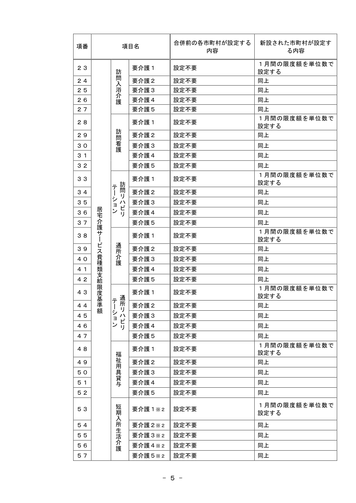
| 項番 | 項目名 | 属性 | 桁数 | 内容 | 必須 | 備考 | その他の列 |
|---|---|---|---|---|---|---|---|
| ２３ | 居宅介護サービス費種類支給限度基準額 > 訪問入浴介護 > 要介護１ | 設定不要 | 新設された市町村が設定する内容: １月間の限度額を単位数で設定する | ||||
| ２４ | 居宅介護サービス費種類支給限度基準額 > 訪問入浴介護 > 要介護２ | 設定不要 | 新設された市町村が設定する内容: 同上 | ||||
| ２５ | 居宅介護サービス費種類支給限度基準額 > 訪問入浴介護 > 要介護３ | 設定不要 | 新設された市町村が設定する内容: 同上 | ||||
| ２６ | 居宅介護サービス費種類支給限度基準額 > 訪問入浴介護 > 要介護４ | 設定不要 | 新設された市町村が設定する内容: 同上 | ||||
| ２７ | 居宅介護サービス費種類支給限度基準額 > 訪問入浴介護 > 要介護５ | 設定不要 | 新設された市町村が設定する内容: 同上 | ||||
| ２８ | 居宅介護サービス費種類支給限度基準額 > 訪問看護 > 要介護１ | 設定不要 | 新設された市町村が設定する内容: １月間の限度額を単位数で設定する | ||||
| ２９ | 居宅介護サービス費種類支給限度基準額 > 訪問看護 > 要介護２ | 設定不要 | 新設された市町村が設定する内容: 同上 | ||||
| ３０ | 居宅介護サービス費種類支給限度基準額 > 訪問看護 > 要介護３ | 設定不要 | 新設された市町村が設定する内容: 同上 | ||||
| ３１ | 居宅介護サービス費種類支給限度基準額 > 訪問看護 > 要介護４ | 設定不要 | 新設された市町村が設定する内容: 同上 | ||||
| ３２ | 居宅介護サービス費種類支給限度基準額 > 訪問看護 > 要介護５ | 設定不要 | 新設された市町村が設定する内容: 同上 | ||||
| ３３ | 居宅介護サービス費種類支給限度基準額 > 訪問リハビリテーション > 要介護１ | 設定不要 | 新設された市町村が設定する内容: １月間の限度額を単位数で設定する | ||||
| ３４ | 居宅介護サービス費種類支給限度基準額 > 訪問リハビリテーション > 要介護２ | 設定不要 | 新設された市町村が設定する内容: 同上 | ||||
| ３５ | 居宅介護サービス費種類支給限度基準額 > 訪問リハビリテーション > 要介護３ | 設定不要 | 新設された市町村が設定する内容: 同上 | ||||
| ３６ | 居宅介護サービス費種類支給限度基準額 > 訪問リハビリテーション > 要介護４ | 設定不要 | 新設された市町村が設定する内容: 同上 | ||||
| ３７ | 居宅介護サービス費種類支給限度基準額 > 訪問リハビリテーション > 要介護５ | 設定不要 | 新設された市町村が設定する内容: 同上 | ||||
| ３８ | 居宅介護サービス費種類支給限度基準額 > 通所介護 > 要介護１ | 設定不要 | 新設された市町村が設定する内容: １月間の限度額を単位数で設定する | ||||
| ３９ | 居宅介護サービス費種類支給限度基準額 > 通所介護 > 要介護２ | 設定不要 | 新設された市町村が設定する内容: 同上 | ||||
| ４０ | 居宅介護サービス費種類支給限度基準額 > 通所介護 > 要介護３ | 設定不要 | 新設された市町村が設定する内容: 同上 | ||||
| ４１ | 居宅介護サービス費種類支給限度基準額 > 通所介護 > 要介護４ | 設定不要 | 新設された市町村が設定する内容: 同上 | ||||
| ４２ | 居宅介護サービス費種類支給限度基準額 > 通所介護 > 要介護５ | 設定不要 | 新設された市町村が設定する内容: 同上 | ||||
| ４３ | 居宅介護サービス費種類支給限度基準額 > 通所リハビリテーション > 要介護１ | 設定不要 | 新設された市町村が設定する内容: １月間の限度額を単位数で設定する | ||||
| ４４ | 居宅介護サービス費種類支給限度基準額 > 通所リハビリテーション > 要介護２ | 設定不要 | 新設された市町村が設定する内容: 同上 | ||||
| ４５ | 居宅介護サービス費種類支給限度基準額 > 通所リハビリテーション > 要介護３ | 設定不要 | 新設された市町村が設定する内容: 同上 | ||||
| ４６ | 居宅介護サービス費種類支給限度基準額 > 通所リハビリテーション > 要介護４ | 設定不要 | 新設された市町村が設定する内容: 同上 | ||||
| ４７ | 居宅介護サービス費種類支給限度基準額 > 通所リハビリテーション > 要介護５ | 設定不要 | 新設された市町村が設定する内容: 同上 | ||||
| ４８ | 居宅介護サービス費種類支給限度基準額 > 福祉用具貸与 > 要介護１ | 設定不要 | 新設された市町村が設定する内容: １月間の限度額を単位数で設定する | ||||
| ４９ | 居宅介護サービス費種類支給限度基準額 > 福祉用具貸与 > 要介護２ | 設定不要 | 新設された市町村が設定する内容: 同上 | ||||
| ５０ | 居宅介護サービス費種類支給限度基準額 > 福祉用具貸与 > 要介護３ | 設定不要 | 新設された市町村が設定する内容: 同上 | ||||
| ５１ | 居宅介護サービス費種類支給限度基準額 > 福祉用具貸与 > 要介護４ | 設定不要 | 新設された市町村が設定する内容: 同上 | ||||
| ５２ | 居宅介護サービス費種類支給限度基準額 > 福祉用具貸与 > 要介護５ | 設定不要 | 新設された市町村が設定する内容: 同上 | ||||
| ５３ | 居宅介護サービス費種類支給限度基準額 > 短期入所生活介護 > 要介護１※２ | 設定不要 | 新設された市町村が設定する内容: １月間の限度額を単位数で設定する | ||||
| ５４ | 居宅介護サービス費種類支給限度基準額 > 短期入所生活介護 > 要介護２※２ | 設定不要 | 新設された市町村が設定する内容: 同上 | ||||
| ５５ | 居宅介護サービス費種類支給限度基準額 > 短期入所生活介護 > 要介護３※２ | 設定不要 | 新設された市町村が設定する内容: 同上 | ||||
| ５６ | 居宅介護サービス費種類支給限度基準額 > 短期入所生活介護 > 要介護４※２ | 設定不要 | 新設された市町村が設定する内容: 同上 | ||||
| ５７ | 居宅介護サービス費種類支給限度基準額 > 短期入所生活介護 > 要介護５※２ | 設定不要 | 新設された市町村が設定する内容: 同上 |
| 項番 | 項目名 | 属性 | 桁数 | 内容 | 必須 | 備考 | その他の列 |
|---|---|---|---|---|---|---|---|
| ２３ | 居宅介護サービス費種類支給限度基準額 > 訪問入浴介護 > 要介護1 | １月間の限度額を単位数で設定する | 合併前の各市町村が設定する内容: 設定不要 | ||||
| ２４ | 居宅介護サービス費種類支給限度基準額 > 訪問入浴介護 > 要介護2 | 同上 | 合併前の各市町村が設定する内容: 設定不要 | ||||
| ２５ | 居宅介護サービス費種類支給限度基準額 > 訪問入浴介護 > 要介護3 | 同上 | 合併前の各市町村が設定する内容: 設定不要 | ||||
| ２６ | 居宅介護サービス費種類支給限度基準額 > 訪問入浴介護 > 要介護4 | 同上 | 合併前の各市町村が設定する内容: 設定不要 | ||||
| ２７ | 居宅介護サービス費種類支給限度基準額 > 訪問入浴介護 > 要介護5 | 同上 | 合併前の各市町村が設定する内容: 設定不要 | ||||
| ２８ | 居宅介護サービス費種類支給限度基準額 > 訪問看護 > 要介護1 | １月間の限度額を単位数で設定する | 合併前の各市町村が設定する内容: 設定不要 | ||||
| ２９ | 居宅介護サービス費種類支給限度基準額 > 訪問看護 > 要介護2 | 同上 | 合併前の各市町村が設定する内容: 設定不要 | ||||
| ３０ | 居宅介護サービス費種類支給限度基準額 > 訪問看護 > 要介護3 | 同上 | 合併前の各市町村が設定する内容: 設定不要 | ||||
| ３１ | 居宅介護サービス費種類支給限度基準額 > 訪問看護 > 要介護4 | 同上 | 合併前の各市町村が設定する内容: 設定不要 | ||||
| ３２ | 居宅介護サービス費種類支給限度基準額 > 訪問看護 > 要介護5 | 同上 | 合併前の各市町村が設定する内容: 設定不要 | ||||
| ３３ | 居宅介護サービス費種類支給限度基準額 > 訪問リハビリテーション > 要介護1 | １月間の限度額を単位数で設定する | 合併前の各市町村が設定する内容: 設定不要 | ||||
| ３４ | 居宅介護サービス費種類支給限度基準額 > 訪問リハビリテーション > 要介護2 | 同上 | 合併前の各市町村が設定する内容: 設定不要 | ||||
| ３５ | 居宅介護サービス費種類支給限度基準額 > 訪問リハビリテーション > 要介護3 | 同上 | 合併前の各市町村が設定する内容: 設定不要 | ||||
| ３６ | 居宅介護サービス費種類支給限度基準額 > 訪問リハビリテーション > 要介護4 | 同上 | 合併前の各市町村が設定する内容: 設定不要 | ||||
| ３７ | 居宅介護サービス費種類支給限度基準額 > 訪問リハビリテーション > 要介護5 | 同上 | 合併前の各市町村が設定する内容: 設定不要 | ||||
| ３８ | 居宅介護サービス費種類支給限度基準額 > 通所介護 > 要介護1 | １月間の限度額を単位数で設定する | 合併前の各市町村が設定する内容: 設定不要 | ||||
| ３９ | 居宅介護サービス費種類支給限度基準額 > 通所介護 > 要介護2 | 同上 | 合併前の各市町村が設定する内容: 設定不要 | ||||
| ４０ | 居宅介護サービス費種類支給限度基準額 > 通所介護 > 要介護3 | 同上 | 合併前の各市町村が設定する内容: 設定不要 | ||||
| ４１ | 居宅介護サービス費種類支給限度基準額 > 通所介護 > 要介護4 | 同上 | 合併前の各市町村が設定する内容: 設定不要 | ||||
| ４２ | 居宅介護サービス費種類支給限度基準額 > 通所介護 > 要介護5 | 同上 | 合併前の各市町村が設定する内容: 設定不要 | ||||
| ４３ | 居宅介護サービス費種類支給限度基準額 > 通所リハビリテーション > 要介護1 | １月間の限度額を単位数で設定する | 合併前の各市町村が設定する内容: 設定不要 | ||||
| ４４ | 居宅介護サービス費種類支給限度基準額 > 通所リハビリテーション > 要介護2 | 同上 | 合併前の各市町村が設定する内容: 設定不要 | ||||
| ４５ | 居宅介護サービス費種類支給限度基準額 > 通所リハビリテーション > 要介護3 | 同上 | 合併前の各市町村が設定する内容: 設定不要 | ||||
| ４６ | 居宅介護サービス費種類支給限度基準額 > 通所リハビリテーション > 要介護4 | 同上 | 合併前の各市町村が設定する内容: 設定不要 | ||||
| ４７ | 居宅介護サービス費種類支給限度基準額 > 通所リハビリテーション > 要介護5 | 同上 | 合併前の各市町村が設定する内容: 設定不要 | ||||
| ４８ | 居宅介護サービス費種類支給限度基準額 > 福祉用具貸与 > 要介護1 | １月間の限度額を単位数で設定する | 合併前の各市町村が設定する内容: 設定不要 | ||||
| ４９ | 居宅介護サービス費種類支給限度基準額 > 福祉用具貸与 > 要介護2 | 同上 | 合併前の各市町村が設定する内容: 設定不要 | ||||
| ５０ | 居宅介護サービス費種類支給限度基準額 > 福祉用具貸与 > 要介護3 | 同上 | 合併前の各市町村が設定する内容: 設定不要 | ||||
| ５１ | 居宅介護サービス費種類支給限度基準額 > 福祉用具貸与 > 要介護4 | 同上 | 合併前の各市町村が設定する内容: 設定不要 | ||||
| ５２ | 居宅介護サービス費種類支給限度基準額 > 福祉用具貸与 > 要介護5 | 同上 | 合併前の各市町村が設定する内容: 設定不要 | ||||
| ５３ | 居宅介護サービス費種類支給限度基準額 > 短期入所生活介護 > 要介護1※2 | １月間の限度額を単位数で設定する | 合併前の各市町村が設定する内容: 設定不要 | ||||
| ５４ | 居宅介護サービス費種類支給限度基準額 > 短期入所生活介護 > 要介護2※2 | 同上 | 合併前の各市町村が設定する内容: 設定不要 | ||||
| ５５ | 居宅介護サービス費種類支給限度基準額 > 短期入所生活介護 > 要介護3※2 | 同上 | 合併前の各市町村が設定する内容: 設定不要 | ||||
| ５６ | 居宅介護サービス費種類支給限度基準額 > 短期入所生活介護 > 要介護4※2 | 同上 | 合併前の各市町村が設定する内容: 設定不要 | ||||
| ５７ | 居宅介護サービス費種類支給限度基準額 > 短期入所生活介護 > 要介護5※2 | 同上 | 合併前の各市町村が設定する内容: 設定不要 |
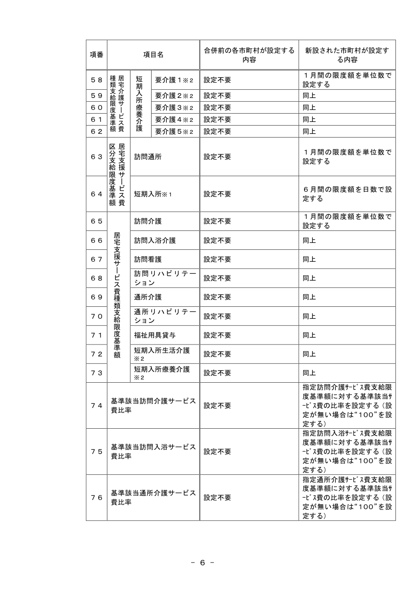
| 項番 | 項目名 | 属性 | 桁数 | 内容 | 必須 | 備考 | その他の列 |
|---|---|---|---|---|---|---|---|
| ５８ | 居宅介護サービス費種類支給限度基準額 > 短期入所療養介護 > 要介護1※2 | 設定不要 | 新設された市町村が設定する内容: １月間の限度額を単位数で設定する | ||||
| ５９ | 居宅介護サービス費種類支給限度基準額 > 短期入所療養介護 > 要介護2※2 | 設定不要 | 新設された市町村が設定する内容: 同上 | ||||
| ６０ | 居宅介護サービス費種類支給限度基準額 > 短期入所療養介護 > 要介護3※2 | 設定不要 | 新設された市町村が設定する内容: 同上 | ||||
| ６１ | 居宅介護サービス費種類支給限度基準額 > 短期入所療養介護 > 要介護4※2 | 設定不要 | 新設された市町村が設定する内容: 同上 | ||||
| ６２ | 居宅介護サービス費種類支給限度基準額 > 短期入所療養介護 > 要介護5※2 | 設定不要 | 新設された市町村が設定する内容: 同上 | ||||
| ６３ | 居宅支援サービス費区分支給限度基準額 > 訪問通所 | 設定不要 | 新設された市町村が設定する内容: １月間の限度額を単位数で設定する | ||||
| ６４ | 居宅支援サービス費区分支給限度基準額 > 短期入所※1 | 設定不要 | 新設された市町村が設定する内容: ６月間の限度額を日数で設定する | ||||
| ６５ | 居宅支援サービス費種類支給限度基準額 > 訪問介護 | 設定不要 | 新設された市町村が設定する内容: １月間の限度額を単位数で設定する | ||||
| ６６ | 居宅支援サービス費種類支給限度基準額 > 訪問入浴介護 | 設定不要 | 新設された市町村が設定する内容: 同上 | ||||
| ６７ | 居宅支援サービス費種類支給限度基準額 > 訪問看護 | 設定不要 | 新設された市町村が設定する内容: 同上 | ||||
| ６８ | 居宅支援サービス費種類支給限度基準額 > 訪問リハビリテーション | 設定不要 | 新設された市町村が設定する内容: 同上 | ||||
| ６９ | 居宅支援サービス費種類支給限度基準額 > 通所介護 | 設定不要 | 新設された市町村が設定する内容: 同上 | ||||
| ７０ | 居宅支援サービス費種類支給限度基準額 > 通所リハビリテーション | 設定不要 | 新設された市町村が設定する内容: 同上 | ||||
| ７１ | 居宅支援サービス費種類支給限度基準額 > 福祉用具貸与 | 設定不要 | 新設された市町村が設定する内容: 同上 | ||||
| ７２ | 居宅支援サービス費種類支給限度基準額 > 短期入所生活介護※2 | 設定不要 | 新設された市町村が設定する内容: 同上 | ||||
| ７３ | 居宅支援サービス費種類支給限度基準額 > 短期入所療養介護※2 | 設定不要 | 新設された市町村が設定する内容: 同上 | ||||
| ７４ | 基準該当訪問介護サービス費比率 | 設定不要 | 新設された市町村が設定する内容: 指定訪問介護サービス費支給限度基準額に対する基準該当サービス費の比率を設定する（設定が無い場合は“100”を設定する） | ||||
| ７５ | 基準該当訪問入浴サービス費比率 | 設定不要 | 新設された市町村が設定する内容: 指定訪問入浴サービス費支給限度基準額に対する基準該当サービス費の比率を設定する（設定が無い場合は“100”を設定する） | ||||
| ７６ | 基準該当通所介護サービス費比率 | 設定不要 | 新設された市町村が設定する内容: 指定通所介護サービス費支給限度基準額に対する基準該当サービス費の比率を設定する（設定が無い場合は“100”を設定する） |
| 項番 | 項目名 | 属性 | 桁数 | 内容 | 必須 | 備考 | その他の列 |
|---|---|---|---|---|---|---|---|
| ５８ | 居宅介護サービス費種類支給限度基準額 > 短期入所療養介護 > 要介護１※２ | １月間の限度額を単位数で設定する | 合併前の各市町村が設定する内容: 設定不要 | ||||
| ５９ | 居宅介護サービス費種類支給限度基準額 > 短期入所療養介護 > 要介護２※２ | 同上 | 合併前の各市町村が設定する内容: 設定不要 | ||||
| ６０ | 居宅介護サービス費種類支給限度基準額 > 短期入所療養介護 > 要介護３※２ | 同上 | 合併前の各市町村が設定する内容: 設定不要 | ||||
| ６１ | 居宅介護サービス費種類支給限度基準額 > 短期入所療養介護 > 要介護４※２ | 同上 | 合併前の各市町村が設定する内容: 設定不要 | ||||
| ６２ | 居宅介護サービス費種類支給限度基準額 > 短期入所療養介護 > 要介護５※２ | 同上 | 合併前の各市町村が設定する内容: 設定不要 | ||||
| ６３ | 居宅支援サービス費区分支給限度基準額 > 訪問通所 | １月間の限度額を単位数で設定する | 合併前の各市町村が設定する内容: 設定不要 | ||||
| ６４ | 居宅支援サービス費区分支給限度基準額 > 短期入所※１ | ６月間の限度額を日数で設定する | 合併前の各市町村が設定する内容: 設定不要 | ||||
| ６５ | 居宅支援サービス費種類支給限度基準額 > 訪問介護 | １月間の限度額を単位数で設定する | 合併前の各市町村が設定する内容: 設定不要 | ||||
| ６６ | 居宅支援サービス費種類支給限度基準額 > 訪問入浴介護 | 同上 | 合併前の各市町村が設定する内容: 設定不要 | ||||
| ６７ | 居宅支援サービス費種類支給限度基準額 > 訪問看護 | 同上 | 合併前の各市町村が設定する内容: 設定不要 | ||||
| ６８ | 居宅支援サービス費種類支給限度基準額 > 訪問リハビリテーション | 同上 | 合併前の各市町村が設定する内容: 設定不要 | ||||
| ６９ | 居宅支援サービス費種類支給限度基準額 > 通所介護 | 同上 | 合併前の各市町村が設定する内容: 設定不要 | ||||
| ７０ | 居宅支援サービス費種類支給限度基準額 > 通所リハビリテーション | 同上 | 合併前の各市町村が設定する内容: 設定不要 | ||||
| ７１ | 居宅支援サービス費種類支給限度基準額 > 福祉用具貸与 | 同上 | 合併前の各市町村が設定する内容: 設定不要 | ||||
| ７２ | 居宅支援サービス費種類支給限度基準額 > 短期入所生活介護※２ | 同上 | 合併前の各市町村が設定する内容: 設定不要 | ||||
| ７３ | 居宅支援サービス費種類支給限度基準額 > 短期入所療養介護※２ | 同上 | 合併前の各市町村が設定する内容: 設定不要 | ||||
| ７４ | 基準該当訪問介護サービス費比率 | 指定訪問介護ｻｰﾋﾞｽ費支給限度基準額に対する基準該当ｻｰﾋﾞｽ費の比率を設定する（設定が無い場合は“１００”を設定する） | 合併前の各市町村が設定する内容: 設定不要 | ||||
| ７５ | 基準該当訪問入浴サービス費比率 | 指定訪問入浴ｻｰﾋﾞｽ費支給限度基準額に対する基準該当ｻｰﾋﾞｽ費の比率を設定する（設定が無い場合は“１００”を設定する） | 合併前の各市町村が設定する内容: 設定不要 | ||||
| ７６ | 基準該当通所介護サービス費比率 | 指定通所介護ｻｰﾋﾞｽ費支給限度基準額に対する基準該当ｻｰﾋﾞｽ費の比率を設定する（設定が無い場合は“１００”を設定する） | 合併前の各市町村が設定する内容: 設定不要 |
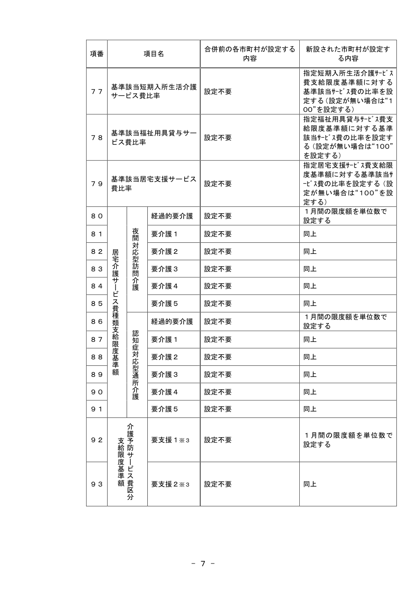
| 項番 | 項目名 | 属性 | 桁数 | 内容 | 必須 | 備考 | その他の列 |
|---|---|---|---|---|---|---|---|
| ７７ | 基準該当短期入所生活介護サービス費比率 | 設定不要 | 新設された市町村が設定する内容: 指定短期入所生活介護サービス費支給限度基準額に対する基準該当サービス費の比率を設定する（設定が無い場合は“100”を設定する） | ||||
| ７８ | 基準該当福祉用具貸与サービス費比率 | 設定不要 | 新設された市町村が設定する内容: 指定福祉用具貸与サービス費支給限度基準額に対する基準該当サービス費の比率を設定する（設定が無い場合は“100”を設定する） | ||||
| ７９ | 基準該当居宅支援サービス費比率 | 設定不要 | 新設された市町村が設定する内容: 指定居宅支援サービス費支給限度基準額に対する基準該当サービス費の比率を設定する（設定が無い場合は“100”を設定する） | ||||
| ８０ | 居宅介護サービス費種類支給限度基準額 > 夜間対応型訪問介護 > 経過的要介護 | 設定不要 | 新設された市町村が設定する内容: １月間の限度額を単位数で設定する | ||||
| ８１ | 居宅介護サービス費種類支給限度基準額 > 夜間対応型訪問介護 > 要介護１ | 設定不要 | 新設された市町村が設定する内容: 同上 | ||||
| ８２ | 居宅介護サービス費種類支給限度基準額 > 夜間対応型訪問介護 > 要介護２ | 設定不要 | 新設された市町村が設定する内容: 同上 | ||||
| ８３ | 居宅介護サービス費種類支給限度基準額 > 夜間対応型訪問介護 > 要介護３ | 設定不要 | 新設された市町村が設定する内容: 同上 | ||||
| ８４ | 居宅介護サービス費種類支給限度基準額 > 夜間対応型訪問介護 > 要介護４ | 設定不要 | 新設された市町村が設定する内容: 同上 | ||||
| ８５ | 居宅介護サービス費種類支給限度基準額 > 夜間対応型訪問介護 > 要介護５ | 設定不要 | 新設された市町村が設定する内容: 同上 | ||||
| ８６ | 居宅介護サービス費種類支給限度基準額 > 認知症対応型通所介護 > 経過的要介護 | 設定不要 | 新設された市町村が設定する内容: １月間の限度額を単位数で設定する | ||||
| ８７ | 居宅介護サービス費種類支給限度基準額 > 認知症対応型通所介護 > 要介護１ | 設定不要 | 新設された市町村が設定する内容: 同上 | ||||
| ８８ | 居宅介護サービス費種類支給限度基準額 > 認知症対応型通所介護 > 要介護２ | 設定不要 | 新設された市町村が設定する内容: 同上 | ||||
| ８９ | 居宅介護サービス費種類支給限度基準額 > 認知症対応型通所介護 > 要介護３ | 設定不要 | 新設された市町村が設定する内容: 同上 | ||||
| ９０ | 居宅介護サービス費種類支給限度基準額 > 認知症対応型通所介護 > 要介護４ | 設定不要 | 新設された市町村が設定する内容: 同上 | ||||
| ９１ | 居宅介護サービス費種類支給限度基準額 > 認知症対応型通所介護 > 要介護５ | 設定不要 | 新設された市町村が設定する内容: 同上 | ||||
| ９２ | 介護予防サービス費区分支給限度基準額 > 要支援１※3 | 設定不要 | 新設された市町村が設定する内容: １月間の限度額を単位数で設定する | ||||
| ９３ | 介護予防サービス費区分支給限度基準額 > 要支援２※3 | 設定不要 | 新設された市町村が設定する内容: 同上 |
| 項番 | 項目名 | 属性 | 桁数 | 内容 | 必須 | 備考 | その他の列 |
|---|---|---|---|---|---|---|---|
| ７７ | 基準該当短期入所生活介護サービス費比率 | 指定短期入所生活介護ｻｰﾋﾞｽ費支給限度基準額に対する基準該当ｻｰﾋﾞｽ費の比率を設定する（設定が無い場合は“100”を設定する） | 合併前の各市町村が設定する内容: 設定不要 | ||||
| ７８ | 基準該当福祉用具貸与サービス費比率 | 指定福祉用具貸与ｻｰﾋﾞｽ費支給限度基準額に対する基準該当ｻｰﾋﾞｽ費の比率を設定する（設定が無い場合は“100”を設定する） | 合併前の各市町村が設定する内容: 設定不要 | ||||
| ７９ | 基準該当居宅支援サービス費比率 | 指定居宅支援ｻｰﾋﾞｽ費支給限度基準額に対する基準該当ｻｰﾋﾞｽ費の比率を設定する（設定が無い場合は“100”を設定する） | 合併前の各市町村が設定する内容: 設定不要 | ||||
| ８０ | 居宅介護サービス費種類支給限度基準額 > 夜間対応型訪問介護 > 経過的要介護 | １月間の限度額を単位数で設定する | 合併前の各市町村が設定する内容: 設定不要 | ||||
| ８１ | 居宅介護サービス費種類支給限度基準額 > 夜間対応型訪問介護 > 要介護１ | 同上 | 合併前の各市町村が設定する内容: 設定不要 | ||||
| ８２ | 居宅介護サービス費種類支給限度基準額 > 夜間対応型訪問介護 > 要介護２ | 同上 | 合併前の各市町村が設定する内容: 設定不要 | ||||
| ８３ | 居宅介護サービス費種類支給限度基準額 > 夜間対応型訪問介護 > 要介護３ | 同上 | 合併前の各市町村が設定する内容: 設定不要 | ||||
| ８４ | 居宅介護サービス費種類支給限度基準額 > 夜間対応型訪問介護 > 要介護４ | 同上 | 合併前の各市町村が設定する内容: 設定不要 | ||||
| ８５ | 居宅介護サービス費種類支給限度基準額 > 夜間対応型訪問介護 > 要介護５ | 同上 | 合併前の各市町村が設定する内容: 設定不要 | ||||
| ８６ | 居宅介護サービス費種類支給限度基準額 > 認知症対応型通所介護 > 経過的要介護 | １月間の限度額を単位数で設定する | 合併前の各市町村が設定する内容: 設定不要 | ||||
| ８７ | 居宅介護サービス費種類支給限度基準額 > 認知症対応型通所介護 > 要介護１ | 同上 | 合併前の各市町村が設定する内容: 設定不要 | ||||
| ８８ | 居宅介護サービス費種類支給限度基準額 > 認知症対応型通所介護 > 要介護２ | 同上 | 合併前の各市町村が設定する内容: 設定不要 | ||||
| ８９ | 居宅介護サービス費種類支給限度基準額 > 認知症対応型通所介護 > 要介護３ | 同上 | 合併前の各市町村が設定する内容: 設定不要 | ||||
| ９０ | 居宅介護サービス費種類支給限度基準額 > 認知症対応型通所介護 > 要介護４ | 同上 | 合併前の各市町村が設定する内容: 設定不要 | ||||
| ９１ | 居宅介護サービス費種類支給限度基準額 > 認知症対応型通所介護 > 要介護５ | 同上 | 合併前の各市町村が設定する内容: 設定不要 | ||||
| ９２ | 介護予防サービス費区分支給限度基準額 > 要支援１※３ | １月間の限度額を単位数で設定する | 合併前の各市町村が設定する内容: 設定不要 | ||||
| ９３ | 介護予防サービス費区分支給限度基準額 > 要支援２※３ | 同上 | 合併前の各市町村が設定する内容: 設定不要 |
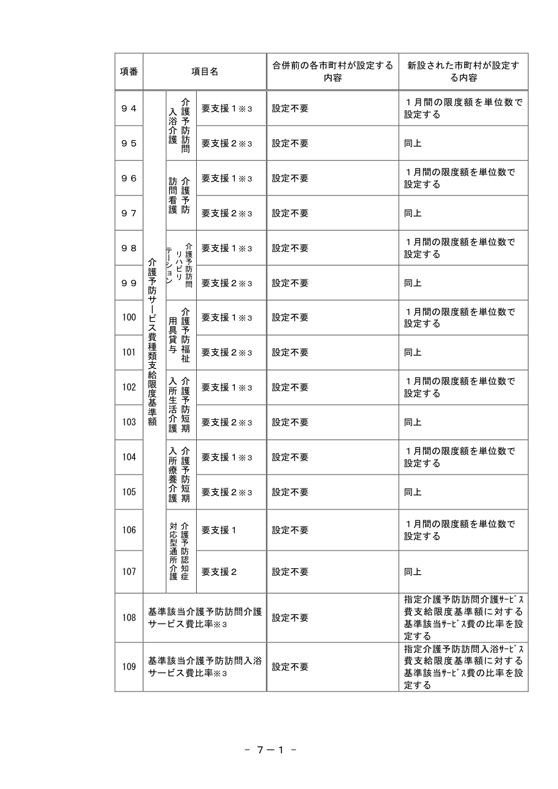
| 項番 | 項目名 | 属性 | 桁数 | 内容 | 必須 | 備考 | その他の列 |
|---|---|---|---|---|---|---|---|
| ９４ | 介護保険サービス費種類支給限度基準額 > 介護予防訪問入浴介護 > 要支援１※３ | 設定不要 | 新設された市町村が設定する内容: １月間の限度額を単位数で設定する | ||||
| ９５ | 介護保険サービス費種類支給限度基準額 > 介護予防訪問入浴介護 > 要支援２※３ | 設定不要 | 新設された市町村が設定する内容: 同上 | ||||
| ９６ | 介護保険サービス費種類支給限度基準額 > 介護予防訪問看護 > 要支援１※３ | 設定不要 | 新設された市町村が設定する内容: １月間の限度額を単位数で設定する | ||||
| ９７ | 介護保険サービス費種類支給限度基準額 > 介護予防訪問看護 > 要支援２※３ | 設定不要 | 新設された市町村が設定する内容: 同上 | ||||
| ９８ | 介護保険サービス費種類支給限度基準額 > 介護予防訪問リハビリテーション > 要支援１※３ | 設定不要 | 新設された市町村が設定する内容: １月間の限度額を単位数で設定する | ||||
| ９９ | 介護保険サービス費種類支給限度基準額 > 介護予防訪問リハビリテーション > 要支援２※３ | 設定不要 | 新設された市町村が設定する内容: 同上 | ||||
| 100 | 介護保険サービス費種類支給限度基準額 > 介護予防福祉用具貸与 > 要支援１※３ | 設定不要 | 新設された市町村が設定する内容: １月間の限度額を単位数で設定する | ||||
| 101 | 介護保険サービス費種類支給限度基準額 > 介護予防福祉用具貸与 > 要支援２※３ | 設定不要 | 新設された市町村が設定する内容: 同上 | ||||
| 102 | 介護保険サービス費種類支給限度基準額 > 介護予防短期入所生活介護 > 要支援１※３ | 設定不要 | 新設された市町村が設定する内容: １月間の限度額を単位数で設定する | ||||
| 103 | 介護保険サービス費種類支給限度基準額 > 介護予防短期入所生活介護 > 要支援２※３ | 設定不要 | 新設された市町村が設定する内容: 同上 | ||||
| 104 | 介護保険サービス費種類支給限度基準額 > 介護予防短期入所療養介護 > 要支援１※３ | 設定不要 | 新設された市町村が設定する内容: １月間の限度額を単位数で設定する | ||||
| 105 | 介護保険サービス費種類支給限度基準額 > 介護予防短期入所療養介護 > 要支援２※３ | 設定不要 | 新設された市町村が設定する内容: 同上 | ||||
| 106 | 介護保険サービス費種類支給限度基準額 > 介護予防認知症対応型通所介護 > 要支援１ | 設定不要 | 新設された市町村が設定する内容: １月間の限度額を単位数で設定する | ||||
| 107 | 介護保険サービス費種類支給限度基準額 > 介護予防認知症対応型通所介護 > 要支援２ | 設定不要 | 新設された市町村が設定する内容: 同上 | ||||
| 108 | 基準該当介護予防訪問介護サービス費比率※3 | 設定不要 | 新設された市町村が設定する内容: 指定介護予防訪問介護サービス費支給限度基準額に対する基準該当サービス費の比率を設定する | ||||
| 109 | 基準該当介護予防訪問入浴サービス費比率※3 | 設定不要 | 新設された市町村が設定する内容: 指定介護予防訪問入浴サービス費支給限度基準額に対する基準該当サービス費の比率を設定する |
| 項番 | 項目名 | 属性 | 桁数 | 内容 | 必須 | 備考 | その他の列 |
|---|---|---|---|---|---|---|---|
| ９４ | 介護予防サービス費種類支給限度基準額 > 介護予防訪問入浴介護 > 要支援１※３ | １月間の限度額を単位数で設定する | 合併前の各市町村が設定する内容: 設定不要 | ||||
| ９５ | 介護予防サービス費種類支給限度基準額 > 介護予防訪問入浴介護 > 要支援２※３ | 同上 | 合併前の各市町村が設定する内容: 設定不要 | ||||
| ９６ | 介護予防サービス費種類支給限度基準額 > 介護予防訪問看護 > 要支援１※３ | １月間の限度額を単位数で設定する | 合併前の各市町村が設定する内容: 設定不要 | ||||
| ９７ | 介護予防サービス費種類支給限度基準額 > 介護予防訪問看護 > 要支援２※３ | 同上 | 合併前の各市町村が設定する内容: 設定不要 | ||||
| ９８ | 介護予防サービス費種類支給限度基準額 > 介護予防訪問リハビリテーション > 要支援１※３ | １月間の限度額を単位数で設定する | 合併前の各市町村が設定する内容: 設定不要 | ||||
| ９９ | 介護予防サービス費種類支給限度基準額 > 介護予防訪問リハビリテーション > 要支援２※３ | 同上 | 合併前の各市町村が設定する内容: 設定不要 | ||||
| 100 | 介護予防サービス費種類支給限度基準額 > 介護予防福祉用具貸与 > 要支援１※３ | １月間の限度額を単位数で設定する | 合併前の各市町村が設定する内容: 設定不要 | ||||
| 101 | 介護予防サービス費種類支給限度基準額 > 介護予防福祉用具貸与 > 要支援２※３ | 同上 | 合併前の各市町村が設定する内容: 設定不要 | ||||
| 102 | 介護予防サービス費種類支給限度基準額 > 介護予防短期入所生活介護 > 要支援１※３ | １月間の限度額を単位数で設定する | 合併前の各市町村が設定する内容: 設定不要 | ||||
| 103 | 介護予防サービス費種類支給限度基準額 > 介護予防短期入所生活介護 > 要支援２※３ | 同上 | 合併前の各市町村が設定する内容: 設定不要 | ||||
| 104 | 介護予防サービス費種類支給限度基準額 > 介護予防短期入所療養介護 > 要支援１※３ | １月間の限度額を単位数で設定する | 合併前の各市町村が設定する内容: 設定不要 | ||||
| 105 | 介護予防サービス費種類支給限度基準額 > 介護予防短期入所療養介護 > 要支援２※３ | 同上 | 合併前の各市町村が設定する内容: 設定不要 | ||||
| 106 | 介護予防サービス費種類支給限度基準額 > 介護予防認知症対応型通所介護 > 要支援１ | １月間の限度額を単位数で設定する | 合併前の各市町村が設定する内容: 設定不要 | ||||
| 107 | 介護予防サービス費種類支給限度基準額 > 介護予防認知症対応型通所介護 > 要支援２ | 同上 | 合併前の各市町村が設定する内容: 設定不要 | ||||
| 108 | 基準該当介護予防訪問介護サービス費比率※３ | 指定介護予防訪問介護ｻｰﾋﾞｽ費支給限度基準額に対する基準該当ｻｰﾋﾞｽ費の比率を設定する | 合併前の各市町村が設定する内容: 設定不要 | ||||
| 109 | 基準該当介護予防訪問入浴サービス費比率※３ | 指定介護予防訪問入浴ｻｰﾋﾞｽ費支給限度基準額に対する基準該当ｻｰﾋﾞｽ費の比率を設定する | 合併前の各市町村が設定する内容: 設定不要 |
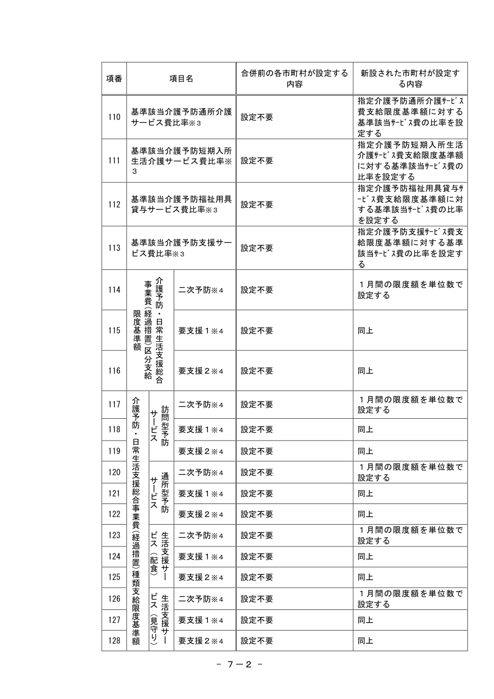
| 項番 | 項目名 | 属性 | 桁数 | 内容 | 必須 | 備考 | その他の列 |
|---|---|---|---|---|---|---|---|
| 110 | 基準該当介護予防通所介護サービス費比率※３ | 合併前の各市町村が設定する内容: 設定不要 新設された市町村が設定する内容: 指定介護予防通所介護サービス費支給限度基準額に対する基準該当サービス費の比率を設定する | |||||
| 111 | 基準該当介護予防短期入所生活介護サービス費比率※３ | 合併前の各市町村が設定する内容: 設定不要 新設された市町村が設定する内容: 指定介護予防短期入所生活介護サービス費支給限度基準額に対する基準該当サービス費の比率を設定する | |||||
| 112 | 基準該当介護予防福祉用具貸与サービス費比率※３ | 合併前の各市町村が設定する内容: 設定不要 新設された市町村が設定する内容: 指定介護予防福祉用具貸与サービス費支給限度基準額に対する基準該当サービス費の比率を設定する | |||||
| 113 | 基準該当介護予防支援サービス費比率※３ | 合併前の各市町村が設定する内容: 設定不要 新設された市町村が設定する内容: 指定介護予防支援サービス費支給限度基準額に対する基準該当サービス費の比率を設定する | |||||
| 114 | 介護予防・日常生活支援総合事業費（経過措置）区分支給限度基準額 > 二次予防※４ | 合併前の各市町村が設定する内容: 設定不要 新設された市町村が設定する内容: １月間の限度額を単位数で設定する | |||||
| 115 | 介護予防・日常生活支援総合事業費（経過措置）区分支給限度基準額 > 要支援１※４ | 合併前の各市町村が設定する内容: 設定不要 新設された市町村が設定する内容: 同上 | |||||
| 116 | 介護予防・日常生活支援総合事業費（経過措置）区分支給限度基準額 > 要支援２※４ | 合併前の各市町村が設定する内容: 設定不要 新設された市町村が設定する内容: 同上 | |||||
| 117 | 介護予防・日常生活支援総合事業費（経過措置）種類支給限度基準額 > 訪問型予防サービス > 二次予防※４ | 合併前の各市町村が設定する内容: 設定不要 新設された市町村が設定する内容: １月間の限度額を単位数で設定する | |||||
| 118 | 介護予防・日常生活支援総合事業費（経過措置）種類支給限度基準額 > 訪問型予防サービス > 要支援１※４ | 合併前の各市町村が設定する内容: 設定不要 新設された市町村が設定する内容: 同上 | |||||
| 119 | 介護予防・日常生活支援総合事業費（経過措置）種類支給限度基準額 > 訪問型予防サービス > 要支援２※４ | 合併前の各市町村が設定する内容: 設定不要 新設された市町村が設定する内容: 同上 | |||||
| 120 | 介護予防・日常生活支援総合事業費（経過措置）種類支給限度基準額 > 通所型予防サービス > 二次予防※４ | 合併前の各市町村が設定する内容: 設定不要 新設された市町村が設定する内容: １月間の限度額を単位数で設定する | |||||
| 121 | 介護予防・日常生活支援総合事業費（経過措置）種類支給限度基準額 > 通所型予防サービス > 要支援１※４ | 合併前の各市町村が設定する内容: 設定不要 新設された市町村が設定する内容: 同上 | |||||
| 122 | 介護予防・日常生活支援総合事業費（経過措置）種類支給限度基準額 > 通所型予防サービス > 要支援２※４ | 合併前の各市町村が設定する内容: 設定不要 新設された市町村が設定する内容: 同上 | |||||
| 123 | 介護予防・日常生活支援総合事業費（経過措置）種類支給限度基準額 > 生活支援サービス（配食） > 二次予防※４ | 合併前の各市町村が設定する内容: 設定不要 新設された市町村が設定する内容: １月間の限度額を単位数で設定する | |||||
| 124 | 介護予防・日常生活支援総合事業費（経過措置）種類支給限度基準額 > 生活支援サービス（配食） > 要支援１※４ | 合併前の各市町村が設定する内容: 設定不要 新設された市町村が設定する内容: 同上 | |||||
| 125 | 介護予防・日常生活支援総合事業費（経過措置）種類支給限度基準額 > 生活支援サービス（配食） > 要支援２※４ | 合併前の各市町村が設定する内容: 設定不要 新設された市町村が設定する内容: 同上 | |||||
| 126 | 介護予防・日常生活支援総合事業費（経過措置）種類支給限度基準額 > 生活支援サービス（見守り） > 二次予防※４ | 合併前の各市町村が設定する内容: 設定不要 新設された市町村が設定する内容: １月間の限度額を単位数で設定する | |||||
| 127 | 介護予防・日常生活支援総合事業費（経過措置）種類支給限度基準額 > 生活支援サービス（見守り） > 要支援１※４ | 合併前の各市町村が設定する内容: 設定不要 新設された市町村が設定する内容: 同上 | |||||
| 128 | 介護予防・日常生活支援総合事業費（経過措置）種類支給限度基準額 > 生活支援サービス（見守り） > 要支援２※４ | 合併前の各市町村が設定する内容: 設定不要 新設された市町村が設定する内容: 同上 |
| 項番 | 項目名 | 属性 | 桁数 | 内容 | 必須 | 備考 | その他の列 |
|---|---|---|---|---|---|---|---|
| 110 | 基準該当介護予防通所介護サービス費比率※3 | 指定介護予防通所介護ｻｰﾋﾞｽ費支給限度基準額に対する基準該当ｻｰﾋﾞｽ費の比率を設定する | 合併前の各市町村が設定する内容: 設定不要 | ||||
| 111 | 基準該当介護予防短期入所生活介護サービス費比率※3 | 指定介護予防短期入所生活介護ｻｰﾋﾞｽ費支給限度基準額に対する基準該当ｻｰﾋﾞｽ費の比率を設定する | 合併前の各市町村が設定する内容: 設定不要 | ||||
| 112 | 基準該当介護予防福祉用具貸与サービス費比率※3 | 指定介護予防福祉用具貸与ｻｰﾋﾞｽ費支給限度基準額に対する基準該当ｻｰﾋﾞｽ費の比率を設定する | 合併前の各市町村が設定する内容: 設定不要 | ||||
| 113 | 基準該当介護予防支援サービス費比率※3 | 指定介護予防支援ｻｰﾋﾞｽ費支給限度基準額に対する基準該当ｻｰﾋﾞｽ費の比率を設定する | 合併前の各市町村が設定する内容: 設定不要 | ||||
| 114 | 限度基準額 > 介護予防・日常生活支援総合事業費(経過措置)区分支給 > 二次予防※4 | １月間の限度額を単位数で設定する | 合併前の各市町村が設定する内容: 設定不要 | ||||
| 115 | 限度基準額 > 介護予防・日常生活支援総合事業費(経過措置)区分支給 > 要支援１※4 | 同上 | 合併前の各市町村が設定する内容: 設定不要 | ||||
| 116 | 限度基準額 > 介護予防・日常生活支援総合事業費(経過措置)区分支給 > 要支援２※4 | 同上 | 合併前の各市町村が設定する内容: 設定不要 | ||||
| 117 | 介護予防・日常生活支援総合事業費(経過措置)種類支給限度基準額 > 訪問型予防サービス > 二次予防※4 | １月間の限度額を単位数で設定する | 合併前の各市町村が設定する内容: 設定不要 | ||||
| 118 | 介護予防・日常生活支援総合事業費(経過措置)種類支給限度基準額 > 訪問型予防サービス > 要支援１※4 | 同上 | 合併前の各市町村が設定する内容: 設定不要 | ||||
| 119 | 介護予防・日常生活支援総合事業費(経過措置)種類支給限度基準額 > 訪問型予防サービス > 要支援２※4 | 同上 | 合併前の各市町村が設定する内容: 設定不要 | ||||
| 120 | 介護予防・日常生活支援総合事業費(経過措置)種類支給限度基準額 > 通所型予防サービス > 二次予防※4 | １月間の限度額を単位数で設定する | 合併前の各市町村が設定する内容: 設定不要 | ||||
| 121 | 介護予防・日常生活支援総合事業費(経過措置)種類支給限度基準額 > 通所型予防サービス > 要支援１※4 | 同上 | 合併前の各市町村が設定する内容: 設定不要 | ||||
| 122 | 介護予防・日常生活支援総合事業費(経過措置)種類支給限度基準額 > 通所型予防サービス > 要支援２※4 | 同上 | 合併前の各市町村が設定する内容: 設定不要 | ||||
| 123 | 介護予防・日常生活支援総合事業費(経過措置)種類支給限度基準額 > 生活支援サービス(配食) > 二次予防※4 | １月間の限度額を単位数で設定する | 合併前の各市町村が設定する内容: 設定不要 | ||||
| 124 | 介護予防・日常生活支援総合事業費(経過措置)種類支給限度基準額 > 生活支援サービス(配食) > 要支援１※4 | 同上 | 合併前の各市町村が設定する内容: 設定不要 | ||||
| 125 | 介護予防・日常生活支援総合事業費(経過措置)種類支給限度基準額 > 生活支援サービス(配食) > 要支援２※4 | 同上 | 合併前の各市町村が設定する内容: 設定不要 | ||||
| 126 | 介護予防・日常生活支援総合事業費(経過措置)種類支給限度基準額 > 生活支援サービス(見守り) > 二次予防※4 | １月間の限度額を単位数で設定する | 合併前の各市町村が設定する内容: 設定不要 | ||||
| 127 | 介護予防・日常生活支援総合事業費(経過措置)種類支給限度基準額 > 生活支援サービス(見守り) > 要支援１※4 | 同上 | 合併前の各市町村が設定する内容: 設定不要 | ||||
| 128 | 介護予防・日常生活支援総合事業費(経過措置)種類支給限度基準額 > 生活支援サービス(見守り) > 要支援２※4 | 同上 | 合併前の各市町村が設定する内容: 設定不要 |
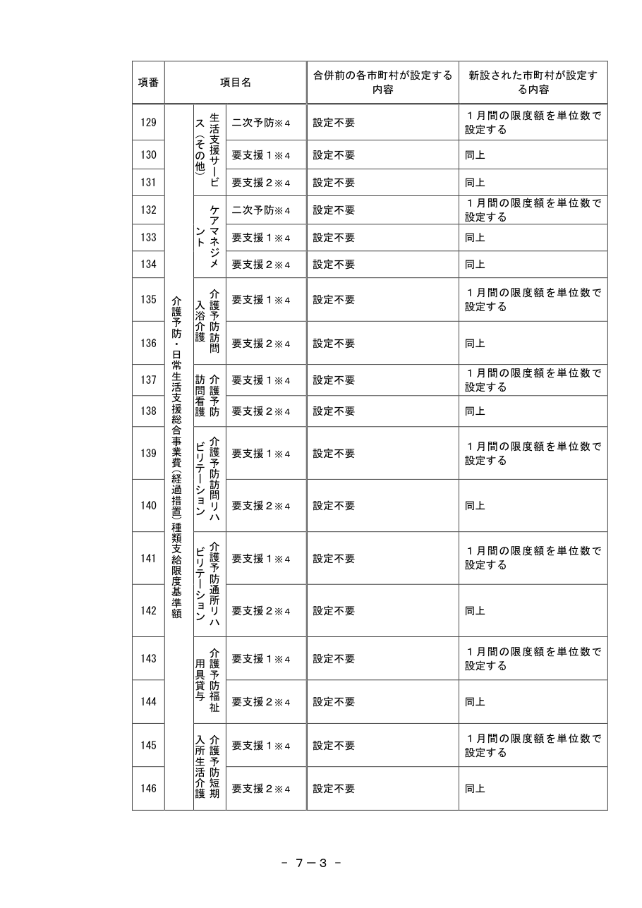
| 項番 | 項目名 | 属性 | 桁数 | 内容 | 必須 | 備考 | その他の列 |
|---|---|---|---|---|---|---|---|
| 129 | 介護予防・日常生活支援総合事業費（経過措置）種類支給限度基準額 > 生活支援サービス（その他） > 二次予防※4 | 設定不要 | 新設された市町村が設定する内容: １月間の限度額を単位数で設定する | ||||
| 130 | 介護予防・日常生活支援総合事業費（経過措置）種類支給限度基準額 > 生活支援サービス（その他） > 要支援１※4 | 設定不要 | 新設された市町村が設定する内容: 同上 | ||||
| 131 | 介護予防・日常生活支援総合事業費（経過措置）種類支給限度基準額 > 生活支援サービス（その他） > 要支援２※4 | 設定不要 | 新設された市町村が設定する内容: 同上 | ||||
| 132 | 介護予防・日常生活支援総合事業費（経過措置）種類支給限度基準額 > ケアマネジメント > 二次予防※4 | 設定不要 | 新設された市町村が設定する内容: １月間の限度額を単位数で設定する | ||||
| 133 | 介護予防・日常生活支援総合事業費（経過措置）種類支給限度基準額 > ケアマネジメント > 要支援１※4 | 設定不要 | 新設された市町村が設定する内容: 同上 | ||||
| 134 | 介護予防・日常生活支援総合事業費（経過措置）種類支給限度基準額 > ケアマネジメント > 要支援２※4 | 設定不要 | 新設された市町村が設定する内容: 同上 | ||||
| 135 | 介護予防・日常生活支援総合事業費（経過措置）種類支給限度基準額 > 介護予防訪問入浴介護 > 要支援１※4 | 設定不要 | 新設された市町村が設定する内容: １月間の限度額を単位数で設定する | ||||
| 136 | 介護予防・日常生活支援総合事業費（経過措置）種類支給限度基準額 > 介護予防訪問入浴介護 > 要支援２※4 | 設定不要 | 新設された市町村が設定する内容: 同上 | ||||
| 137 | 介護予防・日常生活支援総合事業費（経過措置）種類支給限度基準額 > 介護予防訪問看護 > 要支援１※4 | 設定不要 | 新設された市町村が設定する内容: １月間の限度額を単位数で設定する | ||||
| 138 | 介護予防・日常生活支援総合事業費（経過措置）種類支給限度基準額 > 介護予防訪問看護 > 要支援２※4 | 設定不要 | 新設された市町村が設定する内容: 同上 | ||||
| 139 | 介護予防・日常生活支援総合事業費（経過措置）種類支給限度基準額 > 介護予防訪問リハビリテーション > 要支援１※4 | 設定不要 | 新設された市町村が設定する内容: １月間の限度額を単位数で設定する | ||||
| 140 | 介護予防・日常生活支援総合事業費（経過措置）種類支給限度基準額 > 介護予防訪問リハビリテーション > 要支援２※4 | 設定不要 | 新設された市町村が設定する内容: 同上 | ||||
| 141 | 介護予防・日常生活支援総合事業費（経過措置）種類支給限度基準額 > 介護予防通所リハビリテーション > 要支援１※4 | 設定不要 | 新設された市町村が設定する内容: １月間の限度額を単位数で設定する | ||||
| 142 | 介護予防・日常生活支援総合事業費（経過措置）種類支給限度基準額 > 介護予防通所リハビリテーション > 要支援２※4 | 設定不要 | 新設された市町村が設定する内容: 同上 | ||||
| 143 | 介護予防・日常生活支援総合事業費（経過措置）種類支給限度基準額 > 介護予防福祉用具貸与 > 要支援１※4 | 設定不要 | 新設された市町村が設定する内容: １月間の限度額を単位数で設定する | ||||
| 144 | 介護予防・日常生活支援総合事業費（経過措置）種類支給限度基準額 > 介護予防福祉用具貸与 > 要支援２※4 | 設定不要 | 新設された市町村が設定する内容: 同上 | ||||
| 145 | 介護予防・日常生活支援総合事業費（経過措置）種類支給限度基準額 > 介護予防短期入所生活介護 > 要支援１※4 | 設定不要 | 新設された市町村が設定する内容: １月間の限度額を単位数で設定する | ||||
| 146 | 介護予防・日常生活支援総合事業費（経過措置）種類支給限度基準額 > 介護予防短期入所生活介護 > 要支援２※4 | 設定不要 | 新設された市町村が設定する内容: 同上 |
| 項番 | 項目名 | 属性 | 桁数 | 内容 | 必須 | 備考 | その他の列 |
|---|---|---|---|---|---|---|---|
| 129 | 介護予防・日常生活支援総合事業費(経過措置)種類支給限度基準額 > 生活支援サービス(その他) > 二次予防※４ | 設定不要 | 新設された市町村が設定する内容: １月間の限度額を単位数で設定する | ||||
| 130 | 介護予防・日常生活支援総合事業費(経過措置)種類支給限度基準額 > 生活支援サービス(その他) > 要支援１※４ | 設定不要 | 新設された市町村が設定する内容: 同上 | ||||
| 131 | 介護予防・日常生活支援総合事業費(経過措置)種類支給限度基準額 > 生活支援サービス(その他) > 要支援２※４ | 設定不要 | 新設された市町村が設定する内容: 同上 | ||||
| 132 | 介護予防・日常生活支援総合事業費(経過措置)種類支給限度基準額 > ケアマネジメント > 二次予防※４ | 設定不要 | 新設された市町村が設定する内容: １月間の限度額を単位数で設定する | ||||
| 133 | 介護予防・日常生活支援総合事業費(経過措置)種類支給限度基準額 > ケアマネジメント > 要支援１※４ | 設定不要 | 新設された市町村が設定する内容: 同上 | ||||
| 134 | 介護予防・日常生活支援総合事業費(経過措置)種類支給限度基準額 > ケアマネジメント > 要支援２※４ | 設定不要 | 新設された市町村が設定する内容: 同上 | ||||
| 135 | 介護予防・日常生活支援総合事業費(経過措置)種類支給限度基準額 > 介護予防訪問入浴介護 > 要支援１※４ | 設定不要 | 新設された市町村が設定する内容: １月間の限度額を単位数で設定する | ||||
| 136 | 介護予防・日常生活支援総合事業費(経過措置)種類支給限度基準額 > 介護予防訪問入浴介護 > 要支援２※４ | 設定不要 | 新設された市町村が設定する内容: 同上 | ||||
| 137 | 介護予防・日常生活支援総合事業費(経過措置)種類支給限度基準額 > 介護予防訪問看護 > 要支援１※４ | 設定不要 | 新設された市町村が設定する内容: １月間の限度額を単位数で設定する | ||||
| 138 | 介護予防・日常生活支援総合事業費(経過措置)種類支給限度基準額 > 介護予防訪問看護 > 要支援２※４ | 設定不要 | 新設された市町村が設定する内容: 同上 | ||||
| 139 | 介護予防・日常生活支援総合事業費(経過措置)種類支給限度基準額 > 介護予防訪問リハビリテーション > 要支援１※４ | 設定不要 | 新設された市町村が設定する内容: １月間の限度額を単位数で設定する | ||||
| 140 | 介護予防・日常生活支援総合事業費(経過措置)種類支給限度基準額 > 介護予防訪問リハビリテーション > 要支援２※４ | 設定不要 | 新設された市町村が設定する内容: 同上 | ||||
| 141 | 介護予防・日常生活支援総合事業費(経過措置)種類支給限度基準額 > 介護予防通所リハビリテーション > 要支援１※４ | 設定不要 | 新設された市町村が設定する内容: １月間の限度額を単位数で設定する | ||||
| 142 | 介護予防・日常生活支援総合事業費(経過措置)種類支給限度基準額 > 介護予防通所リハビリテーション > 要支援２※４ | 設定不要 | 新設された市町村が設定する内容: 同上 | ||||
| 143 | 介護予防・日常生活支援総合事業費(経過措置)種類支給限度基準額 > 介護予防福祉用具貸与 > 要支援１※４ | 設定不要 | 新設された市町村が設定する内容: １月間の限度額を単位数で設定する | ||||
| 144 | 介護予防・日常生活支援総合事業費(経過措置)種類支給限度基準額 > 介護予防福祉用具貸与 > 要支援２※４ | 設定不要 | 新設された市町村が設定する内容: 同上 | ||||
| 145 | 介護予防・日常生活支援総合事業費(経過措置)種類支給限度基準額 > 介護予防短期入所生活介護 > 要支援１※４ | 設定不要 | 新設された市町村が設定する内容: １月間の限度額を単位数で設定する | ||||
| 146 | 介護予防・日常生活支援総合事業費(経過措置)種類支給限度基準額 > 介護予防短期入所生活介護 > 要支援２※４ | 設定不要 | 新設された市町村が設定する内容: 同上 |
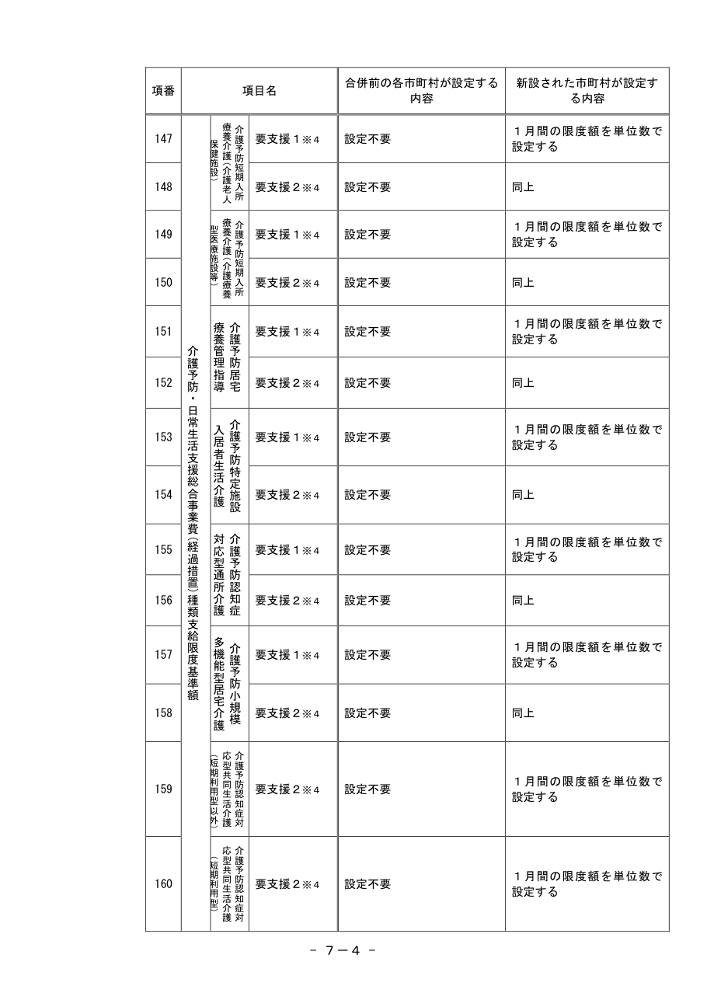
| 項番 | 項目名 | 属性 | 桁数 | 内容 | 必須 | 備考 | その他の列 |
|---|---|---|---|---|---|---|---|
| 147 | 介護予防・日常生活支援総合事業費（経過措置）種類支給限度基準額 > 介護予防短期入所療養介護（介護老人保健施設） > 要支援1※4 | 設定不要 | 新設された市町村が設定する内容: 1月間の限度額を単位数で設定する | ||||
| 148 | 介護予防・日常生活支援総合事業費（経過措置）種類支給限度基準額 > 介護予防短期入所療養介護（介護老人保健施設） > 要支援2※4 | 設定不要 | 新設された市町村が設定する内容: 同上 | ||||
| 149 | 介護予防・日常生活支援総合事業費（経過措置）種類支給限度基準額 > 介護予防短期入所療養介護（介護療養型医療施設等） > 要支援1※4 | 設定不要 | 新設された市町村が設定する内容: 1月間の限度額を単位数で設定する | ||||
| 150 | 介護予防・日常生活支援総合事業費（経過措置）種類支給限度基準額 > 介護予防短期入所療養介護（介護療養型医療施設等） > 要支援2※4 | 設定不要 | 新設された市町村が設定する内容: 同上 | ||||
| 151 | 介護予防・日常生活支援総合事業費（経過措置）種類支給限度基準額 > 介護予防居宅療養管理指導 > 要支援1※4 | 設定不要 | 新設された市町村が設定する内容: 1月間の限度額を単位数で設定する | ||||
| 152 | 介護予防・日常生活支援総合事業費（経過措置）種類支給限度基準額 > 介護予防居宅療養管理指導 > 要支援2※4 | 設定不要 | 新設された市町村が設定する内容: 同上 | ||||
| 153 | 介護予防・日常生活支援総合事業費（経過措置）種類支給限度基準額 > 介護予防特定施設入居者生活介護 > 要支援1※4 | 設定不要 | 新設された市町村が設定する内容: 1月間の限度額を単位数で設定する | ||||
| 154 | 介護予防・日常生活支援総合事業費（経過措置）種類支給限度基準額 > 介護予防特定施設入居者生活介護 > 要支援2※4 | 設定不要 | 新設された市町村が設定する内容: 同上 | ||||
| 155 | 介護予防・日常生活支援総合事業費（経過措置）種類支給限度基準額 > 介護予防認知症対応型通所介護 > 要支援1※4 | 設定不要 | 新設された市町村が設定する内容: 1月間の限度額を単位数で設定する | ||||
| 156 | 介護予防・日常生活支援総合事業費（経過措置）種類支給限度基準額 > 介護予防認知症対応型通所介護 > 要支援2※4 | 設定不要 | 新設された市町村が設定する内容: 同上 | ||||
| 157 | 介護予防・日常生活支援総合事業費（経過措置）種類支給限度基準額 > 介護予防小規模多機能型居宅介護 > 要支援1※4 | 設定不要 | 新設された市町村が設定する内容: 1月間の限度額を単位数で設定する | ||||
| 158 | 介護予防・日常生活支援総合事業費（経過措置）種類支給限度基準額 > 介護予防小規模多機能型居宅介護 > 要支援2※4 | 設定不要 | 新設された市町村が設定する内容: 同上 | ||||
| 159 | 介護予防・日常生活支援総合事業費（経過措置）種類支給限度基準額 > 介護予防認知症対応型共同生活介護（短期利用型以外） > 要支援2※4 | 設定不要 | 新設された市町村が設定する内容: 1月間の限度額を単位数で設定する | ||||
| 160 | 介護予防・日常生活支援総合事業費（経過措置）種類支給限度基準額 > 介護予防認知症対応型共同生活介護（短期利用型） > 要支援2※4 | 設定不要 | 新設された市町村が設定する内容: 1月間の限度額を単位数で設定する |
| 項番 | 項目名 | 属性 | 桁数 | 内容 | 必須 | 備考 | その他の列 |
|---|---|---|---|---|---|---|---|
| 147 | 介護予防・日常生活支援総合事業費(経過措置)種類支給限度基準額 > 介護予防短期入所療養介護(介護老人保健施設) > 要支援1※4 | 1月間の限度額を単位数で設定する | 合併前の各市町村が設定する内容: 設定不要 | ||||
| 148 | 介護予防・日常生活支援総合事業費(経過措置)種類支給限度基準額 > 介護予防短期入所療養介護(介護老人保健施設) > 要支援2※4 | 同上 | 合併前の各市町村が設定する内容: 設定不要 | ||||
| 149 | 介護予防・日常生活支援総合事業費(経過措置)種類支給限度基準額 > 介護予防短期入所療養介護(介護療養型医療施設等) > 要支援1※4 | 1月間の限度額を単位数で設定する | 合併前の各市町村が設定する内容: 設定不要 | ||||
| 150 | 介護予防・日常生活支援総合事業費(経過措置)種類支給限度基準額 > 介護予防短期入所療養介護(介護療養型医療施設等) > 要支援2※4 | 同上 | 合併前の各市町村が設定する内容: 設定不要 | ||||
| 151 | 介護予防・日常生活支援総合事業費(経過措置)種類支給限度基準額 > 介護予防居宅療養管理指導 > 要支援1※4 | 1月間の限度額を単位数で設定する | 合併前の各市町村が設定する内容: 設定不要 | ||||
| 152 | 介護予防・日常生活支援総合事業費(経過措置)種類支給限度基準額 > 介護予防居宅療養管理指導 > 要支援2※4 | 同上 | 合併前の各市町村が設定する内容: 設定不要 | ||||
| 153 | 介護予防・日常生活支援総合事業費(経過措置)種類支給限度基準額 > 介護予防特定施設入居者生活介護 > 要支援1※4 | 1月間の限度額を単位数で設定する | 合併前の各市町村が設定する内容: 設定不要 | ||||
| 154 | 介護予防・日常生活支援総合事業費(経過措置)種類支給限度基準額 > 介護予防特定施設入居者生活介護 > 要支援2※4 | 同上 | 合併前の各市町村が設定する内容: 設定不要 | ||||
| 155 | 介護予防・日常生活支援総合事業費(経過措置)種類支給限度基準額 > 介護予防認知症対応型通所介護 > 要支援1※4 | 1月間の限度額を単位数で設定する | 合併前の各市町村が設定する内容: 設定不要 | ||||
| 156 | 介護予防・日常生活支援総合事業費(経過措置)種類支給限度基準額 > 介護予防認知症対応型通所介護 > 要支援2※4 | 同上 | 合併前の各市町村が設定する内容: 設定不要 | ||||
| 157 | 介護予防・日常生活支援総合事業費(経過措置)種類支給限度基準額 > 介護予防小規模多機能型居宅介護 > 要支援1※4 | 1月間の限度額を単位数で設定する | 合併前の各市町村が設定する内容: 設定不要 | ||||
| 158 | 介護予防・日常生活支援総合事業費(経過措置)種類支給限度基準額 > 介護予防小規模多機能型居宅介護 > 要支援2※4 | 同上 | 合併前の各市町村が設定する内容: 設定不要 | ||||
| 159 | 介護予防・日常生活支援総合事業費(経過措置)種類支給限度基準額 > 介護予防認知症対応型共同生活介護(短期利用型以外) > 要支援2※4 | 1月間の限度額を単位数で設定する | 合併前の各市町村が設定する内容: 設定不要 | ||||
| 160 | 介護予防・日常生活支援総合事業費(経過措置)種類支給限度基準額 > 介護予防認知症対応型共同生活介護(短期利用型) > 要支援2※4 | 1月間の限度額を単位数で設定する | 合併前の各市町村が設定する内容: 設定不要 |
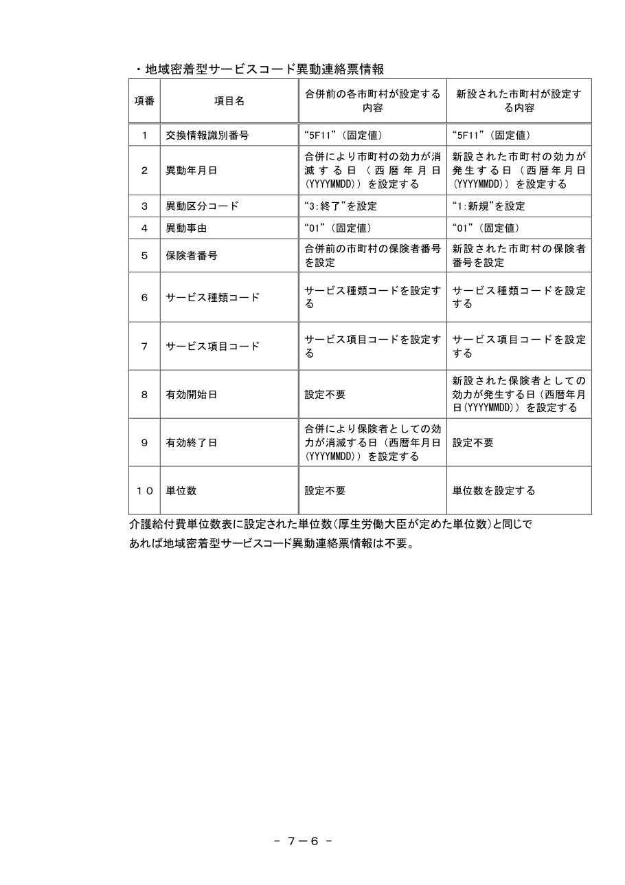
| 項番 | 項目名 | 属性 | 桁数 | 内容 | 必須 | 備考 | その他の列 |
|---|---|---|---|---|---|---|---|
| １ | 交換情報識別番号 | “5F11”（固定値） | 新設された市町村が設定する内容: “5F11”（固定値） | ||||
| ２ | 異動年月日 | 合併により市町村の効力が消滅する日（西暦年月日(YYYYMMDD)）を設定する | 新設された市町村が設定する内容: 新設された市町村の効力が発生する日（西暦年月日(YYYYMMDD)）を設定する | ||||
| ３ | 異動区分コード | “3:終了”を設定 | 新設された市町村が設定する内容: “1:新規”を設定 | ||||
| ４ | 異動事由 | “01”（固定値） | 新設された市町村が設定する内容: “01”（固定値） | ||||
| ５ | 保険者番号 | 合併前の市町村の保険者番号を設定 | 新設された市町村が設定する内容: 新設された市町村の保険者番号を設定 | ||||
| ６ | サービス種類コード | サービス種類コードを設定する | 新設された市町村が設定する内容: サービス種類コードを設定する | ||||
| ７ | サービス項目コード | サービス項目コードを設定する | 新設された市町村が設定する内容: サービス項目コードを設定する | ||||
| ８ | 有効開始日 | 設定不要 | 新設された市町村が設定する内容: 新設された保険者としての効力が発生する日（西暦年月日(YYYYMMDD)）を設定する | ||||
| ９ | 有効終了日 | 合併により保険者としての効力が消滅する日（西暦年月日(YYYYMMDD)）を設定する | 新設された市町村が設定する内容: 設定不要 | ||||
| １０ | 単位数 | 設定不要 | 新設された市町村が設定する内容: 単位数を設定する |
| 項番 | 項目名 | 属性 | 桁数 | 内容 | 必須 | 備考 | その他の列 |
|---|---|---|---|---|---|---|---|
| １ | 交換情報識別番号 | 合併前の各市町村が設定する内容: “5F11”（固定値） 新設された市町村が設定する内容: “5F11”（固定値） | |||||
| ２ | 異動年月日 | 合併前の各市町村が設定する内容: 合併により市町村の効力が消滅する日（西暦年月日(YYYYMMDD)）を設定する 新設された市町村が設定する内容: 新設された市町村の効力が発生する日（西暦年月日(YYYYMMDD)）を設定する | |||||
| ３ | 異動区分コード | 合併前の各市町村が設定する内容: “3:終了”を設定 新設された市町村が設定する内容: “1:新規”を設定 | |||||
| ４ | 異動事由 | 合併前の各市町村が設定する内容: “01”（固定値） 新設された市町村が設定する内容: “01”（固定値） | |||||
| ５ | 保険者番号 | 合併前の各市町村が設定する内容: 合併前の市町村の保険者番号を設定 新設された市町村が設定する内容: 新設された市町村の保険者番号を設定 | |||||
| ６ | サービス種類コード | 合併前の各市町村が設定する内容: サービス種類コードを設定する 新設された市町村が設定する内容: サービス種類コードを設定する | |||||
| ７ | サービス項目コード | 合併前の各市町村が設定する内容: サービス項目コードを設定する 新設された市町村が設定する内容: サービス項目コードを設定する | |||||
| ８ | 有効開始日 | 合併前の各市町村が設定する内容: 設定不要 新設された市町村が設定する内容: 新設された保険者としての効力が発生する日（西暦年月日(YYYYMMDD)）を設定する | |||||
| ９ | 有効終了日 | 合併前の各市町村が設定する内容: 合併により保険者としての効力が消滅する日（西暦年月日(YYYYMMDD)）を設定する 新設された市町村が設定する内容: 設定不要 | |||||
| １０ | 単位数 | 合併前の各市町村が設定する内容: 設定不要 新設された市町村が設定する内容: 単位数を設定する |
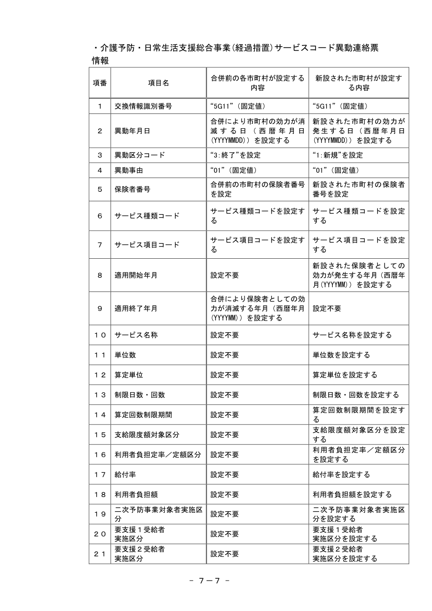
| 項番 | 項目名 | 属性 | 桁数 | 内容 | 必須 | 備考 | その他の列 |
|---|---|---|---|---|---|---|---|
| １ | 交換情報識別番号 | “5G11”（固定値） | 新設された市町村が設定する内容: “5G11”（固定値） | ||||
| ２ | 異動年月日 | 合併により市町村の効力が消滅する日（西暦年月日(YYYYMMDD)）を設定する | 新設された市町村が設定する内容: 新設された市町村の効力が発生する日（西暦年月日(YYYYMMDD)）を設定する | ||||
| ３ | 異動区分コード | “3:終了”を設定 | 新設された市町村が設定する内容: “1:新規”を設定 | ||||
| ４ | 異動事由 | “01”（固定値） | 新設された市町村が設定する内容: “01”（固定値） | ||||
| ５ | 保険者番号 | 合併前の市町村の保険者番号を設定 | 新設された市町村が設定する内容: 新設された市町村の保険者番号を設定 | ||||
| ６ | サービス種類コード | サービス種類コードを設定する | 新設された市町村が設定する内容: サービス種類コードを設定する | ||||
| ７ | サービス項目コード | サービス項目コードを設定する | 新設された市町村が設定する内容: サービス項目コードを設定する | ||||
| ８ | 適用開始年月 | 設定不要 | 新設された市町村が設定する内容: 新設された保険者としての効力が発生する年月（西暦年月(YYYYMM)）を設定する | ||||
| ９ | 適用終了年月 | 合併により保険者としての効力が消滅する年月（西暦年月(YYYYMM)）を設定する | 新設された市町村が設定する内容: 設定不要 | ||||
| １０ | サービス名称 | 設定不要 | 新設された市町村が設定する内容: サービス名称を設定する | ||||
| １１ | 単位数 | 設定不要 | 新設された市町村が設定する内容: 単位数を設定する | ||||
| １２ | 算定単位 | 設定不要 | 新設された市町村が設定する内容: 算定単位を設定する | ||||
| １３ | 制限日数・回数 | 設定不要 | 新設された市町村が設定する内容: 制限日数・回数を設定する | ||||
| １４ | 算定回数制限期間 | 設定不要 | 新設された市町村が設定する内容: 算定回数制限期間を設定する | ||||
| １５ | 支給限度額対象区分 | 設定不要 | 新設された市町村が設定する内容: 支給限度額対象区分を設定する | ||||
| １６ | 利用者負担定率／定額区分 | 設定不要 | 新設された市町村が設定する内容: 利用者負担定率／定額区分を設定する | ||||
| １７ | 給付率 | 設定不要 | 新設された市町村が設定する内容: 給付率を設定する | ||||
| １８ | 利用者負担額 | 設定不要 | 新設された市町村が設定する内容: 利用者負担額を設定する | ||||
| １９ | 二次予防事業対象者実施区分 | 設定不要 | 新設された市町村が設定する内容: 二次予防事業対象者実施区分を設定する | ||||
| ２０ | 要支援１受給者実施区分 | 設定不要 | 新設された市町村が設定する内容: 要支援１受給者実施区分を設定する | ||||
| ２１ | 要支援２受給者実施区分 | 設定不要 | 新設された市町村が設定する内容: 要支援２受給者実施区分を設定する |
| 項番 | 項目名 | 属性 | 桁数 | 内容 | 必須 | 備考 | その他の列 |
|---|---|---|---|---|---|---|---|
| 1 | 交換情報識別番号 | 合併前の各市町村が設定する内容: “5G11”（固定値） 新設された市町村が設定する内容: “5G11”（固定値） | |||||
| 2 | 異動年月日 | 合併前の各市町村が設定する内容: 合併により市町村の効力が消滅する日（西暦年月日(YYYYMMDD)）を設定する 新設された市町村が設定する内容: 新設された市町村の効力が発生する日（西暦年月日(YYYYMMDD)）を設定する | |||||
| 3 | 異動区分コード | 合併前の各市町村が設定する内容: “3:終了”を設定 新設された市町村が設定する内容: “1:新規”を設定 | |||||
| 4 | 異動事由 | 合併前の各市町村が設定する内容: “01”（固定値） 新設された市町村が設定する内容: “01”（固定値） | |||||
| 5 | 保険者番号 | 合併前の各市町村が設定する内容: 合併前の市町村の保険者番号を設定 新設された市町村が設定する内容: 新設された市町村の保険者番号を設定 | |||||
| 6 | サービス種類コード | 合併前の各市町村が設定する内容: サービス種類コードを設定する 新設された市町村が設定する内容: サービス種類コードを設定する | |||||
| 7 | サービス項目コード | 合併前の各市町村が設定する内容: サービス項目コードを設定する 新設された市町村が設定する内容: サービス項目コードを設定する | |||||
| 8 | 適用開始年月 | 合併前の各市町村が設定する内容: 設定不要 新設された市町村が設定する内容: 新設された保険者としての効力が発生する年月（西暦年月(YYYYMM)）を設定する | |||||
| 9 | 適用終了年月 | 合併前の各市町村が設定する内容: 合併により保険者としての効力が消滅する年月（西暦年月(YYYYMM)）を設定する 新設された市町村が設定する内容: 設定不要 | |||||
| １０ | サービス名称 | 合併前の各市町村が設定する内容: 設定不要 新設された市町村が設定する内容: サービス名称を設定する | |||||
| １１ | 単位数 | 合併前の各市町村が設定する内容: 設定不要 新設された市町村が設定する内容: 単位数を設定する | |||||
| １２ | 算定単位 | 合併前の各市町村が設定する内容: 設定不要 新設された市町村が設定する内容: 算定単位を設定する | |||||
| １３ | 制限日数・回数 | 合併前の各市町村が設定する内容: 設定不要 新設された市町村が設定する内容: 制限日数・回数を設定する | |||||
| １４ | 算定回数制限期間 | 合併前の各市町村が設定する内容: 設定不要 新設された市町村が設定する内容: 算定回数制限期間を設定する | |||||
| １５ | 支給限度額対象区分 | 合併前の各市町村が設定する内容: 設定不要 新設された市町村が設定する内容: 支給限度額対象区分を設定する | |||||
| １６ | 利用者負担定率／定額区分 | 合併前の各市町村が設定する内容: 設定不要 新設された市町村が設定する内容: 利用者負担定率／定額区分を設定する | |||||
| １７ | 給付率 | 合併前の各市町村が設定する内容: 設定不要 新設された市町村が設定する内容: 給付率を設定する | |||||
| １８ | 利用者負担額 | 合併前の各市町村が設定する内容: 設定不要 新設された市町村が設定する内容: 利用者負担額を設定する | |||||
| １９ | 二次予防事業対象者実施区分 | 合併前の各市町村が設定する内容: 設定不要 新設された市町村が設定する内容: 二次予防事業対象者実施区分を設定する | |||||
| ２０ | 要支援１受給者 実施区分 | 合併前の各市町村が設定する内容: 設定不要 新設された市町村が設定する内容: 要支援１受給者 実施区分を設定する | |||||
| ２１ | 要支援２受給者 実施区分 | 合併前の各市町村が設定する内容: 設定不要 新設された市町村が設定する内容: 要支援２受給者 実施区分を設定する |
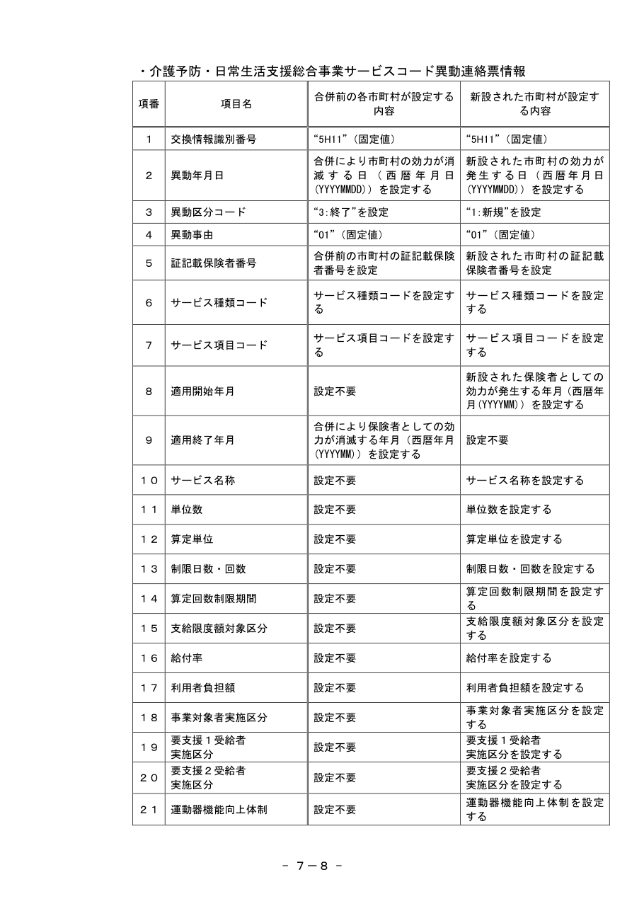
| 項番 | 項目名 | 属性 | 桁数 | 内容 | 必須 | 備考 | その他の列 |
|---|---|---|---|---|---|---|---|
| １ | 交換情報識別番号 | “5H11”（固定値） | 新設された市町村が設定する内容: “5H11”（固定値） | ||||
| ２ | 異動年月日 | 合併により市町村の効力が消滅する日（西暦年月日(YYYYMMDD)）を設定する | 新設された市町村が設定する内容: 新設された市町村の効力が発生する日（西暦年月日(YYYYMMDD)）を設定する | ||||
| ３ | 異動区分コード | “3:終了”を設定 | 新設された市町村が設定する内容: “1:新規”を設定 | ||||
| ４ | 異動事由 | “01”（固定値） | 新設された市町村が設定する内容: “01”（固定値） | ||||
| ５ | 証記載保険者番号 | 合併前の市町村の証記載保険者番号を設定 | 新設された市町村が設定する内容: 新設された市町村の証記載保険者番号を設定 | ||||
| ６ | サービス種類コード | サービス種類コードを設定する | 新設された市町村が設定する内容: サービス種類コードを設定する | ||||
| ７ | サービス項目コード | サービス項目コードを設定する | 新設された市町村が設定する内容: サービス項目コードを設定する | ||||
| ８ | 適用開始年月 | 設定不要 | 新設された市町村が設定する内容: 新設された保険者としての効力が発生する年月（西暦年月(YYYYMM)）を設定する | ||||
| ９ | 適用終了年月 | 合併により保険者としての効力が消滅する年月（西暦年月(YYYYMM)）を設定する | 新設された市町村が設定する内容: 設定不要 | ||||
| １０ | サービス名称 | 設定不要 | 新設された市町村が設定する内容: サービス名称を設定する | ||||
| １１ | 単位数 | 設定不要 | 新設された市町村が設定する内容: 単位数を設定する | ||||
| １２ | 算定単位 | 設定不要 | 新設された市町村が設定する内容: 算定単位を設定する | ||||
| １３ | 制限日数・回数 | 設定不要 | 新設された市町村が設定する内容: 制限日数・回数を設定する | ||||
| １４ | 算定回数制限期間 | 設定不要 | 新設された市町村が設定する内容: 算定回数制限期間を設定する | ||||
| １５ | 支給限度額対象区分 | 設定不要 | 新設された市町村が設定する内容: 支給限度額対象区分を設定する | ||||
| １６ | 給付率 | 設定不要 | 新設された市町村が設定する内容: 給付率を設定する | ||||
| １７ | 利用者負担額 | 設定不要 | 新設された市町村が設定する内容: 利用者負担額を設定する | ||||
| １８ | 事業対象者実施区分 | 設定不要 | 新設された市町村が設定する内容: 事業対象者実施区分を設定する | ||||
| １９ | 要支援１受給者実施区分 | 設定不要 | 新設された市町村が設定する内容: 要支援１受給者実施区分を設定する | ||||
| ２０ | 要支援２受給者実施区分 | 設定不要 | 新設された市町村が設定する内容: 要支援２受給者実施区分を設定する | ||||
| ２１ | 運動器機能向上体制 | 設定不要 | 新設された市町村が設定する内容: 運動器機能向上体制を設定する |
| 項番 | 項目名 | 属性 | 桁数 | 内容 | 必須 | 備考 | その他の列 |
|---|---|---|---|---|---|---|---|
| １ | 交換情報識別番号 | 合併前の各市町村が設定する内容: “5H11”（固定値） 新設された市町村が設定する内容: “5H11”（固定値） | |||||
| ２ | 異動年月日 | 合併前の各市町村が設定する内容: 合併により市町村の効力が消滅する日（西暦年月日(YYYYMMDD)）を設定する 新設された市町村が設定する内容: 新設された市町村の効力が発生する日（西暦年月日(YYYYMMDD)）を設定する | |||||
| ３ | 異動区分コード | 合併前の各市町村が設定する内容: “3:終了”を設定 新設された市町村が設定する内容: “1:新規”を設定 | |||||
| ４ | 異動事由 | 合併前の各市町村が設定する内容: “01”（固定値） 新設された市町村が設定する内容: “01”（固定値） | |||||
| ５ | 証記載保険者番号 | 合併前の各市町村が設定する内容: 合併前の市町村の証記載保険者番号を設定 新設された市町村が設定する内容: 新設された市町村の証記載保険者番号を設定 | |||||
| ６ | サービス種類コード | 合併前の各市町村が設定する内容: サービス種類コードを設定する 新設された市町村が設定する内容: サービス種類コードを設定する | |||||
| ７ | サービス項目コード | 合併前の各市町村が設定する内容: サービス項目コードを設定する 新設された市町村が設定する内容: サービス項目コードを設定する | |||||
| ８ | 適用開始年月 | 合併前の各市町村が設定する内容: 設定不要 新設された市町村が設定する内容: 新設された保険者としての効力が発生する年月（西暦年月(YYYYMM)）を設定する | |||||
| ９ | 適用終了年月 | 合併前の各市町村が設定する内容: 合併により保険者としての効力が消滅する年月（西暦年月(YYYYMM)）を設定する 新設された市町村が設定する内容: 設定不要 | |||||
| １０ | サービス名称 | 合併前の各市町村が設定する内容: 設定不要 新設された市町村が設定する内容: サービス名称を設定する | |||||
| １１ | 単位数 | 合併前の各市町村が設定する内容: 設定不要 新設された市町村が設定する内容: 単位数を設定する | |||||
| １２ | 算定単位 | 合併前の各市町村が設定する内容: 設定不要 新設された市町村が設定する内容: 算定単位を設定する | |||||
| １３ | 制限日数・回数 | 合併前の各市町村が設定する内容: 設定不要 新設された市町村が設定する内容: 制限日数・回数を設定する | |||||
| １４ | 算定回数制限期間 | 合併前の各市町村が設定する内容: 設定不要 新設された市町村が設定する内容: 算定回数制限期間を設定する | |||||
| １５ | 支給限度額対象区分 | 合併前の各市町村が設定する内容: 設定不要 新設された市町村が設定する内容: 支給限度額対象区分を設定する | |||||
| １６ | 給付率 | 合併前の各市町村が設定する内容: 設定不要 新設された市町村が設定する内容: 給付率を設定する | |||||
| １７ | 利用者負担額 | 合併前の各市町村が設定する内容: 設定不要 新設された市町村が設定する内容: 利用者負担額を設定する | |||||
| １８ | 事業対象者実施区分 | 合併前の各市町村が設定する内容: 設定不要 新設された市町村が設定する内容: 事業対象者実施区分を設定する | |||||
| １９ | 要支援１受給者実施区分 | 合併前の各市町村が設定する内容: 設定不要 新設された市町村が設定する内容: 要支援１受給者 実施区分を設定する | |||||
| ２０ | 要支援２受給者実施区分 | 合併前の各市町村が設定する内容: 設定不要 新設された市町村が設定する内容: 要支援２受給者 実施区分を設定する | |||||
| ２１ | 運動器機能向上体制 | 合併前の各市町村が設定する内容: 設定不要 新設された市町村が設定する内容: 運動器機能向上体制を設定する |
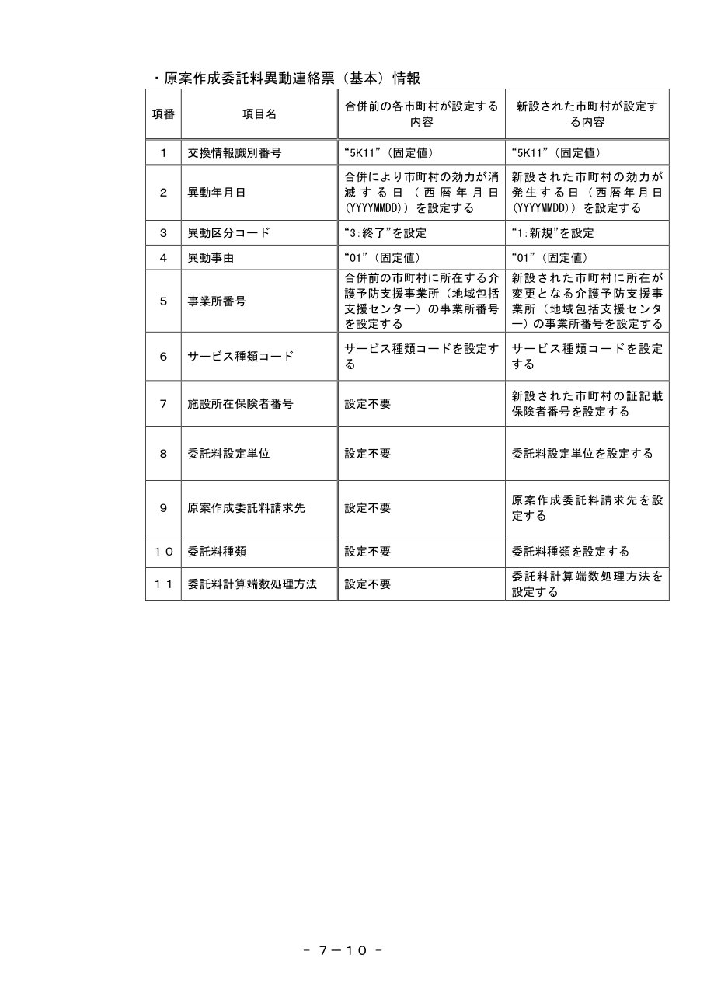
| 項番 | 項目名 | 属性 | 桁数 | 内容 | 必須 | 備考 | その他の列 |
|---|---|---|---|---|---|---|---|
| 1 | 交換情報識別番号 | “5K11”（固定値） | 新設された市町村が設定する内容: “5K11”（固定値） | ||||
| 2 | 異動年月日 | 合併により市町村の効力が消滅する日（西暦年月日(YYYYMMDD)）を設定する | 新設された市町村が設定する内容: 新設された市町村の効力が発生する日（西暦年月日(YYYYMMDD)）を設定する | ||||
| 3 | 異動区分コード | “3:終了”を設定 | 新設された市町村が設定する内容: “1:新規”を設定 | ||||
| 4 | 異動事由 | “01”（固定値） | 新設された市町村が設定する内容: “01”（固定値） | ||||
| 5 | 事業所番号 | 合併前の市町村に所在する介護予防支援事業所（地域包括支援センター）の事業所番号を設定する | 新設された市町村が設定する内容: 新設された市町村に所在が変更となる介護予防支援事業所（地域包括支援センター）の事業所番号を設定する | ||||
| 6 | サービス種類コード | サービス種類コードを設定する | 新設された市町村が設定する内容: サービス種類コードを設定する | ||||
| 7 | 施設所在保険者番号 | 設定不要 | 新設された市町村が設定する内容: 新設された市町村の証記載保険者番号を設定する | ||||
| 8 | 委託料設定単位 | 設定不要 | 新設された市町村が設定する内容: 委託料設定単位を設定する | ||||
| 9 | 原案作成委託料請求先 | 設定不要 | 新設された市町村が設定する内容: 原案作成委託料請求先を設定する | ||||
| １０ | 委託料種類 | 設定不要 | 新設された市町村が設定する内容: 委託料種類を設定する | ||||
| １１ | 委託料計算端数処理方法 | 設定不要 | 新設された市町村が設定する内容: 委託料計算端数処理方法を設定する |
| 項番 | 項目名 | 属性 | 桁数 | 内容 | 必須 | 備考 | その他の列 |
|---|---|---|---|---|---|---|---|
| １ | 交換情報識別番号 | 合併前の各市町村が設定する内容: “5K11”（固定値） 新設された市町村が設定する内容: “5K11”（固定値） | |||||
| ２ | 異動年月日 | 合併前の各市町村が設定する内容: 合併により市町村の効力が消滅する日（西暦年月日(YYYYMMDD)）を設定する 新設された市町村が設定する内容: 新設された市町村の効力が発生する日（西暦年月日(YYYYMMDD)）を設定する | |||||
| ３ | 異動区分コード | 合併前の各市町村が設定する内容: “3:終了”を設定 新設された市町村が設定する内容: “1:新規”を設定 | |||||
| ４ | 異動事由 | 合併前の各市町村が設定する内容: “01”（固定値） 新設された市町村が設定する内容: “01”（固定値） | |||||
| ５ | 事業所番号 | 合併前の各市町村が設定する内容: 合併前の市町村に所在する介護予防支援事業所（地域包括支援センター）の事業所番号を設定する 新設された市町村が設定する内容: 新設された市町村に所在が変更となる介護予防支援事業所（地域包括支援センター）の事業所番号を設定する | |||||
| ６ | サービス種類コード | 合併前の各市町村が設定する内容: サービス種類コードを設定する 新設された市町村が設定する内容: サービス種類コードを設定する | |||||
| ７ | 施設所在保険者番号 | 合併前の各市町村が設定する内容: 設定不要 新設された市町村が設定する内容: 新設された市町村の証記載保険者番号を設定する | |||||
| ８ | 委託料設定単位 | 合併前の各市町村が設定する内容: 設定不要 新設された市町村が設定する内容: 委託料設定単位を設定する | |||||
| ９ | 原案作成委託料請求先 | 合併前の各市町村が設定する内容: 設定不要 新設された市町村が設定する内容: 原案作成委託料請求先を設定する | |||||
| １０ | 委託料種類 | 合併前の各市町村が設定する内容: 設定不要 新設された市町村が設定する内容: 委託料種類を設定する | |||||
| １１ | 委託料計算端数処理方法 | 合併前の各市町村が設定する内容: 設定不要 新設された市町村が設定する内容: 委託料計算端数処理方法を設定する |
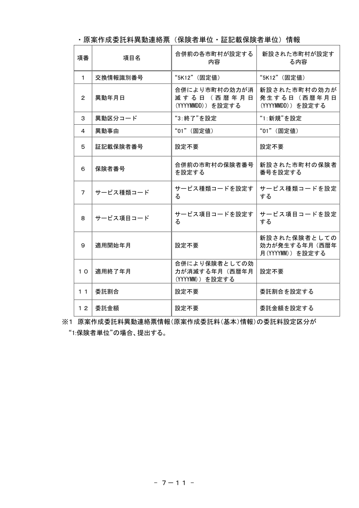
| 項番 | 項目名 | 属性 | 桁数 | 内容 | 必須 | 備考 | その他の列 |
|---|---|---|---|---|---|---|---|
| １ | 交換情報識別番号 | “5K12”（固定値） | 新設された市町村が設定する内容: “5K12”（固定値） | ||||
| ２ | 異動年月日 | 合併により市町村の効力が消滅する日（西暦年月日(YYYYMMDD)）を設定する | 新設された市町村が設定する内容: 新設された市町村の効力が発生する日（西暦年月日(YYYYMMDD)）を設定する | ||||
| ３ | 異動区分コード | “3:終了”を設定 | 新設された市町村が設定する内容: “1:新規”を設定 | ||||
| ４ | 異動事由 | “01”（固定値） | 新設された市町村が設定する内容: “01”（固定値） | ||||
| ５ | 証記載保険者番号 | 設定不要 | 新設された市町村が設定する内容: 設定不要 | ||||
| ６ | 保険者番号 | 合併前の市町村の保険者番号を設定する | 新設された市町村が設定する内容: 新設された市町村の保険者番号を設定する | ||||
| ７ | サービス種類コード | サービス種類コードを設定する | 新設された市町村が設定する内容: サービス種類コードを設定する | ||||
| ８ | サービス項目コード | サービス項目コードを設定する | 新設された市町村が設定する内容: サービス項目コードを設定する | ||||
| ９ | 適用開始年月 | 設定不要 | 新設された市町村が設定する内容: 新設された保険者としての効力が発生する年月（西暦年月(YYYYMM)）を設定する | ||||
| １０ | 適用終了年月 | 合併により保険者としての効力が消滅する年月（西暦年月(YYYYMM)）を設定する | 新設された市町村が設定する内容: 設定不要 | ||||
| １１ | 委託割合 | 設定不要 | 新設された市町村が設定する内容: 委託割合を設定する | ||||
| １２ | 委託金額 | 設定不要 | 新設された市町村が設定する内容: 委託金額を設定する |
| 項番 | 項目名 | 属性 | 桁数 | 内容 | 必須 | 備考 | その他の列 |
|---|---|---|---|---|---|---|---|
| １ | 交換情報識別番号 | 合併前の各市町村が設定する内容: “5K12”（固定値） 新設された市町村が設定する内容: “5K12”（固定値） | |||||
| ２ | 異動年月日 | 合併前の各市町村が設定する内容: 合併により市町村の効力が消滅する日（西暦年月日(YYYYMMDD)）を設定する 新設された市町村が設定する内容: 新設された市町村の効力が発生する日（西暦年月日(YYYYMMDD)）を設定する | |||||
| ３ | 異動区分コード | 合併前の各市町村が設定する内容: “3:終了”を設定 新設された市町村が設定する内容: “1:新規”を設定 | |||||
| ４ | 異動事由 | 合併前の各市町村が設定する内容: “01”（固定値） 新設された市町村が設定する内容: “01”（固定値） | |||||
| ５ | 証記載保険者番号 | 合併前の各市町村が設定する内容: 設定不要 新設された市町村が設定する内容: 設定不要 | |||||
| ６ | 保険者番号 | 合併前の各市町村が設定する内容: 合併前の市町村の保険者番号を設定する 新設された市町村が設定する内容: 新設された市町村の保険者番号を設定する | |||||
| ７ | サービス種類コード | 合併前の各市町村が設定する内容: サービス種類コードを設定する 新設された市町村が設定する内容: サービス種類コードを設定する | |||||
| ８ | サービス項目コード | 合併前の各市町村が設定する内容: サービス項目コードを設定する 新設された市町村が設定する内容: サービス項目コードを設定する | |||||
| ９ | 適用開始年月 | 合併前の各市町村が設定する内容: 設定不要 新設された市町村が設定する内容: 新設された保険者としての効力が発生する年月（西暦年月(YYYYMM)）を設定する | |||||
| １０ | 適用終了年月 | 合併前の各市町村が設定する内容: 合併により保険者としての効力が消滅する年月（西暦年月(YYYYMM)）を設定する 新設された市町村が設定する内容: 設定不要 | |||||
| １１ | 委託割合 | 合併前の各市町村が設定する内容: 設定不要 新設された市町村が設定する内容: 委託割合を設定する | |||||
| １２ | 委託金額 | 合併前の各市町村が設定する内容: 設定不要 新設された市町村が設定する内容: 委託金額を設定する |
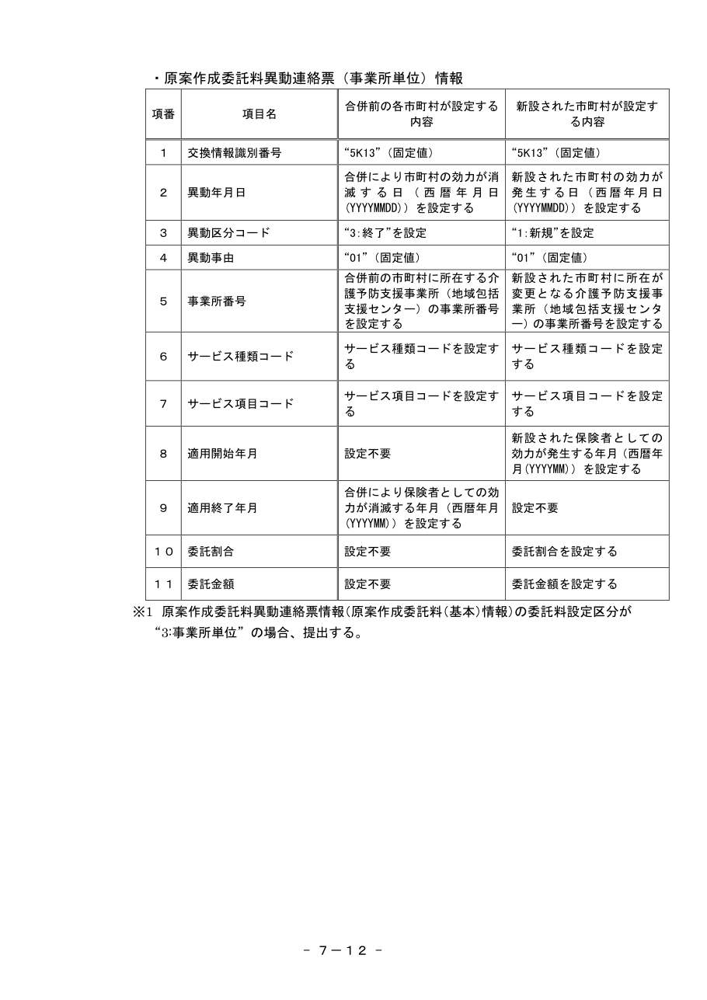
| 項番 | 項目名 | 属性 | 桁数 | 内容 | 必須 | 備考 | その他の列 |
|---|---|---|---|---|---|---|---|
| １ | 交換情報識別番号 | “5K13”（固定値） | 新設された市町村が設定する内容: “5K13”（固定値） | ||||
| ２ | 異動年月日 | 合併により市町村の効力が消滅する日（西暦年月日(YYYYMMDD)）を設定する | 新設された市町村が設定する内容: 新設された市町村の効力が発生する日（西暦年月日(YYYYMMDD)）を設定する | ||||
| ３ | 異動区分コード | “3:終了”を設定 | 新設された市町村が設定する内容: “1:新規”を設定 | ||||
| ４ | 異動事由 | “01”（固定値） | 新設された市町村が設定する内容: “01”（固定値） | ||||
| ５ | 事業所番号 | 合併前の市町村に所在する介護予防支援事業所（地域包括支援センター）の事業所番号を設定する | 新設された市町村が設定する内容: 新設された市町村に所在が変更となる介護予防支援事業所（地域包括支援センター）の事業所番号を設定する | ||||
| ６ | サービス種類コード | サービス種類コードを設定する | 新設された市町村が設定する内容: サービス種類コードを設定する | ||||
| ７ | サービス項目コード | サービス項目コードを設定する | 新設された市町村が設定する内容: サービス項目コードを設定する | ||||
| ８ | 適用開始年月 | 設定不要 | 新設された市町村が設定する内容: 新設された保険者としての効力が発生する年月（西暦年月(YYYYMM)）を設定する | ||||
| ９ | 適用終了年月 | 合併により保険者としての効力が消滅する年月（西暦年月(YYYYMM)）を設定する | 新設された市町村が設定する内容: 設定不要 | ||||
| １０ | 委託割合 | 設定不要 | 新設された市町村が設定する内容: 委託割合を設定する | ||||
| １１ | 委託金額 | 設定不要 | 新設された市町村が設定する内容: 委託金額を設定する |
| 項番 | 項目名 | 属性 | 桁数 | 内容 | 必須 | 備考 | その他の列 |
|---|---|---|---|---|---|---|---|
| １ | 交換情報識別番号 | 合併前の各市町村が設定する内容: “5K13”（固定値） 新設された市町村が設定する内容: “5K13”（固定値） | |||||
| ２ | 異動年月日 | 合併前の各市町村が設定する内容: 合併により市町村の効力が消滅する日（西暦年月日(YYYYMMDD)）を設定する 新設された市町村が設定する内容: 新設された市町村の効力が発生する日（西暦年月日(YYYYMMDD)）を設定する | |||||
| ３ | 異動区分コード | 合併前の各市町村が設定する内容: “3:終了”を設定 新設された市町村が設定する内容: “1:新規”を設定 | |||||
| ４ | 異動事由 | 合併前の各市町村が設定する内容: “01”（固定値） 新設された市町村が設定する内容: “01”（固定値） | |||||
| ５ | 事業所番号 | 合併前の各市町村が設定する内容: 合併前の市町村に所在する介護予防支援事業所（地域包括支援センター）の事業所番号を設定する 新設された市町村が設定する内容: 新設された市町村に所在が変更となる介護予防支援事業所（地域包括支援センター）の事業所番号を設定する | |||||
| ６ | サービス種類コード | 合併前の各市町村が設定する内容: サービス種類コードを設定する 新設された市町村が設定する内容: サービス種類コードを設定する | |||||
| ７ | サービス項目コード | 合併前の各市町村が設定する内容: サービス項目コードを設定する 新設された市町村が設定する内容: サービス項目コードを設定する | |||||
| ８ | 適用開始年月 | 合併前の各市町村が設定する内容: 設定不要 新設された市町村が設定する内容: 新設された保険者としての効力が発生する年月（西暦年月(YYYYMM)）を設定する | |||||
| ９ | 適用終了年月 | 合併前の各市町村が設定する内容: 合併により保険者としての効力が消滅する年月（西暦年月(YYYYMM)）を設定する 新設された市町村が設定する内容: 設定不要 | |||||
| １０ | 委託割合 | 合併前の各市町村が設定する内容: 設定不要 新設された市町村が設定する内容: 委託割合を設定する | |||||
| １１ | 委託金額 | 合併前の各市町村が設定する内容: 設定不要 新設された市町村が設定する内容: 委託金額を設定する |
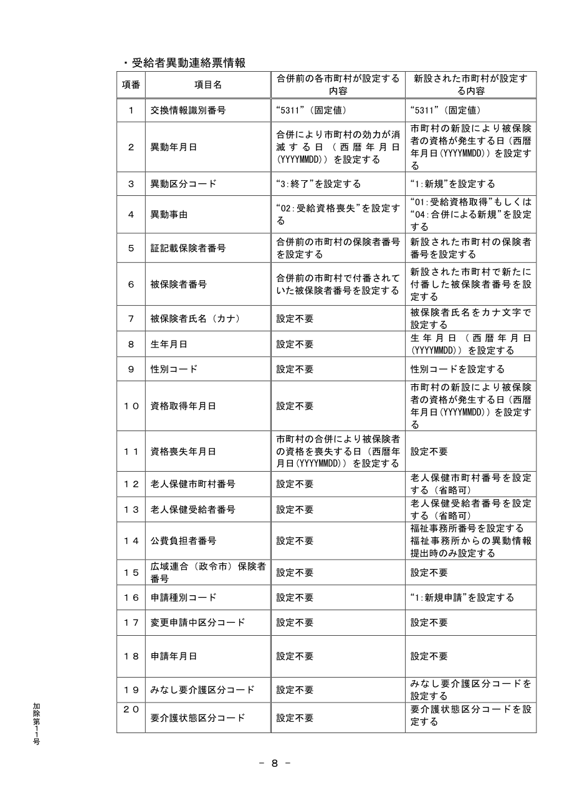
| 項番 | 項目名 | 属性 | 桁数 | 内容 | 必須 | 備考 | その他の列 |
|---|---|---|---|---|---|---|---|
| １ | 交換情報識別番号 | “5311”（固定値） | 新設された市町村が設定する内容: “5311”（固定値） | ||||
| ２ | 異動年月日 | 合併により市町村の効力が消滅する日（西暦年月日(YYYYMMDD)）を設定する | 新設された市町村が設定する内容: 市町村の新設により被保険者の資格が発生する日（西暦年月日(YYYYMMDD)）を設定する | ||||
| ３ | 異動区分コード | “3:終了”を設定する | 新設された市町村が設定する内容: “1:新規”を設定する | ||||
| ４ | 異動事由 | “02:受給資格喪失”を設定する | 新設された市町村が設定する内容: “01:受給資格取得”もしくは“04:合併による新規”を設定する | ||||
| ５ | 証記載保険者番号 | 合併前の市町村の保険者番号を設定する | 新設された市町村が設定する内容: 新設された市町村の保険者番号を設定する | ||||
| ６ | 被保険者番号 | 合併前の市町村で付番されていた被保険者番号を設定する | 新設された市町村が設定する内容: 新設された市町村で新たに付番した被保険者番号を設定する | ||||
| ７ | 被保険者氏名（カナ） | 設定不要 | 新設された市町村が設定する内容: 被保険者氏名をカナ文字で設定する | ||||
| ８ | 生年月日 | 設定不要 | 新設された市町村が設定する内容: 生年月日（西暦年月日(YYYYMMDD)）を設定する | ||||
| ９ | 性別コード | 設定不要 | 新設された市町村が設定する内容: 性別コードを設定する | ||||
| １０ | 資格取得年月日 | 設定不要 | 新設された市町村が設定する内容: 市町村の新設により被保険者の資格が発生する日（西暦年月日(YYYYMMDD)）を設定する | ||||
| １１ | 資格喪失年月日 | 市町村の合併により被保険者の資格を喪失する日（西暦年月日(YYYYMMDD)）を設定する | 新設された市町村が設定する内容: 設定不要 | ||||
| １２ | 老人保健市町村番号 | 設定不要 | 新設された市町村が設定する内容: 老人保健市町村番号を設定する（省略可） | ||||
| １３ | 老人保健受給者番号 | 設定不要 | 新設された市町村が設定する内容: 老人保健受給者番号を設定する（省略可） | ||||
| １４ | 公費負担者番号 | 設定不要 | 新設された市町村が設定する内容: 福祉事務所番号を設定する 福祉事務所からの異動情報提出時のみ設定する | ||||
| １５ | 広域連合（政令市）保険者番号 | 設定不要 | 新設された市町村が設定する内容: 設定不要 | ||||
| １６ | 申請種別コード | 設定不要 | 新設された市町村が設定する内容: “1:新規申請”を設定する | ||||
| １７ | 変更申請中区分コード | 設定不要 | 新設された市町村が設定する内容: 設定不要 | ||||
| １８ | 申請年月日 | 設定不要 | 新設された市町村が設定する内容: 設定不要 | ||||
| １９ | みなし要介護区分コード | 設定不要 | 新設された市町村が設定する内容: みなし要介護区分コードを設定する | ||||
| ２０ | 要介護状態区分コード | 設定不要 | 新設された市町村が設定する内容: 要介護状態区分コードを設定する |
| 項番 | 項目名 | 属性 | 桁数 | 内容 | 必須 | 備考 | その他の列 |
|---|---|---|---|---|---|---|---|
| 1 | 交換情報識別番号 | 合併前の各市町村が設定する内容: “5311”（固定値） 新設された市町村が設定する内容: “5311”（固定値） | |||||
| 2 | 異動年月日 | 合併前の各市町村が設定する内容: 合併により市町村の効力が消滅する日（西暦年月日(YYYYMMDD)）を設定する 新設された市町村が設定する内容: 市町村の新設により被保険者の資格が発生する日（西暦年月日(YYYYMMDD)）を設定する | |||||
| 3 | 異動区分コード | 合併前の各市町村が設定する内容: “3:終了”を設定する 新設された市町村が設定する内容: “1:新規”を設定する | |||||
| 4 | 異動事由 | 合併前の各市町村が設定する内容: “02:受給資格喪失”を設定する 新設された市町村が設定する内容: “01:受給資格取得”もしくは“04:合併による新規”を設定する | |||||
| 5 | 証記載保険者番号 | 合併前の各市町村が設定する内容: 合併前の市町村の保険者番号を設定する 新設された市町村が設定する内容: 新設された市町村の保険者番号を設定する | |||||
| 6 | 被保険者番号 | 合併前の各市町村が設定する内容: 合併前の市町村で付番されていた被保険者番号を設定する 新設された市町村が設定する内容: 新設された市町村で新たに付番した被保険者番号を設定する | |||||
| 7 | 被保険者氏名（カナ） | 合併前の各市町村が設定する内容: 設定不要 新設された市町村が設定する内容: 被保険者氏名をカナ文字で設定する | |||||
| 8 | 生年月日 | 合併前の各市町村が設定する内容: 設定不要 新設された市町村が設定する内容: 生年月日（西暦年月日(YYYYMMDD)）を設定する | |||||
| 9 | 性別コード | 合併前の各市町村が設定する内容: 設定不要 新設された市町村が設定する内容: 性別コードを設定する | |||||
| 10 | 資格取得年月日 | 合併前の各市町村が設定する内容: 設定不要 新設された市町村が設定する内容: 市町村の新設により被保険者の資格が発生する日（西暦年月日(YYYYMMDD)）を設定する | |||||
| 11 | 資格喪失年月日 | 合併前の各市町村が設定する内容: 市町村の合併により被保険者の資格を喪失する日（西暦年月日(YYYYMMDD)）を設定する 新設された市町村が設定する内容: 設定不要 | |||||
| 12 | 老人保健市町村番号 | 合併前の各市町村が設定する内容: 設定不要 新設された市町村が設定する内容: 老人保健市町村番号を設定する（省略可） | |||||
| 13 | 老人保健受給者番号 | 合併前の各市町村が設定する内容: 設定不要 新設された市町村が設定する内容: 老人保健受給者番号を設定する（省略可） | |||||
| 14 | 公費負担者番号 | 合併前の各市町村が設定する内容: 設定不要 新設された市町村が設定する内容: 福祉事務所番号を設定する 福祉事務所からの異動情報提出時のみ設定する | |||||
| 15 | 広域連合（政令市）保険者番号 | 合併前の各市町村が設定する内容: 設定不要 新設された市町村が設定する内容: 設定不要 | |||||
| 16 | 申請種別コード | 合併前の各市町村が設定する内容: 設定不要 新設された市町村が設定する内容: “1:新規申請”を設定する | |||||
| 17 | 変更申請中区分コード | 合併前の各市町村が設定する内容: 設定不要 新設された市町村が設定する内容: 設定不要 | |||||
| 18 | 申請年月日 | 合併前の各市町村が設定する内容: 設定不要 新設された市町村が設定する内容: 設定不要 | |||||
| 19 | みなし要介護区分コード | 合併前の各市町村が設定する内容: 設定不要 新設された市町村が設定する内容: みなし要介護区分コードを設定する | |||||
| 20 | 要介護状態区分コード | 合併前の各市町村が設定する内容: 設定不要 新設された市町村が設定する内容: 要介護状態区分コードを設定する |
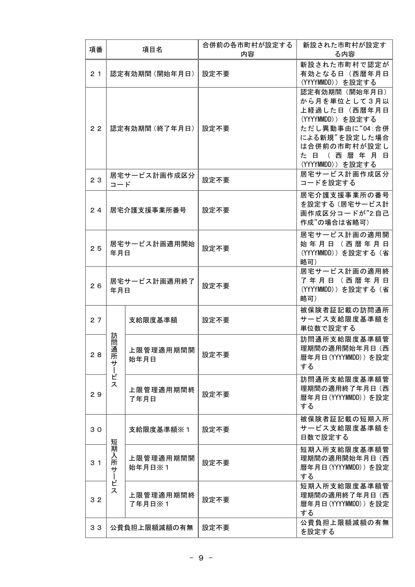
| 項番 | 項目名 | 属性 | 桁数 | 内容 | 必須 | 備考 | その他の列 |
|---|---|---|---|---|---|---|---|
| ２１ | 認定有効期間（開始年月日） | 新設された市町村で認定が有効となる日（西暦年月日(YYYYMMDD)）を設定する | 合併前の各市町村が設定する内容: 設定不要 | ||||
| ２２ | 認定有効期間（終了年月日） | 認定有効期間（開始年月日）から月を単位として３月以上経過した日（西暦年月日(YYYYMMDD)）を設定する ただし異動事由に"04:合併による新規"を設定した場合は合併前の市町村が設定した日（西暦年月日(YYYYMMDD)）を設定する | 合併前の各市町村が設定する内容: 設定不要 | ||||
| ２３ | 居宅サービス計画作成区分コード | 居宅サービス計画作成区分コードを設定する | 合併前の各市町村が設定する内容: 設定不要 | ||||
| ２４ | 居宅介護支援事業所番号 | 居宅介護支援事業所の番号を設定する（居宅サービス計画作成区分コードが"2:自己作成"の場合は省略可） | 合併前の各市町村が設定する内容: 設定不要 | ||||
| ２５ | 居宅サービス計画適用開始年月日 | 居宅サービス計画の適用開始年月日（西暦年月日(YYYYMMDD)）を設定する（省略可） | 合併前の各市町村が設定する内容: 設定不要 | ||||
| ２６ | 居宅サービス計画適用終了年月日 | 居宅サービス計画の適用終了年月日（西暦年月日(YYYYMMDD)）を設定する（省略可） | 合併前の各市町村が設定する内容: 設定不要 | ||||
| ２７ | 訪問通所サービス > 支給限度基準額 | 被保険者証記載の訪問通所サービス支給限度基準額を単位数で設定する | 合併前の各市町村が設定する内容: 設定不要 | ||||
| ２８ | 訪問通所サービス > 上限管理適用期間開始年月日 | 訪問通所支給限度基準額管理期間の適用開始年月日（西暦年月日(YYYYMMDD)）を設定する | 合併前の各市町村が設定する内容: 設定不要 | ||||
| ２９ | 訪問通所サービス > 上限管理適用期間終了年月日 | 訪問通所支給限度基準額管理期間の適用終了年月日（西暦年月日(YYYYMMDD)）を設定する | 合併前の各市町村が設定する内容: 設定不要 | ||||
| ３０ | 短期入所サービス > 支給限度基準額※１ | 被保険者証記載の短期入所サービス支給限度基準額を日数で設定する | 合併前の各市町村が設定する内容: 設定不要 | ||||
| ３１ | 短期入所サービス > 上限管理適用期間開始年月日※１ | 短期入所支給限度基準額管理期間の適用開始年月日（西暦年月日(YYYYMMDD)）を設定する | 合併前の各市町村が設定する内容: 設定不要 | ||||
| ３２ | 短期入所サービス > 上限管理適用期間終了年月日※１ | 短期入所支給限度基準額管理期間の適用終了年月日（西暦年月日(YYYYMMDD)）を設定する | 合併前の各市町村が設定する内容: 設定不要 | ||||
| ３３ | 公費負担上限額減額の有無 | 公費負担上限額減額の有無を設定する | 合併前の各市町村が設定する内容: 設定不要 |
| 項番 | 項目名 | 属性 | 桁数 | 内容 | 必須 | 備考 | その他の列 |
|---|---|---|---|---|---|---|---|
| ２１ | 認定有効期間(開始年月日) | 新設された市町村で認定が有効となる日（西暦年月日(YYYYMMDD)）を設定する | 合併前の各市町村が設定する内容: 設定不要 | ||||
| ２２ | 認定有効期間(終了年月日) | 認定有効期間（開始年月日）から月を単位として３月以上経過した日（西暦年月日(YYYYMMDD)）を設定する ただし異動事由に“04:合併による新規”を設定した場合は合併前の市町村が設定した日（西暦年月日(YYYYMMDD)）を設定する | 合併前の各市町村が設定する内容: 設定不要 | ||||
| ２３ | 居宅サービス計画作成区分コード | 居宅サービス計画作成区分コードを設定する | 合併前の各市町村が設定する内容: 設定不要 | ||||
| ２４ | 居宅介護支援事業所番号 | 居宅介護支援事業所の番号を設定する（居宅サービス計画作成区分コードが”2:自己作成”の場合は省略可） | 合併前の各市町村が設定する内容: 設定不要 | ||||
| ２５ | 居宅サービス計画適用開始年月日 | 居宅サービス計画の適用開始年月日（西暦年月日(YYYYMMDD)）を設定する（省略可） | 合併前の各市町村が設定する内容: 設定不要 | ||||
| ２６ | 居宅サービス計画適用終了年月日 | 居宅サービス計画の適用終了年月日（西暦年月日(YYYYMMDD)）を設定する（省略可） | 合併前の各市町村が設定する内容: 設定不要 | ||||
| ２７ | 訪問通所サービス > 支給限度基準額 | 被保険者証記載の訪問通所サービス支給限度基準額を単位数で設定する | 合併前の各市町村が設定する内容: 設定不要 | ||||
| ２８ | 訪問通所サービス > 上限管理適用期間開始年月日 | 訪問通所支給限度基準額管理期間の適用開始年月日（西暦年月日(YYYYMMDD)）を設定する | 合併前の各市町村が設定する内容: 設定不要 | ||||
| ２９ | 訪問通所サービス > 上限管理適用期間終了年月日 | 訪問通所支給限度基準額管理期間の適用終了年月日（西暦年月日(YYYYMMDD)）を設定する | 合併前の各市町村が設定する内容: 設定不要 | ||||
| ３０ | 短期入所サービス > 支給限度基準額※１ | 被保険者証記載の短期入所サービス支給限度基準額を日数で設定する | 合併前の各市町村が設定する内容: 設定不要 | ||||
| ３１ | 短期入所サービス > 上限管理適用期間開始年月日※１ | 短期入所支給限度基準額管理期間の適用開始年月日（西暦年月日(YYYYMMDD)）を設定する | 合併前の各市町村が設定する内容: 設定不要 | ||||
| ３２ | 短期入所サービス > 上限管理適用期間終了年月日※１ | 短期入所支給限度基準額管理期間の適用終了年月日（西暦年月日(YYYYMMDD)）を設定する | 合併前の各市町村が設定する内容: 設定不要 | ||||
| ３３ | 公費負担上限額減額の有無 | 公費負担上限額減額の有無を設定する | 合併前の各市町村が設定する内容: 設定不要 |
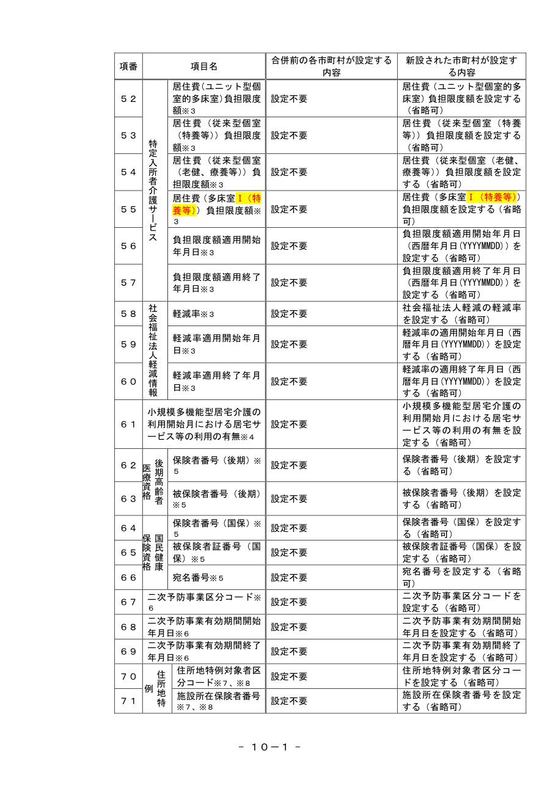
| 項番 | 項目名 | 属性 | 桁数 | 内容 | 必須 | 備考 | その他の列 |
|---|---|---|---|---|---|---|---|
| ５２ | 特定入所者介護サービス > 居住費(ユニット型個室的多床室)負担限度額※3 | 居住費（ユニット型個室的多床室）負担限度額を設定する（省略可） | 合併前の各市町村が設定する内容: 設定不要 | ||||
| ５３ | 特定入所者介護サービス > 居住費（従来型個室（特養等））負担限度額※3 | 居住費（従来型個室（特養等））負担限度額を設定する（省略可） | 合併前の各市町村が設定する内容: 設定不要 | ||||
| ５４ | 特定入所者介護サービス > 居住費（従来型個室（老健、療養等））負担限度額※3 | 居住費（従来型個室（老健、療養等））負担限度額を設定する（省略可） | 合併前の各市町村が設定する内容: 設定不要 | ||||
| ５５ | 特定入所者介護サービス > 居住費(多床室Ⅰ（特養等)）負担限度額※3 | 居住費（多床室Ⅰ（特養等））負担限度額を設定する（省略可） | 合併前の各市町村が設定する内容: 設定不要 | ||||
| ５６ | 特定入所者介護サービス > 負担限度額適用開始年月日※3 | 負担限度額適用開始年月日（西暦年月日(YYYYMMDD)）を設定する（省略可） | 合併前の各市町村が設定する内容: 設定不要 | ||||
| ５７ | 特定入所者介護サービス > 負担限度額適用終了年月日※3 | 負担限度額適用終了年月日（西暦年月日(YYYYMMDD)）を設定する（省略可） | 合併前の各市町村が設定する内容: 設定不要 | ||||
| ５８ | 社会福祉法人軽減情報 > 軽減率※3 | 社会福祉法人軽減の軽減率を設定する（省略可） | 合併前の各市町村が設定する内容: 設定不要 | ||||
| ５９ | 社会福祉法人軽減情報 > 軽減率適用開始年月日※3 | 軽減率の適用開始年月日（西暦年月日(YYYYMMDD)）を設定する（省略可） | 合併前の各市町村が設定する内容: 設定不要 | ||||
| ６０ | 社会福祉法人軽減情報 > 軽減率適用終了年月日※3 | 軽減率の適用終了年月日（西暦年月日(YYYYMMDD)）を設定する（省略可） | 合併前の各市町村が設定する内容: 設定不要 | ||||
| ６１ | 小規模多機能型居宅介護の利用開始月における居宅サービス等の利用の有無※4 | 小規模多機能型居宅介護の利用開始月における居宅サービス等の利用の有無を設定する（省略可） | 合併前の各市町村が設定する内容: 設定不要 | ||||
| ６２ | 後期高齢者医療資格 > 保険者番号（後期）※5 | 保険者番号（後期）を設定する（省略可） | 合併前の各市町村が設定する内容: 設定不要 | ||||
| ６３ | 後期高齢者医療資格 > 被保険者番号（後期）※5 | 被保険者番号（後期）を設定する（省略可） | 合併前の各市町村が設定する内容: 設定不要 | ||||
| ６４ | 国民健康保険資格 > 保険者番号（国保）※5 | 保険者番号（国保）を設定する（省略可） | 合併前の各市町村が設定する内容: 設定不要 | ||||
| ６５ | 国民健康保険資格 > 被保険者証番号（国保）※5 | 被保険者証番号（国保）を設定する（省略可） | 合併前の各市町村が設定する内容: 設定不要 | ||||
| ６６ | 国民健康保険資格 > 宛名番号※5 | 宛名番号を設定する（省略可） | 合併前の各市町村が設定する内容: 設定不要 | ||||
| ６７ | 二次予防事業区分コード※6 | 二次予防事業区分コードを設定する（省略可） | 合併前の各市町村が設定する内容: 設定不要 | ||||
| ６８ | 二次予防事業有効期間開始年月日※6 | 二次予防事業有効期間開始年月日を設定する（省略可） | 合併前の各市町村が設定する内容: 設定不要 | ||||
| ６９ | 二次予防事業有効期間終了年月日※6 | 二次予防事業有効期間終了年月日を設定する（省略可） | 合併前の各市町村が設定する内容: 設定不要 | ||||
| ７０ | 住所地特例 > 住所地特例対象者区分コード※7、※8 | 住所地特例対象者区分コードを設定する（省略可） | 合併前の各市町村が設定する内容: 設定不要 | ||||
| ７１ | 住所地特例 > 施設所在保険者番号※7、※8 | 施設所在保険者番号を設定する（省略可） | 合併前の各市町村が設定する内容: 設定不要 |
| 項番 | 項目名 | 属性 | 桁数 | 内容 | 必須 | 備考 | その他の列 |
|---|---|---|---|---|---|---|---|
| ５２ | 特定入所者介護サービス > 居住費(ユニット型個室的多床室)負担限度額※３ | 居住費（ユニット型個室的多床室）負担限度額を設定する（省略可） | 合併前の各市町村が設定する内容: 設定不要 | ||||
| ５３ | 特定入所者介護サービス > 居住費（従来型個室（特養等））負担限度額※３ | 居住費（従来型個室（特養等））負担限度額を設定する（省略可） | 合併前の各市町村が設定する内容: 設定不要 | ||||
| ５４ | 特定入所者介護サービス > 居住費（従来型個室（老健、療養等））負担限度額※３ | 居住費（従来型個室（老健、療養等））負担限度額を設定する（省略可） | 合併前の各市町村が設定する内容: 設定不要 | ||||
| ５５ | 特定入所者介護サービス > 居住費（多床室Ⅰ（特養等））負担限度額※３ | 居住費（多床室Ⅰ（特養等））負担限度額を設定する（省略可） | 合併前の各市町村が設定する内容: 設定不要 | ||||
| ５６ | 特定入所者介護サービス > 負担限度額適用開始年月日※３ | 負担限度額適用開始年月日（西暦年月日(YYYYMMDD)）を設定する（省略可） | 合併前の各市町村が設定する内容: 設定不要 | ||||
| ５７ | 特定入所者介護サービス > 負担限度額適用終了年月日※３ | 負担限度額適用終了年月日（西暦年月日(YYYYMMDD)）を設定する（省略可） | 合併前の各市町村が設定する内容: 設定不要 | ||||
| ５８ | 社会福祉法人軽減情報 > 軽減率※３ | 社会福祉法人軽減の軽減率を設定する（省略可） | 合併前の各市町村が設定する内容: 設定不要 | ||||
| ５９ | 社会福祉法人軽減情報 > 軽減率適用開始年月日※３ | 軽減率の適用開始年月日（西暦年月日(YYYYMMDD)）を設定する（省略可） | 合併前の各市町村が設定する内容: 設定不要 | ||||
| ６０ | 社会福祉法人軽減情報 > 軽減率適用終了年月日※３ | 軽減率の適用終了年月日（西暦年月日(YYYYMMDD)）を設定する（省略可） | 合併前の各市町村が設定する内容: 設定不要 | ||||
| ６１ | 小規模多機能型居宅介護の利用開始月における居宅サービス等の利用の有無※４ | 小規模多機能型居宅介護の利用開始月における居宅サービス等の利用の有無を設定する（省略可） | 合併前の各市町村が設定する内容: 設定不要 | ||||
| ６２ | 医療資格 > 後期高齢者 > 保険者番号（後期）※５ | 保険者番号（後期）を設定する（省略可） | 合併前の各市町村が設定する内容: 設定不要 | ||||
| ６３ | 医療資格 > 後期高齢者 > 被保険者番号（後期）※５ | 被保険者番号（後期）を設定する（省略可） | 合併前の各市町村が設定する内容: 設定不要 | ||||
| ６４ | 保険資格 > 国民健康 > 保険者番号（国保）※５ | 保険者番号（国保）を設定する（省略可） | 合併前の各市町村が設定する内容: 設定不要 | ||||
| ６５ | 保険資格 > 国民健康 > 被保険者証番号（国保）※５ | 被保険者証番号（国保）を設定する（省略可） | 合併前の各市町村が設定する内容: 設定不要 | ||||
| ６６ | 保険資格 > 国民健康 > 宛名番号※５ | 宛名番号を設定する（省略可） | 合併前の各市町村が設定する内容: 設定不要 | ||||
| ６７ | 二次予防事業区分コード※６ | 二次予防事業区分コードを設定する（省略可） | 合併前の各市町村が設定する内容: 設定不要 | ||||
| ６８ | 二次予防事業有効期間開始年月日※６ | 二次予防事業有効期間開始年月日を設定する（省略可） | 合併前の各市町村が設定する内容: 設定不要 | ||||
| ６９ | 二次予防事業有効期間終了年月日※６ | 二次予防事業有効期間終了年月日を設定する（省略可） | 合併前の各市町村が設定する内容: 設定不要 | ||||
| ７０ | 住所地特例 > 住所地特例対象者区分コード※７、※８ | 住所地特例対象者区分コードを設定する（省略可） | 合併前の各市町村が設定する内容: 設定不要 | ||||
| ７１ | 住所地特例 > 施設所在保険者番号※７、※８ | 施設所在保険者番号を設定する（省略可） | 合併前の各市町村が設定する内容: 設定不要 |
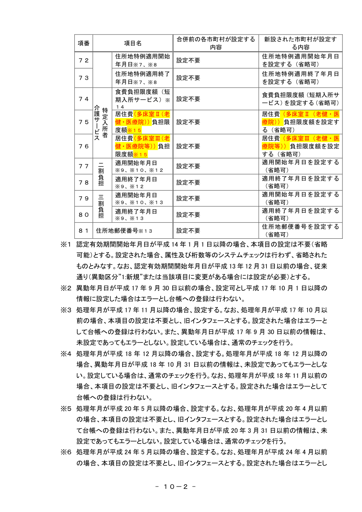
| 項番 | 項目名 | 属性 | 桁数 | 内容 | 必須 | 備考 | その他の列 |
|---|---|---|---|---|---|---|---|
| ７２ | 住所地特例適用開始年月日※７、※８ | 設定不要 | 新設された市町村が設定する内容: 住所地特例適用開始年月日を設定する（省略可） | ||||
| ７３ | 住所地特例適用終了年月日※７、※８ | 設定不要 | 新設された市町村が設定する内容: 住所地特例適用終了年月日を設定する（省略可） | ||||
| ７４ | 介護サービス 特定入所者 > 食費負担限度額（短期入所サービス）※１４ | 設定不要 | 新設された市町村が設定する内容: 食費負担限度額（短期入所サービス）を設定する（省略可） | ||||
| ７５ | 介護サービス 特定入所者 > 居住費（多床室Ⅱ（老健・医療院））負担限度額※１５ | 設定不要 | 新設された市町村が設定する内容: 居住費（多床室Ⅱ（老健・医療院））負担限度額を設定する（省略可） | ||||
| ７６ | 介護サービス 特定入所者 > 居住費（多床室Ⅲ（老健・医療等））負担限度額※１５ | 設定不要 | 新設された市町村が設定する内容: 居住費（多床室Ⅲ（老健・医療院等））負担限度額を設定する（省略可） | ||||
| ７７ | 二割負担 > 適用開始年月日※９、※１０、※１２ | 設定不要 | 新設された市町村が設定する内容: 適用開始年月日を設定する（省略可） | ||||
| ７８ | 二割負担 > 適用終了年月日※９、※１２ | 設定不要 | 新設された市町村が設定する内容: 適用終了年月日を設定する（省略可） | ||||
| ７９ | 三割負担 > 適用開始年月日※９、※１０、※１３ | 設定不要 | 新設された市町村が設定する内容: 適用開始年月日を設定する（省略可） | ||||
| ８０ | 三割負担 > 適用終了年月日※９、※１３ | 設定不要 | 新設された市町村が設定する内容: 適用終了年月日を設定する（省略可） | ||||
| ８１ | 住所地郵便番号※１３ | 設定不要 | 新設された市町村が設定する内容: 住所地郵便番号を設定する（省略可） |
| 項番 | 項目名 | 属性 | 桁数 | 内容 | 必須 | 備考 | その他の列 |
|---|---|---|---|---|---|---|---|
| ７２ | 介護サービス > 特定入所者 > 住所地特例適用開始年月日※７、※８ | 住所地特例適用開始年月日を設定する（省略可） | 合併前の各市町村が設定する内容: 設定不要 | ||||
| ７３ | 介護サービス > 特定入所者 > 住所地特例適用終了年月日※７、※８ | 住所地特例適用終了年月日を設定する（省略可） | 合併前の各市町村が設定する内容: 設定不要 | ||||
| ７４ | 介護サービス > 特定入所者 > 食費負担限度額（短期入所サービス）※１４ | 食費負担限度額（短期入所サービス）を設定する（省略可） | 合併前の各市町村が設定する内容: 設定不要 | ||||
| ７５ | 介護サービス > 特定入所者 > 居住費（多床室Ⅱ（老健・医療院））負担限度額※１５ | 居住費（多床室Ⅱ（老健・医療院））負担限度額を設定する（省略可） | 合併前の各市町村が設定する内容: 設定不要 | ||||
| ７６ | 介護サービス > 特定入所者 > 居住費（多床室Ⅲ（老健・医療院等））負担限度額※１５ | 居住費（多床室Ⅲ（老健・医療院等））負担限度額を設定する（省略可） | 合併前の各市町村が設定する内容: 設定不要 | ||||
| ７７ | 二割負担 > 適用開始年月日※９、※１０、※１２ | 適用開始年月日を設定する（省略可） | 合併前の各市町村が設定する内容: 設定不要 | ||||
| ７８ | 二割負担 > 適用終了年月日※９、※１２ | 適用終了年月日を設定する（省略可） | 合併前の各市町村が設定する内容: 設定不要 | ||||
| ７９ | 三割負担 > 適用開始年月日※９、※１０、※１３ | 適用開始年月日を設定する（省略可） | 合併前の各市町村が設定する内容: 設定不要 | ||||
| ８０ | 三割負担 > 適用終了年月日※９、※１３ | 適用終了年月日を設定する（省略可） | 合併前の各市町村が設定する内容: 設定不要 | ||||
| ８１ | 住所地郵便番号※１３ | 住所地郵便番号を設定する（省略可） | 合併前の各市町村が設定する内容: 設定不要 |
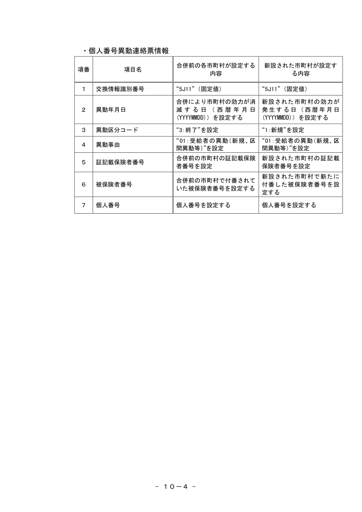
| 項番 | 項目名 | 属性 | 桁数 | 内容 | 必須 | 備考 | その他の列 |
|---|---|---|---|---|---|---|---|
| １ | 交換情報識別番号 | “5J11”（固定値） | 新設された市町村が設定する内容: “5J11”（固定値） | ||||
| ２ | 異動年月日 | 合併により市町村の効力が消滅する日（西暦年月日(YYYYMMDD)）を設定する | 新設された市町村が設定する内容: 新設された市町村の効力が発生する日（西暦年月日(YYYYMMDD)）を設定する | ||||
| ３ | 異動区分コード | “3:終了”を設定 | 新設された市町村が設定する内容: “1:新規”を設定 | ||||
| ４ | 異動事由 | “01:受給者の異動(新規、区間異動等)”を設定 | 新設された市町村が設定する内容: “01:受給者の異動(新規、区間異動等)”を設定 | ||||
| ５ | 証記載保険者番号 | 合併前の市町村の証記載保険者番号を設定 | 新設された市町村が設定する内容: 新設された市町村の証記載保険者番号を設定 | ||||
| ６ | 被保険者番号 | 合併前の市町村で付番されていた被保険者番号を設定する | 新設された市町村が設定する内容: 新設された市町村で新たに付番した被保険者番号を設定する | ||||
| ７ | 個人番号 | 個人番号を設定する | 新設された市町村が設定する内容: 個人番号を設定する |
| 項番 | 項目名 | 属性 | 桁数 | 内容 | 必須 | 備考 | その他の列 |
|---|---|---|---|---|---|---|---|
| 1 | 交換情報識別番号 | 合併前の各市町村が設定する内容: “5J11”（固定値） 新設された市町村が設定する内容: “5J11”（固定値） | |||||
| 2 | 異動年月日 | 合併前の各市町村が設定する内容: 合併により市町村の効力が消滅する日（西暦年月日(YYYYMMDD)）を設定する 新設された市町村が設定する内容: 新設された市町村の効力が発生する日（西暦年月日(YYYYMMDD)）を設定する | |||||
| 3 | 異動区分コード | 合併前の各市町村が設定する内容: “3:終了”を設定 新設された市町村が設定する内容: “1:新規”を設定 | |||||
| 4 | 異動事由 | 合併前の各市町村が設定する内容: “01:受給者の異動(新規、区間異動等)”を設定 新設された市町村が設定する内容: “01:受給者の異動(新規、区間異動等)”を設定 | |||||
| 5 | 証記載保険者番号 | 合併前の各市町村が設定する内容: 合併前の市町村の証記載保険者番号を設定 新設された市町村が設定する内容: 新設された市町村の証記載保険者番号を設定 | |||||
| 6 | 被保険者番号 | 合併前の各市町村が設定する内容: 合併前の市町村で付番されていた被保険者番号を設定する 新設された市町村が設定する内容: 新設された市町村で新たに付番した被保険者番号を設定する | |||||
| 7 | 個人番号 | 合併前の各市町村が設定する内容: 個人番号を設定する 新設された市町村が設定する内容: 個人番号を設定する |
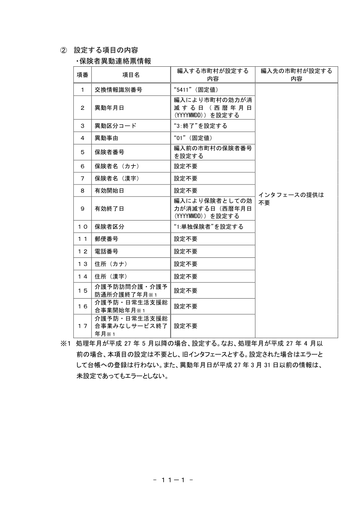
| 項番 | 項目名 | 属性 | 桁数 | 内容 | 必須 | 備考 | その他の列 |
|---|---|---|---|---|---|---|---|
| １ | 交換情報識別番号 | “5411”（固定値） | 編入先の市町村が設定する内容: インタフェースの提供は不要 | ||||
| ２ | 異動年月日 | 編入により市町村の効力が消滅する日（西暦年月日(YYYYMMDD)）を設定する | 編入先の市町村が設定する内容: インタフェースの提供は不要 | ||||
| ３ | 異動区分コード | “3:終了”を設定する | 編入先の市町村が設定する内容: インタフェースの提供は不要 | ||||
| ４ | 異動事由 | “01”（固定値） | 編入先の市町村が設定する内容: インタフェースの提供は不要 | ||||
| ５ | 保険者番号 | 編入前の市町村の保険者番号を設定する | 編入先の市町村が設定する内容: インタフェースの提供は不要 | ||||
| ６ | 保険者名（カナ） | 設定不要 | 編入先の市町村が設定する内容: インタフェースの提供は不要 | ||||
| ７ | 保険者名（漢字） | 設定不要 | 編入先の市町村が設定する内容: インタフェースの提供は不要 | ||||
| ８ | 有効開始日 | 設定不要 | 編入先の市町村が設定する内容: インタフェースの提供は不要 | ||||
| ９ | 有効終了日 | 編入により保険者としての効力が消滅する日（西暦年月日(YYYYMMDD)）を設定する | 編入先の市町村が設定する内容: インタフェースの提供は不要 | ||||
| １０ | 保険者区分 | “1:単独保険者”を設定する | 編入先の市町村が設定する内容: インタフェースの提供は不要 | ||||
| １１ | 郵便番号 | 設定不要 | 編入先の市町村が設定する内容: インタフェースの提供は不要 | ||||
| １２ | 電話番号 | 設定不要 | 編入先の市町村が設定する内容: インタフェースの提供は不要 | ||||
| １３ | 住所（カナ） | 設定不要 | 編入先の市町村が設定する内容: インタフェースの提供は不要 | ||||
| １４ | 住所（漢字） | 設定不要 | 編入先の市町村が設定する内容: インタフェースの提供は不要 | ||||
| １５ | 介護予防訪問介護・介護予防通所介護終了年月※1 | 設定不要 | 編入先の市町村が設定する内容: インタフェースの提供は不要 | ||||
| １６ | 介護予防・日常生活支援総合事業開始年月※1 | 設定不要 | 編入先の市町村が設定する内容: インタフェースの提供は不要 | ||||
| １７ | 介護予防・日常生活支援総合事業みなしサービス終了年月※1 | 設定不要 | 編入先の市町村が設定する内容: インタフェースの提供は不要 |
| 項番 | 項目名 | 属性 | 桁数 | 内容 | 必須 | 備考 | その他の列 |
|---|---|---|---|---|---|---|---|
| １ | 交換情報識別番号 | “5411”（固定値） | 編入先の市町村が設定する内容: インタフェースの提供は不要 | ||||
| ２ | 異動年月日 | 編入により市町村の効力が消滅する日（西暦年月日(YYYYMMDD)）を設定する | 編入先の市町村が設定する内容: インタフェースの提供は不要 | ||||
| ３ | 異動区分コード | “3:終了”を設定する | 編入先の市町村が設定する内容: インタフェースの提供は不要 | ||||
| ４ | 異動事由 | “01”（固定値） | 編入先の市町村が設定する内容: インタフェースの提供は不要 | ||||
| ５ | 保険者番号 | 編入前の市町村の保険者番号を設定する | 編入先の市町村が設定する内容: インタフェースの提供は不要 | ||||
| ６ | 保険者名（カナ） | 設定不要 | 編入先の市町村が設定する内容: インタフェースの提供は不要 | ||||
| ７ | 保険者名（漢字） | 設定不要 | 編入先の市町村が設定する内容: インタフェースの提供は不要 | ||||
| ８ | 有効開始日 | 設定不要 | 編入先の市町村が設定する内容: インタフェースの提供は不要 | ||||
| ９ | 有効終了日 | 編入により保険者としての効力が消滅する日（西暦年月日(YYYYMMDD)）を設定する | 編入先の市町村が設定する内容: インタフェースの提供は不要 | ||||
| １０ | 保険者区分 | “1:単独保険者”を設定する | 編入先の市町村が設定する内容: インタフェースの提供は不要 | ||||
| １１ | 郵便番号 | 設定不要 | 編入先の市町村が設定する内容: インタフェースの提供は不要 | ||||
| １２ | 電話番号 | 設定不要 | 編入先の市町村が設定する内容: インタフェースの提供は不要 | ||||
| １３ | 住所（カナ） | 設定不要 | 編入先の市町村が設定する内容: インタフェースの提供は不要 | ||||
| １４ | 住所（漢字） | 設定不要 | 編入先の市町村が設定する内容: インタフェースの提供は不要 | ||||
| １５ | 介護予防訪問介護・介護予防通所介護終了年月※1 | 設定不要 | 編入先の市町村が設定する内容: インタフェースの提供は不要 | ||||
| １６ | 介護予防・日常生活支援総合事業開始年月※1 | 設定不要 | 編入先の市町村が設定する内容: インタフェースの提供は不要 | ||||
| １７ | 介護予防・日常生活支援総合事業みなしサービス終了年月※1 | 設定不要 | 編入先の市町村が設定する内容: インタフェースの提供は不要 |
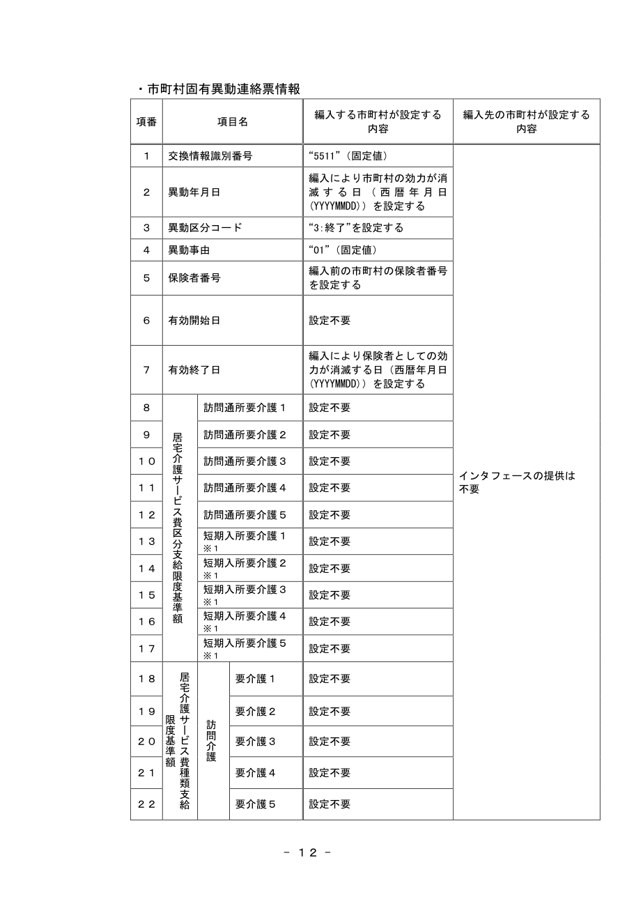
| 項番 | 項目名 | 属性 | 桁数 | 内容 | 必須 | 備考 | その他の列 |
|---|---|---|---|---|---|---|---|
| １ | 交換情報識別番号 | “5511”（固定値） | 編入先の市町村が設定する内容: インタフェースの提供は不要 | ||||
| ２ | 異動年月日 | 編入により市町村の効力が消滅する日（西暦年月日(YYYYMMDD)）を設定する | 編入先の市町村が設定する内容: インタフェースの提供は不要 | ||||
| ３ | 異動区分コード | “3:終了”を設定する | 編入先の市町村が設定する内容: インタフェースの提供は不要 | ||||
| ４ | 異動事由 | “01”（固定値） | 編入先の市町村が設定する内容: インタフェースの提供は不要 | ||||
| ５ | 保険者番号 | 編入前の市町村の保険者番号を設定する | 編入先の市町村が設定する内容: インタフェースの提供は不要 | ||||
| ６ | 有効開始日 | 設定不要 | 編入先の市町村が設定する内容: インタフェースの提供は不要 | ||||
| ７ | 有効終了日 | 編入により保険者としての効力が消滅する日（西暦年月日(YYYYMMDD)）を設定する | 編入先の市町村が設定する内容: インタフェースの提供は不要 | ||||
| ８ | 居宅介護サービス費区分支給限度基準額 > 訪問通所要介護１ | 設定不要 | 編入先の市町村が設定する内容: インタフェースの提供は不要 | ||||
| ９ | 居宅介護サービス費区分支給限度基準額 > 訪問通所要介護２ | 設定不要 | 編入先の市町村が設定する内容: インタフェースの提供は不要 | ||||
| １０ | 居宅介護サービス費区分支給限度基準額 > 訪問通所要介護３ | 設定不要 | 編入先の市町村が設定する内容: インタフェースの提供は不要 | ||||
| １１ | 居宅介護サービス費区分支給限度基準額 > 訪問通所要介護４ | 設定不要 | 編入先の市町村が設定する内容: インタフェースの提供は不要 | ||||
| １２ | 居宅介護サービス費区分支給限度基準額 > 訪問通所要介護５ | 設定不要 | 編入先の市町村が設定する内容: インタフェースの提供は不要 | ||||
| １３ | 居宅介護サービス費区分支給限度基準額 > 短期入所要介護１※1 | 設定不要 | 編入先の市町村が設定する内容: インタフェースの提供は不要 | ||||
| １４ | 居宅介護サービス費区分支給限度基準額 > 短期入所要介護２※1 | 設定不要 | 編入先の市町村が設定する内容: インタフェースの提供は不要 | ||||
| １５ | 居宅介護サービス費区分支給限度基準額 > 短期入所要介護３※1 | 設定不要 | 編入先の市町村が設定する内容: インタフェースの提供は不要 | ||||
| １６ | 居宅介護サービス費区分支給限度基準額 > 短期入所要介護４※1 | 設定不要 | 編入先の市町村が設定する内容: インタフェースの提供は不要 | ||||
| １７ | 居宅介護サービス費区分支給限度基準額 > 短期入所要介護５※1 | 設定不要 | 編入先の市町村が設定する内容: インタフェースの提供は不要 | ||||
| １８ | 居宅介護サービス費種類支給限度基準額 > 訪問介護 > 要介護１ | 設定不要 | 編入先の市町村が設定する内容: インタフェースの提供は不要 | ||||
| １９ | 居宅介護サービス費種類支給限度基準額 > 訪問介護 > 要介護２ | 設定不要 | 編入先の市町村が設定する内容: インタフェースの提供は不要 | ||||
| ２０ | 居宅介護サービス費種類支給限度基準額 > 訪問介護 > 要介護３ | 設定不要 | 編入先の市町村が設定する内容: インタフェースの提供は不要 | ||||
| ２１ | 居宅介護サービス費種類支給限度基準額 > 訪問介護 > 要介護４ | 設定不要 | 編入先の市町村が設定する内容: インタフェースの提供は不要 | ||||
| ２２ | 居宅介護サービス費種類支給限度基準額 > 訪問介護 > 要介護５ | 設定不要 | 編入先の市町村が設定する内容: インタフェースの提供は不要 |
| 項番 | 項目名 | 属性 | 桁数 | 内容 | 必須 | 備考 | その他の列 |
|---|---|---|---|---|---|---|---|
| 1 | 交換情報識別番号 | “5511”（固定値） | インタフェースの提供は不要 | ||||
| 2 | 異動年月日 | 編入により市町村の効力が消滅する日（西暦年月日(YYYYMMDD)）を設定する | インタフェースの提供は不要 | ||||
| 3 | 異動区分コード | “3:終了”を設定する | インタフェースの提供は不要 | ||||
| 4 | 異動事由 | “01”（固定値） | インタフェースの提供は不要 | ||||
| 5 | 保険者番号 | 編入前の市町村の保険者番号を設定する | インタフェースの提供は不要 | ||||
| 6 | 有効開始日 | 設定不要 | インタフェースの提供は不要 | ||||
| 7 | 有効終了日 | 編入により保険者としての効力が消滅する日（西暦年月日(YYYYMMDD)）を設定する | インタフェースの提供は不要 | ||||
| 8 | 居宅介護サービス費区分支給限度基準額 > 訪問通所要介護1 | 設定不要 | インタフェースの提供は不要 | ||||
| 9 | 居宅介護サービス費区分支給限度基準額 > 訪問通所要介護2 | 設定不要 | インタフェースの提供は不要 | ||||
| 10 | 居宅介護サービス費区分支給限度基準額 > 訪問通所要介護3 | 設定不要 | インタフェースの提供は不要 | ||||
| 11 | 居宅介護サービス費区分支給限度基準額 > 訪問通所要介護4 | 設定不要 | インタフェースの提供は不要 | ||||
| 12 | 居宅介護サービス費区分支給限度基準額 > 訪問通所要介護5 | 設定不要 | インタフェースの提供は不要 | ||||
| 13 | 居宅介護サービス費区分支給限度基準額 > 短期入所要介護1 ※1 | 設定不要 | インタフェースの提供は不要 | ||||
| 14 | 居宅介護サービス費区分支給限度基準額 > 短期入所要介護2 ※1 | 設定不要 | インタフェースの提供は不要 | ||||
| 15 | 居宅介護サービス費区分支給限度基準額 > 短期入所要介護3 ※1 | 設定不要 | インタフェースの提供は不要 | ||||
| 16 | 居宅介護サービス費区分支給限度基準額 > 短期入所要介護4 ※1 | 設定不要 | インタフェースの提供は不要 | ||||
| 17 | 居宅介護サービス費区分支給限度基準額 > 短期入所要介護5 ※1 | 設定不要 | インタフェースの提供は不要 | ||||
| 18 | 居宅介護サービス費種類支給限度基準額 > 訪問介護 > 要介護1 | 設定不要 | インタフェースの提供は不要 | ||||
| 19 | 居宅介護サービス費種類支給限度基準額 > 訪問介護 > 要介護2 | 設定不要 | インタフェースの提供は不要 | ||||
| 20 | 居宅介護サービス費種類支給限度基準額 > 訪問介護 > 要介護3 | 設定不要 | インタフェースの提供は不要 | ||||
| 21 | 居宅介護サービス費種類支給限度基準額 > 訪問介護 > 要介護4 | 設定不要 | インタフェースの提供は不要 | ||||
| 22 | 居宅介護サービス費種類支給限度基準額 > 訪問介護 > 要介護5 | 設定不要 | インタフェースの提供は不要 |
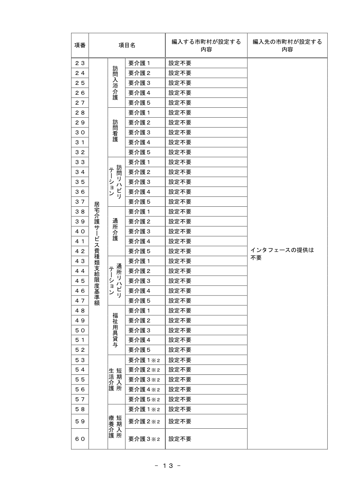
| 項番 | 項目名 | 属性 | 桁数 | 内容 | 必須 | 備考 | その他の列 |
|---|---|---|---|---|---|---|---|
| ２３ | 居宅介護サービス費種類支給限度基準額 > 訪問入浴介護 > 要介護１ | 設定不要 | 編入先の市町村が設定する内容: インタフェースの提供は不要 | ||||
| ２４ | 居宅介護サービス費種類支給限度基準額 > 訪問入浴介護 > 要介護２ | 設定不要 | 編入先の市町村が設定する内容: インタフェースの提供は不要 | ||||
| ２５ | 居宅介護サービス費種類支給限度基準額 > 訪問入浴介護 > 要介護３ | 設定不要 | 編入先の市町村が設定する内容: インタフェースの提供は不要 | ||||
| ２６ | 居宅介護サービス費種類支給限度基準額 > 訪問入浴介護 > 要介護４ | 設定不要 | 編入先の市町村が設定する内容: インタフェースの提供は不要 | ||||
| ２７ | 居宅介護サービス費種類支給限度基準額 > 訪問入浴介護 > 要介護５ | 設定不要 | 編入先の市町村が設定する内容: インタフェースの提供は不要 | ||||
| ２８ | 居宅介護サービス費種類支給限度基準額 > 訪問看護 > 要介護１ | 設定不要 | 編入先の市町村が設定する内容: インタフェースの提供は不要 | ||||
| ２９ | 居宅介護サービス費種類支給限度基準額 > 訪問看護 > 要介護２ | 設定不要 | 編入先の市町村が設定する内容: インタフェースの提供は不要 | ||||
| ３０ | 居宅介護サービス費種類支給限度基準額 > 訪問看護 > 要介護３ | 設定不要 | 編入先の市町村が設定する内容: インタフェースの提供は不要 | ||||
| ３１ | 居宅介護サービス費種類支給限度基準額 > 訪問看護 > 要介護４ | 設定不要 | 編入先の市町村が設定する内容: インタフェースの提供は不要 | ||||
| ３２ | 居宅介護サービス費種類支給限度基準額 > 訪問看護 > 要介護５ | 設定不要 | 編入先の市町村が設定する内容: インタフェースの提供は不要 | ||||
| ３３ | 居宅介護サービス費種類支給限度基準額 > 訪問リハビリテーション > 要介護１ | 設定不要 | 編入先の市町村が設定する内容: インタフェースの提供は不要 | ||||
| ３４ | 居宅介護サービス費種類支給限度基準額 > 訪問リハビリテーション > 要介護２ | 設定不要 | 編入先の市町村が設定する内容: インタフェースの提供は不要 | ||||
| ３５ | 居宅介護サービス費種類支給限度基準額 > 訪問リハビリテーション > 要介護３ | 設定不要 | 編入先の市町村が設定する内容: インタフェースの提供は不要 | ||||
| ３６ | 居宅介護サービス費種類支給限度基準額 > 訪問リハビリテーション > 要介護４ | 設定不要 | 編入先の市町村が設定する内容: インタフェースの提供は不要 | ||||
| ３７ | 居宅介護サービス費種類支給限度基準額 > 訪問リハビリテーション > 要介護５ | 設定不要 | 編入先の市町村が設定する内容: インタフェースの提供は不要 | ||||
| ３８ | 居宅介護サービス費種類支給限度基準額 > 通所介護 > 要介護１ | 設定不要 | 編入先の市町村が設定する内容: インタフェースの提供は不要 | ||||
| ３９ | 居宅介護サービス費種類支給限度基準額 > 通所介護 > 要介護２ | 設定不要 | 編入先の市町村が設定する内容: インタフェースの提供は不要 | ||||
| ４０ | 居宅介護サービス費種類支給限度基準額 > 通所介護 > 要介護３ | 設定不要 | 編入先の市町村が設定する内容: インタフェースの提供は不要 | ||||
| ４１ | 居宅介護サービス費種類支給限度基準額 > 通所介護 > 要介護４ | 設定不要 | 編入先の市町村が設定する内容: インタフェースの提供は不要 | ||||
| ４２ | 居宅介護サービス費種類支給限度基準額 > 通所介護 > 要介護５ | 設定不要 | 編入先の市町村が設定する内容: インタフェースの提供は不要 | ||||
| ４３ | 居宅介護サービス費種類支給限度基準額 > 通所リハビリテーション > 要介護１ | 設定不要 | 編入先の市町村が設定する内容: インタフェースの提供は不要 | ||||
| ４４ | 居宅介護サービス費種類支給限度基準額 > 通所リハビリテーション > 要介護２ | 設定不要 | 編入先の市町村が設定する内容: インタフェースの提供は不要 | ||||
| ４５ | 居宅介護サービス費種類支給限度基準額 > 通所リハビリテーション > 要介護３ | 設定不要 | 編入先の市町村が設定する内容: インタフェースの提供は不要 | ||||
| ４６ | 居宅介護サービス費種類支給限度基準額 > 通所リハビリテーション > 要介護４ | 設定不要 | 編入先の市町村が設定する内容: インタフェースの提供は不要 | ||||
| ４７ | 居宅介護サービス費種類支給限度基準額 > 通所リハビリテーション > 要介護５ | 設定不要 | 編入先の市町村が設定する内容: インタフェースの提供は不要 | ||||
| ４８ | 居宅介護サービス費種類支給限度基準額 > 福祉用具貸与 > 要介護１ | 設定不要 | 編入先の市町村が設定する内容: インタフェースの提供は不要 | ||||
| ４９ | 居宅介護サービス費種類支給限度基準額 > 福祉用具貸与 > 要介護２ | 設定不要 | 編入先の市町村が設定する内容: インタフェースの提供は不要 | ||||
| ５０ | 居宅介護サービス費種類支給限度基準額 > 福祉用具貸与 > 要介護３ | 設定不要 | 編入先の市町村が設定する内容: インタフェースの提供は不要 | ||||
| ５１ | 居宅介護サービス費種類支給限度基準額 > 福祉用具貸与 > 要介護４ | 設定不要 | 編入先の市町村が設定する内容: インタフェースの提供は不要 | ||||
| ５２ | 居宅介護サービス費種類支給限度基準額 > 福祉用具貸与 > 要介護５ | 設定不要 | 編入先の市町村が設定する内容: インタフェースの提供は不要 | ||||
| ５３ | 居宅介護サービス費種類支給限度基準額 > 短期入所生活介護 > 要介護１※２ | 設定不要 | 編入先の市町村が設定する内容: インタフェースの提供は不要 | ||||
| ５４ | 居宅介護サービス費種類支給限度基準額 > 短期入所生活介護 > 要介護２※２ | 設定不要 | 編入先の市町村が設定する内容: インタフェースの提供は不要 | ||||
| ５５ | 居宅介護サービス費種類支給限度基準額 > 短期入所生活介護 > 要介護３※２ | 設定不要 | 編入先の市町村が設定する内容: インタフェースの提供は不要 | ||||
| ５６ | 居宅介護サービス費種類支給限度基準額 > 短期入所生活介護 > 要介護４※２ | 設定不要 | 編入先の市町村が設定する内容: インタフェースの提供は不要 | ||||
| ５７ | 居宅介護サービス費種類支給限度基準額 > 短期入所生活介護 > 要介護５※２ | 設定不要 | 編入先の市町村が設定する内容: インタフェースの提供は不要 | ||||
| ５８ | 居宅介護サービス費種類支給限度基準額 > 短期入所療養介護 > 要介護１※２ | 設定不要 | 編入先の市町村が設定する内容: インタフェースの提供は不要 | ||||
| ５９ | 居宅介護サービス費種類支給限度基準額 > 短期入所療養介護 > 要介護２※２ | 設定不要 | 編入先の市町村が設定する内容: インタフェースの提供は不要 | ||||
| ６０ | 居宅介護サービス費種類支給限度基準額 > 短期入所療養介護 > 要介護３※２ | 設定不要 | 編入先の市町村が設定する内容: インタフェースの提供は不要 |
| 項番 | 項目名 | 属性 | 桁数 | 内容 | 必須 | 備考 | その他の列 |
|---|---|---|---|---|---|---|---|
| ２３ | 居宅介護サービス費種類支給限度基準額 > 訪問入浴介護 > 要介護１ | 設定不要 | インタフェースの提供は不要 | ||||
| ２４ | 居宅介護サービス費種類支給限度基準額 > 訪問入浴介護 > 要介護２ | 設定不要 | インタフェースの提供は不要 | ||||
| ２５ | 居宅介護サービス費種類支給限度基準額 > 訪問入浴介護 > 要介護３ | 設定不要 | インタフェースの提供は不要 | ||||
| ２６ | 居宅介護サービス費種類支給限度基準額 > 訪問入浴介護 > 要介護４ | 設定不要 | インタフェースの提供は不要 | ||||
| ２７ | 居宅介護サービス費種類支給限度基準額 > 訪問入浴介護 > 要介護５ | 設定不要 | インタフェースの提供は不要 | ||||
| ２８ | 居宅介護サービス費種類支給限度基準額 > 訪問看護 > 要介護１ | 設定不要 | インタフェースの提供は不要 | ||||
| ２９ | 居宅介護サービス費種類支給限度基準額 > 訪問看護 > 要介護２ | 設定不要 | インタフェースの提供は不要 | ||||
| ３０ | 居宅介護サービス費種類支給限度基準額 > 訪問看護 > 要介護３ | 設定不要 | インタフェースの提供は不要 | ||||
| ３１ | 居宅介護サービス費種類支給限度基準額 > 訪問看護 > 要介護４ | 設定不要 | インタフェースの提供は不要 | ||||
| ３２ | 居宅介護サービス費種類支給限度基準額 > 訪問看護 > 要介護５ | 設定不要 | インタフェースの提供は不要 | ||||
| ３３ | 居宅介護サービス費種類支給限度基準額 > 訪問リハビリテーション > 要介護１ | 設定不要 | インタフェースの提供は不要 | ||||
| ３４ | 居宅介護サービス費種類支給限度基準額 > 訪問リハビリテーション > 要介護２ | 設定不要 | インタフェースの提供は不要 | ||||
| ３５ | 居宅介護サービス費種類支給限度基準額 > 訪問リハビリテーション > 要介護３ | 設定不要 | インタフェースの提供は不要 | ||||
| ３６ | 居宅介護サービス費種類支給限度基準額 > 訪問リハビリテーション > 要介護４ | 設定不要 | インタフェースの提供は不要 | ||||
| ３７ | 居宅介護サービス費種類支給限度基準額 > 訪問リハビリテーション > 要介護５ | 設定不要 | インタフェースの提供は不要 | ||||
| ３８ | 居宅介護サービス費種類支給限度基準額 > 通所介護 > 要介護１ | 設定不要 | インタフェースの提供は不要 | ||||
| ３９ | 居宅介護サービス費種類支給限度基準額 > 通所介護 > 要介護２ | 設定不要 | インタフェースの提供は不要 | ||||
| ４０ | 居宅介護サービス費種類支給限度基準額 > 通所介護 > 要介護３ | 設定不要 | インタフェースの提供は不要 | ||||
| ４１ | 居宅介護サービス費種類支給限度基準額 > 通所介護 > 要介護４ | 設定不要 | インタフェースの提供は不要 | ||||
| ４２ | 居宅介護サービス費種類支給限度基準額 > 通所介護 > 要介護５ | 設定不要 | インタフェースの提供は不要 | ||||
| ４３ | 居宅介護サービス費種類支給限度基準額 > 通所リハビリテーション > 要介護１ | 設定不要 | インタフェースの提供は不要 | ||||
| ４４ | 居宅介護サービス費種類支給限度基準額 > 通所リハビリテーション > 要介護２ | 設定不要 | インタフェースの提供は不要 | ||||
| ４５ | 居宅介護サービス費種類支給限度基準額 > 通所リハビリテーション > 要介護３ | 設定不要 | インタフェースの提供は不要 | ||||
| ４６ | 居宅介護サービス費種類支給限度基準額 > 通所リハビリテーション > 要介護４ | 設定不要 | インタフェースの提供は不要 | ||||
| ４７ | 居宅介護サービス費種類支給限度基準額 > 通所リハビリテーション > 要介護５ | 設定不要 | インタフェースの提供は不要 | ||||
| ４８ | 居宅介護サービス費種類支給限度基準額 > 福祉用具貸与 > 要介護１ | 設定不要 | インタフェースの提供は不要 | ||||
| ４９ | 居宅介護サービス費種類支給限度基準額 > 福祉用具貸与 > 要介護２ | 設定不要 | インタフェースの提供は不要 | ||||
| ５０ | 居宅介護サービス費種類支給限度基準額 > 福祉用具貸与 > 要介護３ | 設定不要 | インタフェースの提供は不要 | ||||
| ５１ | 居宅介護サービス費種類支給限度基準額 > 福祉用具貸与 > 要介護４ | 設定不要 | インタフェースの提供は不要 | ||||
| ５２ | 居宅介護サービス費種類支給限度基準額 > 福祉用具貸与 > 要介護５ | 設定不要 | インタフェースの提供は不要 | ||||
| ５３ | 居宅介護サービス費種類支給限度基準額 > 短期入所生活介護 > 要介護１※２ | 設定不要 | インタフェースの提供は不要 | ||||
| ５４ | 居宅介護サービス費種類支給限度基準額 > 短期入所生活介護 > 要介護２※２ | 設定不要 | インタフェースの提供は不要 | ||||
| ５５ | 居宅介護サービス費種類支給限度基準額 > 短期入所生活介護 > 要介護３※２ | 設定不要 | インタフェースの提供は不要 | ||||
| ５６ | 居宅介護サービス費種類支給限度基準額 > 短期入所生活介護 > 要介護４※２ | 設定不要 | インタフェースの提供は不要 | ||||
| ５７ | 居宅介護サービス費種類支給限度基準額 > 短期入所生活介護 > 要介護５※２ | 設定不要 | インタフェースの提供は不要 | ||||
| ５８ | 居宅介護サービス費種類支給限度基準額 > 短期入所療養介護 > 要介護１※２ | 設定不要 | インタフェースの提供は不要 | ||||
| ５９ | 居宅介護サービス費種類支給限度基準額 > 短期入所療養介護 > 要介護２※２ | 設定不要 | インタフェースの提供は不要 | ||||
| ６０ | 居宅介護サービス費種類支給限度基準額 > 短期入所療養介護 > 要介護３※２ | 設定不要 | インタフェースの提供は不要 |
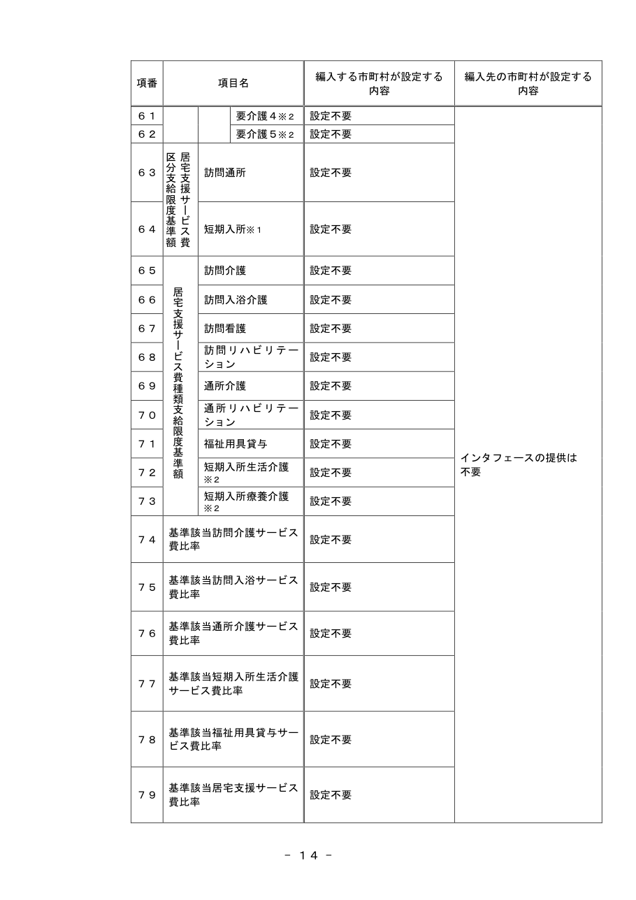
| 項番 | 項目名 | 属性 | 桁数 | 内容 | 必須 | 備考 | その他の列 |
|---|---|---|---|---|---|---|---|
| ６１ | 要介護４※２ | 設定不要 | 編入先の市町村が設定する内容: インタフェースの提供は不要 | ||||
| ６２ | 要介護５※２ | 設定不要 | 編入先の市町村が設定する内容: インタフェースの提供は不要 | ||||
| ６３ | 居宅支援サービス費区分支給限度基準額 > 訪問通所 | 設定不要 | 編入先の市町村が設定する内容: インタフェースの提供は不要 | ||||
| ６４ | 居宅支援サービス費区分支給限度基準額 > 短期入所※１ | 設定不要 | 編入先の市町村が設定する内容: インタフェースの提供は不要 | ||||
| ６５ | 居宅支援サービス費種類支給限度基準額 > 訪問介護 | 設定不要 | 編入先の市町村が設定する内容: インタフェースの提供は不要 | ||||
| ６６ | 居宅支援サービス費種類支給限度基準額 > 訪問入浴介護 | 設定不要 | 編入先の市町村が設定する内容: インタフェースの提供は不要 | ||||
| ６７ | 居宅支援サービス費種類支給限度基準額 > 訪問看護 | 設定不要 | 編入先の市町村が設定する内容: インタフェースの提供は不要 | ||||
| ６８ | 居宅支援サービス費種類支給限度基準額 > 訪問リハビリテーション | 設定不要 | 編入先の市町村が設定する内容: インタフェースの提供は不要 | ||||
| ６９ | 居宅支援サービス費種類支給限度基準額 > 通所介護 | 設定不要 | 編入先の市町村が設定する内容: インタフェースの提供は不要 | ||||
| ７０ | 居宅支援サービス費種類支給限度基準額 > 通所リハビリテーション | 設定不要 | 編入先の市町村が設定する内容: インタフェースの提供は不要 | ||||
| ７１ | 居宅支援サービス費種類支給限度基準額 > 福祉用具貸与 | 設定不要 | 編入先の市町村が設定する内容: インタフェースの提供は不要 | ||||
| ７２ | 居宅支援サービス費種類支給限度基準額 > 短期入所生活介護※２ | 設定不要 | 編入先の市町村が設定する内容: インタフェースの提供は不要 | ||||
| ７３ | 居宅支援サービス費種類支給限度基準額 > 短期入所療養介護※２ | 設定不要 | 編入先の市町村が設定する内容: インタフェースの提供は不要 | ||||
| ７４ | 基準該当訪問介護サービス費比率 | 設定不要 | 編入先の市町村が設定する内容: インタフェースの提供は不要 | ||||
| ７５ | 基準該当訪問入浴サービス費比率 | 設定不要 | 編入先の市町村が設定する内容: インタフェースの提供は不要 | ||||
| ７６ | 基準該当通所介護サービス費比率 | 設定不要 | 編入先の市町村が設定する内容: インタフェースの提供は不要 | ||||
| ７７ | 基準該当短期入所生活介護サービス費比率 | 設定不要 | 編入先の市町村が設定する内容: インタフェースの提供は不要 | ||||
| ７８ | 基準該当福祉用具貸与サービス費比率 | 設定不要 | 編入先の市町村が設定する内容: インタフェースの提供は不要 | ||||
| ７９ | 基準該当居宅支援サービス費比率 | 設定不要 | 編入先の市町村が設定する内容: インタフェースの提供は不要 |
| 項番 | 項目名 | 属性 | 桁数 | 内容 | 必須 | 備考 | その他の列 |
|---|---|---|---|---|---|---|---|
| ６１ | 要介護４※２ | 設定不要 | インタフェースの提供は不要 | ||||
| ６２ | 要介護５※２ | 設定不要 | インタフェースの提供は不要 | ||||
| ６３ | 居宅支援サービス費区分支給限度基準額 > 訪問通所 | 設定不要 | インタフェースの提供は不要 | ||||
| ６４ | 居宅支援サービス費区分支給限度基準額 > 短期入所※１ | 設定不要 | インタフェースの提供は不要 | ||||
| ６５ | 居宅支援サービス費種類支給限度基準額 > 訪問介護 | 設定不要 | インタフェースの提供は不要 | ||||
| ６６ | 居宅支援サービス費種類支給限度基準額 > 訪問入浴介護 | 設定不要 | インタフェースの提供は不要 | ||||
| ６７ | 居宅支援サービス費種類支給限度基準額 > 訪問看護 | 設定不要 | インタフェースの提供は不要 | ||||
| ６８ | 居宅支援サービス費種類支給限度基準額 > 訪問リハビリテーション | 設定不要 | インタフェースの提供は不要 | ||||
| ６９ | 居宅支援サービス費種類支給限度基準額 > 通所介護 | 設定不要 | インタフェースの提供は不要 | ||||
| ７０ | 居宅支援サービス費種類支給限度基準額 > 通所リハビリテーション | 設定不要 | インタフェースの提供は不要 | ||||
| ７１ | 居宅支援サービス費種類支給限度基準額 > 福祉用具貸与 | 設定不要 | インタフェースの提供は不要 | ||||
| ７２ | 居宅支援サービス費種類支給限度基準額 > 短期入所生活介護※２ | 設定不要 | インタフェースの提供は不要 | ||||
| ７３ | 居宅支援サービス費種類支給限度基準額 > 短期入所療養介護※２ | 設定不要 | インタフェースの提供は不要 | ||||
| ７４ | 基準該当訪問介護サービス費比率 | 設定不要 | インタフェースの提供は不要 | ||||
| ７５ | 基準該当訪問入浴サービス費比率 | 設定不要 | インタフェースの提供は不要 | ||||
| ７６ | 基準該当通所介護サービス費比率 | 設定不要 | インタフェースの提供は不要 | ||||
| ７７ | 基準該当短期入所生活介護サービス費比率 | 設定不要 | インタフェースの提供は不要 | ||||
| ７８ | 基準該当福祉用具貸与サービス費比率 | 設定不要 | インタフェースの提供は不要 | ||||
| ７９ | 基準該当居宅支援サービス費比率 | 設定不要 | インタフェースの提供は不要 |
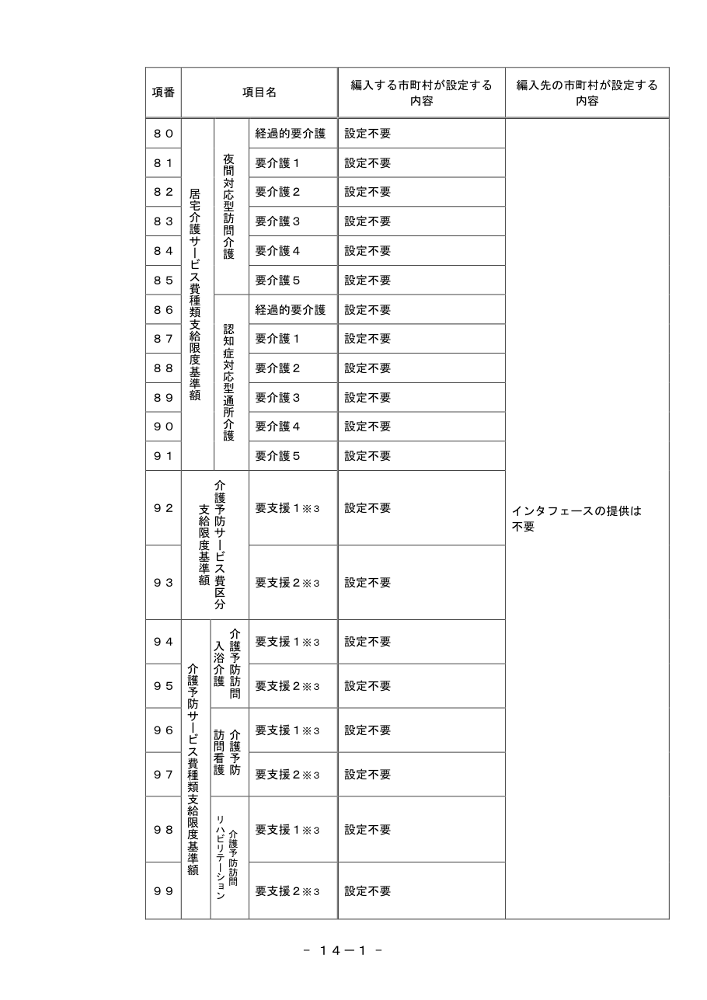
| 項番 | 項目名 | 属性 | 桁数 | 内容 | 必須 | 備考 | その他の列 |
|---|---|---|---|---|---|---|---|
| ８０ | 居宅介護サービス費種類支給限度基準額 > 夜間対応型訪問介護 > 経過的要介護 | 編入する市町村が設定する内容: 設定不要 編入先の市町村が設定する内容: インタフェースの提供は不要 | |||||
| ８１ | 居宅介護サービス費種類支給限度基準額 > 夜間対応型訪問介護 > 要介護１ | 編入する市町村が設定する内容: 設定不要 編入先の市町村が設定する内容: インタフェースの提供は不要 | |||||
| ８２ | 居宅介護サービス費種類支給限度基準額 > 夜間対応型訪問介護 > 要介護２ | 編入する市町村が設定する内容: 設定不要 編入先の市町村が設定する内容: インタフェースの提供は不要 | |||||
| ８３ | 居宅介護サービス費種類支給限度基準額 > 夜間対応型訪問介護 > 要介護３ | 編入する市町村が設定する内容: 設定不要 編入先の市町村が設定する内容: インタフェースの提供は不要 | |||||
| ８４ | 居宅介護サービス費種類支給限度基準額 > 夜間対応型訪問介護 > 要介護４ | 編入する市町村が設定する内容: 設定不要 編入先の市町村が設定する内容: インタフェースの提供は不要 | |||||
| ８５ | 居宅介護サービス費種類支給限度基準額 > 夜間対応型訪問介護 > 要介護５ | 編入する市町村が設定する内容: 設定不要 編入先の市町村が設定する内容: インタフェースの提供は不要 | |||||
| ８６ | 居宅介護サービス費種類支給限度基準額 > 認知症対応型通所介護 > 経過的要介護 | 編入する市町村が設定する内容: 設定不要 編入先の市町村が設定する内容: インタフェースの提供は不要 | |||||
| ８７ | 居宅介護サービス費種類支給限度基準額 > 認知症対応型通所介護 > 要介護１ | 編入する市町村が設定する内容: 設定不要 編入先の市町村が設定する内容: インタフェースの提供は不要 | |||||
| ８８ | 居宅介護サービス費種類支給限度基準額 > 認知症対応型通所介護 > 要介護２ | 編入する市町村が設定する内容: 設定不要 編入先の市町村が設定する内容: インタフェースの提供は不要 | |||||
| ８９ | 居宅介護サービス費種類支給限度基準額 > 認知症対応型通所介護 > 要介護３ | 編入する市町村が設定する内容: 設定不要 編入先の市町村が設定する内容: インタフェースの提供は不要 | |||||
| ９０ | 居宅介護サービス費種類支給限度基準額 > 認知症対応型通所介護 > 要介護４ | 編入する市町村が設定する内容: 設定不要 編入先の市町村が設定する内容: インタフェースの提供は不要 | |||||
| ９１ | 居宅介護サービス費種類支給限度基準額 > 認知症対応型通所介護 > 要介護５ | 編入する市町村が設定する内容: 設定不要 編入先の市町村が設定する内容: インタフェースの提供は不要 | |||||
| ９２ | 介護予防サービス費区分支給限度基準額 > 要支援１※３ | 編入する市町村が設定する内容: 設定不要 編入先の市町村が設定する内容: インタフェースの提供は不要 | |||||
| ９３ | 介護予防サービス費区分支給限度基準額 > 要支援２※３ | 編入する市町村が設定する内容: 設定不要 編入先の市町村が設定する内容: インタフェースの提供は不要 | |||||
| ９４ | 介護予防サービス費種類支給限度基準額 > 介護予防訪問入浴介護 > 要支援１※３ | 編入する市町村が設定する内容: 設定不要 編入先の市町村が設定する内容: インタフェースの提供は不要 | |||||
| ９５ | 介護予防サービス費種類支給限度基準額 > 介護予防訪問入浴介護 > 要支援２※３ | 編入する市町村が設定する内容: 設定不要 編入先の市町村が設定する内容: インタフェースの提供は不要 | |||||
| ９６ | 介護予防サービス費種類支給限度基準額 > 介護予防訪問看護 > 要支援１※３ | 編入する市町村が設定する内容: 設定不要 編入先の市町村が設定する内容: インタフェースの提供は不要 | |||||
| ９７ | 介護予防サービス費種類支給限度基準額 > 介護予防訪問看護 > 要支援２※３ | 編入する市町村が設定する内容: 設定不要 編入先の市町村が設定する内容: インタフェースの提供は不要 | |||||
| ９８ | 介護予防サービス費種類支給限度基準額 > 介護予防訪問リハビリテーション > 要支援１※３ | 編入する市町村が設定する内容: 設定不要 編入先の市町村が設定する内容: インタフェースの提供は不要 | |||||
| ９９ | 介護予防サービス費種類支給限度基準額 > 介護予防訪問リハビリテーション > 要支援２※３ | 編入する市町村が設定する内容: 設定不要 編入先の市町村が設定する内容: インタフェースの提供は不要 |
| 項番 | 項目名 | 属性 | 桁数 | 内容 | 必須 | 備考 | その他の列 |
|---|---|---|---|---|---|---|---|
| ８０ | 居宅介護サービス費種類支給限度基準額 > 夜間対応型訪問介護 > 経過的要介護 | 設定不要 | |||||
| ８１ | 居宅介護サービス費種類支給限度基準額 > 夜間対応型訪問介護 > 要介護１ | 設定不要 | |||||
| ８２ | 居宅介護サービス費種類支給限度基準額 > 夜間対応型訪問介護 > 要介護２ | 設定不要 | |||||
| ８３ | 居宅介護サービス費種類支給限度基準額 > 夜間対応型訪問介護 > 要介護３ | 設定不要 | |||||
| ８４ | 居宅介護サービス費種類支給限度基準額 > 夜間対応型訪問介護 > 要介護４ | 設定不要 | |||||
| ８５ | 居宅介護サービス費種類支給限度基準額 > 夜間対応型訪問介護 > 要介護５ | 設定不要 | |||||
| ８６ | 居宅介護サービス費種類支給限度基準額 > 認知症対応型通所介護 > 経過的要介護 | 設定不要 | |||||
| ８７ | 居宅介護サービス費種類支給限度基準額 > 認知症対応型通所介護 > 要介護１ | 設定不要 | |||||
| ８８ | 居宅介護サービス費種類支給限度基準額 > 認知症対応型通所介護 > 要介護２ | 設定不要 | |||||
| ８９ | 居宅介護サービス費種類支給限度基準額 > 認知症対応型通所介護 > 要介護３ | 設定不要 | |||||
| ９０ | 居宅介護サービス費種類支給限度基準額 > 認知症対応型通所介護 > 要介護４ | 設定不要 | |||||
| ９１ | 居宅介護サービス費種類支給限度基準額 > 認知症対応型通所介護 > 要介護５ | 設定不要 | |||||
| ９２ | 介護予防サービス費区分支給限度基準額 > 要支援１※３ | 設定不要 | インタフェースの提供は不要 | ||||
| ９３ | 介護予防サービス費区分支給限度基準額 > 要支援２※３ | 設定不要 | インタフェースの提供は不要 | ||||
| ９４ | 介護予防サービス費種類支給限度基準額 > 介護予防訪問入浴介護 > 要支援１※３ | 設定不要 | インタフェースの提供は不要 | ||||
| ９５ | 介護予防サービス費種類支給限度基準額 > 介護予防訪問入浴介護 > 要支援２※３ | 設定不要 | インタフェースの提供は不要 | ||||
| ９６ | 介護予防サービス費種類支給限度基準額 > 介護予防訪問看護 > 要支援１※３ | 設定不要 | インタフェースの提供は不要 | ||||
| ９７ | 介護予防サービス費種類支給限度基準額 > 介護予防訪問看護 > 要支援２※３ | 設定不要 | インタフェースの提供は不要 | ||||
| ９８ | 介護予防サービス費種類支給限度基準額 > 介護予防訪問リハビリテーション > 要支援１※３ | 設定不要 | インタフェースの提供は不要 | ||||
| ９９ | 介護予防サービス費種類支給限度基準額 > 介護予防訪問リハビリテーション > 要支援２※３ | 設定不要 | インタフェースの提供は不要 |
| 項番 | 項目名 | 属性 | 桁数 | 内容 | 必須 | 備考 | その他の列 |
|---|---|---|---|---|---|---|---|
| 100 | 介護予防サービス費種類支給限度基準額 > 介護予防福祉用具貸与 > 要支援1※3 | 設定不要 | 編入先の市町村が設定する内容: インタフェースの提供は不要 | ||||
| 101 | 介護予防サービス費種類支給限度基準額 > 介護予防福祉用具貸与 > 要支援2※3 | 設定不要 | 編入先の市町村が設定する内容: インタフェースの提供は不要 | ||||
| 102 | 介護予防サービス費種類支給限度基準額 > 介護予防短期入所生活介護 > 要支援1※3 | 設定不要 | 編入先の市町村が設定する内容: インタフェースの提供は不要 | ||||
| 103 | 介護予防サービス費種類支給限度基準額 > 介護予防短期入所生活介護 > 要支援2※3 | 設定不要 | 編入先の市町村が設定する内容: インタフェースの提供は不要 | ||||
| 104 | 介護予防サービス費種類支給限度基準額 > 介護予防短期入所療養介護 > 要支援1※3 | 設定不要 | 編入先の市町村が設定する内容: インタフェースの提供は不要 | ||||
| 105 | 介護予防サービス費種類支給限度基準額 > 介護予防短期入所療養介護 > 要支援2※3 | 設定不要 | 編入先の市町村が設定する内容: インタフェースの提供は不要 | ||||
| 106 | 介護予防サービス費種類支給限度基準額 > 介護予防認知症対応型通所介護 > 要支援1 | 設定不要 | 編入先の市町村が設定する内容: インタフェースの提供は不要 | ||||
| 107 | 介護予防サービス費種類支給限度基準額 > 介護予防認知症対応型通所介護 > 要支援2 | 設定不要 | 編入先の市町村が設定する内容: インタフェースの提供は不要 | ||||
| 108 | 基準該当介護予防訪問介護サービス費比率※3 | 設定不要 | 編入先の市町村が設定する内容: インタフェースの提供は不要 | ||||
| 109 | 基準該当介護予防訪問入浴サービス費比率※3 | 設定不要 | 編入先の市町村が設定する内容: インタフェースの提供は不要 | ||||
| 110 | 基準該当介護予防通所介護サービス費比率※3 | 設定不要 | 編入先の市町村が設定する内容: インタフェースの提供は不要 | ||||
| 111 | 基準該当介護予防短期入所生活介護サービス費比率※3 | 設定不要 | 編入先の市町村が設定する内容: インタフェースの提供は不要 | ||||
| 112 | 基準該当介護予防福祉用具貸与サービス費比率※3 | 設定不要 | 編入先の市町村が設定する内容: インタフェースの提供は不要 | ||||
| 113 | 基準該当介護予防支援サービス費比率※3 | 設定不要 | 編入先の市町村が設定する内容: インタフェースの提供は不要 |
| 項番 | 項目名 | 属性 | 桁数 | 内容 | 必須 | 備考 | その他の列 |
|---|---|---|---|---|---|---|---|
| 100 | 介護予防サービス費種類支給限度基準額 > 介護予防福祉用具貸与 > 要支援1※3 | 設定不要 | インタフェースの提供は不要 | ||||
| 101 | 介護予防サービス費種類支給限度基準額 > 介護予防福祉用具貸与 > 要支援2※3 | 設定不要 | インタフェースの提供は不要 | ||||
| 102 | 介護予防サービス費種類支給限度基準額 > 介護予防短期入所生活介護 > 要支援1※3 | 設定不要 | インタフェースの提供は不要 | ||||
| 103 | 介護予防サービス費種類支給限度基準額 > 介護予防短期入所生活介護 > 要支援2※3 | 設定不要 | インタフェースの提供は不要 | ||||
| 104 | 介護予防サービス費種類支給限度基準額 > 介護予防短期入所療養介護 > 要支援1※3 | 設定不要 | インタフェースの提供は不要 | ||||
| 105 | 介護予防サービス費種類支給限度基準額 > 介護予防短期入所療養介護 > 要支援2※3 | 設定不要 | インタフェースの提供は不要 | ||||
| 106 | 介護予防サービス費種類支給限度基準額 > 介護予防認知症対応型通所介護 > 要支援1 | 設定不要 | インタフェースの提供は不要 | ||||
| 107 | 介護予防サービス費種類支給限度基準額 > 介護予防認知症対応型通所介護 > 要支援2 | 設定不要 | インタフェースの提供は不要 | ||||
| 108 | 基準該当介護予防訪問介護サービス費比率※3 | 設定不要 | インタフェースの提供は不要 | ||||
| 109 | 基準該当介護予防訪問入浴サービス費比率※3 | 設定不要 | インタフェースの提供は不要 | ||||
| 110 | 基準該当介護予防通所介護サービス費比率※3 | 設定不要 | インタフェースの提供は不要 | ||||
| 111 | 基準該当介護予防短期入所生活介護サービス費比率※3 | 設定不要 | インタフェースの提供は不要 | ||||
| 112 | 基準該当介護予防福祉用具貸与サービス費比率※3 | 設定不要 | インタフェースの提供は不要 | ||||
| 113 | 基準該当介護予防支援サービス費比率※3 | 設定不要 | インタフェースの提供は不要 |
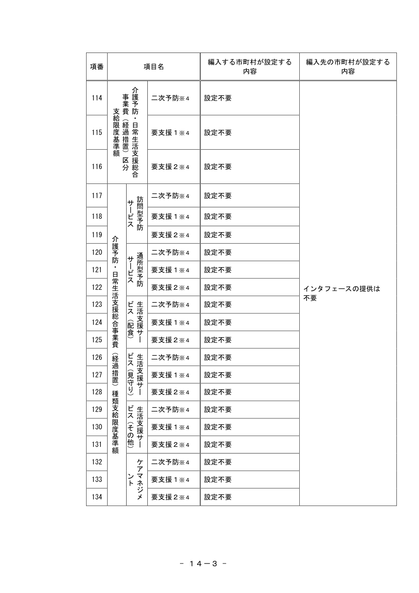
| 項番 | 項目名 | 属性 | 桁数 | 内容 | 必須 | 備考 | その他の列 |
|---|---|---|---|---|---|---|---|
| 114 | 支給限度基準額 > 介護予防・日常生活支援総合事業費（経過措置）区分 > 二次予防※４ | 編入する市町村が設定する内容: 設定不要 編入先の市町村が設定する内容: インタフェースの提供は不要 | |||||
| 115 | 支給限度基準額 > 介護予防・日常生活支援総合事業費（経過措置）区分 > 要支援１※４ | 編入する市町村が設定する内容: 設定不要 編入先の市町村が設定する内容: インタフェースの提供は不要 | |||||
| 116 | 支給限度基準額 > 介護予防・日常生活支援総合事業費（経過措置）区分 > 要支援２※４ | 編入する市町村が設定する内容: 設定不要 編入先の市町村が設定する内容: インタフェースの提供は不要 | |||||
| 117 | 介護予防・日常生活支援総合事業費（経過措置）種類支給限度基準額 > 訪問型予防サービス > 二次予防※４ | 編入する市町村が設定する内容: 設定不要 編入先の市町村が設定する内容: インタフェースの提供は不要 | |||||
| 118 | 介護予防・日常生活支援総合事業費（経過措置）種類支給限度基準額 > 訪問型予防サービス > 要支援１※４ | 編入する市町村が設定する内容: 設定不要 編入先の市町村が設定する内容: インタフェースの提供は不要 | |||||
| 119 | 介護予防・日常生活支援総合事業費（経過措置）種類支給限度基準額 > 訪問型予防サービス > 要支援２※４ | 編入する市町村が設定する内容: 設定不要 編入先の市町村が設定する内容: インタフェースの提供は不要 | |||||
| 120 | 介護予防・日常生活支援総合事業費（経過措置）種類支給限度基準額 > 通所型予防サービス > 二次予防※４ | 編入する市町村が設定する内容: 設定不要 編入先の市町村が設定する内容: インタフェースの提供は不要 | |||||
| 121 | 介護予防・日常生活支援総合事業費（経過措置）種類支給限度基準額 > 通所型予防サービス > 要支援１※４ | 編入する市町村が設定する内容: 設定不要 編入先の市町村が設定する内容: インタフェースの提供は不要 | |||||
| 122 | 介護予防・日常生活支援総合事業費（経過措置）種類支給限度基準額 > 通所型予防サービス > 要支援２※４ | 編入する市町村が設定する内容: 設定不要 編入先の市町村が設定する内容: インタフェースの提供は不要 | |||||
| 123 | 介護予防・日常生活支援総合事業費（経過措置）種類支給限度基準額 > 生活支援サービス（配食） > 二次予防※４ | 編入する市町村が設定する内容: 設定不要 編入先の市町村が設定する内容: インタフェースの提供は不要 | |||||
| 124 | 介護予防・日常生活支援総合事業費（経過措置）種類支給限度基準額 > 生活支援サービス（配食） > 要支援１※４ | 編入する市町村が設定する内容: 設定不要 編入先の市町村が設定する内容: インタフェースの提供は不要 | |||||
| 125 | 介護予防・日常生活支援総合事業費（経過措置）種類支給限度基準額 > 生活支援サービス（配食） > 要支援２※４ | 編入する市町村が設定する内容: 設定不要 編入先の市町村が設定する内容: インタフェースの提供は不要 | |||||
| 126 | 介護予防・日常生活支援総合事業費（経過措置）種類支給限度基準額 > 生活支援サービス（見守り） > 二次予防※４ | 編入する市町村が設定する内容: 設定不要 編入先の市町村が設定する内容: インタフェースの提供は不要 | |||||
| 127 | 介護予防・日常生活支援総合事業費（経過措置）種類支給限度基準額 > 生活支援サービス（見守り） > 要支援１※４ | 編入する市町村が設定する内容: 設定不要 編入先の市町村が設定する内容: インタフェースの提供は不要 | |||||
| 128 | 介護予防・日常生活支援総合事業費（経過措置）種類支給限度基準額 > 生活支援サービス（見守り） > 要支援２※４ | 編入する市町村が設定する内容: 設定不要 編入先の市町村が設定する内容: インタフェースの提供は不要 | |||||
| 129 | 介護予防・日常生活支援総合事業費（経過措置）種類支給限度基準額 > 生活支援サービス（その他） > 二次予防※４ | 編入する市町村が設定する内容: 設定不要 編入先の市町村が設定する内容: インタフェースの提供は不要 | |||||
| 130 | 介護予防・日常生活支援総合事業費（経過措置）種類支給限度基準額 > 生活支援サービス（その他） > 要支援１※４ | 編入する市町村が設定する内容: 設定不要 編入先の市町村が設定する内容: インタフェースの提供は不要 | |||||
| 131 | 介護予防・日常生活支援総合事業費（経過措置）種類支給限度基準額 > 生活支援サービス（その他） > 要支援２※４ | 編入する市町村が設定する内容: 設定不要 編入先の市町村が設定する内容: インタフェースの提供は不要 | |||||
| 132 | 介護予防・日常生活支援総合事業費（経過措置）種類支給限度基準額 > ケアマネジメント > 二次予防※４ | 編入する市町村が設定する内容: 設定不要 編入先の市町村が設定する内容: インタフェースの提供は不要 | |||||
| 133 | 介護予防・日常生活支援総合事業費（経過措置）種類支給限度基準額 > ケアマネジメント > 要支援１※４ | 編入する市町村が設定する内容: 設定不要 編入先の市町村が設定する内容: インタフェースの提供は不要 | |||||
| 134 | 介護予防・日常生活支援総合事業費（経過措置）種類支給限度基準額 > ケアマネジメント > 要支援２※４ | 編入する市町村が設定する内容: 設定不要 編入先の市町村が設定する内容: インタフェースの提供は不要 |
| 項番 | 項目名 | 属性 | 桁数 | 内容 | 必須 | 備考 | その他の列 |
|---|---|---|---|---|---|---|---|
| 114 | 支給限度基準額 > 介護予防・日常生活支援総合事業費（経過措置）区分 > 二次予防※４ | 設定不要 | インタフェースの提供は不要 | ||||
| 115 | 支給限度基準額 > 介護予防・日常生活支援総合事業費（経過措置）区分 > 要支援１※４ | 設定不要 | インタフェースの提供は不要 | ||||
| 116 | 支給限度基準額 > 介護予防・日常生活支援総合事業費（経過措置）区分 > 要支援２※４ | 設定不要 | インタフェースの提供は不要 | ||||
| 117 | 介護予防・日常生活支援総合事業費（経過措置）種類支給限度基準額 > 訪問型予防サービス > 二次予防※４ | 設定不要 | インタフェースの提供は不要 | ||||
| 118 | 介護予防・日常生活支援総合事業費（経過措置）種類支給限度基準額 > 訪問型予防サービス > 要支援１※４ | 設定不要 | インタフェースの提供は不要 | ||||
| 119 | 介護予防・日常生活支援総合事業費（経過措置）種類支給限度基準額 > 訪問型予防サービス > 要支援２※４ | 設定不要 | インタフェースの提供は不要 | ||||
| 120 | 介護予防・日常生活支援総合事業費（経過措置）種類支給限度基準額 > 通所型予防サービス > 二次予防※４ | 設定不要 | インタフェースの提供は不要 | ||||
| 121 | 介護予防・日常生活支援総合事業費（経過措置）種類支給限度基準額 > 通所型予防サービス > 要支援１※４ | 設定不要 | インタフェースの提供は不要 | ||||
| 122 | 介護予防・日常生活支援総合事業費（経過措置）種類支給限度基準額 > 通所型予防サービス > 要支援２※４ | 設定不要 | インタフェースの提供は不要 | ||||
| 123 | 介護予防・日常生活支援総合事業費（経過措置）種類支給限度基準額 > 生活支援サービス（配食） > 二次予防※４ | 設定不要 | インタフェースの提供は不要 | ||||
| 124 | 介護予防・日常生活支援総合事業費（経過措置）種類支給限度基準額 > 生活支援サービス（配食） > 要支援１※４ | 設定不要 | インタフェースの提供は不要 | ||||
| 125 | 介護予防・日常生活支援総合事業費（経過措置）種類支給限度基準額 > 生活支援サービス（配食） > 要支援２※４ | 設定不要 | インタフェースの提供は不要 | ||||
| 126 | 介護予防・日常生活支援総合事業費（経過措置）種類支給限度基準額 > 生活支援サービス（見守り） > 二次予防※４ | 設定不要 | インタフェースの提供は不要 | ||||
| 127 | 介護予防・日常生活支援総合事業費（経過措置）種類支給限度基準額 > 生活支援サービス（見守り） > 要支援１※４ | 設定不要 | インタフェースの提供は不要 | ||||
| 128 | 介護予防・日常生活支援総合事業費（経過措置）種類支給限度基準額 > 生活支援サービス（見守り） > 要支援２※４ | 設定不要 | インタフェースの提供は不要 | ||||
| 129 | 介護予防・日常生活支援総合事業費（経過措置）種類支給限度基準額 > 生活支援サービス（その他） > 二次予防※４ | 設定不要 | インタフェースの提供は不要 | ||||
| 130 | 介護予防・日常生活支援総合事業費（経過措置）種類支給限度基準額 > 生活支援サービス（その他） > 要支援１※４ | 設定不要 | インタフェースの提供は不要 | ||||
| 131 | 介護予防・日常生活支援総合事業費（経過措置）種類支給限度基準額 > 生活支援サービス（その他） > 要支援２※４ | 設定不要 | インタフェースの提供は不要 | ||||
| 132 | 介護予防・日常生活支援総合事業費（経過措置）種類支給限度基準額 > ケアマネジメント > 二次予防※４ | 設定不要 | インタフェースの提供は不要 | ||||
| 133 | 介護予防・日常生活支援総合事業費（経過措置）種類支給限度基準額 > ケアマネジメント > 要支援１※４ | 設定不要 | インタフェースの提供は不要 | ||||
| 134 | 介護予防・日常生活支援総合事業費（経過措置）種類支給限度基準額 > ケアマネジメント > 要支援２※４ | 設定不要 | インタフェースの提供は不要 |
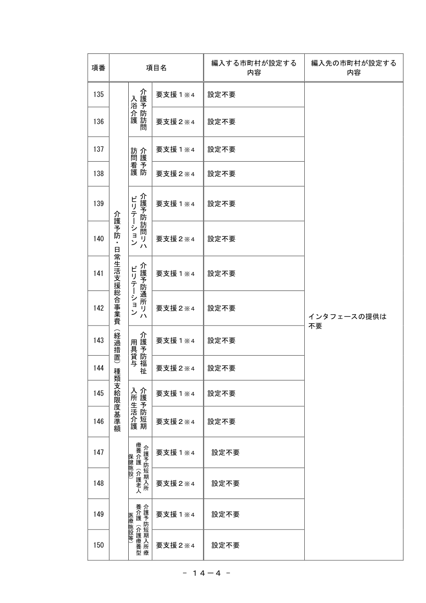
| 項番 | 項目名 | 属性 | 桁数 | 内容 | 必須 | 備考 | その他の列 |
|---|---|---|---|---|---|---|---|
| 135 | 介護予防・日常生活支援総合事業費（経過措置）種類支給限度基準額 > 介護予防訪問入浴介護 > 要支援1※4 | 編入する市町村が設定する内容: 設定不要 編入先の市町村が設定する内容: インタフェースの提供は不要 | |||||
| 136 | 介護予防・日常生活支援総合事業費（経過措置）種類支給限度基準額 > 介護予防訪問入浴介護 > 要支援2※4 | 編入する市町村が設定する内容: 設定不要 編入先の市町村が設定する内容: インタフェースの提供は不要 | |||||
| 137 | 介護予防・日常生活支援総合事業費（経過措置）種類支給限度基準額 > 介護予防訪問看護 > 要支援1※4 | 編入する市町村が設定する内容: 設定不要 編入先の市町村が設定する内容: インタフェースの提供は不要 | |||||
| 138 | 介護予防・日常生活支援総合事業費（経過措置）種類支給限度基準額 > 介護予防訪問看護 > 要支援2※4 | 編入する市町村が設定する内容: 設定不要 編入先の市町村が設定する内容: インタフェースの提供は不要 | |||||
| 139 | 介護予防・日常生活支援総合事業費（経過措置）種類支給限度基準額 > 介護予防訪問リハビリテーション > 要支援1※4 | 編入する市町村が設定する内容: 設定不要 編入先の市町村が設定する内容: インタフェースの提供は不要 | |||||
| 140 | 介護予防・日常生活支援総合事業費（経過措置）種類支給限度基準額 > 介護予防訪問リハビリテーション > 要支援2※4 | 編入する市町村が設定する内容: 設定不要 編入先の市町村が設定する内容: インタフェースの提供は不要 | |||||
| 141 | 介護予防・日常生活支援総合事業費（経過措置）種類支給限度基準額 > 介護予防通所リハビリテーション > 要支援1※4 | 編入する市町村が設定する内容: 設定不要 編入先の市町村が設定する内容: インタフェースの提供は不要 | |||||
| 142 | 介護予防・日常生活支援総合事業費（経過措置）種類支給限度基準額 > 介護予防通所リハビリテーション > 要支援2※4 | 編入する市町村が設定する内容: 設定不要 編入先の市町村が設定する内容: インタフェースの提供は不要 | |||||
| 143 | 介護予防・日常生活支援総合事業費（経過措置）種類支給限度基準額 > 介護予防福祉用具貸与 > 要支援1※4 | 編入する市町村が設定する内容: 設定不要 編入先の市町村が設定する内容: インタフェースの提供は不要 | |||||
| 144 | 介護予防・日常生活支援総合事業費（経過措置）種類支給限度基準額 > 介護予防福祉用具貸与 > 要支援2※4 | 編入する市町村が設定する内容: 設定不要 編入先の市町村が設定する内容: インタフェースの提供は不要 | |||||
| 145 | 介護予防・日常生活支援総合事業費（経過措置）種類支給限度基準額 > 介護予防短期入所生活介護 > 要支援1※4 | 編入する市町村が設定する内容: 設定不要 編入先の市町村が設定する内容: インタフェースの提供は不要 | |||||
| 146 | 介護予防・日常生活支援総合事業費（経過措置）種類支給限度基準額 > 介護予防短期入所生活介護 > 要支援2※4 | 編入する市町村が設定する内容: 設定不要 編入先の市町村が設定する内容: インタフェースの提供は不要 | |||||
| 147 | 介護予防・日常生活支援総合事業費（経過措置）種類支給限度基準額 > 介護予防短期入所療養介護（介護老人保健施設） > 要支援1※4 | 編入する市町村が設定する内容: 設定不要 編入先の市町村が設定する内容: インタフェースの提供は不要 | |||||
| 148 | 介護予防・日常生活支援総合事業費（経過措置）種類支給限度基準額 > 介護予防短期入所療養介護（介護老人保健施設） > 要支援2※4 | 編入する市町村が設定する内容: 設定不要 編入先の市町村が設定する内容: インタフェースの提供は不要 | |||||
| 149 | 介護予防・日常生活支援総合事業費（経過措置）種類支給限度基準額 > 介護予防短期入所療養介護（介護療養型医療施設等） > 要支援1※4 | 編入する市町村が設定する内容: 設定不要 編入先の市町村が設定する内容: インタフェースの提供は不要 | |||||
| 150 | 介護予防・日常生活支援総合事業費（経過措置）種類支給限度基準額 > 介護予防短期入所療養介護（介護療養型医療施設等） > 要支援2※4 | 編入する市町村が設定する内容: 設定不要 編入先の市町村が設定する内容: インタフェースの提供は不要 |
| 項番 | 項目名 | 属性 | 桁数 | 内容 | 必須 | 備考 | その他の列 |
|---|---|---|---|---|---|---|---|
| 135 | 介護予防・日常生活支援総合事業費（経過措置）種類支給限度基準額 > 介護予防訪問入浴介護 > 要支援１※４ | 設定不要 | インタフェースの提供は不要 | ||||
| 136 | 介護予防・日常生活支援総合事業費（経過措置）種類支給限度基準額 > 介護予防訪問入浴介護 > 要支援２※４ | 設定不要 | インタフェースの提供は不要 | ||||
| 137 | 介護予防・日常生活支援総合事業費（経過措置）種類支給限度基準額 > 介護予防訪問看護 > 要支援１※４ | 設定不要 | インタフェースの提供は不要 | ||||
| 138 | 介護予防・日常生活支援総合事業費（経過措置）種類支給限度基準額 > 介護予防訪問看護 > 要支援２※４ | 設定不要 | インタフェースの提供は不要 | ||||
| 139 | 介護予防・日常生活支援総合事業費（経過措置）種類支給限度基準額 > 介護予防訪問リハビリテーション > 要支援１※４ | 設定不要 | インタフェースの提供は不要 | ||||
| 140 | 介護予防・日常生活支援総合事業費（経過措置）種類支給限度基準額 > 介護予防訪問リハビリテーション > 要支援２※４ | 設定不要 | インタフェースの提供は不要 | ||||
| 141 | 介護予防・日常生活支援総合事業費（経過措置）種類支給限度基準額 > 介護予防通所リハビリテーション > 要支援１※４ | 設定不要 | インタフェースの提供は不要 | ||||
| 142 | 介護予防・日常生活支援総合事業費（経過措置）種類支給限度基準額 > 介護予防通所リハビリテーション > 要支援２※４ | 設定不要 | インタフェースの提供は不要 | ||||
| 143 | 介護予防・日常生活支援総合事業費（経過措置）種類支給限度基準額 > 介護予防福祉用具貸与 > 要支援１※４ | 設定不要 | インタフェースの提供は不要 | ||||
| 144 | 介護予防・日常生活支援総合事業費（経過措置）種類支給限度基準額 > 介護予防福祉用具貸与 > 要支援２※４ | 設定不要 | インタフェースの提供は不要 | ||||
| 145 | 介護予防・日常生活支援総合事業費（経過措置）種類支給限度基準額 > 介護予防短期入所生活介護 > 要支援１※４ | 設定不要 | インタフェースの提供は不要 | ||||
| 146 | 介護予防・日常生活支援総合事業費（経過措置）種類支給限度基準額 > 介護予防短期入所生活介護 > 要支援２※４ | 設定不要 | インタフェースの提供は不要 | ||||
| 147 | 介護予防・日常生活支援総合事業費（経過措置）種類支給限度基準額 > 介護予防短期入所療養介護（介護老人保健施設） > 要支援１※４ | 設定不要 | インタフェースの提供は不要 | ||||
| 148 | 介護予防・日常生活支援総合事業費（経過措置）種類支給限度基準額 > 介護予防短期入所療養介護（介護老人保健施設） > 要支援２※４ | 設定不要 | インタフェースの提供は不要 | ||||
| 149 | 介護予防・日常生活支援総合事業費（経過措置）種類支給限度基準額 > 介護予防短期入所療養介護（介護療養型医療施設等） > 要支援１※４ | 設定不要 | インタフェースの提供は不要 | ||||
| 150 | 介護予防・日常生活支援総合事業費（経過措置）種類支給限度基準額 > 介護予防短期入所療養介護（介護療養型医療施設等） > 要支援２※４ | 設定不要 | インタフェースの提供は不要 |
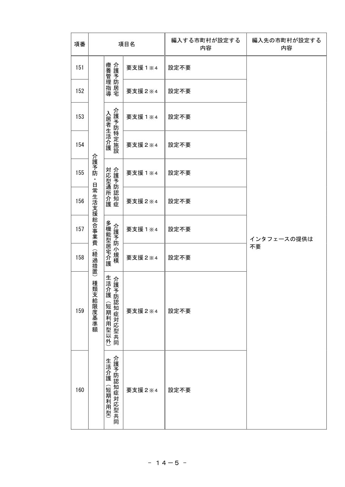
| 項番 | 項目名 | 属性 | 桁数 | 内容 | 必須 | 備考 | その他の列 |
|---|---|---|---|---|---|---|---|
| 151 | 介護予防・日常生活支援総合事業費（経過措置）種類支給限度基準額 > 介護予防居宅療養管理指導 > 要支援1※4 | 編入する市町村が設定する内容: 設定不要 編入先の市町村が設定する内容: インタフェースの提供は不要 | |||||
| 152 | 介護予防・日常生活支援総合事業費（経過措置）種類支給限度基準額 > 介護予防居宅療養管理指導 > 要支援2※4 | 編入する市町村が設定する内容: 設定不要 編入先の市町村が設定する内容: インタフェースの提供は不要 | |||||
| 153 | 介護予防・日常生活支援総合事業費（経過措置）種類支給限度基準額 > 介護予防特定施設入居者生活介護 > 要支援1※4 | 編入する市町村が設定する内容: 設定不要 編入先の市町村が設定する内容: インタフェースの提供は不要 | |||||
| 154 | 介護予防・日常生活支援総合事業費（経過措置）種類支給限度基準額 > 介護予防特定施設入居者生活介護 > 要支援2※4 | 編入する市町村が設定する内容: 設定不要 編入先の市町村が設定する内容: インタフェースの提供は不要 | |||||
| 155 | 介護予防・日常生活支援総合事業費（経過措置）種類支給限度基準額 > 介護予防認知症対応型通所介護 > 要支援1※4 | 編入する市町村が設定する内容: 設定不要 編入先の市町村が設定する内容: インタフェースの提供は不要 | |||||
| 156 | 介護予防・日常生活支援総合事業費（経過措置）種類支給限度基準額 > 介護予防認知症対応型通所介護 > 要支援2※4 | 編入する市町村が設定する内容: 設定不要 編入先の市町村が設定する内容: インタフェースの提供は不要 | |||||
| 157 | 介護予防・日常生活支援総合事業費（経過措置）種類支給限度基準額 > 介護予防小規模多機能型居宅介護 > 要支援1※4 | 編入する市町村が設定する内容: 設定不要 編入先の市町村が設定する内容: インタフェースの提供は不要 | |||||
| 158 | 介護予防・日常生活支援総合事業費（経過措置）種類支給限度基準額 > 介護予防小規模多機能型居宅介護 > 要支援2※4 | 編入する市町村が設定する内容: 設定不要 編入先の市町村が設定する内容: インタフェースの提供は不要 | |||||
| 159 | 介護予防・日常生活支援総合事業費（経過措置）種類支給限度基準額 > 介護予防認知症対応型共同生活介護（短期利用型以外） > 要支援2※4 | 編入する市町村が設定する内容: 設定不要 編入先の市町村が設定する内容: インタフェースの提供は不要 | |||||
| 160 | 介護予防・日常生活支援総合事業費（経過措置）種類支給限度基準額 > 介護予防認知症対応型共同生活介護（短期利用型） > 要支援2※4 | 編入する市町村が設定する内容: 設定不要 編入先の市町村が設定する内容: インタフェースの提供は不要 |
| 項番 | 項目名 | 属性 | 桁数 | 内容 | 必須 | 備考 | その他の列 |
|---|---|---|---|---|---|---|---|
| 151 | 介護予防・日常生活支援総合事業費（経過措置）種類支給限度基準額 > 介護予防居宅療養管理指導 > 要支援１※４ | 設定不要 | 編入先の市町村が設定する内容: インタフェースの提供は不要 | ||||
| 152 | 介護予防・日常生活支援総合事業費（経過措置）種類支給限度基準額 > 介護予防居宅療養管理指導 > 要支援２※４ | 設定不要 | 編入先の市町村が設定する内容: インタフェースの提供は不要 | ||||
| 153 | 介護予防・日常生活支援総合事業費（経過措置）種類支給限度基準額 > 介護予防特定施設入居者生活介護 > 要支援１※４ | 設定不要 | 編入先の市町村が設定する内容: インタフェースの提供は不要 | ||||
| 154 | 介護予防・日常生活支援総合事業費（経過措置）種類支給限度基準額 > 介護予防特定施設入居者生活介護 > 要支援２※４ | 設定不要 | 編入先の市町村が設定する内容: インタフェースの提供は不要 | ||||
| 155 | 介護予防・日常生活支援総合事業費（経過措置）種類支給限度基準額 > 介護予防認知症対応型通所介護 > 要支援１※４ | 設定不要 | 編入先の市町村が設定する内容: インタフェースの提供は不要 | ||||
| 156 | 介護予防・日常生活支援総合事業費（経過措置）種類支給限度基準額 > 介護予防認知症対応型通所介護 > 要支援２※４ | 設定不要 | 編入先の市町村が設定する内容: インタフェースの提供は不要 | ||||
| 157 | 介護予防・日常生活支援総合事業費（経過措置）種類支給限度基準額 > 介護予防小規模多機能型居宅介護 > 要支援１※４ | 設定不要 | 編入先の市町村が設定する内容: インタフェースの提供は不要 | ||||
| 158 | 介護予防・日常生活支援総合事業費（経過措置）種類支給限度基準額 > 介護予防小規模多機能型居宅介護 > 要支援２※４ | 設定不要 | 編入先の市町村が設定する内容: インタフェースの提供は不要 | ||||
| 159 | 介護予防・日常生活支援総合事業費（経過措置）種類支給限度基準額 > 介護予防認知症対応型共同生活介護（短期利用型以外） > 要支援２※４ | 設定不要 | 編入先の市町村が設定する内容: インタフェースの提供は不要 | ||||
| 160 | 介護予防・日常生活支援総合事業費（経過措置）種類支給限度基準額 > 介護予防認知症対応型共同生活介護（短期利用型） > 要支援２※４ | 設定不要 | 編入先の市町村が設定する内容: インタフェースの提供は不要 |
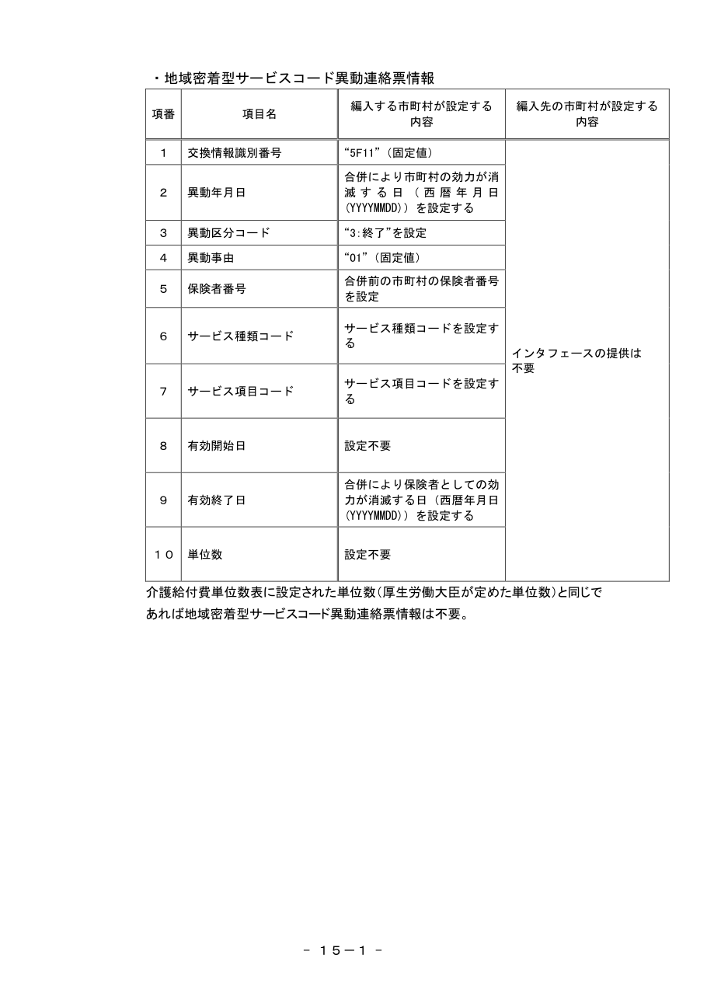
| 項番 | 項目名 | 属性 | 桁数 | 内容 | 必須 | 備考 | その他の列 |
|---|---|---|---|---|---|---|---|
| １ | 交換情報識別番号 | “5F11”（固定値） | 編入先の市町村が設定する内容: インタフェースの提供は不要 | ||||
| ２ | 異動年月日 | 合併により市町村の効力が消滅する日（西暦年月日(YYYYMMDD)）を設定する | 編入先の市町村が設定する内容: インタフェースの提供は不要 | ||||
| ３ | 異動区分コード | “3:終了”を設定 | 編入先の市町村が設定する内容: インタフェースの提供は不要 | ||||
| ４ | 異動事由 | “01”（固定値） | 編入先の市町村が設定する内容: インタフェースの提供は不要 | ||||
| ５ | 保険者番号 | 合併前の市町村の保険者番号を設定 | 編入先の市町村が設定する内容: インタフェースの提供は不要 | ||||
| ６ | サービス種類コード | サービス種類コードを設定する | 編入先の市町村が設定する内容: インタフェースの提供は不要 | ||||
| ７ | サービス項目コード | サービス項目コードを設定する | 編入先の市町村が設定する内容: インタフェースの提供は不要 | ||||
| ８ | 有効開始日 | 設定不要 | 編入先の市町村が設定する内容: インタフェースの提供は不要 | ||||
| ９ | 有効終了日 | 合併により保険者としての効力が消滅する日（西暦年月日(YYYYMMDD)）を設定する | 編入先の市町村が設定する内容: インタフェースの提供は不要 | ||||
| １０ | 単位数 | 設定不要 | 編入先の市町村が設定する内容: インタフェースの提供は不要 |
| 項番 | 項目名 | 属性 | 桁数 | 内容 | 必須 | 備考 | その他の列 |
|---|---|---|---|---|---|---|---|
| １ | 交換情報識別番号 | “5F11”（固定値） | インタフェースの提供は不要 | ||||
| ２ | 異動年月日 | 合併により市町村の効力が消滅する日（西暦年月日(YYYYMMDD)）を設定する | インタフェースの提供は不要 | ||||
| ３ | 異動区分コード | “3:終了”を設定 | インタフェースの提供は不要 | ||||
| ４ | 異動事由 | “01”（固定値） | インタフェースの提供は不要 | ||||
| ５ | 保険者番号 | 合併前の市町村の保険者番号を設定 | インタフェースの提供は不要 | ||||
| ６ | サービス種類コード | サービス種類コードを設定する | インタフェースの提供は不要 | ||||
| ７ | サービス項目コード | サービス項目コードを設定する | インタフェースの提供は不要 | ||||
| ８ | 有効開始日 | 設定不要 | インタフェースの提供は不要 | ||||
| ９ | 有効終了日 | 合併により保険者としての効力が消滅する日（西暦年月日(YYYYMMDD)）を設定する | インタフェースの提供は不要 | ||||
| １０ | 単位数 | 設定不要 | インタフェースの提供は不要 |
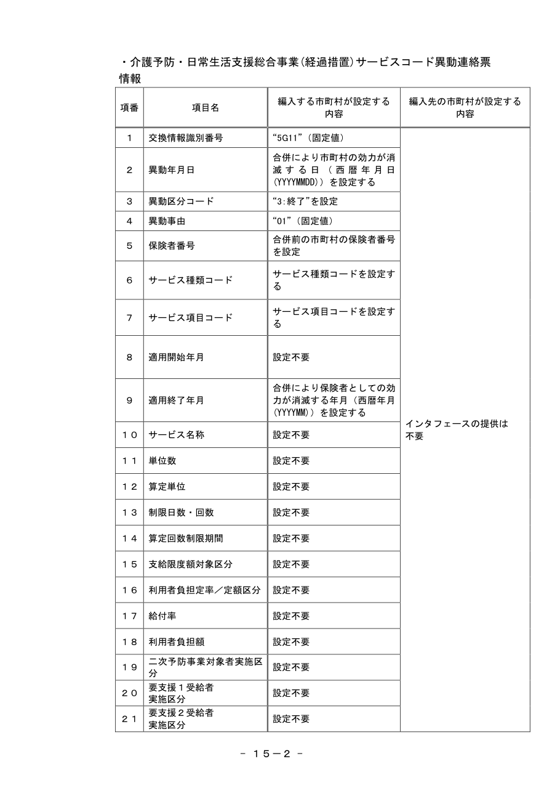
| 項番 | 項目名 | 属性 | 桁数 | 内容 | 必須 | 備考 | その他の列 |
|---|---|---|---|---|---|---|---|
| １ | 交換情報識別番号 | “5G11”（固定値） | 編入先の市町村が設定する内容: インタフェースの提供は不要 | ||||
| ２ | 異動年月日 | 合併により市町村の効力が消滅する日（西暦年月日(YYYYMMDD)）を設定する | 編入先の市町村が設定する内容: インタフェースの提供は不要 | ||||
| ３ | 異動区分コード | “3:終了”を設定 | 編入先の市町村が設定する内容: インタフェースの提供は不要 | ||||
| ４ | 異動事由 | “01”（固定値） | 編入先の市町村が設定する内容: インタフェースの提供は不要 | ||||
| ５ | 保険者番号 | 合併前の市町村の保険者番号を設定 | 編入先の市町村が設定する内容: インタフェースの提供は不要 | ||||
| ６ | サービス種類コード | サービス種類コードを設定する | 編入先の市町村が設定する内容: インタフェースの提供は不要 | ||||
| ７ | サービス項目コード | サービス項目コードを設定する | 編入先の市町村が設定する内容: インタフェースの提供は不要 | ||||
| ８ | 適用開始年月 | 設定不要 | 編入先の市町村が設定する内容: インタフェースの提供は不要 | ||||
| ９ | 適用終了年月 | 合併により保険者としての効力が消滅する年月（西暦年月(YYYYMM)）を設定する | 編入先の市町村が設定する内容: インタフェースの提供は不要 | ||||
| １０ | サービス名称 | 設定不要 | 編入先の市町村が設定する内容: インタフェースの提供は不要 | ||||
| １１ | 単位数 | 設定不要 | 編入先の市町村が設定する内容: インタフェースの提供は不要 | ||||
| １２ | 算定単位 | 設定不要 | 編入先の市町村が設定する内容: インタフェースの提供は不要 | ||||
| １３ | 制限日数・回数 | 設定不要 | 編入先の市町村が設定する内容: インタフェースの提供は不要 | ||||
| １４ | 算定回数制限期間 | 設定不要 | 編入先の市町村が設定する内容: インタフェースの提供は不要 | ||||
| １５ | 支給限度額対象区分 | 設定不要 | 編入先の市町村が設定する内容: インタフェースの提供は不要 | ||||
| １６ | 利用者負担定率／定額区分 | 設定不要 | 編入先の市町村が設定する内容: インタフェースの提供は不要 | ||||
| １７ | 給付率 | 設定不要 | 編入先の市町村が設定する内容: インタフェースの提供は不要 | ||||
| １８ | 利用者負担額 | 設定不要 | 編入先の市町村が設定する内容: インタフェースの提供は不要 | ||||
| １９ | 二次予防事業対象者実施区分 | 設定不要 | 編入先の市町村が設定する内容: インタフェースの提供は不要 | ||||
| ２０ | 要支援1受給者実施区分 | 設定不要 | 編入先の市町村が設定する内容: インタフェースの提供は不要 | ||||
| ２１ | 要支援2受給者実施区分 | 設定不要 | 編入先の市町村が設定する内容: インタフェースの提供は不要 |
| 項番 | 項目名 | 属性 | 桁数 | 内容 | 必須 | 備考 | その他の列 |
|---|---|---|---|---|---|---|---|
| 1 | 交換情報識別番号 | “5G11”(固定値) | 編入先の市町村が設定する内容: インタフェースの提供は不要 | ||||
| 2 | 異動年月日 | 合併により市町村の効力が消滅する日(西暦年月日(YYYYMMDD))を設定する | 編入先の市町村が設定する内容: インタフェースの提供は不要 | ||||
| 3 | 異動区分コード | “3:終了”を設定 | 編入先の市町村が設定する内容: インタフェースの提供は不要 | ||||
| 4 | 異動事由 | “01”(固定値) | 編入先の市町村が設定する内容: インタフェースの提供は不要 | ||||
| 5 | 保険者番号 | 合併前の市町村の保険者番号を設定 | 編入先の市町村が設定する内容: インタフェースの提供は不要 | ||||
| 6 | サービス種類コード | サービス種類コードを設定する | 編入先の市町村が設定する内容: インタフェースの提供は不要 | ||||
| 7 | サービス項目コード | サービス項目コードを設定する | 編入先の市町村が設定する内容: インタフェースの提供は不要 | ||||
| 8 | 適用開始年月 | 設定不要 | 編入先の市町村が設定する内容: インタフェースの提供は不要 | ||||
| 9 | 適用終了年月 | 合併により保険者としての効力が消滅する年月(西暦年月(YYYYMM))を設定する | 編入先の市町村が設定する内容: インタフェースの提供は不要 | ||||
| 10 | サービス名称 | 設定不要 | 編入先の市町村が設定する内容: インタフェースの提供は不要 | ||||
| 11 | 単位数 | 設定不要 | 編入先の市町村が設定する内容: インタフェースの提供は不要 | ||||
| 12 | 算定単位 | 設定不要 | 編入先の市町村が設定する内容: インタフェースの提供は不要 | ||||
| 13 | 制限日数・回数 | 設定不要 | 編入先の市町村が設定する内容: インタフェースの提供は不要 | ||||
| 14 | 算定回数制限期間 | 設定不要 | 編入先の市町村が設定する内容: インタフェースの提供は不要 | ||||
| 15 | 支給限度額対象区分 | 設定不要 | 編入先の市町村が設定する内容: インタフェースの提供は不要 | ||||
| 16 | 利用者負担定率/定額区分 | 設定不要 | 編入先の市町村が設定する内容: インタフェースの提供は不要 | ||||
| 17 | 給付率 | 設定不要 | 編入先の市町村が設定する内容: インタフェースの提供は不要 | ||||
| 18 | 利用者負担額 | 設定不要 | 編入先の市町村が設定する内容: インタフェースの提供は不要 | ||||
| 19 | 二次予防事業対象者実施区分 | 設定不要 | 編入先の市町村が設定する内容: インタフェースの提供は不要 | ||||
| 20 | 要支援1受給者実施区分 | 設定不要 | 編入先の市町村が設定する内容: インタフェースの提供は不要 | ||||
| 21 | 要支援2受給者実施区分 | 設定不要 | 編入先の市町村が設定する内容: インタフェースの提供は不要 |
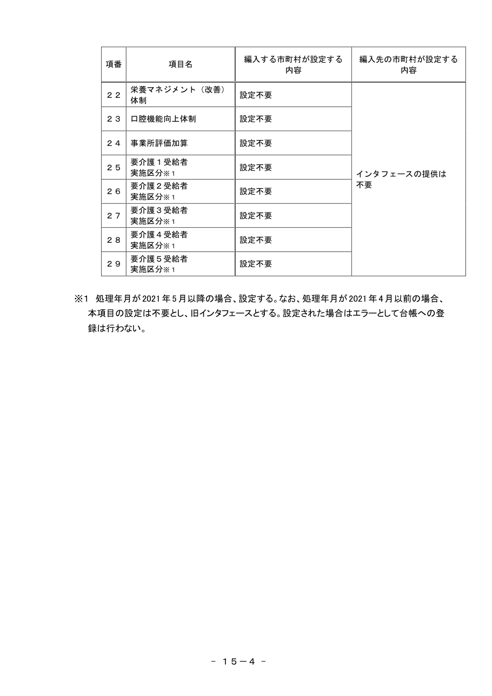
| 項番 | 項目名 | 属性 | 桁数 | 内容 | 必須 | 備考 | その他の列 |
|---|---|---|---|---|---|---|---|
| ２２ | 栄養マネジメント（改善）体制 | 編入する市町村が設定する内容: 設定不要 編入先の市町村が設定する内容: インタフェースの提供は不要 | |||||
| ２３ | 口腔機能向上体制 | 編入する市町村が設定する内容: 設定不要 編入先の市町村が設定する内容: インタフェースの提供は不要 | |||||
| ２４ | 事業所評価加算 | 編入する市町村が設定する内容: 設定不要 編入先の市町村が設定する内容: インタフェースの提供は不要 | |||||
| ２５ | 要介護１受給者実施区分※１ | 編入する市町村が設定する内容: 設定不要 編入先の市町村が設定する内容: インタフェースの提供は不要 | |||||
| ２６ | 要介護２受給者実施区分※１ | 編入する市町村が設定する内容: 設定不要 編入先の市町村が設定する内容: インタフェースの提供は不要 | |||||
| ２７ | 要介護３受給者実施区分※１ | 編入する市町村が設定する内容: 設定不要 編入先の市町村が設定する内容: インタフェースの提供は不要 | |||||
| ２８ | 要介護４受給者実施区分※１ | 編入する市町村が設定する内容: 設定不要 編入先の市町村が設定する内容: インタフェースの提供は不要 | |||||
| ２９ | 要介護５受給者実施区分※１ | 編入する市町村が設定する内容: 設定不要 編入先の市町村が設定する内容: インタフェースの提供は不要 |
| 項番 | 項目名 | 属性 | 桁数 | 内容 | 必須 | 備考 | その他の列 |
|---|---|---|---|---|---|---|---|
| ２２ | 栄養マネジメント（改善）体制 | 設定不要 | 編入先の市町村が設定する内容: インタフェースの提供は不要 | ||||
| ２３ | 口腔機能向上体制 | 設定不要 | 編入先の市町村が設定する内容: インタフェースの提供は不要 | ||||
| ２４ | 事業所評価加算 | 設定不要 | 編入先の市町村が設定する内容: インタフェースの提供は不要 | ||||
| ２５ | 要介護１受給者実施区分※１ | 設定不要 | 編入先の市町村が設定する内容: インタフェースの提供は不要 | ||||
| ２６ | 要介護２受給者実施区分※１ | 設定不要 | 編入先の市町村が設定する内容: インタフェースの提供は不要 | ||||
| ２７ | 要介護３受給者実施区分※１ | 設定不要 | 編入先の市町村が設定する内容: インタフェースの提供は不要 | ||||
| ２８ | 要介護４受給者実施区分※１ | 設定不要 | 編入先の市町村が設定する内容: インタフェースの提供は不要 | ||||
| ２９ | 要介護５受給者実施区分※１ | 設定不要 | 編入先の市町村が設定する内容: インタフェースの提供は不要 |
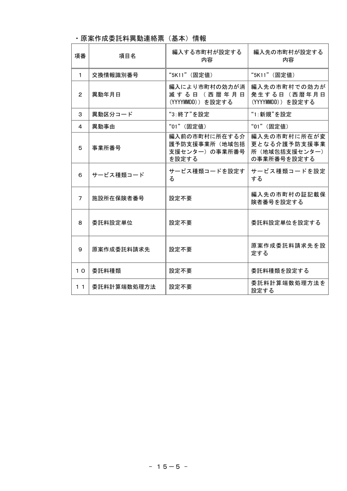
| 項番 | 項目名 | 属性 | 桁数 | 内容 | 必須 | 備考 | その他の列 |
|---|---|---|---|---|---|---|---|
| １ | 交換情報識別番号 | “5K11”（固定値） | 編入先の市町村が設定する内容: “5K11”（固定値） | ||||
| ２ | 異動年月日 | 編入により市町村の効力が消滅する日（西暦年月日(YYYYMMDD)）を設定する | 編入先の市町村が設定する内容: 編入先の市町村での効力が発生する日（西暦年月日(YYYYMMDD)）を設定する | ||||
| ３ | 異動区分コード | “3:終了”を設定 | 編入先の市町村が設定する内容: “1:新規”を設定 | ||||
| ４ | 異動事由 | “01”（固定値） | 編入先の市町村が設定する内容: “01”（固定値） | ||||
| ５ | 事業所番号 | 編入前の市町村に所在する介護予防支援事業所（地域包括支援センター）の事業所番号を設定する | 編入先の市町村が設定する内容: 編入先の市町村に所在が変更となる介護予防支援事業所（地域包括支援センター）の事業所番号を設定する | ||||
| ６ | サービス種類コード | サービス種類コードを設定する | 編入先の市町村が設定する内容: サービス種類コードを設定する | ||||
| ７ | 施設所在保険者番号 | 設定不要 | 編入先の市町村が設定する内容: 編入先の市町村の証記載保険者番号を設定する | ||||
| ８ | 委託料設定単位 | 設定不要 | 編入先の市町村が設定する内容: 委託料設定単位を設定する | ||||
| ９ | 原案作成委託料請求先 | 設定不要 | 編入先の市町村が設定する内容: 原案作成委託料請求先を設定する | ||||
| １０ | 委託料種類 | 設定不要 | 編入先の市町村が設定する内容: 委託料種類を設定する | ||||
| １１ | 委託料計算端数処理方法 | 設定不要 | 編入先の市町村が設定する内容: 委託料計算端数処理方法を設定する |
| 項番 | 項目名 | 属性 | 桁数 | 内容 | 必須 | 備考 | その他の列 |
|---|---|---|---|---|---|---|---|
| １ | 交換情報識別番号 | 編入する市町村が設定する内容: “5K11”（固定値） 編入先の市町村が設定する内容: “5K11”（固定値） | |||||
| ２ | 異動年月日 | 編入する市町村が設定する内容: 編入により市町村の効力が消滅する日（西暦年月日(YYYYMMDD)）を設定する 編入先の市町村が設定する内容: 編入先の市町村での効力が発生する日（西暦年月日(YYYYMMDD)）を設定する | |||||
| ３ | 異動区分コード | 編入する市町村が設定する内容: “3:終了”を設定 編入先の市町村が設定する内容: “1:新規”を設定 | |||||
| ４ | 異動事由 | 編入する市町村が設定する内容: “01”（固定値） 編入先の市町村が設定する内容: “01”（固定値） | |||||
| ５ | 事業所番号 | 編入する市町村が設定する内容: 編入前の市町村に所在する介護予防支援事業所（地域包括支援センター）の事業所番号を設定する 編入先の市町村が設定する内容: 編入先の市町村に所在が変更となる介護予防支援事業所（地域包括支援センター）の事業所番号を設定する | |||||
| ６ | サービス種類コード | 編入する市町村が設定する内容: サービス種類コードを設定する 編入先の市町村が設定する内容: サービス種類コードを設定する | |||||
| ７ | 施設所在保険者番号 | 編入する市町村が設定する内容: 設定不要 編入先の市町村が設定する内容: 編入先の市町村の証記載保険者番号を設定する | |||||
| ８ | 委託料設定単位 | 編入する市町村が設定する内容: 設定不要 編入先の市町村が設定する内容: 委託料設定単位を設定する | |||||
| ９ | 原案作成委託料請求先 | 編入する市町村が設定する内容: 設定不要 編入先の市町村が設定する内容: 原案作成委託料請求先を設定する | |||||
| １０ | 委託料種類 | 編入する市町村が設定する内容: 設定不要 編入先の市町村が設定する内容: 委託料種類を設定する | |||||
| １１ | 委託料計算端数処理方法 | 編入する市町村が設定する内容: 設定不要 編入先の市町村が設定する内容: 委託料計算端数処理方法を設定する |
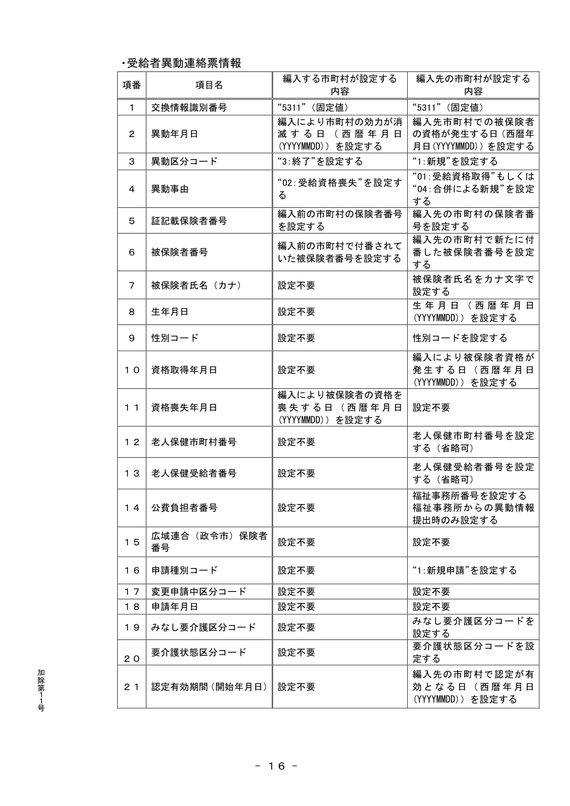
| 項番 | 項目名 | 属性 | 桁数 | 内容 | 必須 | 備考 | その他の列 |
|---|---|---|---|---|---|---|---|
| １ | 交換情報識別番号 | “5311”（固定値） | 編入先の市町村が設定する内容: “5311”（固定値） | ||||
| ２ | 異動年月日 | 編入により市町村の効力が消滅する日（西暦年月日(YYYYMMDD)）を設定する | 編入先の市町村が設定する内容: 編入先市町村での被保険者の資格が発生する日（西暦年月日(YYYYMMDD)）を設定する | ||||
| ３ | 異動区分コード | “3:終了”を設定する | 編入先の市町村が設定する内容: “1:新規”を設定する | ||||
| ４ | 異動事由 | “02:受給資格喪失”を設定する | 編入先の市町村が設定する内容: “01:受給資格取得”もしくは“04:合併による新規”を設定する | ||||
| ５ | 証記載保険者番号 | 編入前の市町村の保険者番号を設定する | 編入先の市町村が設定する内容: 編入先の市町村の保険者番号を設定する | ||||
| ６ | 被保険者番号 | 編入前の市町村で付番されていた被保険者番号を設定する | 編入先の市町村が設定する内容: 編入先の市町村で新たに付番した被保険者番号を設定する | ||||
| ７ | 被保険者氏名（カナ） | 設定不要 | 編入先の市町村が設定する内容: 被保険者氏名をカナ文字で設定する | ||||
| ８ | 生年月日 | 設定不要 | 編入先の市町村が設定する内容: 生年月日（西暦年月日(YYYYMMDD)）を設定する | ||||
| ９ | 性別コード | 設定不要 | 編入先の市町村が設定する内容: 性別コードを設定する | ||||
| １０ | 資格取得年月日 | 設定不要 | 編入先の市町村が設定する内容: 編入により被保険者資格が発生する日（西暦年月日(YYYYMMDD)）を設定する | ||||
| １１ | 資格喪失年月日 | 編入により被保険者の資格を喪失する日（西暦年月日(YYYYMMDD)）を設定する | 編入先の市町村が設定する内容: 設定不要 | ||||
| １２ | 老人保健市町村番号 | 設定不要 | 編入先の市町村が設定する内容: 老人保健市町村番号を設定する（省略可） | ||||
| １３ | 老人保健受給者番号 | 設定不要 | 編入先の市町村が設定する内容: 老人保健受給者番号を設定する（省略可） | ||||
| １４ | 公費負担者番号 | 設定不要 | 編入先の市町村が設定する内容: 福祉事務所番号を設定する 福祉事務所からの異動情報提出時のみ設定する | ||||
| １５ | 広域連合（政令市）保険者番号 | 設定不要 | 編入先の市町村が設定する内容: 設定不要 | ||||
| １６ | 申請種別コード | 設定不要 | 編入先の市町村が設定する内容: “1:新規申請”を設定する | ||||
| １７ | 変更申請中区分コード | 設定不要 | 編入先の市町村が設定する内容: 設定不要 | ||||
| １８ | 申請年月日 | 設定不要 | 編入先の市町村が設定する内容: 設定不要 | ||||
| １９ | みなし要介護区分コード | 設定不要 | 編入先の市町村が設定する内容: みなし要介護区分コードを設定する | ||||
| ２０ | 要介護状態区分コード | 設定不要 | 編入先の市町村が設定する内容: 要介護状態区分コードを設定する | ||||
| ２１ | 認定有効期間（開始年月日） | 設定不要 | 編入先の市町村が設定する内容: 編入先の市町村で認定が有効となる日（西暦年月日(YYYYMMDD)）を設定する |
| 項番 | 項目名 | 属性 | 桁数 | 内容 | 必須 | 備考 | その他の列 |
|---|---|---|---|---|---|---|---|
| 1 | 交換情報識別番号 | 編入する市町村が設定する内容: “5311”（固定値） 編入先の市町村が設定する内容: “5311”（固定値） | |||||
| 2 | 異動年月日 | 編入する市町村が設定する内容: 編入により市町村の効力が消滅する日（西暦年月日(YYYYMMDD)）を設定する 編入先の市町村が設定する内容: 編入先市町村での被保険者の資格が発生する日（西暦年月日(YYYYMMDD)）を設定する | |||||
| 3 | 異動区分コード | 編入する市町村が設定する内容: “3:終了”を設定する 編入先の市町村が設定する内容: “1:新規”を設定する | |||||
| 4 | 異動事由 | 編入する市町村が設定する内容: “02:受給資格喪失”を設定する 編入先の市町村が設定する内容: “01:受給資格取得”もしくは“04:合併による新規”を設定する | |||||
| 5 | 証記載保険者番号 | 編入する市町村が設定する内容: 編入前の市町村の保険者番号を設定する 編入先の市町村が設定する内容: 編入先の市町村の保険者番号を設定する | |||||
| 6 | 被保険者番号 | 編入する市町村が設定する内容: 編入前の市町村で付番されていた被保険者番号を設定する 編入先の市町村が設定する内容: 編入先の市町村で新たに付番した被保険者番号を設定する | |||||
| 7 | 被保険者氏名（カナ） | 編入する市町村が設定する内容: 設定不要 編入先の市町村が設定する内容: 被保険者氏名をカナ文字で設定する | |||||
| 8 | 生年月日 | 編入する市町村が設定する内容: 設定不要 編入先の市町村が設定する内容: 生年月日（西暦年月日(YYYYMMDD)）を設定する | |||||
| 9 | 性別コード | 編入する市町村が設定する内容: 設定不要 編入先の市町村が設定する内容: 性別コードを設定する | |||||
| 10 | 資格取得年月日 | 編入する市町村が設定する内容: 設定不要 編入先の市町村が設定する内容: 編入により被保険者資格が発生する日（西暦年月日(YYYYMMDD)）を設定する | |||||
| 11 | 資格喪失年月日 | 編入する市町村が設定する内容: 編入により被保険者の資格を喪失する日（西暦年月日(YYYYMMDD)）を設定する 編入先の市町村が設定する内容: 設定不要 | |||||
| 12 | 老人保健市町村番号 | 編入する市町村が設定する内容: 設定不要 編入先の市町村が設定する内容: 老人保健市町村番号を設定する（省略可） | |||||
| 13 | 老人保健受給者番号 | 編入する市町村が設定する内容: 設定不要 編入先の市町村が設定する内容: 老人保健受給者番号を設定する（省略可） | |||||
| 14 | 公費負担者番号 | 編入する市町村が設定する内容: 設定不要 編入先の市町村が設定する内容: 福祉事務所番号を設定する 福祉事務所からの異動情報提出時のみ設定する | |||||
| 15 | 広域連合（政令市）保険者番号 | 編入する市町村が設定する内容: 設定不要 編入先の市町村が設定する内容: 設定不要 | |||||
| 16 | 申請種別コード | 編入する市町村が設定する内容: 設定不要 編入先の市町村が設定する内容: “1:新規申請”を設定する | |||||
| 17 | 変更申請中区分コード | 編入する市町村が設定する内容: 設定不要 編入先の市町村が設定する内容: 設定不要 | |||||
| 18 | 申請年月日 | 編入する市町村が設定する内容: 設定不要 編入先の市町村が設定する内容: 設定不要 | |||||
| 19 | みなし要介護区分コード | 編入する市町村が設定する内容: 設定不要 編入先の市町村が設定する内容: みなし要介護区分コードを設定する | |||||
| 20 | 要介護状態区分コード | 編入する市町村が設定する内容: 設定不要 編入先の市町村が設定する内容: 要介護状態区分コードを設定する | |||||
| 21 | 認定有効期間(開始年月日) | 編入する市町村が設定する内容: 設定不要 編入先の市町村が設定する内容: 編入先の市町村で認定が有効となる日（西暦年月日(YYYYMMDD)）を設定する |
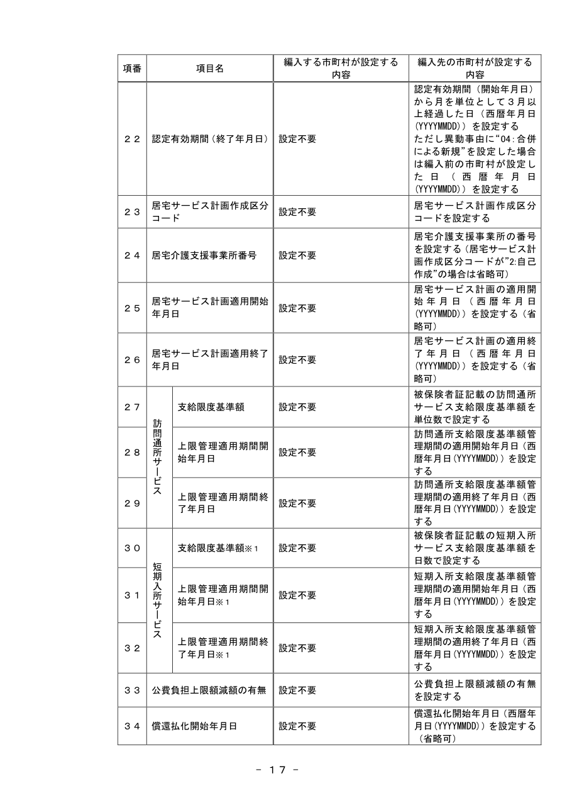
| 項番 | 項目名 | 属性 | 桁数 | 内容 | 必須 | 備考 | その他の列 |
|---|---|---|---|---|---|---|---|
| ２２ | 認定有効期間(終了年月日) | 認定有効期間（開始年月日）から月を単位として３月以上経過した日（西暦年月日(YYYYMMDD)）を設定する ただし異動事由に“04:合併による新規”を設定した場合は編入前の市町村が設定した日（西暦年月日(YYYYMMDD)）を設定する | 編入する市町村が設定する内容: 設定不要 | ||||
| ２３ | 居宅サービス計画作成区分コード | 居宅サービス計画作成区分コードを設定する | 編入する市町村が設定する内容: 設定不要 | ||||
| ２４ | 居宅介護支援事業所番号 | 居宅介護支援事業所の番号を設定する（居宅サービス計画作成区分コードが”2:自己作成”の場合は省略可） | 編入する市町村が設定する内容: 設定不要 | ||||
| ２５ | 居宅サービス計画適用開始年月日 | 居宅サービス計画の適用開始年月日（西暦年月日(YYYYMMDD)）を設定する（省略可） | 編入する市町村が設定する内容: 設定不要 | ||||
| ２６ | 居宅サービス計画適用終了年月日 | 居宅サービス計画の適用終了年月日（西暦年月日(YYYYMMDD)）を設定する（省略可） | 編入する市町村が設定する内容: 設定不要 | ||||
| ２７ | 訪問通所サービス > 支給限度基準額 | 被保険者証記載の訪問通所サービス支給限度基準額を単位数で設定する | 編入する市町村が設定する内容: 設定不要 | ||||
| ２８ | 訪問通所サービス > 上限管理適用期間開始年月日 | 訪問通所支給限度基準額管理期間の適用開始年月日（西暦年月日(YYYYMMDD)）を設定する | 編入する市町村が設定する内容: 設定不要 | ||||
| ２９ | 訪問通所サービス > 上限管理適用期間終了年月日 | 訪問通所支給限度基準額管理期間の適用終了年月日（西暦年月日(YYYYMMDD)）を設定する | 編入する市町村が設定する内容: 設定不要 | ||||
| ３０ | 短期入所サービス > 支給限度基準額※1 | 被保険者証記載の短期入所サービス支給限度基準額を日数で設定する | 編入する市町村が設定する内容: 設定不要 | ||||
| ３１ | 短期入所サービス > 上限管理適用期間開始年月日※1 | 短期入所支給限度基準額管理期間の適用開始年月日（西暦年月日(YYYYMMDD)）を設定する | 編入する市町村が設定する内容: 設定不要 | ||||
| ３２ | 短期入所サービス > 上限管理適用期間終了年月日※1 | 短期入所支給限度基準額管理期間の適用終了年月日（西暦年月日(YYYYMMDD)）を設定する | 編入する市町村が設定する内容: 設定不要 | ||||
| ３３ | 公費負担上限額減額の有無 | 公費負担上限額減額の有無を設定する | 編入する市町村が設定する内容: 設定不要 | ||||
| ３４ | 償還払化開始年月日 | 償還払化開始年月日（西暦年月日(YYYYMMDD)）を設定する（省略可） | 編入する市町村が設定する内容: 設定不要 |
| 項番 | 項目名 | 属性 | 桁数 | 内容 | 必須 | 備考 | その他の列 |
|---|---|---|---|---|---|---|---|
| ２２ | 認定有効期間（終了年月日） | 認定有効期間（開始年月日）から月を単位として３月以上経過した日（西暦年月日(YYYYMMDD)）を設定する ただし異動事由に“04:合併による新規”を設定した場合は編入前の市町村が設定した日（西暦年月日(YYYYMMDD)）を設定する | 編入する市町村が設定する内容: 設定不要 | ||||
| ２３ | 居宅サービス計画作成区分コード | 居宅サービス計画作成区分コードを設定する | 編入する市町村が設定する内容: 設定不要 | ||||
| ２４ | 居宅介護支援事業所番号 | 居宅介護支援事業所の番号を設定する（居宅サービス計画作成区分コードが”2:自己作成”の場合は省略可） | 編入する市町村が設定する内容: 設定不要 | ||||
| ２５ | 居宅サービス計画適用開始年月日 | 居宅サービス計画の適用開始年月日（西暦年月日(YYYYMMDD)）を設定する（省略可） | 編入する市町村が設定する内容: 設定不要 | ||||
| ２６ | 居宅サービス計画適用終了年月日 | 居宅サービス計画の適用終了年月日（西暦年月日(YYYYMMDD)）を設定する（省略可） | 編入する市町村が設定する内容: 設定不要 | ||||
| ２７ | 訪問通所サービス > 支給限度基準額 | 被保険者証記載の訪問通所サービス支給限度基準額を単位数で設定する | 編入する市町村が設定する内容: 設定不要 | ||||
| ２８ | 訪問通所サービス > 上限管理適用期間開始年月日 | 訪問通所支給限度基準額管理期間の適用開始年月日（西暦年月日(YYYYMMDD)）を設定する | 編入する市町村が設定する内容: 設定不要 | ||||
| ２９ | 訪問通所サービス > 上限管理適用期間終了年月日 | 訪問通所支給限度基準額管理期間の適用終了年月日（西暦年月日(YYYYMMDD)）を設定する | 編入する市町村が設定する内容: 設定不要 | ||||
| ３０ | 短期入所サービス > 支給限度基準額※1 | 被保険者証記載の短期入所サービス支給限度基準額を日数で設定する | 編入する市町村が設定する内容: 設定不要 | ||||
| ３１ | 短期入所サービス > 上限管理適用期間開始年月日※1 | 短期入所支給限度基準額管理期間の適用開始年月日（西暦年月日(YYYYMMDD)）を設定する | 編入する市町村が設定する内容: 設定不要 | ||||
| ３２ | 短期入所サービス > 上限管理適用期間終了年月日※1 | 短期入所支給限度基準額管理期間の適用終了年月日（西暦年月日(YYYYMMDD)）を設定する | 編入する市町村が設定する内容: 設定不要 | ||||
| ３３ | 公費負担上限額減額の有無 | 公費負担上限額減額の有無を設定する | 編入する市町村が設定する内容: 設定不要 | ||||
| ３４ | 償還払化開始年月日 | 償還払化開始年月日（西暦年月日(YYYYMMDD)）を設定する（省略可） | 編入する市町村が設定する内容: 設定不要 |
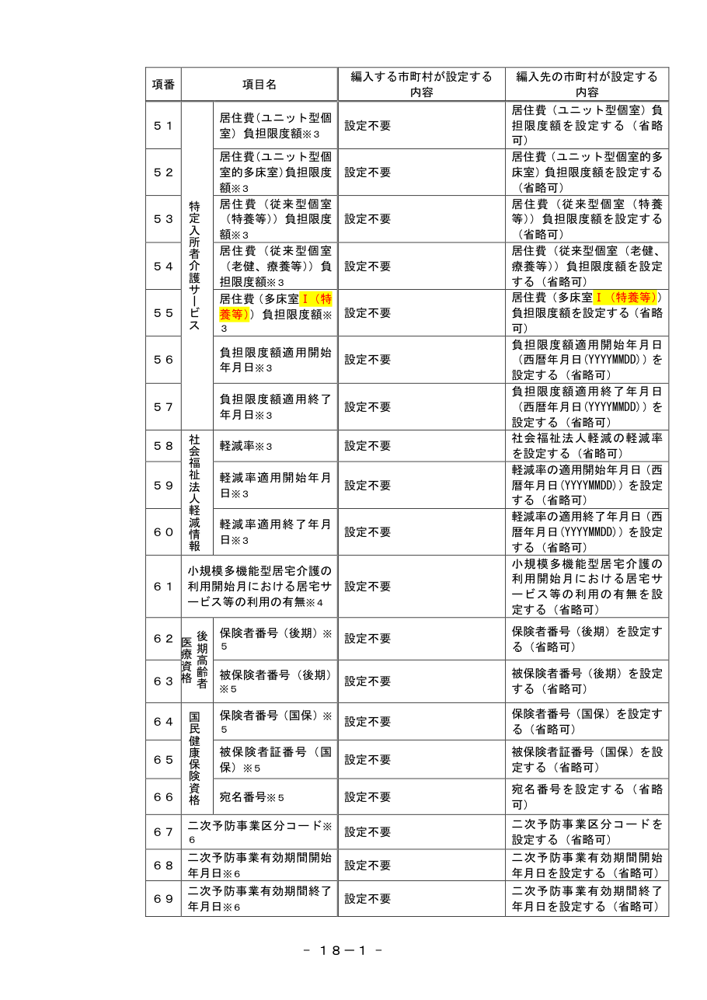
| 項番 | 項目名 | 属性 | 桁数 | 内容 | 必須 | 備考 | その他の列 |
|---|---|---|---|---|---|---|---|
| ５１ | 特定入所者介護サービス > 居住費(ユニット型個室)負担限度額※3 | 編入する市町村が設定する内容: 設定不要 編入先の市町村が設定する内容: 居住費（ユニット型個室）負担限度額を設定する（省略可） | |||||
| ５２ | 特定入所者介護サービス > 居住費(ユニット型個室的多床室)負担限度額※3 | 編入する市町村が設定する内容: 設定不要 編入先の市町村が設定する内容: 居住費（ユニット型個室的多床室）負担限度額を設定する（省略可） | |||||
| ５３ | 特定入所者介護サービス > 居住費（従来型個室（特養等））負担限度額※3 | 編入する市町村が設定する内容: 設定不要 編入先の市町村が設定する内容: 居住費（従来型個室（特養等））負担限度額を設定する（省略可） | |||||
| ５４ | 特定入所者介護サービス > 居住費（従来型個室（老健、療養等））負担限度額※3 | 編入する市町村が設定する内容: 設定不要 編入先の市町村が設定する内容: 居住費（従来型個室（老健、療養等））負担限度額を設定する（省略可） | |||||
| ５５ | 特定入所者介護サービス > 居住費（多床室Ⅰ（特養等））負担限度額※3 | 編入する市町村が設定する内容: 設定不要 編入先の市町村が設定する内容: 居住費（多床室Ⅰ（特養等））負担限度額を設定する（省略可） | |||||
| ５６ | 特定入所者介護サービス > 負担限度額適用開始年月日※3 | 編入する市町村が設定する内容: 設定不要 編入先の市町村が設定する内容: 負担限度額適用開始年月日（西暦年月日(YYYYMMDD)）を設定する（省略可） | |||||
| ５７ | 特定入所者介護サービス > 負担限度額適用終了年月日※3 | 編入する市町村が設定する内容: 設定不要 編入先の市町村が設定する内容: 負担限度額適用終了年月日（西暦年月日(YYYYMMDD)）を設定する（省略可） | |||||
| ５８ | 社会福祉法人軽減情報 > 軽減率※3 | 編入する市町村が設定する内容: 設定不要 編入先の市町村が設定する内容: 社会福祉法人軽減の軽減率を設定する（省略可） | |||||
| ５９ | 社会福祉法人軽減情報 > 軽減率適用開始年月日※3 | 編入する市町村が設定する内容: 設定不要 編入先の市町村が設定する内容: 軽減率の適用開始年月日（西暦年月日(YYYYMMDD)）を設定する（省略可） | |||||
| ６０ | 社会福祉法人軽減情報 > 軽減率適用終了年月日※3 | 編入する市町村が設定する内容: 設定不要 編入先の市町村が設定する内容: 軽減率の適用終了年月日（西暦年月日(YYYYMMDD)）を設定する（省略可） | |||||
| ６１ | 小規模多機能型居宅介護の利用開始月における居宅サービス等の利用の有無※4 | 編入する市町村が設定する内容: 設定不要 編入先の市町村が設定する内容: 小規模多機能型居宅介護の利用開始月における居宅サービス等の利用の有無を設定する（省略可） | |||||
| ６２ | 医療資格 > 後期高齢者 > 保険者番号（後期）※5 | 編入する市町村が設定する内容: 設定不要 編入先の市町村が設定する内容: 保険者番号（後期）を設定する（省略可） | |||||
| ６３ | 医療資格 > 後期高齢者 > 被保険者番号（後期）※5 | 編入する市町村が設定する内容: 設定不要 編入先の市町村が設定する内容: 被保険者番号（後期）を設定する（省略可） | |||||
| ６４ | 国民健康保険資格 > 保険者番号（国保）※5 | 編入する市町村が設定する内容: 設定不要 編入先の市町村が設定する内容: 保険者番号（国保）を設定する（省略可） | |||||
| ６５ | 国民健康保険資格 > 被保険者証番号（国保）※5 | 編入する市町村が設定する内容: 設定不要 編入先の市町村が設定する内容: 被保険者証番号（国保）を設定する（省略可） | |||||
| ６６ | 国民健康保険資格 > 宛名番号※5 | 編入する市町村が設定する内容: 設定不要 編入先の市町村が設定する内容: 宛名番号を設定する（省略可） | |||||
| ６７ | 二次予防事業区分コード※6 | 編入する市町村が設定する内容: 設定不要 編入先の市町村が設定する内容: 二次予防事業区分コードを設定する（省略可） | |||||
| ６８ | 二次予防事業有効期間開始年月日※6 | 編入する市町村が設定する内容: 設定不要 編入先の市町村が設定する内容: 二次予防事業有効期間開始年月日を設定する（省略可） | |||||
| ６９ | 二次予防事業有効期間終了年月日※6 | 編入する市町村が設定する内容: 設定不要 編入先の市町村が設定する内容: 二次予防事業有効期間終了年月日を設定する（省略可） |
| 項番 | 項目名 | 属性 | 桁数 | 内容 | 必須 | 備考 | その他の列 |
|---|---|---|---|---|---|---|---|
| ５１ | 特定入所者介護サービス > 居住費(ユニット型個室）負担限度額※３ | 居住費（ユニット型個室）負担限度額を設定する（省略可） | 編入する市町村が設定する内容: 設定不要 | ||||
| ５２ | 特定入所者介護サービス > 居住費(ユニット型個室的多床室)負担限度額※３ | 居住費（ユニット型個室的多床室）負担限度額を設定する（省略可） | 編入する市町村が設定する内容: 設定不要 | ||||
| ５３ | 特定入所者介護サービス > 居住費（従来型個室（特養等））負担限度額※３ | 居住費（従来型個室（特養等））負担限度額を設定する（省略可） | 編入する市町村が設定する内容: 設定不要 | ||||
| ５４ | 特定入所者介護サービス > 居住費（従来型個室（老健、療養等））負担限度額※３ | 居住費（従来型個室（老健、療養等））負担限度額を設定する（省略可） | 編入する市町村が設定する内容: 設定不要 | ||||
| ５５ | 特定入所者介護サービス > 居住費（多床室Ⅰ（特養等））負担限度額※３ | 居住費（多床室Ⅰ（特養等））負担限度額を設定する（省略可） | 編入する市町村が設定する内容: 設定不要 | ||||
| ５６ | 特定入所者介護サービス > 負担限度額適用開始年月日※３ | 負担限度額適用開始年月日（西暦年月日(YYYYMMDD)）を設定する（省略可） | 編入する市町村が設定する内容: 設定不要 | ||||
| ５７ | 特定入所者介護サービス > 負担限度額適用終了年月日※３ | 負担限度額適用終了年月日（西暦年月日(YYYYMMDD)）を設定する（省略可） | 編入する市町村が設定する内容: 設定不要 | ||||
| ５８ | 社会福祉法人軽減情報 > 軽減率※３ | 社会福祉法人軽減の軽減率を設定する（省略可） | 編入する市町村が設定する内容: 設定不要 | ||||
| ５９ | 社会福祉法人軽減情報 > 軽減率適用開始年月日※３ | 軽減率の適用開始年月日（西暦年月日(YYYYMMDD)）を設定する（省略可） | 編入する市町村が設定する内容: 設定不要 | ||||
| ６０ | 社会福祉法人軽減情報 > 軽減率適用終了年月日※３ | 軽減率の適用終了年月日（西暦年月日(YYYYMMDD)）を設定する（省略可） | 編入する市町村が設定する内容: 設定不要 | ||||
| ６１ | 小規模多機能型居宅介護の利用開始月における居宅サービス等の利用の有無※４ | 小規模多機能型居宅介護の利用開始月における居宅サービス等の利用の有無を設定する（省略可） | 編入する市町村が設定する内容: 設定不要 | ||||
| ６２ | 医療資格 > 後期高齢者 > 保険者番号（後期）※５ | 保険者番号（後期）を設定する（省略可） | 編入する市町村が設定する内容: 設定不要 | ||||
| ６３ | 医療資格 > 後期高齢者 > 被保険者番号（後期）※５ | 被保険者番号（後期）を設定する（省略可） | 編入する市町村が設定する内容: 設定不要 | ||||
| ６４ | 医療資格 > 国民健康保険資格 > 保険者番号（国保）※５ | 保険者番号（国保）を設定する（省略可） | 編入する市町村が設定する内容: 設定不要 | ||||
| ６５ | 医療資格 > 国民健康保険資格 > 被保険者証番号（国保）※５ | 被保険者証番号（国保）を設定する（省略可） | 編入する市町村が設定する内容: 設定不要 | ||||
| ６６ | 医療資格 > 国民健康保険資格 > 宛名番号※５ | 宛名番号を設定する（省略可） | 編入する市町村が設定する内容: 設定不要 | ||||
| ６７ | 二次予防事業区分コード※６ | 二次予防事業区分コードを設定する（省略可） | 編入する市町村が設定する内容: 設定不要 | ||||
| ６８ | 二次予防事業有効期間開始年月日※６ | 二次予防事業有効期間開始年月日を設定する（省略可） | 編入する市町村が設定する内容: 設定不要 | ||||
| ６９ | 二次予防事業有効期間終了年月日※６ | 二次予防事業有効期間終了年月日を設定する（省略可） | 編入する市町村が設定する内容: 設定不要 |
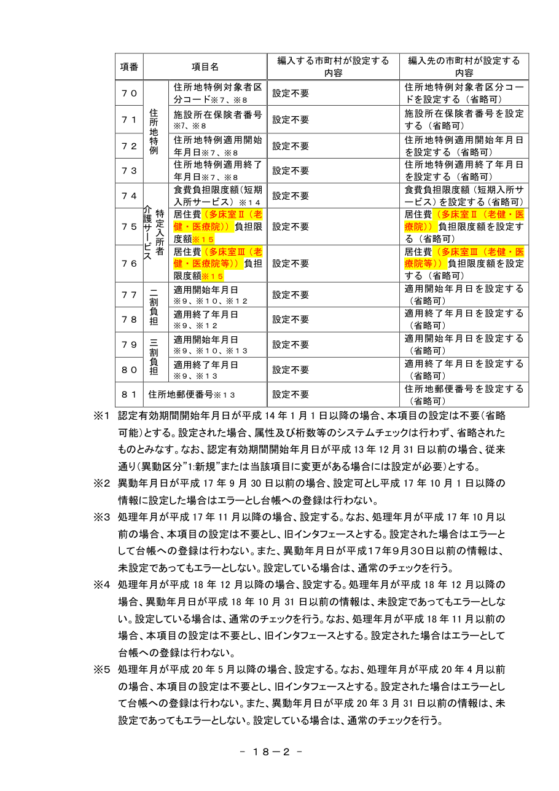
| 項番 | 項目名 | 属性 | 桁数 | 内容 | 必須 | 備考 | その他の列 |
|---|---|---|---|---|---|---|---|
| ７０ | 住所地特例 > 住所地特例対象者区分コード※７、※８ | 編入する市町村が設定する内容: 設定不要 編入先の市町村が設定する内容: 住所地特例対象者区分コードを設定する（省略可） | |||||
| ７１ | 住所地特例 > 施設所在保険者番号※７、※８ | 編入する市町村が設定する内容: 設定不要 編入先の市町村が設定する内容: 施設所在保険者番号を設定する（省略可） | |||||
| ７２ | 住所地特例 > 住所地特例適用開始年月日※７、※８ | 編入する市町村が設定する内容: 設定不要 編入先の市町村が設定する内容: 住所地特例適用開始年月日を設定する（省略可） | |||||
| ７３ | 住所地特例 > 住所地特例適用終了年月日※７、※８ | 編入する市町村が設定する内容: 設定不要 編入先の市町村が設定する内容: 住所地特例適用終了年月日を設定する（省略可） | |||||
| ７４ | 介護サービス特定入所者 > 食費負担限度額(短期入所サービス）※１４ | 編入する市町村が設定する内容: 設定不要 編入先の市町村が設定する内容: 食費負担限度額（短期入所サービス）を設定する（省略可） | |||||
| ７５ | 介護サービス特定入所者 > 居住費（多床室Ⅱ（老健・医療院））負担限度額※１５ | 編入する市町村が設定する内容: 設定不要 編入先の市町村が設定する内容: 居住費（多床室Ⅱ（老健・医療院））負担限度額を設定する（省略可） | |||||
| ７６ | 介護サービス特定入所者 > 居住費（多床室Ⅲ（老健・医療院等））負担限度額※１５ | 編入する市町村が設定する内容: 設定不要 編入先の市町村が設定する内容: 居住費（多床室Ⅲ（老健・医療院等））負担限度額を設定する（省略可） | |||||
| ７７ | 二割負担 > 適用開始年月日※９、※１０、※１２ | 編入する市町村が設定する内容: 設定不要 編入先の市町村が設定する内容: 適用開始年月日を設定する（省略可） | |||||
| ７８ | 二割負担 > 適用終了年月日※９、※１２ | 編入する市町村が設定する内容: 設定不要 編入先の市町村が設定する内容: 適用終了年月日を設定する（省略可） | |||||
| ７９ | 三割負担 > 適用開始年月日※９、※１０、※１３ | 編入する市町村が設定する内容: 設定不要 編入先の市町村が設定する内容: 適用開始年月日を設定する（省略可） | |||||
| ８０ | 三割負担 > 適用終了年月日※９、※１３ | 編入する市町村が設定する内容: 設定不要 編入先の市町村が設定する内容: 適用終了年月日を設定する（省略可） | |||||
| ８１ | 住所地郵便番号※１３ | 編入する市町村が設定する内容: 設定不要 編入先の市町村が設定する内容: 住所地郵便番号を設定する（省略可） |
| 項番 | 項目名 | 属性 | 桁数 | 内容 | 必須 | 備考 | その他の列 |
|---|---|---|---|---|---|---|---|
| ７０ | 住所地特例 > 住所地特例対象者区分コード※7、※8 | 住所地特例対象者区分コードを設定する（省略可） | 編入する市町村が設定する内容: 設定不要 | ||||
| ７１ | 住所地特例 > 施設所在保険者番号※7、※8 | 施設所在保険者番号を設定する（省略可） | 編入する市町村が設定する内容: 設定不要 | ||||
| ７２ | 住所地特例 > 住所地特例適用開始年月日※7、※8 | 住所地特例適用開始年月日を設定する（省略可） | 編入する市町村が設定する内容: 設定不要 | ||||
| ７３ | 住所地特例 > 住所地特例適用終了年月日※7、※8 | 住所地特例適用終了年月日を設定する（省略可） | 編入する市町村が設定する内容: 設定不要 | ||||
| ７４ | 介護サービス > 食費負担限度額(短期入所サービス）※14 | 食費負担限度額（短期入所サービス）を設定する（省略可） | 編入する市町村が設定する内容: 設定不要 | ||||
| ７５ | 介護サービス > 特定入所者 > 居住費（多床室Ⅱ（老健・医療院））負担限度額※15 | 居住費（多床室Ⅱ（老健・医療院））負担限度額を設定する（省略可） | 編入する市町村が設定する内容: 設定不要 | ||||
| ７６ | 介護サービス > 特定入所者 > 居住費（多床室Ⅲ（老健・医療院等））負担限度額※15 | 居住費（多床室Ⅲ（老健・医療院等））負担限度額を設定する（省略可） | 編入する市町村が設定する内容: 設定不要 | ||||
| ７７ | 二割負担 > 適用開始年月日※9、※10、※12 | 適用開始年月日を設定する（省略可） | 編入する市町村が設定する内容: 設定不要 | ||||
| ７８ | 二割負担 > 適用終了年月日※9、※12 | 適用終了年月日を設定する（省略可） | 編入する市町村が設定する内容: 設定不要 | ||||
| ７９ | 三割負担 > 適用開始年月日※9、※10、※13 | 適用開始年月日を設定する（省略可） | 編入する市町村が設定する内容: 設定不要 | ||||
| ８０ | 三割負担 > 適用終了年月日※9、※13 | 適用終了年月日を設定する（省略可） | 編入する市町村が設定する内容: 設定不要 | ||||
| ８１ | 住所地郵便番号※13 | 住所地郵便番号を設定する（省略可） | 編入する市町村が設定する内容: 設定不要 |
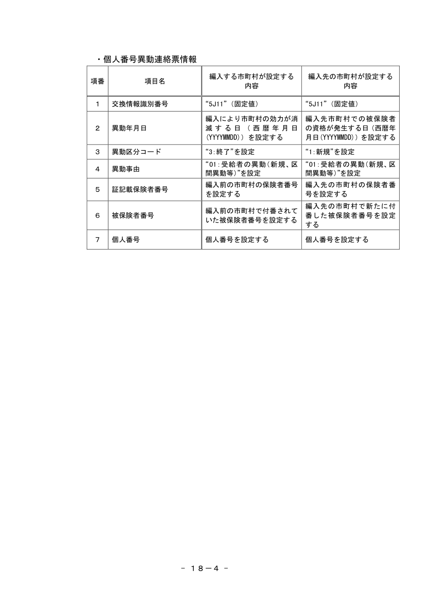
| 項番 | 項目名 | 属性 | 桁数 | 内容 | 必須 | 備考 | その他の列 |
|---|---|---|---|---|---|---|---|
| １ | 交換情報識別番号 | “5J11”（固定値） | 編入先の市町村が設定する内容: “5J11”（固定値） | ||||
| ２ | 異動年月日 | 編入により市町村の効力が消滅する日（西暦年月日(YYYYMMDD)）を設定する | 編入先の市町村が設定する内容: 編入先市町村での被保険者の資格が発生する日(西暦年月日(YYYYMMDD))を設定する | ||||
| ３ | 異動区分コード | “3:終了”を設定 | 編入先の市町村が設定する内容: “1:新規”を設定 | ||||
| ４ | 異動事由 | “01:受給者の異動(新規、区間異動等)”を設定 | 編入先の市町村が設定する内容: “01:受給者の異動(新規、区間異動等)”を設定 | ||||
| ５ | 証記載保険者番号 | 編入前の市町村の保険者番号を設定する | 編入先の市町村が設定する内容: 編入先の市町村の保険者番号を設定する | ||||
| ６ | 被保険者番号 | 編入前の市町村で付番されていた被保険者番号を設定する | 編入先の市町村が設定する内容: 編入先の市町村で新たに付番した被保険者番号を設定する | ||||
| ７ | 個人番号 | 個人番号を設定する | 編入先の市町村が設定する内容: 個人番号を設定する |
| 項番 | 項目名 | 属性 | 桁数 | 内容 | 必須 | 備考 | その他の列 |
|---|---|---|---|---|---|---|---|
| 1 | 交換情報識別番号 | 編入する市町村が設定する内容: “5J11”（固定値） 編入先の市町村が設定する内容: “5J11”（固定値） | |||||
| 2 | 異動年月日 | 編入する市町村が設定する内容: 編入により市町村の効力が消滅する日（西暦年月日(YYYYMMDD)）を設定する 編入先の市町村が設定する内容: 編入先市町村での被保険者の資格が発生する日（西暦年月日(YYYYMMDD)）を設定する | |||||
| 3 | 異動区分コード | 編入する市町村が設定する内容: “3:終了”を設定 編入先の市町村が設定する内容: “1:新規”を設定 | |||||
| 4 | 異動事由 | 編入する市町村が設定する内容: “01:受給者の異動(新規、区間異動等)”を設定 編入先の市町村が設定する内容: “01:受給者の異動(新規、区間異動等)”を設定 | |||||
| 5 | 証記載保険者番号 | 編入する市町村が設定する内容: 編入前の市町村の保険者番号を設定する 編入先の市町村が設定する内容: 編入先の市町村の保険者番号を設定する | |||||
| 6 | 被保険者番号 | 編入する市町村が設定する内容: 編入前の市町村で付番されていた被保険者番号を設定する 編入先の市町村が設定する内容: 編入先の市町村で新たに付番した被保険者番号を設定する | |||||
| 7 | 個人番号 | 編入する市町村が設定する内容: 個人番号を設定する 編入先の市町村が設定する内容: 個人番号を設定する |
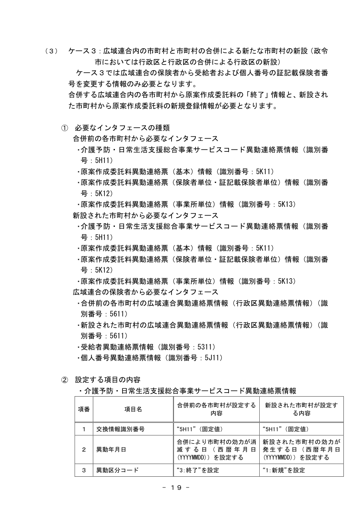
| 項番 | 項目名 | 属性 | 桁数 | 内容 | 必須 | 備考 | その他の列 |
|---|---|---|---|---|---|---|---|
| 1 | 交換情報識別番号 | “5H11”（固定値） | 新設された市町村が設定する内容: “5H11”（固定値） | ||||
| 2 | 異動年月日 | 合併により市町村の効力が消滅する日（西暦年月日(YYYYMMDD)）を設定する | 新設された市町村が設定する内容: 新設された市町村の効力が発生する日（西暦年月日(YYYYMMDD)）を設定する | ||||
| 3 | 異動区分コード | “3:終了”を設定 | 新設された市町村が設定する内容: “1:新規”を設定 |
| 項番 | 項目名 | 属性 | 桁数 | 内容 | 必須 | 備考 | その他の列 |
|---|---|---|---|---|---|---|---|
| 1 | 交換情報識別番号 | 合併前の各市町村が設定する内容: “5H11”（固定値） 新設された市町村が設定する内容: “5H11”（固定値） | |||||
| 2 | 異動年月日 | 合併前の各市町村が設定する内容: 合併により市町村の効力が消滅する日（西暦年月日(YYYYMMDD)）を設定する 新設された市町村が設定する内容: 新設された市町村の効力が発生する日（西暦年月日(YYYYMMDD)）を設定する | |||||
| 3 | 異動区分コード | 合併前の各市町村が設定する内容: “3:終了”を設定 新設された市町村が設定する内容: “1:新規”を設定 |
| 項番 | 項目名 | 属性 | 桁数 | 内容 | 必須 | 備考 | その他の列 |
|---|---|---|---|---|---|---|---|
| １ | 交換情報識別番号 | “5K11”（固定値） | 新設された市町村が設定する内容: “5K11”（固定値） | ||||
| ２ | 異動年月日 | 合併により市町村の効力が消滅する日（西暦年月日(YYYYMMDD)）を設定する | 新設された市町村が設定する内容: 新設された市町村の効力が発生する日（西暦年月日(YYYYMMDD)）を設定する | ||||
| ３ | 異動区分コード | “3:終了”を設定 | 新設された市町村が設定する内容: “1:新規”を設定 | ||||
| ４ | 異動事由 | “01”（固定値） | 新設された市町村が設定する内容: “01”（固定値） | ||||
| ５ | 事業所番号 | 合併前の市町村に所在する介護予防支援事業所（地域包括支援センター）の事業所番号を設定する | 新設された市町村が設定する内容: 新設された市町村に所在が変更となる介護予防支援事業所（地域包括支援センター）の事業所番号を設定する | ||||
| ６ | サービス種類コード | サービス種類コードを設定する | 新設された市町村が設定する内容: サービス種類コードを設定する | ||||
| ７ | 施設所在保険者番号 | 設定不要 | 新設された市町村が設定する内容: 新設された市町村の証記載保険者番号を設定する | ||||
| ８ | 委託料設定単位 | 設定不要 | 新設された市町村が設定する内容: 委託料設定単位を設定する | ||||
| ９ | 原案作成委託料請求先 | 設定不要 | 新設された市町村が設定する内容: 原案作成委託料請求先を設定する | ||||
| １０ | 委託料種類 | 設定不要 | 新設された市町村が設定する内容: 委託料種類を設定する | ||||
| １１ | 委託料計算端数処理方法 | 設定不要 | 新設された市町村が設定する内容: 委託料計算端数処理方法を設定する |
| 項番 | 項目名 | 属性 | 桁数 | 内容 | 必須 | 備考 | その他の列 |
|---|---|---|---|---|---|---|---|
| １ | 交換情報識別番号 | 合併前の各市町村が設定する内容: “5K11”（固定値） 新設された市町村が設定する内容: “5K11”（固定値） | |||||
| ２ | 異動年月日 | 合併前の各市町村が設定する内容: 合併により市町村の効力が消滅する日（西暦年月日(YYYYMMDD)）を設定する 新設された市町村が設定する内容: 新設された市町村の効力が発生する日（西暦年月日(YYYYMMDD)）を設定する | |||||
| ３ | 異動区分コード | 合併前の各市町村が設定する内容: “3:終了”を設定 新設された市町村が設定する内容: “1:新規”を設定 | |||||
| ４ | 異動事由 | 合併前の各市町村が設定する内容: “01”（固定値） 新設された市町村が設定する内容: “01”（固定値） | |||||
| ５ | 事業所番号 | 合併前の各市町村が設定する内容: 合併前の市町村に所在する介護予防支援事業所（地域包括支援センター）の事業所番号を設定する 新設された市町村が設定する内容: 新設された市町村に所在が変更となる介護予防支援事業所（地域包括支援センター）の事業所番号を設定する | |||||
| ６ | サービス種類コード | 合併前の各市町村が設定する内容: サービス種類コードを設定する 新設された市町村が設定する内容: サービス種類コードを設定する | |||||
| ７ | 施設所在保険者番号 | 合併前の各市町村が設定する内容: 設定不要 新設された市町村が設定する内容: 新設された市町村の証記載保険者番号を設定する | |||||
| ８ | 委託料設定単位 | 合併前の各市町村が設定する内容: 設定不要 新設された市町村が設定する内容: 委託料設定単位を設定する | |||||
| ９ | 原案作成委託料請求先 | 合併前の各市町村が設定する内容: 設定不要 新設された市町村が設定する内容: 原案作成委託料請求先を設定する | |||||
| １０ | 委託料種類 | 合併前の各市町村が設定する内容: 設定不要 新設された市町村が設定する内容: 委託料種類を設定する | |||||
| １１ | 委託料計算端数処理方法 | 合併前の各市町村が設定する内容: 設定不要 新設された市町村が設定する内容: 委託料計算端数処理方法を設定する |
| 項番 | 項目名 | 属性 | 桁数 | 内容 | 必須 | 備考 | その他の列 |
|---|---|---|---|---|---|---|---|
| １ | 交換情報識別番号 | “5K13”（固定値） | 新設された市町村が設定する内容: “5K13”（固定値） | ||||
| ２ | 異動年月日 | 合併により市町村の効力が消滅する日（西暦年月日(YYYYMMDD)）を設定する | 新設された市町村が設定する内容: 新設された市町村の効力が発生する日（西暦年月日(YYYYMMDD)）を設定する | ||||
| ３ | 異動区分コード | “3:終了”を設定 | 新設された市町村が設定する内容: “1:新規”を設定 | ||||
| ４ | 異動事由 | “01”（固定値） | 新設された市町村が設定する内容: “01”（固定値） | ||||
| ５ | 事業所番号 | 合併前の市町村に所在する介護予防支援事業所（地域包括支援センター）の事業所番号を設定する | 新設された市町村が設定する内容: 新設された市町村に所在が変更となる介護予防支援事業所（地域包括支援センター）の事業所番号を設定する | ||||
| ６ | サービス種類コード | サービス種類コードを設定する | 新設された市町村が設定する内容: サービス種類コードを設定する | ||||
| ７ | サービス項目コード | サービス項目コードを設定する | 新設された市町村が設定する内容: サービス項目コードを設定する | ||||
| ８ | 適用開始年月 | 設定不要 | 新設された市町村が設定する内容: 新設された保険者としての効力が発生する年月（西暦年月(YYYYMM)）を設定する | ||||
| ９ | 適用終了年月 | 合併により保険者としての効力が消滅する年月（西暦年月(YYYYMM)）を設定する | 新設された市町村が設定する内容: 設定不要 | ||||
| １０ | 委託割合 | 設定不要 | 新設された市町村が設定する内容: 委託割合を設定する | ||||
| １１ | 委託金額 | 設定不要 | 新設された市町村が設定する内容: 委託金額を設定する |
| 項番 | 項目名 | 属性 | 桁数 | 内容 | 必須 | 備考 | その他の列 |
|---|---|---|---|---|---|---|---|
| １ | 交換情報識別番号 | 合併前の各市町村が設定する内容: “5K13”（固定値） 新設された市町村が設定する内容: “5K13”（固定値） | |||||
| ２ | 異動年月日 | 合併前の各市町村が設定する内容: 合併により市町村の効力が消滅する日（西暦年月日(YYYYMMDD)）を設定する 新設された市町村が設定する内容: 新設された市町村の効力が発生する日（西暦年月日(YYYYMMDD)）を設定する | |||||
| ３ | 異動区分コード | 合併前の各市町村が設定する内容: “3:終了”を設定 新設された市町村が設定する内容: “1:新規”を設定 | |||||
| ４ | 異動事由 | 合併前の各市町村が設定する内容: “01”（固定値） 新設された市町村が設定する内容: “01”（固定値） | |||||
| ５ | 事業所番号 | 合併前の各市町村が設定する内容: 合併前の市町村に所在する介護予防支援事業所（地域包括支援センター）の事業所番号を設定する 新設された市町村が設定する内容: 新設された市町村に所在が変更となる介護予防支援事業所（地域包括支援センター）の事業所番号を設定する | |||||
| ６ | サービス種類コード | 合併前の各市町村が設定する内容: サービス種類コードを設定する 新設された市町村が設定する内容: サービス種類コードを設定する | |||||
| ７ | サービス項目コード | 合併前の各市町村が設定する内容: サービス項目コードを設定する 新設された市町村が設定する内容: サービス項目コードを設定する | |||||
| ８ | 適用開始年月 | 合併前の各市町村が設定する内容: 設定不要 新設された市町村が設定する内容: 新設された保険者としての効力が発生する年月（西暦年月(YYYYMM)）を設定する | |||||
| ９ | 適用終了年月 | 合併前の各市町村が設定する内容: 合併により保険者としての効力が消滅する年月（西暦年月(YYYYMM)）を設定する 新設された市町村が設定する内容: 設定不要 | |||||
| １０ | 委託割合 | 合併前の各市町村が設定する内容: 設定不要 新設された市町村が設定する内容: 委託割合を設定する | |||||
| １１ | 委託金額 | 合併前の各市町村が設定する内容: 設定不要 新設された市町村が設定する内容: 委託金額を設定する |
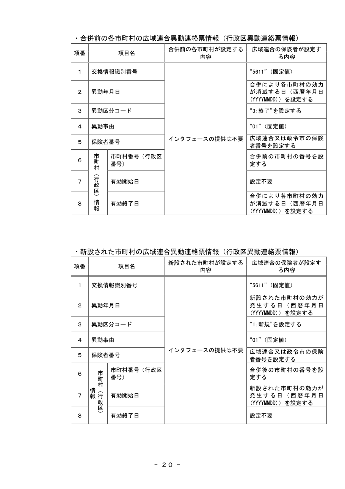
| 項番 | 項目名 | 属性 | 桁数 | 内容 | 必須 | 備考 | その他の列 |
|---|---|---|---|---|---|---|---|
| １ | 交換情報識別番号 | インタフェースの提供は不要 | 広域連合の保険者が設定する内容: “5611”（固定値） | ||||
| ２ | 異動年月日 | インタフェースの提供は不要 | 広域連合の保険者が設定する内容: 合併により各市町村の効力が消滅する日（西暦年月日(YYYYMMDD)）を設定する | ||||
| ３ | 異動区分コード | インタフェースの提供は不要 | 広域連合の保険者が設定する内容: “3:終了”を設定する | ||||
| ４ | 異動事由 | インタフェースの提供は不要 | 広域連合の保険者が設定する内容: “01”（固定値） | ||||
| ５ | 保険者番号 | インタフェースの提供は不要 | 広域連合の保険者が設定する内容: 広域連合又は政令市の保険者番号を設定する | ||||
| ６ | 市町村（行政区）情報 > 市町村番号（行政区番号） | インタフェースの提供は不要 | 広域連合の保険者が設定する内容: 合併前の市町村の番号を設定する | ||||
| ７ | 市町村（行政区）情報 > 有効開始日 | インタフェースの提供は不要 | 広域連合の保険者が設定する内容: 設定不要 | ||||
| ８ | 市町村（行政区）情報 > 有効終了日 | インタフェースの提供は不要 | 広域連合の保険者が設定する内容: 合併により各市町村の効力が消滅する日（西暦年月日(YYYYMMDD)）を設定する |
| 項番 | 項目名 | 属性 | 桁数 | 内容 | 必須 | 備考 | その他の列 |
|---|---|---|---|---|---|---|---|
| １ | 交換情報識別番号 | インタフェースの提供は不要 | 広域連合の保険者が設定する内容: “5611”（固定値） | ||||
| ２ | 異動年月日 | インタフェースの提供は不要 | 広域連合の保険者が設定する内容: 新設された市町村の効力が発生する日（西暦年月日(YYYYMMDD)）を設定する | ||||
| ３ | 異動区分コード | インタフェースの提供は不要 | 広域連合の保険者が設定する内容: “1:新規”を設定する | ||||
| ４ | 異動事由 | インタフェースの提供は不要 | 広域連合の保険者が設定する内容: “01”（固定値） | ||||
| ５ | 保険者番号 | インタフェースの提供は不要 | 広域連合の保険者が設定する内容: 広域連合又は政令市の保険者番号を設定する | ||||
| ６ | 市町村（行政区）情報 > 市町村番号（行政区番号） | インタフェースの提供は不要 | 広域連合の保険者が設定する内容: 合併後の市町村の番号を設定する | ||||
| ７ | 市町村（行政区）情報 > 有効開始日 | インタフェースの提供は不要 | 広域連合の保険者が設定する内容: 新設された市町村の効力が発生する日（西暦年月日(YYYYMMDD)）を設定する | ||||
| ８ | 市町村（行政区）情報 > 有効終了日 | インタフェースの提供は不要 | 広域連合の保険者が設定する内容: 設定不要 |
| 項番 | 項目名 | 属性 | 桁数 | 内容 | 必須 | 備考 | その他の列 |
|---|---|---|---|---|---|---|---|
| 1 | 交換情報識別番号 | “5611”（固定値） | 合併前の各市町村が設定する内容: インタフェースの提供は不要 | ||||
| 2 | 異動年月日 | 合併により各市町村の効力が消滅する日（西暦年月日(YYYYMMDD)）を設定する | 合併前の各市町村が設定する内容: インタフェースの提供は不要 | ||||
| 3 | 異動区分コード | “3:終了”を設定する | 合併前の各市町村が設定する内容: インタフェースの提供は不要 | ||||
| 4 | 異動事由 | “01”（固定値） | 合併前の各市町村が設定する内容: インタフェースの提供は不要 | ||||
| 5 | 保険者番号 | 広域連合又は政令市の保険者番号を設定する | 合併前の各市町村が設定する内容: インタフェースの提供は不要 | ||||
| 6 | 市町村（行政区）情報 > 市町村番号（行政区番号） | 合併前の市町村の番号を設定する | 合併前の各市町村が設定する内容: インタフェースの提供は不要 | ||||
| 7 | 市町村（行政区）情報 > 有効開始日 | 設定不要 | 合併前の各市町村が設定する内容: インタフェースの提供は不要 | ||||
| 8 | 市町村（行政区）情報 > 有効終了日 | 合併により各市町村の効力が消滅する日（西暦年月日(YYYYMMDD)）を設定する | 合併前の各市町村が設定する内容: インタフェースの提供は不要 |
| 項番 | 項目名 | 属性 | 桁数 | 内容 | 必須 | 備考 | その他の列 |
|---|---|---|---|---|---|---|---|
| 1 | 交換情報識別番号 | “5611”（固定値） | 新設された市町村が設定する内容: インタフェースの提供は不要 | ||||
| 2 | 異動年月日 | 新設された市町村の効力が発生する日（西暦年月日(YYYYMMDD)）を設定する | 新設された市町村が設定する内容: インタフェースの提供は不要 | ||||
| 3 | 異動区分コード | “1:新規”を設定する | 新設された市町村が設定する内容: インタフェースの提供は不要 | ||||
| 4 | 異動事由 | “01”（固定値） | 新設された市町村が設定する内容: インタフェースの提供は不要 | ||||
| 5 | 保険者番号 | 広域連合又は政令市の保険者番号を設定する | 新設された市町村が設定する内容: インタフェースの提供は不要 | ||||
| 6 | 市町村（行政区）情報 > 市町村番号（行政区番号） | 合併後の市町村の番号を設定する | 新設された市町村が設定する内容: インタフェースの提供は不要 | ||||
| 7 | 市町村（行政区）情報 > 有効開始日 | 新設された市町村の効力が発生する日（西暦年月日(YYYYMMDD)）を設定する | 新設された市町村が設定する内容: インタフェースの提供は不要 | ||||
| 8 | 市町村（行政区）情報 > 有効終了日 | 設定不要 | 新設された市町村が設定する内容: インタフェースの提供は不要 |
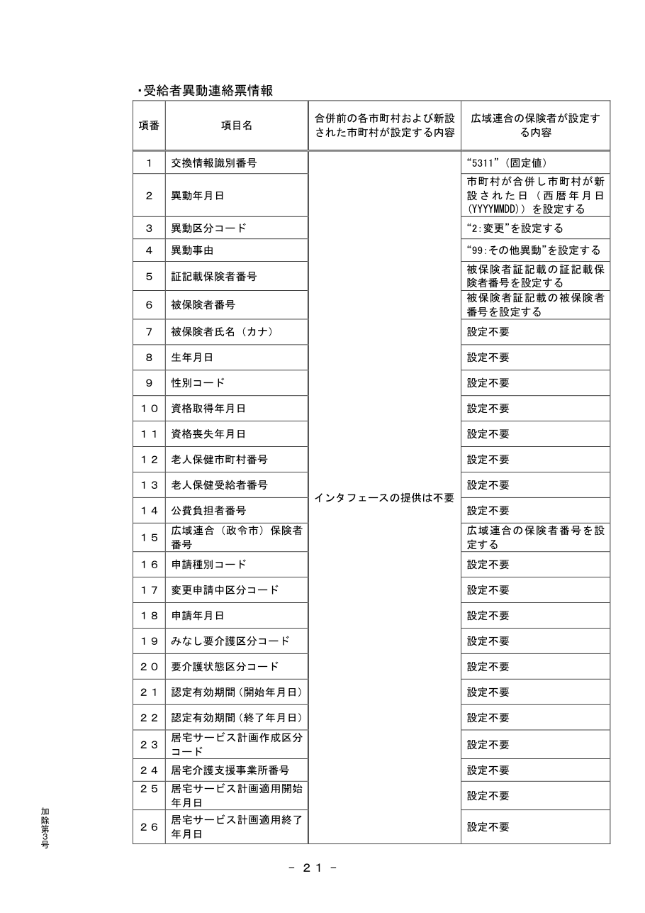
| 項番 | 項目名 | 属性 | 桁数 | 内容 | 必須 | 備考 | その他の列 |
|---|---|---|---|---|---|---|---|
| １ | 交換情報識別番号 | 合併前の各市町村および新設された市町村が設定する内容: インタフェースの提供は不要 広域連合の保険者が設定する内容: “5311”（固定値） | |||||
| ２ | 異動年月日 | 合併前の各市町村および新設された市町村が設定する内容: インタフェースの提供は不要 広域連合の保険者が設定する内容: 市町村が合併し市町村が新設された日（西暦年月日(YYYYMMDD)）を設定する | |||||
| ３ | 異動区分コード | 合併前の各市町村および新設された市町村が設定する内容: インタフェースの提供は不要 広域連合の保険者が設定する内容: “2:変更”を設定する | |||||
| ４ | 異動事由 | 合併前の各市町村および新設された市町村が設定する内容: インタフェースの提供は不要 広域連合の保険者が設定する内容: “99:その他異動”を設定する | |||||
| ５ | 証記載保険者番号 | 合併前の各市町村および新設された市町村が設定する内容: インタフェースの提供は不要 広域連合の保険者が設定する内容: 被保険者証記載の証記載保険者番号を設定する | |||||
| ６ | 被保険者番号 | 合併前の各市町村および新設された市町村が設定する内容: インタフェースの提供は不要 広域連合の保険者が設定する内容: 被保険者証記載の被保険者番号を設定する | |||||
| ７ | 被保険者氏名（カナ） | 合併前の各市町村および新設された市町村が設定する内容: インタフェースの提供は不要 広域連合の保険者が設定する内容: 設定不要 | |||||
| ８ | 生年月日 | 合併前の各市町村および新設された市町村が設定する内容: インタフェースの提供は不要 広域連合の保険者が設定する内容: 設定不要 | |||||
| ９ | 性別コード | 合併前の各市町村および新設された市町村が設定する内容: インタフェースの提供は不要 広域連合の保険者が設定する内容: 設定不要 | |||||
| １０ | 資格取得年月日 | 合併前の各市町村および新設された市町村が設定する内容: インタフェースの提供は不要 広域連合の保険者が設定する内容: 設定不要 | |||||
| １１ | 資格喪失年月日 | 合併前の各市町村および新設された市町村が設定する内容: インタフェースの提供は不要 広域連合の保険者が設定する内容: 設定不要 | |||||
| １２ | 老人保健市町村番号 | 合併前の各市町村および新設された市町村が設定する内容: インタフェースの提供は不要 広域連合の保険者が設定する内容: 設定不要 | |||||
| １３ | 老人保健受給者番号 | 合併前の各市町村および新設された市町村が設定する内容: インタフェースの提供は不要 広域連合の保険者が設定する内容: 設定不要 | |||||
| １４ | 公費負担者番号 | 合併前の各市町村および新設された市町村が設定する内容: インタフェースの提供は不要 広域連合の保険者が設定する内容: 設定不要 | |||||
| １５ | 広域連合（政令市）保険者番号 | 合併前の各市町村および新設された市町村が設定する内容: インタフェースの提供は不要 広域連合の保険者が設定する内容: 広域連合の保険者番号を設定する | |||||
| １６ | 申請種別コード | 合併前の各市町村および新設された市町村が設定する内容: インタフェースの提供は不要 広域連合の保険者が設定する内容: 設定不要 | |||||
| １７ | 変更申請中区分コード | 合併前の各市町村および新設された市町村が設定する内容: インタフェースの提供は不要 広域連合の保険者が設定する内容: 設定不要 | |||||
| １８ | 申請年月日 | 合併前の各市町村および新設された市町村が設定する内容: インタフェースの提供は不要 広域連合の保険者が設定する内容: 設定不要 | |||||
| １９ | みなし要介護区分コード | 合併前の各市町村および新設された市町村が設定する内容: インタフェースの提供は不要 広域連合の保険者が設定する内容: 設定不要 | |||||
| ２０ | 要介護状態区分コード | 合併前の各市町村および新設された市町村が設定する内容: インタフェースの提供は不要 広域連合の保険者が設定する内容: 設定不要 | |||||
| ２１ | 認定有効期間（開始年月日） | 合併前の各市町村および新設された市町村が設定する内容: インタフェースの提供は不要 広域連合の保険者が設定する内容: 設定不要 | |||||
| ２２ | 認定有効期間（終了年月日） | 合併前の各市町村および新設された市町村が設定する内容: インタフェースの提供は不要 広域連合の保険者が設定する内容: 設定不要 | |||||
| ２３ | 居宅サービス計画作成区分コード | 合併前の各市町村および新設された市町村が設定する内容: インタフェースの提供は不要 広域連合の保険者が設定する内容: 設定不要 | |||||
| ２４ | 居宅介護支援事業所番号 | 合併前の各市町村および新設された市町村が設定する内容: インタフェースの提供は不要 広域連合の保険者が設定する内容: 設定不要 | |||||
| ２５ | 居宅サービス計画適用開始年月日 | 合併前の各市町村および新設された市町村が設定する内容: インタフェースの提供は不要 広域連合の保険者が設定する内容: 設定不要 | |||||
| ２６ | 居宅サービス計画適用終了年月日 | 合併前の各市町村および新設された市町村が設定する内容: インタフェースの提供は不要 広域連合の保険者が設定する内容: 設定不要 |
| 項番 | 項目名 | 属性 | 桁数 | 内容 | 必須 | 備考 | その他の列 |
|---|---|---|---|---|---|---|---|
| 1 | 交換情報識別番号 | “5311”（固定値） | 合併前の各市町村および新設された市町村が設定する内容: インタフェースの提供は不要 | ||||
| 2 | 異動年月日 | 市町村が合併し市町村が新設された日（西暦年月日(YYYYMMDD)）を設定する | 合併前の各市町村および新設された市町村が設定する内容: インタフェースの提供は不要 | ||||
| 3 | 異動区分コード | “2:変更”を設定する | 合併前の各市町村および新設された市町村が設定する内容: インタフェースの提供は不要 | ||||
| 4 | 異動事由 | “99:その他異動”を設定する | 合併前の各市町村および新設された市町村が設定する内容: インタフェースの提供は不要 | ||||
| 5 | 証記載保険者番号 | 被保険者証記載の証記載保険者番号を設定する | 合併前の各市町村および新設された市町村が設定する内容: インタフェースの提供は不要 | ||||
| 6 | 被保険者番号 | 被保険者証記載の被保険者番号を設定する | 合併前の各市町村および新設された市町村が設定する内容: インタフェースの提供は不要 | ||||
| 7 | 被保険者氏名（カナ） | 設定不要 | 合併前の各市町村および新設された市町村が設定する内容: インタフェースの提供は不要 | ||||
| 8 | 生年月日 | 設定不要 | 合併前の各市町村および新設された市町村が設定する内容: インタフェースの提供は不要 | ||||
| 9 | 性別コード | 設定不要 | 合併前の各市町村および新設された市町村が設定する内容: インタフェースの提供は不要 | ||||
| 10 | 資格取得年月日 | 設定不要 | 合併前の各市町村および新設された市町村が設定する内容: インタフェースの提供は不要 | ||||
| 11 | 資格喪失年月日 | 設定不要 | 合併前の各市町村および新設された市町村が設定する内容: インタフェースの提供は不要 | ||||
| 12 | 老人保健市町村番号 | 設定不要 | 合併前の各市町村および新設された市町村が設定する内容: インタフェースの提供は不要 | ||||
| 13 | 老人保健受給者番号 | 設定不要 | 合併前の各市町村および新設された市町村が設定する内容: インタフェースの提供は不要 | ||||
| 14 | 公費負担者番号 | 設定不要 | 合併前の各市町村および新設された市町村が設定する内容: インタフェースの提供は不要 | ||||
| 15 | 広域連合（政令市）保険者番号 | 広域連合の保険者番号を設定する | 合併前の各市町村および新設された市町村が設定する内容: インタフェースの提供は不要 | ||||
| 16 | 申請種別コード | 設定不要 | 合併前の各市町村および新設された市町村が設定する内容: インタフェースの提供は不要 | ||||
| 17 | 変更申請中区分コード | 設定不要 | 合併前の各市町村および新設された市町村が設定する内容: インタフェースの提供は不要 | ||||
| 18 | 申請年月日 | 設定不要 | 合併前の各市町村および新設された市町村が設定する内容: インタフェースの提供は不要 | ||||
| 19 | みなし要介護区分コード | 設定不要 | 合併前の各市町村および新設された市町村が設定する内容: インタフェースの提供は不要 | ||||
| 20 | 要介護状態区分コード | 設定不要 | 合併前の各市町村および新設された市町村が設定する内容: インタフェースの提供は不要 | ||||
| 21 | 認定有効期間（開始年月日） | 設定不要 | 合併前の各市町村および新設された市町村が設定する内容: インタフェースの提供は不要 | ||||
| 22 | 認定有効期間（終了年月日） | 設定不要 | 合併前の各市町村および新設された市町村が設定する内容: インタフェースの提供は不要 | ||||
| 23 | 居宅サービス計画作成区分コード | 設定不要 | 合併前の各市町村および新設された市町村が設定する内容: インタフェースの提供は不要 | ||||
| 24 | 居宅介護支援事業所番号 | 設定不要 | 合併前の各市町村および新設された市町村が設定する内容: インタフェースの提供は不要 | ||||
| 25 | 居宅サービス計画適用開始年月日 | 設定不要 | 合併前の各市町村および新設された市町村が設定する内容: インタフェースの提供は不要 | ||||
| 26 | 居宅サービス計画適用終了年月日 | 設定不要 | 合併前の各市町村および新設された市町村が設定する内容: インタフェースの提供は不要 |
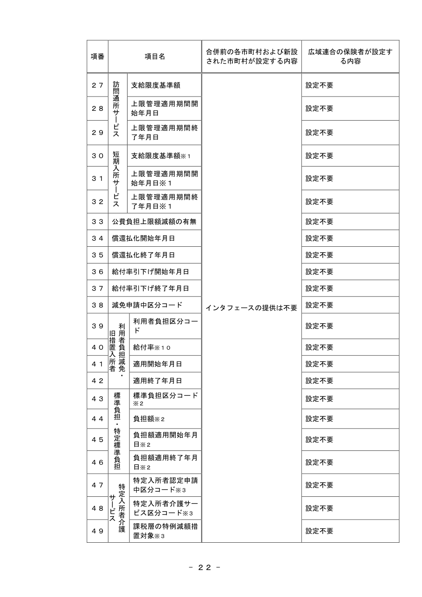
| 項番 | 項目名 | 属性 | 桁数 | 内容 | 必須 | 備考 | その他の列 |
|---|---|---|---|---|---|---|---|
| ２７ | 訪問通所サービス > 支給限度基準額 | 合併前の各市町村および新設された市町村が設定する内容: インタフェースの提供は不要 広域連合の保険者が設定する内容: 設定不要 | |||||
| ２８ | 訪問通所サービス > 上限管理適用期間開始年月日 | 合併前の各市町村および新設された市町村が設定する内容: インタフェースの提供は不要 広域連合の保険者が設定する内容: 設定不要 | |||||
| ２９ | 訪問通所サービス > 上限管理適用期間終了年月日 | 合併前の各市町村および新設された市町村が設定する内容: インタフェースの提供は不要 広域連合の保険者が設定する内容: 設定不要 | |||||
| ３０ | 短期入所サービス > 支給限度基準額※1 | 合併前の各市町村および新設された市町村が設定する内容: インタフェースの提供は不要 広域連合の保険者が設定する内容: 設定不要 | |||||
| ３１ | 短期入所サービス > 上限管理適用期間開始年月日※1 | 合併前の各市町村および新設された市町村が設定する内容: インタフェースの提供は不要 広域連合の保険者が設定する内容: 設定不要 | |||||
| ３２ | 短期入所サービス > 上限管理適用期間終了年月日※1 | 合併前の各市町村および新設された市町村が設定する内容: インタフェースの提供は不要 広域連合の保険者が設定する内容: 設定不要 | |||||
| ３３ | 公費負担上限額減額の有無 | 合併前の各市町村および新設された市町村が設定する内容: インタフェースの提供は不要 広域連合の保険者が設定する内容: 設定不要 | |||||
| ３４ | 償還払化開始年月日 | 合併前の各市町村および新設された市町村が設定する内容: インタフェースの提供は不要 広域連合の保険者が設定する内容: 設定不要 | |||||
| ３５ | 償還払化終了年月日 | 合併前の各市町村および新設された市町村が設定する内容: インタフェースの提供は不要 広域連合の保険者が設定する内容: 設定不要 | |||||
| ３６ | 給付率引下げ開始年月日 | 合併前の各市町村および新設された市町村が設定する内容: インタフェースの提供は不要 広域連合の保険者が設定する内容: 設定不要 | |||||
| ３７ | 給付率引下げ終了年月日 | 合併前の各市町村および新設された市町村が設定する内容: インタフェースの提供は不要 広域連合の保険者が設定する内容: 設定不要 | |||||
| ３８ | 減免申請中区分コード | 合併前の各市町村および新設された市町村が設定する内容: インタフェースの提供は不要 広域連合の保険者が設定する内容: 設定不要 | |||||
| ３９ | 利用者負担減免・旧措置入所者 > 利用者負担区分コード | 合併前の各市町村および新設された市町村が設定する内容: インタフェースの提供は不要 広域連合の保険者が設定する内容: 設定不要 | |||||
| ４０ | 利用者負担減免・旧措置入所者 > 給付率※10 | 合併前の各市町村および新設された市町村が設定する内容: インタフェースの提供は不要 広域連合の保険者が設定する内容: 設定不要 | |||||
| ４１ | 利用者負担減免・旧措置入所者 > 適用開始年月日 | 合併前の各市町村および新設された市町村が設定する内容: インタフェースの提供は不要 広域連合の保険者が設定する内容: 設定不要 | |||||
| ４２ | 利用者負担減免・旧措置入所者 > 適用終了年月日 | 合併前の各市町村および新設された市町村が設定する内容: インタフェースの提供は不要 広域連合の保険者が設定する内容: 設定不要 | |||||
| ４３ | 標準負担・特定標準負担 > 標準負担区分コード※2 | 合併前の各市町村および新設された市町村が設定する内容: インタフェースの提供は不要 広域連合の保険者が設定する内容: 設定不要 | |||||
| ４４ | 標準負担・特定標準負担 > 負担額※2 | 合併前の各市町村および新設された市町村が設定する内容: インタフェースの提供は不要 広域連合の保険者が設定する内容: 設定不要 | |||||
| ４５ | 標準負担・特定標準負担 > 負担額適用開始年月日※2 | 合併前の各市町村および新設された市町村が設定する内容: インタフェースの提供は不要 広域連合の保険者が設定する内容: 設定不要 | |||||
| ４６ | 標準負担・特定標準負担 > 負担額適用終了年月日※2 | 合併前の各市町村および新設された市町村が設定する内容: インタフェースの提供は不要 広域連合の保険者が設定する内容: 設定不要 | |||||
| ４７ | 特定入所者介護サービス > 特定入所者認定申請中区分コード※3 | 合併前の各市町村および新設された市町村が設定する内容: インタフェースの提供は不要 広域連合の保険者が設定する内容: 設定不要 | |||||
| ４８ | 特定入所者介護サービス > 特定入所者介護サービス区分コード※3 | 合併前の各市町村および新設された市町村が設定する内容: インタフェースの提供は不要 広域連合の保険者が設定する内容: 設定不要 | |||||
| ４９ | 特定入所者介護サービス > 課税層の特例減額措置対象※3 | 合併前の各市町村および新設された市町村が設定する内容: インタフェースの提供は不要 広域連合の保険者が設定する内容: 設定不要 |
| 項番 | 項目名 | 属性 | 桁数 | 内容 | 必須 | 備考 | その他の列 |
|---|---|---|---|---|---|---|---|
| ２７ | 訪問通所サービス > 支給限度基準額 | インタフェースの提供は不要 | 設定不要 | ||||
| ２８ | 訪問通所サービス > 上限管理適用期間開始年月日 | インタフェースの提供は不要 | 設定不要 | ||||
| ２９ | 訪問通所サービス > 上限管理適用期間終了年月日 | インタフェースの提供は不要 | 設定不要 | ||||
| ３０ | 短期入所サービス > 支給限度基準額※１ | インタフェースの提供は不要 | 設定不要 | ||||
| ３１ | 短期入所サービス > 上限管理適用期間開始年月日※１ | インタフェースの提供は不要 | 設定不要 | ||||
| ３２ | 短期入所サービス > 上限管理適用期間終了年月日※１ | インタフェースの提供は不要 | 設定不要 | ||||
| ３３ | 公費負担上限額減額の有無 | インタフェースの提供は不要 | 設定不要 | ||||
| ３４ | 償還払化開始年月日 | インタフェースの提供は不要 | 設定不要 | ||||
| ３５ | 償還払化終了年月日 | インタフェースの提供は不要 | 設定不要 | ||||
| ３６ | 給付率引下げ開始年月日 | インタフェースの提供は不要 | 設定不要 | ||||
| ３７ | 給付率引下げ終了年月日 | インタフェースの提供は不要 | 設定不要 | ||||
| ３８ | 減免申請中区分コード | インタフェースの提供は不要 | 設定不要 | ||||
| ３９ | 旧措置入所者利用者負担減免・ > 利用者負担区分コード | インタフェースの提供は不要 | 設定不要 | ||||
| ４０ | 旧措置入所者利用者負担減免・ > 給付率※１０ | インタフェースの提供は不要 | 設定不要 | ||||
| ４１ | 旧措置入所者利用者負担減免・ > 適用開始年月日 | インタフェースの提供は不要 | 設定不要 | ||||
| ４２ | 旧措置入所者利用者負担減免・ > 適用終了年月日 | インタフェースの提供は不要 | 設定不要 | ||||
| ４３ | 標準負担・特定標準負担 > 標準負担区分コード※２ | インタフェースの提供は不要 | 設定不要 | ||||
| ４４ | 標準負担・特定標準負担 > 負担額※２ | インタフェースの提供は不要 | 設定不要 | ||||
| ４５ | 標準負担・特定標準負担 > 負担額適用開始年月日※２ | インタフェースの提供は不要 | 設定不要 | ||||
| ４６ | 標準負担・特定標準負担 > 負担額適用終了年月日※２ | インタフェースの提供は不要 | 設定不要 | ||||
| ４７ | 特定入所者介護サービス > 特定入所者認定申請中区分コード※３ | インタフェースの提供は不要 | 設定不要 | ||||
| ４８ | 特定入所者介護サービス > 特定入所者介護サービス区分コード※３ | インタフェースの提供は不要 | 設定不要 | ||||
| ４９ | 特定入所者介護サービス > 課税層の特例減額措置対象※３ | インタフェースの提供は不要 | 設定不要 |
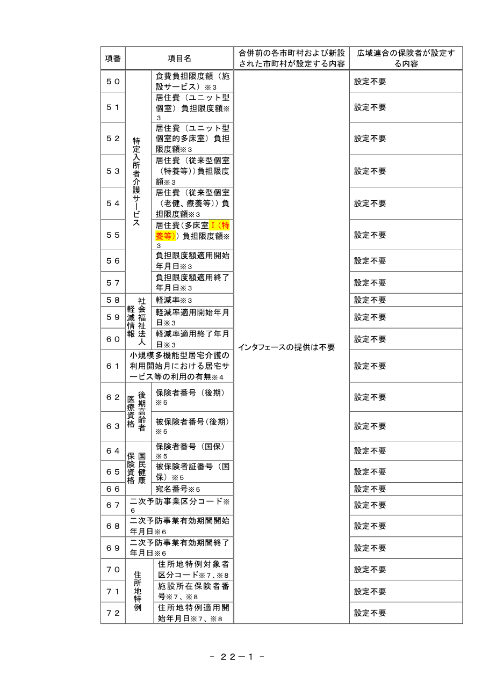
| 項番 | 項目名 | 属性 | 桁数 | 内容 | 必須 | 備考 | その他の列 |
|---|---|---|---|---|---|---|---|
| 50 | 特定入所者介護サービス > 食費負担限度額（施設サービス）※3 | インタフェースの提供は不要 | 広域連合の保険者が設定する内容: 設定不要 | ||||
| 51 | 特定入所者介護サービス > 居住費（ユニット型個室）負担限度額※3 | インタフェースの提供は不要 | 広域連合の保険者が設定する内容: 設定不要 | ||||
| 52 | 特定入所者介護サービス > 居住費（ユニット型個室的多床室）負担限度額※3 | インタフェースの提供は不要 | 広域連合の保険者が設定する内容: 設定不要 | ||||
| 53 | 特定入所者介護サービス > 居住費（従来型個室（特養等））負担限度額※3 | インタフェースの提供は不要 | 広域連合の保険者が設定する内容: 設定不要 | ||||
| 54 | 特定入所者介護サービス > 居住費（従来型個室（老健、療養等））負担限度額※3 | インタフェースの提供は不要 | 広域連合の保険者が設定する内容: 設定不要 | ||||
| 55 | 特定入所者介護サービス > 居住費（多床室Ⅰ（特養等））負担限度額※3 | インタフェースの提供は不要 | 広域連合の保険者が設定する内容: 設定不要 | ||||
| 56 | 特定入所者介護サービス > 負担限度額適用開始年月日※3 | インタフェースの提供は不要 | 広域連合の保険者が設定する内容: 設定不要 | ||||
| 57 | 特定入所者介護サービス > 負担限度額適用終了年月日※3 | インタフェースの提供は不要 | 広域連合の保険者が設定する内容: 設定不要 | ||||
| 58 | 社会福祉法人軽減情報 > 軽減率※3 | インタフェースの提供は不要 | 広域連合の保険者が設定する内容: 設定不要 | ||||
| 59 | 社会福祉法人軽減情報 > 軽減率適用開始年月日※3 | インタフェースの提供は不要 | 広域連合の保険者が設定する内容: 設定不要 | ||||
| 60 | 社会福祉法人軽減情報 > 軽減率適用終了年月日※3 | インタフェースの提供は不要 | 広域連合の保険者が設定する内容: 設定不要 | ||||
| 61 | 小規模多機能型居宅介護の利用開始月における居宅サービス等の利用の有無※4 | インタフェースの提供は不要 | 広域連合の保険者が設定する内容: 設定不要 | ||||
| 62 | 医療資格後期高齢者 > 保険者番号（後期）※5 | インタフェースの提供は不要 | 広域連合の保険者が設定する内容: 設定不要 | ||||
| 63 | 医療資格後期高齢者 > 被保険者番号（後期）※5 | インタフェースの提供は不要 | 広域連合の保険者が設定する内容: 設定不要 | ||||
| 64 | 保険資格国民健康 > 保険者番号（国保）※5 | インタフェースの提供は不要 | 広域連合の保険者が設定する内容: 設定不要 | ||||
| 65 | 保険資格国民健康 > 被保険者証番号（国保）※5 | インタフェースの提供は不要 | 広域連合の保険者が設定する内容: 設定不要 | ||||
| 66 | 保険資格国民健康 > 宛名番号※5 | インタフェースの提供は不要 | 広域連合の保険者が設定する内容: 設定不要 | ||||
| 67 | 二次予防事業区分コード※6 | インタフェースの提供は不要 | 広域連合の保険者が設定する内容: 設定不要 | ||||
| 68 | 二次予防事業有効期間開始年月日※6 | インタフェースの提供は不要 | 広域連合の保険者が設定する内容: 設定不要 | ||||
| 69 | 二次予防事業有効期間終了年月日※6 | インタフェースの提供は不要 | 広域連合の保険者が設定する内容: 設定不要 | ||||
| 70 | 住所地特例 > 住所地特例対象者区分コード※7、※8 | インタフェースの提供は不要 | 広域連合の保険者が設定する内容: 設定不要 | ||||
| 71 | 住所地特例 > 施設所在保険者番号※7、※8 | インタフェースの提供は不要 | 広域連合の保険者が設定する内容: 設定不要 | ||||
| 72 | 住所地特例 > 住所地特例適用開始年月日※7、※8 | インタフェースの提供は不要 | 広域連合の保険者が設定する内容: 設定不要 |
| 項番 | 項目名 | 属性 | 桁数 | 内容 | 必須 | 備考 | その他の列 |
|---|---|---|---|---|---|---|---|
| ５０ | 特定入所者介護サービス > 食費負担限度額（施設サービス）※３ | インタフェースの提供は不要 | 設定不要 | ||||
| ５１ | 特定入所者介護サービス > 居住費（ユニット型個室）負担限度額※３ | インタフェースの提供は不要 | 設定不要 | ||||
| ５２ | 特定入所者介護サービス > 居住費（ユニット型個室的多床室）負担限度額※３ | インタフェースの提供は不要 | 設定不要 | ||||
| ５３ | 特定入所者介護サービス > 居住費（従来型個室（特養等））負担限度額※３ | インタフェースの提供は不要 | 設定不要 | ||||
| ５４ | 特定入所者介護サービス > 居住費（従来型個室（老健、療養等））負担限度額※３ | インタフェースの提供は不要 | 設定不要 | ||||
| ５５ | 特定入所者介護サービス > 居住費（多床室Ⅰ（特養等））負担限度額※３ | インタフェースの提供は不要 | 設定不要 | ||||
| ５６ | 特定入所者介護サービス > 負担限度額適用開始年月日※３ | インタフェースの提供は不要 | 設定不要 | ||||
| ５７ | 特定入所者介護サービス > 負担限度額適用終了年月日※３ | インタフェースの提供は不要 | 設定不要 | ||||
| ５８ | 軽減情報 > 社会福祉法人 > 軽減率※３ | インタフェースの提供は不要 | 設定不要 | ||||
| ５９ | 軽減情報 > 社会福祉法人 > 軽減率適用開始年月日※３ | インタフェースの提供は不要 | 設定不要 | ||||
| ６０ | 軽減情報 > 社会福祉法人 > 軽減率適用終了年月日※３ | インタフェースの提供は不要 | 設定不要 | ||||
| ６１ | 小規模多機能型居宅介護の利用開始月における居宅サービス等の利用の有無※４ | インタフェースの提供は不要 | 設定不要 | ||||
| ６２ | 医療資格 > 後期高齢者 > 保険者番号（後期）※５ | インタフェースの提供は不要 | 設定不要 | ||||
| ６３ | 医療資格 > 後期高齢者 > 被保険者番号（後期）※５ | インタフェースの提供は不要 | 設定不要 | ||||
| ６４ | 保険資格 > 国民健康 > 保険者番号（国保）※５ | インタフェースの提供は不要 | 設定不要 | ||||
| ６５ | 保険資格 > 国民健康 > 被保険者証番号（国保）※５ | インタフェースの提供は不要 | 設定不要 | ||||
| ６６ | 保険資格 > 国民健康 > 宛名番号※５ | インタフェースの提供は不要 | 設定不要 | ||||
| ６７ | 二次予防事業区分コード※６ | インタフェースの提供は不要 | 設定不要 | ||||
| ６８ | 二次予防事業有効期間開始年月日※６ | インタフェースの提供は不要 | 設定不要 | ||||
| ６９ | 二次予防事業有効期間終了年月日※６ | インタフェースの提供は不要 | 設定不要 | ||||
| ７０ | 住所地特例 > 住所地特例対象者区分コード※７、※８ | インタフェースの提供は不要 | 設定不要 | ||||
| ７１ | 住所地特例 > 施設所在保険者番号※７、※８ | インタフェースの提供は不要 | 設定不要 | ||||
| ７２ | 住所地特例 > 住所地特例適用開始年月日※７、※８ | インタフェースの提供は不要 | 設定不要 |
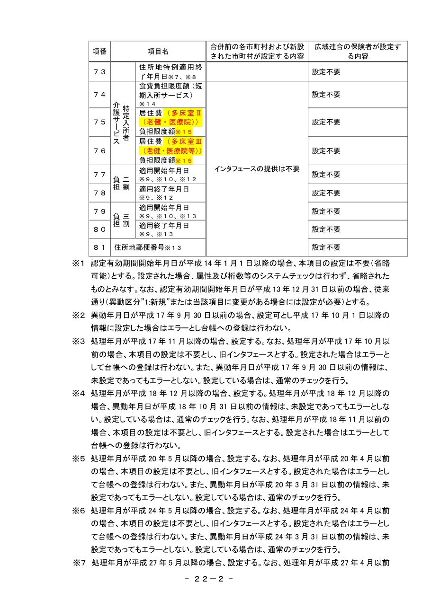
| 項番 | 項目名 | 属性 | 桁数 | 内容 | 必須 | 備考 | その他の列 |
|---|---|---|---|---|---|---|---|
| ７３ | 住所地特例適用終了年月日※7、※8 | 広域連合の保険者が設定する内容: 設定不要 | |||||
| ７４ | 介護サービス > 特定入所者 > 食費負担限度額（短期入所サービス）※14 | インタフェースの提供は不要 | 広域連合の保険者が設定する内容: 設定不要 | ||||
| ７５ | 介護サービス > 特定入所者 > 居住費（多床室Ⅱ（老健・医療院））負担限度額※15 | インタフェースの提供は不要 | 広域連合の保険者が設定する内容: 設定不要 | ||||
| ７６ | 介護サービス > 特定入所者 > 居住費（多床室Ⅲ（老健・医療院等））負担限度額※15 | インタフェースの提供は不要 | 広域連合の保険者が設定する内容: 設定不要 | ||||
| ７７ | 負担二割 > 適用開始年月日※9、※10、※12 | インタフェースの提供は不要 | 広域連合の保険者が設定する内容: 設定不要 | ||||
| ７８ | 負担二割 > 適用終了年月日※9、※12 | インタフェースの提供は不要 | 広域連合の保険者が設定する内容: 設定不要 | ||||
| ７９ | 負担三割 > 適用開始年月日※9、※10、※13 | インタフェースの提供は不要 | 広域連合の保険者が設定する内容: 設定不要 | ||||
| ８０ | 負担三割 > 適用終了年月日※9、※13 | インタフェースの提供は不要 | 広域連合の保険者が設定する内容: 設定不要 | ||||
| ８１ | 住所地郵便番号※13 | インタフェースの提供は不要 | 広域連合の保険者が設定する内容: 設定不要 |
| 項番 | 項目名 | 属性 | 桁数 | 内容 | 必須 | 備考 | その他の列 |
|---|---|---|---|---|---|---|---|
| ７３ | 住所地特例適用終了年月日※７、※８ | 設定不要 | |||||
| ７４ | 特定入所者介護サービス > 食費負担限度額（短期入所サービス）※１４ | インタフェースの提供は不要 | 設定不要 | ||||
| ７５ | 特定入所者介護サービス > 居住費（多床室Ⅱ（老健・医療院））負担限度額※１５ | インタフェースの提供は不要 | 設定不要 | ||||
| ７６ | 特定入所者介護サービス > 居住費（多床室Ⅲ（老健・医療院等））負担限度額※１５ | インタフェースの提供は不要 | 設定不要 | ||||
| ７７ | 二割負担 > 適用開始年月日※９、※１０、※１２ | インタフェースの提供は不要 | 設定不要 | ||||
| ７８ | 二割負担 > 適用終了年月日※９、※１２ | インタフェースの提供は不要 | 設定不要 | ||||
| ７９ | 三割負担 > 適用開始年月日※９、※１０、※１３ | インタフェースの提供は不要 | 設定不要 | ||||
| ８０ | 三割負担 > 適用終了年月日※９、※１３ | インタフェースの提供は不要 | 設定不要 | ||||
| ８１ | 住所地郵便番号※１３ | インタフェースの提供は不要 | 設定不要 |
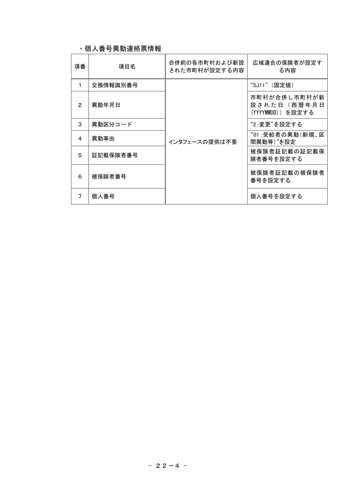
| 項番 | 項目名 | 属性 | 桁数 | 内容 | 必須 | 備考 | その他の列 |
|---|---|---|---|---|---|---|---|
| １ | 交換情報識別番号 | 合併前の各市町村および新設された市町村が設定する内容: インタフェースの提供は不要 広域連合の保険者が設定する内容: “5J11”（固定値） | |||||
| ２ | 異動年月日 | 合併前の各市町村および新設された市町村が設定する内容: インタフェースの提供は不要 広域連合の保険者が設定する内容: 市町村が合併し市町村が新設された日（西暦年月日(YYYYMMDD)）を設定する | |||||
| ３ | 異動区分コード | 合併前の各市町村および新設された市町村が設定する内容: インタフェースの提供は不要 広域連合の保険者が設定する内容: “2:変更”を設定する | |||||
| ４ | 異動事由 | 合併前の各市町村および新設された市町村が設定する内容: インタフェースの提供は不要 広域連合の保険者が設定する内容: “01:受給者の異動(新規、区間異動等)”を設定 | |||||
| ５ | 証記載保険者番号 | 合併前の各市町村および新設された市町村が設定する内容: インタフェースの提供は不要 広域連合の保険者が設定する内容: 被保険者証記載の証記載保険者番号を設定する | |||||
| ６ | 被保険者番号 | 合併前の各市町村および新設された市町村が設定する内容: インタフェースの提供は不要 広域連合の保険者が設定する内容: 被保険者証記載の被保険者番号を設定する | |||||
| ７ | 個人番号 | 合併前の各市町村および新設された市町村が設定する内容: インタフェースの提供は不要 広域連合の保険者が設定する内容: 個人番号を設定する |
| 項番 | 項目名 | 属性 | 桁数 | 内容 | 必須 | 備考 | その他の列 |
|---|---|---|---|---|---|---|---|
| 1 | 交換情報識別番号 | “5J11”（固定値） | 合併前の各市町村および新設された市町村が設定する内容: インタフェースの提供は不要 | ||||
| 2 | 異動年月日 | 市町村が合併し市町村が新設された日（西暦年月日(YYYYMMDD)）を設定する | 合併前の各市町村および新設された市町村が設定する内容: インタフェースの提供は不要 | ||||
| 3 | 異動区分コード | “2:変更”を設定する | 合併前の各市町村および新設された市町村が設定する内容: インタフェースの提供は不要 | ||||
| 4 | 異動事由 | “01:受給者の異動(新規、区間異動等)”を設定 | 合併前の各市町村および新設された市町村が設定する内容: インタフェースの提供は不要 | ||||
| 5 | 証記載保険者番号 | 被保険者証記載の証記載保険者番号を設定する | 合併前の各市町村および新設された市町村が設定する内容: インタフェースの提供は不要 | ||||
| 6 | 被保険者番号 | 被保険者証記載の被保険者番号を設定する | 合併前の各市町村および新設された市町村が設定する内容: インタフェースの提供は不要 | ||||
| 7 | 個人番号 | 個人番号を設定する | 合併前の各市町村および新設された市町村が設定する内容: インタフェースの提供は不要 |
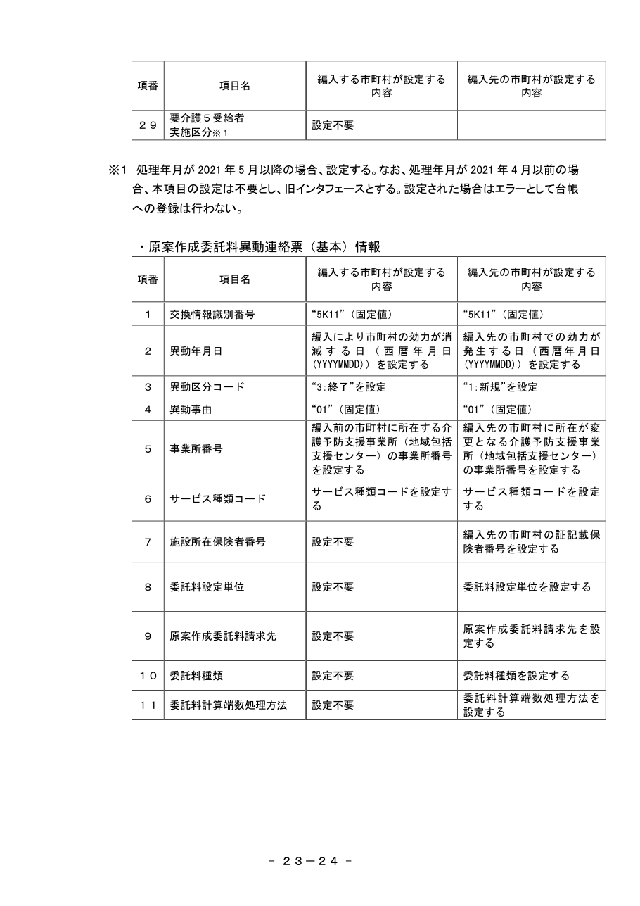
| 項番 | 項目名 | 属性 | 桁数 | 内容 | 必須 | 備考 | その他の列 |
|---|---|---|---|---|---|---|---|
| ２９ | 要介護５受給者実施区分※１ | 設定不要 | 編入先の市町村が設定する内容: － |
| 項番 | 項目名 | 属性 | 桁数 | 内容 | 必須 | 備考 | その他の列 |
|---|---|---|---|---|---|---|---|
| １ | 交換情報識別番号 | “5K11”（固定値） | 編入先の市町村が設定する内容: “5K11”（固定値） | ||||
| ２ | 異動年月日 | 編入により市町村の効力が消滅する日（西暦年月日(YYYYMMDD)）を設定する | 編入先の市町村が設定する内容: 編入先の市町村での効力が発生する日（西暦年月日(YYYYMMDD)）を設定する | ||||
| ３ | 異動区分コード | “3:終了”を設定 | 編入先の市町村が設定する内容: “1:新規”を設定 | ||||
| ４ | 異動事由 | “01”（固定値） | 編入先の市町村が設定する内容: “01”（固定値） | ||||
| ５ | 事業所番号 | 編入前の市町村に所在する介護予防支援事業所（地域包括支援センター）の事業所番号を設定する | 編入先の市町村が設定する内容: 編入先の市町村に所在が変更となる介護予防支援事業所（地域包括支援センター）の事業所番号を設定する | ||||
| ６ | サービス種類コード | サービス種類コードを設定する | 編入先の市町村が設定する内容: サービス種類コードを設定する | ||||
| ７ | 施設所在保険者番号 | 設定不要 | 編入先の市町村が設定する内容: 編入先の市町村の証記載保険者番号を設定する | ||||
| ８ | 委託料設定単位 | 設定不要 | 編入先の市町村が設定する内容: 委託料設定単位を設定する | ||||
| ９ | 原案作成委託料請求先 | 設定不要 | 編入先の市町村が設定する内容: 原案作成委託料請求先を設定する | ||||
| １０ | 委託料種類 | 設定不要 | 編入先の市町村が設定する内容: 委託料種類を設定する | ||||
| １１ | 委託料計算端数処理方法 | 設定不要 | 編入先の市町村が設定する内容: 委託料計算端数処理方法を設定する |
| 項番 | 項目名 | 属性 | 桁数 | 内容 | 必須 | 備考 | その他の列 |
|---|---|---|---|---|---|---|---|
| ２９ | 要介護５受給者実施区分※１ | 編入する市町村が設定する内容: 設定不要 編入先の市町村が設定する内容: － |
| 項番 | 項目名 | 属性 | 桁数 | 内容 | 必須 | 備考 | その他の列 |
|---|---|---|---|---|---|---|---|
| １ | 交換情報識別番号 | 編入する市町村が設定する内容: “5K11”（固定値） 編入先の市町村が設定する内容: “5K11”（固定値） | |||||
| ２ | 異動年月日 | 編入する市町村が設定する内容: 編入により市町村の効力が消滅する日（西暦年月日(YYYYMMDD)）を設定する 編入先の市町村が設定する内容: 編入先の市町村での効力が発生する日（西暦年月日(YYYYMMDD)）を設定する | |||||
| ３ | 異動区分コード | 編入する市町村が設定する内容: “3:終了”を設定 編入先の市町村が設定する内容: “1:新規”を設定 | |||||
| ４ | 異動事由 | 編入する市町村が設定する内容: “01”（固定値） 編入先の市町村が設定する内容: “01”（固定値） | |||||
| ５ | 事業所番号 | 編入する市町村が設定する内容: 編入前の市町村に所在する介護予防支援事業所（地域包括支援センター）の事業所番号を設定する 編入先の市町村が設定する内容: 編入先の市町村に所在が変更となる介護予防支援事業所（地域包括支援センター）の事業所番号を設定する | |||||
| ６ | サービス種類コード | 編入する市町村が設定する内容: サービス種類コードを設定する 編入先の市町村が設定する内容: サービス種類コードを設定する | |||||
| ７ | 施設所在保険者番号 | 編入する市町村が設定する内容: 設定不要 編入先の市町村が設定する内容: 編入先の市町村の証記載保険者番号を設定する | |||||
| ８ | 委託料設定単位 | 編入する市町村が設定する内容: 設定不要 編入先の市町村が設定する内容: 委託料設定単位を設定する | |||||
| ９ | 原案作成委託料請求先 | 編入する市町村が設定する内容: 設定不要 編入先の市町村が設定する内容: 原案作成委託料請求先を設定する | |||||
| １０ | 委託料種類 | 編入する市町村が設定する内容: 設定不要 編入先の市町村が設定する内容: 委託料種類を設定する | |||||
| １１ | 委託料計算端数処理方法 | 編入する市町村が設定する内容: 設定不要 編入先の市町村が設定する内容: 委託料計算端数処理方法を設定する |
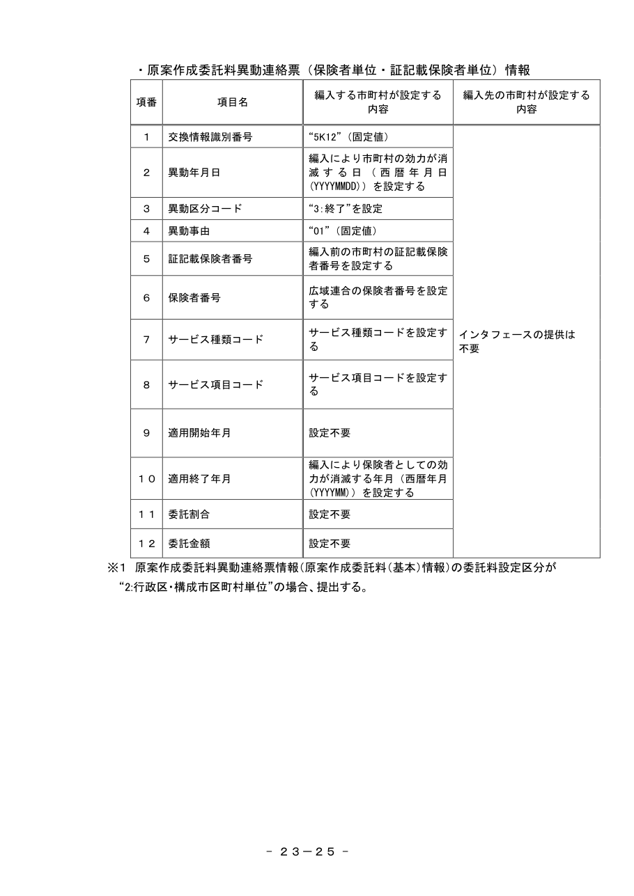
| 項番 | 項目名 | 属性 | 桁数 | 内容 | 必須 | 備考 | その他の列 |
|---|---|---|---|---|---|---|---|
| １ | 交換情報識別番号 | "5K12"（固定値） | 編入先の市町村が設定する内容: インタフェースの提供は不要 | ||||
| ２ | 異動年月日 | 編入により市町村の効力が消滅する日（西暦年月日(YYYYMMDD)）を設定する | 編入先の市町村が設定する内容: インタフェースの提供は不要 | ||||
| ３ | 異動区分コード | "3:終了"を設定 | 編入先の市町村が設定する内容: インタフェースの提供は不要 | ||||
| ４ | 異動事由 | "01"（固定値） | 編入先の市町村が設定する内容: インタフェースの提供は不要 | ||||
| ５ | 証記載保険者番号 | 編入前の市町村の証記載保険者番号を設定する | 編入先の市町村が設定する内容: インタフェースの提供は不要 | ||||
| ６ | 保険者番号 | 広域連合の保険者番号を設定する | 編入先の市町村が設定する内容: インタフェースの提供は不要 | ||||
| ７ | サービス種類コード | サービス種類コードを設定する | 編入先の市町村が設定する内容: インタフェースの提供は不要 | ||||
| ８ | サービス項目コード | サービス項目コードを設定する | 編入先の市町村が設定する内容: インタフェースの提供は不要 | ||||
| ９ | 適用開始年月 | 設定不要 | 編入先の市町村が設定する内容: インタフェースの提供は不要 | ||||
| １０ | 適用終了年月 | 編入により保険者としての効力が消滅する年月（西暦年月(YYYYMM)）を設定する | 編入先の市町村が設定する内容: インタフェースの提供は不要 | ||||
| １１ | 委託割合 | 設定不要 | 編入先の市町村が設定する内容: インタフェースの提供は不要 | ||||
| １２ | 委託金額 | 設定不要 | 編入先の市町村が設定する内容: インタフェースの提供は不要 |
| 項番 | 項目名 | 属性 | 桁数 | 内容 | 必須 | 備考 | その他の列 |
|---|---|---|---|---|---|---|---|
| １ | 交換情報識別番号 | “5K12”（固定値） | 編入先の市町村が設定する内容: インタフェースの提供は不要 | ||||
| ２ | 異動年月日 | 編入により市町村の効力が消滅する日（西暦年月日(YYYYMMDD)）を設定する | 編入先の市町村が設定する内容: インタフェースの提供は不要 | ||||
| ３ | 異動区分コード | “3:終了”を設定 | 編入先の市町村が設定する内容: インタフェースの提供は不要 | ||||
| ４ | 異動事由 | “01”（固定値） | 編入先の市町村が設定する内容: インタフェースの提供は不要 | ||||
| ５ | 証記載保険者番号 | 編入前の市町村の証記載保険者番号を設定する | 編入先の市町村が設定する内容: インタフェースの提供は不要 | ||||
| ６ | 保険者番号 | 広域連合の保険者番号を設定する | 編入先の市町村が設定する内容: インタフェースの提供は不要 | ||||
| ７ | サービス種類コード | サービス種類コードを設定する | 編入先の市町村が設定する内容: インタフェースの提供は不要 | ||||
| ８ | サービス項目コード | サービス項目コードを設定する | 編入先の市町村が設定する内容: インタフェースの提供は不要 | ||||
| ９ | 適用開始年月 | 設定不要 | 編入先の市町村が設定する内容: インタフェースの提供は不要 | ||||
| １０ | 適用終了年月 | 編入により保険者としての効力が消滅する年月（西暦年月(YYYYMM)）を設定する | 編入先の市町村が設定する内容: インタフェースの提供は不要 | ||||
| １１ | 委託割合 | 設定不要 | 編入先の市町村が設定する内容: インタフェースの提供は不要 | ||||
| １２ | 委託金額 | 設定不要 | 編入先の市町村が設定する内容: インタフェースの提供は不要 |
| 項番 | 項目名 | 属性 | 桁数 | 内容 | 必須 | 備考 | その他の列 |
|---|---|---|---|---|---|---|---|
| １ | 交換情報識別番号 | “5K13”（固定値） | 編入先の市町村が設定する内容: “5K13”（固定値） | ||||
| ２ | 異動年月日 | 編入により市町村の効力が消滅する日（西暦年月日(YYYYMMDD)）を設定する | 編入先の市町村が設定する内容: 編入先の市町村での効力が発生する日（西暦年月日(YYYYMMDD)）を設定する | ||||
| ３ | 異動区分コード | “3:終了”を設定 | 編入先の市町村が設定する内容: “1:新規”を設定 | ||||
| ４ | 異動事由 | “01”（固定値） | 編入先の市町村が設定する内容: “01”（固定値） | ||||
| ５ | 事業所番号 | 編入前の市町村に所在する介護予防支援事業所（地域包括支援センター）の事業所番号を設定する | 編入先の市町村が設定する内容: 編入先の市町村に所在が変更となる介護予防支援事業所（地域包括支援センター）の事業所番号を設定する | ||||
| ６ | サービス種類コード | サービス種類コードを設定する | 編入先の市町村が設定する内容: サービス種類コードを設定する | ||||
| ７ | サービス項目コード | サービス項目コードを設定する | 編入先の市町村が設定する内容: サービス項目コードを設定する | ||||
| ８ | 適用開始年月 | 設定不要 | 編入先の市町村が設定する内容: 編入先の保険者での効力が発生する年月（西暦年月(YYYYMM)）を設定する | ||||
| ９ | 適用終了年月 | 編入により保険者としての効力が消滅する年月（西暦年月(YYYYMM)）を設定する | 編入先の市町村が設定する内容: 設定不要 | ||||
| １０ | 委託割合 | 設定不要 | 編入先の市町村が設定する内容: 委託割合を設定する | ||||
| １１ | 委託金額 | 設定不要 | 編入先の市町村が設定する内容: 委託金額を設定する |
| 項番 | 項目名 | 属性 | 桁数 | 内容 | 必須 | 備考 | その他の列 |
|---|---|---|---|---|---|---|---|
| １ | 交換情報識別番号 | 編入する市町村が設定する内容: “5K13”（固定値） 編入先の市町村が設定する内容: “5K13”（固定値） | |||||
| ２ | 異動年月日 | 編入する市町村が設定する内容: 編入により市町村の効力が消滅する日（西暦年月日(YYYYMMDD)）を設定する 編入先の市町村が設定する内容: 編入先の市町村での効力が発生する日（西暦年月日(YYYYMMDD)）を設定する | |||||
| ３ | 異動区分コード | 編入する市町村が設定する内容: “3:終了”を設定 編入先の市町村が設定する内容: “1:新規”を設定 | |||||
| ４ | 異動事由 | 編入する市町村が設定する内容: “01”（固定値） 編入先の市町村が設定する内容: “01”（固定値） | |||||
| ５ | 事業所番号 | 編入する市町村が設定する内容: 編入前の市町村に所在する介護予防支援事業所（地域包括支援センター）の事業所番号を設定する 編入先の市町村が設定する内容: 編入先の市町村に所在が変更となる介護予防支援事業所（地域包括支援センター）の事業所番号を設定する | |||||
| ６ | サービス種類コード | 編入する市町村が設定する内容: サービス種類コードを設定する 編入先の市町村が設定する内容: サービス種類コードを設定する | |||||
| ７ | サービス項目コード | 編入する市町村が設定する内容: サービス項目コードを設定する 編入先の市町村が設定する内容: サービス項目コードを設定する | |||||
| ８ | 適用開始年月 | 編入する市町村が設定する内容: 設定不要 編入先の市町村が設定する内容: 編入先の保険者での効力が発生する年月（西暦年月(YYYYMM)）を設定する | |||||
| ９ | 適用終了年月 | 編入する市町村が設定する内容: 編入により保険者としての効力が消滅する年月（西暦年月(YYYYMM)）を設定する 編入先の市町村が設定する内容: 設定不要 | |||||
| １０ | 委託割合 | 編入する市町村が設定する内容: 設定不要 編入先の市町村が設定する内容: 委託割合を設定する | |||||
| １１ | 委託金額 | 編入する市町村が設定する内容: 設定不要 編入先の市町村が設定する内容: 委託金額を設定する |
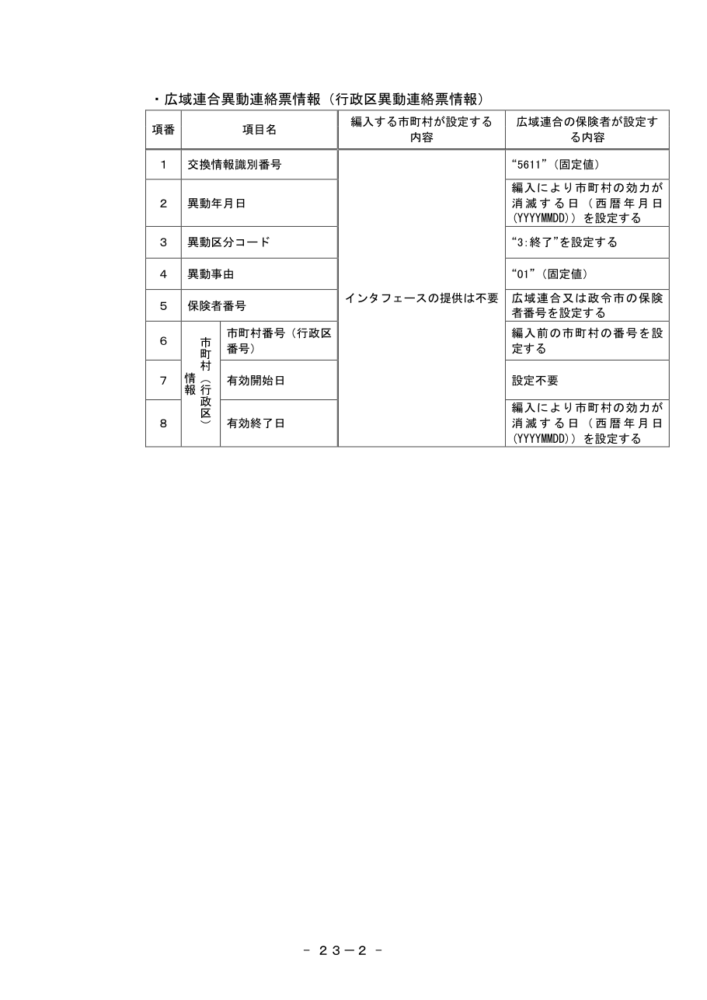
| 項番 | 項目名 | 属性 | 桁数 | 内容 | 必須 | 備考 | その他の列 |
|---|---|---|---|---|---|---|---|
| １ | 交換情報識別番号 | “5611”（固定値） | 編入する市町村が設定する内容: インタフェースの提供は不要 | ||||
| ２ | 異動年月日 | 編入により市町村の効力が消滅する日（西暦年月日(YYYYMMDD)）を設定する | 編入する市町村が設定する内容: インタフェースの提供は不要 | ||||
| ３ | 異動区分コード | “3:終了”を設定する | 編入する市町村が設定する内容: インタフェースの提供は不要 | ||||
| ４ | 異動事由 | “01”（固定値） | 編入する市町村が設定する内容: インタフェースの提供は不要 | ||||
| ５ | 保険者番号 | 広域連合又は政令市の保険者番号を設定する | 編入する市町村が設定する内容: インタフェースの提供は不要 | ||||
| ６ | 市町村情報（行政区） > 市町村番号（行政区番号） | 編入前の市町村の番号を設定する | 編入する市町村が設定する内容: インタフェースの提供は不要 | ||||
| ７ | 市町村情報（行政区） > 有効開始日 | 設定不要 | 編入する市町村が設定する内容: インタフェースの提供は不要 | ||||
| ８ | 市町村情報（行政区） > 有効終了日 | 編入により市町村の効力が消滅する日（西暦年月日(YYYYMMDD)）を設定する | 編入する市町村が設定する内容: インタフェースの提供は不要 |
| 項番 | 項目名 | 属性 | 桁数 | 内容 | 必須 | 備考 | その他の列 |
|---|---|---|---|---|---|---|---|
| 1 | 交換情報識別番号 | “5611”（固定値） | 編入する市町村が設定する内容: インタフェースの提供は不要 | ||||
| 2 | 異動年月日 | 編入により市町村の効力が消滅する日（西暦年月日(YYYYMMDD)）を設定する | 編入する市町村が設定する内容: インタフェースの提供は不要 | ||||
| 3 | 異動区分コード | “3:終了”を設定する | 編入する市町村が設定する内容: インタフェースの提供は不要 | ||||
| 4 | 異動事由 | “01”（固定値） | 編入する市町村が設定する内容: インタフェースの提供は不要 | ||||
| 5 | 保険者番号 | 広域連合又は政令市の保険者番号を設定する | 編入する市町村が設定する内容: インタフェースの提供は不要 | ||||
| 6 | 市町村情報（行政区） > 市町村番号（行政区番号） | 編入前の市町村の番号を設定する | 編入する市町村が設定する内容: インタフェースの提供は不要 | ||||
| 7 | 市町村情報（行政区） > 有効開始日 | 設定不要 | 編入する市町村が設定する内容: インタフェースの提供は不要 | ||||
| 8 | 市町村情報（行政区） > 有効終了日 | 編入により市町村の効力が消滅する日（西暦年月日(YYYYMMDD)）を設定する | 編入する市町村が設定する内容: インタフェースの提供は不要 |
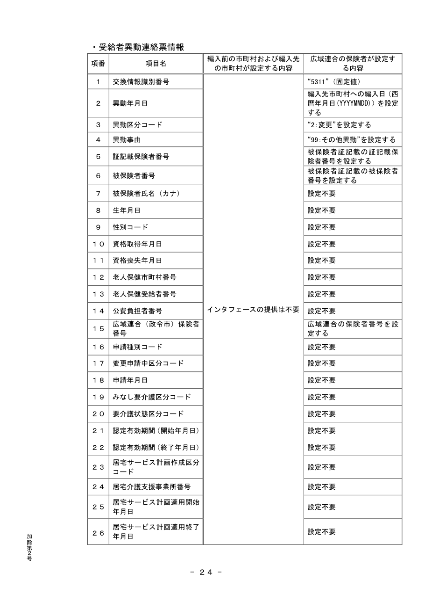
| 項番 | 項目名 | 属性 | 桁数 | 内容 | 必須 | 備考 | その他の列 |
|---|---|---|---|---|---|---|---|
| １ | 交換情報識別番号 | 編入前の市町村および編入先の市町村が設定する内容: インタフェースの提供は不要 広域連合の保険者が設定する内容: “5311”（固定値） | |||||
| ２ | 異動年月日 | 編入前の市町村および編入先の市町村が設定する内容: インタフェースの提供は不要 広域連合の保険者が設定する内容: 編入先市町村への編入日（西暦年月日(YYYYMMDD)）を設定する | |||||
| ３ | 異動区分コード | 編入前の市町村および編入先の市町村が設定する内容: インタフェースの提供は不要 広域連合の保険者が設定する内容: “2:変更”を設定する | |||||
| ４ | 異動事由 | 編入前の市町村および編入先の市町村が設定する内容: インタフェースの提供は不要 広域連合の保険者が設定する内容: “99:その他異動”を設定する | |||||
| ５ | 証記載保険者番号 | 編入前の市町村および編入先の市町村が設定する内容: インタフェースの提供は不要 広域連合の保険者が設定する内容: 被保険者証記載の証記載保険者番号を設定する | |||||
| ６ | 被保険者番号 | 編入前の市町村および編入先の市町村が設定する内容: インタフェースの提供は不要 広域連合の保険者が設定する内容: 被保険者証記載の被保険者番号を設定する | |||||
| ７ | 被保険者氏名（カナ） | 編入前の市町村および編入先の市町村が設定する内容: インタフェースの提供は不要 広域連合の保険者が設定する内容: 設定不要 | |||||
| ８ | 生年月日 | 編入前の市町村および編入先の市町村が設定する内容: インタフェースの提供は不要 広域連合の保険者が設定する内容: 設定不要 | |||||
| ９ | 性別コード | 編入前の市町村および編入先の市町村が設定する内容: インタフェースの提供は不要 広域連合の保険者が設定する内容: 設定不要 | |||||
| １０ | 資格取得年月日 | 編入前の市町村および編入先の市町村が設定する内容: インタフェースの提供は不要 広域連合の保険者が設定する内容: 設定不要 | |||||
| １１ | 資格喪失年月日 | 編入前の市町村および編入先の市町村が設定する内容: インタフェースの提供は不要 広域連合の保険者が設定する内容: 設定不要 | |||||
| １２ | 老人保健市町村番号 | 編入前の市町村および編入先の市町村が設定する内容: インタフェースの提供は不要 広域連合の保険者が設定する内容: 設定不要 | |||||
| １３ | 老人保健受給者番号 | 編入前の市町村および編入先の市町村が設定する内容: インタフェースの提供は不要 広域連合の保険者が設定する内容: 設定不要 | |||||
| １４ | 公費負担者番号 | 編入前の市町村および編入先の市町村が設定する内容: インタフェースの提供は不要 広域連合の保険者が設定する内容: 設定不要 | |||||
| １５ | 広域連合（政令市）保険者番号 | 編入前の市町村および編入先の市町村が設定する内容: インタフェースの提供は不要 広域連合の保険者が設定する内容: 広域連合の保険者番号を設定する | |||||
| １６ | 申請種別コード | 編入前の市町村および編入先の市町村が設定する内容: インタフェースの提供は不要 広域連合の保険者が設定する内容: 設定不要 | |||||
| １７ | 変更申請中区分コード | 編入前の市町村および編入先の市町村が設定する内容: インタフェースの提供は不要 広域連合の保険者が設定する内容: 設定不要 | |||||
| １８ | 申請年月日 | 編入前の市町村および編入先の市町村が設定する内容: インタフェースの提供は不要 広域連合の保険者が設定する内容: 設定不要 | |||||
| １９ | みなし要介護区分コード | 編入前の市町村および編入先の市町村が設定する内容: インタフェースの提供は不要 広域連合の保険者が設定する内容: 設定不要 | |||||
| ２０ | 要介護状態区分コード | 編入前の市町村および編入先の市町村が設定する内容: インタフェースの提供は不要 広域連合の保険者が設定する内容: 設定不要 | |||||
| ２１ | 認定有効期間（開始年月日） | 編入前の市町村および編入先の市町村が設定する内容: インタフェースの提供は不要 広域連合の保険者が設定する内容: 設定不要 | |||||
| ２２ | 認定有効期間（終了年月日） | 編入前の市町村および編入先の市町村が設定する内容: インタフェースの提供は不要 広域連合の保険者が設定する内容: 設定不要 | |||||
| ２３ | 居宅サービス計画作成区分コード | 編入前の市町村および編入先の市町村が設定する内容: インタフェースの提供は不要 広域連合の保険者が設定する内容: 設定不要 | |||||
| ２４ | 居宅介護支援事業所番号 | 編入前の市町村および編入先の市町村が設定する内容: インタフェースの提供は不要 広域連合の保険者が設定する内容: 設定不要 | |||||
| ２５ | 居宅サービス計画適用開始年月日 | 編入前の市町村および編入先の市町村が設定する内容: インタフェースの提供は不要 広域連合の保険者が設定する内容: 設定不要 | |||||
| ２６ | 居宅サービス計画適用終了年月日 | 編入前の市町村および編入先の市町村が設定する内容: インタフェースの提供は不要 広域連合の保険者が設定する内容: 設定不要 |
| 項番 | 項目名 | 属性 | 桁数 | 内容 | 必須 | 備考 | その他の列 |
|---|---|---|---|---|---|---|---|
| 1 | 交換情報識別番号 | “5311”（固定値） | 編入前の市町村および編入先の市町村が設定する内容: インタフェースの提供は不要 | ||||
| 2 | 異動年月日 | 編入先市町村への編入日（西暦年月日(YYYYMMDD)）を設定する | 編入前の市町村および編入先の市町村が設定する内容: インタフェースの提供は不要 | ||||
| 3 | 異動区分コード | “2:変更”を設定する | 編入前の市町村および編入先の市町村が設定する内容: インタフェースの提供は不要 | ||||
| 4 | 異動事由 | “99:その他異動”を設定する | 編入前の市町村および編入先の市町村が設定する内容: インタフェースの提供は不要 | ||||
| 5 | 証記載保険者番号 | 被保険者証記載の証記載保険者番号を設定する | 編入前の市町村および編入先の市町村が設定する内容: インタフェースの提供は不要 | ||||
| 6 | 被保険者番号 | 被保険者証記載の被保険者番号を設定する | 編入前の市町村および編入先の市町村が設定する内容: インタフェースの提供は不要 | ||||
| 7 | 被保険者氏名（カナ） | 設定不要 | 編入前の市町村および編入先の市町村が設定する内容: インタフェースの提供は不要 | ||||
| 8 | 生年月日 | 設定不要 | 編入前の市町村および編入先の市町村が設定する内容: インタフェースの提供は不要 | ||||
| 9 | 性別コード | 設定不要 | 編入前の市町村および編入先の市町村が設定する内容: インタフェースの提供は不要 | ||||
| 10 | 資格取得年月日 | 設定不要 | 編入前の市町村および編入先の市町村が設定する内容: インタフェースの提供は不要 | ||||
| 11 | 資格喪失年月日 | 設定不要 | 編入前の市町村および編入先の市町村が設定する内容: インタフェースの提供は不要 | ||||
| 12 | 老人保健市町村番号 | 設定不要 | 編入前の市町村および編入先の市町村が設定する内容: インタフェースの提供は不要 | ||||
| 13 | 老人保健受給者番号 | 設定不要 | 編入前の市町村および編入先の市町村が設定する内容: インタフェースの提供は不要 | ||||
| 14 | 公費負担者番号 | 設定不要 | 編入前の市町村および編入先の市町村が設定する内容: インタフェースの提供は不要 | ||||
| 15 | 広域連合（政令市）保険者番号 | 広域連合の保険者番号を設定する | 編入前の市町村および編入先の市町村が設定する内容: インタフェースの提供は不要 | ||||
| 16 | 申請種別コード | 設定不要 | 編入前の市町村および編入先の市町村が設定する内容: インタフェースの提供は不要 | ||||
| 17 | 変更申請中区分コード | 設定不要 | 編入前の市町村および編入先の市町村が設定する内容: インタフェースの提供は不要 | ||||
| 18 | 申請年月日 | 設定不要 | 編入前の市町村および編入先の市町村が設定する内容: インタフェースの提供は不要 | ||||
| 19 | みなし要介護区分コード | 設定不要 | 編入前の市町村および編入先の市町村が設定する内容: インタフェースの提供は不要 | ||||
| 20 | 要介護状態区分コード | 設定不要 | 編入前の市町村および編入先の市町村が設定する内容: インタフェースの提供は不要 | ||||
| 21 | 認定有効期間(開始年月日) | 設定不要 | 編入前の市町村および編入先の市町村が設定する内容: インタフェースの提供は不要 | ||||
| 22 | 認定有効期間(終了年月日) | 設定不要 | 編入前の市町村および編入先の市町村が設定する内容: インタフェースの提供は不要 | ||||
| 23 | 居宅サービス計画作成区分コード | 設定不要 | 編入前の市町村および編入先の市町村が設定する内容: インタフェースの提供は不要 | ||||
| 24 | 居宅介護支援事業所番号 | 設定不要 | 編入前の市町村および編入先の市町村が設定する内容: インタフェースの提供は不要 | ||||
| 25 | 居宅サービス計画適用開始年月日 | 設定不要 | 編入前の市町村および編入先の市町村が設定する内容: インタフェースの提供は不要 | ||||
| 26 | 居宅サービス計画適用終了年月日 | 設定不要 | 編入前の市町村および編入先の市町村が設定する内容: インタフェースの提供は不要 |
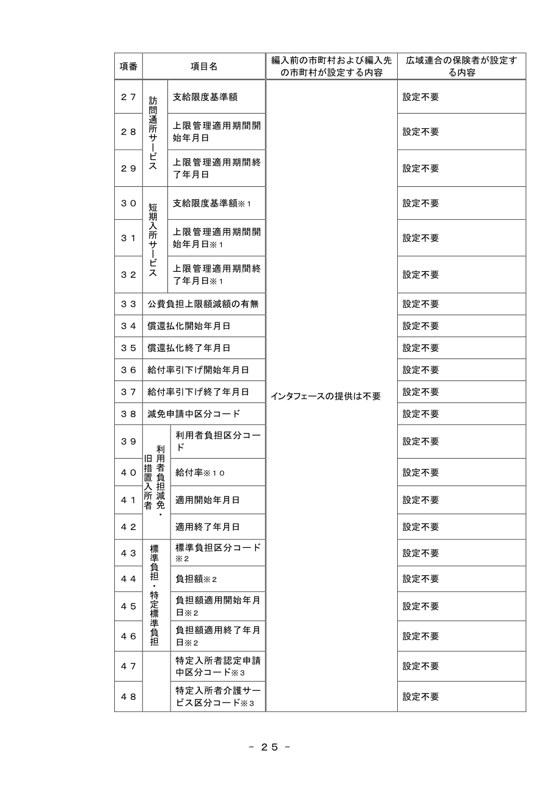
| 項番 | 項目名 | 属性 | 桁数 | 内容 | 必須 | 備考 | その他の列 |
|---|---|---|---|---|---|---|---|
| ２７ | 訪問通所サービス > 支給限度基準額 | インタフェースの提供は不要 | 広域連合の保険者が設定する内容: 設定不要 | ||||
| ２８ | 訪問通所サービス > 上限管理適用期間開始年月日 | インタフェースの提供は不要 | 広域連合の保険者が設定する内容: 設定不要 | ||||
| ２９ | 訪問通所サービス > 上限管理適用期間終了年月日 | インタフェースの提供は不要 | 広域連合の保険者が設定する内容: 設定不要 | ||||
| ３０ | 短期入所サービス > 支給限度基準額※1 | インタフェースの提供は不要 | 広域連合の保険者が設定する内容: 設定不要 | ||||
| ３１ | 短期入所サービス > 上限管理適用期間開始年月日※1 | インタフェースの提供は不要 | 広域連合の保険者が設定する内容: 設定不要 | ||||
| ３２ | 短期入所サービス > 上限管理適用期間終了年月日※1 | インタフェースの提供は不要 | 広域連合の保険者が設定する内容: 設定不要 | ||||
| ３３ | 公費負担上限額減額の有無 | インタフェースの提供は不要 | 広域連合の保険者が設定する内容: 設定不要 | ||||
| ３４ | 償還払化開始年月日 | インタフェースの提供は不要 | 広域連合の保険者が設定する内容: 設定不要 | ||||
| ３５ | 償還払化終了年月日 | インタフェースの提供は不要 | 広域連合の保険者が設定する内容: 設定不要 | ||||
| ３６ | 給付率引下げ開始年月日 | インタフェースの提供は不要 | 広域連合の保険者が設定する内容: 設定不要 | ||||
| ３７ | 給付率引下げ終了年月日 | インタフェースの提供は不要 | 広域連合の保険者が設定する内容: 設定不要 | ||||
| ３８ | 減免申請中区分コード | インタフェースの提供は不要 | 広域連合の保険者が設定する内容: 設定不要 | ||||
| ３９ | 利用者負担減免・旧措置入所者 > 利用者負担区分コード | インタフェースの提供は不要 | 広域連合の保険者が設定する内容: 設定不要 | ||||
| ４０ | 利用者負担減免・旧措置入所者 > 給付率※１０ | インタフェースの提供は不要 | 広域連合の保険者が設定する内容: 設定不要 | ||||
| ４１ | 利用者負担減免・旧措置入所者 > 適用開始年月日 | インタフェースの提供は不要 | 広域連合の保険者が設定する内容: 設定不要 | ||||
| ４２ | 利用者負担減免・旧措置入所者 > 適用終了年月日 | インタフェースの提供は不要 | 広域連合の保険者が設定する内容: 設定不要 | ||||
| ４３ | 標準負担・特定標準負担 > 標準負担区分コード※2 | インタフェースの提供は不要 | 広域連合の保険者が設定する内容: 設定不要 | ||||
| ４４ | 標準負担・特定標準負担 > 負担額※2 | インタフェースの提供は不要 | 広域連合の保険者が設定する内容: 設定不要 | ||||
| ４５ | 標準負担・特定標準負担 > 負担額適用開始年月日※2 | インタフェースの提供は不要 | 広域連合の保険者が設定する内容: 設定不要 | ||||
| ４６ | 標準負担・特定標準負担 > 負担額適用終了年月日※2 | インタフェースの提供は不要 | 広域連合の保険者が設定する内容: 設定不要 | ||||
| ４７ | 特定入所者認定申請中区分コード※3 | インタフェースの提供は不要 | 広域連合の保険者が設定する内容: 設定不要 | ||||
| ４８ | 特定入所者介護サービス区分コード※3 | インタフェースの提供は不要 | 広域連合の保険者が設定する内容: 設定不要 |
| 項番 | 項目名 | 属性 | 桁数 | 内容 | 必須 | 備考 | その他の列 |
|---|---|---|---|---|---|---|---|
| ２７ | 訪問通所サービス > 支給限度基準額 | インタフェースの提供は不要 | 設定不要 | ||||
| ２８ | 訪問通所サービス > 上限管理適用期間開始年月日 | インタフェースの提供は不要 | 設定不要 | ||||
| ２９ | 訪問通所サービス > 上限管理適用期間終了年月日 | インタフェースの提供は不要 | 設定不要 | ||||
| ３０ | 短期入所サービス > 支給限度基準額※１ | インタフェースの提供は不要 | 設定不要 | ||||
| ３１ | 短期入所サービス > 上限管理適用期間開始年月日※１ | インタフェースの提供は不要 | 設定不要 | ||||
| ３２ | 短期入所サービス > 上限管理適用期間終了年月日※１ | インタフェースの提供は不要 | 設定不要 | ||||
| ３３ | 公費負担上限額減額の有無 | インタフェースの提供は不要 | 設定不要 | ||||
| ３４ | 償還払化開始年月日 | インタフェースの提供は不要 | 設定不要 | ||||
| ３５ | 償還払化終了年月日 | インタフェースの提供は不要 | 設定不要 | ||||
| ３６ | 給付率引下げ開始年月日 | インタフェースの提供は不要 | 設定不要 | ||||
| ３７ | 給付率引下げ終了年月日 | インタフェースの提供は不要 | 設定不要 | ||||
| ３８ | 減免申請中区分コード | インタフェースの提供は不要 | 設定不要 | ||||
| ３９ | 旧措置入所者 > 利用者負担減免・ > 利用者負担区分コード | インタフェースの提供は不要 | 設定不要 | ||||
| ４０ | 旧措置入所者 > 利用者負担減免・ > 給付率※１０ | インタフェースの提供は不要 | 設定不要 | ||||
| ４１ | 旧措置入所者 > 利用者負担減免・ > 適用開始年月日 | インタフェースの提供は不要 | 設定不要 | ||||
| ４２ | 旧措置入所者 > 利用者負担減免・ > 適用終了年月日 | インタフェースの提供は不要 | 設定不要 | ||||
| ４３ | 標準負担・特定標準負担 > 標準負担区分コード※２ | インタフェースの提供は不要 | 設定不要 | ||||
| ４４ | 標準負担・特定標準負担 > 負担額※２ | インタフェースの提供は不要 | 設定不要 | ||||
| ４５ | 標準負担・特定標準負担 > 負担額適用開始年月日※２ | インタフェースの提供は不要 | 設定不要 | ||||
| ４６ | 標準負担・特定標準負担 > 負担額適用終了年月日※２ | インタフェースの提供は不要 | 設定不要 | ||||
| ４７ | 特定入所者認定申請中区分コード※３ | インタフェースの提供は不要 | 設定不要 | ||||
| ４８ | 特定入所者介護サービス区分コード※３ | インタフェースの提供は不要 | 設定不要 |
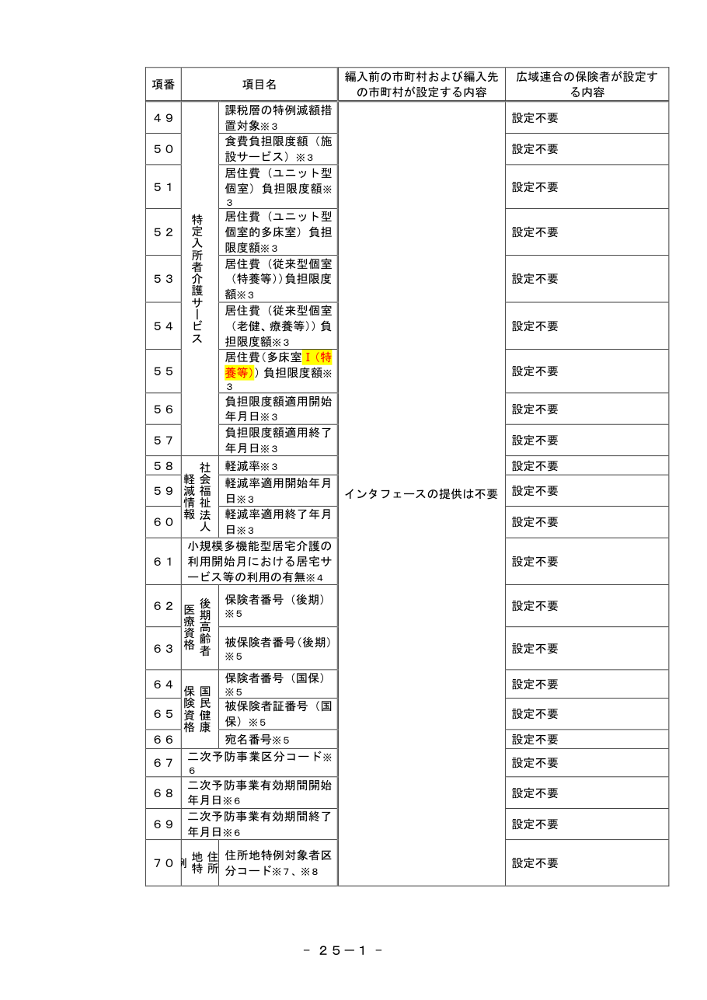
| 項番 | 項目名 | 属性 | 桁数 | 内容 | 必須 | 備考 | その他の列 |
|---|---|---|---|---|---|---|---|
| ４９ | 特定入所者介護サービス > 課税層の特例減額措置対象※3 | インタフェースの提供は不要 | 広域連合の保険者が設定する内容: 設定不要 | ||||
| ５０ | 特定入所者介護サービス > 食費負担限度額（施設サービス）※3 | インタフェースの提供は不要 | 広域連合の保険者が設定する内容: 設定不要 | ||||
| ５１ | 特定入所者介護サービス > 居住費（ユニット型個室）負担限度額※3 | インタフェースの提供は不要 | 広域連合の保険者が設定する内容: 設定不要 | ||||
| ５２ | 特定入所者介護サービス > 居住費（ユニット型個室的多床室）負担限度額※3 | インタフェースの提供は不要 | 広域連合の保険者が設定する内容: 設定不要 | ||||
| ５３ | 特定入所者介護サービス > 居住費（従来型個室（特養等））負担限度額※3 | インタフェースの提供は不要 | 広域連合の保険者が設定する内容: 設定不要 | ||||
| ５４ | 特定入所者介護サービス > 居住費（従来型個室（老健、療養等））負担限度額※3 | インタフェースの提供は不要 | 広域連合の保険者が設定する内容: 設定不要 | ||||
| ５５ | 特定入所者介護サービス > 居住費(多床室Ⅰ(特養等))負担限度額※3 | インタフェースの提供は不要 | 広域連合の保険者が設定する内容: 設定不要 | ||||
| ５６ | 特定入所者介護サービス > 負担限度額適用開始年月日※3 | インタフェースの提供は不要 | 広域連合の保険者が設定する内容: 設定不要 | ||||
| ５７ | 特定入所者介護サービス > 負担限度額適用終了年月日※3 | インタフェースの提供は不要 | 広域連合の保険者が設定する内容: 設定不要 | ||||
| ５８ | 社会福祉法人軽減情報 > 軽減率※3 | インタフェースの提供は不要 | 広域連合の保険者が設定する内容: 設定不要 | ||||
| ５９ | 社会福祉法人軽減情報 > 軽減率適用開始年月日※3 | インタフェースの提供は不要 | 広域連合の保険者が設定する内容: 設定不要 | ||||
| ６０ | 社会福祉法人軽減情報 > 軽減率適用終了年月日※3 | インタフェースの提供は不要 | 広域連合の保険者が設定する内容: 設定不要 | ||||
| ６１ | 小規模多機能型居宅介護の利用開始月における居宅サービス等の利用の有無※4 | インタフェースの提供は不要 | 広域連合の保険者が設定する内容: 設定不要 | ||||
| ６２ | 後期高齢者医療資格 > 保険者番号（後期）※5 | インタフェースの提供は不要 | 広域連合の保険者が設定する内容: 設定不要 | ||||
| ６３ | 後期高齢者医療資格 > 被保険者番号（後期）※5 | インタフェースの提供は不要 | 広域連合の保険者が設定する内容: 設定不要 | ||||
| ６４ | 国民健康保険資格 > 保険者番号（国保）※5 | インタフェースの提供は不要 | 広域連合の保険者が設定する内容: 設定不要 | ||||
| ６５ | 国民健康保険資格 > 被保険者証番号（国保）※5 | インタフェースの提供は不要 | 広域連合の保険者が設定する内容: 設定不要 | ||||
| ６６ | 国民健康保険資格 > 宛名番号※5 | インタフェースの提供は不要 | 広域連合の保険者が設定する内容: 設定不要 | ||||
| ６７ | 二次予防事業区分コード※6 | インタフェースの提供は不要 | 広域連合の保険者が設定する内容: 設定不要 | ||||
| ６８ | 二次予防事業有効期間開始年月日※6 | インタフェースの提供は不要 | 広域連合の保険者が設定する内容: 設定不要 | ||||
| ６９ | 二次予防事業有効期間終了年月日※6 | インタフェースの提供は不要 | 広域連合の保険者が設定する内容: 設定不要 | ||||
| ７０ | 住所地特例 > 住所地特例対象者区分コード※7、※8 | インタフェースの提供は不要 | 広域連合の保険者が設定する内容: 設定不要 |
| 項番 | 項目名 | 属性 | 桁数 | 内容 | 必須 | 備考 | その他の列 |
|---|---|---|---|---|---|---|---|
| ４９ | 特定入所者介護サービス > 課税層の特例減額措置対象※３ | インタフェースの提供は不要 | 設定不要 | ||||
| ５０ | 特定入所者介護サービス > 食費負担限度額（施設サービス）※３ | インタフェースの提供は不要 | 設定不要 | ||||
| ５１ | 特定入所者介護サービス > 居住費（ユニット型個室）負担限度額※３ | インタフェースの提供は不要 | 設定不要 | ||||
| ５２ | 特定入所者介護サービス > 居住費（ユニット型個室的多床室）負担限度額※３ | インタフェースの提供は不要 | 設定不要 | ||||
| ５３ | 特定入所者介護サービス > 居住費（従来型個室（特養等））負担限度額※３ | インタフェースの提供は不要 | 設定不要 | ||||
| ５４ | 特定入所者介護サービス > 居住費（従来型個室（老健、療養等））負担限度額※３ | インタフェースの提供は不要 | 設定不要 | ||||
| ５５ | 特定入所者介護サービス > 居住費（多床室Ⅰ（特養等））負担限度額※３ | インタフェースの提供は不要 | 設定不要 | ||||
| ５６ | 特定入所者介護サービス > 負担限度額適用開始年月日※３ | インタフェースの提供は不要 | 設定不要 | ||||
| ５７ | 特定入所者介護サービス > 負担限度額適用終了年月日※３ | インタフェースの提供は不要 | 設定不要 | ||||
| ５８ | 軽減情報 > 社会福祉法人 > 軽減率※３ | インタフェースの提供は不要 | 設定不要 | ||||
| ５９ | 軽減情報 > 社会福祉法人 > 軽減率適用開始年月日※３ | インタフェースの提供は不要 | 設定不要 | ||||
| ６０ | 軽減情報 > 社会福祉法人 > 軽減率適用終了年月日※３ | インタフェースの提供は不要 | 設定不要 | ||||
| ６１ | 小規模多機能型居宅介護の利用開始月における居宅サービス等の利用の有無※４ | インタフェースの提供は不要 | 設定不要 | ||||
| ６２ | 医療資格 > 後期高齢者 > 保険者番号（後期）※５ | インタフェースの提供は不要 | 設定不要 | ||||
| ６３ | 医療資格 > 後期高齢者 > 被保険者番号（後期）※５ | インタフェースの提供は不要 | 設定不要 | ||||
| ６４ | 保険資格 > 国民健康 > 保険者番号（国保）※５ | インタフェースの提供は不要 | 設定不要 | ||||
| ６５ | 保険資格 > 国民健康 > 被保険者証番号（国保）※５ | インタフェースの提供は不要 | 設定不要 | ||||
| ６６ | 保険資格 > 国民健康 > 宛名番号※５ | インタフェースの提供は不要 | 設定不要 | ||||
| ６７ | 二次予防事業区分コード※６ | インタフェースの提供は不要 | 設定不要 | ||||
| ６８ | 二次予防事業有効期間開始年月日※６ | インタフェースの提供は不要 | 設定不要 | ||||
| ６９ | 二次予防事業有効期間終了年月日※６ | インタフェースの提供は不要 | 設定不要 | ||||
| ７０ | 住所地特例 > 住所地特例対象者区分コード※７、※８ | インタフェースの提供は不要 | 設定不要 |
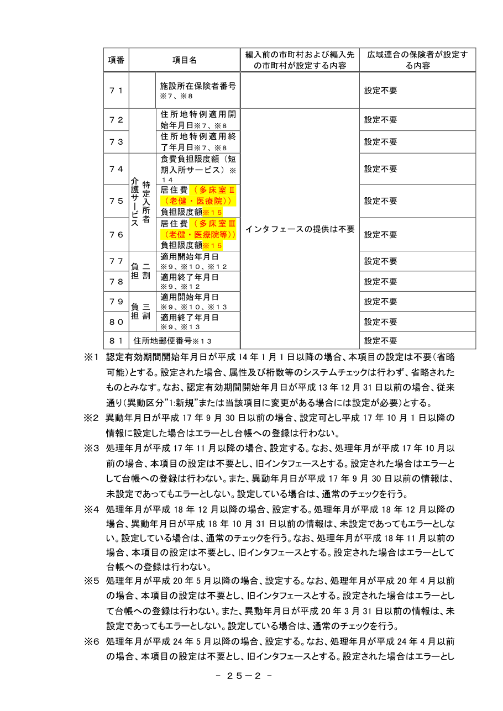
| 項番 | 項目名 | 属性 | 桁数 | 内容 | 必須 | 備考 | その他の列 |
|---|---|---|---|---|---|---|---|
| ７１ | 施設所在保険者番号※７、※８ | 広域連合の保険者が設定する内容: 設定不要 | |||||
| ７２ | 住所地特例適用開始年月日※７、※８ | インタフェースの提供は不要 | 広域連合の保険者が設定する内容: 設定不要 | ||||
| ７３ | 住所地特例適用終了年月日※７、※８ | インタフェースの提供は不要 | 広域連合の保険者が設定する内容: 設定不要 | ||||
| ７４ | 介護サービス > 特定入所者 > 食費負担限度額（短期入所サービス）※１４ | インタフェースの提供は不要 | 広域連合の保険者が設定する内容: 設定不要 | ||||
| ７５ | 介護サービス > 特定入所者 > 居住費（多床室Ⅱ（老健・医療院））負担限度額※１５ | インタフェースの提供は不要 | 広域連合の保険者が設定する内容: 設定不要 | ||||
| ７６ | 介護サービス > 特定入所者 > 居住費（多床室Ⅲ（老健・医療院等））負担限度額※１５ | インタフェースの提供は不要 | 広域連合の保険者が設定する内容: 設定不要 | ||||
| ７７ | 負担二割 > 適用開始年月日※９、※１０、※１２ | インタフェースの提供は不要 | 広域連合の保険者が設定する内容: 設定不要 | ||||
| ７８ | 負担二割 > 適用終了年月日※９、※１２ | インタフェースの提供は不要 | 広域連合の保険者が設定する内容: 設定不要 | ||||
| ７９ | 負担三割 > 適用開始年月日※９、※１０、※１３ | インタフェースの提供は不要 | 広域連合の保険者が設定する内容: 設定不要 | ||||
| ８０ | 負担三割 > 適用終了年月日※９、※１３ | インタフェースの提供は不要 | 広域連合の保険者が設定する内容: 設定不要 | ||||
| ８１ | 住所地郵便番号※１３ | インタフェースの提供は不要 | 広域連合の保険者が設定する内容: 設定不要 |
| 項番 | 項目名 | 属性 | 桁数 | 内容 | 必須 | 備考 | その他の列 |
|---|---|---|---|---|---|---|---|
| ７１ | 施設所在保険者番号※７、※８ | 設定不要 | |||||
| ７２ | 住所地特例適用開始年月日※７、※８ | インタフェースの提供は不要 | 設定不要 | ||||
| ７３ | 住所地特例適用終了年月日※７、※８ | インタフェースの提供は不要 | 設定不要 | ||||
| ７４ | 介護サービス > 特定入所者 > 食費負担限度額（短期入所サービス）※１４ | インタフェースの提供は不要 | 設定不要 | ||||
| ７５ | 介護サービス > 特定入所者 > 居住費（多床室Ⅱ（老健・医療院））負担限度額※１５ | インタフェースの提供は不要 | 設定不要 | ||||
| ７６ | 介護サービス > 特定入所者 > 居住費（多床室Ⅲ（老健・医療院等））負担限度額※１５ | インタフェースの提供は不要 | 設定不要 | ||||
| ７７ | 二割負担 > 適用開始年月日※９、※１０、※１２ | インタフェースの提供は不要 | 設定不要 | ||||
| ７８ | 二割負担 > 適用終了年月日※９、※１２ | インタフェースの提供は不要 | 設定不要 | ||||
| ７９ | 三割負担 > 適用開始年月日※９、※１０、※１３ | インタフェースの提供は不要 | 設定不要 | ||||
| ８０ | 三割負担 > 適用終了年月日※９、※１３ | インタフェースの提供は不要 | 設定不要 | ||||
| ８１ | 住所地郵便番号※１３ | インタフェースの提供は不要 | 設定不要 |
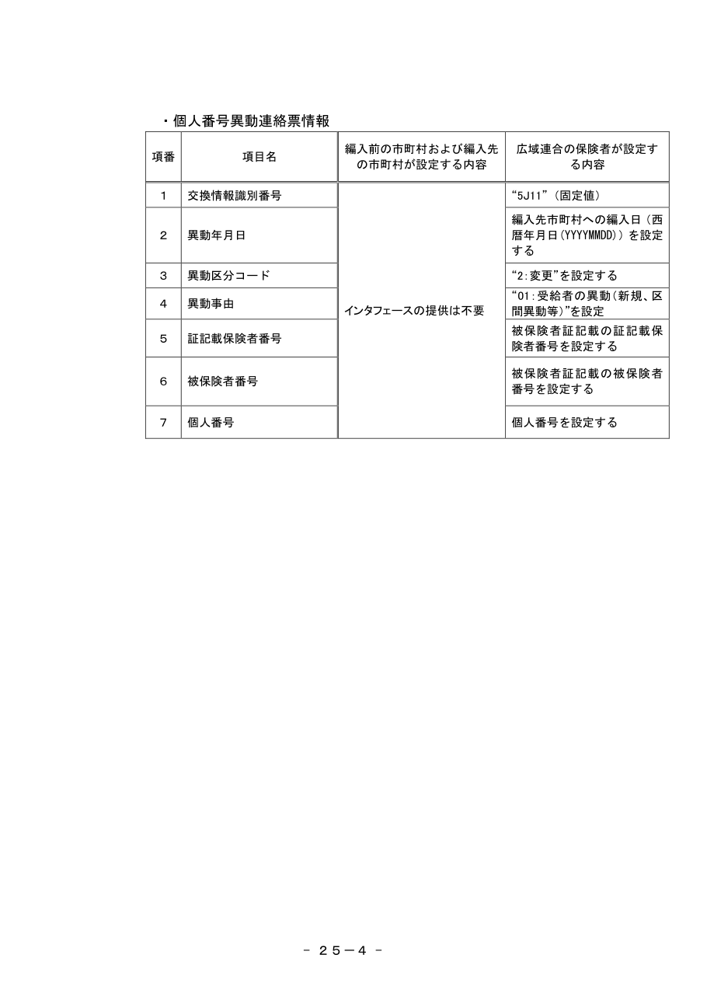
| 項番 | 項目名 | 属性 | 桁数 | 内容 | 必須 | 備考 | その他の列 |
|---|---|---|---|---|---|---|---|
| １ | 交換情報識別番号 | “5J11”（固定値） | 編入前の市町村および編入先の市町村が設定する内容: インタフェースの提供は不要 | ||||
| ２ | 異動年月日 | 編入先市町村への編入日（西暦年月日(YYYYMMDD)）を設定する | 編入前の市町村および編入先の市町村が設定する内容: インタフェースの提供は不要 | ||||
| ３ | 異動区分コード | “2:変更”を設定する | 編入前の市町村および編入先の市町村が設定する内容: インタフェースの提供は不要 | ||||
| ４ | 異動事由 | “01:受給者の異動(新規、区間異動等)”を設定 | 編入前の市町村および編入先の市町村が設定する内容: インタフェースの提供は不要 | ||||
| ５ | 証記載保険者番号 | 被保険者証記載の証記載保険者番号を設定する | 編入前の市町村および編入先の市町村が設定する内容: インタフェースの提供は不要 | ||||
| ６ | 被保険者番号 | 被保険者証記載の被保険者番号を設定する | 編入前の市町村および編入先の市町村が設定する内容: インタフェースの提供は不要 | ||||
| ７ | 個人番号 | 個人番号を設定する | 編入前の市町村および編入先の市町村が設定する内容: インタフェースの提供は不要 |
| 項番 | 項目名 | 属性 | 桁数 | 内容 | 必須 | 備考 | その他の列 |
|---|---|---|---|---|---|---|---|
| 1 | 交換情報識別番号 | “5J11”（固定値） | 編入前の市町村および編入先の市町村が設定する内容: インタフェースの提供は不要 | ||||
| 2 | 異動年月日 | 編入先市町村への編入日（西暦年月日(YYYYMMDD)）を設定する | 編入前の市町村および編入先の市町村が設定する内容: インタフェースの提供は不要 | ||||
| 3 | 異動区分コード | “2:変更”を設定する | 編入前の市町村および編入先の市町村が設定する内容: インタフェースの提供は不要 | ||||
| 4 | 異動事由 | “01:受給者の異動(新規、区間異動等)”を設定 | 編入前の市町村および編入先の市町村が設定する内容: インタフェースの提供は不要 | ||||
| 5 | 証記載保険者番号 | 被保険者証記載の証記載保険者番号を設定する | 編入前の市町村および編入先の市町村が設定する内容: インタフェースの提供は不要 | ||||
| 6 | 被保険者番号 | 被保険者証記載の被保険者番号を設定する | 編入前の市町村および編入先の市町村が設定する内容: インタフェースの提供は不要 | ||||
| 7 | 個人番号 | 個人番号を設定する | 編入前の市町村および編入先の市町村が設定する内容: インタフェースの提供は不要 |
| 項番 | 項目名 | 属性 | 桁数 | 内容 | 必須 | 備考 | その他の列 |
|---|---|---|---|---|---|---|---|
| １ | 交換情報識別番号 | “5411”（固定値） | 編入先の広域連合が設定する内容: インタフェースの提供は不要 | ||||
| ２ | 異動年月日 | 編入により市町村の効力が消滅する日（西暦年月日(YYYYMMDD)）を設定する | 編入先の広域連合が設定する内容: インタフェースの提供は不要 | ||||
| ３ | 異動区分コード | “3:終了”を設定する | 編入先の広域連合が設定する内容: インタフェースの提供は不要 | ||||
| ４ | 異動事由 | “01”（固定値） | 編入先の広域連合が設定する内容: インタフェースの提供は不要 | ||||
| ５ | 保険者番号 | 編入前の市町村の保険者番号を設定 | 編入先の広域連合が設定する内容: インタフェースの提供は不要 | ||||
| ６ | 保険者名（カナ） | 設定不要 | 編入先の広域連合が設定する内容: インタフェースの提供は不要 | ||||
| ７ | 保険者名（漢字） | 設定不要 | 編入先の広域連合が設定する内容: インタフェースの提供は不要 | ||||
| ８ | 有効開始日 | 設定不要 | 編入先の広域連合が設定する内容: インタフェースの提供は不要 | ||||
| ９ | 有効終了日 | 編入により保険者としての効力が消滅する日（西暦年月日(YYYYMMDD)）を設定する | 編入先の広域連合が設定する内容: インタフェースの提供は不要 | ||||
| １０ | 保険者区分 | “1:単独保険者”を設定する | 編入先の広域連合が設定する内容: インタフェースの提供は不要 | ||||
| １１ | 郵便番号 | 設定不要 | 編入先の広域連合が設定する内容: インタフェースの提供は不要 | ||||
| １２ | 電話番号 | 設定不要 | 編入先の広域連合が設定する内容: インタフェースの提供は不要 | ||||
| １３ | 住所（カナ） | 設定不要 | 編入先の広域連合が設定する内容: インタフェースの提供は不要 | ||||
| １５ | 介護予防訪問介護・介護予防通所介護終了年月※1 | 設定不要 | 編入先の広域連合が設定する内容: インタフェースの提供は不要 | ||||
| １６ | 介護予防・日常生活支援総合事業開始年月※1 | 設定不要 | 編入先の広域連合が設定する内容: インタフェースの提供は不要 |
| 項番 | 項目名 | 属性 | 桁数 | 内容 | 必須 | 備考 | その他の列 |
|---|---|---|---|---|---|---|---|
| 1 | 交換情報識別番号 | “5411”（固定値） | 編入先の広域連合が設定する内容: インタフェースの提供は不要 | ||||
| 2 | 異動年月日 | 編入により市町村の効力が消滅する日（西暦年月日(YYYYMMDD)）を設定する | 編入先の広域連合が設定する内容: インタフェースの提供は不要 | ||||
| 3 | 異動区分コード | “3:終了”を設定する | 編入先の広域連合が設定する内容: インタフェースの提供は不要 | ||||
| 4 | 異動事由 | “01”（固定値） | 編入先の広域連合が設定する内容: インタフェースの提供は不要 | ||||
| 5 | 保険者番号 | 編入前の市町村の保険者番号を設定 | 編入先の広域連合が設定する内容: インタフェースの提供は不要 | ||||
| 6 | 保険者名（カナ） | 設定不要 | 編入先の広域連合が設定する内容: インタフェースの提供は不要 | ||||
| 7 | 保険者名（漢字） | 設定不要 | 編入先の広域連合が設定する内容: インタフェースの提供は不要 | ||||
| 8 | 有効開始日 | 設定不要 | 編入先の広域連合が設定する内容: インタフェースの提供は不要 | ||||
| 9 | 有効終了日 | 編入により保険者としての効力が消滅する日（西暦年月日(YYYYMMDD)）を設定する | 編入先の広域連合が設定する内容: インタフェースの提供は不要 | ||||
| 10 | 保険者区分 | “1:単独保険者”を設定する | 編入先の広域連合が設定する内容: インタフェースの提供は不要 | ||||
| 11 | 郵便番号 | 設定不要 | 編入先の広域連合が設定する内容: インタフェースの提供は不要 | ||||
| 12 | 電話番号 | 設定不要 | 編入先の広域連合が設定する内容: インタフェースの提供は不要 | ||||
| 13 | 住所（カナ） | 設定不要 | 編入先の広域連合が設定する内容: インタフェースの提供は不要 | ||||
| 15 | 介護予防訪問介護・介護予防通所介護終了年月※1 | 設定不要 | 編入先の広域連合が設定する内容: インタフェースの提供は不要 | ||||
| 16 | 介護予防・日常生活支援総合事業開始年月※1 | 設定不要 | 編入先の広域連合が設定する内容: インタフェースの提供は不要 |
| 項番 | 項目名 | 属性 | 桁数 | 内容 | 必須 | 備考 | その他の列 |
|---|---|---|---|---|---|---|---|
| 1 | 交換情報識別番号 | “5611”（固定値） | 編入する市町村が設定する内容: インタフェースの提供は不要 | ||||
| 2 | 異動年月日 | 編入により市町村の効力が発生する日（西暦年月日(YYYYMMDD)）を設定する | 編入する市町村が設定する内容: インタフェースの提供は不要 | ||||
| 3 | 異動区分コード | “2:変更”を設定する | 編入する市町村が設定する内容: インタフェースの提供は不要 | ||||
| 4 | 異動事由 | “01”（固定値） | 編入する市町村が設定する内容: インタフェースの提供は不要 | ||||
| 5 | 保険者番号 | 広域連合又は政令市の保険者番号を設定する | 編入する市町村が設定する内容: インタフェースの提供は不要 | ||||
| 6 | 市町村（行政区）情報 > 市町村番号（行政区番号） | 編入する市町村の番号を設定する | 編入する市町村が設定する内容: インタフェースの提供は不要 | ||||
| 7 | 市町村（行政区）情報 > 有効開始日 | 編入した市町村の効力が発生する日（西暦年月日(YYYYMMDD)）を設定する | 編入する市町村が設定する内容: インタフェースの提供は不要 | ||||
| 8 | 市町村（行政区）情報 > 有効終了日 | 設定不要 | 編入する市町村が設定する内容: インタフェースの提供は不要 |
| 項番 | 項目名 | 属性 | 桁数 | 内容 | 必須 | 備考 | その他の列 |
|---|---|---|---|---|---|---|---|
| 1 | 交換情報識別番号 | “5611”（固定値） | 編入する市町村が設定する内容: インタフェースの提供は不要 | ||||
| 2 | 異動年月日 | 編入により市町村の効力が発生する日（西暦年月日(YYYYMMDD)）を設定する | 編入する市町村が設定する内容: インタフェースの提供は不要 | ||||
| 3 | 異動区分コード | “2:変更”を設定する | 編入する市町村が設定する内容: インタフェースの提供は不要 | ||||
| 4 | 異動事由 | “01”（固定値） | 編入する市町村が設定する内容: インタフェースの提供は不要 | ||||
| 5 | 保険者番号 | 広域連合又は政令市の保険者番号を設定する | 編入する市町村が設定する内容: インタフェースの提供は不要 | ||||
| 6 | 市町村情報（行政区） > 市町村番号（行政区番号） | 編入する市町村の番号を設定する | 編入する市町村が設定する内容: インタフェースの提供は不要 | ||||
| 7 | 市町村情報（行政区） > 有効開始日 | 編入した市町村の効力が発生する日（西暦年月日(YYYYMMDD)）を設定する | 編入する市町村が設定する内容: インタフェースの提供は不要 | ||||
| 8 | 市町村情報（行政区） > 有効終了日 | 設定不要 | 編入する市町村が設定する内容: インタフェースの提供は不要 |
| 項番 | 項目名 | 属性 | 桁数 | 内容 | 必須 | 備考 | その他の列 |
|---|---|---|---|---|---|---|---|
| １ | 交換情報識別番号 | “5511”（固定値） | 編入先の広域連合が設定する内容: インタフェースの提供は不要 | ||||
| ２ | 異動年月日 | 編入により市町村の効力が消滅する日（西暦年月日(YYYYMMDD)）を設定する | 編入先の広域連合が設定する内容: インタフェースの提供は不要 | ||||
| ３ | 異動区分コード | “3:終了”を設定する | 編入先の広域連合が設定する内容: インタフェースの提供は不要 | ||||
| ４ | 異動事由 | “01”（固定値） | 編入先の広域連合が設定する内容: インタフェースの提供は不要 | ||||
| ５ | 保険者番号 | 編入前の保険者の保険者番号を設定する | 編入先の広域連合が設定する内容: インタフェースの提供は不要 | ||||
| ６ | 有効開始日 | 設定不要 | 編入先の広域連合が設定する内容: インタフェースの提供は不要 | ||||
| ７ | 有効終了日 | 編入により保険者としての効力が消滅する日（西暦年月日(YYYYMMDD)）を設定する | 編入先の広域連合が設定する内容: インタフェースの提供は不要 | ||||
| ８ | 居宅介護サービス費区分支給限度基準額 > 訪問通所要介護1 | 設定不要 | 編入先の広域連合が設定する内容: インタフェースの提供は不要 | ||||
| ９ | 居宅介護サービス費区分支給限度基準額 > 訪問通所要介護2 | 設定不要 | 編入先の広域連合が設定する内容: インタフェースの提供は不要 | ||||
| １０ | 居宅介護サービス費区分支給限度基準額 > 訪問通所要介護3 | 設定不要 | 編入先の広域連合が設定する内容: インタフェースの提供は不要 | ||||
| １１ | 居宅介護サービス費区分支給限度基準額 > 訪問通所要介護4 | 設定不要 | 編入先の広域連合が設定する内容: インタフェースの提供は不要 | ||||
| １２ | 居宅介護サービス費区分支給限度基準額 > 訪問通所要介護5 | 設定不要 | 編入先の広域連合が設定する内容: インタフェースの提供は不要 | ||||
| １３ | 居宅介護サービス費区分支給限度基準額 > 短期入所要介護1※1 | 設定不要 | 編入先の広域連合が設定する内容: インタフェースの提供は不要 | ||||
| １４ | 居宅介護サービス費区分支給限度基準額 > 短期入所要介護2※1 | 設定不要 | 編入先の広域連合が設定する内容: インタフェースの提供は不要 | ||||
| １５ | 居宅介護サービス費区分支給限度基準額 > 短期入所要介護3※1 | 設定不要 | 編入先の広域連合が設定する内容: インタフェースの提供は不要 | ||||
| １６ | 居宅介護サービス費区分支給限度基準額 > 短期入所要介護4※1 | 設定不要 | 編入先の広域連合が設定する内容: インタフェースの提供は不要 | ||||
| １７ | 居宅介護サービス費区分支給限度基準額 > 短期入所要介護5※1 | 設定不要 | 編入先の広域連合が設定する内容: インタフェースの提供は不要 | ||||
| １８ | 居宅介護サービス費種類支給限度基準額 > 訪問介護 > 要介護1 | 設定不要 | 編入先の広域連合が設定する内容: インタフェースの提供は不要 | ||||
| １９ | 居宅介護サービス費種類支給限度基準額 > 訪問介護 > 要介護2 | 設定不要 | 編入先の広域連合が設定する内容: インタフェースの提供は不要 | ||||
| ２０ | 居宅介護サービス費種類支給限度基準額 > 訪問介護 > 要介護3 | 設定不要 | 編入先の広域連合が設定する内容: インタフェースの提供は不要 | ||||
| ２１ | 居宅介護サービス費種類支給限度基準額 > 訪問介護 > 要介護4 | 設定不要 | 編入先の広域連合が設定する内容: インタフェースの提供は不要 | ||||
| ２２ | 居宅介護サービス費種類支給限度基準額 > 訪問介護 > 要介護5 | 設定不要 | 編入先の広域連合が設定する内容: インタフェースの提供は不要 |
| 項番 | 項目名 | 属性 | 桁数 | 内容 | 必須 | 備考 | その他の列 |
|---|---|---|---|---|---|---|---|
| 1 | 交換情報識別番号 | “5511”（固定値） | インタフェースの提供は不要 | ||||
| 2 | 異動年月日 | 編入により市町村の効力が消滅する日（西暦年月日(YYYYMMDD)）を設定する | インタフェースの提供は不要 | ||||
| 3 | 異動区分コード | “3:終了”を設定する | インタフェースの提供は不要 | ||||
| 4 | 異動事由 | “01”（固定値） | インタフェースの提供は不要 | ||||
| 5 | 保険者番号 | 編入前の保険者の保険者番号を設定する | インタフェースの提供は不要 | ||||
| 6 | 有効開始日 | 設定不要 | インタフェースの提供は不要 | ||||
| 7 | 有効終了日 | 編入により保険者としての効力が消滅する日（西暦年月日(YYYYMMDD)）を設定する | インタフェースの提供は不要 | ||||
| 8 | 居宅介護サービス費区分支給限度基準額 > 訪問通所要介護1 | 設定不要 | インタフェースの提供は不要 | ||||
| 9 | 居宅介護サービス費区分支給限度基準額 > 訪問通所要介護2 | 設定不要 | インタフェースの提供は不要 | ||||
| 10 | 居宅介護サービス費区分支給限度基準額 > 訪問通所要介護3 | 設定不要 | インタフェースの提供は不要 | ||||
| 11 | 居宅介護サービス費区分支給限度基準額 > 訪問通所要介護4 | 設定不要 | インタフェースの提供は不要 | ||||
| 12 | 居宅介護サービス費区分支給限度基準額 > 訪問通所要介護5 | 設定不要 | インタフェースの提供は不要 | ||||
| 13 | 居宅介護サービス費区分支給限度基準額 > 短期入所要介護1 ※1 | 設定不要 | インタフェースの提供は不要 | ||||
| 14 | 居宅介護サービス費区分支給限度基準額 > 短期入所要介護2 ※1 | 設定不要 | インタフェースの提供は不要 | ||||
| 15 | 居宅介護サービス費区分支給限度基準額 > 短期入所要介護3 ※1 | 設定不要 | インタフェースの提供は不要 | ||||
| 16 | 居宅介護サービス費区分支給限度基準額 > 短期入所要介護4 ※1 | 設定不要 | インタフェースの提供は不要 | ||||
| 17 | 居宅介護サービス費区分支給限度基準額 > 短期入所要介護5 ※1 | 設定不要 | インタフェースの提供は不要 | ||||
| 18 | 居宅介護サービス費種類支給限度基準額 > 訪問介護 > 要介護1 | 設定不要 | インタフェースの提供は不要 | ||||
| 19 | 居宅介護サービス費種類支給限度基準額 > 訪問介護 > 要介護2 | 設定不要 | インタフェースの提供は不要 | ||||
| 20 | 居宅介護サービス費種類支給限度基準額 > 訪問介護 > 要介護3 | 設定不要 | インタフェースの提供は不要 | ||||
| 21 | 居宅介護サービス費種類支給限度基準額 > 訪問介護 > 要介護4 | 設定不要 | インタフェースの提供は不要 | ||||
| 22 | 居宅介護サービス費種類支給限度基準額 > 訪問介護 > 要介護5 | 設定不要 | インタフェースの提供は不要 |
| 項番 | 項目名 | 属性 | 桁数 | 内容 | 必須 | 備考 | その他の列 |
|---|---|---|---|---|---|---|---|
| ２３ | 居宅介護サービス費種類支給限度基準額 > 訪問入浴介護 > 要介護１ | 設定不要 | 編入先の広域連合が設定する内容: インタフェースの提供は不要 | ||||
| ２４ | 居宅介護サービス費種類支給限度基準額 > 訪問入浴介護 > 要介護２ | 設定不要 | 編入先の広域連合が設定する内容: インタフェースの提供は不要 | ||||
| ２５ | 居宅介護サービス費種類支給限度基準額 > 訪問入浴介護 > 要介護３ | 設定不要 | 編入先の広域連合が設定する内容: インタフェースの提供は不要 | ||||
| ２６ | 居宅介護サービス費種類支給限度基準額 > 訪問入浴介護 > 要介護４ | 設定不要 | 編入先の広域連合が設定する内容: インタフェースの提供は不要 | ||||
| ２７ | 居宅介護サービス費種類支給限度基準額 > 訪問入浴介護 > 要介護５ | 設定不要 | 編入先の広域連合が設定する内容: インタフェースの提供は不要 | ||||
| ２８ | 居宅介護サービス費種類支給限度基準額 > 訪問看護 > 要介護１ | 設定不要 | 編入先の広域連合が設定する内容: インタフェースの提供は不要 | ||||
| ２９ | 居宅介護サービス費種類支給限度基準額 > 訪問看護 > 要介護２ | 設定不要 | 編入先の広域連合が設定する内容: インタフェースの提供は不要 | ||||
| ３０ | 居宅介護サービス費種類支給限度基準額 > 訪問看護 > 要介護３ | 設定不要 | 編入先の広域連合が設定する内容: インタフェースの提供は不要 | ||||
| ３１ | 居宅介護サービス費種類支給限度基準額 > 訪問看護 > 要介護４ | 設定不要 | 編入先の広域連合が設定する内容: インタフェースの提供は不要 | ||||
| ３２ | 居宅介護サービス費種類支給限度基準額 > 訪問看護 > 要介護５ | 設定不要 | 編入先の広域連合が設定する内容: インタフェースの提供は不要 | ||||
| ３３ | 居宅介護サービス費種類支給限度基準額 > 訪問リハビリテーション > 要介護１ | 設定不要 | 編入先の広域連合が設定する内容: インタフェースの提供は不要 | ||||
| ３４ | 居宅介護サービス費種類支給限度基準額 > 訪問リハビリテーション > 要介護２ | 設定不要 | 編入先の広域連合が設定する内容: インタフェースの提供は不要 | ||||
| ３５ | 居宅介護サービス費種類支給限度基準額 > 訪問リハビリテーション > 要介護３ | 設定不要 | 編入先の広域連合が設定する内容: インタフェースの提供は不要 | ||||
| ３６ | 居宅介護サービス費種類支給限度基準額 > 訪問リハビリテーション > 要介護４ | 設定不要 | 編入先の広域連合が設定する内容: インタフェースの提供は不要 | ||||
| ３７ | 居宅介護サービス費種類支給限度基準額 > 訪問リハビリテーション > 要介護５ | 設定不要 | 編入先の広域連合が設定する内容: インタフェースの提供は不要 | ||||
| ３８ | 居宅介護サービス費種類支給限度基準額 > 通所介護 > 要介護１ | 設定不要 | 編入先の広域連合が設定する内容: インタフェースの提供は不要 | ||||
| ３９ | 居宅介護サービス費種類支給限度基準額 > 通所介護 > 要介護２ | 設定不要 | 編入先の広域連合が設定する内容: インタフェースの提供は不要 | ||||
| ４０ | 居宅介護サービス費種類支給限度基準額 > 通所介護 > 要介護３ | 設定不要 | 編入先の広域連合が設定する内容: インタフェースの提供は不要 | ||||
| ４１ | 居宅介護サービス費種類支給限度基準額 > 通所介護 > 要介護４ | 設定不要 | 編入先の広域連合が設定する内容: インタフェースの提供は不要 | ||||
| ４２ | 居宅介護サービス費種類支給限度基準額 > 通所介護 > 要介護５ | 設定不要 | 編入先の広域連合が設定する内容: インタフェースの提供は不要 | ||||
| ４３ | 居宅介護サービス費種類支給限度基準額 > 通所リハビリテーション > 要介護１ | 設定不要 | 編入先の広域連合が設定する内容: インタフェースの提供は不要 | ||||
| ４４ | 居宅介護サービス費種類支給限度基準額 > 通所リハビリテーション > 要介護２ | 設定不要 | 編入先の広域連合が設定する内容: インタフェースの提供は不要 | ||||
| ４５ | 居宅介護サービス費種類支給限度基準額 > 通所リハビリテーション > 要介護３ | 設定不要 | 編入先の広域連合が設定する内容: インタフェースの提供は不要 | ||||
| ４６ | 居宅介護サービス費種類支給限度基準額 > 通所リハビリテーション > 要介護４ | 設定不要 | 編入先の広域連合が設定する内容: インタフェースの提供は不要 | ||||
| ４７ | 居宅介護サービス費種類支給限度基準額 > 通所リハビリテーション > 要介護５ | 設定不要 | 編入先の広域連合が設定する内容: インタフェースの提供は不要 | ||||
| ４８ | 居宅介護サービス費種類支給限度基準額 > 福祉用具貸与 > 要介護１ | 設定不要 | 編入先の広域連合が設定する内容: インタフェースの提供は不要 | ||||
| ４９ | 居宅介護サービス費種類支給限度基準額 > 福祉用具貸与 > 要介護２ | 設定不要 | 編入先の広域連合が設定する内容: インタフェースの提供は不要 | ||||
| ５０ | 居宅介護サービス費種類支給限度基準額 > 福祉用具貸与 > 要介護３ | 設定不要 | 編入先の広域連合が設定する内容: インタフェースの提供は不要 | ||||
| ５１ | 居宅介護サービス費種類支給限度基準額 > 福祉用具貸与 > 要介護４ | 設定不要 | 編入先の広域連合が設定する内容: インタフェースの提供は不要 | ||||
| ５２ | 居宅介護サービス費種類支給限度基準額 > 福祉用具貸与 > 要介護５ | 設定不要 | 編入先の広域連合が設定する内容: インタフェースの提供は不要 | ||||
| ５３ | 居宅介護サービス費種類支給限度基準額 > 短期入所生活介護 > 要介護１※２ | 設定不要 | 編入先の広域連合が設定する内容: インタフェースの提供は不要 | ||||
| ５４ | 居宅介護サービス費種類支給限度基準額 > 短期入所生活介護 > 要介護２※２ | 設定不要 | 編入先の広域連合が設定する内容: インタフェースの提供は不要 | ||||
| ５５ | 居宅介護サービス費種類支給限度基準額 > 短期入所生活介護 > 要介護３※２ | 設定不要 | 編入先の広域連合が設定する内容: インタフェースの提供は不要 | ||||
| ５６ | 居宅介護サービス費種類支給限度基準額 > 短期入所生活介護 > 要介護４※２ | 設定不要 | 編入先の広域連合が設定する内容: インタフェースの提供は不要 | ||||
| ５７ | 居宅介護サービス費種類支給限度基準額 > 短期入所生活介護 > 要介護５※２ | 設定不要 | 編入先の広域連合が設定する内容: インタフェースの提供は不要 | ||||
| ５８ | 居宅介護サービス費種類支給限度基準額 > 短期入所療養介護 > 要介護１※２ | 設定不要 | 編入先の広域連合が設定する内容: インタフェースの提供は不要 | ||||
| ５９ | 居宅介護サービス費種類支給限度基準額 > 短期入所療養介護 > 要介護２※２ | 設定不要 | 編入先の広域連合が設定する内容: インタフェースの提供は不要 | ||||
| ６０ | 居宅介護サービス費種類支給限度基準額 > 短期入所療養介護 > 要介護３※２ | 設定不要 | 編入先の広域連合が設定する内容: インタフェースの提供は不要 | ||||
| ６１ | 居宅介護サービス費種類支給限度基準額 > 短期入所療養介護 > 要介護４※２ | 設定不要 | 編入先の広域連合が設定する内容: インタフェースの提供は不要 | ||||
| ６２ | 居宅介護サービス費種類支給限度基準額 > 短期入所療養介護 > 要介護５※２ | 設定不要 | 編入先の広域連合が設定する内容: インタフェースの提供は不要 |
| 項番 | 項目名 | 属性 | 桁数 | 内容 | 必須 | 備考 | その他の列 |
|---|---|---|---|---|---|---|---|
| ２３ | 居宅介護サービス費種類支給限度基準額 > 訪問入浴介護 > 要介護１ | 設定不要 | 編入先の広域連合が設定する内容: インタフェースの提供は不要 | ||||
| ２４ | 居宅介護サービス費種類支給限度基準額 > 訪問入浴介護 > 要介護２ | 設定不要 | 編入先の広域連合が設定する内容: インタフェースの提供は不要 | ||||
| ２５ | 居宅介護サービス費種類支給限度基準額 > 訪問入浴介護 > 要介護３ | 設定不要 | 編入先の広域連合が設定する内容: インタフェースの提供は不要 | ||||
| ２６ | 居宅介護サービス費種類支給限度基準額 > 訪問入浴介護 > 要介護４ | 設定不要 | 編入先の広域連合が設定する内容: インタフェースの提供は不要 | ||||
| ２７ | 居宅介護サービス費種類支給限度基準額 > 訪問入浴介護 > 要介護５ | 設定不要 | 編入先の広域連合が設定する内容: インタフェースの提供は不要 | ||||
| ２８ | 居宅介護サービス費種類支給限度基準額 > 訪問看護 > 要介護１ | 設定不要 | 編入先の広域連合が設定する内容: インタフェースの提供は不要 | ||||
| ２９ | 居宅介護サービス費種類支給限度基準額 > 訪問看護 > 要介護２ | 設定不要 | 編入先の広域連合が設定する内容: インタフェースの提供は不要 | ||||
| ３０ | 居宅介護サービス費種類支給限度基準額 > 訪問看護 > 要介護３ | 設定不要 | 編入先の広域連合が設定する内容: インタフェースの提供は不要 | ||||
| ３１ | 居宅介護サービス費種類支給限度基準額 > 訪問看護 > 要介護４ | 設定不要 | 編入先の広域連合が設定する内容: インタフェースの提供は不要 | ||||
| ３２ | 居宅介護サービス費種類支給限度基準額 > 訪問看護 > 要介護５ | 設定不要 | 編入先の広域連合が設定する内容: インタフェースの提供は不要 | ||||
| ３３ | 居宅介護サービス費種類支給限度基準額 > 訪問リハビリテーション > 要介護１ | 設定不要 | 編入先の広域連合が設定する内容: インタフェースの提供は不要 | ||||
| ３４ | 居宅介護サービス費種類支給限度基準額 > 訪問リハビリテーション > 要介護２ | 設定不要 | 編入先の広域連合が設定する内容: インタフェースの提供は不要 | ||||
| ３５ | 居宅介護サービス費種類支給限度基準額 > 訪問リハビリテーション > 要介護３ | 設定不要 | 編入先の広域連合が設定する内容: インタフェースの提供は不要 | ||||
| ３６ | 居宅介護サービス費種類支給限度基準額 > 訪問リハビリテーション > 要介護４ | 設定不要 | 編入先の広域連合が設定する内容: インタフェースの提供は不要 | ||||
| ３７ | 居宅介護サービス費種類支給限度基準額 > 訪問リハビリテーション > 要介護５ | 設定不要 | 編入先の広域連合が設定する内容: インタフェースの提供は不要 | ||||
| ３８ | 居宅介護サービス費種類支給限度基準額 > 通所介護 > 要介護１ | 設定不要 | 編入先の広域連合が設定する内容: インタフェースの提供は不要 | ||||
| ３９ | 居宅介護サービス費種類支給限度基準額 > 通所介護 > 要介護２ | 設定不要 | 編入先の広域連合が設定する内容: インタフェースの提供は不要 | ||||
| ４０ | 居宅介護サービス費種類支給限度基準額 > 通所介護 > 要介護３ | 設定不要 | 編入先の広域連合が設定する内容: インタフェースの提供は不要 | ||||
| ４１ | 居宅介護サービス費種類支給限度基準額 > 通所介護 > 要介護４ | 設定不要 | 編入先の広域連合が設定する内容: インタフェースの提供は不要 | ||||
| ４２ | 居宅介護サービス費種類支給限度基準額 > 通所介護 > 要介護５ | 設定不要 | 編入先の広域連合が設定する内容: インタフェースの提供は不要 | ||||
| ４３ | 居宅介護サービス費種類支給限度基準額 > 通所リハビリテーション > 要介護１ | 設定不要 | 編入先の広域連合が設定する内容: インタフェースの提供は不要 | ||||
| ４４ | 居宅介護サービス費種類支給限度基準額 > 通所リハビリテーション > 要介護２ | 設定不要 | 編入先の広域連合が設定する内容: インタフェースの提供は不要 | ||||
| ４５ | 居宅介護サービス費種類支給限度基準額 > 通所リハビリテーション > 要介護３ | 設定不要 | 編入先の広域連合が設定する内容: インタフェースの提供は不要 | ||||
| ４６ | 居宅介護サービス費種類支給限度基準額 > 通所リハビリテーション > 要介護４ | 設定不要 | 編入先の広域連合が設定する内容: インタフェースの提供は不要 | ||||
| ４７ | 居宅介護サービス費種類支給限度基準額 > 通所リハビリテーション > 要介護５ | 設定不要 | 編入先の広域連合が設定する内容: インタフェースの提供は不要 | ||||
| ４８ | 居宅介護サービス費種類支給限度基準額 > 福祉用具貸与 > 要介護１ | 設定不要 | 編入先の広域連合が設定する内容: インタフェースの提供は不要 | ||||
| ４９ | 居宅介護サービス費種類支給限度基準額 > 福祉用具貸与 > 要介護２ | 設定不要 | 編入先の広域連合が設定する内容: インタフェースの提供は不要 | ||||
| ５０ | 居宅介護サービス費種類支給限度基準額 > 福祉用具貸与 > 要介護３ | 設定不要 | 編入先の広域連合が設定する内容: インタフェースの提供は不要 | ||||
| ５１ | 居宅介護サービス費種類支給限度基準額 > 福祉用具貸与 > 要介護４ | 設定不要 | 編入先の広域連合が設定する内容: インタフェースの提供は不要 | ||||
| ５２ | 居宅介護サービス費種類支給限度基準額 > 福祉用具貸与 > 要介護５ | 設定不要 | 編入先の広域連合が設定する内容: インタフェースの提供は不要 | ||||
| ５３ | 居宅介護サービス費種類支給限度基準額 > 短期入所生活介護 > 要介護１※２ | 設定不要 | 編入先の広域連合が設定する内容: インタフェースの提供は不要 | ||||
| ５４ | 居宅介護サービス費種類支給限度基準額 > 短期入所生活介護 > 要介護２※２ | 設定不要 | 編入先の広域連合が設定する内容: インタフェースの提供は不要 | ||||
| ５５ | 居宅介護サービス費種類支給限度基準額 > 短期入所生活介護 > 要介護３※２ | 設定不要 | 編入先の広域連合が設定する内容: インタフェースの提供は不要 | ||||
| ５６ | 居宅介護サービス費種類支給限度基準額 > 短期入所生活介護 > 要介護４※２ | 設定不要 | 編入先の広域連合が設定する内容: インタフェースの提供は不要 | ||||
| ５７ | 居宅介護サービス費種類支給限度基準額 > 短期入所生活介護 > 要介護５※２ | 設定不要 | 編入先の広域連合が設定する内容: インタフェースの提供は不要 | ||||
| ５８ | 居宅介護サービス費種類支給限度基準額 > 短期入所療養介護 > 要介護１※２ | 設定不要 | 編入先の広域連合が設定する内容: インタフェースの提供は不要 | ||||
| ５９ | 居宅介護サービス費種類支給限度基準額 > 短期入所療養介護 > 要介護２※２ | 設定不要 | 編入先の広域連合が設定する内容: インタフェースの提供は不要 | ||||
| ６０ | 居宅介護サービス費種類支給限度基準額 > 短期入所療養介護 > 要介護３※２ | 設定不要 | 編入先の広域連合が設定する内容: インタフェースの提供は不要 | ||||
| ６１ | 居宅介護サービス費種類支給限度基準額 > 短期入所療養介護 > 要介護４※２ | 設定不要 | 編入先の広域連合が設定する内容: インタフェースの提供は不要 | ||||
| ６２ | 居宅介護サービス費種類支給限度基準額 > 短期入所療養介護 > 要介護５※２ | 設定不要 | 編入先の広域連合が設定する内容: インタフェースの提供は不要 |
| 項番 | 項目名 | 属性 | 桁数 | 内容 | 必須 | 備考 | その他の列 |
|---|---|---|---|---|---|---|---|
| 63 | 居宅支援サービス費区分支給限度基準額 > 訪問通所 | 編入する市町村が設定する内容: 設定不要 編入先の広域連合が設定する内容: インタフェースの提供は不要 | |||||
| 64 | 居宅支援サービス費区分支給限度基準額 > 短期入所※1 | 編入する市町村が設定する内容: 設定不要 編入先の広域連合が設定する内容: インタフェースの提供は不要 | |||||
| 65 | 居宅支援サービス費種類支給限度基準額 > 訪問介護 | 編入する市町村が設定する内容: 設定不要 編入先の広域連合が設定する内容: インタフェースの提供は不要 | |||||
| 66 | 居宅支援サービス費種類支給限度基準額 > 訪問入浴介護 | 編入する市町村が設定する内容: 設定不要 編入先の広域連合が設定する内容: インタフェースの提供は不要 | |||||
| 67 | 居宅支援サービス費種類支給限度基準額 > 訪問看護 | 編入する市町村が設定する内容: 設定不要 編入先の広域連合が設定する内容: インタフェースの提供は不要 | |||||
| 68 | 居宅支援サービス費種類支給限度基準額 > 訪問リハビリテーション | 編入する市町村が設定する内容: 設定不要 編入先の広域連合が設定する内容: インタフェースの提供は不要 | |||||
| 69 | 居宅支援サービス費種類支給限度基準額 > 通所介護 | 編入する市町村が設定する内容: 設定不要 編入先の広域連合が設定する内容: インタフェースの提供は不要 | |||||
| 70 | 居宅支援サービス費種類支給限度基準額 > 通所リハビリテーション | 編入する市町村が設定する内容: 設定不要 編入先の広域連合が設定する内容: インタフェースの提供は不要 | |||||
| 71 | 居宅支援サービス費種類支給限度基準額 > 福祉用具貸与 | 編入する市町村が設定する内容: 設定不要 編入先の広域連合が設定する内容: インタフェースの提供は不要 | |||||
| 72 | 居宅支援サービス費種類支給限度基準額 > 短期入所生活介護※2 | 編入する市町村が設定する内容: 設定不要 編入先の広域連合が設定する内容: インタフェースの提供は不要 | |||||
| 73 | 居宅支援サービス費種類支給限度基準額 > 短期入所療養介護※2 | 編入する市町村が設定する内容: 設定不要 編入先の広域連合が設定する内容: インタフェースの提供は不要 | |||||
| 74 | 基準該当訪問介護サービス費比率 | 編入する市町村が設定する内容: 設定不要 編入先の広域連合が設定する内容: インタフェースの提供は不要 | |||||
| 75 | 基準該当訪問入浴サービス費比率 | 編入する市町村が設定する内容: 設定不要 編入先の広域連合が設定する内容: インタフェースの提供は不要 | |||||
| 76 | 基準該当通所介護サービス費比率 | 編入する市町村が設定する内容: 設定不要 編入先の広域連合が設定する内容: インタフェースの提供は不要 | |||||
| 77 | 基準該当短期入所生活介護サービス費比率 | 編入する市町村が設定する内容: 設定不要 編入先の広域連合が設定する内容: インタフェースの提供は不要 | |||||
| 78 | 基準該当福祉用具貸与サービス費比率 | 編入する市町村が設定する内容: 設定不要 編入先の広域連合が設定する内容: インタフェースの提供は不要 | |||||
| 79 | 基準該当居宅支援サービス費比率 | 編入する市町村が設定する内容: 設定不要 編入先の広域連合が設定する内容: インタフェースの提供は不要 |
| 項番 | 項目名 | 属性 | 桁数 | 内容 | 必須 | 備考 | その他の列 |
|---|---|---|---|---|---|---|---|
| ６３ | 居宅支援サービス費区分支給限度基準額 > 訪問通所 | 設定不要 | インタフェースの提供は不要 | ||||
| ６４ | 居宅支援サービス費区分支給限度基準額 > 短期入所※１ | 設定不要 | インタフェースの提供は不要 | ||||
| ６５ | 居宅支援サービス費種類支給限度基準額 > 訪問介護 | 設定不要 | インタフェースの提供は不要 | ||||
| ６６ | 居宅支援サービス費種類支給限度基準額 > 訪問入浴介護 | 設定不要 | インタフェースの提供は不要 | ||||
| ６７ | 居宅支援サービス費種類支給限度基準額 > 訪問看護 | 設定不要 | インタフェースの提供は不要 | ||||
| ６８ | 居宅支援サービス費種類支給限度基準額 > 訪問リハビリテーション | 設定不要 | インタフェースの提供は不要 | ||||
| ６９ | 居宅支援サービス費種類支給限度基準額 > 通所介護 | 設定不要 | インタフェースの提供は不要 | ||||
| ７０ | 居宅支援サービス費種類支給限度基準額 > 通所リハビリテーション | 設定不要 | インタフェースの提供は不要 | ||||
| ７１ | 居宅支援サービス費種類支給限度基準額 > 福祉用具貸与 | 設定不要 | インタフェースの提供は不要 | ||||
| ７２ | 居宅支援サービス費種類支給限度基準額 > 短期入所生活介護※２ | 設定不要 | インタフェースの提供は不要 | ||||
| ７３ | 居宅支援サービス費種類支給限度基準額 > 短期入所療養介護※２ | 設定不要 | インタフェースの提供は不要 | ||||
| ７４ | 基準該当訪問介護サービス費比率 | 設定不要 | インタフェースの提供は不要 | ||||
| ７５ | 基準該当訪問入浴サービス費比率 | 設定不要 | インタフェースの提供は不要 | ||||
| ７６ | 基準該当通所介護サービス費比率 | 設定不要 | インタフェースの提供は不要 | ||||
| ７７ | 基準該当短期入所生活介護サービス費比率 | 設定不要 | インタフェースの提供は不要 | ||||
| ７８ | 基準該当福祉用具貸与サービス費比率 | 設定不要 | インタフェースの提供は不要 | ||||
| ７９ | 基準該当居宅支援サービス費比率 | 設定不要 | インタフェースの提供は不要 |
| 項番 | 項目名 | 属性 | 桁数 | 内容 | 必須 | 備考 | その他の列 |
|---|---|---|---|---|---|---|---|
| ８０ | 居宅介護サービス費種類支給限度基準額 > 夜間対応型訪問介護 > 経過的要介護 | 設定不要 | 編入先の市町村が設定する内容: インタフェースの提供は不要 | ||||
| ８１ | 居宅介護サービス費種類支給限度基準額 > 夜間対応型訪問介護 > 要介護１ | 設定不要 | 編入先の市町村が設定する内容: インタフェースの提供は不要 | ||||
| ８２ | 居宅介護サービス費種類支給限度基準額 > 夜間対応型訪問介護 > 要介護２ | 設定不要 | 編入先の市町村が設定する内容: インタフェースの提供は不要 | ||||
| ８３ | 居宅介護サービス費種類支給限度基準額 > 夜間対応型訪問介護 > 要介護３ | 設定不要 | 編入先の市町村が設定する内容: インタフェースの提供は不要 | ||||
| ８４ | 居宅介護サービス費種類支給限度基準額 > 夜間対応型訪問介護 > 要介護４ | 設定不要 | 編入先の市町村が設定する内容: インタフェースの提供は不要 | ||||
| ８５ | 居宅介護サービス費種類支給限度基準額 > 夜間対応型訪問介護 > 要介護５ | 設定不要 | 編入先の市町村が設定する内容: インタフェースの提供は不要 | ||||
| ８６ | 居宅介護サービス費種類支給限度基準額 > 認知症対応型通所介護 > 経過的要介護 | 設定不要 | 編入先の市町村が設定する内容: インタフェースの提供は不要 | ||||
| ８７ | 居宅介護サービス費種類支給限度基準額 > 認知症対応型通所介護 > 要介護１ | 設定不要 | 編入先の市町村が設定する内容: インタフェースの提供は不要 | ||||
| ８８ | 居宅介護サービス費種類支給限度基準額 > 認知症対応型通所介護 > 要介護２ | 設定不要 | 編入先の市町村が設定する内容: インタフェースの提供は不要 | ||||
| ８９ | 居宅介護サービス費種類支給限度基準額 > 認知症対応型通所介護 > 要介護３ | 設定不要 | 編入先の市町村が設定する内容: インタフェースの提供は不要 | ||||
| ９０ | 居宅介護サービス費種類支給限度基準額 > 認知症対応型通所介護 > 要介護４ | 設定不要 | 編入先の市町村が設定する内容: インタフェースの提供は不要 | ||||
| ９１ | 居宅介護サービス費種類支給限度基準額 > 認知症対応型通所介護 > 要介護５ | 設定不要 | 編入先の市町村が設定する内容: インタフェースの提供は不要 | ||||
| ９２ | 介護予防サービス費区分支給限度基準額 > 要支援１※３ | 設定不要 | 編入先の市町村が設定する内容: インタフェースの提供は不要 | ||||
| ９３ | 介護予防サービス費区分支給限度基準額 > 要支援２※３ | 設定不要 | 編入先の市町村が設定する内容: インタフェースの提供は不要 | ||||
| ９４ | 介護予防サービス費種類支給限度基準額 > 介護予防訪問入浴介護 > 要支援１※３ | 設定不要 | 編入先の市町村が設定する内容: インタフェースの提供は不要 | ||||
| ９５ | 介護予防サービス費種類支給限度基準額 > 介護予防訪問入浴介護 > 要支援２※３ | 設定不要 | 編入先の市町村が設定する内容: インタフェースの提供は不要 | ||||
| ９６ | 介護予防サービス費種類支給限度基準額 > 介護予防訪問看護 > 要支援１※３ | 設定不要 | 編入先の市町村が設定する内容: インタフェースの提供は不要 | ||||
| ９７ | 介護予防サービス費種類支給限度基準額 > 介護予防訪問看護 > 要支援２※３ | 設定不要 | 編入先の市町村が設定する内容: インタフェースの提供は不要 | ||||
| ９８ | 介護予防サービス費種類支給限度基準額 > 介護予防訪問リハビリテーション > 要支援１※３ | 設定不要 | 編入先の市町村が設定する内容: インタフェースの提供は不要 | ||||
| ９９ | 介護予防サービス費種類支給限度基準額 > 介護予防訪問リハビリテーション > 要支援２※３ | 設定不要 | 編入先の市町村が設定する内容: インタフェースの提供は不要 |
| 項番 | 項目名 | 属性 | 桁数 | 内容 | 必須 | 備考 | その他の列 |
|---|---|---|---|---|---|---|---|
| ８０ | 居宅介護サービス費種類支給限度基準額 > 夜間対応型訪問介護 > 経過的要介護 | 設定不要 | インタフェースの提供は不要 | ||||
| ８１ | 居宅介護サービス費種類支給限度基準額 > 夜間対応型訪問介護 > 要介護１ | 設定不要 | インタフェースの提供は不要 | ||||
| ８２ | 居宅介護サービス費種類支給限度基準額 > 夜間対応型訪問介護 > 要介護２ | 設定不要 | インタフェースの提供は不要 | ||||
| ８３ | 居宅介護サービス費種類支給限度基準額 > 夜間対応型訪問介護 > 要介護３ | 設定不要 | インタフェースの提供は不要 | ||||
| ８４ | 居宅介護サービス費種類支給限度基準額 > 夜間対応型訪問介護 > 要介護４ | 設定不要 | インタフェースの提供は不要 | ||||
| ８５ | 居宅介護サービス費種類支給限度基準額 > 夜間対応型訪問介護 > 要介護５ | 設定不要 | インタフェースの提供は不要 | ||||
| ８６ | 居宅介護サービス費種類支給限度基準額 > 認知症対応型通所介護 > 経過的要介護 | 設定不要 | インタフェースの提供は不要 | ||||
| ８７ | 居宅介護サービス費種類支給限度基準額 > 認知症対応型通所介護 > 要介護１ | 設定不要 | インタフェースの提供は不要 | ||||
| ８８ | 居宅介護サービス費種類支給限度基準額 > 認知症対応型通所介護 > 要介護２ | 設定不要 | インタフェースの提供は不要 | ||||
| ８９ | 居宅介護サービス費種類支給限度基準額 > 認知症対応型通所介護 > 要介護３ | 設定不要 | インタフェースの提供は不要 | ||||
| ９０ | 居宅介護サービス費種類支給限度基準額 > 認知症対応型通所介護 > 要介護４ | 設定不要 | インタフェースの提供は不要 | ||||
| ９１ | 居宅介護サービス費種類支給限度基準額 > 認知症対応型通所介護 > 要介護５ | 設定不要 | インタフェースの提供は不要 | ||||
| ９２ | 介護予防サービス費区分支給限度基準額 > 要支援１※３ | 設定不要 | インタフェースの提供は不要 | ||||
| ９３ | 介護予防サービス費区分支給限度基準額 > 要支援２※３ | 設定不要 | インタフェースの提供は不要 | ||||
| ９４ | 介護予防サービス費種類支給限度基準額 > 介護予防訪問入浴介護 > 要支援１※３ | 設定不要 | インタフェースの提供は不要 | ||||
| ９５ | 介護予防サービス費種類支給限度基準額 > 介護予防訪問入浴介護 > 要支援２※３ | 設定不要 | インタフェースの提供は不要 | ||||
| ９６ | 介護予防サービス費種類支給限度基準額 > 介護予防訪問看護 > 要支援１※３ | 設定不要 | インタフェースの提供は不要 | ||||
| ９７ | 介護予防サービス費種類支給限度基準額 > 介護予防訪問看護 > 要支援２※３ | 設定不要 | インタフェースの提供は不要 | ||||
| ９８ | 介護予防サービス費種類支給限度基準額 > 介護予防訪問リハビリテーション > 要支援１※３ | 設定不要 | インタフェースの提供は不要 | ||||
| ９９ | 介護予防サービス費種類支給限度基準額 > 介護予防訪問リハビリテーション > 要支援２※３ | 設定不要 | インタフェースの提供は不要 |
| 項番 | 項目名 | 属性 | 桁数 | 内容 | 必須 | 備考 | その他の列 |
|---|---|---|---|---|---|---|---|
| 100 | 介護予防サービス費種類支給限度基準額 > 介護予防福祉用具貸与 > 要支援1※3 | 設定不要 | 編入先の市町村が設定する内容: インタフェースの提供は不要 | ||||
| 101 | 介護予防サービス費種類支給限度基準額 > 介護予防福祉用具貸与 > 要支援2※3 | 設定不要 | 編入先の市町村が設定する内容: インタフェースの提供は不要 | ||||
| 102 | 介護予防サービス費種類支給限度基準額 > 入所生活介護 > 介護予防短期 > 要支援1※3 | 設定不要 | 編入先の市町村が設定する内容: インタフェースの提供は不要 | ||||
| 103 | 介護予防サービス費種類支給限度基準額 > 入所生活介護 > 介護予防短期 > 要支援2※3 | 設定不要 | 編入先の市町村が設定する内容: インタフェースの提供は不要 | ||||
| 104 | 介護予防サービス費種類支給限度基準額 > 入所療養介護 > 介護予防短期 > 要支援1※3 | 設定不要 | 編入先の市町村が設定する内容: インタフェースの提供は不要 | ||||
| 105 | 介護予防サービス費種類支給限度基準額 > 入所療養介護 > 介護予防短期 > 要支援2※3 | 設定不要 | 編入先の市町村が設定する内容: インタフェースの提供は不要 | ||||
| 106 | 介護予防サービス費種類支給限度基準額 > 対応型通所介護 > 介護予防認知症 > 要支援1 | 設定不要 | 編入先の市町村が設定する内容: インタフェースの提供は不要 | ||||
| 107 | 介護予防サービス費種類支給限度基準額 > 対応型通所介護 > 介護予防認知症 > 要支援2 | 設定不要 | 編入先の市町村が設定する内容: インタフェースの提供は不要 | ||||
| 108 | 基準該当介護予防訪問介護サービス費比率※3 | 設定不要 | 編入先の市町村が設定する内容: インタフェースの提供は不要 | ||||
| 109 | 基準該当介護予防訪問入浴サービス費比率※3 | 設定不要 | 編入先の市町村が設定する内容: インタフェースの提供は不要 | ||||
| 110 | 基準該当介護予防通所介護サービス費比率※3 | 設定不要 | 編入先の市町村が設定する内容: インタフェースの提供は不要 | ||||
| 111 | 基準該当介護予防短期入所生活介護サービス費比率※3 | 設定不要 | 編入先の市町村が設定する内容: インタフェースの提供は不要 | ||||
| 112 | 基準該当介護予防福祉用具貸与サービス費比率※3 | 設定不要 | 編入先の市町村が設定する内容: インタフェースの提供は不要 | ||||
| 113 | 基準該当介護予防支援サービス費比率※3 | 設定不要 | 編入先の市町村が設定する内容: インタフェースの提供は不要 |
| 項番 | 項目名 | 属性 | 桁数 | 内容 | 必須 | 備考 | その他の列 |
|---|---|---|---|---|---|---|---|
| 100 | 介護予防サービス費種類支給限度基準額 > 介護予防福祉用具貸与 > 要支援１※３ | 設定不要 | インタフェースの提供は不要 | ||||
| 101 | 介護予防サービス費種類支給限度基準額 > 介護予防福祉用具貸与 > 要支援２※３ | 設定不要 | インタフェースの提供は不要 | ||||
| 102 | 介護予防サービス費種類支給限度基準額 > 介護予防短期入所生活介護 > 要支援１※３ | 設定不要 | インタフェースの提供は不要 | ||||
| 103 | 介護予防サービス費種類支給限度基準額 > 介護予防短期入所生活介護 > 要支援２※３ | 設定不要 | インタフェースの提供は不要 | ||||
| 104 | 介護予防サービス費種類支給限度基準額 > 介護予防短期入所療養介護 > 要支援１※３ | 設定不要 | インタフェースの提供は不要 | ||||
| 105 | 介護予防サービス費種類支給限度基準額 > 介護予防短期入所療養介護 > 要支援２※３ | 設定不要 | インタフェースの提供は不要 | ||||
| 106 | 介護予防サービス費種類支給限度基準額 > 介護予防認知症対応型通所介護 > 要支援１ | 設定不要 | インタフェースの提供は不要 | ||||
| 107 | 介護予防サービス費種類支給限度基準額 > 介護予防認知症対応型通所介護 > 要支援２ | 設定不要 | インタフェースの提供は不要 | ||||
| 108 | 基準該当介護予防訪問介護サービス費比率※３ | 設定不要 | インタフェースの提供は不要 | ||||
| 109 | 基準該当介護予防訪問入浴サービス費比率※３ | 設定不要 | インタフェースの提供は不要 | ||||
| 110 | 基準該当介護予防通所介護サービス費比率※３ | 設定不要 | インタフェースの提供は不要 | ||||
| 111 | 基準該当介護予防短期入所生活介護サービス費比率※３ | 設定不要 | インタフェースの提供は不要 | ||||
| 112 | 基準該当介護予防福祉用具貸与サービス費比率※３ | 設定不要 | インタフェースの提供は不要 | ||||
| 113 | 基準該当介護予防支援サービス費比率※３ | 設定不要 | インタフェースの提供は不要 |
| 項番 | 項目名 | 属性 | 桁数 | 内容 | 必須 | 備考 | その他の列 |
|---|---|---|---|---|---|---|---|
| 135 | 介護予防・日常生活支援総合事業費（経過措置）種類支給限度基準額 > 介護予防訪問入浴介護 > 要支援１※４ | 編入する市町村が設定する内容: 設定不要 編入先の広域連合が設定する内容: インタフェースの提供は不要 | |||||
| 136 | 介護予防・日常生活支援総合事業費（経過措置）種類支給限度基準額 > 介護予防訪問入浴介護 > 要支援２※４ | 編入する市町村が設定する内容: 設定不要 編入先の広域連合が設定する内容: インタフェースの提供は不要 | |||||
| 137 | 介護予防・日常生活支援総合事業費（経過措置）種類支給限度基準額 > 介護予防訪問看護 > 要支援１※４ | 編入する市町村が設定する内容: 設定不要 編入先の広域連合が設定する内容: インタフェースの提供は不要 | |||||
| 138 | 介護予防・日常生活支援総合事業費（経過措置）種類支給限度基準額 > 介護予防訪問看護 > 要支援２※４ | 編入する市町村が設定する内容: 設定不要 編入先の広域連合が設定する内容: インタフェースの提供は不要 | |||||
| 139 | 介護予防・日常生活支援総合事業費（経過措置）種類支給限度基準額 > 介護予防訪問リハビリテーション > 要支援１※４ | 編入する市町村が設定する内容: 設定不要 編入先の広域連合が設定する内容: インタフェースの提供は不要 | |||||
| 140 | 介護予防・日常生活支援総合事業費（経過措置）種類支給限度基準額 > 介護予防訪問リハビリテーション > 要支援２※４ | 編入する市町村が設定する内容: 設定不要 編入先の広域連合が設定する内容: インタフェースの提供は不要 | |||||
| 141 | 介護予防・日常生活支援総合事業費（経過措置）種類支給限度基準額 > 介護予防通所リハビリテーション > 要支援１※４ | 編入する市町村が設定する内容: 設定不要 編入先の広域連合が設定する内容: インタフェースの提供は不要 | |||||
| 142 | 介護予防・日常生活支援総合事業費（経過措置）種類支給限度基準額 > 介護予防通所リハビリテーション > 要支援２※４ | 編入する市町村が設定する内容: 設定不要 編入先の広域連合が設定する内容: インタフェースの提供は不要 | |||||
| 143 | 介護予防・日常生活支援総合事業費（経過措置）種類支給限度基準額 > 介護予防福祉用具貸与 > 要支援１※４ | 編入する市町村が設定する内容: 設定不要 編入先の広域連合が設定する内容: インタフェースの提供は不要 | |||||
| 144 | 介護予防・日常生活支援総合事業費（経過措置）種類支給限度基準額 > 介護予防福祉用具貸与 > 要支援２※４ | 編入する市町村が設定する内容: 設定不要 編入先の広域連合が設定する内容: インタフェースの提供は不要 | |||||
| 145 | 介護予防・日常生活支援総合事業費（経過措置）種類支給限度基準額 > 介護予防短期入所生活介護 > 要支援１※４ | 編入する市町村が設定する内容: 設定不要 編入先の広域連合が設定する内容: インタフェースの提供は不要 | |||||
| 146 | 介護予防・日常生活支援総合事業費（経過措置）種類支給限度基準額 > 介護予防短期入所生活介護 > 要支援２※４ | 編入する市町村が設定する内容: 設定不要 編入先の広域連合が設定する内容: インタフェースの提供は不要 | |||||
| 147 | 介護予防・日常生活支援総合事業費（経過措置）種類支給限度基準額 > 介護予防短期入所療養介護（介護老人保健施設） > 要支援１※４ | 編入する市町村が設定する内容: 設定不要 編入先の広域連合が設定する内容: インタフェースの提供は不要 | |||||
| 148 | 介護予防・日常生活支援総合事業費（経過措置）種類支給限度基準額 > 介護予防短期入所療養介護（介護老人保健施設） > 要支援２※４ | 編入する市町村が設定する内容: 設定不要 編入先の広域連合が設定する内容: インタフェースの提供は不要 | |||||
| 149 | 介護予防・日常生活支援総合事業費（経過措置）種類支給限度基準額 > 介護予防短期入所療養介護（介護療養型医療施設等） > 要支援１※４ | 編入する市町村が設定する内容: 設定不要 編入先の広域連合が設定する内容: インタフェースの提供は不要 | |||||
| 150 | 介護予防・日常生活支援総合事業費（経過措置）種類支給限度基準額 > 介護予防短期入所療養介護（介護療養型医療施設等） > 要支援２※４ | 編入する市町村が設定する内容: 設定不要 編入先の広域連合が設定する内容: インタフェースの提供は不要 |
| 項番 | 項目名 | 属性 | 桁数 | 内容 | 必須 | 備考 | その他の列 |
|---|---|---|---|---|---|---|---|
| 135 | 介護予防・日常生活支援総合事業費（経過措置）種類支給限度基準額 > 介護予防訪問入浴介護 > 要支援１※４ | 設定不要 | 編入先の広域連合が設定する内容: インタフェースの提供は不要 | ||||
| 136 | 介護予防・日常生活支援総合事業費（経過措置）種類支給限度基準額 > 介護予防訪問入浴介護 > 要支援２※４ | 設定不要 | 編入先の広域連合が設定する内容: インタフェースの提供は不要 | ||||
| 137 | 介護予防・日常生活支援総合事業費（経過措置）種類支給限度基準額 > 介護予防訪問看護 > 要支援１※４ | 設定不要 | 編入先の広域連合が設定する内容: インタフェースの提供は不要 | ||||
| 138 | 介護予防・日常生活支援総合事業費（経過措置）種類支給限度基準額 > 介護予防訪問看護 > 要支援２※４ | 設定不要 | 編入先の広域連合が設定する内容: インタフェースの提供は不要 | ||||
| 139 | 介護予防・日常生活支援総合事業費（経過措置）種類支給限度基準額 > 介護予防訪問リハビリテーション > 要支援１※４ | 設定不要 | 編入先の広域連合が設定する内容: インタフェースの提供は不要 | ||||
| 140 | 介護予防・日常生活支援総合事業費（経過措置）種類支給限度基準額 > 介護予防訪問リハビリテーション > 要支援２※４ | 設定不要 | 編入先の広域連合が設定する内容: インタフェースの提供は不要 | ||||
| 141 | 介護予防・日常生活支援総合事業費（経過措置）種類支給限度基準額 > 介護予防通所リハビリテーション > 要支援１※４ | 設定不要 | 編入先の広域連合が設定する内容: インタフェースの提供は不要 | ||||
| 142 | 介護予防・日常生活支援総合事業費（経過措置）種類支給限度基準額 > 介護予防通所リハビリテーション > 要支援２※４ | 設定不要 | 編入先の広域連合が設定する内容: インタフェースの提供は不要 | ||||
| 143 | 介護予防・日常生活支援総合事業費（経過措置）種類支給限度基準額 > 介護予防福祉用具貸与 > 要支援１※４ | 設定不要 | 編入先の広域連合が設定する内容: インタフェースの提供は不要 | ||||
| 144 | 介護予防・日常生活支援総合事業費（経過措置）種類支給限度基準額 > 介護予防福祉用具貸与 > 要支援２※４ | 設定不要 | 編入先の広域連合が設定する内容: インタフェースの提供は不要 | ||||
| 145 | 介護予防・日常生活支援総合事業費（経過措置）種類支給限度基準額 > 介護予防短期入所生活介護 > 要支援１※４ | 設定不要 | 編入先の広域連合が設定する内容: インタフェースの提供は不要 | ||||
| 146 | 介護予防・日常生活支援総合事業費（経過措置）種類支給限度基準額 > 介護予防短期入所生活介護 > 要支援２※４ | 設定不要 | 編入先の広域連合が設定する内容: インタフェースの提供は不要 | ||||
| 147 | 介護予防・日常生活支援総合事業費（経過措置）種類支給限度基準額 > 介護予防短期入所療養介護（介護老人保健施設） > 要支援１※４ | 設定不要 | 編入先の広域連合が設定する内容: インタフェースの提供は不要 | ||||
| 148 | 介護予防・日常生活支援総合事業費（経過措置）種類支給限度基準額 > 介護予防短期入所療養介護（介護老人保健施設） > 要支援２※４ | 設定不要 | 編入先の広域連合が設定する内容: インタフェースの提供は不要 | ||||
| 149 | 介護予防・日常生活支援総合事業費（経過措置）種類支給限度基準額 > 介護予防短期入所療養介護（介護療養型医療施設等） > 要支援１※４ | 設定不要 | 編入先の広域連合が設定する内容: インタフェースの提供は不要 | ||||
| 150 | 介護予防・日常生活支援総合事業費（経過措置）種類支給限度基準額 > 介護予防短期入所療養介護（介護療養型医療施設等） > 要支援２※４ | 設定不要 | 編入先の広域連合が設定する内容: インタフェースの提供は不要 |
| 項番 | 項目名 | 属性 | 桁数 | 内容 | 必須 | 備考 | その他の列 |
|---|---|---|---|---|---|---|---|
| 151 | 介護予防・日常生活支援総合事業費（経過措置）種類支給限度基準額 > 介護予防居宅療養管理指導 > 要支援1※4 | 編入する市町村が設定する内容: 設定不要 編入先の広域連合が設定する内容: インタフェースの提供は不要 | |||||
| 152 | 介護予防・日常生活支援総合事業費（経過措置）種類支給限度基準額 > 介護予防居宅療養管理指導 > 要支援2※4 | 編入する市町村が設定する内容: 設定不要 編入先の広域連合が設定する内容: インタフェースの提供は不要 | |||||
| 153 | 介護予防・日常生活支援総合事業費（経過措置）種類支給限度基準額 > 介護予防特定施設入居者生活介護 > 要支援1※4 | 編入する市町村が設定する内容: 設定不要 編入先の広域連合が設定する内容: インタフェースの提供は不要 | |||||
| 154 | 介護予防・日常生活支援総合事業費（経過措置）種類支給限度基準額 > 介護予防特定施設入居者生活介護 > 要支援2※4 | 編入する市町村が設定する内容: 設定不要 編入先の広域連合が設定する内容: インタフェースの提供は不要 | |||||
| 155 | 介護予防・日常生活支援総合事業費（経過措置）種類支給限度基準額 > 介護予防認知症対応型通所介護 > 要支援1※4 | 編入する市町村が設定する内容: 設定不要 編入先の広域連合が設定する内容: インタフェースの提供は不要 | |||||
| 156 | 介護予防・日常生活支援総合事業費（経過措置）種類支給限度基準額 > 介護予防認知症対応型通所介護 > 要支援2※4 | 編入する市町村が設定する内容: 設定不要 編入先の広域連合が設定する内容: インタフェースの提供は不要 | |||||
| 157 | 介護予防・日常生活支援総合事業費（経過措置）種類支給限度基準額 > 介護予防小規模多機能型居宅介護 > 要支援1※4 | 編入する市町村が設定する内容: 設定不要 編入先の広域連合が設定する内容: インタフェースの提供は不要 | |||||
| 158 | 介護予防・日常生活支援総合事業費（経過措置）種類支給限度基準額 > 介護予防小規模多機能型居宅介護 > 要支援2※4 | 編入する市町村が設定する内容: 設定不要 編入先の広域連合が設定する内容: インタフェースの提供は不要 | |||||
| 159 | 介護予防・日常生活支援総合事業費（経過措置）種類支給限度基準額 > 介護予防認知症対応型共同生活介護（短期利用型以外） > 要支援2※4 | 編入する市町村が設定する内容: 設定不要 編入先の広域連合が設定する内容: インタフェースの提供は不要 | |||||
| 160 | 介護予防・日常生活支援総合事業費（経過措置）種類支給限度基準額 > 介護予防認知症対応型共同生活介護（短期利用型） > 要支援2※4 | 編入する市町村が設定する内容: 設定不要 編入先の広域連合が設定する内容: インタフェースの提供は不要 |
| 項番 | 項目名 | 属性 | 桁数 | 内容 | 必須 | 備考 | その他の列 |
|---|---|---|---|---|---|---|---|
| 151 | 介護予防・日常生活支援総合事業費（経過措置）種類支給限度基準額 > 介護予防居宅療養管理指導 > 要支援1※4 | 設定不要 | インタフェースの提供は不要 | ||||
| 152 | 介護予防・日常生活支援総合事業費（経過措置）種類支給限度基準額 > 介護予防居宅療養管理指導 > 要支援2※4 | 設定不要 | インタフェースの提供は不要 | ||||
| 153 | 介護予防・日常生活支援総合事業費（経過措置）種類支給限度基準額 > 介護予防特定施設入居者生活介護 > 要支援1※4 | 設定不要 | インタフェースの提供は不要 | ||||
| 154 | 介護予防・日常生活支援総合事業費（経過措置）種類支給限度基準額 > 介護予防特定施設入居者生活介護 > 要支援2※4 | 設定不要 | インタフェースの提供は不要 | ||||
| 155 | 介護予防・日常生活支援総合事業費（経過措置）種類支給限度基準額 > 介護予防認知症対応型通所介護 > 要支援1※4 | 設定不要 | インタフェースの提供は不要 | ||||
| 156 | 介護予防・日常生活支援総合事業費（経過措置）種類支給限度基準額 > 介護予防認知症対応型通所介護 > 要支援2※4 | 設定不要 | インタフェースの提供は不要 | ||||
| 157 | 介護予防・日常生活支援総合事業費（経過措置）種類支給限度基準額 > 介護予防小規模多機能型居宅介護 > 要支援1※4 | 設定不要 | インタフェースの提供は不要 | ||||
| 158 | 介護予防・日常生活支援総合事業費（経過措置）種類支給限度基準額 > 介護予防小規模多機能型居宅介護 > 要支援2※4 | 設定不要 | インタフェースの提供は不要 | ||||
| 159 | 介護予防・日常生活支援総合事業費（経過措置）種類支給限度基準額 > 介護予防認知症対応型共同生活介護（短期利用型以外） > 要支援2※4 | 設定不要 | インタフェースの提供は不要 | ||||
| 160 | 介護予防・日常生活支援総合事業費（経過措置）種類支給限度基準額 > 介護予防認知症対応型共同生活介護（短期利用型） > 要支援2※4 | 設定不要 | インタフェースの提供は不要 |
| 項番 | 項目名 | 属性 | 桁数 | 内容 | 必須 | 備考 | その他の列 |
|---|---|---|---|---|---|---|---|
| １ | 交換情報識別番号 | “5F11”（固定値） | 編入先の広域連合が設定する内容: インタフェースの提供は不要 | ||||
| ２ | 異動年月日 | 編入により市町村の効力が消滅する日（西暦年月日(YYYYMMDD)）を設定する | 編入先の広域連合が設定する内容: インタフェースの提供は不要 | ||||
| ３ | 異動区分コード | “3:終了”を設定 | 編入先の広域連合が設定する内容: インタフェースの提供は不要 | ||||
| ４ | 異動事由 | “01”（固定値） | 編入先の広域連合が設定する内容: インタフェースの提供は不要 | ||||
| ５ | 保険者番号 | 編入前の市町村の保険者番号を設定 | 編入先の広域連合が設定する内容: インタフェースの提供は不要 | ||||
| ６ | サービス種類コード | サービス種類コードを設定する | 編入先の広域連合が設定する内容: インタフェースの提供は不要 | ||||
| ７ | サービス項目コード | サービス項目コードを設定する | 編入先の広域連合が設定する内容: インタフェースの提供は不要 | ||||
| ８ | 有効開始日 | 設定不要 | 編入先の広域連合が設定する内容: インタフェースの提供は不要 | ||||
| ９ | 有効終了日 | 編入により保険者としての効力が消滅する日（西暦年月日(YYYYMMDD)）を設定する | 編入先の広域連合が設定する内容: インタフェースの提供は不要 | ||||
| １０ | 単位数 | 設定不要 | 編入先の広域連合が設定する内容: インタフェースの提供は不要 |
| 項番 | 項目名 | 属性 | 桁数 | 内容 | 必須 | 備考 | その他の列 |
|---|---|---|---|---|---|---|---|
| １ | 交換情報識別番号 | “5F11”（固定値） | インタフェースの提供は不要 | ||||
| ２ | 異動年月日 | 編入により市町村の効力が消滅する日（西暦年月日(YYYYMMDD)）を設定する | インタフェースの提供は不要 | ||||
| ３ | 異動区分コード | “3:終了”を設定 | インタフェースの提供は不要 | ||||
| ４ | 異動事由 | “01”（固定値） | インタフェースの提供は不要 | ||||
| ５ | 保険者番号 | 編入前の市町村の保険者番号を設定 | インタフェースの提供は不要 | ||||
| ６ | サービス種類コード | サービス種類コードを設定する | インタフェースの提供は不要 | ||||
| ７ | サービス項目コード | サービス項目コードを設定する | インタフェースの提供は不要 | ||||
| ８ | 有効開始日 | 設定不要 | インタフェースの提供は不要 | ||||
| ９ | 有効終了日 | 編入により保険者としての効力が消滅する日（西暦年月日(YYYYMMDD)）を設定する | インタフェースの提供は不要 | ||||
| １０ | 単位数 | 設定不要 | インタフェースの提供は不要 |
| 項番 | 項目名 | 属性 | 桁数 | 内容 | 必須 | 備考 | その他の列 |
|---|---|---|---|---|---|---|---|
| １ | 交換情報識別番号 | “5G11”（固定値） | 編入先の広域連合が設定する内容: インタフェースの提供は不要 | ||||
| ２ | 異動年月日 | 編入により市町村の効力が消滅する日（西暦年月日(YYYYMMDD)）を設定する | 編入先の広域連合が設定する内容: インタフェースの提供は不要 | ||||
| ３ | 異動区分コード | “3:終了”を設定 | 編入先の広域連合が設定する内容: インタフェースの提供は不要 | ||||
| ４ | 異動事由 | “01”（固定値） | 編入先の広域連合が設定する内容: インタフェースの提供は不要 | ||||
| ５ | 保険者番号 | 編入前の市町村の保険者番号を設定 | 編入先の広域連合が設定する内容: インタフェースの提供は不要 | ||||
| ６ | サービス種類コード | サービス種類コードを設定する | 編入先の広域連合が設定する内容: インタフェースの提供は不要 | ||||
| ７ | サービス項目コード | サービス項目コードを設定する | 編入先の広域連合が設定する内容: インタフェースの提供は不要 | ||||
| ８ | 適用開始年月 | 設定不要 | 編入先の広域連合が設定する内容: インタフェースの提供は不要 | ||||
| ９ | 適用終了年月 | 編入により保険者としての効力が消滅する年月（西暦年月(YYYYMM)）を設定する | 編入先の広域連合が設定する内容: インタフェースの提供は不要 | ||||
| １０ | サービス名称 | 設定不要 | 編入先の広域連合が設定する内容: インタフェースの提供は不要 | ||||
| １１ | 単位数 | 設定不要 | 編入先の広域連合が設定する内容: インタフェースの提供は不要 | ||||
| １２ | 算定単位 | 設定不要 | 編入先の広域連合が設定する内容: インタフェースの提供は不要 | ||||
| １３ | 制限日数・回数 | 設定不要 | 編入先の広域連合が設定する内容: インタフェースの提供は不要 | ||||
| １４ | 算定回数制限期間 | 設定不要 | 編入先の広域連合が設定する内容: インタフェースの提供は不要 | ||||
| １５ | 支給限度額対象区分 | 設定不要 | 編入先の広域連合が設定する内容: インタフェースの提供は不要 | ||||
| １６ | 利用者負担定率／定額区分 | 設定不要 | 編入先の広域連合が設定する内容: インタフェースの提供は不要 | ||||
| １７ | 給付率 | 設定不要 | 編入先の広域連合が設定する内容: インタフェースの提供は不要 | ||||
| １８ | 利用者負担額 | 設定不要 | 編入先の広域連合が設定する内容: インタフェースの提供は不要 | ||||
| １９ | 二次予防事業対象者実施区分 | 設定不要 | 編入先の広域連合が設定する内容: インタフェースの提供は不要 | ||||
| ２０ | 要支援１受給者実施区分 | 設定不要 | 編入先の広域連合が設定する内容: インタフェースの提供は不要 | ||||
| ２１ | 要支援２受給者実施区分 | 設定不要 | 編入先の広域連合が設定する内容: インタフェースの提供は不要 |
| 項番 | 項目名 | 属性 | 桁数 | 内容 | 必須 | 備考 | その他の列 |
|---|---|---|---|---|---|---|---|
| 1 | 交換情報識別番号 | “5G11”(固定値) | 編入先の広域連合が設定する内容: － | ||||
| 2 | 異動年月日 | 編入により市町村の効力が消滅する日(西暦年月日(YYYYMMDD))を設定する | 編入先の広域連合が設定する内容: － | ||||
| 3 | 異動区分コード | “3:終了”を設定 | 編入先の広域連合が設定する内容: － | ||||
| 4 | 異動事由 | “01”(固定値) | 編入先の広域連合が設定する内容: － | ||||
| 5 | 保険者番号 | 編入前の市町村の保険者番号を設定 | 編入先の広域連合が設定する内容: － | ||||
| 6 | サービス種類コード | サービス種類コードを設定する | 編入先の広域連合が設定する内容: － | ||||
| 7 | サービス項目コード | サービス項目コードを設定する | 編入先の広域連合が設定する内容: － | ||||
| 8 | 適用開始年月 | 設定不要 | 編入先の広域連合が設定する内容: － | ||||
| 9 | 適用終了年月 | 編入により保険者としての効力が消滅する年月(西暦年月(YYYYMM))を設定する | 編入先の広域連合が設定する内容: － | ||||
| 10 | サービス名称 | 設定不要 | 編入先の広域連合が設定する内容: インタフェースの提供は不要 | ||||
| 11 | 単位数 | 設定不要 | 編入先の広域連合が設定する内容: インタフェースの提供は不要 | ||||
| 12 | 算定単位 | 設定不要 | 編入先の広域連合が設定する内容: インタフェースの提供は不要 | ||||
| 13 | 制限日数・回数 | 設定不要 | 編入先の広域連合が設定する内容: インタフェースの提供は不要 | ||||
| 14 | 算定回数制限期間 | 設定不要 | 編入先の広域連合が設定する内容: インタフェースの提供は不要 | ||||
| 15 | 支給限度額対象区分 | 設定不要 | 編入先の広域連合が設定する内容: インタフェースの提供は不要 | ||||
| 16 | 利用者負担定率／定額区分 | 設定不要 | 編入先の広域連合が設定する内容: インタフェースの提供は不要 | ||||
| 17 | 給付率 | 設定不要 | 編入先の広域連合が設定する内容: インタフェースの提供は不要 | ||||
| 18 | 利用者負担額 | 設定不要 | 編入先の広域連合が設定する内容: インタフェースの提供は不要 | ||||
| 19 | 二次予防事業対象者実施区分 | 設定不要 | 編入先の広域連合が設定する内容: インタフェースの提供は不要 | ||||
| 20 | 要支援1受給者実施区分 | 設定不要 | 編入先の広域連合が設定する内容: インタフェースの提供は不要 | ||||
| 21 | 要支援2受給者実施区分 | 設定不要 | 編入先の広域連合が設定する内容: インタフェースの提供は不要 |
| 項番 | 項目名 | 属性 | 桁数 | 内容 | 必須 | 備考 | その他の列 |
|---|---|---|---|---|---|---|---|
| ２３ | 口腔機能向上体制 | 編入する市町村が設定する内容: 設定不要 編入先の広域連合が設定する内容: 口腔機能向上体制を設定する | |||||
| ２４ | 事業所評価加算 | 編入する市町村が設定する内容: 設定不要 編入先の広域連合が設定する内容: 事業所評価加算を設定する | |||||
| ２５ | 要介護１受給者 実施区分※1 | 編入する市町村が設定する内容: 設定不要 編入先の広域連合が設定する内容: 要介護１受給者 実施区分を設定する | |||||
| ２６ | 要介護２受給者 実施区分※1 | 編入する市町村が設定する内容: 設定不要 編入先の広域連合が設定する内容: 要介護２受給者 実施区分を設定する | |||||
| ２７ | 要介護３受給者 実施区分※1 | 編入する市町村が設定する内容: 設定不要 編入先の広域連合が設定する内容: 要介護３受給者 実施区分を設定する | |||||
| ２８ | 要介護４受給者 実施区分※1 | 編入する市町村が設定する内容: 設定不要 編入先の広域連合が設定する内容: 要介護４受給者 実施区分を設定する | |||||
| ２９ | 要介護５受給者 実施区分※1 | 編入する市町村が設定する内容: 設定不要 編入先の広域連合が設定する内容: 要介護５受給者 実施区分を設定する |
| 項番 | 項目名 | 属性 | 桁数 | 内容 | 必須 | 備考 | その他の列 |
|---|---|---|---|---|---|---|---|
| ２３ | 口腔機能向上体制 | 編入する市町村が設定する内容: 設定不要 編入先の広域連合が設定する内容: 口腔機能向上体制を設定する | |||||
| ２４ | 事業所評価加算 | 編入する市町村が設定する内容: 設定不要 編入先の広域連合が設定する内容: 事業所評価加算を設定する | |||||
| ２５ | 要介護１受給者実施区分※1 | 編入する市町村が設定する内容: 設定不要 編入先の広域連合が設定する内容: 要介護１受給者 実施区分を設定する | |||||
| ２６ | 要介護２受給者実施区分※1 | 編入する市町村が設定する内容: 設定不要 編入先の広域連合が設定する内容: 要介護２受給者 実施区分を設定する | |||||
| ２７ | 要介護３受給者実施区分※1 | 編入する市町村が設定する内容: 設定不要 編入先の広域連合が設定する内容: 要介護３受給者 実施区分を設定する | |||||
| ２８ | 要介護４受給者実施区分※1 | 編入する市町村が設定する内容: 設定不要 編入先の広域連合が設定する内容: 要介護４受給者 実施区分を設定する | |||||
| ２９ | 要介護５受給者実施区分※1 | 編入する市町村が設定する内容: 設定不要 編入先の広域連合が設定する内容: 要介護５受給者 実施区分を設定する |
| 項番 | 項目名 | 属性 | 桁数 | 内容 | 必須 | 備考 | その他の列 |
|---|---|---|---|---|---|---|---|
| １ | 交換情報識別番号 | 編入する市町村が設定する内容: “5K13”（固定値） 編入先の広域連合が設定する内容: “5K13”（固定値） | |||||
| ２ | 異動年月日 | 編入する市町村が設定する内容: 編入により市町村の効力が消滅する日（西暦年月日(YYYYMMDD)）を設定する 編入先の広域連合が設定する内容: 編入先広域連合の市町村の効力が発生する日(西暦年月日(YYYYMMDD))を設定する | |||||
| ３ | 異動区分コード | 編入する市町村が設定する内容: “3:終了”を設定 編入先の広域連合が設定する内容: “1:新規”を設定 | |||||
| ４ | 異動事由 | 編入する市町村が設定する内容: “01”（固定値） 編入先の広域連合が設定する内容: “01”（固定値） | |||||
| ５ | 事業所番号 | 編入する市町村が設定する内容: 編入前の市町村に所在する介護予防支援事業所（地域包括支援センター）の事業所番号を設定する 編入先の広域連合が設定する内容: 編入した市町村に所在する介護予防支援事業所（地域包括支援センター）の事業所番号を設定する | |||||
| ６ | サービス種類コード | 編入する市町村が設定する内容: サービス種類コードを設定する 編入先の広域連合が設定する内容: サービス種類コードを設定する | |||||
| ７ | サービス項目コード | 編入する市町村が設定する内容: サービス項目コードを設定する 編入先の広域連合が設定する内容: サービス項目コードを設定する | |||||
| ８ | 適用開始年月 | 編入する市町村が設定する内容: 設定不要 編入先の広域連合が設定する内容: 編入先広域連合により保険者としての効力が発生する年月（西暦年月(YYYYMM)）を設定する | |||||
| ９ | 適用終了年月 | 編入する市町村が設定する内容: 編入により保険者としての効力が消滅する年月（西暦年月(YYYYMM)）を設定する 編入先の広域連合が設定する内容: 設定不要 | |||||
| １０ | 委託割合 | 編入する市町村が設定する内容: 設定不要 編入先の広域連合が設定する内容: 委託割合を設定する | |||||
| １１ | 委託金額 | 編入する市町村が設定する内容: 設定不要 編入先の広域連合が設定する内容: 委託金額を設定する |
| 項番 | 項目名 | 属性 | 桁数 | 内容 | 必須 | 備考 | その他の列 |
|---|---|---|---|---|---|---|---|
| １ | 交換情報識別番号 | 編入する市町村が設定する内容: “5K13”（固定値） 編入先の広域連合が設定する内容: “5K13”（固定値） | |||||
| ２ | 異動年月日 | 編入する市町村が設定する内容: 編入により市町村の効力が消滅する日（西暦年月日(YYYYMMDD)）を設定する 編入先の広域連合が設定する内容: 編入先広域連合の市町村の効力が発生する日（西暦年月日(YYYYMMDD)）を設定する | |||||
| ３ | 異動区分コード | 編入する市町村が設定する内容: “3:終了”を設定 編入先の広域連合が設定する内容: “1:新規”を設定 | |||||
| ４ | 異動事由 | 編入する市町村が設定する内容: “01”（固定値） 編入先の広域連合が設定する内容: “01”（固定値） | |||||
| ５ | 事業所番号 | 編入する市町村が設定する内容: 編入前の市町村に所在する介護予防支援事業所（地域包括支援センター）の事業所番号を設定する 編入先の広域連合が設定する内容: 編入した市町村に所在する介護予防支援事業所（地域包括支援センター）の事業所番号を設定する | |||||
| ６ | サービス種類コード | 編入する市町村が設定する内容: サービス種類コードを設定する 編入先の広域連合が設定する内容: サービス種類コードを設定する | |||||
| ７ | サービス項目コード | 編入する市町村が設定する内容: サービス項目コードを設定する 編入先の広域連合が設定する内容: サービス項目コードを設定する | |||||
| ８ | 適用開始年月 | 編入する市町村が設定する内容: 設定不要 編入先の広域連合が設定する内容: 編入先広域連合により保険者としての効力が発生する年月（西暦年月(YYYYMM)）を設定する | |||||
| ９ | 適用終了年月 | 編入する市町村が設定する内容: 編入により保険者としての効力が消滅する年月（西暦年月(YYYYMM)）を設定する 編入先の広域連合が設定する内容: 設定不要 | |||||
| １０ | 委託割合 | 編入する市町村が設定する内容: 設定不要 編入先の広域連合が設定する内容: 委託割合を設定する | |||||
| １１ | 委託金額 | 編入する市町村が設定する内容: 設定不要 編入先の広域連合が設定する内容: 委託金額を設定する |
| 項番 | 項目名 | 属性 | 桁数 | 内容 | 必須 | 備考 | その他の列 |
|---|---|---|---|---|---|---|---|
| 1 | 交換情報識別番号 | 編入する市町村が設定する内容: “5311”（固定値） 編入先の広域連合が設定する内容: “5311”（固定値） | |||||
| 2 | 異動年月日 | 編入する市町村が設定する内容: 編入により市町村の効力が消滅する日（西暦年月日(YYYYMMDD)）を設定する 編入先の広域連合が設定する内容: 編入先広域連合での被保険者の資格が発生する日（西暦年月日(YYYYMMDD)）を設定する | |||||
| 3 | 異動区分コード | 編入する市町村が設定する内容: “3:終了”を設定する 編入先の広域連合が設定する内容: “1:新規”を設定する | |||||
| 4 | 異動事由 | 編入する市町村が設定する内容: “02:受給資格喪失”を設定する 編入先の広域連合が設定する内容: “01:受給資格取得”もしくは“04:合併による新規”を設定する | |||||
| 5 | 証記載保険者番号 | 編入する市町村が設定する内容: 編入前の市町村の保険者番号を設定する 編入先の広域連合が設定する内容: 編入先広域連合の証記載保険者番号を設定する | |||||
| 6 | 被保険者番号 | 編入する市町村が設定する内容: 編入前の市町村で付番されていた被保険者番号を設定する 編入先の広域連合が設定する内容: 編入先広域連合で新たに付番した被保険者番号を設定する | |||||
| 7 | 被保険者氏名（カナ） | 編入する市町村が設定する内容: 設定不要 編入先の広域連合が設定する内容: 被保険者氏名をカナ文字で設定する | |||||
| 8 | 生年月日 | 編入する市町村が設定する内容: 設定不要 編入先の広域連合が設定する内容: 生年月日（西暦年月日(YYYYMMDD)）を設定する | |||||
| 9 | 性別コード | 編入する市町村が設定する内容: 設定不要 編入先の広域連合が設定する内容: 性別コードを設定する | |||||
| 10 | 資格取得年月日 | 編入する市町村が設定する内容: 設定不要 編入先の広域連合が設定する内容: 編入により広域連合での被保険者資格が発生する日（西暦年月日(YYYYMMDD)）を設定する | |||||
| 11 | 資格喪失年月日 | 編入する市町村が設定する内容: 編入により前市町村の被保険者資格を喪失する日（西暦年月日(YYYYMMDD)）を設定する 編入先の広域連合が設定する内容: 設定不要 | |||||
| 12 | 老人保健市町村番号 | 編入する市町村が設定する内容: 設定不要 編入先の広域連合が設定する内容: 老人保健市町村番号を設定する（省略可） | |||||
| 13 | 老人保健受給者番号 | 編入する市町村が設定する内容: 設定不要 編入先の広域連合が設定する内容: 老人保健受給者番号を設定する（省略可） | |||||
| 14 | 公費負担者番号 | 編入する市町村が設定する内容: 設定不要 編入先の広域連合が設定する内容: 福祉事務所番号を設定する 福祉事務所からの異動情報提出時のみ設定する | |||||
| 15 | 広域連合（政令市）保険者番号 | 編入する市町村が設定する内容: 設定不要 編入先の広域連合が設定する内容: 広域連合又は政令市の保険者番号を設定する | |||||
| 16 | 申請種別コード | 編入する市町村が設定する内容: 設定不要 編入先の広域連合が設定する内容: “1:新規申請”を設定 | |||||
| 17 | 変更申請中区分コード | 編入する市町村が設定する内容: 設定不要 編入先の広域連合が設定する内容: 設定不要 | |||||
| 18 | 申請年月日 | 編入する市町村が設定する内容: 設定不要 編入先の広域連合が設定する内容: 設定不要 | |||||
| 19 | みなし要介護区分コード | 編入する市町村が設定する内容: 設定不要 編入先の広域連合が設定する内容: みなし要介護区分コードを設定する | |||||
| 20 | 要介護状態区分コード | 編入する市町村が設定する内容: 設定不要 編入先の広域連合が設定する内容: 要介護状態区分コードを設定する |
| 項番 | 項目名 | 属性 | 桁数 | 内容 | 必須 | 備考 | その他の列 |
|---|---|---|---|---|---|---|---|
| １ | 交換情報識別番号 | 編入する市町村が設定する内容: “5311”（固定値） 編入先の広域連合が設定する内容: “5311”（固定値） | |||||
| ２ | 異動年月日 | 編入する市町村が設定する内容: 編入により市町村の効力が消滅する日（西暦年月日(YYYYMMDD)）を設定する 編入先の広域連合が設定する内容: 編入先広域連合での被保険者の資格が発生する日（西暦年月日(YYYYMMDD)）を設定する | |||||
| ３ | 異動区分コード | 編入する市町村が設定する内容: “3:終了”を設定する 編入先の広域連合が設定する内容: “1:新規”を設定する | |||||
| ４ | 異動事由 | 編入する市町村が設定する内容: “02:受給資格喪失”を設定する 編入先の広域連合が設定する内容: “01:受給資格取得”もしくは“04:合併による新規”を設定する | |||||
| ５ | 証記載保険者番号 | 編入する市町村が設定する内容: 編入前の市町村の保険者番号を設定する 編入先の広域連合が設定する内容: 編入先広域連合の証記載保険者番号を設定する | |||||
| ６ | 被保険者番号 | 編入する市町村が設定する内容: 編入前の市町村で付番されていた被保険者番号を設定する 編入先の広域連合が設定する内容: 編入先広域連合で新たに付番した被保険者番号を設定する | |||||
| ７ | 被保険者氏名（カナ） | 編入する市町村が設定する内容: 設定不要 編入先の広域連合が設定する内容: 被保険者氏名をカナ文字で設定する | |||||
| ８ | 生年月日 | 編入する市町村が設定する内容: 設定不要 編入先の広域連合が設定する内容: 生年月日（西暦年月日(YYYYMMDD)）を設定する | |||||
| ９ | 性別コード | 編入する市町村が設定する内容: 設定不要 編入先の広域連合が設定する内容: 性別コードを設定する | |||||
| １０ | 資格取得年月日 | 編入する市町村が設定する内容: 設定不要 編入先の広域連合が設定する内容: 編入により広域連合での被保険者資格が発生する日（西暦年月日(YYYYMMDD)）を設定する | |||||
| １１ | 資格喪失年月日 | 編入する市町村が設定する内容: 編入により前市町村の被保険者資格を喪失する日（西暦年月日(YYYYMMDD)）を設定する 編入先の広域連合が設定する内容: 設定不要 | |||||
| １２ | 老人保健市町村番号 | 編入する市町村が設定する内容: 設定不要 編入先の広域連合が設定する内容: 老人保健市町村番号を設定する（省略可） | |||||
| １３ | 老人保健受給者番号 | 編入する市町村が設定する内容: 設定不要 編入先の広域連合が設定する内容: 老人保健受給者番号を設定する（省略可） | |||||
| １４ | 公費負担者番号 | 編入する市町村が設定する内容: 設定不要 編入先の広域連合が設定する内容: 福祉事務所番号を設定する 福祉事務所からの異動情報提出時のみ設定する | |||||
| １５ | 広域連合（政令市）保険者番号 | 編入する市町村が設定する内容: 設定不要 編入先の広域連合が設定する内容: 広域連合又は政令市の保険者番号を設定する | |||||
| １６ | 申請種別コード | 編入する市町村が設定する内容: 設定不要 編入先の広域連合が設定する内容: “1:新規申請”を設定 | |||||
| １７ | 変更申請中区分コード | 編入する市町村が設定する内容: 設定不要 編入先の広域連合が設定する内容: 設定不要 | |||||
| １８ | 申請年月日 | 編入する市町村が設定する内容: 設定不要 編入先の広域連合が設定する内容: 設定不要 | |||||
| １９ | みなし要介護区分コード | 編入する市町村が設定する内容: 設定不要 編入先の広域連合が設定する内容: みなし要介護区分コードを設定する | |||||
| ２０ | 要介護状態区分コード | 編入する市町村が設定する内容: 設定不要 編入先の広域連合が設定する内容: 要介護状態区分コードを設定する |
| 項番 | 項目名 | 属性 | 桁数 | 内容 | 必須 | 備考 | その他の列 |
|---|---|---|---|---|---|---|---|
| ２１ | 認定有効期間（開始年月日） | 編入先広域連合で認定が有効となる日 （西暦年月日(YYYYMMDD)）を設定する | 編入する市町村が設定する内容: 設定不要 | ||||
| ２２ | 認定有効期間（終了年月日） | 認定有効期間（開始年月日）から月を単位として３月以上経過した日（西暦年月日(YYYYMMDD)）を設定する ただし異動事由に“04:合併による新規”を設定した場合は編入前の市町村が設定した日（西暦年月日(YYYYMMDD)）を設定する | 編入する市町村が設定する内容: 設定不要 | ||||
| ２３ | 居宅サービス計画作成区分コード | 居宅サービス計画作成区分コードを設定する | 編入する市町村が設定する内容: 設定不要 | ||||
| ２４ | 居宅介護支援事業所番号 | 居宅介護支援事業所の番号を設定する（居宅サービス計画作成区分コードが"2:自己作成"の場合は省略可） | 編入する市町村が設定する内容: 設定不要 | ||||
| ２５ | 居宅サービス計画適用開始年月日 | 居宅サービス計画の適用開始年月日（西暦年月日(YYYYMMDD)）を設定する（省略可） | 編入する市町村が設定する内容: 設定不要 | ||||
| ２６ | 居宅サービス計画適用終了年月日 | 居宅サービス計画の適用終了年月日（西暦年月日(YYYYMMDD)）を設定する（省略可） | 編入する市町村が設定する内容: 設定不要 | ||||
| ２７ | 訪問通所サービス > 支給限度基準額 | 被保険者証記載の訪問通所サービス支給限度基準額を単位数で設定する | 編入する市町村が設定する内容: 設定不要 | ||||
| ２８ | 訪問通所サービス > 上限管理適用期間開始年月日 | 訪問通所支給限度基準額管理期間の適用開始年月日（西暦年月日(YYYYMMDD)）を設定する | 編入する市町村が設定する内容: 設定不要 | ||||
| ２９ | 訪問通所サービス > 上限管理適用期間終了年月日 | 訪問通所支給限度基準額管理期間の適用終了年月日（西暦年月日(YYYYMMDD)）を設定する | 編入する市町村が設定する内容: 設定不要 | ||||
| ３０ | 短期入所サービス > 支給限度基準額※1 | 被保険者証記載の短期入所サービス支給限度基準額を日数で設定する | 編入する市町村が設定する内容: 設定不要 | ||||
| ３１ | 短期入所サービス > 上限管理適用期間開始年月日※1 | 短期入所支給限度基準額管理期間の適用開始年月日（西暦年月日(YYYYMMDD)）を設定する | 編入する市町村が設定する内容: 設定不要 | ||||
| ３２ | 短期入所サービス > 上限管理適用期間終了年月日※1 | 短期入所支給限度基準額管理期間の適用終了年月日（西暦年月日(YYYYMMDD)）を設定する | 編入する市町村が設定する内容: 設定不要 |
| 項番 | 項目名 | 属性 | 桁数 | 内容 | 必須 | 備考 | その他の列 |
|---|---|---|---|---|---|---|---|
| ２１ | 認定有効期間(開始年月日) | 編入先広域連合で認定が有効となる日（西暦年月日(YYYYMMDD)）を設定する | 編入する市町村が設定する内容: 設定不要 | ||||
| ２２ | 認定有効期間(終了年月日) | 認定有効期間（開始年月日）から月を単位として３月以上経過した日（西暦年月日(YYYYMMDD)）を設定する ただし異動事由に“04:合併による新規”を設定した場合は編入前の市町村が設定した日（西暦年月日(YYYYMMDD)）を設定する | 編入する市町村が設定する内容: 設定不要 | ||||
| ２３ | 居宅サービス計画作成区分コード | 居宅サービス計画作成区分コードを設定する | 編入する市町村が設定する内容: 設定不要 | ||||
| ２４ | 居宅介護支援事業所番号 | 居宅介護支援事業所の番号を設定する(居宅サービス計画作成区分コードが”2:自己作成”の場合は省略可) | 編入する市町村が設定する内容: 設定不要 | ||||
| ２５ | 居宅サービス計画適用開始年月日 | 居宅サービス計画の適用開始年月日（西暦年月日(YYYYMMDD)）を設定する(省略可) | 編入する市町村が設定する内容: 設定不要 | ||||
| ２６ | 居宅サービス計画適用終了年月日 | 居宅サービス計画の適用終了年月日（西暦年月日(YYYYMMDD)）を設定する(省略可) | 編入する市町村が設定する内容: 設定不要 | ||||
| ２７ | 訪問通所サービス > 支給限度基準額 | 被保険者証記載の訪問通所サービス支給限度基準額を単位数で設定する | 編入する市町村が設定する内容: 設定不要 | ||||
| ２８ | 訪問通所サービス > 上限管理適用期間開始年月日 | 訪問通所支給限度基準額管理期間の適用開始年月日(西暦年月日(YYYYMMDD))を設定する | 編入する市町村が設定する内容: 設定不要 | ||||
| ２９ | 訪問通所サービス > 上限管理適用期間終了年月日 | 訪問通所支給限度基準額管理期間の適用終了年月日(西暦年月日(YYYYMMDD))を設定する | 編入する市町村が設定する内容: 設定不要 | ||||
| ３０ | 短期入所サービス > 支給限度基準額※1 | 被保険者証記載の短期入所サービス支給限度基準額を日数で設定する | 編入する市町村が設定する内容: 設定不要 | ||||
| ３１ | 短期入所サービス > 上限管理適用期間開始年月日※1 | 短期入所支給限度基準額管理期間の適用開始年月日(西暦年月日(YYYYMMDD))を設定する | 編入する市町村が設定する内容: 設定不要 | ||||
| ３２ | 短期入所サービス > 上限管理適用期間終了年月日※1 | 短期入所支給限度基準額管理期間の適用終了年月日(西暦年月日(YYYYMMDD))を設定する | 編入する市町村が設定する内容: 設定不要 |
| 項番 | 項目名 | 属性 | 桁数 | 内容 | 必須 | 備考 | その他の列 |
|---|---|---|---|---|---|---|---|
| ３３ | 公費負担上限額減額の有無 | 編入する市町村が設定する内容: 設定不要 編入先の広域連合が設定する内容: 公費負担上限額減額の有無を設定する | |||||
| ３４ | 償還払化開始年月日 | 編入する市町村が設定する内容: 設定不要 編入先の広域連合が設定する内容: 償還払化開始年月日（西暦年月日(YYYYMMDD)）を設定する（省略可） | |||||
| ３５ | 償還払化終了年月日 | 編入する市町村が設定する内容: 設定不要 編入先の広域連合が設定する内容: 償還払化終了年月日（西暦年月日(YYYYMMDD)）を設定する（省略可） | |||||
| ３６ | 給付率引下げ開始年月日 | 編入する市町村が設定する内容: 設定不要 編入先の広域連合が設定する内容: 給付率引下げ開始年月日（西暦年月日(YYYYMMDD)）を設定する（省略可） | |||||
| ３７ | 給付率引下げ終了年月日 | 編入する市町村が設定する内容: 設定不要 編入先の広域連合が設定する内容: 給付率引下げ終了年月日（西暦年月日(YYYYMMDD)）を設定する（省略可） | |||||
| ３８ | 減免申請中区分コード | 編入する市町村が設定する内容: 設定不要 編入先の広域連合が設定する内容: 減免申請中区分コードを設定する（省略可） | |||||
| ３９ | 利用者負担減免・旧措置入所者 > 利用者負担区分コード | 編入する市町村が設定する内容: 設定不要 編入先の広域連合が設定する内容: 利用者負担区分コードを設定する（省略可） | |||||
| ４０ | 利用者負担減免・旧措置入所者 > 給付率※１０ | 編入する市町村が設定する内容: 設定不要 編入先の広域連合が設定する内容: 利用者負担減免等により給付率が変更された場合に１００分の〇〇〇で設定する（省略可） | |||||
| ４１ | 利用者負担減免・旧措置入所者 > 適用開始年月日 | 編入する市町村が設定する内容: 設定不要 編入先の広域連合が設定する内容: 給付率の適用開始年月日（西暦年月日(YYYYMMDD)）を設定する（省略可） | |||||
| ４２ | 利用者負担減免・旧措置入所者 > 適用終了年月日 | 編入する市町村が設定する内容: 設定不要 編入先の広域連合が設定する内容: 給付率の適用終了年月日（西暦年月日(YYYYMMDD)）を設定する（省略可） | |||||
| ４３ | 標準負担・特定標準負担 > 標準負担区分コード※２ | 編入する市町村が設定する内容: 設定不要 編入先の広域連合が設定する内容: 標準負担区分コードを設定する（省略可） | |||||
| ４４ | 標準負担・特定標準負担 > 負担額※２ | 編入する市町村が設定する内容: 設定不要 編入先の広域連合が設定する内容: 負担額を設定する（省略可） | |||||
| ４５ | 標準負担・特定標準負担 > 負担額適用開始年月日※２ | 編入する市町村が設定する内容: 設定不要 編入先の広域連合が設定する内容: 負担額適用開始年月日（西暦年月日(YYYYMMDD)）を設定する（省略可） | |||||
| ４６ | 標準負担・特定標準負担 > 負担額適用終了年月日※２ | 編入する市町村が設定する内容: 設定不要 編入先の広域連合が設定する内容: 負担額適用終了年月日（西暦年月日(YYYYMMDD)）を設定する（省略可） | |||||
| ４７ | 特定入所者介護サービス > 特定入所者認定申請中区分コード※３ | 編入する市町村が設定する内容: 設定不要 編入先の広域連合が設定する内容: 特定入所者認定申請中区分コードを設定する（省略可） | |||||
| ４８ | 特定入所者介護サービス > 特定入所者介護サービス区分コード※３ | 編入する市町村が設定する内容: 設定不要 編入先の広域連合が設定する内容: 特定入所者介護サービス区分コードを設定する（省略可） | |||||
| ４９ | 特定入所者介護サービス > 課税層の特例減額措置対象※３ | 編入する市町村が設定する内容: 設定不要 編入先の広域連合が設定する内容: 利用者負担第４段階の者で当該措置該当の有無をコードで設定する（省略可） | |||||
| ５０ | 特定入所者介護サービス > 食費負担限度額(施設サービス)※３ | 編入する市町村が設定する内容: 設定不要 編入先の広域連合が設定する内容: 食費負担限度額（施設サービス）を設定する（省略可） | |||||
| ５１ | 特定入所者介護サービス > 居住費(ユニット型個室)負担限度額※３ | 編入する市町村が設定する内容: 設定不要 編入先の広域連合が設定する内容: 居住費（ユニット型個室）負担限度額を設定する（省略可） |
| 項番 | 項目名 | 属性 | 桁数 | 内容 | 必須 | 備考 | その他の列 |
|---|---|---|---|---|---|---|---|
| ３３ | 公費負担上限額減額の有無 | 公費負担上限額減額の有無を設定する | 編入する市町村が設定する内容: 設定不要 | ||||
| ３４ | 償還払化開始年月日 | 償還払化開始年月日（西暦年月日(YYYYMMDD)）を設定する（省略可） | 編入する市町村が設定する内容: 設定不要 | ||||
| ３５ | 償還払化終了年月日 | 償還払化終了年月日（西暦年月日(YYYYMMDD)）を設定する（省略可） | 編入する市町村が設定する内容: 設定不要 | ||||
| ３６ | 給付率引下げ開始年月日 | 給付率引下げ開始年月日（西暦年月日(YYYYMMDD)）を設定する（省略可） | 編入する市町村が設定する内容: 設定不要 | ||||
| ３７ | 給付率引下げ終了年月日 | 給付率引下げ終了年月日（西暦年月日(YYYYMMDD)）を設定する（省略可） | 編入する市町村が設定する内容: 設定不要 | ||||
| ３８ | 減免申請中区分コード | 減免申請中区分コードを設定する（省略可） | 編入する市町村が設定する内容: 設定不要 | ||||
| ３９ | 利用者負担減免・旧措置入所者 > 利用者負担区分コード | 利用者負担区分コードを設定する（省略可） | 編入する市町村が設定する内容: 設定不要 | ||||
| ４０ | 利用者負担減免・旧措置入所者 > 給付率※１０ | 利用者負担減免等により給付率が変更された場合に１００分の○○○で設定する（省略可） | 編入する市町村が設定する内容: 設定不要 | ||||
| ４１ | 利用者負担減免・旧措置入所者 > 適用開始年月日 | 給付率の適用開始年月日（西暦年月日(YYYYMMDD)）を設定する（省略可） | 編入する市町村が設定する内容: 設定不要 | ||||
| ４２ | 利用者負担減免・旧措置入所者 > 適用終了年月日 | 給付率の適用終了年月日（西暦年月日(YYYYMMDD)）を設定する（省略可） | 編入する市町村が設定する内容: 設定不要 | ||||
| ４３ | 標準負担・特定標準負担 > 標準負担区分コード※２ | 標準負担区分コードを設定する（省略可） | 編入する市町村が設定する内容: 設定不要 | ||||
| ４４ | 標準負担・特定標準負担 > 負担額※２ | 負担額を設定する（省略可） | 編入する市町村が設定する内容: 設定不要 | ||||
| ４５ | 標準負担・特定標準負担 > 負担額適用開始年月日※２ | 負担額適用開始年月日（西暦年月日(YYYYMMDD)）を設定する（省略可） | 編入する市町村が設定する内容: 設定不要 | ||||
| ４６ | 標準負担・特定標準負担 > 負担額適用終了年月日※２ | 負担額適用終了年月日（西暦年月日(YYYYMMDD)）を設定する（省略可） | 編入する市町村が設定する内容: 設定不要 | ||||
| ４７ | 特定入所者介護サービス > 特定入所者認定申請中区分コード※３ | 特定入所者認定申請中区分コードを設定する（省略可） | 編入する市町村が設定する内容: 設定不要 | ||||
| ４８ | 特定入所者介護サービス > 特定入所者介護サービス区分コード※３ | 特定入所者介護サービス区分コードを設定する（省略可） | 編入する市町村が設定する内容: 設定不要 | ||||
| ４９ | 特定入所者介護サービス > 課税層の特例減額措置対象※３ | 利用者負担第４段階の者で当該措置該当の有無をコードで設定する（省略可） | 編入する市町村が設定する内容: 設定不要 | ||||
| ５０ | 特定入所者介護サービス > 食費負担限度額(施設サービス）※３ | 食費負担限度額（施設サービス）を設定する（省略可） | 編入する市町村が設定する内容: 設定不要 | ||||
| ５１ | 特定入所者介護サービス > 居住費(ユニット型個室）負担限度額※３ | 居住費（ユニット型個室）負担限度額を設定する（省略可） | 編入する市町村が設定する内容: 設定不要 |
| 項番 | 項目名 | 属性 | 桁数 | 内容 | 必須 | 備考 | その他の列 |
|---|---|---|---|---|---|---|---|
| ５２ | 特定入所者介護サービス > 居住費（ユニット型個室的多床室）負担限度額※3 | 居住費（ユニット型個室的多床室）負担限度額を設定する（省略可） | 編入する市町村が設定する内容: 設定不要 | ||||
| ５３ | 特定入所者介護サービス > 居住費（従来型個室（特養等））負担限度額※3 | 居住費（従来型個室（特養等））負担限度額を設定する（省略可） | 編入する市町村が設定する内容: 設定不要 | ||||
| ５４ | 特定入所者介護サービス > 居住費（従来型個室（老健、療養等））負担限度額※3 | 居住費（従来型個室（老健、療養等））負担限度額を設定する（省略可） | 編入する市町村が設定する内容: 設定不要 | ||||
| ５５ | 特定入所者介護サービス > 居住費(多床室Ｉ（特養等）) 負担限度額※3 | 居住費（多床室Ｉ（特養等））負担限度額を設定する（省略可） | 編入する市町村が設定する内容: 設定不要 | ||||
| ５６ | 特定入所者介護サービス > 負担限度額適用開始年月日※3 | 負担限度額適用開始年月日（西暦年月日(YYYYMMDD)）を設定する（省略可） | 編入する市町村が設定する内容: 設定不要 | ||||
| ５７ | 特定入所者介護サービス > 負担限度額適用終了年月日※3 | 負担限度額適用終了年月日（西暦年月日(YYYYMMDD)）を設定する（省略可） | 編入する市町村が設定する内容: 設定不要 | ||||
| ５８ | 社会福祉法人軽減情報 > 軽減率※3 | 社会福祉法人軽減の軽減率を設定する（省略可） | 編入する市町村が設定する内容: 設定不要 | ||||
| ５９ | 社会福祉法人軽減情報 > 軽減率適用開始年月日※3 | 軽減率の適用開始年月日（西暦年月日(YYYYMMDD)）を設定する（省略可） | 編入する市町村が設定する内容: 設定不要 | ||||
| ６０ | 社会福祉法人軽減情報 > 軽減率適用終了年月日※3 | 軽減率の適用終了年月日（西暦年月日(YYYYMMDD)）を設定する（省略可） | 編入する市町村が設定する内容: 設定不要 | ||||
| ６１ | 小規模多機能型居宅介護の利用開始月における居宅サービス等の利用の有無※4 | 小規模多機能型居宅介護の利用開始月における居宅サービス等の利用の有無を設定する（省略可） | 編入する市町村が設定する内容: 設定不要 | ||||
| ６２ | 後期高齢者医療資格 > 保険者番号（後期）※5 | 保険者番号（後期）を設定する（省略可） | 編入する市町村が設定する内容: 設定不要 | ||||
| ６３ | 後期高齢者医療資格 > 被保険者番号(後期)※5 | 被保険者番号（後期）を設定する（省略可） | 編入する市町村が設定する内容: 設定不要 | ||||
| ６４ | 国民健康保険資格 > 保険者番号（国保）※5 | 保険者番号（国保）を設定する（省略可） | 編入する市町村が設定する内容: 設定不要 | ||||
| ６５ | 国民健康保険資格 > 被保険者証番号（国保）※5 | 被保険者証番号（国保）を設定する（省略可） | 編入する市町村が設定する内容: 設定不要 | ||||
| ６６ | 国民健康保険資格 > 宛名番号※5 | 宛名番号を設定する（省略可） | 編入する市町村が設定する内容: 設定不要 | ||||
| ６７ | 二次予防事業区分コード※6 | 二次予防事業区分コードを設定する（省略可） | 編入する市町村が設定する内容: 設定不要 | ||||
| ６８ | 二次予防事業有効期間開始年月日※6 | 二次予防事業有効期間開始年月日を設定する（省略可） | 編入する市町村が設定する内容: 設定不要 | ||||
| ６９ | 二次予防事業有効期間終了年月日※6 | 二次予防事業有効期間終了年月日を設定する（省略可） | 編入する市町村が設定する内容: 設定不要 | ||||
| ７０ | 住所地特例 > 住所地特例対象者区分コード※7、※8 | 住所地特例対象者区分コードを設定する（省略可） | 編入する市町村が設定する内容: 設定不要 | ||||
| ７１ | 住所地特例 > 施設所在保険者番号※7、※8 | 施設所在保険者番号を設定する（省略可） | 編入する市町村が設定する内容: 設定不要 |
| 項番 | 項目名 | 属性 | 桁数 | 内容 | 必須 | 備考 | その他の列 |
|---|---|---|---|---|---|---|---|
| ５２ | 特定入所者介護サービス > 居住費（ユニット型個室的多床室）負担限度額※３ | 居住費（ユニット型個室的多床室）負担限度額を設定する（省略可） | 編入する市町村が設定する内容: 設定不要 | ||||
| ５３ | 特定入所者介護サービス > 居住費（従来型個室（特養等））負担限度額※３ | 居住費（従来型個室（特養等））負担限度額を設定する（省略可） | 編入する市町村が設定する内容: 設定不要 | ||||
| ５４ | 特定入所者介護サービス > 居住費（従来型個室（老健、療養等））負担限度額※３ | 居住費（従来型個室（老健、療養等））負担限度額を設定する（省略可） | 編入する市町村が設定する内容: 設定不要 | ||||
| ５５ | 特定入所者介護サービス > 居住費（多床室Ⅰ（特養等））負担限度額※３ | 居住費（多床室Ⅰ（特養等））負担限度額を設定する（省略可） | 編入する市町村が設定する内容: 設定不要 | ||||
| ５６ | 特定入所者介護サービス > 負担限度額適用開始年月日※３ | 負担限度額適用開始年月日（西暦年月日(YYYYMMDD)）を設定する（省略可） | 編入する市町村が設定する内容: 設定不要 | ||||
| ５７ | 特定入所者介護サービス > 負担限度額適用終了年月日※３ | 負担限度額適用終了年月日（西暦年月日(YYYYMMDD)）を設定する（省略可） | 編入する市町村が設定する内容: 設定不要 | ||||
| ５８ | 社会福祉法人軽減情報 > 軽減率※３ | 社会福祉法人軽減の軽減率を設定する（省略可） | 編入する市町村が設定する内容: 設定不要 | ||||
| ５９ | 社会福祉法人軽減情報 > 軽減率適用開始年月日※３ | 軽減率の適用開始年月日（西暦年月日(YYYYMMDD)）を設定する（省略可） | 編入する市町村が設定する内容: 設定不要 | ||||
| ６０ | 社会福祉法人軽減情報 > 軽減率適用終了年月日※３ | 軽減率の適用終了年月日（西暦年月日(YYYYMMDD)）を設定する（省略可） | 編入する市町村が設定する内容: 設定不要 | ||||
| ６１ | 小規模多機能型居宅介護の利用開始月における居宅サービス等の利用の有無※４ | 小規模多機能型居宅介護の利用開始月における居宅サービス等の利用の有無を設定する（省略可） | 編入する市町村が設定する内容: 設定不要 | ||||
| ６２ | 医療資格 > 後期高齢者 > 保険者番号（後期）※５ | 保険者番号（後期）を設定する（省略可） | 編入する市町村が設定する内容: 設定不要 | ||||
| ６３ | 医療資格 > 後期高齢者 > 被保険者番号(後期)※５ | 被保険者番号（後期）を設定する（省略可） | 編入する市町村が設定する内容: 設定不要 | ||||
| ６４ | 保険資格 > 国民健康 > 保険者番号（国保）※５ | 保険者番号（国保）を設定する（省略可） | 編入する市町村が設定する内容: 設定不要 | ||||
| ６５ | 保険資格 > 国民健康 > 被保険者証番号（国保）※５ | 被保険者証番号（国保）を設定する（省略可） | 編入する市町村が設定する内容: 設定不要 | ||||
| ６６ | 保険資格 > 国民健康 > 宛名番号※５ | 宛名番号を設定する（省略可） | 編入する市町村が設定する内容: 設定不要 | ||||
| ６７ | 二次予防事業区分コード※６ | 二次予防事業区分コードを設定する（省略可） | 編入する市町村が設定する内容: 設定不要 | ||||
| ６８ | 二次予防事業有効期間開始年月日※６ | 二次予防事業有効期間開始年月日を設定する（省略可） | 編入する市町村が設定する内容: 設定不要 | ||||
| ６９ | 二次予防事業有効期間終了年月日※６ | 二次予防事業有効期間終了年月日を設定する（省略可） | 編入する市町村が設定する内容: 設定不要 | ||||
| ７０ | 住所地特例 > 住所地特例対象者区分コード※７、※８ | 住所地特例対象者区分コードを設定する（省略可） | 編入する市町村が設定する内容: 設定不要 | ||||
| ７１ | 住所地特例 > 施設所在保険者番号※７、※８ | 施設所在保険者番号を設定する（省略可） | 編入する市町村が設定する内容: 設定不要 |
| 項番 | 項目名 | 属性 | 桁数 | 内容 | 必須 | 備考 | その他の列 |
|---|---|---|---|---|---|---|---|
| ７２ | 住所地特例適用開始年月日※７、※８ | 設定不要 | 編入先の広域連合が設定する内容: 住所地特例適用開始年月日を設定する（省略可） | ||||
| ７３ | 住所地特例適用終了年月日※７、※８ | 設定不要 | 編入先の広域連合が設定する内容: 住所地特例適用終了年月日を設定する（省略可） | ||||
| ７４ | 介護サービス 特定入所者 > 食費負担限度額（短期入所サービス）※１４ | 設定不要 | 編入先の広域連合が設定する内容: 食費負担限度額（短期入所サービス）を設定する（省略可） | ||||
| ７５ | 介護サービス 特定入所者 > 居住費（多床室Ⅱ（老健・医療院））負担限度額※１５ | 設定不要 | 編入先の広域連合が設定する内容: 居住費（多床室Ⅱ（老健・医療院））負担限度額を設定する（省略可） | ||||
| ７６ | 介護サービス 特定入所者 > 居住費（多床室Ⅲ（老健・医療院等））負担限度額※１５ | 設定不要 | 編入先の広域連合が設定する内容: 居住費（多床室Ⅲ（老健・医療院等））負担限度額を設定する（省略可） | ||||
| ７７ | 二割負担 > 適用開始年月日※９、※１０、※１２ | 設定不要 | 編入先の広域連合が設定する内容: 適用開始年月日を設定する（省略可） | ||||
| ７８ | 二割負担 > 適用終了年月日※９、※１２ | 設定不要 | 編入先の広域連合が設定する内容: 適用終了年月日を設定する（省略可） | ||||
| ７９ | 三割負担 > 適用開始年月日※９、※１０、※１３ | 設定不要 | 編入先の広域連合が設定する内容: 適用開始年月日を設定する（省略可） | ||||
| ８０ | 三割負担 > 適用終了年月日※９、※１３ | 設定不要 | 編入先の広域連合が設定する内容: 適用終了年月日を設定する（省略可） | ||||
| ８１ | 住所地郵便番号※１３ | 設定不要 | 編入先の広域連合が設定する内容: 住所地郵便番号を設定する（省略可） |
| 項番 | 項目名 | 属性 | 桁数 | 内容 | 必須 | 備考 | その他の列 |
|---|---|---|---|---|---|---|---|
| ７２ | 住所地特例適用開始年月日※7、※8 | 住所地特例適用開始年月日を設定する（省略可） | 編入する市町村が設定する内容: 設定不要 | ||||
| ７３ | 住所地特例適用終了年月日※7、※8 | 住所地特例適用終了年月日を設定する（省略可） | 編入する市町村が設定する内容: 設定不要 | ||||
| ７４ | 特定入所者介護サービス > 食費負担限度額（短期入所サービス）※14 | 食費負担限度額（短期入所サービス）を設定する（省略可） | 編入する市町村が設定する内容: 設定不要 | ||||
| ７５ | 特定入所者介護サービス > 居住費（多床室Ⅱ（老健・医療院））負担限度額※15 | 居住費（多床室Ⅱ（老健・医療院））負担限度額を設定する（省略可） | 編入する市町村が設定する内容: 設定不要 | ||||
| ７６ | 特定入所者介護サービス > 居住費（多床室Ⅲ（老健・医療院等））負担限度額※15 | 居住費（多床室Ⅲ（老健・医療院等））負担限度額を設定する（省略可） | 編入する市町村が設定する内容: 設定不要 | ||||
| ７７ | 二割負担 > 適用開始年月日※9、※10、※12 | 適用開始年月日を設定する（省略可） | 編入する市町村が設定する内容: 設定不要 | ||||
| ７８ | 二割負担 > 適用終了年月日※9、※12 | 適用終了年月日を設定する（省略可） | 編入する市町村が設定する内容: 設定不要 | ||||
| ７９ | 三割負担 > 適用開始年月日※9、※10、※13 | 適用開始年月日を設定する（省略可） | 編入する市町村が設定する内容: 設定不要 | ||||
| ８０ | 三割負担 > 適用終了年月日※9、※13 | 適用終了年月日を設定する（省略可） | 編入する市町村が設定する内容: 設定不要 | ||||
| ８１ | 住所地郵便番号※13 | 住所地郵便番号を設定する（省略可） | 編入する市町村が設定する内容: 設定不要 |
| 項番 | 項目名 | 属性 | 桁数 | 内容 | 必須 | 備考 | その他の列 |
|---|---|---|---|---|---|---|---|
| １ | 交換情報識別番号 | “5J11”（固定値） | 編入先の広域連合が設定する内容: “5J11”（固定値） | ||||
| ２ | 異動年月日 | 編入により市町村の効力が消滅する日（西暦年月日(YYYYMMDD)）を設定する | 編入先の広域連合が設定する内容: 編入先広域連合での被保険者の資格が発生する日（西暦年月日(YYYYMMDD)）を設定する | ||||
| ３ | 異動区分コード | “3:終了”を設定する | 編入先の広域連合が設定する内容: “1:新規”を設定する | ||||
| ４ | 異動事由 | “01:受給者の異動(新規、区間異動等)”を設定 | 編入先の広域連合が設定する内容: “01:受給者の異動(新規、区間異動等)”を設定 | ||||
| ５ | 証記載保険者番号 | 編入前の市町村の保険者番号を設定する | 編入先の広域連合が設定する内容: 編入先広域連合の証記載保険者番号を設定する | ||||
| ６ | 被保険者番号 | 編入前の市町村で付番されていた被保険者番号を設定する | 編入先の広域連合が設定する内容: 編入先広域連合で新たに付番した被保険者番号を設定する | ||||
| ７ | 個人番号 | 個人番号を設定する | 編入先の広域連合が設定する内容: 個人番号を設定する |
| 項番 | 項目名 | 属性 | 桁数 | 内容 | 必須 | 備考 | その他の列 |
|---|---|---|---|---|---|---|---|
| 1 | 交換情報識別番号 | 編入する市町村が設定する内容: “5J11”（固定値） 編入先の広域連合が設定する内容: “5J11”（固定値） | |||||
| 2 | 異動年月日 | 編入する市町村が設定する内容: 編入により市町村の効力が消滅する日（西暦年月日(YYYYMMDD)）を設定する 編入先の広域連合が設定する内容: 編入先広域連合での被保険者の資格が発生する日（西暦年月日(YYYYMMDD)）を設定する | |||||
| 3 | 異動区分コード | 編入する市町村が設定する内容: “3:終了”を設定する 編入先の広域連合が設定する内容: “1:新規”を設定する | |||||
| 4 | 異動事由 | 編入する市町村が設定する内容: “01:受給者の異動(新規、区間異動等)”を設定 編入先の広域連合が設定する内容: “01:受給者の異動(新規、区間異動等)”を設定 | |||||
| 5 | 証記載保険者番号 | 編入する市町村が設定する内容: 編入前の市町村の保険者番号を設定する 編入先の広域連合が設定する内容: 編入先広域連合の証記載保険者番号を設定する | |||||
| 6 | 被保険者番号 | 編入する市町村が設定する内容: 編入前の市町村で付番されていた被保険者番号を設定する 編入先の広域連合が設定する内容: 編入先広域連合で新たに付番した被保険者番号を設定する | |||||
| 7 | 個人番号 | 編入する市町村が設定する内容: 個人番号を設定する 編入先の広域連合が設定する内容: 個人番号を設定する |
| 項番 | 項目名 | 属性 | 桁数 | 内容 | 必須 | 備考 | その他の列 |
|---|---|---|---|---|---|---|---|
| 1 | 交換情報識別番号 | “5411”（固定値） | 広域連合が設定する内容: インタフェースの提供は不要 | ||||
| 2 | 異動年月日 | 新設された市町村の効力が発生する日（西暦年月日(YYYYMMDD)）を設定する | 広域連合が設定する内容: インタフェースの提供は不要 | ||||
| 3 | 異動区分コード | “1:新規”を設定する | 広域連合が設定する内容: インタフェースの提供は不要 | ||||
| 4 | 異動事由 | “01”（固定値） | 広域連合が設定する内容: インタフェースの提供は不要 | ||||
| 5 | 保険者番号 | 新設された市町村の保険者番号を設定する | 広域連合が設定する内容: インタフェースの提供は不要 | ||||
| 6 | 保険者名（カナ） | 新設された保険者の名称をカナ文字で設定する（省略可） | 広域連合が設定する内容: インタフェースの提供は不要 | ||||
| 7 | 保険者名（漢字） | 新設された保険者の名称を全角文字で設定する | 広域連合が設定する内容: インタフェースの提供は不要 | ||||
| 8 | 有効開始日 | 新設された保険者としての効力が発生する日（西暦年月日(YYYYMMDD)）を設定する | 広域連合が設定する内容: インタフェースの提供は不要 | ||||
| 9 | 有効終了日 | 設定不要 | 広域連合が設定する内容: インタフェースの提供は不要 | ||||
| 10 | 保険者区分 | “1:単独保険者”を設定する | 広域連合が設定する内容: インタフェースの提供は不要 | ||||
| 11 | 郵便番号 | 郵便番号を設定する(省略可) | 広域連合が設定する内容: インタフェースの提供は不要 | ||||
| 12 | 電話番号 | 新設された市町村の電話番号を設定する | 広域連合が設定する内容: インタフェースの提供は不要 | ||||
| 13 | 住所（カナ） | 新設された市町村の住所をカナ文字で設定する（省略可） | 広域連合が設定する内容: インタフェースの提供は不要 | ||||
| 14 | 住所（漢字） | 新設された市町村の住所を全角文字で設定する | 広域連合が設定する内容: インタフェースの提供は不要 | ||||
| 15 | 介護予防訪問介護・介護予防通所介護終了年月※1 | 介護予防訪問介護・介護予防通所介護終了年月を設定する（省略可） | 広域連合が設定する内容: インタフェースの提供は不要 | ||||
| 16 | 介護予防・日常生活支援総合事業開始年月※1 | 介護予防・日常生活支援総合事業開始年月を設定する（省略可） | 広域連合が設定する内容: インタフェースの提供は不要 | ||||
| 17 | 介護予防・日常生活支援総合事業みなしサービス終了年月※1 | 介護予防・日常生活支援総合事業みなしサービス終了年月を設定する（省略可） | 広域連合が設定する内容: インタフェースの提供は不要 |
| 項番 | 項目名 | 属性 | 桁数 | 内容 | 必須 | 備考 | その他の列 |
|---|---|---|---|---|---|---|---|
| 1 | 交換情報識別番号 | “5411”（固定値） | インタフェースの提供は不要 | ||||
| 2 | 異動年月日 | 新設された市町村の効力が発生する日（西暦年月日(YYYYMMDD)）を設定する | インタフェースの提供は不要 | ||||
| 3 | 異動区分コード | “1:新規”を設定する | インタフェースの提供は不要 | ||||
| 4 | 異動事由 | “01”（固定値） | インタフェースの提供は不要 | ||||
| 5 | 保険者番号 | 新設された市町村の保険者番号を設定する | インタフェースの提供は不要 | ||||
| 6 | 保険者名（カナ） | 新設された保険者の名称をカナ文字で設定する（省略可） | インタフェースの提供は不要 | ||||
| 7 | 保険者名（漢字） | 新設された保険者の名称を全角文字で設定する | インタフェースの提供は不要 | ||||
| 8 | 有効開始日 | 新設された保険者としての効力が発生する日（西暦年月日(YYYYMMDD)）を設定する | インタフェースの提供は不要 | ||||
| 9 | 有効終了日 | 設定不要 | インタフェースの提供は不要 | ||||
| １０ | 保険者区分 | “1:単独保険者”を設定する | インタフェースの提供は不要 | ||||
| １１ | 郵便番号 | 郵便番号を設定する（省略可） | インタフェースの提供は不要 | ||||
| １２ | 電話番号 | 新設された市町村の電話番号を設定する | インタフェースの提供は不要 | ||||
| １３ | 住所（カナ） | 新設された市町村の住所をカナ文字で設定する（省略可） | インタフェースの提供は不要 | ||||
| １４ | 住所（漢字） | 新設された市町村の住所を全角文字で設定する | インタフェースの提供は不要 | ||||
| １５ | 介護予防訪問介護・介護予防通所介護終了年月※1 | 介護予防訪問介護・介護予防通所介護終了年月を設定する（省略可） | インタフェースの提供は不要 | ||||
| １６ | 介護予防・日常生活支援総合事業開始年月※1 | 介護予防・日常生活支援総合事業開始年月を設定する（省略可） | インタフェースの提供は不要 | ||||
| １７ | 介護予防・日常生活支援総合事業みなしサービス終了年月※1 | 介護予防・日常生活支援総合事業みなしサービス終了年月を設定する（省略可） | インタフェースの提供は不要 |
| 項番 | 項目名 | 属性 | 桁数 | 内容 | 必須 | 備考 | その他の列 |
|---|---|---|---|---|---|---|---|
| １ | 交換情報識別番号 | “5611”（固定値） | 新設された市町村が設定する内容: インタフェースの提供は不要 | ||||
| ２ | 異動年月日 | 脱退により市町村の効力が消滅する日（西暦年月日(YYYYMMDD)）を設定する | 新設された市町村が設定する内容: インタフェースの提供は不要 | ||||
| ３ | 異動区分コード | “3:終了”を設定する | 新設された市町村が設定する内容: インタフェースの提供は不要 | ||||
| ４ | 異動事由 | “01”（固定値） | 新設された市町村が設定する内容: インタフェースの提供は不要 | ||||
| ５ | 保険者番号 | 広域連合又は政令市の保険者番号を設定する | 新設された市町村が設定する内容: インタフェースの提供は不要 | ||||
| ６ | 市町村情報（行政区） > 市町村番号（行政区番号） | 脱退前の市町村の番号を設定する | 新設された市町村が設定する内容: インタフェースの提供は不要 | ||||
| ７ | 市町村情報（行政区） > 有効開始日 | 設定不要 | 新設された市町村が設定する内容: インタフェースの提供は不要 | ||||
| ８ | 市町村情報（行政区） > 有効終了日 | 脱退により市町村の効力が消滅する日（西暦年月日(YYYYMMDD)）を設定する | 新設された市町村が設定する内容: インタフェースの提供は不要 |
| 項番 | 項目名 | 属性 | 桁数 | 内容 | 必須 | 備考 | その他の列 |
|---|---|---|---|---|---|---|---|
| 1 | 交換情報識別番号 | “5611”（固定値） | 新設された市町村が設定する内容: インタフェースの提供は不要 | ||||
| 2 | 異動年月日 | 脱退により市町村の効力が消滅する日（西暦年月日(YYYYMMDD)）を設定する | 新設された市町村が設定する内容: インタフェースの提供は不要 | ||||
| 3 | 異動区分コード | “3:終了”を設定する | 新設された市町村が設定する内容: インタフェースの提供は不要 | ||||
| 4 | 異動事由 | “01”（固定値） | 新設された市町村が設定する内容: インタフェースの提供は不要 | ||||
| 5 | 保険者番号 | 広域連合又は政令市の保険者番号を設定する | 新設された市町村が設定する内容: インタフェースの提供は不要 | ||||
| 6 | 市町村情報（行政区） > 市町村番号（行政区番号） | 脱退前の市町村の番号を設定する | 新設された市町村が設定する内容: インタフェースの提供は不要 | ||||
| 7 | 市町村情報（行政区） > 有効開始日 | 設定不要 | 新設された市町村が設定する内容: インタフェースの提供は不要 | ||||
| 8 | 市町村情報（行政区） > 有効終了日 | 脱退により市町村の効力が消滅する日（西暦年月日(YYYYMMDD)）を設定する | 新設された市町村が設定する内容: インタフェースの提供は不要 |
| 項番 | 項目名 | 属性 | 桁数 | 内容 | 必須 | 備考 | その他の列 |
|---|---|---|---|---|---|---|---|
| ５８ | 短期入所療養介護 > 要介護１※２ | １月間の限度額を単位数で設定する | 広域連合が設定する内容: インタフェースの提供は不要 | ||||
| ５９ | 短期入所療養介護 > 要介護２※２ | 同上 | 広域連合が設定する内容: インタフェースの提供は不要 | ||||
| ６０ | 短期入所療養介護 > 要介護３※２ | 同上 | 広域連合が設定する内容: インタフェースの提供は不要 | ||||
| ６１ | 短期入所療養介護 > 要介護４※２ | 同上 | 広域連合が設定する内容: インタフェースの提供は不要 | ||||
| ６２ | 短期入所療養介護 > 要介護５※２ | 同上 | 広域連合が設定する内容: インタフェースの提供は不要 | ||||
| ６３ | 居宅支援サービス費区分支給限度基準額 > 訪問通所 | １月間の限度額を単位数で設定する | 広域連合が設定する内容: インタフェースの提供は不要 | ||||
| ６４ | 居宅支援サービス費区分支給限度基準額 > 短期入所※１ | ６月間の限度額を日数で設定する | 広域連合が設定する内容: インタフェースの提供は不要 | ||||
| ６５ | 居宅支援サービス費種類支給限度基準額 > 訪問介護 | １月間の限度額を単位数で設定する | 広域連合が設定する内容: インタフェースの提供は不要 | ||||
| ６６ | 居宅支援サービス費種類支給限度基準額 > 訪問入浴介護 | 同上 | 広域連合が設定する内容: インタフェースの提供は不要 | ||||
| ６７ | 居宅支援サービス費種類支給限度基準額 > 訪問看護 | 同上 | 広域連合が設定する内容: インタフェースの提供は不要 | ||||
| ６８ | 居宅支援サービス費種類支給限度基準額 > 訪問リハビリテーション | 同上 | 広域連合が設定する内容: インタフェースの提供は不要 | ||||
| ６９ | 居宅支援サービス費種類支給限度基準額 > 通所介護 | 同上 | 広域連合が設定する内容: インタフェースの提供は不要 | ||||
| ７０ | 居宅支援サービス費種類支給限度基準額 > 通所リハビリテーション | 同上 | 広域連合が設定する内容: インタフェースの提供は不要 | ||||
| ７１ | 居宅支援サービス費種類支給限度基準額 > 福祉用具貸与 | 同上 | 広域連合が設定する内容: インタフェースの提供は不要 | ||||
| ７２ | 居宅支援サービス費種類支給限度基準額 > 短期入所生活介護※２ | 同上 | 広域連合が設定する内容: インタフェースの提供は不要 | ||||
| ７３ | 居宅支援サービス費種類支給限度基準額 > 短期入所療養介護※２ | 同上 | 広域連合が設定する内容: インタフェースの提供は不要 | ||||
| ７４ | 基準該当訪問介護サービス費比率 | 指定訪問介護ｻｰﾋﾞｽ費支給限度基準額に対する基準該当ｻｰﾋﾞｽ費の比率を設定する（設定が無い場合は“100”を設定する） | 広域連合が設定する内容: インタフェースの提供は不要 | ||||
| ７５ | 基準該当訪問入浴サービス費比率 | 指定訪問入浴ｻｰﾋﾞｽ費支給限度基準額に対する基準該当ｻｰﾋﾞｽ費の比率を設定する（設定が無い場合は“100”を設定する） | 広域連合が設定する内容: インタフェースの提供は不要 | ||||
| ７６ | 基準該当通所介護サービス費比率 | 指定通所介護ｻｰﾋﾞｽ費支給限度基準額に対する基準該当ｻｰﾋﾞｽ費の比率を設定する（設定が無い場合は“100”を設定する） | 広域連合が設定する内容: インタフェースの提供は不要 |
| 項番 | 項目名 | 属性 | 桁数 | 内容 | 必須 | 備考 | その他の列 |
|---|---|---|---|---|---|---|---|
| ５８ | 短期入所療養介護 > 要介護１※２ | １月間の限度額を単位数で設定する | インタフェースの提供は不要 | ||||
| ５９ | 短期入所療養介護 > 要介護２※２ | 同上 | インタフェースの提供は不要 | ||||
| ６０ | 短期入所療養介護 > 要介護３※２ | 同上 | インタフェースの提供は不要 | ||||
| ６１ | 短期入所療養介護 > 要介護４※２ | 同上 | インタフェースの提供は不要 | ||||
| ６２ | 短期入所療養介護 > 要介護５※２ | 同上 | インタフェースの提供は不要 | ||||
| ６３ | 区分支給限度基準額 > 居宅支援サービス費 > 訪問通所 | １月間の限度額を単位数で設定する | インタフェースの提供は不要 | ||||
| ６４ | 区分支給限度基準額 > 居宅支援サービス費 > 短期入所※１ | ６月間の限度額を日数で設定する | インタフェースの提供は不要 | ||||
| ６５ | 居宅支援サービス費種類支給限度基準額 > 訪問介護 | １月間の限度額を単位数で設定する | インタフェースの提供は不要 | ||||
| ６６ | 居宅支援サービス費種類支給限度基準額 > 訪問入浴介護 | 同上 | インタフェースの提供は不要 | ||||
| ６７ | 居宅支援サービス費種類支給限度基準額 > 訪問看護 | 同上 | インタフェースの提供は不要 | ||||
| ６８ | 居宅支援サービス費種類支給限度基準額 > 訪問リハビリテーション | 同上 | インタフェースの提供は不要 | ||||
| ６９ | 居宅支援サービス費種類支給限度基準額 > 通所介護 | 同上 | インタフェースの提供は不要 | ||||
| ７０ | 居宅支援サービス費種類支給限度基準額 > 通所リハビリテーション | 同上 | インタフェースの提供は不要 | ||||
| ７１ | 居宅支援サービス費種類支給限度基準額 > 福祉用具貸与 | 同上 | インタフェースの提供は不要 | ||||
| ７２ | 居宅支援サービス費種類支給限度基準額 > 短期入所生活介護※２ | 同上 | インタフェースの提供は不要 | ||||
| ７３ | 居宅支援サービス費種類支給限度基準額 > 短期入所療養介護※２ | 同上 | インタフェースの提供は不要 | ||||
| ７４ | 基準該当訪問介護サービス費比率 | 指定訪問介護ｻｰﾋﾞｽ費支給限度基準額に対する基準該当ｻｰﾋﾞｽ費の比率を設定する（設定が無い場合は“100”を設定する） | インタフェースの提供は不要 | ||||
| ７５ | 基準該当訪問入浴サービス費比率 | 指定訪問入浴ｻｰﾋﾞｽ費支給限度基準額に対する基準該当ｻｰﾋﾞｽ費の比率を設定する（設定が無い場合は“100”を設定する） | インタフェースの提供は不要 | ||||
| ７６ | 基準該当通所介護サービス費比率 | 指定通所介護ｻｰﾋﾞｽ費支給限度基準額に対する基準該当ｻｰﾋﾞｽ費の比率を設定する（設定が無い場合は“100”を設定する） | インタフェースの提供は不要 |
| 項番 | 項目名 | 属性 | 桁数 | 内容 | 必須 | 備考 | その他の列 |
|---|---|---|---|---|---|---|---|
| ９４ | 介護予防サービス費種類支給限度基準額 > 介護予防訪問入浴介護 > 要支援１※３ | １月間の限度額を単位数で設定する | 広域連合が設定する内容: インタフェースの提供は不要 | ||||
| ９５ | 介護予防サービス費種類支給限度基準額 > 介護予防訪問入浴介護 > 要支援２※３ | 同上 | 広域連合が設定する内容: インタフェースの提供は不要 | ||||
| ９６ | 介護予防サービス費種類支給限度基準額 > 介護予防訪問看護 > 要支援１※３ | １月間の限度額を単位数で設定する | 広域連合が設定する内容: インタフェースの提供は不要 | ||||
| ９７ | 介護予防サービス費種類支給限度基準額 > 介護予防訪問看護 > 要支援２※３ | 同上 | 広域連合が設定する内容: インタフェースの提供は不要 | ||||
| ９８ | 介護予防サービス費種類支給限度基準額 > 介護予防訪問リハビリテーション > 要支援１※３ | １月間の限度額を単位数で設定する | 広域連合が設定する内容: インタフェースの提供は不要 | ||||
| ９９ | 介護予防サービス費種類支給限度基準額 > 介護予防訪問リハビリテーション > 要支援２※３ | 同上 | 広域連合が設定する内容: インタフェースの提供は不要 | ||||
| 100 | 介護予防サービス費種類支給限度基準額 > 介護予防福祉用具貸与 > 要支援１※３ | １月間の限度額を単位数で設定する | 広域連合が設定する内容: インタフェースの提供は不要 | ||||
| 101 | 介護予防サービス費種類支給限度基準額 > 介護予防福祉用具貸与 > 要支援２※３ | 同上 | 広域連合が設定する内容: インタフェースの提供は不要 | ||||
| 102 | 介護予防サービス費種類支給限度基準額 > 介護予防短期入所生活介護 > 要支援１※３ | １月間の限度額を単位数で設定する | 広域連合が設定する内容: インタフェースの提供は不要 | ||||
| 103 | 介護予防サービス費種類支給限度基準額 > 介護予防短期入所生活介護 > 要支援２※３ | 同上 | 広域連合が設定する内容: インタフェースの提供は不要 | ||||
| 104 | 介護予防サービス費種類支給限度基準額 > 介護予防短期入所療養介護 > 要支援１※３ | １月間の限度額を単位数で設定する | 広域連合が設定する内容: インタフェースの提供は不要 | ||||
| 105 | 介護予防サービス費種類支給限度基準額 > 介護予防短期入所療養介護 > 要支援２※３ | 同上 | 広域連合が設定する内容: インタフェースの提供は不要 | ||||
| 106 | 介護予防サービス費種類支給限度基準額 > 介護予防認知症対応型通所介護 > 要支援１ | １月間の限度額を単位数で設定する | 広域連合が設定する内容: インタフェースの提供は不要 | ||||
| 107 | 介護予防サービス費種類支給限度基準額 > 介護予防認知症対応型通所介護 > 要支援２ | 同上 | 広域連合が設定する内容: インタフェースの提供は不要 | ||||
| 108 | 基準該当介護予防訪問介護サービス費比率※３ | 指定介護予防訪問介護サｰビｽ費支給限度基準額に対する基準該当サｰビｽ費の比率を設定する | 広域連合が設定する内容: インタフェースの提供は不要 | ||||
| 109 | 基準該当介護予防訪問入浴サービス費比率※３ | 指定介護予防訪問入浴サｰビｽ費支給限度基準額に対する基準該当サｰビｽ費の比率を設定する | 広域連合が設定する内容: インタフェースの提供は不要 |
| 項番 | 項目名 | 属性 | 桁数 | 内容 | 必須 | 備考 | その他の列 |
|---|---|---|---|---|---|---|---|
| ９４ | 介護予防サービス費種類支給限度基準額 > 介護予防訪問入浴介護 > 要支援１※３ | １月間の限度額を単位数で設定する | インタフェースの提供は不要 | ||||
| ９５ | 介護予防サービス費種類支給限度基準額 > 介護予防訪問入浴介護 > 要支援２※３ | 同上 | インタフェースの提供は不要 | ||||
| ９６ | 介護予防サービス費種類支給限度基準額 > 介護予防訪問看護 > 要支援１※３ | １月間の限度額を単位数で設定する | インタフェースの提供は不要 | ||||
| ９７ | 介護予防サービス費種類支給限度基準額 > 介護予防訪問看護 > 要支援２※３ | 同上 | インタフェースの提供は不要 | ||||
| ９８ | 介護予防サービス費種類支給限度基準額 > 介護予防訪問リハビリテーション > 要支援１※３ | １月間の限度額を単位数で設定する | インタフェースの提供は不要 | ||||
| ９９ | 介護予防サービス費種類支給限度基準額 > 介護予防訪問リハビリテーション > 要支援２※３ | 同上 | インタフェースの提供は不要 | ||||
| 100 | 介護予防サービス費種類支給限度基準額 > 介護予防福祉用具貸与 > 要支援１※３ | １月間の限度額を単位数で設定する | インタフェースの提供は不要 | ||||
| 101 | 介護予防サービス費種類支給限度基準額 > 介護予防福祉用具貸与 > 要支援２※３ | 同上 | インタフェースの提供は不要 | ||||
| 102 | 介護予防サービス費種類支給限度基準額 > 介護予防短期入所生活介護 > 要支援１※３ | １月間の限度額を単位数で設定する | インタフェースの提供は不要 | ||||
| 103 | 介護予防サービス費種類支給限度基準額 > 介護予防短期入所生活介護 > 要支援２※３ | 同上 | インタフェースの提供は不要 | ||||
| 104 | 介護予防サービス費種類支給限度基準額 > 介護予防短期入所療養介護 > 要支援１※３ | １月間の限度額を単位数で設定する | インタフェースの提供は不要 | ||||
| 105 | 介護予防サービス費種類支給限度基準額 > 介護予防短期入所療養介護 > 要支援２※３ | 同上 | インタフェースの提供は不要 | ||||
| 106 | 介護予防サービス費種類支給限度基準額 > 介護予防認知症対応型通所介護 > 要支援１ | １月間の限度額を単位数で設定する | インタフェースの提供は不要 | ||||
| 107 | 介護予防サービス費種類支給限度基準額 > 介護予防認知症対応型通所介護 > 要支援２ | 同上 | インタフェースの提供は不要 | ||||
| 108 | 基準該当介護予防訪問介護サービス費比率※３ | 指定介護予防訪問介護ｻｰﾋﾞｽ費支給限度基準額に対する基準該当ｻｰﾋﾞｽ費の比率を設定する | インタフェースの提供は不要 | ||||
| 109 | 基準該当介護予防訪問入浴サービス費比率※３ | 指定介護予防訪問入浴ｻｰﾋﾞｽ費支給限度基準額に対する基準該当ｻｰﾋﾞｽ費の比率を設定する | インタフェースの提供は不要 |
| 項番 | 項目名 | 属性 | 桁数 | 内容 | 必須 | 備考 | その他の列 |
|---|---|---|---|---|---|---|---|
| 110 | 基準該当介護予防通所介護サービス費比率※３ | 指定介護予防通所介護サービス費支給限度基準額に対する基準該当サービス費の比率を設定する | 広域連合が設定する内容: インタフェースの提供は不要 | ||||
| 111 | 基準該当介護予防短期入所生活介護サービス費比率※３ | 指定介護予防短期入所生活介護サービス費支給限度基準額に対する基準該当サービス費の比率を設定する | 広域連合が設定する内容: インタフェースの提供は不要 | ||||
| 112 | 基準該当介護予防福祉用具貸与サービス費比率※３ | 指定介護予防福祉用具貸与サービス費支給限度基準額に対する基準該当サービス費の比率を設定する | 広域連合が設定する内容: インタフェースの提供は不要 | ||||
| 113 | 基準該当介護予防支援サービス費比率※３ | 指定介護予防支援サービス費支給限度基準額に対する基準該当サービス費の比率を設定する | 広域連合が設定する内容: インタフェースの提供は不要 | ||||
| 114 | 介護予防・日常生活支援総合事業費（経過措置）区分支給限度基準額 > 二次予防※４ | １月間の限度額を単位数で設定する | 広域連合が設定する内容: インタフェースの提供は不要 | ||||
| 115 | 介護予防・日常生活支援総合事業費（経過措置）区分支給限度基準額 > 要支援１※４ | 同上 | 広域連合が設定する内容: インタフェースの提供は不要 | ||||
| 116 | 介護予防・日常生活支援総合事業費（経過措置）区分支給限度基準額 > 要支援２※４ | 同上 | 広域連合が設定する内容: インタフェースの提供は不要 | ||||
| 117 | 介護予防・日常生活支援総合事業費（経過措置）種類支給限度基準額 > 訪問型予防サービス > 二次予防※４ | １月間の限度額を単位数で設定する | 広域連合が設定する内容: インタフェースの提供は不要 | ||||
| 118 | 介護予防・日常生活支援総合事業費（経過措置）種類支給限度基準額 > 訪問型予防サービス > 要支援１※４ | 同上 | 広域連合が設定する内容: インタフェースの提供は不要 | ||||
| 119 | 介護予防・日常生活支援総合事業費（経過措置）種類支給限度基準額 > 訪問型予防サービス > 要支援２※４ | 同上 | 広域連合が設定する内容: インタフェースの提供は不要 | ||||
| 120 | 介護予防・日常生活支援総合事業費（経過措置）種類支給限度基準額 > 通所型予防サービス > 二次予防※４ | １月間の限度額を単位数で設定する | 広域連合が設定する内容: インタフェースの提供は不要 | ||||
| 121 | 介護予防・日常生活支援総合事業費（経過措置）種類支給限度基準額 > 通所型予防サービス > 要支援１※４ | 同上 | 広域連合が設定する内容: インタフェースの提供は不要 | ||||
| 122 | 介護予防・日常生活支援総合事業費（経過措置）種類支給限度基準額 > 通所型予防サービス > 要支援２※４ | 同上 | 広域連合が設定する内容: インタフェースの提供は不要 | ||||
| 123 | 介護予防・日常生活支援総合事業費（経過措置）種類支給限度基準額 > 生活支援サービス（配食） > 二次予防※４ | １月間の限度額を単位数で設定する | 広域連合が設定する内容: インタフェースの提供は不要 | ||||
| 124 | 介護予防・日常生活支援総合事業費（経過措置）種類支給限度基準額 > 生活支援サービス（配食） > 要支援１※４ | 同上 | 広域連合が設定する内容: インタフェースの提供は不要 | ||||
| 125 | 介護予防・日常生活支援総合事業費（経過措置）種類支給限度基準額 > 生活支援サービス（配食） > 要支援２※４ | 同上 | 広域連合が設定する内容: インタフェースの提供は不要 | ||||
| 126 | 介護予防・日常生活支援総合事業費（経過措置）種類支給限度基準額 > 生活支援サービス（見守り） > 二次予防※４ | １月間の限度額を単位数で設定する | 広域連合が設定する内容: インタフェースの提供は不要 | ||||
| 127 | 介護予防・日常生活支援総合事業費（経過措置）種類支給限度基準額 > 生活支援サービス（見守り） > 要支援１※４ | 同上 | 広域連合が設定する内容: インタフェースの提供は不要 | ||||
| 128 | 介護予防・日常生活支援総合事業費（経過措置）種類支給限度基準額 > 生活支援サービス（見守り） > 要支援２※４ | 同上 | 広域連合が設定する内容: インタフェースの提供は不要 |
| 項番 | 項目名 | 属性 | 桁数 | 内容 | 必須 | 備考 | その他の列 |
|---|---|---|---|---|---|---|---|
| 110 | 基準該当介護予防通所介護サービス費比率※３ | 指定介護予防通所介護ｻｰﾋﾞｽ費支給限度基準額に対する基準該当ｻｰﾋﾞｽ費の比率を設定する | インタフェースの提供は不要 | ||||
| 111 | 基準該当介護予防短期入所生活介護サービス費比率※３ | 指定介護予防短期入所生活介護ｻｰﾋﾞｽ費支給限度基準額に対する基準該当ｻｰﾋﾞｽ費の比率を設定する | インタフェースの提供は不要 | ||||
| 112 | 基準該当介護予防福祉用具貸与サービス費比率※３ | 指定介護予防福祉用具貸与ｻｰﾋﾞｽ費支給限度基準額に対する基準該当ｻｰﾋﾞｽ費の比率を設定する | インタフェースの提供は不要 | ||||
| 113 | 基準該当介護予防支援サービス費比率※３ | 指定介護予防支援ｻｰﾋﾞｽ費支給限度基準額に対する基準該当ｻｰﾋﾞｽ費の比率を設定する | インタフェースの提供は不要 | ||||
| 114 | 区分支給限度基準額 > 介護予防・日常生活支援総合事業費（経過措置） > 二次予防※４ | １月間の限度額を単位数で設定する | インタフェースの提供は不要 | ||||
| 115 | 区分支給限度基準額 > 介護予防・日常生活支援総合事業費（経過措置） > 要支援１※４ | 同上 | インタフェースの提供は不要 | ||||
| 116 | 区分支給限度基準額 > 介護予防・日常生活支援総合事業費（経過措置） > 要支援２※４ | 同上 | インタフェースの提供は不要 | ||||
| 117 | 介護予防・日常生活支援総合事業費（経過措置）種類支給限度基準額 > 訪問型予防サービス > 二次予防※４ | １月間の限度額を単位数で設定する | インタフェースの提供は不要 | ||||
| 118 | 介護予防・日常生活支援総合事業費（経過措置）種類支給限度基準額 > 訪問型予防サービス > 要支援１※４ | 同上 | インタフェースの提供は不要 | ||||
| 119 | 介護予防・日常生活支援総合事業費（経過措置）種類支給限度基準額 > 訪問型予防サービス > 要支援２※４ | 同上 | インタフェースの提供は不要 | ||||
| 120 | 介護予防・日常生活支援総合事業費（経過措置）種類支給限度基準額 > 通所型予防サービス > 二次予防※４ | １月間の限度額を単位数で設定する | インタフェースの提供は不要 | ||||
| 121 | 介護予防・日常生活支援総合事業費（経過措置）種類支給限度基準額 > 通所型予防サービス > 要支援１※４ | 同上 | インタフェースの提供は不要 | ||||
| 122 | 介護予防・日常生活支援総合事業費（経過措置）種類支給限度基準額 > 通所型予防サービス > 要支援２※４ | 同上 | インタフェースの提供は不要 | ||||
| 123 | 介護予防・日常生活支援総合事業費（経過措置）種類支給限度基準額 > 生活支援サービス（配食） > 二次予防※４ | １月間の限度額を単位数で設定する | インタフェースの提供は不要 | ||||
| 124 | 介護予防・日常生活支援総合事業費（経過措置）種類支給限度基準額 > 生活支援サービス（配食） > 要支援１※４ | 同上 | インタフェースの提供は不要 | ||||
| 125 | 介護予防・日常生活支援総合事業費（経過措置）種類支給限度基準額 > 生活支援サービス（配食） > 要支援２※４ | 同上 | インタフェースの提供は不要 | ||||
| 126 | 介護予防・日常生活支援総合事業費（経過措置）種類支給限度基準額 > 生活支援サービス（見守り） > 二次予防※４ | １月間の限度額を単位数で設定する | インタフェースの提供は不要 | ||||
| 127 | 介護予防・日常生活支援総合事業費（経過措置）種類支給限度基準額 > 生活支援サービス（見守り） > 要支援１※４ | 同上 | インタフェースの提供は不要 | ||||
| 128 | 介護予防・日常生活支援総合事業費（経過措置）種類支給限度基準額 > 生活支援サービス（見守り） > 要支援２※４ | 同上 | インタフェースの提供は不要 |
| 項番 | 項目名 | 属性 | 桁数 | 内容 | 必須 | 備考 | その他の列 |
|---|---|---|---|---|---|---|---|
| 147 | 介護予防・日常生活支援総合事業費（経過措置）種類支給限度基準額 > （介護老人保健施設） > 介護予防短期入所療養介護 > 要支援1※4 | 新設された市町村が設定する内容: １月間の限度額を単位数で設定する 広域連合が設定する内容: インタフェースの提供は不要 | |||||
| 148 | 介護予防・日常生活支援総合事業費（経過措置）種類支給限度基準額 > （介護老人保健施設） > 介護予防短期入所療養介護 > 要支援2※4 | 新設された市町村が設定する内容: 同上 広域連合が設定する内容: インタフェースの提供は不要 | |||||
| 149 | 介護予防・日常生活支援総合事業費（経過措置）種類支給限度基準額 > （介護療養型医療施設等） > 介護予防短期入所療養介護 > 要支援1※4 | 新設された市町村が設定する内容: １月間の限度額を単位数で設定する 広域連合が設定する内容: インタフェースの提供は不要 | |||||
| 150 | 介護予防・日常生活支援総合事業費（経過措置）種類支給限度基準額 > （介護療養型医療施設等） > 介護予防短期入所療養介護 > 要支援2※4 | 新設された市町村が設定する内容: 同上 広域連合が設定する内容: インタフェースの提供は不要 | |||||
| 151 | 介護予防・日常生活支援総合事業費（経過措置）種類支給限度基準額 > 介護予防居宅療養管理指導 > 要支援1※4 | 新設された市町村が設定する内容: １月間の限度額を単位数で設定する 広域連合が設定する内容: インタフェースの提供は不要 | |||||
| 152 | 介護予防・日常生活支援総合事業費（経過措置）種類支給限度基準額 > 介護予防居宅療養管理指導 > 要支援2※4 | 新設された市町村が設定する内容: 同上 広域連合が設定する内容: インタフェースの提供は不要 | |||||
| 153 | 介護予防・日常生活支援総合事業費（経過措置）種類支給限度基準額 > 介護予防特定施設入居者生活介護 > 要支援1※4 | 新設された市町村が設定する内容: １月間の限度額を単位数で設定する 広域連合が設定する内容: インタフェースの提供は不要 | |||||
| 154 | 介護予防・日常生活支援総合事業費（経過措置）種類支給限度基準額 > 介護予防特定施設入居者生活介護 > 要支援2※4 | 新設された市町村が設定する内容: 同上 広域連合が設定する内容: インタフェースの提供は不要 | |||||
| 155 | 介護予防・日常生活支援総合事業費（経過措置）種類支給限度基準額 > 介護予防認知症対応型通所介護 > 要支援1※4 | 新設された市町村が設定する内容: １月間の限度額を単位数で設定する 広域連合が設定する内容: インタフェースの提供は不要 | |||||
| 156 | 介護予防・日常生活支援総合事業費（経過措置）種類支給限度基準額 > 介護予防認知症対応型通所介護 > 要支援2※4 | 新設された市町村が設定する内容: 同上 広域連合が設定する内容: インタフェースの提供は不要 | |||||
| 157 | 介護予防・日常生活支援総合事業費（経過措置）種類支給限度基準額 > 介護予防小規模多機能型居宅介護 > 要支援1※4 | 新設された市町村が設定する内容: １月間の限度額を単位数で設定する 広域連合が設定する内容: インタフェースの提供は不要 | |||||
| 158 | 介護予防・日常生活支援総合事業費（経過措置）種類支給限度基準額 > 介護予防小規模多機能型居宅介護 > 要支援2※4 | 新設された市町村が設定する内容: 同上 広域連合が設定する内容: インタフェースの提供は不要 | |||||
| 159 | 介護予防・日常生活支援総合事業費（経過措置）種類支給限度基準額 > （短期利用型以外） > 介護予防認知症対応型共同生活介護 > 要支援2※4 | 新設された市町村が設定する内容: １月間の限度額を単位数で設定する 広域連合が設定する内容: インタフェースの提供は不要 | |||||
| 160 | 介護予防・日常生活支援総合事業費（経過措置）種類支給限度基準額 > （短期利用型） > 介護予防認知症対応型共同生活介護 > 要支援2※4 | 新設された市町村が設定する内容: １月間の限度額を単位数で設定する 広域連合が設定する内容: インタフェースの提供は不要 |
| 項番 | 項目名 | 属性 | 桁数 | 内容 | 必須 | 備考 | その他の列 |
|---|---|---|---|---|---|---|---|
| 147 | 介護予防・日常生活支援総合事業費（経過措置）種類支給限度基準額 > 介護予防短期入所療養介護(介護老人保健施設) > 要支援１※４ | １月間の限度額を単位数で設定する | インタフェースの提供は不要 | ||||
| 148 | 介護予防・日常生活支援総合事業費（経過措置）種類支給限度基準額 > 介護予防短期入所療養介護(介護老人保健施設) > 要支援２※４ | 同上 | インタフェースの提供は不要 | ||||
| 149 | 介護予防・日常生活支援総合事業費（経過措置）種類支給限度基準額 > 介護予防短期入所療養介護(介護療養型医療施設等) > 要支援１※４ | １月間の限度額を単位数で設定する | インタフェースの提供は不要 | ||||
| 150 | 介護予防・日常生活支援総合事業費（経過措置）種類支給限度基準額 > 介護予防短期入所療養介護(介護療養型医療施設等) > 要支援２※４ | 同上 | インタフェースの提供は不要 | ||||
| 151 | 介護予防・日常生活支援総合事業費（経過措置）種類支給限度基準額 > 介護予防居宅療養管理指導 > 要支援１※４ | １月間の限度額を単位数で設定する | インタフェースの提供は不要 | ||||
| 152 | 介護予防・日常生活支援総合事業費（経過措置）種類支給限度基準額 > 介護予防居宅療養管理指導 > 要支援２※４ | 同上 | インタフェースの提供は不要 | ||||
| 153 | 介護予防・日常生活支援総合事業費（経過措置）種類支給限度基準額 > 介護予防特定施設入居者生活介護 > 要支援１※４ | １月間の限度額を単位数で設定する | インタフェースの提供は不要 | ||||
| 154 | 介護予防・日常生活支援総合事業費（経過措置）種類支給限度基準額 > 介護予防特定施設入居者生活介護 > 要支援２※４ | 同上 | インタフェースの提供は不要 | ||||
| 155 | 介護予防・日常生活支援総合事業費（経過措置）種類支給限度基準額 > 介護予防認知症対応型通所介護 > 要支援１※４ | １月間の限度額を単位数で設定する | インタフェースの提供は不要 | ||||
| 156 | 介護予防・日常生活支援総合事業費（経過措置）種類支給限度基準額 > 介護予防認知症対応型通所介護 > 要支援２※４ | 同上 | インタフェースの提供は不要 | ||||
| 157 | 介護予防・日常生活支援総合事業費（経過措置）種類支給限度基準額 > 介護予防小規模多機能型居宅介護 > 要支援１※４ | １月間の限度額を単位数で設定する | インタフェースの提供は不要 | ||||
| 158 | 介護予防・日常生活支援総合事業費（経過措置）種類支給限度基準額 > 介護予防小規模多機能型居宅介護 > 要支援２※４ | 同上 | インタフェースの提供は不要 | ||||
| 159 | 介護予防・日常生活支援総合事業費（経過措置）種類支給限度基準額 > 介護予防認知症対応型共同生活介護（短期利用型以外） > 要支援２※４ | １月間の限度額を単位数で設定する | インタフェースの提供は不要 | ||||
| 160 | 介護予防・日常生活支援総合事業費（経過措置）種類支給限度基準額 > 介護予防認知症対応型共同生活介護（短期利用型） > 要支援２※４ | １月間の限度額を単位数で設定する | インタフェースの提供は不要 |
| 項番 | 項目名 | 属性 | 桁数 | 内容 | 必須 | 備考 | その他の列 |
|---|---|---|---|---|---|---|---|
| １ | 交換情報識別番号 | “5G11”（固定値） | 広域連合が設定する内容: インタフェースの提供は不要 | ||||
| ２ | 異動年月日 | 新設された市町村の効力が発生する日（西暦年月日(YYYYMMDD)）を設定する | 広域連合が設定する内容: インタフェースの提供は不要 | ||||
| ３ | 異動区分コード | “1:新規”を設定 | 広域連合が設定する内容: インタフェースの提供は不要 | ||||
| ４ | 異動事由 | “01”（固定値） | 広域連合が設定する内容: インタフェースの提供は不要 | ||||
| ５ | 保険者番号 | 新設された市町村の保険者番号を設定 | 広域連合が設定する内容: インタフェースの提供は不要 | ||||
| ６ | サービス種類コード | サービス種類コードを設定する | 広域連合が設定する内容: インタフェースの提供は不要 | ||||
| ７ | サービス項目コード | サービス項目コードを設定する | 広域連合が設定する内容: インタフェースの提供は不要 | ||||
| ８ | 適用開始年月 | 新設された保険者としての効力が発生する年月（西暦年月(YYYYMM)）を設定する | 広域連合が設定する内容: インタフェースの提供は不要 | ||||
| ９ | 適用終了年月 | 設定不要 | 広域連合が設定する内容: インタフェースの提供は不要 | ||||
| １０ | サービス名称 | サービス名称を設定する | 広域連合が設定する内容: インタフェースの提供は不要 | ||||
| １１ | 単位数 | 単位数を設定する | 広域連合が設定する内容: インタフェースの提供は不要 | ||||
| １２ | 算定単位 | 算定単位を設定する | 広域連合が設定する内容: インタフェースの提供は不要 | ||||
| １３ | 制限日数・回数 | 制限日数・回数を設定する | 広域連合が設定する内容: インタフェースの提供は不要 | ||||
| １４ | 算定回数制限期間 | 算定回数制限期間を設定する | 広域連合が設定する内容: インタフェースの提供は不要 | ||||
| １５ | 支給限度額対象区分 | 支給限度額対象区分を設定する | 広域連合が設定する内容: インタフェースの提供は不要 | ||||
| １６ | 利用者負担定率／定額区分 | 利用者負担定率／定額区分を設定する | 広域連合が設定する内容: インタフェースの提供は不要 | ||||
| １７ | 給付率 | 給付率を設定する | 広域連合が設定する内容: インタフェースの提供は不要 | ||||
| １８ | 利用者負担額 | 利用者負担額を設定する | 広域連合が設定する内容: インタフェースの提供は不要 | ||||
| １９ | 二次予防事業対象者実施区分 | 二次予防事業対象者実施区分を設定する | 広域連合が設定する内容: インタフェースの提供は不要 | ||||
| ２０ | 要支援１受給者実施区分 | 要支援１受給者実施区分を設定する | 広域連合が設定する内容: インタフェースの提供は不要 | ||||
| ２１ | 要支援２受給者実施区分 | 要支援２受給者実施区分を設定する | 広域連合が設定する内容: インタフェースの提供は不要 |
| 項番 | 項目名 | 属性 | 桁数 | 内容 | 必須 | 備考 | その他の列 |
|---|---|---|---|---|---|---|---|
| 1 | 交換情報識別番号 | “5G11”（固定値） | 広域連合が設定する内容: インタフェースの提供は不要 | ||||
| 2 | 異動年月日 | 新設された市町村の効力が発生する日（西暦年月日(YYYYMMDD)）を設定する | 広域連合が設定する内容: インタフェースの提供は不要 | ||||
| 3 | 異動区分コード | “1:新規”を設定 | 広域連合が設定する内容: インタフェースの提供は不要 | ||||
| 4 | 異動事由 | “01”（固定値） | 広域連合が設定する内容: インタフェースの提供は不要 | ||||
| 5 | 保険者番号 | 新設された市町村の保険者番号を設定 | 広域連合が設定する内容: インタフェースの提供は不要 | ||||
| 6 | サービス種類コード | サービス種類コードを設定する | 広域連合が設定する内容: インタフェースの提供は不要 | ||||
| 7 | サービス項目コード | サービス項目コードを設定する | 広域連合が設定する内容: インタフェースの提供は不要 | ||||
| 8 | 適用開始年月 | 新設された保険者としての効力が発生する年月（西暦年月(YYYYMM)）を設定する | 広域連合が設定する内容: インタフェースの提供は不要 | ||||
| 9 | 適用終了年月 | 設定不要 | 広域連合が設定する内容: インタフェースの提供は不要 | ||||
| 10 | サービス名称 | サービス名称を設定する | 広域連合が設定する内容: インタフェースの提供は不要 | ||||
| 11 | 単位数 | 単位数を設定する | 広域連合が設定する内容: インタフェースの提供は不要 | ||||
| 12 | 算定単位 | 算定単位を設定する | 広域連合が設定する内容: インタフェースの提供は不要 | ||||
| 13 | 制限日数・回数 | 制限日数・回数を設定する | 広域連合が設定する内容: インタフェースの提供は不要 | ||||
| 14 | 算定回数制限期間 | 算定回数制限期間を設定する | 広域連合が設定する内容: インタフェースの提供は不要 | ||||
| 15 | 支給限度額対象区分 | 支給限度額対象区分を設定する | 広域連合が設定する内容: インタフェースの提供は不要 | ||||
| 16 | 利用者負担定率／定額区分 | 利用者負担定率／定額区分を設定する | 広域連合が設定する内容: インタフェースの提供は不要 | ||||
| 17 | 給付率 | 給付率を設定する | 広域連合が設定する内容: インタフェースの提供は不要 | ||||
| 18 | 利用者負担額 | 利用者負担額を設定する | 広域連合が設定する内容: インタフェースの提供は不要 | ||||
| 19 | 二次予防事業対象者実施区分 | 二次予防事業対象者実施区分を設定する | 広域連合が設定する内容: インタフェースの提供は不要 | ||||
| 20 | 要支援１受給者実施区分 | 要支援１受給者実施区分を設定する | 広域連合が設定する内容: インタフェースの提供は不要 | ||||
| 21 | 要支援２受給者実施区分 | 要支援２受給者実施区分を設定する | 広域連合が設定する内容: インタフェースの提供は不要 |
| 項番 | 項目名 | 属性 | 桁数 | 内容 | 必須 | 備考 | その他の列 |
|---|---|---|---|---|---|---|---|
| １ | 交換情報識別番号 | 新設された市町村が設定する内容: “5H11”（固定値） 広域連合が設定する内容: “5H11”（固定値） | |||||
| ２ | 異動年月日 | 新設された市町村が設定する内容: 新設された市町村の効力が発生する日（西暦年月日(YYYYMMDD)）を設定する 広域連合が設定する内容: 脱退により市町村の効力が消滅する日（西暦年月日(YYYYMMDD)）を設定する | |||||
| ３ | 異動区分コード | 新設された市町村が設定する内容: “1:新規”を設定 広域連合が設定する内容: “3:終了”を設定 | |||||
| ４ | 異動事由 | 新設された市町村が設定する内容: “01”（固定値） 広域連合が設定する内容: “01”（固定値） | |||||
| ５ | 証記載保険者番号 | 新設された市町村が設定する内容: 新設された市町村の証記載保険者番号を設定 広域連合が設定する内容: 脱退前の市町村の証記載保険者番号を設定 | |||||
| ６ | サービス種類コード | 新設された市町村が設定する内容: サービス種類コードを設定する 広域連合が設定する内容: サービス種類コードを設定する | |||||
| ７ | サービス項目コード | 新設された市町村が設定する内容: サービス項目コードを設定する 広域連合が設定する内容: サービス項目コードを設定する | |||||
| ８ | 適用開始年月 | 新設された市町村が設定する内容: 新設された保険者としての効力が発生する年月（西暦年月(YYYYMM)）を設定する 広域連合が設定する内容: 設定不要 | |||||
| ９ | 適用終了年月 | 新設された市町村が設定する内容: 設定不要 広域連合が設定する内容: 脱退により保険者としての効力が消滅する年月（西暦年月(YYYYMM)）を設定する | |||||
| １０ | サービス名称 | 新設された市町村が設定する内容: サービス名称を設定する 広域連合が設定する内容: 設定不要 | |||||
| １１ | 単位数 | 新設された市町村が設定する内容: 単位数を設定する 広域連合が設定する内容: 設定不要 | |||||
| １２ | 算定単位 | 新設された市町村が設定する内容: 算定単位を設定する 広域連合が設定する内容: 設定不要 | |||||
| １３ | 制限日数・回数 | 新設された市町村が設定する内容: 制限日数・回数を設定する 広域連合が設定する内容: 設定不要 | |||||
| １４ | 算定回数制限期間 | 新設された市町村が設定する内容: 算定回数制限期間を設定する 広域連合が設定する内容: 設定不要 | |||||
| １５ | 支給限度額対象区分 | 新設された市町村が設定する内容: 支給限度額対象区分を設定する 広域連合が設定する内容: 設定不要 | |||||
| １６ | 給付率 | 新設された市町村が設定する内容: 給付率を設定する 広域連合が設定する内容: 設定不要 | |||||
| １７ | 利用者負担額 | 新設された市町村が設定する内容: 利用者負担額を設定する 広域連合が設定する内容: 設定不要 | |||||
| １８ | 事業対象者実施区分 | 新設された市町村が設定する内容: 事業対象者実施区分を設定する 広域連合が設定する内容: 設定不要 | |||||
| １９ | 要支援１受給者 実施区分 | 新設された市町村が設定する内容: 要支援１受給者 実施区分を設定する 広域連合が設定する内容: 設定不要 | |||||
| ２０ | 要支援２受給者 実施区分 | 新設された市町村が設定する内容: 要支援２受給者 実施区分を設定する 広域連合が設定する内容: 設定不要 | |||||
| ２１ | 運動器機能向上体制 | 新設された市町村が設定する内容: 運動器機能向上体制を設定する 広域連合が設定する内容: 設定不要 | |||||
| ２２ | 栄養マネジメント（改善） 体制 | 新設された市町村が設定する内容: 栄養マネジメント（改善）体制を設定する 広域連合が設定する内容: 設定不要 |
| 項番 | 項目名 | 属性 | 桁数 | 内容 | 必須 | 備考 | その他の列 |
|---|---|---|---|---|---|---|---|
| 1 | 交換情報識別番号 | 新設された市町村が設定する内容: “5H11”（固定値） 広域連合が設定する内容: “5H11”（固定値） | |||||
| 2 | 異動年月日 | 新設された市町村が設定する内容: 新設された市町村の効力が発生する日（西暦年月日(YYYYMMDD)）を設定する 広域連合が設定する内容: 脱退により市町村の効力が消滅する日（西暦年月日(YYYYMMDD)）を設定する | |||||
| 3 | 異動区分コード | 新設された市町村が設定する内容: “1:新規”を設定 広域連合が設定する内容: “3:終了”を設定 | |||||
| 4 | 異動事由 | 新設された市町村が設定する内容: “01”（固定値） 広域連合が設定する内容: “01”（固定値） | |||||
| 5 | 証記載保険者番号 | 新設された市町村が設定する内容: 新設された市町村の証記載保険者番号を設定 広域連合が設定する内容: 脱退前の市町村の証記載保険者番号を設定 | |||||
| 6 | サービス種類コード | 新設された市町村が設定する内容: サービス種類コードを設定する 広域連合が設定する内容: サービス種類コードを設定する | |||||
| 7 | サービス項目コード | 新設された市町村が設定する内容: サービス項目コードを設定する 広域連合が設定する内容: サービス項目コードを設定する | |||||
| 8 | 適用開始年月 | 新設された市町村が設定する内容: 新設された保険者としての効力が発生する年月（西暦年月(YYYYMM)）を設定する 広域連合が設定する内容: 設定不要 | |||||
| 9 | 適用終了年月 | 新設された市町村が設定する内容: 設定不要 広域連合が設定する内容: 脱退により保険者としての効力が消滅する年月（西暦年月(YYYYMM)）を設定する | |||||
| １０ | サービス名称 | 新設された市町村が設定する内容: サービス名称を設定する 広域連合が設定する内容: 設定不要 | |||||
| １１ | 単位数 | 新設された市町村が設定する内容: 単位数を設定する 広域連合が設定する内容: 設定不要 | |||||
| １２ | 算定単位 | 新設された市町村が設定する内容: 算定単位を設定する 広域連合が設定する内容: 設定不要 | |||||
| １３ | 制限日数・回数 | 新設された市町村が設定する内容: 制限日数・回数を設定する 広域連合が設定する内容: 設定不要 | |||||
| １４ | 算定回数制限期間 | 新設された市町村が設定する内容: 算定回数制限期間を設定する 広域連合が設定する内容: 設定不要 | |||||
| １５ | 支給限度額対象区分 | 新設された市町村が設定する内容: 支給限度額対象区分を設定する 広域連合が設定する内容: 設定不要 | |||||
| １６ | 給付率 | 新設された市町村が設定する内容: 給付率を設定する 広域連合が設定する内容: 設定不要 | |||||
| １７ | 利用者負担額 | 新設された市町村が設定する内容: 利用者負担額を設定する 広域連合が設定する内容: 設定不要 | |||||
| １８ | 事業対象者実施区分 | 新設された市町村が設定する内容: 事業対象者実施区分を設定する 広域連合が設定する内容: 設定不要 | |||||
| １９ | 要支援１受給者実施区分 | 新設された市町村が設定する内容: 要支援１受給者 実施区分を設定する 広域連合が設定する内容: 設定不要 | |||||
| ２０ | 要支援２受給者実施区分 | 新設された市町村が設定する内容: 要支援２受給者 実施区分を設定する 広域連合が設定する内容: 設定不要 | |||||
| ２１ | 運動器機能向上体制 | 新設された市町村が設定する内容: 運動器機能向上体制を設定する 広域連合が設定する内容: 設定不要 | |||||
| ２２ | 栄養マネジメント（改善）体制 | 新設された市町村が設定する内容: 栄養マネジメント（改善）体制を設定する 広域連合が設定する内容: 設定不要 |
| 項番 | 項目名 | 属性 | 桁数 | 内容 | 必須 | 備考 | その他の列 |
|---|---|---|---|---|---|---|---|
| ２３ | 口腔機能向上体制 | 口腔機能向上体制を設定する | 広域連合が設定する内容: 設定不要 | ||||
| ２４ | 事業所評価加算 | 事業所評価加算を設定する | 広域連合が設定する内容: 設定不要 | ||||
| ２５ | 要介護１受給者実施区分※1 | 要介護１受給者実施区分を設定する | 広域連合が設定する内容: 設定不要 | ||||
| ２６ | 要介護２受給者実施区分※1 | 要介護２受給者実施区分を設定する | 広域連合が設定する内容: 設定不要 | ||||
| ２７ | 要介護３受給者実施区分※1 | 要介護３受給者実施区分を設定する | 広域連合が設定する内容: 設定不要 | ||||
| ２８ | 要介護４受給者実施区分※1 | 要介護４受給者実施区分を設定する | 広域連合が設定する内容: 設定不要 | ||||
| ２９ | 要介護５受給者実施区分※1 | 要介護５受給者実施区分を設定する | 広域連合が設定する内容: 設定不要 |
| 項番 | 項目名 | 属性 | 桁数 | 内容 | 必須 | 備考 | その他の列 |
|---|---|---|---|---|---|---|---|
| ２３ | 口腔機能向上体制 | 新設された市町村が設定する内容: 口腔機能向上体制を設定する 広域連合が設定する内容: 設定不要 | |||||
| ２４ | 事業所評価加算 | 新設された市町村が設定する内容: 事業所評価加算を設定する 広域連合が設定する内容: 設定不要 | |||||
| ２５ | 要介護１受給者実施区分※１ | 新設された市町村が設定する内容: 要介護１受給者実施区分を設定する 広域連合が設定する内容: 設定不要 | |||||
| ２６ | 要介護２受給者実施区分※１ | 新設された市町村が設定する内容: 要介護２受給者実施区分を設定する 広域連合が設定する内容: 設定不要 | |||||
| ２７ | 要介護３受給者実施区分※１ | 新設された市町村が設定する内容: 要介護３受給者実施区分を設定する 広域連合が設定する内容: 設定不要 | |||||
| ２８ | 要介護４受給者実施区分※１ | 新設された市町村が設定する内容: 要介護４受給者実施区分を設定する 広域連合が設定する内容: 設定不要 | |||||
| ２９ | 要介護５受給者実施区分※１ | 新設された市町村が設定する内容: 要介護５受給者実施区分を設定する 広域連合が設定する内容: 設定不要 |
| 項番 | 項目名 | 属性 | 桁数 | 内容 | 必須 | 備考 | その他の列 |
|---|---|---|---|---|---|---|---|
| １ | 交換情報識別番号 | “5K11”（固定値） | 広域連合が設定する内容: “5K11”（固定値） | ||||
| ２ | 異動年月日 | 新設された市町村の効力が発生する日（西暦年月日(YYYYMMDD)）を設定する | 広域連合が設定する内容: 脱退により市町村の効力が消滅する日（西暦年月日(YYYYMMDD)）を設定する | ||||
| ３ | 異動区分コード | “1:新規”を設定 | 広域連合が設定する内容: “3:終了”を設定 | ||||
| ４ | 異動事由 | “01”（固定値） | 広域連合が設定する内容: “01”（固定値） | ||||
| ５ | 事業所番号 | 新設された市町村に所在する介護予防支援事業所（地域包括支援センター）の事業所番号を設定する | 広域連合が設定する内容: 脱退した広域連合の市町村に所在する介護予防支援事業所（地域包括支援センター）の事業所番号を設定する | ||||
| ６ | サービス種類コード | サービス種類コードを設定する | 広域連合が設定する内容: サービス種類コードを設定する | ||||
| ７ | 施設所在保険者番号 | 新設された市町村の証記載保険者番号を設定する | 広域連合が設定する内容: 設定不要 | ||||
| ８ | 委託料設定単位 | 委託料設定単位を設定する | 広域連合が設定する内容: 設定不要 | ||||
| ９ | 原案作成委託料請求先 | 原案作成委託料請求先を設定する | 広域連合が設定する内容: 設定不要 | ||||
| １０ | 委託料種類 | 委託料種類を設定する | 広域連合が設定する内容: 設定不要 | ||||
| １１ | 委託料計算端数処理方法 | 委託料計算端数処理方法を設定する | 広域連合が設定する内容: 設定不要 |
| 項番 | 項目名 | 属性 | 桁数 | 内容 | 必須 | 備考 | その他の列 |
|---|---|---|---|---|---|---|---|
| １ | 交換情報識別番号 | 新設された市町村が設定する内容: “5K11”（固定値） 広域連合が設定する内容: “5K11”（固定値） | |||||
| ２ | 異動年月日 | 新設された市町村が設定する内容: 新設された市町村の効力が発生する日（西暦年月日(YYYYMMDD)）を設定する 広域連合が設定する内容: 脱退により市町村の効力が消滅する日（西暦年月日(YYYYMMDD)）を設定する | |||||
| ３ | 異動区分コード | 新設された市町村が設定する内容: “1:新規”を設定 広域連合が設定する内容: “3:終了”を設定 | |||||
| ４ | 異動事由 | 新設された市町村が設定する内容: “01”（固定値） 広域連合が設定する内容: “01”（固定値） | |||||
| ５ | 事業所番号 | 新設された市町村が設定する内容: 新設された市町村に所在する介護予防支援事業所（地域包括支援センター）の事業所番号を設定する 広域連合が設定する内容: 脱退した広域連合の市町村に所在する介護予防支援事業所（地域包括支援センター）の事業所番号を設定する | |||||
| ６ | サービス種類コード | 新設された市町村が設定する内容: サービス種類コードを設定する 広域連合が設定する内容: サービス種類コードを設定する | |||||
| ７ | 施設所在保険者番号 | 新設された市町村が設定する内容: 新設された市町村の証記載保険者番号を設定する 広域連合が設定する内容: 設定不要 | |||||
| ８ | 委託料設定単位 | 新設された市町村が設定する内容: 委託料設定単位を設定する 広域連合が設定する内容: 設定不要 | |||||
| ９ | 原案作成委託料請求先 | 新設された市町村が設定する内容: 原案作成委託料請求先を設定する 広域連合が設定する内容: 設定不要 | |||||
| １０ | 委託料種類 | 新設された市町村が設定する内容: 委託料種類を設定する 広域連合が設定する内容: 設定不要 | |||||
| １１ | 委託料計算端数処理方法 | 新設された市町村が設定する内容: 委託料計算端数処理方法を設定する 広域連合が設定する内容: 設定不要 |
| 項番 | 項目名 | 属性 | 桁数 | 内容 | 必須 | 備考 | その他の列 |
|---|---|---|---|---|---|---|---|
| １ | 交換情報識別番号 | “5K12”（固定値） | 広域連合が設定する内容: “5K12”（固定値） | ||||
| ２ | 異動年月日 | 新設された市町村の効力が発生する日（西暦年月日(YYYYMMDD)）を設定する | 広域連合が設定する内容: 脱退により市町村の効力が消滅する日（西暦年月日(YYYYMMDD)）を設定する | ||||
| ３ | 異動区分コード | “1:新規”を設定 | 広域連合が設定する内容: “3:終了”を設定 | ||||
| ４ | 異動事由 | “01”（固定値） | 広域連合が設定する内容: “01”（固定値） | ||||
| ５ | 証記載保険者番号 | 設定不要 | 広域連合が設定する内容: 脱退前の市町村の証記載保険者番号を設定する | ||||
| ６ | 保険者番号 | 新設された市町村の保険者番号を設定 | 広域連合が設定する内容: 広域連合の保険者番号を設定する | ||||
| ７ | サービス種類コード | サービス種類コードを設定する | 広域連合が設定する内容: サービス種類コードを設定する | ||||
| ８ | サービス項目コード | サービス項目コードを設定する | 広域連合が設定する内容: サービス項目コードを設定する | ||||
| ９ | 適用開始年月 | 新設された保険者としての効力が発生する年月（西暦年月(YYYYMM)）を設定する | 広域連合が設定する内容: 設定不要 | ||||
| １０ | 適用終了年月 | 設定不要 | 広域連合が設定する内容: 脱退により保険者としての効力が消滅する年月（西暦年月(YYYYMM)）を設定する | ||||
| １１ | 委託割合 | 委託割合を設定する | 広域連合が設定する内容: 設定不要 | ||||
| １２ | 委託金額 | 委託金額を設定する | 広域連合が設定する内容: 設定不要 |
| 項番 | 項目名 | 属性 | 桁数 | 内容 | 必須 | 備考 | その他の列 |
|---|---|---|---|---|---|---|---|
| １ | 交換情報識別番号 | 新設された市町村が設定する内容: “5K12”（固定値） 広域連合が設定する内容: “5K12”（固定値） | |||||
| ２ | 異動年月日 | 新設された市町村が設定する内容: 新設された市町村の効力が発生する日（西暦年月日(YYYYMMDD)）を設定する 広域連合が設定する内容: 脱退により市町村の効力が消滅する日（西暦年月日(YYYYMMDD)）を設定する | |||||
| ３ | 異動区分コード | 新設された市町村が設定する内容: “1:新規”を設定 広域連合が設定する内容: “3:終了”を設定 | |||||
| ４ | 異動事由 | 新設された市町村が設定する内容: “01”（固定値） 広域連合が設定する内容: “01”（固定値） | |||||
| ５ | 証記載保険者番号 | 新設された市町村が設定する内容: 設定不要 広域連合が設定する内容: 脱退前の市町村の証記載保険者番号を設定する | |||||
| ６ | 保険者番号 | 新設された市町村が設定する内容: 新設された市町村の保険者番号を設定 広域連合が設定する内容: 広域連合の保険者番号を設定 | |||||
| ７ | サービス種類コード | 新設された市町村が設定する内容: サービス種類コードを設定する 広域連合が設定する内容: サービス種類コードを設定する | |||||
| ８ | サービス項目コード | 新設された市町村が設定する内容: サービス項目コードを設定する 広域連合が設定する内容: サービス項目コードを設定する | |||||
| ９ | 適用開始年月 | 新設された市町村が設定する内容: 新設された保険者としての効力が発生する年月（西暦年月(YYYYMM)）を設定する 広域連合が設定する内容: 設定不要 | |||||
| １０ | 適用終了年月 | 新設された市町村が設定する内容: 設定不要 広域連合が設定する内容: 脱退により保険者としての効力が消滅する年月（西暦年月(YYYYMM)）を設定する | |||||
| １１ | 委託割合 | 新設された市町村が設定する内容: 委託割合を設定する 広域連合が設定する内容: 設定不要 | |||||
| １２ | 委託金額 | 新設された市町村が設定する内容: 委託金額を設定する 広域連合が設定する内容: 設定不要 |
| 項番 | 項目名 | 属性 | 桁数 | 内容 | 必須 | 備考 | その他の列 |
|---|---|---|---|---|---|---|---|
| １ | 交換情報識別番号 | 新設された市町村が設定する内容: “5K13”（固定値） 広域連合が設定する内容: “5K13”（固定値） | |||||
| ２ | 異動年月日 | 新設された市町村が設定する内容: 新設された市町村の効力が発生する日（西暦年月日(YYYYMMDD)）を設定する 広域連合が設定する内容: 脱退により市町村の効力が消滅する日（西暦年月日(YYYYMMDD)）を設定する | |||||
| ３ | 異動区分コード | 新設された市町村が設定する内容: “1:新規”を設定 広域連合が設定する内容: “3:終了”を設定 | |||||
| ４ | 異動事由 | 新設された市町村が設定する内容: “01”（固定値） 広域連合が設定する内容: “01”（固定値） | |||||
| ５ | 事業所番号 | 新設された市町村が設定する内容: 新設された市町村に所在する介護予防支援事業所（地域包括支援センター）の事業所番号を設定する 広域連合が設定する内容: 脱退した市町村に所在する介護予防支援事業所（地域包括支援センター）の事業所番号を設定する | |||||
| ６ | サービス種類コード | 新設された市町村が設定する内容: サービス種類コードを設定する 広域連合が設定する内容: サービス種類コードを設定する | |||||
| ７ | サービス項目コード | 新設された市町村が設定する内容: サービス項目コードを設定する 広域連合が設定する内容: サービス項目コードを設定する | |||||
| ８ | 適用開始年月 | 新設された市町村が設定する内容: 新設された保険者としての効力が発生する年月（西暦年月(YYYYMM)）を設定する 広域連合が設定する内容: 設定不要 | |||||
| ９ | 適用終了年月 | 新設された市町村が設定する内容: 設定不要 広域連合が設定する内容: 脱退により保険者としての効力が消滅する年月（西暦年月(YYYYMM)）を設定する | |||||
| １０ | 委託割合 | 新設された市町村が設定する内容: 委託割合を設定する 広域連合が設定する内容: 設定不要 | |||||
| １１ | 委託金額 | 新設された市町村が設定する内容: 委託金額を設定する 広域連合が設定する内容: 設定不要 |
| 項番 | 項目名 | 属性 | 桁数 | 内容 | 必須 | 備考 | その他の列 |
|---|---|---|---|---|---|---|---|
| １ | 交換情報識別番号 | 新設された市町村が設定する内容: “5K13”（固定値） 広域連合が設定する内容: “5K13”（固定値） | |||||
| ２ | 異動年月日 | 新設された市町村が設定する内容: 新設された市町村の効力が発生する日（西暦年月日(YYYYMMDD)）を設定する 広域連合が設定する内容: 脱退により市町村の効力が消滅する日（西暦年月日(YYYYMMDD)）を設定する | |||||
| ３ | 異動区分コード | 新設された市町村が設定する内容: “1:新規”を設定 広域連合が設定する内容: “3:終了”を設定 | |||||
| ４ | 異動事由 | 新設された市町村が設定する内容: “01”（固定値） 広域連合が設定する内容: “01”（固定値） | |||||
| ５ | 事業所番号 | 新設された市町村が設定する内容: 新設された市町村に所在する介護予防支援事業所（地域包括支援センター）の事業所番号を設定する 広域連合が設定する内容: 脱退した市町村に所在する介護予防支援事業所（地域包括支援センター）の事業所番号を設定する | |||||
| ６ | サービス種類コード | 新設された市町村が設定する内容: サービス種類コードを設定する 広域連合が設定する内容: サービス種類コードを設定する | |||||
| ７ | サービス項目コード | 新設された市町村が設定する内容: サービス項目コードを設定する 広域連合が設定する内容: サービス項目コードを設定する | |||||
| ８ | 適用開始年月 | 新設された市町村が設定する内容: 新設された保険者としての効力が発生する年月（西暦年月(YYYYMM)）を設定する 広域連合が設定する内容: 設定不要 | |||||
| ９ | 適用終了年月 | 新設された市町村が設定する内容: 設定不要 広域連合が設定する内容: 脱退により保険者としての効力が消滅する年月（西暦年月(YYYYMM)）を設定する | |||||
| １０ | 委託割合 | 新設された市町村が設定する内容: 委託割合を設定する 広域連合が設定する内容: 設定不要 | |||||
| １１ | 委託金額 | 新設された市町村が設定する内容: 委託金額を設定する 広域連合が設定する内容: 設定不要 |
| 項番 | 項目名 | 属性 | 桁数 | 内容 | 必須 | 備考 | その他の列 |
|---|---|---|---|---|---|---|---|
| ２２ | 認定有効期間（終了年月日） | 認定有効期間（開始年月日）から月を単位として３月以上経過した日（西暦年月日(YYYYMMDD)）を設定する ただし異動事由に“04:合併による新規”を設定した場合は脱退前の市町村が設定した日（西暦年月日(YYYYMMDD)）を設定する | 広域連合が設定する内容: 設定不要 | ||||
| ２３ | 居宅サービス計画作成区分コード | 居宅サービス計画作成区分コードを設定する | 広域連合が設定する内容: 設定不要 | ||||
| ２４ | 居宅介護支援事業所番号 | 居宅介護支援事業所の番号を設定する（居宅サービス計画作成区分コードが”2:自己作成”の場合は省略可） | 広域連合が設定する内容: 設定不要 | ||||
| ２５ | 居宅サービス計画適用開始年月日 | 居宅サービス計画の適用開始年月日（西暦年月日(YYYYMMDD)）を設定する（省略可） | 広域連合が設定する内容: 設定不要 | ||||
| ２６ | 居宅サービス計画適用終了年月日 | 居宅サービス計画の適用終了年月日（西暦年月日(YYYYMMDD)）を設定する（省略可） | 広域連合が設定する内容: 設定不要 | ||||
| ２７ | 訪問通所サービス > 支給限度基準額 | 被保険者証記載の訪問通所サービス支給限度基準額を単位数で設定する | 広域連合が設定する内容: 設定不要 | ||||
| ２８ | 訪問通所サービス > 上限管理適用期間開始年月日 | 訪問通所支給限度基準額管理期間の適用開始年月日（西暦年月日(YYYYMMDD)）を設定する | 広域連合が設定する内容: 設定不要 | ||||
| ２９ | 訪問通所サービス > 上限管理適用期間終了年月日 | 訪問通所支給限度基準額管理期間の適用終了年月日（西暦年月日(YYYYMMDD)）を設定する | 広域連合が設定する内容: 設定不要 | ||||
| ３０ | 短期入所サービス > 支給限度基準額※１ | 被保険者証記載の短期入所サービス支給限度基準額を日数で設定する | 広域連合が設定する内容: 設定不要 | ||||
| ３１ | 短期入所サービス > 上限管理適用期間開始年月日※１ | 短期入所支給限度基準額管理期間の適用開始年月日（西暦年月日(YYYYMMDD)）を設定する | 広域連合が設定する内容: 設定不要 | ||||
| ３２ | 短期入所サービス > 上限管理適用期間終了年月日※１ | 短期入所支給限度基準額管理期間の適用終了年月日（西暦年月日(YYYYMMDD)）を設定する | 広域連合が設定する内容: 設定不要 | ||||
| ３３ | 公費負担上限額減額の有無 | 公費負担上限額減額の有無を設定する | 広域連合が設定する内容: 設定不要 |
| 項番 | 項目名 | 属性 | 桁数 | 内容 | 必須 | 備考 | その他の列 |
|---|---|---|---|---|---|---|---|
| ２２ | 認定有効期間(終了年月日) | 認定有効期間（開始年月日）から月を単位として３月以上経過した日（西暦年月日(YYYYMMDD)）を設定する ただし異動事由に“04:合併による新規”を設定した場合は脱退前の市町村が設定した日（西暦年月日(YYYYMMDD)）を設定する | 広域連合が設定する内容: 設定不要 | ||||
| ２３ | 居宅サービス計画作成区分コード | 居宅サービス計画作成区分コードを設定する | 広域連合が設定する内容: 設定不要 | ||||
| ２４ | 居宅介護支援事業所番号 | 居宅介護支援事業所の番号を設定する（居宅サービス計画作成区分コードが”2:自己作成”の場合は省略可） | 広域連合が設定する内容: 設定不要 | ||||
| ２５ | 居宅サービス計画適用開始年月日 | 居宅サービス計画の適用開始年月日（西暦年月日(YYYYMMDD)）を設定する（省略可） | 広域連合が設定する内容: 設定不要 | ||||
| ２６ | 居宅サービス計画適用終了年月日 | 居宅サービス計画の適用終了年月日（西暦年月日(YYYYMMDD)）を設定する（省略可） | 広域連合が設定する内容: 設定不要 | ||||
| ２７ | 訪問通所サービス > 支給限度基準額 | 被保険者証記載の訪問通所サービス支給限度基準額を単位数で設定する | 広域連合が設定する内容: 設定不要 | ||||
| ２８ | 訪問通所サービス > 上限管理適用期間開始年月日 | 訪問通所支給限度基準額管理期間の適用開始年月日（西暦年月日(YYYYMMDD)）を設定する | 広域連合が設定する内容: 設定不要 | ||||
| ２９ | 訪問通所サービス > 上限管理適用期間終了年月日 | 訪問通所支給限度基準額管理期間の適用終了年月日（西暦年月日(YYYYMMDD)）を設定する | 広域連合が設定する内容: 設定不要 | ||||
| ３０ | 短期入所サービス > 支給限度基準額※１ | 被保険者証記載の短期入所サービス支給限度基準額を日数で設定する | 広域連合が設定する内容: 設定不要 | ||||
| ３１ | 短期入所サービス > 上限管理適用期間開始年月日※１ | 短期入所支給限度基準額管理期間の適用開始年月日（西暦年月日(YYYYMMDD)）を設定する | 広域連合が設定する内容: 設定不要 | ||||
| ３２ | 短期入所サービス > 上限管理適用期間終了年月日※１ | 短期入所支給限度基準額管理期間の適用終了年月日（西暦年月日(YYYYMMDD)）を設定する | 広域連合が設定する内容: 設定不要 | ||||
| ３３ | 公費負担上限額減額の有無 | 公費負担上限額減額の有無を設定する | 広域連合が設定する内容: 設定不要 |
| 項番 | 項目名 | 属性 | 桁数 | 内容 | 必須 | 備考 | その他の列 |
|---|---|---|---|---|---|---|---|
| ５２ | 特定入所者介護サービス > 居住費（ユニット型個室的多床室）負担限度額※3 | 居住費（ユニット型個室的多床室）負担限度額を設定する（省略可） | 広域連合が設定する内容: 設定不要 | ||||
| ５３ | 特定入所者介護サービス > 居住費（従来型個室（特養等））負担限度額※3 | 居住費(従来型個室(特養等))負担限度額を設定する（省略可） | 広域連合が設定する内容: 設定不要 | ||||
| ５４ | 特定入所者介護サービス > 居住費（従来型個室（老健、療養等））負担限度額※3 | 居住費（従来型個室（老健、療養等））負担限度額を設定する（省略可） | 広域連合が設定する内容: 設定不要 | ||||
| ５５ | 特定入所者介護サービス > 居住費（多床室Ⅰ（特養等））負担限度額※3 | 居住費（多床室Ⅰ（特養等））負担限度額を設定する（省略可） | 広域連合が設定する内容: 設定不要 | ||||
| ５６ | 特定入所者介護サービス > 負担限度額適用開始年月日※3 | 負担限度額適用開始年月日（西暦年月日(YYYYMMDD)）を設定する（省略可） | 広域連合が設定する内容: 設定不要 | ||||
| ５７ | 特定入所者介護サービス > 負担限度額適用終了年月日※3 | 負担限度額適用終了年月日（西暦年月日(YYYYMMDD)）を設定する（省略可） | 広域連合が設定する内容: 設定不要 | ||||
| ５８ | 社会福祉法人軽減情報 > 軽減率※3 | 社会福祉法人軽減の軽減率を設定する（省略可） | 広域連合が設定する内容: 設定不要 | ||||
| ５９ | 社会福祉法人軽減情報 > 軽減率適用開始年月日※3 | 軽減率の適用開始年月日（西暦年月日(YYYYMMDD)）を設定する（省略可） | 広域連合が設定する内容: 設定不要 | ||||
| ６０ | 社会福祉法人軽減情報 > 軽減率適用終了年月日※3 | 軽減率の適用終了年月日（西暦年月日(YYYYMMDD)）を設定する（省略可） | 広域連合が設定する内容: 設定不要 | ||||
| ６１ | 小規模多機能型居宅介護の利用開始月における居宅サービス等の利用の有無※4 | 小規模多機能型居宅介護の利用開始月における居宅サービス等の利用の有無を設定する（省略可） | 広域連合が設定する内容: 設定不要 | ||||
| ６２ | 後期高齢者医療資格 > 保険者番号（後期）※5 | 保険者番号（後期）を設定する（省略可） | 広域連合が設定する内容: 設定不要 | ||||
| ６３ | 後期高齢者医療資格 > 被保険者番号(後期)※5 | 被保険者番号（後期）を設定する（省略可） | 広域連合が設定する内容: 設定不要 | ||||
| ６４ | 国民健康保険資格 > 保険者番号（国保）※5 | 保険者番号（国保）を設定する（省略可） | 広域連合が設定する内容: 設定不要 | ||||
| ６５ | 国民健康保険資格 > 被保険者証番号（国保）※5 | 被保険者証番号（国保）を設定する（省略可） | 広域連合が設定する内容: 設定不要 | ||||
| ６６ | 国民健康保険資格 > 宛名番号※5 | 宛名番号を設定する(省略可) | 広域連合が設定する内容: 設定不要 | ||||
| ６７ | 二次予防事業区分コード※6 | 二次予防事業区分コードを設定する（省略可） | 広域連合が設定する内容: 設定不要 | ||||
| ６８ | 二次予防事業有効期間開始年月日※6 | 二次予防事業有効期間開始年月日を設定する（省略可） | 広域連合が設定する内容: 設定不要 | ||||
| ６９ | 二次予防事業有効期間終了年月日※6 | 二次予防事業有効期間終了年月日を設定する（省略可） | 広域連合が設定する内容: 設定不要 | ||||
| ７０ | 住所地特例 > 住所地特例対象者区分コード※7、※8 | 住所地特例対象者区分コードを設定する（省略可） | 広域連合が設定する内容: 設定不要 | ||||
| ７１ | 住所地特例 > 施設所在保険者番号※7、※8 | 施設所在保険者番号を設定する（省略可） | 広域連合が設定する内容: 設定不要 |
| 項番 | 項目名 | 属性 | 桁数 | 内容 | 必須 | 備考 | その他の列 |
|---|---|---|---|---|---|---|---|
| ５２ | 特定入所者介護サービス > 居住費（ユニット型個室的多床室）負担限度額※３ | 居住費（ユニット型個室的多床室）負担限度額を設定する（省略可） | 設定不要 | ||||
| ５３ | 特定入所者介護サービス > 居住費（従来型個室（特養等））負担限度額※３ | 居住費（従来型個室（特養等））負担限度額を設定する（省略可） | 設定不要 | ||||
| ５４ | 特定入所者介護サービス > 居住費（従来型個室（老健、療養等））負担限度額※３ | 居住費（従来型個室（老健、療養等））負担限度額を設定する（省略可） | 設定不要 | ||||
| ５５ | 特定入所者介護サービス > 居住費（多床室Ⅰ（特養等））負担限度額※３ | 居住費（多床室Ⅰ（特養等））負担限度額を設定する（省略可） | 設定不要 | ||||
| ５６ | 特定入所者介護サービス > 負担限度額適用開始年月日※３ | 負担限度額適用開始年月日（西暦年月日(YYYYMMDD)）を設定する（省略可） | 設定不要 | ||||
| ５７ | 特定入所者介護サービス > 負担限度額適用終了年月日※３ | 負担限度額適用終了年月日（西暦年月日(YYYYMMDD)）を設定する（省略可） | 設定不要 | ||||
| ５８ | 社会福祉法人軽減情報 > 軽減率※３ | 社会福祉法人軽減の軽減率を設定する（省略可） | 設定不要 | ||||
| ５９ | 社会福祉法人軽減情報 > 軽減率適用開始年月日※３ | 軽減率の適用開始年月日（西暦年月日(YYYYMMDD)）を設定する（省略可） | 設定不要 | ||||
| ６０ | 社会福祉法人軽減情報 > 軽減率適用終了年月日※３ | 軽減率の適用終了年月日（西暦年月日(YYYYMMDD)）を設定する（省略可） | 設定不要 | ||||
| ６１ | 小規模多機能型居宅介護の利用開始月における居宅サービス等の利用の有無※４ | 小規模多機能型居宅介護の利用開始月における居宅サービス等の利用の有無を設定する（省略可） | 設定不要 | ||||
| ６２ | 医療資格 > 後期高齢者 > 保険者番号（後期）※５ | 保険者番号（後期）を設定する（省略可） | 設定不要 | ||||
| ６３ | 医療資格 > 後期高齢者 > 被保険者番号(後期)※５ | 被保険者番号（後期）を設定する（省略可） | 設定不要 | ||||
| ６４ | 保険資格 > 国民健康 > 保険者番号（国保）※５ | 保険者番号（国保）を設定する（省略可） | 設定不要 | ||||
| ６５ | 保険資格 > 国民健康 > 被保険者証番号（国保）※５ | 被保険者証番号（国保）を設定する（省略可） | 設定不要 | ||||
| ６６ | 保険資格 > 国民健康 > 宛名番号※５ | 宛名番号を設定する(省略可） | 設定不要 | ||||
| ６７ | 二次予防事業区分コード※６ | 二次予防事業区分コードを設定する（省略可） | 設定不要 | ||||
| ６８ | 二次予防事業有効期間開始年月日※６ | 二次予防事業有効期間開始年月日を設定する（省略可） | 設定不要 | ||||
| ６９ | 二次予防事業有効期間終了年月日※６ | 二次予防事業有効期間終了年月日を設定する（省略可） | 設定不要 | ||||
| ７０ | 住所地特例 > 住所地特例対象者区分コード※７、※８ | 住所地特例対象者区分コードを設定する（省略可） | 設定不要 | ||||
| ７１ | 住所地特例 > 施設所在保険者番号※７、※８ | 施設所在保険者番号を設定する（省略可） | 設定不要 |
| 項番 | 項目名 | 属性 | 桁数 | 内容 | 必須 | 備考 | その他の列 |
|---|---|---|---|---|---|---|---|
| 72 | 住所地特例適用開始年月日※7、※8 | 新設された市町村が設定する内容: 住所地特例適用開始年月日を設定する（省略可） 広域連合が設定する内容: 設定不要 | |||||
| 73 | 住所地特例適用終了年月日※7、※8 | 新設された市町村が設定する内容: 住所地特例適用終了年月日を設定する（省略可） 広域連合が設定する内容: 設定不要 | |||||
| 74 | 特定入所者介護サービス > 食費負担限度額（短期入所サービス）※14 | 新設された市町村が設定する内容: 食費負担限度額（短期入所サービス）を設定する（省略可） 広域連合が設定する内容: 設定不要 | |||||
| 75 | 特定入所者介護サービス > 居住費（多床室Ⅱ（老健・医療院））負担限度額※15 | 新設された市町村が設定する内容: 居住費（多床室Ⅱ（老健・医療院））負担限度額を設定する（省略可） 広域連合が設定する内容: 設定不要 | |||||
| 76 | 特定入所者介護サービス > 居住費（多床室Ⅲ（老健・医療院等））負担限度額※15 | 新設された市町村が設定する内容: 居住費（多床室Ⅲ（老健・医療院等））負担限度額を設定する（省略可） 広域連合が設定する内容: 設定不要 | |||||
| 77 | 二割負担 > 適用開始年月日※9、※10、※12 | 新設された市町村が設定する内容: 適用開始年月日を設定する（省略可） 広域連合が設定する内容: 設定不要 | |||||
| 78 | 二割負担 > 適用終了年月日※9、※12 | 新設された市町村が設定する内容: 適用終了年月日を設定する（省略可） 広域連合が設定する内容: 設定不要 | |||||
| 79 | 三割負担 > 適用開始年月日※9、※10、※13 | 新設された市町村が設定する内容: 適用開始年月日を設定する（省略可） 広域連合が設定する内容: 設定不要 | |||||
| 80 | 三割負担 > 適用終了年月日※9、※13 | 新設された市町村が設定する内容: 適用終了年月日を設定する（省略可） 広域連合が設定する内容: 設定不要 | |||||
| 81 | 住所地郵便番号※13 | 新設された市町村が設定する内容: 住所地郵便番号を設定する（省略可） 広域連合が設定する内容: 設定不要 |
| 項番 | 項目名 | 属性 | 桁数 | 内容 | 必須 | 備考 | その他の列 |
|---|---|---|---|---|---|---|---|
| ７２ | 住所地特例適用開始年月日※7、※8 | 住所地特例適用開始年月日を設定する（省略可） | 広域連合が設定する内容: 設定不要 | ||||
| ７３ | 住所地特例適用終了年月日※7、※8 | 住所地特例適用終了年月日を設定する（省略可） | 広域連合が設定する内容: 設定不要 | ||||
| ７４ | 介護サービス > 特定入所者 > 食費負担限度額（短期入所サービス）※14 | 食費負担限度額（短期入所サービス）を設定する（省略可） | 広域連合が設定する内容: 設定不要 | ||||
| ７５ | 介護サービス > 特定入所者 > 居住費（多床室Ⅱ（老健・医療院））負担限度額※15 | 居住費（多床室Ⅱ（老健・医療院））負担限度額を設定する（省略可） | 広域連合が設定する内容: 設定不要 | ||||
| ７６ | 介護サービス > 特定入所者 > 居住費（多床室Ⅲ（老健・医療院等））負担限度額※15 | 居住費（多床室Ⅲ（老健・医療院等））負担限度額を設定する（省略可） | 広域連合が設定する内容: 設定不要 | ||||
| ７７ | 二割負担 > 適用開始年月日※9、※10、※12 | 適用開始年月日を設定する（省略可） | 広域連合が設定する内容: 設定不要 | ||||
| ７８ | 二割負担 > 適用終了年月日※9、※12 | 適用終了年月日を設定する（省略可） | 広域連合が設定する内容: 設定不要 | ||||
| ７９ | 三割負担 > 適用開始年月日※9、※10、※13 | 適用開始年月日を設定する（省略可） | 広域連合が設定する内容: 設定不要 | ||||
| ８０ | 三割負担 > 適用終了年月日※9、※13 | 適用終了年月日を設定する（省略可） | 広域連合が設定する内容: 設定不要 | ||||
| ８１ | 住所地郵便番号※13 | 住所地郵便番号を設定する（省略可） | 広域連合が設定する内容: 設定不要 |
| 項番 | 項目名 | 属性 | 桁数 | 内容 | 必須 | 備考 | その他の列 |
|---|---|---|---|---|---|---|---|
| １ | 交換情報識別番号 | “5J11”（固定値） | 広域連合が設定する内容: “5J11”（固定値） | ||||
| ２ | 異動年月日 | 市町村の新設により被保険者の資格が発生する日（西暦年月日(YYYYMMDD)）を設定する | 広域連合が設定する内容: 脱退により市町村の効力が消滅する日（西暦年月日(YYYYMMDD)）を設定する | ||||
| ３ | 異動区分コード | “1:新規”を設定する | 広域連合が設定する内容: “3:終了”を設定する | ||||
| ４ | 異動事由 | “01:受給者の異動(新規、区間異動等)”を設定 | 広域連合が設定する内容: “01:受給者の異動(新規、区間異動等)”を設定 | ||||
| ５ | 証記載保険者番号 | 新設された市町村の保険者番号を設定する | 広域連合が設定する内容: 脱退する市町村の保険者番号を設定する | ||||
| ６ | 被保険者番号 | 新設された保険者で新たに付番した被保険者番号を設定する | 広域連合が設定する内容: 脱退する市町村で付番されていた被保険者番号を設定する | ||||
| ７ | 個人番号 | 個人番号を設定する | 広域連合が設定する内容: 個人番号を設定する |
| 項番 | 項目名 | 属性 | 桁数 | 内容 | 必須 | 備考 | その他の列 |
|---|---|---|---|---|---|---|---|
| 1 | 交換情報識別番号 | 新設された市町村が設定する内容: “5J11”（固定値） 広域連合が設定する内容: “5J11”（固定値） | |||||
| 2 | 異動年月日 | 新設された市町村が設定する内容: 市町村の新設により被保険者の資格が発生する日（西暦年月日(YYYYMMDD)）を設定する 広域連合が設定する内容: 脱退により市町村の効力が消滅する日（西暦年月日(YYYYMMDD)）を設定する | |||||
| 3 | 異動区分コード | 新設された市町村が設定する内容: “1:新規”を設定する 広域連合が設定する内容: “3:終了”を設定する | |||||
| 4 | 異動事由 | 新設された市町村が設定する内容: “01:受給者の異動(新規、区間異動等)”を設定 広域連合が設定する内容: “01:受給者の異動(新規、区間異動等)”を設定 | |||||
| 5 | 証記載保険者番号 | 新設された市町村が設定する内容: 新設された市町村の保険者番号を設定する 広域連合が設定する内容: 脱退する市町村の保険者番号を設定する | |||||
| 6 | 被保険者番号 | 新設された市町村が設定する内容: 新設された保険者で新たに付番した被保険者番号を設定する 広域連合が設定する内容: 脱退する市町村で付番されていた被保険者番号を設定する | |||||
| 7 | 個人番号 | 新設された市町村が設定する内容: 個人番号を設定する 広域連合が設定する内容: 個人番号を設定する |
| 項番 | 項目名 | 属性 | 桁数 | 内容 | 必須 | 備考 | その他の列 |
|---|---|---|---|---|---|---|---|
| １ | 受給者異動連絡票情報 | 入力情報 | 媒体 > 磁気・伝送: 〇（※１） 媒体 > 帳票: 〇 | ||||
| ２ | 受給者情報突合情報 | 入力情報 | 媒体 > 磁気・伝送: 〇（※１） 媒体 > 帳票: － | ||||
| ３ | 受給者情報更新結果情報 | 項番１の結果情報 | 媒体 > 磁気・伝送: 〇（※２） 媒体 > 帳票: 〇 | ||||
| ４ | 受給者情報突合結果情報 | 項番２の結果情報 | 媒体 > 磁気・伝送: 〇（※２） 媒体 > 帳票: － | ||||
| ５ | 受給者台帳（単票） | 出力情報 | 媒体 > 磁気・伝送: 〇（※３） 媒体 > 帳票: 〇 | ||||
| ６ | 受給者台帳（一覧表） | 出力情報 | 媒体 > 磁気・伝送: 〇（※３） 媒体 > 帳票: 〇 |
| 項番 | 項目名 | 属性 | 桁数 | 内容 | 必須 | 備考 | その他の列 |
|---|---|---|---|---|---|---|---|
| 1 | 受給者異動連絡票情報 | 入力情報 | 媒体 > 磁気・伝送: ○（※１） 媒体 > 帳票: ○ | ||||
| 2 | 受給者情報突合情報 | 入力情報 | 媒体 > 磁気・伝送: ○（※１） 媒体 > 帳票: － | ||||
| 3 | 受給者情報更新結果情報 | 項番１の結果情報 | 媒体 > 磁気・伝送: ○（※２） 媒体 > 帳票: ○ | ||||
| 4 | 受給者情報突合結果情報 | 項番２の結果情報 | 媒体 > 磁気・伝送: ○（※２） 媒体 > 帳票: － | ||||
| 5 | 受給者台帳（単票） | 出力情報 | 媒体 > 磁気・伝送: ○（※３） 媒体 > 帳票: ○ | ||||
| 6 | 受給者台帳(一覧表) | 出力情報 | 媒体 > 磁気・伝送: ○（※３） 媒体 > 帳票: ○ |
| 項番 | 項目名 | 属性 | 桁数 | 内容 | 必須 | 備考 | その他の列 |
|---|---|---|---|---|---|---|---|
| 1 | 交換情報識別番号 | “5A11”（固定値） | 合併前の各市町村が設定する内容: インタフェースの提供は不要 | ||||
| 2 | 異動年月日 | 新設された市町村の効力が発生する日（西暦年月日(YYYYMMDD)）を設定する | 合併前の各市町村が設定する内容: インタフェースの提供は不要 | ||||
| 3 | 異動区分コード | “1 新規”を設定する | 合併前の各市町村が設定する内容: インタフェースの提供は不要 | ||||
| 4 | 異動事由 | “01”（固定値） | 合併前の各市町村が設定する内容: インタフェースの提供は不要 | ||||
| 5 | 保険者番号 | 新設された市町村の保険者番号を設定する | 合併前の各市町村が設定する内容: インタフェースの提供は不要 | ||||
| 6 | 口座情報 > 金融機関コード | 新設された市町村の口座の金融機関コードを設定する | 合併前の各市町村が設定する内容: インタフェースの提供は不要 | ||||
| 7 | 口座情報 > 金融機関支店コード | 新設された市町村の口座の金融機関支店コードを設定する | 合併前の各市町村が設定する内容: インタフェースの提供は不要 | ||||
| 8 | 口座情報 > 口座種目 | 新設された市町村の口座の口座種目を設定する | 合併前の各市町村が設定する内容: インタフェースの提供は不要 | ||||
| 9 | 口座情報 > 口座番号 | 新設された市町村の口座の口座番号を設定する | 合併前の各市町村が設定する内容: インタフェースの提供は不要 | ||||
| 10 | 口座情報 > 口座名義人（カナ） | 新設された市町村の口座の口座名義人（カナ）を設定する | 合併前の各市町村が設定する内容: インタフェースの提供は不要 | ||||
| 11 | 口座情報 > 振込依頼人コード | 銀行が採番した振込依頼人識別のためのコードを設定する | 合併前の各市町村が設定する内容: インタフェースの提供は不要 | ||||
| 12 | 問い合わせ先情報 > 郵便番号 | 新設された市町村の問い合わせ先の郵便番号を設定する | 合併前の各市町村が設定する内容: インタフェースの提供は不要 | ||||
| 13 | 問い合わせ先情報 > 電話番号 | 新設された市町村の問い合わせ先の電話番号を設定する | 合併前の各市町村が設定する内容: インタフェースの提供は不要 | ||||
| 14 | 問い合わせ先情報 > 住所（カナ） | 新設された市町村の問い合わせ先の住所（カナ）を設定する（省略可） | 合併前の各市町村が設定する内容: インタフェースの提供は不要 | ||||
| 15 | 問い合わせ先情報 > 住所（漢字） | 新設された市町村の問い合わせ先の住所（漢字）を設定する | 合併前の各市町村が設定する内容: インタフェースの提供は不要 | ||||
| 16 | 問い合わせ先情報 > 名称 1 | 新設された市町村の問い合わせ先の市区町村名等を設定する | 合併前の各市町村が設定する内容: インタフェースの提供は不要 | ||||
| 17 | 問い合わせ先情報 > 名称 2 | 新設された市町村の問い合わせ先の部署名等を設定する | 合併前の各市町村が設定する内容: インタフェースの提供は不要 | ||||
| 18 | 問い合わせ先情報 > 備考 | 新設された市町村の問い合わせ先の備考を設定する | 合併前の各市町村が設定する内容: インタフェースの提供は不要 |
| 項番 | 項目名 | 属性 | 桁数 | 内容 | 必須 | 備考 | その他の列 |
|---|---|---|---|---|---|---|---|
| 1 | 交換情報識別番号 | “5A11”（固定値） | 合併前の各市町村が設定する内容: インタフェースの提供は不要 | ||||
| 2 | 異動年月日 | 新設された市町村の効力が発生する日（西暦年月日(YYYYMMDD)）を設定する | 合併前の各市町村が設定する内容: インタフェースの提供は不要 | ||||
| 3 | 異動区分コード | “1 新規”を設定する | 合併前の各市町村が設定する内容: インタフェースの提供は不要 | ||||
| 4 | 異動事由 | “01”（固定値） | 合併前の各市町村が設定する内容: インタフェースの提供は不要 | ||||
| 5 | 保険者番号 | 新設された市町村の保険者番号を設定する | 合併前の各市町村が設定する内容: インタフェースの提供は不要 | ||||
| 6 | 口座情報 > 金融機関コード | 新設された市町村の口座の金融機関コードを設定する | 合併前の各市町村が設定する内容: インタフェースの提供は不要 | ||||
| 7 | 口座情報 > 金融機関支店コード | 新設された市町村の口座の金融機関支店コードを設定する | 合併前の各市町村が設定する内容: インタフェースの提供は不要 | ||||
| 8 | 口座情報 > 口座種目 | 新設された市町村の口座の口座種目を設定する | 合併前の各市町村が設定する内容: インタフェースの提供は不要 | ||||
| 9 | 口座情報 > 口座番号 | 新設された市町村の口座の口座番号を設定する | 合併前の各市町村が設定する内容: インタフェースの提供は不要 | ||||
| 10 | 口座情報 > 口座名義人（カナ） | 新設された市町村の口座の口座名義人（カナ）を設定する | 合併前の各市町村が設定する内容: インタフェースの提供は不要 | ||||
| 11 | 口座情報 > 振込依頼人コード | 銀行が採番した振込依頼人識別のためのコードを設定する | 合併前の各市町村が設定する内容: インタフェースの提供は不要 | ||||
| 12 | 問い合わせ先情報 > 郵便番号 | 新設された市町村の問い合わせ先の郵便番号を設定する | 合併前の各市町村が設定する内容: インタフェースの提供は不要 | ||||
| 13 | 問い合わせ先情報 > 電話番号 | 新設された市町村の問い合わせ先の電話番号を設定する | 合併前の各市町村が設定する内容: インタフェースの提供は不要 | ||||
| 14 | 問い合わせ先情報 > 住所（カナ） | 新設された市町村の問い合わせ先の住所（カナ）を設定する（省略可） | 合併前の各市町村が設定する内容: インタフェースの提供は不要 | ||||
| 15 | 問い合わせ先情報 > 住所（漢字） | 新設された市町村の問い合わせ先の住所（漢字）を設定する | 合併前の各市町村が設定する内容: インタフェースの提供は不要 | ||||
| 16 | 問い合わせ先情報 > 名称1 | 新設された市町村の問い合わせ先の市区町村名等を設定する | 合併前の各市町村が設定する内容: インタフェースの提供は不要 | ||||
| 17 | 問い合わせ先情報 > 名称2 | 新設された市町村の問い合わせ先の部署名等を設定する | 合併前の各市町村が設定する内容: インタフェースの提供は不要 | ||||
| 18 | 問い合わせ先情報 > 備考 | 新設された市町村の問い合わせ先の備考を設定する | 合併前の各市町村が設定する内容: インタフェースの提供は不要 |
| 項番 | 項目名 | 属性 | 桁数 | 内容 | 必須 | 備考 | その他の列 |
|---|---|---|---|---|---|---|---|
| 19 | 計算結果送付先情報 > 郵便番号 | インタフェースの提供は不要 | 新設された市町村が設定する内容: 新設された市町村の高額介護合算療養費計算結果送付先の郵便番号を設定する | ||||
| 20 | 計算結果送付先情報 > 電話番号 | インタフェースの提供は不要 | 新設された市町村が設定する内容: 新設された市町村の高額介護合算療養費計算結果送付先の電話番号を設定する | ||||
| 21 | 計算結果送付先情報 > 住所 | インタフェースの提供は不要 | 新設された市町村が設定する内容: 新設された市町村の高額介護合算療養費計算結果送付先の住所を設定する | ||||
| 22 | 計算結果送付先情報 > 名称1 | インタフェースの提供は不要 | 新設された市町村が設定する内容: 新設された市町村の高額介護合算療養費計算結果送付先の市区町村名等を設定する | ||||
| 23 | 計算結果送付先情報 > 名称2 | インタフェースの提供は不要 | 新設された市町村が設定する内容: 新設された市町村の高額介護合算療養費計算結果送付先の部署名等を設定する | ||||
| 24 | 証明書発行者情報 > 発行者名 | インタフェースの提供は不要 | 新設された市町村が設定する内容: 新設された市町村の証明書発行者名( 市町村長等 )を設定する | ||||
| 25 | 証明書発行者情報 > 郵便番号 | インタフェースの提供は不要 | 新設された市町村が設定する内容: 新設された市町村の証明書発行者の郵便番号を設定する | ||||
| 26 | 証明書発行者情報 > 住所 | インタフェースの提供は不要 | 新設された市町村が設定する内容: 新設された市町村の証明書発行者の住所を設定する |
| 項番 | 項目名 | 属性 | 桁数 | 内容 | 必須 | 備考 | その他の列 |
|---|---|---|---|---|---|---|---|
| １９ | 計算結果送付先情報 > 郵便番号 | 新設された市町村の高額介護合算療養費計算結果送付先の郵便番号を設定する | 合併前の各市町村が設定する内容: インタフェースの提供は不要 | ||||
| ２０ | 計算結果送付先情報 > 電話番号 | 新設された市町村の高額介護合算療養費計算結果送付先の電話番号を設定する | 合併前の各市町村が設定する内容: インタフェースの提供は不要 | ||||
| ２１ | 計算結果送付先情報 > 住所 | 新設された市町村の高額介護合算療養費計算結果送付先の住所を設定する | 合併前の各市町村が設定する内容: インタフェースの提供は不要 | ||||
| ２２ | 計算結果送付先情報 > 名称1 | 新設された市町村の高額介護合算療養費計算結果送付先の市区町村名等を設定する | 合併前の各市町村が設定する内容: インタフェースの提供は不要 | ||||
| ２３ | 計算結果送付先情報 > 名称2 | 新設された市町村の高額介護合算療養費計算結果送付先の部署名等を設定する | 合併前の各市町村が設定する内容: インタフェースの提供は不要 | ||||
| ２４ | 証明書発行者情報 > 発行者名 | 新設された市町村の証明書発行者名(市町村長等)を設定する | 合併前の各市町村が設定する内容: インタフェースの提供は不要 | ||||
| ２５ | 証明書発行者情報 > 郵便番号 | 新設された市町村の証明書発行者の郵便番号を設定する | 合併前の各市町村が設定する内容: インタフェースの提供は不要 | ||||
| ２６ | 証明書発行者情報 > 住所 | 新設された市町村の証明書発行者の住所を設定する | 合併前の各市町村が設定する内容: インタフェースの提供は不要 |
| 項番 | 項目名 | 属性 | 桁数 | 内容 | 必須 | 備考 | その他の列 |
|---|---|---|---|---|---|---|---|
| 1 | 交換情報識別番号 | 合併前の各市町村が設定する内容: インタフェースの提供は不要 新設された市町村が設定する内容: “5B11”（固定値） | |||||
| 2 | 異動年月日 | 合併前の各市町村が設定する内容: インタフェースの提供は不要 新設された市町村が設定する内容: 新設された市町村の効力が発生する日（西暦年月日(YYYYMMDD)）を設定する | |||||
| 3 | 異動区分コード | 合併前の各市町村が設定する内容: インタフェースの提供は不要 新設された市町村が設定する内容: “1 新規”を設定する | |||||
| 4 | 異動事由 | 合併前の各市町村が設定する内容: インタフェースの提供は不要 新設された市町村が設定する内容: “01”（固定値） | |||||
| 5 | 保険者番号 | 合併前の各市町村が設定する内容: インタフェースの提供は不要 新設された市町村が設定する内容: 新設された市町村の保険者番号を設定する | |||||
| 6 | 居宅介護福祉用具購入費支給限度基準額 | 合併前の各市町村が設定する内容: インタフェースの提供は不要 新設された市町村が設定する内容: 居宅介護福祉用具購入費支給限度基準額を設定する | |||||
| 7 | 居宅介護住宅改修費支給限度基準額 | 合併前の各市町村が設定する内容: インタフェースの提供は不要 新設された市町村が設定する内容: 居宅介護住宅改修費支給限度基準額を設定する | |||||
| 8 | 居宅支援福祉用具購入費支給限度基準額 | 合併前の各市町村が設定する内容: インタフェースの提供は不要 新設された市町村が設定する内容: 居宅支援福祉用具購入費支給限度基準額を設定する | |||||
| 9 | 居宅支援住宅改修費支給限度基準額 | 合併前の各市町村が設定する内容: インタフェースの提供は不要 新設された市町村が設定する内容: 居宅支援住宅改修費支給限度基準額を設定する |
| 項番 | 項目名 | 属性 | 桁数 | 内容 | 必須 | 備考 | その他の列 |
|---|---|---|---|---|---|---|---|
| 1 | 交換情報識別番号 | “5B11”（固定値） | 合併前の各市町村が設定する内容: インタフェースの提供は不要 | ||||
| 2 | 異動年月日 | 新設された市町村の効力が発生する日（西暦年月日(YYYYMMDD)）を設定する | 合併前の各市町村が設定する内容: インタフェースの提供は不要 | ||||
| 3 | 異動区分コード | “1 新規”を設定する | 合併前の各市町村が設定する内容: インタフェースの提供は不要 | ||||
| 4 | 異動事由 | “01”（固定値） | 合併前の各市町村が設定する内容: インタフェースの提供は不要 | ||||
| 5 | 保険者番号 | 新設された市町村の保険者番号を設定する | 合併前の各市町村が設定する内容: インタフェースの提供は不要 | ||||
| 6 | 居宅介護福祉用具購入費支給限度基準額 | 居宅介護福祉用具購入費支給限度基準額を設定する | 合併前の各市町村が設定する内容: インタフェースの提供は不要 | ||||
| 7 | 居宅介護住宅改修費支給限度基準額 | 居宅介護住宅改修費支給限度基準額を設定する | 合併前の各市町村が設定する内容: インタフェースの提供は不要 | ||||
| 8 | 居宅支援福祉用具購入費支給限度基準額 | 居宅支援福祉用具購入費支給限度基準額を設定する | 合併前の各市町村が設定する内容: インタフェースの提供は不要 | ||||
| 9 | 居宅支援住宅改修費支給限度基準額 | 居宅支援住宅改修費支給限度基準額を設定する | 合併前の各市町村が設定する内容: インタフェースの提供は不要 |
| 項番 | 項目名 | 属性 | 桁数 | 内容 | 必須 | 備考 | その他の列 |
|---|---|---|---|---|---|---|---|
| 1 | 交換情報識別番号 | “5C11”（固定値） | 合併前の各市町村が設定する内容: インタフェースの提供は不要 | ||||
| 2 | 異動年月日 | 認定有効期間（開始年月日）（西暦年月日(YYYYMMDD)）を設定する | 合併前の各市町村が設定する内容: インタフェースの提供は不要 | ||||
| 3 | 異動区分コード | “1 新規”を設定する | 合併前の各市町村が設定する内容: インタフェースの提供は不要 | ||||
| 4 | 異動事由 | “01 :受給資格取得”を設定する | 合併前の各市町村が設定する内容: インタフェースの提供は不要 | ||||
| 5 | 証記載保険者番号 | 新設された市町村の保険者番号を設定する | 合併前の各市町村が設定する内容: インタフェースの提供は不要 | ||||
| 6 | 被保険者番号 | 新設された市町村で新たに付番した被保険者番号を設定する | 合併前の各市町村が設定する内容: インタフェースの提供は不要 | ||||
| 7 | 被保険者氏名（漢字） | 被保険者氏名(漢字)を定する(省略可) | 合併前の各市町村が設定する内容: インタフェースの提供は不要 | ||||
| 8 | 郵便番号 | 被保険者の郵便番号を設定する（省略可） | 合併前の各市町村が設定する内容: インタフェースの提供は不要 | ||||
| 9 | 住所（カナ） | 被保険者の住所（カナ）を設定する（省略可） | 合併前の各市町村が設定する内容: インタフェースの提供は不要 | ||||
| 10 | 住所（漢字） | 被保険者の住所（漢字）を設定する（省略可） | 合併前の各市町村が設定する内容: インタフェースの提供は不要 | ||||
| 11 | 電話番号 | 被保険者の電話番号を設定する（省略可） | 合併前の各市町村が設定する内容: インタフェースの提供は不要 | ||||
| 12 | 帳票出力順序コード | 市町村コード等の任意のコードを設定する 帳票出力のソートで使用する（省略可） | 合併前の各市町村が設定する内容: インタフェースの提供は不要 |
| 項番 | 項目名 | 属性 | 桁数 | 内容 | 必須 | 備考 | その他の列 |
|---|---|---|---|---|---|---|---|
| 1 | 交換情報識別番号 | “5C11”（固定値） | 合併前の各市町村が設定する内容: インタフェースの提供は不要 | ||||
| 2 | 異動年月日 | 認定有効期間（開始年月日）（西暦年月日(YYYYMMDD)）を設定する | 合併前の各市町村が設定する内容: インタフェースの提供は不要 | ||||
| 3 | 異動区分コード | “1:新規”を設定する | 合併前の各市町村が設定する内容: インタフェースの提供は不要 | ||||
| 4 | 異動事由 | “01:受給資格取得”を設定する | 合併前の各市町村が設定する内容: インタフェースの提供は不要 | ||||
| 5 | 証記載保険者番号 | 新設された市町村の保険者番号を設定する | 合併前の各市町村が設定する内容: インタフェースの提供は不要 | ||||
| 6 | 被保険者番号 | 新設された市町村で新たに付番した被保険者番号を設定する | 合併前の各市町村が設定する内容: インタフェースの提供は不要 | ||||
| 7 | 被保険者氏名（漢字） | 被保険者氏名（漢字）を定する（省略可） | 合併前の各市町村が設定する内容: インタフェースの提供は不要 | ||||
| 8 | 郵便番号 | 被保険者の郵便番号を設定する（省略可） | 合併前の各市町村が設定する内容: インタフェースの提供は不要 | ||||
| 9 | 住所（カナ） | 被保険者の住所（カナ）を設定する（省略可） | 合併前の各市町村が設定する内容: インタフェースの提供は不要 | ||||
| 10 | 住所（漢字） | 被保険者の住所（漢字）を設定する（省略可） | 合併前の各市町村が設定する内容: インタフェースの提供は不要 | ||||
| 11 | 電話番号 | 被保険者の電話番号を設定する（省略可） | 合併前の各市町村が設定する内容: インタフェースの提供は不要 | ||||
| 12 | 帳票出力順序コード | 市町村コード等の任意のコードを設定する 帳票出力のソートで使用する（省略可） | 合併前の各市町村が設定する内容: インタフェースの提供は不要 |
| 項番 | 項目名 | 属性 | 桁数 | 内容 | 必須 | 備考 | その他の列 |
|---|---|---|---|---|---|---|---|
| 1 | 交換情報識別番号 | “5D11”（固定値） | 合併前の各市町村が設定する内容: インタフェースの提供は不要 | ||||
| 2 | 異動年月日 | 認定有効期間（開始年月日）（西暦年月日(YYYYMMDD)）を設定する | 合併前の各市町村が設定する内容: インタフェースの提供は不要 | ||||
| 3 | 異動区分コード | “1 新規”を設定する | 合併前の各市町村が設定する内容: インタフェースの提供は不要 | ||||
| 4 | 異動事由 | “01 :受給資格取得”を設定する | 合併前の各市町村が設定する内容: インタフェースの提供は不要 | ||||
| 5 | 証記載保険者番号 | 新設された市町村の保険者番号を設定する | 合併前の各市町村が設定する内容: インタフェースの提供は不要 | ||||
| 6 | 被保険者番号 | 新設された市町村で新たに付番した被保険者番号を設定する | 合併前の各市町村が設定する内容: インタフェースの提供は不要 | ||||
| 7 | 保険給付支払の一時差止の開始年月日 | 保険給付支払の一時差止を開始した年月日(西暦年月日(YYYYMMDD))を設定する | 合併前の各市町村が設定する内容: インタフェースの提供は不要 | ||||
| 8 | 保険給付支払の一時差止の終了年月日 | 保険給付支払の一時差止を終了した年月日(西暦年月日(YYYYMMDD))を設定する(省略可) | 合併前の各市町村が設定する内容: インタフェースの提供は不要 | ||||
| 9 | 保険給付支払の一時差止区分コード | 保険給付支払の一時差止の区分コードを設定する | 合併前の各市町村が設定する内容: インタフェースの提供は不要 | ||||
| 10 | 保険給付支払の一時差止金額 | 保険給付支払の一時差止金額を設定する | 合併前の各市町村が設定する内容: インタフェースの提供は不要 |
| 項番 | 項目名 | 属性 | 桁数 | 内容 | 必須 | 備考 | その他の列 |
|---|---|---|---|---|---|---|---|
| 1 | 交換情報識別番号 | “5D11”（固定値） | 合併前の各市町村が設定する内容: インタフェースの提供は不要 | ||||
| 2 | 異動年月日 | 認定有効期間（開始年月日）（西暦年月日(YYYYMMDD)）を設定する | 合併前の各市町村が設定する内容: インタフェースの提供は不要 | ||||
| 3 | 異動区分コード | “1:新規”を設定する | 合併前の各市町村が設定する内容: インタフェースの提供は不要 | ||||
| 4 | 異動事由 | “01:受給資格取得”を設定する | 合併前の各市町村が設定する内容: インタフェースの提供は不要 | ||||
| 5 | 証記載保険者番号 | 新設された市町村の保険者番号を設定する | 合併前の各市町村が設定する内容: インタフェースの提供は不要 | ||||
| 6 | 被保険者番号 | 新設された市町村で新たに付番した被保険者番号を設定する | 合併前の各市町村が設定する内容: インタフェースの提供は不要 | ||||
| 7 | 保険給付支払の一時差止の開始年月日 | 保険給付支払の一時差止を開始した年月日(西暦年月日(YYYYMMDD))を設定する | 合併前の各市町村が設定する内容: インタフェースの提供は不要 | ||||
| 8 | 保険給付支払の一時差止の終了年月日 | 保険給付支払の一時差止を終了した年月日(西暦年月日(YYYYMMDD))を設定する(省略可) | 合併前の各市町村が設定する内容: インタフェースの提供は不要 | ||||
| 9 | 保険給付支払の一時差止区分コード | 保険給付支払の一時差止の区分コードを設定する | 合併前の各市町村が設定する内容: インタフェースの提供は不要 | ||||
| 10 | 保険給付支払の一時差止金額 | 保険給付支払の一時差止金額を設定する | 合併前の各市町村が設定する内容: インタフェースの提供は不要 |
| 項番 | 項目名 | 属性 | 桁数 | 内容 | 必須 | 備考 | その他の列 |
|---|---|---|---|---|---|---|---|
| 1 | 交換情報識別番号 | 合併前の各市町村が設定する内容: インタフェースの提供は不要 新設された市町村が設定する内容: “5E11”（固定値） | |||||
| 2 | 異動年月日 | 合併前の各市町村が設定する内容: インタフェースの提供は不要 新設された市町村が設定する内容: 認定有効期間（開始年月日）（西暦年月日(YYYYMMDD)）を設定する | |||||
| 3 | 異動区分コード | 合併前の各市町村が設定する内容: インタフェースの提供は不要 新設された市町村が設定する内容: “1 新規”を設定する | |||||
| 4 | 異動事由 | 合併前の各市町村が設定する内容: インタフェースの提供は不要 新設された市町村が設定する内容: “01 :受給資格取得”を設定する | |||||
| 5 | 証記載保険者番号 | 合併前の各市町村が設定する内容: インタフェースの提供は不要 新設された市町村が設定する内容: 新設された市町村の保険者番号を設定する | |||||
| 6 | 被保険者番号 | 合併前の各市町村が設定する内容: インタフェースの提供は不要 新設された市町村が設定する内容: 新設された市町村で新たに付番した被保険者番号を設定する | |||||
| 7 | 世帯主被保険者番号（世帯集約番号） | 合併前の各市町村が設定する内容: インタフェースの提供は不要 新設された市町村が設定する内容: 世帯主被保険者番号を設定する 世帯合算で使用する | |||||
| 8 | 世帯所得区分コード | 合併前の各市町村が設定する内容: インタフェースの提供は不要 新設された市町村が設定する内容: 世帯の所得区分コードを設定する | |||||
| 9 | 所得区分コード | 合併前の各市町村が設定する内容: インタフェースの提供は不要 新設された市町村が設定する内容: 個人の所得区分コードを設定する | |||||
| 10 | 老齢福祉年金受給の有無 | 合併前の各市町村が設定する内容: インタフェースの提供は不要 新設された市町村が設定する内容: 老齢福祉年金受給の有無を設定する | |||||
| 11 | 利用者負担第2段階※1 | 合併前の各市町村が設定する内容: インタフェースの提供は不要 新設された市町村が設定する内容: 利用者負担第2段階に該当するか否かを設定する | |||||
| 12 | 支給申請書出力の有無※1 | 合併前の各市町村が設定する内容: インタフェースの提供は不要 新設された市町村が設定する内容: 支給申請書出力の有無を設定する（省略可） |
| 項番 | 項目名 | 属性 | 桁数 | 内容 | 必須 | 備考 | その他の列 |
|---|---|---|---|---|---|---|---|
| 1 | 交換情報識別番号 | “5E11”（固定値） | 合併前の各市町村が設定する内容: インタフェースの提供は不要 | ||||
| 2 | 異動年月日 | 認定有効期間（開始年月日）（西暦年月日(YYYYMMDD)）を設定する | 合併前の各市町村が設定する内容: インタフェースの提供は不要 | ||||
| 3 | 異動区分コード | “1:新規”を設定する | 合併前の各市町村が設定する内容: インタフェースの提供は不要 | ||||
| 4 | 異動事由 | “01:受給資格取得”を設定する | 合併前の各市町村が設定する内容: インタフェースの提供は不要 | ||||
| 5 | 証記載保険者番号 | 新設された市町村の保険者番号を設定する | 合併前の各市町村が設定する内容: インタフェースの提供は不要 | ||||
| 6 | 被保険者番号 | 新設された市町村で新たに付番した被保険者番号を設定する | 合併前の各市町村が設定する内容: インタフェースの提供は不要 | ||||
| 7 | 世帯主被保険者番号（世帯集約番号） | 世帯主被保険者番号を設定する 世帯合算で使用する | 合併前の各市町村が設定する内容: インタフェースの提供は不要 | ||||
| 8 | 世帯所得区分コード | 世帯の所得区分コードを設定する | 合併前の各市町村が設定する内容: インタフェースの提供は不要 | ||||
| 9 | 所得区分コード | 個人の所得区分コードを設定する | 合併前の各市町村が設定する内容: インタフェースの提供は不要 | ||||
| １０ | 老齢福祉年金受給の有無 | 老齢福祉年金受給の有無を設定する | 合併前の各市町村が設定する内容: インタフェースの提供は不要 | ||||
| １１ | 利用者負担第2段階※1 | 利用者負担第2段階に該当するか否かを設定する | 合併前の各市町村が設定する内容: インタフェースの提供は不要 | ||||
| １２ | 支給申請書出力の有無※1 | 支給申請書出力の有無を設定する（省略可） | 合併前の各市町村が設定する内容: インタフェースの提供は不要 |
| 項番 | 項目名 | 属性 | 桁数 | 内容 | 必須 | 備考 | その他の列 |
|---|---|---|---|---|---|---|---|
| 1 | 交換情報識別番号 | “5C11”（固定値） | 編入する市町村が設定する内容: インタフェースの提供は不要 | ||||
| 2 | 異動年月日 | 認定有効期間（開始年月日）（西暦年月日(YYYYMMDD)）を設定する | 編入する市町村が設定する内容: インタフェースの提供は不要 | ||||
| 3 | 異動区分コード | “1 新規”を設定する | 編入する市町村が設定する内容: インタフェースの提供は不要 | ||||
| 4 | 異動事由 | “01 :受給資格取得”を設定する | 編入する市町村が設定する内容: インタフェースの提供は不要 | ||||
| 5 | 証記載保険者番号 | 編入先市町村の保険者番号を設定する | 編入する市町村が設定する内容: インタフェースの提供は不要 | ||||
| 6 | 被保険者番号 | 編入先市町村で新たに付番した被保険者番号を設定する | 編入する市町村が設定する内容: インタフェースの提供は不要 | ||||
| 7 | 被保険者氏名（漢字） | 被保険者氏名（漢字）を定する（省略可） | 編入する市町村が設定する内容: インタフェースの提供は不要 | ||||
| 8 | 郵便番号 | 被保険者の郵便番号を設定する（省略可） | 編入する市町村が設定する内容: インタフェースの提供は不要 | ||||
| 9 | 住所（カナ） | 被保険者の住所（カナ）を設定する（省略可） | 編入する市町村が設定する内容: インタフェースの提供は不要 | ||||
| 10 | 住所（漢字） | 被保険者の住所（漢字）を設定する（省略可） | 編入する市町村が設定する内容: インタフェースの提供は不要 | ||||
| 11 | 電話番号 | 被保険者の電話番号を設定する（省略可） | 編入する市町村が設定する内容: インタフェースの提供は不要 | ||||
| 12 | 帳票出力順序コード | 市町村コード等の任意のコードを設定する 帳票出力のソートで使用する（省略可） | 編入する市町村が設定する内容: インタフェースの提供は不要 |
| 項番 | 項目名 | 属性 | 桁数 | 内容 | 必須 | 備考 | その他の列 |
|---|---|---|---|---|---|---|---|
| 1 | 交換情報識別番号 | “5C11”（固定値） | 編入する市町村が設定する内容: インタフェースの提供は不要 | ||||
| 2 | 異動年月日 | 認定有効期間（開始年月日）（西暦年月日(YYYYMMDD)）を設定する | 編入する市町村が設定する内容: インタフェースの提供は不要 | ||||
| 3 | 異動区分コード | “1:新規”を設定する | 編入する市町村が設定する内容: インタフェースの提供は不要 | ||||
| 4 | 異動事由 | “01:受給資格取得”を設定する | 編入する市町村が設定する内容: インタフェースの提供は不要 | ||||
| 5 | 証記載保険者番号 | 編入先市町村の保険者番号を設定する | 編入する市町村が設定する内容: インタフェースの提供は不要 | ||||
| 6 | 被保険者番号 | 編入先市町村で新たに付番した被保険者番号を設定する | 編入する市町村が設定する内容: インタフェースの提供は不要 | ||||
| 7 | 被保険者氏名（漢字） | 被保険者氏名（漢字）を定する（省略可） | 編入する市町村が設定する内容: インタフェースの提供は不要 | ||||
| 8 | 郵便番号 | 被保険者の郵便番号を設定する（省略可） | 編入する市町村が設定する内容: インタフェースの提供は不要 | ||||
| 9 | 住所（カナ） | 被保険者の住所（カナ）を設定する（省略可） | 編入する市町村が設定する内容: インタフェースの提供は不要 | ||||
| １０ | 住所（漢字） | 被保険者の住所（漢字）を設定する（省略可） | 編入する市町村が設定する内容: インタフェースの提供は不要 | ||||
| １１ | 電話番号 | 被保険者の電話番号を設定する（省略可） | 編入する市町村が設定する内容: インタフェースの提供は不要 | ||||
| １２ | 帳票出力順序コード | 市町村コード等の任意のコードを設定する 帳票出力のソートで使用する（省略可） | 編入する市町村が設定する内容: インタフェースの提供は不要 |
| 項番 | 項目名 | 属性 | 桁数 | 内容 | 必須 | 備考 | その他の列 |
|---|---|---|---|---|---|---|---|
| 1 | 交換情報識別番号 | “5D11”（固定値） | 編入する市町村が設定する内容: インタフェースの提供は不要 | ||||
| 2 | 異動年月日 | 認定有効期間（開始年月日）（西暦年月日(YYYYMMDD) )を設定する | 編入する市町村が設定する内容: インタフェースの提供は不要 | ||||
| 3 | 異動区分コード | “1 新規”を設定する | 編入する市町村が設定する内容: インタフェースの提供は不要 | ||||
| 4 | 異動事由 | “01 :受給資格取得”を設定する | 編入する市町村が設定する内容: インタフェースの提供は不要 | ||||
| 5 | 証記載保険者番号 | 編入先市町村の保険者番号を設定する | 編入する市町村が設定する内容: インタフェースの提供は不要 | ||||
| 6 | 被保険者番号 | 編入先市町村で新たに付番した被保険者番号を設定する | 編入する市町村が設定する内容: インタフェースの提供は不要 | ||||
| 7 | 保険給付支払の一時差止の開始年月日 | 保険給付支払の一時差止を開始した年月日(西暦年月日(YYYYMMDD))を設定する | 編入する市町村が設定する内容: インタフェースの提供は不要 | ||||
| 8 | 保険給付支払の一時差止の終了年月日 | 保険給付支払の一時差止を終了した年月日(西暦年月日(YYYYMMDD))を設定する(省略可) | 編入する市町村が設定する内容: インタフェースの提供は不要 | ||||
| 9 | 保険給付支払の一時差止区分コード | 保険給付支払の一時差止の区分コードを設定する | 編入する市町村が設定する内容: インタフェースの提供は不要 | ||||
| 1 0 | 保険給付支払の一時差止金額 | 保険給付支払の一時差止金額を設定する | 編入する市町村が設定する内容: インタフェースの提供は不要 |
| 項番 | 項目名 | 属性 | 桁数 | 内容 | 必須 | 備考 | その他の列 |
|---|---|---|---|---|---|---|---|
| 1 | 交換情報識別番号 | 編入する市町村が設定する内容: インタフェースの提供は不要 編入先の市町村が設定する内容: “5D11”（固定値） | |||||
| 2 | 異動年月日 | 編入する市町村が設定する内容: インタフェースの提供は不要 編入先の市町村が設定する内容: 認定有効期間（開始年月日）（西暦年月日(YYYYMMDD)）を設定する | |||||
| 3 | 異動区分コード | 編入する市町村が設定する内容: インタフェースの提供は不要 編入先の市町村が設定する内容: “1:新規”を設定する | |||||
| 4 | 異動事由 | 編入する市町村が設定する内容: インタフェースの提供は不要 編入先の市町村が設定する内容: “01:受給資格取得”を設定する | |||||
| 5 | 証記載保険者番号 | 編入する市町村が設定する内容: インタフェースの提供は不要 編入先の市町村が設定する内容: 編入先市町村の保険者番号を設定する | |||||
| 6 | 被保険者番号 | 編入する市町村が設定する内容: インタフェースの提供は不要 編入先の市町村が設定する内容: 編入先市町村で新たに付番した被保険者番号を設定する | |||||
| 7 | 保険給付支払の一時差止の開始年月日 | 編入する市町村が設定する内容: インタフェースの提供は不要 編入先の市町村が設定する内容: 保険給付支払の一時差止を開始した年月日(西暦年月日（YYYYMMDD)）を設定する | |||||
| 8 | 保険給付支払の一時差止の終了年月日 | 編入する市町村が設定する内容: インタフェースの提供は不要 編入先の市町村が設定する内容: 保険給付支払の一時差止を終了した年月日(西暦年月日（YYYYMMDD))を設定する(省略可） | |||||
| 9 | 保険給付支払の一時差止区分コード | 編入する市町村が設定する内容: インタフェースの提供は不要 編入先の市町村が設定する内容: 保険給付支払の一時差止の区分コードを設定する | |||||
| 10 | 保険給付支払の一時差止金額 | 編入する市町村が設定する内容: インタフェースの提供は不要 編入先の市町村が設定する内容: 保険給付支払の一時差止金額を設定する |
| 項番 | 項目名 | 属性 | 桁数 | 内容 | 必須 | 備考 | その他の列 |
|---|---|---|---|---|---|---|---|
| 1 | 交換情報識別番号 | “5E11”（固定値） | 編入する市町村が設定する内容: インタフェースの提供は不要 | ||||
| 2 | 異動年月日 | 認定有効期間（開始年月日）（西暦年月日(YYYYMMDD)）を設定する | 編入する市町村が設定する内容: インタフェースの提供は不要 | ||||
| 3 | 異動区分コード | “1 新規”を設定する | 編入する市町村が設定する内容: インタフェースの提供は不要 | ||||
| 4 | 異動事由 | “01 :受給資格取得”を設定する | 編入する市町村が設定する内容: インタフェースの提供は不要 | ||||
| 5 | 証記載保険者番号 | 編入先市町村の保険者番号を設定する | 編入する市町村が設定する内容: インタフェースの提供は不要 | ||||
| 6 | 被保険者番号 | 編入先市町村で新たに付番した被保険者番号を設定する | 編入する市町村が設定する内容: インタフェースの提供は不要 | ||||
| 7 | 世帯主被保険者番号（世帯集約番号） | 世帯主被保険者番号を設定する 世帯合算で使用する | 編入する市町村が設定する内容: インタフェースの提供は不要 | ||||
| 8 | 世帯所得区分コード | 世帯の所得区分コードを設定する | 編入する市町村が設定する内容: インタフェースの提供は不要 | ||||
| 9 | 所得区分コード | 個人の所得区分コードを設定する | 編入する市町村が設定する内容: インタフェースの提供は不要 | ||||
| １０ | 老齢福祉年金受給の有無 | 老齢福祉年金受給の有無を設定する | 編入する市町村が設定する内容: インタフェースの提供は不要 | ||||
| １１ | 利用者負担第2段階※1 | 利用者負担第2段階に該当するか否かを設定する | 編入する市町村が設定する内容: インタフェースの提供は不要 | ||||
| １２ | 支給申請書出力の有無※1 | 支給申請書出力の有無を設定する（省略可） | 編入する市町村が設定する内容: インタフェースの提供は不要 |
| 項番 | 項目名 | 属性 | 桁数 | 内容 | 必須 | 備考 | その他の列 |
|---|---|---|---|---|---|---|---|
| 1 | 交換情報識別番号 | “5E11”（固定値） | 編入する市町村が設定する内容: インタフェースの提供は不要 | ||||
| 2 | 異動年月日 | 認定有効期間（開始年月日）（西暦年月日(YYYYMMDD)）を設定する | 編入する市町村が設定する内容: インタフェースの提供は不要 | ||||
| 3 | 異動区分コード | “1:新規”を設定する | 編入する市町村が設定する内容: インタフェースの提供は不要 | ||||
| 4 | 異動事由 | “01:受給資格取得”を設定する | 編入する市町村が設定する内容: インタフェースの提供は不要 | ||||
| 5 | 証記載保険者番号 | 編入先市町村の保険者番号を設定する | 編入する市町村が設定する内容: インタフェースの提供は不要 | ||||
| 6 | 被保険者番号 | 編入先市町村で新たに付番した被保険者番号を設定する | 編入する市町村が設定する内容: インタフェースの提供は不要 | ||||
| 7 | 世帯主被保険者番号（世帯集約番号） | 世帯主被保険者番号を設定する 世帯合算で使用する | 編入する市町村が設定する内容: インタフェースの提供は不要 | ||||
| 8 | 世帯所得区分コード | 世帯の所得区分コードを設定する | 編入する市町村が設定する内容: インタフェースの提供は不要 | ||||
| 9 | 所得区分コード | 個人の所得区分コードを設定する | 編入する市町村が設定する内容: インタフェースの提供は不要 | ||||
| １０ | 老齢福祉年金受給の有無 | 老齢福祉年金受給の有無を設定する | 編入する市町村が設定する内容: インタフェースの提供は不要 | ||||
| １１ | 利用者負担第2段階※1 | 利用者負担第2段階に該当するか否かを設定する | 編入する市町村が設定する内容: インタフェースの提供は不要 | ||||
| １２ | 支給申請書出力の有無※1 | 支給申請書出力の有無を設定する（省略可） | 編入する市町村が設定する内容: インタフェースの提供は不要 |
| 項番 | 項目名 | 属性 | 桁数 | 内容 | 必須 | 備考 | その他の列 |
|---|---|---|---|---|---|---|---|
| 1 | 交換情報識別番号 | “5C11”（固定値） | 合併前の各市町村および新設された市町村が設定する内容: インタフェースの提供は不要 | ||||
| 2 | 異動年月日 | 各市町村が合併し市町村が新設された日（西暦年月日(YYYYMMDD)）を設定する | 合併前の各市町村および新設された市町村が設定する内容: インタフェースの提供は不要 | ||||
| 3 | 異動区分コード | “1 新規”を設定する | 合併前の各市町村および新設された市町村が設定する内容: インタフェースの提供は不要 | ||||
| 4 | 異動事由 | “01 :受給資格取得”を設定する | 合併前の各市町村および新設された市町村が設定する内容: インタフェースの提供は不要 | ||||
| 5 | 証記載保険者番号 | 被保険者証記載の証記載保険者番号を設定する | 合併前の各市町村および新設された市町村が設定する内容: インタフェースの提供は不要 | ||||
| 6 | 被保険者番号 | 被保険者証記載の被保険者番号を設定する | 合併前の各市町村および新設された市町村が設定する内容: インタフェースの提供は不要 | ||||
| 7 | 被保険者氏名（漢字） | 被保険者氏名（漢字）を設定する（省略可） | 合併前の各市町村および新設された市町村が設定する内容: インタフェースの提供は不要 | ||||
| 8 | 郵便番号 | 被保険者の郵便番号を設定する（省略可） | 合併前の各市町村および新設された市町村が設定する内容: インタフェースの提供は不要 | ||||
| 9 | 住所（カナ） | 被保険者の住所（カナ）を設定する（省略可） | 合併前の各市町村および新設された市町村が設定する内容: インタフェースの提供は不要 | ||||
| 10 | 住所（漢字） | 被保険者の住所（漢字）を設定する（省略可） | 合併前の各市町村および新設された市町村が設定する内容: インタフェースの提供は不要 | ||||
| 11 | 電話番号 | 被保険者の電話番号を設定する（省略可） | 合併前の各市町村および新設された市町村が設定する内容: インタフェースの提供は不要 | ||||
| 12 | 帳票出力順序コード | 市町村コード等の任意のコードを設定する 帳票出力のソートで使用する（省略可） | 合併前の各市町村および新設された市町村が設定する内容: インタフェースの提供は不要 |
| 項番 | 項目名 | 属性 | 桁数 | 内容 | 必須 | 備考 | その他の列 |
|---|---|---|---|---|---|---|---|
| 1 | 交換情報識別番号 | “5C11”（固定値） | 合併前の各市町村および新設された市町村が設定する内容: インタフェースの提供は不要 | ||||
| 2 | 異動年月日 | 各市町村が合併し市町村が新設された日（西暦年月日(YYYYMMDD)）を設定する | 合併前の各市町村および新設された市町村が設定する内容: インタフェースの提供は不要 | ||||
| 3 | 異動区分コード | “1:新規”を設定する | 合併前の各市町村および新設された市町村が設定する内容: インタフェースの提供は不要 | ||||
| 4 | 異動事由 | “01:受給資格取得”を設定する | 合併前の各市町村および新設された市町村が設定する内容: インタフェースの提供は不要 | ||||
| 5 | 証記載保険者番号 | 被保険者証記載の証記載保険者番号を設定する | 合併前の各市町村および新設された市町村が設定する内容: インタフェースの提供は不要 | ||||
| 6 | 被保険者番号 | 被保険者証記載の被保険者番号を設定する | 合併前の各市町村および新設された市町村が設定する内容: インタフェースの提供は不要 | ||||
| 7 | 被保険者氏名（漢字） | 被保険者氏名（漢字）を定する（省略可） | 合併前の各市町村および新設された市町村が設定する内容: インタフェースの提供は不要 | ||||
| 8 | 郵便番号 | 被保険者の郵便番号を設定する（省略可） | 合併前の各市町村および新設された市町村が設定する内容: インタフェースの提供は不要 | ||||
| 9 | 住所（カナ） | 被保険者の住所（カナ）を設定する（省略可） | 合併前の各市町村および新設された市町村が設定する内容: インタフェースの提供は不要 | ||||
| 10 | 住所（漢字） | 被保険者の住所（漢字）を設定する（省略可） | 合併前の各市町村および新設された市町村が設定する内容: インタフェースの提供は不要 | ||||
| 11 | 電話番号 | 被保険者の電話番号を設定する（省略可） | 合併前の各市町村および新設された市町村が設定する内容: インタフェースの提供は不要 | ||||
| 12 | 帳票出力順序コード | 市町村コード等の任意のコードを設定する 帳票出力のソートで使用する（省略可） | 合併前の各市町村および新設された市町村が設定する内容: インタフェースの提供は不要 |
| 項番 | 項目名 | 属性 | 桁数 | 内容 | 必須 | 備考 | その他の列 |
|---|---|---|---|---|---|---|---|
| 1 | 交換情報識別番号 | “5D11”（固定値） | 合併前の各市町村および新設された市町村が設定する内容: インタフェースの提供は不要 | ||||
| 2 | 異動年月日 | 各市町村が合併し市町村が新設された日（西暦年月日(YYYYMMDD)）を設定する | 合併前の各市町村および新設された市町村が設定する内容: インタフェースの提供は不要 | ||||
| 3 | 異動区分コード | “1 新規”を設定する | 合併前の各市町村および新設された市町村が設定する内容: インタフェースの提供は不要 | ||||
| 4 | 異動事由 | “01 :受給資格取得”を設定する | 合併前の各市町村および新設された市町村が設定する内容: インタフェースの提供は不要 | ||||
| 5 | 証記載保険者番号 | 被保険者証記載の証記載保険者番号を設定する | 合併前の各市町村および新設された市町村が設定する内容: インタフェースの提供は不要 | ||||
| 6 | 被保険者番号 | 被保険者証記載の被保険者番号を設定する | 合併前の各市町村および新設された市町村が設定する内容: インタフェースの提供は不要 | ||||
| 7 | 保険給付支払の一時差止の開始年月日 | 保険給付支払の一時差止を開始した年月日(西暦年月日(YYYYMMDD))を設定する | 合併前の各市町村および新設された市町村が設定する内容: インタフェースの提供は不要 | ||||
| 8 | 保険給付支払の一時差止の終了年月日 | 保険給付支払の一時差止を終了した年月日(西暦年月日(YYYYMMDD))を設定する(省略可) | 合併前の各市町村および新設された市町村が設定する内容: インタフェースの提供は不要 | ||||
| 9 | 保険給付支払の一時差止区分コード | 保険給付支払の一時差止の区分コードを設定する | 合併前の各市町村および新設された市町村が設定する内容: インタフェースの提供は不要 | ||||
| １０ | 保険給付支払の一時差止金額 | 保険給付支払の一時差止金額を設定する | 合併前の各市町村および新設された市町村が設定する内容: インタフェースの提供は不要 |
| 項番 | 項目名 | 属性 | 桁数 | 内容 | 必須 | 備考 | その他の列 |
|---|---|---|---|---|---|---|---|
| 1 | 交換情報識別番号 | “5D11”（固定値） | 合併前の各市町村および新設された市町村が設定する内容: インタフェースの提供は不要 | ||||
| 2 | 異動年月日 | 各市町村が合併し市町村が新設された日（西暦年月日（YYYYMMDD））を設定する | 合併前の各市町村および新設された市町村が設定する内容: インタフェースの提供は不要 | ||||
| 3 | 異動区分コード | “1:新規”を設定する | 合併前の各市町村および新設された市町村が設定する内容: インタフェースの提供は不要 | ||||
| 4 | 異動事由 | “01:受給資格取得”を設定する | 合併前の各市町村および新設された市町村が設定する内容: インタフェースの提供は不要 | ||||
| 5 | 証記載保険者番号 | 被保険者証記載の証記載保険者番号を設定する | 合併前の各市町村および新設された市町村が設定する内容: インタフェースの提供は不要 | ||||
| 6 | 被保険者番号 | 被保険者証記載の被保険者番号を設定する | 合併前の各市町村および新設された市町村が設定する内容: インタフェースの提供は不要 | ||||
| 7 | 保険給付支払の一時差止の開始年月日 | 保険給付支払の一時差止を開始した年月日（西暦年月日（YYYYMMDD））を設定する | 合併前の各市町村および新設された市町村が設定する内容: インタフェースの提供は不要 | ||||
| 8 | 保険給付支払の一時差止の終了年月日 | 保険給付支払の一時差止を終了した年月日（西暦年月日（YYYYMMDD））を設定する（省略可） | 合併前の各市町村および新設された市町村が設定する内容: インタフェースの提供は不要 | ||||
| 9 | 保険給付支払の一時差止区分コード | 保険給付支払の一時差止の区分コードを設定する | 合併前の各市町村および新設された市町村が設定する内容: インタフェースの提供は不要 | ||||
| 10 | 保険給付支払の一時差止金額 | 保険給付支払の一時差止金額を設定する | 合併前の各市町村および新設された市町村が設定する内容: インタフェースの提供は不要 |
| 項番 | 項目名 | 属性 | 桁数 | 内容 | 必須 | 備考 | その他の列 |
|---|---|---|---|---|---|---|---|
| 1 | 交換情報識別番号 | “5C11”（固定値） | 編入前の市町村および編入先の市町村が設定する内容: インタフェースの提供は不要 | ||||
| 2 | 異動年月日 | 編入先市町村への編入日(西暦年月日(YYYYMMDD) )を設定する | 編入前の市町村および編入先の市町村が設定する内容: インタフェースの提供は不要 | ||||
| 3 | 異動区分コード | “1 新規”を設定する | 編入前の市町村および編入先の市町村が設定する内容: インタフェースの提供は不要 | ||||
| 4 | 異動事由 | “01 :受給資格取得”を設定する | 編入前の市町村および編入先の市町村が設定する内容: インタフェースの提供は不要 | ||||
| 5 | 証記載保険者番号 | 被保険者証記載の証記載保険者番号を設定する | 編入前の市町村および編入先の市町村が設定する内容: インタフェースの提供は不要 | ||||
| 6 | 被保険者番号 | 被保険者証記載の被保険者番号を設定する | 編入前の市町村および編入先の市町村が設定する内容: インタフェースの提供は不要 | ||||
| 7 | 被保険者氏名（漢字） | 被保険者氏名（漢字）を定する（省略可） | 編入前の市町村および編入先の市町村が設定する内容: インタフェースの提供は不要 | ||||
| 8 | 郵便番号 | 被保険者の郵便番号を設定する（省略可） | 編入前の市町村および編入先の市町村が設定する内容: インタフェースの提供は不要 | ||||
| 9 | 住所（カナ） | 被保険者の住所（カナ）を設定する（省略可） | 編入前の市町村および編入先の市町村が設定する内容: インタフェースの提供は不要 | ||||
| 10 | 住所（漢字） | 被保険者の住所（漢字）を設定する（省略可） | 編入前の市町村および編入先の市町村が設定する内容: インタフェースの提供は不要 | ||||
| 11 | 電話番号 | 被保険者の電話番号を設定する（省略可） | 編入前の市町村および編入先の市町村が設定する内容: インタフェースの提供は不要 | ||||
| 12 | 帳票出力順序コード | 市町村コード等の任意のコードを設定する 帳票出力のソートで使用する（省略可） | 編入前の市町村および編入先の市町村が設定する内容: インタフェースの提供は不要 |
| 項番 | 項目名 | 属性 | 桁数 | 内容 | 必須 | 備考 | その他の列 |
|---|---|---|---|---|---|---|---|
| 1 | 交換情報識別番号 | “5C11”（固定値） | 編入前の市町村および編入先の市町村が設定する内容: インタフェースの提供は不要 | ||||
| 2 | 異動年月日 | 編入先市町村への編入日(西暦年月日(YYYYMMDD))を設定する | 編入前の市町村および編入先の市町村が設定する内容: インタフェースの提供は不要 | ||||
| 3 | 異動区分コード | “1:新規”を設定する | 編入前の市町村および編入先の市町村が設定する内容: インタフェースの提供は不要 | ||||
| 4 | 異動事由 | “01:受給資格取得”を設定する | 編入前の市町村および編入先の市町村が設定する内容: インタフェースの提供は不要 | ||||
| 5 | 証記載保険者番号 | 被保険者証記載の証記載保険者番号を設定する | 編入前の市町村および編入先の市町村が設定する内容: インタフェースの提供は不要 | ||||
| 6 | 被保険者番号 | 被保険者証記載の被保険者番号を設定する | 編入前の市町村および編入先の市町村が設定する内容: インタフェースの提供は不要 | ||||
| 7 | 被保険者氏名（漢字） | 被保険者氏名（漢字）を設定する（省略可） | 編入前の市町村および編入先の市町村が設定する内容: インタフェースの提供は不要 | ||||
| 8 | 郵便番号 | 被保険者の郵便番号を設定する（省略可） | 編入前の市町村および編入先の市町村が設定する内容: インタフェースの提供は不要 | ||||
| 9 | 住所（カナ） | 被保険者の住所（カナ）を設定する（省略可） | 編入前の市町村および編入先の市町村が設定する内容: インタフェースの提供は不要 | ||||
| １０ | 住所（漢字） | 被保険者の住所（漢字）を設定する（省略可） | 編入前の市町村および編入先の市町村が設定する内容: インタフェースの提供は不要 | ||||
| １１ | 電話番号 | 被保険者の電話番号を設定する（省略可） | 編入前の市町村および編入先の市町村が設定する内容: インタフェースの提供は不要 | ||||
| １２ | 帳票出力順序コード | 市町村コード等の任意のコードを設定する 帳票出力のソートで使用する（省略可） | 編入前の市町村および編入先の市町村が設定する内容: インタフェースの提供は不要 |
| 項番 | 項目名 | 属性 | 桁数 | 内容 | 必須 | 備考 | その他の列 |
|---|---|---|---|---|---|---|---|
| 1 | 交換情報識別番号 | “5D11”（固定値） | 編入前の市町村および編入先の市町村が設定する内容: インタフェースの提供は不要 | ||||
| 2 | 異動年月日 | 編入先市町村への編入日(西暦年月日(YYYYMMDD) )を設定する | 編入前の市町村および編入先の市町村が設定する内容: インタフェースの提供は不要 | ||||
| 3 | 異動区分コード | “1 新規”を設定する | 編入前の市町村および編入先の市町村が設定する内容: インタフェースの提供は不要 | ||||
| 4 | 異動事由 | “01 :受給資格取得”を設定する | 編入前の市町村および編入先の市町村が設定する内容: インタフェースの提供は不要 | ||||
| 5 | 証記載保険者番号 | 被保険者証記載の証記載保険者番号を設定する | 編入前の市町村および編入先の市町村が設定する内容: インタフェースの提供は不要 | ||||
| 6 | 被保険者番号 | 被保険者証記載の被保険者番号を設定する | 編入前の市町村および編入先の市町村が設定する内容: インタフェースの提供は不要 | ||||
| 7 | 保険給付支払の一時差止の開始年月日 | 保険給付支払の一時差止を開始した年月日(西暦年月日(YYYYMMDD)) を設定する | 編入前の市町村および編入先の市町村が設定する内容: インタフェースの提供は不要 | ||||
| 8 | 保険給付支払の一時差止の終了年月日 | 保険給付支払の一時差止を終了した年月日(西暦年月日(YYYYMMDD))を設定する(省略可) | 編入前の市町村および編入先の市町村が設定する内容: インタフェースの提供は不要 | ||||
| 9 | 保険給付支払の一時差止区分コード | 保険給付支払の一時差止の区分コードを設定する | 編入前の市町村および編入先の市町村が設定する内容: インタフェースの提供は不要 | ||||
| 10 | 保険給付支払の一時差止金額 | 保険給付支払の一時差止金額を設定する | 編入前の市町村および編入先の市町村が設定する内容: インタフェースの提供は不要 |
| 項番 | 項目名 | 属性 | 桁数 | 内容 | 必須 | 備考 | その他の列 |
|---|---|---|---|---|---|---|---|
| 1 | 交換情報識別番号 | “5D11”（固定値） | 編入前の市町村および編入先の市町村が設定する内容: インタフェースの提供は不要 | ||||
| 2 | 異動年月日 | 編入先市町村への編入日(西暦年月日(YYYYMMDD))を設定する | 編入前の市町村および編入先の市町村が設定する内容: インタフェースの提供は不要 | ||||
| 3 | 異動区分コード | “1:新規”を設定する | 編入前の市町村および編入先の市町村が設定する内容: インタフェースの提供は不要 | ||||
| 4 | 異動事由 | “01:受給資格取得”を設定する | 編入前の市町村および編入先の市町村が設定する内容: インタフェースの提供は不要 | ||||
| 5 | 証記載保険者番号 | 被保険者証記載の証記載保険者番号を設定する | 編入前の市町村および編入先の市町村が設定する内容: インタフェースの提供は不要 | ||||
| 6 | 被保険者番号 | 被保険者証記載の被保険者番号を設定する | 編入前の市町村および編入先の市町村が設定する内容: インタフェースの提供は不要 | ||||
| 7 | 保険給付支払の一時差止の開始年月日 | 保険給付支払の一時差止を開始した年月日(西暦年月日(YYYYMMDD))を設定する | 編入前の市町村および編入先の市町村が設定する内容: インタフェースの提供は不要 | ||||
| 8 | 保険給付支払の一時差止の終了年月日 | 保険給付支払の一時差止を終了した年月日(西暦年月日(YYYYMMDD))を設定する(省略可) | 編入前の市町村および編入先の市町村が設定する内容: インタフェースの提供は不要 | ||||
| 9 | 保険給付支払の一時差止区分コード | 保険給付支払の一時差止の区分コードを設定する | 編入前の市町村および編入先の市町村が設定する内容: インタフェースの提供は不要 | ||||
| １０ | 保険給付支払の一時差止金額 | 保険給付支払の一時差止金額を設定する | 編入前の市町村および編入先の市町村が設定する内容: インタフェースの提供は不要 |
| 項番 | 項目名 | 属性 | 桁数 | 内容 | 必須 | 備考 | その他の列 |
|---|---|---|---|---|---|---|---|
| 1 | 交換情報識別番号 | “5E11”（固定値） | 編入前の市町村および編入先の市町村が設定する内容: インタフェースの提供は不要 | ||||
| 2 | 異動年月日 | 編入先市町村への編入日(西暦年月日(YYYYMMDD))を設定する | 編入前の市町村および編入先の市町村が設定する内容: インタフェースの提供は不要 | ||||
| 3 | 異動区分コード | “1 新規”を設定する | 編入前の市町村および編入先の市町村が設定する内容: インタフェースの提供は不要 | ||||
| 4 | 異動事由 | “01 :受給資格取得”を設定する | 編入前の市町村および編入先の市町村が設定する内容: インタフェースの提供は不要 | ||||
| 5 | 証記載保険者番号 | 被保険者証記載の証記載保険者番号を設定する | 編入前の市町村および編入先の市町村が設定する内容: インタフェースの提供は不要 | ||||
| 6 | 被保険者番号 | 被保険者証記載の被保険者番号を設定する | 編入前の市町村および編入先の市町村が設定する内容: インタフェースの提供は不要 | ||||
| 7 | 世帯主被保険者番号（世帯集約番号） | 世帯主被保険者番号を設定する 世帯合算で使用する | 編入前の市町村および編入先の市町村が設定する内容: インタフェースの提供は不要 | ||||
| 8 | 世帯所得区分コード | 世帯の所得区分コードを設定する | 編入前の市町村および編入先の市町村が設定する内容: インタフェースの提供は不要 | ||||
| 9 | 所得区分コード | 個人の所得区分コードを設定する | 編入前の市町村および編入先の市町村が設定する内容: インタフェースの提供は不要 | ||||
| １０ | 老齢福祉年金受給の有無 | 老齢福祉年金受給の有無を設定する | 編入前の市町村および編入先の市町村が設定する内容: インタフェースの提供は不要 | ||||
| 11 | 利用者負担第 2 段階※ 1 | 利用者負担第2段階に該当するか否かを設定する | 編入前の市町村および編入先の市町村が設定する内容: インタフェースの提供は不要 | ||||
| 12 | 支給申請書出力の有無※ 1 | 支給申請書出力の有無を設定する（省略可） | 編入前の市町村および編入先の市町村が設定する内容: インタフェースの提供は不要 |
| 項番 | 項目名 | 属性 | 桁数 | 内容 | 必須 | 備考 | その他の列 |
|---|---|---|---|---|---|---|---|
| 1 | 交換情報識別番号 | “5E11”（固定値） | 編入前の市町村および編入先の市町村が設定する内容: インタフェースの提供は不要 | ||||
| 2 | 異動年月日 | 編入先市町村への編入日（西暦年月日(YYYYMMDD)）を設定する | 編入前の市町村および編入先の市町村が設定する内容: インタフェースの提供は不要 | ||||
| 3 | 異動区分コード | “1:新規”を設定する | 編入前の市町村および編入先の市町村が設定する内容: インタフェースの提供は不要 | ||||
| 4 | 異動事由 | “01:受給資格取得”を設定する | 編入前の市町村および編入先の市町村が設定する内容: インタフェースの提供は不要 | ||||
| 5 | 証記載保険者番号 | 被保険者証記載の証記載保険者番号を設定する | 編入前の市町村および編入先の市町村が設定する内容: インタフェースの提供は不要 | ||||
| 6 | 被保険者番号 | 被保険者証記載の被保険者番号を設定する | 編入前の市町村および編入先の市町村が設定する内容: インタフェースの提供は不要 | ||||
| 7 | 世帯主被保険者番号（世帯集約番号） | 世帯主被保険者番号を設定する 世帯合算で使用する | 編入前の市町村および編入先の市町村が設定する内容: インタフェースの提供は不要 | ||||
| 8 | 世帯所得区分コード | 世帯の所得区分コードを設定する | 編入前の市町村および編入先の市町村が設定する内容: インタフェースの提供は不要 | ||||
| 9 | 所得区分コード | 個人の所得区分コードを設定する | 編入前の市町村および編入先の市町村が設定する内容: インタフェースの提供は不要 | ||||
| １０ | 老齢福祉年金受給の有無 | 老齢福祉年金受給の有無を設定する | 編入前の市町村および編入先の市町村が設定する内容: インタフェースの提供は不要 | ||||
| １１ | 利用者負担第2段階※1 | 利用者負担第2段階に該当するか否かを設定する | 編入前の市町村および編入先の市町村が設定する内容: インタフェースの提供は不要 | ||||
| １２ | 支給申請書出力の有無※1 | 支給申請書出力の有無を設定する（省略可） | 編入前の市町村および編入先の市町村が設定する内容: インタフェースの提供は不要 |
| 項番 | 項目名 | 属性 | 桁数 | 内容 | 必須 | 備考 | その他の列 |
|---|---|---|---|---|---|---|---|
| 1 | 交換情報識別番号 | “5C11”（固定値） | 編入する市町村が設定する内容: インタフェースの提供は不要 | ||||
| 2 | 異動年月日 | 認定有効期間（開始年月日）（西暦年月日(YYYYMMDD)）を設定する | 編入する市町村が設定する内容: インタフェースの提供は不要 | ||||
| 3 | 異動区分コード | “1 新規”を設定する | 編入する市町村が設定する内容: インタフェースの提供は不要 | ||||
| 4 | 異動事由 | “01 :受給資格取得”を設定する | 編入する市町村が設定する内容: インタフェースの提供は不要 | ||||
| 5 | 証記載保険者番号 | 被保険者証記載の証記載保険者番号を設定する | 編入する市町村が設定する内容: インタフェースの提供は不要 | ||||
| 6 | 被保険者番号 | 編入先広域連合で新たに付番した被保険者番号を設定する | 編入する市町村が設定する内容: インタフェースの提供は不要 | ||||
| 7 | 被保険者氏名（漢字） | 被保険者氏名（漢字）を設定する（省略可） | 編入する市町村が設定する内容: インタフェースの提供は不要 | ||||
| 8 | 郵便番号 | 被保険者の郵便番号を設定する（省略可） | 編入する市町村が設定する内容: インタフェースの提供は不要 | ||||
| 9 | 住所（カナ） | 被保険者の住所（カナ）を設定する（省略可） | 編入する市町村が設定する内容: インタフェースの提供は不要 | ||||
| 10 | 住所（漢字） | 被保険者の住所（漢字）を設定する（省略可） | 編入する市町村が設定する内容: インタフェースの提供は不要 | ||||
| 11 | 電話番号 | 被保険者の電話番号を設定する（省略可） | 編入する市町村が設定する内容: インタフェースの提供は不要 | ||||
| 12 | 帳票出力順序コード | 市町村コード等の任意のコードを設定する 帳票出力のソートで使用する（省略可） | 編入する市町村が設定する内容: インタフェースの提供は不要 |
| 項番 | 項目名 | 属性 | 桁数 | 内容 | 必須 | 備考 | その他の列 |
|---|---|---|---|---|---|---|---|
| 1 | 交換情報識別番号 | “5C11”（固定値） | 編入する市町村が設定する内容: インタフェースの提供は不要 | ||||
| 2 | 異動年月日 | 認定有効期間（開始年月日）（西暦年月日(YYYYMMDD)）を設定する | 編入する市町村が設定する内容: インタフェースの提供は不要 | ||||
| 3 | 異動区分コード | “1:新規”を設定する | 編入する市町村が設定する内容: インタフェースの提供は不要 | ||||
| 4 | 異動事由 | “01:受給資格取得”を設定する | 編入する市町村が設定する内容: インタフェースの提供は不要 | ||||
| 5 | 証記載保険者番号 | 被保険者証記載の証記載保険者番号を設定する | 編入する市町村が設定する内容: インタフェースの提供は不要 | ||||
| 6 | 被保険者番号 | 編入先広域連合で新たに付番した被保険者番号を設定する | 編入する市町村が設定する内容: インタフェースの提供は不要 | ||||
| 7 | 被保険者氏名（漢字） | 被保険者氏名（漢字）を定する（省略可） | 編入する市町村が設定する内容: インタフェースの提供は不要 | ||||
| 8 | 郵便番号 | 被保険者の郵便番号を設定する（省略可） | 編入する市町村が設定する内容: インタフェースの提供は不要 | ||||
| 9 | 住所（カナ） | 被保険者の住所（カナ）を設定する（省略可） | 編入する市町村が設定する内容: インタフェースの提供は不要 | ||||
| １０ | 住所（漢字） | 被保険者の住所（漢字）を設定する（省略可） | 編入する市町村が設定する内容: インタフェースの提供は不要 | ||||
| １１ | 電話番号 | 被保険者の電話番号を設定する（省略可） | 編入する市町村が設定する内容: インタフェースの提供は不要 | ||||
| １２ | 帳票出力順序コード | 市町村コード等の任意のコードを設定する 帳票出力のソートで使用する（省略可） | 編入する市町村が設定する内容: インタフェースの提供は不要 |
| 項番 | 項目名 | 属性 | 桁数 | 内容 | 必須 | 備考 | その他の列 |
|---|---|---|---|---|---|---|---|
| 1 | 交換情報識別番号 | “5D11”（固定値） | 編入する市町村が設定する内容: インタフェースの提供は不要 | ||||
| 2 | 異動年月日 | 認定有効期間(開始年月日)(西暦年月日(YYYYMMDD) )を設定する | 編入する市町村が設定する内容: インタフェースの提供は不要 | ||||
| 3 | 異動区分コード | “1 新規”を設定する | 編入する市町村が設定する内容: インタフェースの提供は不要 | ||||
| 4 | 異動事由 | “01 :受給資格取得”を設定する | 編入する市町村が設定する内容: インタフェースの提供は不要 | ||||
| 5 | 証記載保険者番号 | 被保険者証記載の証記載保険者番号を設定する | 編入する市町村が設定する内容: インタフェースの提供は不要 | ||||
| 6 | 被保険者番号 | 編入先広域連合で新たに付番した被保険者番号を設定する | 編入する市町村が設定する内容: インタフェースの提供は不要 | ||||
| 7 | 保険給付支払の一時差止の開始年月日 | 保険給付支払の一時差止を開始した年月日(西暦年月日(YYYYMMDD))を設定する | 編入する市町村が設定する内容: インタフェースの提供は不要 | ||||
| 8 | 保険給付支払の一時差止の終了年月日 | 保険給付支払の一時差止を終了した年月日(西暦年月日(YYYYMMDD))を設定する(省略可) | 編入する市町村が設定する内容: インタフェースの提供は不要 | ||||
| 9 | 保険給付支払の一時差止区分コード | 保険給付支払の一時差止の区分コードを設定する | 編入する市町村が設定する内容: インタフェースの提供は不要 | ||||
| 10 | 保険給付支払の一時差止金額 | 保険給付支払の一時差止金額を設定する | 編入する市町村が設定する内容: インタフェースの提供は不要 |
| 項番 | 項目名 | 属性 | 桁数 | 内容 | 必須 | 備考 | その他の列 |
|---|---|---|---|---|---|---|---|
| 1 | 交換情報識別番号 | “5D11”（固定値） | 編入する市町村が設定する内容: インタフェースの提供は不要 | ||||
| 2 | 異動年月日 | 認定有効期間（開始年月日）（西暦年月日(YYYYMMDD)）を設定する | 編入する市町村が設定する内容: インタフェースの提供は不要 | ||||
| 3 | 異動区分コード | “1:新規”を設定する | 編入する市町村が設定する内容: インタフェースの提供は不要 | ||||
| 4 | 異動事由 | “01:受給資格取得”を設定する | 編入する市町村が設定する内容: インタフェースの提供は不要 | ||||
| 5 | 証記載保険者番号 | 被保険者証記載の証記載保険者番号を設定する | 編入する市町村が設定する内容: インタフェースの提供は不要 | ||||
| 6 | 被保険者番号 | 編入先広域連合で新たに付番した被保険者番号を設定する | 編入する市町村が設定する内容: インタフェースの提供は不要 | ||||
| 7 | 保険給付支払の一時差止の開始年月日 | 保険給付支払の一時差止を開始した年月日(西暦年月日(YYYYMMDD))を設定する | 編入する市町村が設定する内容: インタフェースの提供は不要 | ||||
| 8 | 保険給付支払の一時差止の終了年月日 | 保険給付支払の一時差止を終了した年月日(西暦年月日(YYYYMMDD))を設定する(省略可) | 編入する市町村が設定する内容: インタフェースの提供は不要 | ||||
| 9 | 保険給付支払の一時差止区分コード | 保険給付支払の一時差止の区分コードを設定する | 編入する市町村が設定する内容: インタフェースの提供は不要 | ||||
| １０ | 保険給付支払の一時差止金額 | 保険給付支払の一時差止金額を設定する | 編入する市町村が設定する内容: インタフェースの提供は不要 |
| 項番 | 項目名 | 属性 | 桁数 | 内容 | 必須 | 備考 | その他の列 |
|---|---|---|---|---|---|---|---|
| 1 | 交換情報識別番号 | “5E11”（固定値） | 編入する市町村が設定する内容: インタフェースの提供は不要 | ||||
| 2 | 異動年月日 | 認定有効期間（開始年月日）（西暦年月日(YYYYMMDD)）を設定する | 編入する市町村が設定する内容: インタフェースの提供は不要 | ||||
| 3 | 異動区分コード | “1 新規”を設定する | 編入する市町村が設定する内容: インタフェースの提供は不要 | ||||
| 4 | 異動事由 | “01 :受給資格取得”を設定する | 編入する市町村が設定する内容: インタフェースの提供は不要 | ||||
| 5 | 証記載保険者番号 | 被保険者証記載の証記載保険者番号を設定する | 編入する市町村が設定する内容: インタフェースの提供は不要 | ||||
| 6 | 被保険者番号 | 編入先広域連合で新たに付番した被保険者番号を設定する | 編入する市町村が設定する内容: インタフェースの提供は不要 | ||||
| 7 | 世帯主被保険者番号（世帯集約番号） | 世帯主被保険者番号を設定する 世帯合算で使用する | 編入する市町村が設定する内容: インタフェースの提供は不要 | ||||
| 8 | 世帯所得区分コード | 世帯の所得区分コードを設定する | 編入する市町村が設定する内容: インタフェースの提供は不要 | ||||
| 9 | 所得区分コード | 個人の所得区分コードを設定する | 編入する市町村が設定する内容: インタフェースの提供は不要 | ||||
| 10 | 老齢福祉年金受給の有無 | 老齢福祉年金受給の有無を設定する | 編入する市町村が設定する内容: インタフェースの提供は不要 | ||||
| 11 | 利用者負担第2段階※1 | 利用者負担第2段階に該当するか否かを設定する | 編入する市町村が設定する内容: インタフェースの提供は不要 | ||||
| 12 | 支給申請書出力の有無※1 | 支給申請書出力の有無を設定する（省略可） | 編入する市町村が設定する内容: インタフェースの提供は不要 |
| 項番 | 項目名 | 属性 | 桁数 | 内容 | 必須 | 備考 | その他の列 |
|---|---|---|---|---|---|---|---|
| 1 | 交換情報識別番号 | “5E11”（固定値） | 編入する市町村が設定する内容: インタフェースの提供は不要 | ||||
| 2 | 異動年月日 | 認定有効期間（開始年月日）（西暦年月日(YYYYMMDD)）を設定する | 編入する市町村が設定する内容: インタフェースの提供は不要 | ||||
| 3 | 異動区分コード | “1:新規”を設定する | 編入する市町村が設定する内容: インタフェースの提供は不要 | ||||
| 4 | 異動事由 | “01:受給資格取得”を設定する | 編入する市町村が設定する内容: インタフェースの提供は不要 | ||||
| 5 | 証記載保険者番号 | 被保険者証記載の証記載保険者番号を設定する | 編入する市町村が設定する内容: インタフェースの提供は不要 | ||||
| 6 | 被保険者番号 | 編入先広域連合で新たに付番した被保険者番号を設定する | 編入する市町村が設定する内容: インタフェースの提供は不要 | ||||
| 7 | 世帯主被保険者番号（世帯集約番号） | 世帯主被保険者番号を設定する 世帯合算で使用する | 編入する市町村が設定する内容: インタフェースの提供は不要 | ||||
| 8 | 世帯所得区分コード | 世帯の所得区分コードを設定する | 編入する市町村が設定する内容: インタフェースの提供は不要 | ||||
| 9 | 所得区分コード | 個人の所得区分コードを設定する | 編入する市町村が設定する内容: インタフェースの提供は不要 | ||||
| １０ | 老齢福祉年金受給の有無 | 老齢福祉年金受給の有無を設定する | 編入する市町村が設定する内容: インタフェースの提供は不要 | ||||
| １１ | 利用者負担第2段階※1 | 利用者負担第2段階に該当するか否かを設定する | 編入する市町村が設定する内容: インタフェースの提供は不要 | ||||
| １２ | 支給申請書出力の有無※1 | 支給申請書出力の有無を設定する（省略可） | 編入する市町村が設定する内容: インタフェースの提供は不要 |
| 項番 | 項目名 | 属性 | 桁数 | 内容 | 必須 | 備考 | その他の列 |
|---|---|---|---|---|---|---|---|
| 1 | 交換情報識別番号 | “5A11”（固定値） | 広域連合が設定する内容: インタフェースの提供は不要 | ||||
| 2 | 異動年月日 | 新設された市町村の効力が発生する日（西暦年月日(YYYYMMDD)）を設定する | 広域連合が設定する内容: インタフェースの提供は不要 | ||||
| 3 | 異動区分コード | “1 新規”を設定する | 広域連合が設定する内容: インタフェースの提供は不要 | ||||
| 4 | 異動事由 | “01”（固定値） | 広域連合が設定する内容: インタフェースの提供は不要 | ||||
| 5 | 保険者番号 | 新設された市町村の保険者番号を設定する | 広域連合が設定する内容: インタフェースの提供は不要 | ||||
| 6 | 口座情報 > 金融機関コード | 新設された市町村の口座の金融機関コードを設定する | 広域連合が設定する内容: インタフェースの提供は不要 | ||||
| 7 | 口座情報 > 金融機関支店コード | 新設された市町村の口座の金融機関支店コードを設定する | 広域連合が設定する内容: インタフェースの提供は不要 | ||||
| 8 | 口座情報 > 口座種目 | 新設された市町村の口座の口座種目を設定する | 広域連合が設定する内容: インタフェースの提供は不要 | ||||
| 9 | 口座情報 > 口座番号 | 新設された市町村の口座の口座番号を設定する | 広域連合が設定する内容: インタフェースの提供は不要 | ||||
| 10 | 口座情報 > 口座名義人（カナ） | 新設された市町村の口座の口座名義人（カナ）を設定する | 広域連合が設定する内容: インタフェースの提供は不要 | ||||
| 11 | 口座情報 > 振込依頼人コード | 銀行が採番した振込依頼人識別のためのコードを設定する | 広域連合が設定する内容: インタフェースの提供は不要 | ||||
| 12 | 問い合わせ先情報 > 郵便番号 | 新設された市町村の問い合わせ先の郵便番号を設定する | 広域連合が設定する内容: インタフェースの提供は不要 | ||||
| 13 | 問い合わせ先情報 > 電話番号 | 新設された市町村の問い合わせ先の電話番号を設定する | 広域連合が設定する内容: インタフェースの提供は不要 | ||||
| 14 | 問い合わせ先情報 > 住所（カナ） | 新設された市町村の問い合わせ先の住所（カナ）を設定する（省略可） | 広域連合が設定する内容: インタフェースの提供は不要 | ||||
| 15 | 問い合わせ先情報 > 住所（漢字） | 新設された市町村の問い合わせ先の住所（漢字）を設定する | 広域連合が設定する内容: インタフェースの提供は不要 | ||||
| 16 | 問い合わせ先情報 > 名称1 | 新設された市町村の問い合わせ先の市区町村名等を設定する | 広域連合が設定する内容: インタフェースの提供は不要 | ||||
| 17 | 問い合わせ先情報 > 名称2 | 新設された市町村の問い合わせ先の部署名等を設定する | 広域連合が設定する内容: インタフェースの提供は不要 | ||||
| 18 | 問い合わせ先情報 > 備考 | 新設された市町村の問い合わせ先の備考を設定する | 広域連合が設定する内容: インタフェースの提供は不要 |
| 項番 | 項目名 | 属性 | 桁数 | 内容 | 必須 | 備考 | その他の列 |
|---|---|---|---|---|---|---|---|
| 1 | 交換情報識別番号 | “5A11”（固定値） | インタフェースの提供は不要 | ||||
| 2 | 異動年月日 | 新設された市町村の効力が発生する日（西暦年月日(YYYYMMDD)）を設定する | インタフェースの提供は不要 | ||||
| 3 | 異動区分コード | “1 新規”を設定する | インタフェースの提供は不要 | ||||
| 4 | 異動事由 | “01”（固定値） | インタフェースの提供は不要 | ||||
| 5 | 保険者番号 | 新設された市町村の保険者番号を設定する | インタフェースの提供は不要 | ||||
| 6 | 口座情報 > 金融機関コード | 新設された市町村の口座の金融機関コードを設定する | インタフェースの提供は不要 | ||||
| 7 | 口座情報 > 金融機関支店コード | 新設された市町村の口座の金融機関支店コードを設定する | インタフェースの提供は不要 | ||||
| 8 | 口座情報 > 口座種目 | 新設された市町村の口座の口座種目を設定する | インタフェースの提供は不要 | ||||
| 9 | 口座情報 > 口座番号 | 新設された市町村の口座の口座番号を設定する | インタフェースの提供は不要 | ||||
| 10 | 口座情報 > 口座名義人（カナ） | 新設された市町村の口座の口座名義人（カナ）を設定する | インタフェースの提供は不要 | ||||
| 11 | 口座情報 > 振込依頼人コード | 銀行が採番した振込依頼人識別のためのコードを設定する | インタフェースの提供は不要 | ||||
| 12 | 問い合わせ先情報 > 郵便番号 | 新設された市町村の問い合わせ先の郵便番号を設定する | インタフェースの提供は不要 | ||||
| 13 | 問い合わせ先情報 > 電話番号 | 新設された市町村の問い合わせ先の電話番号を設定する | インタフェースの提供は不要 | ||||
| 14 | 問い合わせ先情報 > 住所（カナ） | 新設された市町村の問い合わせ先の住所（カナ）を設定する（省略可） | インタフェースの提供は不要 | ||||
| 15 | 問い合わせ先情報 > 住所（漢字） | 新設された市町村の問い合わせ先の住所（漢字）を設定する | インタフェースの提供は不要 | ||||
| 16 | 問い合わせ先情報 > 名称1 | 新設された市町村の問い合わせ先の市区町村名等を設定する | インタフェースの提供は不要 | ||||
| 17 | 問い合わせ先情報 > 名称2 | 新設された市町村の問い合わせ先の部署名等を設定する | インタフェースの提供は不要 | ||||
| 18 | 問い合わせ先情報 > 備考 | 新設された市町村の問い合わせ先の備考を設定する | インタフェースの提供は不要 |
| 項番 | 項目名 | 属性 | 桁数 | 内容 | 必須 | 備考 | その他の列 |
|---|---|---|---|---|---|---|---|
| 19 | 計算結果送付先情報 > 郵便番号 | 新設された市町村の高額介護合算療養費計算結果送付先の郵便番号を設定する | 広域連合が設定する内容: インタフェースの提供は不要 | ||||
| 20 | 計算結果送付先情報 > 電話番号 | 新設された市町村の高額介護合算療養費計算結果送付先の電話番号を設定する | 広域連合が設定する内容: インタフェースの提供は不要 | ||||
| 21 | 計算結果送付先情報 > 住所 | 新設された市町村の高額介護合算療養費計算結果送付先の住所を設定する | 広域連合が設定する内容: インタフェースの提供は不要 | ||||
| 22 | 計算結果送付先情報 > 名称１ | 新設された市町村の高額介護合算療養費計算結果送付先の市区町村名等を設定する | 広域連合が設定する内容: インタフェースの提供は不要 | ||||
| 23 | 計算結果送付先情報 > 名称２ | 新設された市町村の高額介護合算療養費計算結果送付先の部署名等を設定する | 広域連合が設定する内容: インタフェースの提供は不要 | ||||
| 24 | 証明書発行者情報 > 発行者名 | 新設された市町村の証明書発行者名（市町村長等）を設定する | 広域連合が設定する内容: インタフェースの提供は不要 | ||||
| 25 | 証明書発行者情報 > 郵便番号 | 新設された市町村の証明書発行者の郵便番号を設定する | 広域連合が設定する内容: インタフェースの提供は不要 | ||||
| 26 | 証明書発行者情報 > 住所 | 新設された市町村の証明書発行者の住所を設定する | 広域連合が設定する内容: インタフェースの提供は不要 |
| 項番 | 項目名 | 属性 | 桁数 | 内容 | 必須 | 備考 | その他の列 |
|---|---|---|---|---|---|---|---|
| １９ | 計算結果送付先情報 > 郵便番号 | 新設された市町村の高額介護合算療養費計算結果送付先の郵便番号を設定する | インタフェースの提供は不要 | ||||
| ２０ | 計算結果送付先情報 > 電話番号 | 新設された市町村の高額介護合算療養費計算結果送付先の電話番号を設定する | インタフェースの提供は不要 | ||||
| ２１ | 計算結果送付先情報 > 住所 | 新設された市町村の高額介護合算療養費計算結果送付先の住所を設定する | インタフェースの提供は不要 | ||||
| ２２ | 計算結果送付先情報 > 名称1 | 新設された市町村の高額介護合算療養費計算結果送付先の市区町村名等を設定する | インタフェースの提供は不要 | ||||
| ２３ | 計算結果送付先情報 > 名称2 | 新設された市町村の高額介護合算療養費計算結果送付先の部署名等を設定する | インタフェースの提供は不要 | ||||
| ２４ | 証明書発行者情報 > 発行者名 | 新設された市町村の証明書発行者名（市町村長等）を設定する | インタフェースの提供は不要 | ||||
| ２５ | 証明書発行者情報 > 郵便番号 | 新設された市町村の証明書発行者の郵便番号を設定する | インタフェースの提供は不要 | ||||
| ２６ | 証明書発行者情報 > 住所 | 新設された市町村の証明書発行者の住所を設定する | インタフェースの提供は不要 |
| 項番 | 項目名 | 属性 | 桁数 | 内容 | 必須 | 備考 | その他の列 |
|---|---|---|---|---|---|---|---|
| 1 | 交換情報識別番号 | “5B11”（固定値） | 広域連合が設定する内容: インタフェースの提供は不要 | ||||
| 2 | 異動年月日 | 新設された市町村の効力が発生する日（西暦年月日(YYYYMMDD)）を設定する | 広域連合が設定する内容: インタフェースの提供は不要 | ||||
| 3 | 異動区分コード | “1 新規”を設定する | 広域連合が設定する内容: インタフェースの提供は不要 | ||||
| 4 | 異動事由 | “01”（固定値） | 広域連合が設定する内容: インタフェースの提供は不要 | ||||
| 5 | 保険者番号 | 新設された市町村の保険者番号を設定する | 広域連合が設定する内容: インタフェースの提供は不要 | ||||
| 6 | 居宅介護福祉用具購入費支給限度基準額 | 居宅介護福祉用具購入費支給限度基準額を設定する | 広域連合が設定する内容: インタフェースの提供は不要 | ||||
| 7 | 居宅介護住宅改修費支給限度基準額 | 居宅介護住宅改修費支給限度基準額を設定する | 広域連合が設定する内容: インタフェースの提供は不要 | ||||
| 8 | 居宅支援福祉用具購入費支給限度基準額 | 居宅支援福祉用具購入費支給限度基準額を設定する | 広域連合が設定する内容: インタフェースの提供は不要 | ||||
| 9 | 居宅支援住宅改修費支給限度基準額 | 居宅支援住宅改修費支給限度基準額を設定する | 広域連合が設定する内容: インタフェースの提供は不要 |
| 項番 | 項目名 | 属性 | 桁数 | 内容 | 必須 | 備考 | その他の列 |
|---|---|---|---|---|---|---|---|
| 1 | 交換情報識別番号 | “5B11”（固定値） | インタフェースの提供は不要 | ||||
| 2 | 異動年月日 | 新設された市町村の効力が発生する日（西暦年月日(YYYYMMDD)）を設定する | インタフェースの提供は不要 | ||||
| 3 | 異動区分コード | “1 新規”を設定する | インタフェースの提供は不要 | ||||
| 4 | 異動事由 | “01”（固定値） | インタフェースの提供は不要 | ||||
| 5 | 保険者番号 | 新設された市町村の保険者番号を設定する | インタフェースの提供は不要 | ||||
| 6 | 居宅介護福祉用具購入費支給限度基準額 | 居宅介護福祉用具購入費支給限度基準額を設定する | インタフェースの提供は不要 | ||||
| 7 | 居宅介護住宅改修費支給限度基準額 | 居宅介護住宅改修費支給限度基準額を設定する | インタフェースの提供は不要 | ||||
| 8 | 居宅支援福祉用具購入費支給限度基準額 | 居宅支援福祉用具購入費支給限度基準額を設定する | インタフェースの提供は不要 | ||||
| 9 | 居宅支援住宅改修費支給限度基準額 | 居宅支援住宅改修費支給限度基準額を設定する | インタフェースの提供は不要 |
| 項番 | 項目名 | 属性 | 桁数 | 内容 | 必須 | 備考 | その他の列 |
|---|---|---|---|---|---|---|---|
| 1 | 交換情報識別番号 | “5C11”（固定値） | 広域連合が設定する内容: インタフェースの提供は不要 | ||||
| 2 | 異動年月日 | 認定有効期間（開始年月日）（西暦年月日(YYYYMMDD)）を設定する | 広域連合が設定する内容: インタフェースの提供は不要 | ||||
| 3 | 異動区分コード | “1 :新規”を設定する | 広域連合が設定する内容: インタフェースの提供は不要 | ||||
| 4 | 異動事由 | “01 :受給資格取得”を設定する | 広域連合が設定する内容: インタフェースの提供は不要 | ||||
| 5 | 証記載保険者番号 | 新設された市町村の保険者番号を設定する | 広域連合が設定する内容: インタフェースの提供は不要 | ||||
| 6 | 被保険者番号 | 新設された市町村で新たに付番した被保険者番号を設定する | 広域連合が設定する内容: インタフェースの提供は不要 | ||||
| 7 | 被保険者氏名（漢字） | 被保険者氏名（漢字）を定する（省略可） | 広域連合が設定する内容: インタフェースの提供は不要 | ||||
| 8 | 郵便番号 | 被保険者の郵便番号を設定する（省略可） | 広域連合が設定する内容: インタフェースの提供は不要 | ||||
| 9 | 住所（カナ） | 被保険者の住所（カナ）を設定する（省略可） | 広域連合が設定する内容: インタフェースの提供は不要 | ||||
| 10 | 住所（漢字） | 被保険者の住所（漢字）を設定する（省略可） | 広域連合が設定する内容: インタフェースの提供は不要 | ||||
| 11 | 電話番号 | 被保険者の電話番号を設定する（省略可） | 広域連合が設定する内容: インタフェースの提供は不要 | ||||
| 12 | 帳票出力順序コード | 市町村コード等の任意のコードを設定する 帳票出力のソートで使用する（省略可） | 広域連合が設定する内容: インタフェースの提供は不要 |
| 項番 | 項目名 | 属性 | 桁数 | 内容 | 必須 | 備考 | その他の列 |
|---|---|---|---|---|---|---|---|
| 1 | 交換情報識別番号 | “5C11”（固定値） | 広域連合が設定する内容: インタフェースの提供は不要 | ||||
| 2 | 異動年月日 | 認定有効期間（開始年月日）（西暦年月日(YYYYMMDD)）を設定する | 広域連合が設定する内容: インタフェースの提供は不要 | ||||
| 3 | 異動区分コード | “1:新規”を設定する | 広域連合が設定する内容: インタフェースの提供は不要 | ||||
| 4 | 異動事由 | “01:受給資格取得”を設定する | 広域連合が設定する内容: インタフェースの提供は不要 | ||||
| 5 | 証記載保険者番号 | 新設された市町村の保険者番号を設定する | 広域連合が設定する内容: インタフェースの提供は不要 | ||||
| 6 | 被保険者番号 | 新設された市町村で新たに付番した被保険者番号を設定する | 広域連合が設定する内容: インタフェースの提供は不要 | ||||
| 7 | 被保険者氏名（漢字） | 被保険者氏名（漢字）を設定する（省略可） | 広域連合が設定する内容: インタフェースの提供は不要 | ||||
| 8 | 郵便番号 | 被保険者の郵便番号を設定する（省略可） | 広域連合が設定する内容: インタフェースの提供は不要 | ||||
| 9 | 住所（カナ） | 被保険者の住所（カナ）を設定する（省略可） | 広域連合が設定する内容: インタフェースの提供は不要 | ||||
| 10 | 住所（漢字） | 被保険者の住所（漢字）を設定する（省略可） | 広域連合が設定する内容: インタフェースの提供は不要 | ||||
| 11 | 電話番号 | 被保険者の電話番号を設定する（省略可） | 広域連合が設定する内容: インタフェースの提供は不要 | ||||
| 12 | 帳票出力順序コード | 市町村コード等の任意のコードを設定する 帳票出力のソートで使用する（省略可） | 広域連合が設定する内容: インタフェースの提供は不要 |
| 項番 | 項目名 | 属性 | 桁数 | 内容 | 必須 | 備考 | その他の列 |
|---|---|---|---|---|---|---|---|
| 1 | 交換情報識別番号 | “5E11”（固定値） | 広域連合が設定する内容: インタフェースの提供は不要 | ||||
| 2 | 異動年月日 | 認定有効期間（開始年月日）（西暦年月日(YYYYMMDD)）を設定する | 広域連合が設定する内容: インタフェースの提供は不要 | ||||
| 3 | 異動区分コード | “1 :新規”を設定する | 広域連合が設定する内容: インタフェースの提供は不要 | ||||
| 4 | 異動事由 | “01 :受給資格取得”を設定する | 広域連合が設定する内容: インタフェースの提供は不要 | ||||
| 5 | 証記載保険者番号 | 新設された市町村の保険者番号を設定する | 広域連合が設定する内容: インタフェースの提供は不要 | ||||
| 6 | 被保険者番号 | 新設された市町村で新たに付番した被保険者番号を設定する | 広域連合が設定する内容: インタフェースの提供は不要 | ||||
| 7 | 世帯主被保険者番号（世帯集約番号） | 世帯主被保険者番号を設定する 世帯合算で使用する | 広域連合が設定する内容: インタフェースの提供は不要 | ||||
| 8 | 世帯所得区分コード | 世帯の所得区分コードを設定する | 広域連合が設定する内容: インタフェースの提供は不要 | ||||
| 9 | 所得区分コード | 個人の所得区分コードを設定する | 広域連合が設定する内容: インタフェースの提供は不要 | ||||
| １０ | 老齢福祉年金受給の有無 | 老齢福祉年金受給の有無を設定する | 広域連合が設定する内容: インタフェースの提供は不要 | ||||
| １１ | 利用者負担第2段階※1 | 利用者負担第2段階に該当するか否かを設定する | 広域連合が設定する内容: インタフェースの提供は不要 | ||||
| １２ | 支給申請書出力の有無※1 | 支給申請書出力の有無を設定する（省略可） | 広域連合が設定する内容: インタフェースの提供は不要 |
| 項番 | 項目名 | 属性 | 桁数 | 内容 | 必須 | 備考 | その他の列 |
|---|---|---|---|---|---|---|---|
| 1 | 交換情報識別番号 | “5E11”（固定値） | インタフェースの提供は不要 | ||||
| 2 | 異動年月日 | 認定有効期間（開始年月日）（西暦年月日(YYYYMMDD)）を設定する | インタフェースの提供は不要 | ||||
| 3 | 異動区分コード | “1:新規”を設定する | インタフェースの提供は不要 | ||||
| 4 | 異動事由 | “01:受給資格取得”を設定する | インタフェースの提供は不要 | ||||
| 5 | 証記載保険者番号 | 新設された市町村の保険者番号を設定する | インタフェースの提供は不要 | ||||
| 6 | 被保険者番号 | 新設された市町村で新たに付番した被保険者番号を設定する | インタフェースの提供は不要 | ||||
| 7 | 世帯主被保険者番号（世帯集約番号） | 世帯主被保険者番号を設定する 世帯合算で使用する | インタフェースの提供は不要 | ||||
| 8 | 世帯所得区分コード | 世帯の所得区分コードを設定する | インタフェースの提供は不要 | ||||
| 9 | 所得区分コード | 個人の所得区分コードを設定する | インタフェースの提供は不要 | ||||
| 10 | 老齢福祉年金受給の有無 | 老齢福祉年金受給の有無を設定する | インタフェースの提供は不要 | ||||
| 11 | 利用者負担第2段階※1 | 利用者負担第2段階に該当するか否かを設定する | インタフェースの提供は不要 | ||||
| 12 | 支給申請書出力の有無※1 | 支給申請書出力の有無を設定する（省略可） | インタフェースの提供は不要 |
| 項番 | 項目名 | 属性 | 桁数 | 内容 | 必須 | 備考 | その他の列 |
|---|---|---|---|---|---|---|---|
| 1 | 要介護認定期限到来者一覧表情報 | 出力情報 | 媒体 > 磁気・伝送: ○（※3） 媒体 > 帳票: ○ | ||||
| 2 | 要介護認定・要支援認定有効期間終了のお知らせ情報 | 出力情報 | 媒体 > 磁気・伝送: ○（※3） 媒体 > 帳票: ○ | ||||
| 3 | 要介護（更新）認定・要支援（更新）認定申請書情報 | 出力情報 | 媒体 > 磁気・伝送: ○（※3） 媒体 > 帳票: ○ | ||||
| 4 | 償還連絡票 及び 償還明細書情報 | 入力情報 | 媒体 > 磁気・伝送: ○（※1） 媒体 > 帳票: ○ | ||||
| 5 | 償還払支給決定者一覧表情報 | 項番4の結果情報 | 媒体 > 磁気・伝送: ○（※2） 媒体 > 帳票: ○ | ||||
| 6 | 償還払不支給決定者一覧表情報 | 項番4の結果情報 | 媒体 > 磁気・伝送: ○（※2） 媒体 > 帳票: ○ | ||||
| 7 | 償還払支給（不支給）決定通知書情報 | 項番4の結果情報 | 媒体 > 磁気・伝送: ○（※2） 媒体 > 帳票: ○ | ||||
| 8 | 振込依頼書（償還）情報 | 項番4の結果情報 | 媒体 > 磁気・伝送: ○（※2） 媒体 > 帳票: ○ | ||||
| 9 | 介護給付費通知一覧表情報 | 出力情報 | 媒体 > 磁気・伝送: ○（※3） 媒体 > 帳票: ○ | ||||
| 10 | 介護給付費通知書情報 | 出力情報 | 媒体 > 磁気・伝送: ○（※3） 媒体 > 帳票: ○ | ||||
| 11 | 介護給付費通知一覧表情報（総合事業） | 出力情報 | 媒体 > 磁気・伝送: ○（※3） 媒体 > 帳票: ○ | ||||
| 12 | 高額介護サービス費給付判定結果情報 | 入力情報 | 媒体 > 磁気・伝送: ○（※1） 媒体 > 帳票: - | ||||
| 13 | 高額介護サービス費給付対象者一覧表情報 | 出力情報 | 媒体 > 磁気・伝送: ○（※3） 媒体 > 帳票: ○ | ||||
| 14 | 高額介護サービス費給付のお知らせ情報 | 出力情報 | 媒体 > 磁気・伝送: ○（※3） 媒体 > 帳票: ○ | ||||
| 15 | 高額介護（居宅支援）サービス費支給申請書情報 | 出力情報 | 媒体 > 磁気・伝送: ○（※3） 媒体 > 帳票: ○ | ||||
| 16 | 高額介護サービス費給付対象者一覧表情報（総合事業） | 出力情報 | 媒体 > 磁気・伝送: ○（※3） 媒体 > 帳票: ○ | ||||
| 17 | 高額介護サービス費支給（不支給）決定者一覧表情報 | 項番11の結果情報 | 媒体 > 磁気・伝送: ○（※2） 媒体 > 帳票: ○ | ||||
| 18 | 高額介護サービス費支給（不支給）決定通知書情報 | 項番11の結果情報 | 媒体 > 磁気・伝送: ○（※2） 媒体 > 帳票: ○ | ||||
| 19 | 振込依頼書（高額）情報 | 項番11の結果情報 | 媒体 > 磁気・伝送: ○（※2） 媒体 > 帳票: ○ |
| 項番 | 項目名 | 属性 | 桁数 | 内容 | 必須 | 備考 | その他の列 |
|---|---|---|---|---|---|---|---|
| 1 | 要介護認定期限到来者一覧表情報 | 出力情報 | 媒体 > 磁気・伝送: ○（※3） 媒体 > 帳票: ○ | ||||
| 2 | 要介護認定・要支援認定有効期間終了のお知らせ情報 | 出力情報 | 媒体 > 磁気・伝送: ○（※3） 媒体 > 帳票: ○ | ||||
| 3 | 要介護（更新）認定・要支援（更新）認定申請書情報 | 出力情報 | 媒体 > 磁気・伝送: ○（※3） 媒体 > 帳票: ○ | ||||
| 4 | 償還連絡票 及び 償還明細書情報 | 入力情報 | 媒体 > 磁気・伝送: ○（※1） 媒体 > 帳票: ○ | ||||
| 5 | 償還払支給決定者一覧表情報 | 項番4の結果情報 | 媒体 > 磁気・伝送: ○（※2） 媒体 > 帳票: ○ | ||||
| 6 | 償還払不支給決定者一覧表情報 | 項番4の結果情報 | 媒体 > 磁気・伝送: ○（※2） 媒体 > 帳票: ○ | ||||
| 7 | 償還払支給（不支給）決定通知書情報 | 項番4の結果情報 | 媒体 > 磁気・伝送: ○（※2） 媒体 > 帳票: ○ | ||||
| 8 | 振込依頼書（償還）情報 | 項番4の結果情報 | 媒体 > 磁気・伝送: ○（※2） 媒体 > 帳票: ○ | ||||
| 9 | 介護給付費通知一覧表情報 | 出力情報 | 媒体 > 磁気・伝送: ○（※3） 媒体 > 帳票: ○ | ||||
| 10 | 介護給付費通知書情報 | 出力情報 | 媒体 > 磁気・伝送: ○（※3） 媒体 > 帳票: ○ | ||||
| 11 | 介護給付費通知一覧表情報（総合事業） | 出力情報 | 媒体 > 磁気・伝送: ○（※3） 媒体 > 帳票: ○ | ||||
| 12 | 高額介護サービス費給付判定結果情報 | 入力情報 | 媒体 > 磁気・伝送: ○（※1） 媒体 > 帳票: - | ||||
| 13 | 高額介護サービス費給付対象者一覧表情報 | 出力情報 | 媒体 > 磁気・伝送: ○（※3） 媒体 > 帳票: ○ | ||||
| 14 | 高額介護サービス費給付のお知らせ情報 | 出力情報 | 媒体 > 磁気・伝送: ○（※3） 媒体 > 帳票: ○ | ||||
| 15 | 高額介護（居宅支援）サービス費支給申請書情報 | 出力情報 | 媒体 > 磁気・伝送: ○（※3） 媒体 > 帳票: ○ | ||||
| 16 | 高額介護サービス費給付対象者一覧表情報（総合事業） | 出力情報 | 媒体 > 磁気・伝送: ○（※3） 媒体 > 帳票: ○ | ||||
| 17 | 高額介護サービス費支給（不支給）決定者一覧表情報 | 項番11の結果情報 | 媒体 > 磁気・伝送: ○（※2） 媒体 > 帳票: ○ | ||||
| 18 | 高額介護サービス費支給（不支給）決定通知書情報 | 項番11の結果情報 | 媒体 > 磁気・伝送: ○（※2） 媒体 > 帳票: ○ | ||||
| 19 | 振込依頼書（高額）情報 | 項番11の結果情報 | 媒体 > 磁気・伝送: ○（※2） 媒体 > 帳票: ○ |
| 項番 | 項目名 | 属性 | 桁数 | 内容 | 必須 | 備考 | その他の列 |
|---|---|---|---|---|---|---|---|
| 1 | 国保連合会保有給付実績情報 | 情報名: 国保連合会保有給付実績情報 媒体 > 磁気・伝送: ○ (※ 1) 媒体 > 帳票: ○ | |||||
| 2 | 給付管理票情報 | 情報名: 給付管理票情報 媒体 > 磁気・伝送: ○ (※ 1) 媒体 > 帳票: ○ | |||||
| 3 | 介護給付費資格照合表情報 | 情報名: 介護給付費資格照合表情報 媒体 > 磁気・伝送: ○ (※ 1) 媒体 > 帳票: ○ | |||||
| 4 | 介護給付費等請求額通知書情報 | 情報名: 介護給付費等請求額通知書情報 媒体 > 磁気・伝送: ○ (※ 1) 媒体 > 帳票: ○ (※ 2) | |||||
| 5 | 介護給付費等審査決定請求明細表情報 | 情報名: 介護給付費等審査決定請求明細表情報 媒体 > 磁気・伝送: ○ (※ 1) 媒体 > 帳票: ○ | |||||
| 6 | 介護給付費過誤決定通知書情報（保険者分） | 情報名: 介護給付費過誤決定通知書情報（保険者分） 媒体 > 磁気・伝送: ○ (※ 1) 媒体 > 帳票: ○ | |||||
| 7 | 介護給付費再審査決定通知書情報（保険者分） | 情報名: 介護給付費再審査決定通知書情報（保険者分） 媒体 > 磁気・伝送: ○ (※ 1) 媒体 > 帳票: ○ | |||||
| 8 | 請求明細書・給付管理票返戻（保留）一覧表情報 | 情報名: 請求明細書・給付管理票返戻（保留）一覧表情報 媒体 > 磁気・伝送: ○ (※ 1) 媒体 > 帳票: ○ | |||||
| 9 | 介護給付費払込請求書情報 | 情報名: 介護給付費払込請求書情報 媒体 > 磁気・伝送: - 媒体 > 帳票: ○ (※ 3) | |||||
| 10 | 介護給付費手数料払込請求書情報 | 情報名: 介護給付費手数料払込請求書情報 媒体 > 磁気・伝送: - 媒体 > 帳票: ○ (※ 3) |
| 項番 | 項目名 | 属性 | 桁数 | 内容 | 必須 | 備考 | その他の列 |
|---|---|---|---|---|---|---|---|
| 1 | 国保連合会保有給付実績情報 | 媒体 > 磁気・伝送: ○（※１） 媒体 > 帳票: ○ | |||||
| 2 | 給付管理票情報 | 媒体 > 磁気・伝送: ○（※１） 媒体 > 帳票: ○ | |||||
| 3 | 介護給付費資格照合表情報 | 媒体 > 磁気・伝送: ○（※１） 媒体 > 帳票: ○ | |||||
| 4 | 介護給付費等請求額通知書情報 | 媒体 > 磁気・伝送: ○（※１） 媒体 > 帳票: ○（※２） | |||||
| 5 | 介護給付費等審査決定請求明細表情報 | 媒体 > 磁気・伝送: ○（※１） 媒体 > 帳票: ○ | |||||
| 6 | 介護給付費過誤決定通知書情報（保険者分） | 媒体 > 磁気・伝送: ○（※１） 媒体 > 帳票: ○ | |||||
| 7 | 介護給付費再審査決定通知書情報（保険者分） | 媒体 > 磁気・伝送: ○（※１） 媒体 > 帳票: ○ | |||||
| 8 | 請求明細書・給付管理票返戻（保留）一覧表情報 | 媒体 > 磁気・伝送: ○（※１） 媒体 > 帳票: ○ | |||||
| 9 | 介護給付費払込請求書情報 | 媒体 > 磁気・伝送: - 媒体 > 帳票: ○（※３） | |||||
| １０ | 介護給付費手数料払込請求書情報 | 媒体 > 磁気・伝送: - 媒体 > 帳票: ○（※３） |
| 項番 | 項目名 | 属性 | 桁数 | 内容 | 必須 | 備考 | その他の列 |
|---|---|---|---|---|---|---|---|
| (1) | 受給者異動連絡票情報 | 受給者の新規登録及び資格等の変更時に作成する情報 | 識別: 5311 ルート: 保険者→国保連合会 周期: 月次 媒体: 伝送 磁気 帳票 | ||||
| (2) | 保険者異動連絡票情報 | 保険者の新規登録・廃止、所在地・連絡先等の変更時に作成する情報 | 識別: 5411 ルート: 保険者→国保連合会 周期: 変更時 媒体: 伝送 磁気 帳票 | ||||
| (3) | 市町村固有異動連絡票情報 | 保険者における要介護状態区分別及びサービス種類別支給限度基準額情報の登録及び変更時に作成する情報 | 識別: 5511 ルート: 保険者→国保連合会 周期: 変更時 媒体: 伝送 磁気 帳票 | ||||
| (4) | 広域連合異動連絡票情報（行政区異動連絡票情報） | 広域連合を組織する市町村及び政令市における行政区の登録及び変更時に作成する情報 | 識別: 5611 ルート: 保険者→国保連合会 周期: 変更時 媒体: 伝送 磁気 帳票 | ||||
| (5) | 地域密着型サービスコード異動連絡票情報 | 地域密着型サービスコードの単位数登録及び変更時に作成する情報 | 識別: 5F11 ルート: 保険者→国保連合会 周期: 変更時 媒体: 伝送 磁気 帳票 | ||||
| (6) | 介護予防・日常生活支援総合事業(経過措置)サービスコード異動連絡票情報 | 介護予防・日常生活支援総合事業(経過措置)サービスコードの単位数登録及び変更時に作成する情報 | 識別: 5G11 ルート: 保険者→国保連合会 周期: 変更時 媒体: 伝送 磁気 帳票 | ||||
| (7) | 介護予防・日常生活支援総合事業サービスコード異動連絡票情報 | 介護予防・日常生活支援総合事業サービスコードの単位数登録及び変更時に作成する情報 | 識別: 5H11 ルート: 保険者→国保連合会 周期: 変更時 媒体: 伝送 磁気 帳票 | ||||
| (8) | 個人番号異動連絡票情報 | 個人番号の新規登録及び変更時に作成する情報 | 識別: 5J 11 ルート: 保険者→国保連合会 周期: 月次 媒体: 伝送 | ||||
| (9) | 原案作成委託料異動連絡票（基本）情報 | 原案作成委託料（基本）情報の新規登録及び変更時に作成する情報 | 識別: 5K11 ルート: 保険者→国保連合会 周期: 変更時 媒体: 伝送 磁気 帳票 | ||||
| (10) | 原案作成委託料異動連絡票（保険者単位・証記載保険者単位）情報 | 原案作成委託料（保険者単位・証記載保険者単位）情報の新規登録及び変更時に作成する情報 | 識別: 5K12 ルート: 保険者→国保連合会 周期: 変更時 媒体: 伝送 磁気 帳票 | ||||
| (11) | 原案作成委託料異動連絡票（事業所単位）情報 | 原案作成委託料（事業所単位）情報の新規登録及び変更時に作成する情報 | 識別: 5K13 ルート: 保険者→国保連合会 周期: 変更時 媒体: 伝送 磁気 帳票 |
| 項番 | 項目名 | 属性 | 桁数 | 内容 | 必須 | 備考 | その他の列 |
|---|---|---|---|---|---|---|---|
| (1) | 受給者異動連絡票情報 | 受給者の新規登録及び資格等の変更時に作成する情報 | 識別: 5311 ルート: 保険者 → 国保連合会 周期: 月次 媒体: 伝送 磁気 帳票 | ||||
| (2) | 保険者異動連絡票情報 | 保険者の新規登録・廃止、所在地・連絡先等の変更時に作成する情報 | 識別: 5411 ルート: 保険者 → 国保連合会 周期: 変更時 媒体: 伝送 磁気 帳票 | ||||
| (3) | 市町村固有異動連絡票情報 | 保険者における要介護状態区分別及びサービス種類別支給限度基準額情報の登録及び変更時に作成する情報 | 識別: 5511 ルート: 保険者 → 国保連合会 周期: 変更時 媒体: 伝送 磁気 帳票 | ||||
| (4) | 広域連合異動連絡票情報(行政区異動連絡票情報) | 広域連合を組織する市町村及び政令市における行政区の登録及び変更時に作成する情報 | 識別: 5611 ルート: 保険者 → 国保連合会 周期: 変更時 媒体: 伝送 磁気 帳票 | ||||
| (5) | 地域密着型サービスコード異動連絡票情報 | 地域密着型サービスコードの単位数登録及び変更時に作成する情報 | 識別: 5F11 ルート: 保険者 → 国保連合会 周期: 変更時 媒体: 伝送 磁気 帳票 | ||||
| (6) | 介護予防・日常生活支援総合事業(経過措置)サービスコード異動連絡票情報 | 介護予防・日常生活支援総合事業(経過措置)サービスコードの単位数登録及び変更時に作成する情報 | 識別: 5G11 ルート: 保険者 → 国保連合会 周期: 変更時 媒体: 伝送 磁気 帳票 | ||||
| (7) | 介護予防・日常生活支援総合事業サービスコード異動連絡票情報 | 介護予防・日常生活支援総合事業サービスコードの単位数登録及び変更時に作成する情報 | 識別: 5H11 ルート: 保険者 → 国保連合会 周期: 変更時 媒体: 伝送 磁気 帳票 | ||||
| (8) | 個人番号異動連絡票情報 | 個人番号の新規登録及び変更時に作成する情報 | 識別: 5J11 ルート: 保険者 → 国保連合会 周期: 月次 媒体: 伝送 | ||||
| (9) | 原案作成委託料異動連絡票(基本)情報 | 原案作成委託料(基本)情報の新規登録及び変更時に作成する情報 | 識別: 5K11 ルート: 保険者 → 国保連合会 周期: 変更時 媒体: 伝送 磁気 帳票 | ||||
| (10) | 原案作成委託料異動連絡票(保険者単位・証記載保険者単位)情報 | 原案作成委託料(保険者単位・証記載保険者単位)情報の新規登録及び変更時に作成する情報 | 識別: 5K12 ルート: 保険者 → 国保連合会 周期: 変更時 媒体: 伝送 磁気 帳票 | ||||
| (11) | 原案作成委託料異動連絡票(事業所単位)情報 | 原案作成委託料(事業所単位)情報の新規登録及び変更時に作成する情報 | 識別: 5K13 ルート: 保険者 → 国保連合会 周期: 変更時 媒体: 伝送 磁気 帳票 |
| 項番 | 項目名 | 属性 | 桁数 | 内容 | 必須 | 備考 | その他の列 |
|---|---|---|---|---|---|---|---|
| (1) | 受給者訂正連絡票情報 | 国保連合会へ登録済みの受給者情報に対する訂正情報 | 識別: 5321 ルート: 保険者 → 国保連合会 周期: 訂正時 媒体: 伝送 磁気 帳票 | ||||
| (2) | 保険者訂正連絡票情報 | 国保連合会へ登録済みの保険者情報に対する訂正情報 | 識別: 5421 ルート: 保険者 → 国保連合会 周期: 訂正時 媒体: 帳票 | ||||
| (3) | 市町村固有訂正連絡票情報 | 国保連合会へ登録済みの市町村固有情報に対する訂正情報 | 識別: 5521 ルート: 保険者 → 国保連合会 周期: 訂正時 媒体: 帳票 | ||||
| (4) | 広域連合訂正連絡票情報（行政区訂正連絡票情報） | 国保連合会へ登録済みの広域連合情報(行政区情報)に対する訂正情報 | 識別: 5621 ルート: 保険者 → 国保連合会 周期: 訂正時 媒体: 帳票 | ||||
| (5) | 地域密着型サービスコード訂正連絡票情報 | 国保連合会へ登録済みの地域密着型サービスコード情報に対する訂正情報 | 識別: 5F21 ルート: 保険者 → 国保連合会 周期: 訂正時 媒体: 帳票 | ||||
| (6) | 介護予防・日常生活支援総合事業(経過措置)サービスコード訂正連絡票情報 | 国保連合会へ登録済みの介護予防・日常生活支援総合事業(経過措置)サービスコード情報に対する訂正情報 | 識別: 5G21 ルート: 保険者 → 国保連合会 周期: 訂正時 媒体: 帳票 | ||||
| (7) | 介護予防・日常生活支援総合事業サービスコード訂正連絡票情報 | 国保連合会へ登録済みの介護予防・日常生活支援総合事業サービスコード情報に対する訂正情報 | 識別: 5H21 ルート: 保険者 → 国保連合会 周期: 訂正時 媒体: 伝送 磁気 帳票 | ||||
| (8) | 個人番号訂正連絡票情報 | 国保連合会へ登録済みの個人番号情報に対する訂正情報 | 識別: 5J 21 ルート: 保険者 → 国保連合会 周期: 訂正時 媒体: 伝送 | ||||
| (9) | 原案作成委託料訂正連絡票（基本）情報 | 国保連合会へ登録済みの原案作成委託料(基本)情報に対する訂正情報 | 識別: 5K21 ルート: 保険者 → 国保連合会 周期: 訂正時 媒体: 伝送 磁気 帳票 | ||||
| (10) | 原案作成委託料訂正連絡票（保険者単位・証記載保険者単位）情報 | 国保連合会へ登録済みの原案作成委託料(保険者単位・証記載保険者単位)情報に対する訂正情報 | 識別: 5K22 ルート: 保険者 → 国保連合会 周期: 訂正時 媒体: 伝送 磁気 帳票 | ||||
| (11) | 原案作成委託料訂正連絡票（事業所単位）情報 | 国保連合会へ登録済みの原案作成委託料(事業所単位)情報に対する訂正情報 | 識別: 5K23 ルート: 保険者 → 国保連合会 周期: 訂正時 媒体: 伝送 磁気 帳票 |
| 項番 | 項目名 | 属性 | 桁数 | 内容 | 必須 | 備考 | その他の列 |
|---|---|---|---|---|---|---|---|
| (1) | 受給者訂正連絡票情報 | 国保連合会へ登録済みの受給者情報に対する訂正情報 | 識別: 5321 ルート: 保険者 → 国保連合会 周期: 訂正時 媒体: 伝送 磁気 帳票 | ||||
| (2) | 保険者訂正連絡票情報 | 国保連合会へ登録済みの保険者情報に対する訂正情報 | 識別: 5421 ルート: 保険者 → 国保連合会 周期: 訂正時 媒体: 帳票 | ||||
| (3) | 市町村固有訂正連絡票情報 | 国保連合会へ登録済みの市町村固有情報に対する訂正情報 | 識別: 5521 ルート: 保険者 → 国保連合会 周期: 訂正時 媒体: 帳票 | ||||
| (4) | 広域連合訂正連絡票情報(行政区訂正連絡票情報) | 国保連合会へ登録済みの広域連合情報(行政区情報)に対する訂正情報 | 識別: 5621 ルート: 保険者 → 国保連合会 周期: 訂正時 媒体: 帳票 | ||||
| (5) | 地域密着型サービスコード訂正連絡票情報 | 国保連合会へ登録済みの地域密着型サービスコード情報に対する訂正情報 | 識別: 5F21 ルート: 保険者 → 国保連合会 周期: 訂正時 媒体: 帳票 | ||||
| (6) | 介護予防・日常生活支援総合事業(経過措置)サービスコード訂正連絡票情報 | 国保連合会へ登録済みの介護予防・日常生活支援総合事業(経過措置)サービスコード情報に対する訂正情報 | 識別: 5G21 ルート: 保険者 → 国保連合会 周期: 訂正時 媒体: 帳票 | ||||
| (7) | 介護予防・日常生活支援総合事業サービスコード訂正連絡票情報 | 国保連合会へ登録済みの介護予防・日常生活支援総合事業サービスコード情報に対する訂正情報 | 識別: 5H21 ルート: 保険者 → 国保連合会 周期: 訂正時 媒体: 伝送 磁気 帳票 | ||||
| (8) | 個人番号訂正連絡票情報 | 国保連合会へ登録済みの個人番号情報に対する訂正情報 | 識別: 5J21 ルート: 保険者 → 国保連合会 周期: 訂正時 媒体: 伝送 | ||||
| (9) | 原案作成委託料訂正連絡票(基本)情報 | 国保連合会へ登録済みの原案作成委託料(基本)情報に対する訂正情報 | 識別: 5K21 ルート: 保険者 → 国保連合会 周期: 訂正時 媒体: 伝送 磁気 帳票 | ||||
| (10) | 原案作成委託料訂正連絡票(保険者単位・証記載保険者単位)情報 | 国保連合会へ登録済みの原案作成委託料(保険者単位・証記載保険者単位)情報に対する訂正情報 | 識別: 5K22 ルート: 保険者 → 国保連合会 周期: 訂正時 媒体: 伝送 磁気 帳票 | ||||
| (11) | 原案作成委託料訂正連絡票(事業所単位)情報 | 国保連合会へ登録済みの原案作成委託料(事業所単位)情報に対する訂正情報 | 識別: 5K23 ルート: 保険者 → 国保連合会 周期: 訂正時 媒体: 伝送 磁気 帳票 |
| 項番 | 項目名 | 属性 | 桁数 | 内容 | 必須 | 備考 | その他の列 |
|---|---|---|---|---|---|---|---|
| (1) | 受給者情報更新結果情報 | 受給者異動（訂正）情報の更新結果 | 識別: 5331 ルート: 国保連合会→保険者 周期: 月次 媒体: 伝送 磁気 帳票 出力形式 > CSV: ○ 出力形式 > 帳票形式: ○ 汎用紙 A4ヨコ | ||||
| (2) | 保険者情報更新結果情報 | 保険者異動（訂正）情報の更新結果 | 識別: 5431 ルート: 国保連合会→保険者 周期: 変更時 媒体: 伝送 磁気 帳票 出力形式 > CSV: ○ 出力形式 > 帳票形式: ○ 汎用紙 A4ヨコ | ||||
| (3) | 市町村固有情報更新結果情報 | 市町村固有異動（訂正）情報の更新結果 | 識別: 5531 ルート: 国保連合会→保険者 周期: 変更時 媒体: 伝送 磁気 帳票 出力形式 > CSV: ○ 出力形式 > 帳票形式: ○ 汎用紙 A4ヨコ | ||||
| (4) | 広域連合情報更新結果情報（行政区情報更新結果情報） | 広域連合異動（訂正）情報の更新結果（行政区異動（訂正）情報の更新結果） | 識別: 5631 ルート: 国保連合会→保険者 周期: 変更時 媒体: 伝送 磁気 帳票 出力形式 > CSV: ○ 出力形式 > 帳票形式: ○ 汎用紙 A4ヨコ | ||||
| (5) | 地域密着型サービスコード情報更新結果情報 | 地域密着型サービスコード異動（訂正）情報の更新結果 | 識別: 5F31 ルート: 国保連合会→保険者 周期: 変更時 媒体: 伝送 磁気 帳票 出力形式 > CSV: ○ 出力形式 > 帳票形式: ○ 汎用紙 A4ヨコ | ||||
| (6) | 介護予防・日常生活支援総合事業(経過措置)サービスコード更新結果情報 | 介護予防・日常生活支援総合事業(経過措置)サービスコード異動（訂正）情報の更新結果 | 識別: 5G31 ルート: 国保連合会→保険者 周期: 変更時 媒体: 伝送 磁気 帳票 出力形式 > CSV: ○ 出力形式 > 帳票形式: ○ 汎用紙 A4ヨコ | ||||
| (7) | 介護予防・日常生活支援総合事業サービスコード更新結果情報 | 介護予防・日常生活支援総合事業サービスコード異動（訂正）情報の更新結果 | 識別: 5HB1 ルート: 国保連合会→保険者 周期: 変更時 媒体: 伝送 磁気 帳票 出力形式 > CSV: ○ 出力形式 > 帳票形式: ○ 汎用紙 A4ヨコ | ||||
| (8) | 個人番号情報更新結果情報 | 個人番号異動（訂正）情報の更新結果 | 識別: 5J 31 ルート: 国保連合会→保険者 周期: 月次 媒体: 伝送 出力形式 > CSV: ○ 出力形式 > 帳票形式: - | ||||
| (9) | 原案作成委託料更新結果（基本）情報 | 原案作成委託料異動（訂正)(基本)情報の更新結果 | 識別: 5K31 ルート: 国保連合会→保険者 周期: 変更時 媒体: 伝送 磁気 帳票 出力形式 > CSV: ○ 出力形式 > 帳票形式: ○ 汎用紙 A4ヨコ | ||||
| (10) | 原案作成委託料更新結果（保険者単位・証記載保険者単位）情報 | 原案作成委託料異動（訂正)(保険者単位・証記載保険者単位）情報の更新結果 | 識別: 5K32 ルート: 国保連合会→保険者 周期: 変更時 媒体: 伝送 磁気 帳票 出力形式 > CSV: ○ 出力形式 > 帳票形式: ○ 汎用紙 A4ヨコ | ||||
| (11) | 原案作成委託料更新結果（事業所単位）情報 | 原案作成委託料異動（訂正)(事業所単位)情報の更新結果 | 識別: 5K33 ルート: 国保連合会→保険者 周期: 変更時 媒体: 伝送 磁気 帳票 出力形式 > CSV: ○ 出力形式 > 帳票形式: ○ 汎用紙 A4ヨコ |
| 項番 | 項目名 | 属性 | 桁数 | 内容 | 必須 | 備考 | その他の列 |
|---|---|---|---|---|---|---|---|
| (1) | 受給者情報更新結果情報 | 受給者異動(訂正)情報の更新結果 | 識別: 5331 ルート: 国保連合会→保険者 周期: 月次 媒体: 伝送 磁気 帳票 出力形式 > CSV: ○ 出力形式 > 帳票形式: ○ 汎用紙 A4ヨコ | ||||
| (2) | 保険者情報更新結果情報 | 保険者異動(訂正)情報の更新結果 | 識別: 5431 ルート: 国保連合会→保険者 周期: 変更時 媒体: 伝送 磁気 帳票 出力形式 > CSV: ○ 出力形式 > 帳票形式: ○ 汎用紙 A4ヨコ | ||||
| (3) | 市町村固有情報更新結果情報 | 市町村固有異動(訂正)情報の更新結果 | 識別: 5531 ルート: 国保連合会→保険者 周期: 変更時 媒体: 伝送 磁気 帳票 出力形式 > CSV: ○ 出力形式 > 帳票形式: ○ 汎用紙 A4ヨコ | ||||
| (4) | 広域連合情報更新結果情報 (行政区情報更新結果情報) | 広域連合異動(訂正)情報の更新結果 (行政区異動(訂正)情報の更新結果) | 識別: 5631 ルート: 国保連合会→保険者 周期: 変更時 媒体: 伝送 磁気 帳票 出力形式 > CSV: ○ 出力形式 > 帳票形式: ○ 汎用紙 A4ヨコ | ||||
| (5) | 地域密着型サービスコード情報更新結果情報 | 地域密着型サービスコード異動(訂正)情報の更新結果 | 識別: 5F31 ルート: 国保連合会→保険者 周期: 変更時 媒体: 伝送 磁気 帳票 出力形式 > CSV: ○ 出力形式 > 帳票形式: ○ 汎用紙 A4ヨコ | ||||
| (6) | 介護予防・日常生活支援総合事業(経過措置)サービスコード更新結果情報 | 介護予防・日常生活支援総合事業(経過措置)サービスコード異動(訂正)情報の更新結果 | 識別: 5G31 ルート: 国保連合会→保険者 周期: 変更時 媒体: 伝送 磁気 帳票 出力形式 > CSV: ○ 出力形式 > 帳票形式: ○ 汎用紙 A4ヨコ | ||||
| (7) | 介護予防・日常生活支援総合事業サービスコード更新結果情報 | 介護予防・日常生活支援総合事業サービスコード異動(訂正)情報の更新結果 | 識別: 5HB1 ルート: 国保連合会→保険者 周期: 変更時 媒体: 伝送 磁気 帳票 出力形式 > CSV: ○ 出力形式 > 帳票形式: ○ 汎用紙 A4ヨコ | ||||
| (8) | 個人番号情報更新結果情報 | 個人番号異動(訂正)情報の更新結果 | 識別: 5J31 ルート: 国保連合会→保険者 周期: 月次 媒体: 伝送 出力形式 > CSV: ○ 出力形式 > 帳票形式: - | ||||
| (9) | 原案作成委託料更新結果(基本)情報 | 原案作成委託料異動(訂正)(基本)情報の更新結果 | 識別: 5K31 ルート: 国保連合会→保険者 周期: 変更時 媒体: 伝送 磁気 帳票 出力形式 > CSV: ○ 出力形式 > 帳票形式: ○ 汎用紙 A4ヨコ | ||||
| (10) | 原案作成委託料更新結果(保険者単位・証記載保険者単位)情報 | 原案作成委託料異動(訂正)(保険者単位・証記載保険者単位)情報の更新結果 | 識別: 5K32 ルート: 国保連合会→保険者 周期: 変更時 媒体: 伝送 磁気 帳票 出力形式 > CSV: ○ 出力形式 > 帳票形式: ○ 汎用紙 A4ヨコ | ||||
| (11) | 原案作成委託料更新結果(事業所単位)情報 | 原案作成委託料異動(訂正)(事業所単位)情報の更新結果 | 識別: 5K33 ルート: 国保連合会→保険者 周期: 変更時 媒体: 伝送 磁気 帳票 出力形式 > CSV: ○ 出力形式 > 帳票形式: ○ 汎用紙 A4ヨコ |
| 項番 | 項目名 | 属性 | 桁数 | 内容 | 必須 | 備考 | その他の列 |
|---|---|---|---|---|---|---|---|
| (1) | 受給者台帳情報（単票） | 国保連合会保有の受給者台帳情報 | 識別: 5341 ルート: 国保連合会→保険者 周期: 依頼時 媒体: 伝送 磁気 帳票 出力形式 > CSV: ○ 出力形式 > 帳票形式: ○ 汎用紙 A4ヨコ | ||||
| (2) | 受給者台帳情報（一覧表） | 国保連合会保有の受給者台帳情報 | 識別: 5342 ルート: 国保連合会→保険者 周期: 依頼時 媒体: 伝送 磁気 帳票 出力形式 > CSV: ○ 出力形式 > 帳票形式: ○ 汎用紙 A4ヨコ | ||||
| (3) | 受給者台帳索引簿情報 | 受給者台帳を帳票出力時に添付する索引帳表 | 識別: 5343 ルート: 国保連合会→保険者 周期: 依頼時 媒体: 帳票 出力形式 > CSV: － 出力形式 > 帳票形式: ○ 汎用紙 A4ヨコ | ||||
| (4) | 保険者台帳情報 | 国保連合会保有の保険者台帳情報 | 識別: 5441 ルート: 国保連合会→保険者 周期: 依頼時 媒体: 伝送 磁気 帳票 出力形式 > CSV: ○ 出力形式 > 帳票形式: ○ 汎用紙 A4ヨコ | ||||
| (5) | 市町村固有情報 | 国保連合会保有の市町村固有情報 | 識別: 5541 ルート: 国保連合会→保険者 周期: 依頼時 媒体: 伝送 磁気 帳票 出力形式 > CSV: ○ 出力形式 > 帳票形式: ○ 汎用紙 A4ヨコ | ||||
| (6) | 広域連合情報（行政区情報） | 国保連合会保有の広域連合情報 | 識別: 5641 ルート: 国保連合会→保険者 周期: 依頼時 媒体: 伝送 磁気 帳票 出力形式 > CSV: ○ 出力形式 > 帳票形式: ○ 汎用紙 A4ヨコ | ||||
| (7) | 地域密着型サービスコード情報 | 国保連合会保有の地域密着型サービスコード情報 | 識別: 5F41 ルート: 国保連合会→保険者 周期: 依頼時 媒体: 伝送 磁気 帳票 出力形式 > CSV: ○ 出力形式 > 帳票形式: ○ 汎用紙 A4ヨコ | ||||
| (8) | 介護予防・日常生活支援総合事業(経過措置)サービスコード情報 | 国保連合会保有の介護予防・日常生活支援総合事業(経過措置)サービスコード情報 | 識別: 5G41 ルート: 国保連合会→保険者 周期: 依頼時 媒体: 伝送 磁気 帳票 出力形式 > CSV: ○ 出力形式 > 帳票形式: ○ 汎用紙 A4ヨコ | ||||
| (9) | 介護予防・日常生活支援総合事業サービスコード情報 | 国保連合会保有の介護予防・日常生活支援総合事業サービスコード情報 | 識別: 5H41 ルート: 国保連合会→保険者 周期: 依頼時 媒体: 伝送 磁気 帳票 出力形式 > CSV: ○ 出力形式 > 帳票形式: ○ 汎用紙 A4ヨコ | ||||
| (10) | 個人番号情報 | 国保連合会保有の個人番号情報 | 識別: 5J 41 ルート: 国保連合会→保険者 周期: 依頼時 媒体: 伝送 出力形式 > CSV: ○ 出力形式 > 帳票形式: - | ||||
| (11) | 原案作成委託料台帳（基本）情報 | 国保連合会保有の原案作成委託料台帳（基本）情報 | 識別: 5K41 ルート: 国保連合会→保険者 周期: 依頼時 媒体: 伝送 磁気 帳票 出力形式 > CSV: ○ 出力形式 > 帳票形式: ○ 汎用紙 A4ヨコ | ||||
| (12) | 原案作成委託料台帳（保険者単位・証記載保険者単位）情報 | 国保連合会保有の原案作成委託料台帳（保険者単位・証記載保険者単位）情報 | 識別: 5K42 ルート: 国保連合会→保険者 周期: 依頼時 媒体: 伝送 磁気 帳票 出力形式 > CSV: ○ 出力形式 > 帳票形式: ○ 汎用紙 A4ヨコ | ||||
| (13) | 原案作成委託料台帳（事業所単位）情報 | 国保連合会保有の原案作成委託料台帳（事業所単位）情報 | 識別: 5K43 ルート: 国保連合会→保険者 周期: 依頼時 媒体: 伝送 磁気 帳票 出力形式 > CSV: ○ 出力形式 > 帳票形式: ○ 汎用紙 A4ヨコ |
| 項番 | 項目名 | 属性 | 桁数 | 内容 | 必須 | 備考 | その他の列 |
|---|---|---|---|---|---|---|---|
| (1) | 受給者台帳情報(単票) | 国保連合会保有の受給者台帳情報 | 識別: 5341 ルート: 国保連合会 → 保険者 周期: 依頼時 媒体: 伝送 磁気 帳票 出力形式 > CSV: ○ 出力形式 > 帳票形式: ○ 汎用紙 A4ヨコ | ||||
| (2) | 受給者台帳情報(一覧表) | 国保連合会保有の受給者台帳情報 | 識別: 5342 ルート: 国保連合会 → 保険者 周期: 依頼時 媒体: 伝送 磁気 帳票 出力形式 > CSV: ○ 出力形式 > 帳票形式: ○ 汎用紙 A4ヨコ | ||||
| (3) | 受給者台帳索引簿情報 | 受給者台帳を帳票出力時に添付する索引帳表 | 識別: 5343 ルート: 国保連合会 → 保険者 周期: 依頼時 媒体: 帳票 出力形式 > CSV: － 出力形式 > 帳票形式: ○ 汎用紙 A4ヨコ | ||||
| (4) | 保険者台帳情報 | 国保連合会保有の保険者台帳情報 | 識別: 5441 ルート: 国保連合会 → 保険者 周期: 依頼時 媒体: 伝送 磁気 帳票 出力形式 > CSV: ○ 出力形式 > 帳票形式: ○ 汎用紙 A4ヨコ | ||||
| (5) | 市町村固有情報 | 国保連合会保有の市町村固有情報 | 識別: 5541 ルート: 国保連合会 → 保険者 周期: 依頼時 媒体: 伝送 磁気 帳票 出力形式 > CSV: ○ 出力形式 > 帳票形式: ○ 汎用紙 A4ヨコ | ||||
| (6) | 広域連合情報(行政区情報) | 国保連合会保有の広域連合情報 | 識別: 5641 ルート: 国保連合会 → 保険者 周期: 依頼時 媒体: 伝送 磁気 帳票 出力形式 > CSV: ○ 出力形式 > 帳票形式: ○ 汎用紙 A4ヨコ | ||||
| (7) | 地域密着型サービスコード情報 | 国保連合会保有の地域密着型サービスコード情報 | 識別: 5F41 ルート: 国保連合会 → 保険者 周期: 依頼時 媒体: 伝送 磁気 帳票 出力形式 > CSV: ○ 出力形式 > 帳票形式: ○ 汎用紙 A4ヨコ | ||||
| (8) | 介護予防・日常生活支援総合事業(経過措置)サービスコード情報 | 国保連合会保有の介護予防・日常生活支援総合事業(経過措置)サービスコード情報 | 識別: 5G41 ルート: 国保連合会 → 保険者 周期: 依頼時 媒体: 伝送 磁気 帳票 出力形式 > CSV: ○ 出力形式 > 帳票形式: ○ 汎用紙 A4ヨコ | ||||
| (9) | 介護予防・日常生活支援総合事業サービスコード情報 | 国保連合会保有の介護予防・日常生活支援総合事業サービスコード情報 | 識別: 5H41 ルート: 国保連合会 → 保険者 周期: 依頼時 媒体: 伝送 磁気 帳票 出力形式 > CSV: ○ 出力形式 > 帳票形式: ○ 汎用紙 A4ヨコ | ||||
| (10) | 個人番号情報 | 国保連合会保有の個人番号情報 | 識別: 5J41 ルート: 国保連合会 → 保険者 周期: 依頼時 媒体: 伝送 出力形式 > CSV: ○ 出力形式 > 帳票形式: - | ||||
| (11) | 原案作成委託料台帳(基本)情報 | 国保連合会保有の原案作成委託料台帳(基本)情報 | 識別: 5K41 ルート: 国保連合会 → 保険者 周期: 依頼時 媒体: 伝送 磁気 帳票 出力形式 > CSV: ○ 出力形式 > 帳票形式: ○ 汎用紙 A4ヨコ | ||||
| (12) | 原案作成委託料台帳(保険者単位・証記載保険者単位)情報 | 国保連合会保有の原案作成委託料台帳(保険者単位・証記載保険者単位)情報 | 識別: 5K42 ルート: 国保連合会 → 保険者 周期: 依頼時 媒体: 伝送 磁気 帳票 出力形式 > CSV: ○ 出力形式 > 帳票形式: ○ 汎用紙 A4ヨコ | ||||
| (13) | 原案作成委託料台帳(事業所単位)情報 | 国保連合会保有の原案作成委託料台帳(事業所単位)情報 | 識別: 5K43 ルート: 国保連合会 → 保険者 周期: 依頼時 媒体: 伝送 磁気 帳票 出力形式 > CSV: ○ 出力形式 > 帳票形式: ○ 汎用紙 A4ヨコ |
| 項番 | 項目名 | 属性 | 桁数 | 内容 | 必須 | 備考 | その他の列 |
|---|---|---|---|---|---|---|---|
| (1) | 受給者情報突合情報 | 国保連合会保有の受給者台帳情報との突合用受給者情報 | 識別: 5361 ルート: 保険者→国保連合会 周期: 依頼時 媒体: 伝送磁気 |
| 項番 | 項目名 | 属性 | 桁数 | 内容 | 必須 | 備考 | その他の列 |
|---|---|---|---|---|---|---|---|
| 受給者情報突合情報 | 種別:受給者情報突合情報 帳票名:受給者情報突合情報 受付媒体種別 > 伝送:○ 受付媒体種別 > 磁気:○ 受付媒体種別 > 帳票:× |
| 項番 | 項目名 | 属性 | 桁数 | 内容 | 必須 | 備考 | その他の列 |
|---|---|---|---|---|---|---|---|
| (1) | 受給者情報突合結果情報 | 受給者情報の突合結果 | 識別: 5371 ルート: 国保連合会→保険者 周期: 依頼時 媒体: 伝送磁気 出力形式 > CSV: ○ 出力形式 > 帳票形式: － |
| 項番 | 項目名 | 属性 | 桁数 | 内容 | 必須 | 備考 | その他の列 |
|---|---|---|---|---|---|---|---|
| 受給者情報突合結果 | 帳票名: 受給者情報突合結果情報 出力媒体種別 > 伝送受付分: 伝送返却 出力媒体種別 > 磁気受付分: 媒体返却 出力媒体種別 > 帳票受付分: × |
| 項番 | 項目名 | 属性 | 桁数 | 内容 | 必須 | 備考 | その他の列 |
|---|---|---|---|---|---|---|---|
| (1) | 受給者情報突合情報 | 国保連合会保有の受給者台帳情報との突合用受給者情報 | 識別: 5361 ルート: 保険者 → 国保連合会 周期: 依頼時 媒体: 伝送 磁気 |
| 項番 | 項目名 | 属性 | 桁数 | 内容 | 必須 | 備考 | その他の列 |
|---|---|---|---|---|---|---|---|
| 受給者情報突合情報 | 種別: 受給者情報突合情報 受付媒体種別 > 伝送: ○ 受付媒体種別 > 磁気: ○ 受付媒体種別 > 帳票: × |
| 項番 | 項目名 | 属性 | 桁数 | 内容 | 必須 | 備考 | その他の列 |
|---|---|---|---|---|---|---|---|
| (1) | 受給者情報突合結果情報 | 受給者情報の突合結果 | 識別: 5371 ルート: 国保連合会 → 保険者 周期: 依頼時 媒体: 伝送 磁気 出力形式 > CSV: ○ 出力形式 > 帳票形式: － |
| 項番 | 項目名 | 属性 | 桁数 | 内容 | 必須 | 備考 | その他の列 |
|---|---|---|---|---|---|---|---|
| 受給者情報突合結果情報 | 種別: 受給者情報突合結果 出力媒体種別 > 伝送受付分: 伝送返却 出力媒体種別 > 磁気受付分: 媒体返却 出力媒体種別 > 帳票受付分: × |
| 項番 | 項目名 | 属性 | 桁数 | 内容 | 必須 | 備考 | その他の列 |
|---|---|---|---|---|---|---|---|
| ２０ | 要介護状態区分コード | 数字 | 2 | 要介護状態区分コードを設定する | 必須入力※1 > 新規:○ 必須入力※1 > 変更:－ 必須入力※1 > 終了:－ | ※５ ※２２ ※３６ | |
| ２１ | 認定有効期間（開始年月日） | 数字 | 8 | 認定有効期間の開始年月日（西暦年月日(YYYYMMDD)）を設定する | 必須入力※1 > 新規:○ 必須入力※1 > 変更:－ 必須入力※1 > 終了:－ | ※２ ※３０ ※３２ | |
| ２２ | 認定有効期間（終了年月日） | 数字 | 8 | 認定有効期間の終了年月日（西暦年月日(YYYYMMDD)）を設定する | 必須入力※1 > 新規:○ 必須入力※1 > 変更:－ 必須入力※1 > 終了:－ | ※２ ※３８ | |
| ２３ | 居宅サービス計画作成区分コード | 数字 | 1 | 居宅サービス計画作成区分コードを設定する | 必須入力※1 > 新規:－ 必須入力※1 > 変更:－ 必須入力※1 > 終了:－ | ※５ ※６ ※１３ ※２３ | |
| ２４ | 居宅介護支援事業所番号 | 英数 | 10 | 居宅介護支援事業所の番号を設定する | 必須入力※1 > 新規:－ 必須入力※1 > 変更:－ 必須入力※1 > 終了:－ | ※５ ※６ ※２３ ※３７ | |
| ２５ | 居宅サービス計画適用開始年月日 | 数字 | 8 | 居宅サービス計画の適用開始年月日（西暦年月日(YYYYMMDD)）を設定する | 必須入力※1 > 新規:－ 必須入力※1 > 変更:－ 必須入力※1 > 終了:－ | ※２ | |
| ２６ | 居宅サービス計画適用終了年月日 | 数字 | 8 | 居宅サービス計画の適用終了年月日（西暦年月日(YYYYMMDD)）を設定する | 必須入力※1 > 新規:－ 必須入力※1 > 変更:－ 必須入力※1 > 終了:－ | ※２ | |
| ２７ | 訪問通所サービス > 支給限度基準額 | 数字 | 6 | 被保険者証記載の訪問通所サービス支給限度基準額を単位数で設定する | 必須入力※1 > 新規:○ 必須入力※1 > 変更:－ 必須入力※1 > 終了:－ | ※７ ※３０ ※３９ ※Ｓ | |
| ２８ | 訪問通所サービス > 上限管理適用期間開始年月日 | 数字 | 8 | 訪問通所支給限度基準額管理期間の適用開始年月日（西暦年月日(YYYYMMDD)）を設定する | 必須入力※1 > 新規:○ 必須入力※1 > 変更:－ 必須入力※1 > 終了:－ | ※２ ※３０ | |
| ２９ | 訪問通所サービス > 上限管理適用期間終了年月日 | 数字 | 8 | 訪問通所支給限度基準額管理期間の適用終了年月日（西暦年月日(YYYYMMDD)）を設定する | 必須入力※1 > 新規:○ 必須入力※1 > 変更:－ 必須入力※1 > 終了:－ | ※２ ※３０ ※３８ | |
| ３０ | 短期入所サービス > 支給限度基準額 | 数字 | 3 | 被保険者証記載の短期入所サービス支給限度基準額を日数で設定する | 必須入力※1 > 新規:－ 必須入力※1 > 変更:－ 必須入力※1 > 終了:－ | ※８ ※１６ ※Ｓ | |
| ３１ | 短期入所サービス > 上限管理適用期間開始年月日 | 数字 | 8 | 短期入所支給限度基準額管理期間の適用開始年月日（西暦年月日(YYYYMMDD)）を設定する | 必須入力※1 > 新規:－ 必須入力※1 > 変更:－ 必須入力※1 > 終了:－ | ※２ ※１６ | |
| ３２ | 短期入所サービス > 上限管理適用期間終了年月日 | 数字 | 8 | 短期入所支給限度基準額管理期間の適用終了年月日（西暦年月日(YYYYMMDD)）を設定する | 必須入力※1 > 新規:－ 必須入力※1 > 変更:－ 必須入力※1 > 終了:－ | ※２ ※１６ | |
| ３３ | 公費負担上限額減額の有無 | 数字 | 1 | 公費負担上限額減額の有無を設定する | 必須入力※1 > 新規:○ 必須入力※1 > 変更:－ 必須入力※1 > 終了:－ | ※５ ※３０ | |
| ３４ | 償還払化開始年月日 | 数字 | 8 | 償還払化開始年月日（西暦年月日(YYYYMMDD)）を設定する | 必須入力※1 > 新規:－ 必須入力※1 > 変更:－ 必須入力※1 > 終了:－ | ※２ | |
| ３５ | 償還払化終了年月日 | 数字 | 8 | 償還払化終了年月日（西暦年月日(YYYYMMDD)）を設定する | 必須入力※1 > 新規:－ 必須入力※1 > 変更:－ 必須入力※1 > 終了:－ | ※２ |
| 項番 | 項目名 | 属性 | 桁数 | 内容 | 必須 | 備考 | その他の列 |
|---|---|---|---|---|---|---|---|
| ２０ | 要介護状態区分コード | 数字 | 2 | 要介護状態区分コードを設定する | 必須入力※1 > 新規:○ 必須入力※1 > 変更:－ 必須入力※1 > 終了:－ | ※５ ※２２ ※３６ | |
| ２１ | 認定有効期間（開始年月日） | 数字 | 8 | 認定有効期間の開始年月日（西暦年月日(YYYYMMDD)）を設定する | 必須入力※1 > 新規:○ 必須入力※1 > 変更:－ 必須入力※1 > 終了:－ | ※２ ※３０ ※３２ | |
| ２２ | 認定有効期間（終了年月日） | 数字 | 8 | 認定有効期間の終了年月日（西暦年月日(YYYYMMDD)）を設定する | 必須入力※1 > 新規:○ 必須入力※1 > 変更:－ 必須入力※1 > 終了:－ | ※２ ※３８ | |
| ２３ | 居宅サービス計画作成区分コード | 数字 | 1 | 居宅サービス計画作成区分コードを設定する | 必須入力※1 > 新規:－ 必須入力※1 > 変更:－ 必須入力※1 > 終了:－ | ※５ ※６ ※１３ ※２３ | |
| ２４ | 居宅介護支援事業所番号 | 英数 | 10 | 居宅介護支援事業所の番号を設定する | 必須入力※1 > 新規:－ 必須入力※1 > 変更:－ 必須入力※1 > 終了:－ | ※５ ※６ ※２３ ※３７ | |
| ２５ | 居宅サービス計画適用開始年月日 | 数字 | 8 | 居宅サービス計画の適用開始年月日（西暦年月日(YYYYMMDD)）を設定する | 必須入力※1 > 新規:－ 必須入力※1 > 変更:－ 必須入力※1 > 終了:－ | ※２ | |
| ２６ | 居宅サービス計画適用終了年月日 | 数字 | 8 | 居宅サービス計画の適用終了年月日（西暦年月日(YYYYMMDD)）を設定する | 必須入力※1 > 新規:－ 必須入力※1 > 変更:－ 必須入力※1 > 終了:－ | ※２ | |
| ２７ | 訪問通所サービス > 支給限度基準額 | 数字 | 6 | 被保険者証記載の訪問通所サービス支給限度基準額を単位数で設定する | 必須入力※1 > 新規:○ 必須入力※1 > 変更:－ 必須入力※1 > 終了:－ | ※７ ※３０ ※３９ ※Ｓ | |
| ２８ | 訪問通所サービス > 上限管理適用期間開始年月日 | 数字 | 8 | 訪問通所支給限度基準額管理期間の適用開始年月日（西暦年月日(YYYYMMDD)）を設定する | 必須入力※1 > 新規:○ 必須入力※1 > 変更:－ 必須入力※1 > 終了:－ | ※２ ※３０ | |
| ２９ | 訪問通所サービス > 上限管理適用期間終了年月日 | 数字 | 8 | 訪問通所支給限度基準額管理期間の適用終了年月日（西暦年月日(YYYYMMDD)）を設定する | 必須入力※1 > 新規:○ 必須入力※1 > 変更:－ 必須入力※1 > 終了:－ | ※２ ※３０ ※３８ | |
| ３０ | 短期入所サービス > 支給限度基準額 | 数字 | 3 | 被保険者証記載の短期入所サービス支給限度基準額を日数で設定する | 必須入力※1 > 新規:－ 必須入力※1 > 変更:－ 必須入力※1 > 終了:－ | ※８ ※１６ ※Ｓ | |
| ３１ | 短期入所サービス > 上限管理適用期間開始年月日 | 数字 | 8 | 短期入所支給限度基準額管理期間の適用開始年月日（西暦年月日(YYYYMMDD)）を設定する | 必須入力※1 > 新規:－ 必須入力※1 > 変更:－ 必須入力※1 > 終了:－ | ※２ ※１６ | |
| ３２ | 短期入所サービス > 上限管理適用期間終了年月日 | 数字 | 8 | 短期入所支給限度基準額管理期間の適用終了年月日（西暦年月日(YYYYMMDD)）を設定する | 必須入力※1 > 新規:－ 必須入力※1 > 変更:－ 必須入力※1 > 終了:－ | ※２ ※１６ | |
| ３３ | 公費負担上限額減額の有無 | 数字 | 1 | 公費負担上限額減額の有無を設定する | 必須入力※1 > 新規:○ 必須入力※1 > 変更:－ 必須入力※1 > 終了:－ | ※５ ※３０ | |
| ３４ | 償還払化開始年月日 | 数字 | 8 | 償還払化開始年月日（西暦年月日(YYYYMMDD)）を設定する | 必須入力※1 > 新規:－ 必須入力※1 > 変更:－ 必須入力※1 > 終了:－ | ※２ | |
| ３５ | 償還払化終了年月日 | 数字 | 8 | 償還払化終了年月日（西暦年月日(YYYYMMDD)）を設定する | 必須入力※1 > 新規:－ 必須入力※1 > 変更:－ 必須入力※1 > 終了:－ | ※２ |
| 項番 | 項目名 | 属性 | 桁数 | 内容 | 必須 | 備考 | その他の列 |
|---|---|---|---|---|---|---|---|
| ５３ | 居宅介護サービス費種類支給限度基準額 > 短期入所生活介護 > 要介護１ | 数字 | 6 | １月間の限度額を単位数で設定する | 必須入力※1 > 新規:○ 必須入力※1 > 変更:－ 必須入力※1 > 終了:－ | ※6 ※10 ※S | |
| ５４ | 居宅介護サービス費種類支給限度基準額 > 短期入所生活介護 > 要介護２ | 数字 | 6 | 同上 | 必須入力※1 > 新規:○ 必須入力※1 > 変更:－ 必須入力※1 > 終了:－ | ※6 ※10 ※S | |
| ５５ | 居宅介護サービス費種類支給限度基準額 > 短期入所生活介護 > 要介護３ | 数字 | 6 | 同上 | 必須入力※1 > 新規:○ 必須入力※1 > 変更:－ 必須入力※1 > 終了:－ | ※6 ※10 ※S | |
| ５６ | 居宅介護サービス費種類支給限度基準額 > 短期入所生活介護 > 要介護４ | 数字 | 6 | 同上 | 必須入力※1 > 新規:○ 必須入力※1 > 変更:－ 必須入力※1 > 終了:－ | ※6 ※10 ※S | |
| ５７ | 居宅介護サービス費種類支給限度基準額 > 短期入所生活介護 > 要介護５ | 数字 | 6 | 同上 | 必須入力※1 > 新規:○ 必須入力※1 > 変更:－ 必須入力※1 > 終了:－ | ※6 ※10 ※S | |
| ５８ | 居宅介護サービス費種類支給限度基準額 > 短期入所療養介護 > 要介護１ | 数字 | 6 | １月間の限度額を単位数で設定する | 必須入力※1 > 新規:○ 必須入力※1 > 変更:－ 必須入力※1 > 終了:－ | ※6 ※S | |
| ５９ | 居宅介護サービス費種類支給限度基準額 > 短期入所療養介護 > 要介護２ | 数字 | 6 | 同上 | 必須入力※1 > 新規:○ 必須入力※1 > 変更:－ 必須入力※1 > 終了:－ | ※6 ※S | |
| ６０ | 居宅介護サービス費種類支給限度基準額 > 短期入所療養介護 > 要介護３ | 数字 | 6 | 同上 | 必須入力※1 > 新規:○ 必須入力※1 > 変更:－ 必須入力※1 > 終了:－ | ※6 ※S | |
| ６１ | 居宅介護サービス費種類支給限度基準額 > 短期入所療養介護 > 要介護４ | 数字 | 6 | 同上 | 必須入力※1 > 新規:○ 必須入力※1 > 変更:－ 必須入力※1 > 終了:－ | ※6 ※S | |
| ６２ | 居宅介護サービス費種類支給限度基準額 > 短期入所療養介護 > 要介護５ | 数字 | 6 | 同上 | 必須入力※1 > 新規:○ 必須入力※1 > 変更:－ 必須入力※1 > 終了:－ | ※6 ※S | |
| ６３ | 居宅支援サービス費区分支給限度基準額 > 訪問通所 | 数字 | 6 | １月間の限度額を単位数で設定する | 必須入力※1 > 新規:○ 必須入力※1 > 変更:－ 必須入力※1 > 終了:－ | ※8 ※S | |
| ６４ | 居宅支援サービス費区分支給限度基準額 > 短期入所 | 数字 | 3 | ６月間の限度額を日数で設定する | 必須入力※1 > 新規:－ 必須入力※1 > 変更:－ 必須入力※1 > 終了:－ | ※5 ※S | |
| ６５ | 居宅支援サービス費種類支給限度基準額 > 訪問介護 | 数字 | 6 | １月間の限度額を単位数で設定する | 必須入力※1 > 新規:○ 必須入力※1 > 変更:－ 必須入力※1 > 終了:－ | ※8 ※S | |
| ６６ | 居宅支援サービス費種類支給限度基準額 > 訪問入浴介護 | 数字 | 6 | 同上 | 必須入力※1 > 新規:○ 必須入力※1 > 変更:－ 必須入力※1 > 終了:－ | ※8 ※S | |
| ６７ | 居宅支援サービス費種類支給限度基準額 > 訪問看護 | 数字 | 6 | 同上 | 必須入力※1 > 新規:○ 必須入力※1 > 変更:－ 必須入力※1 > 終了:－ | ※8 ※S | |
| ６８ | 居宅支援サービス費種類支給限度基準額 > 訪問リハビリテーション | 数字 | 6 | 同上 | 必須入力※1 > 新規:○ 必須入力※1 > 変更:－ 必須入力※1 > 終了:－ | ※8 ※S | |
| ６９ | 居宅支援サービス費種類支給限度基準額 > 通所介護 | 数字 | 6 | 同上 | 必須入力※1 > 新規:○ 必須入力※1 > 変更:－ 必須入力※1 > 終了:－ | ※8 ※S | |
| ７０ | 居宅支援サービス費種類支給限度基準額 > 通所リハビリテーション | 数字 | 6 | 同上 | 必須入力※1 > 新規:○ 必須入力※1 > 変更:－ 必須入力※1 > 終了:－ | ※8 ※S | |
| ７１ | 居宅支援サービス費種類支給限度基準額 > 福祉用具貸与 | 数字 | 6 | 同上 | 必須入力※1 > 新規:○ 必須入力※1 > 変更:－ 必須入力※1 > 終了:－ | ※8 ※S | |
| ７２ | 居宅支援サービス費種類支給限度基準額 > 短期入所生活介護 | 数字 | 6 | 同上 | 必須入力※1 > 新規:○ 必須入力※1 > 変更:－ 必須入力※1 > 終了:－ | ※6 ※8 ※S | |
| ７３ | 居宅支援サービス費種類支給限度基準額 > 短期入所療養介護 | 数字 | 6 | 同上 | 必須入力※1 > 新規:○ 必須入力※1 > 変更:－ 必須入力※1 > 終了:－ | ※6 ※8 ※S |
| 項番 | 項目名 | 属性 | 桁数 | 内容 | 必須 | 備考 | その他の列 |
|---|---|---|---|---|---|---|---|
| ５３ | 居宅介護サービス費種類支給限度基準額 > 短期入所生活介護 > 要介護１ | 数字 | 6 | １月間の限度額を単位数で設定する | 必須入力※1 > 新規:○ 必須入力※1 > 変更:－ 必須入力※1 > 終了:－ | ※6 ※１０ ※S | |
| ５４ | 居宅介護サービス費種類支給限度基準額 > 短期入所生活介護 > 要介護２ | 数字 | 6 | 同上 | 必須入力※1 > 新規:○ 必須入力※1 > 変更:－ 必須入力※1 > 終了:－ | ※6 ※１０ ※S | |
| ５５ | 居宅介護サービス費種類支給限度基準額 > 短期入所生活介護 > 要介護３ | 数字 | 6 | 同上 | 必須入力※1 > 新規:○ 必須入力※1 > 変更:－ 必須入力※1 > 終了:－ | ※6 ※１０ ※S | |
| ５６ | 居宅介護サービス費種類支給限度基準額 > 短期入所生活介護 > 要介護４ | 数字 | 6 | 同上 | 必須入力※1 > 新規:○ 必須入力※1 > 変更:－ 必須入力※1 > 終了:－ | ※6 ※１０ ※S | |
| ５７ | 居宅介護サービス費種類支給限度基準額 > 短期入所生活介護 > 要介護５ | 数字 | 6 | 同上 | 必須入力※1 > 新規:○ 必須入力※1 > 変更:－ 必須入力※1 > 終了:－ | ※6 ※１０ ※S | |
| ５８ | 居宅介護サービス費種類支給限度基準額 > 短期入所療養介護 > 要介護１ | 数字 | 6 | １月間の限度額を単位数で設定する | 必須入力※1 > 新規:○ 必須入力※1 > 変更:－ 必須入力※1 > 終了:－ | ※6 ※S | |
| ５９ | 居宅介護サービス費種類支給限度基準額 > 短期入所療養介護 > 要介護２ | 数字 | 6 | 同上 | 必須入力※1 > 新規:○ 必須入力※1 > 変更:－ 必須入力※1 > 終了:－ | ※6 ※S | |
| ６０ | 居宅介護サービス費種類支給限度基準額 > 短期入所療養介護 > 要介護３ | 数字 | 6 | 同上 | 必須入力※1 > 新規:○ 必須入力※1 > 変更:－ 必須入力※1 > 終了:－ | ※6 ※S | |
| ６１ | 居宅介護サービス費種類支給限度基準額 > 短期入所療養介護 > 要介護４ | 数字 | 6 | 同上 | 必須入力※1 > 新規:○ 必須入力※1 > 変更:－ 必須入力※1 > 終了:－ | ※6 ※S | |
| ６２ | 居宅介護サービス費種類支給限度基準額 > 短期入所療養介護 > 要介護５ | 数字 | 6 | 同上 | 必須入力※1 > 新規:○ 必須入力※1 > 変更:－ 必須入力※1 > 終了:－ | ※6 ※S | |
| ６３ | 居宅支援サービス費区分支給限度基準額 > 訪問通所 | 数字 | 6 | １月間の限度額を単位数で設定する | 必須入力※1 > 新規:○ 必須入力※1 > 変更:－ 必須入力※1 > 終了:－ | ※8 ※S | |
| ６４ | 居宅支援サービス費区分支給限度基準額 > 短期入所 | 数字 | 3 | ６月間の限度額を日数で設定する | 必須入力※1 > 新規:－ 必須入力※1 > 変更:－ 必須入力※1 > 終了:－ | ※5 ※S | |
| ６５ | 居宅支援サービス費種類支給限度基準額 > 訪問介護 | 数字 | 6 | １月間の限度額を単位数で設定する | 必須入力※1 > 新規:○ 必須入力※1 > 変更:－ 必須入力※1 > 終了:－ | ※8 ※S | |
| ６６ | 居宅支援サービス費種類支給限度基準額 > 訪問入浴介護 | 数字 | 6 | 同上 | 必須入力※1 > 新規:○ 必須入力※1 > 変更:－ 必須入力※1 > 終了:－ | ※8 ※S | |
| ６７ | 居宅支援サービス費種類支給限度基準額 > 訪問看護 | 数字 | 6 | 同上 | 必須入力※1 > 新規:○ 必須入力※1 > 変更:－ 必須入力※1 > 終了:－ | ※8 ※S | |
| ６８ | 居宅支援サービス費種類支給限度基準額 > 訪問リハビリテーション | 数字 | 6 | 同上 | 必須入力※1 > 新規:○ 必須入力※1 > 変更:－ 必須入力※1 > 終了:－ | ※8 ※S | |
| ６９ | 居宅支援サービス費種類支給限度基準額 > 通所介護 | 数字 | 6 | 同上 | 必須入力※1 > 新規:○ 必須入力※1 > 変更:－ 必須入力※1 > 終了:－ | ※8 ※S | |
| ７０ | 居宅支援サービス費種類支給限度基準額 > 通所リハビリテーション | 数字 | 6 | 同上 | 必須入力※1 > 新規:○ 必須入力※1 > 変更:－ 必須入力※1 > 終了:－ | ※8 ※S | |
| ７１ | 居宅支援サービス費種類支給限度基準額 > 福祉用具貸与 | 数字 | 6 | 同上 | 必須入力※1 > 新規:○ 必須入力※1 > 変更:－ 必須入力※1 > 終了:－ | ※8 ※S | |
| ７２ | 居宅支援サービス費種類支給限度基準額 > 短期入所生活介護 | 数字 | 6 | 同上 | 必須入力※1 > 新規:○ 必須入力※1 > 変更:－ 必須入力※1 > 終了:－ | ※6 ※8 ※S | |
| ７３ | 居宅支援サービス費種類支給限度基準額 > 短期入所療養介護 | 数字 | 6 | 同上 | 必須入力※1 > 新規:○ 必須入力※1 > 変更:－ 必須入力※1 > 終了:－ | ※6 ※8 ※S |
| 項番 | 項目名 | 属性 | 桁数 | 内容 | 必須 | 備考 | その他の列 |
|---|---|---|---|---|---|---|---|
| ７４ | 基準該当訪問介護サービス費比率 | 数字 | 3 | 指定訪問介護サービス費基準額に対する基準該当サービス費の比率を設定する | 必須入力 > 新規:○ 必須入力 > 変更:－ 必須入力 > 終了:－ | ※4 | |
| ７５ | 基準該当訪問入浴サービス費比率 | 数字 | 3 | 指定訪問入浴サービス費基準額に対する基準該当サービス費の比率を設定する | 必須入力 > 新規:○ 必須入力 > 変更:－ 必須入力 > 終了:－ | ※4 | |
| ７６ | 基準該当通所介護サービス費比率 | 数字 | 3 | 指定通所介護サービス費基準額に対する基準該当サービス費の比率を設定する | 必須入力 > 新規:○ 必須入力 > 変更:－ 必須入力 > 終了:－ | ※4 | |
| ７７ | 基準該当短期入所生活介護サービス費比率 | 数字 | 3 | 指定短期入所生活介護サービス費基準額に対する基準該当サービス費の比率を設定する | 必須入力 > 新規:○ 必須入力 > 変更:－ 必須入力 > 終了:－ | ※4 | |
| ７８ | 基準該当福祉用具貸与サービス費比率 | 数字 | 3 | 指定福祉用具貸与サービス費基準額に対する基準該当サービス費の比率を設定する | 必須入力 > 新規:○ 必須入力 > 変更:－ 必須入力 > 終了:－ | ※4 | |
| ７９ | 基準該当居宅支援サービス費比率 | 数字 | 3 | 指定居宅支援サービス費基準額に対する基準該当サービス費の比率を設定する | 必須入力 > 新規:○ 必須入力 > 変更:－ 必須入力 > 終了:－ | ※4 | |
| ８０ | 居宅介護サービス費種類支給限度基準額 > 夜間対応型訪問介護 > 経過的要介護 | 数字 | 6 | １月間の限度額を単位数で設定する | 必須入力 > 新規:－ 必須入力 > 変更:－ 必須入力 > 終了:－ | ※S | |
| ８１ | 居宅介護サービス費種類支給限度基準額 > 夜間対応型訪問介護 > 要介護１ | 数字 | 6 | 同上 | 必須入力 > 新規:－ 必須入力 > 変更:－ 必須入力 > 終了:－ | ※S | |
| ８２ | 居宅介護サービス費種類支給限度基準額 > 夜間対応型訪問介護 > 要介護２ | 数字 | 6 | 同上 | 必須入力 > 新規:－ 必須入力 > 変更:－ 必須入力 > 終了:－ | ※S | |
| ８３ | 居宅介護サービス費種類支給限度基準額 > 夜間対応型訪問介護 > 要介護３ | 数字 | 6 | 同上 | 必須入力 > 新規:－ 必須入力 > 変更:－ 必須入力 > 終了:－ | ※S | |
| ８４ | 居宅介護サービス費種類支給限度基準額 > 夜間対応型訪問介護 > 要介護４ | 数字 | 6 | 同上 | 必須入力 > 新規:－ 必須入力 > 変更:－ 必須入力 > 終了:－ | ※S | |
| ８５ | 居宅介護サービス費種類支給限度基準額 > 夜間対応型訪問介護 > 要介護５ | 数字 | 6 | 同上 | 必須入力 > 新規:－ 必須入力 > 変更:－ 必須入力 > 終了:－ | ※S | |
| ８６ | 居宅介護サービス費種類支給限度基準額 > 認知症対応型通所介護 > 経過的要介護 | 数字 | 6 | １月間の限度額を単位数で設定する | 必須入力 > 新規:－ 必須入力 > 変更:－ 必須入力 > 終了:－ | ※S | |
| ８７ | 居宅介護サービス費種類支給限度基準額 > 認知症対応型通所介護 > 要介護１ | 数字 | 6 | 同上 | 必須入力 > 新規:－ 必須入力 > 変更:－ 必須入力 > 終了:－ | ※S | |
| ８８ | 居宅介護サービス費種類支給限度基準額 > 認知症対応型通所介護 > 要介護２ | 数字 | 6 | 同上 | 必須入力 > 新規:－ 必須入力 > 変更:－ 必須入力 > 終了:－ | ※S | |
| ８９ | 居宅介護サービス費種類支給限度基準額 > 認知症対応型通所介護 > 要介護３ | 数字 | 6 | 同上 | 必須入力 > 新規:－ 必須入力 > 変更:－ 必須入力 > 終了:－ | ※S | |
| ９０ | 居宅介護サービス費種類支給限度基準額 > 認知症対応型通所介護 > 要介護４ | 数字 | 6 | 同上 | 必須入力 > 新規:－ 必須入力 > 変更:－ 必須入力 > 終了:－ | ※S | |
| ９１ | 居宅介護サービス費種類支給限度基準額 > 認知症対応型通所介護 > 要介護５ | 数字 | 6 | 同上 | 必須入力 > 新規:－ 必須入力 > 変更:－ 必須入力 > 終了:－ | ※S | |
| ９２ | 区分支給限度基準額 > 介護予防サービス費 > 要支援１ | 数字 | 6 | １月間の限度額を単位数で設定する | 必須入力 > 新規:○ 必須入力 > 変更:－ 必須入力 > 終了:－ | ※7 ※9 ※S | |
| ９３ | 区分支給限度基準額 > 介護予防サービス費 > 要支援２ | 数字 | 6 | 同上 | 必須入力 > 新規:○ 必須入力 > 変更:－ 必須入力 > 終了:－ | ※7 ※9 ※S |
| 項番 | 項目名 | 属性 | 桁数 | 内容 | 必須 | 備考 | その他の列 |
|---|---|---|---|---|---|---|---|
| ７４ | 基準該当訪問介護サービス費比率 | 数字 | 3 | 指定訪問介護ｻｰﾋﾞｽ費基準額に対する基準該当ｻｰﾋﾞｽ費の比率を設定する | 必須入力※1 > 新規:○ 必須入力※1 > 変更:－ 必須入力※1 > 終了:－ | ※４ | |
| ７５ | 基準該当訪問入浴サービス費比率 | 数字 | 3 | 指定訪問入浴ｻｰﾋﾞｽ費基準額に対する基準該当ｻｰﾋﾞｽ費の比率を設定する | 必須入力※1 > 新規:○ 必須入力※1 > 変更:－ 必須入力※1 > 終了:－ | ※４ | |
| ７６ | 基準該当通所介護サービス費比率 | 数字 | 3 | 指定通所介護ｻｰﾋﾞｽ費基準額に対する基準該当ｻｰﾋﾞｽ費の比率を設定する | 必須入力※1 > 新規:○ 必須入力※1 > 変更:－ 必須入力※1 > 終了:－ | ※４ | |
| ７７ | 基準該当短期入所生活介護サービス費比率 | 数字 | 3 | 指定短期入所生活介護ｻｰﾋﾞｽ費基準額に対する基準該当ｻｰﾋﾞｽ費の比率を設定する | 必須入力※1 > 新規:○ 必須入力※1 > 変更:－ 必須入力※1 > 終了:－ | ※４ | |
| ７８ | 基準該当福祉用具貸与サービス費比率 | 数字 | 3 | 指定福祉用具貸与ｻｰﾋﾞｽ費基準額に対する基準該当ｻｰﾋﾞｽ費の比率を設定する | 必須入力※1 > 新規:○ 必須入力※1 > 変更:－ 必須入力※1 > 終了:－ | ※４ | |
| ７９ | 基準該当居宅支援サービス費比率 | 数字 | 3 | 指定居宅支援ｻｰﾋﾞｽ費基準額に対する基準該当ｻｰﾋﾞｽ費の比率を設定する | 必須入力※1 > 新規:○ 必須入力※1 > 変更:－ 必須入力※1 > 終了:－ | ※４ | |
| ８０ | 居宅介護サービス費種類支給限度基準額 > 夜間対応型訪問介護 > 経過的要介護 | 数字 | 6 | １月間の限度額を単位数で設定する | 必須入力※1 > 新規:－ 必須入力※1 > 変更:－ 必須入力※1 > 終了:－ | ※Ｓ | |
| ８１ | 居宅介護サービス費種類支給限度基準額 > 夜間対応型訪問介護 > 要介護１ | 数字 | 6 | 同上 | 必須入力※1 > 新規:－ 必須入力※1 > 変更:－ 必須入力※1 > 終了:－ | ※Ｓ | |
| ８２ | 居宅介護サービス費種類支給限度基準額 > 夜間対応型訪問介護 > 要介護２ | 数字 | 6 | 同上 | 必須入力※1 > 新規:－ 必須入力※1 > 変更:－ 必須入力※1 > 終了:－ | ※Ｓ | |
| ８３ | 居宅介護サービス費種類支給限度基準額 > 夜間対応型訪問介護 > 要介護３ | 数字 | 6 | 同上 | 必須入力※1 > 新規:－ 必須入力※1 > 変更:－ 必須入力※1 > 終了:－ | ※Ｓ | |
| ８４ | 居宅介護サービス費種類支給限度基準額 > 夜間対応型訪問介護 > 要介護４ | 数字 | 6 | 同上 | 必須入力※1 > 新規:－ 必須入力※1 > 変更:－ 必須入力※1 > 終了:－ | ※Ｓ | |
| ８５ | 居宅介護サービス費種類支給限度基準額 > 夜間対応型訪問介護 > 要介護５ | 数字 | 6 | 同上 | 必須入力※1 > 新規:－ 必須入力※1 > 変更:－ 必須入力※1 > 終了:－ | ※Ｓ | |
| ８６ | 居宅介護サービス費種類支給限度基準額 > 認知症対応型通所介護 > 経過的要介護 | 数字 | 6 | １月間の限度額を単位数で設定する | 必須入力※1 > 新規:－ 必須入力※1 > 変更:－ 必須入力※1 > 終了:－ | ※Ｓ | |
| ８７ | 居宅介護サービス費種類支給限度基準額 > 認知症対応型通所介護 > 要介護１ | 数字 | 6 | 同上 | 必須入力※1 > 新規:－ 必須入力※1 > 変更:－ 必須入力※1 > 終了:－ | ※Ｓ | |
| ８８ | 居宅介護サービス費種類支給限度基準額 > 認知症対応型通所介護 > 要介護２ | 数字 | 6 | 同上 | 必須入力※1 > 新規:－ 必須入力※1 > 変更:－ 必須入力※1 > 終了:－ | ※Ｓ | |
| ８９ | 居宅介護サービス費種類支給限度基準額 > 認知症対応型通所介護 > 要介護３ | 数字 | 6 | 同上 | 必須入力※1 > 新規:－ 必須入力※1 > 変更:－ 必須入力※1 > 終了:－ | ※Ｓ | |
| ９０ | 居宅介護サービス費種類支給限度基準額 > 認知症対応型通所介護 > 要介護４ | 数字 | 6 | 同上 | 必須入力※1 > 新規:－ 必須入力※1 > 変更:－ 必須入力※1 > 終了:－ | ※Ｓ | |
| ９１ | 居宅介護サービス費種類支給限度基準額 > 認知症対応型通所介護 > 要介護５ | 数字 | 6 | 同上 | 必須入力※1 > 新規:－ 必須入力※1 > 変更:－ 必須入力※1 > 終了:－ | ※Ｓ | |
| ９２ | 介護予防サービス費区分支給限度基準額 > 要支援１ | 数字 | 6 | １月間の限度額を単位数で設定する | 必須入力※1 > 新規:○ 必須入力※1 > 変更:－ 必須入力※1 > 終了:－ | ※７ ※９ ※Ｓ | |
| ９３ | 介護予防サービス費区分支給限度基準額 > 要支援２ | 数字 | 6 | 同上 | 必須入力※1 > 新規:○ 必須入力※1 > 変更:－ 必須入力※1 > 終了:－ | ※７ ※９ ※Ｓ |
| 項番 | 項目名 | 属性 | 桁数 | 内容 | 必須 | 備考 | その他の列 |
|---|---|---|---|---|---|---|---|
| ９４ | 介護予防サービス費種類支給限度基準額 > 介護予防訪問入浴介護 > 要支援1 | 数字 | 6 | １月間の限度額を単位数で設定する | 必須入力※1 > 新親:○ 必須入力※1 > 変更:－ 必須入力※1 > 終了:－ | ※７ ※９ ※Ｓ | |
| ９５ | 介護予防サービス費種類支給限度基準額 > 介護予防訪問入浴介護 > 要支援2 | 数字 | 6 | 同上 | 必須入力※1 > 新親:○ 必須入力※1 > 変更:－ 必須入力※1 > 終了:－ | ※７ ※９ ※Ｓ | |
| ９６ | 介護予防サービス費種類支給限度基準額 > 介護予防訪問看護 > 要支援1 | 数字 | 6 | １月間の限度額を単位数で設定する | 必須入力※1 > 新親:○ 必須入力※1 > 変更:－ 必須入力※1 > 終了:－ | ※７ ※９ ※Ｓ | |
| ９７ | 介護予防サービス費種類支給限度基準額 > 介護予防訪問看護 > 要支援2 | 数字 | 6 | 同上 | 必須入力※1 > 新親:○ 必須入力※1 > 変更:－ 必須入力※1 > 終了:－ | ※７ ※９ ※Ｓ | |
| ９８ | 介護予防サービス費種類支給限度基準額 > 介護予防訪問リハビリテーション > 要支援1 | 数字 | 6 | １月間の限度額を単位数で設定する | 必須入力※1 > 新親:○ 必須入力※1 > 変更:－ 必須入力※1 > 終了:－ | ※７ ※９ ※Ｓ | |
| ９９ | 介護予防サービス費種類支給限度基準額 > 介護予防訪問リハビリテーション > 要支援2 | 数字 | 6 | 同上 | 必須入力※1 > 新親:○ 必須入力※1 > 変更:－ 必須入力※1 > 終了:－ | ※７ ※９ ※Ｓ | |
| １００ | 介護予防サービス費種類支給限度基準額 > 介護予防福祉用具貸与 > 要支援1 | 数字 | 6 | １月間の限度額を単位数で設定する | 必須入力※1 > 新親:○ 必須入力※1 > 変更:－ 必須入力※1 > 終了:－ | ※７ ※９ ※Ｓ | |
| １０１ | 介護予防サービス費種類支給限度基準額 > 介護予防福祉用具貸与 > 要支援2 | 数字 | 6 | 同上 | 必須入力※1 > 新親:○ 必須入力※1 > 変更:－ 必須入力※1 > 終了:－ | ※７ ※９ ※Ｓ | |
| １０２ | 介護予防サービス費種類支給限度基準額 > 介護予防短期入所生活介護 > 要支援1 | 数字 | 6 | １月間の限度額を単位数で設定する | 必須入力※1 > 新親:○ 必須入力※1 > 変更:－ 必須入力※1 > 終了:－ | ※７ ※９ ※Ｓ | |
| １０３ | 介護予防サービス費種類支給限度基準額 > 介護予防短期入所生活介護 > 要支援2 | 数字 | 6 | 同上 | 必須入力※1 > 新親:○ 必須入力※1 > 変更:－ 必須入力※1 > 終了:－ | ※７ ※９ ※１０ ※Ｓ | |
| １０４ | 介護予防サービス費種類支給限度基準額 > 介護予防短期入所療養介護 > 要支援1 | 数字 | 6 | １月間の限度額を単位数で設定する | 必須入力※1 > 新親:○ 必須入力※1 > 変更:－ 必須入力※1 > 終了:－ | ※７ ※９ ※Ｓ | |
| １０５ | 介護予防サービス費種類支給限度基準額 > 介護予防短期入所療養介護 > 要支援2 | 数字 | 6 | 同上 | 必須入力※1 > 新親:○ 必須入力※1 > 変更:－ 必須入力※1 > 終了:－ | ※７ ※９ ※Ｓ | |
| １０６ | 介護予防サービス費種類支給限度基準額 > 介護予防認知症対応型通所介護 > 要支援1 | 数字 | 6 | １月間の限度額を単位数で設定する | 必須入力※1 > 新親:－ 必須入力※1 > 変更:－ 必須入力※1 > 終了:－ | ※９ ※Ｓ | |
| １０７ | 介護予防サービス費種類支給限度基準額 > 介護予防認知症対応型通所介護 > 要支援2 | 数字 | 6 | 同上 | 必須入力※1 > 新親:－ 必須入力※1 > 変更:－ 必須入力※1 > 終了:－ | ※９ ※Ｓ |
| 項番 | 項目名 | 属性 | 桁数 | 内容 | 必須 | 備考 | その他の列 |
|---|---|---|---|---|---|---|---|
| ９４ | 介護予防サービス費種類支給限度基準額 > 介護予防訪問入浴介護 > 要支援１ | 数字 | 6 | １月間の限度額を単位数で設定する | 必須入力※1 > 新規:○ 必須入力※1 > 変更:－ 必須入力※1 > 終了:－ | ※７ ※９ ※Ｓ | |
| ９５ | 介護予防サービス費種類支給限度基準額 > 介護予防訪問入浴介護 > 要支援２ | 数字 | 6 | 同上 | 必須入力※1 > 新規:○ 必須入力※1 > 変更:－ 必須入力※1 > 終了:－ | ※７ ※９ ※Ｓ | |
| ９６ | 介護予防サービス費種類支給限度基準額 > 介護予防訪問看護 > 要支援１ | 数字 | 6 | １月間の限度額を単位数で設定する | 必須入力※1 > 新規:○ 必須入力※1 > 変更:－ 必須入力※1 > 終了:－ | ※７ ※９ ※Ｓ | |
| ９７ | 介護予防サービス費種類支給限度基準額 > 介護予防訪問看護 > 要支援２ | 数字 | 6 | 同上 | 必須入力※1 > 新規:○ 必須入力※1 > 変更:－ 必須入力※1 > 終了:－ | ※７ ※９ ※Ｓ | |
| ９８ | 介護予防サービス費種類支給限度基準額 > 介護予防訪問リハビリテーション > 要支援１ | 数字 | 6 | １月間の限度額を単位数で設定する | 必須入力※1 > 新規:○ 必須入力※1 > 変更:－ 必須入力※1 > 終了:－ | ※７ ※９ ※Ｓ | |
| ９９ | 介護予防サービス費種類支給限度基準額 > 介護予防訪問リハビリテーション > 要支援２ | 数字 | 6 | 同上 | 必須入力※1 > 新規:○ 必須入力※1 > 変更:－ 必須入力※1 > 終了:－ | ※７ ※９ ※Ｓ | |
| 100 | 介護予防サービス費種類支給限度基準額 > 介護予防福祉用具貸与 > 要支援１ | 数字 | 6 | １月間の限度額を単位数で設定する | 必須入力※1 > 新規:○ 必須入力※1 > 変更:－ 必須入力※1 > 終了:－ | ※７ ※９ ※Ｓ | |
| 101 | 介護予防サービス費種類支給限度基準額 > 介護予防福祉用具貸与 > 要支援２ | 数字 | 6 | 同上 | 必須入力※1 > 新規:○ 必須入力※1 > 変更:－ 必須入力※1 > 終了:－ | ※７ ※９ ※Ｓ | |
| 102 | 介護予防サービス費種類支給限度基準額 > 介護予防短期生活介護 > 要支援１ | 数字 | 6 | １月間の限度額を単位数で設定する | 必須入力※1 > 新規:○ 必須入力※1 > 変更:－ 必須入力※1 > 終了:－ | ※７ ※９ ※Ｓ | |
| 103 | 介護予防サービス費種類支給限度基準額 > 介護予防短期入所生活介護 > 要支援２ | 数字 | 6 | 同上 | 必須入力※1 > 新規:○ 必須入力※1 > 変更:－ 必須入力※1 > 終了:－ | ※７ ※９ ※１０ ※Ｓ | |
| 104 | 介護予防サービス費種類支給限度基準額 > 介護予防短期入所療養介護 > 要支援１ | 数字 | 6 | １月間の限度額を単位数で設定する | 必須入力※1 > 新規:○ 必須入力※1 > 変更:－ 必須入力※1 > 終了:－ | ※７ ※９ ※Ｓ | |
| 105 | 介護予防サービス費種類支給限度基準額 > 介護予防短期入所療養介護 > 要支援２ | 数字 | 6 | 同上 | 必須入力※1 > 新規:○ 必須入力※1 > 変更:－ 必須入力※1 > 終了:－ | ※７ ※９ ※Ｓ | |
| 106 | 介護予防サービス費種類支給限度基準額 > 介護予防認知症対応型通所介護 > 要支援１ | 数字 | 6 | １月間の限度額を単位数で設定する | 必須入力※1 > 新規:－ 必須入力※1 > 変更:－ 必須入力※1 > 終了:－ | ※９ ※Ｓ | |
| 107 | 介護予防サービス費種類支給限度基準額 > 介護予防認知症対応型通所介護 > 要支援２ | 数字 | 6 | 同上 | 必須入力※1 > 新規:－ 必須入力※1 > 変更:－ 必須入力※1 > 終了:－ | ※９ ※Ｓ |
| 項番 | 項目名 | 属性 | 桁数 | 内容 | 必須 | 備考 | その他の列 |
|---|---|---|---|---|---|---|---|
| 108 | 基準該当介護予防訪問介護サービス費比率 | 数字 | 3 | 指定介護予防訪問介護サービス費支給限度基準額に対する基準該当サービス費の比率を設定する | 必須入力※1 > 新規:○ 必須入力※1 > 変更:－ 必須入力※1 > 終了:－ | ※４ ※７ ※９ | |
| 109 | 基準該当介護予防訪問入浴サービス費比率 | 数字 | 3 | 指定介護予防訪問入浴サービス費支給限度基準額に対する基準該当サービス費の比率を設定する | 必須入力※1 > 新規:○ 必須入力※1 > 変更:－ 必須入力※1 > 終了:－ | ※４ ※７ ※９ | |
| 110 | 基準該当介護予防通所介護サービス費比率 | 数字 | 3 | 指定介護予防通所介護サービス費支給限度基準額に対する基準該当サービス費の比率を設定する | 必須入力※1 > 新規:○ 必須入力※1 > 変更:－ 必須入力※1 > 終了:－ | ※４ ※７ ※９ | |
| 111 | 基準該当介護予防短期入所生活介護サービス費比率 | 数字 | 3 | 指定介護予防短期入所生活介護サービス費支給限度基準額に対する基準該当サービス費の比率を設定する | 必須入力※1 > 新規:○ 必須入力※1 > 変更:－ 必須入力※1 > 終了:－ | ※４ ※７ ※９ | |
| 112 | 基準該当介護予防福祉用具貸与サービス費比率 | 数字 | 3 | 指定介護予防福祉用具貸与サービス費支給限度基準額に対する基準該当サービス費の比率を設定する | 必須入力※1 > 新規:○ 必須入力※1 > 変更:－ 必須入力※1 > 終了:－ | ※４ ※７ ※９ | |
| 113 | 基準該当介護予防支援サービス費比率 | 数字 | 3 | 指定介護予防支援サービス費支給限度基準額に対する基準該当サービス費の比率を設定する | 必須入力※1 > 新規:○ 必須入力※1 > 変更:－ 必須入力※1 > 終了:－ | ※４ ※７ ※９ | |
| 114 | （経過措置）区分支給限度基準額 > 介護予防・日常生活支援総合事業費 > 二次予防 | 数字 | 6 | １月間の限度額を単位数で設定する | 必須入力※1 > 新規:－ 必須入力※1 > 変更:－ 必須入力※1 > 終了:－ | ※１２ ※S | |
| 115 | （経過措置）区分支給限度基準額 > 介護予防・日常生活支援総合事業費 > 要支援1 | 数字 | 6 | 同上 | 必須入力※1 > 新規:－ 必須入力※1 > 変更:－ 必須入力※1 > 終了:－ | ※１２ ※S | |
| 116 | （経過措置）区分支給限度基準額 > 介護予防・日常生活支援総合事業費 > 要支援2 | 数字 | 6 | 同上 | 必須入力※1 > 新規:－ 必須入力※1 > 変更:－ 必須入力※1 > 終了:－ | ※１２ ※S |
| 項番 | 項目名 | 属性 | 桁数 | 内容 | 必須 | 備考 | その他の列 |
|---|---|---|---|---|---|---|---|
| 108 | 基準該当介護予防訪問介護サービス費比率 | 数字 | 3 | 指定介護予防訪問介護ｻｰﾋﾞｽ費支給限度基準額に対する基準該当ｻｰﾋﾞｽ費の比率を設定する | 必須入力※1 > 新規:○ 必須入力※1 > 変更:－ 必須入力※1 > 終了:－ | ※4 ※7 ※9 | |
| 109 | 基準該当介護予防訪問入浴サービス費比率 | 数字 | 3 | 指定介護予防訪問入浴ｻｰﾋﾞｽ費支給限度基準額に対する基準該当ｻｰﾋﾞｽ費の比率を設定する | 必須入力※1 > 新規:○ 必須入力※1 > 変更:－ 必須入力※1 > 終了:－ | ※4 ※7 ※9 | |
| 110 | 基準該当介護予防通所介護サービス費比率 | 数字 | 3 | 指定介護予防通所介護ｻｰﾋﾞｽ費支給限度基準額に対する基準該当ｻｰﾋﾞｽ費の比率を設定する | 必須入力※1 > 新規:○ 必須入力※1 > 変更:－ 必須入力※1 > 終了:－ | ※4 ※7 ※9 | |
| 111 | 基準該当介護予防短期入所生活介護サービス費比率 | 数字 | 3 | 指定介護予防短期入所生活介護ｻｰﾋﾞｽ費支給限度基準額に対する基準該当ｻｰﾋﾞｽ費の比率を設定する | 必須入力※1 > 新規:○ 必須入力※1 > 変更:－ 必須入力※1 > 終了:－ | ※4 ※7 ※9 | |
| 112 | 基準該当介護予防福祉用具貸与サービス費比率 | 数字 | 3 | 指定介護予防福祉用具貸与ｻｰﾋﾞｽ費支給限度基準額に対する基準該当ｻｰﾋﾞｽ費の比率を設定する | 必須入力※1 > 新規:○ 必須入力※1 > 変更:－ 必須入力※1 > 終了:－ | ※4 ※7 ※9 | |
| 113 | 基準該当介護予防支援サービス費比率 | 数字 | 3 | 指定介護予防支援ｻｰﾋﾞｽ費支給限度基準額に対する基準該当ｻｰﾋﾞｽ費の比率を設定する | 必須入力※1 > 新規:○ 必須入力※1 > 変更:－ 必須入力※1 > 終了:－ | ※4 ※7 ※9 | |
| 114 | 介護予防・日常生活支援総合事業費(経過措置)区分支給限度基準額 > 二次予防 | 数字 | 6 | １月間の限度額を単位数で設定する | 必須入力※1 > 新規:－ 必須入力※1 > 変更:－ 必須入力※1 > 終了:－ | ※１２ ※S | |
| 115 | 介護予防・日常生活支援総合事業費(経過措置)区分支給限度基準額 > 要支援１ | 数字 | 6 | 同上 | 必須入力※1 > 新規:－ 必須入力※1 > 変更:－ 必須入力※1 > 終了:－ | ※１２ ※S | |
| 116 | 介護予防・日常生活支援総合事業費(経過措置)区分支給限度基準額 > 要支援２ | 数字 | 6 | 同上 | 必須入力※1 > 新規:－ 必須入力※1 > 変更:－ 必須入力※1 > 終了:－ | ※１２ ※S |
| 項番 | 項目名 | 属性 | 桁数 | 内容 | 必須 | 備考 | その他の列 |
|---|---|---|---|---|---|---|---|
| 117 | 介護予防・日常生活支援総合事業費（経過措置）種類支給限度基準額 > 訪問型予防サービス > 二次予防 | 数字 | 6 | １月間の限度額を単位数で設定する | 必須入力※1 > 新規:－ 必須入力※1 > 変更:－ 必須入力※1 > 終了:－ | ※１２ ※Ｓ | |
| 118 | 介護予防・日常生活支援総合事業費（経過措置）種類支給限度基準額 > 訪問型予防サービス > 要支援１ | 数字 | 6 | 同上 | 必須入力※1 > 新規:－ 必須入力※1 > 変更:－ 必須入力※1 > 終了:－ | ※１２ ※Ｓ | |
| 119 | 介護予防・日常生活支援総合事業費（経過措置）種類支給限度基準額 > 訪問型予防サービス > 要支援２ | 数字 | 6 | 同上 | 必須入力※1 > 新規:－ 必須入力※1 > 変更:－ 必須入力※1 > 終了:－ | ※１２ ※Ｓ | |
| 120 | 介護予防・日常生活支援総合事業費（経過措置）種類支給限度基準額 > 通所型予防サービス > 二次予防 | 数字 | 6 | １月間の限度額を単位数で設定する | 必須入力※1 > 新規:－ 必須入力※1 > 変更:－ 必須入力※1 > 終了:－ | ※１２ ※Ｓ | |
| 121 | 介護予防・日常生活支援総合事業費（経過措置）種類支給限度基準額 > 通所型予防サービス > 要支援１ | 数字 | 6 | 同上 | 必須入力※1 > 新規:－ 必須入力※1 > 変更:－ 必須入力※1 > 終了:－ | ※１２ ※Ｓ | |
| 122 | 介護予防・日常生活支援総合事業費（経過措置）種類支給限度基準額 > 通所型予防サービス > 要支援２ | 数字 | 6 | 同上 | 必須入力※1 > 新規:－ 必須入力※1 > 変更:－ 必須入力※1 > 終了:－ | ※１２ ※Ｓ | |
| 123 | 介護予防・日常生活支援総合事業費（経過措置）種類支給限度基準額 > 生活支援サービス（配食） > 二次予防 | 数字 | 6 | １月間の限度額を単位数で設定する | 必須入力※1 > 新規:－ 必須入力※1 > 変更:－ 必須入力※1 > 終了:－ | ※１２ ※Ｓ | |
| 124 | 介護予防・日常生活支援総合事業費（経過措置）種類支給限度基準額 > 生活支援サービス（配食） > 要支援１ | 数字 | 6 | 同上 | 必須入力※1 > 新規:－ 必須入力※1 > 変更:－ 必須入力※1 > 終了:－ | ※１２ ※Ｓ | |
| 125 | 介護予防・日常生活支援総合事業費（経過措置）種類支給限度基準額 > 生活支援サービス（配食） > 要支援２ | 数字 | 6 | 同上 | 必須入力※1 > 新規:－ 必須入力※1 > 変更:－ 必須入力※1 > 終了:－ | ※１２ ※Ｓ | |
| 126 | 介護予防・日常生活支援総合事業費（経過措置）種類支給限度基準額 > 生活支援サービス（見守り） > 二次予防 | 数字 | 6 | １月間の限度額を単位数で設定する | 必須入力※1 > 新規:－ 必須入力※1 > 変更:－ 必須入力※1 > 終了:－ | ※１２ ※Ｓ | |
| 127 | 介護予防・日常生活支援総合事業費（経過措置）種類支給限度基準額 > 生活支援サービス（見守り） > 要支援１ | 数字 | 6 | 同上 | 必須入力※1 > 新規:－ 必須入力※1 > 変更:－ 必須入力※1 > 終了:－ | ※１２ ※Ｓ | |
| 128 | 介護予防・日常生活支援総合事業費（経過措置）種類支給限度基準額 > 生活支援サービス（見守り） > 要支援２ | 数字 | 6 | 同上 | 必須入力※1 > 新規:－ 必須入力※1 > 変更:－ 必須入力※1 > 終了:－ | ※１２ ※Ｓ | |
| 129 | 介護予防・日常生活支援総合事業費（経過措置）種類支給限度基準額 > 生活支援サービス（その他） > 二次予防 | 数字 | 6 | １月間の限度額を単位数で設定する | 必須入力※1 > 新規:－ 必須入力※1 > 変更:－ 必須入力※1 > 終了:－ | ※１２ ※Ｓ | |
| 130 | 介護予防・日常生活支援総合事業費（経過措置）種類支給限度基準額 > 生活支援サービス（その他） > 要支援１ | 数字 | 6 | 同上 | 必須入力※1 > 新規:－ 必須入力※1 > 変更:－ 必須入力※1 > 終了:－ | ※１２ ※Ｓ | |
| 131 | 介護予防・日常生活支援総合事業費（経過措置）種類支給限度基準額 > 生活支援サービス（その他） > 要支援２ | 数字 | 6 | 同上 | 必須入力※1 > 新規:－ 必須入力※1 > 変更:－ 必須入力※1 > 終了:－ | ※１２ ※Ｓ | |
| 132 | 介護予防・日常生活支援総合事業費（経過措置）種類支給限度基準額 > ケアマネジメント > 二次予防 | 数字 | 6 | １月間の限度額を単位数で設定する | 必須入力※1 > 新規:－ 必須入力※1 > 変更:－ 必須入力※1 > 終了:－ | ※１２ ※Ｓ | |
| 133 | 介護予防・日常生活支援総合事業費（経過措置）種類支給限度基準額 > ケアマネジメント > 要支援１ | 数字 | 6 | 同上 | 必須入力※1 > 新規:－ 必須入力※1 > 変更:－ 必須入力※1 > 終了:－ | ※１２ ※Ｓ | |
| 134 | 介護予防・日常生活支援総合事業費（経過措置）種類支給限度基準額 > ケアマネジメント > 要支援２ | 数字 | 6 | 同上 | 必須入力※1 > 新規:－ 必須入力※1 > 変更:－ 必須入力※1 > 終了:－ | ※１２ ※Ｓ | |
| 135 | 介護予防・日常生活支援総合事業費（経過措置）種類支給限度基準額 > 介護予防訪問入浴介護 > 要支援１ | 数字 | 6 | １月間の限度額を単位数で設定する | 必須入力※1 > 新規:－ 必須入力※1 > 変更:－ 必須入力※1 > 終了:－ | ※１２ ※Ｓ | |
| 136 | 介護予防・日常生活支援総合事業費（経過措置）種類支給限度基準額 > 介護予防訪問入浴介護 > 要支援２ | 数字 | 6 | 同上 | 必須入力※1 > 新規:－ 必須入力※1 > 変更:－ 必須入力※1 > 終了:－ | ※１２ ※Ｓ | |
| 137 | 介護予防・日常生活支援総合事業費（経過措置）種類支給限度基準額 > 介護予防訪問看護 > 要支援１ | 数字 | 6 | １月間の限度額を単位数で設定する | 必須入力※1 > 新規:－ 必須入力※1 > 変更:－ 必須入力※1 > 終了:－ | ※１２ ※Ｓ | |
| 138 | 介護予防・日常生活支援総合事業費（経過措置）種類支給限度基準額 > 介護予防訪問看護 > 要支援２ | 数字 | 6 | 同上 | 必須入力※1 > 新規:－ 必須入力※1 > 変更:－ 必須入力※1 > 終了:－ | ※１２ ※Ｓ |
| 項番 | 項目名 | 属性 | 桁数 | 内容 | 必須 | 備考 | その他の列 |
|---|---|---|---|---|---|---|---|
| 117 | 介護予防・日常生活支援総合事業費(経過措置)種類支給限度基準額 > 訪問型予防サービス > 二次予防 | 数字 | 6 | 1月間の限度額を単位数で設定する | 必須入力※1 > 新規:－ 必須入力※1 > 変更:－ 必須入力※1 > 終了:－ | ※１２ ※S | |
| 118 | 介護予防・日常生活支援総合事業費(経過措置)種類支給限度基準額 > 訪問型予防サービス > 要支援１ | 数字 | 6 | 同上 | 必須入力※1 > 新規:－ 必須入力※1 > 変更:－ 必須入力※1 > 終了:－ | ※１２ ※S | |
| 119 | 介護予防・日常生活支援総合事業費(経過措置)種類支給限度基準額 > 訪問型予防サービス > 要支援２ | 数字 | 6 | 同上 | 必須入力※1 > 新規:－ 必須入力※1 > 変更:－ 必須入力※1 > 終了:－ | ※１２ ※S | |
| 120 | 介護予防・日常生活支援総合事業費(経過措置)種類支給限度基準額 > 通所型予防サービス > 二次予防 | 数字 | 6 | 1月間の限度額を単位数で設定する | 必須入力※1 > 新規:－ 必須入力※1 > 変更:－ 必須入力※1 > 終了:－ | ※１２ ※S | |
| 121 | 介護予防・日常生活支援総合事業費(経過措置)種類支給限度基準額 > 通所型予防サービス > 要支援１ | 数字 | 6 | 同上 | 必須入力※1 > 新規:－ 必須入力※1 > 変更:－ 必須入力※1 > 終了:－ | ※１２ ※S | |
| 122 | 介護予防・日常生活支援総合事業費(経過措置)種類支給限度基準額 > 通所型予防サービス > 要支援２ | 数字 | 6 | 同上 | 必須入力※1 > 新規:－ 必須入力※1 > 変更:－ 必須入力※1 > 終了:－ | ※１２ ※S | |
| 123 | 介護予防・日常生活支援総合事業費(経過措置)種類支給限度基準額 > 生活支援サービス(配食) > 二次予防 | 数字 | 6 | 1月間の限度額を単位数で設定する | 必須入力※1 > 新規:－ 必須入力※1 > 変更:－ 必須入力※1 > 終了:－ | ※１２ ※S | |
| 124 | 介護予防・日常生活支援総合事業費(経過措置)種類支給限度基準額 > 生活支援サービス(配食) > 要支援１ | 数字 | 6 | 同上 | 必須入力※1 > 新規:－ 必須入力※1 > 変更:－ 必須入力※1 > 終了:－ | ※１２ ※S | |
| 125 | 介護予防・日常生活支援総合事業費(経過措置)種類支給限度基準額 > 生活支援サービス(配食) > 要支援２ | 数字 | 6 | 同上 | 必須入力※1 > 新規:－ 必須入力※1 > 変更:－ 必須入力※1 > 終了:－ | ※１２ ※S | |
| 126 | 介護予防・日常生活支援総合事業費(経過措置)種類支給限度基準額 > 生活支援サービス(見守り) > 二次予防 | 数字 | 6 | 1月間の限度額を単位数で設定する | 必須入力※1 > 新規:－ 必須入力※1 > 変更:－ 必須入力※1 > 終了:－ | ※１２ ※S | |
| 127 | 介護予防・日常生活支援総合事業費(経過措置)種類支給限度基準額 > 生活支援サービス(見守り) > 要支援１ | 数字 | 6 | 同上 | 必須入力※1 > 新規:－ 必須入力※1 > 変更:－ 必須入力※1 > 終了:－ | ※１２ ※S | |
| 128 | 介護予防・日常生活支援総合事業費(経過措置)種類支給限度基準額 > 生活支援サービス(見守り) > 要支援２ | 数字 | 6 | 同上 | 必須入力※1 > 新規:－ 必須入力※1 > 変更:－ 必須入力※1 > 終了:－ | ※１２ ※S | |
| 129 | 介護予防・日常生活支援総合事業費(経過措置)種類支給限度基準額 > 生活支援サービス(その他) > 二次予防 | 数字 | 6 | 1月間の限度額を単位数で設定する | 必須入力※1 > 新規:－ 必須入力※1 > 変更:－ 必須入力※1 > 終了:－ | ※１２ ※S | |
| 130 | 介護予防・日常生活支援総合事業費(経過措置)種類支給限度基準額 > 生活支援サービス(その他) > 要支援１ | 数字 | 6 | 同上 | 必須入力※1 > 新規:－ 必須入力※1 > 変更:－ 必須入力※1 > 終了:－ | ※１２ ※S | |
| 131 | 介護予防・日常生活支援総合事業費(経過措置)種類支給限度基準額 > 生活支援サービス(その他) > 要支援２ | 数字 | 6 | 同上 | 必須入力※1 > 新規:－ 必須入力※1 > 変更:－ 必須入力※1 > 終了:－ | ※１２ ※S | |
| 132 | 介護予防・日常生活支援総合事業費(経過措置)種類支給限度基準額 > ケアマネジメント > 二次予防 | 数字 | 6 | 1月間の限度額を単位数で設定する | 必須入力※1 > 新規:－ 必須入力※1 > 変更:－ 必須入力※1 > 終了:－ | ※１２ ※S | |
| 133 | 介護予防・日常生活支援総合事業費(経過措置)種類支給限度基準額 > ケアマネジメント > 要支援１ | 数字 | 6 | 同上 | 必須入力※1 > 新規:－ 必須入力※1 > 変更:－ 必須入力※1 > 終了:－ | ※１２ ※S | |
| 134 | 介護予防・日常生活支援総合事業費(経過措置)種類支給限度基準額 > ケアマネジメント > 要支援２ | 数字 | 6 | 同上 | 必須入力※1 > 新規:－ 必須入力※1 > 変更:－ 必須入力※1 > 終了:－ | ※１２ ※S | |
| 135 | 介護予防・日常生活支援総合事業費(経過措置)種類支給限度基準額 > 介護予防訪問入浴介護 > 要支援１ | 数字 | 6 | 1月間の限度額を単位数で設定する | 必須入力※1 > 新規:－ 必須入力※1 > 変更:－ 必須入力※1 > 終了:－ | ※１２ ※S | |
| 136 | 介護予防・日常生活支援総合事業費(経過措置)種類支給限度基準額 > 介護予防訪問入浴介護 > 要支援２ | 数字 | 6 | 同上 | 必須入力※1 > 新規:－ 必須入力※1 > 変更:－ 必須入力※1 > 終了:－ | ※１２ ※S | |
| 137 | 介護予防・日常生活支援総合事業費(経過措置)種類支給限度基準額 > 介護予防訪問看護 > 要支援１ | 数字 | 6 | 1月間の限度額を単位数で設定する | 必須入力※1 > 新規:－ 必須入力※1 > 変更:－ 必須入力※1 > 終了:－ | ※１２ ※S | |
| 138 | 介護予防・日常生活支援総合事業費(経過措置)種類支給限度基準額 > 介護予防訪問看護 > 要支援２ | 数字 | 6 | 同上 | 必須入力※1 > 新規:－ 必須入力※1 > 変更:－ 必須入力※1 > 終了:－ | ※１２ ※S |
| 項番 | 項目名 | 属性 | 桁数 | 内容 | 必須 | 備考 | その他の列 |
|---|---|---|---|---|---|---|---|
| 139 | 介護予防・日常生活支援総合事業費(経過措置)種類支給限度基準額 > 介護予防訪問リハビリテーション > 要支援１ | 数字 | 6 | １月間の限度額を単位数で設定する | 必須入力※1 > 新規:－ 必須入力※1 > 変更:－ 必須入力※1 > 終了:－ | ※１２ ※Ｓ | |
| 140 | 介護予防・日常生活支援総合事業費(経過措置)種類支給限度基準額 > 介護予防訪問リハビリテーション > 要支援２ | 数字 | 6 | 同上 | 必須入力※1 > 新規:－ 必須入力※1 > 変更:－ 必須入力※1 > 終了:－ | ※１２ ※Ｓ | |
| 141 | 介護予防・日常生活支援総合事業費(経過措置)種類支給限度基準額 > 介護予防通所リハビリテーション > 要支援１ | 数字 | 6 | １月間の限度額を単位数で設定する | 必須入力※1 > 新規:－ 必須入力※1 > 変更:－ 必須入力※1 > 終了:－ | ※１２ ※Ｓ | |
| 142 | 介護予防・日常生活支援総合事業費(経過措置)種類支給限度基準額 > 介護予防通所リハビリテーション > 要支援２ | 数字 | 6 | 同上 | 必須入力※1 > 新規:－ 必須入力※1 > 変更:－ 必須入力※1 > 終了:－ | ※１２ ※Ｓ | |
| 143 | 介護予防・日常生活支援総合事業費(経過措置)種類支給限度基準額 > 介護予防福祉用具貸与 > 要支援１ | 数字 | 6 | １月間の限度額を単位数で設定する | 必須入力※1 > 新規:－ 必須入力※1 > 変更:－ 必須入力※1 > 終了:－ | ※１２ ※Ｓ | |
| 144 | 介護予防・日常生活支援総合事業費(経過措置)種類支給限度基準額 > 介護予防福祉用具貸与 > 要支援２ | 数字 | 6 | 同上 | 必須入力※1 > 新規:－ 必須入力※1 > 変更:－ 必須入力※1 > 終了:－ | ※１２ ※Ｓ | |
| 145 | 介護予防・日常生活支援総合事業費(経過措置)種類支給限度基準額 > 介護予防短期入所生活介護 > 要支援１ | 数字 | 6 | １月間の限度額を単位数で設定する | 必須入力※1 > 新規:－ 必須入力※1 > 変更:－ 必須入力※1 > 終了:－ | ※１２ ※Ｓ | |
| 146 | 介護予防・日常生活支援総合事業費(経過措置)種類支給限度基準額 > 介護予防短期入所生活介護 > 要支援２ | 数字 | 6 | 同上 | 必須入力※1 > 新規:－ 必須入力※1 > 変更:－ 必須入力※1 > 終了:－ | ※１２ ※Ｓ | |
| 147 | 介護予防・日常生活支援総合事業費(経過措置)種類支給限度基準額 > 介護予防短期入所療養介護（介護老人保健施設） > 要支援１ | 数字 | 6 | １月間の限度額を単位数で設定する | 必須入力※1 > 新規:－ 必須入力※1 > 変更:－ 必須入力※1 > 終了:－ | ※１２ ※Ｓ | |
| 148 | 介護予防・日常生活支援総合事業費(経過措置)種類支給限度基準額 > 介護予防短期入所療養介護（介護老人保健施設） > 要支援２ | 数字 | 6 | 同上 | 必須入力※1 > 新規:－ 必須入力※1 > 変更:－ 必須入力※1 > 終了:－ | ※１２ ※Ｓ | |
| 149 | 介護予防・日常生活支援総合事業費(経過措置)種類支給限度基準額 > 介護予防短期入所療養介護（介護療養型医療施設等） > 要支援１ | 数字 | 6 | １月間の限度額を単位数で設定する | 必須入力※1 > 新規:－ 必須入力※1 > 変更:－ 必須入力※1 > 終了:－ | ※１２ ※Ｓ | |
| 150 | 介護予防・日常生活支援総合事業費(経過措置)種類支給限度基準額 > 介護予防短期入所療養介護（介護療養型医療施設等） > 要支援２ | 数字 | 6 | 同上 | 必須入力※1 > 新規:－ 必須入力※1 > 変更:－ 必須入力※1 > 終了:－ | ※１２ ※Ｓ |
| 項番 | 項目名 | 属性 | 桁数 | 内容 | 必須 | 備考 | その他の列 |
|---|---|---|---|---|---|---|---|
| 139 | 介護予防・日常生活支援総合事業費(経過措置)種類支給限度基準額 > 介護予防訪問リハビリテーション > 要支援１ | 数字 | 6 | １月間の限度額を単位数で設定する | 必須入力 > 新規:－ 必須入力 > 変更:－ 必須入力 > 終了:－ | ※１２ ※S | |
| 140 | 介護予防・日常生活支援総合事業費(経過措置)種類支給限度基準額 > 介護予防訪問リハビリテーション > 要支援２ | 数字 | 6 | 同上 | 必須入力 > 新規:－ 必須入力 > 変更:－ 必須入力 > 終了:－ | ※１２ ※S | |
| 141 | 介護予防・日常生活支援総合事業費(経過措置)種類支給限度基準額 > 介護予防通所リハビリテーション > 要支援１ | 数字 | 6 | １月間の限度額を単位数で設定する | 必須入力 > 新規:－ 必須入力 > 変更:－ 必須入力 > 終了:－ | ※１２ ※S | |
| 142 | 介護予防・日常生活支援総合事業費(経過措置)種類支給限度基準額 > 介護予防通所リハビリテーション > 要支援２ | 数字 | 6 | 同上 | 必須入力 > 新規:－ 必須入力 > 変更:－ 必須入力 > 終了:－ | ※１２ ※S | |
| 143 | 介護予防・日常生活支援総合事業費(経過措置)種類支給限度基準額 > 介護予防福祉用具貸与 > 要支援１ | 数字 | 6 | １月間の限度額を単位数で設定する | 必須入力 > 新規:－ 必須入力 > 変更:－ 必須入力 > 終了:－ | ※１２ ※S | |
| 144 | 介護予防・日常生活支援総合事業費(経過措置)種類支給限度基準額 > 介護予防福祉用具貸与 > 要支援２ | 数字 | 6 | 同上 | 必須入力 > 新規:－ 必須入力 > 変更:－ 必須入力 > 終了:－ | ※１２ ※S | |
| 145 | 介護予防・日常生活支援総合事業費(経過措置)種類支給限度基準額 > 介護予防短期入所生活介護 > 要支援１ | 数字 | 6 | １月間の限度額を単位数で設定する | 必須入力 > 新規:－ 必須入力 > 変更:－ 必須入力 > 終了:－ | ※１２ ※S | |
| 146 | 介護予防・日常生活支援総合事業費(経過措置)種類支給限度基準額 > 介護予防短期入所生活介護 > 要支援２ | 数字 | 6 | 同上 | 必須入力 > 新規:－ 必須入力 > 変更:－ 必須入力 > 終了:－ | ※１２ ※S | |
| 147 | 介護予防・日常生活支援総合事業費(経過措置)種類支給限度基準額 > 介護予防短期入所療養介護(介護老人保健施設) > 要支援１ | 数字 | 6 | １月間の限度額を単位数で設定する | 必須入力 > 新規:－ 必須入力 > 変更:－ 必須入力 > 終了:－ | ※１２ ※S | |
| 148 | 介護予防・日常生活支援総合事業費(経過措置)種類支給限度基準額 > 介護予防短期入所療養介護(介護老人保健施設) > 要支援２ | 数字 | 6 | 同上 | 必須入力 > 新規:－ 必須入力 > 変更:－ 必須入力 > 終了:－ | ※１２ ※S | |
| 149 | 介護予防・日常生活支援総合事業費(経過措置)種類支給限度基準額 > 介護予防短期入所療養介護(介護療養型医療施設等) > 要支援１ | 数字 | 6 | １月間の限度額を単位数で設定する | 必須入力 > 新規:－ 必須入力 > 変更:－ 必須入力 > 終了:－ | ※１２ ※S | |
| 150 | 介護予防・日常生活支援総合事業費(経過措置)種類支給限度基準額 > 介護予防短期入所療養介護(介護療養型医療施設等) > 要支援２ | 数字 | 6 | 同上 | 必須入力 > 新規:－ 必須入力 > 変更:－ 必須入力 > 終了:－ | ※１２ ※S |
| 項番 | 項目名 | 属性 | 桁数 | 内容 | 必須 | 備考 | その他の列 |
|---|---|---|---|---|---|---|---|
| １ | 交換情報識別番号 | 英数 | 4 | 広域連合異動連絡票情報（行政区異動連絡票情報）の識別番号を設定する | 必須入力※１ > 新規:○ 必須入力※１ > 変更:○ 必須入力※１ > 終了:○ | “5611”固定 | |
| ２ | 異動年月日 | 数字 | 8 | 広域連合の市町村（政令市の行政区）が追加または変更等が生じた年月日（西暦年月日(YYYYMMDD)）を設定する | 必須入力※１ > 新規:○ 必須入力※１ > 変更:○ 必須入力※１ > 終了:○ | ※２ | |
| ３ | 異動区分コード | 数字 | 1 | 異動区分コードを設定する | 必須入力※１ > 新規:○ 必須入力※１ > 変更:○ 必須入力※１ > 終了:○ | 1:新規 2:変更 3:終了 | |
| ４ | 異動事由 | 数字 | 2 | 広域連合情報の異動事由を設定する | 必須入力※１ > 新規:○ 必須入力※１ > 変更:○ 必須入力※１ > 終了:○ | 01（固定値） | |
| ５ | 保険者番号 | 数字 | 6 | 政令市又は広域連合の保険者番号を設定する | 必須入力※１ > 新規:○ 必須入力※１ > 変更:○ 必須入力※１ > 終了:○ | ※３ | |
| ６ | 市町村（行政区）情報 > 市町村番号（行政区番号） | 数字 | 6 | 自治省にて定める市町村の番号を設定する | 必須入力※１ > 新規:○ 必須入力※１ > 変更:○ 必須入力※１ > 終了:○ | ||
| ７ | 市町村（行政区）情報 > 有効開始日 | 数字 | 8 | 有効開始日（西暦年月日(YYYYMMDD)）を設定する | 必須入力※１ > 新規:○ 必須入力※１ > 変更:－ 必須入力※１ > 終了:－ | ※２ ※４ | |
| ８ | 市町村（行政区）情報 > 有効終了日 | 数字 | 8 | 有効終了日（西暦年月日(YYYYMMDD)）を設定する | 必須入力※１ > 新規:－ 必須入力※１ > 変更:－ 必須入力※１ > 終了:○ | ※２ |
| 項番 | 項目名 | 属性 | 桁数 | 内容 | 必須 | 備考 | その他の列 |
|---|---|---|---|---|---|---|---|
| 1 | 交換情報識別番号 | 英数 | 4 | 広域連合異動連絡票情報（行政区異動連絡票情報）の識別番号を設定する | 必須入力 > 新規:○ 必須入力 > 変更:○ 必須入力 > 終了:○ | “5611”固定 | |
| 2 | 異動年月日 | 数字 | 8 | 広域連合の市町村（政令市の行政区）が追加または変更等が生じた年月日（西暦年月日(YYYYMMDD)）を設定する | 必須入力 > 新規:○ 必須入力 > 変更:○ 必須入力 > 終了:○ | ※2 | |
| 3 | 異動区分コード | 数字 | 1 | 異動区分コードを設定する | 必須入力 > 新規:○ 必須入力 > 変更:○ 必須入力 > 終了:○ | 1:新規 2:変更 3:終了 | |
| 4 | 異動事由 | 数字 | 2 | 広域連合情報の異動事由を設定する | 必須入力 > 新規:○ 必須入力 > 変更:○ 必須入力 > 終了:○ | 01（固定値） | |
| 5 | 保険者番号 | 数字 | 6 | 政令市又は広域連合の保険者番号を設定する | 必須入力 > 新規:○ 必須入力 > 変更:○ 必須入力 > 終了:○ | ※3 | |
| 6 | 市町村情報（行政区） > 市町村番号（行政区番号） | 数字 | 6 | 自治省にて定める市町村の番号を設定する | 必須入力 > 新規:○ 必須入力 > 変更:○ 必須入力 > 終了:○ | ||
| 7 | 市町村情報（行政区） > 有効開始日 | 数字 | 8 | 有効開始日（西暦年月日(YYYYMMDD)）を設定する | 必須入力 > 新規:○ 必須入力 > 変更:－ 必須入力 > 終了:－ | ※2 ※4 | |
| 8 | 市町村情報（行政区） > 有効終了日 | 数字 | 8 | 有効終了日（西暦年月日(YYYYMMDD)）を設定する | 必須入力 > 新規:－ 必須入力 > 変更:－ 必須入力 > 終了:○ | ※2 |
| 項番 | 項目名 | 属性 | 桁数 | 内容 | 必須 | 備考 | その他の列 |
|---|---|---|---|---|---|---|---|
| １ | 交換情報識別番号 | 英数 | 4 | 介護予防･日常生活支援総合事業（経過措置）サービスコード異動連絡票情報の識別番号を設定する | 必須入力※1 > 新規:○ 必須入力※1 > 変更:○ 必須入力※1 > 終了:○ | “5G11”固定 | |
| ２ | 異動年月日 | 数字 | 8 | 介護予防･日常生活支援総合事業（経過措置）サービスコード情報に変更が生じた年月日（西暦年月日(YYYYMMDD)）を設定する | 必須入力※1 > 新規:○ 必須入力※1 > 変更:○ 必須入力※1 > 終了:○ | ※2 | |
| ３ | 異動区分コード | 数字 | 1 | 異動区分コードを設定する | 必須入力※1 > 新規:○ 必須入力※1 > 変更:○ 必須入力※1 > 終了:○ | 1:新規 2:変更 3:終了 | |
| ４ | 異動事由 | 数字 | 2 | 介護予防･日常生活支援総合事業（経過措置）サービスコード情報の異動事由を設定する | 必須入力※1 > 新規:○ 必須入力※1 > 変更:○ 必須入力※1 > 終了:○ | 01（固定値） | |
| ５ | 保険者番号 | 数字 | 6 | 保険者コードを設定する | 必須入力※1 > 新規:○ 必須入力※1 > 変更:○ 必須入力※1 > 終了:○ | ※4 | |
| ６ | サービス種類コード | 英数 | 2 | サービス種類コードを設定する | 必須入力※1 > 新規:○ 必須入力※1 > 変更:○ 必須入力※1 > 終了:○ | ※4 | |
| ７ | サービス項目コード | 英数 | 4 | サービス項目コードを設定する | 必須入力※1 > 新規:○ 必須入力※1 > 変更:○ 必須入力※1 > 終了:○ | ※4 | |
| ８ | 適用開始年月 | 数字 | 6 | 適用開始年月（西暦年月(YYYYMM)）を設定する | 必須入力※1 > 新規:○ 必須入力※1 > 変更:－ 必須入力※1 > 終了:－ | ※3 | |
| ９ | 適用終了年月 | 数字 | 6 | 適用終了年月（西暦年月(YYYYMM)）を設定する | 必須入力※1 > 新規:－ 必須入力※1 > 変更:－ 必須入力※1 > 終了:○ | ※3 | |
| １０ | サービス名称 | 漢字 | 48 | サービス名称を設定する | 必須入力※1 > 新規:○ 必須入力※1 > 変更:－ 必須入力※1 > 終了:－ | ||
| １１ | 単位数 | 数字 | 5 | 単位数を設定する | 必須入力※1 > 新規:○ 必須入力※1 > 変更:－ 必須入力※1 > 終了:－ | ※S | |
| １２ | 算定単位 | 数字 | 2 | 算定単位を設定する | 必須入力※1 > 新規:○ 必須入力※1 > 変更:－ 必須入力※1 > 終了:－ | ※4 | |
| １３ | 制限日数・回数 | 数字 | 2 | 制限日数・回数を設定する | 必須入力※1 > 新規:－ 必須入力※1 > 変更:－ 必須入力※1 > 終了:－ | ||
| １４ | 算定回数制限期間 | 数字 | 2 | 制限日数･回数がある場合において、期間を設定する | 必須入力※1 > 新規:－ 必須入力※1 > 変更:－ 必須入力※1 > 終了:－ | ※4 | |
| １５ | 支給限度額対象区分 | 数字 | 1 | 支給限度額対象区分を設定する | 必須入力※1 > 新規:－ 必須入力※1 > 変更:－ 必須入力※1 > 終了:－ | ※4 | |
| １６ | 利用者負担率／定額区分 | 数字 | 1 | 利用者負担率／定額区分を設定する | 必須入力※1 > 新規:○ 必須入力※1 > 変更:－ 必須入力※1 > 終了:－ | ※4 ※5 ※6 ※7 | |
| １７ | 給付率 | 数字 | 3 | 給付率を設定する | 必須入力※1 > 新規:－ 必須入力※1 > 変更:－ 必須入力※1 > 終了:－ | ※6 | |
| １８ | 利用者負担額 | 数字 | 5 | 利用者負担額を金額で設定する | 必須入力※1 > 新規:－ 必須入力※1 > 変更:－ 必須入力※1 > 終了:－ | ※7 ※S | |
| １９ | 二次予防事業対象者実施区分 | 数字 | 1 | 二次予防事業対象者実施区分を設定する | 必須入力※1 > 新規:○ 必須入力※1 > 変更:－ 必須入力※1 > 終了:－ | ※4 |
| 項番 | 項目名 | 属性 | 桁数 | 内容 | 必須 | 備考 | その他の列 |
|---|---|---|---|---|---|---|---|
| 1 | 交換情報識別番号 | 英数 | 4 | 介護予防・日常生活支援総合事業(経過措置)サービスコード異動連絡票情報の識別番号を設定する | 必須入力※1 > 新規:○ 必須入力※1 > 変更:○ 必須入力※1 > 終了:○ | “5G11”固定 | |
| 2 | 異動年月日 | 数字 | 8 | 介護予防・日常生活支援総合事業(経過措置)サービスコード情報に変更が生じた年月日（西暦年月日(YYYYMMDD)）を設定する | 必須入力※1 > 新規:○ 必須入力※1 > 変更:○ 必須入力※1 > 終了:○ | ※2 | |
| 3 | 異動区分コード | 数字 | 1 | 異動区分コードを設定する | 必須入力※1 > 新規:○ 必須入力※1 > 変更:○ 必須入力※1 > 終了:○ | 1:新規 2:変更 3:終了 | |
| 4 | 異動事由 | 数字 | 2 | 介護予防・日常生活支援総合事業(経過措置)サービスコード情報の異動事由を設定する | 必須入力※1 > 新規:○ 必須入力※1 > 変更:○ 必須入力※1 > 終了:○ | 01（固定値） | |
| 5 | 保険者番号 | 数字 | 6 | 保険者コードを設定する | 必須入力※1 > 新規:○ 必須入力※1 > 変更:○ 必須入力※1 > 終了:○ | ※4 | |
| 6 | サービス種類コード | 英数 | 2 | サービス種類コードを設定する | 必須入力※1 > 新規:○ 必須入力※1 > 変更:○ 必須入力※1 > 終了:○ | ※4 | |
| 7 | サービス項目コード | 英数 | 4 | サービス項目コードを設定する | 必須入力※1 > 新規:○ 必須入力※1 > 変更:○ 必須入力※1 > 終了:○ | ※4 | |
| 8 | 適用開始年月 | 数字 | 6 | 適用開始年月（西暦年月(YYYYMM)）を設定する | 必須入力※1 > 新規:○ 必須入力※1 > 変更:－ 必須入力※1 > 終了:－ | ※3 | |
| 9 | 適用終了年月 | 数字 | 6 | 適用終了年月（西暦年月(YYYYMM)）を設定する | 必須入力※1 > 新規:－ 必須入力※1 > 変更:－ 必須入力※1 > 終了:○ | ※3 | |
| 10 | サービス名称 | 漢字 | 48 | サービス名称を設定する | 必須入力※1 > 新規:○ 必須入力※1 > 変更:－ 必須入力※1 > 終了:－ | ||
| 11 | 単位数 | 数字 | 5 | 単位数を設定する | 必須入力※1 > 新規:○ 必須入力※1 > 変更:－ 必須入力※1 > 終了:－ | ※S | |
| 12 | 算定単位 | 数字 | 2 | 算定単位を設定する | 必須入力※1 > 新規:○ 必須入力※1 > 変更:－ 必須入力※1 > 終了:－ | ※4 | |
| 13 | 制限日数・回数 | 数字 | 2 | 制限日数・回数を設定する | 必須入力※1 > 新規:－ 必須入力※1 > 変更:－ 必須入力※1 > 終了:－ | ||
| 14 | 算定回数制限期間 | 数字 | 2 | 制限日数・回数がある場合において、期間を設定する | 必須入力※1 > 新規:－ 必須入力※1 > 変更:－ 必須入力※1 > 終了:－ | ※4 | |
| 15 | 支給限度額対象区分 | 数字 | 1 | 支給限度額対象区分を設定する | 必須入力※1 > 新規:－ 必須入力※1 > 変更:－ 必須入力※1 > 終了:－ | ※4 | |
| 16 | 利用者負担定率／定額区分 | 数字 | 1 | 利用者負担定率／定額区分を設定する | 必須入力※1 > 新規:○ 必須入力※1 > 変更:－ 必須入力※1 > 終了:－ | ※4 ※5 ※6 ※7 | |
| 17 | 給付率 | 数字 | 3 | 給付率を設定する | 必須入力※1 > 新規:－ 必須入力※1 > 変更:－ 必須入力※1 > 終了:－ | ※6 | |
| 18 | 利用者負担額 | 数字 | 5 | 利用者負担額を金額で設定する | 必須入力※1 > 新規:－ 必須入力※1 > 変更:－ 必須入力※1 > 終了:－ | ※7 ※S | |
| 19 | 二次予防事業対象者実施区分 | 数字 | 1 | 二次予防事業対象者実施区分を設定する | 必須入力※1 > 新規:○ 必須入力※1 > 変更:－ 必須入力※1 > 終了:－ | ※4 |
| 項番 | 項目名 | 属性 | 桁数 | 内容 | 必須 | 備考 | その他の列 |
|---|---|---|---|---|---|---|---|
| １ | 交換情報識別番号 | 英数 | 4 | 介護予防・日常生活支援総合事業サービスコード異動連絡票情報の識別番号を設定する | 必須入力※1 > 新規:○ 必須入力※1 > 変更:○ 必須入力※1 > 終了:○ | “5H11”固定 | |
| ２ | 異動年月日 | 数字 | 8 | 介護予防・日常生活支援総合事業サービスコード情報に変更が生じた年月日(西暦年月日(YYYYMMDD))を設定する | 必須入力※1 > 新規:○ 必須入力※1 > 変更:○ 必須入力※1 > 終了:○ | ※2 | |
| ３ | 異動区分コード | 数字 | 1 | 異動区分コードを設定する | 必須入力※1 > 新規:○ 必須入力※1 > 変更:○ 必須入力※1 > 終了:○ | 1:新規 2:変更 3:終了 | |
| ４ | 異動事由 | 数字 | 2 | 介護予防・日常生活支援総合事業サービスコード情報の異動事由を設定する | 必須入力※1 > 新規:○ 必須入力※1 > 変更:○ 必須入力※1 > 終了:○ | 01（固定値） | |
| ５ | 証記載保険者番号 | 数字 | 6 | 被保険者証記載の保険者番号を設定する | 必須入力※1 > 新規:○ 必須入力※1 > 変更:○ 必須入力※1 > 終了:○ | ※4 | |
| ６ | サービス種類コード | 英数 | 2 | サービス種類コードを設定する | 必須入力※1 > 新規:○ 必須入力※1 > 変更:○ 必須入力※1 > 終了:○ | ※4 ※5 | |
| ７ | サービス項目コード | 英数 | 4 | サービス項目コードを設定する | 必須入力※1 > 新規:○ 必須入力※1 > 変更:○ 必須入力※1 > 終了:○ | ||
| ８ | 適用開始年月 | 数字 | 6 | 適用開始年月（西暦年月(YYYYMM)）を設定する | 必須入力※1 > 新規:○ 必須入力※1 > 変更:－ 必須入力※1 > 終了:－ | ※3 | |
| ９ | 適用終了年月 | 数字 | 6 | 適用終了年月（西暦年月(YYYYMM)）を設定する | 必須入力※1 > 新規:－ 必須入力※1 > 変更:－ 必須入力※1 > 終了:○ | ※3 | |
| １０ | サービス名称 | 漢字 | 64 | サービス名称を設定する | 必須入力※1 > 新規:○ 必須入力※1 > 変更:－ 必須入力※1 > 終了:－ | ||
| １１ | 単位数 | 数字 | 5 | 単位数を設定する | 必須入力※1 > 新規:○ 必須入力※1 > 変更:－ 必須入力※1 > 終了:－ | ※8 ※9 ※S | |
| １２ | 算定単位 | 数字 | 2 | 算定単位を設定する | 必須入力※1 > 新規:○ 必須入力※1 > 変更:－ 必須入力※1 > 終了:－ | ※4 | |
| １３ | 制限日数・回数 | 数字 | 2 | 制限日数・回数を設定する | 必須入力※1 > 新規:－ 必須入力※1 > 変更:－ 必須入力※1 > 終了:－ | ||
| １４ | 算定回数制限期間 | 数字 | 2 | 制限日数･回数がある場合において、期間を設定する | 必須入力※1 > 新規:－ 必須入力※1 > 変更:－ 必須入力※1 > 終了:－ | ※4 | |
| １５ | 支給限度額対象区分 | 数字 | 1 | 支給限度額対象区分を設定する | 必須入力※1 > 新規:－ 必須入力※1 > 変更:－ 必須入力※1 > 終了:－ | ※4 | |
| １６ | 給付率 | 数字 | 3 | 給付率を設定する | 必須入力※1 > 新規:－ 必須入力※1 > 変更:－ 必須入力※1 > 終了:－ | ※6 | |
| １７ | 利用者負担額 | 数字 | 5 | 利用者負担額を金額で設定する | 必須入力※1 > 新規:－ 必須入力※1 > 変更:－ 必須入力※1 > 終了:－ | ※7 ※S | |
| １８ | 事業対象者実施区分 | 数字 | 1 | 事業対象者実施区分を設定する | 必須入力※1 > 新規:○ 必須入力※1 > 変更:－ 必須入力※1 > 終了:－ | ※4 | |
| １９ | 要支援１受給者実施区分 | 数字 | 1 | 要支援１受給者実施区分を設定する | 必須入力※1 > 新規:○ 必須入力※1 > 変更:－ 必須入力※1 > 終了:－ | ※4 | |
| ２０ | 要支援２受給者実施区分 | 数字 | 1 | 要支援２受給者実施区分を設定する | 必須入力※1 > 新規:○ 必須入力※1 > 変更:－ 必須入力※1 > 終了:－ | ※4 | |
| ２１ | 運動器機能向上体制 | 数字 | 1 | 運動器機能向上体制を設定する | 必須入力※1 > 新規:－ 必須入力※1 > 変更:－ 必須入力※1 > 終了:－ | ※１０ |
| 項番 | 項目名 | 属性 | 桁数 | 内容 | 必須 | 備考 | その他の列 |
|---|---|---|---|---|---|---|---|
| １ | 交換情報識別番号 | 英数 | 4 | 介護予防・日常生活支援総合事業サービスコード異動連絡票情報の識別番号を設定する | 必須入力※1 > 新規:○ 必須入力※1 > 変更:○ 必須入力※1 > 終了:○ | “5H11”固定 | |
| ２ | 異動年月日 | 数字 | 8 | 介護予防・日常生活支援総合事業サービスコード情報に変更が生じた年月日(西暦年月日(YYYYMMDD))を設定する | 必須入力※1 > 新規:○ 必須入力※1 > 変更:○ 必須入力※1 > 終了:○ | ※2 | |
| ３ | 異動区分コード | 数字 | 1 | 異動区分コードを設定する | 必須入力※1 > 新規:○ 必須入力※1 > 変更:○ 必須入力※1 > 終了:○ | 1:新規 2:変更 3:終了 | |
| ４ | 異動事由 | 数字 | 2 | 介護予防・日常生活支援総合事業サービスコード情報の異動事由を設定する | 必須入力※1 > 新規:○ 必須入力※1 > 変更:○ 必須入力※1 > 終了:○ | 01（固定値） | |
| ５ | 証記載保険者番号 | 数字 | 6 | 被保険者証記載の保険者番号を設定する | 必須入力※1 > 新規:○ 必須入力※1 > 変更:○ 必須入力※1 > 終了:○ | ※4 | |
| ６ | サービス種類コード | 英数 | 2 | サービス種類コードを設定する | 必須入力※1 > 新規:○ 必須入力※1 > 変更:○ 必須入力※1 > 終了:○ | ※4 ※5 | |
| ７ | サービス項目コード | 英数 | 4 | サービス項目コードを設定する | 必須入力※1 > 新規:○ 必須入力※1 > 変更:○ 必須入力※1 > 終了:○ | ||
| ８ | 適用開始年月 | 数字 | 6 | 適用開始年月（西暦年月(YYYYMM)）を設定する | 必須入力※1 > 新規:○ 必須入力※1 > 変更:－ 必須入力※1 > 終了:－ | ※3 | |
| ９ | 適用終了年月 | 数字 | 6 | 適用終了年月（西暦年月(YYYYMM)）を設定する | 必須入力※1 > 新規:－ 必須入力※1 > 変更:－ 必須入力※1 > 終了:○ | ※3 | |
| １０ | サービス名称 | 漢字 | 64 | サービス名称を設定する | 必須入力※1 > 新規:○ 必須入力※1 > 変更:－ 必須入力※1 > 終了:－ | ||
| １１ | 単位数 | 数字 | 5 | 単位数を設定する | 必須入力※1 > 新規:○ 必須入力※1 > 変更:－ 必須入力※1 > 終了:－ | ※8 ※9 ※S | |
| １２ | 算定単位 | 数字 | 2 | 算定単位を設定する | 必須入力※1 > 新規:○ 必須入力※1 > 変更:－ 必須入力※1 > 終了:－ | ※4 | |
| １３ | 制限日数・回数 | 数字 | 2 | 制限日数・回数を設定する | 必須入力※1 > 新規:－ 必須入力※1 > 変更:－ 必須入力※1 > 終了:－ | ||
| １４ | 算定回数制限期間 | 数字 | 2 | 制限日数・回数がある場合において、期間を設定する | 必須入力※1 > 新規:－ 必須入力※1 > 変更:－ 必須入力※1 > 終了:－ | ※4 | |
| １５ | 支給限度額対象区分 | 数字 | 1 | 支給限度額対象区分を設定する | 必須入力※1 > 新規:－ 必須入力※1 > 変更:－ 必須入力※1 > 終了:－ | ※4 | |
| １６ | 給付率 | 数字 | 3 | 給付率を設定する | 必須入力※1 > 新規:－ 必須入力※1 > 変更:－ 必須入力※1 > 終了:－ | ※6 | |
| １７ | 利用者負担額 | 数字 | 5 | 利用者負担額を金額で設定する | 必須入力※1 > 新規:－ 必須入力※1 > 変更:－ 必須入力※1 > 終了:－ | ※7 ※S | |
| １８ | 事業対象者実施区分 | 数字 | 1 | 事業対象者実施区分を設定する | 必須入力※1 > 新規:○ 必須入力※1 > 変更:－ 必須入力※1 > 終了:－ | ※4 | |
| １９ | 要支援１受給者実施区分 | 数字 | 1 | 要支援１受給者実施区分を設定する | 必須入力※1 > 新規:○ 必須入力※1 > 変更:－ 必須入力※1 > 終了:－ | ※4 | |
| ２０ | 要支援２受給者実施区分 | 数字 | 1 | 要支援２受給者実施区分を設定する | 必須入力※1 > 新規:○ 必須入力※1 > 変更:－ 必須入力※1 > 終了:－ | ※4 | |
| ２１ | 運動器機能向上体制 | 数字 | 1 | 運動器機能向上体制を設定する | 必須入力※1 > 新規:－ 必須入力※1 > 変更:－ 必須入力※1 > 終了:－ | ※１０ |
| 項番 | 項目名 | 属性 | 桁数 | 内容 | 必須 | 備考 | その他の列 |
|---|---|---|---|---|---|---|---|
| １ | 交換情報識別番号 | 保険者独自サービス(A2、A6) > 新規:○ 保険者独自サービス(A2、A6) > 変更:○ 保険者独自サービス(A2、A6) > 終了:○ 保険者独自（定率）サービス(A3、A7（※1）、A9、AB、AD) > 新規:○ 保険者独自（定率）サービス(A3、A7（※1）、A9、AB、AD) > 変更:○ 保険者独自（定率）サービス(A3、A7（※1）、A9、AB、AD) > 終了:○ 保険者独自（定額）サービス(A4、A8（※1）、AA、AC、AE) > 新規:○ 保険者独自（定額）サービス(A4、A8（※1）、AA、AC、AE) > 変更:○ 保険者独自（定額）サービス(A4、A8（※1）、AA、AC、AE) > 終了:○ | |||||
| ２ | 異動年月日 | 保険者独自サービス(A2、A6) > 新規:○ 保険者独自サービス(A2、A6) > 変更:○ 保険者独自サービス(A2、A6) > 終了:○ 保険者独自（定率）サービス(A3、A7（※1）、A9、AB、AD) > 新規:○ 保険者独自（定率）サービス(A3、A7（※1）、A9、AB、AD) > 変更:○ 保険者独自（定率）サービス(A3、A7（※1）、A9、AB、AD) > 終了:○ 保険者独自（定額）サービス(A4、A8（※1）、AA、AC、AE) > 新規:○ 保険者独自（定額）サービス(A4、A8（※1）、AA、AC、AE) > 変更:○ 保険者独自（定額）サービス(A4、A8（※1）、AA、AC、AE) > 終了:○ | |||||
| ３ | 異動区分コード | 保険者独自サービス(A2、A6) > 新規:○ 保険者独自サービス(A2、A6) > 変更:○ 保険者独自サービス(A2、A6) > 終了:○ 保険者独自（定率）サービス(A3、A7（※1）、A9、AB、AD) > 新規:○ 保険者独自（定率）サービス(A3、A7（※1）、A9、AB、AD) > 変更:○ 保険者独自（定率）サービス(A3、A7（※1）、A9、AB、AD) > 終了:○ 保険者独自（定額）サービス(A4、A8（※1）、AA、AC、AE) > 新規:○ 保険者独自（定額）サービス(A4、A8（※1）、AA、AC、AE) > 変更:○ 保険者独自（定額）サービス(A4、A8（※1）、AA、AC、AE) > 終了:○ | |||||
| ４ | 異動事由 | 保険者独自サービス(A2、A6) > 新規:○ 保険者独自サービス(A2、A6) > 変更:○ 保険者独自サービス(A2、A6) > 終了:○ 保険者独自（定率）サービス(A3、A7（※1）、A9、AB、AD) > 新規:○ 保険者独自（定率）サービス(A3、A7（※1）、A9、AB、AD) > 変更:○ 保険者独自（定率）サービス(A3、A7（※1）、A9、AB、AD) > 終了:○ 保険者独自（定額）サービス(A4、A8（※1）、AA、AC、AE) > 新規:○ 保険者独自（定額）サービス(A4、A8（※1）、AA、AC、AE) > 変更:○ 保険者独自（定額）サービス(A4、A8（※1）、AA、AC、AE) > 終了:○ | |||||
| ５ | 証記載保険者番号 | 保険者独自サービス(A2、A6) > 新規:○ 保険者独自サービス(A2、A6) > 変更:○ 保険者独自サービス(A2、A6) > 終了:○ 保険者独自（定率）サービス(A3、A7（※1）、A9、AB、AD) > 新規:○ 保険者独自（定率）サービス(A3、A7（※1）、A9、AB、AD) > 変更:○ 保険者独自（定率）サービス(A3、A7（※1）、A9、AB、AD) > 終了:○ 保険者独自（定額）サービス(A4、A8（※1）、AA、AC、AE) > 新規:○ 保険者独自（定額）サービス(A4、A8（※1）、AA、AC、AE) > 変更:○ 保険者独自（定額）サービス(A4、A8（※1）、AA、AC、AE) > 終了:○ | |||||
| ６ | サービス種類コード | 保険者独自サービス(A2、A6) > 新規:○ 保険者独自サービス(A2、A6) > 変更:○ 保険者独自サービス(A2、A6) > 終了:○ 保険者独自（定率）サービス(A3、A7（※1）、A9、AB、AD) > 新規:○ 保険者独自（定率）サービス(A3、A7（※1）、A9、AB、AD) > 変更:○ 保険者独自（定率）サービス(A3、A7（※1）、A9、AB、AD) > 終了:○ 保険者独自（定額）サービス(A4、A8（※1）、AA、AC、AE) > 新規:○ 保険者独自（定額）サービス(A4、A8（※1）、AA、AC、AE) > 変更:○ 保険者独自（定額）サービス(A4、A8（※1）、AA、AC、AE) > 終了:○ | |||||
| ７ | サービス項目コード | 保険者独自サービス(A2、A6) > 新規:○ 保険者独自サービス(A2、A6) > 変更:○ 保険者独自サービス(A2、A6) > 終了:○ 保険者独自（定率）サービス(A3、A7（※1）、A9、AB、AD) > 新規:○ 保険者独自（定率）サービス(A3、A7（※1）、A9、AB、AD) > 変更:○ 保険者独自（定率）サービス(A3、A7（※1）、A9、AB、AD) > 終了:○ 保険者独自（定額）サービス(A4、A8（※1）、AA、AC、AE) > 新規:○ 保険者独自（定額）サービス(A4、A8（※1）、AA、AC、AE) > 変更:○ 保険者独自（定額）サービス(A4、A8（※1）、AA、AC、AE) > 終了:○ | |||||
| ８ | 適用開始年月 | 保険者独自サービス(A2、A6) > 新規:○ 保険者独自サービス(A2、A6) > 変更:－ 保険者独自サービス(A2、A6) > 終了:－ 保険者独自（定率）サービス(A3、A7（※1）、A9、AB、AD) > 新規:○ 保険者独自（定率）サービス(A3、A7（※1）、A9、AB、AD) > 変更:－ 保険者独自（定率）サービス(A3、A7（※1）、A9、AB、AD) > 終了:－ 保険者独自（定額）サービス(A4、A8（※1）、AA、AC、AE) > 新規:○ 保険者独自（定額）サービス(A4、A8（※1）、AA、AC、AE) > 変更:－ 保険者独自（定額）サービス(A4、A8（※1）、AA、AC、AE) > 終了:－ | |||||
| ９ | 適用終了年月 | 保険者独自サービス(A2、A6) > 新規:－ 保険者独自サービス(A2、A6) > 変更:－ 保険者独自サービス(A2、A6) > 終了:○ 保険者独自（定率）サービス(A3、A7（※1）、A9、AB、AD) > 新規:－ 保険者独自（定率）サービス(A3、A7（※1）、A9、AB、AD) > 変更:－ 保険者独自（定率）サービス(A3、A7（※1）、A9、AB、AD) > 終了:○ 保険者独自（定額）サービス(A4、A8（※1）、AA、AC、AE) > 新規:－ 保険者独自（定額）サービス(A4、A8（※1）、AA、AC、AE) > 変更:－ 保険者独自（定額）サービス(A4、A8（※1）、AA、AC、AE) > 終了:○ | |||||
| １０ | サービス名称 | 保険者独自サービス(A2、A6) > 新規:× 保険者独自サービス(A2、A6) > 変更:× 保険者独自サービス(A2、A6) > 終了:× 保険者独自（定率）サービス(A3、A7（※1）、A9、AB、AD) > 新規:○ 保険者独自（定率）サービス(A3、A7（※1）、A9、AB、AD) > 変更:－ 保険者独自（定率）サービス(A3、A7（※1）、A9、AB、AD) > 終了:－ 保険者独自（定額）サービス(A4、A8（※1）、AA、AC、AE) > 新規:○ 保険者独自（定額）サービス(A4、A8（※1）、AA、AC、AE) > 変更:－ 保険者独自（定額）サービス(A4、A8（※1）、AA、AC、AE) > 終了:－ | |||||
| １１ | 単位数 | 保険者独自サービス(A2、A6) > 新規:○ 保険者独自サービス(A2、A6) > 変更:－ 保険者独自サービス(A2、A6) > 終了:－ 保険者独自（定率）サービス(A3、A7（※1）、A9、AB、AD) > 新規:○ 保険者独自（定率）サービス(A3、A7（※1）、A9、AB、AD) > 変更:－ 保険者独自（定率）サービス(A3、A7（※1）、A9、AB、AD) > 終了:－ 保険者独自（定額）サービス(A4、A8（※1）、AA、AC、AE) > 新規:○ 保険者独自（定額）サービス(A4、A8（※1）、AA、AC、AE) > 変更:－ 保険者独自（定額）サービス(A4、A8（※1）、AA、AC、AE) > 終了:－ | |||||
| １２ | 算定単位 | 保険者独自サービス(A2、A6) > 新規:× 保険者独自サービス(A2、A6) > 変更:× 保険者独自サービス(A2、A6) > 終了:× 保険者独自（定率）サービス(A3、A7（※1）、A9、AB、AD) > 新規:○ 保険者独自（定率）サービス(A3、A7（※1）、A9、AB、AD) > 変更:－ 保険者独自（定率）サービス(A3、A7（※1）、A9、AB、AD) > 終了:－ 保険者独自（定額）サービス(A4、A8（※1）、AA、AC、AE) > 新規:○ 保険者独自（定額）サービス(A4、A8（※1）、AA、AC、AE) > 変更:－ 保険者独自（定額）サービス(A4、A8（※1）、AA、AC、AE) > 終了:－ | |||||
| １３ | 制限日数・回数 | 保険者独自サービス(A2、A6) > 新規:× 保険者独自サービス(A2、A6) > 変更:× 保険者独自サービス(A2、A6) > 終了:× 保険者独自（定率）サービス(A3、A7（※1）、A9、AB、AD) > 新規:－ 保険者独自（定率）サービス(A3、A7（※1）、A9、AB、AD) > 変更:－ 保険者独自（定率）サービス(A3、A7（※1）、A9、AB、AD) > 終了:－ 保険者独自（定額）サービス(A4、A8（※1）、AA、AC、AE) > 新規:－ 保険者独自（定額）サービス(A4、A8（※1）、AA、AC、AE) > 変更:－ 保険者独自（定額）サービス(A4、A8（※1）、AA、AC、AE) > 終了:－ | |||||
| １４ | 算定回数制限期間 | 保険者独自サービス(A2、A6) > 新規:× 保険者独自サービス(A2、A6) > 変更:× 保険者独自サービス(A2、A6) > 終了:× 保険者独自（定率）サービス(A3、A7（※1）、A9、AB、AD) > 新規:－ 保険者独自（定率）サービス(A3、A7（※1）、A9、AB、AD) > 変更:－ 保険者独自（定率）サービス(A3、A7（※1）、A9、AB、AD) > 終了:－ 保険者独自（定額）サービス(A4、A8（※1）、AA、AC、AE) > 新規:－ 保険者独自（定額）サービス(A4、A8（※1）、AA、AC、AE) > 変更:－ 保険者独自（定額）サービス(A4、A8（※1）、AA、AC、AE) > 終了:－ | |||||
| １５ | 支給限度額対象区分 | 保険者独自サービス(A2、A6) > 新規:× 保険者独自サービス(A2、A6) > 変更:× 保険者独自サービス(A2、A6) > 終了:× 保険者独自（定率）サービス(A3、A7（※1）、A9、AB、AD) > 新規:－ 保険者独自（定率）サービス(A3、A7（※1）、A9、AB、AD) > 変更:－ 保険者独自（定率）サービス(A3、A7（※1）、A9、AB、AD) > 終了:－ 保険者独自（定額）サービス(A4、A8（※1）、AA、AC、AE) > 新規:－ 保険者独自（定額）サービス(A4、A8（※1）、AA、AC、AE) > 変更:－ 保険者独自（定額）サービス(A4、A8（※1）、AA、AC、AE) > 終了:－ | |||||
| １６ | 給付率 | 保険者独自サービス(A2、A6) > 新規:× 保険者独自サービス(A2、A6) > 変更:× 保険者独自サービス(A2、A6) > 終了:× 保険者独自（定率）サービス(A3、A7（※1）、A9、AB、AD) > 新規:○ 保険者独自（定率）サービス(A3、A7（※1）、A9、AB、AD) > 変更:－ 保険者独自（定率）サービス(A3、A7（※1）、A9、AB、AD) > 終了:－ 保険者独自（定額）サービス(A4、A8（※1）、AA、AC、AE) > 新規:× 保険者独自（定額）サービス(A4、A8（※1）、AA、AC、AE) > 変更:× 保険者独自（定額）サービス(A4、A8（※1）、AA、AC、AE) > 終了:× | |||||
| １７ | 利用者負担額 | 保険者独自サービス(A2、A6) > 新規:× 保険者独自サービス(A2、A6) > 変更:× 保険者独自サービス(A2、A6) > 終了:× 保険者独自（定率）サービス(A3、A7（※1）、A9、AB、AD) > 新規:× 保険者独自（定率）サービス(A3、A7（※1）、A9、AB、AD) > 変更:× 保険者独自（定率）サービス(A3、A7（※1）、A9、AB、AD) > 終了:× 保険者独自（定額）サービス(A4、A8（※1）、AA、AC、AE) > 新規:○ 保険者独自（定額）サービス(A4、A8（※1）、AA、AC、AE) > 変更:－ 保険者独自（定額）サービス(A4、A8（※1）、AA、AC、AE) > 終了:－ | |||||
| １８ | 事業対象者実施区分 | 保険者独自サービス(A2、A6) > 新規:× 保険者独自サービス(A2、A6) > 変更:× 保険者独自サービス(A2、A6) > 終了:× 保険者独自（定率）サービス(A3、A7（※1）、A9、AB、AD) > 新規:○ 保険者独自（定率）サービス(A3、A7（※1）、A9、AB、AD) > 変更:－ 保険者独自（定率）サービス(A3、A7（※1）、A9、AB、AD) > 終了:－ 保険者独自（定額）サービス(A4、A8（※1）、AA、AC、AE) > 新規:○ 保険者独自（定額）サービス(A4、A8（※1）、AA、AC、AE) > 変更:－ 保険者独自（定額）サービス(A4、A8（※1）、AA、AC、AE) > 終了:－ | |||||
| １９ | 要支援１受給者実施区分 | 保険者独自サービス(A2、A6) > 新規:× 保険者独自サービス(A2、A6) > 変更:× 保険者独自サービス(A2、A6) > 終了:× 保険者独自（定率）サービス(A3、A7（※1）、A9、AB、AD) > 新規:○ 保険者独自（定率）サービス(A3、A7（※1）、A9、AB、AD) > 変更:－ 保険者独自（定率）サービス(A3、A7（※1）、A9、AB、AD) > 終了:－ 保険者独自（定額）サービス(A4、A8（※1）、AA、AC、AE) > 新規:○ 保険者独自（定額）サービス(A4、A8（※1）、AA、AC、AE) > 変更:－ 保険者独自（定額）サービス(A4、A8（※1）、AA、AC、AE) > 終了:－ | |||||
| ２０ | 要支援２受給者実施区分 | 保険者独自サービス(A2、A6) > 新規:× 保険者独自サービス(A2、A6) > 変更:× 保険者独自サービス(A2、A6) > 終了:× 保険者独自（定率）サービス(A3、A7（※1）、A9、AB、AD) > 新規:○ 保険者独自（定率）サービス(A3、A7（※1）、A9、AB、AD) > 変更:－ 保険者独自（定率）サービス(A3、A7（※1）、A9、AB、AD) > 終了:－ 保険者独自（定額）サービス(A4、A8（※1）、AA、AC、AE) > 新規:○ 保険者独自（定額）サービス(A4、A8（※1）、AA、AC、AE) > 変更:－ 保険者独自（定額）サービス(A4、A8（※1）、AA、AC、AE) > 終了:－ | |||||
| ２１ | 運動器機能向上体制 | 保険者独自サービス(A2、A6) > 新規:× 保険者独自サービス(A2、A6) > 変更:× 保険者独自サービス(A2、A6) > 終了:× 保険者独自（定率）サービス(A3、A7（※1）、A9、AB、AD) > 新規:－ 保険者独自（定率）サービス(A3、A7（※1）、A9、AB、AD) > 変更:－ 保険者独自（定率）サービス(A3、A7（※1）、A9、AB、AD) > 終了:－ 保険者独自（定額）サービス(A4、A8（※1）、AA、AC、AE) > 新規:－ 保険者独自（定額）サービス(A4、A8（※1）、AA、AC、AE) > 変更:－ 保険者独自（定額）サービス(A4、A8（※1）、AA、AC、AE) > 終了:－ | |||||
| ２２ | 栄養マネジメント(改善)体制 | 保険者独自サービス(A2、A6) > 新規:× 保険者独自サービス(A2、A6) > 変更:× 保険者独自サービス(A2、A6) > 終了:× 保険者独自（定率）サービス(A3、A7（※1）、A9、AB、AD) > 新規:－ 保険者独自（定率）サービス(A3、A7（※1）、A9、AB、AD) > 変更:－ 保険者独自（定率）サービス(A3、A7（※1）、A9、AB、AD) > 終了:－ 保険者独自（定額）サービス(A4、A8（※1）、AA、AC、AE) > 新規:－ 保険者独自（定額）サービス(A4、A8（※1）、AA、AC、AE) > 変更:－ 保険者独自（定額）サービス(A4、A8（※1）、AA、AC、AE) > 終了:－ | |||||
| ２３ | 口腔機能向上体制 | 保険者独自サービス(A2、A6) > 新規:× 保険者独自サービス(A2、A6) > 変更:× 保険者独自サービス(A2、A6) > 終了:× 保険者独自（定率）サービス(A3、A7（※1）、A9、AB、AD) > 新規:－ 保険者独自（定率）サービス(A3、A7（※1）、A9、AB、AD) > 変更:－ 保険者独自（定率）サービス(A3、A7（※1）、A9、AB、AD) > 終了:－ 保険者独自（定額）サービス(A4、A8（※1）、AA、AC、AE) > 新規:－ 保険者独自（定額）サービス(A4、A8（※1）、AA、AC、AE) > 変更:－ 保険者独自（定額）サービス(A4、A8（※1）、AA、AC、AE) > 終了:－ | |||||
| ２４ | 事業所評価加算 | 保険者独自サービス(A2、A6) > 新規:× 保険者独自サービス(A2、A6) > 変更:× 保険者独自サービス(A2、A6) > 終了:× 保険者独自（定率）サービス(A3、A7（※1）、A9、AB、AD) > 新規:－ 保険者独自（定率）サービス(A3、A7（※1）、A9、AB、AD) > 変更:－ 保険者独自（定率）サービス(A3、A7（※1）、A9、AB、AD) > 終了:－ 保険者独自（定額）サービス(A4、A8（※1）、AA、AC、AE) > 新規:－ 保険者独自（定額）サービス(A4、A8（※1）、AA、AC、AE) > 変更:－ 保険者独自（定額）サービス(A4、A8（※1）、AA、AC、AE) > 終了:－ | |||||
| ２５ | 要介護１受給者実施区分 | 保険者独自サービス(A2、A6) > 新規:× 保険者独自サービス(A2、A6) > 変更:× 保険者独自サービス(A2、A6) > 終了:× 保険者独自（定率）サービス(A3、A7（※1）、A9、AB、AD) > 新規:× 保険者独自（定率）サービス(A3、A7（※1）、A9、AB、AD) > 変更:× 保険者独自（定率）サービス(A3、A7（※1）、A9、AB、AD) > 終了:× 保険者独自（定額）サービス(A4、A8（※1）、AA、AC、AE) > 新規:× 保険者独自（定額）サービス(A4、A8（※1）、AA、AC、AE) > 変更:× 保険者独自（定額）サービス(A4、A8（※1）、AA、AC、AE) > 終了:× | |||||
| ２６ | 要介護２受給者実施区分 | 保険者独自サービス(A2、A6) > 新規:× 保険者独自サービス(A2、A6) > 変更:× 保険者独自サービス(A2、A6) > 終了:× 保険者独自（定率）サービス(A3、A7（※1）、A9、AB、AD) > 新規:× 保険者独自（定率）サービス(A3、A7（※1）、A9、AB、AD) > 変更:× 保険者独自（定率）サービス(A3、A7（※1）、A9、AB、AD) > 終了:× 保険者独自（定額）サービス(A4、A8（※1）、AA、AC、AE) > 新規:× 保険者独自（定額）サービス(A4、A8（※1）、AA、AC、AE) > 変更:× 保険者独自（定額）サービス(A4、A8（※1）、AA、AC、AE) > 終了:× | |||||
| ２７ | 要介護３受給者実施区分 | 保険者独自サービス(A2、A6) > 新規:× 保険者独自サービス(A2、A6) > 変更:× 保険者独自サービス(A2、A6) > 終了:× 保険者独自（定率）サービス(A3、A7（※1）、A9、AB、AD) > 新規:× 保険者独自（定率）サービス(A3、A7（※1）、A9、AB、AD) > 変更:× 保険者独自（定率）サービス(A3、A7（※1）、A9、AB、AD) > 終了:× 保険者独自（定額）サービス(A4、A8（※1）、AA、AC、AE) > 新規:× 保険者独自（定額）サービス(A4、A8（※1）、AA、AC、AE) > 変更:× 保険者独自（定額）サービス(A4、A8（※1）、AA、AC、AE) > 終了:× | |||||
| ２８ | 要介護４受給者実施区分 | 保険者独自サービス(A2、A6) > 新規:× 保険者独自サービス(A2、A6) > 変更:× 保険者独自サービス(A2、A6) > 終了:× 保険者独自（定率）サービス(A3、A7（※1）、A9、AB、AD) > 新規:× 保険者独自（定率）サービス(A3、A7（※1）、A9、AB、AD) > 変更:× 保険者独自（定率）サービス(A3、A7（※1）、A9、AB、AD) > 終了:× 保険者独自（定額）サービス(A4、A8（※1）、AA、AC、AE) > 新規:× 保険者独自（定額）サービス(A4、A8（※1）、AA、AC、AE) > 変更:× 保険者独自（定額）サービス(A4、A8（※1）、AA、AC、AE) > 終了:× | |||||
| ２９ | 要介護５受給者実施区分 | 保険者独自サービス(A2、A6) > 新規:× 保険者独自サービス(A2、A6) > 変更:× 保険者独自サービス(A2、A6) > 終了:× 保険者独自（定率）サービス(A3、A7（※1）、A9、AB、AD) > 新規:× 保険者独自（定率）サービス(A3、A7（※1）、A9、AB、AD) > 変更:× 保険者独自（定率）サービス(A3、A7（※1）、A9、AB、AD) > 終了:× 保険者独自（定額）サービス(A4、A8（※1）、AA、AC、AE) > 新規:× 保険者独自（定額）サービス(A4、A8（※1）、AA、AC、AE) > 変更:× 保険者独自（定額）サービス(A4、A8（※1）、AA、AC、AE) > 終了:× |
| 項番 | 項目名 | 属性 | 桁数 | 内容 | 必須 | 備考 | その他の列 |
|---|---|---|---|---|---|---|---|
| １ | 交換情報識別番号 | 保険者独自サービス(A2、A6) > 新規:○ 保険者独自サービス(A2、A6) > 変更:○ 保険者独自サービス(A2、A6) > 終了:○ 保険者独自(定率)サービス(A3、A7(※1)、A9、AB、AD) > 新規:○ 保険者独自(定率)サービス(A3、A7(※1)、A9、AB、AD) > 変更:○ 保険者独自(定率)サービス(A3、A7(※1)、A9、AB、AD) > 終了:○ 保険者独自(定額)サービス(A4、A8(※1)、AA、AC、AE) > 新規:○ 保険者独自(定額)サービス(A4、A8(※1)、AA、AC、AE) > 変更:○ 保険者独自(定額)サービス(A4、A8(※1)、AA、AC、AE) > 終了:○ | |||||
| ２ | 異動年月日 | 保険者独自サービス(A2、A6) > 新規:○ 保険者独自サービス(A2、A6) > 変更:○ 保険者独自サービス(A2、A6) > 終了:○ 保険者独自(定率)サービス(A3、A7(※1)、A9、AB、AD) > 新規:○ 保険者独自(定率)サービス(A3、A7(※1)、A9、AB、AD) > 変更:○ 保険者独自(定率)サービス(A3、A7(※1)、A9、AB、AD) > 終了:○ 保険者独自(定額)サービス(A4、A8(※1)、AA、AC、AE) > 新規:○ 保険者独自(定額)サービス(A4、A8(※1)、AA、AC、AE) > 変更:○ 保険者独自(定額)サービス(A4、A8(※1)、AA、AC、AE) > 終了:○ | |||||
| ３ | 異動区分コード | 保険者独自サービス(A2、A6) > 新規:○ 保険者独自サービス(A2、A6) > 変更:○ 保険者独自サービス(A2、A6) > 終了:○ 保険者独自(定率)サービス(A3、A7(※1)、A9、AB、AD) > 新規:○ 保険者独自(定率)サービス(A3、A7(※1)、A9、AB、AD) > 変更:○ 保険者独自(定率)サービス(A3、A7(※1)、A9、AB、AD) > 終了:○ 保険者独自(定額)サービス(A4、A8(※1)、AA、AC、AE) > 新規:○ 保険者独自(定額)サービス(A4、A8(※1)、AA、AC、AE) > 変更:○ 保険者独自(定額)サービス(A4、A8(※1)、AA、AC、AE) > 終了:○ | |||||
| ４ | 異動事由 | 保険者独自サービス(A2、A6) > 新規:○ 保険者独自サービス(A2、A6) > 変更:○ 保険者独自サービス(A2、A6) > 終了:○ 保険者独自(定率)サービス(A3、A7(※1)、A9、AB、AD) > 新規:○ 保険者独自(定率)サービス(A3、A7(※1)、A9、AB、AD) > 変更:○ 保険者独自(定率)サービス(A3、A7(※1)、A9、AB、AD) > 終了:○ 保険者独自(定額)サービス(A4、A8(※1)、AA、AC、AE) > 新規:○ 保険者独自(定額)サービス(A4、A8(※1)、AA、AC、AE) > 変更:○ 保険者独自(定額)サービス(A4、A8(※1)、AA、AC、AE) > 終了:○ | |||||
| ５ | 証記載保険者番号 | 保険者独自サービス(A2、A6) > 新規:○ 保険者独自サービス(A2、A6) > 変更:○ 保険者独自サービス(A2、A6) > 終了:○ 保険者独自(定率)サービス(A3、A7(※1)、A9、AB、AD) > 新規:○ 保険者独自(定率)サービス(A3、A7(※1)、A9、AB、AD) > 変更:○ 保険者独自(定率)サービス(A3、A7(※1)、A9、AB、AD) > 終了:○ 保険者独自(定額)サービス(A4、A8(※1)、AA、AC、AE) > 新規:○ 保険者独自(定額)サービス(A4、A8(※1)、AA、AC、AE) > 変更:○ 保険者独自(定額)サービス(A4、A8(※1)、AA、AC、AE) > 終了:○ | |||||
| ６ | サービス種類コード | 保険者独自サービス(A2、A6) > 新規:○ 保険者独自サービス(A2、A6) > 変更:○ 保険者独自サービス(A2、A6) > 終了:○ 保険者独自(定率)サービス(A3、A7(※1)、A9、AB、AD) > 新規:○ 保険者独自(定率)サービス(A3、A7(※1)、A9、AB、AD) > 変更:○ 保険者独自(定率)サービス(A3、A7(※1)、A9、AB、AD) > 終了:○ 保険者独自(定額)サービス(A4、A8(※1)、AA、AC、AE) > 新規:○ 保険者独自(定額)サービス(A4、A8(※1)、AA、AC、AE) > 変更:○ 保険者独自(定額)サービス(A4、A8(※1)、AA、AC、AE) > 終了:○ | |||||
| ７ | サービス項目コード | 保険者独自サービス(A2、A6) > 新規:○ 保険者独自サービス(A2、A6) > 変更:○ 保険者独自サービス(A2、A6) > 終了:○ 保険者独自(定率)サービス(A3、A7(※1)、A9、AB、AD) > 新規:○ 保険者独自(定率)サービス(A3、A7(※1)、A9、AB、AD) > 変更:○ 保険者独自(定率)サービス(A3、A7(※1)、A9、AB、AD) > 終了:○ 保険者独自(定額)サービス(A4、A8(※1)、AA、AC、AE) > 新規:○ 保険者独自(定額)サービス(A4、A8(※1)、AA、AC、AE) > 変更:○ 保険者独自(定額)サービス(A4、A8(※1)、AA、AC、AE) > 終了:○ | |||||
| ８ | 適用開始年月 | 保険者独自サービス(A2、A6) > 新規:○ 保険者独自サービス(A2、A6) > 変更:－ 保険者独自サービス(A2、A6) > 終了:－ 保険者独自(定率)サービス(A3、A7(※1)、A9、AB、AD) > 新規:○ 保険者独自(定率)サービス(A3、A7(※1)、A9、AB、AD) > 変更:－ 保険者独自(定率)サービス(A3、A7(※1)、A9、AB、AD) > 終了:－ 保険者独自(定額)サービス(A4、A8(※1)、AA、AC、AE) > 新規:○ 保険者独自(定額)サービス(A4、A8(※1)、AA、AC、AE) > 変更:－ 保険者独自(定額)サービス(A4、A8(※1)、AA、AC、AE) > 終了:－ | |||||
| ９ | 適用終了年月 | 保険者独自サービス(A2、A6) > 新規:－ 保険者独自サービス(A2、A6) > 変更:－ 保険者独自サービス(A2、A6) > 終了:○ 保険者独自(定率)サービス(A3、A7(※1)、A9、AB、AD) > 新規:－ 保険者独自(定率)サービス(A3、A7(※1)、A9、AB、AD) > 変更:－ 保険者独自(定率)サービス(A3、A7(※1)、A9、AB、AD) > 終了:○ 保険者独自(定額)サービス(A4、A8(※1)、AA、AC、AE) > 新規:－ 保険者独自(定額)サービス(A4、A8(※1)、AA、AC、AE) > 変更:－ 保険者独自(定額)サービス(A4、A8(※1)、AA、AC、AE) > 終了:○ | |||||
| １０ | サービス名称 | 保険者独自サービス(A2、A6) > 新規:× 保険者独自サービス(A2、A6) > 変更:× 保険者独自サービス(A2、A6) > 終了:× 保険者独自(定率)サービス(A3、A7(※1)、A9、AB、AD) > 新規:○ 保険者独自(定率)サービス(A3、A7(※1)、A9、AB、AD) > 変更:－ 保険者独自(定率)サービス(A3、A7(※1)、A9、AB、AD) > 終了:－ 保険者独自(定額)サービス(A4、A8(※1)、AA、AC、AE) > 新規:○ 保険者独自(定額)サービス(A4、A8(※1)、AA、AC、AE) > 変更:－ 保険者独自(定額)サービス(A4、A8(※1)、AA、AC、AE) > 終了:－ | |||||
| １１ | 単位数 | 保険者独自サービス(A2、A6) > 新規:○ 保険者独自サービス(A2、A6) > 変更:－ 保険者独自サービス(A2、A6) > 終了:－ 保険者独自(定率)サービス(A3、A7(※1)、A9、AB、AD) > 新規:○ 保険者独自(定率)サービス(A3、A7(※1)、A9、AB、AD) > 変更:－ 保険者独自(定率)サービス(A3、A7(※1)、A9、AB、AD) > 終了:－ 保険者独自(定額)サービス(A4、A8(※1)、AA、AC、AE) > 新規:○ 保険者独自(定額)サービス(A4、A8(※1)、AA、AC、AE) > 変更:－ 保険者独自(定額)サービス(A4、A8(※1)、AA、AC、AE) > 終了:－ | |||||
| １２ | 算定単位 | 保険者独自サービス(A2、A6) > 新規:× 保険者独自サービス(A2、A6) > 変更:× 保険者独自サービス(A2、A6) > 終了:× 保険者独自(定率)サービス(A3、A7(※1)、A9、AB、AD) > 新規:○ 保険者独自(定率)サービス(A3、A7(※1)、A9、AB、AD) > 変更:－ 保険者独自(定率)サービス(A3、A7(※1)、A9、AB、AD) > 終了:－ 保険者独自(定額)サービス(A4、A8(※1)、AA、AC、AE) > 新規:○ 保険者独自(定額)サービス(A4、A8(※1)、AA、AC、AE) > 変更:－ 保険者独自(定額)サービス(A4、A8(※1)、AA、AC、AE) > 終了:－ | |||||
| １３ | 制限日数・回数 | 保険者独自サービス(A2、A6) > 新規:× 保険者独自サービス(A2、A6) > 変更:× 保険者独自サービス(A2、A6) > 終了:× 保険者独自(定率)サービス(A3、A7(※1)、A9、AB、AD) > 新規:－ 保険者独自(定率)サービス(A3、A7(※1)、A9、AB、AD) > 変更:－ 保険者独自(定率)サービス(A3、A7(※1)、A9、AB、AD) > 終了:－ 保険者独自(定額)サービス(A4、A8(※1)、AA、AC、AE) > 新規:－ 保険者独自(定額)サービス(A4、A8(※1)、AA、AC、AE) > 変更:－ 保険者独自(定額)サービス(A4、A8(※1)、AA、AC、AE) > 終了:－ | |||||
| １４ | 算定回数制限期間 | 保険者独自サービス(A2、A6) > 新規:× 保険者独自サービス(A2、A6) > 変更:× 保険者独自サービス(A2、A6) > 終了:× 保険者独自(定率)サービス(A3、A7(※1)、A9、AB、AD) > 新規:－ 保険者独自(定率)サービス(A3、A7(※1)、A9、AB、AD) > 変更:－ 保険者独自(定率)サービス(A3、A7(※1)、A9、AB、AD) > 終了:－ 保険者独自(定額)サービス(A4、A8(※1)、AA、AC、AE) > 新規:－ 保険者独自(定額)サービス(A4、A8(※1)、AA、AC、AE) > 変更:－ 保険者独自(定額)サービス(A4、A8(※1)、AA、AC、AE) > 終了:－ | |||||
| １５ | 支給限度額対象区分 | 保険者独自サービス(A2、A6) > 新規:× 保険者独自サービス(A2、A6) > 変更:× 保険者独自サービス(A2、A6) > 終了:× 保険者独自(定率)サービス(A3、A7(※1)、A9、AB、AD) > 新規:－ 保険者独自(定率)サービス(A3、A7(※1)、A9、AB、AD) > 変更:－ 保険者独自(定率)サービス(A3、A7(※1)、A9、AB、AD) > 終了:－ 保険者独自(定額)サービス(A4、A8(※1)、AA、AC、AE) > 新規:－ 保険者独自(定額)サービス(A4、A8(※1)、AA、AC、AE) > 変更:－ 保険者独自(定額)サービス(A4、A8(※1)、AA、AC、AE) > 終了:－ | |||||
| １６ | 給付率 | 保険者独自サービス(A2、A6) > 新規:× 保険者独自サービス(A2、A6) > 変更:× 保険者独自サービス(A2、A6) > 終了:× 保険者独自(定率)サービス(A3、A7(※1)、A9、AB、AD) > 新規:○ 保険者独自(定率)サービス(A3、A7(※1)、A9、AB、AD) > 変更:－ 保険者独自(定率)サービス(A3、A7(※1)、A9、AB、AD) > 終了:－ 保険者独自(定額)サービス(A4、A8(※1)、AA、AC、AE) > 新規:× 保険者独自(定額)サービス(A4、A8(※1)、AA、AC、AE) > 変更:× 保険者独自(定額)サービス(A4、A8(※1)、AA、AC、AE) > 終了:× | |||||
| １７ | 利用者負担額 | 保険者独自サービス(A2、A6) > 新規:× 保険者独自サービス(A2、A6) > 変更:× 保険者独自サービス(A2、A6) > 終了:× 保険者独自(定率)サービス(A3、A7(※1)、A9、AB、AD) > 新規:× 保険者独自(定率)サービス(A3、A7(※1)、A9、AB、AD) > 変更:× 保険者独自(定率)サービス(A3、A7(※1)、A9、AB、AD) > 終了:× 保険者独自(定額)サービス(A4、A8(※1)、AA、AC、AE) > 新規:○ 保険者独自(定額)サービス(A4、A8(※1)、AA、AC、AE) > 変更:－ 保険者独自(定額)サービス(A4、A8(※1)、AA、AC、AE) > 終了:－ | |||||
| １８ | 事業対象者実施区分 | 保険者独自サービス(A2、A6) > 新規:× 保険者独自サービス(A2、A6) > 変更:× 保険者独自サービス(A2、A6) > 終了:× 保険者独自(定率)サービス(A3、A7(※1)、A9、AB、AD) > 新規:○ 保険者独自(定率)サービス(A3、A7(※1)、A9、AB、AD) > 変更:－ 保険者独自(定率)サービス(A3、A7(※1)、A9、AB、AD) > 終了:－ 保険者独自(定額)サービス(A4、A8(※1)、AA、AC、AE) > 新規:○ 保険者独自(定額)サービス(A4、A8(※1)、AA、AC、AE) > 変更:－ 保険者独自(定額)サービス(A4、A8(※1)、AA、AC、AE) > 終了:－ | |||||
| １９ | 要支援１受給者実施区分 | 保険者独自サービス(A2、A6) > 新規:× 保険者独自サービス(A2、A6) > 変更:× 保険者独自サービス(A2、A6) > 終了:× 保険者独自(定率)サービス(A3、A7(※1)、A9、AB、AD) > 新規:○ 保険者独自(定率)サービス(A3、A7(※1)、A9、AB、AD) > 変更:－ 保険者独自(定率)サービス(A3、A7(※1)、A9、AB、AD) > 終了:－ 保険者独自(定額)サービス(A4、A8(※1)、AA、AC、AE) > 新規:○ 保険者独自(定額)サービス(A4、A8(※1)、AA、AC、AE) > 変更:－ 保険者独自(定額)サービス(A4、A8(※1)、AA、AC、AE) > 終了:－ | |||||
| ２０ | 要支援２受給者実施区分 | 保険者独自サービス(A2、A6) > 新規:× 保険者独自サービス(A2、A6) > 変更:× 保険者独自サービス(A2、A6) > 終了:× 保険者独自(定率)サービス(A3、A7(※1)、A9、AB、AD) > 新規:○ 保険者独自(定率)サービス(A3、A7(※1)、A9、AB、AD) > 変更:－ 保険者独自(定率)サービス(A3、A7(※1)、A9、AB、AD) > 終了:－ 保険者独自(定額)サービス(A4、A8(※1)、AA、AC、AE) > 新規:○ 保険者独自(定額)サービス(A4、A8(※1)、AA、AC、AE) > 変更:－ 保険者独自(定額)サービス(A4、A8(※1)、AA、AC、AE) > 終了:－ | |||||
| ２１ | 運動器機能向上体制 | 保険者独自サービス(A2、A6) > 新規:× 保険者独自サービス(A2、A6) > 変更:× 保険者独自サービス(A2、A6) > 終了:× 保険者独自(定率)サービス(A3、A7(※1)、A9、AB、AD) > 新規:－ 保険者独自(定率)サービス(A3、A7(※1)、A9、AB、AD) > 変更:－ 保険者独自(定率)サービス(A3、A7(※1)、A9、AB、AD) > 終了:－ 保険者独自(定額)サービス(A4、A8(※1)、AA、AC、AE) > 新規:－ 保険者独自(定額)サービス(A4、A8(※1)、AA、AC、AE) > 変更:－ 保険者独自(定額)サービス(A4、A8(※1)、AA、AC、AE) > 終了:－ | |||||
| ２２ | 栄養マネジメント(改善)体制 | 保険者独自サービス(A2、A6) > 新規:× 保険者独自サービス(A2、A6) > 変更:× 保険者独自サービス(A2、A6) > 終了:× 保険者独自(定率)サービス(A3、A7(※1)、A9、AB、AD) > 新規:－ 保険者独自(定率)サービス(A3、A7(※1)、A9、AB、AD) > 変更:－ 保険者独自(定率)サービス(A3、A7(※1)、A9、AB、AD) > 終了:－ 保険者独自(定額)サービス(A4、A8(※1)、AA、AC、AE) > 新規:－ 保険者独自(定額)サービス(A4、A8(※1)、AA、AC、AE) > 変更:－ 保険者独自(定額)サービス(A4、A8(※1)、AA、AC、AE) > 終了:－ | |||||
| ２３ | 口腔機能向上体制 | 保険者独自サービス(A2、A6) > 新規:× 保険者独自サービス(A2、A6) > 変更:× 保険者独自サービス(A2、A6) > 終了:× 保険者独自(定率)サービス(A3、A7(※1)、A9、AB、AD) > 新規:－ 保険者独自(定率)サービス(A3、A7(※1)、A9、AB、AD) > 変更:－ 保険者独自(定率)サービス(A3、A7(※1)、A9、AB、AD) > 終了:－ 保険者独自(定額)サービス(A4、A8(※1)、AA、AC、AE) > 新規:－ 保険者独自(定額)サービス(A4、A8(※1)、AA、AC、AE) > 変更:－ 保険者独自(定額)サービス(A4、A8(※1)、AA、AC、AE) > 終了:－ | |||||
| ２４ | 事業所評価加算 | 保険者独自サービス(A2、A6) > 新規:× 保険者独自サービス(A2、A6) > 変更:× 保険者独自サービス(A2、A6) > 終了:× 保険者独自(定率)サービス(A3、A7(※1)、A9、AB、AD) > 新規:－ 保険者独自(定率)サービス(A3、A7(※1)、A9、AB、AD) > 変更:－ 保険者独自(定率)サービス(A3、A7(※1)、A9、AB、AD) > 終了:－ 保険者独自(定額)サービス(A4、A8(※1)、AA、AC、AE) > 新規:－ 保険者独自(定額)サービス(A4、A8(※1)、AA、AC、AE) > 変更:－ 保険者独自(定額)サービス(A4、A8(※1)、AA、AC、AE) > 終了:－ | |||||
| ２５ | 要介護１受給者実施区分 | 保険者独自サービス(A2、A6) > 新規:× 保険者独自サービス(A2、A6) > 変更:× 保険者独自サービス(A2、A6) > 終了:× 保険者独自(定率)サービス(A3、A7(※1)、A9、AB、AD) > 新規:× 保険者独自(定率)サービス(A3、A7(※1)、A9、AB、AD) > 変更:× 保険者独自(定率)サービス(A3、A7(※1)、A9、AB、AD) > 終了:× 保険者独自(定額)サービス(A4、A8(※1)、AA、AC、AE) > 新規:× 保険者独自(定額)サービス(A4、A8(※1)、AA、AC、AE) > 変更:× 保険者独自(定額)サービス(A4、A8(※1)、AA、AC、AE) > 終了:× | |||||
| ２６ | 要介護２受給者実施区分 | 保険者独自サービス(A2、A6) > 新規:× 保険者独自サービス(A2、A6) > 変更:× 保険者独自サービス(A2、A6) > 終了:× 保険者独自(定率)サービス(A3、A7(※1)、A9、AB、AD) > 新規:× 保険者独自(定率)サービス(A3、A7(※1)、A9、AB、AD) > 変更:× 保険者独自(定率)サービス(A3、A7(※1)、A9、AB、AD) > 終了:× 保険者独自(定額)サービス(A4、A8(※1)、AA、AC、AE) > 新規:× 保険者独自(定額)サービス(A4、A8(※1)、AA、AC、AE) > 変更:× 保険者独自(定額)サービス(A4、A8(※1)、AA、AC、AE) > 終了:× | |||||
| ２７ | 要介護３受給者実施区分 | 保険者独自サービス(A2、A6) > 新規:× 保険者独自サービス(A2、A6) > 変更:× 保険者独自サービス(A2、A6) > 終了:× 保険者独自(定率)サービス(A3、A7(※1)、A9、AB、AD) > 新規:× 保険者独自(定率)サービス(A3、A7(※1)、A9、AB、AD) > 変更:× 保険者独自(定率)サービス(A3、A7(※1)、A9、AB、AD) > 終了:× 保険者独自(定額)サービス(A4、A8(※1)、AA、AC、AE) > 新規:× 保険者独自(定額)サービス(A4、A8(※1)、AA、AC、AE) > 変更:× 保険者独自(定額)サービス(A4、A8(※1)、AA、AC、AE) > 終了:× | |||||
| ２８ | 要介護４受給者実施区分 | 保険者独自サービス(A2、A6) > 新規:× 保険者独自サービス(A2、A6) > 変更:× 保険者独自サービス(A2、A6) > 終了:× 保険者独自(定率)サービス(A3、A7(※1)、A9、AB、AD) > 新規:× 保険者独自(定率)サービス(A3、A7(※1)、A9、AB、AD) > 変更:× 保険者独自(定率)サービス(A3、A7(※1)、A9、AB、AD) > 終了:× 保険者独自(定額)サービス(A4、A8(※1)、AA、AC、AE) > 新規:× 保険者独自(定額)サービス(A4、A8(※1)、AA、AC、AE) > 変更:× 保険者独自(定額)サービス(A4、A8(※1)、AA、AC、AE) > 終了:× | |||||
| ２９ | 要介護５受給者実施区分 | 保険者独自サービス(A2、A6) > 新規:× 保険者独自サービス(A2、A6) > 変更:× 保険者独自サービス(A2、A6) > 終了:× 保険者独自(定率)サービス(A3、A7(※1)、A9、AB、AD) > 新規:× 保険者独自(定率)サービス(A3、A7(※1)、A9、AB、AD) > 変更:× 保険者独自(定率)サービス(A3、A7(※1)、A9、AB、AD) > 終了:× 保険者独自(定額)サービス(A4、A8(※1)、AA、AC、AE) > 新規:× 保険者独自(定額)サービス(A4、A8(※1)、AA、AC、AE) > 変更:× 保険者独自(定額)サービス(A4、A8(※1)、AA、AC、AE) > 終了:× |
| 項番 | 項目名 | 属性 | 桁数 | 内容 | 必須 | 備考 | その他の列 |
|---|---|---|---|---|---|---|---|
| １ | 交換情報識別番号 | 保険者独自サービス（A2、A6） > 新規:○ 保険者独自サービス（A2、A6） > 変更:○ 保険者独自サービス（A2、A6） > 終了:○ 保険者独自（定率）サービス（A3、A7（※１）） > 新規:○ 保険者独自（定率）サービス（A3、A7（※１）） > 変更:○ 保険者独自（定率）サービス（A3、A7（※１）） > 終了:○ 保険者独自（定額）サービス（A4、A8（※１）） > 新規:○ 保険者独自（定額）サービス（A4、A8（※１）） > 変更:○ 保険者独自（定額）サービス（A4、A8（※１）） > 終了:○ 保険者独自（定率）サービス（A9、AB、AD） > 新規:○ 保険者独自（定率）サービス（A9、AB、AD） > 変更:○ 保険者独自（定率）サービス（A9、AB、AD） > 終了:○ 保険者独自（定額）サービス（AA、AC、AE） > 新規:○ 保険者独自（定額）サービス（AA、AC、AE） > 変更:○ 保険者独自（定額）サービス（AA、AC、AE） > 終了:○ | |||||
| ２ | 異動年月日 | 保険者独自サービス（A2、A6） > 新規:○ 保険者独自サービス（A2、A6） > 変更:○ 保険者独自サービス（A2、A6） > 終了:○ 保険者独自（定率）サービス（A3、A7（※１）） > 新規:○ 保険者独自（定率）サービス（A3、A7（※１）） > 変更:○ 保険者独自（定率）サービス（A3、A7（※１）） > 終了:○ 保険者独自（定額）サービス（A4、A8（※１）） > 新規:○ 保険者独自（定額）サービス（A4、A8（※１）） > 変更:○ 保険者独自（定額）サービス（A4、A8（※１）） > 終了:○ 保険者独自（定率）サービス（A9、AB、AD） > 新規:○ 保険者独自（定率）サービス（A9、AB、AD） > 変更:○ 保険者独自（定率）サービス（A9、AB、AD） > 終了:○ 保険者独自（定額）サービス（AA、AC、AE） > 新規:○ 保険者独自（定額）サービス（AA、AC、AE） > 変更:○ 保険者独自（定額）サービス（AA、AC、AE） > 終了:○ | |||||
| ３ | 異動区分コード | 保険者独自サービス（A2、A6） > 新規:○ 保険者独自サービス（A2、A6） > 変更:○ 保険者独自サービス（A2、A6） > 終了:○ 保険者独自（定率）サービス（A3、A7（※１）） > 新規:○ 保険者独自（定率）サービス（A3、A7（※１）） > 変更:○ 保険者独自（定率）サービス（A3、A7（※１）） > 終了:○ 保険者独自（定額）サービス（A4、A8（※１）） > 新規:○ 保険者独自（定額）サービス（A4、A8（※１）） > 変更:○ 保険者独自（定額）サービス（A4、A8（※１）） > 終了:○ 保険者独自（定率）サービス（A9、AB、AD） > 新規:○ 保険者独自（定率）サービス（A9、AB、AD） > 変更:○ 保険者独自（定率）サービス（A9、AB、AD） > 終了:○ 保険者独自（定額）サービス（AA、AC、AE） > 新規:○ 保険者独自（定額）サービス（AA、AC、AE） > 変更:○ 保険者独自（定額）サービス（AA、AC、AE） > 終了:○ | |||||
| ４ | 異動事由 | 保険者独自サービス（A2、A6） > 新規:○ 保険者独自サービス（A2、A6） > 変更:○ 保険者独自サービス（A2、A6） > 終了:○ 保険者独自（定率）サービス（A3、A7（※１）） > 新規:○ 保険者独自（定率）サービス（A3、A7（※１）） > 変更:○ 保険者独自（定率）サービス（A3、A7（※１）） > 終了:○ 保険者独自（定額）サービス（A4、A8（※１）） > 新規:○ 保険者独自（定額）サービス（A4、A8（※１）） > 変更:○ 保険者独自（定額）サービス（A4、A8（※１）） > 終了:○ 保険者独自（定率）サービス（A9、AB、AD） > 新規:○ 保険者独自（定率）サービス（A9、AB、AD） > 変更:○ 保険者独自（定率）サービス（A9、AB、AD） > 終了:○ 保険者独自（定額）サービス（AA、AC、AE） > 新規:○ 保険者独自（定額）サービス（AA、AC、AE） > 変更:○ 保険者独自（定額）サービス（AA、AC、AE） > 終了:○ | |||||
| ５ | 証記載保険者番号 | 保険者独自サービス（A2、A6） > 新規:○ 保険者独自サービス（A2、A6） > 変更:○ 保険者独自サービス（A2、A6） > 終了:○ 保険者独自（定率）サービス（A3、A7（※１）） > 新規:○ 保険者独自（定率）サービス（A3、A7（※１）） > 変更:○ 保険者独自（定率）サービス（A3、A7（※１）） > 終了:○ 保険者独自（定額）サービス（A4、A8（※１）） > 新規:○ 保険者独自（定額）サービス（A4、A8（※１）） > 変更:○ 保険者独自（定額）サービス（A4、A8（※１）） > 終了:○ 保険者独自（定率）サービス（A9、AB、AD） > 新規:○ 保険者独自（定率）サービス（A9、AB、AD） > 変更:○ 保険者独自（定率）サービス（A9、AB、AD） > 終了:○ 保険者独自（定額）サービス（AA、AC、AE） > 新規:○ 保険者独自（定額）サービス（AA、AC、AE） > 変更:○ 保険者独自（定額）サービス（AA、AC、AE） > 終了:○ | |||||
| ６ | サービス種類コード | 保険者独自サービス（A2、A6） > 新規:○ 保険者独自サービス（A2、A6） > 変更:○ 保険者独自サービス（A2、A6） > 終了:○ 保険者独自（定率）サービス（A3、A7（※１）） > 新規:○ 保険者独自（定率）サービス（A3、A7（※１）） > 変更:○ 保険者独自（定率）サービス（A3、A7（※１）） > 終了:○ 保険者独自（定額）サービス（A4、A8（※１）） > 新規:○ 保険者独自（定額）サービス（A4、A8（※１）） > 変更:○ 保険者独自（定額）サービス（A4、A8（※１）） > 終了:○ 保険者独自（定率）サービス（A9、AB、AD） > 新規:○ 保険者独自（定率）サービス（A9、AB、AD） > 変更:○ 保険者独自（定率）サービス（A9、AB、AD） > 終了:○ 保険者独自（定額）サービス（AA、AC、AE） > 新規:○ 保険者独自（定額）サービス（AA、AC、AE） > 変更:○ 保険者独自（定額）サービス（AA、AC、AE） > 終了:○ | |||||
| ７ | サービス項目コード | 保険者独自サービス（A2、A6） > 新規:○ 保険者独自サービス（A2、A6） > 変更:○ 保険者独自サービス（A2、A6） > 終了:○ 保険者独自（定率）サービス（A3、A7（※１）） > 新規:○ 保険者独自（定率）サービス（A3、A7（※１）） > 変更:○ 保険者独自（定率）サービス（A3、A7（※１）） > 終了:○ 保険者独自（定額）サービス（A4、A8（※１）） > 新規:○ 保険者独自（定額）サービス（A4、A8（※１）） > 変更:○ 保険者独自（定額）サービス（A4、A8（※１）） > 終了:○ 保険者独自（定率）サービス（A9、AB、AD） > 新規:○ 保険者独自（定率）サービス（A9、AB、AD） > 変更:○ 保険者独自（定率）サービス（A9、AB、AD） > 終了:○ 保険者独自（定額）サービス（AA、AC、AE） > 新規:○ 保険者独自（定額）サービス（AA、AC、AE） > 変更:○ 保険者独自（定額）サービス（AA、AC、AE） > 終了:○ | |||||
| ８ | 適用開始年月 | 保険者独自サービス（A2、A6） > 新規:○ 保険者独自サービス（A2、A6） > 変更:－ 保険者独自サービス（A2、A6） > 終了:－ 保険者独自（定率）サービス（A3、A7（※１）） > 新規:○ 保険者独自（定率）サービス（A3、A7（※１）） > 変更:－ 保険者独自（定率）サービス（A3、A7（※１）） > 終了:－ 保険者独自（定額）サービス（A4、A8（※１）） > 新規:○ 保険者独自（定額）サービス（A4、A8（※１）） > 変更:－ 保険者独自（定額）サービス（A4、A8（※１）） > 終了:－ 保険者独自（定率）サービス（A9、AB、AD） > 新規:○ 保険者独自（定率）サービス（A9、AB、AD） > 変更:－ 保険者独自（定率）サービス（A9、AB、AD） > 終了:－ 保険者独自（定額）サービス（AA、AC、AE） > 新規:○ 保険者独自（定額）サービス（AA、AC、AE） > 変更:－ 保険者独自（定額）サービス（AA、AC、AE） > 終了:－ | |||||
| ９ | 適用終了年月 | 保険者独自サービス（A2、A6） > 新規:－ 保険者独自サービス（A2、A6） > 変更:－ 保険者独自サービス（A2、A6） > 終了:○ 保険者独自（定率）サービス（A3、A7（※１）） > 新規:－ 保険者独自（定率）サービス（A3、A7（※１）） > 変更:－ 保険者独自（定率）サービス（A3、A7（※１）） > 終了:○ 保険者独自（定額）サービス（A4、A8（※１）） > 新規:－ 保険者独自（定額）サービス（A4、A8（※１）） > 変更:－ 保険者独自（定額）サービス（A4、A8（※１）） > 終了:○ 保険者独自（定率）サービス（A9、AB、AD） > 新規:－ 保険者独自（定率）サービス（A9、AB、AD） > 変更:－ 保険者独自（定率）サービス（A9、AB、AD） > 終了:○ 保険者独自（定額）サービス（AA、AC、AE） > 新規:－ 保険者独自（定額）サービス（AA、AC、AE） > 変更:－ 保険者独自（定額）サービス（AA、AC、AE） > 終了:○ | |||||
| １０ | サービス名称 | 保険者独自サービス（A2、A6） > 新規:× 保険者独自サービス（A2、A6） > 変更:× 保険者独自サービス（A2、A6） > 終了:× 保険者独自（定率）サービス（A3、A7（※１）） > 新規:○ 保険者独自（定率）サービス（A3、A7（※１）） > 変更:－ 保険者独自（定率）サービス（A3、A7（※１）） > 終了:－ 保険者独自（定額）サービス（A4、A8（※１）） > 新規:○ 保険者独自（定額）サービス（A4、A8（※１）） > 変更:－ 保険者独自（定額）サービス（A4、A8（※１）） > 終了:－ 保険者独自（定率）サービス（A9、AB、AD） > 新規:○ 保険者独自（定率）サービス（A9、AB、AD） > 変更:－ 保険者独自（定率）サービス（A9、AB、AD） > 終了:－ 保険者独自（定額）サービス（AA、AC、AE） > 新規:○ 保険者独自（定額）サービス（AA、AC、AE） > 変更:－ 保険者独自（定額）サービス（AA、AC、AE） > 終了:－ | |||||
| １１ | 単位数 | 保険者独自サービス（A2、A6） > 新規:○ 保険者独自サービス（A2、A6） > 変更:－ 保険者独自サービス（A2、A6） > 終了:－ 保険者独自（定率）サービス（A3、A7（※１）） > 新規:○ 保険者独自（定率）サービス（A3、A7（※１）） > 変更:－ 保険者独自（定率）サービス（A3、A7（※１）） > 終了:－ 保険者独自（定額）サービス（A4、A8（※１）） > 新規:○ 保険者独自（定額）サービス（A4、A8（※１）） > 変更:－ 保険者独自（定額）サービス（A4、A8（※１）） > 終了:－ 保険者独自（定率）サービス（A9、AB、AD） > 新規:○ 保険者独自（定率）サービス（A9、AB、AD） > 変更:－ 保険者独自（定率）サービス（A9、AB、AD） > 終了:－ 保険者独自（定額）サービス（AA、AC、AE） > 新規:○ 保険者独自（定額）サービス（AA、AC、AE） > 変更:－ 保険者独自（定額）サービス（AA、AC、AE） > 終了:－ | |||||
| １２ | 算定単位 | 保険者独自サービス（A2、A6） > 新規:× 保険者独自サービス（A2、A6） > 変更:× 保険者独自サービス（A2、A6） > 終了:× 保険者独自（定率）サービス（A3、A7（※１）） > 新規:○ 保険者独自（定率）サービス（A3、A7（※１）） > 変更:－ 保険者独自（定率）サービス（A3、A7（※１）） > 終了:－ 保険者独自（定額）サービス（A4、A8（※１）） > 新規:○ 保険者独自（定額）サービス（A4、A8（※１）） > 変更:－ 保険者独自（定額）サービス（A4、A8（※１）） > 終了:－ 保険者独自（定率）サービス（A9、AB、AD） > 新規:○ 保険者独自（定率）サービス（A9、AB、AD） > 変更:－ 保険者独自（定率）サービス（A9、AB、AD） > 終了:－ 保険者独自（定額）サービス（AA、AC、AE） > 新規:○ 保険者独自（定額）サービス（AA、AC、AE） > 変更:－ 保険者独自（定額）サービス（AA、AC、AE） > 終了:－ | |||||
| １３ | 制限日数・回数 | 保険者独自サービス（A2、A6） > 新規:× 保険者独自サービス（A2、A6） > 変更:× 保険者独自サービス（A2、A6） > 終了:× 保険者独自（定率）サービス（A3、A7（※１）） > 新規:－ 保険者独自（定率）サービス（A3、A7（※１）） > 変更:－ 保険者独自（定率）サービス（A3、A7（※１）） > 終了:－ 保険者独自（定額）サービス（A4、A8（※１）） > 新規:－ 保険者独自（定額）サービス（A4、A8（※１）） > 変更:－ 保険者独自（定額）サービス（A4、A8（※１）） > 終了:－ 保険者独自（定率）サービス（A9、AB、AD） > 新規:－ 保険者独自（定率）サービス（A9、AB、AD） > 変更:－ 保険者独自（定率）サービス（A9、AB、AD） > 終了:－ 保険者独自（定額）サービス（AA、AC、AE） > 新規:－ 保険者独自（定額）サービス（AA、AC、AE） > 変更:－ 保険者独自（定額）サービス（AA、AC、AE） > 終了:－ | |||||
| １４ | 算定回数制限期間 | 保険者独自サービス（A2、A6） > 新規:× 保険者独自サービス（A2、A6） > 変更:× 保険者独自サービス（A2、A6） > 終了:× 保険者独自（定率）サービス（A3、A7（※１）） > 新規:－ 保険者独自（定率）サービス（A3、A7（※１）） > 変更:－ 保険者独自（定率）サービス（A3、A7（※１）） > 終了:－ 保険者独自（定額）サービス（A4、A8（※１）） > 新規:－ 保険者独自（定額）サービス（A4、A8（※１）） > 変更:－ 保険者独自（定額）サービス（A4、A8（※１）） > 終了:－ 保険者独自（定率）サービス（A9、AB、AD） > 新規:－ 保険者独自（定率）サービス（A9、AB、AD） > 変更:－ 保険者独自（定率）サービス（A9、AB、AD） > 終了:－ 保険者独自（定額）サービス（AA、AC、AE） > 新規:－ 保険者独自（定額）サービス（AA、AC、AE） > 変更:－ 保険者独自（定額）サービス（AA、AC、AE） > 終了:－ | |||||
| １５ | 支給限度額対象区分 | 保険者独自サービス（A2、A6） > 新規:× 保険者独自サービス（A2、A6） > 変更:× 保険者独自サービス（A2、A6） > 終了:× 保険者独自（定率）サービス（A3、A7（※１）） > 新規:－ 保険者独自（定率）サービス（A3、A7（※１）） > 変更:－ 保険者独自（定率）サービス（A3、A7（※１）） > 終了:－ 保険者独自（定額）サービス（A4、A8（※１）） > 新規:－ 保険者独自（定額）サービス（A4、A8（※１）） > 変更:－ 保険者独自（定額）サービス（A4、A8（※１）） > 終了:－ 保険者独自（定率）サービス（A9、AB、AD） > 新規:－ 保険者独自（定率）サービス（A9、AB、AD） > 変更:－ 保険者独自（定率）サービス（A9、AB、AD） > 終了:－ 保険者独自（定額）サービス（AA、AC、AE） > 新規:－ 保険者独自（定額）サービス（AA、AC、AE） > 変更:－ 保険者独自（定額）サービス（AA、AC、AE） > 終了:－ | |||||
| １６ | 給付率 | 保険者独自サービス（A2、A6） > 新規:× 保険者独自サービス（A2、A6） > 変更:× 保険者独自サービス（A2、A6） > 終了:× 保険者独自（定率）サービス（A3、A7（※１）） > 新規:○ 保険者独自（定率）サービス（A3、A7（※１）） > 変更:－ 保険者独自（定率）サービス（A3、A7（※１）） > 終了:－ 保険者独自（定額）サービス（A4、A8（※１）） > 新規:× 保険者独自（定額）サービス（A4、A8（※１）） > 変更:× 保険者独自（定額）サービス（A4、A8（※１）） > 終了:× 保険者独自（定率）サービス（A9、AB、AD） > 新規:○ 保険者独自（定率）サービス（A9、AB、AD） > 変更:－ 保険者独自（定率）サービス（A9、AB、AD） > 終了:－ 保険者独自（定額）サービス（AA、AC、AE） > 新規:× 保険者独自（定額）サービス（AA、AC、AE） > 変更:× 保険者独自（定額）サービス（AA、AC、AE） > 終了:× | |||||
| １７ | 利用者負担額 | 保険者独自サービス（A2、A6） > 新規:× 保険者独自サービス（A2、A6） > 変更:× 保険者独自サービス（A2、A6） > 終了:× 保険者独自（定率）サービス（A3、A7（※１）） > 新規:× 保険者独自（定率）サービス（A3、A7（※１）） > 変更:× 保険者独自（定率）サービス（A3、A7（※１）） > 終了:× 保険者独自（定額）サービス（A4、A8（※１）） > 新規:○ 保険者独自（定額）サービス（A4、A8（※１）） > 変更:－ 保険者独自（定額）サービス（A4、A8（※１）） > 終了:－ 保険者独自（定率）サービス（A9、AB、AD） > 新規:× 保険者独自（定率）サービス（A9、AB、AD） > 変更:× 保険者独自（定率）サービス（A9、AB、AD） > 終了:× 保険者独自（定額）サービス（AA、AC、AE） > 新規:○ 保険者独自（定額）サービス（AA、AC、AE） > 変更:－ 保険者独自（定額）サービス（AA、AC、AE） > 終了:－ | |||||
| １８ | 事業対象者実施区分 | 保険者独自サービス（A2、A6） > 新規:× 保険者独自サービス（A2、A6） > 変更:× 保険者独自サービス（A2、A6） > 終了:× 保険者独自（定率）サービス（A3、A7（※１）） > 新規:○ 保険者独自（定率）サービス（A3、A7（※１）） > 変更:－ 保険者独自（定率）サービス（A3、A7（※１）） > 終了:－ 保険者独自（定額）サービス（A4、A8（※１）） > 新規:○ 保険者独自（定額）サービス（A4、A8（※１）） > 変更:－ 保険者独自（定額）サービス（A4、A8（※１）） > 終了:－ 保険者独自（定率）サービス（A9、AB、AD） > 新規:○ 保険者独自（定率）サービス（A9、AB、AD） > 変更:－ 保険者独自（定率）サービス（A9、AB、AD） > 終了:－ 保険者独自（定額）サービス（AA、AC、AE） > 新規:○ 保険者独自（定額）サービス（AA、AC、AE） > 変更:－ 保険者独自（定額）サービス（AA、AC、AE） > 終了:－ | |||||
| １９ | 要支援１受給者実施区分 | 保険者独自サービス（A2、A6） > 新規:× 保険者独自サービス（A2、A6） > 変更:× 保険者独自サービス（A2、A6） > 終了:× 保険者独自（定率）サービス（A3、A7（※１）） > 新規:○ 保険者独自（定率）サービス（A3、A7（※１）） > 変更:－ 保険者独自（定率）サービス（A3、A7（※１）） > 終了:－ 保険者独自（定額）サービス（A4、A8（※１）） > 新規:○ 保険者独自（定額）サービス（A4、A8（※１）） > 変更:－ 保険者独自（定額）サービス（A4、A8（※１）） > 終了:－ 保険者独自（定率）サービス（A9、AB、AD） > 新規:○ 保険者独自（定率）サービス（A9、AB、AD） > 変更:－ 保険者独自（定率）サービス（A9、AB、AD） > 終了:－ 保険者独自（定額）サービス（AA、AC、AE） > 新規:○ 保険者独自（定額）サービス（AA、AC、AE） > 変更:－ 保険者独自（定額）サービス（AA、AC、AE） > 終了:－ | |||||
| ２０ | 要支援２受給者実施区分 | 保険者独自サービス（A2、A6） > 新規:× 保険者独自サービス（A2、A6） > 変更:× 保険者独自サービス（A2、A6） > 終了:× 保険者独自（定率）サービス（A3、A7（※１）） > 新規:○ 保険者独自（定率）サービス（A3、A7（※１）） > 変更:－ 保険者独自（定率）サービス（A3、A7（※１）） > 終了:－ 保険者独自（定額）サービス（A4、A8（※１）） > 新規:○ 保険者独自（定額）サービス（A4、A8（※１）） > 変更:－ 保険者独自（定額）サービス（A4、A8（※１）） > 終了:－ 保険者独自（定率）サービス（A9、AB、AD） > 新規:○ 保険者独自（定率）サービス（A9、AB、AD） > 変更:－ 保険者独自（定率）サービス（A9、AB、AD） > 終了:－ 保険者独自（定額）サービス（AA、AC、AE） > 新規:○ 保険者独自（定額）サービス（AA、AC、AE） > 変更:－ 保険者独自（定額）サービス（AA、AC、AE） > 終了:－ | |||||
| ２１ | 運動器機能向上体制 | 保険者独自サービス（A2、A6） > 新規:× 保険者独自サービス（A2、A6） > 変更:× 保険者独自サービス（A2、A6） > 終了:× 保険者独自（定率）サービス（A3、A7（※１）） > 新規:－ 保険者独自（定率）サービス（A3、A7（※１）） > 変更:－ 保険者独自（定率）サービス（A3、A7（※１）） > 終了:－ 保険者独自（定額）サービス（A4、A8（※１）） > 新規:－ 保険者独自（定額）サービス（A4、A8（※１）） > 変更:－ 保険者独自（定額）サービス（A4、A8（※１）） > 終了:－ 保険者独自（定率）サービス（A9、AB、AD） > 新規:× 保険者独自（定率）サービス（A9、AB、AD） > 変更:× 保険者独自（定率）サービス（A9、AB、AD） > 終了:× 保険者独自（定額）サービス（AA、AC、AE） > 新規:× 保険者独自（定額）サービス（AA、AC、AE） > 変更:× 保険者独自（定額）サービス（AA、AC、AE） > 終了:× | |||||
| ２２ | 栄養マネジメント（改善）体制 | 保険者独自サービス（A2、A6） > 新規:× 保険者独自サービス（A2、A6） > 変更:× 保険者独自サービス（A2、A6） > 終了:× 保険者独自（定率）サービス（A3、A7（※１）） > 新規:－ 保険者独自（定率）サービス（A3、A7（※１）） > 変更:－ 保険者独自（定率）サービス（A3、A7（※１）） > 終了:－ 保険者独自（定額）サービス（A4、A8（※１）） > 新規:－ 保険者独自（定額）サービス（A4、A8（※１）） > 変更:－ 保険者独自（定額）サービス（A4、A8（※１）） > 終了:－ 保険者独自（定率）サービス（A9、AB、AD） > 新規:× 保険者独自（定率）サービス（A9、AB、AD） > 変更:× 保険者独自（定率）サービス（A9、AB、AD） > 終了:× 保険者独自（定額）サービス（AA、AC、AE） > 新規:× 保険者独自（定額）サービス（AA、AC、AE） > 変更:× 保険者独自（定額）サービス（AA、AC、AE） > 終了:× | |||||
| ２３ | 口腔機能向上体制 | 保険者独自サービス（A2、A6） > 新規:× 保険者独自サービス（A2、A6） > 変更:× 保険者独自サービス（A2、A6） > 終了:× 保険者独自（定率）サービス（A3、A7（※１）） > 新規:－ 保険者独自（定率）サービス（A3、A7（※１）） > 変更:－ 保険者独自（定率）サービス（A3、A7（※１）） > 終了:－ 保険者独自（定額）サービス（A4、A8（※１）） > 新規:－ 保険者独自（定額）サービス（A4、A8（※１）） > 変更:－ 保険者独自（定額）サービス（A4、A8（※１）） > 終了:－ 保険者独自（定率）サービス（A9、AB、AD） > 新規:× 保険者独自（定率）サービス（A9、AB、AD） > 変更:× 保険者独自（定率）サービス（A9、AB、AD） > 終了:× 保険者独自（定額）サービス（AA、AC、AE） > 新規:× 保険者独自（定額）サービス（AA、AC、AE） > 変更:× 保険者独自（定額）サービス（AA、AC、AE） > 終了:× | |||||
| ２４ | 事業所評価加算 | 保険者独自サービス（A2、A6） > 新規:× 保険者独自サービス（A2、A6） > 変更:× 保険者独自サービス（A2、A6） > 終了:× 保険者独自（定率）サービス（A3、A7（※１）） > 新規:－ 保険者独自（定率）サービス（A3、A7（※１）） > 変更:－ 保険者独自（定率）サービス（A3、A7（※１）） > 終了:－ 保険者独自（定額）サービス（A4、A8（※１）） > 新規:－ 保険者独自（定額）サービス（A4、A8（※１）） > 変更:－ 保険者独自（定額）サービス（A4、A8（※１）） > 終了:－ 保険者独自（定率）サービス（A9、AB、AD） > 新規:× 保険者独自（定率）サービス（A9、AB、AD） > 変更:× 保険者独自（定率）サービス（A9、AB、AD） > 終了:× 保険者独自（定額）サービス（AA、AC、AE） > 新規:× 保険者独自（定額）サービス（AA、AC、AE） > 変更:× 保険者独自（定額）サービス（AA、AC、AE） > 終了:× | |||||
| ２５ | 要介護１受給者実施区分 | 保険者独自サービス（A2、A6） > 新規:× 保険者独自サービス（A2、A6） > 変更:× 保険者独自サービス（A2、A6） > 終了:× 保険者独自（定率）サービス（A3、A7（※１）） > 新規:－ 保険者独自（定率）サービス（A3、A7（※１）） > 変更:－ 保険者独自（定率）サービス（A3、A7（※１）） > 終了:－ 保険者独自（定額）サービス（A4、A8（※１）） > 新規:－ 保険者独自（定額）サービス（A4、A8（※１）） > 変更:－ 保険者独自（定額）サービス（A4、A8（※１）） > 終了:－ 保険者独自（定率）サービス（A9、AB、AD） > 新規:× 保険者独自（定率）サービス（A9、AB、AD） > 変更:× 保険者独自（定率）サービス（A9、AB、AD） > 終了:× 保険者独自（定額）サービス（AA、AC、AE） > 新規:× 保険者独自（定額）サービス（AA、AC、AE） > 変更:× 保険者独自（定額）サービス（AA、AC、AE） > 終了:× | |||||
| ２６ | 要介護２受給者実施区分 | 保険者独自サービス（A2、A6） > 新規:× 保険者独自サービス（A2、A6） > 変更:× 保険者独自サービス（A2、A6） > 終了:× 保険者独自（定率）サービス（A3、A7（※１）） > 新規:－ 保険者独自（定率）サービス（A3、A7（※１）） > 変更:－ 保険者独自（定率）サービス（A3、A7（※１）） > 終了:－ 保険者独自（定額）サービス（A4、A8（※１）） > 新規:－ 保険者独自（定額）サービス（A4、A8（※１）） > 変更:－ 保険者独自（定額）サービス（A4、A8（※１）） > 終了:－ 保険者独自（定率）サービス（A9、AB、AD） > 新規:× 保険者独自（定率）サービス（A9、AB、AD） > 変更:× 保険者独自（定率）サービス（A9、AB、AD） > 終了:× 保険者独自（定額）サービス（AA、AC、AE） > 新規:× 保険者独自（定額）サービス（AA、AC、AE） > 変更:× 保険者独自（定額）サービス（AA、AC、AE） > 終了:× | |||||
| ２７ | 要介護３受給者実施区分 | 保険者独自サービス（A2、A6） > 新規:× 保険者独自サービス（A2、A6） > 変更:× 保険者独自サービス（A2、A6） > 終了:× 保険者独自（定率）サービス（A3、A7（※１）） > 新規:－ 保険者独自（定率）サービス（A3、A7（※１）） > 変更:－ 保険者独自（定率）サービス（A3、A7（※１）） > 終了:－ 保険者独自（定額）サービス（A4、A8（※１）） > 新規:－ 保険者独自（定額）サービス（A4、A8（※１）） > 変更:－ 保険者独自（定額）サービス（A4、A8（※１）） > 終了:－ 保険者独自（定率）サービス（A9、AB、AD） > 新規:× 保険者独自（定率）サービス（A9、AB、AD） > 変更:× 保険者独自（定率）サービス（A9、AB、AD） > 終了:× 保険者独自（定額）サービス（AA、AC、AE） > 新規:× 保険者独自（定額）サービス（AA、AC、AE） > 変更:× 保険者独自（定額）サービス（AA、AC、AE） > 終了:× | |||||
| ２８ | 要介護４受給者実施区分 | 保険者独自サービス（A2、A6） > 新規:× 保険者独自サービス（A2、A6） > 変更:× 保険者独自サービス（A2、A6） > 終了:× 保険者独自（定率）サービス（A3、A7（※１）） > 新規:－ 保険者独自（定率）サービス（A3、A7（※１）） > 変更:－ 保険者独自（定率）サービス（A3、A7（※１）） > 終了:－ 保険者独自（定額）サービス（A4、A8（※１）） > 新規:－ 保険者独自（定額）サービス（A4、A8（※１）） > 変更:－ 保険者独自（定額）サービス（A4、A8（※１）） > 終了:－ 保険者独自（定率）サービス（A9、AB、AD） > 新規:× 保険者独自（定率）サービス（A9、AB、AD） > 変更:× 保険者独自（定率）サービス（A9、AB、AD） > 終了:× 保険者独自（定額）サービス（AA、AC、AE） > 新規:× 保険者独自（定額）サービス（AA、AC、AE） > 変更:× 保険者独自（定額）サービス（AA、AC、AE） > 終了:× | |||||
| ２９ | 要介護５受給者実施区分 | 保険者独自サービス（A2、A6） > 新規:× 保険者独自サービス（A2、A6） > 変更:× 保険者独自サービス（A2、A6） > 終了:× 保険者独自（定率）サービス（A3、A7（※１）） > 新規:－ 保険者独自（定率）サービス（A3、A7（※１）） > 変更:－ 保険者独自（定率）サービス（A3、A7（※１）） > 終了:－ 保険者独自（定額）サービス（A4、A8（※１）） > 新規:－ 保険者独自（定額）サービス（A4、A8（※１）） > 変更:－ 保険者独自（定額）サービス（A4、A8（※１）） > 終了:－ 保険者独自（定率）サービス（A9、AB、AD） > 新規:× 保険者独自（定率）サービス（A9、AB、AD） > 変更:× 保険者独自（定率）サービス（A9、AB、AD） > 終了:× 保険者独自（定額）サービス（AA、AC、AE） > 新規:× 保険者独自（定額）サービス（AA、AC、AE） > 変更:× 保険者独自（定額）サービス（AA、AC、AE） > 終了:× |
| 項番 | 項目名 | 属性 | 桁数 | 内容 | 必須 | 備考 | その他の列 |
|---|---|---|---|---|---|---|---|
| 1 | 交換情報識別番号 | 保険者独自サービス(A2、A6) > 新規:○ 保険者独自サービス(A2、A6) > 変更:○ 保険者独自サービス(A2、A6) > 終了:○ 保険者独自(定率)サービス(A3、A7(※1)) > 新規:○ 保険者独自(定率)サービス(A3、A7(※1)) > 変更:○ 保険者独自(定率)サービス(A3、A7(※1)) > 終了:○ 保険者独自(定額)サービス(A4、A8(※1)) > 新規:○ 保険者独自(定額)サービス(A4、A8(※1)) > 変更:○ 保険者独自(定額)サービス(A4、A8(※1)) > 終了:○ 保険者独自(定率)サービス(A9、AB、AD) > 新規:○ 保険者独自(定率)サービス(A9、AB、AD) > 変更:○ 保険者独自(定率)サービス(A9、AB、AD) > 終了:○ 保険者独自(定額)サービス(AA、AC、AE) > 新規:○ 保険者独自(定額)サービス(AA、AC、AE) > 変更:○ 保険者独自(定額)サービス(AA、AC、AE) > 終了:○ | |||||
| 2 | 異動年月日 | 保険者独自サービス(A2、A6) > 新規:○ 保険者独自サービス(A2、A6) > 変更:○ 保険者独自サービス(A2、A6) > 終了:○ 保険者独自(定率)サービス(A3、A7(※1)) > 新規:○ 保険者独自(定率)サービス(A3、A7(※1)) > 変更:○ 保険者独自(定率)サービス(A3、A7(※1)) > 終了:○ 保険者独自(定額)サービス(A4、A8(※1)) > 新規:○ 保険者独自(定額)サービス(A4、A8(※1)) > 変更:○ 保険者独自(定額)サービス(A4、A8(※1)) > 終了:○ 保険者独自(定率)サービス(A9、AB、AD) > 新規:○ 保険者独自(定率)サービス(A9、AB、AD) > 変更:○ 保険者独自(定率)サービス(A9、AB、AD) > 終了:○ 保険者独自(定額)サービス(AA、AC、AE) > 新規:○ 保険者独自(定額)サービス(AA、AC、AE) > 変更:○ 保険者独自(定額)サービス(AA、AC、AE) > 終了:○ | |||||
| 3 | 異動区分コード | 保険者独自サービス(A2、A6) > 新規:○ 保険者独自サービス(A2、A6) > 変更:○ 保険者独自サービス(A2、A6) > 終了:○ 保険者独自(定率)サービス(A3、A7(※1)) > 新規:○ 保険者独自(定率)サービス(A3、A7(※1)) > 変更:○ 保険者独自(定率)サービス(A3、A7(※1)) > 終了:○ 保険者独自(定額)サービス(A4、A8(※1)) > 新規:○ 保険者独自(定額)サービス(A4、A8(※1)) > 変更:○ 保険者独自(定額)サービス(A4、A8(※1)) > 終了:○ 保険者独自(定率)サービス(A9、AB、AD) > 新規:○ 保険者独自(定率)サービス(A9、AB、AD) > 変更:○ 保険者独自(定率)サービス(A9、AB、AD) > 終了:○ 保険者独自(定額)サービス(AA、AC、AE) > 新規:○ 保険者独自(定額)サービス(AA、AC、AE) > 変更:○ 保険者独自(定額)サービス(AA、AC、AE) > 終了:○ | |||||
| 4 | 異動事由 | 保険者独自サービス(A2、A6) > 新規:○ 保険者独自サービス(A2、A6) > 変更:○ 保険者独自サービス(A2、A6) > 終了:○ 保険者独自(定率)サービス(A3、A7(※1)) > 新規:○ 保険者独自(定率)サービス(A3、A7(※1)) > 変更:○ 保険者独自(定率)サービス(A3、A7(※1)) > 終了:○ 保険者独自(定額)サービス(A4、A8(※1)) > 新規:○ 保険者独自(定額)サービス(A4、A8(※1)) > 変更:○ 保険者独自(定額)サービス(A4、A8(※1)) > 終了:○ 保険者独自(定率)サービス(A9、AB、AD) > 新規:○ 保険者独自(定率)サービス(A9、AB、AD) > 変更:○ 保険者独自(定率)サービス(A9、AB、AD) > 終了:○ 保険者独自(定額)サービス(AA、AC、AE) > 新規:○ 保険者独自(定額)サービス(AA、AC、AE) > 変更:○ 保険者独自(定額)サービス(AA、AC、AE) > 終了:○ | |||||
| 5 | 証記載保険者番号 | 保険者独自サービス(A2、A6) > 新規:○ 保険者独自サービス(A2、A6) > 変更:○ 保険者独自サービス(A2、A6) > 終了:○ 保険者独自(定率)サービス(A3、A7(※1)) > 新規:○ 保険者独自(定率)サービス(A3、A7(※1)) > 変更:○ 保険者独自(定率)サービス(A3、A7(※1)) > 終了:○ 保険者独自(定額)サービス(A4、A8(※1)) > 新規:○ 保険者独自(定額)サービス(A4、A8(※1)) > 変更:○ 保険者独自(定額)サービス(A4、A8(※1)) > 終了:○ 保険者独自(定率)サービス(A9、AB、AD) > 新規:○ 保険者独自(定率)サービス(A9、AB、AD) > 変更:○ 保険者独自(定率)サービス(A9、AB、AD) > 終了:○ 保険者独自(定額)サービス(AA、AC、AE) > 新規:○ 保険者独自(定額)サービス(AA、AC、AE) > 変更:○ 保険者独自(定額)サービス(AA、AC、AE) > 終了:○ | |||||
| 6 | サービス種類コード | 保険者独自サービス(A2、A6) > 新規:○ 保険者独自サービス(A2、A6) > 変更:○ 保険者独自サービス(A2、A6) > 終了:○ 保険者独自(定率)サービス(A3、A7(※1)) > 新規:○ 保険者独自(定率)サービス(A3、A7(※1)) > 変更:○ 保険者独自(定率)サービス(A3、A7(※1)) > 終了:○ 保険者独自(定額)サービス(A4、A8(※1)) > 新規:○ 保険者独自(定額)サービス(A4、A8(※1)) > 変更:○ 保険者独自(定額)サービス(A4、A8(※1)) > 終了:○ 保険者独自(定率)サービス(A9、AB、AD) > 新規:○ 保険者独自(定率)サービス(A9、AB、AD) > 変更:○ 保険者独自(定率)サービス(A9、AB、AD) > 終了:○ 保険者独自(定額)サービス(AA、AC、AE) > 新規:○ 保険者独自(定額)サービス(AA、AC、AE) > 変更:○ 保険者独自(定額)サービス(AA、AC、AE) > 終了:○ | |||||
| 7 | サービス項目コード | 保険者独自サービス(A2、A6) > 新規:○ 保険者独自サービス(A2、A6) > 変更:○ 保険者独自サービス(A2、A6) > 終了:○ 保険者独自(定率)サービス(A3、A7(※1)) > 新規:○ 保険者独自(定率)サービス(A3、A7(※1)) > 変更:○ 保険者独自(定率)サービス(A3、A7(※1)) > 終了:○ 保険者独自(定額)サービス(A4、A8(※1)) > 新規:○ 保険者独自(定額)サービス(A4、A8(※1)) > 変更:○ 保険者独自(定額)サービス(A4、A8(※1)) > 終了:○ 保険者独自(定率)サービス(A9、AB、AD) > 新規:○ 保険者独自(定率)サービス(A9、AB、AD) > 変更:○ 保険者独自(定率)サービス(A9、AB、AD) > 終了:○ 保険者独自(定額)サービス(AA、AC、AE) > 新規:○ 保険者独自(定額)サービス(AA、AC、AE) > 変更:○ 保険者独自(定額)サービス(AA、AC、AE) > 終了:○ | |||||
| 8 | 適用開始年月 | 保険者独自サービス(A2、A6) > 新規:○ 保険者独自サービス(A2、A6) > 変更:－ 保険者独自サービス(A2、A6) > 終了:－ 保険者独自(定率)サービス(A3、A7(※1)) > 新規:○ 保険者独自(定率)サービス(A3、A7(※1)) > 変更:－ 保険者独自(定率)サービス(A3、A7(※1)) > 終了:－ 保険者独自(定額)サービス(A4、A8(※1)) > 新規:○ 保険者独自(定額)サービス(A4、A8(※1)) > 変更:－ 保険者独自(定額)サービス(A4、A8(※1)) > 終了:－ 保険者独自(定率)サービス(A9、AB、AD) > 新規:○ 保険者独自(定率)サービス(A9、AB、AD) > 変更:－ 保険者独自(定率)サービス(A9、AB、AD) > 終了:－ 保険者独自(定額)サービス(AA、AC、AE) > 新規:○ 保険者独自(定額)サービス(AA、AC、AE) > 変更:－ 保険者独自(定額)サービス(AA、AC、AE) > 終了:－ | |||||
| 9 | 適用終了年月 | 保険者独自サービス(A2、A6) > 新規:－ 保険者独自サービス(A2、A6) > 変更:－ 保険者独自サービス(A2、A6) > 終了:○ 保険者独自(定率)サービス(A3、A7(※1)) > 新規:－ 保険者独自(定率)サービス(A3、A7(※1)) > 変更:－ 保険者独自(定率)サービス(A3、A7(※1)) > 終了:○ 保険者独自(定額)サービス(A4、A8(※1)) > 新規:－ 保険者独自(定額)サービス(A4、A8(※1)) > 変更:－ 保険者独自(定額)サービス(A4、A8(※1)) > 終了:○ 保険者独自(定率)サービス(A9、AB、AD) > 新規:－ 保険者独自(定率)サービス(A9、AB、AD) > 変更:－ 保険者独自(定率)サービス(A9、AB、AD) > 終了:○ 保険者独自(定額)サービス(AA、AC、AE) > 新規:－ 保険者独自(定額)サービス(AA、AC、AE) > 変更:－ 保険者独自(定額)サービス(AA、AC、AE) > 終了:○ | |||||
| １０ | サービス名称 | 保険者独自サービス(A2、A6) > 新規:× 保険者独自サービス(A2、A6) > 変更:× 保険者独自サービス(A2、A6) > 終了:× 保険者独自(定率)サービス(A3、A7(※1)) > 新規:○ 保険者独自(定率)サービス(A3、A7(※1)) > 変更:－ 保険者独自(定率)サービス(A3、A7(※1)) > 終了:－ 保険者独自(定額)サービス(A4、A8(※1)) > 新規:○ 保険者独自(定額)サービス(A4、A8(※1)) > 変更:－ 保険者独自(定額)サービス(A4、A8(※1)) > 終了:－ 保険者独自(定率)サービス(A9、AB、AD) > 新規:○ 保険者独自(定率)サービス(A9、AB、AD) > 変更:－ 保険者独自(定率)サービス(A9、AB、AD) > 終了:－ 保険者独自(定額)サービス(AA、AC、AE) > 新規:○ 保険者独自(定額)サービス(AA、AC、AE) > 変更:－ 保険者独自(定額)サービス(AA、AC、AE) > 終了:－ | |||||
| １１ | 単位数 | 保険者独自サービス(A2、A6) > 新規:○ 保険者独自サービス(A2、A6) > 変更:－ 保険者独自サービス(A2、A6) > 終了:－ 保険者独自(定率)サービス(A3、A7(※1)) > 新規:○ 保険者独自(定率)サービス(A3、A7(※1)) > 変更:－ 保険者独自(定率)サービス(A3、A7(※1)) > 終了:－ 保険者独自(定額)サービス(A4、A8(※1)) > 新規:○ 保険者独自(定額)サービス(A4、A8(※1)) > 変更:－ 保険者独自(定額)サービス(A4、A8(※1)) > 終了:－ 保険者独自(定率)サービス(A9、AB、AD) > 新規:○ 保険者独自(定率)サービス(A9、AB、AD) > 変更:－ 保険者独自(定率)サービス(A9、AB、AD) > 終了:－ 保険者独自(定額)サービス(AA、AC、AE) > 新規:○ 保険者独自(定額)サービス(AA、AC、AE) > 変更:－ 保険者独自(定額)サービス(AA、AC、AE) > 終了:－ | |||||
| １２ | 算定単位 | 保険者独自サービス(A2、A6) > 新規:× 保険者独自サービス(A2、A6) > 変更:× 保険者独自サービス(A2、A6) > 終了:× 保険者独自(定率)サービス(A3、A7(※1)) > 新規:○ 保険者独自(定率)サービス(A3、A7(※1)) > 変更:－ 保険者独自(定率)サービス(A3、A7(※1)) > 終了:－ 保険者独自(定額)サービス(A4、A8(※1)) > 新規:○ 保険者独自(定額)サービス(A4、A8(※1)) > 変更:－ 保険者独自(定額)サービス(A4、A8(※1)) > 終了:－ 保険者独自(定率)サービス(A9、AB、AD) > 新規:○ 保険者独自(定率)サービス(A9、AB、AD) > 変更:－ 保険者独自(定率)サービス(A9、AB、AD) > 終了:－ 保険者独自(定額)サービス(AA、AC、AE) > 新規:○ 保険者独自(定額)サービス(AA、AC、AE) > 変更:－ 保険者独自(定額)サービス(AA、AC、AE) > 終了:－ | |||||
| １３ | 制限日数・回数 | 保険者独自サービス(A2、A6) > 新規:× 保険者独自サービス(A2、A6) > 変更:× 保険者独自サービス(A2、A6) > 終了:× 保険者独自(定率)サービス(A3、A7(※1)) > 新規:－ 保険者独自(定率)サービス(A3、A7(※1)) > 変更:－ 保険者独自(定率)サービス(A3、A7(※1)) > 終了:－ 保険者独自(定額)サービス(A4、A8(※1)) > 新規:－ 保険者独自(定額)サービス(A4、A8(※1)) > 変更:－ 保険者独自(定額)サービス(A4、A8(※1)) > 終了:－ 保険者独自(定率)サービス(A9、AB、AD) > 新規:－ 保険者独自(定率)サービス(A9、AB、AD) > 変更:－ 保険者独自(定率)サービス(A9、AB、AD) > 終了:－ 保険者独自(定額)サービス(AA、AC、AE) > 新規:－ 保険者独自(定額)サービス(AA、AC、AE) > 変更:－ 保険者独自(定額)サービス(AA、AC、AE) > 終了:－ | |||||
| １４ | 算定回数制限期間 | 保険者独自サービス(A2、A6) > 新規:× 保険者独自サービス(A2、A6) > 変更:× 保険者独自サービス(A2、A6) > 終了:× 保険者独自(定率)サービス(A3、A7(※1)) > 新規:－ 保険者独自(定率)サービス(A3、A7(※1)) > 変更:－ 保険者独自(定率)サービス(A3、A7(※1)) > 終了:－ 保険者独自(定額)サービス(A4、A8(※1)) > 新規:－ 保険者独自(定額)サービス(A4、A8(※1)) > 変更:－ 保険者独自(定額)サービス(A4、A8(※1)) > 終了:－ 保険者独自(定率)サービス(A9、AB、AD) > 新規:－ 保険者独自(定率)サービス(A9、AB、AD) > 変更:－ 保険者独自(定率)サービス(A9、AB、AD) > 終了:－ 保険者独自(定額)サービス(AA、AC、AE) > 新規:－ 保険者独自(定額)サービス(AA、AC、AE) > 変更:－ 保険者独自(定額)サービス(AA、AC、AE) > 終了:－ | |||||
| １５ | 支給限度額対象区分 | 保険者独自サービス(A2、A6) > 新規:× 保険者独自サービス(A2、A6) > 変更:× 保険者独自サービス(A2、A6) > 終了:× 保険者独自(定率)サービス(A3、A7(※1)) > 新規:－ 保険者独自(定率)サービス(A3、A7(※1)) > 変更:－ 保険者独自(定率)サービス(A3、A7(※1)) > 終了:－ 保険者独自(定額)サービス(A4、A8(※1)) > 新規:－ 保険者独自(定額)サービス(A4、A8(※1)) > 変更:－ 保険者独自(定額)サービス(A4、A8(※1)) > 終了:－ 保険者独自(定率)サービス(A9、AB、AD) > 新規:－ 保険者独自(定率)サービス(A9、AB、AD) > 変更:－ 保険者独自(定率)サービス(A9、AB、AD) > 終了:－ 保険者独自(定額)サービス(AA、AC、AE) > 新規:－ 保険者独自(定額)サービス(AA、AC、AE) > 変更:－ 保険者独自(定額)サービス(AA、AC、AE) > 終了:－ | |||||
| １６ | 給付率 | 保険者独自サービス(A2、A6) > 新規:× 保険者独自サービス(A2、A6) > 変更:× 保険者独自サービス(A2、A6) > 終了:× 保険者独自(定率)サービス(A3、A7(※1)) > 新規:○ 保険者独自(定率)サービス(A3、A7(※1)) > 変更:－ 保険者独自(定率)サービス(A3、A7(※1)) > 終了:－ 保険者独自(定額)サービス(A4、A8(※1)) > 新規:× 保険者独自(定額)サービス(A4、A8(※1)) > 変更:× 保険者独自(定額)サービス(A4、A8(※1)) > 終了:× 保険者独自(定率)サービス(A9、AB、AD) > 新規:○ 保険者独自(定率)サービス(A9、AB、AD) > 変更:－ 保険者独自(定率)サービス(A9、AB、AD) > 終了:－ 保険者独自(定額)サービス(AA、AC、AE) > 新規:× 保険者独自(定額)サービス(AA、AC、AE) > 変更:× 保険者独自(定額)サービス(AA、AC、AE) > 終了:× | |||||
| １７ | 利用者負担額 | 保険者独自サービス(A2、A6) > 新規:× 保険者独自サービス(A2、A6) > 変更:× 保険者独自サービス(A2、A6) > 終了:× 保険者独自(定率)サービス(A3、A7(※1)) > 新規:× 保険者独自(定率)サービス(A3、A7(※1)) > 変更:× 保険者独自(定率)サービス(A3、A7(※1)) > 終了:× 保険者独自(定額)サービス(A4、A8(※1)) > 新規:○ 保険者独自(定額)サービス(A4、A8(※1)) > 変更:－ 保険者独自(定額)サービス(A4、A8(※1)) > 終了:－ 保険者独自(定率)サービス(A9、AB、AD) > 新規:× 保険者独自(定率)サービス(A9、AB、AD) > 変更:× 保険者独自(定率)サービス(A9、AB、AD) > 終了:× 保険者独自(定額)サービス(AA、AC、AE) > 新規:○ 保険者独自(定額)サービス(AA、AC、AE) > 変更:－ 保険者独自(定額)サービス(AA、AC、AE) > 終了:－ | |||||
| １８ | 事業対象者実施区分 | 保険者独自サービス(A2、A6) > 新規:× 保険者独自サービス(A2、A6) > 変更:× 保険者独自サービス(A2、A6) > 終了:× 保険者独自(定率)サービス(A3、A7(※1)) > 新規:○ 保険者独自(定率)サービス(A3、A7(※1)) > 変更:－ 保険者独自(定率)サービス(A3、A7(※1)) > 終了:－ 保険者独自(定額)サービス(A4、A8(※1)) > 新規:○ 保険者独自(定額)サービス(A4、A8(※1)) > 変更:－ 保険者独自(定額)サービス(A4、A8(※1)) > 終了:－ 保険者独自(定率)サービス(A9、AB、AD) > 新規:○ 保険者独自(定率)サービス(A9、AB、AD) > 変更:－ 保険者独自(定率)サービス(A9、AB、AD) > 終了:－ 保険者独自(定額)サービス(AA、AC、AE) > 新規:○ 保険者独自(定額)サービス(AA、AC、AE) > 変更:－ 保険者独自(定額)サービス(AA、AC、AE) > 終了:－ | |||||
| １９ | 要支援1受給者実施区分 | 保険者独自サービス(A2、A6) > 新規:× 保険者独自サービス(A2、A6) > 変更:× 保険者独自サービス(A2、A6) > 終了:× 保険者独自(定率)サービス(A3、A7(※1)) > 新規:○ 保険者独自(定率)サービス(A3、A7(※1)) > 変更:－ 保険者独自(定率)サービス(A3、A7(※1)) > 終了:－ 保険者独自(定額)サービス(A4、A8(※1)) > 新規:○ 保険者独自(定額)サービス(A4、A8(※1)) > 変更:－ 保険者独自(定額)サービス(A4、A8(※1)) > 終了:－ 保険者独自(定率)サービス(A9、AB、AD) > 新規:○ 保険者独自(定率)サービス(A9、AB、AD) > 変更:－ 保険者独自(定率)サービス(A9、AB、AD) > 終了:－ 保険者独自(定額)サービス(AA、AC、AE) > 新規:○ 保険者独自(定額)サービス(AA、AC、AE) > 変更:－ 保険者独自(定額)サービス(AA、AC、AE) > 終了:－ | |||||
| ２０ | 要支援2受給者実施区分 | 保険者独自サービス(A2、A6) > 新規:× 保険者独自サービス(A2、A6) > 変更:× 保険者独自サービス(A2、A6) > 終了:× 保険者独自(定率)サービス(A3、A7(※1)) > 新規:○ 保険者独自(定率)サービス(A3、A7(※1)) > 変更:－ 保険者独自(定率)サービス(A3、A7(※1)) > 終了:－ 保険者独自(定額)サービス(A4、A8(※1)) > 新規:○ 保険者独自(定額)サービス(A4、A8(※1)) > 変更:－ 保険者独自(定額)サービス(A4、A8(※1)) > 終了:－ 保険者独自(定率)サービス(A9、AB、AD) > 新規:○ 保険者独自(定率)サービス(A9、AB、AD) > 変更:－ 保険者独自(定率)サービス(A9、AB、AD) > 終了:－ 保険者独自(定額)サービス(AA、AC、AE) > 新規:○ 保険者独自(定額)サービス(AA、AC、AE) > 変更:－ 保険者独自(定額)サービス(AA、AC、AE) > 終了:－ | |||||
| ２１ | 運動器機能向上体制 | 保険者独自サービス(A2、A6) > 新規:× 保険者独自サービス(A2、A6) > 変更:× 保険者独自サービス(A2、A6) > 終了:× 保険者独自(定率)サービス(A3、A7(※1)) > 新規:－ 保険者独自(定率)サービス(A3、A7(※1)) > 変更:－ 保険者独自(定率)サービス(A3、A7(※1)) > 終了:－ 保険者独自(定額)サービス(A4、A8(※1)) > 新規:－ 保険者独自(定額)サービス(A4、A8(※1)) > 変更:－ 保険者独自(定額)サービス(A4、A8(※1)) > 終了:－ 保険者独自(定率)サービス(A9、AB、AD) > 新規:× 保険者独自(定率)サービス(A9、AB、AD) > 変更:× 保険者独自(定率)サービス(A9、AB、AD) > 終了:× 保険者独自(定額)サービス(AA、AC、AE) > 新規:× 保険者独自(定額)サービス(AA、AC、AE) > 変更:× 保険者独自(定額)サービス(AA、AC、AE) > 終了:× | |||||
| ２２ | 栄養マネジメント(改善)体制 | 保険者独自サービス(A2、A6) > 新規:× 保険者独自サービス(A2、A6) > 変更:× 保険者独自サービス(A2、A6) > 終了:× 保険者独自(定率)サービス(A3、A7(※1)) > 新規:－ 保険者独自(定率)サービス(A3、A7(※1)) > 変更:－ 保険者独自(定率)サービス(A3、A7(※1)) > 終了:－ 保険者独自(定額)サービス(A4、A8(※1)) > 新規:－ 保険者独自(定額)サービス(A4、A8(※1)) > 変更:－ 保険者独自(定額)サービス(A4、A8(※1)) > 終了:－ 保険者独自(定率)サービス(A9、AB、AD) > 新規:× 保険者独自(定率)サービス(A9、AB、AD) > 変更:× 保険者独自(定率)サービス(A9、AB、AD) > 終了:× 保険者独自(定額)サービス(AA、AC、AE) > 新規:× 保険者独自(定額)サービス(AA、AC、AE) > 変更:× 保険者独自(定額)サービス(AA、AC、AE) > 終了:× | |||||
| ２３ | 口腔機能向上体制 | 保険者独自サービス(A2、A6) > 新規:× 保険者独自サービス(A2、A6) > 変更:× 保険者独自サービス(A2、A6) > 終了:× 保険者独自(定率)サービス(A3、A7(※1)) > 新規:－ 保険者独自(定率)サービス(A3、A7(※1)) > 変更:－ 保険者独自(定率)サービス(A3、A7(※1)) > 終了:－ 保険者独自(定額)サービス(A4、A8(※1)) > 新規:－ 保険者独自(定額)サービス(A4、A8(※1)) > 変更:－ 保険者独自(定額)サービス(A4、A8(※1)) > 終了:－ 保険者独自(定率)サービス(A9、AB、AD) > 新規:× 保険者独自(定率)サービス(A9、AB、AD) > 変更:× 保険者独自(定率)サービス(A9、AB、AD) > 終了:× 保険者独自(定額)サービス(AA、AC、AE) > 新規:× 保険者独自(定額)サービス(AA、AC、AE) > 変更:× 保険者独自(定額)サービス(AA、AC、AE) > 終了:× | |||||
| ２４ | 事業所評価加算 | 保険者独自サービス(A2、A6) > 新規:× 保険者独自サービス(A2、A6) > 変更:× 保険者独自サービス(A2、A6) > 終了:× 保険者独自(定率)サービス(A3、A7(※1)) > 新規:－ 保険者独自(定率)サービス(A3、A7(※1)) > 変更:－ 保険者独自(定率)サービス(A3、A7(※1)) > 終了:－ 保険者独自(定額)サービス(A4、A8(※1)) > 新規:－ 保険者独自(定額)サービス(A4、A8(※1)) > 変更:－ 保険者独自(定額)サービス(A4、A8(※1)) > 終了:－ 保険者独自(定率)サービス(A9、AB、AD) > 新規:× 保険者独自(定率)サービス(A9、AB、AD) > 変更:× 保険者独自(定率)サービス(A9、AB、AD) > 終了:× 保険者独自(定額)サービス(AA、AC、AE) > 新規:× 保険者独自(定額)サービス(AA、AC、AE) > 変更:× 保険者独自(定額)サービス(AA、AC、AE) > 終了:× | |||||
| ２５ | 要介護1受給者実施区分 | 保険者独自サービス(A2、A6) > 新規:× 保険者独自サービス(A2、A6) > 変更:× 保険者独自サービス(A2、A6) > 終了:× 保険者独自(定率)サービス(A3、A7(※1)) > 新規:－ 保険者独自(定率)サービス(A3、A7(※1)) > 変更:－ 保険者独自(定率)サービス(A3、A7(※1)) > 終了:－ 保険者独自(定額)サービス(A4、A8(※1)) > 新規:－ 保険者独自(定額)サービス(A4、A8(※1)) > 変更:－ 保険者独自(定額)サービス(A4、A8(※1)) > 終了:－ 保険者独自(定率)サービス(A9、AB、AD) > 新規:× 保険者独自(定率)サービス(A9、AB、AD) > 変更:× 保険者独自(定率)サービス(A9、AB、AD) > 終了:× 保険者独自(定額)サービス(AA、AC、AE) > 新規:× 保険者独自(定額)サービス(AA、AC、AE) > 変更:× 保険者独自(定額)サービス(AA、AC、AE) > 終了:× | |||||
| ２６ | 要介護2受給者実施区分 | 保険者独自サービス(A2、A6) > 新規:× 保険者独自サービス(A2、A6) > 変更:× 保険者独自サービス(A2、A6) > 終了:× 保険者独自(定率)サービス(A3、A7(※1)) > 新規:－ 保険者独自(定率)サービス(A3、A7(※1)) > 変更:－ 保険者独自(定率)サービス(A3、A7(※1)) > 終了:－ 保険者独自(定額)サービス(A4、A8(※1)) > 新規:－ 保険者独自(定額)サービス(A4、A8(※1)) > 変更:－ 保険者独自(定額)サービス(A4、A8(※1)) > 終了:－ 保険者独自(定率)サービス(A9、AB、AD) > 新規:× 保険者独自(定率)サービス(A9、AB、AD) > 変更:× 保険者独自(定率)サービス(A9、AB、AD) > 終了:× 保険者独自(定額)サービス(AA、AC、AE) > 新規:× 保険者独自(定額)サービス(AA、AC、AE) > 変更:× 保険者独自(定額)サービス(AA、AC、AE) > 終了:× | |||||
| ２７ | 要介護3受給者実施区分 | 保険者独自サービス(A2、A6) > 新規:× 保険者独自サービス(A2、A6) > 変更:× 保険者独自サービス(A2、A6) > 終了:× 保険者独自(定率)サービス(A3、A7(※1)) > 新規:－ 保険者独自(定率)サービス(A3、A7(※1)) > 変更:－ 保険者独自(定率)サービス(A3、A7(※1)) > 終了:－ 保険者独自(定額)サービス(A4、A8(※1)) > 新規:－ 保険者独自(定額)サービス(A4、A8(※1)) > 変更:－ 保険者独自(定額)サービス(A4、A8(※1)) > 終了:－ 保険者独自(定率)サービス(A9、AB、AD) > 新規:× 保険者独自(定率)サービス(A9、AB、AD) > 変更:× 保険者独自(定率)サービス(A9、AB、AD) > 終了:× 保険者独自(定額)サービス(AA、AC、AE) > 新規:× 保険者独自(定額)サービス(AA、AC、AE) > 変更:× 保険者独自(定額)サービス(AA、AC、AE) > 終了:× | |||||
| ２８ | 要介護4受給者実施区分 | 保険者独自サービス(A2、A6) > 新規:× 保険者独自サービス(A2、A6) > 変更:× 保険者独自サービス(A2、A6) > 終了:× 保険者独自(定率)サービス(A3、A7(※1)) > 新規:－ 保険者独自(定率)サービス(A3、A7(※1)) > 変更:－ 保険者独自(定率)サービス(A3、A7(※1)) > 終了:－ 保険者独自(定額)サービス(A4、A8(※1)) > 新規:－ 保険者独自(定額)サービス(A4、A8(※1)) > 変更:－ 保険者独自(定額)サービス(A4、A8(※1)) > 終了:－ 保険者独自(定率)サービス(A9、AB、AD) > 新規:× 保険者独自(定率)サービス(A9、AB、AD) > 変更:× 保険者独自(定率)サービス(A9、AB、AD) > 終了:× 保険者独自(定額)サービス(AA、AC、AE) > 新規:× 保険者独自(定額)サービス(AA、AC、AE) > 変更:× 保険者独自(定額)サービス(AA、AC、AE) > 終了:× | |||||
| ２９ | 要介護5受給者実施区分 | 保険者独自サービス(A2、A6) > 新規:× 保険者独自サービス(A2、A6) > 変更:× 保険者独自サービス(A2、A6) > 終了:× 保険者独自(定率)サービス(A3、A7(※1)) > 新規:－ 保険者独自(定率)サービス(A3、A7(※1)) > 変更:－ 保険者独自(定率)サービス(A3、A7(※1)) > 終了:－ 保険者独自(定額)サービス(A4、A8(※1)) > 新規:－ 保険者独自(定額)サービス(A4、A8(※1)) > 変更:－ 保険者独自(定額)サービス(A4、A8(※1)) > 終了:－ 保険者独自(定率)サービス(A9、AB、AD) > 新規:× 保険者独自(定率)サービス(A9、AB、AD) > 変更:× 保険者独自(定率)サービス(A9、AB、AD) > 終了:× 保険者独自(定額)サービス(AA、AC、AE) > 新規:× 保険者独自(定額)サービス(AA、AC、AE) > 変更:× 保険者独自(定額)サービス(AA、AC、AE) > 終了:× |
| 項番 | 項目名 | 属性 | 桁数 | 内容 | 必須 | 備考 | その他の列 |
|---|---|---|---|---|---|---|---|
| １ | 交換情報識別番号 | 保険者独自サービス(AF) > 新規:○ 保険者独自サービス(AF) > 変更:○ 保険者独自サービス(AF) > 終了:○ | |||||
| ２ | 異動年月日 | 保険者独自サービス(AF) > 新規:○ 保険者独自サービス(AF) > 変更:○ 保険者独自サービス(AF) > 終了:○ | |||||
| ３ | 異動区分コード | 保険者独自サービス(AF) > 新規:○ 保険者独自サービス(AF) > 変更:○ 保険者独自サービス(AF) > 終了:○ | |||||
| ４ | 異動事由 | 保険者独自サービス(AF) > 新規:○ 保険者独自サービス(AF) > 変更:○ 保険者独自サービス(AF) > 終了:○ | |||||
| ５ | 証記載保険者番号 | 保険者独自サービス(AF) > 新規:○ 保険者独自サービス(AF) > 変更:○ 保険者独自サービス(AF) > 終了:○ | |||||
| ６ | サービス種類コード | 保険者独自サービス(AF) > 新規:○ 保険者独自サービス(AF) > 変更:○ 保険者独自サービス(AF) > 終了:○ | |||||
| ７ | サービス項目コード | 保険者独自サービス(AF) > 新規:○ 保険者独自サービス(AF) > 変更:○ 保険者独自サービス(AF) > 終了:○ | |||||
| ８ | 適用開始年月 | 保険者独自サービス(AF) > 新規:○ 保険者独自サービス(AF) > 変更:－ 保険者独自サービス(AF) > 終了:－ | |||||
| ９ | 適用終了年月 | 保険者独自サービス(AF) > 新規:－ 保険者独自サービス(AF) > 変更:－ 保険者独自サービス(AF) > 終了:○ | |||||
| １０ | サービス名称 | 保険者独自サービス(AF) > 新規:× 保険者独自サービス(AF) > 変更:× 保険者独自サービス(AF) > 終了:× | |||||
| １１ | 単位数 | 保険者独自サービス(AF) > 新規:○ 保険者独自サービス(AF) > 変更:－ 保険者独自サービス(AF) > 終了:－ | |||||
| １２ | 算定単位 | 保険者独自サービス(AF) > 新規:× 保険者独自サービス(AF) > 変更:× 保険者独自サービス(AF) > 終了:× | |||||
| １３ | 制限日数・回数 | 保険者独自サービス(AF) > 新規:× 保険者独自サービス(AF) > 変更:× 保険者独自サービス(AF) > 終了:× | |||||
| １４ | 算定回数制限期間 | 保険者独自サービス(AF) > 新規:× 保険者独自サービス(AF) > 変更:× 保険者独自サービス(AF) > 終了:× | |||||
| １５ | 支給限度額対象区分 | 保険者独自サービス(AF) > 新規:× 保険者独自サービス(AF) > 変更:× 保険者独自サービス(AF) > 終了:× | |||||
| １６ | 給付率 | 保険者独自サービス(AF) > 新規:× 保険者独自サービス(AF) > 変更:× 保険者独自サービス(AF) > 終了:× | |||||
| １７ | 利用者負担額 | 保険者独自サービス(AF) > 新規:× 保険者独自サービス(AF) > 変更:× 保険者独自サービス(AF) > 終了:× | |||||
| １８ | 事業対象者実施区分 | 保険者独自サービス(AF) > 新規:× 保険者独自サービス(AF) > 変更:× 保険者独自サービス(AF) > 終了:× | |||||
| １９ | 要支援１受給者実施区分 | 保険者独自サービス(AF) > 新規:× 保険者独自サービス(AF) > 変更:× 保険者独自サービス(AF) > 終了:× | |||||
| ２０ | 要支援２受給者実施区分 | 保険者独自サービス(AF) > 新規:× 保険者独自サービス(AF) > 変更:× 保険者独自サービス(AF) > 終了:× | |||||
| ２１ | 運動器機能向上体制 | 保険者独自サービス(AF) > 新規:× 保険者独自サービス(AF) > 変更:× 保険者独自サービス(AF) > 終了:× | |||||
| ２２ | 栄養マネジメント(改善)体制 | 保険者独自サービス(AF) > 新規:× 保険者独自サービス(AF) > 変更:× 保険者独自サービス(AF) > 終了:× | |||||
| ２３ | 口腔機能向上体制 | 保険者独自サービス(AF) > 新規:× 保険者独自サービス(AF) > 変更:× 保険者独自サービス(AF) > 終了:× | |||||
| ２４ | 事業所評価加算 | 保険者独自サービス(AF) > 新規:× 保険者独自サービス(AF) > 変更:× 保険者独自サービス(AF) > 終了:× |
| 項番 | 項目名 | 属性 | 桁数 | 内容 | 必須 | 備考 | その他の列 |
|---|---|---|---|---|---|---|---|
| 1 | 交換情報識別番号 | 保険者独自サービス(AF) > 新規:○ 保険者独自サービス(AF) > 変更:○ 保険者独自サービス(AF) > 終了:○ | |||||
| 2 | 異動年月日 | 保険者独自サービス(AF) > 新規:○ 保険者独自サービス(AF) > 変更:○ 保険者独自サービス(AF) > 終了:○ | |||||
| 3 | 異動区分コード | 保険者独自サービス(AF) > 新規:○ 保険者独自サービス(AF) > 変更:○ 保険者独自サービス(AF) > 終了:○ | |||||
| 4 | 異動事由 | 保険者独自サービス(AF) > 新規:○ 保険者独自サービス(AF) > 変更:○ 保険者独自サービス(AF) > 終了:○ | |||||
| 5 | 証記載保険者番号 | 保険者独自サービス(AF) > 新規:○ 保険者独自サービス(AF) > 変更:○ 保険者独自サービス(AF) > 終了:○ | |||||
| 6 | サービス種類コード | 保険者独自サービス(AF) > 新規:○ 保険者独自サービス(AF) > 変更:○ 保険者独自サービス(AF) > 終了:○ | |||||
| 7 | サービス項目コード | 保険者独自サービス(AF) > 新規:○ 保険者独自サービス(AF) > 変更:○ 保険者独自サービス(AF) > 終了:○ | |||||
| 8 | 適用開始年月 | 保険者独自サービス(AF) > 新規:○ 保険者独自サービス(AF) > 変更:－ 保険者独自サービス(AF) > 終了:－ | |||||
| 9 | 適用終了年月 | 保険者独自サービス(AF) > 新規:－ 保険者独自サービス(AF) > 変更:－ 保険者独自サービス(AF) > 終了:○ | |||||
| 10 | サービス名称 | 保険者独自サービス(AF) > 新規:× 保険者独自サービス(AF) > 変更:× 保険者独自サービス(AF) > 終了:× | |||||
| 11 | 単位数 | 保険者独自サービス(AF) > 新規:○ 保険者独自サービス(AF) > 変更:－ 保険者独自サービス(AF) > 終了:－ | |||||
| 12 | 算定単位 | 保険者独自サービス(AF) > 新規:× 保険者独自サービス(AF) > 変更:× 保険者独自サービス(AF) > 終了:× | |||||
| 13 | 制限日数・回数 | 保険者独自サービス(AF) > 新規:× 保険者独自サービス(AF) > 変更:× 保険者独自サービス(AF) > 終了:× | |||||
| 14 | 算定回数制限期間 | 保険者独自サービス(AF) > 新規:× 保険者独自サービス(AF) > 変更:× 保険者独自サービス(AF) > 終了:× | |||||
| 15 | 支給限度額対象区分 | 保険者独自サービス(AF) > 新規:× 保険者独自サービス(AF) > 変更:× 保険者独自サービス(AF) > 終了:× | |||||
| 16 | 給付率 | 保険者独自サービス(AF) > 新規:× 保険者独自サービス(AF) > 変更:× 保険者独自サービス(AF) > 終了:× | |||||
| 17 | 利用者負担額 | 保険者独自サービス(AF) > 新規:× 保険者独自サービス(AF) > 変更:× 保険者独自サービス(AF) > 終了:× | |||||
| 18 | 事業対象者実施区分 | 保険者独自サービス(AF) > 新規:× 保険者独自サービス(AF) > 変更:× 保険者独自サービス(AF) > 終了:× | |||||
| 19 | 要支援１受給者実施区分 | 保険者独自サービス(AF) > 新規:× 保険者独自サービス(AF) > 変更:× 保険者独自サービス(AF) > 終了:× | |||||
| 20 | 要支援２受給者実施区分 | 保険者独自サービス(AF) > 新規:× 保険者独自サービス(AF) > 変更:× 保険者独自サービス(AF) > 終了:× | |||||
| 21 | 運動器機能向上体制 | 保険者独自サービス(AF) > 新規:× 保険者独自サービス(AF) > 変更:× 保険者独自サービス(AF) > 終了:× | |||||
| 22 | 栄養マネジメント(改善)体制 | 保険者独自サービス(AF) > 新規:× 保険者独自サービス(AF) > 変更:× 保険者独自サービス(AF) > 終了:× | |||||
| 23 | 口腔機能向上体制 | 保険者独自サービス(AF) > 新規:× 保険者独自サービス(AF) > 変更:× 保険者独自サービス(AF) > 終了:× | |||||
| 24 | 事業所評価加算 | 保険者独自サービス(AF) > 新規:× 保険者独自サービス(AF) > 変更:× 保険者独自サービス(AF) > 終了:× |
| 項番 | 項目名 | 属性 | 桁数 | 内容 | 必須 | 備考 | その他の列 |
|---|---|---|---|---|---|---|---|
| １ | 交換情報識別番号 | 保険者独自サービス(AF) > 新規:○ 保険者独自サービス(AF) > 変更:○ 保険者独自サービス(AF) > 終了:○ | |||||
| ２ | 異動年月日 | 保険者独自サービス(AF) > 新規:○ 保険者独自サービス(AF) > 変更:○ 保険者独自サービス(AF) > 終了:○ | |||||
| ３ | 異動区分コード | 保険者独自サービス(AF) > 新規:○ 保険者独自サービス(AF) > 変更:○ 保険者独自サービス(AF) > 終了:○ | |||||
| ４ | 異動事由 | 保険者独自サービス(AF) > 新規:○ 保険者独自サービス(AF) > 変更:○ 保険者独自サービス(AF) > 終了:○ | |||||
| ５ | 証記載保険者番号 | 保険者独自サービス(AF) > 新規:○ 保険者独自サービス(AF) > 変更:○ 保険者独自サービス(AF) > 終了:○ | |||||
| ６ | サービス種類コード | 保険者独自サービス(AF) > 新規:○ 保険者独自サービス(AF) > 変更:○ 保険者独自サービス(AF) > 終了:○ | |||||
| ７ | サービス項目コード | 保険者独自サービス(AF) > 新規:○ 保険者独自サービス(AF) > 変更:○ 保険者独自サービス(AF) > 終了:○ | |||||
| ８ | 適用開始年月 | 保険者独自サービス(AF) > 新規:○ 保険者独自サービス(AF) > 変更:－ 保険者独自サービス(AF) > 終了:－ | |||||
| ９ | 適用終了年月 | 保険者独自サービス(AF) > 新規:－ 保険者独自サービス(AF) > 変更:－ 保険者独自サービス(AF) > 終了:○ | |||||
| １０ | サービス名称 | 保険者独自サービス(AF) > 新規:○ 保険者独自サービス(AF) > 変更:－ 保険者独自サービス(AF) > 終了:－ | |||||
| １１ | 単位数 | 保険者独自サービス(AF) > 新規:○ 保険者独自サービス(AF) > 変更:－ 保険者独自サービス(AF) > 終了:－ | |||||
| １２ | 算定単位 | 保険者独自サービス(AF) > 新規:× 保険者独自サービス(AF) > 変更:× 保険者独自サービス(AF) > 終了:× | |||||
| １３ | 制限日数・回数 | 保険者独自サービス(AF) > 新規:× 保険者独自サービス(AF) > 変更:× 保険者独自サービス(AF) > 終了:× | |||||
| １４ | 算定回数制限期間 | 保険者独自サービス(AF) > 新規:× 保険者独自サービス(AF) > 変更:× 保険者独自サービス(AF) > 終了:× | |||||
| １５ | 支給限度額対象区分 | 保険者独自サービス(AF) > 新規:× 保険者独自サービス(AF) > 変更:× 保険者独自サービス(AF) > 終了:× | |||||
| １６ | 給付率 | 保険者独自サービス(AF) > 新規:× 保険者独自サービス(AF) > 変更:× 保険者独自サービス(AF) > 終了:× | |||||
| １７ | 利用者負担額 | 保険者独自サービス(AF) > 新規:× 保険者独自サービス(AF) > 変更:× 保険者独自サービス(AF) > 終了:× | |||||
| １８ | 事業対象者実施区分 | 保険者独自サービス(AF) > 新規:○ 保険者独自サービス(AF) > 変更:－ 保険者独自サービス(AF) > 終了:－ | |||||
| １９ | 要支援１受給者実施区分 | 保険者独自サービス(AF) > 新規:○ 保険者独自サービス(AF) > 変更:－ 保険者独自サービス(AF) > 終了:－ | |||||
| ２０ | 要支援２受給者実施区分 | 保険者独自サービス(AF) > 新規:○ 保険者独自サービス(AF) > 変更:－ 保険者独自サービス(AF) > 終了:－ | |||||
| ２１ | 運動器機能向上体制 | 保険者独自サービス(AF) > 新規:× 保険者独自サービス(AF) > 変更:× 保険者独自サービス(AF) > 終了:× | |||||
| ２２ | 栄養マネジメント(改善)体制 | 保険者独自サービス(AF) > 新規:× 保険者独自サービス(AF) > 変更:× 保険者独自サービス(AF) > 終了:× | |||||
| ２３ | 口腔機能向上体制 | 保険者独自サービス(AF) > 新規:× 保険者独自サービス(AF) > 変更:× 保険者独自サービス(AF) > 終了:× | |||||
| ２４ | 事業所評価加算 | 保険者独自サービス(AF) > 新規:× 保険者独自サービス(AF) > 変更:× 保険者独自サービス(AF) > 終了:× |
| 項番 | 項目名 | 属性 | 桁数 | 内容 | 必須 | 備考 | その他の列 |
|---|---|---|---|---|---|---|---|
| １ | 交換情報識別番号 | 保険者独自サービス(AF) > 新規:○ 保険者独自サービス(AF) > 変更:○ 保険者独自サービス(AF) > 終了:○ | |||||
| ２ | 異動年月日 | 保険者独自サービス(AF) > 新規:○ 保険者独自サービス(AF) > 変更:○ 保険者独自サービス(AF) > 終了:○ | |||||
| ３ | 異動区分コード | 保険者独自サービス(AF) > 新規:○ 保険者独自サービス(AF) > 変更:○ 保険者独自サービス(AF) > 終了:○ | |||||
| ４ | 異動事由 | 保険者独自サービス(AF) > 新規:○ 保険者独自サービス(AF) > 変更:○ 保険者独自サービス(AF) > 終了:○ | |||||
| ５ | 証記載保険者番号 | 保険者独自サービス(AF) > 新規:○ 保険者独自サービス(AF) > 変更:○ 保険者独自サービス(AF) > 終了:○ | |||||
| ６ | サービス種類コード | 保険者独自サービス(AF) > 新規:○ 保険者独自サービス(AF) > 変更:○ 保険者独自サービス(AF) > 終了:○ | |||||
| ７ | サービス項目コード | 保険者独自サービス(AF) > 新規:○ 保険者独自サービス(AF) > 変更:○ 保険者独自サービス(AF) > 終了:○ | |||||
| ８ | 適用開始年月 | 保険者独自サービス(AF) > 新規:○ 保険者独自サービス(AF) > 変更:－ 保険者独自サービス(AF) > 終了:－ | |||||
| ９ | 適用終了年月 | 保険者独自サービス(AF) > 新規:－ 保険者独自サービス(AF) > 変更:－ 保険者独自サービス(AF) > 終了:○ | |||||
| １０ | サービス名称 | 保険者独自サービス(AF) > 新規:○ 保険者独自サービス(AF) > 変更:－ 保険者独自サービス(AF) > 終了:－ | |||||
| １１ | 単位数 | 保険者独自サービス(AF) > 新規:○ 保険者独自サービス(AF) > 変更:－ 保険者独自サービス(AF) > 終了:－ | |||||
| １２ | 算定単位 | 保険者独自サービス(AF) > 新規:× 保険者独自サービス(AF) > 変更:× 保険者独自サービス(AF) > 終了:× | |||||
| １３ | 制限日数・回数 | 保険者独自サービス(AF) > 新規:× 保険者独自サービス(AF) > 変更:× 保険者独自サービス(AF) > 終了:× | |||||
| １４ | 算定回数制限期間 | 保険者独自サービス(AF) > 新規:× 保険者独自サービス(AF) > 変更:× 保険者独自サービス(AF) > 終了:× | |||||
| １５ | 支給限度額対象区分 | 保険者独自サービス(AF) > 新規:× 保険者独自サービス(AF) > 変更:× 保険者独自サービス(AF) > 終了:× | |||||
| １６ | 給付率 | 保険者独自サービス(AF) > 新規:× 保険者独自サービス(AF) > 変更:× 保険者独自サービス(AF) > 終了:× | |||||
| １７ | 利用者負担額 | 保険者独自サービス(AF) > 新規:× 保険者独自サービス(AF) > 変更:× 保険者独自サービス(AF) > 終了:× | |||||
| １８ | 事業対象者実施区分 | 保険者独自サービス(AF) > 新規:○ 保険者独自サービス(AF) > 変更:－ 保険者独自サービス(AF) > 終了:－ | |||||
| １９ | 要支援１受給者実施区分 | 保険者独自サービス(AF) > 新規:○ 保険者独自サービス(AF) > 変更:－ 保険者独自サービス(AF) > 終了:－ | |||||
| ２０ | 要支援２受給者実施区分 | 保険者独自サービス(AF) > 新規:○ 保険者独自サービス(AF) > 変更:－ 保険者独自サービス(AF) > 終了:－ | |||||
| ２１ | 運動器機能向上体制 | 保険者独自サービス(AF) > 新規:× 保険者独自サービス(AF) > 変更:× 保険者独自サービス(AF) > 終了:× | |||||
| ２２ | 栄養マネジメント(改善)体制 | 保険者独自サービス(AF) > 新規:× 保険者独自サービス(AF) > 変更:× 保険者独自サービス(AF) > 終了:× | |||||
| ２３ | 口腔機能向上体制 | 保険者独自サービス(AF) > 新規:× 保険者独自サービス(AF) > 変更:× 保険者独自サービス(AF) > 終了:× | |||||
| ２４ | 事業所評価加算 | 保険者独自サービス(AF) > 新規:× 保険者独自サービス(AF) > 変更:× 保険者独自サービス(AF) > 終了:× |
| 項番 | 項目名 | 属性 | 桁数 | 内容 | 必須 | 備考 | その他の列 |
|---|---|---|---|---|---|---|---|
| １ | 交換情報識別番号 | 保険者独自サービス(AF) > 新規:○ 保険者独自サービス(AF) > 変更:○ 保険者独自サービス(AF) > 終了:○ | |||||
| ２ | 異動年月日 | 保険者独自サービス(AF) > 新規:○ 保険者独自サービス(AF) > 変更:○ 保険者独自サービス(AF) > 終了:○ | |||||
| ３ | 異動区分コード | 保険者独自サービス(AF) > 新規:○ 保険者独自サービス(AF) > 変更:○ 保険者独自サービス(AF) > 終了:○ | |||||
| ４ | 異動事由 | 保険者独自サービス(AF) > 新規:○ 保険者独自サービス(AF) > 変更:○ 保険者独自サービス(AF) > 終了:○ | |||||
| ５ | 証記載保険者番号 | 保険者独自サービス(AF) > 新規:○ 保険者独自サービス(AF) > 変更:○ 保険者独自サービス(AF) > 終了:○ | |||||
| ６ | サービス種類コード | 保険者独自サービス(AF) > 新規:○ 保険者独自サービス(AF) > 変更:○ 保険者独自サービス(AF) > 終了:○ | |||||
| ７ | サービス項目コード | 保険者独自サービス(AF) > 新規:○ 保険者独自サービス(AF) > 変更:○ 保険者独自サービス(AF) > 終了:○ | |||||
| ８ | 適用開始年月 | 保険者独自サービス(AF) > 新規:○ 保険者独自サービス(AF) > 変更:－ 保険者独自サービス(AF) > 終了:－ | |||||
| ９ | 適用終了年月 | 保険者独自サービス(AF) > 新規:－ 保険者独自サービス(AF) > 変更:－ 保険者独自サービス(AF) > 終了:○ | |||||
| １０ | サービス名称 | 保険者独自サービス(AF) > 新規:○ 保険者独自サービス(AF) > 変更:－ 保険者独自サービス(AF) > 終了:－ | |||||
| １１ | 単位数 | 保険者独自サービス(AF) > 新規:○ 保険者独自サービス(AF) > 変更:－ 保険者独自サービス(AF) > 終了:－ | |||||
| １２ | 算定単位 | 保険者独自サービス(AF) > 新規:× 保険者独自サービス(AF) > 変更:× 保険者独自サービス(AF) > 終了:× | |||||
| １３ | 制限日数・回数 | 保険者独自サービス(AF) > 新規:× 保険者独自サービス(AF) > 変更:× 保険者独自サービス(AF) > 終了:× | |||||
| １４ | 算定回数制限期間 | 保険者独自サービス(AF) > 新規:× 保険者独自サービス(AF) > 変更:× 保険者独自サービス(AF) > 終了:× | |||||
| １５ | 支給限度額対象区分 | 保険者独自サービス(AF) > 新規:× 保険者独自サービス(AF) > 変更:× 保険者独自サービス(AF) > 終了:× | |||||
| １６ | 給付率 | 保険者独自サービス(AF) > 新規:× 保険者独自サービス(AF) > 変更:× 保険者独自サービス(AF) > 終了:× | |||||
| １７ | 利用者負担額 | 保険者独自サービス(AF) > 新規:× 保険者独自サービス(AF) > 変更:× 保険者独自サービス(AF) > 終了:× | |||||
| １８ | 事業対象者実施区分 | 保険者独自サービス(AF) > 新規:○ 保険者独自サービス(AF) > 変更:－ 保険者独自サービス(AF) > 終了:－ | |||||
| １９ | 要支援１受給者実施区分 | 保険者独自サービス(AF) > 新規:○ 保険者独自サービス(AF) > 変更:－ 保険者独自サービス(AF) > 終了:－ | |||||
| ２０ | 要支援２受給者実施区分 | 保険者独自サービス(AF) > 新規:○ 保険者独自サービス(AF) > 変更:－ 保険者独自サービス(AF) > 終了:－ | |||||
| ２１ | 運動器機能向上体制 | 保険者独自サービス(AF) > 新規:× 保険者独自サービス(AF) > 変更:× 保険者独自サービス(AF) > 終了:× | |||||
| ２２ | 栄養マネジメント(改善)体制 | 保険者独自サービス(AF) > 新規:× 保険者独自サービス(AF) > 変更:× 保険者独自サービス(AF) > 終了:× | |||||
| ２３ | 口腔機能向上体制 | 保険者独自サービス(AF) > 新規:× 保険者独自サービス(AF) > 変更:× 保険者独自サービス(AF) > 終了:× | |||||
| ２４ | 事業所評価加算 | 保険者独自サービス(AF) > 新規:× 保険者独自サービス(AF) > 変更:× 保険者独自サービス(AF) > 終了:× | |||||
| ２５ | 要介護１受給者実施区分 | 保険者独自サービス(AF) > 新規:－ 保険者独自サービス(AF) > 変更:－ 保険者独自サービス(AF) > 終了:－ | |||||
| ２６ | 要介護２受給者実施区分 | 保険者独自サービス(AF) > 新規:－ 保険者独自サービス(AF) > 変更:－ 保険者独自サービス(AF) > 終了:－ | |||||
| ２７ | 要介護３受給者実施区分 | 保険者独自サービス(AF) > 新規:－ 保険者独自サービス(AF) > 変更:－ 保険者独自サービス(AF) > 終了:－ | |||||
| ２８ | 要介護４受給者実施区分 | 保険者独自サービス(AF) > 新規:－ 保険者独自サービス(AF) > 変更:－ 保険者独自サービス(AF) > 終了:－ | |||||
| ２９ | 要介護５受給者実施区分 | 保険者独自サービス(AF) > 新規:－ 保険者独自サービス(AF) > 変更:－ 保険者独自サービス(AF) > 終了:－ |
| 項番 | 項目名 | 属性 | 桁数 | 内容 | 必須 | 備考 | その他の列 |
|---|---|---|---|---|---|---|---|
| １ | 交換情報識別番号 | 保険者独自サービス(AF) > 新規:○ 保険者独自サービス(AF) > 変更:○ 保険者独自サービス(AF) > 終了:○ | |||||
| ２ | 異動年月日 | 保険者独自サービス(AF) > 新規:○ 保険者独自サービス(AF) > 変更:○ 保険者独自サービス(AF) > 終了:○ | |||||
| ３ | 異動区分コード | 保険者独自サービス(AF) > 新規:○ 保険者独自サービス(AF) > 変更:○ 保険者独自サービス(AF) > 終了:○ | |||||
| ４ | 異動事由 | 保険者独自サービス(AF) > 新規:○ 保険者独自サービス(AF) > 変更:○ 保険者独自サービス(AF) > 終了:○ | |||||
| ５ | 証記載保険者番号 | 保険者独自サービス(AF) > 新規:○ 保険者独自サービス(AF) > 変更:○ 保険者独自サービス(AF) > 終了:○ | |||||
| ６ | サービス種類コード | 保険者独自サービス(AF) > 新規:○ 保険者独自サービス(AF) > 変更:○ 保険者独自サービス(AF) > 終了:○ | |||||
| ７ | サービス項目コード | 保険者独自サービス(AF) > 新規:○ 保険者独自サービス(AF) > 変更:○ 保険者独自サービス(AF) > 終了:○ | |||||
| ８ | 適用開始年月 | 保険者独自サービス(AF) > 新規:○ 保険者独自サービス(AF) > 変更:－ 保険者独自サービス(AF) > 終了:－ | |||||
| ９ | 適用終了年月 | 保険者独自サービス(AF) > 新規:－ 保険者独自サービス(AF) > 変更:－ 保険者独自サービス(AF) > 終了:○ | |||||
| １０ | サービス名称 | 保険者独自サービス(AF) > 新規:○ 保険者独自サービス(AF) > 変更:－ 保険者独自サービス(AF) > 終了:－ | |||||
| １１ | 単位数 | 保険者独自サービス(AF) > 新規:○ 保険者独自サービス(AF) > 変更:－ 保険者独自サービス(AF) > 終了:－ | |||||
| １２ | 算定単位 | 保険者独自サービス(AF) > 新規:× 保険者独自サービス(AF) > 変更:× 保険者独自サービス(AF) > 終了:× | |||||
| １３ | 制限日数・回数 | 保険者独自サービス(AF) > 新規:× 保険者独自サービス(AF) > 変更:× 保険者独自サービス(AF) > 終了:× | |||||
| １４ | 算定回数制限期間 | 保険者独自サービス(AF) > 新規:× 保険者独自サービス(AF) > 変更:× 保険者独自サービス(AF) > 終了:× | |||||
| １５ | 支給限度額対象区分 | 保険者独自サービス(AF) > 新規:× 保険者独自サービス(AF) > 変更:× 保険者独自サービス(AF) > 終了:× | |||||
| １６ | 給付率 | 保険者独自サービス(AF) > 新規:× 保険者独自サービス(AF) > 変更:× 保険者独自サービス(AF) > 終了:× | |||||
| １７ | 利用者負担額 | 保険者独自サービス(AF) > 新規:× 保険者独自サービス(AF) > 変更:× 保険者独自サービス(AF) > 終了:× | |||||
| １８ | 事業対象者実施区分 | 保険者独自サービス(AF) > 新規:○ 保険者独自サービス(AF) > 変更:－ 保険者独自サービス(AF) > 終了:－ | |||||
| １９ | 要支援１受給者実施区分 | 保険者独自サービス(AF) > 新規:○ 保険者独自サービス(AF) > 変更:－ 保険者独自サービス(AF) > 終了:－ | |||||
| ２０ | 要支援２受給者実施区分 | 保険者独自サービス(AF) > 新規:○ 保険者独自サービス(AF) > 変更:－ 保険者独自サービス(AF) > 終了:－ | |||||
| ２１ | 運動器機能向上体制 | 保険者独自サービス(AF) > 新規:× 保険者独自サービス(AF) > 変更:× 保険者独自サービス(AF) > 終了:× | |||||
| ２２ | 栄養マネジメント(改善)体制 | 保険者独自サービス(AF) > 新規:× 保険者独自サービス(AF) > 変更:× 保険者独自サービス(AF) > 終了:× | |||||
| ２３ | 口腔機能向上体制 | 保険者独自サービス(AF) > 新規:× 保険者独自サービス(AF) > 変更:× 保険者独自サービス(AF) > 終了:× | |||||
| ２４ | 事業所評価加算 | 保険者独自サービス(AF) > 新規:× 保険者独自サービス(AF) > 変更:× 保険者独自サービス(AF) > 終了:× | |||||
| ２５ | 要介護１受給者実施区分 | 保険者独自サービス(AF) > 新規:－ 保険者独自サービス(AF) > 変更:－ 保険者独自サービス(AF) > 終了:－ | |||||
| ２６ | 要介護２受給者実施区分 | 保険者独自サービス(AF) > 新規:－ 保険者独自サービス(AF) > 変更:－ 保険者独自サービス(AF) > 終了:－ | |||||
| ２７ | 要介護３受給者実施区分 | 保険者独自サービス(AF) > 新規:－ 保険者独自サービス(AF) > 変更:－ 保険者独自サービス(AF) > 終了:－ | |||||
| ２８ | 要介護４受給者実施区分 | 保険者独自サービス(AF) > 新規:－ 保険者独自サービス(AF) > 変更:－ 保険者独自サービス(AF) > 終了:－ | |||||
| ２９ | 要介護５受給者実施区分 | 保険者独自サービス(AF) > 新規:－ 保険者独自サービス(AF) > 変更:－ 保険者独自サービス(AF) > 終了:－ |
| 項番 | 項目名 | 属性 | 桁数 | 内容 | 必須 | 備考 | その他の列 |
|---|---|---|---|---|---|---|---|
| １ | 交換情報識別番号 | 英数 | 4 | 個人番号異動連絡票情報の識別番号を設定する | 必須入力※1 > 新規:○ 必須入力※1 > 変更:○ 必須入力※1 > 終了:○ | "5J11"固定 | |
| ２ | 異動年月日 | 数字 | 8 | 個人番号情報の登録または変更等が生じた年月日（西暦年月日(YYYYMMDD)）を設定する | 必須入力※1 > 新規:○ 必須入力※1 > 変更:○ 必須入力※1 > 終了:○ | ※2 ※6 | |
| ３ | 異動区分コード | 数字 | 1 | 異動区分コードを設定する | 必須入力※1 > 新規:○ 必須入力※1 > 変更:○ 必須入力※1 > 終了:○ | 1:新規 2:変更 3:終了 | |
| ４ | 異動事由 | 数字 | 2 | 個人番号情報の異動事由を設定する | 必須入力※1 > 新規:○ 必須入力※1 > 変更:○ 必須入力※1 > 終了:○ | ※3 | |
| ５ | 証記載保険者番号 | 数字 | 6 | 被保険者証記載の保険者番号を設定する | 必須入力※1 > 新規:○ 必須入力※1 > 変更:○ 必須入力※1 > 終了:○ | ※3 | |
| ６ | 被保険者番号 | 英数 | 10 | 被保険者番号を設定する | 必須入力※1 > 新規:○ 必須入力※1 > 変更:○ 必須入力※1 > 終了:○ | ※3 | |
| ７ | 個人番号 | 数字 | 12 | 個人番号を設定する | 必須入力※1 > 新規:○ 必須入力※1 > 変更:○ 必須入力※1 > 終了:○ | ※4 ※5 |
| 項番 | 項目名 | 属性 | 桁数 | 内容 | 必須 | 備考 | その他の列 |
|---|---|---|---|---|---|---|---|
| 1 | 交換情報識別番号 | 英数 | 4 | 個人番号異動連絡票情報の識別番号を設定する | 必須入力※1 > 新規:○ 必須入力※1 > 変更:○ 必須入力※1 > 終了:○ | “5J11”固定 | |
| 2 | 異動年月日 | 数字 | 8 | 個人番号情報の登録または変更等が生じた年月日(西暦年月日(YYYYMMDD))を設定する | 必須入力※1 > 新規:○ 必須入力※1 > 変更:○ 必須入力※1 > 終了:○ | ※2 ※6 | |
| 3 | 異動区分コード | 数字 | 1 | 異動区分コードを設定する | 必須入力※1 > 新規:○ 必須入力※1 > 変更:○ 必須入力※1 > 終了:○ | 1:新規 2:変更 3:終了 | |
| 4 | 異動事由 | 数字 | 2 | 個人番号情報の異動事由を設定する | 必須入力※1 > 新規:○ 必須入力※1 > 変更:○ 必須入力※1 > 終了:○ | ※3 | |
| 5 | 証記載保険者番号 | 数字 | 6 | 被保険者証記載の保険者番号を設定する | 必須入力※1 > 新規:○ 必須入力※1 > 変更:○ 必須入力※1 > 終了:○ | ※3 | |
| 6 | 被保険者番号 | 英数 | 10 | 被保険者番号を設定する | 必須入力※1 > 新規:○ 必須入力※1 > 変更:○ 必須入力※1 > 終了:○ | ※3 | |
| 7 | 個人番号 | 数字 | 12 | 個人番号を設定する | 必須入力※1 > 新規:○ 必須入力※1 > 変更:○ 必須入力※1 > 終了:○ | ※4 ※5 |
| 項番 | 項目名 | 属性 | 桁数 | 内容 | 必須 | 備考 | その他の列 |
|---|---|---|---|---|---|---|---|
| ２４ | 居宅介護支援事業所番号 | 英数 | 10 | 居宅介護支援事業所の番号を設定する | ※３ ※７ | ||
| ２５ | 居宅サービス計画適用開始年月日 | 数字 | 8 | 居宅サービス計画の適用開始年月日（西暦年月日(YYYYMMDD)）を設定する | ※２ | ||
| ２６ | 居宅サービス計画適用終了年月日 | 数字 | 8 | 居宅サービス計画の適用終了年月日（西暦年月日(YYYYMMDD)）を設定する | ※２ | ||
| ２７ | 訪問通所サービス > 支給限度基準額 | 数字 | 6 | 被保険者証記載の訪問通所サービス支給限度基準額を単位数で設定する | ※９ | ||
| ２８ | 訪問通所サービス > 上限管理適用期間開始年月日 | 数字 | 8 | 訪問通所支給限度基準額管理期間の適用開始年月日（西暦年月日(YYYYMMDD)）を設定する | ※２ | ||
| ２９ | 訪問通所サービス > 上限管理適用期間終了年月日 | 数字 | 8 | 訪問通所支給限度基準額管理期間の適用終了年月日（西暦年月日(YYYYMMDD)）を設定する | ※２ ※８ | ||
| ３０ | 短期入所サービス > 支給限度基準額 | 数字 | 3 | 被保険者証記載の短期入所サービス支給限度基準額を日数で設定する | |||
| ３１ | 短期入所サービス > 上限管理適用期間開始年月日 | 数字 | 8 | 短期入所支給限度基準額管理期間の適用開始年月日（西暦年月日(YYYYMMDD)）を設定する | ※２ | ||
| ３２ | 短期入所サービス > 上限管理適用期間終了年月日 | 数字 | 8 | 短期入所支給限度基準額管理期間の適用終了年月日（西暦年月日(YYYYMMDD)）を設定する | ※２ | ||
| ３３ | 公費負担上限額減額の有無 | 数字 | 1 | 公費負担上限額減額の有無を設定する | ※３ | ||
| ３４ | 償還払化開始年月日 | 数字 | 8 | 償還払化開始年月日（西暦年月日(YYYYMMDD)）を設定する | ※２ | ||
| ３５ | 償還払化終了年月日 | 数字 | 8 | 償還払化終了年月日（西暦年月日(YYYYMMDD)）を設定する | ※２ | ||
| ３６ | 給付率引下げ開始年月日 | 数字 | 8 | 給付率引下げ開始年月日（西暦年月日(YYYYMMDD)）を設定する | ※２ | ||
| ３７ | 給付率引下げ終了年月日 | 数字 | 8 | 給付率引下げ終了年月日（西暦年月日(YYYYMMDD)）を設定する | ※２ | ||
| ３８ | 利用者負担減免・旧措置入所者 > 減免申請中区分コード | 数字 | 1 | 減免申請中区分コードを設定する | ※３ | ||
| ３９ | 利用者負担減免・旧措置入所者 > 利用者負担区分コード | 数字 | 1 | 利用者負担区分コードを設定する | ※３ | ||
| ４０ | 利用者負担減免・旧措置入所者 > 給付率 | 数字 | 3 | 利用者負担減免等により給付率が変更された場合に１００分の〇〇〇で設定する | ※１１ | ||
| ４１ | 利用者負担減免・旧措置入所者 > 適用開始年月日 | 数字 | 8 | 給付率の適用開始年月日（西暦年月日(YYYYMMDD)）を設定する | ※２ |
| 項番 | 項目名 | 属性 | 桁数 | 内容 | 必須 | 備考 | その他の列 |
|---|---|---|---|---|---|---|---|
| ２４ | 居宅介護支援事業所番号 | 英数 | 10 | 居宅介護支援事業所の番号を設定する | ※３ ※７ | ||
| ２５ | 居宅サービス計画適用開始年月日 | 数字 | 8 | 居宅サービス計画の適用開始年月日（西暦年月日(YYYYMMDD)）を設定する | ※２ | ||
| ２６ | 居宅サービス計画適用終了年月日 | 数字 | 8 | 居宅サービス計画の適用終了年月日（西暦年月日(YYYYMMDD)）を設定する | ※２ | ||
| ２７ | 訪問通所サービス > 支給限度基準額 | 数字 | 6 | 被保険者証記載の訪問通所サービス支給限度基準額を単位数で設定する | ※９ | ||
| ２８ | 訪問通所サービス > 上限管理適用期間開始年月日 | 数字 | 8 | 訪問通所支給限度基準額管理期間の適用開始年月日（西暦年月日(YYYYMMDD)）を設定する | ※２ | ||
| ２９ | 訪問通所サービス > 上限管理適用期間終了年月日 | 数字 | 8 | 訪問通所支給限度基準額管理期間の適用終了年月日（西暦年月日(YYYYMMDD)）を設定する | ※２ ※８ | ||
| ３０ | 短期入所サービス > 支給限度基準額 | 数字 | 3 | 被保険者証記載の短期入所サービス支給限度基準額を日数で設定する | |||
| ３１ | 短期入所サービス > 上限管理適用期間開始年月日 | 数字 | 8 | 短期入所支給限度基準額管理期間の適用開始年月日（西暦年月日(YYYYMMDD)）を設定する | ※２ | ||
| ３２ | 短期入所サービス > 上限管理適用期間終了年月日 | 数字 | 8 | 短期入所支給限度基準額管理期間の適用終了年月日（西暦年月日(YYYYMMDD)）を設定する | ※２ | ||
| ３３ | 公費負担上限額減額の有無 | 数字 | 1 | 公費負担上限額減額の有無を設定する | ※３ | ||
| ３４ | 償還払化開始年月日 | 数字 | 8 | 償還払化開始年月日（西暦年月日(YYYYMMDD)）を設定する | ※２ | ||
| ３５ | 償還払化終了年月日 | 数字 | 8 | 償還払化終了年月日（西暦年月日(YYYYMMDD)）を設定する | ※２ | ||
| ３６ | 給付率引下げ開始年月日 | 数字 | 8 | 給付率引下げ開始年月日（西暦年月日(YYYYMMDD)）を設定する | ※２ | ||
| ３７ | 給付率引下げ終了年月日 | 数字 | 8 | 給付率引下げ終了年月日（西暦年月日(YYYYMMDD)）を設定する | ※２ | ||
| ３８ | 利用者負担減免・旧措置入所者 > 減免申請中区分コード | 数字 | 1 | 減免申請中区分コードを設定する | ※３ | ||
| ３９ | 利用者負担減免・旧措置入所者 > 利用者負担区分コード | 数字 | 1 | 利用者負担区分コードを設定する | ※３ | ||
| ４０ | 利用者負担減免・旧措置入所者 > 給付率 | 数字 | 3 | 利用者負担減免等により給付率が変更された場合に１００分の○○○で設定する | ※１１ | ||
| ４１ | 利用者負担減免・旧措置入所者 > 適用開始年月日 | 数字 | 8 | 給付率の適用開始年月日（西暦年月日(YYYYMMDD)）を設定する | ※２ |
| 項番 | 項目名 | 属性 | 桁数 | 内容 | 必須 | 備考 | その他の列 |
|---|---|---|---|---|---|---|---|
| ４２ | 適用終了年月日 | 数字 | 8 | 給付率の適用終了年月日（西暦年月日(YYYYMMDD)）を設定する | ※２ | ||
| ４３ | 特定標準負担・標準負担 > 標準負担区分コード | 数字 | 1 | 標準負担区分コードを設定する | ※３ | ||
| ４４ | 特定標準負担・標準負担 > 負担額 | 数字 | 5 | 負担額を設定する | |||
| ４５ | 特定標準負担・標準負担 > 負担額適用開始年月日 | 数字 | 8 | 負担額適用開始年月日（西暦年月日(YYYYMMDD)）を設定する | ※２ | ||
| ４６ | 特定標準負担・標準負担 > 負担額適用終了年月日 | 数字 | 8 | 負担額適用終了年月日（西暦年月日(YYYYMMDD)）を設定する | ※２ | ||
| ４７ | 特定入所者介護サービス > 特定入所者認定申請中区分コード | 数字 | 1 | 特定入所者認定申請中区分コードを設定する | ※３ | ||
| ４８ | 特定入所者介護サービス > 特定入所者介護サービス区分コード | 数字 | 1 | 特定入所者介護サービス区分コードを設定する | ※３ | ||
| ４９ | 特定入所者介護サービス > 課税層の特例減額措置対象 | 数字 | 1 | 利用者負担第４段階の者で当該措置該当の有無をコードで設定する | ※３ | ||
| ５０ | 特定入所者介護サービス > 食費負担限度額（施設サービス） | 数字 | 4 | 食費負担限度額（施設サービス）を設定する | |||
| ５１ | 特定入所者介護サービス > 居住費（ユニット型個室）負担限度額 | 数字 | 4 | 居住費（ユニット型個室）負担限度額を設定する | |||
| ５２ | 特定入所者介護サービス > 居住費（ユニット型個室的多床室）負担限度額 | 数字 | 4 | 居住費（ユニット型個室的多床室）負担限度額を設定する | |||
| ５３ | 特定入所者介護サービス > 居住費（従来型個室（特養等））負担限度額 | 数字 | 4 | 居住費（従来型個室（特養等））負担限度額を設定する | |||
| ５４ | 特定入所者介護サービス > 居住費（従来型個室（老健、医療院等））負担限度額 | 数字 | 4 | 居住費（従来型個室（老健、医療院等））負担限度額を設定する | |||
| ５５ | 特定入所者介護サービス > 居住費（多床室I（特養等））負担限度額 | 数字 | 4 | 居住費（多床室I（特養等））負担限度額を設定する | |||
| ５６ | 特定入所者介護サービス > 負担限度額適用開始年月日 | 数字 | 8 | 負担限度額適用開始年月日（西暦年月日(YYYYMMDD)）を設定する | ※２ | ||
| ５７ | 特定入所者介護サービス > 負担限度額適用終了年月日 | 数字 | 8 | 負担限度額適用終了年月日（西暦年月日(YYYYMMDD)）を設定する | ※２ | ||
| ５８ | 社会福祉法人軽減情報 > 軽減率 | 数字 | 4 | 社会福祉法人軽減の軽減率を設定する | |||
| ５９ | 社会福祉法人軽減情報 > 軽減率適用開始年月日 | 数字 | 8 | 軽減率の適用開始年月日（西暦年月日(YYYYMMDD)）を設定する | ※２ | ||
| ６０ | 社会福祉法人軽減情報 > 軽減率適用終了年月日 | 数字 | 8 | 軽減率の適用終了年月日（西暦年月日(YYYYMMDD)）を設定する | ※２ | ||
| ６１ | 小規模多機能型居宅介護の利用開始月における居宅サービス等の利用の有無 | 数字 | 1 | 小規模多機能型居宅介護、及び、複合型サービス（看護小規模多機能型居宅介護）の利用開始月における居宅サービス等の利用の有無コードを設定する | ※３ |
| 項番 | 項目名 | 属性 | 桁数 | 内容 | 必須 | 備考 | その他の列 |
|---|---|---|---|---|---|---|---|
| ４２ | 適用終了年月日 | 数字 | 8 | 給付率の適用終了年月日（西暦年月日(YYYYMMDD)）を設定する | ※2 | ||
| ４３ | 特定標準負担 > 標準負担・ > 標準負担区分コード | 数字 | 1 | 標準負担区分コードを設定する | ※3 | ||
| ４４ | 特定標準負担 > 標準負担・ > 負担額 | 数字 | 5 | 負担額を設定する | |||
| ４５ | 特定標準負担 > 標準負担・ > 負担額適用開始年月日 | 数字 | 8 | 負担額適用開始年月日（西暦年月日(YYYYMMDD)）を設定する | ※2 | ||
| ４６ | 特定標準負担 > 標準負担・ > 負担額適用終了年月日 | 数字 | 8 | 負担額適用終了年月日（西暦年月日(YYYYMMDD)）を設定する | ※2 | ||
| ４７ | 特定入所者介護サービス > 特定入所者認定申請中区分コード | 数字 | 1 | 特定入所者認定申請中区分コードを設定する | ※3 | ||
| ４８ | 特定入所者介護サービス > 特定入所者介護サービス区分コード | 数字 | 1 | 特定入所者介護サービス区分コードを設定する | ※3 | ||
| ４９ | 特定入所者介護サービス > 課税層の特例減額措置対象 | 数字 | 1 | 利用者負担第４段階の者で当該措置該当の有無をコードで設定する | ※3 | ||
| ５０ | 特定入所者介護サービス > 食費負担限度額（施設サービス） | 数字 | 4 | 食費負担限度額（施設サービス）を設定する | |||
| ５１ | 特定入所者介護サービス > 居住費（ユニット型個室）負担限度額 | 数字 | 4 | 居住費（ユニット型個室）負担限度額を設定する | |||
| ５２ | 特定入所者介護サービス > 居住費（ユニット型個室的多床室）負担限度額 | 数字 | 4 | 居住費（ユニット型個室的多床室）負担限度額を設定する | |||
| ５３ | 特定入所者介護サービス > 居住費（従来型個室（特養等））負担限度額 | 数字 | 4 | 居住費（従来型個室（特養等））負担限度額を設定する | |||
| ５４ | 特定入所者介護サービス > 居住費（従来型個室（老健、医療院等））負担限度額 | 数字 | 4 | 居住費（従来型個室（老健、医療院等））負担限度額を設定する | |||
| ５５ | 特定入所者介護サービス > 居住費（多床室Ⅰ（特養等））負担限度額 | 数字 | 4 | 居住費（多床室Ⅰ（特養等））負担限度額を設定する | |||
| ５６ | 特定入所者介護サービス > 負担限度額適用開始年月日 | 数字 | 8 | 負担限度額適用開始年月日（西暦年月日(YYYYMMDD)）を設定する | ※2 | ||
| ５７ | 特定入所者介護サービス > 負担限度額適用終了年月日 | 数字 | 8 | 負担限度額適用終了年月日（西暦年月日(YYYYMMDD)）を設定する | ※2 | ||
| ５８ | 社会福祉法人軽減情報 > 軽減率 | 数字 | 4 | 社会福祉法人軽減の軽減率を設定する | |||
| ５９ | 社会福祉法人軽減情報 > 軽減率適用開始年月日 | 数字 | 8 | 軽減率の適用開始年月日（西暦年月日(YYYYMMDD)）を設定する | ※2 | ||
| ６０ | 社会福祉法人軽減情報 > 軽減率適用終了年月日 | 数字 | 8 | 軽減率の適用終了年月日（西暦年月日(YYYYMMDD)）を設定する | ※2 | ||
| ６１ | 小規模多機能型居宅介護の利用開始月における居宅サービス等の利用の有無 | 数字 | 1 | 小規模多機能型居宅介護、及び、複合型サービス（看護小規模多機能型居宅介護）の利用開始月における居宅サービス等の利用の有無コードを設定する | ※3 |
| 項番 | 項目名 | 属性 | 桁数 | 内容 | 必須 | 備考 | その他の列 |
|---|---|---|---|---|---|---|---|
| ７９ | 三割負担 > 適用開始年月日 | 数字 | 8 | 三割負担の適用開始年月日（西暦年月日(YYYYMMDD)）を設定する | ※2 ※10 ※11 ※14 ※15 | ||
| ８０ | 三割負担 > 適用終了年月日 | 数字 | 8 | 三割負担の適用終了年月日（西暦年月日(YYYYMMDD)）を設定する | ※2 ※10 ※14 ※15 | ||
| ８１ | 住所地郵便番号 | 数字 | 7 | 被保険者の住所の郵便番号を設定する | ※16 |
| 項番 | 項目名 | 属性 | 桁数 | 内容 | 必須 | 備考 | その他の列 |
|---|---|---|---|---|---|---|---|
| ７９ | 三割負担 > 適用開始年月日 | 数字 | 8 | 三割負担の適用開始年月日（西暦年月日(YYYYMMDD)）を設定する | ※２ ※１０ ※１１ ※１４ ※１５ | ||
| ８０ | 三割負担 > 適用終了年月日 | 数字 | 8 | 三割負担の適用終了年月日（西暦年月日(YYYYMMDD)）を設定する | ※２ ※１０ ※１４ ※１５ | ||
| ８１ | 住所地郵便番号 | 数字 | 7 | 被保険者の住所の郵便番号を設定する | ※１６ |
| 項番 | 項目名 | 属性 | 桁数 | 内容 | 必須 | 備考 | その他の列 |
|---|---|---|---|---|---|---|---|
| １ | 交換情報識別番号 | 英数 | 4 | 原案作成委託料訂正連絡票情報の識別番号を設定する | ○ | “5K21”固定 | |
| ２ | 異動年月日 | 数字 | 8 | 原案作成委託料情報の変更等が生じた年月日（西暦年月日(YYYYMMDD)）を設定する | ○ | ※２ | |
| ３ | 異動事由 | 数字 | 2 | 原案作成委託料情報の異動事由を設定する | ※３ | ||
| ４ | 訂正年月日 | 数字 | 8 | 原案作成委託料台帳情報に訂正が生じた日（西暦年月日(YYYYMMDD)）を設定する | ○ | ※３ | |
| ５ | 訂正区分コード | 数字 | 1 | 訂正区分コードを設定する | ○ | ※３ | |
| ６ | 事業所番号 | 英数 | 10 | 原案作成委託料の支払を委託する介護予防支援事業所（地域包括支援センター）の事業所番号を設定する | ○ | ※３ | |
| ７ | サービス種類コード | 英数 | 2 | 委託するサービス種類コードを設定する | ○ | ※３ | |
| ８ | 施設所在保険者番号 | 数字 | 6 | 原案作成委託料の支払を委託する介護予防支援事業所（地域包括支援センター）が所在する市町村の証記載保険者番号を設定する | ※３ | ||
| ９ | 委託料設定単位 | 数字 | 1 | 委託料設定単位を設定する | ※３ ※５ | ||
| １０ | 原案作成委託料請求先 | 数字 | 1 | 原案作成委託料請求先を設定する | ※３ | ||
| １１ | 委託料種類 | 数字 | 1 | 委託料種類を設定する | ※３ | ||
| １２ | 委託料計算端数処理方法 | 数字 | 1 | 委託料計算端数処理方法を設定する | ※３ ※４ |
| 項番 | 項目名 | 属性 | 桁数 | 内容 | 必須 | 備考 | その他の列 |
|---|---|---|---|---|---|---|---|
| 1 | 交換情報識別番号 | 英数 | 4 | 原案作成委託料訂正連絡票情報の識別番号を設定する | ○ | “5K21”固定 | |
| 2 | 異動年月日 | 数字 | 8 | 原案作成委託料情報の変更等が生じた年月日（西暦年月日(YYYYMMDD)）を設定する | ○ | ※2 | |
| 3 | 異動事由 | 数字 | 2 | 原案作成委託料情報の異動事由を設定する | ※3 | ||
| 4 | 訂正年月日 | 数字 | 8 | 原案作成委託料台帳情報に訂正が生じた日（西暦年月日(YYYYMMDD)）を設定する | ○ | ※3 | |
| 5 | 訂正区分コード | 数字 | 1 | 訂正区分コードを設定する | ○ | ※3 | |
| 6 | 事業所番号 | 英数 | 10 | 原案作成委託料の支払を委託する介護予防支援事業所（地域包括支援センター）の事業所番号を設定する | ○ | ※3 | |
| 7 | サービス種類コード | 英数 | 2 | 委託するサービス種類コードを設定する | ○ | ※3 | |
| 8 | 施設所在保険者番号 | 数字 | 6 | 原案作成委託料の支払を委託する介護予防支援事業所（地域包括支援センター）が所在する市町村の証記載保険者番号を設定する | ※3 | ||
| 9 | 委託料設定単位 | 数字 | 1 | 委託料設定単位を設定する | ※3 ※5 | ||
| 10 | 原案作成委託料請求先 | 数字 | 1 | 原案作成委託料請求先を設定する | ※3 | ||
| 11 | 委託料種類 | 数字 | 1 | 委託料種類を設定する | ※3 | ||
| 12 | 委託料計算端数処理方法 | 数字 | 1 | 委託料計算端数処理方法を設定する | ※3 ※4 |
| 項番 | 項目名 | 属性 | 桁数 | 内容 | 必須 | 備考 | その他の列 |
|---|---|---|---|---|---|---|---|
| １ | 交換情報識別番号 | 英数 | 4 | 原案作成委託料訂正連絡票情報の識別番号を設定する | ○ | “5K22”固定 | |
| ２ | 異動年月日 | 数字 | 8 | 原案作成委託料情報の変更等が生じた年月日（西暦年月日(YYYYMMDD)）を設定する | ○ | ※2 | |
| ３ | 異動事由 | 数字 | 2 | 原案作成委託料情報の異動事由を設定する | ※3 | ||
| ４ | 訂正年月日 | 数字 | 8 | 原案作成委託料台帳情報に訂正が生じた日（西暦年月日（YYYYMMDD））を設定する | ○ | ※3 | |
| ５ | 訂正区分コード | 数字 | 1 | 訂正区分コードを設定する | ○ | ※3 | |
| ６ | 証記載保険者番号 | 数字 | 6 | 原案作成委託料の支払を委託する介護予防支援事業所（地域包括支援センター）が所在する市町村の証記載保険者番号を設定する | ※3 ※7 | ||
| ７ | 保険者番号 | 数字 | 6 | 原案作成委託料の支払を委託する介護予防支援事業所（地域包括支援センター）が所在する市町村の保険者番号を設定する 保険者が広域連合（政令市）の場合は、広域連合（政令市）の保険者番号を設定する | ○ | ※3 ※7 | |
| ８ | サービス種類コード | 英数 | 2 | 原案作成委託料の支払対象とする介護予防支援または介護予防ケアマネジメントのサービス種類コードを設定する | ○ | ※3 | |
| ９ | サービス項目コード | 英数 | 4 | 原案作成委託料の支払対象とする介護予防支援または介護予防ケアマネジメントのサービス項目コードを設定する | ○ | ※3 | |
| １０ | 適用開始年月 | 数字 | 6 | 原案作成委託料の支払対象とするサービス提供年月の開始年月（西暦年月(YYYYMM)）を設定する | ※4 | ||
| １１ | 適用終了年月 | 数字 | 6 | 原案作成委託料の支払対象とするサービス提供年月の終了年月（西暦年月(YYYYMM)）を設定する | ※4 | ||
| １２ | 委託割合 | 数字 | 5 | 原案作成委託料を割合で設定する | ※5 ※6 | ||
| １３ | 委託金額 | 数字 | 6 | 原案作成委託料を金額で設定する | ※6 |
| 項番 | 項目名 | 属性 | 桁数 | 内容 | 必須 | 備考 | その他の列 |
|---|---|---|---|---|---|---|---|
| 1 | 交換情報識別番号 | 英数 | 4 | 原案作成委託料訂正連絡票情報の識別番号を設定する | ○ | “5K22”固定 | |
| 2 | 異動年月日 | 数字 | 8 | 原案作成委託料情報の変更等が生じた年月日（西暦年月日(YYYYMMDD)）を設定する | ○ | ※2 | |
| 3 | 異動事由 | 数字 | 2 | 原案作成委託料情報の異動事由を設定する | ※3 | ||
| 4 | 訂正年月日 | 数字 | 8 | 原案作成委託料台帳情報に訂正が生じた日（西暦年月日(YYYYMMDD)）を設定する | ○ | ※3 | |
| 5 | 訂正区分コード | 数字 | 1 | 訂正区分コードを設定する | ○ | ※3 | |
| 6 | 証記載保険者番号 | 数字 | 6 | 原案作成委託料の支払を委託する介護予防支援事業所（地域包括支援センター）が所在する市町村の証記載保険者番号を設定する | ※3 ※7 | ||
| 7 | 保険者番号 | 数字 | 6 | 原案作成委託料の支払を委託する介護予防支援事業所（地域包括支援センター）が所在する市町村の保険者番号を設定する 保険者が広域連合（政令市）の場合は、広域連合（政令市）の保険者番号を設定する | ○ | ※3 ※7 | |
| 8 | サービス種類コード | 英数 | 2 | 原案作成委託料の支払対象とする介護予防支援または介護予防ケアマネジメントのサービス種類コードを設定する | ○ | ※3 | |
| 9 | サービス項目コード | 英数 | 4 | 原案作成委託料の支払対象とする介護予防支援または介護予防ケアマネジメントのサービス項目コードを設定する | ○ | ※3 | |
| １０ | 適用開始年月 | 数字 | 6 | 原案作成委託料の支払対象とするサービス提供年月の開始年月（西暦年月(YYYYMM)）を設定する | ※4 | ||
| １１ | 適用終了年月 | 数字 | 6 | 原案作成委託料の支払対象とするサービス提供年月の終了年月（西暦年月(YYYYMM)）を設定する | ※4 | ||
| １２ | 委託割合 | 数字 | 5 | 原案作成委託料を割合で設定する | ※5 ※6 | ||
| １３ | 委託金額 | 数字 | 6 | 原案作成委託料を金額で設定する | ※6 |
| 項番 | 項目名 | 属性 | 桁数 | 内容 | 必須 | 備考 | その他の列 |
|---|---|---|---|---|---|---|---|
| １ | 交換情報識別番号 | 英数 | 4 | 原案作成委託料訂正連絡票情報の識別番号を設定する | ○ | “5K23”固定 | |
| ２ | 異動年月日 | 数字 | 8 | 原案作成委託料情報の変更等が生じた年月日（西暦年月日(YYYYMMDD)）を設定する | ○ | ※2 | |
| ３ | 異動事由 | 数字 | 2 | 原案作成委託料情報の異動事由を設定する | ※3 | ||
| ４ | 訂正年月日 | 数字 | 8 | 原案作成委託料台帳情報に訂正が生じた日（西暦年月日(YYYYMMDD)）を設定する | ○ | ※3 | |
| ５ | 訂正区分コード | 数字 | 1 | 訂正区分コードを設定する | ○ | ※3 | |
| ６ | 事業所番号 | 英数 | 10 | 原案作成委託料の支払を委託する介護予防支援事業所（地域包括支援センター）の事業所番号を設定する | ○ | ※3 | |
| ７ | サービス種類コード | 英数 | 2 | 原案作成委託料の支払対象とする介護予防支援または介護予防ケアマネジメントのサービス種類コードを設定する | ○ | ※3 | |
| ８ | サービス項目コード | 英数 | 4 | 原案作成委託料の支払対象とする介護予防支援または介護予防ケアマネジメントのサービス項目コードを設定する | ○ | ※3 | |
| ９ | 適用開始年月 | 数字 | 6 | 原案作成委託料の支払対象とするサービス提供年月の開始年月（西暦年月(YYYYMM)）を設定する | ※4 | ||
| １０ | 適用終了年月 | 数字 | 6 | 原案作成委託料の支払対象とするサービス提供年月の終了年月（西暦年月(YYYYMM)）を設定する | ※4 | ||
| １１ | 委託割合 | 数字 | 5 | 原案作成委託料を割合で設定する | ※5 ※6 | ||
| １２ | 委託金額 | 数字 | 6 | 原案作成委託料を金額で設定する | ※6 |
| 項番 | 項目名 | 属性 | 桁数 | 内容 | 必須 | 備考 | その他の列 |
|---|---|---|---|---|---|---|---|
| 1 | 交換情報識別番号 | 英数 | 4 | 原案作成委託料訂正連絡票情報の識別番号を設定する | ○ | “5K23”固定 | |
| 2 | 異動年月日 | 数字 | 8 | 原案作成委託料情報の変更等が生じた年月日（西暦年月日(YYYYMMDD)）を設定する | ○ | ※2 | |
| 3 | 異動事由 | 数字 | 2 | 原案作成委託料情報の異動事由を設定する | ※3 | ||
| 4 | 訂正年月日 | 数字 | 8 | 原案作成委託料台帳情報に訂正が生じた日（西暦年月日(YYYYMMDD)）を設定する | ○ | ※3 | |
| 5 | 訂正区分コード | 数字 | 1 | 訂正区分コードを設定する | ○ | ※3 | |
| 6 | 事業所番号 | 英数 | 10 | 原案作成委託料の支払を委託する介護予防支援事業所（地域包括支援センター）の事業所番号を設定する | ○ | ※3 | |
| 7 | サービス種類コード | 英数 | 2 | 原案作成委託料の支払対象とする介護予防支援または介護予防ケアマネジメントのサービス種類コードを設定する | ○ | ※3 | |
| 8 | サービス項目コード | 英数 | 4 | 原案作成委託料の支払対象とする介護予防支援または介護予防ケアマネジメントのサービス項目コードを設定する | ○ | ※3 | |
| 9 | 適用開始年月 | 数字 | 6 | 原案作成委託料の支払対象とするサービス提供年月の開始年月（西暦年月(YYYYMM)）を設定する | ※4 | ||
| 10 | 適用終了年月 | 数字 | 6 | 原案作成委託料の支払対象とするサービス提供年月の終了年月（西暦年月(YYYYMM)）を設定する | ※4 | ||
| 11 | 委託割合 | 数字 | 5 | 原案作成委託料を割合で設定する | ※5 ※6 | ||
| 12 | 委託金額 | 数字 | 6 | 原案作成委託料を金額で設定する | ※6 |
| 項番 | 項目名 | 属性 | 桁数 | 内容 | 必須 | 備考 | その他の列 |
|---|---|---|---|---|---|---|---|
| ５８ | 負担限度額適用開始年月日 | 数字 | 8 | 負担限度額適用開始年月日（西暦年月日(YYYYMMDD)）を設定する | ※1 ※5 | ||
| ５９ | 負担限度額適用終了年月日 | 数字 | 8 | 負担限度額適用終了年月日（西暦年月日(YYYYMMDD)）を設定する | ※1 ※5 | ||
| ６０ | 軽減情報 > 社会福祉法人 > 軽減率 | 数字 | 4 | 社会福祉法人軽減の軽減率を設定する | ※5 ※6 | ||
| ６１ | 軽減情報 > 社会福祉法人 > 軽減率適用開始年月日 | 数字 | 8 | 軽減率の適用開始年月日（西暦年月日(YYYYMMDD)）を設定する | ※1 ※5 | ||
| ６２ | 軽減情報 > 社会福祉法人 > 軽減率適用終了年月日 | 数字 | 8 | 軽減率の適用終了年月日（西暦年月日(YYYYMMDD)）を設定する | ※1 ※5 | ||
| ６３ | 小規模多機能型居宅介護の利用開始月における居宅サービス等の利用の有無 | 数字 | 1 | 小規模多機能型居宅介護、及び、複合型サービス（看護小規模多機能型居宅介護）の利用開始月における居宅サービス等の利用の有無コードを設定する | ※2 ※7 | ||
| ６４ | 医療資格 > 後期高齢者 > 保険者番号（後期） | 英数 | 8 | 保険者番号（後期）を設定する | |||
| ６５ | 医療資格 > 後期高齢者 > 被保険者番号（後期） | 英数 | 8 | 被保険者番号（後期）を設定する | |||
| ６６ | 保険資格 > 国民健康保険 > 保険者番号（国保） | 数字 | 8 | 保険者番号（国保）を設定する | |||
| ６７ | 保険資格 > 国民健康保険 > 被保険者証番号（国保） | 英数 | 20 | 被保険者証番号（国保）を設定する | |||
| ６８ | 保険資格 > 国民健康保険 > 宛名番号 | 数字 | 10 | 宛名番号を設定する | |||
| ６９ | 二次予防事業区分コード | 数字 | 1 | 二次予防事業区分コードを設定する | ※2 ※8 | ||
| ７０ | 二次予防事業有効期間開始年月日 | 数字 | 8 | 二次予防事業有効期間の開始年月日（西暦年月日(YYYYMMDD)）を設定する | ※1 ※8 | ||
| ７１ | 二次予防事業有効期間終了年月日 | 数字 | 8 | 二次予防事業有効期間の終了年月日（西暦年月日(YYYYMMDD)）を設定する | ※1 ※8 | ||
| ７２ | 住所地特例 > 住所地特例対象者区分コード | 数字 | 1 | 住所地特例対象者区分コードを設定する | ※2 ※9 | ||
| ７３ | 住所地特例 > 施設所在保険者番号 | 数字 | 6 | 住所地特例対象者が入所（居）する施設の所在する市町村の証記載保険者番号を設定する | ※2 ※9 | ||
| ７４ | 住所地特例 > 住所地特例適用開始年月日 | 数字 | 8 | 住所地特例の適用開始年月日（西暦年月日(YYYYMMDD)）を設定する | ※1 ※9 | ||
| ７５ | 住所地特例 > 住所地特例適用終了年月日 | 数字 | 8 | 住所地特例の適用終了年月日（西暦年月日(YYYYMMDD)）を設定する | ※1 ※9 |
| 項番 | 項目名 | 属性 | 桁数 | 内容 | 必須 | 備考 | その他の列 |
|---|---|---|---|---|---|---|---|
| ５８ | 社会福祉法人軽減情報 > 負担限度額適用開始年月日 | 数字 | 8 | 負担限度額適用開始年月日（西暦年月日(YYYYMMDD)）を設定する | ※１ ※５ | ||
| ５９ | 社会福祉法人軽減情報 > 負担限度額適用終了年月日 | 数字 | 8 | 負担限度額適用終了年月日（西暦年月日(YYYYMMDD)）を設定する | ※１ ※５ | ||
| ６０ | 社会福祉法人軽減情報 > 軽減率 | 数字 | 4 | 社会福祉法人軽減の軽減率を設定する | ※５ ※６ | ||
| ６１ | 社会福祉法人軽減情報 > 軽減率適用開始年月日 | 数字 | 8 | 軽減率の適用開始年月日（西暦年月日(YYYYMMDD)）を設定する | ※１ ※５ | ||
| ６２ | 社会福祉法人軽減情報 > 軽減率適用終了年月日 | 数字 | 8 | 軽減率の適用終了年月日（西暦年月日(YYYYMMDD)）を設定する | ※１ ※５ | ||
| ６３ | 小規模多機能型居宅介護の利用開始月における居宅サービス等の利用の有無 | 数字 | 1 | 小規模多機能型居宅介護、及び、複合型サービス（看護小規模多機能型居宅介護）の利用開始月における居宅サービス等の利用の有無コードを設定する | ※２ ※７ | ||
| ６４ | 後期高齢者医療資格 > 保険者番号（後期） | 英数 | 8 | 保険者番号（後期）を設定する | |||
| ６５ | 後期高齢者医療資格 > 被保険者番号（後期） | 英数 | 8 | 被保険者番号（後期）を設定する | |||
| ６６ | 国民健康保険資格 > 保険者番号（国保） | 数字 | 8 | 保険者番号（国保）を設定する | |||
| ６７ | 国民健康保険資格 > 被保険者証番号（国保） | 英数 | 20 | 被保険者証番号（国保）を設定する | |||
| ６８ | 国民健康保険資格 > 宛名番号 | 数字 | 10 | 宛名番号を設定する | |||
| ６９ | 二次予防事業区分コード | 数字 | 1 | 二次予防事業区分コードを設定する | ※２ ※８ | ||
| ７０ | 二次予防事業有効期間開始年月日 | 数字 | 8 | 二次予防事業有効期間の開始年月日（西暦年月日(YYYYMMDD)）を設定する | ※１ ※８ | ||
| ７１ | 二次予防事業有効期間終了年月日 | 数字 | 8 | 二次予防事業有効期間の終了年月日（西暦年月日(YYYYMMDD)）を設定する | ※１ ※８ | ||
| ７２ | 住所地特例 > 住所地特例対象者区分コード | 数字 | 1 | 住所地特例対象者区分コードを設定する | ※２ ※９ | ||
| ７３ | 住所地特例 > 施設所在保険者番号 | 数字 | 6 | 住所地特例対象者が入所（居）する施設の所在する市町村の証記載保険者番号を設定する | ※２ ※９ | ||
| ７４ | 住所地特例 > 住所地特例適用開始年月日 | 数字 | 8 | 住所地特例の適用開始年月日（西暦年月日(YYYYMMDD)）を設定する | ※１ ※９ | ||
| ７５ | 住所地特例 > 住所地特例適用終了年月日 | 数字 | 8 | 住所地特例の適用終了年月日（西暦年月日(YYYYMMDD)）を設定する | ※１ ※９ |
| 項番 | 項目名 | 属性 | 桁数 | 内容 | 必須 | 備考 | その他の列 |
|---|---|---|---|---|---|---|---|
| ７６ | 特定入所者介護 > 食費負担限度額（短期入所サービス） | 数字 | 4 | 食費負担限度額（短期入所サービス）を設定する | ※１１ | ||
| ７７ | 特定入所者介護 > 居住費（多床室Ⅱ（老健・医療院））負担限度額 | 数字 | 4 | 居住費（多床室Ⅱ（老健・医療院））負担限度額を設定する | ※１２、※Ｓ | ||
| ７８ | 特定入所者介護 > 居住費（多床室Ⅲ（老健・医療院等））負担限度額 | 数字 | 4 | 居住費（多床室Ⅲ（老健・医療院等））負担限度額を設定する | ※１２、※Ｓ | ||
| ７９ | 二割負担 > 適用開始年月日 | 数字 | 8 | 二割負担の適用開始年月日（西暦年月日（YYYYMMDD））を設定する | ※１ ※９ | ||
| ８０ | 二割負担 > 適用終了年月日 | 数字 | 8 | 二割負担の適用終了年月日（西暦年月日（YYYYMMDD））を設定する | ※１ ※９ | ||
| ８１ | 三割負担 > 適用開始年月日 | 数字 | 8 | 三割負担の適用開始年月日（西暦年月日（YYYYMMDD））を設定する | ※１ ※１０ | ||
| ８２ | 三割負担 > 適用終了年月日 | 数字 | 8 | 三割負担の適用終了年月日（西暦年月日（YYYYMMDD））を設定する | ※１ ※１０ | ||
| ８３ | 住所地郵便番号 | 数字 | 7 | 被保険者の住所の郵便番号を設定する | ※１０ |
| 項番 | 項目名 | 属性 | 桁数 | 内容 | 必須 | 備考 | その他の列 |
|---|---|---|---|---|---|---|---|
| ７６ | 特定入所者介護サービス > 食費負担限度額（短期入所サービス） | 数字 | 4 | 食費負担限度額（短期入所サービス）を設定する | ※１１ | ||
| ７７ | 特定入所者介護サービス > 居住費（多床室Ⅱ（老健・医療院））負担限度額 | 数字 | 4 | 居住費（多床室Ⅱ（老健・医療院））負担限度額を設定する | ※１２、※Ｓ | ||
| ７８ | 特定入所者介護サービス > 居住費（多床室Ⅲ（老健・医療院等））負担限度額 | 数字 | 4 | 居住費（多床室Ⅲ（老健・医療院等））負担限度額を設定する | ※１２、※Ｓ | ||
| ７９ | 二割負担 > 適用開始年月日 | 数字 | 8 | 二割負担の適用開始年月日（西暦年月日(YYYYMMDD)）を設定する | ※1 ※９ | ||
| ８０ | 二割負担 > 適用終了年月日 | 数字 | 8 | 二割負担の適用終了年月日（西暦年月日(YYYYMMDD)）を設定する | ※1 ※９ | ||
| ８１ | 三割負担 > 適用開始年月日 | 数字 | 8 | 三割負担の適用開始年月日（西暦年月日(YYYYMMDD)）を設定する | ※1 ※１０ | ||
| ８２ | 三割負担 > 適用終了年月日 | 数字 | 8 | 三割負担の適用終了年月日（西暦年月日(YYYYMMDD)）を設定する | ※1 ※１０ | ||
| ８３ | 住所地郵便番号 | 数字 | 7 | 被保険者の住所の郵便番号を設定する | ※１０ |
| 項番 | 項目名 | 属性 | 桁数 | 内容 | 必須 | 備考 | その他の列 |
|---|---|---|---|---|---|---|---|
| １ | 交換情報識別番号 | 英数 | 4 | 市町村固有情報更新結果情報の識別番号を設定する | "5531"固定 | ||
| ２ | 異動年月日 | 数字 | 8 | 保険者の支給限度額等に変更が生じた年月日（西暦年月日(YYYYMMDD)）を設定する | ※1 | ||
| ３ | 異動区分コード | 数字 | 1 | 異動区分コードを設定する | 1:新規 2:変更 3:終了 | ||
| ４ | 訂正年月日 | 数字 | 8 | 市町村固有情報に訂正が生じた日（西暦年月日(YYYYMMDD)）を設定する | ※1 | ||
| ５ | 訂正区分コード | 数字 | 1 | 訂正区分コードを設定する | ※2 | ||
| ６ | 異動事由 | 数字 | 2 | 市町村固有情報の異動事由を設定する | ※2 | ||
| ７ | 保険者番号 | 数字 | 6 | 保険者コードを設定する | |||
| ８ | 有効開始日 | 数字 | 8 | 有効開始日（西暦年月日(YYYYMMDD)）を設定する | ※1 | ||
| ９ | 有効終了日 | 数字 | 8 | 有効終了日（西暦年月日(YYYYMMDD)）を設定する | ※1 | ||
| １０ | 居宅介護サービス費区分支給限度基準額 > 訪問通所要介護１ | 数字 | 6 | １月間の限度額を単位数で設定する | ※S | ||
| １１ | 居宅介護サービス費区分支給限度基準額 > 訪問通所要介護２ | 数字 | 6 | 同上 | ※S | ||
| １２ | 居宅介護サービス費区分支給限度基準額 > 訪問通所要介護３ | 数字 | 6 | 同上 | ※S | ||
| １３ | 居宅介護サービス費区分支給限度基準額 > 訪問通所要介護４ | 数字 | 6 | 同上 | ※S | ||
| １４ | 居宅介護サービス費区分支給限度基準額 > 訪問通所要介護５ | 数字 | 6 | 同上 | ※S | ||
| １５ | 居宅介護サービス費区分支給限度基準額 > 短期入所要介護１ | 数字 | 3 | ６月間の限度額を日数で設定する | ※3 ※S | ||
| １６ | 居宅介護サービス費区分支給限度基準額 > 短期入所要介護２ | 数字 | 3 | 同上 | ※3 ※S | ||
| １７ | 居宅介護サービス費区分支給限度基準額 > 短期入所要介護３ | 数字 | 3 | 同上 | ※3 ※S | ||
| １８ | 居宅介護サービス費区分支給限度基準額 > 短期入所要介護４ | 数字 | 3 | 同上 | ※3 ※S | ||
| １９ | 居宅介護サービス費区分支給限度基準額 > 短期入所要介護５ | 数字 | 3 | 同上 | ※3 ※S |
| 項番 | 項目名 | 属性 | 桁数 | 内容 | 必須 | 備考 | その他の列 |
|---|---|---|---|---|---|---|---|
| 1 | 交換情報識別番号 | 英数 | 4 | 市町村固有情報更新結果情報の識別番号を設定する | “5531”固定 | ||
| 2 | 異動年月日 | 数字 | 8 | 保険者の支給限度額等に変更が生じた年月日（西暦年月日(YYYYMMDD)）を設定する | ※1 | ||
| 3 | 異動区分コード | 数字 | 1 | 異動区分コードを設定する | 1:新規 2:変更 3:終了 | ||
| 4 | 訂正年月日 | 数字 | 8 | 市町村固有情報に訂正が生じた日（西暦年月日(YYYYMMDD)）を設定する | ※1 | ||
| 5 | 訂正区分コード | 数字 | 1 | 訂正区分コードを設定する | ※2 | ||
| 6 | 異動事由 | 数字 | 2 | 市町村固有情報の異動事由を設定する | ※2 | ||
| 7 | 保険者番号 | 数字 | 6 | 保険者コードを設定する | |||
| 8 | 有効開始日 | 数字 | 8 | 有効開始日（西暦年月日(YYYYMMDD)）を設定する | ※1 | ||
| 9 | 有効終了日 | 数字 | 8 | 有効終了日（西暦年月日(YYYYMMDD)）を設定する | ※1 | ||
| 10 | 居宅介護サービス費区分支給限度基準額 > 訪問通所要介護1 | 数字 | 6 | 1月間の限度額を単位数で設定する | ※S | ||
| 11 | 居宅介護サービス費区分支給限度基準額 > 訪問通所要介護2 | 数字 | 6 | 同上 | ※S | ||
| 12 | 居宅介護サービス費区分支給限度基準額 > 訪問通所要介護3 | 数字 | 6 | 同上 | ※S | ||
| 13 | 居宅介護サービス費区分支給限度基準額 > 訪問通所要介護4 | 数字 | 6 | 同上 | ※S | ||
| 14 | 居宅介護サービス費区分支給限度基準額 > 訪問通所要介護5 | 数字 | 6 | 同上 | ※S | ||
| 15 | 居宅介護サービス費区分支給限度基準額 > 短期入所要介護1 | 数字 | 3 | 6月間の限度額を日数で設定する | ※3 ※S | ||
| 16 | 居宅介護サービス費区分支給限度基準額 > 短期入所要介護2 | 数字 | 3 | 同上 | ※3 ※S | ||
| 17 | 居宅介護サービス費区分支給限度基準額 > 短期入所要介護3 | 数字 | 3 | 同上 | ※3 ※S | ||
| 18 | 居宅介護サービス費区分支給限度基準額 > 短期入所要介護4 | 数字 | 3 | 同上 | ※3 ※S | ||
| 19 | 居宅介護サービス費区分支給限度基準額 > 短期入所要介護5 | 数字 | 3 | 同上 | ※3 ※S |
| 項番 | 項目名 | 属性 | 桁数 | 内容 | 必須 | 備考 | その他の列 |
|---|---|---|---|---|---|---|---|
| 112 | 基準該当介護予防通所介護サービス費比率 | 数字 | 3 | 指定介護予防通所介護サービス費支給限度基準額に対する基準該当サービス費の比率を設定する | ※５ | ||
| 113 | 基準該当介護予防短期入所生活介護サービス費比率 | 数字 | 3 | 指定介護予防短期入所生活介護サービス費支給限度基準額に対する基準該当サービス費の比率を設定する | ※５ | ||
| 114 | 基準該当介護予防福祉用具貸与サービス費比率 | 数字 | 3 | 指定介護予防福祉用具貸与サービス費支給限度基準額に対する基準該当サービス費の比率を設定する | ※５ | ||
| 115 | 基準該当介護予防支援サービス費比率 | 数字 | 3 | 指定介護予防支援サービス費支給限度基準額に対する基準該当サービス費の比率を設定する |
| 項番 | 項目名 | 属性 | 桁数 | 内容 | 必須 | 備考 | その他の列 |
|---|---|---|---|---|---|---|---|
| 116 | 介護予防・日常生活支援総合事業費（経過措置）区分支給限度基準額 > 二次予防 | 数字 | 6 | １月間の限度額を単位数で設定する | ※７ ※S | ||
| 117 | 介護予防・日常生活支援総合事業費（経過措置）区分支給限度基準額 > 要支援１ | 数字 | 6 | 同上 | ※７ ※S | ||
| 118 | 介護予防・日常生活支援総合事業費（経過措置）区分支給限度基準額 > 要支援２ | 数字 | 6 | 同上 | ※７ ※S | ||
| 119 | 介護予防・日常生活支援総合事業費（経過措置）種類支給限度基準額 > 訪問型予防サービス > 二次予防 | 数字 | 6 | １月間の限度額を単位数で設定する | ※７ ※S | ||
| 120 | 介護予防・日常生活支援総合事業費（経過措置）種類支給限度基準額 > 訪問型予防サービス > 要支援１ | 数字 | 6 | 同上 | ※７ ※S | ||
| 121 | 介護予防・日常生活支援総合事業費（経過措置）種類支給限度基準額 > 訪問型予防サービス > 要支援２ | 数字 | 6 | 同上 | ※７ ※S | ||
| 122 | 介護予防・日常生活支援総合事業費（経過措置）種類支給限度基準額 > 通所型予防サービス > 二次予防 | 数字 | 6 | １月間の限度額を単位数で設定する | ※７ ※S | ||
| 123 | 介護予防・日常生活支援総合事業費（経過措置）種類支給限度基準額 > 通所型予防サービス > 要支援１ | 数字 | 6 | 同上 | ※７ ※S | ||
| 124 | 介護予防・日常生活支援総合事業費（経過措置）種類支給限度基準額 > 通所型予防サービス > 要支援２ | 数字 | 6 | 同上 | ※７ ※S | ||
| 125 | 介護予防・日常生活支援総合事業費（経過措置）種類支給限度基準額 > 生活支援サービス（配食） > 二次予防 | 数字 | 6 | １月間の限度額を単位数で設定する | ※７ ※S | ||
| 126 | 介護予防・日常生活支援総合事業費（経過措置）種類支給限度基準額 > 生活支援サービス（配食） > 要支援１ | 数字 | 6 | 同上 | ※７ ※S | ||
| 127 | 介護予防・日常生活支援総合事業費（経過措置）種類支給限度基準額 > 生活支援サービス（配食） > 要支援２ | 数字 | 6 | 同上 | ※７ ※S | ||
| 128 | 介護予防・日常生活支援総合事業費（経過措置）種類支給限度基準額 > 生活支援サービス（見守り） > 二次予防 | 数字 | 6 | １月間の限度額を単位数で設定する | ※７ ※S | ||
| 129 | 介護予防・日常生活支援総合事業費（経過措置）種類支給限度基準額 > 生活支援サービス（見守り） > 要支援１ | 数字 | 6 | 同上 | ※７ ※S | ||
| 130 | 介護予防・日常生活支援総合事業費（経過措置）種類支給限度基準額 > 生活支援サービス（見守り） > 要支援２ | 数字 | 6 | 同上 | ※７ ※S |
| 項番 | 項目名 | 属性 | 桁数 | 内容 | 必須 | 備考 | その他の列 |
|---|---|---|---|---|---|---|---|
| 112 | 基準該当介護予防通所介護サービス費比率 | 数字 | 3 | 指定介護予防通所介護ｻｰﾋﾞｽ費支給限度基準額に対する基準該当ｻｰﾋﾞｽ費の比率を設定する | ※５ | ||
| 113 | 基準該当介護予防短期入所生活介護サービス費比率 | 数字 | 3 | 指定介護予防短期入所生活介護ｻｰﾋﾞｽ費支給限度基準額に対する基準該当ｻｰﾋﾞｽ費の比率を設定する | ※５ | ||
| 114 | 基準該当介護予防福祉用具貸与サービス費比率 | 数字 | 3 | 指定介護予防福祉用具貸与ｻｰﾋﾞｽ費支給限度基準額に対する基準該当ｻｰﾋﾞｽ費の比率を設定する | ※５ | ||
| 115 | 基準該当介護予防支援サービス費比率 | 数字 | 3 | 指定介護予防支援ｻｰﾋﾞｽ費支給限度基準額に対する基準該当ｻｰﾋﾞｽ費の比率を設定する | ※５ | ||
| 116 | 介護予防・日常生活支援総合事業費（経過措置）区分支給限度基準額 > 二次予防 | 数字 | 6 | １月間の限度額を単位数で設定する | ※７ ※S | ||
| 117 | 介護予防・日常生活支援総合事業費（経過措置）区分支給限度基準額 > 要支援１ | 数字 | 6 | 同上 | ※７ ※S | ||
| 118 | 介護予防・日常生活支援総合事業費（経過措置）区分支給限度基準額 > 要支援２ | 数字 | 6 | 同上 | ※７ ※S | ||
| 119 | 介護予防・日常生活支援総合事業費（経過措置）種類支給限度基準額 > 訪問型予防サービス > 二次予防 | 数字 | 6 | １月間の限度額を単位数で設定する | ※７ ※S | ||
| 120 | 介護予防・日常生活支援総合事業費（経過措置）種類支給限度基準額 > 訪問型予防サービス > 要支援１ | 数字 | 6 | 同上 | ※７ ※S | ||
| 121 | 介護予防・日常生活支援総合事業費（経過措置）種類支給限度基準額 > 訪問型予防サービス > 要支援２ | 数字 | 6 | 同上 | ※７ ※S | ||
| 122 | 介護予防・日常生活支援総合事業費（経過措置）種類支給限度基準額 > 通所型予防サービス > 二次予防 | 数字 | 6 | １月間の限度額を単位数で設定する | ※７ ※S | ||
| 123 | 介護予防・日常生活支援総合事業費（経過措置）種類支給限度基準額 > 通所型予防サービス > 要支援１ | 数字 | 6 | 同上 | ※７ ※S | ||
| 124 | 介護予防・日常生活支援総合事業費（経過措置）種類支給限度基準額 > 通所型予防サービス > 要支援２ | 数字 | 6 | 同上 | ※７ ※S | ||
| 125 | 介護予防・日常生活支援総合事業費（経過措置）種類支給限度基準額 > 生活支援サービス（配食） > 二次予防 | 数字 | 6 | １月間の限度額を単位数で設定する | ※７ ※S | ||
| 126 | 介護予防・日常生活支援総合事業費（経過措置）種類支給限度基準額 > 生活支援サービス（配食） > 要支援１ | 数字 | 6 | 同上 | ※７ ※S | ||
| 127 | 介護予防・日常生活支援総合事業費（経過措置）種類支給限度基準額 > 生活支援サービス（配食） > 要支援２ | 数字 | 6 | 同上 | ※７ ※S | ||
| 128 | 介護予防・日常生活支援総合事業費（経過措置）種類支給限度基準額 > 生活支援サービス（見守り） > 二次予防 | 数字 | 6 | １月間の限度額を単位数で設定する | ※７ ※S | ||
| 129 | 介護予防・日常生活支援総合事業費（経過措置）種類支給限度基準額 > 生活支援サービス（見守り） > 要支援１ | 数字 | 6 | 同上 | ※７ ※S | ||
| 130 | 介護予防・日常生活支援総合事業費（経過措置）種類支給限度基準額 > 生活支援サービス（見守り） > 要支援２ | 数字 | 6 | 同上 | ※７ ※S |
| 項番 | 項目名 | 属性 | 桁数 | 内容 | 必須 | 備考 | その他の列 |
|---|---|---|---|---|---|---|---|
| 161 | 介護予防・日常生活支援総合事業費（経過措置）種類支給限度基準額 > 介護予防認知症対応型共同生活介護（短期利用型以外） > 要支援２ | 数字 | 6 | 1月間の限度額を単位数で設定する | ※7 ※S | ||
| 162 | 介護予防・日常生活支援総合事業費（経過措置）種類支給限度基準額 > 介護予防認知症対応型共同生活介護（短期利用型） > 要支援２ | 数字 | 6 | 1月間の限度額を単位数で設定する | ※7 ※S |
| 項番 | 項目名 | 属性 | 桁数 | 内容 | 必須 | 備考 | その他の列 |
|---|---|---|---|---|---|---|---|
| 161 | 種類支給限度基準額 > 介護予防・日常生活支援総合事業費（経過措置） > 介護予防認知症対応型共同生活介護（短期利用型以外） > 要支援２ | 数字 | 6 | １月間の限度額を単位数で設定する | ※７ ※Ｓ | ||
| 162 | 種類支給限度基準額 > 介護予防・日常生活支援総合事業費（経過措置） > 介護予防認知症対応型共同生活介護（短期利用型） > 要支援２ | 数字 | 6 | １月間の限度額を単位数で設定する | ※７ ※Ｓ |
| 項番 | 項目名 | 属性 | 桁数 | 内容 | 必須 | 備考 | その他の列 |
|---|---|---|---|---|---|---|---|
| １ | 交換情報識別番号 | 英数 | 4 | 広域連合情報更新結果情報（行政区情報更新結果情報）の識別番号を設定する | “5631”固定 | ||
| ２ | 異動年月日 | 数字 | 8 | 広域連合の市町村（政令市の行政区）が追加または変更等が生じた年月日（西暦年月日(YYYYMMDD)）を設定する | ※1 | ||
| ３ | 異動区分コード | 数字 | 1 | 異動区分コードを設定する | 1:新規 2:変更 3:終了 | ||
| ４ | 訂正年月日 | 数字 | 8 | 広域連合（行政区）情報に訂正が生じた日（西暦年月日(YYYYMMDD)）を設定する | ※1 | ||
| ５ | 訂正区分コード | 数字 | 1 | 訂正区分コードを設定する | ※2 | ||
| ６ | 異動事由 | 数字 | 2 | 広域連合情報の異動事由を設定する | ※2 | ||
| ７ | 保険者番号 | 数字 | 6 | 政令市又は広域連合の保険者番号を設定する | |||
| ８ | 市町村情報（行政区） > 市町村番号（行政区番号） | 数字 | 6 | 自治省にて定める市町村の番号を設定する | ※2 | ||
| ９ | 市町村情報（行政区） > 有効開始日 | 数字 | 8 | 有効開始日（西暦年月日(YYYYMMDD)）を設定する | ※1 | ||
| １０ | 市町村情報（行政区） > 有効終了日 | 数字 | 8 | 有効終了日（西暦年月日(YYYYMMDD)）を設定する | ※1 |
| 項番 | 項目名 | 属性 | 桁数 | 内容 | 必須 | 備考 | その他の列 |
|---|---|---|---|---|---|---|---|
| 1 | 交換情報識別番号 | 英数 | 4 | 広域連合情報更新結果情報（行政区情報更新結果情報）の識別番号を設定する | “5631”固定 | ||
| 2 | 異動年月日 | 数字 | 8 | 広域連合の市町村（政令市の行政区）が追加または変更等が生じた年月日（西暦年月日(YYYYMMDD)）を設定する | ※1 | ||
| 3 | 異動区分コード | 数字 | 1 | 異動区分コードを設定する | 1:新規 2:変更 3:終了 | ||
| 4 | 訂正年月日 | 数字 | 8 | 広域連合（行政区）情報に訂正が生じた日（西暦年月日(YYYYMMDD)）を設定する | ※1 | ||
| 5 | 訂正区分コード | 数字 | 1 | 訂正区分コードを設定する | ※2 | ||
| 6 | 異動事由 | 数字 | 2 | 広域連合情報の異動事由を設定する | ※2 | ||
| 7 | 保険者番号 | 数字 | 6 | 政令市又は広域連合の保険者番号を設定する | |||
| 8 | 市町村情報（行政区） > 市町村番号（行政区番号） | 数字 | 6 | 自治省にて定める市町村の番号を設定する | ※2 | ||
| 9 | 市町村情報（行政区） > 有効開始日 | 数字 | 8 | 有効開始日（西暦年月日(YYYYMMDD)）を設定する | ※1 | ||
| １０ | 市町村情報（行政区） > 有効終了日 | 数字 | 8 | 有効終了日（西暦年月日(YYYYMMDD)）を設定する | ※1 |
| 項番 | 項目名 | 属性 | 桁数 | 内容 | 必須 | 備考 | その他の列 |
|---|---|---|---|---|---|---|---|
| １ | 交換情報識別番号 | 英数 | 4 | 地域密着型サービスコード更新結果情報の識別番号を設定する | "5F31"固定 | ||
| ２ | 異動年月日 | 数字 | 8 | 地域密着型サービスコード情報に変更が生じた年月日（西暦年月日(YYYYMMDD)）を設定する | ※1 | ||
| ３ | 異動区分コード | 数字 | 1 | 異動区分コードを設定する | 1:新規 2:変更 3:終了 | ||
| ４ | 訂正年月日 | 数字 | 8 | 地域密着型サービスコード情報に訂正が生じた日（西暦年月日(YYYYMMDD)）を設定する | ※1 | ||
| ５ | 訂正区分コード | 数字 | 1 | 訂正区分コードを設定する | ※2 | ||
| ６ | 異動事由 | 数字 | 2 | 地域密着型サービスコード情報の異動事由を設定する | ※2 | ||
| ７ | 保険者番号 | 数字 | 6 | 保険者コードを設定する | |||
| ８ | サービス種類コード | 英数 | 2 | サービス種類コードを設定する | ※2 | ||
| ９ | サービス項目コード | 英数 | 4 | サービス項目コードを設定する | ※2 | ||
| １０ | 有効開始日 | 数字 | 8 | 有効開始日（西暦年月日(YYYYMMDD)）を設定する | |||
| １１ | 有効終了日 | 数字 | 8 | 有効終了日（西暦年月日(YYYYMMDD)）を設定する | |||
| １２ | 単位数 | 数字 | 5 | 単位数を設定する | ※S |
| 項番 | 項目名 | 属性 | 桁数 | 内容 | 必須 | 備考 | その他の列 |
|---|---|---|---|---|---|---|---|
| １ | 交換情報識別番号 | 英数 | 4 | 地域密着型サービスコード更新結果情報の識別番号を設定する | “5F31”固定 | ||
| ２ | 異動年月日 | 数字 | 8 | 地域密着型サービスコード情報に変更が生じた年月日（西暦年月日(YYYYMMDD)）を設定する | ※１ | ||
| ３ | 異動区分コード | 数字 | 1 | 異動区分コードを設定する | 1:新規 2:変更 3:終了 | ||
| ４ | 訂正年月日 | 数字 | 8 | 地域密着型サービスコード情報に訂正が生じた日（西暦年月日(YYYYMMDD)）を設定する | ※１ | ||
| ５ | 訂正区分コード | 数字 | 1 | 訂正区分コードを設定する | ※２ | ||
| ６ | 異動事由 | 数字 | 2 | 地域密着型サービスコード情報の異動事由を設定する | ※２ | ||
| ７ | 保険者番号 | 数字 | 6 | 保険者コードを設定する | |||
| ８ | サービス種類コード | 英数 | 2 | サービス種類コードを設定する | ※２ | ||
| ９ | サービス項目コード | 英数 | 4 | サービス項目コードを設定する | ※２ | ||
| １０ | 有効開始日 | 数字 | 8 | 有効開始日（西暦年月日(YYYYMMDD)）を設定する | |||
| １１ | 有効終了日 | 数字 | 8 | 有効終了日（西暦年月日(YYYYMMDD)）を設定する | |||
| １２ | 単位数 | 数字 | 5 | 単位数を設定する | ※Ｓ |
| 項番 | 項目名 | 属性 | 桁数 | 内容 | 必須 | 備考 | その他の列 |
|---|---|---|---|---|---|---|---|
| １ | 交換情報識別番号 | 英数 | 4 | 介護予防・日常生活支援総合事業(経過措置)サービスコード更新結果情報の識別番号を設定する | "5G31"固定 | ||
| ２ | 異動年月日 | 数字 | 8 | 介護予防・日常生活支援総合事業(経過措置)サービスコード情報に変更が生じた年月日(西暦年月日(YYYYMMDD))を設定する | ※１ | ||
| ３ | 異動区分コード | 数字 | 1 | 異動区分コードを設定する | 1:新規 2:変更 3:終了 | ||
| ４ | 訂正年月日 | 数字 | 8 | 介護予防・日常生活支援総合事業(経過措置)サービスコード情報に訂正が生じた日(西暦年月日(YYYYMMDD))を設定する | ※１ | ||
| ５ | 訂正区分コード | 数字 | 1 | 訂正区分コードを設定する | ※２ | ||
| ６ | 異動事由 | 数字 | 2 | 介護予防・日常生活支援総合事業(経過措置)サービスコード情報の異動事由を設定する | ※２ | ||
| ７ | 保険者番号 | 数字 | 6 | 保険者コードを設定する | |||
| ８ | サービス種類コード | 英数 | 2 | サービス種類コードを設定する | ※２ | ||
| ９ | サービス項目コード | 英数 | 4 | サービス項目コードを設定する | ※２ | ||
| １０ | 適用開始年月 | 数字 | 6 | 適用開始年月（西暦年月 (YYYYMM)）を設定する | |||
| １１ | 適用終了年月 | 数字 | 6 | 適用終了年月（西暦年月 (YYYYMM)）を設定する | |||
| １２ | サービス名称 | 漢字 | 48 | サービス名称を設定する | |||
| １３ | 単位数 | 数字 | 5 | 単位数を設定する | ※S | ||
| １４ | 算定単位 | 数字 | 2 | 算定単位を設定する | ※２ | ||
| １５ | 制限日数・回数 | 数字 | 2 | 制限日数・回数を設定する | |||
| １６ | 算定回数制限期間 | 数字 | 2 | 制限日数・回数がある場合において、期間を設定する | ※２ | ||
| １７ | 支給限度額対象区分 | 数字 | 1 | 支給限度額対象区分を設定する | ※２ | ||
| １８ | 利用者負担定率／定額区分 | 数字 | 1 | 利用者負担定率／定額区分を設定する | ※２ | ||
| １９ | 給付率 | 数字 | 3 | 給付率を設定する | |||
| ２０ | 利用者負担額 | 数字 | 5 | 利用者負担額を金額で設定する | ※S | ||
| ２１ | 二次予防事業対象者実施区分 | 数字 | 1 | 二次予防事業対象者実施区分を設定する | ※２ | ||
| ２２ | 要支援１受給者実施区分 | 数字 | 1 | 要支援１受給者実施区分を設定する | ※２ |
| 項番 | 項目名 | 属性 | 桁数 | 内容 | 必須 | 備考 | その他の列 |
|---|---|---|---|---|---|---|---|
| １ | 交換情報識別番号 | 英数 | 4 | 介護予防・日常生活支援総合事業(経過措置)サービスコード更新結果情報の識別番号を設定する | “5G31”固定 | ||
| ２ | 異動年月日 | 数字 | 8 | 介護予防・日常生活支援総合事業(経過措置)サービスコード情報に変更が生じた年月日（西暦年月日(YYYYMMDD)）を設定する | ※1 | ||
| ３ | 異動区分コード | 数字 | 1 | 異動区分コードを設定する | 1:新規 2:変更 3:終了 | ||
| ４ | 訂正年月日 | 数字 | 8 | 介護予防・日常生活支援総合事業(経過措置)サービスコード情報に訂正が生じた日（西暦年月日(YYYYMMDD)）を設定する | ※1 | ||
| ５ | 訂正区分コード | 数字 | 1 | 訂正区分コードを設定する | ※2 | ||
| ６ | 異動事由 | 数字 | 2 | 介護予防・日常生活支援総合事業(経過措置)サービスコード情報の異動事由を設定する | ※2 | ||
| ７ | 保険者番号 | 数字 | 6 | 保険者コードを設定する | |||
| ８ | サービス種類コード | 英数 | 2 | サービス種類コードを設定する | ※2 | ||
| ９ | サービス項目コード | 英数 | 4 | サービス項目コードを設定する | ※2 | ||
| １０ | 適用開始年月 | 数字 | 6 | 適用開始年月（西暦年月（YYYYMM））を設定する | |||
| １１ | 適用終了年月 | 数字 | 6 | 適用終了年月（西暦年月（YYYYMM））を設定する | |||
| １２ | サービス名称 | 漢字 | 48 | サービス名称を設定する | |||
| １３ | 単位数 | 数字 | 5 | 単位数を設定する | ※S | ||
| １４ | 算定単位 | 数字 | 2 | 算定単位を設定する | ※2 | ||
| １５ | 制限日数・回数 | 数字 | 2 | 制限日数・回数を設定する | |||
| １６ | 算定回数制限期間 | 数字 | 2 | 制限日数・回数がある場合において、期間を設定する | ※2 | ||
| １７ | 支給限度額対象区分 | 数字 | 1 | 支給限度額対象区分を設定する | ※2 | ||
| １８ | 利用者負担定率／定額区分 | 数字 | 1 | 利用者負担定率／定額区分を設定する | ※2 | ||
| １９ | 給付率 | 数字 | 3 | 給付率を設定する | |||
| ２０ | 利用者負担額 | 数字 | 5 | 利用者負担額を金額で設定する | ※S | ||
| ２１ | 二次予防事業対象者実施区分 | 数字 | 1 | 二次予防事業対象者実施区分を設定する | ※2 | ||
| ２２ | 要支援１受給者実施区分 | 数字 | 1 | 要支援１受給者実施区分を設定する | ※2 |
| 項番 | 項目名 | 属性 | 桁数 | 内容 | 必須 | 備考 | その他の列 |
|---|---|---|---|---|---|---|---|
| ２６ | 居宅サービス計画適用開始年月日 | 数字 | 8 | 居宅サービス計画の適用開始年月日（西暦年月日(YYYYMMDD)）を設定する | ※１ | ||
| ２７ | 居宅サービス計画適用終了年月日 | 数字 | 8 | 居宅サービス計画の適用終了年月日（西暦年月日(YYYYMMDD)）を設定する | ※１ | ||
| ２８ | 訪問通所サービス > 支給限度基準額 | 数字 | 6 | 被保険者証記載の訪問通所サービス支給限度基準額を単位数で設定する | ※Ｓ | ||
| ２９ | 訪問通所サービス > 上限管理適用期間開始年月日 | 数字 | 8 | 訪問通所支給限度基準額管理期間の適用開始年月日（西暦年月日(YYYYMMDD)）を設定する | ※１ | ||
| ３０ | 訪問通所サービス > 上限管理適用期間終了年月日 | 数字 | 8 | 訪問通所支給限度基準額管理期間の適用終了年月日（西暦年月日(YYYYMMDD)）を設定する | ※１ | ||
| ３１ | 短期入所サービス > 支給限度基準額 | 数字 | 3 | 被保険者証記載の短期入所サービス支給限度基準額を日数で設定する | ※Ｓ ※３ | ||
| ３２ | 短期入所サービス > 上限管理適用期間開始年月日 | 数字 | 8 | 短期入所支給限度基準額管理期間の適用開始年月日（西暦年月日(YYYYMMDD)）を設定する | ※１ ※３ | ||
| ３３ | 短期入所サービス > 上限管理適用期間終了年月日 | 数字 | 8 | 短期入所支給限度基準額管理期間の適用終了年月日（西暦年月日(YYYYMMDD)）を設定する | ※１ ※３ | ||
| ３４ | 公費負担上限額減額の有無 | 数字 | 1 | 公費負担上限額減額の有無を設定する | ※２ | ||
| ３５ | 償還払化開始年月日 | 数字 | 8 | 償還払化開始年月日（西暦年月日(YYYYMMDD)）を設定する | ※１ | ||
| ３６ | 償還払化終了年月日 | 数字 | 8 | 償還払化終了年月日（西暦年月日(YYYYMMDD)）を設定する | ※１ | ||
| ３７ | 給付率引下げ開始年月日 | 数字 | 8 | 給付率引下げ開始年月日（西暦年月日(YYYYMMDD)）を設定する | ※１ | ||
| ３８ | 給付率引下げ終了年月日 | 数字 | 8 | 給付率引下げ終了年月日（西暦年月日(YYYYMMDD)）を設定する | ※１ | ||
| ３９ | 減免申請中区分コード | 数字 | 1 | 減免申請中区分コードを設定する | ※２ | ||
| ４０ | 利用者負担減免・旧措置入所者 > 利用者負担区分コード | 数字 | 1 | 利用者負担区分コードを設定する | ※２ | ||
| ４１ | 利用者負担減免・旧措置入所者 > 給付率 | 数字 | 3 | 利用者負担減免等により給付率が変更された場合に１００分の〇〇〇で設定する | |||
| ４２ | 利用者負担減免・旧措置入所者 > 適用開始年月日 | 数字 | 8 | 給付率の適用開始年月日（西暦年月日(YYYYMMDD)）を設定する | ※１ | ||
| ４３ | 利用者負担減免・旧措置入所者 > 適用終了年月日 | 数字 | 8 | 給付率の適用終了年月日（西暦年月日(YYYYMMDD)）を設定する | ※１ | ||
| ４４ | 標準負担・特定標準負担 > 標準負担区分コード | 数字 | 1 | 標準負担区分コードを設定する | ※２ ※４ | ||
| ４５ | 標準負担・特定標準負担 > 負担額 | 数字 | 5 | 負担額を設定する | ※４ ※Ｓ | ||
| ４６ | 標準負担・特定標準負担 > 負担額適用開始年月日 | 数字 | 8 | 負担額適用開始年月日（西暦年月日(YYYYMMDD)）を設定する | ※１ ※４ | ||
| ４７ | 標準負担・特定標準負担 > 負担額適用終了年月日 | 数字 | 8 | 負担額適用終了年月日（西暦年月日(YYYYMMDD)）を設定する | ※１ ※４ |
| 項番 | 項目名 | 属性 | 桁数 | 内容 | 必須 | 備考 | その他の列 |
|---|---|---|---|---|---|---|---|
| ２６ | 居宅サービス計画適用開始年月日 | 数字 | 8 | 居宅サービス計画の適用開始年月日（西暦年月日(YYYYMMDD)）を設定する | ※１ | ||
| ２７ | 居宅サービス計画適用終了年月日 | 数字 | 8 | 居宅サービス計画の適用終了年月日（西暦年月日(YYYYMMDD)）を設定する | ※１ | ||
| ２８ | 訪問通所サービス > 支給限度基準額 | 数字 | 6 | 被保険者証記載の訪問通所サービス支給限度基準額を単位数で設定する | ※Ｓ | ||
| ２９ | 訪問通所サービス > 上限管理適用期間開始年月日 | 数字 | 8 | 訪問通所支給限度基準額管理期間の適用開始年月日（西暦年月日(YYYYMMDD)）を設定する | ※１ | ||
| ３０ | 訪問通所サービス > 上限管理適用期間終了年月日 | 数字 | 8 | 訪問通所支給限度基準額管理期間の適用終了年月日（西暦年月日(YYYYMMDD)）を設定する | ※１ | ||
| ３１ | 短期入所サービス > 支給限度基準額 | 数字 | 3 | 被保険者証記載の短期入所サービス支給限度基準額を日数で設定する | ※Ｓ ※３ | ||
| ３２ | 短期入所サービス > 上限管理適用期間開始年月日 | 数字 | 8 | 短期入所支給限度基準額管理期間の適用開始年月日（西暦年月日(YYYYMMDD)）を設定する | ※１ ※３ | ||
| ３３ | 短期入所サービス > 上限管理適用期間終了年月日 | 数字 | 8 | 短期入所支給限度基準額管理期間の適用終了年月日（西暦年月日(YYYYMMDD)）を設定する | ※１ ※３ | ||
| ３４ | 公費負担上限額減額の有無 | 数字 | 1 | 公費負担上限額減額の有無を設定する | ※２ | ||
| ３５ | 償還払化開始年月日 | 数字 | 8 | 償還払化開始年月日（西暦年月日(YYYYMMDD)）を設定する | ※１ | ||
| ３６ | 償還払化終了年月日 | 数字 | 8 | 償還払化終了年月日（西暦年月日(YYYYMMDD)）を設定する | ※１ | ||
| ３７ | 給付率引下げ開始年月日 | 数字 | 8 | 給付率引下げ開始年月日（西暦年月日(YYYYMMDD)）を設定する | ※１ | ||
| ３８ | 給付率引下げ終了年月日 | 数字 | 8 | 給付率引下げ終了年月日（西暦年月日(YYYYMMDD)）を設定する | ※１ | ||
| ３９ | 減免申請中区分コード | 数字 | 1 | 減免申請中区分コードを設定する | ※２ | ||
| ４０ | 旧措置入所者利用者負担減免・ > 利用者負担区分コード | 数字 | 1 | 利用者負担区分コードを設定する | ※２ | ||
| ４１ | 旧措置入所者利用者負担減免・ > 給付率 | 数字 | 3 | 利用者負担減免等により給付率が変更された場合に１００分の○○○で設定する | |||
| ４２ | 旧措置入所者利用者負担減免・ > 適用開始年月日 | 数字 | 8 | 給付率の適用開始年月日（西暦年月日(YYYYMMDD)）を設定する | ※１ | ||
| ４３ | 旧措置入所者利用者負担減免・ > 適用終了年月日 | 数字 | 8 | 給付率の適用終了年月日（西暦年月日(YYYYMMDD)）を設定する | ※１ | ||
| ４４ | 標準負担・特定標準負担 > 標準負担区分コード | 数字 | 1 | 標準負担区分コードを設定する | ※２ ※４ | ||
| ４５ | 標準負担・特定標準負担 > 負担額 | 数字 | 5 | 負担額を設定する | ※４ ※Ｓ | ||
| ４６ | 標準負担・特定標準負担 > 負担額適用開始年月日 | 数字 | 8 | 負担額適用開始年月日（西暦年月日(YYYYMMDD)）を設定する | ※１ ※４ | ||
| ４７ | 標準負担・特定標準負担 > 負担額適用終了年月日 | 数字 | 8 | 負担額適用終了年月日（西暦年月日(YYYYMMDD)）を設定する | ※１ ※４ |
| 項番 | 項目名 | 属性 | 桁数 | 内容 | 必須 | 備考 | その他の列 |
|---|---|---|---|---|---|---|---|
| １ | 交換情報識別番号 | 英数 | 4 | 市町村固有情報の識別番号を設定する | "5541"固定 | ||
| ２ | 異動年月日 | 数字 | 8 | 保険者の支給限度額等に変更が生じた年月日（西暦年月日(YYYYMMDD)）を設定する | ※１ | ||
| ３ | 訂正年月日 | 数字 | 8 | 市町村固有情報に訂正が生じた日（西暦年月日(YYYYMMDD)）を設定する | ※１ | ||
| ４ | 異動区分コード | 数字 | 1 | 異動区分コードを設定する | ※２ | ||
| ５ | 異動事由 | 数字 | 2 | 市町村固有情報の異動事由を設定する | ※２ | ||
| ６ | 保険者番号 | 数字 | 6 | 保険者コードを設定する | |||
| ７ | 有効開始日 | 数字 | 8 | 有効開始日（西暦年月日(YYYYMMDD)）を設定する | ※１ | ||
| ８ | 有効終了日 | 数字 | 8 | 有効終了日（西暦年月日(YYYYMMDD)）を設定する | ※１ | ||
| ９ | 居宅介護サービス費区分支給限度基準額 > 訪問通所要介護１ | 数字 | 6 | １月間の限度額を単位数で設定する | ※S | ||
| １０ | 居宅介護サービス費区分支給限度基準額 > 訪問通所要介護２ | 数字 | 6 | 同上 | ※S | ||
| １１ | 居宅介護サービス費区分支給限度基準額 > 訪問通所要介護３ | 数字 | 6 | 同上 | ※S | ||
| １２ | 居宅介護サービス費区分支給限度基準額 > 訪問通所要介護４ | 数字 | 6 | 同上 | ※S | ||
| １３ | 居宅介護サービス費区分支給限度基準額 > 訪問通所要介護５ | 数字 | 6 | 同上 | ※S | ||
| １４ | 居宅介護サービス費区分支給限度基準額 > 短期入所要介護１ | 数字 | 3 | ６月間の限度額を日数で設定する | ※３ ※S | ||
| １５ | 居宅介護サービス費区分支給限度基準額 > 短期入所要介護２ | 数字 | 3 | 同上 | ※３ ※S | ||
| １６ | 居宅介護サービス費区分支給限度基準額 > 短期入所要介護３ | 数字 | 3 | 同上 | ※３ ※S | ||
| １７ | 居宅介護サービス費区分支給限度基準額 > 短期入所要介護４ | 数字 | 3 | 同上 | ※３ ※S | ||
| １８ | 居宅介護サービス費区分支給限度基準額 > 短期入所要介護５ | 数字 | 3 | 同上 | ※３ ※S |
| 項番 | 項目名 | 属性 | 桁数 | 内容 | 必須 | 備考 | その他の列 |
|---|---|---|---|---|---|---|---|
| 1 | 交換情報識別番号 | 英数 | 4 | 市町村固有情報の識別番号を設定する | “5541”固定 | ||
| 2 | 異動年月日 | 数字 | 8 | 保険者の支給限度額等に変更が生じた年月日（西暦年月日(YYYYMMDD)）を設定する | ※1 | ||
| 3 | 訂正年月日 | 数字 | 8 | 市町村固有情報に訂正が生じた日（西暦年月日(YYYYMMDD)）を設定する | ※1 | ||
| 4 | 異動区分コード | 数字 | 1 | 異動区分コードを設定する | ※2 | ||
| 5 | 異動事由 | 数字 | 2 | 市町村固有情報の異動事由を設定する | ※2 | ||
| 6 | 保険者番号 | 数字 | 6 | 保険者コードを設定する | |||
| 7 | 有効開始日 | 数字 | 8 | 有効開始日（西暦年月日(YYYYMMDD)）を設定する | ※1 | ||
| 8 | 有効終了日 | 数字 | 8 | 有効終了日（西暦年月日(YYYYMMDD)）を設定する | ※1 | ||
| 9 | 居宅介護サービス費区分支給限度基準額 > 訪問通所要介護1 | 数字 | 6 | １月間の限度額を単位数で設定する | ※S | ||
| 10 | 居宅介護サービス費区分支給限度基準額 > 訪問通所要介護2 | 数字 | 6 | 同上 | ※S | ||
| 11 | 居宅介護サービス費区分支給限度基準額 > 訪問通所要介護3 | 数字 | 6 | 同上 | ※S | ||
| 12 | 居宅介護サービス費区分支給限度基準額 > 訪問通所要介護4 | 数字 | 6 | 同上 | ※S | ||
| 13 | 居宅介護サービス費区分支給限度基準額 > 訪問通所要介護5 | 数字 | 6 | 同上 | ※S | ||
| 14 | 居宅介護サービス費区分支給限度基準額 > 短期入所要介護1 | 数字 | 3 | ６月間の限度額を日数で設定する | ※3 ※S | ||
| 15 | 居宅介護サービス費区分支給限度基準額 > 短期入所要介護2 | 数字 | 3 | 同上 | ※3 ※S | ||
| 16 | 居宅介護サービス費区分支給限度基準額 > 短期入所要介護3 | 数字 | 3 | 同上 | ※3 ※S | ||
| 17 | 居宅介護サービス費区分支給限度基準額 > 短期入所要介護4 | 数字 | 3 | 同上 | ※3 ※S | ||
| 18 | 居宅介護サービス費区分支給限度基準額 > 短期入所要介護5 | 数字 | 3 | 同上 | ※3 ※S |
| 項番 | 項目名 | 属性 | 桁数 | 内容 | 必須 | 備考 | その他の列 |
|---|---|---|---|---|---|---|---|
| １ | 交換情報識別番号 | 英数 | 4 | 広域連合情報（行政区情報）の識別番号を設定する | “5641”固定 | ||
| ２ | 異動年月日 | 数字 | 8 | 広域連合の市町村（政令市の行政区）が追加または変更等が生じた年月日（西暦年月日(YYYYMMDD)）を設定する | ※1 | ||
| ３ | 訂正年月日 | 数字 | 8 | 広域連合（行政区）情報に訂正が生じた日（西暦年月日(YYYYMMDD)）を設定する | ※1 | ||
| ４ | 異動区分コード | 数字 | 1 | 異動区分コードを設定する | 1:新規 2:変更 3:終了 | ||
| ５ | 異動事由 | 数字 | 2 | 広域連合情報の異動事由を設定する | ※2 | ||
| ６ | 保険者番号 | 数字 | 6 | 政令市又は広域連合の保険者番号を設定する | |||
| ７ | 市町村（行政区）情報 > 市町村番号（行政区番号） | 数字 | 6 | 自治省にて定める市町村の番号を設定する | ※2 | ||
| ８ | 市町村（行政区）情報 > 有効開始日 | 数字 | 8 | 有効開始日（西暦年月日(YYYYMMDD)）を設定する | ※1 | ||
| ９ | 市町村（行政区）情報 > 有効終了日 | 数字 | 8 | 有効終了日（西暦年月日(YYYYMMDD)）を設定する | ※1 |
| 項番 | 項目名 | 属性 | 桁数 | 内容 | 必須 | 備考 | その他の列 |
|---|---|---|---|---|---|---|---|
| 1 | 交換情報識別番号 | 英数 | 4 | 広域連合情報（行政区情報）の識別番号を設定する | “5641”固定 | ||
| 2 | 異動年月日 | 数字 | 8 | 広域連合の市町村（政令市の行政区）が追加または変更等が生じた年月日（西暦年月日(YYYYMMDD)）を設定する | ※1 | ||
| 3 | 訂正年月日 | 数字 | 8 | 広域連合（行政区）情報に訂正が生じた日（西暦年月日(YYYYMMDD)）を設定する | ※1 | ||
| 4 | 異動区分コード | 数字 | 1 | 異動区分コードを設定する | 1:新規 2:変更 3:終了 | ||
| 5 | 異動事由 | 数字 | 2 | 広域連合情報の異動事由を設定する | ※2 | ||
| 6 | 保険者番号 | 数字 | 6 | 政令市又は広域連合の保険者番号を設定する | |||
| 7 | 市町村情報（行政区） > 市町村番号（行政区番号） | 数字 | 6 | 自治省にて定める市町村の番号を設定する | ※2 | ||
| 8 | 市町村情報（行政区） > 有効開始日 | 数字 | 8 | 有効開始日（西暦年月日(YYYYMMDD)）を設定する | ※1 | ||
| 9 | 市町村情報（行政区） > 有効終了日 | 数字 | 8 | 有効終了日（西暦年月日(YYYYMMDD)）を設定する | ※1 |
| 項番 | 項目名 | 属性 | 桁数 | 内容 | 必須 | 備考 | その他の列 |
|---|---|---|---|---|---|---|---|
| １ | 交換情報識別番号 | 英数 | 4 | 介護予防・日常生活支援総合事業(経過措置)サービスコード情報の識別番号を設定する | “5G41”固定 | ||
| ２ | 異動年月日 | 数字 | 8 | 介護予防・日常生活支援総合事業(経過措置)サービスコード情報に変更が生じた年月日（西暦年月日(YYYYMMDD)）を設定する | ※1 | ||
| ３ | 訂正年月日 | 数字 | 8 | 介護予防・日常生活支援総合事業(経過措置)サービスコード情報に訂正が生じた日（西暦年月日(YYYYMMDD)）を設定する | ※1 | ||
| ４ | 異動区分コード | 数字 | 1 | 異動区分コードを設定する | 1:新規 2:変更 3:終了 | ||
| ５ | 異動事由 | 数字 | 2 | 介護予防・日常生活支援総合事業(経過措置)サービスコード情報の異動事由を設定する | ※２ | ||
| ６ | 保険者番号 | 数字 | 6 | 保険者コードを設定する | |||
| ７ | サービス種類コード | 英数 | 2 | サービス種類コードを設定する | ※２ | ||
| ８ | サービス項目コード | 英数 | 4 | サービス項目コードを設定する | ※２ | ||
| ９ | 適用開始年月 | 数字 | 6 | 適用開始年月（西暦年月 （YYYYMM））を設定する | |||
| １０ | 適用終了年月 | 数字 | 6 | 適用終了年月（西暦年月 （YYYYMM））を設定する | |||
| １１ | サービス名称 | 漢字 | 48 | サービス名称を設定する | |||
| １２ | 単位数 | 数字 | 5 | 単位数を設定する | ※S | ||
| １３ | 算定単位 | 数字 | 2 | 算定単位を設定する | ※２ | ||
| １４ | 制限日数・回数 | 数字 | 2 | 制限日数・回数を設定する | |||
| １５ | 算定回数制限期間 | 数字 | 2 | 制限日数・回数がある場合において、期間を設定する | ※２ | ||
| １６ | 支給限度額対象区分 | 数字 | 1 | 支給限度額対象区分を設定する | ※２ | ||
| １７ | 利用者負担率／定額区分 | 数字 | 1 | 利用者負担率／定額区分を設定する | ※２ | ||
| １８ | 給付率 | 数字 | 3 | 給付率を設定する | |||
| １９ | 利用者負担額 | 数字 | 5 | 利用者負担額を金額で設定する | ※S | ||
| ２０ | 二次予防事業対象者実施区分 | 数字 | 1 | 二次予防事業対象者実施区分を設定する | ※２ | ||
| ２１ | 要支援１受給者実施区分 | 数字 | 1 | 要支援１受給者実施区分を設定する | ※２ | ||
| ２２ | 要支援２受給者実施区分 | 数字 | 1 | 要支援２受給者実施区分を設定する | ※２ |
| 項番 | 項目名 | 属性 | 桁数 | 内容 | 必須 | 備考 | その他の列 |
|---|---|---|---|---|---|---|---|
| １ | 交換情報識別番号 | 英数 | 4 | 介護予防・日常生活支援総合事業(経過措置)サービスコード情報の識別番号を設定する | “5G41”固定 | ||
| ２ | 異動年月日 | 数字 | 8 | 介護予防・日常生活支援総合事業(経過措置)サービスコード情報に変更が生じた年月日（西暦年月日(YYYYMMDD)）を設定する | ※1 | ||
| ３ | 訂正年月日 | 数字 | 8 | 介護予防・日常生活支援総合事業(経過措置)サービスコード情報に訂正が生じた日（西暦年月日(YYYYMMDD)）を設定する | ※1 | ||
| ４ | 異動区分コード | 数字 | 1 | 異動区分コードを設定する | 1:新規 2:変更 3:終了 | ||
| ５ | 異動事由 | 数字 | 2 | 介護予防・日常生活支援総合事業(経過措置)サービスコード情報の異動事由を設定する | ※2 | ||
| ６ | 保険者番号 | 数字 | 6 | 保険者コードを設定する | |||
| ７ | サービス種類コード | 英数 | 2 | サービス種類コードを設定する | ※2 | ||
| ８ | サービス項目コード | 英数 | 4 | サービス項目コードを設定する | ※2 | ||
| ９ | 適用開始年月 | 数字 | 6 | 適用開始年月（西暦年月（YYYYMM））を設定する | |||
| １０ | 適用終了年月 | 数字 | 6 | 適用終了年月（西暦年月（YYYYMM））を設定する | |||
| １１ | サービス名称 | 漢字 | 48 | サービス名称を設定する | |||
| １２ | 単位数 | 数字 | 5 | 単位数を設定する | ※S | ||
| １３ | 算定単位 | 数字 | 2 | 算定単位を設定する | ※2 | ||
| １４ | 制限日数・回数 | 数字 | 2 | 制限日数・回数を設定する | |||
| １５ | 算定回数制限期間 | 数字 | 2 | 制限日数・回数がある場合において、期間を設定する | ※2 | ||
| １６ | 支給限度額対象区分 | 数字 | 1 | 支給限度額対象区分を設定する | ※2 | ||
| １７ | 利用者負担定率／定額区分 | 数字 | 1 | 利用者負担定率／定額区分を設定する | ※2 | ||
| １８ | 給付率 | 数字 | 3 | 給付率を設定する | |||
| １９ | 利用者負担額 | 数字 | 5 | 利用者負担額を金額で設定する | ※S | ||
| ２０ | 二次予防事業対象者実施区分 | 数字 | 1 | 二次予防事業対象者実施区分を設定する | ※2 | ||
| ２１ | 要支援１受給者実施区分 | 数字 | 1 | 要支援１受給者実施区分を設定する | ※2 | ||
| ２２ | 要支援２受給者実施区分 | 数字 | 1 | 要支援２受給者実施区分を設定する | ※2 |
| 項番 | 項目名 | 属性 | 桁数 | 内容 | 必須 | 備考 | その他の列 |
|---|---|---|---|---|---|---|---|
| １ | 交換情報識別番号 | 英数 | 4 | 介護予防・日常生活支援総合事業サービスコード異動連絡票情報の識別番号を設定する | "5H41"固定 | ||
| ２ | 異動年月日 | 数字 | 8 | 介護予防・日常生活支援総合事業サービスコード情報に変更が生じた年月日（西暦年月日(YYYYMMDD)）を設定する | ※1 | ||
| ３ | 訂正年月日 | 数字 | 8 | 介護予防・日常生活支援総合事業サービスコード情報に訂正が生じた日（西暦年月日(YYYYMMDD)）を設定する | ※1 | ||
| ４ | 異動区分コード | 数字 | 1 | 異動区分コードを設定する | 1:新規 2:変更 3:終了 | ||
| ５ | 異動事由 | 数字 | 2 | 介護予防・日常生活支援総合事業サービスコード情報の異動事由を設定する | ※3 | ||
| ６ | 証記載保険者番号 | 数字 | 6 | 被保険者証記載の保険者番号を設定する | ※3 | ||
| ７ | サービス種類コード | 英数 | 2 | サービス種類コードを設定する | ※3 | ||
| ８ | サービス項目コード | 英数 | 4 | サービス項目コードを設定する | |||
| ９ | 適用開始年月 | 数字 | 6 | 適用開始年月（西暦年月 (YYYYMM)）を設定する | ※2 | ||
| １０ | 適用終了年月 | 数字 | 6 | 適用終了年月（西暦年月 (YYYYMM)）を設定する | ※2 | ||
| １１ | サービス名称 | 漢字 | 64 | サービス名称を設定する | |||
| １２ | 単位数 | 数字 | 5 | 単位数を設定する | ※S | ||
| １３ | 算定単位 | 数字 | 2 | 算定単位を設定する | ※3 | ||
| １４ | 制限日数・回数 | 数字 | 2 | 制限日数・回数を設定する | |||
| １５ | 算定回数制限期間 | 数字 | 2 | 制限日数・回数がある場合において、期間を設定する | ※3 | ||
| １６ | 支給限度額対象区分 | 数字 | 1 | 支給限度額対象区分を設定する | ※3 | ||
| １７ | 給付率 | 数字 | 3 | 給付率を設定する | |||
| １８ | 利用者負担額 | 数字 | 5 | 利用者負担額を金額で設定する | ※S | ||
| １９ | 事業対象者実施区分 | 数字 | 1 | 事業対象者実施区分を設定する | ※3 | ||
| ２０ | 要支援１受給者実施区分 | 数字 | 1 | 要支援１受給者実施区分を設定する | ※3 | ||
| ２１ | 要支援２受給者実施区分 | 数字 | 1 | 要支援２受給者実施区分を設定する | ※3 | ||
| ２２ | 運動器機能向上体制 | 数字 | 1 | 運動器機能向上体制を設定する | ※3 | ||
| ２３ | 栄養マネジメント（改善）体制 | 数字 | 1 | 栄養マネジメント（改善）体制を設定する | ※3 |
| 項番 | 項目名 | 属性 | 桁数 | 内容 | 必須 | 備考 | その他の列 |
|---|---|---|---|---|---|---|---|
| 1 | 交換情報識別番号 | 英数 | 4 | 介護予防・日常生活支援総合事業サービスコード異動連絡票情報の識別番号を設定する | “5H41”固定 | ||
| 2 | 異動年月日 | 数字 | 8 | 介護予防・日常生活支援総合事業サービスコード情報に変更が生じた年月日(西暦年月日(YYYYMMDD))を設定する | ※1 | ||
| 3 | 訂正年月日 | 数字 | 8 | 介護予防・日常生活支援総合事業サービスコード情報に訂正が生じた日(西暦年月日(YYYYMMDD))を設定する | ※1 | ||
| 4 | 異動区分コード | 数字 | 1 | 異動区分コードを設定する | 1:新規 2:変更 3:終了 | ||
| 5 | 異動事由 | 数字 | 2 | 介護予防・日常生活支援総合事業サービスコード情報の異動事由を設定する | ※3 | ||
| 6 | 証記載保険者番号 | 数字 | 6 | 被保険者証記載の保険者番号を設定する | ※3 | ||
| 7 | サービス種類コード | 英数 | 2 | サービス種類コードを設定する | ※3 | ||
| 8 | サービス項目コード | 英数 | 4 | サービス項目コードを設定する | |||
| 9 | 適用開始年月 | 数字 | 6 | 適用開始年月(西暦年月(YYYYMM))を設定する | ※2 | ||
| 10 | 適用終了年月 | 数字 | 6 | 適用終了年月(西暦年月(YYYYMM))を設定する | ※2 | ||
| 11 | サービス名称 | 漢字 | 64 | サービス名称を設定する | |||
| 12 | 単位数 | 数字 | 5 | 単位数を設定する | ※S | ||
| 13 | 算定単位 | 数字 | 2 | 算定単位を設定する | ※3 | ||
| 14 | 制限日数・回数 | 数字 | 2 | 制限日数・回数を設定する | |||
| 15 | 算定回数制限期間 | 数字 | 2 | 制限日数・回数がある場合において、期間を設定する | ※3 | ||
| 16 | 支給限度額対象区分 | 数字 | 1 | 支給限度額対象区分を設定する | ※3 | ||
| 17 | 給付率 | 数字 | 3 | 給付率を設定する | |||
| 18 | 利用者負担額 | 数字 | 5 | 利用者負担額を金額で設定する | ※S | ||
| 19 | 事業対象者実施区分 | 数字 | 1 | 事業対象者実施区分を設定する | ※3 | ||
| 20 | 要支援１受給者実施区分 | 数字 | 1 | 要支援１受給者実施区分を設定する | ※3 | ||
| 21 | 要支援２受給者実施区分 | 数字 | 1 | 要支援２受給者実施区分を設定する | ※3 | ||
| 22 | 運動器機能向上体制 | 数字 | 1 | 運動器機能向上体制を設定する | ※3 | ||
| 23 | 栄養マネジメント(改善)体制 | 数字 | 1 | 栄養マネジメント(改善)体制を設定する | ※3 |
| 項番 | 項目名 | 属性 | 桁数 | 内容 | 必須 | 備考 | その他の列 |
|---|---|---|---|---|---|---|---|
| １ | 交換情報識別番号 | 英数 | 4 | 受給者情報突合情報の識別番号を設定する | ○ | "5361"固定 | |
| ２ | 突合区分 | 数字 | 1 | 1:認定期間内の最新情報 2:認定期間内の全情報 3:一定期間内の最新情報 4:一定期間内の全情報 | ○ | ||
| ３ | 認定有効年月 | 数字 | 6 | 認定有効年月（西暦年月(YYYYMM)）を設定する | ※1 | ||
| ４ | 突合開始年月 | 数字 | 6 | 突合開始年月（西暦年月(YYYYMM)）を設定する | ※2 | ||
| ５ | 突合終了年月 | 数字 | 6 | 突合終了年月（西暦年月(YYYYMM)）を設定する | ※2 | ||
| ６ | 異動年月日 | 数字 | 8 | 受給者の資格を取得または変更等が生じた年月日（西暦年月日(YYYYMMDD)）を設定する | ○ | ||
| ７ | 異動区分コード | 数字 | 1 | 異動区分コードを設定する | ○ | ||
| ８ | 異動事由 | 数字 | 2 | 受給者情報の異動事由を設定する | ○ | ||
| ９ | 証記載保険者番号 | 数字 | 6 | 被保険者証記載の保険者番号を設定する | ○ | ||
| １０ | 被保険者番号 | 英数 | 10 | 被保険者番号を設定する | ○ | ||
| １１ | 被保険者氏名（カナ） | 英数 | 25 | 被保険者氏名をカナ文字で設定する | ○ | ||
| １２ | 生年月日 | 数字 | 8 | 生年月日（西暦年月日(YYYYMMDD)）を設定する | ○ | ||
| １３ | 性別コード | 数字 | 1 | 性別コードを設定する | ○ | ||
| １４ | 資格取得年月日 | 数字 | 8 | 資格取得年月日（西暦年月日(YYYYMMDD)）を設定する | ○ | ||
| １５ | 資格喪失年月日 | 数字 | 8 | 資格喪失年月日（西暦年月日(YYYYMMDD)）を設定する | ○ | ||
| １６ | 老人保健市町村番号 | 数字 | 8 | 老人保健市町村番号を設定する | ○ | ||
| １７ | 老人保健受給者番号 | 数字 | 7 | 老人保健受給者番号を設定する | ○ | ||
| １８ | 公費負担者番号 | 数字 | 8 | 福祉事務所番号を設定する 福祉事務所からの異動情報提出時のみ設定する | ○ | ||
| １９ | 広域連合（政令市）保険者番号 | 数字 | 6 | 受給者が広域連合又は政令市の市町村（行政区）に属する場合にのみ広域連合又は政令市の保険者番号を設定する | ○ | ||
| ２０ | 申請種別コード | 数字 | 1 | 申請種別コードを設定する | ○ | ||
| ２１ | 変更申請中区分コード | 数字 | 1 | 変更申請中区分コードを設定する | ○ |
| 項番 | 項目名 | 属性 | 桁数 | 内容 | 必須 | 備考 | その他の列 |
|---|---|---|---|---|---|---|---|
| 1 | 交換情報識別番号 | 英数 | 4 | 受給者情報突合情報の識別番号を設定する | ○ | “5361”固定 | |
| 2 | 突合区分 | 数字 | 1 | 1:認定期間内の最新情報 2:認定期間内の全情報 3:一定期間内の最新情報 4:一定期間内の全情報 | ○ | ||
| 3 | 認定有効年月 | 数字 | 6 | 認定有効年月（西暦年月(YYYYMM)）を設定する | ※1 | ||
| 4 | 突合開始年月 | 数字 | 6 | 突合開始年月（西暦年月(YYYYMM)）を設定する | ※2 | ||
| 5 | 突合終了年月 | 数字 | 6 | 突合終了年月（西暦年月(YYYYMM)）を設定する | ※2 | ||
| 6 | 異動年月日 | 数字 | 8 | 受給者の資格を取得または変更等が生じた年月日（西暦年月日(YYYYMMDD)）を設定する | ○ | ||
| 7 | 異動区分コード | 数字 | 1 | 異動区分コードを設定する | ○ | ||
| 8 | 異動事由 | 数字 | 2 | 受給者情報の異動事由を設定する | ○ | ||
| 9 | 証記載保険者番号 | 数字 | 6 | 被保険者証記載の保険者番号を設定する | ○ | ||
| 10 | 被保険者番号 | 英数 | 10 | 被保険者番号を設定する | ○ | ||
| 11 | 被保険者氏名（カナ） | 英数 | 25 | 被保険者氏名をカナ文字で設定する | ○ | ||
| 12 | 生年月日 | 数字 | 8 | 生年月日（西暦年月日(YYYYMMDD)）を設定する | ○ | ||
| 13 | 性別コード | 数字 | 1 | 性別コードを設定する | ○ | ||
| 14 | 資格取得年月日 | 数字 | 8 | 資格取得年月日（西暦年月日(YYYYMMDD)）を設定する | ○ | ||
| 15 | 資格喪失年月日 | 数字 | 8 | 資格喪失年月日（西暦年月日(YYYYMMDD)）を設定する | ○ | ||
| 16 | 老人保健市町村番号 | 数字 | 8 | 老人保健市町村番号を設定する | ○ | ||
| 17 | 老人保健受給者番号 | 数字 | 7 | 老人保健受給者番号を設定する | ○ | ||
| 18 | 公費負担者番号 | 数字 | 8 | 福祉事務所番号を設定する 福祉事務所からの異動情報提出時のみ設定する | ○ | ||
| 19 | 広域連合（政令市）保険者番号 | 数字 | 6 | 受給者が広域連合又は政令市の市町村（行政区）に属する場合にのみ広域連合又は政令市の保険者番号を設定する | ○ | ||
| 20 | 申請種別コード | 数字 | 1 | 申請種別コードを設定する | ○ | ||
| 21 | 変更申請中区分コード | 数字 | 1 | 変更申請中区分コードを設定する | ○ |
| 項番 | 項目名 | 属性 | 桁数 | 内容 | 必須 | 備考 | その他の列 |
|---|---|---|---|---|---|---|---|
| ２２ | 要介護状態区分コード | 英数 | 2 | 要介護状態区分コードを設定する | |||
| ２３ | 認定有効期間（開始年月日） | 英数 | 8 | 認定有効期間の開始年月日（西暦年月日(YYYYMMDD)）を設定する | |||
| ２４ | 認定有効期間（終了年月日） | 英数 | 8 | 認定有効期間の終了年月日（西暦年月日(YYYYMMDD)）を設定する | |||
| ２５ | 居宅サービス計画作成区分コード | 英数 | 1 | 居宅サービス計画作成区分コードを設定する | |||
| ２６ | 居宅介護支援事業所番号 | 英数 | 10 | 居宅介護支援事業所の番号を設定する | |||
| ２７ | 居宅サービス計画適用開始年月日 | 英数 | 8 | 居宅サービス計画の適用開始年月日（西暦年月日(YYYYMMDD)）を設定する | |||
| ２８ | 居宅サービス計画適用終了年月日 | 英数 | 8 | 居宅サービス計画の適用終了年月日（西暦年月日(YYYYMMDD)）を設定する | |||
| ２９ | 訪問通所サービス > 支給限度基準額 | 英数 | 6 | 被保険者証記載の訪問通所サービス支給限度基準額を単位数で設定する | ※S | ||
| ３０ | 訪問通所サービス > 上限管理適用期間開始年月日 | 英数 | 8 | 訪問通所支給限度基準額管理期間の適用開始年月日（西暦年月日(YYYYMMDD)）を設定する | |||
| ３１ | 訪問通所サービス > 上限管理適用期間終了年月日 | 英数 | 8 | 訪問通所支給限度基準額管理期間の適用終了年月日（西暦年月日(YYYYMMDD)）を設定する | |||
| ３２ | 短期入所サービス > 支給限度基準額 | 英数 | 3 | 被保険者証記載の短期入所サービス支給限度基準額を日数で設定する | ※１ ※S | ||
| ３３ | 短期入所サービス > 上限管理適用期間開始年月日 | 英数 | 8 | 短期入所支給限度基準額管理期間の適用開始年月日（西暦年月日(YYYYMMDD)）を設定する | ※１ | ||
| ３４ | 短期入所サービス > 上限管理適用期間終了年月日 | 英数 | 8 | 短期入所支給限度基準額管理期間の適用終了年月日（西暦年月日(YYYYMMDD)）を設定する | ※１ | ||
| ３５ | 公費負担上限額減額の有無 | 英数 | 1 | 公費負担上限額減額の有無を設定する | |||
| ３６ | 償還払化開始年月日 | 英数 | 8 | 償還払化開始年月日（西暦年月日(YYYYMMDD)）を設定する | |||
| ３７ | 償還払化終了年月日 | 英数 | 8 | 償還払化終了年月日（西暦年月日(YYYYMMDD)）を設定する | |||
| ３８ | 給付率引下げ開始年月日 | 英数 | 8 | 給付率引下げ開始年月日（西暦年月日(YYYYMMDD)）を設定する | |||
| ３９ | 給付率引下げ終了年月日 | 英数 | 8 | 給付率引下げ終了年月日（西暦年月日(YYYYMMDD)）を設定する | |||
| ４０ | 減免申請中区分コード | 英数 | 1 | 減免申請中区分コードを設定する | |||
| ４１ | 利用者負担減免・旧措置入所者 > 利用者負担区分コード | 英数 | 1 | 利用者負担区分コードを設定する | |||
| ４２ | 利用者負担減免・旧措置入所者 > 給付率 | 英数 | 3 | 利用者負担減免等により給付率が変更された場合に１００分の〇〇〇で設定する | |||
| ４３ | 利用者負担減免・旧措置入所者 > 適用開始年月日 | 英数 | 8 | 給付率の適用開始年月日（西暦年月日(YYYYMMDD)）を設定する | |||
| ４４ | 利用者負担減免・旧措置入所者 > 適用終了年月日 | 英数 | 8 | 給付率の適用終了年月日（西暦年月日(YYYYMMDD)）を設定する |
| 項番 | 項目名 | 属性 | 桁数 | 内容 | 必須 | 備考 | その他の列 |
|---|---|---|---|---|---|---|---|
| ２２ | 要介護状態区分コード | 英数 | 2 | 要介護状態区分コードを設定する | |||
| ２３ | 認定有効期間（開始年月日） | 英数 | 8 | 認定有効期間の開始年月日（西暦年月日(YYYYMMDD)）を設定する | |||
| ２４ | 認定有効期間（終了年月日） | 英数 | 8 | 認定有効期間の終了年月日（西暦年月日(YYYYMMDD)）を設定する | |||
| ２５ | 居宅サービス計画作成区分コード | 英数 | 1 | 居宅サービス計画作成区分コードを設定する | |||
| ２６ | 居宅介護支援事業所番号 | 英数 | 10 | 居宅介護支援事業所の番号を設定する | |||
| ２７ | 居宅サービス計画適用開始年月日 | 英数 | 8 | 居宅サービス計画の適用開始年月日（西暦年月日(YYYYMMDD)）を設定する | |||
| ２８ | 居宅サービス計画適用終了年月日 | 英数 | 8 | 居宅サービス計画の適用終了年月日（西暦年月日(YYYYMMDD)）を設定する | |||
| ２９ | 訪問通所サービス > 支給限度基準額 | 英数 | 6 | 被保険者証記載の訪問通所サービス支給限度基準額を単位数で設定する | ※S | ||
| ３０ | 訪問通所サービス > 上限管理適用期間開始年月日 | 英数 | 8 | 訪問通所支給限度基準額管理期間の適用開始年月日（西暦年月日(YYYYMMDD)）を設定する | |||
| ３１ | 訪問通所サービス > 上限管理適用期間終了年月日 | 英数 | 8 | 訪問通所支給限度基準額管理期間の適用終了年月日（西暦年月日(YYYYMMDD)）を設定する | |||
| ３２ | 短期入所サービス > 支給限度基準額 | 英数 | 3 | 被保険者証記載の短期入所サービス支給限度基準額を日数で設定する | ※1 ※S | ||
| ３３ | 短期入所サービス > 上限管理適用期間開始年月日 | 英数 | 8 | 短期入所支給限度基準額管理期間の適用開始年月日（西暦年月日(YYYYMMDD)）を設定する | ※1 | ||
| ３４ | 短期入所サービス > 上限管理適用期間終了年月日 | 英数 | 8 | 短期入所支給限度基準額管理期間の適用終了年月日（西暦年月日(YYYYMMDD)）を設定する | ※1 | ||
| ３５ | 公費負担上限額減額の有無 | 英数 | 1 | 公費負担上限額減額の有無を設定する | |||
| ３６ | 償還払化開始年月日 | 英数 | 8 | 償還払化開始年月日（西暦年月日(YYYYMMDD)）を設定する | |||
| ３７ | 償還払化終了年月日 | 英数 | 8 | 償還払化終了年月日（西暦年月日(YYYYMMDD)）を設定する | |||
| ３８ | 給付率引下げ開始年月日 | 英数 | 8 | 給付率引下げ開始年月日（西暦年月日(YYYYMMDD)）を設定する | |||
| ３９ | 給付率引下げ終了年月日 | 英数 | 8 | 給付率引下げ終了年月日（西暦年月日(YYYYMMDD)）を設定する | |||
| ４０ | 減免申請中区分コード | 英数 | 1 | 減免申請中区分コードを設定する | |||
| ４１ | 旧措置入所者利用者負担減免・ > 利用者負担区分コード | 英数 | 1 | 利用者負担区分コードを設定する | |||
| ４２ | 旧措置入所者利用者負担減免・ > 給付率 | 英数 | 3 | 利用者負担減免等により給付率が変更された場合に１００分の〇〇〇で設定する | |||
| ４３ | 旧措置入所者利用者負担減免・ > 適用開始年月日 | 英数 | 8 | 給付率の適用開始年月日（西暦年月日(YYYYMMDD)）を設定する | |||
| ４４ | 旧措置入所者利用者負担減免・ > 適用終了年月日 | 英数 | 8 | 給付率の適用終了年月日（西暦年月日(YYYYMMDD)）を設定する |
| 項番 | 項目名 | 属性 | 桁数 | 内容 | 必須 | 備考 | その他の列 |
|---|---|---|---|---|---|---|---|
| ４５ | 標準負担・特定標準負担 > 標準負担区分コード | 英数 | 1 | 標準負担区分コードを設定する | ※2 | ||
| ４６ | 標準負担・特定標準負担 > 負担額 | 英数 | 5 | 負担額を設定する | ※2 | ||
| ４７ | 標準負担・特定標準負担 > 負担額適用開始年月日 | 英数 | 8 | 負担額適用開始年月日（西暦年月日(YYYYMMDD)）を設定する | ※2 | ||
| ４８ | 標準負担・特定標準負担 > 負担額適用終了年月日 | 英数 | 8 | 負担額適用終了年月日（西暦年月日(YYYYMMDD)）を設定する | ※2 | ||
| ４９ | 特定入所者介護サービス > 特定入所者認定申請中区分コード | 数字 | 1 | 特定入所者認定申請中区分コードを設定する | ※3 | ||
| ５０ | 特定入所者介護サービス > 特定入所者介護サービス区分コード | 数字 | 1 | 特定入所者介護サービス区分コードを設定する | ※3 | ||
| ５１ | 特定入所者介護サービス > 課税層の特例減額措置対象 | 数字 | 1 | 利用者負担第４段階の者で当該措置該当の有無をコードで設定する | ※3 | ||
| ５２ | 特定入所者介護サービス > 食費負担限度額（施設サービス） | 数字 | 4 | 食費負担限度額（施設サービス）を設定する | ※3 ※S | ||
| ５３ | 特定入所者介護サービス > 居住費（ユニット型個室）負担限度額 | 数字 | 4 | 居住費（ユニット型個室）負担限度額を設定する | ※3 ※S | ||
| ５４ | 特定入所者介護サービス > 居住費（ユニット型個室的多床室）負担限度額 | 数字 | 4 | 居住費（ユニット型個室的多床室）負担限度額を設定する | ※3 ※S | ||
| ５５ | 特定入所者介護サービス > 居住費（従来型個室（特養等））負担限度額 | 数字 | 4 | 居住費（従来型個室（特養等））負担限度額を設定する | ※3 ※S | ||
| ５６ | 特定入所者介護サービス > 居住費（従来型個室（老健、医療院等））負担限度額 | 数字 | 4 | 居住費（従来型個室（老健、医療院等））負担限度額を設定する | ※3 ※S | ||
| ５７ | 特定入所者介護サービス > 居住費（多床室I（特養等））負担限度額 | 数字 | 4 | 居住費（多床室I（特養等））負担限度額を設定する | ※3 ※S | ||
| ５８ | 特定入所者介護サービス > 負担限度額適用開始年月日 | 数字 | 8 | 負担限度額適用開始年月日（西暦年月日(YYYYMMDD)）を設定する | ※3 | ||
| ５９ | 特定入所者介護サービス > 負担限度額適用終了年月日 | 数字 | 8 | 負担限度額適用終了年月日（西暦年月日(YYYYMMDD)）を設定する | ※3 | ||
| ６０ | 社会福祉法人軽減情報 > 軽減率 | 数字 | 4 | 社会福祉法人軽減の軽減率を設定する | ※3 ※4 | ||
| ６１ | 社会福祉法人軽減情報 > 軽減率適用開始年月日 | 数字 | 8 | 軽減率の適用開始年月日（西暦年月日(YYYYMMDD)）を設定する | ※3 | ||
| ６２ | 社会福祉法人軽減情報 > 軽減率適用終了年月日 | 数字 | 8 | 軽減率の適用終了年月日（西暦年月日(YYYYMMDD)）を設定する | ※3 | ||
| ６３ | 小規模多機能型居宅介護の利用開始月における居宅サービス等の利用の有無 | 数字 | 1 | 小規模多機能型居宅介護、及び、複合型サービス（看護小規模多機能型居宅介護）の利用開始月における居宅サービス等の利用の有無コードを設定する | ※5 | ||
| ６４ | 後期高齢者医療資格 > 保険者番号（後期） | 英数 | 8 | 保険者番号（後期）を設定する | |||
| ６５ | 後期高齢者医療資格 > 被保険者番号（後期） | 英数 | 8 | 被保険者番号（後期）を設定する |
| 項番 | 項目名 | 属性 | 桁数 | 内容 | 必須 | 備考 | その他の列 |
|---|---|---|---|---|---|---|---|
| 45 | 標準負担・特定標準負担 > 標準負担区分コード | 英数 | 1 | 標準負担区分コードを設定する | ※2 | ||
| 46 | 標準負担・特定標準負担 > 負担額 | 英数 | 5 | 負担額を設定する | ※2 | ||
| 47 | 標準負担・特定標準負担 > 負担額適用開始年月日 | 英数 | 8 | 負担額適用開始年月日（西暦年月日（YYYYMMDD））を設定する | ※2 | ||
| 48 | 標準負担・特定標準負担 > 負担額適用終了年月日 | 英数 | 8 | 負担額適用終了年月日（西暦年月日（YYYYMMDD））を設定する | ※2 | ||
| 49 | 特定入所者介護サービス > 特定入所者認定申請中区分コード | 数字 | 1 | 特定入所者認定申請中区分コードを設定する | ※3 | ||
| 50 | 特定入所者介護サービス > 特定入所者介護サービス区分コード | 数字 | 1 | 特定入所者介護サービス区分コードを設定する | ※3 | ||
| 51 | 特定入所者介護サービス > 課税層の特例減額措置対象 | 数字 | 1 | 利用者負担第４段階の者で当該措置該当の有無をコードで設定する | ※3 | ||
| 52 | 特定入所者介護サービス > 食費負担限度額（施設サービス） | 数字 | 4 | 食費負担限度額（施設サービス）を設定する | ※3 ※S | ||
| 53 | 特定入所者介護サービス > 居住費（ユニット型個室）負担限度額 | 数字 | 4 | 居住費（ユニット型個室）負担限度額を設定する | ※3 ※S | ||
| 54 | 特定入所者介護サービス > 居住費（ユニット型個室的多床室）負担限度額 | 数字 | 4 | 居住費（ユニット型個室的多床室）負担限度額を設定する | ※3 ※S | ||
| 55 | 特定入所者介護サービス > 居住費（従来型個室（特養等））負担限度額 | 数字 | 4 | 居住費（従来型個室（特養等））負担限度額を設定する | ※3 ※S | ||
| 56 | 特定入所者介護サービス > 居住費（従来型個室（老健、医療院等））負担限度額 | 数字 | 4 | 居住費（従来型個室（老健、医療院等））負担限度額を設定する | ※3 ※S | ||
| 57 | 特定入所者介護サービス > 居住費（多床室Ⅰ（特養等））負担限度額 | 数字 | 4 | 居住費（多床室Ⅰ（特養等））負担限度額を設定する | ※3 ※S | ||
| 58 | 特定入所者介護サービス > 負担限度額適用開始年月日 | 数字 | 8 | 負担限度額適用開始年月日（西暦年月日（YYYYMMDD））を設定する | ※3 | ||
| 59 | 特定入所者介護サービス > 負担限度額適用終了年月日 | 数字 | 8 | 負担限度額適用終了年月日（西暦年月日（YYYYMMDD））を設定する | ※3 | ||
| 60 | 軽減情報 > 社会福祉法人 > 軽減率 | 数字 | 4 | 社会福祉法人軽減の軽減率を設定する | ※3 ※4 | ||
| 61 | 軽減情報 > 社会福祉法人 > 軽減率適用開始年月日 | 数字 | 8 | 軽減率の適用開始年月日（西暦年月日（YYYYMMDD））を設定する | ※3 | ||
| 62 | 軽減情報 > 社会福祉法人 > 軽減率適用終了年月日 | 数字 | 8 | 軽減率の適用終了年月日（西暦年月日（YYYYMMDD））を設定する | ※3 | ||
| 63 | 小規模多機能型居宅介護の利用開始月における居宅サービス等の利用の有無 | 数字 | 1 | 小規模多機能型居宅介護、及び、複合型サービス（看護小規模多機能型居宅介護）の利用開始月における居宅サービス等の利用の有無コードを設定する | ※5 | ||
| 64 | 後期高齢者医療資格 > 保険者番号（後期） | 英数 | 8 | 保険者番号（後期）を設定する | |||
| 65 | 後期高齢者医療資格 > 被保険者番号（後期） | 英数 | 8 | 被保険者番号（後期）を設定する |
| 項番 | 項目名 | 属性 | 桁数 | 内容 | 必須 | 備考 | その他の列 |
|---|---|---|---|---|---|---|---|
| ６６ | 保険資格 > 国民健康 > 保険者番号（国保） | 数字 | 8 | 保険者番号（国保）を設定する | |||
| ６７ | 保険資格 > 国民健康 > 被保険者証番号（国保） | 英数 | 20 | 被保険者証番号（国保）を設定する | |||
| ６８ | 保険資格 > 国民健康 > 宛名番号 | 数字 | 10 | 宛名番号を設定する | |||
| ６９ | 二次予防事業区分コード | 数字 | 1 | 二次予防事業区分コードを設定する | ※６ | ||
| ７０ | 二次予防事業有効期間開始年月日 | 数字 | 8 | 二次予防事業有効期間の開始年月日（西暦年月日(YYYYMMDD)）を設定する | ※６ | ||
| ７１ | 二次予防事業有効期間終了年月日 | 数字 | 8 | 二次予防事業有効期間の終了年月日（西暦年月日(YYYYMMDD)）を設定する | ※６ | ||
| ７２ | 住所地特例 > 住所地特例対象者区分コード | 数字 | 1 | 住所地特例対象者区分コードを設定する | ※７ | ||
| ７３ | 住所地特例 > 施設所在保険者番号 | 数字 | 6 | 住所地特例対象者が入所（居）する施設の所在する市町村の証記載保険者番号を設定する 広域連合（政令市）の場合は市町村コード（行政区番号）を設定する | ※７ | ||
| ７４ | 住所地特例 > 住所地特例適用開始年月日 | 数字 | 8 | 住所地特例の適用開始年月日（西暦年月日(YYYYMMDD)）を設定する | ※７ | ||
| ７５ | 住所地特例 > 住所地特例適用終了年月日 | 数字 | 8 | 住所地特例の適用終了年月日（西暦年月日(YYYYMMDD)）を設定する | ※７ | ||
| ７６ | 特定入所者介護サービス > 食費負担限度額（短期入所サービス） | 数字 | 4 | 食費負担限度額（短期入所サービス）を設定する | ※９ | ||
| ７７ | 特定入所者介護サービス > 居住費（多床室Ⅱ（老健・医療院））負担限度額 | 数字 | 4 | 居住費（多床室Ⅱ（老健・医療院））負担限度額を設定する | ※１０ ※S | ||
| ７８ | 特定入所者介護サービス > 居住費（多床室Ⅲ（老健・医療院等））負担限度額 | 数字 | 4 | 居住費（多床室Ⅲ（老健・医療院等））負担限度額を設定する | ※１０ ※S | ||
| ７９ | 二割負担 > 適用開始年月日 | 数字 | 8 | 二割負担の適用開始年月日（西暦年月日(YYYYMMDD)）を設定する | ※７ | ||
| ８０ | 二割負担 > 適用終了年月日 | 数字 | 8 | 二割負担の適用終了年月日（西暦年月日(YYYYMMDD)）を設定する | ※７ | ||
| ８１ | 三割負担 > 適用開始年月日 | 数字 | 8 | 三割負担の適用開始年月日（西暦年月日(YYYYMMDD)）を設定する | ※８ | ||
| ８２ | 三割負担 > 適用終了年月日 | 数字 | 8 | 三割負担の適用終了年月日（西暦年月日(YYYYMMDD)）を設定する | ※８ | ||
| ８３ | 住所地郵便番号 | 数字 | 7 | 被保険者の住所の郵便番号を設定する | ※８ |
| 項番 | 項目名 | 属性 | 桁数 | 内容 | 必須 | 備考 | その他の列 |
|---|---|---|---|---|---|---|---|
| ６６ | 国民健康保険資格 > 保険者番号（国保） | 数字 | 8 | 保険者番号（国保）を設定する | |||
| ６７ | 国民健康保険資格 > 被保険者証番号（国保） | 英数 | 20 | 被保険者証番号（国保）を設定する | |||
| ６８ | 国民健康保険資格 > 宛名番号 | 数字 | 10 | 宛名番号を設定する | |||
| ６９ | 二次予防事業区分コード | 数字 | 1 | 二次予防事業区分コードを設定する | ※６ | ||
| ７０ | 二次予防事業有効期間開始年月日 | 数字 | 8 | 二次予防事業有効期間の開始年月日（西暦年月日(YYYYMMDD)）を設定する | ※６ | ||
| ７１ | 二次予防事業有効期間終了年月日 | 数字 | 8 | 二次予防事業有効期間の終了年月日（西暦年月日(YYYYMMDD)）を設定する | ※６ | ||
| ７２ | 住所地特例 > 住所地特例対象者区分コード | 数字 | 1 | 住所地特例対象者区分コードを設定する | ※７ | ||
| ７３ | 住所地特例 > 施設所在保険者番号 | 数字 | 6 | 住所地特例対象者が入所（居）する施設の所在する市町村の証記載保険者番号を設定する 広域連合（政令市）の場合は市町村コード（行政区番号）を設定する | ※７ | ||
| ７４ | 住所地特例 > 住所地特例適用開始年月日 | 数字 | 8 | 住所地特例の適用開始年月日（西暦年月日(YYYYMMDD)）を設定する | ※７ | ||
| ７５ | 住所地特例 > 住所地特例適用終了年月日 | 数字 | 8 | 住所地特例の適用終了年月日（西暦年月日(YYYYMMDD)）を設定する | ※７ | ||
| ７６ | 特定入所者介護サービス > 食費負担限度額（短期入所サービス） | 数字 | 4 | 食費負担限度額（短期入所サービス）を設定する | ※９ | ||
| ７７ | 特定入所者介護サービス > 居住費（多床室Ⅱ（老健・医療院））負担限度額 | 数字 | 4 | 居住費（多床室Ⅱ（老健・医療院））負担限度額を設定する | ※１０ ※Ｓ | ||
| ７８ | 特定入所者介護サービス > 居住費（多床室Ⅲ（老健・医療院等））負担限度額 | 数字 | 4 | 居住費（多床室Ⅲ（老健・医療院等））負担限度額を設定する | ※１０ ※Ｓ | ||
| ７９ | 二割負担 > 適用開始年月日 | 数字 | 8 | 二割負担の適用開始年月日（西暦年月日(YYYYMMDD)）を設定する | ※７ | ||
| ８０ | 二割負担 > 適用終了年月日 | 数字 | 8 | 二割負担の適用終了年月日（西暦年月日(YYYYMMDD)）を設定する | ※７ | ||
| ８１ | 三割負担 > 適用開始年月日 | 数字 | 8 | 三割負担の適用開始年月日（西暦年月日(YYYYMMDD)）を設定する | ※８ | ||
| ８２ | 三割負担 > 適用終了年月日 | 数字 | 8 | 三割負担の適用終了年月日（西暦年月日(YYYYMMDD)）を設定する | ※８ | ||
| ８３ | 住所地郵便番号 | 数字 | 7 | 被保険者の住所の郵便番号を設定する | ※８ |
| 項番 | 項目名 | 属性 | 桁数 | 内容 | 必須 | 備考 | その他の列 |
|---|---|---|---|---|---|---|---|
| (1) | 給付管理票総括票情報 | 給付管理票の件数等の情報 | 識別: 8211 ルート: 保険者→国保連合会 周期: 月次 媒体: 磁気 帳票 | ||||
| (2) | 給付管理票情報 | 要介護者等が受けたサービス実績（計画に変更が合った場合には、その内容を反映する）に基づいて作成した情報 | 識別: 8222 ※2 ルート: 保険者→国保連合会 周期: 月次 媒体: 伝送 磁気 帳票 |
| 項番 | 項目名 | 属性 | 桁数 | 内容 | 必須 | 備考 | その他の列 |
|---|---|---|---|---|---|---|---|
| 給付管理票情報 > 給付管理票総括票情報 | 受付媒体種別 > 伝送:× 受付媒体種別 > 磁気:○ ※1 受付媒体種別 > 帳票:◎ | ||||||
| 給付管理票情報 > 給付管理票情報 | 受付媒体種別 > 伝送:○ 受付媒体種別 > 磁気:○ 受付媒体種別 > 帳票:◎ |
| 項番 | 項目名 | 属性 | 桁数 | 内容 | 必須 | 備考 | その他の列 |
|---|---|---|---|---|---|---|---|
| (1) | 介護給付費過誤申立書情報 | 過誤を申し立てるための理由と対象となる給付実績を特定するための情報を記載した情報 | 識別: 1731 ルート: 保険者→国保連合会 周期: 月次 媒体: 伝送 磁気 帳票 | ||||
| (2) | 介護予防・日常生活支援総合事業費（経過措置）過誤申立書情報 | 過誤を申し立てるための理由と対象となる給付実績を特定するための情報を記載した情報 | 識別: 1761 ルート: 保険者→国保連合会 周期: 月次 媒体: 伝送 磁気 帳票 | ||||
| (3) | 介護予防・日常生活支援総合事業費過誤申立書情報 | 過誤を申し立てるための理由と対象となる給付実績を特定するための情報を記載した情報 | 識別: 1791 ルート: 保険者→国保連合会 周期: 月次 媒体: 伝送 磁気 帳票 | ||||
| (4) | 介護給付費再審査申立書情報（保険者分） | 再審査を申し立てるための理由と対象となる給付実績を特定するための情報を記載した情報 | 識別: 1742 ※1 ルート: 保険者→国保連合会 周期: 月次 媒体: 伝送 磁気 帳票 |
| 項番 | 項目名 | 属性 | 桁数 | 内容 | 必須 | 備考 | その他の列 |
|---|---|---|---|---|---|---|---|
| (1) | 給付管理票総括票情報 | 給付管理票の件数等の情報 | 識別: 8211 ルート: 保険者 → 国保連合会 周期: 月次 媒体: 磁気 帳票 | ||||
| (2) | 給付管理票情報 | 要介護者等が受けたサービス実績（計画に変更が合った場合には、その内容を反映する）に基づいて作成した情報 | 識別: 8222 ※２ ルート: 保険者 → 国保連合会 周期: 月次 媒体: 伝送 磁気 帳票 |
| 項番 | 項目名 | 属性 | 桁数 | 内容 | 必須 | 備考 | その他の列 |
|---|---|---|---|---|---|---|---|
| 給付管理票情報 > 給付管理票総括票情報 | 種別: 給付管理票情報 受付媒体種別 > 伝送: × 受付媒体種別 > 磁気: ○ ※１ 受付媒体種別 > 帳票: ◎ | ||||||
| 給付管理票情報 > 給付管理票情報 | 種別: 給付管理票情報 受付媒体種別 > 伝送: ○ 受付媒体種別 > 磁気: ○ 受付媒体種別 > 帳票: ◎ |
| 項番 | 項目名 | 属性 | 桁数 | 内容 | 必須 | 備考 | その他の列 |
|---|---|---|---|---|---|---|---|
| (1) | 介護給付費過誤申立書情報 | 過誤を申し立てるための理由と対象となる給付実績を特定するための情報を記載した情報 | 識別: 1731 ルート: 保険者 → 国保連合会 周期: 月次 媒体: 伝送 磁気 帳票 | ||||
| (2) | 介護予防・日常生活支援総合事業費（経過措置）過誤申立書情報 | 過誤を申し立てるための理由と対象となる給付実績を特定するための情報を記載した情報 | 識別: 1761 ルート: 保険者 → 国保連合会 周期: 月次 媒体: 伝送 磁気 帳票 | ||||
| (3) | 介護予防・日常生活支援総合事業費過誤申立書情報 | 過誤を申し立てるための理由と対象となる給付実績を特定するための情報を記載した情報 | 識別: 1791 ルート: 保険者 → 国保連合会 周期: 月次 媒体: 伝送 磁気 帳票 | ||||
| (4) | 介護給付費再審査申立書情報（保険者分） | 再審査を申し立てるための理由と対象となる給付実績を特定するための情報を記載した情報 | 識別: 1742 ※１ ルート: 保険者 → 国保連合会 周期: 月次 媒体: 伝送 磁気 帳票 |
| 項番 | 項目名 | 属性 | 桁数 | 内容 | 必須 | 備考 | その他の列 |
|---|---|---|---|---|---|---|---|
| (1) | 請求明細書・給付管理票返戻（保留）一覧表情報 | 返戻する給付管理票を確認するための情報 | 識別: 7411 ルート: 国保連合会→保険者 周期: 月次 媒体: 伝送 磁気 帳票 出力形式 > CSV: ○ 出力形式 > 帳票形式: ○ 汎用紙A4ヨコ |
| 項番 | 項目名 | 属性 | 桁数 | 内容 | 必須 | 備考 | その他の列 |
|---|---|---|---|---|---|---|---|
| 増減単位数返戻通知情報 | 帳票名: 請求明細書・給付管理票返戻（保留）一覧表情報 出力媒体種別 > 伝送返却: － 出力媒体種別 > 磁気返却: － 出力媒体種別 > 帳票返却: － |
| 項番 | 項目名 | 属性 | 桁数 | 内容 | 必須 | 備考 | その他の列 |
|---|---|---|---|---|---|---|---|
| (1) | 介護給付費過誤決定通知書情報（保険者分） | 保険者へ過誤調整を行った結果を通知するための情報 | 識別: 1711 ルート: 国保連合会→保険者 周期: 月次 媒体: 伝送 磁気 帳票 出力形式 > CSV: ○ 出力形式 > 帳票形式: ○ 汎用紙A4ヨコ | ||||
| (2) | 介護予防・日常生活支援総合事業費（経過措置）過誤決定通知書情報（保険者分） | 保険者へ過誤調整を行った結果を通知するための情報 | 識別: 1751 ルート: 国保連合会→保険者 周期: 月次 媒体: 伝送 磁気 帳票 出力形式 > CSV: ○ 出力形式 > 帳票形式: ○ 汎用紙A4ヨコ | ||||
| (3) | 介護予防・日常生活支援総合事業費過誤決定通知書情報（保険者分） | 保険者へ過誤調整を行った結果を通知するための情報 | 識別: 1771 ルート: 国保連合会→保険者 周期: 月次 媒体: 伝送 磁気 帳票 出力形式 > CSV: ○ 出力形式 > 帳票形式: ○ 汎用紙A4ヨコ | ||||
| (4) | 介護給付費再審査決定通知書情報（保険者分） | 保険者へ再審査で調整を行った結果を通知するための情報 | 識別: 1721 ルート: 国保連合会→保険者 周期: 月次 媒体: 伝送 磁気 帳票 出力形式 > CSV: ○ 出力形式 > 帳票形式: ○ 汎用紙A4ヨコ | ||||
| (5) | 介護予防・日常生活支援総合事業費再審査決定通知書情報（保険者分） | 保険者へ再審査で調整を行った結果を通知するための情報 | 識別: 1781 ルート: 国保連合会→保険者 周期: 月次 媒体: 伝送 磁気 帳票 出力形式 > CSV: ○ 出力形式 > 帳票形式: ○ 汎用紙A4ヨコ |
| 項番 | 項目名 | 属性 | 桁数 | 内容 | 必須 | 備考 | その他の列 |
|---|---|---|---|---|---|---|---|
| (1) | 請求明細書・給付管理票返戻（保留）一覧表情報 | 返戻する給付管理票を確認するための情報 | 識別: 7411 ルート: 国保連合会 → 保険者 周期: 月次 媒体: 伝送 磁気 帳票 出力形式 > CSV: ○ 出力形式 > 帳票形式: ○ 汎用紙 A4ヨコ |
| 項番 | 項目名 | 属性 | 桁数 | 内容 | 必須 | 備考 | その他の列 |
|---|---|---|---|---|---|---|---|
| 請求明細書・給付管理票返戻（保留）一覧表情報 | 種別: 増減単位数返戻通知情報 出力媒体種別 > 伝送返却: － 出力媒体種別 > 磁気返却: － 出力媒体種別 > 帳票返却: － |
| 項番 | 項目名 | 属性 | 桁数 | 内容 | 必須 | 備考 | その他の列 |
|---|---|---|---|---|---|---|---|
| (1) | 介護給付費過誤決定通知書情報（保険者分） | 保険者へ過誤調整を行った結果を通知するための情報 | 識別: 1711 ルート: 国保連合会 → 保険者 周期: 月次 媒体: 伝送 磁気 帳票 出力形式 > CSV: ○ 出力形式 > 帳票形式: ○ 汎用紙 A4ヨコ | ||||
| (2) | 介護予防・日常生活支援総合事業費（経過措置）過誤決定通知書情報（保険者分） | 保険者へ過誤調整を行った結果を通知するための情報 | 識別: 1751 ルート: 国保連合会 → 保険者 周期: 月次 媒体: 伝送 磁気 帳票 出力形式 > CSV: ○ 出力形式 > 帳票形式: ○ 汎用紙 A4ヨコ | ||||
| (3) | 介護予防・日常生活支援総合事業費過誤決定通知書情報（保険者分） | 保険者へ過誤調整を行った結果を通知するための情報 | 識別: 1771 ルート: 国保連合会 → 保険者 周期: 月次 媒体: 伝送 磁気 帳票 出力形式 > CSV: ○ 出力形式 > 帳票形式: ○ 汎用紙 A4ヨコ | ||||
| (4) | 介護給付費再審査決定通知書情報（保険者分） | 保険者へ再審査で調整を行った結果を通知するための情報 | 識別: 1721 ルート: 国保連合会 → 保険者 周期: 月次 媒体: 伝送 磁気 帳票 出力形式 > CSV: ○ 出力形式 > 帳票形式: ○ 汎用紙 A4ヨコ | ||||
| (5) | 介護予防・日常生活支援総合事業費再審査決定通知書情報（保険者分） | 保険者へ再審査で調整を行った結果を通知するための情報 | 識別: 1781 ルート: 国保連合会 → 保険者 周期: 月次 媒体: 伝送 磁気 帳票 出力形式 > CSV: ○ 出力形式 > 帳票形式: ○ 汎用紙 A4ヨコ |
| 項番 | 項目名 | 属性 | 桁数 | 内容 | 必須 | 備考 | その他の列 |
|---|---|---|---|---|---|---|---|
| (1) | 保険者向け給付管理票情報 | 今回審査済の給付管理票情報 | 識別: 1122※４ ルート: 国保連合会→保険者 周期: 月次 媒体: 伝送 磁気 帳票 ※1 出力形式 > CSV: ○ 出力形式 > 帳票形式: ○ 汎用紙 A4タテ | ||||
| (2) | 介護給付費資格照合表情報 | 受給者台帳との資格チェックにおいて警告エラーとなった情報を通知するための情報 | 識別: 1211 ルート: 国保連合会→保険者 周期: 月次 媒体: 伝送 磁気 帳票 出力形式 > CSV: ○ 出力形式 > 帳票形式: ○ 汎用紙 A4ヨコ | ||||
| (3) | 介護予防・日常生活支援総合事業費（経過措置）資格照合表情報 | 受給者台帳との資格チェックにおいて警告エラーとなった情報を通知するための情報 | 識別: 1221 ルート: 国保連合会→保険者 周期: 月次 媒体: 伝送 磁気 帳票 出力形式 > CSV: ○ 出力形式 > 帳票形式: ○ 汎用紙 A4ヨコ | ||||
| (4) | 介護予防・日常生活支援総合事業費資格照合表情報 | 受給者台帳との資格チェックにおいて警告エラーとなった情報を通知するための情報 | 識別: 1231 ルート: 国保連合会→保険者 周期: 月次 媒体: 伝送 磁気 帳票 出力形式 > CSV: ○ 出力形式 > 帳票形式: ○ 汎用紙 A4ヨコ | ||||
| (5) | 介護給付費払込請求書情報 | 保険者が介護給付費を国保連合会へ納入するための払込請求書情報 | 識別: 1311 ルート: 国保連合会→保険者 周期: 月次 媒体: 帳票 出力形式 > CSV: － 出力形式 > 帳票形式: ○ 汎用紙 A3タテ ※2 | ||||
| (6) | 介護予防・日常生活支援総合事業費（経過措置）払込請求書情報 | 保険者が介護予防・日常生活支援総合事業費を国保連合会へ納入するための払込請求書情報 | 識別: 1321 ルート: 国保連合会→保険者 周期: 月次 媒体: 帳票 出力形式 > CSV: － 出力形式 > 帳票形式: ○ 汎用紙 A3タテ ※2 | ||||
| (7) | 介護予防・日常生活支援総合事業費払込請求書情報 | 保険者が介護予防・日常生活支援総合事業費を国保連合会へ納入するための払込請求書情報 | 識別: 1331 ルート: 国保連合会→保険者 周期: 月次 媒体: 帳票 出力形式 > CSV: － 出力形式 > 帳票形式: ○ 汎用紙 A3タテ ※2 | ||||
| (8) | 介護給付費審査支払手数料払込請求書情報 | 保険者が審査支払手数料を国保連合会へ納入するための払込請求書情報 | 識別: 1411 ルート: 国保連合会→保険者 周期: 月次 媒体: 帳票 出力形式 > CSV: － 出力形式 > 帳票形式: ○ 汎用紙 A3タテ ※2 | ||||
| (9) | 介護予防・日常生活支援総合事業費（経過措置）審査支払手数料払込請求書情報 | 保険者が審査支払手数料を国保連合会へ納入するための払込請求書情報 | 識別: 1421 ルート: 国保連合会→保険者 周期: 月次 媒体: 帳票 出力形式 > CSV: － 出力形式 > 帳票形式: ○ 汎用紙 A3タテ ※2 | ||||
| (10) | 介護予防・日常生活支援総合事業費審査支払手数料払込請求書情報 | 保険者が審査支払手数料を国保連合会へ納入するための払込請求書情報 | 識別: 1431 ルート: 国保連合会→保険者 周期: 月次 媒体: 帳票 出力形式 > CSV: － 出力形式 > 帳票形式: ○ 汎用紙 A3タテ ※2 | ||||
| (11) | 介護給付費等請求額通知書情報 | 保険者へサービス種類毎の請求決定額を通知するための帳票情報 | 識別: 1511 ルート: 国保連合会→保険者 周期: 月次 媒体: 伝送 磁気 帳票 出力形式 > CSV: ○ 出力形式 > 帳票形式: ○ 汎用紙 A4ヨコ ※3 | ||||
| (12) | 介護予防・日常生活支援総合事業費（経過措置）請求額通知書情報 | 保険者へサービス種類毎の請求決定額を通知するための帳票情報 | 識別: 1521 ルート: 国保連合会→保険者 周期: 月次 媒体: 伝送 磁気 帳票 出力形式 > CSV: ○ 出力形式 > 帳票形式: ○ 汎用紙 A4ヨコ ※3 |
| 項番 | 項目名 | 属性 | 桁数 | 内容 | 必須 | 備考 | その他の列 |
|---|---|---|---|---|---|---|---|
| (1) | 保険者向け給付管理票情報 | 今回審査済の給付管理票情報 | 識別: 1122 ※4 ルート: 国保連合会→保険者 周期: 月次 媒体: 伝送 磁気 帳票 ※1 出力形式 > CSV: ○ 出力形式 > 帳票形式: ○ 汎用紙 A4タテ | ||||
| (2) | 介護給付費資格照合表情報 | 受給者台帳との資格チェックにおいて警告エラーとなった情報を通知するための情報 | 識別: 1211 ルート: 国保連合会→保険者 周期: 月次 媒体: 伝送 磁気 帳票 出力形式 > CSV: ○ 出力形式 > 帳票形式: ○ 汎用紙 A4ヨコ | ||||
| (3) | 介護予防・日常生活支援総合事業費（経過措置）資格照合表情報 | 受給者台帳との資格チェックにおいて警告エラーとなった情報を通知するための情報 | 識別: 1221 ルート: 国保連合会→保険者 周期: 月次 媒体: 伝送 磁気 帳票 出力形式 > CSV: ○ 出力形式 > 帳票形式: ○ 汎用紙 A4ヨコ | ||||
| (4) | 介護予防・日常生活支援総合事業費資格照合表情報 | 受給者台帳との資格チェックにおいて警告エラーとなった情報を通知するための情報 | 識別: 1231 ルート: 国保連合会→保険者 周期: 月次 媒体: 伝送 磁気 帳票 出力形式 > CSV: ○ 出力形式 > 帳票形式: ○ 汎用紙 A4ヨコ | ||||
| (5) | 介護給付費払込請求書情報 | 保険者が介護給付費を国保連合会へ納入するための払込請求書情報 | 識別: 1311 ルート: 国保連合会→保険者 周期: 月次 媒体: 帳票 出力形式 > CSV: － 出力形式 > 帳票形式: ○ 汎用紙 A3タテ ※2 | ||||
| (6) | 介護予防・日常生活支援総合事業費（経過措置）払込請求書情報 | 保険者が介護予防・日常生活支援総合事業費を国保連合会へ納入するための払込請求書情報 | 識別: 1321 ルート: 国保連合会→保険者 周期: 月次 媒体: 帳票 出力形式 > CSV: － 出力形式 > 帳票形式: ○ 汎用紙 A3タテ ※2 | ||||
| (7) | 介護予防・日常生活支援総合事業費払込請求書情報 | 保険者が介護予防・日常生活支援総合事業費を国保連合会へ納入するための払込請求書情報 | 識別: 1331 ルート: 国保連合会→保険者 周期: 月次 媒体: 帳票 出力形式 > CSV: － 出力形式 > 帳票形式: ○ 汎用紙 A3タテ ※2 | ||||
| (8) | 介護給付費審査支払手数料払込請求書情報 | 保険者が審査支払手数料を国保連合会へ納入するための払込請求書情報 | 識別: 1411 ルート: 国保連合会→保険者 周期: 月次 媒体: 帳票 出力形式 > CSV: － 出力形式 > 帳票形式: ○ 汎用紙 A3タテ ※2 | ||||
| (9) | 介護予防・日常生活支援総合事業費（経過措置）審査支払手数料払込請求書情報 | 保険者が審査支払手数料を国保連合会へ納入するための払込請求書情報 | 識別: 1421 ルート: 国保連合会→保険者 周期: 月次 媒体: 帳票 出力形式 > CSV: － 出力形式 > 帳票形式: ○ 汎用紙 A3タテ ※2 | ||||
| (10) | 介護予防・日常生活支援総合事業費審査支払手数料払込請求書情報 | 保険者が審査支払手数料を国保連合会へ納入するための払込請求書情報 | 識別: 1431 ルート: 国保連合会→保険者 周期: 月次 媒体: 帳票 出力形式 > CSV: － 出力形式 > 帳票形式: ○ 汎用紙 A3タテ ※2 | ||||
| (11) | 介護給付費等請求額通知書情報 | 保険者へサービス種類毎の請求決定額を通知するための帳票情報 | 識別: 1511 ルート: 国保連合会→保険者 周期: 月次 媒体: 伝送 磁気 帳票 出力形式 > CSV: ○ 出力形式 > 帳票形式: ○ 汎用紙 A4ヨコ ※3 | ||||
| (12) | 介護予防・日常生活支援総合事業費（経過措置）請求額通知書情報 | 保険者へサービス種類毎の請求決定額を通知するための帳票情報 | 識別: 1521 ルート: 国保連合会→保険者 周期: 月次 媒体: 伝送 磁気 帳票 出力形式 > CSV: ○ 出力形式 > 帳票形式: ○ 汎用紙 A4ヨコ ※3 |
| 項番 | 項目名 | 属性 | 桁数 | 内容 | 必須 | 備考 | その他の列 |
|---|---|---|---|---|---|---|---|
| (13) | 介護予防・日常生活支援総合事業費等請求額通知書情報 | 保険者へサービス種類毎の請求決定額を通知するための帳票情報 | 識別: 1531 ルート: 国保連合会→保険者 周期: 月次 媒体: 伝送 磁気 帳票 出力形式 > CSV: ○ 出力形式 > 帳票形式: ○ 汎用紙 A4ヨコ ※3 | ||||
| (14) | 介護給付費等審査決定請求明細表情報 | 保険者へサービス事業者及びサービス種類毎の請求決定額を通知するための帳票情報 | 識別: 1611 ルート: 国保連合会→保険者 周期: 月次 媒体: 伝送 磁気 帳票 出力形式 > CSV: ○ 出力形式 > 帳票形式: ○ 汎用紙 A4ヨコ | ||||
| (15) | 介護予防・日常生活支援総合事業費（経過措置）審査決定請求明細表情報 | 保険者へサービス事業者及びサービス種類毎の請求決定額を通知するための帳票情報 | 識別: 1621 ルート: 国保連合会→保険者 周期: 月次 媒体: 伝送 磁気 帳票 出力形式 > CSV: ○ 出力形式 > 帳票形式: ○ 汎用紙 A4ヨコ | ||||
| (16) | 介護予防・日常生活支援総合事業費審査決定請求明細表情報 | 保険者へサービス事業者及びサービス種類毎の請求決定額を通知するための帳票情報 | 識別: 1631 ルート: 国保連合会→保険者 周期: 月次 媒体: 伝送 磁気 帳票 出力形式 > CSV: ○ 出力形式 > 帳票形式: ○ 汎用紙 A4ヨコ |
| 項番 | 項目名 | 属性 | 桁数 | 内容 | 必須 | 備考 | その他の列 |
|---|---|---|---|---|---|---|---|
| 保険者向け給付管理票情報 | 種別: 介護給付実績情報 出力媒体種別: 伝送返却 出力媒体種別: 磁気返却 出力媒体種別: 帳票返却 | ||||||
| 介護給付費資格照合表情報 | 種別: 介護給付実績情報 出力媒体種別: 伝送返却 出力媒体種別: 磁気返却 出力媒体種別: 帳票返却 | ||||||
| 介護予防・日常生活支援総合事業費（経過措置）資格照合表情報 | 種別: 介護給付実績情報 出力媒体種別: 伝送返却 出力媒体種別: 磁気返却 出力媒体種別: 帳票返却 | ||||||
| 介護予防・日常生活支援総合事業費資格照合表情報 | 種別: 介護給付実績情報 出力媒体種別: 伝送返却 出力媒体種別: 磁気返却 出力媒体種別: 帳票返却 | ||||||
| 介護給付費払込請求書情報 | 種別: 介護給付実績情報 出力媒体種別: 帳票返却 | ||||||
| 介護予防・日常生活支援総合事業費（経過措置）払込請求書情報 | 種別: 介護給付実績情報 出力媒体種別: 帳票返却 | ||||||
| 介護予防・日常生活支援総合事業費払込請求書情報 | 種別: 介護給付実績情報 出力媒体種別: 帳票返却 | ||||||
| 介護給付費審査支払手数料払込請求書情報 | 種別: 介護給付実績情報 出力媒体種別: 帳票返却 | ||||||
| 介護予防・日常生活支援総合事業費（経過措置）審査支払手数料払込請求書情報 | 種別: 介護給付実績情報 出力媒体種別: 帳票返却 | ||||||
| 介護予防・日常生活支援総合事業費審査支払手数料払込請求書情報 | 種別: 介護給付実績情報 出力媒体種別: 帳票返却 | ||||||
| 介護給付費等請求額通知書情報 | 種別: 介護給付実績情報 出力媒体種別: 伝送返却 出力媒体種別: 磁気返却 出力媒体種別: 帳票返却 | ||||||
| 介護予防・日常生活支援総合事業費（経過措置）請求額通知書情報 | 種別: 介護給付実績情報 出力媒体種別: 伝送返却 出力媒体種別: 磁気返却 出力媒体種別: 帳票返却 | ||||||
| 介護予防・日常生活支援総合事業費等請求額通知書情報 | 種別: 介護給付実績情報 出力媒体種別: 伝送返却 出力媒体種別: 磁気返却 出力媒体種別: 帳票返却 | ||||||
| 介護給付費等審査決定請求明細表情報 | 種別: 介護給付実績情報 出力媒体種別: 伝送返却 出力媒体種別: 磁気返却 出力媒体種別: 帳票返却 | ||||||
| 介護予防・日常生活支援総合事業費（経過措置）審査決定請求明細表情報 | 種別: 介護給付実績情報 出力媒体種別: 伝送返却 出力媒体種別: 磁気返却 出力媒体種別: 帳票返却 | ||||||
| 介護予防・日常生活支援総合事業費審査決定請求明細表情報 | 種別: 介護給付実績情報 出力媒体種別: 伝送返却 出力媒体種別: 磁気返却 出力媒体種別: 帳票返却 |
| 項番 | 項目名 | 属性 | 桁数 | 内容 | 必須 | 備考 | その他の列 |
|---|---|---|---|---|---|---|---|
| (13) | 介護予防・日常生活支援総合事業費等請求額通知書情報 | 保険者へサービス種類毎の請求決定額を通知するための帳票情報 | 識別: 1531 ルート: 国保連合会 → 保険者 周期: 月次 媒体: 伝送 磁気 帳票 出力形式 > CSV: ○ 出力形式 > 帳票形式: ○ 汎用紙 A4ヨコ ※3 | ||||
| (14) | 介護給付費等審査決定請求明細表情報 | 保険者へサービス事業者及びサービス種類毎の請求決定額を通知するための帳票情報 | 識別: 1611 ルート: 国保連合会 → 保険者 周期: 月次 媒体: 伝送 磁気 帳票 出力形式 > CSV: ○ 出力形式 > 帳票形式: ○ 汎用紙 A4ヨコ | ||||
| (15) | 介護予防・日常生活支援総合事業費（経過措置）審査決定請求明細表情報 | 保険者へサービス事業者及びサービス種類毎の請求決定額を通知するための帳票情報 | 識別: 1621 ルート: 国保連合会 → 保険者 周期: 月次 媒体: 伝送 磁気 帳票 出力形式 > CSV: ○ 出力形式 > 帳票形式: ○ 汎用紙 A4ヨコ | ||||
| (16) | 介護予防・日常生活支援総合事業費審査決定請求明細表情報 | 保険者へサービス事業者及びサービス種類毎の請求決定額を通知するための帳票情報 | 識別: 1631 ルート: 国保連合会 → 保険者 周期: 月次 媒体: 伝送 磁気 帳票 出力形式 > CSV: ○ 出力形式 > 帳票形式: ○ 汎用紙 A4ヨコ |
| 項番 | 項目名 | 属性 | 桁数 | 内容 | 必須 | 備考 | その他の列 |
|---|---|---|---|---|---|---|---|
| 介護給付実績情報 > 保険者向け給付管理票情報 | 伝送返却 磁気返却 帳票返却 | 種別: 介護給付実績情報 | |||||
| 介護給付実績情報 > 介護給付費資格照合表情報 | 伝送返却 磁気返却 帳票返却 | 種別: 介護給付実績情報 | |||||
| 介護給付実績情報 > 介護予防・日常生活支援総合事業費（経過措置）資格照合表情報 | 伝送返却 磁気返却 帳票返却 | 種別: 介護給付実績情報 | |||||
| 介護給付実績情報 > 介護予防･日常生活支援総合事業費資格照合表情報 | 伝送返却 磁気返却 帳票返却 | 種別: 介護給付実績情報 | |||||
| 介護給付実績情報 > 介護給付費払込請求書情報 | 帳票返却 | 種別: 介護給付実績情報 | |||||
| 介護給付実績情報 > 介護予防・日常生活支援総合事業費（経過措置）払込請求書情報 | 帳票返却 | 種別: 介護給付実績情報 | |||||
| 介護給付実績情報 > 介護予防･日常生活支援総合事業費払込請求書情報 | 帳票返却 | 種別: 介護給付実績情報 | |||||
| 介護給付実績情報 > 介護給付費審査支払手数料払込請求書情報 | 帳票返却 | 種別: 介護給付実績情報 | |||||
| 介護給付実績情報 > 介護予防・日常生活支援総合事業費（経過措置）審査支払手数料払込請求書情報 | 帳票返却 | 種別: 介護給付実績情報 | |||||
| 介護給付実績情報 > 介護予防･日常生活支援総合事業費審査支払手数料払込請求書情報 | 帳票返却 | 種別: 介護給付実績情報 | |||||
| 介護給付実績情報 > 介護給付費等請求額通知書情報 | 伝送返却 磁気返却 帳票返却 | 種別: 介護給付実績情報 | |||||
| 介護給付実績情報 > 介護予防・日常生活支援総合事業費（経過措置）請求額通知書情報 | 伝送返却 磁気返却 帳票返却 | 種別: 介護給付実績情報 | |||||
| 介護給付実績情報 > 介護予防･日常生活支援総合事業費等請求額通知書情報 | 伝送返却 磁気返却 帳票返却 | 種別: 介護給付実績情報 | |||||
| 介護給付実績情報 > 介護給付費等審査決定請求明細表情報 | 伝送返却 磁気返却 帳票返却 | 種別: 介護給付実績情報 | |||||
| 介護給付実績情報 > 介護予防・日常生活支援総合事業費（経過措置）審査決定請求明細表情報 | 伝送返却 磁気返却 帳票返却 | 種別: 介護給付実績情報 | |||||
| 介護給付実績情報 > 介護予防･日常生活支援総合事業費審査決定請求明細表情報 | 伝送返却 磁気返却 帳票返却 | 種別: 介護給付実績情報 |
| 項番 | 項目名 | 属性 | 桁数 | 内容 | 必須 | 備考 | その他の列 |
|---|---|---|---|---|---|---|---|
| (1) | 介護給付費払込請求書情報（公費負担者分） | 公費負担者が介護給付費を国保連合会へ納入するための払込請求書情報 | 識別: 6111 ルート: 国保連合会→公費負担者 周期: 月次 媒体: 帳票 出力形式 > CSV: － 出力形式 > 帳票形式: ○ 汎用紙 A3タテ | ||||
| (2) | 介護予防・日常生活支援総合事業費払込請求書情報（公費負担者分） | 公費負担者が介護給付費を国保連合会へ納入するための払込請求書情報 | 識別: 6121 ルート: 国保連合会→公費負担者 周期: 月次 媒体: 帳票 出力形式 > CSV: － 出力形式 > 帳票形式: ○ 汎用紙 A3タテ | ||||
| (3) | 介護給付費審査支払手数料払込請求書情報（公費負担者分） | 公費負担者が審査支払手数料を国保連合会へ納入するための払込請求書情報 | 識別: 6211 ルート: 国保連合会→公費負担者 周期: 月次 媒体: 帳票 出力形式 > CSV: － 出力形式 > 帳票形式: ○ 汎用紙 A3タテ | ||||
| (4) | 介護予防・日常生活支援総合事業費審査支払手数料払込請求書情報（公費負担者分） | 公費負担者が審査支払手数料を国保連合会へ納入するための払込請求書情報 | 識別: 6221 ルート: 国保連合会→公費負担者 周期: 月次 媒体: 帳票 出力形式 > CSV: － 出力形式 > 帳票形式: ○ 汎用紙 A3タテ | ||||
| (5) | 介護給付費等請求額通知書情報（公費負担者分） | 公費負担者へサービス種類毎の請求決定額を通知するための情報 | 識別: 6311 ルート: 国保連合会→公費負担者 周期: 月次 媒体: 伝送磁気帳票 出力形式 > CSV: ○ 出力形式 > 帳票形式: ○ 汎用紙 A4ヨコ ※1 | ||||
| (6) | 介護予防・日常生活支援総合事業費等請求額通知書情報（公費負担者分） | 公費負担者へサービス種類毎の請求決定額を通知するための情報 | 識別: 6321 ルート: 国保連合会→公費負担者 周期: 月次 媒体: 伝送磁気帳票 出力形式 > CSV: ○ 出力形式 > 帳票形式: ○ 汎用紙 A4ヨコ ※1 | ||||
| (7) | 介護給付費公費受給者別一覧表情報 | 公費負担者へサービス事業者及びサービス種類毎の請求決定額を通知するための情報 | 識別: 6411 ルート: 国保連合会→公費負担者 周期: 月次 媒体: 伝送磁気帳票 出力形式 > CSV: ○ 出力形式 > 帳票形式: ○ 汎用紙 A4ヨコ | ||||
| (8) | 介護予防・日常生活支援総合事業費公費受給者別一覧表情報 | 公費負担者へサービス事業者及びサービス種類毎の請求決定額を通知するための情報 | 識別: 6421 ルート: 国保連合会→公費負担者 周期: 月次 媒体: 伝送磁気帳票 出力形式 > CSV: ○ 出力形式 > 帳票形式: ○ 汎用紙 A4ヨコ | ||||
| (9) | 介護給付費過誤決定通知書情報（公費負担者分） | 公費負担者へ過誤調整を行った結果を通知するための情報 | 識別: 6511 ルート: 国保連合会→公費負担者 周期: 月次 媒体: 伝送磁気帳票 出力形式 > CSV: ○ 出力形式 > 帳票形式: ○ 汎用紙 A4ヨコ | ||||
| (10) | 介護給付費再審査決定通知書情報（公費負担者分） | 公費負担者へ再審査で調整を行った結果を通知するための情報 | 識別: 6521 ルート: 国保連合会→公費負担者 周期: 月次 媒体: 伝送磁気帳票 出力形式 > CSV: ○ 出力形式 > 帳票形式: ○ 汎用紙 A4ヨコ |
| 項番 | 項目名 | 属性 | 桁数 | 内容 | 必須 | 備考 | その他の列 |
|---|---|---|---|---|---|---|---|
| (1) | 介護給付費払込請求書情報（公費負担者分） | 公費負担者が介護給付費を国保連合会へ納入するための払込請求書情報 | 識別: 6111 ルート: 国保連合会 → 公費負担者 周期: 月次 媒体: 帳票 出力形式 > CSV: － 出力形式 > 帳票形式: ○ 汎用紙 A3タテ | ||||
| (2) | 介護予防・日常生活支援総合事業費払込請求書情報（公費負担者分） | 公費負担者が介護給付費を国保連合会へ納入するための払込請求書情報 | 識別: 6121 ルート: 国保連合会 → 公費負担者 周期: 月次 媒体: 帳票 出力形式 > CSV: － 出力形式 > 帳票形式: ○ 汎用紙 A3タテ | ||||
| (3) | 介護給付費審査支払手数料払込請求書情報（公費負担者分） | 公費負担者が審査支払手数料を国保連合会へ納入するための払込請求書情報 | 識別: 6211 ルート: 国保連合会 → 公費負担者 周期: 月次 媒体: 帳票 出力形式 > CSV: － 出力形式 > 帳票形式: ○ 汎用紙 A3タテ | ||||
| (4) | 介護予防・日常生活支援総合事業費審査支払手数料払込請求書情報（公費負担者分） | 公費負担者が審査支払手数料を国保連合会へ納入するための払込請求書情報 | 識別: 6221 ルート: 国保連合会 → 公費負担者 周期: 月次 媒体: 帳票 出力形式 > CSV: － 出力形式 > 帳票形式: ○ 汎用紙 A3タテ | ||||
| (5) | 介護給付費等請求額通知書情報（公費負担者分） | 公費負担者へサービス種類毎の請求決定額を通知するための情報 | 識別: 6311 ルート: 国保連合会 → 公費負担者 周期: 月次 媒体: 伝送 磁気 帳票 出力形式 > CSV: ○ 出力形式 > 帳票形式: ○ 汎用紙 A4ヨコ ※1 | ||||
| (6) | 介護予防・日常生活支援総合事業費等請求額通知書情報（公費負担者分） | 公費負担者へサービス種類毎の請求決定額を通知するための情報 | 識別: 6321 ルート: 国保連合会 → 公費負担者 周期: 月次 媒体: 伝送 磁気 帳票 出力形式 > CSV: ○ 出力形式 > 帳票形式: ○ 汎用紙 A4ヨコ ※1 | ||||
| (7) | 介護給付費公費受給者別一覧表情報 | 公費負担者へサービス事業者及びサービス種類毎の請求決定額を通知するための情報 | 識別: 6411 ルート: 国保連合会 → 公費負担者 周期: 月次 媒体: 伝送 磁気 帳票 出力形式 > CSV: ○ 出力形式 > 帳票形式: ○ 汎用紙 A4ヨコ | ||||
| (8) | 介護予防・日常生活支援総合事業費公費受給者別一覧表情報 | 公費負担者へサービス事業者及びサービス種類毎の請求決定額を通知するための情報 | 識別: 6421 ルート: 国保連合会 → 公費負担者 周期: 月次 媒体: 伝送 磁気 帳票 出力形式 > CSV: ○ 出力形式 > 帳票形式: ○ 汎用紙 A4ヨコ | ||||
| (9) | 介護給付費過誤決定通知書情報（公費負担者分） | 公費負担者へ過誤調整を行った結果を通知するための情報 | 識別: 6511 ルート: 国保連合会 → 公費負担者 周期: 月次 媒体: 伝送 磁気 帳票 出力形式 > CSV: ○ 出力形式 > 帳票形式: ○ 汎用紙 A4ヨコ | ||||
| (10) | 介護給付費再審査決定通知書情報（公費負担者分） | 公費負担者へ再審査で調整を行った結果を通知するための情報 | 識別: 6521 ルート: 国保連合会 → 公費負担者 周期: 月次 媒体: 伝送 磁気 帳票 出力形式 > CSV: ○ 出力形式 > 帳票形式: ○ 汎用紙 A4ヨコ |
| 項番 | 項目名 | 属性 | 桁数 | 内容 | 必須 | 備考 | その他の列 |
|---|---|---|---|---|---|---|---|
| (11) | 介護予防・日常生活支援総合事業費過誤決定通知書情報（公費負担者分） | 公費負担者へ過誤調整を行った結果を通知するための情報 | 識別: 6611 ルート: 国保連合会→公費負担者 周期: 月次 媒体: 伝送 磁気 帳票 出力形式 > CSV: ○ 出力形式 > 帳票形式: ○ 汎用紙 A4ヨコ | ||||
| (12) | 介護予防・日常生活支援総合事業費再審査決定通知書情報（公費負担者分） | 公費負担者へ再審査で調整を行った結果を通知するための情報 | 識別: 6621 ルート: 国保連合会→公費負担者 周期: 月次 媒体: 伝送 磁気 帳票 出力形式 > CSV: ○ 出力形式 > 帳票形式: ○ 汎用紙 A4ヨコ |
| 項番 | 項目名 | 属性 | 桁数 | 内容 | 必須 | 備考 | その他の列 |
|---|---|---|---|---|---|---|---|
| 介護給付費払込請求書情報（公費負担者分） | 種別: 介護給付費公費負担者情報 出力媒体種別: 帳票返却 | ||||||
| 介護予防・日常生活支援総合事業費払込請求書情報（公費負担者分） | 種別: 介護給付費公費負担者情報 出力媒体種別: 帳票返却 | ||||||
| 介護給付費審査支払手数料払込請求書情報（公費負担者分） | 種別: 介護給付費公費負担者情報 出力媒体種別: 帳票返却 | ||||||
| 介護予防・日常生活支援総合事業費審査支払手数料払込請求書情報（公費負担者分） | 種別: 介護給付費公費負担者情報 出力媒体種別: 帳票返却 | ||||||
| 介護給付費等請求額通知書情報（公費負担者分） | 種別: 介護給付費公費負担者情報 出力媒体種別: 伝送返却 磁気返却 帳票返却 | ||||||
| 介護予防・日常生活支援総合事業費等請求額通知書情報（公費負担者分） | 種別: 介護給付費公費負担者情報 出力媒体種別: 伝送返却 磁気返却 帳票返却 | ||||||
| 介護給付費公費受給者別一覧表情報 | 種別: 介護給付費公費負担者情報 出力媒体種別: 伝送返却 磁気返却 帳票返却 | ||||||
| 介護予防・日常生活支援総合事業費公費受給者別一覧表情報 | 種別: 介護給付費公費負担者情報 出力媒体種別: 伝送返却 磁気返却 帳票返却 | ||||||
| 介護給付費過誤決定通知書情報（公費負担者分） | 種別: 介護給付費公費負担者情報 出力媒体種別: 伝送返却 磁気返却 帳票返却 | ||||||
| 介護給付費再審査決定通知書情報（公費負担者分） | 種別: 介護給付費公費負担者情報 出力媒体種別: 伝送返却 磁気返却 帳票返却 | ||||||
| 介護予防・日常生活支援総合事業費過誤決定通知書情報（公費負担者分） | 種別: 介護給付費公費負担者情報 出力媒体種別: 伝送返却 磁気返却 帳票返却 | ||||||
| 介護予防・日常生活支援総合事業費再審査決定通知書情報（公費負担者分） | 種別: 介護給付費公費負担者情報 出力媒体種別: 伝送返却 磁気返却 帳票返却 |
| 項番 | 項目名 | 属性 | 桁数 | 内容 | 必須 | 備考 | その他の列 |
|---|---|---|---|---|---|---|---|
| (11) | 介護予防・日常生活支援総合事業費過誤決定通知書情報（公費負担者分） | 公費負担者へ過誤調整を行った結果を通知するための情報 | 識別: 6611 ルート: 国保連合会 → 公費負担者 周期: 月次 媒体: 伝送 磁気 帳票 出力形式 > CSV: 〇 出力形式 > 帳票形式: 〇 汎用紙 A4ヨコ | ||||
| (12) | 介護予防・日常生活支援総合事業費再審査決定通知書情報（公費負担者分） | 公費負担者へ再審査で調整を行った結果を通知するための情報 | 識別: 6621 ルート: 国保連合会 → 公費負担者 周期: 月次 媒体: 伝送 磁気 帳票 出力形式 > CSV: 〇 出力形式 > 帳票形式: 〇 汎用紙 A4ヨコ |
| 項番 | 項目名 | 属性 | 桁数 | 内容 | 必須 | 備考 | その他の列 |
|---|---|---|---|---|---|---|---|
| 介護給付費公費負担者情報 > 介護給付費払込請求書情報（公費負担者分） | 帳票返却 | 種別: 介護給付費公費負担者情報 | |||||
| 介護給付費公費負担者情報 > 介護予防・日常生活支援総合事業費払込請求書情報（公費負担者分） | 帳票返却 | 種別: 介護給付費公費負担者情報 | |||||
| 介護給付費公費負担者情報 > 介護給付費審査支払手数料払込請求書情報（公費負担者分） | 帳票返却 | 種別: 介護給付費公費負担者情報 | |||||
| 介護給付費公費負担者情報 > 介護予防・日常生活支援総合事業費審査支払手数料払込請求書情報（公費負担者分） | 帳票返却 | 種別: 介護給付費公費負担者情報 | |||||
| 介護給付費公費負担者情報 > 介護給付費等請求額通知書情報（公費負担者分） | 伝送返却 磁気返却 帳票返却 | 種別: 介護給付費公費負担者情報 | |||||
| 介護給付費公費負担者情報 > 介護予防・日常生活支援総合事業費等請求額通知書情報（公費負担者分） | 伝送返却 磁気返却 帳票返却 | 種別: 介護給付費公費負担者情報 | |||||
| 介護給付費公費負担者情報 > 介護給付費公費受給者別一覧表情報 | 伝送返却 磁気返却 帳票返却 | 種別: 介護給付費公費負担者情報 | |||||
| 介護給付費公費負担者情報 > 介護予防・日常生活支援総合事業費公費受給者別一覧表情報 | 伝送返却 磁気返却 帳票返却 | 種別: 介護給付費公費負担者情報 | |||||
| 介護給付費公費負担者情報 > 介護給付費過誤決定通知書情報（公費負担者分） | 伝送返却 磁気返却 帳票返却 | 種別: 介護給付費公費負担者情報 | |||||
| 介護給付費公費負担者情報 > 介護給付費再審査決定通知書情報（公費負担者分） | 伝送返却 磁気返却 帳票返却 | 種別: 介護給付費公費負担者情報 | |||||
| 介護給付費公費負担者情報 > 介護予防・日常生活支援総合事業費過誤決定通知書情報（公費負担者分） | 伝送返却 磁気返却 帳票返却 | 種別: 介護給付費公費負担者情報 | |||||
| 介護給付費公費負担者情報 > 介護予防・日常生活支援総合事業費再審査決定通知書情報（公費負担者分） | 伝送返却 磁気返却 帳票返却 | 種別: 介護給付費公費負担者情報 |
| 項番 | 項目名 | 属性 | 桁数 | 内容 | 必須 | 備考 | その他の列 |
|---|---|---|---|---|---|---|---|
| (1) | 介護予防支援費原案作成委託料払込請求書 | 保険者が介護予防支援費の原案作成委託料を国保連合会へ納入するための払込請求書情報 | 識別: 1341 ルート: 国保連合会→保険者 周期: 月次 媒体: 帳票 出力形式 > CSV: － 出力形式 > 帳票形式: ○汎用紙Ａ３タテ※１ | ||||
| (2) | 介護予防ケアマネジメント費原案作成委託料払込請求書 | 保険者が介護予防ケアマネジメント費の原案作成委託料を国保連合会へ納入するための払込請求書情報 | 識別: 1351 ルート: 国保連合会→保険者 周期: 月次 媒体: 帳票 出力形式 > CSV: － 出力形式 > 帳票形式: ○汎用紙Ａ３タテ※１ | ||||
| (3) | 介護予防支援費原案作成委託料手数料払込請求書 | 保険者が介護予防支援費の原案作成委託料支払にかかる事務処理手数料を国保連合会へ納入するための払込請求書情報 | 識別: 1441 ルート: 国保連合会→保険者 周期: 月次 媒体: 帳票 出力形式 > CSV: － 出力形式 > 帳票形式: ○汎用紙Ａ３タテ※１ | ||||
| (4) | 介護予防ケアマネジメント費原案作成委託料手数料払込請求書 | 保険者が介護予防ケアマネジメント費の原案作成委託料支払にかかる事務処理手数料を国保連合会へ納入するための払込請求書情報 | 識別: 1451 ルート: 国保連合会→保険者 周期: 月次 媒体: 帳票 出力形式 > CSV: － 出力形式 > 帳票形式: ○汎用紙Ａ３タテ※１ | ||||
| (5) | 介護予防支援費原案作成委託料明細表 | 保険者へ介護予防支援費の原案作成委託料を通知するための帳票情報 | 識別: 1641 1642 ルート: 国保連合会→保険者 周期: 月次 媒体: 伝送 磁気 帳票 出力形式 > CSV: ○ 出力形式 > 帳票形式: ○汎用紙Ａ４ヨコ | ||||
| (6) | 介護予防ケアマネジメント費原案作成委託料明細表 | 保険者へ介護予防ケアマネジメント費の原案作成委託料を通知するための帳票情報 | 識別: 1651 1652 ルート: 国保連合会→保険者 周期: 月次 媒体: 伝送 磁気 帳票 出力形式 > CSV: ○ 出力形式 > 帳票形式: ○汎用紙Ａ４ヨコ |
| 項番 | 項目名 | 属性 | 桁数 | 内容 | 必須 | 備考 | その他の列 |
|---|---|---|---|---|---|---|---|
| 介護予防支援費原案作成委託料払込請求書 | 種別: 原案作成委託料情報 出力媒体種別: 帳票返却 | ||||||
| 介護予防ケアマネジメント費原案作成委託料払込請求書 | 種別: 原案作成委託料情報 出力媒体種別: 帳票返却 | ||||||
| 介護予防支援費原案作成委託料手数料払込請求書 | 種別: 原案作成委託料情報 出力媒体種別: 帳票返却 | ||||||
| 介護予防ケアマネジメント費原案作成委託料手数料払込請求書 | 種別: 原案作成委託料情報 出力媒体種別: 帳票返却 | ||||||
| 介護予防支援費原案作成委託料明細表 | 種別: 原案作成委託料情報 出力媒体種別: 伝送返却 出力媒体種別: 磁気返却 出力媒体種別: 帳票返却 | ||||||
| 介護予防ケアマネジメント費原案作成委託料明細表 | 種別: 原案作成委託料情報 出力媒体種別: 伝送返却 出力媒体種別: 磁気返却 出力媒体種別: 帳票返却 |
| 項番 | 項目名 | 属性 | 桁数 | 内容 | 必須 | 備考 | その他の列 |
|---|---|---|---|---|---|---|---|
| (1) | 介護予防支援費原案作成委託料払込請求書 | 保険者が介護予防支援費の原案作成委託料を国保連合会へ納入するための払込請求書情報 | 識別: 1341 ルート: 国保連合会→保険者 周期: 月次 媒体: 帳票 出力形式 > CSV: － 出力形式 > 帳票形式: ○ 汎用紙Ａ３タテ ※１ | ||||
| (2) | 介護予防ケアマネジメント費原案作成委託料払込請求書 | 保険者が介護予防ケアマネジメント費の原案作成委託料を国保連合会へ納入するための払込請求書情報 | 識別: 1351 ルート: 国保連合会→保険者 周期: 月次 媒体: 帳票 出力形式 > CSV: － 出力形式 > 帳票形式: ○ 汎用紙Ａ３タテ ※１ | ||||
| (3) | 介護予防支援費原案作成委託料手数料払込請求書 | 保険者が介護予防支援費の原案作成委託料支払にかかる事務処理手数料を国保連合会へ納入するための払込請求書情報 | 識別: 1441 ルート: 国保連合会→保険者 周期: 月次 媒体: 帳票 出力形式 > CSV: － 出力形式 > 帳票形式: ○ 汎用紙Ａ３タテ ※１ | ||||
| (4) | 介護予防ケアマネジメント費原案作成委託料手数料払込請求書 | 保険者が介護予防ケアマネジメント費の原案作成委託料支払にかかる事務処理手数料を国保連合会へ納入するための払込請求書情報 | 識別: 1451 ルート: 国保連合会→保険者 周期: 月次 媒体: 帳票 出力形式 > CSV: － 出力形式 > 帳票形式: ○ 汎用紙Ａ３タテ ※１ | ||||
| (5) | 介護予防支援費原案作成委託料明細表 | 保険者へ介護予防支援費の原案作成委託料を通知するための帳票情報 | 識別: 1641 1642 ルート: 国保連合会→保険者 周期: 月次 媒体: 伝送 磁気 帳票 出力形式 > CSV: ○ 出力形式 > 帳票形式: ○ 汎用紙Ａ４ヨコ | ||||
| (6) | 介護予防ケアマネジメント費原案作成委託料明細表 | 保険者へ介護予防ケアマネジメント費の原案作成委託料を通知するための帳票情報 | 識別: 1651 1652 ルート: 国保連合会→保険者 周期: 月次 媒体: 伝送 磁気 帳票 出力形式 > CSV: ○ 出力形式 > 帳票形式: ○ 汎用紙Ａ４ヨコ |
| 項番 | 項目名 | 属性 | 桁数 | 内容 | 必須 | 備考 | その他の列 |
|---|---|---|---|---|---|---|---|
| 介護予防支援費原案作成委託料払込請求書 | 帳票返却 | 種別: 原案作成委託料情報 | |||||
| 介護予防ケアマネジメント費原案作成委託料払込請求書 | 帳票返却 | 種別: 原案作成委託料情報 | |||||
| 介護予防支援費原案作成委託料手数料払込請求書 | 帳票返却 | 種別: 原案作成委託料情報 | |||||
| 介護予防ケアマネジメント費原案作成委託料手数料払込請求書 | 帳票返却 | 種別: 原案作成委託料情報 | |||||
| 介護予防支援費原案作成委託料明細表 | 伝送返却 磁気返却 帳票返却 | 種別: 原案作成委託料情報 | |||||
| 介護予防ケアマネジメント費原案作成委託料明細表 | 伝送返却 磁気返却 帳票返却 | 種別: 原案作成委託料情報 |
| 項番 | 項目名 | 属性 | 桁数 | 内容 | 必須 | 備考 | その他の列 |
|---|---|---|---|---|---|---|---|
| １ | 交換情報識別番号 | 英数 | 4 | 給付管理票情報の識別番号を設定する | ○ | “8221”固定 | |
| ２ | 対象年月 | 数字 | 6 | サービスの給付対象年月(西暦年月(YYYYMM))を設定する | ○ | ※2 | |
| ３ | 証記載保険者番号 | 数字 | 8 | ６桁の保険者番号を設定する | ○ | ※1 | |
| ４ | 事業所番号 | 英数 | 10 | 居宅介護支援事業所番号を設定する | 事業所作成の場合、必須 | ※1 “0”固定 | |
| ５ | 給付管理票情報作成区分コード | 数字 | 1 | 給付管理票の作成区分を設定する | ○ | ※1 | |
| ６ | 給付管理票作成年月日 | 数字 | 8 | 給付管理票の作成年月日(西暦年月日(YYYYMMDD))を設定する 新規作成の場合、作成年月日を設定する 修正または取消の場合は、修正年月日または取消年月日を設定する | ○ | ※3 | |
| ７ | 給付管理票種別区分コード | 数字 | 1 | 給付管理票の種別を設定する | ○ | ※5 ※6 | |
| ８ | 給付管理票明細行番号 | 数字 | 2 | 同一被保険者の種別区分ごとの給付管理票連番を設定する | ○ | 01～98: 明細レコード 99: 終端レコード | |
| ９ | 被保険者番号 | 英数 | 10 | 被保険者証記載の被保険者番号を記載する | ○ | ※1 | |
| １０ | 被保険者生年月日 | 数字 | 8 | 被保険者の生年月日(西暦年月日(YYYYMMDD))を設定する | ○ | ※3 | |
| １１ | 性別コード | 数字 | 1 | 被保険者の性別を設定する | ○ | ※1 | |
| １２ | 要介護状態区分コード | 数字 | 2 | 要介護状態区分を設定する | ○ | ※1 | |
| １３ | 限度額適用期間(開始) | 数字 | 6 | 限度額適用期間の開始年月(西暦年月(YYYYMM))を設定する | ○ | ※2 | |
| １４ | 限度額適用期間(終了) | 数字 | 6 | 限度額適用期間の終了年月(西暦年月(YYYYMM))を設定する | ○ | ※2 | |
| １５ | 訪問通所/短期入所支給限度額 | 数字 | 6 | 区分支給限度基準額を設定する | ○ | ※4 ※6 ※S | |
| １６ | 居宅サービス計画作成区分コード | 数字 | 1 | 給付管理票を作成した居宅サービス計画作成者の区分を設定する | ○ | ※1 | |
| １７ | 事業所番号（サービス事業所） | 英数 | 10 | サービス事業所の事業所番号を設定する | ○ | ※1 ※4 |
| 項番 | 項目名 | 属性 | 桁数 | 内容 | 必須 | 備考 | その他の列 |
|---|---|---|---|---|---|---|---|
| 1 | 交換情報識別番号 | 英数 | 4 | 給付管理票情報の識別番号を設定する | ○ | “8221”固定 | |
| 2 | 対象年月 | 数字 | 6 | サービスの給付対象年月（西暦年月(YYYYMM)）を設定する | ○ | ※2 | |
| 3 | 証記載保険者番号 | 数字 | 8 | ６桁の保険者番号を設定する | ○ | ※1 | |
| 4 | 事業所番号 | 英数 | 10 | 居宅介護支援事業所番号を設定する | 事業所作成の場合、必須 | ※1 “0”固定 | |
| 5 | 給付管理票情報作成区分コード | 数字 | 1 | 給付管理票の作成区分を設定する | ○ | ※1 | |
| 6 | 給付管理票作成年月日 | 数字 | 8 | 給付管理票の作成年月日（西暦年月日(YYYYMMDD)）を設定する 新規作成の場合、作成年月日を設定する 修正または取消の場合は、修正年月日または取消年月日を設定する | ○ | ※3 | |
| 7 | 給付管理票種別区分コード | 数字 | 1 | 給付管理票の種別を設定する | ○ | ※5 ※6 | |
| 8 | 給付管理票明細行番号 | 数字 | 2 | 同一被保険者の種別区分ごとの給付管理票連番を設定する | ○ | 01～98:明細レコード 99:終端レコード | |
| 9 | 被保険者番号 | 英数 | 10 | 被保険者証記載の被保険者番号を記載する | ○ | ※1 | |
| 10 | 被保険者生年月日 | 数字 | 8 | 被保険者の生年月日（西暦年月日(YYYYMMDD)）を設定する | ○ | ※3 | |
| 11 | 性別コード | 数字 | 1 | 被保険者の性別を設定する | ○ | ※1 | |
| 12 | 要介護状態区分コード | 数字 | 2 | 要介護状態区分を設定する | ○ | ※1 | |
| 13 | 限度額適用期間(開始) | 数字 | 6 | 限度額適用期間の開始年月（西暦年月(YYYYMM)）を設定する | ○ | ※2 | |
| 14 | 限度額適用期間(終了) | 数字 | 6 | 限度額適用期間の終了年月（西暦年月(YYYYMM)）を設定する | ○ | ※2 | |
| 15 | 訪問通所/短期入所支給限度額 | 数字 | 6 | 区分支給限度基準額を設定する | ○ | ※4 ※6 ※S | |
| 16 | 居宅サービス計画作成区分コード | 数字 | 1 | 給付管理票を作成した居宅サービス計画作成者の区分を設定する | ○ | ※1 | |
| 17 | 事業所番号(サービス事業所) | 英数 | 10 | サービス事業所の事業所番号を設定する | ○ | ※1 ※4 |
| 項番 | 項目名 | 属性 | 桁数 | 内容 | 必須 | 備考 | その他の列 |
|---|---|---|---|---|---|---|---|
| １８ | 指定／基準該当事業所区分コード | 数字 | 1 | 指定サービス・基準該当サービスの識別を設定する | ○ | ※１ ※４ | |
| １９ | サービス種類コード | 英数 | 2 | サービス種類コードを設定する | ○ | ※１ ※４ | |
| ２０ | 給付計画単位数／日数 | 数字 | 6 | 計画単位数（日数）を設定する | ○ | ※４ ※６ ※S | |
| ２１ | 限度額管理期間における前月までの給付計画日数 | 数字 | 3 | 給付計画日数を設定する | 短期入所サービス給付管理票の場合、必須 | ※４ ※６ ※S | |
| ２２ | 指定サービス分小計 | 数字 | 6 | 指定サービス分の給付計画単位数小計を設定する | ○ | ※４ ※６ ※S | |
| ２３ | 基準該当サービス分小計 | 数字 | 6 | 基準該当サービス分の給付計画単位数小計を設定する | ○ | ※４ ※６ ※S | |
| ２４ | 給付計画合計単位数／日数 | 数字 | 6 | 当月サービス単位数（日数）合計を設定する | ○ | ※４ ※６ ※S |
| 項番 | 項目名 | 属性 | 桁数 | 内容 | 必須 | 備考 | その他の列 |
|---|---|---|---|---|---|---|---|
| ８ | 給付管理票明細行番号 | 対象年月が平成14年1月以降 > 居宅サービス給付管理票 > 01～98: 01～98 対象年月が平成14年1月以降 > 居宅サービス給付管理票 > 99: 99 対象年月が平成13年12月以前 > 訪問通所サービス給付管理票 > 01～98: 01～98 対象年月が平成13年12月以前 > 訪問通所サービス給付管理票 > 99: 99 対象年月が平成13年12月以前 > 短期入所サービス給付管理票 > 01～98: 01～98 対象年月が平成13年12月以前 > 短期入所サービス給付管理票 > 99: 99 | |||||
| １５ | 訪問通所／短期入所支給限度額 | 対象年月が平成14年1月以降 > 居宅サービス給付管理票 > 01～98: － 対象年月が平成14年1月以降 > 居宅サービス給付管理票 > 99: 単位数 対象年月が平成13年12月以前 > 訪問通所サービス給付管理票 > 01～98: － 対象年月が平成13年12月以前 > 訪問通所サービス給付管理票 > 99: 単位数 対象年月が平成13年12月以前 > 短期入所サービス給付管理票 > 01～98: － 対象年月が平成13年12月以前 > 短期入所サービス給付管理票 > 99: 日数 | |||||
| １７ | 事業所番号（サービス事業所） | 対象年月が平成14年1月以降 > 居宅サービス給付管理票 > 01～98: 事業所番号 対象年月が平成14年1月以降 > 居宅サービス給付管理票 > 99: － 対象年月が平成13年12月以前 > 訪問通所サービス給付管理票 > 01～98: 事業所番号 対象年月が平成13年12月以前 > 訪問通所サービス給付管理票 > 99: － 対象年月が平成13年12月以前 > 短期入所サービス給付管理票 > 01～98: 事業所番号 対象年月が平成13年12月以前 > 短期入所サービス給付管理票 > 99: － | |||||
| １８ | 指定／基準該当事業所区分コード | 対象年月が平成14年1月以降 > 居宅サービス給付管理票 > 01～98: コード値 対象年月が平成14年1月以降 > 居宅サービス給付管理票 > 99: － 対象年月が平成13年12月以前 > 訪問通所サービス給付管理票 > 01～98: コード値 対象年月が平成13年12月以前 > 訪問通所サービス給付管理票 > 99: － 対象年月が平成13年12月以前 > 短期入所サービス給付管理票 > 01～98: コード値 対象年月が平成13年12月以前 > 短期入所サービス給付管理票 > 99: － | |||||
| １９ | サービス種類コード | 対象年月が平成14年1月以降 > 居宅サービス給付管理票 > 01～98: コード値 対象年月が平成14年1月以降 > 居宅サービス給付管理票 > 99: － 対象年月が平成13年12月以前 > 訪問通所サービス給付管理票 > 01～98: コード値 対象年月が平成13年12月以前 > 訪問通所サービス給付管理票 > 99: － 対象年月が平成13年12月以前 > 短期入所サービス給付管理票 > 01～98: コード値 対象年月が平成13年12月以前 > 短期入所サービス給付管理票 > 99: － | |||||
| ２０ | 給付計画単位数／日数 | 対象年月が平成14年1月以降 > 居宅サービス給付管理票 > 01～98: 単位数 対象年月が平成14年1月以降 > 居宅サービス給付管理票 > 99: － 対象年月が平成13年12月以前 > 訪問通所サービス給付管理票 > 01～98: 単位数 対象年月が平成13年12月以前 > 訪問通所サービス給付管理票 > 99: － 対象年月が平成13年12月以前 > 短期入所サービス給付管理票 > 01～98: 日数 対象年月が平成13年12月以前 > 短期入所サービス給付管理票 > 99: － | |||||
| ２１ | 限度額管理期間における前月までの給付計画日数 | 対象年月が平成14年1月以降 > 居宅サービス給付管理票 > 01～98: － 対象年月が平成14年1月以降 > 居宅サービス給付管理票 > 99: － 対象年月が平成13年12月以前 > 訪問通所サービス給付管理票 > 01～98: － 対象年月が平成13年12月以前 > 訪問通所サービス給付管理票 > 99: － 対象年月が平成13年12月以前 > 短期入所サービス給付管理票 > 01～98: － 対象年月が平成13年12月以前 > 短期入所サービス給付管理票 > 99: 日数 | |||||
| ２２ | 指定サービス分小計 | 対象年月が平成14年1月以降 > 居宅サービス給付管理票 > 01～98: － 対象年月が平成14年1月以降 > 居宅サービス給付管理票 > 99: 単位数 対象年月が平成13年12月以前 > 訪問通所サービス給付管理票 > 01～98: － 対象年月が平成13年12月以前 > 訪問通所サービス給付管理票 > 99: 単位数 対象年月が平成13年12月以前 > 短期入所サービス給付管理票 > 01～98: － 対象年月が平成13年12月以前 > 短期入所サービス給付管理票 > 99: 日数 | |||||
| ２３ | 基準該当サービス分小計 | 対象年月が平成14年1月以降 > 居宅サービス給付管理票 > 01～98: － 対象年月が平成14年1月以降 > 居宅サービス給付管理票 > 99: 単位数 対象年月が平成13年12月以前 > 訪問通所サービス給付管理票 > 01～98: － 対象年月が平成13年12月以前 > 訪問通所サービス給付管理票 > 99: 単位数 対象年月が平成13年12月以前 > 短期入所サービス給付管理票 > 01～98: － 対象年月が平成13年12月以前 > 短期入所サービス給付管理票 > 99: 日数 | |||||
| ２４ | 給付計画合計単位数／日数 | 対象年月が平成14年1月以降 > 居宅サービス給付管理票 > 01～98: － 対象年月が平成14年1月以降 > 居宅サービス給付管理票 > 99: 単位数 対象年月が平成13年12月以前 > 訪問通所サービス給付管理票 > 01～98: － 対象年月が平成13年12月以前 > 訪問通所サービス給付管理票 > 99: 単位数 対象年月が平成13年12月以前 > 短期入所サービス給付管理票 > 01～98: － 対象年月が平成13年12月以前 > 短期入所サービス給付管理票 > 99: 日数 |
| 項番 | 項目名 | 属性 | 桁数 | 内容 | 必須 | 備考 | その他の列 |
|---|---|---|---|---|---|---|---|
| １８ | 指定／基準該当等事業所区分コード | 数字 | 1 | 指定サービス・基準該当サービスの識別を設定する | ○ | ※１ ※４ | |
| １９ | サービス種類コード | 英数 | 2 | サービス種類コードを設定する | ○ | ※１ ※４ | |
| ２０ | 給付計画単位数／日数 | 数字 | 6 | 計画単位数（日数）を設定する | ○ | ※４ ※６ ※S | |
| ２１ | 限度額管理期間における前月までの給付計画日数 | 数字 | 3 | 給付計画日数を設定する | 短期入所サービス給付管理票の場合、必須 | ※４ ※６ ※S | |
| ２２ | 指定サービス分小計 | 数字 | 6 | 指定サービス分の給付計画単位数小計を設定する | ○ | ※４ ※６ ※S | |
| ２３ | 基準該当サービス分小計 | 数字 | 6 | 基準該当サービス分の給付計画単位数小計を設定する | ○ | ※４ ※６ ※S | |
| ２４ | 給付計画合計単位数／日数 | 数字 | 6 | 当月サービス単位数（日数）合計を設定する | ○ | ※４ ※６ ※S |
| 項番 | 項目名 | 属性 | 桁数 | 内容 | 必須 | 備考 | その他の列 |
|---|---|---|---|---|---|---|---|
| ８ | 給付管理票明細行番号 | 対象年月が平成１４年１月以降 > 居宅サービス給付管理票 > 01～98: ０１～９８ 対象年月が平成１４年１月以降 > 居宅サービス給付管理票 > 99: ９９ 対象年月が平成１３年１２月以前 > 訪問通所サービス給付管理票 > 01～98: ０１～９８ 対象年月が平成１３年１２月以前 > 訪問通所サービス給付管理票 > 99: ９９ 対象年月が平成１３年１２月以前 > 短期入所サービス給付管理票 > 01～98: ０１～９８ 対象年月が平成１３年１２月以前 > 短期入所サービス給付管理票 > 99: ９９ | |||||
| １５ | 訪問通所／短期入所支給限度額 | 対象年月が平成１４年１月以降 > 居宅サービス給付管理票 > 01～98: － 対象年月が平成１４年１月以降 > 居宅サービス給付管理票 > 99: 単位数 対象年月が平成１３年１２月以前 > 訪問通所サービス給付管理票 > 01～98: － 対象年月が平成１３年１２月以前 > 訪問通所サービス給付管理票 > 99: 単位数 対象年月が平成１３年１２月以前 > 短期入所サービス給付管理票 > 01～98: － 対象年月が平成１３年１２月以前 > 短期入所サービス給付管理票 > 99: 日数 | |||||
| １７ | 事業所番号（サービス事業所） | 対象年月が平成１４年１月以降 > 居宅サービス給付管理票 > 01～98: 事業所番号 対象年月が平成１４年１月以降 > 居宅サービス給付管理票 > 99: － 対象年月が平成１３年１２月以前 > 訪問通所サービス給付管理票 > 01～98: 事業所番号 対象年月が平成１３年１２月以前 > 訪問通所サービス給付管理票 > 99: － 対象年月が平成１３年１２月以前 > 短期入所サービス給付管理票 > 01～98: 事業所番号 対象年月が平成１３年１２月以前 > 短期入所サービス給付管理票 > 99: － | |||||
| １８ | 指定／基準該当等事業所区分コード | 対象年月が平成１４年１月以降 > 居宅サービス給付管理票 > 01～98: コード値 対象年月が平成１４年１月以降 > 居宅サービス給付管理票 > 99: － 対象年月が平成１３年１２月以前 > 訪問通所サービス給付管理票 > 01～98: コード値 対象年月が平成１３年１２月以前 > 訪問通所サービス給付管理票 > 99: － 対象年月が平成１３年１２月以前 > 短期入所サービス給付管理票 > 01～98: コード値 対象年月が平成１３年１２月以前 > 短期入所サービス給付管理票 > 99: － | |||||
| １９ | サービス種類コード | 対象年月が平成１４年１月以降 > 居宅サービス給付管理票 > 01～98: コード値 対象年月が平成１４年１月以降 > 居宅サービス給付管理票 > 99: － 対象年月が平成１３年１２月以前 > 訪問通所サービス給付管理票 > 01～98: コード値 対象年月が平成１３年１２月以前 > 訪問通所サービス給付管理票 > 99: － 対象年月が平成１３年１２月以前 > 短期入所サービス給付管理票 > 01～98: コード値 対象年月が平成１３年１２月以前 > 短期入所サービス給付管理票 > 99: － | |||||
| ２０ | 給付計画単位数／日数 | 対象年月が平成１４年１月以降 > 居宅サービス給付管理票 > 01～98: 単位数 対象年月が平成１４年１月以降 > 居宅サービス給付管理票 > 99: － 対象年月が平成１３年１２月以前 > 訪問通所サービス給付管理票 > 01～98: 単位数 対象年月が平成１３年１２月以前 > 訪問通所サービス給付管理票 > 99: － 対象年月が平成１３年１２月以前 > 短期入所サービス給付管理票 > 01～98: 日数 対象年月が平成１３年１２月以前 > 短期入所サービス給付管理票 > 99: － | |||||
| ２１ | 限度額管理期間における前月までの給付計画日数 | 対象年月が平成１４年１月以降 > 居宅サービス給付管理票 > 01～98: － 対象年月が平成１４年１月以降 > 居宅サービス給付管理票 > 99: － 対象年月が平成１３年１２月以前 > 訪問通所サービス給付管理票 > 01～98: － 対象年月が平成１３年１２月以前 > 訪問通所サービス給付管理票 > 99: － 対象年月が平成１３年１２月以前 > 短期入所サービス給付管理票 > 01～98: － 対象年月が平成１３年１２月以前 > 短期入所サービス給付管理票 > 99: 日数 | |||||
| ２２ | 指定サービス分小計 | 対象年月が平成１４年１月以降 > 居宅サービス給付管理票 > 01～98: － 対象年月が平成１４年１月以降 > 居宅サービス給付管理票 > 99: 単位数 対象年月が平成１３年１２月以前 > 訪問通所サービス給付管理票 > 01～98: － 対象年月が平成１３年１２月以前 > 訪問通所サービス給付管理票 > 99: 単位数 対象年月が平成１３年１２月以前 > 短期入所サービス給付管理票 > 01～98: － 対象年月が平成１３年１２月以前 > 短期入所サービス給付管理票 > 99: 日数 | |||||
| ２３ | 基準該当サービス分小計 | 対象年月が平成１４年１月以降 > 居宅サービス給付管理票 > 01～98: － 対象年月が平成１４年１月以降 > 居宅サービス給付管理票 > 99: 単位数 対象年月が平成１３年１２月以前 > 訪問通所サービス給付管理票 > 01～98: － 対象年月が平成１３年１２月以前 > 訪問通所サービス給付管理票 > 99: 単位数 対象年月が平成１３年１２月以前 > 短期入所サービス給付管理票 > 01～98: － 対象年月が平成１３年１２月以前 > 短期入所サービス給付管理票 > 99: 日数 | |||||
| ２４ | 給付計画合計単位数／日数 | 対象年月が平成１４年１月以降 > 居宅サービス給付管理票 > 01～98: － 対象年月が平成１４年１月以降 > 居宅サービス給付管理票 > 99: 単位数 対象年月が平成１３年１２月以前 > 訪問通所サービス給付管理票 > 01～98: － 対象年月が平成１３年１２月以前 > 訪問通所サービス給付管理票 > 99: 単位数 対象年月が平成１３年１２月以前 > 短期入所サービス給付管理票 > 01～98: － 対象年月が平成１３年１２月以前 > 短期入所サービス給付管理票 > 99: 日数 |
| 項番 | 項目名 | 属性 | 桁数 | 内容 | 必須 | 備考 | その他の列 |
|---|---|---|---|---|---|---|---|
| ２ | 対象年月 | 対象年月が平成１４年１月以降: サービスの給付対象年月（西暦年月(YYYYMM)）を設定する（平成１４年１月以降） 対象年月が平成１３年１２月以前 > 訪問通所サービスの場合: サービスの給付対象年月（西暦年月(YYYYMM)）を設定する（平成１３年１２月以前） 対象年月が平成１３年１２月以前 > 短期入所サービスの場合: サービスの給付対象年月（西暦年月(YYYYMM)）を設定する（平成１３年１２月以前） | |||||
| ７ | 給付管理票種別区分コード | 対象年月が平成１４年１月以降: ３：居宅サービス給付管理票を設定 対象年月が平成１３年１２月以前 > 訪問通所サービスの場合: １：訪問通所サービス給付管理票を設定 対象年月が平成１３年１２月以前 > 短期入所サービスの場合: ２：短期入所サービス給付管理票を設定 | |||||
| １５ | 訪問通所／短期入所支給限度額 | 対象年月が平成１４年１月以降: 居宅サービス区分支給限度基準額（単位数）を設定する（バウチャ等利用があり、居宅サービス区分支給限度基準額の事前切り分けがある場合は、バウチャ分を差し引いた額（単位数）を設定する） 対象年月が平成１３年１２月以前 > 訪問通所サービスの場合: 訪問通所区分支給限度基準額（単位数）を設定する（バウチャ等利用があり、訪問通所区分支給限度基準額の事前切り分けがある場合は、バウチャ分を差し引いた額（単位数）を設定する） 対象年月が平成１３年１２月以前 > 短期入所サービスの場合: 短期入所区分支給限度基準額（日数）を設定する | |||||
| ２０ | 給付計画単位数／日数 | 対象年月が平成１４年１月以降: 給付計画単位数を設定する 対象年月が平成１３年１２月以前 > 訪問通所サービスの場合: 給付計画単位数を設定する 対象年月が平成１３年１２月以前 > 短期入所サービスの場合: 給付計画日数を設定する | |||||
| ２１ | 限度額管理期間における前月までの給付計画日数 | 対象年月が平成１４年１月以降: 設定不要 対象年月が平成１３年１２月以前 > 訪問通所サービスの場合: 設定不要 対象年月が平成１３年１２月以前 > 短期入所サービスの場合: 給付計画日数を設定する | |||||
| ２２ | 指定サービス分小計 | 対象年月が平成１４年１月以降: 指定サービス分の給付計画単位数小計を設定する 対象年月が平成１３年１２月以前 > 訪問通所サービスの場合: 指定サービス分の給付計画単位数小計を設定する 対象年月が平成１３年１２月以前 > 短期入所サービスの場合: 指定サービス分の給付計画日数小計を設定する | |||||
| ２３ | 基準該当サービス分小計 | 対象年月が平成１４年１月以降: 基準該当サービス分の給付計画単位数小計を設定する 対象年月が平成１３年１２月以前 > 訪問通所サービスの場合: 基準該当サービス分の給付計画単位数小計を設定する 対象年月が平成１３年１２月以前 > 短期入所サービスの場合: 基準該当サービス分の給付計画日数小計を設定する | |||||
| ２４ | 給付計画合計単位数／日数 | 対象年月が平成１４年１月以降: 当月サービス単位数合計を設定する 対象年月が平成１３年１２月以前 > 訪問通所サービスの場合: 当月サービス単位数合計を設定する 対象年月が平成１３年１２月以前 > 短期入所サービスの場合: 当月給付計画日数合計を設定する |
| 項番 | 項目名 | 属性 | 桁数 | 内容 | 必須 | 備考 | その他の列 |
|---|---|---|---|---|---|---|---|
| ２ | 対象年月 | 対象年月が 平成１４年１月以降: サービスの給付対象年月（西暦年月(YYYYMM)）を設定する（平成１４年１月以降） 対象年月が平成１３年１２月以前 > 訪問通所サービスの場合: サービスの給付対象年月（西暦年月(YYYYMM)）を設定する（平成１３年１２月以前） 対象年月が平成１３年１２月以前 > 短期入所サービスの場合: サービスの給付対象年月（西暦年月(YYYYMM)）を設定する（平成１３年１２月以前） | |||||
| ７ | 給付管理票種別区分コード | 対象年月が 平成１４年１月以降: ３：居宅サービス給付管理票を設定 対象年月が平成１３年１２月以前 > 訪問通所サービスの場合: １：訪問通所サービス給付管理票を設定 対象年月が平成１３年１２月以前 > 短期入所サービスの場合: ２：短期入所サービス給付管理票を設定 | |||||
| １５ | 訪問通所／短期入所支給限度額 | 対象年月が 平成１４年１月以降: 居宅サービス区分支給限度基準額（単位数）を設定する（バウチャ等利用があり、居宅サービス区分支給限度基準額の事前切り分けがある場合は、バウチャ分を差し引いた額（単位数）を設定する） 対象年月が平成１３年１２月以前 > 訪問通所サービスの場合: 訪問通所区分支給限度基準額（単位数）を設定する（バウチャ等利用があり、訪問通所区分支給限度基準額の事前切り分けがある場合は、バウチャ分を差し引いた額（単位数）を設定する） 対象年月が平成１３年１２月以前 > 短期入所サービスの場合: 短期入所区分支給限度基準額（日数）を設定する | |||||
| ２０ | 給付計画単位数／日数 | 対象年月が 平成１４年１月以降: 給付計画単位数を設定する 対象年月が平成１３年１２月以前 > 訪問通所サービスの場合: 給付計画単位数を設定する 対象年月が平成１３年１２月以前 > 短期入所サービスの場合: 給付計画日数を設定する | |||||
| ２１ | 限度額管理期間における前月までの給付計画日数 | 対象年月が 平成１４年１月以降: 設定不要 対象年月が平成１３年１２月以前 > 訪問通所サービスの場合: 設定不要 対象年月が平成１３年１２月以前 > 短期入所サービスの場合: 給付計画日数を設定する | |||||
| ２２ | 指定サービス分小計 | 対象年月が 平成１４年１月以降: 指定サービス分の給付計画単位数小計を設定する 対象年月が平成１３年１２月以前 > 訪問通所サービスの場合: 指定サービス分の給付計画単位数小計を設定する 対象年月が平成１３年１２月以前 > 短期入所サービスの場合: 指定サービス分の給付計画日数小計を設定する | |||||
| ２３ | 基準該当サービス分小計 | 対象年月が 平成１４年１月以降: 基準該当サービス分の給付計画単位数小計を設定する 対象年月が平成１３年１２月以前 > 訪問通所サービスの場合: 基準該当サービス分の給付計画単位数小計を設定する 対象年月が平成１３年１２月以前 > 短期入所サービスの場合: 基準該当サービス分の給付計画日数小計を設定する | |||||
| ２４ | 給付計画合計単位数／日数 | 対象年月が 平成１４年１月以降: 当月サービス単位数合計を設定する 対象年月が平成１３年１２月以前 > 訪問通所サービスの場合: 当月サービス単位数合計を設定する 対象年月が平成１３年１２月以前 > 短期入所サービスの場合: 当月給付計画日数合計を設定する |
| 項番 | 項目名 | 属性 | 桁数 | 内容 | 必須 | 備考 | その他の列 |
|---|---|---|---|---|---|---|---|
| １ | 交換情報識別番号 | 英数 | 4 | 給付管理票情報の識別番号を設定する | ○ | “8222”固定 | |
| ２ | 対象年月 | 数字 | 6 | サービスの給付対象年月（西暦年月(YYYYMM)）を設定する | ○ | ※２ | |
| ３ | 証記載保険者番号 | 数字 | 8 | ６桁の保険者番号を設定する | ○ | ※１ | |
| ４ | 事業所番号 | 英数 | 10 | 居宅介護支援事業所番号又は介護予防支援事業所（地域包括支援センター）番号を設定する | 事業所作成の場合、必須 | ※１ “0”固定 | |
| ５ | 給付管理票情報作成区分コード | 数字 | 1 | 給付管理票の作成区分を設定する | ○ | ※１ | |
| ６ | 給付管理票作成年月日 | 数字 | 8 | 給付管理票の作成年月日（西暦年月日(YYYYMMDD)）を設定する 新規作成の場合、作成年月日を設定する 修正または取消の場合は、修正年月日または取消年月日を設定する | ○ | ※３ | |
| ７ | 給付管理票種別区分コード | 数字 | 1 | 給付管理票の種別を設定する | ○ | ※５ | |
| ８ | 給付管理票明細行番号 | 数字 | 2 | 同一被保険者の種別区分ごとの給付管理票連番を設定する | ○ | 01～98:明細レコード 99:終端レコード | |
| ９ | 被保険者番号 | 英数 | 10 | 被保険者証記載の被保険者番号を記載する | ○ | ※１ | |
| １０ | 被保険者生年月日 | 数字 | 8 | 被保険者の生年月日（西暦年月日(YYYYMMDD)）を設定する | ○ | ※３ | |
| １１ | 性別コード | 数字 | 1 | 被保険者の性別を設定する | ○ | ※１ | |
| １２ | 要介護状態区分コード | 数字 | 2 | 要介護状態区分を設定する | ○ | ※１ | |
| １３ | 限度額適用期間(開始) | 数字 | 6 | 限度額適用期間の開始年月（西暦年月(YYYYMM)）を設定する | ○ | ※２ | |
| １４ | 限度額適用期間(終了) | 数字 | 6 | 限度額適用期間の終了年月（西暦年月(YYYYMM)）を設定する | ○ | ※２ ※７ | |
| １５ | 居宅・介護予防・総合事業支給限度額 | 数字 | 6 | 区分支給限度基準額を設定する | ○ | ※４ ※５ ※８ ※S | |
| １６ | 居宅サービス計画作成区分コード | 数字 | 1 | 給付管理票を作成した居宅サービス計画作成者の区分を設定する | ○ | ※１ | |
| １７ | 事業所番号（サービス事業所） | 英数 | 10 | サービス事業所の事業所番号を設定する | ○ | ※１ ※４ |
| 項番 | 項目名 | 属性 | 桁数 | 内容 | 必須 | 備考 | その他の列 |
|---|---|---|---|---|---|---|---|
| 1 | 交換情報識別番号 | 英数 | 4 | 給付管理票情報の識別番号を設定する | ○ | “8222”固定 | |
| 2 | 対象年月 | 数字 | 6 | サービスの給付対象年月（西暦年月(YYYYMM)）を設定する | ○ | ※２ | |
| 3 | 証記載保険者番号 | 数字 | 8 | ６桁の保険者番号を設定する | ○ | ※１ | |
| 4 | 事業所番号 | 英数 | 10 | 居宅介護支援事業所番号又は介護予防支援事業所（地域包括支援センター）番号を設定する | 事業所作成の場合、必須 | ※１ “0”固定 | |
| 5 | 給付管理票情報作成区分コード | 数字 | 1 | 給付管理票の作成区分を設定する | ○ | ※１ | |
| 6 | 給付管理票作成年月日 | 数字 | 8 | 給付管理票の作成年月日（西暦年月日(YYYYMMDD)）を設定する 新規作成の場合、作成年月日を設定する 修正または取消の場合は、修正年月日または取消年月日を設定する | ○ | ※３ | |
| 7 | 給付管理票種別区分コード | 数字 | 1 | 給付管理票の種別を設定する | ○ | ※５ | |
| 8 | 給付管理票明細行番号 | 数字 | 2 | 同一被保険者の種別区分ごとの給付管理票連番を設定する | ○ | 01～98: 明細レコード 99: 終端レコード | |
| 9 | 被保険者番号 | 英数 | 10 | 被保険者証記載の被保険者番号を記載する | ○ | ※１ | |
| 10 | 被保険者生年月日 | 数字 | 8 | 被保険者の生年月日（西暦年月日(YYYYMMDD)）を設定する | ○ | ※３ | |
| 11 | 性別コード | 数字 | 1 | 被保険者の性別を設定する | ○ | ※１ | |
| 12 | 要介護状態区分コード | 数字 | 2 | 要介護状態区分を設定する | ○ | ※１ | |
| 13 | 限度額適用期間(開始) | 数字 | 6 | 限度額適用期間の開始年月（西暦年月(YYYYMM)）を設定する | ○ | ※２ | |
| 14 | 限度額適用期間(終了) | 数字 | 6 | 限度額適用期間の終了年月（西暦年月(YYYYMM)）を設定する | ○ | ※２ ※７ | |
| 15 | 居宅・介護予防・総合事業支給限度額 | 数字 | 6 | 区分支給限度基準額を設定する | ○ | ※４ ※５ ※８ ※S | |
| 16 | 居宅サービス計画作成区分コード | 数字 | 1 | 給付管理票を作成した居宅サービス計画作成者の区分を設定する | ○ | ※１ | |
| 17 | 事業所番号(サービス事業所) | 英数 | 10 | サービス事業所の事業所番号を設定する | ○ | ※１ ※４ |
| 項番 | 項目名 | 属性 | 桁数 | 内容 | 必須 | 備考 | その他の列 |
|---|---|---|---|---|---|---|---|
| 18 | 指定／基準該当／地域密着型サービス／総合事業識別コード | 数字 | 1 | 指定／基準該当／地域密着型サービス／総合事業識別コードを設定する | ※1 ※4 | 必須入力: ○ | |
| 19 | サービス種類コード | 英数 | 2 | サービス種類コードを設定する | ※1 ※4 | 必須入力: ○ | |
| 20 | 給付計画単位数／日数 | 数字 | 6 | 計画単位数（日数）を設定する | ※4 ※5 ※S | 必須入力: ○ | |
| 21 | 限度額管理期間における前月までの給付計画日数 | 数字 | 3 | 給付計画日数を設定する | ※4 ※5 ※S | 必須入力: 短期入所サービス給付管理票の場合、必須 | |
| 22 | 指定サービス分小計 | 数字 | 6 | 指定サービス分の給付計画単位数小計を設定する | ※4 ※5 ※S | 必須入力: － | |
| 23 | 基準該当サービス分小計 | 数字 | 6 | 基準該当サービス分の給付計画単位数小計を設定する | ※4 ※5 ※S | 必須入力: － | |
| 24 | 給付計画合計単位数／日数 | 数字 | 6 | 当月サービス単位数（日数）合計を設定する | ※4 ※5 ※S | 必須入力: ○ | |
| 25 | 担当介護支援専門員番号 | 数字 | 8 | 給付管理票を作成した介護支援専門員番号を設定する | ※4 | 必須入力: 居宅サービス計画作成区分コードが１の場合、必須 | |
| 26 | 委託先の居宅介護支援事業所番号 | 英数 | 10 | 介護予防支援事業所（地域包括支援センター）が給付管理票の作成を委託した居宅介護支援事業所番号を設定する | ※1 ※4 | 必須入力: 居宅サービス計画作成区分コードが３の場合、必要に応じて設定 | |
| 27 | 委託先の担当介護支援専門員番号 | 数字 | 8 | 委託先の居宅介護支援事業所で給付管理票を作成した介護支援専門員番号を設定する | ※4 | 必須入力: 委託先の居宅介護支援事業所が設定された場合、必須 |
| 項番 | 項目名 | 属性 | 桁数 | 内容 | 必須 | 備考 | その他の列 |
|---|---|---|---|---|---|---|---|
| １８ | 指定／基準該当／地域密着型サービス／総合事業識別コード | 数字 | 1 | 指定／基準該当／地域密着型サービス／総合事業識別コードを設定する | ○ | ※１ ※４ | |
| １９ | サービス種類コード | 英数 | 2 | サービス種類コードを設定する | ○ | ※１ ※４ | |
| ２０ | 給付計画単位数／日数 | 数字 | 6 | 計画単位数（日数）を設定する | ○ | ※４ ※５ ※S | |
| ２１ | 限度額管理期間における前月までの給付計画日数 | 数字 | 3 | 給付計画日数を設定する | 短期入所サービス給付管理票の場合、必須 | ※４ ※５ ※S | |
| ２２ | 指定サービス分小計 | 数字 | 6 | 指定サービス分の給付計画単位数小計を設定する | ※４ ※５ ※S | ||
| ２３ | 基準該当サービス分小計 | 数字 | 6 | 基準該当サービス分の給付計画単位数小計を設定する | ※４ ※５ ※S | ||
| ２４ | 給付計画合計単位数／日数 | 数字 | 6 | 当月サービス単位数（日数）合計を設定する | ○ | ※４ ※５ ※S | |
| ２５ | 担当介護支援専門員番号 | 数字 | 8 | 給付管理票を作成した介護支援専門員番号を設定する | 居宅サービス計画作成区分コードが１の場合、必須 | ※４ | |
| ２６ | 委託先の居宅介護支援事業所番号 | 英数 | 10 | 介護予防支援事業所（地域包括支援センター）が給付管理票の作成を委託した居宅介護支援事業所番号を設定する | 居宅サービス計画作成区分コードが３の場合、必要に応じて設定 | ※１ ※４ | |
| ２７ | 委託先の担当介護支援専門員番号 | 数字 | 8 | 委託先の居宅介護支援事業所で給付管理票を作成した介護支援専門員番号を設定する | 委託先の居宅介護支援事業所が設定された場合、必須 | ※４ |
| 項番 | 項目名 | 属性 | 桁数 | 内容 | 必須 | 備考 | その他の列 |
|---|---|---|---|---|---|---|---|
| ２ | 対象年月 | サービスの給付対象年月（西暦年月(YYYYMM)）を設定する | |||||
| ７ | 給付管理票種別区分コード | ３：居宅サービス・介護予防サービス・総合事業区分給付管理票を設定 | |||||
| １５ | 居宅・介護予防・総合事業支給限度額 | 居宅サービス区分支給限度基準額（単位数）を設定する（バウチャ等利用があり、居宅サービス区分支給限度基準額の事前切り分けがある場合は、バウチャ分を差し引いた額（単位数）を設定する） | |||||
| ２０ | 給付計画単位数／日数 | 給付計画単位数を設定する | |||||
| ２１ | 限度額管理期間における前月までの給付計画日数 | 設定不要 | |||||
| ２２ | 指定サービス分小計 | 設定不要 | |||||
| ２３ | 基準該当サービス分小計 | 設定不要 | |||||
| ２４ | 給付計画合計単位数／日数 | 当月サービス単位数合計を設定する |
| 項番 | 項目名 | 属性 | 桁数 | 内容 | 必須 | 備考 | その他の列 |
|---|---|---|---|---|---|---|---|
| ２ | 対象年月 | サービスの給付対象年月（西暦年月(YYYYMM)）を設定する | |||||
| ７ | 給付管理票種別区分コード | ３：居宅サービス・介護予防サービス・総合事業区分給付管理票を設定 | |||||
| １５ | 居宅・介護予防・総合事業支給限度額 | 居宅サービス区分支給限度基準額（単位数）を設定する（バウチャ等利用があり、居宅サービス区分支給限度基準額の事前切り分けがある場合は、バウチャ分を差し引いた額（単位数）を設定する） | |||||
| ２０ | 給付計画単位数／日数 | 給付計画単位数を設定する | |||||
| ２１ | 限度額管理期間における前月までの給付計画日数 | 設定不要 | |||||
| ２２ | 指定サービス分小計 | 設定不要 | |||||
| ２３ | 基準該当サービス分小計 | 設定不要 | |||||
| ２４ | 給付計画合計単位数／日数 | 当月サービス単位数合計を設定する |
| 項番 | 項目名 | 属性 | 桁数 | 内容 | 必須 | 備考 | その他の列 |
|---|---|---|---|---|---|---|---|
| 1 | 交換情報識別番号 | 英数 | 4 | 介護給付費過誤申立書の識別番号を設定する | ○ | "1731"固定 | |
| 2 | 申立年月日 | 数字 | 8 | 過誤申立の申立年月日（西暦年月日(YYYYMMDD)）を設定する | ○ | ※1 | |
| 3 | 申立者区分コード | 英数 | 1 | 申立者の区分コードを設定する | ○ | "2"固定 | |
| 4 | 事業所番号 | 英数 | 10 | サービス提供事業所番号を設定する | ○ | ※2 | |
| 5 | 証記載保険者番号 | 数字 | 6 | 被保険者証に記載された保険者番号を設定する | ○ | ※2 | |
| 6 | 被保険者番号 | 英数 | 10 | 被保険者番号を設定する | ○ | ※2 | |
| 7 | サービス提供年月 | 数字 | 6 | 過誤申立の対象となるサービス提供年月（西暦年月(YYYYMM)） を設定する | ○ | ※3 | |
| 8 | 申立事由コード | 英数 | 4 | 過誤申立の事由コードを設定する | ○ | ※2 ※4 |
| 項番 | 項目名 | 属性 | 桁数 | 内容 | 必須 | 備考 | その他の列 |
|---|---|---|---|---|---|---|---|
| 1 | 交換情報識別番号 | 英数 | 4 | 介護給付費過誤申立書の識別番号を設定する | ○ | “1731”固定 | |
| 2 | 申立年月日 | 数字 | 8 | 過誤申立の申立年月日(西暦年月日(YYYYMMDD))を設定する | ○ | ※1 | |
| 3 | 申立者区分コード | 英数 | 1 | 申立者の区分コードを設定する | ○ | “2”固定 | |
| 4 | 事業所番号 | 英数 | 10 | サービス提供事業所番号を設定する | ○ | ※2 | |
| 5 | 証記載保険者番号 | 数字 | 6 | 被保険者証に記載された保険者番号を設定する | ○ | ※2 | |
| 6 | 被保険者番号 | 英数 | 10 | 被保険者番号を設定する | ○ | ※2 | |
| 7 | サービス提供年月 | 数字 | 6 | 過誤申立の対象となるサービス提供年月(西暦年月(YYYYMM))を設定する | ○ | ※3 | |
| 8 | 申立事由コード | 英数 | 4 | 過誤申立の事由コードを設定する | ○ | ※2 ※4 |
| 項番 | 項目名 | 属性 | 桁数 | 内容 | 必須 | 備考 | その他の列 |
|---|---|---|---|---|---|---|---|
| 1 | 交換情報識別番号 | 英数 | 4 | 介護予防・日常生活支援総合事業費（経過措置）過誤申立書の識別番号を設定する | ○ | "1761"固定 | |
| 2 | 申立年月日 | 数字 | 8 | 過誤申立の申立年月日（西暦年月日(YYYYMMDD)）を設定する | ○ | ※1 | |
| 3 | 申立者区分コード | 英数 | 1 | 申立者の区分コードを設定する | ○ | "2"固定 | |
| 4 | 事業所番号 | 英数 | 10 | サービス提供事業所番号を設定する | ○ | ※2 | |
| 5 | 証記載保険者番号 | 数字 | 6 | 被保険者証に記載された保険者番号を設定する | ○ | ※2 | |
| 6 | 被保険者番号 | 英数 | 10 | 被保険者番号を設定する | ○ | ※2 | |
| 7 | サービス提供年月 | 数字 | 6 | 過誤申立の対象となるサービス提供年月（西暦年月(YYYYMM)）を設定する | ○ | ※3 | |
| 8 | 過誤申立事由コード（介護予防・日常生活支援総合事業（経過措置）） | 英数 | 4 | 過誤申立事由コード（介護予防・日常生活支援総合事業（経過措置））を設定する | ○ | ※2 ※4 |
| 項番 | 項目名 | 属性 | 桁数 | 内容 | 必須 | 備考 | その他の列 |
|---|---|---|---|---|---|---|---|
| 1 | 交換情報識別番号 | 英数 | 4 | 介護予防・日常生活支援総合事業費（経過措置）過誤申立書の識別番号を設定する | ○ | “1761”固定 | |
| 2 | 申立年月日 | 数字 | 8 | 過誤申立の申立年月日（西暦年月日(YYYYMMDD)）を設定する | ○ | ※1 | |
| 3 | 申立者区分コード | 英数 | 1 | 申立者の区分コードを設定する | ○ | “2”固定 | |
| 4 | 事業所番号 | 英数 | 10 | サービス提供事業所番号を設定する | ○ | ※2 | |
| 5 | 証記載保険者番号 | 数字 | 6 | 被保険者証に記載された保険者番号を設定する | ○ | ※2 | |
| 6 | 被保険者番号 | 英数 | 10 | 被保険者番号を設定する | ○ | ※2 | |
| 7 | サービス提供年月 | 数字 | 6 | 過誤申立の対象となるサービス提供年月（西暦年月(YYYYMM)）を設定する | ○ | ※3 | |
| 8 | 過誤申立事由コード（介護予防・日常生活支援総合事業（経過措置）） | 英数 | 4 | 過誤申立事由コード（介護予防・日常生活支援総合事業（経過措置））を設定する | ○ | ※2 ※4 |
| 項番 | 項目名 | 属性 | 桁数 | 内容 | 必須 | 備考 | その他の列 |
|---|---|---|---|---|---|---|---|
| １ | 交換情報識別番号 | 英数 | 4 | 交換情報識別番号を出力する | "7411"固定 | ||
| ２ | 帳票レコード種別 | 英数 | 2 | 帳票レコード種別を出力する | "D1"固定 | ||
| ３ | 保険者（事業所）番号 | 英数 | 10 | 事業所番号を出力する | |||
| ４ | 保険者（事業所）名 | 漢字 | 40 | 事業所名を出力する | |||
| ５ | 被保険者番号 | 英数 | 10 | 被保険者番号を出力する | ※1 | ||
| ６ | 被保険者カナ氏名 | 英数 | 25 | 被保険者カナ氏名（半角カタカナ）を出力する | 半角カタカナ | ||
| ７ | 種別 | 漢字 | 2 | 種別を出力する サ:サービス計画費請求明細書 請：請求明細書 給：給付管理票 | |||
| ８ | サービス提供年月 | 数字 | 6 | サービス提供年月（西暦年月(YYYYMM)）を出力する | ※2 | ||
| ９ | サービス種類コード | 英数 | 2 | サービス種類コードを出力する | ※1 | ||
| １０ | 単位数 | 数字 | 8 | 単位数を出力する | ※S | ||
| １１ | 事由 | 英数 | 1 | 返戻事由記号を出力する | ※3 | ||
| １２ | 内容 | 漢字 | 210 | 返戻事由記号の内容等を出力する | |||
| １３ | 備考 | 漢字 | 8 | 保留区分が「保留」のとき、「保留」を出力する エラーの場合はエラーコードを出力する | |||
| １４ | サービス項目コード等 | 英数 | 4 | サービス項目コードもしくは識別番号を出力する |
| 項番 | 項目名 | 属性 | 桁数 | 内容 | 必須 | 備考 | その他の列 |
|---|---|---|---|---|---|---|---|
| １ | 交換情報識別番号 | 英数 | 4 | 交換情報識別番号を出力する | “7411”固定 | ||
| ２ | 帳票レコード種別 | 英数 | 2 | 帳票レコード種別を出力する | “D1”固定 | ||
| ３ | 保険者（事業所）番号 | 英数 | 10 | 事業所番号を出力する | |||
| ４ | 保険者（事業所）名 | 漢字 | 40 | 事業所名を出力する | |||
| ５ | 被保険者番号 | 英数 | 10 | 被保険者番号を出力する | ※１ | ||
| ６ | 被保険者カナ氏名 | 英数 | 25 | 被保険者カナ氏名（半角カタカナ）を出力する | 半角カタカナ | ||
| ７ | 種別 | 漢字 | 2 | 種別を出力する サ：サービス計画費請求明細書 請：請求明細書 給：給付管理票 | |||
| ８ | サービス提供年月 | 数字 | 6 | サービス提供年月（西暦年月(YYYYMM)）を出力する | ※２ | ||
| ９ | サービス種類コード | 英数 | 2 | サービス種類コードを出力する | ※１ | ||
| １０ | 単位数 | 数字 | 8 | 単位数を出力する | ※Ｓ | ||
| １１ | 事由 | 英数 | 1 | 返戻事由記号を出力する | ※３ | ||
| １２ | 内容 | 漢字 | 210 | 返戻事由記号の内容等を出力する | |||
| １３ | 備考 | 漢字 | 8 | 保留区分が「保留」のとき、「保留」を出力する エラーの場合はエラーコードを出力する | |||
| １４ | サービス項目コード等 | 英数 | 4 | サービス項目コードもしくは識別番号を出力する |
| 項番 | 項目名 | 属性 | 桁数 | 内容 | 必須 | 備考 | その他の列 |
|---|---|---|---|---|---|---|---|
| 1 | 交換情報識別番号 | 英数 | 4 | 交換情報識別番号を出力する | "1711"固定 | ||
| 2 | 帳票レコード種別 | 英数 | 2 | 帳票レコード種別を出力する | "H1"固定 | ||
| 3 | 取扱年月 | 数字 | 6 | 取扱年月（西暦年月(YYYYMM)）を出力する | ※1 | ||
| 4 | 証記載保険者番号 | 数字 | 8 | 被保険者証に記載された保険者番号を出力する | ※3 | ||
| 5 | 証記載保険者名 | 漢字 | 40 | 被保険者証に記載された保険者名を出力する | |||
| 6 | 作成年月日 | 数字 | 8 | データの作成年月日（西暦年月日(YYYYMMDD)）を出力する | ※2 | ||
| 7 | 頁 | 数字 | 5 | "1"固定 | |||
| 8 | 国保連合会名 | 漢字 | 30 | 国保連合会名を出力する |
| 項番 | 項目名 | 属性 | 桁数 | 内容 | 必須 | 備考 | その他の列 |
|---|---|---|---|---|---|---|---|
| 1 | 交換情報識別番号 | 英数 | 4 | 交換情報識別番号を出力する | “1711”固定 | ||
| 2 | 帳票レコード種別 | 英数 | 2 | 帳票レコード種別を出力する | “H1”固定 | ||
| 3 | 取扱年月 | 数字 | 6 | 取扱年月（西暦年月(YYYYMM)）を出力する | ※1 | ||
| 4 | 証記載保険者番号 | 数字 | 8 | 被保険者証に記載された保険者番号を出力する | ※3 | ||
| 5 | 証記載保険者名 | 漢字 | 40 | 被保険者証に記載された保険者名を出力する | |||
| 6 | 作成年月日 | 数字 | 8 | データの作成年月日（西暦年月日(YYYYMMDD)）を出力する | ※2 | ||
| 7 | 頁 | 数字 | 5 | “1”固定 | |||
| 8 | 国保連合会名 | 漢字 | 30 | 国保連合会名を出力する |
| 項番 | 項目名 | 属性 | 桁数 | 内容 | 必須 | 備考 | その他の列 |
|---|---|---|---|---|---|---|---|
| １ | 交換情報識別番号 | 英数 | 4 | 交換情報識別番号を出力する | "1781"固定 | ||
| ２ | 帳票レコード種別 | 英数 | 2 | 帳票レコード種別を出力する | "H1"固定 | ||
| ３ | 取扱年月 | 数字 | 6 | 取扱年月（西暦年月(YYYYMM)）を出力する | ※1 | ||
| ４ | 証記載保険者番号 | 数字 | 8 | 被保険者証に記載された保険者番号を出力する | ※2 | ||
| ５ | 証記載保険者名 | 漢字 | 40 | 被保険者証に記載された保険者名を出力する | |||
| ６ | 作成年月日 | 数字 | 8 | データの作成年月日（西暦年月日(YYYYMMDD)）を出力する | ※3 | ||
| ７ | 頁 | 数字 | 5 | "1"固定 | |||
| ８ | 国保連合会名 | 漢字 | 30 | 国保連合会名を出力する | |||
| ９ | 審査委員会名 | 漢字 | 30 | 審査委員会名を出力する |
| 項番 | 項目名 | 属性 | 桁数 | 内容 | 必須 | 備考 | その他の列 |
|---|---|---|---|---|---|---|---|
| 1 | 交換情報識別番号 | 英数 | 4 | 交換情報識別番号を出力する | “1781”固定 | ||
| 2 | 帳票レコード種別 | 英数 | 2 | 帳票レコード種別を出力する | “H1”固定 | ||
| 3 | 取扱年月 | 数字 | 6 | 取扱年月（西暦年月(YYYYMM)）を出力する | ※1 | ||
| 4 | 証記載保険者番号 | 数字 | 8 | 被保険者証に記載された保険者番号を出力する | ※2 | ||
| 5 | 証記載保険者名 | 漢字 | 40 | 被保険者証に記載された保険者名を出力する | |||
| 6 | 作成年月日 | 数字 | 8 | データの作成年月日（西暦年月日(YYYYMMDD)）を出力する | ※3 | ||
| 7 | 頁 | 数字 | 5 | “1”固定 | |||
| 8 | 国保連合会名 | 漢字 | 30 | 国保連合会名を出力する | |||
| 9 | 審査委員会名 | 漢字 | 30 | 審査委員会名を出力する |
| 項番 | 項目名 | 属性 | 桁数 | 内容 | 必須 | 備考 | その他の列 |
|---|---|---|---|---|---|---|---|
| １ | 交換情報識別番号 | 英数 | 4 | 交換情報識別番号を出力する | “1781”固定 | ||
| ２ | 帳票レコード種別 | 英数 | 2 | 帳票レコード種別を出力する | “T1”固定 | ||
| ３ | 予備１ | 数字 | 6 | 未使用 | |||
| ４ | 予備２ | 数字 | 12 | 未使用 | |||
| ５ | 予備３ | 数字 | 12 | 未使用 | |||
| ６ | 介護予防・日常生活支援総合事業費 > 決定 > 件数 | 数字 | 6 | 決定した件数を出力する | ※S | ||
| ７ | 介護予防・日常生活支援総合事業費 > 決定 > 単位数 | 数字 | 12 | 決定した単位数の合計を出力する | ※S | ||
| ８ | 介護予防・日常生活支援総合事業費 > 決定 > 保険者負担額 | 数字 | 12 | 決定した保険者負担額の合計を出力する | ※S | ||
| ９ | 介護予防・日常生活支援総合事業費 > 調整 > 件数 | 数字 | 6 | 調整件数を出力する | ※S | ||
| １０ | 介護予防・日常生活支援総合事業費 > 調整 > 単位数 | 数字 | 13 | 調整単位数の合計を出力する | ※S | ||
| １１ | 介護予防・日常生活支援総合事業費 > 調整 > 保険者負担額 | 数字 | 13 | 保険者負担額の合計調整額を出力する | ※S | ||
| １２ | 予備４ | 数字 | 6 | 未使用 | |||
| １３ | 予備５ | 数字 | 12 | 未使用 | |||
| １４ | 予備６ | 数字 | 12 | 未使用 | |||
| １５ | 予備７ | 数字 | 6 | 未使用 | |||
| １６ | 予備８ | 数字 | 12 | 未使用 | |||
| １７ | 予備９ | 数字 | 12 | 未使用 | |||
| １８ | 予備１０ | 数字 | 6 | 未使用 | |||
| １９ | 予備１１ | 数字 | 13 | 未使用 | |||
| ２０ | 予備１２ | 数字 | 13 | 未使用 |
| 項番 | 項目名 | 属性 | 桁数 | 内容 | 必須 | 備考 | その他の列 |
|---|---|---|---|---|---|---|---|
| １ | 交換情報識別番号 | 英数 | 4 | 交換情報識別番号を出力する | “1781”固定 | ||
| ２ | 帳票レコード種別 | 英数 | 2 | 帳票レコード種別を出力する | “T1”固定 | ||
| ３ | 予備１ | 数字 | 6 | 未使用 | |||
| ４ | 予備２ | 数字 | 12 | 未使用 | |||
| ５ | 予備３ | 数字 | 12 | 未使用 | |||
| ６ | 総合事業費 > 介護予防・日常生活支援 > 決定 > 件数 | 数字 | 6 | 決定した件数を出力する | ※Ｓ | ||
| ７ | 総合事業費 > 介護予防・日常生活支援 > 決定 > 単位数 | 数字 | 12 | 決定した単位数の合計を出力する | ※Ｓ | ||
| ８ | 総合事業費 > 介護予防・日常生活支援 > 決定 > 保険者負担額 | 数字 | 12 | 決定した保険者負担額の合計を出力する | ※Ｓ | ||
| ９ | 総合事業費 > 介護予防・日常生活支援 > 調整 > 件数 | 数字 | 6 | 調整件数を出力する | ※Ｓ | ||
| １０ | 総合事業費 > 介護予防・日常生活支援 > 調整 > 単位数 | 数字 | 13 | 調整単位数の合計を出力する | ※Ｓ | ||
| １１ | 総合事業費 > 介護予防・日常生活支援 > 調整 > 保険者負担額 | 数字 | 13 | 保険者負担の合計調整額を出力する | ※Ｓ | ||
| １２ | 予備４ | 数字 | 6 | 未使用 | |||
| １３ | 予備５ | 数字 | 12 | 未使用 | |||
| １４ | 予備６ | 数字 | 12 | 未使用 | |||
| １５ | 予備７ | 数字 | 6 | 未使用 | |||
| １６ | 予備８ | 数字 | 12 | 未使用 | |||
| １７ | 予備９ | 数字 | 12 | 未使用 | |||
| １８ | 予備１０ | 数字 | 6 | 未使用 | |||
| １９ | 予備１１ | 数字 | 13 | 未使用 | |||
| ２０ | 予備１２ | 数字 | 13 | 未使用 |
| 項番 | 項目名 | 属性 | 桁数 | 内容 | 必須 | 備考 | その他の列 |
|---|---|---|---|---|---|---|---|
| ２２ | 給付計画単位数／日数 | 数字 | 6 | 計画単位数（日数）を出力する | ※4 ※6 ※S | ||
| ２３ | 限度額管理期間における前月までの給付計画日数 | 数字 | 3 | 給付計画日数を出力する | ※4 ※6 ※S | ||
| ２４ | 指定サービス分小計 | 数字 | 6 | 指定サービス分の給付計画単位数小計を出力する | ※4 ※6 ※S | ||
| ２５ | 基準該当サービス分小計 | 数字 | 6 | 基準該当サービス分の給付計画単位数小計を出力する | ※4 ※6 ※S | ||
| ２６ | 給付計画合計単位数／日数 | 数字 | 6 | 当月サービス単位数（日数）合計を出力する | ※4 ※6 ※S |
| 項番 | 項目名 | 属性 | 桁数 | 内容 | 必須 | 備考 | その他の列 |
|---|---|---|---|---|---|---|---|
| １０ | 給付管理票明細行番号 | 対象年月が平成14年1月以降 > 居宅サービス給付管理票 > 01～98: ０１～９８ 対象年月が平成14年1月以降 > 居宅サービス給付管理票 > 99: ９９ 対象年月が平成13年12月以前 > 訪問通所サービス給付管理票 > 01～98: ０１～９８ 対象年月が平成13年12月以前 > 訪問通所サービス給付管理票 > 99: ９９ 対象年月が平成13年12月以前 > 短期入所サービス給付管理票 > 01～98: ０１～９８ 対象年月が平成13年12月以前 > 短期入所サービス給付管理票 > 99: ９９ | |||||
| １７ | 訪問通所／短期入所支給限度額 | 対象年月が平成14年1月以降 > 居宅サービス給付管理票 > 01～98: － 対象年月が平成14年1月以降 > 居宅サービス給付管理票 > 99: 単位数 対象年月が平成13年12月以前 > 訪問通所サービス給付管理票 > 01～98: － 対象年月が平成13年12月以前 > 訪問通所サービス給付管理票 > 99: 単位数 対象年月が平成13年12月以前 > 短期入所サービス給付管理票 > 01～98: － 対象年月が平成13年12月以前 > 短期入所サービス給付管理票 > 99: 日数 | |||||
| １９ | 事業所番号（サービス事業所） | 対象年月が平成14年1月以降 > 居宅サービス給付管理票 > 01～98: 事業所番号 対象年月が平成14年1月以降 > 居宅サービス給付管理票 > 99: － 対象年月が平成13年12月以前 > 訪問通所サービス給付管理票 > 01～98: 事業所番号 対象年月が平成13年12月以前 > 訪問通所サービス給付管理票 > 99: － 対象年月が平成13年12月以前 > 短期入所サービス給付管理票 > 01～98: 事業所番号 対象年月が平成13年12月以前 > 短期入所サービス給付管理票 > 99: － | |||||
| ２０ | 指定／基準該当等事業所区分コード | 対象年月が平成14年1月以降 > 居宅サービス給付管理票 > 01～98: コード値 対象年月が平成14年1月以降 > 居宅サービス給付管理票 > 99: － 対象年月が平成13年12月以前 > 訪問通所サービス給付管理票 > 01～98: コード値 対象年月が平成13年12月以前 > 訪問通所サービス給付管理票 > 99: － 対象年月が平成13年12月以前 > 短期入所サービス給付管理票 > 01～98: コード値 対象年月が平成13年12月以前 > 短期入所サービス給付管理票 > 99: － | |||||
| ２１ | サービス種類コード | 対象年月が平成14年1月以降 > 居宅サービス給付管理票 > 01～98: コード値 対象年月が平成14年1月以降 > 居宅サービス給付管理票 > 99: － 対象年月が平成13年12月以前 > 訪問通所サービス給付管理票 > 01～98: コード値 対象年月が平成13年12月以前 > 訪問通所サービス給付管理票 > 99: － 対象年月が平成13年12月以前 > 短期入所サービス給付管理票 > 01～98: コード値 対象年月が平成13年12月以前 > 短期入所サービス給付管理票 > 99: － | |||||
| ２２ | 給付計画単位数／日数 | 対象年月が平成14年1月以降 > 居宅サービス給付管理票 > 01～98: 単位数 対象年月が平成14年1月以降 > 居宅サービス給付管理票 > 99: － 対象年月が平成13年12月以前 > 訪問通所サービス給付管理票 > 01～98: 単位数 対象年月が平成13年12月以前 > 訪問通所サービス給付管理票 > 99: － 対象年月が平成13年12月以前 > 短期入所サービス給付管理票 > 01～98: 日数 対象年月が平成13年12月以前 > 短期入所サービス給付管理票 > 99: － | |||||
| ２３ | 限度額管理期間における前月までの給付計画日数 | 対象年月が平成14年1月以降 > 居宅サービス給付管理票 > 01～98: － 対象年月が平成14年1月以降 > 居宅サービス給付管理票 > 99: － 対象年月が平成13年12月以前 > 訪問通所サービス給付管理票 > 01～98: － 対象年月が平成13年12月以前 > 訪問通所サービス給付管理票 > 99: － 対象年月が平成13年12月以前 > 短期入所サービス給付管理票 > 01～98: － 対象年月が平成13年12月以前 > 短期入所サービス給付管理票 > 99: 日数 | |||||
| ２４ | 指定サービス分小計 | 対象年月が平成14年1月以降 > 居宅サービス給付管理票 > 01～98: － 対象年月が平成14年1月以降 > 居宅サービス給付管理票 > 99: 単位数 対象年月が平成13年12月以前 > 訪問通所サービス給付管理票 > 01～98: － 対象年月が平成13年12月以前 > 訪問通所サービス給付管理票 > 99: 単位数 対象年月が平成13年12月以前 > 短期入所サービス給付管理票 > 01～98: － 対象年月が平成13年12月以前 > 短期入所サービス給付管理票 > 99: 日数 | |||||
| ２５ | 基準該当サービス分小計 | 対象年月が平成14年1月以降 > 居宅サービス給付管理票 > 01～98: － 対象年月が平成14年1月以降 > 居宅サービス給付管理票 > 99: 単位数 対象年月が平成13年12月以前 > 訪問通所サービス給付管理票 > 01～98: － 対象年月が平成13年12月以前 > 訪問通所サービス給付管理票 > 99: 単位数 対象年月が平成13年12月以前 > 短期入所サービス給付管理票 > 01～98: － 対象年月が平成13年12月以前 > 短期入所サービス給付管理票 > 99: 日数 | |||||
| ２６ | 給付計画合計単位数／日数 | 対象年月が平成14年1月以降 > 居宅サービス給付管理票 > 01～98: － 対象年月が平成14年1月以降 > 居宅サービス給付管理票 > 99: 単位数 対象年月が平成13年12月以前 > 訪問通所サービス給付管理票 > 01～98: － 対象年月が平成13年12月以前 > 訪問通所サービス給付管理票 > 99: 単位数 対象年月が平成13年12月以前 > 短期入所サービス給付管理票 > 01～98: － 対象年月が平成13年12月以前 > 短期入所サービス給付管理票 > 99: 日数 |
| 項番 | 項目名 | 属性 | 桁数 | 内容 | 必須 | 備考 | その他の列 |
|---|---|---|---|---|---|---|---|
| ２２ | 給付計画単位数／日数 | 数字 | 6 | 計画単位数（日数）を出力する | ※４ ※６ ※Ｓ | ||
| ２３ | 限度額管理期間における前月までの給付計画日数 | 数字 | 3 | 給付計画日数を出力する | ※４ ※６ ※Ｓ | ||
| ２４ | 指定サービス分小計 | 数字 | 6 | 指定サービス分の給付計画単位数小計を出力する | ※４ ※６ ※Ｓ | ||
| ２５ | 基準該当サービス分小計 | 数字 | 6 | 基準該当サービス分の給付計画単位数小計を出力する | ※４ ※６ ※Ｓ | ||
| ２６ | 給付計画合計単位数／日数 | 数字 | 6 | 当月サービス単位数（日数）合計を出力する | ※４ ※６ ※Ｓ |
| 項番 | 項目名 | 属性 | 桁数 | 内容 | 必須 | 備考 | その他の列 |
|---|---|---|---|---|---|---|---|
| １０ | 給付管理票明細行番号 | 対象年月が平成１４年１月以降 > 居宅サービス給付管理票 > 01～98: ０１～９８ 対象年月が平成１４年１月以降 > 居宅サービス給付管理票 > 99: ９９ 対象年月が平成１３年１２月以前 > 訪問通所サービス給付管理票 > 01～98: ０１～９８ 対象年月が平成１３年１２月以前 > 訪問通所サービス給付管理票 > 99: ９９ 対象年月が平成１３年１２月以前 > 短期入所サービス給付管理票 > 01～98: ０１～９８ 対象年月が平成１３年１２月以前 > 短期入所サービス給付管理票 > 99: ９９ | |||||
| １７ | 訪問通所／短期入所支給限度額 | 対象年月が平成１４年１月以降 > 居宅サービス給付管理票 > 01～98: － 対象年月が平成１４年１月以降 > 居宅サービス給付管理票 > 99: 単位数 対象年月が平成１３年１２月以前 > 訪問通所サービス給付管理票 > 01～98: － 対象年月が平成１３年１２月以前 > 訪問通所サービス給付管理票 > 99: 単位数 対象年月が平成１３年１２月以前 > 短期入所サービス給付管理票 > 01～98: － 対象年月が平成１３年１２月以前 > 短期入所サービス給付管理票 > 99: 日数 | |||||
| １９ | 事業所番号（サービス事業所） | 対象年月が平成１４年１月以降 > 居宅サービス給付管理票 > 01～98: 事業所番号 対象年月が平成１４年１月以降 > 居宅サービス給付管理票 > 99: － 対象年月が平成１３年１２月以前 > 訪問通所サービス給付管理票 > 01～98: 事業所番号 対象年月が平成１３年１２月以前 > 訪問通所サービス給付管理票 > 99: － 対象年月が平成１３年１２月以前 > 短期入所サービス給付管理票 > 01～98: 事業所番号 対象年月が平成１３年１２月以前 > 短期入所サービス給付管理票 > 99: － | |||||
| ２０ | 指定／基準該当等事業所区分コード | 対象年月が平成１４年１月以降 > 居宅サービス給付管理票 > 01～98: コード値 対象年月が平成１４年１月以降 > 居宅サービス給付管理票 > 99: － 対象年月が平成１３年１２月以前 > 訪問通所サービス給付管理票 > 01～98: コード値 対象年月が平成１３年１２月以前 > 訪問通所サービス給付管理票 > 99: － 対象年月が平成１３年１２月以前 > 短期入所サービス給付管理票 > 01～98: コード値 対象年月が平成１３年１２月以前 > 短期入所サービス給付管理票 > 99: － | |||||
| ２１ | サービス種類コード | 対象年月が平成１４年１月以降 > 居宅サービス給付管理票 > 01～98: コード値 対象年月が平成１４年１月以降 > 居宅サービス給付管理票 > 99: － 対象年月が平成１３年１２月以前 > 訪問通所サービス給付管理票 > 01～98: コード値 対象年月が平成１３年１２月以前 > 訪問通所サービス給付管理票 > 99: － 対象年月が平成１３年１２月以前 > 短期入所サービス給付管理票 > 01～98: コード値 対象年月が平成１３年１２月以前 > 短期入所サービス給付管理票 > 99: － | |||||
| ２２ | 給付計画単位数／日数 | 対象年月が平成１４年１月以降 > 居宅サービス給付管理票 > 01～98: 単位数 対象年月が平成１４年１月以降 > 居宅サービス給付管理票 > 99: － 対象年月が平成１３年１２月以前 > 訪問通所サービス給付管理票 > 01～98: 単位数 対象年月が平成１３年１２月以前 > 訪問通所サービス給付管理票 > 99: － 対象年月が平成１３年１２月以前 > 短期入所サービス給付管理票 > 01～98: 日数 対象年月が平成１３年１２月以前 > 短期入所サービス給付管理票 > 99: － | |||||
| ２３ | 限度額管理期間における前月までの給付計画日数 | 対象年月が平成１４年１月以降 > 居宅サービス給付管理票 > 01～98: － 対象年月が平成１４年１月以降 > 居宅サービス給付管理票 > 99: － 対象年月が平成１３年１２月以前 > 訪問通所サービス給付管理票 > 01～98: － 対象年月が平成１３年１２月以前 > 訪問通所サービス給付管理票 > 99: － 対象年月が平成１３年１２月以前 > 短期入所サービス給付管理票 > 01～98: － 対象年月が平成１３年１２月以前 > 短期入所サービス給付管理票 > 99: 日数 | |||||
| ２４ | 指定サービス分小計 | 対象年月が平成１４年１月以降 > 居宅サービス給付管理票 > 01～98: － 対象年月が平成１４年１月以降 > 居宅サービス給付管理票 > 99: 単位数 対象年月が平成１３年１２月以前 > 訪問通所サービス給付管理票 > 01～98: － 対象年月が平成１３年１２月以前 > 訪問通所サービス給付管理票 > 99: 単位数 対象年月が平成１３年１２月以前 > 短期入所サービス給付管理票 > 01～98: － 対象年月が平成１３年１２月以前 > 短期入所サービス給付管理票 > 99: 日数 | |||||
| ２５ | 基準該当サービス分小計 | 対象年月が平成１４年１月以降 > 居宅サービス給付管理票 > 01～98: － 対象年月が平成１４年１月以降 > 居宅サービス給付管理票 > 99: 単位数 対象年月が平成１３年１２月以前 > 訪問通所サービス給付管理票 > 01～98: － 対象年月が平成１３年１２月以前 > 訪問通所サービス給付管理票 > 99: 単位数 対象年月が平成１３年１２月以前 > 短期入所サービス給付管理票 > 01～98: － 対象年月が平成１３年１２月以前 > 短期入所サービス給付管理票 > 99: 日数 | |||||
| ２６ | 給付計画合計単位数／日数 | 対象年月が平成１４年１月以降 > 居宅サービス給付管理票 > 01～98: － 対象年月が平成１４年１月以降 > 居宅サービス給付管理票 > 99: 単位数 対象年月が平成１３年１２月以前 > 訪問通所サービス給付管理票 > 01～98: － 対象年月が平成１３年１２月以前 > 訪問通所サービス給付管理票 > 99: 単位数 対象年月が平成１３年１２月以前 > 短期入所サービス給付管理票 > 01～98: － 対象年月が平成１３年１２月以前 > 短期入所サービス給付管理票 > 99: 日数 |
| 項番 | 項目名 | 属性 | 桁数 | 内容 | 必須 | 備考 | その他の列 |
|---|---|---|---|---|---|---|---|
| ４ | 対象年月 | 対象年月が平成１４年１月以降: サービスの給付対象年月（西暦年月(YYYYMM)）を設定する（平成１４年１月以降） 対象年月が平成１３年１２月以前 > 訪問通所サービスの場合: サービスの給付対象年月（西暦年月(YYYYMM)）を出力する（平成１３年１２月以前） 対象年月が平成１３年１２月以前 > 短期入所サービスの場合: サービスの給付対象年月（西暦年月(YYYYMM)）を出力する（平成１３年１２月以前） | |||||
| ９ | 給付管理票種別区分コード | 対象年月が平成１４年１月以降: 3：居宅サービス給付管理票を出力 対象年月が平成１３年１２月以前 > 訪問通所サービスの場合: 1：訪問通所サービス給付管理票を出力 対象年月が平成１３年１２月以前 > 短期入所サービスの場合: 2：短期入所サービス給付管理票を出力 | |||||
| １７ | 訪問通所/短期入所支給限度額 | 対象年月が平成１４年１月以降: 居宅サービス区分支給限度基準額（単位数）を出力する 対象年月が平成１３年１２月以前 > 訪問通所サービスの場合: 訪問通所区分支給限度基準額（単位数）を出力する 対象年月が平成１３年１２月以前 > 短期入所サービスの場合: 短期入所区分支給限度基準額（日数）を出力する | |||||
| ２２ | 給付計画単位数／日数 | 対象年月が平成１４年１月以降: 給付計画単位数を出力する 対象年月が平成１３年１２月以前 > 訪問通所サービスの場合: 給付計画単位数を出力する 対象年月が平成１３年１２月以前 > 短期入所サービスの場合: 給付計画日数を出力する | |||||
| ２３ | 限度額管理期間における前月までの給付計画日数 | 対象年月が平成１４年１月以降: 出力なし 対象年月が平成１３年１２月以前 > 訪問通所サービスの場合: 出力なし 対象年月が平成１３年１２月以前 > 短期入所サービスの場合: 給付計画日数を出力する | |||||
| ２４ | 指定サービス分小計 | 対象年月が平成１４年１月以降: 指定サービス分の給付計画単位数小計を出力する 対象年月が平成１３年１２月以前 > 訪問通所サービスの場合: 指定サービス分の給付計画単位数小計を出力する 対象年月が平成１３年１２月以前 > 短期入所サービスの場合: 指定サービス分の給付計画日数小計を出力する | |||||
| ２５ | 基準該当サービス分小計 | 対象年月が平成１４年１月以降: 基準該当サービス分の給付計画単位数小計を出力する 対象年月が平成１３年１２月以前 > 訪問通所サービスの場合: 基準該当サービス分の給付計画単位数小計を出力する 対象年月が平成１３年１２月以前 > 短期入所サービスの場合: 基準該当サービス分の給付計画日数小計を出力する | |||||
| ２６ | 給付計画合計単位数／日数 | 対象年月が平成１４年１月以降: 当月サービス単位数合計を出力する 対象年月が平成１３年１２月以前 > 訪問通所サービスの場合: 当月サービス単位数合計を出力する 対象年月が平成１３年１２月以前 > 短期入所サービスの場合: 当月給付計画日数合計を出力する |
| 項番 | 項目名 | 属性 | 桁数 | 内容 | 必須 | 備考 | その他の列 |
|---|---|---|---|---|---|---|---|
| 4 | 対象年月 | 対象年月が 平成１４年１月以降: サービスの給付対象年月（西暦年月(YYYYMM)）を設定する（平成１４年１月以降） 対象年月が平成１３年１２月以前 > 訪問通所サービスの場合: サービスの給付対象年月（西暦年月(YYYYMM)）を出力する（平成１３年１２月以前） 対象年月が平成１３年１２月以前 > 短期入所サービスの場合: サービスの給付対象年月（西暦年月(YYYYMM)）を出力する（平成１３年１２月以前） | |||||
| 9 | 給付管理票種別区分コード | 対象年月が 平成１４年１月以降: ３：居宅サービス給付管理票を出力 対象年月が平成１３年１２月以前 > 訪問通所サービスの場合: １：訪問通所サービス給付管理票を出力 対象年月が平成１３年１２月以前 > 短期入所サービスの場合: ２：短期入所サービス給付管理票を出力 | |||||
| 17 | 訪問通所/短期入所支給限度額 | 対象年月が 平成１４年１月以降: 居宅サービス区分支給限度基準額（単位数）を出力する 対象年月が平成１３年１２月以前 > 訪問通所サービスの場合: 訪問通所区分支給限度基準額（単位数）を出力する 対象年月が平成１３年１２月以前 > 短期入所サービスの場合: 短期入所区分支給限度基準額（日数）を出力する | |||||
| 22 | 給付計画単位数／日数 | 対象年月が 平成１４年１月以降: 給付計画単位数を出力する 対象年月が平成１３年１２月以前 > 訪問通所サービスの場合: 給付計画単位数を出力する 対象年月が平成１３年１２月以前 > 短期入所サービスの場合: 給付計画日数を出力する | |||||
| 23 | 限度額管理期間における前月までの給付計画日数 | 対象年月が 平成１４年１月以降: 出力なし 対象年月が平成１３年１２月以前 > 訪問通所サービスの場合: 出力なし 対象年月が平成１３年１２月以前 > 短期入所サービスの場合: 給付計画日数を出力する | |||||
| 24 | 指定サービス分小計 | 対象年月が 平成１４年１月以降: 指定サービス分の給付計画単位数小計を出力する 対象年月が平成１３年１２月以前 > 訪問通所サービスの場合: 指定サービス分の給付計画単位数小計を出力する 対象年月が平成１３年１２月以前 > 短期入所サービスの場合: 指定サービス分の給付計画日数小計を出力する | |||||
| 25 | 基準該当サービス分小計 | 対象年月が 平成１４年１月以降: 基準該当サービス分の給付計画単位数小計を出力する 対象年月が平成１３年１２月以前 > 訪問通所サービスの場合: 基準該当サービス分の給付計画単位数小計を出力する 対象年月が平成１３年１２月以前 > 短期入所サービスの場合: 基準該当サービス分の給付計画日数小計を出力する | |||||
| 26 | 給付計画合計単位数／日数 | 対象年月が 平成１４年１月以降: 当月サービス単位数合計を出力する 対象年月が平成１３年１２月以前 > 訪問通所サービスの場合: 当月サービス単位数合計を出力する 対象年月が平成１３年１２月以前 > 短期入所サービスの場合: 当月給付計画日数合計を出力する |
| 項番 | 項目名 | 属性 | 桁数 | 内容 | 必須 | 備考 | その他の列 |
|---|---|---|---|---|---|---|---|
| ４ | 対象年月 | サービスの給付対象年月（西暦年月(YYYYMM)）を設定する | |||||
| ９ | 給付管理票種別区分コード | ３：居宅サービス・介護予防サービス・総合事業区分給付管理票を設定 | |||||
| １７ | 居宅・介護予防・総合事業支給限度額 | 居宅サービス区分支給限度基準額（単位数）を設定する（バウチャ等利用があり、居宅サービス区分支給限度基準額の事前切り分けがある場合は、バウチャ分を差し引いた額（単位数）を設定する） | |||||
| ２２ | 給付計画単位数／日数 | 給付計画単位数を設定する | |||||
| ２３ | 限度額管理期間における前月までの給付計画日数 | 設定不要 | |||||
| ２４ | 指定サービス分小計 | 設定不要 | |||||
| ２５ | 基準該当サービス分小計 | 設定不要 | |||||
| ２６ | 給付計画合計単位数／日数 | 当月サービス単位数合計を設定する |
| 項番 | 項目名 | 属性 | 桁数 | 内容 | 必須 | 備考 | その他の列 |
|---|---|---|---|---|---|---|---|
| ４ | 対象年月 | サービスの給付対象年月（西暦年月(YYYYMM)）を設定する | |||||
| ９ | 給付管理票種別区分コード | ３：居宅サービス・介護予防サービス・総合事業区分給付管理票を設定 | |||||
| １７ | 居宅・介護予防・総合事業支給限度額 | 居宅サービス区分支給限度基準額（単位数）を設定する（バウチャ等利用があり、居宅サービス区分支給限度基準額の事前切り分けがある場合は、バウチャ分を差し引いた額（単位数）を設定する） | |||||
| ２２ | 給付計画単位数／日数 | 給付計画単位数を設定する | |||||
| ２３ | 限度額管理期間における前月までの給付計画日数 | 設定不要 | |||||
| ２４ | 指定サービス分小計 | 設定不要 | |||||
| ２５ | 基準該当サービス分小計 | 設定不要 | |||||
| ２６ | 給付計画合計単位数／日数 | 当月サービス単位数合計を設定する |
| 項番 | 項目名 | 属性 | 桁数 | 内容 | 必須 | 備考 | その他の列 |
|---|---|---|---|---|---|---|---|
| １ | 交換情報識別番号 | 英数 | 4 | 交換情報識別番号を出力する | "1511"固定 | ||
| ２ | 帳票レコード種別 | 英数 | 2 | 帳票レコード種別文字を出力する | "H1"固定 | ||
| ３ | 証記載保険者番号 | 数字 | 8 | 被保険者証記載の保険者番号を出力する | ※1 | ||
| ４ | 保険者名 | 漢字 | 40 | 保険者名を出力する | |||
| ５ | 款コード | 数字 | 2 | 款コードを出力する | ※1 ※4 | ||
| ６ | 款名 | 漢字 | 30 | 款名を出力する | ※4 | ||
| ７ | 項コード | 数字 | 2 | 項コードを出力する | ※1 ※4 | ||
| ８ | 項名 | 漢字 | 30 | 項名を出力する | ※4 | ||
| ９ | 審査年月 | 数字 | 6 | 審査年月（西暦年月(YYYYMM)）を出力する | ※2 | ||
| １０ | 作成年月日 | 数字 | 8 | 作成年月日（西暦年月日(YYYYMMDD)）を出力する | ※3 | ||
| １１ | 頁 | 数字 | 5 | "1"固定 | |||
| １２ | 国保連合会名 | 漢字 | 30 | 国保連合会名を出力する |
| 項番 | 項目名 | 属性 | 桁数 | 内容 | 必須 | 備考 | その他の列 |
|---|---|---|---|---|---|---|---|
| １ | 交換情報識別番号 | 英数 | 4 | 交換情報識別番号を出力する | “1511”固定 | ||
| ２ | 帳票レコード種別 | 英数 | 2 | 帳票レコード種別文字を出力する | “H1”固定 | ||
| ３ | 証記載保険者番号 | 数字 | 8 | 被保険者証記載の保険者番号を出力する | ※1 | ||
| ４ | 保険者名 | 漢字 | 40 | 保険者名を出力する | |||
| ５ | 款コード | 数字 | 2 | 款コードを出力する | ※1 ※4 | ||
| ６ | 款名 | 漢字 | 30 | 款名を出力する | ※4 | ||
| ７ | 項コード | 数字 | 2 | 項コードを出力する | ※1 ※4 | ||
| ８ | 項名 | 漢字 | 30 | 項名を出力する | ※4 | ||
| ９ | 審査年月 | 数字 | 6 | 審査年月（西暦年月(YYYYMM)）を出力する | ※2 | ||
| １０ | 作成年月日 | 数字 | 8 | 作成年月日(西暦年月日(YYYYMMDD))を出力する | ※3 | ||
| １１ | 頁 | 数字 | 5 | “1”固定 | |||
| １２ | 国保連合会名 | 漢字 | 30 | 国保連合会名を出力する |
| 項番 | 項目名 | 属性 | 桁数 | 内容 | 必須 | 備考 | その他の列 |
|---|---|---|---|---|---|---|---|
| １ | 交換情報識別番号 | 英数 | 4 | 交換情報識別番号を出力する | “1511”固定 | ||
| ２ | 帳票レコード種別 | 英数 | 2 | 帳票レコード種別文字を出力する | “T1”固定 | ||
| ３ | 通常分 > 件数 | 数字 | 8 | 項単位で合計したサービス件数を出力する | ※S | ||
| ４ | 通常分 > 単位数 | 数字 | 13 | 項単位で合計したサービス単位数を出力する | ※S | ||
| ５ | 通常分 > 金額（特定入所者介護サービス費等費用額） | 数字 | 12 | 項単位で合計したサービス金額を出力する | ※1 ※S | ||
| ６ | 再審査・過誤 > 件数 | 数字 | 8 | 項単位で合計した再審査・過誤となる件数を出力する | ※S | ||
| ７ | 再審査・過誤 > 単位数 | 数字 | 13 | 項単位で合計した再審査・過誤となる単位数出力する | ※S | ||
| ８ | 再審査・過誤 > 調整額 | 数字 | 13 | 項単位で合計した再審査・過誤調整額を出力する | ※S | ||
| ９ | 介護給付費（特定入所者介護サービス費等保険請求額） | 数字 | 12 | 項単位で合計した介護給付費（再審査・過誤分を考慮したもの）を出力する | ※1 ※S | ||
| １０ | 利用者負担額 | 数字 | 12 | 項単位で合計した自己負担額を出力する | ※1 ※S | ||
| １１ | 公費負担額 | 数字 | 13 | 項単位で合計した公費負担額を出力する | ※S |
| 項番 | 項目名 | 属性 | 桁数 | 内容 | 必須 | 備考 | その他の列 |
|---|---|---|---|---|---|---|---|
| １ | 交換情報識別番号 | 英数 | 4 | 交換情報識別番号を出力する | “1511”固定 | ||
| ２ | 帳票レコード種別 | 英数 | 2 | 帳票レコード種別文字を出力する | “T1”固定 | ||
| ３ | 通常分 > 件数 | 数字 | 8 | 項単位で合計したサービス件数を出力する | ※Ｓ | ||
| ４ | 通常分 > 単位数 | 数字 | 13 | 項単位で合計したサービス単位数出力する | ※Ｓ | ||
| ５ | 通常分 > 金額（特定入所者介護サービス費等費用額） | 数字 | 12 | 項単位で合計したサービス金額を出力する | ※１ ※Ｓ | ||
| ６ | 再審査・過誤 > 件数 | 数字 | 8 | 項単位で合計した再審査･過誤となる件数を出力する | ※Ｓ | ||
| ７ | 再審査・過誤 > 単位数 | 数字 | 13 | 項単位で合計した再審査･過誤となる単位数出力する | ※Ｓ | ||
| ８ | 再審査・過誤 > 調整額 | 数字 | 13 | 項単位で合計した再審査･過誤調整額を出力する | ※Ｓ | ||
| ９ | 介護給付費（特定入所者介護サービス費等保険請求額） | 数字 | 12 | 項単位で合計した介護給付費(再審査・過誤分を考慮したもの)を出力する | ※１ ※Ｓ | ||
| １０ | 利用者負担額 | 数字 | 12 | 項単位で合計した自己負担額を出力する | ※１ ※Ｓ | ||
| １１ | 公費負担額 | 数字 | 13 | 項単位で合計した公費負担額を出力する | ※Ｓ |
| 項番 | 項目名 | 属性 | 桁数 | 内容 | 必須 | 備考 | その他の列 |
|---|---|---|---|---|---|---|---|
| 1 | 交換情報識別番号 | 英数 | 4 | 交換情報識別番号を出力する | "1611"固定 | ||
| 2 | 帳票レコード種別 | 英数 | 2 | 帳票レコード種別文字を出力する | "T1"固定 | ||
| 3 | 高額該当件数 | 数字 | 6 | 高額該当件数を出力する | ※S | ||
| 4 | 高額介護サービス費 | 数字 | 12 | 高額介護サービス費を出力する | ※S | ||
| 5 | 公費負担額 | 数字 | 13 | 高額介護サービス費による公費負担額の減少分を出力する | ※S |
| 項番 | 項目名 | 属性 | 桁数 | 内容 | 必須 | 備考 | その他の列 |
|---|---|---|---|---|---|---|---|
| 1 | 交換情報識別番号 | 英数 | 4 | 交換情報識別番号を出力する | “1611”固定 | ||
| 2 | 帳票レコード種別 | 英数 | 2 | 帳票レコード種別文字を出力する | “T1”固定 | ||
| 3 | 高額該当件数 | 数字 | 6 | 高額該当件数を出力する | ※Ｓ | ||
| 4 | 高額介護サービス費 | 数字 | 12 | 高額介護サービス費を出力する | ※Ｓ | ||
| 5 | 公費負担額 | 数字 | 13 | 高額介護サービス費による公費負担額の減少分を出力する | ※Ｓ |
| 項番 | 項目名 | 属性 | 桁数 | 内容 | 必須 | 備考 | その他の列 |
|---|---|---|---|---|---|---|---|
| １ | 交換情報識別番号 | 英数 | 4 | 交換情報識別番号を出力する | "1621"固定 | ||
| ２ | 帳票レコード種別 | 英数 | 2 | 帳票レコード種別文字を出力する | "D1"固定 | ||
| ３ | 事業所番号 | 英数 | 10 | サービス事業所等の事業所番号を出力する | ※１ | ||
| ４ | 事業所名 | 漢字 | 40 | サービス事業所等の事業所名を出力する | |||
| ５ | サービス提供年月 | 数字 | 6 | サービス事業所等が行ったサービスの提供年月（西暦年月(YYYYMM)）を出力する | ※２ | ||
| ６ | サービス種類コード | 英数 | 2 | サービス事業所等が行ったサービス種類コードを出力する | ※１ | ||
| ７ | サービス種類名 | 漢字 | 34 | サービス事業所等が行ったサービス種類名を出力する | |||
| ８ | 件数 | 数字 | 6 | サービス事業所等が行った介護予防・日常生活支援総合事業（経過措置）サービスの件数を出力する | ※Ｓ | ||
| ９ | 日数・回数 | 数字 | 8 | サービス事業所等が行った介護予防・日常生活支援総合事業（経過措置）サービスの日数・回数を出力する | ※Ｓ | ||
| １０ | 単位数 | 数字 | 12 | サービス事業所等が行った介護予防・日常生活支援総合事業（経過措置）サービスの単位数を出力する | ※Ｓ | ||
| １１ | 金額 | 数字 | 12 | サービス事業所等が行った介護予防・日常生活支援総合事業（経過措置）サービスに係る合計費用額を出力する | ※Ｓ | ||
| １２ | 介護予防・日常生活支援総合事業費 | 数字 | 12 | 事業所単位で保険者が負担する金額を出力する | ※Ｓ | ||
| １３ | 利用者負担額 | 数字 | 12 | 事業所単位で被保険者が負担する金額の合計を出力する | ※Ｓ | ||
| １４ | 予備１ | 数字 | 12 | 未設定 |
| 項番 | 項目名 | 属性 | 桁数 | 内容 | 必須 | 備考 | その他の列 |
|---|---|---|---|---|---|---|---|
| 1 | 交換情報識別番号 | 英数 | 4 | 交換情報識別番号を出力する | “1621”固定 | ||
| 2 | 帳票レコード種別 | 英数 | 2 | 帳票レコード種別文字を出力する | “D1”固定 | ||
| 3 | 事業所番号 | 英数 | 10 | サービス事業所等の事業所番号を出力する | ※1 | ||
| 4 | 事業所名 | 漢字 | 40 | サービス事業所等の事業所名を出力する | |||
| 5 | サービス提供年月 | 数字 | 6 | サービス事業所等が行ったサービスの提供年月（西暦年月(YYYYMM)）を出力する | ※2 | ||
| 6 | サービス種類コード | 英数 | 2 | サービス事業所等が行ったサービス種類コードを出力する | ※1 | ||
| 7 | サービス種類名 | 漢字 | 34 | サービス事業所等が行ったサービス種類名を出力する | |||
| 8 | 件数 | 数字 | 6 | サービス事業所等が行った介護予防・日常生活支援総合事業（経過措置）サービスの件数を出力する | ※S | ||
| 9 | 日数・回数 | 数字 | 8 | サービス事業所等が行った介護予防・日常生活支援総合事業（経過措置）サービスの日数・回数を出力する | ※S | ||
| 10 | 単位数 | 数字 | 12 | サービス事業所等が行った介護予防・日常生活支援総合事業（経過措置）サービスの単位数を出力する | ※S | ||
| 11 | 金額 | 数字 | 12 | サービス事業所等が行った介護予防・日常生活支援総合事業（経過措置)サービスに係る合計費用額を出力する | ※S | ||
| 12 | 介護予防・日常生活支援総合事業費 | 数字 | 12 | 事業所単位で保険者が負担する金額を出力する | ※S | ||
| 13 | 利用者負担額 | 数字 | 12 | 事業所単位で被保険者が負担する金額の合計を出力する | ※S | ||
| 14 | 予備１ | 数字 | 12 | 未設定 |
| 項番 | 項目名 | 属性 | 桁数 | 内容 | 必須 | 備考 | その他の列 |
|---|---|---|---|---|---|---|---|
| 1 | 交換情報識別番号 | 英数 | 4 | 交換情報識別番号を出力する | "1631"固定 | ||
| 2 | 帳票レコード種別 | 英数 | 2 | 帳票レコード種別文字を出力する | "H1"固定 | ||
| 3 | 証記載保険者番号 | 数字 | 8 | 被保険者証記載の保険者番号を出力する | ※1 | ||
| 4 | 保険者名 | 漢字 | 40 | 保険者名を出力する | |||
| 5 | 審査年月 | 数字 | 6 | 審査年月（西暦年月(YYYYMM)）を出力する | ※2 | ||
| 6 | 作成年月日 | 数字 | 8 | 作成年月日(西暦年月日(YYYYMMDD)）を出力する | ※3 | ||
| 7 | 頁 | 数字 | 5 | "1"固定 | |||
| 8 | 国保連合会名 | 漢字 | 30 | 国保連合会名を出力する |
| 項番 | 項目名 | 属性 | 桁数 | 内容 | 必須 | 備考 | その他の列 |
|---|---|---|---|---|---|---|---|
| １ | 交換情報識別番号 | 英数 | 4 | 交換情報識別番号を出力する | “1631”固定 | ||
| ２ | 帳票レコード種別 | 英数 | 2 | 帳票レコード種別文字を出力する | “H1”固定 | ||
| ３ | 証記載保険者番号 | 数字 | 8 | 被保険者証記載の保険者番号を出力する | ※１ | ||
| ４ | 保険者名 | 漢字 | 40 | 保険者名を出力する | |||
| ５ | 審査年月 | 数字 | 6 | 審査年月（西暦年月(YYYYMM)）を出力する | ※２ | ||
| ６ | 作成年月日 | 数字 | 8 | 作成年月日(西暦年月日(YYYYMMDD))を出力する | ※３ | ||
| ７ | 頁 | 数字 | 5 | “1”固定 | |||
| ８ | 国保連合会名 | 漢字 | 30 | 国保連合会名を出力する |
| 項番 | 項目名 | 属性 | 桁数 | 内容 | 必須 | 備考 | その他の列 |
|---|---|---|---|---|---|---|---|
| １ | 交換情報識別番号 | 英数 | 4 | 交換情報識別番号を出力する | “1631”固定 | ||
| ２ | 帳票レコード種別 | 英数 | 2 | 帳票レコード種別文字を出力する | “T1”固定 | ||
| ３ | 高額該当件数 | 数字 | 6 | 高額該当件数を出力する | ※S | ||
| ４ | 高額介護予防サービス費 | 数字 | 12 | 高額介護予防サービス費を出力する | ※S | ||
| ５ | 公費負担額 | 数字 | 12 | 高額介護予防サービス費による公費負担の減少分を出力する | ※S |
| 項番 | 項目名 | 属性 | 桁数 | 内容 | 必須 | 備考 | その他の列 |
|---|---|---|---|---|---|---|---|
| １ | 交換情報識別番号 | 英数 | 4 | 交換情報識別番号を出力する | “1631”固定 | ||
| ２ | 帳票レコード種別 | 英数 | 2 | 帳票レコード種別文字を出力する | “T2”固定 | ||
| ３ | 件数 | 数字 | 8 | 集計した介護予防・日常生活支援総合事業サービスの件数を出力する | ※S | ||
| ４ | 単位数 | 数字 | 12 | 集計した介護予防・日常生活支援総合事業サービスの単位数を出力する | ※S | ||
| ５ | 金額 | 数字 | 12 | 集計した介護予防・日常生活支援総合事業サービスに係る合計費用額を出力する | ※S | ||
| ６ | 介護予防・日常生活支援総合事業費 | 数字 | 12 | 事業所単位で保険者が負担する金額を出力する | ※S | ||
| ７ | 利用者負担額 | 数字 | 12 | 事業所単位で被保険者が負担する金額の合計を出力する | ※S | ||
| ８ | 公費負担額 | 数字 | 12 | 事業所単位で公費負担額(高額介護を含む)の合計を出力する | ※S |
| 項番 | 項目名 | 属性 | 桁数 | 内容 | 必須 | 備考 | その他の列 |
|---|---|---|---|---|---|---|---|
| 1 | 交換情報識別番号 | 英数 | 4 | 交換情報識別番号を出力する | “1631”固定 | ||
| 2 | 帳票レコード種別 | 英数 | 2 | 帳票レコード種別文字を出力する | “T1”固定 | ||
| 3 | 高額該当件数 | 数字 | 6 | 高額該当件数を出力する | ※S | ||
| 4 | 高額介護予防サービス費 | 数字 | 12 | 高額介護予防サービス費を出力する | ※S | ||
| 5 | 公費負担額 | 数字 | 12 | 高額介護予防サービス費による公費負担額の減少分を出力する | ※S |
| 項番 | 項目名 | 属性 | 桁数 | 内容 | 必須 | 備考 | その他の列 |
|---|---|---|---|---|---|---|---|
| 1 | 交換情報識別番号 | 英数 | 4 | 交換情報識別番号を出力する | “1631”固定 | ||
| 2 | 帳票レコード種別 | 英数 | 2 | 帳票レコード種別文字を出力する | “T2”固定 | ||
| 3 | 件数 | 数字 | 8 | 集計した介護予防･日常生活支援総合事業サービスの件数を出力する | ※S | ||
| 4 | 単位数 | 数字 | 12 | 集計した介護予防･日常生活支援総合事業サービスの単位数を出力する | ※S | ||
| 5 | 金額 | 数字 | 12 | 集計した介護予防･日常生活支援総合事業サービスに係る合計費用額を出力する | ※S | ||
| 6 | 介護予防･日常生活支援総合事業費 | 数字 | 12 | 事業所単位で保険者が負担する金額を出力する | ※S | ||
| 7 | 利用者負担額 | 数字 | 12 | 事業所単位で被保険者が負担する金額の合計を出力する | ※S | ||
| 8 | 公費負担額 | 数字 | 12 | 事業所単位で公費負担額(高額介護を含む）の合計を出力する | ※S |
| 項番 | 項目名 | 属性 | 桁数 | 内容 | 必須 | 備考 | その他の列 |
|---|---|---|---|---|---|---|---|
| １ | 交換情報識別番号 | 英数 | 4 | 交換情報識別番号を出力する | "6321"固定 | ||
| ２ | 帳票レコード種別 | 英数 | 2 | 帳票レコード種別文字を出力する | "D1"固定 | ||
| ３ | 目コード | 数字 | 2 | 目コードを出力する | ※1 ※2 | ||
| ４ | 目名 | 漢字 | 30 | 目名を出力する | ※2 | ||
| ５ | サービス種類コード | 英数 | 2 | 請求対象となるサービスのサービス種類コードを出力する | ※1 ※3 ※4 | ||
| ６ | サービス種類名 | 漢字 | 34 | サービス種類名を出力する サービス項目名が必要な場合はサービス項目名を出力する | ※3 ※4 | ||
| ７ | 通常分 > 件数 | 数字 | 6 | サービス種類単位に集計したサービス件数を出力する | ※S | ||
| ８ | 通常分 > 実日数 | 数字 | 8 | サービス種類単位に集計したサービス実日数を出力する | ※S | ||
| ９ | 通常分 > 公費対象単位数 | 数字 | 12 | サービス種類単位に集計した公費対象となる単位数を出力する | ※S | ||
| １０ | 通常分 > 公費対象金額 | 数字 | 12 | サービス種類単位に集計した公費対象となる金額を出力する | ※S | ||
| １１ | 再審査・過誤 > 件数 | 数字 | 6 | サービス種類単位に集計した再審査・過誤となる件数を出力する | ※S | ||
| １２ | 再審査・過誤 > 公費対象単位数 | 数字 | 13 | サービス種類単位に集計した再審査・過誤となる公費対象単位数を出力する | ※S | ||
| １３ | 再審査・過誤 > 公費対象調整額 | 数字 | 13 | サービス種類単位に集計した再審査・過誤調整額となる公費対象額を出力する | ※S | ||
| １４ | 負担額 | 数字 | 13 | サービス種類単位に集計した公費負担者負担分の金額（再審査・過誤分を考慮したもの高額介護費を含む）を出力する | ※S | ||
| １５ | 公費分本人負担額 | 数字 | 12 | サービス種類単位に集計した公費分の被保険者負担額を出力する | ※S |
| 項番 | 項目名 | 属性 | 桁数 | 内容 | 必須 | 備考 | その他の列 |
|---|---|---|---|---|---|---|---|
| 1 | 交換情報識別番号 | 英数 | 4 | 交換情報識別番号を出力する | “6321”固定 | ||
| 2 | 帳票レコード種別 | 英数 | 2 | 帳票レコード種別文字を出力する | “D1”固定 | ||
| 3 | 目コード | 数字 | 2 | 目コードを出力する | ※1 ※2 | ||
| 4 | 目名 | 漢字 | 30 | 目名を出力する | ※2 | ||
| 5 | サービス種類コード | 英数 | 2 | 請求対象となるサービスのサービス種類コードを出力する | ※1 ※3 ※4 | ||
| 6 | サービス種類名 | 漢字 | 34 | サービス種類名を出力する サービス項目名が必要な場合はサービス項目名を出力する | ※3 ※4 | ||
| 7 | 通常分 > 件数 | 数字 | 6 | サービス種類単位に集計したサービス件数を出力する | ※S | ||
| 8 | 通常分 > 実日数 | 数字 | 8 | サービス種類単位に集計したサービス実日数を出力する | ※S | ||
| 9 | 通常分 > 公費対象単位数 | 数字 | 12 | サービス種類単位に集計した公費対象となる単位数を出力する | ※S | ||
| 10 | 通常分 > 公費対象金額 | 数字 | 12 | サービス種類単位に集計した公費対象となる金額を出力する | ※S | ||
| 11 | 再審査・過誤 > 件数 | 数字 | 6 | サービス種類単位に集計した再審査・過誤となる件数を出力する | ※S | ||
| 12 | 再審査・過誤 > 公費対象単位数 | 数字 | 13 | サービス種類単位に集計した再審査・過誤となる公費対象単位数を出力する | ※S | ||
| 13 | 再審査・過誤 > 公費対象調整額 | 数字 | 13 | サービス種類単位に集計した再審査・過誤調整額となる公費対象額を出力する | ※S | ||
| 14 | 負担額 | 数字 | 13 | サービス種類単位に集計した公費負担者負担分の金額（再審査・過誤分を考慮したもの高額介護費を含む）を出力する | ※S | ||
| 15 | 公費分本人負担額 | 数字 | 12 | サービス種類単位に集計した公費分の被保険者負担額を出力する | ※S |
| 項番 | 項目名 | 属性 | 桁数 | 内容 | 必須 | 備考 | その他の列 |
|---|---|---|---|---|---|---|---|
| 1 | 交換情報識別番号 | 英数 | 4 | 交換情報識別番号を出力する | "6421"固定 | ||
| 2 | 帳票レコード種別 | 英数 | 2 | 帳票レコード種別文字を出力する | "H1"固定 | ||
| 3 | 公費負担者番号 | 数字 | 8 | 公費負担者番号を出力する | ※1 | ||
| 4 | 公費負担者名 | 漢字 | 40 | 公費負担者名を出力する | |||
| 5 | 審査年月 | 数字 | 6 | 審査年月（西暦年月(YYYYMM)）を出力する | ※2 | ||
| 6 | 作成年月日 | 数字 | 8 | 作成年月日(西暦年月日(YYYYMMDD))を出力する | ※3 | ||
| 7 | 頁 | 数字 | 5 | "1"固定 | |||
| 8 | 国保連合会名 | 漢字 | 30 | 国保連合会名を出力する |
| 項番 | 項目名 | 属性 | 桁数 | 内容 | 必須 | 備考 | その他の列 |
|---|---|---|---|---|---|---|---|
| １ | 交換情報識別番号 | 英数 | 4 | 交換情報識別番号を出力する | “6421”固定 | ||
| ２ | 帳票レコード種別 | 英数 | 2 | 帳票レコード種別文字を出力する | “H1”固定 | ||
| ３ | 公費負担者番号 | 数字 | 8 | 公費負担者番号を出力する | ※１ | ||
| ４ | 公費負担者名 | 漢字 | 40 | 公費負担者名を出力する | |||
| ５ | 審査年月 | 数字 | 6 | 審査年月（西暦年月(YYYYMM)）を出力する | ※２ | ||
| ６ | 作成年月日 | 数字 | 8 | 作成年月日(西暦年月日(YYYYMMDD))を出力する | ※３ | ||
| ７ | 頁 | 数字 | 5 | “1”固定 | |||
| ８ | 国保連合会名 | 漢字 | 30 | 国保連合会名を出力する |
| 項番 | 項目名 | 属性 | 桁数 | 内容 | 必須 | 備考 | その他の列 |
|---|---|---|---|---|---|---|---|
| １ | 交換情報識別番号 | 英数 | 4 | 交換情報識別番号を出力する | "6521"固定 | ||
| ２ | 帳票レコード種別 | 英数 | 2 | 帳票レコード種別を出力する | "H1"固定 | ||
| ３ | 取扱年月 | 数字 | 6 | 取扱年月（西暦年月(YYYYMM)）を出力する | ※1 | ||
| ４ | 公費負担者番号 | 数字 | 8 | 公費負担者番号を出力する | ※1 | ||
| ５ | 公費負担者名 | 漢字 | 40 | 公費負担者名を出力する | |||
| ６ | 作成年月日 | 数字 | 8 | データの作成年月日（西暦年月日(YYYYMMDD)）を出力する | ※2 | ||
| ７ | 頁 | 数字 | 5 | "1"固定 | |||
| ８ | 国保連合会名 | 漢字 | 30 | 国保連合会名を出力する | |||
| ９ | 審査委員会名 | 漢字 | 30 | 審査委員会名を出力する |
| 項番 | 項目名 | 属性 | 桁数 | 内容 | 必須 | 備考 | その他の列 |
|---|---|---|---|---|---|---|---|
| 1 | 交換情報識別番号 | 英数 | 4 | 交換情報識別番号を出力する | “6521”固定 | ||
| 2 | 帳票レコード種別 | 英数 | 2 | 帳票レコード種別を出力する | “H1”固定 | ||
| 3 | 取扱年月 | 数字 | 6 | 取扱年月（西暦年月(YYYYMM)）を出力する | ※1 | ||
| 4 | 公費負担者番号 | 数字 | 8 | 公費負担者番号を出力する | ※1 | ||
| 5 | 公費負担者名 | 漢字 | 40 | 公費負担者名を出力する | |||
| 6 | 作成年月日 | 数字 | 8 | データの作成年月日（西暦年月日(YYYYMMDD)）を出力する | ※2 | ||
| 7 | 頁 | 数字 | 5 | “1”固定 | |||
| 8 | 国保連合会名 | 漢字 | 30 | 国保連合会名を出力する | |||
| 9 | 審査委員会名 | 漢字 | 30 | 審査委員会名を出力する |
| 項番 | 項目名 | 属性 | 桁数 | 内容 | 必須 | 備考 | その他の列 |
|---|---|---|---|---|---|---|---|
| １ | 交換情報識別番号 | 英数 | 4 | 交換情報識別番号を出力する | “6621”固定 | ||
| ２ | 帳票レコード種別 | 英数 | 2 | 帳票レコード種別を出力する | “T1”固定 | ||
| ３ | 予備1 | 数字 | 6 | 未使用 | |||
| ４ | 予備2 | 数字 | 12 | 未使用 | |||
| ５ | 予備3 | 数字 | 12 | 未使用 | |||
| ６ | 介護予防・日常生活支援総合事業費 > 決定 > 件数 | 数字 | 6 | 決定した件数を出力する | ※S | ||
| ７ | 介護予防・日常生活支援総合事業費 > 決定 > 単位数 | 数字 | 12 | 決定した単位数の合計を出力する | ※S | ||
| ８ | 介護予防・日常生活支援総合事業費 > 決定 > 公費負担額 | 数字 | 12 | 決定した公費負担額の合計額を出力する | ※S | ||
| ９ | 介護予防・日常生活支援総合事業費 > 調整 > 件数 | 数字 | 6 | 調整件数を出力する | ※S | ||
| １０ | 介護予防・日常生活支援総合事業費 > 調整 > 単位数 | 数字 | 13 | 調整単位数の合計を出力する | ※S | ||
| １１ | 介護予防・日常生活支援総合事業費 > 調整 > 公費負担額 | 数字 | 13 | 公費負担額の合計調整額を出力する | ※S | ||
| １２ | 予備4 | 数字 | 6 | 未使用 | |||
| １３ | 予備5 | 数字 | 12 | 未使用 | |||
| １４ | 予備6 | 数字 | 12 | 未使用 | |||
| １５ | 予備7 | 数字 | 6 | 未使用 | |||
| １６ | 予備8 | 数字 | 12 | 未使用 | |||
| １７ | 予備9 | 数字 | 12 | 未使用 | |||
| １８ | 予備10 | 数字 | 6 | 未使用 | |||
| １９ | 予備11 | 数字 | 13 | 未使用 | |||
| ２０ | 予備12 | 数字 | 13 | 未使用 |
| 項番 | 項目名 | 属性 | 桁数 | 内容 | 必須 | 備考 | その他の列 |
|---|---|---|---|---|---|---|---|
| 1 | 交換情報識別番号 | 英数 | 4 | 交換情報識別番号を出力する | “6621”固定 | ||
| 2 | 帳票レコード種別 | 英数 | 2 | 帳票レコード種別を出力する | “T1”固定 | ||
| 3 | 予備１ | 数字 | 6 | 未使用 | |||
| 4 | 予備２ | 数字 | 12 | 未使用 | |||
| 5 | 予備３ | 数字 | 12 | 未使用 | |||
| 6 | 総合事業費 > 介護予防・日常生活支援 > 決定 > 件数 | 数字 | 6 | 決定した件数を出力する | ※Ｓ | ||
| 7 | 総合事業費 > 介護予防・日常生活支援 > 決定 > 単位数 | 数字 | 12 | 決定した単位数の合計を出力する | ※Ｓ | ||
| 8 | 総合事業費 > 介護予防・日常生活支援 > 決定 > 公費負担額 | 数字 | 12 | 決定した公費負担額の合計額を出力する | ※Ｓ | ||
| 9 | 総合事業費 > 介護予防・日常生活支援 > 調整 > 件数 | 数字 | 6 | 調整件数を出力する | ※Ｓ | ||
| １０ | 総合事業費 > 介護予防・日常生活支援 > 調整 > 単位数 | 数字 | 13 | 調整単位数の合計を出力する | ※Ｓ | ||
| １１ | 総合事業費 > 介護予防・日常生活支援 > 調整 > 公費負担額 | 数字 | 13 | 公費負担額の合計調整額を出力する | ※Ｓ | ||
| １２ | 予備４ | 数字 | 6 | 未使用 | |||
| １３ | 予備５ | 数字 | 12 | 未使用 | |||
| １４ | 予備６ | 数字 | 12 | 未使用 | |||
| １５ | 予備７ | 数字 | 6 | 未使用 | |||
| １６ | 予備８ | 数字 | 12 | 未使用 | |||
| １７ | 予備９ | 数字 | 12 | 未使用 | |||
| １８ | 予備１０ | 数字 | 6 | 未使用 | |||
| １９ | 予備１１ | 数字 | 13 | 未使用 | |||
| ２０ | 予備１２ | 数字 | 13 | 未使用 |
| 項番 | 項目名 | 属性 | 桁数 | 内容 | 必須 | 備考 | その他の列 |
|---|---|---|---|---|---|---|---|
| (1) | 要介護認定期限到来者一覧表情報 | 認定期限が到来する受給者の一覧情報 | 識別: 3111 ルート: 国保連合会→保険者 周期: 月次 媒体: 伝送 磁気 帳票 出力形式 > CSV: ○ 出力形式 > 帳票形式: ○ 汎用紙 A4ヨコ | ||||
| (2) | 要介護認定・要支援認定有効期間終了のお知らせ情報 | 認定期限が到来する受給者への通知情報 | 識別: 3121 ルート: 国保連合会→保険者 周期: 月次 媒体: 伝送 磁気 帳票 出力形式 > CSV: ○ 出力形式 > 帳票形式: ○ 汎用紙 A4タテ | ||||
| (3) | 要介護（更新）認定・要支援（更新）認定申請書情報 | 認定期限が到来する受給者が提出する申請情報 | 識別: 3131 ルート: 国保連合会→保険者 周期: 月次 媒体: 伝送 磁気 帳票 出力形式 > CSV: ○ 出力形式 > 帳票形式: ○ 汎用紙 A4タテ | ||||
| (4) | 外字空白印字リスト（要介護認定期限到来者）情報 | 要介護認定期限到来者一覧表等で、受給者の漢字氏名・住所の外字部分を空白で印字した箇所の一覧情報 | 識別: 3141 ルート: 国保連合会→保険者 周期: 月次 媒体: 帳票 出力形式 > CSV: － 出力形式 > 帳票形式: ○ 汎用紙 A4ヨコ |
| 項番 | 項目名 | 属性 | 桁数 | 内容 | 必須 | 備考 | その他の列 |
|---|---|---|---|---|---|---|---|
| 要介護認定期限到来者一覧表 | 種別: 要介護認定更新支援処理 出力媒体種別 > （受付なし） > 伝送: 伝送 出力媒体種別 > （受付なし） > 磁気: 磁気 出力媒体種別 > （受付なし） > 帳票: 帳票 | ||||||
| 要介護認定・要支援認定有効期間終了のお知らせ | 種別: 要介護認定更新支援処理 出力媒体種別 > （受付なし） > 伝送: 伝送 出力媒体種別 > （受付なし） > 磁気: 磁気 出力媒体種別 > （受付なし） > 帳票: 帳票 | ||||||
| 要介護（更新）認定・要支援（更新）認定申請書 | 種別: 要介護認定更新支援処理 出力媒体種別 > （受付なし） > 伝送: 伝送 出力媒体種別 > （受付なし） > 磁気: 磁気 出力媒体種別 > （受付なし） > 帳票: 帳票 | ||||||
| 外字空白印字リスト（要介護認定期限到来者） | 種別: 要介護認定更新支援処理 出力媒体種別 > （受付なし） > 伝送: － 出力媒体種別 > （受付なし） > 磁気: － 出力媒体種別 > （受付なし） > 帳票: 帳票 |
| 項番 | 項目名 | 属性 | 桁数 | 内容 | 必須 | 備考 | その他の列 |
|---|---|---|---|---|---|---|---|
| (1) | 要介護認定期限到来者一覧表情報 | 認定期限が到来する受給者の一覧情報 | 識別: 3111 ルート: 国保連合会 → 保険者 周期: 月次 媒体: 伝送 磁気 帳票 出力形式 > CSV: ○ 出力形式 > 帳票形式: ○ 汎用紙 A4ヨコ | ||||
| (2) | 要介護認定・要支援認定有効期間終了のお知らせ情報 | 認定期限が到来する受給者への通知情報 | 識別: 3121 ルート: 国保連合会 → 保険者 周期: 月次 媒体: 伝送 磁気 帳票 出力形式 > CSV: ○ 出力形式 > 帳票形式: ○ 汎用紙 A4タテ | ||||
| (3) | 要介護（更新）認定・要支援（更新）認定申請書情報 | 認定期限が到来する受給者が提出する申請情報 | 識別: 3131 ルート: 国保連合会 → 保険者 周期: 月次 媒体: 伝送 磁気 帳票 出力形式 > CSV: ○ 出力形式 > 帳票形式: ○ 汎用紙 A4タテ | ||||
| (4) | 外字空白印字リスト（要介護認定期限到来者）情報 | 要介護認定期限到来者一覧表等で、受給者の漢字氏名・住所の外字部分を空白で印字した箇所の一覧情報 | 識別: 3141 ルート: 国保連合会 → 保険者 周期: 月次 媒体: 帳票 出力形式 > CSV: － 出力形式 > 帳票形式: ○ 汎用紙 A4ヨコ |
| 項番 | 項目名 | 属性 | 桁数 | 内容 | 必須 | 備考 | その他の列 |
|---|---|---|---|---|---|---|---|
| 要介護認定更新支援処理 > 要介護認定期限到来者一覧表 | 種別: 要介護認定更新支援処理 出力媒体種別 > （受付なし） > 伝送: 伝送 出力媒体種別 > （受付なし） > 磁気: 磁気 出力媒体種別 > （受付なし） > 帳票: 帳票 | ||||||
| 要介護認定更新支援処理 > 要介護認定･要支援認定有効期間終了のお知らせ | 種別: 要介護認定更新支援処理 出力媒体種別 > （受付なし） > 伝送: 伝送 出力媒体種別 > （受付なし） > 磁気: 磁気 出力媒体種別 > （受付なし） > 帳票: 帳票 | ||||||
| 要介護認定更新支援処理 > 要介護（更新）認定・要支援（更新）認定申請書 | 種別: 要介護認定更新支援処理 出力媒体種別 > （受付なし） > 伝送: 伝送 出力媒体種別 > （受付なし） > 磁気: 磁気 出力媒体種別 > （受付なし） > 帳票: 帳票 | ||||||
| 要介護認定更新支援処理 > 外字空白印字リスト(要介護認定期限到来者） | 種別: 要介護認定更新支援処理 出力媒体種別 > （受付なし） > 伝送: － 出力媒体種別 > （受付なし） > 磁気: － 出力媒体種別 > （受付なし） > 帳票: 帳票 |
| 項番 | 項目名 | 属性 | 桁数 | 内容 | 必須 | 備考 | その他の列 |
|---|---|---|---|---|---|---|---|
| 償還連絡票 | 受付媒体種別 > 伝送:○ 受付媒体種別 > 磁気:○ 受付媒体種別 > 帳票:◎ | 種別: 償還払給付額管理処理 | |||||
| 償還明細書 | 受付媒体種別 > 伝送:○ 受付媒体種別 > 磁気:○ 受付媒体種別 > 帳票:◎ | 種別: 償還払給付額管理処理 |
| 項番 | 項目名 | 属性 | 桁数 | 内容 | 必須 | 備考 | その他の列 |
|---|---|---|---|---|---|---|---|
| (1) | 償還払支給決定者一覧表情報 | 償還請求に対して結果が支給となった受給者の一覧情報 | 識別: 2211 ルート: 国保連合会→保険者 周期: 月次 媒体: 伝送 磁気 帳票 出力形式 > CSV: ○ 出力形式 > 帳票形式: ○ 汎用紙 A4ヨコ | ||||
| (2) | 償還払不支給決定者一覧表情報 | 償還請求に対して結果が不支給となった受給者の一覧情報 | 識別: 2221 ルート: 国保連合会→保険者 周期: 月次 媒体: 伝送 磁気 帳票 出力形式 > CSV: ○ 出力形式 > 帳票形式: ○ 汎用紙 A4ヨコ | ||||
| (3) | 償還払支給（不支給）決定通知書情報 | 償還請求に対して行われた審査結果の受給者への通知情報 | 識別: 2232 ルート: 国保連合会→保険者 周期: 月次 媒体: 伝送 磁気 帳票 出力形式 > CSV: ○ 出力形式 > 帳票形式: ○ 汎用紙 A4タテ | ||||
| (4) | 外字空白印字リスト(償還払支給(不支給)決定者)情報 | 償還払支給決定者一覧表等で、受給者の漢字氏名・住所の外字部分を空白で印字した箇所の一覧情報 | 識別: 2241 ルート: 国保連合会→保険者 周期: 月次 媒体: 帳票 出力形式 > CSV: － 出力形式 > 帳票形式: ○ 汎用紙 A4ヨコ | ||||
| (5) | 振込依頼書(償還)情報（各種支払支援処理を委託しない場合に発生する） | 金融機関に振り込みを行ってもらうための口座・金額等の情報 | 識別: 2311 ルート: 国保連合会→保険者 周期: 月次 媒体: 伝送 磁気 帳票 出力形式 > CSV: ○ 出力形式 > 帳票形式: ○ 汎用紙 A4タテ |
| 項番 | 項目名 | 属性 | 桁数 | 内容 | 必須 | 備考 | その他の列 |
|---|---|---|---|---|---|---|---|
| 償還払支給決定者一覧表 | 種別: 償還払給付額管理処理 出力媒体種別 > 伝送受付分: 伝送返却 出力媒体種別 > 磁気受付分: 磁気返却 出力媒体種別 > 帳票受付分: 帳票返却 | ||||||
| 償還払不支給決定者一覧表 | 種別: 償還払給付額管理処理 出力媒体種別 > 伝送受付分: 伝送返却 出力媒体種別 > 磁気受付分: 磁気返却 出力媒体種別 > 帳票受付分: 帳票返却 | ||||||
| 償還払支給（不支給）決定通知書 | 種別: 償還払給付額管理処理 出力媒体種別 > 伝送受付分: 伝送返却 出力媒体種別 > 磁気受付分: 磁気返却 出力媒体種別 > 帳票受付分: 帳票返却 | ||||||
| 外字空白印字リスト(償還払支給(不支給)決定者) | 種別: 償還払給付額管理処理 出力媒体種別 > 伝送受付分: 帳票返却 出力媒体種別 > 磁気受付分: － 出力媒体種別 > 帳票受付分: － | ||||||
| 振込依頼書（償還） | 種別: 償還払給付額管理処理 出力媒体種別 > 伝送受付分: 伝送返却 出力媒体種別 > 磁気受付分: 磁気返却 出力媒体種別 > 帳票受付分: 帳票返却 |
| 項番 | 項目名 | 属性 | 桁数 | 内容 | 必須 | 備考 | その他の列 |
|---|---|---|---|---|---|---|---|
| 償還連絡票 | 種別: 償還払給付額管理処理 受付媒体種別 > 伝送: ○ 受付媒体種別 > 磁気: ○ 受付媒体種別 > 帳票: ◎ | ||||||
| 償還明細書 | 種別: 償還払給付額管理処理 受付媒体種別 > 伝送: ○ 受付媒体種別 > 磁気: ○ 受付媒体種別 > 帳票: ◎ |
| 項番 | 項目名 | 属性 | 桁数 | 内容 | 必須 | 備考 | その他の列 |
|---|---|---|---|---|---|---|---|
| (1) | 償還払支給決定者一覧表情報 | 償還請求に対して結果が支給となった受給者の一覧情報 | 識別: 2211 ルート: 国保連合会→保険者 周期: 月次 媒体: 伝送 磁気 帳票 出力形式 > CSV: ○ 出力形式 > 帳票形式: ○ 汎用紙 A4ヨコ | ||||
| (2) | 償還払不支給決定者一覧表情報 | 償還請求に対して結果が不支給となった受給者の一覧情報 | 識別: 2221 ルート: 国保連合会→保険者 周期: 月次 媒体: 伝送 磁気 帳票 出力形式 > CSV: ○ 出力形式 > 帳票形式: ○ 汎用紙 A4ヨコ | ||||
| (3) | 償還払支給(不支給)決定通知書情報 | 償還請求に対して行われた審査結果の受給者への通知情報 | 識別: 2232 ルート: 国保連合会→保険者 周期: 月次 媒体: 伝送 磁気 帳票 出力形式 > CSV: ○ 出力形式 > 帳票形式: ○ 汎用紙 A4タテ | ||||
| (4) | 外字空白印字リスト(償還払支給(不支給)決定者)情報 | 償還払支給決定者一覧表等で、受給者の漢字氏名・住所の外字部分を空白で印字した箇所の一覧情報 | 識別: 2241 ルート: 国保連合会→保険者 周期: 月次 媒体: 帳票 出力形式 > CSV: － 出力形式 > 帳票形式: ○ 汎用紙 A4ヨコ | ||||
| (5) | 振込依頼書(償還)情報 (各種支払支援処理を委託しない場合に発生する) | 金融機関に振り込みを行ってもらうための口座・金額等の情報 | 識別: 2311 ルート: 国保連合会→保険者 周期: 月次 媒体: 伝送 磁気 帳票 出力形式 > CSV: ○ 出力形式 > 帳票形式: ○ 汎用紙 A4タテ |
| 項番 | 項目名 | 属性 | 桁数 | 内容 | 必須 | 備考 | その他の列 |
|---|---|---|---|---|---|---|---|
| 償還払支給決定者一覧表 | 種別: 償還払給付額管理処理 出力媒体種別 > 伝送受付分: 伝送返却 出力媒体種別 > 磁気受付分: 磁気返却 出力媒体種別 > 帳票受付分: 帳票返却 | ||||||
| 償還払不支給決定者一覧表 | 種別: 償還払給付額管理処理 出力媒体種別 > 伝送受付分: 伝送返却 出力媒体種別 > 磁気受付分: 磁気返却 出力媒体種別 > 帳票受付分: 帳票返却 | ||||||
| 償還払支給(不支給)決定通知書 | 種別: 償還払給付額管理処理 出力媒体種別 > 伝送受付分: 伝送返却 出力媒体種別 > 磁気受付分: 磁気返却 出力媒体種別 > 帳票受付分: 帳票返却 | ||||||
| 外字空白印字リスト(償還払支給(不支給)決定者) | 種別: 償還払給付額管理処理 出力媒体種別 > 伝送受付分: 帳票返却 出力媒体種別 > 磁気受付分: 帳票返却 出力媒体種別 > 帳票受付分: 帳票返却 | ||||||
| 振込依頼書(償還) | 種別: 償還払給付額管理処理 出力媒体種別 > 伝送受付分: 伝送返却 出力媒体種別 > 磁気受付分: 磁気返却 出力媒体種別 > 帳票受付分: 帳票返却 |
| 項番 | 項目名 | 属性 | 桁数 | 内容 | 必須 | 備考 | その他の列 |
|---|---|---|---|---|---|---|---|
| (1) | 介護給付費通知一覧表情報 | 受給者が受けたサービス種類等の一覧情報 | 識別: 3211 ルート: 国保連合会→保険者 周期: 月次 媒体: 伝送 磁気 帳票 出力形式 > CSV: ○ 出力形式 > 帳票形式: ○ 汎用紙 A4ヨコ | ||||
| (2) | 介護給付費通知書情報 | 受給者が受けたサービス種類等の受給者への通知情報 | 識別: 3222 ルート: 国保連合会→保険者 周期: 月次 媒体: 伝送 磁気 帳票 出力形式 > CSV: ○ 出力形式 > 帳票形式: ○ 汎用紙 A4タテ(1頁目と2頁目以降の形式は異なる) | ||||
| (3) | 外字空白印字リスト（介護給付費通知）情報 | 介護給付費通知一覧表及び介護給付費通知書で、受給者の漢字氏名・住所の外字部分を空白で印字した箇所の一覧情報 | 識別: 3231 ルート: 国保連合会→保険者 周期: 月次 媒体: 帳票 出力形式 > CSV: － 出力形式 > 帳票形式: ○ 汎用紙 A4ヨコ | ||||
| (4) | 介護給付費通知一覧表情報（総合事業） | 受給者が受けた総合事業サービス種類等の一覧情報 | 識別: 3241 ルート: 国保連合会→保険者 周期: 月次 媒体: 伝送 磁気 帳票 出力形式 > CSV: ○ 出力形式 > 帳票形式: ○ 汎用紙 A4ヨコ | ||||
| (5) | 外字空白印字リスト（介護給付費通知）情報（総合事業） | 介護給付費通知一覧表（総合事業）及び介護給付費等通知書で、受給者の漢字氏名・住所の外字部分を空白で印字した箇所の一覧情報 | 識別: 3261 ルート: 国保連合会→保険者 周期: 月次 媒体: 帳票 出力形式 > CSV: － 出力形式 > 帳票形式: ○ 汎用紙 A4ヨコ |
| 項番 | 項目名 | 属性 | 桁数 | 内容 | 必須 | 備考 | その他の列 |
|---|---|---|---|---|---|---|---|
| 介護給付費通知一覧表 | 種別: 介護給付費通知作成処理 出力媒体種別 > (受付なし) > 伝送: 伝送 出力媒体種別 > (受付なし) > 磁気: 磁気 出力媒体種別 > (受付なし) > 帳票: 帳票 | ||||||
| 介護給付費通知書 | 種別: 介護給付費通知作成処理 出力媒体種別 > (受付なし) > 伝送: 伝送 出力媒体種別 > (受付なし) > 磁気: 磁気 出力媒体種別 > (受付なし) > 帳票: 帳票 | ||||||
| 外字空白印字リスト（介護給付費通知） | 種別: 介護給付費通知作成処理 出力媒体種別 > (受付なし) > 伝送: － 出力媒体種別 > (受付なし) > 磁気: － 出力媒体種別 > (受付なし) > 帳票: 帳票 | ||||||
| 介護給付費通知一覧表（総合事業） | 種別: 介護給付費通知作成処理 出力媒体種別 > (受付なし) > 伝送: 伝送 出力媒体種別 > (受付なし) > 磁気: 磁気 出力媒体種別 > (受付なし) > 帳票: 帳票 | ||||||
| 外字空白印字リスト（介護給付費通知）（総合事業） | 種別: 介護給付費通知作成処理 出力媒体種別 > (受付なし) > 伝送: － 出力媒体種別 > (受付なし) > 磁気: － 出力媒体種別 > (受付なし) > 帳票: 帳票 |
| 項番 | 項目名 | 属性 | 桁数 | 内容 | 必須 | 備考 | その他の列 |
|---|---|---|---|---|---|---|---|
| (1) | 介護給付費通知一覧表情報 | 受給者が受けたサービス種類等の一覧情報 | 識別: 3211 ルート: 国保連合会→保険者 周期: 月次 媒体: 伝送 磁気 帳票 出力形式 > CSV: ○ 出力形式 > 帳票形式: ○ 汎用紙 A4ヨコ | ||||
| (2) | 介護給付費通知書情報 | 受給者が受けたサービス種類等の受給者への通知情報 | 識別: 3222 ルート: 国保連合会→保険者 周期: 月次 媒体: 伝送 磁気 帳票 出力形式 > CSV: ○ 出力形式 > 帳票形式: ○ 汎用紙 A4タテ (1頁目と2頁目以降の形式は異なる) | ||||
| (3) | 外字空白印字リスト(介護給付費通知)情報 | 介護給付費通知一覧表及び介護給付費通知書で、受給者の漢字氏名・住所の外字部分を空白で印字した箇所の一覧情報 | 識別: 3231 ルート: 国保連合会→保険者 周期: 月次 媒体: 帳票 出力形式 > CSV: － 出力形式 > 帳票形式: ○ 汎用紙 A4ヨコ | ||||
| (4) | 介護給付費通知一覧表情報(総合事業) | 受給者が受けた総合事業サービス種類等の一覧情報 | 識別: 3241 ルート: 国保連合会→保険者 周期: 月次 媒体: 伝送 磁気 帳票 出力形式 > CSV: ○ 出力形式 > 帳票形式: ○ 汎用紙 A4ヨコ | ||||
| (5) | 外字空白印字リスト(介護給付費通知)情報(総合事業) | 介護給付費通知一覧表(総合事業)及び介護給付費等通知書で、受給者の漢字氏名・住所の外字部分を空白で印字した箇所の一覧情報 | 識別: 3261 ルート: 国保連合会→保険者 周期: 月次 媒体: 帳票 出力形式 > CSV: － 出力形式 > 帳票形式: ○ 汎用紙 A4ヨコ |
| 項番 | 項目名 | 属性 | 桁数 | 内容 | 必須 | 備考 | その他の列 |
|---|---|---|---|---|---|---|---|
| 介護給付費通知作成処理 > 介護給付費通知一覧表 | 種別: 介護給付費通知作成処理 出力媒体種別: (受付なし) 伝送 磁気 帳票 | ||||||
| 介護給付費通知作成処理 > 介護給付費通知書 | 種別: 介護給付費通知作成処理 出力媒体種別: (受付なし) 伝送 磁気 帳票 | ||||||
| 介護給付費通知作成処理 > 外字空白印字リスト(介護給付費通知) | 種別: 介護給付費通知作成処理 出力媒体種別: (受付なし) 帳票 | ||||||
| 介護給付費通知作成処理 > 介護給付費通知一覧表(総合事業) | 種別: 介護給付費通知作成処理 出力媒体種別: (受付なし) 伝送 磁気 帳票 | ||||||
| 介護給付費通知作成処理 > 外字空白印字リスト(介護給付費通知)(総合事業) | 種別: 介護給付費通知作成処理 出力媒体種別: (受付なし) 帳票 |
| 項番 | 項目名 | 属性 | 桁数 | 内容 | 必須 | 備考 | その他の列 |
|---|---|---|---|---|---|---|---|
| (1) | 高額介護サービス費給付判定結果情報 | 高額介護サービス費の保険者での判定結果情報 | 識別: 3411 ルート: 保険者→国保連合会 周期: 月次 媒体: 伝送 磁気 帳票 | ||||
| (2) | 高額介護サービス費給付判定結果情報（総合事業） | 高額介護サービス費（総合事業）の保険者での判定結果情報 | 識別: 3421 ルート: 保険者→国保連合会 周期: 月次 媒体: 伝送 磁気 帳票 | ||||
| (3) | 年間高額介護サービス費給付判定結果情報 | 年間高額介護サービス費の保険者での判定結果情報 ※ 給付実績交換にて介護給付費にかかる年間の高額介護(介護予防)サービス費を提出する際、使用する | 識別: 3412 ルート: 保険者→国保連合会 周期: 月次 媒体: 伝送 磁気 帳票 | ||||
| (4) | 年間高額介護サービス費給付判定結果情報（総合事業） | 年間高額介護サービス費（総合事業）の保険者での判定結果情報 ※ 給付実績交換にて総合事業費にかかる年間の高額介護予防サービス費を提出する際、使用する | 識別: 3422 ルート: 保険者→国保連合会 周期: 月次 媒体: 伝送 磁気 帳票 |
| 項番 | 項目名 | 属性 | 桁数 | 内容 | 必須 | 備考 | その他の列 |
|---|---|---|---|---|---|---|---|
| 高額介護サービス費支給処理 > 高額介護サービス費給付判定結果 | 受付媒体種別 > 伝送:○ 受付媒体種別 > 磁気:○ 受付媒体種別 > 帳票:◎ | 種別: 高額介護サービス費支給処理 | |||||
| 高額介護サービス費支給処理 > 高額介護サービス費給付判定結果(総合事業) | 受付媒体種別 > 伝送:○ 受付媒体種別 > 磁気:○ 受付媒体種別 > 帳票:◎ | 種別: 高額介護サービス費支給処理 |
| 項番 | 項目名 | 属性 | 桁数 | 内容 | 必須 | 備考 | その他の列 |
|---|---|---|---|---|---|---|---|
| (1) | 高額介護サービス費給付判定結果情報 | 高額介護サービス費の保険者での判定結果情報 | 識別: 3411 ルート: 保険者 → 国保連合会 周期: 月次 媒体: 伝送 磁気 帳票 | ||||
| (2) | 高額介護サービス費給付判定結果情報(総合事業) | 高額介護サービス費(総合事業)の保険者での判定結果情報 | 識別: 3421 ルート: 保険者 → 国保連合会 周期: 月次 媒体: 伝送 磁気 帳票 | ||||
| (3) | 年間高額介護サービス費給付判定結果情報 | 年間高額介護サービス費の保険者での判定結果情報 ※給付実績交換にて介護給付費にかかる年間の高額介護(介護予防)サービス費を提出する際、使用する | 識別: 3412 ルート: 保険者 → 国保連合会 周期: 月次 媒体: 伝送 磁気 帳票 | ||||
| (4) | 年間高額介護サービス費給付判定結果情報(総合事業) | 年間高額介護サービス費(総合事業)の保険者での判定結果情報 ※給付実績交換にて総合事業費にかかる年間の高額介護予防サービス費を提出する際、使用する | 識別: 3422 ルート: 保険者 → 国保連合会 周期: 月次 媒体: 伝送 磁気 帳票 |
| 項番 | 項目名 | 属性 | 桁数 | 内容 | 必須 | 備考 | その他の列 |
|---|---|---|---|---|---|---|---|
| 高額介護サービス費給付判定結果 | 種別: 高額介護サービス費支給処理 受付媒体種別 > 伝送: ○ 受付媒体種別 > 磁気: ○ 受付媒体種別 > 帳票: ◎ | ||||||
| 高額介護サービス費給付判定結果(総合事業) | 種別: 高額介護サービス費支給処理 受付媒体種別 > 伝送: ○ 受付媒体種別 > 磁気: ○ 受付媒体種別 > 帳票: ◎ |
| 項番 | 項目名 | 属性 | 桁数 | 内容 | 必須 | 備考 | その他の列 |
|---|---|---|---|---|---|---|---|
| (1) | 高額介護サービス費給付対象者一覧表情報 | 高額介護サービス費給付対象となる受給者の一覧情報 | 識別: 3311 ルート: 国保連合会 → 保険者 周期: 月次 媒体: 伝送 磁気 帳票 出力形式 > CSV: ○ 出力形式 > 帳票形式: ○ 汎用紙 A4ヨコ | ||||
| (2) | 高額介護サービス費給付のお知らせ情報 | 高額介護サービス費の給付対象となる受給者への通知情報 | 識別: 3322 ルート: 国保連合会 → 保険者 周期: 月次 媒体: 伝送 磁気 帳票 出力形式 > CSV: ○ 出力形式 > 帳票形式: ○ 汎用紙 A4タテ | ||||
| (3) | 高額介護（居宅支援）サービス費支給申請書情報 | 高額介護サービス費の給付対象となる受給者が提出するための申請情報 | 識別: 3331 ルート: 国保連合会 → 保険者 周期: 月次 媒体: 伝送 磁気 帳票 出力形式 > CSV: ○ 出力形式 > 帳票形式: ○ 汎用紙 A4タテ | ||||
| (4) | 外字空白印字リスト（高額介護サービ ス費給付対象者）情報 | 高額介護サービス費給付対象者一覧表等で、受給者の漢字氏名・住所の外字部分を空白で印字した箇所の一覧情報 | 識別: 3341 ルート: 国保連合会 → 保険者 周期: 月次 媒体: 帳票 出力形式 > CSV: － 出力形式 > 帳票形式: ○ 汎用紙 A4ヨコ | ||||
| (5) | 高額介護サービス費給付対象者一覧表情報（総合事業） | 高額介護サービス費給付対象となる受給者の一覧情報 | 識別: 3351 ルート: 国保連合会 → 保険者 周期: 月次 媒体: 伝送 磁気 帳票 出力形式 > CSV: ○ 出力形式 > 帳票形式: ○ 汎用紙 A4ヨコ | ||||
| (6) | 外字空白印字リスト（高額介護サービ ス費給付対象者）情報（総合事業） | 高額介護サービス費給付対象者一覧表(総合事業)等で、受給者の漢字氏名・住所の外字部分を空白で印字した箇所の一覧情報 | 識別: 3381 ルート: 国保連合会 → 保険者 周期: 月次 媒体: 帳票 出力形式 > CSV: － 出力形式 > 帳票形式: ○ 汎用紙 A4ヨコ | ||||
| (7) | 高額介護サービス費支給（不支給）決定者一覧表情報 | 高額介護サービス費に対する、支給または不支給の一覧情報 | 識別: 3511 ルート: 国保連合会 → 保険者 周期: 月次 媒体: 伝送 磁気 帳票 出力形式 > CSV: ○ 出力形式 > 帳票形式: ○ 汎用紙 A4ヨコ | ||||
| (8) | 高額介護サービス費支給（不支給）決定通知書情報 | 高額介護サービス費支給に対する、支給または不支給の受給者への通知情報 | 識別: 3522 ルート: 国保連合会 → 保険者 周期: 月次 媒体: 伝送 磁気 帳票 出力形式 > CSV: ○ 出力形式 > 帳票形式: ○ 汎用紙 A4タテ | ||||
| (9) | 外字空白印字リスト（高額介護サービ ス費支給（不支給）決定者）情報 | 高額介護サービス費支給（不支給）決定者一覧表及び高額介護サービス費支給（不支給）決定通知書で、受給者の漢字氏名・住所の外字部分を空白で印字した箇所の一覧情報 | 識別: 3531 ルート: 国保連合会 → 保険者 周期: 月次 媒体: 帳票 出力形式 > CSV: － 出力形式 > 帳票形式: ○ 汎用紙 A4ヨコ | ||||
| (10) | 振込依頼書（高額）情報（各種支払支援処理を委託しない場合に発生する） | 金融機関に振り込みを行ってもらうための口座・金額等の情報 | 識別: 3611 ルート: 国保連合会 → 保険者 周期: 月次 媒体: 伝送 磁気 帳票 出力形式 > CSV: ○ 出力形式 > 帳票形式: ○ 汎用紙 A4タテ |
| 項番 | 項目名 | 属性 | 桁数 | 内容 | 必須 | 備考 | その他の列 |
|---|---|---|---|---|---|---|---|
| (1) | 高額介護サービス費給付対象者一覧表情報 | 高額介護サービス費給付対象となる受給者の一覧情報 | 識別: 3311 ルート: 国保連合会→保険者 周期: 月次 媒体: 伝送 磁気 帳票 出力形式 > CSV: ○ 出力形式 > 帳票形式: ○ 汎用紙 A4ヨコ | ||||
| (2) | 高額介護サービス費給付のお知らせ情報 | 高額介護サービス費の給付対象となる受給者への通知情報 | 識別: 3322 ルート: 国保連合会→保険者 周期: 月次 媒体: 伝送 磁気 帳票 出力形式 > CSV: ○ 出力形式 > 帳票形式: ○ 汎用紙 A4タテ | ||||
| (3) | 高額介護(居宅支援)サービス費支給申請書情報 | 高額介護サービス費の給付対象となる受給者が提出するための申請情報 | 識別: 3331 ルート: 国保連合会→保険者 周期: 月次 媒体: 伝送 磁気 帳票 出力形式 > CSV: ○ 出力形式 > 帳票形式: ○ 汎用紙 A4タテ | ||||
| (4) | 外字空白印字リスト(高額介護サービス費給付対象者)情報 | 高額介護サービス費給付対象者一覧表等で、受給者の漢字氏名・住所の外字部分を空白で印字した箇所の一覧情報 | 識別: 3341 ルート: 国保連合会→保険者 周期: 月次 媒体: 帳票 出力形式 > CSV: － 出力形式 > 帳票形式: ○ 汎用紙 A4ヨコ | ||||
| (5) | 高額介護サービス費給付対象者一覧表情報(総合事業) | 高額介護サービス費給付対象となる受給者の一覧情報 | 識別: 3351 ルート: 国保連合会→保険者 周期: 月次 媒体: 伝送 磁気 帳票 出力形式 > CSV: ○ 出力形式 > 帳票形式: ○ 汎用紙 A4ヨコ | ||||
| (6) | 外字空白印字リスト(高額介護サービス費給付対象者)情報(総合事業) | 高額介護サービス費給付対象者一覧表(総合事業)等で、受給者の漢字氏名・住所の外字部分を空白で印字した箇所の一覧情報 | 識別: 3381 ルート: 国保連合会→保険者 周期: 月次 媒体: 帳票 出力形式 > CSV: － 出力形式 > 帳票形式: ○ 汎用紙 A4ヨコ | ||||
| (7) | 高額介護サービス費支給(不支給)決定者一覧表情報 | 高額介護サービス費に対する、支給または不支給の一覧情報 | 識別: 3511 ルート: 国保連合会→保険者 周期: 月次 媒体: 伝送 磁気 帳票 出力形式 > CSV: ○ 出力形式 > 帳票形式: ○ 汎用紙 A4ヨコ | ||||
| (8) | 高額介護サービス費支給(不支給)決定通知書情報 | 高額介護サービス費支給に対する、支給または不支給の受給者への通知情報 | 識別: 3522 ルート: 国保連合会→保険者 周期: 月次 媒体: 伝送 磁気 帳票 出力形式 > CSV: ○ 出力形式 > 帳票形式: ○ 汎用紙 A4タテ | ||||
| (9) | 外字空白印字リスト(高額介護サービス費支給(不支給)決定者)情報 | 高額介護サービス費支給(不支給)決定者一覧表及び高額介護サービス費支給(不支給)決定通知書で、受給者の漢字氏名・住所の外字部分を空白で印字した箇所の一覧情報 | 識別: 3531 ルート: 国保連合会→保険者 周期: 月次 媒体: 帳票 出力形式 > CSV: － 出力形式 > 帳票形式: ○ 汎用紙 A4ヨコ | ||||
| (10) | 振込依頼書(高額)情報 (各種支払支援処理を委託しない場合に発生する) | 金融機関に振り込みを行ってもらうための口座・金額等の情報 | 識別: 3611 ルート: 国保連合会→保険者 周期: 月次 媒体: 伝送 磁気 帳票 出力形式 > CSV: ○ 出力形式 > 帳票形式: ○ 汎用紙 A4タテ |
| 項番 | 項目名 | 属性 | 桁数 | 内容 | 必須 | 備考 | その他の列 |
|---|---|---|---|---|---|---|---|
| (11) | 高額介護サービス費支給（不支給）決定者一覧表情報（総合事業） | 高額介護サービス費（総合事業）に対する、支給または不支給の一覧情報 | 識別: 3541 ルート: 国保連合会→保険者 周期: 月次 媒体: 伝送 磁気 帳票 出力形式 > CSV: ○ 出力形式 > 帳票形式: ○ 汎用紙 A4ヨコ | ||||
| (12) | 高額介護サービス費支給（不支給）決定通知書情報（総合事業） | 高額介護サービス費支給（総合事業）に対する、支給または不支給の受給者への通知情報 | 識別: 3552 ルート: 国保連合会→保険者 周期: 月次 媒体: 伝送 磁気 帳票 出力形式 > CSV: ○ 出力形式 > 帳票形式: ○ 汎用紙 A4タテ | ||||
| (13) | 外字空白印字リスト（高額介護サービス費支給（不支給）決定者）情報（総合事業） | 高額介護サービス費支給（不支給）決定者一覧表（総合事業）及び高額介護サービス費支給（不支給）決定通知書（総合事業）で、受給者の漢字氏名・住所の外字部分を空白で印字した箇所の一覧情報 | 識別: 3561 ルート: 国保連合会→保険者 周期: 月次 媒体: 帳票 出力形式 > CSV: － 出力形式 > 帳票形式: ○ 汎用紙 A4ヨコ | ||||
| (14) | 振込依頼書（高額）情報（総合事業）（各種支払支援処理を委託しない場合に発生する） | 金融機関に振り込みを行ってもらうための口座・金額等の情報 | 識別: 3621 ルート: 国保連合会→保険者 周期: 月次 媒体: 伝送 磁気 帳票 出力形式 > CSV: ○ 出力形式 > 帳票形式: ○ 汎用紙 A4タテ |
| 項番 | 項目名 | 属性 | 桁数 | 内容 | 必須 | 備考 | その他の列 |
|---|---|---|---|---|---|---|---|
| ( 11) | 高額介護サービス費支給(不支給)決定者一覧表情報(総合事業) | 高額介護サービス費(総合事業)に対する、支給または不支給の一覧情報 | 識別: 3541 ルート: 国保連合会 → 保険者 周期: 月次 媒体: 伝送 磁気 帳票 出力形式 > CSV: ○ 出力形式 > 帳票形式: ○ 汎用紙 A4ヨコ | ||||
| ( 12) | 高額介護サービス費支給(不支給)決定通知書情報(総合事業) | 高額介護サービス費支給(総合事業)に対する、支給または不支給の受給者への通知情報 | 識別: 3552 ルート: 国保連合会 → 保険者 周期: 月次 媒体: 伝送 磁気 帳票 出力形式 > CSV: ○ 出力形式 > 帳票形式: ○ 汎用紙 A4タテ | ||||
| ( 13) | 外字空白印字リスト(高額介護サービス費支給(不支給)決定者)情報(総合事業) | 高額介護サービス費支給(不支給)決定者一覧表(総合事業)及び高額介護サービス費支給(不支給)決定通知書(総合事業)で、受給者の漢字氏名・住所の外字部分を空白で印字した箇所の一覧情報 | 識別: 3561 ルート: 国保連合会 → 保険者 周期: 月次 媒体: 帳票 出力形式 > CSV: － 出力形式 > 帳票形式: ○ 汎用紙 A4ヨコ | ||||
| ( 14) | 振込依頼書(高額)情報(総合事業) (各種支払支援処理を委託しない場合に発生する) | 金融機関に振り込みを行ってもらうための口座・金額等の情報 | 識別: 3621 ルート: 国保連合会 → 保険者 周期: 月次 媒体: 伝送 磁気 帳票 出力形式 > CSV: ○ 出力形式 > 帳票形式: ○ 汎用紙 A4タテ |
| 項番 | 項目名 | 属性 | 桁数 | 内容 | 必須 | 備考 | その他の列 |
|---|---|---|---|---|---|---|---|
| (1) | 振込データ情報 ※ 1 （保険者単位に振込データ作成までを行う場合） | 金融機関へ提出する振込情報 | 識別: 3911 ルート: 国保連合会→保険者 周期: 月次 媒体: 磁気 出力形式 > CSV: － 出力形式 > 帳票形式: － | ||||
| (2) | 払込請求書情報 | 保険者が国保連合会に払い込みをする金額等の情報 | 識別: 3921 ルート: 国保連合会→保険者 周期: 月次 媒体: 帳票 出力形式 > CSV: － 出力形式 > 帳票形式: ○ 専用紙 A3タテ ※ 2 | ||||
| (3) | 振込者一覧表情報 | 支払支援処理の対象となった振込先の一覧情報 | 識別: 3931 ルート: 国保連合会→保険者 周期: 月次 媒体: 伝送 磁気 帳票 出力形式 > CSV: ○ 出力形式 > 帳票形式: ○ 汎用紙 A4ヨコ | ||||
| (4) | 振込不能者一覧表情報 | 支払支援処理の対象であるが、振込が正常に終了しなかった振込先の一覧情報 | 識別: 3941 ルート: 国保連合会→保険者 周期: 随時 媒体: 伝送 磁気 帳票 出力形式 > CSV: ○ 出力形式 > 帳票形式: ○ 汎用紙 A4ヨコ | ||||
| (5) | 振込データ情報（総合事業） ※ 1 （保険者単位に振込データ作成までを行う場合） | 金融機関へ提出する振込情報 | 識別: 3951 ルート: 国保連合会→保険者 周期: 月次 媒体: 磁気 出力形式 > CSV: － 出力形式 > 帳票形式: － | ||||
| (6) | 払込請求書情報（総合事業） | 保険者が国保連合会に払い込みをする金額等の情報 | 識別: 3961 ルート: 国保連合会→保険者 周期: 月次 媒体: 帳票 出力形式 > CSV: － 出力形式 > 帳票形式: ○ 専用紙 A3タテ ※ 2 | ||||
| (7) | 振込者一覧表情報（総合事業） | 支払支援処理の対象となった振込先の一覧情報 | 識別: 3971 ルート: 国保連合会→保険者 周期: 月次 媒体: 伝送 磁気 帳票 出力形式 > CSV: ○ 出力形式 > 帳票形式: ○ 汎用紙 A4ヨコ | ||||
| (8) | 振込不能者一覧表情報（総合事業） | 支払支援処理の対象であるが、振込が正常に終了しなかった振込先の一覧情報 | 識別: 3981 ルート: 国保連合会→保険者 周期: 随時 媒体: 伝送 磁気 帳票 出力形式 > CSV: ○ 出力形式 > 帳票形式: ○ 汎用紙 A4ヨコ |
| 項番 | 項目名 | 属性 | 桁数 | 内容 | 必須 | 備考 | その他の列 |
|---|---|---|---|---|---|---|---|
| 振込データ | 種別: 各種支払支援処理 出力媒体種別 > 伝送受付分: 磁気返却 出力媒体種別 > 磁気受付分: 磁気返却 出力媒体種別 > 帳票受付分: 磁気返却 | ||||||
| 払込請求書 | 種別: 各種支払支援処理 出力媒体種別 > 伝送受付分: 帳票返却 出力媒体種別 > 磁気受付分: 帳票返却 出力媒体種別 > 帳票受付分: 帳票返却 | ||||||
| 振込者一覧表 | 種別: 各種支払支援処理 出力媒体種別 > 伝送受付分: 伝送返却 出力媒体種別 > 磁気受付分: 磁気返却 出力媒体種別 > 帳票受付分: 帳票返却 | ||||||
| 振込不能者一覧表 | 種別: 各種支払支援処理 出力媒体種別 > 伝送受付分: 伝送返却 出力媒体種別 > 磁気受付分: 磁気返却 出力媒体種別 > 帳票受付分: 帳票返却 | ||||||
| 振込データ（総合事業） | 種別: 各種支払支援処理 出力媒体種別 > 伝送受付分: 磁気返却 出力媒体種別 > 磁気受付分: 磁気返却 出力媒体種別 > 帳票受付分: 磁気返却 | ||||||
| 払込請求書（総合事業） | 種別: 各種支払支援処理 出力媒体種別 > 伝送受付分: 帳票返却 出力媒体種別 > 磁気受付分: 帳票返却 出力媒体種別 > 帳票受付分: 帳票返却 | ||||||
| 振込者一覧表（総合事業） | 種別: 各種支払支援処理 出力媒体種別 > 伝送受付分: 伝送返却 出力媒体種別 > 磁気受付分: 磁気返却 出力媒体種別 > 帳票受付分: 帳票返却 | ||||||
| 振込不能者一覧表（総合事業） | 種別: 各種支払支援処理 出力媒体種別 > 伝送受付分: 伝送返却 出力媒体種別 > 磁気受付分: 磁気返却 出力媒体種別 > 帳票受付分: 帳票返却 |
| 項番 | 項目名 | 属性 | 桁数 | 内容 | 必須 | 備考 | その他の列 |
|---|---|---|---|---|---|---|---|
| (1) | 振込データ情報 ※1 （保険者単位に振込データ作成までを行う場合） | 金融機関へ提出する振込情報 | 識別: 3911 ルート: 国保連合会 → 保険者 周期: 月次 媒体: 磁気 出力形式 > CSV: － 出力形式 > 帳票形式: － | ||||
| (2) | 払込請求書情報 | 保険者が国保連合会に払い込みをする金額等の情報 | 識別: 3921 ルート: 国保連合会 → 保険者 周期: 月次 媒体: 帳票 出力形式 > CSV: － 出力形式 > 帳票形式: ○ 専用紙 A3タテ ※2 | ||||
| (3) | 振込者一覧表情報 | 支払支援処理の対象となった振込先の一覧情報 | 識別: 3931 ルート: 国保連合会 → 保険者 周期: 月次 媒体: 伝送 磁気 帳票 出力形式 > CSV: ○ 出力形式 > 帳票形式: ○ 汎用紙 A4ヨコ | ||||
| (4) | 振込不能者一覧表情報 | 支払支援処理の対象であるが、振込が正常に終了しなかった振込先の一覧情報 | 識別: 3941 ルート: 国保連合会 → 保険者 周期: 随時 媒体: 伝送 磁気 帳票 出力形式 > CSV: ○ 出力形式 > 帳票形式: ○ 汎用紙 A4ヨコ | ||||
| (5) | 振込データ情報（総合事業） ※1 （保険者単位に振込データ作成までを行う場合） | 金融機関へ提出する振込情報 | 識別: 3951 ルート: 国保連合会 → 保険者 周期: 月次 媒体: 磁気 出力形式 > CSV: － 出力形式 > 帳票形式: － | ||||
| (6) | 払込請求書情報（総合事業） | 保険者が国保連合会に払い込みをする金額等の情報 | 識別: 3961 ルート: 国保連合会 → 保険者 周期: 月次 媒体: 帳票 出力形式 > CSV: － 出力形式 > 帳票形式: ○ 専用紙 A3タテ ※2 | ||||
| (7) | 振込者一覧表情報（総合事業） | 支払支援処理の対象となった振込先の一覧情報 | 識別: 3971 ルート: 国保連合会 → 保険者 周期: 月次 媒体: 伝送 磁気 帳票 出力形式 > CSV: ○ 出力形式 > 帳票形式: ○ 汎用紙 A4ヨコ | ||||
| (8) | 振込不能者一覧表情報（総合事業） | 支払支援処理の対象であるが、振込が正常に終了しなかった振込先の一覧情報 | 識別: 3981 ルート: 国保連合会 → 保険者 周期: 随時 媒体: 伝送 磁気 帳票 出力形式 > CSV: ○ 出力形式 > 帳票形式: ○ 汎用紙 A4ヨコ |
| 項番 | 項目名 | 属性 | 桁数 | 内容 | 必須 | 備考 | その他の列 |
|---|---|---|---|---|---|---|---|
| 各種支払支援処理 > 振込データ | 種別: 各種支払支援処理 出力媒体種別 > 伝送受付分: 磁気返却 出力媒体種別 > 磁気受付分: 磁気返却 出力媒体種別 > 帳票受付分: 磁気返却 | ||||||
| 各種支払支援処理 > 払込請求書 | 種別: 各種支払支援処理 出力媒体種別 > 伝送受付分: 帳票返却 出力媒体種別 > 磁気受付分: 帳票返却 出力媒体種別 > 帳票受付分: 帳票返却 | ||||||
| 各種支払支援処理 > 振込者一覧表 | 種別: 各種支払支援処理 出力媒体種別 > 伝送受付分: 伝送返却 出力媒体種別 > 磁気受付分: 磁気返却 出力媒体種別 > 帳票受付分: 帳票返却 | ||||||
| 各種支払支援処理 > 振込不能者一覧表 | 種別: 各種支払支援処理 出力媒体種別 > 伝送受付分: 伝送返却 出力媒体種別 > 磁気受付分: 磁気返却 出力媒体種別 > 帳票受付分: 帳票返却 | ||||||
| 各種支払支援処理 > 振込データ（総合事業） | 種別: 各種支払支援処理 出力媒体種別 > 伝送受付分: 磁気返却 出力媒体種別 > 磁気受付分: 磁気返却 出力媒体種別 > 帳票受付分: 磁気返却 | ||||||
| 各種支払支援処理 > 払込請求書（総合事業） | 種別: 各種支払支援処理 出力媒体種別 > 伝送受付分: 帳票返却 出力媒体種別 > 磁気受付分: 帳票返却 出力媒体種別 > 帳票受付分: 帳票返却 | ||||||
| 各種支払支援処理 > 振込者一覧表（総合事業） | 種別: 各種支払支援処理 出力媒体種別 > 伝送受付分: 伝送返却 出力媒体種別 > 磁気受付分: 磁気返却 出力媒体種別 > 帳票受付分: 帳票返却 | ||||||
| 各種支払支援処理 > 振込不能者一覧表（総合事業） | 種別: 各種支払支援処理 出力媒体種別 > 伝送受付分: 伝送返却 出力媒体種別 > 磁気受付分: 磁気返却 出力媒体種別 > 帳票受付分: 帳票返却 |
| 項番 | 項目名 | 属性 | 桁数 | 内容 | 必須 | 備考 | その他の列 |
|---|---|---|---|---|---|---|---|
| (1) | 主治医意見書作成料請求書情報 | 事業所が決定した主治医意見書作成料の請求書情報 | 識別: 71C1 ルート: 医療機関 → 国保連合会 周期: 月次 媒体: 磁気 帳票 | ||||
| (2) | 主治医意見書料支払一覧表情報 | 保険者が決定した主治医意見書料の支払一覧情報 | 識別: 3A21 ルート: 保険者 → 国保連合会 周期: 月次 媒体: 伝送 磁気 帳票 | ||||
| (3) | 主治医意見書作成料請求書情報（保険者） | 保険者が決定した主治医意見書作成料の請求書情報 | 識別: 71D1 ルート: 保険者 → 国保連合会 周期: 月次 媒体: 伝送 磁気 帳票 |
| 項番 | 項目名 | 属性 | 桁数 | 内容 | 必須 | 備考 | その他の列 |
|---|---|---|---|---|---|---|---|
| 主治医意見書作成料請求書情報 | 種別:主治医意見書料支払処理 帳票名:主治医意見書作成料請求書情報 受付媒体種別 > 伝送:× 受付媒体種別 > 磁気:○ 受付媒体種別 > 帳票:○ | ||||||
| 主治医意見書料支払一覧表 | 種別:主治医意見書料支払処理 帳票名:主治医意見書料支払一覧表 受付媒体種別 > 伝送:○ 受付媒体種別 > 磁気:○ 受付媒体種別 > 帳票:◎ | ||||||
| 主治医意見書作成料請求書情報（保険者） | 種別:主治医意見書料支払処理 帳票名:主治医意見書作成料請求書情報（保険者） 受付媒体種別 > 伝送:○ 受付媒体種別 > 磁気:○ 受付媒体種別 > 帳票:◎ |
| 項番 | 項目名 | 属性 | 桁数 | 内容 | 必須 | 備考 | その他の列 |
|---|---|---|---|---|---|---|---|
| (1) | 主治医意見書料支払一覧表情報 | 医療機関からの請求をもとに国保連合会が作成した主治医意見書料の支払一覧情報 | 識別: 3A11 ルート: 国保連合会 → 保険者 周期: 月次 媒体: 伝送 磁気 帳票 出力形式 > CSV: ○ 出力形式 > 帳票形式: ○ 汎用紙 A4ヨコ |
| 項番 | 項目名 | 属性 | 桁数 | 内容 | 必須 | 備考 | その他の列 |
|---|---|---|---|---|---|---|---|
| 主治医意見書料支払一覧表 | 種別: 主治医意見書料支払処理 帳票名: 主治医意見書料支払一覧表 出力媒体種別 > （受付なし） > 伝送: － 出力媒体種別 > （受付なし） > 磁気: － 出力媒体種別 > （受付なし） > 帳票: － |
| 項番 | 項目名 | 属性 | 桁数 | 内容 | 必須 | 備考 | その他の列 |
|---|---|---|---|---|---|---|---|
| (1) | 主治医意見書作成料請求書情報 | 事業所が決定した主治医意見書作成料の請求書情報 | 識別: 71C1 ルート: 医療機関 → 国保連合会 周期: 月次 媒体: 磁気 帳票 | ||||
| (2) | 主治医意見書料支払一覧表情報 | 保険者が決定した主治医意見書料の支払一覧情報 | 識別: 3A21 ルート: 保険者 → 国保連合会 周期: 月次 媒体: 伝送 磁気 帳票 | ||||
| (3) | 主治医意見書作成料請求書情報（保険者） | 保険者が決定した主治医意見書作成料の請求書情報 | 識別: 71D1 ルート: 保険者 → 国保連合会 周期: 月次 媒体: 伝送 磁気 帳票 |
| 項番 | 項目名 | 属性 | 桁数 | 内容 | 必須 | 備考 | その他の列 |
|---|---|---|---|---|---|---|---|
| 主治医意見書料支払処理 > 主治医意見書作成料請求書情報 | 種別: 主治医意見書料支払処理 受付媒体種別 > 伝送: × 受付媒体種別 > 磁気: ○ 受付媒体種別 > 帳票: ○ | ||||||
| 主治医意見書料支払処理 > 主治医意見書料支払一覧表 | 種別: 主治医意見書料支払処理 受付媒体種別 > 伝送: ○ 受付媒体種別 > 磁気: ○ 受付媒体種別 > 帳票: ◎ | ||||||
| 主治医意見書料支払処理 > 主治医意見書作成料請求書情報（保険者） | 種別: 主治医意見書料支払処理 受付媒体種別 > 伝送: ○ 受付媒体種別 > 磁気: ○ 受付媒体種別 > 帳票: ◎ |
| 項番 | 項目名 | 属性 | 桁数 | 内容 | 必須 | 備考 | その他の列 |
|---|---|---|---|---|---|---|---|
| (1) | 主治医意見書料支払一覧表情報 | 医療機関からの請求をもとに国保連合会が作成した主治医意見書料の支払一覧情報 | 識別: 3A11 ルート: 国保連合会 → 保険者 周期: 月次 媒体: 伝送 磁気 帳票 出力形式 > CSV: ○ 出力形式 > 帳票形式: ○ 汎用紙 A4ヨコ |
| 項番 | 項目名 | 属性 | 桁数 | 内容 | 必須 | 備考 | その他の列 |
|---|---|---|---|---|---|---|---|
| 主治医意見書料支払処理 > 主治医意見書料支払一覧表 | 種別: 主治医意見書料支払処理 出力媒体種別 > （受付なし） > 伝送: 伝送 出力媒体種別 > （受付なし） > 磁気: 磁気 出力媒体種別 > （受付なし） > 帳票: 帳票 |
| 項番 | 項目名 | 属性 | 桁数 | 内容 | 必須 | 備考 | その他の列 |
|---|---|---|---|---|---|---|---|
| (1) | 認定調査委託料支払一覧表情報 | 保険者が決定した認定調査委託料の支払一覧情報 | 識別: 3B11 ルート: 保険者→国保連合会 周期: 月次 媒体: 伝送 磁気 帳票 |
| 項番 | 項目名 | 属性 | 桁数 | 内容 | 必須 | 備考 | その他の列 |
|---|---|---|---|---|---|---|---|
| 認定調査委託料支払一覧表 | 受付媒体種別 > 伝送:○ 受付媒体種別 > 磁気:○ 受付媒体種別 > 帳票:◎ | 種別: 認定調査委託料支払処理 |
| 項番 | 項目名 | 属性 | 桁数 | 内容 | 必須 | 備考 | その他の列 |
|---|---|---|---|---|---|---|---|
| (1) | 認定調査委託料支払一覧表情報 | 保険者が決定した認定調査委託料の支払一覧情報 | 識別: 3B11 ルート: 保険者 → 国保連合会 周期: 月次 媒体: 伝送 磁気 帳票 |
| 項番 | 項目名 | 属性 | 桁数 | 内容 | 必須 | 備考 | その他の列 |
|---|---|---|---|---|---|---|---|
| 認定調査委託料支払一覧表 | 種別: 認定調査委託料支払処理 受付媒体種別 > 伝送: ○ 受付媒体種別 > 磁気: ○ 受付媒体種別 > 帳票: ◎ |
| 項番 | 項目名 | 属性 | 桁数 | 内容 | 必須 | 備考 | その他の列 |
|---|---|---|---|---|---|---|---|
| (1) | 共同処理用市町村特別給付異動連絡票情報 | 市町村特別給付のサービスコード、単位数等の情報 | 識別: 5711 ルート: 保険者→国保連合会 周期: 月次 媒体: 帳票 | ||||
| (2) | 共同処理用市町村特別給付訂正連絡票情報 | 国保連合会へ登録済みの市町村特別給付情報に対する訂正情報 | 識別: 5721 ルート: 保険者→国保連合会 周期: 訂正時 媒体: 帳票 |
| 項番 | 項目名 | 属性 | 桁数 | 内容 | 必須 | 備考 | その他の列 |
|---|---|---|---|---|---|---|---|
| 共同処理用市町村特別給付情報 > 共同処理用市町村特別給付情報異動連絡票 | 受付媒体種別 > 伝送:× 受付媒体種別 > 磁気:× 受付媒体種別 > 帳票:◎ | 種別: 共同処理用市町村特別給付情報 | |||||
| 共同処理用市町村特別給付情報 > 共同処理用市町村特別給付情報訂正連絡票 | 受付媒体種別 > 伝送:× 受付媒体種別 > 磁気:× 受付媒体種別 > 帳票:◎ | 種別: 共同処理用市町村特別給付情報 |
| 項番 | 項目名 | 属性 | 桁数 | 内容 | 必須 | 備考 | その他の列 |
|---|---|---|---|---|---|---|---|
| (1) | 共同処理用市町村特別給付更新結果情報 | 市町村特別給付異動（訂正）情報の更新結果 | 識別: 5731 ルート: 国保連合会→保険者 周期: 月次 媒体: 帳票 出力形式 > CSV: － 出力形式 > 帳票形式: ○ 汎用紙 A4ヨコ | ||||
| (2) | 共同処理用市町村特別給付情報 | 国保連合会保有の市町村特別給付情報 | 識別: 5741 ルート: 国保連合会→保険者 周期: 依頼時 媒体: 帳票 出力形式 > CSV: － 出力形式 > 帳票形式: ○ 汎用紙 A4ヨコ |
| 項番 | 項目名 | 属性 | 桁数 | 内容 | 必須 | 備考 | その他の列 |
|---|---|---|---|---|---|---|---|
| 共同処理用市町村特別給付情報 > 共同処理用市町村特別給付情報更新結果 | 種別: 共同処理用市町村特別給付情報 出力媒体種別 > 帳票受付分: 帳票返却 | ||||||
| 共同処理用市町村特別給付情報 > 共同処理用市町村特別給付情報 | 種別: 共同処理用市町村特別給付情報 出力媒体種別 > 帳票受付分: 帳票返却 |
| 項番 | 項目名 | 属性 | 桁数 | 内容 | 必須 | 備考 | その他の列 |
|---|---|---|---|---|---|---|---|
| (1) | 共同処理用市町村特別給付異動連絡票情報 | 市町村特別給付のサービスコード、単位数等の情報 | 識別: 5711 ルート: 保険者 → 国保連合会 周期: 月次 媒体: 帳票 | ||||
| (2) | 共同処理用市町村特別給付訂正連絡票情報 | 国保連合会へ登録済みの市町村特別給付情報に対する訂正情報 | 識別: 5721 ルート: 保険者 → 国保連合会 周期: 訂正時 媒体: 帳票 |
| 項番 | 項目名 | 属性 | 桁数 | 内容 | 必須 | 備考 | その他の列 |
|---|---|---|---|---|---|---|---|
| 共同処理用市町村特別給付情報異動連絡票 | 種別: 共同処理用市町村特別給付情報 受付媒体種別 > 伝送: × 受付媒体種別 > 磁気: × 受付媒体種別 > 帳票: ◎ | ||||||
| 共同処理用市町村特別給付情報訂正連絡票 | 種別: 共同処理用市町村特別給付情報 受付媒体種別 > 伝送: × 受付媒体種別 > 磁気: × 受付媒体種別 > 帳票: ◎ |
| 項番 | 項目名 | 属性 | 桁数 | 内容 | 必須 | 備考 | その他の列 |
|---|---|---|---|---|---|---|---|
| (1) | 共同処理用市町村特別給付更新結果情報 | 市町村特別給付異動(訂正)情報の更新結果 | 識別: 5731 ルート: 国保連合会 → 保険者 周期: 月次 媒体: 帳票 出力形式 > CSV: － 出力形式 > 帳票形式: ○ 汎用紙A4ヨコ | ||||
| (2) | 共同処理用市町村特別給付情報 | 国保連合会保有の市町村特別給付情報 | 識別: 5741 ルート: 国保連合会 → 保険者 周期: 依頼時 媒体: 帳票 出力形式 > CSV: － 出力形式 > 帳票形式: ○ 汎用紙A4ヨコ |
| 項番 | 項目名 | 属性 | 桁数 | 内容 | 必須 | 備考 | その他の列 |
|---|---|---|---|---|---|---|---|
| 共同処理用市町村特別給付情報更新結果 | 種別: 共同処理用市町村特別給付情報 出力媒体種別 > 帳票受付分: 帳票返却 | ||||||
| 共同処理用市町村特別給付情報 | 種別: 共同処理用市町村特別給付情報 出力媒体種別 > 帳票受付分: 帳票返却 |
| 項番 | 項目名 | 属性 | 桁数 | 内容 | 必須 | 備考 | その他の列 |
|---|---|---|---|---|---|---|---|
| (1) | 共同処理用市町村特別給付事業所異動連絡票情報（基本情報） | 事業所の名称・所在地等の情報（基本情報） | 識別: 5811 ルート: 保険者→国保連合会 周期: 月次 媒体: 帳票 | ||||
| (2) | 共同処理用市町村特別給付事業所異動連絡票情報（サービス情報） | 事業所の名称・所在地等の情報（サービス情報） | 識別: 5911 ルート: 保険者→国保連合会 周期: 月次 媒体: 帳票 | ||||
| (3) | 共同処理用市町村特別給付事業所訂正連絡票情報（基本情報） | 国保連合会へ登録済みの市町村特別給付事業所情報に対する訂正情報（基本情報） | 識別: 5821 ルート: 保険者→国保連合会 周期: 訂正時 媒体: 帳票 | ||||
| (4) | 共同処理用市町村特別給付事業所訂正連絡票情報（サービス情報） | 国保連合会へ登録済みの市町村特別給付事業所情報に対する訂正情報（サービス情報） | 識別: 5921 ルート: 保険者→国保連合会 周期: 訂正時 媒体: 帳票 |
| 項番 | 項目名 | 属性 | 桁数 | 内容 | 必須 | 備考 | その他の列 |
|---|---|---|---|---|---|---|---|
| 共同処理用市町村特別給付事業所情報 > 共同処理用市町村特別給付事業所情報異動連絡票（基本情報） | 種別: － 受付媒体種別 > 伝送: × 受付媒体種別 > 磁気: × 受付媒体種別 > 帳票: ◎ | ||||||
| 共同処理用市町村特別給付事業所情報 > 共同処理用市町村特別給付事業所情報異動連絡票（サービス情報） | 種別: － 受付媒体種別 > 伝送: × 受付媒体種別 > 磁気: × 受付媒体種別 > 帳票: ◎ | ||||||
| 共同処理用市町村特別給付事業所情報 > 共同処理用市町村特別給付事業所情報訂正連絡票（基本情報） | 種別: － 受付媒体種別 > 伝送: × 受付媒体種別 > 磁気: × 受付媒体種別 > 帳票: ◎ | ||||||
| 共同処理用市町村特別給付事業所情報 > 共同処理用市町村特別給付事業所情報訂正連絡票（サービス情報） | 種別: － 受付媒体種別 > 伝送: × 受付媒体種別 > 磁気: × 受付媒体種別 > 帳票: ◎ |
| 項番 | 項目名 | 属性 | 桁数 | 内容 | 必須 | 備考 | その他の列 |
|---|---|---|---|---|---|---|---|
| (1) | 共同処理用市町村特別給付事業所異動連絡票情報（基本情報） | 事業所の名称・所在地等の情報（基本情報） | 識別: 5811 ルート: 保険者 → 国保連合会 周期: 月次 媒体: 帳票 | ||||
| (2) | 共同処理用市町村特別給付事業所異動連絡票情報（サービス情報） | 事業所の名称・所在地等の情報（サービス情報） | 識別: 5911 ルート: 保険者 → 国保連合会 周期: 月次 媒体: 帳票 | ||||
| (3) | 共同処理用市町村特別給付事業所訂正連絡票情報（基本情報） | 国保連合会へ登録済みの市町村特別給付事業所情報に対する訂正情報（基本情報） | 識別: 5821 ルート: 保険者 → 国保連合会 周期: 訂正時 媒体: 帳票 | ||||
| (4) | 共同処理用市町村特別給付事業所訂正連絡票情報（サービス情報） | 国保連合会へ登録済みの市町村特別給付事業所情報に対する訂正情報（サービス情報） | 識別: 5921 ルート: 保険者 → 国保連合会 周期: 訂正時 媒体: 帳票 |
| 項番 | 項目名 | 属性 | 桁数 | 内容 | 必須 | 備考 | その他の列 |
|---|---|---|---|---|---|---|---|
| 共同処理用市町村特別給付事業所情報 > 共同処理用市町村特別給付事業所情報異動連絡票（基本情報） | 種別: 共同処理用市町村特別給付事業所情報 受付媒体種別 > 伝送: × 受付媒体種別 > 磁気: × 受付媒体種別 > 帳票: ◎ | ||||||
| 共同処理用市町村特別給付事業所情報 > 共同処理用市町村特別給付事業所情報異動連絡票（サービス情報） | 種別: 共同処理用市町村特別給付事業所情報 受付媒体種別 > 伝送: × 受付媒体種別 > 磁気: × 受付媒体種別 > 帳票: ◎ | ||||||
| 共同処理用市町村特別給付事業所情報 > 共同処理用市町村特別給付事業所情報訂正連絡票（基本情報） | 種別: 共同処理用市町村特別給付事業所情報 受付媒体種別 > 伝送: × 受付媒体種別 > 磁気: × 受付媒体種別 > 帳票: ◎ | ||||||
| 共同処理用市町村特別給付事業所情報 > 共同処理用市町村特別給付事業所情報訂正連絡票（サービス情報） | 種別: 共同処理用市町村特別給付事業所情報 受付媒体種別 > 伝送: × 受付媒体種別 > 磁気: × 受付媒体種別 > 帳票: ◎ |
| 項番 | 項目名 | 属性 | 桁数 | 内容 | 必須 | 備考 | その他の列 |
|---|---|---|---|---|---|---|---|
| (1) | 共同処理用市町村特別給付事業所情報更新結果情報（基本情報） | 市町村特別給付事業所異動（訂正）情報の更新結果（基本情報） | 識別: 5831 ルート: 国保連合会→保険者 周期: 月次 媒体: 帳票 出力形式 > CSV: － 出力形式 > 帳票形式: ○ 汎用紙 A4ヨコ | ||||
| (2) | 共同処理用市町村特別給付事業所情報更新結果情報（サービス情報） | 市町村特別給付事業所異動（訂正）情報の更新結果（サービス情報） | 識別: 5931 ルート: 国保連合会→保険者 周期: 月次 媒体: 帳票 出力形式 > CSV: － 出力形式 > 帳票形式: ○ 汎用紙 A4ヨコ | ||||
| (3) | 共同処理用市町村特別給付事業所情報（基本情報） | 国保連合会保有の市町村特別給付事業所情報（基本情報） | 識別: 5841 ルート: 国保連合会→保険者 周期: 依頼時 媒体: 帳票 出力形式 > CSV: － 出力形式 > 帳票形式: ○ 汎用紙 A4ヨコ | ||||
| (4) | 共同処理用市町村特別給付事業所情報（サービス情報） | 国保連合会保有の市町村特別給付事業所情報（サービス情報） | 識別: 5941 ルート: 国保連合会→保険者 周期: 依頼時 媒体: 帳票 出力形式 > CSV: － 出力形式 > 帳票形式: ○ 汎用紙 A4ヨコ |
| 項番 | 項目名 | 属性 | 桁数 | 内容 | 必須 | 備考 | その他の列 |
|---|---|---|---|---|---|---|---|
| 共同処理用市町村特別給付事業所情報更新結果（基本情報） | 種別: 共同処理用市町村特別給付事業所情報 出力媒体種別 > 帳票受付分: 帳票返却 | ||||||
| 共同処理用市町村特別給付事業所情報更新結果（サービス情報） | 種別: 共同処理用市町村特別給付事業所情報 出力媒体種別 > 帳票受付分: 帳票返却 | ||||||
| 共同処理用市町村特別給付事業所情報（基本情報） | 種別: 共同処理用市町村特別給付事業所情報 出力媒体種別 > 帳票受付分: 帳票返却 | ||||||
| 共同処理用市町村特別給付事業所情報（サービス情報） | 種別: 共同処理用市町村特別給付事業所情報 出力媒体種別 > 帳票受付分: 帳票返却 |
| 項番 | 項目名 | 属性 | 桁数 | 内容 | 必須 | 備考 | その他の列 |
|---|---|---|---|---|---|---|---|
| (1) | 共同処理用市町村特別給付事業所情報更新結果情報(基本情報) | 市町村特別給付事業所異動(訂正)情報の更新結果(基本情報) | 識別: 5831 ルート: 国保連合会→保険者 周期: 月次 媒体: 帳票 出力形式 > CSV: － 出力形式 > 帳票形式: ○ 汎用紙 A4ヨコ | ||||
| (2) | 共同処理用市町村特別給付事業所情報更新結果情報(サービス情報) | 市町村特別給付事業所異動(訂正)情報の更新結果(サービス情報) | 識別: 5931 ルート: 国保連合会→保険者 周期: 月次 媒体: 帳票 出力形式 > CSV: － 出力形式 > 帳票形式: ○ 汎用紙 A4ヨコ | ||||
| (3) | 共同処理用市町村特別給付事業所情報(基本情報) | 国保連合会保有の市町村特別給付事業所情報(基本情報) | 識別: 5841 ルート: 国保連合会→保険者 周期: 依頼時 媒体: 帳票 出力形式 > CSV: － 出力形式 > 帳票形式: ○ 汎用紙 A4ヨコ | ||||
| (4) | 共同処理用市町村特別給付事業所情報(サービス情報) | 国保連合会保有の市町村特別給付事業所情報(サービス情報) | 識別: 5941 ルート: 国保連合会→保険者 周期: 依頼時 媒体: 帳票 出力形式 > CSV: － 出力形式 > 帳票形式: ○ 汎用紙 A4ヨコ |
| 項番 | 項目名 | 属性 | 桁数 | 内容 | 必須 | 備考 | その他の列 |
|---|---|---|---|---|---|---|---|
| 共同処理用市町村特別給付事業所情報 > 共同処理用市町村特別給付事業所情報更新結果(基本情報) | 種別: 共同処理用市町村特別給付事業所情報 出力媒体種別 > 帳票受付分: 帳票返却 | ||||||
| 共同処理用市町村特別給付事業所情報 > 共同処理用市町村特別給付事業所情報更新結果(サービス情報) | 種別: 共同処理用市町村特別給付事業所情報 出力媒体種別 > 帳票受付分: 帳票返却 | ||||||
| 共同処理用市町村特別給付事業所情報 > 共同処理用市町村特別給付事業所情報(基本情報) | 種別: 共同処理用市町村特別給付事業所情報 出力媒体種別 > 帳票受付分: 帳票返却 | ||||||
| 共同処理用市町村特別給付事業所情報 > 共同処理用市町村特別給付事業所情報(サービス情報) | 種別: 共同処理用市町村特別給付事業所情報 出力媒体種別 > 帳票受付分: 帳票返却 |
| 項番 | 項目名 | 属性 | 桁数 | 内容 | 必須 | 備考 | その他の列 |
|---|---|---|---|---|---|---|---|
| (1) | 共同処理用保険者異動連絡票情報（基本情報） | 保険者の口座・問い合わせ先情報 | 識別: 5A11 ルート: 保険者→国保連合会 周期: 月次 媒体: 伝送 磁気 帳票 | ||||
| (2) | 共同処理用保険者異動連絡票情報（償還払給付額管理処理情報） | 償還払給付額管理処理用の保険者情報 | 識別: 5B11 ルート: 保険者→国保連合会 周期: 月次 媒体: 伝送 磁気 帳票 | ||||
| (3) | 共同処理用保険者訂正連絡票情報（基本情報） | 国保連合会へ登録済みの共同処理用保険者情報に対する訂正情報（基本情報） | 識別: 5A21 ルート: 保険者→国保連合会 周期: 訂正時 媒体: 帳票 | ||||
| (4) | 共同処理用保険者訂正連絡票情報（償還払給付額管理処理情報） | 国保連合会へ登録済みの共同処理用保険者情報に対する訂正情報（償還払給付額管理処理情報） | 識別: 5B21 ルート: 保険者→国保連合会 周期: 訂正時 媒体: 帳票 |
| 項番 | 項目名 | 属性 | 桁数 | 内容 | 必須 | 備考 | その他の列 |
|---|---|---|---|---|---|---|---|
| 共同処理用保険者情報 > 共同処理用保険者情報異動連絡票（基本情報） | 受付媒体種別 > 伝送:○ 受付媒体種別 > 磁気:○ 受付媒体種別 > 帳票:◎ | ||||||
| 共同処理用保険者情報 > 共同処理用保険者情報異動連絡票（償還払給付額管理処理情報） | 受付媒体種別 > 伝送:○ 受付媒体種別 > 磁気:○ 受付媒体種別 > 帳票:◎ | ||||||
| 共同処理用保険者情報 > 共同処理用保険者情報訂正連絡票（基本情報） | 受付媒体種別 > 伝送:× 受付媒体種別 > 磁気:× 受付媒体種別 > 帳票:◎ | ||||||
| 共同処理用保険者情報 > 共同処理用保険者情報訂正連絡票（償還払給付額管理処理情報） | 受付媒体種別 > 伝送:× 受付媒体種別 > 磁気:× 受付媒体種別 > 帳票:◎ |
| 項番 | 項目名 | 属性 | 桁数 | 内容 | 必須 | 備考 | その他の列 |
|---|---|---|---|---|---|---|---|
| (1) | 共同処理用保険者異動連絡票情報(基本情報) | 保険者の口座・問い合わせ先情報 | 識別: 5A11 ルート: 保険者 → 国保連合会 周期: 月次 媒体: 伝送 磁気 帳票 | ||||
| (2) | 共同処理用保険者異動連絡票情報(償還払給付額管理処理情報) | 償還払給付額管理処理用の保険者情報 | 識別: 5B11 ルート: 保険者 → 国保連合会 周期: 月次 媒体: 伝送 磁気 帳票 | ||||
| (3) | 共同処理用保険者訂正連絡票情報(基本情報) | 国保連合会へ登録済みの共同処理用保険者情報に対する訂正情報(基本情報) | 識別: 5A21 ルート: 保険者 → 国保連合会 周期: 訂正時 媒体: 帳票 | ||||
| (4) | 共同処理用保険者訂正連絡票情報(償還払給付額管理処理情報) | 国保連合会へ登録済みの共同処理用保険者情報に対する訂正情報(償還払給付額管理処理情報) | 識別: 5B21 ルート: 保険者 → 国保連合会 周期: 訂正時 媒体: 帳票 |
| 項番 | 項目名 | 属性 | 桁数 | 内容 | 必須 | 備考 | その他の列 |
|---|---|---|---|---|---|---|---|
| 共同処理用保険者情報 > 共同処理用保険者情報異動連絡票(基本情報) | 種別: 共同処理用保険者情報 受付媒体種別 > 伝送: ○ 受付媒体種別 > 磁気: ○ 受付媒体種別 > 帳票: ◎ | ||||||
| 共同処理用保険者情報 > 共同処理用保険者情報異動連絡票(償還払給付額管理処理情報) | 種別: 共同処理用保険者情報 受付媒体種別 > 伝送: ○ 受付媒体種別 > 磁気: ○ 受付媒体種別 > 帳票: ◎ | ||||||
| 共同処理用保険者情報 > 共同処理用保険者情報訂正連絡票(基本情報) | 種別: 共同処理用保険者情報 受付媒体種別 > 伝送: × 受付媒体種別 > 磁気: × 受付媒体種別 > 帳票: ◎ | ||||||
| 共同処理用保険者情報 > 共同処理用保険者情報訂正連絡票(償還払給付額管理処理情報) | 種別: 共同処理用保険者情報 受付媒体種別 > 伝送: × 受付媒体種別 > 磁気: × 受付媒体種別 > 帳票: ◎ |
| 項番 | 項目名 | 属性 | 桁数 | 内容 | 必須 | 備考 | その他の列 |
|---|---|---|---|---|---|---|---|
| (1) | 共同処理用保険者情報更新結果情報（基本情報） | 共同処理用保険者異動（訂正）情報の更新結果（基本情報） | 識別: 5A31 ルート: 国保連合会→保険者 周期: 月次 媒体: 伝送 磁気 帳票 出力形式 > CSV: ○ 出力形式 > 帳票形式: ○ 汎用紙 A4ヨコ | ||||
| (2) | 共同処理用保険者情報更新結果情報（償還払給付額管理処理情報） | 共同処理用保険者異動（訂正）情報の更新結果（償還払給付額管理処理情報） | 識別: 5B31 ルート: 国保連合会→保険者 周期: 月次 媒体: 伝送 磁気 帳票 出力形式 > CSV: ○ 出力形式 > 帳票形式: ○ 汎用紙 A4ヨコ | ||||
| (3) | 共同処理用保険者情報（基本情報） | 国保連合会保有の共同処理用保険者情報（基本情報） | 識別: 5A41 ルート: 国保連合会→保険者 周期: 依頼時 媒体: 伝送 磁気 帳票 出力形式 > CSV: ○ 出力形式 > 帳票形式: ○ 汎用紙 A4ヨコ | ||||
| (4) | 共同処理用保険者情報（償還払給付額管理処理情報） | 国保連合会保有の共同処理用保険者情報（償還払給付額管理処理情報） | 識別: 5B41 ルート: 国保連合会→保険者 周期: 依頼時 媒体: 伝送 磁気 帳票 出力形式 > CSV: ○ 出力形式 > 帳票形式: ○ 汎用紙 A4ヨコ |
| 項番 | 項目名 | 属性 | 桁数 | 内容 | 必須 | 備考 | その他の列 |
|---|---|---|---|---|---|---|---|
| 共同処理用保険者情報更新結果(基本情報) | 種別: 共同処理用保険者情報 出力媒体種別 > 伝送受付分: 伝送返却 出力媒体種別 > 磁気受付分: 磁気返却 出力媒体種別 > 帳票受付分: 帳票返却 | ||||||
| 共同処理用保険者情報更新結果(償還払給付額管理処理情報) | 種別: 共同処理用保険者情報 出力媒体種別 > 伝送受付分: 伝送返却 出力媒体種別 > 磁気受付分: 磁気返却 出力媒体種別 > 帳票受付分: 帳票返却 | ||||||
| 共同処理用保険者情報（基本情報） | 種別: 共同処理用保険者情報 出力媒体種別 > 伝送受付分: 伝送返却 出力媒体種別 > 磁気受付分: 磁気返却 出力媒体種別 > 帳票受付分: 帳票返却 | ||||||
| 共同処理用保険者情報(償還払給付額管理処理情報) | 種別: 共同処理用保険者情報 出力媒体種別 > 伝送受付分: 伝送返却 出力媒体種別 > 磁気受付分: 磁気返却 出力媒体種別 > 帳票受付分: 帳票返却 |
| 項番 | 項目名 | 属性 | 桁数 | 内容 | 必須 | 備考 | その他の列 |
|---|---|---|---|---|---|---|---|
| (1) | 共同処理用保険者情報更新結果情報（基本情報） | 共同処理用保険者異動（訂正）情報の更新結果（基本情報） | 識別: 5A31 ルート: 国保連合会→保険者 周期: 月次 媒体: 伝送 磁気 帳票 出力形式 > CSV: ○ 出力形式 > 帳票形式: ○ 汎用紙 A4ヨコ | ||||
| (2) | 共同処理用保険者情報更新結果情報（償還払給付額管理処理情報） | 共同処理用保険者異動（訂正）情報の更新結果（償還払給付額管理処理情報） | 識別: 5B31 ルート: 国保連合会→保険者 周期: 月次 媒体: 伝送 磁気 帳票 出力形式 > CSV: ○ 出力形式 > 帳票形式: ○ 汎用紙 A4ヨコ | ||||
| (3) | 共同処理用保険者情報（基本情報） | 国保連合会保有の共同処理用保険者情報（基本情報） | 識別: 5A41 ルート: 国保連合会→保険者 周期: 依頼時 媒体: 伝送 磁気 帳票 出力形式 > CSV: ○ 出力形式 > 帳票形式: ○ 汎用紙 A4ヨコ | ||||
| (4) | 共同処理用保険者情報（償還払給付額管理処理情報） | 国保連合会保有の共同処理用保険者情報（償還払給付額管理処理情報） | 識別: 5B41 ルート: 国保連合会→保険者 周期: 依頼時 媒体: 伝送 磁気 帳票 出力形式 > CSV: ○ 出力形式 > 帳票形式: ○ 汎用紙 A4ヨコ |
| 項番 | 項目名 | 属性 | 桁数 | 内容 | 必須 | 備考 | その他の列 |
|---|---|---|---|---|---|---|---|
| 共同処理用保険者情報更新結果(基本情報) | 種別: 共同処理用保険者情報 出力媒体種別 > 伝送受付分: 伝送返却 出力媒体種別 > 磁気受付分: 磁気返却 出力媒体種別 > 帳票受付分: 帳票返却 | ||||||
| 共同処理用保険者情報更新結果(償還払給付額管理処理情報) | 種別: 共同処理用保険者情報 出力媒体種別 > 伝送受付分: 伝送返却 出力媒体種別 > 磁気受付分: 磁気返却 出力媒体種別 > 帳票受付分: 帳票返却 | ||||||
| 共同処理用保険者情報（基本情報） | 種別: 共同処理用保険者情報 出力媒体種別 > 伝送受付分: 伝送返却 出力媒体種別 > 磁気受付分: 磁気返却 出力媒体種別 > 帳票受付分: 帳票返却 | ||||||
| 共同処理用保険者情報(償還払給付額管理処理情報) | 種別: 共同処理用保険者情報 出力媒体種別 > 伝送受付分: 伝送返却 出力媒体種別 > 磁気受付分: 磁気返却 出力媒体種別 > 帳票受付分: 帳票返却 |
| 項番 | 項目名 | 属性 | 桁数 | 内容 | 必須 | 備考 | その他の列 |
|---|---|---|---|---|---|---|---|
| (1) | 共同処理用受給者異動連絡票情報(基本情報) | 受給者の漢字氏名・住所等の情報 | 識別: 5C11 ルート: 保険者→国保連合会 周期: 月次 媒体: 伝送 磁気 帳票 | ||||
| (2) | 共同処理用受給者異動連絡票情報(償還払給付額管理処理情報) | 償還払給付額管理処理用の受給者情報 | 識別: 5D11 ルート: 保険者→国保連合会 周期: 月次 媒体: 伝送 磁気 帳票 | ||||
| (3) | 共同処理用受給者異動連絡票情報(高額介護サービス費支給処理情報) | 高額介護サービス費支給処理用の受給者情報 | 識別: 5E11 ルート: 保険者→国保連合会 周期: 月次 媒体: 伝送 磁気 帳票 | ||||
| (4) | 共同処理用受給者訂正連絡票情報(基本情報) | 国保連合会へ登録済みの共同処理用受給者情報に対する訂正情報(基本情報) | 識別: 5C21 ルート: 保険者→国保連合会 周期: 訂正時 媒体: 帳票 | ||||
| (5) | 共同処理用受給者訂正連絡票情報(償還払給付額管理処理情報) | 国保連合会へ登録済みの共同処理用受給者情報に対する訂正情報(償還払給付額管理処理情報) | 識別: 5D21 ルート: 保険者→国保連合会 周期: 訂正時 媒体: 帳票 | ||||
| (6) | 共同処理用受給者訂正連絡票情報(高額介護サービス費支給処理情報) | 国保連合会へ登録済みの共同処理用受給者情報に対する訂正情報(高額介護サービス費支給処理情報) | 識別: 5E21 ルート: 保険者→国保連合会 周期: 訂正時 媒体: 帳票 |
| 項番 | 項目名 | 属性 | 桁数 | 内容 | 必須 | 備考 | その他の列 |
|---|---|---|---|---|---|---|---|
| 共同処理用受給者情報異動連絡票(基本情報) | 受付媒体種別 > 伝送:○ 受付媒体種別 > 磁気:○ 受付媒体種別 > 帳票:◎ | 種別: 共同処理用受給者情報 | |||||
| 共同処理用受給者情報異動連絡票(償還払給付額管理処理情報) | 受付媒体種別 > 伝送:○ 受付媒体種別 > 磁気:○ 受付媒体種別 > 帳票:◎ | 種別: 共同処理用受給者情報 | |||||
| 共同処理用受給者情報異動連絡票(高額介護サービス費支給処理情報) | 受付媒体種別 > 伝送:○ 受付媒体種別 > 磁気:○ 受付媒体種別 > 帳票:◎ | 種別: 共同処理用受給者情報 | |||||
| 共同処理用受給者情報訂正連絡票(基本情報) | 受付媒体種別 > 伝送:× 受付媒体種別 > 磁気:× 受付媒体種別 > 帳票:◎ | 種別: 共同処理用受給者情報 | |||||
| 共同処理用受給者情報訂正連絡票(償還払給付額管理処理情報) | 受付媒体種別 > 伝送:× 受付媒体種別 > 磁気:× 受付媒体種別 > 帳票:◎ | 種別: 共同処理用受給者情報 | |||||
| 共同処理用受給者情報訂正連絡票(高額介護サービス費支給情報) | 受付媒体種別 > 伝送:× 受付媒体種別 > 磁気:× 受付媒体種別 > 帳票:◎ | 種別: 共同処理用受給者情報 |
| 項番 | 項目名 | 属性 | 桁数 | 内容 | 必須 | 備考 | その他の列 |
|---|---|---|---|---|---|---|---|
| (1) | 共同処理用受給者異動連絡票情報(基本情報) | 受給者の漢字氏名・住所等の情報 | 識別: 5C11 ルート: 保険者 → 国保連合会 周期: 月次 媒体: 伝送 磁気 帳票 | ||||
| (2) | 共同処理用受給者異動連絡票情報(償還払給付額管理処理情報) | 償還払給付額管理処理用の受給者情報 | 識別: 5D11 ルート: 保険者 → 国保連合会 周期: 月次 媒体: 伝送 磁気 帳票 | ||||
| (3) | 共同処理用受給者異動連絡票情報(高額介護サービス費支給処理情報) | 高額介護サービス費支給処理用の受給者情報 | 識別: 5E11 ルート: 保険者 → 国保連合会 周期: 月次 媒体: 伝送 磁気 帳票 | ||||
| (4) | 共同処理用受給者訂正連絡票情報(基本情報) | 国保連合会へ登録済みの共同処理用受給者情報に対する訂正情報(基本情報) | 識別: 5C21 ルート: 保険者 → 国保連合会 周期: 訂正時 媒体: 帳票 | ||||
| (5) | 共同処理用受給者訂正連絡票情報(償還払給付額管理処理情報) | 国保連合会へ登録済みの共同処理用受給者情報に対する訂正情報(償還払給付額管理処理情報) | 識別: 5D21 ルート: 保険者 → 国保連合会 周期: 訂正時 媒体: 帳票 | ||||
| (6) | 共同処理用受給者訂正連絡票情報(高額介護サービス費支給処理情報) | 国保連合会へ登録済みの共同処理用受給者情報に対する訂正情報(高額介護サービス費支給処理情報) | 識別: 5E21 ルート: 保険者 → 国保連合会 周期: 訂正時 媒体: 帳票 |
| 項番 | 項目名 | 属性 | 桁数 | 内容 | 必須 | 備考 | その他の列 |
|---|---|---|---|---|---|---|---|
| 共同処理用受給者情報異動連絡票(基本情報) | 種別: 共同処理用受給者情報 受付媒体種別 > 伝送: ○ 受付媒体種別 > 磁気: ○ 受付媒体種別 > 帳票: ◎ | ||||||
| 共同処理用受給者情報異動連絡票(償還払給付額管理処理情報) | 種別: 共同処理用受給者情報 受付媒体種別 > 伝送: ○ 受付媒体種別 > 磁気: ○ 受付媒体種別 > 帳票: ◎ | ||||||
| 共同処理用受給者情報異動連絡票(高額介護サービス費支給処理情報) | 種別: 共同処理用受給者情報 受付媒体種別 > 伝送: ○ 受付媒体種別 > 磁気: ○ 受付媒体種別 > 帳票: ◎ | ||||||
| 共同処理用受給者情報訂正連絡票(基本情報) | 種別: 共同処理用受給者情報 受付媒体種別 > 伝送: × 受付媒体種別 > 磁気: × 受付媒体種別 > 帳票: ◎ | ||||||
| 共同処理用受給者情報訂正連絡票(償還払給付額管理処理情報) | 種別: 共同処理用受給者情報 受付媒体種別 > 伝送: × 受付媒体種別 > 磁気: × 受付媒体種別 > 帳票: ◎ | ||||||
| 共同処理用受給者情報訂正連絡票(高額介護サービス費支給情報) | 種別: 共同処理用受給者情報 受付媒体種別 > 伝送: × 受付媒体種別 > 磁気: × 受付媒体種別 > 帳票: ◎ |
| 項番 | 項目名 | 属性 | 桁数 | 内容 | 必須 | 備考 | その他の列 |
|---|---|---|---|---|---|---|---|
| (1) | 共同処理用受給者情報更新結果情報（基本情報） | 共同処理用受給者異動（訂正）情報の更新結果（基本情報） | 識別: 5C31 ルート: 国保連合会→保険者 周期: 月次 媒体: 伝送 磁気 帳票 出力形式 > CSV: ○ 出力形式 > 帳票形式: ○ 汎用紙 A4ヨコ | ||||
| (2) | 共同処理用受給者情報更新結果情報（償還払給付額管理処理情報） | 共同処理用受給者異動（訂正）情報の更新結果（償還払給付額管理処理情報） | 識別: 5D31 ルート: 国保連合会→保険者 周期: 月次 媒体: 伝送 磁気 帳票 出力形式 > CSV: ○ 出力形式 > 帳票形式: ○ 汎用紙 A4ヨコ | ||||
| (3) | 共同処理用受給者情報更新結果情報（高額介護サービス費支給処理情報） | 共同処理用受給者異動（訂正）情報の更新結果（高額介護サービス費支給処理情報） | 識別: 5E31 ルート: 国保連合会→保険者 周期: 月次 媒体: 伝送 磁気 帳票 出力形式 > CSV: ○ 出力形式 > 帳票形式: ○ 汎用紙 A4ヨコ | ||||
| (4) | 共同処理用受給者情報（基本情報） | 国保連合会保有の共同処理用受給者情報（基本情報） | 識別: 5C41 ルート: 国保連合会→保険者 周期: 依頼時 媒体: 伝送 磁気 帳票 出力形式 > CSV: ○ 出力形式 > 帳票形式: ○ 汎用紙 A4ヨコ | ||||
| (5) | 共同処理用受給者情報（償還払給付額管理処理情報） | 国保連合会保有の共同処理用受給者情報（償還払給付額管理処理情報） | 識別: 5D41 ルート: 国保連合会→保険者 周期: 依頼時 媒体: 伝送 磁気 帳票 出力形式 > CSV: ○ 出力形式 > 帳票形式: ○ 汎用紙 A4ヨコ | ||||
| (6) | 共同処理用受給者情報（高額介護サービス費支給処理情報） | 国保連合会保有の共同処理用受給者情報（高額介護サービス費支給処理情報） | 識別: 5E41 ルート: 国保連合会→保険者 周期: 依頼時 媒体: 伝送 磁気 帳票 出力形式 > CSV: ○ 出力形式 > 帳票形式: ○ 汎用紙 A4ヨコ |
| 項番 | 項目名 | 属性 | 桁数 | 内容 | 必須 | 備考 | その他の列 |
|---|---|---|---|---|---|---|---|
| 共同処理用受給者情報更新結果(基本情報) | 種別: 共同処理用受給者情報 出力媒体種別 > 伝送受付分: 伝送返却 出力媒体種別 > 磁気受付分: 磁気返却 出力媒体種別 > 帳票受付分: 帳票返却 | ||||||
| 共同処理用受給者情報更新結果(償還払給付額管理処理情報) | 種別: 共同処理用受給者情報 出力媒体種別 > 伝送受付分: 伝送返却 出力媒体種別 > 磁気受付分: 磁気返却 出力媒体種別 > 帳票受付分: 帳票返却 | ||||||
| 共同処理用受給者情報更新結果(高額介護サービス費支給処理情報) | 種別: 共同処理用受給者情報 出力媒体種別 > 伝送受付分: 伝送返却 出力媒体種別 > 磁気受付分: 磁気返却 出力媒体種別 > 帳票受付分: 帳票返却 | ||||||
| 共同処理用受給者情報(基本情報) | 種別: 共同処理用受給者情報 出力媒体種別 > 伝送受付分: 伝送返却 出力媒体種別 > 磁気受付分: 磁気返却 出力媒体種別 > 帳票受付分: 帳票返却 | ||||||
| 共同処理用受給者情報(償還払給付額管理処理情報) | 種別: 共同処理用受給者情報 出力媒体種別 > 伝送受付分: 伝送返却 出力媒体種別 > 磁気受付分: 磁気返却 出力媒体種別 > 帳票受付分: 帳票返却 | ||||||
| 共同処理用受給者情報(高額介護サービス費支給処理情報) | 種別: 共同処理用受給者情報 出力媒体種別 > 伝送受付分: 伝送返却 出力媒体種別 > 磁気受付分: 磁気返却 出力媒体種別 > 帳票受付分: 帳票返却 |
| 項番 | 項目名 | 属性 | 桁数 | 内容 | 必須 | 備考 | その他の列 |
|---|---|---|---|---|---|---|---|
| (1) | 共同処理用受給者情報更新結果情報(基本情報) | 共同処理用受給者異動(訂正)情報の更新結果(基本情報) | 識別: 5C31 ルート: 国保連合会→保険者 周期: 月次 媒体: 伝送 磁気 帳票 出力形式 > CSV: ○ 出力形式 > 帳票形式: ○ 汎用紙 A4ヨコ | ||||
| (2) | 共同処理用受給者情報更新結果情報(償還払給付額管理処理情報) | 共同処理用受給者異動(訂正)情報の更新結果(償還払給付額管理処理情報) | 識別: 5D31 ルート: 国保連合会→保険者 周期: 月次 媒体: 伝送 磁気 帳票 出力形式 > CSV: ○ 出力形式 > 帳票形式: ○ 汎用紙 A4ヨコ | ||||
| (3) | 共同処理用受給者情報更新結果情報(高額介護サービス費支給処理情報) | 共同処理用受給者異動(訂正)情報の更新結果(高額介護サービス費支給処理情報) | 識別: 5E31 ルート: 国保連合会→保険者 周期: 月次 媒体: 伝送 磁気 帳票 出力形式 > CSV: ○ 出力形式 > 帳票形式: ○ 汎用紙 A4ヨコ | ||||
| (4) | 共同処理用受給者情報(基本情報) | 国保連合会保有の共同処理用受給者情報(基本情報) | 識別: 5C41 ルート: 国保連合会→保険者 周期: 依頼時 媒体: 伝送 磁気 帳票 出力形式 > CSV: ○ 出力形式 > 帳票形式: ○ 汎用紙 A4ヨコ | ||||
| (5) | 共同処理用受給者情報(償還払給付額管理処理情報) | 国保連合会保有の共同処理用受給者情報(償還払給付額管理処理情報) | 識別: 5D41 ルート: 国保連合会→保険者 周期: 依頼時 媒体: 伝送 磁気 帳票 出力形式 > CSV: ○ 出力形式 > 帳票形式: ○ 汎用紙 A4ヨコ | ||||
| (6) | 共同処理用受給者情報(高額介護サービス費支給処理情報) | 国保連合会保有の共同処理用受給者情報(高額介護サービス費支給処理情報) | 識別: 5E41 ルート: 国保連合会→保険者 周期: 依頼時 媒体: 伝送 磁気 帳票 出力形式 > CSV: ○ 出力形式 > 帳票形式: ○ 汎用紙 A4ヨコ |
| 項番 | 項目名 | 属性 | 桁数 | 内容 | 必須 | 備考 | その他の列 |
|---|---|---|---|---|---|---|---|
| 共同処理用受給者情報更新結果(基本情報) | 種別: 共同処理用受給者情報 出力媒体種別 > 伝送受付分: 伝送返却 出力媒体種別 > 磁気受付分: 磁気返却 出力媒体種別 > 帳票受付分: 帳票返却 | ||||||
| 共同処理用受給者情報更新結果(償還払給付額管理処理情報) | 種別: 共同処理用受給者情報 出力媒体種別 > 伝送受付分: 伝送返却 出力媒体種別 > 磁気受付分: 磁気返却 出力媒体種別 > 帳票受付分: 帳票返却 | ||||||
| 共同処理用受給者情報更新結果(高額介護サービス費支給処理情報) | 種別: 共同処理用受給者情報 出力媒体種別 > 伝送受付分: 伝送返却 出力媒体種別 > 磁気受付分: 磁気返却 出力媒体種別 > 帳票受付分: 帳票返却 | ||||||
| 共同処理用受給者情報(基本情報) | 種別: 共同処理用受給者情報 出力媒体種別 > 伝送受付分: 伝送返却 出力媒体種別 > 磁気受付分: 磁気返却 出力媒体種別 > 帳票受付分: 帳票返却 | ||||||
| 共同処理用受給者情報(償還払給付額管理処理情報) | 種別: 共同処理用受給者情報 出力媒体種別 > 伝送受付分: 伝送返却 出力媒体種別 > 磁気受付分: 磁気返却 出力媒体種別 > 帳票受付分: 帳票返却 | ||||||
| 共同処理用受給者情報(高額介護サービス費支給処理情報) | 種別: 共同処理用受給者情報 出力媒体種別 > 伝送受付分: 伝送返却 出力媒体種別 > 磁気受付分: 磁気返却 出力媒体種別 > 帳票受付分: 帳票返却 |
| 項番 | 項目名 | 属性 | 桁数 | 内容 | 必須 | 備考 | その他の列 |
|---|---|---|---|---|---|---|---|
| (1) | 高額介護サービス費月別集計一覧表情報 | 高額介護サービス費、利用者負担額の月別集計一覧情報 | 識別: 3D11 ルート: 国保連合会 → 保険者 周期: 月次 媒体: 伝送 磁気 帳票 出力形式 > CSV: ○ 出力形式 > 帳票形式: ○ 汎用紙 A4ヨコ | ||||
| (2) | 高額介護サービス費月別集計一覧表情報（総合事業） | 総合事業における高額介護サービス費、利用者負担額の月別集計一覧情報 | 識別: 3D21 ルート: 国保連合会 → 保険者 周期: 月次 媒体: 伝送 磁気 帳票 出力形式 > CSV: ○ 出力形式 > 帳票形式: ○ 汎用紙 A4ヨコ |
| 項番 | 項目名 | 属性 | 桁数 | 内容 | 必須 | 備考 | その他の列 |
|---|---|---|---|---|---|---|---|
| (1) | 高額介護サービス費月別集計一覧表情報 | 高額介護サービス費、利用者負担額の月別集計一覧情報 | 識別: 3D11 ルート: 国保連合会→保険者 周期: 月次 媒体: 伝送 磁気 帳票 出力形式 > CSV: ○ 出力形式 > 帳票形式: ○ 汎用紙 A4ヨコ | ||||
| (2) | 高額介護サービス費月別集計一覧表情報(総合事業) | 総合事業における高額介護サービス費、利用者負担額の月別集計一覧情報 | 識別: 3D21 ルート: 国保連合会→保険者 周期: 月次 媒体: 伝送 磁気 帳票 出力形式 > CSV: ○ 出力形式 > 帳票形式: ○ 汎用紙 A4ヨコ |
| 項番 | 項目名 | 属性 | 桁数 | 内容 | 必須 | 備考 | その他の列 |
|---|---|---|---|---|---|---|---|
| 1 | 交換情報識別番号 | 英数 | 4 | 要介護認定期限到来者一覧表情報の交換情報識別番号を出力する | “3111”固定 | ||
| 2 | 帳票レコード種別 | 英数 | 2 | 帳票レコード種別を出力する | “D1”固定 | ||
| 3 | No. | 数字 | 6 | 要介護認定・要支援認定有効期間終了のお知らせ等との関連付け番号を出力する | |||
| 4 | 被保険者番号 | 英数 | 10 | 被保険者番号を出力する | ※1 | ||
| 5 | 被保険者氏名（カナ） | 英数 | 25 | 被保険者氏名（カナ）を出力する | |||
| 6 | 被保険者氏名（漢字） | 漢字 | 40 | 被保険者氏名（漢字）を出力する | |||
| 7 | 郵便番号 | 数字 | 7 | 被保険者の郵便番号を出力する | |||
| 8 | 住所（漢字） | 漢字 | 128 | 被保険者の住所（漢字）を出力する | |||
| 9 | 電話番号 | 英数 | 12 | 被保険者の電話番号を出力する | |||
| 10 | 要介護状態区分等 | 漢字 | 8 | 被保険者の要介護状態区分等を出力する | “旧措置者” “経過介護” “要介護1”等 |
| 項番 | 項目名 | 属性 | 桁数 | 内容 | 必須 | 備考 | その他の列 |
|---|---|---|---|---|---|---|---|
| １ | 交換情報識別番号 | 英数 | 4 | 要介護認定期限到来者一覧表情報の交換情報識別番号を出力する | “3111”固定 | ||
| ２ | 帳票レコード種別 | 英数 | 2 | 帳票レコード種別を出力する | “D1”固定 | ||
| ３ | No. | 数字 | 6 | 要介護認定・要支援認定有効期間終了のお知らせ等との関連付け番号を出力する | |||
| ４ | 被保険者番号 | 英数 | 10 | 被保険者番号を出力する | ※１ | ||
| ５ | 被保険者氏名（カナ） | 英数 | 25 | 被保険者氏名（カナ）を出力する | |||
| ６ | 被保険者氏名（漢字） | 漢字 | 40 | 被保険者氏名（漢字）を出力する | |||
| ７ | 郵便番号 | 数字 | 7 | 被保険者の郵便番号を出力する | |||
| ８ | 住所（漢字） | 漢字 | 128 | 被保険者の住所（漢字）を出力する | |||
| ９ | 電話番号 | 英数 | 12 | 被保険者の電話番号を出力する | |||
| １０ | 要介護状態区分等 | 漢字 | 8 | 被保険者の要介護状態区分等を出力する | “旧措置者”“経過介護”“要介護1”等 |
| 項番 | 項目名 | 属性 | 桁数 | 内容 | 必須 | 備考 | その他の列 |
|---|---|---|---|---|---|---|---|
| １３ | 支払方法区分コード | 数字 | 1 | 支払方法区分コードを設定する | ○ | ※２ | |
| １４ | 窓口払 > 支払場所 | 漢字 | 40 | 窓口払の支払場所を設定する | 支払方法区分コードが“1”で、償還払支給(不支給)決定通知書に出力する必要がある場合、必須 | ||
| １５ | 窓口払 > 支払期間 > 開始年月日 | 数字 | 8 | 窓口払の支払期間の開始年月日（西暦年月日(YYYYMMDD)）を設定する | 支払方法区分コードが“1”で、償還払支給(不支給)決定通知書に出力する必要がある場合、必須 | ※３ | |
| １６ | 窓口払 > 支払期間 > 終了年月日 | 数字 | 8 | 窓口払の支払期間の終了年月日（西暦年月日(YYYYMMDD)）を設定する | 支払方法区分コードが“1”で、償還払支給(不支給)決定通知書に出力する必要がある場合、必須 | ※３ | |
| １７ | 窓口払 > 支払期間 > 開始曜日 | 漢字 | 2 | 窓口払の支払期間の開始曜日を設定する | 支払方法区分コードが“1”で、償還払支給(不支給)決定通知書に出力する必要がある場合、必須 | ||
| １８ | 窓口払 > 支払期間 > 終了曜日 | 漢字 | 2 | 窓口払の支払期間の終了曜日を設定する | 支払方法区分コードが“1”で、償還払支給(不支給)決定通知書に出力する必要がある場合、必須 | ||
| １９ | 窓口払 > 支払期間 > 開始時間 | 数字 | 4 | 窓口払の支払期間の開始時間を設定する | 支払方法区分コードが“1”で、償還払支給(不支給)決定通知書に出力する必要がある場合、必須 | ||
| ２０ | 窓口払 > 支払期間 > 終了時間 | 数字 | 4 | 窓口払の支払期間の終了時間を設定する | 支払方法区分コードが“1”で、償還払支給(不支給)決定通知書に出力する必要がある場合、必須 | ||
| ２１ | 口座払 > 金融機関コード | 数字 | 4 | 口座払の金融機関コードを設定する | 支払方法区分コードが“2”の場合、必須 | ※２ | |
| ２２ | 口座払 > 金融機関支店コード | 数字 | 3 | 口座払の金融機関支店コードを設定する | 支払方法区分コードが“2”の場合、必須 | ※２ | |
| ２３ | 口座払 > 口座種目 | 数字 | 1 | 口座払の口座種目を設定する | 支払方法区分コードが“2”の場合、必須 | ※２ | |
| ２４ | 口座払 > 口座番号 | 数字 | 7 | 口座払の口座番号を設定する | 支払方法区分コードが“2”の場合、必須 | ※２ | |
| ２５ | 口座払 > 口座名義人（カナ） | 英数 | 40 | 口座払の口座名義人（カナ）を設定する | 支払方法区分コードが“2”の場合、必須 | ||
| ２６ | 保険請求額 | 数字 | 8 | 保険請求額の合計を設定する | ○ | ※S | |
| ２７ | 自己負担額 | 数字 | 8 | 自己負担額の合計を設定する | ○ | ※S |
| 項番 | 項目名 | 属性 | 桁数 | 内容 | 必須 | 備考 | その他の列 |
|---|---|---|---|---|---|---|---|
| １３ | 支払方法区分コード | 数字 | 1 | 支払方法区分コードを設定する | ○ | ※２ | |
| １４ | 窓口払 > 支払場所 | 漢字 | 40 | 窓口払の支払場所を設定する | 支払方法区分コードが“1”で、償還払支給(不支給)決定通知書に出力する必要がある場合、必須 | ||
| １５ | 窓口払 > 支払期間 > 開始年月日 | 数字 | 8 | 窓口払の支払期間の開始年月日（西暦年月日(YYYYMMDD)）を設定する | 支払方法区分コードが“1”で、償還払支給(不支給)決定通知書に出力する必要がある場合、必須 | ※３ | |
| １６ | 窓口払 > 支払期間 > 終了年月日 | 数字 | 8 | 窓口払の支払期間の終了年月日（西暦年月日(YYYYMMDD)）を設定する | 支払方法区分コードが“1”で、償還払支給(不支給)決定通知書に出力する必要がある場合、必須 | ※３ | |
| １７ | 窓口払 > 支払期間 > 開始曜日 | 漢字 | 2 | 窓口払の支払期間の開始曜日を設定する | 支払方法区分コードが“1”で、償還払支給(不支給)決定通知書に出力する必要がある場合、必須 | ||
| １８ | 窓口払 > 支払期間 > 終了曜日 | 漢字 | 2 | 窓口払の支払期間の終了曜日を設定する | 支払方法区分コードが“1”で、償還払支給(不支給)決定通知書に出力する必要がある場合、必須 | ||
| １９ | 窓口払 > 支払期間 > 開始時間 | 数字 | 4 | 窓口払の支払期間の開始時間を設定する | 支払方法区分コードが“1”で、償還払支給(不支給)決定通知書に出力する必要がある場合、必須 | ||
| ２０ | 窓口払 > 支払期間 > 終了時間 | 数字 | 4 | 窓口払の支払期間の終了時間を設定する | 支払方法区分コードが“1”で、償還払支給(不支給)決定通知書に出力する必要がある場合、必須 | ||
| ２１ | 口座払 > 金融機関コード | 数字 | 4 | 口座払の金融機関コードを設定する | 支払方法区分コードが“2”の場合、必須 | ※２ | |
| ２２ | 口座払 > 金融機関支店コード | 数字 | 3 | 口座払の金融機関支店コードを設定する | 支払方法区分コードが“2”の場合、必須 | ※２ | |
| ２３ | 口座払 > 口座種目 | 数字 | 1 | 口座払の口座種目を設定する | 支払方法区分コードが“2”の場合、必須 | ※２ | |
| ２４ | 口座払 > 口座番号 | 数字 | 7 | 口座払の口座番号を設定する | 支払方法区分コードが“2”の場合、必須 | ※２ | |
| ２５ | 口座払 > 口座名義人（カナ） | 英数 | 40 | 口座払の口座名義人（カナ）を設定する | 支払方法区分コードが“2”の場合、必須 | ||
| ２６ | 保険請求額 | 数字 | 8 | 保険請求額の合計を設定する | ○ | ※Ｓ | |
| ２７ | 自己負担額 | 数字 | 8 | 自己負担額の合計を設定する | ○ | ※Ｓ |
| 項番 | 項目名 | 属性 | 桁数 | 内容 | 必須 | 備考 | その他の列 |
|---|---|---|---|---|---|---|---|
| 1 | 交換情報識別番号 | 英数 | 4 | 交換情報識別番号を設定する | ※1 | ||
| 2 | レコード種別コード | 数字 | 2 | レコード種別コードを設定する | "01"固定 | ||
| 3 | サービス提供年月 | 数字 | 6 | 請求対象となるサービス提供年月（西暦年月(YYYYMM)）を設定する | ※2 | ||
| 4 | 事業所番号 | 英数 | 10 | 請求を行ったサービス事業所等の事業所番号を設定する | ※3 ※5 | ||
| 5 | 証記載保険者番号 | 数字 | 6 | 被保険者証に記載された保険者番号を設定する | ※3 | ||
| 6 | 被保険者番号 | 英数 | 10 | 被保険者の被保険者番号を設定する | ※3 | ||
| 7 | 整理番号 | 数字 | 10 | 被保険者の申請単位に付与する整理番号を設定する | |||
| 8 | 公費１ > 負担者番号 | 数字 | 8 | 公費１負担対象の場合公費１負担者番号を設定する | 設定不要 | ||
| 9 | 公費１ > 受給者番号 | 数字 | 7 | 公費１負担対象の場合公費１受給者番号を設定する | 設定不要 | ||
| １０ | 公費２ > 負担者番号 | 数字 | 8 | 公費２負担対象の場合公費２負担者番号を設定する | 設定不要 | ||
| １１ | 公費２ > 受給者番号 | 数字 | 7 | 公費２負担対象の場合公費２受給者番号を設定する | 設定不要 | ||
| １２ | 公費３ > 負担者番号 | 数字 | 8 | 公費３負担対象の場合公費３負担者番号を設定する | 設定不要 | ||
| １３ | 公費３ > 受給者番号 | 数字 | 7 | 公費３負担対象の場合公費３受給者番号を設定する | 設定不要 | ||
| １４ | 旧措置入所者特例コード | 数字 | 1 | 旧措置入所者特例の有無を設定する | ※3 | ||
| １５ | 居宅サービス計画 > 居宅サービス計画作成区分コード | 数字 | 1 | 居宅サービス計画作者の区分(作成者区分)を設定する | ※3 | ||
| １６ | 居宅サービス計画 > 事業所番号（居宅介護支援事業所等） | 英数 | 10 | 居宅介護支援事業所番号を設定する | 項番１５が「居宅介護支援事業所作成」のとき必須 | ||
| １７ | 開始年月日 | 数字 | 8 | サービス開始年月日（西暦年月日(YYYYMMDD)）を設定する | ※4 | ||
| １８ | 中止年月日 | 数字 | 8 | サービス中止年月日（西暦年月日(YYYYMMDD)）を設定する | ※4 | ||
| １９ | 中止理由・入所（院）前の状況コード | 数字 | 1 | 中止理由又は入所（院）前の状況を設定する | ※3 | ||
| ２０ | 入所（院）年月日 | 数字 | 8 | 施設への入所（院）年月日（西暦年月日(YYYYMMDD)）を設定する | ※4 ※6 | ||
| ２１ | 退所（院）年月日 | 数字 | 8 | 施設の退所（院）年月日（西暦年月日(YYYYMMDD)）を設定する | ※4 ※7 | ||
| ２２ | 入所（院）実日数 | 数字 | 2 | 入所（院）期間中の実入所（院）日数を設定する | ※S | ||
| ２３ | 外泊日数 | 数字 | 2 | 入所（院）期間中の外泊として精算可能な日数を設定する | ※S | ||
| ２４ | 退所（院）後の状態コード | 数字 | 1 | 退所（院）後の状況を設定する | ※3 |
| 項番 | 項目名 | 属性 | 桁数 | 内容 | 必須 | 備考 | その他の列 |
|---|---|---|---|---|---|---|---|
| 1 | 交換情報識別番号 | 英数 | 4 | 交換情報識別番号を設定する | ※1 | ||
| 2 | レコード種別コード | 数字 | 2 | レコード種別コードを設定する | “01”固定 | ||
| 3 | サービス提供年月 | 数字 | 6 | 請求対象となるサービス提供年月（西暦年月(YYYYMM)）を設定する | ※2 | ||
| 4 | 事業所番号 | 英数 | 10 | 請求を行ったサービス事業所等の事業所番号を設定する | ※3 ※5 | ||
| 5 | 証記載保険者番号 | 数字 | 6 | 被保険者証に記載された保険者番号を設定する | ※3 | ||
| 6 | 被保険者番号 | 英数 | 10 | 被保険者の被保険者番号を設定する | ※3 | ||
| 7 | 整理番号 | 数字 | 10 | 被保険者の申請単位に付与する整理番号を設定する | |||
| 8 | 公費1 > 負担者番号 | 数字 | 8 | 公費1負担対象の場合公費1負担者番号を設定する | 設定不要 | ||
| 9 | 公費1 > 受給者番号 | 数字 | 7 | 公費1負担対象の場合公費1受給者番号を設定する | 設定不要 | ||
| 10 | 公費2 > 負担者番号 | 数字 | 8 | 公費2負担対象の場合公費2負担者番号を設定する | 設定不要 | ||
| 11 | 公費2 > 受給者番号 | 数字 | 7 | 公費2負担対象の場合公費2受給者番号を設定する | 設定不要 | ||
| 12 | 公費3 > 負担者番号 | 数字 | 8 | 公費3負担対象の場合公費3負担者番号を設定する | 設定不要 | ||
| 13 | 公費3 > 受給者番号 | 数字 | 7 | 公費3負担対象の場合公費3受給者番号を設定する | 設定不要 | ||
| 14 | 旧措置入所者特例コード | 数字 | 1 | 旧措置入所者特例の有無を設定する | ※3 | ||
| 15 | 居宅サービス計画 > 居宅サービス計画作成区分コード | 数字 | 1 | 居宅サービス計画作者の区分(作成者区分)を設定する | ※3 | ||
| 16 | 居宅サービス計画 > 事業所番号（居宅介護支援事業所等） | 英数 | 10 | 居宅介護支援事業所番号を設定する | 項番15が「居宅介護支援事業所作成」のとき必須 | ||
| 17 | 開始年月日 | 数字 | 8 | サービス開始年月日（西暦年月日(YYYYMMDD)）を設定する | ※4 | ||
| 18 | 中止年月日 | 数字 | 8 | サービス中止年月日（西暦年月日(YYYYMMDD)）を設定する | ※4 | ||
| 19 | 中止理由・入所（院）前の状況コード | 数字 | 1 | 中止理由又は入所（院）前の状況を設定する | ※3 | ||
| 20 | 入所（院）年月日 | 数字 | 8 | 施設への入所（院）年月日（西暦年月日(YYYYMMDD)）を設定する | ※4 ※6 | ||
| 21 | 退所（院）年月日 | 数字 | 8 | 施設の退所（院）年月日（西暦年月日(YYYYMMDD)）を設定する | ※4 ※7 | ||
| 22 | 入所（院）実日数 | 数字 | 2 | 入所（院）期間中の実入所（院）日数を設定する | ※S | ||
| 23 | 外泊日数 | 数字 | 2 | 入所（院）期間中の外泊として精算可能な日数を設定する | ※S | ||
| 24 | 退所（院）後の状態コード | 数字 | 1 | 退所（院）後の状況を設定する | ※3 |
| 項番 | 項目名 | 属性 | 桁数 | 内容 | 必須 | 備考 | その他の列 |
|---|---|---|---|---|---|---|---|
| 27 | 摘要1 | 漢字 | 64 | 摘要を設定する | |||
| 28 | 摘要2 | 漢字 | 64 | 摘要を設定する | |||
| : | : | : | : | : | |||
| 46 | 摘要20 | 漢字 | 64 | 摘要を設定する | |||
| 47 | 緊急時施設療養費合計点数 | 数字 | 8 | 緊急時施設療養費又は緊急時施設診療費の合計点を設定する | ※5 ※S |
| 項番 | 項目名 | 属性 | 桁数 | 内容 | 必須 | 備考 | その他の列 |
|---|---|---|---|---|---|---|---|
| ２７ | 摘要1 | 漢字 | 64 | 摘要を設定する | |||
| ２８ | 摘要2 | 漢字 | 64 | 摘要を設定する | |||
| ： | ： | ： | ： | ： | |||
| ４６ | 摘要20 | 漢字 | 64 | 摘要を設定する | |||
| ４７ | 緊急時施設療養費合計点数 | 数字 | 8 | 緊急時施設療養費又は緊急時施設診療費の合計点を設定する | ※５ ※Ｓ |
| 項番 | 項目名 | 属性 | 桁数 | 内容 | 必須 | 備考 | その他の列 |
|---|---|---|---|---|---|---|---|
| 22 | リハビリテーション点数 | 数字 | 7 | リハビリテーションの点数を設定する | ※ 5 ※ S | ||
| 23 | 処置点数 | 数字 | 7 | 処理の点数を設定する | ※ 5 ※ S | ||
| 24 | 手術点数 | 数字 | 7 | 手術の点数を設定する | ※ 5 ※ S | ||
| 25 | 麻酔点数 | 数字 | 7 | 麻酔の点数を設定する | ※ 5 ※ S | ||
| 26 | 放射線治療点数 | 数字 | 7 | 放射線治療の点数を設定する | ※ 5 ※ S | ||
| 27 | 摘要1 | 漢字 | 64 | 摘要を設定する | |||
| : | : | : | : | : | |||
| 46 | 摘要20 | 漢字 | 64 | 摘要を設定する | |||
| 47 | 緊急時施設療養費合計点数 | 数字 | 8 | 緊急時施設療養費の合計点を設定する | ※ 5 ※ 6 ※ S | ||
| 48 | 所定疾患施設療養費傷病名1 | 漢字 | 40 | 所定疾患施設療養費傷病名1を設定する | |||
| 49 | 所定疾患施設療養費傷病名2 | 漢字 | 40 | 所定疾患施設療養費傷病名2を設定する | |||
| 50 | 所定疾患施設療養費傷病名3 | 漢字 | 40 | 所定疾患施設療養費傷病名3を設定する | |||
| 51 | 所定疾患施設療養費開始年月日1 | 数字 | 8 | 所定疾患施設療養費開始年月日1（西暦年月日(YYYYMMDD)）を設定する | ※ 4 | ||
| 52 | 所定疾患施設療養費開始年月日2 | 数字 | 8 | 所定疾患施設療養費開始年月日2（西暦年月日(YYYYMMDD)）を設定する | ※ 4 | ||
| 53 | 所定疾患施設療養費開始年月日3 | 数字 | 8 | 所定疾患施設療養費開始年月日3（西暦年月日(YYYYMMDD)）を設定する | ※ 4 | ||
| 54 | 所定疾患施設療養費単位数 | 数字 | 6 | 所定疾患施設療養費の単位数を設定する | ※ 5 ※ S | ||
| 55 | 所定疾患施設療養費日数 | 数字 | 2 | 所定疾患施設療養費の日数を設定する | ※ 5 ※ S | ||
| 56 | 所定疾患施設療養費小計 | 数字 | 7 | 所定疾患施設療養費の小計を設定する | ※ 5 ※ S |
| 項番 | 項目名 | 属性 | 桁数 | 内容 | 必須 | 備考 | その他の列 |
|---|---|---|---|---|---|---|---|
| ２２ | リハビリテーション点数 | 数字 | 7 | リハビリテーションの点数を設定する | ※5 ※S | ||
| ２３ | 処置点数 | 数字 | 7 | 処理の点数を設定する | ※5 ※S | ||
| ２４ | 手術点数 | 数字 | 7 | 手術の点数を設定する | ※5 ※S | ||
| ２５ | 麻酔点数 | 数字 | 7 | 麻酔の点数を設定する | ※5 ※S | ||
| ２６ | 放射線治療点数 | 数字 | 7 | 放射線治療の点数を設定する | ※5 ※S | ||
| ２７ | 摘要1 | 漢字 | 64 | 摘要を設定する | |||
| ： | ： | ： | ： | ： | |||
| ４６ | 摘要20 | 漢字 | 64 | 摘要を設定する | |||
| ４７ | 緊急時施設療養費合計点数 | 数字 | 8 | 緊急時施設療養費の合計点を設定する | ※5 ※6 ※S | ||
| ４８ | 所定疾患施設療養費傷病名1 | 漢字 | 40 | 所定疾患施設療養費傷病名1を設定する | |||
| ４９ | 所定疾患施設療養費傷病名2 | 漢字 | 40 | 所定疾患施設療養費傷病名2を設定する | |||
| ５０ | 所定疾患施設療養費傷病名3 | 漢字 | 40 | 所定疾患施設療養費傷病名3を設定する | |||
| ５１ | 所定疾患施設療養費開始年月日1 | 数字 | 8 | 所定疾患施設療養費開始年月日1（西暦年月日(YYYYMMDD)）を設定する | ※4 | ||
| ５２ | 所定疾患施設療養費開始年月日2 | 数字 | 8 | 所定疾患施設療養費開始年月日2（西暦年月日(YYYYMMDD)）を設定する | ※4 | ||
| ５３ | 所定疾患施設療養費開始年月日3 | 数字 | 8 | 所定疾患施設療養費開始年月日3（西暦年月日(YYYYMMDD)）を設定する | ※4 | ||
| ５４ | 所定疾患施設療養費単位数 | 数字 | 6 | 所定疾患施設療養費の単位数を設定する | ※5 ※S | ||
| ５５ | 所定疾患施設療養費日数 | 数字 | 2 | 所定疾患施設療養費の日数を設定する | ※5 ※S | ||
| ５６ | 所定疾患施設療養費小計 | 数字 | 7 | 所定疾患施設療養費の小計を設定する | ※5 ※S |
| 項番 | 項目名 | 属性 | 桁数 | 内容 | 必須 | 備考 | その他の列 |
|---|---|---|---|---|---|---|---|
| ２４ | 公費2 > 指導管理料等 | 数字 | 7 | 公費2分の指導管理料等単位数 | 設定不要 ※ S | ||
| ２５ | 公費2 > 単純エックス線 | 数字 | 7 | 公費2分の単純エックス線単位数 | 設定不要 ※ S | ||
| ２６ | 公費2 > リハビリテーション | 数字 | 7 | 公費2分のリハビリテーション単位数 | 設定不要 ※ S | ||
| ２７ | 公費2 > 精神科専門療法 | 数字 | 7 | 公費2分の精神科専門療法単位数 | 設定不要 ※ S | ||
| ２８ | 公費2 > 予備1 | 数字 | 7 | 未使用 | 設定不要 ※ S | ||
| ２９ | 公費2 > 予備2 | 数字 | 7 | 未使用 | 設定不要 ※ S | ||
| ３０ | 公費2 > 合計単位数 | 数字 | 8 | 公費2分の合計単位数 | 設定不要 ※ S | ||
| ３１ | 公費3 > 指導管理料等 | 数字 | 7 | 公費3分の指導管理料等単位数 | 設定不要 ※ S | ||
| ３２ | 公費3 > 単純エックス線 | 数字 | 7 | 公費3分の単純エックス線単位数 | 設定不要 ※ S | ||
| ３３ | 公費3 > リハビリテーション | 数字 | 7 | 公費3分のリハビリテーション単位数 | 設定不要 ※ S | ||
| ３４ | 公費3 > 精神科専門療法 | 数字 | 7 | 公費3分の精神科専門療法単位数 | 設定不要 ※ S | ||
| ３５ | 公費3 > 予備1 | 数字 | 7 | 未使用 | 設定不要 ※ S | ||
| ３６ | 公費3 > 予備2 | 数字 | 7 | 未使用 | 設定不要 ※ S | ||
| ３７ | 公費3 > 合計単位数 | 数字 | 8 | 公費3分の合計単位数 | 設定不要 ※ S | ||
| ３８ | 摘要1 | 漢字 | 64 | 摘要を設定する | |||
| ３９ | 摘要2 | 漢字 | 64 | 摘要を設定する | |||
| : | : | : | : | : | |||
| ５７ | 摘要２０ | 漢字 | 64 | 摘要を設定する |
| 項番 | 項目名 | 属性 | 桁数 | 内容 | 必須 | 備考 | その他の列 |
|---|---|---|---|---|---|---|---|
| ２４ | 公費2 > 指導管理料等 | 数字 | 7 | 公費2分の指導管理料等単位数 | 設定不要 ※S | ||
| ２５ | 公費2 > 単純エックス線 | 数字 | 7 | 公費2分の単純エックス線単位数 | 設定不要 ※S | ||
| ２６ | 公費2 > リハビリテーション | 数字 | 7 | 公費2分のリハビリテーション単位数 | 設定不要 ※S | ||
| ２７ | 公費2 > 精神科専門療法 | 数字 | 7 | 公費2分の精神科専門療法単位数 | 設定不要 ※S | ||
| ２８ | 公費2 > 予備1 | 数字 | 7 | 未使用 | 設定不要 ※S | ||
| ２９ | 公費2 > 予備2 | 数字 | 7 | 未使用 | 設定不要 ※S | ||
| ３０ | 公費2 > 合計単位数 | 数字 | 8 | 公費2分の合計単位数 | 設定不要 ※S | ||
| ３１ | 公費3 > 指導管理料等 | 数字 | 7 | 公費3分の指導管理料等単位数 | 設定不要 ※S | ||
| ３２ | 公費3 > 単純エックス線 | 数字 | 7 | 公費3分の単純エックス線単位数 | 設定不要 ※S | ||
| ３３ | 公費3 > リハビリテーション | 数字 | 7 | 公費3分のリハビリテーション単位数 | 設定不要 ※S | ||
| ３４ | 公費3 > 精神科専門療法 | 数字 | 7 | 公費3分の精神科専門療法単位数 | 設定不要 ※S | ||
| ３５ | 公費3 > 予備1 | 数字 | 7 | 未使用 | 設定不要 ※S | ||
| ３６ | 公費3 > 予備2 | 数字 | 7 | 未使用 | 設定不要 ※S | ||
| ３７ | 公費3 > 合計単位数 | 数字 | 8 | 公費3分の合計単位数 | 設定不要 ※S | ||
| ３８ | 摘要1 | 漢字 | 64 | 摘要を設定する | |||
| ３９ | 摘要2 | 漢字 | 64 | 摘要を設定する | |||
| ： | ： | ： | ： | ： | |||
| ５７ | 摘要20 | 漢字 | 64 | 摘要を設定する |
| 項番 | 項目名 | 属性 | 桁数 | 内容 | 必須 | 備考 | その他の列 |
|---|---|---|---|---|---|---|---|
| 1:9 | 交換情報識別番号:居宅サービス計画作成依頼届出年月日 | サービス計画費明細行番号が０１～９９の全ての行について、同じ値を設定する | |||||
| 10 | サービス計画費明細行番号 | レコードが複数件になる場合、０１～９８の順次番号を設定する | 設定する内容: レコードが１件のみの場合、及び複数レコードの最後レコードには９９を設定する | ||||
| 11 | サービスコード | 各レコードのサービスコードを設定する | |||||
| 12 | 単位数 | 各サービスコードに対応する単位数を設定する | |||||
| 13 | 回数 | 各サービスコードに対応する回数を設定する | |||||
| 14 | サービス単位数 | 単位数に回数を乗じた値を設定する | |||||
| 15 | 単位数単価 | サービス計画費明細行番号が０１～９９の全ての行について、同じ値を設定する | |||||
| 16 | サービス単位数合計 | - | 設定する内容: サービス計画費明細行番号が０１～９９までのサービス単位数の和を設定する | ||||
| 17 | 請求金額 | - | 設定する内容: サービス単位数合計に単位数単価を乗じた額（小数点以下切捨て）を設定する | ||||
| 18 | 担当介護支援専門員番号 | サービス計画費明細行番号が０１～９９の全ての行について、同じ値を設定する | |||||
| 19 | 摘要 | 各サービスコードに対応する摘要欄を設定する | |||||
| 20 | 審査方法区分コード | サービス計画費明細行番号が０１～９９の全ての行について、同じ値を設定する |
| 項番 | 項目名 | 属性 | 桁数 | 内容 | 必須 | 備考 | その他の列 |
|---|---|---|---|---|---|---|---|
| 1 : 9 | 交換情報識別番号 : 居宅サービス計画作成依頼届出年月日 | サービス計画費明細行番号が01～99の全ての行について、同じ値を設定する | |||||
| 10 | サービス計画費明細行番号 | レコードが複数件になる場合、01～98の順次番号を設定する レコードが1件のみの場合、及び複数レコードの最後レコードには99を設定する | |||||
| 11 | サービスコード | 各レコードのサービスコードを設定する | |||||
| 12 | 単位数 | 各サービスコードに対応する単位数を設定する | |||||
| 13 | 回数 | 各サービスコードに対応する回数を設定する | |||||
| 14 | サービス単位数 | 単位数に回数を乗じた値を設定する | |||||
| 15 | 単位数単価 | サービス計画費明細行番号が01～99の全ての行について、同じ値を設定する | |||||
| 16 | サービス単位数合計 | - サービス計画費明細行番号が01～99までのサービス単位数の和を設定する | |||||
| 17 | 請求金額 | - サービス単位数合計に単位数単価を乗じた額(小数点以下切捨て)を設定する | |||||
| 18 | 担当介護支援専門員番号 | サービス計画費明細行番号が01～99の全ての行について、同じ値を設定する | |||||
| 19 | 摘要 | 各サービスコードに対応する摘要欄を設定する | |||||
| 20 | 審査方法区分コード | サービス計画費明細行番号が01～99の全ての行について、同じ値を設定する |
| 項番 | 項目名 | 属性 | 桁数 | 内容 | 必須 | 備考 | その他の列 |
|---|---|---|---|---|---|---|---|
| 1 | 交換情報識別番号 | 英数 | 4 | 交換情報識別番号を設定する | “21D1”、又は、“21D2” | ||
| 2 | レコード種別コード | 数字 | 2 | レコード種別コードを設定する | “08”固定 | ||
| 3 | サービス提供年月 | 数字 | 6 | 請求対象となる領収書記載年月(西暦年月(YYYYMM)を設定する | ※ 1 | ||
| 4 | 事業所番号 | 英数 | 10 | 事業所番号を設定する | 任意 | ||
| 5 | 証記載保険者番号 | 数字 | 6 | 被保険者証記載の保険者番号を設定する | ※ 2 | ||
| 6 | 被保険者番号 | 英数 | 10 | 被保険者の被保険者番号を設定する | ※ 2 | ||
| 7 | 整理番号 | 数字 | 10 | 被保険者の申請単位に付与する整理番号を設定する | |||
| 8 | サービスコード | 英数 | 6 | サービスコードを設定する | ※ 2 | ||
| 9 | 住宅改修着工年月日 | 数字 | 8 | 請求対象となる住宅着工年月日(西暦年月日(YYYYMMDD))を設定する | ※ 3 | ||
| １０ | 住宅改修事業者名 | 漢字 | 40 | 住宅改修を行った事業者名を設定する | |||
| １１ | 住宅改修を行った住宅の住所 | 漢字 | 128 | 改修を行った住宅の住所を設定する | |||
| １２ | 改修金額 | 数字 | 7 | 改修金額を設定する | ※ S | ||
| １３ | 審査方法区分コード | 数字 | 1 | 国保連合会に審査を依頼するかどうかの区分コードを設定する | ※ 2 |
| 項番 | 項目名 | 属性 | 桁数 | 内容 | 必須 | 備考 | その他の列 |
|---|---|---|---|---|---|---|---|
| 1 | 交換情報識別番号 | 英数 | 4 | 交換情報識別番号を設定する | “21D1”、又は、“21D2” | ||
| 2 | レコード種別コード | 数字 | 2 | レコード種別コードを設定する | “08”固定 | ||
| 3 | サービス提供年月 | 数字 | 6 | 請求対象となる領収書記載年月（西暦年月(YYYYMM)）を設定する | ※1 | ||
| 4 | 事業所番号 | 英数 | 10 | 事業所番号を設定する | 任意 | ||
| 5 | 証記載保険者番号 | 数字 | 6 | 被保険者証記載の保険者番号を設定する | ※2 | ||
| 6 | 被保険者番号 | 英数 | 10 | 被保険者の被保険者番号を設定する | ※2 | ||
| 7 | 整理番号 | 数字 | 10 | 被保険者の申請単位に付与する整理番号を設定する | |||
| 8 | サービスコード | 英数 | 6 | サービスコードを設定する | ※2 | ||
| 9 | 住宅改修着工年月日 | 数字 | 8 | 請求対象となる住宅着工年月日（西暦年月日(YYYYMMDD)）を設定する | ※3 | ||
| １０ | 住宅改修事業者名 | 漢字 | 40 | 住宅改修を行った事業者名を設定する | |||
| １１ | 住宅改修を行った住宅の住所 | 漢字 | 128 | 改修を行った住宅の住所を設定する | |||
| １２ | 改修金額 | 数字 | 7 | 改修金額を設定する | ※S | ||
| １３ | 審査方法区分コード | 数字 | 1 | 国保連合会に審査を依頼するかどうかの区分コードを設定する | ※2 |
| 項番 | 項目名 | 属性 | 桁数 | 内容 | 必須 | 備考 | その他の列 |
|---|---|---|---|---|---|---|---|
| ３６ | 出来高医療費本人負担額 | 数字 | 8 | 緊急時施設療養費・緊急時施設診療費の場合、公費2分緊急時施設療養費・緊急時施設診療費利用者負担額 特定診療費・特別療養費・特別診療費の場合、公費2分特定診療費・特別療養費・特別診療費利用者負担額 | 設定不要 ※ S | ||
| ３７ | 公費3分出来高医療費 > 単位数合計 | 数字 | 8 | 緊急時施設療養費・緊急時施設診療費の場合、公費3分緊急時施設療養費・緊急時施設診療費点数合計 特定診療費・特別療養費・特別診療費の場合、公費3分特定診療費・特別療養費・特別診療費単位数合計 | 設定不要 ※ S | ||
| ３８ | 公費3分出来高医療費 > 請求額 | 数字 | 9 | 緊急時施設療養費・緊急時施設診療費の場合、公費3分緊急時施設療養費・緊急時施設診療費請求額 特定診療費・特別療養費・特別診療費の場合、公費3分特定診療費・特別療養費・特別診療費請求額 | 設定不要 ※ S | ||
| ３９ | 公費3分出来高医療費 > 出来高医療費本人負担額 | 数字 | 8 | 緊急時施設療養費・緊急時施設診療費の場合、公費3分緊急時施設療養費・緊急時施設診療費利用者負担額 特定診療費・特別療養費・特別診療費の場合、公費3分特定診療費・特別療養費・特別診療費利用者負担額 | 設定不要 ※ S | ||
| ４０ | 審査方法区分コード | 数字 | 1 | 国保連合会に審査を依頼するかどうかの区分コードを設定する | ※ 3 |
| 項番 | 項目名 | 属性 | 桁数 | 内容 | 必須 | 備考 | その他の列 |
|---|---|---|---|---|---|---|---|
| ３６ | 公費3分出来高医療費 > 出来高医療費本人負担額 | 数字 | 8 | 緊急時施設療養費・緊急時施設診療費の場合、公費２分緊急時施設療養費・緊急時施設診療費利用者負担額 特定診療費・特別療養費・特別診療費の場合、公費２分特定診療費・特別療養費・特別診療費利用者負担額 | 設定不要 ※Ｓ | ||
| ３７ | 公費3分出来高医療費 > 単位数合計 | 数字 | 8 | 緊急時施設療養費・緊急時施設診療費の場合、公費３分緊急時施設療養費・緊急時施設診療費点数合計 特定診療費・特別療養費・特別診療費の場合、公費３分特定診療費・特別療養費・特別診療費単位数合計 | 設定不要 ※Ｓ | ||
| ３８ | 公費3分出来高医療費 > 請求額 | 数字 | 9 | 緊急時施設療養費・緊急時施設診療費の場合、公費３分緊急時施設療養費・緊急時施設診療費請求額 特定診療費・特別療養費・特別診療費の場合、公費３分特定診療費・特別療養費・特別診療費請求額 | 設定不要 ※Ｓ | ||
| ３９ | 公費3分出来高医療費 > 出来高医療費本人負担額 | 数字 | 8 | 緊急時施設療養費・緊急時施設診療費の場合、公費３分緊急時施設療養費・緊急時施設診療費利用者負担額 特定診療費・特別療養費・特別診療費の場合、公費３分特定診療費・特別療養費・特別診療費利用者負担額 | 設定不要 ※Ｓ | ||
| ４０ | 審査方法区分コード | 数字 | 1 | 国保連合会に審査を依頼するかどうかの区分コードを設定する | ※３ |
| 項番 | 項目名 | 属性 | 桁数 | 内容 | 必須 | 備考 | その他の列 |
|---|---|---|---|---|---|---|---|
| 1 | 交換情報識別番号 | 様式第二・二の二:◎ 様式第三・三の二:◎ 様式第四・四の二:◎ 様式第四の三・四の四:◎ 様式第五・五の二:◎ 様式第六・六の二:◎ 様式第六の三・六の四:◎ 様式第六の五～六の七:◎ 様式第七・七の二:◎ 様式第八:◎ 様式第九:◎ 様式第九の二:◎ 様式第十:◎ 様式第十三・十三の二:◎ 様式第十四・十四の二:◎ | |||||
| 2 | レコード種別コード | 様式第二・二の二:◎ 様式第三・三の二:◎ 様式第四・四の二:◎ 様式第四の三・四の四:◎ 様式第五・五の二:◎ 様式第六・六の二:◎ 様式第六の三・六の四:◎ 様式第六の五～六の七:◎ 様式第七・七の二:◎ 様式第八:◎ 様式第九:◎ 様式第九の二:◎ 様式第十:◎ 様式第十三・十三の二:◎ 様式第十四・十四の二:◎ | |||||
| 3 | サービス提供年月 | 様式第二・二の二:◎ 様式第三・三の二:◎ 様式第四・四の二:◎ 様式第四の三・四の四:◎ 様式第五・五の二:◎ 様式第六・六の二:◎ 様式第六の三・六の四:◎ 様式第六の五～六の七:◎ 様式第七・七の二:◎ 様式第八:◎ 様式第九:◎ 様式第九の二:◎ 様式第十:◎ 様式第十三・十三の二:◎ 様式第十四・十四の二:◎ | |||||
| 4 | 事業所番号 | 様式第二・二の二:◎ 様式第三・三の二:◎ 様式第四・四の二:◎ 様式第四の三・四の四:◎ 様式第五・五の二:◎ 様式第六・六の二:◎ 様式第六の三・六の四:◎ 様式第六の五～六の七:◎ 様式第七・七の二:◎ 様式第八:◎ 様式第九:◎ 様式第九の二:◎ 様式第十:◎ 様式第十三・十三の二:任意 様式第十四・十四の二:任意 | |||||
| 5 | 証記載保険者番号 | 様式第二・二の二:◎ 様式第三・三の二:◎ 様式第四・四の二:◎ 様式第四の三・四の四:◎ 様式第五・五の二:◎ 様式第六・六の二:◎ 様式第六の三・六の四:◎ 様式第六の五～六の七:◎ 様式第七・七の二:◎ 様式第八:◎ 様式第九:◎ 様式第九の二:◎ 様式第十:◎ 様式第十三・十三の二:◎ 様式第十四・十四の二:◎ | |||||
| 6 | 被保険者番号 | 様式第二・二の二:◎ 様式第三・三の二:◎ 様式第四・四の二:◎ 様式第四の三・四の四:◎ 様式第五・五の二:◎ 様式第六・六の二:◎ 様式第六の三・六の四:◎ 様式第六の五～六の七:◎ 様式第七・七の二:◎ 様式第八:◎ 様式第九:◎ 様式第九の二:◎ 様式第十:◎ 様式第十三・十三の二:◎ 様式第十四・十四の二:◎ | |||||
| 7 | 整理番号 | 様式第二・二の二:◎ 様式第三・三の二:◎ 様式第四・四の二:◎ 様式第四の三・四の四:◎ 様式第五・五の二:◎ 様式第六・六の二:◎ 様式第六の三・六の四:◎ 様式第六の五～六の七:◎ 様式第七・七の二:◎ 様式第八:◎ 様式第九:◎ 様式第九の二:◎ 様式第十:◎ 様式第十三・十三の二:◎ 様式第十四・十四の二:◎ | |||||
| 8 | 公費1 > 負担者番号 | 様式第二・二の二:－ 様式第三・三の二:－ 様式第四・四の二:－ 様式第四の三・四の四:－ 様式第五・五の二:－ 様式第六・六の二:－ 様式第六の三・六の四:－ 様式第六の五～六の七:－ 様式第七・七の二:－ 様式第八:－ 様式第九:－ 様式第九の二:－ 様式第十:－ 様式第十三・十三の二:－ 様式第十四・十四の二:－ | |||||
| 9 | 公費1 > 受給者番号 | 様式第二・二の二:－ 様式第三・三の二:－ 様式第四・四の二:－ 様式第四の三・四の四:－ 様式第五・五の二:－ 様式第六・六の二:－ 様式第六の三・六の四:－ 様式第六の五～六の七:－ 様式第七・七の二:－ 様式第八:－ 様式第九:－ 様式第九の二:－ 様式第十:－ 様式第十三・十三の二:－ 様式第十四・十四の二:－ | |||||
| 10 | 公費2 > 負担者番号 | 様式第二・二の二:－ 様式第三・三の二:－ 様式第四・四の二:－ 様式第四の三・四の四:－ 様式第五・五の二:－ 様式第六・六の二:－ 様式第六の三・六の四:－ 様式第六の五～六の七:－ 様式第七・七の二:－ 様式第八:－ 様式第九:－ 様式第九の二:－ 様式第十:－ 様式第十三・十三の二:－ 様式第十四・十四の二:－ | |||||
| 11 | 公費2 > 受給者番号 | 様式第二・二の二:－ 様式第三・三の二:－ 様式第四・四の二:－ 様式第四の三・四の四:－ 様式第五・五の二:－ 様式第六・六の二:－ 様式第六の三・六の四:－ 様式第六の五～六の七:－ 様式第七・七の二:－ 様式第八:－ 様式第九:－ 様式第九の二:－ 様式第十:－ 様式第十三・十三の二:－ 様式第十四・十四の二:－ | |||||
| 12 | 公費3 > 負担者番号 | 様式第二・二の二:－ 様式第三・三の二:－ 様式第四・四の二:－ 様式第四の三・四の四:－ 様式第五・五の二:－ 様式第六・六の二:－ 様式第六の三・六の四:－ 様式第六の五～六の七:－ 様式第七・七の二:－ 様式第八:－ 様式第九:－ 様式第九の二:－ 様式第十:－ 様式第十三・十三の二:－ 様式第十四・十四の二:－ | |||||
| 13 | 公費3 > 受給者番号 | 様式第二・二の二:－ 様式第三・三の二:－ 様式第四・四の二:－ 様式第四の三・四の四:－ 様式第五・五の二:－ 様式第六・六の二:－ 様式第六の三・六の四:－ 様式第六の五～六の七:－ 様式第七・七の二:－ 様式第八:－ 様式第九:－ 様式第九の二:－ 様式第十:－ 様式第十三・十三の二:－ 様式第十四・十四の二:－ | |||||
| 14 | 旧措置入所者特例コード | 様式第二・二の二:－ 様式第三・三の二:－ 様式第四・四の二:－ 様式第四の三・四の四:－ 様式第五・五の二:－ 様式第六・六の二:－ 様式第六の三・六の四:－ 様式第六の五～六の七:－ 様式第七・七の二:－ 様式第八:◎ 様式第九:－ 様式第九の二:－ 様式第十:－ 様式第十三・十三の二:－ 様式第十四・十四の二:－ | |||||
| 15 | 居宅サービス計画 > 居宅サービス計画作成区分コード | 様式第二・二の二:－ 様式第三・三の二:－ 様式第四・四の二:－ 様式第四の三・四の四:－ 様式第五・五の二:－ 様式第六・六の二:－ 様式第六の三・六の四:－ 様式第六の五～六の七:－ 様式第七・七の二:－ 様式第八:－ 様式第九:－ 様式第九の二:－ 様式第十:－ 様式第十三・十三の二:－ 様式第十四・十四の二:－ | |||||
| 16 | 居宅サービス計画 > 事業所番号（居宅介護支援事業所等） | 様式第二・二の二:－ 様式第三・三の二:－ 様式第四・四の二:－ 様式第四の三・四の四:－ 様式第五・五の二:－ 様式第六・六の二:－ 様式第六の三・六の四:－ 様式第六の五～六の七:－ 様式第七・七の二:－ 様式第八:－ 様式第九:－ 様式第九の二:－ 様式第十:－ 様式第十三・十三の二:－ 様式第十四・十四の二:－ | |||||
| 17 | 開始年月日 | 様式第二・二の二:○ 様式第三・三の二:－ 様式第四・四の二:－ 様式第四の三・四の四:－ 様式第五・五の二:－ 様式第六・六の二:－ 様式第六の三・六の四:－ 様式第六の五～六の七:－ 様式第七・七の二:－ 様式第八:－ 様式第九:－ 様式第九の二:－ 様式第十:－ 様式第十三・十三の二:－ 様式第十四・十四の二:－ | |||||
| 18 | 中止年月日 | 様式第二・二の二:○ 様式第三・三の二:－ 様式第四・四の二:－ 様式第四の三・四の四:－ 様式第五・五の二:－ 様式第六・六の二:－ 様式第六の三・六の四:－ 様式第六の五～六の七:－ 様式第七・七の二:－ 様式第八:－ 様式第九:－ 様式第九の二:－ 様式第十:－ 様式第十三・十三の二:－ 様式第十四・十四の二:－ | |||||
| 19 | 中止理由・入所(院)前の状況コード | 様式第二・二の二:○ 様式第三・三の二:－ 様式第四・四の二:－ 様式第四の三・四の四:－ 様式第五・五の二:－ 様式第六・六の二:◎*2 様式第六の三・六の四:◎*2 様式第六の五～六の七:－ 様式第七・七の二:－ 様式第八:◎*2 様式第九:◎*2 様式第九の二:◎*2 様式第十:◎*2 様式第十三・十三の二:－ 様式第十四・十四の二:－ | |||||
| 20 | 入所(院)年月日 | 様式第二・二の二:－ 様式第三・三の二:◎*1 様式第四・四の二:◎*1 様式第四の三・四の四:◎*1 様式第五・五の二:◎*1 様式第六・六の二:◎ 様式第六の三・六の四:◎ 様式第六の五～六の七:◎ 様式第七・七の二:－ 様式第八:◎ 様式第九:◎ 様式第九の二:◎ 様式第十:◎ 様式第十三・十三の二:－ 様式第十四・十四の二:－ | |||||
| 21 | 退所(院)年月日 | 様式第二・二の二:－ 様式第三・三の二:○*1 様式第四・四の二:○*1 様式第四の三・四の四:○*1 様式第五・五の二:○*1 様式第六・六の二:○ 様式第六の三・六の四:○ 様式第六の五～六の七:○ 様式第七・七の二:－ 様式第八:○ 様式第九:○ 様式第九の二:○ 様式第十:○ 様式第十三・十三の二:－ 様式第十四・十四の二:－ | |||||
| 22 | 入所(院)実日数 | 様式第二・二の二:－ 様式第三・三の二:－ 様式第四・四の二:－ 様式第四の三・四の四:－ 様式第五・五の二:－ 様式第六・六の二:◎ 様式第六の三・六の四:◎ 様式第六の五～六の七:－ 様式第七・七の二:－ 様式第八:◎ 様式第九:◎ 様式第九の二:◎ 様式第十:◎ 様式第十三・十三の二:－ 様式第十四・十四の二:－ | |||||
| 23 | 外泊日数 | 様式第二・二の二:－ 様式第三・三の二:－ 様式第四・四の二:－ 様式第四の三・四の四:－ 様式第五・五の二:－ 様式第六・六の二:○ 様式第六の三・六の四:○ 様式第六の五～六の七:－ 様式第七・七の二:－ 様式第八:○ 様式第九:○ 様式第九の二:○ 様式第十:○ 様式第十三・十三の二:－ 様式第十四・十四の二:－ | |||||
| 24 | 退所(院)後の状態コード | 様式第二・二の二:－ 様式第三・三の二:－ 様式第四・四の二:－ 様式第四の三・四の四:－ 様式第五・五の二:－ 様式第六・六の二:○ 様式第六の三・六の四:○ 様式第六の五～六の七:－ 様式第七・七の二:－ 様式第八:○ 様式第九:○ 様式第九の二:○ 様式第十:○ 様式第十三・十三の二:－ 様式第十四・十四の二:－ |
| 項番 | 項目名 | 属性 | 桁数 | 内容 | 必須 | 備考 | その他の列 |
|---|---|---|---|---|---|---|---|
| 1 | 交換情報識別番号 | 様式第二・二の二:◎ 様式第三・三の二:◎ 様式第四・四の二:◎ 様式第四の三・四の四:◎ 様式第五・五の二:◎ 様式第六・六の二:◎ 様式第六の三・六の四:◎ 様式第六の五~六の七:◎ 様式第七・七の二:◎ 様式第八:◎ 様式第九:◎ 様式第九の二:◎ 様式第十:◎ 様式第十三・十三の二:◎ 様式第十四・十四の二:◎ | |||||
| 2 | レコード種別コード | 様式第二・二の二:◎ 様式第三・三の二:◎ 様式第四・四の二:◎ 様式第四の三・四の四:◎ 様式第五・五の二:◎ 様式第六・六の二:◎ 様式第六の三・六の四:◎ 様式第六の五~六の七:◎ 様式第七・七の二:◎ 様式第八:◎ 様式第九:◎ 様式第九の二:◎ 様式第十:◎ 様式第十三・十三の二:◎ 様式第十四・十四の二:◎ | |||||
| 3 | サービス提供年月 | 様式第二・二の二:◎ 様式第三・三の二:◎ 様式第四・四の二:◎ 様式第四の三・四の四:◎ 様式第五・五の二:◎ 様式第六・六の二:◎ 様式第六の三・六の四:◎ 様式第六の五~六の七:◎ 様式第七・七の二:◎ 様式第八:◎ 様式第九:◎ 様式第九の二:◎ 様式第十:◎ 様式第十三・十三の二:◎ 様式第十四・十四の二:◎ | |||||
| 4 | 事業所番号 | 様式第二・二の二:◎ 様式第三・三の二:◎ 様式第四・四の二:◎ 様式第四の三・四の四:◎ 様式第五・五の二:◎ 様式第六・六の二:◎ 様式第六の三・六の四:◎ 様式第六の五~六の七:◎ 様式第七・七の二:◎ 様式第八:◎ 様式第九:◎ 様式第九の二:◎ 様式第十:◎ 様式第十三・十三の二:任意 様式第十四・十四の二:任意 | |||||
| 5 | 証記載保険者番号 | 様式第二・二の二:◎ 様式第三・三の二:◎ 様式第四・四の二:◎ 様式第四の三・四の四:◎ 様式第五・五の二:◎ 様式第六・六の二:◎ 様式第六の三・六の四:◎ 様式第六の五~六の七:◎ 様式第七・七の二:◎ 様式第八:◎ 様式第九:◎ 様式第九の二:◎ 様式第十:◎ 様式第十三・十三の二:◎ 様式第十四・十四の二:◎ | |||||
| 6 | 被保険者番号 | 様式第二・二の二:◎ 様式第三・三の二:◎ 様式第四・四の二:◎ 様式第四の三・四の四:◎ 様式第五・五の二:◎ 様式第六・六の二:◎ 様式第六の三・六の四:◎ 様式第六の五~六の七:◎ 様式第七・七の二:◎ 様式第八:◎ 様式第九:◎ 様式第九の二:◎ 様式第十:◎ 様式第十三・十三の二:◎ 様式第十四・十四の二:◎ | |||||
| 7 | 整理番号 | 様式第二・二の二:◎ 様式第三・三の二:◎ 様式第四・四の二:◎ 様式第四の三・四の四:◎ 様式第五・五の二:◎ 様式第六・六の二:◎ 様式第六の三・六の四:◎ 様式第六の五~六の七:◎ 様式第七・七の二:◎ 様式第八:◎ 様式第九:◎ 様式第九の二:◎ 様式第十:◎ 様式第十三・十三の二:◎ 様式第十四・十四の二:◎ | |||||
| 8 | 公費1 > 負担者番号 | 様式第二・二の二:－ 様式第三・三の二:－ 様式第四・四の二:－ 様式第四の三・四の四:－ 様式第五・五の二:－ 様式第六・六の二:－ 様式第六の三・六の四:－ 様式第六の五~六の七:－ 様式第七・七の二:－ 様式第八:－ 様式第九:－ 様式第九の二:－ 様式第十:－ 様式第十三・十三の二:－ 様式第十四・十四の二:－ | |||||
| 9 | 公費1 > 受給者番号 | 様式第二・二の二:－ 様式第三・三の二:－ 様式第四・四の二:－ 様式第四の三・四の四:－ 様式第五・五の二:－ 様式第六・六の二:－ 様式第六の三・六の四:－ 様式第六の五~六の七:－ 様式第七・七の二:－ 様式第八:－ 様式第九:－ 様式第九の二:－ 様式第十:－ 様式第十三・十三の二:－ 様式第十四・十四の二:－ | |||||
| 10 | 公費2 > 負担者番号 | 様式第二・二の二:－ 様式第三・三の二:－ 様式第四・四の二:－ 様式第四の三・四の四:－ 様式第五・五の二:－ 様式第六・六の二:－ 様式第六の三・六の四:－ 様式第六の五~六の七:－ 様式第七・七の二:－ 様式第八:－ 様式第九:－ 様式第九の二:－ 様式第十:－ 様式第十三・十三の二:－ 様式第十四・十四の二:－ | |||||
| 11 | 公費2 > 受給者番号 | 様式第二・二の二:－ 様式第三・三の二:－ 様式第四・四の二:－ 様式第四の三・四の四:－ 様式第五・五の二:－ 様式第六・六の二:－ 様式第六の三・六の四:－ 様式第六の五~六の七:－ 様式第七・七の二:－ 様式第八:－ 様式第九:－ 様式第九の二:－ 様式第十:－ 様式第十三・十三の二:－ 様式第十四・十四の二:－ | |||||
| 12 | 公費3 > 負担者番号 | 様式第二・二の二:－ 様式第三・三の二:－ 様式第四・四の二:－ 様式第四の三・四の四:－ 様式第五・五の二:－ 様式第六・六の二:－ 様式第六の三・六の四:－ 様式第六の五~六の七:－ 様式第七・七の二:－ 様式第八:－ 様式第九:－ 様式第九の二:－ 様式第十:－ 様式第十三・十三の二:－ 様式第十四・十四の二:－ | |||||
| 13 | 公費3 > 受給者番号 | 様式第二・二の二:－ 様式第三・三の二:－ 様式第四・四の二:－ 様式第四の三・四の四:－ 様式第五・五の二:－ 様式第六・六の二:－ 様式第六の三・六の四:－ 様式第六の五~六の七:－ 様式第七・七の二:－ 様式第八:－ 様式第九:－ 様式第九の二:－ 様式第十:－ 様式第十三・十三の二:－ 様式第十四・十四の二:－ | |||||
| 14 | 旧措置入所者特例コード | 様式第二・二の二:－ 様式第三・三の二:－ 様式第四・四の二:－ 様式第四の三・四の四:－ 様式第五・五の二:－ 様式第六・六の二:－ 様式第六の三・六の四:－ 様式第六の五~六の七:－ 様式第七・七の二:－ 様式第八:◎ 様式第九:－ 様式第九の二:－ 様式第十:－ 様式第十三・十三の二:－ 様式第十四・十四の二:－ | |||||
| 15 | 居宅サービス計画 > 居宅サービス計画作成区分コード | 様式第二・二の二:－ 様式第三・三の二:－ 様式第四・四の二:－ 様式第四の三・四の四:－ 様式第五・五の二:－ 様式第六・六の二:－ 様式第六の三・六の四:－ 様式第六の五~六の七:－ 様式第七・七の二:－ 様式第八:－ 様式第九:－ 様式第九の二:－ 様式第十:－ 様式第十三・十三の二:－ 様式第十四・十四の二:－ | |||||
| 16 | 居宅サービス計画 > 事業所番号(居宅介護支援事業所等) | 様式第二・二の二:－ 様式第三・三の二:－ 様式第四・四の二:－ 様式第四の三・四の四:－ 様式第五・五の二:－ 様式第六・六の二:－ 様式第六の三・六の四:－ 様式第六の五~六の七:－ 様式第七・七の二:－ 様式第八:－ 様式第九:－ 様式第九の二:－ 様式第十:－ 様式第十三・十三の二:－ 様式第十四・十四の二:－ | |||||
| 17 | 開始年月日 | 様式第二・二の二:○ 様式第三・三の二:－ 様式第四・四の二:－ 様式第四の三・四の四:－ 様式第五・五の二:－ 様式第六・六の二:－ 様式第六の三・六の四:－ 様式第六の五~六の七:－ 様式第七・七の二:－ 様式第八:－ 様式第九:－ 様式第九の二:－ 様式第十:－ 様式第十三・十三の二:－ 様式第十四・十四の二:－ | |||||
| 18 | 中止年月日 | 様式第二・二の二:○ 様式第三・三の二:－ 様式第四・四の二:－ 様式第四の三・四の四:－ 様式第五・五の二:－ 様式第六・六の二:－ 様式第六の三・六の四:－ 様式第六の五~六の七:－ 様式第七・七の二:－ 様式第八:－ 様式第九:－ 様式第九の二:－ 様式第十:－ 様式第十三・十三の二:－ 様式第十四・十四の二:－ | |||||
| 19 | 中止理由・入所(院)前の状況コード | 様式第二・二の二:○ 様式第三・三の二:－ 様式第四・四の二:－ 様式第四の三・四の四:－ 様式第五・五の二:－ 様式第六・六の二:◎ *2 様式第六の三・六の四:◎ *2 様式第六の五~六の七:－ 様式第七・七の二:－ 様式第八:◎ *2 様式第九:◎ *2 様式第九の二:◎ *2 様式第十:◎ *2 様式第十三・十三の二:－ 様式第十四・十四の二:－ | |||||
| 20 | 入所(院)年月日 | 様式第二・二の二:－ 様式第三・三の二:◎ *1 様式第四・四の二:◎ *1 様式第四の三・四の四:◎ *1 様式第五・五の二:◎ *1 様式第六・六の二:◎ 様式第六の三・六の四:◎ 様式第六の五~六の七:◎ 様式第七・七の二:－ 様式第八:◎ 様式第九:◎ 様式第九の二:◎ 様式第十:◎ 様式第十三・十三の二:－ 様式第十四・十四の二:－ | |||||
| 21 | 退所(院)年月日 | 様式第二・二の二:－ 様式第三・三の二:○ *1 様式第四・四の二:○ *1 様式第四の三・四の四:○ *1 様式第五・五の二:○ *1 様式第六・六の二:○ 様式第六の三・六の四:○ 様式第六の五~六の七:○ 様式第七・七の二:－ 様式第八:○ 様式第九:○ 様式第九の二:○ 様式第十:○ 様式第十三・十三の二:－ 様式第十四・十四の二:－ | |||||
| 22 | 入所(院)実日数 | 様式第二・二の二:－ 様式第三・三の二:－ 様式第四・四の二:－ 様式第四の三・四の四:－ 様式第五・五の二:－ 様式第六・六の二:◎ 様式第六の三・六の四:◎ 様式第六の五~六の七:－ 様式第七・七の二:－ 様式第八:◎ 様式第九:◎ 様式第九の二:◎ 様式第十:◎ 様式第十三・十三の二:－ 様式第十四・十四の二:－ | |||||
| 23 | 外泊日数 | 様式第二・二の二:－ 様式第三・三の二:－ 様式第四・四の二:－ 様式第四の三・四の四:－ 様式第五・五の二:－ 様式第六・六の二:○ 様式第六の三・六の四:○ 様式第六の五~六の七:－ 様式第七・七の二:－ 様式第八:○ 様式第九:○ 様式第九の二:○ 様式第十:○ 様式第十三・十三の二:－ 様式第十四・十四の二:－ | |||||
| 24 | 退所(院)後の状態コード | 様式第二・二の二:－ 様式第三・三の二:－ 様式第四・四の二:－ 様式第四の三・四の四:－ 様式第五・五の二:－ 様式第六・六の二:○ 様式第六の三・六の四:○ 様式第六の五~六の七:－ 様式第七・七の二:－ 様式第八:○ 様式第九:○ 様式第九の二:○ 様式第十:○ 様式第十三・十三の二:－ 様式第十四・十四の二:－ |
| 項番 | 項目名 | 属性 | 桁数 | 内容 | 必須 | 備考 | その他の列 |
|---|---|---|---|---|---|---|---|
| 25 | 保険給付率 | 様式第二・二の二:◎ 様式第三・三の二:◎ 様式第四・四の二:◎ 様式第四の三・四の四:◎ 様式第五・五の二:◎ 様式第六・六の二:◎ 様式第六の三・六の四:◎ 様式第六の五～六の七:◎ 様式第七・七の二:－ 様式第八:◎ 様式第九:◎ 様式第九の二:◎ 様式第十:◎ 様式第十三・十三の二:◎ 様式第十四・十四の二:◎ | |||||
| 26 | 公費1給付率 | 様式第二・二の二:－ 様式第三・三の二:－ 様式第四・四の二:－ 様式第四の三・四の四:－ 様式第五・五の二:－ 様式第六・六の二:－ 様式第六の三・六の四:－ 様式第六の五～六の七:－ 様式第七・七の二:－ 様式第八:－ 様式第九:－ 様式第九の二:－ 様式第十:－ 様式第十三・十三の二:－ 様式第十四・十四の二:－ | |||||
| 27 | 公費2給付率 | 様式第二・二の二:－ 様式第三・三の二:－ 様式第四・四の二:－ 様式第四の三・四の四:－ 様式第五・五の二:－ 様式第六・六の二:－ 様式第六の三・六の四:－ 様式第六の五～六の七:－ 様式第七・七の二:－ 様式第八:－ 様式第九:－ 様式第九の二:－ 様式第十:－ 様式第十三・十三の二:－ 様式第十四・十四の二:－ | |||||
| 28 | 公費3給付率 | 様式第二・二の二:－ 様式第三・三の二:－ 様式第四・四の二:－ 様式第四の三・四の四:－ 様式第五・五の二:－ 様式第六・六の二:－ 様式第六の三・六の四:－ 様式第六の五～六の七:－ 様式第七・七の二:－ 様式第八:－ 様式第九:－ 様式第九の二:－ 様式第十:－ 様式第十三・十三の二:－ 様式第十四・十四の二:－ | |||||
| 29 | 合計情報 > 保険 > サービス単位数 | 様式第二・二の二:◎ 様式第三・三の二:◎ 様式第四・四の二:◎ 様式第四の三・四の四:◎ 様式第五・五の二:◎ 様式第六・六の二:◎ 様式第六の三・六の四:◎ 様式第六の五～六の七:◎ 様式第七・七の二:◎ 様式第八:◎ 様式第九:◎ 様式第九の二:◎ 様式第十:◎ 様式第十三・十三の二:－ 様式第十四・十四の二:－ | |||||
| 30 | 合計情報 > 保険 > 請求額 | 様式第二・二の二:○ 様式第三・三の二:○ 様式第四・四の二:○ 様式第四の三・四の四:○ 様式第五・五の二:○ 様式第六・六の二:○ 様式第六の三・六の四:○ 様式第六の五～六の七:○ 様式第七・七の二:○ 様式第八:○ 様式第九:○ 様式第九の二:○ 様式第十:○ 様式第十三・十三の二:○ 様式第十四・十四の二:○ | |||||
| 31 | 合計情報 > 保険 > 利用者負担額 | 様式第二・二の二:○ 様式第三・三の二:○ 様式第四・四の二:○ 様式第四の三・四の四:○ 様式第五・五の二:○ 様式第六・六の二:○ 様式第六の三・六の四:○ 様式第六の五～六の七:○ 様式第七・七の二:○ 様式第八:○ 様式第九:○ 様式第九の二:○ 様式第十:○ 様式第十三・十三の二:○ 様式第十四・十四の二:○ | |||||
| 32 | 合計情報 > 保険 > 緊急時施設療養費請求額 | 様式第二・二の二:－ 様式第三・三の二:－ 様式第四・四の二:○ 様式第四の三・四の四:○ 様式第五・五の二:－ 様式第六・六の二:－ 様式第六の三・六の四:－ 様式第六の五～六の七:－ 様式第七・七の二:－ 様式第八:－ 様式第九:○ 様式第九の二:○ 様式第十:－ 様式第十三・十三の二:－ 様式第十四・十四の二:－ | |||||
| 33 | 合計情報 > 保険 > 特定診療費請求額 | 様式第二・二の二:－ 様式第三・三の二:－ 様式第四・四の二:○ 様式第四の三・四の四:○ 様式第五・五の二:○ 様式第六・六の二:－ 様式第六の三・六の四:－ 様式第六の五～六の七:－ 様式第七・七の二:－ 様式第八:－ 様式第九:○ 様式第九の二:○ 様式第十:○ 様式第十三・十三の二:－ 様式第十四・十四の二:－ | |||||
| 34 | 合計情報 > 保険 > 特定入所者介護サービス費等請求額 | 様式第二・二の二:－ 様式第三・三の二:○ 様式第四・四の二:○ 様式第四の三・四の四:○ 様式第五・五の二:○ 様式第六・六の二:－ 様式第六の三・六の四:－ 様式第六の五～六の七:－ 様式第七・七の二:－ 様式第八:○ 様式第九:○ 様式第九の二:○ 様式第十:○ 様式第十三・十三の二:－ 様式第十四・十四の二:－ | |||||
| 35 | 合計情報 > 公費1 > サービス単位数 | 様式第二・二の二:－ 様式第三・三の二:－ 様式第四・四の二:－ 様式第四の三・四の四:－ 様式第五・五の二:－ 様式第六・六の二:－ 様式第六の三・六の四:－ 様式第六の五～六の七:－ 様式第七・七の二:－ 様式第八:－ 様式第九:－ 様式第九の二:－ 様式第十:－ 様式第十三・十三の二:－ 様式第十四・十四の二:－ | |||||
| 36 | 合計情報 > 公費1 > 請求額 | 様式第二・二の二:－ 様式第三・三の二:－ 様式第四・四の二:－ 様式第四の三・四の四:－ 様式第五・五の二:－ 様式第六・六の二:－ 様式第六の三・六の四:－ 様式第六の五～六の七:－ 様式第七・七の二:－ 様式第八:－ 様式第九:－ 様式第九の二:－ 様式第十:－ 様式第十三・十三の二:－ 様式第十四・十四の二:－ | |||||
| 37 | 合計情報 > 公費1 > 本人負担額 | 様式第二・二の二:－ 様式第三・三の二:－ 様式第四・四の二:－ 様式第四の三・四の四:－ 様式第五・五の二:－ 様式第六・六の二:－ 様式第六の三・六の四:－ 様式第六の五～六の七:－ 様式第七・七の二:－ 様式第八:－ 様式第九:－ 様式第九の二:－ 様式第十:－ 様式第十三・十三の二:－ 様式第十四・十四の二:－ | |||||
| 38 | 合計情報 > 公費1 > 緊急時施設療養費請求額 | 様式第二・二の二:－ 様式第三・三の二:－ 様式第四・四の二:－ 様式第四の三・四の四:－ 様式第五・五の二:－ 様式第六・六の二:－ 様式第六の三・六の四:－ 様式第六の五～六の七:－ 様式第七・七の二:－ 様式第八:－ 様式第九:－ 様式第九の二:－ 様式第十:－ 様式第十三・十三の二:－ 様式第十四・十四の二:－ | |||||
| 39 | 合計情報 > 公費1 > 特定診療費請求額 | 様式第二・二の二:－ 様式第三・三の二:－ 様式第四・四の二:－ 様式第四の三・四の四:－ 様式第五・五の二:－ 様式第六・六の二:－ 様式第六の三・六の四:－ 様式第六の五～六の七:－ 様式第七・七の二:－ 様式第八:－ 様式第九:－ 様式第九の二:－ 様式第十:－ 様式第十三・十三の二:－ 様式第十四・十四の二:－ | |||||
| 40 | 合計情報 > 公費1 > 特定入所者介護サービス費等請求額 | 様式第二・二の二:－ 様式第三・三の二:－ 様式第四・四の二:－ 様式第四の三・四の四:－ 様式第五・五の二:－ 様式第六・六の二:－ 様式第六の三・六の四:－ 様式第六の五～六の七:－ 様式第七・七の二:－ 様式第八:－ 様式第九:－ 様式第九の二:－ 様式第十:－ 様式第十三・十三の二:－ 様式第十四・十四の二:－ | |||||
| 41 | 合計情報 > 公費2 > サービス単位数 | 様式第二・二の二:－ 様式第三・三の二:－ 様式第四・四の二:－ 様式第四の三・四の四:－ 様式第五・五の二:－ 様式第六・六の二:－ 様式第六の三・六の四:－ 様式第六の五～六の七:－ 様式第七・七の二:－ 様式第八:－ 様式第九:－ 様式第九の二:－ 様式第十:－ 様式第十三・十三の二:－ 様式第十四・十四の二:－ | |||||
| 42 | 合計情報 > 公費2 > 請求額 | 様式第二・二の二:－ 様式第三・三の二:－ 様式第四・四の二:－ 様式第四の三・四の四:－ 様式第五・五の二:－ 様式第六・六の二:－ 様式第六の三・六の四:－ 様式第六の五～六の七:－ 様式第七・七の二:－ 様式第八:－ 様式第九:－ 様式第九の二:－ 様式第十:－ 様式第十三・十三の二:－ 様式第十四・十四の二:－ | |||||
| 43 | 合計情報 > 公費2 > 本人負担額 | 様式第二・二の二:－ 様式第三・三の二:－ 様式第四・四の二:－ 様式第四の三・四の四:－ 様式第五・五の二:－ 様式第六・六の二:－ 様式第六の三・六の四:－ 様式第六の五～六の七:－ 様式第七・七の二:－ 様式第八:－ 様式第九:－ 様式第九の二:－ 様式第十:－ 様式第十三・十三の二:－ 様式第十四・十四の二:－ | |||||
| 44 | 合計情報 > 公費2 > 緊急時施設療養費請求額 | 様式第二・二の二:－ 様式第三・三の二:－ 様式第四・四の二:－ 様式第四の三・四の四:－ 様式第五・五の二:－ 様式第六・六の二:－ 様式第六の三・六の四:－ 様式第六の五～六の七:－ 様式第七・七の二:－ 様式第八:－ 様式第九:－ 様式第九の二:－ 様式第十:－ 様式第十三・十三の二:－ 様式第十四・十四の二:－ | |||||
| 45 | 合計情報 > 公費2 > 特定診療費請求額 | 様式第二・二の二:－ 様式第三・三の二:－ 様式第四・四の二:－ 様式第四の三・四の四:－ 様式第五・五の二:－ 様式第六・六の二:－ 様式第六の三・六の四:－ 様式第六の五～六の七:－ 様式第七・七の二:－ 様式第八:－ 様式第九:－ 様式第九の二:－ 様式第十:－ 様式第十三・十三の二:－ 様式第十四・十四の二:－ | |||||
| 46 | 合計情報 > 公費2 > 特定入所者介護サービス費等請求額 | 様式第二・二の二:－ 様式第三・三の二:－ 様式第四・四の二:－ 様式第四の三・四の四:－ 様式第五・五の二:－ 様式第六・六の二:－ 様式第六の三・六の四:－ 様式第六の五～六の七:－ 様式第七・七の二:－ 様式第八:－ 様式第九:－ 様式第九の二:－ 様式第十:－ 様式第十三・十三の二:－ 様式第十四・十四の二:－ |
| 項番 | 項目名 | 属性 | 桁数 | 内容 | 必須 | 備考 | その他の列 |
|---|---|---|---|---|---|---|---|
| 25 | 保険給付率 | 様式第二・二の二:◎ 様式第三・三の二:◎ 様式第四・四の二:◎ 様式第四の三・四の四:◎ 様式第五・五の二:◎ 様式第六・六の二:◎ 様式第六の三・六の四:◎ 様式第六の五～六の七:◎ 様式第七・七の二:－ 様式第八:◎ 様式第九:◎ 様式第九の二:◎ 様式第十:◎ 様式第十三・十三の二:◎ 様式第十四・十四の二:◎ | |||||
| 26 | 公費1給付率 | 様式第二・二の二:－ 様式第三・三の二:－ 様式第四・四の二:－ 様式第四の三・四の四:－ 様式第五・五の二:－ 様式第六・六の二:－ 様式第六の三・六の四:－ 様式第六の五～六の七:－ 様式第七・七の二:－ 様式第八:－ 様式第九:－ 様式第九の二:－ 様式第十:－ 様式第十三・十三の二:－ 様式第十四・十四の二:－ | |||||
| 27 | 公費2給付率 | 様式第二・二の二:－ 様式第三・三の二:－ 様式第四・四の二:－ 様式第四の三・四の四:－ 様式第五・五の二:－ 様式第六・六の二:－ 様式第六の三・六の四:－ 様式第六の五～六の七:－ 様式第七・七の二:－ 様式第八:－ 様式第九:－ 様式第九の二:－ 様式第十:－ 様式第十三・十三の二:－ 様式第十四・十四の二:－ | |||||
| 28 | 公費3給付率 | 様式第二・二の二:－ 様式第三・三の二:－ 様式第四・四の二:－ 様式第四の三・四の四:－ 様式第五・五の二:－ 様式第六・六の二:－ 様式第六の三・六の四:－ 様式第六の五～六の七:－ 様式第七・七の二:－ 様式第八:－ 様式第九:－ 様式第九の二:－ 様式第十:－ 様式第十三・十三の二:－ 様式第十四・十四の二:－ | |||||
| 29 | 合計情報 > 保険 > サービス単位数 | 様式第二・二の二:◎ 様式第三・三の二:◎ 様式第四・四の二:◎ 様式第四の三・四の四:◎ 様式第五・五の二:◎ 様式第六・六の二:◎ 様式第六の三・六の四:◎ 様式第六の五～六の七:◎ 様式第七・七の二:◎ 様式第八:◎ 様式第九:◎ 様式第九の二:◎ 様式第十:◎ 様式第十三・十三の二:－ 様式第十四・十四の二:－ | |||||
| 30 | 合計情報 > 保険 > 請求額 | 様式第二・二の二:○ 様式第三・三の二:○ 様式第四・四の二:○ 様式第四の三・四の四:○ 様式第五・五の二:○ 様式第六・六の二:○ 様式第六の三・六の四:○ 様式第六の五～六の七:○ 様式第七・七の二:○ 様式第八:○ 様式第九:○ 様式第九の二:○ 様式第十:○ 様式第十三・十三の二:○ 様式第十四・十四の二:○ | |||||
| 31 | 合計情報 > 保険 > 利用者負担額 | 様式第二・二の二:○ 様式第三・三の二:○ 様式第四・四の二:○ 様式第四の三・四の四:○ 様式第五・五の二:○ 様式第六・六の二:○ 様式第六の三・六の四:○ 様式第六の五～六の七:○ 様式第七・七の二:○ 様式第八:○ 様式第九:○ 様式第九の二:○ 様式第十:○ 様式第十三・十三の二:○ 様式第十四・十四の二:○ | |||||
| 32 | 合計情報 > 保険 > 緊急時施設療養費請求額 | 様式第二・二の二:－ 様式第三・三の二:－ 様式第四・四の二:○ 様式第四の三・四の四:○ 様式第五・五の二:－ 様式第六・六の二:－ 様式第六の三・六の四:－ 様式第六の五～六の七:－ 様式第七・七の二:－ 様式第八:－ 様式第九:○ 様式第九の二:○ 様式第十:－ 様式第十三・十三の二:－ 様式第十四・十四の二:－ | |||||
| 33 | 合計情報 > 保険 > 特定診療費請求額 | 様式第二・二の二:－ 様式第三・三の二:－ 様式第四・四の二:○ 様式第四の三・四の四:○ 様式第五・五の二:○ 様式第六・六の二:－ 様式第六の三・六の四:－ 様式第六の五～六の七:－ 様式第七・七の二:－ 様式第八:－ 様式第九:○ 様式第九の二:○ 様式第十:○ 様式第十三・十三の二:－ 様式第十四・十四の二:－ | |||||
| 34 | 合計情報 > 保険 > 特定入所者介護サービス費等請求額 | 様式第二・二の二:－ 様式第三・三の二:○ 様式第四・四の二:○ 様式第四の三・四の四:○ 様式第五・五の二:○ 様式第六・六の二:－ 様式第六の三・六の四:－ 様式第六の五～六の七:－ 様式第七・七の二:－ 様式第八:○ 様式第九:○ 様式第九の二:○ 様式第十:○ 様式第十三・十三の二:－ 様式第十四・十四の二:－ | |||||
| 35 | 合計情報 > 公費1 > サービス単位数 | 様式第二・二の二:－ 様式第三・三の二:－ 様式第四・四の二:－ 様式第四の三・四の四:－ 様式第五・五の二:－ 様式第六・六の二:－ 様式第六の三・六の四:－ 様式第六の五～六の七:－ 様式第七・七の二:－ 様式第八:－ 様式第九:－ 様式第九の二:－ 様式第十:－ 様式第十三・十三の二:－ 様式第十四・十四の二:－ | |||||
| 36 | 合計情報 > 公費1 > 請求額 | 様式第二・二の二:－ 様式第三・三の二:－ 様式第四・四の二:－ 様式第四の三・四の四:－ 様式第五・五の二:－ 様式第六・六の二:－ 様式第六の三・六の四:－ 様式第六の五～六の七:－ 様式第七・七の二:－ 様式第八:－ 様式第九:－ 様式第九の二:－ 様式第十:－ 様式第十三・十三の二:－ 様式第十四・十四の二:－ | |||||
| 37 | 合計情報 > 公費1 > 本人負担額 | 様式第二・二の二:－ 様式第三・三の二:－ 様式第四・四の二:－ 様式第四の三・四の四:－ 様式第五・五の二:－ 様式第六・六の二:－ 様式第六の三・六の四:－ 様式第六の五～六の七:－ 様式第七・七の二:－ 様式第八:－ 様式第九:－ 様式第九の二:－ 様式第十:－ 様式第十三・十三の二:－ 様式第十四・十四の二:－ | |||||
| 38 | 合計情報 > 公費1 > 緊急時施設療養費請求額 | 様式第二・二の二:－ 様式第三・三の二:－ 様式第四・四の二:－ 様式第四の三・四の四:－ 様式第五・五の二:－ 様式第六・六の二:－ 様式第六の三・六の四:－ 様式第六の五～六の七:－ 様式第七・七の二:－ 様式第八:－ 様式第九:－ 様式第九の二:－ 様式第十:－ 様式第十三・十三の二:－ 様式第十四・十四の二:－ | |||||
| 39 | 合計情報 > 公費1 > 特定診療費請求額 | 様式第二・二の二:－ 様式第三・三の二:－ 様式第四・四の二:－ 様式第四の三・四の四:－ 様式第五・五の二:－ 様式第六・六の二:－ 様式第六の三・六の四:－ 様式第六の五～六の七:－ 様式第七・七の二:－ 様式第八:－ 様式第九:－ 様式第九の二:－ 様式第十:－ 様式第十三・十三の二:－ 様式第十四・十四の二:－ | |||||
| 40 | 合計情報 > 公費1 > 特定入所者介護サービス費等請求額 | 様式第二・二の二:－ 様式第三・三の二:－ 様式第四・四の二:－ 様式第四の三・四の四:－ 様式第五・五の二:－ 様式第六・六の二:－ 様式第六の三・六の四:－ 様式第六の五～六の七:－ 様式第七・七の二:－ 様式第八:－ 様式第九:－ 様式第九の二:－ 様式第十:－ 様式第十三・十三の二:－ 様式第十四・十四の二:－ | |||||
| 41 | 合計情報 > 公費2 > サービス単位数 | 様式第二・二の二:－ 様式第三・三の二:－ 様式第四・四の二:－ 様式第四の三・四の四:－ 様式第五・五の二:－ 様式第六・六の二:－ 様式第六の三・六の四:－ 様式第六の五～六の七:－ 様式第七・七の二:－ 様式第八:－ 様式第九:－ 様式第九の二:－ 様式第十:－ 様式第十三・十三の二:－ 様式第十四・十四の二:－ | |||||
| 42 | 合計情報 > 公費2 > 請求額 | 様式第二・二の二:－ 様式第三・三の二:－ 様式第四・四の二:－ 様式第四の三・四の四:－ 様式第五・五の二:－ 様式第六・六の二:－ 様式第六の三・六の四:－ 様式第六の五～六の七:－ 様式第七・七の二:－ 様式第八:－ 様式第九:－ 様式第九の二:－ 様式第十:－ 様式第十三・十三の二:－ 様式第十四・十四の二:－ | |||||
| 43 | 合計情報 > 公費2 > 本人負担額 | 様式第二・二の二:－ 様式第三・三の二:－ 様式第四・四の二:－ 様式第四の三・四の四:－ 様式第五・五の二:－ 様式第六・六の二:－ 様式第六の三・六の四:－ 様式第六の五～六の七:－ 様式第七・七の二:－ 様式第八:－ 様式第九:－ 様式第九の二:－ 様式第十:－ 様式第十三・十三の二:－ 様式第十四・十四の二:－ | |||||
| 44 | 合計情報 > 公費2 > 緊急時施設療養費請求額 | 様式第二・二の二:－ 様式第三・三の二:－ 様式第四・四の二:－ 様式第四の三・四の四:－ 様式第五・五の二:－ 様式第六・六の二:－ 様式第六の三・六の四:－ 様式第六の五～六の七:－ 様式第七・七の二:－ 様式第八:－ 様式第九:－ 様式第九の二:－ 様式第十:－ 様式第十三・十三の二:－ 様式第十四・十四の二:－ | |||||
| 45 | 合計情報 > 公費2 > 特定診療費請求額 | 様式第二・二の二:－ 様式第三・三の二:－ 様式第四・四の二:－ 様式第四の三・四の四:－ 様式第五・五の二:－ 様式第六・六の二:－ 様式第六の三・六の四:－ 様式第六の五～六の七:－ 様式第七・七の二:－ 様式第八:－ 様式第九:－ 様式第九の二:－ 様式第十:－ 様式第十三・十三の二:－ 様式第十四・十四の二:－ | |||||
| 46 | 合計情報 > 公費2 > 特定入所者介護サービス費等請求額 | 様式第二・二の二:－ 様式第三・三の二:－ 様式第四・四の二:－ 様式第四の三・四の四:－ 様式第五・五の二:－ 様式第六・六の二:－ 様式第六の三・六の四:－ 様式第六の五～六の七:－ 様式第七・七の二:－ 様式第八:－ 様式第九:－ 様式第九の二:－ 様式第十:－ 様式第十三・十三の二:－ 様式第十四・十四の二:－ |
| 項番 | 項目名 | 属性 | 桁数 | 内容 | 必須 | 備考 | その他の列 |
|---|---|---|---|---|---|---|---|
| 47 | 合計情報 > 公費3 > サービス単位数 | 様式第二・二の二:－ 様式第三・三の二:－ 様式第四・四の二:－ 様式第四の三・四の四:－ 様式第五・五の二:－ 様式第六・六の二:－ 様式第六の三・六の四:－ 様式第六の五～六の七:－ 様式第七・七の二:－ 様式第八:－ 様式第九:－ 様式第九の二:－ 様式第十:－ 様式第十三・十三の二:－ 様式第十四・十四の二:－ | |||||
| 48 | 合計情報 > 公費3 > 請求額 | 様式第二・二の二:－ 様式第三・三の二:－ 様式第四・四の二:－ 様式第四の三・四の四:－ 様式第五・五の二:－ 様式第六・六の二:－ 様式第六の三・六の四:－ 様式第六の五～六の七:－ 様式第七・七の二:－ 様式第八:－ 様式第九:－ 様式第九の二:－ 様式第十:－ 様式第十三・十三の二:－ 様式第十四・十四の二:－ | |||||
| 49 | 合計情報 > 公費3 > 本人負担額 | 様式第二・二の二:－ 様式第三・三の二:－ 様式第四・四の二:－ 様式第四の三・四の四:－ 様式第五・五の二:－ 様式第六・六の二:－ 様式第六の三・六の四:－ 様式第六の五～六の七:－ 様式第七・七の二:－ 様式第八:－ 様式第九:－ 様式第九の二:－ 様式第十:－ 様式第十三・十三の二:－ 様式第十四・十四の二:－ | |||||
| 50 | 合計情報 > 公費3 > 緊急時施設療養費請求額 | 様式第二・二の二:－ 様式第三・三の二:－ 様式第四・四の二:－ 様式第四の三・四の四:－ 様式第五・五の二:－ 様式第六・六の二:－ 様式第六の三・六の四:－ 様式第六の五～六の七:－ 様式第七・七の二:－ 様式第八:－ 様式第九:－ 様式第九の二:－ 様式第十:－ 様式第十三・十三の二:－ 様式第十四・十四の二:－ | |||||
| 51 | 合計情報 > 公費3 > 特定診療費請求額 | 様式第二・二の二:－ 様式第三・三の二:－ 様式第四・四の二:－ 様式第四の三・四の四:－ 様式第五・五の二:－ 様式第六・六の二:－ 様式第六の三・六の四:－ 様式第六の五～六の七:－ 様式第七・七の二:－ 様式第八:－ 様式第九:－ 様式第九の二:－ 様式第十:－ 様式第十三・十三の二:－ 様式第十四・十四の二:－ | |||||
| 52 | 合計情報 > 公費3 > 特定入所者介護サービス費等請求額 | 様式第二・二の二:－ 様式第三・三の二:－ 様式第四・四の二:－ 様式第四の三・四の四:－ 様式第五・五の二:－ 様式第六・六の二:－ 様式第六の三・六の四:－ 様式第六の五～六の七:－ 様式第七・七の二:－ 様式第八:－ 様式第九:－ 様式第九の二:－ 様式第十:－ 様式第十三・十三の二:－ 様式第十四・十四の二:－ |
| 項番 | 項目名 | 属性 | 桁数 | 内容 | 必須 | 備考 | その他の列 |
|---|---|---|---|---|---|---|---|
| 47 | 合計情報 > 公費3 > サービス単位数 | 様式第二・二の二:－ 様式第三・三の二:－ 様式第四・四の二:－ 様式第四の三・四の四:－ 様式第五・五の二:－ 様式第六・六の二:－ 様式第六の三・六の四:－ 様式第六の五～六の七:－ 様式第七・七の二:－ 様式第八:－ 様式第九:－ 様式第九の二:－ 様式第十:－ 様式第十三・十三の二:－ 様式第十四・十四の二:－ | |||||
| 48 | 合計情報 > 公費3 > 請求額 | 様式第二・二の二:－ 様式第三・三の二:－ 様式第四・四の二:－ 様式第四の三・四の四:－ 様式第五・五の二:－ 様式第六・六の二:－ 様式第六の三・六の四:－ 様式第六の五～六の七:－ 様式第七・七の二:－ 様式第八:－ 様式第九:－ 様式第九の二:－ 様式第十:－ 様式第十三・十三の二:－ 様式第十四・十四の二:－ | |||||
| 49 | 合計情報 > 公費3 > 本人負担額 | 様式第二・二の二:－ 様式第三・三の二:－ 様式第四・四の二:－ 様式第四の三・四の四:－ 様式第五・五の二:－ 様式第六・六の二:－ 様式第六の三・六の四:－ 様式第六の五～六の七:－ 様式第七・七の二:－ 様式第八:－ 様式第九:－ 様式第九の二:－ 様式第十:－ 様式第十三・十三の二:－ 様式第十四・十四の二:－ | |||||
| 50 | 合計情報 > 公費3 > 緊急時施設療養費請求額 | 様式第二・二の二:－ 様式第三・三の二:－ 様式第四・四の二:－ 様式第四の三・四の四:－ 様式第五・五の二:－ 様式第六・六の二:－ 様式第六の三・六の四:－ 様式第六の五～六の七:－ 様式第七・七の二:－ 様式第八:－ 様式第九:－ 様式第九の二:－ 様式第十:－ 様式第十三・十三の二:－ 様式第十四・十四の二:－ | |||||
| 51 | 合計情報 > 公費3 > 特定診療費請求額 | 様式第二・二の二:－ 様式第三・三の二:－ 様式第四・四の二:－ 様式第四の三・四の四:－ 様式第五・五の二:－ 様式第六・六の二:－ 様式第六の三・六の四:－ 様式第六の五～六の七:－ 様式第七・七の二:－ 様式第八:－ 様式第九:－ 様式第九の二:－ 様式第十:－ 様式第十三・十三の二:－ 様式第十四・十四の二:－ | |||||
| 52 | 合計情報 > 公費3 > 特定入所者介護サービス費等請求額 | 様式第二・二の二:－ 様式第三・三の二:－ 様式第四・四の二:－ 様式第四の三・四の四:－ 様式第五・五の二:－ 様式第六・六の二:－ 様式第六の三・六の四:－ 様式第六の五～六の七:－ 様式第七・七の二:－ 様式第八:－ 様式第九:－ 様式第九の二:－ 様式第十:－ 様式第十三・十三の二:－ 様式第十四・十四の二:－ |
| 項番 | 項目名 | 属性 | 桁数 | 内容 | 必須 | 備考 | その他の列 |
|---|---|---|---|---|---|---|---|
| 1 | 交換情報識別番号 | 様式第二・二の二:－ 様式第三・三の二:－ 様式第四・四の二:－ 様式第四の三・四の四:◎ 様式第五・五の二:－ 様式第六・六の二:－ 様式第六の三・六の四:－ 様式第六の五〜六の七:－ 様式第七・七の二:－ 様式第八:－ 様式第九:－ 様式第九の二:◎ 様式第十:－ 様式第十三・十三の二:－ 様式第十四・十四の二:－ | |||||
| 2 | レコード種別コード | 様式第二・二の二:－ 様式第三・三の二:－ 様式第四・四の二:－ 様式第四の三・四の四:◎ 様式第五・五の二:－ 様式第六・六の二:－ 様式第六の三・六の四:－ 様式第六の五〜六の七:－ 様式第七・七の二:－ 様式第八:－ 様式第九:－ 様式第九の二:◎ 様式第十:－ 様式第十三・十三の二:－ 様式第十四・十四の二:－ | |||||
| 3 | サービス提供年月 | 様式第二・二の二:－ 様式第三・三の二:－ 様式第四・四の二:－ 様式第四の三・四の四:◎ 様式第五・五の二:－ 様式第六・六の二:－ 様式第六の三・六の四:－ 様式第六の五〜六の七:－ 様式第七・七の二:－ 様式第八:－ 様式第九:－ 様式第九の二:◎ 様式第十:－ 様式第十三・十三の二:－ 様式第十四・十四の二:－ | |||||
| 4 | 事業所番号 | 様式第二・二の二:－ 様式第三・三の二:－ 様式第四・四の二:－ 様式第四の三・四の四:◎ 様式第五・五の二:－ 様式第六・六の二:－ 様式第六の三・六の四:－ 様式第六の五〜六の七:－ 様式第七・七の二:－ 様式第八:－ 様式第九:－ 様式第九の二:◎ 様式第十:－ 様式第十三・十三の二:－ 様式第十四・十四の二:－ | |||||
| 5 | 証記載保険者番号 | 様式第二・二の二:－ 様式第三・三の二:－ 様式第四・四の二:－ 様式第四の三・四の四:◎ 様式第五・五の二:－ 様式第六・六の二:－ 様式第六の三・六の四:－ 様式第六の五〜六の七:－ 様式第七・七の二:－ 様式第八:－ 様式第九:－ 様式第九の二:◎ 様式第十:－ 様式第十三・十三の二:－ 様式第十四・十四の二:－ | |||||
| 6 | 被保険者番号 | 様式第二・二の二:－ 様式第三・三の二:－ 様式第四・四の二:－ 様式第四の三・四の四:◎ 様式第五・五の二:－ 様式第六・六の二:－ 様式第六の三・六の四:－ 様式第六の五〜六の七:－ 様式第七・七の二:－ 様式第八:－ 様式第九:－ 様式第九の二:◎ 様式第十:－ 様式第十三・十三の二:－ 様式第十四・十四の二:－ | |||||
| 7 | 整理番号 | 様式第二・二の二:－ 様式第三・三の二:－ 様式第四・四の二:－ 様式第四の三・四の四:◎ 様式第五・五の二:－ 様式第六・六の二:－ 様式第六の三・六の四:－ 様式第六の五〜六の七:－ 様式第七・七の二:－ 様式第八:－ 様式第九:－ 様式第九の二:◎ 様式第十:－ 様式第十三・十三の二:－ 様式第十四・十四の二:－ | |||||
| 8 | 摘要種類コード | 様式第二・二の二:－ 様式第三・三の二:－ 様式第四・四の二:－ 様式第四の三・四の四:◎ 様式第五・五の二:－ 様式第六・六の二:－ 様式第六の三・六の四:－ 様式第六の五〜六の七:－ 様式第七・七の二:－ 様式第八:－ 様式第九:－ 様式第九の二:◎ 様式第十:－ 様式第十三・十三の二:－ 様式第十四・十四の二:－ | |||||
| 9 | 内容 | 様式第二・二の二:－ 様式第三・三の二:－ 様式第四・四の二:－ 様式第四の三・四の四:◎ 様式第五・五の二:－ 様式第六・六の二:－ 様式第六の三・六の四:－ 様式第六の五〜六の七:－ 様式第七・七の二:－ 様式第八:－ 様式第九:－ 様式第九の二:◎ 様式第十:－ 様式第十三・十三の二:－ 様式第十四・十四の二:－ |
| 項番 | 項目名 | 属性 | 桁数 | 内容 | 必須 | 備考 | その他の列 |
|---|---|---|---|---|---|---|---|
| 1 | 交換情報識別番号 | 様式第二・二の二:－ 様式第三・三の二:－ 様式第四・四の二:－ 様式第四の三・四の四:◎ 様式第五・五の二:－ 様式第六・六の二:－ 様式第六の三・六の四:－ 様式第六の五～六の七:－ 様式第七・七の二:－ 様式第八:－ 様式第九:－ 様式第九の二:◎ 様式第十:－ 様式第十三・十三の二:－ 様式第十四・十四の二:－ | |||||
| 2 | レコード種別コード | 様式第二・二の二:－ 様式第三・三の二:－ 様式第四・四の二:－ 様式第四の三・四の四:◎ 様式第五・五の二:－ 様式第六・六の二:－ 様式第六の三・六の四:－ 様式第六の五～六の七:－ 様式第七・七の二:－ 様式第八:－ 様式第九:－ 様式第九の二:◎ 様式第十:－ 様式第十三・十三の二:－ 様式第十四・十四の二:－ | |||||
| 3 | サービス提供年月 | 様式第二・二の二:－ 様式第三・三の二:－ 様式第四・四の二:－ 様式第四の三・四の四:◎ 様式第五・五の二:－ 様式第六・六の二:－ 様式第六の三・六の四:－ 様式第六の五～六の七:－ 様式第七・七の二:－ 様式第八:－ 様式第九:－ 様式第九の二:◎ 様式第十:－ 様式第十三・十三の二:－ 様式第十四・十四の二:－ | |||||
| 4 | 事業所番号 | 様式第二・二の二:－ 様式第三・三の二:－ 様式第四・四の二:－ 様式第四の三・四の四:◎ 様式第五・五の二:－ 様式第六・六の二:－ 様式第六の三・六の四:－ 様式第六の五～六の七:－ 様式第七・七の二:－ 様式第八:－ 様式第九:－ 様式第九の二:◎ 様式第十:－ 様式第十三・十三の二:－ 様式第十四・十四の二:－ | |||||
| 5 | 証記載保険者番号 | 様式第二・二の二:－ 様式第三・三の二:－ 様式第四・四の二:－ 様式第四の三・四の四:◎ 様式第五・五の二:－ 様式第六・六の二:－ 様式第六の三・六の四:－ 様式第六の五～六の七:－ 様式第七・七の二:－ 様式第八:－ 様式第九:－ 様式第九の二:◎ 様式第十:－ 様式第十三・十三の二:－ 様式第十四・十四の二:－ | |||||
| 6 | 被保険者番号 | 様式第二・二の二:－ 様式第三・三の二:－ 様式第四・四の二:－ 様式第四の三・四の四:◎ 様式第五・五の二:－ 様式第六・六の二:－ 様式第六の三・六の四:－ 様式第六の五～六の七:－ 様式第七・七の二:－ 様式第八:－ 様式第九:－ 様式第九の二:◎ 様式第十:－ 様式第十三・十三の二:－ 様式第十四・十四の二:－ | |||||
| 7 | 整理番号 | 様式第二・二の二:－ 様式第三・三の二:－ 様式第四・四の二:－ 様式第四の三・四の四:◎ 様式第五・五の二:－ 様式第六・六の二:－ 様式第六の三・六の四:－ 様式第六の五～六の七:－ 様式第七・七の二:－ 様式第八:－ 様式第九:－ 様式第九の二:◎ 様式第十:－ 様式第十三・十三の二:－ 様式第十四・十四の二:－ | |||||
| 8 | 摘要種類コード | 様式第二・二の二:－ 様式第三・三の二:－ 様式第四・四の二:－ 様式第四の三・四の四:◎ 様式第五・五の二:－ 様式第六・六の二:－ 様式第六の三・六の四:－ 様式第六の五～六の七:－ 様式第七・七の二:－ 様式第八:－ 様式第九:－ 様式第九の二:◎ 様式第十:－ 様式第十三・十三の二:－ 様式第十四・十四の二:－ | |||||
| 9 | 内容 | 様式第二・二の二:－ 様式第三・三の二:－ 様式第四・四の二:－ 様式第四の三・四の四:◎ 様式第五・五の二:－ 様式第六・六の二:－ 様式第六の三・六の四:－ 様式第六の五～六の七:－ 様式第七・七の二:－ 様式第八:－ 様式第九:－ 様式第九の二:◎ 様式第十:－ 様式第十三・十三の二:－ 様式第十四・十四の二:－ |
| 項番 | 項目名 | 属性 | 桁数 | 内容 | 必須 | 備考 | その他の列 |
|---|---|---|---|---|---|---|---|
| 1 | 交換情報識別番号 | 様式第二・二の一:◎ 様式第三・三の一:◎ 様式第四・四の一:◎ 様式第四の三・四の四:◎ 様式第五・五の一:◎ 様式第六～六の七:◎ 様式第七・七の二:－ 様式第八:◎ 様式第九:◎ 様式第九の二:◎ 様式第十:◎ 様式第十三・十三の二:－ 様式第十四・十四の二:－ | |||||
| 2 | レコード種別コード | 様式第二・二の一:◎ 様式第三・三の一:◎ 様式第四・四の一:◎ 様式第四の三・四の四:◎ 様式第五・五の一:◎ 様式第六～六の七:◎ 様式第七・七の二:－ 様式第八:◎ 様式第九:◎ 様式第九の二:◎ 様式第十:◎ 様式第十三・十三の二:－ 様式第十四・十四の二:－ | |||||
| 3 | サービス提供年月 | 様式第二・二の一:◎ 様式第三・三の一:◎ 様式第四・四の一:◎ 様式第四の三・四の四:◎ 様式第五・五の一:◎ 様式第六～六の七:◎ 様式第七・七の二:－ 様式第八:◎ 様式第九:◎ 様式第九の二:◎ 様式第十:◎ 様式第十三・十三の二:－ 様式第十四・十四の二:－ | |||||
| 4 | 事業所番号 | 様式第二・二の一:◎ 様式第三・三の一:◎ 様式第四・四の一:◎ 様式第四の三・四の四:◎ 様式第五・五の一:◎ 様式第六～六の七:◎ 様式第七・七の二:－ 様式第八:◎ 様式第九:◎ 様式第九の二:◎ 様式第十:◎ 様式第十三・十三の二:－ 様式第十四・十四の二:－ | |||||
| 5 | 証記載保険者番号 | 様式第二・二の一:◎ 様式第三・三の一:◎ 様式第四・四の一:◎ 様式第四の三・四の四:◎ 様式第五・五の一:◎ 様式第六～六の七:◎ 様式第七・七の二:－ 様式第八:◎ 様式第九:◎ 様式第九の二:◎ 様式第十:◎ 様式第十三・十三の二:－ 様式第十四・十四の二:－ | |||||
| 6 | 被保険者番号 | 様式第二・二の一:◎ 様式第三・三の一:◎ 様式第四・四の一:◎ 様式第四の三・四の四:◎ 様式第五・五の一:◎ 様式第六～六の七:◎ 様式第七・七の二:－ 様式第八:◎ 様式第九:◎ 様式第九の二:◎ 様式第十:◎ 様式第十三・十三の二:－ 様式第十四・十四の二:－ | |||||
| 7 | 整理番号 | 様式第二・二の一:◎ 様式第三・三の一:◎ 様式第四・四の一:◎ 様式第四の三・四の四:◎ 様式第五・五の一:◎ 様式第六～六の七:◎ 様式第七・七の二:－ 様式第八:◎ 様式第九:◎ 様式第九の二:◎ 様式第十:◎ 様式第十三・十三の二:－ 様式第十四・十四の二:－ | |||||
| 8 | サービス種類コード | 様式第二・二の一:◎ 様式第三・三の一:◎ 様式第四・四の一:◎ 様式第四の三・四の四:◎ 様式第五・五の一:◎ 様式第六～六の七:◎ 様式第七・七の二:－ 様式第八:◎ 様式第九:◎ 様式第九の二:◎ 様式第十:◎ 様式第十三・十三の二:－ 様式第十四・十四の二:－ | |||||
| 9 | サービス項目コード | 様式第二・二の一:◎ 様式第三・三の一:◎ 様式第四・四の一:◎ 様式第四の三・四の四:◎ 様式第五・五の一:◎ 様式第六～六の七:◎ 様式第七・七の二:－ 様式第八:◎ 様式第九:◎ 様式第九の二:◎ 様式第十:◎ 様式第十三・十三の二:－ 様式第十四・十四の二:－ | |||||
| １０ | 単位数 | 様式第二・二の一:◎ 様式第三・三の一:◎ 様式第四・四の一:◎ 様式第四の三・四の四:◎ 様式第五・五の一:◎ 様式第六～六の七:◎ 様式第七・七の二:－ 様式第八:◎ 様式第九:◎ 様式第九の二:◎ 様式第十:◎ 様式第十三・十三の二:－ 様式第十四・十四の二:－ | |||||
| １１ | 日数・回数 | 様式第二・二の一:◎ 様式第三・三の一:◎ 様式第四・四の一:◎ 様式第四の三・四の四:◎ 様式第五・五の一:◎ 様式第六～六の七:◎ 様式第七・七の二:－ 様式第八:◎ 様式第九:◎ 様式第九の二:◎ 様式第十:◎ 様式第十三・十三の二:－ 様式第十四・十四の二:－ | |||||
| １２ | 公費1対象日数・回数 | 様式第二・二の一:－ 様式第三・三の一:－ 様式第四・四の一:－ 様式第四の三・四の四:－ 様式第五・五の一:－ 様式第六～六の七:－ 様式第七・七の二:－ 様式第八:－ 様式第九:－ 様式第九の二:－ 様式第十:－ 様式第十三・十三の二:－ 様式第十四・十四の二:－ | |||||
| １３ | 公費2対象日数・回数 | 様式第二・二の一:－ 様式第三・三の一:－ 様式第四・四の一:－ 様式第四の三・四の四:－ 様式第五・五の一:－ 様式第六～六の七:－ 様式第七・七の二:－ 様式第八:－ 様式第九:－ 様式第九の二:－ 様式第十:－ 様式第十三・十三の二:－ 様式第十四・十四の二:－ | |||||
| １４ | 公費3対象日数・回数 | 様式第二・二の一:－ 様式第三・三の一:－ 様式第四・四の一:－ 様式第四の三・四の四:－ 様式第五・五の一:－ 様式第六～六の七:－ 様式第七・七の二:－ 様式第八:－ 様式第九:－ 様式第九の二:－ 様式第十:－ 様式第十三・十三の二:－ 様式第十四・十四の二:－ | |||||
| １５ | サービス単位数 | 様式第二・二の一:◎ 様式第三・三の一:◎ 様式第四・四の一:◎ 様式第四の三・四の四:◎ 様式第五・五の一:◎ 様式第六～六の七:◎ 様式第七・七の二:－ 様式第八:◎ 様式第九:◎ 様式第九の二:◎ 様式第十:◎ 様式第十三・十三の二:－ 様式第十四・十四の二:－ | |||||
| １６ | 公費1対象サービス単位数 | 様式第二・二の一:－ 様式第三・三の一:－ 様式第四・四の一:－ 様式第四の三・四の四:－ 様式第五・五の一:－ 様式第六～六の七:－ 様式第七・七の二:－ 様式第八:－ 様式第九:－ 様式第九の二:－ 様式第十:－ 様式第十三・十三の二:－ 様式第十四・十四の二:－ | |||||
| １７ | 公費2対象サービス単位数 | 様式第二・二の一:－ 様式第三・三の一:－ 様式第四・四の一:－ 様式第四の三・四の四:－ 様式第五・五の一:－ 様式第六～六の七:－ 様式第七・七の二:－ 様式第八:－ 様式第九:－ 様式第九の二:－ 様式第十:－ 様式第十三・十三の二:－ 様式第十四・十四の二:－ | |||||
| １８ | 公費3対象サービス単位数 | 様式第二・二の一:－ 様式第三・三の一:－ 様式第四・四の一:－ 様式第四の三・四の四:－ 様式第五・五の一:－ 様式第六～六の七:－ 様式第七・七の二:－ 様式第八:－ 様式第九:－ 様式第九の二:－ 様式第十:－ 様式第十三・十三の二:－ 様式第十四・十四の二:－ | |||||
| １９ | 摘要 | 様式第二・二の一:○ 様式第三・三の一:○ 様式第四・四の一:○ 様式第四の三・四の四:○ 様式第五・五の一:○ 様式第六～六の七:○ 様式第七・七の二:－ 様式第八:○ 様式第九:○ 様式第九の二:○ 様式第十:○ 様式第十三・十三の二:－ 様式第十四・十四の二:－ |
| 項番 | 項目名 | 属性 | 桁数 | 内容 | 必須 | 備考 | その他の列 |
|---|---|---|---|---|---|---|---|
| 1 | 交換情報識別番号 | 様式第二・二の二:◎ 様式第三・三の二:◎ 様式第四・四の二:◎ 様式第四の三・四の三の四:◎ 様式第五・五の二:◎ 様式第六～六の七:◎ 様式第七・七の二:－ 様式第八:◎ 様式第九:◎ 様式第九の二:◎ 様式第十:◎ 様式第十三・十三の二:－ 様式第十四・十四の二:－ | |||||
| 2 | レコード種別コード | 様式第二・二の二:◎ 様式第三・三の二:◎ 様式第四・四の二:◎ 様式第四の三・四の三の四:◎ 様式第五・五の二:◎ 様式第六～六の七:◎ 様式第七・七の二:－ 様式第八:◎ 様式第九:◎ 様式第九の二:◎ 様式第十:◎ 様式第十三・十三の二:－ 様式第十四・十四の二:－ | |||||
| 3 | サービス提供年月 | 様式第二・二の二:◎ 様式第三・三の二:◎ 様式第四・四の二:◎ 様式第四の三・四の三の四:◎ 様式第五・五の二:◎ 様式第六～六の七:◎ 様式第七・七の二:－ 様式第八:◎ 様式第九:◎ 様式第九の二:◎ 様式第十:◎ 様式第十三・十三の二:－ 様式第十四・十四の二:－ | |||||
| 4 | 事業所番号 | 様式第二・二の二:◎ 様式第三・三の二:◎ 様式第四・四の二:◎ 様式第四の三・四の三の四:◎ 様式第五・五の二:◎ 様式第六～六の七:◎ 様式第七・七の二:－ 様式第八:◎ 様式第九:◎ 様式第九の二:◎ 様式第十:◎ 様式第十三・十三の二:－ 様式第十四・十四の二:－ | |||||
| 5 | 証記載保険者番号 | 様式第二・二の二:◎ 様式第三・三の二:◎ 様式第四・四の二:◎ 様式第四の三・四の三の四:◎ 様式第五・五の二:◎ 様式第六～六の七:◎ 様式第七・七の二:－ 様式第八:◎ 様式第九:◎ 様式第九の二:◎ 様式第十:◎ 様式第十三・十三の二:－ 様式第十四・十四の二:－ | |||||
| 6 | 被保険者番号 | 様式第二・二の二:◎ 様式第三・三の二:◎ 様式第四・四の二:◎ 様式第四の三・四の三の四:◎ 様式第五・五の二:◎ 様式第六～六の七:◎ 様式第七・七の二:－ 様式第八:◎ 様式第九:◎ 様式第九の二:◎ 様式第十:◎ 様式第十三・十三の二:－ 様式第十四・十四の二:－ | |||||
| 7 | 整理番号 | 様式第二・二の二:◎ 様式第三・三の二:◎ 様式第四・四の二:◎ 様式第四の三・四の三の四:◎ 様式第五・五の二:◎ 様式第六～六の七:◎ 様式第七・七の二:－ 様式第八:◎ 様式第九:◎ 様式第九の二:◎ 様式第十:◎ 様式第十三・十三の二:－ 様式第十四・十四の二:－ | |||||
| 8 | サービス種類コード | 様式第二・二の二:◎ 様式第三・三の二:◎ 様式第四・四の二:◎ 様式第四の三・四の三の四:◎ 様式第五・五の二:◎ 様式第六～六の七:◎ 様式第七・七の二:－ 様式第八:◎ 様式第九:◎ 様式第九の二:◎ 様式第十:◎ 様式第十三・十三の二:－ 様式第十四・十四の二:－ | |||||
| 9 | サービス項目コード | 様式第二・二の二:◎ 様式第三・三の二:◎ 様式第四・四の二:◎ 様式第四の三・四の三の四:◎ 様式第五・五の二:◎ 様式第六～六の七:◎ 様式第七・七の二:－ 様式第八:◎ 様式第九:◎ 様式第九の二:◎ 様式第十:◎ 様式第十三・十三の二:－ 様式第十四・十四の二:－ | |||||
| 10 | 単位数 | 様式第二・二の二:◎ 様式第三・三の二:◎ 様式第四・四の二:◎ 様式第四の三・四の三の四:◎ 様式第五・五の二:◎ 様式第六～六の七:◎ 様式第七・七の二:－ 様式第八:◎ 様式第九:◎ 様式第九の二:◎ 様式第十:◎ 様式第十三・十三の二:－ 様式第十四・十四の二:－ | |||||
| 11 | 日数・回数 | 様式第二・二の二:◎ 様式第三・三の二:◎ 様式第四・四の二:◎ 様式第四の三・四の三の四:◎ 様式第五・五の二:◎ 様式第六～六の七:◎ 様式第七・七の二:－ 様式第八:◎ 様式第九:◎ 様式第九の二:◎ 様式第十:◎ 様式第十三・十三の二:－ 様式第十四・十四の二:－ | |||||
| 12 | 公費1対象日数・回数 | 様式第二・二の二:－ 様式第三・三の二:－ 様式第四・四の二:－ 様式第四の三・四の三の四:－ 様式第五・五の二:－ 様式第六～六の七:－ 様式第七・七の二:－ 様式第八:－ 様式第九:－ 様式第九の二:－ 様式第十:－ 様式第十三・十三の二:－ 様式第十四・十四の二:－ | |||||
| 13 | 公費2対象日数・回数 | 様式第二・二の二:－ 様式第三・三の二:－ 様式第四・四の二:－ 様式第四の三・四の三の四:－ 様式第五・五の二:－ 様式第六～六の七:－ 様式第七・七の二:－ 様式第八:－ 様式第九:－ 様式第九の二:－ 様式第十:－ 様式第十三・十三の二:－ 様式第十四・十四の二:－ | |||||
| 14 | 公費3対象日数・回数 | 様式第二・二の二:－ 様式第三・三の二:－ 様式第四・四の二:－ 様式第四の三・四の三の四:－ 様式第五・五の二:－ 様式第六～六の七:－ 様式第七・七の二:－ 様式第八:－ 様式第九:－ 様式第九の二:－ 様式第十:－ 様式第十三・十三の二:－ 様式第十四・十四の二:－ | |||||
| 15 | サービス単位数 | 様式第二・二の二:◎ 様式第三・三の二:◎ 様式第四・四の二:◎ 様式第四の三・四の三の四:◎ 様式第五・五の二:◎ 様式第六～六の七:◎ 様式第七・七の二:－ 様式第八:◎ 様式第九:◎ 様式第九の二:◎ 様式第十:◎ 様式第十三・十三の二:－ 様式第十四・十四の二:－ | |||||
| 16 | 公費1対象サービス単位数 | 様式第二・二の二:－ 様式第三・三の二:－ 様式第四・四の二:－ 様式第四の三・四の三の四:－ 様式第五・五の二:－ 様式第六～六の七:－ 様式第七・七の二:－ 様式第八:－ 様式第九:－ 様式第九の二:－ 様式第十:－ 様式第十三・十三の二:－ 様式第十四・十四の二:－ | |||||
| 17 | 公費2対象サービス単位数 | 様式第二・二の二:－ 様式第三・三の二:－ 様式第四・四の二:－ 様式第四の三・四の三の四:－ 様式第五・五の二:－ 様式第六～六の七:－ 様式第七・七の二:－ 様式第八:－ 様式第九:－ 様式第九の二:－ 様式第十:－ 様式第十三・十三の二:－ 様式第十四・十四の二:－ | |||||
| 18 | 公費3対象サービス単位数 | 様式第二・二の二:－ 様式第三・三の二:－ 様式第四・四の二:－ 様式第四の三・四の三の四:－ 様式第五・五の二:－ 様式第六～六の七:－ 様式第七・七の二:－ 様式第八:－ 様式第九:－ 様式第九の二:－ 様式第十:－ 様式第十三・十三の二:－ 様式第十四・十四の二:－ | |||||
| 19 | 摘要 | 様式第二・二の二:○ 様式第三・三の二:○ 様式第四・四の二:○ 様式第四の三・四の三の四:○ 様式第五・五の二:○ 様式第六～六の七:○ 様式第七・七の二:－ 様式第八:○ 様式第九:○ 様式第九の二:○ 様式第十:○ 様式第十三・十三の二:－ 様式第十四・十四の二:－ |
| 項番 | 項目名 | 属性 | 桁数 | 内容 | 必須 | 備考 | その他の列 |
|---|---|---|---|---|---|---|---|
| 1 | 交換情報識別番号 | 様式第二・二の二:◎ 様式第三・三の二:－ 様式第四・四の二:－ 様式第四の三・四の四:－ 様式第五・五の二:－ 様式第六～六の七:－ 様式第七・七の二:－ 様式第八:－ 様式第九:－ 様式第九の二:－ 様式第十:－ 様式第十三・十三の二:－ 様式第十四・十四の二:－ | |||||
| 2 | レコード種別コード | 様式第二・二の二:◎ 様式第三・三の二:－ 様式第四・四の二:－ 様式第四の三・四の四:－ 様式第五・五の二:－ 様式第六～六の七:－ 様式第七・七の二:－ 様式第八:－ 様式第九:－ 様式第九の二:－ 様式第十:－ 様式第十三・十三の二:－ 様式第十四・十四の二:－ | |||||
| 3 | サービス提供年月 | 様式第二・二の二:◎ 様式第三・三の二:－ 様式第四・四の二:－ 様式第四の三・四の四:－ 様式第五・五の二:－ 様式第六～六の七:－ 様式第七・七の二:－ 様式第八:－ 様式第九:－ 様式第九の二:－ 様式第十:－ 様式第十三・十三の二:－ 様式第十四・十四の二:－ | |||||
| 4 | 事業所番号 | 様式第二・二の二:◎ 様式第三・三の二:－ 様式第四・四の二:－ 様式第四の三・四の四:－ 様式第五・五の二:－ 様式第六～六の七:－ 様式第七・七の二:－ 様式第八:－ 様式第九:－ 様式第九の二:－ 様式第十:－ 様式第十三・十三の二:－ 様式第十四・十四の二:－ | |||||
| 5 | 証記載保険者番号 | 様式第二・二の二:◎ 様式第三・三の二:－ 様式第四・四の二:－ 様式第四の三・四の四:－ 様式第五・五の二:－ 様式第六～六の七:－ 様式第七・七の二:－ 様式第八:－ 様式第九:－ 様式第九の二:－ 様式第十:－ 様式第十三・十三の二:－ 様式第十四・十四の二:－ | |||||
| 6 | 被保険者番号 | 様式第二・二の二:◎ 様式第三・三の二:－ 様式第四・四の二:－ 様式第四の三・四の四:－ 様式第五・五の二:－ 様式第六～六の七:－ 様式第七・七の二:－ 様式第八:－ 様式第九:－ 様式第九の二:－ 様式第十:－ 様式第十三・十三の二:－ 様式第十四・十四の二:－ | |||||
| 7 | サービス種類コード | 様式第二・二の二:◎ 様式第三・三の二:－ 様式第四・四の二:－ 様式第四の三・四の四:－ 様式第五・五の二:－ 様式第六～六の七:－ 様式第七・七の二:－ 様式第八:－ 様式第九:－ 様式第九の二:－ 様式第十:－ 様式第十三・十三の二:－ 様式第十四・十四の二:－ | |||||
| 8 | サービス項目コード | 様式第二・二の二:◎ 様式第三・三の二:－ 様式第四・四の二:－ 様式第四の三・四の四:－ 様式第五・五の二:－ 様式第六～六の七:－ 様式第七・七の二:－ 様式第八:－ 様式第九:－ 様式第九の二:－ 様式第十:－ 様式第十三・十三の二:－ 様式第十四・十四の二:－ | |||||
| 9 | 単位数 | 様式第二・二の二:◎ 様式第三・三の二:－ 様式第四・四の二:－ 様式第四の三・四の四:－ 様式第五・五の二:－ 様式第六～六の七:－ 様式第七・七の二:－ 様式第八:－ 様式第九:－ 様式第九の二:－ 様式第十:－ 様式第十三・十三の二:－ 様式第十四・十四の二:－ | |||||
| 10 | 日数・回数 | 様式第二・二の二:◎ 様式第三・三の二:－ 様式第四・四の二:－ 様式第四の三・四の四:－ 様式第五・五の二:－ 様式第六～六の七:－ 様式第七・七の二:－ 様式第八:－ 様式第九:－ 様式第九の二:－ 様式第十:－ 様式第十三・十三の二:－ 様式第十四・十四の二:－ | |||||
| 11 | 公費１対象日数・回数 | 様式第二・二の二:－ 様式第三・三の二:－ 様式第四・四の二:－ 様式第四の三・四の四:－ 様式第五・五の二:－ 様式第六～六の七:－ 様式第七・七の二:－ 様式第八:－ 様式第九:－ 様式第九の二:－ 様式第十:－ 様式第十三・十三の二:－ 様式第十四・十四の二:－ | |||||
| 12 | 公費２対象日数・回数 | 様式第二・二の二:－ 様式第三・三の二:－ 様式第四・四の二:－ 様式第四の三・四の四:－ 様式第五・五の二:－ 様式第六～六の七:－ 様式第七・七の二:－ 様式第八:－ 様式第九:－ 様式第九の二:－ 様式第十:－ 様式第十三・十三の二:－ 様式第十四・十四の二:－ | |||||
| 13 | 公費３対象日数・回数 | 様式第二・二の二:－ 様式第三・三の二:－ 様式第四・四の二:－ 様式第四の三・四の四:－ 様式第五・五の二:－ 様式第六～六の七:－ 様式第七・七の二:－ 様式第八:－ 様式第九:－ 様式第九の二:－ 様式第十:－ 様式第十三・十三の二:－ 様式第十四・十四の二:－ | |||||
| 14 | サービス単位数 | 様式第二・二の二:◎ 様式第三・三の二:－ 様式第四・四の二:－ 様式第四の三・四の四:－ 様式第五・五の二:－ 様式第六～六の七:－ 様式第七・七の二:－ 様式第八:－ 様式第九:－ 様式第九の二:－ 様式第十:－ 様式第十三・十三の二:－ 様式第十四・十四の二:－ | |||||
| 15 | 公費１対象サービス単位数 | 様式第二・二の二:－ 様式第三・三の二:－ 様式第四・四の二:－ 様式第四の三・四の四:－ 様式第五・五の二:－ 様式第六～六の七:－ 様式第七・七の二:－ 様式第八:－ 様式第九:－ 様式第九の二:－ 様式第十:－ 様式第十三・十三の二:－ 様式第十四・十四の二:－ | |||||
| 16 | 公費２対象サービス単位数 | 様式第二・二の二:－ 様式第三・三の二:－ 様式第四・四の二:－ 様式第四の三・四の四:－ 様式第五・五の二:－ 様式第六～六の七:－ 様式第七・七の二:－ 様式第八:－ 様式第九:－ 様式第九の二:－ 様式第十:－ 様式第十三・十三の二:－ 様式第十四・十四の二:－ | |||||
| 17 | 公費３対象サービス単位数 | 様式第二・二の二:－ 様式第三・三の二:－ 様式第四・四の二:－ 様式第四の三・四の四:－ 様式第五・五の二:－ 様式第六～六の七:－ 様式第七・七の二:－ 様式第八:－ 様式第九:－ 様式第九の二:－ 様式第十:－ 様式第十三・十三の二:－ 様式第十四・十四の二:－ | |||||
| 18 | 施設所在保険者番号 | 様式第二・二の二:◎ 様式第三・三の二:－ 様式第四・四の二:－ 様式第四の三・四の四:－ 様式第五・五の二:－ 様式第六～六の七:－ 様式第七・七の二:－ 様式第八:－ 様式第九:－ 様式第九の二:－ 様式第十:－ 様式第十三・十三の二:－ 様式第十四・十四の二:－ | |||||
| 19 | 摘要 | 様式第二・二の二:○ 様式第三・三の二:－ 様式第四・四の二:－ 様式第四の三・四の四:－ 様式第五・五の二:－ 様式第六～六の七:－ 様式第七・七の二:－ 様式第八:－ 様式第九:－ 様式第九の二:－ 様式第十:－ 様式第十三・十三の二:－ 様式第十四・十四の二:－ |
| 項番 | 項目名 | 属性 | 桁数 | 内容 | 必須 | 備考 | その他の列 |
|---|---|---|---|---|---|---|---|
| 1 | 交換情報識別番号 | 様式第二・二の二:◎ 様式第三・三の二:－ 様式第四・四の二:－ 様式第四の三・四の四:－ 様式第五・五の二:－ 様式第六～六の七:－ 様式第七・七の二:－ 様式第八:－ 様式第九:－ 様式第九の二:－ 様式第十:－ 様式第十三・十三の二:－ 様式第十四・十四の二:－ | |||||
| 2 | レコード種別コード | 様式第二・二の二:◎ 様式第三・三の二:－ 様式第四・四の二:－ 様式第四の三・四の四:－ 様式第五・五の二:－ 様式第六～六の七:－ 様式第七・七の二:－ 様式第八:－ 様式第九:－ 様式第九の二:－ 様式第十:－ 様式第十三・十三の二:－ 様式第十四・十四の二:－ | |||||
| 3 | サービス提供年月 | 様式第二・二の二:◎ 様式第三・三の二:－ 様式第四・四の二:－ 様式第四の三・四の四:－ 様式第五・五の二:－ 様式第六～六の七:－ 様式第七・七の二:－ 様式第八:－ 様式第九:－ 様式第九の二:－ 様式第十:－ 様式第十三・十三の二:－ 様式第十四・十四の二:－ | |||||
| 4 | 事業所番号 | 様式第二・二の二:◎ 様式第三・三の二:－ 様式第四・四の二:－ 様式第四の三・四の四:－ 様式第五・五の二:－ 様式第六～六の七:－ 様式第七・七の二:－ 様式第八:－ 様式第九:－ 様式第九の二:－ 様式第十:－ 様式第十三・十三の二:－ 様式第十四・十四の二:－ | |||||
| 5 | 証記載保険者番号 | 様式第二・二の二:◎ 様式第三・三の二:－ 様式第四・四の二:－ 様式第四の三・四の四:－ 様式第五・五の二:－ 様式第六～六の七:－ 様式第七・七の二:－ 様式第八:－ 様式第九:－ 様式第九の二:－ 様式第十:－ 様式第十三・十三の二:－ 様式第十四・十四の二:－ | |||||
| 6 | 被保険者番号 | 様式第二・二の二:◎ 様式第三・三の二:－ 様式第四・四の二:－ 様式第四の三・四の四:－ 様式第五・五の二:－ 様式第六～六の七:－ 様式第七・七の二:－ 様式第八:－ 様式第九:－ 様式第九の二:－ 様式第十:－ 様式第十三・十三の二:－ 様式第十四・十四の二:－ | |||||
| 7 | サービス種類コード | 様式第二・二の二:◎ 様式第三・三の二:－ 様式第四・四の二:－ 様式第四の三・四の四:－ 様式第五・五の二:－ 様式第六～六の七:－ 様式第七・七の二:－ 様式第八:－ 様式第九:－ 様式第九の二:－ 様式第十:－ 様式第十三・十三の二:－ 様式第十四・十四の二:－ | |||||
| 8 | サービス項目コード | 様式第二・二の二:◎ 様式第三・三の二:－ 様式第四・四の二:－ 様式第四の三・四の四:－ 様式第五・五の二:－ 様式第六～六の七:－ 様式第七・七の二:－ 様式第八:－ 様式第九:－ 様式第九の二:－ 様式第十:－ 様式第十三・十三の二:－ 様式第十四・十四の二:－ | |||||
| 9 | 単位数 | 様式第二・二の二:◎ 様式第三・三の二:－ 様式第四・四の二:－ 様式第四の三・四の四:－ 様式第五・五の二:－ 様式第六～六の七:－ 様式第七・七の二:－ 様式第八:－ 様式第九:－ 様式第九の二:－ 様式第十:－ 様式第十三・十三の二:－ 様式第十四・十四の二:－ | |||||
| 10 | 日数・回数 | 様式第二・二の二:◎ 様式第三・三の二:－ 様式第四・四の二:－ 様式第四の三・四の四:－ 様式第五・五の二:－ 様式第六～六の七:－ 様式第七・七の二:－ 様式第八:－ 様式第九:－ 様式第九の二:－ 様式第十:－ 様式第十三・十三の二:－ 様式第十四・十四の二:－ | |||||
| 11 | 公費1対象日数・回数 | 様式第二・二の二:－ 様式第三・三の二:－ 様式第四・四の二:－ 様式第四の三・四の四:－ 様式第五・五の二:－ 様式第六～六の七:－ 様式第七・七の二:－ 様式第八:－ 様式第九:－ 様式第九の二:－ 様式第十:－ 様式第十三・十三の二:－ 様式第十四・十四の二:－ | |||||
| 12 | 公費2対象日数・回数 | 様式第二・二の二:－ 様式第三・三の二:－ 様式第四・四の二:－ 様式第四の三・四の四:－ 様式第五・五の二:－ 様式第六～六の七:－ 様式第七・七の二:－ 様式第八:－ 様式第九:－ 様式第九の二:－ 様式第十:－ 様式第十三・十三の二:－ 様式第十四・十四の二:－ | |||||
| 13 | 公費3対象日数・回数 | 様式第二・二の二:－ 様式第三・三の二:－ 様式第四・四の二:－ 様式第四の三・四の四:－ 様式第五・五の二:－ 様式第六～六の七:－ 様式第七・七の二:－ 様式第八:－ 様式第九:－ 様式第九の二:－ 様式第十:－ 様式第十三・十三の二:－ 様式第十四・十四の二:－ | |||||
| 14 | サービス単位数 | 様式第二・二の二:◎ 様式第三・三の二:－ 様式第四・四の二:－ 様式第四の三・四の四:－ 様式第五・五の二:－ 様式第六～六の七:－ 様式第七・七の二:－ 様式第八:－ 様式第九:－ 様式第九の二:－ 様式第十:－ 様式第十三・十三の二:－ 様式第十四・十四の二:－ | |||||
| 15 | 公費1対象サービス単位数 | 様式第二・二の二:－ 様式第三・三の二:－ 様式第四・四の二:－ 様式第四の三・四の四:－ 様式第五・五の二:－ 様式第六～六の七:－ 様式第七・七の二:－ 様式第八:－ 様式第九:－ 様式第九の二:－ 様式第十:－ 様式第十三・十三の二:－ 様式第十四・十四の二:－ | |||||
| 16 | 公費2対象サービス単位数 | 様式第二・二の二:－ 様式第三・三の二:－ 様式第四・四の二:－ 様式第四の三・四の四:－ 様式第五・五の二:－ 様式第六～六の七:－ 様式第七・七の二:－ 様式第八:－ 様式第九:－ 様式第九の二:－ 様式第十:－ 様式第十三・十三の二:－ 様式第十四・十四の二:－ | |||||
| 17 | 公費3対象サービス単位数 | 様式第二・二の二:－ 様式第三・三の二:－ 様式第四・四の二:－ 様式第四の三・四の四:－ 様式第五・五の二:－ 様式第六～六の七:－ 様式第七・七の二:－ 様式第八:－ 様式第九:－ 様式第九の二:－ 様式第十:－ 様式第十三・十三の二:－ 様式第十四・十四の二:－ | |||||
| 18 | 施設所在保険者番号 | 様式第二・二の二:◎ 様式第三・三の二:－ 様式第四・四の二:－ 様式第四の三・四の四:－ 様式第五・五の二:－ 様式第六～六の七:－ 様式第七・七の二:－ 様式第八:－ 様式第九:－ 様式第九の二:－ 様式第十:－ 様式第十三・十三の二:－ 様式第十四・十四の二:－ | |||||
| 19 | 摘要 | 様式第二・二の二:○ 様式第三・三の二:－ 様式第四・四の二:－ 様式第四の三・四の四:－ 様式第五・五の二:－ 様式第六～六の七:－ 様式第七・七の二:－ 様式第八:－ 様式第九:－ 様式第九の二:－ 様式第十:－ 様式第十三・十三の二:－ 様式第十四・十四の二:－ |
| 項番 | 項目名 | 属性 | 桁数 | 内容 | 必須 | 備考 | その他の列 |
|---|---|---|---|---|---|---|---|
| 1 | 交換情報識別番号 | 様式第二・二の二:－ 様式第三・三の二:－ 様式第四・四の二:◎ 様式第四の三・四の四:◎ 様式第五・五の二:－ 様式第六～六の七:－ 様式第七・七の二:－ 様式第八:－ 様式第九:◎ 様式第九の二:◎ 様式第十:－ 様式第十三・十三の二:－ 様式第十四・十四の二:－ | |||||
| 2 | レコード種別コード | 様式第二・二の二:－ 様式第三・三の二:－ 様式第四・四の二:◎ 様式第四の三・四の四:◎ 様式第五・五の二:－ 様式第六～六の七:－ 様式第七・七の二:－ 様式第八:－ 様式第九:◎ 様式第九の二:◎ 様式第十:－ 様式第十三・十三の二:－ 様式第十四・十四の二:－ | |||||
| 3 | サービス提供年月 | 様式第二・二の二:－ 様式第三・三の二:－ 様式第四・四の二:◎ 様式第四の三・四の四:◎ 様式第五・五の二:－ 様式第六～六の七:－ 様式第七・七の二:－ 様式第八:－ 様式第九:◎ 様式第九の二:◎ 様式第十:－ 様式第十三・十三の二:－ 様式第十四・十四の二:－ | |||||
| 4 | 事業所番号 | 様式第二・二の二:－ 様式第三・三の二:－ 様式第四・四の二:◎ 様式第四の三・四の四:◎ 様式第五・五の二:－ 様式第六～六の七:－ 様式第七・七の二:－ 様式第八:－ 様式第九:◎ 様式第九の二:◎ 様式第十:－ 様式第十三・十三の二:－ 様式第十四・十四の二:－ | |||||
| 5 | 証記載保険者番号 | 様式第二・二の二:－ 様式第三・三の二:－ 様式第四・四の二:◎ 様式第四の三・四の四:◎ 様式第五・五の二:－ 様式第六～六の七:－ 様式第七・七の二:－ 様式第八:－ 様式第九:◎ 様式第九の二:◎ 様式第十:－ 様式第十三・十三の二:－ 様式第十四・十四の二:－ | |||||
| 6 | 被保険者番号 | 様式第二・二の二:－ 様式第三・三の二:－ 様式第四・四の二:◎ 様式第四の三・四の四:◎ 様式第五・五の二:－ 様式第六～六の七:－ 様式第七・七の二:－ 様式第八:－ 様式第九:◎ 様式第九の二:◎ 様式第十:－ 様式第十三・十三の二:－ 様式第十四・十四の二:－ | |||||
| 7 | 整理番号 | 様式第二・二の二:－ 様式第三・三の二:－ 様式第四・四の二:◎ 様式第四の三・四の四:◎ 様式第五・五の二:－ 様式第六～六の七:－ 様式第七・七の二:－ 様式第八:－ 様式第九:◎ 様式第九の二:◎ 様式第十:－ 様式第十三・十三の二:－ 様式第十四・十四の二:－ | |||||
| 8 | 緊急時施設療養情報レコード順次番号 | 様式第二・二の二:－ 様式第三・三の二:－ 様式第四・四の二:◎ 様式第四の三・四の四:◎ 様式第五・五の二:－ 様式第六～六の七:－ 様式第七・七の二:－ 様式第八:－ 様式第九:◎ 様式第九の二:◎ 様式第十:－ 様式第十三・十三の二:－ 様式第十四・十四の二:－ | |||||
| 9 | 緊急時傷病名1 | 様式第二・二の二:－ 様式第三・三の二:－ 様式第四・四の二:○ 様式第四の三・四の四:○ 様式第五・五の二:－ 様式第六～六の七:－ 様式第七・七の二:－ 様式第八:－ 様式第九:○ 様式第九の二:○ 様式第十:－ 様式第十三・十三の二:－ 様式第十四・十四の二:－ | |||||
| 10 | 緊急時傷病名2 | 様式第二・二の二:－ 様式第三・三の二:－ 様式第四・四の二:○ 様式第四の三・四の四:○ 様式第五・五の二:－ 様式第六～六の七:－ 様式第七・七の二:－ 様式第八:－ 様式第九:○ 様式第九の二:○ 様式第十:－ 様式第十三・十三の二:－ 様式第十四・十四の二:－ | |||||
| 11 | 緊急時傷病名3 | 様式第二・二の二:－ 様式第三・三の二:－ 様式第四・四の二:○ 様式第四の三・四の四:○ 様式第五・五の二:－ 様式第六～六の七:－ 様式第七・七の二:－ 様式第八:－ 様式第九:○ 様式第九の二:○ 様式第十:－ 様式第十三・十三の二:－ 様式第十四・十四の二:－ | |||||
| 12 | 緊急時治療開始年月日1 | 様式第二・二の二:－ 様式第三・三の二:－ 様式第四・四の二:○ 様式第四の三・四の四:○ 様式第五・五の二:－ 様式第六～六の七:－ 様式第七・七の二:－ 様式第八:－ 様式第九:○ 様式第九の二:○ 様式第十:－ 様式第十三・十三の二:－ 様式第十四・十四の二:－ | |||||
| 13 | 緊急時治療開始年月日2 | 様式第二・二の二:－ 様式第三・三の二:－ 様式第四・四の二:○ 様式第四の三・四の四:○ 様式第五・五の二:－ 様式第六～六の七:－ 様式第七・七の二:－ 様式第八:－ 様式第九:○ 様式第九の二:○ 様式第十:－ 様式第十三・十三の二:－ 様式第十四・十四の二:－ | |||||
| 14 | 緊急時治療開始年月日3 | 様式第二・二の二:－ 様式第三・三の二:－ 様式第四・四の二:○ 様式第四の三・四の四:○ 様式第五・五の二:－ 様式第六～六の七:－ 様式第七・七の二:－ 様式第八:－ 様式第九:○ 様式第九の二:○ 様式第十:－ 様式第十三・十三の二:－ 様式第十四・十四の二:－ | |||||
| 15 | 往診日数 | 様式第二・二の二:－ 様式第三・三の二:－ 様式第四・四の二:○ 様式第四の三・四の四:○ 様式第五・五の二:－ 様式第六～六の七:－ 様式第七・七の二:－ 様式第八:－ 様式第九:○ 様式第九の二:○ 様式第十:－ 様式第十三・十三の二:－ 様式第十四・十四の二:－ | |||||
| 16 | 往診医療機関名 | 様式第二・二の二:－ 様式第三・三の二:－ 様式第四・四の二:○ 様式第四の三・四の四:○ 様式第五・五の二:－ 様式第六～六の七:－ 様式第七・七の二:－ 様式第八:－ 様式第九:○ 様式第九の二:○ 様式第十:－ 様式第十三・十三の二:－ 様式第十四・十四の二:－ | |||||
| 17 | 通院日数 | 様式第二・二の二:－ 様式第三・三の二:－ 様式第四・四の二:○ 様式第四の三・四の四:○ 様式第五・五の二:－ 様式第六～六の七:－ 様式第七・七の二:－ 様式第八:－ 様式第九:○ 様式第九の二:○ 様式第十:－ 様式第十三・十三の二:－ 様式第十四・十四の二:－ | |||||
| 18 | 通院医療機関名 | 様式第二・二の二:－ 様式第三・三の二:－ 様式第四・四の二:○ 様式第四の三・四の四:○ 様式第五・五の二:－ 様式第六～六の七:－ 様式第七・七の二:－ 様式第八:－ 様式第九:○ 様式第九の二:○ 様式第十:－ 様式第十三・十三の二:－ 様式第十四・十四の二:－ | |||||
| 19 | 緊急時治療管理単位数 | 様式第二・二の二:－ 様式第三・三の二:－ 様式第四・四の二:○ 様式第四の三・四の四:○ 様式第五・五の二:－ 様式第六～六の七:－ 様式第七・七の二:－ 様式第八:－ 様式第九:○ 様式第九の二:○ 様式第十:－ 様式第十三・十三の二:－ 様式第十四・十四の二:－ | |||||
| 20 | 緊急時治療管理日数 | 様式第二・二の二:－ 様式第三・三の二:－ 様式第四・四の二:○ 様式第四の三・四の四:○ 様式第五・五の二:－ 様式第六～六の七:－ 様式第七・七の二:－ 様式第八:－ 様式第九:○ 様式第九の二:○ 様式第十:－ 様式第十三・十三の二:－ 様式第十四・十四の二:－ | |||||
| 21 | 緊急時治療管理小計 | 様式第二・二の二:－ 様式第三・三の二:－ 様式第四・四の二:○ 様式第四の三・四の四:○ 様式第五・五の二:－ 様式第六～六の七:－ 様式第七・七の二:－ 様式第八:－ 様式第九:○ 様式第九の二:○ 様式第十:－ 様式第十三・十三の二:－ 様式第十四・十四の二:－ | |||||
| 22 | リハビリテーション点数 | 様式第二・二の二:－ 様式第三・三の二:－ 様式第四・四の二:○ 様式第四の三・四の四:○ 様式第五・五の二:－ 様式第六～六の七:－ 様式第七・七の二:－ 様式第八:－ 様式第九:○ 様式第九の二:○ 様式第十:－ 様式第十三・十三の二:－ 様式第十四・十四の二:－ | |||||
| 23 | 処置点数 | 様式第二・二の二:－ 様式第三・三の二:－ 様式第四・四の二:○ 様式第四の三・四の四:○ 様式第五・五の二:－ 様式第六～六の七:－ 様式第七・七の二:－ 様式第八:－ 様式第九:○ 様式第九の二:○ 様式第十:－ 様式第十三・十三の二:－ 様式第十四・十四の二:－ | |||||
| 24 | 手術点数 | 様式第二・二の二:－ 様式第三・三の二:－ 様式第四・四の二:○ 様式第四の三・四の四:○ 様式第五・五の二:－ 様式第六～六の七:－ 様式第七・七の二:－ 様式第八:－ 様式第九:○ 様式第九の二:○ 様式第十:－ 様式第十三・十三の二:－ 様式第十四・十四の二:－ | |||||
| 25 | 麻酔点数 | 様式第二・二の二:－ 様式第三・三の二:－ 様式第四・四の二:○ 様式第四の三・四の四:○ 様式第五・五の二:－ 様式第六～六の七:－ 様式第七・七の二:－ 様式第八:－ 様式第九:○ 様式第九の二:○ 様式第十:－ 様式第十三・十三の二:－ 様式第十四・十四の二:－ | |||||
| 26 | 放射線治療点数 | 様式第二・二の二:－ 様式第三・三の二:－ 様式第四・四の二:○ 様式第四の三・四の四:○ 様式第五・五の二:－ 様式第六～六の七:－ 様式第七・七の二:－ 様式第八:－ 様式第九:○ 様式第九の二:○ 様式第十:－ 様式第十三・十三の二:－ 様式第十四・十四の二:－ | |||||
| 27 | 摘要1 | 様式第二・二の二:－ 様式第三・三の二:－ 様式第四・四の二:○ 様式第四の三・四の四:○ 様式第五・五の二:－ 様式第六～六の七:－ 様式第七・七の二:－ 様式第八:－ 様式第九:○ 様式第九の二:○ 様式第十:－ 様式第十三・十三の二:－ 様式第十四・十四の二:－ | |||||
| 28 | 摘要2 | 様式第二・二の二:－ 様式第三・三の二:－ 様式第四・四の二:○ 様式第四の三・四の四:○ 様式第五・五の二:－ 様式第六～六の七:－ 様式第七・七の二:－ 様式第八:－ 様式第九:○ 様式第九の二:○ 様式第十:－ 様式第十三・十三の二:－ 様式第十四・十四の二:－ | |||||
| ： | ： | 様式第二・二の二:－ 様式第三・三の二:－ 様式第四・四の二:○ 様式第四の三・四の四:○ 様式第五・五の二:－ 様式第六～六の七:－ 様式第七・七の二:－ 様式第八:－ 様式第九:○ 様式第九の二:○ 様式第十:－ 様式第十三・十三の二:－ 様式第十四・十四の二:－ |
| 項番 | 項目名 | 属性 | 桁数 | 内容 | 必須 | 備考 | その他の列 |
|---|---|---|---|---|---|---|---|
| 1 | 交換情報識別番号 | 様式第二・二の二:－ 様式第三・三の二:－ 様式第四・四の二:◎ 様式第四の三・四の四:◎ 様式第五・五の二:－ 様式第六~六の七:－ 様式第七・七の二:－ 様式第八:－ 様式第九:◎ 様式第九の二:◎ 様式第十:－ 様式第十三・十三の二:－ 様式第十四・十四の二:－ | |||||
| 2 | レコード種別コード | 様式第二・二の二:－ 様式第三・三の二:－ 様式第四・四の二:◎ 様式第四の三・四の四:◎ 様式第五・五の二:－ 様式第六~六の七:－ 様式第七・七の二:－ 様式第八:－ 様式第九:◎ 様式第九の二:◎ 様式第十:－ 様式第十三・十三の二:－ 様式第十四・十四の二:－ | |||||
| 3 | サービス提供年月 | 様式第二・二の二:－ 様式第三・三の二:－ 様式第四・四の二:◎ 様式第四の三・四の四:◎ 様式第五・五の二:－ 様式第六~六の七:－ 様式第七・七の二:－ 様式第八:－ 様式第九:◎ 様式第九の二:◎ 様式第十:－ 様式第十三・十三の二:－ 様式第十四・十四の二:－ | |||||
| 4 | 事業所番号 | 様式第二・二の二:－ 様式第三・三の二:－ 様式第四・四の二:◎ 様式第四の三・四の四:◎ 様式第五・五の二:－ 様式第六~六の七:－ 様式第七・七の二:－ 様式第八:－ 様式第九:◎ 様式第九の二:◎ 様式第十:－ 様式第十三・十三の二:－ 様式第十四・十四の二:－ | |||||
| 5 | 証記載保険者番号 | 様式第二・二の二:－ 様式第三・三の二:－ 様式第四・四の二:◎ 様式第四の三・四の四:◎ 様式第五・五の二:－ 様式第六~六の七:－ 様式第七・七の二:－ 様式第八:－ 様式第九:◎ 様式第九の二:◎ 様式第十:－ 様式第十三・十三の二:－ 様式第十四・十四の二:－ | |||||
| 6 | 被保険者番号 | 様式第二・二の二:－ 様式第三・三の二:－ 様式第四・四の二:◎ 様式第四の三・四の四:◎ 様式第五・五の二:－ 様式第六~六の七:－ 様式第七・七の二:－ 様式第八:－ 様式第九:◎ 様式第九の二:◎ 様式第十:－ 様式第十三・十三の二:－ 様式第十四・十四の二:－ | |||||
| 7 | 整理番号 | 様式第二・二の二:－ 様式第三・三の二:－ 様式第四・四の二:◎ 様式第四の三・四の四:◎ 様式第五・五の二:－ 様式第六~六の七:－ 様式第七・七の二:－ 様式第八:－ 様式第九:◎ 様式第九の二:◎ 様式第十:－ 様式第十三・十三の二:－ 様式第十四・十四の二:－ | |||||
| 8 | 緊急時施設療養情報レコード順次番号 | 様式第二・二の二:－ 様式第三・三の二:－ 様式第四・四の二:◎ 様式第四の三・四の四:◎ 様式第五・五の二:－ 様式第六~六の七:－ 様式第七・七の二:－ 様式第八:－ 様式第九:◎ 様式第九の二:◎ 様式第十:－ 様式第十三・十三の二:－ 様式第十四・十四の二:－ | |||||
| 9 | 緊急時傷病名1 | 様式第二・二の二:－ 様式第三・三の二:－ 様式第四・四の二:○ 様式第四の三・四の四:○ 様式第五・五の二:－ 様式第六~六の七:－ 様式第七・七の二:－ 様式第八:－ 様式第九:○ 様式第九の二:○ 様式第十:－ 様式第十三・十三の二:－ 様式第十四・十四の二:－ | |||||
| 10 | 緊急時傷病名2 | 様式第二・二の二:－ 様式第三・三の二:－ 様式第四・四の二:○ 様式第四の三・四の四:○ 様式第五・五の二:－ 様式第六~六の七:－ 様式第七・七の二:－ 様式第八:－ 様式第九:○ 様式第九の二:○ 様式第十:－ 様式第十三・十三の二:－ 様式第十四・十四の二:－ | |||||
| 11 | 緊急時傷病名3 | 様式第二・二の二:－ 様式第三・三の二:－ 様式第四・四の二:○ 様式第四の三・四の四:○ 様式第五・五の二:－ 様式第六~六の七:－ 様式第七・七の二:－ 様式第八:－ 様式第九:○ 様式第九の二:○ 様式第十:－ 様式第十三・十三の二:－ 様式第十四・十四の二:－ | |||||
| 12 | 緊急時治療開始年月日1 | 様式第二・二の二:－ 様式第三・三の二:－ 様式第四・四の二:○ 様式第四の三・四の四:○ 様式第五・五の二:－ 様式第六~六の七:－ 様式第七・七の二:－ 様式第八:－ 様式第九:○ 様式第九の二:○ 様式第十:－ 様式第十三・十三の二:－ 様式第十四・十四の二:－ | |||||
| 13 | 緊急時治療開始年月日2 | 様式第二・二の二:－ 様式第三・三の二:－ 様式第四・四の二:○ 様式第四の三・四の四:○ 様式第五・五の二:－ 様式第六~六の七:－ 様式第七・七の二:－ 様式第八:－ 様式第九:○ 様式第九の二:○ 様式第十:－ 様式第十三・十三の二:－ 様式第十四・十四の二:－ | |||||
| 14 | 緊急時治療開始年月日3 | 様式第二・二の二:－ 様式第三・三の二:－ 様式第四・四の二:○ 様式第四の三・四の四:○ 様式第五・五の二:－ 様式第六~六の七:－ 様式第七・七の二:－ 様式第八:－ 様式第九:○ 様式第九の二:○ 様式第十:－ 様式第十三・十三の二:－ 様式第十四・十四の二:－ | |||||
| 15 | 往診日数 | 様式第二・二の二:－ 様式第三・三の二:－ 様式第四・四の二:○ 様式第四の三・四の四:○ 様式第五・五の二:－ 様式第六~六の七:－ 様式第七・七の二:－ 様式第八:－ 様式第九:○ 様式第九の二:○ 様式第十:－ 様式第十三・十三の二:－ 様式第十四・十四の二:－ | |||||
| 16 | 往診医療機関名 | 様式第二・二の二:－ 様式第三・三の二:－ 様式第四・四の二:○ 様式第四の三・四の四:○ 様式第五・五の二:－ 様式第六~六の七:－ 様式第七・七の二:－ 様式第八:－ 様式第九:○ 様式第九の二:○ 様式第十:－ 様式第十三・十三の二:－ 様式第十四・十四の二:－ | |||||
| 17 | 通院日数 | 様式第二・二の二:－ 様式第三・三の二:－ 様式第四・四の二:○ 様式第四の三・四の四:○ 様式第五・五の二:－ 様式第六~六の七:－ 様式第七・七の二:－ 様式第八:－ 様式第九:○ 様式第九の二:○ 様式第十:－ 様式第十三・十三の二:－ 様式第十四・十四の二:－ | |||||
| 18 | 通院医療機関名 | 様式第二・二の二:－ 様式第三・三の二:－ 様式第四・四の二:○ 様式第四の三・四の四:○ 様式第五・五の二:－ 様式第六~六の七:－ 様式第七・七の二:－ 様式第八:－ 様式第九:○ 様式第九の二:○ 様式第十:－ 様式第十三・十三の二:－ 様式第十四・十四の二:－ | |||||
| 19 | 緊急時治療管理単位数 | 様式第二・二の二:－ 様式第三・三の二:－ 様式第四・四の二:○ 様式第四の三・四の四:○ 様式第五・五の二:－ 様式第六~六の七:－ 様式第七・七の二:－ 様式第八:－ 様式第九:○ 様式第九の二:○ 様式第十:－ 様式第十三・十三の二:－ 様式第十四・十四の二:－ | |||||
| 20 | 緊急時治療管理日数 | 様式第二・二の二:－ 様式第三・三の二:－ 様式第四・四の二:○ 様式第四の三・四の四:○ 様式第五・五の二:－ 様式第六~六の七:－ 様式第七・七の二:－ 様式第八:－ 様式第九:○ 様式第九の二:○ 様式第十:－ 様式第十三・十三の二:－ 様式第十四・十四の二:－ | |||||
| 21 | 緊急時治療管理小計 | 様式第二・二の二:－ 様式第三・三の二:－ 様式第四・四の二:○ 様式第四の三・四の四:○ 様式第五・五の二:－ 様式第六~六の七:－ 様式第七・七の二:－ 様式第八:－ 様式第九:○ 様式第九の二:○ 様式第十:－ 様式第十三・十三の二:－ 様式第十四・十四の二:－ | |||||
| 22 | リハビリテーション点数 | 様式第二・二の二:－ 様式第三・三の二:－ 様式第四・四の二:○ 様式第四の三・四の四:○ 様式第五・五の二:－ 様式第六~六の七:－ 様式第七・七の二:－ 様式第八:－ 様式第九:○ 様式第九の二:○ 様式第十:－ 様式第十三・十三の二:－ 様式第十四・十四の二:－ | |||||
| 23 | 処置点数 | 様式第二・二の二:－ 様式第三・三の二:－ 様式第四・四の二:○ 様式第四の三・四の四:○ 様式第五・五の二:－ 様式第六~六の七:－ 様式第七・七の二:－ 様式第八:－ 様式第九:○ 様式第九の二:○ 様式第十:－ 様式第十三・十三の二:－ 様式第十四・十四の二:－ | |||||
| 24 | 手術点数 | 様式第二・二の二:－ 様式第三・三の二:－ 様式第四・四の二:○ 様式第四の三・四の四:○ 様式第五・五の二:－ 様式第六~六の七:－ 様式第七・七の二:－ 様式第八:－ 様式第九:○ 様式第九の二:○ 様式第十:－ 様式第十三・十三の二:－ 様式第十四・十四の二:－ | |||||
| 25 | 麻酔点数 | 様式第二・二の二:－ 様式第三・三の二:－ 様式第四・四の二:○ 様式第四の三・四の四:○ 様式第五・五の二:－ 様式第六~六の七:－ 様式第七・七の二:－ 様式第八:－ 様式第九:○ 様式第九の二:○ 様式第十:－ 様式第十三・十三の二:－ 様式第十四・十四の二:－ | |||||
| 26 | 放射線治療点数 | 様式第二・二の二:－ 様式第三・三の二:－ 様式第四・四の二:○ 様式第四の三・四の四:○ 様式第五・五の二:－ 様式第六~六の七:－ 様式第七・七の二:－ 様式第八:－ 様式第九:○ 様式第九の二:○ 様式第十:－ 様式第十三・十三の二:－ 様式第十四・十四の二:－ | |||||
| 27 | 摘要1 | 様式第二・二の二:－ 様式第三・三の二:－ 様式第四・四の二:○ 様式第四の三・四の四:○ 様式第五・五の二:－ 様式第六~六の七:－ 様式第七・七の二:－ 様式第八:－ 様式第九:○ 様式第九の二:○ 様式第十:－ 様式第十三・十三の二:－ 様式第十四・十四の二:－ | |||||
| 28 | 摘要2 | 様式第二・二の二:－ 様式第三・三の二:－ 様式第四・四の二:○ 様式第四の三・四の四:○ 様式第五・五の二:－ 様式第六~六の七:－ 様式第七・七の二:－ 様式第八:－ 様式第九:○ 様式第九の二:○ 様式第十:－ 様式第十三・十三の二:－ 様式第十四・十四の二:－ | |||||
| : | : | 様式第二・二の二:－ 様式第三・三の二:－ 様式第四・四の二:○ 様式第四の三・四の四:○ 様式第五・五の二:－ 様式第六~六の七:－ 様式第七・七の二:－ 様式第八:－ 様式第九:○ 様式第九の二:○ 様式第十:－ 様式第十三・十三の二:－ 様式第十四・十四の二:－ |
| 項番 | 項目名 | 属性 | 桁数 | 内容 | 必須 | 備考 | その他の列 |
|---|---|---|---|---|---|---|---|
| ４６ | 摘要２０ | 様式第二・二の二:－ 様式第三・三の二:－ 様式第四・四の二:○ 様式第四の三・四の四:○ 様式第五・五の二:－ 様式第六～六の七:－ 様式第七・七の二:－ 様式第八:－ 様式第九:○ 様式第九の二:○ 様式第十:－ 様式第十三・十三の二:－ 様式第十四・十四の二:－ | |||||
| ４７ | 緊急時施設療養費合計点数 | 様式第二・二の二:－ 様式第三・三の二:－ 様式第四・四の二:◎ 様式第四の三・四の四:◎ 様式第五・五の二:－ 様式第六～六の七:－ 様式第七・七の二:－ 様式第八:－ 様式第九:◎ 様式第九の二:◎ 様式第十:－ 様式第十三・十三の二:－ 様式第十四・十四の二:－ |
| 項番 | 項目名 | 属性 | 桁数 | 内容 | 必須 | 備考 | その他の列 |
|---|---|---|---|---|---|---|---|
| ４６ | 摘要２０ | 様式第二・二の二:－ 様式第三・三の二:－ 様式第四・四の二:○ 様式第四の三・四の四:○ 様式第五・五の二:－ 様式第六～六の七:－ 様式第七・七の二:－ 様式第八:－ 様式第九:○ 様式第九の二:○ 様式第十:－ 様式第十三・十三の二:－ 様式第十四・十四の二:－ | |||||
| ４７ | 緊急時施設療養費合計点数 | 様式第二・二の二:－ 様式第三・三の二:－ 様式第四・四の二:◎ 様式第四の三・四の四:◎ 様式第五・五の二:－ 様式第六～六の七:－ 様式第七・七の二:－ 様式第八:－ 様式第九:◎ 様式第九の二:◎ 様式第十:－ 様式第十三・十三の二:－ 様式第十四・十四の二:－ |
| 項番 | 項目名 | 属性 | 桁数 | 内容 | 必須 | 備考 | その他の列 |
|---|---|---|---|---|---|---|---|
| 1 | 交換情報識別番号 | 様式第二・二の二:－ 様式第三・三の二:－ 様式第四・四の二:－ 様式第四の三・四の四:－ 様式第五・五の二:－ 様式第六～六の七:－ 様式第七・七の二:－ 様式第八:－ 様式第九:◎ 様式第九の二:－ 様式第十:－ 様式第十三・十三の二:－ 様式第十四・十四の二:－ | |||||
| 2 | レコード種別コード | 様式第二・二の二:－ 様式第三・三の二:－ 様式第四・四の二:－ 様式第四の三・四の四:－ 様式第五・五の二:－ 様式第六～六の七:－ 様式第七・七の二:－ 様式第八:－ 様式第九:◎ 様式第九の二:－ 様式第十:－ 様式第十三・十三の二:－ 様式第十四・十四の二:－ | |||||
| 3 | サービス提供年月 | 様式第二・二の二:－ 様式第三・三の二:－ 様式第四・四の二:－ 様式第四の三・四の四:－ 様式第五・五の二:－ 様式第六～六の七:－ 様式第七・七の二:－ 様式第八:－ 様式第九:◎ 様式第九の二:－ 様式第十:－ 様式第十三・十三の二:－ 様式第十四・十四の二:－ | |||||
| 4 | 事業所番号 | 様式第二・二の二:－ 様式第三・三の二:－ 様式第四・四の二:－ 様式第四の三・四の四:－ 様式第五・五の二:－ 様式第六～六の七:－ 様式第七・七の二:－ 様式第八:－ 様式第九:◎ 様式第九の二:－ 様式第十:－ 様式第十三・十三の二:－ 様式第十四・十四の二:－ | |||||
| 5 | 証記載保険者番号 | 様式第二・二の二:－ 様式第三・三の二:－ 様式第四・四の二:－ 様式第四の三・四の四:－ 様式第五・五の二:－ 様式第六～六の七:－ 様式第七・七の二:－ 様式第八:－ 様式第九:◎ 様式第九の二:－ 様式第十:－ 様式第十三・十三の二:－ 様式第十四・十四の二:－ | |||||
| 6 | 被保険者番号 | 様式第二・二の二:－ 様式第三・三の二:－ 様式第四・四の二:－ 様式第四の三・四の四:－ 様式第五・五の二:－ 様式第六～六の七:－ 様式第七・七の二:－ 様式第八:－ 様式第九:◎ 様式第九の二:－ 様式第十:－ 様式第十三・十三の二:－ 様式第十四・十四の二:－ | |||||
| 7 | 緊急時施設療養情報レコード順次番号 | 様式第二・二の二:－ 様式第三・三の二:－ 様式第四・四の二:－ 様式第四の三・四の四:－ 様式第五・五の二:－ 様式第六～六の七:－ 様式第七・七の二:－ 様式第八:－ 様式第九:◎ 様式第九の二:－ 様式第十:－ 様式第十三・十三の二:－ 様式第十四・十四の二:－ | |||||
| 8 | 緊急時傷病名１ | 様式第二・二の二:－ 様式第三・三の二:－ 様式第四・四の二:－ 様式第四の三・四の四:－ 様式第五・五の二:－ 様式第六～六の七:－ 様式第七・七の二:－ 様式第八:－ 様式第九:○ 様式第九の二:－ 様式第十:－ 様式第十三・十三の二:－ 様式第十四・十四の二:－ | |||||
| 9 | 緊急時傷病名２ | 様式第二・二の二:－ 様式第三・三の二:－ 様式第四・四の二:－ 様式第四の三・四の四:－ 様式第五・五の二:－ 様式第六～六の七:－ 様式第七・七の二:－ 様式第八:－ 様式第九:○ 様式第九の二:－ 様式第十:－ 様式第十三・十三の二:－ 様式第十四・十四の二:－ | |||||
| １０ | 緊急時傷病名３ | 様式第二・二の二:－ 様式第三・三の二:－ 様式第四・四の二:－ 様式第四の三・四の四:－ 様式第五・五の二:－ 様式第六～六の七:－ 様式第七・七の二:－ 様式第八:－ 様式第九:○ 様式第九の二:－ 様式第十:－ 様式第十三・十三の二:－ 様式第十四・十四の二:－ | |||||
| １１ | 緊急時治療開始年月日１ | 様式第二・二の二:－ 様式第三・三の二:－ 様式第四・四の二:－ 様式第四の三・四の四:－ 様式第五・五の二:－ 様式第六～六の七:－ 様式第七・七の二:－ 様式第八:－ 様式第九:○ 様式第九の二:－ 様式第十:－ 様式第十三・十三の二:－ 様式第十四・十四の二:－ | |||||
| １２ | 緊急時治療開始年月日２ | 様式第二・二の二:－ 様式第三・三の二:－ 様式第四・四の二:－ 様式第四の三・四の四:－ 様式第五・五の二:－ 様式第六～六の七:－ 様式第七・七の二:－ 様式第八:－ 様式第九:○ 様式第九の二:－ 様式第十:－ 様式第十三・十三の二:－ 様式第十四・十四の二:－ | |||||
| １３ | 緊急時治療開始年月日３ | 様式第二・二の二:－ 様式第三・三の二:－ 様式第四・四の二:－ 様式第四の三・四の四:－ 様式第五・五の二:－ 様式第六～六の七:－ 様式第七・七の二:－ 様式第八:－ 様式第九:○ 様式第九の二:－ 様式第十:－ 様式第十三・十三の二:－ 様式第十四・十四の二:－ | |||||
| １４ | 往診日数 | 様式第二・二の二:－ 様式第三・三の二:－ 様式第四・四の二:－ 様式第四の三・四の四:－ 様式第五・五の二:－ 様式第六～六の七:－ 様式第七・七の二:－ 様式第八:－ 様式第九:○ 様式第九の二:－ 様式第十:－ 様式第十三・十三の二:－ 様式第十四・十四の二:－ | |||||
| １５ | 往診医療機関名 | 様式第二・二の二:－ 様式第三・三の二:－ 様式第四・四の二:－ 様式第四の三・四の四:－ 様式第五・五の二:－ 様式第六～六の七:－ 様式第七・七の二:－ 様式第八:－ 様式第九:○ 様式第九の二:－ 様式第十:－ 様式第十三・十三の二:－ 様式第十四・十四の二:－ | |||||
| １６ | 通院日数 | 様式第二・二の二:－ 様式第三・三の二:－ 様式第四・四の二:－ 様式第四の三・四の四:－ 様式第五・五の二:－ 様式第六～六の七:－ 様式第七・七の二:－ 様式第八:－ 様式第九:○ 様式第九の二:－ 様式第十:－ 様式第十三・十三の二:－ 様式第十四・十四の二:－ | |||||
| １７ | 通院医療機関名 | 様式第二・二の二:－ 様式第三・三の二:－ 様式第四・四の二:－ 様式第四の三・四の四:－ 様式第五・五の二:－ 様式第六～六の七:－ 様式第七・七の二:－ 様式第八:－ 様式第九:○ 様式第九の二:－ 様式第十:－ 様式第十三・十三の二:－ 様式第十四・十四の二:－ | |||||
| １８ | 緊急時治療管理単位数 | 様式第二・二の二:－ 様式第三・三の二:－ 様式第四・四の二:－ 様式第四の三・四の四:－ 様式第五・五の二:－ 様式第六～六の七:－ 様式第七・七の二:－ 様式第八:－ 様式第九:○ 様式第九の二:－ 様式第十:－ 様式第十三・十三の二:－ 様式第十四・十四の二:－ | |||||
| １９ | 緊急時治療管理日数 | 様式第二・二の二:－ 様式第三・三の二:－ 様式第四・四の二:－ 様式第四の三・四の四:－ 様式第五・五の二:－ 様式第六～六の七:－ 様式第七・七の二:－ 様式第八:－ 様式第九:○ 様式第九の二:－ 様式第十:－ 様式第十三・十三の二:－ 様式第十四・十四の二:－ | |||||
| ２０ | 緊急時治療管理小計 | 様式第二・二の二:－ 様式第三・三の二:－ 様式第四・四の二:－ 様式第四の三・四の四:－ 様式第五・五の二:－ 様式第六～六の七:－ 様式第七・七の二:－ 様式第八:－ 様式第九:○ 様式第九の二:－ 様式第十:－ 様式第十三・十三の二:－ 様式第十四・十四の二:－ | |||||
| ２１ | リハビリテーション点数 | 様式第二・二の二:－ 様式第三・三の二:－ 様式第四・四の二:－ 様式第四の三・四の四:－ 様式第五・五の二:－ 様式第六～六の七:－ 様式第七・七の二:－ 様式第八:－ 様式第九:○ 様式第九の二:－ 様式第十:－ 様式第十三・十三の二:－ 様式第十四・十四の二:－ |
| 項番 | 項目名 | 属性 | 桁数 | 内容 | 必須 | 備考 | その他の列 |
|---|---|---|---|---|---|---|---|
| 1 | 交換情報識別番号 | 様式第二・二の二:－ 様式第三・三の二:－ 様式第四・四の二:－ 様式第四の三・四の四:－ 様式第五・五の二:－ 様式第六~六の七:－ 様式第七・七の二:－ 様式第八:－ 様式第九:◎ 様式第九の二:－ 様式第十:－ 様式第十三・十三の二:－ 様式第十四・十四の二:－ | |||||
| 2 | レコード種別コード | 様式第二・二の二:－ 様式第三・三の二:－ 様式第四・四の二:－ 様式第四の三・四の四:－ 様式第五・五の二:－ 様式第六~六の七:－ 様式第七・七の二:－ 様式第八:－ 様式第九:◎ 様式第九の二:－ 様式第十:－ 様式第十三・十三の二:－ 様式第十四・十四の二:－ | |||||
| 3 | サービス提供年月 | 様式第二・二の二:－ 様式第三・三の二:－ 様式第四・四の二:－ 様式第四の三・四の四:－ 様式第五・五の二:－ 様式第六~六の七:－ 様式第七・七の二:－ 様式第八:－ 様式第九:◎ 様式第九の二:－ 様式第十:－ 様式第十三・十三の二:－ 様式第十四・十四の二:－ | |||||
| 4 | 事業所番号 | 様式第二・二の二:－ 様式第三・三の二:－ 様式第四・四の二:－ 様式第四の三・四の四:－ 様式第五・五の二:－ 様式第六~六の七:－ 様式第七・七の二:－ 様式第八:－ 様式第九:◎ 様式第九の二:－ 様式第十:－ 様式第十三・十三の二:－ 様式第十四・十四の二:－ | |||||
| 5 | 証記載保険者番号 | 様式第二・二の二:－ 様式第三・三の二:－ 様式第四・四の二:－ 様式第四の三・四の四:－ 様式第五・五の二:－ 様式第六~六の七:－ 様式第七・七の二:－ 様式第八:－ 様式第九:◎ 様式第九の二:－ 様式第十:－ 様式第十三・十三の二:－ 様式第十四・十四の二:－ | |||||
| 6 | 被保険者番号 | 様式第二・二の二:－ 様式第三・三の二:－ 様式第四・四の二:－ 様式第四の三・四の四:－ 様式第五・五の二:－ 様式第六~六の七:－ 様式第七・七の二:－ 様式第八:－ 様式第九:◎ 様式第九の二:－ 様式第十:－ 様式第十三・十三の二:－ 様式第十四・十四の二:－ | |||||
| 7 | 緊急時施設療養情報レコード順次番号 | 様式第二・二の二:－ 様式第三・三の二:－ 様式第四・四の二:－ 様式第四の三・四の四:－ 様式第五・五の二:－ 様式第六~六の七:－ 様式第七・七の二:－ 様式第八:－ 様式第九:◎ 様式第九の二:－ 様式第十:－ 様式第十三・十三の二:－ 様式第十四・十四の二:－ | |||||
| 8 | 緊急時傷病名1 | 様式第二・二の二:－ 様式第三・三の二:－ 様式第四・四の二:－ 様式第四の三・四の四:－ 様式第五・五の二:－ 様式第六~六の七:－ 様式第七・七の二:－ 様式第八:－ 様式第九:○ 様式第九の二:－ 様式第十:－ 様式第十三・十三の二:－ 様式第十四・十四の二:－ | |||||
| 9 | 緊急時傷病名2 | 様式第二・二の二:－ 様式第三・三の二:－ 様式第四・四の二:－ 様式第四の三・四の四:－ 様式第五・五の二:－ 様式第六~六の七:－ 様式第七・七の二:－ 様式第八:－ 様式第九:○ 様式第九の二:－ 様式第十:－ 様式第十三・十三の二:－ 様式第十四・十四の二:－ | |||||
| 10 | 緊急時傷病名3 | 様式第二・二の二:－ 様式第三・三の二:－ 様式第四・四の二:－ 様式第四の三・四の四:－ 様式第五・五の二:－ 様式第六~六の七:－ 様式第七・七の二:－ 様式第八:－ 様式第九:○ 様式第九の二:－ 様式第十:－ 様式第十三・十三の二:－ 様式第十四・十四の二:－ | |||||
| 11 | 緊急時治療開始年月日1 | 様式第二・二の二:－ 様式第三・三の二:－ 様式第四・四の二:－ 様式第四の三・四の四:－ 様式第五・五の二:－ 様式第六~六の七:－ 様式第七・七の二:－ 様式第八:－ 様式第九:○ 様式第九の二:－ 様式第十:－ 様式第十三・十三の二:－ 様式第十四・十四の二:－ | |||||
| 12 | 緊急時治療開始年月日2 | 様式第二・二の二:－ 様式第三・三の二:－ 様式第四・四の二:－ 様式第四の三・四の四:－ 様式第五・五の二:－ 様式第六~六の七:－ 様式第七・七の二:－ 様式第八:－ 様式第九:○ 様式第九の二:－ 様式第十:－ 様式第十三・十三の二:－ 様式第十四・十四の二:－ | |||||
| 13 | 緊急時治療開始年月日3 | 様式第二・二の二:－ 様式第三・三の二:－ 様式第四・四の二:－ 様式第四の三・四の四:－ 様式第五・五の二:－ 様式第六~六の七:－ 様式第七・七の二:－ 様式第八:－ 様式第九:○ 様式第九の二:－ 様式第十:－ 様式第十三・十三の二:－ 様式第十四・十四の二:－ | |||||
| 14 | 往診日数 | 様式第二・二の二:－ 様式第三・三の二:－ 様式第四・四の二:－ 様式第四の三・四の四:－ 様式第五・五の二:－ 様式第六~六の七:－ 様式第七・七の二:－ 様式第八:－ 様式第九:○ 様式第九の二:－ 様式第十:－ 様式第十三・十三の二:－ 様式第十四・十四の二:－ | |||||
| 15 | 往診医療機関名 | 様式第二・二の二:－ 様式第三・三の二:－ 様式第四・四の二:－ 様式第四の三・四の四:－ 様式第五・五の二:－ 様式第六~六の七:－ 様式第七・七の二:－ 様式第八:－ 様式第九:○ 様式第九の二:－ 様式第十:－ 様式第十三・十三の二:－ 様式第十四・十四の二:－ | |||||
| 16 | 通院日数 | 様式第二・二の二:－ 様式第三・三の二:－ 様式第四・四の二:－ 様式第四の三・四の四:－ 様式第五・五の二:－ 様式第六~六の七:－ 様式第七・七の二:－ 様式第八:－ 様式第九:○ 様式第九の二:－ 様式第十:－ 様式第十三・十三の二:－ 様式第十四・十四の二:－ | |||||
| 17 | 通院医療機関名 | 様式第二・二の二:－ 様式第三・三の二:－ 様式第四・四の二:－ 様式第四の三・四の四:－ 様式第五・五の二:－ 様式第六~六の七:－ 様式第七・七の二:－ 様式第八:－ 様式第九:○ 様式第九の二:－ 様式第十:－ 様式第十三・十三の二:－ 様式第十四・十四の二:－ | |||||
| 18 | 緊急時治療管理単位数 | 様式第二・二の二:－ 様式第三・三の二:－ 様式第四・四の二:－ 様式第四の三・四の四:－ 様式第五・五の二:－ 様式第六~六の七:－ 様式第七・七の二:－ 様式第八:－ 様式第九:○ 様式第九の二:－ 様式第十:－ 様式第十三・十三の二:－ 様式第十四・十四の二:－ | |||||
| 19 | 緊急時治療管理日数 | 様式第二・二の二:－ 様式第三・三の二:－ 様式第四・四の二:－ 様式第四の三・四の四:－ 様式第五・五の二:－ 様式第六~六の七:－ 様式第七・七の二:－ 様式第八:－ 様式第九:○ 様式第九の二:－ 様式第十:－ 様式第十三・十三の二:－ 様式第十四・十四の二:－ | |||||
| 20 | 緊急時治療管理小計 | 様式第二・二の二:－ 様式第三・三の二:－ 様式第四・四の二:－ 様式第四の三・四の四:－ 様式第五・五の二:－ 様式第六~六の七:－ 様式第七・七の二:－ 様式第八:－ 様式第九:○ 様式第九の二:－ 様式第十:－ 様式第十三・十三の二:－ 様式第十四・十四の二:－ | |||||
| 21 | リハビリテーション点数 | 様式第二・二の二:－ 様式第三・三の二:－ 様式第四・四の二:－ 様式第四の三・四の四:－ 様式第五・五の二:－ 様式第六~六の七:－ 様式第七・七の二:－ 様式第八:－ 様式第九:○ 様式第九の二:－ 様式第十:－ 様式第十三・十三の二:－ 様式第十四・十四の二:－ |
| 項番 | 項目名 | 属性 | 桁数 | 内容 | 必須 | 備考 | その他の列 |
|---|---|---|---|---|---|---|---|
| 22 | 処置点数 | 様式第二・二の二:－ 様式第三・三の二:－ 様式第四・四の二:－ 様式第四の三・四の四:－ 様式第五・五の二:－ 様式第六～六の七:－ 様式第七・七の二:－ 様式第八:－ 様式第九:○ 様式第九の二:－ 様式第十:－ 様式第十三・十三の二:－ 様式第十四・十四の二:－ | |||||
| 23 | 手術点数 | 様式第二・二の二:－ 様式第三・三の二:－ 様式第四・四の二:－ 様式第四の三・四の四:－ 様式第五・五の二:－ 様式第六～六の七:－ 様式第七・七の二:－ 様式第八:－ 様式第九:○ 様式第九の二:－ 様式第十:－ 様式第十三・十三の二:－ 様式第十四・十四の二:－ | |||||
| 24 | 麻酔点数 | 様式第二・二の二:－ 様式第三・三の二:－ 様式第四・四の二:－ 様式第四の三・四の四:－ 様式第五・五の二:－ 様式第六～六の七:－ 様式第七・七の二:－ 様式第八:－ 様式第九:○ 様式第九の二:－ 様式第十:－ 様式第十三・十三の二:－ 様式第十四・十四の二:－ | |||||
| 25 | 放射線治療点数 | 様式第二・二の二:－ 様式第三・三の二:－ 様式第四・四の二:－ 様式第四の三・四の四:－ 様式第五・五の二:－ 様式第六～六の七:－ 様式第七・七の二:－ 様式第八:－ 様式第九:○ 様式第九の二:－ 様式第十:－ 様式第十三・十三の二:－ 様式第十四・十四の二:－ | |||||
| 26 | 摘要1 | 様式第二・二の二:－ 様式第三・三の二:－ 様式第四・四の二:－ 様式第四の三・四の四:－ 様式第五・五の二:－ 様式第六～六の七:－ 様式第七・七の二:－ 様式第八:－ 様式第九:○ 様式第九の二:－ 様式第十:－ 様式第十三・十三の二:－ 様式第十四・十四の二:－ | |||||
| 27 | 摘要2 | 様式第二・二の二:－ 様式第三・三の二:－ 様式第四・四の二:－ 様式第四の三・四の四:－ 様式第五・五の二:－ 様式第六～六の七:－ 様式第七・七の二:－ 様式第八:－ 様式第九:○ 様式第九の二:－ 様式第十:－ 様式第十三・十三の二:－ 様式第十四・十四の二:－ | |||||
| ： | ： | 様式第二・二の二:－ 様式第三・三の二:－ 様式第四・四の二:－ 様式第四の三・四の四:－ 様式第五・五の二:－ 様式第六～六の七:－ 様式第七・七の二:－ 様式第八:－ 様式第九:○ 様式第九の二:－ 様式第十:－ 様式第十三・十三の二:－ 様式第十四・十四の二:－ | |||||
| 45 | 摘要20 | 様式第二・二の二:－ 様式第三・三の二:－ 様式第四・四の二:－ 様式第四の三・四の四:－ 様式第五・五の二:－ 様式第六～六の七:－ 様式第七・七の二:－ 様式第八:－ 様式第九:○ 様式第九の二:－ 様式第十:－ 様式第十三・十三の二:－ 様式第十四・十四の二:－ | |||||
| 46 | 緊急時施設療養費合計点数 | 様式第二・二の二:－ 様式第三・三の二:－ 様式第四・四の二:－ 様式第四の三・四の四:－ 様式第五・五の二:－ 様式第六～六の七:－ 様式第七・七の二:－ 様式第八:－ 様式第九:◎ 様式第九の二:－ 様式第十:－ 様式第十三・十三の二:－ 様式第十四・十四の二:－ | |||||
| 47 | 所定疾患施設療養費傷病名1 | 様式第二・二の二:－ 様式第三・三の二:－ 様式第四・四の二:－ 様式第四の三・四の四:－ 様式第五・五の二:－ 様式第六～六の七:－ 様式第七・七の二:－ 様式第八:－ 様式第九:○ 様式第九の二:－ 様式第十:－ 様式第十三・十三の二:－ 様式第十四・十四の二:－ | |||||
| 48 | 所定疾患施設療養費傷病名2 | 様式第二・二の二:－ 様式第三・三の二:－ 様式第四・四の二:－ 様式第四の三・四の四:－ 様式第五・五の二:－ 様式第六～六の七:－ 様式第七・七の二:－ 様式第八:－ 様式第九:○ 様式第九の二:－ 様式第十:－ 様式第十三・十三の二:－ 様式第十四・十四の二:－ | |||||
| 49 | 所定疾患施設療養費傷病名3 | 様式第二・二の二:－ 様式第三・三の二:－ 様式第四・四の二:－ 様式第四の三・四の四:－ 様式第五・五の二:－ 様式第六～六の七:－ 様式第七・七の二:－ 様式第八:－ 様式第九:○ 様式第九の二:－ 様式第十:－ 様式第十三・十三の二:－ 様式第十四・十四の二:－ | |||||
| 50 | 所定疾患施設療養費開始年月日1 | 様式第二・二の二:－ 様式第三・三の二:－ 様式第四・四の二:－ 様式第四の三・四の四:－ 様式第五・五の二:－ 様式第六～六の七:－ 様式第七・七の二:－ 様式第八:－ 様式第九:○ 様式第九の二:－ 様式第十:－ 様式第十三・十三の二:－ 様式第十四・十四の二:－ | |||||
| 51 | 所定疾患施設療養費開始年月日2 | 様式第二・二の二:－ 様式第三・三の二:－ 様式第四・四の二:－ 様式第四の三・四の四:－ 様式第五・五の二:－ 様式第六～六の七:－ 様式第七・七の二:－ 様式第八:－ 様式第九:○ 様式第九の二:－ 様式第十:－ 様式第十三・十三の二:－ 様式第十四・十四の二:－ | |||||
| 52 | 所定疾患施設療養費開始年月日3 | 様式第二・二の二:－ 様式第三・三の二:－ 様式第四・四の二:－ 様式第四の三・四の四:－ 様式第五・五の二:－ 様式第六～六の七:－ 様式第七・七の二:－ 様式第八:－ 様式第九:○ 様式第九の二:－ 様式第十:－ 様式第十三・十三の二:－ 様式第十四・十四の二:－ | |||||
| 53 | 所定疾患施設療養費単位数 | 様式第二・二の二:－ 様式第三・三の二:－ 様式第四・四の二:－ 様式第四の三・四の四:－ 様式第五・五の二:－ 様式第六～六の七:－ 様式第七・七の二:－ 様式第八:－ 様式第九:○ 様式第九の二:－ 様式第十:－ 様式第十三・十三の二:－ 様式第十四・十四の二:－ | |||||
| 54 | 所定疾患施設療養費日数 | 様式第二・二の二:－ 様式第三・三の二:－ 様式第四・四の二:－ 様式第四の三・四の四:－ 様式第五・五の二:－ 様式第六～六の七:－ 様式第七・七の二:－ 様式第八:－ 様式第九:○ 様式第九の二:－ 様式第十:－ 様式第十三・十三の二:－ 様式第十四・十四の二:－ | |||||
| 55 | 所定疾患施設療養費小計 | 様式第二・二の二:－ 様式第三・三の二:－ 様式第四・四の二:－ 様式第四の三・四の四:－ 様式第五・五の二:－ 様式第六～六の七:－ 様式第七・七の二:－ 様式第八:－ 様式第九:○ 様式第九の二:－ 様式第十:－ 様式第十三・十三の二:－ 様式第十四・十四の二:－ |
| 項番 | 項目名 | 属性 | 桁数 | 内容 | 必須 | 備考 | その他の列 |
|---|---|---|---|---|---|---|---|
| 22 | 処置点数 | 様式第二・二の二:－ 様式第三・三の二:－ 様式第四・四の二:－ 様式第四の三・四の四:－ 様式第五・五の二:－ 様式第六~六の七:－ 様式第七・七の二:－ 様式第八:－ 様式第九:○ 様式第九の二:－ 様式第十:－ 様式第十三・十三の二:－ 様式第十四・十四の二:－ | |||||
| 23 | 手術点数 | 様式第二・二の二:－ 様式第三・三の二:－ 様式第四・四の二:－ 様式第四の三・四の四:－ 様式第五・五の二:－ 様式第六~六の七:－ 様式第七・七の二:－ 様式第八:－ 様式第九:○ 様式第九の二:－ 様式第十:－ 様式第十三・十三の二:－ 様式第十四・十四の二:－ | |||||
| 24 | 麻酔点数 | 様式第二・二の二:－ 様式第三・三の二:－ 様式第四・四の二:－ 様式第四の三・四の四:－ 様式第五・五の二:－ 様式第六~六の七:－ 様式第七・七の二:－ 様式第八:－ 様式第九:○ 様式第九の二:－ 様式第十:－ 様式第十三・十三の二:－ 様式第十四・十四の二:－ | |||||
| 25 | 放射線治療点数 | 様式第二・二の二:－ 様式第三・三の二:－ 様式第四・四の二:－ 様式第四の三・四の四:－ 様式第五・五の二:－ 様式第六~六の七:－ 様式第七・七の二:－ 様式第八:－ 様式第九:○ 様式第九の二:－ 様式第十:－ 様式第十三・十三の二:－ 様式第十四・十四の二:－ | |||||
| 26 | 摘要1 | 様式第二・二の二:－ 様式第三・三の二:－ 様式第四・四の二:－ 様式第四の三・四の四:－ 様式第五・五の二:－ 様式第六~六の七:－ 様式第七・七の二:－ 様式第八:－ 様式第九:○ 様式第九の二:－ 様式第十:－ 様式第十三・十三の二:－ 様式第十四・十四の二:－ | |||||
| 27 | 摘要2 | 様式第二・二の二:－ 様式第三・三の二:－ 様式第四・四の二:－ 様式第四の三・四の四:－ 様式第五・五の二:－ 様式第六~六の七:－ 様式第七・七の二:－ 様式第八:－ 様式第九:○ 様式第九の二:－ 様式第十:－ 様式第十三・十三の二:－ 様式第十四・十四の二:－ | |||||
| : | : | 様式第二・二の二:－ 様式第三・三の二:－ 様式第四・四の二:－ 様式第四の三・四の四:－ 様式第五・五の二:－ 様式第六~六の七:－ 様式第七・七の二:－ 様式第八:－ 様式第九:○ 様式第九の二:－ 様式第十:－ 様式第十三・十三の二:－ 様式第十四・十四の二:－ | |||||
| 45 | 摘要20 | 様式第二・二の二:－ 様式第三・三の二:－ 様式第四・四の二:－ 様式第四の三・四の四:－ 様式第五・五の二:－ 様式第六~六の七:－ 様式第七・七の二:－ 様式第八:－ 様式第九:○ 様式第九の二:－ 様式第十:－ 様式第十三・十三の二:－ 様式第十四・十四の二:－ | |||||
| 46 | 緊急時施設療養費合計点数 | 様式第二・二の二:－ 様式第三・三の二:－ 様式第四・四の二:－ 様式第四の三・四の四:－ 様式第五・五の二:－ 様式第六~六の七:－ 様式第七・七の二:－ 様式第八:－ 様式第九:◎ 様式第九の二:－ 様式第十:－ 様式第十三・十三の二:－ 様式第十四・十四の二:－ | |||||
| 47 | 所定疾患施設療養費傷病名1 | 様式第二・二の二:－ 様式第三・三の二:－ 様式第四・四の二:－ 様式第四の三・四の四:－ 様式第五・五の二:－ 様式第六~六の七:－ 様式第七・七の二:－ 様式第八:－ 様式第九:○ 様式第九の二:－ 様式第十:－ 様式第十三・十三の二:－ 様式第十四・十四の二:－ | |||||
| 48 | 所定疾患施設療養費傷病名2 | 様式第二・二の二:－ 様式第三・三の二:－ 様式第四・四の二:－ 様式第四の三・四の四:－ 様式第五・五の二:－ 様式第六~六の七:－ 様式第七・七の二:－ 様式第八:－ 様式第九:○ 様式第九の二:－ 様式第十:－ 様式第十三・十三の二:－ 様式第十四・十四の二:－ | |||||
| 49 | 所定疾患施設療養費傷病名3 | 様式第二・二の二:－ 様式第三・三の二:－ 様式第四・四の二:－ 様式第四の三・四の四:－ 様式第五・五の二:－ 様式第六~六の七:－ 様式第七・七の二:－ 様式第八:－ 様式第九:○ 様式第九の二:－ 様式第十:－ 様式第十三・十三の二:－ 様式第十四・十四の二:－ | |||||
| 50 | 所定疾患施設療養費開始年月日1 | 様式第二・二の二:－ 様式第三・三の二:－ 様式第四・四の二:－ 様式第四の三・四の四:－ 様式第五・五の二:－ 様式第六~六の七:－ 様式第七・七の二:－ 様式第八:－ 様式第九:○ 様式第九の二:－ 様式第十:－ 様式第十三・十三の二:－ 様式第十四・十四の二:－ | |||||
| 51 | 所定疾患施設療養費開始年月日2 | 様式第二・二の二:－ 様式第三・三の二:－ 様式第四・四の二:－ 様式第四の三・四の四:－ 様式第五・五の二:－ 様式第六~六の七:－ 様式第七・七の二:－ 様式第八:－ 様式第九:○ 様式第九の二:－ 様式第十:－ 様式第十三・十三の二:－ 様式第十四・十四の二:－ | |||||
| 52 | 所定疾患施設療養費開始年月日3 | 様式第二・二の二:－ 様式第三・三の二:－ 様式第四・四の二:－ 様式第四の三・四の四:－ 様式第五・五の二:－ 様式第六~六の七:－ 様式第七・七の二:－ 様式第八:－ 様式第九:○ 様式第九の二:－ 様式第十:－ 様式第十三・十三の二:－ 様式第十四・十四の二:－ | |||||
| 53 | 所定疾患施設療養費単位数 | 様式第二・二の二:－ 様式第三・三の二:－ 様式第四・四の二:－ 様式第四の三・四の四:－ 様式第五・五の二:－ 様式第六~六の七:－ 様式第七・七の二:－ 様式第八:－ 様式第九:○ 様式第九の二:－ 様式第十:－ 様式第十三・十三の二:－ 様式第十四・十四の二:－ | |||||
| 54 | 所定疾患施設療養費日数 | 様式第二・二の二:－ 様式第三・三の二:－ 様式第四・四の二:－ 様式第四の三・四の四:－ 様式第五・五の二:－ 様式第六~六の七:－ 様式第七・七の二:－ 様式第八:－ 様式第九:○ 様式第九の二:－ 様式第十:－ 様式第十三・十三の二:－ 様式第十四・十四の二:－ | |||||
| 55 | 所定疾患施設療養費小計 | 様式第二・二の二:－ 様式第三・三の二:－ 様式第四・四の二:－ 様式第四の三・四の四:－ 様式第五・五の二:－ 様式第六~六の七:－ 様式第七・七の二:－ 様式第八:－ 様式第九:○ 様式第九の二:－ 様式第十:－ 様式第十三・十三の二:－ 様式第十四・十四の二:－ |
| 項番 | 項目名 | 属性 | 桁数 | 内容 | 必須 | 備考 | その他の列 |
|---|---|---|---|---|---|---|---|
| 31 | 公費3 > 指導管理料等 | 様式第二:－ 様式第三:－ 様式第四:－ 様式第五:－ 様式第六:－ 様式第七:－ 様式第八:－ 様式第九:－ 様式第十:－ 様式第十三:－ 様式第十四:－ | |||||
| 32 | 公費3 > 単純エックス線 | 様式第二:－ 様式第三:－ 様式第四:－ 様式第五:－ 様式第六:－ 様式第七:－ 様式第八:－ 様式第九:－ 様式第十:－ 様式第十三:－ 様式第十四:－ | |||||
| 33 | 公費3 > リハビリテーション | 様式第二:－ 様式第三:－ 様式第四:－ 様式第五:－ 様式第六:－ 様式第七:－ 様式第八:－ 様式第九:－ 様式第十:－ 様式第十三:－ 様式第十四:－ | |||||
| 34 | 公費3 > 精神科専門療法 | 様式第二:－ 様式第三:－ 様式第四:－ 様式第五:－ 様式第六:－ 様式第七:－ 様式第八:－ 様式第九:－ 様式第十:－ 様式第十三:－ 様式第十四:－ | |||||
| 35 | 公費3 > 予備1 | 様式第二:－ 様式第三:－ 様式第四:－ 様式第五:－ 様式第六:－ 様式第七:－ 様式第八:－ 様式第九:－ 様式第十:－ 様式第十三:－ 様式第十四:－ | |||||
| 36 | 公費3 > 予備2 | 様式第二:－ 様式第三:－ 様式第四:－ 様式第五:－ 様式第六:－ 様式第七:－ 様式第八:－ 様式第九:－ 様式第十:－ 様式第十三:－ 様式第十四:－ | |||||
| 37 | 公費3 > 合計単位数 | 様式第二:－ 様式第三:－ 様式第四:－ 様式第五:－ 様式第六:－ 様式第七:－ 様式第八:－ 様式第九:－ 様式第十:－ 様式第十三:－ 様式第十四:－ | |||||
| 38 | 摘要1 | 様式第二:－ 様式第三:－ 様式第四:－ 様式第五:○ 様式第六:－ 様式第七:－ 様式第八:－ 様式第九:－ 様式第十:○ 様式第十三:－ 様式第十四:－ | |||||
| 39 | 摘要2 | 様式第二:－ 様式第三:－ 様式第四:－ 様式第五:○ 様式第六:－ 様式第七:－ 様式第八:－ 様式第九:－ 様式第十:○ 様式第十三:－ 様式第十四:－ | |||||
| ： | ： | 様式第二:－ 様式第三:－ 様式第四:－ 様式第五:○ 様式第六:－ 様式第七:－ 様式第八:－ 様式第九:－ 様式第十:○ 様式第十三:－ 様式第十四:－ | |||||
| 57 | 摘要20 | 様式第二:－ 様式第三:－ 様式第四:－ 様式第五:○ 様式第六:－ 様式第七:－ 様式第八:－ 様式第九:－ 様式第十:○ 様式第十三:－ 様式第十四:－ |
| 項番 | 項目名 | 属性 | 桁数 | 内容 | 必須 | 備考 | その他の列 |
|---|---|---|---|---|---|---|---|
| ３１ | 公費3 > 指導管理料等 | 様式第二:－ 様式第三:－ 様式第四:－ 様式第五:－ 様式第六:－ 様式第七:－ 様式第八:－ 様式第九:－ 様式第十:－ 様式第十三:－ 様式第十四:－ | |||||
| ３２ | 公費3 > 単純エックス線 | 様式第二:－ 様式第三:－ 様式第四:－ 様式第五:－ 様式第六:－ 様式第七:－ 様式第八:－ 様式第九:－ 様式第十:－ 様式第十三:－ 様式第十四:－ | |||||
| ３３ | 公費3 > リハビリテーション | 様式第二:－ 様式第三:－ 様式第四:－ 様式第五:－ 様式第六:－ 様式第七:－ 様式第八:－ 様式第九:－ 様式第十:－ 様式第十三:－ 様式第十四:－ | |||||
| ３４ | 公費3 > 精神科専門療法 | 様式第二:－ 様式第三:－ 様式第四:－ 様式第五:－ 様式第六:－ 様式第七:－ 様式第八:－ 様式第九:－ 様式第十:－ 様式第十三:－ 様式第十四:－ | |||||
| ３５ | 公費3 > 予備1 | 様式第二:－ 様式第三:－ 様式第四:－ 様式第五:－ 様式第六:－ 様式第七:－ 様式第八:－ 様式第九:－ 様式第十:－ 様式第十三:－ 様式第十四:－ | |||||
| ３６ | 公費3 > 予備2 | 様式第二:－ 様式第三:－ 様式第四:－ 様式第五:－ 様式第六:－ 様式第七:－ 様式第八:－ 様式第九:－ 様式第十:－ 様式第十三:－ 様式第十四:－ | |||||
| ３７ | 公費3 > 合計単位数 | 様式第二:－ 様式第三:－ 様式第四:－ 様式第五:－ 様式第六:－ 様式第七:－ 様式第八:－ 様式第九:－ 様式第十:－ 様式第十三:－ 様式第十四:－ | |||||
| ３８ | 摘要1 | 様式第二:－ 様式第三:－ 様式第四:－ 様式第五:○ 様式第六:－ 様式第七:－ 様式第八:－ 様式第九:－ 様式第十:○ 様式第十三:－ 様式第十四:－ | |||||
| ３９ | 摘要2 | 様式第二:－ 様式第三:－ 様式第四:－ 様式第五:○ 様式第六:－ 様式第七:－ 様式第八:－ 様式第九:－ 様式第十:○ 様式第十三:－ 様式第十四:－ | |||||
| : | : | 様式第二:－ 様式第三:－ 様式第四:－ 様式第五:○ 様式第六:－ 様式第七:－ 様式第八:－ 様式第九:－ 様式第十:○ 様式第十三:－ 様式第十四:－ | |||||
| ５７ | 摘要20 | 様式第二:－ 様式第三:－ 様式第四:－ 様式第五:○ 様式第六:－ 様式第七:－ 様式第八:－ 様式第九:－ 様式第十:○ 様式第十三:－ 様式第十四:－ |
| 項番 | 項目名 | 属性 | 桁数 | 内容 | 必須 | 備考 | その他の列 |
|---|---|---|---|---|---|---|---|
| 1 | 交換情報識別番号 | 様式第二・二の二:－ 様式第三・三の二:－ 様式第四・四の二:◎ 様式第四の三・四の四:◎ 様式第五・五の二:◎ 様式第六～六の七:－ 様式第七・七の二:－ 様式第八:－ 様式第九:◎ 様式第九の二:◎ 様式第十:◎ 様式第十三・十三の二:－ 様式第十四・十四の二:－ | |||||
| 2 | レコード種別コード | 様式第二・二の二:－ 様式第三・三の二:－ 様式第四・四の二:◎ 様式第四の三・四の四:◎ 様式第五・五の二:◎ 様式第六～六の七:－ 様式第七・七の二:－ 様式第八:－ 様式第九:◎ 様式第九の二:◎ 様式第十:◎ 様式第十三・十三の二:－ 様式第十四・十四の二:－ | |||||
| 3 | サービス提供年月 | 様式第二・二の二:－ 様式第三・三の二:－ 様式第四・四の二:◎ 様式第四の三・四の四:◎ 様式第五・五の二:◎ 様式第六～六の七:－ 様式第七・七の二:－ 様式第八:－ 様式第九:◎ 様式第九の二:◎ 様式第十:◎ 様式第十三・十三の二:－ 様式第十四・十四の二:－ | |||||
| 4 | 事業所番号 | 様式第二・二の二:－ 様式第三・三の二:－ 様式第四・四の二:◎ 様式第四の三・四の四:◎ 様式第五・五の二:◎ 様式第六～六の七:－ 様式第七・七の二:－ 様式第八:－ 様式第九:◎ 様式第九の二:◎ 様式第十:◎ 様式第十三・十三の二:－ 様式第十四・十四の二:－ | |||||
| 5 | 証記載保険者番号 | 様式第二・二の二:－ 様式第三・三の二:－ 様式第四・四の二:◎ 様式第四の三・四の四:◎ 様式第五・五の二:◎ 様式第六～六の七:－ 様式第七・七の二:－ 様式第八:－ 様式第九:◎ 様式第九の二:◎ 様式第十:◎ 様式第十三・十三の二:－ 様式第十四・十四の二:－ | |||||
| 6 | 被保険者番号 | 様式第二・二の二:－ 様式第三・三の二:－ 様式第四・四の二:◎ 様式第四の三・四の四:◎ 様式第五・五の二:◎ 様式第六～六の七:－ 様式第七・七の二:－ 様式第八:－ 様式第九:◎ 様式第九の二:◎ 様式第十:◎ 様式第十三・十三の二:－ 様式第十四・十四の二:－ | |||||
| 7 | 整理番号 | 様式第二・二の二:－ 様式第三・三の二:－ 様式第四・四の二:◎ 様式第四の三・四の四:◎ 様式第五・五の二:◎ 様式第六～六の七:－ 様式第七・七の二:－ 様式第八:－ 様式第九:◎ 様式第九の二:◎ 様式第十:◎ 様式第十三・十三の二:－ 様式第十四・十四の二:－ | |||||
| 8 | 特定診療費情報レコード順次番号 | 様式第二・二の二:－ 様式第三・三の二:－ 様式第四・四の二:◎ 様式第四の三・四の四:◎ 様式第五・五の二:◎ 様式第六～六の七:－ 様式第七・七の二:－ 様式第八:－ 様式第九:◎ 様式第九の二:◎ 様式第十:◎ 様式第十三・十三の二:－ 様式第十四・十四の二:－ | |||||
| 9 | 傷病名 | 様式第二・二の二:－ 様式第三・三の二:－ 様式第四・四の二:○ 様式第四の三・四の四:○ 様式第五・五の二:○ 様式第六～六の七:－ 様式第七・七の二:－ 様式第八:－ 様式第九:○ 様式第九の二:○ 様式第十:○ 様式第十三・十三の二:－ 様式第十四・十四の二:－ | |||||
| 10 | 識別番号 | 様式第二・二の二:－ 様式第三・三の二:－ 様式第四・四の二:○ 様式第四の三・四の四:○ 様式第五・五の二:○ 様式第六～六の七:－ 様式第七・七の二:－ 様式第八:－ 様式第九:○ 様式第九の二:○ 様式第十:○ 様式第十三・十三の二:－ 様式第十四・十四の二:－ | |||||
| 11 | 単位数 | 様式第二・二の二:－ 様式第三・三の二:－ 様式第四・四の二:○ 様式第四の三・四の四:○ 様式第五・五の二:○ 様式第六～六の七:－ 様式第七・七の二:－ 様式第八:－ 様式第九:○ 様式第九の二:○ 様式第十:○ 様式第十三・十三の二:－ 様式第十四・十四の二:－ | |||||
| 12 | 保険 > 回数 | 様式第二・二の二:－ 様式第三・三の二:－ 様式第四・四の二:○ 様式第四の三・四の四:○ 様式第五・五の二:○ 様式第六～六の七:－ 様式第七・七の二:－ 様式第八:－ 様式第九:○ 様式第九の二:○ 様式第十:○ 様式第十三・十三の二:－ 様式第十四・十四の二:－ | |||||
| 13 | 保険 > サービス単位数 | 様式第二・二の二:－ 様式第三・三の二:－ 様式第四・四の二:○ 様式第四の三・四の四:○ 様式第五・五の二:○ 様式第六～六の七:－ 様式第七・七の二:－ 様式第八:－ 様式第九:○ 様式第九の二:○ 様式第十:○ 様式第十三・十三の二:－ 様式第十四・十四の二:－ | |||||
| 14 | 保険 > 合計単位数 | 様式第二・二の二:－ 様式第三・三の二:－ 様式第四・四の二:◎ 様式第四の三・四の四:◎ 様式第五・五の二:◎ 様式第六～六の七:－ 様式第七・七の二:－ 様式第八:－ 様式第九:◎ 様式第九の二:◎ 様式第十:◎ 様式第十三・十三の二:－ 様式第十四・十四の二:－ | |||||
| 15 | 公費1 > 回数 | 様式第二・二の二:－ 様式第三・三の二:－ 様式第四・四の二:－ 様式第四の三・四の四:－ 様式第五・五の二:－ 様式第六～六の七:－ 様式第七・七の二:－ 様式第八:－ 様式第九:－ 様式第九の二:－ 様式第十:－ 様式第十三・十三の二:－ 様式第十四・十四の二:－ | |||||
| 16 | 公費1 > サービス単位数 | 様式第二・二の二:－ 様式第三・三の二:－ 様式第四・四の二:－ 様式第四の三・四の四:－ 様式第五・五の二:－ 様式第六～六の七:－ 様式第七・七の二:－ 様式第八:－ 様式第九:－ 様式第九の二:－ 様式第十:－ 様式第十三・十三の二:－ 様式第十四・十四の二:－ | |||||
| 17 | 公費1 > 合計単位数 | 様式第二・二の二:－ 様式第三・三の二:－ 様式第四・四の二:－ 様式第四の三・四の四:－ 様式第五・五の二:－ 様式第六～六の七:－ 様式第七・七の二:－ 様式第八:－ 様式第九:－ 様式第九の二:－ 様式第十:－ 様式第十三・十三の二:－ 様式第十四・十四の二:－ | |||||
| 18 | 公費2 > 回数 | 様式第二・二の二:－ 様式第三・三の二:－ 様式第四・四の二:－ 様式第四の三・四の四:－ 様式第五・五の二:－ 様式第六～六の七:－ 様式第七・七の二:－ 様式第八:－ 様式第九:－ 様式第九の二:－ 様式第十:－ 様式第十三・十三の二:－ 様式第十四・十四の二:－ | |||||
| 19 | 公費2 > サービス単位数 | 様式第二・二の二:－ 様式第三・三の二:－ 様式第四・四の二:－ 様式第四の三・四の四:－ 様式第五・五の二:－ 様式第六～六の七:－ 様式第七・七の二:－ 様式第八:－ 様式第九:－ 様式第九の二:－ 様式第十:－ 様式第十三・十三の二:－ 様式第十四・十四の二:－ | |||||
| 20 | 公費2 > 合計単位数 | 様式第二・二の二:－ 様式第三・三の二:－ 様式第四・四の二:－ 様式第四の三・四の四:－ 様式第五・五の二:－ 様式第六～六の七:－ 様式第七・七の二:－ 様式第八:－ 様式第九:－ 様式第九の二:－ 様式第十:－ 様式第十三・十三の二:－ 様式第十四・十四の二:－ | |||||
| 21 | 公費3 > 回数 | 様式第二・二の二:－ 様式第三・三の二:－ 様式第四・四の二:－ 様式第四の三・四の四:－ 様式第五・五の二:－ 様式第六～六の七:－ 様式第七・七の二:－ 様式第八:－ 様式第九:－ 様式第九の二:－ 様式第十:－ 様式第十三・十三の二:－ 様式第十四・十四の二:－ | |||||
| 22 | 公費3 > サービス単位数 | 様式第二・二の二:－ 様式第三・三の二:－ 様式第四・四の二:－ 様式第四の三・四の四:－ 様式第五・五の二:－ 様式第六～六の七:－ 様式第七・七の二:－ 様式第八:－ 様式第九:－ 様式第九の二:－ 様式第十:－ 様式第十三・十三の二:－ 様式第十四・十四の二:－ | |||||
| 23 | 公費3 > 合計単位数 | 様式第二・二の二:－ 様式第三・三の二:－ 様式第四・四の二:－ 様式第四の三・四の四:－ 様式第五・五の二:－ 様式第六～六の七:－ 様式第七・七の二:－ 様式第八:－ 様式第九:－ 様式第九の二:－ 様式第十:－ 様式第十三・十三の二:－ 様式第十四・十四の二:－ | |||||
| 24 | 摘要 | 様式第二・二の二:－ 様式第三・三の二:－ 様式第四・四の二:○ 様式第四の三・四の四:○ 様式第五・五の二:○ 様式第六～六の七:－ 様式第七・七の二:－ 様式第八:－ 様式第九:○ 様式第九の二:○ 様式第十:○ 様式第十三・十三の二:－ 様式第十四・十四の二:－ |
| 項番 | 項目名 | 属性 | 桁数 | 内容 | 必須 | 備考 | その他の列 |
|---|---|---|---|---|---|---|---|
| 1 | 交換情報識別番号 | 様式第二・二の二:－ 様式第三・三の二:－ 様式第四・四の二:◎ 様式第四の三・四の四:◎ 様式第五・五の二:◎ 様式第六～六の七:－ 様式第七・七の二:－ 様式第八:－ 様式第九:◎ 様式第九の二:◎ 様式第十:◎ 様式第十三・十三の二:－ 様式第十四・十四の二:－ | |||||
| 2 | レコード種別コード | 様式第二・二の二:－ 様式第三・三の二:－ 様式第四・四の二:◎ 様式第四の三・四の四:◎ 様式第五・五の二:◎ 様式第六～六の七:－ 様式第七・七の二:－ 様式第八:－ 様式第九:◎ 様式第九の二:◎ 様式第十:◎ 様式第十三・十三の二:－ 様式第十四・十四の二:－ | |||||
| 3 | サービス提供年月 | 様式第二・二の二:－ 様式第三・三の二:－ 様式第四・四の二:◎ 様式第四の三・四の四:◎ 様式第五・五の二:◎ 様式第六～六の七:－ 様式第七・七の二:－ 様式第八:－ 様式第九:◎ 様式第九の二:◎ 様式第十:◎ 様式第十三・十三の二:－ 様式第十四・十四の二:－ | |||||
| 4 | 事業所番号 | 様式第二・二の二:－ 様式第三・三の二:－ 様式第四・四の二:◎ 様式第四の三・四の四:◎ 様式第五・五の二:◎ 様式第六～六の七:－ 様式第七・七の二:－ 様式第八:－ 様式第九:◎ 様式第九の二:◎ 様式第十:◎ 様式第十三・十三の二:－ 様式第十四・十四の二:－ | |||||
| 5 | 証記載保険者番号 | 様式第二・二の二:－ 様式第三・三の二:－ 様式第四・四の二:◎ 様式第四の三・四の四:◎ 様式第五・五の二:◎ 様式第六～六の七:－ 様式第七・七の二:－ 様式第八:－ 様式第九:◎ 様式第九の二:◎ 様式第十:◎ 様式第十三・十三の二:－ 様式第十四・十四の二:－ | |||||
| 6 | 被保険者番号 | 様式第二・二の二:－ 様式第三・三の二:－ 様式第四・四の二:◎ 様式第四の三・四の四:◎ 様式第五・五の二:◎ 様式第六～六の七:－ 様式第七・七の二:－ 様式第八:－ 様式第九:◎ 様式第九の二:◎ 様式第十:◎ 様式第十三・十三の二:－ 様式第十四・十四の二:－ | |||||
| 7 | 整理番号 | 様式第二・二の二:－ 様式第三・三の二:－ 様式第四・四の二:◎ 様式第四の三・四の四:◎ 様式第五・五の二:◎ 様式第六～六の七:－ 様式第七・七の二:－ 様式第八:－ 様式第九:◎ 様式第九の二:◎ 様式第十:◎ 様式第十三・十三の二:－ 様式第十四・十四の二:－ | |||||
| 8 | 特定診療費情報レコード順次番号 | 様式第二・二の二:－ 様式第三・三の二:－ 様式第四・四の二:◎ 様式第四の三・四の四:◎ 様式第五・五の二:◎ 様式第六～六の七:－ 様式第七・七の二:－ 様式第八:－ 様式第九:◎ 様式第九の二:◎ 様式第十:◎ 様式第十三・十三の二:－ 様式第十四・十四の二:－ | |||||
| 9 | 傷病名 | 様式第二・二の二:－ 様式第三・三の二:－ 様式第四・四の二:○ 様式第四の三・四の四:○ 様式第五・五の二:○ 様式第六～六の七:－ 様式第七・七の二:－ 様式第八:－ 様式第九:○ 様式第九の二:○ 様式第十:○ 様式第十三・十三の二:－ 様式第十四・十四の二:－ | |||||
| 10 | 識別番号 | 様式第二・二の二:－ 様式第三・三の二:－ 様式第四・四の二:○ 様式第四の三・四の四:○ 様式第五・五の二:○ 様式第六～六の七:－ 様式第七・七の二:－ 様式第八:－ 様式第九:○ 様式第九の二:○ 様式第十:○ 様式第十三・十三の二:－ 様式第十四・十四の二:－ | |||||
| 11 | 単位数 | 様式第二・二の二:－ 様式第三・三の二:－ 様式第四・四の二:○ 様式第四の三・四の四:○ 様式第五・五の二:○ 様式第六～六の七:－ 様式第七・七の二:－ 様式第八:－ 様式第九:○ 様式第九の二:○ 様式第十:○ 様式第十三・十三の二:－ 様式第十四・十四の二:－ | |||||
| 12 | 保険 > 回数 | 様式第二・二の二:－ 様式第三・三の二:－ 様式第四・四の二:○ 様式第四の三・四の四:○ 様式第五・五の二:○ 様式第六～六の七:－ 様式第七・七の二:－ 様式第八:－ 様式第九:○ 様式第九の二:○ 様式第十:○ 様式第十三・十三の二:－ 様式第十四・十四の二:－ | |||||
| 13 | 保険 > サービス単位数 | 様式第二・二の二:－ 様式第三・三の二:－ 様式第四・四の二:○ 様式第四の三・四の四:○ 様式第五・五の二:○ 様式第六～六の七:－ 様式第七・七の二:－ 様式第八:－ 様式第九:○ 様式第九の二:○ 様式第十:○ 様式第十三・十三の二:－ 様式第十四・十四の二:－ | |||||
| 14 | 保険 > 合計単位数 | 様式第二・二の二:－ 様式第三・三の二:－ 様式第四・四の二:◎ 様式第四の三・四の四:◎ 様式第五・五の二:◎ 様式第六～六の七:－ 様式第七・七の二:－ 様式第八:－ 様式第九:◎ 様式第九の二:◎ 様式第十:◎ 様式第十三・十三の二:－ 様式第十四・十四の二:－ | |||||
| 15 | 公費1 > 回数 | 様式第二・二の二:－ 様式第三・三の二:－ 様式第四・四の二:－ 様式第四の三・四の四:－ 様式第五・五の二:－ 様式第六～六の七:－ 様式第七・七の二:－ 様式第八:－ 様式第九:－ 様式第九の二:－ 様式第十:－ 様式第十三・十三の二:－ 様式第十四・十四の二:－ | |||||
| 16 | 公費1 > サービス単位数 | 様式第二・二の二:－ 様式第三・三の二:－ 様式第四・四の二:－ 様式第四の三・四の四:－ 様式第五・五の二:－ 様式第六～六の七:－ 様式第七・七の二:－ 様式第八:－ 様式第九:－ 様式第九の二:－ 様式第十:－ 様式第十三・十三の二:－ 様式第十四・十四の二:－ | |||||
| 17 | 公費1 > 合計単位数 | 様式第二・二の二:－ 様式第三・三の二:－ 様式第四・四の二:－ 様式第四の三・四の四:－ 様式第五・五の二:－ 様式第六～六の七:－ 様式第七・七の二:－ 様式第八:－ 様式第九:－ 様式第九の二:－ 様式第十:－ 様式第十三・十三の二:－ 様式第十四・十四の二:－ | |||||
| 18 | 公費2 > 回数 | 様式第二・二の二:－ 様式第三・三の二:－ 様式第四・四の二:－ 様式第四の三・四の四:－ 様式第五・五の二:－ 様式第六～六の七:－ 様式第七・七の二:－ 様式第八:－ 様式第九:－ 様式第九の二:－ 様式第十:－ 様式第十三・十三の二:－ 様式第十四・十四の二:－ | |||||
| 19 | 公費2 > サービス単位数 | 様式第二・二の二:－ 様式第三・三の二:－ 様式第四・四の二:－ 様式第四の三・四の四:－ 様式第五・五の二:－ 様式第六～六の七:－ 様式第七・七の二:－ 様式第八:－ 様式第九:－ 様式第九の二:－ 様式第十:－ 様式第十三・十三の二:－ 様式第十四・十四の二:－ | |||||
| 20 | 公費2 > 合計単位数 | 様式第二・二の二:－ 様式第三・三の二:－ 様式第四・四の二:－ 様式第四の三・四の四:－ 様式第五・五の二:－ 様式第六～六の七:－ 様式第七・七の二:－ 様式第八:－ 様式第九:－ 様式第九の二:－ 様式第十:－ 様式第十三・十三の二:－ 様式第十四・十四の二:－ | |||||
| 21 | 公費3 > 回数 | 様式第二・二の二:－ 様式第三・三の二:－ 様式第四・四の二:－ 様式第四の三・四の四:－ 様式第五・五の二:－ 様式第六～六の七:－ 様式第七・七の二:－ 様式第八:－ 様式第九:－ 様式第九の二:－ 様式第十:－ 様式第十三・十三の二:－ 様式第十四・十四の二:－ | |||||
| 22 | 公費3 > サービス単位数 | 様式第二・二の二:－ 様式第三・三の二:－ 様式第四・四の二:－ 様式第四の三・四の四:－ 様式第五・五の二:－ 様式第六～六の七:－ 様式第七・七の二:－ 様式第八:－ 様式第九:－ 様式第九の二:－ 様式第十:－ 様式第十三・十三の二:－ 様式第十四・十四の二:－ | |||||
| 23 | 公費3 > 合計単位数 | 様式第二・二の二:－ 様式第三・三の二:－ 様式第四・四の二:－ 様式第四の三・四の四:－ 様式第五・五の二:－ 様式第六～六の七:－ 様式第七・七の二:－ 様式第八:－ 様式第九:－ 様式第九の二:－ 様式第十:－ 様式第十三・十三の二:－ 様式第十四・十四の二:－ | |||||
| 24 | 摘要 | 様式第二・二の二:－ 様式第三・三の二:－ 様式第四・四の二:○ 様式第四の三・四の四:○ 様式第五・五の二:○ 様式第六～六の七:－ 様式第七・七の二:－ 様式第八:－ 様式第九:○ 様式第九の二:○ 様式第十:○ 様式第十三・十三の二:－ 様式第十四・十四の二:－ |
| 項番 | 項目名 | 属性 | 桁数 | 内容 | 必須 | 備考 | その他の列 |
|---|---|---|---|---|---|---|---|
| 1 | 交換情報識別番号 | 様式第二:－ 様式第三:－ 様式第四:－ 様式第五:－ 様式第六:－ 様式第七:－ 様式第八:◎ 様式第九:◎ 様式第十:◎ 様式第十三:－ 様式第十四:－ | |||||
| 2 | レコード種別コード | 様式第二:－ 様式第三:－ 様式第四:－ 様式第五:－ 様式第六:－ 様式第七:－ 様式第八:◎ 様式第九:◎ 様式第十:◎ 様式第十三:－ 様式第十四:－ | |||||
| 3 | サービス提供年月 | 様式第二:－ 様式第三:－ 様式第四:－ 様式第五:－ 様式第六:－ 様式第七:－ 様式第八:◎ 様式第九:◎ 様式第十:◎ 様式第十三:－ 様式第十四:－ | |||||
| 4 | 事業所番号 | 様式第二:－ 様式第三:－ 様式第四:－ 様式第五:－ 様式第六:－ 様式第七:－ 様式第八:◎ 様式第九:◎ 様式第十:◎ 様式第十三:－ 様式第十四:－ | |||||
| 5 | 証記載保険者番号 | 様式第二:－ 様式第三:－ 様式第四:－ 様式第五:－ 様式第六:－ 様式第七:－ 様式第八:◎ 様式第九:◎ 様式第十:◎ 様式第十三:－ 様式第十四:－ | |||||
| 6 | 被保険者番号 | 様式第二:－ 様式第三:－ 様式第四:－ 様式第五:－ 様式第六:－ 様式第七:－ 様式第八:◎ 様式第九:◎ 様式第十:◎ 様式第十三:－ 様式第十四:－ | |||||
| 7 | 整理番号 | 様式第二:－ 様式第三:－ 様式第四:－ 様式第五:－ 様式第六:－ 様式第七:－ 様式第八:◎ 様式第九:◎ 様式第十:◎ 様式第十三:－ 様式第十四:－ | |||||
| 8 | 費用 > 基本食提供 > 提供日数 | 様式第二:－ 様式第三:－ 様式第四:－ 様式第五:－ 様式第六:－ 様式第七:－ 様式第八:※1 様式第九:※1 様式第十:※1 様式第十三:－ 様式第十四:－ | |||||
| 9 | 費用 > 基本食提供 > 提供単価 | 様式第二:－ 様式第三:－ 様式第四:－ 様式第五:－ 様式第六:－ 様式第七:－ 様式第八:※1 様式第九:※1 様式第十:※1 様式第十三:－ 様式第十四:－ | |||||
| 10 | 費用 > 基本食提供 > 提供金額 | 様式第二:－ 様式第三:－ 様式第四:－ 様式第五:－ 様式第六:－ 様式第七:－ 様式第八:※1 様式第九:※1 様式第十:※1 様式第十三:－ 様式第十四:－ | |||||
| 11 | 費用 > 特別食提供 > 提供日数 | 様式第二:－ 様式第三:－ 様式第四:－ 様式第五:－ 様式第六:－ 様式第七:－ 様式第八:※1 様式第九:※1 様式第十:※1 様式第十三:－ 様式第十四:－ | |||||
| 12 | 費用 > 特別食提供 > 提供単価 | 様式第二:－ 様式第三:－ 様式第四:－ 様式第五:－ 様式第六:－ 様式第七:－ 様式第八:※1 様式第九:※1 様式第十:※1 様式第十三:－ 様式第十四:－ | |||||
| 13 | 費用 > 特別食提供 > 提供金額 | 様式第二:－ 様式第三:－ 様式第四:－ 様式第五:－ 様式第六:－ 様式第七:－ 様式第八:※1 様式第九:※1 様式第十:※1 様式第十三:－ 様式第十四:－ | |||||
| 14 | 食事提供延べ日数 | 様式第二:－ 様式第三:－ 様式第四:－ 様式第五:－ 様式第六:－ 様式第七:－ 様式第八:◎ 様式第九:◎ 様式第十:◎ 様式第十三:－ 様式第十四:－ | |||||
| 15 | 公費１対象食事提供延べ日数 | 様式第二:－ 様式第三:－ 様式第四:－ 様式第五:－ 様式第六:－ 様式第七:－ 様式第八:－ 様式第九:－ 様式第十:－ 様式第十三:－ 様式第十四:－ | |||||
| 16 | 公費２対象食事提供延べ日数 | 様式第二:－ 様式第三:－ 様式第四:－ 様式第五:－ 様式第六:－ 様式第七:－ 様式第八:－ 様式第九:－ 様式第十:－ 様式第十三:－ 様式第十四:－ | |||||
| 17 | 公費３対象食事提供延べ日数 | 様式第二:－ 様式第三:－ 様式第四:－ 様式第五:－ 様式第六:－ 様式第七:－ 様式第八:－ 様式第九:－ 様式第十:－ 様式第十三:－ 様式第十四:－ | |||||
| 18 | 食事提供費合計 | 様式第二:－ 様式第三:－ 様式第四:－ 様式第五:－ 様式第六:－ 様式第七:－ 様式第八:◎ 様式第九:◎ 様式第十:◎ 様式第十三:－ 様式第十四:－ | |||||
| 19 | 標準負担額(月額) | 様式第二:－ 様式第三:－ 様式第四:－ 様式第五:－ 様式第六:－ 様式第七:－ 様式第八:◎ 様式第九:◎ 様式第十:◎ 様式第十三:－ 様式第十四:－ | |||||
| 20 | 食事提供費請求額 | 様式第二:－ 様式第三:－ 様式第四:－ 様式第五:－ 様式第六:－ 様式第七:－ 様式第八:◎ 様式第九:◎ 様式第十:◎ 様式第十三:－ 様式第十四:－ | |||||
| 21 | 公費１食事提供費請求額 | 様式第二:－ 様式第三:－ 様式第四:－ 様式第五:－ 様式第六:－ 様式第七:－ 様式第八:－ 様式第九:－ 様式第十:－ 様式第十三:－ 様式第十四:－ | |||||
| 22 | 公費２食事提供費請求額 | 様式第二:－ 様式第三:－ 様式第四:－ 様式第五:－ 様式第六:－ 様式第七:－ 様式第八:－ 様式第九:－ 様式第十:－ 様式第十三:－ 様式第十四:－ | |||||
| 23 | 公費３食事提供費請求額 | 様式第二:－ 様式第三:－ 様式第四:－ 様式第五:－ 様式第六:－ 様式第七:－ 様式第八:－ 様式第九:－ 様式第十:－ 様式第十三:－ 様式第十四:－ | |||||
| 24 | 標準負担額(日額) | 様式第二:－ 様式第三:－ 様式第四:－ 様式第五:－ 様式第六:－ 様式第七:－ 様式第八:◎ 様式第九:◎ 様式第十:◎ 様式第十三:－ 様式第十四:－ |
| 項番 | 項目名 | 属性 | 桁数 | 内容 | 必須 | 備考 | その他の列 |
|---|---|---|---|---|---|---|---|
| 1 | 交換情報識別番号 | 様式第二:－ 様式第三:－ 様式第四:－ 様式第五:－ 様式第六:－ 様式第七:－ 様式第八:◎ 様式第九:◎ 様式第十:◎ 様式第十三:－ 様式第十四:－ | |||||
| 2 | レコード種別コード | 様式第二:－ 様式第三:－ 様式第四:－ 様式第五:－ 様式第六:－ 様式第七:－ 様式第八:◎ 様式第九:◎ 様式第十:◎ 様式第十三:－ 様式第十四:－ | |||||
| 3 | サービス提供年月 | 様式第二:－ 様式第三:－ 様式第四:－ 様式第五:－ 様式第六:－ 様式第七:－ 様式第八:◎ 様式第九:◎ 様式第十:◎ 様式第十三:－ 様式第十四:－ | |||||
| 4 | 事業所番号 | 様式第二:－ 様式第三:－ 様式第四:－ 様式第五:－ 様式第六:－ 様式第七:－ 様式第八:◎ 様式第九:◎ 様式第十:◎ 様式第十三:－ 様式第十四:－ | |||||
| 5 | 証記載保険者番号 | 様式第二:－ 様式第三:－ 様式第四:－ 様式第五:－ 様式第六:－ 様式第七:－ 様式第八:◎ 様式第九:◎ 様式第十:◎ 様式第十三:－ 様式第十四:－ | |||||
| 6 | 被保険者番号 | 様式第二:－ 様式第三:－ 様式第四:－ 様式第五:－ 様式第六:－ 様式第七:－ 様式第八:◎ 様式第九:◎ 様式第十:◎ 様式第十三:－ 様式第十四:－ | |||||
| 7 | 整理番号 | 様式第二:－ 様式第三:－ 様式第四:－ 様式第五:－ 様式第六:－ 様式第七:－ 様式第八:◎ 様式第九:◎ 様式第十:◎ 様式第十三:－ 様式第十四:－ | |||||
| 8 | 基本食提供費用 > 提供日数 | 様式第二:－ 様式第三:－ 様式第四:－ 様式第五:－ 様式第六:－ 様式第七:－ 様式第八:※1 様式第九:※1 様式第十:※1 様式第十三:－ 様式第十四:－ | |||||
| 9 | 基本食提供費用 > 提供単価 | 様式第二:－ 様式第三:－ 様式第四:－ 様式第五:－ 様式第六:－ 様式第七:－ 様式第八:※1 様式第九:※1 様式第十:※1 様式第十三:－ 様式第十四:－ | |||||
| 10 | 基本食提供費用 > 提供金額 | 様式第二:－ 様式第三:－ 様式第四:－ 様式第五:－ 様式第六:－ 様式第七:－ 様式第八:※1 様式第九:※1 様式第十:※1 様式第十三:－ 様式第十四:－ | |||||
| 11 | 特別食提供費用 > 提供日数 | 様式第二:－ 様式第三:－ 様式第四:－ 様式第五:－ 様式第六:－ 様式第七:－ 様式第八:※1 様式第九:※1 様式第十:※1 様式第十三:－ 様式第十四:－ | |||||
| 12 | 特別食提供費用 > 提供単価 | 様式第二:－ 様式第三:－ 様式第四:－ 様式第五:－ 様式第六:－ 様式第七:－ 様式第八:※1 様式第九:※1 様式第十:※1 様式第十三:－ 様式第十四:－ | |||||
| 13 | 特別食提供費用 > 提供金額 | 様式第二:－ 様式第三:－ 様式第四:－ 様式第五:－ 様式第六:－ 様式第七:－ 様式第八:※1 様式第九:※1 様式第十:※1 様式第十三:－ 様式第十四:－ | |||||
| 14 | 食事提供延べ日数 | 様式第二:－ 様式第三:－ 様式第四:－ 様式第五:－ 様式第六:－ 様式第七:－ 様式第八:◎ 様式第九:◎ 様式第十:◎ 様式第十三:－ 様式第十四:－ | |||||
| 15 | 公費1対象食事提供延べ日数 | 様式第二:－ 様式第三:－ 様式第四:－ 様式第五:－ 様式第六:－ 様式第七:－ 様式第八:－ 様式第九:－ 様式第十:－ 様式第十三:－ 様式第十四:－ | |||||
| 16 | 公費2対象食事提供延べ日数 | 様式第二:－ 様式第三:－ 様式第四:－ 様式第五:－ 様式第六:－ 様式第七:－ 様式第八:－ 様式第九:－ 様式第十:－ 様式第十三:－ 様式第十四:－ | |||||
| 17 | 公費3対象食事提供延べ日数 | 様式第二:－ 様式第三:－ 様式第四:－ 様式第五:－ 様式第六:－ 様式第七:－ 様式第八:－ 様式第九:－ 様式第十:－ 様式第十三:－ 様式第十四:－ | |||||
| 18 | 食事提供費合計 | 様式第二:－ 様式第三:－ 様式第四:－ 様式第五:－ 様式第六:－ 様式第七:－ 様式第八:◎ 様式第九:◎ 様式第十:◎ 様式第十三:－ 様式第十四:－ | |||||
| 19 | 標準負担額(月額) | 様式第二:－ 様式第三:－ 様式第四:－ 様式第五:－ 様式第六:－ 様式第七:－ 様式第八:◎ 様式第九:◎ 様式第十:◎ 様式第十三:－ 様式第十四:－ | |||||
| 20 | 食事提供費請求額 | 様式第二:－ 様式第三:－ 様式第四:－ 様式第五:－ 様式第六:－ 様式第七:－ 様式第八:◎ 様式第九:◎ 様式第十:◎ 様式第十三:－ 様式第十四:－ | |||||
| 21 | 公費1食事提供費請求額 | 様式第二:－ 様式第三:－ 様式第四:－ 様式第五:－ 様式第六:－ 様式第七:－ 様式第八:－ 様式第九:－ 様式第十:－ 様式第十三:－ 様式第十四:－ | |||||
| 22 | 公費2食事提供費請求額 | 様式第二:－ 様式第三:－ 様式第四:－ 様式第五:－ 様式第六:－ 様式第七:－ 様式第八:－ 様式第九:－ 様式第十:－ 様式第十三:－ 様式第十四:－ | |||||
| 23 | 公費3食事提供費請求額 | 様式第二:－ 様式第三:－ 様式第四:－ 様式第五:－ 様式第六:－ 様式第七:－ 様式第八:－ 様式第九:－ 様式第十:－ 様式第十三:－ 様式第十四:－ | |||||
| 24 | 標準負担額(日額) | 様式第二:－ 様式第三:－ 様式第四:－ 様式第五:－ 様式第六:－ 様式第七:－ 様式第八:◎ 様式第九:◎ 様式第十:◎ 様式第十三:－ 様式第十四:－ |
| 項番 | 項目名 | 属性 | 桁数 | 内容 | 必須 | 備考 | その他の列 |
|---|---|---|---|---|---|---|---|
| 1 | 交換情報識別番号 | 様式第二・二の二:－ 様式第三・三の二:－ 様式第四・四の二:－ 様式第五・五の二:－ 様式第六～六の六:－ 様式第七・七の二:◎ 様式第八:－ 様式第九:－ 様式第十:－ 様式第十三・十三の二:－ 様式第十四・十四の二:－ | |||||
| 2 | レコード種別コード | 様式第二・二の二:－ 様式第三・三の二:－ 様式第四・四の二:－ 様式第五・五の二:－ 様式第六～六の六:－ 様式第七・七の二:◎ 様式第八:－ 様式第九:－ 様式第十:－ 様式第十三・十三の二:－ 様式第十四・十四の二:－ | |||||
| 3 | 対象年月 | 様式第二・二の二:－ 様式第三・三の二:－ 様式第四・四の二:－ 様式第五・五の二:－ 様式第六～六の六:－ 様式第七・七の二:◎ 様式第八:－ 様式第九:－ 様式第十:－ 様式第十三・十三の二:－ 様式第十四・十四の二:－ | |||||
| 4 | 事業所番号 | 様式第二・二の二:－ 様式第三・三の二:－ 様式第四・四の二:－ 様式第五・五の二:－ 様式第六～六の六:－ 様式第七・七の二:◎ 様式第八:－ 様式第九:－ 様式第十:－ 様式第十三・十三の二:－ 様式第十四・十四の二:－ | |||||
| 5 | 証記載保険者番号 | 様式第二・二の二:－ 様式第三・三の二:－ 様式第四・四の二:－ 様式第五・五の二:－ 様式第六～六の六:－ 様式第七・七の二:◎ 様式第八:－ 様式第九:－ 様式第十:－ 様式第十三・十三の二:－ 様式第十四・十四の二:－ | |||||
| 6 | 被保険者番号 | 様式第二・二の二:－ 様式第三・三の二:－ 様式第四・四の二:－ 様式第五・五の二:－ 様式第六～六の六:－ 様式第七・七の二:◎ 様式第八:－ 様式第九:－ 様式第十:－ 様式第十三・十三の二:－ 様式第十四・十四の二:－ | |||||
| 7 | 整理番号 | 様式第二・二の二:－ 様式第三・三の二:－ 様式第四・四の二:－ 様式第五・五の二:－ 様式第六～六の六:－ 様式第七・七の二:◎ 様式第八:－ 様式第九:－ 様式第十:－ 様式第十三・十三の二:－ 様式第十四・十四の二:－ | |||||
| 8 | 指定 / 基準該当等事業所区分コード | 様式第二・二の二:－ 様式第三・三の二:－ 様式第四・四の二:－ 様式第五・五の二:－ 様式第六～六の六:－ 様式第七・七の二:◎ 様式第八:－ 様式第九:－ 様式第十:－ 様式第十三・十三の二:－ 様式第十四・十四の二:－ | |||||
| 9 | 居宅サービス計画作成依頼届出年月日 | 様式第二・二の二:－ 様式第三・三の二:－ 様式第四・四の二:－ 様式第五・五の二:－ 様式第六～六の六:－ 様式第七・七の二:◎ 様式第八:－ 様式第九:－ 様式第十:－ 様式第十三・十三の二:－ 様式第十四・十四の二:－ | |||||
| １０ | サービスコード | 様式第二・二の二:－ 様式第三・三の二:－ 様式第四・四の二:－ 様式第五・五の二:－ 様式第六～六の六:－ 様式第七・七の二:◎ 様式第八:－ 様式第九:－ 様式第十:－ 様式第十三・十三の二:－ 様式第十四・十四の二:－ | |||||
| １１ | 単位数 | 様式第二・二の二:－ 様式第三・三の二:－ 様式第四・四の二:－ 様式第五・五の二:－ 様式第六～六の六:－ 様式第七・七の二:◎ 様式第八:－ 様式第九:－ 様式第十:－ 様式第十三・十三の二:－ 様式第十四・十四の二:－ | |||||
| １２ | 単位数単価 | 様式第二・二の二:－ 様式第三・三の二:－ 様式第四・四の二:－ 様式第五・五の二:－ 様式第六～六の六:－ 様式第七・七の二:◎ 様式第八:－ 様式第九:－ 様式第十:－ 様式第十三・十三の二:－ 様式第十四・十四の二:－ | |||||
| １３ | 請求金額 | 様式第二・二の二:－ 様式第三・三の二:－ 様式第四・四の二:－ 様式第五・五の二:－ 様式第六～六の六:－ 様式第七・七の二:◎ 様式第八:－ 様式第九:－ 様式第十:－ 様式第十三・十三の二:－ 様式第十四・十四の二:－ | |||||
| １４ | 担当介護支援専門員番号 | 様式第二・二の二:－ 様式第三・三の二:－ 様式第四・四の二:－ 様式第五・五の二:－ 様式第六～六の六:－ 様式第七・七の二:○※1 様式第八:－ 様式第九:－ 様式第十:－ 様式第十三・十三の二:－ 様式第十四・十四の二:－ | |||||
| １５ | 摘要 | 様式第二・二の二:－ 様式第三・三の二:－ 様式第四・四の二:－ 様式第五・五の二:－ 様式第六～六の六:－ 様式第七・七の二:－ 様式第八:－ 様式第九:－ 様式第十:－ 様式第十三・十三の二:－ 様式第十四・十四の二:－ | |||||
| １６ | 審査方法区分コード | 様式第二・二の二:－ 様式第三・三の二:－ 様式第四・四の二:－ 様式第五・五の二:－ 様式第六～六の六:－ 様式第七・七の二:◎ 様式第八:－ 様式第九:－ 様式第十:－ 様式第十三・十三の二:－ 様式第十四・十四の二:－ |
| 項番 | 項目名 | 属性 | 桁数 | 内容 | 必須 | 備考 | その他の列 |
|---|---|---|---|---|---|---|---|
| 1 | 交換情報識別番号 | 様式第二・二の二:－ 様式第三・三の二:－ 様式第四・四の二:－ 様式第五・五の二:－ 様式第六～六の六:－ 様式第七・七の二:◎ 様式第八:－ 様式第九:－ 様式第十:－ 様式第十三・十三の二:－ 様式第十四・十四の二:－ | |||||
| 2 | レコード種別コード | 様式第二・二の二:－ 様式第三・三の二:－ 様式第四・四の二:－ 様式第五・五の二:－ 様式第六～六の六:－ 様式第七・七の二:◎ 様式第八:－ 様式第九:－ 様式第十:－ 様式第十三・十三の二:－ 様式第十四・十四の二:－ | |||||
| 3 | 対象年月 | 様式第二・二の二:－ 様式第三・三の二:－ 様式第四・四の二:－ 様式第五・五の二:－ 様式第六～六の六:－ 様式第七・七の二:◎ 様式第八:－ 様式第九:－ 様式第十:－ 様式第十三・十三の二:－ 様式第十四・十四の二:－ | |||||
| 4 | 事業所番号 | 様式第二・二の二:－ 様式第三・三の二:－ 様式第四・四の二:－ 様式第五・五の二:－ 様式第六～六の六:－ 様式第七・七の二:◎ 様式第八:－ 様式第九:－ 様式第十:－ 様式第十三・十三の二:－ 様式第十四・十四の二:－ | |||||
| 5 | 証記載保険者番号 | 様式第二・二の二:－ 様式第三・三の二:－ 様式第四・四の二:－ 様式第五・五の二:－ 様式第六～六の六:－ 様式第七・七の二:◎ 様式第八:－ 様式第九:－ 様式第十:－ 様式第十三・十三の二:－ 様式第十四・十四の二:－ | |||||
| 6 | 被保険者番号 | 様式第二・二の二:－ 様式第三・三の二:－ 様式第四・四の二:－ 様式第五・五の二:－ 様式第六～六の六:－ 様式第七・七の二:◎ 様式第八:－ 様式第九:－ 様式第十:－ 様式第十三・十三の二:－ 様式第十四・十四の二:－ | |||||
| 7 | 整理番号 | 様式第二・二の二:－ 様式第三・三の二:－ 様式第四・四の二:－ 様式第五・五の二:－ 様式第六～六の六:－ 様式第七・七の二:◎ 様式第八:－ 様式第九:－ 様式第十:－ 様式第十三・十三の二:－ 様式第十四・十四の二:－ | |||||
| 8 | 指定／基準該当等事業所区分コード | 様式第二・二の二:－ 様式第三・三の二:－ 様式第四・四の二:－ 様式第五・五の二:－ 様式第六～六の六:－ 様式第七・七の二:◎ 様式第八:－ 様式第九:－ 様式第十:－ 様式第十三・十三の二:－ 様式第十四・十四の二:－ | |||||
| 9 | 居宅サービス計画作成依頼届出年月日 | 様式第二・二の二:－ 様式第三・三の二:－ 様式第四・四の二:－ 様式第五・五の二:－ 様式第六～六の六:－ 様式第七・七の二:◎ 様式第八:－ 様式第九:－ 様式第十:－ 様式第十三・十三の二:－ 様式第十四・十四の二:－ | |||||
| １０ | サービスコード | 様式第二・二の二:－ 様式第三・三の二:－ 様式第四・四の二:－ 様式第五・五の二:－ 様式第六～六の六:－ 様式第七・七の二:◎ 様式第八:－ 様式第九:－ 様式第十:－ 様式第十三・十三の二:－ 様式第十四・十四の二:－ | |||||
| １１ | 単位数 | 様式第二・二の二:－ 様式第三・三の二:－ 様式第四・四の二:－ 様式第五・五の二:－ 様式第六～六の六:－ 様式第七・七の二:◎ 様式第八:－ 様式第九:－ 様式第十:－ 様式第十三・十三の二:－ 様式第十四・十四の二:－ | |||||
| １２ | 単位数単価 | 様式第二・二の二:－ 様式第三・三の二:－ 様式第四・四の二:－ 様式第五・五の二:－ 様式第六～六の六:－ 様式第七・七の二:◎ 様式第八:－ 様式第九:－ 様式第十:－ 様式第十三・十三の二:－ 様式第十四・十四の二:－ | |||||
| １３ | 請求金額 | 様式第二・二の二:－ 様式第三・三の二:－ 様式第四・四の二:－ 様式第五・五の二:－ 様式第六～六の六:－ 様式第七・七の二:◎ 様式第八:－ 様式第九:－ 様式第十:－ 様式第十三・十三の二:－ 様式第十四・十四の二:－ | |||||
| １４ | 担当介護支援専門員番号 | 様式第二・二の二:－ 様式第三・三の二:－ 様式第四・四の二:－ 様式第五・五の二:－ 様式第六～六の六:－ 様式第七・七の二:○※1 様式第八:－ 様式第九:－ 様式第十:－ 様式第十三・十三の二:－ 様式第十四・十四の二:－ | |||||
| １５ | 摘要 | 様式第二・二の二:－ 様式第三・三の二:－ 様式第四・四の二:－ 様式第五・五の二:－ 様式第六～六の六:－ 様式第七・七の二:－ 様式第八:－ 様式第九:－ 様式第十:－ 様式第十三・十三の二:－ 様式第十四・十四の二:－ | |||||
| １６ | 審査方法区分コード | 様式第二・二の二:－ 様式第三・三の二:－ 様式第四・四の二:－ 様式第五・五の二:－ 様式第六～六の六:－ 様式第七・七の二:◎ 様式第八:－ 様式第九:－ 様式第十:－ 様式第十三・十三の二:－ 様式第十四・十四の二:－ |
| 項番 | 項目名 | 属性 | 桁数 | 内容 | 必須 | 備考 | その他の列 |
|---|---|---|---|---|---|---|---|
| 1 | 交換情報識別番号 | 様式第二・二の二:－ 様式第三・三の二:－ 様式第四・四の二:－ 様式第四の三・四の四:－ 様式第五・五の二:－ 様式第六～六の七:－ 様式第七・七の二:◎ 様式第八:－ 様式第九:－ 様式第九の二:－ 様式第十:－ 様式第十三・十三の二:－ 様式第十四・十四の二:－ | |||||
| 2 | レコード種別コード | 様式第二・二の二:－ 様式第三・三の二:－ 様式第四・四の二:－ 様式第四の三・四の四:－ 様式第五・五の二:－ 様式第六～六の七:－ 様式第七・七の二:◎ 様式第八:－ 様式第九:－ 様式第九の二:－ 様式第十:－ 様式第十三・十三の二:－ 様式第十四・十四の二:－ | |||||
| 3 | 対象年月 | 様式第二・二の二:－ 様式第三・三の二:－ 様式第四・四の二:－ 様式第四の三・四の四:－ 様式第五・五の二:－ 様式第六～六の七:－ 様式第七・七の二:◎ 様式第八:－ 様式第九:－ 様式第九の二:－ 様式第十:－ 様式第十三・十三の二:－ 様式第十四・十四の二:－ | |||||
| 4 | 事業所番号 | 様式第二・二の二:－ 様式第三・三の二:－ 様式第四・四の二:－ 様式第四の三・四の四:－ 様式第五・五の二:－ 様式第六～六の七:－ 様式第七・七の二:◎ 様式第八:－ 様式第九:－ 様式第九の二:－ 様式第十:－ 様式第十三・十三の二:－ 様式第十四・十四の二:－ | |||||
| 5 | 証記載保険者番号 | 様式第二・二の二:－ 様式第三・三の二:－ 様式第四・四の二:－ 様式第四の三・四の四:－ 様式第五・五の二:－ 様式第六～六の七:－ 様式第七・七の二:◎ 様式第八:－ 様式第九:－ 様式第九の二:－ 様式第十:－ 様式第十三・十三の二:－ 様式第十四・十四の二:－ | |||||
| 6 | 被保険者番号 | 様式第二・二の二:－ 様式第三・三の二:－ 様式第四・四の二:－ 様式第四の三・四の四:－ 様式第五・五の二:－ 様式第六～六の七:－ 様式第七・七の二:◎ 様式第八:－ 様式第九:－ 様式第九の二:－ 様式第十:－ 様式第十三・十三の二:－ 様式第十四・十四の二:－ | |||||
| 7 | 整理番号 | 様式第二・二の二:－ 様式第三・三の二:－ 様式第四・四の二:－ 様式第四の三・四の四:－ 様式第五・五の二:－ 様式第六～六の七:－ 様式第七・七の二:◎ 様式第八:－ 様式第九:－ 様式第九の二:－ 様式第十:－ 様式第十三・十三の二:－ 様式第十四・十四の二:－ | |||||
| 8 | 指定 / 基準該当等事業所区分コード | 様式第二・二の二:－ 様式第三・三の二:－ 様式第四・四の二:－ 様式第四の三・四の四:－ 様式第五・五の二:－ 様式第六～六の七:－ 様式第七・七の二:◎ 様式第八:－ 様式第九:－ 様式第九の二:－ 様式第十:－ 様式第十三・十三の二:－ 様式第十四・十四の二:－ | |||||
| 9 | 居宅サービス計画作成依頼届出年月日 | 様式第二・二の二:－ 様式第三・三の二:－ 様式第四・四の二:－ 様式第四の三・四の四:－ 様式第五・五の二:－ 様式第六～六の七:－ 様式第七・七の二:◎ 様式第八:－ 様式第九:－ 様式第九の二:－ 様式第十:－ 様式第十三・十三の二:－ 様式第十四・十四の二:－ | |||||
| １０ | サービス計画費明細行番号 | 様式第二・二の二:－ 様式第三・三の二:－ 様式第四・四の二:－ 様式第四の三・四の四:－ 様式第五・五の二:－ 様式第六～六の七:－ 様式第七・七の二:◎ 様式第八:－ 様式第九:－ 様式第九の二:－ 様式第十:－ 様式第十三・十三の二:－ 様式第十四・十四の二:－ | |||||
| １１ | サービスコード | 様式第二・二の二:－ 様式第三・三の二:－ 様式第四・四の二:－ 様式第四の三・四の四:－ 様式第五・五の二:－ 様式第六～六の七:－ 様式第七・七の二:◎ 様式第八:－ 様式第九:－ 様式第九の二:－ 様式第十:－ 様式第十三・十三の二:－ 様式第十四・十四の二:－ | |||||
| １２ | 単位数 | 様式第二・二の二:－ 様式第三・三の二:－ 様式第四・四の二:－ 様式第四の三・四の四:－ 様式第五・五の二:－ 様式第六～六の七:－ 様式第七・七の二:◎ 様式第八:－ 様式第九:－ 様式第九の二:－ 様式第十:－ 様式第十三・十三の二:－ 様式第十四・十四の二:－ | |||||
| １３ | 回数 | 様式第二・二の二:－ 様式第三・三の二:－ 様式第四・四の二:－ 様式第四の三・四の四:－ 様式第五・五の二:－ 様式第六～六の七:－ 様式第七・七の二:◎ 様式第八:－ 様式第九:－ 様式第九の二:－ 様式第十:－ 様式第十三・十三の二:－ 様式第十四・十四の二:－ | |||||
| １４ | サービス単位数 | 様式第二・二の二:－ 様式第三・三の二:－ 様式第四・四の二:－ 様式第四の三・四の四:－ 様式第五・五の二:－ 様式第六～六の七:－ 様式第七・七の二:◎ 様式第八:－ 様式第九:－ 様式第九の二:－ 様式第十:－ 様式第十三・十三の二:－ 様式第十四・十四の二:－ | |||||
| １５ | 単位数単価 | 様式第二・二の二:－ 様式第三・三の二:－ 様式第四・四の二:－ 様式第四の三・四の四:－ 様式第五・五の二:－ 様式第六～六の七:－ 様式第七・七の二:◎ 様式第八:－ 様式第九:－ 様式第九の二:－ 様式第十:－ 様式第十三・十三の二:－ 様式第十四・十四の二:－ | |||||
| １６ | サービス単位数合計 | 様式第二・二の二:－ 様式第三・三の二:－ 様式第四・四の二:－ 様式第四の三・四の四:－ 様式第五・五の二:－ 様式第六～六の七:－ 様式第七・七の二:○ 様式第八:－ 様式第九:－ 様式第九の二:－ 様式第十:－ 様式第十三・十三の二:－ 様式第十四・十四の二:－ | |||||
| １７ | 請求金額 | 様式第二・二の二:－ 様式第三・三の二:－ 様式第四・四の二:－ 様式第四の三・四の四:－ 様式第五・五の二:－ 様式第六～六の七:－ 様式第七・七の二:○ 様式第八:－ 様式第九:－ 様式第九の二:－ 様式第十:－ 様式第十三・十三の二:－ 様式第十四・十四の二:－ | |||||
| １８ | 担当介護支援専門員番号 | 様式第二・二の二:－ 様式第三・三の二:－ 様式第四・四の二:－ 様式第四の三・四の四:－ 様式第五・五の二:－ 様式第六～六の七:－ 様式第七・七の二:○※1 様式第八:－ 様式第九:－ 様式第九の二:－ 様式第十:－ 様式第十三・十三の二:－ 様式第十四・十四の二:－ | |||||
| １９ | 摘要 | 様式第二・二の二:－ 様式第三・三の二:－ 様式第四・四の二:－ 様式第四の三・四の四:－ 様式第五・五の二:－ 様式第六～六の七:－ 様式第七・七の二:－ 様式第八:－ 様式第九:－ 様式第九の二:－ 様式第十:－ 様式第十三・十三の二:－ 様式第十四・十四の二:－ | |||||
| ２０ | 審査方法区分コード | 様式第二・二の二:－ 様式第三・三の二:－ 様式第四・四の二:－ 様式第四の三・四の四:－ 様式第五・五の二:－ 様式第六～六の七:－ 様式第七・七の二:◎ 様式第八:－ 様式第九:－ 様式第九の二:－ 様式第十:－ 様式第十三・十三の二:－ 様式第十四・十四の二:－ |
| 項番 | 項目名 | 属性 | 桁数 | 内容 | 必須 | 備考 | その他の列 |
|---|---|---|---|---|---|---|---|
| 1 | 交換情報識別番号 | 様式第二・二の二:－ 様式第三・三の二:－ 様式第四・四の二:－ 様式第四の三・四の四:－ 様式第五・五の二:－ 様式第六～六の七:－ 様式第七・七の二:◎ 様式第八:－ 様式第九:－ 様式第九の二:－ 様式第十:－ 様式第十三・十三の二:－ 様式第十四・十四の二:－ | |||||
| 2 | レコード種別コード | 様式第二・二の二:－ 様式第三・三の二:－ 様式第四・四の二:－ 様式第四の三・四の四:－ 様式第五・五の二:－ 様式第六～六の七:－ 様式第七・七の二:◎ 様式第八:－ 様式第九:－ 様式第九の二:－ 様式第十:－ 様式第十三・十三の二:－ 様式第十四・十四の二:－ | |||||
| 3 | 対象年月 | 様式第二・二の二:－ 様式第三・三の二:－ 様式第四・四の二:－ 様式第四の三・四の四:－ 様式第五・五の二:－ 様式第六～六の七:－ 様式第七・七の二:◎ 様式第八:－ 様式第九:－ 様式第九の二:－ 様式第十:－ 様式第十三・十三の二:－ 様式第十四・十四の二:－ | |||||
| 4 | 事業所番号 | 様式第二・二の二:－ 様式第三・三の二:－ 様式第四・四の二:－ 様式第四の三・四の四:－ 様式第五・五の二:－ 様式第六～六の七:－ 様式第七・七の二:◎ 様式第八:－ 様式第九:－ 様式第九の二:－ 様式第十:－ 様式第十三・十三の二:－ 様式第十四・十四の二:－ | |||||
| 5 | 証記載保険者番号 | 様式第二・二の二:－ 様式第三・三の二:－ 様式第四・四の二:－ 様式第四の三・四の四:－ 様式第五・五の二:－ 様式第六～六の七:－ 様式第七・七の二:◎ 様式第八:－ 様式第九:－ 様式第九の二:－ 様式第十:－ 様式第十三・十三の二:－ 様式第十四・十四の二:－ | |||||
| 6 | 被保険者番号 | 様式第二・二の二:－ 様式第三・三の二:－ 様式第四・四の二:－ 様式第四の三・四の四:－ 様式第五・五の二:－ 様式第六～六の七:－ 様式第七・七の二:◎ 様式第八:－ 様式第九:－ 様式第九の二:－ 様式第十:－ 様式第十三・十三の二:－ 様式第十四・十四の二:－ | |||||
| 7 | 整理番号 | 様式第二・二の二:－ 様式第三・三の二:－ 様式第四・四の二:－ 様式第四の三・四の四:－ 様式第五・五の二:－ 様式第六～六の七:－ 様式第七・七の二:◎ 様式第八:－ 様式第九:－ 様式第九の二:－ 様式第十:－ 様式第十三・十三の二:－ 様式第十四・十四の二:－ | |||||
| 8 | 指定/基準該当等事業所区分コード | 様式第二・二の二:－ 様式第三・三の二:－ 様式第四・四の二:－ 様式第四の三・四の四:－ 様式第五・五の二:－ 様式第六～六の七:－ 様式第七・七の二:◎ 様式第八:－ 様式第九:－ 様式第九の二:－ 様式第十:－ 様式第十三・十三の二:－ 様式第十四・十四の二:－ | |||||
| 9 | 居宅サービス計画作成依頼届出年月日 | 様式第二・二の二:－ 様式第三・三の二:－ 様式第四・四の二:－ 様式第四の三・四の四:－ 様式第五・五の二:－ 様式第六～六の七:－ 様式第七・七の二:◎ 様式第八:－ 様式第九:－ 様式第九の二:－ 様式第十:－ 様式第十三・十三の二:－ 様式第十四・十四の二:－ | |||||
| 10 | サービス計画費明細行番号 | 様式第二・二の二:－ 様式第三・三の二:－ 様式第四・四の二:－ 様式第四の三・四の四:－ 様式第五・五の二:－ 様式第六～六の七:－ 様式第七・七の二:◎ 様式第八:－ 様式第九:－ 様式第九の二:－ 様式第十:－ 様式第十三・十三の二:－ 様式第十四・十四の二:－ | |||||
| 11 | サービスコード | 様式第二・二の二:－ 様式第三・三の二:－ 様式第四・四の二:－ 様式第四の三・四の四:－ 様式第五・五の二:－ 様式第六～六の七:－ 様式第七・七の二:◎ 様式第八:－ 様式第九:－ 様式第九の二:－ 様式第十:－ 様式第十三・十三の二:－ 様式第十四・十四の二:－ | |||||
| 12 | 単位数 | 様式第二・二の二:－ 様式第三・三の二:－ 様式第四・四の二:－ 様式第四の三・四の四:－ 様式第五・五の二:－ 様式第六～六の七:－ 様式第七・七の二:◎ 様式第八:－ 様式第九:－ 様式第九の二:－ 様式第十:－ 様式第十三・十三の二:－ 様式第十四・十四の二:－ | |||||
| 13 | 回数 | 様式第二・二の二:－ 様式第三・三の二:－ 様式第四・四の二:－ 様式第四の三・四の四:－ 様式第五・五の二:－ 様式第六～六の七:－ 様式第七・七の二:◎ 様式第八:－ 様式第九:－ 様式第九の二:－ 様式第十:－ 様式第十三・十三の二:－ 様式第十四・十四の二:－ | |||||
| 14 | サービス単位数 | 様式第二・二の二:－ 様式第三・三の二:－ 様式第四・四の二:－ 様式第四の三・四の四:－ 様式第五・五の二:－ 様式第六～六の七:－ 様式第七・七の二:◎ 様式第八:－ 様式第九:－ 様式第九の二:－ 様式第十:－ 様式第十三・十三の二:－ 様式第十四・十四の二:－ | |||||
| 15 | 単位数単価 | 様式第二・二の二:－ 様式第三・三の二:－ 様式第四・四の二:－ 様式第四の三・四の四:－ 様式第五・五の二:－ 様式第六～六の七:－ 様式第七・七の二:◎ 様式第八:－ 様式第九:－ 様式第九の二:－ 様式第十:－ 様式第十三・十三の二:－ 様式第十四・十四の二:－ | |||||
| 16 | サービス単位数合計 | 様式第二・二の二:－ 様式第三・三の二:－ 様式第四・四の二:－ 様式第四の三・四の四:－ 様式第五・五の二:－ 様式第六～六の七:－ 様式第七・七の二:○ 様式第八:－ 様式第九:－ 様式第九の二:－ 様式第十:－ 様式第十三・十三の二:－ 様式第十四・十四の二:－ | |||||
| 17 | 請求金額 | 様式第二・二の二:－ 様式第三・三の二:－ 様式第四・四の二:－ 様式第四の三・四の四:－ 様式第五・五の二:－ 様式第六～六の七:－ 様式第七・七の二:○ 様式第八:－ 様式第九:－ 様式第九の二:－ 様式第十:－ 様式第十三・十三の二:－ 様式第十四・十四の二:－ | |||||
| 18 | 担当介護支援専門員番号 | 様式第二・二の二:－ 様式第三・三の二:－ 様式第四・四の二:－ 様式第四の三・四の四:－ 様式第五・五の二:－ 様式第六～六の七:－ 様式第七・七の二:○※1 様式第八:－ 様式第九:－ 様式第九の二:－ 様式第十:－ 様式第十三・十三の二:－ 様式第十四・十四の二:－ | |||||
| 19 | 摘要 | 様式第二・二の二:－ 様式第三・三の二:－ 様式第四・四の二:－ 様式第四の三・四の四:－ 様式第五・五の二:－ 様式第六～六の七:－ 様式第七・七の二:－ 様式第八:－ 様式第九:－ 様式第九の二:－ 様式第十:－ 様式第十三・十三の二:－ 様式第十四・十四の二:－ | |||||
| 20 | 審査方法区分コード | 様式第二・二の二:－ 様式第三・三の二:－ 様式第四・四の二:－ 様式第四の三・四の四:－ 様式第五・五の二:－ 様式第六～六の七:－ 様式第七・七の二:◎ 様式第八:－ 様式第九:－ 様式第九の二:－ 様式第十:－ 様式第十三・十三の二:－ 様式第十四・十四の二:－ |
| 項番 | 項目名 | 属性 | 桁数 | 内容 | 必須 | 備考 | その他の列 |
|---|---|---|---|---|---|---|---|
| 1 | 交換情報識別番号 | 様式第二・二の二:－ 様式第三・三の二:－ 様式第四・四の二:－ 様式第四の三・四の四:－ 様式第五・五の二:－ 様式第六～六の七:－ 様式第七・七の二:－ 様式第八:－ 様式第九:－ 様式第九の二:－ 様式第十:－ 様式第十三・十三の二:◎ 様式第十四・十四の二:－ | |||||
| 2 | レコード種別コード | 様式第二・二の二:－ 様式第三・三の二:－ 様式第四・四の二:－ 様式第四の三・四の四:－ 様式第五・五の二:－ 様式第六～六の七:－ 様式第七・七の二:－ 様式第八:－ 様式第九:－ 様式第九の二:－ 様式第十:－ 様式第十三・十三の二:◎ 様式第十四・十四の二:－ | |||||
| 3 | サービス提供年月 | 様式第二・二の二:－ 様式第三・三の二:－ 様式第四・四の二:－ 様式第四の三・四の四:－ 様式第五・五の二:－ 様式第六～六の七:－ 様式第七・七の二:－ 様式第八:－ 様式第九:－ 様式第九の二:－ 様式第十:－ 様式第十三・十三の二:◎ 様式第十四・十四の二:－ | |||||
| 4 | 事業所番号 | 様式第二・二の二:－ 様式第三・三の二:－ 様式第四・四の二:－ 様式第四の三・四の四:－ 様式第五・五の二:－ 様式第六～六の七:－ 様式第七・七の二:－ 様式第八:－ 様式第九:－ 様式第九の二:－ 様式第十:－ 様式第十三・十三の二:任意 様式第十四・十四の二:－ | |||||
| 5 | 証記載保険者番号 | 様式第二・二の二:－ 様式第三・三の二:－ 様式第四・四の二:－ 様式第四の三・四の四:－ 様式第五・五の二:－ 様式第六～六の七:－ 様式第七・七の二:－ 様式第八:－ 様式第九:－ 様式第九の二:－ 様式第十:－ 様式第十三・十三の二:◎ 様式第十四・十四の二:－ | |||||
| 6 | 被保険者番号 | 様式第二・二の二:－ 様式第三・三の二:－ 様式第四・四の二:－ 様式第四の三・四の四:－ 様式第五・五の二:－ 様式第六～六の七:－ 様式第七・七の二:－ 様式第八:－ 様式第九:－ 様式第九の二:－ 様式第十:－ 様式第十三・十三の二:◎ 様式第十四・十四の二:－ | |||||
| 7 | 整理番号 | 様式第二・二の二:－ 様式第三・三の二:－ 様式第四・四の二:－ 様式第四の三・四の四:－ 様式第五・五の二:－ 様式第六～六の七:－ 様式第七・七の二:－ 様式第八:－ 様式第九:－ 様式第九の二:－ 様式第十:－ 様式第十三・十三の二:◎ 様式第十四・十四の二:－ | |||||
| 8 | サービスコード | 様式第二・二の二:－ 様式第三・三の二:－ 様式第四・四の二:－ 様式第四の三・四の四:－ 様式第五・五の二:－ 様式第六～六の七:－ 様式第七・七の二:－ 様式第八:－ 様式第九:－ 様式第九の二:－ 様式第十:－ 様式第十三・十三の二:◎ 様式第十四・十四の二:－ | |||||
| 9 | 福祉用具販売年月日 | 様式第二・二の二:－ 様式第三・三の二:－ 様式第四・四の二:－ 様式第四の三・四の四:－ 様式第五・五の二:－ 様式第六～六の七:－ 様式第七・七の二:－ 様式第八:－ 様式第九:－ 様式第九の二:－ 様式第十:－ 様式第十三・十三の二:◎ 様式第十四・十四の二:－ | |||||
| 10 | 福祉用具商品名 | 様式第二・二の二:－ 様式第三・三の二:－ 様式第四・四の二:－ 様式第四の三・四の四:－ 様式第五・五の二:－ 様式第六～六の七:－ 様式第七・七の二:－ 様式第八:－ 様式第九:－ 様式第九の二:－ 様式第十:－ 様式第十三・十三の二:◎ 様式第十四・十四の二:－ | |||||
| 11 | 福祉用具種目コード | 様式第二・二の二:－ 様式第三・三の二:－ 様式第四・四の二:－ 様式第四の三・四の四:－ 様式第五・五の二:－ 様式第六～六の七:－ 様式第七・七の二:－ 様式第八:－ 様式第九:－ 様式第九の二:－ 様式第十:－ 様式第十三・十三の二:◎ 様式第十四・十四の二:－ | |||||
| 12 | 福祉用具製造事業者名 | 様式第二・二の二:－ 様式第三・三の二:－ 様式第四・四の二:－ 様式第四の三・四の四:－ 様式第五・五の二:－ 様式第六～六の七:－ 様式第七・七の二:－ 様式第八:－ 様式第九:－ 様式第九の二:－ 様式第十:－ 様式第十三・十三の二:◎ 様式第十四・十四の二:－ | |||||
| 13 | 福祉用具販売事業者名 | 様式第二・二の二:－ 様式第三・三の二:－ 様式第四・四の二:－ 様式第四の三・四の四:－ 様式第五・五の二:－ 様式第六～六の七:－ 様式第七・七の二:－ 様式第八:－ 様式第九:－ 様式第九の二:－ 様式第十:－ 様式第十三・十三の二:◎ 様式第十四・十四の二:－ | |||||
| 14 | 販売金額 | 様式第二・二の二:－ 様式第三・三の二:－ 様式第四・四の二:－ 様式第四の三・四の四:－ 様式第五・五の二:－ 様式第六～六の七:－ 様式第七・七の二:－ 様式第八:－ 様式第九:－ 様式第九の二:－ 様式第十:－ 様式第十三・十三の二:◎ 様式第十四・十四の二:－ | |||||
| 15 | 摘要（品目コード） | 様式第二・二の二:－ 様式第三・三の二:－ 様式第四・四の二:－ 様式第四の三・四の四:－ 様式第五・五の二:－ 様式第六～六の七:－ 様式第七・七の二:－ 様式第八:－ 様式第九:－ 様式第九の二:－ 様式第十:－ 様式第十三・十三の二:○ 様式第十四・十四の二:－ | |||||
| 16 | 審査方法区分コード | 様式第二・二の二:－ 様式第三・三の二:－ 様式第四・四の二:－ 様式第四の三・四の四:－ 様式第五・五の二:－ 様式第六～六の七:－ 様式第七・七の二:－ 様式第八:－ 様式第九:－ 様式第九の二:－ 様式第十:－ 様式第十三・十三の二:◎ 様式第十四・十四の二:－ |
| 項番 | 項目名 | 属性 | 桁数 | 内容 | 必須 | 備考 | その他の列 |
|---|---|---|---|---|---|---|---|
| 1 | 交換情報識別番号 | 様式第二・二の二:－ 様式第三・三の二:－ 様式第四・四の二:－ 様式第四の三・四の四:－ 様式第五・五の二:－ 様式第六～六の七:－ 様式第七・七の二:－ 様式第八:－ 様式第九:－ 様式第九の二:－ 様式第十:－ 様式第十三・十三の二:◎ 様式第十四・十四の二:－ | |||||
| 2 | レコード種別コード | 様式第二・二の二:－ 様式第三・三の二:－ 様式第四・四の二:－ 様式第四の三・四の四:－ 様式第五・五の二:－ 様式第六～六の七:－ 様式第七・七の二:－ 様式第八:－ 様式第九:－ 様式第九の二:－ 様式第十:－ 様式第十三・十三の二:◎ 様式第十四・十四の二:－ | |||||
| 3 | サービス提供年月 | 様式第二・二の二:－ 様式第三・三の二:－ 様式第四・四の二:－ 様式第四の三・四の四:－ 様式第五・五の二:－ 様式第六～六の七:－ 様式第七・七の二:－ 様式第八:－ 様式第九:－ 様式第九の二:－ 様式第十:－ 様式第十三・十三の二:◎ 様式第十四・十四の二:－ | |||||
| 4 | 事業所番号 | 様式第二・二の二:－ 様式第三・三の二:－ 様式第四・四の二:－ 様式第四の三・四の四:－ 様式第五・五の二:－ 様式第六～六の七:－ 様式第七・七の二:－ 様式第八:－ 様式第九:－ 様式第九の二:－ 様式第十:－ 様式第十三・十三の二:任意 様式第十四・十四の二:－ | |||||
| 5 | 証記載保険者番号 | 様式第二・二の二:－ 様式第三・三の二:－ 様式第四・四の二:－ 様式第四の三・四の四:－ 様式第五・五の二:－ 様式第六～六の七:－ 様式第七・七の二:－ 様式第八:－ 様式第九:－ 様式第九の二:－ 様式第十:－ 様式第十三・十三の二:◎ 様式第十四・十四の二:－ | |||||
| 6 | 被保険者番号 | 様式第二・二の二:－ 様式第三・三の二:－ 様式第四・四の二:－ 様式第四の三・四の四:－ 様式第五・五の二:－ 様式第六～六の七:－ 様式第七・七の二:－ 様式第八:－ 様式第九:－ 様式第九の二:－ 様式第十:－ 様式第十三・十三の二:◎ 様式第十四・十四の二:－ | |||||
| 7 | 整理番号 | 様式第二・二の二:－ 様式第三・三の二:－ 様式第四・四の二:－ 様式第四の三・四の四:－ 様式第五・五の二:－ 様式第六～六の七:－ 様式第七・七の二:－ 様式第八:－ 様式第九:－ 様式第九の二:－ 様式第十:－ 様式第十三・十三の二:◎ 様式第十四・十四の二:－ | |||||
| 8 | サービスコード | 様式第二・二の二:－ 様式第三・三の二:－ 様式第四・四の二:－ 様式第四の三・四の四:－ 様式第五・五の二:－ 様式第六～六の七:－ 様式第七・七の二:－ 様式第八:－ 様式第九:－ 様式第九の二:－ 様式第十:－ 様式第十三・十三の二:◎ 様式第十四・十四の二:－ | |||||
| 9 | 福祉用具販売年月日 | 様式第二・二の二:－ 様式第三・三の二:－ 様式第四・四の二:－ 様式第四の三・四の四:－ 様式第五・五の二:－ 様式第六～六の七:－ 様式第七・七の二:－ 様式第八:－ 様式第九:－ 様式第九の二:－ 様式第十:－ 様式第十三・十三の二:◎ 様式第十四・十四の二:－ | |||||
| １０ | 福祉用具商品名 | 様式第二・二の二:－ 様式第三・三の二:－ 様式第四・四の二:－ 様式第四の三・四の四:－ 様式第五・五の二:－ 様式第六～六の七:－ 様式第七・七の二:－ 様式第八:－ 様式第九:－ 様式第九の二:－ 様式第十:－ 様式第十三・十三の二:◎ 様式第十四・十四の二:－ | |||||
| １１ | 福祉用具種目コード | 様式第二・二の二:－ 様式第三・三の二:－ 様式第四・四の二:－ 様式第四の三・四の四:－ 様式第五・五の二:－ 様式第六～六の七:－ 様式第七・七の二:－ 様式第八:－ 様式第九:－ 様式第九の二:－ 様式第十:－ 様式第十三・十三の二:◎ 様式第十四・十四の二:－ | |||||
| １２ | 福祉用具製造事業者名 | 様式第二・二の二:－ 様式第三・三の二:－ 様式第四・四の二:－ 様式第四の三・四の四:－ 様式第五・五の二:－ 様式第六～六の七:－ 様式第七・七の二:－ 様式第八:－ 様式第九:－ 様式第九の二:－ 様式第十:－ 様式第十三・十三の二:◎ 様式第十四・十四の二:－ | |||||
| １３ | 福祉用具販売事業者名 | 様式第二・二の二:－ 様式第三・三の二:－ 様式第四・四の二:－ 様式第四の三・四の四:－ 様式第五・五の二:－ 様式第六～六の七:－ 様式第七・七の二:－ 様式第八:－ 様式第九:－ 様式第九の二:－ 様式第十:－ 様式第十三・十三の二:◎ 様式第十四・十四の二:－ | |||||
| １４ | 販売金額 | 様式第二・二の二:－ 様式第三・三の二:－ 様式第四・四の二:－ 様式第四の三・四の四:－ 様式第五・五の二:－ 様式第六～六の七:－ 様式第七・七の二:－ 様式第八:－ 様式第九:－ 様式第九の二:－ 様式第十:－ 様式第十三・十三の二:◎ 様式第十四・十四の二:－ | |||||
| １５ | 摘要（品目コード） | 様式第二・二の二:－ 様式第三・三の二:－ 様式第四・四の二:－ 様式第四の三・四の四:－ 様式第五・五の二:－ 様式第六～六の七:－ 様式第七・七の二:－ 様式第八:－ 様式第九:－ 様式第九の二:－ 様式第十:－ 様式第十三・十三の二:○ 様式第十四・十四の二:－ | |||||
| １６ | 審査方法区分コード | 様式第二・二の二:－ 様式第三・三の二:－ 様式第四・四の二:－ 様式第四の三・四の四:－ 様式第五・五の二:－ 様式第六～六の七:－ 様式第七・七の二:－ 様式第八:－ 様式第九:－ 様式第九の二:－ 様式第十:－ 様式第十三・十三の二:◎ 様式第十四・十四の二:－ |
| 項番 | 項目名 | 属性 | 桁数 | 内容 | 必須 | 備考 | その他の列 |
|---|---|---|---|---|---|---|---|
| 1 | 交換情報識別番号 | 様式第二・二の二:－ 様式第三・三の二:－ 様式第四・四の二:－ 様式第四の三・四の四:－ 様式第五・五の二:－ 様式第六～六の七:－ 様式第七・七の二:－ 様式第八:－ 様式第九:－ 様式第九の二:－ 様式第十:－ 様式第十三・十三の二:－ 様式第十四・十四の二:◎ | |||||
| 2 | レコード種別コード | 様式第二・二の二:－ 様式第三・三の二:－ 様式第四・四の二:－ 様式第四の三・四の四:－ 様式第五・五の二:－ 様式第六～六の七:－ 様式第七・七の二:－ 様式第八:－ 様式第九:－ 様式第九の二:－ 様式第十:－ 様式第十三・十三の二:－ 様式第十四・十四の二:◎ | |||||
| 3 | サービス提供年月 | 様式第二・二の二:－ 様式第三・三の二:－ 様式第四・四の二:－ 様式第四の三・四の四:－ 様式第五・五の二:－ 様式第六～六の七:－ 様式第七・七の二:－ 様式第八:－ 様式第九:－ 様式第九の二:－ 様式第十:－ 様式第十三・十三の二:－ 様式第十四・十四の二:◎ | |||||
| 4 | 事業所番号 | 様式第二・二の二:－ 様式第三・三の二:－ 様式第四・四の二:－ 様式第四の三・四の四:－ 様式第五・五の二:－ 様式第六～六の七:－ 様式第七・七の二:－ 様式第八:－ 様式第九:－ 様式第九の二:－ 様式第十:－ 様式第十三・十三の二:－ 様式第十四・十四の二:任意 | |||||
| 5 | 証記載保険者番号 | 様式第二・二の二:－ 様式第三・三の二:－ 様式第四・四の二:－ 様式第四の三・四の四:－ 様式第五・五の二:－ 様式第六～六の七:－ 様式第七・七の二:－ 様式第八:－ 様式第九:－ 様式第九の二:－ 様式第十:－ 様式第十三・十三の二:－ 様式第十四・十四の二:◎ | |||||
| 6 | 被保険者番号 | 様式第二・二の二:－ 様式第三・三の二:－ 様式第四・四の二:－ 様式第四の三・四の四:－ 様式第五・五の二:－ 様式第六～六の七:－ 様式第七・七の二:－ 様式第八:－ 様式第九:－ 様式第九の二:－ 様式第十:－ 様式第十三・十三の二:－ 様式第十四・十四の二:◎ | |||||
| 7 | 整理番号 | 様式第二・二の二:－ 様式第三・三の二:－ 様式第四・四の二:－ 様式第四の三・四の四:－ 様式第五・五の二:－ 様式第六～六の七:－ 様式第七・七の二:－ 様式第八:－ 様式第九:－ 様式第九の二:－ 様式第十:－ 様式第十三・十三の二:－ 様式第十四・十四の二:◎ | |||||
| 8 | サービスコード | 様式第二・二の二:－ 様式第三・三の二:－ 様式第四・四の二:－ 様式第四の三・四の四:－ 様式第五・五の二:－ 様式第六～六の七:－ 様式第七・七の二:－ 様式第八:－ 様式第九:－ 様式第九の二:－ 様式第十:－ 様式第十三・十三の二:－ 様式第十四・十四の二:◎ | |||||
| 9 | 住宅改修着工年月日 | 様式第二・二の二:－ 様式第三・三の二:－ 様式第四・四の二:－ 様式第四の三・四の四:－ 様式第五・五の二:－ 様式第六～六の七:－ 様式第七・七の二:－ 様式第八:－ 様式第九:－ 様式第九の二:－ 様式第十:－ 様式第十三・十三の二:－ 様式第十四・十四の二:◎ | |||||
| １０ | 住宅改修事業者名 | 様式第二・二の二:－ 様式第三・三の二:－ 様式第四・四の二:－ 様式第四の三・四の四:－ 様式第五・五の二:－ 様式第六～六の七:－ 様式第七・七の二:－ 様式第八:－ 様式第九:－ 様式第九の二:－ 様式第十:－ 様式第十三・十三の二:－ 様式第十四・十四の二:◎ | |||||
| １１ | 住宅改修を行った住宅の住所 | 様式第二・二の二:－ 様式第三・三の二:－ 様式第四・四の二:－ 様式第四の三・四の四:－ 様式第五・五の二:－ 様式第六～六の七:－ 様式第七・七の二:－ 様式第八:－ 様式第九:－ 様式第九の二:－ 様式第十:－ 様式第十三・十三の二:－ 様式第十四・十四の二:◎ | |||||
| １２ | 改修金額 | 様式第二・二の二:－ 様式第三・三の二:－ 様式第四・四の二:－ 様式第四の三・四の四:－ 様式第五・五の二:－ 様式第六～六の七:－ 様式第七・七の二:－ 様式第八:－ 様式第九:－ 様式第九の二:－ 様式第十:－ 様式第十三・十三の二:－ 様式第十四・十四の二:◎ | |||||
| １３ | 審査方法区分コード | 様式第二・二の二:－ 様式第三・三の二:－ 様式第四・四の二:－ 様式第四の三・四の四:－ 様式第五・五の二:－ 様式第六～六の七:－ 様式第七・七の二:－ 様式第八:－ 様式第九:－ 様式第九の二:－ 様式第十:－ 様式第十三・十三の二:－ 様式第十四・十四の二:◎ |
| 項番 | 項目名 | 属性 | 桁数 | 内容 | 必須 | 備考 | その他の列 |
|---|---|---|---|---|---|---|---|
| 1 | 交換情報識別番号 | 様式第二・二の二:－ 様式第三・三の二:－ 様式第四・四の二:－ 様式第四の三・四の四:－ 様式第五・五の二:－ 様式第六～六の七:－ 様式第七・七の二:－ 様式第八:－ 様式第九:－ 様式第九の二:－ 様式第十:－ 様式第十三・十三の二:－ 様式第十四・十四の二:◎ | |||||
| 2 | レコード種別コード | 様式第二・二の二:－ 様式第三・三の二:－ 様式第四・四の二:－ 様式第四の三・四の四:－ 様式第五・五の二:－ 様式第六～六の七:－ 様式第七・七の二:－ 様式第八:－ 様式第九:－ 様式第九の二:－ 様式第十:－ 様式第十三・十三の二:－ 様式第十四・十四の二:◎ | |||||
| 3 | サービス提供年月 | 様式第二・二の二:－ 様式第三・三の二:－ 様式第四・四の二:－ 様式第四の三・四の四:－ 様式第五・五の二:－ 様式第六～六の七:－ 様式第七・七の二:－ 様式第八:－ 様式第九:－ 様式第九の二:－ 様式第十:－ 様式第十三・十三の二:－ 様式第十四・十四の二:◎ | |||||
| 4 | 事業所番号 | 様式第二・二の二:－ 様式第三・三の二:－ 様式第四・四の二:－ 様式第四の三・四の四:－ 様式第五・五の二:－ 様式第六～六の七:－ 様式第七・七の二:－ 様式第八:－ 様式第九:－ 様式第九の二:－ 様式第十:－ 様式第十三・十三の二:－ 様式第十四・十四の二:任意 | |||||
| 5 | 証記載保険者番号 | 様式第二・二の二:－ 様式第三・三の二:－ 様式第四・四の二:－ 様式第四の三・四の四:－ 様式第五・五の二:－ 様式第六～六の七:－ 様式第七・七の二:－ 様式第八:－ 様式第九:－ 様式第九の二:－ 様式第十:－ 様式第十三・十三の二:－ 様式第十四・十四の二:◎ | |||||
| 6 | 被保険者番号 | 様式第二・二の二:－ 様式第三・三の二:－ 様式第四・四の二:－ 様式第四の三・四の四:－ 様式第五・五の二:－ 様式第六～六の七:－ 様式第七・七の二:－ 様式第八:－ 様式第九:－ 様式第九の二:－ 様式第十:－ 様式第十三・十三の二:－ 様式第十四・十四の二:◎ | |||||
| 7 | 整理番号 | 様式第二・二の二:－ 様式第三・三の二:－ 様式第四・四の二:－ 様式第四の三・四の四:－ 様式第五・五の二:－ 様式第六～六の七:－ 様式第七・七の二:－ 様式第八:－ 様式第九:－ 様式第九の二:－ 様式第十:－ 様式第十三・十三の二:－ 様式第十四・十四の二:◎ | |||||
| 8 | サービスコード | 様式第二・二の二:－ 様式第三・三の二:－ 様式第四・四の二:－ 様式第四の三・四の四:－ 様式第五・五の二:－ 様式第六～六の七:－ 様式第七・七の二:－ 様式第八:－ 様式第九:－ 様式第九の二:－ 様式第十:－ 様式第十三・十三の二:－ 様式第十四・十四の二:◎ | |||||
| 9 | 住宅改修着工年月日 | 様式第二・二の二:－ 様式第三・三の二:－ 様式第四・四の二:－ 様式第四の三・四の四:－ 様式第五・五の二:－ 様式第六～六の七:－ 様式第七・七の二:－ 様式第八:－ 様式第九:－ 様式第九の二:－ 様式第十:－ 様式第十三・十三の二:－ 様式第十四・十四の二:◎ | |||||
| １０ | 住宅改修事業者名 | 様式第二・二の二:－ 様式第三・三の二:－ 様式第四・四の二:－ 様式第四の三・四の四:－ 様式第五・五の二:－ 様式第六～六の七:－ 様式第七・七の二:－ 様式第八:－ 様式第九:－ 様式第九の二:－ 様式第十:－ 様式第十三・十三の二:－ 様式第十四・十四の二:◎ | |||||
| １１ | 住宅改修を行った住宅の住所 | 様式第二・二の二:－ 様式第三・三の二:－ 様式第四・四の二:－ 様式第四の三・四の四:－ 様式第五・五の二:－ 様式第六～六の七:－ 様式第七・七の二:－ 様式第八:－ 様式第九:－ 様式第九の二:－ 様式第十:－ 様式第十三・十三の二:－ 様式第十四・十四の二:◎ | |||||
| １２ | 改修金額 | 様式第二・二の二:－ 様式第三・三の二:－ 様式第四・四の二:－ 様式第四の三・四の四:－ 様式第五・五の二:－ 様式第六～六の七:－ 様式第七・七の二:－ 様式第八:－ 様式第九:－ 様式第九の二:－ 様式第十:－ 様式第十三・十三の二:－ 様式第十四・十四の二:◎ | |||||
| １３ | 審査方法区分コード | 様式第二・二の二:－ 様式第三・三の二:－ 様式第四・四の二:－ 様式第四の三・四の四:－ 様式第五・五の二:－ 様式第六～六の七:－ 様式第七・七の二:－ 様式第八:－ 様式第九:－ 様式第九の二:－ 様式第十:－ 様式第十三・十三の二:－ 様式第十四・十四の二:◎ |
| 項番 | 項目名 | 属性 | 桁数 | 内容 | 必須 | 備考 | その他の列 |
|---|---|---|---|---|---|---|---|
| 1 | 交換情報識別番号 | 様式第二・二の二:◎ 様式第三・三の二:◎ 様式第四・四の二:◎ 様式第四の三・四の四:◎ 様式第五・五の二:◎ 様式第六・六の二:◎ 様式第六の三・六の四:◎ 様式第六の五～六の七:◎ 様式第七・七の二:－ 様式第八:◎ 様式第九:◎ 様式第九の二:◎ 様式第十:◎ 様式第十三・十三の二:◎ 様式第十四・十四の二:◎ | |||||
| 2 | レコード種別コード | 様式第二・二の二:◎ 様式第三・三の二:◎ 様式第四・四の二:◎ 様式第四の三・四の四:◎ 様式第五・五の二:◎ 様式第六・六の二:◎ 様式第六の三・六の四:◎ 様式第六の五～六の七:◎ 様式第七・七の二:－ 様式第八:◎ 様式第九:◎ 様式第九の二:◎ 様式第十:◎ 様式第十三・十三の二:◎ 様式第十四・十四の二:◎ | |||||
| 3 | サービス提供年月 | 様式第二・二の二:◎ 様式第三・三の二:◎ 様式第四・四の二:◎ 様式第四の三・四の四:◎ 様式第五・五の二:◎ 様式第六・六の二:◎ 様式第六の三・六の四:◎ 様式第六の五～六の七:◎ 様式第七・七の二:－ 様式第八:◎ 様式第九:◎ 様式第九の二:◎ 様式第十:◎ 様式第十三・十三の二:◎ 様式第十四・十四の二:◎ | |||||
| 4 | 事業所番号 | 様式第二・二の二:◎ 様式第三・三の二:◎ 様式第四・四の二:◎ 様式第四の三・四の四:◎ 様式第五・五の二:◎ 様式第六・六の二:◎ 様式第六の三・六の四:◎ 様式第六の五～六の七:◎ 様式第七・七の二:－ 様式第八:◎ 様式第九:◎ 様式第九の二:◎ 様式第十:◎ 様式第十三・十三の二:任意 様式第十四・十四の二:任意 | |||||
| 5 | 証記載保険者番号 | 様式第二・二の二:◎ 様式第三・三の二:◎ 様式第四・四の二:◎ 様式第四の三・四の四:◎ 様式第五・五の二:◎ 様式第六・六の二:◎ 様式第六の三・六の四:◎ 様式第六の五～六の七:◎ 様式第七・七の二:－ 様式第八:◎ 様式第九:◎ 様式第九の二:◎ 様式第十:◎ 様式第十三・十三の二:◎ 様式第十四・十四の二:◎ | |||||
| 6 | 被保険者番号 | 様式第二・二の二:◎ 様式第三・三の二:◎ 様式第四・四の二:◎ 様式第四の三・四の四:◎ 様式第五・五の二:◎ 様式第六・六の二:◎ 様式第六の三・六の四:◎ 様式第六の五～六の七:◎ 様式第七・七の二:－ 様式第八:◎ 様式第九:◎ 様式第九の二:◎ 様式第十:◎ 様式第十三・十三の二:◎ 様式第十四・十四の二:◎ | |||||
| 7 | 整理番号 | 様式第二・二の二:◎ 様式第三・三の二:◎ 様式第四・四の二:◎ 様式第四の三・四の四:◎ 様式第五・五の二:◎ 様式第六・六の二:◎ 様式第六の三・六の四:◎ 様式第六の五～六の七:◎ 様式第七・七の二:－ 様式第八:◎ 様式第九:◎ 様式第九の二:◎ 様式第十:◎ 様式第十三・十三の二:◎ 様式第十四・十四の二:◎ | |||||
| 8 | サービス種類コード | 様式第二・二の二:◎ 様式第三・三の二:◎*1 様式第四・四の二:◎*1 様式第四の三・四の四:◎*1 様式第五・五の二:◎*1 様式第六・六の二:◎*1 様式第六の三・六の四:◎*1 様式第六の五～六の七:◎*1 様式第七・七の二:－ 様式第八:◎*1 様式第九:◎52固定 様式第九の二:◎55固定 様式第十:◎53固定 様式第十三・十三の二:◎*1 様式第十四・十四の二:◎*1 | |||||
| 9 | サービス実日数 | 様式第二・二の二:◎ 様式第三・三の二:◎*2 様式第四・四の二:◎*2 様式第四の三・四の四:◎*2 様式第五・五の二:◎*2 様式第六・六の二:－ 様式第六の三・六の四:－ 様式第六の五～六の七:◎ 様式第七・七の二:－ 様式第八:－ 様式第九:－ 様式第九の二:－ 様式第十:－ 様式第十三・十三の二:－ 様式第十四・十四の二:－ | |||||
| 10 | 計画単位数 | 様式第二・二の二:－ 様式第三・三の二:－ 様式第四・四の二:－ 様式第四の三・四の四:－ 様式第五・五の二:－ 様式第六・六の二:－ 様式第六の三・六の四:◎*4 様式第六の五～六の七:－ 様式第七・七の二:－ 様式第八:－ 様式第九:－ 様式第九の二:－ 様式第十:－ 様式第十三・十三の二:－ 様式第十四・十四の二:－ | |||||
| 11 | 限度額管理対象単位数 | 様式第二・二の二:◎ 様式第三・三の二:◎*2 様式第四・四の二:◎*2 様式第四の三・四の四:◎*2 様式第五・五の二:◎*2 様式第六・六の二:－ 様式第六の三・六の四:◎*4 様式第六の五～六の七:◎ 様式第七・七の二:－ 様式第八:－ 様式第九:－ 様式第九の二:－ 様式第十:－ 様式第十三・十三の二:－ 様式第十四・十四の二:－ | |||||
| 12 | 限度額管理対象外単位数 | 様式第二・二の二:◎ 様式第三・三の二:◎*2 様式第四・四の二:◎*2 様式第四の三・四の四:◎*2 様式第五・五の二:◎*2 様式第六・六の二:－ 様式第六の三・六の四:○*5 様式第六の五～六の七:◎ 様式第七・七の二:－ 様式第八:－ 様式第九:－ 様式第九の二:－ 様式第十:－ 様式第十三・十三の二:－ 様式第十四・十四の二:－ | |||||
| 13 | 短期入所計画日数 | 様式第二・二の二:－ 様式第三・三の二:－ 様式第四・四の二:－ 様式第四の三・四の四:－ 様式第五・五の二:－ 様式第六・六の二:－ 様式第六の三・六の四:－ 様式第六の五～六の七:－ 様式第七・七の二:－ 様式第八:－ 様式第九:－ 様式第九の二:－ 様式第十:－ 様式第十三・十三の二:－ 様式第十四・十四の二:－ | |||||
| 14 | 短期入所実日数 | 様式第二・二の二:－ 様式第三・三の二:*3 様式第四・四の二:*3 様式第四の三・四の四:*3 様式第五・五の二:*3 様式第六・六の二:－ 様式第六の三・六の四:－ 様式第六の五～六の七:－ 様式第七・七の二:－ 様式第八:－ 様式第九:－ 様式第九の二:－ 様式第十:－ 様式第十三・十三の二:－ 様式第十四・十四の二:－ | |||||
| 15 | 保険 > 単位数合計 | 様式第二・二の二:◎ 様式第三・三の二:◎ 様式第四・四の二:◎ 様式第四の三・四の四:◎ 様式第五・五の二:◎ 様式第六・六の二:◎ 様式第六の三・六の四:◎ 様式第六の五～六の七:◎ 様式第七・七の二:－ 様式第八:◎ 様式第九:◎ 様式第九の二:◎ 様式第十:◎ 様式第十三・十三の二:－ 様式第十四・十四の二:－ | |||||
| 16 | 保険 > 単位数単価 | 様式第二・二の二:○ 様式第三・三の二:○ 様式第四・四の二:○ 様式第四の三・四の四:○ 様式第五・五の二:○ 様式第六・六の二:○ 様式第六の三・六の四:○ 様式第六の五～六の七:○ 様式第七・七の二:－ 様式第八:○ 様式第九:○ 様式第九の二:○ 様式第十:○ 様式第十三・十三の二:－ 様式第十四・十四の二:－ | |||||
| 17 | 保険 > 請求額 | 様式第二・二の二:○ 様式第三・三の二:○ 様式第四・四の二:○ 様式第四の三・四の四:○ 様式第五・五の二:○ 様式第六・六の二:○ 様式第六の三・六の四:○ 様式第六の五～六の七:○ 様式第七・七の二:－ 様式第八:○ 様式第九:○ 様式第九の二:○ 様式第十:○ 様式第十三・十三の二:◎ 様式第十四・十四の二:◎ | |||||
| 18 | 保険 > 利用者負担額 | 様式第二・二の二:○ 様式第三・三の二:○ 様式第四・四の二:○ 様式第四の三・四の四:○ 様式第五・五の二:○ 様式第六・六の二:○ 様式第六の三・六の四:○ 様式第六の五～六の七:○ 様式第七・七の二:－ 様式第八:○ 様式第九:○ 様式第九の二:○ 様式第十:○ 様式第十三・十三の二:◎ 様式第十四・十四の二:◎ | |||||
| 19 | 公費1 > 単位数合計 | 様式第二・二の二:－ 様式第三・三の二:－ 様式第四・四の二:－ 様式第四の三・四の四:－ 様式第五・五の二:－ 様式第六・六の二:－ 様式第六の三・六の四:－ 様式第六の五～六の七:－ 様式第七・七の二:－ 様式第八:－ 様式第九:－ 様式第九の二:－ 様式第十:－ 様式第十三・十三の二:－ 様式第十四・十四の二:－ | |||||
| 20 | 公費1 > 請求額 | 様式第二・二の二:－ 様式第三・三の二:－ 様式第四・四の二:－ 様式第四の三・四の四:－ 様式第五・五の二:－ 様式第六・六の二:－ 様式第六の三・六の四:－ 様式第六の五～六の七:－ 様式第七・七の二:－ 様式第八:－ 様式第九:－ 様式第九の二:－ 様式第十:－ 様式第十三・十三の二:－ 様式第十四・十四の二:－ | |||||
| 21 | 公費1 > 本人負担額 | 様式第二・二の二:－ 様式第三・三の二:－ 様式第四・四の二:－ 様式第四の三・四の四:－ 様式第五・五の二:－ 様式第六・六の二:－ 様式第六の三・六の四:－ 様式第六の五～六の七:－ 様式第七・七の二:－ 様式第八:－ 様式第九:－ 様式第九の二:－ 様式第十:－ 様式第十三・十三の二:－ 様式第十四・十四の二:－ | |||||
| 22 | 公費2 > 単位数合計 | 様式第二・二の二:－ 様式第三・三の二:－ 様式第四・四の二:－ 様式第四の三・四の四:－ 様式第五・五の二:－ 様式第六・六の二:－ 様式第六の三・六の四:－ 様式第六の五～六の七:－ 様式第七・七の二:－ 様式第八:－ 様式第九:－ 様式第九の二:－ 様式第十:－ 様式第十三・十三の二:－ 様式第十四・十四の二:－ | |||||
| 23 | 公費2 > 請求額 | 様式第二・二の二:－ 様式第三・三の二:－ 様式第四・四の二:－ 様式第四の三・四の四:－ 様式第五・五の二:－ 様式第六・六の二:－ 様式第六の三・六の四:－ 様式第六の五～六の七:－ 様式第七・七の二:－ 様式第八:－ 様式第九:－ 様式第九の二:－ 様式第十:－ 様式第十三・十三の二:－ 様式第十四・十四の二:－ | |||||
| 24 | 公費2 > 本人負担額 | 様式第二・二の二:－ 様式第三・三の二:－ 様式第四・四の二:－ 様式第四の三・四の四:－ 様式第五・五の二:－ 様式第六・六の二:－ 様式第六の三・六の四:－ 様式第六の五～六の七:－ 様式第七・七の二:－ 様式第八:－ 様式第九:－ 様式第九の二:－ 様式第十:－ 様式第十三・十三の二:－ 様式第十四・十四の二:－ |
| 項番 | 項目名 | 属性 | 桁数 | 内容 | 必須 | 備考 | その他の列 |
|---|---|---|---|---|---|---|---|
| 1 | 交換情報識別番号 | 様式第二・二の二:◎ 様式第三・三の二:◎ 様式第四・四の二:◎ 様式第四の三・四の四:◎ 様式第五・五の二:◎ 様式第六・六の二:◎ 様式第六の三・六の四:◎ 様式第六の五～六の七:◎ 様式第七・七の二:－ 様式第八:◎ 様式第九:◎ 様式第九の二:◎ 様式第十:◎ 様式第十三・十三の二:◎ 様式第十四・十四の二:◎ | |||||
| 2 | レコード種別コード | 様式第二・二の二:◎ 様式第三・三の二:◎ 様式第四・四の二:◎ 様式第四の三・四の四:◎ 様式第五・五の二:◎ 様式第六・六の二:◎ 様式第六の三・六の四:◎ 様式第六の五～六の七:◎ 様式第七・七の二:－ 様式第八:◎ 様式第九:◎ 様式第九の二:◎ 様式第十:◎ 様式第十三・十三の二:◎ 様式第十四・十四の二:◎ | |||||
| 3 | サービス提供年月 | 様式第二・二の二:◎ 様式第三・三の二:◎ 様式第四・四の二:◎ 様式第四の三・四の四:◎ 様式第五・五の二:◎ 様式第六・六の二:◎ 様式第六の三・六の四:◎ 様式第六の五～六の七:◎ 様式第七・七の二:－ 様式第八:◎ 様式第九:◎ 様式第九の二:◎ 様式第十:◎ 様式第十三・十三の二:◎ 様式第十四・十四の二:◎ | |||||
| 4 | 事業所番号 | 様式第二・二の二:◎ 様式第三・三の二:◎ 様式第四・四の二:◎ 様式第四の三・四の四:◎ 様式第五・五の二:◎ 様式第六・六の二:◎ 様式第六の三・六の四:◎ 様式第六の五～六の七:◎ 様式第七・七の二:－ 様式第八:◎ 様式第九:◎ 様式第九の二:◎ 様式第十:◎ 様式第十三・十三の二:任意 様式第十四・十四の二:任意 | |||||
| 5 | 証記載保険者番号 | 様式第二・二の二:◎ 様式第三・三の二:◎ 様式第四・四の二:◎ 様式第四の三・四の四:◎ 様式第五・五の二:◎ 様式第六・六の二:◎ 様式第六の三・六の四:◎ 様式第六の五～六の七:◎ 様式第七・七の二:－ 様式第八:◎ 様式第九:◎ 様式第九の二:◎ 様式第十:◎ 様式第十三・十三の二:◎ 様式第十四・十四の二:◎ | |||||
| 6 | 被保険者番号 | 様式第二・二の二:◎ 様式第三・三の二:◎ 様式第四・四の二:◎ 様式第四の三・四の四:◎ 様式第五・五の二:◎ 様式第六・六の二:◎ 様式第六の三・六の四:◎ 様式第六の五～六の七:◎ 様式第七・七の二:－ 様式第八:◎ 様式第九:◎ 様式第九の二:◎ 様式第十:◎ 様式第十三・十三の二:◎ 様式第十四・十四の二:◎ | |||||
| 7 | 整理番号 | 様式第二・二の二:◎ 様式第三・三の二:◎ 様式第四・四の二:◎ 様式第四の三・四の四:◎ 様式第五・五の二:◎ 様式第六・六の二:◎ 様式第六の三・六の四:◎ 様式第六の五～六の七:◎ 様式第七・七の二:－ 様式第八:◎ 様式第九:◎ 様式第九の二:◎ 様式第十:◎ 様式第十三・十三の二:◎ 様式第十四・十四の二:◎ | |||||
| 8 | サービス種類コード | 様式第二・二の二:◎ 様式第三・三の二:◎ *1 様式第四・四の二:◎ *1 様式第四の三・四の四:◎ *1 様式第五・五の二:◎ *1 様式第六・六の二:◎ *1 様式第六の三・六の四:◎ *1 様式第六の五～六の七:◎ *1 様式第七・七の二:－ 様式第八:◎ *1 様式第九:◎ 52固定 様式第九の二:◎ 55固定 様式第十:◎ 53固定 様式第十三・十三の二:◎ *1 様式第十四・十四の二:◎ *1 | |||||
| 9 | サービス実日数 | 様式第二・二の二:◎ 様式第三・三の二:◎ *2 様式第四・四の二:◎ *2 様式第四の三・四の四:◎ *2 様式第五・五の二:◎ *2 様式第六・六の二:－ 様式第六の三・六の四:－ 様式第六の五～六の七:◎ 様式第七・七の二:－ 様式第八:－ 様式第九:－ 様式第九の二:－ 様式第十:－ 様式第十三・十三の二:－ 様式第十四・十四の二:－ | |||||
| 10 | 計画単位数 | 様式第二・二の二:－ 様式第三・三の二:－ 様式第四・四の二:－ 様式第四の三・四の四:－ 様式第五・五の二:－ 様式第六・六の二:－ 様式第六の三・六の四:◎ *4 様式第六の五～六の七:－ 様式第七・七の二:－ 様式第八:－ 様式第九:－ 様式第九の二:－ 様式第十:－ 様式第十三・十三の二:－ 様式第十四・十四の二:－ | |||||
| 11 | 限度額管理対象単位数 | 様式第二・二の二:◎ 様式第三・三の二:◎ *2 様式第四・四の二:◎ *2 様式第四の三・四の四:◎ *2 様式第五・五の二:◎ *2 様式第六・六の二:－ 様式第六の三・六の四:◎ *4 様式第六の五～六の七:◎ 様式第七・七の二:－ 様式第八:－ 様式第九:－ 様式第九の二:－ 様式第十:－ 様式第十三・十三の二:－ 様式第十四・十四の二:－ | |||||
| 12 | 限度額管理対象外単位数 | 様式第二・二の二:◎ 様式第三・三の二:◎ *2 様式第四・四の二:◎ *2 様式第四の三・四の四:◎ *2 様式第五・五の二:◎ *2 様式第六・六の二:－ 様式第六の三・六の四:○ *5 様式第六の五～六の七:◎ 様式第七・七の二:－ 様式第八:－ 様式第九:－ 様式第九の二:－ 様式第十:－ 様式第十三・十三の二:－ 様式第十四・十四の二:－ | |||||
| 13 | 短期入所計画日数 | 様式第二・二の二:－ 様式第三・三の二:－ 様式第四・四の二:－ 様式第四の三・四の四:－ 様式第五・五の二:－ 様式第六・六の二:－ 様式第六の三・六の四:－ 様式第六の五～六の七:－ 様式第七・七の二:－ 様式第八:－ 様式第九:－ 様式第九の二:－ 様式第十:－ 様式第十三・十三の二:－ 様式第十四・十四の二:－ | |||||
| 14 | 短期入所実日数 | 様式第二・二の二:－ 様式第三・三の二:*3 様式第四・四の二:*3 様式第四の三・四の四:*3 様式第五・五の二:*3 様式第六・六の二:－ 様式第六の三・六の四:－ 様式第六の五～六の七:－ 様式第七・七の二:－ 様式第八:－ 様式第九:－ 様式第九の二:－ 様式第十:－ 様式第十三・十三の二:－ 様式第十四・十四の二:－ | |||||
| 15 | 保険 > 単位数合計 | 様式第二・二の二:◎ 様式第三・三の二:◎ 様式第四・四の二:◎ 様式第四の三・四の四:◎ 様式第五・五の二:◎ 様式第六・六の二:◎ 様式第六の三・六の四:◎ 様式第六の五～六の七:◎ 様式第七・七の二:－ 様式第八:◎ 様式第九:◎ 様式第九の二:◎ 様式第十:◎ 様式第十三・十三の二:－ 様式第十四・十四の二:－ | |||||
| 16 | 保険 > 単位数単価 | 様式第二・二の二:○ 様式第三・三の二:○ 様式第四・四の二:○ 様式第四の三・四の四:○ 様式第五・五の二:○ 様式第六・六の二:○ 様式第六の三・六の四:○ 様式第六の五～六の七:○ 様式第七・七の二:－ 様式第八:○ 様式第九:○ 様式第九の二:○ 様式第十:○ 様式第十三・十三の二:－ 様式第十四・十四の二:－ | |||||
| 17 | 保険 > 請求額 | 様式第二・二の二:○ 様式第三・三の二:○ 様式第四・四の二:○ 様式第四の三・四の四:○ 様式第五・五の二:○ 様式第六・六の二:○ 様式第六の三・六の四:○ 様式第六の五～六の七:○ 様式第七・七の二:－ 様式第八:○ 様式第九:○ 様式第九の二:○ 様式第十:○ 様式第十三・十三の二:◎ 様式第十四・十四の二:◎ | |||||
| 18 | 保険 > 利用者負担額 | 様式第二・二の二:○ 様式第三・三の二:○ 様式第四・四の二:○ 様式第四の三・四の四:○ 様式第五・五の二:○ 様式第六・六の二:○ 様式第六の三・六の四:○ 様式第六の五～六の七:○ 様式第七・七の二:－ 様式第八:○ 様式第九:○ 様式第九の二:○ 様式第十:○ 様式第十三・十三の二:◎ 様式第十四・十四の二:◎ | |||||
| 19 | 公費1 > 単位数合計 | 様式第二・二の二:－ 様式第三・三の二:－ 様式第四・四の二:－ 様式第四の三・四の四:－ 様式第五・五の二:－ 様式第六・六の二:－ 様式第六の三・六の四:－ 様式第六の五～六の七:－ 様式第七・七の二:－ 様式第八:－ 様式第九:－ 様式第九の二:－ 様式第十:－ 様式第十三・十三の二:－ 様式第十四・十四の二:－ | |||||
| 20 | 公費1 > 請求額 | 様式第二・二の二:－ 様式第三・三の二:－ 様式第四・四の二:－ 様式第四の三・四の四:－ 様式第五・五の二:－ 様式第六・六の二:－ 様式第六の三・六の四:－ 様式第六の五～六の七:－ 様式第七・七の二:－ 様式第八:－ 様式第九:－ 様式第九の二:－ 様式第十:－ 様式第十三・十三の二:－ 様式第十四・十四の二:－ | |||||
| 21 | 公費1 > 本人負担額 | 様式第二・二の二:－ 様式第三・三の二:－ 様式第四・四の二:－ 様式第四の三・四の四:－ 様式第五・五の二:－ 様式第六・六の二:－ 様式第六の三・六の四:－ 様式第六の五～六の七:－ 様式第七・七の二:－ 様式第八:－ 様式第九:－ 様式第九の二:－ 様式第十:－ 様式第十三・十三の二:－ 様式第十四・十四の二:－ | |||||
| 22 | 公費2 > 単位数合計 | 様式第二・二の二:－ 様式第三・三の二:－ 様式第四・四の二:－ 様式第四の三・四の四:－ 様式第五・五の二:－ 様式第六・六の二:－ 様式第六の三・六の四:－ 様式第六の五～六の七:－ 様式第七・七の二:－ 様式第八:－ 様式第九:－ 様式第九の二:－ 様式第十:－ 様式第十三・十三の二:－ 様式第十四・十四の二:－ | |||||
| 23 | 公費2 > 請求額 | 様式第二・二の二:－ 様式第三・三の二:－ 様式第四・四の二:－ 様式第四の三・四の四:－ 様式第五・五の二:－ 様式第六・六の二:－ 様式第六の三・六の四:－ 様式第六の五～六の七:－ 様式第七・七の二:－ 様式第八:－ 様式第九:－ 様式第九の二:－ 様式第十:－ 様式第十三・十三の二:－ 様式第十四・十四の二:－ | |||||
| 24 | 公費2 > 本人負担額 | 様式第二・二の二:－ 様式第三・三の二:－ 様式第四・四の二:－ 様式第四の三・四の四:－ 様式第五・五の二:－ 様式第六・六の二:－ 様式第六の三・六の四:－ 様式第六の五～六の七:－ 様式第七・七の二:－ 様式第八:－ 様式第九:－ 様式第九の二:－ 様式第十:－ 様式第十三・十三の二:－ 様式第十四・十四の二:－ |
| 項番 | 項目名 | 属性 | 桁数 | 内容 | 必須 | 備考 | その他の列 |
|---|---|---|---|---|---|---|---|
| 25 | 公費3 > 単位数合計 | 様式第二・二の二:－ 様式第三・三の二:－ 様式第四・四の二:－ 様式第四の三・四の四:－ 様式第五・五の二:－ 様式第六・六の二:－ 様式第六の三・六の四:－ 様式第六の五～六の七:－ 様式第七・七の二:－ 様式第八:－ 様式第九:－ 様式第九の二:－ 様式第十:－ 様式第十三・十三の二:－ 様式第十四・十四の二:－ | |||||
| 26 | 公費3 > 請求額 | 様式第二・二の二:－ 様式第三・三の二:－ 様式第四・四の二:－ 様式第四の三・四の四:－ 様式第五・五の二:－ 様式第六・六の二:－ 様式第六の三・六の四:－ 様式第六の五～六の七:－ 様式第七・七の二:－ 様式第八:－ 様式第九:－ 様式第九の二:－ 様式第十:－ 様式第十三・十三の二:－ 様式第十四・十四の二:－ | |||||
| 27 | 公費3 > 本人負担額 | 様式第二・二の二:－ 様式第三・三の二:－ 様式第四・四の二:－ 様式第四の三・四の四:－ 様式第五・五の二:－ 様式第六・六の二:－ 様式第六の三・六の四:－ 様式第六の五～六の七:－ 様式第七・七の二:－ 様式第八:－ 様式第九:－ 様式第九の二:－ 様式第十:－ 様式第十三・十三の二:－ 様式第十四・十四の二:－ | |||||
| 28 | 保険分出来高医療費 > 単位数合計 | 様式第二・二の二:－ 様式第三・三の二:－ 様式第四・四の二:○ 様式第四の三・四の四:○ 様式第五・五の二:○ 様式第六・六の二:－ 様式第六の三・六の四:－ 様式第六の五～六の七:－ 様式第七・七の二:－ 様式第八:－ 様式第九:○ 様式第九の二:○ 様式第十:○ 様式第十三・十三の二:－ 様式第十四・十四の二:－ | |||||
| 29 | 保険分出来高医療費 > 請求額 | 様式第二・二の二:－ 様式第三・三の二:－ 様式第四・四の二:○ 様式第四の三・四の四:○ 様式第五・五の二:○ 様式第六・六の二:－ 様式第六の三・六の四:－ 様式第六の五～六の七:－ 様式第七・七の二:－ 様式第八:－ 様式第九:○ 様式第九の二:○ 様式第十:○ 様式第十三・十三の二:－ 様式第十四・十四の二:－ | |||||
| 30 | 保険分出来高医療費 > 出来高医療費利用者負担額 | 様式第二・二の二:－ 様式第三・三の二:－ 様式第四・四の二:○ 様式第四の三・四の四:○ 様式第五・五の二:○ 様式第六・六の二:－ 様式第六の三・六の四:－ 様式第六の五～六の七:－ 様式第七・七の二:－ 様式第八:－ 様式第九:○ 様式第九の二:○ 様式第十:○ 様式第十三・十三の二:－ 様式第十四・十四の二:－ | |||||
| 31 | 公費分出来高医療費1 > 単位数合計 | 様式第二・二の二:－ 様式第三・三の二:－ 様式第四・四の二:－ 様式第四の三・四の四:－ 様式第五・五の二:－ 様式第六・六の二:－ 様式第六の三・六の四:－ 様式第六の五～六の七:－ 様式第七・七の二:－ 様式第八:－ 様式第九:－ 様式第九の二:－ 様式第十:－ 様式第十三・十三の二:－ 様式第十四・十四の二:－ | |||||
| 32 | 公費分出来高医療費1 > 請求額 | 様式第二・二の二:－ 様式第三・三の二:－ 様式第四・四の二:－ 様式第四の三・四の四:－ 様式第五・五の二:－ 様式第六・六の二:－ 様式第六の三・六の四:－ 様式第六の五～六の七:－ 様式第七・七の二:－ 様式第八:－ 様式第九:－ 様式第九の二:－ 様式第十:－ 様式第十三・十三の二:－ 様式第十四・十四の二:－ | |||||
| 33 | 公費分出来高医療費1 > 出来高医療費本人負担額 | 様式第二・二の二:－ 様式第三・三の二:－ 様式第四・四の二:－ 様式第四の三・四の四:－ 様式第五・五の二:－ 様式第六・六の二:－ 様式第六の三・六の四:－ 様式第六の五～六の七:－ 様式第七・七の二:－ 様式第八:－ 様式第九:－ 様式第九の二:－ 様式第十:－ 様式第十三・十三の二:－ 様式第十四・十四の二:－ | |||||
| 34 | 公費分出来高医療費2 > 単位数合計 | 様式第二・二の二:－ 様式第三・三の二:－ 様式第四・四の二:－ 様式第四の三・四の四:－ 様式第五・五の二:－ 様式第六・六の二:－ 様式第六の三・六の四:－ 様式第六の五～六の七:－ 様式第七・七の二:－ 様式第八:－ 様式第九:－ 様式第九の二:－ 様式第十:－ 様式第十三・十三の二:－ 様式第十四・十四の二:－ | |||||
| 35 | 公費分出来高医療費2 > 請求額 | 様式第二・二の二:－ 様式第三・三の二:－ 様式第四・四の二:－ 様式第四の三・四の四:－ 様式第五・五の二:－ 様式第六・六の二:－ 様式第六の三・六の四:－ 様式第六の五～六の七:－ 様式第七・七の二:－ 様式第八:－ 様式第九:－ 様式第九の二:－ 様式第十:－ 様式第十三・十三の二:－ 様式第十四・十四の二:－ | |||||
| 36 | 公費分出来高医療費2 > 出来高医療費本人負担額 | 様式第二・二の二:－ 様式第三・三の二:－ 様式第四・四の二:－ 様式第四の三・四の四:－ 様式第五・五の二:－ 様式第六・六の二:－ 様式第六の三・六の四:－ 様式第六の五～六の七:－ 様式第七・七の二:－ 様式第八:－ 様式第九:－ 様式第九の二:－ 様式第十:－ 様式第十三・十三の二:－ 様式第十四・十四の二:－ | |||||
| 37 | 公費分出来高医療費3 > 単位数合計 | 様式第二・二の二:－ 様式第三・三の二:－ 様式第四・四の二:－ 様式第四の三・四の四:－ 様式第五・五の二:－ 様式第六・六の二:－ 様式第六の三・六の四:－ 様式第六の五～六の七:－ 様式第七・七の二:－ 様式第八:－ 様式第九:－ 様式第九の二:－ 様式第十:－ 様式第十三・十三の二:－ 様式第十四・十四の二:－ | |||||
| 38 | 公費分出来高医療費3 > 請求額 | 様式第二・二の二:－ 様式第三・三の二:－ 様式第四・四の二:－ 様式第四の三・四の四:－ 様式第五・五の二:－ 様式第六・六の二:－ 様式第六の三・六の四:－ 様式第六の五～六の七:－ 様式第七・七の二:－ 様式第八:－ 様式第九:－ 様式第九の二:－ 様式第十:－ 様式第十三・十三の二:－ 様式第十四・十四の二:－ | |||||
| 39 | 公費分出来高医療費3 > 出来高医療費本人負担額 | 様式第二・二の二:－ 様式第三・三の二:－ 様式第四・四の二:－ 様式第四の三・四の四:－ 様式第五・五の二:－ 様式第六・六の二:－ 様式第六の三・六の四:－ 様式第六の五～六の七:－ 様式第七・七の二:－ 様式第八:－ 様式第九:－ 様式第九の二:－ 様式第十:－ 様式第十三・十三の二:－ 様式第十四・十四の二:－ | |||||
| 40 | 審査方法区分コード | 様式第二・二の二:－ 様式第三・三の二:－ 様式第四・四の二:－ 様式第四の三・四の四:－ 様式第五・五の二:－ 様式第六・六の二:－ 様式第六の三・六の四:－ 様式第六の五～六の七:－ 様式第七・七の二:－ 様式第八:－ 様式第九:－ 様式第九の二:－ 様式第十:－ 様式第十三・十三の二:－ 様式第十四・十四の二:－ |
| 項番 | 項目名 | 属性 | 桁数 | 内容 | 必須 | 備考 | その他の列 |
|---|---|---|---|---|---|---|---|
| ２５ | 公費3 > 単位数合計 | 様式第二・二の二:－ 様式第三・三の二:－ 様式第四・四の二:－ 様式第四の三・四の四:－ 様式第五・五の二:－ 様式第六・六の二:－ 様式第六の三・六の四:－ 様式第六の五~六の七:－ 様式第七・七の二:－ 様式第八:－ 様式第九:－ 様式第九の二:－ 様式第十:－ 様式第十三・十三の二:－ 様式第十四・十四の二:－ | |||||
| ２６ | 公費3 > 請求額 | 様式第二・二の二:－ 様式第三・三の二:－ 様式第四・四の二:－ 様式第四の三・四の四:－ 様式第五・五の二:－ 様式第六・六の二:－ 様式第六の三・六の四:－ 様式第六の五~六の七:－ 様式第七・七の二:－ 様式第八:－ 様式第九:－ 様式第九の二:－ 様式第十:－ 様式第十三・十三の二:－ 様式第十四・十四の二:－ | |||||
| ２７ | 公費3 > 本人負担額 | 様式第二・二の二:－ 様式第三・三の二:－ 様式第四・四の二:－ 様式第四の三・四の四:－ 様式第五・五の二:－ 様式第六・六の二:－ 様式第六の三・六の四:－ 様式第六の五~六の七:－ 様式第七・七の二:－ 様式第八:－ 様式第九:－ 様式第九の二:－ 様式第十:－ 様式第十三・十三の二:－ 様式第十四・十四の二:－ | |||||
| ２８ | 保険分出来高医療費 > 単位数合計 | 様式第二・二の二:－ 様式第三・三の二:－ 様式第四・四の二:○ 様式第四の三・四の四:○ 様式第五・五の二:○ 様式第六・六の二:－ 様式第六の三・六の四:－ 様式第六の五~六の七:－ 様式第七・七の二:－ 様式第八:－ 様式第九:○ 様式第九の二:○ 様式第十:○ 様式第十三・十三の二:－ 様式第十四・十四の二:－ | |||||
| ２９ | 保険分出来高医療費 > 請求額 | 様式第二・二の二:－ 様式第三・三の二:－ 様式第四・四の二:○ 様式第四の三・四の四:○ 様式第五・五の二:○ 様式第六・六の二:－ 様式第六の三・六の四:－ 様式第六の五~六の七:－ 様式第七・七の二:－ 様式第八:－ 様式第九:○ 様式第九の二:○ 様式第十:○ 様式第十三・十三の二:－ 様式第十四・十四の二:－ | |||||
| ３０ | 保険分出来高医療費 > 出来高医療費利用者負担額 | 様式第二・二の二:－ 様式第三・三の二:－ 様式第四・四の二:○ 様式第四の三・四の四:○ 様式第五・五の二:○ 様式第六・六の二:－ 様式第六の三・六の四:－ 様式第六の五~六の七:－ 様式第七・七の二:－ 様式第八:－ 様式第九:○ 様式第九の二:○ 様式第十:○ 様式第十三・十三の二:－ 様式第十四・十四の二:－ | |||||
| ３１ | 公費分出来高医療費1 > 単位数合計 | 様式第二・二の二:－ 様式第三・三の二:－ 様式第四・四の二:－ 様式第四の三・四の四:－ 様式第五・五の二:－ 様式第六・六の二:－ 様式第六の三・六の四:－ 様式第六の五~六の七:－ 様式第七・七の二:－ 様式第八:－ 様式第九:－ 様式第九の二:－ 様式第十:－ 様式第十三・十三の二:－ 様式第十四・十四の二:－ | |||||
| ３２ | 公費分出来高医療費1 > 請求額 | 様式第二・二の二:－ 様式第三・三の二:－ 様式第四・四の二:－ 様式第四の三・四の四:－ 様式第五・五の二:－ 様式第六・六の二:－ 様式第六の三・六の四:－ 様式第六の五~六の七:－ 様式第七・七の二:－ 様式第八:－ 様式第九:－ 様式第九の二:－ 様式第十:－ 様式第十三・十三の二:－ 様式第十四・十四の二:－ | |||||
| ３３ | 公費分出来高医療費1 > 出来高医療費本人負担額 | 様式第二・二の二:－ 様式第三・三の二:－ 様式第四・四の二:－ 様式第四の三・四の四:－ 様式第五・五の二:－ 様式第六・六の二:－ 様式第六の三・六の四:－ 様式第六の五~六の七:－ 様式第七・七の二:－ 様式第八:－ 様式第九:－ 様式第九の二:－ 様式第十:－ 様式第十三・十三の二:－ 様式第十四・十四の二:－ | |||||
| ３４ | 公費分出来高医療費2 > 単位数合計 | 様式第二・二の二:－ 様式第三・三の二:－ 様式第四・四の二:－ 様式第四の三・四の四:－ 様式第五・五の二:－ 様式第六・六の二:－ 様式第六の三・六の四:－ 様式第六の五~六の七:－ 様式第七・七の二:－ 様式第八:－ 様式第九:－ 様式第九の二:－ 様式第十:－ 様式第十三・十三の二:－ 様式第十四・十四の二:－ | |||||
| ３５ | 公費分出来高医療費2 > 請求額 | 様式第二・二の二:－ 様式第三・三の二:－ 様式第四・四の二:－ 様式第四の三・四の四:－ 様式第五・五の二:－ 様式第六・六の二:－ 様式第六の三・六の四:－ 様式第六の五~六の七:－ 様式第七・七の二:－ 様式第八:－ 様式第九:－ 様式第九の二:－ 様式第十:－ 様式第十三・十三の二:－ 様式第十四・十四の二:－ | |||||
| ３６ | 公費分出来高医療費2 > 出来高医療費本人負担額 | 様式第二・二の二:－ 様式第三・三の二:－ 様式第四・四の二:－ 様式第四の三・四の四:－ 様式第五・五の二:－ 様式第六・六の二:－ 様式第六の三・六の四:－ 様式第六の五~六の七:－ 様式第七・七の二:－ 様式第八:－ 様式第九:－ 様式第九の二:－ 様式第十:－ 様式第十三・十三の二:－ 様式第十四・十四の二:－ | |||||
| ３７ | 公費分出来高医療費3 > 単位数合計 | 様式第二・二の二:－ 様式第三・三の二:－ 様式第四・四の二:－ 様式第四の三・四の四:－ 様式第五・五の二:－ 様式第六・六の二:－ 様式第六の三・六の四:－ 様式第六の五~六の七:－ 様式第七・七の二:－ 様式第八:－ 様式第九:－ 様式第九の二:－ 様式第十:－ 様式第十三・十三の二:－ 様式第十四・十四の二:－ | |||||
| ３８ | 公費分出来高医療費3 > 請求額 | 様式第二・二の二:－ 様式第三・三の二:－ 様式第四・四の二:－ 様式第四の三・四の四:－ 様式第五・五の二:－ 様式第六・六の二:－ 様式第六の三・六の四:－ 様式第六の五~六の七:－ 様式第七・七の二:－ 様式第八:－ 様式第九:－ 様式第九の二:－ 様式第十:－ 様式第十三・十三の二:－ 様式第十四・十四の二:－ | |||||
| ３９ | 公費分出来高医療費3 > 出来高医療費本人負担額 | 様式第二・二の二:－ 様式第三・三の二:－ 様式第四・四の二:－ 様式第四の三・四の四:－ 様式第五・五の二:－ 様式第六・六の二:－ 様式第六の三・六の四:－ 様式第六の五~六の七:－ 様式第七・七の二:－ 様式第八:－ 様式第九:－ 様式第九の二:－ 様式第十:－ 様式第十三・十三の二:－ 様式第十四・十四の二:－ | |||||
| ４０ | 審査方法区分コード | 様式第二・二の二:－ 様式第三・三の二:－ 様式第四・四の二:－ 様式第四の三・四の四:－ 様式第五・五の二:－ 様式第六・六の二:－ 様式第六の三・六の四:－ 様式第六の五~六の七:－ 様式第七・七の二:－ 様式第八:－ 様式第九:－ 様式第九の二:－ 様式第十:－ 様式第十三・十三の二:－ 様式第十四・十四の二:－ |
| 項番 | 項目名 | 属性 | 桁数 | 内容 | 必須 | 備考 | その他の列 |
|---|---|---|---|---|---|---|---|
| 1 | 交換情報識別番号 | 様式第二・二の二:－ 様式第三・三の二:◎ 様式第四・四の一:◎ 様式第四の三・四の四:◎ 様式第五・五の二:◎ 様式第六～六の七:－ 様式第七・七の二:－ 様式第八:◎ 様式第九:◎ 様式第九の二:◎ 様式第十:◎ 様式第十三・十三の二:－ 様式第十四・十四の二:－ | |||||
| 2 | レコード種別コード | 様式第二・二の二:－ 様式第三・三の二:◎ 様式第四・四の一:◎ 様式第四の三・四の四:◎ 様式第五・五の二:◎ 様式第六～六の七:－ 様式第七・七の二:－ 様式第八:◎ 様式第九:◎ 様式第九の二:◎ 様式第十:◎ 様式第十三・十三の二:－ 様式第十四・十四の二:－ | |||||
| 3 | サービス提供年月 | 様式第二・二の二:－ 様式第三・三の二:◎ 様式第四・四の一:◎ 様式第四の三・四の四:◎ 様式第五・五の二:◎ 様式第六～六の七:－ 様式第七・七の二:－ 様式第八:◎ 様式第九:◎ 様式第九の二:◎ 様式第十:◎ 様式第十三・十三の二:－ 様式第十四・十四の二:－ | |||||
| 4 | 事業所番号 | 様式第二・二の二:－ 様式第三・三の二:◎ 様式第四・四の一:◎ 様式第四の三・四の四:◎ 様式第五・五の二:◎ 様式第六～六の七:－ 様式第七・七の二:－ 様式第八:◎ 様式第九:◎ 様式第九の二:◎ 様式第十:◎ 様式第十三・十三の二:－ 様式第十四・十四の二:－ | |||||
| 5 | 証記載保険者番号 | 様式第二・二の二:－ 様式第三・三の二:◎ 様式第四・四の一:◎ 様式第四の三・四の四:◎ 様式第五・五の二:◎ 様式第六～六の七:－ 様式第七・七の二:－ 様式第八:◎ 様式第九:◎ 様式第九の二:◎ 様式第十:◎ 様式第十三・十三の二:－ 様式第十四・十四の二:－ | |||||
| 6 | 被保険者番号 | 様式第二・二の二:－ 様式第三・三の二:◎ 様式第四・四の一:◎ 様式第四の三・四の四:◎ 様式第五・五の二:◎ 様式第六～六の七:－ 様式第七・七の二:－ 様式第八:◎ 様式第九:◎ 様式第九の二:◎ 様式第十:◎ 様式第十三・十三の二:－ 様式第十四・十四の二:－ | |||||
| 7 | 整理番号 | 様式第二・二の二:－ 様式第三・三の二:◎ 様式第四・四の一:◎ 様式第四の三・四の四:◎ 様式第五・五の二:◎ 様式第六～六の七:－ 様式第七・七の二:－ 様式第八:◎ 様式第九:◎ 様式第九の二:◎ 様式第十:◎ 様式第十三・十三の二:－ 様式第十四・十四の二:－ | |||||
| 8 | 特定入所者介護サービス費用情報レコード順次番号 | 様式第二・二の二:－ 様式第三・三の二:◎ 様式第四・四の一:◎ 様式第四の三・四の四:◎ 様式第五・五の二:◎ 様式第六～六の七:－ 様式第七・七の二:－ 様式第八:◎ 様式第九:◎ 様式第九の二:◎ 様式第十:◎ 様式第十三・十三の二:－ 様式第十四・十四の二:－ | |||||
| 9 | サービス種類コード | 様式第二・二の二:－ 様式第三・三の二:◎ 59固定 様式第四・四の一:◎ 59固定 様式第四の三・四の四:◎ 59固定 様式第五・五の二:◎ 59固定 様式第六～六の七:－ 様式第七・七の二:－ 様式第八:◎ 59固定 様式第九:◎ 59固定 様式第九の二:◎ 59固定 様式第十:◎ 59固定 様式第十三・十三の二:－ 様式第十四・十四の二:－ | |||||
| 10 | サービス項目コード | 様式第二・二の二:－ 様式第三・三の二:◎ 様式第四・四の一:◎ 様式第四の三・四の四:◎ 様式第五・五の二:◎ 様式第六～六の七:－ 様式第七・七の二:－ 様式第八:◎ 様式第九:◎ 様式第九の二:◎ 様式第十:◎ 様式第十三・十三の二:－ 様式第十四・十四の二:－ | |||||
| 11 | 費用単価 | 様式第二・二の二:－ 様式第三・三の二:◎ 様式第四・四の一:◎ 様式第四の三・四の四:◎ 様式第五・五の二:◎ 様式第六～六の七:－ 様式第七・七の二:－ 様式第八:◎ 様式第九:◎ 様式第九の二:◎ 様式第十:◎ 様式第十三・十三の二:－ 様式第十四・十四の二:－ | |||||
| 12 | 負担限度額 | 様式第二・二の二:－ 様式第三・三の二:◎ 様式第四・四の一:◎ 様式第四の三・四の四:◎ 様式第五・五の二:◎ 様式第六～六の七:－ 様式第七・七の二:－ 様式第八:◎ 様式第九:◎ 様式第九の二:◎ 様式第十:◎ 様式第十三・十三の二:－ 様式第十四・十四の二:－ | |||||
| 13 | 日数 | 様式第二・二の二:－ 様式第三・三の二:◎ 様式第四・四の一:◎ 様式第四の三・四の四:◎ 様式第五・五の二:◎ 様式第六～六の七:－ 様式第七・七の二:－ 様式第八:◎ 様式第九:◎ 様式第九の二:◎ 様式第十:◎ 様式第十三・十三の二:－ 様式第十四・十四の二:－ | |||||
| 14 | 公費1日数 | 様式第二・二の二:－ 様式第三・三の二:－ 様式第四・四の一:－ 様式第四の三・四の四:－ 様式第五・五の二:－ 様式第六～六の七:－ 様式第七・七の二:－ 様式第八:－ 様式第九:－ 様式第九の二:－ 様式第十:－ 様式第十三・十三の二:－ 様式第十四・十四の二:－ | |||||
| 15 | 公費2日数 | 様式第二・二の二:－ 様式第三・三の二:－ 様式第四・四の一:－ 様式第四の三・四の四:－ 様式第五・五の二:－ 様式第六～六の七:－ 様式第七・七の二:－ 様式第八:－ 様式第九:－ 様式第九の二:－ 様式第十:－ 様式第十三・十三の二:－ 様式第十四・十四の二:－ | |||||
| 16 | 公費3日数 | 様式第二・二の二:－ 様式第三・三の二:－ 様式第四・四の一:－ 様式第四の三・四の四:－ 様式第五・五の二:－ 様式第六～六の七:－ 様式第七・七の二:－ 様式第八:－ 様式第九:－ 様式第九の二:－ 様式第十:－ 様式第十三・十三の二:－ 様式第十四・十四の二:－ | |||||
| 17 | 費用額 | 様式第二・二の二:－ 様式第三・三の二:◎ 様式第四・四の一:◎ 様式第四の三・四の四:◎ 様式第五・五の二:◎ 様式第六～六の七:－ 様式第七・七の二:－ 様式第八:◎ 様式第九:◎ 様式第九の二:◎ 様式第十:◎ 様式第十三・十三の二:－ 様式第十四・十四の二:－ | |||||
| 18 | 保険分請求額 | 様式第二・二の二:－ 様式第三・三の二:○ 様式第四・四の一:○ 様式第四の三・四の四:○ 様式第五・五の二:○ 様式第六～六の七:－ 様式第七・七の二:－ 様式第八:○ 様式第九:○ 様式第九の二:○ 様式第十:○ 様式第十三・十三の二:－ 様式第十四・十四の二:－ | |||||
| 19 | 公費1負担額（明細） | 様式第二・二の二:－ 様式第三・三の二:－ 様式第四・四の一:－ 様式第四の三・四の四:－ 様式第五・五の二:－ 様式第六～六の七:－ 様式第七・七の二:－ 様式第八:－ 様式第九:－ 様式第九の二:－ 様式第十:－ 様式第十三・十三の二:－ 様式第十四・十四の二:－ | |||||
| 20 | 公費2負担額（明細） | 様式第二・二の二:－ 様式第三・三の二:－ 様式第四・四の一:－ 様式第四の三・四の四:－ 様式第五・五の二:－ 様式第六～六の七:－ 様式第七・七の二:－ 様式第八:－ 様式第九:－ 様式第九の二:－ 様式第十:－ 様式第十三・十三の二:－ 様式第十四・十四の二:－ | |||||
| 21 | 公費3負担額（明細） | 様式第二・二の二:－ 様式第三・三の二:－ 様式第四・四の一:－ 様式第四の三・四の四:－ 様式第五・五の二:－ 様式第六～六の七:－ 様式第七・七の二:－ 様式第八:－ 様式第九:－ 様式第九の二:－ 様式第十:－ 様式第十三・十三の二:－ 様式第十四・十四の二:－ | |||||
| 22 | 利用者負担額 | 様式第二・二の二:－ 様式第三・三の二:○ 様式第四・四の一:○ 様式第四の三・四の四:○ 様式第五・五の二:○ 様式第六～六の七:－ 様式第七・七の二:－ 様式第八:○ 様式第九:○ 様式第九の二:○ 様式第十:○ 様式第十三・十三の二:－ 様式第十四・十四の二:－ | |||||
| 23 | 費用額合計 | 様式第二・二の二:－ 様式第三・三の二:◎ 様式第四・四の一:◎ 様式第四の三・四の四:◎ 様式第五・五の二:◎ 様式第六～六の七:－ 様式第七・七の二:－ 様式第八:◎ 様式第九:◎ 様式第九の二:◎ 様式第十:◎ 様式第十三・十三の二:－ 様式第十四・十四の二:－ | |||||
| 24 | 保険分請求額合計 | 様式第二・二の二:－ 様式第三・三の二:○ 様式第四・四の一:○ 様式第四の三・四の四:○ 様式第五・五の二:○ 様式第六～六の七:－ 様式第七・七の二:－ 様式第八:○ 様式第九:○ 様式第九の二:○ 様式第十:○ 様式第十三・十三の二:－ 様式第十四・十四の二:－ | |||||
| 25 | 利用者負担額合計 | 様式第二・二の二:－ 様式第三・三の二:○ 様式第四・四の一:○ 様式第四の三・四の四:○ 様式第五・五の二:○ 様式第六～六の七:－ 様式第七・七の二:－ 様式第八:○ 様式第九:○ 様式第九の二:○ 様式第十:○ 様式第十三・十三の二:－ 様式第十四・十四の二:－ | |||||
| 26 | 公費1 > 負担額合計 | 様式第二・二の二:－ 様式第三・三の二:－ 様式第四・四の一:－ 様式第四の三・四の四:－ 様式第五・五の二:－ 様式第六～六の七:－ 様式第七・七の二:－ 様式第八:－ 様式第九:－ 様式第九の二:－ 様式第十:－ 様式第十三・十三の二:－ 様式第十四・十四の二:－ | |||||
| 27 | 公費1 > 請求額 | 様式第二・二の二:－ 様式第三・三の二:－ 様式第四・四の一:－ 様式第四の三・四の四:－ 様式第五・五の二:－ 様式第六～六の七:－ 様式第七・七の二:－ 様式第八:－ 様式第九:－ 様式第九の二:－ 様式第十:－ 様式第十三・十三の二:－ 様式第十四・十四の二:－ | |||||
| 28 | 公費1 > 本人負担月額 | 様式第二・二の二:－ 様式第三・三の二:－ 様式第四・四の一:－ 様式第四の三・四の四:－ 様式第五・五の二:－ 様式第六～六の七:－ 様式第七・七の二:－ 様式第八:－ 様式第九:－ 様式第九の二:－ 様式第十:－ 様式第十三・十三の二:－ 様式第十四・十四の二:－ |
| 項番 | 項目名 | 属性 | 桁数 | 内容 | 必須 | 備考 | その他の列 |
|---|---|---|---|---|---|---|---|
| 1 | 交換情報識別番号 | 様式第二・二の二:－ 様式第三・三の二:◎ 様式第四・四の二:◎ 様式第四の三・四の四:◎ 様式第五・五の二:◎ 様式第六～六の七:－ 様式第七・七の二:－ 様式第八:◎ 様式第九:◎ 様式第九の二:◎ 様式第十:◎ 様式第十三・十三の二:－ 様式第十四・十四の二:－ | |||||
| 2 | レコード種別コード | 様式第二・二の二:－ 様式第三・三の二:◎ 様式第四・四の二:◎ 様式第四の三・四の四:◎ 様式第五・五の二:◎ 様式第六～六の七:－ 様式第七・七の二:－ 様式第八:◎ 様式第九:◎ 様式第九の二:◎ 様式第十:◎ 様式第十三・十三の二:－ 様式第十四・十四の二:－ | |||||
| 3 | サービス提供年月 | 様式第二・二の二:－ 様式第三・三の二:◎ 様式第四・四の二:◎ 様式第四の三・四の四:◎ 様式第五・五の二:◎ 様式第六～六の七:－ 様式第七・七の二:－ 様式第八:◎ 様式第九:◎ 様式第九の二:◎ 様式第十:◎ 様式第十三・十三の二:－ 様式第十四・十四の二:－ | |||||
| 4 | 事業所番号 | 様式第二・二の二:－ 様式第三・三の二:◎ 様式第四・四の二:◎ 様式第四の三・四の四:◎ 様式第五・五の二:◎ 様式第六～六の七:－ 様式第七・七の二:－ 様式第八:◎ 様式第九:◎ 様式第九の二:◎ 様式第十:◎ 様式第十三・十三の二:－ 様式第十四・十四の二:－ | |||||
| 5 | 証記載保険者番号 | 様式第二・二の二:－ 様式第三・三の二:◎ 様式第四・四の二:◎ 様式第四の三・四の四:◎ 様式第五・五の二:◎ 様式第六～六の七:－ 様式第七・七の二:－ 様式第八:◎ 様式第九:◎ 様式第九の二:◎ 様式第十:◎ 様式第十三・十三の二:－ 様式第十四・十四の二:－ | |||||
| 6 | 被保険者番号 | 様式第二・二の二:－ 様式第三・三の二:◎ 様式第四・四の二:◎ 様式第四の三・四の四:◎ 様式第五・五の二:◎ 様式第六～六の七:－ 様式第七・七の二:－ 様式第八:◎ 様式第九:◎ 様式第九の二:◎ 様式第十:◎ 様式第十三・十三の二:－ 様式第十四・十四の二:－ | |||||
| 7 | 整理番号 | 様式第二・二の二:－ 様式第三・三の二:◎ 様式第四・四の二:◎ 様式第四の三・四の四:◎ 様式第五・五の二:◎ 様式第六～六の七:－ 様式第七・七の二:－ 様式第八:◎ 様式第九:◎ 様式第九の二:◎ 様式第十:◎ 様式第十三・十三の二:－ 様式第十四・十四の二:－ | |||||
| 8 | 特定入所者介護サービス費用情報レコード順次番号 | 様式第二・二の二:－ 様式第三・三の二:◎ 様式第四・四の二:◎ 様式第四の三・四の四:◎ 様式第五・五の二:◎ 様式第六～六の七:－ 様式第七・七の二:－ 様式第八:◎ 様式第九:◎ 様式第九の二:◎ 様式第十:◎ 様式第十三・十三の二:－ 様式第十四・十四の二:－ | |||||
| 9 | サービス種類コード | 様式第二・二の二:－ 様式第三・三の二:◎ 59固定 様式第四・四の二:◎ 59固定 様式第四の三・四の四:◎ 59固定 様式第五・五の二:◎ 59固定 様式第六～六の七:－ 様式第七・七の二:－ 様式第八:◎ 59固定 様式第九:◎ 59固定 様式第九の二:◎ 59固定 様式第十:◎ 59固定 様式第十三・十三の二:－ 様式第十四・十四の二:－ | |||||
| 10 | サービス項目コード | 様式第二・二の二:－ 様式第三・三の二:◎ 様式第四・四の二:◎ 様式第四の三・四の四:◎ 様式第五・五の二:◎ 様式第六～六の七:－ 様式第七・七の二:－ 様式第八:◎ 様式第九:◎ 様式第九の二:◎ 様式第十:◎ 様式第十三・十三の二:－ 様式第十四・十四の二:－ | |||||
| 11 | 費用単価 | 様式第二・二の二:－ 様式第三・三の二:◎ 様式第四・四の二:◎ 様式第四の三・四の四:◎ 様式第五・五の二:◎ 様式第六～六の七:－ 様式第七・七の二:－ 様式第八:◎ 様式第九:◎ 様式第九の二:◎ 様式第十:◎ 様式第十三・十三の二:－ 様式第十四・十四の二:－ | |||||
| 12 | 負担限度額 | 様式第二・二の二:－ 様式第三・三の二:◎ 様式第四・四の二:◎ 様式第四の三・四の四:◎ 様式第五・五の二:◎ 様式第六～六の七:－ 様式第七・七の二:－ 様式第八:◎ 様式第九:◎ 様式第九の二:◎ 様式第十:◎ 様式第十三・十三の二:－ 様式第十四・十四の二:－ | |||||
| 13 | 日数 | 様式第二・二の二:－ 様式第三・三の二:◎ 様式第四・四の二:◎ 様式第四の三・四の四:◎ 様式第五・五の二:◎ 様式第六～六の七:－ 様式第七・七の二:－ 様式第八:◎ 様式第九:◎ 様式第九の二:◎ 様式第十:◎ 様式第十三・十三の二:－ 様式第十四・十四の二:－ | |||||
| 14 | 公費1日数 | 様式第二・二の二:－ 様式第三・三の二:－ 様式第四・四の二:－ 様式第四の三・四の四:－ 様式第五・五の二:－ 様式第六～六の七:－ 様式第七・七の二:－ 様式第八:－ 様式第九:－ 様式第九の二:－ 様式第十:－ 様式第十三・十三の二:－ 様式第十四・十四の二:－ | |||||
| 15 | 公費2日数 | 様式第二・二の二:－ 様式第三・三の二:－ 様式第四・四の二:－ 様式第四の三・四の四:－ 様式第五・五の二:－ 様式第六～六の七:－ 様式第七・七の二:－ 様式第八:－ 様式第九:－ 様式第九の二:－ 様式第十:－ 様式第十三・十三の二:－ 様式第十四・十四の二:－ | |||||
| 16 | 公費3日数 | 様式第二・二の二:－ 様式第三・三の二:－ 様式第四・四の二:－ 様式第四の三・四の四:－ 様式第五・五の二:－ 様式第六～六の七:－ 様式第七・七の二:－ 様式第八:－ 様式第九:－ 様式第九の二:－ 様式第十:－ 様式第十三・十三の二:－ 様式第十四・十四の二:－ | |||||
| 17 | 費用額 | 様式第二・二の二:－ 様式第三・三の二:◎ 様式第四・四の二:◎ 様式第四の三・四の四:◎ 様式第五・五の二:◎ 様式第六～六の七:－ 様式第七・七の二:－ 様式第八:◎ 様式第九:◎ 様式第九の二:◎ 様式第十:◎ 様式第十三・十三の二:－ 様式第十四・十四の二:－ | |||||
| 18 | 保険分請求額 | 様式第二・二の二:－ 様式第三・三の二:○ 様式第四・四の二:○ 様式第四の三・四の四:○ 様式第五・五の二:○ 様式第六～六の七:－ 様式第七・七の二:－ 様式第八:○ 様式第九:○ 様式第九の二:○ 様式第十:○ 様式第十三・十三の二:－ 様式第十四・十四の二:－ | |||||
| 19 | 公費1負担額（明細） | 様式第二・二の二:－ 様式第三・三の二:－ 様式第四・四の二:－ 様式第四の三・四の四:－ 様式第五・五の二:－ 様式第六～六の七:－ 様式第七・七の二:－ 様式第八:－ 様式第九:－ 様式第九の二:－ 様式第十:－ 様式第十三・十三の二:－ 様式第十四・十四の二:－ | |||||
| 20 | 公費2負担額（明細） | 様式第二・二の二:－ 様式第三・三の二:－ 様式第四・四の二:－ 様式第四の三・四の四:－ 様式第五・五の二:－ 様式第六～六の七:－ 様式第七・七の二:－ 様式第八:－ 様式第九:－ 様式第九の二:－ 様式第十:－ 様式第十三・十三の二:－ 様式第十四・十四の二:－ | |||||
| 21 | 公費3負担額（明細） | 様式第二・二の二:－ 様式第三・三の二:－ 様式第四・四の二:－ 様式第四の三・四の四:－ 様式第五・五の二:－ 様式第六～六の七:－ 様式第七・七の二:－ 様式第八:－ 様式第九:－ 様式第九の二:－ 様式第十:－ 様式第十三・十三の二:－ 様式第十四・十四の二:－ | |||||
| 22 | 利用者負担額 | 様式第二・二の二:－ 様式第三・三の二:○ 様式第四・四の二:○ 様式第四の三・四の四:○ 様式第五・五の二:○ 様式第六～六の七:－ 様式第七・七の二:－ 様式第八:○ 様式第九:○ 様式第九の二:○ 様式第十:○ 様式第十三・十三の二:－ 様式第十四・十四の二:－ | |||||
| 23 | 費用額合計 | 様式第二・二の二:－ 様式第三・三の二:◎ 様式第四・四の二:◎ 様式第四の三・四の四:◎ 様式第五・五の二:◎ 様式第六～六の七:－ 様式第七・七の二:－ 様式第八:◎ 様式第九:◎ 様式第九の二:◎ 様式第十:◎ 様式第十三・十三の二:－ 様式第十四・十四の二:－ | |||||
| 24 | 保険分請求額合計 | 様式第二・二の二:－ 様式第三・三の二:○ 様式第四・四の二:○ 様式第四の三・四の四:○ 様式第五・五の二:○ 様式第六～六の七:－ 様式第七・七の二:－ 様式第八:○ 様式第九:○ 様式第九の二:○ 様式第十:○ 様式第十三・十三の二:－ 様式第十四・十四の二:－ | |||||
| 25 | 利用者負担額合計 | 様式第二・二の二:－ 様式第三・三の二:○ 様式第四・四の二:○ 様式第四の三・四の四:○ 様式第五・五の二:○ 様式第六～六の七:－ 様式第七・七の二:－ 様式第八:○ 様式第九:○ 様式第九の二:○ 様式第十:○ 様式第十三・十三の二:－ 様式第十四・十四の二:－ | |||||
| 26 | 公費1 > 負担額合計 | 様式第二・二の二:－ 様式第三・三の二:－ 様式第四・四の二:－ 様式第四の三・四の四:－ 様式第五・五の二:－ 様式第六～六の七:－ 様式第七・七の二:－ 様式第八:－ 様式第九:－ 様式第九の二:－ 様式第十:－ 様式第十三・十三の二:－ 様式第十四・十四の二:－ | |||||
| 27 | 公費1 > 請求額 | 様式第二・二の二:－ 様式第三・三の二:－ 様式第四・四の二:－ 様式第四の三・四の四:－ 様式第五・五の二:－ 様式第六～六の七:－ 様式第七・七の二:－ 様式第八:－ 様式第九:－ 様式第九の二:－ 様式第十:－ 様式第十三・十三の二:－ 様式第十四・十四の二:－ | |||||
| 28 | 公費1 > 本人負担月額 | 様式第二・二の二:－ 様式第三・三の二:－ 様式第四・四の二:－ 様式第四の三・四の四:－ 様式第五・五の二:－ 様式第六～六の七:－ 様式第七・七の二:－ 様式第八:－ 様式第九:－ 様式第九の二:－ 様式第十:－ 様式第十三・十三の二:－ 様式第十四・十四の二:－ |
| 項番 | 項目名 | 属性 | 桁数 | 内容 | 必須 | 備考 | その他の列 |
|---|---|---|---|---|---|---|---|
| 29 | 公費2 > 負担額合計 | 様式第二・二の二:－ 様式第三・三の二:－ 様式第四・四の二:－ 様式第四の三・四の四:－ 様式第五・五の二:－ 様式第六～六の七:－ 様式第七・七の二:－ 様式第八:－ 様式第九:－ 様式第九の二:－ 様式第十:－ 様式第十三・十三の二:－ 様式第十四・十四の二:－ | |||||
| 30 | 公費2 > 請求額 | 様式第二・二の二:－ 様式第三・三の二:－ 様式第四・四の二:－ 様式第四の三・四の四:－ 様式第五・五の二:－ 様式第六～六の七:－ 様式第七・七の二:－ 様式第八:－ 様式第九:－ 様式第九の二:－ 様式第十:－ 様式第十三・十三の二:－ 様式第十四・十四の二:－ | |||||
| 31 | 公費2 > 本人負担月額 | 様式第二・二の二:－ 様式第三・三の二:－ 様式第四・四の二:－ 様式第四の三・四の四:－ 様式第五・五の二:－ 様式第六～六の七:－ 様式第七・七の二:－ 様式第八:－ 様式第九:－ 様式第九の二:－ 様式第十:－ 様式第十三・十三の二:－ 様式第十四・十四の二:－ | |||||
| 32 | 公費3 > 負担額合計 | 様式第二・二の二:－ 様式第三・三の二:－ 様式第四・四の二:－ 様式第四の三・四の四:－ 様式第五・五の二:－ 様式第六～六の七:－ 様式第七・七の二:－ 様式第八:－ 様式第九:－ 様式第九の二:－ 様式第十:－ 様式第十三・十三の二:－ 様式第十四・十四の二:－ | |||||
| 33 | 公費3 > 請求額 | 様式第二・二の二:－ 様式第三・三の二:－ 様式第四・四の二:－ 様式第四の三・四の四:－ 様式第五・五の二:－ 様式第六～六の七:－ 様式第七・七の二:－ 様式第八:－ 様式第九:－ 様式第九の二:－ 様式第十:－ 様式第十三・十三の二:－ 様式第十四・十四の二:－ | |||||
| 34 | 公費3 > 本人負担月額 | 様式第二・二の二:－ 様式第三・三の二:－ 様式第四・四の二:－ 様式第四の三・四の四:－ 様式第五・五の二:－ 様式第六～六の七:－ 様式第七・七の二:－ 様式第八:－ 様式第九:－ 様式第九の二:－ 様式第十:－ 様式第十三・十三の二:－ 様式第十四・十四の二:－ |
| 項番 | 項目名 | 属性 | 桁数 | 内容 | 必須 | 備考 | その他の列 |
|---|---|---|---|---|---|---|---|
| 29 | 公費2 > 負担額合計 | 様式第二・二の二:－ 様式第三・三の二:－ 様式第四・四の二:－ 様式第四の三・四の四:－ 様式第五・五の二:－ 様式第六～六の七:－ 様式第七・七の二:－ 様式第八:－ 様式第九:－ 様式第九の二:－ 様式第十:－ 様式第十三・十三の二:－ 様式第十四・十四の二:－ | |||||
| 30 | 公費2 > 請求額 | 様式第二・二の二:－ 様式第三・三の二:－ 様式第四・四の二:－ 様式第四の三・四の四:－ 様式第五・五の二:－ 様式第六～六の七:－ 様式第七・七の二:－ 様式第八:－ 様式第九:－ 様式第九の二:－ 様式第十:－ 様式第十三・十三の二:－ 様式第十四・十四の二:－ | |||||
| 31 | 公費2 > 本人負担月額 | 様式第二・二の二:－ 様式第三・三の二:－ 様式第四・四の二:－ 様式第四の三・四の四:－ 様式第五・五の二:－ 様式第六～六の七:－ 様式第七・七の二:－ 様式第八:－ 様式第九:－ 様式第九の二:－ 様式第十:－ 様式第十三・十三の二:－ 様式第十四・十四の二:－ | |||||
| 32 | 公費3 > 負担額合計 | 様式第二・二の二:－ 様式第三・三の二:－ 様式第四・四の二:－ 様式第四の三・四の四:－ 様式第五・五の二:－ 様式第六～六の七:－ 様式第七・七の二:－ 様式第八:－ 様式第九:－ 様式第九の二:－ 様式第十:－ 様式第十三・十三の二:－ 様式第十四・十四の二:－ | |||||
| 33 | 公費3 > 請求額 | 様式第二・二の二:－ 様式第三・三の二:－ 様式第四・四の二:－ 様式第四の三・四の四:－ 様式第五・五の二:－ 様式第六～六の七:－ 様式第七・七の二:－ 様式第八:－ 様式第九:－ 様式第九の二:－ 様式第十:－ 様式第十三・十三の二:－ 様式第十四・十四の二:－ | |||||
| 34 | 公費3 > 本人負担月額 | 様式第二・二の二:－ 様式第三・三の二:－ 様式第四・四の二:－ 様式第四の三・四の四:－ 様式第五・五の二:－ 様式第六～六の七:－ 様式第七・七の二:－ 様式第八:－ 様式第九:－ 様式第九の二:－ 様式第十:－ 様式第十三・十三の二:－ 様式第十四・十四の二:－ |
| 項番 | 項目名 | 属性 | 桁数 | 内容 | 必須 | 備考 | その他の列 |
|---|---|---|---|---|---|---|---|
| 1 | 交換情報識別番号 | 様式第二・二の二:◎ 様式第三・三の二:◎ 様式第四・四の二:－ 様式第四の三・四の四:－ 様式第五・五の二:－ 様式第六～六の七:－ 様式第七・七の二:－ 様式第八:◎ 様式第九:－ 様式第九の二:－ 様式第十:－ 様式第十三・十三の二:－ 様式第十四・十四の二:－ | |||||
| 2 | レコード種別コード | 様式第二・二の二:◎ 様式第三・三の二:◎ 様式第四・四の二:－ 様式第四の三・四の四:－ 様式第五・五の二:－ 様式第六～六の七:－ 様式第七・七の二:－ 様式第八:◎ 様式第九:－ 様式第九の二:－ 様式第十:－ 様式第十三・十三の二:－ 様式第十四・十四の二:－ | |||||
| 3 | サービス提供年月 | 様式第二・二の二:◎ 様式第三・三の二:◎ 様式第四・四の二:－ 様式第四の三・四の四:－ 様式第五・五の二:－ 様式第六～六の七:－ 様式第七・七の二:－ 様式第八:◎ 様式第九:－ 様式第九の二:－ 様式第十:－ 様式第十三・十三の二:－ 様式第十四・十四の二:－ | |||||
| 4 | 事業所番号 | 様式第二・二の二:◎ 様式第三・三の二:◎ 様式第四・四の二:－ 様式第四の三・四の四:－ 様式第五・五の二:－ 様式第六～六の七:－ 様式第七・七の二:－ 様式第八:◎ 様式第九:－ 様式第九の二:－ 様式第十:－ 様式第十三・十三の二:－ 様式第十四・十四の二:－ | |||||
| 5 | 証記載保険者番号 | 様式第二・二の二:◎ 様式第三・三の二:◎ 様式第四・四の二:－ 様式第四の三・四の四:－ 様式第五・五の二:－ 様式第六～六の七:－ 様式第七・七の二:－ 様式第八:◎ 様式第九:－ 様式第九の二:－ 様式第十:－ 様式第十三・十三の二:－ 様式第十四・十四の二:－ | |||||
| 6 | 被保険者番号 | 様式第二・二の二:◎ 様式第三・三の二:◎ 様式第四・四の二:－ 様式第四の三・四の四:－ 様式第五・五の二:－ 様式第六～六の七:－ 様式第七・七の二:－ 様式第八:◎ 様式第九:－ 様式第九の二:－ 様式第十:－ 様式第十三・十三の二:－ 様式第十四・十四の二:－ | |||||
| 7 | 整理番号 | 様式第二・二の二:◎ 様式第三・三の二:◎ 様式第四・四の二:－ 様式第四の三・四の四:－ 様式第五・五の二:－ 様式第六～六の七:－ 様式第七・七の二:－ 様式第八:◎ 様式第九:－ 様式第九の二:－ 様式第十:－ 様式第十三・十三の二:－ 様式第十四・十四の二:－ | |||||
| 8 | 軽減率 | 様式第二・二の二:◎ 様式第三・三の二:◎ 様式第四・四の二:－ 様式第四の三・四の四:－ 様式第五・五の二:－ 様式第六～六の七:－ 様式第七・七の二:－ 様式第八:◎ 様式第九:－ 様式第九の二:－ 様式第十:－ 様式第十三・十三の二:－ 様式第十四・十四の二:－ | |||||
| 9 | サービス種類コード | 様式第二・二の二:◎ 様式第三・三の二:◎ 様式第四・四の二:－ 様式第四の三・四の四:－ 様式第五・五の二:－ 様式第六～六の七:－ 様式第七・七の二:－ 様式第八:◎ 様式第九:－ 様式第九の二:－ 様式第十:－ 様式第十三・十三の二:－ 様式第十四・十四の二:－ | |||||
| １０ | 受領すべき利用者負担の総額 | 様式第二・二の二:◎ 様式第三・三の二:◎ 様式第四・四の二:－ 様式第四の三・四の四:－ 様式第五・五の二:－ 様式第六～六の七:－ 様式第七・七の二:－ 様式第八:◎ 様式第九:－ 様式第九の二:－ 様式第十:－ 様式第十三・十三の二:－ 様式第十四・十四の二:－ | |||||
| １１ | 軽減額 | 様式第二・二の二:◎ 様式第三・三の二:◎ 様式第四・四の二:－ 様式第四の三・四の四:－ 様式第五・五の二:－ 様式第六～六の七:－ 様式第七・七の二:－ 様式第八:◎ 様式第九:－ 様式第九の二:－ 様式第十:－ 様式第十三・十三の二:－ 様式第十四・十四の二:－ | |||||
| １２ | 軽減後利用者負担額 | 様式第二・二の二:◎ 様式第三・三の二:◎ 様式第四・四の二:－ 様式第四の三・四の四:－ 様式第五・五の二:－ 様式第六～六の七:－ 様式第七・七の二:－ 様式第八:◎ 様式第九:－ 様式第九の二:－ 様式第十:－ 様式第十三・十三の二:－ 様式第十四・十四の二:－ | |||||
| １３ | 備考 | 様式第二・二の二:○ 様式第三・三の二:○ 様式第四・四の二:－ 様式第四の三・四の四:－ 様式第五・五の二:－ 様式第六～六の七:－ 様式第七・七の二:－ 様式第八:○ 様式第九:－ 様式第九の二:－ 様式第十:－ 様式第十三・十三の二:－ 様式第十四・十四の二:－ |
| 項番 | 項目名 | 属性 | 桁数 | 内容 | 必須 | 備考 | その他の列 |
|---|---|---|---|---|---|---|---|
| 1 | 交換情報識別番号 | 様式第二・二の二:◎ 様式第三・三の二:◎ 様式第四・四の二:－ 様式第四の三・四の四:－ 様式第五・五の二:－ 様式第六～六の七:－ 様式第七・七の二:－ 様式第八:◎ 様式第九:－ 様式第九の二:－ 様式第十:－ 様式第十三・十三の二:－ 様式第十四・十四の二:－ | |||||
| 2 | レコード種別コード | 様式第二・二の二:◎ 様式第三・三の二:◎ 様式第四・四の二:－ 様式第四の三・四の四:－ 様式第五・五の二:－ 様式第六～六の七:－ 様式第七・七の二:－ 様式第八:◎ 様式第九:－ 様式第九の二:－ 様式第十:－ 様式第十三・十三の二:－ 様式第十四・十四の二:－ | |||||
| 3 | サービス提供年月 | 様式第二・二の二:◎ 様式第三・三の二:◎ 様式第四・四の二:－ 様式第四の三・四の四:－ 様式第五・五の二:－ 様式第六～六の七:－ 様式第七・七の二:－ 様式第八:◎ 様式第九:－ 様式第九の二:－ 様式第十:－ 様式第十三・十三の二:－ 様式第十四・十四の二:－ | |||||
| 4 | 事業所番号 | 様式第二・二の二:◎ 様式第三・三の二:◎ 様式第四・四の二:－ 様式第四の三・四の四:－ 様式第五・五の二:－ 様式第六～六の七:－ 様式第七・七の二:－ 様式第八:◎ 様式第九:－ 様式第九の二:－ 様式第十:－ 様式第十三・十三の二:－ 様式第十四・十四の二:－ | |||||
| 5 | 証記載保険者番号 | 様式第二・二の二:◎ 様式第三・三の二:◎ 様式第四・四の二:－ 様式第四の三・四の四:－ 様式第五・五の二:－ 様式第六～六の七:－ 様式第七・七の二:－ 様式第八:◎ 様式第九:－ 様式第九の二:－ 様式第十:－ 様式第十三・十三の二:－ 様式第十四・十四の二:－ | |||||
| 6 | 被保険者番号 | 様式第二・二の二:◎ 様式第三・三の二:◎ 様式第四・四の二:－ 様式第四の三・四の四:－ 様式第五・五の二:－ 様式第六～六の七:－ 様式第七・七の二:－ 様式第八:◎ 様式第九:－ 様式第九の二:－ 様式第十:－ 様式第十三・十三の二:－ 様式第十四・十四の二:－ | |||||
| 7 | 整理番号 | 様式第二・二の二:◎ 様式第三・三の二:◎ 様式第四・四の二:－ 様式第四の三・四の四:－ 様式第五・五の二:－ 様式第六～六の七:－ 様式第七・七の二:－ 様式第八:◎ 様式第九:－ 様式第九の二:－ 様式第十:－ 様式第十三・十三の二:－ 様式第十四・十四の二:－ | |||||
| 8 | 軽減率 | 様式第二・二の二:◎ 様式第三・三の二:◎ 様式第四・四の二:－ 様式第四の三・四の四:－ 様式第五・五の二:－ 様式第六～六の七:－ 様式第七・七の二:－ 様式第八:◎ 様式第九:－ 様式第九の二:－ 様式第十:－ 様式第十三・十三の二:－ 様式第十四・十四の二:－ | |||||
| 9 | サービス種類コード | 様式第二・二の二:◎ 様式第三・三の二:◎ 様式第四・四の二:－ 様式第四の三・四の四:－ 様式第五・五の二:－ 様式第六～六の七:－ 様式第七・七の二:－ 様式第八:◎ 様式第九:－ 様式第九の二:－ 様式第十:－ 様式第十三・十三の二:－ 様式第十四・十四の二:－ | |||||
| 10 | 受領すべき利用者負担の総額 | 様式第二・二の二:◎ 様式第三・三の二:◎ 様式第四・四の二:－ 様式第四の三・四の四:－ 様式第五・五の二:－ 様式第六～六の七:－ 様式第七・七の二:－ 様式第八:◎ 様式第九:－ 様式第九の二:－ 様式第十:－ 様式第十三・十三の二:－ 様式第十四・十四の二:－ | |||||
| 11 | 軽減額 | 様式第二・二の二:◎ 様式第三・三の二:◎ 様式第四・四の二:－ 様式第四の三・四の四:－ 様式第五・五の二:－ 様式第六～六の七:－ 様式第七・七の二:－ 様式第八:◎ 様式第九:－ 様式第九の二:－ 様式第十:－ 様式第十三・十三の二:－ 様式第十四・十四の二:－ | |||||
| 12 | 軽減後利用者負担額 | 様式第二・二の二:◎ 様式第三・三の二:◎ 様式第四・四の二:－ 様式第四の三・四の四:－ 様式第五・五の二:－ 様式第六～六の七:－ 様式第七・七の二:－ 様式第八:◎ 様式第九:－ 様式第九の二:－ 様式第十:－ 様式第十三・十三の二:－ 様式第十四・十四の二:－ | |||||
| 13 | 備考 | 様式第二・二の二:○ 様式第三・三の二:○ 様式第四・四の二:－ 様式第四の三・四の四:－ 様式第五・五の二:－ 様式第六～六の七:－ 様式第七・七の二:－ 様式第八:○ 様式第九:－ 様式第九の二:－ 様式第十:－ 様式第十三・十三の二:－ 様式第十四・十四の二:－ |
| 項番 | 項目名 | 属性 | 桁数 | 内容 | 必須 | 備考 | その他の列 |
|---|---|---|---|---|---|---|---|
| 1 | 交換情報識別番号 | 英数 | 4 | 償還払支給（不支給）決定通知書情報の交換情報識別番号を出力する | “2232”固定 | ||
| 2 | 帳票レコード種別 | 英数 | 2 | 帳票レコード種別を出力する | “D1”固定 | ||
| 3 | 宛先郵便番号 | 数字 | 7 | 被保険者の郵便番号を出力する | |||
| 4 | 宛先住所 | 漢字 | 128 | 被保険者の住所（漢字）を出力する | |||
| 5 | 宛先氏名 | 漢字 | 40 | 被保険者氏名（漢字）を出力する | |||
| 6 | 宛先氏名敬称 | 漢字 | 2 | 宛先氏名敬称を出力する | “様”固定 | ||
| 7 | 被保険者氏名 | 漢字 | 40 | 被保険者氏名（漢字）を出力する | |||
| 8 | 被保険者番号 | 英数 | 10 | 被保険者番号を出力する | ※ 1 | ||
| 9 | 受付年月日 | 数字 | 8 | 保険者が被保険者からの申請を受付けた年月日（西暦年月日(YYYYMMDD)）を出力する | ※ 2 | ||
| 10 | 決定年月日 | 数字 | 8 | 保険者が支給（不支給）を決定した年月日(西暦年月日(YYYYMMDD))を出力する | ※ 2 | ||
| 11 | 本人支払額 | 数字 | 9 | 受給者が支払った金額を出力する | ※ S | ||
| 12 | 給付の種類 | 漢字 | 336 | 給付の種類を出力する | |||
| 13 | 支給区分コード | 数字 | 1 | 支給区分コードを出力する | ※ 1 | ||
| 14 | 支給金額 | 数字 | 9 | 受給者に支給する金額を出力する | ※ S | ||
| 15 | 不支給の理由 | 漢字 | 160 | 不支給の場合の理由を出力する | |||
| 16 | 支払方法区分コード | 数字 | 1 | 支払方法区分コードを出力する | ※ 1 | ||
| 17 | 窓口払 > 支払場所 | 漢字 | 40 | 窓口払の支払場所を出力する | |||
| 18 | 窓口払 > 支払期間 > 開始年月日 | 数字 | 8 | 窓口払の支払期間の開始年月日（西暦年月日(YYYYMMDD)）を出力する | ※ 2 | ||
| 19 | 窓口払 > 支払期間 > 終了年月日 | 数字 | 8 | 窓口払の支払期間の終了年月日（西暦年月日(YYYYMMDD)）を出力する | ※ 2 | ||
| 20 | 窓口払 > 支払期間 > 開始曜日 | 漢字 | 2 | 窓口払の支払期間の開始曜日を出力する | |||
| 21 | 窓口払 > 支払期間 > 終了曜日 | 漢字 | 2 | 窓口払の支払期間の終了曜日を出力する | |||
| 22 | 窓口払 > 支払期間 > 開始時間 | 数字 | 4 | 窓口払の支払期間の開始時間を出力する | |||
| 23 | 窓口払 > 支払期間 > 終了時間 | 数字 | 4 | 窓口払の支払期間の終了時間を出力する |
| 項番 | 項目名 | 属性 | 桁数 | 内容 | 必須 | 備考 | その他の列 |
|---|---|---|---|---|---|---|---|
| 1 | 交換情報識別番号 | 英数 | 4 | 償還払支給(不支給)決定通知書情報の交換情報識別番号を出力する | "2232"固定 | ||
| 2 | 帳票レコード種別 | 英数 | 2 | 帳票レコード種別を出力する | "D1"固定 | ||
| 3 | 宛先郵便番号 | 数字 | 7 | 被保険者の郵便番号を出力する | |||
| 4 | 宛先住所 | 漢字 | 128 | 被保険者の住所(漢字)を出力する | |||
| 5 | 宛先氏名 | 漢字 | 40 | 被保険者氏名(漢字)を出力する | |||
| 6 | 宛先氏名敬称 | 漢字 | 2 | 宛先氏名敬称を出力する | "様"固定 | ||
| 7 | 被保険者氏名 | 漢字 | 40 | 被保険者氏名(漢字)を出力する | |||
| 8 | 被保険者番号 | 英数 | 10 | 被保険者番号を出力する | ※1 | ||
| 9 | 受付年月日 | 数字 | 8 | 保険者が被保険者からの申請を受付けた年月日(西暦年月日(YYYYMMDD))を出力する | ※2 | ||
| 10 | 決定年月日 | 数字 | 8 | 保険者が支給(不支給)を決定した年月日(西暦年月日(YYYYMMDD))を出力する | ※2 | ||
| 11 | 本人支払額 | 数字 | 9 | 受給者が支払った金額を出力する | ※S | ||
| 12 | 給付の種類 | 漢字 | 336 | 給付の種類を出力する | |||
| 13 | 支給区分コード | 数字 | 1 | 支給区分コードを出力する | ※1 | ||
| 14 | 支給金額 | 数字 | 9 | 受給者に支給する金額を出力する | ※S | ||
| 15 | 不支給の理由 | 漢字 | 160 | 不支給の場合の理由を出力する | |||
| 16 | 支払方法区分コード | 数字 | 1 | 支払方法区分コードを出力する | ※1 | ||
| 17 | 窓口払 > 支払場所 | 漢字 | 40 | 窓口払の支払場所を出力する | |||
| 18 | 窓口払 > 支払期間 > 開始年月日 | 数字 | 8 | 窓口払の支払期間の開始年月日(西暦年月日(YYYYMMDD))を出力する | ※2 | ||
| 19 | 窓口払 > 支払期間 > 終了年月日 | 数字 | 8 | 窓口払の支払期間の終了年月日(西暦年月日(YYYYMMDD))を出力する | ※2 | ||
| 20 | 窓口払 > 支払期間 > 開始曜日 | 漢字 | 2 | 窓口払の支払期間の開始曜日を出力する | |||
| 21 | 窓口払 > 支払期間 > 終了曜日 | 漢字 | 2 | 窓口払の支払期間の終了曜日を出力する | |||
| 22 | 窓口払 > 支払期間 > 開始時間 | 数字 | 4 | 窓口払の支払期間の開始時間を出力する | |||
| 23 | 窓口払 > 支払期間 > 終了時間 | 数字 | 4 | 窓口払の支払期間の終了時間を出力する |
| 項番 | 項目名 | 属性 | 桁数 | 内容 | 必須 | 備考 | その他の列 |
|---|---|---|---|---|---|---|---|
| 24 | 口座払 > 金融機関名 | 漢字 | 30 | 口座払の振込先金融機関名を出力する | |||
| 25 | 口座払 > 金融機関支店名 | 漢字 | 40 | 口座払の振込先金融機関支店名を出力する | |||
| 26 | 口座払 > 口座種目名 | 漢字 | 6 | 口座払の振込先口座種目名を出力する | |||
| 27 | 口座払 > 口座番号 | 数字 | 7 | 口座払の振込先口座番号を出力する | |||
| 28 | 口座払 > 口座名義人（カナ） | 英数 | 40 | 口座払の振込先口座名義人（カナ）を出力する | |||
| 29 | 問い合わせ先郵便番号 | 数字 | 7 | 問い合わせ先の郵便番号を出力する | |||
| 30 | 問い合わせ先住所 | 漢字 | 128 | 問い合わせ先の住所（漢字）を出力する | |||
| 31 | 問い合わせ先名称1 | 漢字 | 40 | 問い合わせ先の名称1を出力する | |||
| 32 | 問い合わせ先名称2 | 漢字 | 40 | 問い合わせ先の名称2を出力する | |||
| 33 | 問い合わせ先電話番号 | 英数 | 12 | 問い合わせ先の電話番号を出力する | |||
| 34 | 不服の申し立て先 | 漢字 | 8 | 不服の申し立て先を出力する | |||
| 35 | 帳票関連付け番号 | 数字 | 6 | 償還払支給決定者一覧表または償還払不支給決定者一覧表の No. を出力する | |||
| 36 | サービス提供年月 | 数字 | 6 | サービス提供年月（西暦年月(YYYYMM)）を出力する | ※ 3 |
| 項番 | 項目名 | 属性 | 桁数 | 内容 | 必須 | 備考 | その他の列 |
|---|---|---|---|---|---|---|---|
| ２４ | 口座払 > 金融機関名 | 漢字 | 30 | 口座払の振込先金融機関名を出力する | |||
| ２５ | 口座払 > 金融機関支店名 | 漢字 | 40 | 口座払の振込先金融機関支店名を出力する | |||
| ２６ | 口座払 > 口座種目名 | 漢字 | 6 | 口座払の振込先口座種目名を出力する | |||
| ２７ | 口座払 > 口座番号 | 数字 | 7 | 口座払の振込先口座番号を出力する | |||
| ２８ | 口座払 > 口座名義人(カナ) | 英数 | 40 | 口座払の振込先口座名義人(カナ)を出力する | |||
| ２９ | 問い合わせ先郵便番号 | 数字 | 7 | 問い合わせ先の郵便番号を出力する | |||
| ３０ | 問い合わせ先住所 | 漢字 | 128 | 問い合わせ先の住所(漢字)を出力する | |||
| ３１ | 問い合わせ先名称1 | 漢字 | 40 | 問い合わせ先の名称1を出力する | |||
| ３２ | 問い合わせ先名称2 | 漢字 | 40 | 問い合わせ先の名称2を出力する | |||
| ３３ | 問い合わせ先電話番号 | 英数 | 12 | 問い合わせ先の電話番号を出力する | |||
| ３４ | 不服の申し立て先 | 漢字 | 8 | 不服の申し立て先を出力する | |||
| ３５ | 帳票関連付け番号 | 数字 | 6 | 償還払支給決定者一覧表または償還払不支給決定者一覧表の No. を出力する | |||
| ３６ | サービス提供年月 | 数字 | 6 | サービス提供年月(西暦年月(YYYYMM))を出力する | ※３ |
| 項番 | 項目名 | 属性 | 桁数 | 内容 | 必須 | 備考 | その他の列 |
|---|---|---|---|---|---|---|---|
| 1 | 交換情報識別番号 | 英数 | 4 | 介護給付費通知書情報の交換情報識別番号を出力する | “3222”固定 | ||
| 2 | 帳票レコード種別 | 英数 | 2 | 帳票レコード種別を出力する | “F1”固定 | ||
| 3 | 保険者番号 | 数字 | 6 | 保険者番号を出力する | ※ 1 | ||
| 4 | 証記載保険者番号 | 数字 | 6 | 被保険者証記載の保険者番号を出力する | ※ 1 | ||
| 5 | 被保険者番号 | 英数 | 10 | 被保険者番号を出力する | ※ 1 | ||
| 6 | サービス提供年月 | 数字 | 6 | サービス提供年月（西暦年月(YYYYMM)）を出力する | ※ 2 | ||
| 7 | 事業所番号 | 英数 | 10 | 事業所番号を出力する | ※ 1 | ||
| 8 | 事業所名（漢字） | 漢字 | 40 | 事業所名（漢字）を出力する | |||
| 9 | サービス種類コード | 英数 | 2 | サービス種類コードを出力する | |||
| 10 | サービス項目コード | 英数 | 4 | サービス項目コードを出力する | |||
| 11 | サービス略称 | 漢字 | 64 | サービス略称を出力する | |||
| 12 | ＣＣＴＡコード | 数字 | 6 | ＣＣＴＡコードを出力する | |||
| 13 | 福祉用具貸与品目コード（ＴＡＩＳコード（ＴＡＩＳコードがない場合は届出コード）） | 英数 | 12 | 福祉用具貸与品目コード（ＴＡＩＳコード（ＴＡＩＳコードがない場合は届出コード））を出力する | |||
| 14 | 福祉用具商品名 | 漢字 | 60 | ＴＡＩＳコード（ＴＡＩＳコードがない場合は届出コード）商品名を出力する | |||
| 15 | 費用額 | 数字 | 9 | 当該利用者が利用した福祉用具貸与品目毎の単位数に１０を乗じた値を出力する | |||
| 16 | 希望小売価格 | 英数 | 20 | 当該ＴＡＩＳコード（ＴＡＩＳコードがない場合は届出コード）のメーカ希望小売価格を出力する | |||
| 17 | 全国 > 請求件数 | 数字 | 6 | 当該ＴＡＩＳコード（ＴＡＩＳコードがない場合は届出コード）の全国における請求件数を出力する | |||
| 18 | 全国 > 最低費用額 | 数字 | 9 | 当該ＴＡＩＳコード（ＴＡＩＳコードがない場合は届出コード）の全国における最低費用額を出力する | |||
| 19 | 全国 > 最頻費用額 | 数字 | 9 | 当該ＴＡＩＳコード（ＴＡＩＳコードがない場合は届出コード）の全国における最頻費用額を出力する |
| 項番 | 項目名 | 属性 | 桁数 | 内容 | 必須 | 備考 | その他の列 |
|---|---|---|---|---|---|---|---|
| 1 | 交換情報識別番号 | 英数 | 4 | 介護給付費通知書情報の交換情報識別番号を出力する | “3222”固定 | ||
| 2 | 帳票レコード種別 | 英数 | 2 | 帳票レコード種別を出力する | “F1”固定 | ||
| 3 | 保険者番号 | 数字 | 6 | 保険者番号を出力する | ※1 | ||
| 4 | 証記載保険者番号 | 数字 | 6 | 被保険者証記載の保険者番号を出力する | ※1 | ||
| 5 | 被保険者番号 | 英数 | 10 | 被保険者番号を出力する | ※1 | ||
| 6 | サービス提供月 | 数字 | 6 | サービス提供年月（西暦年月(YYYYMM)）を出力する | ※2 | ||
| 7 | 事業所番号 | 英数 | 10 | 事業所番号を出力する | ※1 | ||
| 8 | 事業所名(漢字) | 漢字 | 40 | 事業所名(漢字)を出力する | |||
| 9 | サービス種類コード | 英数 | 2 | サービス種類コードを出力する | |||
| 10 | サービス項目コード | 英数 | 4 | サービス項目コードを出力する | |||
| 11 | サービス略称 | 漢字 | 64 | サービス略称を出力する | |||
| 12 | CCTAコード | 数字 | 6 | CCTAコードを出力する | |||
| 13 | 福祉用具貸与品目コード(TAISコード) | 英数 | 12 | 福祉用具貸与品目コード(TAISコード(TAISコードがない場合は届出コード))を出力する | |||
| 14 | 福祉用具商品名 | 漢字 | 60 | TAISコード(TAISコードがない場合は届出コード)商品名を出力する | |||
| 15 | 費用額 | 数字 | 9 | 当該利用者が利用した福祉用具貸与品目毎の単位数に10を乗じた値を出力する | |||
| 16 | 希望小売価格 | 英数 | 20 | 当該TAISコード(TAISコードがない場合は届出コード)のメーカ希望小売価格を出力する | |||
| 17 | 全国 > 請求件数 | 数字 | 6 | 当該TAISコード(TAISコードがない場合は届出コード)の全国における請求件数を出力する | |||
| 18 | 全国 > 最低費用額 | 数字 | 9 | 当該TAISコード(TAISコードがない場合は届出コード)の全国における最低費用額を出力する | |||
| 19 | 全国 > 最頻費用額 | 数字 | 9 | 当該TAISコード(TAISコードがない場合は届出コード)の全国における最頻費用額を出力する |
| 項番 | 項目名 | 属性 | 桁数 | 内容 | 必須 | 備考 | その他の列 |
|---|---|---|---|---|---|---|---|
| ３４ | ヒストグラム作成用データ（全国） > 単位数範囲３ | 英数 | 13 | ヒストグラムの横軸に該当する単位数範囲３を出力する | |||
| ３５ | ヒストグラム作成用データ（全国） > 単位数範囲４ | 英数 | 13 | ヒストグラムの横軸に該当する単位数範囲４を出力する | |||
| ３６ | ヒストグラム作成用データ（全国） > 単位数範囲５ | 英数 | 13 | ヒストグラムの横軸に該当する単位数範囲５を出力する | |||
| ３７ | ヒストグラム作成用データ（全国） > 単位数範囲６ | 英数 | 13 | ヒストグラムの横軸に該当する単位数範囲６を出力する | |||
| ３８ | ヒストグラム作成用データ（全国） > 単位数範囲７ | 英数 | 13 | ヒストグラムの横軸に該当する単位数範囲７を出力する | |||
| ３９ | ヒストグラム作成用データ（全国） > 単位数範囲８ | 英数 | 13 | ヒストグラムの横軸に該当する単位数範囲８を出力する | |||
| ４０ | ヒストグラム作成用データ（全国） > 単位数範囲９ | 英数 | 13 | ヒストグラムの横軸に該当する単位数範囲９を出力する | |||
| ４１ | ヒストグラム作成用データ（全国） > 単位数範囲１０ | 英数 | 13 | ヒストグラムの横軸に該当する単位数範囲１０を出力する | |||
| ４２ | ヒストグラム作成用データ（全国） > 単位数範囲１の度数 | 数字 | 6 | 単位数範囲１の全国における度数を出力する | |||
| ４３ | ヒストグラム作成用データ（全国） > 単位数範囲２の度数 | 数字 | 6 | 単位数範囲２の全国における度数を出力する | |||
| ４４ | ヒストグラム作成用データ（全国） > 単位数範囲３の度数 | 数字 | 6 | 単位数範囲３の全国における度数を出力する | |||
| ４５ | ヒストグラム作成用データ（全国） > 単位数範囲４の度数 | 数字 | 6 | 単位数範囲４の全国における度数を出力する | |||
| ４６ | ヒストグラム作成用データ（全国） > 単位数範囲５の度数 | 数字 | 6 | 単位数範囲５の全国における度数を出力する | |||
| ４７ | ヒストグラム作成用データ（全国） > 単位数範囲６の度数 | 数字 | 6 | 単位数範囲６の全国における度数を出力する | |||
| ４８ | ヒストグラム作成用データ（全国） > 単位数範囲７の度数 | 数字 | 6 | 単位数範囲７の全国における度数を出力する | |||
| ４９ | ヒストグラム作成用データ（全国） > 単位数範囲８の度数 | 数字 | 6 | 単位数範囲８の全国における度数を出力する | |||
| ５０ | ヒストグラム作成用データ（全国） > 単位数範囲９の度数 | 数字 | 6 | 単位数範囲９の全国における度数を出力する | |||
| ５１ | ヒストグラム作成用データ（全国） > 単位数範囲１０の度数 | 数字 | 6 | 単位数範囲１０の全国における度数を出力する | |||
| ５２ | ヒストグラム作成用データ（都道府県） > 単位数範囲１ | 英数 | 13 | ヒストグラムの横軸に該当する単位数範囲１を出力する | |||
| ５３ | ヒストグラム作成用データ（都道府県） > 単位数範囲２ | 英数 | 13 | ヒストグラムの横軸に該当する単位数範囲２を出力する | |||
| ５４ | ヒストグラム作成用データ（都道府県） > 単位数範囲３ | 英数 | 13 | ヒストグラムの横軸に該当する単位数範囲３を出力する | |||
| ５５ | ヒストグラム作成用データ（都道府県） > 単位数範囲４ | 英数 | 13 | ヒストグラムの横軸に該当する単位数範囲４を出力する | |||
| ５６ | ヒストグラム作成用データ（都道府県） > 単位数範囲５ | 英数 | 13 | ヒストグラムの横軸に該当する単位数範囲５を出力する | |||
| ５７ | ヒストグラム作成用データ（都道府県） > 単位数範囲６ | 英数 | 13 | ヒストグラムの横軸に該当する単位数範囲６を出力する | |||
| ５８ | ヒストグラム作成用データ（都道府県） > 単位数範囲７ | 英数 | 13 | ヒストグラムの横軸に該当する単位数範囲７を出力する |
| 項番 | 項目名 | 属性 | 桁数 | 内容 | 必須 | 備考 | その他の列 |
|---|---|---|---|---|---|---|---|
| ３４ | ヒストグラム作成用データ（全国） > 単位数範囲３ | 英数 | 13 | ヒストグラムの横軸に該当する単位数範囲３を出力する | |||
| ３５ | ヒストグラム作成用データ（全国） > 単位数範囲４ | 英数 | 13 | ヒストグラムの横軸に該当する単位数範囲４を出力する | |||
| ３６ | ヒストグラム作成用データ（全国） > 単位数範囲５ | 英数 | 13 | ヒストグラムの横軸に該当する単位数範囲５を出力する | |||
| ３７ | ヒストグラム作成用データ（全国） > 単位数範囲６ | 英数 | 13 | ヒストグラムの横軸に該当する単位数範囲６を出力する | |||
| ３８ | ヒストグラム作成用データ（全国） > 単位数範囲７ | 英数 | 13 | ヒストグラムの横軸に該当する単位数範囲７を出力する | |||
| ３９ | ヒストグラム作成用データ（全国） > 単位数範囲８ | 英数 | 13 | ヒストグラムの横軸に該当する単位数範囲８を出力する | |||
| ４０ | ヒストグラム作成用データ（全国） > 単位数範囲９ | 英数 | 13 | ヒストグラムの横軸に該当する単位数範囲９を出力する | |||
| ４１ | ヒストグラム作成用データ（全国） > 単位数範囲１０ | 英数 | 13 | ヒストグラムの横軸に該当する単位数範囲１０を出力する | |||
| ４２ | ヒストグラム作成用データ（全国） > 単位数範囲１の度数 | 数字 | 6 | 単位数範囲１の全国における度数を出力する | |||
| ４３ | ヒストグラム作成用データ（全国） > 単位数範囲２の度数 | 数字 | 6 | 単位数範囲２の全国における度数を出力する | |||
| ４４ | ヒストグラム作成用データ（全国） > 単位数範囲３の度数 | 数字 | 6 | 単位数範囲３の全国における度数を出力する | |||
| ４５ | ヒストグラム作成用データ（全国） > 単位数範囲４の度数 | 数字 | 6 | 単位数範囲４の全国における度数を出力する | |||
| ４６ | ヒストグラム作成用データ（全国） > 単位数範囲５の度数 | 数字 | 6 | 単位数範囲５の全国における度数を出力する | |||
| ４７ | ヒストグラム作成用データ（全国） > 単位数範囲６の度数 | 数字 | 6 | 単位数範囲６の全国における度数を出力する | |||
| ４８ | ヒストグラム作成用データ（全国） > 単位数範囲７の度数 | 数字 | 6 | 単位数範囲７の全国における度数を出力する | |||
| ４９ | ヒストグラム作成用データ（全国） > 単位数範囲８の度数 | 数字 | 6 | 単位数範囲８の全国における度数を出力する | |||
| ５０ | ヒストグラム作成用データ（全国） > 単位数範囲９の度数 | 数字 | 6 | 単位数範囲９の全国における度数を出力する | |||
| ５１ | ヒストグラム作成用データ（全国） > 単位数範囲１０の度数 | 数字 | 6 | 単位数範囲１０の全国における度数を出力する | |||
| ５２ | ヒストグラム作成用データ（都道府県） > 単位数範囲１ | 英数 | 13 | ヒストグラムの横軸に該当する単位数範囲１を出力する | |||
| ５３ | ヒストグラム作成用データ（都道府県） > 単位数範囲２ | 英数 | 13 | ヒストグラムの横軸に該当する単位数範囲２を出力する | |||
| ５４ | ヒストグラム作成用データ（都道府県） > 単位数範囲３ | 英数 | 13 | ヒストグラムの横軸に該当する単位数範囲３を出力する | |||
| ５５ | ヒストグラム作成用データ（都道府県） > 単位数範囲４ | 英数 | 13 | ヒストグラムの横軸に該当する単位数範囲４を出力する | |||
| ５６ | ヒストグラム作成用データ（都道府県） > 単位数範囲５ | 英数 | 13 | ヒストグラムの横軸に該当する単位数範囲５を出力する | |||
| ５７ | ヒストグラム作成用データ（都道府県） > 単位数範囲６ | 英数 | 13 | ヒストグラムの横軸に該当する単位数範囲６を出力する | |||
| ５８ | ヒストグラム作成用データ（都道府県） > 単位数範囲７ | 英数 | 13 | ヒストグラムの横軸に該当する単位数範囲７を出力する |
| 項番 | 項目名 | 属性 | 桁数 | 内容 | 必須 | 備考 | その他の列 |
|---|---|---|---|---|---|---|---|
| 1 | 交換情報識別番号 | 英数 | 4 | 高額介護サービス費給付判定結果情報の交換情報識別番号を設定する | ○ | “3411”固定 | |
| 2 | 証記載保険者番号 | 数字 | 6 | 被保険者証に記載された保険者番号を設定する | ○ | ※ 1 | |
| 3 | 被保険者番号 | 英数 | 10 | 被保険者番号を設定する | ○ | ※ 1 | |
| 4 | サービス提供年月 | 数字 | 6 | サービス提供年月(西暦年月(YYYYMM) )を設定する | ○ | ※ 2 | |
| 5 | 受付年月日 | 数字 | 8 | 保険者が被保険者からの申請を受け付けた年月日(西暦年月日(YYYYMMDD) )を設定する | ○ | ※ 3 | |
| 6 | 決定年月日 | 数字 | 8 | 保険者が支払または不支給を決定した年月日(西暦年月日(YYYYMMDD) )を設定する | ○ | ※ 3 | |
| 7 | 本人支払額 | 数字 | 8 | 被保険者が支払った金額を設定する | ○ | ※ S | |
| 8 | 支給区分コード | 数字 | 1 | 支給区分コードを設定する | ○ | ※ 1 | |
| 9 | 支給金額 | 数字 | 8 | 被保険者に支給する金額を設定する | 支給区分コードが“1”の場合、必須 | ※ S | |
| 10 | 不支給理由 | 漢字 | 160 | 不支給の場合の理由を設定する | 支給区分コードが“2”の場合、必須 | ||
| 11 | 支払方法区分コード | 数字 | 1 | 支払方法区分コードを設定する | 支給金額が0より大きく、支給区分コードが“1”の場合、必須 | ※ 1 |
| 項番 | 項目名 | 属性 | 桁数 | 内容 | 必須 | 備考 | その他の列 |
|---|---|---|---|---|---|---|---|
| 1 | 交換情報識別番号 | 英数 | 4 | 高額介護サービス費給付判定結果情報の交換情報識別番号を設定する | ○ | “3411”固定 | |
| 2 | 証記載保険者番号 | 数字 | 6 | 被保険者証に記載された 保険者番号を設定する | ○ | ※1 | |
| 3 | 被保険者番号 | 英数 | 10 | 被保険者番号を設定する | ○ | ※1 | |
| 4 | サービス提供年月 | 数字 | 6 | サービス提供年月(西暦年月(YYYYMM))を設定する | ○ | ※2 | |
| 5 | 受付年月日 | 数字 | 8 | 保険者が被保険者からの申請を受け付けた年月日(西暦年月日(YYYYMMDD))を設定する | ○ | ※3 | |
| 6 | 決定年月日 | 数字 | 8 | 保険者が支給または不支給を決定した年月日(西暦年月日(YYYYMMDD))を設定する | ○ | ※3 | |
| 7 | 本人支払額 | 数字 | 8 | 被保険者が支払った金額を設定する | ○ | ※S | |
| 8 | 支給区分コード | 数字 | 1 | 支給区分コードを設定する | ○ | ※1 | |
| 9 | 支給金額 | 数字 | 8 | 被保険者に支給する金額を設定する | 支給区分コードが“1”の場合、必須 | ※S | |
| １０ | 不支給理由 | 漢字 | 160 | 不支給の場合の理由を設定する | 支給区分コードが“2”の場合、必須 | ||
| １１ | 支払方法区分コード | 数字 | 1 | 支払方法区分コードを設定する | 支給金額が0より大きく、支給区分コードが“1”の場合、必須 | ※1 |
| 項番 | 項目名 | 属性 | 桁数 | 内容 | 必須 | 備考 | その他の列 |
|---|---|---|---|---|---|---|---|
| １２ | 窓口払 > 支払場所 | 漢字 | 40 | 窓口払の支払場所を設定する | 支払方法区分コードが“1”で、高額介護サービス費支給(不支給)決定通知書に出力する必要がある場合、必須 | ||
| １３ | 窓口払 > 支払期間 > 開始年月日 | 数字 | 8 | 窓口払の支払期間の開始年月日（西暦年月日(YYYYMMDD)）を設定する | 支払方法区分コードが“1”で、高額介護サービス費支給(不支給)決定通知書に出力する必要がある場合、必須 | ※ 3 | |
| １４ | 窓口払 > 支払期間 > 終了年月日 | 数字 | 8 | 窓口払の支払期間の終了年月日（西暦年月日(YYYYMMDD)）を設定する | 支払方法区分コードが“1”で、高額介護サービス費支給(不支給)決定通知書に出力する必要がある場合、必須 | ※ 3 | |
| １５ | 窓口払 > 支払期間 > 開始曜日 | 漢字 | 2 | 窓口払の支払期間の開始曜日を設定する | 支払方法区分コードが“1”で、高額介護サービス費支給(不支給)決定通知書に出力する必要がある場合、必須 | ||
| １６ | 窓口払 > 支払期間 > 終了曜日 | 漢字 | 2 | 窓口払の支払期間の終了曜日を設定する | 支払方法区分コードが“1”で、高額介護サービス費支給(不支給)決定通知書に出力する必要がある場合、必須 | ||
| １７ | 窓口払 > 支払期間 > 開始時間 | 数字 | 4 | 窓口払の支払期間の開始時間を設定する | 支払方法区分コードが“1”で、高額介護サービス費支給(不支給)決定通知書に出力する必要がある場合、必須 | ||
| １８ | 窓口払 > 支払期間 > 終了時間 | 数字 | 4 | 窓口払の支払期間の終了時間を設定する | 支払方法区分コードが“1”で、高額介護サービス費支給(不支給)決定通知書に出力する必要がある場合、必須 | ||
| １９ | 口座払 > 金融機関コード | 数字 | 4 | 口座払の金融機関コードを設定する | 支払方法区分コードが“2”の場合、必須 | ※ 1 ※ 4 | |
| ２０ | 口座払 > 金融機関支店コード | 数字 | 3 | 口座払の金融機関支店コードを設定する | 支払方法区分コードが“2”の場合、必須 | ※ 1 ※ 4 | |
| ２１ | 口座払 > 口座種目 | 数字 | 1 | 口座払の口座種目を設定する | 支払方法区分コードが“2”の場合、必須 | ※ 1 ※ 4 | |
| ２２ | 口座払 > 口座番号 | 数字 | 7 | 口座払の口座番号を設定する | 支払方法区分コードが“2”の場合、必須 | ※ 1 ※ 4 | |
| ２３ | 口座払 > 口座名義人（カナ） | 英数 | 40 | 口座払の口座名義人(カナ)を設定する | 支払方法区分コードが“2”の場合、必須 | 半角カタカナ ※ 4 | |
| ２４ | 審査方法区分コード | 数字 | 1 | 国保連合会に審査を依頼するかどうかの区分コードを設定する | ○ | ※ 1 |
| 項番 | 項目名 | 属性 | 桁数 | 内容 | 必須 | 備考 | その他の列 |
|---|---|---|---|---|---|---|---|
| 12 | 窓口払 > 支払場所 | 漢字 | 40 | 窓口払の支払場所を設定する | 支払方法区分コードが“1”で、高額介護サービス費支給(不支給)決定通知書に出力する必要がある場合、必須 | ||
| 13 | 窓口払 > 支払期間 > 開始年月日 | 数字 | 8 | 窓口払の支払期間の開始年月日(西暦年月日(YYYYMMDD))を設定する | 支払方法区分コードが“1”で、高額介護サービス費支給(不支給)決定通知書に出力する必要がある場合、必須 | ※3 | |
| 14 | 窓口払 > 支払期間 > 終了年月日 | 数字 | 8 | 窓口払の支払期間の終了年月日(西暦年月日(YYYYMMDD))を設定する | 支払方法区分コードが“1”で、高額介護サービス費支給(不支給)決定通知書に出力する必要がある場合、必須 | ※3 | |
| 15 | 窓口払 > 支払期間 > 開始曜日 | 漢字 | 2 | 窓口払の支払期間の開始曜日を設定する | 支払方法区分コードが“1”で、高額介護サービス費支給(不支給)決定通知書に出力する必要がある場合、必須 | ||
| 16 | 窓口払 > 支払期間 > 終了曜日 | 漢字 | 2 | 窓口払の支払期間の終了曜日を設定する | 支払方法区分コードが“1”で、高額介護サービス費支給(不支給)決定通知書に出力する必要がある場合、必須 | ||
| 17 | 窓口払 > 支払期間 > 開始時間 | 数字 | 4 | 窓口払の支払期間の開始時間を設定する | 支払方法区分コードが“1”で、高額介護サービス費支給(不支給)決定通知書に出力する必要がある場合、必須 | ||
| 18 | 窓口払 > 支払期間 > 終了時間 | 数字 | 4 | 窓口払の支払期間の終了時間を設定する | 支払方法区分コードが“1”で、高額介護サービス費支給(不支給)決定通知書に出力する必要がある場合、必須 | ||
| 19 | 口座払 > 金融機関コード | 数字 | 4 | 口座払の金融機関コードを設定する | 支払方法区分コードが“2”の場合、必須 | ※1 ※4 | |
| 20 | 口座払 > 金融機関支店コード | 数字 | 3 | 口座払の金融機関支店コードを設定する | 支払方法区分コードが“2”の場合、必須 | ※1 ※4 | |
| 21 | 口座払 > 口座種目 | 数字 | 1 | 口座払の口座種目を設定する | 支払方法区分コードが“2”の場合、必須 | ※1 ※4 | |
| 22 | 口座払 > 口座番号 | 数字 | 7 | 口座払の口座番号を設定する | 支払方法区分コードが“2”の場合、必須 | ※1 ※4 | |
| 23 | 口座払 > 口座名義人(カナ) | 英数 | 40 | 口座払の口座名義人(カナ)を設定する | 支払方法区分コードが“2”の場合、必須 | 半角カタカナ ※4 | |
| 24 | 審査方法区分コード | 数字 | 1 | 国保連合会に審査を依頼するかどうかの区分コードを設定する | ○ | ※1 |
| 項番 | 項目名 | 属性 | 桁数 | 内容 | 必須 | 備考 | その他の列 |
|---|---|---|---|---|---|---|---|
| 1 | 交換情報識別番号 | 英数 | 4 | 高額介護サービス費給付判定結果情報(総合事業)の交換情報識別番号を設定する | ○ | “3421”固定 | |
| 2 | 証記載保険者番号 | 数字 | 6 | 被保険者証に記載された保険者番号を設定する | ○ | ※ 1 | |
| 3 | 被保険者番号 | 英数 | 10 | 被保険者番号を設定する | ○ | ※ 1 | |
| 4 | サービス提供年月 | 数字 | 6 | サービス提供年月(西暦年月(YYYYMM))を設定する | ○ | ※ 2 | |
| 5 | 受付年月日 | 数字 | 8 | 保険者が被保険者からの申請を受け付けた年月日(西暦年月日(YYYYMMDD))を設定する | ○ | ※ 3 | |
| 6 | 決定年月日 | 数字 | 8 | 保険者が支給または不支給を決定した年月日(西暦年月日(YYYYMMDD))を設定する | ○ | ※ 3 | |
| 7 | 本人支払額 | 数字 | 8 | 被保険者が支払った金額を設定する | ○ | ※ S | |
| 8 | 支給区分コード | 数字 | 1 | 支給区分コードを設定する | ○ | ※ 1 | |
| 9 | 支給金額 | 数字 | 8 | 被保険者に支給する金額を設定する | 支給区分コードが“1”の場合、必須 | ※ S | |
| １０ | 不支給理由 | 漢字 | 160 | 不支給の場合の理由を設定する | 支給区分コードが“2”の場合、必須 | ||
| １１ | 支払方法区分コード | 数字 | 1 | 支払方法区分コードを設定する | 支給金額が0より大きく、支給区分コードが“1”の場合、必須 | ※ 1 |
| 項番 | 項目名 | 属性 | 桁数 | 内容 | 必須 | 備考 | その他の列 |
|---|---|---|---|---|---|---|---|
| 1 | 交換情報識別番号 | 英数 | 4 | 高額介護サービス費給付判定結果情報(総合事業)の交換情報識別番号を設定する | ○ | “3421”固定 | |
| 2 | 証記載保険者番号 | 数字 | 6 | 被保険者証に記載された 保険者番号を設定する | ○ | ※1 | |
| 3 | 被保険者番号 | 英数 | 10 | 被保険者番号を設定する | ○ | ※1 | |
| 4 | サービス提供年月 | 数字 | 6 | サービス提供年月(西暦年月(YYYYMM))を設定する | ○ | ※2 | |
| 5 | 受付年月日 | 数字 | 8 | 保険者が被保険者からの申請を受け付けた年月日(西暦年月日(YYYYMMDD))を設定する | ○ | ※3 | |
| 6 | 決定年月日 | 数字 | 8 | 保険者が支給または不支給を決定した年月日(西暦年月日(YYYYMMDD))を設定する | ○ | ※3 | |
| 7 | 本人支払額 | 数字 | 8 | 被保険者が支払った金額を設定する | ○ | ※S | |
| 8 | 支給区分コード | 数字 | 1 | 支給区分コードを設定する | ○ | ※1 | |
| 9 | 支給金額 | 数字 | 8 | 被保険者に支給する金額を設定する | 支給区分コードが“1”の場合、必須 | ※S | |
| 10 | 不支給理由 | 漢字 | 160 | 不支給の場合の理由を設定する | 支給区分コードが“2”の場合、必須 | ||
| 11 | 支払方法区分コード | 数字 | 1 | 支払方法区分コードを設定する | 支給金額が0より大きく、支給区分コードが“1”の場合、必須 | ※1 |
| 項番 | 項目名 | 属性 | 桁数 | 内容 | 必須 | 備考 | その他の列 |
|---|---|---|---|---|---|---|---|
| １２ | 窓口払 > 支払場所 | 漢字 | 40 | 窓口払の支払場所を設定する | 支払方法区分コードが“1”で、高額介護サービス費支給(不支給)決定通知書に出力する必要がある場合、必須 | ||
| １３ | 窓口払 > 支払期間 > 開始年月日 | 数字 | 8 | 窓口払の支払期間の開始年月日（西暦年月日(YYYYMMDD)）を設定する | 支払方法区分コードが“1”で、高額介護サービス費支給(不支給)決定通知書に出力する必要がある場合、必須 | ※ 3 | |
| １４ | 窓口払 > 支払期間 > 終了年月日 | 数字 | 8 | 窓口払の支払期間の終了年月日（西暦年月日(YYYYMMDD)）を設定する | 支払方法区分コードが“1”で、高額介護サービス費支給(不支給)決定通知書に出力する必要がある場合、必須 | ※ 3 | |
| １５ | 窓口払 > 支払期間 > 開始曜日 | 漢字 | 2 | 窓口払の支払期間の開始曜日を設定する | 支払方法区分コードが“1”で、高額介護サービス費支給(不支給)決定通知書に出力する必要がある場合、必須 | ||
| １６ | 窓口払 > 支払期間 > 終了曜日 | 漢字 | 2 | 窓口払の支払期間の終了曜日を設定する | 支払方法区分コードが“1”で、高額介護サービス費支給(不支給)決定通知書に出力する必要がある場合、必須 | ||
| １７ | 窓口払 > 支払期間 > 開始時間 | 数字 | 4 | 窓口払の支払期間の開始時間を設定する | 支払方法区分コードが“1”で、高額介護サービス費支給(不支給)決定通知書に出力する必要がある場合、必須 | ||
| １８ | 窓口払 > 支払期間 > 終了時間 | 数字 | 4 | 窓口払の支払期間の終了時間を設定する | 支払方法区分コードが“1”で、高額介護サービス費支給(不支給)決定通知書に出力する必要がある場合、必須 | ||
| １９ | 口座払 > 金融機関コード | 数字 | 4 | 口座払の金融機関コードを設定する | 支払方法区分コードが“2”の場合、必須 | ※ 1 ※ 4 | |
| ２０ | 口座払 > 金融機関支店コード | 数字 | 3 | 口座払の金融機関支店コードを設定する | 支払方法区分コードが“2”の場合、必須 | ※ 1 ※ 4 | |
| ２１ | 口座払 > 口座種目 | 数字 | 1 | 口座払の口座種目を設定する | 支払方法区分コードが“2”の場合、必須 | ※ 1 ※ 4 | |
| ２２ | 口座払 > 口座番号 | 数字 | 7 | 口座払の口座番号を設定する | 支払方法区分コードが“2”の場合、必須 | ※ 1 ※ 4 | |
| ２３ | 口座払 > 口座名義人（カナ） | 英数 | 40 | 口座払の口座名義人(カナ)を設定する | 支払方法区分コードが“2”の場合、必須 | 半角カタカナ ※ 4 | |
| ２４ | 審査方法区分コード | 数字 | 1 | 国保連合会に審査を依頼するかどうかの区分コードを設定する | ○ | ※ 1 |
| 項番 | 項目名 | 属性 | 桁数 | 内容 | 必須 | 備考 | その他の列 |
|---|---|---|---|---|---|---|---|
| 12 | 窓口払 > 支払場所 | 漢字 | 40 | 窓口払の支払場所を設定する | 支払方法区分コードが“1”で、高額介護サービス費支給(不支給)決定通知書に出力する必要がある場合、必須 | ||
| 13 | 窓口払 > 支払期間 > 開始年月日 | 数字 | 8 | 窓口払の支払期間の開始年月日(西暦年月日(YYYYMMDD))を設定する | 支払方法区分コードが“1”で、高額介護サービス費支給(不支給)決定通知書に出力する必要がある場合、必須 | ※3 | |
| 14 | 窓口払 > 支払期間 > 終了年月日 | 数字 | 8 | 窓口払の支払期間の終了年月日(西暦年月日(YYYYMMDD))を設定する | 支払方法区分コードが“1”で、高額介護サービス費支給(不支給)決定通知書に出力する必要がある場合、必須 | ※3 | |
| 15 | 窓口払 > 支払期間 > 開始曜日 | 漢字 | 2 | 窓口払の支払期間の開始曜日を設定する | 支払方法区分コードが“1”で、高額介護サービス費支給(不支給)決定通知書に出力する必要がある場合、必須 | ||
| 16 | 窓口払 > 支払期間 > 終了曜日 | 漢字 | 2 | 窓口払の支払期間の終了曜日を設定する | 支払方法区分コードが“1”で、高額介護サービス費支給(不支給)決定通知書に出力する必要がある場合、必須 | ||
| 17 | 窓口払 > 支払期間 > 開始時間 | 数字 | 4 | 窓口払の支払期間の開始時間を設定する | 支払方法区分コードが“1”で、高額介護サービス費支給(不支給)決定通知書に出力する必要がある場合、必須 | ||
| 18 | 窓口払 > 支払期間 > 終了時間 | 数字 | 4 | 窓口払の支払期間の終了時間を設定する | 支払方法区分コードが“1”で、高額介護サービス費支給(不支給)決定通知書に出力する必要がある場合、必須 | ||
| 19 | 口座払 > 金融機関コード | 数字 | 4 | 口座払の金融機関コードを設定する | 支払方法区分コードが“2”の場合、必須 | ※1 ※4 | |
| 20 | 口座払 > 金融機関支店コード | 数字 | 3 | 口座払の金融機関支店コードを設定する | 支払方法区分コードが“2”の場合、必須 | ※1 ※4 | |
| 21 | 口座払 > 口座種目 | 数字 | 1 | 口座払の口座種目を設定する | 支払方法区分コードが“2”の場合、必須 | ※1 ※4 | |
| 22 | 口座払 > 口座番号 | 数字 | 7 | 口座払の口座番号を設定する | 支払方法区分コードが“2”の場合、必須 | ※1 ※4 | |
| 23 | 口座払 > 口座名義人(カナ) | 英数 | 40 | 口座払の口座名義人(カナ)を設定する | 支払方法区分コードが“2”の場合、必須 | 半角カタカナ ※4 | |
| 24 | 審査方法区分コード | 数字 | 1 | 国保連合会に審査を依頼するかどうかの区分コードを設定する | ○ | ※1 |
| 項番 | 項目名 | 属性 | 桁数 | 内容 | 必須 | 備考 | その他の列 |
|---|---|---|---|---|---|---|---|
| 1 | 交換情報識別番号 | 英数 | 4 | 高額介護サービス費給付対象者一覧表情報の交換情報識別番号を出力する | "3311"固定 | ||
| 2 | 帳票レコード種別 | 英数 | 2 | 帳票レコード種別を出力する | "D1"固定 | ||
| 3 | № | 数字 | 6 | 高額介護サービス費給付のお知らせ等との関連付け番号を出力する | |||
| 4 | 被保険者番号 | 英数 | 10 | 被保険者番号を出力する | ※ 1 | ||
| 5 | 被保険者氏名（漢字） | 漢字 | 40 | 被保険者氏名（漢字）を出力する | |||
| 6 | サービス提供年月 | 数字 | 6 | サービス提供年月（西暦(YYYYMM)）を出力する | ※ 2 | ||
| 7 | 事業所番号 | 英数 | 10 | 事業所番号を出力する | ※ 1 | ||
| 8 | 事業所名（漢字） | 漢字 | 40 | 事業所名（漢字）を出力する | |||
| 9 | サービス種類コード | 英数 | 2 | サービス種類コードを出力する | ※ 1 | ||
| 10 | サービス種類名 | 漢字 | 24 | サービス種類名を出力する | |||
| 11 | サービス費用合計額 | 数字 | 9 | サービス費用合計額を出力する | ※ S | ||
| 12 | 利用者負担額 | 数字 | 9 | 受給者の利用者負担額を出力する | ※ S | ||
| 13 | 備考 | 漢字 | 20 | 所得区分識別、世帯合算状況等を出力する |
| 項番 | 項目名 | 属性 | 桁数 | 内容 | 必須 | 備考 | その他の列 |
|---|---|---|---|---|---|---|---|
| 1 | 交換情報識別番号 | 英数 | 4 | 高額介護サービス費給付対象者一覧表情報の交換情報識別番号を出力する | "3311"固定 | ||
| 2 | 帳票レコード種別 | 英数 | 2 | 帳票レコード種別を出力する | "T1"固定 | ||
| 3 | サービス費用合計額合計 | 数字 | 9 | 該当する受給者のサービス費用合計額合計を出力する | ※ S | ||
| 4 | 利用者負担額合計 | 数字 | 9 | 該当する受給者の自己負担額合計を出力する | ※ S | ||
| 5 | 算定基準額 | 数字 | 9 | 該当する受給者の算定基準額を出力する | ※ S | ||
| 6 | 支払済金額合計 | 数字 | 9 | 該当する受給者に前回までに既に支給した金額を出力する | ※ S | ||
| 7 | 高額支給額 | 数字 | 9 | 今回の支給金額を出力する | ※ S |
| 項番 | 項目名 | 属性 | 桁数 | 内容 | 必須 | 備考 | その他の列 |
|---|---|---|---|---|---|---|---|
| 1 | 交換情報識別番号 | 英数 | 4 | 高額介護サービス費給付対象者一覧表情報の交換情報識別番号を出力する | “3311”固定 | ||
| 2 | 帳票レコード種別 | 英数 | 2 | 帳票レコード種別を出力する | “D1”固定 | ||
| 3 | № | 数字 | 6 | 高額介護サービス費給付のお知らせ等との関連付け番号を出力する | |||
| 4 | 被保険者番号 | 英数 | 10 | 被保険者番号を出力する | ※1 | ||
| 5 | 被保険者氏名(漢字) | 漢字 | 40 | 被保険者氏名(漢字)を出力する | |||
| 6 | サービス提供年月 | 数字 | 6 | サービス提供年月(西暦(YYYYMM))を出力する | ※2 | ||
| 7 | 事業所番号 | 英数 | 10 | 事業所番号を出力する | ※1 | ||
| 8 | 事業所名(漢字) | 漢字 | 40 | 事業所名(漢字)を出力する | |||
| 9 | サービス種類コード | 英数 | 2 | サービス種類コードを出力する | ※1 | ||
| 10 | サービス種類名 | 漢字 | 24 | サービス種類名を出力する | |||
| 11 | サービス費用合計額 | 数字 | 9 | サービス費用合計額を出力する | ※S | ||
| 12 | 利用者負担額 | 数字 | 9 | 受給者の利用者負担額を出力する | ※S | ||
| 13 | 備考 | 漢字 | 20 | 所得区分識別、世帯合算状況等を出力する |
| 項番 | 項目名 | 属性 | 桁数 | 内容 | 必須 | 備考 | その他の列 |
|---|---|---|---|---|---|---|---|
| 1 | 交換情報識別番号 | 英数 | 4 | 高額介護サービス費給付対象者一覧表情報の交換情報識別番号を出力する | “3311”固定 | ||
| 2 | 帳票レコード種別 | 英数 | 2 | 帳票レコード種別を出力する | “T1”固定 | ||
| 3 | サービス費用合計額合計 | 数字 | 9 | 該当する受給者のサービス費用合計額合計を出力する | ※S | ||
| 4 | 利用者負担額合計 | 数字 | 9 | 該当する受給者の自己負担額合計を出力する | ※S | ||
| 5 | 算定基準額 | 数字 | 9 | 該当する受給者の算定基準額を出力する | ※S | ||
| 6 | 支払済金額合計 | 数字 | 9 | 該当する受給者に前回までに既に支給した金額を出力する | ※S | ||
| 7 | 高額支給額 | 数字 | 9 | 今回の支給金額を出力する | ※S |
| 項番 | 項目名 | 属性 | 桁数 | 内容 | 必須 | 備考 | その他の列 |
|---|---|---|---|---|---|---|---|
| 22 | 帳票題目 | 漢字 | 100 | 帳票題目を出力する | |||
| 23 | 項目名称1 | 漢字 | 40 | 項目名称1を出力する | |||
| 24 | 説明文1 | 漢字 | 200 | 説明文1を出力する | |||
| 25 | 説明文2 | 漢字 | 200 | 説明文2を出力する |
| 項番 | 項目名 | 属性 | 桁数 | 内容 | 必須 | 備考 | その他の列 |
|---|---|---|---|---|---|---|---|
| ２２ | 帳票題目 | 漢字 | 100 | 帳票題目を出力する | |||
| ２３ | 項目名称1 | 漢字 | 40 | 項目名称1を出力する | |||
| ２４ | 説明文1 | 漢字 | 200 | 説明文1を出力する | |||
| ２５ | 説明文2 | 漢字 | 200 | 説明文2を出力する |
| 項番 | 項目名 | 属性 | 桁数 | 内容 | 必須 | 備考 | その他の列 |
|---|---|---|---|---|---|---|---|
| 24 | 口座払 > 金融機関名 | 漢字 | 30 | 口座払の振込先金融機関名を出力する | |||
| 25 | 口座払 > 金融機関支店名 | 漢字 | 40 | 口座払の振込先金融機関支店名を出力する | |||
| 26 | 口座払 > 口座種目名 | 漢字 | 6 | 口座払の振込先口座種目名を出力する | |||
| 27 | 口座払 > 口座番号 | 数字 | 7 | 口座払の振込先口座番号を出力する | |||
| 28 | 口座払 > 口座名義人（カナ） | 英数 | 40 | 口座払の振込先口座名義人（カナ）を出力する | |||
| 29 | 問い合わせ先郵便番号 | 数字 | 7 | 問い合わせ先の郵便番号を出力する | |||
| 30 | 問い合わせ先住所 | 漢字 | 128 | 問い合わせ先の住所（漢字）を出力する | |||
| 31 | 問い合わせ先名称1 | 漢字 | 40 | 問い合わせ先の名称1を出力する | |||
| 32 | 問い合わせ先名称2 | 漢字 | 40 | 問い合わせ先の名称2を出力する | |||
| 33 | 問い合わせ先電話番号 | 英数 | 12 | 問い合わせ先の電話番号を出力する | |||
| 34 | 不服の申し立て先 | 漢字 | 8 | 不服の申し立て先を出力する | |||
| 35 | 帳票関連付け番号 | 数字 | 6 | 高額介護サービス費支給（不支給）決定者一覧表の No. を出力する | |||
| 36 | サービス提供年月 | 数字 | 6 | サービス提供年月（西暦年月(YYYYMM)）を出力する | ※ 3 | ||
| 37 | 帳票題目 | 漢字 | 100 | 帳票題目を出力する | |||
| 38 | 項目名称1 | 漢字 | 40 | 項目名称1を出力する | |||
| 39 | 説明文1 | 漢字 | 200 | 説明文1を出力する |
| 項番 | 項目名 | 属性 | 桁数 | 内容 | 必須 | 備考 | その他の列 |
|---|---|---|---|---|---|---|---|
| ２４ | 口座払 > 金融機関名 | 漢字 | 30 | 口座払の振込先金融機関名を出力する | |||
| ２５ | 口座払 > 金融機関支店名 | 漢字 | 40 | 口座払の振込先金融機関支店名を出力する | |||
| ２６ | 口座払 > 口座種目名 | 漢字 | 6 | 口座払の振込先口座種目名を出力する | |||
| ２７ | 口座払 > 口座番号 | 数字 | 7 | 口座払の振込先口座番号を出力する | |||
| ２８ | 口座払 > 口座名義人（カナ） | 英数 | 40 | 口座払の振込先口座名義人（カナ）を出力する | |||
| ２９ | 問い合わせ先郵便番号 | 数字 | 7 | 問い合わせ先の郵便番号を出力する | |||
| ３０ | 問い合わせ先住所 | 漢字 | 128 | 問い合わせ先の住所（漢字）を出力する | |||
| ３１ | 問い合わせ先名称1 | 漢字 | 40 | 問い合わせ先の名称1を出力する | |||
| ３２ | 問い合わせ先名称2 | 漢字 | 40 | 問い合わせ先の名称2を出力する | |||
| ３３ | 問い合わせ先電話番号 | 英数 | 12 | 問い合わせ先の電話番号を出力する | |||
| ３４ | 不服の申し立て先 | 漢字 | 8 | 不服の申し立て先を出力する | |||
| ３５ | 帳票関連付け番号 | 数字 | 6 | 高額介護サービス費支給（不支給）決定者一覧表の No.を出力する | |||
| ３６ | サービス提供年月 | 数字 | 6 | サービス提供年月（西暦年月（YYYYMM））を出力する | ※３ | ||
| ３７ | 帳票題目 | 漢字 | 100 | 帳票題目を出力する | |||
| ３８ | 項目名称1 | 漢字 | 40 | 項目名称1を出力する | |||
| ３９ | 説明文1 | 漢字 | 200 | 説明文1を出力する |
| 項番 | 項目名 | 属性 | 桁数 | 内容 | 必須 | 備考 | その他の列 |
|---|---|---|---|---|---|---|---|
| 24 | 口座払 > 金融機関名 | 漢字 | 30 | 口座払の振込先金融機関名を出力する | |||
| 25 | 口座払 > 金融機関支店名 | 漢字 | 40 | 口座払の振込先金融機関支店名を出力する | |||
| 26 | 口座払 > 口座種目名 | 漢字 | 6 | 口座払の振込先口座種目名を出力する | |||
| 27 | 口座払 > 口座番号 | 数字 | 7 | 口座払の振込先口座番号を出力する | |||
| 28 | 口座払 > 口座名義人（カナ） | 英数 | 40 | 口座払の振込先口座名義人（カナ）を出力する | |||
| 29 | 問い合わせ先郵便番号 | 数字 | 7 | 問い合わせ先の郵便番号を出力する | |||
| 30 | 問い合わせ先住所 | 漢字 | 128 | 問い合わせ先の住所（漢字）を出力する | |||
| 31 | 問い合わせ先名称1 | 漢字 | 40 | 問い合わせ先の名称1を出力する | |||
| 32 | 問い合わせ先名称2 | 漢字 | 40 | 問い合わせ先の名称2を出力する | |||
| 33 | 問い合わせ先電話番号 | 英数 | 12 | 問い合わせ先の電話番号を出力する | |||
| 34 | 不服の申し立て先 | 漢字 | 40 | 不服の申し立て先を出力する | |||
| 35 | 帳票関連付け番号 | 数字 | 6 | 高額介護サービス費支給（不支給）決定者一覧表（総合事業）の No. を出力する | |||
| 36 | サービス提供年月 | 数字 | 6 | サービス提供年月（西暦年月(YYYYMM)）を出力する | ※ 3 | ||
| 37 | 帳票題目 | 漢字 | 100 | 帳票題目を出力する | |||
| 38 | 項目名称1 | 漢字 | 40 | 項目名称1を出力する | |||
| 39 | 説明文1 | 漢字 | 200 | 説明文1を出力する |
| 項番 | 項目名 | 属性 | 桁数 | 内容 | 必須 | 備考 | その他の列 |
|---|---|---|---|---|---|---|---|
| ２４ | 口座払 > 金融機関名 | 漢字 | 30 | 口座払の振込先金融機関名を出力する | |||
| ２５ | 口座払 > 金融機関支店名 | 漢字 | 40 | 口座払の振込先金融機関支店名を出力する | |||
| ２６ | 口座払 > 口座種目名 | 漢字 | 6 | 口座払の振込先口座種目名を出力する | |||
| ２７ | 口座払 > 口座番号 | 数字 | 7 | 口座払の振込先口座番号を出力する | |||
| ２８ | 口座払 > 口座名義人（カナ） | 英数 | 40 | 口座払の振込先口座名義人（カナ）を出力する | |||
| ２９ | 問い合わせ先郵便番号 | 数字 | 7 | 問い合わせ先の郵便番号を出力する | |||
| ３０ | 問い合わせ先住所 | 漢字 | 128 | 問い合わせ先の住所（漢字）を出力する | |||
| ３１ | 問い合わせ先名称1 | 漢字 | 40 | 問い合わせ先の名称1を出力する | |||
| ３２ | 問い合わせ先名称2 | 漢字 | 40 | 問い合わせ先の名称2を出力する | |||
| ３３ | 問い合わせ先電話番号 | 英数 | 12 | 問い合わせ先の電話番号を出力する | |||
| ３４ | 不服の申し立て先 | 漢字 | 40 | 不服の申し立て先を出力する | |||
| ３５ | 帳票関連付け番号 | 数字 | 6 | 高額介護サービス費支給（不支給）決定者一覧表（総合事業）のNo.を出力する | |||
| ３６ | サービス提供年月 | 数字 | 6 | サービス提供年月（西暦年月(YYYYMM)）を出力する | ※３ | ||
| ３７ | 帳票題目 | 漢字 | 100 | 帳票題目を出力する | |||
| ３８ | 項目名称1 | 漢字 | 40 | 項目名称1を出力する | |||
| ３９ | 説明文1 | 漢字 | 200 | 説明文1を出力する |
| 項番 | 項目名 | 属性 | 桁数 | 内容 | 必須 | 備考 | その他の列 |
|---|---|---|---|---|---|---|---|
| 1 | データ区分 | 数字 | 1 | 1･･… ヘッダーレコード | |||
| 2 | 種別コード | 数字 | 2 | 21･･… 総合振込 | |||
| 3 | コード区分 | 数字 | 1 | 0･･… JIS | |||
| 4 | 振込依頼人コード | 数字 | 10 | 銀行が採番した振込依頼人識別のためのコード | |||
| 5 | 振込依頼人名 | 英数 | 40 | カナ文字および英数字 | |||
| 6 | 取組日 | 数字 | 4 | 取組日（MMDD） 銀行営業日 | |||
| 7 | 仕向銀行番号 | 数字 | 4 | 取引銀行番号（統一金融機関番号） | |||
| 8 | 仕向銀行名 | 英数 | 15 | 取引銀行名（カナ文字および英数字） | 任意 省略時はスペース | ||
| 9 | 仕向支店番号 | 数字 | 3 | 取引支店番号（統一店番号） | |||
| 10 | 仕向支店名 | 英数 | 15 | 取引支店名（カナ文字および英数字） | 任意 省略時はスペース | ||
| 11 | 預金種目（依頼人） | 数字 | 1 | 1･･… 普通預金 2･･… 当座預金 9･･… その他 | 任意 省略時はスペース | ||
| 12 | 口座番号（依頼人） | 数字 | 7 | 振込依頼人の口座番号 | 任意 省略時はスペース | ||
| 13 | ダミー | 英数 | 17 | スペース |
| 項番 | 項目名 | 属性 | 桁数 | 内容 | 必須 | 備考 | その他の列 |
|---|---|---|---|---|---|---|---|
| 1 | データ区分 | 数字 | 1 | 1･･･ヘッダーレコード | |||
| 2 | 種別コード | 数字 | 2 | 21･･･総合振込 | |||
| 3 | コード区分 | 数字 | 1 | 0･･･ＪＩＳ | |||
| 4 | 振込依頼人コード | 数字 | 10 | 銀行が採番した振込依頼人識別のためのコード | |||
| 5 | 振込依頼人名 | 英数 | 40 | カナ文字および英数字 | |||
| 6 | 取組日 | 数字 | 4 | 取組日（MMDD） 銀行営業日 | |||
| 7 | 仕向銀行番号 | 数字 | 4 | 取引銀行番号（統一金融機関番号） | |||
| 8 | 仕向銀行名 | 英数 | 15 | 取引銀行名（カナ文字および英数字） | 任意 省略時はスペース | ||
| 9 | 仕向支店番号 | 数字 | 3 | 取引支店番号（統一店番号） | |||
| １０ | 仕向支店名 | 英数 | 15 | 取引支店名（カナ文字および英数字） | 任意 省略時はスペース | ||
| １１ | 預金種目（依頼人） | 数字 | 1 | 1･･･普通預金 2･･･当座預金 9･･･その他 | 任意 省略時はスペース | ||
| １２ | 口座番号（依頼人） | 数字 | 7 | 振込依頼人の口座番号 | 任意 省略時はスペース | ||
| １３ | ダミー | 英数 | 17 | スペース |
| 項番 | 項目名 | 属性 | 桁数 | 内容 | 必須 | 備考 | その他の列 |
|---|---|---|---|---|---|---|---|
| 1 | データ区分 | 数字 | 1 | 2・・… データレコード | |||
| 2 | 被仕向銀行番号 | 数字 | 4 | 振込先銀行番号（統一金融機関番号） | |||
| 3 | 被仕向銀行名 | 英数 | 15 | 振込先銀行名（カナ文字および英数字） | 任意 省略時はスペース | ||
| 4 | 被仕向支店番号 | 数字 | 3 | 振込先支店番号（統一店番号） | |||
| 5 | 被仕向支店名 | 英数 | 15 | 振込先支店名（カナ文字および英数字） | 任意 省略時はスペース | ||
| 6 | 手形交換所番号 | 数字 | 4 | 任意 省略時はスペース | |||
| 7 | 預金種目 | 数字 | 1 | 1・・… 普通預金 2・・… 当座預金 9・・… その他 | |||
| 8 | 口座番号 | 数字 | 7 | 受取人の口座番号 | |||
| 9 | 受取人名 | 英数 | 30 | カナ文字および英数字 | |||
| １０ | 振込金額 | 数字 | 10 | 数字 | ※ S | ||
| １１ | 新規コード | 数字 | 1 | 1・・… 第１回振込分 2・・… 変更分（被仕向銀行・支店、預金種目・口座番号） 0・・… その他 | |||
| １２ | 顧客コード１ | 数字 | 10 | 依頼人が定めた受取人識別のためのコード | 任意 省略時はスペース | ||
| １３ | 顧客コード２ | 数字 | 10 | 依頼人が定めた受取人識別のためのコード | 任意 省略時はスペース | ||
| １４ | 振込指定区分 | 数字 | 1 | 7・・… テレ振込 8・・… 文書振込 | 任意 省略時はスペース | ||
| １５ | 識別表示 | 英数 | 1 | 「Y」またはスペース | |||
| １６ | ダミー | 英数 | 7 | スペース |
| 項番 | 項目名 | 属性 | 桁数 | 内容 | 必須 | 備考 | その他の列 |
|---|---|---|---|---|---|---|---|
| 1 | データ区分 | 数字 | 1 | 2･･･データレコード | |||
| 2 | 被仕向銀行番号 | 数字 | 4 | 振込先銀行番号(統一金融機関番号) | |||
| 3 | 被仕向銀行名 | 英数 | 15 | 振込先銀行名(カナ文字および英数字) | 任意 省略時はスペース | ||
| 4 | 被仕向支店番号 | 数字 | 3 | 振込先支店番号(統一店番号) | |||
| 5 | 被仕向支店名 | 英数 | 15 | 振込先支店名(カナ文字および英数字) | 任意 省略時はスペース | ||
| 6 | 手形交換所番号 | 数字 | 4 | 任意 省略時はスペース | |||
| 7 | 預金種目 | 数字 | 1 | 1･･･普通預金 2･･･当座預金 9･･･その他 | |||
| 8 | 口座番号 | 数字 | 7 | 受取人の口座番号 | |||
| 9 | 受取人名 | 英数 | 30 | カナ文字および英数字 | |||
| 10 | 振込金額 | 数字 | 10 | 数字 | ※S | ||
| 11 | 新規コード | 数字 | 1 | 1･･･第1回振込分 2･･･変更分(被仕向銀行・支店、預金種目・口座番号) 0･･･その他 | |||
| 12 | 顧客コード1 | 数字 | 10 | 依頼人が定めた受取人識別のためのコード | 任意 省略時はスペース | ||
| 13 | 顧客コード2 | 数字 | 10 | 依頼人が定めた受取人識別のためのコード | 任意 省略時はスペース | ||
| 14 | 振込指定区分 | 数字 | 1 | 7･･･テレ振込 8･･･文書振込 | 任意 省略時はスペース | ||
| 15 | 識別表示 | 英数 | 1 | 「Y」またはスペース | |||
| 16 | ダミー | 英数 | 7 | スペース |
| 項番 | 項目名 | 属性 | 桁数 | 内容 | 必須 | 備考 | その他の列 |
|---|---|---|---|---|---|---|---|
| 1 | データ区分 | 数字 | 1 | 8･･･ トレーラレコード | |||
| 2 | 合計件数 | 数字 | 6 | データレコードの合計件数 | ※ S | ||
| 3 | 合計金額 | 数字 | 12 | データレコードの合計金額 | ※ S | ||
| 4 | ダミー | 英数 | 101 | スペース |
| 項番 | 項目名 | 属性 | 桁数 | 内容 | 必須 | 備考 | その他の列 |
|---|---|---|---|---|---|---|---|
| 1 | データ区分 | 数字 | 1 | 9･･･ エンドレコード | |||
| 2 | ダミー | 英数 | 119 | スペース |
| 項番 | 項目名 | 属性 | 桁数 | 内容 | 必須 | 備考 | その他の列 |
|---|---|---|---|---|---|---|---|
| 1 | データ区分 | 数字 | 1 | 8･･･ トレーラレコード | |||
| 2 | 合計件数 | 数字 | 6 | データレコードの合計件数 | ※Ｓ | ||
| 3 | 合計金額 | 数字 | 12 | データレコードの合計金額 | ※Ｓ | ||
| 4 | ダミー | 英数 | 101 | スペース |
| 項番 | 項目名 | 属性 | 桁数 | 内容 | 必須 | 備考 | その他の列 |
|---|---|---|---|---|---|---|---|
| 1 | データ区分 | 数字 | 1 | 9･･･ エンドレコード | |||
| 2 | ダミー | 英数 | 119 | スペース |
| 項番 | 項目名 | 属性 | 桁数 | 内容 | 必須 | 備考 | その他の列 |
|---|---|---|---|---|---|---|---|
| 1 | 交換情報識別番号 | 英数 | 4 | 振込者一覧表情報の交換情報識別番号を出力する | “3931”固定 | ||
| 2 | 帳票レコード種別 | 英数 | 2 | 帳票レコード種別を出力する | “H1”固定 | ||
| 3 | 証記載保険者番号 | 数字 | 6 | 被保険者証記載の保険者番号を出力する | ※ 1 | ||
| 4 | 保険者名 | 漢字 | 40 | 被保険者証記載の保険者番号に対応する保険者名を出力する | |||
| 5 | 作成年月日 | 数字 | 8 | 情報を作成した年月日（西暦年月日(YYYYMMDD)）を出力する | ※ 2 | ||
| 6 | 国保連合会名 | 漢字 | 30 | 国保連合会名を出力する |
| 項番 | 項目名 | 属性 | 桁数 | 内容 | 必須 | 備考 | その他の列 |
|---|
| 項番 | 項目名 | 属性 | 桁数 | 内容 | 必須 | 備考 | その他の列 |
|---|---|---|---|---|---|---|---|
| 1 | 交換情報識別番号 | 英数 | 4 | 振込者一覧表情報の交換情報識別番号を出力する | “3931”固定 | ||
| 2 | 帳票レコード種別 | 英数 | 2 | 帳票レコード種別を出力する | “H1”固定 | ||
| 3 | 証記載保険者番号 | 数字 | 6 | 被保険者証記載の保険者番号を出力する | ※1 | ||
| 4 | 保険者名 | 漢字 | 40 | 被保険者証記載の保険者番号に対応する保険者名を出力する | |||
| 5 | 作成年月日 | 数字 | 8 | 情報を作成した年月日（西暦年月日(YYYYMMDD)）を出力する | ※2 | ||
| 6 | 国保連合会名 | 漢字 | 30 | 国保連合会名を出力する |
| 項番 | 項目名 | 属性 | 桁数 | 内容 | 必須 | 備考 | その他の列 |
|---|---|---|---|---|---|---|---|
| 1 | 交換情報識別番号 | 英数 | 4 | 振込不能者一覧表情報の交換情報識別番号を出力する | “3941”固定 | ||
| 2 | 帳票レコード種別 | 英数 | 2 | 帳票レコード種別を出力する | “H1”固定 | ||
| 3 | 証記載保険者番号 | 数字 | 6 | 被保険者証記載の保険者番号を出力する | ※ 1 | ||
| 4 | 保険者名 | 漢字 | 40 | 被保険者証記載の保険者番号に対応する保険者名を出力する | |||
| 5 | 作成年月日 | 数字 | 8 | 情報を作成した年月日（西暦年月日(YYYYMMDD)）を出力する | ※ 2 | ||
| 6 | 国保連合会名 | 漢字 | 30 | 国保連合会名を出力する |
| 項番 | 項目名 | 属性 | 桁数 | 内容 | 必須 | 備考 | その他の列 |
|---|
| 項番 | 項目名 | 属性 | 桁数 | 内容 | 必須 | 備考 | その他の列 |
|---|---|---|---|---|---|---|---|
| 1 | 交換情報識別番号 | 英数 | 4 | 振込不能者一覧表情報の交換情報識別番号を出力する | “3941”固定 | ||
| 2 | 帳票レコード種別 | 英数 | 2 | 帳票レコード種別を出力する | “H1”固定 | ||
| 3 | 証記載保険者番号 | 数字 | 6 | 被保険者証記載の保険者番号を出力する | ※1 | ||
| 4 | 保険者名 | 漢字 | 40 | 被保険者証記載の保険者番号に対応する保険者名を出力する | |||
| 5 | 作成年月日 | 数字 | 8 | 情報を作成した年月日（西暦年月日(YYYYMMDD)）を出力する | ※2 | ||
| 6 | 国保連合会名 | 漢字 | 30 | 国保連合会名を出力する |
| 項番 | 項目名 | 属性 | 桁数 | 内容 | 必須 | 備考 | その他の列 |
|---|---|---|---|---|---|---|---|
| 1 | データ区分 | 数字 | 1 | 1･･･ ヘッダーレコード | |||
| 2 | 種別コード | 数字 | 2 | 21･･･ 総合振込 | |||
| 3 | コード区分 | 数字 | 1 | 0･･･ ＪＩＳ | |||
| 4 | 振込依頼人コード | 数字 | 10 | 銀行が採番した振込依頼人識別のためのコード | |||
| 5 | 振込依頼人名 | 英数 | 40 | カナ文字および英数字 | |||
| 6 | 取組日 | 数字 | 4 | 取組日（MMDD） 銀行営業日 | |||
| 7 | 仕向銀行番号 | 数字 | 4 | 取引銀行番号（統一金融機関番号） | |||
| 8 | 仕向銀行名 | 英数 | 15 | 取引銀行名（カナ文字および英数字） | 任意 省略時はスペース | ||
| 9 | 仕向支店番号 | 数字 | 3 | 取引支店番号（統一店番号） | |||
| 10 | 仕向支店名 | 英数 | 15 | 取引支店名（カナ文字および英数字） | 任意 省略時はスペース | ||
| 11 | 預金種目（依頼人） | 数字 | 1 | 1･･･ 普通預金 2･･･ 当座預金 9･･･ その他 | 任意 省略時はスペース | ||
| 12 | 口座番号（依頼人） | 数字 | 7 | 振込依頼人の口座番号 | 任意 省略時はスペース | ||
| 13 | ダミー | 英数 | 17 | スペース |
| 項番 | 項目名 | 属性 | 桁数 | 内容 | 必須 | 備考 | その他の列 |
|---|---|---|---|---|---|---|---|
| 1 | データ区分 | 数字 | 1 | 1･･･ヘッダーレコード | |||
| 2 | 種別コード | 数字 | 2 | ２１･･･総合振込 | |||
| 3 | コード区分 | 数字 | 1 | 0･･･ＪＩＳ | |||
| 4 | 振込依頼人コード | 数字 | 10 | 銀行が採番した振込依頼人識別のためのコード | |||
| 5 | 振込依頼人名 | 英数 | 40 | カナ文字および英数字 | |||
| 6 | 取組日 | 数字 | 4 | 取組日（MMDD） 銀行営業日 | |||
| 7 | 仕向銀行番号 | 数字 | 4 | 取引銀行番号（統一金融機関番号） | |||
| 8 | 仕向銀行名 | 英数 | 15 | 取引銀行名（カナ文字および英数字） | 任意 省略時はスペース | ||
| 9 | 仕向支店番号 | 数字 | 3 | 取引支店番号（統一店番号） | |||
| 10 | 仕向支店名 | 英数 | 15 | 取引支店名（カナ文字および英数字） | 任意 省略時はスペース | ||
| 11 | 預金種目（依頼人） | 数字 | 1 | 1･･･普通預金 2･･･当座預金 9･･･その他 | 任意 省略時はスペース | ||
| 12 | 口座番号（依頼人） | 数字 | 7 | 振込依頼人の口座番号 | 任意 省略時はスペース | ||
| 13 | ダミー | 英数 | 17 | スペース |
| 項番 | 項目名 | 属性 | 桁数 | 内容 | 必須 | 備考 | その他の列 |
|---|---|---|---|---|---|---|---|
| 1 | データ区分 | 数字 | 1 | 2・・… データレコード | |||
| 2 | 被仕向銀行番号 | 数字 | 4 | 振込先銀行番号（統一金融機関番号） | |||
| 3 | 被仕向銀行名 | 英数 | 15 | 振込先銀行名（カナ文字および英数字） | 任意省略時はスペース | ||
| 4 | 被仕向支店番号 | 数字 | 3 | 振込先支店番号（統一店番号） | |||
| 5 | 被仕向支店名 | 英数 | 15 | 振込先支店名（カナ文字および英数字） | 任意省略時はスペース | ||
| 6 | 手形交換所番号 | 数字 | 4 | 任意省略時はスペース | |||
| 7 | 預金種目 | 数字 | 1 | 1・・… 普通預金 2・・… 当座預金 9・・… その他 | |||
| 8 | 口座番号 | 数字 | 7 | 受取人の口座番号 | |||
| 9 | 受取人名 | 英数 | 30 | カナ文字および英数字 | |||
| １０ | 振込金額 | 数字 | 10 | 数字 | ※ S | ||
| １１ | 新規コード | 数字 | 1 | 1・・… 第1回振込分 2・・… 変更分（被仕向銀行・支店、預金種目・口座番号） 0・・… その他 | |||
| １２ | 顧客コード1 | 数字 | 10 | 依頼人が定めた受取人識別のためのコード | 任意省略時はスペース | ||
| １３ | 顧客コード2 | 数字 | 10 | 依頼人が定めた受取人識別のためのコード | 任意省略時はスペース | ||
| １４ | 振込指定区分 | 数字 | 1 | 7・・… テレ振込 8・・… 文書振込 | 任意省略時はスペース | ||
| １５ | 識別表示 | 英数 | 1 | 「Y」またはスペース | |||
| １６ | ダミー | 英数 | 7 | スペース |
| 項番 | 項目名 | 属性 | 桁数 | 内容 | 必須 | 備考 | その他の列 |
|---|---|---|---|---|---|---|---|
| 1 | データ区分 | 数字 | 1 | 2･･･データレコード | |||
| 2 | 被仕向銀行番号 | 数字 | 4 | 振込先銀行番号(統一金融機関番号) | |||
| 3 | 被仕向銀行名 | 英数 | 15 | 振込先銀行名(カナ文字および英数字) | 任意 省略時はスペース | ||
| 4 | 被仕向支店番号 | 数字 | 3 | 振込先支店番号(統一店番号) | |||
| 5 | 被仕向支店名 | 英数 | 15 | 振込先支店名(カナ文字および英数字) | 任意 省略時はスペース | ||
| 6 | 手形交換所番号 | 数字 | 4 | 任意 省略時はスペース | |||
| 7 | 預金種目 | 数字 | 1 | 1･･･普通預金 2･･･当座預金 9･･･その他 | |||
| 8 | 口座番号 | 数字 | 7 | 受取人の口座番号 | |||
| 9 | 受取人名 | 英数 | 30 | カナ文字および英数字 | |||
| 10 | 振込金額 | 数字 | 10 | 数字 | ※S | ||
| 11 | 新規コード | 数字 | 1 | 1･･･第1回振込分 2･･･変更分(被仕向銀行・支店、預金種目・口座番号) 0･･･その他 | |||
| 12 | 顧客コード1 | 数字 | 10 | 依頼人が定めた受取人識別のためのコード | 任意 省略時はスペース | ||
| 13 | 顧客コード2 | 数字 | 10 | 依頼人が定めた受取人識別のためのコード | 任意 省略時はスペース | ||
| 14 | 振込指定区分 | 数字 | 1 | 7･･･テレ振込 8･･･文書振込 | 任意 省略時はスペース | ||
| 15 | 識別表示 | 英数 | 1 | 「Y」またはスペース | |||
| 16 | ダミー | 英数 | 7 | スペース |
| 項番 | 項目名 | 属性 | 桁数 | 内容 | 必須 | 備考 | その他の列 |
|---|---|---|---|---|---|---|---|
| 1 | データ区分 | 数字 | 1 | 8･･･ トレーラレコード | |||
| 2 | 合計件数 | 数字 | 6 | データレコードの合計件数 | ※ S | ||
| 3 | 合計金額 | 数字 | 12 | データレコードの合計金額 | ※ S | ||
| 4 | ダミー | 英数 | 101 | スペース |
| 項番 | 項目名 | 属性 | 桁数 | 内容 | 必須 | 備考 | その他の列 |
|---|---|---|---|---|---|---|---|
| 1 | データ区分 | 数字 | 1 | 9･･･ エンドレコード | |||
| 2 | ダミー | 英数 | 119 | スペース |
| 項番 | 項目名 | 属性 | 桁数 | 内容 | 必須 | 備考 | その他の列 |
|---|---|---|---|---|---|---|---|
| 1 | データ区分 | 数字 | 1 | 8･･… トレーラレコード | |||
| 2 | 合計件数 | 数字 | 6 | データレコードの合計件数 | ※Ｓ | ||
| 3 | 合計金額 | 数字 | 12 | データレコードの合計金額 | ※Ｓ | ||
| 4 | ダミー | 英数 | 101 | スペース |
| 項番 | 項目名 | 属性 | 桁数 | 内容 | 必須 | 備考 | その他の列 |
|---|---|---|---|---|---|---|---|
| 1 | データ区分 | 数字 | 1 | 9･･… エンドレコード | |||
| 2 | ダミー | 英数 | 119 | スペース |
| 項番 | 項目名 | 属性 | 桁数 | 内容 | 必須 | 備考 | その他の列 |
|---|---|---|---|---|---|---|---|
| 帳票のみの出力情報であるため、項目を記載していません |
| 項番 | 項目名 | 属性 | 桁数 | 内容 | 必須 | 備考 | その他の列 |
|---|---|---|---|---|---|---|---|
| 1 | 交換情報識別番号 | 英数 | 4 | 振込者一覧表情報の交換情報識別番号を出力する | “3971”固定 | ||
| 2 | 帳票レコード種別 | 英数 | 2 | 帳票レコード種別を出力する | “H1”固定 | ||
| 3 | 証記載保険者番号 | 数字 | 6 | 被保険者証記載の保険者番号を出力する | ※ 1 | ||
| 4 | 保険者名 | 漢字 | 40 | 被保険者証記載の保険者番号に対応する保険者名を出力する | |||
| 5 | 作成年月日 | 数字 | 8 | 情報を作成した年月日（西暦年月日(YYYYMMDD)）を出力する | ※ 2 | ||
| 6 | 国保連合会名 | 漢字 | 30 | 国保連合会名を出力する |
| 項番 | 項目名 | 属性 | 桁数 | 内容 | 必須 | 備考 | その他の列 |
|---|
| 項番 | 項目名 | 属性 | 桁数 | 内容 | 必須 | 備考 | その他の列 |
|---|---|---|---|---|---|---|---|
| 1 | 交換情報識別番号 | 英数 | 4 | 振込者一覧表情報の交換情報識別番号を出力する | “3971”固定 | ||
| 2 | 帳票レコード種別 | 英数 | 2 | 帳票レコード種別を出力する | “H1”固定 | ||
| 3 | 証記載保険者番号 | 数字 | 6 | 被保険者証記載の保険者番号を出力する | ※1 | ||
| 4 | 保険者名 | 漢字 | 40 | 被保険者証記載の保険者番号に対応する保険者名を出力する | |||
| 5 | 作成年月日 | 数字 | 8 | 情報を作成した年月日（西暦年月日(YYYYMMDD)）を出力する | ※2 | ||
| 6 | 国保連合会名 | 漢字 | 30 | 国保連合会名を出力する |
| 項番 | 項目名 | 属性 | 桁数 | 内容 | 必須 | 備考 | その他の列 |
|---|---|---|---|---|---|---|---|
| 1 | 交換情報識別番号 | 英数 | 4 | 振込不能者一覧表情報（総合事業）の交換情報識別番号を出力する | “3981”固定 | ||
| 2 | 帳票レコード種別 | 英数 | 2 | 帳票レコード種別を出力する | “H1”固定 | ||
| 3 | 証記載保険者番号 | 数字 | 6 | 被保険者証記載の保険者番号を出力する | ※ 1 | ||
| 4 | 保険者名 | 漢字 | 40 | 被保険者証記載の保険者番号に対応する保険者名を出力する | |||
| 5 | 作成年月日 | 数字 | 8 | 情報を作成した年月日（西暦年月日(YYYYMMDD)）を出力する | ※ 2 | ||
| 6 | 国保連合会名 | 漢字 | 30 | 国保連合会名を出力する |
| 項番 | 項目名 | 属性 | 桁数 | 内容 | 必須 | 備考 | その他の列 |
|---|
| 項番 | 項目名 | 属性 | 桁数 | 内容 | 必須 | 備考 | その他の列 |
|---|---|---|---|---|---|---|---|
| 1 | 交換情報識別番号 | 英数 | 4 | 振込不能者一覧表情報（総合事業）の交換情報識別番号を出力する | “3981”固定 | ||
| 2 | 帳票レコード種別 | 英数 | 2 | 帳票レコード種別を出力する | “H1”固定 | ||
| 3 | 証記載保険者番号 | 数字 | 6 | 被保険者証記載の保険者番号を出力する | ※ 1 | ||
| 4 | 保険者名 | 漢字 | 40 | 被保険者証記載の保険者番号に対応する保険者名を出力する | |||
| 5 | 作成年月日 | 数字 | 8 | 情報を作成した年月日（西暦年月日(YYYYMMDD)）を出力する | ※ 2 | ||
| 6 | 国保連合会名 | 漢字 | 30 | 国保連合会名を出力する |
| 項番 | 項目名 | 属性 | 桁数 | 内容 | 必須 | 備考 | その他の列 |
|---|---|---|---|---|---|---|---|
| 1 | 交換情報識別番号 | 英数 | 4 | 交換情報識別番号を設定する | ○ | “71C1”固定 | |
| 2 | レコード種別コード | 数字 | 1 | レコード種別コードを設定する | ○ | “1”固定 | |
| 3 | 事業所番号 | 英数 | 10 | 事業所番号を設定する | ○ | ※ 1 |
| 項番 | 項目名 | 属性 | 桁数 | 内容 | 必須 | 備考 | その他の列 |
|---|---|---|---|---|---|---|---|
| 1 | 交換情報識別番号 | 英数 | 4 | 交換情報識別番号を設定する | ○ | “71C1”固定 | |
| 2 | レコード種別コード | 数字 | 1 | レコード種別コードを設定する | ○ | “2”固定 | |
| 3 | 証記載保険者番号 | 数字 | 6 | 被保険者証記載の保険者番号を設定する | ○ | ※ 1 | |
| 4 | 被保険者番号 | 英数 | 10 | 被保険者番号を設定する | ○ | ※ 1 | |
| 5 | 作成依頼年月日 | 数字 | 8 | 意見書の作成依頼年月日（西暦年月日(YYYYMMDD)）を設定する | ※ 2 | ||
| 6 | 意見書作成年月日 | 数字 | 8 | 意見書の作成年月日(西暦年月日(YYYYMMDD) )を設定する | ○ | ※ 2 | |
| 7 | 意見書送付年月日 | 数字 | 8 | 意見書の送付年月日(西暦年月日(YYYYMMDD) )を設定する | ※ 2 | ||
| 8 | 意見書作成料種別 | 数字 | 1 | 意見書の作成料種別を設定する | ○ | ※ 1 | |
| 9 | 意見書作成料申請種別 | 数字 | 1 | 意見書の作成料申請種別を設定する | ○ | ※ 1 | |
| 10 | 意見書作成料 | 数字 | 8 | 意見書の作成料を設定する | ○ | ※ S | |
| 11 | 診断・検査費用 | 数字 | 8 | 診断・検査費用を設定する | ※ S | ||
| 12 | 消費税 | 数字 | 8 | 請求額の消費税を設定する | ○ | ※ S | |
| 13 | 合計 | 数字 | 8 | 合計額を設定する | ○ | ※ S |
| 項番 | 項目名 | 属性 | 桁数 | 内容 | 必須 | 備考 | その他の列 |
|---|---|---|---|---|---|---|---|
| 1 | 交換情報識別番号 | 英数 | 4 | 交換情報識別番号を設定する | ○ | “71C1”固定 | |
| 2 | レコード種別コード | 数字 | 1 | レコード種別コードを設定する | ○ | “1”固定 | |
| 3 | 事業所番号 | 英数 | 10 | 事業所番号を設定する | ○ | ※１ |
| 項番 | 項目名 | 属性 | 桁数 | 内容 | 必須 | 備考 | その他の列 |
|---|---|---|---|---|---|---|---|
| 1 | 交換情報識別番号 | 英数 | 4 | 交換情報識別番号を設定する | ○ | “71C1”固定 | |
| 2 | レコード種別コード | 数字 | 1 | レコード種別コードを設定する | ○ | “2”固定 | |
| 3 | 証記載保険者番号 | 数字 | 6 | 被保険者証記載の保険者番号を設定する | ○ | ※１ | |
| 4 | 被保険者番号 | 英数 | 10 | 被保険者番号を設定する | ○ | ※１ | |
| 5 | 作成依頼年月日 | 数字 | 8 | 意見書の作成依頼年月日(西暦年月日(YYYYMMDD))を設定する | ※２ | ||
| 6 | 意見書作成年月日 | 数字 | 8 | 意見書の作成年月日(西暦年月日(YYYYMMDD))を設定する | ○ | ※２ | |
| 7 | 意見書送付年月日 | 数字 | 8 | 意見書の送付年月日(西暦年月日(YYYYMMDD))を設定する | ※２ | ||
| 8 | 意見書作成料種別 | 数字 | 1 | 意見書の作成料種別を設定する | ○ | ※１ | |
| 9 | 意見書作成料申請種別 | 数字 | 1 | 意見書の作成料申請種別を設定する | ○ | ※１ | |
| １０ | 意見書作成料 | 数字 | 8 | 意見書の作成料を設定する | ○ | ※S | |
| １１ | 診断・検査費用 | 数字 | 8 | 診断・検査費用を設定する | ※S | ||
| １２ | 消費税 | 数字 | 8 | 請求額の消費税を設定する | ○ | ※S | |
| １３ | 合計 | 数字 | 8 | 合計額を設定する | ○ | ※S |
| 項番 | 項目名 | 属性 | 桁数 | 内容 | 必須 | 備考 | その他の列 |
|---|---|---|---|---|---|---|---|
| 1 | 交換情報識別番号 | 英数 | 4 | 共同処理用保険者異動連絡票情報の識別番号を設定する | 必須入力※1 > 新規:○ 必須入力※1 > 変更:○ | “5A11”固定 | |
| 2 | 異動年月日 | 数字 | 8 | 保険者の変更等が生じた年月日(西暦年月日(YYYYMMDD))を設定する | 必須入力※1 > 新規:○ 必須入力※1 > 変更:○ | ※ 2 | |
| 3 | 異動区分コード | 数字 | 1 | 異動区分コードを設定する | 必須入力※1 > 新規:○ 必須入力※1 > 変更:○ | 1: 新規 2: 変更 | |
| 4 | 異動事由 | 数字 | 2 | 共同処理用保険者情報の異動事由を設定する | 必須入力※1 > 新規:○ 必須入力※1 > 変更:○ | 01（固定値） | |
| 5 | 保険者番号 | 数字 | 6 | 保険者番号を設定する | 必須入力※1 > 新規:○ 必須入力※1 > 変更:○ | ※ 3 | |
| 6 | 口座情報 > 金融機関コード | 数字 | 4 | 保険者の口座の金融機関コードを設定する | 必須入力※1 > 新規:－ 必須入力※1 > 変更:－ | ※3 ※4 | |
| 7 | 口座情報 > 金融機関支店コード | 数字 | 3 | 保険者の口座の金融機関支店コードを設定する | 必須入力※1 > 新規:－ 必須入力※1 > 変更:－ | ※3 ※4 | |
| 8 | 口座情報 > 口座種目 | 数字 | 1 | 保険者の口座の口座種目を設定する | 必須入力※1 > 新規:－ 必須入力※1 > 変更:－ | ※3 ※4 | |
| 9 | 口座情報 > 口座番号 | 数字 | 7 | 保険者の口座の口座番号を設定する | 必須入力※1 > 新規:－ 必須入力※1 > 変更:－ | ※3 ※4 | |
| 10 | 口座情報 > 口座名義人（カナ） | 英数 | 40 | 保険者の口座の口座名義人（カナ）を設定する | 必須入力※1 > 新規:－ 必須入力※1 > 変更:－ | ※4 | |
| 11 | 振込依頼人コード | 数字 | 10 | 銀行が採番した振込依頼人識別のためのコードを設定する | 必須入力※1 > 新規:－ 必須入力※1 > 変更:－ | ※ 5 | |
| 12 | 問い合わせ先情報 > 郵便番号 | 数字 | 7 | 問い合わせ先の郵便番号を設定する | 必須入力※1 > 新規:○ 必須入力※1 > 変更:－ | ||
| 13 | 問い合わせ先情報 > 電話番号 | 英数 | 12 | 問い合わせ先の電話番号を設定する | 必須入力※1 > 新規:○ 必須入力※1 > 変更:－ | ||
| 14 | 問い合わせ先情報 > 住所（カナ） | 英数 | 75 | 問い合わせ先の住所（カナ）を設定する | 必須入力※1 > 新規:－ 必須入力※1 > 変更:－ | ||
| 15 | 問い合わせ先情報 > 住所（漢字） | 漢字 | 128 | 問い合わせ先の住所（漢字）を設定する | 必須入力※1 > 新規:○ 必須入力※1 > 変更:－ | ||
| 16 | 問い合わせ先情報 > 名称1 | 漢字 | 40 | 問い合わせ先の市区町村名等を設定する | 必須入力※1 > 新規:○ 必須入力※1 > 変更:－ | ||
| 17 | 問い合わせ先情報 > 名称2 | 漢字 | 40 | 問い合わせ先の部署名等を設定する | 必須入力※1 > 新規:○ 必須入力※1 > 変更:－ | ||
| 18 | 問い合わせ先情報 > 備考 | 漢字 | 80 | 問い合わせ先の備考を設定する | 必須入力※1 > 新規:－ 必須入力※1 > 変更:－ | ||
| 19 | 計算結果送付先情報 > 郵便番号 | 数字 | 7 | 高額介護合算療養費計算結果送付先の郵便番号を設定する | 必須入力※1 > 新規:－ 必須入力※1 > 変更:－ | ||
| 20 | 計算結果送付先情報 > 電話番号 | 英数 | 12 | 高額介護合算療養費計算結果送付先の電話番号を設定する | 必須入力※1 > 新規:－ 必須入力※1 > 変更:－ |
| 項番 | 項目名 | 属性 | 桁数 | 内容 | 必須 | 備考 | その他の列 |
|---|---|---|---|---|---|---|---|
| 1 | 交換情報識別番号 | 英数 | 4 | 共同処理用保険者異動連絡票情報の識別番号を設定する | 必須入力※1 > 新規:○ 必須入力※1 > 変更:○ | “5A11”固定 | |
| 2 | 異動年月日 | 数字 | 8 | 保険者の変更等が生じた年月日(西暦年月日(YYYYMMDD))を設定する | 必須入力※1 > 新規:○ 必須入力※1 > 変更:○ | ※2 | |
| 3 | 異動区分コード | 数字 | 1 | 異動区分コードを設定する | 必須入力※1 > 新規:○ 必須入力※1 > 変更:○ | 1:新規 2:変更 | |
| 4 | 異動事由 | 数字 | 2 | 共同処理用保険者情報の異動事由を設定する | 必須入力※1 > 新規:○ 必須入力※1 > 変更:○ | 01(固定値) | |
| 5 | 保険者番号 | 数字 | 6 | 保険者番号を設定する | 必須入力※1 > 新規:○ 必須入力※1 > 変更:○ | ※3 | |
| 6 | 口座情報 > 金融機関コード | 数字 | 4 | 保険者の口座の金融機関コードを設定する | 必須入力※1 > 新規:－ 必須入力※1 > 変更:－ | ※3 ※4 | |
| 7 | 口座情報 > 金融機関支店コード | 数字 | 3 | 保険者の口座の金融機関支店コードを設定する | 必須入力※1 > 新規:－ 必須入力※1 > 変更:－ | ※3 ※4 | |
| 8 | 口座情報 > 口座種目 | 数字 | 1 | 保険者の口座の口座種目を設定する | 必須入力※1 > 新規:－ 必須入力※1 > 変更:－ | ※3 ※4 | |
| 9 | 口座情報 > 口座番号 | 数字 | 7 | 保険者の口座の口座番号を設定する | 必須入力※1 > 新規:－ 必須入力※1 > 変更:－ | ※3 ※4 | |
| 10 | 口座情報 > 口座名義人(カナ) | 英数 | 40 | 保険者の口座の口座名義人(カナ)を設定する | 必須入力※1 > 新規:－ 必須入力※1 > 変更:－ | ※4 | |
| 11 | 口座情報 > 振込依頼人コード | 数字 | 10 | 銀行が採番した振込依頼人識別のためのコードを設定する | 必須入力※1 > 新規:－ 必須入力※1 > 変更:－ | ※5 | |
| 12 | 問い合わせ先情報 > 郵便番号 | 数字 | 7 | 問い合わせ先の郵便番号を設定する | 必須入力※1 > 新規:○ 必須入力※1 > 変更:－ | ||
| 13 | 問い合わせ先情報 > 電話番号 | 英数 | 12 | 問い合わせ先の電話番号を設定する | 必須入力※1 > 新規:○ 必須入力※1 > 変更:－ | ||
| 14 | 問い合わせ先情報 > 住所(カナ) | 英数 | 75 | 問い合わせ先の住所(カナ)を設定する | 必須入力※1 > 新規:－ 必須入力※1 > 変更:－ | ||
| 15 | 問い合わせ先情報 > 住所(漢字) | 漢字 | 128 | 問い合わせ先の住所(漢字)を設定する | 必須入力※1 > 新規:○ 必須入力※1 > 変更:－ | ||
| 16 | 問い合わせ先情報 > 名称1 | 漢字 | 40 | 問い合わせ先の市区町村名等を設定する | 必須入力※1 > 新規:○ 必須入力※1 > 変更:－ | ||
| 17 | 問い合わせ先情報 > 名称2 | 漢字 | 40 | 問い合わせ先の部署名等を設定する | 必須入力※1 > 新規:○ 必須入力※1 > 変更:－ | ||
| 18 | 問い合わせ先情報 > 備考 | 漢字 | 80 | 問い合わせ先の備考を設定する | 必須入力※1 > 新規:－ 必須入力※1 > 変更:－ | ||
| 19 | 計算結果送付先情報 > 郵便番号 | 数字 | 7 | 高額介護合算療養費計算結果送付先の郵便番号を設定する | 必須入力※1 > 新規:－ 必須入力※1 > 変更:－ | ||
| 20 | 計算結果送付先情報 > 電話番号 | 英数 | 12 | 高額介護合算療養費計算結果送付先の電話番号を設定する | 必須入力※1 > 新規:－ 必須入力※1 > 変更:－ |
| 項番 | 項目名 | 属性 | 桁数 | 内容 | 必須 | 備考 | その他の列 |
|---|---|---|---|---|---|---|---|
| ２１ | 計算結果送付先情報 > 住所 | 漢字 | 128 | 高額介護合算療養費計算結果送付先の住所を設定する | 必須入力※1 > 新規:－ 必須入力※1 > 変更:－ | ||
| ２２ | 計算結果送付先情報 > 名称1 | 漢字 | 40 | 高額介護合算療養費計算結果送付先の市区町村名等を設定する | 必須入力※1 > 新規:－ 必須入力※1 > 変更:－ | ||
| ２３ | 計算結果送付先情報 > 名称2 | 漢字 | 40 | 高額介護合算療養費計算結果送付先の部署名等を設定する | 必須入力※1 > 新規:－ 必須入力※1 > 変更:－ | ||
| ２４ | 証明書発行者情報 > 発行者名 | 漢字 | 100 | 証明書発行者名（市町村長等）を設定する | 必須入力※1 > 新規:－ 必須入力※1 > 変更:－ | 高額医療合算介護サービス費支給処理を委託した場合、必須 | |
| ２５ | 証明書発行者情報 > 郵便番号 | 数字 | 7 | 証明書発行者の郵便番号を設定する | 必須入力※1 > 新規:－ 必須入力※1 > 変更:－ | 高額医療合算介護サービス費支給処理を委託した場合、必須 | |
| ２６ | 証明書発行者情報 > 住所 | 漢字 | 128 | 証明書発行者の住所を設定する | 必須入力※1 > 新規:－ 必須入力※1 > 変更:－ |
| 項番 | 項目名 | 属性 | 桁数 | 内容 | 必須 | 備考 | その他の列 |
|---|---|---|---|---|---|---|---|
| ２１ | 計算結果送付先情報 > 住所 | 漢字 | 128 | 高額介護合算療養費計算結果送付先の住所を設定する | 必須入力※1 > 新規:－ 必須入力※1 > 変更:－ | ||
| ２２ | 計算結果送付先情報 > 名称1 | 漢字 | 40 | 高額介護合算療養費計算結果送付先の市区町村名等を設定する | 必須入力※1 > 新規:－ 必須入力※1 > 変更:－ | ||
| ２３ | 計算結果送付先情報 > 名称2 | 漢字 | 40 | 高額介護合算療養費計算結果送付先の部署名等を設定する | 必須入力※1 > 新規:－ 必須入力※1 > 変更:－ | ||
| ２４ | 証明書発行者情報 > 発行者名 | 漢字 | 100 | 証明書発行者名(市町村長等)を設定する | 必須入力※1 > 新規:－ 必須入力※1 > 変更:－ | 高額医療合算介護サービス費支給処理を委託した場合、必須 | |
| ２５ | 証明書発行者情報 > 郵便番号 | 数字 | 7 | 証明書発行者の郵便番号を設定する | 必須入力※1 > 新規:－ 必須入力※1 > 変更:－ | 高額医療合算介護サービス費支給処理を委託した場合、必須 | |
| ２６ | 証明書発行者情報 > 住所 | 漢字 | 128 | 証明書発行者の住所を設定する | 必須入力※1 > 新規:－ 必須入力※1 > 変更:－ | 高額医療合算介護サービス費支給処理を委託した場合、必須 |
| 項番 | 項目名 | 属性 | 桁数 | 内容 | 必須 | 備考 | その他の列 |
|---|---|---|---|---|---|---|---|
| 1 | 交換情報識別番号 | 英数 | 4 | 共同処理用保険者情報更新結果情報の識別番号を出力する | "5B31"固定 | ||
| 2 | 異動年月日 | 数字 | 8 | 保険者の変更等が生じた年月日(西暦年月日(YYYYMMDD))を出力する | ※ 1 | ||
| 3 | 異動区分コード | 数字 | 1 | 異動区分コードを出力する | 1: 新規 2: 変更 | ||
| 4 | 訂正年月日 | 数字 | 8 | 訂正年月日を出力する | ※ 1 | ||
| 5 | 訂正区分コード | 数字 | 1 | 訂正区分コードを出力する | ※ 2 | ||
| 6 | 異動事由 | 数字 | 2 | 共同処理用保険者情報の異動事由を出力する | ※ 2 | ||
| 7 | 保険者番号 | 数字 | 6 | 保険者番号を出力する | ※ 2 | ||
| 8 | 居宅介護福祉用具販売費支給限度基準額 | 数字 | 7 | 居宅介護福祉用具販売費支給限度基準額を出力する | ※ S | ||
| 9 | 居宅介護住宅改修費支給限度基準額 | 数字 | 8 | 居宅介護住宅改修費支給限度基準額を出力する | ※ S | ||
| 10 | 居宅支援福祉用具販売費支給限度基準額 | 数字 | 7 | 居宅支援福祉用具販売費支給限度基準額を出力する | ※ S | ||
| 11 | 居宅支援住宅改修費支給限度基準額 | 数字 | 8 | 居宅支援住宅改修費支給限度基準額を出力する | ※ S |
| 項番 | 項目名 | 属性 | 桁数 | 内容 | 必須 | 備考 | その他の列 |
|---|---|---|---|---|---|---|---|
| 1 | 交換情報識別番号 | 英数 | 4 | 共同処理用保険者情報更新結果情報の識別番号を出力する | “5B31”固定 | ||
| 2 | 異動年月日 | 数字 | 8 | 保険者の変更等が生じた年月日(西暦年月日(YYYYMMDD))を出力する | ※1 | ||
| 3 | 異動区分コード | 数字 | 1 | 異動区分コードを出力する | 1: 新規 2: 変更 | ||
| 4 | 訂正年月日 | 数字 | 8 | 訂正年月日を出力する | ※1 | ||
| 5 | 訂正区分コード | 数字 | 1 | 訂正区分コードを出力する | ※2 | ||
| 6 | 異動事由 | 数字 | 2 | 共同処理用保険者情報の異動事由を出力する | ※2 | ||
| 7 | 保険者番号 | 数字 | 6 | 保険者番号を出力する | ※2 | ||
| 8 | 居宅介護福祉用具販売費支給限度基準額 | 数字 | 7 | 居宅介護福祉用具販売費支給限度基準額を出力する | ※S | ||
| 9 | 居宅介護住宅改修費支給限度基準額 | 数字 | 8 | 居宅介護住宅改修費支給限度基準額を出力する | ※S | ||
| 10 | 居宅支援福祉用具販売費支給限度基準額 | 数字 | 7 | 居宅支援福祉用具販売費支給限度基準額を出力する | ※S | ||
| 11 | 居宅支援住宅改修費支給限度基準額 | 数字 | 8 | 居宅支援住宅改修費支給限度基準額を出力する | ※S |
| 項番 | 項目名 | 属性 | 桁数 | 内容 | 必須 | 備考 | その他の列 |
|---|---|---|---|---|---|---|---|
| 1 | 交換情報識別番号 | 英数 | 4 | 共同処理用保険者情報の識別番号を出力する | "5B41"固定 | ||
| 2 | 異動年月日 | 数字 | 8 | 保険者の変更等が生じた年月日(西暦年月日(YYYYMMDD))を出力する | ※ 1 | ||
| 3 | 訂正年月日 | 数字 | 8 | 訂正年月日を出力する | ※ 1 | ||
| 4 | 異動区分コード | 数字 | 1 | 異動区分コードを出力する | 1: 新規 2: 変更 | ||
| 5 | 異動事由 | 数字 | 2 | 共同処理用保険者情報の異動事由を出力する | ※ 2 | ||
| 6 | 保険者番号 | 数字 | 6 | 保険者番号を出力する | ※ 2 | ||
| 7 | 居宅介護福祉用具販売費支給限度基準額 | 数字 | 7 | 居宅介護福祉用具販売費支給限度基準額を出力する | ※ S | ||
| 8 | 居宅介護住宅改修費支給限度基準額 | 数字 | 8 | 居宅介護住宅改修費支給限度基準額を出力する | ※ S | ||
| 9 | 居宅支援福祉用具販売費支給限度基準額 | 数字 | 7 | 居宅支援福祉用具販売費支給限度基準額を出力する | ※ S | ||
| 10 | 居宅支援住宅改修費支給限度基準額 | 数字 | 8 | 居宅支援住宅改修費支給限度基準額を出力する | ※ S |
| 項番 | 項目名 | 属性 | 桁数 | 内容 | 必須 | 備考 | その他の列 |
|---|---|---|---|---|---|---|---|
| 1 | 交換情報識別番号 | 英数 | 4 | 共同処理用保険者情報の識別番号を出力する | “5B41”固定 | ||
| 2 | 異動年月日 | 数字 | 8 | 保険者の変更等が生じた年月日(西暦年月日(YYYYMMDD))を出力する | ※1 | ||
| 3 | 訂正年月日 | 数字 | 8 | 訂正年月日を出力する | ※1 | ||
| 4 | 異動区分コード | 数字 | 1 | 異動区分コードを出力する | 1:新規 2:変更 | ||
| 5 | 異動事由 | 数字 | 2 | 共同処理用保険者情報の異動事由を出力する | ※2 | ||
| 6 | 保険者番号 | 数字 | 6 | 保険者番号を出力する | ※2 | ||
| 7 | 居宅介護福祉用具販売費支給限度基準額 | 数字 | 7 | 居宅介護福祉用具販売費支給限度基準額を出力する | ※S | ||
| 8 | 居宅介護住宅改修費支給限度基準額 | 数字 | 8 | 居宅介護住宅改修費支給限度基準額を出力する | ※S | ||
| 9 | 居宅支援福祉用具販売費支給限度基準額 | 数字 | 7 | 居宅支援福祉用具販売費支給限度基準額を出力する | ※S | ||
| 10 | 居宅支援住宅改修費支給限度基準額 | 数字 | 8 | 居宅支援住宅改修費支給限度基準額を出力する | ※S |
| 項番 | 項目名 | 属性 | 桁数 | 内容 | 必須 | 備考 | その他の列 |
|---|---|---|---|---|---|---|---|
| 1 | 交換情報識別番号 | 英数 | 4 | 共同処理用受給者異動連絡票情報の識別番号を設定する | 必須入力 > 新規:○ 必須入力 > 変更:○ | “5D11”固定 | |
| 2 | 異動年月日 | 数字 | 8 | 受給者の変更等が生じた年月日（西暦年月日(YYYYMMDD)）を設定する | 必須入力 > 新規:○ 必須入力 > 変更:○ | ※ 2 | |
| 3 | 異動区分コード | 数字 | 1 | 異動区分コードを設定する | 必須入力 > 新規:○ 必須入力 > 変更:○ | 1: 新規 2: 変更 | |
| 4 | 異動事由 | 数字 | 2 | 共同処理用受給者情報の異動事由を設定する | 必須入力 > 新規:○ 必須入力 > 変更:○ | ※ 3 | |
| 5 | 証記載保険者番号 | 数字 | 6 | 被保険者証記載の保険者番号を設定する | 必須入力 > 新規:○ 必須入力 > 変更:○ | ※ 3 | |
| 6 | 被保険者番号 | 英数 | 10 | 被保険者番号を設定する | 必須入力 > 新規:○ 必須入力 > 変更:○ | ※ 3 | |
| 7 | 保険給付支払の一時差止の開始年月日 | 数字 | 8 | 保険給付支払の一時差止を開始した年月日(西暦年月日(YYYYMMDD))を設定する | 必須入力 > 新規:○ 必須入力 > 変更:－ | ※ 2 | |
| 8 | 保険給付支払の一時差止の終了年月日 | 数字 | 8 | 保険給付支払の一時差止を終了した年月日(西暦年月日(YYYYMMDD))を設定する | 必須入力 > 新規:－ 必須入力 > 変更:－ | ※ 2 | |
| 9 | 保険給付支払の一時差止区分コード | 数字 | 1 | 保険給付支払の一時差止の区分コードを設定する | 必須入力 > 新規:○ 必須入力 > 変更:－ | 1: 一部差止 2: 全部差止 | |
| １０ | 保険給付支払の一時差止金額 | 数字 | 9 | 保険給付支払の一時差止金額を設定する | 必須入力 > 新規:保険給付支払の一時差止区分コードが"1"の場合必須 必須入力 > 変更:保険給付支払の一時差止区分コードが"1"の場合必須 | ※ S |
| 項番 | 項目名 | 属性 | 桁数 | 内容 | 必須 | 備考 | その他の列 |
|---|---|---|---|---|---|---|---|
| 1 | 交換情報識別番号 | 英数 | 4 | 共同処理用受給者異動連絡票情報の識別番号を設定する | 必須入力※1 > 新規:○ 必須入力※1 > 変更:○ | “5D11”固定 | |
| 2 | 異動年月日 | 数字 | 8 | 受給者の変更等が生じた年月日(西暦年月日(YYYYMMDD))を設定する | 必須入力※1 > 新規:○ 必須入力※1 > 変更:○ | ※2 | |
| 3 | 異動区分コード | 数字 | 1 | 異動区分コードを設定する | 必須入力※1 > 新規:○ 必須入力※1 > 変更:○ | 1: 新規 2: 変更 | |
| 4 | 異動事由 | 数字 | 2 | 共同処理用受給者情報の異動事由を設定する | 必須入力※1 > 新規:○ 必須入力※1 > 変更:○ | ※3 | |
| 5 | 証記載保険者番号 | 数字 | 6 | 被保険者証記載の保険者番号を設定する | 必須入力※1 > 新規:○ 必須入力※1 > 変更:○ | ※3 | |
| 6 | 被保険者番号 | 英数 | 10 | 被保険者番号を設定する | 必須入力※1 > 新規:○ 必須入力※1 > 変更:○ | ※3 | |
| 7 | 保険給付支払の一時差止の開始年月日 | 数字 | 8 | 保険給付支払の一時差止を開始した年月日(西暦年月日(YYYYMMDD))を設定する | 必須入力※1 > 新規:○ 必須入力※1 > 変更:－ | ※2 | |
| 8 | 保険給付支払の一時差止の終了年月日 | 数字 | 8 | 保険給付支払の一時差止を終了した年月日(西暦年月日(YYYYMMDD))を設定する | 必須入力※1 > 新規:－ 必須入力※1 > 変更:－ | ※2 | |
| 9 | 保険給付支払の一時差止区分コード | 数字 | 1 | 保険給付支払の一時差止の区分コードを設定する | 必須入力※1 > 新規:○ 必須入力※1 > 変更:－ | 1: 一部差止 2: 全部差止 | |
| 10 | 保険給付支払の一時差止金額 | 数字 | 9 | 保険給付支払の一時差止金額を設定する | 必須入力※1 > 新規:保険給付支払の一時差止区分コードが“1”の場合必須 必須入力※1 > 変更:保険給付支払の一時差止区分コードが“1”の場合必須 | ※S |
| 項番 | 項目名 | 属性 | 桁数 | 内容 | 必須 | 備考 | その他の列 |
|---|---|---|---|---|---|---|---|
| 1 | 交換情報識別番号 | 英数 | 4 | 共同処理用受給者情報更新結果情報の識別番号を出力する | "5C31"固定 | ||
| 2 | 異動年月日 | 数字 | 8 | 受給者の変更等が生じた年月日(西暦年月日(YYYYMMDD))を出力する | ※1 | ||
| 3 | 異動区分コード | 数字 | 1 | 異動区分コードを出力する | 1: 新規 2: 変更 | ||
| 4 | 訂正年月日 | 数字 | 8 | 訂正年月日を出力する | ※1 | ||
| 5 | 訂正区分コード | 数字 | 1 | 訂正区分コードを出力する | ※2 | ||
| 6 | 異動事由 | 数字 | 2 | 共同処理用受給者情報の異動事由を出力する | ※2 | ||
| 7 | 証記載保険者番号 | 数字 | 6 | 被保険者証記載の保険者番号を出力する | ※2 | ||
| 8 | 被保険者番号 | 英数 | 10 | 被保険者番号を出力する | ※2 | ||
| 9 | 被保険者氏名（漢字） | 漢字 | 40 | 被保険者氏名（漢字）を出力する | |||
| １０ | 電話番号 | 英数 | 12 | 被保険者の電話番号を出力する | |||
| １１ | 郵便番号 | 数字 | 7 | 被保険者の郵便番号を出力する | |||
| １２ | 住所（カナ） | 英数 | 75 | 被保険者の住所（カナ）を出力する | |||
| １３ | 住所（漢字） | 漢字 | 128 | 被保険者の住所（漢字）を出力する | |||
| １４ | 帳票出力順序コード | 英数 | 3 | 市町村コード等の任意のコードを出力する |
| 項番 | 項目名 | 属性 | 桁数 | 内容 | 必須 | 備考 | その他の列 |
|---|---|---|---|---|---|---|---|
| 1 | 交換情報識別番号 | 英数 | 4 | 共同処理用受給者情報更新結果情報の識別番号を出力する | “5C31”固定 | ||
| 2 | 異動年月日 | 数字 | 8 | 受給者の変更等が生じた年月日(西暦年月日(YYYYMMDD))を出力する | ※1 | ||
| 3 | 異動区分コード | 数字 | 1 | 異動区分コードを出力する | 1:新規 2:変更 | ||
| 4 | 訂正年月日 | 数字 | 8 | 訂正年月日を出力する | ※1 | ||
| 5 | 訂正区分コード | 数字 | 1 | 訂正区分コードを出力する | ※2 | ||
| 6 | 異動事由 | 数字 | 2 | 共同処理用受給者情報の異動事由を出力する | ※2 | ||
| 7 | 証記載保険者番号 | 数字 | 6 | 被保険者証記載の保険者番号を出力する | ※2 | ||
| 8 | 被保険者番号 | 英数 | 10 | 被保険者番号を出力する | ※2 | ||
| 9 | 被保険者氏名（漢字） | 漢字 | 40 | 被保険者氏名（漢字）を出力する | |||
| 10 | 電話番号 | 英数 | 12 | 被保険者の電話番号を出力する | |||
| 11 | 郵便番号 | 数字 | 7 | 被保険者の郵便番号を出力する | |||
| 12 | 住所（カナ） | 英数 | 75 | 被保険者の住所（カナ）を出力する | |||
| 13 | 住所（漢字） | 漢字 | 128 | 被保険者の住所（漢字）を出力する | |||
| 14 | 帳票出力順序コード | 英数 | 3 | 市町村コード等の任意のコードを出力する |
| 項番 | 項目名 | 属性 | 桁数 | 内容 | 必須 | 備考 | その他の列 |
|---|---|---|---|---|---|---|---|
| 1 | 交換情報識別番号 | 英数 | 4 | 共同処理用受給者情報更新結果情報の識別番号を出力する | “5D31”固定 | ||
| 2 | 異動年月日 | 数字 | 8 | 受給者の変更等が生じた年月日(西暦年月日(YYYYMMDD))を出力する | ※ 1 | ||
| 3 | 異動区分コード | 数字 | 1 | 異動区分コードを出力する | 1: 新規 2: 変更 | ||
| 4 | 訂正年月日 | 数字 | 8 | 訂正年月日を出力する | ※ 1 | ||
| 5 | 訂正区分コード | 数字 | 1 | 訂正区分コードを出力する | ※ 2 | ||
| 6 | 異動事由 | 数字 | 2 | 共同処理用受給者情報の異動事由を出力する | ※ 2 | ||
| 7 | 証記載保険者番号 | 数字 | 6 | 被保険者証記載の保険者番号を出力する | ※ 2 | ||
| 8 | 被保険者番号 | 英数 | 10 | 被保険者番号を出力する | ※ 2 | ||
| 9 | 保険給付支払の一時差止の開始年月日 | 数字 | 8 | 保険給付支払の一時差止を開始した年月日(西暦年月日(YYYYMMDD))を出力する | ※ 1 | ||
| 10 | 保険給付支払の一時差止の終了年月日 | 数字 | 8 | 保険給付支払の一時差止を終了した年月日(西暦年月日(YYYYMMDD))を出力する | ※ 1 | ||
| 11 | 保険給付支払の一時差止区分コード | 数字 | 1 | 保険給付支払の一時差止の区分コードを出力する | 1: 一部差止 2: 全部差止 | ||
| 12 | 保険給付支払の一時差止金額 | 数字 | 9 | 保険給付支払の一時差止金額を設定する | ※ S |
| 項番 | 項目名 | 属性 | 桁数 | 内容 | 必須 | 備考 | その他の列 |
|---|---|---|---|---|---|---|---|
| 1 | 交換情報識別番号 | 英数 | 4 | 共同処理用受給者情報更新結果情報の識別番号を出力する | "5D31"固定 | ||
| 2 | 異動年月日 | 数字 | 8 | 受給者の変更等が生じた年月日(西暦年月日(YYYYMMDD))を出力する | ※1 | ||
| 3 | 異動区分コード | 数字 | 1 | 異動区分コードを出力する | 1:新規 2:変更 | ||
| 4 | 訂正年月日 | 数字 | 8 | 訂正年月日を出力する | ※1 | ||
| 5 | 訂正区分コード | 数字 | 1 | 訂正区分コードを出力する | ※2 | ||
| 6 | 異動事由 | 数字 | 2 | 共同処理用受給者情報の異動事由を出力する | ※2 | ||
| 7 | 証記載保険者番号 | 数字 | 6 | 被保険者証記載の保険者番号を出力する | ※2 | ||
| 8 | 被保険者番号 | 英数 | 10 | 被保険者番号を出力する | ※2 | ||
| 9 | 保険給付支払の一時差止の開始年月日 | 数字 | 8 | 保険給付支払の一時差止を開始した年月日(西暦年月日(YYYYMMDD))を出力する | ※1 | ||
| 10 | 保険給付支払の一時差止の終了年月日 | 数字 | 8 | 保険給付支払の一時差止を終了した年月日(西暦年月日(YYYYMMDD))を出力する | ※1 | ||
| 11 | 保険給付支払の一時差止区分コード | 数字 | 1 | 保険給付支払の一時差止の区分コードを出力する | 1:一部差止 2:全部差止 | ||
| 12 | 保険給付支払の一時差止金額 | 数字 | 9 | 保険給付支払の一時差止金額を設定する | ※S |
| 項番 | 項目名 | 属性 | 桁数 | 内容 | 必須 | 備考 | その他の列 |
|---|---|---|---|---|---|---|---|
| 1 | 交換情報識別番号 | 英数 | 4 | 共同処理用受給者情報更新結果情報の識別番号を出力する | “5E31”固定 | ||
| 2 | 異動年月日 | 数字 | 8 | 受給者の変更等が生じた年月日( 西暦年月日(YYYYMMDD) )を出力する | ※ 1 | ||
| 3 | 異動区分コード | 数字 | 1 | 異動区分コードを出力する | 1: 新規 2: 変更 | ||
| 4 | 訂正年月日 | 数字 | 8 | 訂正年月日を出力する | ※ 1 | ||
| 5 | 訂正区分コード | 数字 | 1 | 訂正区分コードを出力する | ※ 2 | ||
| 6 | 異動事由 | 数字 | 2 | 共同処理用受給者情報の異動事由を出力する | ※ 2 | ||
| 7 | 証記載保険者番号 | 数字 | 6 | 被保険者証記載の保険者番号を出力する | ※ 2 | ||
| 8 | 被保険者番号 | 英数 | 10 | 被保険者番号を出力する | ※ 2 | ||
| 9 | 世帯主被保険者番号（世帯集約番号） | 英数 | 10 | 世帯主被保険者番号を出力する | |||
| 10 | 世帯所得区分コード | 数字 | 1 | 世帯の所得区分コードを出力する | ※ 2 | ||
| 11 | 所得区分コード | 数字 | 1 | 個人の所得区分コードを出力する | ※ 2 | ||
| 12 | 老齢福祉年金受給の有無 | 数字 | 1 | 老齢福祉年金受給の有無を出力する | ※ 2 | ||
| 13 | 利用者負担第2段階 | 数字 | 1 | 利用者負担第2段階に該当するか否かを出力する | ※ 2 ※ 3 | ||
| 14 | 支給申請書出力の有無 | 数字 | 1 | 支給申請書出力の有無を出力する | ※ 2 |
| 項番 | 項目名 | 属性 | 桁数 | 内容 | 必須 | 備考 | その他の列 |
|---|---|---|---|---|---|---|---|
| 1 | 交換情報識別番号 | 英数 | 4 | 共同処理用受給者情報更新結果情報の識別番号を出力する | "5E31"固定 | ||
| 2 | 異動年月日 | 数字 | 8 | 受給者の変更等が生じた年月日(西暦年月日(YYYYMMDD))を出力する | ※1 | ||
| 3 | 異動区分コード | 数字 | 1 | 異動区分コードを出力する | 1:新規 2:変更 | ||
| 4 | 訂正年月日 | 数字 | 8 | 訂正年月日を出力する | ※1 | ||
| 5 | 訂正区分コード | 数字 | 1 | 訂正区分コードを出力する | ※2 | ||
| 6 | 異動事由 | 数字 | 2 | 共同処理用受給者情報の異動事由を出力する | ※2 | ||
| 7 | 証記載保険者番号 | 数字 | 6 | 被保険者証記載の保険者番号を出力する | ※2 | ||
| 8 | 被保険者番号 | 英数 | 10 | 被保険者番号を出力する | ※2 | ||
| 9 | 世帯主被保険者番号(世帯集約番号) | 英数 | 10 | 世帯主被保険者番号を出力する | |||
| 10 | 世帯所得区分コード | 数字 | 1 | 世帯の所得区分コードを出力する | ※2 | ||
| 11 | 所得区分コード | 数字 | 1 | 個人の所得区分コードを出力する | ※2 | ||
| 12 | 老齢福祉年金受給の有無 | 数字 | 1 | 老齢福祉年金受給の有無を出力する | ※2 | ||
| 13 | 利用者負担第2段階 | 数字 | 1 | 利用者負担第2段階に該当するか否かを出力する | ※2 ※3 | ||
| 14 | 支給申請書出力の有無 | 数字 | 1 | 支給申請書出力の有無を出力する | ※2 |
| 項番 | 項目名 | 属性 | 桁数 | 内容 | 必須 | 備考 | その他の列 |
|---|---|---|---|---|---|---|---|
| 1 | 交換情報識別番号 | 英数 | 4 | 共同処理用受給者情報の識別番号を出力する | "5D41"固定 | ||
| 2 | 異動年月日 | 数字 | 8 | 受給者の変更等が生じた年月日(西暦年月日(YYYYMMDD))を設定する | ※ 1 | ||
| 3 | 訂正年月日 | 数字 | 8 | 訂正年月日を設定する | ※ 1 | ||
| 4 | 異動区分コード | 数字 | 1 | 異動区分コードを設定する | 1: 新規 2: 変更 | ||
| 5 | 異動事由 | 数字 | 2 | 共同処理用受給者情報の異動事由を設定する | ※ 2 | ||
| 6 | 証記載保険者番号 | 数字 | 6 | 被保険者証記載の保険者番号を設定する | ※ 2 | ||
| 7 | 被保険者番号 | 英数 | 10 | 被保険者番号を設定する | ※ 2 | ||
| 8 | 保険給付支払の一時差止の開始年月日 | 数字 | 8 | 保険給付支払の一時差止を開始した年月日(西暦年月日(YYYYMMDD))を設定する | ※ 1 | ||
| 9 | 保険給付支払の一時差止の終了年月日 | 数字 | 8 | 保険給付支払の一時差止を終了した年月日(西暦年月日(YYYYMMDD))を設定する | ※ 1 | ||
| １０ | 保険給付支払の一時差止区分コード | 数字 | 1 | 保険給付支払の一時差止の区分コードを設定する | 1: 一部差止 2: 全部差止 | ||
| １１ | 保険給付支払の一時差止金額 | 数字 | 9 | 保険給付支払の一時差止金額を設定する | ※S |
| 項番 | 項目名 | 属性 | 桁数 | 内容 | 必須 | 備考 | その他の列 |
|---|---|---|---|---|---|---|---|
| 1 | 交換情報識別番号 | 英数 | 4 | 共同処理用受給者情報の識別番号を出力する | “5D41”固定 | ||
| 2 | 異動年月日 | 数字 | 8 | 受給者の変更等が生じた年月日(西暦年月日(YYYYMMDD))を設定する | ※1 | ||
| 3 | 訂正年月日 | 数字 | 8 | 訂正年月日を設定する | ※1 | ||
| 4 | 異動区分コード | 数字 | 1 | 異動区分コードを設定する | 1:新規 2:変更 | ||
| 5 | 異動事由 | 数字 | 2 | 共同処理用受給者情報の異動事由を設定する | ※2 | ||
| 6 | 証記載保険者番号 | 数字 | 6 | 被保険者証記載の保険者番号を設定する | ※2 | ||
| 7 | 被保険者番号 | 英数 | 10 | 被保険者番号を設定する | ※2 | ||
| 8 | 保険給付支払の一時差止の開始年月日 | 数字 | 8 | 保険給付支払の一時差止を開始した年月日(西暦年月日(YYYYMMDD))を設定する | ※1 | ||
| 9 | 保険給付支払の一時差止の終了年月日 | 数字 | 8 | 保険給付支払の一時差止を終了した年月日(西暦年月日(YYYYMMDD))を設定する | ※1 | ||
| 10 | 保険給付支払の一時差止区分コード | 数字 | 1 | 保険給付支払の一時差止の区分コードを設定する | 1:一部差止 2:全部差止 | ||
| 11 | 保険給付支払の一時差止金額 | 数字 | 9 | 保険給付支払の一時差止金額を設定する | ※S |
| 項番 | 項目名 | 属性 | 桁数 | 内容 | 必須 | 備考 | その他の列 |
|---|---|---|---|---|---|---|---|
| 1 | 交換情報識別番号 | 英数 | 4 | 共同処理用受給者情報の識別番号を出力する | "5E41"固定 | ||
| 2 | 異動年月日 | 数字 | 8 | 受給者の変更等が生じた年月日(西暦年月日(YYYYMMDD))を出力する | ※ 1 | ||
| 3 | 訂正年月日 | 数字 | 8 | 訂正年月日を出力する | ※ 1 | ||
| 4 | 異動区分コード | 数字 | 1 | 異動区分コードを出力する | 1: 新規 2: 変更 | ||
| 5 | 異動事由 | 数字 | 2 | 共同処理用受給者情報の異動事由を出力する | ※ 2 | ||
| 6 | 証記載保険者番号 | 数字 | 6 | 被保険者証記載の保険者番号を出力する | ※ 2 | ||
| 7 | 被保険者番号 | 英数 | 10 | 被保険者番号を出力する | ※ 2 | ||
| 8 | 世帯主被保険者番号（世帯集約番号） | 英数 | 10 | 世帯主被保険者番号を出力する | |||
| 9 | 世帯所得区分コード | 数字 | 1 | 世帯の所得区分コードを出力する | ※ 2 | ||
| 10 | 所得区分コード | 数字 | 1 | 個人の所得区分コードを出力する | ※ 2 | ||
| 11 | 老齢福祉年金受給の有無 | 数字 | 1 | 老齢福祉年金受給の有無を出力する | ※ 2 | ||
| 12 | 利用者負担第2段階 | 数字 | 1 | 利用者負担第2段階に該当するか否かを出力する | ※ 2 ※ 3 | ||
| 13 | 支給申請書出力の有無 | 数字 | 1 | 支給申請書出力の有無を出力する | ※ 2 |
| 項番 | 項目名 | 属性 | 桁数 | 内容 | 必須 | 備考 | その他の列 |
|---|---|---|---|---|---|---|---|
| 1 | 交換情報識別番号 | 英数 | 4 | 共同処理用受給者情報の識別番号を出力する | “5E41”固定 | ||
| 2 | 異動年月日 | 数字 | 8 | 受給者の変更等が生じた年月日(西暦年月日(YYYYMMDD))を出力する | ※1 | ||
| 3 | 訂正年月日 | 数字 | 8 | 訂正年月日を出力する | ※1 | ||
| 4 | 異動区分コード | 数字 | 1 | 異動区分コードを出力する | 1:新規 2:変更 | ||
| 5 | 異動事由 | 数字 | 2 | 共同処理用受給者情報の異動事由を出力する | ※2 | ||
| 6 | 証記載保険者番号 | 数字 | 6 | 被保険者証記載の保険者番号を出力する | ※2 | ||
| 7 | 被保険者番号 | 英数 | 10 | 被保険者番号を出力する | ※2 | ||
| 8 | 世帯主被保険者番号（世帯集約番号） | 英数 | 10 | 世帯主被保険者番号を出力する | |||
| 9 | 世帯所得区分コード | 数字 | 1 | 世帯の所得区分コードを出力する | ※2 | ||
| 10 | 所得区分コード | 数字 | 1 | 個人の所得区分コードを出力する | ※2 | ||
| 11 | 老齢福祉年金受給の有無 | 数字 | 1 | 老齢福祉年金受給の有無を出力する | ※2 | ||
| 12 | 利用者負担第2段階 | 数字 | 1 | 利用者負担第2段階に該当するか否かを出力する | ※2 ※3 | ||
| 13 | 支給申請書出力の有無 | 数字 | 1 | 支給申請書出力の有無を出力する | ※2 |
| 項番 | 項目名 | 属性 | 桁数 | 内容 | 必須 | 備考 | その他の列 |
|---|---|---|---|---|---|---|---|
| 1 | 交換情報識別番号 | 英数 | 4 | 高額介護サービス費月別集計一覧表情報の交換情報識別番号を出力する | “3D11”固定 | ||
| 2 | 帳票レコード種別 | 英数 | 2 | 帳票レコード種別を出力する | “D1”固定 | ||
| 3 | 世帯主被保険者番号（世帯集約番号） | 英数 | 10 | 世帯主被保険者番号を出力する | |||
| 4 | 被保険者番号 | 英数 | 10 | 被保険者番号を出力する | ※ 1 | ||
| 5 | 被保険者氏名（漢字） | 漢字 | 40 | 被保険者氏名（漢字）を出力する | |||
| 6 | 情報区分 | 数字 | 2 | 情報区分を出力する | ※ 1 | ||
| 7 | ８月サービス提供分 | 数字 | 6 | ８月サービス提供分の金額を出力する | ※ S | ||
| 8 | ９月サービス提供分 | 数字 | 6 | ９月サービス提供分の金額を出力する | ※ S | ||
| 9 | １０月サービス提供分 | 数字 | 6 | １０月サービス提供分の金額を出力する | ※ S | ||
| １０ | １１月サービス提供分 | 数字 | 6 | １１月サービス提供分の金額を出力する | ※ S | ||
| １１ | １２月サービス提供分 | 数字 | 6 | １２月サービス提供分の金額を出力する | ※ S | ||
| １２ | １月サービス提供分 | 数字 | 6 | １月サービス提供分の金額を出力する | ※ S | ||
| １３ | ２月サービス提供分 | 数字 | 6 | ２月サービス提供分の金額を出力する | ※ S | ||
| １４ | ３月サービス提供分 | 数字 | 6 | ３月サービス提供分の金額を出力する | ※ S | ||
| １５ | ４月サービス提供分 | 数字 | 6 | ４月サービス提供分の金額を出力する | ※ S | ||
| １６ | ５月サービス提供分 | 数字 | 6 | ５月サービス提供分の金額を出力する | ※ S | ||
| １７ | ６月サービス提供分 | 数字 | 6 | ６月サービス提供分の金額を出力する | ※ S | ||
| １８ | ７月サービス提供分 | 数字 | 6 | ７月サービス提供分の金額を出力する | ※ S | ||
| １９ | 合計額 | 数字 | 8 | 合計額を出力する | ※ S |
| 項番 | 項目名 | 属性 | 桁数 | 内容 | 必須 | 備考 | その他の列 |
|---|---|---|---|---|---|---|---|
| 1 | 交換情報識別番号 | 英数 | 4 | 高額介護サービス費月別集計一覧表情報の交換情報識別番号を出力する | “3D11”固定 | ||
| 2 | 帳票レコード種別 | 英数 | 2 | 帳票レコード種別を出力する | “D1”固定 | ||
| 3 | 世帯主被保険者番号（世帯集約番号） | 英数 | 10 | 世帯主被保険者番号を出力する | |||
| 4 | 被保険者番号 | 英数 | 10 | 被保険者番号を出力する | ※1 | ||
| 5 | 被保険者氏名（漢字） | 漢字 | 40 | 被保険者氏名（漢字）を出力する | |||
| 6 | 情報区分 | 数字 | 2 | 情報区分を出力する | ※1 | ||
| 7 | ８月サービス提供分 | 数字 | 6 | ８月サービス提供分の金額を出力する | ※S | ||
| 8 | ９月サービス提供分 | 数字 | 6 | ９月サービス提供分の金額を出力する | ※S | ||
| 9 | １０月サービス提供分 | 数字 | 6 | １０月サービス提供分の金額を出力する | ※S | ||
| １０ | １１月サービス提供分 | 数字 | 6 | １１月サービス提供分の金額を出力する | ※S | ||
| １１ | １２月サービス提供分 | 数字 | 6 | １２月サービス提供分の金額を出力する | ※S | ||
| １２ | １月サービス提供分 | 数字 | 6 | １月サービス提供分の金額を出力する | ※S | ||
| １３ | ２月サービス提供分 | 数字 | 6 | ２月サービス提供分の金額を出力する | ※S | ||
| １４ | ３月サービス提供分 | 数字 | 6 | ３月サービス提供分の金額を出力する | ※S | ||
| １５ | ４月サービス提供分 | 数字 | 6 | ４月サービス提供分の金額を出力する | ※S | ||
| １６ | ５月サービス提供分 | 数字 | 6 | ５月サービス提供分の金額を出力する | ※S | ||
| １７ | ６月サービス提供分 | 数字 | 6 | ６月サービス提供分の金額を出力する | ※S | ||
| １８ | ７月サービス提供分 | 数字 | 6 | ７月サービス提供分の金額を出力する | ※S | ||
| １９ | 合計額 | 数字 | 8 | 合計額を出力する | ※S |
| 項番 | 項目名 | 属性 | 桁数 | 内容 | 必須 | 備考 | その他の列 |
|---|---|---|---|---|---|---|---|
| 1 | 交換情報識別番号 | 英数 | 4 | 高額介護サービス費月別集計一覧表情報（総合事業）の交換情報識別番号を出力する | “3D21”固定 | ||
| 2 | 帳票レコード種別 | 英数 | 2 | 帳票レコード種別を出力する | “D1”固定 | ||
| 3 | 世帯主被保険者番号（世帯集約番号） | 英数 | 10 | 世帯主被保険者番号を出力する | |||
| 4 | 被保険者番号 | 英数 | 10 | 被保険者番号を出力する | ※ 1 | ||
| 5 | 被保険者氏名（漢字） | 漢字 | 40 | 被保険者氏名（漢字）を出力する | |||
| 6 | 情報区分 | 数字 | 2 | 情報区分を出力する | ※ 1 | ||
| 7 | ８月サービス提供分 | 数字 | 6 | ８月サービス提供分の金額を出力する | ※ S | ||
| 8 | ９月サービス提供分 | 数字 | 6 | ９月サービス提供分の金額を出力する | ※ S | ||
| 9 | １０月サービス提供分 | 数字 | 6 | １０月サービス提供分の金額を出力する | ※ S | ||
| 10 | １１月サービス提供分 | 数字 | 6 | １１月サービス提供分の金額を出力する | ※ S | ||
| 11 | １２月サービス提供分 | 数字 | 6 | １２月サービス提供分の金額を出力する | ※ S | ||
| 12 | １月サービス提供分 | 数字 | 6 | １月サービス提供分の金額を出力する | ※ S | ||
| 13 | ２月サービス提供分 | 数字 | 6 | ２月サービス提供分の金額を出力する | ※ S | ||
| 14 | ３月サービス提供分 | 数字 | 6 | ３月サービス提供分の金額を出力する | ※ S | ||
| 15 | ４月サービス提供分 | 数字 | 6 | ４月サービス提供分の金額を出力する | ※ S | ||
| 16 | ５月サービス提供分 | 数字 | 6 | ５月サービス提供分の金額を出力する | ※ S | ||
| 17 | ６月サービス提供分 | 数字 | 6 | ６月サービス提供分の金額を出力する | ※ S | ||
| 18 | ７月サービス提供分 | 数字 | 6 | ７月サービス提供分の金額を出力する | ※ S | ||
| 19 | 合計額 | 数字 | 8 | 合計額を出力する | ※ S |
| 項番 | 項目名 | 属性 | 桁数 | 内容 | 必須 | 備考 | その他の列 |
|---|---|---|---|---|---|---|---|
| 1 | 交換情報識別番号 | 英数 | 4 | 高額介護サービス費月別集計一覧表情報（総合事業）の交換情報識別番号を出力する | “3D21”固定 | ||
| 2 | 帳票レコード種別 | 英数 | 2 | 帳票レコード種別を出力する | “D1”固定 | ||
| 3 | 世帯主被保険者番号（世帯集約番号） | 英数 | 10 | 世帯主被保険者番号を出力する | |||
| 4 | 被保険者番号 | 英数 | 10 | 被保険者番号を出力する | ※1 | ||
| 5 | 被保険者氏名（漢字） | 漢字 | 40 | 被保険者氏名（漢字）を出力する | |||
| 6 | 情報区分 | 数字 | 2 | 情報区分を出力する | ※1 | ||
| 7 | ８月サービス提供分 | 数字 | 6 | ８月サービス提供分の金額を出力する | ※S | ||
| 8 | ９月サービス提供分 | 数字 | 6 | ９月サービス提供分の金額を出力する | ※S | ||
| 9 | １０月サービス提供分 | 数字 | 6 | １０月サービス提供分の金額を出力する | ※S | ||
| １０ | １１月サービス提供分 | 数字 | 6 | １１月サービス提供分の金額を出力する | ※S | ||
| １１ | １２月サービス提供分 | 数字 | 6 | １２月サービス提供分の金額を出力する | ※S | ||
| １２ | １月サービス提供分 | 数字 | 6 | １月サービス提供分の金額を出力する | ※S | ||
| １３ | ２月サービス提供分 | 数字 | 6 | ２月サービス提供分の金額を出力する | ※S | ||
| １４ | ３月サービス提供分 | 数字 | 6 | ３月サービス提供分の金額を出力する | ※S | ||
| １５ | ４月サービス提供分 | 数字 | 6 | ４月サービス提供分の金額を出力する | ※S | ||
| １６ | ５月サービス提供分 | 数字 | 6 | ５月サービス提供分の金額を出力する | ※S | ||
| １７ | ６月サービス提供分 | 数字 | 6 | ６月サービス提供分の金額を出力する | ※S | ||
| １８ | ７月サービス提供分 | 数字 | 6 | ７月サービス提供分の金額を出力する | ※S | ||
| １９ | 合計額 | 数字 | 8 | 合計額を出力する | ※S |
| 項番 | 項目名 | 属性 | 桁数 | 内容 | 必須 | 備考 | その他の列 |
|---|---|---|---|---|---|---|---|
| (1) | 被保険者証作成情報（共通部） | 被保険者証の作成情報 | 識別: 4111 ルート: 保険者→国保連合会 周期: 月次 媒体: 伝送 磁気 | ||||
| (2) | 被保険者証作成情報（明細部） | 被保険者証の作成情報 | 識別: 4122 ルート: 保険者→国保連合会 周期: 月次 媒体: 伝送 磁気 |
| 項番 | 項目名 | 属性 | 桁数 | 内容 | 必須 | 備考 | その他の列 |
|---|---|---|---|---|---|---|---|
| 被保険者証 > 被保険者証作成情報（共通部） | 種別:被保険者証 帳票名:被保険者証作成情報（共通部） 受付媒体種別 > 伝送:○ 受付媒体種別 > 磁気:○ 受付媒体種別 > 帳票:× | ||||||
| 被保険者証 > 被保険者証作成情報（明細部） | 種別:被保険者証 帳票名:被保険者証作成情報（明細部） 受付媒体種別 > 伝送:○ 受付媒体種別 > 磁気:○ 受付媒体種別 > 帳票:× |
| 項番 | 項目名 | 属性 | 桁数 | 内容 | 必須 | 備考 | その他の列 |
|---|---|---|---|---|---|---|---|
| (1) | 被保険者証作成情報(共通部) | 被保険者証の作成情報 | 識別: 4111 ルート: 保険者 → 国保連合会 周期: 月次 媒体: 伝送 磁気 | ||||
| (2) | 被保険者証作成情報(明細部) | 被保険者証の作成情報 | 識別: 4122 ルート: 保険者 → 国保連合会 周期: 月次 媒体: 伝送 磁気 |
| 項番 | 項目名 | 属性 | 桁数 | 内容 | 必須 | 備考 | その他の列 |
|---|---|---|---|---|---|---|---|
| 被保険者証作成情報(共通部) | 種別: 被保険者証 受付媒体種別 > 伝送: ○ 受付媒体種別 > 磁気: ○ 受付媒体種別 > 帳票: × | ||||||
| 被保険者証作成情報(明細部) | 種別: 被保険者証 受付媒体種別 > 伝送: ○ 受付媒体種別 > 磁気: ○ 受付媒体種別 > 帳票: × |
| 項番 | 項目名 | 属性 | 桁数 | 内容 | 必須 | 備考 | その他の列 |
|---|---|---|---|---|---|---|---|
| (1) | 被保険者証作成一覧表情報 | 被保険者証の一覧表 | 識別: 4211 ルート: 国保連合会→保険者 周期: 月次 媒体: 伝送 磁気 帳票 出力形式 > CSV: ○ 出力形式 > 帳票形式: ○ 汎用紙 A4ヨコ | ||||
| (2) | 介護保険被保険者証情報 | 被保険者証 | 識別: 4141 ルート: 国保連合会→保険者 周期: 月次 媒体: 帳票 出力形式 > CSV: － 出力形式 > 帳票形式: ○ 専用紙 A4ヨコ | ||||
| (3) | 外字空白印字リスト（被保険者証）情報 | 外字を含む被保険者証の一覧表 | 識別: 4911 ルート: 国保連合会→保険者 周期: 月次 媒体: 帳票 出力形式 > CSV: － 出力形式 > 帳票形式: ○ 汎用紙 A4ヨコ | ||||
| (4) | 被保険者証作成情報エラーリスト情報 | 被保険者証作成情報のエラー分のリスト | 識別: 4311 ルート: 国保連合会→保険者 周期: 月次 媒体: 伝送 磁気 帳票 出力形式 > CSV: ○ 出力形式 > 帳票形式: ○ 汎用紙 A4ヨコ |
| 項番 | 項目名 | 属性 | 桁数 | 内容 | 必須 | 備考 | その他の列 |
|---|---|---|---|---|---|---|---|
| 被保険者証作成一覧表 | 種別: 被保険者証作成 伝送受付分: 伝送返却 磁気受付分 > 磁気返却: 磁気返却 磁気受付分 > 帳票返却: 帳票返却 | ||||||
| 介護保険被保険者証 | 種別: 被保険者証作成 伝送受付分: 帳票返却 磁気受付分 > 磁気返却: － 磁気受付分 > 帳票返却: － | ||||||
| 外字空白印字リスト（被保険者証） | 種別: 被保険者証作成 伝送受付分: 帳票返却 磁気受付分 > 磁気返却: － 磁気受付分 > 帳票返却: － | ||||||
| 被保険者証作成情報エラーリスト | 種別: 被保険者証作成 伝送受付分: 伝送返却 磁気受付分 > 磁気返却: 磁気返却 磁気受付分 > 帳票返却: 帳票返却 |
| 項番 | 項目名 | 属性 | 桁数 | 内容 | 必須 | 備考 | その他の列 |
|---|---|---|---|---|---|---|---|
| (1) | 被保険者証作成一覧表情報 | 被保険者証の一覧表 | 識別: 4211 ルート: 国保連合会→保険者 周期: 月次 媒体: 伝送 磁気 帳票 出力形式 > CSV: ○ 出力形式 > 帳票形式: ○ 汎用紙 A4ヨコ | ||||
| (2) | 介護保険被保険者証情報 | 被保険者証 | 識別: 4141 ルート: 国保連合会→保険者 周期: 月次 媒体: 帳票 出力形式 > CSV: － 出力形式 > 帳票形式: ○ 専用紙 A4ヨコ | ||||
| (3) | 外字空白印字リスト(被保険者証)情報 | 外字を含む被保険者証の一覧表 | 識別: 4911 ルート: 国保連合会→保険者 周期: 月次 媒体: 帳票 出力形式 > CSV: － 出力形式 > 帳票形式: ○ 汎用紙 A4ヨコ | ||||
| (4) | 被保険者証作成情報エラーリスト情報 | 被保険者証作成情報のエラー分のリスト | 識別: 4311 ルート: 国保連合会→保険者 周期: 月次 媒体: 伝送 磁気 帳票 出力形式 > CSV: ○ 出力形式 > 帳票形式: ○ 汎用紙 A4ヨコ |
| 項番 | 項目名 | 属性 | 桁数 | 内容 | 必須 | 備考 | その他の列 |
|---|---|---|---|---|---|---|---|
| 被保険者証作成一覧表 | 種別: 被保険者証作成 出力媒体種別 > 伝送受付分: 伝送返却 出力媒体種別 > 磁気受付分 > 磁気: 磁気返却 出力媒体種別 > 磁気受付分 > 帳票: 帳票返却 | ||||||
| 介護保険被保険者証 | 種別: 被保険者証作成 出力媒体種別 > 伝送受付分: 帳票返却 出力媒体種別 > 磁気受付分 > 磁気: 帳票返却 出力媒体種別 > 磁気受付分 > 帳票: 帳票返却 | ||||||
| 外字空白印字リスト(被保険者証) | 種別: 被保険者証作成 出力媒体種別 > 伝送受付分: 帳票返却 出力媒体種別 > 磁気受付分 > 磁気: 帳票返却 出力媒体種別 > 磁気受付分 > 帳票: 帳票返却 | ||||||
| 被保険者証作成情報エラーリスト | 種別: 被保険者証作成 出力媒体種別 > 伝送受付分: 伝送返却 出力媒体種別 > 磁気受付分 > 磁気: 磁気返却 出力媒体種別 > 磁気受付分 > 帳票: 帳票返却 |
| 項番 | 項目名 | 属性 | 桁数 | 内容 | 必須 | 備考 | その他の列 |
|---|---|---|---|---|---|---|---|
| (1) | 保険料納付通知書等作成一覧表（普通徴収者）情報 | 普通徴収者の保険料、納期の一覧表 | 識別: 4511 ルート: 国保連合会→保険者 周期: 月次 媒体: 伝送 磁気 帳票 出力形式 > CSV: ○ 出力形式 > 帳票形式: ○ 汎用紙 A4ヨコ | ||||
| (2) | 保険料納付書情報 | 普通徴収者の保険料納付手続き書類 | 識別: 4611 ルート: 国保連合会→保険者 周期: 月次 媒体: 帳票 出力形式 > CSV: － 出力形式 > 帳票形式: ○ 専用紙 A4ヨコ | ||||
| (3) | 納入通知書兼特別徴収開始通知書 | 普通徴収者の年間保険料通知書 | 識別: 4711 ルート: 国保連合会→保険者 周期: 月次 媒体: 帳票 出力形式 > CSV: － 出力形式 > 帳票形式: ○ 専用紙 A4タテ | ||||
| (4) | 外字空白印字リスト（普通徴収者）情報 | 外字を含む納付書等の一覧表 | 識別: 4921 ルート: 国保連合会→保険者 周期: 月次 媒体: 帳票 出力形式 > CSV: － 出力形式 > 帳票形式: ○ 汎用紙 A4ヨコ | ||||
| (5) | 保険料納付通知書等作成一覧表（特別徴収者）情報 | 特別徴収者の保険料の一覧表 | 識別: 4521 ルート: 国保連合会→保険者 周期: 月次 媒体: 伝送 磁気 帳票 出力形式 > CSV: ○ 出力形式 > 帳票形式: ○ 汎用紙 A4ヨコ | ||||
| (6) | 特別徴収開始通知書情報 | 特別徴収者の年間保険料通知書 | 識別: 4721 ルート: 国保連合会→保険者 周期: 月次 媒体: 帳票 出力形式 > CSV: － 出力形式 > 帳票形式: ○ 専用紙 A4タテ | ||||
| (7) | 外字空白印字リスト（特別徴収者）情報 | 外字を含む通知書の一覧表 | 識別: 4931 ルート: 国保連合会→保険者 周期: 月次 媒体: 帳票 出力形式 > CSV: － 出力形式 > 帳票形式: ○ 汎用紙 A4ヨコ | ||||
| (8) | 第1号被保険者保険料徴収情報エラーリスト情報 | 第1号被保険者保険料徴収情報のエラー分のリスト | 識別: 4321 ルート: 国保連合会→保険者 周期: 月次 媒体: 伝送 磁気 帳票 出力形式 > CSV: ○ 出力形式 > 帳票形式: ○ 汎用紙 A4ヨコ |
| 項番 | 項目名 | 属性 | 桁数 | 内容 | 必須 | 備考 | その他の列 |
|---|---|---|---|---|---|---|---|
| 保険料納付通知書等作成一覧表（普通徴収者） | 種別: 第１号被保険者保険料徴収 出力媒体種別 > 伝送受付分: 伝送返却 出力媒体種別 > 磁気受付分（1列目）: 磁気返却 出力媒体種別 > 磁気受付分（2列目）: 帳票返却 | ||||||
| 保険料納付書 | 種別: 第１号被保険者保険料徴収 出力媒体種別 > 伝送受付分: 帳票返却 出力媒体種別 > 磁気受付分（1列目）: － 出力媒体種別 > 磁気受付分（2列目）: － | ||||||
| 納入通知書 | 種別: 第１号被保険者保険料徴収 出力媒体種別 > 伝送受付分: 帳票返却 出力媒体種別 > 磁気受付分（1列目）: － 出力媒体種別 > 磁気受付分（2列目）: － | ||||||
| 外字空白印字リスト（普通徴収者） | 種別: 第１号被保険者保険料徴収 出力媒体種別 > 伝送受付分: 帳票返却 出力媒体種別 > 磁気受付分（1列目）: － 出力媒体種別 > 磁気受付分（2列目）: － | ||||||
| 保険料納付通知書等作成一覧表（特別徴収者） | 種別: 第１号被保険者保険料徴収 出力媒体種別 > 伝送受付分: 伝送返却 出力媒体種別 > 磁気受付分（1列目）: 磁気返却 出力媒体種別 > 磁気受付分（2列目）: 帳票返却 | ||||||
| 特別徴収開始通知書 | 種別: 第１号被保険者保険料徴収 出力媒体種別 > 伝送受付分: 帳票返却 出力媒体種別 > 磁気受付分（1列目）: － 出力媒体種別 > 磁気受付分（2列目）: － | ||||||
| 外字空白印字リスト（特別徴収者） | 種別: 第１号被保険者保険料徴収 出力媒体種別 > 伝送受付分: 帳票返却 出力媒体種別 > 磁気受付分（1列目）: － 出力媒体種別 > 磁気受付分（2列目）: － | ||||||
| 第１号被保険者保険料徴収情報エラーリスト | 種別: 第１号被保険者保険料徴収 出力媒体種別 > 伝送受付分: 伝送返却 出力媒体種別 > 磁気受付分（1列目）: 磁気返却 出力媒体種別 > 磁気受付分（2列目）: 帳票返却 |
| 項番 | 項目名 | 属性 | 桁数 | 内容 | 必須 | 備考 | その他の列 |
|---|---|---|---|---|---|---|---|
| (1) | 保険料納付通知書等作成一覧表（普通徴収者）情報 | 普通徴収者の保険料、納期の一覧表 | 識別: 4511 ルート: 国保連合会→保険者 周期: 月次 媒体: 伝送 磁気 帳票 出力形式 > CSV: ○ 出力形式 > 帳票形式: ○ 汎用紙 A4ヨコ | ||||
| (2) | 保険料納付書情報 | 普通徴収者の保険料納付手続き書類 | 識別: 4611 ルート: 国保連合会→保険者 周期: 月次 媒体: 帳票 出力形式 > CSV: － 出力形式 > 帳票形式: ○ 専用紙 A4ヨコ | ||||
| (3) | 納入通知書兼特別徴収開始通知書 | 普通徴収者の年間保険料通知書 | 識別: 4711 ルート: 国保連合会→保険者 周期: 月次 媒体: 帳票 出力形式 > CSV: － 出力形式 > 帳票形式: ○ 専用紙 A4タテ | ||||
| (4) | 外字空白印字リスト（普通徴収者）情報 | 外字を含む納付書等の一覧表 | 識別: 4921 ルート: 国保連合会→保険者 周期: 月次 媒体: 帳票 出力形式 > CSV: － 出力形式 > 帳票形式: ○ 汎用紙 A4ヨコ | ||||
| (5) | 保険料納付通知書等作成一覧表（特別徴収者）情報 | 特別徴収者の保険料の一覧表 | 識別: 4521 ルート: 国保連合会→保険者 周期: 月次 媒体: 伝送 磁気 帳票 出力形式 > CSV: ○ 出力形式 > 帳票形式: ○ 汎用紙 A4ヨコ | ||||
| (6) | 特別徴収開始通知書情報 | 特別徴収者の年間保険料通知書 | 識別: 4721 ルート: 国保連合会→保険者 周期: 月次 媒体: 帳票 出力形式 > CSV: － 出力形式 > 帳票形式: ○ 専用紙 A4タテ | ||||
| (7) | 外字空白印字リスト（特別徴収者）情報 | 外字を含む通知書の一覧表 | 識別: 4931 ルート: 国保連合会→保険者 周期: 月次 媒体: 帳票 出力形式 > CSV: － 出力形式 > 帳票形式: ○ 汎用紙 A4ヨコ | ||||
| (8) | 第1号被保険者保険料徴収情報エラーリスト情報 | 第1号被保険者保険料徴収情報のエラー分のリスト | 識別: 4321 ルート: 国保連合会→保険者 周期: 月次 媒体: 伝送 磁気 帳票 出力形式 > CSV: ○ 出力形式 > 帳票形式: ○ 汎用紙 A4ヨコ |
| 項番 | 項目名 | 属性 | 桁数 | 内容 | 必須 | 備考 | その他の列 |
|---|---|---|---|---|---|---|---|
| 保険料納付通知書等作成一覧表（普通徴収者） | 種別: 第1号被保険者保険料徴収 出力媒体種別 > 伝送受付分: 伝送返却 出力媒体種別 > 磁気受付分 > 磁気: 磁気返却 出力媒体種別 > 磁気受付分 > 帳票: 帳票返却 | ||||||
| 保険料納付書 | 種別: 第1号被保険者保険料徴収 出力媒体種別 > 伝送受付分: 帳票返却 出力媒体種別 > 磁気受付分 > 磁気: 帳票返却 出力媒体種別 > 磁気受付分 > 帳票: 帳票返却 | ||||||
| 納入通知書 | 種別: 第1号被保険者保険料徴収 出力媒体種別 > 伝送受付分: 帳票返却 出力媒体種別 > 磁気受付分 > 磁気: 帳票返却 出力媒体種別 > 磁気受付分 > 帳票: 帳票返却 | ||||||
| 外字空白印字リスト（普通徴収者） | 種別: 第1号被保険者保険料徴収 出力媒体種別 > 伝送受付分: 帳票返却 出力媒体種別 > 磁気受付分 > 磁気: 帳票返却 出力媒体種別 > 磁気受付分 > 帳票: 帳票返却 | ||||||
| 保険料納付通知書等作成一覧表（特別徴収者） | 種別: 第1号被保険者保険料徴収 出力媒体種別 > 伝送受付分: 伝送返却 出力媒体種別 > 磁気受付分 > 磁気: 磁気返却 出力媒体種別 > 磁気受付分 > 帳票: 帳票返却 | ||||||
| 特別徴収開始通知書 | 種別: 第1号被保険者保険料徴収 出力媒体種別 > 伝送受付分: 帳票返却 出力媒体種別 > 磁気受付分 > 磁気: 帳票返却 出力媒体種別 > 磁気受付分 > 帳票: 帳票返却 | ||||||
| 外字空白印字リスト（特別徴収者） | 種別: 第1号被保険者保険料徴収 出力媒体種別 > 伝送受付分: 帳票返却 出力媒体種別 > 磁気受付分 > 磁気: 帳票返却 出力媒体種別 > 磁気受付分 > 帳票: 帳票返却 | ||||||
| 第1号被保険者保険料徴収情報エラーリスト | 種別: 第1号被保険者保険料徴収 出力媒体種別 > 伝送受付分: 伝送返却 出力媒体種別 > 磁気受付分 > 磁気: 磁気返却 出力媒体種別 > 磁気受付分 > 帳票: 帳票返却 |
| 項番 | 項目名 | 属性 | 桁数 | 内容 | 必須 | 備考 | その他の列 |
|---|---|---|---|---|---|---|---|
| 24 | うち種類支給限度基準額 > 1行目 > サービス種類 | 漢字 | 32 | サービス種類名を設定する | 種類支給限度基準額(※Ｓ)を設定する場合のみ | ||
| 25 | うち種類支給限度基準額 > 1行目 > 種類支給限度基準額 | 数字 | 6 | 種類支給限度基準額を設定する | 種類支給限度基準額(※Ｓ)を設定する場合のみ | ||
| 26 | うち種類支給限度基準額 > 2行目 > サービス種類 | 漢字 | 32 | サービス種類名を設定する | 種類支給限度基準額(※Ｓ)を設定する場合のみ | ||
| 27 | うち種類支給限度基準額 > 2行目 > 種類支給限度基準額 | 数字 | 6 | 種類支給限度基準額を設定する | 種類支給限度基準額(※Ｓ)を設定する場合のみ | ||
| 28 | うち種類支給限度基準額 > 3行目 > サービス種類 | 漢字 | 32 | サービス種類名を設定する | 種類支給限度基準額(※Ｓ)を設定する場合のみ | ||
| 29 | うち種類支給限度基準額 > 3行目 > 種類支給限度基準額 | 数字 | 6 | 種類支給限度基準額を設定する | 種類支給限度基準額(※Ｓ)を設定する場合のみ | ||
| 30 | うち種類支給限度基準額 > 4行目 > サービス種類 | 漢字 | 32 | サービス種類名を設定する | 種類支給限度基準額(※Ｓ)を設定する場合のみ | ||
| 31 | うち種類支給限度基準額 > 4行目 > 種類支給限度基準額 | 数字 | 6 | 種類支給限度基準額を設定する | 種類支給限度基準額(※Ｓ)を設定する場合のみ | ||
| 32 | うち種類支給限度基準額 > 5行目 > サービス種類 | 漢字 | 32 | サービス種類名を設定する | 種類支給限度基準額(※Ｓ)を設定する場合のみ | ||
| 33 | うち種類支給限度基準額 > 5行目 > 種類支給限度基準額 | 数字 | 6 | 種類支給限度基準額を設定する | 種類支給限度基準額(※Ｓ)を設定する場合のみ | ||
| 34 | うち種類支給限度基準額 > 6行目 > サービス種類 | 漢字 | 32 | サービス種類名を設定する | 種類支給限度基準額(※Ｓ)を設定する場合のみ | ||
| 35 | うち種類支給限度基準額 > 6行目 > 種類支給限度基準額 | 数字 | 6 | 種類支給限度基準額を設定する | 種類支給限度基準額(※Ｓ)を設定する場合のみ | ||
| 36 | 予備 > 予備 | 数字 | 8 | NULLを設定 | |||
| 37 | 予備 > 予備 | 数字 | 8 | NULLを設定 | |||
| 38 | 予備 > 予備 | 数字 | 3 | NULLを設定 | |||
| 39 | 認定審査会の意見及びサービスの種類の指定 > 1行目 | 漢字 | 50 | 認定審査会意見等欄記載事項を設定する | |||
| 40 | 認定審査会の意見及びサービスの種類の指定 > 2行目 | 漢字 | 50 | 認定審査会意見等欄記載事項を設定する | |||
| 41 | 認定審査会の意見及びサービスの種類の指定 > 3行目 | 漢字 | 50 | 認定審査会意見等欄記載事項を設定する | |||
| 42 | 認定審査会の意見及びサービスの種類の指定 > 4行目 | 漢字 | 50 | 認定審査会意見等欄記載事項を設定する | |||
| 43 | 認定審査会の意見及びサービスの種類の指定 > 5行目 | 漢字 | 50 | 認定審査会意見等欄記載事項を設定する | |||
| 44 | 認定審査会の意見及びサービスの種類の指定 > 6行目 | 漢字 | 50 | 認定審査会意見等欄記載事項を設定する | |||
| 45 | 認定審査会の意見及びサービスの種類の指定 > 7行目 | 漢字 | 50 | 認定審査会意見等欄記載事項を設定する | |||
| 46 | 認定審査会の意見及びサービスの種類の指定 > 8行目 | 漢字 | 50 | 認定審査会意見等欄記載事項を設定する | |||
| 47 | 給付制限1 | 漢字 | 14 | 給付制限記載事項を設定する | |||
| 48 | 給付制限1・開始年月日 | 数字 | 8 | 給付制限開始と終了の年月日(西暦年月日(YYYYMMDD))を設定する | ※1 | ||
| 49 | 給付制限1・終了年月日 | 数字 | 8 | 給付制限開始と終了の年月日(西暦年月日(YYYYMMDD))を設定する | ※1 |
| 項番 | 項目名 | 属性 | 桁数 | 内容 | 必須 | 備考 | その他の列 |
|---|---|---|---|---|---|---|---|
| 24 | うち種類支給限度基準額 > 1行目 > サービス種類 | 漢字 | 32 | サービス種類名を設定する | 種類支給限度基準額(※S)を設定する場合のみ | ||
| 25 | うち種類支給限度基準額 > 1行目 > 種類支給限度基準額 | 数字 | 6 | 種類支給限度基準額を設定する | 種類支給限度基準額(※S)を設定する場合のみ | ||
| 26 | うち種類支給限度基準額 > 2行目 > サービス種類 | 漢字 | 32 | サービス種類名を設定する | 種類支給限度基準額(※S)を設定する場合のみ | ||
| 27 | うち種類支給限度基準額 > 2行目 > 種類支給限度基準額 | 数字 | 6 | 種類支給限度基準額を設定する | 種類支給限度基準額(※S)を設定する場合のみ | ||
| 28 | うち種類支給限度基準額 > 3行目 > サービス種類 | 漢字 | 32 | サービス種類名を設定する | 種類支給限度基準額(※S)を設定する場合のみ | ||
| 29 | うち種類支給限度基準額 > 3行目 > 種類支給限度基準額 | 数字 | 6 | 種類支給限度基準額を設定する | 種類支給限度基準額(※S)を設定する場合のみ | ||
| 30 | うち種類支給限度基準額 > 4行目 > サービス種類 | 漢字 | 32 | サービス種類名を設定する | 種類支給限度基準額(※S)を設定する場合のみ | ||
| 31 | うち種類支給限度基準額 > 4行目 > 種類支給限度基準額 | 数字 | 6 | 種類支給限度基準額を設定する | 種類支給限度基準額(※S)を設定する場合のみ | ||
| 32 | うち種類支給限度基準額 > 5行目 > サービス種類 | 漢字 | 32 | サービス種類名を設定する | 種類支給限度基準額(※S)を設定する場合のみ | ||
| 33 | うち種類支給限度基準額 > 5行目 > 種類支給限度基準額 | 数字 | 6 | 種類支給限度基準額を設定する | 種類支給限度基準額(※S)を設定する場合のみ | ||
| 34 | うち種類支給限度基準額 > 6行目 > サービス種類 | 漢字 | 32 | サービス種類名を設定する | 種類支給限度基準額(※S)を設定する場合のみ | ||
| 35 | うち種類支給限度基準額 > 6行目 > 種類支給限度基準額 | 数字 | 6 | 種類支給限度基準額を設定する | 種類支給限度基準額(※S)を設定する場合のみ | ||
| 36 | 予備 > 予備 | 数字 | 8 | NULLを設定 | |||
| 37 | 予備 > 予備 | 数字 | 8 | NULLを設定 | |||
| 38 | 予備 > 予備 | 数字 | 3 | NULLを設定 | |||
| 39 | 認定審査会の意見及びサービスの種類の指定 > 1行目 | 漢字 | 50 | 認定審査会意見等欄記載事項を設定する | |||
| 40 | 認定審査会の意見及びサービスの種類の指定 > 2行目 | 漢字 | 50 | 認定審査会意見等欄記載事項を設定する | |||
| 41 | 認定審査会の意見及びサービスの種類の指定 > 3行目 | 漢字 | 50 | 認定審査会意見等欄記載事項を設定する | |||
| 42 | 認定審査会の意見及びサービスの種類の指定 > 4行目 | 漢字 | 50 | 認定審査会意見等欄記載事項を設定する | |||
| 43 | 認定審査会の意見及びサービスの種類の指定 > 5行目 | 漢字 | 50 | 認定審査会意見等欄記載事項を設定する | |||
| 44 | 認定審査会の意見及びサービスの種類の指定 > 6行目 | 漢字 | 50 | 認定審査会意見等欄記載事項を設定する | |||
| 45 | 認定審査会の意見及びサービスの種類の指定 > 7行目 | 漢字 | 50 | 認定審査会意見等欄記載事項を設定する | |||
| 46 | 認定審査会の意見及びサービスの種類の指定 > 8行目 | 漢字 | 50 | 認定審査会意見等欄記載事項を設定する | |||
| 47 | 給付制限1 | 漢字 | 14 | 給付制限記載事項を設定する | |||
| 48 | 給付制限1・開始年月日 | 数字 | 8 | 給付制限開始と終了の年月日(西暦年月日(YYYYMMDD))を設定する | ※1 | ||
| 49 | 給付制限1・終了年月日 | 数字 | 8 | 給付制限開始と終了の年月日(西暦年月日(YYYYMMDD))を設定する | ※1 |
| 項番 | 項目名 | 属性 | 桁数 | 内容 | 必須 | 備考 | その他の列 |
|---|---|---|---|---|---|---|---|
| １ | 交換情報識別番号 | 英数 | 4 | 第１号被保険者保険料徴収情報（明細部）の交換情報識別番号を設定する | ○ | “4421”固定 | |
| ２ | 証記載保険者番号 | 数字 | 6 | 被保険者証記載の保険者番号を出力する | ○ | ※ 2 | |
| ３ | 被保険者番号 | 英数 | 10 | 被保険者番号を設定する | ○ | ※ 2 | |
| ４ | 郵便番号 | 数字 | 7 | 郵便番号を設定する | ○ | ||
| ５ | 住所 | 漢字 | 120 | 住所を設定する | ○ | ||
| ６ | 被保険者氏名（漢字） | 漢字 | 40 | 被保険者氏名（漢字）を設定する | ○ | ||
| ７ | 被保険者氏名（カナ） | 英数 | 25 | 被保険者氏名（カナ）を設定する | 半角カタカナ | ||
| ８ | 保険料徴収区分 | 数字 | 1 | 保険料徴収区分を設定する | ○ | 1: 普通徴収者 2: 特別徴収者 | |
| ９ | 要介護状態区分コード | 数字 | 2 | 要介護状態区分を設定する | ※ 2 | ||
| １０ | 帳票出力順序コード | 数字 | 3 | 帳票出力順序コードを設定する | |||
| １１ | 文書番号 | 漢字 | 20 | 文書番号を設定する | |||
| １２ | 通知日・年月日 | 数字 | 8 | 通知日・年月日（西暦年月日（YYYYMMDD））を設定する | ○ | ※ 1 | |
| １３ | 決定年度・年 | 数字 | 4 | 決定年度の年（西暦年（YYYY））を設定する | ※ 3 | ||
| １４ | 特別徴収年度・年 | 数字 | 4 | 特別徴収年度の年（西暦年（YYYY））を設定する | ※ 1 | ||
| １５ | 決定日・年月日 | 数字 | 8 | 決定日（西暦年月日（YYYYMMDD））を設定する | ※ 1 | ||
| １６ | 決定理由 | 漢字 | 70 | 決定理由を設定する | |||
| １７ | 年間保険料額・年度・年 | 数字 | 4 | 年間保険料額・年度の年（西暦（YYYY））を設定する | ※ 3 | ||
| １８ | 年間保険料額・保険料 | 数字 | 6 | 年間保険料額の保険料を設定する | ※ S | ||
| １９ | これからの保険料の納付方法・保険料徴収方法 > 保険料徴収方法 | 漢字 | 20 | 保険料徴収方法を設定する | |||
| ２０ | これからの保険料の納付方法・保険料徴収方法 > 特別徴収義務者 | 漢字 | 20 | 特別徴収義務者を設定する | |||
| ２１ | これからの保険料の納付方法・保険料徴収方法 > 年金種別 | 漢字 | 20 | 年金種別を設定する | |||
| ２２ | 科目 | 英数 | 11 | 科目を設定する | |||
| ２３ | 番号 | 数字 | 10 | 番号を設定する | |||
| ２４ | 保険料額・普通徴収 > 第１期 | 数字 | 6 | 第1期分の金額を設定する | ※ S | ||
| ２５ | 保険料額・普通徴収 > 第２期 | 数字 | 6 | 第2期分の金額を設定する | ※ S | ||
| ２６ | 保険料額・普通徴収 > 第３期 | 数字 | 6 | 第3期分の金額を設定する | ※ S | ||
| ２７ | 保険料額・普通徴収 > 第４期 | 数字 | 6 | 第4期分の金額を設定する | ※ S | ||
| ２８ | 保険料額・普通徴収 > 第５期 | 数字 | 6 | 第5期分の金額を設定する | ※ S | ||
| ２９ | 保険料額・普通徴収 > 第６期 | 数字 | 6 | 第6期分の金額を設定する | ※ S |
| 項番 | 項目名 | 属性 | 桁数 | 内容 | 必須 | 備考 | その他の列 |
|---|---|---|---|---|---|---|---|
| 1 | 交換情報識別番号 | 英数 | 4 | 第1号被保険者保険料徴収情報(明細部)の交換情報識別番号を設定する | ○ | “4421”固定 | |
| 2 | 証記載保険者番号 | 数字 | 6 | 被保険者証記載の保険者番号を出力する | ○ | ※2 | |
| 3 | 被保険者番号 | 英数 | 10 | 被保険者番号を設定する | ○ | ※2 | |
| 4 | 郵便番号 | 数字 | 7 | 郵便番号を設定する | ○ | ||
| 5 | 住所 | 漢字 | 120 | 住所を設定する | ○ | ||
| 6 | 被保険者氏名(漢字) | 漢字 | 40 | 被保険者氏名(漢字)を設定する | ○ | ||
| 7 | 被保険者氏名(カナ) | 英数 | 25 | 被保険者氏名(カナ)を設定する | 半角カタカナ | ||
| 8 | 保険料徴収区分 | 数字 | 1 | 保険料徴収区分を設定する | ○ | 1:普通徴収者 2:特別徴収者 | |
| 9 | 要介護状態区分コード | 数字 | 2 | 要介護状態区分を設定する | ※2 | ||
| 10 | 帳票出力順序コード | 数字 | 3 | 帳票出力順序コードを設定する | |||
| 11 | 文書番号 | 漢字 | 20 | 文書番号を設定する | |||
| 12 | 通知日・年月日 | 数字 | 8 | 通知日・年月日(西暦年月日(YYYYMMDD))を設定する | ○ | ※1 | |
| 13 | 決定年度・年 | 数字 | 4 | 決定年度の年(西暦年(YYYY))を設定する | ※3 | ||
| 14 | 特別徴収年度・年 | 数字 | 4 | 特別徴収年度の年(西暦年(YYYY))を設定する | ※1 | ||
| 15 | 決定日・年月日 | 数字 | 8 | 決定日(西暦年月日(YYYYMMDD))を設定する | ※1 | ||
| 16 | 決定理由 | 漢字 | 70 | 決定理由を設定する | |||
| 17 | 年間保険料額・年度・年 | 数字 | 4 | 年間保険料額・年度の年(西暦(YYYY))を設定する | ※3 | ||
| 18 | 年間保険料額・保険料 | 数字 | 6 | 年間保険料額の保険料を設定する | ※S | ||
| 19 | これからの保険料の納付方法・保険料徴収方法 > 保険料徴収方法 | 漢字 | 20 | 保険料徴収方法を設定する | |||
| 20 | これからの保険料の納付方法・保険料徴収方法 > 特別徴収義務者 | 漢字 | 20 | 特別徴収義務者を設定する | |||
| 21 | これからの保険料の納付方法・保険料徴収方法 > 年金種別 | 漢字 | 20 | 年金種別を設定する | |||
| 22 | 科目 | 英数 | 11 | 科目を設定する | |||
| 23 | 番号 | 数字 | 10 | 番号を設定する | |||
| 24 | 保険料額・普通徴収 > 第1期 | 数字 | 6 | 第1期分の金額を設定する | ※S | ||
| 25 | 保険料額・普通徴収 > 第2期 | 数字 | 6 | 第2期分の金額を設定する | ※S | ||
| 26 | 保険料額・普通徴収 > 第3期 | 数字 | 6 | 第3期分の金額を設定する | ※S | ||
| 27 | 保険料額・普通徴収 > 第4期 | 数字 | 6 | 第4期分の金額を設定する | ※S | ||
| 28 | 保険料額・普通徴収 > 第5期 | 数字 | 6 | 第5期分の金額を設定する | ※S | ||
| 29 | 保険料額・普通徴収 > 第6期 | 数字 | 6 | 第6期分の金額を設定する | ※S |
| 項番 | 項目名 | 属性 | 桁数 | 内容 | 必須 | 備考 | その他の列 |
|---|---|---|---|---|---|---|---|
| 1 | 交換情報識別番号 | 英数 | 4 | 被保険者証作成情報エラーリスト情報の交換情報識別番号を出力する | "4311"固定 | ||
| 2 | 帳票レコード種別 | 英数 | 2 | 帳票レコード種別文字を出力する | "H1"固定 | ||
| 3 | 作成年月日 | 数字 | 8 | 情報を作成した年月日（西暦年月日（YYYYMMDD））を出力する | ※1 | ||
| 4 | 国保連合会名 | 漢字 | 40 | 国保連合会名を出力する | |||
| 5 | 証記載保険者番号 | 数字 | 6 | 被保険者証記載の保険者番号を出力する | ※2 | ||
| 6 | 保険者名 | 漢字 | 40 | 被保険者証記載の保険者番号に対応する保険者名を出力する |
| 項番 | 項目名 | 属性 | 桁数 | 内容 | 必須 | 備考 | その他の列 |
|---|---|---|---|---|---|---|---|
| 1 | 交換情報識別番号 | 英数 | 4 | 被保険者証作成情報エラーリスト情報の交換情報識別番号を出力する | "4311"固定 | ||
| 2 | 帳票レコード種別 | 英数 | 2 | 帳票レコード種別文字を出力する | "D1"固定 | ||
| 3 | No | 数字 | 6 | 1からの連番を出力する | |||
| 4 | 被保険者番号 | 英数 | 10 | 被保険者番号を出力する | ※1 | ||
| 5 | 氏名（カナ） | 英数 | 25 | 被保険者の氏名（カナ）を出力する | 半角カタカナ | ||
| 6 | 氏名（漢字） | 漢字 | 20 | 被保険者の氏名（漢字）を出力する | |||
| 7 | エラー項目名 | 漢字 | 72 | エラーが発生した項目名を出力する | |||
| 8 | エラー内容 | 漢字 | 40 | エラーの詳細内容を出力する |
| 項番 | 項目名 | 属性 | 桁数 | 内容 | 必須 | 備考 | その他の列 |
|---|---|---|---|---|---|---|---|
| 1 | 交換情報識別番号 | 英数 | 4 | 被保険者証作成情報エラーリスト情報の交換情報識別番号を出力する | “4311”固定 | ||
| 2 | 帳票レコード種別 | 英数 | 2 | 帳票レコード種別文字を出力する | “H1”固定 | ||
| 3 | 作成年月日 | 数字 | 8 | 情報を作成した年月日(西暦年月日(YYYYMMDD))を出力する | ※ 1 | ||
| 4 | 国保連合会名 | 漢字 | 40 | 国保連合会名を出力する | |||
| 5 | 証記載保険者番号 | 数字 | 6 | 被保険者証記載の保険者番号を出力する | ※ 2 | ||
| 6 | 保険者名 | 漢字 | 40 | 被保険者証記載の保険者番号に対応する保険者名を出力する |
| 項番 | 項目名 | 属性 | 桁数 | 内容 | 必須 | 備考 | その他の列 |
|---|---|---|---|---|---|---|---|
| 1 | 交換情報識別番号 | 英数 | 4 | 被保険者証作成情報エラーリスト情報の交換情報識別番号を出力する | “4311”固定 | ||
| 2 | 帳票レコード種別 | 英数 | 2 | 帳票レコード種別文字を出力する | “D1”固定 | ||
| 3 | No | 数字 | 6 | 1からの連番を出力する | |||
| 4 | 被保険者番号 | 英数 | 10 | 被保険者番号を出力する | ※ 1 | ||
| 5 | 氏名(カナ) | 英数 | 25 | 被保険者の氏名(カナ)を出力する | 半角カタカナ | ||
| 6 | 氏名(漢字) | 漢字 | 20 | 被保険者の氏名(漢字)を出力する | |||
| 7 | エラー項目名 | 漢字 | 72 | エラーが発生した項目名を出力する | |||
| 8 | エラー内容 | 漢字 | 40 | エラーの詳細内容を出力する |
| 項番 | 項目名 | 属性 | 桁数 | 内容 | 必須 | 備考 | その他の列 |
|---|---|---|---|---|---|---|---|
| 1 | 交換情報識別番号 | 英数 | 4 | 保険料納付通知書等作成一覧表（普通徴収者）情報の交換情報識別番号を出力する | "4511"固定 | ||
| 2 | 帳票レコード種別 | 英数 | 2 | 帳票レコード種別文字を出力する | "H1"固定 | ||
| 3 | 作成年月日 | 数字 | 8 | 情報を作成した年月日（西暦年月日（YYYYMMDD））を出力する | ※1 | ||
| 4 | 国保連合会名 | 漢字 | 40 | 国保連合会名を出力する | |||
| 5 | 証記載保険者番号 | 数字 | 6 | 被保険者証記載の保険者番号を出力する | ※2 | ||
| 6 | 保険者名 | 漢字 | 40 | 被保険者証記載の保険者番号に対応する保険者名を出力する | |||
| 7 | 出力順 | 漢字 | 60 | 明細のソート条件を出力する |
| 項番 | 項目名 | 属性 | 桁数 | 内容 | 必須 | 備考 | その他の列 |
|---|---|---|---|---|---|---|---|
| 1 | 交換情報識別番号 | 英数 | 4 | 保険料納付通知書等作成一覧表（普通徴収者）情報の交換情報識別番号を出力する | "4511"固定 | ||
| 2 | 帳票レコード種別 | 英数 | 2 | 帳票レコード種別文字を出力する | "D1"固定 | ||
| 3 | No | 数字 | 6 | 帳票関連付け番号を出力する | |||
| 4 | 被保険者番号 | 英数 | 10 | 被保険者番号を出力する | ※1 | ||
| 5 | 被保険者名（カナ） | 英数 | 25 | 被保険者の氏名（カナ）を出力する | 半角カタカナ | ||
| 6 | 納付額 | 数字 | 6 | 毎月の保険料納付額を出力する | 繰り返し１２回（４月～３月）※S | ||
| 7 | 計 | 数字 | 6 | 保険料納付額の合計を出力する | 保険料納付額の合計を出力※S | ||
| 8 | 被保険者名（漢字） | 漢字 | 26 | 被保険者の氏名（漢字）を出力する |
| 項番 | 項目名 | 属性 | 桁数 | 内容 | 必須 | 備考 | その他の列 |
|---|---|---|---|---|---|---|---|
| 1 | 交換情報識別番号 | 英数 | 4 | 保険料納付通知書等作成一覧表（普通徴収者）情報の交換情報識別番号を出力する | “4511”固定 | ||
| 2 | 帳票レコード種別 | 英数 | 2 | 帳票レコード種別文字を出力する | “H1”固定 | ||
| 3 | 作成年月日 | 数字 | 8 | 情報を作成した年月日（西暦年月日（YYYYMMDD））を出力する | ※1 | ||
| 4 | 国保連合会名 | 漢字 | 40 | 国保連合会名を出力する | |||
| 5 | 証記載保険者番号 | 数字 | 6 | 被保険者証記載の保険者番号を出力する | ※2 | ||
| 6 | 保険者名 | 漢字 | 40 | 被保険者証記載の保険者番号に対応する保険者名を出力する | |||
| 7 | 出力順 | 漢字 | 60 | 明細のソート条件を出力する |
| 項番 | 項目名 | 属性 | 桁数 | 内容 | 必須 | 備考 | その他の列 |
|---|---|---|---|---|---|---|---|
| 1 | 交換情報識別番号 | 英数 | 4 | 保険料納付通知書等作成一覧表（普通徴収者）情報の交換情報識別番号を出力する | “4511”固定 | ||
| 2 | 帳票レコード種別 | 英数 | 2 | 帳票レコード種別文字を出力する | “D1”固定 | ||
| 3 | No | 数字 | 6 | 帳票関連付け番号を出力する | |||
| 4 | 被保険者番号 | 英数 | 10 | 被保険者番号を出力する | ※1 | ||
| 5 | 被保険者名（カナ） | 英数 | 25 | 被保険者の氏名（カナ）を出力する | 半角カタカナ | ||
| 6 | 納付額 | 数字 | 6 | 毎月の保険料納付額を出力する | 繰り返し１２回(４月～３月) ※S | ||
| 7 | 計 | 数字 | 6 | 保険料納付額の合計を出力する | 保険料納付額の合計を出力 ※S | ||
| 8 | 被保険者名（漢字） | 漢字 | 26 | 被保険者の氏名（漢字）を出力する |
| 項番 | 項目名 | 属性 | 桁数 | 内容 | 必須 | 備考 | その他の列 |
|---|---|---|---|---|---|---|---|
| 1 | 交換情報識別番号 | 英数 | 4 | 保険料納付通知書等作成一覧表（特別徴収者）情報の交換情報識別番号を出力する | “4521”固定 | ||
| 2 | 帳票レコード種別 | 英数 | 2 | 帳票レコード種別文字を出力する | “H1”固定 | ||
| 3 | 作成年月日 | 数字 | 8 | 情報を作成した年月日（西暦年月日（YYYYMMDD））を出力する | ※1 | ||
| 4 | 国保連合会名 | 漢字 | 40 | 国保連合会名を出力する | |||
| 5 | 証記載保険者番号 | 数字 | 6 | 被保険者証記載の保険者番号を出力する | ※2 | ||
| 6 | 保険者名 | 漢字 | 40 | 被保険者証記載の保険者番号に対応する保険者名を出力する | |||
| 7 | 出力順 | 漢字 | 60 | 明細のソート条件を出力する |
| 項番 | 項目名 | 属性 | 桁数 | 内容 | 必須 | 備考 | その他の列 |
|---|---|---|---|---|---|---|---|
| 帳票のみの出力情報であるため、項目を記載していません。 |
| 項番 | 項目名 | 属性 | 桁数 | 内容 | 必須 | 備考 | その他の列 |
|---|---|---|---|---|---|---|---|
| 帳票のみの出力情報であるため、項目を記載していません。 |
| 項番 | 項目名 | 属性 | 桁数 | 内容 | 必須 | 備考 | その他の列 |
|---|---|---|---|---|---|---|---|
| 帳票のみの出力情報であるため、項目を記載していません。 |
| 項番 | 項目名 | 属性 | 桁数 | 内容 | 必須 | 備考 | その他の列 |
|---|---|---|---|---|---|---|---|
| 1 | 交換情報識別番号 | 英数 | 4 | 保険料納付通知書等作成一覧表（特別徴収者）情報の交換情報識別番号を出力する | “4521”固定 | ||
| 2 | 帳票レコード種別 | 英数 | 2 | 帳票レコード種別文字を出力する | “H1”固定 | ||
| 3 | 作成年月日 | 数字 | 8 | 情報を作成した年月日（西暦年月日（YYYYMMDD））を出力する | ※1 | ||
| 4 | 国保連合会名 | 漢字 | 40 | 国保連合会名を出力する | |||
| 5 | 証記載保険者番号 | 数字 | 6 | 被保険者証記載の保険者番号を出力する | ※2 | ||
| 6 | 保険者名 | 漢字 | 40 | 被保険者証記載の保険者番号に対応する保険者名を出力する | |||
| 7 | 出力順 | 漢字 | 60 | 明細のソート条件を出力する |
| 項番 | 項目名 | 属性 | 桁数 | 内容 | 必須 | 備考 | その他の列 |
|---|---|---|---|---|---|---|---|
| 1 | 交換情報識別番号 | 英数 | 4 | 第1号被保険者保険料徴収情報エラーリスト情報の交換情報識別番号を出力する | “4321”固定 | ||
| 2 | 帳票レコード種別 | 英数 | 2 | 帳票レコード種別文字を出力する | “H1”固定 | ||
| 3 | 作成年月日 | 数字 | 8 | 情報を作成した年月日（西暦年月日（YYYYMMDD））を出力する | ※1 | ||
| 4 | 国保連合会名 | 漢字 | 40 | 国保連合会名を出力する | |||
| 5 | 証記載保険者番号 | 数字 | 6 | 被保険者証記載の保険者番号を出力する | ※2 | ||
| 6 | 保険者名 | 漢字 | 40 | 被保険者証記載の保険者番号に対応する保険者名を出力する |
| 項番 | 項目名 | 属性 | 桁数 | 内容 | 必須 | 備考 | その他の列 |
|---|---|---|---|---|---|---|---|
| 1 | 交換情報識別番号 | 英数 | 4 | 第1号被保険者保険料徴収情報エラーリスト情報の交換情報識別番号を出力する | “4321”固定 | ||
| 2 | 帳票レコード種別 | 英数 | 2 | 帳票レコード種別文字を出力する | “D1”固定 | ||
| 3 | Nb | 数字 | 6 | 1からの連番を出力する | |||
| 4 | 被保険者番号 | 英数 | 10 | 被保険者番号を出力する | ※1 | ||
| 5 | 氏名（カナ） | 英数 | 25 | 被保険者の氏名（カナ）を出力する | 半角カタカナ | ||
| 6 | 氏名（漢字） | 漢字 | 20 | 被保険者の氏名（漢字）を出力する | |||
| 7 | エラー項目名 | 漢字 | 42 | エラーが発生した項目名を出力する | |||
| 8 | エラー内容 | 漢字 | 70 | エラーの詳細内容を出力する |
| 項番 | 項目名 | 属性 | 桁数 | 内容 | 必須 | 備考 | その他の列 |
|---|---|---|---|---|---|---|---|
| 1 | 交換情報識別番号 | 英数 | 4 | 第1号被保険者保険料徴収情報エラーリスト情報の交換情報識別番号を出力する | “4321”固定 | ||
| 2 | 帳票レコード種別 | 英数 | 2 | 帳票レコード種別文字を出力する | “H1”固定 | ||
| 3 | 作成年月日 | 数字 | 8 | 情報を作成した年月日(西暦年月日(YYYYMMDD))を出力する | ※1 | ||
| 4 | 国保連合会名 | 漢字 | 40 | 国保連合会名を出力する | |||
| 5 | 証記載保険者番号 | 数字 | 6 | 被保険者証記載の保険者番号を出力する | ※2 | ||
| 6 | 保険者名 | 漢字 | 40 | 被保険者証記載の保険者番号に対応する保険者名を出力する |
| 項番 | 項目名 | 属性 | 桁数 | 内容 | 必須 | 備考 | その他の列 |
|---|---|---|---|---|---|---|---|
| 1 | 交換情報識別番号 | 英数 | 4 | 第1号被保険者保険料徴収情報エラーリスト情報の交換情報識別番号を出力する | “4321”固定 | ||
| 2 | 帳票レコード種別 | 英数 | 2 | 帳票レコード種別文字を出力する | “D1”固定 | ||
| 3 | No | 数字 | 6 | 1からの連番を出力する | |||
| 4 | 被保険者番号 | 英数 | 10 | 被保険者番号を出力する | ※1 | ||
| 5 | 氏名(カナ) | 英数 | 25 | 被保険者の氏名(カナ)を出力する | 半角カタカナ | ||
| 6 | 氏名(漢字) | 漢字 | 20 | 被保険者の氏名(漢字)を出力する | |||
| 7 | エラー項目名 | 漢字 | 42 | エラーが発生した項目名を出力する | |||
| 8 | エラー内容 | 漢字 | 70 | エラーの詳細内容を出力する |
| 項番 | 項目名 | 属性 | 桁数 | 内容 | 必須 | 備考 | その他の列 |
|---|---|---|---|---|---|---|---|
| (1) | 保険者保有給付実績情報 | 保険者で保有している給付実績情報 | 識別: 1139 ※ 1、※ 3 ※ 5、※ 7 ※ 9、※ 11 ※ 13 ※ 15 ルート: 保険者→国保連合会 周期: 月次 媒体: 伝送 磁気 帳票 |
| 項番 | 項目名 | 属性 | 桁数 | 内容 | 必須 | 備考 | その他の列 |
|---|---|---|---|---|---|---|---|
| 保険者保有給付実績情報 | 受付媒体種別 > 伝送:○ 受付媒体種別 > 磁気:○ 受付媒体種別 > 帳票:◎ | 種別: 給付実績交換情報 |
| 項番 | 項目名 | 属性 | 桁数 | 内容 | 必須 | 備考 | その他の列 |
|---|---|---|---|---|---|---|---|
| (1) | 保険者保有給付実績情報 | 保険者で保有している給付実績情報 | 識別: 1139 ※1、※3 ※5、※7 ※9、※11 ※13 ※15 ルート: 保険者 → 国保連合会 周期: 月次 媒体: 伝送 磁気 帳票 |
| 項番 | 項目名 | 属性 | 桁数 | 内容 | 必須 | 備考 | その他の列 |
|---|---|---|---|---|---|---|---|
| 保険者保有給付実績情報 | 種別: 給付実績交換情報 受付媒体種別 > 伝送: ○ 受付媒体種別 > 磁気: ○ 受付媒体種別 > 帳票: ◎ |
| 項番 | 項目名 | 属性 | 桁数 | 内容 | 必須 | 備考 | その他の列 |
|---|---|---|---|---|---|---|---|
| (1) | 保険者保有給付実績更新結果情報 | 保険者保有給付実績の更新結果情報 | 識別: 1149 ※2、※4 ※6、※8 ※10、※12 ※14 ※16 ルート: 国保連合会→保険者 周期: 月次 媒体: 伝送 磁気 帳票 出力形式 > CSV: ○ 出力形式 > 帳票形式: ○ 汎用紙 A4ヨコ | ||||
| (2) | 国保連合会保有給付実績情報 | 国保連合会保有の給付実績情報 | 識別: 1119 ※2、※4 ※6、※8 ※10、※12 ※14 ※16 ルート: 国保連合会→保険者 周期: 月次 媒体: 伝送 磁気 帳票 ※ 出力形式 > CSV: ○ 出力形式 > 帳票形式: ○ 汎用紙 A4タテ |
| 項番 | 項目名 | 属性 | 桁数 | 内容 | 必須 | 備考 | その他の列 |
|---|---|---|---|---|---|---|---|
| 給付実績交換情報 > 保険者保有給付実績更新結果 | 種別: 給付実績交換情報 出力媒体種別 > 伝送受付分: 伝送返却 出力媒体種別 > 磁気受付分: 磁気返却 出力媒体種別 > 帳票受付分: 帳票返却 | ||||||
| 給付実績交換情報 > 国保連合会保有給付実績 | 種別: 給付実績交換情報 出力媒体種別 > 伝送受付分: 伝送返却 出力媒体種別 > 磁気受付分: 磁気返却 出力媒体種別 > 帳票受付分: 帳票返却 |
| 項番 | 項目名 | 属性 | 桁数 | 内容 | 必須 | 備考 | その他の列 |
|---|---|---|---|---|---|---|---|
| (1) | 保険者保有給付実績更新結果情報 | 保険者保有給付実績の更新結果情報 | 識別: 1149 ※2、※4 ※6、※8 ※10、※12 ※14 ※16 ルート: 国保連合会 → 保険者 周期: 月次 媒体: 伝送 磁気 帳票 出力形式 > CSV: ○ 出力形式 > 帳票形式: ○ 汎用紙 A4ヨコ | ||||
| (2) | 国保連合会保有給付実績情報 | 国保連合会保有の給付実績情報 | 識別: 1119 ※2、※4 ※6、※8 ※10、※12 ※14 ※16 ルート: 国保連合会 → 保険者 周期: 月次 媒体: 伝送 磁気 帳票 ※ 出力形式 > CSV: ○ 出力形式 > 帳票形式: ○ 汎用紙 A4タテ |
| 項番 | 項目名 | 属性 | 桁数 | 内容 | 必須 | 備考 | その他の列 |
|---|---|---|---|---|---|---|---|
| 保険者保有給付実績更新結果 | 種別: 給付実績交換情報 出力媒体種別 > 伝送受付分: 伝送返却 出力媒体種別 > 磁気受付分: 磁気返却 出力媒体種別 > 帳票受付分: 帳票返却 | ||||||
| 国保連合会保有給付実績 | 種別: 給付実績交換情報 出力媒体種別 > 伝送受付分: 伝送返却 出力媒体種別 > 磁気受付分: 磁気返却 出力媒体種別 > 帳票受付分: 帳票返却 |
| 項番 | 項目名 | 属性 | 桁数 | 内容 | 必須 | 備考 | その他の列 |
|---|---|---|---|---|---|---|---|
| ２５ | 居宅サービス計画 > 居宅サービス計画作成区分コード | 数字 | 1 | 居宅サービス計画作成者の区分を設定する | ※ 2 | ||
| ２６ | 居宅サービス計画 > 事業所番号（居宅介護支援事業所等） | 英数 | 10 | 居宅介護支援事業所番号を設定する | 項番２５が「居宅介護支援事業所」のとき必須 | ||
| ２７ | 開始年月日 | 数字 | 8 | サービス開始年月日（西暦年月日(YYYYMMDD)）を設定する | ※ 3 | ||
| ２８ | 中止年月日 | 数字 | 8 | サービス中止年月日（西暦年月日(YYYYMMDD)）を設定する | ※ 3 | ||
| ２９ | 中止理由・入所（院）前の状況コード | 数字 | 1 | 中止理由又は入所(院)前の状況を設定する | ※ 2 | ||
| ３０ | 入所（院）年月日 | 数字 | 8 | 施設への入所(院)年月日（西暦年月日(YYYYMMDD)）を設定する | ※ 3 ※ 7 | ||
| ３１ | 退所（院）年月日 | 数字 | 8 | 施設の退所(院)年月日（西暦年月日(YYYYMMDD)）を設定する | ※ 3 ※ 8 | ||
| ３２ | 入所（院）実日数 | 数字 | 2 | 入所(院)期間中の実入所(院)日数を設定する | ※ S | ||
| ３３ | 外泊日数 | 数字 | 2 | 入所(院)期間中の外泊として精算可能な日数を設定する | ※ S | ||
| ３４ | 退所（院）後の状態コード | 数字 | 1 | 退所（院）後の状況を設定する | ※ 2 | ||
| ３５ | 保険給付率 | 数字 | 3 | 保険分給付率を設定する | |||
| ３６ | 公費１給付率 | 数字 | 3 | 公費１分給付率を設定する | |||
| ３７ | 公費２給付率 | 数字 | 3 | 公費２分給付率を設定する | |||
| ３８ | 公費３給付率 | 数字 | 3 | 公費３分給付率を設定する | |||
| ３９ | 合計情報（決定前） > 保険 > サービス単位数 | 数字 | 8 | サービス単位数の合計を設定する | ※ S | ||
| ４０ | 合計情報（決定前） > 保険 > 請求額 | 数字 | 9 | 保険請求額の合計を設定する | ※ S | ||
| ４１ | 合計情報（決定前） > 保険 > 利用者負担額 | 数字 | 8 | 利用者負担額の合計を設定する | ※ S | ||
| ４２ | 合計情報（決定前） > 保険 > 緊急時施設療養費請求額 | 数字 | 9 | 緊急時施設療養費保険請求額の合計を設定する | ※ S | ||
| ４３ | 合計情報（決定前） > 保険 > 特定診療費請求額 | 数字 | 9 | 特定診療費保険請求額の合計を設定する | ※ S | ||
| ４４ | 合計情報（決定前） > 保険 > 特定入所者介護サービス費等請求額 | 数字 | 8 | 特定入所者介護サービス費等請求額の合計を設定する | ※ 9 ※ S | ||
| ４５ | 合計情報（決定前） > 公費1 > サービス単位数 | 数字 | 8 | 公費１対象のサービス単位数の合計を設定する | ※ S | ||
| ４６ | 合計情報（決定前） > 公費1 > 請求額 | 数字 | 8 | 公費１請求額の合計を設定する | ※ S | ||
| ４７ | 合計情報（決定前） > 公費1 > 本人負担額 | 数字 | 8 | 公費１本人負担額の合計を設定する | ※ S | ||
| ４８ | 合計情報（決定前） > 公費1 > 緊急時施設療養費請求額 | 数字 | 8 | 緊急時施設療養費公費１請求額の合計を設定する | ※ S | ||
| ４９ | 合計情報（決定前） > 公費1 > 特定診療費請求額 | 数字 | 8 | 特定診療費公費１請求額の合計を設定する | ※ S | ||
| ５０ | 合計情報（決定前） > 公費1 > 特定入所者介護サービス費等請求額 | 数字 | 8 | 特定入所者介護サービス費等請求額の公費１請求分を設定する | ※ 9 ※ S |
| 項番 | 項目名 | 属性 | 桁数 | 内容 | 必須 | 備考 | その他の列 |
|---|---|---|---|---|---|---|---|
| 25 | 居宅サービス計画 > 居宅サービス計画作成区分コード | 数字 | 1 | 居宅サービス計画作成者の区分を設定する | ※2 | ||
| 26 | 居宅サービス計画 > 事業所番号(居宅介護支援事業所等) | 英数 | 10 | 居宅介護支援事業所番号を設定する | 項番25が「居宅介護支援事業所」のとき必須 | ||
| 27 | 開始年月日 | 数字 | 8 | サービス開始年月日(西暦年月日(YYYYMMDD))を設定する | ※3 | ||
| 28 | 中止年月日 | 数字 | 8 | サービス中止年月日(西暦年月日(YYYYMMDD))を設定する | ※3 | ||
| 29 | 中止理由・入所(院)前の状況コード | 数字 | 1 | 中止理由又は入所(院)前の状況を設定する | ※2 | ||
| 30 | 入所(院)年月日 | 数字 | 8 | 施設への入所(院)年月日(西暦年月日(YYYYMMDD))を設定する | ※3 ※7 | ||
| 31 | 退所(院)年月日 | 数字 | 8 | 施設の退所(院)年月日(西暦年月日(YYYYMMDD))を設定する | ※3 ※8 | ||
| 32 | 入所(院)実日数 | 数字 | 2 | 入所(院)期間中の実入所(院)日数を設定する | ※S | ||
| 33 | 外泊日数 | 数字 | 2 | 入所(院)期間中の外泊として精算可能な日数を設定する | ※S | ||
| 34 | 退所(院)後の状態コード | 数字 | 1 | 退所(院)後の状況を設定する | ※2 | ||
| 35 | 保険給付率 | 数字 | 3 | 保険分給付率を設定する | |||
| 36 | 公費1給付率 | 数字 | 3 | 公費1分給付率を設定する | |||
| 37 | 公費2給付率 | 数字 | 3 | 公費2分給付率を設定する | |||
| 38 | 公費3給付率 | 数字 | 3 | 公費3分給付率を設定する | |||
| 39 | 合計情報(決定前) > 保険 > サービス単位数 | 数字 | 8 | サービス単位数の合計を設定する | ※S | ||
| 40 | 合計情報(決定前) > 保険 > 請求額 | 数字 | 9 | 保険請求額の合計を設定する | ※S | ||
| 41 | 合計情報(決定前) > 保険 > 利用者負担額 | 数字 | 8 | 利用者負担額の合計を設定する | ※S | ||
| 42 | 合計情報(決定前) > 保険 > 緊急時施設療養費請求額 | 数字 | 9 | 緊急時施設療養費保険請求額の合計を設定する | ※S | ||
| 43 | 合計情報(決定前) > 保険 > 特定診療費請求額 | 数字 | 9 | 特定診療費保険請求額の合計を設定する | ※S | ||
| 44 | 合計情報(決定前) > 保険 > 特定入所者介護サービス費等請求額 | 数字 | 8 | 特定入所者介護サービス費等請求額の合計を設定する | ※9 ※S | ||
| 45 | 合計情報(決定前) > 公費1 > サービス単位数 | 数字 | 8 | 公費1対象のサービス単位数の合計を設定する | ※S | ||
| 46 | 合計情報(決定前) > 公費1 > 請求額 | 数字 | 8 | 公費1請求額の合計を設定する | ※S | ||
| 47 | 合計情報(決定前) > 公費1 > 本人負担額 | 数字 | 8 | 公費1本人負担額の合計を設定する | ※S | ||
| 48 | 合計情報(決定前) > 公費1 > 緊急時施設療養費請求額 | 数字 | 8 | 緊急時施設療養費公費1請求額の合計を設定する | ※S | ||
| 49 | 合計情報(決定前) > 公費1 > 特定診療費請求額 | 数字 | 8 | 特定診療費公費1請求額の合計を設定する | ※S | ||
| 50 | 合計情報(決定前) > 公費1 > 特定入所者介護サービス費等請求額 | 数字 | 8 | 特定入所者介護サービス費等請求額の公費1請求分を設定する | ※9 ※S |
| 項番 | 項目名 | 属性 | 桁数 | 内容 | 必須 | 備考 | その他の列 |
|---|---|---|---|---|---|---|---|
| 51 | 公費2 > サービス単位数 | 数字 | 8 | 公費2対象のサービス単位数の合計を設定する | ※ S | ||
| 52 | 公費2 > 請求額 | 数字 | 8 | 公費2請求額の合計を設定する | ※ S | ||
| 53 | 公費2 > 本人負担額 | 数字 | 8 | 公費2本人負担額の合計を設定する | ※ S | ||
| 54 | 公費2 > 緊急時施設療養費請求額 | 数字 | 8 | 緊急時施設療養費公費2請求額の合計を設定する | ※ S | ||
| 55 | 公費2 > 特定診療費請求額 | 数字 | 8 | 特定診療費公費2請求額の合計を設定する | ※ S | ||
| 56 | 公費2 > 特定入所者介護サービス費等請求額 | 数字 | 8 | 特定入所者介護サービス費等請求額の公費2請求分を設定する | ※ 9 ※ S | ||
| 57 | 公費3 > サービス単位数 | 数字 | 8 | 公費3対象のサービス単位数の合計を設定する | ※ S | ||
| 58 | 公費3 > 請求額 | 数字 | 8 | 公費3請求額の合計を設定する | ※ S | ||
| 59 | 公費3 > 本人負担額 | 数字 | 8 | 公費3本人負担額の合計を設定する | ※ S | ||
| 60 | 公費3 > 緊急時施設療養費請求額 | 数字 | 8 | 緊急時施設療養費公費3請求額の合計を設定する | ※ S | ||
| 61 | 公費3 > 特定診療費請求額 | 数字 | 8 | 特定診療費公費3請求額の合計を設定する | ※ S | ||
| 62 | 公費3 > 特定入所者介護サービス費等請求額 | 数字 | 8 | 特定入所者介護サービス費等請求額の公費3請求分を設定する | ※ 9 ※ S | ||
| 63 | 合計情報（決定後） > 保険 > サービス単位数 | 数字 | 8 | サービス単位数の合計を設定する | ※ S | ||
| 64 | 合計情報（決定後） > 保険 > 請求額 | 数字 | 9 | 保険請求額の合計を設定する | ※ S | ||
| 65 | 合計情報（決定後） > 保険 > 利用者負担額 | 数字 | 8 | 利用者負担額の合計を設定する | ※ S | ||
| 66 | 合計情報（決定後） > 保険 > 緊急時施設療養費請求額 | 数字 | 9 | 緊急時施設療養費保険請求額の合計を設定する | ※ S | ||
| 67 | 合計情報（決定後） > 保険 > 特定診療費請求額 | 数字 | 9 | 特定診療費保険請求額の合計を設定する | ※ S | ||
| 68 | 合計情報（決定後） > 保険 > 特定入所者介護サービス費等請求額 | 数字 | 8 | 特定入所者介護サービス費等請求額の合計を設定する | ※ 9 ※ S | ||
| 69 | 合計情報（決定後） > 公費1 > サービス単位数 | 数字 | 8 | 公費1対象のサービス単位数の合計を設定する | ※ S | ||
| 70 | 合計情報（決定後） > 公費1 > 請求額 | 数字 | 8 | 公費1請求額の合計を設定する | ※ S | ||
| 71 | 合計情報（決定後） > 公費1 > 本人負担額 | 数字 | 8 | 公費1本人負担額の合計を設定する | ※ S | ||
| 72 | 合計情報（決定後） > 公費1 > 緊急時施設療養費請求額 | 数字 | 8 | 緊急時施設療養費公費1請求額の合計を設定する | ※ S | ||
| 73 | 合計情報（決定後） > 公費1 > 特定診療費請求額 | 数字 | 8 | 特定診療費公費1請求額の合計を設定する | ※ S | ||
| 74 | 合計情報（決定後） > 公費1 > 特定入所者介護サービス費等請求額 | 数字 | 8 | 特定入所者介護サービス費等請求額の公費1請求分を設定する | ※ 9 ※ S |
| 項番 | 項目名 | 属性 | 桁数 | 内容 | 必須 | 備考 | その他の列 |
|---|---|---|---|---|---|---|---|
| 51 | 合計情報（決定後） > 公費2 > サービス単位数 | 数字 | 8 | 公費2対象のサービス単位数の合計を設定する | ※S | ||
| 52 | 合計情報（決定後） > 公費2 > 請求額 | 数字 | 8 | 公費2請求額の合計を設定する | ※S | ||
| 53 | 合計情報（決定後） > 公費2 > 本人負担額 | 数字 | 8 | 公費2本人負担額の合計を設定する | ※S | ||
| 54 | 合計情報（決定後） > 公費2 > 緊急時施設療養費請求額 | 数字 | 8 | 緊急時施設療養費公費2請求額の合計を設定する | ※S | ||
| 55 | 合計情報（決定後） > 公費2 > 特定診療費請求額 | 数字 | 8 | 特定診療費公費2請求額の合計を設定する | ※S | ||
| 56 | 合計情報（決定後） > 公費2 > 特定入所者介護サービス費等請求額 | 数字 | 8 | 特定入所者介護サービス費等請求額の公費2請求分を設定する | ※9 ※S | ||
| 57 | 合計情報（決定後） > 公費3 > サービス単位数 | 数字 | 8 | 公費3対象のサービス単位数の合計を設定する | ※S | ||
| 58 | 合計情報（決定後） > 公費3 > 請求額 | 数字 | 8 | 公費3請求額の合計を設定する | ※S | ||
| 59 | 合計情報（決定後） > 公費3 > 本人負担額 | 数字 | 8 | 公費3本人負担額の合計を設定する | ※S | ||
| 60 | 合計情報（決定後） > 公費3 > 緊急時施設療養費請求額 | 数字 | 8 | 緊急時施設療養費公費3請求額の合計を設定する | ※S | ||
| 61 | 合計情報（決定後） > 公費3 > 特定診療費請求額 | 数字 | 8 | 特定診療費公費3請求額の合計を設定する | ※S | ||
| 62 | 合計情報（決定後） > 公費3 > 特定入所者介護サービス費等請求額 | 数字 | 8 | 特定入所者介護サービス費等請求額の公費3請求分を設定する | ※9 ※S | ||
| 63 | 合計情報（決定後） > 保険 > サービス単位数 | 数字 | 8 | サービス単位数の合計を設定する | ※S | ||
| 64 | 合計情報（決定後） > 保険 > 請求額 | 数字 | 9 | 保険請求額の合計を設定する | ※S | ||
| 65 | 合計情報（決定後） > 保険 > 利用者負担額 | 数字 | 8 | 利用者負担額の合計を設定する | ※S | ||
| 66 | 合計情報（決定後） > 保険 > 緊急時施設療養費請求額 | 数字 | 9 | 緊急時施設療養費保険請求額の合計を設定する | ※S | ||
| 67 | 合計情報（決定後） > 保険 > 特定診療費請求額 | 数字 | 9 | 特定診療費保険請求額の合計を設定する | ※S | ||
| 68 | 合計情報（決定後） > 保険 > 特定入所者介護サービス費等請求額 | 数字 | 8 | 特定入所者介護サービス費等請求額の合計を設定する | ※9 ※S | ||
| 69 | 合計情報（決定後） > 公費1 > サービス単位数 | 数字 | 8 | 公費1対象のサービス単位数の合計を設定する | ※S | ||
| 70 | 合計情報（決定後） > 公費1 > 請求額 | 数字 | 8 | 公費1請求額の合計を設定する | ※S | ||
| 71 | 合計情報（決定後） > 公費1 > 本人負担額 | 数字 | 8 | 公費1本人負担額の合計を設定する | ※S | ||
| 72 | 合計情報（決定後） > 公費1 > 緊急時施設療養費請求額 | 数字 | 8 | 緊急時施設療養費公費1請求額の合計を設定する | ※S | ||
| 73 | 合計情報（決定後） > 公費1 > 特定診療費請求額 | 数字 | 8 | 特定診療費公費1請求額の合計を設定する | ※S | ||
| 74 | 合計情報（決定後） > 公費1 > 特定入所者介護サービス費等請求額 | 数字 | 8 | 特定入所者介護サービス費等請求額の公費1請求分を設定する | ※9 ※S |
| 項番 | 項目名 | 属性 | 桁数 | 内容 | 必須 | 備考 | その他の列 |
|---|---|---|---|---|---|---|---|
| 75 | 合計情報（決定後） > 公費2 > サービス単位数 | 数字 | 8 | 公費2対象のサービス単位数の合計を設定する | ※ S | ||
| 76 | 合計情報（決定後） > 公費2 > 請求額 | 数字 | 8 | 公費2請求額の合計を設定する | ※ S | ||
| 77 | 合計情報（決定後） > 公費2 > 本人負担額 | 数字 | 8 | 公費2本人負担額の合計を設定する | ※ S | ||
| 78 | 合計情報（決定後） > 公費2 > 緊急時施設療養費請求額 | 数字 | 8 | 緊急時施設療養費公費2請求額の合計を設定する | ※ S | ||
| 79 | 合計情報（決定後） > 公費2 > 特定診療費請求額 | 数字 | 8 | 特定診療費公費2請求額の合計を設定する | ※ S | ||
| 80 | 合計情報（決定後） > 公費2 > 特定入所者介護サービス費等請求額 | 数字 | 8 | 特定入所者介護サービス費等請求額の公費2請求分を設定する | ※ 9 ※ S | ||
| 81 | 合計情報（決定後） > 公費3 > サービス単位数 | 数字 | 8 | 公費3対象のサービス単位数の合計を設定する | ※ S | ||
| 82 | 合計情報（決定後） > 公費3 > 請求額 | 数字 | 8 | 公費3請求額の合計を設定する | ※ S | ||
| 83 | 合計情報（決定後） > 公費3 > 本人負担額 | 数字 | 8 | 公費3本人負担額の合計を設定する | ※ S | ||
| 84 | 合計情報（決定後） > 公費3 > 緊急時施設療養費請求額 | 数字 | 8 | 緊急時施設療養費公費3請求額の合計を設定する | ※ S | ||
| 85 | 合計情報（決定後） > 公費3 > 特定診療費請求額 | 数字 | 8 | 特定診療費公費3請求額の合計を設定する | ※ S | ||
| 86 | 合計情報（決定後） > 公費3 > 特定入所者介護サービス費等請求額 | 数字 | 8 | 特定入所者介護サービス費等請求額の公費3請求分を設定する | ※ 9 ※ S | ||
| 87 | 警告区分コード | 数字 | 1 | 警告の有無を設定する | 1: 警告なし 2: 警告あり | ||
| 88 | 審査年月 | 数字 | 6 | 審査年月( 西暦年月(YYYYMM) )を設定する | ※ 1 |
| 項番 | 項目名 | 属性 | 桁数 | 内容 | 必須 | 備考 | その他の列 |
|---|---|---|---|---|---|---|---|
| 75 | 合計情報(決定後) > 公費2 > サービス単位数 | 数字 | 8 | 公費2対象のサービス単位数の合計を設定する | ※S | ||
| 76 | 合計情報(決定後) > 公費2 > 請求額 | 数字 | 8 | 公費2請求額の合計を設定する | ※S | ||
| 77 | 合計情報(決定後) > 公費2 > 本人負担額 | 数字 | 8 | 公費2本人負担額の合計を設定する | ※S | ||
| 78 | 合計情報(決定後) > 公費2 > 緊急時施設療養費請求額 | 数字 | 8 | 緊急時施設療養費公費2請求額の合計を設定する | ※S | ||
| 79 | 合計情報(決定後) > 公費2 > 特定診療費請求額 | 数字 | 8 | 特定診療費公費2請求額の合計を設定する | ※S | ||
| 80 | 合計情報(決定後) > 公費2 > 特定入所者介護サービス費等請求額 | 数字 | 8 | 特定入所者介護サービス費等請求額の公費2請求分を設定する | ※9 ※S | ||
| 81 | 合計情報(決定後) > 公費3 > サービス単位数 | 数字 | 8 | 公費3対象のサービス単位数の合計を設定する | ※S | ||
| 82 | 合計情報(決定後) > 公費3 > 請求額 | 数字 | 8 | 公費3請求額の合計を設定する | ※S | ||
| 83 | 合計情報(決定後) > 公費3 > 本人負担額 | 数字 | 8 | 公費3本人負担額の合計を設定する | ※S | ||
| 84 | 合計情報(決定後) > 公費3 > 緊急時施設療養費請求額 | 数字 | 8 | 緊急時施設療養費公費3請求額の合計を設定する | ※S | ||
| 85 | 合計情報(決定後) > 公費3 > 特定診療費請求額 | 数字 | 8 | 特定診療費公費3請求額の合計を設定する | ※S | ||
| 86 | 合計情報(決定後) > 公費3 > 特定入所者介護サービス費等請求額 | 数字 | 8 | 特定入所者介護サービス費等請求額の公費3請求分を設定する | ※9 ※S | ||
| 87 | 警告区分コード | 数字 | 1 | 警告の有無を設定する | 1:警告なし 2:警告あり | ||
| 88 | 審査年月 | 数字 | 6 | 審査年月(西暦年月(YYYYMM))を設定する | ※1 |
| 項番 | 項目名 | 属性 | 桁数 | 内容 | 必須 | 備考 | その他の列 |
|---|---|---|---|---|---|---|---|
| 30 | 居宅サービス計画 > 居宅サービス計画作成区分コード | 数字 | 1 | 居宅サービス計画作成者の区分を設定する | ※ 2 | ||
| 31 | 居宅サービス計画 > 事業所番号（居宅介護支援事業所等） | 英数 | 10 | 居宅介護支援事業所番号を設定する | 項番30が「居宅介護支援事業所」のとき必須 | ||
| 32 | 開始年月日 | 数字 | 8 | サービス開始年月日（西暦年月日(YYYYMMDD)）を設定する | ※ 3 | ||
| 33 | 中止年月日 | 数字 | 8 | サービス中止年月日（西暦年月日(YYYYMMDD)）を設定する | ※ 3 | ||
| 34 | 中止理由・入所（院）前の状況コード | 数字 | 1 | 中止理由又は入所(院)前の状況を設定する | ※ 2 | ||
| 35 | 入所（院）年月日 | 数字 | 8 | 施設への入所(院)年月日(西暦年月日(YYYYMMDD))を設定する | ※ 3 ※ 7 | ||
| 36 | 退所（院）年月日 | 数字 | 8 | 施設の退所(院)年月日(西暦年月日(YYYYMMDD))を設定する | ※ 3 ※ 8 | ||
| 37 | 入所（院）実日数 | 数字 | 2 | 入所(院)期間中の実入所(院)日数を設定する | ※ S | ||
| 38 | 外泊日数 | 数字 | 2 | 入所(院)期間中の外泊として精算可能な日数を設定する | ※ S | ||
| 39 | 退所（院）後の状態コード | 数字 | 1 | 退所（院）後の状況を設定する | ※ 2 | ||
| 40 | 保険給付率 | 数字 | 3 | 保険分給付率を設定する | |||
| 41 | 公費１給付率 | 数字 | 3 | 公費１分給付率を設定する | |||
| 42 | 公費２給付率 | 数字 | 3 | 公費２分給付率を設定する | |||
| 43 | 公費３給付率 | 数字 | 3 | 公費３分給付率を設定する | |||
| 44 | 合計情報（決定前） > 保険 > サービス単位数 | 数字 | 8 | サービス単位数の合計を設定する | ※ S | ||
| 45 | 合計情報（決定前） > 保険 > 請求額 | 数字 | 9 | 保険請求額の合計を設定する | ※ S | ||
| 46 | 合計情報（決定前） > 保険 > 利用者負担額 | 数字 | 8 | 利用者負担額の合計を設定する | ※ S | ||
| 47 | 合計情報（決定前） > 保険 > 緊急時施設療養費請求額 | 数字 | 9 | 緊急時施設療養費又は緊急時施設診療費保険請求額の合計を設定する | ※ S | ||
| 48 | 合計情報（決定前） > 保険 > 特定診療費請求額 | 数字 | 9 | 特定診療費、特別療養費又は特別診療費保険請求額の合計を設定する | ※ S | ||
| 49 | 合計情報（決定前） > 保険 > 特定入所者介護サービス費等請求額 | 数字 | 8 | 特定入所者介護サービス費等請求額の合計を設定する | ※ S | ||
| 50 | 合計情報（決定前） > 公費１ > サービス単位数 | 数字 | 8 | 公費１対象のサービス単位数の合計を設定する | ※ S | ||
| 51 | 合計情報（決定前） > 公費１ > 請求額 | 数字 | 8 | 公費１請求額の合計を設定する | ※ S | ||
| 52 | 合計情報（決定前） > 公費１ > 本人負担額 | 数字 | 8 | 公費１本人負担額の合計を設定する | ※ S | ||
| 53 | 合計情報（決定前） > 公費１ > 緊急時施設療養費請求額 | 数字 | 8 | 緊急時施設療養費又は緊急時施設診療費公費１請求額の合計を設定する | ※ S | ||
| 54 | 合計情報（決定前） > 公費１ > 特定診療費請求額 | 数字 | 8 | 特定診療費、特別療養費又は特別診療費公費１請求額の合計を設定する | ※ S | ||
| 55 | 合計情報（決定前） > 公費１ > 特定入所者介護サービス費等請求額 | 数字 | 8 | 特定入所者介護サービス費等請求額の公費１請求分を設定する | ※ S |
| 項番 | 項目名 | 属性 | 桁数 | 内容 | 必須 | 備考 | その他の列 |
|---|---|---|---|---|---|---|---|
| ３０ | 居宅サービス計画 > 居宅サービス計画作成区分コード | 数字 | 1 | 居宅サービス計画作成者の区分を設定する | ※２ | ||
| ３１ | 居宅サービス計画 > 事業所番号(居宅介護支援事業所等) | 英数 | 10 | 居宅介護支援事業所番号を設定する | 項番３０が「居宅介護支援事業所」のとき必須 | ||
| ３２ | 開始年月日 | 数字 | 8 | サービス開始年月日(西暦年月日(YYYYMMDD))を設定する | ※３ | ||
| ３３ | 中止年月日 | 数字 | 8 | サービス中止年月日(西暦年月日(YYYYMMDD))を設定する | ※３ | ||
| ３４ | 中止理由・入所(院)前の状況コード | 数字 | 1 | 中止理由又は入所(院)前の状況を設定する | ※２ | ||
| ３５ | 入所(院)年月日 | 数字 | 8 | 施設への入所(院)年月日(西暦年月日(YYYYMMDD))を設定する | ※３ ※７ | ||
| ３６ | 退所(院)年月日 | 数字 | 8 | 施設の退所(院)年月日(西暦年月日(YYYYMMDD))を設定する | ※３ ※８ | ||
| ３７ | 入所(院)実日数 | 数字 | 2 | 入所(院)期間中の実入所(院)日数を設定する | ※S | ||
| ３８ | 外泊日数 | 数字 | 2 | 入所(院)期間中の外泊として精算可能な日数を設定する | ※S | ||
| ３９ | 退所(院)後の状態コード | 数字 | 1 | 退所(院)後の状況を設定する | ※２ | ||
| ４０ | 保険給付率 | 数字 | 3 | 保険分給付率を設定する | |||
| ４１ | 公費１給付率 | 数字 | 3 | 公費１分給付率を設定する | |||
| ４２ | 公費２給付率 | 数字 | 3 | 公費２分給付率を設定する | |||
| ４３ | 公費３給付率 | 数字 | 3 | 公費３分給付率を設定する | |||
| ４４ | 合計情報(決定前) > 保険 > サービス単位数 | 数字 | 8 | サービス単位数の合計を設定する | ※S | ||
| ４５ | 合計情報(決定前) > 保険 > 請求額 | 数字 | 9 | 保険請求額の合計を設定する | ※S | ||
| ４６ | 合計情報(決定前) > 保険 > 利用者負担額 | 数字 | 8 | 利用者負担額の合計を設定する | ※S | ||
| ４７ | 合計情報(決定前) > 保険 > 緊急時施設療養費請求額 | 数字 | 9 | 緊急時施設療養費又は緊急時施設診療費保険請求額の合計を設定する | ※S | ||
| ４８ | 合計情報(決定前) > 保険 > 特定診療費請求額 | 数字 | 9 | 特定診療費、特別療養費又は特別診療費保険請求額の合計を設定する | ※S | ||
| ４９ | 合計情報(決定前) > 保険 > 特定入所者介護サービス費等請求額 | 数字 | 8 | 特定入所者介護サービス費等請求額の合計を設定する | ※S | ||
| ５０ | 合計情報(決定前) > 公費1 > サービス単位数 | 数字 | 8 | 公費１対象のサービス単位数の合計を設定する | ※S | ||
| ５１ | 合計情報(決定前) > 公費1 > 請求額 | 数字 | 8 | 公費１請求額の合計を設定する | ※S | ||
| ５２ | 合計情報(決定前) > 公費1 > 本人負担額 | 数字 | 8 | 公費１本人負担額の合計を設定する | ※S | ||
| ５３ | 合計情報(決定前) > 公費1 > 緊急時施設療養費請求額 | 数字 | 8 | 緊急時施設療養費又は緊急時施設診療費公費１請求額の合計を設定する | ※S | ||
| ５４ | 合計情報(決定前) > 公費1 > 特定診療費請求額 | 数字 | 8 | 特定診療費、特別療養費又は特別診療費公費１請求額の合計を設定する | ※S | ||
| ５５ | 合計情報(決定前) > 公費1 > 特定入所者介護サービス費等請求額 | 数字 | 8 | 特定入所者介護サービス費等請求額の公費１請求分を設定する | ※S |
| 項番 | 項目名 | 属性 | 桁数 | 内容 | 必須 | 備考 | その他の列 |
|---|---|---|---|---|---|---|---|
| 56 | 公費2 > サービス単位数 | 数字 | 8 | 公費2対象のサービス単位数の合計を設定する | ※ S | ||
| 57 | 公費2 > 請求額 | 数字 | 8 | 公費2請求額の合計を設定する | ※ S | ||
| 58 | 公費2 > 本人負担額 | 数字 | 8 | 公費2本人負担額の合計を設定する | ※ S | ||
| 59 | 公費2 > 緊急時施設療養費請求額 | 数字 | 8 | 緊急時施設療養費又は緊急時施設診療費公費2請求額の合計を設定する | ※ S | ||
| 60 | 公費2 > 特定診療費請求額 | 数字 | 8 | 特定診療費、特別療養費又は特別診療費公費2請求額の合計を設定する | ※ S | ||
| 61 | 公費2 > 特定入所者介護サービス費等請求額 | 数字 | 8 | 特定入所者介護サービス費等請求額の公費2請求分を設定する | ※ S | ||
| 62 | 公費3 > サービス単位数 | 数字 | 8 | 公費3対象のサービス単位数の合計を設定する | ※ S | ||
| 63 | 公費3 > 請求額 | 数字 | 8 | 公費3請求額の合計を設定する | ※ S | ||
| 64 | 公費3 > 本人負担額 | 数字 | 8 | 公費3本人負担額の合計を設定する | ※ S | ||
| 65 | 公費3 > 緊急時施設療養費請求額 | 数字 | 8 | 緊急時施設療養費又は緊急時施設診療費公費3請求額の合計を設定する | ※ S | ||
| 66 | 公費3 > 特定診療費請求額 | 数字 | 8 | 特定診療費、特別療養費又は特別診療費公費3請求額の合計を設定する | ※ S | ||
| 67 | 公費3 > 特定入所者介護サービス費等請求額 | 数字 | 8 | 特定入所者介護サービス費等請求額の公費3請求分を設定する | ※ S | ||
| 68 | 合計情報（決定後） > 保険 > サービス単位数 | 数字 | 8 | サービス単位数の合計を設定する | ※ S | ||
| 69 | 合計情報（決定後） > 保険 > 請求額 | 数字 | 9 | 保険請求額の合計を設定する | ※ S | ||
| 70 | 合計情報（決定後） > 保険 > 利用者負担額 | 数字 | 8 | 利用者負担額の合計を設定する | ※ S | ||
| 71 | 合計情報（決定後） > 保険 > 緊急時施設療養費請求額 | 数字 | 9 | 緊急時施設療養費又は緊急時施設診療費保険請求額の合計を設定する | ※ S | ||
| 72 | 合計情報（決定後） > 保険 > 特定診療費請求額 | 数字 | 9 | 特定診療費、特別療養費又は特別診療費保険請求額の合計を設定する | ※ S | ||
| 73 | 合計情報（決定後） > 保険 > 特定入所者介護サービス費等請求額 | 数字 | 8 | 特定入所者介護サービス費等請求額の合計を設定する | ※ S | ||
| 74 | 合計情報（決定後） > 公費1 > サービス単位数 | 数字 | 8 | 公費1対象のサービス単位数の合計を設定する | ※ S | ||
| 75 | 合計情報（決定後） > 公費1 > 請求額 | 数字 | 8 | 公費1請求額の合計を設定する | ※ S | ||
| 76 | 合計情報（決定後） > 公費1 > 本人負担額 | 数字 | 8 | 公費1本人負担額の合計を設定する | ※ S | ||
| 77 | 合計情報（決定後） > 公費1 > 緊急時施設療養費請求額 | 数字 | 8 | 緊急時施設療養費又は緊急時施設診療費公費1請求額の合計を設定する | ※ S | ||
| 78 | 合計情報（決定後） > 公費1 > 特定診療費請求額 | 数字 | 8 | 特定診療費、特別療養費又は特別診療費公費1請求額の合計を設定する | ※ S | ||
| 79 | 合計情報（決定後） > 公費1 > 特定入所者介護サービス費等請求額 | 数字 | 8 | 特定入所者介護サービス費等請求額の公費1請求分を設定する | ※ S |
| 項番 | 項目名 | 属性 | 桁数 | 内容 | 必須 | 備考 | その他の列 |
|---|---|---|---|---|---|---|---|
| 56 | 公費2 > サービス単位数 | 数字 | 8 | 公費2対象のサービス単位数の合計を設定する | ※S | ||
| 57 | 公費2 > 請求額 | 数字 | 8 | 公費2請求額の合計を設定する | ※S | ||
| 58 | 公費2 > 本人負担額 | 数字 | 8 | 公費2本人負担額の合計を設定する | ※S | ||
| 59 | 公費2 > 緊急時施設療養費請求額 | 数字 | 8 | 緊急時施設療養費又は緊急時施設診療費公費2請求額の合計を設定する | ※S | ||
| 60 | 公費2 > 特定診療費請求額 | 数字 | 8 | 特定診療費、特別療養費又は特別診療費公費2請求額の合計を設定する | ※S | ||
| 61 | 公費2 > 特定入所者介護サービス費等請求額 | 数字 | 8 | 特定入所者介護サービス費等請求額の公費2請求分を設定する | ※S | ||
| 62 | 公費3 > サービス単位数 | 数字 | 8 | 公費3対象のサービス単位数の合計を設定する | ※S | ||
| 63 | 公費3 > 請求額 | 数字 | 8 | 公費3請求額の合計を設定する | ※S | ||
| 64 | 公費3 > 本人負担額 | 数字 | 8 | 公費3本人負担額の合計を設定する | ※S | ||
| 65 | 公費3 > 緊急時施設療養費請求額 | 数字 | 8 | 緊急時施設療養費又は緊急時施設診療費公費3請求額の合計を設定する | ※S | ||
| 66 | 公費3 > 特定診療費請求額 | 数字 | 8 | 特定診療費、特別療養費又は特別診療費公費3請求額の合計を設定する | ※S | ||
| 67 | 公費3 > 特定入所者介護サービス費等請求額 | 数字 | 8 | 特定入所者介護サービス費等請求額の公費3請求分を設定する | ※S | ||
| 68 | 合計情報（決定後） > 保険 > サービス単位数 | 数字 | 8 | サービス単位数の合計を設定する | ※S | ||
| 69 | 合計情報（決定後） > 保険 > 請求額 | 数字 | 9 | 保険請求額の合計を設定する | ※S | ||
| 70 | 合計情報（決定後） > 保険 > 利用者負担額 | 数字 | 8 | 利用者負担額の合計を設定する | ※S | ||
| 71 | 合計情報（決定後） > 保険 > 緊急時施設療養費請求額 | 数字 | 9 | 緊急時施設療養費又は緊急時施設診療費保険請求額の合計を設定する | ※S | ||
| 72 | 合計情報（決定後） > 保険 > 特定診療費請求額 | 数字 | 9 | 特定診療費、特別療養費又は特別診療費保険請求額の合計を設定する | ※S | ||
| 73 | 合計情報（決定後） > 保険 > 特定入所者介護サービス費等請求額 | 数字 | 8 | 特定入所者介護サービス費等請求額の合計を設定する | ※S | ||
| 74 | 合計情報（決定後） > 公費1 > サービス単位数 | 数字 | 8 | 公費1対象のサービス単位数の合計を設定する | ※S | ||
| 75 | 合計情報（決定後） > 公費1 > 請求額 | 数字 | 8 | 公費1請求額の合計を設定する | ※S | ||
| 76 | 合計情報（決定後） > 公費1 > 本人負担額 | 数字 | 8 | 公費1本人負担額の合計を設定する | ※S | ||
| 77 | 合計情報（決定後） > 公費1 > 緊急時施設療養費請求額 | 数字 | 8 | 緊急時施設療養費又は緊急時施設診療費公費1請求額の合計を設定する | ※S | ||
| 78 | 合計情報（決定後） > 公費1 > 特定診療費請求額 | 数字 | 8 | 特定診療費、特別療養費又は特別診療費公費1請求額の合計を設定する | ※S | ||
| 79 | 合計情報（決定後） > 公費1 > 特定入所者介護サービス費等請求額 | 数字 | 8 | 特定入所者介護サービス費等請求額の公費1請求分を設定する | ※S |
| 項番 | 項目名 | 属性 | 桁数 | 内容 | 必須 | 備考 | その他の列 |
|---|---|---|---|---|---|---|---|
| 27 | 放射線治療点数 | 数字 | 7 | 放射線治療の点数を設定する | ※ 5 ※ S | ||
| 28 | 摘要1 | 漢字 | 64 | 摘要を設定する | |||
| 29 | 摘要2 | 漢字 | 64 | 摘要を設定する | |||
| : | : | : | : | : | |||
| 47 | 摘要20 | 漢字 | 64 | 摘要を設定する | |||
| 48 | 緊急時施設療養費合計点数 | 数字 | 8 | 緊急時施設療養費又は緊急時施設診療費の合計点を設定する | ※ 5 ※ S | ||
| 49 | 決定後 > 往診日数 | 数字 | 2 | 決定後の往診日数を設定する | ※ 5 ※ S | ||
| 50 | 決定後 > 通院日数 | 数字 | 2 | 決定後の通院日数を設定する | ※ 5 ※ S | ||
| 51 | 決定後 > 緊急時治療管理単位数 | 数字 | 6 | 決定後の緊急時治療管理の単位数を設定する | ※ 5 ※ S | ||
| 52 | 決定後 > 緊急時治療管理日数 | 数字 | 2 | 決定後の緊急時治療の日数を設定する | ※ 5 ※ S | ||
| 53 | 決定後 > リハビリテーション点数 | 数字 | 7 | 決定後のリハビリテーションの点数を設定する | ※ 5 ※ S | ||
| 54 | 決定後 > 処置点数 | 数字 | 7 | 決定後の処理の点数を設定する | ※ 5 ※ S | ||
| 55 | 決定後 > 手術点数 | 数字 | 7 | 決定後の手術の点数を設定する | ※ 5 ※ S | ||
| 56 | 決定後 > 麻酔点数 | 数字 | 7 | 決定後の麻酔の点数を設定する | ※ 5 ※ S | ||
| 57 | 決定後 > 放射線治療点数 | 数字 | 7 | 決定後の放射線治療の点数を設定する | ※ 5 ※ S | ||
| 58 | 再審査回数 | 数字 | 2 | 再審査の回数を設定する | ※ S | ||
| 59 | 過誤回数 | 数字 | 2 | 過誤の回数を設定する | ※ S | ||
| 60 | 審査年月 | 数字 | 6 | 審査年月( 西暦年月( YYYYMM) )を設定する | ※ 1 |
| 項番 | 項目名 | 属性 | 桁数 | 内容 | 必須 | 備考 | その他の列 |
|---|---|---|---|---|---|---|---|
| ２７ | 放射線治療点数 | 数字 | 7 | 放射線治療の点数を設定する | ※5 ※S | ||
| ２８ | 摘要1 | 漢字 | 64 | 摘要を設定する | |||
| ２９ | 摘要2 | 漢字 | 64 | 摘要を設定する | |||
| ： | ： | ： | ： | ： | |||
| ４７ | 摘要20 | 漢字 | 64 | 摘要を設定する | |||
| ４８ | 緊急時施設療養費合計点数 | 数字 | 8 | 緊急時施設療養費又は緊急時施設診療費の合計点を設定する | ※5 ※S | ||
| ４９ | 決定後 > 往診日数 | 数字 | 2 | 決定後の往診日数を設定する | ※5 ※S | ||
| ５０ | 決定後 > 通院日数 | 数字 | 2 | 決定後の通院日数を設定する | ※5 ※S | ||
| ５１ | 決定後 > 緊急時治療管理単位数 | 数字 | 6 | 決定後の緊急時治療管理の単位数を設定する | ※5 ※S | ||
| ５２ | 決定後 > 緊急時治療管理日数 | 数字 | 2 | 決定後の緊急時治療の日数を設定する | ※5 ※S | ||
| ５３ | 決定後 > リハビリテーション点数 | 数字 | 7 | 決定後のリハビリテーションの点数を設定する | ※5 ※S | ||
| ５４ | 決定後 > 処置点数 | 数字 | 7 | 決定後の処理の点数を設定する | ※5 ※S | ||
| ５５ | 決定後 > 手術点数 | 数字 | 7 | 決定後の手術の点数を設定する | ※5 ※S | ||
| ５６ | 決定後 > 麻酔点数 | 数字 | 7 | 決定後の麻酔の点数を設定する | ※5 ※S | ||
| ５７ | 決定後 > 放射線治療点数 | 数字 | 7 | 決定後の放射線治療の点数を設定する | ※5 ※S | ||
| ５８ | 再審査回数 | 数字 | 2 | 再審査の回数を設定する | ※S | ||
| ５９ | 過誤回数 | 数字 | 2 | 過誤の回数を設定する | ※S | ||
| ６０ | 審査年月 | 数字 | 6 | 審査年月(西暦年月(YYYYMM))を設定する | ※1 |
| 項番 | 項目名 | 属性 | 桁数 | 内容 | 必須 | 備考 | その他の列 |
|---|---|---|---|---|---|---|---|
| 28 | 摘要1 | 漢字 | 64 | 摘要を設定する | |||
| 29 | 摘要2 | 漢字 | 64 | 摘要を設定する | |||
| ： | ： | ： | ： | ： | |||
| 47 | 摘要20 | 漢字 | 64 | 摘要を設定する | |||
| 48 | 緊急時施設療養費合計点数 | 数字 | 8 | 緊急時施設療養費の合計点を設定する | ※ 5 ※ 8 ※ S | ||
| 49 | 所定疾患施設療養費傷病名1 | 漢字 | 40 | 所定疾患施設療養費傷病名1を設定する | |||
| 50 | 所定疾患施設療養費傷病名2 | 漢字 | 40 | 所定疾患施設療養費傷病名2を設定する | |||
| 51 | 所定疾患施設療養費傷病名3 | 漢字 | 40 | 所定疾患施設療養費傷病名3を設定する | |||
| 52 | 所定疾患施設療養費開始年月日1 | 数字 | 8 | 所定疾患施設療養費開始年月日1 (西暦年月日(YYYYMMDD) )を設定する | ※ 3 | ||
| 53 | 所定疾患施設療養費開始年月日2 | 数字 | 8 | 所定疾患施設療養費開始年月日2 (西暦年月日(YYYYMMDD) )を設定する | ※ 3 | ||
| 54 | 所定疾患施設療養費開始年月日3 | 数字 | 8 | 所定疾患施設療養費開始年月日3 (西暦年月日(YYYYMMDD) )を設定する | ※ 3 | ||
| 55 | 所定疾患施設療養費単位数 | 数字 | 6 | 所定疾患施設療養費の単位数を設定する | ※ 5 ※ S | ||
| 56 | 所定疾患施設療養費日数 | 数字 | 2 | 所定疾患施設療養費の日数を設定する | ※ 5 ※ S | ||
| 57 | 所定疾患施設療養費小計 | 数字 | 7 | 所定疾患施設療養費の小計を設定する | ※ 5 ※ S | ||
| 58 | 決定後 > 往診日数 | 数字 | 2 | 決定後の往診日数を設定する | ※ 5 ※ S | ||
| 59 | 決定後 > 通院日数 | 数字 | 2 | 決定後の通院日数を設定する | ※ 5 ※ S | ||
| 60 | 決定後 > 緊急時治療管理単位数 | 数字 | 6 | 決定後の緊急時治療管理の単位数を設定する | ※ 5 ※ S | ||
| 61 | 決定後 > 緊急時治療管理日数 | 数字 | 2 | 決定後の緊急時治療の日数を設定する | ※ 5 ※ S | ||
| 62 | 決定後 > リハビリテーション点数 | 数字 | 7 | 決定後のリハビリテーションの点数を設定する | ※ 5 ※ S | ||
| 63 | 決定後 > 処置点数 | 数字 | 7 | 決定後の処理の点数を設定する | ※ 5 ※ S | ||
| 64 | 決定後 > 手術点数 | 数字 | 7 | 決定後の手術の点数を設定する | ※ 5 ※ S | ||
| 65 | 決定後 > 麻酔点数 | 数字 | 7 | 決定後の麻酔の点数を設定する | ※ 5 ※ S | ||
| 66 | 決定後 > 放射線治療点数 | 数字 | 7 | 決定後の放射線治療の点数を設定する | ※ 5 ※ S | ||
| 67 | 決定後 > 所定疾患施設療養費単位数 | 数字 | 6 | 決定後の所定疾患施設療養費の単位数を設定する | ※ 5 ※ S | ||
| 68 | 決定後 > 所定疾患施設療養費日数 | 数字 | 2 | 決定後の所定疾患施設療養費の日数を設定する | ※ 5 ※ S | ||
| 69 | 再審査回数 | 数字 | 2 | 再審査の回数を設定する | ※ S |
| 項番 | 項目名 | 属性 | 桁数 | 内容 | 必須 | 備考 | その他の列 |
|---|---|---|---|---|---|---|---|
| ２８ | 摘要１ | 漢字 | 64 | 摘要を設定する | |||
| ２９ | 摘要２ | 漢字 | 64 | 摘要を設定する | |||
| : | : | : | : | : | |||
| ４７ | 摘要２０ | 漢字 | 64 | 摘要を設定する | |||
| ４８ | 緊急時施設療養費合計点数 | 数字 | 8 | 緊急時施設療養費の合計点を設定する | ※5 ※8 ※S | ||
| ４９ | 所定疾患施設療養費傷病名1 | 漢字 | 40 | 所定疾患施設療養費傷病名1を設定する | |||
| ５０ | 所定疾患施設療養費傷病名2 | 漢字 | 40 | 所定疾患施設療養費傷病名2を設定する | |||
| ５１ | 所定疾患施設療養費傷病名3 | 漢字 | 40 | 所定疾患施設療養費傷病名3を設定する | |||
| ５２ | 所定疾患施設療養費開始年月日1 | 数字 | 8 | 所定疾患施設療養費開始年月日1(西暦年月日(YYYYMMDD))を設定する | ※3 | ||
| ５３ | 所定疾患施設療養費開始年月日2 | 数字 | 8 | 所定疾患施設療養費開始年月日2(西暦年月日(YYYYMMDD))を設定する | ※3 | ||
| ５４ | 所定疾患施設療養費開始年月日3 | 数字 | 8 | 所定疾患施設療養費開始年月日3(西暦年月日(YYYYMMDD))を設定する | ※3 | ||
| ５５ | 所定疾患施設療養費単位数 | 数字 | 6 | 所定疾患施設療養費の単位数を設定する | ※5 ※S | ||
| ５６ | 所定疾患施設療養費日数 | 数字 | 2 | 所定疾患施設療養費の日数を設定する | ※5 ※S | ||
| ５７ | 所定疾患施設療養費小計 | 数字 | 7 | 所定疾患施設療養費の小計を設定する | ※5 ※S | ||
| ５８ | 決定後 > 往診日数 | 数字 | 2 | 決定後の往診日数を設定する | ※5 ※S | ||
| ５９ | 決定後 > 通院日数 | 数字 | 2 | 決定後の通院日数を設定する | ※5 ※S | ||
| ６０ | 決定後 > 緊急時治療管理単位数 | 数字 | 6 | 決定後の緊急時治療管理の単位数を設定する | ※5 ※S | ||
| ６１ | 決定後 > 緊急時治療管理日数 | 数字 | 2 | 決定後の緊急時治療の日数を設定する | ※5 ※S | ||
| ６２ | 決定後 > リハビリテーション点数 | 数字 | 7 | 決定後のリハビリテーションの点数を設定する | ※5 ※S | ||
| ６３ | 決定後 > 処置点数 | 数字 | 7 | 決定後の処理の点数を設定する | ※5 ※S | ||
| ６４ | 決定後 > 手術点数 | 数字 | 7 | 決定後の手術の点数を設定する | ※5 ※S | ||
| ６５ | 決定後 > 麻酔点数 | 数字 | 7 | 決定後の麻酔の点数を設定する | ※5 ※S | ||
| ６６ | 決定後 > 放射線治療点数 | 数字 | 7 | 決定後の放射線治療の点数を設定する | ※5 ※S | ||
| ６７ | 決定後 > 所定疾患施設療養費単位数 | 数字 | 6 | 決定後の所定疾患施設療養費の単位数を設定する | ※5 ※S | ||
| ６８ | 決定後 > 所定疾患施設療養費日数 | 数字 | 2 | 決定後の所定疾患施設療養費の日数を設定する | ※5 ※S | ||
| ６９ | 再審査回数 | 数字 | 2 | 再審査の回数を設定する | ※S |
| 項番 | 項目名 | 属性 | 桁数 | 内容 | 必須 | 備考 | その他の列 |
|---|---|---|---|---|---|---|---|
| 25 | 公費2 > 指導管理料等 | 数字 | 7 | 公費2分の指導管理料等単位数を設定する | ※ 4 ※ S | ||
| 26 | 公費2 > 単純エックス線 | 数字 | 7 | 公費2分の単純エックス線単位数を設定する | ※ 4 ※ S | ||
| 27 | 公費2 > リハビリテーション | 数字 | 7 | 公費2分のリハビリテーション単位数を設定する | ※ 4 ※ S | ||
| 28 | 公費2 > 精神科専門療法 | 数字 | 7 | 公費2分の精神科専門療法単位数を設定する | ※ 4 ※ S | ||
| 29 | 公費2 > 予備1 | 数字 | 7 | 未使用 | |||
| 30 | 公費2 > 予備2 | 数字 | 7 | 未使用 | |||
| 31 | 公費2 > 合計単位数 | 数字 | 8 | 公費2分の合計単位数を設定する | ※ 4 ※ S | ||
| 32 | 公費3 > 指導管理料等 | 数字 | 7 | 公費3分の指導管理料等単位数を設定する | ※ 4 ※ S | ||
| 33 | 公費3 > 単純エックス線 | 数字 | 7 | 公費3分の単純エックス線単位数を設定する | ※ 4 ※ S | ||
| 34 | 公費3 > リハビリテーション | 数字 | 7 | 公費3分のリハビリテーション単位数を設定する | ※ 4 ※ S | ||
| 35 | 公費3 > 精神科専門療法 | 数字 | 7 | 公費3分の精神科専門療法単位数を設定する | ※ 4 ※ S | ||
| 36 | 公費3 > 予備1 | 数字 | 7 | 未使用 | |||
| 37 | 公費3 > 予備2 | 数字 | 7 | 未使用 | |||
| 38 | 公費3 > 合計単位数 | 数字 | 8 | 公費3分の合計単位数を設定する | ※ 4 ※ S | ||
| 39 | 摘要1 | 漢字 | 64 | 摘要を設定する | |||
| 40 | 摘要2 | 漢字 | 64 | 摘要を設定する | |||
| : | : | : | : | : | |||
| 58 | 摘要20 | 漢字 | 64 | 摘要を設定する | |||
| 59 | 決定後 > 保険 > 指導管理料等 | 数字 | 7 | 決定後の保険分の指導管理料等単位数を設定する | ※ 4 ※ S | ||
| 60 | 決定後 > 保険 > 単純エックス線 | 数字 | 7 | 決定後の保険分の単純エックス線単位数を設定する | ※ 4 ※ S | ||
| 61 | 決定後 > 保険 > リハビリテーション | 数字 | 7 | 決定後の保険分のリハビリテーション単位数を設定する | ※ 4 ※ S | ||
| 62 | 決定後 > 保険 > 精神科専門療法 | 数字 | 7 | 決定後の保険分の精神科専門療法単位数を設定する | ※ 4 ※ S | ||
| 63 | 決定後 > 保険 > 予備1 | 数字 | 7 | 未使用 | |||
| 64 | 決定後 > 保険 > 予備2 | 数字 | 7 | 未使用 |
| 項番 | 項目名 | 属性 | 桁数 | 内容 | 必須 | 備考 | その他の列 |
|---|---|---|---|---|---|---|---|
| ２５ | 公費2 > 指導管理料等 | 数字 | 7 | 公費2分の指導管理料等単位数を設定する | ※4 ※S | ||
| ２６ | 公費2 > 単純エックス線 | 数字 | 7 | 公費2分の単純エックス線単位数を設定する | ※4 ※S | ||
| ２７ | 公費2 > リハビリテーション | 数字 | 7 | 公費2分のリハビリテーション単位数を設定する | ※4 ※S | ||
| ２８ | 公費2 > 精神科専門療法 | 数字 | 7 | 公費2分の精神科専門療法単位数を設定する | ※4 ※S | ||
| ２９ | 公費2 > 予備1 | 数字 | 7 | 未使用 | |||
| ３０ | 公費2 > 予備2 | 数字 | 7 | 未使用 | |||
| ３１ | 公費2 > 合計単位数 | 数字 | 8 | 公費2分の合計単位数を設定する | ※4 ※S | ||
| ３２ | 公費3 > 指導管理料等 | 数字 | 7 | 公費3分の指導管理料等単位数を設定する | ※4 ※S | ||
| ３３ | 公費3 > 単純エックス線 | 数字 | 7 | 公費3分の単純エックス線単位数を設定する | ※4 ※S | ||
| ３４ | 公費3 > リハビリテーション | 数字 | 7 | 公費3分のリハビリテーション単位数を設定する | ※4 ※S | ||
| ３５ | 公費3 > 精神科専門療法 | 数字 | 7 | 公費3分の精神科専門療法単位数を設定する | ※4 ※S | ||
| ３６ | 公費3 > 予備1 | 数字 | 7 | 未使用 | |||
| ３７ | 公費3 > 予備2 | 数字 | 7 | 未使用 | |||
| ３８ | 公費3 > 合計単位数 | 数字 | 8 | 公費3分の合計単位数を設定する | ※4 ※S | ||
| ３９ | 摘要1 | 漢字 | 64 | 摘要を設定する | |||
| ４０ | 摘要2 | 漢字 | 64 | 摘要を設定する | |||
| : | : | : | : | : | |||
| ５８ | 摘要20 | 漢字 | 64 | 摘要を設定する | |||
| ５９ | 決定後 > 保険 > 指導管理料等 | 数字 | 7 | 決定後の保険分の指導管理料等単位数を設定する | ※4 ※S | ||
| ６０ | 決定後 > 保険 > 単純エックス線 | 数字 | 7 | 決定後の保険分の単純エックス線単位数を設定する | ※4 ※S | ||
| ６１ | 決定後 > 保険 > リハビリテーション | 数字 | 7 | 決定後の保険分のリハビリテーション単位数を設定する | ※4 ※S | ||
| ６２ | 決定後 > 保険 > 精神科専門療法 | 数字 | 7 | 決定後の保険分の精神科専門療法単位数を設定する | ※4 ※S | ||
| ６３ | 決定後 > 保険 > 予備1 | 数字 | 7 | 未使用 | |||
| ６４ | 決定後 > 保険 > 予備2 | 数字 | 7 | 未使用 |
| 項番 | 項目名 | 属性 | 桁数 | 内容 | 必須 | 備考 | その他の列 |
|---|---|---|---|---|---|---|---|
| 1 : 11 | 交換情報識別番号 ： 居宅サービス計画作成依頼届出年月日 | サービス計画費明細行番号が０１～９９の全ての行について、同じ値を設定する | |||||
| 12 | サービス計画費明細行番号 | レコードが複数件になる場合、０１～９８の順次番号を設定する レコードが１件のみの場合、及び複数レコードの最後レコードには９９を設定する | |||||
| 13 | サービスコード | 各レコードのサービスコードを設定する | |||||
| 14 | 単位数 | 各サービスコードに対応する単位数を設定する | |||||
| 15 | 回数 | 各サービスコードに対応する回数を設定する | |||||
| 16 | サービス単位数 | 単位数に回数を乗じた値を設定する | |||||
| 17 | サービス単位数合計 | - サービス計画費明細行番号が０１～９９までのサービス単位数の和を設定する | |||||
| 18 | 請求金額 | - サービス単位数合計に単位数単価を乗じた額（小数点以下切捨て）を設定する | |||||
| 19 | 担当介護支援専門員番号 | サービス計画費明細行番号が０１～９９の全ての行について、同じ値を設定する | |||||
| 20 | 摘要 | 各サービスコードに対応する摘要欄を設定する | |||||
| 21 | 摘要 > 決定後 > 単位数 | 各サービスコードに対応する決定後単位数を設定する | |||||
| 22 | 摘要 > 決定後 > 回数 | 各サービスコードに対応する決定後回数を設定する | |||||
| 23 | 摘要 > 決定後 > サービス単位数 | 決定後単位数に決定後回数を乗じた値を設定する | |||||
| 24 | 摘要 > 決定後 > サービス単位数合計 | - サービス計画費明細行番号が０１～９９までの決定後サービス単位数の和を設定する | |||||
| 25 | 摘要 > 決定後 > 請求金額 | - 決定後サービス単位数合計に単位数単価を乗じた額（小数点以下切捨て）を設定する | |||||
| 26 : 28 | 再審査回数 ： 審査年月 | サービス計画費明細行番号が０１～９９の全ての行について、同じ値を設定する |
| 項番 | 項目名 | 属性 | 桁数 | 内容 | 必須 | 備考 | その他の列 |
|---|---|---|---|---|---|---|---|
| 1 : 11 | 交換情報識別番号 : 居宅サービス計画作成依頼届出年月日 | サービス計画費明細行番号が01～99の全ての行について、同じ値を設定する | |||||
| 12 | サービス計画費明細行番号 | レコードが複数件になる場合、01～98の順次番号を設定する レコードが1件のみの場合、及び複数レコードの最後レコードには99を設定する | |||||
| 13 | サービスコード | 各レコードのサービスコードを設定する | |||||
| 14 | 単位数 | 各サービスコードに対応する単位数を設定する | |||||
| 15 | 回数 | 各サービスコードに対応する回数を設定する | |||||
| 16 | サービス単位数 | 単位数に回数を乗じた値を設定する | |||||
| 17 | サービス単位数合計 | - サービス計画費明細行番号が01～99までのサービス単位数の和を設定する | |||||
| 18 | 請求金額 | - サービス単位数合計に単位数単価を乗じた額(小数点以下切捨て)を設定する | |||||
| 19 | 担当介護支援専門員番号 | サービス計画費明細行番号が01～99の全ての行について、同じ値を設定する | |||||
| 20 | 摘要 | 各サービスコードに対応する摘要欄を設定する | |||||
| 21 | 決定後 > 単位数 | 各サービスコードに対応する決定後単位数を設定する | |||||
| 22 | 決定後 > 回数 | 各サービスコードに対応する決定後回数を設定する | |||||
| 23 | 決定後 > サービス単位数 | 決定後単位数に決定後回数を乗じた値を設定する | |||||
| 24 | 決定後 > サービス単位数合計 | - サービス計画費明細行番号が01～99までの決定後サービス単位数の和を設定する | |||||
| 25 | 決定後 > 請求金額 | - 決定後サービス単位数合計に単位数単価を乗じた額(小数点以下切捨て)を設定する | |||||
| 26 : 28 | 再審査回数 : 審査年月 | サービス計画費明細行番号が01～99の全ての行について、同じ値を設定する |
| 項番 | 項目名 | 属性 | 桁数 | 内容 | 必須 | 備考 | その他の列 |
|---|---|---|---|---|---|---|---|
| 46 | 決定後 > 公費2 > 単位数合計 | 数字 | 8 | 公費2分のサービス単位数を設定する | ※ S | ||
| 47 | 決定後 > 公費2 > 請求額 | 数字 | 9 | 公費2分請求額を設定する | ※ S | ||
| 48 | 決定後 > 公費3 > 単位数合計 | 数字 | 8 | 公費3分のサービス単位数を設定する | ※ S | ||
| 49 | 決定後 > 公費3 > 請求額 | 数字 | 9 | 公費3分請求額を設定する | ※ S | ||
| 50 | 決定後 > 保険分出来高医療費 > 単位数合計 | 数字 | 8 | 緊急時施設療養費・緊急時施設診療費の場合、保険分緊急時施設療養費・緊急時施設診療費単位数合計を設定する 特定診療費・特別療養費・特別診療費の場合、保険分特定診療費・特別療養費・特別診療費単位数合計を設定する | ※ S | ||
| 51 | 決定後 > 保険分出来高医療費 > 請求額 | 数字 | 9 | 緊急時施設療養費・緊急時施設診療費の場合、緊急時施設療養費・緊急時施設診療費請求額を設定する 特定診療費・特別療養費・特別診療費の場合、保険分特定診療費・特別療養費・特別診療費請求額を設定する | ※ S | ||
| 52 | 決定後 > 公費1分出来高医療費 > 単位数合計 | 数字 | 8 | 緊急時施設療養費・緊急時施設診療費の場合、公費1分緊急時施設療養費・緊急時施設診療費単位数合計を設定する 特定診療費・特別療養費・特別診療費の場合、公費1分特定診療費・特別療養費・特別診療費単位数合計を設定する | ※ S | ||
| 53 | 決定後 > 公費1分出来高医療費 > 請求額 | 数字 | 9 | 緊急時施設療養費・緊急時施設診療費の場合、公費1分緊急時施設療養費・緊急時施設診療費請求額を設定する 特定診療費・特別療養費・特別診療費の場合、公費1分特定診療費・特別療養費・特別診療費請求額を設定する | ※ S | ||
| 54 | 決定後 > 公費2分出来高医療費 > 単位数合計 | 数字 | 8 | 緊急時施設療養費・緊急時施設診療費の場合、公費2分緊急時施設療養費・緊急時施設診療費単位数合計を設定する 特定診療費・特別療養費・特別診療費の場合、公費2分特定診療費・特別療養費・特別診療費単位数合計を設定する | ※ S | ||
| 55 | 決定後 > 公費2分出来高医療費 > 請求額 | 数字 | 9 | 緊急時施設療養費・緊急時施設診療費の場合、公費2分緊急時施設療養費・緊急時施設診療費請求額を設定する 特定診療費・特別療養費・特別診療費の場合、公費分2特定診療費・特別療養費・特別診療費請求額を設定する | ※ S |
| 項番 | 項目名 | 属性 | 桁数 | 内容 | 必須 | 備考 | その他の列 |
|---|---|---|---|---|---|---|---|
| ４６ | 公費2 > 単位数合計 | 数字 | 8 | 公費２分のサービス単位数を設定する | ※Ｓ | ||
| ４７ | 公費2 > 請求額 | 数字 | 9 | 公費２分請求額を設定する | ※Ｓ | ||
| ４８ | 公費3 > 単位数合計 | 数字 | 8 | 公費３分のサービス単位数を設定する | ※Ｓ | ||
| ４９ | 公費3 > 請求額 | 数字 | 9 | 公費３分請求額を設定する | ※Ｓ | ||
| ５０ | 保険分出来高医療費 > 単位数合計 | 数字 | 8 | 緊急時施設療養費･緊急時施設診療費の場合、保険分緊急時施設療養費・緊急時施設診療費単位数合計を設定する 特定診療費・特別療養費・特別診療費の場合、保険分特定診療費・特別療養費・特別診療費単位数合計を設定する | ※Ｓ | ||
| ５１ | 保険分出来高医療費 > 請求額 | 数字 | 9 | 緊急時施設療養費･緊急時施設診療費の場合、緊急時施設療養費・緊急時施設診療費請求額を設定する 特定診療費・特別療養費・特別診療費の場合、保険分特定診療費・特別療養費・特別診療費請求額を設定する | ※Ｓ | ||
| ５２ | 決定後 > 公費1分出来高医療費 > 単位数合計 | 数字 | 8 | 緊急時施設療養費･緊急時施設診療費の場合、公費１分緊急時施設療養費・緊急時施設診療費単位数合計を設定する 特定診療費・特別療養費・特別診療費の場合、公費１分特定診療費・特別療養費・特別診療費単位数合計を設定する | ※Ｓ | ||
| ５３ | 決定後 > 公費1分出来高医療費 > 請求額 | 数字 | 9 | 緊急時施設療養費･緊急時施設診療費の場合、公費１分緊急時施設療養費・緊急時施設診療費請求額を設定する 特定診療費・特別療養費・特別診療費の場合、公費１分特定診療費・特別療養費・特別診療費請求額を設定する | ※Ｓ | ||
| ５４ | 決定後 > 公費2分出来高医療費 > 単位数合計 | 数字 | 8 | 緊急時施設療養費･緊急時施設診療費の場合、公費２分緊急時施設療養費・緊急時施設診療費単位数合計を設定する 特定診療費・特別療養費・特別診療費の場合、公費２分特定診療費・特別療養費・特別診療費単位数合計を設定する | ※Ｓ | ||
| ５５ | 決定後 > 公費2分出来高医療費 > 請求額 | 数字 | 9 | 緊急時施設療養費･緊急時施設診療費の場合、公費２分緊急時施設療養費・緊急時施設診療費請求額を設定する 特定診療費・特別療養費・特別診療費の場合、公費分２特定診療費・特別療養費・特別診療費請求額を設定する | ※Ｓ |
| 項番 | 項目名 | 属性 | 桁数 | 内容 | 必須 | 備考 | その他の列 |
|---|---|---|---|---|---|---|---|
| 1 | 交換情報識別番号 | 様式第二・二の二:◎ 様式第三・三の二:◎ 様式第四・四の二:◎ 様式第五・五の二:◎ 様式第六・六の二:◎ 様式第六の三・六の四:◎ 様式第六の五・六の六:◎ 様式第七・七の二:◎ 様式第八:◎ 様式第九:◎ 様式第十:◎ 様式第十三・十三の二:◎ 様式第十四・十四の二:◎ 様式第十五:－ | |||||
| 2 | 入力識別番号 | 様式第二・二の二:◎ 様式第三・三の二:◎ 様式第四・四の二:◎ 様式第五・五の二:◎ 様式第六・六の二:◎ 様式第六の三・六の四:◎ 様式第六の五・六の六:◎ 様式第七・七の二:◎ 様式第八:◎ 様式第九:◎ 様式第十:◎ 様式第十三・十三の二:◎ 様式第十四・十四の二:◎ 様式第十五:－ | |||||
| 3 | レコード種別コード | 様式第二・二の二:◎ 様式第三・三の二:◎ 様式第四・四の二:◎ 様式第五・五の二:◎ 様式第六・六の二:◎ 様式第六の三・六の四:◎ 様式第六の五・六の六:◎ 様式第七・七の二:◎ 様式第八:◎ 様式第九:◎ 様式第十:◎ 様式第十三・十三の二:◎ 様式第十四・十四の二:◎ 様式第十五:－ | |||||
| 4 | 給付実績情報作成区分コード | 様式第二・二の二:◎ 様式第三・三の二:◎ 様式第四・四の二:◎ 様式第五・五の二:◎ 様式第六・六の二:◎ 様式第六の三・六の四:◎ 様式第六の五・六の六:◎ 様式第七・七の二:◎ 様式第八:◎ 様式第九:◎ 様式第十:◎ 様式第十三・十三の二:◎ 様式第十四・十四の二:◎ 様式第十五:－ | |||||
| 5 | 証記載保険者番号 | 様式第二・二の二:◎ 様式第三・三の二:◎ 様式第四・四の二:◎ 様式第五・五の二:◎ 様式第六・六の二:◎ 様式第六の三・六の四:◎ 様式第六の五・六の六:◎ 様式第七・七の二:◎ 様式第八:◎ 様式第九:◎ 様式第十:◎ 様式第十三・十三の二:◎ 様式第十四・十四の二:◎ 様式第十五:－ | |||||
| 6 | 被保険者番号 | 様式第二・二の二:◎ 様式第三・三の二:◎ 様式第四・四の二:◎ 様式第五・五の二:◎ 様式第六・六の二:◎ 様式第六の三・六の四:◎ 様式第六の五・六の六:◎ 様式第七・七の二:◎ 様式第八:◎ 様式第九:◎ 様式第十:◎ 様式第十三・十三の二:◎ 様式第十四・十四の二:◎ 様式第十五:－ | |||||
| 7 | サービス提供年月(対象年月) | 様式第二・二の二:◎ 様式第三・三の二:◎ 様式第四・四の二:◎ 様式第五・五の二:◎ 様式第六・六の二:◎ 様式第六の三・六の四:◎ 様式第六の五・六の六:◎ 様式第七・七の二:◎ 様式第八:◎ 様式第九:◎ 様式第十:◎ 様式第十三・十三の二:◎ 様式第十四・十四の二:◎ 様式第十五:－ | |||||
| 8 | 給付実績区分コード | 様式第二・二の二:◎ 様式第三・三の二:◎ 様式第四・四の二:◎ 様式第五・五の二:◎ 様式第六・六の二:◎ 様式第六の三・六の四:◎ 様式第六の五・六の六:◎ 様式第七・七の二:◎ 様式第八:◎ 様式第九:◎ 様式第十:◎ 様式第十三・十三の二:◎ 様式第十四・十四の二:◎ 様式第十五:－ | |||||
| 9 | 事業所番号 | 様式第二・二の二:◎ 様式第三・三の二:◎ 様式第四・四の二:◎ 様式第五・五の二:◎ 様式第六・六の二:◎ 様式第六の三・六の四:◎ 様式第六の五・六の六:◎ 様式第七・七の二:◎ 様式第八:◎ 様式第九:◎ 様式第十:◎ 様式第十三・十三の二:任意 様式第十四・十四の二:任意 様式第十五:－ | |||||
| 10 | 整理番号 | 様式第二・二の二:○ 様式第三・三の二:○ 様式第四・四の二:○ 様式第五・五の二:○ 様式第六・六の二:○ 様式第六の三・六の四:○ 様式第六の五・六の六:○ 様式第七・七の二:○ 様式第八:○ 様式第九:○ 様式第十:○ 様式第十三・十三の二:○ 様式第十四・十四の二:○ 様式第十五:－ | |||||
| 11 | 公費1 > 負担者番号 | 様式第二・二の二:－ 様式第三・三の二:－ 様式第四・四の二:－ 様式第五・五の二:－ 様式第六・六の二:－ 様式第六の三・六の四:－ 様式第六の五・六の六:－ 様式第七・七の二:－ 様式第八:－ 様式第九:－ 様式第十:－ 様式第十三・十三の二:－ 様式第十四・十四の二:－ 様式第十五:－ | |||||
| 12 | 公費1 > 受給者番号 | 様式第二・二の二:－ 様式第三・三の二:－ 様式第四・四の二:－ 様式第五・五の二:－ 様式第六・六の二:－ 様式第六の三・六の四:－ 様式第六の五・六の六:－ 様式第七・七の二:－ 様式第八:－ 様式第九:－ 様式第十:－ 様式第十三・十三の二:－ 様式第十四・十四の二:－ 様式第十五:－ | |||||
| 13 | 公費2 > 負担者番号 | 様式第二・二の二:－ 様式第三・三の二:－ 様式第四・四の二:－ 様式第五・五の二:－ 様式第六・六の二:－ 様式第六の三・六の四:－ 様式第六の五・六の六:－ 様式第七・七の二:－ 様式第八:－ 様式第九:－ 様式第十:－ 様式第十三・十三の二:－ 様式第十四・十四の二:－ 様式第十五:－ | |||||
| 14 | 公費2 > 受給者番号 | 様式第二・二の二:－ 様式第三・三の二:－ 様式第四・四の二:－ 様式第五・五の二:－ 様式第六・六の二:－ 様式第六の三・六の四:－ 様式第六の五・六の六:－ 様式第七・七の二:－ 様式第八:－ 様式第九:－ 様式第十:－ 様式第十三・十三の二:－ 様式第十四・十四の二:－ 様式第十五:－ | |||||
| 15 | 公費3 > 負担者番号 | 様式第二・二の二:－ 様式第三・三の二:－ 様式第四・四の二:－ 様式第五・五の二:－ 様式第六・六の二:－ 様式第六の三・六の四:－ 様式第六の五・六の六:－ 様式第七・七の二:－ 様式第八:－ 様式第九:－ 様式第十:－ 様式第十三・十三の二:－ 様式第十四・十四の二:－ 様式第十五:－ | |||||
| 16 | 公費3 > 受給者番号 | 様式第二・二の二:－ 様式第三・三の二:－ 様式第四・四の二:－ 様式第五・五の二:－ 様式第六・六の二:－ 様式第六の三・六の四:－ 様式第六の五・六の六:－ 様式第七・七の二:－ 様式第八:－ 様式第九:－ 様式第十:－ 様式第十三・十三の二:－ 様式第十四・十四の二:－ 様式第十五:－ | |||||
| 17 | 被保険者情報 > 生年月日 | 様式第二・二の二:○ 様式第三・三の二:○ 様式第四・四の二:○ 様式第五・五の二:○ 様式第六・六の二:○ 様式第六の三・六の四:○ 様式第六の五・六の六:○ 様式第七・七の二:○ 様式第八:○ 様式第九:○ 様式第十:○ 様式第十三・十三の二:○ 様式第十四・十四の二:○ 様式第十五:－ | |||||
| 18 | 被保険者情報 > 性別コード | 様式第二・二の二:○ 様式第三・三の二:○ 様式第四・四の二:○ 様式第五・五の二:○ 様式第六・六の二:○ 様式第六の三・六の四:○ 様式第六の五・六の六:○ 様式第七・七の二:○ 様式第八:○ 様式第九:○ 様式第十:○ 様式第十三・十三の二:○ 様式第十四・十四の二:○ 様式第十五:－ | |||||
| 19 | 被保険者情報 > 要介護状態区分コード | 様式第二・二の二:○ 様式第三・三の二:○ 様式第四・四の二:○ 様式第五・五の二:○ 様式第六・六の二:○ 様式第六の三・六の四:○ 様式第六の五・六の六:○ 様式第七・七の二:○ 様式第八:○ 様式第九:○ 様式第十:○ 様式第十三・十三の二:－ 様式第十四・十四の二:－ 様式第十五:－ | |||||
| 20 | 被保険者情報 > 旧措置入所者特例コード | 様式第二・二の二:－ 様式第三・三の二:－ 様式第四・四の二:－ 様式第五・五の二:－ 様式第六・六の二:－ 様式第六の三・六の四:－ 様式第六の五・六の六:－ 様式第七・七の二:－ 様式第八:○ 様式第九:－ 様式第十:－ 様式第十三・十三の二:－ 様式第十四・十四の二:－ 様式第十五:－ | |||||
| 21 | 被保険者情報 > 認定有効期間開始年月日 | 様式第二・二の二:○ 様式第三・三の二:○ 様式第四・四の二:○ 様式第五・五の二:○ 様式第六・六の二:○ 様式第六の三・六の四:○ 様式第六の五・六の六:○ 様式第七・七の二:○ 様式第八:○ 様式第九:○ 様式第十:○ 様式第十三・十三の二:○ 様式第十四・十四の二:○ 様式第十五:－ | |||||
| 22 | 被保険者情報 > 認定有効期間終了年月日 | 様式第二・二の二:○ 様式第三・三の二:○ 様式第四・四の二:○ 様式第五・五の二:○ 様式第六・六の二:○ 様式第六の三・六の四:○ 様式第六の五・六の六:○ 様式第七・七の二:○ 様式第八:○ 様式第九:○ 様式第十:○ 様式第十三・十三の二:○ 様式第十四・十四の二:○ 様式第十五:－ | |||||
| 23 | 被保険者情報 > 老人保健市町村番号 | 様式第二・二の二:○ 様式第三・三の二:○ 様式第四・四の二:○ 様式第五・五の二:○ 様式第六・六の二:○ 様式第六の三・六の四:○ 様式第六の五・六の六:○ 様式第七・七の二:○ 様式第八:○ 様式第九:○ 様式第十:○ 様式第十三・十三の二:○ 様式第十四・十四の二:○ 様式第十五:－ | |||||
| 24 | 被保険者情報 > 老人保健受給者番号 | 様式第二・二の二:○ 様式第三・三の二:○ 様式第四・四の二:○ 様式第五・五の二:○ 様式第六・六の二:○ 様式第六の三・六の四:○ 様式第六の五・六の六:○ 様式第七・七の二:○ 様式第八:○ 様式第九:○ 様式第十:○ 様式第十三・十三の二:○ 様式第十四・十四の二:○ 様式第十五:－ | |||||
| 25 | 居宅サービス計画 > 居宅サービス計画作成区分コード | 様式第二・二の二:○ 様式第三・三の二:○ 様式第四・四の二:○ 様式第五・五の二:○ 様式第六・六の二:－ 様式第六の三・六の四:－ 様式第六の五・六の六:○ 様式第七・七の二:－ 様式第八:－ 様式第九:－ 様式第十:－ 様式第十三・十三の二:－ 様式第十四・十四の二:－ 様式第十五:－ | |||||
| 26 | 居宅サービス計画 > 事業所番号(居宅介護支援事業所等) | 様式第二・二の二:○ 様式第三・三の二:○ 様式第四・四の二:○ 様式第五・五の二:○ 様式第六・六の二:－ 様式第六の三・六の四:－ 様式第六の五・六の六:○ 様式第七・七の二:－ 様式第八:－ 様式第九:－ 様式第十:－ 様式第十三・十三の二:－ 様式第十四・十四の二:－ 様式第十五:－ |
| 項番 | 項目名 | 属性 | 桁数 | 内容 | 必須 | 備考 | その他の列 |
|---|---|---|---|---|---|---|---|
| 1 | 交換情報識別番号 | 様式第二・二の二:◎ 様式第三・三の二:◎ 様式第四・四の二:◎ 様式第五・五の二:◎ 様式第六・六の二:◎ 様式第六の三・六の四:◎ 様式第六の五・六の六:◎ 様式第七・七の二:◎ 様式第八:◎ 様式第九:◎ 様式第十:◎ 様式第十三・十三の二:◎ 様式第十四・十四の二:◎ 様式第十五:－ | |||||
| 2 | 入力識別番号 | 様式第二・二の二:◎ 様式第三・三の二:◎ 様式第四・四の二:◎ 様式第五・五の二:◎ 様式第六・六の二:◎ 様式第六の三・六の四:◎ 様式第六の五・六の六:◎ 様式第七・七の二:◎ 様式第八:◎ 様式第九:◎ 様式第十:◎ 様式第十三・十三の二:◎ 様式第十四・十四の二:◎ 様式第十五:－ | |||||
| 3 | レコード種別コード | 様式第二・二の二:◎ 様式第三・三の二:◎ 様式第四・四の二:◎ 様式第五・五の二:◎ 様式第六・六の二:◎ 様式第六の三・六の四:◎ 様式第六の五・六の六:◎ 様式第七・七の二:◎ 様式第八:◎ 様式第九:◎ 様式第十:◎ 様式第十三・十三の二:◎ 様式第十四・十四の二:◎ 様式第十五:－ | |||||
| 4 | 給付実績情報作成区分コード | 様式第二・二の二:◎ 様式第三・三の二:◎ 様式第四・四の二:◎ 様式第五・五の二:◎ 様式第六・六の二:◎ 様式第六の三・六の四:◎ 様式第六の五・六の六:◎ 様式第七・七の二:◎ 様式第八:◎ 様式第九:◎ 様式第十:◎ 様式第十三・十三の二:◎ 様式第十四・十四の二:◎ 様式第十五:－ | |||||
| 5 | 証記載保険者番号 | 様式第二・二の二:◎ 様式第三・三の二:◎ 様式第四・四の二:◎ 様式第五・五の二:◎ 様式第六・六の二:◎ 様式第六の三・六の四:◎ 様式第六の五・六の六:◎ 様式第七・七の二:◎ 様式第八:◎ 様式第九:◎ 様式第十:◎ 様式第十三・十三の二:◎ 様式第十四・十四の二:◎ 様式第十五:－ | |||||
| 6 | 被保険者番号 | 様式第二・二の二:◎ 様式第三・三の二:◎ 様式第四・四の二:◎ 様式第五・五の二:◎ 様式第六・六の二:◎ 様式第六の三・六の四:◎ 様式第六の五・六の六:◎ 様式第七・七の二:◎ 様式第八:◎ 様式第九:◎ 様式第十:◎ 様式第十三・十三の二:◎ 様式第十四・十四の二:◎ 様式第十五:－ | |||||
| 7 | サービス提供年月(対象年月) | 様式第二・二の二:◎ 様式第三・三の二:◎ 様式第四・四の二:◎ 様式第五・五の二:◎ 様式第六・六の二:◎ 様式第六の三・六の四:◎ 様式第六の五・六の六:◎ 様式第七・七の二:◎ 様式第八:◎ 様式第九:◎ 様式第十:◎ 様式第十三・十三の二:◎ 様式第十四・十四の二:◎ 様式第十五:－ | |||||
| 8 | 給付実績区分コード | 様式第二・二の二:◎ 様式第三・三の二:◎ 様式第四・四の二:◎ 様式第五・五の二:◎ 様式第六・六の二:◎ 様式第六の三・六の四:◎ 様式第六の五・六の六:◎ 様式第七・七の二:◎ 様式第八:◎ 様式第九:◎ 様式第十:◎ 様式第十三・十三の二:◎ 様式第十四・十四の二:◎ 様式第十五:－ | |||||
| 9 | 事業所番号 | 様式第二・二の二:◎ 様式第三・三の二:◎ 様式第四・四の二:◎ 様式第五・五の二:◎ 様式第六・六の二:◎ 様式第六の三・六の四:◎ 様式第六の五・六の六:◎ 様式第七・七の二:◎ 様式第八:◎ 様式第九:◎ 様式第十:◎ 様式第十三・十三の二:任意 様式第十四・十四の二:任意 様式第十五:－ | |||||
| 10 | 整理番号 | 様式第二・二の二:○ 様式第三・三の二:○ 様式第四・四の二:○ 様式第五・五の二:○ 様式第六・六の二:○ 様式第六の三・六の四:○ 様式第六の五・六の六:○ 様式第七・七の二:○ 様式第八:○ 様式第九:○ 様式第十:○ 様式第十三・十三の二:○ 様式第十四・十四の二:○ 様式第十五:－ | |||||
| 11 | 公費1 > 負担者番号 | 様式第二・二の二:－ 様式第三・三の二:－ 様式第四・四の二:－ 様式第五・五の二:－ 様式第六・六の二:－ 様式第六の三・六の四:－ 様式第六の五・六の六:－ 様式第七・七の二:－ 様式第八:－ 様式第九:－ 様式第十:－ 様式第十三・十三の二:－ 様式第十四・十四の二:－ 様式第十五:－ | |||||
| 12 | 公費1 > 受給者番号 | 様式第二・二の二:－ 様式第三・三の二:－ 様式第四・四の二:－ 様式第五・五の二:－ 様式第六・六の二:－ 様式第六の三・六の四:－ 様式第六の五・六の六:－ 様式第七・七の二:－ 様式第八:－ 様式第九:－ 様式第十:－ 様式第十三・十三の二:－ 様式第十四・十四の二:－ 様式第十五:－ | |||||
| 13 | 公費2 > 負担者番号 | 様式第二・二の二:－ 様式第三・三の二:－ 様式第四・四の二:－ 様式第五・五の二:－ 様式第六・六の二:－ 様式第六の三・六の四:－ 様式第六の五・六の六:－ 様式第七・七の二:－ 様式第八:－ 様式第九:－ 様式第十:－ 様式第十三・十三の二:－ 様式第十四・十四の二:－ 様式第十五:－ | |||||
| 14 | 公費2 > 受給者番号 | 様式第二・二の二:－ 様式第三・三の二:－ 様式第四・四の二:－ 様式第五・五の二:－ 様式第六・六の二:－ 様式第六の三・六の四:－ 様式第六の五・六の六:－ 様式第七・七の二:－ 様式第八:－ 様式第九:－ 様式第十:－ 様式第十三・十三の二:－ 様式第十四・十四の二:－ 様式第十五:－ | |||||
| 15 | 公費3 > 負担者番号 | 様式第二・二の二:－ 様式第三・三の二:－ 様式第四・四の二:－ 様式第五・五の二:－ 様式第六・六の二:－ 様式第六の三・六の四:－ 様式第六の五・六の六:－ 様式第七・七の二:－ 様式第八:－ 様式第九:－ 様式第十:－ 様式第十三・十三の二:－ 様式第十四・十四の二:－ 様式第十五:－ | |||||
| 16 | 公費3 > 受給者番号 | 様式第二・二の二:－ 様式第三・三の二:－ 様式第四・四の二:－ 様式第五・五の二:－ 様式第六・六の二:－ 様式第六の三・六の四:－ 様式第六の五・六の六:－ 様式第七・七の二:－ 様式第八:－ 様式第九:－ 様式第十:－ 様式第十三・十三の二:－ 様式第十四・十四の二:－ 様式第十五:－ | |||||
| 17 | 被保険者情報 > 生年月日 | 様式第二・二の二:○ 様式第三・三の二:○ 様式第四・四の二:○ 様式第五・五の二:○ 様式第六・六の二:○ 様式第六の三・六の四:○ 様式第六の五・六の六:○ 様式第七・七の二:○ 様式第八:○ 様式第九:○ 様式第十:○ 様式第十三・十三の二:○ 様式第十四・十四の二:○ 様式第十五:－ | |||||
| 18 | 被保険者情報 > 性別コード | 様式第二・二の二:○ 様式第三・三の二:○ 様式第四・四の二:○ 様式第五・五の二:○ 様式第六・六の二:○ 様式第六の三・六の四:○ 様式第六の五・六の六:○ 様式第七・七の二:○ 様式第八:○ 様式第九:○ 様式第十:○ 様式第十三・十三の二:○ 様式第十四・十四の二:○ 様式第十五:－ | |||||
| 19 | 被保険者情報 > 要介護状態区分コード | 様式第二・二の二:○ 様式第三・三の二:○ 様式第四・四の二:○ 様式第五・五の二:○ 様式第六・六の二:○ 様式第六の三・六の四:○ 様式第六の五・六の六:○ 様式第七・七の二:○ 様式第八:○ 様式第九:○ 様式第十:○ 様式第十三・十三の二:－ 様式第十四・十四の二:－ 様式第十五:－ | |||||
| 20 | 被保険者情報 > 旧措置入所者特例コード | 様式第二・二の二:－ 様式第三・三の二:－ 様式第四・四の二:－ 様式第五・五の二:－ 様式第六・六の二:－ 様式第六の三・六の四:－ 様式第六の五・六の六:－ 様式第七・七の二:－ 様式第八:○ 様式第九:－ 様式第十:－ 様式第十三・十三の二:－ 様式第十四・十四の二:－ 様式第十五:－ | |||||
| 21 | 被保険者情報 > 認定有効期間開始年月日 | 様式第二・二の二:○ 様式第三・三の二:○ 様式第四・四の二:○ 様式第五・五の二:○ 様式第六・六の二:○ 様式第六の三・六の四:○ 様式第六の五・六の六:○ 様式第七・七の二:○ 様式第八:○ 様式第九:○ 様式第十:○ 様式第十三・十三の二:○ 様式第十四・十四の二:○ 様式第十五:－ | |||||
| 22 | 被保険者情報 > 認定有効期間終了年月日 | 様式第二・二の二:○ 様式第三・三の二:○ 様式第四・四の二:○ 様式第五・五の二:○ 様式第六・六の二:○ 様式第六の三・六の四:○ 様式第六の五・六の六:○ 様式第七・七の二:○ 様式第八:○ 様式第九:○ 様式第十:○ 様式第十三・十三の二:○ 様式第十四・十四の二:○ 様式第十五:－ | |||||
| 23 | 被保険者情報 > 老人保健市町村番号 | 様式第二・二の二:○ 様式第三・三の二:○ 様式第四・四の二:○ 様式第五・五の二:○ 様式第六・六の二:○ 様式第六の三・六の四:○ 様式第六の五・六の六:○ 様式第七・七の二:○ 様式第八:○ 様式第九:○ 様式第十:○ 様式第十三・十三の二:○ 様式第十四・十四の二:○ 様式第十五:－ | |||||
| 24 | 被保険者情報 > 老人保健受給者番号 | 様式第二・二の二:○ 様式第三・三の二:○ 様式第四・四の二:○ 様式第五・五の二:○ 様式第六・六の二:○ 様式第六の三・六の四:○ 様式第六の五・六の六:○ 様式第七・七の二:○ 様式第八:○ 様式第九:○ 様式第十:○ 様式第十三・十三の二:○ 様式第十四・十四の二:○ 様式第十五:－ | |||||
| 25 | 居宅サービス計画 > 居宅サービス計画作成区分コード | 様式第二・二の二:○ 様式第三・三の二:○ 様式第四・四の二:○ 様式第五・五の二:○ 様式第六・六の二:－ 様式第六の三・六の四:－ 様式第六の五・六の六:○ 様式第七・七の二:－ 様式第八:－ 様式第九:－ 様式第十:－ 様式第十三・十三の二:－ 様式第十四・十四の二:－ 様式第十五:－ | |||||
| 26 | 居宅サービス計画 > 事業所番号(居宅介護支援事業所等) | 様式第二・二の二:○ 様式第三・三の二:○ 様式第四・四の二:○ 様式第五・五の二:○ 様式第六・六の二:－ 様式第六の三・六の四:－ 様式第六の五・六の六:○ 様式第七・七の二:－ 様式第八:－ 様式第九:－ 様式第十:－ 様式第十三・十三の二:－ 様式第十四・十四の二:－ 様式第十五:－ |
| 項番 | 項目名 | 属性 | 桁数 | 内容 | 必須 | 備考 | その他の列 |
|---|---|---|---|---|---|---|---|
| ２７ | 開始年月日 | 様式第二・二の二:○ 様式第三・三の二:－ 様式第四・四の二:－ 様式第五・五の二:－ 様式第六・六の二:－ 様式第六の三・六の四:－ 様式第六の五・六の六:－ 様式第七・七の二:－ 様式第八:－ 様式第九:－ 様式第十:－ 様式第十三・十三の二:－ 様式第十四・十四の二:－ 様式第十五:－ | |||||
| ２８ | 中止年月日 | 様式第二・二の二:○ 様式第三・三の二:－ 様式第四・四の二:－ 様式第五・五の二:－ 様式第六・六の二:－ 様式第六の三・六の四:－ 様式第六の五・六の六:－ 様式第七・七の二:－ 様式第八:－ 様式第九:－ 様式第十:－ 様式第十三・十三の二:－ 様式第十四・十四の二:－ 様式第十五:－ | |||||
| ２９ | 中止理由・入所（院）前の状況コード | 様式第二・二の二:○ 様式第三・三の二:－ 様式第四・四の二:－ 様式第五・五の二:－ 様式第六・六の二:－ 様式第六の三・六の四:－ 様式第六の五・六の六:－ 様式第七・七の二:－ 様式第八:－ 様式第九:－ 様式第十:－ 様式第十三・十三の二:－ 様式第十四・十四の二:－ 様式第十五:－ | |||||
| ３０ | 入所（院）年月日 | 様式第二・二の二:－ 様式第三・三の二:◎※2 様式第四・四の二:◎※2 様式第五・五の二:◎※2 様式第六・六の二:◎ 様式第六の三・六の四:◎ 様式第六の五・六の六:◎ 様式第七・七の二:－ 様式第八:◎ 様式第九:◎ 様式第十:◎ 様式第十三・十三の二:－ 様式第十四・十四の二:－ 様式第十五:－ | |||||
| ３１ | 退所（院）年月日 | 様式第二・二の二:－ 様式第三・三の二:○※2 様式第四・四の二:○※2 様式第五・五の二:○※2 様式第六・六の二:○ 様式第六の三・六の四:○ 様式第六の五・六の六:○ 様式第七・七の二:－ 様式第八:○ 様式第九:○ 様式第十:○ 様式第十三・十三の二:－ 様式第十四・十四の二:－ 様式第十五:－ | |||||
| ３２ | 入所（院）実日数 | 様式第二・二の二:－ 様式第三・三の二:－ 様式第四・四の二:－ 様式第五・五の二:－ 様式第六・六の二:○ 様式第六の三・六の四:○ 様式第六の五・六の六:－ 様式第七・七の二:－ 様式第八:○ 様式第九:○ 様式第十:○ 様式第十三・十三の二:－ 様式第十四・十四の二:－ 様式第十五:－ | |||||
| ３３ | 外泊日数 | 様式第二・二の二:－ 様式第三・三の二:－ 様式第四・四の二:－ 様式第五・五の二:－ 様式第六・六の二:○ 様式第六の三・六の四:○ 様式第六の五・六の六:－ 様式第七・七の二:－ 様式第八:○ 様式第九:○ 様式第十:○ 様式第十三・十三の二:－ 様式第十四・十四の二:－ 様式第十五:－ | |||||
| ３４ | 退所（院）後の状態コード | 様式第二・二の二:－ 様式第三・三の二:－ 様式第四・四の二:－ 様式第五・五の二:－ 様式第六・六の二:○ 様式第六の三・六の四:○ 様式第六の五・六の六:－ 様式第七・七の二:－ 様式第八:○ 様式第九:○ 様式第十:○ 様式第十三・十三の二:－ 様式第十四・十四の二:－ 様式第十五:－ | |||||
| ３５ | 保険給付率 | 様式第二・二の二:◎ 様式第三・三の二:◎ 様式第四・四の二:◎ 様式第五・五の二:◎ 様式第六・六の二:◎ 様式第六の三・六の四:◎ 様式第六の五・六の六:◎ 様式第七・七の二:◎ 様式第八:◎ 様式第九:◎ 様式第十:◎ 様式第十三・十三の二:◎ 様式第十四・十四の二:◎ 様式第十五:－ | |||||
| ３６ | 公費1給付率 | 様式第二・二の二:－ 様式第三・三の二:－ 様式第四・四の二:－ 様式第五・五の二:－ 様式第六・六の二:－ 様式第六の三・六の四:－ 様式第六の五・六の六:－ 様式第七・七の二:－ 様式第八:－ 様式第九:－ 様式第十:－ 様式第十三・十三の二:－ 様式第十四・十四の二:－ 様式第十五:－ | |||||
| ３７ | 公費2給付率 | 様式第二・二の二:－ 様式第三・三の二:－ 様式第四・四の二:－ 様式第五・五の二:－ 様式第六・六の二:－ 様式第六の三・六の四:－ 様式第六の五・六の六:－ 様式第七・七の二:－ 様式第八:－ 様式第九:－ 様式第十:－ 様式第十三・十三の二:－ 様式第十四・十四の二:－ 様式第十五:－ | |||||
| ３８ | 公費3給付率 | 様式第二・二の二:－ 様式第三・三の二:－ 様式第四・四の二:－ 様式第五・五の二:－ 様式第六・六の二:－ 様式第六の三・六の四:－ 様式第六の五・六の六:－ 様式第七・七の二:－ 様式第八:－ 様式第九:－ 様式第十:－ 様式第十三・十三の二:－ 様式第十四・十四の二:－ 様式第十五:－ | |||||
| ３９ | 合計情報 > 保険 > サービス単位数 | 様式第二・二の二:○ 様式第三・三の二:○ 様式第四・四の二:○ 様式第五・五の二:○ 様式第六・六の二:○ 様式第六の三・六の四:○ 様式第六の五・六の六:○ 様式第七・七の二:－ 様式第八:○ 様式第九:○ 様式第十:○ 様式第十三・十三の二:－ 様式第十四・十四の二:－ 様式第十五:－ | |||||
| ４０ | 合計情報 > 保険 > 請求額 | 様式第二・二の二:○ 様式第三・三の二:○ 様式第四・四の二:○ 様式第五・五の二:○ 様式第六・六の二:○ 様式第六の三・六の四:○ 様式第六の五・六の六:○ 様式第七・七の二:○ 様式第八:○ 様式第九:○ 様式第十:○ 様式第十三・十三の二:○ 様式第十四・十四の二:○ 様式第十五:－ | |||||
| ４１ | 合計情報 > 保険 > 利用者負担額 | 様式第二・二の二:○ 様式第三・三の二:○ 様式第四・四の二:○ 様式第五・五の二:○ 様式第六・六の二:○ 様式第六の三・六の四:○ 様式第六の五・六の六:○ 様式第七・七の二:○ 様式第八:○ 様式第九:○ 様式第十:○ 様式第十三・十三の二:○ 様式第十四・十四の二:○ 様式第十五:－ | |||||
| ４２ | 合計情報 > 保険 > 緊急時施設療養費請求額 | 様式第二・二の二:－ 様式第三・三の二:－ 様式第四・四の二:○ 様式第五・五の二:－ 様式第六・六の二:－ 様式第六の三・六の四:－ 様式第六の五・六の六:－ 様式第七・七の二:－ 様式第八:－ 様式第九:○ 様式第十:－ 様式第十三・十三の二:－ 様式第十四・十四の二:－ 様式第十五:－ | |||||
| ４３ | 合計情報 > 保険 > 特定診療費請求額 | 様式第二・二の二:－ 様式第三・三の二:－ 様式第四・四の二:－ 様式第五・五の二:○ 様式第六・六の二:－ 様式第六の三・六の四:－ 様式第六の五・六の六:－ 様式第七・七の二:－ 様式第八:－ 様式第九:－ 様式第十:○ 様式第十三・十三の二:－ 様式第十四・十四の二:－ 様式第十五:－ | |||||
| ４４ | 合計情報 > 保険 > 特定入所者介護サービス費等請求額 | 様式第二・二の二:－ 様式第三・三の二:○ 様式第四・四の二:○ 様式第五・五の二:○ 様式第六・六の二:－ 様式第六の三・六の四:－ 様式第六の五・六の六:－ 様式第七・七の二:－ 様式第八:○ 様式第九:○ 様式第十:○ 様式第十三・十三の二:－ 様式第十四・十四の二:－ 様式第十五:－ | |||||
| ４５ | 合計情報 > 公費1 > サービス単位数 | 様式第二・二の二:－ 様式第三・三の二:－ 様式第四・四の二:－ 様式第五・五の二:－ 様式第六・六の二:－ 様式第六の三・六の四:－ 様式第六の五・六の六:－ 様式第七・七の二:－ 様式第八:－ 様式第九:－ 様式第十:－ 様式第十三・十三の二:－ 様式第十四・十四の二:－ 様式第十五:－ | |||||
| ４６ | 合計情報 > 公費1 > 請求額 | 様式第二・二の二:－ 様式第三・三の二:－ 様式第四・四の二:－ 様式第五・五の二:－ 様式第六・六の二:－ 様式第六の三・六の四:－ 様式第六の五・六の六:－ 様式第七・七の二:－ 様式第八:－ 様式第九:－ 様式第十:－ 様式第十三・十三の二:－ 様式第十四・十四の二:－ 様式第十五:－ | |||||
| ４７ | 合計情報 > 公費1 > 本人負担額 | 様式第二・二の二:－ 様式第三・三の二:－ 様式第四・四の二:－ 様式第五・五の二:－ 様式第六・六の二:－ 様式第六の三・六の四:－ 様式第六の五・六の六:－ 様式第七・七の二:－ 様式第八:－ 様式第九:－ 様式第十:－ 様式第十三・十三の二:－ 様式第十四・十四の二:－ 様式第十五:－ | |||||
| ４８ | 合計情報 > 公費1 > 緊急時施設療養費請求額 | 様式第二・二の二:－ 様式第三・三の二:－ 様式第四・四の二:－ 様式第五・五の二:－ 様式第六・六の二:－ 様式第六の三・六の四:－ 様式第六の五・六の六:－ 様式第七・七の二:－ 様式第八:－ 様式第九:－ 様式第十:－ 様式第十三・十三の二:－ 様式第十四・十四の二:－ 様式第十五:－ | |||||
| ４９ | 合計情報 > 公費1 > 特定診療費請求額 | 様式第二・二の二:－ 様式第三・三の二:－ 様式第四・四の二:－ 様式第五・五の二:－ 様式第六・六の二:－ 様式第六の三・六の四:－ 様式第六の五・六の六:－ 様式第七・七の二:－ 様式第八:－ 様式第九:－ 様式第十:－ 様式第十三・十三の二:－ 様式第十四・十四の二:－ 様式第十五:－ | |||||
| ５０ | 合計情報 > 公費1 > 特定入所者介護サービス費等請求額 | 様式第二・二の二:－ 様式第三・三の二:－ 様式第四・四の二:－ 様式第五・五の二:－ 様式第六・六の二:－ 様式第六の三・六の四:－ 様式第六の五・六の六:－ 様式第七・七の二:－ 様式第八:－ 様式第九:－ 様式第十:－ 様式第十三・十三の二:－ 様式第十四・十四の二:－ 様式第十五:－ |
| 項番 | 項目名 | 属性 | 桁数 | 内容 | 必須 | 備考 | その他の列 |
|---|---|---|---|---|---|---|---|
| 27 | 開始年月日 | 様式第二・二の二:○ 様式第三・三の二:－ 様式第四・四の二:－ 様式第五・五の二:－ 様式第六・六の二:－ 様式第六の三・六の四:－ 様式第六の五・六の六:－ 様式第七・七の二:－ 様式第八:－ 様式第九:－ 様式第十:－ 様式第十三・十三の二:－ 様式第十四・十四の二:－ 様式第十五:－ | |||||
| 28 | 中止年月日 | 様式第二・二の二:○ 様式第三・三の二:－ 様式第四・四の二:－ 様式第五・五の二:－ 様式第六・六の二:－ 様式第六の三・六の四:－ 様式第六の五・六の六:－ 様式第七・七の二:－ 様式第八:－ 様式第九:－ 様式第十:－ 様式第十三・十三の二:－ 様式第十四・十四の二:－ 様式第十五:－ | |||||
| 29 | 中止理由・入所(院)前の状況コード | 様式第二・二の二:○ 様式第三・三の二:－ 様式第四・四の二:－ 様式第五・五の二:－ 様式第六・六の二:－ 様式第六の三・六の四:－ 様式第六の五・六の六:－ 様式第七・七の二:－ 様式第八:－ 様式第九:－ 様式第十:－ 様式第十三・十三の二:－ 様式第十四・十四の二:－ 様式第十五:－ | |||||
| 30 | 入所(院)年月日 | 様式第二・二の二:－ 様式第三・三の二:◎※2 様式第四・四の二:◎※2 様式第五・五の二:◎※2 様式第六・六の二:◎ 様式第六の三・六の四:◎ 様式第六の五・六の六:◎ 様式第七・七の二:－ 様式第八:◎ 様式第九:◎ 様式第十:◎ 様式第十三・十三の二:－ 様式第十四・十四の二:－ 様式第十五:－ | |||||
| 31 | 退所(院)年月日 | 様式第二・二の二:－ 様式第三・三の二:○※2 様式第四・四の二:○※2 様式第五・五の二:○※2 様式第六・六の二:○ 様式第六の三・六の四:○ 様式第六の五・六の六:○ 様式第七・七の二:－ 様式第八:○ 様式第九:○ 様式第十:○ 様式第十三・十三の二:－ 様式第十四・十四の二:－ 様式第十五:－ | |||||
| 32 | 入所(院)実日数 | 様式第二・二の二:－ 様式第三・三の二:－ 様式第四・四の二:－ 様式第五・五の二:－ 様式第六・六の二:○ 様式第六の三・六の四:○ 様式第六の五・六の六:－ 様式第七・七の二:－ 様式第八:○ 様式第九:○ 様式第十:○ 様式第十三・十三の二:－ 様式第十四・十四の二:－ 様式第十五:－ | |||||
| 33 | 外泊日数 | 様式第二・二の二:－ 様式第三・三の二:－ 様式第四・四の二:－ 様式第五・五の二:－ 様式第六・六の二:○ 様式第六の三・六の四:○ 様式第六の五・六の六:－ 様式第七・七の二:－ 様式第八:○ 様式第九:○ 様式第十:○ 様式第十三・十三の二:－ 様式第十四・十四の二:－ 様式第十五:－ | |||||
| 34 | 退所(院)後の状態コード | 様式第二・二の二:－ 様式第三・三の二:－ 様式第四・四の二:－ 様式第五・五の二:－ 様式第六・六の二:○ 様式第六の三・六の四:○ 様式第六の五・六の六:－ 様式第七・七の二:－ 様式第八:○ 様式第九:○ 様式第十:○ 様式第十三・十三の二:－ 様式第十四・十四の二:－ 様式第十五:－ | |||||
| 35 | 保険給付率 | 様式第二・二の二:◎ 様式第三・三の二:◎ 様式第四・四の二:◎ 様式第五・五の二:◎ 様式第六・六の二:◎ 様式第六の三・六の四:◎ 様式第六の五・六の六:◎ 様式第七・七の二:◎ 様式第八:◎ 様式第九:◎ 様式第十:◎ 様式第十三・十三の二:◎ 様式第十四・十四の二:◎ 様式第十五:－ | |||||
| 36 | 公費1給付率 | 様式第二・二の二:－ 様式第三・三の二:－ 様式第四・四の二:－ 様式第五・五の二:－ 様式第六・六の二:－ 様式第六の三・六の四:－ 様式第六の五・六の六:－ 様式第七・七の二:－ 様式第八:－ 様式第九:－ 様式第十:－ 様式第十三・十三の二:－ 様式第十四・十四の二:－ 様式第十五:－ | |||||
| 37 | 公費2給付率 | 様式第二・二の二:－ 様式第三・三の二:－ 様式第四・四の二:－ 様式第五・五の二:－ 様式第六・六の二:－ 様式第六の三・六の四:－ 様式第六の五・六の六:－ 様式第七・七の二:－ 様式第八:－ 様式第九:－ 様式第十:－ 様式第十三・十三の二:－ 様式第十四・十四の二:－ 様式第十五:－ | |||||
| 38 | 公費3給付率 | 様式第二・二の二:－ 様式第三・三の二:－ 様式第四・四の二:－ 様式第五・五の二:－ 様式第六・六の二:－ 様式第六の三・六の四:－ 様式第六の五・六の六:－ 様式第七・七の二:－ 様式第八:－ 様式第九:－ 様式第十:－ 様式第十三・十三の二:－ 様式第十四・十四の二:－ 様式第十五:－ | |||||
| 39 | 合計情報(決定前) > 保険 > サービス単位数 | 様式第二・二の二:○ 様式第三・三の二:○ 様式第四・四の二:○ 様式第五・五の二:○ 様式第六・六の二:○ 様式第六の三・六の四:○ 様式第六の五・六の六:○ 様式第七・七の二:－ 様式第八:○ 様式第九:○ 様式第十:○ 様式第十三・十三の二:－ 様式第十四・十四の二:－ 様式第十五:－ | |||||
| 40 | 合計情報(決定前) > 保険 > 請求額 | 様式第二・二の二:○ 様式第三・三の二:○ 様式第四・四の二:○ 様式第五・五の二:○ 様式第六・六の二:○ 様式第六の三・六の四:○ 様式第六の五・六の六:○ 様式第七・七の二:○ 様式第八:○ 様式第九:○ 様式第十:○ 様式第十三・十三の二:○ 様式第十四・十四の二:○ 様式第十五:－ | |||||
| 41 | 合計情報(決定前) > 保険 > 利用者負担額 | 様式第二・二の二:○ 様式第三・三の二:○ 様式第四・四の二:○ 様式第五・五の二:○ 様式第六・六の二:○ 様式第六の三・六の四:○ 様式第六の五・六の六:○ 様式第七・七の二:○ 様式第八:○ 様式第九:○ 様式第十:○ 様式第十三・十三の二:○ 様式第十四・十四の二:○ 様式第十五:－ | |||||
| 42 | 合計情報(決定前) > 保険 > 緊急時施設療養費請求額 | 様式第二・二の二:－ 様式第三・三の二:－ 様式第四・四の二:○ 様式第五・五の二:－ 様式第六・六の二:－ 様式第六の三・六の四:－ 様式第六の五・六の六:－ 様式第七・七の二:－ 様式第八:－ 様式第九:○ 様式第十:－ 様式第十三・十三の二:－ 様式第十四・十四の二:－ 様式第十五:－ | |||||
| 43 | 合計情報(決定前) > 保険 > 特定診療費請求額 | 様式第二・二の二:－ 様式第三・三の二:－ 様式第四・四の二:－ 様式第五・五の二:○ 様式第六・六の二:－ 様式第六の三・六の四:－ 様式第六の五・六の六:－ 様式第七・七の二:－ 様式第八:－ 様式第九:－ 様式第十:○ 様式第十三・十三の二:－ 様式第十四・十四の二:－ 様式第十五:－ | |||||
| 44 | 合計情報(決定前) > 保険 > 特定入所者介護サービス費等請求額 | 様式第二・二の二:－ 様式第三・三の二:○ 様式第四・四の二:○ 様式第五・五の二:○ 様式第六・六の二:－ 様式第六の三・六の四:－ 様式第六の五・六の六:－ 様式第七・七の二:－ 様式第八:○ 様式第九:○ 様式第十:○ 様式第十三・十三の二:－ 様式第十四・十四の二:－ 様式第十五:－ | |||||
| 45 | 合計情報(決定前) > 公費1 > サービス単位数 | 様式第二・二の二:－ 様式第三・三の二:－ 様式第四・四の二:－ 様式第五・五の二:－ 様式第六・六の二:－ 様式第六の三・六の四:－ 様式第六の五・六の六:－ 様式第七・七の二:－ 様式第八:－ 様式第九:－ 様式第十:－ 様式第十三・十三の二:－ 様式第十四・十四の二:－ 様式第十五:－ | |||||
| 46 | 合計情報(決定前) > 公費1 > 請求額 | 様式第二・二の二:－ 様式第三・三の二:－ 様式第四・四の二:－ 様式第五・五の二:－ 様式第六・六の二:－ 様式第六の三・六の四:－ 様式第六の五・六の六:－ 様式第七・七の二:－ 様式第八:－ 様式第九:－ 様式第十:－ 様式第十三・十三の二:－ 様式第十四・十四の二:－ 様式第十五:－ | |||||
| 47 | 合計情報(決定前) > 公費1 > 本人負担額 | 様式第二・二の二:－ 様式第三・三の二:－ 様式第四・四の二:－ 様式第五・五の二:－ 様式第六・六の二:－ 様式第六の三・六の四:－ 様式第六の五・六の六:－ 様式第七・七の二:－ 様式第八:－ 様式第九:－ 様式第十:－ 様式第十三・十三の二:－ 様式第十四・十四の二:－ 様式第十五:－ | |||||
| 48 | 合計情報(決定前) > 公費1 > 緊急時施設療養費請求額 | 様式第二・二の二:－ 様式第三・三の二:－ 様式第四・四の二:－ 様式第五・五の二:－ 様式第六・六の二:－ 様式第六の三・六の四:－ 様式第六の五・六の六:－ 様式第七・七の二:－ 様式第八:－ 様式第九:－ 様式第十:－ 様式第十三・十三の二:－ 様式第十四・十四の二:－ 様式第十五:－ | |||||
| 49 | 合計情報(決定前) > 公費1 > 特定診療費請求額 | 様式第二・二の二:－ 様式第三・三の二:－ 様式第四・四の二:－ 様式第五・五の二:－ 様式第六・六の二:－ 様式第六の三・六の四:－ 様式第六の五・六の六:－ 様式第七・七の二:－ 様式第八:－ 様式第九:－ 様式第十:－ 様式第十三・十三の二:－ 様式第十四・十四の二:－ 様式第十五:－ | |||||
| 50 | 合計情報(決定前) > 公費1 > 特定入所者介護サービス費等請求額 | 様式第二・二の二:－ 様式第三・三の二:－ 様式第四・四の二:－ 様式第五・五の二:－ 様式第六・六の二:－ 様式第六の三・六の四:－ 様式第六の五・六の六:－ 様式第七・七の二:－ 様式第八:－ 様式第九:－ 様式第十:－ 様式第十三・十三の二:－ 様式第十四・十四の二:－ 様式第十五:－ |
| 項番 | 項目名 | 属性 | 桁数 | 内容 | 必須 | 備考 | その他の列 |
|---|---|---|---|---|---|---|---|
| 51 | 合計情報（決定前） > 公費2 > サービス単位数 | 様式第二・二の二:－ 様式第三・三の二:－ 様式第四・四の二:－ 様式第五・五の二:－ 様式第六・六の二:－ 様式第六の三・六の四:－ 様式第六の五・六の六:－ 様式第七・七の二:－ 様式第八:－ 様式第九:－ 様式第十:－ 様式第十三・十三の二:－ 様式第十四・十四の二:－ 様式第十五:－ | |||||
| 52 | 合計情報（決定前） > 公費2 > 請求額 | 様式第二・二の二:－ 様式第三・三の二:－ 様式第四・四の二:－ 様式第五・五の二:－ 様式第六・六の二:－ 様式第六の三・六の四:－ 様式第六の五・六の六:－ 様式第七・七の二:－ 様式第八:－ 様式第九:－ 様式第十:－ 様式第十三・十三の二:－ 様式第十四・十四の二:－ 様式第十五:－ | |||||
| 53 | 合計情報（決定前） > 公費2 > 本人負担額 | 様式第二・二の二:－ 様式第三・三の二:－ 様式第四・四の二:－ 様式第五・五の二:－ 様式第六・六の二:－ 様式第六の三・六の四:－ 様式第六の五・六の六:－ 様式第七・七の二:－ 様式第八:－ 様式第九:－ 様式第十:－ 様式第十三・十三の二:－ 様式第十四・十四の二:－ 様式第十五:－ | |||||
| 54 | 合計情報（決定前） > 公費2 > 緊急時施設療養費請求額 | 様式第二・二の二:－ 様式第三・三の二:－ 様式第四・四の二:－ 様式第五・五の二:－ 様式第六・六の二:－ 様式第六の三・六の四:－ 様式第六の五・六の六:－ 様式第七・七の二:－ 様式第八:－ 様式第九:－ 様式第十:－ 様式第十三・十三の二:－ 様式第十四・十四の二:－ 様式第十五:－ | |||||
| 55 | 合計情報（決定前） > 公費2 > 特定診療費請求額 | 様式第二・二の二:－ 様式第三・三の二:－ 様式第四・四の二:－ 様式第五・五の二:－ 様式第六・六の二:－ 様式第六の三・六の四:－ 様式第六の五・六の六:－ 様式第七・七の二:－ 様式第八:－ 様式第九:－ 様式第十:－ 様式第十三・十三の二:－ 様式第十四・十四の二:－ 様式第十五:－ | |||||
| 56 | 合計情報（決定前） > 公費2 > 特定入所者介護サービス費等請求額 | 様式第二・二の二:－ 様式第三・三の二:－ 様式第四・四の二:－ 様式第五・五の二:－ 様式第六・六の二:－ 様式第六の三・六の四:－ 様式第六の五・六の六:－ 様式第七・七の二:－ 様式第八:－ 様式第九:－ 様式第十:－ 様式第十三・十三の二:－ 様式第十四・十四の二:－ 様式第十五:－ | |||||
| 57 | 合計情報（決定前） > 公費3 > サービス単位数 | 様式第二・二の二:－ 様式第三・三の二:－ 様式第四・四の二:－ 様式第五・五の二:－ 様式第六・六の二:－ 様式第六の三・六の四:－ 様式第六の五・六の六:－ 様式第七・七の二:－ 様式第八:－ 様式第九:－ 様式第十:－ 様式第十三・十三の二:－ 様式第十四・十四の二:－ 様式第十五:－ | |||||
| 58 | 合計情報（決定前） > 公費3 > 請求額 | 様式第二・二の二:－ 様式第三・三の二:－ 様式第四・四の二:－ 様式第五・五の二:－ 様式第六・六の二:－ 様式第六の三・六の四:－ 様式第六の五・六の六:－ 様式第七・七の二:－ 様式第八:－ 様式第九:－ 様式第十:－ 様式第十三・十三の二:－ 様式第十四・十四の二:－ 様式第十五:－ | |||||
| 59 | 合計情報（決定前） > 公費3 > 本人負担額 | 様式第二・二の二:－ 様式第三・三の二:－ 様式第四・四の二:－ 様式第五・五の二:－ 様式第六・六の二:－ 様式第六の三・六の四:－ 様式第六の五・六の六:－ 様式第七・七の二:－ 様式第八:－ 様式第九:－ 様式第十:－ 様式第十三・十三の二:－ 様式第十四・十四の二:－ 様式第十五:－ | |||||
| 60 | 合計情報（決定前） > 公費3 > 緊急時施設療養費請求額 | 様式第二・二の二:－ 様式第三・三の二:－ 様式第四・四の二:－ 様式第五・五の二:－ 様式第六・六の二:－ 様式第六の三・六の四:－ 様式第六の五・六の六:－ 様式第七・七の二:－ 様式第八:－ 様式第九:－ 様式第十:－ 様式第十三・十三の二:－ 様式第十四・十四の二:－ 様式第十五:－ | |||||
| 61 | 合計情報（決定前） > 公費3 > 特定診療費請求額 | 様式第二・二の二:－ 様式第三・三の二:－ 様式第四・四の二:－ 様式第五・五の二:－ 様式第六・六の二:－ 様式第六の三・六の四:－ 様式第六の五・六の六:－ 様式第七・七の二:－ 様式第八:－ 様式第九:－ 様式第十:－ 様式第十三・十三の二:－ 様式第十四・十四の二:－ 様式第十五:－ | |||||
| 62 | 合計情報（決定前） > 公費3 > 特定入所者介護サービス費等請求額 | 様式第二・二の二:－ 様式第三・三の二:－ 様式第四・四の二:－ 様式第五・五の二:－ 様式第六・六の二:－ 様式第六の三・六の四:－ 様式第六の五・六の六:－ 様式第七・七の二:－ 様式第八:－ 様式第九:－ 様式第十:－ 様式第十三・十三の二:－ 様式第十四・十四の二:－ 様式第十五:－ | |||||
| 63 | 合計情報（決定後） > 保険 > サービス単位数 | 様式第二・二の二:○ 様式第三・三の二:○ 様式第四・四の二:○ 様式第五・五の二:○ 様式第六・六の二:○ 様式第六の三・六の四:○ 様式第六の五・六の六:○ 様式第七・七の二:－ 様式第八:○ 様式第九:○ 様式第十:○ 様式第十三・十三の二:－ 様式第十四・十四の二:－ 様式第十五:－ | |||||
| 64 | 合計情報（決定後） > 保険 > 請求額 | 様式第二・二の二:○ 様式第三・三の二:○ 様式第四・四の二:○ 様式第五・五の二:○ 様式第六・六の二:○ 様式第六の三・六の四:○ 様式第六の五・六の六:○ 様式第七・七の二:○ 様式第八:○ 様式第九:○ 様式第十:○ 様式第十三・十三の二:○ 様式第十四・十四の二:○ 様式第十五:－ | |||||
| 65 | 合計情報（決定後） > 保険 > 利用者負担額 | 様式第二・二の二:○ 様式第三・三の二:○ 様式第四・四の二:○ 様式第五・五の二:○ 様式第六・六の二:○ 様式第六の三・六の四:○ 様式第六の五・六の六:○ 様式第七・七の二:○ 様式第八:○ 様式第九:○ 様式第十:○ 様式第十三・十三の二:○ 様式第十四・十四の二:○ 様式第十五:－ | |||||
| 66 | 合計情報（決定後） > 保険 > 緊急時施設療養費請求額 | 様式第二・二の二:－ 様式第三・三の二:－ 様式第四・四の二:○ 様式第五・五の二:－ 様式第六・六の二:－ 様式第六の三・六の四:－ 様式第六の五・六の六:－ 様式第七・七の二:－ 様式第八:－ 様式第九:○ 様式第十:－ 様式第十三・十三の二:－ 様式第十四・十四の二:－ 様式第十五:－ | |||||
| 67 | 合計情報（決定後） > 保険 > 特定診療費請求額 | 様式第二・二の二:－ 様式第三・三の二:－ 様式第四・四の二:－ 様式第五・五の二:○ 様式第六・六の二:－ 様式第六の三・六の四:－ 様式第六の五・六の六:－ 様式第七・七の二:－ 様式第八:－ 様式第九:－ 様式第十:○ 様式第十三・十三の二:－ 様式第十四・十四の二:－ 様式第十五:－ | |||||
| 68 | 合計情報（決定後） > 保険 > 特定入所者介護サービス費等請求額 | 様式第二・二の二:－ 様式第三・三の二:○ 様式第四・四の二:○ 様式第五・五の二:○ 様式第六・六の二:－ 様式第六の三・六の四:－ 様式第六の五・六の六:－ 様式第七・七の二:－ 様式第八:○ 様式第九:○ 様式第十:○ 様式第十三・十三の二:－ 様式第十四・十四の二:－ 様式第十五:－ | |||||
| 69 | 合計情報（決定後） > 公費1 > サービス単位数 | 様式第二・二の二:－ 様式第三・三の二:－ 様式第四・四の二:－ 様式第五・五の二:－ 様式第六・六の二:－ 様式第六の三・六の四:－ 様式第六の五・六の六:－ 様式第七・七の二:－ 様式第八:－ 様式第九:－ 様式第十:－ 様式第十三・十三の二:－ 様式第十四・十四の二:－ 様式第十五:－ | |||||
| 70 | 合計情報（決定後） > 公費1 > 請求額 | 様式第二・二の二:－ 様式第三・三の二:－ 様式第四・四の二:－ 様式第五・五の二:－ 様式第六・六の二:－ 様式第六の三・六の四:－ 様式第六の五・六の六:－ 様式第七・七の二:－ 様式第八:－ 様式第九:－ 様式第十:－ 様式第十三・十三の二:－ 様式第十四・十四の二:－ 様式第十五:－ | |||||
| 71 | 合計情報（決定後） > 公費1 > 本人負担額 | 様式第二・二の二:－ 様式第三・三の二:－ 様式第四・四の二:－ 様式第五・五の二:－ 様式第六・六の二:－ 様式第六の三・六の四:－ 様式第六の五・六の六:－ 様式第七・七の二:－ 様式第八:－ 様式第九:－ 様式第十:－ 様式第十三・十三の二:－ 様式第十四・十四の二:－ 様式第十五:－ | |||||
| 72 | 合計情報（決定後） > 公費1 > 緊急時施設療養費請求額 | 様式第二・二の二:－ 様式第三・三の二:－ 様式第四・四の二:－ 様式第五・五の二:－ 様式第六・六の二:－ 様式第六の三・六の四:－ 様式第六の五・六の六:－ 様式第七・七の二:－ 様式第八:－ 様式第九:－ 様式第十:－ 様式第十三・十三の二:－ 様式第十四・十四の二:－ 様式第十五:－ | |||||
| 73 | 合計情報（決定後） > 公費1 > 特定診療費請求額 | 様式第二・二の二:－ 様式第三・三の二:－ 様式第四・四の二:－ 様式第五・五の二:－ 様式第六・六の二:－ 様式第六の三・六の四:－ 様式第六の五・六の六:－ 様式第七・七の二:－ 様式第八:－ 様式第九:－ 様式第十:－ 様式第十三・十三の二:－ 様式第十四・十四の二:－ 様式第十五:－ | |||||
| 74 | 合計情報（決定後） > 公費1 > 特定入所者介護サービス費等請求額 | 様式第二・二の二:－ 様式第三・三の二:－ 様式第四・四の二:－ 様式第五・五の二:－ 様式第六・六の二:－ 様式第六の三・六の四:－ 様式第六の五・六の六:－ 様式第七・七の二:－ 様式第八:－ 様式第九:－ 様式第十:－ 様式第十三・十三の二:－ 様式第十四・十四の二:－ 様式第十五:－ |
| 項番 | 項目名 | 属性 | 桁数 | 内容 | 必須 | 備考 | その他の列 |
|---|---|---|---|---|---|---|---|
| 51 | 合計情報（決定前） > 公費2 > サービス単位数 | 様式第二・二の二:－ 様式第三・三の二:－ 様式第四・四の二:－ 様式第五・五の二:－ 様式第六・六の二:－ 様式第六の三・六の四:－ 様式第六の五・六の六:－ 様式第七・七の二:－ 様式第八:－ 様式第九:－ 様式第十:－ 様式第十三・十三の二:－ 様式第十四・十四の二:－ 様式第十五:－ | |||||
| 52 | 合計情報（決定前） > 公費2 > 請求額 | 様式第二・二の二:－ 様式第三・三の二:－ 様式第四・四の二:－ 様式第五・五の二:－ 様式第六・六の二:－ 様式第六の三・六の四:－ 様式第六の五・六の六:－ 様式第七・七の二:－ 様式第八:－ 様式第九:－ 様式第十:－ 様式第十三・十三の二:－ 様式第十四・十四の二:－ 様式第十五:－ | |||||
| 53 | 合計情報（決定前） > 公費2 > 本人負担額 | 様式第二・二の二:－ 様式第三・三の二:－ 様式第四・四の二:－ 様式第五・五の二:－ 様式第六・六の二:－ 様式第六の三・六の四:－ 様式第六の五・六の六:－ 様式第七・七の二:－ 様式第八:－ 様式第九:－ 様式第十:－ 様式第十三・十三の二:－ 様式第十四・十四の二:－ 様式第十五:－ | |||||
| 54 | 合計情報（決定前） > 公費2 > 緊急時施設療養費請求額 | 様式第二・二の二:－ 様式第三・三の二:－ 様式第四・四の二:－ 様式第五・五の二:－ 様式第六・六の二:－ 様式第六の三・六の四:－ 様式第六の五・六の六:－ 様式第七・七の二:－ 様式第八:－ 様式第九:－ 様式第十:－ 様式第十三・十三の二:－ 様式第十四・十四の二:－ 様式第十五:－ | |||||
| 55 | 合計情報（決定前） > 公費2 > 特定診療費請求額 | 様式第二・二の二:－ 様式第三・三の二:－ 様式第四・四の二:－ 様式第五・五の二:－ 様式第六・六の二:－ 様式第六の三・六の四:－ 様式第六の五・六の六:－ 様式第七・七の二:－ 様式第八:－ 様式第九:－ 様式第十:－ 様式第十三・十三の二:－ 様式第十四・十四の二:－ 様式第十五:－ | |||||
| 56 | 合計情報（決定前） > 公費2 > 特定入所者介護サービス費等請求額 | 様式第二・二の二:－ 様式第三・三の二:－ 様式第四・四の二:－ 様式第五・五の二:－ 様式第六・六の二:－ 様式第六の三・六の四:－ 様式第六の五・六の六:－ 様式第七・七の二:－ 様式第八:－ 様式第九:－ 様式第十:－ 様式第十三・十三の二:－ 様式第十四・十四の二:－ 様式第十五:－ | |||||
| 57 | 合計情報（決定前） > 公費3 > サービス単位数 | 様式第二・二の二:－ 様式第三・三の二:－ 様式第四・四の二:－ 様式第五・五の二:－ 様式第六・六の二:－ 様式第六の三・六の四:－ 様式第六の五・六の六:－ 様式第七・七の二:－ 様式第八:－ 様式第九:－ 様式第十:－ 様式第十三・十三の二:－ 様式第十四・十四の二:－ 様式第十五:－ | |||||
| 58 | 合計情報（決定前） > 公費3 > 請求額 | 様式第二・二の二:－ 様式第三・三の二:－ 様式第四・四の二:－ 様式第五・五の二:－ 様式第六・六の二:－ 様式第六の三・六の四:－ 様式第六の五・六の六:－ 様式第七・七の二:－ 様式第八:－ 様式第九:－ 様式第十:－ 様式第十三・十三の二:－ 様式第十四・十四の二:－ 様式第十五:－ | |||||
| 59 | 合計情報（決定前） > 公費3 > 本人負担額 | 様式第二・二の二:－ 様式第三・三の二:－ 様式第四・四の二:－ 様式第五・五の二:－ 様式第六・六の二:－ 様式第六の三・六の四:－ 様式第六の五・六の六:－ 様式第七・七の二:－ 様式第八:－ 様式第九:－ 様式第十:－ 様式第十三・十三の二:－ 様式第十四・十四の二:－ 様式第十五:－ | |||||
| 60 | 合計情報（決定前） > 公費3 > 緊急時施設療養費請求額 | 様式第二・二の二:－ 様式第三・三の二:－ 様式第四・四の二:－ 様式第五・五の二:－ 様式第六・六の二:－ 様式第六の三・六の四:－ 様式第六の五・六の六:－ 様式第七・七の二:－ 様式第八:－ 様式第九:－ 様式第十:－ 様式第十三・十三の二:－ 様式第十四・十四の二:－ 様式第十五:－ | |||||
| 61 | 合計情報（決定前） > 公費3 > 特定診療費請求額 | 様式第二・二の二:－ 様式第三・三の二:－ 様式第四・四の二:－ 様式第五・五の二:－ 様式第六・六の二:－ 様式第六の三・六の四:－ 様式第六の五・六の六:－ 様式第七・七の二:－ 様式第八:－ 様式第九:－ 様式第十:－ 様式第十三・十三の二:－ 様式第十四・十四の二:－ 様式第十五:－ | |||||
| 62 | 合計情報（決定前） > 公費3 > 特定入所者介護サービス費等請求額 | 様式第二・二の二:－ 様式第三・三の二:－ 様式第四・四の二:－ 様式第五・五の二:－ 様式第六・六の二:－ 様式第六の三・六の四:－ 様式第六の五・六の六:－ 様式第七・七の二:－ 様式第八:－ 様式第九:－ 様式第十:－ 様式第十三・十三の二:－ 様式第十四・十四の二:－ 様式第十五:－ | |||||
| 63 | 合計情報（決定後） > 保険 > サービス単位数 | 様式第二・二の二:○ 様式第三・三の二:○ 様式第四・四の二:○ 様式第五・五の二:○ 様式第六・六の二:○ 様式第六の三・六の四:○ 様式第六の五・六の六:○ 様式第七・七の二:－ 様式第八:○ 様式第九:○ 様式第十:○ 様式第十三・十三の二:－ 様式第十四・十四の二:－ 様式第十五:－ | |||||
| 64 | 合計情報（決定後） > 保険 > 請求額 | 様式第二・二の二:○ 様式第三・三の二:○ 様式第四・四の二:○ 様式第五・五の二:○ 様式第六・六の二:○ 様式第六の三・六の四:○ 様式第六の五・六の六:○ 様式第七・七の二:○ 様式第八:○ 様式第九:○ 様式第十:○ 様式第十三・十三の二:○ 様式第十四・十四の二:○ 様式第十五:－ | |||||
| 65 | 合計情報（決定後） > 保険 > 利用者負担額 | 様式第二・二の二:○ 様式第三・三の二:○ 様式第四・四の二:○ 様式第五・五の二:○ 様式第六・六の二:○ 様式第六の三・六の四:○ 様式第六の五・六の六:○ 様式第七・七の二:○ 様式第八:○ 様式第九:○ 様式第十:○ 様式第十三・十三の二:○ 様式第十四・十四の二:○ 様式第十五:－ | |||||
| 66 | 合計情報（決定後） > 保険 > 緊急時施設療養費請求額 | 様式第二・二の二:－ 様式第三・三の二:－ 様式第四・四の二:○ 様式第五・五の二:－ 様式第六・六の二:－ 様式第六の三・六の四:－ 様式第六の五・六の六:－ 様式第七・七の二:－ 様式第八:－ 様式第九:○ 様式第十:－ 様式第十三・十三の二:－ 様式第十四・十四の二:－ 様式第十五:－ | |||||
| 67 | 合計情報（決定後） > 保険 > 特定診療費請求額 | 様式第二・二の二:－ 様式第三・三の二:－ 様式第四・四の二:－ 様式第五・五の二:○ 様式第六・六の二:－ 様式第六の三・六の四:－ 様式第六の五・六の六:－ 様式第七・七の二:－ 様式第八:－ 様式第九:－ 様式第十:○ 様式第十三・十三の二:－ 様式第十四・十四の二:－ 様式第十五:－ | |||||
| 68 | 合計情報（決定後） > 保険 > 特定入所者介護サービス費等請求額 | 様式第二・二の二:－ 様式第三・三の二:○ 様式第四・四の二:○ 様式第五・五の二:○ 様式第六・六の二:－ 様式第六の三・六の四:－ 様式第六の五・六の六:－ 様式第七・七の二:－ 様式第八:○ 様式第九:○ 様式第十:○ 様式第十三・十三の二:－ 様式第十四・十四の二:－ 様式第十五:－ | |||||
| 69 | 合計情報（決定後） > 公費1 > サービス単位数 | 様式第二・二の二:－ 様式第三・三の二:－ 様式第四・四の二:－ 様式第五・五の二:－ 様式第六・六の二:－ 様式第六の三・六の四:－ 様式第六の五・六の六:－ 様式第七・七の二:－ 様式第八:－ 様式第九:－ 様式第十:－ 様式第十三・十三の二:－ 様式第十四・十四の二:－ 様式第十五:－ | |||||
| 70 | 合計情報（決定後） > 公費1 > 請求額 | 様式第二・二の二:－ 様式第三・三の二:－ 様式第四・四の二:－ 様式第五・五の二:－ 様式第六・六の二:－ 様式第六の三・六の四:－ 様式第六の五・六の六:－ 様式第七・七の二:－ 様式第八:－ 様式第九:－ 様式第十:－ 様式第十三・十三の二:－ 様式第十四・十四の二:－ 様式第十五:－ | |||||
| 71 | 合計情報（決定後） > 公費1 > 本人負担額 | 様式第二・二の二:－ 様式第三・三の二:－ 様式第四・四の二:－ 様式第五・五の二:－ 様式第六・六の二:－ 様式第六の三・六の四:－ 様式第六の五・六の六:－ 様式第七・七の二:－ 様式第八:－ 様式第九:－ 様式第十:－ 様式第十三・十三の二:－ 様式第十四・十四の二:－ 様式第十五:－ | |||||
| 72 | 合計情報（決定後） > 公費1 > 緊急時施設療養費請求額 | 様式第二・二の二:－ 様式第三・三の二:－ 様式第四・四の二:－ 様式第五・五の二:－ 様式第六・六の二:－ 様式第六の三・六の四:－ 様式第六の五・六の六:－ 様式第七・七の二:－ 様式第八:－ 様式第九:－ 様式第十:－ 様式第十三・十三の二:－ 様式第十四・十四の二:－ 様式第十五:－ | |||||
| 73 | 合計情報（決定後） > 公費1 > 特定診療費請求額 | 様式第二・二の二:－ 様式第三・三の二:－ 様式第四・四の二:－ 様式第五・五の二:－ 様式第六・六の二:－ 様式第六の三・六の四:－ 様式第六の五・六の六:－ 様式第七・七の二:－ 様式第八:－ 様式第九:－ 様式第十:－ 様式第十三・十三の二:－ 様式第十四・十四の二:－ 様式第十五:－ | |||||
| 74 | 合計情報（決定後） > 公費1 > 特定入所者介護サービス費等請求額 | 様式第二・二の二:－ 様式第三・三の二:－ 様式第四・四の二:－ 様式第五・五の二:－ 様式第六・六の二:－ 様式第六の三・六の四:－ 様式第六の五・六の六:－ 様式第七・七の二:－ 様式第八:－ 様式第九:－ 様式第十:－ 様式第十三・十三の二:－ 様式第十四・十四の二:－ 様式第十五:－ |
| 項番 | 項目名 | 属性 | 桁数 | 内容 | 必須 | 備考 | その他の列 |
|---|---|---|---|---|---|---|---|
| 75 | 合計情報（決定後） > 公費2 > サービス単位数 | 様式第二・二の二:－ 様式第三・三の二:－ 様式第四・四の二:－ 様式第五・五の二:－ 様式第六・六の二:－ 様式第六の三・六の四:－ 様式第六の五・六の六:－ 様式第七・七の二:－ 様式第八:－ 様式第九:－ 様式第十:－ 様式第十三・十三の二:－ 様式第十四・十四の二:－ 様式第十五:－ | |||||
| 76 | 合計情報（決定後） > 公費2 > 請求額 | 様式第二・二の二:－ 様式第三・三の二:－ 様式第四・四の二:－ 様式第五・五の二:－ 様式第六・六の二:－ 様式第六の三・六の四:－ 様式第六の五・六の六:－ 様式第七・七の二:－ 様式第八:－ 様式第九:－ 様式第十:－ 様式第十三・十三の二:－ 様式第十四・十四の二:－ 様式第十五:－ | |||||
| 77 | 合計情報（決定後） > 公費2 > 本人負担額 | 様式第二・二の二:－ 様式第三・三の二:－ 様式第四・四の二:－ 様式第五・五の二:－ 様式第六・六の二:－ 様式第六の三・六の四:－ 様式第六の五・六の六:－ 様式第七・七の二:－ 様式第八:－ 様式第九:－ 様式第十:－ 様式第十三・十三の二:－ 様式第十四・十四の二:－ 様式第十五:－ | |||||
| 78 | 合計情報（決定後） > 公費2 > 緊急時施設療養費請求額 | 様式第二・二の二:－ 様式第三・三の二:－ 様式第四・四の二:－ 様式第五・五の二:－ 様式第六・六の二:－ 様式第六の三・六の四:－ 様式第六の五・六の六:－ 様式第七・七の二:－ 様式第八:－ 様式第九:－ 様式第十:－ 様式第十三・十三の二:－ 様式第十四・十四の二:－ 様式第十五:－ | |||||
| 79 | 合計情報（決定後） > 公費2 > 特定診療費請求額 | 様式第二・二の二:－ 様式第三・三の二:－ 様式第四・四の二:－ 様式第五・五の二:－ 様式第六・六の二:－ 様式第六の三・六の四:－ 様式第六の五・六の六:－ 様式第七・七の二:－ 様式第八:－ 様式第九:－ 様式第十:－ 様式第十三・十三の二:－ 様式第十四・十四の二:－ 様式第十五:－ | |||||
| 80 | 合計情報（決定後） > 公費2 > 特定入所者介護サービス費等請求額 | 様式第二・二の二:－ 様式第三・三の二:－ 様式第四・四の二:－ 様式第五・五の二:－ 様式第六・六の二:－ 様式第六の三・六の四:－ 様式第六の五・六の六:－ 様式第七・七の二:－ 様式第八:－ 様式第九:－ 様式第十:－ 様式第十三・十三の二:－ 様式第十四・十四の二:－ 様式第十五:－ | |||||
| 81 | 合計情報（決定後） > 公費3 > サービス単位数 | 様式第二・二の二:－ 様式第三・三の二:－ 様式第四・四の二:－ 様式第五・五の二:－ 様式第六・六の二:－ 様式第六の三・六の四:－ 様式第六の五・六の六:－ 様式第七・七の二:－ 様式第八:－ 様式第九:－ 様式第十:－ 様式第十三・十三の二:－ 様式第十四・十四の二:－ 様式第十五:－ | |||||
| 82 | 合計情報（決定後） > 公費3 > 請求額 | 様式第二・二の二:－ 様式第三・三の二:－ 様式第四・四の二:－ 様式第五・五の二:－ 様式第六・六の二:－ 様式第六の三・六の四:－ 様式第六の五・六の六:－ 様式第七・七の二:－ 様式第八:－ 様式第九:－ 様式第十:－ 様式第十三・十三の二:－ 様式第十四・十四の二:－ 様式第十五:－ | |||||
| 83 | 合計情報（決定後） > 公費3 > 本人負担額 | 様式第二・二の二:－ 様式第三・三の二:－ 様式第四・四の二:－ 様式第五・五の二:－ 様式第六・六の二:－ 様式第六の三・六の四:－ 様式第六の五・六の六:－ 様式第七・七の二:－ 様式第八:－ 様式第九:－ 様式第十:－ 様式第十三・十三の二:－ 様式第十四・十四の二:－ 様式第十五:－ | |||||
| 84 | 合計情報（決定後） > 公費3 > 緊急時施設療養費請求額 | 様式第二・二の二:－ 様式第三・三の二:－ 様式第四・四の二:－ 様式第五・五の二:－ 様式第六・六の二:－ 様式第六の三・六の四:－ 様式第六の五・六の六:－ 様式第七・七の二:－ 様式第八:－ 様式第九:－ 様式第十:－ 様式第十三・十三の二:－ 様式第十四・十四の二:－ 様式第十五:－ | |||||
| 85 | 合計情報（決定後） > 公費3 > 特定診療費請求額 | 様式第二・二の二:－ 様式第三・三の二:－ 様式第四・四の二:－ 様式第五・五の二:－ 様式第六・六の二:－ 様式第六の三・六の四:－ 様式第六の五・六の六:－ 様式第七・七の二:－ 様式第八:－ 様式第九:－ 様式第十:－ 様式第十三・十三の二:－ 様式第十四・十四の二:－ 様式第十五:－ | |||||
| 86 | 合計情報（決定後） > 公費3 > 特定入所者介護サービス費等請求額 | 様式第二・二の二:－ 様式第三・三の二:－ 様式第四・四の二:－ 様式第五・五の二:－ 様式第六・六の二:－ 様式第六の三・六の四:－ 様式第六の五・六の六:－ 様式第七・七の二:－ 様式第八:－ 様式第九:－ 様式第十:－ 様式第十三・十三の二:－ 様式第十四・十四の二:－ 様式第十五:－ | |||||
| 87 | 警告区分コード | 様式第二・二の二:－ 様式第三・三の二:－ 様式第四・四の二:－ 様式第五・五の二:－ 様式第六・六の二:－ 様式第六の三・六の四:－ 様式第六の五・六の六:－ 様式第七・七の二:－ 様式第八:－ 様式第九:－ 様式第十:－ 様式第十三・十三の二:－ 様式第十四・十四の二:－ 様式第十五:－ | |||||
| 88 | 審査年月 ※1 | 様式第二・二の二:－ 様式第三・三の二:－ 様式第四・四の二:－ 様式第五・五の二:－ 様式第六・六の二:－ 様式第六の三・六の四:－ 様式第六の五・六の六:－ 様式第七・七の二:－ 様式第八:－ 様式第九:－ 様式第十:－ 様式第十三・十三の二:－ 様式第十四・十四の二:－ 様式第十五:－ |
| 項番 | 項目名 | 属性 | 桁数 | 内容 | 必須 | 備考 | その他の列 |
|---|---|---|---|---|---|---|---|
| 75 | 合計情報(決定後) > 公費2 > サービス単位数 | 様式第二・二の二:－ 様式第三・三の二:－ 様式第四・四の二:－ 様式第五・五の二:－ 様式第六・六の二:－ 様式第六の三・六の四:－ 様式第六の五・六の六:－ 様式第七・七の二:－ 様式第八:－ 様式第九:－ 様式第十:－ 様式第十三・十三の二:－ 様式第十四・十四の二:－ 様式第十五:－ | |||||
| 76 | 合計情報(決定後) > 公費2 > 請求額 | 様式第二・二の二:－ 様式第三・三の二:－ 様式第四・四の二:－ 様式第五・五の二:－ 様式第六・六の二:－ 様式第六の三・六の四:－ 様式第六の五・六の六:－ 様式第七・七の二:－ 様式第八:－ 様式第九:－ 様式第十:－ 様式第十三・十三の二:－ 様式第十四・十四の二:－ 様式第十五:－ | |||||
| 77 | 合計情報(決定後) > 公費2 > 本人負担額 | 様式第二・二の二:－ 様式第三・三の二:－ 様式第四・四の二:－ 様式第五・五の二:－ 様式第六・六の二:－ 様式第六の三・六の四:－ 様式第六の五・六の六:－ 様式第七・七の二:－ 様式第八:－ 様式第九:－ 様式第十:－ 様式第十三・十三の二:－ 様式第十四・十四の二:－ 様式第十五:－ | |||||
| 78 | 合計情報(決定後) > 公費2 > 緊急時施設療養費請求額 | 様式第二・二の二:－ 様式第三・三の二:－ 様式第四・四の二:－ 様式第五・五の二:－ 様式第六・六の二:－ 様式第六の三・六の四:－ 様式第六の五・六の六:－ 様式第七・七の二:－ 様式第八:－ 様式第九:－ 様式第十:－ 様式第十三・十三の二:－ 様式第十四・十四の二:－ 様式第十五:－ | |||||
| 79 | 合計情報(決定後) > 公費2 > 特定診療費請求額 | 様式第二・二の二:－ 様式第三・三の二:－ 様式第四・四の二:－ 様式第五・五の二:－ 様式第六・六の二:－ 様式第六の三・六の四:－ 様式第六の五・六の六:－ 様式第七・七の二:－ 様式第八:－ 様式第九:－ 様式第十:－ 様式第十三・十三の二:－ 様式第十四・十四の二:－ 様式第十五:－ | |||||
| 80 | 合計情報(決定後) > 公費2 > 特定入所者介護サービス費等請求額 | 様式第二・二の二:－ 様式第三・三の二:－ 様式第四・四の二:－ 様式第五・五の二:－ 様式第六・六の二:－ 様式第六の三・六の四:－ 様式第六の五・六の六:－ 様式第七・七の二:－ 様式第八:－ 様式第九:－ 様式第十:－ 様式第十三・十三の二:－ 様式第十四・十四の二:－ 様式第十五:－ | |||||
| 81 | 合計情報(決定後) > 公費3 > サービス単位数 | 様式第二・二の二:－ 様式第三・三の二:－ 様式第四・四の二:－ 様式第五・五の二:－ 様式第六・六の二:－ 様式第六の三・六の四:－ 様式第六の五・六の六:－ 様式第七・七の二:－ 様式第八:－ 様式第九:－ 様式第十:－ 様式第十三・十三の二:－ 様式第十四・十四の二:－ 様式第十五:－ | |||||
| 82 | 合計情報(決定後) > 公費3 > 請求額 | 様式第二・二の二:－ 様式第三・三の二:－ 様式第四・四の二:－ 様式第五・五の二:－ 様式第六・六の二:－ 様式第六の三・六の四:－ 様式第六の五・六の六:－ 様式第七・七の二:－ 様式第八:－ 様式第九:－ 様式第十:－ 様式第十三・十三の二:－ 様式第十四・十四の二:－ 様式第十五:－ | |||||
| 83 | 合計情報(決定後) > 公費3 > 本人負担額 | 様式第二・二の二:－ 様式第三・三の二:－ 様式第四・四の二:－ 様式第五・五の二:－ 様式第六・六の二:－ 様式第六の三・六の四:－ 様式第六の五・六の六:－ 様式第七・七の二:－ 様式第八:－ 様式第九:－ 様式第十:－ 様式第十三・十三の二:－ 様式第十四・十四の二:－ 様式第十五:－ | |||||
| 84 | 合計情報(決定後) > 公費3 > 緊急時施設療養費請求額 | 様式第二・二の二:－ 様式第三・三の二:－ 様式第四・四の二:－ 様式第五・五の二:－ 様式第六・六の二:－ 様式第六の三・六の四:－ 様式第六の五・六の六:－ 様式第七・七の二:－ 様式第八:－ 様式第九:－ 様式第十:－ 様式第十三・十三の二:－ 様式第十四・十四の二:－ 様式第十五:－ | |||||
| 85 | 合計情報(決定後) > 公費3 > 特定診療費請求額 | 様式第二・二の二:－ 様式第三・三の二:－ 様式第四・四の二:－ 様式第五・五の二:－ 様式第六・六の二:－ 様式第六の三・六の四:－ 様式第六の五・六の六:－ 様式第七・七の二:－ 様式第八:－ 様式第九:－ 様式第十:－ 様式第十三・十三の二:－ 様式第十四・十四の二:－ 様式第十五:－ | |||||
| 86 | 合計情報(決定後) > 公費3 > 特定入所者介護サービス費等請求額 | 様式第二・二の二:－ 様式第三・三の二:－ 様式第四・四の二:－ 様式第五・五の二:－ 様式第六・六の二:－ 様式第六の三・六の四:－ 様式第六の五・六の六:－ 様式第七・七の二:－ 様式第八:－ 様式第九:－ 様式第十:－ 様式第十三・十三の二:－ 様式第十四・十四の二:－ 様式第十五:－ | |||||
| 87 | 警告区分コード | 様式第二・二の二:－ 様式第三・三の二:－ 様式第四・四の二:－ 様式第五・五の二:－ 様式第六・六の二:－ 様式第六の三・六の四:－ 様式第六の五・六の六:－ 様式第七・七の二:－ 様式第八:－ 様式第九:－ 様式第十:－ 様式第十三・十三の二:－ 様式第十四・十四の二:－ 様式第十五:－ | |||||
| 88 | 審査年月 ※1 | 様式第二・二の二:－ 様式第三・三の二:－ 様式第四・四の二:－ 様式第五・五の二:－ 様式第六・六の二:－ 様式第六の三・六の四:－ 様式第六の五・六の六:－ 様式第七・七の二:－ 様式第八:－ 様式第九:－ 様式第十:－ 様式第十三・十三の二:－ 様式第十四・十四の二:－ 様式第十五:－ |
| 項番 | 項目名 | 属性 | 桁数 | 内容 | 必須 | 備考 | その他の列 |
|---|---|---|---|---|---|---|---|
| 1 | 交換情報識別番号 | 様式第二・二の二:◎ 様式第三・三の二:◎ 様式第四・四の二:◎ 様式第四の三・四の四:◎ 様式第五・五の二:◎ 様式第六・六の二:◎ 様式第六の三・六の四:◎ 様式第六の五～六の七:◎ 様式第七・七の二:◎ 様式第八:◎ 様式第九:◎ 様式第九の二:◎ 様式第十:◎ 様式第十三・十三の二:◎ 様式第十四・十四の二:◎ 様式第十五～十五の四:－ | |||||
| 2 | 入力識別番号 | 様式第二・二の二:◎ 様式第三・三の二:◎ 様式第四・四の二:◎ 様式第四の三・四の四:◎ 様式第五・五の二:◎ 様式第六・六の二:◎ 様式第六の三・六の四:◎ 様式第六の五～六の七:◎ 様式第七・七の二:◎ 様式第八:◎ 様式第九:◎ 様式第九の二:◎ 様式第十:◎ 様式第十三・十三の二:◎ 様式第十四・十四の二:◎ 様式第十五～十五の四:－ | |||||
| 3 | レコード種別コード | 様式第二・二の二:◎ 様式第三・三の二:◎ 様式第四・四の二:◎ 様式第四の三・四の四:◎ 様式第五・五の二:◎ 様式第六・六の二:◎ 様式第六の三・六の四:◎ 様式第六の五～六の七:◎ 様式第七・七の二:◎ 様式第八:◎ 様式第九:◎ 様式第九の二:◎ 様式第十:◎ 様式第十三・十三の二:◎ 様式第十四・十四の二:◎ 様式第十五～十五の四:－ | |||||
| 4 | 給付実績情報作成区分コード | 様式第二・二の二:◎ 様式第三・三の二:◎ 様式第四・四の二:◎ 様式第四の三・四の四:◎ 様式第五・五の二:◎ 様式第六・六の二:◎ 様式第六の三・六の四:◎ 様式第六の五～六の七:◎ 様式第七・七の二:◎ 様式第八:◎ 様式第九:◎ 様式第九の二:◎ 様式第十:◎ 様式第十三・十三の二:◎ 様式第十四・十四の二:◎ 様式第十五～十五の四:－ | |||||
| 5 | 証記載保険者番号 | 様式第二・二の二:◎ 様式第三・三の二:◎ 様式第四・四の二:◎ 様式第四の三・四の四:◎ 様式第五・五の二:◎ 様式第六・六の二:◎ 様式第六の三・六の四:◎ 様式第六の五～六の七:◎ 様式第七・七の二:◎ 様式第八:◎ 様式第九:◎ 様式第九の二:◎ 様式第十:◎ 様式第十三・十三の二:◎ 様式第十四・十四の二:◎ 様式第十五～十五の四:－ | |||||
| 6 | 被保険者番号 | 様式第二・二の二:◎ 様式第三・三の二:◎ 様式第四・四の二:◎ 様式第四の三・四の四:◎ 様式第五・五の二:◎ 様式第六・六の二:◎ 様式第六の三・六の四:◎ 様式第六の五～六の七:◎ 様式第七・七の二:◎ 様式第八:◎ 様式第九:◎ 様式第九の二:◎ 様式第十:◎ 様式第十三・十三の二:◎ 様式第十四・十四の二:◎ 様式第十五～十五の四:－ | |||||
| 7 | サービス提供年月(対象年月) | 様式第二・二の二:◎ 様式第三・三の二:◎ 様式第四・四の二:◎ 様式第四の三・四の四:◎ 様式第五・五の二:◎ 様式第六・六の二:◎ 様式第六の三・六の四:◎ 様式第六の五～六の七:◎ 様式第七・七の二:◎ 様式第八:◎ 様式第九:◎ 様式第九の二:◎ 様式第十:◎ 様式第十三・十三の二:◎ 様式第十四・十四の二:◎ 様式第十五～十五の四:－ | |||||
| 8 | 給付実績区分コード | 様式第二・二の二:◎ 様式第三・三の二:◎ 様式第四・四の二:◎ 様式第四の三・四の四:◎ 様式第五・五の二:◎ 様式第六・六の二:◎ 様式第六の三・六の四:◎ 様式第六の五～六の七:◎ 様式第七・七の二:◎ 様式第八:◎ 様式第九:◎ 様式第九の二:◎ 様式第十:◎ 様式第十三・十三の二:◎ 様式第十四・十四の二:◎ 様式第十五～十五の四:－ | |||||
| 9 | 事業所番号 | 様式第二・二の二:◎ 様式第三・三の二:◎ 様式第四・四の二:◎ 様式第四の三・四の四:◎ 様式第五・五の二:◎ 様式第六・六の二:◎ 様式第六の三・六の四:◎ 様式第六の五～六の七:◎ 様式第七・七の二:◎ 様式第八:◎ 様式第九:◎ 様式第九の二:◎ 様式第十:◎ 様式第十三・十三の二:任意 様式第十四・十四の二:任意 様式第十五～十五の四:－ | |||||
| 10 | 整理番号 | 様式第二・二の二:○ 様式第三・三の二:○ 様式第四・四の二:○ 様式第四の三・四の四:○ 様式第五・五の二:○ 様式第六・六の二:○ 様式第六の三・六の四:○ 様式第六の五～六の七:○ 様式第七・七の二:○ 様式第八:○ 様式第九:○ 様式第九の二:○ 様式第十:○ 様式第十三・十三の二:○ 様式第十四・十四の二:○ 様式第十五～十五の四:－ | |||||
| 11 | 公費1 > 負担者番号 | 様式第二・二の二:－ 様式第三・三の二:－ 様式第四・四の二:－ 様式第四の三・四の四:－ 様式第五・五の二:－ 様式第六・六の二:－ 様式第六の三・六の四:－ 様式第六の五～六の七:－ 様式第七・七の二:－ 様式第八:－ 様式第九:－ 様式第九の二:－ 様式第十:－ 様式第十三・十三の二:－ 様式第十四・十四の二:－ 様式第十五～十五の四:－ | |||||
| 12 | 公費1 > 受給者番号 | 様式第二・二の二:－ 様式第三・三の二:－ 様式第四・四の二:－ 様式第四の三・四の四:－ 様式第五・五の二:－ 様式第六・六の二:－ 様式第六の三・六の四:－ 様式第六の五～六の七:－ 様式第七・七の二:－ 様式第八:－ 様式第九:－ 様式第九の二:－ 様式第十:－ 様式第十三・十三の二:－ 様式第十四・十四の二:－ 様式第十五～十五の四:－ | |||||
| 13 | 公費2 > 負担者番号 | 様式第二・二の二:－ 様式第三・三の二:－ 様式第四・四の二:－ 様式第四の三・四の四:－ 様式第五・五の二:－ 様式第六・六の二:－ 様式第六の三・六の四:－ 様式第六の五～六の七:－ 様式第七・七の二:－ 様式第八:－ 様式第九:－ 様式第九の二:－ 様式第十:－ 様式第十三・十三の二:－ 様式第十四・十四の二:－ 様式第十五～十五の四:－ | |||||
| 14 | 公費2 > 受給者番号 | 様式第二・二の二:－ 様式第三・三の二:－ 様式第四・四の二:－ 様式第四の三・四の四:－ 様式第五・五の二:－ 様式第六・六の二:－ 様式第六の三・六の四:－ 様式第六の五～六の七:－ 様式第七・七の二:－ 様式第八:－ 様式第九:－ 様式第九の二:－ 様式第十:－ 様式第十三・十三の二:－ 様式第十四・十四の二:－ 様式第十五～十五の四:－ | |||||
| 15 | 公費3 > 負担者番号 | 様式第二・二の二:－ 様式第三・三の二:－ 様式第四・四の二:－ 様式第四の三・四の四:－ 様式第五・五の二:－ 様式第六・六の二:－ 様式第六の三・六の四:－ 様式第六の五～六の七:－ 様式第七・七の二:－ 様式第八:－ 様式第九:－ 様式第九の二:－ 様式第十:－ 様式第十三・十三の二:－ 様式第十四・十四の二:－ 様式第十五～十五の四:－ | |||||
| 16 | 公費3 > 受給者番号 | 様式第二・二の二:－ 様式第三・三の二:－ 様式第四・四の二:－ 様式第四の三・四の四:－ 様式第五・五の二:－ 様式第六・六の二:－ 様式第六の三・六の四:－ 様式第六の五～六の七:－ 様式第七・七の二:－ 様式第八:－ 様式第九:－ 様式第九の二:－ 様式第十:－ 様式第十三・十三の二:－ 様式第十四・十四の二:－ 様式第十五～十五の四:－ | |||||
| 17 | 被保険者情報 > 生年月日 | 様式第二・二の二:○ 様式第三・三の二:○ 様式第四・四の二:○ 様式第四の三・四の四:○ 様式第五・五の二:○ 様式第六・六の二:○ 様式第六の三・六の四:○ 様式第六の五～六の七:○ 様式第七・七の二:○ 様式第八:○ 様式第九:○ 様式第九の二:○ 様式第十:○ 様式第十三・十三の二:○ 様式第十四・十四の二:○ 様式第十五～十五の四:－ | |||||
| 18 | 被保険者情報 > 性別コード | 様式第二・二の二:○ 様式第三・三の二:○ 様式第四・四の二:○ 様式第四の三・四の四:○ 様式第五・五の二:○ 様式第六・六の二:○ 様式第六の三・六の四:○ 様式第六の五～六の七:○ 様式第七・七の二:○ 様式第八:○ 様式第九:○ 様式第九の二:○ 様式第十:○ 様式第十三・十三の二:○ 様式第十四・十四の二:○ 様式第十五～十五の四:－ | |||||
| 19 | 被保険者情報 > 要介護状態区分コード | 様式第二・二の二:○ 様式第三・三の二:○ 様式第四・四の二:○ 様式第四の三・四の四:○ 様式第五・五の二:○ 様式第六・六の二:○ 様式第六の三・六の四:○ 様式第六の五～六の七:○ 様式第七・七の二:○ 様式第八:○ 様式第九:○ 様式第九の二:○ 様式第十:○ 様式第十三・十三の二:－ 様式第十四・十四の二:－ 様式第十五～十五の四:－ | |||||
| 20 | 被保険者情報 > 旧措置入所者特例コード | 様式第二・二の二:－ 様式第三・三の二:－ 様式第四・四の二:－ 様式第四の三・四の四:－ 様式第五・五の二:－ 様式第六・六の二:－ 様式第六の三・六の四:－ 様式第六の五～六の七:－ 様式第七・七の二:－ 様式第八:○ 様式第九:－ 様式第九の二:－ 様式第十:－ 様式第十三・十三の二:－ 様式第十四・十四の二:－ 様式第十五～十五の四:－ | |||||
| 21 | 被保険者情報 > 認定有効期間 開始年月日 | 様式第二・二の二:○ 様式第三・三の二:○ 様式第四・四の二:○ 様式第四の三・四の四:○ 様式第五・五の二:○ 様式第六・六の二:○ 様式第六の三・六の四:○ 様式第六の五～六の七:○ 様式第七・七の二:○ 様式第八:○ 様式第九:○ 様式第九の二:○ 様式第十:○ 様式第十三・十三の二:○ 様式第十四・十四の二:○ 様式第十五～十五の四:－ | |||||
| 22 | 被保険者情報 > 認定有効期間 終了年月日 | 様式第二・二の二:○ 様式第三・三の二:○ 様式第四・四の二:○ 様式第四の三・四の四:○ 様式第五・五の二:○ 様式第六・六の二:○ 様式第六の三・六の四:○ 様式第六の五～六の七:○ 様式第七・七の二:○ 様式第八:○ 様式第九:○ 様式第九の二:○ 様式第十:○ 様式第十三・十三の二:○ 様式第十四・十四の二:○ 様式第十五～十五の四:－ | |||||
| 23 | 被保険者情報 > 老人保健市町村番号 | 様式第二・二の二:○ 様式第三・三の二:○ 様式第四・四の二:○ 様式第四の三・四の四:○ 様式第五・五の二:○ 様式第六・六の二:○ 様式第六の三・六の四:○ 様式第六の五～六の七:○ 様式第七・七の二:○ 様式第八:○ 様式第九:○ 様式第九の二:○ 様式第十:○ 様式第十三・十三の二:○ 様式第十四・十四の二:○ 様式第十五～十五の四:－ | |||||
| 24 | 被保険者情報 > 老人保健受給者番号 | 様式第二・二の二:○ 様式第三・三の二:○ 様式第四・四の二:○ 様式第四の三・四の四:○ 様式第五・五の二:○ 様式第六・六の二:○ 様式第六の三・六の四:○ 様式第六の五～六の七:○ 様式第七・七の二:○ 様式第八:○ 様式第九:○ 様式第九の二:○ 様式第十:○ 様式第十三・十三の二:○ 様式第十四・十四の二:○ 様式第十五～十五の四:－ | |||||
| 25 | 被保険者情報 > 保険者番号(後期) | 様式第二・二の二:○ 様式第三・三の二:○ 様式第四・四の二:○ 様式第四の三・四の四:○ 様式第五・五の二:○ 様式第六・六の二:○ 様式第六の三・六の四:○ 様式第六の五～六の七:○ 様式第七・七の二:○ 様式第八:○ 様式第九:○ 様式第九の二:○ 様式第十:○ 様式第十三・十三の二:○ 様式第十四・十四の二:○ 様式第十五～十五の四:－ | |||||
| 26 | 被保険者情報 > 被保険者番号(後期) | 様式第二・二の二:○ 様式第三・三の二:○ 様式第四・四の二:○ 様式第四の三・四の四:○ 様式第五・五の二:○ 様式第六・六の二:○ 様式第六の三・六の四:○ 様式第六の五～六の七:○ 様式第七・七の二:○ 様式第八:○ 様式第九:○ 様式第九の二:○ 様式第十:○ 様式第十三・十三の二:○ 様式第十四・十四の二:○ 様式第十五～十五の四:－ | |||||
| 27 | 被保険者情報 > 保険者番号(国保) | 様式第二・二の二:○ 様式第三・三の二:○ 様式第四・四の二:○ 様式第四の三・四の四:○ 様式第五・五の二:○ 様式第六・六の二:○ 様式第六の三・六の四:○ 様式第六の五～六の七:○ 様式第七・七の二:○ 様式第八:○ 様式第九:○ 様式第九の二:○ 様式第十:○ 様式第十三・十三の二:○ 様式第十四・十四の二:○ 様式第十五～十五の四:－ |
| 項番 | 項目名 | 属性 | 桁数 | 内容 | 必須 | 備考 | その他の列 |
|---|---|---|---|---|---|---|---|
| 1 | 交換情報識別番号 | 様式第二・二の二:◎ 様式第三・三の二:◎ 様式第四・四の二:◎ 様式第四の三・四の四:◎ 様式第五・五の二:◎ 様式第六・六の二:◎ 様式第六の三・六の四:◎ 様式第六の五~六の七:◎ 様式第七・七の二:◎ 様式第八:◎ 様式第九:◎ 様式第九の二:◎ 様式第十:◎ 様式第十三・十三の二:◎ 様式第十四・十四の二:◎ 様式第十五~十五の四:－ | |||||
| 2 | 入力識別番号 | 様式第二・二の二:◎ 様式第三・三の二:◎ 様式第四・四の二:◎ 様式第四の三・四の四:◎ 様式第五・五の二:◎ 様式第六・六の二:◎ 様式第六の三・六の四:◎ 様式第六の五~六の七:◎ 様式第七・七の二:◎ 様式第八:◎ 様式第九:◎ 様式第九の二:◎ 様式第十:◎ 様式第十三・十三の二:◎ 様式第十四・十四の二:◎ 様式第十五~十五の四:－ | |||||
| 3 | レコード種別コード | 様式第二・二の二:◎ 様式第三・三の二:◎ 様式第四・四の二:◎ 様式第四の三・四の四:◎ 様式第五・五の二:◎ 様式第六・六の二:◎ 様式第六の三・六の四:◎ 様式第六の五~六の七:◎ 様式第七・七の二:◎ 様式第八:◎ 様式第九:◎ 様式第九の二:◎ 様式第十:◎ 様式第十三・十三の二:◎ 様式第十四・十四の二:◎ 様式第十五~十五の四:－ | |||||
| 4 | 給付実績情報作成区分コード | 様式第二・二の二:◎ 様式第三・三の二:◎ 様式第四・四の二:◎ 様式第四の三・四の四:◎ 様式第五・五の二:◎ 様式第六・六の二:◎ 様式第六の三・六の四:◎ 様式第六の五~六の七:◎ 様式第七・七の二:◎ 様式第八:◎ 様式第九:◎ 様式第九の二:◎ 様式第十:◎ 様式第十三・十三の二:◎ 様式第十四・十四の二:◎ 様式第十五~十五の四:－ | |||||
| 5 | 証記載保険者番号 | 様式第二・二の二:◎ 様式第三・三の二:◎ 様式第四・四の二:◎ 様式第四の三・四の四:◎ 様式第五・五の二:◎ 様式第六・六の二:◎ 様式第六の三・六の四:◎ 様式第六の五~六の七:◎ 様式第七・七の二:◎ 様式第八:◎ 様式第九:◎ 様式第九の二:◎ 様式第十:◎ 様式第十三・十三の二:◎ 様式第十四・十四の二:◎ 様式第十五~十五の四:－ | |||||
| 6 | 被保険者番号 | 様式第二・二の二:◎ 様式第三・三の二:◎ 様式第四・四の二:◎ 様式第四の三・四の四:◎ 様式第五・五の二:◎ 様式第六・六の二:◎ 様式第六の三・六の四:◎ 様式第六の五~六の七:◎ 様式第七・七の二:◎ 様式第八:◎ 様式第九:◎ 様式第九の二:◎ 様式第十:◎ 様式第十三・十三の二:◎ 様式第十四・十四の二:◎ 様式第十五~十五の四:－ | |||||
| 7 | サービス提供年月(対象年月) | 様式第二・二の二:◎ 様式第三・三の二:◎ 様式第四・四の二:◎ 様式第四の三・四の四:◎ 様式第五・五の二:◎ 様式第六・六の二:◎ 様式第六の三・六の四:◎ 様式第六の五~六の七:◎ 様式第七・七の二:◎ 様式第八:◎ 様式第九:◎ 様式第九の二:◎ 様式第十:◎ 様式第十三・十三の二:◎ 様式第十四・十四の二:◎ 様式第十五~十五の四:－ | |||||
| 8 | 給付実績区分コード | 様式第二・二の二:◎ 様式第三・三の二:◎ 様式第四・四の二:◎ 様式第四の三・四の四:◎ 様式第五・五の二:◎ 様式第六・六の二:◎ 様式第六の三・六の四:◎ 様式第六の五~六の七:◎ 様式第七・七の二:◎ 様式第八:◎ 様式第九:◎ 様式第九の二:◎ 様式第十:◎ 様式第十三・十三の二:◎ 様式第十四・十四の二:◎ 様式第十五~十五の四:－ | |||||
| 9 | 事業所番号 | 様式第二・二の二:◎ 様式第三・三の二:◎ 様式第四・四の二:◎ 様式第四の三・四の四:◎ 様式第五・五の二:◎ 様式第六・六の二:◎ 様式第六の三・六の四:◎ 様式第六の五~六の七:◎ 様式第七・七の二:◎ 様式第八:◎ 様式第九:◎ 様式第九の二:◎ 様式第十:◎ 様式第十三・十三の二:任意 様式第十四・十四の二:任意 様式第十五~十五の四:－ | |||||
| 10 | 整理番号 | 様式第二・二の二:○ 様式第三・三の二:○ 様式第四・四の二:○ 様式第四の三・四の四:○ 様式第五・五の二:○ 様式第六・六の二:○ 様式第六の三・六の四:○ 様式第六の五~六の七:○ 様式第七・七の二:○ 様式第八:○ 様式第九:○ 様式第九の二:○ 様式第十:○ 様式第十三・十三の二:○ 様式第十四・十四の二:○ 様式第十五~十五の四:－ | |||||
| 11 | 公費1 > 負担者番号 | 様式第二・二の二:－ 様式第三・三の二:－ 様式第四・四の二:－ 様式第四の三・四の四:－ 様式第五・五の二:－ 様式第六・六の二:－ 様式第六の三・六の四:－ 様式第六の五~六の七:－ 様式第七・七の二:－ 様式第八:－ 様式第九:－ 様式第九の二:－ 様式第十:－ 様式第十三・十三の二:－ 様式第十四・十四の二:－ 様式第十五~十五の四:－ | |||||
| 12 | 公費1 > 受給者番号 | 様式第二・二の二:－ 様式第三・三の二:－ 様式第四・四の二:－ 様式第四の三・四の四:－ 様式第五・五の二:－ 様式第六・六の二:－ 様式第六の三・六の四:－ 様式第六の五~六の七:－ 様式第七・七の二:－ 様式第八:－ 様式第九:－ 様式第九の二:－ 様式第十:－ 様式第十三・十三の二:－ 様式第十四・十四の二:－ 様式第十五~十五の四:－ | |||||
| 13 | 公費2 > 負担者番号 | 様式第二・二の二:－ 様式第三・三の二:－ 様式第四・四の二:－ 様式第四の三・四の四:－ 様式第五・五の二:－ 様式第六・六の二:－ 様式第六の三・六の四:－ 様式第六の五~六の七:－ 様式第七・七の二:－ 様式第八:－ 様式第九:－ 様式第九の二:－ 様式第十:－ 様式第十三・十三の二:－ 様式第十四・十四の二:－ 様式第十五~十五の四:－ | |||||
| 14 | 公費2 > 受給者番号 | 様式第二・二の二:－ 様式第三・三の二:－ 様式第四・四の二:－ 様式第四の三・四の四:－ 様式第五・五の二:－ 様式第六・六の二:－ 様式第六の三・六の四:－ 様式第六の五~六の七:－ 様式第七・七の二:－ 様式第八:－ 様式第九:－ 様式第九の二:－ 様式第十:－ 様式第十三・十三の二:－ 様式第十四・十四の二:－ 様式第十五~十五の四:－ | |||||
| 15 | 公費3 > 負担者番号 | 様式第二・二の二:－ 様式第三・三の二:－ 様式第四・四の二:－ 様式第四の三・四の四:－ 様式第五・五の二:－ 様式第六・六の二:－ 様式第六の三・六の四:－ 様式第六の五~六の七:－ 様式第七・七の二:－ 様式第八:－ 様式第九:－ 様式第九の二:－ 様式第十:－ 様式第十三・十三の二:－ 様式第十四・十四の二:－ 様式第十五~十五の四:－ | |||||
| 16 | 公費3 > 受給者番号 | 様式第二・二の二:－ 様式第三・三の二:－ 様式第四・四の二:－ 様式第四の三・四の四:－ 様式第五・五の二:－ 様式第六・六の二:－ 様式第六の三・六の四:－ 様式第六の五~六の七:－ 様式第七・七の二:－ 様式第八:－ 様式第九:－ 様式第九の二:－ 様式第十:－ 様式第十三・十三の二:－ 様式第十四・十四の二:－ 様式第十五~十五の四:－ | |||||
| 17 | 被保険者情報 > 生年月日 | 様式第二・二の二:○ 様式第三・三の二:○ 様式第四・四の二:○ 様式第四の三・四の四:○ 様式第五・五の二:○ 様式第六・六の二:○ 様式第六の三・六の四:○ 様式第六の五~六の七:○ 様式第七・七の二:○ 様式第八:○ 様式第九:○ 様式第九の二:○ 様式第十:○ 様式第十三・十三の二:○ 様式第十四・十四の二:○ 様式第十五~十五の四:－ | |||||
| 18 | 被保険者情報 > 性別コード | 様式第二・二の二:○ 様式第三・三の二:○ 様式第四・四の二:○ 様式第四の三・四の四:○ 様式第五・五の二:○ 様式第六・六の二:○ 様式第六の三・六の四:○ 様式第六の五~六の七:○ 様式第七・七の二:○ 様式第八:○ 様式第九:○ 様式第九の二:○ 様式第十:○ 様式第十三・十三の二:○ 様式第十四・十四の二:○ 様式第十五~十五の四:－ | |||||
| 19 | 被保険者情報 > 要介護状態区分コード | 様式第二・二の二:○ 様式第三・三の二:○ 様式第四・四の二:○ 様式第四の三・四の四:○ 様式第五・五の二:○ 様式第六・六の二:○ 様式第六の三・六の四:○ 様式第六の五~六の七:○ 様式第七・七の二:○ 様式第八:○ 様式第九:○ 様式第九の二:○ 様式第十:○ 様式第十三・十三の二:－ 様式第十四・十四の二:－ 様式第十五~十五の四:－ | |||||
| 20 | 被保険者情報 > 旧措置入所者特例コード | 様式第二・二の二:－ 様式第三・三の二:－ 様式第四・四の二:－ 様式第四の三・四の四:－ 様式第五・五の二:－ 様式第六・六の二:－ 様式第六の三・六の四:－ 様式第六の五~六の七:－ 様式第七・七の二:－ 様式第八:○ 様式第九:－ 様式第九の二:－ 様式第十:－ 様式第十三・十三の二:－ 様式第十四・十四の二:－ 様式第十五~十五の四:－ | |||||
| 21 | 被保険者情報 > 認定有効期間 開始年月日 | 様式第二・二の二:○ 様式第三・三の二:○ 様式第四・四の二:○ 様式第四の三・四の四:○ 様式第五・五の二:○ 様式第六・六の二:○ 様式第六の三・六の四:○ 様式第六の五~六の七:○ 様式第七・七の二:○ 様式第八:○ 様式第九:○ 様式第九の二:○ 様式第十:○ 様式第十三・十三の二:○ 様式第十四・十四の二:○ 様式第十五~十五の四:－ | |||||
| 22 | 被保険者情報 > 認定有効期間 終了年月日 | 様式第二・二の二:○ 様式第三・三の二:○ 様式第四・四の二:○ 様式第四の三・四の四:○ 様式第五・五の二:○ 様式第六・六の二:○ 様式第六の三・六の四:○ 様式第六の五~六の七:○ 様式第七・七の二:○ 様式第八:○ 様式第九:○ 様式第九の二:○ 様式第十:○ 様式第十三・十三の二:○ 様式第十四・十四の二:○ 様式第十五~十五の四:－ | |||||
| 23 | 被保険者情報 > 老人保健市町村番号 | 様式第二・二の二:○ 様式第三・三の二:○ 様式第四・四の二:○ 様式第四の三・四の四:○ 様式第五・五の二:○ 様式第六・六の二:○ 様式第六の三・六の四:○ 様式第六の五~六の七:○ 様式第七・七の二:○ 様式第八:○ 様式第九:○ 様式第九の二:○ 様式第十:○ 様式第十三・十三の二:○ 様式第十四・十四の二:○ 様式第十五~十五の四:－ | |||||
| 24 | 被保険者情報 > 老人保健受給者番号 | 様式第二・二の二:○ 様式第三・三の二:○ 様式第四・四の二:○ 様式第四の三・四の四:○ 様式第五・五の二:○ 様式第六・六の二:○ 様式第六の三・六の四:○ 様式第六の五~六の七:○ 様式第七・七の二:○ 様式第八:○ 様式第九:○ 様式第九の二:○ 様式第十:○ 様式第十三・十三の二:○ 様式第十四・十四の二:○ 様式第十五~十五の四:－ | |||||
| 25 | 被保険者情報 > 保険者番号(後期) | 様式第二・二の二:○ 様式第三・三の二:○ 様式第四・四の二:○ 様式第四の三・四の四:○ 様式第五・五の二:○ 様式第六・六の二:○ 様式第六の三・六の四:○ 様式第六の五~六の七:○ 様式第七・七の二:○ 様式第八:○ 様式第九:○ 様式第九の二:○ 様式第十:○ 様式第十三・十三の二:○ 様式第十四・十四の二:○ 様式第十五~十五の四:－ | |||||
| 26 | 被保険者情報 > 被保険者番号(後期) | 様式第二・二の二:○ 様式第三・三の二:○ 様式第四・四の二:○ 様式第四の三・四の四:○ 様式第五・五の二:○ 様式第六・六の二:○ 様式第六の三・六の四:○ 様式第六の五~六の七:○ 様式第七・七の二:○ 様式第八:○ 様式第九:○ 様式第九の二:○ 様式第十:○ 様式第十三・十三の二:○ 様式第十四・十四の二:○ 様式第十五~十五の四:－ | |||||
| 27 | 被保険者情報 > 保険者番号(国保) | 様式第二・二の二:○ 様式第三・三の二:○ 様式第四・四の二:○ 様式第四の三・四の四:○ 様式第五・五の二:○ 様式第六・六の二:○ 様式第六の三・六の四:○ 様式第六の五~六の七:○ 様式第七・七の二:○ 様式第八:○ 様式第九:○ 様式第九の二:○ 様式第十:○ 様式第十三・十三の二:○ 様式第十四・十四の二:○ 様式第十五~十五の四:－ |
| 項番 | 項目名 | 属性 | 桁数 | 内容 | 必須 | 備考 | その他の列 |
|---|---|---|---|---|---|---|---|
| 28 | 被保険者証番号（国保） | 様式第二・二の二:○ 様式第三・三の二:○ 様式第四・四の二:○ 様式第四の三・四の四:○ 様式第五・五の二:○ 様式第六・六の二:○ 様式第六の三・六の四:○ 様式第六の五～六の七:○ 様式第七・七の二:○ 様式第八:○ 様式第九:○ 様式第九の二:○ 様式第十:○ 様式第十三・十三の二:○ 様式第十四・十四の二:○ 様式第十五～十五の四:－ | |||||
| 29 | 宛名番号 | 様式第二・二の二:○ 様式第三・三の二:○ 様式第四・四の二:○ 様式第四の三・四の四:○ 様式第五・五の二:○ 様式第六・六の二:○ 様式第六の三・六の四:○ 様式第六の五～六の七:○ 様式第七・七の二:○ 様式第八:○ 様式第九:○ 様式第九の二:○ 様式第十:○ 様式第十三・十三の二:○ 様式第十四・十四の二:○ 様式第十五～十五の四:－ | |||||
| 30 | 居宅サービス計画 > 居宅サービス計画作成区分コード | 様式第二・二の二:○ 様式第三・三の二:○ 様式第四・四の二:○ 様式第四の三・四の四:○ 様式第五・五の二:○ 様式第六・六の二:－ 様式第六の三・六の四:－ 様式第六の五～六の七:○ 様式第七・七の二:－ 様式第八:－ 様式第九:－ 様式第九の二:－ 様式第十:－ 様式第十三・十三の二:－ 様式第十四・十四の二:－ 様式第十五～十五の四:－ | |||||
| 31 | 居宅サービス計画 > 事業所番号（居宅介護支援事業所等） | 様式第二・二の二:○ 様式第三・三の二:○ 様式第四・四の二:○ 様式第四の三・四の四:○ 様式第五・五の二:○ 様式第六・六の二:－ 様式第六の三・六の四:－ 様式第六の五～六の七:○ 様式第七・七の二:－ 様式第八:－ 様式第九:－ 様式第九の二:－ 様式第十:－ 様式第十三・十三の二:－ 様式第十四・十四の二:－ 様式第十五～十五の四:－ | |||||
| 32 | 開始年月日 | 様式第二・二の二:○ 様式第三・三の二:－ 様式第四・四の二:－ 様式第四の三・四の四:－ 様式第五・五の二:－ 様式第六・六の二:－ 様式第六の三・六の四:－ 様式第六の五～六の七:－ 様式第七・七の二:－ 様式第八:－ 様式第九:－ 様式第九の二:－ 様式第十:－ 様式第十三・十三の二:－ 様式第十四・十四の二:－ 様式第十五～十五の四:－ | |||||
| 33 | 中止年月日 | 様式第二・二の二:○ 様式第三・三の二:－ 様式第四・四の二:－ 様式第四の三・四の四:－ 様式第五・五の二:－ 様式第六・六の二:－ 様式第六の三・六の四:－ 様式第六の五～六の七:－ 様式第七・七の二:－ 様式第八:－ 様式第九:－ 様式第九の二:－ 様式第十:－ 様式第十三・十三の二:－ 様式第十四・十四の二:－ 様式第十五～十五の四:－ | |||||
| 34 | 中止理由・入所（院）前の状況コード | 様式第二・二の二:○ 様式第三・三の二:－ 様式第四・四の二:－ 様式第四の三・四の四:－ 様式第五・五の二:－ 様式第六・六の二:◎※2 様式第六の三・六の四:◎※2 様式第六の五～六の七:－ 様式第七・七の二:－ 様式第八:◎※2 様式第九:◎※2 様式第九の二:◎ 様式第十:◎※2 様式第十三・十三の二:－ 様式第十四・十四の二:－ 様式第十五～十五の四:－ | |||||
| 35 | 入所（院）年月日 | 様式第二・二の二:－ 様式第三・三の二:◎ 様式第四・四の二:◎ 様式第四の三・四の四:◎ 様式第五・五の二:◎ 様式第六・六の二:◎ 様式第六の三・六の四:◎ 様式第六の五～六の七:◎ 様式第七・七の二:－ 様式第八:◎ 様式第九:◎ 様式第九の二:◎ 様式第十:◎ 様式第十三・十三の二:－ 様式第十四・十四の二:－ 様式第十五～十五の四:－ | |||||
| 36 | 退所（院）年月日 | 様式第二・二の二:－ 様式第三・三の二:○ 様式第四・四の二:○ 様式第四の三・四の四:○ 様式第五・五の二:○ 様式第六・六の二:○ 様式第六の三・六の四:○ 様式第六の五～六の七:○ 様式第七・七の二:－ 様式第八:○ 様式第九:○ 様式第九の二:○ 様式第十:○ 様式第十三・十三の二:－ 様式第十四・十四の二:－ 様式第十五～十五の四:－ | |||||
| 37 | 入所（院）実日数 | 様式第二・二の二:－ 様式第三・三の二:－ 様式第四・四の二:－ 様式第四の三・四の四:－ 様式第五・五の二:－ 様式第六・六の二:○ 様式第六の三・六の四:○ 様式第六の五～六の七:－ 様式第七・七の二:－ 様式第八:○ 様式第九:○ 様式第九の二:○ 様式第十:○ 様式第十三・十三の二:－ 様式第十四・十四の二:－ 様式第十五～十五の四:－ | |||||
| 38 | 外泊日数 | 様式第二・二の二:－ 様式第三・三の二:－ 様式第四・四の二:－ 様式第四の三・四の四:－ 様式第五・五の二:－ 様式第六・六の二:○ 様式第六の三・六の四:○ 様式第六の五～六の七:－ 様式第七・七の二:－ 様式第八:○ 様式第九:○ 様式第九の二:○ 様式第十:○ 様式第十三・十三の二:－ 様式第十四・十四の二:－ 様式第十五～十五の四:－ | |||||
| 39 | 退所（院）後の状態コード | 様式第二・二の二:－ 様式第三・三の二:－ 様式第四・四の二:－ 様式第四の三・四の四:－ 様式第五・五の二:－ 様式第六・六の二:○ 様式第六の三・六の四:○ 様式第六の五～六の七:－ 様式第七・七の二:－ 様式第八:○ 様式第九:○ 様式第九の二:○ 様式第十:○ 様式第十三・十三の二:－ 様式第十四・十四の二:－ 様式第十五～十五の四:－ | |||||
| 40 | 保険給付率 | 様式第二・二の二:◎ 様式第三・三の二:◎ 様式第四・四の二:◎ 様式第四の三・四の四:◎ 様式第五・五の二:◎ 様式第六・六の二:◎ 様式第六の三・六の四:◎ 様式第六の五～六の七:◎ 様式第七・七の二:◎ 様式第八:◎ 様式第九:◎ 様式第九の二:◎ 様式第十:◎ 様式第十三・十三の二:◎ 様式第十四・十四の二:◎ 様式第十五～十五の四:－ | |||||
| 41 | 公費1給付率 | 様式第二・二の二:－ 様式第三・三の二:－ 様式第四・四の二:－ 様式第四の三・四の四:－ 様式第五・五の二:－ 様式第六・六の二:－ 様式第六の三・六の四:－ 様式第六の五～六の七:－ 様式第七・七の二:－ 様式第八:－ 様式第九:－ 様式第九の二:－ 様式第十:－ 様式第十三・十三の二:－ 様式第十四・十四の二:－ 様式第十五～十五の四:－ | |||||
| 42 | 公費2給付率 | 様式第二・二の二:－ 様式第三・三の二:－ 様式第四・四の二:－ 様式第四の三・四の四:－ 様式第五・五の二:－ 様式第六・六の二:－ 様式第六の三・六の四:－ 様式第六の五～六の七:－ 様式第七・七の二:－ 様式第八:－ 様式第九:－ 様式第九の二:－ 様式第十:－ 様式第十三・十三の二:－ 様式第十四・十四の二:－ 様式第十五～十五の四:－ | |||||
| 43 | 公費3給付率 | 様式第二・二の二:－ 様式第三・三の二:－ 様式第四・四の二:－ 様式第四の三・四の四:－ 様式第五・五の二:－ 様式第六・六の二:－ 様式第六の三・六の四:－ 様式第六の五～六の七:－ 様式第七・七の二:－ 様式第八:－ 様式第九:－ 様式第九の二:－ 様式第十:－ 様式第十三・十三の二:－ 様式第十四・十四の二:－ 様式第十五～十五の四:－ | |||||
| 44 | 合計情報（決定前） > 保険 > サービス単位数 | 様式第二・二の二:○ 様式第三・三の二:○ 様式第四・四の二:○ 様式第四の三・四の四:○ 様式第五・五の二:○ 様式第六・六の二:○ 様式第六の三・六の四:○ 様式第六の五～六の七:○ 様式第七・七の二:－ 様式第八:○ 様式第九:○ 様式第九の二:○ 様式第十:○ 様式第十三・十三の二:－ 様式第十四・十四の二:－ 様式第十五～十五の四:－ | |||||
| 45 | 合計情報（決定前） > 保険 > 請求額 | 様式第二・二の二:○ 様式第三・三の二:○ 様式第四・四の二:○ 様式第四の三・四の四:○ 様式第五・五の二:○ 様式第六・六の二:○ 様式第六の三・六の四:○ 様式第六の五～六の七:○ 様式第七・七の二:○ 様式第八:○ 様式第九:○ 様式第九の二:○ 様式第十:○ 様式第十三・十三の二:○ 様式第十四・十四の二:○ 様式第十五～十五の四:－ | |||||
| 46 | 合計情報（決定前） > 保険 > 利用者負担額 | 様式第二・二の二:○ 様式第三・三の二:○ 様式第四・四の二:○ 様式第四の三・四の四:○ 様式第五・五の二:○ 様式第六・六の二:○ 様式第六の三・六の四:○ 様式第六の五～六の七:○ 様式第七・七の二:○ 様式第八:○ 様式第九:○ 様式第九の二:○ 様式第十:○ 様式第十三・十三の二:○ 様式第十四・十四の二:○ 様式第十五～十五の四:－ | |||||
| 47 | 合計情報（決定前） > 保険 > 緊急時施設療養費請求額 | 様式第二・二の二:－ 様式第三・三の二:－ 様式第四・四の二:○ 様式第四の三・四の四:○ 様式第五・五の二:－ 様式第六・六の二:－ 様式第六の三・六の四:－ 様式第六の五～六の七:－ 様式第七・七の二:－ 様式第八:－ 様式第九:○ 様式第九の二:○ 様式第十:－ 様式第十三・十三の二:－ 様式第十四・十四の二:－ 様式第十五～十五の四:－ | |||||
| 48 | 合計情報（決定前） > 保険 > 特定診療費請求額 | 様式第二・二の二:－ 様式第三・三の二:－ 様式第四・四の二:○ 様式第四の三・四の四:○ 様式第五・五の二:○ 様式第六・六の二:－ 様式第六の三・六の四:－ 様式第六の五～六の七:－ 様式第七・七の二:－ 様式第八:－ 様式第九:○ 様式第九の二:○ 様式第十:○ 様式第十三・十三の二:－ 様式第十四・十四の二:－ 様式第十五～十五の四:－ | |||||
| 49 | 合計情報（決定前） > 保険 > 特定入所者介護サービス費等請求額 | 様式第二・二の二:－ 様式第三・三の二:○ 様式第四・四の二:○ 様式第四の三・四の四:○ 様式第五・五の二:○ 様式第六・六の二:－ 様式第六の三・六の四:－ 様式第六の五～六の七:－ 様式第七・七の二:－ 様式第八:○ 様式第九:○ 様式第九の二:○ 様式第十:○ 様式第十三・十三の二:－ 様式第十四・十四の二:－ 様式第十五～十五の四:－ | |||||
| 50 | 合計情報（決定前） > 公費1 > サービス単位数 | 様式第二・二の二:－ 様式第三・三の二:－ 様式第四・四の二:－ 様式第四の三・四の四:－ 様式第五・五の二:－ 様式第六・六の二:－ 様式第六の三・六の四:－ 様式第六の五～六の七:－ 様式第七・七の二:－ 様式第八:－ 様式第九:－ 様式第九の二:－ 様式第十:－ 様式第十三・十三の二:－ 様式第十四・十四の二:－ 様式第十五～十五の四:－ | |||||
| 51 | 合計情報（決定前） > 公費1 > 請求額 | 様式第二・二の二:－ 様式第三・三の二:－ 様式第四・四の二:－ 様式第四の三・四の四:－ 様式第五・五の二:－ 様式第六・六の二:－ 様式第六の三・六の四:－ 様式第六の五～六の七:－ 様式第七・七の二:－ 様式第八:－ 様式第九:－ 様式第九の二:－ 様式第十:－ 様式第十三・十三の二:－ 様式第十四・十四の二:－ 様式第十五～十五の四:－ | |||||
| 52 | 合計情報（決定前） > 公費1 > 本人負担額 | 様式第二・二の二:－ 様式第三・三の二:－ 様式第四・四の二:－ 様式第四の三・四の四:－ 様式第五・五の二:－ 様式第六・六の二:－ 様式第六の三・六の四:－ 様式第六の五～六の七:－ 様式第七・七の二:－ 様式第八:－ 様式第九:－ 様式第九の二:－ 様式第十:－ 様式第十三・十三の二:－ 様式第十四・十四の二:－ 様式第十五～十五の四:－ | |||||
| 53 | 合計情報（決定前） > 公費1 > 緊急時施設療養費請求額 | 様式第二・二の二:－ 様式第三・三の二:－ 様式第四・四の二:－ 様式第四の三・四の四:－ 様式第五・五の二:－ 様式第六・六の二:－ 様式第六の三・六の四:－ 様式第六の五～六の七:－ 様式第七・七の二:－ 様式第八:－ 様式第九:－ 様式第九の二:－ 様式第十:－ 様式第十三・十三の二:－ 様式第十四・十四の二:－ 様式第十五～十五の四:－ | |||||
| 54 | 合計情報（決定前） > 公費1 > 特定診療費請求額 | 様式第二・二の二:－ 様式第三・三の二:－ 様式第四・四の二:－ 様式第四の三・四の四:－ 様式第五・五の二:－ 様式第六・六の二:－ 様式第六の三・六の四:－ 様式第六の五～六の七:－ 様式第七・七の二:－ 様式第八:－ 様式第九:－ 様式第九の二:－ 様式第十:－ 様式第十三・十三の二:－ 様式第十四・十四の二:－ 様式第十五～十五の四:－ | |||||
| 55 | 合計情報（決定前） > 公費1 > 特定入所者介護サービス費等請求額 | 様式第二・二の二:－ 様式第三・三の二:－ 様式第四・四の二:－ 様式第四の三・四の四:－ 様式第五・五の二:－ 様式第六・六の二:－ 様式第六の三・六の四:－ 様式第六の五～六の七:－ 様式第七・七の二:－ 様式第八:－ 様式第九:－ 様式第九の二:－ 様式第十:－ 様式第十三・十三の二:－ 様式第十四・十四の二:－ 様式第十五～十五の四:－ |
| 項番 | 項目名 | 属性 | 桁数 | 内容 | 必須 | 備考 | その他の列 |
|---|---|---|---|---|---|---|---|
| 28 | 被保険者証番号（国保） | 様式第二・二の二:○ 様式第三・三の二:○ 様式第四・四の二:○ 様式第四の三・四の四:○ 様式第五・五の二:○ 様式第六・六の二:○ 様式第六の三・六の四:○ 様式第六の五～六の七:○ 様式第七・七の二:○ 様式第八:○ 様式第九:○ 様式第九の二:○ 様式第十:○ 様式第十三・十三の二:○ 様式第十四・十四の二:○ 様式第十五～十五の四:－ | |||||
| 29 | 宛名番号 | 様式第二・二の二:○ 様式第三・三の二:○ 様式第四・四の二:○ 様式第四の三・四の四:○ 様式第五・五の二:○ 様式第六・六の二:○ 様式第六の三・六の四:○ 様式第六の五～六の七:○ 様式第七・七の二:○ 様式第八:○ 様式第九:○ 様式第九の二:○ 様式第十:○ 様式第十三・十三の二:○ 様式第十四・十四の二:○ 様式第十五～十五の四:－ | |||||
| 30 | 居宅サービス計画 > 居宅サービス計画作成区分コード | 様式第二・二の二:○ 様式第三・三の二:○ 様式第四・四の二:○ 様式第四の三・四の四:○ 様式第五・五の二:○ 様式第六・六の二:－ 様式第六の三・六の四:－ 様式第六の五～六の七:○ 様式第七・七の二:－ 様式第八:－ 様式第九:－ 様式第九の二:－ 様式第十:－ 様式第十三・十三の二:－ 様式第十四・十四の二:－ 様式第十五～十五の四:－ | |||||
| 31 | 居宅サービス計画 > 事業所番号（居宅介護支援事業所等） | 様式第二・二の二:○ 様式第三・三の二:○ 様式第四・四の二:○ 様式第四の三・四の四:○ 様式第五・五の二:○ 様式第六・六の二:－ 様式第六の三・六の四:－ 様式第六の五～六の七:○ 様式第七・七の二:－ 様式第八:－ 様式第九:－ 様式第九の二:－ 様式第十:－ 様式第十三・十三の二:－ 様式第十四・十四の二:－ 様式第十五～十五の四:－ | |||||
| 32 | 開始年月日 | 様式第二・二の二:○ 様式第三・三の二:－ 様式第四・四の二:－ 様式第四の三・四の四:－ 様式第五・五の二:－ 様式第六・六の二:－ 様式第六の三・六の四:－ 様式第六の五～六の七:－ 様式第七・七の二:－ 様式第八:－ 様式第九:－ 様式第九の二:－ 様式第十:－ 様式第十三・十三の二:－ 様式第十四・十四の二:－ 様式第十五～十五の四:－ | |||||
| 33 | 中止年月日 | 様式第二・二の二:○ 様式第三・三の二:－ 様式第四・四の二:－ 様式第四の三・四の四:－ 様式第五・五の二:－ 様式第六・六の二:－ 様式第六の三・六の四:－ 様式第六の五～六の七:－ 様式第七・七の二:－ 様式第八:－ 様式第九:－ 様式第九の二:－ 様式第十:－ 様式第十三・十三の二:－ 様式第十四・十四の二:－ 様式第十五～十五の四:－ | |||||
| 34 | 中止理由・入所（院）前の状況コード | 様式第二・二の二:○ 様式第三・三の二:－ 様式第四・四の二:－ 様式第四の三・四の四:－ 様式第五・五の二:－ 様式第六・六の二:◎※2 様式第六の三・六の四:◎※2 様式第六の五～六の七:－ 様式第七・七の二:－ 様式第八:◎※2 様式第九:◎※2 様式第九の二:◎ 様式第十:◎※2 様式第十三・十三の二:－ 様式第十四・十四の二:－ 様式第十五～十五の四:－ | |||||
| 35 | 入所（院）年月日 | 様式第二・二の二:－ 様式第三・三の二:◎ 様式第四・四の二:◎ 様式第四の三・四の四:◎ 様式第五・五の二:◎ 様式第六・六の二:◎ 様式第六の三・六の四:◎ 様式第六の五～六の七:◎ 様式第七・七の二:－ 様式第八:◎ 様式第九:◎ 様式第九の二:◎ 様式第十:◎ 様式第十三・十三の二:－ 様式第十四・十四の二:－ 様式第十五～十五の四:－ | |||||
| 36 | 退所（院）年月日 | 様式第二・二の二:－ 様式第三・三の二:○ 様式第四・四の二:○ 様式第四の三・四の四:○ 様式第五・五の二:○ 様式第六・六の二:○ 様式第六の三・六の四:○ 様式第六の五～六の七:○ 様式第七・七の二:－ 様式第八:○ 様式第九:○ 様式第九の二:○ 様式第十:○ 様式第十三・十三の二:－ 様式第十四・十四の二:－ 様式第十五～十五の四:－ | |||||
| 37 | 入所（院）実日数 | 様式第二・二の二:－ 様式第三・三の二:－ 様式第四・四の二:－ 様式第四の三・四の四:－ 様式第五・五の二:－ 様式第六・六の二:○ 様式第六の三・六の四:○ 様式第六の五～六の七:－ 様式第七・七の二:－ 様式第八:○ 様式第九:○ 様式第九の二:○ 様式第十:○ 様式第十三・十三の二:－ 様式第十四・十四の二:－ 様式第十五～十五の四:－ | |||||
| 38 | 外泊日数 | 様式第二・二の二:－ 様式第三・三の二:－ 様式第四・四の二:－ 様式第四の三・四の四:－ 様式第五・五の二:－ 様式第六・六の二:○ 様式第六の三・六の四:○ 様式第六の五～六の七:－ 様式第七・七の二:－ 様式第八:○ 様式第九:○ 様式第九の二:○ 様式第十:○ 様式第十三・十三の二:－ 様式第十四・十四の二:－ 様式第十五～十五の四:－ | |||||
| 39 | 退所（院）後の状態コード | 様式第二・二の二:－ 様式第三・三の二:－ 様式第四・四の二:－ 様式第四の三・四の四:－ 様式第五・五の二:－ 様式第六・六の二:○ 様式第六の三・六の四:○ 様式第六の五～六の七:－ 様式第七・七の二:－ 様式第八:○ 様式第九:○ 様式第九の二:○ 様式第十:○ 様式第十三・十三の二:－ 様式第十四・十四の二:－ 様式第十五～十五の四:－ | |||||
| 40 | 保険給付率 | 様式第二・二の二:◎ 様式第三・三の二:◎ 様式第四・四の二:◎ 様式第四の三・四の四:◎ 様式第五・五の二:◎ 様式第六・六の二:◎ 様式第六の三・六の四:◎ 様式第六の五～六の七:◎ 様式第七・七の二:◎ 様式第八:◎ 様式第九:◎ 様式第九の二:◎ 様式第十:◎ 様式第十三・十三の二:◎ 様式第十四・十四の二:◎ 様式第十五～十五の四:－ | |||||
| 41 | 公費1給付率 | 様式第二・二の二:－ 様式第三・三の二:－ 様式第四・四の二:－ 様式第四の三・四の四:－ 様式第五・五の二:－ 様式第六・六の二:－ 様式第六の三・六の四:－ 様式第六の五～六の七:－ 様式第七・七の二:－ 様式第八:－ 様式第九:－ 様式第九の二:－ 様式第十:－ 様式第十三・十三の二:－ 様式第十四・十四の二:－ 様式第十五～十五の四:－ | |||||
| 42 | 公費2給付率 | 様式第二・二の二:－ 様式第三・三の二:－ 様式第四・四の二:－ 様式第四の三・四の四:－ 様式第五・五の二:－ 様式第六・六の二:－ 様式第六の三・六の四:－ 様式第六の五～六の七:－ 様式第七・七の二:－ 様式第八:－ 様式第九:－ 様式第九の二:－ 様式第十:－ 様式第十三・十三の二:－ 様式第十四・十四の二:－ 様式第十五～十五の四:－ | |||||
| 43 | 公費3給付率 | 様式第二・二の二:－ 様式第三・三の二:－ 様式第四・四の二:－ 様式第四の三・四の四:－ 様式第五・五の二:－ 様式第六・六の二:－ 様式第六の三・六の四:－ 様式第六の五～六の七:－ 様式第七・七の二:－ 様式第八:－ 様式第九:－ 様式第九の二:－ 様式第十:－ 様式第十三・十三の二:－ 様式第十四・十四の二:－ 様式第十五～十五の四:－ | |||||
| 44 | 合計情報（決定前） > 保険 > サービス単位数 | 様式第二・二の二:○ 様式第三・三の二:○ 様式第四・四の二:○ 様式第四の三・四の四:○ 様式第五・五の二:○ 様式第六・六の二:○ 様式第六の三・六の四:○ 様式第六の五～六の七:○ 様式第七・七の二:－ 様式第八:○ 様式第九:○ 様式第九の二:○ 様式第十:○ 様式第十三・十三の二:－ 様式第十四・十四の二:－ 様式第十五～十五の四:－ | |||||
| 45 | 合計情報（決定前） > 保険 > 請求額 | 様式第二・二の二:○ 様式第三・三の二:○ 様式第四・四の二:○ 様式第四の三・四の四:○ 様式第五・五の二:○ 様式第六・六の二:○ 様式第六の三・六の四:○ 様式第六の五～六の七:○ 様式第七・七の二:○ 様式第八:○ 様式第九:○ 様式第九の二:○ 様式第十:○ 様式第十三・十三の二:○ 様式第十四・十四の二:○ 様式第十五～十五の四:－ | |||||
| 46 | 合計情報（決定前） > 保険 > 利用者負担額 | 様式第二・二の二:○ 様式第三・三の二:○ 様式第四・四の二:○ 様式第四の三・四の四:○ 様式第五・五の二:○ 様式第六・六の二:○ 様式第六の三・六の四:○ 様式第六の五～六の七:○ 様式第七・七の二:○ 様式第八:○ 様式第九:○ 様式第九の二:○ 様式第十:○ 様式第十三・十三の二:○ 様式第十四・十四の二:○ 様式第十五～十五の四:－ | |||||
| 47 | 合計情報（決定前） > 保険 > 緊急時施設療養費請求額 | 様式第二・二の二:－ 様式第三・三の二:－ 様式第四・四の二:○ 様式第四の三・四の四:○ 様式第五・五の二:－ 様式第六・六の二:－ 様式第六の三・六の四:－ 様式第六の五～六の七:－ 様式第七・七の二:－ 様式第八:－ 様式第九:○ 様式第九の二:○ 様式第十:－ 様式第十三・十三の二:－ 様式第十四・十四の二:－ 様式第十五～十五の四:－ | |||||
| 48 | 合計情報（決定前） > 保険 > 特定診療費請求額 | 様式第二・二の二:－ 様式第三・三の二:－ 様式第四・四の二:○ 様式第四の三・四の四:○ 様式第五・五の二:○ 様式第六・六の二:－ 様式第六の三・六の四:－ 様式第六の五～六の七:－ 様式第七・七の二:－ 様式第八:－ 様式第九:○ 様式第九の二:○ 様式第十:○ 様式第十三・十三の二:－ 様式第十四・十四の二:－ 様式第十五～十五の四:－ | |||||
| 49 | 合計情報（決定前） > 保険 > 特定入所者介護サービス費等請求額 | 様式第二・二の二:－ 様式第三・三の二:○ 様式第四・四の二:○ 様式第四の三・四の四:○ 様式第五・五の二:○ 様式第六・六の二:－ 様式第六の三・六の四:－ 様式第六の五～六の七:－ 様式第七・七の二:－ 様式第八:○ 様式第九:○ 様式第九の二:○ 様式第十:○ 様式第十三・十三の二:－ 様式第十四・十四の二:－ 様式第十五～十五の四:－ | |||||
| 50 | 合計情報（決定前） > 公費1 > サービス単位数 | 様式第二・二の二:－ 様式第三・三の二:－ 様式第四・四の二:－ 様式第四の三・四の四:－ 様式第五・五の二:－ 様式第六・六の二:－ 様式第六の三・六の四:－ 様式第六の五～六の七:－ 様式第七・七の二:－ 様式第八:－ 様式第九:－ 様式第九の二:－ 様式第十:－ 様式第十三・十三の二:－ 様式第十四・十四の二:－ 様式第十五～十五の四:－ | |||||
| 51 | 合計情報（決定前） > 公費1 > 請求額 | 様式第二・二の二:－ 様式第三・三の二:－ 様式第四・四の二:－ 様式第四の三・四の四:－ 様式第五・五の二:－ 様式第六・六の二:－ 様式第六の三・六の四:－ 様式第六の五～六の七:－ 様式第七・七の二:－ 様式第八:－ 様式第九:－ 様式第九の二:－ 様式第十:－ 様式第十三・十三の二:－ 様式第十四・十四の二:－ 様式第十五～十五の四:－ | |||||
| 52 | 合計情報（決定前） > 公費1 > 本人負担額 | 様式第二・二の二:－ 様式第三・三の二:－ 様式第四・四の二:－ 様式第四の三・四の四:－ 様式第五・五の二:－ 様式第六・六の二:－ 様式第六の三・六の四:－ 様式第六の五～六の七:－ 様式第七・七の二:－ 様式第八:－ 様式第九:－ 様式第九の二:－ 様式第十:－ 様式第十三・十三の二:－ 様式第十四・十四の二:－ 様式第十五～十五の四:－ | |||||
| 53 | 合計情報（決定前） > 公費1 > 緊急時施設療養費請求額 | 様式第二・二の二:－ 様式第三・三の二:－ 様式第四・四の二:－ 様式第四の三・四の四:－ 様式第五・五の二:－ 様式第六・六の二:－ 様式第六の三・六の四:－ 様式第六の五～六の七:－ 様式第七・七の二:－ 様式第八:－ 様式第九:－ 様式第九の二:－ 様式第十:－ 様式第十三・十三の二:－ 様式第十四・十四の二:－ 様式第十五～十五の四:－ | |||||
| 54 | 合計情報（決定前） > 公費1 > 特定診療費請求額 | 様式第二・二の二:－ 様式第三・三の二:－ 様式第四・四の二:－ 様式第四の三・四の四:－ 様式第五・五の二:－ 様式第六・六の二:－ 様式第六の三・六の四:－ 様式第六の五～六の七:－ 様式第七・七の二:－ 様式第八:－ 様式第九:－ 様式第九の二:－ 様式第十:－ 様式第十三・十三の二:－ 様式第十四・十四の二:－ 様式第十五～十五の四:－ | |||||
| 55 | 合計情報（決定前） > 公費1 > 特定入所者介護サービス費等請求額 | 様式第二・二の二:－ 様式第三・三の二:－ 様式第四・四の二:－ 様式第四の三・四の四:－ 様式第五・五の二:－ 様式第六・六の二:－ 様式第六の三・六の四:－ 様式第六の五～六の七:－ 様式第七・七の二:－ 様式第八:－ 様式第九:－ 様式第九の二:－ 様式第十:－ 様式第十三・十三の二:－ 様式第十四・十四の二:－ 様式第十五～十五の四:－ |
| 項番 | 項目名 | 属性 | 桁数 | 内容 | 必須 | 備考 | その他の列 |
|---|---|---|---|---|---|---|---|
| 56 | 合計情報（決定前） > 公費2 > サービス単位数 | 様式第二・二の二:－ 様式第三・三の二:－ 様式第四・四の二:－ 様式第四の三・四の四:－ 様式第五・五の二:－ 様式第六・六の二:－ 様式第六の三・六の四:－ 様式第六の五～六の七:－ 様式第七・七の二:－ 様式第八:－ 様式第九:－ 様式第九の二:－ 様式第十:－ 様式第十三・十三の二:－ 様式第十四・十四の二:－ 様式第十五～十五の四:－ | |||||
| 57 | 合計情報（決定前） > 公費2 > 請求額 | 様式第二・二の二:－ 様式第三・三の二:－ 様式第四・四の二:－ 様式第四の三・四の四:－ 様式第五・五の二:－ 様式第六・六の二:－ 様式第六の三・六の四:－ 様式第六の五～六の七:－ 様式第七・七の二:－ 様式第八:－ 様式第九:－ 様式第九の二:－ 様式第十:－ 様式第十三・十三の二:－ 様式第十四・十四の二:－ 様式第十五～十五の四:－ | |||||
| 58 | 合計情報（決定前） > 公費2 > 本人負担額 | 様式第二・二の二:－ 様式第三・三の二:－ 様式第四・四の二:－ 様式第四の三・四の四:－ 様式第五・五の二:－ 様式第六・六の二:－ 様式第六の三・六の四:－ 様式第六の五～六の七:－ 様式第七・七の二:－ 様式第八:－ 様式第九:－ 様式第九の二:－ 様式第十:－ 様式第十三・十三の二:－ 様式第十四・十四の二:－ 様式第十五～十五の四:－ | |||||
| 59 | 合計情報（決定前） > 公費2 > 緊急時施設療養費請求額 | 様式第二・二の二:－ 様式第三・三の二:－ 様式第四・四の二:－ 様式第四の三・四の四:－ 様式第五・五の二:－ 様式第六・六の二:－ 様式第六の三・六の四:－ 様式第六の五～六の七:－ 様式第七・七の二:－ 様式第八:－ 様式第九:－ 様式第九の二:－ 様式第十:－ 様式第十三・十三の二:－ 様式第十四・十四の二:－ 様式第十五～十五の四:－ | |||||
| 60 | 合計情報（決定前） > 公費2 > 特定診療費請求額 | 様式第二・二の二:－ 様式第三・三の二:－ 様式第四・四の二:－ 様式第四の三・四の四:－ 様式第五・五の二:－ 様式第六・六の二:－ 様式第六の三・六の四:－ 様式第六の五～六の七:－ 様式第七・七の二:－ 様式第八:－ 様式第九:－ 様式第九の二:－ 様式第十:－ 様式第十三・十三の二:－ 様式第十四・十四の二:－ 様式第十五～十五の四:－ | |||||
| 61 | 合計情報（決定前） > 公費2 > 特定入所者介護サービス費等請求額 | 様式第二・二の二:－ 様式第三・三の二:－ 様式第四・四の二:－ 様式第四の三・四の四:－ 様式第五・五の二:－ 様式第六・六の二:－ 様式第六の三・六の四:－ 様式第六の五～六の七:－ 様式第七・七の二:－ 様式第八:－ 様式第九:－ 様式第九の二:－ 様式第十:－ 様式第十三・十三の二:－ 様式第十四・十四の二:－ 様式第十五～十五の四:－ | |||||
| 62 | 合計情報（決定前） > 公費3 > サービス単位数 | 様式第二・二の二:－ 様式第三・三の二:－ 様式第四・四の二:－ 様式第四の三・四の四:－ 様式第五・五の二:－ 様式第六・六の二:－ 様式第六の三・六の四:－ 様式第六の五～六の七:－ 様式第七・七の二:－ 様式第八:－ 様式第九:－ 様式第九の二:－ 様式第十:－ 様式第十三・十三の二:－ 様式第十四・十四の二:－ 様式第十五～十五の四:－ | |||||
| 63 | 合計情報（決定前） > 公費3 > 請求額 | 様式第二・二の二:－ 様式第三・三の二:－ 様式第四・四の二:－ 様式第四の三・四の四:－ 様式第五・五の二:－ 様式第六・六の二:－ 様式第六の三・六の四:－ 様式第六の五～六の七:－ 様式第七・七の二:－ 様式第八:－ 様式第九:－ 様式第九の二:－ 様式第十:－ 様式第十三・十三の二:－ 様式第十四・十四の二:－ 様式第十五～十五の四:－ | |||||
| 64 | 合計情報（決定前） > 公費3 > 本人負担額 | 様式第二・二の二:－ 様式第三・三の二:－ 様式第四・四の二:－ 様式第四の三・四の四:－ 様式第五・五の二:－ 様式第六・六の二:－ 様式第六の三・六の四:－ 様式第六の五～六の七:－ 様式第七・七の二:－ 様式第八:－ 様式第九:－ 様式第九の二:－ 様式第十:－ 様式第十三・十三の二:－ 様式第十四・十四の二:－ 様式第十五～十五の四:－ | |||||
| 65 | 合計情報（決定前） > 公費3 > 緊急時施設療養費請求額 | 様式第二・二の二:－ 様式第三・三の二:－ 様式第四・四の二:－ 様式第四の三・四の四:－ 様式第五・五の二:－ 様式第六・六の二:－ 様式第六の三・六の四:－ 様式第六の五～六の七:－ 様式第七・七の二:－ 様式第八:－ 様式第九:－ 様式第九の二:－ 様式第十:－ 様式第十三・十三の二:－ 様式第十四・十四の二:－ 様式第十五～十五の四:－ | |||||
| 66 | 合計情報（決定前） > 公費3 > 特定診療費請求額 | 様式第二・二の二:－ 様式第三・三の二:－ 様式第四・四の二:－ 様式第四の三・四の四:－ 様式第五・五の二:－ 様式第六・六の二:－ 様式第六の三・六の四:－ 様式第六の五～六の七:－ 様式第七・七の二:－ 様式第八:－ 様式第九:－ 様式第九の二:－ 様式第十:－ 様式第十三・十三の二:－ 様式第十四・十四の二:－ 様式第十五～十五の四:－ | |||||
| 67 | 合計情報（決定前） > 公費3 > 特定入所者介護サービス費等請求額 | 様式第二・二の二:－ 様式第三・三の二:－ 様式第四・四の二:－ 様式第四の三・四の四:－ 様式第五・五の二:－ 様式第六・六の二:－ 様式第六の三・六の四:－ 様式第六の五～六の七:－ 様式第七・七の二:－ 様式第八:－ 様式第九:－ 様式第九の二:－ 様式第十:－ 様式第十三・十三の二:－ 様式第十四・十四の二:－ 様式第十五～十五の四:－ | |||||
| 68 | 合計情報（決定後） > 保険 > サービス単位数 | 様式第二・二の二:○ 様式第三・三の二:○ 様式第四・四の二:○ 様式第四の三・四の四:○ 様式第五・五の二:○ 様式第六・六の二:○ 様式第六の三・六の四:○ 様式第六の五～六の七:○ 様式第七・七の二:－ 様式第八:○ 様式第九:○ 様式第九の二:○ 様式第十:○ 様式第十三・十三の二:－ 様式第十四・十四の二:－ 様式第十五～十五の四:－ | |||||
| 69 | 合計情報（決定後） > 保険 > 請求額 | 様式第二・二の二:○ 様式第三・三の二:○ 様式第四・四の二:○ 様式第四の三・四の四:○ 様式第五・五の二:○ 様式第六・六の二:○ 様式第六の三・六の四:○ 様式第六の五～六の七:○ 様式第七・七の二:○ 様式第八:○ 様式第九:○ 様式第九の二:○ 様式第十:○ 様式第十三・十三の二:○ 様式第十四・十四の二:○ 様式第十五～十五の四:－ | |||||
| 70 | 合計情報（決定後） > 保険 > 利用者負担額 | 様式第二・二の二:○ 様式第三・三の二:○ 様式第四・四の二:○ 様式第四の三・四の四:○ 様式第五・五の二:○ 様式第六・六の二:○ 様式第六の三・六の四:○ 様式第六の五～六の七:○ 様式第七・七の二:○ 様式第八:○ 様式第九:○ 様式第九の二:○ 様式第十:○ 様式第十三・十三の二:○ 様式第十四・十四の二:○ 様式第十五～十五の四:－ | |||||
| 71 | 合計情報（決定後） > 保険 > 緊急時施設療養費請求額 | 様式第二・二の二:－ 様式第三・三の二:－ 様式第四・四の二:○ 様式第四の三・四の四:○ 様式第五・五の二:－ 様式第六・六の二:－ 様式第六の三・六の四:－ 様式第六の五～六の七:－ 様式第七・七の二:－ 様式第八:－ 様式第九:○ 様式第九の二:○ 様式第十:－ 様式第十三・十三の二:－ 様式第十四・十四の二:－ 様式第十五～十五の四:－ | |||||
| 72 | 合計情報（決定後） > 保険 > 特定診療費請求額 | 様式第二・二の二:－ 様式第三・三の二:－ 様式第四・四の二:○ 様式第四の三・四の四:○ 様式第五・五の二:○ 様式第六・六の二:－ 様式第六の三・六の四:－ 様式第六の五～六の七:－ 様式第七・七の二:－ 様式第八:－ 様式第九:○ 様式第九の二:○ 様式第十:○ 様式第十三・十三の二:－ 様式第十四・十四の二:－ 様式第十五～十五の四:－ | |||||
| 73 | 合計情報（決定後） > 保険 > 特定入所者介護サービス費等請求額 | 様式第二・二の二:－ 様式第三・三の二:○ 様式第四・四の二:○ 様式第四の三・四の四:○ 様式第五・五の二:○ 様式第六・六の二:－ 様式第六の三・六の四:－ 様式第六の五～六の七:－ 様式第七・七の二:－ 様式第八:○ 様式第九:○ 様式第九の二:○ 様式第十:○ 様式第十三・十三の二:－ 様式第十四・十四の二:－ 様式第十五～十五の四:－ | |||||
| 74 | 合計情報（決定後） > 公費1 > サービス単位数 | 様式第二・二の二:－ 様式第三・三の二:－ 様式第四・四の二:－ 様式第四の三・四の四:－ 様式第五・五の二:－ 様式第六・六の二:－ 様式第六の三・六の四:－ 様式第六の五～六の七:－ 様式第七・七の二:－ 様式第八:－ 様式第九:－ 様式第九の二:－ 様式第十:－ 様式第十三・十三の二:－ 様式第十四・十四の二:－ 様式第十五～十五の四:－ | |||||
| 75 | 合計情報（決定後） > 公費1 > 請求額 | 様式第二・二の二:－ 様式第三・三の二:－ 様式第四・四の二:－ 様式第四の三・四の四:－ 様式第五・五の二:－ 様式第六・六の二:－ 様式第六の三・六の四:－ 様式第六の五～六の七:－ 様式第七・七の二:－ 様式第八:－ 様式第九:－ 様式第九の二:－ 様式第十:－ 様式第十三・十三の二:－ 様式第十四・十四の二:－ 様式第十五～十五の四:－ | |||||
| 76 | 合計情報（決定後） > 公費1 > 本人負担額 | 様式第二・二の二:－ 様式第三・三の二:－ 様式第四・四の二:－ 様式第四の三・四の四:－ 様式第五・五の二:－ 様式第六・六の二:－ 様式第六の三・六の四:－ 様式第六の五～六の七:－ 様式第七・七の二:－ 様式第八:－ 様式第九:－ 様式第九の二:－ 様式第十:－ 様式第十三・十三の二:－ 様式第十四・十四の二:－ 様式第十五～十五の四:－ | |||||
| 77 | 合計情報（決定後） > 公費1 > 緊急時施設療養費請求額 | 様式第二・二の二:－ 様式第三・三の二:－ 様式第四・四の二:－ 様式第四の三・四の四:－ 様式第五・五の二:－ 様式第六・六の二:－ 様式第六の三・六の四:－ 様式第六の五～六の七:－ 様式第七・七の二:－ 様式第八:－ 様式第九:－ 様式第九の二:－ 様式第十:－ 様式第十三・十三の二:－ 様式第十四・十四の二:－ 様式第十五～十五の四:－ | |||||
| 78 | 合計情報（決定後） > 公費1 > 特定診療費請求額 | 様式第二・二の二:－ 様式第三・三の二:－ 様式第四・四の二:－ 様式第四の三・四の四:－ 様式第五・五の二:－ 様式第六・六の二:－ 様式第六の三・六の四:－ 様式第六の五～六の七:－ 様式第七・七の二:－ 様式第八:－ 様式第九:－ 様式第九の二:－ 様式第十:－ 様式第十三・十三の二:－ 様式第十四・十四の二:－ 様式第十五～十五の四:－ | |||||
| 79 | 合計情報（決定後） > 公費1 > 特定入所者介護サービス費等請求額 | 様式第二・二の二:－ 様式第三・三の二:－ 様式第四・四の二:－ 様式第四の三・四の四:－ 様式第五・五の二:－ 様式第六・六の二:－ 様式第六の三・六の四:－ 様式第六の五～六の七:－ 様式第七・七の二:－ 様式第八:－ 様式第九:－ 様式第九の二:－ 様式第十:－ 様式第十三・十三の二:－ 様式第十四・十四の二:－ 様式第十五～十五の四:－ |
| 項番 | 項目名 | 属性 | 桁数 | 内容 | 必須 | 備考 | その他の列 |
|---|---|---|---|---|---|---|---|
| 56 | 合計情報（決定前） > 公費2 > サービス単位数 | 様式第二・二の二:－ 様式第三・三の二:－ 様式第四・四の二:－ 様式第四の三・四の四:－ 様式第五・五の二:－ 様式第六・六の二:－ 様式第六の三・六の四:－ 様式第六の五～六の七:－ 様式第七・七の二:－ 様式第八:－ 様式第九:－ 様式第九の二:－ 様式第十:－ 様式第十三・十三の二:－ 様式第十四・十四の二:－ 様式第十五～十五の四:－ | |||||
| 57 | 合計情報（決定前） > 公費2 > 請求額 | 様式第二・二の二:－ 様式第三・三の二:－ 様式第四・四の二:－ 様式第四の三・四の四:－ 様式第五・五の二:－ 様式第六・六の二:－ 様式第六の三・六の四:－ 様式第六の五～六の七:－ 様式第七・七の二:－ 様式第八:－ 様式第九:－ 様式第九の二:－ 様式第十:－ 様式第十三・十三の二:－ 様式第十四・十四の二:－ 様式第十五～十五の四:－ | |||||
| 58 | 合計情報（決定前） > 公費2 > 本人負担額 | 様式第二・二の二:－ 様式第三・三の二:－ 様式第四・四の二:－ 様式第四の三・四の四:－ 様式第五・五の二:－ 様式第六・六の二:－ 様式第六の三・六の四:－ 様式第六の五～六の七:－ 様式第七・七の二:－ 様式第八:－ 様式第九:－ 様式第九の二:－ 様式第十:－ 様式第十三・十三の二:－ 様式第十四・十四の二:－ 様式第十五～十五の四:－ | |||||
| 59 | 合計情報（決定前） > 公費2 > 緊急時施設療養費請求額 | 様式第二・二の二:－ 様式第三・三の二:－ 様式第四・四の二:－ 様式第四の三・四の四:－ 様式第五・五の二:－ 様式第六・六の二:－ 様式第六の三・六の四:－ 様式第六の五～六の七:－ 様式第七・七の二:－ 様式第八:－ 様式第九:－ 様式第九の二:－ 様式第十:－ 様式第十三・十三の二:－ 様式第十四・十四の二:－ 様式第十五～十五の四:－ | |||||
| 60 | 合計情報（決定前） > 公費2 > 特定診療費請求額 | 様式第二・二の二:－ 様式第三・三の二:－ 様式第四・四の二:－ 様式第四の三・四の四:－ 様式第五・五の二:－ 様式第六・六の二:－ 様式第六の三・六の四:－ 様式第六の五～六の七:－ 様式第七・七の二:－ 様式第八:－ 様式第九:－ 様式第九の二:－ 様式第十:－ 様式第十三・十三の二:－ 様式第十四・十四の二:－ 様式第十五～十五の四:－ | |||||
| 61 | 合計情報（決定前） > 公費2 > 特定入所者介護サービス費等請求額 | 様式第二・二の二:－ 様式第三・三の二:－ 様式第四・四の二:－ 様式第四の三・四の四:－ 様式第五・五の二:－ 様式第六・六の二:－ 様式第六の三・六の四:－ 様式第六の五～六の七:－ 様式第七・七の二:－ 様式第八:－ 様式第九:－ 様式第九の二:－ 様式第十:－ 様式第十三・十三の二:－ 様式第十四・十四の二:－ 様式第十五～十五の四:－ | |||||
| 62 | 合計情報（決定前） > 公費3 > サービス単位数 | 様式第二・二の二:－ 様式第三・三の二:－ 様式第四・四の二:－ 様式第四の三・四の四:－ 様式第五・五の二:－ 様式第六・六の二:－ 様式第六の三・六の四:－ 様式第六の五～六の七:－ 様式第七・七の二:－ 様式第八:－ 様式第九:－ 様式第九の二:－ 様式第十:－ 様式第十三・十三の二:－ 様式第十四・十四の二:－ 様式第十五～十五の四:－ | |||||
| 63 | 合計情報（決定前） > 公費3 > 請求額 | 様式第二・二の二:－ 様式第三・三の二:－ 様式第四・四の二:－ 様式第四の三・四の四:－ 様式第五・五の二:－ 様式第六・六の二:－ 様式第六の三・六の四:－ 様式第六の五～六の七:－ 様式第七・七の二:－ 様式第八:－ 様式第九:－ 様式第九の二:－ 様式第十:－ 様式第十三・十三の二:－ 様式第十四・十四の二:－ 様式第十五～十五の四:－ | |||||
| 64 | 合計情報（決定前） > 公費3 > 本人負担額 | 様式第二・二の二:－ 様式第三・三の二:－ 様式第四・四の二:－ 様式第四の三・四の四:－ 様式第五・五の二:－ 様式第六・六の二:－ 様式第六の三・六の四:－ 様式第六の五～六の七:－ 様式第七・七の二:－ 様式第八:－ 様式第九:－ 様式第九の二:－ 様式第十:－ 様式第十三・十三の二:－ 様式第十四・十四の二:－ 様式第十五～十五の四:－ | |||||
| 65 | 合計情報（決定前） > 公費3 > 緊急時施設療養費請求額 | 様式第二・二の二:－ 様式第三・三の二:－ 様式第四・四の二:－ 様式第四の三・四の四:－ 様式第五・五の二:－ 様式第六・六の二:－ 様式第六の三・六の四:－ 様式第六の五～六の七:－ 様式第七・七の二:－ 様式第八:－ 様式第九:－ 様式第九の二:－ 様式第十:－ 様式第十三・十三の二:－ 様式第十四・十四の二:－ 様式第十五～十五の四:－ | |||||
| 66 | 合計情報（決定前） > 公費3 > 特定診療費請求額 | 様式第二・二の二:－ 様式第三・三の二:－ 様式第四・四の二:－ 様式第四の三・四の四:－ 様式第五・五の二:－ 様式第六・六の二:－ 様式第六の三・六の四:－ 様式第六の五～六の七:－ 様式第七・七の二:－ 様式第八:－ 様式第九:－ 様式第九の二:－ 様式第十:－ 様式第十三・十三の二:－ 様式第十四・十四の二:－ 様式第十五～十五の四:－ | |||||
| 67 | 合計情報（決定前） > 公費3 > 特定入所者介護サービス費等請求額 | 様式第二・二の二:－ 様式第三・三の二:－ 様式第四・四の二:－ 様式第四の三・四の四:－ 様式第五・五の二:－ 様式第六・六の二:－ 様式第六の三・六の四:－ 様式第六の五～六の七:－ 様式第七・七の二:－ 様式第八:－ 様式第九:－ 様式第九の二:－ 様式第十:－ 様式第十三・十三の二:－ 様式第十四・十四の二:－ 様式第十五～十五の四:－ | |||||
| 68 | 合計情報（決定後） > 保険 > サービス単位数 | 様式第二・二の二:○ 様式第三・三の二:○ 様式第四・四の二:○ 様式第四の三・四の四:○ 様式第五・五の二:○ 様式第六・六の二:○ 様式第六の三・六の四:○ 様式第六の五～六の七:○ 様式第七・七の二:－ 様式第八:○ 様式第九:○ 様式第九の二:○ 様式第十:○ 様式第十三・十三の二:－ 様式第十四・十四の二:－ 様式第十五～十五の四:－ | |||||
| 69 | 合計情報（決定後） > 保険 > 請求額 | 様式第二・二の二:○ 様式第三・三の二:○ 様式第四・四の二:○ 様式第四の三・四の四:○ 様式第五・五の二:○ 様式第六・六の二:○ 様式第六の三・六の四:○ 様式第六の五～六の七:○ 様式第七・七の二:○ 様式第八:○ 様式第九:○ 様式第九の二:○ 様式第十:○ 様式第十三・十三の二:○ 様式第十四・十四の二:○ 様式第十五～十五の四:－ | |||||
| 70 | 合計情報（決定後） > 保険 > 利用者負担額 | 様式第二・二の二:○ 様式第三・三の二:○ 様式第四・四の二:○ 様式第四の三・四の四:○ 様式第五・五の二:○ 様式第六・六の二:○ 様式第六の三・六の四:○ 様式第六の五～六の七:○ 様式第七・七の二:○ 様式第八:○ 様式第九:○ 様式第九の二:○ 様式第十:○ 様式第十三・十三の二:○ 様式第十四・十四の二:○ 様式第十五～十五の四:－ | |||||
| 71 | 合計情報（決定後） > 保険 > 緊急時施設療養費請求額 | 様式第二・二の二:－ 様式第三・三の二:－ 様式第四・四の二:○ 様式第四の三・四の四:○ 様式第五・五の二:－ 様式第六・六の二:－ 様式第六の三・六の四:－ 様式第六の五～六の七:－ 様式第七・七の二:－ 様式第八:－ 様式第九:○ 様式第九の二:○ 様式第十:－ 様式第十三・十三の二:－ 様式第十四・十四の二:－ 様式第十五～十五の四:－ | |||||
| 72 | 合計情報（決定後） > 保険 > 特定診療費請求額 | 様式第二・二の二:－ 様式第三・三の二:－ 様式第四・四の二:○ 様式第四の三・四の四:○ 様式第五・五の二:○ 様式第六・六の二:－ 様式第六の三・六の四:－ 様式第六の五～六の七:－ 様式第七・七の二:－ 様式第八:－ 様式第九:○ 様式第九の二:○ 様式第十:○ 様式第十三・十三の二:－ 様式第十四・十四の二:－ 様式第十五～十五の四:－ | |||||
| 73 | 合計情報（決定後） > 保険 > 特定入所者介護サービス費等請求額 | 様式第二・二の二:－ 様式第三・三の二:○ 様式第四・四の二:○ 様式第四の三・四の四:○ 様式第五・五の二:○ 様式第六・六の二:－ 様式第六の三・六の四:－ 様式第六の五～六の七:－ 様式第七・七の二:－ 様式第八:○ 様式第九:○ 様式第九の二:○ 様式第十:○ 様式第十三・十三の二:－ 様式第十四・十四の二:－ 様式第十五～十五の四:－ | |||||
| 74 | 合計情報（決定後） > 公費1 > サービス単位数 | 様式第二・二の二:－ 様式第三・三の二:－ 様式第四・四の二:－ 様式第四の三・四の四:－ 様式第五・五の二:－ 様式第六・六の二:－ 様式第六の三・六の四:－ 様式第六の五～六の七:－ 様式第七・七の二:－ 様式第八:－ 様式第九:－ 様式第九の二:－ 様式第十:－ 様式第十三・十三の二:－ 様式第十四・十四の二:－ 様式第十五～十五の四:－ | |||||
| 75 | 合計情報（決定後） > 公費1 > 請求額 | 様式第二・二の二:－ 様式第三・三の二:－ 様式第四・四の二:－ 様式第四の三・四の四:－ 様式第五・五の二:－ 様式第六・六の二:－ 様式第六の三・六の四:－ 様式第六の五～六の七:－ 様式第七・七の二:－ 様式第八:－ 様式第九:－ 様式第九の二:－ 様式第十:－ 様式第十三・十三の二:－ 様式第十四・十四の二:－ 様式第十五～十五の四:－ | |||||
| 76 | 合計情報（決定後） > 公費1 > 本人負担額 | 様式第二・二の二:－ 様式第三・三の二:－ 様式第四・四の二:－ 様式第四の三・四の四:－ 様式第五・五の二:－ 様式第六・六の二:－ 様式第六の三・六の四:－ 様式第六の五～六の七:－ 様式第七・七の二:－ 様式第八:－ 様式第九:－ 様式第九の二:－ 様式第十:－ 様式第十三・十三の二:－ 様式第十四・十四の二:－ 様式第十五～十五の四:－ | |||||
| 77 | 合計情報（決定後） > 公費1 > 緊急時施設療養費請求額 | 様式第二・二の二:－ 様式第三・三の二:－ 様式第四・四の二:－ 様式第四の三・四の四:－ 様式第五・五の二:－ 様式第六・六の二:－ 様式第六の三・六の四:－ 様式第六の五～六の七:－ 様式第七・七の二:－ 様式第八:－ 様式第九:－ 様式第九の二:－ 様式第十:－ 様式第十三・十三の二:－ 様式第十四・十四の二:－ 様式第十五～十五の四:－ | |||||
| 78 | 合計情報（決定後） > 公費1 > 特定診療費請求額 | 様式第二・二の二:－ 様式第三・三の二:－ 様式第四・四の二:－ 様式第四の三・四の四:－ 様式第五・五の二:－ 様式第六・六の二:－ 様式第六の三・六の四:－ 様式第六の五～六の七:－ 様式第七・七の二:－ 様式第八:－ 様式第九:－ 様式第九の二:－ 様式第十:－ 様式第十三・十三の二:－ 様式第十四・十四の二:－ 様式第十五～十五の四:－ | |||||
| 79 | 合計情報（決定後） > 公費1 > 特定入所者介護サービス費等請求額 | 様式第二・二の二:－ 様式第三・三の二:－ 様式第四・四の二:－ 様式第四の三・四の四:－ 様式第五・五の二:－ 様式第六・六の二:－ 様式第六の三・六の四:－ 様式第六の五～六の七:－ 様式第七・七の二:－ 様式第八:－ 様式第九:－ 様式第九の二:－ 様式第十:－ 様式第十三・十三の二:－ 様式第十四・十四の二:－ 様式第十五～十五の四:－ |
| 項番 | 項目名 | 属性 | 桁数 | 内容 | 必須 | 備考 | その他の列 |
|---|---|---|---|---|---|---|---|
| ８０ | 合計情報（決定後） > 公費2 > サービス単位数 | 様式第二・二の二:－ 様式第三・三の二:－ 様式第四・四の二:－ 様式第四の三・四の四:－ 様式第五・五の二:－ 様式第六・六の二:－ 様式第六の三・六の四:－ 様式第六の五～六の七:－ 様式第七・七の二:－ 様式第八:－ 様式第九:－ 様式第九の二:－ 様式第十:－ 様式第十三・十三の二:－ 様式第十四・十四の二:－ 様式第十五～十五の四:－ | |||||
| ８１ | 合計情報（決定後） > 公費2 > 請求額 | 様式第二・二の二:－ 様式第三・三の二:－ 様式第四・四の二:－ 様式第四の三・四の四:－ 様式第五・五の二:－ 様式第六・六の二:－ 様式第六の三・六の四:－ 様式第六の五～六の七:－ 様式第七・七の二:－ 様式第八:－ 様式第九:－ 様式第九の二:－ 様式第十:－ 様式第十三・十三の二:－ 様式第十四・十四の二:－ 様式第十五～十五の四:－ | |||||
| ８２ | 合計情報（決定後） > 公費2 > 本人負担額 | 様式第二・二の二:－ 様式第三・三の二:－ 様式第四・四の二:－ 様式第四の三・四の四:－ 様式第五・五の二:－ 様式第六・六の二:－ 様式第六の三・六の四:－ 様式第六の五～六の七:－ 様式第七・七の二:－ 様式第八:－ 様式第九:－ 様式第九の二:－ 様式第十:－ 様式第十三・十三の二:－ 様式第十四・十四の二:－ 様式第十五～十五の四:－ | |||||
| ８３ | 合計情報（決定後） > 公費2 > 緊急時施設療養費請求額 | 様式第二・二の二:－ 様式第三・三の二:－ 様式第四・四の二:－ 様式第四の三・四の四:－ 様式第五・五の二:－ 様式第六・六の二:－ 様式第六の三・六の四:－ 様式第六の五～六の七:－ 様式第七・七の二:－ 様式第八:－ 様式第九:－ 様式第九の二:－ 様式第十:－ 様式第十三・十三の二:－ 様式第十四・十四の二:－ 様式第十五～十五の四:－ | |||||
| ８４ | 合計情報（決定後） > 公費2 > 特定診療費請求額 | 様式第二・二の二:－ 様式第三・三の二:－ 様式第四・四の二:－ 様式第四の三・四の四:－ 様式第五・五の二:－ 様式第六・六の二:－ 様式第六の三・六の四:－ 様式第六の五～六の七:－ 様式第七・七の二:－ 様式第八:－ 様式第九:－ 様式第九の二:－ 様式第十:－ 様式第十三・十三の二:－ 様式第十四・十四の二:－ 様式第十五～十五の四:－ | |||||
| ８５ | 合計情報（決定後） > 公費2 > 特定入所者介護サービス費等請求額 | 様式第二・二の二:－ 様式第三・三の二:－ 様式第四・四の二:－ 様式第四の三・四の四:－ 様式第五・五の二:－ 様式第六・六の二:－ 様式第六の三・六の四:－ 様式第六の五～六の七:－ 様式第七・七の二:－ 様式第八:－ 様式第九:－ 様式第九の二:－ 様式第十:－ 様式第十三・十三の二:－ 様式第十四・十四の二:－ 様式第十五～十五の四:－ | |||||
| ８６ | 合計情報（決定後） > 公費3 > サービス単位数 | 様式第二・二の二:－ 様式第三・三の二:－ 様式第四・四の二:－ 様式第四の三・四の四:－ 様式第五・五の二:－ 様式第六・六の二:－ 様式第六の三・六の四:－ 様式第六の五～六の七:－ 様式第七・七の二:－ 様式第八:－ 様式第九:－ 様式第九の二:－ 様式第十:－ 様式第十三・十三の二:－ 様式第十四・十四の二:－ 様式第十五～十五の四:－ | |||||
| ８７ | 合計情報（決定後） > 公費3 > 請求額 | 様式第二・二の二:－ 様式第三・三の二:－ 様式第四・四の二:－ 様式第四の三・四の四:－ 様式第五・五の二:－ 様式第六・六の二:－ 様式第六の三・六の四:－ 様式第六の五～六の七:－ 様式第七・七の二:－ 様式第八:－ 様式第九:－ 様式第九の二:－ 様式第十:－ 様式第十三・十三の二:－ 様式第十四・十四の二:－ 様式第十五～十五の四:－ | |||||
| ８８ | 合計情報（決定後） > 公費3 > 本人負担額 | 様式第二・二の二:－ 様式第三・三の二:－ 様式第四・四の二:－ 様式第四の三・四の四:－ 様式第五・五の二:－ 様式第六・六の二:－ 様式第六の三・六の四:－ 様式第六の五～六の七:－ 様式第七・七の二:－ 様式第八:－ 様式第九:－ 様式第九の二:－ 様式第十:－ 様式第十三・十三の二:－ 様式第十四・十四の二:－ 様式第十五～十五の四:－ | |||||
| ８９ | 合計情報（決定後） > 公費3 > 緊急時施設療養費請求額 | 様式第二・二の二:－ 様式第三・三の二:－ 様式第四・四の二:－ 様式第四の三・四の四:－ 様式第五・五の二:－ 様式第六・六の二:－ 様式第六の三・六の四:－ 様式第六の五～六の七:－ 様式第七・七の二:－ 様式第八:－ 様式第九:－ 様式第九の二:－ 様式第十:－ 様式第十三・十三の二:－ 様式第十四・十四の二:－ 様式第十五～十五の四:－ | |||||
| ９０ | 合計情報（決定後） > 公費3 > 特定診療費請求額 | 様式第二・二の二:－ 様式第三・三の二:－ 様式第四・四の二:－ 様式第四の三・四の四:－ 様式第五・五の二:－ 様式第六・六の二:－ 様式第六の三・六の四:－ 様式第六の五～六の七:－ 様式第七・七の二:－ 様式第八:－ 様式第九:－ 様式第九の二:－ 様式第十:－ 様式第十三・十三の二:－ 様式第十四・十四の二:－ 様式第十五～十五の四:－ | |||||
| ９１ | 合計情報（決定後） > 公費3 > 特定入所者介護サービス費等請求額 | 様式第二・二の二:－ 様式第三・三の二:－ 様式第四・四の二:－ 様式第四の三・四の四:－ 様式第五・五の二:－ 様式第六・六の二:－ 様式第六の三・六の四:－ 様式第六の五～六の七:－ 様式第七・七の二:－ 様式第八:－ 様式第九:－ 様式第九の二:－ 様式第十:－ 様式第十三・十三の二:－ 様式第十四・十四の二:－ 様式第十五～十五の四:－ | |||||
| ９２ | 警告区分コード | 様式第二・二の二:－ 様式第三・三の二:－ 様式第四・四の二:－ 様式第四の三・四の四:－ 様式第五・五の二:－ 様式第六・六の二:－ 様式第六の三・六の四:－ 様式第六の五～六の七:－ 様式第七・七の二:－ 様式第八:－ 様式第九:－ 様式第九の二:－ 様式第十:－ 様式第十三・十三の二:－ 様式第十四・十四の二:－ 様式第十五～十五の四:－ | |||||
| ９３ | 審査年月 ※ 1 | 様式第二・二の二:－ 様式第三・三の二:－ 様式第四・四の二:－ 様式第四の三・四の四:－ 様式第五・五の二:－ 様式第六・六の二:－ 様式第六の三・六の四:－ 様式第六の五～六の七:－ 様式第七・七の二:－ 様式第八:－ 様式第九:－ 様式第九の二:－ 様式第十:－ 様式第十三・十三の二:－ 様式第十四・十四の二:－ 様式第十五～十五の四:－ |
| 項番 | 項目名 | 属性 | 桁数 | 内容 | 必須 | 備考 | その他の列 |
|---|---|---|---|---|---|---|---|
| 80 | 合計情報（決定後） > 公費2 > サービス単位数 | 様式第二・二の二:－ 様式第三・三の二:－ 様式第四・四の二:－ 様式第四の三・四の四:－ 様式第五・五の二:－ 様式第六・六の二:－ 様式第六の三・六の四:－ 様式第六の五～六の七:－ 様式第七・七の二:－ 様式第八:－ 様式第九:－ 様式第九の二:－ 様式第十:－ 様式第十三・十三の二:－ 様式第十四・十四の二:－ 様式第十五～十五の四:－ | |||||
| 81 | 合計情報（決定後） > 公費2 > 請求額 | 様式第二・二の二:－ 様式第三・三の二:－ 様式第四・四の二:－ 様式第四の三・四の四:－ 様式第五・五の二:－ 様式第六・六の二:－ 様式第六の三・六の四:－ 様式第六の五～六の七:－ 様式第七・七の二:－ 様式第八:－ 様式第九:－ 様式第九の二:－ 様式第十:－ 様式第十三・十三の二:－ 様式第十四・十四の二:－ 様式第十五～十五の四:－ | |||||
| 82 | 合計情報（決定後） > 公費2 > 本人負担額 | 様式第二・二の二:－ 様式第三・三の二:－ 様式第四・四の二:－ 様式第四の三・四の四:－ 様式第五・五の二:－ 様式第六・六の二:－ 様式第六の三・六の四:－ 様式第六の五～六の七:－ 様式第七・七の二:－ 様式第八:－ 様式第九:－ 様式第九の二:－ 様式第十:－ 様式第十三・十三の二:－ 様式第十四・十四の二:－ 様式第十五～十五の四:－ | |||||
| 83 | 合計情報（決定後） > 公費2 > 緊急時施設療養費請求額 | 様式第二・二の二:－ 様式第三・三の二:－ 様式第四・四の二:－ 様式第四の三・四の四:－ 様式第五・五の二:－ 様式第六・六の二:－ 様式第六の三・六の四:－ 様式第六の五～六の七:－ 様式第七・七の二:－ 様式第八:－ 様式第九:－ 様式第九の二:－ 様式第十:－ 様式第十三・十三の二:－ 様式第十四・十四の二:－ 様式第十五～十五の四:－ | |||||
| 84 | 合計情報（決定後） > 公費2 > 特定診療費請求額 | 様式第二・二の二:－ 様式第三・三の二:－ 様式第四・四の二:－ 様式第四の三・四の四:－ 様式第五・五の二:－ 様式第六・六の二:－ 様式第六の三・六の四:－ 様式第六の五～六の七:－ 様式第七・七の二:－ 様式第八:－ 様式第九:－ 様式第九の二:－ 様式第十:－ 様式第十三・十三の二:－ 様式第十四・十四の二:－ 様式第十五～十五の四:－ | |||||
| 85 | 合計情報（決定後） > 公費2 > 特定入所者介護サービス費等請求額 | 様式第二・二の二:－ 様式第三・三の二:－ 様式第四・四の二:－ 様式第四の三・四の四:－ 様式第五・五の二:－ 様式第六・六の二:－ 様式第六の三・六の四:－ 様式第六の五～六の七:－ 様式第七・七の二:－ 様式第八:－ 様式第九:－ 様式第九の二:－ 様式第十:－ 様式第十三・十三の二:－ 様式第十四・十四の二:－ 様式第十五～十五の四:－ | |||||
| 86 | 合計情報（決定後） > 公費3 > サービス単位数 | 様式第二・二の二:－ 様式第三・三の二:－ 様式第四・四の二:－ 様式第四の三・四の四:－ 様式第五・五の二:－ 様式第六・六の二:－ 様式第六の三・六の四:－ 様式第六の五～六の七:－ 様式第七・七の二:－ 様式第八:－ 様式第九:－ 様式第九の二:－ 様式第十:－ 様式第十三・十三の二:－ 様式第十四・十四の二:－ 様式第十五～十五の四:－ | |||||
| 87 | 合計情報（決定後） > 公費3 > 請求額 | 様式第二・二の二:－ 様式第三・三の二:－ 様式第四・四の二:－ 様式第四の三・四の四:－ 様式第五・五の二:－ 様式第六・六の二:－ 様式第六の三・六の四:－ 様式第六の五～六の七:－ 様式第七・七の二:－ 様式第八:－ 様式第九:－ 様式第九の二:－ 様式第十:－ 様式第十三・十三の二:－ 様式第十四・十四の二:－ 様式第十五～十五の四:－ | |||||
| 88 | 合計情報（決定後） > 公費3 > 本人負担額 | 様式第二・二の二:－ 様式第三・三の二:－ 様式第四・四の二:－ 様式第四の三・四の四:－ 様式第五・五の二:－ 様式第六・六の二:－ 様式第六の三・六の四:－ 様式第六の五～六の七:－ 様式第七・七の二:－ 様式第八:－ 様式第九:－ 様式第九の二:－ 様式第十:－ 様式第十三・十三の二:－ 様式第十四・十四の二:－ 様式第十五～十五の四:－ | |||||
| 89 | 合計情報（決定後） > 公費3 > 緊急時施設療養費請求額 | 様式第二・二の二:－ 様式第三・三の二:－ 様式第四・四の二:－ 様式第四の三・四の四:－ 様式第五・五の二:－ 様式第六・六の二:－ 様式第六の三・六の四:－ 様式第六の五～六の七:－ 様式第七・七の二:－ 様式第八:－ 様式第九:－ 様式第九の二:－ 様式第十:－ 様式第十三・十三の二:－ 様式第十四・十四の二:－ 様式第十五～十五の四:－ | |||||
| 90 | 合計情報（決定後） > 公費3 > 特定診療費請求額 | 様式第二・二の二:－ 様式第三・三の二:－ 様式第四・四の二:－ 様式第四の三・四の四:－ 様式第五・五の二:－ 様式第六・六の二:－ 様式第六の三・六の四:－ 様式第六の五～六の七:－ 様式第七・七の二:－ 様式第八:－ 様式第九:－ 様式第九の二:－ 様式第十:－ 様式第十三・十三の二:－ 様式第十四・十四の二:－ 様式第十五～十五の四:－ | |||||
| 91 | 合計情報（決定後） > 公費3 > 特定入所者介護サービス費等請求額 | 様式第二・二の二:－ 様式第三・三の二:－ 様式第四・四の二:－ 様式第四の三・四の四:－ 様式第五・五の二:－ 様式第六・六の二:－ 様式第六の三・六の四:－ 様式第六の五～六の七:－ 様式第七・七の二:－ 様式第八:－ 様式第九:－ 様式第九の二:－ 様式第十:－ 様式第十三・十三の二:－ 様式第十四・十四の二:－ 様式第十五～十五の四:－ | |||||
| 92 | 警告区分コード | 様式第二・二の二:－ 様式第三・三の二:－ 様式第四・四の二:－ 様式第四の三・四の四:－ 様式第五・五の二:－ 様式第六・六の二:－ 様式第六の三・六の四:－ 様式第六の五～六の七:－ 様式第七・七の二:－ 様式第八:－ 様式第九:－ 様式第九の二:－ 様式第十:－ 様式第十三・十三の二:－ 様式第十四・十四の二:－ 様式第十五～十五の四:－ | |||||
| 93 | 審査年月 ※1 | 様式第二・二の二:－ 様式第三・三の二:－ 様式第四・四の二:－ 様式第四の三・四の四:－ 様式第五・五の二:－ 様式第六・六の二:－ 様式第六の三・六の四:－ 様式第六の五～六の七:－ 様式第七・七の二:－ 様式第八:－ 様式第九:－ 様式第九の二:－ 様式第十:－ 様式第十三・十三の二:－ 様式第十四・十四の二:－ 様式第十五～十五の四:－ |
| 項番 | 項目名 | 属性 | 桁数 | 内容 | 必須 | 備考 | その他の列 |
|---|---|---|---|---|---|---|---|
| 1 | 交換情報識別番号 | 様式第二・二の二:－ 様式第三・三の二:－ 様式第四・四の二:－ 様式第四の三・四の四:◎ 様式第五・五の二:－ 様式第六～六の七:－ 様式第七・七の二:－ 様式第八:－ 様式第九:－ 様式第九の二:◎ 様式第十:－ 様式第十三・十三の二:－ 様式第十四・十四の二:－ 様式第十五～十五の四:－ | |||||
| 2 | 入力識別番号 | 様式第二・二の二:－ 様式第三・三の二:－ 様式第四・四の二:－ 様式第四の三・四の四:◎ 様式第五・五の二:－ 様式第六～六の七:－ 様式第七・七の二:－ 様式第八:－ 様式第九:－ 様式第九の二:◎ 様式第十:－ 様式第十三・十三の二:－ 様式第十四・十四の二:－ 様式第十五～十五の四:－ | |||||
| 3 | レコード種別コード | 様式第二・二の二:－ 様式第三・三の二:－ 様式第四・四の二:－ 様式第四の三・四の四:◎ 様式第五・五の二:－ 様式第六～六の七:－ 様式第七・七の二:－ 様式第八:－ 様式第九:－ 様式第九の二:◎ 様式第十:－ 様式第十三・十三の二:－ 様式第十四・十四の二:－ 様式第十五～十五の四:－ | |||||
| 4 | 証記載保険者番号 | 様式第二・二の二:－ 様式第三・三の二:－ 様式第四・四の二:－ 様式第四の三・四の四:◎ 様式第五・五の二:－ 様式第六～六の七:－ 様式第七・七の二:－ 様式第八:－ 様式第九:－ 様式第九の二:◎ 様式第十:－ 様式第十三・十三の二:－ 様式第十四・十四の二:－ 様式第十五～十五の四:－ | |||||
| 5 | 被保険者番号 | 様式第二・二の二:－ 様式第三・三の二:－ 様式第四・四の二:－ 様式第四の三・四の四:◎ 様式第五・五の二:－ 様式第六～六の七:－ 様式第七・七の二:－ 様式第八:－ 様式第九:－ 様式第九の二:◎ 様式第十:－ 様式第十三・十三の二:－ 様式第十四・十四の二:－ 様式第十五～十五の四:－ | |||||
| 6 | サービス提供年月 | 様式第二・二の二:－ 様式第三・三の二:－ 様式第四・四の二:－ 様式第四の三・四の四:◎ 様式第五・五の二:－ 様式第六～六の七:－ 様式第七・七の二:－ 様式第八:－ 様式第九:－ 様式第九の二:◎ 様式第十:－ 様式第十三・十三の二:－ 様式第十四・十四の二:－ 様式第十五～十五の四:－ | |||||
| 7 | 事業所番号 | 様式第二・二の二:－ 様式第三・三の二:－ 様式第四・四の二:－ 様式第四の三・四の四:◎ 様式第五・五の二:－ 様式第六～六の七:－ 様式第七・七の二:－ 様式第八:－ 様式第九:－ 様式第九の二:◎ 様式第十:－ 様式第十三・十三の二:－ 様式第十四・十四の二:－ 様式第十五～十五の四:－ | |||||
| 8 | 整理番号 | 様式第二・二の二:－ 様式第三・三の二:－ 様式第四・四の二:－ 様式第四の三・四の四:◎ 様式第五・五の二:－ 様式第六～六の七:－ 様式第七・七の二:－ 様式第八:－ 様式第九:－ 様式第九の二:◎ 様式第十:－ 様式第十三・十三の二:－ 様式第十四・十四の二:－ 様式第十五～十五の四:－ | |||||
| 9 | 摘要種類コード | 様式第二・二の二:－ 様式第三・三の二:－ 様式第四・四の二:－ 様式第四の三・四の四:◎ 様式第五・五の二:－ 様式第六～六の七:－ 様式第七・七の二:－ 様式第八:－ 様式第九:－ 様式第九の二:◎ 様式第十:－ 様式第十三・十三の二:－ 様式第十四・十四の二:－ 様式第十五～十五の四:－ | |||||
| １０ | 内容 | 様式第二・二の二:－ 様式第三・三の二:－ 様式第四・四の二:－ 様式第四の三・四の四:◎ 様式第五・五の二:－ 様式第六～六の七:－ 様式第七・七の二:－ 様式第八:－ 様式第九:－ 様式第九の二:◎ 様式第十:－ 様式第十三・十三の二:－ 様式第十四・十四の二:－ 様式第十五～十五の四:－ | |||||
| １１ | 再審査回数 | 様式第二・二の二:－ 様式第三・三の二:－ 様式第四・四の二:－ 様式第四の三・四の四:◎ 様式第五・五の二:－ 様式第六～六の七:－ 様式第七・七の二:－ 様式第八:－ 様式第九:－ 様式第九の二:◎ 様式第十:－ 様式第十三・十三の二:－ 様式第十四・十四の二:－ 様式第十五～十五の四:－ | |||||
| １２ | 過誤回数 | 様式第二・二の二:－ 様式第三・三の二:－ 様式第四・四の二:－ 様式第四の三・四の四:◎ 様式第五・五の二:－ 様式第六～六の七:－ 様式第七・七の二:－ 様式第八:－ 様式第九:－ 様式第九の二:◎ 様式第十:－ 様式第十三・十三の二:－ 様式第十四・十四の二:－ 様式第十五～十五の四:－ | |||||
| １３ | 審査年月 | 様式第二・二の二:－ 様式第三・三の二:－ 様式第四・四の二:－ 様式第四の三・四の四:◎ 様式第五・五の二:－ 様式第六～六の七:－ 様式第七・七の二:－ 様式第八:－ 様式第九:－ 様式第九の二:◎ 様式第十:－ 様式第十三・十三の二:－ 様式第十四・十四の二:－ 様式第十五～十五の四:－ |
| 項番 | 項目名 | 属性 | 桁数 | 内容 | 必須 | 備考 | その他の列 |
|---|---|---|---|---|---|---|---|
| 1 | 交換情報識別番号 | 様式第二・二の二:－ 様式第三・三の二:－ 様式第四・四の二:－ 様式第四の三・四の四:◎ 様式第五・五の二:－ 様式第六~六の七:－ 様式第七・七の二:－ 様式第八:－ 様式第九:－ 様式第九の二:◎ 様式第十:－ 様式第十三・十三の二:－ 様式第十四・十四の二:－ 様式第十五~十五の四:－ | |||||
| 2 | 入力識別番号 | 様式第二・二の二:－ 様式第三・三の二:－ 様式第四・四の二:－ 様式第四の三・四の四:◎ 様式第五・五の二:－ 様式第六~六の七:－ 様式第七・七の二:－ 様式第八:－ 様式第九:－ 様式第九の二:◎ 様式第十:－ 様式第十三・十三の二:－ 様式第十四・十四の二:－ 様式第十五~十五の四:－ | |||||
| 3 | レコード種別コード | 様式第二・二の二:－ 様式第三・三の二:－ 様式第四・四の二:－ 様式第四の三・四の四:◎ 様式第五・五の二:－ 様式第六~六の七:－ 様式第七・七の二:－ 様式第八:－ 様式第九:－ 様式第九の二:◎ 様式第十:－ 様式第十三・十三の二:－ 様式第十四・十四の二:－ 様式第十五~十五の四:－ | |||||
| 4 | 証記載保険者番号 | 様式第二・二の二:－ 様式第三・三の二:－ 様式第四・四の二:－ 様式第四の三・四の四:◎ 様式第五・五の二:－ 様式第六~六の七:－ 様式第七・七の二:－ 様式第八:－ 様式第九:－ 様式第九の二:◎ 様式第十:－ 様式第十三・十三の二:－ 様式第十四・十四の二:－ 様式第十五~十五の四:－ | |||||
| 5 | 被保険者番号 | 様式第二・二の二:－ 様式第三・三の二:－ 様式第四・四の二:－ 様式第四の三・四の四:◎ 様式第五・五の二:－ 様式第六~六の七:－ 様式第七・七の二:－ 様式第八:－ 様式第九:－ 様式第九の二:◎ 様式第十:－ 様式第十三・十三の二:－ 様式第十四・十四の二:－ 様式第十五~十五の四:－ | |||||
| 6 | サービス提供年月 | 様式第二・二の二:－ 様式第三・三の二:－ 様式第四・四の二:－ 様式第四の三・四の四:◎ 様式第五・五の二:－ 様式第六~六の七:－ 様式第七・七の二:－ 様式第八:－ 様式第九:－ 様式第九の二:◎ 様式第十:－ 様式第十三・十三の二:－ 様式第十四・十四の二:－ 様式第十五~十五の四:－ | |||||
| 7 | 事業所番号 | 様式第二・二の二:－ 様式第三・三の二:－ 様式第四・四の二:－ 様式第四の三・四の四:◎ 様式第五・五の二:－ 様式第六~六の七:－ 様式第七・七の二:－ 様式第八:－ 様式第九:－ 様式第九の二:◎ 様式第十:－ 様式第十三・十三の二:－ 様式第十四・十四の二:－ 様式第十五~十五の四:－ | |||||
| 8 | 整理番号 | 様式第二・二の二:－ 様式第三・三の二:－ 様式第四・四の二:－ 様式第四の三・四の四:◎ 様式第五・五の二:－ 様式第六~六の七:－ 様式第七・七の二:－ 様式第八:－ 様式第九:－ 様式第九の二:◎ 様式第十:－ 様式第十三・十三の二:－ 様式第十四・十四の二:－ 様式第十五~十五の四:－ | |||||
| 9 | 摘要種類コード | 様式第二・二の二:－ 様式第三・三の二:－ 様式第四・四の二:－ 様式第四の三・四の四:◎ 様式第五・五の二:－ 様式第六~六の七:－ 様式第七・七の二:－ 様式第八:－ 様式第九:－ 様式第九の二:◎ 様式第十:－ 様式第十三・十三の二:－ 様式第十四・十四の二:－ 様式第十五~十五の四:－ | |||||
| 10 | 内容 | 様式第二・二の二:－ 様式第三・三の二:－ 様式第四・四の二:－ 様式第四の三・四の四:◎ 様式第五・五の二:－ 様式第六~六の七:－ 様式第七・七の二:－ 様式第八:－ 様式第九:－ 様式第九の二:◎ 様式第十:－ 様式第十三・十三の二:－ 様式第十四・十四の二:－ 様式第十五~十五の四:－ | |||||
| 11 | 再審査回数 | 様式第二・二の二:－ 様式第三・三の二:－ 様式第四・四の二:－ 様式第四の三・四の四:◎ 様式第五・五の二:－ 様式第六~六の七:－ 様式第七・七の二:－ 様式第八:－ 様式第九:－ 様式第九の二:◎ 様式第十:－ 様式第十三・十三の二:－ 様式第十四・十四の二:－ 様式第十五~十五の四:－ | |||||
| 12 | 過誤回数 | 様式第二・二の二:－ 様式第三・三の二:－ 様式第四・四の二:－ 様式第四の三・四の四:◎ 様式第五・五の二:－ 様式第六~六の七:－ 様式第七・七の二:－ 様式第八:－ 様式第九:－ 様式第九の二:◎ 様式第十:－ 様式第十三・十三の二:－ 様式第十四・十四の二:－ 様式第十五~十五の四:－ | |||||
| 13 | 審査年月 | 様式第二・二の二:－ 様式第三・三の二:－ 様式第四・四の二:－ 様式第四の三・四の四:◎ 様式第五・五の二:－ 様式第六~六の七:－ 様式第七・七の二:－ 様式第八:－ 様式第九:－ 様式第九の二:◎ 様式第十:－ 様式第十三・十三の二:－ 様式第十四・十四の二:－ 様式第十五~十五の四:－ |
| 項番 | 項目名 | 属性 | 桁数 | 内容 | 必須 | 備考 | その他の列 |
|---|---|---|---|---|---|---|---|
| 1 | 交換情報識別番号 | 様式第二・二の二:◎ 様式第三・三の二:◎ 様式第四・四の二:◎ 様式第四の三・四の四:◎ 様式第五・五の二:◎ 様式第六～六の七:◎ 様式第七・七の二:－ 様式第八:◎ 様式第九:◎ 様式第九の二:◎ 様式第十:◎ 様式第十三・十三の二:－ 様式第十四・十四の二:－ 様式第十五～十五の四:－ | |||||
| 2 | 入力識別番号 | 様式第二・二の二:◎ 様式第三・三の二:◎ 様式第四・四の二:◎ 様式第四の三・四の四:◎ 様式第五・五の二:◎ 様式第六～六の七:◎ 様式第七・七の二:－ 様式第八:◎ 様式第九:◎ 様式第九の二:◎ 様式第十:◎ 様式第十三・十三の二:－ 様式第十四・十四の二:－ 様式第十五～十五の四:－ | |||||
| 3 | レコード種別コード | 様式第二・二の二:◎ 様式第三・三の二:◎ 様式第四・四の二:◎ 様式第四の三・四の四:◎ 様式第五・五の二:◎ 様式第六～六の七:◎ 様式第七・七の二:－ 様式第八:◎ 様式第九:◎ 様式第九の二:◎ 様式第十:◎ 様式第十三・十三の二:－ 様式第十四・十四の二:－ 様式第十五～十五の四:－ | |||||
| 4 | 証記載保険者番号 | 様式第二・二の二:◎ 様式第三・三の二:◎ 様式第四・四の二:◎ 様式第四の三・四の四:◎ 様式第五・五の二:◎ 様式第六～六の七:◎ 様式第七・七の二:－ 様式第八:◎ 様式第九:◎ 様式第九の二:◎ 様式第十:◎ 様式第十三・十三の二:－ 様式第十四・十四の二:－ 様式第十五～十五の四:－ | |||||
| 5 | 被保険者番号 | 様式第二・二の二:◎ 様式第三・三の二:◎ 様式第四・四の二:◎ 様式第四の三・四の四:◎ 様式第五・五の二:◎ 様式第六～六の七:◎ 様式第七・七の二:－ 様式第八:◎ 様式第九:◎ 様式第九の二:◎ 様式第十:◎ 様式第十三・十三の二:－ 様式第十四・十四の二:－ 様式第十五～十五の四:－ | |||||
| 6 | サービス提供年月 | 様式第二・二の二:◎ 様式第三・三の二:◎ 様式第四・四の二:◎ 様式第四の三・四の四:◎ 様式第五・五の二:◎ 様式第六～六の七:◎ 様式第七・七の二:－ 様式第八:◎ 様式第九:◎ 様式第九の二:◎ 様式第十:◎ 様式第十三・十三の二:－ 様式第十四・十四の二:－ 様式第十五～十五の四:－ | |||||
| 7 | 事業所番号 | 様式第二・二の二:◎ 様式第三・三の二:◎ 様式第四・四の二:◎ 様式第四の三・四の四:◎ 様式第五・五の二:◎ 様式第六～六の七:◎ 様式第七・七の二:－ 様式第八:◎ 様式第九:◎ 様式第九の二:◎ 様式第十:◎ 様式第十三・十三の二:－ 様式第十四・十四の二:－ 様式第十五～十五の四:－ | |||||
| 8 | 整理番号 | 様式第二・二の二:◎ 様式第三・三の二:◎ 様式第四・四の二:◎ 様式第四の三・四の四:◎ 様式第五・五の二:◎ 様式第六～六の七:◎ 様式第七・七の二:－ 様式第八:◎ 様式第九:◎ 様式第九の二:◎ 様式第十:◎ 様式第十三・十三の二:－ 様式第十四・十四の二:－ 様式第十五～十五の四:－ | |||||
| 9 | サービス種類コード | 様式第二・二の二:◎ 様式第三・三の二:◎ 様式第四・四の二:◎ 様式第四の三・四の四:◎ 様式第五・五の二:◎ 様式第六～六の七:◎ 様式第七・七の二:－ 様式第八:◎ 様式第九:◎ 様式第九の二:◎ 様式第十:◎ 様式第十三・十三の二:－ 様式第十四・十四の二:－ 様式第十五～十五の四:－ | |||||
| 10 | サービス項目コード | 様式第二・二の二:◎ 様式第三・三の二:◎ 様式第四・四の二:◎ 様式第四の三・四の四:◎ 様式第五・五の二:◎ 様式第六～六の七:◎ 様式第七・七の二:－ 様式第八:◎ 様式第九:◎ 様式第九の二:◎ 様式第十:◎ 様式第十三・十三の二:－ 様式第十四・十四の二:－ 様式第十五～十五の四:－ | |||||
| 11 | 単位数 | 様式第二・二の二:◎ 様式第三・三の二:◎ 様式第四・四の二:◎ 様式第四の三・四の四:◎ 様式第五・五の二:◎ 様式第六～六の七:◎ 様式第七・七の二:－ 様式第八:◎ 様式第九:◎ 様式第九の二:◎ 様式第十:◎ 様式第十三・十三の二:－ 様式第十四・十四の二:－ 様式第十五～十五の四:－ | |||||
| 12 | 日数・回数 | 様式第二・二の二:◎ 様式第三・三の二:◎ 様式第四・四の二:◎ 様式第四の三・四の四:◎ 様式第五・五の二:◎ 様式第六～六の七:◎ 様式第七・七の二:－ 様式第八:◎ 様式第九:◎ 様式第九の二:◎ 様式第十:◎ 様式第十三・十三の二:－ 様式第十四・十四の二:－ 様式第十五～十五の四:－ | |||||
| 13 | 公費1対象日数・回数 | 様式第二・二の二:－ 様式第三・三の二:－ 様式第四・四の二:－ 様式第四の三・四の四:－ 様式第五・五の二:－ 様式第六～六の七:－ 様式第七・七の二:－ 様式第八:－ 様式第九:－ 様式第九の二:－ 様式第十:－ 様式第十三・十三の二:－ 様式第十四・十四の二:－ 様式第十五～十五の四:－ | |||||
| 14 | 公費2対象日数・回数 | 様式第二・二の二:－ 様式第三・三の二:－ 様式第四・四の二:－ 様式第四の三・四の四:－ 様式第五・五の二:－ 様式第六～六の七:－ 様式第七・七の二:－ 様式第八:－ 様式第九:－ 様式第九の二:－ 様式第十:－ 様式第十三・十三の二:－ 様式第十四・十四の二:－ 様式第十五～十五の四:－ | |||||
| 15 | 公費3対象日数・回数 | 様式第二・二の二:－ 様式第三・三の二:－ 様式第四・四の二:－ 様式第四の三・四の四:－ 様式第五・五の二:－ 様式第六～六の七:－ 様式第七・七の二:－ 様式第八:－ 様式第九:－ 様式第九の二:－ 様式第十:－ 様式第十三・十三の二:－ 様式第十四・十四の二:－ 様式第十五～十五の四:－ | |||||
| 16 | サービス単位数 | 様式第二・二の二:○ 様式第三・三の二:○ 様式第四・四の二:○ 様式第四の三・四の四:○ 様式第五・五の二:○ 様式第六～六の七:○ 様式第七・七の二:－ 様式第八:○ 様式第九:○ 様式第九の二:○ 様式第十:○ 様式第十三・十三の二:－ 様式第十四・十四の二:－ 様式第十五～十五の四:－ | |||||
| 17 | 公費1対象サービス単位数 | 様式第二・二の二:－ 様式第三・三の二:－ 様式第四・四の二:－ 様式第四の三・四の四:－ 様式第五・五の二:－ 様式第六～六の七:－ 様式第七・七の二:－ 様式第八:－ 様式第九:－ 様式第九の二:－ 様式第十:－ 様式第十三・十三の二:－ 様式第十四・十四の二:－ 様式第十五～十五の四:－ | |||||
| 18 | 公費2対象サービス単位数 | 様式第二・二の二:－ 様式第三・三の二:－ 様式第四・四の二:－ 様式第四の三・四の四:－ 様式第五・五の二:－ 様式第六～六の七:－ 様式第七・七の二:－ 様式第八:－ 様式第九:－ 様式第九の二:－ 様式第十:－ 様式第十三・十三の二:－ 様式第十四・十四の二:－ 様式第十五～十五の四:－ | |||||
| 19 | 公費3対象サービス単位数 | 様式第二・二の二:－ 様式第三・三の二:－ 様式第四・四の二:－ 様式第四の三・四の四:－ 様式第五・五の二:－ 様式第六～六の七:－ 様式第七・七の二:－ 様式第八:－ 様式第九:－ 様式第九の二:－ 様式第十:－ 様式第十三・十三の二:－ 様式第十四・十四の二:－ 様式第十五～十五の四:－ | |||||
| 20 | 摘要 | 様式第二・二の二:○ 様式第三・三の二:○ 様式第四・四の二:○ 様式第四の三・四の四:○ 様式第五・五の二:○ 様式第六～六の七:○ 様式第七・七の二:－ 様式第八:○ 様式第九:○ 様式第九の二:○ 様式第十:○ 様式第十三・十三の二:－ 様式第十四・十四の二:－ 様式第十五～十五の四:－ | |||||
| 21 | 決定後 > 単位数 | 様式第二・二の二:○ 様式第三・三の二:○ 様式第四・四の二:○ 様式第四の三・四の四:○ 様式第五・五の二:○ 様式第六～六の七:○ 様式第七・七の二:－ 様式第八:○ 様式第九:○ 様式第九の二:○ 様式第十:○ 様式第十三・十三の二:－ 様式第十四・十四の二:－ 様式第十五～十五の四:－ | |||||
| 22 | 決定後 > 日数・回数 | 様式第二・二の二:○ 様式第三・三の二:○ 様式第四・四の二:○ 様式第四の三・四の四:○ 様式第五・五の二:○ 様式第六～六の七:○ 様式第七・七の二:－ 様式第八:○ 様式第九:○ 様式第九の二:○ 様式第十:○ 様式第十三・十三の二:－ 様式第十四・十四の二:－ 様式第十五～十五の四:－ | |||||
| 23 | 決定後 > 公費1対象日数・回数 | 様式第二・二の二:－ 様式第三・三の二:－ 様式第四・四の二:－ 様式第四の三・四の四:－ 様式第五・五の二:－ 様式第六～六の七:－ 様式第七・七の二:－ 様式第八:－ 様式第九:－ 様式第九の二:－ 様式第十:－ 様式第十三・十三の二:－ 様式第十四・十四の二:－ 様式第十五～十五の四:－ | |||||
| 24 | 決定後 > 公費2対象日数・回数 | 様式第二・二の二:－ 様式第三・三の二:－ 様式第四・四の二:－ 様式第四の三・四の四:－ 様式第五・五の二:－ 様式第六～六の七:－ 様式第七・七の二:－ 様式第八:－ 様式第九:－ 様式第九の二:－ 様式第十:－ 様式第十三・十三の二:－ 様式第十四・十四の二:－ 様式第十五～十五の四:－ | |||||
| 25 | 決定後 > 公費3対象日数・回数 | 様式第二・二の二:－ 様式第三・三の二:－ 様式第四・四の二:－ 様式第四の三・四の四:－ 様式第五・五の二:－ 様式第六～六の七:－ 様式第七・七の二:－ 様式第八:－ 様式第九:－ 様式第九の二:－ 様式第十:－ 様式第十三・十三の二:－ 様式第十四・十四の二:－ 様式第十五～十五の四:－ | |||||
| 26 | 決定後 > サービス単位数 | 様式第二・二の二:○ 様式第三・三の二:○ 様式第四・四の二:○ 様式第四の三・四の四:○ 様式第五・五の二:○ 様式第六～六の七:○ 様式第七・七の二:－ 様式第八:○ 様式第九:○ 様式第九の二:○ 様式第十:○ 様式第十三・十三の二:－ 様式第十四・十四の二:－ 様式第十五～十五の四:－ | |||||
| 27 | 決定後 > 公費1対象サービス単位数 | 様式第二・二の二:－ 様式第三・三の二:－ 様式第四・四の二:－ 様式第四の三・四の四:－ 様式第五・五の二:－ 様式第六～六の七:－ 様式第七・七の二:－ 様式第八:－ 様式第九:－ 様式第九の二:－ 様式第十:－ 様式第十三・十三の二:－ 様式第十四・十四の二:－ 様式第十五～十五の四:－ | |||||
| 28 | 決定後 > 公費2対象サービス単位数 | 様式第二・二の二:－ 様式第三・三の二:－ 様式第四・四の二:－ 様式第四の三・四の四:－ 様式第五・五の二:－ 様式第六～六の七:－ 様式第七・七の二:－ 様式第八:－ 様式第九:－ 様式第九の二:－ 様式第十:－ 様式第十三・十三の二:－ 様式第十四・十四の二:－ 様式第十五～十五の四:－ | |||||
| 29 | 決定後 > 公費3対象サービス単位数 | 様式第二・二の二:－ 様式第三・三の二:－ 様式第四・四の二:－ 様式第四の三・四の四:－ 様式第五・五の二:－ 様式第六～六の七:－ 様式第七・七の二:－ 様式第八:－ 様式第九:－ 様式第九の二:－ 様式第十:－ 様式第十三・十三の二:－ 様式第十四・十四の二:－ 様式第十五～十五の四:－ |
| 項番 | 項目名 | 属性 | 桁数 | 内容 | 必須 | 備考 | その他の列 |
|---|---|---|---|---|---|---|---|
| 1 | 交換情報識別番号 | 様式第二・二の二:◎ 様式第三・三の二:◎ 様式第四・四の二:◎ 様式第四の三・四の四:◎ 様式第五・五の二:◎ 様式第六~六の七:◎ 様式第七・七の二:－ 様式第八:◎ 様式第九:◎ 様式第九の二:◎ 様式第十:◎ 様式第十三・十三の二:－ 様式第十四・十四の二:－ 様式第十五~十五の四:－ | |||||
| 2 | 入力識別番号 | 様式第二・二の二:◎ 様式第三・三の二:◎ 様式第四・四の二:◎ 様式第四の三・四の四:◎ 様式第五・五の二:◎ 様式第六~六の七:◎ 様式第七・七の二:－ 様式第八:◎ 様式第九:◎ 様式第九の二:◎ 様式第十:◎ 様式第十三・十三の二:－ 様式第十四・十四の二:－ 様式第十五~十五の四:－ | |||||
| 3 | レコード種別コード | 様式第二・二の二:◎ 様式第三・三の二:◎ 様式第四・四の二:◎ 様式第四の三・四の四:◎ 様式第五・五の二:◎ 様式第六~六の七:◎ 様式第七・七の二:－ 様式第八:◎ 様式第九:◎ 様式第九の二:◎ 様式第十:◎ 様式第十三・十三の二:－ 様式第十四・十四の二:－ 様式第十五~十五の四:－ | |||||
| 4 | 証記載保険者番号 | 様式第二・二の二:◎ 様式第三・三の二:◎ 様式第四・四の二:◎ 様式第四の三・四の四:◎ 様式第五・五の二:◎ 様式第六~六の七:◎ 様式第七・七の二:－ 様式第八:◎ 様式第九:◎ 様式第九の二:◎ 様式第十:◎ 様式第十三・十三の二:－ 様式第十四・十四の二:－ 様式第十五~十五の四:－ | |||||
| 5 | 被保険者番号 | 様式第二・二の二:◎ 様式第三・三の二:◎ 様式第四・四の二:◎ 様式第四の三・四の四:◎ 様式第五・五の二:◎ 様式第六~六の七:◎ 様式第七・七の二:－ 様式第八:◎ 様式第九:◎ 様式第九の二:◎ 様式第十:◎ 様式第十三・十三の二:－ 様式第十四・十四の二:－ 様式第十五~十五の四:－ | |||||
| 6 | サービス提供年月 | 様式第二・二の二:◎ 様式第三・三の二:◎ 様式第四・四の二:◎ 様式第四の三・四の四:◎ 様式第五・五の二:◎ 様式第六~六の七:◎ 様式第七・七の二:－ 様式第八:◎ 様式第九:◎ 様式第九の二:◎ 様式第十:◎ 様式第十三・十三の二:－ 様式第十四・十四の二:－ 様式第十五~十五の四:－ | |||||
| 7 | 事業所番号 | 様式第二・二の二:◎ 様式第三・三の二:◎ 様式第四・四の二:◎ 様式第四の三・四の四:◎ 様式第五・五の二:◎ 様式第六~六の七:◎ 様式第七・七の二:－ 様式第八:◎ 様式第九:◎ 様式第九の二:◎ 様式第十:◎ 様式第十三・十三の二:－ 様式第十四・十四の二:－ 様式第十五~十五の四:－ | |||||
| 8 | 整理番号 | 様式第二・二の二:◎ 様式第三・三の二:◎ 様式第四・四の二:◎ 様式第四の三・四の四:◎ 様式第五・五の二:◎ 様式第六~六の七:◎ 様式第七・七の二:－ 様式第八:◎ 様式第九:◎ 様式第九の二:◎ 様式第十:◎ 様式第十三・十三の二:－ 様式第十四・十四の二:－ 様式第十五~十五の四:－ | |||||
| 9 | サービス種類コード | 様式第二・二の二:◎ 様式第三・三の二:◎ 様式第四・四の二:◎ 様式第四の三・四の四:◎ 様式第五・五の二:◎ 様式第六~六の七:◎ 様式第七・七の二:－ 様式第八:◎ 様式第九:◎ 様式第九の二:◎ 様式第十:◎ 様式第十三・十三の二:－ 様式第十四・十四の二:－ 様式第十五~十五の四:－ | |||||
| 10 | サービス項目コード | 様式第二・二の二:◎ 様式第三・三の二:◎ 様式第四・四の二:◎ 様式第四の三・四の四:◎ 様式第五・五の二:◎ 様式第六~六の七:◎ 様式第七・七の二:－ 様式第八:◎ 様式第九:◎ 様式第九の二:◎ 様式第十:◎ 様式第十三・十三の二:－ 様式第十四・十四の二:－ 様式第十五~十五の四:－ | |||||
| 11 | 単位数 | 様式第二・二の二:◎ 様式第三・三の二:◎ 様式第四・四の二:◎ 様式第四の三・四の四:◎ 様式第五・五の二:◎ 様式第六~六の七:◎ 様式第七・七の二:－ 様式第八:◎ 様式第九:◎ 様式第九の二:◎ 様式第十:◎ 様式第十三・十三の二:－ 様式第十四・十四の二:－ 様式第十五~十五の四:－ | |||||
| 12 | 日数・回数 | 様式第二・二の二:◎ 様式第三・三の二:◎ 様式第四・四の二:◎ 様式第四の三・四の四:◎ 様式第五・五の二:◎ 様式第六~六の七:◎ 様式第七・七の二:－ 様式第八:◎ 様式第九:◎ 様式第九の二:◎ 様式第十:◎ 様式第十三・十三の二:－ 様式第十四・十四の二:－ 様式第十五~十五の四:－ | |||||
| 13 | 公費1対象日数・回数 | 様式第二・二の二:－ 様式第三・三の二:－ 様式第四・四の二:－ 様式第四の三・四の四:－ 様式第五・五の二:－ 様式第六~六の七:－ 様式第七・七の二:－ 様式第八:－ 様式第九:－ 様式第九の二:－ 様式第十:－ 様式第十三・十三の二:－ 様式第十四・十四の二:－ 様式第十五~十五の四:－ | |||||
| 14 | 公費2対象日数・回数 | 様式第二・二の二:－ 様式第三・三の二:－ 様式第四・四の二:－ 様式第四の三・四の四:－ 様式第五・五の二:－ 様式第六~六の七:－ 様式第七・七の二:－ 様式第八:－ 様式第九:－ 様式第九の二:－ 様式第十:－ 様式第十三・十三の二:－ 様式第十四・十四の二:－ 様式第十五~十五の四:－ | |||||
| 15 | 公費3対象日数・回数 | 様式第二・二の二:－ 様式第三・三の二:－ 様式第四・四の二:－ 様式第四の三・四の四:－ 様式第五・五の二:－ 様式第六~六の七:－ 様式第七・七の二:－ 様式第八:－ 様式第九:－ 様式第九の二:－ 様式第十:－ 様式第十三・十三の二:－ 様式第十四・十四の二:－ 様式第十五~十五の四:－ | |||||
| 16 | サービス単位数 | 様式第二・二の二:○ 様式第三・三の二:○ 様式第四・四の二:○ 様式第四の三・四の四:○ 様式第五・五の二:○ 様式第六~六の七:○ 様式第七・七の二:－ 様式第八:○ 様式第九:○ 様式第九の二:○ 様式第十:○ 様式第十三・十三の二:－ 様式第十四・十四の二:－ 様式第十五~十五の四:－ | |||||
| 17 | 公費1対象サービス単位数 | 様式第二・二の二:－ 様式第三・三の二:－ 様式第四・四の二:－ 様式第四の三・四の四:－ 様式第五・五の二:－ 様式第六~六の七:－ 様式第七・七の二:－ 様式第八:－ 様式第九:－ 様式第九の二:－ 様式第十:－ 様式第十三・十三の二:－ 様式第十四・十四の二:－ 様式第十五~十五の四:－ | |||||
| 18 | 公費2対象サービス単位数 | 様式第二・二の二:－ 様式第三・三の二:－ 様式第四・四の二:－ 様式第四の三・四の四:－ 様式第五・五の二:－ 様式第六~六の七:－ 様式第七・七の二:－ 様式第八:－ 様式第九:－ 様式第九の二:－ 様式第十:－ 様式第十三・十三の二:－ 様式第十四・十四の二:－ 様式第十五~十五の四:－ | |||||
| 19 | 公費3対象サービス単位数 | 様式第二・二の二:－ 様式第三・三の二:－ 様式第四・四の二:－ 様式第四の三・四の四:－ 様式第五・五の二:－ 様式第六~六の七:－ 様式第七・七の二:－ 様式第八:－ 様式第九:－ 様式第九の二:－ 様式第十:－ 様式第十三・十三の二:－ 様式第十四・十四の二:－ 様式第十五~十五の四:－ | |||||
| 20 | 摘要 | 様式第二・二の二:○ 様式第三・三の二:○ 様式第四・四の二:○ 様式第四の三・四の四:○ 様式第五・五の二:○ 様式第六~六の七:○ 様式第七・七の二:－ 様式第八:○ 様式第九:○ 様式第九の二:○ 様式第十:○ 様式第十三・十三の二:－ 様式第十四・十四の二:－ 様式第十五~十五の四:－ | |||||
| 21 | 決定後 > 単位数 | 様式第二・二の二:○ 様式第三・三の二:○ 様式第四・四の二:○ 様式第四の三・四の四:○ 様式第五・五の二:○ 様式第六~六の七:○ 様式第七・七の二:－ 様式第八:○ 様式第九:○ 様式第九の二:○ 様式第十:○ 様式第十三・十三の二:－ 様式第十四・十四の二:－ 様式第十五~十五の四:－ | |||||
| 22 | 決定後 > 日数・回数 | 様式第二・二の二:○ 様式第三・三の二:○ 様式第四・四の二:○ 様式第四の三・四の四:○ 様式第五・五の二:○ 様式第六~六の七:○ 様式第七・七の二:－ 様式第八:○ 様式第九:○ 様式第九の二:○ 様式第十:○ 様式第十三・十三の二:－ 様式第十四・十四の二:－ 様式第十五~十五の四:－ | |||||
| 23 | 決定後 > 公費1対象日数・回数 | 様式第二・二の二:－ 様式第三・三の二:－ 様式第四・四の二:－ 様式第四の三・四の四:－ 様式第五・五の二:－ 様式第六~六の七:－ 様式第七・七の二:－ 様式第八:－ 様式第九:－ 様式第九の二:－ 様式第十:－ 様式第十三・十三の二:－ 様式第十四・十四の二:－ 様式第十五~十五の四:－ | |||||
| 24 | 決定後 > 公費2対象日数・回数 | 様式第二・二の二:－ 様式第三・三の二:－ 様式第四・四の二:－ 様式第四の三・四の四:－ 様式第五・五の二:－ 様式第六~六の七:－ 様式第七・七の二:－ 様式第八:－ 様式第九:－ 様式第九の二:－ 様式第十:－ 様式第十三・十三の二:－ 様式第十四・十四の二:－ 様式第十五~十五の四:－ | |||||
| 25 | 決定後 > 公費3対象日数・回数 | 様式第二・二の二:－ 様式第三・三の二:－ 様式第四・四の二:－ 様式第四の三・四の四:－ 様式第五・五の二:－ 様式第六~六の七:－ 様式第七・七の二:－ 様式第八:－ 様式第九:－ 様式第九の二:－ 様式第十:－ 様式第十三・十三の二:－ 様式第十四・十四の二:－ 様式第十五~十五の四:－ | |||||
| 26 | 決定後 > サービス単位数 | 様式第二・二の二:○ 様式第三・三の二:○ 様式第四・四の二:○ 様式第四の三・四の四:○ 様式第五・五の二:○ 様式第六~六の七:○ 様式第七・七の二:－ 様式第八:○ 様式第九:○ 様式第九の二:○ 様式第十:○ 様式第十三・十三の二:－ 様式第十四・十四の二:－ 様式第十五~十五の四:－ | |||||
| 27 | 決定後 > 公費1対象サービス単位数 | 様式第二・二の二:－ 様式第三・三の二:－ 様式第四・四の二:－ 様式第四の三・四の四:－ 様式第五・五の二:－ 様式第六~六の七:－ 様式第七・七の二:－ 様式第八:－ 様式第九:－ 様式第九の二:－ 様式第十:－ 様式第十三・十三の二:－ 様式第十四・十四の二:－ 様式第十五~十五の四:－ | |||||
| 28 | 決定後 > 公費2対象サービス単位数 | 様式第二・二の二:－ 様式第三・三の二:－ 様式第四・四の二:－ 様式第四の三・四の四:－ 様式第五・五の二:－ 様式第六~六の七:－ 様式第七・七の二:－ 様式第八:－ 様式第九:－ 様式第九の二:－ 様式第十:－ 様式第十三・十三の二:－ 様式第十四・十四の二:－ 様式第十五~十五の四:－ | |||||
| 29 | 決定後 > 公費3対象サービス単位数 | 様式第二・二の二:－ 様式第三・三の二:－ 様式第四・四の二:－ 様式第四の三・四の四:－ 様式第五・五の二:－ 様式第六~六の七:－ 様式第七・七の二:－ 様式第八:－ 様式第九:－ 様式第九の二:－ 様式第十:－ 様式第十三・十三の二:－ 様式第十四・十四の二:－ 様式第十五~十五の四:－ |
| 項番 | 項目名 | 属性 | 桁数 | 内容 | 必須 | 備考 | その他の列 |
|---|---|---|---|---|---|---|---|
| 30 | 再審査回数 | 様式第二・二の二:－ 様式第三・三の二:－ 様式第四・四の二:－ 様式第四の三・四の四:－ 様式第五・五の二:－ 様式第六～六の七:－ 様式第七・七の二:－ 様式第八:－ 様式第九:－ 様式第九の二:－ 様式第十:－ 様式第十三・十三の二:－ 様式第十四・十四の二:－ 様式第十五～十五の四:－ | |||||
| 31 | 過誤回数 | 様式第二・二の二:－ 様式第三・三の二:－ 様式第四・四の二:－ 様式第四の三・四の四:－ 様式第五・五の二:－ 様式第六～六の七:－ 様式第七・七の二:－ 様式第八:－ 様式第九:－ 様式第九の二:－ 様式第十:－ 様式第十三・十三の二:－ 様式第十四・十四の二:－ 様式第十五～十五の四:－ | |||||
| 32 | 審査年月 ※1 | 様式第二・二の二:－ 様式第三・三の二:－ 様式第四・四の二:－ 様式第四の三・四の四:－ 様式第五・五の二:－ 様式第六～六の七:－ 様式第七・七の二:－ 様式第八:－ 様式第九:－ 様式第九の二:－ 様式第十:－ 様式第十三・十三の二:－ 様式第十四・十四の二:－ 様式第十五～十五の四:－ |
| 項番 | 項目名 | 属性 | 桁数 | 内容 | 必須 | 備考 | その他の列 |
|---|---|---|---|---|---|---|---|
| ３０ | 再審査回数 | 様式第二・二の二:－ 様式第三・三の二:－ 様式第四・四の二:－ 様式第四の三・四の四:－ 様式第五・五の二:－ 様式第六～六の七:－ 様式第七・七の二:－ 様式第八:－ 様式第九:－ 様式第九の二:－ 様式第十:－ 様式第十三・十三の二:－ 様式第十四・十四の二:－ 様式第十五～十五の四:－ | |||||
| ３１ | 過誤回数 | 様式第二・二の二:－ 様式第三・三の二:－ 様式第四・四の二:－ 様式第四の三・四の四:－ 様式第五・五の二:－ 様式第六～六の七:－ 様式第七・七の二:－ 様式第八:－ 様式第九:－ 様式第九の二:－ 様式第十:－ 様式第十三・十三の二:－ 様式第十四・十四の二:－ 様式第十五～十五の四:－ | |||||
| ３２ | 審査年月 ※１ | 様式第二・二の二:－ 様式第三・三の二:－ 様式第四・四の二:－ 様式第四の三・四の四:－ 様式第五・五の二:－ 様式第六～六の七:－ 様式第七・七の二:－ 様式第八:－ 様式第九:－ 様式第九の二:－ 様式第十:－ 様式第十三・十三の二:－ 様式第十四・十四の二:－ 様式第十五～十五の四:－ |
| 項番 | 項目名 | 属性 | 桁数 | 内容 | 必須 | 備考 | その他の列 |
|---|---|---|---|---|---|---|---|
| 1 | 交換情報識別番号 | 様式第二・二の二:◎ 様式第三・三の二:－ 様式第四・四の二:－ 様式第四の三・四の四:－ 様式第五・五の二:－ 様式第六～六の七:－ 様式第七・七の二:－ 様式第八:－ 様式第九:－ 様式第九の二:－ 様式第十:－ 様式第十三・十三の二:－ 様式第十四・十四の二:－ 様式第十五～十五の四:－ | |||||
| 2 | 入力識別番号 | 様式第二・二の二:◎ 様式第三・三の二:－ 様式第四・四の二:－ 様式第四の三・四の四:－ 様式第五・五の二:－ 様式第六～六の七:－ 様式第七・七の二:－ 様式第八:－ 様式第九:－ 様式第九の二:－ 様式第十:－ 様式第十三・十三の二:－ 様式第十四・十四の二:－ 様式第十五～十五の四:－ | |||||
| 3 | レコード種別コード | 様式第二・二の二:◎ 様式第三・三の二:－ 様式第四・四の二:－ 様式第四の三・四の四:－ 様式第五・五の二:－ 様式第六～六の七:－ 様式第七・七の二:－ 様式第八:－ 様式第九:－ 様式第九の二:－ 様式第十:－ 様式第十三・十三の二:－ 様式第十四・十四の二:－ 様式第十五～十五の四:－ | |||||
| 4 | 証記載保険者番号 | 様式第二・二の二:◎ 様式第三・三の二:－ 様式第四・四の二:－ 様式第四の三・四の四:－ 様式第五・五の二:－ 様式第六～六の七:－ 様式第七・七の二:－ 様式第八:－ 様式第九:－ 様式第九の二:－ 様式第十:－ 様式第十三・十三の二:－ 様式第十四・十四の二:－ 様式第十五～十五の四:－ | |||||
| 5 | 被保険者番号 | 様式第二・二の二:◎ 様式第三・三の二:－ 様式第四・四の二:－ 様式第四の三・四の四:－ 様式第五・五の二:－ 様式第六～六の七:－ 様式第七・七の二:－ 様式第八:－ 様式第九:－ 様式第九の二:－ 様式第十:－ 様式第十三・十三の二:－ 様式第十四・十四の二:－ 様式第十五～十五の四:－ | |||||
| 6 | サービス提供年月 | 様式第二・二の二:◎ 様式第三・三の二:－ 様式第四・四の二:－ 様式第四の三・四の四:－ 様式第五・五の二:－ 様式第六～六の七:－ 様式第七・七の二:－ 様式第八:－ 様式第九:－ 様式第九の二:－ 様式第十:－ 様式第十三・十三の二:－ 様式第十四・十四の二:－ 様式第十五～十五の四:－ | |||||
| 7 | 事業所番号 | 様式第二・二の二:◎ 様式第三・三の二:－ 様式第四・四の二:－ 様式第四の三・四の四:－ 様式第五・五の二:－ 様式第六～六の七:－ 様式第七・七の二:－ 様式第八:－ 様式第九:－ 様式第九の二:－ 様式第十:－ 様式第十三・十三の二:－ 様式第十四・十四の二:－ 様式第十五～十五の四:－ | |||||
| 8 | 整理番号 | 様式第二・二の二:◎ 様式第三・三の二:－ 様式第四・四の二:－ 様式第四の三・四の四:－ 様式第五・五の二:－ 様式第六～六の七:－ 様式第七・七の二:－ 様式第八:－ 様式第九:－ 様式第九の二:－ 様式第十:－ 様式第十三・十三の二:－ 様式第十四・十四の二:－ 様式第十五～十五の四:－ | |||||
| 9 | サービス種類コード | 様式第二・二の二:◎ 様式第三・三の二:－ 様式第四・四の二:－ 様式第四の三・四の四:－ 様式第五・五の二:－ 様式第六～六の七:－ 様式第七・七の二:－ 様式第八:－ 様式第九:－ 様式第九の二:－ 様式第十:－ 様式第十三・十三の二:－ 様式第十四・十四の二:－ 様式第十五～十五の四:－ | |||||
| 10 | サービス項目コード | 様式第二・二の二:◎ 様式第三・三の二:－ 様式第四・四の二:－ 様式第四の三・四の四:－ 様式第五・五の二:－ 様式第六～六の七:－ 様式第七・七の二:－ 様式第八:－ 様式第九:－ 様式第九の二:－ 様式第十:－ 様式第十三・十三の二:－ 様式第十四・十四の二:－ 様式第十五～十五の四:－ | |||||
| 11 | 単位数 | 様式第二・二の二:◎ 様式第三・三の二:－ 様式第四・四の二:－ 様式第四の三・四の四:－ 様式第五・五の二:－ 様式第六～六の七:－ 様式第七・七の二:－ 様式第八:－ 様式第九:－ 様式第九の二:－ 様式第十:－ 様式第十三・十三の二:－ 様式第十四・十四の二:－ 様式第十五～十五の四:－ | |||||
| 12 | 日数・回数 | 様式第二・二の二:◎ 様式第三・三の二:－ 様式第四・四の二:－ 様式第四の三・四の四:－ 様式第五・五の二:－ 様式第六～六の七:－ 様式第七・七の二:－ 様式第八:－ 様式第九:－ 様式第九の二:－ 様式第十:－ 様式第十三・十三の二:－ 様式第十四・十四の二:－ 様式第十五～十五の四:－ | |||||
| 13 | 公費１対象日数・回数 | 様式第二・二の二:－ 様式第三・三の二:－ 様式第四・四の二:－ 様式第四の三・四の四:－ 様式第五・五の二:－ 様式第六～六の七:－ 様式第七・七の二:－ 様式第八:－ 様式第九:－ 様式第九の二:－ 様式第十:－ 様式第十三・十三の二:－ 様式第十四・十四の二:－ 様式第十五～十五の四:－ | |||||
| 14 | 公費２対象日数・回数 | 様式第二・二の二:－ 様式第三・三の二:－ 様式第四・四の二:－ 様式第四の三・四の四:－ 様式第五・五の二:－ 様式第六～六の七:－ 様式第七・七の二:－ 様式第八:－ 様式第九:－ 様式第九の二:－ 様式第十:－ 様式第十三・十三の二:－ 様式第十四・十四の二:－ 様式第十五～十五の四:－ | |||||
| 15 | 公費３対象日数・回数 | 様式第二・二の二:－ 様式第三・三の二:－ 様式第四・四の二:－ 様式第四の三・四の四:－ 様式第五・五の二:－ 様式第六～六の七:－ 様式第七・七の二:－ 様式第八:－ 様式第九:－ 様式第九の二:－ 様式第十:－ 様式第十三・十三の二:－ 様式第十四・十四の二:－ 様式第十五～十五の四:－ | |||||
| 16 | サービス単位数 | 様式第二・二の二:○ 様式第三・三の二:－ 様式第四・四の二:－ 様式第四の三・四の四:－ 様式第五・五の二:－ 様式第六～六の七:－ 様式第七・七の二:－ 様式第八:－ 様式第九:－ 様式第九の二:－ 様式第十:－ 様式第十三・十三の二:－ 様式第十四・十四の二:－ 様式第十五～十五の四:－ | |||||
| 17 | 公費１対象サービス単位数 | 様式第二・二の二:－ 様式第三・三の二:－ 様式第四・四の二:－ 様式第四の三・四の四:－ 様式第五・五の二:－ 様式第六～六の七:－ 様式第七・七の二:－ 様式第八:－ 様式第九:－ 様式第九の二:－ 様式第十:－ 様式第十三・十三の二:－ 様式第十四・十四の二:－ 様式第十五～十五の四:－ | |||||
| 18 | 公費２対象サービス単位数 | 様式第二・二の二:－ 様式第三・三の二:－ 様式第四・四の二:－ 様式第四の三・四の四:－ 様式第五・五の二:－ 様式第六～六の七:－ 様式第七・七の二:－ 様式第八:－ 様式第九:－ 様式第九の二:－ 様式第十:－ 様式第十三・十三の二:－ 様式第十四・十四の二:－ 様式第十五～十五の四:－ | |||||
| 19 | 公費３対象サービス単位数 | 様式第二・二の二:－ 様式第三・三の二:－ 様式第四・四の二:－ 様式第四の三・四の四:－ 様式第五・五の二:－ 様式第六～六の七:－ 様式第七・七の二:－ 様式第八:－ 様式第九:－ 様式第九の二:－ 様式第十:－ 様式第十三・十三の二:－ 様式第十四・十四の二:－ 様式第十五～十五の四:－ | |||||
| 20 | 施設所在保険者番号 | 様式第二・二の二:◎ 様式第三・三の二:－ 様式第四・四の二:－ 様式第四の三・四の四:－ 様式第五・五の二:－ 様式第六～六の七:－ 様式第七・七の二:－ 様式第八:－ 様式第九:－ 様式第九の二:－ 様式第十:－ 様式第十三・十三の二:－ 様式第十四・十四の二:－ 様式第十五～十五の四:－ | |||||
| 21 | 摘要 | 様式第二・二の二:○ 様式第三・三の二:－ 様式第四・四の二:－ 様式第四の三・四の四:－ 様式第五・五の二:－ 様式第六～六の七:－ 様式第七・七の二:－ 様式第八:－ 様式第九:－ 様式第九の二:－ 様式第十:－ 様式第十三・十三の二:－ 様式第十四・十四の二:－ 様式第十五～十五の四:－ | |||||
| 22 | 決定後 > 単位数 | 様式第二・二の二:○ 様式第三・三の二:－ 様式第四・四の二:－ 様式第四の三・四の四:－ 様式第五・五の二:－ 様式第六～六の七:－ 様式第七・七の二:－ 様式第八:－ 様式第九:－ 様式第九の二:－ 様式第十:－ 様式第十三・十三の二:－ 様式第十四・十四の二:－ 様式第十五～十五の四:－ | |||||
| 23 | 決定後 > 日数・回数 | 様式第二・二の二:○ 様式第三・三の二:－ 様式第四・四の二:－ 様式第四の三・四の四:－ 様式第五・五の二:－ 様式第六～六の七:－ 様式第七・七の二:－ 様式第八:－ 様式第九:－ 様式第九の二:－ 様式第十:－ 様式第十三・十三の二:－ 様式第十四・十四の二:－ 様式第十五～十五の四:－ | |||||
| 24 | 決定後 > 公費１対象日数・回数 | 様式第二・二の二:－ 様式第三・三の二:－ 様式第四・四の二:－ 様式第四の三・四の四:－ 様式第五・五の二:－ 様式第六～六の七:－ 様式第七・七の二:－ 様式第八:－ 様式第九:－ 様式第九の二:－ 様式第十:－ 様式第十三・十三の二:－ 様式第十四・十四の二:－ 様式第十五～十五の四:－ | |||||
| 25 | 決定後 > 公費２対象日数・回数 | 様式第二・二の二:－ 様式第三・三の二:－ 様式第四・四の二:－ 様式第四の三・四の四:－ 様式第五・五の二:－ 様式第六～六の七:－ 様式第七・七の二:－ 様式第八:－ 様式第九:－ 様式第九の二:－ 様式第十:－ 様式第十三・十三の二:－ 様式第十四・十四の二:－ 様式第十五～十五の四:－ | |||||
| 26 | 決定後 > 公費３対象日数・回数 | 様式第二・二の二:－ 様式第三・三の二:－ 様式第四・四の二:－ 様式第四の三・四の四:－ 様式第五・五の二:－ 様式第六～六の七:－ 様式第七・七の二:－ 様式第八:－ 様式第九:－ 様式第九の二:－ 様式第十:－ 様式第十三・十三の二:－ 様式第十四・十四の二:－ 様式第十五～十五の四:－ | |||||
| 27 | 決定後 > サービス単位数 | 様式第二・二の二:○ 様式第三・三の二:－ 様式第四・四の二:－ 様式第四の三・四の四:－ 様式第五・五の二:－ 様式第六～六の七:－ 様式第七・七の二:－ 様式第八:－ 様式第九:－ 様式第九の二:－ 様式第十:－ 様式第十三・十三の二:－ 様式第十四・十四の二:－ 様式第十五～十五の四:－ | |||||
| 28 | 決定後 > 公費１対象サービス単位数 | 様式第二・二の二:－ 様式第三・三の二:－ 様式第四・四の二:－ 様式第四の三・四の四:－ 様式第五・五の二:－ 様式第六～六の七:－ 様式第七・七の二:－ 様式第八:－ 様式第九:－ 様式第九の二:－ 様式第十:－ 様式第十三・十三の二:－ 様式第十四・十四の二:－ 様式第十五～十五の四:－ | |||||
| 29 | 決定後 > 公費２対象サービス単位数 | 様式第二・二の二:－ 様式第三・三の二:－ 様式第四・四の二:－ 様式第四の三・四の四:－ 様式第五・五の二:－ 様式第六～六の七:－ 様式第七・七の二:－ 様式第八:－ 様式第九:－ 様式第九の二:－ 様式第十:－ 様式第十三・十三の二:－ 様式第十四・十四の二:－ 様式第十五～十五の四:－ | |||||
| 30 | 決定後 > 公費３対象サービス単位数 | 様式第二・二の二:－ 様式第三・三の二:－ 様式第四・四の二:－ 様式第四の三・四の四:－ 様式第五・五の二:－ 様式第六～六の七:－ 様式第七・七の二:－ 様式第八:－ 様式第九:－ 様式第九の二:－ 様式第十:－ 様式第十三・十三の二:－ 様式第十四・十四の二:－ 様式第十五～十五の四:－ |
| 項番 | 項目名 | 属性 | 桁数 | 内容 | 必須 | 備考 | その他の列 |
|---|---|---|---|---|---|---|---|
| 1 | 交換情報識別番号 | 様式第二・二の二:◎ 様式第三・三の二:－ 様式第四・四の二:－ 様式第四の三・四の四:－ 様式第五・五の二:－ 様式第六~六の七:－ 様式第七・七の二:－ 様式第八:－ 様式第九:－ 様式第九の二:－ 様式第十:－ 様式第十三・十三の二:－ 様式第十四・十四の二:－ 様式第十五~十五の四:－ | |||||
| 2 | 入力識別番号 | 様式第二・二の二:◎ 様式第三・三の二:－ 様式第四・四の二:－ 様式第四の三・四の四:－ 様式第五・五の二:－ 様式第六~六の七:－ 様式第七・七の二:－ 様式第八:－ 様式第九:－ 様式第九の二:－ 様式第十:－ 様式第十三・十三の二:－ 様式第十四・十四の二:－ 様式第十五~十五の四:－ | |||||
| 3 | レコード種別コード | 様式第二・二の二:◎ 様式第三・三の二:－ 様式第四・四の二:－ 様式第四の三・四の四:－ 様式第五・五の二:－ 様式第六~六の七:－ 様式第七・七の二:－ 様式第八:－ 様式第九:－ 様式第九の二:－ 様式第十:－ 様式第十三・十三の二:－ 様式第十四・十四の二:－ 様式第十五~十五の四:－ | |||||
| 4 | 証記載保険者番号 | 様式第二・二の二:◎ 様式第三・三の二:－ 様式第四・四の二:－ 様式第四の三・四の四:－ 様式第五・五の二:－ 様式第六~六の七:－ 様式第七・七の二:－ 様式第八:－ 様式第九:－ 様式第九の二:－ 様式第十:－ 様式第十三・十三の二:－ 様式第十四・十四の二:－ 様式第十五~十五の四:－ | |||||
| 5 | 被保険者番号 | 様式第二・二の二:◎ 様式第三・三の二:－ 様式第四・四の二:－ 様式第四の三・四の四:－ 様式第五・五の二:－ 様式第六~六の七:－ 様式第七・七の二:－ 様式第八:－ 様式第九:－ 様式第九の二:－ 様式第十:－ 様式第十三・十三の二:－ 様式第十四・十四の二:－ 様式第十五~十五の四:－ | |||||
| 6 | サービス提供年月 | 様式第二・二の二:◎ 様式第三・三の二:－ 様式第四・四の二:－ 様式第四の三・四の四:－ 様式第五・五の二:－ 様式第六~六の七:－ 様式第七・七の二:－ 様式第八:－ 様式第九:－ 様式第九の二:－ 様式第十:－ 様式第十三・十三の二:－ 様式第十四・十四の二:－ 様式第十五~十五の四:－ | |||||
| 7 | 事業所番号 | 様式第二・二の二:◎ 様式第三・三の二:－ 様式第四・四の二:－ 様式第四の三・四の四:－ 様式第五・五の二:－ 様式第六~六の七:－ 様式第七・七の二:－ 様式第八:－ 様式第九:－ 様式第九の二:－ 様式第十:－ 様式第十三・十三の二:－ 様式第十四・十四の二:－ 様式第十五~十五の四:－ | |||||
| 8 | 整理番号 | 様式第二・二の二:◎ 様式第三・三の二:－ 様式第四・四の二:－ 様式第四の三・四の四:－ 様式第五・五の二:－ 様式第六~六の七:－ 様式第七・七の二:－ 様式第八:－ 様式第九:－ 様式第九の二:－ 様式第十:－ 様式第十三・十三の二:－ 様式第十四・十四の二:－ 様式第十五~十五の四:－ | |||||
| 9 | サービス種類コード | 様式第二・二の二:◎ 様式第三・三の二:－ 様式第四・四の二:－ 様式第四の三・四の四:－ 様式第五・五の二:－ 様式第六~六の七:－ 様式第七・七の二:－ 様式第八:－ 様式第九:－ 様式第九の二:－ 様式第十:－ 様式第十三・十三の二:－ 様式第十四・十四の二:－ 様式第十五~十五の四:－ | |||||
| 10 | サービス項目コード | 様式第二・二の二:◎ 様式第三・三の二:－ 様式第四・四の二:－ 様式第四の三・四の四:－ 様式第五・五の二:－ 様式第六~六の七:－ 様式第七・七の二:－ 様式第八:－ 様式第九:－ 様式第九の二:－ 様式第十:－ 様式第十三・十三の二:－ 様式第十四・十四の二:－ 様式第十五~十五の四:－ | |||||
| 11 | 単位数 | 様式第二・二の二:◎ 様式第三・三の二:－ 様式第四・四の二:－ 様式第四の三・四の四:－ 様式第五・五の二:－ 様式第六~六の七:－ 様式第七・七の二:－ 様式第八:－ 様式第九:－ 様式第九の二:－ 様式第十:－ 様式第十三・十三の二:－ 様式第十四・十四の二:－ 様式第十五~十五の四:－ | |||||
| 12 | 日数・回数 | 様式第二・二の二:◎ 様式第三・三の二:－ 様式第四・四の二:－ 様式第四の三・四の四:－ 様式第五・五の二:－ 様式第六~六の七:－ 様式第七・七の二:－ 様式第八:－ 様式第九:－ 様式第九の二:－ 様式第十:－ 様式第十三・十三の二:－ 様式第十四・十四の二:－ 様式第十五~十五の四:－ | |||||
| 13 | 公費1対象日数・回数 | 様式第二・二の二:－ 様式第三・三の二:－ 様式第四・四の二:－ 様式第四の三・四の四:－ 様式第五・五の二:－ 様式第六~六の七:－ 様式第七・七の二:－ 様式第八:－ 様式第九:－ 様式第九の二:－ 様式第十:－ 様式第十三・十三の二:－ 様式第十四・十四の二:－ 様式第十五~十五の四:－ | |||||
| 14 | 公費2対象日数・回数 | 様式第二・二の二:－ 様式第三・三の二:－ 様式第四・四の二:－ 様式第四の三・四の四:－ 様式第五・五の二:－ 様式第六~六の七:－ 様式第七・七の二:－ 様式第八:－ 様式第九:－ 様式第九の二:－ 様式第十:－ 様式第十三・十三の二:－ 様式第十四・十四の二:－ 様式第十五~十五の四:－ | |||||
| 15 | 公費3対象日数・回数 | 様式第二・二の二:－ 様式第三・三の二:－ 様式第四・四の二:－ 様式第四の三・四の四:－ 様式第五・五の二:－ 様式第六~六の七:－ 様式第七・七の二:－ 様式第八:－ 様式第九:－ 様式第九の二:－ 様式第十:－ 様式第十三・十三の二:－ 様式第十四・十四の二:－ 様式第十五~十五の四:－ | |||||
| 16 | サービス単位数 | 様式第二・二の二:○ 様式第三・三の二:－ 様式第四・四の二:－ 様式第四の三・四の四:－ 様式第五・五の二:－ 様式第六~六の七:－ 様式第七・七の二:－ 様式第八:－ 様式第九:－ 様式第九の二:－ 様式第十:－ 様式第十三・十三の二:－ 様式第十四・十四の二:－ 様式第十五~十五の四:－ | |||||
| 17 | 公費1対象サービス単位数 | 様式第二・二の二:－ 様式第三・三の二:－ 様式第四・四の二:－ 様式第四の三・四の四:－ 様式第五・五の二:－ 様式第六~六の七:－ 様式第七・七の二:－ 様式第八:－ 様式第九:－ 様式第九の二:－ 様式第十:－ 様式第十三・十三の二:－ 様式第十四・十四の二:－ 様式第十五~十五の四:－ | |||||
| 18 | 公費2対象サービス単位数 | 様式第二・二の二:－ 様式第三・三の二:－ 様式第四・四の二:－ 様式第四の三・四の四:－ 様式第五・五の二:－ 様式第六~六の七:－ 様式第七・七の二:－ 様式第八:－ 様式第九:－ 様式第九の二:－ 様式第十:－ 様式第十三・十三の二:－ 様式第十四・十四の二:－ 様式第十五~十五の四:－ | |||||
| 19 | 公費3対象サービス単位数 | 様式第二・二の二:－ 様式第三・三の二:－ 様式第四・四の二:－ 様式第四の三・四の四:－ 様式第五・五の二:－ 様式第六~六の七:－ 様式第七・七の二:－ 様式第八:－ 様式第九:－ 様式第九の二:－ 様式第十:－ 様式第十三・十三の二:－ 様式第十四・十四の二:－ 様式第十五~十五の四:－ | |||||
| 20 | 施設所在保険者番号 | 様式第二・二の二:◎ 様式第三・三の二:－ 様式第四・四の二:－ 様式第四の三・四の四:－ 様式第五・五の二:－ 様式第六~六の七:－ 様式第七・七の二:－ 様式第八:－ 様式第九:－ 様式第九の二:－ 様式第十:－ 様式第十三・十三の二:－ 様式第十四・十四の二:－ 様式第十五~十五の四:－ | |||||
| 21 | 摘要 | 様式第二・二の二:○ 様式第三・三の二:－ 様式第四・四の二:－ 様式第四の三・四の四:－ 様式第五・五の二:－ 様式第六~六の七:－ 様式第七・七の二:－ 様式第八:－ 様式第九:－ 様式第九の二:－ 様式第十:－ 様式第十三・十三の二:－ 様式第十四・十四の二:－ 様式第十五~十五の四:－ | |||||
| 22 | 決定後 > 単位数 | 様式第二・二の二:○ 様式第三・三の二:－ 様式第四・四の二:－ 様式第四の三・四の四:－ 様式第五・五の二:－ 様式第六~六の七:－ 様式第七・七の二:－ 様式第八:－ 様式第九:－ 様式第九の二:－ 様式第十:－ 様式第十三・十三の二:－ 様式第十四・十四の二:－ 様式第十五~十五の四:－ | |||||
| 23 | 決定後 > 日数・回数 | 様式第二・二の二:○ 様式第三・三の二:－ 様式第四・四の二:－ 様式第四の三・四の四:－ 様式第五・五の二:－ 様式第六~六の七:－ 様式第七・七の二:－ 様式第八:－ 様式第九:－ 様式第九の二:－ 様式第十:－ 様式第十三・十三の二:－ 様式第十四・十四の二:－ 様式第十五~十五の四:－ | |||||
| 24 | 決定後 > 公費1対象日数・回数 | 様式第二・二の二:－ 様式第三・三の二:－ 様式第四・四の二:－ 様式第四の三・四の四:－ 様式第五・五の二:－ 様式第六~六の七:－ 様式第七・七の二:－ 様式第八:－ 様式第九:－ 様式第九の二:－ 様式第十:－ 様式第十三・十三の二:－ 様式第十四・十四の二:－ 様式第十五~十五の四:－ | |||||
| 25 | 決定後 > 公費2対象日数・回数 | 様式第二・二の二:－ 様式第三・三の二:－ 様式第四・四の二:－ 様式第四の三・四の四:－ 様式第五・五の二:－ 様式第六~六の七:－ 様式第七・七の二:－ 様式第八:－ 様式第九:－ 様式第九の二:－ 様式第十:－ 様式第十三・十三の二:－ 様式第十四・十四の二:－ 様式第十五~十五の四:－ | |||||
| 26 | 決定後 > 公費3対象日数・回数 | 様式第二・二の二:－ 様式第三・三の二:－ 様式第四・四の二:－ 様式第四の三・四の四:－ 様式第五・五の二:－ 様式第六~六の七:－ 様式第七・七の二:－ 様式第八:－ 様式第九:－ 様式第九の二:－ 様式第十:－ 様式第十三・十三の二:－ 様式第十四・十四の二:－ 様式第十五~十五の四:－ | |||||
| 27 | 決定後 > サービス単位数 | 様式第二・二の二:○ 様式第三・三の二:－ 様式第四・四の二:－ 様式第四の三・四の四:－ 様式第五・五の二:－ 様式第六~六の七:－ 様式第七・七の二:－ 様式第八:－ 様式第九:－ 様式第九の二:－ 様式第十:－ 様式第十三・十三の二:－ 様式第十四・十四の二:－ 様式第十五~十五の四:－ | |||||
| 28 | 決定後 > 公費1対象サービス単位数 | 様式第二・二の二:－ 様式第三・三の二:－ 様式第四・四の二:－ 様式第四の三・四の四:－ 様式第五・五の二:－ 様式第六~六の七:－ 様式第七・七の二:－ 様式第八:－ 様式第九:－ 様式第九の二:－ 様式第十:－ 様式第十三・十三の二:－ 様式第十四・十四の二:－ 様式第十五~十五の四:－ | |||||
| 29 | 決定後 > 公費2対象サービス単位数 | 様式第二・二の二:－ 様式第三・三の二:－ 様式第四・四の二:－ 様式第四の三・四の四:－ 様式第五・五の二:－ 様式第六~六の七:－ 様式第七・七の二:－ 様式第八:－ 様式第九:－ 様式第九の二:－ 様式第十:－ 様式第十三・十三の二:－ 様式第十四・十四の二:－ 様式第十五~十五の四:－ | |||||
| 30 | 決定後 > 公費3対象サービス単位数 | 様式第二・二の二:－ 様式第三・三の二:－ 様式第四・四の二:－ 様式第四の三・四の四:－ 様式第五・五の二:－ 様式第六~六の七:－ 様式第七・七の二:－ 様式第八:－ 様式第九:－ 様式第九の二:－ 様式第十:－ 様式第十三・十三の二:－ 様式第十四・十四の二:－ 様式第十五~十五の四:－ |
| 項番 | 項目名 | 属性 | 桁数 | 内容 | 必須 | 備考 | その他の列 |
|---|---|---|---|---|---|---|---|
| ３１ | 再審査回数 | 様式第二・二の二:－ 様式第三・三の二:－ 様式第四・四の二:－ 様式第四の三・四の四:－ 様式第五・五の二:－ 様式第六～六の七:－ 様式第七・七の二:－ 様式第八:－ 様式第九:－ 様式第九の二:－ 様式第十:－ 様式第十三・十三の二:－ 様式第十四・十四の二:－ 様式第十五～十五の四:－ | |||||
| ３２ | 過誤回数 | 様式第二・二の二:－ 様式第三・三の二:－ 様式第四・四の二:－ 様式第四の三・四の四:－ 様式第五・五の二:－ 様式第六～六の七:－ 様式第七・七の二:－ 様式第八:－ 様式第九:－ 様式第九の二:－ 様式第十:－ 様式第十三・十三の二:－ 様式第十四・十四の二:－ 様式第十五～十五の四:－ | |||||
| ３３ | 審査年月 | 様式第二・二の二:－ 様式第三・三の二:－ 様式第四・四の二:－ 様式第四の三・四の四:－ 様式第五・五の二:－ 様式第六～六の七:－ 様式第七・七の二:－ 様式第八:－ 様式第九:－ 様式第九の二:－ 様式第十:－ 様式第十三・十三の二:－ 様式第十四・十四の二:－ 様式第十五～十五の四:－ |
| 項番 | 項目名 | 属性 | 桁数 | 内容 | 必須 | 備考 | その他の列 |
|---|---|---|---|---|---|---|---|
| ３１ | 再審査回数 | 様式第二・二の二:－ 様式第三・三の二:－ 様式第四・四の二:－ 様式第四の三・四の四:－ 様式第五・五の二:－ 様式第六～六の七:－ 様式第七・七の二:－ 様式第八:－ 様式第九:－ 様式第九の二:－ 様式第十:－ 様式第十三・十三の二:－ 様式第十四・十四の二:－ 様式第十五～十五の四:－ | |||||
| ３２ | 過誤回数 | 様式第二・二の二:－ 様式第三・三の二:－ 様式第四・四の二:－ 様式第四の三・四の四:－ 様式第五・五の二:－ 様式第六～六の七:－ 様式第七・七の二:－ 様式第八:－ 様式第九:－ 様式第九の二:－ 様式第十:－ 様式第十三・十三の二:－ 様式第十四・十四の二:－ 様式第十五～十五の四:－ | |||||
| ３３ | 審査年月 ※１ | 様式第二・二の二:－ 様式第三・三の二:－ 様式第四・四の二:－ 様式第四の三・四の四:－ 様式第五・五の二:－ 様式第六～六の七:－ 様式第七・七の二:－ 様式第八:－ 様式第九:－ 様式第九の二:－ 様式第十:－ 様式第十三・十三の二:－ 様式第十四・十四の二:－ 様式第十五～十五の四:－ |
| 項番 | 項目名 | 属性 | 桁数 | 内容 | 必須 | 備考 | その他の列 |
|---|---|---|---|---|---|---|---|
| 1 | 交換情報識別番号 | 様式第二・二の二:－ 様式第三・三の二:－ 様式第四・四の二:◎ 様式第四の三・四の四:◎ 様式第五・五の二:－ 様式第六～六の七:－ 様式第七・七の二:－ 様式第八:－ 様式第九:◎ 様式第九の二:◎ 様式第十:－ 様式第十三・十三の二:－ 様式第十四・十四の二:－ 様式第十五～十五の四:－ | |||||
| 2 | 入力識別番号 | 様式第二・二の二:－ 様式第三・三の二:－ 様式第四・四の二:◎ 様式第四の三・四の四:◎ 様式第五・五の二:－ 様式第六～六の七:－ 様式第七・七の二:－ 様式第八:－ 様式第九:◎ 様式第九の二:◎ 様式第十:－ 様式第十三・十三の二:－ 様式第十四・十四の二:－ 様式第十五～十五の四:－ | |||||
| 3 | レコード種別コード | 様式第二・二の二:－ 様式第三・三の二:－ 様式第四・四の二:◎ 様式第四の三・四の四:◎ 様式第五・五の二:－ 様式第六～六の七:－ 様式第七・七の二:－ 様式第八:－ 様式第九:◎ 様式第九の二:◎ 様式第十:－ 様式第十三・十三の二:－ 様式第十四・十四の二:－ 様式第十五～十五の四:－ | |||||
| 4 | 証記載保険者番号 | 様式第二・二の二:－ 様式第三・三の二:－ 様式第四・四の二:◎ 様式第四の三・四の四:◎ 様式第五・五の二:－ 様式第六～六の七:－ 様式第七・七の二:－ 様式第八:－ 様式第九:◎ 様式第九の二:◎ 様式第十:－ 様式第十三・十三の二:－ 様式第十四・十四の二:－ 様式第十五～十五の四:－ | |||||
| 5 | 被保険者番号 | 様式第二・二の二:－ 様式第三・三の二:－ 様式第四・四の二:◎ 様式第四の三・四の四:◎ 様式第五・五の二:－ 様式第六～六の七:－ 様式第七・七の二:－ 様式第八:－ 様式第九:◎ 様式第九の二:◎ 様式第十:－ 様式第十三・十三の二:－ 様式第十四・十四の二:－ 様式第十五～十五の四:－ | |||||
| 6 | サービス提供年月 | 様式第二・二の二:－ 様式第三・三の二:－ 様式第四・四の二:◎ 様式第四の三・四の四:◎ 様式第五・五の二:－ 様式第六～六の七:－ 様式第七・七の二:－ 様式第八:－ 様式第九:◎ 様式第九の二:◎ 様式第十:－ 様式第十三・十三の二:－ 様式第十四・十四の二:－ 様式第十五～十五の四:－ | |||||
| 7 | 事業所番号 | 様式第二・二の二:－ 様式第三・三の二:－ 様式第四・四の二:◎ 様式第四の三・四の四:◎ 様式第五・五の二:－ 様式第六～六の七:－ 様式第七・七の二:－ 様式第八:－ 様式第九:◎ 様式第九の二:◎ 様式第十:－ 様式第十三・十三の二:－ 様式第十四・十四の二:－ 様式第十五～十五の四:－ | |||||
| 8 | 整理番号 | 様式第二・二の二:－ 様式第三・三の二:－ 様式第四・四の二:◎ 様式第四の三・四の四:◎ 様式第五・五の二:－ 様式第六～六の七:－ 様式第七・七の二:－ 様式第八:－ 様式第九:◎ 様式第九の二:◎ 様式第十:－ 様式第十三・十三の二:－ 様式第十四・十四の二:－ 様式第十五～十五の四:－ | |||||
| 9 | 緊急時施設療養情報レコード順次番号 | 様式第二・二の二:－ 様式第三・三の二:－ 様式第四・四の二:◎ 様式第四の三・四の四:◎ 様式第五・五の二:－ 様式第六～六の七:－ 様式第七・七の二:－ 様式第八:－ 様式第九:◎ 様式第九の二:◎ 様式第十:－ 様式第十三・十三の二:－ 様式第十四・十四の二:－ 様式第十五～十五の四:－ | |||||
| １０ | 緊急時傷病名1 | 様式第二・二の二:－ 様式第三・三の二:－ 様式第四・四の二:○ 様式第四の三・四の四:○ 様式第五・五の二:－ 様式第六～六の七:－ 様式第七・七の二:－ 様式第八:－ 様式第九:○ 様式第九の二:○ 様式第十:－ 様式第十三・十三の二:－ 様式第十四・十四の二:－ 様式第十五～十五の四:－ | |||||
| １１ | 緊急時傷病名2 | 様式第二・二の二:－ 様式第三・三の二:－ 様式第四・四の二:○ 様式第四の三・四の四:○ 様式第五・五の二:－ 様式第六～六の七:－ 様式第七・七の二:－ 様式第八:－ 様式第九:○ 様式第九の二:○ 様式第十:－ 様式第十三・十三の二:－ 様式第十四・十四の二:－ 様式第十五～十五の四:－ | |||||
| １２ | 緊急時傷病名3 | 様式第二・二の二:－ 様式第三・三の二:－ 様式第四・四の二:○ 様式第四の三・四の四:○ 様式第五・五の二:－ 様式第六～六の七:－ 様式第七・七の二:－ 様式第八:－ 様式第九:○ 様式第九の二:○ 様式第十:－ 様式第十三・十三の二:－ 様式第十四・十四の二:－ 様式第十五～十五の四:－ | |||||
| １３ | 緊急時治療開始年月日1 | 様式第二・二の二:－ 様式第三・三の二:－ 様式第四・四の二:○ 様式第四の三・四の四:○ 様式第五・五の二:－ 様式第六～六の七:－ 様式第七・七の二:－ 様式第八:－ 様式第九:○ 様式第九の二:○ 様式第十:－ 様式第十三・十三の二:－ 様式第十四・十四の二:－ 様式第十五～十五の四:－ | |||||
| １４ | 緊急時治療開始年月日2 | 様式第二・二の二:－ 様式第三・三の二:－ 様式第四・四の二:○ 様式第四の三・四の四:○ 様式第五・五の二:－ 様式第六～六の七:－ 様式第七・七の二:－ 様式第八:－ 様式第九:○ 様式第九の二:○ 様式第十:－ 様式第十三・十三の二:－ 様式第十四・十四の二:－ 様式第十五～十五の四:－ | |||||
| １５ | 緊急時治療開始年月日3 | 様式第二・二の二:－ 様式第三・三の二:－ 様式第四・四の二:○ 様式第四の三・四の四:○ 様式第五・五の二:－ 様式第六～六の七:－ 様式第七・七の二:－ 様式第八:－ 様式第九:○ 様式第九の二:○ 様式第十:－ 様式第十三・十三の二:－ 様式第十四・十四の二:－ 様式第十五～十五の四:－ | |||||
| １６ | 往診日数 | 様式第二・二の二:－ 様式第三・三の二:－ 様式第四・四の二:○ 様式第四の三・四の四:○ 様式第五・五の二:－ 様式第六～六の七:－ 様式第七・七の二:－ 様式第八:－ 様式第九:○ 様式第九の二:○ 様式第十:－ 様式第十三・十三の二:－ 様式第十四・十四の二:－ 様式第十五～十五の四:－ | |||||
| １７ | 往診医療機関名 | 様式第二・二の二:－ 様式第三・三の二:－ 様式第四・四の二:○ 様式第四の三・四の四:○ 様式第五・五の二:－ 様式第六～六の七:－ 様式第七・七の二:－ 様式第八:－ 様式第九:○ 様式第九の二:○ 様式第十:－ 様式第十三・十三の二:－ 様式第十四・十四の二:－ 様式第十五～十五の四:－ | |||||
| １８ | 通院日数 | 様式第二・二の二:－ 様式第三・三の二:－ 様式第四・四の二:○ 様式第四の三・四の四:○ 様式第五・五の二:－ 様式第六～六の七:－ 様式第七・七の二:－ 様式第八:－ 様式第九:○ 様式第九の二:○ 様式第十:－ 様式第十三・十三の二:－ 様式第十四・十四の二:－ 様式第十五～十五の四:－ | |||||
| １９ | 通院医療機関名 | 様式第二・二の二:－ 様式第三・三の二:－ 様式第四・四の二:○ 様式第四の三・四の四:○ 様式第五・五の二:－ 様式第六～六の七:－ 様式第七・七の二:－ 様式第八:－ 様式第九:○ 様式第九の二:○ 様式第十:－ 様式第十三・十三の二:－ 様式第十四・十四の二:－ 様式第十五～十五の四:－ | |||||
| ２０ | 緊急時治療管理単位数 | 様式第二・二の二:－ 様式第三・三の二:－ 様式第四・四の二:○ 様式第四の三・四の四:○ 様式第五・五の二:－ 様式第六～六の七:－ 様式第七・七の二:－ 様式第八:－ 様式第九:○ 様式第九の二:○ 様式第十:－ 様式第十三・十三の二:－ 様式第十四・十四の二:－ 様式第十五～十五の四:－ | |||||
| ２１ | 緊急時治療管理日数 | 様式第二・二の二:－ 様式第三・三の二:－ 様式第四・四の二:○ 様式第四の三・四の四:○ 様式第五・五の二:－ 様式第六～六の七:－ 様式第七・七の二:－ 様式第八:－ 様式第九:○ 様式第九の二:○ 様式第十:－ 様式第十三・十三の二:－ 様式第十四・十四の二:－ 様式第十五～十五の四:－ | |||||
| ２２ | 緊急時治療管理小計 | 様式第二・二の二:－ 様式第三・三の二:－ 様式第四・四の二:○ 様式第四の三・四の四:○ 様式第五・五の二:－ 様式第六～六の七:－ 様式第七・七の二:－ 様式第八:－ 様式第九:○ 様式第九の二:○ 様式第十:－ 様式第十三・十三の二:－ 様式第十四・十四の二:－ 様式第十五～十五の四:－ | |||||
| ２３ | リハビリテーション点数 | 様式第二・二の二:－ 様式第三・三の二:－ 様式第四・四の二:○ 様式第四の三・四の四:○ 様式第五・五の二:－ 様式第六～六の七:－ 様式第七・七の二:－ 様式第八:－ 様式第九:○ 様式第九の二:○ 様式第十:－ 様式第十三・十三の二:－ 様式第十四・十四の二:－ 様式第十五～十五の四:－ | |||||
| ２４ | 処置点数 | 様式第二・二の二:－ 様式第三・三の二:－ 様式第四・四の二:○ 様式第四の三・四の四:○ 様式第五・五の二:－ 様式第六～六の七:－ 様式第七・七の二:－ 様式第八:－ 様式第九:○ 様式第九の二:○ 様式第十:－ 様式第十三・十三の二:－ 様式第十四・十四の二:－ 様式第十五～十五の四:－ | |||||
| ２５ | 手術点数 | 様式第二・二の二:－ 様式第三・三の二:－ 様式第四・四の二:○ 様式第四の三・四の四:○ 様式第五・五の二:－ 様式第六～六の七:－ 様式第七・七の二:－ 様式第八:－ 様式第九:○ 様式第九の二:○ 様式第十:－ 様式第十三・十三の二:－ 様式第十四・十四の二:－ 様式第十五～十五の四:－ | |||||
| ２６ | 麻酔点数 | 様式第二・二の二:－ 様式第三・三の二:－ 様式第四・四の二:○ 様式第四の三・四の四:○ 様式第五・五の二:－ 様式第六～六の七:－ 様式第七・七の二:－ 様式第八:－ 様式第九:○ 様式第九の二:○ 様式第十:－ 様式第十三・十三の二:－ 様式第十四・十四の二:－ 様式第十五～十五の四:－ | |||||
| ２７ | 放射線治療点数 | 様式第二・二の二:－ 様式第三・三の二:－ 様式第四・四の二:○ 様式第四の三・四の四:○ 様式第五・五の二:－ 様式第六～六の七:－ 様式第七・七の二:－ 様式第八:－ 様式第九:○ 様式第九の二:○ 様式第十:－ 様式第十三・十三の二:－ 様式第十四・十四の二:－ 様式第十五～十五の四:－ | |||||
| ２８ | 摘要1 | 様式第二・二の二:－ 様式第三・三の二:－ 様式第四・四の二:○ 様式第四の三・四の四:○ 様式第五・五の二:－ 様式第六～六の七:－ 様式第七・七の二:－ 様式第八:－ 様式第九:○ 様式第九の二:○ 様式第十:－ 様式第十三・十三の二:－ 様式第十四・十四の二:－ 様式第十五～十五の四:－ | |||||
| ２９ | 摘要2 | 様式第二・二の二:－ 様式第三・三の二:－ 様式第四・四の二:○ 様式第四の三・四の四:○ 様式第五・五の二:－ 様式第六～六の七:－ 様式第七・七の二:－ 様式第八:－ 様式第九:○ 様式第九の二:○ 様式第十:－ 様式第十三・十三の二:－ 様式第十四・十四の二:－ 様式第十五～十五の四:－ | |||||
| ： | ： | 様式第二・二の二:－ 様式第三・三の二:－ 様式第四・四の二:○ 様式第四の三・四の四:○ 様式第五・五の二:－ 様式第六～六の七:－ 様式第七・七の二:－ 様式第八:－ 様式第九:○ 様式第九の二:○ 様式第十:－ 様式第十三・十三の二:－ 様式第十四・十四の二:－ 様式第十五～十五の四:－ | |||||
| ４７ | 摘要20 | 様式第二・二の二:－ 様式第三・三の二:－ 様式第四・四の二:○ 様式第四の三・四の四:○ 様式第五・五の二:－ 様式第六～六の七:－ 様式第七・七の二:－ 様式第八:－ 様式第九:○ 様式第九の二:○ 様式第十:－ 様式第十三・十三の二:－ 様式第十四・十四の二:－ 様式第十五～十五の四:－ |
| 項番 | 項目名 | 属性 | 桁数 | 内容 | 必須 | 備考 | その他の列 |
|---|---|---|---|---|---|---|---|
| 1 | 交換情報識別番号 | 様式第二・二の二:－ 様式第三・三の二:－ 様式第四・四の二:◎ 様式第四の三・四の四:◎ 様式第五・五の二:－ 様式第六~六の七:－ 様式第七・七の二:－ 様式第八:－ 様式第九:◎ 様式第九の二:◎ 様式第十:－ 様式第十三・十三の二:－ 様式第十四・十四の二:－ 様式第十五~十五の四:－ | |||||
| 2 | 入力識別番号 | 様式第二・二の二:－ 様式第三・三の二:－ 様式第四・四の二:◎ 様式第四の三・四の四:◎ 様式第五・五の二:－ 様式第六~六の七:－ 様式第七・七の二:－ 様式第八:－ 様式第九:◎ 様式第九の二:◎ 様式第十:－ 様式第十三・十三の二:－ 様式第十四・十四の二:－ 様式第十五~十五の四:－ | |||||
| 3 | レコード種別コード | 様式第二・二の二:－ 様式第三・三の二:－ 様式第四・四の二:◎ 様式第四の三・四の四:◎ 様式第五・五の二:－ 様式第六~六の七:－ 様式第七・七の二:－ 様式第八:－ 様式第九:◎ 様式第九の二:◎ 様式第十:－ 様式第十三・十三の二:－ 様式第十四・十四の二:－ 様式第十五~十五の四:－ | |||||
| 4 | 証記載保険者番号 | 様式第二・二の二:－ 様式第三・三の二:－ 様式第四・四の二:◎ 様式第四の三・四の四:◎ 様式第五・五の二:－ 様式第六~六の七:－ 様式第七・七の二:－ 様式第八:－ 様式第九:◎ 様式第九の二:◎ 様式第十:－ 様式第十三・十三の二:－ 様式第十四・十四の二:－ 様式第十五~十五の四:－ | |||||
| 5 | 被保険者番号 | 様式第二・二の二:－ 様式第三・三の二:－ 様式第四・四の二:◎ 様式第四の三・四の四:◎ 様式第五・五の二:－ 様式第六~六の七:－ 様式第七・七の二:－ 様式第八:－ 様式第九:◎ 様式第九の二:◎ 様式第十:－ 様式第十三・十三の二:－ 様式第十四・十四の二:－ 様式第十五~十五の四:－ | |||||
| 6 | サービス提供年月 | 様式第二・二の二:－ 様式第三・三の二:－ 様式第四・四の二:◎ 様式第四の三・四の四:◎ 様式第五・五の二:－ 様式第六~六の七:－ 様式第七・七の二:－ 様式第八:－ 様式第九:◎ 様式第九の二:◎ 様式第十:－ 様式第十三・十三の二:－ 様式第十四・十四の二:－ 様式第十五~十五の四:－ | |||||
| 7 | 事業所番号 | 様式第二・二の二:－ 様式第三・三の二:－ 様式第四・四の二:◎ 様式第四の三・四の四:◎ 様式第五・五の二:－ 様式第六~六の七:－ 様式第七・七の二:－ 様式第八:－ 様式第九:◎ 様式第九の二:◎ 様式第十:－ 様式第十三・十三の二:－ 様式第十四・十四の二:－ 様式第十五~十五の四:－ | |||||
| 8 | 整理番号 | 様式第二・二の二:－ 様式第三・三の二:－ 様式第四・四の二:◎ 様式第四の三・四の四:◎ 様式第五・五の二:－ 様式第六~六の七:－ 様式第七・七の二:－ 様式第八:－ 様式第九:◎ 様式第九の二:◎ 様式第十:－ 様式第十三・十三の二:－ 様式第十四・十四の二:－ 様式第十五~十五の四:－ | |||||
| 9 | 緊急時施設療養情報レコード順次番号 | 様式第二・二の二:－ 様式第三・三の二:－ 様式第四・四の二:◎ 様式第四の三・四の四:◎ 様式第五・五の二:－ 様式第六~六の七:－ 様式第七・七の二:－ 様式第八:－ 様式第九:◎ 様式第九の二:◎ 様式第十:－ 様式第十三・十三の二:－ 様式第十四・十四の二:－ 様式第十五~十五の四:－ | |||||
| 10 | 緊急時傷病名1 | 様式第二・二の二:－ 様式第三・三の二:－ 様式第四・四の二:○ 様式第四の三・四の四:○ 様式第五・五の二:－ 様式第六~六の七:－ 様式第七・七の二:－ 様式第八:－ 様式第九:○ 様式第九の二:○ 様式第十:－ 様式第十三・十三の二:－ 様式第十四・十四の二:－ 様式第十五~十五の四:－ | |||||
| 11 | 緊急時傷病名2 | 様式第二・二の二:－ 様式第三・三の二:－ 様式第四・四の二:○ 様式第四の三・四の四:○ 様式第五・五の二:－ 様式第六~六の七:－ 様式第七・七の二:－ 様式第八:－ 様式第九:○ 様式第九の二:○ 様式第十:－ 様式第十三・十三の二:－ 様式第十四・十四の二:－ 様式第十五~十五の四:－ | |||||
| 12 | 緊急時傷病名3 | 様式第二・二の二:－ 様式第三・三の二:－ 様式第四・四の二:○ 様式第四の三・四の四:○ 様式第五・五の二:－ 様式第六~六の七:－ 様式第七・七の二:－ 様式第八:－ 様式第九:○ 様式第九の二:○ 様式第十:－ 様式第十三・十三の二:－ 様式第十四・十四の二:－ 様式第十五~十五の四:－ | |||||
| 13 | 緊急時治療開始年月日1 | 様式第二・二の二:－ 様式第三・三の二:－ 様式第四・四の二:○ 様式第四の三・四の四:○ 様式第五・五の二:－ 様式第六~六の七:－ 様式第七・七の二:－ 様式第八:－ 様式第九:○ 様式第九の二:○ 様式第十:－ 様式第十三・十三の二:－ 様式第十四・十四の二:－ 様式第十五~十五の四:－ | |||||
| 14 | 緊急時治療開始年月日2 | 様式第二・二の二:－ 様式第三・三の二:－ 様式第四・四の二:○ 様式第四の三・四の四:○ 様式第五・五の二:－ 様式第六~六の七:－ 様式第七・七の二:－ 様式第八:－ 様式第九:○ 様式第九の二:○ 様式第十:－ 様式第十三・十三の二:－ 様式第十四・十四の二:－ 様式第十五~十五の四:－ | |||||
| 15 | 緊急時治療開始年月日3 | 様式第二・二の二:－ 様式第三・三の二:－ 様式第四・四の二:○ 様式第四の三・四の四:○ 様式第五・五の二:－ 様式第六~六の七:－ 様式第七・七の二:－ 様式第八:－ 様式第九:○ 様式第九の二:○ 様式第十:－ 様式第十三・十三の二:－ 様式第十四・十四の二:－ 様式第十五~十五の四:－ | |||||
| 16 | 往診日数 | 様式第二・二の二:－ 様式第三・三の二:－ 様式第四・四の二:○ 様式第四の三・四の四:○ 様式第五・五の二:－ 様式第六~六の七:－ 様式第七・七の二:－ 様式第八:－ 様式第九:○ 様式第九の二:○ 様式第十:－ 様式第十三・十三の二:－ 様式第十四・十四の二:－ 様式第十五~十五の四:－ | |||||
| 17 | 往診医療機関名 | 様式第二・二の二:－ 様式第三・三の二:－ 様式第四・四の二:○ 様式第四の三・四の四:○ 様式第五・五の二:－ 様式第六~六の七:－ 様式第七・七の二:－ 様式第八:－ 様式第九:○ 様式第九の二:○ 様式第十:－ 様式第十三・十三の二:－ 様式第十四・十四の二:－ 様式第十五~十五の四:－ | |||||
| 18 | 通院日数 | 様式第二・二の二:－ 様式第三・三の二:－ 様式第四・四の二:○ 様式第四の三・四の四:○ 様式第五・五の二:－ 様式第六~六の七:－ 様式第七・七の二:－ 様式第八:－ 様式第九:○ 様式第九の二:○ 様式第十:－ 様式第十三・十三の二:－ 様式第十四・十四の二:－ 様式第十五~十五の四:－ | |||||
| 19 | 通院医療機関名 | 様式第二・二の二:－ 様式第三・三の二:－ 様式第四・四の二:○ 様式第四の三・四の四:○ 様式第五・五の二:－ 様式第六~六の七:－ 様式第七・七の二:－ 様式第八:－ 様式第九:○ 様式第九の二:○ 様式第十:－ 様式第十三・十三の二:－ 様式第十四・十四の二:－ 様式第十五~十五の四:－ | |||||
| 20 | 緊急時治療管理単位数 | 様式第二・二の二:－ 様式第三・三の二:－ 様式第四・四の二:○ 様式第四の三・四の四:○ 様式第五・五の二:－ 様式第六~六の七:－ 様式第七・七の二:－ 様式第八:－ 様式第九:○ 様式第九の二:○ 様式第十:－ 様式第十三・十三の二:－ 様式第十四・十四の二:－ 様式第十五~十五の四:－ | |||||
| 21 | 緊急時治療管理日数 | 様式第二・二の二:－ 様式第三・三の二:－ 様式第四・四の二:○ 様式第四の三・四の四:○ 様式第五・五の二:－ 様式第六~六の七:－ 様式第七・七の二:－ 様式第八:－ 様式第九:○ 様式第九の二:○ 様式第十:－ 様式第十三・十三の二:－ 様式第十四・十四の二:－ 様式第十五~十五の四:－ | |||||
| 22 | 緊急時治療管理小計 | 様式第二・二の二:－ 様式第三・三の二:－ 様式第四・四の二:○ 様式第四の三・四の四:○ 様式第五・五の二:－ 様式第六~六の七:－ 様式第七・七の二:－ 様式第八:－ 様式第九:○ 様式第九の二:○ 様式第十:－ 様式第十三・十三の二:－ 様式第十四・十四の二:－ 様式第十五~十五の四:－ | |||||
| 23 | リハビリテーション点数 | 様式第二・二の二:－ 様式第三・三の二:－ 様式第四・四の二:○ 様式第四の三・四の四:○ 様式第五・五の二:－ 様式第六~六の七:－ 様式第七・七の二:－ 様式第八:－ 様式第九:○ 様式第九の二:○ 様式第十:－ 様式第十三・十三の二:－ 様式第十四・十四の二:－ 様式第十五~十五の四:－ | |||||
| 24 | 処置点数 | 様式第二・二の二:－ 様式第三・三の二:－ 様式第四・四の二:○ 様式第四の三・四の四:○ 様式第五・五の二:－ 様式第六~六の七:－ 様式第七・七の二:－ 様式第八:－ 様式第九:○ 様式第九の二:○ 様式第十:－ 様式第十三・十三の二:－ 様式第十四・十四の二:－ 様式第十五~十五の四:－ | |||||
| 25 | 手術点数 | 様式第二・二の二:－ 様式第三・三の二:－ 様式第四・四の二:○ 様式第四の三・四の四:○ 様式第五・五の二:－ 様式第六~六の七:－ 様式第七・七の二:－ 様式第八:－ 様式第九:○ 様式第九の二:○ 様式第十:－ 様式第十三・十三の二:－ 様式第十四・十四の二:－ 様式第十五~十五の四:－ | |||||
| 26 | 麻酔点数 | 様式第二・二の二:－ 様式第三・三の二:－ 様式第四・四の二:○ 様式第四の三・四の四:○ 様式第五・五の二:－ 様式第六~六の七:－ 様式第七・七の二:－ 様式第八:－ 様式第九:○ 様式第九の二:○ 様式第十:－ 様式第十三・十三の二:－ 様式第十四・十四の二:－ 様式第十五~十五の四:－ | |||||
| 27 | 放射線治療点数 | 様式第二・二の二:－ 様式第三・三の二:－ 様式第四・四の二:○ 様式第四の三・四の四:○ 様式第五・五の二:－ 様式第六~六の七:－ 様式第七・七の二:－ 様式第八:－ 様式第九:○ 様式第九の二:○ 様式第十:－ 様式第十三・十三の二:－ 様式第十四・十四の二:－ 様式第十五~十五の四:－ | |||||
| 28 | 摘要1 | 様式第二・二の二:－ 様式第三・三の二:－ 様式第四・四の二:○ 様式第四の三・四の四:○ 様式第五・五の二:－ 様式第六~六の七:－ 様式第七・七の二:－ 様式第八:－ 様式第九:○ 様式第九の二:○ 様式第十:－ 様式第十三・十三の二:－ 様式第十四・十四の二:－ 様式第十五~十五の四:－ | |||||
| 29 | 摘要2 | 様式第二・二の二:－ 様式第三・三の二:－ 様式第四・四の二:○ 様式第四の三・四の四:○ 様式第五・五の二:－ 様式第六~六の七:－ 様式第七・七の二:－ 様式第八:－ 様式第九:○ 様式第九の二:○ 様式第十:－ 様式第十三・十三の二:－ 様式第十四・十四の二:－ 様式第十五~十五の四:－ | |||||
| : | : | 様式第二・二の二:－ 様式第三・三の二:－ 様式第四・四の二:○ 様式第四の三・四の四:○ 様式第五・五の二:－ 様式第六~六の七:－ 様式第七・七の二:－ 様式第八:－ 様式第九:○ 様式第九の二:○ 様式第十:－ 様式第十三・十三の二:－ 様式第十四・十四の二:－ 様式第十五~十五の四:－ | |||||
| 47 | 摘要20 | 様式第二・二の二:－ 様式第三・三の二:－ 様式第四・四の二:○ 様式第四の三・四の四:○ 様式第五・五の二:－ 様式第六~六の七:－ 様式第七・七の二:－ 様式第八:－ 様式第九:○ 様式第九の二:○ 様式第十:－ 様式第十三・十三の二:－ 様式第十四・十四の二:－ 様式第十五~十五の四:－ |
| 項番 | 項目名 | 属性 | 桁数 | 内容 | 必須 | 備考 | その他の列 |
|---|---|---|---|---|---|---|---|
| 48 | 緊急時施設療養費合計点数 | 様式第二・二の二:－ 様式第三・三の二:－ 様式第四・四の二:○ 様式第四の三・四の四:○ 様式第五・五の二:－ 様式第六～六の七:－ 様式第七・七の二:－ 様式第八:－ 様式第九:○ 様式第九の二:○ 様式第十:－ 様式第十三・十三の二:－ 様式第十四・十四の二:－ 様式第十五～十五の四:－ | |||||
| 49 | 決定後 > 往診日数 | 様式第二・二の二:－ 様式第三・三の二:－ 様式第四・四の二:○ 様式第四の三・四の四:○ 様式第五・五の二:－ 様式第六～六の七:－ 様式第七・七の二:－ 様式第八:－ 様式第九:○ 様式第九の二:○ 様式第十:－ 様式第十三・十三の二:－ 様式第十四・十四の二:－ 様式第十五～十五の四:－ | |||||
| 50 | 決定後 > 通院日数 | 様式第二・二の二:－ 様式第三・三の二:－ 様式第四・四の二:○ 様式第四の三・四の四:○ 様式第五・五の二:－ 様式第六～六の七:－ 様式第七・七の二:－ 様式第八:－ 様式第九:○ 様式第九の二:○ 様式第十:－ 様式第十三・十三の二:－ 様式第十四・十四の二:－ 様式第十五～十五の四:－ | |||||
| 51 | 決定後 > 緊急時治療管理単位数 | 様式第二・二の二:－ 様式第三・三の二:－ 様式第四・四の二:○ 様式第四の三・四の四:○ 様式第五・五の二:－ 様式第六～六の七:－ 様式第七・七の二:－ 様式第八:－ 様式第九:○ 様式第九の二:○ 様式第十:－ 様式第十三・十三の二:－ 様式第十四・十四の二:－ 様式第十五～十五の四:－ | |||||
| 52 | 決定後 > 緊急時治療管理日数 | 様式第二・二の二:－ 様式第三・三の二:－ 様式第四・四の二:○ 様式第四の三・四の四:○ 様式第五・五の二:－ 様式第六～六の七:－ 様式第七・七の二:－ 様式第八:－ 様式第九:○ 様式第九の二:○ 様式第十:－ 様式第十三・十三の二:－ 様式第十四・十四の二:－ 様式第十五～十五の四:－ | |||||
| 53 | 決定後 > リハビリテーション点数 | 様式第二・二の二:－ 様式第三・三の二:－ 様式第四・四の二:○ 様式第四の三・四の四:○ 様式第五・五の二:－ 様式第六～六の七:－ 様式第七・七の二:－ 様式第八:－ 様式第九:○ 様式第九の二:○ 様式第十:－ 様式第十三・十三の二:－ 様式第十四・十四の二:－ 様式第十五～十五の四:－ | |||||
| 54 | 決定後 > 処置点数 | 様式第二・二の二:－ 様式第三・三の二:－ 様式第四・四の二:○ 様式第四の三・四の四:○ 様式第五・五の二:－ 様式第六～六の七:－ 様式第七・七の二:－ 様式第八:－ 様式第九:○ 様式第九の二:○ 様式第十:－ 様式第十三・十三の二:－ 様式第十四・十四の二:－ 様式第十五～十五の四:－ | |||||
| 55 | 決定後 > 手術点数 | 様式第二・二の二:－ 様式第三・三の二:－ 様式第四・四の二:○ 様式第四の三・四の四:○ 様式第五・五の二:－ 様式第六～六の七:－ 様式第七・七の二:－ 様式第八:－ 様式第九:○ 様式第九の二:○ 様式第十:－ 様式第十三・十三の二:－ 様式第十四・十四の二:－ 様式第十五～十五の四:－ | |||||
| 56 | 決定後 > 麻酔点数 | 様式第二・二の二:－ 様式第三・三の二:－ 様式第四・四の二:○ 様式第四の三・四の四:○ 様式第五・五の二:－ 様式第六～六の七:－ 様式第七・七の二:－ 様式第八:－ 様式第九:○ 様式第九の二:○ 様式第十:－ 様式第十三・十三の二:－ 様式第十四・十四の二:－ 様式第十五～十五の四:－ | |||||
| 57 | 決定後 > 放射線治療点数 | 様式第二・二の二:－ 様式第三・三の二:－ 様式第四・四の二:○ 様式第四の三・四の四:○ 様式第五・五の二:－ 様式第六～六の七:－ 様式第七・七の二:－ 様式第八:－ 様式第九:○ 様式第九の二:○ 様式第十:－ 様式第十三・十三の二:－ 様式第十四・十四の二:－ 様式第十五～十五の四:－ | |||||
| 58 | 再審査回数 | 様式第二・二の二:－ 様式第三・三の二:－ 様式第四・四の二:－ 様式第四の三・四の四:－ 様式第五・五の二:－ 様式第六～六の七:－ 様式第七・七の二:－ 様式第八:－ 様式第九:－ 様式第九の二:－ 様式第十:－ 様式第十三・十三の二:－ 様式第十四・十四の二:－ 様式第十五～十五の四:－ | |||||
| 59 | 過誤回数 | 様式第二・二の二:－ 様式第三・三の二:－ 様式第四・四の二:－ 様式第四の三・四の四:－ 様式第五・五の二:－ 様式第六～六の七:－ 様式第七・七の二:－ 様式第八:－ 様式第九:－ 様式第九の二:－ 様式第十:－ 様式第十三・十三の二:－ 様式第十四・十四の二:－ 様式第十五～十五の四:－ | |||||
| 60 | 審査年月 | 様式第二・二の二:－ 様式第三・三の二:－ 様式第四・四の二:－ 様式第四の三・四の四:－ 様式第五・五の二:－ 様式第六～六の七:－ 様式第七・七の二:－ 様式第八:－ 様式第九:－ 様式第九の二:－ 様式第十:－ 様式第十三・十三の二:－ 様式第十四・十四の二:－ 様式第十五～十五の四:－ |
| 項番 | 項目名 | 属性 | 桁数 | 内容 | 必須 | 備考 | その他の列 |
|---|---|---|---|---|---|---|---|
| 48 | 緊急時施設療養費合計点数 | 様式第二・二の二:－ 様式第三・三の二:－ 様式第四・四の二:○ 様式第四の三・四の四:○ 様式第五・五の二:－ 様式第六～六の七:－ 様式第七・七の二:－ 様式第八:－ 様式第九:○ 様式第九の二:○ 様式第十:－ 様式第十三・十三の二:－ 様式第十四・十四の二:－ 様式第十五～十五の四:－ | |||||
| 49 | 決定後 > 往診日数 | 様式第二・二の二:－ 様式第三・三の二:－ 様式第四・四の二:○ 様式第四の三・四の四:○ 様式第五・五の二:－ 様式第六～六の七:－ 様式第七・七の二:－ 様式第八:－ 様式第九:○ 様式第九の二:○ 様式第十:－ 様式第十三・十三の二:－ 様式第十四・十四の二:－ 様式第十五～十五の四:－ | |||||
| 50 | 決定後 > 通院日数 | 様式第二・二の二:－ 様式第三・三の二:－ 様式第四・四の二:○ 様式第四の三・四の四:○ 様式第五・五の二:－ 様式第六～六の七:－ 様式第七・七の二:－ 様式第八:－ 様式第九:○ 様式第九の二:○ 様式第十:－ 様式第十三・十三の二:－ 様式第十四・十四の二:－ 様式第十五～十五の四:－ | |||||
| 51 | 決定後 > 緊急時治療管理単位数 | 様式第二・二の二:－ 様式第三・三の二:－ 様式第四・四の二:○ 様式第四の三・四の四:○ 様式第五・五の二:－ 様式第六～六の七:－ 様式第七・七の二:－ 様式第八:－ 様式第九:○ 様式第九の二:○ 様式第十:－ 様式第十三・十三の二:－ 様式第十四・十四の二:－ 様式第十五～十五の四:－ | |||||
| 52 | 決定後 > 緊急時治療管理日数 | 様式第二・二の二:－ 様式第三・三の二:－ 様式第四・四の二:○ 様式第四の三・四の四:○ 様式第五・五の二:－ 様式第六～六の七:－ 様式第七・七の二:－ 様式第八:－ 様式第九:○ 様式第九の二:○ 様式第十:－ 様式第十三・十三の二:－ 様式第十四・十四の二:－ 様式第十五～十五の四:－ | |||||
| 53 | 決定後 > リハビリテーション点数 | 様式第二・二の二:－ 様式第三・三の二:－ 様式第四・四の二:○ 様式第四の三・四の四:○ 様式第五・五の二:－ 様式第六～六の七:－ 様式第七・七の二:－ 様式第八:－ 様式第九:○ 様式第九の二:○ 様式第十:－ 様式第十三・十三の二:－ 様式第十四・十四の二:－ 様式第十五～十五の四:－ | |||||
| 54 | 決定後 > 処置点数 | 様式第二・二の二:－ 様式第三・三の二:－ 様式第四・四の二:○ 様式第四の三・四の四:○ 様式第五・五の二:－ 様式第六～六の七:－ 様式第七・七の二:－ 様式第八:－ 様式第九:○ 様式第九の二:○ 様式第十:－ 様式第十三・十三の二:－ 様式第十四・十四の二:－ 様式第十五～十五の四:－ | |||||
| 55 | 決定後 > 手術点数 | 様式第二・二の二:－ 様式第三・三の二:－ 様式第四・四の二:○ 様式第四の三・四の四:○ 様式第五・五の二:－ 様式第六～六の七:－ 様式第七・七の二:－ 様式第八:－ 様式第九:○ 様式第九の二:○ 様式第十:－ 様式第十三・十三の二:－ 様式第十四・十四の二:－ 様式第十五～十五の四:－ | |||||
| 56 | 決定後 > 麻酔点数 | 様式第二・二の二:－ 様式第三・三の二:－ 様式第四・四の二:○ 様式第四の三・四の四:○ 様式第五・五の二:－ 様式第六～六の七:－ 様式第七・七の二:－ 様式第八:－ 様式第九:○ 様式第九の二:○ 様式第十:－ 様式第十三・十三の二:－ 様式第十四・十四の二:－ 様式第十五～十五の四:－ | |||||
| 57 | 決定後 > 放射線治療点数 | 様式第二・二の二:－ 様式第三・三の二:－ 様式第四・四の二:○ 様式第四の三・四の四:○ 様式第五・五の二:－ 様式第六～六の七:－ 様式第七・七の二:－ 様式第八:－ 様式第九:○ 様式第九の二:○ 様式第十:－ 様式第十三・十三の二:－ 様式第十四・十四の二:－ 様式第十五～十五の四:－ | |||||
| 58 | 再審査回数 | 様式第二・二の二:－ 様式第三・三の二:－ 様式第四・四の二:－ 様式第四の三・四の四:－ 様式第五・五の二:－ 様式第六～六の七:－ 様式第七・七の二:－ 様式第八:－ 様式第九:－ 様式第九の二:－ 様式第十:－ 様式第十三・十三の二:－ 様式第十四・十四の二:－ 様式第十五～十五の四:－ | |||||
| 59 | 過誤回数 | 様式第二・二の二:－ 様式第三・三の二:－ 様式第四・四の二:－ 様式第四の三・四の四:－ 様式第五・五の二:－ 様式第六～六の七:－ 様式第七・七の二:－ 様式第八:－ 様式第九:－ 様式第九の二:－ 様式第十:－ 様式第十三・十三の二:－ 様式第十四・十四の二:－ 様式第十五～十五の四:－ | |||||
| 60 | 審査年月 ※1 | 様式第二・二の二:－ 様式第三・三の二:－ 様式第四・四の二:－ 様式第四の三・四の四:－ 様式第五・五の二:－ 様式第六～六の七:－ 様式第七・七の二:－ 様式第八:－ 様式第九:－ 様式第九の二:－ 様式第十:－ 様式第十三・十三の二:－ 様式第十四・十四の二:－ 様式第十五～十五の四:－ |
| 項番 | 項目名 | 属性 | 桁数 | 内容 | 必須 | 備考 | その他の列 |
|---|---|---|---|---|---|---|---|
| １ | 交換情報識別番号 | 様式第二・二の二:－ 様式第三・三の二:－ 様式第四・四の二:－ 様式第四の三・四の四:－ 様式第五・五の二:－ 様式第六～六の七:－ 様式第八:－ 様式第九:◎ 様式第九の二:－ 様式第十:－ 様式第十三・十三の二:－ 様式第十四・十四の二:－ 様式第十五～十五の四:－ | |||||
| ２ | 入力識別番号 | 様式第二・二の二:－ 様式第三・三の二:－ 様式第四・四の二:－ 様式第四の三・四の四:－ 様式第五・五の二:－ 様式第六～六の七:－ 様式第八:－ 様式第九:◎ 様式第九の二:－ 様式第十:－ 様式第十三・十三の二:－ 様式第十四・十四の二:－ 様式第十五～十五の四:－ | |||||
| ３ | レコード種別コード | 様式第二・二の二:－ 様式第三・三の二:－ 様式第四・四の二:－ 様式第四の三・四の四:－ 様式第五・五の二:－ 様式第六～六の七:－ 様式第八:－ 様式第九:◎ 様式第九の二:－ 様式第十:－ 様式第十三・十三の二:－ 様式第十四・十四の二:－ 様式第十五～十五の四:－ | |||||
| ４ | 証記載保険者番号 | 様式第二・二の二:－ 様式第三・三の二:－ 様式第四・四の二:－ 様式第四の三・四の四:－ 様式第五・五の二:－ 様式第六～六の七:－ 様式第八:－ 様式第九:◎ 様式第九の二:－ 様式第十:－ 様式第十三・十三の二:－ 様式第十四・十四の二:－ 様式第十五～十五の四:－ | |||||
| ５ | 被保険者番号 | 様式第二・二の二:－ 様式第三・三の二:－ 様式第四・四の二:－ 様式第四の三・四の四:－ 様式第五・五の二:－ 様式第六～六の七:－ 様式第八:－ 様式第九:◎ 様式第九の二:－ 様式第十:－ 様式第十三・十三の二:－ 様式第十四・十四の二:－ 様式第十五～十五の四:－ | |||||
| ６ | サービス提供年月 | 様式第二・二の二:－ 様式第三・三の二:－ 様式第四・四の二:－ 様式第四の三・四の四:－ 様式第五・五の二:－ 様式第六～六の七:－ 様式第八:－ 様式第九:◎ 様式第九の二:－ 様式第十:－ 様式第十三・十三の二:－ 様式第十四・十四の二:－ 様式第十五～十五の四:－ | |||||
| ７ | 事業所番号 | 様式第二・二の二:－ 様式第三・三の二:－ 様式第四・四の二:－ 様式第四の三・四の四:－ 様式第五・五の二:－ 様式第六～六の七:－ 様式第八:－ 様式第九:◎ 様式第九の二:－ 様式第十:－ 様式第十三・十三の二:－ 様式第十四・十四の二:－ 様式第十五～十五の四:－ | |||||
| ８ | 整理番号 | 様式第二・二の二:－ 様式第三・三の二:－ 様式第四・四の二:－ 様式第四の三・四の四:－ 様式第五・五の二:－ 様式第六～六の七:－ 様式第八:－ 様式第九:◎ 様式第九の二:－ 様式第十:－ 様式第十三・十三の二:－ 様式第十四・十四の二:－ 様式第十五～十五の四:－ | |||||
| ９ | 緊急時施設療養情報レコード順次番号 | 様式第二・二の二:－ 様式第三・三の二:－ 様式第四・四の二:－ 様式第四の三・四の四:－ 様式第五・五の二:－ 様式第六～六の七:－ 様式第八:－ 様式第九:◎ 様式第九の二:－ 様式第十:－ 様式第十三・十三の二:－ 様式第十四・十四の二:－ 様式第十五～十五の四:－ | |||||
| １０ | 緊急時傷病名１ | 様式第二・二の二:－ 様式第三・三の二:－ 様式第四・四の二:－ 様式第四の三・四の四:－ 様式第五・五の二:－ 様式第六～六の七:－ 様式第八:－ 様式第九:○ 様式第九の二:－ 様式第十:－ 様式第十三・十三の二:－ 様式第十四・十四の二:－ 様式第十五～十五の四:－ | |||||
| １１ | 緊急時傷病名２ | 様式第二・二の二:－ 様式第三・三の二:－ 様式第四・四の二:－ 様式第四の三・四の四:－ 様式第五・五の二:－ 様式第六～六の七:－ 様式第八:－ 様式第九:○ 様式第九の二:－ 様式第十:－ 様式第十三・十三の二:－ 様式第十四・十四の二:－ 様式第十五～十五の四:－ | |||||
| １２ | 緊急時傷病名３ | 様式第二・二の二:－ 様式第三・三の二:－ 様式第四・四の二:－ 様式第四の三・四の四:－ 様式第五・五の二:－ 様式第六～六の七:－ 様式第八:－ 様式第九:○ 様式第九の二:－ 様式第十:－ 様式第十三・十三の二:－ 様式第十四・十四の二:－ 様式第十五～十五の四:－ | |||||
| １３ | 緊急時治療開始年月日１ | 様式第二・二の二:－ 様式第三・三の二:－ 様式第四・四の二:－ 様式第四の三・四の四:－ 様式第五・五の二:－ 様式第六～六の七:－ 様式第八:－ 様式第九:○ 様式第九の二:－ 様式第十:－ 様式第十三・十三の二:－ 様式第十四・十四の二:－ 様式第十五～十五の四:－ | |||||
| １４ | 緊急時治療開始年月日２ | 様式第二・二の二:－ 様式第三・三の二:－ 様式第四・四の二:－ 様式第四の三・四の四:－ 様式第五・五の二:－ 様式第六～六の七:－ 様式第八:－ 様式第九:○ 様式第九の二:－ 様式第十:－ 様式第十三・十三の二:－ 様式第十四・十四の二:－ 様式第十五～十五の四:－ | |||||
| １５ | 緊急時治療開始年月日３ | 様式第二・二の二:－ 様式第三・三の二:－ 様式第四・四の二:－ 様式第四の三・四の四:－ 様式第五・五の二:－ 様式第六～六の七:－ 様式第八:－ 様式第九:○ 様式第九の二:－ 様式第十:－ 様式第十三・十三の二:－ 様式第十四・十四の二:－ 様式第十五～十五の四:－ | |||||
| １６ | 往診日数 | 様式第二・二の二:－ 様式第三・三の二:－ 様式第四・四の二:－ 様式第四の三・四の四:－ 様式第五・五の二:－ 様式第六～六の七:－ 様式第八:－ 様式第九:○ 様式第九の二:－ 様式第十:－ 様式第十三・十三の二:－ 様式第十四・十四の二:－ 様式第十五～十五の四:－ | |||||
| １７ | 往診医療機関名 | 様式第二・二の二:－ 様式第三・三の二:－ 様式第四・四の二:－ 様式第四の三・四の四:－ 様式第五・五の二:－ 様式第六～六の七:－ 様式第八:－ 様式第九:○ 様式第九の二:－ 様式第十:－ 様式第十三・十三の二:－ 様式第十四・十四の二:－ 様式第十五～十五の四:－ | |||||
| １８ | 通院日数 | 様式第二・二の二:－ 様式第三・三の二:－ 様式第四・四の二:－ 様式第四の三・四の四:－ 様式第五・五の二:－ 様式第六～六の七:－ 様式第八:－ 様式第九:○ 様式第九の二:－ 様式第十:－ 様式第十三・十三の二:－ 様式第十四・十四の二:－ 様式第十五～十五の四:－ | |||||
| １９ | 通院医療機関名 | 様式第二・二の二:－ 様式第三・三の二:－ 様式第四・四の二:－ 様式第四の三・四の四:－ 様式第五・五の二:－ 様式第六～六の七:－ 様式第八:－ 様式第九:○ 様式第九の二:－ 様式第十:－ 様式第十三・十三の二:－ 様式第十四・十四の二:－ 様式第十五～十五の四:－ | |||||
| ２０ | 緊急時治療管理単位数 | 様式第二・二の二:－ 様式第三・三の二:－ 様式第四・四の二:－ 様式第四の三・四の四:－ 様式第五・五の二:－ 様式第六～六の七:－ 様式第八:－ 様式第九:○ 様式第九の二:－ 様式第十:－ 様式第十三・十三の二:－ 様式第十四・十四の二:－ 様式第十五～十五の四:－ | |||||
| ２１ | 緊急時治療管理日数 | 様式第二・二の二:－ 様式第三・三の二:－ 様式第四・四の二:－ 様式第四の三・四の四:－ 様式第五・五の二:－ 様式第六～六の七:－ 様式第八:－ 様式第九:○ 様式第九の二:－ 様式第十:－ 様式第十三・十三の二:－ 様式第十四・十四の二:－ 様式第十五～十五の四:－ | |||||
| ２２ | 緊急時治療管理小計 | 様式第二・二の二:－ 様式第三・三の二:－ 様式第四・四の二:－ 様式第四の三・四の四:－ 様式第五・五の二:－ 様式第六～六の七:－ 様式第八:－ 様式第九:○ 様式第九の二:－ 様式第十:－ 様式第十三・十三の二:－ 様式第十四・十四の二:－ 様式第十五～十五の四:－ | |||||
| ２３ | リハビリテーション点数 | 様式第二・二の二:－ 様式第三・三の二:－ 様式第四・四の二:－ 様式第四の三・四の四:－ 様式第五・五の二:－ 様式第六～六の七:－ 様式第八:－ 様式第九:○ 様式第九の二:－ 様式第十:－ 様式第十三・十三の二:－ 様式第十四・十四の二:－ 様式第十五～十五の四:－ | |||||
| ２４ | 処置点数 | 様式第二・二の二:－ 様式第三・三の二:－ 様式第四・四の二:－ 様式第四の三・四の四:－ 様式第五・五の二:－ 様式第六～六の七:－ 様式第八:－ 様式第九:○ 様式第九の二:－ 様式第十:－ 様式第十三・十三の二:－ 様式第十四・十四の二:－ 様式第十五～十五の四:－ | |||||
| ２５ | 手術点数 | 様式第二・二の二:－ 様式第三・三の二:－ 様式第四・四の二:－ 様式第四の三・四の四:－ 様式第五・五の二:－ 様式第六～六の七:－ 様式第八:－ 様式第九:○ 様式第九の二:－ 様式第十:－ 様式第十三・十三の二:－ 様式第十四・十四の二:－ 様式第十五～十五の四:－ | |||||
| ２６ | 麻酔点数 | 様式第二・二の二:－ 様式第三・三の二:－ 様式第四・四の二:－ 様式第四の三・四の四:－ 様式第五・五の二:－ 様式第六～六の七:－ 様式第八:－ 様式第九:○ 様式第九の二:－ 様式第十:－ 様式第十三・十三の二:－ 様式第十四・十四の二:－ 様式第十五～十五の四:－ | |||||
| ２７ | 放射線治療点数 | 様式第二・二の二:－ 様式第三・三の二:－ 様式第四・四の二:－ 様式第四の三・四の四:－ 様式第五・五の二:－ 様式第六～六の七:－ 様式第八:－ 様式第九:○ 様式第九の二:－ 様式第十:－ 様式第十三・十三の二:－ 様式第十四・十四の二:－ 様式第十五～十五の四:－ | |||||
| ２８ | 摘要１ | 様式第二・二の二:－ 様式第三・三の二:－ 様式第四・四の二:－ 様式第四の三・四の四:－ 様式第五・五の二:－ 様式第六～六の七:－ 様式第八:－ 様式第九:○ 様式第九の二:－ 様式第十:－ 様式第十三・十三の二:－ 様式第十四・十四の二:－ 様式第十五～十五の四:－ | |||||
| ２９ | 摘要２ | 様式第二・二の二:－ 様式第三・三の二:－ 様式第四・四の二:－ 様式第四の三・四の四:－ 様式第五・五の二:－ 様式第六～六の七:－ 様式第八:－ 様式第九:○ 様式第九の二:－ 様式第十:－ 様式第十三・十三の二:－ 様式第十四・十四の二:－ 様式第十五～十五の四:－ | |||||
| ： | ： | 様式第二・二の二:－ 様式第三・三の二:－ 様式第四・四の二:－ 様式第四の三・四の四:－ 様式第五・五の二:－ 様式第六～六の七:－ 様式第八:－ 様式第九:○ 様式第九の二:－ 様式第十:－ 様式第十三・十三の二:－ 様式第十四・十四の二:－ 様式第十五～十五の四:－ | |||||
| ４７ | 摘要２０ | 様式第二・二の二:－ 様式第三・三の二:－ 様式第四・四の二:－ 様式第四の三・四の四:－ 様式第五・五の二:－ 様式第六～六の七:－ 様式第八:－ 様式第九:○ 様式第九の二:－ 様式第十:－ 様式第十三・十三の二:－ 様式第十四・十四の二:－ 様式第十五～十五の四:－ |
| 項番 | 項目名 | 属性 | 桁数 | 内容 | 必須 | 備考 | その他の列 |
|---|---|---|---|---|---|---|---|
| 1 | 交換情報識別番号 | 様式第二・二の二:－ 様式第三・三の二:－ 様式第四・四の二:－ 様式第四の三・四の四:－ 様式第五・五の二:－ 様式第六～六の七:－ 様式第八:－ 様式第九:◎ 様式第九の二:－ 様式第十:－ 様式第十三・十三の二:－ 様式第十四・十四の二:－ 様式第十五～十五の四:－ | |||||
| 2 | 入力識別番号 | 様式第二・二の二:－ 様式第三・三の二:－ 様式第四・四の二:－ 様式第四の三・四の四:－ 様式第五・五の二:－ 様式第六～六の七:－ 様式第八:－ 様式第九:◎ 様式第九の二:－ 様式第十:－ 様式第十三・十三の二:－ 様式第十四・十四の二:－ 様式第十五～十五の四:－ | |||||
| 3 | レコード種別コード | 様式第二・二の二:－ 様式第三・三の二:－ 様式第四・四の二:－ 様式第四の三・四の四:－ 様式第五・五の二:－ 様式第六～六の七:－ 様式第八:－ 様式第九:◎ 様式第九の二:－ 様式第十:－ 様式第十三・十三の二:－ 様式第十四・十四の二:－ 様式第十五～十五の四:－ | |||||
| 4 | 証記載保険者番号 | 様式第二・二の二:－ 様式第三・三の二:－ 様式第四・四の二:－ 様式第四の三・四の四:－ 様式第五・五の二:－ 様式第六～六の七:－ 様式第八:－ 様式第九:◎ 様式第九の二:－ 様式第十:－ 様式第十三・十三の二:－ 様式第十四・十四の二:－ 様式第十五～十五の四:－ | |||||
| 5 | 被保険者番号 | 様式第二・二の二:－ 様式第三・三の二:－ 様式第四・四の二:－ 様式第四の三・四の四:－ 様式第五・五の二:－ 様式第六～六の七:－ 様式第八:－ 様式第九:◎ 様式第九の二:－ 様式第十:－ 様式第十三・十三の二:－ 様式第十四・十四の二:－ 様式第十五～十五の四:－ | |||||
| 6 | サービス提供年月 | 様式第二・二の二:－ 様式第三・三の二:－ 様式第四・四の二:－ 様式第四の三・四の四:－ 様式第五・五の二:－ 様式第六～六の七:－ 様式第八:－ 様式第九:◎ 様式第九の二:－ 様式第十:－ 様式第十三・十三の二:－ 様式第十四・十四の二:－ 様式第十五～十五の四:－ | |||||
| 7 | 事業所番号 | 様式第二・二の二:－ 様式第三・三の二:－ 様式第四・四の二:－ 様式第四の三・四の四:－ 様式第五・五の二:－ 様式第六～六の七:－ 様式第八:－ 様式第九:◎ 様式第九の二:－ 様式第十:－ 様式第十三・十三の二:－ 様式第十四・十四の二:－ 様式第十五～十五の四:－ | |||||
| 8 | 整理番号 | 様式第二・二の二:－ 様式第三・三の二:－ 様式第四・四の二:－ 様式第四の三・四の四:－ 様式第五・五の二:－ 様式第六～六の七:－ 様式第八:－ 様式第九:◎ 様式第九の二:－ 様式第十:－ 様式第十三・十三の二:－ 様式第十四・十四の二:－ 様式第十五～十五の四:－ | |||||
| 9 | 緊急時施設療養情報レコード順次番号 | 様式第二・二の二:－ 様式第三・三の二:－ 様式第四・四の二:－ 様式第四の三・四の四:－ 様式第五・五の二:－ 様式第六～六の七:－ 様式第八:－ 様式第九:◎ 様式第九の二:－ 様式第十:－ 様式第十三・十三の二:－ 様式第十四・十四の二:－ 様式第十五～十五の四:－ | |||||
| １０ | 緊急時傷病名1 | 様式第二・二の二:－ 様式第三・三の二:－ 様式第四・四の二:－ 様式第四の三・四の四:－ 様式第五・五の二:－ 様式第六～六の七:－ 様式第八:－ 様式第九:○ 様式第九の二:－ 様式第十:－ 様式第十三・十三の二:－ 様式第十四・十四の二:－ 様式第十五～十五の四:－ | |||||
| １１ | 緊急時傷病名2 | 様式第二・二の二:－ 様式第三・三の二:－ 様式第四・四の二:－ 様式第四の三・四の四:－ 様式第五・五の二:－ 様式第六～六の七:－ 様式第八:－ 様式第九:○ 様式第九の二:－ 様式第十:－ 様式第十三・十三の二:－ 様式第十四・十四の二:－ 様式第十五～十五の四:－ | |||||
| １２ | 緊急時傷病名3 | 様式第二・二の二:－ 様式第三・三の二:－ 様式第四・四の二:－ 様式第四の三・四の四:－ 様式第五・五の二:－ 様式第六～六の七:－ 様式第八:－ 様式第九:○ 様式第九の二:－ 様式第十:－ 様式第十三・十三の二:－ 様式第十四・十四の二:－ 様式第十五～十五の四:－ | |||||
| １３ | 緊急時治療開始年月日1 | 様式第二・二の二:－ 様式第三・三の二:－ 様式第四・四の二:－ 様式第四の三・四の四:－ 様式第五・五の二:－ 様式第六～六の七:－ 様式第八:－ 様式第九:○ 様式第九の二:－ 様式第十:－ 様式第十三・十三の二:－ 様式第十四・十四の二:－ 様式第十五～十五の四:－ | |||||
| １４ | 緊急時治療開始年月日2 | 様式第二・二の二:－ 様式第三・三の二:－ 様式第四・四の二:－ 様式第四の三・四の四:－ 様式第五・五の二:－ 様式第六～六の七:－ 様式第八:－ 様式第九:○ 様式第九の二:－ 様式第十:－ 様式第十三・十三の二:－ 様式第十四・十四の二:－ 様式第十五～十五の四:－ | |||||
| １５ | 緊急時治療開始年月日3 | 様式第二・二の二:－ 様式第三・三の二:－ 様式第四・四の二:－ 様式第四の三・四の四:－ 様式第五・五の二:－ 様式第六～六の七:－ 様式第八:－ 様式第九:○ 様式第九の二:－ 様式第十:－ 様式第十三・十三の二:－ 様式第十四・十四の二:－ 様式第十五～十五の四:－ | |||||
| １６ | 往診日数 | 様式第二・二の二:－ 様式第三・三の二:－ 様式第四・四の二:－ 様式第四の三・四の四:－ 様式第五・五の二:－ 様式第六～六の七:－ 様式第八:－ 様式第九:○ 様式第九の二:－ 様式第十:－ 様式第十三・十三の二:－ 様式第十四・十四の二:－ 様式第十五～十五の四:－ | |||||
| １７ | 往診医療機関名 | 様式第二・二の二:－ 様式第三・三の二:－ 様式第四・四の二:－ 様式第四の三・四の四:－ 様式第五・五の二:－ 様式第六～六の七:－ 様式第八:－ 様式第九:○ 様式第九の二:－ 様式第十:－ 様式第十三・十三の二:－ 様式第十四・十四の二:－ 様式第十五～十五の四:－ | |||||
| １８ | 通院日数 | 様式第二・二の二:－ 様式第三・三の二:－ 様式第四・四の二:－ 様式第四の三・四の四:－ 様式第五・五の二:－ 様式第六～六の七:－ 様式第八:－ 様式第九:○ 様式第九の二:－ 様式第十:－ 様式第十三・十三の二:－ 様式第十四・十四の二:－ 様式第十五～十五の四:－ | |||||
| １９ | 通院医療機関名 | 様式第二・二の二:－ 様式第三・三の二:－ 様式第四・四の二:－ 様式第四の三・四の四:－ 様式第五・五の二:－ 様式第六～六の七:－ 様式第八:－ 様式第九:○ 様式第九の二:－ 様式第十:－ 様式第十三・十三の二:－ 様式第十四・十四の二:－ 様式第十五～十五の四:－ | |||||
| ２０ | 緊急時治療管理単位数 | 様式第二・二の二:－ 様式第三・三の二:－ 様式第四・四の二:－ 様式第四の三・四の四:－ 様式第五・五の二:－ 様式第六～六の七:－ 様式第八:－ 様式第九:○ 様式第九の二:－ 様式第十:－ 様式第十三・十三の二:－ 様式第十四・十四の二:－ 様式第十五～十五の四:－ | |||||
| ２１ | 緊急時治療管理日数 | 様式第二・二の二:－ 様式第三・三の二:－ 様式第四・四の二:－ 様式第四の三・四の四:－ 様式第五・五の二:－ 様式第六～六の七:－ 様式第八:－ 様式第九:○ 様式第九の二:－ 様式第十:－ 様式第十三・十三の二:－ 様式第十四・十四の二:－ 様式第十五～十五の四:－ | |||||
| ２２ | 緊急時治療管理小計 | 様式第二・二の二:－ 様式第三・三の二:－ 様式第四・四の二:－ 様式第四の三・四の四:－ 様式第五・五の二:－ 様式第六～六の七:－ 様式第八:－ 様式第九:○ 様式第九の二:－ 様式第十:－ 様式第十三・十三の二:－ 様式第十四・十四の二:－ 様式第十五～十五の四:－ | |||||
| ２３ | リハビリテーション点数 | 様式第二・二の二:－ 様式第三・三の二:－ 様式第四・四の二:－ 様式第四の三・四の四:－ 様式第五・五の二:－ 様式第六～六の七:－ 様式第八:－ 様式第九:○ 様式第九の二:－ 様式第十:－ 様式第十三・十三の二:－ 様式第十四・十四の二:－ 様式第十五～十五の四:－ | |||||
| ２４ | 処置点数 | 様式第二・二の二:－ 様式第三・三の二:－ 様式第四・四の二:－ 様式第四の三・四の四:－ 様式第五・五の二:－ 様式第六～六の七:－ 様式第八:－ 様式第九:○ 様式第九の二:－ 様式第十:－ 様式第十三・十三の二:－ 様式第十四・十四の二:－ 様式第十五～十五の四:－ | |||||
| ２５ | 手術点数 | 様式第二・二の二:－ 様式第三・三の二:－ 様式第四・四の二:－ 様式第四の三・四の四:－ 様式第五・五の二:－ 様式第六～六の七:－ 様式第八:－ 様式第九:○ 様式第九の二:－ 様式第十:－ 様式第十三・十三の二:－ 様式第十四・十四の二:－ 様式第十五～十五の四:－ | |||||
| ２６ | 麻酔点数 | 様式第二・二の二:－ 様式第三・三の二:－ 様式第四・四の二:－ 様式第四の三・四の四:－ 様式第五・五の二:－ 様式第六～六の七:－ 様式第八:－ 様式第九:○ 様式第九の二:－ 様式第十:－ 様式第十三・十三の二:－ 様式第十四・十四の二:－ 様式第十五～十五の四:－ | |||||
| ２７ | 放射線治療点数 | 様式第二・二の二:－ 様式第三・三の二:－ 様式第四・四の二:－ 様式第四の三・四の四:－ 様式第五・五の二:－ 様式第六～六の七:－ 様式第八:－ 様式第九:○ 様式第九の二:－ 様式第十:－ 様式第十三・十三の二:－ 様式第十四・十四の二:－ 様式第十五～十五の四:－ | |||||
| ２８ | 摘要1 | 様式第二・二の二:－ 様式第三・三の二:－ 様式第四・四の二:－ 様式第四の三・四の四:－ 様式第五・五の二:－ 様式第六～六の七:－ 様式第八:－ 様式第九:○ 様式第九の二:－ 様式第十:－ 様式第十三・十三の二:－ 様式第十四・十四の二:－ 様式第十五～十五の四:－ | |||||
| ２９ | 摘要2 | 様式第二・二の二:－ 様式第三・三の二:－ 様式第四・四の二:－ 様式第四の三・四の四:－ 様式第五・五の二:－ 様式第六～六の七:－ 様式第八:－ 様式第九:○ 様式第九の二:－ 様式第十:－ 様式第十三・十三の二:－ 様式第十四・十四の二:－ 様式第十五～十五の四:－ | |||||
| ： | ： | 様式第二・二の二:－ 様式第三・三の二:－ 様式第四・四の二:－ 様式第四の三・四の四:－ 様式第五・五の二:－ 様式第六～六の七:－ 様式第八:－ 様式第九:○ 様式第九の二:－ 様式第十:－ 様式第十三・十三の二:－ 様式第十四・十四の二:－ 様式第十五～十五の四:－ | |||||
| ４７ | 摘要２０ | 様式第二・二の二:－ 様式第三・三の二:－ 様式第四・四の二:－ 様式第四の三・四の四:－ 様式第五・五の二:－ 様式第六～六の七:－ 様式第八:－ 様式第九:○ 様式第九の二:－ 様式第十:－ 様式第十三・十三の二:－ 様式第十四・十四の二:－ 様式第十五～十五の四:－ |
| 項番 | 項目名 | 属性 | 桁数 | 内容 | 必須 | 備考 | その他の列 |
|---|---|---|---|---|---|---|---|
| 48 | 緊急時施設療養費合計点数 | 様式第二・二の二:－ 様式第三・三の二:－ 様式第四・四の二:－ 様式第四の三・三・四の四:－ 様式第五・五の二:－ 様式第六～六の七:－ 様式第七・七の二:－ 様式第八:－ 様式第九:○ 様式第九の二:－ 様式第十:－ 様式第十三・十三の二:－ 様式第十四・十四の二:－ 様式第十五～十五の四:－ | |||||
| 49 | 所定疾患施設療養費傷病名1 | 様式第二・二の二:－ 様式第三・三の二:－ 様式第四・四の二:－ 様式第四の三・三・四の四:－ 様式第五・五の二:－ 様式第六～六の七:－ 様式第七・七の二:－ 様式第八:－ 様式第九:○ 様式第九の二:－ 様式第十:－ 様式第十三・十三の二:－ 様式第十四・十四の二:－ 様式第十五～十五の四:－ | |||||
| 50 | 所定疾患施設療養費傷病名2 | 様式第二・二の二:－ 様式第三・三の二:－ 様式第四・四の二:－ 様式第四の三・三・四の四:－ 様式第五・五の二:－ 様式第六～六の七:－ 様式第七・七の二:－ 様式第八:－ 様式第九:○ 様式第九の二:－ 様式第十:－ 様式第十三・十三の二:－ 様式第十四・十四の二:－ 様式第十五～十五の四:－ | |||||
| 51 | 所定疾患施設療養費傷病名3 | 様式第二・二の二:－ 様式第三・三の二:－ 様式第四・四の二:－ 様式第四の三・三・四の四:－ 様式第五・五の二:－ 様式第六～六の七:－ 様式第七・七の二:－ 様式第八:－ 様式第九:○ 様式第九の二:－ 様式第十:－ 様式第十三・十三の二:－ 様式第十四・十四の二:－ 様式第十五～十五の四:－ | |||||
| 52 | 所定疾患施設療養費開始年月日1 | 様式第二・二の二:－ 様式第三・三の二:－ 様式第四・四の二:－ 様式第四の三・三・四の四:－ 様式第五・五の二:－ 様式第六～六の七:－ 様式第七・七の二:－ 様式第八:－ 様式第九:○ 様式第九の二:－ 様式第十:－ 様式第十三・十三の二:－ 様式第十四・十四の二:－ 様式第十五～十五の四:－ | |||||
| 53 | 所定疾患施設療養費開始年月日2 | 様式第二・二の二:－ 様式第三・三の二:－ 様式第四・四の二:－ 様式第四の三・三・四の四:－ 様式第五・五の二:－ 様式第六～六の七:－ 様式第七・七の二:－ 様式第八:－ 様式第九:○ 様式第九の二:－ 様式第十:－ 様式第十三・十三の二:－ 様式第十四・十四の二:－ 様式第十五～十五の四:－ | |||||
| 54 | 所定疾患施設療養費開始年月日3 | 様式第二・二の二:－ 様式第三・三の二:－ 様式第四・四の二:－ 様式第四の三・三・四の四:－ 様式第五・五の二:－ 様式第六～六の七:－ 様式第七・七の二:－ 様式第八:－ 様式第九:○ 様式第九の二:－ 様式第十:－ 様式第十三・十三の二:－ 様式第十四・十四の二:－ 様式第十五～十五の四:－ | |||||
| 55 | 所定疾患施設療養費単位数 | 様式第二・二の二:－ 様式第三・三の二:－ 様式第四・四の二:－ 様式第四の三・三・四の四:－ 様式第五・五の二:－ 様式第六～六の七:－ 様式第七・七の二:－ 様式第八:－ 様式第九:○ 様式第九の二:－ 様式第十:－ 様式第十三・十三の二:－ 様式第十四・十四の二:－ 様式第十五～十五の四:－ | |||||
| 56 | 所定疾患施設療養費日数 | 様式第二・二の二:－ 様式第三・三の二:－ 様式第四・四の二:－ 様式第四の三・三・四の四:－ 様式第五・五の二:－ 様式第六～六の七:－ 様式第七・七の二:－ 様式第八:－ 様式第九:○ 様式第九の二:－ 様式第十:－ 様式第十三・十三の二:－ 様式第十四・十四の二:－ 様式第十五～十五の四:－ | |||||
| 57 | 所定疾患施設療養費小計 | 様式第二・二の二:－ 様式第三・三の二:－ 様式第四・四の二:－ 様式第四の三・三・四の四:－ 様式第五・五の二:－ 様式第六～六の七:－ 様式第七・七の二:－ 様式第八:－ 様式第九:○ 様式第九の二:－ 様式第十:－ 様式第十三・十三の二:－ 様式第十四・十四の二:－ 様式第十五～十五の四:－ | |||||
| 58 | 決定後 > 往診日数 | 様式第二・二の二:－ 様式第三・三の二:－ 様式第四・四の二:－ 様式第四の三・三・四の四:－ 様式第五・五の二:－ 様式第六～六の七:－ 様式第七・七の二:－ 様式第八:－ 様式第九:○ 様式第九の二:－ 様式第十:－ 様式第十三・十三の二:－ 様式第十四・十四の二:－ 様式第十五～十五の四:－ | |||||
| 59 | 決定後 > 通院日数 | 様式第二・二の二:－ 様式第三・三の二:－ 様式第四・四の二:－ 様式第四の三・三・四の四:－ 様式第五・五の二:－ 様式第六～六の七:－ 様式第七・七の二:－ 様式第八:－ 様式第九:○ 様式第九の二:－ 様式第十:－ 様式第十三・十三の二:－ 様式第十四・十四の二:－ 様式第十五～十五の四:－ | |||||
| 60 | 決定後 > 緊急時治療管理単位数 | 様式第二・二の二:－ 様式第三・三の二:－ 様式第四・四の二:－ 様式第四の三・三・四の四:－ 様式第五・五の二:－ 様式第六～六の七:－ 様式第七・七の二:－ 様式第八:－ 様式第九:○ 様式第九の二:－ 様式第十:－ 様式第十三・十三の二:－ 様式第十四・十四の二:－ 様式第十五～十五の四:－ | |||||
| 61 | 決定後 > 緊急時治療管理日数 | 様式第二・二の二:－ 様式第三・三の二:－ 様式第四・四の二:－ 様式第四の三・三・四の四:－ 様式第五・五の二:－ 様式第六～六の七:－ 様式第七・七の二:－ 様式第八:－ 様式第九:○ 様式第九の二:－ 様式第十:－ 様式第十三・十三の二:－ 様式第十四・十四の二:－ 様式第十五～十五の四:－ | |||||
| 62 | 決定後 > リハビリテーション点数 | 様式第二・二の二:－ 様式第三・三の二:－ 様式第四・四の二:－ 様式第四の三・三・四の四:－ 様式第五・五の二:－ 様式第六～六の七:－ 様式第七・七の二:－ 様式第八:－ 様式第九:○ 様式第九の二:－ 様式第十:－ 様式第十三・十三の二:－ 様式第十四・十四の二:－ 様式第十五～十五の四:－ | |||||
| 63 | 決定後 > 処置点数 | 様式第二・二の二:－ 様式第三・三の二:－ 様式第四・四の二:－ 様式第四の三・三・四の四:－ 様式第五・五の二:－ 様式第六～六の七:－ 様式第七・七の二:－ 様式第八:－ 様式第九:○ 様式第九の二:－ 様式第十:－ 様式第十三・十三の二:－ 様式第十四・十四の二:－ 様式第十五～十五の四:－ | |||||
| 64 | 決定後 > 手術点数 | 様式第二・二の二:－ 様式第三・三の二:－ 様式第四・四の二:－ 様式第四の三・三・四の四:－ 様式第五・五の二:－ 様式第六～六の七:－ 様式第七・七の二:－ 様式第八:－ 様式第九:○ 様式第九の二:－ 様式第十:－ 様式第十三・十三の二:－ 様式第十四・十四の二:－ 様式第十五～十五の四:－ | |||||
| 65 | 決定後 > 麻酔点数 | 様式第二・二の二:－ 様式第三・三の二:－ 様式第四・四の二:－ 様式第四の三・三・四の四:－ 様式第五・五の二:－ 様式第六～六の七:－ 様式第七・七の二:－ 様式第八:－ 様式第九:○ 様式第九の二:－ 様式第十:－ 様式第十三・十三の二:－ 様式第十四・十四の二:－ 様式第十五～十五の四:－ | |||||
| 66 | 決定後 > 放射線治療点数 | 様式第二・二の二:－ 様式第三・三の二:－ 様式第四・四の二:－ 様式第四の三・三・四の四:－ 様式第五・五の二:－ 様式第六～六の七:－ 様式第七・七の二:－ 様式第八:－ 様式第九:○ 様式第九の二:－ 様式第十:－ 様式第十三・十三の二:－ 様式第十四・十四の二:－ 様式第十五～十五の四:－ | |||||
| 67 | 決定後 > 所定疾患施設療養費単位数 | 様式第二・二の二:－ 様式第三・三の二:－ 様式第四・四の二:－ 様式第四の三・三・四の四:－ 様式第五・五の二:－ 様式第六～六の七:－ 様式第七・七の二:－ 様式第八:－ 様式第九:○ 様式第九の二:－ 様式第十:－ 様式第十三・十三の二:－ 様式第十四・十四の二:－ 様式第十五～十五の四:－ | |||||
| 68 | 決定後 > 所定疾患施設療養費日数 | 様式第二・二の二:－ 様式第三・三の二:－ 様式第四・四の二:－ 様式第四の三・三・四の四:－ 様式第五・五の二:－ 様式第六～六の七:－ 様式第七・七の二:－ 様式第八:－ 様式第九:○ 様式第九の二:－ 様式第十:－ 様式第十三・十三の二:－ 様式第十四・十四の二:－ 様式第十五～十五の四:－ | |||||
| 69 | 再審査回数 | 様式第二・二の二:－ 様式第三・三の二:－ 様式第四・四の二:－ 様式第四の三・三・四の四:－ 様式第五・五の二:－ 様式第六～六の七:－ 様式第七・七の二:－ 様式第八:－ 様式第九:－ 様式第九の二:－ 様式第十:－ 様式第十三・十三の二:－ 様式第十四・十四の二:－ 様式第十五～十五の四:－ | |||||
| 70 | 過誤回数 | 様式第二・二の二:－ 様式第三・三の二:－ 様式第四・四の二:－ 様式第四の三・三・四の四:－ 様式第五・五の二:－ 様式第六～六の七:－ 様式第七・七の二:－ 様式第八:－ 様式第九:－ 様式第九の二:－ 様式第十:－ 様式第十三・十三の二:－ 様式第十四・十四の二:－ 様式第十五～十五の四:－ | |||||
| 71 | 審査年月 ※ 1 | 様式第二・二の二:－ 様式第三・三の二:－ 様式第四・四の二:－ 様式第四の三・三・四の四:－ 様式第五・五の二:－ 様式第六～六の七:－ 様式第七・七の二:－ 様式第八:－ 様式第九:－ 様式第九の二:－ 様式第十:－ 様式第十三・十三の二:－ 様式第十四・十四の二:－ 様式第十五～十五の四:－ |
| 項番 | 項目名 | 属性 | 桁数 | 内容 | 必須 | 備考 | その他の列 |
|---|---|---|---|---|---|---|---|
| 48 | 緊急時施設療養費合計点数 | 様式第二・二の二:－ 様式第三・三の二:－ 様式第四・四の二:－ 様式第四の三・四の四:－ 様式第五・五の二:－ 様式第六～六の七:－ 様式第七・七の二:－ 様式第八:－ 様式第九:○ 様式第九の二:－ 様式第十:－ 様式第十三・十三の二:－ 様式第十四・十四の二:－ 様式第十五～十五の四:－ | |||||
| 49 | 所定疾患施設療養費傷病名1 | 様式第二・二の二:－ 様式第三・三の二:－ 様式第四・四の二:－ 様式第四の三・四の四:－ 様式第五・五の二:－ 様式第六～六の七:－ 様式第七・七の二:－ 様式第八:－ 様式第九:○ 様式第九の二:－ 様式第十:－ 様式第十三・十三の二:－ 様式第十四・十四の二:－ 様式第十五～十五の四:－ | |||||
| 50 | 所定疾患施設療養費傷病名2 | 様式第二・二の二:－ 様式第三・三の二:－ 様式第四・四の二:－ 様式第四の三・四の四:－ 様式第五・五の二:－ 様式第六～六の七:－ 様式第七・七の二:－ 様式第八:－ 様式第九:○ 様式第九の二:－ 様式第十:－ 様式第十三・十三の二:－ 様式第十四・十四の二:－ 様式第十五～十五の四:－ | |||||
| 51 | 所定疾患施設療養費傷病名3 | 様式第二・二の二:－ 様式第三・三の二:－ 様式第四・四の二:－ 様式第四の三・四の四:－ 様式第五・五の二:－ 様式第六～六の七:－ 様式第七・七の二:－ 様式第八:－ 様式第九:○ 様式第九の二:－ 様式第十:－ 様式第十三・十三の二:－ 様式第十四・十四の二:－ 様式第十五～十五の四:－ | |||||
| 52 | 所定疾患施設療養費開始年月日1 | 様式第二・二の二:－ 様式第三・三の二:－ 様式第四・四の二:－ 様式第四の三・四の四:－ 様式第五・五の二:－ 様式第六～六の七:－ 様式第七・七の二:－ 様式第八:－ 様式第九:○ 様式第九の二:－ 様式第十:－ 様式第十三・十三の二:－ 様式第十四・十四の二:－ 様式第十五～十五の四:－ | |||||
| 53 | 所定疾患施設療養費開始年月日2 | 様式第二・二の二:－ 様式第三・三の二:－ 様式第四・四の二:－ 様式第四の三・四の四:－ 様式第五・五の二:－ 様式第六～六の七:－ 様式第七・七の二:－ 様式第八:－ 様式第九:○ 様式第九の二:－ 様式第十:－ 様式第十三・十三の二:－ 様式第十四・十四の二:－ 様式第十五～十五の四:－ | |||||
| 54 | 所定疾患施設療養費開始年月日3 | 様式第二・二の二:－ 様式第三・三の二:－ 様式第四・四の二:－ 様式第四の三・四の四:－ 様式第五・五の二:－ 様式第六～六の七:－ 様式第七・七の二:－ 様式第八:－ 様式第九:○ 様式第九の二:－ 様式第十:－ 様式第十三・十三の二:－ 様式第十四・十四の二:－ 様式第十五～十五の四:－ | |||||
| 55 | 所定疾患施設療養費単位数 | 様式第二・二の二:－ 様式第三・三の二:－ 様式第四・四の二:－ 様式第四の三・四の四:－ 様式第五・五の二:－ 様式第六～六の七:－ 様式第七・七の二:－ 様式第八:－ 様式第九:○ 様式第九の二:－ 様式第十:－ 様式第十三・十三の二:－ 様式第十四・十四の二:－ 様式第十五～十五の四:－ | |||||
| 56 | 所定疾患施設療養費日数 | 様式第二・二の二:－ 様式第三・三の二:－ 様式第四・四の二:－ 様式第四の三・四の四:－ 様式第五・五の二:－ 様式第六～六の七:－ 様式第七・七の二:－ 様式第八:－ 様式第九:○ 様式第九の二:－ 様式第十:－ 様式第十三・十三の二:－ 様式第十四・十四の二:－ 様式第十五～十五の四:－ | |||||
| 57 | 所定疾患施設療養費小計 | 様式第二・二の二:－ 様式第三・三の二:－ 様式第四・四の二:－ 様式第四の三・四の四:－ 様式第五・五の二:－ 様式第六～六の七:－ 様式第七・七の二:－ 様式第八:－ 様式第九:○ 様式第九の二:－ 様式第十:－ 様式第十三・十三の二:－ 様式第十四・十四の二:－ 様式第十五～十五の四:－ | |||||
| 58 | 決定後 > 往診日数 | 様式第二・二の二:－ 様式第三・三の二:－ 様式第四・四の二:－ 様式第四の三・四の四:－ 様式第五・五の二:－ 様式第六～六の七:－ 様式第七・七の二:－ 様式第八:－ 様式第九:○ 様式第九の二:－ 様式第十:－ 様式第十三・十三の二:－ 様式第十四・十四の二:－ 様式第十五～十五の四:－ | |||||
| 59 | 決定後 > 通院日数 | 様式第二・二の二:－ 様式第三・三の二:－ 様式第四・四の二:－ 様式第四の三・四の四:－ 様式第五・五の二:－ 様式第六～六の七:－ 様式第七・七の二:－ 様式第八:－ 様式第九:○ 様式第九の二:－ 様式第十:－ 様式第十三・十三の二:－ 様式第十四・十四の二:－ 様式第十五～十五の四:－ | |||||
| 60 | 決定後 > 緊急時治療管理単位数 | 様式第二・二の二:－ 様式第三・三の二:－ 様式第四・四の二:－ 様式第四の三・四の四:－ 様式第五・五の二:－ 様式第六～六の七:－ 様式第七・七の二:－ 様式第八:－ 様式第九:○ 様式第九の二:－ 様式第十:－ 様式第十三・十三の二:－ 様式第十四・十四の二:－ 様式第十五～十五の四:－ | |||||
| 61 | 決定後 > 緊急時治療管理日数 | 様式第二・二の二:－ 様式第三・三の二:－ 様式第四・四の二:－ 様式第四の三・四の四:－ 様式第五・五の二:－ 様式第六～六の七:－ 様式第七・七の二:－ 様式第八:－ 様式第九:○ 様式第九の二:－ 様式第十:－ 様式第十三・十三の二:－ 様式第十四・十四の二:－ 様式第十五～十五の四:－ | |||||
| 62 | 決定後 > リハビリテーション点数 | 様式第二・二の二:－ 様式第三・三の二:－ 様式第四・四の二:－ 様式第四の三・四の四:－ 様式第五・五の二:－ 様式第六～六の七:－ 様式第七・七の二:－ 様式第八:－ 様式第九:○ 様式第九の二:－ 様式第十:－ 様式第十三・十三の二:－ 様式第十四・十四の二:－ 様式第十五～十五の四:－ | |||||
| 63 | 決定後 > 処置点数 | 様式第二・二の二:－ 様式第三・三の二:－ 様式第四・四の二:－ 様式第四の三・四の四:－ 様式第五・五の二:－ 様式第六～六の七:－ 様式第七・七の二:－ 様式第八:－ 様式第九:○ 様式第九の二:－ 様式第十:－ 様式第十三・十三の二:－ 様式第十四・十四の二:－ 様式第十五～十五の四:－ | |||||
| 64 | 決定後 > 手術点数 | 様式第二・二の二:－ 様式第三・三の二:－ 様式第四・四の二:－ 様式第四の三・四の四:－ 様式第五・五の二:－ 様式第六～六の七:－ 様式第七・七の二:－ 様式第八:－ 様式第九:○ 様式第九の二:－ 様式第十:－ 様式第十三・十三の二:－ 様式第十四・十四の二:－ 様式第十五～十五の四:－ | |||||
| 65 | 決定後 > 麻酔点数 | 様式第二・二の二:－ 様式第三・三の二:－ 様式第四・四の二:－ 様式第四の三・四の四:－ 様式第五・五の二:－ 様式第六～六の七:－ 様式第七・七の二:－ 様式第八:－ 様式第九:○ 様式第九の二:－ 様式第十:－ 様式第十三・十三の二:－ 様式第十四・十四の二:－ 様式第十五～十五の四:－ | |||||
| 66 | 決定後 > 放射線治療点数 | 様式第二・二の二:－ 様式第三・三の二:－ 様式第四・四の二:－ 様式第四の三・四の四:－ 様式第五・五の二:－ 様式第六～六の七:－ 様式第七・七の二:－ 様式第八:－ 様式第九:○ 様式第九の二:－ 様式第十:－ 様式第十三・十三の二:－ 様式第十四・十四の二:－ 様式第十五～十五の四:－ | |||||
| 67 | 決定後 > 所定疾患施設療養費単位数 | 様式第二・二の二:－ 様式第三・三の二:－ 様式第四・四の二:－ 様式第四の三・四の四:－ 様式第五・五の二:－ 様式第六～六の七:－ 様式第七・七の二:－ 様式第八:－ 様式第九:○ 様式第九の二:－ 様式第十:－ 様式第十三・十三の二:－ 様式第十四・十四の二:－ 様式第十五～十五の四:－ | |||||
| 68 | 決定後 > 所定疾患施設療養費日数 | 様式第二・二の二:－ 様式第三・三の二:－ 様式第四・四の二:－ 様式第四の三・四の四:－ 様式第五・五の二:－ 様式第六～六の七:－ 様式第七・七の二:－ 様式第八:－ 様式第九:○ 様式第九の二:－ 様式第十:－ 様式第十三・十三の二:－ 様式第十四・十四の二:－ 様式第十五～十五の四:－ | |||||
| 69 | 再審査回数 | 様式第二・二の二:－ 様式第三・三の二:－ 様式第四・四の二:－ 様式第四の三・四の四:－ 様式第五・五の二:－ 様式第六～六の七:－ 様式第七・七の二:－ 様式第八:－ 様式第九:－ 様式第九の二:－ 様式第十:－ 様式第十三・十三の二:－ 様式第十四・十四の二:－ 様式第十五～十五の四:－ | |||||
| 70 | 過誤回数 | 様式第二・二の二:－ 様式第三・三の二:－ 様式第四・四の二:－ 様式第四の三・四の四:－ 様式第五・五の二:－ 様式第六～六の七:－ 様式第七・七の二:－ 様式第八:－ 様式第九:－ 様式第九の二:－ 様式第十:－ 様式第十三・十三の二:－ 様式第十四・十四の二:－ 様式第十五～十五の四:－ | |||||
| 71 | 審査年月 ※1 | 様式第二・二の二:－ 様式第三・三の二:－ 様式第四・四の二:－ 様式第四の三・四の四:－ 様式第五・五の二:－ 様式第六～六の七:－ 様式第七・七の二:－ 様式第八:－ 様式第九:－ 様式第九の二:－ 様式第十:－ 様式第十三・十三の二:－ 様式第十四・十四の二:－ 様式第十五～十五の四:－ |
| 項番 | 項目名 | 属性 | 桁数 | 内容 | 必須 | 備考 | その他の列 |
|---|---|---|---|---|---|---|---|
| ３２ | 公費3 > 指導管理料等 | 様式第二:－ 様式第三:－ 様式第四:－ 様式第五:－ 様式第六:－ 様式第七:－ 様式第八:－ 様式第九:－ 様式第十:－ 様式第十三:－ 様式第十四:－ 様式第十五:－ | |||||
| ３３ | 公費3 > 単純エックス線 | 様式第二:－ 様式第三:－ 様式第四:－ 様式第五:－ 様式第六:－ 様式第七:－ 様式第八:－ 様式第九:－ 様式第十:－ 様式第十三:－ 様式第十四:－ 様式第十五:－ | |||||
| ３４ | 公費3 > リハビリテーション | 様式第二:－ 様式第三:－ 様式第四:－ 様式第五:－ 様式第六:－ 様式第七:－ 様式第八:－ 様式第九:－ 様式第十:－ 様式第十三:－ 様式第十四:－ 様式第十五:－ | |||||
| ３５ | 公費3 > 精神科専門療法 | 様式第二:－ 様式第三:－ 様式第四:－ 様式第五:－ 様式第六:－ 様式第七:－ 様式第八:－ 様式第九:－ 様式第十:－ 様式第十三:－ 様式第十四:－ 様式第十五:－ | |||||
| ３６ | 公費3 > 予備1 | 様式第二:－ 様式第三:－ 様式第四:－ 様式第五:－ 様式第六:－ 様式第七:－ 様式第八:－ 様式第九:－ 様式第十:－ 様式第十三:－ 様式第十四:－ 様式第十五:－ | |||||
| ３７ | 公費3 > 予備2 | 様式第二:－ 様式第三:－ 様式第四:－ 様式第五:－ 様式第六:－ 様式第七:－ 様式第八:－ 様式第九:－ 様式第十:－ 様式第十三:－ 様式第十四:－ 様式第十五:－ | |||||
| ３８ | 公費3 > 合計単位数 | 様式第二:－ 様式第三:－ 様式第四:－ 様式第五:－ 様式第六:－ 様式第七:－ 様式第八:－ 様式第九:－ 様式第十:－ 様式第十三:－ 様式第十四:－ 様式第十五:－ | |||||
| ３９ | 摘要1 | 様式第二:－ 様式第三:－ 様式第四:－ 様式第五:○ 様式第六:－ 様式第七:－ 様式第八:－ 様式第九:－ 様式第十:○ 様式第十三:－ 様式第十四:－ 様式第十五:－ | |||||
| ４０ | 摘要2 | 様式第二:－ 様式第三:－ 様式第四:－ 様式第五:○ 様式第六:－ 様式第七:－ 様式第八:－ 様式第九:－ 様式第十:○ 様式第十三:－ 様式第十四:－ 様式第十五:－ | |||||
| ： | ： | 様式第二:－ 様式第三:－ 様式第四:－ 様式第五:○ 様式第六:－ 様式第七:－ 様式第八:－ 様式第九:－ 様式第十:○ 様式第十三:－ 様式第十四:－ 様式第十五:－ | |||||
| ５８ | 摘要20 | 様式第二:－ 様式第三:－ 様式第四:－ 様式第五:○ 様式第六:－ 様式第七:－ 様式第八:－ 様式第九:－ 様式第十:○ 様式第十三:－ 様式第十四:－ 様式第十五:－ | |||||
| ５９ | 決定後 > 保険 > 指導管理料等 | 様式第二:－ 様式第三:－ 様式第四:－ 様式第五:○ 様式第六:－ 様式第七:－ 様式第八:－ 様式第九:－ 様式第十:○ 様式第十三:－ 様式第十四:－ 様式第十五:－ | |||||
| ６０ | 決定後 > 保険 > 単純エックス線 | 様式第二:－ 様式第三:－ 様式第四:－ 様式第五:○ 様式第六:－ 様式第七:－ 様式第八:－ 様式第九:－ 様式第十:○ 様式第十三:－ 様式第十四:－ 様式第十五:－ | |||||
| ６１ | 決定後 > 保険 > リハビリテーション | 様式第二:－ 様式第三:－ 様式第四:－ 様式第五:○ 様式第六:－ 様式第七:－ 様式第八:－ 様式第九:－ 様式第十:○ 様式第十三:－ 様式第十四:－ 様式第十五:－ | |||||
| ６２ | 決定後 > 保険 > 精神科専門療法 | 様式第二:－ 様式第三:－ 様式第四:－ 様式第五:○ 様式第六:－ 様式第七:－ 様式第八:－ 様式第九:－ 様式第十:○ 様式第十三:－ 様式第十四:－ 様式第十五:－ | |||||
| ６３ | 決定後 > 保険 > 予備1 | 様式第二:－ 様式第三:－ 様式第四:－ 様式第五:○ 様式第六:－ 様式第七:－ 様式第八:－ 様式第九:－ 様式第十:○ 様式第十三:－ 様式第十四:－ 様式第十五:－ | |||||
| ６４ | 決定後 > 保険 > 予備2 | 様式第二:－ 様式第三:－ 様式第四:－ 様式第五:○ 様式第六:－ 様式第七:－ 様式第八:－ 様式第九:－ 様式第十:○ 様式第十三:－ 様式第十四:－ 様式第十五:－ | |||||
| ６５ | 決定後 > 公費1 > 指導管理料等 | 様式第二:－ 様式第三:－ 様式第四:－ 様式第五:－ 様式第六:－ 様式第七:－ 様式第八:－ 様式第九:－ 様式第十:－ 様式第十三:－ 様式第十四:－ 様式第十五:－ | |||||
| ６６ | 決定後 > 公費1 > 単純エックス線 | 様式第二:－ 様式第三:－ 様式第四:－ 様式第五:－ 様式第六:－ 様式第七:－ 様式第八:－ 様式第九:－ 様式第十:－ 様式第十三:－ 様式第十四:－ 様式第十五:－ | |||||
| ６７ | 決定後 > 公費1 > リハビリテーション | 様式第二:－ 様式第三:－ 様式第四:－ 様式第五:－ 様式第六:－ 様式第七:－ 様式第八:－ 様式第九:－ 様式第十:－ 様式第十三:－ 様式第十四:－ 様式第十五:－ | |||||
| ６８ | 決定後 > 公費1 > 精神科専門療法 | 様式第二:－ 様式第三:－ 様式第四:－ 様式第五:－ 様式第六:－ 様式第七:－ 様式第八:－ 様式第九:－ 様式第十:－ 様式第十三:－ 様式第十四:－ 様式第十五:－ | |||||
| ６９ | 決定後 > 公費1 > 予備1 | 様式第二:－ 様式第三:－ 様式第四:－ 様式第五:－ 様式第六:－ 様式第七:－ 様式第八:－ 様式第九:－ 様式第十:－ 様式第十三:－ 様式第十四:－ 様式第十五:－ | |||||
| ７０ | 決定後 > 公費1 > 予備2 | 様式第二:－ 様式第三:－ 様式第四:－ 様式第五:－ 様式第六:－ 様式第七:－ 様式第八:－ 様式第九:－ 様式第十:－ 様式第十三:－ 様式第十四:－ 様式第十五:－ |
| 項番 | 項目名 | 属性 | 桁数 | 内容 | 必須 | 備考 | その他の列 |
|---|---|---|---|---|---|---|---|
| ３２ | 公費3 > 指導管理料等 | 様式第二:－ 様式第三:－ 様式第四:－ 様式第五:－ 様式第六:－ 様式第七:－ 様式第八:－ 様式第九:－ 様式第十:－ 様式第十三:－ 様式第十四:－ 様式第十五:－ | |||||
| ３３ | 公費3 > 単純エックス線 | 様式第二:－ 様式第三:－ 様式第四:－ 様式第五:－ 様式第六:－ 様式第七:－ 様式第八:－ 様式第九:－ 様式第十:－ 様式第十三:－ 様式第十四:－ 様式第十五:－ | |||||
| ３４ | 公費3 > リハビリテーション | 様式第二:－ 様式第三:－ 様式第四:－ 様式第五:－ 様式第六:－ 様式第七:－ 様式第八:－ 様式第九:－ 様式第十:－ 様式第十三:－ 様式第十四:－ 様式第十五:－ | |||||
| ３５ | 公費3 > 精神科専門療法 | 様式第二:－ 様式第三:－ 様式第四:－ 様式第五:－ 様式第六:－ 様式第七:－ 様式第八:－ 様式第九:－ 様式第十:－ 様式第十三:－ 様式第十四:－ 様式第十五:－ | |||||
| ３６ | 公費3 > 予備1 | 様式第二:－ 様式第三:－ 様式第四:－ 様式第五:－ 様式第六:－ 様式第七:－ 様式第八:－ 様式第九:－ 様式第十:－ 様式第十三:－ 様式第十四:－ 様式第十五:－ | |||||
| ３７ | 公費3 > 予備2 | 様式第二:－ 様式第三:－ 様式第四:－ 様式第五:－ 様式第六:－ 様式第七:－ 様式第八:－ 様式第九:－ 様式第十:－ 様式第十三:－ 様式第十四:－ 様式第十五:－ | |||||
| ３８ | 公費3 > 合計単位数 | 様式第二:－ 様式第三:－ 様式第四:－ 様式第五:－ 様式第六:－ 様式第七:－ 様式第八:－ 様式第九:－ 様式第十:－ 様式第十三:－ 様式第十四:－ 様式第十五:－ | |||||
| ３９ | 摘要1 | 様式第二:－ 様式第三:－ 様式第四:－ 様式第五:○ 様式第六:－ 様式第七:－ 様式第八:－ 様式第九:－ 様式第十:○ 様式第十三:－ 様式第十四:－ 様式第十五:－ | |||||
| ４０ | 摘要2 | 様式第二:－ 様式第三:－ 様式第四:－ 様式第五:○ 様式第六:－ 様式第七:－ 様式第八:－ 様式第九:－ 様式第十:○ 様式第十三:－ 様式第十四:－ 様式第十五:－ | |||||
| ： | ： | 様式第二:－ 様式第三:－ 様式第四:－ 様式第五:○ 様式第六:－ 様式第七:－ 様式第八:－ 様式第九:－ 様式第十:○ 様式第十三:－ 様式第十四:－ 様式第十五:－ | |||||
| ５８ | 摘要20 | 様式第二:－ 様式第三:－ 様式第四:－ 様式第五:○ 様式第六:－ 様式第七:－ 様式第八:－ 様式第九:－ 様式第十:○ 様式第十三:－ 様式第十四:－ 様式第十五:－ | |||||
| ５９ | 決定後 > 保険 > 指導管理料等 | 様式第二:－ 様式第三:－ 様式第四:－ 様式第五:○ 様式第六:－ 様式第七:－ 様式第八:－ 様式第九:－ 様式第十:○ 様式第十三:－ 様式第十四:－ 様式第十五:－ | |||||
| ６０ | 決定後 > 保険 > 単純エックス線 | 様式第二:－ 様式第三:－ 様式第四:－ 様式第五:○ 様式第六:－ 様式第七:－ 様式第八:－ 様式第九:－ 様式第十:○ 様式第十三:－ 様式第十四:－ 様式第十五:－ | |||||
| ６１ | 決定後 > 保険 > リハビリテーション | 様式第二:－ 様式第三:－ 様式第四:－ 様式第五:○ 様式第六:－ 様式第七:－ 様式第八:－ 様式第九:－ 様式第十:○ 様式第十三:－ 様式第十四:－ 様式第十五:－ | |||||
| ６２ | 決定後 > 保険 > 精神科専門療法 | 様式第二:－ 様式第三:－ 様式第四:－ 様式第五:○ 様式第六:－ 様式第七:－ 様式第八:－ 様式第九:－ 様式第十:○ 様式第十三:－ 様式第十四:－ 様式第十五:－ | |||||
| ６３ | 決定後 > 保険 > 予備1 | 様式第二:－ 様式第三:－ 様式第四:－ 様式第五:○ 様式第六:－ 様式第七:－ 様式第八:－ 様式第九:－ 様式第十:○ 様式第十三:－ 様式第十四:－ 様式第十五:－ | |||||
| ６４ | 決定後 > 保険 > 予備2 | 様式第二:－ 様式第三:－ 様式第四:－ 様式第五:○ 様式第六:－ 様式第七:－ 様式第八:－ 様式第九:－ 様式第十:○ 様式第十三:－ 様式第十四:－ 様式第十五:－ | |||||
| ６５ | 決定後 > 公費1 > 指導管理料等 | 様式第二:－ 様式第三:－ 様式第四:－ 様式第五:－ 様式第六:－ 様式第七:－ 様式第八:－ 様式第九:－ 様式第十:－ 様式第十三:－ 様式第十四:－ 様式第十五:－ | |||||
| ６６ | 決定後 > 公費1 > 単純エックス線 | 様式第二:－ 様式第三:－ 様式第四:－ 様式第五:－ 様式第六:－ 様式第七:－ 様式第八:－ 様式第九:－ 様式第十:－ 様式第十三:－ 様式第十四:－ 様式第十五:－ | |||||
| ６７ | 決定後 > 公費1 > リハビリテーション | 様式第二:－ 様式第三:－ 様式第四:－ 様式第五:－ 様式第六:－ 様式第七:－ 様式第八:－ 様式第九:－ 様式第十:－ 様式第十三:－ 様式第十四:－ 様式第十五:－ | |||||
| ６８ | 決定後 > 公費1 > 精神科専門療法 | 様式第二:－ 様式第三:－ 様式第四:－ 様式第五:－ 様式第六:－ 様式第七:－ 様式第八:－ 様式第九:－ 様式第十:－ 様式第十三:－ 様式第十四:－ 様式第十五:－ | |||||
| ６９ | 決定後 > 公費1 > 予備1 | 様式第二:－ 様式第三:－ 様式第四:－ 様式第五:－ 様式第六:－ 様式第七:－ 様式第八:－ 様式第九:－ 様式第十:－ 様式第十三:－ 様式第十四:－ 様式第十五:－ | |||||
| ７０ | 決定後 > 公費1 > 予備2 | 様式第二:－ 様式第三:－ 様式第四:－ 様式第五:－ 様式第六:－ 様式第七:－ 様式第八:－ 様式第九:－ 様式第十:－ 様式第十三:－ 様式第十四:－ 様式第十五:－ |
| 項番 | 項目名 | 属性 | 桁数 | 内容 | 必須 | 備考 | その他の列 |
|---|---|---|---|---|---|---|---|
| ７１ | 決定後 > 公費2 > 指導管理料等 | 様式第二:－ 様式第三:－ 様式第四:－ 様式第五:－ 様式第六:－ 様式第七:－ 様式第八:－ 様式第九:－ 様式第十:－ 様式第十三:－ 様式第十四:－ 様式第十五:－ | |||||
| ７２ | 決定後 > 公費2 > 単純エックス線 | 様式第二:－ 様式第三:－ 様式第四:－ 様式第五:－ 様式第六:－ 様式第七:－ 様式第八:－ 様式第九:－ 様式第十:－ 様式第十三:－ 様式第十四:－ 様式第十五:－ | |||||
| ７３ | 決定後 > 公費2 > リハビリテーション | 様式第二:－ 様式第三:－ 様式第四:－ 様式第五:－ 様式第六:－ 様式第七:－ 様式第八:－ 様式第九:－ 様式第十:－ 様式第十三:－ 様式第十四:－ 様式第十五:－ | |||||
| ７４ | 決定後 > 公費2 > 精神科専門療法 | 様式第二:－ 様式第三:－ 様式第四:－ 様式第五:－ 様式第六:－ 様式第七:－ 様式第八:－ 様式第九:－ 様式第十:－ 様式第十三:－ 様式第十四:－ 様式第十五:－ | |||||
| ７５ | 決定後 > 公費2 > 予備1 | 様式第二:－ 様式第三:－ 様式第四:－ 様式第五:－ 様式第六:－ 様式第七:－ 様式第八:－ 様式第九:－ 様式第十:－ 様式第十三:－ 様式第十四:－ 様式第十五:－ | |||||
| ７６ | 決定後 > 公費2 > 予備2 | 様式第二:－ 様式第三:－ 様式第四:－ 様式第五:－ 様式第六:－ 様式第七:－ 様式第八:－ 様式第九:－ 様式第十:－ 様式第十三:－ 様式第十四:－ 様式第十五:－ | |||||
| ７７ | 決定後 > 公費3 > 指導管理料等 | 様式第二:－ 様式第三:－ 様式第四:－ 様式第五:－ 様式第六:－ 様式第七:－ 様式第八:－ 様式第九:－ 様式第十:－ 様式第十三:－ 様式第十四:－ 様式第十五:－ | |||||
| ７８ | 決定後 > 公費3 > 単純エックス線 | 様式第二:－ 様式第三:－ 様式第四:－ 様式第五:－ 様式第六:－ 様式第七:－ 様式第八:－ 様式第九:－ 様式第十:－ 様式第十三:－ 様式第十四:－ 様式第十五:－ | |||||
| ７９ | 決定後 > 公費3 > リハビリテーション | 様式第二:－ 様式第三:－ 様式第四:－ 様式第五:－ 様式第六:－ 様式第七:－ 様式第八:－ 様式第九:－ 様式第十:－ 様式第十三:－ 様式第十四:－ 様式第十五:－ | |||||
| ８０ | 決定後 > 公費3 > 精神科専門療法 | 様式第二:－ 様式第三:－ 様式第四:－ 様式第五:－ 様式第六:－ 様式第七:－ 様式第八:－ 様式第九:－ 様式第十:－ 様式第十三:－ 様式第十四:－ 様式第十五:－ | |||||
| ８１ | 決定後 > 公費3 > 予備1 | 様式第二:－ 様式第三:－ 様式第四:－ 様式第五:－ 様式第六:－ 様式第七:－ 様式第八:－ 様式第九:－ 様式第十:－ 様式第十三:－ 様式第十四:－ 様式第十五:－ | |||||
| ８２ | 決定後 > 公費3 > 予備2 | 様式第二:－ 様式第三:－ 様式第四:－ 様式第五:－ 様式第六:－ 様式第七:－ 様式第八:－ 様式第九:－ 様式第十:－ 様式第十三:－ 様式第十四:－ 様式第十五:－ | |||||
| ８３ | 再審査回数 | 様式第二:－ 様式第三:－ 様式第四:－ 様式第五:－ 様式第六:－ 様式第七:－ 様式第八:－ 様式第九:－ 様式第十:－ 様式第十三:－ 様式第十四:－ 様式第十五:－ | |||||
| ８４ | 過誤回数 | 様式第二:－ 様式第三:－ 様式第四:－ 様式第五:－ 様式第六:－ 様式第七:－ 様式第八:－ 様式第九:－ 様式第十:－ 様式第十三:－ 様式第十四:－ 様式第十五:－ | |||||
| ８５ | 審査年月 | 様式第二:－ 様式第三:－ 様式第四:－ 様式第五:－ 様式第六:－ 様式第七:－ 様式第八:－ 様式第九:－ 様式第十:－ 様式第十三:－ 様式第十四:－ 様式第十五:－ |
| 項番 | 項目名 | 属性 | 桁数 | 内容 | 必須 | 備考 | その他の列 |
|---|---|---|---|---|---|---|---|
| 71 | 決定後 > 公費2 > 指導管理料等 | 様式第二:－ 様式第三:－ 様式第四:－ 様式第五:－ 様式第六:－ 様式第七:－ 様式第八:－ 様式第九:－ 様式第十:－ 様式第十三:－ 様式第十四:－ 様式第十五:－ | |||||
| 72 | 決定後 > 公費2 > 単純エックス線 | 様式第二:－ 様式第三:－ 様式第四:－ 様式第五:－ 様式第六:－ 様式第七:－ 様式第八:－ 様式第九:－ 様式第十:－ 様式第十三:－ 様式第十四:－ 様式第十五:－ | |||||
| 73 | 決定後 > 公費2 > リハビリテーション | 様式第二:－ 様式第三:－ 様式第四:－ 様式第五:－ 様式第六:－ 様式第七:－ 様式第八:－ 様式第九:－ 様式第十:－ 様式第十三:－ 様式第十四:－ 様式第十五:－ | |||||
| 74 | 決定後 > 公費2 > 精神科専門療法 | 様式第二:－ 様式第三:－ 様式第四:－ 様式第五:－ 様式第六:－ 様式第七:－ 様式第八:－ 様式第九:－ 様式第十:－ 様式第十三:－ 様式第十四:－ 様式第十五:－ | |||||
| 75 | 決定後 > 公費2 > 予備1 | 様式第二:－ 様式第三:－ 様式第四:－ 様式第五:－ 様式第六:－ 様式第七:－ 様式第八:－ 様式第九:－ 様式第十:－ 様式第十三:－ 様式第十四:－ 様式第十五:－ | |||||
| 76 | 決定後 > 公費2 > 予備2 | 様式第二:－ 様式第三:－ 様式第四:－ 様式第五:－ 様式第六:－ 様式第七:－ 様式第八:－ 様式第九:－ 様式第十:－ 様式第十三:－ 様式第十四:－ 様式第十五:－ | |||||
| 77 | 決定後 > 公費3 > 指導管理料等 | 様式第二:－ 様式第三:－ 様式第四:－ 様式第五:－ 様式第六:－ 様式第七:－ 様式第八:－ 様式第九:－ 様式第十:－ 様式第十三:－ 様式第十四:－ 様式第十五:－ | |||||
| 78 | 決定後 > 公費3 > 単純エックス線 | 様式第二:－ 様式第三:－ 様式第四:－ 様式第五:－ 様式第六:－ 様式第七:－ 様式第八:－ 様式第九:－ 様式第十:－ 様式第十三:－ 様式第十四:－ 様式第十五:－ | |||||
| 79 | 決定後 > 公費3 > リハビリテーション | 様式第二:－ 様式第三:－ 様式第四:－ 様式第五:－ 様式第六:－ 様式第七:－ 様式第八:－ 様式第九:－ 様式第十:－ 様式第十三:－ 様式第十四:－ 様式第十五:－ | |||||
| 80 | 決定後 > 公費3 > 精神科専門療法 | 様式第二:－ 様式第三:－ 様式第四:－ 様式第五:－ 様式第六:－ 様式第七:－ 様式第八:－ 様式第九:－ 様式第十:－ 様式第十三:－ 様式第十四:－ 様式第十五:－ | |||||
| 81 | 決定後 > 公費3 > 予備1 | 様式第二:－ 様式第三:－ 様式第四:－ 様式第五:－ 様式第六:－ 様式第七:－ 様式第八:－ 様式第九:－ 様式第十:－ 様式第十三:－ 様式第十四:－ 様式第十五:－ | |||||
| 82 | 決定後 > 公費3 > 予備2 | 様式第二:－ 様式第三:－ 様式第四:－ 様式第五:－ 様式第六:－ 様式第七:－ 様式第八:－ 様式第九:－ 様式第十:－ 様式第十三:－ 様式第十四:－ 様式第十五:－ | |||||
| 83 | 再審査回数 | 様式第二:－ 様式第三:－ 様式第四:－ 様式第五:－ 様式第六:－ 様式第七:－ 様式第八:－ 様式第九:－ 様式第十:－ 様式第十三:－ 様式第十四:－ 様式第十五:－ | |||||
| 84 | 過誤回数 | 様式第二:－ 様式第三:－ 様式第四:－ 様式第五:－ 様式第六:－ 様式第七:－ 様式第八:－ 様式第九:－ 様式第十:－ 様式第十三:－ 様式第十四:－ 様式第十五:－ | |||||
| 85 | 審査年月 ※1 | 様式第二:－ 様式第三:－ 様式第四:－ 様式第五:－ 様式第六:－ 様式第七:－ 様式第八:－ 様式第九:－ 様式第十:－ 様式第十三:－ 様式第十四:－ 様式第十五:－ |
| 項番 | 項目名 | 属性 | 桁数 | 内容 | 必須 | 備考 | その他の列 |
|---|---|---|---|---|---|---|---|
| 1 | 交換情報識別番号 | 様式第二・二の二:－ 様式第三・三の二:－ 様式第四・四の二:◎ 様式第四の三・四の四:◎ 様式第五・五の二:◎ 様式第六～六の七:－ 様式第七・七の二:－ 様式第八:－ 様式第九:◎ 様式第九の二:◎ 様式第十:◎ 様式第十三・十三の二:－ 様式第十四・十四の二:－ 様式第十五～十五の四:－ | |||||
| 2 | 入力識別番号 | 様式第二・二の二:－ 様式第三・三の二:－ 様式第四・四の二:◎ 様式第四の三・四の四:◎ 様式第五・五の二:◎ 様式第六～六の七:－ 様式第七・七の二:－ 様式第八:－ 様式第九:◎ 様式第九の二:◎ 様式第十:◎ 様式第十三・十三の二:－ 様式第十四・十四の二:－ 様式第十五～十五の四:－ | |||||
| 3 | レコード種別コード | 様式第二・二の二:－ 様式第三・三の二:－ 様式第四・四の二:◎ 様式第四の三・四の四:◎ 様式第五・五の二:◎ 様式第六～六の七:－ 様式第七・七の二:－ 様式第八:－ 様式第九:◎ 様式第九の二:◎ 様式第十:◎ 様式第十三・十三の二:－ 様式第十四・十四の二:－ 様式第十五～十五の四:－ | |||||
| 4 | 証記載保険者番号 | 様式第二・二の二:－ 様式第三・三の二:－ 様式第四・四の二:◎ 様式第四の三・四の四:◎ 様式第五・五の二:◎ 様式第六～六の七:－ 様式第七・七の二:－ 様式第八:－ 様式第九:◎ 様式第九の二:◎ 様式第十:◎ 様式第十三・十三の二:－ 様式第十四・十四の二:－ 様式第十五～十五の四:－ | |||||
| 5 | 被保険者番号 | 様式第二・二の二:－ 様式第三・三の二:－ 様式第四・四の二:◎ 様式第四の三・四の四:◎ 様式第五・五の二:◎ 様式第六～六の七:－ 様式第七・七の二:－ 様式第八:－ 様式第九:◎ 様式第九の二:◎ 様式第十:◎ 様式第十三・十三の二:－ 様式第十四・十四の二:－ 様式第十五～十五の四:－ | |||||
| 6 | サービス提供年月 | 様式第二・二の二:－ 様式第三・三の二:－ 様式第四・四の二:◎ 様式第四の三・四の四:◎ 様式第五・五の二:◎ 様式第六～六の七:－ 様式第七・七の二:－ 様式第八:－ 様式第九:◎ 様式第九の二:◎ 様式第十:◎ 様式第十三・十三の二:－ 様式第十四・十四の二:－ 様式第十五～十五の四:－ | |||||
| 7 | 事業所番号 | 様式第二・二の二:－ 様式第三・三の二:－ 様式第四・四の二:◎ 様式第四の三・四の四:◎ 様式第五・五の二:◎ 様式第六～六の七:－ 様式第七・七の二:－ 様式第八:－ 様式第九:◎ 様式第九の二:◎ 様式第十:◎ 様式第十三・十三の二:－ 様式第十四・十四の二:－ 様式第十五～十五の四:－ | |||||
| 8 | 整理番号 | 様式第二・二の二:－ 様式第三・三の二:－ 様式第四・四の二:◎ 様式第四の三・四の四:◎ 様式第五・五の二:◎ 様式第六～六の七:－ 様式第七・七の二:－ 様式第八:－ 様式第九:◎ 様式第九の二:◎ 様式第十:◎ 様式第十三・十三の二:－ 様式第十四・十四の二:－ 様式第十五～十五の四:－ | |||||
| 9 | 特定診療費情報レコード順次番号 | 様式第二・二の二:－ 様式第三・三の二:－ 様式第四・四の二:◎ 様式第四の三・四の四:◎ 様式第五・五の二:◎ 様式第六～六の七:－ 様式第七・七の二:－ 様式第八:－ 様式第九:◎ 様式第九の二:◎ 様式第十:◎ 様式第十三・十三の二:－ 様式第十四・十四の二:－ 様式第十五～十五の四:－ | |||||
| 10 | 傷病名 | 様式第二・二の二:－ 様式第三・三の二:－ 様式第四・四の二:○ 様式第四の三・四の四:○ 様式第五・五の二:○ 様式第六～六の七:－ 様式第七・七の二:－ 様式第八:－ 様式第九:○ 様式第九の二:○ 様式第十:○ 様式第十三・十三の二:－ 様式第十四・十四の二:－ 様式第十五～十五の四:－ | |||||
| 11 | 識別番号 | 様式第二・二の二:－ 様式第三・三の二:－ 様式第四・四の二:○ 様式第四の三・四の四:○ 様式第五・五の二:○ 様式第六～六の七:－ 様式第七・七の二:－ 様式第八:－ 様式第九:○ 様式第九の二:○ 様式第十:○ 様式第十三・十三の二:－ 様式第十四・十四の二:－ 様式第十五～十五の四:－ | |||||
| 12 | 単位数 | 様式第二・二の二:－ 様式第三・三の二:－ 様式第四・四の二:○ 様式第四の三・四の四:○ 様式第五・五の二:○ 様式第六～六の七:－ 様式第七・七の二:－ 様式第八:－ 様式第九:○ 様式第九の二:○ 様式第十:○ 様式第十三・十三の二:－ 様式第十四・十四の二:－ 様式第十五～十五の四:－ | |||||
| 13 | 保険 > 回数 | 様式第二・二の二:－ 様式第三・三の二:－ 様式第四・四の二:○ 様式第四の三・四の四:○ 様式第五・五の二:○ 様式第六～六の七:－ 様式第七・七の二:－ 様式第八:－ 様式第九:○ 様式第九の二:○ 様式第十:○ 様式第十三・十三の二:－ 様式第十四・十四の二:－ 様式第十五～十五の四:－ | |||||
| 14 | 保険 > サービス単位数 | 様式第二・二の二:－ 様式第三・三の二:－ 様式第四・四の二:○ 様式第四の三・四の四:○ 様式第五・五の二:○ 様式第六～六の七:－ 様式第七・七の二:－ 様式第八:－ 様式第九:○ 様式第九の二:○ 様式第十:○ 様式第十三・十三の二:－ 様式第十四・十四の二:－ 様式第十五～十五の四:－ | |||||
| 15 | 保険 > 合計単位数 | 様式第二・二の二:－ 様式第三・三の二:－ 様式第四・四の二:◎ 様式第四の三・四の四:◎ 様式第五・五の二:◎ 様式第六～六の七:－ 様式第七・七の二:－ 様式第八:－ 様式第九:◎ 様式第九の二:◎ 様式第十:◎ 様式第十三・十三の二:－ 様式第十四・十四の二:－ 様式第十五～十五の四:－ | |||||
| 16 | 公費1 > 回数 | 様式第二・二の二:－ 様式第三・三の二:－ 様式第四・四の二:－ 様式第四の三・四の四:－ 様式第五・五の二:－ 様式第六～六の七:－ 様式第七・七の二:－ 様式第八:－ 様式第九:－ 様式第九の二:－ 様式第十:－ 様式第十三・十三の二:－ 様式第十四・十四の二:－ 様式第十五～十五の四:－ | |||||
| 17 | 公費1 > サービス単位数 | 様式第二・二の二:－ 様式第三・三の二:－ 様式第四・四の二:－ 様式第四の三・四の四:－ 様式第五・五の二:－ 様式第六～六の七:－ 様式第七・七の二:－ 様式第八:－ 様式第九:－ 様式第九の二:－ 様式第十:－ 様式第十三・十三の二:－ 様式第十四・十四の二:－ 様式第十五～十五の四:－ | |||||
| 18 | 公費1 > 合計単位数 | 様式第二・二の二:－ 様式第三・三の二:－ 様式第四・四の二:－ 様式第四の三・四の四:－ 様式第五・五の二:－ 様式第六～六の七:－ 様式第七・七の二:－ 様式第八:－ 様式第九:－ 様式第九の二:－ 様式第十:－ 様式第十三・十三の二:－ 様式第十四・十四の二:－ 様式第十五～十五の四:－ | |||||
| 19 | 公費2 > 回数 | 様式第二・二の二:－ 様式第三・三の二:－ 様式第四・四の二:－ 様式第四の三・四の四:－ 様式第五・五の二:－ 様式第六～六の七:－ 様式第七・七の二:－ 様式第八:－ 様式第九:－ 様式第九の二:－ 様式第十:－ 様式第十三・十三の二:－ 様式第十四・十四の二:－ 様式第十五～十五の四:－ | |||||
| 20 | 公費2 > サービス単位数 | 様式第二・二の二:－ 様式第三・三の二:－ 様式第四・四の二:－ 様式第四の三・四の四:－ 様式第五・五の二:－ 様式第六～六の七:－ 様式第七・七の二:－ 様式第八:－ 様式第九:－ 様式第九の二:－ 様式第十:－ 様式第十三・十三の二:－ 様式第十四・十四の二:－ 様式第十五～十五の四:－ | |||||
| 21 | 公費2 > 合計単位数 | 様式第二・二の二:－ 様式第三・三の二:－ 様式第四・四の二:－ 様式第四の三・四の四:－ 様式第五・五の二:－ 様式第六～六の七:－ 様式第七・七の二:－ 様式第八:－ 様式第九:－ 様式第九の二:－ 様式第十:－ 様式第十三・十三の二:－ 様式第十四・十四の二:－ 様式第十五～十五の四:－ | |||||
| 22 | 公費3 > 回数 | 様式第二・二の二:－ 様式第三・三の二:－ 様式第四・四の二:－ 様式第四の三・四の四:－ 様式第五・五の二:－ 様式第六～六の七:－ 様式第七・七の二:－ 様式第八:－ 様式第九:－ 様式第九の二:－ 様式第十:－ 様式第十三・十三の二:－ 様式第十四・十四の二:－ 様式第十五～十五の四:－ | |||||
| 23 | 公費3 > サービス単位数 | 様式第二・二の二:－ 様式第三・三の二:－ 様式第四・四の二:－ 様式第四の三・四の四:－ 様式第五・五の二:－ 様式第六～六の七:－ 様式第七・七の二:－ 様式第八:－ 様式第九:－ 様式第九の二:－ 様式第十:－ 様式第十三・十三の二:－ 様式第十四・十四の二:－ 様式第十五～十五の四:－ | |||||
| 24 | 公費3 > 合計単位数 | 様式第二・二の二:－ 様式第三・三の二:－ 様式第四・四の二:－ 様式第四の三・四の四:－ 様式第五・五の二:－ 様式第六～六の七:－ 様式第七・七の二:－ 様式第八:－ 様式第九:－ 様式第九の二:－ 様式第十:－ 様式第十三・十三の二:－ 様式第十四・十四の二:－ 様式第十五～十五の四:－ | |||||
| 25 | 摘要 | 様式第二・二の二:－ 様式第三・三の二:－ 様式第四・四の二:－ 様式第四の三・四の四:－ 様式第五・五の二:－ 様式第六～六の七:－ 様式第七・七の二:－ 様式第八:－ 様式第九:－ 様式第九の二:－ 様式第十:－ 様式第十三・十三の二:－ 様式第十四・十四の二:－ 様式第十五～十五の四:－ |
| 項番 | 項目名 | 属性 | 桁数 | 内容 | 必須 | 備考 | その他の列 |
|---|---|---|---|---|---|---|---|
| 1 | 交換情報識別番号 | 様式第二・二の二:－ 様式第三・三の二:－ 様式第四・四の二:◎ 様式第四の三・四の四:◎ 様式第五・五の二:◎ 様式第六～六の七:－ 様式第七・七の二:－ 様式第八:－ 様式第九:◎ 様式第九の二:◎ 様式第十:◎ 様式第十三・十三の二:－ 様式第十四・十四の二:－ 様式第十五～十五の四:－ | |||||
| 2 | 入力識別番号 | 様式第二・二の二:－ 様式第三・三の二:－ 様式第四・四の二:◎ 様式第四の三・四の四:◎ 様式第五・五の二:◎ 様式第六～六の七:－ 様式第七・七の二:－ 様式第八:－ 様式第九:◎ 様式第九の二:◎ 様式第十:◎ 様式第十三・十三の二:－ 様式第十四・十四の二:－ 様式第十五～十五の四:－ | |||||
| 3 | レコード種別コード | 様式第二・二の二:－ 様式第三・三の二:－ 様式第四・四の二:◎ 様式第四の三・四の四:◎ 様式第五・五の二:◎ 様式第六～六の七:－ 様式第七・七の二:－ 様式第八:－ 様式第九:◎ 様式第九の二:◎ 様式第十:◎ 様式第十三・十三の二:－ 様式第十四・十四の二:－ 様式第十五～十五の四:－ | |||||
| 4 | 証記載保険者番号 | 様式第二・二の二:－ 様式第三・三の二:－ 様式第四・四の二:◎ 様式第四の三・四の四:◎ 様式第五・五の二:◎ 様式第六～六の七:－ 様式第七・七の二:－ 様式第八:－ 様式第九:◎ 様式第九の二:◎ 様式第十:◎ 様式第十三・十三の二:－ 様式第十四・十四の二:－ 様式第十五～十五の四:－ | |||||
| 5 | 被保険者番号 | 様式第二・二の二:－ 様式第三・三の二:－ 様式第四・四の二:◎ 様式第四の三・四の四:◎ 様式第五・五の二:◎ 様式第六～六の七:－ 様式第七・七の二:－ 様式第八:－ 様式第九:◎ 様式第九の二:◎ 様式第十:◎ 様式第十三・十三の二:－ 様式第十四・十四の二:－ 様式第十五～十五の四:－ | |||||
| 6 | サービス提供年月 | 様式第二・二の二:－ 様式第三・三の二:－ 様式第四・四の二:◎ 様式第四の三・四の四:◎ 様式第五・五の二:◎ 様式第六～六の七:－ 様式第七・七の二:－ 様式第八:－ 様式第九:◎ 様式第九の二:◎ 様式第十:◎ 様式第十三・十三の二:－ 様式第十四・十四の二:－ 様式第十五～十五の四:－ | |||||
| 7 | 事業所番号 | 様式第二・二の二:－ 様式第三・三の二:－ 様式第四・四の二:◎ 様式第四の三・四の四:◎ 様式第五・五の二:◎ 様式第六～六の七:－ 様式第七・七の二:－ 様式第八:－ 様式第九:◎ 様式第九の二:◎ 様式第十:◎ 様式第十三・十三の二:－ 様式第十四・十四の二:－ 様式第十五～十五の四:－ | |||||
| 8 | 整理番号 | 様式第二・二の二:－ 様式第三・三の二:－ 様式第四・四の二:◎ 様式第四の三・四の四:◎ 様式第五・五の二:◎ 様式第六～六の七:－ 様式第七・七の二:－ 様式第八:－ 様式第九:◎ 様式第九の二:◎ 様式第十:◎ 様式第十三・十三の二:－ 様式第十四・十四の二:－ 様式第十五～十五の四:－ | |||||
| 9 | 特定診療費情報レコード順次番号 | 様式第二・二の二:－ 様式第三・三の二:－ 様式第四・四の二:◎ 様式第四の三・四の四:◎ 様式第五・五の二:◎ 様式第六～六の七:－ 様式第七・七の二:－ 様式第八:－ 様式第九:◎ 様式第九の二:◎ 様式第十:◎ 様式第十三・十三の二:－ 様式第十四・十四の二:－ 様式第十五～十五の四:－ | |||||
| 10 | 傷病名 | 様式第二・二の二:－ 様式第三・三の二:－ 様式第四・四の二:○ 様式第四の三・四の四:○ 様式第五・五の二:○ 様式第六～六の七:－ 様式第七・七の二:－ 様式第八:－ 様式第九:○ 様式第九の二:○ 様式第十:○ 様式第十三・十三の二:－ 様式第十四・十四の二:－ 様式第十五～十五の四:－ | |||||
| 11 | 識別番号 | 様式第二・二の二:－ 様式第三・三の二:－ 様式第四・四の二:○ 様式第四の三・四の四:○ 様式第五・五の二:○ 様式第六～六の七:－ 様式第七・七の二:－ 様式第八:－ 様式第九:○ 様式第九の二:○ 様式第十:○ 様式第十三・十三の二:－ 様式第十四・十四の二:－ 様式第十五～十五の四:－ | |||||
| 12 | 単位数 | 様式第二・二の二:－ 様式第三・三の二:－ 様式第四・四の二:○ 様式第四の三・四の四:○ 様式第五・五の二:○ 様式第六～六の七:－ 様式第七・七の二:－ 様式第八:－ 様式第九:○ 様式第九の二:○ 様式第十:○ 様式第十三・十三の二:－ 様式第十四・十四の二:－ 様式第十五～十五の四:－ | |||||
| 13 | 保険 > 回数 | 様式第二・二の二:－ 様式第三・三の二:－ 様式第四・四の二:○ 様式第四の三・四の四:○ 様式第五・五の二:○ 様式第六～六の七:－ 様式第七・七の二:－ 様式第八:－ 様式第九:○ 様式第九の二:○ 様式第十:○ 様式第十三・十三の二:－ 様式第十四・十四の二:－ 様式第十五～十五の四:－ | |||||
| 14 | 保険 > サービス単位数 | 様式第二・二の二:－ 様式第三・三の二:－ 様式第四・四の二:○ 様式第四の三・四の四:○ 様式第五・五の二:○ 様式第六～六の七:－ 様式第七・七の二:－ 様式第八:－ 様式第九:○ 様式第九の二:○ 様式第十:○ 様式第十三・十三の二:－ 様式第十四・十四の二:－ 様式第十五～十五の四:－ | |||||
| 15 | 保険 > 合計単位数 | 様式第二・二の二:－ 様式第三・三の二:－ 様式第四・四の二:◎ 様式第四の三・四の四:◎ 様式第五・五の二:◎ 様式第六～六の七:－ 様式第七・七の二:－ 様式第八:－ 様式第九:◎ 様式第九の二:◎ 様式第十:◎ 様式第十三・十三の二:－ 様式第十四・十四の二:－ 様式第十五～十五の四:－ | |||||
| 16 | 公費1 > 回数 | 様式第二・二の二:－ 様式第三・三の二:－ 様式第四・四の二:－ 様式第四の三・四の四:－ 様式第五・五の二:－ 様式第六～六の七:－ 様式第七・七の二:－ 様式第八:－ 様式第九:－ 様式第九の二:－ 様式第十:－ 様式第十三・十三の二:－ 様式第十四・十四の二:－ 様式第十五～十五の四:－ | |||||
| 17 | 公費1 > サービス単位数 | 様式第二・二の二:－ 様式第三・三の二:－ 様式第四・四の二:－ 様式第四の三・四の四:－ 様式第五・五の二:－ 様式第六～六の七:－ 様式第七・七の二:－ 様式第八:－ 様式第九:－ 様式第九の二:－ 様式第十:－ 様式第十三・十三の二:－ 様式第十四・十四の二:－ 様式第十五～十五の四:－ | |||||
| 18 | 公費1 > 合計単位数 | 様式第二・二の二:－ 様式第三・三の二:－ 様式第四・四の二:－ 様式第四の三・四の四:－ 様式第五・五の二:－ 様式第六～六の七:－ 様式第七・七の二:－ 様式第八:－ 様式第九:－ 様式第九の二:－ 様式第十:－ 様式第十三・十三の二:－ 様式第十四・十四の二:－ 様式第十五～十五の四:－ | |||||
| 19 | 公費2 > 回数 | 様式第二・二の二:－ 様式第三・三の二:－ 様式第四・四の二:－ 様式第四の三・四の四:－ 様式第五・五の二:－ 様式第六～六の七:－ 様式第七・七の二:－ 様式第八:－ 様式第九:－ 様式第九の二:－ 様式第十:－ 様式第十三・十三の二:－ 様式第十四・十四の二:－ 様式第十五～十五の四:－ | |||||
| 20 | 公費2 > サービス単位数 | 様式第二・二の二:－ 様式第三・三の二:－ 様式第四・四の二:－ 様式第四の三・四の四:－ 様式第五・五の二:－ 様式第六～六の七:－ 様式第七・七の二:－ 様式第八:－ 様式第九:－ 様式第九の二:－ 様式第十:－ 様式第十三・十三の二:－ 様式第十四・十四の二:－ 様式第十五～十五の四:－ | |||||
| 21 | 公費2 > 合計単位数 | 様式第二・二の二:－ 様式第三・三の二:－ 様式第四・四の二:－ 様式第四の三・四の四:－ 様式第五・五の二:－ 様式第六～六の七:－ 様式第七・七の二:－ 様式第八:－ 様式第九:－ 様式第九の二:－ 様式第十:－ 様式第十三・十三の二:－ 様式第十四・十四の二:－ 様式第十五～十五の四:－ | |||||
| 22 | 公費3 > 回数 | 様式第二・二の二:－ 様式第三・三の二:－ 様式第四・四の二:－ 様式第四の三・四の四:－ 様式第五・五の二:－ 様式第六～六の七:－ 様式第七・七の二:－ 様式第八:－ 様式第九:－ 様式第九の二:－ 様式第十:－ 様式第十三・十三の二:－ 様式第十四・十四の二:－ 様式第十五～十五の四:－ | |||||
| 23 | 公費3 > サービス単位数 | 様式第二・二の二:－ 様式第三・三の二:－ 様式第四・四の二:－ 様式第四の三・四の四:－ 様式第五・五の二:－ 様式第六～六の七:－ 様式第七・七の二:－ 様式第八:－ 様式第九:－ 様式第九の二:－ 様式第十:－ 様式第十三・十三の二:－ 様式第十四・十四の二:－ 様式第十五～十五の四:－ | |||||
| 24 | 公費3 > 合計単位数 | 様式第二・二の二:－ 様式第三・三の二:－ 様式第四・四の二:－ 様式第四の三・四の四:－ 様式第五・五の二:－ 様式第六～六の七:－ 様式第七・七の二:－ 様式第八:－ 様式第九:－ 様式第九の二:－ 様式第十:－ 様式第十三・十三の二:－ 様式第十四・十四の二:－ 様式第十五～十五の四:－ | |||||
| 25 | 摘要 | 様式第二・二の二:－ 様式第三・三の二:－ 様式第四・四の二:－ 様式第四の三・四の四:－ 様式第五・五の二:－ 様式第六～六の七:－ 様式第七・七の二:－ 様式第八:－ 様式第九:－ 様式第九の二:－ 様式第十:－ 様式第十三・十三の二:－ 様式第十四・十四の二:－ 様式第十五～十五の四:－ |
| 項番 | 項目名 | 属性 | 桁数 | 内容 | 必須 | 備考 | その他の列 |
|---|---|---|---|---|---|---|---|
| 26 | 決定後 > 単位数 | 様式第二・二の二:－ 様式第三・三の二:－ 様式第四・四の二:○ 様式第四の三・四の四:○ 様式第五・五の二:○ 様式第六～六の七:－ 様式第七・七の二:－ 様式第八:－ 様式第九:○ 様式第九の二:○ 様式第十:○ 様式第十三・十三の二:－ 様式第十四・十四の二:－ 様式第十五～十五の四:－ | |||||
| 27 | 決定後 > 保険 > 回数 | 様式第二・二の二:－ 様式第三・三の二:－ 様式第四・四の二:○ 様式第四の三・四の四:○ 様式第五・五の二:○ 様式第六～六の七:－ 様式第七・七の二:－ 様式第八:－ 様式第九:○ 様式第九の二:○ 様式第十:○ 様式第十三・十三の二:－ 様式第十四・十四の二:－ 様式第十五～十五の四:－ | |||||
| 28 | 決定後 > 保険 > サービス単位数 | 様式第二・二の二:－ 様式第三・三の二:－ 様式第四・四の二:○ 様式第四の三・四の四:○ 様式第五・五の二:○ 様式第六～六の七:－ 様式第七・七の二:－ 様式第八:－ 様式第九:○ 様式第九の二:○ 様式第十:○ 様式第十三・十三の二:－ 様式第十四・十四の二:－ 様式第十五～十五の四:－ | |||||
| 29 | 決定後 > 保険 > 合計単位数 | 様式第二・二の二:－ 様式第三・三の二:－ 様式第四・四の二:○ 様式第四の三・四の四:○ 様式第五・五の二:○ 様式第六～六の七:－ 様式第七・七の二:－ 様式第八:－ 様式第九:○ 様式第九の二:○ 様式第十:○ 様式第十三・十三の二:－ 様式第十四・十四の二:－ 様式第十五～十五の四:－ | |||||
| 30 | 決定後 > 公費1 > 回数 | 様式第二・二の二:－ 様式第三・三の二:－ 様式第四・四の二:－ 様式第四の三・四の四:－ 様式第五・五の二:－ 様式第六～六の七:－ 様式第七・七の二:－ 様式第八:－ 様式第九:－ 様式第九の二:－ 様式第十:－ 様式第十三・十三の二:－ 様式第十四・十四の二:－ 様式第十五～十五の四:－ | |||||
| 31 | 決定後 > 公費1 > サービス単位数 | 様式第二・二の二:－ 様式第三・三の二:－ 様式第四・四の二:－ 様式第四の三・四の四:－ 様式第五・五の二:－ 様式第六～六の七:－ 様式第七・七の二:－ 様式第八:－ 様式第九:－ 様式第九の二:－ 様式第十:－ 様式第十三・十三の二:－ 様式第十四・十四の二:－ 様式第十五～十五の四:－ | |||||
| 32 | 決定後 > 公費1 > 合計単位数 | 様式第二・二の二:－ 様式第三・三の二:－ 様式第四・四の二:－ 様式第四の三・四の四:－ 様式第五・五の二:－ 様式第六～六の七:－ 様式第七・七の二:－ 様式第八:－ 様式第九:－ 様式第九の二:－ 様式第十:－ 様式第十三・十三の二:－ 様式第十四・十四の二:－ 様式第十五～十五の四:－ | |||||
| 33 | 決定後 > 公費2 > 回数 | 様式第二・二の二:－ 様式第三・三の二:－ 様式第四・四の二:－ 様式第四の三・四の四:－ 様式第五・五の二:－ 様式第六～六の七:－ 様式第七・七の二:－ 様式第八:－ 様式第九:－ 様式第九の二:－ 様式第十:－ 様式第十三・十三の二:－ 様式第十四・十四の二:－ 様式第十五～十五の四:－ | |||||
| 34 | 決定後 > 公費2 > サービス単位数 | 様式第二・二の二:－ 様式第三・三の二:－ 様式第四・四の二:－ 様式第四の三・四の四:－ 様式第五・五の二:－ 様式第六～六の七:－ 様式第七・七の二:－ 様式第八:－ 様式第九:－ 様式第九の二:－ 様式第十:－ 様式第十三・十三の二:－ 様式第十四・十四の二:－ 様式第十五～十五の四:－ | |||||
| 35 | 決定後 > 公費2 > 合計単位数 | 様式第二・二の二:－ 様式第三・三の二:－ 様式第四・四の二:－ 様式第四の三・四の四:－ 様式第五・五の二:－ 様式第六～六の七:－ 様式第七・七の二:－ 様式第八:－ 様式第九:－ 様式第九の二:－ 様式第十:－ 様式第十三・十三の二:－ 様式第十四・十四の二:－ 様式第十五～十五の四:－ | |||||
| 36 | 決定後 > 公費3 > 回数 | 様式第二・二の二:－ 様式第三・三の二:－ 様式第四・四の二:－ 様式第四の三・四の四:－ 様式第五・五の二:－ 様式第六～六の七:－ 様式第七・七の二:－ 様式第八:－ 様式第九:－ 様式第九の二:－ 様式第十:－ 様式第十三・十三の二:－ 様式第十四・十四の二:－ 様式第十五～十五の四:－ | |||||
| 37 | 決定後 > 公費3 > サービス単位数 | 様式第二・二の二:－ 様式第三・三の二:－ 様式第四・四の二:－ 様式第四の三・四の四:－ 様式第五・五の二:－ 様式第六～六の七:－ 様式第七・七の二:－ 様式第八:－ 様式第九:－ 様式第九の二:－ 様式第十:－ 様式第十三・十三の二:－ 様式第十四・十四の二:－ 様式第十五～十五の四:－ | |||||
| 38 | 決定後 > 公費3 > 合計単位数 | 様式第二・二の二:－ 様式第三・三の二:－ 様式第四・四の二:－ 様式第四の三・四の四:－ 様式第五・五の二:－ 様式第六～六の七:－ 様式第七・七の二:－ 様式第八:－ 様式第九:－ 様式第九の二:－ 様式第十:－ 様式第十三・十三の二:－ 様式第十四・十四の二:－ 様式第十五～十五の四:－ | |||||
| 39 | 再審査回数 | 様式第二・二の二:－ 様式第三・三の二:－ 様式第四・四の二:－ 様式第四の三・四の四:－ 様式第五・五の二:－ 様式第六～六の七:－ 様式第七・七の二:－ 様式第八:－ 様式第九:－ 様式第九の二:－ 様式第十:－ 様式第十三・十三の二:－ 様式第十四・十四の二:－ 様式第十五～十五の四:－ | |||||
| 40 | 過誤回数 | 様式第二・二の二:－ 様式第三・三の二:－ 様式第四・四の二:－ 様式第四の三・四の四:－ 様式第五・五の二:－ 様式第六～六の七:－ 様式第七・七の二:－ 様式第八:－ 様式第九:－ 様式第九の二:－ 様式第十:－ 様式第十三・十三の二:－ 様式第十四・十四の二:－ 様式第十五～十五の四:－ | |||||
| 41 | 審査年月 | 様式第二・二の二:－ 様式第三・三の二:－ 様式第四・四の二:－ 様式第四の三・四の四:－ 様式第五・五の二:－ 様式第六～六の七:－ 様式第七・七の二:－ 様式第八:－ 様式第九:－ 様式第九の二:－ 様式第十:－ 様式第十三・十三の二:－ 様式第十四・十四の二:－ 様式第十五～十五の四:－ |
| 項番 | 項目名 | 属性 | 桁数 | 内容 | 必須 | 備考 | その他の列 |
|---|---|---|---|---|---|---|---|
| 26 | 決定後 > 単位数 | 様式第二・二の二:－ 様式第三・三の二:－ 様式第四・四の二:○ 様式第四の三・四の四:○ 様式第五・五の二:○ 様式第六～六の七:－ 様式第七・七の二:－ 様式第八:－ 様式第九:○ 様式第九の二:○ 様式第十:○ 様式第十三・十三の二:－ 様式第十四・十四の二:－ 様式第十五～十五の四:－ | |||||
| 27 | 決定後 > 保険 > 回数 | 様式第二・二の二:－ 様式第三・三の二:－ 様式第四・四の二:○ 様式第四の三・四の四:○ 様式第五・五の二:○ 様式第六～六の七:－ 様式第七・七の二:－ 様式第八:－ 様式第九:○ 様式第九の二:○ 様式第十:○ 様式第十三・十三の二:－ 様式第十四・十四の二:－ 様式第十五～十五の四:－ | |||||
| 28 | 決定後 > 保険 > サービス単位数 | 様式第二・二の二:－ 様式第三・三の二:－ 様式第四・四の二:○ 様式第四の三・四の四:○ 様式第五・五の二:○ 様式第六～六の七:－ 様式第七・七の二:－ 様式第八:－ 様式第九:○ 様式第九の二:○ 様式第十:○ 様式第十三・十三の二:－ 様式第十四・十四の二:－ 様式第十五～十五の四:－ | |||||
| 29 | 決定後 > 保険 > 合計単位数 | 様式第二・二の二:－ 様式第三・三の二:－ 様式第四・四の二:○ 様式第四の三・四の四:○ 様式第五・五の二:○ 様式第六～六の七:－ 様式第七・七の二:－ 様式第八:－ 様式第九:○ 様式第九の二:○ 様式第十:○ 様式第十三・十三の二:－ 様式第十四・十四の二:－ 様式第十五～十五の四:－ | |||||
| 30 | 決定後 > 公費1 > 回数 | 様式第二・二の二:－ 様式第三・三の二:－ 様式第四・四の二:－ 様式第四の三・四の四:－ 様式第五・五の二:－ 様式第六～六の七:－ 様式第七・七の二:－ 様式第八:－ 様式第九:－ 様式第九の二:－ 様式第十:－ 様式第十三・十三の二:－ 様式第十四・十四の二:－ 様式第十五～十五の四:－ | |||||
| 31 | 決定後 > 公費1 > サービス単位数 | 様式第二・二の二:－ 様式第三・三の二:－ 様式第四・四の二:－ 様式第四の三・四の四:－ 様式第五・五の二:－ 様式第六～六の七:－ 様式第七・七の二:－ 様式第八:－ 様式第九:－ 様式第九の二:－ 様式第十:－ 様式第十三・十三の二:－ 様式第十四・十四の二:－ 様式第十五～十五の四:－ | |||||
| 32 | 決定後 > 公費1 > 合計単位数 | 様式第二・二の二:－ 様式第三・三の二:－ 様式第四・四の二:－ 様式第四の三・四の四:－ 様式第五・五の二:－ 様式第六～六の七:－ 様式第七・七の二:－ 様式第八:－ 様式第九:－ 様式第九の二:－ 様式第十:－ 様式第十三・十三の二:－ 様式第十四・十四の二:－ 様式第十五～十五の四:－ | |||||
| 33 | 決定後 > 公費2 > 回数 | 様式第二・二の二:－ 様式第三・三の二:－ 様式第四・四の二:－ 様式第四の三・四の四:－ 様式第五・五の二:－ 様式第六～六の七:－ 様式第七・七の二:－ 様式第八:－ 様式第九:－ 様式第九の二:－ 様式第十:－ 様式第十三・十三の二:－ 様式第十四・十四の二:－ 様式第十五～十五の四:－ | |||||
| 34 | 決定後 > 公費2 > サービス単位数 | 様式第二・二の二:－ 様式第三・三の二:－ 様式第四・四の二:－ 様式第四の三・四の四:－ 様式第五・五の二:－ 様式第六～六の七:－ 様式第七・七の二:－ 様式第八:－ 様式第九:－ 様式第九の二:－ 様式第十:－ 様式第十三・十三の二:－ 様式第十四・十四の二:－ 様式第十五～十五の四:－ | |||||
| 35 | 決定後 > 公費2 > 合計単位数 | 様式第二・二の二:－ 様式第三・三の二:－ 様式第四・四の二:－ 様式第四の三・四の四:－ 様式第五・五の二:－ 様式第六～六の七:－ 様式第七・七の二:－ 様式第八:－ 様式第九:－ 様式第九の二:－ 様式第十:－ 様式第十三・十三の二:－ 様式第十四・十四の二:－ 様式第十五～十五の四:－ | |||||
| 36 | 決定後 > 公費3 > 回数 | 様式第二・二の二:－ 様式第三・三の二:－ 様式第四・四の二:－ 様式第四の三・四の四:－ 様式第五・五の二:－ 様式第六～六の七:－ 様式第七・七の二:－ 様式第八:－ 様式第九:－ 様式第九の二:－ 様式第十:－ 様式第十三・十三の二:－ 様式第十四・十四の二:－ 様式第十五～十五の四:－ | |||||
| 37 | 決定後 > 公費3 > サービス単位数 | 様式第二・二の二:－ 様式第三・三の二:－ 様式第四・四の二:－ 様式第四の三・四の四:－ 様式第五・五の二:－ 様式第六～六の七:－ 様式第七・七の二:－ 様式第八:－ 様式第九:－ 様式第九の二:－ 様式第十:－ 様式第十三・十三の二:－ 様式第十四・十四の二:－ 様式第十五～十五の四:－ | |||||
| 38 | 決定後 > 公費3 > 合計単位数 | 様式第二・二の二:－ 様式第三・三の二:－ 様式第四・四の二:－ 様式第四の三・四の四:－ 様式第五・五の二:－ 様式第六～六の七:－ 様式第七・七の二:－ 様式第八:－ 様式第九:－ 様式第九の二:－ 様式第十:－ 様式第十三・十三の二:－ 様式第十四・十四の二:－ 様式第十五～十五の四:－ | |||||
| 39 | 再審査回数 | 様式第二・二の二:－ 様式第三・三の二:－ 様式第四・四の二:－ 様式第四の三・四の四:－ 様式第五・五の二:－ 様式第六～六の七:－ 様式第七・七の二:－ 様式第八:－ 様式第九:－ 様式第九の二:－ 様式第十:－ 様式第十三・十三の二:－ 様式第十四・十四の二:－ 様式第十五～十五の四:－ | |||||
| 40 | 過誤回数 | 様式第二・二の二:－ 様式第三・三の二:－ 様式第四・四の二:－ 様式第四の三・四の四:－ 様式第五・五の二:－ 様式第六～六の七:－ 様式第七・七の二:－ 様式第八:－ 様式第九:－ 様式第九の二:－ 様式第十:－ 様式第十三・十三の二:－ 様式第十四・十四の二:－ 様式第十五～十五の四:－ | |||||
| 41 | 審査年月 ※1 | 様式第二・二の二:－ 様式第三・三の二:－ 様式第四・四の二:－ 様式第四の三・四の四:－ 様式第五・五の二:－ 様式第六～六の七:－ 様式第七・七の二:－ 様式第八:－ 様式第九:－ 様式第九の二:－ 様式第十:－ 様式第十三・十三の二:－ 様式第十四・十四の二:－ 様式第十五～十五の四:－ |
| 項番 | 項目名 | 属性 | 桁数 | 内容 | 必須 | 備考 | その他の列 |
|---|---|---|---|---|---|---|---|
| 1 | 交換情報識別番号 | 様式第二:－ 様式第三:－ 様式第四:－ 様式第五:－ 様式第六:－ 様式第七:－ 様式第八:◎ 様式第九:◎ 様式第十:◎ 様式第十三:－ 様式第十四:－ 様式第十五:－ | |||||
| 2 | 入力識別番号 | 様式第二:－ 様式第三:－ 様式第四:－ 様式第五:－ 様式第六:－ 様式第七:－ 様式第八:◎ 様式第九:◎ 様式第十:◎ 様式第十三:－ 様式第十四:－ 様式第十五:－ | |||||
| 3 | レコード種別コード | 様式第二:－ 様式第三:－ 様式第四:－ 様式第五:－ 様式第六:－ 様式第七:－ 様式第八:◎ 様式第九:◎ 様式第十:◎ 様式第十三:－ 様式第十四:－ 様式第十五:－ | |||||
| 4 | 証記載保険者番号 | 様式第二:－ 様式第三:－ 様式第四:－ 様式第五:－ 様式第六:－ 様式第七:－ 様式第八:◎ 様式第九:◎ 様式第十:◎ 様式第十三:－ 様式第十四:－ 様式第十五:－ | |||||
| 5 | 被保険者番号 | 様式第二:－ 様式第三:－ 様式第四:－ 様式第五:－ 様式第六:－ 様式第七:－ 様式第八:◎ 様式第九:◎ 様式第十:◎ 様式第十三:－ 様式第十四:－ 様式第十五:－ | |||||
| 6 | サービス提供年月 | 様式第二:－ 様式第三:－ 様式第四:－ 様式第五:－ 様式第六:－ 様式第七:－ 様式第八:◎ 様式第九:◎ 様式第十:◎ 様式第十三:－ 様式第十四:－ 様式第十五:－ | |||||
| 7 | 事業所番号 | 様式第二:－ 様式第三:－ 様式第四:－ 様式第五:－ 様式第六:－ 様式第七:－ 様式第八:◎ 様式第九:◎ 様式第十:◎ 様式第十三:－ 様式第十四:－ 様式第十五:－ | |||||
| 8 | 整理番号 | 様式第二:－ 様式第三:－ 様式第四:－ 様式第五:－ 様式第六:－ 様式第七:－ 様式第八:○ 様式第九:○ 様式第十:○ 様式第十三:－ 様式第十四:－ 様式第十五:－ | |||||
| 9 | 基本食提供費用 > 提供日数 | 様式第二:－ 様式第三:－ 様式第四:－ 様式第五:－ 様式第六:－ 様式第七:－ 様式第八:※ 2 様式第九:※ 2 様式第十:※ 2 様式第十三:－ 様式第十四:－ 様式第十五:－ | |||||
| 10 | 基本食提供費用 > 提供単価 | 様式第二:－ 様式第三:－ 様式第四:－ 様式第五:－ 様式第六:－ 様式第七:－ 様式第八:※ 2 様式第九:※ 2 様式第十:※ 2 様式第十三:－ 様式第十四:－ 様式第十五:－ | |||||
| 11 | 基本食提供費用 > 提供金額 | 様式第二:－ 様式第三:－ 様式第四:－ 様式第五:－ 様式第六:－ 様式第七:－ 様式第八:※ 2 様式第九:※ 2 様式第十:※ 2 様式第十三:－ 様式第十四:－ 様式第十五:－ | |||||
| 12 | 特別食提供費用 > 提供日数 | 様式第二:－ 様式第三:－ 様式第四:－ 様式第五:－ 様式第六:－ 様式第七:－ 様式第八:※ 2 様式第九:※ 2 様式第十:※ 2 様式第十三:－ 様式第十四:－ 様式第十五:－ | |||||
| 13 | 特別食提供費用 > 提供単価 | 様式第二:－ 様式第三:－ 様式第四:－ 様式第五:－ 様式第六:－ 様式第七:－ 様式第八:※ 2 様式第九:※ 2 様式第十:※ 2 様式第十三:－ 様式第十四:－ 様式第十五:－ | |||||
| 14 | 特別食提供費用 > 提供金額 | 様式第二:－ 様式第三:－ 様式第四:－ 様式第五:－ 様式第六:－ 様式第七:－ 様式第八:※ 2 様式第九:※ 2 様式第十:※ 2 様式第十三:－ 様式第十四:－ 様式第十五:－ | |||||
| 15 | 食事提供延べ日数 | 様式第二:－ 様式第三:－ 様式第四:－ 様式第五:－ 様式第六:－ 様式第七:－ 様式第八:○ 様式第九:○ 様式第十:○ 様式第十三:－ 様式第十四:－ 様式第十五:－ | |||||
| 16 | 公費1対象食事提供延べ日数 | 様式第二:－ 様式第三:－ 様式第四:－ 様式第五:－ 様式第六:－ 様式第七:－ 様式第八:－ 様式第九:－ 様式第十:－ 様式第十三:－ 様式第十四:－ 様式第十五:－ | |||||
| 17 | 公費2対象食事提供延べ日数 | 様式第二:－ 様式第三:－ 様式第四:－ 様式第五:－ 様式第六:－ 様式第七:－ 様式第八:－ 様式第九:－ 様式第十:－ 様式第十三:－ 様式第十四:－ 様式第十五:－ | |||||
| 18 | 公費3対象食事提供延べ日数 | 様式第二:－ 様式第三:－ 様式第四:－ 様式第五:－ 様式第六:－ 様式第七:－ 様式第八:－ 様式第九:－ 様式第十:－ 様式第十三:－ 様式第十四:－ 様式第十五:－ | |||||
| 19 | 食事提供費合計 | 様式第二:－ 様式第三:－ 様式第四:－ 様式第五:－ 様式第六:－ 様式第七:－ 様式第八:○ 様式第九:○ 様式第十:○ 様式第十三:－ 様式第十四:－ 様式第十五:－ | |||||
| 20 | 標準負担額（月額） | 様式第二:－ 様式第三:－ 様式第四:－ 様式第五:－ 様式第六:－ 様式第七:－ 様式第八:○ 様式第九:○ 様式第十:○ 様式第十三:－ 様式第十四:－ 様式第十五:－ | |||||
| 21 | 食事提供費請求額 | 様式第二:－ 様式第三:－ 様式第四:－ 様式第五:－ 様式第六:－ 様式第七:－ 様式第八:○ 様式第九:○ 様式第十:○ 様式第十三:－ 様式第十四:－ 様式第十五:－ | |||||
| 22 | 公費1食事提供費請求額 | 様式第二:－ 様式第三:－ 様式第四:－ 様式第五:－ 様式第六:－ 様式第七:－ 様式第八:－ 様式第九:－ 様式第十:－ 様式第十三:－ 様式第十四:－ 様式第十五:－ | |||||
| 23 | 公費2食事提供費請求額 | 様式第二:－ 様式第三:－ 様式第四:－ 様式第五:－ 様式第六:－ 様式第七:－ 様式第八:－ 様式第九:－ 様式第十:－ 様式第十三:－ 様式第十四:－ 様式第十五:－ | |||||
| 24 | 公費3食事提供費請求額 | 様式第二:－ 様式第三:－ 様式第四:－ 様式第五:－ 様式第六:－ 様式第七:－ 様式第八:－ 様式第九:－ 様式第十:－ 様式第十三:－ 様式第十四:－ 様式第十五:－ | |||||
| 25 | 標準負担額（日額） | 様式第二:－ 様式第三:－ 様式第四:－ 様式第五:－ 様式第六:－ 様式第七:－ 様式第八:○ 様式第九:○ 様式第十:○ 様式第十三:－ 様式第十四:－ 様式第十五:－ |
| 項番 | 項目名 | 属性 | 桁数 | 内容 | 必須 | 備考 | その他の列 |
|---|---|---|---|---|---|---|---|
| 1 | 交換情報識別番号 | 様式第二:－ 様式第三:－ 様式第四:－ 様式第五:－ 様式第六:－ 様式第七:－ 様式第八:◎ 様式第九:◎ 様式第十:◎ 様式第十三:－ 様式第十四:－ 様式第十五:－ | |||||
| 2 | 入力識別番号 | 様式第二:－ 様式第三:－ 様式第四:－ 様式第五:－ 様式第六:－ 様式第七:－ 様式第八:◎ 様式第九:◎ 様式第十:◎ 様式第十三:－ 様式第十四:－ 様式第十五:－ | |||||
| 3 | レコード種別コード | 様式第二:－ 様式第三:－ 様式第四:－ 様式第五:－ 様式第六:－ 様式第七:－ 様式第八:◎ 様式第九:◎ 様式第十:◎ 様式第十三:－ 様式第十四:－ 様式第十五:－ | |||||
| 4 | 証記載保険者番号 | 様式第二:－ 様式第三:－ 様式第四:－ 様式第五:－ 様式第六:－ 様式第七:－ 様式第八:◎ 様式第九:◎ 様式第十:◎ 様式第十三:－ 様式第十四:－ 様式第十五:－ | |||||
| 5 | 被保険者番号 | 様式第二:－ 様式第三:－ 様式第四:－ 様式第五:－ 様式第六:－ 様式第七:－ 様式第八:◎ 様式第九:◎ 様式第十:◎ 様式第十三:－ 様式第十四:－ 様式第十五:－ | |||||
| 6 | サービス提供年月 | 様式第二:－ 様式第三:－ 様式第四:－ 様式第五:－ 様式第六:－ 様式第七:－ 様式第八:◎ 様式第九:◎ 様式第十:◎ 様式第十三:－ 様式第十四:－ 様式第十五:－ | |||||
| 7 | 事業所番号 | 様式第二:－ 様式第三:－ 様式第四:－ 様式第五:－ 様式第六:－ 様式第七:－ 様式第八:◎ 様式第九:◎ 様式第十:◎ 様式第十三:－ 様式第十四:－ 様式第十五:－ | |||||
| 8 | 整理番号 | 様式第二:－ 様式第三:－ 様式第四:－ 様式第五:－ 様式第六:－ 様式第七:－ 様式第八:○ 様式第九:○ 様式第十:○ 様式第十三:－ 様式第十四:－ 様式第十五:－ | |||||
| 9 | 基本食提供費用 > 提供日数 | 様式第二:－ 様式第三:－ 様式第四:－ 様式第五:－ 様式第六:－ 様式第七:－ 様式第八:※2 様式第九:※2 様式第十:※2 様式第十三:－ 様式第十四:－ 様式第十五:－ | |||||
| 10 | 基本食提供費用 > 提供単価 | 様式第二:－ 様式第三:－ 様式第四:－ 様式第五:－ 様式第六:－ 様式第七:－ 様式第八:※2 様式第九:※2 様式第十:※2 様式第十三:－ 様式第十四:－ 様式第十五:－ | |||||
| 11 | 基本食提供費用 > 提供金額 | 様式第二:－ 様式第三:－ 様式第四:－ 様式第五:－ 様式第六:－ 様式第七:－ 様式第八:※2 様式第九:※2 様式第十:※2 様式第十三:－ 様式第十四:－ 様式第十五:－ | |||||
| 12 | 特別食提供費用 > 提供日数 | 様式第二:－ 様式第三:－ 様式第四:－ 様式第五:－ 様式第六:－ 様式第七:－ 様式第八:※2 様式第九:※2 様式第十:※2 様式第十三:－ 様式第十四:－ 様式第十五:－ | |||||
| 13 | 特別食提供費用 > 提供単価 | 様式第二:－ 様式第三:－ 様式第四:－ 様式第五:－ 様式第六:－ 様式第七:－ 様式第八:※2 様式第九:※2 様式第十:※2 様式第十三:－ 様式第十四:－ 様式第十五:－ | |||||
| 14 | 特別食提供費用 > 提供金額 | 様式第二:－ 様式第三:－ 様式第四:－ 様式第五:－ 様式第六:－ 様式第七:－ 様式第八:※2 様式第九:※2 様式第十:※2 様式第十三:－ 様式第十四:－ 様式第十五:－ | |||||
| 15 | 食事提供延べ日数 | 様式第二:－ 様式第三:－ 様式第四:－ 様式第五:－ 様式第六:－ 様式第七:－ 様式第八:○ 様式第九:○ 様式第十:○ 様式第十三:－ 様式第十四:－ 様式第十五:－ | |||||
| 16 | 公費1対象食事提供延べ日数 | 様式第二:－ 様式第三:－ 様式第四:－ 様式第五:－ 様式第六:－ 様式第七:－ 様式第八:－ 様式第九:－ 様式第十:－ 様式第十三:－ 様式第十四:－ 様式第十五:－ | |||||
| 17 | 公費2対象食事提供延べ日数 | 様式第二:－ 様式第三:－ 様式第四:－ 様式第五:－ 様式第六:－ 様式第七:－ 様式第八:－ 様式第九:－ 様式第十:－ 様式第十三:－ 様式第十四:－ 様式第十五:－ | |||||
| 18 | 公費3対象食事提供延べ日数 | 様式第二:－ 様式第三:－ 様式第四:－ 様式第五:－ 様式第六:－ 様式第七:－ 様式第八:－ 様式第九:－ 様式第十:－ 様式第十三:－ 様式第十四:－ 様式第十五:－ | |||||
| 19 | 食事提供費合計 | 様式第二:－ 様式第三:－ 様式第四:－ 様式第五:－ 様式第六:－ 様式第七:－ 様式第八:○ 様式第九:○ 様式第十:○ 様式第十三:－ 様式第十四:－ 様式第十五:－ | |||||
| 20 | 標準負担額(月額) | 様式第二:－ 様式第三:－ 様式第四:－ 様式第五:－ 様式第六:－ 様式第七:－ 様式第八:○ 様式第九:○ 様式第十:○ 様式第十三:－ 様式第十四:－ 様式第十五:－ | |||||
| 21 | 食事提供費請求額 | 様式第二:－ 様式第三:－ 様式第四:－ 様式第五:－ 様式第六:－ 様式第七:－ 様式第八:○ 様式第九:○ 様式第十:○ 様式第十三:－ 様式第十四:－ 様式第十五:－ | |||||
| 22 | 公費1食事提供費請求額 | 様式第二:－ 様式第三:－ 様式第四:－ 様式第五:－ 様式第六:－ 様式第七:－ 様式第八:－ 様式第九:－ 様式第十:－ 様式第十三:－ 様式第十四:－ 様式第十五:－ | |||||
| 23 | 公費2食事提供費請求額 | 様式第二:－ 様式第三:－ 様式第四:－ 様式第五:－ 様式第六:－ 様式第七:－ 様式第八:－ 様式第九:－ 様式第十:－ 様式第十三:－ 様式第十四:－ 様式第十五:－ | |||||
| 24 | 公費3食事提供費請求額 | 様式第二:－ 様式第三:－ 様式第四:－ 様式第五:－ 様式第六:－ 様式第七:－ 様式第八:－ 様式第九:－ 様式第十:－ 様式第十三:－ 様式第十四:－ 様式第十五:－ | |||||
| 25 | 標準負担額(日額) | 様式第二:－ 様式第三:－ 様式第四:－ 様式第五:－ 様式第六:－ 様式第七:－ 様式第八:○ 様式第九:○ 様式第十:○ 様式第十三:－ 様式第十四:－ 様式第十五:－ |
| 項番 | 項目名 | 属性 | 桁数 | 内容 | 必須 | 備考 | その他の列 |
|---|---|---|---|---|---|---|---|
| 26 | 決定後 > 基本食提供費用提供単価 | 様式第二:－ 様式第三:－ 様式第四:－ 様式第五:－ 様式第六:－ 様式第七:－ 様式第八:※2 様式第九:※2 様式第十:※2 様式第十三:－ 様式第十四:－ 様式第十五:－ | |||||
| 27 | 決定後 > 特別食提供費用提供単価 | 様式第二:－ 様式第三:－ 様式第四:－ 様式第五:－ 様式第六:－ 様式第七:－ 様式第八:※2 様式第九:※2 様式第十:※2 様式第十三:－ 様式第十四:－ 様式第十五:－ | |||||
| 28 | 決定後 > 食事提供費請求額 | 様式第二:－ 様式第三:－ 様式第四:－ 様式第五:－ 様式第六:－ 様式第七:－ 様式第八:○ 様式第九:○ 様式第十:○ 様式第十三:－ 様式第十四:－ 様式第十五:－ | |||||
| 29 | 再審査回数 | 様式第二:－ 様式第三:－ 様式第四:－ 様式第五:－ 様式第六:－ 様式第七:－ 様式第八:－ 様式第九:－ 様式第十:－ 様式第十三:－ 様式第十四:－ 様式第十五:－ | |||||
| 30 | 過誤回数 | 様式第二:－ 様式第三:－ 様式第四:－ 様式第五:－ 様式第六:－ 様式第七:－ 様式第八:－ 様式第九:－ 様式第十:－ 様式第十三:－ 様式第十四:－ 様式第十五:－ | |||||
| 31 | 審査年月※1 | 様式第二:－ 様式第三:－ 様式第四:－ 様式第五:－ 様式第六:－ 様式第七:－ 様式第八:－ 様式第九:－ 様式第十:－ 様式第十三:－ 様式第十四:－ 様式第十五:－ |
| 項番 | 項目名 | 属性 | 桁数 | 内容 | 必須 | 備考 | その他の列 |
|---|---|---|---|---|---|---|---|
| 26 | 決定後 > 基本食提供費用提供単価 | 様式第二:－ 様式第三:－ 様式第四:－ 様式第五:－ 様式第六:－ 様式第七:－ 様式第八:※2 様式第九:※2 様式第十:※2 様式第十三:－ 様式第十四:－ 様式第十五:－ | |||||
| 27 | 決定後 > 特別食提供費用提供単価 | 様式第二:－ 様式第三:－ 様式第四:－ 様式第五:－ 様式第六:－ 様式第七:－ 様式第八:※2 様式第九:※2 様式第十:※2 様式第十三:－ 様式第十四:－ 様式第十五:－ | |||||
| 28 | 決定後 > 食事提供費請求額 | 様式第二:－ 様式第三:－ 様式第四:－ 様式第五:－ 様式第六:－ 様式第七:－ 様式第八:○ 様式第九:○ 様式第十:○ 様式第十三:－ 様式第十四:－ 様式第十五:－ | |||||
| 29 | 再審査回数 | 様式第二:－ 様式第三:－ 様式第四:－ 様式第五:－ 様式第六:－ 様式第七:－ 様式第八:－ 様式第九:－ 様式第十:－ 様式第十三:－ 様式第十四:－ 様式第十五:－ | |||||
| 30 | 過誤回数 | 様式第二:－ 様式第三:－ 様式第四:－ 様式第五:－ 様式第六:－ 様式第七:－ 様式第八:－ 様式第九:－ 様式第十:－ 様式第十三:－ 様式第十四:－ 様式第十五:－ | |||||
| 31 | 審査年月 ※1 | 様式第二:－ 様式第三:－ 様式第四:－ 様式第五:－ 様式第六:－ 様式第七:－ 様式第八:－ 様式第九:－ 様式第十:－ 様式第十三:－ 様式第十四:－ 様式第十五:－ |
| 項番 | 項目名 | 属性 | 桁数 | 内容 | 必須 | 備考 | その他の列 |
|---|---|---|---|---|---|---|---|
| 1 | 交換情報識別番号 | 様式第二:－ 様式第三:－ 様式第四:－ 様式第五:－ 様式第六:－ 様式第七:◎ 様式第八:－ 様式第九:－ 様式第十:－ 様式第十三:－ 様式第十四:－ 様式第十五:－ | |||||
| 2 | 入力識別番号 | 様式第二:－ 様式第三:－ 様式第四:－ 様式第五:－ 様式第六:－ 様式第七:◎ 様式第八:－ 様式第九:－ 様式第十:－ 様式第十三:－ 様式第十四:－ 様式第十五:－ | |||||
| 3 | レコード種別コード | 様式第二:－ 様式第三:－ 様式第四:－ 様式第五:－ 様式第六:－ 様式第七:◎ 様式第八:－ 様式第九:－ 様式第十:－ 様式第十三:－ 様式第十四:－ 様式第十五:－ | |||||
| 4 | 証記載保険者番号 | 様式第二:－ 様式第三:－ 様式第四:－ 様式第五:－ 様式第六:－ 様式第七:◎ 様式第八:－ 様式第九:－ 様式第十:－ 様式第十三:－ 様式第十四:－ 様式第十五:－ | |||||
| 5 | 被保険者番号 | 様式第二:－ 様式第三:－ 様式第四:－ 様式第五:－ 様式第六:－ 様式第七:◎ 様式第八:－ 様式第九:－ 様式第十:－ 様式第十三:－ 様式第十四:－ 様式第十五:－ | |||||
| 6 | 対象年月 | 様式第二:－ 様式第三:－ 様式第四:－ 様式第五:－ 様式第六:－ 様式第七:◎ 様式第八:－ 様式第九:－ 様式第十:－ 様式第十三:－ 様式第十四:－ 様式第十五:－ | |||||
| 7 | 事業所番号 | 様式第二:－ 様式第三:－ 様式第四:－ 様式第五:－ 様式第六:－ 様式第七:◎ 様式第八:－ 様式第九:－ 様式第十:－ 様式第十三:－ 様式第十四:－ 様式第十五:－ | |||||
| 8 | 整理番号 | 様式第二:－ 様式第三:－ 様式第四:－ 様式第五:－ 様式第六:－ 様式第七:◎ 様式第八:－ 様式第九:－ 様式第十:－ 様式第十三:－ 様式第十四:－ 様式第十五:－ | |||||
| 9 | 指定 / 基準該当等事業所区分コード | 様式第二:－ 様式第三:－ 様式第四:－ 様式第五:－ 様式第六:－ 様式第七:◎ 様式第八:－ 様式第九:－ 様式第十:－ 様式第十三:－ 様式第十四:－ 様式第十五:－ | |||||
| 10 | 単位数単価 | 様式第二:－ 様式第三:－ 様式第四:－ 様式第五:－ 様式第六:－ 様式第七:◎ 様式第八:－ 様式第九:－ 様式第十:－ 様式第十三:－ 様式第十四:－ 様式第十五:－ | |||||
| 11 | 居宅サービス計画作成依頼届出年月日 | 様式第二:－ 様式第三:－ 様式第四:－ 様式第五:－ 様式第六:－ 様式第七:◎ 様式第八:－ 様式第九:－ 様式第十:－ 様式第十三:－ 様式第十四:－ 様式第十五:－ | |||||
| 12 | サービスコード | 様式第二:－ 様式第三:－ 様式第四:－ 様式第五:－ 様式第六:－ 様式第七:◎ 様式第八:－ 様式第九:－ 様式第十:－ 様式第十三:－ 様式第十四:－ 様式第十五:－ | |||||
| 13 | 単位数 | 様式第二:－ 様式第三:－ 様式第四:－ 様式第五:－ 様式第六:－ 様式第七:◎ 様式第八:－ 様式第九:－ 様式第十:－ 様式第十三:－ 様式第十四:－ 様式第十五:－ | |||||
| 14 | 請求金額 | 様式第二:－ 様式第三:－ 様式第四:－ 様式第五:－ 様式第六:－ 様式第七:◎ 様式第八:－ 様式第九:－ 様式第十:－ 様式第十三:－ 様式第十四:－ 様式第十五:－ | |||||
| 15 | 決定後 > 単位数 | 様式第二:－ 様式第三:－ 様式第四:－ 様式第五:－ 様式第六:－ 様式第七:◎ 様式第八:－ 様式第九:－ 様式第十:－ 様式第十三:－ 様式第十四:－ 様式第十五:－ | |||||
| 16 | 決定後 > 請求金額 | 様式第二:－ 様式第三:－ 様式第四:－ 様式第五:－ 様式第六:－ 様式第七:◎ 様式第八:－ 様式第九:－ 様式第十:－ 様式第十三:－ 様式第十四:－ 様式第十五:－ | |||||
| 17 | 再審査回数 | 様式第二:－ 様式第三:－ 様式第四:－ 様式第五:－ 様式第六:－ 様式第七:－ 様式第八:－ 様式第九:－ 様式第十:－ 様式第十三:－ 様式第十四:－ 様式第十五:－ | |||||
| 18 | 過誤回数 | 様式第二:－ 様式第三:－ 様式第四:－ 様式第五:－ 様式第六:－ 様式第七:－ 様式第八:－ 様式第九:－ 様式第十:－ 様式第十三:－ 様式第十四:－ 様式第十五:－ | |||||
| 19 | 審査年月 | 様式第二:－ 様式第三:－ 様式第四:－ 様式第五:－ 様式第六:－ 様式第七:－ 様式第八:－ 様式第九:－ 様式第十:－ 様式第十三:－ 様式第十四:－ 様式第十五:－ | ※ 1 |
| 項番 | 項目名 | 属性 | 桁数 | 内容 | 必須 | 備考 | その他の列 |
|---|---|---|---|---|---|---|---|
| 1 | 交換情報識別番号 | 様式第二:－ 様式第三:－ 様式第四:－ 様式第五:－ 様式第六:－ 様式第七:◎ 様式第八:－ 様式第九:－ 様式第十:－ 様式第十三:－ 様式第十四:－ 様式第十五:－ | |||||
| 2 | 入力識別番号 | 様式第二:－ 様式第三:－ 様式第四:－ 様式第五:－ 様式第六:－ 様式第七:◎ 様式第八:－ 様式第九:－ 様式第十:－ 様式第十三:－ 様式第十四:－ 様式第十五:－ | |||||
| 3 | レコード種別コード | 様式第二:－ 様式第三:－ 様式第四:－ 様式第五:－ 様式第六:－ 様式第七:◎ 様式第八:－ 様式第九:－ 様式第十:－ 様式第十三:－ 様式第十四:－ 様式第十五:－ | |||||
| 4 | 証記載保険者番号 | 様式第二:－ 様式第三:－ 様式第四:－ 様式第五:－ 様式第六:－ 様式第七:◎ 様式第八:－ 様式第九:－ 様式第十:－ 様式第十三:－ 様式第十四:－ 様式第十五:－ | |||||
| 5 | 被保険者番号 | 様式第二:－ 様式第三:－ 様式第四:－ 様式第五:－ 様式第六:－ 様式第七:◎ 様式第八:－ 様式第九:－ 様式第十:－ 様式第十三:－ 様式第十四:－ 様式第十五:－ | |||||
| 6 | 対象年月 | 様式第二:－ 様式第三:－ 様式第四:－ 様式第五:－ 様式第六:－ 様式第七:◎ 様式第八:－ 様式第九:－ 様式第十:－ 様式第十三:－ 様式第十四:－ 様式第十五:－ | |||||
| 7 | 事業所番号 | 様式第二:－ 様式第三:－ 様式第四:－ 様式第五:－ 様式第六:－ 様式第七:◎ 様式第八:－ 様式第九:－ 様式第十:－ 様式第十三:－ 様式第十四:－ 様式第十五:－ | |||||
| 8 | 整理番号 | 様式第二:－ 様式第三:－ 様式第四:－ 様式第五:－ 様式第六:－ 様式第七:◎ 様式第八:－ 様式第九:－ 様式第十:－ 様式第十三:－ 様式第十四:－ 様式第十五:－ | |||||
| 9 | 指定／基準該当等事業所区分コード | 様式第二:－ 様式第三:－ 様式第四:－ 様式第五:－ 様式第六:－ 様式第七:◎ 様式第八:－ 様式第九:－ 様式第十:－ 様式第十三:－ 様式第十四:－ 様式第十五:－ | |||||
| １０ | 単位数単価 | 様式第二:－ 様式第三:－ 様式第四:－ 様式第五:－ 様式第六:－ 様式第七:◎ 様式第八:－ 様式第九:－ 様式第十:－ 様式第十三:－ 様式第十四:－ 様式第十五:－ | |||||
| １１ | 居宅サービス計画作成依頼届出年月日 | 様式第二:－ 様式第三:－ 様式第四:－ 様式第五:－ 様式第六:－ 様式第七:◎ 様式第八:－ 様式第九:－ 様式第十:－ 様式第十三:－ 様式第十四:－ 様式第十五:－ | |||||
| １２ | サービスコード | 様式第二:－ 様式第三:－ 様式第四:－ 様式第五:－ 様式第六:－ 様式第七:◎ 様式第八:－ 様式第九:－ 様式第十:－ 様式第十三:－ 様式第十四:－ 様式第十五:－ | |||||
| １３ | 単位数 | 様式第二:－ 様式第三:－ 様式第四:－ 様式第五:－ 様式第六:－ 様式第七:◎ 様式第八:－ 様式第九:－ 様式第十:－ 様式第十三:－ 様式第十四:－ 様式第十五:－ | |||||
| １４ | 請求金額 | 様式第二:－ 様式第三:－ 様式第四:－ 様式第五:－ 様式第六:－ 様式第七:◎ 様式第八:－ 様式第九:－ 様式第十:－ 様式第十三:－ 様式第十四:－ 様式第十五:－ | |||||
| １５ | 決定後 > 単位数 | 様式第二:－ 様式第三:－ 様式第四:－ 様式第五:－ 様式第六:－ 様式第七:◎ 様式第八:－ 様式第九:－ 様式第十:－ 様式第十三:－ 様式第十四:－ 様式第十五:－ | |||||
| １６ | 決定後 > 請求金額 | 様式第二:－ 様式第三:－ 様式第四:－ 様式第五:－ 様式第六:－ 様式第七:◎ 様式第八:－ 様式第九:－ 様式第十:－ 様式第十三:－ 様式第十四:－ 様式第十五:－ | |||||
| １７ | 再審査回数 | 様式第二:－ 様式第三:－ 様式第四:－ 様式第五:－ 様式第六:－ 様式第七:－ 様式第八:－ 様式第九:－ 様式第十:－ 様式第十三:－ 様式第十四:－ 様式第十五:－ | |||||
| １８ | 過誤回数 | 様式第二:－ 様式第三:－ 様式第四:－ 様式第五:－ 様式第六:－ 様式第七:－ 様式第八:－ 様式第九:－ 様式第十:－ 様式第十三:－ 様式第十四:－ 様式第十五:－ | |||||
| １９ | 審査年月 ※1 | 様式第二:－ 様式第三:－ 様式第四:－ 様式第五:－ 様式第六:－ 様式第七:－ 様式第八:－ 様式第九:－ 様式第十:－ 様式第十三:－ 様式第十四:－ 様式第十五:－ |
| 項番 | 項目名 | 属性 | 桁数 | 内容 | 必須 | 備考 | その他の列 |
|---|---|---|---|---|---|---|---|
| 1 | 交換情報識別番号 | 様式第二・二の二:－ 様式第三・三の二:－ 様式第四・四の二:－ 様式第五・五の二:－ 様式第六～六の六:－ 様式第七・七の二:◎ 様式第八:－ 様式第九:－ 様式第十:－ 様式第十三・十三の二:－ 様式第十四・十四の二:－ 様式第十五:－ | |||||
| 2 | 入力識別番号 | 様式第二・二の二:－ 様式第三・三の二:－ 様式第四・四の二:－ 様式第五・五の二:－ 様式第六～六の六:－ 様式第七・七の二:◎ 様式第八:－ 様式第九:－ 様式第十:－ 様式第十三・十三の二:－ 様式第十四・十四の二:－ 様式第十五:－ | |||||
| 3 | レコード種別コード | 様式第二・二の二:－ 様式第三・三の二:－ 様式第四・四の二:－ 様式第五・五の二:－ 様式第六～六の六:－ 様式第七・七の二:◎ 様式第八:－ 様式第九:－ 様式第十:－ 様式第十三・十三の二:－ 様式第十四・十四の二:－ 様式第十五:－ | |||||
| 4 | 証記載保険者番号 | 様式第二・二の二:－ 様式第三・三の二:－ 様式第四・四の二:－ 様式第五・五の二:－ 様式第六～六の六:－ 様式第七・七の二:◎ 様式第八:－ 様式第九:－ 様式第十:－ 様式第十三・十三の二:－ 様式第十四・十四の二:－ 様式第十五:－ | |||||
| 5 | 被保険者番号 | 様式第二・二の二:－ 様式第三・三の二:－ 様式第四・四の二:－ 様式第五・五の二:－ 様式第六～六の六:－ 様式第七・七の二:◎ 様式第八:－ 様式第九:－ 様式第十:－ 様式第十三・十三の二:－ 様式第十四・十四の二:－ 様式第十五:－ | |||||
| 6 | 対象年月 | 様式第二・二の二:－ 様式第三・三の二:－ 様式第四・四の二:－ 様式第五・五の二:－ 様式第六～六の六:－ 様式第七・七の二:◎ 様式第八:－ 様式第九:－ 様式第十:－ 様式第十三・十三の二:－ 様式第十四・十四の二:－ 様式第十五:－ | |||||
| 7 | 事業所番号 | 様式第二・二の二:－ 様式第三・三の二:－ 様式第四・四の二:－ 様式第五・五の二:－ 様式第六～六の六:－ 様式第七・七の二:◎ 様式第八:－ 様式第九:－ 様式第十:－ 様式第十三・十三の二:－ 様式第十四・十四の二:－ 様式第十五:－ | |||||
| 8 | 整理番号 | 様式第二・二の二:－ 様式第三・三の二:－ 様式第四・四の二:－ 様式第五・五の二:－ 様式第六～六の六:－ 様式第七・七の二:◎ 様式第八:－ 様式第九:－ 様式第十:－ 様式第十三・十三の二:－ 様式第十四・十四の二:－ 様式第十五:－ | |||||
| 9 | 指定 / 基準該当等事業所区分コード | 様式第二・二の二:－ 様式第三・三の二:－ 様式第四・四の二:－ 様式第五・五の二:－ 様式第六～六の六:－ 様式第七・七の二:◎ 様式第八:－ 様式第九:－ 様式第十:－ 様式第十三・十三の二:－ 様式第十四・十四の二:－ 様式第十五:－ | |||||
| 10 | 単位数単価 | 様式第二・二の二:－ 様式第三・三の二:－ 様式第四・四の二:－ 様式第五・五の二:－ 様式第六～六の六:－ 様式第七・七の二:◎ 様式第八:－ 様式第九:－ 様式第十:－ 様式第十三・十三の二:－ 様式第十四・十四の二:－ 様式第十五:－ | |||||
| 11 | 居宅サービス計画作成依頼届出年月日 | 様式第二・二の二:－ 様式第三・三の二:－ 様式第四・四の二:－ 様式第五・五の二:－ 様式第六～六の六:－ 様式第七・七の二:◎ 様式第八:－ 様式第九:－ 様式第十:－ 様式第十三・十三の二:－ 様式第十四・十四の二:－ 様式第十五:－ | |||||
| 12 | サービスコード | 様式第二・二の二:－ 様式第三・三の二:－ 様式第四・四の二:－ 様式第五・五の二:－ 様式第六～六の六:－ 様式第七・七の二:◎ 様式第八:－ 様式第九:－ 様式第十:－ 様式第十三・十三の二:－ 様式第十四・十四の二:－ 様式第十五:－ | |||||
| 13 | 単位数 | 様式第二・二の二:－ 様式第三・三の二:－ 様式第四・四の二:－ 様式第五・五の二:－ 様式第六～六の六:－ 様式第七・七の二:◎ 様式第八:－ 様式第九:－ 様式第十:－ 様式第十三・十三の二:－ 様式第十四・十四の二:－ 様式第十五:－ | |||||
| 14 | 請求金額 | 様式第二・二の二:－ 様式第三・三の二:－ 様式第四・四の二:－ 様式第五・五の二:－ 様式第六～六の六:－ 様式第七・七の二:◎ 様式第八:－ 様式第九:－ 様式第十:－ 様式第十三・十三の二:－ 様式第十四・十四の二:－ 様式第十五:－ | |||||
| 15 | 担当介護支援専門員番号 | 様式第二・二の二:－ 様式第三・三の二:－ 様式第四・四の二:－ 様式第五・五の二:－ 様式第六～六の六:－ 様式第七・七の二:○ ※2 様式第八:－ 様式第九:－ 様式第十:－ 様式第十三・十三の二:－ 様式第十四・十四の二:－ 様式第十五:－ | |||||
| 16 | 摘要 | 様式第二・二の二:－ 様式第三・三の二:－ 様式第四・四の二:－ 様式第五・五の二:－ 様式第六～六の六:－ 様式第七・七の二:○ 様式第八:－ 様式第九:－ 様式第十:－ 様式第十三・十三の二:－ 様式第十四・十四の二:－ 様式第十五:－ | |||||
| 17 | 決定後 > 単位数 | 様式第二・二の二:－ 様式第三・三の二:－ 様式第四・四の二:－ 様式第五・五の二:－ 様式第六～六の六:－ 様式第七・七の二:◎ 様式第八:－ 様式第九:－ 様式第十:－ 様式第十三・十三の二:－ 様式第十四・十四の二:－ 様式第十五:－ | |||||
| 18 | 決定後 > 請求金額 | 様式第二・二の二:－ 様式第三・三の二:－ 様式第四・四の二:－ 様式第五・五の二:－ 様式第六～六の六:－ 様式第七・七の二:◎ 様式第八:－ 様式第九:－ 様式第十:－ 様式第十三・十三の二:－ 様式第十四・十四の二:－ 様式第十五:－ | |||||
| 19 | 再審査回数 | 様式第二・二の二:－ 様式第三・三の二:－ 様式第四・四の二:－ 様式第五・五の二:－ 様式第六～六の六:－ 様式第七・七の二:－ 様式第八:－ 様式第九:－ 様式第十:－ 様式第十三・十三の二:－ 様式第十四・十四の二:－ 様式第十五:－ | |||||
| 20 | 過誤回数 | 様式第二・二の二:－ 様式第三・三の二:－ 様式第四・四の二:－ 様式第五・五の二:－ 様式第六～六の六:－ 様式第七・七の二:－ 様式第八:－ 様式第九:－ 様式第十:－ 様式第十三・十三の二:－ 様式第十四・十四の二:－ 様式第十五:－ | |||||
| 21 | 審査年月 ※1 | 様式第二・二の二:－ 様式第三・三の二:－ 様式第四・四の二:－ 様式第五・五の二:－ 様式第六～六の六:－ 様式第七・七の二:－ 様式第八:－ 様式第九:－ 様式第十:－ 様式第十三・十三の二:－ 様式第十四・十四の二:－ 様式第十五:－ |
| 項番 | 項目名 | 属性 | 桁数 | 内容 | 必須 | 備考 | その他の列 |
|---|---|---|---|---|---|---|---|
| 1 | 交換情報識別番号 | 様式第二・二の二:－ 様式第三・三の二:－ 様式第四・四の二:－ 様式第五・五の二:－ 様式第六～六の六:－ 様式第七・七の二:◎ 様式第八:－ 様式第九:－ 様式第十:－ 様式第十三・十三の二:－ 様式第十四・十四の二:－ 様式第十五:－ | |||||
| 2 | 入力識別番号 | 様式第二・二の二:－ 様式第三・三の二:－ 様式第四・四の二:－ 様式第五・五の二:－ 様式第六～六の六:－ 様式第七・七の二:◎ 様式第八:－ 様式第九:－ 様式第十:－ 様式第十三・十三の二:－ 様式第十四・十四の二:－ 様式第十五:－ | |||||
| 3 | レコード種別コード | 様式第二・二の二:－ 様式第三・三の二:－ 様式第四・四の二:－ 様式第五・五の二:－ 様式第六～六の六:－ 様式第七・七の二:◎ 様式第八:－ 様式第九:－ 様式第十:－ 様式第十三・十三の二:－ 様式第十四・十四の二:－ 様式第十五:－ | |||||
| 4 | 証記載保険者番号 | 様式第二・二の二:－ 様式第三・三の二:－ 様式第四・四の二:－ 様式第五・五の二:－ 様式第六～六の六:－ 様式第七・七の二:◎ 様式第八:－ 様式第九:－ 様式第十:－ 様式第十三・十三の二:－ 様式第十四・十四の二:－ 様式第十五:－ | |||||
| 5 | 被保険者番号 | 様式第二・二の二:－ 様式第三・三の二:－ 様式第四・四の二:－ 様式第五・五の二:－ 様式第六～六の六:－ 様式第七・七の二:◎ 様式第八:－ 様式第九:－ 様式第十:－ 様式第十三・十三の二:－ 様式第十四・十四の二:－ 様式第十五:－ | |||||
| 6 | 対象年月 | 様式第二・二の二:－ 様式第三・三の二:－ 様式第四・四の二:－ 様式第五・五の二:－ 様式第六～六の六:－ 様式第七・七の二:◎ 様式第八:－ 様式第九:－ 様式第十:－ 様式第十三・十三の二:－ 様式第十四・十四の二:－ 様式第十五:－ | |||||
| 7 | 事業所番号 | 様式第二・二の二:－ 様式第三・三の二:－ 様式第四・四の二:－ 様式第五・五の二:－ 様式第六～六の六:－ 様式第七・七の二:◎ 様式第八:－ 様式第九:－ 様式第十:－ 様式第十三・十三の二:－ 様式第十四・十四の二:－ 様式第十五:－ | |||||
| 8 | 整理番号 | 様式第二・二の二:－ 様式第三・三の二:－ 様式第四・四の二:－ 様式第五・五の二:－ 様式第六～六の六:－ 様式第七・七の二:◎ 様式第八:－ 様式第九:－ 様式第十:－ 様式第十三・十三の二:－ 様式第十四・十四の二:－ 様式第十五:－ | |||||
| 9 | 指定／基準該当等事業所区分コード | 様式第二・二の二:－ 様式第三・三の二:－ 様式第四・四の二:－ 様式第五・五の二:－ 様式第六～六の六:－ 様式第七・七の二:◎ 様式第八:－ 様式第九:－ 様式第十:－ 様式第十三・十三の二:－ 様式第十四・十四の二:－ 様式第十五:－ | |||||
| 10 | 単位数単価 | 様式第二・二の二:－ 様式第三・三の二:－ 様式第四・四の二:－ 様式第五・五の二:－ 様式第六～六の六:－ 様式第七・七の二:◎ 様式第八:－ 様式第九:－ 様式第十:－ 様式第十三・十三の二:－ 様式第十四・十四の二:－ 様式第十五:－ | |||||
| 11 | 居宅サービス計画作成依頼届出年月日 | 様式第二・二の二:－ 様式第三・三の二:－ 様式第四・四の二:－ 様式第五・五の二:－ 様式第六～六の六:－ 様式第七・七の二:◎ 様式第八:－ 様式第九:－ 様式第十:－ 様式第十三・十三の二:－ 様式第十四・十四の二:－ 様式第十五:－ | |||||
| 12 | サービスコード | 様式第二・二の二:－ 様式第三・三の二:－ 様式第四・四の二:－ 様式第五・五の二:－ 様式第六～六の六:－ 様式第七・七の二:◎ 様式第八:－ 様式第九:－ 様式第十:－ 様式第十三・十三の二:－ 様式第十四・十四の二:－ 様式第十五:－ | |||||
| 13 | 単位数 | 様式第二・二の二:－ 様式第三・三の二:－ 様式第四・四の二:－ 様式第五・五の二:－ 様式第六～六の六:－ 様式第七・七の二:◎ 様式第八:－ 様式第九:－ 様式第十:－ 様式第十三・十三の二:－ 様式第十四・十四の二:－ 様式第十五:－ | |||||
| 14 | 請求金額 | 様式第二・二の二:－ 様式第三・三の二:－ 様式第四・四の二:－ 様式第五・五の二:－ 様式第六～六の六:－ 様式第七・七の二:◎ 様式第八:－ 様式第九:－ 様式第十:－ 様式第十三・十三の二:－ 様式第十四・十四の二:－ 様式第十五:－ | |||||
| 15 | 担当介護支援専門員番号 | 様式第二・二の二:－ 様式第三・三の二:－ 様式第四・四の二:－ 様式第五・五の二:－ 様式第六～六の六:－ 様式第七・七の二:○ ※2 様式第八:－ 様式第九:－ 様式第十:－ 様式第十三・十三の二:－ 様式第十四・十四の二:－ 様式第十五:－ | |||||
| 16 | 摘要 | 様式第二・二の二:－ 様式第三・三の二:－ 様式第四・四の二:－ 様式第五・五の二:－ 様式第六～六の六:－ 様式第七・七の二:○ 様式第八:－ 様式第九:－ 様式第十:－ 様式第十三・十三の二:－ 様式第十四・十四の二:－ 様式第十五:－ | |||||
| 17 | 決定後 > 単位数 | 様式第二・二の二:－ 様式第三・三の二:－ 様式第四・四の二:－ 様式第五・五の二:－ 様式第六～六の六:－ 様式第七・七の二:◎ 様式第八:－ 様式第九:－ 様式第十:－ 様式第十三・十三の二:－ 様式第十四・十四の二:－ 様式第十五:－ | |||||
| 18 | 決定後 > 請求金額 | 様式第二・二の二:－ 様式第三・三の二:－ 様式第四・四の二:－ 様式第五・五の二:－ 様式第六～六の六:－ 様式第七・七の二:◎ 様式第八:－ 様式第九:－ 様式第十:－ 様式第十三・十三の二:－ 様式第十四・十四の二:－ 様式第十五:－ | |||||
| 19 | 再審査回数 | 様式第二・二の二:－ 様式第三・三の二:－ 様式第四・四の二:－ 様式第五・五の二:－ 様式第六～六の六:－ 様式第七・七の二:－ 様式第八:－ 様式第九:－ 様式第十:－ 様式第十三・十三の二:－ 様式第十四・十四の二:－ 様式第十五:－ | |||||
| 20 | 過誤回数 | 様式第二・二の二:－ 様式第三・三の二:－ 様式第四・四の二:－ 様式第五・五の二:－ 様式第六～六の六:－ 様式第七・七の二:－ 様式第八:－ 様式第九:－ 様式第十:－ 様式第十三・十三の二:－ 様式第十四・十四の二:－ 様式第十五:－ | |||||
| 21 | 審査年月 ※1 | 様式第二・二の二:－ 様式第三・三の二:－ 様式第四・四の二:－ 様式第五・五の二:－ 様式第六～六の六:－ 様式第七・七の二:－ 様式第八:－ 様式第九:－ 様式第十:－ 様式第十三・十三の二:－ 様式第十四・十四の二:－ 様式第十五:－ |
| 項番 | 項目名 | 属性 | 桁数 | 内容 | 必須 | 備考 | その他の列 |
|---|---|---|---|---|---|---|---|
| 1 | 交換情報識別番号 | 様式第二・二の二:－ 様式第三・三の二:－ 様式第四・四の二:－ 様式第四の三・四の四:－ 様式第五・五の二:－ 様式第六～六の七:－ 様式第七・七の二:◎ 様式第八:－ 様式第九:－ 様式第九の二:－ 様式第十:－ 様式第十三・十三の二:－ 様式第十四・十四の二:－ 様式第十五～十五の四:－ | |||||
| 2 | 入力識別番号 | 様式第二・二の二:－ 様式第三・三の二:－ 様式第四・四の二:－ 様式第四の三・四の四:－ 様式第五・五の二:－ 様式第六～六の七:－ 様式第七・七の二:◎ 様式第八:－ 様式第九:－ 様式第九の二:－ 様式第十:－ 様式第十三・十三の二:－ 様式第十四・十四の二:－ 様式第十五～十五の四:－ | |||||
| 3 | レコード種別コード | 様式第二・二の二:－ 様式第三・三の二:－ 様式第四・四の二:－ 様式第四の三・四の四:－ 様式第五・五の二:－ 様式第六～六の七:－ 様式第七・七の二:◎ 様式第八:－ 様式第九:－ 様式第九の二:－ 様式第十:－ 様式第十三・十三の二:－ 様式第十四・十四の二:－ 様式第十五～十五の四:－ | |||||
| 4 | 証記載保険者番号 | 様式第二・二の二:－ 様式第三・三の二:－ 様式第四・四の二:－ 様式第四の三・四の四:－ 様式第五・五の二:－ 様式第六～六の七:－ 様式第七・七の二:◎ 様式第八:－ 様式第九:－ 様式第九の二:－ 様式第十:－ 様式第十三・十三の二:－ 様式第十四・十四の二:－ 様式第十五～十五の四:－ | |||||
| 5 | 被保険者番号 | 様式第二・二の二:－ 様式第三・三の二:－ 様式第四・四の二:－ 様式第四の三・四の四:－ 様式第五・五の二:－ 様式第六～六の七:－ 様式第七・七の二:◎ 様式第八:－ 様式第九:－ 様式第九の二:－ 様式第十:－ 様式第十三・十三の二:－ 様式第十四・十四の二:－ 様式第十五～十五の四:－ | |||||
| 6 | 対象年月 | 様式第二・二の二:－ 様式第三・三の二:－ 様式第四・四の二:－ 様式第四の三・四の四:－ 様式第五・五の二:－ 様式第六～六の七:－ 様式第七・七の二:◎ 様式第八:－ 様式第九:－ 様式第九の二:－ 様式第十:－ 様式第十三・十三の二:－ 様式第十四・十四の二:－ 様式第十五～十五の四:－ | |||||
| 7 | 事業所番号 | 様式第二・二の二:－ 様式第三・三の二:－ 様式第四・四の二:－ 様式第四の三・四の四:－ 様式第五・五の二:－ 様式第六～六の七:－ 様式第七・七の二:◎ 様式第八:－ 様式第九:－ 様式第九の二:－ 様式第十:－ 様式第十三・十三の二:－ 様式第十四・十四の二:－ 様式第十五～十五の四:－ | |||||
| 8 | 整理番号 | 様式第二・二の二:－ 様式第三・三の二:－ 様式第四・四の二:－ 様式第四の三・四の四:－ 様式第五・五の二:－ 様式第六～六の七:－ 様式第七・七の二:◎ 様式第八:－ 様式第九:－ 様式第九の二:－ 様式第十:－ 様式第十三・十三の二:－ 様式第十四・十四の二:－ 様式第十五～十五の四:－ | |||||
| 9 | 指定 / 基準該当等事業所区分コード | 様式第二・二の二:－ 様式第三・三の二:－ 様式第四・四の二:－ 様式第四の三・四の四:－ 様式第五・五の二:－ 様式第六～六の七:－ 様式第七・七の二:◎ 様式第八:－ 様式第九:－ 様式第九の二:－ 様式第十:－ 様式第十三・十三の二:－ 様式第十四・十四の二:－ 様式第十五～十五の四:－ | |||||
| 10 | 単位数単価 | 様式第二・二の二:－ 様式第三・三の二:－ 様式第四・四の二:－ 様式第四の三・四の四:－ 様式第五・五の二:－ 様式第六～六の七:－ 様式第七・七の二:◎ 様式第八:－ 様式第九:－ 様式第九の二:－ 様式第十:－ 様式第十三・十三の二:－ 様式第十四・十四の二:－ 様式第十五～十五の四:－ | |||||
| 11 | 居宅サービス計画作成依頼届出年月日 | 様式第二・二の二:－ 様式第三・三の二:－ 様式第四・四の二:－ 様式第四の三・四の四:－ 様式第五・五の二:－ 様式第六～六の七:－ 様式第七・七の二:◎ 様式第八:－ 様式第九:－ 様式第九の二:－ 様式第十:－ 様式第十三・十三の二:－ 様式第十四・十四の二:－ 様式第十五～十五の四:－ | |||||
| 12 | サービス計画費明細行番号 | 様式第二・二の二:－ 様式第三・三の二:－ 様式第四・四の二:－ 様式第四の三・四の四:－ 様式第五・五の二:－ 様式第六～六の七:－ 様式第七・七の二:◎ 様式第八:－ 様式第九:－ 様式第九の二:－ 様式第十:－ 様式第十三・十三の二:－ 様式第十四・十四の二:－ 様式第十五～十五の四:－ | |||||
| 13 | サービスコード | 様式第二・二の二:－ 様式第三・三の二:－ 様式第四・四の二:－ 様式第四の三・四の四:－ 様式第五・五の二:－ 様式第六～六の七:－ 様式第七・七の二:◎ 様式第八:－ 様式第九:－ 様式第九の二:－ 様式第十:－ 様式第十三・十三の二:－ 様式第十四・十四の二:－ 様式第十五～十五の四:－ | |||||
| 14 | 単位数 | 様式第二・二の二:－ 様式第三・三の二:－ 様式第四・四の二:－ 様式第四の三・四の四:－ 様式第五・五の二:－ 様式第六～六の七:－ 様式第七・七の二:◎ 様式第八:－ 様式第九:－ 様式第九の二:－ 様式第十:－ 様式第十三・十三の二:－ 様式第十四・十四の二:－ 様式第十五～十五の四:－ | |||||
| 15 | 回数 | 様式第二・二の二:－ 様式第三・三の二:－ 様式第四・四の二:－ 様式第四の三・四の四:－ 様式第五・五の二:－ 様式第六～六の七:－ 様式第七・七の二:◎ 様式第八:－ 様式第九:－ 様式第九の二:－ 様式第十:－ 様式第十三・十三の二:－ 様式第十四・十四の二:－ 様式第十五～十五の四:－ | |||||
| 16 | サービス単位数 | 様式第二・二の二:－ 様式第三・三の二:－ 様式第四・四の二:－ 様式第四の三・四の四:－ 様式第五・五の二:－ 様式第六～六の七:－ 様式第七・七の二:◎ 様式第八:－ 様式第九:－ 様式第九の二:－ 様式第十:－ 様式第十三・十三の二:－ 様式第十四・十四の二:－ 様式第十五～十五の四:－ | |||||
| 17 | サービス単位数合計 | 様式第二・二の二:－ 様式第三・三の二:－ 様式第四・四の二:－ 様式第四の三・四の四:－ 様式第五・五の二:－ 様式第六～六の七:－ 様式第七・七の二:○ 様式第八:－ 様式第九:－ 様式第九の二:－ 様式第十:－ 様式第十三・十三の二:－ 様式第十四・十四の二:－ 様式第十五～十五の四:－ | |||||
| 18 | 請求金額 | 様式第二・二の二:－ 様式第三・三の二:－ 様式第四・四の二:－ 様式第四の三・四の四:－ 様式第五・五の二:－ 様式第六～六の七:－ 様式第七・七の二:○ 様式第八:－ 様式第九:－ 様式第九の二:－ 様式第十:－ 様式第十三・十三の二:－ 様式第十四・十四の二:－ 様式第十五～十五の四:－ | |||||
| 19 | 担当介護支援専門員番号 | 様式第二・二の二:－ 様式第三・三の二:－ 様式第四・四の二:－ 様式第四の三・四の四:－ 様式第五・五の二:－ 様式第六～六の七:－ 様式第七・七の二:○ 様式第八:－ 様式第九:－ 様式第九の二:－ 様式第十:－ 様式第十三・十三の二:－ 様式第十四・十四の二:－ 様式第十五～十五の四:－ | |||||
| 20 | 摘要 | 様式第二・二の二:－ 様式第三・三の二:－ 様式第四・四の二:－ 様式第四の三・四の四:－ 様式第五・五の二:－ 様式第六～六の七:－ 様式第七・七の二:○ 様式第八:－ 様式第九:－ 様式第九の二:－ 様式第十:－ 様式第十三・十三の二:－ 様式第十四・十四の二:－ 様式第十五～十五の四:－ | |||||
| 21 | 決定後 > 単位数 | 様式第二・二の二:－ 様式第三・三の二:－ 様式第四・四の二:－ 様式第四の三・四の四:－ 様式第五・五の二:－ 様式第六～六の七:－ 様式第七・七の二:◎ 様式第八:－ 様式第九:－ 様式第九の二:－ 様式第十:－ 様式第十三・十三の二:－ 様式第十四・十四の二:－ 様式第十五～十五の四:－ | |||||
| 22 | 決定後 > 回数 | 様式第二・二の二:－ 様式第三・三の二:－ 様式第四・四の二:－ 様式第四の三・四の四:－ 様式第五・五の二:－ 様式第六～六の七:－ 様式第七・七の二:◎ 様式第八:－ 様式第九:－ 様式第九の二:－ 様式第十:－ 様式第十三・十三の二:－ 様式第十四・十四の二:－ 様式第十五～十五の四:－ | |||||
| 23 | 決定後 > サービス単位数 | 様式第二・二の二:－ 様式第三・三の二:－ 様式第四・四の二:－ 様式第四の三・四の四:－ 様式第五・五の二:－ 様式第六～六の七:－ 様式第七・七の二:◎ 様式第八:－ 様式第九:－ 様式第九の二:－ 様式第十:－ 様式第十三・十三の二:－ 様式第十四・十四の二:－ 様式第十五～十五の四:－ | |||||
| 24 | 決定後 > サービス単位数合計 | 様式第二・二の二:－ 様式第三・三の二:－ 様式第四・四の二:－ 様式第四の三・四の四:－ 様式第五・五の二:－ 様式第六～六の七:－ 様式第七・七の二:○ 様式第八:－ 様式第九:－ 様式第九の二:－ 様式第十:－ 様式第十三・十三の二:－ 様式第十四・十四の二:－ 様式第十五～十五の四:－ | |||||
| 25 | 決定後 > 請求金額 | 様式第二・二の二:－ 様式第三・三の二:－ 様式第四・四の二:－ 様式第四の三・四の四:－ 様式第五・五の二:－ 様式第六～六の七:－ 様式第七・七の二:○ 様式第八:－ 様式第九:－ 様式第九の二:－ 様式第十:－ 様式第十三・十三の二:－ 様式第十四・十四の二:－ 様式第十五～十五の四:－ | |||||
| 26 | 再審査回数 | 様式第二・二の二:－ 様式第三・三の二:－ 様式第四・四の二:－ 様式第四の三・四の四:－ 様式第五・五の二:－ 様式第六～六の七:－ 様式第七・七の二:－ 様式第八:－ 様式第九:－ 様式第九の二:－ 様式第十:－ 様式第十三・十三の二:－ 様式第十四・十四の二:－ 様式第十五～十五の四:－ | |||||
| 27 | 過誤回数 | 様式第二・二の二:－ 様式第三・三の二:－ 様式第四・四の二:－ 様式第四の三・四の四:－ 様式第五・五の二:－ 様式第六～六の七:－ 様式第七・七の二:－ 様式第八:－ 様式第九:－ 様式第九の二:－ 様式第十:－ 様式第十三・十三の二:－ 様式第十四・十四の二:－ 様式第十五～十五の四:－ | |||||
| 28 | 審査年月※1 | 様式第二・二の二:－ 様式第三・三の二:－ 様式第四・四の二:－ 様式第四の三・四の四:－ 様式第五・五の二:－ 様式第六～六の七:－ 様式第七・七の二:－ 様式第八:－ 様式第九:－ 様式第九の二:－ 様式第十:－ 様式第十三・十三の二:－ 様式第十四・十四の二:－ 様式第十五～十五の四:－ |
| 項番 | 項目名 | 属性 | 桁数 | 内容 | 必須 | 備考 | その他の列 |
|---|---|---|---|---|---|---|---|
| 1 | 交換情報識別番号 | 様式第二・二の二:－ 様式第三・三の二:－ 様式第四・四の二:－ 様式第四の三・四の四:－ 様式第五・五の二:－ 様式第六～六の七:－ 様式第七・七の二:◎ 様式第八:－ 様式第九:－ 様式第九の二:－ 様式第十:－ 様式第十三・十三の二:－ 様式第十四・十四の二:－ 様式第十五～十五の四:－ | |||||
| 2 | 入力識別番号 | 様式第二・二の二:－ 様式第三・三の二:－ 様式第四・四の二:－ 様式第四の三・四の四:－ 様式第五・五の二:－ 様式第六～六の七:－ 様式第七・七の二:◎ 様式第八:－ 様式第九:－ 様式第九の二:－ 様式第十:－ 様式第十三・十三の二:－ 様式第十四・十四の二:－ 様式第十五～十五の四:－ | |||||
| 3 | レコード種別コード | 様式第二・二の二:－ 様式第三・三の二:－ 様式第四・四の二:－ 様式第四の三・四の四:－ 様式第五・五の二:－ 様式第六～六の七:－ 様式第七・七の二:◎ 様式第八:－ 様式第九:－ 様式第九の二:－ 様式第十:－ 様式第十三・十三の二:－ 様式第十四・十四の二:－ 様式第十五～十五の四:－ | |||||
| 4 | 証記載保険者番号 | 様式第二・二の二:－ 様式第三・三の二:－ 様式第四・四の二:－ 様式第四の三・四の四:－ 様式第五・五の二:－ 様式第六～六の七:－ 様式第七・七の二:◎ 様式第八:－ 様式第九:－ 様式第九の二:－ 様式第十:－ 様式第十三・十三の二:－ 様式第十四・十四の二:－ 様式第十五～十五の四:－ | |||||
| 5 | 被保険者番号 | 様式第二・二の二:－ 様式第三・三の二:－ 様式第四・四の二:－ 様式第四の三・四の四:－ 様式第五・五の二:－ 様式第六～六の七:－ 様式第七・七の二:◎ 様式第八:－ 様式第九:－ 様式第九の二:－ 様式第十:－ 様式第十三・十三の二:－ 様式第十四・十四の二:－ 様式第十五～十五の四:－ | |||||
| 6 | 対象年月 | 様式第二・二の二:－ 様式第三・三の二:－ 様式第四・四の二:－ 様式第四の三・四の四:－ 様式第五・五の二:－ 様式第六～六の七:－ 様式第七・七の二:◎ 様式第八:－ 様式第九:－ 様式第九の二:－ 様式第十:－ 様式第十三・十三の二:－ 様式第十四・十四の二:－ 様式第十五～十五の四:－ | |||||
| 7 | 事業所番号 | 様式第二・二の二:－ 様式第三・三の二:－ 様式第四・四の二:－ 様式第四の三・四の四:－ 様式第五・五の二:－ 様式第六～六の七:－ 様式第七・七の二:◎ 様式第八:－ 様式第九:－ 様式第九の二:－ 様式第十:－ 様式第十三・十三の二:－ 様式第十四・十四の二:－ 様式第十五～十五の四:－ | |||||
| 8 | 整理番号 | 様式第二・二の二:－ 様式第三・三の二:－ 様式第四・四の二:－ 様式第四の三・四の四:－ 様式第五・五の二:－ 様式第六～六の七:－ 様式第七・七の二:◎ 様式第八:－ 様式第九:－ 様式第九の二:－ 様式第十:－ 様式第十三・十三の二:－ 様式第十四・十四の二:－ 様式第十五～十五の四:－ | |||||
| 9 | 指定/基準該当等事業所区分コード | 様式第二・二の二:－ 様式第三・三の二:－ 様式第四・四の二:－ 様式第四の三・四の四:－ 様式第五・五の二:－ 様式第六～六の七:－ 様式第七・七の二:◎ 様式第八:－ 様式第九:－ 様式第九の二:－ 様式第十:－ 様式第十三・十三の二:－ 様式第十四・十四の二:－ 様式第十五～十五の四:－ | |||||
| 10 | 単位数単価 | 様式第二・二の二:－ 様式第三・三の二:－ 様式第四・四の二:－ 様式第四の三・四の四:－ 様式第五・五の二:－ 様式第六～六の七:－ 様式第七・七の二:◎ 様式第八:－ 様式第九:－ 様式第九の二:－ 様式第十:－ 様式第十三・十三の二:－ 様式第十四・十四の二:－ 様式第十五～十五の四:－ | |||||
| 11 | 居宅サービス計画作成依頼届出年月日 | 様式第二・二の二:－ 様式第三・三の二:－ 様式第四・四の二:－ 様式第四の三・四の四:－ 様式第五・五の二:－ 様式第六～六の七:－ 様式第七・七の二:◎ 様式第八:－ 様式第九:－ 様式第九の二:－ 様式第十:－ 様式第十三・十三の二:－ 様式第十四・十四の二:－ 様式第十五～十五の四:－ | |||||
| 12 | サービス計画費明細行番号 | 様式第二・二の二:－ 様式第三・三の二:－ 様式第四・四の二:－ 様式第四の三・四の四:－ 様式第五・五の二:－ 様式第六～六の七:－ 様式第七・七の二:◎ 様式第八:－ 様式第九:－ 様式第九の二:－ 様式第十:－ 様式第十三・十三の二:－ 様式第十四・十四の二:－ 様式第十五～十五の四:－ | |||||
| 13 | サービスコード | 様式第二・二の二:－ 様式第三・三の二:－ 様式第四・四の二:－ 様式第四の三・四の四:－ 様式第五・五の二:－ 様式第六～六の七:－ 様式第七・七の二:◎ 様式第八:－ 様式第九:－ 様式第九の二:－ 様式第十:－ 様式第十三・十三の二:－ 様式第十四・十四の二:－ 様式第十五～十五の四:－ | |||||
| 14 | 単位数 | 様式第二・二の二:－ 様式第三・三の二:－ 様式第四・四の二:－ 様式第四の三・四の四:－ 様式第五・五の二:－ 様式第六～六の七:－ 様式第七・七の二:◎ 様式第八:－ 様式第九:－ 様式第九の二:－ 様式第十:－ 様式第十三・十三の二:－ 様式第十四・十四の二:－ 様式第十五～十五の四:－ | |||||
| 15 | 回数 | 様式第二・二の二:－ 様式第三・三の二:－ 様式第四・四の二:－ 様式第四の三・四の四:－ 様式第五・五の二:－ 様式第六～六の七:－ 様式第七・七の二:◎ 様式第八:－ 様式第九:－ 様式第九の二:－ 様式第十:－ 様式第十三・十三の二:－ 様式第十四・十四の二:－ 様式第十五～十五の四:－ | |||||
| 16 | サービス単位数 | 様式第二・二の二:－ 様式第三・三の二:－ 様式第四・四の二:－ 様式第四の三・四の四:－ 様式第五・五の二:－ 様式第六～六の七:－ 様式第七・七の二:◎ 様式第八:－ 様式第九:－ 様式第九の二:－ 様式第十:－ 様式第十三・十三の二:－ 様式第十四・十四の二:－ 様式第十五～十五の四:－ | |||||
| 17 | サービス単位数合計 | 様式第二・二の二:－ 様式第三・三の二:－ 様式第四・四の二:－ 様式第四の三・四の四:－ 様式第五・五の二:－ 様式第六～六の七:－ 様式第七・七の二:○ 様式第八:－ 様式第九:－ 様式第九の二:－ 様式第十:－ 様式第十三・十三の二:－ 様式第十四・十四の二:－ 様式第十五～十五の四:－ | |||||
| 18 | 請求金額 | 様式第二・二の二:－ 様式第三・三の二:－ 様式第四・四の二:－ 様式第四の三・四の四:－ 様式第五・五の二:－ 様式第六～六の七:－ 様式第七・七の二:○ 様式第八:－ 様式第九:－ 様式第九の二:－ 様式第十:－ 様式第十三・十三の二:－ 様式第十四・十四の二:－ 様式第十五～十五の四:－ | |||||
| 19 | 担当介護支援専門員番号 | 様式第二・二の二:－ 様式第三・三の二:－ 様式第四・四の二:－ 様式第四の三・四の四:－ 様式第五・五の二:－ 様式第六～六の七:－ 様式第七・七の二:○ ※2 様式第八:－ 様式第九:－ 様式第九の二:－ 様式第十:－ 様式第十三・十三の二:－ 様式第十四・十四の二:－ 様式第十五～十五の四:－ | |||||
| 20 | 摘要 | 様式第二・二の二:－ 様式第三・三の二:－ 様式第四・四の二:－ 様式第四の三・四の四:－ 様式第五・五の二:－ 様式第六～六の七:－ 様式第七・七の二:○ 様式第八:－ 様式第九:－ 様式第九の二:－ 様式第十:－ 様式第十三・十三の二:－ 様式第十四・十四の二:－ 様式第十五～十五の四:－ | |||||
| 21 | 決定後 > 単位数 | 様式第二・二の二:－ 様式第三・三の二:－ 様式第四・四の二:－ 様式第四の三・四の四:－ 様式第五・五の二:－ 様式第六～六の七:－ 様式第七・七の二:◎ 様式第八:－ 様式第九:－ 様式第九の二:－ 様式第十:－ 様式第十三・十三の二:－ 様式第十四・十四の二:－ 様式第十五～十五の四:－ | |||||
| 22 | 決定後 > 回数 | 様式第二・二の二:－ 様式第三・三の二:－ 様式第四・四の二:－ 様式第四の三・四の四:－ 様式第五・五の二:－ 様式第六～六の七:－ 様式第七・七の二:◎ 様式第八:－ 様式第九:－ 様式第九の二:－ 様式第十:－ 様式第十三・十三の二:－ 様式第十四・十四の二:－ 様式第十五～十五の四:－ | |||||
| 23 | 決定後 > サービス単位数 | 様式第二・二の二:－ 様式第三・三の二:－ 様式第四・四の二:－ 様式第四の三・四の四:－ 様式第五・五の二:－ 様式第六～六の七:－ 様式第七・七の二:◎ 様式第八:－ 様式第九:－ 様式第九の二:－ 様式第十:－ 様式第十三・十三の二:－ 様式第十四・十四の二:－ 様式第十五～十五の四:－ | |||||
| 24 | 決定後 > サービス単位数合計 | 様式第二・二の二:－ 様式第三・三の二:－ 様式第四・四の二:－ 様式第四の三・四の四:－ 様式第五・五の二:－ 様式第六～六の七:－ 様式第七・七の二:○ 様式第八:－ 様式第九:－ 様式第九の二:－ 様式第十:－ 様式第十三・十三の二:－ 様式第十四・十四の二:－ 様式第十五～十五の四:－ | |||||
| 25 | 決定後 > 請求金額 | 様式第二・二の二:－ 様式第三・三の二:－ 様式第四・四の二:－ 様式第四の三・四の四:－ 様式第五・五の二:－ 様式第六～六の七:－ 様式第七・七の二:○ 様式第八:－ 様式第九:－ 様式第九の二:－ 様式第十:－ 様式第十三・十三の二:－ 様式第十四・十四の二:－ 様式第十五～十五の四:－ | |||||
| 26 | 再審査回数 | 様式第二・二の二:－ 様式第三・三の二:－ 様式第四・四の二:－ 様式第四の三・四の四:－ 様式第五・五の二:－ 様式第六～六の七:－ 様式第七・七の二:－ 様式第八:－ 様式第九:－ 様式第九の二:－ 様式第十:－ 様式第十三・十三の二:－ 様式第十四・十四の二:－ 様式第十五～十五の四:－ | |||||
| 27 | 過誤回数 | 様式第二・二の二:－ 様式第三・三の二:－ 様式第四・四の二:－ 様式第四の三・四の四:－ 様式第五・五の二:－ 様式第六～六の七:－ 様式第七・七の二:－ 様式第八:－ 様式第九:－ 様式第九の二:－ 様式第十:－ 様式第十三・十三の二:－ 様式第十四・十四の二:－ 様式第十五～十五の四:－ | |||||
| 28 | 審査年月 ※1 | 様式第二・二の二:－ 様式第三・三の二:－ 様式第四・四の二:－ 様式第四の三・四の四:－ 様式第五・五の二:－ 様式第六～六の七:－ 様式第七・七の二:－ 様式第八:－ 様式第九:－ 様式第九の二:－ 様式第十:－ 様式第十三・十三の二:－ 様式第十四・十四の二:－ 様式第十五～十五の四:－ |
| 項番 | 項目名 | 属性 | 桁数 | 内容 | 必須 | 備考 | その他の列 |
|---|---|---|---|---|---|---|---|
| 1 | 交換情報識別番号 | 様式第二・二の二:－ 様式第三・三の二:－ 様式第四・四の二:－ 様式第四の三・四の四:－ 様式第五・五の二:－ 様式第六～六の七:－ 様式第七・七の二:－ 様式第八:－ 様式第九:－ 様式第九の二:－ 様式第十:－ 様式第十三・十三の二:◎ 様式第十四・十四の二:－ 様式第十五～十五の四:－ | |||||
| 2 | 入力識別番号 | 様式第二・二の二:－ 様式第三・三の二:－ 様式第四・四の二:－ 様式第四の三・四の四:－ 様式第五・五の二:－ 様式第六～六の七:－ 様式第七・七の二:－ 様式第八:－ 様式第九:－ 様式第九の二:－ 様式第十:－ 様式第十三・十三の二:◎ 様式第十四・十四の二:－ 様式第十五～十五の四:－ | |||||
| 3 | レコード種別コード | 様式第二・二の二:－ 様式第三・三の二:－ 様式第四・四の二:－ 様式第四の三・四の四:－ 様式第五・五の二:－ 様式第六～六の七:－ 様式第七・七の二:－ 様式第八:－ 様式第九:－ 様式第九の二:－ 様式第十:－ 様式第十三・十三の二:◎ 様式第十四・十四の二:－ 様式第十五～十五の四:－ | |||||
| 4 | 証記載保険者番号 | 様式第二・二の二:－ 様式第三・三の二:－ 様式第四・四の二:－ 様式第四の三・四の四:－ 様式第五・五の二:－ 様式第六～六の七:－ 様式第七・七の二:－ 様式第八:－ 様式第九:－ 様式第九の二:－ 様式第十:－ 様式第十三・十三の二:◎ 様式第十四・十四の二:－ 様式第十五～十五の四:－ | |||||
| 5 | 被保険者番号 | 様式第二・二の二:－ 様式第三・三の二:－ 様式第四・四の二:－ 様式第四の三・四の四:－ 様式第五・五の二:－ 様式第六～六の七:－ 様式第七・七の二:－ 様式第八:－ 様式第九:－ 様式第九の二:－ 様式第十:－ 様式第十三・十三の二:◎ 様式第十四・十四の二:－ 様式第十五～十五の四:－ | |||||
| 6 | サービス提供年月 | 様式第二・二の二:－ 様式第三・三の二:－ 様式第四・四の二:－ 様式第四の三・四の四:－ 様式第五・五の二:－ 様式第六～六の七:－ 様式第七・七の二:－ 様式第八:－ 様式第九:－ 様式第九の二:－ 様式第十:－ 様式第十三・十三の二:◎ 様式第十四・十四の二:－ 様式第十五～十五の四:－ | |||||
| 7 | 事業所番号 | 様式第二・二の二:－ 様式第三・三の二:－ 様式第四・四の二:－ 様式第四の三・四の四:－ 様式第五・五の二:－ 様式第六～六の七:－ 様式第七・七の二:－ 様式第八:－ 様式第九:－ 様式第九の二:－ 様式第十:－ 様式第十三・十三の二:任意 様式第十四・十四の二:－ 様式第十五～十五の四:－ | |||||
| 8 | 整理番号 | 様式第二・二の二:－ 様式第三・三の二:－ 様式第四・四の二:－ 様式第四の三・四の四:－ 様式第五・五の二:－ 様式第六～六の七:－ 様式第七・七の二:－ 様式第八:－ 様式第九:－ 様式第九の二:－ 様式第十:－ 様式第十三・十三の二:◎ 様式第十四・十四の二:－ 様式第十五～十五の四:－ | |||||
| 9 | サービスコード | 様式第二・二の二:－ 様式第三・三の二:－ 様式第四・四の二:－ 様式第四の三・四の四:－ 様式第五・五の二:－ 様式第六～六の七:－ 様式第七・七の二:－ 様式第八:－ 様式第九:－ 様式第九の二:－ 様式第十:－ 様式第十三・十三の二:◎ 様式第十四・十四の二:－ 様式第十五～十五の四:－ | |||||
| １０ | 福祉用具販売年月日 | 様式第二・二の二:－ 様式第三・三の二:－ 様式第四・四の二:－ 様式第四の三・四の四:－ 様式第五・五の二:－ 様式第六～六の七:－ 様式第七・七の二:－ 様式第八:－ 様式第九:－ 様式第九の二:－ 様式第十:－ 様式第十三・十三の二:◎ 様式第十四・十四の二:－ 様式第十五～十五の四:－ | |||||
| １１ | 福祉用具商品名 | 様式第二・二の二:－ 様式第三・三の二:－ 様式第四・四の二:－ 様式第四の三・四の四:－ 様式第五・五の二:－ 様式第六～六の七:－ 様式第七・七の二:－ 様式第八:－ 様式第九:－ 様式第九の二:－ 様式第十:－ 様式第十三・十三の二:◎ 様式第十四・十四の二:－ 様式第十五～十五の四:－ | |||||
| １２ | 福祉用具種目コード | 様式第二・二の二:－ 様式第三・三の二:－ 様式第四・四の二:－ 様式第四の三・四の四:－ 様式第五・五の二:－ 様式第六～六の七:－ 様式第七・七の二:－ 様式第八:－ 様式第九:－ 様式第九の二:－ 様式第十:－ 様式第十三・十三の二:◎ 様式第十四・十四の二:－ 様式第十五～十五の四:－ | |||||
| １３ | 福祉用具製造事業者名 | 様式第二・二の二:－ 様式第三・三の二:－ 様式第四・四の二:－ 様式第四の三・四の四:－ 様式第五・五の二:－ 様式第六～六の七:－ 様式第七・七の二:－ 様式第八:－ 様式第九:－ 様式第九の二:－ 様式第十:－ 様式第十三・十三の二:◎ 様式第十四・十四の二:－ 様式第十五～十五の四:－ | |||||
| １４ | 福祉用具販売事業者名 | 様式第二・二の二:－ 様式第三・三の二:－ 様式第四・四の二:－ 様式第四の三・四の四:－ 様式第五・五の二:－ 様式第六～六の七:－ 様式第七・七の二:－ 様式第八:－ 様式第九:－ 様式第九の二:－ 様式第十:－ 様式第十三・十三の二:◎ 様式第十四・十四の二:－ 様式第十五～十五の四:－ | |||||
| １５ | 販売金額 | 様式第二・二の二:－ 様式第三・三の二:－ 様式第四・四の二:－ 様式第四の三・四の四:－ 様式第五・五の二:－ 様式第六～六の七:－ 様式第七・七の二:－ 様式第八:－ 様式第九:－ 様式第九の二:－ 様式第十:－ 様式第十三・十三の二:◎ 様式第十四・十四の二:－ 様式第十五～十五の四:－ | |||||
| １６ | 摘要（品目コード） | 様式第二・二の二:－ 様式第三・三の二:－ 様式第四・四の二:－ 様式第四の三・四の四:－ 様式第五・五の二:－ 様式第六～六の七:－ 様式第七・七の二:－ 様式第八:－ 様式第九:－ 様式第九の二:－ 様式第十:－ 様式第十三・十三の二:○ 様式第十四・十四の二:－ 様式第十五～十五の四:－ | |||||
| １７ | 審査年月 | 様式第二・二の二:－ 様式第三・三の二:－ 様式第四・四の二:－ 様式第四の三・四の四:－ 様式第五・五の二:－ 様式第六～六の七:－ 様式第七・七の二:－ 様式第八:－ 様式第九:－ 様式第九の二:－ 様式第十:－ 様式第十三・十三の二:－ 様式第十四・十四の二:－ 様式第十五～十五の四:－ |
| 項番 | 項目名 | 属性 | 桁数 | 内容 | 必須 | 備考 | その他の列 |
|---|---|---|---|---|---|---|---|
| 1 | 交換情報識別番号 | 様式第二・二の二:－ 様式第三・三の二:－ 様式第四・四の二:－ 様式第四の三・四の四:－ 様式第五・五の二:－ 様式第六～六の七:－ 様式第七・七の二:－ 様式第八:－ 様式第九:－ 様式第九の二:－ 様式第十:－ 様式第十三・十三の二:◎ 様式第十四・十四の二:－ 様式第十五～十五の四:－ | |||||
| 2 | 入力識別番号 | 様式第二・二の二:－ 様式第三・三の二:－ 様式第四・四の二:－ 様式第四の三・四の四:－ 様式第五・五の二:－ 様式第六～六の七:－ 様式第七・七の二:－ 様式第八:－ 様式第九:－ 様式第九の二:－ 様式第十:－ 様式第十三・十三の二:◎ 様式第十四・十四の二:－ 様式第十五～十五の四:－ | |||||
| 3 | レコード種別コード | 様式第二・二の二:－ 様式第三・三の二:－ 様式第四・四の二:－ 様式第四の三・四の四:－ 様式第五・五の二:－ 様式第六～六の七:－ 様式第七・七の二:－ 様式第八:－ 様式第九:－ 様式第九の二:－ 様式第十:－ 様式第十三・十三の二:◎ 様式第十四・十四の二:－ 様式第十五～十五の四:－ | |||||
| 4 | 証記載保険者番号 | 様式第二・二の二:－ 様式第三・三の二:－ 様式第四・四の二:－ 様式第四の三・四の四:－ 様式第五・五の二:－ 様式第六～六の七:－ 様式第七・七の二:－ 様式第八:－ 様式第九:－ 様式第九の二:－ 様式第十:－ 様式第十三・十三の二:◎ 様式第十四・十四の二:－ 様式第十五～十五の四:－ | |||||
| 5 | 被保険者番号 | 様式第二・二の二:－ 様式第三・三の二:－ 様式第四・四の二:－ 様式第四の三・四の四:－ 様式第五・五の二:－ 様式第六～六の七:－ 様式第七・七の二:－ 様式第八:－ 様式第九:－ 様式第九の二:－ 様式第十:－ 様式第十三・十三の二:◎ 様式第十四・十四の二:－ 様式第十五～十五の四:－ | |||||
| 6 | サービス提供年月 | 様式第二・二の二:－ 様式第三・三の二:－ 様式第四・四の二:－ 様式第四の三・四の四:－ 様式第五・五の二:－ 様式第六～六の七:－ 様式第七・七の二:－ 様式第八:－ 様式第九:－ 様式第九の二:－ 様式第十:－ 様式第十三・十三の二:◎ 様式第十四・十四の二:－ 様式第十五～十五の四:－ | |||||
| 7 | 事業所番号 | 様式第二・二の二:－ 様式第三・三の二:－ 様式第四・四の二:－ 様式第四の三・四の四:－ 様式第五・五の二:－ 様式第六～六の七:－ 様式第七・七の二:－ 様式第八:－ 様式第九:－ 様式第九の二:－ 様式第十:－ 様式第十三・十三の二:任意 様式第十四・十四の二:－ 様式第十五～十五の四:－ | |||||
| 8 | 整理番号 | 様式第二・二の二:－ 様式第三・三の二:－ 様式第四・四の二:－ 様式第四の三・四の四:－ 様式第五・五の二:－ 様式第六～六の七:－ 様式第七・七の二:－ 様式第八:－ 様式第九:－ 様式第九の二:－ 様式第十:－ 様式第十三・十三の二:◎ 様式第十四・十四の二:－ 様式第十五～十五の四:－ | |||||
| 9 | サービスコード | 様式第二・二の二:－ 様式第三・三の二:－ 様式第四・四の二:－ 様式第四の三・四の四:－ 様式第五・五の二:－ 様式第六～六の七:－ 様式第七・七の二:－ 様式第八:－ 様式第九:－ 様式第九の二:－ 様式第十:－ 様式第十三・十三の二:◎ 様式第十四・十四の二:－ 様式第十五～十五の四:－ | |||||
| 10 | 福祉用具販売年月日 | 様式第二・二の二:－ 様式第三・三の二:－ 様式第四・四の二:－ 様式第四の三・四の四:－ 様式第五・五の二:－ 様式第六～六の七:－ 様式第七・七の二:－ 様式第八:－ 様式第九:－ 様式第九の二:－ 様式第十:－ 様式第十三・十三の二:◎ 様式第十四・十四の二:－ 様式第十五～十五の四:－ | |||||
| 11 | 福祉用具商品名 | 様式第二・二の二:－ 様式第三・三の二:－ 様式第四・四の二:－ 様式第四の三・四の四:－ 様式第五・五の二:－ 様式第六～六の七:－ 様式第七・七の二:－ 様式第八:－ 様式第九:－ 様式第九の二:－ 様式第十:－ 様式第十三・十三の二:◎ 様式第十四・十四の二:－ 様式第十五～十五の四:－ | |||||
| 12 | 福祉用具種目コード | 様式第二・二の二:－ 様式第三・三の二:－ 様式第四・四の二:－ 様式第四の三・四の四:－ 様式第五・五の二:－ 様式第六～六の七:－ 様式第七・七の二:－ 様式第八:－ 様式第九:－ 様式第九の二:－ 様式第十:－ 様式第十三・十三の二:◎ 様式第十四・十四の二:－ 様式第十五～十五の四:－ | |||||
| 13 | 福祉用具製造事業者名 | 様式第二・二の二:－ 様式第三・三の二:－ 様式第四・四の二:－ 様式第四の三・四の四:－ 様式第五・五の二:－ 様式第六～六の七:－ 様式第七・七の二:－ 様式第八:－ 様式第九:－ 様式第九の二:－ 様式第十:－ 様式第十三・十三の二:◎ 様式第十四・十四の二:－ 様式第十五～十五の四:－ | |||||
| 14 | 福祉用具販売事業者名 | 様式第二・二の二:－ 様式第三・三の二:－ 様式第四・四の二:－ 様式第四の三・四の四:－ 様式第五・五の二:－ 様式第六～六の七:－ 様式第七・七の二:－ 様式第八:－ 様式第九:－ 様式第九の二:－ 様式第十:－ 様式第十三・十三の二:◎ 様式第十四・十四の二:－ 様式第十五～十五の四:－ | |||||
| 15 | 販売金額 | 様式第二・二の二:－ 様式第三・三の二:－ 様式第四・四の二:－ 様式第四の三・四の四:－ 様式第五・五の二:－ 様式第六～六の七:－ 様式第七・七の二:－ 様式第八:－ 様式第九:－ 様式第九の二:－ 様式第十:－ 様式第十三・十三の二:◎ 様式第十四・十四の二:－ 様式第十五～十五の四:－ | |||||
| 16 | 摘要（品目コード） | 様式第二・二の二:－ 様式第三・三の二:－ 様式第四・四の二:－ 様式第四の三・四の四:－ 様式第五・五の二:－ 様式第六～六の七:－ 様式第七・七の二:－ 様式第八:－ 様式第九:－ 様式第九の二:－ 様式第十:－ 様式第十三・十三の二:○ 様式第十四・十四の二:－ 様式第十五～十五の四:－ | |||||
| 17 | 審査年月 ※1 | 様式第二・二の二:－ 様式第三・三の二:－ 様式第四・四の二:－ 様式第四の三・四の四:－ 様式第五・五の二:－ 様式第六～六の七:－ 様式第七・七の二:－ 様式第八:－ 様式第九:－ 様式第九の二:－ 様式第十:－ 様式第十三・十三の二:－ 様式第十四・十四の二:－ 様式第十五～十五の四:－ |
| 項番 | 項目名 | 属性 | 桁数 | 内容 | 必須 | 備考 | その他の列 |
|---|---|---|---|---|---|---|---|
| 1 | 交換情報識別番号 | 様式第二・二の二:－ 様式第三・三の二:－ 様式第四・四の二:－ 様式第四の三・四の四:－ 様式第五・五の二:－ 様式第六～六の七:－ 様式第七・七の二:－ 様式第八:－ 様式第九:－ 様式第九の二:－ 様式第十:－ 様式第十三・十三の二:－ 様式第十四・十四の二:◎ 様式第十五～十五の四:－ | |||||
| 2 | 入力識別番号 | 様式第二・二の二:－ 様式第三・三の二:－ 様式第四・四の二:－ 様式第四の三・四の四:－ 様式第五・五の二:－ 様式第六～六の七:－ 様式第七・七の二:－ 様式第八:－ 様式第九:－ 様式第九の二:－ 様式第十:－ 様式第十三・十三の二:－ 様式第十四・十四の二:◎ 様式第十五～十五の四:－ | |||||
| 3 | レコード種別コード | 様式第二・二の二:－ 様式第三・三の二:－ 様式第四・四の二:－ 様式第四の三・四の四:－ 様式第五・五の二:－ 様式第六～六の七:－ 様式第七・七の二:－ 様式第八:－ 様式第九:－ 様式第九の二:－ 様式第十:－ 様式第十三・十三の二:－ 様式第十四・十四の二:◎ 様式第十五～十五の四:－ | |||||
| 4 | 証記載保険者番号 | 様式第二・二の二:－ 様式第三・三の二:－ 様式第四・四の二:－ 様式第四の三・四の四:－ 様式第五・五の二:－ 様式第六～六の七:－ 様式第七・七の二:－ 様式第八:－ 様式第九:－ 様式第九の二:－ 様式第十:－ 様式第十三・十三の二:－ 様式第十四・十四の二:◎ 様式第十五～十五の四:－ | |||||
| 5 | 被保険者番号 | 様式第二・二の二:－ 様式第三・三の二:－ 様式第四・四の二:－ 様式第四の三・四の四:－ 様式第五・五の二:－ 様式第六～六の七:－ 様式第七・七の二:－ 様式第八:－ 様式第九:－ 様式第九の二:－ 様式第十:－ 様式第十三・十三の二:－ 様式第十四・十四の二:◎ 様式第十五～十五の四:－ | |||||
| 6 | サービス提供年月 | 様式第二・二の二:－ 様式第三・三の二:－ 様式第四・四の二:－ 様式第四の三・四の四:－ 様式第五・五の二:－ 様式第六～六の七:－ 様式第七・七の二:－ 様式第八:－ 様式第九:－ 様式第九の二:－ 様式第十:－ 様式第十三・十三の二:－ 様式第十四・十四の二:◎ 様式第十五～十五の四:－ | |||||
| 7 | 事業所番号 | 様式第二・二の二:－ 様式第三・三の二:－ 様式第四・四の二:－ 様式第四の三・四の四:－ 様式第五・五の二:－ 様式第六～六の七:－ 様式第七・七の二:－ 様式第八:－ 様式第九:－ 様式第九の二:－ 様式第十:－ 様式第十三・十三の二:－ 様式第十四・十四の二:任意 様式第十五～十五の四:－ | |||||
| 8 | 整理番号 | 様式第二・二の二:－ 様式第三・三の二:－ 様式第四・四の二:－ 様式第四の三・四の四:－ 様式第五・五の二:－ 様式第六～六の七:－ 様式第七・七の二:－ 様式第八:－ 様式第九:－ 様式第九の二:－ 様式第十:－ 様式第十三・十三の二:－ 様式第十四・十四の二:◎ 様式第十五～十五の四:－ | |||||
| 9 | サービスコード | 様式第二・二の二:－ 様式第三・三の二:－ 様式第四・四の二:－ 様式第四の三・四の四:－ 様式第五・五の二:－ 様式第六～六の七:－ 様式第七・七の二:－ 様式第八:－ 様式第九:－ 様式第九の二:－ 様式第十:－ 様式第十三・十三の二:－ 様式第十四・十四の二:◎ 様式第十五～十五の四:－ | |||||
| １０ | 住宅改修着工年月日 | 様式第二・二の二:－ 様式第三・三の二:－ 様式第四・四の二:－ 様式第四の三・四の四:－ 様式第五・五の二:－ 様式第六～六の七:－ 様式第七・七の二:－ 様式第八:－ 様式第九:－ 様式第九の二:－ 様式第十:－ 様式第十三・十三の二:－ 様式第十四・十四の二:◎ 様式第十五～十五の四:－ | |||||
| １１ | 住宅改修事業者名 | 様式第二・二の二:－ 様式第三・三の二:－ 様式第四・四の二:－ 様式第四の三・四の四:－ 様式第五・五の二:－ 様式第六～六の七:－ 様式第七・七の二:－ 様式第八:－ 様式第九:－ 様式第九の二:－ 様式第十:－ 様式第十三・十三の二:－ 様式第十四・十四の二:◎ 様式第十五～十五の四:－ | |||||
| １２ | 住宅改修を行った住宅の住所 | 様式第二・二の二:－ 様式第三・三の二:－ 様式第四・四の二:－ 様式第四の三・四の四:－ 様式第五・五の二:－ 様式第六～六の七:－ 様式第七・七の二:－ 様式第八:－ 様式第九:－ 様式第九の二:－ 様式第十:－ 様式第十三・十三の二:－ 様式第十四・十四の二:◎ 様式第十五～十五の四:－ | |||||
| １３ | 改修金額 | 様式第二・二の二:－ 様式第三・三の二:－ 様式第四・四の二:－ 様式第四の三・四の四:－ 様式第五・五の二:－ 様式第六～六の七:－ 様式第七・七の二:－ 様式第八:－ 様式第九:－ 様式第九の二:－ 様式第十:－ 様式第十三・十三の二:－ 様式第十四・十四の二:◎ 様式第十五～十五の四:－ | |||||
| １４ | 審査年月 ※ 1 | 様式第二・二の二:－ 様式第三・三の二:－ 様式第四・四の二:－ 様式第四の三・四の四:－ 様式第五・五の二:－ 様式第六～六の七:－ 様式第七・七の二:－ 様式第八:－ 様式第九:－ 様式第九の二:－ 様式第十:－ 様式第十三・十三の二:－ 様式第十四・十四の二:－ 様式第十五～十五の四:－ |
| 項番 | 項目名 | 属性 | 桁数 | 内容 | 必須 | 備考 | その他の列 |
|---|---|---|---|---|---|---|---|
| 1 | 交換情報識別番号 | 様式第二・二の二:－ 様式第三・三の二:－ 様式第四・四の二:－ 様式第四の三・四の四:－ 様式第五・五の二:－ 様式第六～六の七:－ 様式第七・七の二:－ 様式第八:－ 様式第九:－ 様式第九の二:－ 様式第十:－ 様式第十三・十三の二:－ 様式第十四・十四の二:◎ 様式第十五～十五の四:－ | |||||
| 2 | 入力識別番号 | 様式第二・二の二:－ 様式第三・三の二:－ 様式第四・四の二:－ 様式第四の三・四の四:－ 様式第五・五の二:－ 様式第六～六の七:－ 様式第七・七の二:－ 様式第八:－ 様式第九:－ 様式第九の二:－ 様式第十:－ 様式第十三・十三の二:－ 様式第十四・十四の二:◎ 様式第十五～十五の四:－ | |||||
| 3 | レコード種別コード | 様式第二・二の二:－ 様式第三・三の二:－ 様式第四・四の二:－ 様式第四の三・四の四:－ 様式第五・五の二:－ 様式第六～六の七:－ 様式第七・七の二:－ 様式第八:－ 様式第九:－ 様式第九の二:－ 様式第十:－ 様式第十三・十三の二:－ 様式第十四・十四の二:◎ 様式第十五～十五の四:－ | |||||
| 4 | 証記載保険者番号 | 様式第二・二の二:－ 様式第三・三の二:－ 様式第四・四の二:－ 様式第四の三・四の四:－ 様式第五・五の二:－ 様式第六～六の七:－ 様式第七・七の二:－ 様式第八:－ 様式第九:－ 様式第九の二:－ 様式第十:－ 様式第十三・十三の二:－ 様式第十四・十四の二:◎ 様式第十五～十五の四:－ | |||||
| 5 | 被保険者番号 | 様式第二・二の二:－ 様式第三・三の二:－ 様式第四・四の二:－ 様式第四の三・四の四:－ 様式第五・五の二:－ 様式第六～六の七:－ 様式第七・七の二:－ 様式第八:－ 様式第九:－ 様式第九の二:－ 様式第十:－ 様式第十三・十三の二:－ 様式第十四・十四の二:◎ 様式第十五～十五の四:－ | |||||
| 6 | サービス提供年月 | 様式第二・二の二:－ 様式第三・三の二:－ 様式第四・四の二:－ 様式第四の三・四の四:－ 様式第五・五の二:－ 様式第六～六の七:－ 様式第七・七の二:－ 様式第八:－ 様式第九:－ 様式第九の二:－ 様式第十:－ 様式第十三・十三の二:－ 様式第十四・十四の二:◎ 様式第十五～十五の四:－ | |||||
| 7 | 事業所番号 | 様式第二・二の二:－ 様式第三・三の二:－ 様式第四・四の二:－ 様式第四の三・四の四:－ 様式第五・五の二:－ 様式第六～六の七:－ 様式第七・七の二:－ 様式第八:－ 様式第九:－ 様式第九の二:－ 様式第十:－ 様式第十三・十三の二:－ 様式第十四・十四の二:任意 様式第十五～十五の四:－ | |||||
| 8 | 整理番号 | 様式第二・二の二:－ 様式第三・三の二:－ 様式第四・四の二:－ 様式第四の三・四の四:－ 様式第五・五の二:－ 様式第六～六の七:－ 様式第七・七の二:－ 様式第八:－ 様式第九:－ 様式第九の二:－ 様式第十:－ 様式第十三・十三の二:－ 様式第十四・十四の二:◎ 様式第十五～十五の四:－ | |||||
| 9 | サービスコード | 様式第二・二の二:－ 様式第三・三の二:－ 様式第四・四の二:－ 様式第四の三・四の四:－ 様式第五・五の二:－ 様式第六～六の七:－ 様式第七・七の二:－ 様式第八:－ 様式第九:－ 様式第九の二:－ 様式第十:－ 様式第十三・十三の二:－ 様式第十四・十四の二:◎ 様式第十五～十五の四:－ | |||||
| 10 | 住宅改修着工年月日 | 様式第二・二の二:－ 様式第三・三の二:－ 様式第四・四の二:－ 様式第四の三・四の四:－ 様式第五・五の二:－ 様式第六～六の七:－ 様式第七・七の二:－ 様式第八:－ 様式第九:－ 様式第九の二:－ 様式第十:－ 様式第十三・十三の二:－ 様式第十四・十四の二:◎ 様式第十五～十五の四:－ | |||||
| 11 | 住宅改修事業者名 | 様式第二・二の二:－ 様式第三・三の二:－ 様式第四・四の二:－ 様式第四の三・四の四:－ 様式第五・五の二:－ 様式第六～六の七:－ 様式第七・七の二:－ 様式第八:－ 様式第九:－ 様式第九の二:－ 様式第十:－ 様式第十三・十三の二:－ 様式第十四・十四の二:◎ 様式第十五～十五の四:－ | |||||
| 12 | 住宅改修を行った住宅の住所 | 様式第二・二の二:－ 様式第三・三の二:－ 様式第四・四の二:－ 様式第四の三・四の四:－ 様式第五・五の二:－ 様式第六～六の七:－ 様式第七・七の二:－ 様式第八:－ 様式第九:－ 様式第九の二:－ 様式第十:－ 様式第十三・十三の二:－ 様式第十四・十四の二:◎ 様式第十五～十五の四:－ | |||||
| 13 | 改修金額 | 様式第二・二の二:－ 様式第三・三の二:－ 様式第四・四の二:－ 様式第四の三・四の四:－ 様式第五・五の二:－ 様式第六～六の七:－ 様式第七・七の二:－ 様式第八:－ 様式第九:－ 様式第九の二:－ 様式第十:－ 様式第十三・十三の二:－ 様式第十四・十四の二:◎ 様式第十五～十五の四:－ | |||||
| 14 | 審査年月 ※1 | 様式第二・二の二:－ 様式第三・三の二:－ 様式第四・四の二:－ 様式第四の三・四の四:－ 様式第五・五の二:－ 様式第六～六の七:－ 様式第七・七の二:－ 様式第八:－ 様式第九:－ 様式第九の二:－ 様式第十:－ 様式第十三・十三の二:－ 様式第十四・十四の二:－ 様式第十五～十五の四:－ |
| 項番 | 項目名 | 属性 | 桁数 | 内容 | 必須 | 備考 | その他の列 |
|---|---|---|---|---|---|---|---|
| 1 | 交換情報識別番号 | 様式第二・二の二:－ 様式第三・三の二:－ 様式第四・四の二:－ 様式第四の三・四の四:－ 様式第五・五の二:－ 様式第六～六の七:－ 様式第七・七の二:－ 様式第八:－ 様式第九:－ 様式第九の二:－ 様式第十:－ 様式第十三・十三の二:－ 様式第十四・十四の二:－ 様式第十五～十五の四:◎ | |||||
| 2 | 入力識別番号 | 様式第二・二の二:－ 様式第三・三の二:－ 様式第四・四の二:－ 様式第四の三・四の四:－ 様式第五・五の二:－ 様式第六～六の七:－ 様式第七・七の二:－ 様式第八:－ 様式第九:－ 様式第九の二:－ 様式第十:－ 様式第十三・十三の二:－ 様式第十四・十四の二:－ 様式第十五～十五の四:◎ | |||||
| 3 | レコード種別コード | 様式第二・二の二:－ 様式第三・三の二:－ 様式第四・四の二:－ 様式第四の三・四の四:－ 様式第五・五の二:－ 様式第六～六の七:－ 様式第七・七の二:－ 様式第八:－ 様式第九:－ 様式第九の二:－ 様式第十:－ 様式第十三・十三の二:－ 様式第十四・十四の二:－ 様式第十五～十五の四:◎ | |||||
| 4 | 給付実績情報作成区分コード | 様式第二・二の二:－ 様式第三・三の二:－ 様式第四・四の二:－ 様式第四の三・四の四:－ 様式第五・五の二:－ 様式第六～六の七:－ 様式第七・七の二:－ 様式第八:－ 様式第九:－ 様式第九の二:－ 様式第十:－ 様式第十三・十三の二:－ 様式第十四・十四の二:－ 様式第十五～十五の四:◎ | |||||
| 5 | 証記載保険者番号 | 様式第二・二の二:－ 様式第三・三の二:－ 様式第四・四の二:－ 様式第四の三・四の四:－ 様式第五・五の二:－ 様式第六～六の七:－ 様式第七・七の二:－ 様式第八:－ 様式第九:－ 様式第九の二:－ 様式第十:－ 様式第十三・十三の二:－ 様式第十四・十四の二:－ 様式第十五～十五の四:◎ | |||||
| 6 | 被保険者番号 | 様式第二・二の二:－ 様式第三・三の二:－ 様式第四・四の二:－ 様式第四の三・四の四:－ 様式第五・五の二:－ 様式第六～六の七:－ 様式第七・七の二:－ 様式第八:－ 様式第九:－ 様式第九の二:－ 様式第十:－ 様式第十三・十三の二:－ 様式第十四・十四の二:－ 様式第十五～十五の四:◎ | |||||
| 7 | サービス提供年月 | 様式第二・二の二:－ 様式第三・三の二:－ 様式第四・四の二:－ 様式第四の三・四の四:－ 様式第五・五の二:－ 様式第六～六の七:－ 様式第七・七の二:－ 様式第八:－ 様式第九:－ 様式第九の二:－ 様式第十:－ 様式第十三・十三の二:－ 様式第十四・十四の二:－ 様式第十五～十五の四:◎ | |||||
| 8 | 給付実績区分コード | 様式第二・二の二:－ 様式第三・三の二:－ 様式第四・四の二:－ 様式第四の三・四の四:－ 様式第五・五の二:－ 様式第六～六の七:－ 様式第七・七の二:－ 様式第八:－ 様式第九:－ 様式第九の二:－ 様式第十:－ 様式第十三・十三の二:－ 様式第十四・十四の二:－ 様式第十五～十五の四:◎ | |||||
| 9 | 受付年月日 | 様式第二・二の二:－ 様式第三・三の二:－ 様式第四・四の二:－ 様式第四の三・四の四:－ 様式第五・五の二:－ 様式第六～六の七:－ 様式第七・七の二:－ 様式第八:－ 様式第九:－ 様式第九の二:－ 様式第十:－ 様式第十三・十三の二:－ 様式第十四・十四の二:－ 様式第十五～十五の四:◎ | |||||
| １０ | 決定年月日 | 様式第二・二の二:－ 様式第三・三の二:－ 様式第四・四の二:－ 様式第四の三・四の四:－ 様式第五・五の二:－ 様式第六～六の七:－ 様式第七・七の二:－ 様式第八:－ 様式第九:－ 様式第九の二:－ 様式第十:－ 様式第十三・十三の二:－ 様式第十四・十四の二:－ 様式第十五～十五の四:◎ | |||||
| １１ | 公費１負担者番号 | 様式第二・二の二:－ 様式第三・三の二:－ 様式第四・四の二:－ 様式第四の三・四の四:－ 様式第五・五の二:－ 様式第六～六の七:－ 様式第七・七の二:－ 様式第八:－ 様式第九:－ 様式第九の二:－ 様式第十:－ 様式第十三・十三の二:－ 様式第十四・十四の二:－ 様式第十五～十五の四:－ | |||||
| １２ | 公費２負担者番号 | 様式第二・二の二:－ 様式第三・三の二:－ 様式第四・四の二:－ 様式第四の三・四の四:－ 様式第五・五の二:－ 様式第六～六の七:－ 様式第七・七の二:－ 様式第八:－ 様式第九:－ 様式第九の二:－ 様式第十:－ 様式第十三・十三の二:－ 様式第十四・十四の二:－ 様式第十五～十五の四:－ | |||||
| １３ | 公費３負担者番号 | 様式第二・二の二:－ 様式第三・三の二:－ 様式第四・四の二:－ 様式第四の三・四の四:－ 様式第五・五の二:－ 様式第六～六の七:－ 様式第七・七の二:－ 様式第八:－ 様式第九:－ 様式第九の二:－ 様式第十:－ 様式第十三・十三の二:－ 様式第十四・十四の二:－ 様式第十五～十五の四:－ | |||||
| １４ | 利用者負担額 | 様式第二・二の二:－ 様式第三・三の二:－ 様式第四・四の二:－ 様式第四の三・四の四:－ 様式第五・五の二:－ 様式第六～六の七:－ 様式第七・七の二:－ 様式第八:－ 様式第九:－ 様式第九の二:－ 様式第十:－ 様式第十三・十三の二:－ 様式第十四・十四の二:－ 様式第十五～十五の四:◎ | |||||
| １５ | 公費１負担額 | 様式第二・二の二:－ 様式第三・三の二:－ 様式第四・四の二:－ 様式第四の三・四の四:－ 様式第五・五の二:－ 様式第六～六の七:－ 様式第七・七の二:－ 様式第八:－ 様式第九:－ 様式第九の二:－ 様式第十:－ 様式第十三・十三の二:－ 様式第十四・十四の二:－ 様式第十五～十五の四:－ | |||||
| １６ | 公費２負担額 | 様式第二・二の二:－ 様式第三・三の二:－ 様式第四・四の二:－ 様式第四の三・四の四:－ 様式第五・五の二:－ 様式第六～六の七:－ 様式第七・七の二:－ 様式第八:－ 様式第九:－ 様式第九の二:－ 様式第十:－ 様式第十三・十三の二:－ 様式第十四・十四の二:－ 様式第十五～十五の四:－ | |||||
| １７ | 公費３負担額 | 様式第二・二の二:－ 様式第三・三の二:－ 様式第四・四の二:－ 様式第四の三・四の四:－ 様式第五・五の二:－ 様式第六～六の七:－ 様式第七・七の二:－ 様式第八:－ 様式第九:－ 様式第九の二:－ 様式第十:－ 様式第十三・十三の二:－ 様式第十四・十四の二:－ 様式第十五～十五の四:－ | |||||
| １８ | 支給額 | 様式第二・二の二:－ 様式第三・三の二:－ 様式第四・四の二:－ 様式第四の三・四の四:－ 様式第五・五の二:－ 様式第六～六の七:－ 様式第七・七の二:－ 様式第八:－ 様式第九:－ 様式第九の二:－ 様式第十:－ 様式第十三・十三の二:－ 様式第十四・十四の二:－ 様式第十五～十五の四:◎ | |||||
| １９ | 公費１支給額 | 様式第二・二の二:－ 様式第三・三の二:－ 様式第四・四の二:－ 様式第四の三・四の四:－ 様式第五・五の二:－ 様式第六～六の七:－ 様式第七・七の二:－ 様式第八:－ 様式第九:－ 様式第九の二:－ 様式第十:－ 様式第十三・十三の二:－ 様式第十四・十四の二:－ 様式第十五～十五の四:－ | |||||
| ２０ | 公費２支給額 | 様式第二・二の二:－ 様式第三・三の二:－ 様式第四・四の二:－ 様式第四の三・四の四:－ 様式第五・五の二:－ 様式第六～六の七:－ 様式第七・七の二:－ 様式第八:－ 様式第九:－ 様式第九の二:－ 様式第十:－ 様式第十三・十三の二:－ 様式第十四・十四の二:－ 様式第十五～十五の四:－ | |||||
| ２１ | 公費３支給額 | 様式第二・二の二:－ 様式第三・三の二:－ 様式第四・四の二:－ 様式第四の三・四の四:－ 様式第五・五の二:－ 様式第六～六の七:－ 様式第七・七の二:－ 様式第八:－ 様式第九:－ 様式第九の二:－ 様式第十:－ 様式第十三・十三の二:－ 様式第十四・十四の二:－ 様式第十五～十五の四:－ | |||||
| ２２ | 審査年月 ※1 | 様式第二・二の二:－ 様式第三・三の二:－ 様式第四・四の二:－ 様式第四の三・四の四:－ 様式第五・五の二:－ 様式第六～六の七:－ 様式第七・七の二:－ 様式第八:－ 様式第九:－ 様式第九の二:－ 様式第十:－ 様式第十三・十三の二:－ 様式第十四・十四の二:－ 様式第十五～十五の四:－ |
| 項番 | 項目名 | 属性 | 桁数 | 内容 | 必須 | 備考 | その他の列 |
|---|---|---|---|---|---|---|---|
| 1 | 交換情報識別番号 | 様式第二・二の二:－ 様式第三・三の二:－ 様式第四・四の二:－ 様式第四の三・四の四:－ 様式第五・五の二:－ 様式第六～六の七:－ 様式第七・七の二:－ 様式第八:－ 様式第九:－ 様式第九の二:－ 様式第十:－ 様式第十三・十三の二:－ 様式第十四・十四の二:－ 様式第十五～十五の四:◎ | |||||
| 2 | 入力識別番号 | 様式第二・二の二:－ 様式第三・三の二:－ 様式第四・四の二:－ 様式第四の三・四の四:－ 様式第五・五の二:－ 様式第六～六の七:－ 様式第七・七の二:－ 様式第八:－ 様式第九:－ 様式第九の二:－ 様式第十:－ 様式第十三・十三の二:－ 様式第十四・十四の二:－ 様式第十五～十五の四:◎ | |||||
| 3 | レコード種別コード | 様式第二・二の二:－ 様式第三・三の二:－ 様式第四・四の二:－ 様式第四の三・四の四:－ 様式第五・五の二:－ 様式第六～六の七:－ 様式第七・七の二:－ 様式第八:－ 様式第九:－ 様式第九の二:－ 様式第十:－ 様式第十三・十三の二:－ 様式第十四・十四の二:－ 様式第十五～十五の四:◎ | |||||
| 4 | 給付実績情報作成区分コード | 様式第二・二の二:－ 様式第三・三の二:－ 様式第四・四の二:－ 様式第四の三・四の四:－ 様式第五・五の二:－ 様式第六～六の七:－ 様式第七・七の二:－ 様式第八:－ 様式第九:－ 様式第九の二:－ 様式第十:－ 様式第十三・十三の二:－ 様式第十四・十四の二:－ 様式第十五～十五の四:◎ | |||||
| 5 | 証記載保険者番号 | 様式第二・二の二:－ 様式第三・三の二:－ 様式第四・四の二:－ 様式第四の三・四の四:－ 様式第五・五の二:－ 様式第六～六の七:－ 様式第七・七の二:－ 様式第八:－ 様式第九:－ 様式第九の二:－ 様式第十:－ 様式第十三・十三の二:－ 様式第十四・十四の二:－ 様式第十五～十五の四:◎ | |||||
| 6 | 被保険者番号 | 様式第二・二の二:－ 様式第三・三の二:－ 様式第四・四の二:－ 様式第四の三・四の四:－ 様式第五・五の二:－ 様式第六～六の七:－ 様式第七・七の二:－ 様式第八:－ 様式第九:－ 様式第九の二:－ 様式第十:－ 様式第十三・十三の二:－ 様式第十四・十四の二:－ 様式第十五～十五の四:◎ | |||||
| 7 | サービス提供年月 | 様式第二・二の二:－ 様式第三・三の二:－ 様式第四・四の二:－ 様式第四の三・四の四:－ 様式第五・五の二:－ 様式第六～六の七:－ 様式第七・七の二:－ 様式第八:－ 様式第九:－ 様式第九の二:－ 様式第十:－ 様式第十三・十三の二:－ 様式第十四・十四の二:－ 様式第十五～十五の四:◎ | |||||
| 8 | 給付実績区分コード | 様式第二・二の二:－ 様式第三・三の二:－ 様式第四・四の二:－ 様式第四の三・四の四:－ 様式第五・五の二:－ 様式第六～六の七:－ 様式第七・七の二:－ 様式第八:－ 様式第九:－ 様式第九の二:－ 様式第十:－ 様式第十三・十三の二:－ 様式第十四・十四の二:－ 様式第十五～十五の四:◎ | |||||
| 9 | 受付年月日 | 様式第二・二の二:－ 様式第三・三の二:－ 様式第四・四の二:－ 様式第四の三・四の四:－ 様式第五・五の二:－ 様式第六～六の七:－ 様式第七・七の二:－ 様式第八:－ 様式第九:－ 様式第九の二:－ 様式第十:－ 様式第十三・十三の二:－ 様式第十四・十四の二:－ 様式第十五～十五の四:◎ | |||||
| 10 | 決定年月日 | 様式第二・二の二:－ 様式第三・三の二:－ 様式第四・四の二:－ 様式第四の三・四の四:－ 様式第五・五の二:－ 様式第六～六の七:－ 様式第七・七の二:－ 様式第八:－ 様式第九:－ 様式第九の二:－ 様式第十:－ 様式第十三・十三の二:－ 様式第十四・十四の二:－ 様式第十五～十五の四:◎ | |||||
| 11 | 公費1負担者番号 | 様式第二・二の二:－ 様式第三・三の二:－ 様式第四・四の二:－ 様式第四の三・四の四:－ 様式第五・五の二:－ 様式第六～六の七:－ 様式第七・七の二:－ 様式第八:－ 様式第九:－ 様式第九の二:－ 様式第十:－ 様式第十三・十三の二:－ 様式第十四・十四の二:－ 様式第十五～十五の四:－ | |||||
| 12 | 公費2負担者番号 | 様式第二・二の二:－ 様式第三・三の二:－ 様式第四・四の二:－ 様式第四の三・四の四:－ 様式第五・五の二:－ 様式第六～六の七:－ 様式第七・七の二:－ 様式第八:－ 様式第九:－ 様式第九の二:－ 様式第十:－ 様式第十三・十三の二:－ 様式第十四・十四の二:－ 様式第十五～十五の四:－ | |||||
| 13 | 公費3負担者番号 | 様式第二・二の二:－ 様式第三・三の二:－ 様式第四・四の二:－ 様式第四の三・四の四:－ 様式第五・五の二:－ 様式第六～六の七:－ 様式第七・七の二:－ 様式第八:－ 様式第九:－ 様式第九の二:－ 様式第十:－ 様式第十三・十三の二:－ 様式第十四・十四の二:－ 様式第十五～十五の四:－ | |||||
| 14 | 利用者負担額 | 様式第二・二の二:－ 様式第三・三の二:－ 様式第四・四の二:－ 様式第四の三・四の四:－ 様式第五・五の二:－ 様式第六～六の七:－ 様式第七・七の二:－ 様式第八:－ 様式第九:－ 様式第九の二:－ 様式第十:－ 様式第十三・十三の二:－ 様式第十四・十四の二:－ 様式第十五～十五の四:◎ | |||||
| 15 | 公費1負担額 | 様式第二・二の二:－ 様式第三・三の二:－ 様式第四・四の二:－ 様式第四の三・四の四:－ 様式第五・五の二:－ 様式第六～六の七:－ 様式第七・七の二:－ 様式第八:－ 様式第九:－ 様式第九の二:－ 様式第十:－ 様式第十三・十三の二:－ 様式第十四・十四の二:－ 様式第十五～十五の四:－ | |||||
| 16 | 公費2負担額 | 様式第二・二の二:－ 様式第三・三の二:－ 様式第四・四の二:－ 様式第四の三・四の四:－ 様式第五・五の二:－ 様式第六～六の七:－ 様式第七・七の二:－ 様式第八:－ 様式第九:－ 様式第九の二:－ 様式第十:－ 様式第十三・十三の二:－ 様式第十四・十四の二:－ 様式第十五～十五の四:－ | |||||
| 17 | 公費3負担額 | 様式第二・二の二:－ 様式第三・三の二:－ 様式第四・四の二:－ 様式第四の三・四の四:－ 様式第五・五の二:－ 様式第六～六の七:－ 様式第七・七の二:－ 様式第八:－ 様式第九:－ 様式第九の二:－ 様式第十:－ 様式第十三・十三の二:－ 様式第十四・十四の二:－ 様式第十五～十五の四:－ | |||||
| 18 | 支給額 | 様式第二・二の二:－ 様式第三・三の二:－ 様式第四・四の二:－ 様式第四の三・四の四:－ 様式第五・五の二:－ 様式第六～六の七:－ 様式第七・七の二:－ 様式第八:－ 様式第九:－ 様式第九の二:－ 様式第十:－ 様式第十三・十三の二:－ 様式第十四・十四の二:－ 様式第十五～十五の四:◎ | |||||
| 19 | 公費1支給額 | 様式第二・二の二:－ 様式第三・三の二:－ 様式第四・四の二:－ 様式第四の三・四の四:－ 様式第五・五の二:－ 様式第六～六の七:－ 様式第七・七の二:－ 様式第八:－ 様式第九:－ 様式第九の二:－ 様式第十:－ 様式第十三・十三の二:－ 様式第十四・十四の二:－ 様式第十五～十五の四:－ | |||||
| 20 | 公費2支給額 | 様式第二・二の二:－ 様式第三・三の二:－ 様式第四・四の二:－ 様式第四の三・四の四:－ 様式第五・五の二:－ 様式第六～六の七:－ 様式第七・七の二:－ 様式第八:－ 様式第九:－ 様式第九の二:－ 様式第十:－ 様式第十三・十三の二:－ 様式第十四・十四の二:－ 様式第十五～十五の四:－ | |||||
| 21 | 公費3支給額 | 様式第二・二の二:－ 様式第三・三の二:－ 様式第四・四の二:－ 様式第四の三・四の四:－ 様式第五・五の二:－ 様式第六～六の七:－ 様式第七・七の二:－ 様式第八:－ 様式第九:－ 様式第九の二:－ 様式第十:－ 様式第十三・十三の二:－ 様式第十四・十四の二:－ 様式第十五～十五の四:－ | |||||
| 22 | 審査年月 ※1 | 様式第二・二の二:－ 様式第三・三の二:－ 様式第四・四の二:－ 様式第四の三・四の四:－ 様式第五・五の二:－ 様式第六～六の七:－ 様式第七・七の二:－ 様式第八:－ 様式第九:－ 様式第九の二:－ 様式第十:－ 様式第十三・十三の二:－ 様式第十四・十四の二:－ 様式第十五～十五の四:－ |
| 項番 | 項目名 | 属性 | 桁数 | 内容 | 必須 | 備考 | その他の列 |
|---|---|---|---|---|---|---|---|
| 1 | 交換情報識別番号 | 様式第二・二の二:◎ 様式第三・三の一:◎ 様式第四・四の二:◎ 様式第四の三・四の四:◎ 様式第五・五の二:◎ 様式第六・六の二:◎ 様式第六の三・六の四:◎ 様式第六の五～六の七:◎ 様式第八:◎ 様式第九:◎ 様式第九の二:◎ 様式第十:◎ 様式第十三・十三の二:◎ 様式第十四・十四の二:◎ 様式第十五～十五の四:－ | |||||
| 2 | 入力識別番号 | 様式第二・二の二:◎ 様式第三・三の一:◎ 様式第四・四の二:◎ 様式第四の三・四の四:◎ 様式第五・五の二:◎ 様式第六・六の二:◎ 様式第六の三・六の四:◎ 様式第六の五～六の七:◎ 様式第八:◎ 様式第九:◎ 様式第九の二:◎ 様式第十:◎ 様式第十三・十三の二:◎ 様式第十四・十四の二:◎ 様式第十五～十五の四:－ | |||||
| 3 | レコード種別コード | 様式第二・二の二:◎ 様式第三・三の一:◎ 様式第四・四の二:◎ 様式第四の三・四の四:◎ 様式第五・五の二:◎ 様式第六・六の二:◎ 様式第六の三・六の四:◎ 様式第六の五～六の七:◎ 様式第八:◎ 様式第九:◎ 様式第九の二:◎ 様式第十:◎ 様式第十三・十三の二:◎ 様式第十四・十四の二:◎ 様式第十五～十五の四:－ | |||||
| 4 | 証記載保険者番号 | 様式第二・二の二:◎ 様式第三・三の一:◎ 様式第四・四の二:◎ 様式第四の三・四の四:◎ 様式第五・五の二:◎ 様式第六・六の二:◎ 様式第六の三・六の四:◎ 様式第六の五～六の七:◎ 様式第八:◎ 様式第九:◎ 様式第九の二:◎ 様式第十:◎ 様式第十三・十三の二:◎ 様式第十四・十四の二:◎ 様式第十五～十五の四:－ | |||||
| 5 | 被保険者番号 | 様式第二・二の二:◎ 様式第三・三の一:◎ 様式第四・四の二:◎ 様式第四の三・四の四:◎ 様式第五・五の二:◎ 様式第六・六の二:◎ 様式第六の三・六の四:◎ 様式第六の五～六の七:◎ 様式第八:◎ 様式第九:◎ 様式第九の二:◎ 様式第十:◎ 様式第十三・十三の二:◎ 様式第十四・十四の二:◎ 様式第十五～十五の四:－ | |||||
| 6 | サービス提供年月 | 様式第二・二の二:◎ 様式第三・三の一:◎ 様式第四・四の二:◎ 様式第四の三・四の四:◎ 様式第五・五の二:◎ 様式第六・六の二:◎ 様式第六の三・六の四:◎ 様式第六の五～六の七:◎ 様式第八:◎ 様式第九:◎ 様式第九の二:◎ 様式第十:◎ 様式第十三・十三の二:◎ 様式第十四・十四の二:◎ 様式第十五～十五の四:－ | |||||
| 7 | 事業所番号 | 様式第二・二の二:◎ 様式第三・三の一:◎ 様式第四・四の二:◎ 様式第四の三・四の四:◎ 様式第五・五の二:◎ 様式第六・六の二:◎ 様式第六の三・六の四:◎ 様式第六の五～六の七:◎ 様式第八:◎ 様式第九:◎ 様式第九の二:◎ 様式第十:◎ 様式第十三・十三の二:任意 様式第十四・十四の二:任意 様式第十五～十五の四:－ | |||||
| 8 | 整理番号 | 様式第二・二の二:◎ 様式第三・三の一:◎ 様式第四・四の二:◎ 様式第四の三・四の四:◎ 様式第五・五の二:◎ 様式第六・六の二:◎ 様式第六の三・六の四:◎ 様式第六の五～六の七:◎ 様式第八:◎ 様式第九:◎ 様式第九の二:◎ 様式第十:◎ 様式第十三・十三の二:◎ 様式第十四・十四の二:◎ 様式第十五～十五の四:－ | |||||
| 9 | サービス種類コード | 様式第二・二の二:◎ 様式第三・三の一:◎ ※1 様式第四・四の二:◎ ※1 様式第四の三・四の四:◎ ※1 様式第五・五の二:◎ ※1 様式第六・六の二:◎ ※1 様式第六の三・六の四:◎ ※1 様式第六の五～六の七:◎ ※1 様式第八:◎ ※1 様式第九:◎ 52固定 様式第九の二:◎ 55固定 様式第十:◎ 53固定 様式第十三・十三の二:◎ ※1 様式第十四・十四の二:◎ ※1 様式第十五～十五の四:－ | |||||
| 10 | サービス実日数 | 様式第二・二の二:○ 様式第三・三の一:◎ ※2 様式第四・四の二:◎ ※2 様式第四の三・四の四:◎ 様式第五・五の二:◎ ※2 様式第六・六の二:－ 様式第六の三・六の四:－ 様式第六の五～六の七:◎ 様式第八:－ 様式第九:－ 様式第九の二:－ 様式第十:－ 様式第十三・十三の二:－ 様式第十四・十四の二:－ 様式第十五～十五の四:－ | |||||
| 11 | 計画単位数 | 様式第二・二の二:－ 様式第三・三の一:－ 様式第四・四の二:－ 様式第四の三・四の四:－ 様式第五・五の二:－ 様式第六・六の二:－ 様式第六の三・六の四:◎ ※5 様式第六の五～六の七:－ 様式第八:－ 様式第九:－ 様式第九の二:－ 様式第十:－ 様式第十三・十三の二:－ 様式第十四・十四の二:－ 様式第十五～十五の四:－ | |||||
| 12 | 限度額管理対象単位数 | 様式第二・二の二:○ 様式第三・三の一:◎ ※2 様式第四・四の二:◎ ※2 様式第四の三・四の四:◎ ※2 様式第五・五の二:◎ ※2 様式第六・六の二:－ 様式第六の三・六の四:◎ ※5 様式第六の五～六の七:◎ 様式第八:－ 様式第九:－ 様式第九の二:－ 様式第十:－ 様式第十三・十三の二:－ 様式第十四・十四の二:－ 様式第十五～十五の四:－ | |||||
| 13 | 限度額管理対象外単位数 | 様式第二・二の二:○ 様式第三・三の一:◎ ※2 様式第四・四の二:◎ ※2 様式第四の三・四の四:◎ ※2 様式第五・五の二:◎ ※2 様式第六・六の二:－ 様式第六の三・六の四:○ ※6 様式第六の五～六の七:◎ 様式第八:－ 様式第九:－ 様式第九の二:－ 様式第十:－ 様式第十三・十三の二:－ 様式第十四・十四の二:－ 様式第十五～十五の四:－ | |||||
| 14 | 短期入所計画日数 | 様式第二・二の二:－ 様式第三・三の一:－ 様式第四・四の二:－ 様式第四の三・四の四:－ 様式第五・五の二:－ 様式第六・六の二:－ 様式第六の三・六の四:－ 様式第六の五～六の七:－ 様式第八:－ 様式第九:－ 様式第九の二:－ 様式第十:－ 様式第十三・十三の二:－ 様式第十四・十四の二:－ 様式第十五～十五の四:－ | |||||
| 15 | 短期入所実日数 | 様式第二・二の二:－ 様式第三・三の一:※3 様式第四・四の二:※3 様式第四の三・四の四:※3 様式第五・五の二:※3 様式第六・六の二:－ 様式第六の三・六の四:－ 様式第六の五～六の七:－ 様式第八:－ 様式第九:－ 様式第九の二:－ 様式第十:－ 様式第十三・十三の二:－ 様式第十四・十四の二:－ 様式第十五～十五の四:－ | |||||
| 16 | 保険 > 単位数合計 | 様式第二・二の二:○ 様式第三・三の一:○ 様式第四・四の二:○ 様式第四の三・四の四:○ 様式第五・五の二:○ 様式第六・六の二:○ 様式第六の三・六の四:○ 様式第六の五～六の七:○ 様式第八:○ 様式第九:○ 様式第九の二:○ 様式第十:○ 様式第十三・十三の二:－ 様式第十四・十四の二:－ 様式第十五～十五の四:－ | |||||
| 17 | 保険 > 単位数単価 | 様式第二・二の二:○ 様式第三・三の一:○ 様式第四・四の二:○ 様式第四の三・四の四:○ 様式第五・五の二:○ 様式第六・六の二:○ 様式第六の三・六の四:○ 様式第六の五～六の七:○ 様式第八:○ 様式第九:○ 様式第九の二:○ 様式第十:○ 様式第十三・十三の二:－ 様式第十四・十四の二:－ 様式第十五～十五の四:－ | |||||
| 18 | 保険 > 請求額 | 様式第二・二の二:○ 様式第三・三の一:○ 様式第四・四の二:○ 様式第四の三・四の四:○ 様式第五・五の二:○ 様式第六・六の二:○ 様式第六の三・六の四:○ 様式第六の五～六の七:○ 様式第八:○ 様式第九:○ 様式第九の二:○ 様式第十:○ 様式第十三・十三の二:－ 様式第十四・十四の二:－ 様式第十五～十五の四:－ | |||||
| 19 | 保険 > 利用者負担額 | 様式第二・二の二:○ 様式第三・三の一:○ 様式第四・四の二:○ 様式第四の三・四の四:○ 様式第五・五の二:○ 様式第六・六の二:○ 様式第六の三・六の四:○ 様式第六の五～六の七:○ 様式第八:○ 様式第九:○ 様式第九の二:○ 様式第十:○ 様式第十三・十三の二:－ 様式第十四・十四の二:－ 様式第十五～十五の四:－ | |||||
| 20 | 公費1 > 単位数合計 | 様式第二・二の二:－ 様式第三・三の一:－ 様式第四・四の二:－ 様式第四の三・四の四:－ 様式第五・五の二:－ 様式第六・六の二:－ 様式第六の三・六の四:－ 様式第六の五～六の七:－ 様式第八:－ 様式第九:－ 様式第九の二:－ 様式第十:－ 様式第十三・十三の二:－ 様式第十四・十四の二:－ 様式第十五～十五の四:－ | |||||
| 21 | 公費1 > 請求額 | 様式第二・二の二:－ 様式第三・三の一:－ 様式第四・四の二:－ 様式第四の三・四の四:－ 様式第五・五の二:－ 様式第六・六の二:－ 様式第六の三・六の四:－ 様式第六の五～六の七:－ 様式第八:－ 様式第九:－ 様式第九の二:－ 様式第十:－ 様式第十三・十三の二:－ 様式第十四・十四の二:－ 様式第十五～十五の四:－ | |||||
| 22 | 公費1 > 本人負担額 | 様式第二・二の二:－ 様式第三・三の一:－ 様式第四・四の二:－ 様式第四の三・四の四:－ 様式第五・五の二:－ 様式第六・六の二:－ 様式第六の三・六の四:－ 様式第六の五～六の七:－ 様式第八:－ 様式第九:－ 様式第九の二:－ 様式第十:－ 様式第十三・十三の二:－ 様式第十四・十四の二:－ 様式第十五～十五の四:－ | |||||
| 23 | 公費2 > 単位数合計 | 様式第二・二の二:－ 様式第三・三の一:－ 様式第四・四の二:－ 様式第四の三・四の四:－ 様式第五・五の二:－ 様式第六・六の二:－ 様式第六の三・六の四:－ 様式第六の五～六の七:－ 様式第八:－ 様式第九:－ 様式第九の二:－ 様式第十:－ 様式第十三・十三の二:－ 様式第十四・十四の二:－ 様式第十五～十五の四:－ | |||||
| 24 | 公費2 > 請求額 | 様式第二・二の二:－ 様式第三・三の一:－ 様式第四・四の二:－ 様式第四の三・四の四:－ 様式第五・五の二:－ 様式第六・六の二:－ 様式第六の三・六の四:－ 様式第六の五～六の七:－ 様式第八:－ 様式第九:－ 様式第九の二:－ 様式第十:－ 様式第十三・十三の二:－ 様式第十四・十四の二:－ 様式第十五～十五の四:－ | |||||
| 25 | 公費2 > 本人負担額 | 様式第二・二の二:－ 様式第三・三の一:－ 様式第四・四の二:－ 様式第四の三・四の四:－ 様式第五・五の二:－ 様式第六・六の二:－ 様式第六の三・六の四:－ 様式第六の五～六の七:－ 様式第八:－ 様式第九:－ 様式第九の二:－ 様式第十:－ 様式第十三・十三の二:－ 様式第十四・十四の二:－ 様式第十五～十五の四:－ | |||||
| 26 | 公費3 > 単位数合計 | 様式第二・二の二:－ 様式第三・三の一:－ 様式第四・四の二:－ 様式第四の三・四の四:－ 様式第五・五の二:－ 様式第六・六の二:－ 様式第六の三・六の四:－ 様式第六の五～六の七:－ 様式第八:－ 様式第九:－ 様式第九の二:－ 様式第十:－ 様式第十三・十三の二:－ 様式第十四・十四の二:－ 様式第十五～十五の四:－ | |||||
| 27 | 公費3 > 請求額 | 様式第二・二の二:－ 様式第三・三の一:－ 様式第四・四の二:－ 様式第四の三・四の四:－ 様式第五・五の二:－ 様式第六・六の二:－ 様式第六の三・六の四:－ 様式第六の五～六の七:－ 様式第八:－ 様式第九:－ 様式第九の二:－ 様式第十:－ 様式第十三・十三の二:－ 様式第十四・十四の二:－ 様式第十五～十五の四:－ | |||||
| 28 | 公費3 > 本人負担額 | 様式第二・二の二:－ 様式第三・三の一:－ 様式第四・四の二:－ 様式第四の三・四の四:－ 様式第五・五の二:－ 様式第六・六の二:－ 様式第六の三・六の四:－ 様式第六の五～六の七:－ 様式第八:－ 様式第九:－ 様式第九の二:－ 様式第十:－ 様式第十三・十三の二:－ 様式第十四・十四の二:－ 様式第十五～十五の四:－ |
| 項番 | 項目名 | 属性 | 桁数 | 内容 | 必須 | 備考 | その他の列 |
|---|---|---|---|---|---|---|---|
| 1 | 交換情報識別番号 | 様式第二・二の二:◎ 様式第三・三の二:◎ 様式第四・四の二:◎ 様式第四の三・四の四:◎ 様式第五・五の二:◎ 様式第六・六の二:◎ 様式第六の三・六の四:◎ 様式第六の五~六の七:◎ 様式第八:◎ 様式第九:◎ 様式第九の二:◎ 様式第十:◎ 様式第十三・十三の二:◎ 様式第十四・十四の二:◎ 様式第十五~十五の四:－ | |||||
| 2 | 入力識別番号 | 様式第二・二の二:◎ 様式第三・三の二:◎ 様式第四・四の二:◎ 様式第四の三・四の四:◎ 様式第五・五の二:◎ 様式第六・六の二:◎ 様式第六の三・六の四:◎ 様式第六の五~六の七:◎ 様式第八:◎ 様式第九:◎ 様式第九の二:◎ 様式第十:◎ 様式第十三・十三の二:◎ 様式第十四・十四の二:◎ 様式第十五~十五の四:－ | |||||
| 3 | レコード種別コード | 様式第二・二の二:◎ 様式第三・三の二:◎ 様式第四・四の二:◎ 様式第四の三・四の四:◎ 様式第五・五の二:◎ 様式第六・六の二:◎ 様式第六の三・六の四:◎ 様式第六の五~六の七:◎ 様式第八:◎ 様式第九:◎ 様式第九の二:◎ 様式第十:◎ 様式第十三・十三の二:◎ 様式第十四・十四の二:◎ 様式第十五~十五の四:－ | |||||
| 4 | 証記載保険者番号 | 様式第二・二の二:◎ 様式第三・三の二:◎ 様式第四・四の二:◎ 様式第四の三・四の四:◎ 様式第五・五の二:◎ 様式第六・六の二:◎ 様式第六の三・六の四:◎ 様式第六の五~六の七:◎ 様式第八:◎ 様式第九:◎ 様式第九の二:◎ 様式第十:◎ 様式第十三・十三の二:◎ 様式第十四・十四の二:◎ 様式第十五~十五の四:－ | |||||
| 5 | 被保険者番号 | 様式第二・二の二:◎ 様式第三・三の二:◎ 様式第四・四の二:◎ 様式第四の三・四の四:◎ 様式第五・五の二:◎ 様式第六・六の二:◎ 様式第六の三・六の四:◎ 様式第六の五~六の七:◎ 様式第八:◎ 様式第九:◎ 様式第九の二:◎ 様式第十:◎ 様式第十三・十三の二:◎ 様式第十四・十四の二:◎ 様式第十五~十五の四:－ | |||||
| 6 | サービス提供年月 | 様式第二・二の二:◎ 様式第三・三の二:◎ 様式第四・四の二:◎ 様式第四の三・四の四:◎ 様式第五・五の二:◎ 様式第六・六の二:◎ 様式第六の三・六の四:◎ 様式第六の五~六の七:◎ 様式第八:◎ 様式第九:◎ 様式第九の二:◎ 様式第十:◎ 様式第十三・十三の二:◎ 様式第十四・十四の二:◎ 様式第十五~十五の四:－ | |||||
| 7 | 事業所番号 | 様式第二・二の二:◎ 様式第三・三の二:◎ 様式第四・四の二:◎ 様式第四の三・四の四:◎ 様式第五・五の二:◎ 様式第六・六の二:◎ 様式第六の三・六の四:◎ 様式第六の五~六の七:◎ 様式第八:◎ 様式第九:◎ 様式第九の二:◎ 様式第十:◎ 様式第十三・十三の二:任意 様式第十四・十四の二:任意 様式第十五~十五の四:－ | |||||
| 8 | 整理番号 | 様式第二・二の二:◎ 様式第三・三の二:◎ 様式第四・四の二:◎ 様式第四の三・四の四:◎ 様式第五・五の二:◎ 様式第六・六の二:◎ 様式第六の三・六の四:◎ 様式第六の五~六の七:◎ 様式第八:◎ 様式第九:◎ 様式第九の二:◎ 様式第十:◎ 様式第十三・十三の二:◎ 様式第十四・十四の二:◎ 様式第十五~十五の四:－ | |||||
| 9 | サービス種類コード | 様式第二・二の二:◎ 様式第三・三の二:◎ ※1 様式第四・四の二:◎ ※1 様式第四の三・四の四:◎ ※1 様式第五・五の二:◎ ※1 様式第六・六の二:◎ ※1 様式第六の三・六の四:◎ ※1 様式第六の五~六の七:◎ ※1 様式第八:◎ ※1 様式第九:◎ 52固定 様式第九の二:◎ 55固定 様式第十:◎ 53固定 様式第十三・十三の二:◎ ※1 様式第十四・十四の二:◎ ※1 様式第十五~十五の四:－ | |||||
| 10 | サービス実日数 | 様式第二・二の二:○ 様式第三・三の二:◎ ※2 様式第四・四の二:◎ ※2 様式第四の三・四の四:◎ 様式第五・五の二:◎ ※2 様式第六・六の二:－ 様式第六の三・六の四:－ 様式第六の五~六の七:◎ 様式第八:－ 様式第九:－ 様式第九の二:－ 様式第十:－ 様式第十三・十三の二:－ 様式第十四・十四の二:－ 様式第十五~十五の四:－ | |||||
| 11 | 計画単位数 | 様式第二・二の二:－ 様式第三・三の二:－ 様式第四・四の二:－ 様式第四の三・四の四:－ 様式第五・五の二:－ 様式第六・六の二:－ 様式第六の三・六の四:◎ ※5 様式第六の五~六の七:－ 様式第八:－ 様式第九:－ 様式第九の二:－ 様式第十:－ 様式第十三・十三の二:－ 様式第十四・十四の二:－ 様式第十五~十五の四:－ | |||||
| 12 | 限度額管理対象単位数 | 様式第二・二の二:○ 様式第三・三の二:◎ ※2 様式第四・四の二:◎ ※2 様式第四の三・四の四:◎ ※2 様式第五・五の二:◎ ※2 様式第六・六の二:－ 様式第六の三・六の四:◎ ※5 様式第六の五~六の七:◎ 様式第八:－ 様式第九:－ 様式第九の二:－ 様式第十:－ 様式第十三・十三の二:－ 様式第十四・十四の二:－ 様式第十五~十五の四:－ | |||||
| 13 | 限度額管理対象外単位数 | 様式第二・二の二:○ 様式第三・三の二:◎ ※2 様式第四・四の二:◎ ※2 様式第四の三・四の四:◎ ※2 様式第五・五の二:◎ ※2 様式第六・六の二:－ 様式第六の三・六の四:○ ※6 様式第六の五~六の七:◎ 様式第八:－ 様式第九:－ 様式第九の二:－ 様式第十:－ 様式第十三・十三の二:－ 様式第十四・十四の二:－ 様式第十五~十五の四:－ | |||||
| 14 | 短期入所計画日数 | 様式第二・二の二:－ 様式第三・三の二:－ 様式第四・四の二:－ 様式第四の三・四の四:－ 様式第五・五の二:－ 様式第六・六の二:－ 様式第六の三・六の四:－ 様式第六の五~六の七:－ 様式第八:－ 様式第九:－ 様式第九の二:－ 様式第十:－ 様式第十三・十三の二:－ 様式第十四・十四の二:－ 様式第十五~十五の四:－ | |||||
| 15 | 短期入所実日数 | 様式第二・二の二:－ 様式第三・三の二:※3 様式第四・四の二:※3 様式第四の三・四の四:※3 様式第五・五の二:※3 様式第六・六の二:－ 様式第六の三・六の四:－ 様式第六の五~六の七:－ 様式第八:－ 様式第九:－ 様式第九の二:－ 様式第十:－ 様式第十三・十三の二:－ 様式第十四・十四の二:－ 様式第十五~十五の四:－ | |||||
| 16 | 保険 > 単位数合計 | 様式第二・二の二:○ 様式第三・三の二:○ 様式第四・四の二:○ 様式第四の三・四の四:○ 様式第五・五の二:○ 様式第六・六の二:○ 様式第六の三・六の四:○ 様式第六の五~六の七:○ 様式第八:○ 様式第九:○ 様式第九の二:○ 様式第十:○ 様式第十三・十三の二:－ 様式第十四・十四の二:－ 様式第十五~十五の四:－ | |||||
| 17 | 保険 > 単位数単価 | 様式第二・二の二:○ 様式第三・三の二:○ 様式第四・四の二:○ 様式第四の三・四の四:○ 様式第五・五の二:○ 様式第六・六の二:○ 様式第六の三・六の四:○ 様式第六の五~六の七:○ 様式第八:○ 様式第九:○ 様式第九の二:○ 様式第十:○ 様式第十三・十三の二:－ 様式第十四・十四の二:－ 様式第十五~十五の四:－ | |||||
| 18 | 保険 > 請求額 | 様式第二・二の二:○ 様式第三・三の二:○ 様式第四・四の二:○ 様式第四の三・四の四:○ 様式第五・五の二:○ 様式第六・六の二:○ 様式第六の三・六の四:○ 様式第六の五~六の七:○ 様式第八:○ 様式第九:○ 様式第九の二:○ 様式第十:○ 様式第十三・十三の二:－ 様式第十四・十四の二:－ 様式第十五~十五の四:－ | |||||
| 19 | 保険 > 利用者負担額 | 様式第二・二の二:○ 様式第三・三の二:○ 様式第四・四の二:○ 様式第四の三・四の四:○ 様式第五・五の二:○ 様式第六・六の二:○ 様式第六の三・六の四:○ 様式第六の五~六の七:○ 様式第八:○ 様式第九:○ 様式第九の二:○ 様式第十:○ 様式第十三・十三の二:－ 様式第十四・十四の二:－ 様式第十五~十五の四:－ | |||||
| 20 | 公費1 > 単位数合計 | 様式第二・二の二:－ 様式第三・三の二:－ 様式第四・四の二:－ 様式第四の三・四の四:－ 様式第五・五の二:－ 様式第六・六の二:－ 様式第六の三・六の四:－ 様式第六の五~六の七:－ 様式第八:－ 様式第九:－ 様式第九の二:－ 様式第十:－ 様式第十三・十三の二:－ 様式第十四・十四の二:－ 様式第十五~十五の四:－ | |||||
| 21 | 公費1 > 請求額 | 様式第二・二の二:－ 様式第三・三の二:－ 様式第四・四の二:－ 様式第四の三・四の四:－ 様式第五・五の二:－ 様式第六・六の二:－ 様式第六の三・六の四:－ 様式第六の五~六の七:－ 様式第八:－ 様式第九:－ 様式第九の二:－ 様式第十:－ 様式第十三・十三の二:－ 様式第十四・十四の二:－ 様式第十五~十五の四:－ | |||||
| 22 | 公費1 > 本人負担額 | 様式第二・二の二:－ 様式第三・三の二:－ 様式第四・四の二:－ 様式第四の三・四の四:－ 様式第五・五の二:－ 様式第六・六の二:－ 様式第六の三・六の四:－ 様式第六の五~六の七:－ 様式第八:－ 様式第九:－ 様式第九の二:－ 様式第十:－ 様式第十三・十三の二:－ 様式第十四・十四の二:－ 様式第十五~十五の四:－ | |||||
| 23 | 公費2 > 単位数合計 | 様式第二・二の二:－ 様式第三・三の二:－ 様式第四・四の二:－ 様式第四の三・四の四:－ 様式第五・五の二:－ 様式第六・六の二:－ 様式第六の三・六の四:－ 様式第六の五~六の七:－ 様式第八:－ 様式第九:－ 様式第九の二:－ 様式第十:－ 様式第十三・十三の二:－ 様式第十四・十四の二:－ 様式第十五~十五の四:－ | |||||
| 24 | 公費2 > 請求額 | 様式第二・二の二:－ 様式第三・三の二:－ 様式第四・四の二:－ 様式第四の三・四の四:－ 様式第五・五の二:－ 様式第六・六の二:－ 様式第六の三・六の四:－ 様式第六の五~六の七:－ 様式第八:－ 様式第九:－ 様式第九の二:－ 様式第十:－ 様式第十三・十三の二:－ 様式第十四・十四の二:－ 様式第十五~十五の四:－ | |||||
| 25 | 公費2 > 本人負担額 | 様式第二・二の二:－ 様式第三・三の二:－ 様式第四・四の二:－ 様式第四の三・四の四:－ 様式第五・五の二:－ 様式第六・六の二:－ 様式第六の三・六の四:－ 様式第六の五~六の七:－ 様式第八:－ 様式第九:－ 様式第九の二:－ 様式第十:－ 様式第十三・十三の二:－ 様式第十四・十四の二:－ 様式第十五~十五の四:－ | |||||
| 26 | 公費3 > 単位数合計 | 様式第二・二の二:－ 様式第三・三の二:－ 様式第四・四の二:－ 様式第四の三・四の四:－ 様式第五・五の二:－ 様式第六・六の二:－ 様式第六の三・六の四:－ 様式第六の五~六の七:－ 様式第八:－ 様式第九:－ 様式第九の二:－ 様式第十:－ 様式第十三・十三の二:－ 様式第十四・十四の二:－ 様式第十五~十五の四:－ | |||||
| 27 | 公費3 > 請求額 | 様式第二・二の二:－ 様式第三・三の二:－ 様式第四・四の二:－ 様式第四の三・四の四:－ 様式第五・五の二:－ 様式第六・六の二:－ 様式第六の三・六の四:－ 様式第六の五~六の七:－ 様式第八:－ 様式第九:－ 様式第九の二:－ 様式第十:－ 様式第十三・十三の二:－ 様式第十四・十四の二:－ 様式第十五~十五の四:－ | |||||
| 28 | 公費3 > 本人負担額 | 様式第二・二の二:－ 様式第三・三の二:－ 様式第四・四の二:－ 様式第四の三・四の四:－ 様式第五・五の二:－ 様式第六・六の二:－ 様式第六の三・六の四:－ 様式第六の五~六の七:－ 様式第八:－ 様式第九:－ 様式第九の二:－ 様式第十:－ 様式第十三・十三の二:－ 様式第十四・十四の二:－ 様式第十五~十五の四:－ |
| 項番 | 項目名 | 属性 | 桁数 | 内容 | 必須 | 備考 | その他の列 |
|---|---|---|---|---|---|---|---|
| 29 | 保険分出来高医療費 > 単位数合計 | 様式第二・二の二:－ 様式第三・三の二:－ 様式第四・四の二:○ 様式第四の三・四の四:○ 様式第五・五の二:○ 様式第六・六の二:○ 様式第六の三・六の四:－ 様式第六の五～六の七:－ 様式第七・七の二:－ 様式第八:－ 様式第九:○ 様式第九の二:○ 様式第十:○ 様式第十三・十三の二:－ 様式第十四・十四の二:－ 様式第十五～十五の四:－ | |||||
| 30 | 保険分出来高医療費 > 請求額 | 様式第二・二の二:－ 様式第三・三の二:－ 様式第四・四の二:○ 様式第四の三・四の四:○ 様式第五・五の二:○ 様式第六・六の二:○ 様式第六の三・六の四:－ 様式第六の五～六の七:－ 様式第七・七の二:－ 様式第八:－ 様式第九:○ 様式第九の二:○ 様式第十:○ 様式第十三・十三の二:－ 様式第十四・十四の二:－ 様式第十五～十五の四:－ | |||||
| 31 | 保険分出来高医療費 > 出来高医療費利用者負担額 | 様式第二・二の二:－ 様式第三・三の二:－ 様式第四・四の二:○ 様式第四の三・四の四:○ 様式第五・五の二:○ 様式第六・六の二:○ 様式第六の三・六の四:－ 様式第六の五～六の七:－ 様式第七・七の二:－ 様式第八:－ 様式第九:○ 様式第九の二:○ 様式第十:○ 様式第十三・十三の二:－ 様式第十四・十四の二:－ 様式第十五～十五の四:－ | |||||
| 32 | 公費1分出来高医療費 > 単位数合計 | 様式第二・二の二:－ 様式第三・三の二:－ 様式第四・四の二:－ 様式第四の三・四の四:－ 様式第五・五の二:－ 様式第六・六の二:－ 様式第六の三・六の四:－ 様式第六の五～六の七:－ 様式第七・七の二:－ 様式第八:－ 様式第九:－ 様式第九の二:－ 様式第十:－ 様式第十三・十三の二:－ 様式第十四・十四の二:－ 様式第十五～十五の四:－ | |||||
| 33 | 公費1分出来高医療費 > 請求額 | 様式第二・二の二:－ 様式第三・三の二:－ 様式第四・四の二:－ 様式第四の三・四の四:－ 様式第五・五の二:－ 様式第六・六の二:－ 様式第六の三・六の四:－ 様式第六の五～六の七:－ 様式第七・七の二:－ 様式第八:－ 様式第九:－ 様式第九の二:－ 様式第十:－ 様式第十三・十三の二:－ 様式第十四・十四の二:－ 様式第十五～十五の四:－ | |||||
| 34 | 公費1分出来高医療費 > 出来高医療費本人負担額 | 様式第二・二の二:－ 様式第三・三の二:－ 様式第四・四の二:－ 様式第四の三・四の四:－ 様式第五・五の二:－ 様式第六・六の二:－ 様式第六の三・六の四:－ 様式第六の五～六の七:－ 様式第七・七の二:－ 様式第八:－ 様式第九:－ 様式第九の二:－ 様式第十:－ 様式第十三・十三の二:－ 様式第十四・十四の二:－ 様式第十五～十五の四:－ | |||||
| 35 | 公費2分出来高医療費 > 単位数合計 | 様式第二・二の二:－ 様式第三・三の二:－ 様式第四・四の二:－ 様式第四の三・四の四:－ 様式第五・五の二:－ 様式第六・六の二:－ 様式第六の三・六の四:－ 様式第六の五～六の七:－ 様式第七・七の二:－ 様式第八:－ 様式第九:－ 様式第九の二:－ 様式第十:－ 様式第十三・十三の二:－ 様式第十四・十四の二:－ 様式第十五～十五の四:－ | |||||
| 36 | 公費2分出来高医療費 > 請求額 | 様式第二・二の二:－ 様式第三・三の二:－ 様式第四・四の二:－ 様式第四の三・四の四:－ 様式第五・五の二:－ 様式第六・六の二:－ 様式第六の三・六の四:－ 様式第六の五～六の七:－ 様式第七・七の二:－ 様式第八:－ 様式第九:－ 様式第九の二:－ 様式第十:－ 様式第十三・十三の二:－ 様式第十四・十四の二:－ 様式第十五～十五の四:－ | |||||
| 37 | 公費2分出来高医療費 > 出来高医療費本人負担額 | 様式第二・二の二:－ 様式第三・三の二:－ 様式第四・四の二:－ 様式第四の三・四の四:－ 様式第五・五の二:－ 様式第六・六の二:－ 様式第六の三・六の四:－ 様式第六の五～六の七:－ 様式第七・七の二:－ 様式第八:－ 様式第九:－ 様式第九の二:－ 様式第十:－ 様式第十三・十三の二:－ 様式第十四・十四の二:－ 様式第十五～十五の四:－ | |||||
| 38 | 公費3分出来高医療費 > 単位数合計 | 様式第二・二の二:－ 様式第三・三の二:－ 様式第四・四の二:－ 様式第四の三・四の四:－ 様式第五・五の二:－ 様式第六・六の二:－ 様式第六の三・六の四:－ 様式第六の五～六の七:－ 様式第七・七の二:－ 様式第八:－ 様式第九:－ 様式第九の二:－ 様式第十:－ 様式第十三・十三の二:－ 様式第十四・十四の二:－ 様式第十五～十五の四:－ | |||||
| 39 | 公費3分出来高医療費 > 請求額 | 様式第二・二の二:－ 様式第三・三の二:－ 様式第四・四の二:－ 様式第四の三・四の四:－ 様式第五・五の二:－ 様式第六・六の二:－ 様式第六の三・六の四:－ 様式第六の五～六の七:－ 様式第七・七の二:－ 様式第八:－ 様式第九:－ 様式第九の二:－ 様式第十:－ 様式第十三・十三の二:－ 様式第十四・十四の二:－ 様式第十五～十五の四:－ | |||||
| 40 | 公費3分出来高医療費 > 出来高医療費本人負担額 | 様式第二・二の二:－ 様式第三・三の二:－ 様式第四・四の二:－ 様式第四の三・四の四:－ 様式第五・五の二:－ 様式第六・六の二:－ 様式第六の三・六の四:－ 様式第六の五～六の七:－ 様式第七・七の二:－ 様式第八:－ 様式第九:－ 様式第九の二:－ 様式第十:－ 様式第十三・十三の二:－ 様式第十四・十四の二:－ 様式第十五～十五の四:－ |
| 項番 | 項目名 | 属性 | 桁数 | 内容 | 必須 | 備考 | その他の列 |
|---|---|---|---|---|---|---|---|
| 29 | 保険分出来高医療費 > 単位数合計 | 様式第二・二の二:－ 様式第三・三の二:－ 様式第四・四の二:○ 様式第四の三・四の四:○ 様式第五・五の二:○ 様式第六・六の二:○ 様式第六の三・六の四:－ 様式第六の五~六の七:－ 様式第七・七の二:－ 様式第八:－ 様式第九:○ 様式第九の二:○ 様式第十:○ 様式第十三・十三の二:－ 様式第十四・十四の二:－ 様式第十五~十五の四:－ | |||||
| 30 | 保険分出来高医療費 > 請求額 | 様式第二・二の二:－ 様式第三・三の二:－ 様式第四・四の二:○ 様式第四の三・四の四:○ 様式第五・五の二:○ 様式第六・六の二:○ 様式第六の三・六の四:－ 様式第六の五~六の七:－ 様式第七・七の二:－ 様式第八:－ 様式第九:○ 様式第九の二:○ 様式第十:○ 様式第十三・十三の二:－ 様式第十四・十四の二:－ 様式第十五~十五の四:－ | |||||
| 31 | 保険分出来高医療費 > 出来高医療費利用者負担額 | 様式第二・二の二:－ 様式第三・三の二:－ 様式第四・四の二:○ 様式第四の三・四の四:○ 様式第五・五の二:○ 様式第六・六の二:○ 様式第六の三・六の四:－ 様式第六の五~六の七:－ 様式第七・七の二:－ 様式第八:－ 様式第九:○ 様式第九の二:○ 様式第十:○ 様式第十三・十三の二:－ 様式第十四・十四の二:－ 様式第十五~十五の四:－ | |||||
| 32 | 公費1分出来高医療費 > 単位数合計 | 様式第二・二の二:－ 様式第三・三の二:－ 様式第四・四の二:－ 様式第四の三・四の四:－ 様式第五・五の二:－ 様式第六・六の二:－ 様式第六の三・六の四:－ 様式第六の五~六の七:－ 様式第七・七の二:－ 様式第八:－ 様式第九:－ 様式第九の二:－ 様式第十:－ 様式第十三・十三の二:－ 様式第十四・十四の二:－ 様式第十五~十五の四:－ | |||||
| 33 | 公費1分出来高医療費 > 請求額 | 様式第二・二の二:－ 様式第三・三の二:－ 様式第四・四の二:－ 様式第四の三・四の四:－ 様式第五・五の二:－ 様式第六・六の二:－ 様式第六の三・六の四:－ 様式第六の五~六の七:－ 様式第七・七の二:－ 様式第八:－ 様式第九:－ 様式第九の二:－ 様式第十:－ 様式第十三・十三の二:－ 様式第十四・十四の二:－ 様式第十五~十五の四:－ | |||||
| 34 | 公費1分出来高医療費 > 出来高医療費本人負担額 | 様式第二・二の二:－ 様式第三・三の二:－ 様式第四・四の二:－ 様式第四の三・四の四:－ 様式第五・五の二:－ 様式第六・六の二:－ 様式第六の三・六の四:－ 様式第六の五~六の七:－ 様式第七・七の二:－ 様式第八:－ 様式第九:－ 様式第九の二:－ 様式第十:－ 様式第十三・十三の二:－ 様式第十四・十四の二:－ 様式第十五~十五の四:－ | |||||
| 35 | 公費2分出来高医療費 > 単位数合計 | 様式第二・二の二:－ 様式第三・三の二:－ 様式第四・四の二:－ 様式第四の三・四の四:－ 様式第五・五の二:－ 様式第六・六の二:－ 様式第六の三・六の四:－ 様式第六の五~六の七:－ 様式第七・七の二:－ 様式第八:－ 様式第九:－ 様式第九の二:－ 様式第十:－ 様式第十三・十三の二:－ 様式第十四・十四の二:－ 様式第十五~十五の四:－ | |||||
| 36 | 公費2分出来高医療費 > 請求額 | 様式第二・二の二:－ 様式第三・三の二:－ 様式第四・四の二:－ 様式第四の三・四の四:－ 様式第五・五の二:－ 様式第六・六の二:－ 様式第六の三・六の四:－ 様式第六の五~六の七:－ 様式第七・七の二:－ 様式第八:－ 様式第九:－ 様式第九の二:－ 様式第十:－ 様式第十三・十三の二:－ 様式第十四・十四の二:－ 様式第十五~十五の四:－ | |||||
| 37 | 公費2分出来高医療費 > 出来高医療費本人負担額 | 様式第二・二の二:－ 様式第三・三の二:－ 様式第四・四の二:－ 様式第四の三・四の四:－ 様式第五・五の二:－ 様式第六・六の二:－ 様式第六の三・六の四:－ 様式第六の五~六の七:－ 様式第七・七の二:－ 様式第八:－ 様式第九:－ 様式第九の二:－ 様式第十:－ 様式第十三・十三の二:－ 様式第十四・十四の二:－ 様式第十五~十五の四:－ | |||||
| 38 | 公費3分出来高医療費 > 単位数合計 | 様式第二・二の二:－ 様式第三・三の二:－ 様式第四・四の二:－ 様式第四の三・四の四:－ 様式第五・五の二:－ 様式第六・六の二:－ 様式第六の三・六の四:－ 様式第六の五~六の七:－ 様式第七・七の二:－ 様式第八:－ 様式第九:－ 様式第九の二:－ 様式第十:－ 様式第十三・十三の二:－ 様式第十四・十四の二:－ 様式第十五~十五の四:－ | |||||
| 39 | 公費3分出来高医療費 > 請求額 | 様式第二・二の二:－ 様式第三・三の二:－ 様式第四・四の二:－ 様式第四の三・四の四:－ 様式第五・五の二:－ 様式第六・六の二:－ 様式第六の三・六の四:－ 様式第六の五~六の七:－ 様式第七・七の二:－ 様式第八:－ 様式第九:－ 様式第九の二:－ 様式第十:－ 様式第十三・十三の二:－ 様式第十四・十四の二:－ 様式第十五~十五の四:－ | |||||
| 40 | 公費3分出来高医療費 > 出来高医療費本人負担額 | 様式第二・二の二:－ 様式第三・三の二:－ 様式第四・四の二:－ 様式第四の三・四の四:－ 様式第五・五の二:－ 様式第六・六の二:－ 様式第六の三・六の四:－ 様式第六の五~六の七:－ 様式第七・七の二:－ 様式第八:－ 様式第九:－ 様式第九の二:－ 様式第十:－ 様式第十三・十三の二:－ 様式第十四・十四の二:－ 様式第十五~十五の四:－ |
| 項番 | 項目名 | 属性 | 桁数 | 内容 | 必須 | 備考 | その他の列 |
|---|---|---|---|---|---|---|---|
| 41 | 決定後 > 短期入所実日数 | 様式第二・二の二:－ 様式第三・三の二:※3 様式第四・四の二:※3 様式第四の三・四の四:※3 様式第五・五の二:※3 様式第六・六の二:○ 様式第六の三・六の四:○ 様式第六の五～六の七:－ 様式第七・七の二:－ 様式第八:○ 様式第九:○ 様式第九の二:○ 様式第十:○ 様式第十三・十三の二:－ 様式第十四・十四の二:－ 様式第十五～十五の四:－ | |||||
| 42 | 決定後 > 単位数合計 | 様式第二・二の二:○ 様式第三・三の二:○ 様式第四・四の二:○ 様式第四の三・四の四:○ 様式第五・五の二:○ 様式第六・六の二:○ 様式第六の三・六の四:○ 様式第六の五～六の七:○ 様式第七・七の二:－ 様式第八:○ 様式第九:○ 様式第九の二:○ 様式第十:○ 様式第十三・十三の二:－ 様式第十四・十四の二:－ 様式第十五～十五の四:－ | |||||
| 43 | 決定後 > 保険請求分請求額 | 様式第二・二の二:○ 様式第三・三の二:○ 様式第四・四の二:○ 様式第四の三・四の四:○ 様式第五・五の二:○ 様式第六・六の二:○ 様式第六の三・六の四:○ 様式第六の五～六の七:○ 様式第七・七の二:－ 様式第八:○ 様式第九:○ 様式第九の二:○ 様式第十:○ 様式第十三・十三の二:－ 様式第十四・十四の二:－ 様式第十五～十五の四:－ | |||||
| 44 | 決定後 > 公費1 > 単位数合計 | 様式第二・二の二:－ 様式第三・三の二:－ 様式第四・四の二:－ 様式第四の三・四の四:－ 様式第五・五の二:－ 様式第六・六の二:－ 様式第六の三・六の四:－ 様式第六の五～六の七:－ 様式第七・七の二:－ 様式第八:－ 様式第九:－ 様式第九の二:－ 様式第十:－ 様式第十三・十三の二:－ 様式第十四・十四の二:－ 様式第十五～十五の四:－ | |||||
| 45 | 決定後 > 公費1 > 請求額 | 様式第二・二の二:－ 様式第三・三の二:－ 様式第四・四の二:－ 様式第四の三・四の四:－ 様式第五・五の二:－ 様式第六・六の二:－ 様式第六の三・六の四:－ 様式第六の五～六の七:－ 様式第七・七の二:－ 様式第八:－ 様式第九:－ 様式第九の二:－ 様式第十:－ 様式第十三・十三の二:－ 様式第十四・十四の二:－ 様式第十五～十五の四:－ | |||||
| 46 | 決定後 > 公費2 > 単位数合計 | 様式第二・二の二:－ 様式第三・三の二:－ 様式第四・四の二:－ 様式第四の三・四の四:－ 様式第五・五の二:－ 様式第六・六の二:－ 様式第六の三・六の四:－ 様式第六の五～六の七:－ 様式第七・七の二:－ 様式第八:－ 様式第九:－ 様式第九の二:－ 様式第十:－ 様式第十三・十三の二:－ 様式第十四・十四の二:－ 様式第十五～十五の四:－ | |||||
| 47 | 決定後 > 公費2 > 請求額 | 様式第二・二の二:－ 様式第三・三の二:－ 様式第四・四の二:－ 様式第四の三・四の四:－ 様式第五・五の二:－ 様式第六・六の二:－ 様式第六の三・六の四:－ 様式第六の五～六の七:－ 様式第七・七の二:－ 様式第八:－ 様式第九:－ 様式第九の二:－ 様式第十:－ 様式第十三・十三の二:－ 様式第十四・十四の二:－ 様式第十五～十五の四:－ | |||||
| 48 | 決定後 > 公費3 > 単位数合計 | 様式第二・二の二:－ 様式第三・三の二:－ 様式第四・四の二:－ 様式第四の三・四の四:－ 様式第五・五の二:－ 様式第六・六の二:－ 様式第六の三・六の四:－ 様式第六の五～六の七:－ 様式第七・七の二:－ 様式第八:－ 様式第九:－ 様式第九の二:－ 様式第十:－ 様式第十三・十三の二:－ 様式第十四・十四の二:－ 様式第十五～十五の四:－ | |||||
| 49 | 決定後 > 公費3 > 請求額 | 様式第二・二の二:－ 様式第三・三の二:－ 様式第四・四の二:－ 様式第四の三・四の四:－ 様式第五・五の二:－ 様式第六・六の二:－ 様式第六の三・六の四:－ 様式第六の五～六の七:－ 様式第七・七の二:－ 様式第八:－ 様式第九:－ 様式第九の二:－ 様式第十:－ 様式第十三・十三の二:－ 様式第十四・十四の二:－ 様式第十五～十五の四:－ | |||||
| 50 | 決定後 > 医療費 > 保険分出来高 > 単位数合計 | 様式第二・二の二:－ 様式第三・三の二:－ 様式第四・四の二:○ 様式第四の三・四の四:○ 様式第五・五の二:○ 様式第六・六の二:－ 様式第六の三・六の四:－ 様式第六の五～六の七:－ 様式第七・七の二:－ 様式第八:－ 様式第九:○ 様式第九の二:○ 様式第十:○ 様式第十三・十三の二:－ 様式第十四・十四の二:－ 様式第十五～十五の四:－ | |||||
| 51 | 決定後 > 医療費 > 保険分出来高 > 請求額 | 様式第二・二の二:－ 様式第三・三の二:－ 様式第四・四の二:○ 様式第四の三・四の四:○ 様式第五・五の二:○ 様式第六・六の二:－ 様式第六の三・六の四:－ 様式第六の五～六の七:－ 様式第七・七の二:－ 様式第八:－ 様式第九:○ 様式第九の二:○ 様式第十:○ 様式第十三・十三の二:－ 様式第十四・十四の二:－ 様式第十五～十五の四:－ | |||||
| 52 | 決定後 > 高医療費 > 公費1分出来高 > 単位数合計 | 様式第二・二の二:－ 様式第三・三の二:－ 様式第四・四の二:－ 様式第四の三・四の四:－ 様式第五・五の二:－ 様式第六・六の二:－ 様式第六の三・六の四:－ 様式第六の五～六の七:－ 様式第七・七の二:－ 様式第八:－ 様式第九:－ 様式第九の二:－ 様式第十:－ 様式第十三・十三の二:－ 様式第十四・十四の二:－ 様式第十五～十五の四:－ | |||||
| 53 | 決定後 > 高医療費 > 公費1分出来高 > 請求額 | 様式第二・二の二:－ 様式第三・三の二:－ 様式第四・四の二:－ 様式第四の三・四の四:－ 様式第五・五の二:－ 様式第六・六の二:－ 様式第六の三・六の四:－ 様式第六の五～六の七:－ 様式第七・七の二:－ 様式第八:－ 様式第九:－ 様式第九の二:－ 様式第十:－ 様式第十三・十三の二:－ 様式第十四・十四の二:－ 様式第十五～十五の四:－ | |||||
| 54 | 決定後 > 来高医療費 > 公費2分出来高 > 単位数合計 | 様式第二・二の二:－ 様式第三・三の二:－ 様式第四・四の二:－ 様式第四の三・四の四:－ 様式第五・五の二:－ 様式第六・六の二:－ 様式第六の三・六の四:－ 様式第六の五～六の七:－ 様式第七・七の二:－ 様式第八:－ 様式第九:－ 様式第九の二:－ 様式第十:－ 様式第十三・十三の二:－ 様式第十四・十四の二:－ 様式第十五～十五の四:－ | |||||
| 55 | 決定後 > 来高医療費 > 公費2分出来高 > 請求額 | 様式第二・二の二:－ 様式第三・三の二:－ 様式第四・四の二:－ 様式第四の三・四の四:－ 様式第五・五の二:－ 様式第六・六の二:－ 様式第六の三・六の四:－ 様式第六の五～六の七:－ 様式第七・七の二:－ 様式第八:－ 様式第九:－ 様式第九の二:－ 様式第十:－ 様式第十三・十三の二:－ 様式第十四・十四の二:－ 様式第十五～十五の四:－ | |||||
| 56 | 決定後 > 高医療費 > 公費3分出来高 > 単位数合計 | 様式第二・二の二:－ 様式第三・三の二:－ 様式第四・四の二:－ 様式第四の三・四の四:－ 様式第五・五の二:－ 様式第六・六の二:－ 様式第六の三・六の四:－ 様式第六の五～六の七:－ 様式第七・七の二:－ 様式第八:－ 様式第九:－ 様式第九の二:－ 様式第十:－ 様式第十三・十三の二:－ 様式第十四・十四の二:－ 様式第十五～十五の四:－ | |||||
| 57 | 決定後 > 高医療費 > 公費3分出来高 > 請求額 | 様式第二・二の二:－ 様式第三・三の二:－ 様式第四・四の二:－ 様式第四の三・四の四:－ 様式第五・五の二:－ 様式第六・六の二:－ 様式第六の三・六の四:－ 様式第六の五～六の七:－ 様式第七・七の二:－ 様式第八:－ 様式第九:－ 様式第九の二:－ 様式第十:－ 様式第十三・十三の二:－ 様式第十四・十四の二:－ 様式第十五～十五の四:－ | |||||
| 58 | 再審査回数 | 様式第二・二の二:－ 様式第三・三の二:－ 様式第四・四の二:－ 様式第四の三・四の四:－ 様式第五・五の二:－ 様式第六・六の二:－ 様式第六の三・六の四:－ 様式第六の五～六の七:－ 様式第七・七の二:－ 様式第八:－ 様式第九:－ 様式第九の二:－ 様式第十:－ 様式第十三・十三の二:－ 様式第十四・十四の二:－ 様式第十五～十五の四:－ | |||||
| 59 | 過誤回数 | 様式第二・二の二:－ 様式第三・三の二:－ 様式第四・四の二:－ 様式第四の三・四の四:－ 様式第五・五の二:－ 様式第六・六の二:－ 様式第六の三・六の四:－ 様式第六の五～六の七:－ 様式第七・七の二:－ 様式第八:－ 様式第九:－ 様式第九の二:－ 様式第十:－ 様式第十三・十三の二:－ 様式第十四・十四の二:－ 様式第十五～十五の四:－ | |||||
| 60 | 審査年月 | 様式第二・二の二:－ 様式第三・三の二:－ 様式第四・四の二:－ 様式第四の三・四の四:－ 様式第五・五の二:－ 様式第六・六の二:－ 様式第六の三・六の四:－ 様式第六の五～六の七:－ 様式第七・七の二:－ 様式第八:－ 様式第九:－ 様式第九の二:－ 様式第十:－ 様式第十三・十三の二:－ 様式第十四・十四の二:－ 様式第十五～十五の四:－ |
| 項番 | 項目名 | 属性 | 桁数 | 内容 | 必須 | 備考 | その他の列 |
|---|---|---|---|---|---|---|---|
| 41 | 決定後 > 短期入所実日数 | 様式第二・二の二:－ 様式第三・三の二:※3 様式第四・四の二:※3 様式第四の三・四の四:※3 様式第五・五の二:※3 様式第六・六の二:○ 様式第六の三・六の四:○ 様式第六の五～六の七:－ 様式第七・七の二:－ 様式第八:○ 様式第九:○ 様式第九の二:○ 様式第十:○ 様式第十三・十三の二:－ 様式第十四・十四の二:－ 様式第十五～十五の四:－ | |||||
| 42 | 決定後 > 単位数合計 | 様式第二・二の二:○ 様式第三・三の二:○ 様式第四・四の二:○ 様式第四の三・四の四:○ 様式第五・五の二:○ 様式第六・六の二:○ 様式第六の三・六の四:○ 様式第六の五～六の七:○ 様式第七・七の二:－ 様式第八:○ 様式第九:○ 様式第九の二:○ 様式第十:○ 様式第十三・十三の二:－ 様式第十四・十四の二:－ 様式第十五～十五の四:－ | |||||
| 43 | 決定後 > 保険請求分請求額 | 様式第二・二の二:○ 様式第三・三の二:○ 様式第四・四の二:○ 様式第四の三・四の四:○ 様式第五・五の二:○ 様式第六・六の二:○ 様式第六の三・六の四:○ 様式第六の五～六の七:○ 様式第七・七の二:－ 様式第八:○ 様式第九:○ 様式第九の二:○ 様式第十:○ 様式第十三・十三の二:－ 様式第十四・十四の二:－ 様式第十五～十五の四:－ | |||||
| 44 | 決定後 > 公費1 > 単位数合計 | 様式第二・二の二:－ 様式第三・三の二:－ 様式第四・四の二:－ 様式第四の三・四の四:－ 様式第五・五の二:－ 様式第六・六の二:－ 様式第六の三・六の四:－ 様式第六の五～六の七:－ 様式第七・七の二:－ 様式第八:－ 様式第九:－ 様式第九の二:－ 様式第十:－ 様式第十三・十三の二:－ 様式第十四・十四の二:－ 様式第十五～十五の四:－ | |||||
| 45 | 決定後 > 公費1 > 請求額 | 様式第二・二の二:－ 様式第三・三の二:－ 様式第四・四の二:－ 様式第四の三・四の四:－ 様式第五・五の二:－ 様式第六・六の二:－ 様式第六の三・六の四:－ 様式第六の五～六の七:－ 様式第七・七の二:－ 様式第八:－ 様式第九:－ 様式第九の二:－ 様式第十:－ 様式第十三・十三の二:－ 様式第十四・十四の二:－ 様式第十五～十五の四:－ | |||||
| 46 | 決定後 > 公費2 > 単位数合計 | 様式第二・二の二:－ 様式第三・三の二:－ 様式第四・四の二:－ 様式第四の三・四の四:－ 様式第五・五の二:－ 様式第六・六の二:－ 様式第六の三・六の四:－ 様式第六の五～六の七:－ 様式第七・七の二:－ 様式第八:－ 様式第九:－ 様式第九の二:－ 様式第十:－ 様式第十三・十三の二:－ 様式第十四・十四の二:－ 様式第十五～十五の四:－ | |||||
| 47 | 決定後 > 公費2 > 請求額 | 様式第二・二の二:－ 様式第三・三の二:－ 様式第四・四の二:－ 様式第四の三・四の四:－ 様式第五・五の二:－ 様式第六・六の二:－ 様式第六の三・六の四:－ 様式第六の五～六の七:－ 様式第七・七の二:－ 様式第八:－ 様式第九:－ 様式第九の二:－ 様式第十:－ 様式第十三・十三の二:－ 様式第十四・十四の二:－ 様式第十五～十五の四:－ | |||||
| 48 | 決定後 > 公費3 > 単位数合計 | 様式第二・二の二:－ 様式第三・三の二:－ 様式第四・四の二:－ 様式第四の三・四の四:－ 様式第五・五の二:－ 様式第六・六の二:－ 様式第六の三・六の四:－ 様式第六の五～六の七:－ 様式第七・七の二:－ 様式第八:－ 様式第九:－ 様式第九の二:－ 様式第十:－ 様式第十三・十三の二:－ 様式第十四・十四の二:－ 様式第十五～十五の四:－ | |||||
| 49 | 決定後 > 公費3 > 請求額 | 様式第二・二の二:－ 様式第三・三の二:－ 様式第四・四の二:－ 様式第四の三・四の四:－ 様式第五・五の二:－ 様式第六・六の二:－ 様式第六の三・六の四:－ 様式第六の五～六の七:－ 様式第七・七の二:－ 様式第八:－ 様式第九:－ 様式第九の二:－ 様式第十:－ 様式第十三・十三の二:－ 様式第十四・十四の二:－ 様式第十五～十五の四:－ | |||||
| 50 | 決定後 > 医療費 保険分出来高 > 単位数合計 | 様式第二・二の二:－ 様式第三・三の二:－ 様式第四・四の二:○ 様式第四の三・四の四:○ 様式第五・五の二:○ 様式第六・六の二:－ 様式第六の三・六の四:－ 様式第六の五～六の七:－ 様式第七・七の二:－ 様式第八:－ 様式第九:○ 様式第九の二:○ 様式第十:○ 様式第十三・十三の二:－ 様式第十四・十四の二:－ 様式第十五～十五の四:－ | |||||
| 51 | 決定後 > 医療費 保険分出来高 > 請求額 | 様式第二・二の二:－ 様式第三・三の二:－ 様式第四・四の二:○ 様式第四の三・四の四:○ 様式第五・五の二:○ 様式第六・六の二:－ 様式第六の三・六の四:－ 様式第六の五～六の七:－ 様式第七・七の二:－ 様式第八:－ 様式第九:○ 様式第九の二:○ 様式第十:○ 様式第十三・十三の二:－ 様式第十四・十四の二:－ 様式第十五～十五の四:－ | |||||
| 52 | 決定後 > 医療費 公費1分出来高 > 単位数合計 | 様式第二・二の二:－ 様式第三・三の二:－ 様式第四・四の二:－ 様式第四の三・四の四:－ 様式第五・五の二:－ 様式第六・六の二:－ 様式第六の三・六の四:－ 様式第六の五～六の七:－ 様式第七・七の二:－ 様式第八:－ 様式第九:－ 様式第九の二:－ 様式第十:－ 様式第十三・十三の二:－ 様式第十四・十四の二:－ 様式第十五～十五の四:－ | |||||
| 53 | 決定後 > 医療費 公費1分出来高 > 請求額 | 様式第二・二の二:－ 様式第三・三の二:－ 様式第四・四の二:－ 様式第四の三・四の四:－ 様式第五・五の二:－ 様式第六・六の二:－ 様式第六の三・六の四:－ 様式第六の五～六の七:－ 様式第七・七の二:－ 様式第八:－ 様式第九:－ 様式第九の二:－ 様式第十:－ 様式第十三・十三の二:－ 様式第十四・十四の二:－ 様式第十五～十五の四:－ | |||||
| 54 | 決定後 > 医療費 公費2分出来高 > 単位数合計 | 様式第二・二の二:－ 様式第三・三の二:－ 様式第四・四の二:－ 様式第四の三・四の四:－ 様式第五・五の二:－ 様式第六・六の二:－ 様式第六の三・六の四:－ 様式第六の五～六の七:－ 様式第七・七の二:－ 様式第八:－ 様式第九:－ 様式第九の二:－ 様式第十:－ 様式第十三・十三の二:－ 様式第十四・十四の二:－ 様式第十五～十五の四:－ | |||||
| 55 | 決定後 > 医療費 公費2分出来高 > 請求額 | 様式第二・二の二:－ 様式第三・三の二:－ 様式第四・四の二:－ 様式第四の三・四の四:－ 様式第五・五の二:－ 様式第六・六の二:－ 様式第六の三・六の四:－ 様式第六の五～六の七:－ 様式第七・七の二:－ 様式第八:－ 様式第九:－ 様式第九の二:－ 様式第十:－ 様式第十三・十三の二:－ 様式第十四・十四の二:－ 様式第十五～十五の四:－ | |||||
| 56 | 決定後 > 医療費 公費3分出来高 > 単位数合計 | 様式第二・二の二:－ 様式第三・三の二:－ 様式第四・四の二:－ 様式第四の三・四の四:－ 様式第五・五の二:－ 様式第六・六の二:－ 様式第六の三・六の四:－ 様式第六の五～六の七:－ 様式第七・七の二:－ 様式第八:－ 様式第九:－ 様式第九の二:－ 様式第十:－ 様式第十三・十三の二:－ 様式第十四・十四の二:－ 様式第十五～十五の四:－ | |||||
| 57 | 決定後 > 医療費 公費3分出来高 > 請求額 | 様式第二・二の二:－ 様式第三・三の二:－ 様式第四・四の二:－ 様式第四の三・四の四:－ 様式第五・五の二:－ 様式第六・六の二:－ 様式第六の三・六の四:－ 様式第六の五～六の七:－ 様式第七・七の二:－ 様式第八:－ 様式第九:－ 様式第九の二:－ 様式第十:－ 様式第十三・十三の二:－ 様式第十四・十四の二:－ 様式第十五～十五の四:－ | |||||
| 58 | 再審査回数 | 様式第二・二の二:－ 様式第三・三の二:－ 様式第四・四の二:－ 様式第四の三・四の四:－ 様式第五・五の二:－ 様式第六・六の二:－ 様式第六の三・六の四:－ 様式第六の五～六の七:－ 様式第七・七の二:－ 様式第八:－ 様式第九:－ 様式第九の二:－ 様式第十:－ 様式第十三・十三の二:－ 様式第十四・十四の二:－ 様式第十五～十五の四:－ | |||||
| 59 | 過誤回数 | 様式第二・二の二:－ 様式第三・三の二:－ 様式第四・四の二:－ 様式第四の三・四の四:－ 様式第五・五の二:－ 様式第六・六の二:－ 様式第六の三・六の四:－ 様式第六の五～六の七:－ 様式第七・七の二:－ 様式第八:－ 様式第九:－ 様式第九の二:－ 様式第十:－ 様式第十三・十三の二:－ 様式第十四・十四の二:－ 様式第十五～十五の四:－ | |||||
| 60 | 審査年月 | 様式第二・二の二:－ 様式第三・三の二:－ 様式第四・四の二:－ 様式第四の三・四の四:－ 様式第五・五の二:－ 様式第六・六の二:－ 様式第六の三・六の四:－ 様式第六の五～六の七:－ 様式第七・七の二:－ 様式第八:－ 様式第九:－ 様式第九の二:－ 様式第十:－ 様式第十三・十三の二:－ 様式第十四・十四の二:－ 様式第十五～十五の四:－ |
| 項番 | 項目名 | 属性 | 桁数 | 内容 | 必須 | 備考 | その他の列 |
|---|---|---|---|---|---|---|---|
| 1 | 交換情報識別番号 | 様式第二・二:－ 様式第三・三:◎ 様式第四・四:◎ 様式第三・四の四:◎ 様式第五・五:◎ 様式第六～:－ 様式第七・七:－ 様式第八:◎ 様式第九:◎ 様式第九の二:◎ 様式第十:◎ 様式第十三の二:－ 様式第十四の二:－ 様式第十五の四:－ | |||||
| 2 | 入力識別番号 | 様式第二・二:－ 様式第三・三:◎ 様式第四・四:◎ 様式第三・四の四:◎ 様式第五・五:◎ 様式第六～:－ 様式第七・七:－ 様式第八:◎ 様式第九:◎ 様式第九の二:◎ 様式第十:◎ 様式第十三の二:－ 様式第十四の二:－ 様式第十五の四:－ | |||||
| 3 | レコード種別コード | 様式第二・二:－ 様式第三・三:◎ 様式第四・四:◎ 様式第三・四の四:◎ 様式第五・五:◎ 様式第六～:－ 様式第七・七:－ 様式第八:◎ 様式第九:◎ 様式第九の二:◎ 様式第十:◎ 様式第十三の二:－ 様式第十四の二:－ 様式第十五の四:－ | |||||
| 4 | 証記載保険者番号 | 様式第二・二:－ 様式第三・三:◎ 様式第四・四:◎ 様式第三・四の四:◎ 様式第五・五:◎ 様式第六～:－ 様式第七・七:－ 様式第八:◎ 様式第九:◎ 様式第九の二:◎ 様式第十:◎ 様式第十三の二:－ 様式第十四の二:－ 様式第十五の四:－ | |||||
| 5 | 被保険者番号 | 様式第二・二:－ 様式第三・三:◎ 様式第四・四:◎ 様式第三・四の四:◎ 様式第五・五:◎ 様式第六～:－ 様式第七・七:－ 様式第八:◎ 様式第九:◎ 様式第九の二:◎ 様式第十:◎ 様式第十三の二:－ 様式第十四の二:－ 様式第十五の四:－ | |||||
| 6 | サービス提供年月 | 様式第二・二:－ 様式第三・三:◎ 様式第四・四:◎ 様式第三・四の四:◎ 様式第五・五:◎ 様式第六～:－ 様式第七・七:－ 様式第八:◎ 様式第九:◎ 様式第九の二:◎ 様式第十:◎ 様式第十三の二:－ 様式第十四の二:－ 様式第十五の四:－ | |||||
| 7 | 事業所番号 | 様式第二・二:－ 様式第三・三:◎ 様式第四・四:◎ 様式第三・四の四:◎ 様式第五・五:◎ 様式第六～:－ 様式第七・七:－ 様式第八:◎ 様式第九:◎ 様式第九の二:◎ 様式第十:◎ 様式第十三の二:－ 様式第十四の二:－ 様式第十五の四:－ | |||||
| 8 | 整理番号 | 様式第二・二:－ 様式第三・三:◎ 様式第四・四:◎ 様式第三・四の四:◎ 様式第五・五:◎ 様式第六～:－ 様式第七・七:－ 様式第八:◎ 様式第九:◎ 様式第九の二:◎ 様式第十:◎ 様式第十三の二:－ 様式第十四の二:－ 様式第十五の四:－ | |||||
| 9 | 特定入所者介護サービス費用情報レコード順次番号 | 様式第二・二:－ 様式第三・三:◎ 様式第四・四:◎ 様式第三・四の四:◎ 様式第五・五:◎ 様式第六～:－ 様式第七・七:－ 様式第八:◎ 様式第九:◎ 様式第九の二:◎ 様式第十:◎ 様式第十三の二:－ 様式第十四の二:－ 様式第十五の四:－ | |||||
| 10 | サービス種類コード | 様式第二・二:－ 様式第三・三:◎ 59固定 様式第四・四:◎ 59固定 様式第三・四の四:◎ 59固定 様式第五・五:◎ 59固定 様式第六～:－ 様式第七・七:－ 様式第八:◎ 59固定 様式第九:◎ 59固定 様式第九の二:◎ 59固定 様式第十:◎ 59固定 様式第十三の二:－ 様式第十四の二:－ 様式第十五の四:－ | |||||
| 11 | サービス項目コード | 様式第二・二:－ 様式第三・三:◎ 様式第四・四:◎ 様式第三・四の四:◎ 様式第五・五:◎ 様式第六～:－ 様式第七・七:－ 様式第八:◎ 様式第九:◎ 様式第九の二:◎ 様式第十:◎ 様式第十三の二:－ 様式第十四の二:－ 様式第十五の四:－ | |||||
| 12 | 費用単価 | 様式第二・二:－ 様式第三・三:◎ 様式第四・四:◎ 様式第三・四の四:◎ 様式第五・五:◎ 様式第六～:－ 様式第七・七:－ 様式第八:◎ 様式第九:◎ 様式第九の二:◎ 様式第十:◎ 様式第十三の二:－ 様式第十四の二:－ 様式第十五の四:－ | |||||
| 13 | 負担限度額 | 様式第二・二:－ 様式第三・三:◎ 様式第四・四:◎ 様式第三・四の四:◎ 様式第五・五:◎ 様式第六～:－ 様式第七・七:－ 様式第八:◎ 様式第九:◎ 様式第九の二:◎ 様式第十:◎ 様式第十三の二:－ 様式第十四の二:－ 様式第十五の四:－ | |||||
| 14 | 日数 | 様式第二・二:－ 様式第三・三:◎ 様式第四・四:◎ 様式第三・四の四:◎ 様式第五・五:◎ 様式第六～:－ 様式第七・七:－ 様式第八:◎ 様式第九:◎ 様式第九の二:◎ 様式第十:◎ 様式第十三の二:－ 様式第十四の二:－ 様式第十五の四:－ | |||||
| 15 | 公費１日数 | 様式第二・二:－ 様式第三・三:－ 様式第四・四:－ 様式第三・四の四:－ 様式第五・五:－ 様式第六～:－ 様式第七・七:－ 様式第八:－ 様式第九:－ 様式第九の二:－ 様式第十:－ 様式第十三の二:－ 様式第十四の二:－ 様式第十五の四:－ | |||||
| 16 | 公費２日数 | 様式第二・二:－ 様式第三・三:－ 様式第四・四:－ 様式第三・四の四:－ 様式第五・五:－ 様式第六～:－ 様式第七・七:－ 様式第八:－ 様式第九:－ 様式第九の二:－ 様式第十:－ 様式第十三の二:－ 様式第十四の二:－ 様式第十五の四:－ | |||||
| 17 | 公費３日数 | 様式第二・二:－ 様式第三・三:－ 様式第四・四:－ 様式第三・四の四:－ 様式第五・五:－ 様式第六～:－ 様式第七・七:－ 様式第八:－ 様式第九:－ 様式第九の二:－ 様式第十:－ 様式第十三の二:－ 様式第十四の二:－ 様式第十五の四:－ | |||||
| 18 | 費用額 | 様式第二・二:－ 様式第三・三:◎ 様式第四・四:◎ 様式第三・四の四:◎ 様式第五・五:◎ 様式第六～:－ 様式第七・七:－ 様式第八:◎ 様式第九:◎ 様式第九の二:◎ 様式第十:◎ 様式第十三の二:－ 様式第十四の二:－ 様式第十五の四:－ | |||||
| 19 | 保険分請求額 | 様式第二・二:－ 様式第三・三:○ 様式第四・四:○ 様式第三・四の四:○ 様式第五・五:○ 様式第六～:－ 様式第七・七:－ 様式第八:○ 様式第九:○ 様式第九の二:○ 様式第十:○ 様式第十三の二:－ 様式第十四の二:－ 様式第十五の四:－ | |||||
| 20 | 公費１負担額（明細） | 様式第二・二:－ 様式第三・三:－ 様式第四・四:－ 様式第三・四の四:－ 様式第五・五:－ 様式第六～:－ 様式第七・七:－ 様式第八:－ 様式第九:－ 様式第九の二:－ 様式第十:－ 様式第十三の二:－ 様式第十四の二:－ 様式第十五の四:－ | |||||
| 21 | 公費２負担額（明細） | 様式第二・二:－ 様式第三・三:－ 様式第四・四:－ 様式第三・四の四:－ 様式第五・五:－ 様式第六～:－ 様式第七・七:－ 様式第八:－ 様式第九:－ 様式第九の二:－ 様式第十:－ 様式第十三の二:－ 様式第十四の二:－ 様式第十五の四:－ | |||||
| 22 | 公費３負担額（明細） | 様式第二・二:－ 様式第三・三:－ 様式第四・四:－ 様式第三・四の四:－ 様式第五・五:－ 様式第六～:－ 様式第七・七:－ 様式第八:－ 様式第九:－ 様式第九の二:－ 様式第十:－ 様式第十三の二:－ 様式第十四の二:－ 様式第十五の四:－ | |||||
| 23 | 利用者負担額 | 様式第二・二:－ 様式第三・三:○ 様式第四・四:○ 様式第三・四の四:○ 様式第五・五:○ 様式第六～:－ 様式第七・七:－ 様式第八:○ 様式第九:○ 様式第九の二:○ 様式第十:○ 様式第十三の二:－ 様式第十四の二:－ 様式第十五の四:－ | |||||
| 24 | 費用額合計 | 様式第二・二:－ 様式第三・三:◎ 様式第四・四:◎ 様式第三・四の四:◎ 様式第五・五:◎ 様式第六～:－ 様式第七・七:－ 様式第八:◎ 様式第九:◎ 様式第九の二:◎ 様式第十:◎ 様式第十三の二:－ 様式第十四の二:－ 様式第十五の四:－ | |||||
| 25 | 保険分請求額合計 | 様式第二・二:－ 様式第三・三:○ 様式第四・四:○ 様式第三・四の四:○ 様式第五・五:○ 様式第六～:－ 様式第七・七:－ 様式第八:○ 様式第九:○ 様式第九の二:○ 様式第十:○ 様式第十三の二:－ 様式第十四の二:－ 様式第十五の四:－ | |||||
| 26 | 利用者負担額合計 | 様式第二・二:－ 様式第三・三:○ 様式第四・四:○ 様式第三・四の四:○ 様式第五・五:○ 様式第六～:－ 様式第七・七:－ 様式第八:○ 様式第九:○ 様式第九の二:○ 様式第十:○ 様式第十三の二:－ 様式第十四の二:－ 様式第十五の四:－ | |||||
| 27 | 公費1 > 負担額合計 | 様式第二・二:－ 様式第三・三:－ 様式第四・四:－ 様式第三・四の四:－ 様式第五・五:－ 様式第六～:－ 様式第七・七:－ 様式第八:－ 様式第九:－ 様式第九の二:－ 様式第十:－ 様式第十三の二:－ 様式第十四の二:－ 様式第十五の四:－ | |||||
| 28 | 公費1 > 請求額 | 様式第二・二:－ 様式第三・三:－ 様式第四・四:－ 様式第三・四の四:－ 様式第五・五:－ 様式第六～:－ 様式第七・七:－ 様式第八:－ 様式第九:－ 様式第九の二:－ 様式第十:－ 様式第十三の二:－ 様式第十四の二:－ 様式第十五の四:－ | |||||
| 29 | 公費1 > 本人負担月額 | 様式第二・二:－ 様式第三・三:－ 様式第四・四:－ 様式第三・四の四:－ 様式第五・五:－ 様式第六～:－ 様式第七・七:－ 様式第八:－ 様式第九:－ 様式第九の二:－ 様式第十:－ 様式第十三の二:－ 様式第十四の二:－ 様式第十五の四:－ | |||||
| 30 | 公費2 > 負担額合計 | 様式第二・二:－ 様式第三・三:－ 様式第四・四:－ 様式第三・四の四:－ 様式第五・五:－ 様式第六～:－ 様式第七・七:－ 様式第八:－ 様式第九:－ 様式第九の二:－ 様式第十:－ 様式第十三の二:－ 様式第十四の二:－ 様式第十五の四:－ | |||||
| 31 | 公費2 > 請求額 | 様式第二・二:－ 様式第三・三:－ 様式第四・四:－ 様式第三・四の四:－ 様式第五・五:－ 様式第六～:－ 様式第七・七:－ 様式第八:－ 様式第九:－ 様式第九の二:－ 様式第十:－ 様式第十三の二:－ 様式第十四の二:－ 様式第十五の四:－ | |||||
| 32 | 公費2 > 本人負担月額 | 様式第二・二:－ 様式第三・三:－ 様式第四・四:－ 様式第三・四の四:－ 様式第五・五:－ 様式第六～:－ 様式第七・七:－ 様式第八:－ 様式第九:－ 様式第九の二:－ 様式第十:－ 様式第十三の二:－ 様式第十四の二:－ 様式第十五の四:－ |
| 項番 | 項目名 | 属性 | 桁数 | 内容 | 必須 | 備考 | その他の列 |
|---|---|---|---|---|---|---|---|
| 1 | 交換情報識別番号 | 様式第二の二:－ 様式第三の二:◎ 様式第四・四の二:◎ 様式第四の三・四の四:◎ 様式第五・五の二:◎ 様式第六～六の七:－ 様式第七・七の二:－ 様式第八:◎ 様式第九:◎ 様式第九の二:◎ 様式第十:◎ 様式第十の三～十三の二:－ 様式第十四・十四の二:－ 様式第十五～十五の四:－ | |||||
| 2 | 入力識別番号 | 様式第二の二:－ 様式第三の二:◎ 様式第四・四の二:◎ 様式第四の三・四の四:◎ 様式第五・五の二:◎ 様式第六～六の七:－ 様式第七・七の二:－ 様式第八:◎ 様式第九:◎ 様式第九の二:◎ 様式第十:◎ 様式第十の三～十三の二:－ 様式第十四・十四の二:－ 様式第十五～十五の四:－ | |||||
| 3 | レコード種別コード | 様式第二の二:－ 様式第三の二:◎ 様式第四・四の二:◎ 様式第四の三・四の四:◎ 様式第五・五の二:◎ 様式第六～六の七:－ 様式第七・七の二:－ 様式第八:◎ 様式第九:◎ 様式第九の二:◎ 様式第十:◎ 様式第十の三～十三の二:－ 様式第十四・十四の二:－ 様式第十五～十五の四:－ | |||||
| 4 | 証記載保険者番号 | 様式第二の二:－ 様式第三の二:◎ 様式第四・四の二:◎ 様式第四の三・四の四:◎ 様式第五・五の二:◎ 様式第六～六の七:－ 様式第七・七の二:－ 様式第八:◎ 様式第九:◎ 様式第九の二:◎ 様式第十:◎ 様式第十の三～十三の二:－ 様式第十四・十四の二:－ 様式第十五～十五の四:－ | |||||
| 5 | 被保険者番号 | 様式第二の二:－ 様式第三の二:◎ 様式第四・四の二:◎ 様式第四の三・四の四:◎ 様式第五・五の二:◎ 様式第六～六の七:－ 様式第七・七の二:－ 様式第八:◎ 様式第九:◎ 様式第九の二:◎ 様式第十:◎ 様式第十の三～十三の二:－ 様式第十四・十四の二:－ 様式第十五～十五の四:－ | |||||
| 6 | サービス提供年月 | 様式第二の二:－ 様式第三の二:◎ 様式第四・四の二:◎ 様式第四の三・四の四:◎ 様式第五・五の二:◎ 様式第六～六の七:－ 様式第七・七の二:－ 様式第八:◎ 様式第九:◎ 様式第九の二:◎ 様式第十:◎ 様式第十の三～十三の二:－ 様式第十四・十四の二:－ 様式第十五～十五の四:－ | |||||
| 7 | 事業所番号 | 様式第二の二:－ 様式第三の二:◎ 様式第四・四の二:◎ 様式第四の三・四の四:◎ 様式第五・五の二:◎ 様式第六～六の七:－ 様式第七・七の二:－ 様式第八:◎ 様式第九:◎ 様式第九の二:◎ 様式第十:◎ 様式第十の三～十三の二:－ 様式第十四・十四の二:－ 様式第十五～十五の四:－ | |||||
| 8 | 整理番号 | 様式第二の二:－ 様式第三の二:◎ 様式第四・四の二:◎ 様式第四の三・四の四:◎ 様式第五・五の二:◎ 様式第六～六の七:－ 様式第七・七の二:－ 様式第八:◎ 様式第九:◎ 様式第九の二:◎ 様式第十:◎ 様式第十の三～十三の二:－ 様式第十四・十四の二:－ 様式第十五～十五の四:－ | |||||
| 9 | 特定入所者介護サービス費用情報レコード順次番号 | 様式第二の二:－ 様式第三の二:◎ 様式第四・四の二:◎ 様式第四の三・四の四:◎ 様式第五・五の二:◎ 様式第六～六の七:－ 様式第七・七の二:－ 様式第八:◎ 様式第九:◎ 様式第九の二:◎ 様式第十:◎ 様式第十の三～十三の二:－ 様式第十四・十四の二:－ 様式第十五～十五の四:－ | |||||
| 10 | サービス種類コード | 様式第二の二:－ 様式第三の二:◎ 59固定 様式第四・四の二:◎ 59固定 様式第四の三・四の四:◎ 59固定 様式第五・五の二:◎ 59固定 様式第六～六の七:－ 様式第七・七の二:－ 様式第八:◎ 59固定 様式第九:◎ 59固定 様式第九の二:◎ 59固定 様式第十:◎ 59固定 様式第十の三～十三の二:－ 様式第十四・十四の二:－ 様式第十五～十五の四:－ | |||||
| 11 | サービス項目コード | 様式第二の二:－ 様式第三の二:◎ 様式第四・四の二:◎ 様式第四の三・四の四:◎ 様式第五・五の二:◎ 様式第六～六の七:－ 様式第七・七の二:－ 様式第八:◎ 様式第九:◎ 様式第九の二:◎ 様式第十:◎ 様式第十の三～十三の二:－ 様式第十四・十四の二:－ 様式第十五～十五の四:－ | |||||
| 12 | 費用単価 | 様式第二の二:－ 様式第三の二:◎ 様式第四・四の二:◎ 様式第四の三・四の四:◎ 様式第五・五の二:◎ 様式第六～六の七:－ 様式第七・七の二:－ 様式第八:◎ 様式第九:◎ 様式第九の二:◎ 様式第十:◎ 様式第十の三～十三の二:－ 様式第十四・十四の二:－ 様式第十五～十五の四:－ | |||||
| 13 | 負担限度額 | 様式第二の二:－ 様式第三の二:◎ 様式第四・四の二:◎ 様式第四の三・四の四:◎ 様式第五・五の二:◎ 様式第六～六の七:－ 様式第七・七の二:－ 様式第八:◎ 様式第九:◎ 様式第九の二:◎ 様式第十:◎ 様式第十の三～十三の二:－ 様式第十四・十四の二:－ 様式第十五～十五の四:－ | |||||
| 14 | 日数 | 様式第二の二:－ 様式第三の二:◎ 様式第四・四の二:◎ 様式第四の三・四の四:◎ 様式第五・五の二:◎ 様式第六～六の七:－ 様式第七・七の二:－ 様式第八:◎ 様式第九:◎ 様式第九の二:◎ 様式第十:◎ 様式第十の三～十三の二:－ 様式第十四・十四の二:－ 様式第十五～十五の四:－ | |||||
| 15 | 公費1日数 | 様式第二の二:－ 様式第三の二:－ 様式第四・四の二:－ 様式第四の三・四の四:－ 様式第五・五の二:－ 様式第六～六の七:－ 様式第七・七の二:－ 様式第八:－ 様式第九:－ 様式第九の二:－ 様式第十:－ 様式第十の三～十三の二:－ 様式第十四・十四の二:－ 様式第十五～十五の四:－ | |||||
| 16 | 公費2日数 | 様式第二の二:－ 様式第三の二:－ 様式第四・四の二:－ 様式第四の三・四の四:－ 様式第五・五の二:－ 様式第六～六の七:－ 様式第七・七の二:－ 様式第八:－ 様式第九:－ 様式第九の二:－ 様式第十:－ 様式第十の三～十三の二:－ 様式第十四・十四の二:－ 様式第十五～十五の四:－ | |||||
| 17 | 公費3日数 | 様式第二の二:－ 様式第三の二:－ 様式第四・四の二:－ 様式第四の三・四の四:－ 様式第五・五の二:－ 様式第六～六の七:－ 様式第七・七の二:－ 様式第八:－ 様式第九:－ 様式第九の二:－ 様式第十:－ 様式第十の三～十三の二:－ 様式第十四・十四の二:－ 様式第十五～十五の四:－ | |||||
| 18 | 費用額 | 様式第二の二:－ 様式第三の二:◎ 様式第四・四の二:◎ 様式第四の三・四の四:◎ 様式第五・五の二:◎ 様式第六～六の七:－ 様式第七・七の二:－ 様式第八:◎ 様式第九:◎ 様式第九の二:◎ 様式第十:◎ 様式第十の三～十三の二:－ 様式第十四・十四の二:－ 様式第十五～十五の四:－ | |||||
| 19 | 保険分請求額 | 様式第二の二:－ 様式第三の二:○ 様式第四・四の二:○ 様式第四の三・四の四:○ 様式第五・五の二:○ 様式第六～六の七:－ 様式第七・七の二:－ 様式第八:○ 様式第九:○ 様式第九の二:○ 様式第十:○ 様式第十の三～十三の二:－ 様式第十四・十四の二:－ 様式第十五～十五の四:－ | |||||
| 20 | 公費1負担額（明細） | 様式第二の二:－ 様式第三の二:－ 様式第四・四の二:－ 様式第四の三・四の四:－ 様式第五・五の二:－ 様式第六～六の七:－ 様式第七・七の二:－ 様式第八:－ 様式第九:－ 様式第九の二:－ 様式第十:－ 様式第十の三～十三の二:－ 様式第十四・十四の二:－ 様式第十五～十五の四:－ | |||||
| 21 | 公費2負担額（明細） | 様式第二の二:－ 様式第三の二:－ 様式第四・四の二:－ 様式第四の三・四の四:－ 様式第五・五の二:－ 様式第六～六の七:－ 様式第七・七の二:－ 様式第八:－ 様式第九:－ 様式第九の二:－ 様式第十:－ 様式第十の三～十三の二:－ 様式第十四・十四の二:－ 様式第十五～十五の四:－ | |||||
| 22 | 公費3負担額（明細） | 様式第二の二:－ 様式第三の二:－ 様式第四・四の二:－ 様式第四の三・四の四:－ 様式第五・五の二:－ 様式第六～六の七:－ 様式第七・七の二:－ 様式第八:－ 様式第九:－ 様式第九の二:－ 様式第十:－ 様式第十の三～十三の二:－ 様式第十四・十四の二:－ 様式第十五～十五の四:－ | |||||
| 23 | 利用者負担額 | 様式第二の二:－ 様式第三の二:○ 様式第四・四の二:○ 様式第四の三・四の四:○ 様式第五・五の二:○ 様式第六～六の七:－ 様式第七・七の二:－ 様式第八:○ 様式第九:○ 様式第九の二:○ 様式第十:○ 様式第十の三～十三の二:－ 様式第十四・十四の二:－ 様式第十五～十五の四:－ | |||||
| 24 | 費用額合計 | 様式第二の二:－ 様式第三の二:◎ 様式第四・四の二:◎ 様式第四の三・四の四:◎ 様式第五・五の二:◎ 様式第六～六の七:－ 様式第七・七の二:－ 様式第八:◎ 様式第九:◎ 様式第九の二:◎ 様式第十:◎ 様式第十の三～十三の二:－ 様式第十四・十四の二:－ 様式第十五～十五の四:－ | |||||
| 25 | 保険分請求額合計 | 様式第二の二:－ 様式第三の二:○ 様式第四・四の二:○ 様式第四の三・四の四:○ 様式第五・五の二:○ 様式第六～六の七:－ 様式第七・七の二:－ 様式第八:○ 様式第九:○ 様式第九の二:○ 様式第十:○ 様式第十の三～十三の二:－ 様式第十四・十四の二:－ 様式第十五～十五の四:－ | |||||
| 26 | 利用者負担額合計 | 様式第二の二:－ 様式第三の二:○ 様式第四・四の二:○ 様式第四の三・四の四:○ 様式第五・五の二:○ 様式第六～六の七:－ 様式第七・七の二:－ 様式第八:○ 様式第九:○ 様式第九の二:○ 様式第十:○ 様式第十の三～十三の二:－ 様式第十四・十四の二:－ 様式第十五～十五の四:－ | |||||
| 27 | 公費1 > 負担額合計 | 様式第二の二:－ 様式第三の二:－ 様式第四・四の二:－ 様式第四の三・四の四:－ 様式第五・五の二:－ 様式第六～六の七:－ 様式第七・七の二:－ 様式第八:－ 様式第九:－ 様式第九の二:－ 様式第十:－ 様式第十の三～十三の二:－ 様式第十四・十四の二:－ 様式第十五～十五の四:－ | |||||
| 28 | 公費1 > 請求額 | 様式第二の二:－ 様式第三の二:－ 様式第四・四の二:－ 様式第四の三・四の四:－ 様式第五・五の二:－ 様式第六～六の七:－ 様式第七・七の二:－ 様式第八:－ 様式第九:－ 様式第九の二:－ 様式第十:－ 様式第十の三～十三の二:－ 様式第十四・十四の二:－ 様式第十五～十五の四:－ | |||||
| 29 | 公費1 > 本人負担月額 | 様式第二の二:－ 様式第三の二:－ 様式第四・四の二:－ 様式第四の三・四の四:－ 様式第五・五の二:－ 様式第六～六の七:－ 様式第七・七の二:－ 様式第八:－ 様式第九:－ 様式第九の二:－ 様式第十:－ 様式第十の三～十三の二:－ 様式第十四・十四の二:－ 様式第十五～十五の四:－ | |||||
| 30 | 公費2 > 負担額合計 | 様式第二の二:－ 様式第三の二:－ 様式第四・四の二:－ 様式第四の三・四の四:－ 様式第五・五の二:－ 様式第六～六の七:－ 様式第七・七の二:－ 様式第八:－ 様式第九:－ 様式第九の二:－ 様式第十:－ 様式第十の三～十三の二:－ 様式第十四・十四の二:－ 様式第十五～十五の四:－ | |||||
| 31 | 公費2 > 請求額 | 様式第二の二:－ 様式第三の二:－ 様式第四・四の二:－ 様式第四の三・四の四:－ 様式第五・五の二:－ 様式第六～六の七:－ 様式第七・七の二:－ 様式第八:－ 様式第九:－ 様式第九の二:－ 様式第十:－ 様式第十の三～十三の二:－ 様式第十四・十四の二:－ 様式第十五～十五の四:－ | |||||
| 32 | 公費2 > 本人負担月額 | 様式第二の二:－ 様式第三の二:－ 様式第四・四の二:－ 様式第四の三・四の四:－ 様式第五・五の二:－ 様式第六～六の七:－ 様式第七・七の二:－ 様式第八:－ 様式第九:－ 様式第九の二:－ 様式第十:－ 様式第十の三～十三の二:－ 様式第十四・十四の二:－ 様式第十五～十五の四:－ |
| 項番 | 項目名 | 属性 | 桁数 | 内容 | 必須 | 備考 | その他の列 |
|---|---|---|---|---|---|---|---|
| 33 | 公費3 > 負担額合計 | 様式第一・二の二:－ 様式第三・三の二:－ 様式第四・四の二:－ 様式第三・四の四:－ 様式第五・五の二:－ 様式第六～六の七:－ 様式第七・七の二:－ 様式第八:－ 様式第九:－ 様式第九の二:－ 様式第十:－ 様式第十一・十三の二:－ 様式第十二・十四の二:－ 様式第十五・十五の四:－ | |||||
| 34 | 公費3 > 請求額 | 様式第一・二の二:－ 様式第三・三の二:－ 様式第四・四の二:－ 様式第三・四の四:－ 様式第五・五の二:－ 様式第六～六の七:－ 様式第七・七の二:－ 様式第八:－ 様式第九:－ 様式第九の二:－ 様式第十:－ 様式第十一・十三の二:－ 様式第十二・十四の二:－ 様式第十五・十五の四:－ | |||||
| 35 | 公費3 > 本人負担月額 | 様式第一・二の二:－ 様式第三・三の二:－ 様式第四・四の二:－ 様式第三・四の四:－ 様式第五・五の二:－ 様式第六～六の七:－ 様式第七・七の二:－ 様式第八:－ 様式第九:－ 様式第九の二:－ 様式第十:－ 様式第十一・十三の二:－ 様式第十二・十四の二:－ 様式第十五・十五の四:－ | |||||
| 36 | 決定後 > 費用単価 | 様式第一・二の二:－ 様式第三・三の二:◎ 様式第四・四の二:◎ 様式第三・四の四:◎ 様式第五・五の二:◎ 様式第六～六の七:－ 様式第七・七の二:－ 様式第八:◎ 様式第九:◎ 様式第九の二:◎ 様式第十:◎ 様式第十一・十三の二:－ 様式第十二・十四の二:－ 様式第十五・十五の四:－ | |||||
| 37 | 決定後 > 日数 | 様式第一・二の二:－ 様式第三・三の二:◎ 様式第四・四の二:◎ 様式第三・四の四:◎ 様式第五・五の二:◎ 様式第六～六の七:－ 様式第七・七の二:－ 様式第八:◎ 様式第九:◎ 様式第九の二:◎ 様式第十:◎ 様式第十一・十三の二:－ 様式第十二・十四の二:－ 様式第十五・十五の四:－ | |||||
| 38 | 決定後 > 公費1日数 | 様式第一・二の二:－ 様式第三・三の二:－ 様式第四・四の二:－ 様式第三・四の四:－ 様式第五・五の二:－ 様式第六～六の七:－ 様式第七・七の二:－ 様式第八:－ 様式第九:－ 様式第九の二:－ 様式第十:－ 様式第十一・十三の二:－ 様式第十二・十四の二:－ 様式第十五・十五の四:－ | |||||
| 39 | 決定後 > 公費2日数 | 様式第一・二の二:－ 様式第三・三の二:－ 様式第四・四の二:－ 様式第三・四の四:－ 様式第五・五の二:－ 様式第六～六の七:－ 様式第七・七の二:－ 様式第八:－ 様式第九:－ 様式第九の二:－ 様式第十:－ 様式第十一・十三の二:－ 様式第十二・十四の二:－ 様式第十五・十五の四:－ | |||||
| 40 | 決定後 > 公費3日数 | 様式第一・二の二:－ 様式第三・三の二:－ 様式第四・四の二:－ 様式第三・四の四:－ 様式第五・五の二:－ 様式第六～六の七:－ 様式第七・七の二:－ 様式第八:－ 様式第九:－ 様式第九の二:－ 様式第十:－ 様式第十一・十三の二:－ 様式第十二・十四の二:－ 様式第十五・十五の四:－ | |||||
| 41 | 決定後 > 費用額 | 様式第一・二の二:－ 様式第三・三の二:◎ 様式第四・四の二:◎ 様式第三・四の四:◎ 様式第五・五の二:◎ 様式第六～六の七:－ 様式第七・七の二:－ 様式第八:◎ 様式第九:◎ 様式第九の二:◎ 様式第十:◎ 様式第十一・十三の二:－ 様式第十二・十四の二:－ 様式第十五・十五の四:－ | |||||
| 42 | 決定後 > 保険分請求額 | 様式第一・二の二:－ 様式第三・三の二:○ 様式第四・四の二:○ 様式第三・四の四:○ 様式第五・五の二:○ 様式第六～六の七:－ 様式第七・七の二:－ 様式第八:○ 様式第九:○ 様式第九の二:○ 様式第十:○ 様式第十一・十三の二:－ 様式第十二・十四の二:－ 様式第十五・十五の四:－ | |||||
| 43 | 決定後 > 公費1負担額（明細） | 様式第一・二の二:－ 様式第三・三の二:－ 様式第四・四の二:－ 様式第三・四の四:－ 様式第五・五の二:－ 様式第六～六の七:－ 様式第七・七の二:－ 様式第八:－ 様式第九:－ 様式第九の二:－ 様式第十:－ 様式第十一・十三の二:－ 様式第十二・十四の二:－ 様式第十五・十五の四:－ | |||||
| 44 | 決定後 > 公費2負担額（明細） | 様式第一・二の二:－ 様式第三・三の二:－ 様式第四・四の二:－ 様式第三・四の四:－ 様式第五・五の二:－ 様式第六～六の七:－ 様式第七・七の二:－ 様式第八:－ 様式第九:－ 様式第九の二:－ 様式第十:－ 様式第十一・十三の二:－ 様式第十二・十四の二:－ 様式第十五・十五の四:－ | |||||
| 45 | 決定後 > 公費3負担額（明細） | 様式第一・二の二:－ 様式第三・三の二:－ 様式第四・四の二:－ 様式第三・四の四:－ 様式第五・五の二:－ 様式第六～六の七:－ 様式第七・七の二:－ 様式第八:－ 様式第九:－ 様式第九の二:－ 様式第十:－ 様式第十一・十三の二:－ 様式第十二・十四の二:－ 様式第十五・十五の四:－ | |||||
| 46 | 決定後 > 利用者負担額 | 様式第一・二の二:－ 様式第三・三の二:○ 様式第四・四の二:○ 様式第三・四の四:○ 様式第五・五の二:○ 様式第六～六の七:－ 様式第七・七の二:－ 様式第八:○ 様式第九:○ 様式第九の二:○ 様式第十:○ 様式第十一・十三の二:－ 様式第十二・十四の二:－ 様式第十五・十五の四:－ | |||||
| 47 | 決定後 > 費用額合計 | 様式第一・二の二:－ 様式第三・三の二:◎ 様式第四・四の二:◎ 様式第三・四の四:◎ 様式第五・五の二:◎ 様式第六～六の七:－ 様式第七・七の二:－ 様式第八:◎ 様式第九:◎ 様式第九の二:◎ 様式第十:◎ 様式第十一・十三の二:－ 様式第十二・十四の二:－ 様式第十五・十五の四:－ | |||||
| 48 | 決定後 > 保険分請求額合計 | 様式第一・二の二:－ 様式第三・三の二:○ 様式第四・四の二:○ 様式第三・四の四:○ 様式第五・五の二:○ 様式第六～六の七:－ 様式第七・七の二:－ 様式第八:○ 様式第九:○ 様式第九の二:○ 様式第十:○ 様式第十一・十三の二:－ 様式第十二・十四の二:－ 様式第十五・十五の四:－ | |||||
| 49 | 決定後 > 利用者負担額合計 | 様式第一・二の二:－ 様式第三・三の二:○ 様式第四・四の二:○ 様式第三・四の四:○ 様式第五・五の二:○ 様式第六～六の七:－ 様式第七・七の二:－ 様式第八:○ 様式第九:○ 様式第九の二:○ 様式第十:○ 様式第十一・十三の二:－ 様式第十二・十四の二:－ 様式第十五・十五の四:－ | |||||
| 50 | 決定後 > 公費1 > 負担額合計 | 様式第一・二の二:－ 様式第三・三の二:－ 様式第四・四の二:－ 様式第三・四の四:－ 様式第五・五の二:－ 様式第六～六の七:－ 様式第七・七の二:－ 様式第八:－ 様式第九:－ 様式第九の二:－ 様式第十:－ 様式第十一・十三の二:－ 様式第十二・十四の二:－ 様式第十五・十五の四:－ | |||||
| 51 | 決定後 > 公費1 > 請求額 | 様式第一・二の二:－ 様式第三・三の二:－ 様式第四・四の二:－ 様式第三・四の四:－ 様式第五・五の二:－ 様式第六～六の七:－ 様式第七・七の二:－ 様式第八:－ 様式第九:－ 様式第九の二:－ 様式第十:－ 様式第十一・十三の二:－ 様式第十二・十四の二:－ 様式第十五・十五の四:－ | |||||
| 52 | 決定後 > 公費1 > 本人負担月額 | 様式第一・二の二:－ 様式第三・三の二:－ 様式第四・四の二:－ 様式第三・四の四:－ 様式第五・五の二:－ 様式第六～六の七:－ 様式第七・七の二:－ 様式第八:－ 様式第九:－ 様式第九の二:－ 様式第十:－ 様式第十一・十三の二:－ 様式第十二・十四の二:－ 様式第十五・十五の四:－ | |||||
| 53 | 決定後 > 公費2 > 負担額合計 | 様式第一・二の二:－ 様式第三・三の二:－ 様式第四・四の二:－ 様式第三・四の四:－ 様式第五・五の二:－ 様式第六～六の七:－ 様式第七・七の二:－ 様式第八:－ 様式第九:－ 様式第九の二:－ 様式第十:－ 様式第十一・十三の二:－ 様式第十二・十四の二:－ 様式第十五・十五の四:－ | |||||
| 54 | 決定後 > 公費2 > 請求額 | 様式第一・二の二:－ 様式第三・三の二:－ 様式第四・四の二:－ 様式第三・四の四:－ 様式第五・五の二:－ 様式第六～六の七:－ 様式第七・七の二:－ 様式第八:－ 様式第九:－ 様式第九の二:－ 様式第十:－ 様式第十一・十三の二:－ 様式第十二・十四の二:－ 様式第十五・十五の四:－ | |||||
| 55 | 決定後 > 公費2 > 本人負担月額 | 様式第一・二の二:－ 様式第三・三の二:－ 様式第四・四の二:－ 様式第三・四の四:－ 様式第五・五の二:－ 様式第六～六の七:－ 様式第七・七の二:－ 様式第八:－ 様式第九:－ 様式第九の二:－ 様式第十:－ 様式第十一・十三の二:－ 様式第十二・十四の二:－ 様式第十五・十五の四:－ | |||||
| 56 | 決定後 > 公費3 > 負担額合計 | 様式第一・二の二:－ 様式第三・三の二:－ 様式第四・四の二:－ 様式第三・四の四:－ 様式第五・五の二:－ 様式第六～六の七:－ 様式第七・七の二:－ 様式第八:－ 様式第九:－ 様式第九の二:－ 様式第十:－ 様式第十一・十三の二:－ 様式第十二・十四の二:－ 様式第十五・十五の四:－ | |||||
| 57 | 決定後 > 公費3 > 請求額 | 様式第一・二の二:－ 様式第三・三の二:－ 様式第四・四の二:－ 様式第三・四の四:－ 様式第五・五の二:－ 様式第六～六の七:－ 様式第七・七の二:－ 様式第八:－ 様式第九:－ 様式第九の二:－ 様式第十:－ 様式第十一・十三の二:－ 様式第十二・十四の二:－ 様式第十五・十五の四:－ | |||||
| 58 | 決定後 > 公費3 > 本人負担月額 | 様式第一・二の二:－ 様式第三・三の二:－ 様式第四・四の二:－ 様式第三・四の四:－ 様式第五・五の二:－ 様式第六～六の七:－ 様式第七・七の二:－ 様式第八:－ 様式第九:－ 様式第九の二:－ 様式第十:－ 様式第十一・十三の二:－ 様式第十二・十四の二:－ 様式第十五・十五の四:－ | |||||
| 59 | 再審査回数 | 様式第一・二の二:－ 様式第三・三の二:－ 様式第四・四の二:－ 様式第三・四の四:－ 様式第五・五の二:－ 様式第六～六の七:－ 様式第七・七の二:－ 様式第八:－ 様式第九:－ 様式第九の二:－ 様式第十:－ 様式第十一・十三の二:－ 様式第十二・十四の二:－ 様式第十五・十五の四:－ | |||||
| 60 | 過誤回数 | 様式第一・二の二:－ 様式第三・三の二:－ 様式第四・四の二:－ 様式第三・四の四:－ 様式第五・五の二:－ 様式第六～六の七:－ 様式第七・七の二:－ 様式第八:－ 様式第九:－ 様式第九の二:－ 様式第十:－ 様式第十一・十三の二:－ 様式第十二・十四の二:－ 様式第十五・十五の四:－ | |||||
| 61 | 審査年月 | 様式第一・二の二:－ 様式第三・三の二:－ 様式第四・四の二:－ 様式第三・四の四:－ 様式第五・五の二:－ 様式第六～六の七:－ 様式第七・七の二:－ 様式第八:－ 様式第九:－ 様式第九の二:－ 様式第十:－ 様式第十一・十三の二:－ 様式第十二・十四の二:－ 様式第十五・十五の四:－ |
| 項番 | 項目名 | 属性 | 桁数 | 内容 | 必須 | 備考 | その他の列 |
|---|---|---|---|---|---|---|---|
| 33 | 公費3 > 負担額合計 | 様式第二・二の二:－ 様式第三・三の二:－ 様式第四・四の二:－ 様式第四の三・四の四:－ 様式第五・五の二:－ 様式第六～六の七:－ 様式第七・七の二:－ 様式第八:－ 様式第九:－ 様式第九の二:－ 様式第十:－ 様式第十三・十三の二:－ 様式第十四・十四の二:－ 様式第十五～十五の四:－ | |||||
| 34 | 公費3 > 請求額 | 様式第二・二の二:－ 様式第三・三の二:－ 様式第四・四の二:－ 様式第四の三・四の四:－ 様式第五・五の二:－ 様式第六～六の七:－ 様式第七・七の二:－ 様式第八:－ 様式第九:－ 様式第九の二:－ 様式第十:－ 様式第十三・十三の二:－ 様式第十四・十四の二:－ 様式第十五～十五の四:－ | |||||
| 35 | 公費3 > 本人負担月額 | 様式第二・二の二:－ 様式第三・三の二:－ 様式第四・四の二:－ 様式第四の三・四の四:－ 様式第五・五の二:－ 様式第六～六の七:－ 様式第七・七の二:－ 様式第八:－ 様式第九:－ 様式第九の二:－ 様式第十:－ 様式第十三・十三の二:－ 様式第十四・十四の二:－ 様式第十五～十五の四:－ | |||||
| 36 | 決定後 > 費用単価 | 様式第二・二の二:－ 様式第三・三の二:◎ 様式第四・四の二:◎ 様式第四の三・四の四:◎ 様式第五・五の二:◎ 様式第六～六の七:－ 様式第七・七の二:－ 様式第八:◎ 様式第九:◎ 様式第九の二:◎ 様式第十:◎ 様式第十三・十三の二:－ 様式第十四・十四の二:－ 様式第十五～十五の四:－ | |||||
| 37 | 決定後 > 日数 | 様式第二・二の二:－ 様式第三・三の二:◎ 様式第四・四の二:◎ 様式第四の三・四の四:◎ 様式第五・五の二:◎ 様式第六～六の七:－ 様式第七・七の二:－ 様式第八:◎ 様式第九:◎ 様式第九の二:◎ 様式第十:◎ 様式第十三・十三の二:－ 様式第十四・十四の二:－ 様式第十五～十五の四:－ | |||||
| 38 | 決定後 > 公費1日数 | 様式第二・二の二:－ 様式第三・三の二:－ 様式第四・四の二:－ 様式第四の三・四の四:－ 様式第五・五の二:－ 様式第六～六の七:－ 様式第七・七の二:－ 様式第八:－ 様式第九:－ 様式第九の二:－ 様式第十:－ 様式第十三・十三の二:－ 様式第十四・十四の二:－ 様式第十五～十五の四:－ | |||||
| 39 | 決定後 > 公費2日数 | 様式第二・二の二:－ 様式第三・三の二:－ 様式第四・四の二:－ 様式第四の三・四の四:－ 様式第五・五の二:－ 様式第六～六の七:－ 様式第七・七の二:－ 様式第八:－ 様式第九:－ 様式第九の二:－ 様式第十:－ 様式第十三・十三の二:－ 様式第十四・十四の二:－ 様式第十五～十五の四:－ | |||||
| 40 | 決定後 > 公費3日数 | 様式第二・二の二:－ 様式第三・三の二:－ 様式第四・四の二:－ 様式第四の三・四の四:－ 様式第五・五の二:－ 様式第六～六の七:－ 様式第七・七の二:－ 様式第八:－ 様式第九:－ 様式第九の二:－ 様式第十:－ 様式第十三・十三の二:－ 様式第十四・十四の二:－ 様式第十五～十五の四:－ | |||||
| 41 | 決定後 > 費用額 | 様式第二・二の二:－ 様式第三・三の二:◎ 様式第四・四の二:◎ 様式第四の三・四の四:◎ 様式第五・五の二:◎ 様式第六～六の七:－ 様式第七・七の二:－ 様式第八:◎ 様式第九:◎ 様式第九の二:◎ 様式第十:◎ 様式第十三・十三の二:－ 様式第十四・十四の二:－ 様式第十五～十五の四:－ | |||||
| 42 | 決定後 > 保険分請求額 | 様式第二・二の二:－ 様式第三・三の二:○ 様式第四・四の二:○ 様式第四の三・四の四:○ 様式第五・五の二:○ 様式第六～六の七:－ 様式第七・七の二:－ 様式第八:○ 様式第九:○ 様式第九の二:○ 様式第十:○ 様式第十三・十三の二:－ 様式第十四・十四の二:－ 様式第十五～十五の四:－ | |||||
| 43 | 決定後 > 公費1負担額（明細） | 様式第二・二の二:－ 様式第三・三の二:－ 様式第四・四の二:－ 様式第四の三・四の四:－ 様式第五・五の二:－ 様式第六～六の七:－ 様式第七・七の二:－ 様式第八:－ 様式第九:－ 様式第九の二:－ 様式第十:－ 様式第十三・十三の二:－ 様式第十四・十四の二:－ 様式第十五～十五の四:－ | |||||
| 44 | 決定後 > 公費2負担額（明細） | 様式第二・二の二:－ 様式第三・三の二:－ 様式第四・四の二:－ 様式第四の三・四の四:－ 様式第五・五の二:－ 様式第六～六の七:－ 様式第七・七の二:－ 様式第八:－ 様式第九:－ 様式第九の二:－ 様式第十:－ 様式第十三・十三の二:－ 様式第十四・十四の二:－ 様式第十五～十五の四:－ | |||||
| 45 | 決定後 > 公費3負担額（明細） | 様式第二・二の二:－ 様式第三・三の二:－ 様式第四・四の二:－ 様式第四の三・四の四:－ 様式第五・五の二:－ 様式第六～六の七:－ 様式第七・七の二:－ 様式第八:－ 様式第九:－ 様式第九の二:－ 様式第十:－ 様式第十三・十三の二:－ 様式第十四・十四の二:－ 様式第十五～十五の四:－ | |||||
| 46 | 決定後 > 利用者負担額 | 様式第二・二の二:－ 様式第三・三の二:○ 様式第四・四の二:○ 様式第四の三・四の四:○ 様式第五・五の二:○ 様式第六～六の七:－ 様式第七・七の二:－ 様式第八:○ 様式第九:○ 様式第九の二:○ 様式第十:○ 様式第十三・十三の二:－ 様式第十四・十四の二:－ 様式第十五～十五の四:－ | |||||
| 47 | 決定後 > 費用額合計 | 様式第二・二の二:－ 様式第三・三の二:◎ 様式第四・四の二:◎ 様式第四の三・四の四:◎ 様式第五・五の二:◎ 様式第六～六の七:－ 様式第七・七の二:－ 様式第八:◎ 様式第九:◎ 様式第九の二:◎ 様式第十:◎ 様式第十三・十三の二:－ 様式第十四・十四の二:－ 様式第十五～十五の四:－ | |||||
| 48 | 決定後 > 保険分請求額合計 | 様式第二・二の二:－ 様式第三・三の二:○ 様式第四・四の二:○ 様式第四の三・四の四:○ 様式第五・五の二:○ 様式第六～六の七:－ 様式第七・七の二:－ 様式第八:○ 様式第九:○ 様式第九の二:○ 様式第十:○ 様式第十三・十三の二:－ 様式第十四・十四の二:－ 様式第十五～十五の四:－ | |||||
| 49 | 決定後 > 利用者負担額合計 | 様式第二・二の二:－ 様式第三・三の二:○ 様式第四・四の二:○ 様式第四の三・四の四:○ 様式第五・五の二:○ 様式第六～六の七:－ 様式第七・七の二:－ 様式第八:○ 様式第九:○ 様式第九の二:○ 様式第十:○ 様式第十三・十三の二:－ 様式第十四・十四の二:－ 様式第十五～十五の四:－ | |||||
| 50 | 決定後 > 公費1 > 負担額合計 | 様式第二・二の二:－ 様式第三・三の二:－ 様式第四・四の二:－ 様式第四の三・四の四:－ 様式第五・五の二:－ 様式第六～六の七:－ 様式第七・七の二:－ 様式第八:－ 様式第九:－ 様式第九の二:－ 様式第十:－ 様式第十三・十三の二:－ 様式第十四・十四の二:－ 様式第十五～十五の四:－ | |||||
| 51 | 決定後 > 公費1 > 請求額 | 様式第二・二の二:－ 様式第三・三の二:－ 様式第四・四の二:－ 様式第四の三・四の四:－ 様式第五・五の二:－ 様式第六～六の七:－ 様式第七・七の二:－ 様式第八:－ 様式第九:－ 様式第九の二:－ 様式第十:－ 様式第十三・十三の二:－ 様式第十四・十四の二:－ 様式第十五～十五の四:－ | |||||
| 52 | 決定後 > 公費1 > 本人負担月額 | 様式第二・二の二:－ 様式第三・三の二:－ 様式第四・四の二:－ 様式第四の三・四の四:－ 様式第五・五の二:－ 様式第六～六の七:－ 様式第七・七の二:－ 様式第八:－ 様式第九:－ 様式第九の二:－ 様式第十:－ 様式第十三・十三の二:－ 様式第十四・十四の二:－ 様式第十五～十五の四:－ | |||||
| 53 | 決定後 > 公費2 > 負担額合計 | 様式第二・二の二:－ 様式第三・三の二:－ 様式第四・四の二:－ 様式第四の三・四の四:－ 様式第五・五の二:－ 様式第六～六の七:－ 様式第七・七の二:－ 様式第八:－ 様式第九:－ 様式第九の二:－ 様式第十:－ 様式第十三・十三の二:－ 様式第十四・十四の二:－ 様式第十五～十五の四:－ | |||||
| 54 | 決定後 > 公費2 > 請求額 | 様式第二・二の二:－ 様式第三・三の二:－ 様式第四・四の二:－ 様式第四の三・四の四:－ 様式第五・五の二:－ 様式第六～六の七:－ 様式第七・七の二:－ 様式第八:－ 様式第九:－ 様式第九の二:－ 様式第十:－ 様式第十三・十三の二:－ 様式第十四・十四の二:－ 様式第十五～十五の四:－ | |||||
| 55 | 決定後 > 公費2 > 本人負担月額 | 様式第二・二の二:－ 様式第三・三の二:－ 様式第四・四の二:－ 様式第四の三・四の四:－ 様式第五・五の二:－ 様式第六～六の七:－ 様式第七・七の二:－ 様式第八:－ 様式第九:－ 様式第九の二:－ 様式第十:－ 様式第十三・十三の二:－ 様式第十四・十四の二:－ 様式第十五～十五の四:－ | |||||
| 56 | 決定後 > 公費3 > 負担額合計 | 様式第二・二の二:－ 様式第三・三の二:－ 様式第四・四の二:－ 様式第四の三・四の四:－ 様式第五・五の二:－ 様式第六～六の七:－ 様式第七・七の二:－ 様式第八:－ 様式第九:－ 様式第九の二:－ 様式第十:－ 様式第十三・十三の二:－ 様式第十四・十四の二:－ 様式第十五～十五の四:－ | |||||
| 57 | 決定後 > 公費3 > 請求額 | 様式第二・二の二:－ 様式第三・三の二:－ 様式第四・四の二:－ 様式第四の三・四の四:－ 様式第五・五の二:－ 様式第六～六の七:－ 様式第七・七の二:－ 様式第八:－ 様式第九:－ 様式第九の二:－ 様式第十:－ 様式第十三・十三の二:－ 様式第十四・十四の二:－ 様式第十五～十五の四:－ | |||||
| 58 | 決定後 > 公費3 > 本人負担月額 | 様式第二・二の二:－ 様式第三・三の二:－ 様式第四・四の二:－ 様式第四の三・四の四:－ 様式第五・五の二:－ 様式第六～六の七:－ 様式第七・七の二:－ 様式第八:－ 様式第九:－ 様式第九の二:－ 様式第十:－ 様式第十三・十三の二:－ 様式第十四・十四の二:－ 様式第十五～十五の四:－ | |||||
| 59 | 再審査回数 | 様式第二・二の二:－ 様式第三・三の二:－ 様式第四・四の二:－ 様式第四の三・四の四:－ 様式第五・五の二:－ 様式第六～六の七:－ 様式第七・七の二:－ 様式第八:－ 様式第九:－ 様式第九の二:－ 様式第十:－ 様式第十三・十三の二:－ 様式第十四・十四の二:－ 様式第十五～十五の四:－ | |||||
| 60 | 過誤回数 | 様式第二・二の二:－ 様式第三・三の二:－ 様式第四・四の二:－ 様式第四の三・四の四:－ 様式第五・五の二:－ 様式第六～六の七:－ 様式第七・七の二:－ 様式第八:－ 様式第九:－ 様式第九の二:－ 様式第十:－ 様式第十三・十三の二:－ 様式第十四・十四の二:－ 様式第十五～十五の四:－ | |||||
| 61 | 審査年月 ※1 | 様式第二・二の二:－ 様式第三・三の二:－ 様式第四・四の二:－ 様式第四の三・四の四:－ 様式第五・五の二:－ 様式第六～六の七:－ 様式第七・七の二:－ 様式第八:－ 様式第九:－ 様式第九の二:－ 様式第十:－ 様式第十三・十三の二:－ 様式第十四・十四の二:－ 様式第十五～十五の四:－ |
| 項番 | 項目名 | 属性 | 桁数 | 内容 | 必須 | 備考 | その他の列 |
|---|---|---|---|---|---|---|---|
| 1 | 交換情報識別番号 | 様式第二・二の二:◎ 様式第三・三の二:◎ 様式第四・四の二:－ 様式第四の三・四の四:－ 様式第五・五の二:－ 様式第六～六の七:－ 様式第七・七の二:－ 様式第八:◎ 様式第九:－ 様式第九の二:－ 様式第十:－ 様式第十三・十三の二:－ 様式第十四・十四の二:－ 様式第十五～十五の四:－ | |||||
| 2 | 入力識別番号 | 様式第二・二の二:◎ 様式第三・三の二:◎ 様式第四・四の二:－ 様式第四の三・四の四:－ 様式第五・五の二:－ 様式第六～六の七:－ 様式第七・七の二:－ 様式第八:◎ 様式第九:－ 様式第九の二:－ 様式第十:－ 様式第十三・十三の二:－ 様式第十四・十四の二:－ 様式第十五～十五の四:－ | |||||
| 3 | レコード種別コード | 様式第二・二の二:◎ 様式第三・三の二:◎ 様式第四・四の二:－ 様式第四の三・四の四:－ 様式第五・五の二:－ 様式第六～六の七:－ 様式第七・七の二:－ 様式第八:◎ 様式第九:－ 様式第九の二:－ 様式第十:－ 様式第十三・十三の二:－ 様式第十四・十四の二:－ 様式第十五～十五の四:－ | |||||
| 4 | 証記載保険者番号 | 様式第二・二の二:◎ 様式第三・三の二:◎ 様式第四・四の二:－ 様式第四の三・四の四:－ 様式第五・五の二:－ 様式第六～六の七:－ 様式第七・七の二:－ 様式第八:◎ 様式第九:－ 様式第九の二:－ 様式第十:－ 様式第十三・十三の二:－ 様式第十四・十四の二:－ 様式第十五～十五の四:－ | |||||
| 5 | 被保険者番号 | 様式第二・二の二:◎ 様式第三・三の二:◎ 様式第四・四の二:－ 様式第四の三・四の四:－ 様式第五・五の二:－ 様式第六～六の七:－ 様式第七・七の二:－ 様式第八:◎ 様式第九:－ 様式第九の二:－ 様式第十:－ 様式第十三・十三の二:－ 様式第十四・十四の二:－ 様式第十五～十五の四:－ | |||||
| 6 | サービス提供年月 | 様式第二・二の二:◎ 様式第三・三の二:◎ 様式第四・四の二:－ 様式第四の三・四の四:－ 様式第五・五の二:－ 様式第六～六の七:－ 様式第七・七の二:－ 様式第八:◎ 様式第九:－ 様式第九の二:－ 様式第十:－ 様式第十三・十三の二:－ 様式第十四・十四の二:－ 様式第十五～十五の四:－ | |||||
| 7 | 事業所番号 | 様式第二・二の二:◎ 様式第三・三の二:◎ 様式第四・四の二:－ 様式第四の三・四の四:－ 様式第五・五の二:－ 様式第六～六の七:－ 様式第七・七の二:－ 様式第八:◎ 様式第九:－ 様式第九の二:－ 様式第十:－ 様式第十三・十三の二:－ 様式第十四・十四の二:－ 様式第十五～十五の四:－ | |||||
| 8 | 整理番号 | 様式第二・二の二:◎ 様式第三・三の二:◎ 様式第四・四の二:－ 様式第四の三・四の四:－ 様式第五・五の二:－ 様式第六～六の七:－ 様式第七・七の二:－ 様式第八:◎ 様式第九:－ 様式第九の二:－ 様式第十:－ 様式第十三・十三の二:－ 様式第十四・十四の二:－ 様式第十五～十五の四:－ | |||||
| 9 | 軽減率 | 様式第二・二の二:◎ 様式第三・三の二:◎ 様式第四・四の二:－ 様式第四の三・四の四:－ 様式第五・五の二:－ 様式第六～六の七:－ 様式第七・七の二:－ 様式第八:◎ 様式第九:－ 様式第九の二:－ 様式第十:－ 様式第十三・十三の二:－ 様式第十四・十四の二:－ 様式第十五～十五の四:－ | |||||
| 10 | サービス種類コード | 様式第二・二の二:◎ 様式第三・三の二:◎ 様式第四・四の二:－ 様式第四の三・四の四:－ 様式第五・五の二:－ 様式第六～六の七:－ 様式第七・七の二:－ 様式第八:◎ 様式第九:－ 様式第九の二:－ 様式第十:－ 様式第十三・十三の二:－ 様式第十四・十四の二:－ 様式第十五～十五の四:－ | |||||
| 11 | 受領すべき利用者負担の総額 | 様式第二・二の二:◎ 様式第三・三の二:◎ 様式第四・四の二:－ 様式第四の三・四の四:－ 様式第五・五の二:－ 様式第六～六の七:－ 様式第七・七の二:－ 様式第八:◎ 様式第九:－ 様式第九の二:－ 様式第十:－ 様式第十三・十三の二:－ 様式第十四・十四の二:－ 様式第十五～十五の四:－ | |||||
| 12 | 軽減額 | 様式第二・二の二:◎ 様式第三・三の二:◎ 様式第四・四の二:－ 様式第四の三・四の四:－ 様式第五・五の二:－ 様式第六～六の七:－ 様式第七・七の二:－ 様式第八:◎ 様式第九:－ 様式第九の二:－ 様式第十:－ 様式第十三・十三の二:－ 様式第十四・十四の二:－ 様式第十五～十五の四:－ | |||||
| 13 | 軽減後利用者負担額 | 様式第二・二の二:◎ 様式第三・三の二:◎ 様式第四・四の二:－ 様式第四の三・四の四:－ 様式第五・五の二:－ 様式第六～六の七:－ 様式第七・七の二:－ 様式第八:◎ 様式第九:－ 様式第九の二:－ 様式第十:－ 様式第十三・十三の二:－ 様式第十四・十四の二:－ 様式第十五～十五の四:－ | |||||
| 14 | 備考 | 様式第二・二の二:○ 様式第三・三の二:○ 様式第四・四の二:－ 様式第四の三・四の四:－ 様式第五・五の二:－ 様式第六～六の七:－ 様式第七・七の二:－ 様式第八:○ 様式第九:－ 様式第九の二:－ 様式第十:－ 様式第十三・十三の二:－ 様式第十四・十四の二:－ 様式第十五～十五の四:－ | |||||
| 15 | 決定後 > 受領すべき利用者負担の総額 | 様式第二・二の二:◎ 様式第三・三の二:◎ 様式第四・四の二:－ 様式第四の三・四の四:－ 様式第五・五の二:－ 様式第六～六の七:－ 様式第七・七の二:－ 様式第八:◎ 様式第九:－ 様式第九の二:－ 様式第十:－ 様式第十三・十三の二:－ 様式第十四・十四の二:－ 様式第十五～十五の四:－ | |||||
| 16 | 決定後 > 軽減額 | 様式第二・二の二:◎ 様式第三・三の二:◎ 様式第四・四の二:－ 様式第四の三・四の四:－ 様式第五・五の二:－ 様式第六～六の七:－ 様式第七・七の二:－ 様式第八:◎ 様式第九:－ 様式第九の二:－ 様式第十:－ 様式第十三・十三の二:－ 様式第十四・十四の二:－ 様式第十五～十五の四:－ | |||||
| 17 | 決定後 > 軽減後利用者負担額 | 様式第二・二の二:◎ 様式第三・三の二:◎ 様式第四・四の二:－ 様式第四の三・四の四:－ 様式第五・五の二:－ 様式第六～六の七:－ 様式第七・七の二:－ 様式第八:◎ 様式第九:－ 様式第九の二:－ 様式第十:－ 様式第十三・十三の二:－ 様式第十四・十四の二:－ 様式第十五～十五の四:－ | |||||
| 18 | 再審査回数 | 様式第二・二の二:－ 様式第三・三の二:－ 様式第四・四の二:－ 様式第四の三・四の四:－ 様式第五・五の二:－ 様式第六～六の七:－ 様式第七・七の二:－ 様式第八:－ 様式第九:－ 様式第九の二:－ 様式第十:－ 様式第十三・十三の二:－ 様式第十四・十四の二:－ 様式第十五～十五の四:－ | |||||
| 19 | 過誤回数 | 様式第二・二の二:－ 様式第三・三の二:－ 様式第四・四の二:－ 様式第四の三・四の四:－ 様式第五・五の二:－ 様式第六～六の七:－ 様式第七・七の二:－ 様式第八:－ 様式第九:－ 様式第九の二:－ 様式第十:－ 様式第十三・十三の二:－ 様式第十四・十四の二:－ 様式第十五～十五の四:－ | |||||
| 20 | 審査年月 | 様式第二・二の二:－ 様式第三・三の二:－ 様式第四・四の二:－ 様式第四の三・四の四:－ 様式第五・五の二:－ 様式第六～六の七:－ 様式第七・七の二:－ 様式第八:－ 様式第九:－ 様式第九の二:－ 様式第十:－ 様式第十三・十三の二:－ 様式第十四・十四の二:－ 様式第十五～十五の四:－ |
| 項番 | 項目名 | 属性 | 桁数 | 内容 | 必須 | 備考 | その他の列 |
|---|---|---|---|---|---|---|---|
| 1 | 交換情報識別番号 | 様式第二・二の二:◎ 様式第三・三の二:◎ 様式第四・四の二:－ 様式第四の三・四の四:－ 様式第五・五の二:－ 様式第六～六の七:－ 様式第七・七の二:－ 様式第八:◎ 様式第九:－ 様式第九の二:－ 様式第十:－ 様式第十三・十三の二:－ 様式第十四・十四の二:－ 様式第十五～十五の四:－ | |||||
| 2 | 入力識別番号 | 様式第二・二の二:◎ 様式第三・三の二:◎ 様式第四・四の二:－ 様式第四の三・四の四:－ 様式第五・五の二:－ 様式第六～六の七:－ 様式第七・七の二:－ 様式第八:◎ 様式第九:－ 様式第九の二:－ 様式第十:－ 様式第十三・十三の二:－ 様式第十四・十四の二:－ 様式第十五～十五の四:－ | |||||
| 3 | レコード種別コード | 様式第二・二の二:◎ 様式第三・三の二:◎ 様式第四・四の二:－ 様式第四の三・四の四:－ 様式第五・五の二:－ 様式第六～六の七:－ 様式第七・七の二:－ 様式第八:◎ 様式第九:－ 様式第九の二:－ 様式第十:－ 様式第十三・十三の二:－ 様式第十四・十四の二:－ 様式第十五～十五の四:－ | |||||
| 4 | 証記載保険者番号 | 様式第二・二の二:◎ 様式第三・三の二:◎ 様式第四・四の二:－ 様式第四の三・四の四:－ 様式第五・五の二:－ 様式第六～六の七:－ 様式第七・七の二:－ 様式第八:◎ 様式第九:－ 様式第九の二:－ 様式第十:－ 様式第十三・十三の二:－ 様式第十四・十四の二:－ 様式第十五～十五の四:－ | |||||
| 5 | 被保険者番号 | 様式第二・二の二:◎ 様式第三・三の二:◎ 様式第四・四の二:－ 様式第四の三・四の四:－ 様式第五・五の二:－ 様式第六～六の七:－ 様式第七・七の二:－ 様式第八:◎ 様式第九:－ 様式第九の二:－ 様式第十:－ 様式第十三・十三の二:－ 様式第十四・十四の二:－ 様式第十五～十五の四:－ | |||||
| 6 | サービス提供年月 | 様式第二・二の二:◎ 様式第三・三の二:◎ 様式第四・四の二:－ 様式第四の三・四の四:－ 様式第五・五の二:－ 様式第六～六の七:－ 様式第七・七の二:－ 様式第八:◎ 様式第九:－ 様式第九の二:－ 様式第十:－ 様式第十三・十三の二:－ 様式第十四・十四の二:－ 様式第十五～十五の四:－ | |||||
| 7 | 事業所番号 | 様式第二・二の二:◎ 様式第三・三の二:◎ 様式第四・四の二:－ 様式第四の三・四の四:－ 様式第五・五の二:－ 様式第六～六の七:－ 様式第七・七の二:－ 様式第八:◎ 様式第九:－ 様式第九の二:－ 様式第十:－ 様式第十三・十三の二:－ 様式第十四・十四の二:－ 様式第十五～十五の四:－ | |||||
| 8 | 整理番号 | 様式第二・二の二:◎ 様式第三・三の二:◎ 様式第四・四の二:－ 様式第四の三・四の四:－ 様式第五・五の二:－ 様式第六～六の七:－ 様式第七・七の二:－ 様式第八:◎ 様式第九:－ 様式第九の二:－ 様式第十:－ 様式第十三・十三の二:－ 様式第十四・十四の二:－ 様式第十五～十五の四:－ | |||||
| 9 | 軽減率 | 様式第二・二の二:◎ 様式第三・三の二:◎ 様式第四・四の二:－ 様式第四の三・四の四:－ 様式第五・五の二:－ 様式第六～六の七:－ 様式第七・七の二:－ 様式第八:◎ 様式第九:－ 様式第九の二:－ 様式第十:－ 様式第十三・十三の二:－ 様式第十四・十四の二:－ 様式第十五～十五の四:－ | |||||
| 10 | サービス種類コード | 様式第二・二の二:◎ 様式第三・三の二:◎ 様式第四・四の二:－ 様式第四の三・四の四:－ 様式第五・五の二:－ 様式第六～六の七:－ 様式第七・七の二:－ 様式第八:◎ 様式第九:－ 様式第九の二:－ 様式第十:－ 様式第十三・十三の二:－ 様式第十四・十四の二:－ 様式第十五～十五の四:－ | |||||
| 11 | 受領すべき利用者負担の総額 | 様式第二・二の二:◎ 様式第三・三の二:◎ 様式第四・四の二:－ 様式第四の三・四の四:－ 様式第五・五の二:－ 様式第六～六の七:－ 様式第七・七の二:－ 様式第八:◎ 様式第九:－ 様式第九の二:－ 様式第十:－ 様式第十三・十三の二:－ 様式第十四・十四の二:－ 様式第十五～十五の四:－ | |||||
| 12 | 軽減額 | 様式第二・二の二:◎ 様式第三・三の二:◎ 様式第四・四の二:－ 様式第四の三・四の四:－ 様式第五・五の二:－ 様式第六～六の七:－ 様式第七・七の二:－ 様式第八:◎ 様式第九:－ 様式第九の二:－ 様式第十:－ 様式第十三・十三の二:－ 様式第十四・十四の二:－ 様式第十五～十五の四:－ | |||||
| 13 | 軽減後利用者負担額 | 様式第二・二の二:◎ 様式第三・三の二:◎ 様式第四・四の二:－ 様式第四の三・四の四:－ 様式第五・五の二:－ 様式第六～六の七:－ 様式第七・七の二:－ 様式第八:◎ 様式第九:－ 様式第九の二:－ 様式第十:－ 様式第十三・十三の二:－ 様式第十四・十四の二:－ 様式第十五～十五の四:－ | |||||
| 14 | 備考 | 様式第二・二の二:○ 様式第三・三の二:○ 様式第四・四の二:－ 様式第四の三・四の四:－ 様式第五・五の二:－ 様式第六～六の七:－ 様式第七・七の二:－ 様式第八:○ 様式第九:－ 様式第九の二:－ 様式第十:－ 様式第十三・十三の二:－ 様式第十四・十四の二:－ 様式第十五～十五の四:－ | |||||
| 15 | 決定後 > 受領すべき利用者負担の総額 | 様式第二・二の二:◎ 様式第三・三の二:◎ 様式第四・四の二:－ 様式第四の三・四の四:－ 様式第五・五の二:－ 様式第六～六の七:－ 様式第七・七の二:－ 様式第八:◎ 様式第九:－ 様式第九の二:－ 様式第十:－ 様式第十三・十三の二:－ 様式第十四・十四の二:－ 様式第十五～十五の四:－ | |||||
| 16 | 決定後 > 軽減額 | 様式第二・二の二:◎ 様式第三・三の二:◎ 様式第四・四の二:－ 様式第四の三・四の四:－ 様式第五・五の二:－ 様式第六～六の七:－ 様式第七・七の二:－ 様式第八:◎ 様式第九:－ 様式第九の二:－ 様式第十:－ 様式第十三・十三の二:－ 様式第十四・十四の二:－ 様式第十五～十五の四:－ | |||||
| 17 | 決定後 > 軽減後利用者負担額 | 様式第二・二の二:◎ 様式第三・三の二:◎ 様式第四・四の二:－ 様式第四の三・四の四:－ 様式第五・五の二:－ 様式第六～六の七:－ 様式第七・七の二:－ 様式第八:◎ 様式第九:－ 様式第九の二:－ 様式第十:－ 様式第十三・十三の二:－ 様式第十四・十四の二:－ 様式第十五～十五の四:－ | |||||
| 18 | 再審査回数 | 様式第二・二の二:－ 様式第三・三の二:－ 様式第四・四の二:－ 様式第四の三・四の四:－ 様式第五・五の二:－ 様式第六～六の七:－ 様式第七・七の二:－ 様式第八:－ 様式第九:－ 様式第九の二:－ 様式第十:－ 様式第十三・十三の二:－ 様式第十四・十四の二:－ 様式第十五～十五の四:－ | |||||
| 19 | 過誤回数 | 様式第二・二の二:－ 様式第三・三の二:－ 様式第四・四の二:－ 様式第四の三・四の四:－ 様式第五・五の二:－ 様式第六～六の七:－ 様式第七・七の二:－ 様式第八:－ 様式第九:－ 様式第九の二:－ 様式第十:－ 様式第十三・十三の二:－ 様式第十四・十四の二:－ 様式第十五～十五の四:－ | |||||
| 20 | 審査年月 ※1 | 様式第二・二の二:－ 様式第三・三の二:－ 様式第四・四の二:－ 様式第四の三・四の四:－ 様式第五・五の二:－ 様式第六～六の七:－ 様式第七・七の二:－ 様式第八:－ 様式第九:－ 様式第九の二:－ 様式第十:－ 様式第十三・十三の二:－ 様式第十四・十四の二:－ 様式第十五～十五の四:－ |
| 項番 | 項目名 | 属性 | 桁数 | 内容 | 必須 | 備考 | その他の列 |
|---|---|---|---|---|---|---|---|
| 25 | 居宅サービス計画 > 居宅サービス計画作成区分コード | 様式第二・二の二:○ 様式第三・三の二:○ 様式第四・四の二:○ 様式第五・五の二:○ 様式第六・六の二:－ 様式第六の三・六の四:－ 様式第六の五・六の六:○ 様式第七・七の二:－ 様式第八:－ 様式第九:－ 様式第十:－ 様式第十三・十三の二:－ 様式第十四・十四の二:－ 様式第十五:－ | |||||
| 26 | 居宅サービス計画 > 事業所番号(居宅介護支援事業所等) | 様式第二・二の二:○ 様式第三・三の二:○ 様式第四・四の二:○ 様式第五・五の二:○ 様式第六・六の二:－ 様式第六の三・六の四:－ 様式第六の五・六の六:○ 様式第七・七の二:－ 様式第八:－ 様式第九:－ 様式第十:－ 様式第十三・十三の二:－ 様式第十四・十四の二:－ 様式第十五:－ | |||||
| 27 | 開始年月日 | 様式第二・二の二:○ 様式第三・三の二:－ 様式第四・四の二:－ 様式第五・五の二:－ 様式第六・六の二:－ 様式第六の三・六の四:－ 様式第六の五・六の六:－ 様式第七・七の二:－ 様式第八:－ 様式第九:－ 様式第十:－ 様式第十三・十三の二:－ 様式第十四・十四の二:－ 様式第十五:－ | |||||
| 28 | 中止年月日 | 様式第二・二の二:○ 様式第三・三の二:－ 様式第四・四の二:－ 様式第五・五の二:－ 様式第六・六の二:－ 様式第六の三・六の四:－ 様式第六の五・六の六:－ 様式第七・七の二:－ 様式第八:－ 様式第九:－ 様式第十:－ 様式第十三・十三の二:－ 様式第十四・十四の二:－ 様式第十五:－ | |||||
| 29 | 中止理由・入所(院)前の状況コード | 様式第二・二の二:○ 様式第三・三の二:－ 様式第四・四の二:－ 様式第五・五の二:－ 様式第六・六の二:－ 様式第六の三・六の四:－ 様式第六の五・六の六:－ 様式第七・七の二:－ 様式第八:－ 様式第九:－ 様式第十:－ 様式第十三・十三の二:－ 様式第十四・十四の二:－ 様式第十五:－ | |||||
| 30 | 入所(院)年月日 | 様式第二・二の二:－ 様式第三・三の二:○※2 様式第四・四の二:○※2 様式第五・五の二:○※2 様式第六・六の二:○ 様式第六の三・六の四:○ 様式第六の五・六の六:○ 様式第七・七の二:－ 様式第八:○ 様式第九:○ 様式第十:○ 様式第十三・十三の二:－ 様式第十四・十四の二:－ 様式第十五:－ | |||||
| 31 | 退所(院)年月日 | 様式第二・二の二:－ 様式第三・三の二:○※2 様式第四・四の二:○※2 様式第五・五の二:○※2 様式第六・六の二:○ 様式第六の三・六の四:○ 様式第六の五・六の六:○ 様式第七・七の二:－ 様式第八:○ 様式第九:○ 様式第十:○ 様式第十三・十三の二:－ 様式第十四・十四の二:－ 様式第十五:－ | |||||
| 32 | 入所(院)実日数 | 様式第二・二の二:－ 様式第三・三の二:－ 様式第四・四の二:－ 様式第五・五の二:－ 様式第六・六の二:○ 様式第六の三・六の四:○ 様式第六の五・六の六:－ 様式第七・七の二:－ 様式第八:○ 様式第九:○ 様式第十:○ 様式第十三・十三の二:－ 様式第十四・十四の二:－ 様式第十五:－ | |||||
| 33 | 外泊日数 | 様式第二・二の二:－ 様式第三・三の二:－ 様式第四・四の二:－ 様式第五・五の二:－ 様式第六・六の二:○ 様式第六の三・六の四:○ 様式第六の五・六の六:－ 様式第七・七の二:－ 様式第八:○ 様式第九:○ 様式第十:○ 様式第十三・十三の二:－ 様式第十四・十四の二:－ 様式第十五:－ | |||||
| 34 | 退所(院)後の状態コード | 様式第二・二の二:－ 様式第三・三の二:－ 様式第四・四の二:－ 様式第五・五の二:－ 様式第六・六の二:○ 様式第六の三・六の四:○ 様式第六の五・六の六:－ 様式第七・七の二:－ 様式第八:○ 様式第九:○ 様式第十:○ 様式第十三・十三の二:－ 様式第十四・十四の二:－ 様式第十五:－ | |||||
| 35 | 保険給付率 | 様式第二・二の二:○ 様式第三・三の二:○ 様式第四・四の二:○ 様式第五・五の二:○ 様式第六・六の二:○ 様式第六の三・六の四:○ 様式第六の五・六の六:○ 様式第七・七の二:○ 様式第八:○ 様式第九:○ 様式第十:○ 様式第十三・十三の二:○ 様式第十四・十四の二:○ 様式第十五:－ | |||||
| 36 | 公費１給付率 | 様式第二・二の二:－ 様式第三・三の二:－ 様式第四・四の二:－ 様式第五・五の二:－ 様式第六・六の二:－ 様式第六の三・六の四:－ 様式第六の五・六の六:－ 様式第七・七の二:－ 様式第八:－ 様式第九:－ 様式第十:－ 様式第十三・十三の二:－ 様式第十四・十四の二:－ 様式第十五:－ | |||||
| 37 | 公費２給付率 | 様式第二・二の二:－ 様式第三・三の二:－ 様式第四・四の二:－ 様式第五・五の二:－ 様式第六・六の二:－ 様式第六の三・六の四:－ 様式第六の五・六の六:－ 様式第七・七の二:－ 様式第八:－ 様式第九:－ 様式第十:－ 様式第十三・十三の二:－ 様式第十四・十四の二:－ 様式第十五:－ | |||||
| 38 | 公費３給付率 | 様式第二・二の二:－ 様式第三・三の二:－ 様式第四・四の二:－ 様式第五・五の二:－ 様式第六・六の二:－ 様式第六の三・六の四:－ 様式第六の五・六の六:－ 様式第七・七の二:－ 様式第八:－ 様式第九:－ 様式第十:－ 様式第十三・十三の二:－ 様式第十四・十四の二:－ 様式第十五:－ | |||||
| 39 | 合計情報（決定前） > 保険 > サービス単位数 | 様式第二・二の二:○ 様式第三・三の二:○ 様式第四・四の二:○ 様式第五・五の二:○ 様式第六・六の二:○ 様式第六の三・六の四:○ 様式第六の五・六の六:○ 様式第七・七の二:－ 様式第八:○ 様式第九:○ 様式第十:○ 様式第十三・十三の二:－ 様式第十四・十四の二:－ 様式第十五:－ | |||||
| 40 | 合計情報（決定前） > 保険 > 請求額 | 様式第二・二の二:○ 様式第三・三の二:○ 様式第四・四の二:○ 様式第五・五の二:○ 様式第六・六の二:○ 様式第六の三・六の四:○ 様式第六の五・六の六:○ 様式第七・七の二:○ 様式第八:○ 様式第九:○ 様式第十:○ 様式第十三・十三の二:○ 様式第十四・十四の二:○ 様式第十五:－ | |||||
| 41 | 合計情報（決定前） > 保険 > 利用者負担額 | 様式第二・二の二:○ 様式第三・三の二:○ 様式第四・四の二:○ 様式第五・五の二:○ 様式第六・六の二:○ 様式第六の三・六の四:○ 様式第六の五・六の六:○ 様式第七・七の二:○ 様式第八:○ 様式第九:○ 様式第十:○ 様式第十三・十三の二:○ 様式第十四・十四の二:○ 様式第十五:－ | |||||
| 42 | 合計情報（決定前） > 保険 > 緊急時施設療養費請求額 | 様式第二・二の二:－ 様式第三・三の二:－ 様式第四・四の二:○ 様式第五・五の二:－ 様式第六・六の二:－ 様式第六の三・六の四:－ 様式第六の五・六の六:－ 様式第七・七の二:－ 様式第八:－ 様式第九:○ 様式第十:－ 様式第十三・十三の二:－ 様式第十四・十四の二:－ 様式第十五:－ | |||||
| 43 | 合計情報（決定前） > 保険 > 特定診療費請求額 | 様式第二・二の二:－ 様式第三・三の二:－ 様式第四・四の二:－ 様式第五・五の二:○ 様式第六・六の二:－ 様式第六の三・六の四:－ 様式第六の五・六の六:－ 様式第七・七の二:－ 様式第八:－ 様式第九:－ 様式第十:○ 様式第十三・十三の二:－ 様式第十四・十四の二:－ 様式第十五:－ | |||||
| 44 | 合計情報（決定前） > 保険 > 特定入所者介護サービス費等請求額 | 様式第二・二の二:－ 様式第三・三の二:○ 様式第四・四の二:○ 様式第五・五の二:○ 様式第六・六の二:－ 様式第六の三・六の四:－ 様式第六の五・六の六:－ 様式第七・七の二:－ 様式第八:○ 様式第九:○ 様式第十:○ 様式第十三・十三の二:－ 様式第十四・十四の二:－ 様式第十五:－ | |||||
| 45 | 合計情報（決定前） > 公費１ > サービス単位数 | 様式第二・二の二:－ 様式第三・三の二:－ 様式第四・四の二:－ 様式第五・五の二:－ 様式第六・六の二:－ 様式第六の三・六の四:－ 様式第六の五・六の六:－ 様式第七・七の二:－ 様式第八:－ 様式第九:－ 様式第十:－ 様式第十三・十三の二:－ 様式第十四・十四の二:－ 様式第十五:－ | |||||
| 46 | 合計情報（決定前） > 公費１ > 請求額 | 様式第二・二の二:－ 様式第三・三の二:－ 様式第四・四の二:－ 様式第五・五の二:－ 様式第六・六の二:－ 様式第六の三・六の四:－ 様式第六の五・六の六:－ 様式第七・七の二:－ 様式第八:－ 様式第九:－ 様式第十:－ 様式第十三・十三の二:－ 様式第十四・十四の二:－ 様式第十五:－ | |||||
| 47 | 合計情報（決定前） > 公費１ > 本人負担額 | 様式第二・二の二:－ 様式第三・三の二:－ 様式第四・四の二:－ 様式第五・五の二:－ 様式第六・六の二:－ 様式第六の三・六の四:－ 様式第六の五・六の六:－ 様式第七・七の二:－ 様式第八:－ 様式第九:－ 様式第十:－ 様式第十三・十三の二:－ 様式第十四・十四の二:－ 様式第十五:－ | |||||
| 48 | 合計情報（決定前） > 公費１ > 緊急時施設療養費請求額 | 様式第二・二の二:－ 様式第三・三の二:－ 様式第四・四の二:－ 様式第五・五の二:－ 様式第六・六の二:－ 様式第六の三・六の四:－ 様式第六の五・六の六:－ 様式第七・七の二:－ 様式第八:－ 様式第九:－ 様式第十:－ 様式第十三・十三の二:－ 様式第十四・十四の二:－ 様式第十五:－ | |||||
| 49 | 合計情報（決定前） > 公費１ > 特定診療費請求額 | 様式第二・二の二:－ 様式第三・三の二:－ 様式第四・四の二:－ 様式第五・五の二:－ 様式第六・六の二:－ 様式第六の三・六の四:－ 様式第六の五・六の六:－ 様式第七・七の二:－ 様式第八:－ 様式第九:－ 様式第十:－ 様式第十三・十三の二:－ 様式第十四・十四の二:－ 様式第十五:－ | |||||
| 50 | 合計情報（決定前） > 公費１ > 特定入所者介護サービス費等請求額 | 様式第二・二の二:－ 様式第三・三の二:－ 様式第四・四の二:－ 様式第五・五の二:－ 様式第六・六の二:－ 様式第六の三・六の四:－ 様式第六の五・六の六:－ 様式第七・七の二:－ 様式第八:－ 様式第九:－ 様式第十:－ 様式第十三・十三の二:－ 様式第十四・十四の二:－ 様式第十五:－ |
| 項番 | 項目名 | 属性 | 桁数 | 内容 | 必須 | 備考 | その他の列 |
|---|---|---|---|---|---|---|---|
| 25 | 居宅サービス計画 > 居宅サービス計画作成区分コード | 様式第二・二の二:○ 様式第三・三の二:○ 様式第四・四の二:○ 様式第五・五の二:○ 様式第六・六の二:－ 様式第六の三・六の四:－ 様式第六の五・六の六:○ 様式第七・七の二:－ 様式第八:－ 様式第九:－ 様式第十:－ 様式第十三・十三の二:－ 様式第十四・十四の二:－ 様式第十五:－ | |||||
| 26 | 居宅サービス計画 > 事業所番号(居宅介護支援事業所等) | 様式第二・二の二:○ 様式第三・三の二:○ 様式第四・四の二:○ 様式第五・五の二:○ 様式第六・六の二:－ 様式第六の三・六の四:－ 様式第六の五・六の六:○ 様式第七・七の二:－ 様式第八:－ 様式第九:－ 様式第十:－ 様式第十三・十三の二:－ 様式第十四・十四の二:－ 様式第十五:－ | |||||
| 27 | 開始年月日 | 様式第二・二の二:○ 様式第三・三の二:－ 様式第四・四の二:－ 様式第五・五の二:－ 様式第六・六の二:－ 様式第六の三・六の四:－ 様式第六の五・六の六:－ 様式第七・七の二:－ 様式第八:－ 様式第九:－ 様式第十:－ 様式第十三・十三の二:－ 様式第十四・十四の二:－ 様式第十五:－ | |||||
| 28 | 中止年月日 | 様式第二・二の二:○ 様式第三・三の二:－ 様式第四・四の二:－ 様式第五・五の二:－ 様式第六・六の二:－ 様式第六の三・六の四:－ 様式第六の五・六の六:－ 様式第七・七の二:－ 様式第八:－ 様式第九:－ 様式第十:－ 様式第十三・十三の二:－ 様式第十四・十四の二:－ 様式第十五:－ | |||||
| 29 | 中止理由・入所(院)前の状況コード | 様式第二・二の二:○ 様式第三・三の二:－ 様式第四・四の二:－ 様式第五・五の二:－ 様式第六・六の二:－ 様式第六の三・六の四:－ 様式第六の五・六の六:－ 様式第七・七の二:－ 様式第八:－ 様式第九:－ 様式第十:－ 様式第十三・十三の二:－ 様式第十四・十四の二:－ 様式第十五:－ | |||||
| 30 | 入所(院)年月日 | 様式第二・二の二:－ 様式第三・三の二:○※2 様式第四・四の二:○※2 様式第五・五の二:○※2 様式第六・六の二:○ 様式第六の三・六の四:○ 様式第六の五・六の六:○ 様式第七・七の二:－ 様式第八:○ 様式第九:○ 様式第十:○ 様式第十三・十三の二:－ 様式第十四・十四の二:－ 様式第十五:－ | |||||
| 31 | 退所(院)年月日 | 様式第二・二の二:－ 様式第三・三の二:○※2 様式第四・四の二:○※2 様式第五・五の二:○※2 様式第六・六の二:○ 様式第六の三・六の四:○ 様式第六の五・六の六:○ 様式第七・七の二:－ 様式第八:○ 様式第九:○ 様式第十:○ 様式第十三・十三の二:－ 様式第十四・十四の二:－ 様式第十五:－ | |||||
| 32 | 入所(院)実日数 | 様式第二・二の二:－ 様式第三・三の二:－ 様式第四・四の二:－ 様式第五・五の二:－ 様式第六・六の二:○ 様式第六の三・六の四:○ 様式第六の五・六の六:－ 様式第七・七の二:－ 様式第八:○ 様式第九:○ 様式第十:○ 様式第十三・十三の二:－ 様式第十四・十四の二:－ 様式第十五:－ | |||||
| 33 | 外泊日数 | 様式第二・二の二:－ 様式第三・三の二:－ 様式第四・四の二:－ 様式第五・五の二:－ 様式第六・六の二:○ 様式第六の三・六の四:○ 様式第六の五・六の六:－ 様式第七・七の二:－ 様式第八:○ 様式第九:○ 様式第十:○ 様式第十三・十三の二:－ 様式第十四・十四の二:－ 様式第十五:－ | |||||
| 34 | 退所(院)後の状態コード | 様式第二・二の二:－ 様式第三・三の二:－ 様式第四・四の二:－ 様式第五・五の二:－ 様式第六・六の二:○ 様式第六の三・六の四:○ 様式第六の五・六の六:－ 様式第七・七の二:－ 様式第八:○ 様式第九:○ 様式第十:○ 様式第十三・十三の二:－ 様式第十四・十四の二:－ 様式第十五:－ | |||||
| 35 | 保険給付率 | 様式第二・二の二:○ 様式第三・三の二:○ 様式第四・四の二:○ 様式第五・五の二:○ 様式第六・六の二:○ 様式第六の三・六の四:○ 様式第六の五・六の六:○ 様式第七・七の二:○ 様式第八:○ 様式第九:○ 様式第十:○ 様式第十三・十三の二:○ 様式第十四・十四の二:○ 様式第十五:－ | |||||
| 36 | 公費1給付率 | 様式第二・二の二:－ 様式第三・三の二:－ 様式第四・四の二:－ 様式第五・五の二:－ 様式第六・六の二:－ 様式第六の三・六の四:－ 様式第六の五・六の六:－ 様式第七・七の二:－ 様式第八:－ 様式第九:－ 様式第十:－ 様式第十三・十三の二:－ 様式第十四・十四の二:－ 様式第十五:－ | |||||
| 37 | 公費2給付率 | 様式第二・二の二:－ 様式第三・三の二:－ 様式第四・四の二:－ 様式第五・五の二:－ 様式第六・六の二:－ 様式第六の三・六の四:－ 様式第六の五・六の六:－ 様式第七・七の二:－ 様式第八:－ 様式第九:－ 様式第十:－ 様式第十三・十三の二:－ 様式第十四・十四の二:－ 様式第十五:－ | |||||
| 38 | 公費3給付率 | 様式第二・二の二:－ 様式第三・三の二:－ 様式第四・四の二:－ 様式第五・五の二:－ 様式第六・六の二:－ 様式第六の三・六の四:－ 様式第六の五・六の六:－ 様式第七・七の二:－ 様式第八:－ 様式第九:－ 様式第十:－ 様式第十三・十三の二:－ 様式第十四・十四の二:－ 様式第十五:－ | |||||
| 39 | 合計情報(決定前) > 保険 > サービス単位数 | 様式第二・二の二:○ 様式第三・三の二:○ 様式第四・四の二:○ 様式第五・五の二:○ 様式第六・六の二:○ 様式第六の三・六の四:○ 様式第六の五・六の六:○ 様式第七・七の二:－ 様式第八:○ 様式第九:○ 様式第十:○ 様式第十三・十三の二:－ 様式第十四・十四の二:－ 様式第十五:－ | |||||
| 40 | 合計情報(決定前) > 保険 > 請求額 | 様式第二・二の二:○ 様式第三・三の二:○ 様式第四・四の二:○ 様式第五・五の二:○ 様式第六・六の二:○ 様式第六の三・六の四:○ 様式第六の五・六の六:○ 様式第七・七の二:○ 様式第八:○ 様式第九:○ 様式第十:○ 様式第十三・十三の二:○ 様式第十四・十四の二:○ 様式第十五:－ | |||||
| 41 | 合計情報(決定前) > 保険 > 利用者負担額 | 様式第二・二の二:○ 様式第三・三の二:○ 様式第四・四の二:○ 様式第五・五の二:○ 様式第六・六の二:○ 様式第六の三・六の四:○ 様式第六の五・六の六:○ 様式第七・七の二:○ 様式第八:○ 様式第九:○ 様式第十:○ 様式第十三・十三の二:○ 様式第十四・十四の二:○ 様式第十五:－ | |||||
| 42 | 合計情報(決定前) > 保険 > 緊急時施設療養費請求額 | 様式第二・二の二:－ 様式第三・三の二:－ 様式第四・四の二:○ 様式第五・五の二:－ 様式第六・六の二:－ 様式第六の三・六の四:－ 様式第六の五・六の六:－ 様式第七・七の二:－ 様式第八:－ 様式第九:○ 様式第十:－ 様式第十三・十三の二:－ 様式第十四・十四の二:－ 様式第十五:－ | |||||
| 43 | 合計情報(決定前) > 保険 > 特定診療費請求額 | 様式第二・二の二:－ 様式第三・三の二:－ 様式第四・四の二:－ 様式第五・五の二:○ 様式第六・六の二:－ 様式第六の三・六の四:－ 様式第六の五・六の六:－ 様式第七・七の二:－ 様式第八:－ 様式第九:－ 様式第十:○ 様式第十三・十三の二:－ 様式第十四・十四の二:－ 様式第十五:－ | |||||
| 44 | 合計情報(決定前) > 保険 > 特定入所者介護サービス費等請求額 | 様式第二・二の二:－ 様式第三・三の二:○ 様式第四・四の二:○ 様式第五・五の二:○ 様式第六・六の二:－ 様式第六の三・六の四:－ 様式第六の五・六の六:－ 様式第七・七の二:－ 様式第八:○ 様式第九:○ 様式第十:○ 様式第十三・十三の二:－ 様式第十四・十四の二:－ 様式第十五:－ | |||||
| 45 | 合計情報(決定前) > 公費1 > サービス単位数 | 様式第二・二の二:－ 様式第三・三の二:－ 様式第四・四の二:－ 様式第五・五の二:－ 様式第六・六の二:－ 様式第六の三・六の四:－ 様式第六の五・六の六:－ 様式第七・七の二:－ 様式第八:－ 様式第九:－ 様式第十:－ 様式第十三・十三の二:－ 様式第十四・十四の二:－ 様式第十五:－ | |||||
| 46 | 合計情報(決定前) > 公費1 > 請求額 | 様式第二・二の二:－ 様式第三・三の二:－ 様式第四・四の二:－ 様式第五・五の二:－ 様式第六・六の二:－ 様式第六の三・六の四:－ 様式第六の五・六の六:－ 様式第七・七の二:－ 様式第八:－ 様式第九:－ 様式第十:－ 様式第十三・十三の二:－ 様式第十四・十四の二:－ 様式第十五:－ | |||||
| 47 | 合計情報(決定前) > 公費1 > 本人負担額 | 様式第二・二の二:－ 様式第三・三の二:－ 様式第四・四の二:－ 様式第五・五の二:－ 様式第六・六の二:－ 様式第六の三・六の四:－ 様式第六の五・六の六:－ 様式第七・七の二:－ 様式第八:－ 様式第九:－ 様式第十:－ 様式第十三・十三の二:－ 様式第十四・十四の二:－ 様式第十五:－ | |||||
| 48 | 合計情報(決定前) > 公費1 > 緊急時施設療養費請求額 | 様式第二・二の二:－ 様式第三・三の二:－ 様式第四・四の二:－ 様式第五・五の二:－ 様式第六・六の二:－ 様式第六の三・六の四:－ 様式第六の五・六の六:－ 様式第七・七の二:－ 様式第八:－ 様式第九:－ 様式第十:－ 様式第十三・十三の二:－ 様式第十四・十四の二:－ 様式第十五:－ | |||||
| 49 | 合計情報(決定前) > 公費1 > 特定診療費請求額 | 様式第二・二の二:－ 様式第三・三の二:－ 様式第四・四の二:－ 様式第五・五の二:－ 様式第六・六の二:－ 様式第六の三・六の四:－ 様式第六の五・六の六:－ 様式第七・七の二:－ 様式第八:－ 様式第九:－ 様式第十:－ 様式第十三・十三の二:－ 様式第十四・十四の二:－ 様式第十五:－ | |||||
| 50 | 合計情報(決定前) > 公費1 > 特定入所者介護サービス費等請求額 | 様式第二・二の二:－ 様式第三・三の二:－ 様式第四・四の二:－ 様式第五・五の二:－ 様式第六・六の二:－ 様式第六の三・六の四:－ 様式第六の五・六の六:－ 様式第七・七の二:－ 様式第八:－ 様式第九:－ 様式第十:－ 様式第十三・十三の二:－ 様式第十四・十四の二:－ 様式第十五:－ |
| 項番 | 項目名 | 属性 | 桁数 | 内容 | 必須 | 備考 | その他の列 |
|---|---|---|---|---|---|---|---|
| 51 | 合計情報（決定前） > 公費2 > サービス単位数 | 様式第一・二の二:－ 様式第三・三の二:－ 様式第四・四の二:－ 様式第五・五の二:－ 様式第六・六の二:－ 様式第六の三・六の四:－ 様式第六の五・六の六:－ 様式第七・七の二:－ 様式第八:－ 様式第九:－ 様式第十:－ 様式第十三・十三の二:－ 様式第十四・十四の二:－ 様式第十五:－ | |||||
| 52 | 合計情報（決定前） > 公費2 > 請求額 | 様式第一・二の二:－ 様式第三・三の二:－ 様式第四・四の二:－ 様式第五・五の二:－ 様式第六・六の二:－ 様式第六の三・六の四:－ 様式第六の五・六の六:－ 様式第七・七の二:－ 様式第八:－ 様式第九:－ 様式第十:－ 様式第十三・十三の二:－ 様式第十四・十四の二:－ 様式第十五:－ | |||||
| 53 | 合計情報（決定前） > 公費2 > 本人負担額 | 様式第一・二の二:－ 様式第三・三の二:－ 様式第四・四の二:－ 様式第五・五の二:－ 様式第六・六の二:－ 様式第六の三・六の四:－ 様式第六の五・六の六:－ 様式第七・七の二:－ 様式第八:－ 様式第九:－ 様式第十:－ 様式第十三・十三の二:－ 様式第十四・十四の二:－ 様式第十五:－ | |||||
| 54 | 合計情報（決定前） > 公費2 > 緊急時施設療養費請求額 | 様式第一・二の二:－ 様式第三・三の二:－ 様式第四・四の二:－ 様式第五・五の二:－ 様式第六・六の二:－ 様式第六の三・六の四:－ 様式第六の五・六の六:－ 様式第七・七の二:－ 様式第八:－ 様式第九:－ 様式第十:－ 様式第十三・十三の二:－ 様式第十四・十四の二:－ 様式第十五:－ | |||||
| 55 | 合計情報（決定前） > 公費2 > 特定診療費請求額 | 様式第一・二の二:－ 様式第三・三の二:－ 様式第四・四の二:－ 様式第五・五の二:－ 様式第六・六の二:－ 様式第六の三・六の四:－ 様式第六の五・六の六:－ 様式第七・七の二:－ 様式第八:－ 様式第九:－ 様式第十:－ 様式第十三・十三の二:－ 様式第十四・十四の二:－ 様式第十五:－ | |||||
| 56 | 合計情報（決定前） > 公費2 > 特定入所者介護サービス費等請求額 | 様式第一・二の二:－ 様式第三・三の二:－ 様式第四・四の二:－ 様式第五・五の二:－ 様式第六・六の二:－ 様式第六の三・六の四:－ 様式第六の五・六の六:－ 様式第七・七の二:－ 様式第八:－ 様式第九:－ 様式第十:－ 様式第十三・十三の二:－ 様式第十四・十四の二:－ 様式第十五:－ | |||||
| 57 | 合計情報（決定前） > 公費3 > サービス単位数 | 様式第一・二の二:－ 様式第三・三の二:－ 様式第四・四の二:－ 様式第五・五の二:－ 様式第六・六の二:－ 様式第六の三・六の四:－ 様式第六の五・六の六:－ 様式第七・七の二:－ 様式第八:－ 様式第九:－ 様式第十:－ 様式第十三・十三の二:－ 様式第十四・十四の二:－ 様式第十五:－ | |||||
| 58 | 合計情報（決定前） > 公費3 > 請求額 | 様式第一・二の二:－ 様式第三・三の二:－ 様式第四・四の二:－ 様式第五・五の二:－ 様式第六・六の二:－ 様式第六の三・六の四:－ 様式第六の五・六の六:－ 様式第七・七の二:－ 様式第八:－ 様式第九:－ 様式第十:－ 様式第十三・十三の二:－ 様式第十四・十四の二:－ 様式第十五:－ | |||||
| 59 | 合計情報（決定前） > 公費3 > 本人負担額 | 様式第一・二の二:－ 様式第三・三の二:－ 様式第四・四の二:－ 様式第五・五の二:－ 様式第六・六の二:－ 様式第六の三・六の四:－ 様式第六の五・六の六:－ 様式第七・七の二:－ 様式第八:－ 様式第九:－ 様式第十:－ 様式第十三・十三の二:－ 様式第十四・十四の二:－ 様式第十五:－ | |||||
| 60 | 合計情報（決定前） > 公費3 > 緊急時施設療養費請求額 | 様式第一・二の二:－ 様式第三・三の二:－ 様式第四・四の二:－ 様式第五・五の二:－ 様式第六・六の二:－ 様式第六の三・六の四:－ 様式第六の五・六の六:－ 様式第七・七の二:－ 様式第八:－ 様式第九:－ 様式第十:－ 様式第十三・十三の二:－ 様式第十四・十四の二:－ 様式第十五:－ | |||||
| 61 | 合計情報（決定前） > 公費3 > 特定診療費請求額 | 様式第一・二の二:－ 様式第三・三の二:－ 様式第四・四の二:－ 様式第五・五の二:－ 様式第六・六の二:－ 様式第六の三・六の四:－ 様式第六の五・六の六:－ 様式第七・七の二:－ 様式第八:－ 様式第九:－ 様式第十:－ 様式第十三・十三の二:－ 様式第十四・十四の二:－ 様式第十五:－ | |||||
| 62 | 合計情報（決定前） > 公費3 > 特定入所者介護サービス費等請求額 | 様式第一・二の二:－ 様式第三・三の二:－ 様式第四・四の二:－ 様式第五・五の二:－ 様式第六・六の二:－ 様式第六の三・六の四:－ 様式第六の五・六の六:－ 様式第七・七の二:－ 様式第八:－ 様式第九:－ 様式第十:－ 様式第十三・十三の二:－ 様式第十四・十四の二:－ 様式第十五:－ | |||||
| 63 | 合計情報（決定後） > 保険 > サービス単位数 | 様式第一・二の二:○ 様式第三・三の二:○ 様式第四・四の二:○ 様式第五・五の二:○ 様式第六・六の二:○ 様式第六の三・六の四:○ 様式第六の五・六の六:○ 様式第七・七の二:－ 様式第八:○ 様式第九:○ 様式第十:○ 様式第十三・十三の二:－ 様式第十四・十四の二:－ 様式第十五:－ | |||||
| 64 | 合計情報（決定後） > 保険 > 請求額 | 様式第一・二の二:○ 様式第三・三の二:○ 様式第四・四の二:○ 様式第五・五の二:○ 様式第六・六の二:○ 様式第六の三・六の四:○ 様式第六の五・六の六:○ 様式第七・七の二:○ 様式第八:○ 様式第九:○ 様式第十:○ 様式第十三・十三の二:○ 様式第十四・十四の二:○ 様式第十五:－ | |||||
| 65 | 合計情報（決定後） > 保険 > 利用者負担額 | 様式第一・二の二:○ 様式第三・三の二:○ 様式第四・四の二:○ 様式第五・五の二:○ 様式第六・六の二:○ 様式第六の三・六の四:○ 様式第六の五・六の六:○ 様式第七・七の二:○ 様式第八:○ 様式第九:○ 様式第十:○ 様式第十三・十三の二:○ 様式第十四・十四の二:○ 様式第十五:－ | |||||
| 66 | 合計情報（決定後） > 保険 > 緊急時施設療養費請求額 | 様式第一・二の二:－ 様式第三・三の二:－ 様式第四・四の二:○ 様式第五・五の二:－ 様式第六・六の二:－ 様式第六の三・六の四:－ 様式第六の五・六の六:－ 様式第七・七の二:－ 様式第八:－ 様式第九:○ 様式第十:－ 様式第十三・十三の二:－ 様式第十四・十四の二:－ 様式第十五:－ | |||||
| 67 | 合計情報（決定後） > 保険 > 特定診療費請求額 | 様式第一・二の二:－ 様式第三・三の二:－ 様式第四・四の二:－ 様式第五・五の二:○ 様式第六・六の二:－ 様式第六の三・六の四:－ 様式第六の五・六の六:－ 様式第七・七の二:－ 様式第八:－ 様式第九:－ 様式第十:○ 様式第十三・十三の二:－ 様式第十四・十四の二:－ 様式第十五:－ | |||||
| 68 | 合計情報（決定後） > 保険 > 特定入所者介護サービス費等請求額 | 様式第一・二の二:－ 様式第三・三の二:○ 様式第四・四の二:○ 様式第五・五の二:○ 様式第六・六の二:－ 様式第六の三・六の四:－ 様式第六の五・六の六:－ 様式第七・七の二:－ 様式第八:○ 様式第九:○ 様式第十:○ 様式第十三・十三の二:－ 様式第十四・十四の二:－ 様式第十五:－ |
| 項番 | 項目名 | 属性 | 桁数 | 内容 | 必須 | 備考 | その他の列 |
|---|---|---|---|---|---|---|---|
| ５１ | 合計情報（決定前） > 公費2 > サービス単位数 | 様式第二・二の二:－ 様式第三・三の二:－ 様式第四・四の二:－ 様式第五・五の二:－ 様式第六・六の二:－ 様式第六の三・六の四:－ 様式第六の五・六の六:－ 様式第七・七の二:－ 様式第八:－ 様式第九:－ 様式第十:－ 様式第十三・十三の二:－ 様式第十四・十四の二:－ 様式第十五:－ | |||||
| ５２ | 合計情報（決定前） > 公費2 > 請求額 | 様式第二・二の二:－ 様式第三・三の二:－ 様式第四・四の二:－ 様式第五・五の二:－ 様式第六・六の二:－ 様式第六の三・六の四:－ 様式第六の五・六の六:－ 様式第七・七の二:－ 様式第八:－ 様式第九:－ 様式第十:－ 様式第十三・十三の二:－ 様式第十四・十四の二:－ 様式第十五:－ | |||||
| ５３ | 合計情報（決定前） > 公費2 > 本人負担額 | 様式第二・二の二:－ 様式第三・三の二:－ 様式第四・四の二:－ 様式第五・五の二:－ 様式第六・六の二:－ 様式第六の三・六の四:－ 様式第六の五・六の六:－ 様式第七・七の二:－ 様式第八:－ 様式第九:－ 様式第十:－ 様式第十三・十三の二:－ 様式第十四・十四の二:－ 様式第十五:－ | |||||
| ５４ | 合計情報（決定前） > 公費2 > 緊急時施設療養費請求額 | 様式第二・二の二:－ 様式第三・三の二:－ 様式第四・四の二:－ 様式第五・五の二:－ 様式第六・六の二:－ 様式第六の三・六の四:－ 様式第六の五・六の六:－ 様式第七・七の二:－ 様式第八:－ 様式第九:－ 様式第十:－ 様式第十三・十三の二:－ 様式第十四・十四の二:－ 様式第十五:－ | |||||
| ５５ | 合計情報（決定前） > 公費2 > 特定診療費請求額 | 様式第二・二の二:－ 様式第三・三の二:－ 様式第四・四の二:－ 様式第五・五の二:－ 様式第六・六の二:－ 様式第六の三・六の四:－ 様式第六の五・六の六:－ 様式第七・七の二:－ 様式第八:－ 様式第九:－ 様式第十:－ 様式第十三・十三の二:－ 様式第十四・十四の二:－ 様式第十五:－ | |||||
| ５６ | 合計情報（決定前） > 公費2 > 特定入所者介護サービス費等請求額 | 様式第二・二の二:－ 様式第三・三の二:－ 様式第四・四の二:－ 様式第五・五の二:－ 様式第六・六の二:－ 様式第六の三・六の四:－ 様式第六の五・六の六:－ 様式第七・七の二:－ 様式第八:－ 様式第九:－ 様式第十:－ 様式第十三・十三の二:－ 様式第十四・十四の二:－ 様式第十五:－ | |||||
| ５７ | 合計情報（決定前） > 公費3 > サービス単位数 | 様式第二・二の二:－ 様式第三・三の二:－ 様式第四・四の二:－ 様式第五・五の二:－ 様式第六・六の二:－ 様式第六の三・六の四:－ 様式第六の五・六の六:－ 様式第七・七の二:－ 様式第八:－ 様式第九:－ 様式第十:－ 様式第十三・十三の二:－ 様式第十四・十四の二:－ 様式第十五:－ | |||||
| ５８ | 合計情報（決定前） > 公費3 > 請求額 | 様式第二・二の二:－ 様式第三・三の二:－ 様式第四・四の二:－ 様式第五・五の二:－ 様式第六・六の二:－ 様式第六の三・六の四:－ 様式第六の五・六の六:－ 様式第七・七の二:－ 様式第八:－ 様式第九:－ 様式第十:－ 様式第十三・十三の二:－ 様式第十四・十四の二:－ 様式第十五:－ | |||||
| ５９ | 合計情報（決定前） > 公費3 > 本人負担額 | 様式第二・二の二:－ 様式第三・三の二:－ 様式第四・四の二:－ 様式第五・五の二:－ 様式第六・六の二:－ 様式第六の三・六の四:－ 様式第六の五・六の六:－ 様式第七・七の二:－ 様式第八:－ 様式第九:－ 様式第十:－ 様式第十三・十三の二:－ 様式第十四・十四の二:－ 様式第十五:－ | |||||
| ６０ | 合計情報（決定前） > 公費3 > 緊急時施設療養費請求額 | 様式第二・二の二:－ 様式第三・三の二:－ 様式第四・四の二:－ 様式第五・五の二:－ 様式第六・六の二:－ 様式第六の三・六の四:－ 様式第六の五・六の六:－ 様式第七・七の二:－ 様式第八:－ 様式第九:－ 様式第十:－ 様式第十三・十三の二:－ 様式第十四・十四の二:－ 様式第十五:－ | |||||
| ６１ | 合計情報（決定前） > 公費3 > 特定診療費請求額 | 様式第二・二の二:－ 様式第三・三の二:－ 様式第四・四の二:－ 様式第五・五の二:－ 様式第六・六の二:－ 様式第六の三・六の四:－ 様式第六の五・六の六:－ 様式第七・七の二:－ 様式第八:－ 様式第九:－ 様式第十:－ 様式第十三・十三の二:－ 様式第十四・十四の二:－ 様式第十五:－ | |||||
| ６２ | 合計情報（決定前） > 公費3 > 特定入所者介護サービス費等請求額 | 様式第二・二の二:－ 様式第三・三の二:－ 様式第四・四の二:－ 様式第五・五の二:－ 様式第六・六の二:－ 様式第六の三・六の四:－ 様式第六の五・六の六:－ 様式第七・七の二:－ 様式第八:－ 様式第九:－ 様式第十:－ 様式第十三・十三の二:－ 様式第十四・十四の二:－ 様式第十五:－ | |||||
| ６３ | 合計情報（決定後） > 保険 > サービス単位数 | 様式第二・二の二:○ 様式第三・三の二:○ 様式第四・四の二:○ 様式第五・五の二:○ 様式第六・六の二:○ 様式第六の三・六の四:○ 様式第六の五・六の六:○ 様式第七・七の二:－ 様式第八:○ 様式第九:○ 様式第十:○ 様式第十三・十三の二:－ 様式第十四・十四の二:－ 様式第十五:－ | |||||
| ６４ | 合計情報（決定後） > 保険 > 請求額 | 様式第二・二の二:○ 様式第三・三の二:○ 様式第四・四の二:○ 様式第五・五の二:○ 様式第六・六の二:○ 様式第六の三・六の四:○ 様式第六の五・六の六:○ 様式第七・七の二:○ 様式第八:○ 様式第九:○ 様式第十:○ 様式第十三・十三の二:○ 様式第十四・十四の二:○ 様式第十五:－ | |||||
| ６５ | 合計情報（決定後） > 保険 > 利用者負担額 | 様式第二・二の二:○ 様式第三・三の二:○ 様式第四・四の二:○ 様式第五・五の二:○ 様式第六・六の二:○ 様式第六の三・六の四:○ 様式第六の五・六の六:○ 様式第七・七の二:○ 様式第八:○ 様式第九:○ 様式第十:○ 様式第十三・十三の二:○ 様式第十四・十四の二:○ 様式第十五:－ | |||||
| ６６ | 合計情報（決定後） > 保険 > 緊急時施設療養費請求額 | 様式第二・二の二:－ 様式第三・三の二:－ 様式第四・四の二:○ 様式第五・五の二:－ 様式第六・六の二:－ 様式第六の三・六の四:－ 様式第六の五・六の六:－ 様式第七・七の二:－ 様式第八:－ 様式第九:○ 様式第十:－ 様式第十三・十三の二:－ 様式第十四・十四の二:－ 様式第十五:－ | |||||
| ６７ | 合計情報（決定後） > 保険 > 特定診療費請求額 | 様式第二・二の二:－ 様式第三・三の二:－ 様式第四・四の二:－ 様式第五・五の二:○ 様式第六・六の二:－ 様式第六の三・六の四:－ 様式第六の五・六の六:－ 様式第七・七の二:－ 様式第八:－ 様式第九:－ 様式第十:○ 様式第十三・十三の二:－ 様式第十四・十四の二:－ 様式第十五:－ | |||||
| ６８ | 合計情報（決定後） > 保険 > 特定入所者介護サービス費等請求額 | 様式第二・二の二:－ 様式第三・三の二:○ 様式第四・四の二:○ 様式第五・五の二:○ 様式第六・六の二:－ 様式第六の三・六の四:－ 様式第六の五・六の六:－ 様式第七・七の二:－ 様式第八:○ 様式第九:○ 様式第十:○ 様式第十三・十三の二:－ 様式第十四・十四の二:－ 様式第十五:－ |
| 項番 | 項目名 | 属性 | 桁数 | 内容 | 必須 | 備考 | その他の列 |
|---|---|---|---|---|---|---|---|
| 69 | 合計情報（決定後） > 公費1 > サービス単位数 | 様式第二・二の二:－ 様式第三・三の二:－ 様式第四・四の二:－ 様式第五・五の二:－ 様式第六・六の二:－ 様式第六の三・六の四:－ 様式第六の五・六の六:－ 様式第七・七の二:－ 様式第八:－ 様式第九:－ 様式第十:－ 様式第十三・十三の二:－ 様式第十四・十四の二:－ 様式第十五:－ | |||||
| 70 | 合計情報（決定後） > 公費1 > 請求額 | 様式第二・二の二:－ 様式第三・三の二:－ 様式第四・四の二:－ 様式第五・五の二:－ 様式第六・六の二:－ 様式第六の三・六の四:－ 様式第六の五・六の六:－ 様式第七・七の二:－ 様式第八:－ 様式第九:－ 様式第十:－ 様式第十三・十三の二:－ 様式第十四・十四の二:－ 様式第十五:－ | |||||
| 71 | 合計情報（決定後） > 公費1 > 本人負担額 | 様式第二・二の二:－ 様式第三・三の二:－ 様式第四・四の二:－ 様式第五・五の二:－ 様式第六・六の二:－ 様式第六の三・六の四:－ 様式第六の五・六の六:－ 様式第七・七の二:－ 様式第八:－ 様式第九:－ 様式第十:－ 様式第十三・十三の二:－ 様式第十四・十四の二:－ 様式第十五:－ | |||||
| 72 | 合計情報（決定後） > 公費1 > 緊急時施設療養費請求額 | 様式第二・二の二:－ 様式第三・三の二:－ 様式第四・四の二:－ 様式第五・五の二:－ 様式第六・六の二:－ 様式第六の三・六の四:－ 様式第六の五・六の六:－ 様式第七・七の二:－ 様式第八:－ 様式第九:－ 様式第十:－ 様式第十三・十三の二:－ 様式第十四・十四の二:－ 様式第十五:－ | |||||
| 73 | 合計情報（決定後） > 公費1 > 特定診療費請求額 | 様式第二・二の二:－ 様式第三・三の二:－ 様式第四・四の二:－ 様式第五・五の二:－ 様式第六・六の二:－ 様式第六の三・六の四:－ 様式第六の五・六の六:－ 様式第七・七の二:－ 様式第八:－ 様式第九:－ 様式第十:－ 様式第十三・十三の二:－ 様式第十四・十四の二:－ 様式第十五:－ | |||||
| 74 | 合計情報（決定後） > 公費1 > 特定入所者介護サービス費等請求額 | 様式第二・二の二:－ 様式第三・三の二:－ 様式第四・四の二:－ 様式第五・五の二:－ 様式第六・六の二:－ 様式第六の三・六の四:－ 様式第六の五・六の六:－ 様式第七・七の二:－ 様式第八:－ 様式第九:－ 様式第十:－ 様式第十三・十三の二:－ 様式第十四・十四の二:－ 様式第十五:－ | |||||
| 75 | 合計情報（決定後） > 公費2 > サービス単位数 | 様式第二・二の二:－ 様式第三・三の二:－ 様式第四・四の二:－ 様式第五・五の二:－ 様式第六・六の二:－ 様式第六の三・六の四:－ 様式第六の五・六の六:－ 様式第七・七の二:－ 様式第八:－ 様式第九:－ 様式第十:－ 様式第十三・十三の二:－ 様式第十四・十四の二:－ 様式第十五:－ | |||||
| 76 | 合計情報（決定後） > 公費2 > 請求額 | 様式第二・二の二:－ 様式第三・三の二:－ 様式第四・四の二:－ 様式第五・五の二:－ 様式第六・六の二:－ 様式第六の三・六の四:－ 様式第六の五・六の六:－ 様式第七・七の二:－ 様式第八:－ 様式第九:－ 様式第十:－ 様式第十三・十三の二:－ 様式第十四・十四の二:－ 様式第十五:－ | |||||
| 77 | 合計情報（決定後） > 公費2 > 本人負担額 | 様式第二・二の二:－ 様式第三・三の二:－ 様式第四・四の二:－ 様式第五・五の二:－ 様式第六・六の二:－ 様式第六の三・六の四:－ 様式第六の五・六の六:－ 様式第七・七の二:－ 様式第八:－ 様式第九:－ 様式第十:－ 様式第十三・十三の二:－ 様式第十四・十四の二:－ 様式第十五:－ | |||||
| 78 | 合計情報（決定後） > 公費2 > 緊急時施設療養費請求額 | 様式第二・二の二:－ 様式第三・三の二:－ 様式第四・四の二:－ 様式第五・五の二:－ 様式第六・六の二:－ 様式第六の三・六の四:－ 様式第六の五・六の六:－ 様式第七・七の二:－ 様式第八:－ 様式第九:－ 様式第十:－ 様式第十三・十三の二:－ 様式第十四・十四の二:－ 様式第十五:－ | |||||
| 79 | 合計情報（決定後） > 公費2 > 特定診療費請求額 | 様式第二・二の二:－ 様式第三・三の二:－ 様式第四・四の二:－ 様式第五・五の二:－ 様式第六・六の二:－ 様式第六の三・六の四:－ 様式第六の五・六の六:－ 様式第七・七の二:－ 様式第八:－ 様式第九:－ 様式第十:－ 様式第十三・十三の二:－ 様式第十四・十四の二:－ 様式第十五:－ | |||||
| 80 | 合計情報（決定後） > 公費2 > 特定入所者介護サービス費等請求額 | 様式第二・二の二:－ 様式第三・三の二:－ 様式第四・四の二:－ 様式第五・五の二:－ 様式第六・六の二:－ 様式第六の三・六の四:－ 様式第六の五・六の六:－ 様式第七・七の二:－ 様式第八:－ 様式第九:－ 様式第十:－ 様式第十三・十三の二:－ 様式第十四・十四の二:－ 様式第十五:－ | |||||
| 81 | 合計情報（決定後） > 公費3 > サービス単位数 | 様式第二・二の二:－ 様式第三・三の二:－ 様式第四・四の二:－ 様式第五・五の二:－ 様式第六・六の二:－ 様式第六の三・六の四:－ 様式第六の五・六の六:－ 様式第七・七の二:－ 様式第八:－ 様式第九:－ 様式第十:－ 様式第十三・十三の二:－ 様式第十四・十四の二:－ 様式第十五:－ | |||||
| 82 | 合計情報（決定後） > 公費3 > 請求額 | 様式第二・二の二:－ 様式第三・三の二:－ 様式第四・四の二:－ 様式第五・五の二:－ 様式第六・六の二:－ 様式第六の三・六の四:－ 様式第六の五・六の六:－ 様式第七・七の二:－ 様式第八:－ 様式第九:－ 様式第十:－ 様式第十三・十三の二:－ 様式第十四・十四の二:－ 様式第十五:－ | |||||
| 83 | 合計情報（決定後） > 公費3 > 本人負担額 | 様式第二・二の二:－ 様式第三・三の二:－ 様式第四・四の二:－ 様式第五・五の二:－ 様式第六・六の二:－ 様式第六の三・六の四:－ 様式第六の五・六の六:－ 様式第七・七の二:－ 様式第八:－ 様式第九:－ 様式第十:－ 様式第十三・十三の二:－ 様式第十四・十四の二:－ 様式第十五:－ | |||||
| 84 | 合計情報（決定後） > 公費3 > 緊急時施設療養費請求額 | 様式第二・二の二:－ 様式第三・三の二:－ 様式第四・四の二:－ 様式第五・五の二:－ 様式第六・六の二:－ 様式第六の三・六の四:－ 様式第六の五・六の六:－ 様式第七・七の二:－ 様式第八:－ 様式第九:－ 様式第十:－ 様式第十三・十三の二:－ 様式第十四・十四の二:－ 様式第十五:－ | |||||
| 85 | 合計情報（決定後） > 公費3 > 特定診療費請求額 | 様式第二・二の二:－ 様式第三・三の二:－ 様式第四・四の二:－ 様式第五・五の二:－ 様式第六・六の二:－ 様式第六の三・六の四:－ 様式第六の五・六の六:－ 様式第七・七の二:－ 様式第八:－ 様式第九:－ 様式第十:－ 様式第十三・十三の二:－ 様式第十四・十四の二:－ 様式第十五:－ | |||||
| 86 | 合計情報（決定後） > 公費3 > 特定入所者介護サービス費等請求額 | 様式第二・二の二:－ 様式第三・三の二:－ 様式第四・四の二:－ 様式第五・五の二:－ 様式第六・六の二:－ 様式第六の三・六の四:－ 様式第六の五・六の六:－ 様式第七・七の二:－ 様式第八:－ 様式第九:－ 様式第十:－ 様式第十三・十三の二:－ 様式第十四・十四の二:－ 様式第十五:－ | |||||
| 87 | 警告区分コード | 様式第二・二の二:－ 様式第三・三の二:－ 様式第四・四の二:－ 様式第五・五の二:－ 様式第六・六の二:－ 様式第六の三・六の四:－ 様式第六の五・六の六:－ 様式第七・七の二:－ 様式第八:－ 様式第九:－ 様式第十:－ 様式第十三・十三の二:－ 様式第十四・十四の二:－ 様式第十五:－ | |||||
| 88 | 審査年月 | 様式第二・二の二:－ 様式第三・三の二:－ 様式第四・四の二:－ 様式第五・五の二:－ 様式第六・六の二:－ 様式第六の三・六の四:－ 様式第六の五・六の六:－ 様式第七・七の二:－ 様式第八:－ 様式第九:－ 様式第十:－ 様式第十三・十三の二:－ 様式第十四・十四の二:－ 様式第十五:－ |
| 項番 | 項目名 | 属性 | 桁数 | 内容 | 必須 | 備考 | その他の列 |
|---|---|---|---|---|---|---|---|
| 69 | 合計情報（決定後） > 公費1 > サービス単位数 | 様式第二・二の二:－ 様式第三・三の二:－ 様式第四・四の二:－ 様式第五・五の二:－ 様式第六・六の二:－ 様式第六の三・六の四:－ 様式第六の五・六の六:－ 様式第七・七の二:－ 様式第八:－ 様式第九:－ 様式第十:－ 様式第十三・十三の二:－ 様式第十四・十四の二:－ 様式第十五:－ | |||||
| 70 | 合計情報（決定後） > 公費1 > 請求額 | 様式第二・二の二:－ 様式第三・三の二:－ 様式第四・四の二:－ 様式第五・五の二:－ 様式第六・六の二:－ 様式第六の三・六の四:－ 様式第六の五・六の六:－ 様式第七・七の二:－ 様式第八:－ 様式第九:－ 様式第十:－ 様式第十三・十三の二:－ 様式第十四・十四の二:－ 様式第十五:－ | |||||
| 71 | 合計情報（決定後） > 公費1 > 本人負担額 | 様式第二・二の二:－ 様式第三・三の二:－ 様式第四・四の二:－ 様式第五・五の二:－ 様式第六・六の二:－ 様式第六の三・六の四:－ 様式第六の五・六の六:－ 様式第七・七の二:－ 様式第八:－ 様式第九:－ 様式第十:－ 様式第十三・十三の二:－ 様式第十四・十四の二:－ 様式第十五:－ | |||||
| 72 | 合計情報（決定後） > 公費1 > 緊急時施設療養費請求額 | 様式第二・二の二:－ 様式第三・三の二:－ 様式第四・四の二:－ 様式第五・五の二:－ 様式第六・六の二:－ 様式第六の三・六の四:－ 様式第六の五・六の六:－ 様式第七・七の二:－ 様式第八:－ 様式第九:－ 様式第十:－ 様式第十三・十三の二:－ 様式第十四・十四の二:－ 様式第十五:－ | |||||
| 73 | 合計情報（決定後） > 公費1 > 特定診療費請求額 | 様式第二・二の二:－ 様式第三・三の二:－ 様式第四・四の二:－ 様式第五・五の二:－ 様式第六・六の二:－ 様式第六の三・六の四:－ 様式第六の五・六の六:－ 様式第七・七の二:－ 様式第八:－ 様式第九:－ 様式第十:－ 様式第十三・十三の二:－ 様式第十四・十四の二:－ 様式第十五:－ | |||||
| 74 | 合計情報（決定後） > 公費1 > 特定入所者介護サービス費等請求額 | 様式第二・二の二:－ 様式第三・三の二:－ 様式第四・四の二:－ 様式第五・五の二:－ 様式第六・六の二:－ 様式第六の三・六の四:－ 様式第六の五・六の六:－ 様式第七・七の二:－ 様式第八:－ 様式第九:－ 様式第十:－ 様式第十三・十三の二:－ 様式第十四・十四の二:－ 様式第十五:－ | |||||
| 75 | 合計情報（決定後） > 公費2 > サービス単位数 | 様式第二・二の二:－ 様式第三・三の二:－ 様式第四・四の二:－ 様式第五・五の二:－ 様式第六・六の二:－ 様式第六の三・六の四:－ 様式第六の五・六の六:－ 様式第七・七の二:－ 様式第八:－ 様式第九:－ 様式第十:－ 様式第十三・十三の二:－ 様式第十四・十四の二:－ 様式第十五:－ | |||||
| 76 | 合計情報（決定後） > 公費2 > 請求額 | 様式第二・二の二:－ 様式第三・三の二:－ 様式第四・四の二:－ 様式第五・五の二:－ 様式第六・六の二:－ 様式第六の三・六の四:－ 様式第六の五・六の六:－ 様式第七・七の二:－ 様式第八:－ 様式第九:－ 様式第十:－ 様式第十三・十三の二:－ 様式第十四・十四の二:－ 様式第十五:－ | |||||
| 77 | 合計情報（決定後） > 公費2 > 本人負担額 | 様式第二・二の二:－ 様式第三・三の二:－ 様式第四・四の二:－ 様式第五・五の二:－ 様式第六・六の二:－ 様式第六の三・六の四:－ 様式第六の五・六の六:－ 様式第七・七の二:－ 様式第八:－ 様式第九:－ 様式第十:－ 様式第十三・十三の二:－ 様式第十四・十四の二:－ 様式第十五:－ | |||||
| 78 | 合計情報（決定後） > 公費2 > 緊急時施設療養費請求額 | 様式第二・二の二:－ 様式第三・三の二:－ 様式第四・四の二:－ 様式第五・五の二:－ 様式第六・六の二:－ 様式第六の三・六の四:－ 様式第六の五・六の六:－ 様式第七・七の二:－ 様式第八:－ 様式第九:－ 様式第十:－ 様式第十三・十三の二:－ 様式第十四・十四の二:－ 様式第十五:－ | |||||
| 79 | 合計情報（決定後） > 公費2 > 特定診療費請求額 | 様式第二・二の二:－ 様式第三・三の二:－ 様式第四・四の二:－ 様式第五・五の二:－ 様式第六・六の二:－ 様式第六の三・六の四:－ 様式第六の五・六の六:－ 様式第七・七の二:－ 様式第八:－ 様式第九:－ 様式第十:－ 様式第十三・十三の二:－ 様式第十四・十四の二:－ 様式第十五:－ | |||||
| 80 | 合計情報（決定後） > 公費2 > 特定入所者介護サービス費等請求額 | 様式第二・二の二:－ 様式第三・三の二:－ 様式第四・四の二:－ 様式第五・五の二:－ 様式第六・六の二:－ 様式第六の三・六の四:－ 様式第六の五・六の六:－ 様式第七・七の二:－ 様式第八:－ 様式第九:－ 様式第十:－ 様式第十三・十三の二:－ 様式第十四・十四の二:－ 様式第十五:－ | |||||
| 81 | 合計情報（決定後） > 公費3 > サービス単位数 | 様式第二・二の二:－ 様式第三・三の二:－ 様式第四・四の二:－ 様式第五・五の二:－ 様式第六・六の二:－ 様式第六の三・六の四:－ 様式第六の五・六の六:－ 様式第七・七の二:－ 様式第八:－ 様式第九:－ 様式第十:－ 様式第十三・十三の二:－ 様式第十四・十四の二:－ 様式第十五:－ | |||||
| 82 | 合計情報（決定後） > 公費3 > 請求額 | 様式第二・二の二:－ 様式第三・三の二:－ 様式第四・四の二:－ 様式第五・五の二:－ 様式第六・六の二:－ 様式第六の三・六の四:－ 様式第六の五・六の六:－ 様式第七・七の二:－ 様式第八:－ 様式第九:－ 様式第十:－ 様式第十三・十三の二:－ 様式第十四・十四の二:－ 様式第十五:－ | |||||
| 83 | 合計情報（決定後） > 公費3 > 本人負担額 | 様式第二・二の二:－ 様式第三・三の二:－ 様式第四・四の二:－ 様式第五・五の二:－ 様式第六・六の二:－ 様式第六の三・六の四:－ 様式第六の五・六の六:－ 様式第七・七の二:－ 様式第八:－ 様式第九:－ 様式第十:－ 様式第十三・十三の二:－ 様式第十四・十四の二:－ 様式第十五:－ | |||||
| 84 | 合計情報（決定後） > 公費3 > 緊急時施設療養費請求額 | 様式第二・二の二:－ 様式第三・三の二:－ 様式第四・四の二:－ 様式第五・五の二:－ 様式第六・六の二:－ 様式第六の三・六の四:－ 様式第六の五・六の六:－ 様式第七・七の二:－ 様式第八:－ 様式第九:－ 様式第十:－ 様式第十三・十三の二:－ 様式第十四・十四の二:－ 様式第十五:－ | |||||
| 85 | 合計情報（決定後） > 公費3 > 特定診療費請求額 | 様式第二・二の二:－ 様式第三・三の二:－ 様式第四・四の二:－ 様式第五・五の二:－ 様式第六・六の二:－ 様式第六の三・六の四:－ 様式第六の五・六の六:－ 様式第七・七の二:－ 様式第八:－ 様式第九:－ 様式第十:－ 様式第十三・十三の二:－ 様式第十四・十四の二:－ 様式第十五:－ | |||||
| 86 | 合計情報（決定後） > 公費3 > 特定入所者介護サービス費等請求額 | 様式第二・二の二:－ 様式第三・三の二:－ 様式第四・四の二:－ 様式第五・五の二:－ 様式第六・六の二:－ 様式第六の三・六の四:－ 様式第六の五・六の六:－ 様式第七・七の二:－ 様式第八:－ 様式第九:－ 様式第十:－ 様式第十三・十三の二:－ 様式第十四・十四の二:－ 様式第十五:－ | |||||
| 87 | 警告区分コード | 様式第二・二の二:－ 様式第三・三の二:－ 様式第四・四の二:－ 様式第五・五の二:－ 様式第六・六の二:－ 様式第六の三・六の四:－ 様式第六の五・六の六:－ 様式第七・七の二:－ 様式第八:－ 様式第九:－ 様式第十:－ 様式第十三・十三の二:－ 様式第十四・十四の二:－ 様式第十五:－ | |||||
| 88 | 審査年月 ※1 | 様式第二・二の二:－ 様式第三・三の二:－ 様式第四・四の二:－ 様式第五・五の二:－ 様式第六・六の二:－ 様式第六の三・六の四:－ 様式第六の五・六の六:－ 様式第七・七の二:－ 様式第八:－ 様式第九:－ 様式第十:－ 様式第十三・十三の二:－ 様式第十四・十四の二:－ 様式第十五:－ |
| 項番 | 項目名 | 属性 | 桁数 | 内容 | 必須 | 備考 | その他の列 |
|---|---|---|---|---|---|---|---|
| 1 | 交換情報識別番号 | 様式第二・二の二:○ 様式第三・三の二:○ 様式第四・四の二:○ 様式第四の三・四の四:○ 様式第五・五の二:○ 様式第六・六の二:○ 様式第六の三・六の四:○ 様式第六の五〜六の七:○ 様式第八:○ 様式第九:○ 様式第九の二:○ 様式第十:○ 様式第十三・十三の二:○ 様式第十四・十四の二:○ 様式第十五〜十五の四:－ | |||||
| 2 | 入力識別番号 | 様式第二・二の二:○ 様式第三・三の二:○ 様式第四・四の二:○ 様式第四の三・四の四:○ 様式第五・五の二:○ 様式第六・六の二:○ 様式第六の三・六の四:○ 様式第六の五〜六の七:○ 様式第八:○ 様式第九:○ 様式第九の二:○ 様式第十:○ 様式第十三・十三の二:○ 様式第十四・十四の二:○ 様式第十五〜十五の四:－ | |||||
| 3 | レコード種別コード | 様式第二・二の二:○ 様式第三・三の二:○ 様式第四・四の二:○ 様式第四の三・四の四:○ 様式第五・五の二:○ 様式第六・六の二:○ 様式第六の三・六の四:○ 様式第六の五〜六の七:○ 様式第八:○ 様式第九:○ 様式第九の二:○ 様式第十:○ 様式第十三・十三の二:○ 様式第十四・十四の二:○ 様式第十五〜十五の四:－ | |||||
| 4 | 給付実績情報作成区分コード | 様式第二・二の二:○ 様式第三・三の二:○ 様式第四・四の二:○ 様式第四の三・四の四:○ 様式第五・五の二:○ 様式第六・六の二:○ 様式第六の三・六の四:○ 様式第六の五〜六の七:○ 様式第八:○ 様式第九:○ 様式第九の二:○ 様式第十:○ 様式第十三・十三の二:○ 様式第十四・十四の二:○ 様式第十五〜十五の四:－ | |||||
| 5 | 証記載保険者番号 | 様式第二・二の二:○ 様式第三・三の二:○ 様式第四・四の二:○ 様式第四の三・四の四:○ 様式第五・五の二:○ 様式第六・六の二:○ 様式第六の三・六の四:○ 様式第六の五〜六の七:○ 様式第八:○ 様式第九:○ 様式第九の二:○ 様式第十:○ 様式第十三・十三の二:○ 様式第十四・十四の二:○ 様式第十五〜十五の四:－ | |||||
| 6 | 被保険者番号 | 様式第二・二の二:○ 様式第三・三の二:○ 様式第四・四の二:○ 様式第四の三・四の四:○ 様式第五・五の二:○ 様式第六・六の二:○ 様式第六の三・六の四:○ 様式第六の五〜六の七:○ 様式第八:○ 様式第九:○ 様式第九の二:○ 様式第十:○ 様式第十三・十三の二:○ 様式第十四・十四の二:○ 様式第十五〜十五の四:－ | |||||
| 7 | サービス提供年月（対象年月） | 様式第二・二の二:○ 様式第三・三の二:○ 様式第四・四の二:○ 様式第四の三・四の四:○ 様式第五・五の二:○ 様式第六・六の二:○ 様式第六の三・六の四:○ 様式第六の五〜六の七:○ 様式第八:○ 様式第九:○ 様式第九の二:○ 様式第十:○ 様式第十三・十三の二:○ 様式第十四・十四の二:○ 様式第十五〜十五の四:－ | |||||
| 8 | 給付実績区分コード | 様式第二・二の二:○ 様式第三・三の二:○ 様式第四・四の二:○ 様式第四の三・四の四:○ 様式第五・五の二:○ 様式第六・六の二:○ 様式第六の三・六の四:○ 様式第六の五〜六の七:○ 様式第八:○ 様式第九:○ 様式第九の二:○ 様式第十:○ 様式第十三・十三の二:○ 様式第十四・十四の二:○ 様式第十五〜十五の四:－ | |||||
| 9 | 事業所番号 | 様式第二・二の二:○ 様式第三・三の二:○ 様式第四・四の二:○ 様式第四の三・四の四:○ 様式第五・五の二:○ 様式第六・六の二:○ 様式第六の三・六の四:○ 様式第六の五〜六の七:○ 様式第八:○ 様式第九:○ 様式第九の二:○ 様式第十:○ 様式第十三・十三の二:○ 様式第十四・十四の二:○ 様式第十五〜十五の四:－ | |||||
| 10 | 整理番号 | 様式第二・二の二:○ 様式第三・三の二:○ 様式第四・四の二:○ 様式第四の三・四の四:○ 様式第五・五の二:○ 様式第六・六の二:○ 様式第六の三・六の四:○ 様式第六の五〜六の七:○ 様式第八:○ 様式第九:○ 様式第九の二:○ 様式第十:○ 様式第十三・十三の二:○ 様式第十四・十四の二:○ 様式第十五〜十五の四:－ | |||||
| 11 | 公費1 > 負担者番号 | 様式第二・二の二:－ 様式第三・三の二:－ 様式第四・四の二:－ 様式第四の三・四の四:－ 様式第五・五の二:－ 様式第六・六の二:－ 様式第六の三・六の四:－ 様式第六の五〜六の七:－ 様式第八:－ 様式第九:－ 様式第九の二:－ 様式第十:－ 様式第十三・十三の二:－ 様式第十四・十四の二:－ 様式第十五〜十五の四:－ | |||||
| 12 | 公費1 > 受給者番号 | 様式第二・二の二:－ 様式第三・三の二:－ 様式第四・四の二:－ 様式第四の三・四の四:－ 様式第五・五の二:－ 様式第六・六の二:－ 様式第六の三・六の四:－ 様式第六の五〜六の七:－ 様式第八:－ 様式第九:－ 様式第九の二:－ 様式第十:－ 様式第十三・十三の二:－ 様式第十四・十四の二:－ 様式第十五〜十五の四:－ | |||||
| 13 | 公費2 > 負担者番号 | 様式第二・二の二:－ 様式第三・三の二:－ 様式第四・四の二:－ 様式第四の三・四の四:－ 様式第五・五の二:－ 様式第六・六の二:－ 様式第六の三・六の四:－ 様式第六の五〜六の七:－ 様式第八:－ 様式第九:－ 様式第九の二:－ 様式第十:－ 様式第十三・十三の二:－ 様式第十四・十四の二:－ 様式第十五〜十五の四:－ | |||||
| 14 | 公費2 > 受給者番号 | 様式第二・二の二:－ 様式第三・三の二:－ 様式第四・四の二:－ 様式第四の三・四の四:－ 様式第五・五の二:－ 様式第六・六の二:－ 様式第六の三・六の四:－ 様式第六の五〜六の七:－ 様式第八:－ 様式第九:－ 様式第九の二:－ 様式第十:－ 様式第十三・十三の二:－ 様式第十四・十四の二:－ 様式第十五〜十五の四:－ | |||||
| 15 | 公費3 > 負担者番号 | 様式第二・二の二:－ 様式第三・三の二:－ 様式第四・四の二:－ 様式第四の三・四の四:－ 様式第五・五の二:－ 様式第六・六の二:－ 様式第六の三・六の四:－ 様式第六の五〜六の七:－ 様式第八:－ 様式第九:－ 様式第九の二:－ 様式第十:－ 様式第十三・十三の二:－ 様式第十四・十四の二:－ 様式第十五〜十五の四:－ | |||||
| 16 | 公費3 > 受給者番号 | 様式第二・二の二:－ 様式第三・三の二:－ 様式第四・四の二:－ 様式第四の三・四の四:－ 様式第五・五の二:－ 様式第六・六の二:－ 様式第六の三・六の四:－ 様式第六の五〜六の七:－ 様式第八:－ 様式第九:－ 様式第九の二:－ 様式第十:－ 様式第十三・十三の二:－ 様式第十四・十四の二:－ 様式第十五〜十五の四:－ | |||||
| 17 | 被保険者情報 > 生年月日 | 様式第二・二の二:○ 様式第三・三の二:○ 様式第四・四の二:○ 様式第四の三・四の四:○ 様式第五・五の二:○ 様式第六・六の二:○ 様式第六の三・六の四:○ 様式第六の五〜六の七:○ 様式第八:○ 様式第九:○ 様式第九の二:○ 様式第十:○ 様式第十三・十三の二:○ 様式第十四・十四の二:○ 様式第十五〜十五の四:－ | |||||
| 18 | 被保険者情報 > 性別コード | 様式第二・二の二:○ 様式第三・三の二:○ 様式第四・四の二:○ 様式第四の三・四の四:○ 様式第五・五の二:○ 様式第六・六の二:○ 様式第六の三・六の四:○ 様式第六の五〜六の七:○ 様式第八:○ 様式第九:○ 様式第九の二:○ 様式第十:○ 様式第十三・十三の二:○ 様式第十四・十四の二:○ 様式第十五〜十五の四:－ | |||||
| 19 | 被保険者情報 > 要介護状態区分コード | 様式第二・二の二:○ 様式第三・三の二:○ 様式第四・四の二:○ 様式第四の三・四の四:○ 様式第五・五の二:○ 様式第六・六の二:○ 様式第六の三・六の四:○ 様式第六の五〜六の七:○ 様式第八:○ 様式第九:○ 様式第九の二:○ 様式第十:○ 様式第十三・十三の二:－ 様式第十四・十四の二:－ 様式第十五〜十五の四:－ | |||||
| 20 | 被保険者情報 > 旧措置入所者特例コード | 様式第二・二の二:－ 様式第三・三の二:－ 様式第四・四の二:－ 様式第四の三・四の四:－ 様式第五・五の二:－ 様式第六・六の二:－ 様式第六の三・六の四:－ 様式第六の五〜六の七:－ 様式第八:○ 様式第九:－ 様式第九の二:－ 様式第十:－ 様式第十三・十三の二:－ 様式第十四・十四の二:－ 様式第十五〜十五の四:－ | |||||
| 21 | 被保険者情報 > 認定有効期間開始年月日 | 様式第二・二の二:○ 様式第三・三の二:○ 様式第四・四の二:○ 様式第四の三・四の四:○ 様式第五・五の二:○ 様式第六・六の二:○ 様式第六の三・六の四:○ 様式第六の五〜六の七:○ 様式第八:○ 様式第九:○ 様式第九の二:○ 様式第十:○ 様式第十三・十三の二:○ 様式第十四・十四の二:○ 様式第十五〜十五の四:－ | |||||
| 22 | 被保険者情報 > 認定有効期間終了年月日 | 様式第二・二の二:○ 様式第三・三の二:○ 様式第四・四の二:○ 様式第四の三・四の四:○ 様式第五・五の二:○ 様式第六・六の二:○ 様式第六の三・六の四:○ 様式第六の五〜六の七:○ 様式第八:○ 様式第九:○ 様式第九の二:○ 様式第十:○ 様式第十三・十三の二:○ 様式第十四・十四の二:○ 様式第十五〜十五の四:－ | |||||
| 23 | 被保険者情報 > 老人保健市町村番号 | 様式第二・二の二:○ 様式第三・三の二:○ 様式第四・四の二:○ 様式第四の三・四の四:○ 様式第五・五の二:○ 様式第六・六の二:○ 様式第六の三・六の四:○ 様式第六の五〜六の七:○ 様式第八:○ 様式第九:○ 様式第九の二:○ 様式第十:○ 様式第十三・十三の二:○ 様式第十四・十四の二:○ 様式第十五〜十五の四:－ | |||||
| 24 | 被保険者情報 > 老人保健受給者番号 | 様式第二・二の二:○ 様式第三・三の二:○ 様式第四・四の二:○ 様式第四の三・四の四:○ 様式第五・五の二:○ 様式第六・六の二:○ 様式第六の三・六の四:○ 様式第六の五〜六の七:○ 様式第八:○ 様式第九:○ 様式第九の二:○ 様式第十:○ 様式第十三・十三の二:○ 様式第十四・十四の二:○ 様式第十五〜十五の四:－ | |||||
| 25 | 被保険者情報 > 保険者番号（後期） | 様式第二・二の二:○ 様式第三・三の二:○ 様式第四・四の二:○ 様式第四の三・四の四:○ 様式第五・五の二:○ 様式第六・六の二:○ 様式第六の三・六の四:○ 様式第六の五〜六の七:○ 様式第八:○ 様式第九:○ 様式第九の二:○ 様式第十:○ 様式第十三・十三の二:○ 様式第十四・十四の二:○ 様式第十五〜十五の四:－ | |||||
| 26 | 被保険者情報 > 被保険者番号（後期） | 様式第二・二の二:○ 様式第三・三の二:○ 様式第四・四の二:○ 様式第四の三・四の四:－ 様式第五・五の二:○ 様式第六・六の二:○ 様式第六の三・六の四:○ 様式第六の五〜六の七:○ 様式第八:○ 様式第九:○ 様式第九の二:○ 様式第十:○ 様式第十三・十三の二:○ 様式第十四・十四の二:○ 様式第十五〜十五の四:－ |
| 項番 | 項目名 | 属性 | 桁数 | 内容 | 必須 | 備考 | その他の列 |
|---|---|---|---|---|---|---|---|
| 1 | 交換情報識別番号 | 様式第二・二の二:○ 様式第三・三の二:○ 様式第四・四の二:○ 様式第四の三・四の四:○ 様式第五・五の二:○ 様式第六・六の二:○ 様式第六の三・六の四:○ 様式第六の五～六の七:○ 様式第八:○ 様式第九:○ 様式第九の二:○ 様式第十:○ 様式第十三・十三の二:○ 様式第十四・十四の二:○ 様式第十五～十五の四:－ | |||||
| 2 | 入力識別番号 | 様式第二・二の二:○ 様式第三・三の二:○ 様式第四・四の二:○ 様式第四の三・四の四:○ 様式第五・五の二:○ 様式第六・六の二:○ 様式第六の三・六の四:○ 様式第六の五～六の七:○ 様式第八:○ 様式第九:○ 様式第九の二:○ 様式第十:○ 様式第十三・十三の二:○ 様式第十四・十四の二:○ 様式第十五～十五の四:－ | |||||
| 3 | レコード種別コード | 様式第二・二の二:○ 様式第三・三の二:○ 様式第四・四の二:○ 様式第四の三・四の四:○ 様式第五・五の二:○ 様式第六・六の二:○ 様式第六の三・六の四:○ 様式第六の五～六の七:○ 様式第八:○ 様式第九:○ 様式第九の二:○ 様式第十:○ 様式第十三・十三の二:○ 様式第十四・十四の二:○ 様式第十五～十五の四:－ | |||||
| 4 | 給付実績情報作成区分コード | 様式第二・二の二:○ 様式第三・三の二:○ 様式第四・四の二:○ 様式第四の三・四の四:○ 様式第五・五の二:○ 様式第六・六の二:○ 様式第六の三・六の四:○ 様式第六の五～六の七:○ 様式第八:○ 様式第九:○ 様式第九の二:○ 様式第十:○ 様式第十三・十三の二:○ 様式第十四・十四の二:○ 様式第十五～十五の四:－ | |||||
| 5 | 証記載保険者番号 | 様式第二・二の二:○ 様式第三・三の二:○ 様式第四・四の二:○ 様式第四の三・四の四:○ 様式第五・五の二:○ 様式第六・六の二:○ 様式第六の三・六の四:○ 様式第六の五～六の七:○ 様式第八:○ 様式第九:○ 様式第九の二:○ 様式第十:○ 様式第十三・十三の二:○ 様式第十四・十四の二:○ 様式第十五～十五の四:－ | |||||
| 6 | 被保険者番号 | 様式第二・二の二:○ 様式第三・三の二:○ 様式第四・四の二:○ 様式第四の三・四の四:○ 様式第五・五の二:○ 様式第六・六の二:○ 様式第六の三・六の四:○ 様式第六の五～六の七:○ 様式第八:○ 様式第九:○ 様式第九の二:○ 様式第十:○ 様式第十三・十三の二:○ 様式第十四・十四の二:○ 様式第十五～十五の四:－ | |||||
| 7 | サービス提供年月（対象年月） | 様式第二・二の二:○ 様式第三・三の二:○ 様式第四・四の二:○ 様式第四の三・四の四:○ 様式第五・五の二:○ 様式第六・六の二:○ 様式第六の三・六の四:○ 様式第六の五～六の七:○ 様式第八:○ 様式第九:○ 様式第九の二:○ 様式第十:○ 様式第十三・十三の二:○ 様式第十四・十四の二:○ 様式第十五～十五の四:－ | |||||
| 8 | 給付実績区分コード | 様式第二・二の二:○ 様式第三・三の二:○ 様式第四・四の二:○ 様式第四の三・四の四:○ 様式第五・五の二:○ 様式第六・六の二:○ 様式第六の三・六の四:○ 様式第六の五～六の七:○ 様式第八:○ 様式第九:○ 様式第九の二:○ 様式第十:○ 様式第十三・十三の二:○ 様式第十四・十四の二:○ 様式第十五～十五の四:－ | |||||
| 9 | 事業所番号 | 様式第二・二の二:○ 様式第三・三の二:○ 様式第四・四の二:○ 様式第四の三・四の四:○ 様式第五・五の二:○ 様式第六・六の二:○ 様式第六の三・六の四:○ 様式第六の五～六の七:○ 様式第八:○ 様式第九:○ 様式第九の二:○ 様式第十:○ 様式第十三・十三の二:○ 様式第十四・十四の二:○ 様式第十五～十五の四:－ | |||||
| １０ | 整理番号 | 様式第二・二の二:○ 様式第三・三の二:○ 様式第四・四の二:○ 様式第四の三・四の四:○ 様式第五・五の二:○ 様式第六・六の二:○ 様式第六の三・六の四:○ 様式第六の五～六の七:○ 様式第八:○ 様式第九:○ 様式第九の二:○ 様式第十:○ 様式第十三・十三の二:○ 様式第十四・十四の二:○ 様式第十五～十五の四:－ | |||||
| １１ | 公費1 > 負担者番号 | 様式第二・二の二:－ 様式第三・三の二:－ 様式第四・四の二:－ 様式第四の三・四の四:－ 様式第五・五の二:－ 様式第六・六の二:－ 様式第六の三・六の四:－ 様式第六の五～六の七:－ 様式第八:－ 様式第九:－ 様式第九の二:－ 様式第十:－ 様式第十三・十三の二:－ 様式第十四・十四の二:－ 様式第十五～十五の四:－ | |||||
| １２ | 公費1 > 受給者番号 | 様式第二・二の二:－ 様式第三・三の二:－ 様式第四・四の二:－ 様式第四の三・四の四:－ 様式第五・五の二:－ 様式第六・六の二:－ 様式第六の三・六の四:－ 様式第六の五～六の七:－ 様式第八:－ 様式第九:－ 様式第九の二:－ 様式第十:－ 様式第十三・十三の二:－ 様式第十四・十四の二:－ 様式第十五～十五の四:－ | |||||
| １３ | 公費2 > 負担者番号 | 様式第二・二の二:－ 様式第三・三の二:－ 様式第四・四の二:－ 様式第四の三・四の四:－ 様式第五・五の二:－ 様式第六・六の二:－ 様式第六の三・六の四:－ 様式第六の五～六の七:－ 様式第八:－ 様式第九:－ 様式第九の二:－ 様式第十:－ 様式第十三・十三の二:－ 様式第十四・十四の二:－ 様式第十五～十五の四:－ | |||||
| １４ | 公費2 > 受給者番号 | 様式第二・二の二:－ 様式第三・三の二:－ 様式第四・四の二:－ 様式第四の三・四の四:－ 様式第五・五の二:－ 様式第六・六の二:－ 様式第六の三・六の四:－ 様式第六の五～六の七:－ 様式第八:－ 様式第九:－ 様式第九の二:－ 様式第十:－ 様式第十三・十三の二:－ 様式第十四・十四の二:－ 様式第十五～十五の四:－ | |||||
| １５ | 公費3 > 負担者番号 | 様式第二・二の二:－ 様式第三・三の二:－ 様式第四・四の二:－ 様式第四の三・四の四:－ 様式第五・五の二:－ 様式第六・六の二:－ 様式第六の三・六の四:－ 様式第六の五～六の七:－ 様式第八:－ 様式第九:－ 様式第九の二:－ 様式第十:－ 様式第十三・十三の二:－ 様式第十四・十四の二:－ 様式第十五～十五の四:－ | |||||
| １６ | 公費3 > 受給者番号 | 様式第二・二の二:－ 様式第三・三の二:－ 様式第四・四の二:－ 様式第四の三・四の四:－ 様式第五・五の二:－ 様式第六・六の二:－ 様式第六の三・六の四:－ 様式第六の五～六の七:－ 様式第八:－ 様式第九:－ 様式第九の二:－ 様式第十:－ 様式第十三・十三の二:－ 様式第十四・十四の二:－ 様式第十五～十五の四:－ | |||||
| １７ | 被保険者情報 > 生年月日 | 様式第二・二の二:○ 様式第三・三の二:○ 様式第四・四の二:○ 様式第四の三・四の四:○ 様式第五・五の二:○ 様式第六・六の二:○ 様式第六の三・六の四:○ 様式第六の五～六の七:○ 様式第八:○ 様式第九:○ 様式第九の二:○ 様式第十:○ 様式第十三・十三の二:○ 様式第十四・十四の二:○ 様式第十五～十五の四:－ | |||||
| １８ | 被保険者情報 > 性別コード | 様式第二・二の二:○ 様式第三・三の二:○ 様式第四・四の二:○ 様式第四の三・四の四:○ 様式第五・五の二:○ 様式第六・六の二:○ 様式第六の三・六の四:○ 様式第六の五～六の七:○ 様式第八:○ 様式第九:○ 様式第九の二:○ 様式第十:○ 様式第十三・十三の二:○ 様式第十四・十四の二:○ 様式第十五～十五の四:－ | |||||
| １９ | 被保険者情報 > 要介護状態区分コード | 様式第二・二の二:○ 様式第三・三の二:○ 様式第四・四の二:○ 様式第四の三・四の四:○ 様式第五・五の二:○ 様式第六・六の二:○ 様式第六の三・六の四:○ 様式第六の五～六の七:○ 様式第八:○ 様式第九:○ 様式第九の二:○ 様式第十:○ 様式第十三・十三の二:－ 様式第十四・十四の二:－ 様式第十五～十五の四:－ | |||||
| ２０ | 被保険者情報 > 旧措置入所者特例コード | 様式第二・二の二:－ 様式第三・三の二:－ 様式第四・四の二:－ 様式第四の三・四の四:－ 様式第五・五の二:－ 様式第六・六の二:－ 様式第六の三・六の四:－ 様式第六の五～六の七:－ 様式第八:○ 様式第九:－ 様式第九の二:－ 様式第十:－ 様式第十三・十三の二:－ 様式第十四・十四の二:－ 様式第十五～十五の四:－ | |||||
| ２１ | 被保険者情報 > 認定有効期間開始年月日 | 様式第二・二の二:○ 様式第三・三の二:○ 様式第四・四の二:○ 様式第四の三・四の四:○ 様式第五・五の二:○ 様式第六・六の二:○ 様式第六の三・六の四:○ 様式第六の五～六の七:○ 様式第八:○ 様式第九:○ 様式第九の二:○ 様式第十:○ 様式第十三・十三の二:○ 様式第十四・十四の二:○ 様式第十五～十五の四:－ | |||||
| ２２ | 被保険者情報 > 認定有効期間終了年月日 | 様式第二・二の二:○ 様式第三・三の二:○ 様式第四・四の二:○ 様式第四の三・四の四:○ 様式第五・五の二:○ 様式第六・六の二:○ 様式第六の三・六の四:○ 様式第六の五～六の七:○ 様式第八:○ 様式第九:○ 様式第九の二:○ 様式第十:○ 様式第十三・十三の二:○ 様式第十四・十四の二:○ 様式第十五～十五の四:－ | |||||
| ２３ | 被保険者情報 > 老人保健市町村番号 | 様式第二・二の二:○ 様式第三・三の二:○ 様式第四・四の二:○ 様式第四の三・四の四:○ 様式第五・五の二:○ 様式第六・六の二:○ 様式第六の三・六の四:○ 様式第六の五～六の七:○ 様式第八:○ 様式第九:○ 様式第九の二:○ 様式第十:○ 様式第十三・十三の二:○ 様式第十四・十四の二:○ 様式第十五～十五の四:－ | |||||
| ２４ | 被保険者情報 > 老人保健受給者番号 | 様式第二・二の二:○ 様式第三・三の二:○ 様式第四・四の二:○ 様式第四の三・四の四:○ 様式第五・五の二:○ 様式第六・六の二:○ 様式第六の三・六の四:○ 様式第六の五～六の七:○ 様式第八:○ 様式第九:○ 様式第九の二:○ 様式第十:○ 様式第十三・十三の二:○ 様式第十四・十四の二:○ 様式第十五～十五の四:－ | |||||
| ２５ | 被保険者情報 > 保険者番号（後期） | 様式第二・二の二:○ 様式第三・三の二:○ 様式第四・四の二:○ 様式第四の三・四の四:○ 様式第五・五の二:○ 様式第六・六の二:○ 様式第六の三・六の四:○ 様式第六の五～六の七:○ 様式第八:○ 様式第九:○ 様式第九の二:○ 様式第十:○ 様式第十三・十三の二:○ 様式第十四・十四の二:○ 様式第十五～十五の四:－ | |||||
| ２６ | 被保険者情報 > 被保険者番号（後期） | 様式第二・二の二:○ 様式第三・三の二:○ 様式第四・四の二:○ 様式第四の三・四の四:－ 様式第五・五の二:○ 様式第六・六の二:○ 様式第六の三・六の四:○ 様式第六の五～六の七:○ 様式第八:○ 様式第九:○ 様式第九の二:○ 様式第十:○ 様式第十三・十三の二:○ 様式第十四・十四の二:○ 様式第十五～十五の四:－ |
| 項番 | 項目名 | 属性 | 桁数 | 内容 | 必須 | 備考 | その他の列 |
|---|---|---|---|---|---|---|---|
| 27 | 保険者番号（国保） | 様式第二・二の二:○ 様式第三・三の二:○ 様式第四・四の二:○ 様式第四の三・四の四:○ 様式第五・五の二:○ 様式第六・六の二:○ 様式第六の三・六の四:○ 様式第六の五～六の七:○ 様式第七・七の二:○ 様式第八:○ 様式第九:○ 様式第九の二:○ 様式第十:○ 様式第十三・十三の二:○ 様式第十四・十四の二:○ 様式第十五～十五の四:－ | |||||
| 28 | 被保険者証番号（国保） | 様式第二・二の二:○ 様式第三・三の二:○ 様式第四・四の二:○ 様式第四の三・四の四:○ 様式第五・五の二:○ 様式第六・六の二:○ 様式第六の三・六の四:○ 様式第六の五～六の七:○ 様式第七・七の二:○ 様式第八:○ 様式第九:○ 様式第九の二:○ 様式第十:○ 様式第十三・十三の二:○ 様式第十四・十四の二:○ 様式第十五～十五の四:－ | |||||
| 29 | 宛名番号 | 様式第二・二の二:○ 様式第三・三の二:○ 様式第四・四の二:○ 様式第四の三・四の四:○ 様式第五・五の二:○ 様式第六・六の二:○ 様式第六の三・六の四:○ 様式第六の五～六の七:○ 様式第七・七の二:○ 様式第八:○ 様式第九:○ 様式第九の二:○ 様式第十:○ 様式第十三・十三の二:○ 様式第十四・十四の二:○ 様式第十五～十五の四:－ | |||||
| 30 | 居宅サービス計画 > 居宅サービス計画作成区分コード | 様式第二・二の二:○ 様式第三・三の二:○ 様式第四・四の二:○ 様式第四の三・四の四:○ 様式第五・五の二:○ 様式第六・六の二:－ 様式第六の三・六の四:－ 様式第六の五～六の七:○ 様式第七・七の二:－ 様式第八:－ 様式第九:－ 様式第九の二:－ 様式第十:－ 様式第十三・十三の二:－ 様式第十四・十四の二:－ 様式第十五～十五の四:－ | |||||
| 31 | 居宅サービス計画 > 事業所番号（居宅介護支援事業所等） | 様式第二・二の二:○ 様式第三・三の二:○ 様式第四・四の二:○ 様式第四の三・四の四:○ 様式第五・五の二:○ 様式第六・六の二:－ 様式第六の三・六の四:－ 様式第六の五～六の七:○ 様式第七・七の二:－ 様式第八:－ 様式第九:－ 様式第九の二:－ 様式第十:－ 様式第十三・十三の二:－ 様式第十四・十四の二:－ 様式第十五～十五の四:－ | |||||
| 32 | 開始年月日 | 様式第二・二の二:○ 様式第三・三の二:－ 様式第四・四の二:－ 様式第四の三・四の四:－ 様式第五・五の二:－ 様式第六・六の二:－ 様式第六の三・六の四:－ 様式第六の五～六の七:－ 様式第七・七の二:－ 様式第八:－ 様式第九:－ 様式第九の二:－ 様式第十:－ 様式第十三・十三の二:－ 様式第十四・十四の二:－ 様式第十五～十五の四:－ | |||||
| 33 | 中止年月日 | 様式第二・二の二:○ 様式第三・三の二:－ 様式第四・四の二:－ 様式第四の三・四の四:－ 様式第五・五の二:－ 様式第六・六の二:－ 様式第六の三・六の四:－ 様式第六の五～六の七:－ 様式第七・七の二:－ 様式第八:－ 様式第九:－ 様式第九の二:－ 様式第十:－ 様式第十三・十三の二:－ 様式第十四・十四の二:－ 様式第十五～十五の四:－ | |||||
| 34 | 中止理由・入所（院）前の状況コード | 様式第二・二の二:○ 様式第三・三の二:－ 様式第四・四の二:－ 様式第四の三・四の四:－ 様式第五・五の二:－ 様式第六・六の二:○ ※2 様式第六の三・六の四:○ ※2 様式第六の五～六の七:－ 様式第七・七の二:－ 様式第八:○ ※2 様式第九:○ ※2 様式第九の二:○ 様式第十:○ ※2 様式第十三・十三の二:－ 様式第十四・十四の二:－ 様式第十五～十五の四:－ | |||||
| 35 | 入所（院）年月日 | 様式第二・二の二:－ 様式第三・三の二:○ 様式第四・四の二:○ 様式第四の三・四の四:○ 様式第五・五の二:○ 様式第六・六の二:○ 様式第六の三・六の四:○ 様式第六の五～六の七:○ 様式第七・七の二:－ 様式第八:○ 様式第九:○ 様式第九の二:○ 様式第十:○ 様式第十三・十三の二:－ 様式第十四・十四の二:－ 様式第十五～十五の四:－ | |||||
| 36 | 退所（院）年月日 | 様式第二・二の二:－ 様式第三・三の二:○ 様式第四・四の二:○ 様式第四の三・四の四:○ 様式第五・五の二:○ 様式第六・六の二:○ 様式第六の三・六の四:○ 様式第六の五～六の七:○ 様式第七・七の二:－ 様式第八:○ 様式第九:○ 様式第九の二:○ 様式第十:○ 様式第十三・十三の二:－ 様式第十四・十四の二:－ 様式第十五～十五の四:－ | |||||
| 37 | 入所（院）実日数 | 様式第二・二の二:－ 様式第三・三の二:－ 様式第四・四の二:－ 様式第四の三・四の四:－ 様式第五・五の二:－ 様式第六・六の二:○ 様式第六の三・六の四:○ 様式第六の五～六の七:－ 様式第七・七の二:－ 様式第八:○ 様式第九:○ 様式第九の二:○ 様式第十:○ 様式第十三・十三の二:－ 様式第十四・十四の二:－ 様式第十五～十五の四:－ | |||||
| 38 | 外泊日数 | 様式第二・二の二:－ 様式第三・三の二:－ 様式第四・四の二:－ 様式第四の三・四の四:－ 様式第五・五の二:－ 様式第六・六の二:○ 様式第六の三・六の四:○ 様式第六の五～六の七:－ 様式第七・七の二:－ 様式第八:○ 様式第九:○ 様式第九の二:○ 様式第十:○ 様式第十三・十三の二:－ 様式第十四・十四の二:－ 様式第十五～十五の四:－ | |||||
| 39 | 退所（院）後の状態コード | 様式第二・二の二:－ 様式第三・三の二:－ 様式第四・四の二:－ 様式第四の三・四の四:－ 様式第五・五の二:－ 様式第六・六の二:○ 様式第六の三・六の四:○ 様式第六の五～六の七:－ 様式第七・七の二:－ 様式第八:○ 様式第九:○ 様式第九の二:○ 様式第十:○ 様式第十三・十三の二:－ 様式第十四・十四の二:－ 様式第十五～十五の四:－ | |||||
| 40 | 保険給付率 | 様式第二・二の二:○ 様式第三・三の二:○ 様式第四・四の二:○ 様式第四の三・四の四:○ 様式第五・五の二:○ 様式第六・六の二:○ 様式第六の三・六の四:○ 様式第六の五～六の七:○ 様式第七・七の二:○ 様式第八:○ 様式第九:○ 様式第九の二:○ 様式第十:○ 様式第十三・十三の二:○ 様式第十四・十四の二:○ 様式第十五～十五の四:－ | |||||
| 41 | 公費1給付率 | 様式第二・二の二:－ 様式第三・三の二:－ 様式第四・四の二:－ 様式第四の三・四の四:－ 様式第五・五の二:－ 様式第六・六の二:－ 様式第六の三・六の四:－ 様式第六の五～六の七:－ 様式第七・七の二:－ 様式第八:－ 様式第九:－ 様式第九の二:－ 様式第十:－ 様式第十三・十三の二:－ 様式第十四・十四の二:－ 様式第十五～十五の四:－ | |||||
| 42 | 公費2給付率 | 様式第二・二の二:－ 様式第三・三の二:－ 様式第四・四の二:－ 様式第四の三・四の四:－ 様式第五・五の二:－ 様式第六・六の二:－ 様式第六の三・六の四:－ 様式第六の五～六の七:－ 様式第七・七の二:－ 様式第八:－ 様式第九:－ 様式第九の二:－ 様式第十:－ 様式第十三・十三の二:－ 様式第十四・十四の二:－ 様式第十五～十五の四:－ | |||||
| 43 | 公費3給付率 | 様式第二・二の二:－ 様式第三・三の二:－ 様式第四・四の二:－ 様式第四の三・四の四:－ 様式第五・五の二:－ 様式第六・六の二:－ 様式第六の三・六の四:－ 様式第六の五～六の七:－ 様式第七・七の二:－ 様式第八:－ 様式第九:－ 様式第九の二:－ 様式第十:－ 様式第十三・十三の二:－ 様式第十四・十四の二:－ 様式第十五～十五の四:－ | |||||
| 44 | 合計情報（決定前） > 保険 > サービス単位数 | 様式第二・二の二:○ 様式第三・三の二:○ 様式第四・四の二:○ 様式第四の三・四の四:○ 様式第五・五の二:○ 様式第六・六の二:○ 様式第六の三・六の四:○ 様式第六の五～六の七:○ 様式第七・七の二:－ 様式第八:○ 様式第九:○ 様式第九の二:○ 様式第十:○ 様式第十三・十三の二:－ 様式第十四・十四の二:－ 様式第十五～十五の四:－ | |||||
| 45 | 合計情報（決定前） > 保険 > 請求額 | 様式第二・二の二:○ 様式第三・三の二:○ 様式第四・四の二:○ 様式第四の三・四の四:○ 様式第五・五の二:○ 様式第六・六の二:○ 様式第六の三・六の四:○ 様式第六の五～六の七:○ 様式第七・七の二:○ 様式第八:○ 様式第九:○ 様式第九の二:○ 様式第十:○ 様式第十三・十三の二:○ 様式第十四・十四の二:○ 様式第十五～十五の四:－ | |||||
| 46 | 合計情報（決定前） > 保険 > 利用者負担額 | 様式第二・二の二:○ 様式第三・三の二:○ 様式第四・四の二:○ 様式第四の三・四の四:○ 様式第五・五の二:○ 様式第六・六の二:○ 様式第六の三・六の四:○ 様式第六の五～六の七:○ 様式第七・七の二:○ 様式第八:○ 様式第九:○ 様式第九の二:○ 様式第十:○ 様式第十三・十三の二:○ 様式第十四・十四の二:○ 様式第十五～十五の四:－ | |||||
| 47 | 合計情報（決定前） > 保険 > 緊急時施設療養費請求額 | 様式第二・二の二:－ 様式第三・三の二:－ 様式第四・四の二:○ 様式第四の三・四の四:○ 様式第五・五の二:－ 様式第六・六の二:－ 様式第六の三・六の四:－ 様式第六の五～六の七:－ 様式第七・七の二:－ 様式第八:－ 様式第九:○ 様式第九の二:○ 様式第十:－ 様式第十三・十三の二:－ 様式第十四・十四の二:－ 様式第十五～十五の四:－ | |||||
| 48 | 合計情報（決定前） > 保険 > 特定診療費請求額 | 様式第二・二の二:－ 様式第三・三の二:－ 様式第四・四の二:○ 様式第四の三・四の四:○ 様式第五・五の二:○ 様式第六・六の二:－ 様式第六の三・六の四:－ 様式第六の五～六の七:－ 様式第七・七の二:－ 様式第八:－ 様式第九:○ 様式第九の二:○ 様式第十:○ 様式第十三・十三の二:－ 様式第十四・十四の二:－ 様式第十五～十五の四:－ | |||||
| 49 | 合計情報（決定前） > 保険 > 特定入所者介護サービス費等請求額 | 様式第二・二の二:－ 様式第三・三の二:○ 様式第四・四の二:○ 様式第四の三・四の四:○ 様式第五・五の二:○ 様式第六・六の二:－ 様式第六の三・六の四:－ 様式第六の五～六の七:－ 様式第七・七の二:－ 様式第八:○ 様式第九:○ 様式第九の二:○ 様式第十:○ 様式第十三・十三の二:－ 様式第十四・十四の二:－ 様式第十五～十五の四:－ | |||||
| 50 | 合計情報（決定前） > 公費1 > サービス単位数 | 様式第二・二の二:－ 様式第三・三の二:－ 様式第四・四の二:－ 様式第四の三・四の四:－ 様式第五・五の二:－ 様式第六・六の二:－ 様式第六の三・六の四:－ 様式第六の五～六の七:－ 様式第七・七の二:－ 様式第八:－ 様式第九:－ 様式第九の二:－ 様式第十:－ 様式第十三・十三の二:－ 様式第十四・十四の二:－ 様式第十五～十五の四:－ | |||||
| 51 | 合計情報（決定前） > 公費1 > 請求額 | 様式第二・二の二:－ 様式第三・三の二:－ 様式第四・四の二:－ 様式第四の三・四の四:－ 様式第五・五の二:－ 様式第六・六の二:－ 様式第六の三・六の四:－ 様式第六の五～六の七:－ 様式第七・七の二:－ 様式第八:－ 様式第九:－ 様式第九の二:－ 様式第十:－ 様式第十三・十三の二:－ 様式第十四・十四の二:－ 様式第十五～十五の四:－ | |||||
| 52 | 合計情報（決定前） > 公費1 > 本人負担額 | 様式第二・二の二:－ 様式第三・三の二:－ 様式第四・四の二:－ 様式第四の三・四の四:－ 様式第五・五の二:－ 様式第六・六の二:－ 様式第六の三・六の四:－ 様式第六の五～六の七:－ 様式第七・七の二:－ 様式第八:－ 様式第九:－ 様式第九の二:－ 様式第十:－ 様式第十三・十三の二:－ 様式第十四・十四の二:－ 様式第十五～十五の四:－ |
| 項番 | 項目名 | 属性 | 桁数 | 内容 | 必須 | 備考 | その他の列 |
|---|---|---|---|---|---|---|---|
| 27 | 保険者番号(国保) | 様式第二・二の二:○ 様式第三・三の二:○ 様式第四・四の二:○ 様式第四の三・四の四:○ 様式第五・五の二:○ 様式第六・六の二:○ 様式第六の三・六の四:○ 様式第六の五～六の七:○ 様式第七・七の二:○ 様式第八:○ 様式第九:○ 様式第九の二:○ 様式第十:○ 様式第十三・十三の二:○ 様式第十四・十四の二:○ 様式第十五～十五の四:－ | |||||
| 28 | 被保険者証番号(国保) | 様式第二・二の二:○ 様式第三・三の二:○ 様式第四・四の二:○ 様式第四の三・四の四:○ 様式第五・五の二:○ 様式第六・六の二:○ 様式第六の三・六の四:○ 様式第六の五～六の七:○ 様式第七・七の二:○ 様式第八:○ 様式第九:○ 様式第九の二:○ 様式第十:○ 様式第十三・十三の二:○ 様式第十四・十四の二:○ 様式第十五～十五の四:－ | |||||
| 29 | 宛名番号 | 様式第二・二の二:○ 様式第三・三の二:○ 様式第四・四の二:○ 様式第四の三・四の四:○ 様式第五・五の二:○ 様式第六・六の二:○ 様式第六の三・六の四:○ 様式第六の五～六の七:○ 様式第七・七の二:○ 様式第八:○ 様式第九:○ 様式第九の二:○ 様式第十:○ 様式第十三・十三の二:○ 様式第十四・十四の二:○ 様式第十五～十五の四:－ | |||||
| 30 | 居宅サービス計画 > 居宅サービス計画作成区分コード | 様式第二・二の二:○ 様式第三・三の二:○ 様式第四・四の二:○ 様式第四の三・四の四:○ 様式第五・五の二:○ 様式第六・六の二:－ 様式第六の三・六の四:－ 様式第六の五～六の七:○ 様式第七・七の二:－ 様式第八:－ 様式第九:－ 様式第九の二:－ 様式第十:－ 様式第十三・十三の二:－ 様式第十四・十四の二:－ 様式第十五～十五の四:－ | |||||
| 31 | 居宅サービス計画 > 事業所番号(居宅介護支援事業所等) | 様式第二・二の二:○ 様式第三・三の二:○ 様式第四・四の二:○ 様式第四の三・四の四:○ 様式第五・五の二:○ 様式第六・六の二:－ 様式第六の三・六の四:－ 様式第六の五～六の七:○ 様式第七・七の二:－ 様式第八:－ 様式第九:－ 様式第九の二:－ 様式第十:－ 様式第十三・十三の二:－ 様式第十四・十四の二:－ 様式第十五～十五の四:－ | |||||
| 32 | 開始年月日 | 様式第二・二の二:○ 様式第三・三の二:－ 様式第四・四の二:－ 様式第四の三・四の四:－ 様式第五・五の二:－ 様式第六・六の二:－ 様式第六の三・六の四:－ 様式第六の五～六の七:－ 様式第七・七の二:－ 様式第八:－ 様式第九:－ 様式第九の二:－ 様式第十:－ 様式第十三・十三の二:－ 様式第十四・十四の二:－ 様式第十五～十五の四:－ | |||||
| 33 | 中止年月日 | 様式第二・二の二:○ 様式第三・三の二:－ 様式第四・四の二:－ 様式第四の三・四の四:－ 様式第五・五の二:－ 様式第六・六の二:－ 様式第六の三・六の四:－ 様式第六の五～六の七:－ 様式第七・七の二:－ 様式第八:－ 様式第九:－ 様式第九の二:－ 様式第十:－ 様式第十三・十三の二:－ 様式第十四・十四の二:－ 様式第十五～十五の四:－ | |||||
| 34 | 中止理由・入所(院)前の状況コード | 様式第二・二の二:○ 様式第三・三の二:－ 様式第四・四の二:－ 様式第四の三・四の四:－ 様式第五・五の二:－ 様式第六・六の二:○※2 様式第六の三・六の四:○※2 様式第六の五～六の七:－ 様式第七・七の二:－ 様式第八:○※2 様式第九:○※2 様式第九の二:○ 様式第十:○※2 様式第十三・十三の二:－ 様式第十四・十四の二:－ 様式第十五～十五の四:－ | |||||
| 35 | 入所(院)年月日 | 様式第二・二の二:－ 様式第三・三の二:○ 様式第四・四の二:○ 様式第四の三・四の四:○ 様式第五・五の二:○ 様式第六・六の二:○ 様式第六の三・六の四:○ 様式第六の五～六の七:○ 様式第七・七の二:－ 様式第八:○ 様式第九:○ 様式第九の二:○ 様式第十:○ 様式第十三・十三の二:－ 様式第十四・十四の二:－ 様式第十五～十五の四:－ | |||||
| 36 | 退所(院)年月日 | 様式第二・二の二:－ 様式第三・三の二:○ 様式第四・四の二:○ 様式第四の三・四の四:○ 様式第五・五の二:○ 様式第六・六の二:○ 様式第六の三・六の四:○ 様式第六の五～六の七:○ 様式第七・七の二:－ 様式第八:○ 様式第九:○ 様式第九の二:○ 様式第十:○ 様式第十三・十三の二:－ 様式第十四・十四の二:－ 様式第十五～十五の四:－ | |||||
| 37 | 入所(院)実日数 | 様式第二・二の二:－ 様式第三・三の二:－ 様式第四・四の二:－ 様式第四の三・四の四:－ 様式第五・五の二:－ 様式第六・六の二:○ 様式第六の三・六の四:○ 様式第六の五～六の七:－ 様式第七・七の二:－ 様式第八:○ 様式第九:○ 様式第九の二:○ 様式第十:○ 様式第十三・十三の二:－ 様式第十四・十四の二:－ 様式第十五～十五の四:－ | |||||
| 38 | 外泊日数 | 様式第二・二の二:－ 様式第三・三の二:－ 様式第四・四の二:－ 様式第四の三・四の四:－ 様式第五・五の二:－ 様式第六・六の二:○ 様式第六の三・六の四:○ 様式第六の五～六の七:－ 様式第七・七の二:－ 様式第八:○ 様式第九:○ 様式第九の二:○ 様式第十:○ 様式第十三・十三の二:－ 様式第十四・十四の二:－ 様式第十五～十五の四:－ | |||||
| 39 | 退所(院)後の状態コード | 様式第二・二の二:－ 様式第三・三の二:－ 様式第四・四の二:－ 様式第四の三・四の四:－ 様式第五・五の二:－ 様式第六・六の二:○ 様式第六の三・六の四:○ 様式第六の五～六の七:－ 様式第七・七の二:－ 様式第八:○ 様式第九:○ 様式第九の二:○ 様式第十:○ 様式第十三・十三の二:－ 様式第十四・十四の二:－ 様式第十五～十五の四:－ | |||||
| 40 | 保険給付率 | 様式第二・二の二:○ 様式第三・三の二:○ 様式第四・四の二:○ 様式第四の三・四の四:○ 様式第五・五の二:○ 様式第六・六の二:○ 様式第六の三・六の四:○ 様式第六の五～六の七:○ 様式第七・七の二:○ 様式第八:○ 様式第九:○ 様式第九の二:○ 様式第十:○ 様式第十三・十三の二:○ 様式第十四・十四の二:○ 様式第十五～十五の四:－ | |||||
| 41 | 公費1給付率 | 様式第二・二の二:－ 様式第三・三の二:－ 様式第四・四の二:－ 様式第四の三・四の四:－ 様式第五・五の二:－ 様式第六・六の二:－ 様式第六の三・六の四:－ 様式第六の五～六の七:－ 様式第七・七の二:－ 様式第八:－ 様式第九:－ 様式第九の二:－ 様式第十:－ 様式第十三・十三の二:－ 様式第十四・十四の二:－ 様式第十五～十五の四:－ | |||||
| 42 | 公費2給付率 | 様式第二・二の二:－ 様式第三・三の二:－ 様式第四・四の二:－ 様式第四の三・四の四:－ 様式第五・五の二:－ 様式第六・六の二:－ 様式第六の三・六の四:－ 様式第六の五～六の七:－ 様式第七・七の二:－ 様式第八:－ 様式第九:－ 様式第九の二:－ 様式第十:－ 様式第十三・十三の二:－ 様式第十四・十四の二:－ 様式第十五～十五の四:－ | |||||
| 43 | 公費3給付率 | 様式第二・二の二:－ 様式第三・三の二:－ 様式第四・四の二:－ 様式第四の三・四の四:－ 様式第五・五の二:－ 様式第六・六の二:－ 様式第六の三・六の四:－ 様式第六の五～六の七:－ 様式第七・七の二:－ 様式第八:－ 様式第九:－ 様式第九の二:－ 様式第十:－ 様式第十三・十三の二:－ 様式第十四・十四の二:－ 様式第十五～十五の四:－ | |||||
| 44 | 合計情報(決定前) > 保険 > サービス単位数 | 様式第二・二の二:○ 様式第三・三の二:○ 様式第四・四の二:○ 様式第四の三・四の四:○ 様式第五・五の二:○ 様式第六・六の二:○ 様式第六の三・六の四:○ 様式第六の五～六の七:○ 様式第七・七の二:－ 様式第八:○ 様式第九:○ 様式第九の二:○ 様式第十:○ 様式第十三・十三の二:－ 様式第十四・十四の二:－ 様式第十五～十五の四:－ | |||||
| 45 | 合計情報(決定前) > 保険 > 請求額 | 様式第二・二の二:○ 様式第三・三の二:○ 様式第四・四の二:○ 様式第四の三・四の四:○ 様式第五・五の二:○ 様式第六・六の二:○ 様式第六の三・六の四:○ 様式第六の五～六の七:○ 様式第七・七の二:○ 様式第八:○ 様式第九:○ 様式第九の二:○ 様式第十:○ 様式第十三・十三の二:○ 様式第十四・十四の二:○ 様式第十五～十五の四:－ | |||||
| 46 | 合計情報(決定前) > 保険 > 利用者負担額 | 様式第二・二の二:○ 様式第三・三の二:○ 様式第四・四の二:○ 様式第四の三・四の四:○ 様式第五・五の二:○ 様式第六・六の二:○ 様式第六の三・六の四:○ 様式第六の五～六の七:○ 様式第七・七の二:○ 様式第八:○ 様式第九:○ 様式第九の二:○ 様式第十:○ 様式第十三・十三の二:○ 様式第十四・十四の二:○ 様式第十五～十五の四:－ | |||||
| 47 | 合計情報(決定前) > 保険 > 緊急時施設療養費請求額 | 様式第二・二の二:－ 様式第三・三の二:－ 様式第四・四の二:○ 様式第四の三・四の四:○ 様式第五・五の二:－ 様式第六・六の二:－ 様式第六の三・六の四:－ 様式第六の五～六の七:－ 様式第七・七の二:－ 様式第八:－ 様式第九:○ 様式第九の二:○ 様式第十:－ 様式第十三・十三の二:－ 様式第十四・十四の二:－ 様式第十五～十五の四:－ | |||||
| 48 | 合計情報(決定前) > 保険 > 特定診療費請求額 | 様式第二・二の二:－ 様式第三・三の二:－ 様式第四・四の二:○ 様式第四の三・四の四:○ 様式第五・五の二:○ 様式第六・六の二:－ 様式第六の三・六の四:－ 様式第六の五～六の七:－ 様式第七・七の二:－ 様式第八:－ 様式第九:○ 様式第九の二:○ 様式第十:○ 様式第十三・十三の二:－ 様式第十四・十四の二:－ 様式第十五～十五の四:－ | |||||
| 49 | 合計情報(決定前) > 保険 > 特定入所者介護サービス費等請求額 | 様式第二・二の二:－ 様式第三・三の二:○ 様式第四・四の二:○ 様式第四の三・四の四:○ 様式第五・五の二:○ 様式第六・六の二:－ 様式第六の三・六の四:－ 様式第六の五～六の七:－ 様式第七・七の二:－ 様式第八:○ 様式第九:○ 様式第九の二:○ 様式第十:○ 様式第十三・十三の二:－ 様式第十四・十四の二:－ 様式第十五～十五の四:－ | |||||
| 50 | 合計情報(決定前) > 公費1 > サービス単位数 | 様式第二・二の二:－ 様式第三・三の二:－ 様式第四・四の二:－ 様式第四の三・四の四:－ 様式第五・五の二:－ 様式第六・六の二:－ 様式第六の三・六の四:－ 様式第六の五～六の七:－ 様式第七・七の二:－ 様式第八:－ 様式第九:－ 様式第九の二:－ 様式第十:－ 様式第十三・十三の二:－ 様式第十四・十四の二:－ 様式第十五～十五の四:－ | |||||
| 51 | 合計情報(決定前) > 公費1 > 請求額 | 様式第二・二の二:－ 様式第三・三の二:－ 様式第四・四の二:－ 様式第四の三・四の四:－ 様式第五・五の二:－ 様式第六・六の二:－ 様式第六の三・六の四:－ 様式第六の五～六の七:－ 様式第七・七の二:－ 様式第八:－ 様式第九:－ 様式第九の二:－ 様式第十:－ 様式第十三・十三の二:－ 様式第十四・十四の二:－ 様式第十五～十五の四:－ | |||||
| 52 | 合計情報(決定前) > 公費1 > 本人負担額 | 様式第二・二の二:－ 様式第三・三の二:－ 様式第四・四の二:－ 様式第四の三・四の四:－ 様式第五・五の二:－ 様式第六・六の二:－ 様式第六の三・六の四:－ 様式第六の五～六の七:－ 様式第七・七の二:－ 様式第八:－ 様式第九:－ 様式第九の二:－ 様式第十:－ 様式第十三・十三の二:－ 様式第十四・十四の二:－ 様式第十五～十五の四:－ |
| 項番 | 項目名 | 属性 | 桁数 | 内容 | 必須 | 備考 | その他の列 |
|---|---|---|---|---|---|---|---|
| 53 | 合計情報（決定前） > 緊急時施設療養費請求額 | 様式第二・二の二:－ 様式第三・三の二:－ 様式第四・四の二:－ 様式第四の三・四の四:－ 様式第五・五の二:－ 様式第六・六の二:－ 様式第六の三・六の四:－ 様式第六の五～六の七:－ 様式第七・七の二:－ 様式第八:－ 様式第九:－ 様式第九の二:－ 様式第十:－ 様式第十三・十三の二:－ 様式第十四・十四の二:－ 様式第十五～十五の四:－ | |||||
| 54 | 合計情報（決定前） > 特定診療費請求額 | 様式第二・二の二:－ 様式第三・三の二:－ 様式第四・四の二:－ 様式第四の三・四の四:－ 様式第五・五の二:－ 様式第六・六の二:－ 様式第六の三・六の四:－ 様式第六の五～六の七:－ 様式第七・七の二:－ 様式第八:－ 様式第九:－ 様式第九の二:－ 様式第十:－ 様式第十三・十三の二:－ 様式第十四・十四の二:－ 様式第十五～十五の四:－ | |||||
| 55 | 合計情報（決定前） > 特定入所者介護サービス費等請求額 | 様式第二・二の二:－ 様式第三・三の二:－ 様式第四・四の二:－ 様式第四の三・四の四:－ 様式第五・五の二:－ 様式第六・六の二:－ 様式第六の三・六の四:－ 様式第六の五～六の七:－ 様式第七・七の二:－ 様式第八:－ 様式第九:－ 様式第九の二:－ 様式第十:－ 様式第十三・十三の二:－ 様式第十四・十四の二:－ 様式第十五～十五の四:－ | |||||
| 56 | 合計情報（決定前） > 公費2 > サービス単位数 | 様式第二・二の二:－ 様式第三・三の二:－ 様式第四・四の二:－ 様式第四の三・四の四:－ 様式第五・五の二:－ 様式第六・六の二:－ 様式第六の三・六の四:－ 様式第六の五～六の七:－ 様式第七・七の二:－ 様式第八:－ 様式第九:－ 様式第九の二:－ 様式第十:－ 様式第十三・十三の二:－ 様式第十四・十四の二:－ 様式第十五～十五の四:－ | |||||
| 57 | 合計情報（決定前） > 公費2 > 請求額 | 様式第二・二の二:－ 様式第三・三の二:－ 様式第四・四の二:－ 様式第四の三・四の四:－ 様式第五・五の二:－ 様式第六・六の二:－ 様式第六の三・六の四:－ 様式第六の五～六の七:－ 様式第七・七の二:－ 様式第八:－ 様式第九:－ 様式第九の二:－ 様式第十:－ 様式第十三・十三の二:－ 様式第十四・十四の二:－ 様式第十五～十五の四:－ | |||||
| 58 | 合計情報（決定前） > 公費2 > 本人負担額 | 様式第二・二の二:－ 様式第三・三の二:－ 様式第四・四の二:－ 様式第四の三・四の四:－ 様式第五・五の二:－ 様式第六・六の二:－ 様式第六の三・六の四:－ 様式第六の五～六の七:－ 様式第七・七の二:－ 様式第八:－ 様式第九:－ 様式第九の二:－ 様式第十:－ 様式第十三・十三の二:－ 様式第十四・十四の二:－ 様式第十五～十五の四:－ | |||||
| 59 | 合計情報（決定前） > 公費2 > 緊急時施設療養費請求額 | 様式第二・二の二:－ 様式第三・三の二:－ 様式第四・四の二:－ 様式第四の三・四の四:－ 様式第五・五の二:－ 様式第六・六の二:－ 様式第六の三・六の四:－ 様式第六の五～六の七:－ 様式第七・七の二:－ 様式第八:－ 様式第九:－ 様式第九の二:－ 様式第十:－ 様式第十三・十三の二:－ 様式第十四・十四の二:－ 様式第十五～十五の四:－ | |||||
| 60 | 合計情報（決定前） > 公費2 > 特定診療費請求額 | 様式第二・二の二:－ 様式第三・三の二:－ 様式第四・四の二:－ 様式第四の三・四の四:－ 様式第五・五の二:－ 様式第六・六の二:－ 様式第六の三・六の四:－ 様式第六の五～六の七:－ 様式第七・七の二:－ 様式第八:－ 様式第九:－ 様式第九の二:－ 様式第十:－ 様式第十三・十三の二:－ 様式第十四・十四の二:－ 様式第十五～十五の四:－ | |||||
| 61 | 合計情報（決定前） > 公費2 > 特定入所者介護サービス費等請求額 | 様式第二・二の二:－ 様式第三・三の二:－ 様式第四・四の二:－ 様式第四の三・四の四:－ 様式第五・五の二:－ 様式第六・六の二:－ 様式第六の三・六の四:－ 様式第六の五～六の七:－ 様式第七・七の二:－ 様式第八:－ 様式第九:－ 様式第九の二:－ 様式第十:－ 様式第十三・十三の二:－ 様式第十四・十四の二:－ 様式第十五～十五の四:－ | |||||
| 62 | 合計情報（決定前） > 公費3 > サービス単位数 | 様式第二・二の二:－ 様式第三・三の二:－ 様式第四・四の二:－ 様式第四の三・四の四:－ 様式第五・五の二:－ 様式第六・六の二:－ 様式第六の三・六の四:－ 様式第六の五～六の七:－ 様式第七・七の二:－ 様式第八:－ 様式第九:－ 様式第九の二:－ 様式第十:－ 様式第十三・十三の二:－ 様式第十四・十四の二:－ 様式第十五～十五の四:－ | |||||
| 63 | 合計情報（決定前） > 公費3 > 請求額 | 様式第二・二の二:－ 様式第三・三の二:－ 様式第四・四の二:－ 様式第四の三・四の四:－ 様式第五・五の二:－ 様式第六・六の二:－ 様式第六の三・六の四:－ 様式第六の五～六の七:－ 様式第七・七の二:－ 様式第八:－ 様式第九:－ 様式第九の二:－ 様式第十:－ 様式第十三・十三の二:－ 様式第十四・十四の二:－ 様式第十五～十五の四:－ | |||||
| 64 | 合計情報（決定前） > 公費3 > 本人負担額 | 様式第二・二の二:－ 様式第三・三の二:－ 様式第四・四の二:－ 様式第四の三・四の四:－ 様式第五・五の二:－ 様式第六・六の二:－ 様式第六の三・六の四:－ 様式第六の五～六の七:－ 様式第七・七の二:－ 様式第八:－ 様式第九:－ 様式第九の二:－ 様式第十:－ 様式第十三・十三の二:－ 様式第十四・十四の二:－ 様式第十五～十五の四:－ | |||||
| 65 | 合計情報（決定前） > 公費3 > 緊急時施設療養費請求額 | 様式第二・二の二:－ 様式第三・三の二:－ 様式第四・四の二:－ 様式第四の三・四の四:－ 様式第五・五の二:－ 様式第六・六の二:－ 様式第六の三・六の四:－ 様式第六の五～六の七:－ 様式第七・七の二:－ 様式第八:－ 様式第九:－ 様式第九の二:－ 様式第十:－ 様式第十三・十三の二:－ 様式第十四・十四の二:－ 様式第十五～十五の四:－ | |||||
| 66 | 合計情報（決定前） > 公費3 > 特定診療費請求額 | 様式第二・二の二:－ 様式第三・三の二:－ 様式第四・四の二:－ 様式第四の三・四の四:－ 様式第五・五の二:－ 様式第六・六の二:－ 様式第六の三・六の四:－ 様式第六の五～六の七:－ 様式第七・七の二:－ 様式第八:－ 様式第九:－ 様式第九の二:－ 様式第十:－ 様式第十三・十三の二:－ 様式第十四・十四の二:－ 様式第十五～十五の四:－ | |||||
| 67 | 合計情報（決定前） > 公費3 > 特定入所者介護サービス費等請求額 | 様式第二・二の二:－ 様式第三・三の二:－ 様式第四・四の二:－ 様式第四の三・四の四:－ 様式第五・五の二:－ 様式第六・六の二:－ 様式第六の三・六の四:－ 様式第六の五～六の七:－ 様式第七・七の二:－ 様式第八:－ 様式第九:－ 様式第九の二:－ 様式第十:－ 様式第十三・十三の二:－ 様式第十四・十四の二:－ 様式第十五～十五の四:－ | |||||
| 68 | 合計情報（決定後） > 保険 > サービス単位数 | 様式第二・二の二:○ 様式第三・三の二:○ 様式第四・四の二:○ 様式第四の三・四の四:○ 様式第五・五の二:○ 様式第六・六の二:○ 様式第六の三・六の四:○ 様式第六の五～六の七:○ 様式第七・七の二:－ 様式第八:○ 様式第九:○ 様式第九の二:○ 様式第十:○ 様式第十三・十三の二:－ 様式第十四・十四の二:－ 様式第十五～十五の四:－ | |||||
| 69 | 合計情報（決定後） > 保険 > 請求額 | 様式第二・二の二:○ 様式第三・三の二:○ 様式第四・四の二:○ 様式第四の三・四の四:○ 様式第五・五の二:○ 様式第六・六の二:○ 様式第六の三・六の四:○ 様式第六の五～六の七:○ 様式第七・七の二:○ 様式第八:○ 様式第九:○ 様式第九の二:○ 様式第十:○ 様式第十三・十三の二:○ 様式第十四・十四の二:○ 様式第十五～十五の四:－ | |||||
| 70 | 合計情報（決定後） > 保険 > 利用者負担額 | 様式第二・二の二:○ 様式第三・三の二:○ 様式第四・四の二:○ 様式第四の三・四の四:○ 様式第五・五の二:○ 様式第六・六の二:○ 様式第六の三・六の四:○ 様式第六の五～六の七:○ 様式第七・七の二:○ 様式第八:○ 様式第九:○ 様式第九の二:○ 様式第十:○ 様式第十三・十三の二:○ 様式第十四・十四の二:○ 様式第十五～十五の四:－ | |||||
| 71 | 合計情報（決定後） > 保険 > 緊急時施設療養費請求額 | 様式第二・二の二:－ 様式第三・三の二:－ 様式第四・四の二:○ 様式第四の三・四の四:○ 様式第五・五の二:－ 様式第六・六の二:－ 様式第六の三・六の四:－ 様式第六の五～六の七:－ 様式第七・七の二:－ 様式第八:－ 様式第九:○ 様式第九の二:○ 様式第十:－ 様式第十三・十三の二:－ 様式第十四・十四の二:－ 様式第十五～十五の四:－ | |||||
| 72 | 合計情報（決定後） > 保険 > 特定診療費請求額 | 様式第二・二の二:－ 様式第三・三の二:－ 様式第四・四の二:○ 様式第四の三・四の四:○ 様式第五・五の二:○ 様式第六・六の二:－ 様式第六の三・六の四:－ 様式第六の五～六の七:－ 様式第七・七の二:－ 様式第八:－ 様式第九:○ 様式第九の二:○ 様式第十:○ 様式第十三・十三の二:－ 様式第十四・十四の二:－ 様式第十五～十五の四:－ | |||||
| 73 | 合計情報（決定後） > 保険 > 特定入所者介護サービス費等請求額 | 様式第二・二の二:－ 様式第三・三の二:○ 様式第四・四の二:○ 様式第四の三・四の四:○ 様式第五・五の二:○ 様式第六・六の二:－ 様式第六の三・六の四:－ 様式第六の五～六の七:－ 様式第七・七の二:－ 様式第八:○ 様式第九:○ 様式第九の二:○ 様式第十:○ 様式第十三・十三の二:－ 様式第十四・十四の二:－ 様式第十五～十五の四:－ |
| 項番 | 項目名 | 属性 | 桁数 | 内容 | 必須 | 備考 | その他の列 |
|---|---|---|---|---|---|---|---|
| 53 | 合計情報（決定前） > 公費2 > 緊急時施設療養費請求額 | 様式第二・二の二:－ 様式第三・三の二:－ 様式第四・四の二:－ 様式第四の三・四の四:－ 様式第五・五の二:－ 様式第六・六の二:－ 様式第六の三・六の四:－ 様式第六の五～六の七:－ 様式第七・七の二:－ 様式第八:－ 様式第九:－ 様式第九の二:－ 様式第十:－ 様式第十三・十三の二:－ 様式第十四・十四の二:－ 様式第十五～十五の四:－ | |||||
| 54 | 合計情報（決定前） > 公費2 > 特定診療費請求額 | 様式第二・二の二:－ 様式第三・三の二:－ 様式第四・四の二:－ 様式第四の三・四の四:－ 様式第五・五の二:－ 様式第六・六の二:－ 様式第六の三・六の四:－ 様式第六の五～六の七:－ 様式第七・七の二:－ 様式第八:－ 様式第九:－ 様式第九の二:－ 様式第十:－ 様式第十三・十三の二:－ 様式第十四・十四の二:－ 様式第十五～十五の四:－ | |||||
| 55 | 合計情報（決定前） > 公費2 > 特定入所者介護サービス費等請求額 | 様式第二・二の二:－ 様式第三・三の二:－ 様式第四・四の二:－ 様式第四の三・四の四:－ 様式第五・五の二:－ 様式第六・六の二:－ 様式第六の三・六の四:－ 様式第六の五～六の七:－ 様式第七・七の二:－ 様式第八:－ 様式第九:－ 様式第九の二:－ 様式第十:－ 様式第十三・十三の二:－ 様式第十四・十四の二:－ 様式第十五～十五の四:－ | |||||
| 56 | 合計情報（決定前） > 公費2 > サービス単位数 | 様式第二・二の二:－ 様式第三・三の二:－ 様式第四・四の二:－ 様式第四の三・四の四:－ 様式第五・五の二:－ 様式第六・六の二:－ 様式第六の三・六の四:－ 様式第六の五～六の七:－ 様式第七・七の二:－ 様式第八:－ 様式第九:－ 様式第九の二:－ 様式第十:－ 様式第十三・十三の二:－ 様式第十四・十四の二:－ 様式第十五～十五の四:－ | |||||
| 57 | 合計情報（決定前） > 公費2 > 請求額 | 様式第二・二の二:－ 様式第三・三の二:－ 様式第四・四の二:－ 様式第四の三・四の四:－ 様式第五・五の二:－ 様式第六・六の二:－ 様式第六の三・六の四:－ 様式第六の五～六の七:－ 様式第七・七の二:－ 様式第八:－ 様式第九:－ 様式第九の二:－ 様式第十:－ 様式第十三・十三の二:－ 様式第十四・十四の二:－ 様式第十五～十五の四:－ | |||||
| 58 | 合計情報（決定前） > 公費2 > 本人負担額 | 様式第二・二の二:－ 様式第三・三の二:－ 様式第四・四の二:－ 様式第四の三・四の四:－ 様式第五・五の二:－ 様式第六・六の二:－ 様式第六の三・六の四:－ 様式第六の五～六の七:－ 様式第七・七の二:－ 様式第八:－ 様式第九:－ 様式第九の二:－ 様式第十:－ 様式第十三・十三の二:－ 様式第十四・十四の二:－ 様式第十五～十五の四:－ | |||||
| 59 | 合計情報（決定前） > 公費2 > 緊急時施設療養費請求額 | 様式第二・二の二:－ 様式第三・三の二:－ 様式第四・四の二:－ 様式第四の三・四の四:－ 様式第五・五の二:－ 様式第六・六の二:－ 様式第六の三・六の四:－ 様式第六の五～六の七:－ 様式第七・七の二:－ 様式第八:－ 様式第九:－ 様式第九の二:－ 様式第十:－ 様式第十三・十三の二:－ 様式第十四・十四の二:－ 様式第十五～十五の四:－ | |||||
| 60 | 合計情報（決定前） > 公費2 > 特定診療費請求額 | 様式第二・二の二:－ 様式第三・三の二:－ 様式第四・四の二:－ 様式第四の三・四の四:－ 様式第五・五の二:－ 様式第六・六の二:－ 様式第六の三・六の四:－ 様式第六の五～六の七:－ 様式第七・七の二:－ 様式第八:－ 様式第九:－ 様式第九の二:－ 様式第十:－ 様式第十三・十三の二:－ 様式第十四・十四の二:－ 様式第十五～十五の四:－ | |||||
| 61 | 合計情報（決定前） > 公費2 > 特定入所者介護サービス費等請求額 | 様式第二・二の二:－ 様式第三・三の二:－ 様式第四・四の二:－ 様式第四の三・四の四:－ 様式第五・五の二:－ 様式第六・六の二:－ 様式第六の三・六の四:－ 様式第六の五～六の七:－ 様式第七・七の二:－ 様式第八:－ 様式第九:－ 様式第九の二:－ 様式第十:－ 様式第十三・十三の二:－ 様式第十四・十四の二:－ 様式第十五～十五の四:－ | |||||
| 62 | 合計情報（決定前） > 公費3 > サービス単位数 | 様式第二・二の二:－ 様式第三・三の二:－ 様式第四・四の二:－ 様式第四の三・四の四:－ 様式第五・五の二:－ 様式第六・六の二:－ 様式第六の三・六の四:－ 様式第六の五～六の七:－ 様式第七・七の二:－ 様式第八:－ 様式第九:－ 様式第九の二:－ 様式第十:－ 様式第十三・十三の二:－ 様式第十四・十四の二:－ 様式第十五～十五の四:－ | |||||
| 63 | 合計情報（決定前） > 公費3 > 請求額 | 様式第二・二の二:－ 様式第三・三の二:－ 様式第四・四の二:－ 様式第四の三・四の四:－ 様式第五・五の二:－ 様式第六・六の二:－ 様式第六の三・六の四:－ 様式第六の五～六の七:－ 様式第七・七の二:－ 様式第八:－ 様式第九:－ 様式第九の二:－ 様式第十:－ 様式第十三・十三の二:－ 様式第十四・十四の二:－ 様式第十五～十五の四:－ | |||||
| 64 | 合計情報（決定前） > 公費3 > 本人負担額 | 様式第二・二の二:－ 様式第三・三の二:－ 様式第四・四の二:－ 様式第四の三・四の四:－ 様式第五・五の二:－ 様式第六・六の二:－ 様式第六の三・六の四:－ 様式第六の五～六の七:－ 様式第七・七の二:－ 様式第八:－ 様式第九:－ 様式第九の二:－ 様式第十:－ 様式第十三・十三の二:－ 様式第十四・十四の二:－ 様式第十五～十五の四:－ | |||||
| 65 | 合計情報（決定前） > 公費3 > 緊急時施設療養費請求額 | 様式第二・二の二:－ 様式第三・三の二:－ 様式第四・四の二:－ 様式第四の三・四の四:－ 様式第五・五の二:－ 様式第六・六の二:－ 様式第六の三・六の四:－ 様式第六の五～六の七:－ 様式第七・七の二:－ 様式第八:－ 様式第九:－ 様式第九の二:－ 様式第十:－ 様式第十三・十三の二:－ 様式第十四・十四の二:－ 様式第十五～十五の四:－ | |||||
| 66 | 合計情報（決定前） > 公費3 > 特定診療費請求額 | 様式第二・二の二:－ 様式第三・三の二:－ 様式第四・四の二:－ 様式第四の三・四の四:－ 様式第五・五の二:－ 様式第六・六の二:－ 様式第六の三・六の四:－ 様式第六の五～六の七:－ 様式第七・七の二:－ 様式第八:－ 様式第九:－ 様式第九の二:－ 様式第十:－ 様式第十三・十三の二:－ 様式第十四・十四の二:－ 様式第十五～十五の四:－ | |||||
| 67 | 合計情報（決定前） > 公費3 > 特定入所者介護サービス費等請求額 | 様式第二・二の二:－ 様式第三・三の二:－ 様式第四・四の二:－ 様式第四の三・四の四:－ 様式第五・五の二:－ 様式第六・六の二:－ 様式第六の三・六の四:－ 様式第六の五～六の七:－ 様式第七・七の二:－ 様式第八:－ 様式第九:－ 様式第九の二:－ 様式第十:－ 様式第十三・十三の二:－ 様式第十四・十四の二:－ 様式第十五～十五の四:－ | |||||
| 68 | 合計情報（決定後） > 保険 > サービス単位数 | 様式第二・二の二:○ 様式第三・三の二:○ 様式第四・四の二:○ 様式第四の三・四の四:○ 様式第五・五の二:○ 様式第六・六の二:○ 様式第六の三・六の四:○ 様式第六の五～六の七:○ 様式第七・七の二:－ 様式第八:○ 様式第九:○ 様式第九の二:○ 様式第十:○ 様式第十三・十三の二:－ 様式第十四・十四の二:－ 様式第十五～十五の四:－ | |||||
| 69 | 合計情報（決定後） > 保険 > 請求額 | 様式第二・二の二:○ 様式第三・三の二:○ 様式第四・四の二:○ 様式第四の三・四の四:○ 様式第五・五の二:○ 様式第六・六の二:○ 様式第六の三・六の四:○ 様式第六の五～六の七:○ 様式第七・七の二:○ 様式第八:○ 様式第九:○ 様式第九の二:○ 様式第十:○ 様式第十三・十三の二:○ 様式第十四・十四の二:○ 様式第十五～十五の四:－ | |||||
| 70 | 合計情報（決定後） > 保険 > 利用者負担額 | 様式第二・二の二:○ 様式第三・三の二:○ 様式第四・四の二:○ 様式第四の三・四の四:○ 様式第五・五の二:○ 様式第六・六の二:○ 様式第六の三・六の四:○ 様式第六の五～六の七:○ 様式第七・七の二:○ 様式第八:○ 様式第九:○ 様式第九の二:○ 様式第十:○ 様式第十三・十三の二:○ 様式第十四・十四の二:○ 様式第十五～十五の四:－ | |||||
| 71 | 合計情報（決定後） > 保険 > 緊急時施設療養費請求額 | 様式第二・二の二:－ 様式第三・三の二:－ 様式第四・四の二:○ 様式第四の三・四の四:○ 様式第五・五の二:－ 様式第六・六の二:－ 様式第六の三・六の四:－ 様式第六の五～六の七:－ 様式第七・七の二:－ 様式第八:－ 様式第九:○ 様式第九の二:○ 様式第十:－ 様式第十三・十三の二:－ 様式第十四・十四の二:－ 様式第十五～十五の四:－ | |||||
| 72 | 合計情報（決定後） > 保険 > 特定診療費請求額 | 様式第二・二の二:－ 様式第三・三の二:－ 様式第四・四の二:○ 様式第四の三・四の四:○ 様式第五・五の二:○ 様式第六・六の二:－ 様式第六の三・六の四:－ 様式第六の五～六の七:－ 様式第七・七の二:－ 様式第八:－ 様式第九:○ 様式第九の二:○ 様式第十:○ 様式第十三・十三の二:－ 様式第十四・十四の二:－ 様式第十五～十五の四:－ | |||||
| 73 | 合計情報（決定後） > 保険 > 特定入所者介護サービス費等請求額 | 様式第二・二の二:－ 様式第三・三の二:○ 様式第四・四の二:○ 様式第四の三・四の四:○ 様式第五・五の二:○ 様式第六・六の二:－ 様式第六の三・六の四:－ 様式第六の五～六の七:－ 様式第七・七の二:－ 様式第八:○ 様式第九:○ 様式第九の二:○ 様式第十:○ 様式第十三・十三の二:－ 様式第十四・十四の二:－ 様式第十五～十五の四:－ |
| 項番 | 項目名 | 属性 | 桁数 | 内容 | 必須 | 備考 | その他の列 |
|---|---|---|---|---|---|---|---|
| 74 | 合計情報（決定後） > 公費1 > サービス単位数 | 様式第二・二の二:－ 様式第三・三の二:－ 様式第四の三・四の四:－ 様式第四・四の二:－ 様式第五・五の二:－ 様式第六・六の二:－ 様式第六の三・六の四:－ 様式第六の五～六の七:－ 様式第七・七の二:－ 様式第八:－ 様式第九:－ 様式第九の二:－ 様式第十:－ 様式第十三・十三の二:－ 様式第十四・十四の二:－ 様式第十五～十五の四:－ | |||||
| 75 | 合計情報（決定後） > 公費1 > 請求額 | 様式第二・二の二:－ 様式第三・三の二:－ 様式第四の三・四の四:－ 様式第四・四の二:－ 様式第五・五の二:－ 様式第六・六の二:－ 様式第六の三・六の四:－ 様式第六の五～六の七:－ 様式第七・七の二:－ 様式第八:－ 様式第九:－ 様式第九の二:－ 様式第十:－ 様式第十三・十三の二:－ 様式第十四・十四の二:－ 様式第十五～十五の四:－ | |||||
| 76 | 合計情報（決定後） > 公費1 > 本人負担額 | 様式第二・二の二:－ 様式第三・三の二:－ 様式第四の三・四の四:－ 様式第四・四の二:－ 様式第五・五の二:－ 様式第六・六の二:－ 様式第六の三・六の四:－ 様式第六の五～六の七:－ 様式第七・七の二:－ 様式第八:－ 様式第九:－ 様式第九の二:－ 様式第十:－ 様式第十三・十三の二:－ 様式第十四・十四の二:－ 様式第十五～十五の四:－ | |||||
| 77 | 合計情報（決定後） > 公費1 > 緊急時施設療養費請求額 | 様式第二・二の二:－ 様式第三・三の二:－ 様式第四の三・四の四:－ 様式第四・四の二:－ 様式第五・五の二:－ 様式第六・六の二:－ 様式第六の三・六の四:－ 様式第六の五～六の七:－ 様式第七・七の二:－ 様式第八:－ 様式第九:－ 様式第九の二:－ 様式第十:－ 様式第十三・十三の二:－ 様式第十四・十四の二:－ 様式第十五～十五の四:－ | |||||
| 78 | 合計情報（決定後） > 公費1 > 特定診療費請求額 | 様式第二・二の二:－ 様式第三・三の二:－ 様式第四の三・四の四:－ 様式第四・四の二:－ 様式第五・五の二:－ 様式第六・六の二:－ 様式第六の三・六の四:－ 様式第六の五～六の七:－ 様式第七・七の二:－ 様式第八:－ 様式第九:－ 様式第九の二:－ 様式第十:－ 様式第十三・十三の二:－ 様式第十四・十四の二:－ 様式第十五～十五の四:－ | |||||
| 79 | 合計情報（決定後） > 公費1 > 特定入所者介護サービス費等請求額 | 様式第二・二の二:－ 様式第三・三の二:－ 様式第四の三・四の四:－ 様式第四・四の二:－ 様式第五・五の二:－ 様式第六・六の二:－ 様式第六の三・六の四:－ 様式第六の五～六の七:－ 様式第七・七の二:－ 様式第八:－ 様式第九:－ 様式第九の二:－ 様式第十:－ 様式第十三・十三の二:－ 様式第十四・十四の二:－ 様式第十五～十五の四:－ | |||||
| 80 | 合計情報（決定後） > 公費2 > サービス単位数 | 様式第二・二の二:－ 様式第三・三の二:－ 様式第四の三・四の四:－ 様式第四・四の二:－ 様式第五・五の二:－ 様式第六・六の二:－ 様式第六の三・六の四:－ 様式第六の五～六の七:－ 様式第七・七の二:－ 様式第八:－ 様式第九:－ 様式第九の二:－ 様式第十:－ 様式第十三・十三の二:－ 様式第十四・十四の二:－ 様式第十五～十五の四:－ | |||||
| 81 | 合計情報（決定後） > 公費2 > 請求額 | 様式第二・二の二:－ 様式第三・三の二:－ 様式第四の三・四の四:－ 様式第四・四の二:－ 様式第五・五の二:－ 様式第六・六の二:－ 様式第六の三・六の四:－ 様式第六の五～六の七:－ 様式第七・七の二:－ 様式第八:－ 様式第九:－ 様式第九の二:－ 様式第十:－ 様式第十三・十三の二:－ 様式第十四・十四の二:－ 様式第十五～十五の四:－ | |||||
| 82 | 合計情報（決定後） > 公費2 > 本人負担額 | 様式第二・二の二:－ 様式第三・三の二:－ 様式第四の三・四の四:－ 様式第四・四の二:－ 様式第五・五の二:－ 様式第六・六の二:－ 様式第六の三・六の四:－ 様式第六の五～六の七:－ 様式第七・七の二:－ 様式第八:－ 様式第九:－ 様式第九の二:－ 様式第十:－ 様式第十三・十三の二:－ 様式第十四・十四の二:－ 様式第十五～十五の四:－ | |||||
| 83 | 合計情報（決定後） > 公費2 > 緊急時施設療養費請求額 | 様式第二・二の二:－ 様式第三・三の二:－ 様式第四の三・四の四:－ 様式第四・四の二:－ 様式第五・五の二:－ 様式第六・六の二:－ 様式第六の三・六の四:－ 様式第六の五～六の七:－ 様式第七・七の二:－ 様式第八:－ 様式第九:－ 様式第九の二:－ 様式第十:－ 様式第十三・十三の二:－ 様式第十四・十四の二:－ 様式第十五～十五の四:－ | |||||
| 84 | 合計情報（決定後） > 公費2 > 特定診療費請求額 | 様式第二・二の二:－ 様式第三・三の二:－ 様式第四の三・四の四:－ 様式第四・四の二:－ 様式第五・五の二:－ 様式第六・六の二:－ 様式第六の三・六の四:－ 様式第六の五～六の七:－ 様式第七・七の二:－ 様式第八:－ 様式第九:－ 様式第九の二:－ 様式第十:－ 様式第十三・十三の二:－ 様式第十四・十四の二:－ 様式第十五～十五の四:－ | |||||
| 85 | 合計情報（決定後） > 公費2 > 特定入所者介護サービス費等請求額 | 様式第二・二の二:－ 様式第三・三の二:－ 様式第四の三・四の四:－ 様式第四・四の二:－ 様式第五・五の二:－ 様式第六・六の二:－ 様式第六の三・六の四:－ 様式第六の五～六の七:－ 様式第七・七の二:－ 様式第八:－ 様式第九:－ 様式第九の二:－ 様式第十:－ 様式第十三・十三の二:－ 様式第十四・十四の二:－ 様式第十五～十五の四:－ | |||||
| 86 | 合計情報（決定後） > 公費3 > サービス単位数 | 様式第二・二の二:－ 様式第三・三の二:－ 様式第四の三・四の四:－ 様式第四・四の二:－ 様式第五・五の二:－ 様式第六・六の二:－ 様式第六の三・六の四:－ 様式第六の五～六の七:－ 様式第七・七の二:－ 様式第八:－ 様式第九:－ 様式第九の二:－ 様式第十:－ 様式第十三・十三の二:－ 様式第十四・十四の二:－ 様式第十五～十五の四:－ | |||||
| 87 | 合計情報（決定後） > 公費3 > 請求額 | 様式第二・二の二:－ 様式第三・三の二:－ 様式第四の三・四の四:－ 様式第四・四の二:－ 様式第五・五の二:－ 様式第六・六の二:－ 様式第六の三・六の四:－ 様式第六の五～六の七:－ 様式第七・七の二:－ 様式第八:－ 様式第九:－ 様式第九の二:－ 様式第十:－ 様式第十三・十三の二:－ 様式第十四・十四の二:－ 様式第十五～十五の四:－ | |||||
| 88 | 合計情報（決定後） > 公費3 > 本人負担額 | 様式第二・二の二:－ 様式第三・三の二:－ 様式第四の三・四の四:－ 様式第四・四の二:－ 様式第五・五の二:－ 様式第六・六の二:－ 様式第六の三・六の四:－ 様式第六の五～六の七:－ 様式第七・七の二:－ 様式第八:－ 様式第九:－ 様式第九の二:－ 様式第十:－ 様式第十三・十三の二:－ 様式第十四・十四の二:－ 様式第十五～十五の四:－ | |||||
| 89 | 合計情報（決定後） > 公費3 > 緊急時施設療養費請求額 | 様式第二・二の二:－ 様式第三・三の二:－ 様式第四の三・四の四:－ 様式第四・四の二:－ 様式第五・五の二:－ 様式第六・六の二:－ 様式第六の三・六の四:－ 様式第六の五～六の七:－ 様式第七・七の二:－ 様式第八:－ 様式第九:－ 様式第九の二:－ 様式第十:－ 様式第十三・十三の二:－ 様式第十四・十四の二:－ 様式第十五～十五の四:－ | |||||
| 90 | 合計情報（決定後） > 公費3 > 特定診療費請求額 | 様式第二・二の二:－ 様式第三・三の二:－ 様式第四の三・四の四:－ 様式第四・四の二:－ 様式第五・五の二:－ 様式第六・六の二:－ 様式第六の三・六の四:－ 様式第六の五～六の七:－ 様式第七・七の二:－ 様式第八:－ 様式第九:－ 様式第九の二:－ 様式第十:－ 様式第十三・十三の二:－ 様式第十四・十四の二:－ 様式第十五～十五の四:－ | |||||
| 91 | 合計情報（決定後） > 公費3 > 特定入所者介護サービス費等請求額 | 様式第二・二の二:－ 様式第三・三の二:－ 様式第四の三・四の四:－ 様式第四・四の二:－ 様式第五・五の二:－ 様式第六・六の二:－ 様式第六の三・六の四:－ 様式第六の五～六の七:－ 様式第七・七の二:－ 様式第八:－ 様式第九:－ 様式第九の二:－ 様式第十:－ 様式第十三・十三の二:－ 様式第十四・十四の二:－ 様式第十五～十五の四:－ | |||||
| 92 | 警告区分コード | 様式第二・二の二:－ 様式第三・三の二:－ 様式第四の三・四の四:－ 様式第四・四の二:－ 様式第五・五の二:－ 様式第六・六の二:－ 様式第六の三・六の四:－ 様式第六の五～六の七:－ 様式第七・七の二:－ 様式第八:－ 様式第九:－ 様式第九の二:－ 様式第十:－ 様式第十三・十三の二:－ 様式第十四・十四の二:－ 様式第十五～十五の四:－ | |||||
| 93 | 審査年月 | 様式第二・二の二:－ 様式第三・三の二:－ 様式第四の三・四の四:－ 様式第四・四の二:－ 様式第五・五の二:－ 様式第六・六の二:－ 様式第六の三・六の四:－ 様式第六の五～六の七:－ 様式第七・七の二:－ 様式第八:－ 様式第九:－ 様式第九の二:－ 様式第十:－ 様式第十三・十三の二:－ 様式第十四・十四の二:－ 様式第十五～十五の四:－ |
| 項番 | 項目名 | 属性 | 桁数 | 内容 | 必須 | 備考 | その他の列 |
|---|
| 項番 | 項目名 | 属性 | 桁数 | 内容 | 必須 | 備考 | その他の列 |
|---|---|---|---|---|---|---|---|
| 1 | 交換情報識別番号 | 様式第二・二の二: － 様式第三・三の二: － 様式第四・四の二: － 様式第四の三・四の四: ○ 様式第五・五の二: － 様式第六～六の七: － 様式第七・七の二: － 様式第八: － 様式第九: － 様式第九の二: ○ 様式第十: － 様式第十三・十三の二: － 様式第十四・十四の二: － 様式第十五～十五の四: － | |||||
| 2 | 入力識別番号 | 様式第二・二の二: － 様式第三・三の二: － 様式第四・四の二: － 様式第四の三・四の四: ○ 様式第五・五の二: － 様式第六～六の七: － 様式第七・七の二: － 様式第八: － 様式第九: － 様式第九の二: ○ 様式第十: － 様式第十三・十三の二: － 様式第十四・十四の二: － 様式第十五～十五の四: － | |||||
| 3 | レコード種別コード | 様式第二・二の二: － 様式第三・三の二: － 様式第四・四の二: － 様式第四の三・四の四: ○ 様式第五・五の二: － 様式第六～六の七: － 様式第七・七の二: － 様式第八: － 様式第九: － 様式第九の二: ○ 様式第十: － 様式第十三・十三の二: － 様式第十四・十四の二: － 様式第十五～十五の四: － | |||||
| 4 | 証記載保険者番号 | 様式第二・二の二: － 様式第三・三の二: － 様式第四・四の二: － 様式第四の三・四の四: ○ 様式第五・五の二: － 様式第六～六の七: － 様式第七・七の二: － 様式第八: － 様式第九: － 様式第九の二: ○ 様式第十: － 様式第十三・十三の二: － 様式第十四・十四の二: － 様式第十五～十五の四: － | |||||
| 5 | 被保険者番号 | 様式第二・二の二: － 様式第三・三の二: － 様式第四・四の二: － 様式第四の三・四の四: ○ 様式第五・五の二: － 様式第六～六の七: － 様式第七・七の二: － 様式第八: － 様式第九: － 様式第九の二: ○ 様式第十: － 様式第十三・十三の二: － 様式第十四・十四の二: － 様式第十五～十五の四: － | |||||
| 6 | サービス提供年月 | 様式第二・二の二: － 様式第三・三の二: － 様式第四・四の二: － 様式第四の三・四の四: ○ 様式第五・五の二: － 様式第六～六の七: － 様式第七・七の二: － 様式第八: － 様式第九: － 様式第九の二: ○ 様式第十: － 様式第十三・十三の二: － 様式第十四・十四の二: － 様式第十五～十五の四: － | |||||
| 7 | 事業所番号 | 様式第二・二の二: － 様式第三・三の二: － 様式第四・四の二: － 様式第四の三・四の四: ○ 様式第五・五の二: － 様式第六～六の七: － 様式第七・七の二: － 様式第八: － 様式第九: － 様式第九の二: ○ 様式第十: － 様式第十三・十三の二: － 様式第十四・十四の二: － 様式第十五～十五の四: － | |||||
| 8 | 整理番号 | 様式第二・二の二: － 様式第三・三の二: － 様式第四・四の二: － 様式第四の三・四の四: ○ 様式第五・五の二: － 様式第六～六の七: － 様式第七・七の二: － 様式第八: － 様式第九: － 様式第九の二: ○ 様式第十: － 様式第十三・十三の二: － 様式第十四・十四の二: － 様式第十五～十五の四: － | |||||
| 9 | 摘要種類コード | 様式第二・二の二: － 様式第三・三の二: － 様式第四・四の二: － 様式第四の三・四の四: ○ 様式第五・五の二: － 様式第六～六の七: － 様式第七・七の二: － 様式第八: － 様式第九: － 様式第九の二: ○ 様式第十: － 様式第十三・十三の二: － 様式第十四・十四の二: － 様式第十五～十五の四: － | |||||
| １０ | 内容 | 様式第二・二の二: － 様式第三・三の二: － 様式第四・四の二: － 様式第四の三・四の四: ○ 様式第五・五の二: － 様式第六～六の七: － 様式第七・七の二: － 様式第八: － 様式第九: － 様式第九の二: ○ 様式第十: － 様式第十三・十三の二: － 様式第十四・十四の二: － 様式第十五～十五の四: － | |||||
| １１ | 再審査回数 | 様式第二・二の二: － 様式第三・三の二: － 様式第四・四の二: － 様式第四の三・四の四: ○ 様式第五・五の二: － 様式第六～六の七: － 様式第七・七の二: － 様式第八: － 様式第九: － 様式第九の二: ○ 様式第十: － 様式第十三・十三の二: － 様式第十四・十四の二: － 様式第十五～十五の四: － | |||||
| １２ | 過誤回数 | 様式第二・二の二: － 様式第三・三の二: － 様式第四・四の二: － 様式第四の三・四の四: ○ 様式第五・五の二: － 様式第六～六の七: － 様式第七・七の二: － 様式第八: － 様式第九: － 様式第九の二: ○ 様式第十: － 様式第十三・十三の二: － 様式第十四・十四の二: － 様式第十五～十五の四: － | |||||
| １３ | 審査年月 | 様式第二・二の二: － 様式第三・三の二: － 様式第四・四の二: － 様式第四の三・四の四: ○ 様式第五・五の二: － 様式第六～六の七: － 様式第七・七の二: － 様式第八: － 様式第九: － 様式第九の二: ○ 様式第十: － 様式第十三・十三の二: － 様式第十四・十四の二: － 様式第十五～十五の四: － |
| 項番 | 項目名 | 属性 | 桁数 | 内容 | 必須 | 備考 | その他の列 |
|---|---|---|---|---|---|---|---|
| 1 | 交換情報識別番号 | 様式第二・二の二:－ 様式第三・三の二:－ 様式第四・四の二:－ 様式第四の三・四の四:○ 様式第五・五の二:－ 様式第六～六の七:－ 様式第七・七の二:－ 様式第八:－ 様式第九:－ 様式第九の二:○ 様式第十:－ 様式第十三・十三の二:－ 様式第十四・十四の二:－ 様式第十五～十五の四:－ | |||||
| 2 | 入力識別番号 | 様式第二・二の二:－ 様式第三・三の二:－ 様式第四・四の二:－ 様式第四の三・四の四:○ 様式第五・五の二:－ 様式第六～六の七:－ 様式第七・七の二:－ 様式第八:－ 様式第九:－ 様式第九の二:○ 様式第十:－ 様式第十三・十三の二:－ 様式第十四・十四の二:－ 様式第十五～十五の四:－ | |||||
| 3 | レコード種別コード | 様式第二・二の二:－ 様式第三・三の二:－ 様式第四・四の二:－ 様式第四の三・四の四:○ 様式第五・五の二:－ 様式第六～六の七:－ 様式第七・七の二:－ 様式第八:－ 様式第九:－ 様式第九の二:○ 様式第十:－ 様式第十三・十三の二:－ 様式第十四・十四の二:－ 様式第十五～十五の四:－ | |||||
| 4 | 証記載保険者番号 | 様式第二・二の二:－ 様式第三・三の二:－ 様式第四・四の二:－ 様式第四の三・四の四:○ 様式第五・五の二:－ 様式第六～六の七:－ 様式第七・七の二:－ 様式第八:－ 様式第九:－ 様式第九の二:○ 様式第十:－ 様式第十三・十三の二:－ 様式第十四・十四の二:－ 様式第十五～十五の四:－ | |||||
| 5 | 被保険者番号 | 様式第二・二の二:－ 様式第三・三の二:－ 様式第四・四の二:－ 様式第四の三・四の四:○ 様式第五・五の二:－ 様式第六～六の七:－ 様式第七・七の二:－ 様式第八:－ 様式第九:－ 様式第九の二:○ 様式第十:－ 様式第十三・十三の二:－ 様式第十四・十四の二:－ 様式第十五～十五の四:－ | |||||
| 6 | サービス提供年月 | 様式第二・二の二:－ 様式第三・三の二:－ 様式第四・四の二:－ 様式第四の三・四の四:○ 様式第五・五の二:－ 様式第六～六の七:－ 様式第七・七の二:－ 様式第八:－ 様式第九:－ 様式第九の二:○ 様式第十:－ 様式第十三・十三の二:－ 様式第十四・十四の二:－ 様式第十五～十五の四:－ | |||||
| 7 | 事業所番号 | 様式第二・二の二:－ 様式第三・三の二:－ 様式第四・四の二:－ 様式第四の三・四の四:○ 様式第五・五の二:－ 様式第六～六の七:－ 様式第七・七の二:－ 様式第八:－ 様式第九:－ 様式第九の二:○ 様式第十:－ 様式第十三・十三の二:－ 様式第十四・十四の二:－ 様式第十五～十五の四:－ | |||||
| 8 | 整理番号 | 様式第二・二の二:－ 様式第三・三の二:－ 様式第四・四の二:－ 様式第四の三・四の四:○ 様式第五・五の二:－ 様式第六～六の七:－ 様式第七・七の二:－ 様式第八:－ 様式第九:－ 様式第九の二:○ 様式第十:－ 様式第十三・十三の二:－ 様式第十四・十四の二:－ 様式第十五～十五の四:－ | |||||
| 9 | 摘要種類コード | 様式第二・二の二:－ 様式第三・三の二:－ 様式第四・四の二:－ 様式第四の三・四の四:○ 様式第五・五の二:－ 様式第六～六の七:－ 様式第七・七の二:－ 様式第八:－ 様式第九:－ 様式第九の二:○ 様式第十:－ 様式第十三・十三の二:－ 様式第十四・十四の二:－ 様式第十五～十五の四:－ | |||||
| 10 | 内容 | 様式第二・二の二:－ 様式第三・三の二:－ 様式第四・四の二:－ 様式第四の三・四の四:○ 様式第五・五の二:－ 様式第六～六の七:－ 様式第七・七の二:－ 様式第八:－ 様式第九:－ 様式第九の二:○ 様式第十:－ 様式第十三・十三の二:－ 様式第十四・十四の二:－ 様式第十五～十五の四:－ | |||||
| 11 | 再審査回数 | 様式第二・二の二:－ 様式第三・三の二:－ 様式第四・四の二:－ 様式第四の三・四の四:○ 様式第五・五の二:－ 様式第六～六の七:－ 様式第七・七の二:－ 様式第八:－ 様式第九:－ 様式第九の二:○ 様式第十:－ 様式第十三・十三の二:－ 様式第十四・十四の二:－ 様式第十五～十五の四:－ | |||||
| 12 | 過誤回数 | 様式第二・二の二:－ 様式第三・三の二:－ 様式第四・四の二:－ 様式第四の三・四の四:○ 様式第五・五の二:－ 様式第六～六の七:－ 様式第七・七の二:－ 様式第八:－ 様式第九:－ 様式第九の二:○ 様式第十:－ 様式第十三・十三の二:－ 様式第十四・十四の二:－ 様式第十五～十五の四:－ | |||||
| 13 | 審査年月 | 様式第二・二の二:－ 様式第三・三の二:－ 様式第四・四の二:－ 様式第四の三・四の四:○ 様式第五・五の二:－ 様式第六～六の七:－ 様式第七・七の二:－ 様式第八:－ 様式第九:－ 様式第九の二:○ 様式第十:－ 様式第十三・十三の二:－ 様式第十四・十四の二:－ 様式第十五～十五の四:－ |
| 項番 | 項目名 | 属性 | 桁数 | 内容 | 必須 | 備考 | その他の列 |
|---|---|---|---|---|---|---|---|
| 1 | 交換情報識別番号 | 様式第二・二の二:○ 様式第三・三の二:○ 様式第四・四の二:○ 様式第四の三・四の四:○ 様式第五・五の二:○ 様式第六～六の七:○ 様式第七・七の二:－ 様式第八:○ 様式第九:○ 様式第九の二:○ 様式第十:○ 様式第十三・十三の二:－ 様式第十四・十四の二:－ 様式第十五～十五の四:－ | |||||
| 2 | 入力識別番号 | 様式第二・二の二:○ 様式第三・三の二:○ 様式第四・四の二:○ 様式第四の三・四の四:○ 様式第五・五の二:○ 様式第六～六の七:○ 様式第七・七の二:－ 様式第八:○ 様式第九:○ 様式第九の二:○ 様式第十:○ 様式第十三・十三の二:－ 様式第十四・十四の二:－ 様式第十五～十五の四:－ | |||||
| 3 | レコード種別コード | 様式第二・二の二:○ 様式第三・三の二:○ 様式第四・四の二:○ 様式第四の三・四の四:○ 様式第五・五の二:○ 様式第六～六の七:○ 様式第七・七の二:－ 様式第八:○ 様式第九:○ 様式第九の二:○ 様式第十:○ 様式第十三・十三の二:－ 様式第十四・十四の二:－ 様式第十五～十五の四:－ | |||||
| 4 | 証記載保険者番号 | 様式第二・二の二:○ 様式第三・三の二:○ 様式第四・四の二:○ 様式第四の三・四の四:○ 様式第五・五の二:○ 様式第六～六の七:○ 様式第七・七の二:－ 様式第八:○ 様式第九:○ 様式第九の二:○ 様式第十:○ 様式第十三・十三の二:－ 様式第十四・十四の二:－ 様式第十五～十五の四:－ | |||||
| 5 | 被保険者番号 | 様式第二・二の二:○ 様式第三・三の二:○ 様式第四・四の二:○ 様式第四の三・四の四:○ 様式第五・五の二:○ 様式第六～六の七:○ 様式第七・七の二:－ 様式第八:○ 様式第九:○ 様式第九の二:○ 様式第十:○ 様式第十三・十三の二:－ 様式第十四・十四の二:－ 様式第十五～十五の四:－ | |||||
| 6 | サービス提供年月 | 様式第二・二の二:○ 様式第三・三の二:○ 様式第四・四の二:○ 様式第四の三・四の四:○ 様式第五・五の二:○ 様式第六～六の七:○ 様式第七・七の二:－ 様式第八:○ 様式第九:○ 様式第九の二:○ 様式第十:○ 様式第十三・十三の二:－ 様式第十四・十四の二:－ 様式第十五～十五の四:－ | |||||
| 7 | 事業所番号 | 様式第二・二の二:○ 様式第三・三の二:○ 様式第四・四の二:○ 様式第四の三・四の四:○ 様式第五・五の二:○ 様式第六～六の七:○ 様式第七・七の二:－ 様式第八:○ 様式第九:○ 様式第九の二:○ 様式第十:○ 様式第十三・十三の二:－ 様式第十四・十四の二:－ 様式第十五～十五の四:－ | |||||
| 8 | 整理番号 | 様式第二・二の二:○ 様式第三・三の二:○ 様式第四・四の二:○ 様式第四の三・四の四:○ 様式第五・五の二:○ 様式第六～六の七:○ 様式第七・七の二:－ 様式第八:○ 様式第九:○ 様式第九の二:○ 様式第十:○ 様式第十三・十三の二:－ 様式第十四・十四の二:－ 様式第十五～十五の四:－ | |||||
| 9 | サービス種類コード | 様式第二・二の二:○ 様式第三・三の二:○ 様式第四・四の二:○ 様式第四の三・四の四:○ 様式第五・五の二:○ 様式第六～六の七:○ 様式第七・七の二:－ 様式第八:○ 様式第九:○ 様式第九の二:○ 様式第十:○ 様式第十三・十三の二:－ 様式第十四・十四の二:－ 様式第十五～十五の四:－ | |||||
| 10 | サービス項目コード | 様式第二・二の二:○ 様式第三・三の二:○ 様式第四・四の二:○ 様式第四の三・四の四:○ 様式第五・五の二:○ 様式第六～六の七:○ 様式第七・七の二:－ 様式第八:○ 様式第九:○ 様式第九の二:○ 様式第十:○ 様式第十三・十三の二:－ 様式第十四・十四の二:－ 様式第十五～十五の四:－ | |||||
| 11 | 単位数 | 様式第二・二の二:○ 様式第三・三の二:○ 様式第四・四の二:○ 様式第四の三・四の四:○ 様式第五・五の二:○ 様式第六～六の七:○ 様式第七・七の二:－ 様式第八:○ 様式第九:○ 様式第九の二:○ 様式第十:○ 様式第十三・十三の二:－ 様式第十四・十四の二:－ 様式第十五～十五の四:－ | |||||
| 12 | 日数・回数 | 様式第二・二の二:○ 様式第三・三の二:○ 様式第四・四の二:○ 様式第四の三・四の四:○ 様式第五・五の二:○ 様式第六～六の七:○ 様式第七・七の二:－ 様式第八:○ 様式第九:○ 様式第九の二:○ 様式第十:○ 様式第十三・十三の二:－ 様式第十四・十四の二:－ 様式第十五～十五の四:－ | |||||
| 13 | 公費1対象日数・回数 | 様式第二・二の二:－ 様式第三・三の二:－ 様式第四・四の二:－ 様式第四の三・四の四:－ 様式第五・五の二:－ 様式第六～六の七:－ 様式第七・七の二:－ 様式第八:－ 様式第九:－ 様式第九の二:－ 様式第十:－ 様式第十三・十三の二:－ 様式第十四・十四の二:－ 様式第十五～十五の四:－ | |||||
| 14 | 公費2対象日数・回数 | 様式第二・二の二:－ 様式第三・三の二:－ 様式第四・四の二:－ 様式第四の三・四の四:－ 様式第五・五の二:－ 様式第六～六の七:－ 様式第七・七の二:－ 様式第八:－ 様式第九:－ 様式第九の二:－ 様式第十:－ 様式第十三・十三の二:－ 様式第十四・十四の二:－ 様式第十五～十五の四:－ | |||||
| 15 | 公費3対象日数・回数 | 様式第二・二の二:－ 様式第三・三の二:－ 様式第四・四の二:－ 様式第四の三・四の四:－ 様式第五・五の二:－ 様式第六～六の七:－ 様式第七・七の二:－ 様式第八:－ 様式第九:－ 様式第九の二:－ 様式第十:－ 様式第十三・十三の二:－ 様式第十四・十四の二:－ 様式第十五～十五の四:－ | |||||
| 16 | サービス単位数 | 様式第二・二の二:○ 様式第三・三の二:○ 様式第四・四の二:○ 様式第四の三・四の四:○ 様式第五・五の二:○ 様式第六～六の七:○ 様式第七・七の二:－ 様式第八:○ 様式第九:○ 様式第九の二:○ 様式第十:○ 様式第十三・十三の二:－ 様式第十四・十四の二:－ 様式第十五～十五の四:－ | |||||
| 17 | 公費1対象サービス単位数 | 様式第二・二の二:－ 様式第三・三の二:－ 様式第四・四の二:－ 様式第四の三・四の四:－ 様式第五・五の二:－ 様式第六～六の七:－ 様式第七・七の二:－ 様式第八:－ 様式第九:－ 様式第九の二:－ 様式第十:－ 様式第十三・十三の二:－ 様式第十四・十四の二:－ 様式第十五～十五の四:－ | |||||
| 18 | 公費2対象サービス単位数 | 様式第二・二の二:－ 様式第三・三の二:－ 様式第四・四の二:－ 様式第四の三・四の四:－ 様式第五・五の二:－ 様式第六～六の七:－ 様式第七・七の二:－ 様式第八:－ 様式第九:－ 様式第九の二:－ 様式第十:－ 様式第十三・十三の二:－ 様式第十四・十四の二:－ 様式第十五～十五の四:－ | |||||
| 19 | 公費3対象サービス単位数 | 様式第二・二の二:－ 様式第三・三の二:－ 様式第四・四の二:－ 様式第四の三・四の四:－ 様式第五・五の二:－ 様式第六～六の七:－ 様式第七・七の二:－ 様式第八:－ 様式第九:－ 様式第九の二:－ 様式第十:－ 様式第十三・十三の二:－ 様式第十四・十四の二:－ 様式第十五～十五の四:－ | |||||
| 20 | 摘要 | 様式第二・二の二:○ 様式第三・三の二:○ 様式第四・四の二:○ 様式第四の三・四の四:○ 様式第五・五の二:○ 様式第六～六の七:○ 様式第七・七の二:－ 様式第八:○ 様式第九:○ 様式第九の二:○ 様式第十:○ 様式第十三・十三の二:－ 様式第十四・十四の二:－ 様式第十五～十五の四:－ | |||||
| 21 | 決定後 > 単位数 | 様式第二・二の二:○ 様式第三・三の二:○ 様式第四・四の二:○ 様式第四の三・四の四:○ 様式第五・五の二:○ 様式第六～六の七:○ 様式第七・七の二:－ 様式第八:○ 様式第九:○ 様式第九の二:○ 様式第十:○ 様式第十三・十三の二:－ 様式第十四・十四の二:－ 様式第十五～十五の四:－ | |||||
| 22 | 決定後 > 日数・回数 | 様式第二・二の二:○ 様式第三・三の二:○ 様式第四・四の二:○ 様式第四の三・四の四:○ 様式第五・五の二:○ 様式第六～六の七:○ 様式第七・七の二:－ 様式第八:○ 様式第九:○ 様式第九の二:○ 様式第十:○ 様式第十三・十三の二:－ 様式第十四・十四の二:－ 様式第十五～十五の四:－ | |||||
| 23 | 決定後 > 公費1対象日数・回数 | 様式第二・二の二:－ 様式第三・三の二:－ 様式第四・四の二:－ 様式第四の三・四の四:－ 様式第五・五の二:－ 様式第六～六の七:－ 様式第七・七の二:－ 様式第八:－ 様式第九:－ 様式第九の二:－ 様式第十:－ 様式第十三・十三の二:－ 様式第十四・十四の二:－ 様式第十五～十五の四:－ | |||||
| 24 | 決定後 > 公費2対象日数・回数 | 様式第二・二の二:－ 様式第三・三の二:－ 様式第四・四の二:－ 様式第四の三・四の四:－ 様式第五・五の二:－ 様式第六～六の七:－ 様式第七・七の二:－ 様式第八:－ 様式第九:－ 様式第九の二:－ 様式第十:－ 様式第十三・十三の二:－ 様式第十四・十四の二:－ 様式第十五～十五の四:－ | |||||
| 25 | 決定後 > 公費3対象日数・回数 | 様式第二・二の二:－ 様式第三・三の二:－ 様式第四・四の二:－ 様式第四の三・四の四:－ 様式第五・五の二:－ 様式第六～六の七:－ 様式第七・七の二:－ 様式第八:－ 様式第九:－ 様式第九の二:－ 様式第十:－ 様式第十三・十三の二:－ 様式第十四・十四の二:－ 様式第十五～十五の四:－ | |||||
| 26 | 決定後 > サービス単位数 | 様式第二・二の二:○ 様式第三・三の二:○ 様式第四・四の二:○ 様式第四の三・四の四:○ 様式第五・五の二:○ 様式第六～六の七:○ 様式第七・七の二:－ 様式第八:○ 様式第九:○ 様式第九の二:○ 様式第十:○ 様式第十三・十三の二:－ 様式第十四・十四の二:－ 様式第十五～十五の四:－ | |||||
| 27 | 決定後 > 公費1対象サービス単位数 | 様式第二・二の二:－ 様式第三・三の二:－ 様式第四・四の二:－ 様式第四の三・四の四:－ 様式第五・五の二:－ 様式第六～六の七:－ 様式第七・七の二:－ 様式第八:－ 様式第九:－ 様式第九の二:－ 様式第十:－ 様式第十三・十三の二:－ 様式第十四・十四の二:－ 様式第十五～十五の四:－ | |||||
| 28 | 決定後 > 公費2対象サービス単位数 | 様式第二・二の二:－ 様式第三・三の二:－ 様式第四・四の二:－ 様式第四の三・四の四:－ 様式第五・五の二:－ 様式第六～六の七:－ 様式第七・七の二:－ 様式第八:－ 様式第九:－ 様式第九の二:－ 様式第十:－ 様式第十三・十三の二:－ 様式第十四・十四の二:－ 様式第十五～十五の四:－ | |||||
| 29 | 決定後 > 公費3対象サービス単位数 | 様式第二・二の二:－ 様式第三・三の二:－ 様式第四・四の二:－ 様式第四の三・四の四:－ 様式第五・五の二:－ 様式第六～六の七:－ 様式第七・七の二:－ 様式第八:－ 様式第九:－ 様式第九の二:－ 様式第十:－ 様式第十三・十三の二:－ 様式第十四・十四の二:－ 様式第十五～十五の四:－ |
| 項番 | 項目名 | 属性 | 桁数 | 内容 | 必須 | 備考 | その他の列 |
|---|---|---|---|---|---|---|---|
| 1 | 交換情報識別番号 | 様式第二・二の二:○ 様式第三・三の二:○ 様式第四・四の二:○ 様式第四の三・四の四:○ 様式第五・五の二:○ 様式第六～六の七:○ 様式第七・七の二:－ 様式第八:○ 様式第九:○ 様式第九の二:○ 様式第十:○ 様式第十三・十三の二:－ 様式第十四・十四の二:－ 様式第十五～十五の四:－ | |||||
| 2 | 入力識別番号 | 様式第二・二の二:○ 様式第三・三の二:○ 様式第四・四の二:○ 様式第四の三・四の四:○ 様式第五・五の二:○ 様式第六～六の七:○ 様式第七・七の二:－ 様式第八:○ 様式第九:○ 様式第九の二:○ 様式第十:○ 様式第十三・十三の二:－ 様式第十四・十四の二:－ 様式第十五～十五の四:－ | |||||
| 3 | レコード種別コード | 様式第二・二の二:○ 様式第三・三の二:○ 様式第四・四の二:○ 様式第四の三・四の四:○ 様式第五・五の二:○ 様式第六～六の七:○ 様式第七・七の二:－ 様式第八:○ 様式第九:○ 様式第九の二:○ 様式第十:○ 様式第十三・十三の二:－ 様式第十四・十四の二:－ 様式第十五～十五の四:－ | |||||
| 4 | 証記載保険者番号 | 様式第二・二の二:○ 様式第三・三の二:○ 様式第四・四の二:○ 様式第四の三・四の四:○ 様式第五・五の二:○ 様式第六～六の七:○ 様式第七・七の二:－ 様式第八:○ 様式第九:○ 様式第九の二:○ 様式第十:○ 様式第十三・十三の二:－ 様式第十四・十四の二:－ 様式第十五～十五の四:－ | |||||
| 5 | 被保険者番号 | 様式第二・二の二:○ 様式第三・三の二:○ 様式第四・四の二:○ 様式第四の三・四の四:○ 様式第五・五の二:○ 様式第六～六の七:○ 様式第七・七の二:－ 様式第八:○ 様式第九:○ 様式第九の二:○ 様式第十:○ 様式第十三・十三の二:－ 様式第十四・十四の二:－ 様式第十五～十五の四:－ | |||||
| 6 | サービス提供年月 | 様式第二・二の二:○ 様式第三・三の二:○ 様式第四・四の二:○ 様式第四の三・四の四:○ 様式第五・五の二:○ 様式第六～六の七:○ 様式第七・七の二:－ 様式第八:○ 様式第九:○ 様式第九の二:○ 様式第十:○ 様式第十三・十三の二:－ 様式第十四・十四の二:－ 様式第十五～十五の四:－ | |||||
| 7 | 事業所番号 | 様式第二・二の二:○ 様式第三・三の二:○ 様式第四・四の二:○ 様式第四の三・四の四:○ 様式第五・五の二:○ 様式第六～六の七:○ 様式第七・七の二:－ 様式第八:○ 様式第九:○ 様式第九の二:○ 様式第十:○ 様式第十三・十三の二:－ 様式第十四・十四の二:－ 様式第十五～十五の四:－ | |||||
| 8 | 整理番号 | 様式第二・二の二:○ 様式第三・三の二:○ 様式第四・四の二:○ 様式第四の三・四の四:○ 様式第五・五の二:○ 様式第六～六の七:○ 様式第七・七の二:－ 様式第八:○ 様式第九:○ 様式第九の二:○ 様式第十:○ 様式第十三・十三の二:－ 様式第十四・十四の二:－ 様式第十五～十五の四:－ | |||||
| 9 | サービス種類コード | 様式第二・二の二:○ 様式第三・三の二:○ 様式第四・四の二:○ 様式第四の三・四の四:○ 様式第五・五の二:○ 様式第六～六の七:○ 様式第七・七の二:－ 様式第八:○ 様式第九:○ 様式第九の二:○ 様式第十:○ 様式第十三・十三の二:－ 様式第十四・十四の二:－ 様式第十五～十五の四:－ | |||||
| 10 | サービス項目コード | 様式第二・二の二:○ 様式第三・三の二:○ 様式第四・四の二:○ 様式第四の三・四の四:○ 様式第五・五の二:○ 様式第六～六の七:○ 様式第七・七の二:－ 様式第八:○ 様式第九:○ 様式第九の二:○ 様式第十:○ 様式第十三・十三の二:－ 様式第十四・十四の二:－ 様式第十五～十五の四:－ | |||||
| 11 | 単位数 | 様式第二・二の二:○ 様式第三・三の二:○ 様式第四・四の二:○ 様式第四の三・四の四:○ 様式第五・五の二:○ 様式第六～六の七:○ 様式第七・七の二:－ 様式第八:○ 様式第九:○ 様式第九の二:○ 様式第十:○ 様式第十三・十三の二:－ 様式第十四・十四の二:－ 様式第十五～十五の四:－ | |||||
| 12 | 日数・回数 | 様式第二・二の二:○ 様式第三・三の二:○ 様式第四・四の二:○ 様式第四の三・四の四:○ 様式第五・五の二:○ 様式第六～六の七:○ 様式第七・七の二:－ 様式第八:○ 様式第九:○ 様式第九の二:○ 様式第十:○ 様式第十三・十三の二:－ 様式第十四・十四の二:－ 様式第十五～十五の四:－ | |||||
| 13 | 公費1対象日数・回数 | 様式第二・二の二:－ 様式第三・三の二:－ 様式第四・四の二:－ 様式第四の三・四の四:－ 様式第五・五の二:－ 様式第六～六の七:－ 様式第七・七の二:－ 様式第八:－ 様式第九:－ 様式第九の二:－ 様式第十:－ 様式第十三・十三の二:－ 様式第十四・十四の二:－ 様式第十五～十五の四:－ | |||||
| 14 | 公費2対象日数・回数 | 様式第二・二の二:－ 様式第三・三の二:－ 様式第四・四の二:－ 様式第四の三・四の四:－ 様式第五・五の二:－ 様式第六～六の七:－ 様式第七・七の二:－ 様式第八:－ 様式第九:－ 様式第九の二:－ 様式第十:－ 様式第十三・十三の二:－ 様式第十四・十四の二:－ 様式第十五～十五の四:－ | |||||
| 15 | 公費3対象日数・回数 | 様式第二・二の二:－ 様式第三・三の二:－ 様式第四・四の二:－ 様式第四の三・四の四:－ 様式第五・五の二:－ 様式第六～六の七:－ 様式第七・七の二:－ 様式第八:－ 様式第九:－ 様式第九の二:－ 様式第十:－ 様式第十三・十三の二:－ 様式第十四・十四の二:－ 様式第十五～十五の四:－ | |||||
| 16 | サービス単位数 | 様式第二・二の二:○ 様式第三・三の二:○ 様式第四・四の二:○ 様式第四の三・四の四:○ 様式第五・五の二:○ 様式第六～六の七:○ 様式第七・七の二:－ 様式第八:○ 様式第九:○ 様式第九の二:○ 様式第十:○ 様式第十三・十三の二:－ 様式第十四・十四の二:－ 様式第十五～十五の四:－ | |||||
| 17 | 公費1対象サービス単位数 | 様式第二・二の二:－ 様式第三・三の二:－ 様式第四・四の二:－ 様式第四の三・四の四:－ 様式第五・五の二:－ 様式第六～六の七:－ 様式第七・七の二:－ 様式第八:－ 様式第九:－ 様式第九の二:－ 様式第十:－ 様式第十三・十三の二:－ 様式第十四・十四の二:－ 様式第十五～十五の四:－ | |||||
| 18 | 公費2対象サービス単位数 | 様式第二・二の二:－ 様式第三・三の二:－ 様式第四・四の二:－ 様式第四の三・四の四:－ 様式第五・五の二:－ 様式第六～六の七:－ 様式第七・七の二:－ 様式第八:－ 様式第九:－ 様式第九の二:－ 様式第十:－ 様式第十三・十三の二:－ 様式第十四・十四の二:－ 様式第十五～十五の四:－ | |||||
| 19 | 公費3対象サービス単位数 | 様式第二・二の二:－ 様式第三・三の二:－ 様式第四・四の二:－ 様式第四の三・四の四:－ 様式第五・五の二:－ 様式第六～六の七:－ 様式第七・七の二:－ 様式第八:－ 様式第九:－ 様式第九の二:－ 様式第十:－ 様式第十三・十三の二:－ 様式第十四・十四の二:－ 様式第十五～十五の四:－ | |||||
| 20 | 摘要 | 様式第二・二の二:○ 様式第三・三の二:○ 様式第四・四の二:○ 様式第四の三・四の四:○ 様式第五・五の二:○ 様式第六～六の七:○ 様式第七・七の二:－ 様式第八:○ 様式第九:○ 様式第九の二:○ 様式第十:○ 様式第十三・十三の二:－ 様式第十四・十四の二:－ 様式第十五～十五の四:－ | |||||
| 21 | 決定後 > 単位数 | 様式第二・二の二:○ 様式第三・三の二:○ 様式第四・四の二:○ 様式第四の三・四の四:○ 様式第五・五の二:○ 様式第六～六の七:○ 様式第七・七の二:－ 様式第八:○ 様式第九:○ 様式第九の二:○ 様式第十:○ 様式第十三・十三の二:－ 様式第十四・十四の二:－ 様式第十五～十五の四:－ | |||||
| 22 | 決定後 > 日数・回数 | 様式第二・二の二:○ 様式第三・三の二:○ 様式第四・四の二:○ 様式第四の三・四の四:○ 様式第五・五の二:○ 様式第六～六の七:○ 様式第七・七の二:－ 様式第八:○ 様式第九:○ 様式第九の二:○ 様式第十:○ 様式第十三・十三の二:－ 様式第十四・十四の二:－ 様式第十五～十五の四:－ | |||||
| 23 | 決定後 > 公費1対象日数・回数 | 様式第二・二の二:－ 様式第三・三の二:－ 様式第四・四の二:－ 様式第四の三・四の四:－ 様式第五・五の二:－ 様式第六～六の七:－ 様式第七・七の二:－ 様式第八:－ 様式第九:－ 様式第九の二:－ 様式第十:－ 様式第十三・十三の二:－ 様式第十四・十四の二:－ 様式第十五～十五の四:－ | |||||
| 24 | 決定後 > 公費2対象日数・回数 | 様式第二・二の二:－ 様式第三・三の二:－ 様式第四・四の二:－ 様式第四の三・四の四:－ 様式第五・五の二:－ 様式第六～六の七:－ 様式第七・七の二:－ 様式第八:－ 様式第九:－ 様式第九の二:－ 様式第十:－ 様式第十三・十三の二:－ 様式第十四・十四の二:－ 様式第十五～十五の四:－ | |||||
| 25 | 決定後 > 公費3対象日数・回数 | 様式第二・二の二:－ 様式第三・三の二:－ 様式第四・四の二:－ 様式第四の三・四の四:－ 様式第五・五の二:－ 様式第六～六の七:－ 様式第七・七の二:－ 様式第八:－ 様式第九:－ 様式第九の二:－ 様式第十:－ 様式第十三・十三の二:－ 様式第十四・十四の二:－ 様式第十五～十五の四:－ | |||||
| 26 | 決定後 > サービス単位数 | 様式第二・二の二:○ 様式第三・三の二:○ 様式第四・四の二:○ 様式第四の三・四の四:○ 様式第五・五の二:○ 様式第六～六の七:○ 様式第七・七の二:－ 様式第八:○ 様式第九:○ 様式第九の二:○ 様式第十:○ 様式第十三・十三の二:－ 様式第十四・十四の二:－ 様式第十五～十五の四:－ | |||||
| 27 | 決定後 > 公費1対象サービス単位数 | 様式第二・二の二:－ 様式第三・三の二:－ 様式第四・四の二:－ 様式第四の三・四の四:－ 様式第五・五の二:－ 様式第六～六の七:－ 様式第七・七の二:－ 様式第八:－ 様式第九:－ 様式第九の二:－ 様式第十:－ 様式第十三・十三の二:－ 様式第十四・十四の二:－ 様式第十五～十五の四:－ | |||||
| 28 | 決定後 > 公費2対象サービス単位数 | 様式第二・二の二:－ 様式第三・三の二:－ 様式第四・四の二:－ 様式第四の三・四の四:－ 様式第五・五の二:－ 様式第六～六の七:－ 様式第七・七の二:－ 様式第八:－ 様式第九:－ 様式第九の二:－ 様式第十:－ 様式第十三・十三の二:－ 様式第十四・十四の二:－ 様式第十五～十五の四:－ | |||||
| 29 | 決定後 > 公費3対象サービス単位数 | 様式第二・二の二:－ 様式第三・三の二:－ 様式第四・四の二:－ 様式第四の三・四の四:－ 様式第五・五の二:－ 様式第六～六の七:－ 様式第七・七の二:－ 様式第八:－ 様式第九:－ 様式第九の二:－ 様式第十:－ 様式第十三・十三の二:－ 様式第十四・十四の二:－ 様式第十五～十五の四:－ |
| 項番 | 項目名 | 属性 | 桁数 | 内容 | 必須 | 備考 | その他の列 |
|---|---|---|---|---|---|---|---|
| 30 | 再審査回数 | 様式第二・二の二: － 様式第三・三の二: － 様式第四・四の二: － 様式第四の三・四の四: － 様式第五・五の二: － 様式第六～六の七: － 様式第七・七の二: － 様式第八: － 様式第九: － 様式第九の二: － 様式第十: － 様式第十三・十三の二: － 様式第十四・十四の二: － 様式第十五～十五の四: － | |||||
| 31 | 過誤回数 | 様式第二・二の二: － 様式第三・三の二: － 様式第四・四の二: － 様式第四の三・四の四: － 様式第五・五の二: － 様式第六～六の七: － 様式第七・七の二: － 様式第八: － 様式第九: － 様式第九の二: － 様式第十: － 様式第十三・十三の二: － 様式第十四・十四の二: － 様式第十五～十五の四: － | |||||
| 32 | 審査年月 ※1 | 様式第二・二の二: － 様式第三・三の二: － 様式第四・四の二: － 様式第四の三・四の四: － 様式第五・五の二: － 様式第六～六の七: － 様式第七・七の二: － 様式第八: － 様式第九: － 様式第九の二: － 様式第十: － 様式第十三・十三の二: － 様式第十四・十四の二: － 様式第十五～十五の四: － |
| 項番 | 項目名 | 属性 | 桁数 | 内容 | 必須 | 備考 | その他の列 |
|---|---|---|---|---|---|---|---|
| ３０ | 再審査回数 | 様式第二・二の二:－ 様式第三・三の二:－ 様式第四・四の二:－ 様式第四の三・四の四:－ 様式第五・五の二:－ 様式第六～六の七:－ 様式第七・七の二:－ 様式第八:－ 様式第九:－ 様式第九の二:－ 様式第十:－ 様式第十三・十三の二:－ 様式第十四・十四の二:－ 様式第十五～十五の四:－ | |||||
| ３１ | 過誤回数 | 様式第二・二の二:－ 様式第三・三の二:－ 様式第四・四の二:－ 様式第四の三・四の四:－ 様式第五・五の二:－ 様式第六～六の七:－ 様式第七・七の二:－ 様式第八:－ 様式第九:－ 様式第九の二:－ 様式第十:－ 様式第十三・十三の二:－ 様式第十四・十四の二:－ 様式第十五～十五の四:－ | |||||
| ３２ | 審査年月 ※1 | 様式第二・二の二:－ 様式第三・三の二:－ 様式第四・四の二:－ 様式第四の三・四の四:－ 様式第五・五の二:－ 様式第六～六の七:－ 様式第七・七の二:－ 様式第八:－ 様式第九:－ 様式第九の二:－ 様式第十:－ 様式第十三・十三の二:－ 様式第十四・十四の二:－ 様式第十五～十五の四:－ |
| 項番 | 項目名 | 属性 | 桁数 | 内容 | 必須 | 備考 | その他の列 |
|---|---|---|---|---|---|---|---|
| 1 | 交換情報識別番号 | 様式第二・二の二:○ 様式第三・三の二:－ 様式第四・四の二:－ 様式第四の三・四の四:－ 様式第五・五の二:－ 様式第六～六の七:－ 様式第七・七の二:－ 様式第八:－ 様式第九:－ 様式第九の二:－ 様式第十:－ 様式第十三・十三の二:－ 様式第十四・十四の二:－ 様式第十五～十五の四:－ | |||||
| 2 | 入力識別番号 | 様式第二・二の二:○ 様式第三・三の二:－ 様式第四・四の二:－ 様式第四の三・四の四:－ 様式第五・五の二:－ 様式第六～六の七:－ 様式第七・七の二:－ 様式第八:－ 様式第九:－ 様式第九の二:－ 様式第十:－ 様式第十三・十三の二:－ 様式第十四・十四の二:－ 様式第十五～十五の四:－ | |||||
| 3 | レコード種別コード | 様式第二・二の二:○ 様式第三・三の二:－ 様式第四・四の二:－ 様式第四の三・四の四:－ 様式第五・五の二:－ 様式第六～六の七:－ 様式第七・七の二:－ 様式第八:－ 様式第九:－ 様式第九の二:－ 様式第十:－ 様式第十三・十三の二:－ 様式第十四・十四の二:－ 様式第十五～十五の四:－ | |||||
| 4 | 証記載保険者番号 | 様式第二・二の二:○ 様式第三・三の二:－ 様式第四・四の二:－ 様式第四の三・四の四:－ 様式第五・五の二:－ 様式第六～六の七:－ 様式第七・七の二:－ 様式第八:－ 様式第九:－ 様式第九の二:－ 様式第十:－ 様式第十三・十三の二:－ 様式第十四・十四の二:－ 様式第十五～十五の四:－ | |||||
| 5 | 被保険者番号 | 様式第二・二の二:○ 様式第三・三の二:－ 様式第四・四の二:－ 様式第四の三・四の四:－ 様式第五・五の二:－ 様式第六～六の七:－ 様式第七・七の二:－ 様式第八:－ 様式第九:－ 様式第九の二:－ 様式第十:－ 様式第十三・十三の二:－ 様式第十四・十四の二:－ 様式第十五～十五の四:－ | |||||
| 6 | サービス提供年月 | 様式第二・二の二:○ 様式第三・三の二:－ 様式第四・四の二:－ 様式第四の三・四の四:－ 様式第五・五の二:－ 様式第六～六の七:－ 様式第七・七の二:－ 様式第八:－ 様式第九:－ 様式第九の二:－ 様式第十:－ 様式第十三・十三の二:－ 様式第十四・十四の二:－ 様式第十五～十五の四:－ | |||||
| 7 | 事業所番号 | 様式第二・二の二:○ 様式第三・三の二:－ 様式第四・四の二:－ 様式第四の三・四の四:－ 様式第五・五の二:－ 様式第六～六の七:－ 様式第七・七の二:－ 様式第八:－ 様式第九:－ 様式第九の二:－ 様式第十:－ 様式第十三・十三の二:－ 様式第十四・十四の二:－ 様式第十五～十五の四:－ | |||||
| 8 | 整理番号 | 様式第二・二の二:○ 様式第三・三の二:－ 様式第四・四の二:－ 様式第四の三・四の四:－ 様式第五・五の二:－ 様式第六～六の七:－ 様式第七・七の二:－ 様式第八:－ 様式第九:－ 様式第九の二:－ 様式第十:－ 様式第十三・十三の二:－ 様式第十四・十四の二:－ 様式第十五～十五の四:－ | |||||
| 9 | サービス種類コード | 様式第二・二の二:○ 様式第三・三の二:－ 様式第四・四の二:－ 様式第四の三・四の四:－ 様式第五・五の二:－ 様式第六～六の七:－ 様式第七・七の二:－ 様式第八:－ 様式第九:－ 様式第九の二:－ 様式第十:－ 様式第十三・十三の二:－ 様式第十四・十四の二:－ 様式第十五～十五の四:－ | |||||
| 10 | サービス項目コード | 様式第二・二の二:○ 様式第三・三の二:－ 様式第四・四の二:－ 様式第四の三・四の四:－ 様式第五・五の二:－ 様式第六～六の七:－ 様式第七・七の二:－ 様式第八:－ 様式第九:－ 様式第九の二:－ 様式第十:－ 様式第十三・十三の二:－ 様式第十四・十四の二:－ 様式第十五～十五の四:－ | |||||
| 11 | 単位数 | 様式第二・二の二:○ 様式第三・三の二:－ 様式第四・四の二:－ 様式第四の三・四の四:－ 様式第五・五の二:－ 様式第六～六の七:－ 様式第七・七の二:－ 様式第八:－ 様式第九:－ 様式第九の二:－ 様式第十:－ 様式第十三・十三の二:－ 様式第十四・十四の二:－ 様式第十五～十五の四:－ | |||||
| 12 | 日数・回数 | 様式第二・二の二:○ 様式第三・三の二:－ 様式第四・四の二:－ 様式第四の三・四の四:－ 様式第五・五の二:－ 様式第六～六の七:－ 様式第七・七の二:－ 様式第八:－ 様式第九:－ 様式第九の二:－ 様式第十:－ 様式第十三・十三の二:－ 様式第十四・十四の二:－ 様式第十五～十五の四:－ | |||||
| 13 | 公費1対象日数・回数 | 様式第二・二の二:－ 様式第三・三の二:－ 様式第四・四の二:－ 様式第四の三・四の四:－ 様式第五・五の二:－ 様式第六～六の七:－ 様式第七・七の二:－ 様式第八:－ 様式第九:－ 様式第九の二:－ 様式第十:－ 様式第十三・十三の二:－ 様式第十四・十四の二:－ 様式第十五～十五の四:－ | |||||
| 14 | 公費2対象日数・回数 | 様式第二・二の二:－ 様式第三・三の二:－ 様式第四・四の二:－ 様式第四の三・四の四:－ 様式第五・五の二:－ 様式第六～六の七:－ 様式第七・七の二:－ 様式第八:－ 様式第九:－ 様式第九の二:－ 様式第十:－ 様式第十三・十三の二:－ 様式第十四・十四の二:－ 様式第十五～十五の四:－ | |||||
| 15 | 公費3対象日数・回数 | 様式第二・二の二:－ 様式第三・三の二:－ 様式第四・四の二:－ 様式第四の三・四の四:－ 様式第五・五の二:－ 様式第六～六の七:－ 様式第七・七の二:－ 様式第八:－ 様式第九:－ 様式第九の二:－ 様式第十:－ 様式第十三・十三の二:－ 様式第十四・十四の二:－ 様式第十五～十五の四:－ | |||||
| 16 | サービス単位数 | 様式第二・二の二:○ 様式第三・三の二:－ 様式第四・四の二:－ 様式第四の三・四の四:－ 様式第五・五の二:－ 様式第六～六の七:－ 様式第七・七の二:－ 様式第八:－ 様式第九:－ 様式第九の二:－ 様式第十:－ 様式第十三・十三の二:－ 様式第十四・十四の二:－ 様式第十五～十五の四:－ | |||||
| 17 | 公費1対象サービス単位数 | 様式第二・二の二:－ 様式第三・三の二:－ 様式第四・四の二:－ 様式第四の三・四の四:－ 様式第五・五の二:－ 様式第六～六の七:－ 様式第七・七の二:－ 様式第八:－ 様式第九:－ 様式第九の二:－ 様式第十:－ 様式第十三・十三の二:－ 様式第十四・十四の二:－ 様式第十五～十五の四:－ | |||||
| 18 | 公費2対象サービス単位数 | 様式第二・二の二:－ 様式第三・三の二:－ 様式第四・四の二:－ 様式第四の三・四の四:－ 様式第五・五の二:－ 様式第六～六の七:－ 様式第七・七の二:－ 様式第八:－ 様式第九:－ 様式第九の二:－ 様式第十:－ 様式第十三・十三の二:－ 様式第十四・十四の二:－ 様式第十五～十五の四:－ | |||||
| 19 | 公費3対象サービス単位数 | 様式第二・二の二:－ 様式第三・三の二:－ 様式第四・四の二:－ 様式第四の三・四の四:－ 様式第五・五の二:－ 様式第六～六の七:－ 様式第七・七の二:－ 様式第八:－ 様式第九:－ 様式第九の二:－ 様式第十:－ 様式第十三・十三の二:－ 様式第十四・十四の二:－ 様式第十五～十五の四:－ | |||||
| 20 | 施設所在保険者番号 | 様式第二・二の二:○ 様式第三・三の二:－ 様式第四・四の二:－ 様式第四の三・四の四:－ 様式第五・五の二:－ 様式第六～六の七:－ 様式第七・七の二:－ 様式第八:－ 様式第九:－ 様式第九の二:－ 様式第十:－ 様式第十三・十三の二:－ 様式第十四・十四の二:－ 様式第十五～十五の四:－ | |||||
| 21 | 摘要 | 様式第二・二の二:○ 様式第三・三の二:－ 様式第四・四の二:－ 様式第四の三・四の四:－ 様式第五・五の二:－ 様式第六～六の七:－ 様式第七・七の二:－ 様式第八:－ 様式第九:－ 様式第九の二:－ 様式第十:－ 様式第十三・十三の二:－ 様式第十四・十四の二:－ 様式第十五～十五の四:－ | |||||
| 22 | 決定後 > 単位数 | 様式第二・二の二:○ 様式第三・三の二:－ 様式第四・四の二:－ 様式第四の三・四の四:－ 様式第五・五の二:－ 様式第六～六の七:－ 様式第七・七の二:－ 様式第八:－ 様式第九:－ 様式第九の二:－ 様式第十:－ 様式第十三・十三の二:－ 様式第十四・十四の二:－ 様式第十五～十五の四:－ | |||||
| 23 | 決定後 > 日数・回数 | 様式第二・二の二:○ 様式第三・三の二:－ 様式第四・四の二:－ 様式第四の三・四の四:－ 様式第五・五の二:－ 様式第六～六の七:－ 様式第七・七の二:－ 様式第八:－ 様式第九:－ 様式第九の二:－ 様式第十:－ 様式第十三・十三の二:－ 様式第十四・十四の二:－ 様式第十五～十五の四:－ | |||||
| 24 | 決定後 > 公費1対象日数・回数 | 様式第二・二の二:－ 様式第三・三の二:－ 様式第四・四の二:－ 様式第四の三・四の四:－ 様式第五・五の二:－ 様式第六～六の七:－ 様式第七・七の二:－ 様式第八:－ 様式第九:－ 様式第九の二:－ 様式第十:－ 様式第十三・十三の二:－ 様式第十四・十四の二:－ 様式第十五～十五の四:－ | |||||
| 25 | 決定後 > 公費2対象日数・回数 | 様式第二・二の二:－ 様式第三・三の二:－ 様式第四・四の二:－ 様式第四の三・四の四:－ 様式第五・五の二:－ 様式第六～六の七:－ 様式第七・七の二:－ 様式第八:－ 様式第九:－ 様式第九の二:－ 様式第十:－ 様式第十三・十三の二:－ 様式第十四・十四の二:－ 様式第十五～十五の四:－ | |||||
| 26 | 決定後 > 公費3対象日数・回数 | 様式第二・二の二:－ 様式第三・三の二:－ 様式第四・四の二:－ 様式第四の三・四の四:－ 様式第五・五の二:－ 様式第六～六の七:－ 様式第七・七の二:－ 様式第八:－ 様式第九:－ 様式第九の二:－ 様式第十:－ 様式第十三・十三の二:－ 様式第十四・十四の二:－ 様式第十五～十五の四:－ | |||||
| 27 | 決定後 > サービス単位数 | 様式第二・二の二:○ 様式第三・三の二:－ 様式第四・四の二:－ 様式第四の三・四の四:－ 様式第五・五の二:－ 様式第六～六の七:－ 様式第七・七の二:－ 様式第八:－ 様式第九:－ 様式第九の二:－ 様式第十:－ 様式第十三・十三の二:－ 様式第十四・十四の二:－ 様式第十五～十五の四:－ | |||||
| 28 | 決定後 > 公費1対象サービス単位数 | 様式第二・二の二:－ 様式第三・三の二:－ 様式第四・四の二:－ 様式第四の三・四の四:－ 様式第五・五の二:－ 様式第六～六の七:－ 様式第七・七の二:－ 様式第八:－ 様式第九:－ 様式第九の二:－ 様式第十:－ 様式第十三・十三の二:－ 様式第十四・十四の二:－ 様式第十五～十五の四:－ | |||||
| 29 | 決定後 > 公費2対象サービス単位数 | 様式第二・二の二:－ 様式第三・三の二:－ 様式第四・四の二:－ 様式第四の三・四の四:－ 様式第五・五の二:－ 様式第六～六の七:－ 様式第七・七の二:－ 様式第八:－ 様式第九:－ 様式第九の二:－ 様式第十:－ 様式第十三・十三の二:－ 様式第十四・十四の二:－ 様式第十五～十五の四:－ | |||||
| 30 | 決定後 > 公費3対象サービス単位数 | 様式第二・二の二:－ 様式第三・三の二:－ 様式第四・四の二:－ 様式第四の三・四の四:－ 様式第五・五の二:－ 様式第六～六の七:－ 様式第七・七の二:－ 様式第八:－ 様式第九:－ 様式第九の二:－ 様式第十:－ 様式第十三・十三の二:－ 様式第十四・十四の二:－ 様式第十五～十五の四:－ |
| 項番 | 項目名 | 属性 | 桁数 | 内容 | 必須 | 備考 | その他の列 |
|---|---|---|---|---|---|---|---|
| 1 | 交換情報識別番号 | 様式第二・二の二:○ 様式第三・三の二:－ 様式第四・四の二:－ 様式第四の三・四の四:－ 様式第五・五の二:－ 様式第六～六の七:－ 様式第七・七の二:－ 様式第八:－ 様式第九:－ 様式第九の二:－ 様式第十:－ 様式第十三・十三の二:－ 様式第十四・十四の二:－ 様式第十五～十五の四:－ | |||||
| 2 | 入力識別番号 | 様式第二・二の二:○ 様式第三・三の二:－ 様式第四・四の二:－ 様式第四の三・四の四:－ 様式第五・五の二:－ 様式第六～六の七:－ 様式第七・七の二:－ 様式第八:－ 様式第九:－ 様式第九の二:－ 様式第十:－ 様式第十三・十三の二:－ 様式第十四・十四の二:－ 様式第十五～十五の四:－ | |||||
| 3 | レコード種別コード | 様式第二・二の二:○ 様式第三・三の二:－ 様式第四・四の二:－ 様式第四の三・四の四:－ 様式第五・五の二:－ 様式第六～六の七:－ 様式第七・七の二:－ 様式第八:－ 様式第九:－ 様式第九の二:－ 様式第十:－ 様式第十三・十三の二:－ 様式第十四・十四の二:－ 様式第十五～十五の四:－ | |||||
| 4 | 証記載保険者番号 | 様式第二・二の二:○ 様式第三・三の二:－ 様式第四・四の二:－ 様式第四の三・四の四:－ 様式第五・五の二:－ 様式第六～六の七:－ 様式第七・七の二:－ 様式第八:－ 様式第九:－ 様式第九の二:－ 様式第十:－ 様式第十三・十三の二:－ 様式第十四・十四の二:－ 様式第十五～十五の四:－ | |||||
| 5 | 被保険者番号 | 様式第二・二の二:○ 様式第三・三の二:－ 様式第四・四の二:－ 様式第四の三・四の四:－ 様式第五・五の二:－ 様式第六～六の七:－ 様式第七・七の二:－ 様式第八:－ 様式第九:－ 様式第九の二:－ 様式第十:－ 様式第十三・十三の二:－ 様式第十四・十四の二:－ 様式第十五～十五の四:－ | |||||
| 6 | サービス提供年月 | 様式第二・二の二:○ 様式第三・三の二:－ 様式第四・四の二:－ 様式第四の三・四の四:－ 様式第五・五の二:－ 様式第六～六の七:－ 様式第七・七の二:－ 様式第八:－ 様式第九:－ 様式第九の二:－ 様式第十:－ 様式第十三・十三の二:－ 様式第十四・十四の二:－ 様式第十五～十五の四:－ | |||||
| 7 | 事業所番号 | 様式第二・二の二:○ 様式第三・三の二:－ 様式第四・四の二:－ 様式第四の三・四の四:－ 様式第五・五の二:－ 様式第六～六の七:－ 様式第七・七の二:－ 様式第八:－ 様式第九:－ 様式第九の二:－ 様式第十:－ 様式第十三・十三の二:－ 様式第十四・十四の二:－ 様式第十五～十五の四:－ | |||||
| 8 | 整理番号 | 様式第二・二の二:○ 様式第三・三の二:－ 様式第四・四の二:－ 様式第四の三・四の四:－ 様式第五・五の二:－ 様式第六～六の七:－ 様式第七・七の二:－ 様式第八:－ 様式第九:－ 様式第九の二:－ 様式第十:－ 様式第十三・十三の二:－ 様式第十四・十四の二:－ 様式第十五～十五の四:－ | |||||
| 9 | サービス種類コード | 様式第二・二の二:○ 様式第三・三の二:－ 様式第四・四の二:－ 様式第四の三・四の四:－ 様式第五・五の二:－ 様式第六～六の七:－ 様式第七・七の二:－ 様式第八:－ 様式第九:－ 様式第九の二:－ 様式第十:－ 様式第十三・十三の二:－ 様式第十四・十四の二:－ 様式第十五～十五の四:－ | |||||
| 10 | サービス項目コード | 様式第二・二の二:○ 様式第三・三の二:－ 様式第四・四の二:－ 様式第四の三・四の四:－ 様式第五・五の二:－ 様式第六～六の七:－ 様式第七・七の二:－ 様式第八:－ 様式第九:－ 様式第九の二:－ 様式第十:－ 様式第十三・十三の二:－ 様式第十四・十四の二:－ 様式第十五～十五の四:－ | |||||
| 11 | 単位数 | 様式第二・二の二:○ 様式第三・三の二:－ 様式第四・四の二:－ 様式第四の三・四の四:－ 様式第五・五の二:－ 様式第六～六の七:－ 様式第七・七の二:－ 様式第八:－ 様式第九:－ 様式第九の二:－ 様式第十:－ 様式第十三・十三の二:－ 様式第十四・十四の二:－ 様式第十五～十五の四:－ | |||||
| 12 | 日数・回数 | 様式第二・二の二:○ 様式第三・三の二:－ 様式第四・四の二:－ 様式第四の三・四の四:－ 様式第五・五の二:－ 様式第六～六の七:－ 様式第七・七の二:－ 様式第八:－ 様式第九:－ 様式第九の二:－ 様式第十:－ 様式第十三・十三の二:－ 様式第十四・十四の二:－ 様式第十五～十五の四:－ | |||||
| 13 | 公費1対象日数・回数 | 様式第二・二の二:－ 様式第三・三の二:－ 様式第四・四の二:－ 様式第四の三・四の四:－ 様式第五・五の二:－ 様式第六～六の七:－ 様式第七・七の二:－ 様式第八:－ 様式第九:－ 様式第九の二:－ 様式第十:－ 様式第十三・十三の二:－ 様式第十四・十四の二:－ 様式第十五～十五の四:－ | |||||
| 14 | 公費2対象日数・回数 | 様式第二・二の二:－ 様式第三・三の二:－ 様式第四・四の二:－ 様式第四の三・四の四:－ 様式第五・五の二:－ 様式第六～六の七:－ 様式第七・七の二:－ 様式第八:－ 様式第九:－ 様式第九の二:－ 様式第十:－ 様式第十三・十三の二:－ 様式第十四・十四の二:－ 様式第十五～十五の四:－ | |||||
| 15 | 公費3対象日数・回数 | 様式第二・二の二:－ 様式第三・三の二:－ 様式第四・四の二:－ 様式第四の三・四の四:－ 様式第五・五の二:－ 様式第六～六の七:－ 様式第七・七の二:－ 様式第八:－ 様式第九:－ 様式第九の二:－ 様式第十:－ 様式第十三・十三の二:－ 様式第十四・十四の二:－ 様式第十五～十五の四:－ | |||||
| 16 | サービス単位数 | 様式第二・二の二:○ 様式第三・三の二:－ 様式第四・四の二:－ 様式第四の三・四の四:－ 様式第五・五の二:－ 様式第六～六の七:－ 様式第七・七の二:－ 様式第八:－ 様式第九:－ 様式第九の二:－ 様式第十:－ 様式第十三・十三の二:－ 様式第十四・十四の二:－ 様式第十五～十五の四:－ | |||||
| 17 | 公費1対象サービス単位数 | 様式第二・二の二:－ 様式第三・三の二:－ 様式第四・四の二:－ 様式第四の三・四の四:－ 様式第五・五の二:－ 様式第六～六の七:－ 様式第七・七の二:－ 様式第八:－ 様式第九:－ 様式第九の二:－ 様式第十:－ 様式第十三・十三の二:－ 様式第十四・十四の二:－ 様式第十五～十五の四:－ | |||||
| 18 | 公費2対象サービス単位数 | 様式第二・二の二:－ 様式第三・三の二:－ 様式第四・四の二:－ 様式第四の三・四の四:－ 様式第五・五の二:－ 様式第六～六の七:－ 様式第七・七の二:－ 様式第八:－ 様式第九:－ 様式第九の二:－ 様式第十:－ 様式第十三・十三の二:－ 様式第十四・十四の二:－ 様式第十五～十五の四:－ | |||||
| 19 | 公費3対象サービス単位数 | 様式第二・二の二:－ 様式第三・三の二:－ 様式第四・四の二:－ 様式第四の三・四の四:－ 様式第五・五の二:－ 様式第六～六の七:－ 様式第七・七の二:－ 様式第八:－ 様式第九:－ 様式第九の二:－ 様式第十:－ 様式第十三・十三の二:－ 様式第十四・十四の二:－ 様式第十五～十五の四:－ | |||||
| 20 | 施設所在保険者番号 | 様式第二・二の二:○ 様式第三・三の二:－ 様式第四・四の二:－ 様式第四の三・四の四:－ 様式第五・五の二:－ 様式第六～六の七:－ 様式第七・七の二:－ 様式第八:－ 様式第九:－ 様式第九の二:－ 様式第十:－ 様式第十三・十三の二:－ 様式第十四・十四の二:－ 様式第十五～十五の四:－ | |||||
| 21 | 摘要 | 様式第二・二の二:○ 様式第三・三の二:－ 様式第四・四の二:－ 様式第四の三・四の四:－ 様式第五・五の二:－ 様式第六～六の七:－ 様式第七・七の二:－ 様式第八:－ 様式第九:－ 様式第九の二:－ 様式第十:－ 様式第十三・十三の二:－ 様式第十四・十四の二:－ 様式第十五～十五の四:－ | |||||
| 22 | 決定後 > 単位数 | 様式第二・二の二:○ 様式第三・三の二:－ 様式第四・四の二:－ 様式第四の三・四の四:－ 様式第五・五の二:－ 様式第六～六の七:－ 様式第七・七の二:－ 様式第八:－ 様式第九:－ 様式第九の二:－ 様式第十:－ 様式第十三・十三の二:－ 様式第十四・十四の二:－ 様式第十五～十五の四:－ | |||||
| 23 | 決定後 > 日数・回数 | 様式第二・二の二:○ 様式第三・三の二:－ 様式第四・四の二:－ 様式第四の三・四の四:－ 様式第五・五の二:－ 様式第六～六の七:－ 様式第七・七の二:－ 様式第八:－ 様式第九:－ 様式第九の二:－ 様式第十:－ 様式第十三・十三の二:－ 様式第十四・十四の二:－ 様式第十五～十五の四:－ | |||||
| 24 | 決定後 > 公費1対象日数・回数 | 様式第二・二の二:－ 様式第三・三の二:－ 様式第四・四の二:－ 様式第四の三・四の四:－ 様式第五・五の二:－ 様式第六～六の七:－ 様式第七・七の二:－ 様式第八:－ 様式第九:－ 様式第九の二:－ 様式第十:－ 様式第十三・十三の二:－ 様式第十四・十四の二:－ 様式第十五～十五の四:－ | |||||
| 25 | 決定後 > 公費2対象日数・回数 | 様式第二・二の二:－ 様式第三・三の二:－ 様式第四・四の二:－ 様式第四の三・四の四:－ 様式第五・五の二:－ 様式第六～六の七:－ 様式第七・七の二:－ 様式第八:－ 様式第九:－ 様式第九の二:－ 様式第十:－ 様式第十三・十三の二:－ 様式第十四・十四の二:－ 様式第十五～十五の四:－ | |||||
| 26 | 決定後 > 公費3対象日数・回数 | 様式第二・二の二:－ 様式第三・三の二:－ 様式第四・四の二:－ 様式第四の三・四の四:－ 様式第五・五の二:－ 様式第六～六の七:－ 様式第七・七の二:－ 様式第八:－ 様式第九:－ 様式第九の二:－ 様式第十:－ 様式第十三・十三の二:－ 様式第十四・十四の二:－ 様式第十五～十五の四:－ | |||||
| 27 | 決定後 > サービス単位数 | 様式第二・二の二:○ 様式第三・三の二:－ 様式第四・四の二:－ 様式第四の三・四の四:－ 様式第五・五の二:－ 様式第六～六の七:－ 様式第七・七の二:－ 様式第八:－ 様式第九:－ 様式第九の二:－ 様式第十:－ 様式第十三・十三の二:－ 様式第十四・十四の二:－ 様式第十五～十五の四:－ | |||||
| 28 | 決定後 > 公費1対象サービス単位数 | 様式第二・二の二:－ 様式第三・三の二:－ 様式第四・四の二:－ 様式第四の三・四の四:－ 様式第五・五の二:－ 様式第六～六の七:－ 様式第七・七の二:－ 様式第八:－ 様式第九:－ 様式第九の二:－ 様式第十:－ 様式第十三・十三の二:－ 様式第十四・十四の二:－ 様式第十五～十五の四:－ | |||||
| 29 | 決定後 > 公費2対象サービス単位数 | 様式第二・二の二:－ 様式第三・三の二:－ 様式第四・四の二:－ 様式第四の三・四の四:－ 様式第五・五の二:－ 様式第六～六の七:－ 様式第七・七の二:－ 様式第八:－ 様式第九:－ 様式第九の二:－ 様式第十:－ 様式第十三・十三の二:－ 様式第十四・十四の二:－ 様式第十五～十五の四:－ | |||||
| 30 | 決定後 > 公費3対象サービス単位数 | 様式第二・二の二:－ 様式第三・三の二:－ 様式第四・四の二:－ 様式第四の三・四の四:－ 様式第五・五の二:－ 様式第六～六の七:－ 様式第七・七の二:－ 様式第八:－ 様式第九:－ 様式第九の二:－ 様式第十:－ 様式第十三・十三の二:－ 様式第十四・十四の二:－ 様式第十五～十五の四:－ |
| 項番 | 項目名 | 属性 | 桁数 | 内容 | 必須 | 備考 | その他の列 |
|---|---|---|---|---|---|---|---|
| 31 | 再審査回数 | 様式第二・二の二:－ 様式第三・三の二:－ 様式第四・四の二:－ 様式第四の三・四の四:－ 様式第五・五の二:－ 様式第六～六の七:－ 様式第七・七の二:－ 様式第八:－ 様式第九:－ 様式第九の二:－ 様式第十:－ 様式第十三・十三の二:－ 様式第十四・十四の二:－ 様式第十五～十五の四:－ | |||||
| 32 | 過誤回数 | 様式第二・二の二:－ 様式第三・三の二:－ 様式第四・四の二:－ 様式第四の三・四の四:－ 様式第五・五の二:－ 様式第六～六の七:－ 様式第七・七の二:－ 様式第八:－ 様式第九:－ 様式第九の二:－ 様式第十:－ 様式第十三・十三の二:－ 様式第十四・十四の二:－ 様式第十五～十五の四:－ | |||||
| 33 | 審査年月 | 様式第二・二の二:－ 様式第三・三の二:－ 様式第四・四の二:－ 様式第四の三・四の四:－ 様式第五・五の二:－ 様式第六～六の七:－ 様式第七・七の二:－ 様式第八:－ 様式第九:－ 様式第九の二:－ 様式第十:－ 様式第十三・十三の二:－ 様式第十四・十四の二:－ 様式第十五～十五の四:－ |
| 項番 | 項目名 | 属性 | 桁数 | 内容 | 必須 | 備考 | その他の列 |
|---|---|---|---|---|---|---|---|
| ３１ | 再審査回数 | 様式第二・二の二:－ 様式第三・三の二:－ 様式第四・四の二:－ 様式第四の三・四の四:－ 様式第五・五の二:－ 様式第六〜六の七:－ 様式第七・七の二:－ 様式第八:－ 様式第九:－ 様式第九の二:－ 様式第十:－ 様式第十三・十三の二:－ 様式第十四・十四の二:－ 様式第十五〜十五の四:－ | |||||
| ３２ | 過誤回数 | 様式第二・二の二:－ 様式第三・三の二:－ 様式第四・四の二:－ 様式第四の三・四の四:－ 様式第五・五の二:－ 様式第六〜六の七:－ 様式第七・七の二:－ 様式第八:－ 様式第九:－ 様式第九の二:－ 様式第十:－ 様式第十三・十三の二:－ 様式第十四・十四の二:－ 様式第十五〜十五の四:－ | |||||
| ３３ | 審査年月 ※1 | 様式第二・二の二:－ 様式第三・三の二:－ 様式第四・四の二:－ 様式第四の三・四の四:－ 様式第五・五の二:－ 様式第六〜六の七:－ 様式第七・七の二:－ 様式第八:－ 様式第九:－ 様式第九の二:－ 様式第十:－ 様式第十三・十三の二:－ 様式第十四・十四の二:－ 様式第十五〜十五の四:－ |
| 項番 | 項目名 | 属性 | 桁数 | 内容 | 必須 | 備考 | その他の列 |
|---|---|---|---|---|---|---|---|
| 1 | 交換情報識別番号 | 様式第二・二の二:－ 様式第三・三の二:－ 様式第四・四の二:○ 様式第四の三・四の四:○ 様式第五・五の二:－ 様式第六～六の七:－ 様式第七・七の二:－ 様式第八:－ 様式第九:○ 様式第九の二:○ 様式第十:－ 様式第十三・十三の二:－ 様式第十四・十四の二:－ 様式第十五～十五の四:－ | |||||
| 2 | 入力識別番号 | 様式第二・二の二:－ 様式第三・三の二:－ 様式第四・四の二:○ 様式第四の三・四の四:○ 様式第五・五の二:－ 様式第六～六の七:－ 様式第七・七の二:－ 様式第八:－ 様式第九:○ 様式第九の二:○ 様式第十:－ 様式第十三・十三の二:－ 様式第十四・十四の二:－ 様式第十五～十五の四:－ | |||||
| 3 | レコード種別コード | 様式第二・二の二:－ 様式第三・三の二:－ 様式第四・四の二:○ 様式第四の三・四の四:○ 様式第五・五の二:－ 様式第六～六の七:－ 様式第七・七の二:－ 様式第八:－ 様式第九:○ 様式第九の二:○ 様式第十:－ 様式第十三・十三の二:－ 様式第十四・十四の二:－ 様式第十五～十五の四:－ | |||||
| 4 | 証記載保険者番号 | 様式第二・二の二:－ 様式第三・三の二:－ 様式第四・四の二:○ 様式第四の三・四の四:○ 様式第五・五の二:－ 様式第六～六の七:－ 様式第七・七の二:－ 様式第八:－ 様式第九:○ 様式第九の二:○ 様式第十:－ 様式第十三・十三の二:－ 様式第十四・十四の二:－ 様式第十五～十五の四:－ | |||||
| 5 | 被保険者番号 | 様式第二・二の二:－ 様式第三・三の二:－ 様式第四・四の二:○ 様式第四の三・四の四:○ 様式第五・五の二:－ 様式第六～六の七:－ 様式第七・七の二:－ 様式第八:－ 様式第九:○ 様式第九の二:○ 様式第十:－ 様式第十三・十三の二:－ 様式第十四・十四の二:－ 様式第十五～十五の四:－ | |||||
| 6 | サービス提供年月 | 様式第二・二の二:－ 様式第三・三の二:－ 様式第四・四の二:○ 様式第四の三・四の四:○ 様式第五・五の二:－ 様式第六～六の七:－ 様式第七・七の二:－ 様式第八:－ 様式第九:○ 様式第九の二:○ 様式第十:－ 様式第十三・十三の二:－ 様式第十四・十四の二:－ 様式第十五～十五の四:－ | |||||
| 7 | 事業所番号 | 様式第二・二の二:－ 様式第三・三の二:－ 様式第四・四の二:○ 様式第四の三・四の四:○ 様式第五・五の二:－ 様式第六～六の七:－ 様式第七・七の二:－ 様式第八:－ 様式第九:○ 様式第九の二:○ 様式第十:－ 様式第十三・十三の二:－ 様式第十四・十四の二:－ 様式第十五～十五の四:－ | |||||
| 8 | 整理番号 | 様式第二・二の二:－ 様式第三・三の二:－ 様式第四・四の二:○ 様式第四の三・四の四:○ 様式第五・五の二:－ 様式第六～六の七:－ 様式第七・七の二:－ 様式第八:－ 様式第九:○ 様式第九の二:○ 様式第十:－ 様式第十三・十三の二:－ 様式第十四・十四の二:－ 様式第十五～十五の四:－ | |||||
| 9 | 緊急時施設療養情報レコード順次番号 | 様式第二・二の二:－ 様式第三・三の二:－ 様式第四・四の二:○ 様式第四の三・四の四:○ 様式第五・五の二:－ 様式第六～六の七:－ 様式第七・七の二:－ 様式第八:－ 様式第九:○ 様式第九の二:○ 様式第十:－ 様式第十三・十三の二:－ 様式第十四・十四の二:－ 様式第十五～十五の四:－ | |||||
| 10 | 緊急時傷病名1 | 様式第二・二の二:－ 様式第三・三の二:－ 様式第四・四の二:○ 様式第四の三・四の四:○ 様式第五・五の二:－ 様式第六～六の七:－ 様式第七・七の二:－ 様式第八:－ 様式第九:○ 様式第九の二:○ 様式第十:－ 様式第十三・十三の二:－ 様式第十四・十四の二:－ 様式第十五～十五の四:－ | |||||
| 11 | 緊急時傷病名2 | 様式第二・二の二:－ 様式第三・三の二:－ 様式第四・四の二:○ 様式第四の三・四の四:○ 様式第五・五の二:－ 様式第六～六の七:－ 様式第七・七の二:－ 様式第八:－ 様式第九:○ 様式第九の二:○ 様式第十:－ 様式第十三・十三の二:－ 様式第十四・十四の二:－ 様式第十五～十五の四:－ | |||||
| 12 | 緊急時傷病名3 | 様式第二・二の二:－ 様式第三・三の二:－ 様式第四・四の二:○ 様式第四の三・四の四:○ 様式第五・五の二:－ 様式第六～六の七:－ 様式第七・七の二:－ 様式第八:－ 様式第九:○ 様式第九の二:○ 様式第十:－ 様式第十三・十三の二:－ 様式第十四・十四の二:－ 様式第十五～十五の四:－ | |||||
| 13 | 緊急時治療開始年月日1 | 様式第二・二の二:－ 様式第三・三の二:－ 様式第四・四の二:○ 様式第四の三・四の四:○ 様式第五・五の二:－ 様式第六～六の七:－ 様式第七・七の二:－ 様式第八:－ 様式第九:○ 様式第九の二:○ 様式第十:－ 様式第十三・十三の二:－ 様式第十四・十四の二:－ 様式第十五～十五の四:－ | |||||
| 14 | 緊急時治療開始年月日2 | 様式第二・二の二:－ 様式第三・三の二:－ 様式第四・四の二:○ 様式第四の三・四の四:○ 様式第五・五の二:－ 様式第六～六の七:－ 様式第七・七の二:－ 様式第八:－ 様式第九:○ 様式第九の二:○ 様式第十:－ 様式第十三・十三の二:－ 様式第十四・十四の二:－ 様式第十五～十五の四:－ | |||||
| 15 | 緊急時治療開始年月日3 | 様式第二・二の二:－ 様式第三・三の二:－ 様式第四・四の二:○ 様式第四の三・四の四:○ 様式第五・五の二:－ 様式第六～六の七:－ 様式第七・七の二:－ 様式第八:－ 様式第九:○ 様式第九の二:○ 様式第十:－ 様式第十三・十三の二:－ 様式第十四・十四の二:－ 様式第十五～十五の四:－ | |||||
| 16 | 往診日数 | 様式第二・二の二:－ 様式第三・三の二:－ 様式第四・四の二:○ 様式第四の三・四の四:○ 様式第五・五の二:－ 様式第六～六の七:－ 様式第七・七の二:－ 様式第八:－ 様式第九:○ 様式第九の二:○ 様式第十:－ 様式第十三・十三の二:－ 様式第十四・十四の二:－ 様式第十五～十五の四:－ | |||||
| 17 | 往診医療機関名 | 様式第二・二の二:－ 様式第三・三の二:－ 様式第四・四の二:○ 様式第四の三・四の四:○ 様式第五・五の二:－ 様式第六～六の七:－ 様式第七・七の二:－ 様式第八:－ 様式第九:○ 様式第九の二:○ 様式第十:－ 様式第十三・十三の二:－ 様式第十四・十四の二:－ 様式第十五～十五の四:－ | |||||
| 18 | 通院日数 | 様式第二・二の二:－ 様式第三・三の二:－ 様式第四・四の二:○ 様式第四の三・四の四:○ 様式第五・五の二:－ 様式第六～六の七:－ 様式第七・七の二:－ 様式第八:－ 様式第九:○ 様式第九の二:○ 様式第十:－ 様式第十三・十三の二:－ 様式第十四・十四の二:－ 様式第十五～十五の四:－ | |||||
| 19 | 通院医療機関名 | 様式第二・二の二:－ 様式第三・三の二:－ 様式第四・四の二:○ 様式第四の三・四の四:○ 様式第五・五の二:－ 様式第六～六の七:－ 様式第七・七の二:－ 様式第八:－ 様式第九:○ 様式第九の二:○ 様式第十:－ 様式第十三・十三の二:－ 様式第十四・十四の二:－ 様式第十五～十五の四:－ | |||||
| 20 | 緊急時治療管理単位数 | 様式第二・二の二:－ 様式第三・三の二:－ 様式第四・四の二:○ 様式第四の三・四の四:○ 様式第五・五の二:－ 様式第六～六の七:－ 様式第七・七の二:－ 様式第八:－ 様式第九:○ 様式第九の二:○ 様式第十:－ 様式第十三・十三の二:－ 様式第十四・十四の二:－ 様式第十五～十五の四:－ | |||||
| 21 | 緊急時治療管理日数 | 様式第二・二の二:－ 様式第三・三の二:－ 様式第四・四の二:○ 様式第四の三・四の四:○ 様式第五・五の二:－ 様式第六～六の七:－ 様式第七・七の二:－ 様式第八:－ 様式第九:○ 様式第九の二:○ 様式第十:－ 様式第十三・十三の二:－ 様式第十四・十四の二:－ 様式第十五～十五の四:－ | |||||
| 22 | 緊急時治療管理小計 | 様式第二・二の二:－ 様式第三・三の二:－ 様式第四・四の二:○ 様式第四の三・四の四:○ 様式第五・五の二:－ 様式第六～六の七:－ 様式第七・七の二:－ 様式第八:－ 様式第九:○ 様式第九の二:○ 様式第十:－ 様式第十三・十三の二:－ 様式第十四・十四の二:－ 様式第十五～十五の四:－ | |||||
| 23 | リハビリテーション点数 | 様式第二・二の二:－ 様式第三・三の二:－ 様式第四・四の二:○ 様式第四の三・四の四:○ 様式第五・五の二:－ 様式第六～六の七:－ 様式第七・七の二:－ 様式第八:－ 様式第九:○ 様式第九の二:○ 様式第十:－ 様式第十三・十三の二:－ 様式第十四・十四の二:－ 様式第十五～十五の四:－ | |||||
| 24 | 処置点数 | 様式第二・二の二:－ 様式第三・三の二:－ 様式第四・四の二:○ 様式第四の三・四の四:○ 様式第五・五の二:－ 様式第六～六の七:－ 様式第七・七の二:－ 様式第八:－ 様式第九:○ 様式第九の二:○ 様式第十:－ 様式第十三・十三の二:－ 様式第十四・十四の二:－ 様式第十五～十五の四:－ | |||||
| 25 | 手術点数 | 様式第二・二の二:－ 様式第三・三の二:－ 様式第四・四の二:○ 様式第四の三・四の四:○ 様式第五・五の二:－ 様式第六～六の七:－ 様式第七・七の二:－ 様式第八:－ 様式第九:○ 様式第九の二:○ 様式第十:－ 様式第十三・十三の二:－ 様式第十四・十四の二:－ 様式第十五～十五の四:－ | |||||
| 26 | 麻酔点数 | 様式第二・二の二:－ 様式第三・三の二:－ 様式第四・四の二:○ 様式第四の三・四の四:○ 様式第五・五の二:－ 様式第六～六の七:－ 様式第七・七の二:－ 様式第八:－ 様式第九:○ 様式第九の二:○ 様式第十:－ 様式第十三・十三の二:－ 様式第十四・十四の二:－ 様式第十五～十五の四:－ | |||||
| 27 | 放射線治療点数 | 様式第二・二の二:－ 様式第三・三の二:－ 様式第四・四の二:○ 様式第四の三・四の四:○ 様式第五・五の二:－ 様式第六～六の七:－ 様式第七・七の二:－ 様式第八:－ 様式第九:○ 様式第九の二:○ 様式第十:－ 様式第十三・十三の二:－ 様式第十四・十四の二:－ 様式第十五～十五の四:－ | |||||
| 28 | 摘要1 | 様式第二・二の二:－ 様式第三・三の二:－ 様式第四・四の二:○ 様式第四の三・四の四:○ 様式第五・五の二:－ 様式第六～六の七:－ 様式第七・七の二:－ 様式第八:－ 様式第九:○ 様式第九の二:○ 様式第十:－ 様式第十三・十三の二:－ 様式第十四・十四の二:－ 様式第十五～十五の四:－ | |||||
| 29 | 摘要2 | 様式第二・二の二:－ 様式第三・三の二:－ 様式第四・四の二:○ 様式第四の三・四の四:○ 様式第五・五の二:－ 様式第六～六の七:－ 様式第七・七の二:－ 様式第八:－ 様式第九:○ 様式第九の二:○ 様式第十:－ 様式第十三・十三の二:－ 様式第十四・十四の二:－ 様式第十五～十五の四:－ | |||||
| : | ： | 様式第二・二の二:－ 様式第三・三の二:－ 様式第四・四の二:○ 様式第四の三・四の四:○ 様式第五・五の二:－ 様式第六～六の七:－ 様式第七・七の二:－ 様式第八:－ 様式第九:○ 様式第九の二:○ 様式第十:－ 様式第十三・十三の二:－ 様式第十四・十四の二:－ 様式第十五～十五の四:－ | |||||
| 47 | 摘要20 | 様式第二・二の二:－ 様式第三・三の二:－ 様式第四・四の二:○ 様式第四の三・四の四:○ 様式第五・五の二:－ 様式第六～六の七:－ 様式第七・七の二:－ 様式第八:－ 様式第九:○ 様式第九の二:○ 様式第十:－ 様式第十三・十三の二:－ 様式第十四・十四の二:－ 様式第十五～十五の四:－ |
| 項番 | 項目名 | 属性 | 桁数 | 内容 | 必須 | 備考 | その他の列 |
|---|---|---|---|---|---|---|---|
| 1 | 交換情報識別番号 | 様式第二・二の二:－ 様式第三・三の二:－ 様式第四・四の二:○ 様式第四の三・四の四:○ 様式第五・五の二:－ 様式第六～六の七:－ 様式第七・七の二:－ 様式第八:－ 様式第九:○ 様式第九の二:○ 様式第十:－ 様式第十三・十三の二:－ 様式第十四・十四の二:－ 様式第十五～十五の四:－ | |||||
| 2 | 入力識別番号 | 様式第二・二の二:－ 様式第三・三の二:－ 様式第四・四の二:○ 様式第四の三・四の四:○ 様式第五・五の二:－ 様式第六～六の七:－ 様式第七・七の二:－ 様式第八:－ 様式第九:○ 様式第九の二:○ 様式第十:－ 様式第十三・十三の二:－ 様式第十四・十四の二:－ 様式第十五～十五の四:－ | |||||
| 3 | レコード種別コード | 様式第二・二の二:－ 様式第三・三の二:－ 様式第四・四の二:○ 様式第四の三・四の四:○ 様式第五・五の二:－ 様式第六～六の七:－ 様式第七・七の二:－ 様式第八:－ 様式第九:○ 様式第九の二:○ 様式第十:－ 様式第十三・十三の二:－ 様式第十四・十四の二:－ 様式第十五～十五の四:－ | |||||
| 4 | 証記載保険者番号 | 様式第二・二の二:－ 様式第三・三の二:－ 様式第四・四の二:○ 様式第四の三・四の四:○ 様式第五・五の二:－ 様式第六～六の七:－ 様式第七・七の二:－ 様式第八:－ 様式第九:○ 様式第九の二:○ 様式第十:－ 様式第十三・十三の二:－ 様式第十四・十四の二:－ 様式第十五～十五の四:－ | |||||
| 5 | 被保険者番号 | 様式第二・二の二:－ 様式第三・三の二:－ 様式第四・四の二:○ 様式第四の三・四の四:○ 様式第五・五の二:－ 様式第六～六の七:－ 様式第七・七の二:－ 様式第八:－ 様式第九:○ 様式第九の二:○ 様式第十:－ 様式第十三・十三の二:－ 様式第十四・十四の二:－ 様式第十五～十五の四:－ | |||||
| 6 | サービス提供年月 | 様式第二・二の二:－ 様式第三・三の二:－ 様式第四・四の二:○ 様式第四の三・四の四:○ 様式第五・五の二:－ 様式第六～六の七:－ 様式第七・七の二:－ 様式第八:－ 様式第九:○ 様式第九の二:○ 様式第十:－ 様式第十三・十三の二:－ 様式第十四・十四の二:－ 様式第十五～十五の四:－ | |||||
| 7 | 事業所番号 | 様式第二・二の二:－ 様式第三・三の二:－ 様式第四・四の二:○ 様式第四の三・四の四:○ 様式第五・五の二:－ 様式第六～六の七:－ 様式第七・七の二:－ 様式第八:－ 様式第九:○ 様式第九の二:○ 様式第十:－ 様式第十三・十三の二:－ 様式第十四・十四の二:－ 様式第十五～十五の四:－ | |||||
| 8 | 整理番号 | 様式第二・二の二:－ 様式第三・三の二:－ 様式第四・四の二:○ 様式第四の三・四の四:○ 様式第五・五の二:－ 様式第六～六の七:－ 様式第七・七の二:－ 様式第八:－ 様式第九:○ 様式第九の二:○ 様式第十:－ 様式第十三・十三の二:－ 様式第十四・十四の二:－ 様式第十五～十五の四:－ | |||||
| 9 | 緊急時施設療養情報レコード順次番号 | 様式第二・二の二:－ 様式第三・三の二:－ 様式第四・四の二:○ 様式第四の三・四の四:○ 様式第五・五の二:－ 様式第六～六の七:－ 様式第七・七の二:－ 様式第八:－ 様式第九:○ 様式第九の二:○ 様式第十:－ 様式第十三・十三の二:－ 様式第十四・十四の二:－ 様式第十五～十五の四:－ | |||||
| 10 | 緊急時傷病名1 | 様式第二・二の二:－ 様式第三・三の二:－ 様式第四・四の二:○ 様式第四の三・四の四:○ 様式第五・五の二:－ 様式第六～六の七:－ 様式第七・七の二:－ 様式第八:－ 様式第九:○ 様式第九の二:○ 様式第十:－ 様式第十三・十三の二:－ 様式第十四・十四の二:－ 様式第十五～十五の四:－ | |||||
| 11 | 緊急時傷病名2 | 様式第二・二の二:－ 様式第三・三の二:－ 様式第四・四の二:○ 様式第四の三・四の四:○ 様式第五・五の二:－ 様式第六～六の七:－ 様式第七・七の二:－ 様式第八:－ 様式第九:○ 様式第九の二:○ 様式第十:－ 様式第十三・十三の二:－ 様式第十四・十四の二:－ 様式第十五～十五の四:－ | |||||
| 12 | 緊急時傷病名3 | 様式第二・二の二:－ 様式第三・三の二:－ 様式第四・四の二:○ 様式第四の三・四の四:○ 様式第五・五の二:－ 様式第六～六の七:－ 様式第七・七の二:－ 様式第八:－ 様式第九:○ 様式第九の二:○ 様式第十:－ 様式第十三・十三の二:－ 様式第十四・十四の二:－ 様式第十五～十五の四:－ | |||||
| 13 | 緊急時治療開始年月日1 | 様式第二・二の二:－ 様式第三・三の二:－ 様式第四・四の二:○ 様式第四の三・四の四:○ 様式第五・五の二:－ 様式第六～六の七:－ 様式第七・七の二:－ 様式第八:－ 様式第九:○ 様式第九の二:○ 様式第十:－ 様式第十三・十三の二:－ 様式第十四・十四の二:－ 様式第十五～十五の四:－ | |||||
| 14 | 緊急時治療開始年月日2 | 様式第二・二の二:－ 様式第三・三の二:－ 様式第四・四の二:○ 様式第四の三・四の四:○ 様式第五・五の二:－ 様式第六～六の七:－ 様式第七・七の二:－ 様式第八:－ 様式第九:○ 様式第九の二:○ 様式第十:－ 様式第十三・十三の二:－ 様式第十四・十四の二:－ 様式第十五～十五の四:－ | |||||
| 15 | 緊急時治療開始年月日3 | 様式第二・二の二:－ 様式第三・三の二:－ 様式第四・四の二:○ 様式第四の三・四の四:○ 様式第五・五の二:－ 様式第六～六の七:－ 様式第七・七の二:－ 様式第八:－ 様式第九:○ 様式第九の二:○ 様式第十:－ 様式第十三・十三の二:－ 様式第十四・十四の二:－ 様式第十五～十五の四:－ | |||||
| 16 | 往診日数 | 様式第二・二の二:－ 様式第三・三の二:－ 様式第四・四の二:○ 様式第四の三・四の四:○ 様式第五・五の二:－ 様式第六～六の七:－ 様式第七・七の二:－ 様式第八:－ 様式第九:○ 様式第九の二:○ 様式第十:－ 様式第十三・十三の二:－ 様式第十四・十四の二:－ 様式第十五～十五の四:－ | |||||
| 17 | 往診医療機関名 | 様式第二・二の二:－ 様式第三・三の二:－ 様式第四・四の二:○ 様式第四の三・四の四:○ 様式第五・五の二:－ 様式第六～六の七:－ 様式第七・七の二:－ 様式第八:－ 様式第九:○ 様式第九の二:○ 様式第十:－ 様式第十三・十三の二:－ 様式第十四・十四の二:－ 様式第十五～十五の四:－ | |||||
| 18 | 通院日数 | 様式第二・二の二:－ 様式第三・三の二:－ 様式第四・四の二:○ 様式第四の三・四の四:○ 様式第五・五の二:－ 様式第六～六の七:－ 様式第七・七の二:－ 様式第八:－ 様式第九:○ 様式第九の二:○ 様式第十:－ 様式第十三・十三の二:－ 様式第十四・十四の二:－ 様式第十五～十五の四:－ | |||||
| 19 | 通院医療機関名 | 様式第二・二の二:－ 様式第三・三の二:－ 様式第四・四の二:○ 様式第四の三・四の四:○ 様式第五・五の二:－ 様式第六～六の七:－ 様式第七・七の二:－ 様式第八:－ 様式第九:○ 様式第九の二:○ 様式第十:－ 様式第十三・十三の二:－ 様式第十四・十四の二:－ 様式第十五～十五の四:－ | |||||
| 20 | 緊急時治療管理単位数 | 様式第二・二の二:－ 様式第三・三の二:－ 様式第四・四の二:○ 様式第四の三・四の四:○ 様式第五・五の二:－ 様式第六～六の七:－ 様式第七・七の二:－ 様式第八:－ 様式第九:○ 様式第九の二:○ 様式第十:－ 様式第十三・十三の二:－ 様式第十四・十四の二:－ 様式第十五～十五の四:－ | |||||
| 21 | 緊急時治療管理日数 | 様式第二・二の二:－ 様式第三・三の二:－ 様式第四・四の二:○ 様式第四の三・四の四:○ 様式第五・五の二:－ 様式第六～六の七:－ 様式第七・七の二:－ 様式第八:－ 様式第九:○ 様式第九の二:○ 様式第十:－ 様式第十三・十三の二:－ 様式第十四・十四の二:－ 様式第十五～十五の四:－ | |||||
| 22 | 緊急時治療管理小計 | 様式第二・二の二:－ 様式第三・三の二:－ 様式第四・四の二:○ 様式第四の三・四の四:○ 様式第五・五の二:－ 様式第六～六の七:－ 様式第七・七の二:－ 様式第八:－ 様式第九:○ 様式第九の二:○ 様式第十:－ 様式第十三・十三の二:－ 様式第十四・十四の二:－ 様式第十五～十五の四:－ | |||||
| 23 | リハビリテーション点数 | 様式第二・二の二:－ 様式第三・三の二:－ 様式第四・四の二:○ 様式第四の三・四の四:○ 様式第五・五の二:－ 様式第六～六の七:－ 様式第七・七の二:－ 様式第八:－ 様式第九:○ 様式第九の二:○ 様式第十:－ 様式第十三・十三の二:－ 様式第十四・十四の二:－ 様式第十五～十五の四:－ | |||||
| 24 | 処置点数 | 様式第二・二の二:－ 様式第三・三の二:－ 様式第四・四の二:○ 様式第四の三・四の四:○ 様式第五・五の二:－ 様式第六～六の七:－ 様式第七・七の二:－ 様式第八:－ 様式第九:○ 様式第九の二:○ 様式第十:－ 様式第十三・十三の二:－ 様式第十四・十四の二:－ 様式第十五～十五の四:－ | |||||
| 25 | 手術点数 | 様式第二・二の二:－ 様式第三・三の二:－ 様式第四・四の二:○ 様式第四の三・四の四:○ 様式第五・五の二:－ 様式第六～六の七:－ 様式第七・七の二:－ 様式第八:－ 様式第九:○ 様式第九の二:○ 様式第十:－ 様式第十三・十三の二:－ 様式第十四・十四の二:－ 様式第十五～十五の四:－ | |||||
| 26 | 麻酔点数 | 様式第二・二の二:－ 様式第三・三の二:－ 様式第四・四の二:○ 様式第四の三・四の四:○ 様式第五・五の二:－ 様式第六～六の七:－ 様式第七・七の二:－ 様式第八:－ 様式第九:○ 様式第九の二:○ 様式第十:－ 様式第十三・十三の二:－ 様式第十四・十四の二:－ 様式第十五～十五の四:－ | |||||
| 27 | 放射線治療点数 | 様式第二・二の二:－ 様式第三・三の二:－ 様式第四・四の二:○ 様式第四の三・四の四:○ 様式第五・五の二:－ 様式第六～六の七:－ 様式第七・七の二:－ 様式第八:－ 様式第九:○ 様式第九の二:○ 様式第十:－ 様式第十三・十三の二:－ 様式第十四・十四の二:－ 様式第十五～十五の四:－ | |||||
| 28 | 摘要1 | 様式第二・二の二:－ 様式第三・三の二:－ 様式第四・四の二:○ 様式第四の三・四の四:○ 様式第五・五の二:－ 様式第六～六の七:－ 様式第七・七の二:－ 様式第八:－ 様式第九:○ 様式第九の二:○ 様式第十:－ 様式第十三・十三の二:－ 様式第十四・十四の二:－ 様式第十五～十五の四:－ | |||||
| 29 | 摘要2 | 様式第二・二の二:－ 様式第三・三の二:－ 様式第四・四の二:○ 様式第四の三・四の四:○ 様式第五・五の二:－ 様式第六～六の七:－ 様式第七・七の二:－ 様式第八:－ 様式第九:○ 様式第九の二:○ 様式第十:－ 様式第十三・十三の二:－ 様式第十四・十四の二:－ 様式第十五～十五の四:－ | |||||
| ： | ： | 様式第二・二の二:－ 様式第三・三の二:－ 様式第四・四の二:○ 様式第四の三・四の四:○ 様式第五・五の二:－ 様式第六～六の七:－ 様式第七・七の二:－ 様式第八:－ 様式第九:○ 様式第九の二:○ 様式第十:－ 様式第十三・十三の二:－ 様式第十四・十四の二:－ 様式第十五～十五の四:－ | |||||
| 47 | 摘要20 | 様式第二・二の二:－ 様式第三・三の二:－ 様式第四・四の二:○ 様式第四の三・四の四:○ 様式第五・五の二:－ 様式第六～六の七:－ 様式第七・七の二:－ 様式第八:－ 様式第九:○ 様式第九の二:○ 様式第十:－ 様式第十三・十三の二:－ 様式第十四・十四の二:－ 様式第十五～十五の四:－ |
| 項番 | 項目名 | 属性 | 桁数 | 内容 | 必須 | 備考 | その他の列 |
|---|---|---|---|---|---|---|---|
| 48 | 緊急時施設療養費合計点数 | 様式第二・二の二: － 様式第三・三の二: － 様式第四・四の二: ○ 様式第四の三・四の四: ○ 様式第五・五の二: － 様式第六～六の七: － 様式第七・七の二: － 様式第八: － 様式第九: ○ 様式第九の二: ○ 様式第十: － 様式第十三・十三の二: － 様式第十四・十四の二: － 様式第十五～十五の四: － | |||||
| 49 | 決定後 > 往診日数 | 様式第二・二の二: － 様式第三・三の二: － 様式第四・四の二: ○ 様式第四の三・四の四: ○ 様式第五・五の二: － 様式第六～六の七: － 様式第七・七の二: － 様式第八: － 様式第九: ○ 様式第九の二: ○ 様式第十: － 様式第十三・十三の二: － 様式第十四・十四の二: － 様式第十五～十五の四: － | |||||
| 50 | 決定後 > 通院日数 | 様式第二・二の二: － 様式第三・三の二: － 様式第四・四の二: ○ 様式第四の三・四の四: ○ 様式第五・五の二: － 様式第六～六の七: － 様式第七・七の二: － 様式第八: － 様式第九: ○ 様式第九の二: ○ 様式第十: － 様式第十三・十三の二: － 様式第十四・十四の二: － 様式第十五～十五の四: － | |||||
| 51 | 決定後 > 緊急時治療管理単位数 | 様式第二・二の二: － 様式第三・三の二: － 様式第四・四の二: ○ 様式第四の三・四の四: ○ 様式第五・五の二: － 様式第六～六の七: － 様式第七・七の二: － 様式第八: － 様式第九: ○ 様式第九の二: ○ 様式第十: － 様式第十三・十三の二: － 様式第十四・十四の二: － 様式第十五～十五の四: － | |||||
| 52 | 決定後 > 緊急時治療管理日数 | 様式第二・二の二: － 様式第三・三の二: － 様式第四・四の二: ○ 様式第四の三・四の四: ○ 様式第五・五の二: － 様式第六～六の七: － 様式第七・七の二: － 様式第八: － 様式第九: ○ 様式第九の二: ○ 様式第十: － 様式第十三・十三の二: － 様式第十四・十四の二: － 様式第十五～十五の四: － | |||||
| 53 | 決定後 > リハビリテーション点数 | 様式第二・二の二: － 様式第三・三の二: － 様式第四・四の二: ○ 様式第四の三・四の四: ○ 様式第五・五の二: － 様式第六～六の七: － 様式第七・七の二: － 様式第八: － 様式第九: ○ 様式第九の二: ○ 様式第十: － 様式第十三・十三の二: － 様式第十四・十四の二: － 様式第十五～十五の四: － | |||||
| 54 | 決定後 > 処置点数 | 様式第二・二の二: － 様式第三・三の二: － 様式第四・四の二: ○ 様式第四の三・四の四: ○ 様式第五・五の二: － 様式第六～六の七: － 様式第七・七の二: － 様式第八: － 様式第九: ○ 様式第九の二: ○ 様式第十: － 様式第十三・十三の二: － 様式第十四・十四の二: － 様式第十五～十五の四: － | |||||
| 55 | 決定後 > 手術点数 | 様式第二・二の二: － 様式第三・三の二: － 様式第四・四の二: ○ 様式第四の三・四の四: ○ 様式第五・五の二: － 様式第六～六の七: － 様式第七・七の二: － 様式第八: － 様式第九: ○ 様式第九の二: ○ 様式第十: － 様式第十三・十三の二: － 様式第十四・十四の二: － 様式第十五～十五の四: － | |||||
| 56 | 決定後 > 麻酔点数 | 様式第二・二の二: － 様式第三・三の二: － 様式第四・四の二: ○ 様式第四の三・四の四: ○ 様式第五・五の二: － 様式第六～六の七: － 様式第七・七の二: － 様式第八: － 様式第九: ○ 様式第九の二: ○ 様式第十: － 様式第十三・十三の二: － 様式第十四・十四の二: － 様式第十五～十五の四: － | |||||
| 57 | 決定後 > 放射線治療点数 | 様式第二・二の二: － 様式第三・三の二: － 様式第四・四の二: ○ 様式第四の三・四の四: ○ 様式第五・五の二: － 様式第六～六の七: － 様式第七・七の二: － 様式第八: － 様式第九: ○ 様式第九の二: ○ 様式第十: － 様式第十三・十三の二: － 様式第十四・十四の二: － 様式第十五～十五の四: － | |||||
| 58 | 再審査回数 | 様式第二・二の二: － 様式第三・三の二: － 様式第四・四の二: － 様式第四の三・四の四: － 様式第五・五の二: － 様式第六～六の七: － 様式第七・七の二: － 様式第八: － 様式第九: － 様式第九の二: － 様式第十: － 様式第十三・十三の二: － 様式第十四・十四の二: － 様式第十五～十五の四: － | |||||
| 59 | 過誤回数 | 様式第二・二の二: － 様式第三・三の二: － 様式第四・四の二: － 様式第四の三・四の四: － 様式第五・五の二: － 様式第六～六の七: － 様式第七・七の二: － 様式第八: － 様式第九: － 様式第九の二: － 様式第十: － 様式第十三・十三の二: － 様式第十四・十四の二: － 様式第十五～十五の四: － | |||||
| 60 | 審査年月 ※1 | 様式第二・二の二: － 様式第三・三の二: － 様式第四・四の二: － 様式第四の三・四の四: － 様式第五・五の二: － 様式第六～六の七: － 様式第七・七の二: － 様式第八: － 様式第九: － 様式第九の二: － 様式第十: － 様式第十三・十三の二: － 様式第十四・十四の二: － 様式第十五～十五の四: － |
| 項番 | 項目名 | 属性 | 桁数 | 内容 | 必須 | 備考 | その他の列 |
|---|---|---|---|---|---|---|---|
| 48 | 緊急時施設療養費合計点数 | 様式第二・二の二:－ 様式第三・三の二:－ 様式第四・四の二:○ 様式第四の三・四の四:○ 様式第五・五の二:－ 様式第六～六の七:－ 様式第七・七の二:－ 様式第八:－ 様式第九:○ 様式第九の二:○ 様式第十:－ 様式第十三・十三の二:－ 様式第十四・十四の二:－ 様式第十五～十五の四:－ | |||||
| 49 | 決定後 > 往診日数 | 様式第二・二の二:－ 様式第三・三の二:－ 様式第四・四の二:○ 様式第四の三・四の四:○ 様式第五・五の二:－ 様式第六～六の七:－ 様式第七・七の二:－ 様式第八:－ 様式第九:○ 様式第九の二:○ 様式第十:－ 様式第十三・十三の二:－ 様式第十四・十四の二:－ 様式第十五～十五の四:－ | |||||
| 50 | 決定後 > 通院日数 | 様式第二・二の二:－ 様式第三・三の二:－ 様式第四・四の二:○ 様式第四の三・四の四:○ 様式第五・五の二:－ 様式第六～六の七:－ 様式第七・七の二:－ 様式第八:－ 様式第九:○ 様式第九の二:○ 様式第十:－ 様式第十三・十三の二:－ 様式第十四・十四の二:－ 様式第十五～十五の四:－ | |||||
| 51 | 決定後 > 緊急時治療管理単位数 | 様式第二・二の二:－ 様式第三・三の二:－ 様式第四・四の二:○ 様式第四の三・四の四:○ 様式第五・五の二:－ 様式第六～六の七:－ 様式第七・七の二:－ 様式第八:－ 様式第九:○ 様式第九の二:○ 様式第十:－ 様式第十三・十三の二:－ 様式第十四・十四の二:－ 様式第十五～十五の四:－ | |||||
| 52 | 決定後 > 緊急時治療管理日数 | 様式第二・二の二:－ 様式第三・三の二:－ 様式第四・四の二:○ 様式第四の三・四の四:○ 様式第五・五の二:－ 様式第六～六の七:－ 様式第七・七の二:－ 様式第八:－ 様式第九:○ 様式第九の二:○ 様式第十:－ 様式第十三・十三の二:－ 様式第十四・十四の二:－ 様式第十五～十五の四:－ | |||||
| 53 | 決定後 > リハビリテーション点数 | 様式第二・二の二:－ 様式第三・三の二:－ 様式第四・四の二:○ 様式第四の三・四の四:○ 様式第五・五の二:－ 様式第六～六の七:－ 様式第七・七の二:－ 様式第八:－ 様式第九:○ 様式第九の二:○ 様式第十:－ 様式第十三・十三の二:－ 様式第十四・十四の二:－ 様式第十五～十五の四:－ | |||||
| 54 | 決定後 > 処置点数 | 様式第二・二の二:－ 様式第三・三の二:－ 様式第四・四の二:○ 様式第四の三・四の四:○ 様式第五・五の二:－ 様式第六～六の七:－ 様式第七・七の二:－ 様式第八:－ 様式第九:○ 様式第九の二:○ 様式第十:－ 様式第十三・十三の二:－ 様式第十四・十四の二:－ 様式第十五～十五の四:－ | |||||
| 55 | 決定後 > 手術点数 | 様式第二・二の二:－ 様式第三・三の二:－ 様式第四・四の二:○ 様式第四の三・四の四:○ 様式第五・五の二:－ 様式第六～六の七:－ 様式第七・七の二:－ 様式第八:－ 様式第九:○ 様式第九の二:○ 様式第十:－ 様式第十三・十三の二:－ 様式第十四・十四の二:－ 様式第十五～十五の四:－ | |||||
| 56 | 決定後 > 麻酔点数 | 様式第二・二の二:－ 様式第三・三の二:－ 様式第四・四の二:○ 様式第四の三・四の四:○ 様式第五・五の二:－ 様式第六～六の七:－ 様式第七・七の二:－ 様式第八:－ 様式第九:○ 様式第九の二:○ 様式第十:－ 様式第十三・十三の二:－ 様式第十四・十四の二:－ 様式第十五～十五の四:－ | |||||
| 57 | 決定後 > 放射線治療点数 | 様式第二・二の二:－ 様式第三・三の二:－ 様式第四・四の二:○ 様式第四の三・四の四:○ 様式第五・五の二:－ 様式第六～六の七:－ 様式第七・七の二:－ 様式第八:－ 様式第九:○ 様式第九の二:○ 様式第十:－ 様式第十三・十三の二:－ 様式第十四・十四の二:－ 様式第十五～十五の四:－ | |||||
| 58 | 再審査回数 | 様式第二・二の二:－ 様式第三・三の二:－ 様式第四・四の二:－ 様式第四の三・四の四:－ 様式第五・五の二:－ 様式第六～六の七:－ 様式第七・七の二:－ 様式第八:－ 様式第九:－ 様式第九の二:－ 様式第十:－ 様式第十三・十三の二:－ 様式第十四・十四の二:－ 様式第十五～十五の四:－ | |||||
| 59 | 過誤回数 | 様式第二・二の二:－ 様式第三・三の二:－ 様式第四・四の二:－ 様式第四の三・四の四:－ 様式第五・五の二:－ 様式第六～六の七:－ 様式第七・七の二:－ 様式第八:－ 様式第九:－ 様式第九の二:－ 様式第十:－ 様式第十三・十三の二:－ 様式第十四・十四の二:－ 様式第十五～十五の四:－ | |||||
| 60 | 審査年月 ※1 | 様式第二・二の二:－ 様式第三・三の二:－ 様式第四・四の二:－ 様式第四の三・四の四:－ 様式第五・五の二:－ 様式第六～六の七:－ 様式第七・七の二:－ 様式第八:－ 様式第九:－ 様式第九の二:－ 様式第十:－ 様式第十三・十三の二:－ 様式第十四・十四の二:－ 様式第十五～十五の四:－ |
| 項番 | 項目名 | 属性 | 桁数 | 内容 | 必須 | 備考 | その他の列 |
|---|---|---|---|---|---|---|---|
| 1 | 交換情報識別番号 | 様式第二・二の二:－ 様式第三・三の二:－ 様式第四・四の二:－ 様式第四の三・四の四:－ 様式第五・五の二:－ 様式第六～六の七:－ 様式第七・七の二:－ 様式第八:－ 様式第九:○ 様式第九の二:－ 様式第十:－ 様式第十三・十三の二:－ 様式第十四・十四の二:－ 様式第十五～十五の四:－ | |||||
| 2 | 入力識別番号 | 様式第二・二の二:－ 様式第三・三の二:－ 様式第四・四の二:－ 様式第四の三・四の四:－ 様式第五・五の二:－ 様式第六～六の七:－ 様式第七・七の二:－ 様式第八:－ 様式第九:○ 様式第九の二:－ 様式第十:－ 様式第十三・十三の二:－ 様式第十四・十四の二:－ 様式第十五～十五の四:－ | |||||
| 3 | レコード種別コード | 様式第二・二の二:－ 様式第三・三の二:－ 様式第四・四の二:－ 様式第四の三・四の四:－ 様式第五・五の二:－ 様式第六～六の七:－ 様式第七・七の二:－ 様式第八:－ 様式第九:○ 様式第九の二:－ 様式第十:－ 様式第十三・十三の二:－ 様式第十四・十四の二:－ 様式第十五～十五の四:－ | |||||
| 4 | 証記載保険者番号 | 様式第二・二の二:－ 様式第三・三の二:－ 様式第四・四の二:－ 様式第四の三・四の四:－ 様式第五・五の二:－ 様式第六～六の七:－ 様式第七・七の二:－ 様式第八:－ 様式第九:○ 様式第九の二:－ 様式第十:－ 様式第十三・十三の二:－ 様式第十四・十四の二:－ 様式第十五～十五の四:－ | |||||
| 5 | 被保険者番号 | 様式第二・二の二:－ 様式第三・三の二:－ 様式第四・四の二:－ 様式第四の三・四の四:－ 様式第五・五の二:－ 様式第六～六の七:－ 様式第七・七の二:－ 様式第八:－ 様式第九:○ 様式第九の二:－ 様式第十:－ 様式第十三・十三の二:－ 様式第十四・十四の二:－ 様式第十五～十五の四:－ | |||||
| 6 | サービス提供年月 | 様式第二・二の二:－ 様式第三・三の二:－ 様式第四・四の二:－ 様式第四の三・四の四:－ 様式第五・五の二:－ 様式第六～六の七:－ 様式第七・七の二:－ 様式第八:－ 様式第九:○ 様式第九の二:－ 様式第十:－ 様式第十三・十三の二:－ 様式第十四・十四の二:－ 様式第十五～十五の四:－ | |||||
| 7 | 事業所番号 | 様式第二・二の二:－ 様式第三・三の二:－ 様式第四・四の二:－ 様式第四の三・四の四:－ 様式第五・五の二:－ 様式第六～六の七:－ 様式第七・七の二:－ 様式第八:－ 様式第九:○ 様式第九の二:－ 様式第十:－ 様式第十三・十三の二:－ 様式第十四・十四の二:－ 様式第十五～十五の四:－ | |||||
| 8 | 整理番号 | 様式第二・二の二:－ 様式第三・三の二:－ 様式第四・四の二:－ 様式第四の三・四の四:－ 様式第五・五の二:－ 様式第六～六の七:－ 様式第七・七の二:－ 様式第八:－ 様式第九:○ 様式第九の二:－ 様式第十:－ 様式第十三・十三の二:－ 様式第十四・十四の二:－ 様式第十五～十五の四:－ | |||||
| 9 | 緊急時施設療養情報レコード順次番号 | 様式第二・二の二:－ 様式第三・三の二:－ 様式第四・四の二:－ 様式第四の三・四の四:－ 様式第五・五の二:－ 様式第六～六の七:－ 様式第七・七の二:－ 様式第八:－ 様式第九:○ 様式第九の二:－ 様式第十:－ 様式第十三・十三の二:－ 様式第十四・十四の二:－ 様式第十五～十五の四:－ | |||||
| 10 | 緊急時傷病名1 | 様式第二・二の二:－ 様式第三・三の二:－ 様式第四・四の二:－ 様式第四の三・四の四:－ 様式第五・五の二:－ 様式第六～六の七:－ 様式第七・七の二:－ 様式第八:－ 様式第九:○ 様式第九の二:－ 様式第十:－ 様式第十三・十三の二:－ 様式第十四・十四の二:－ 様式第十五～十五の四:－ | |||||
| 11 | 緊急時傷病名2 | 様式第二・二の二:－ 様式第三・三の二:－ 様式第四・四の二:－ 様式第四の三・四の四:－ 様式第五・五の二:－ 様式第六～六の七:－ 様式第七・七の二:－ 様式第八:－ 様式第九:○ 様式第九の二:－ 様式第十:－ 様式第十三・十三の二:－ 様式第十四・十四の二:－ 様式第十五～十五の四:－ | |||||
| 12 | 緊急時傷病名3 | 様式第二・二の二:－ 様式第三・三の二:－ 様式第四・四の二:－ 様式第四の三・四の四:－ 様式第五・五の二:－ 様式第六～六の七:－ 様式第七・七の二:－ 様式第八:－ 様式第九:○ 様式第九の二:－ 様式第十:－ 様式第十三・十三の二:－ 様式第十四・十四の二:－ 様式第十五～十五の四:－ | |||||
| 13 | 緊急時治療開始年月日1 | 様式第二・二の二:－ 様式第三・三の二:－ 様式第四・四の二:－ 様式第四の三・四の四:－ 様式第五・五の二:－ 様式第六～六の七:－ 様式第七・七の二:－ 様式第八:－ 様式第九:○ 様式第九の二:－ 様式第十:－ 様式第十三・十三の二:－ 様式第十四・十四の二:－ 様式第十五～十五の四:－ | |||||
| 14 | 緊急時治療開始年月日2 | 様式第二・二の二:－ 様式第三・三の二:－ 様式第四・四の二:－ 様式第四の三・四の四:－ 様式第五・五の二:－ 様式第六～六の七:－ 様式第七・七の二:－ 様式第八:－ 様式第九:○ 様式第九の二:－ 様式第十:－ 様式第十三・十三の二:－ 様式第十四・十四の二:－ 様式第十五～十五の四:－ | |||||
| 15 | 緊急時治療開始年月日3 | 様式第二・二の二:－ 様式第三・三の二:－ 様式第四・四の二:－ 様式第四の三・四の四:－ 様式第五・五の二:－ 様式第六～六の七:－ 様式第七・七の二:－ 様式第八:－ 様式第九:○ 様式第九の二:－ 様式第十:－ 様式第十三・十三の二:－ 様式第十四・十四の二:－ 様式第十五～十五の四:－ | |||||
| 16 | 往診日数 | 様式第二・二の二:－ 様式第三・三の二:－ 様式第四・四の二:－ 様式第四の三・四の四:－ 様式第五・五の二:－ 様式第六～六の七:－ 様式第七・七の二:－ 様式第八:－ 様式第九:○ 様式第九の二:－ 様式第十:－ 様式第十三・十三の二:－ 様式第十四・十四の二:－ 様式第十五～十五の四:－ | |||||
| 17 | 往診医療機関名 | 様式第二・二の二:－ 様式第三・三の二:－ 様式第四・四の二:－ 様式第四の三・四の四:－ 様式第五・五の二:－ 様式第六～六の七:－ 様式第七・七の二:－ 様式第八:－ 様式第九:○ 様式第九の二:－ 様式第十:－ 様式第十三・十三の二:－ 様式第十四・十四の二:－ 様式第十五～十五の四:－ | |||||
| 18 | 通院日数 | 様式第二・二の二:－ 様式第三・三の二:－ 様式第四・四の二:－ 様式第四の三・四の四:－ 様式第五・五の二:－ 様式第六～六の七:－ 様式第七・七の二:－ 様式第八:－ 様式第九:○ 様式第九の二:－ 様式第十:－ 様式第十三・十三の二:－ 様式第十四・十四の二:－ 様式第十五～十五の四:－ | |||||
| 19 | 通院医療機関名 | 様式第二・二の二:－ 様式第三・三の二:－ 様式第四・四の二:－ 様式第四の三・四の四:－ 様式第五・五の二:－ 様式第六～六の七:－ 様式第七・七の二:－ 様式第八:－ 様式第九:○ 様式第九の二:－ 様式第十:－ 様式第十三・十三の二:－ 様式第十四・十四の二:－ 様式第十五～十五の四:－ | |||||
| 20 | 緊急時治療管理単位数 | 様式第二・二の二:－ 様式第三・三の二:－ 様式第四・四の二:－ 様式第四の三・四の四:－ 様式第五・五の二:－ 様式第六～六の七:－ 様式第七・七の二:－ 様式第八:－ 様式第九:○ 様式第九の二:－ 様式第十:－ 様式第十三・十三の二:－ 様式第十四・十四の二:－ 様式第十五～十五の四:－ | |||||
| 21 | 緊急時治療管理日数 | 様式第二・二の二:－ 様式第三・三の二:－ 様式第四・四の二:－ 様式第四の三・四の四:－ 様式第五・五の二:－ 様式第六～六の七:－ 様式第七・七の二:－ 様式第八:－ 様式第九:○ 様式第九の二:－ 様式第十:－ 様式第十三・十三の二:－ 様式第十四・十四の二:－ 様式第十五～十五の四:－ | |||||
| 22 | 緊急時治療管理小計 | 様式第二・二の二:－ 様式第三・三の二:－ 様式第四・四の二:－ 様式第四の三・四の四:－ 様式第五・五の二:－ 様式第六～六の七:－ 様式第七・七の二:－ 様式第八:－ 様式第九:○ 様式第九の二:－ 様式第十:－ 様式第十三・十三の二:－ 様式第十四・十四の二:－ 様式第十五～十五の四:－ | |||||
| 23 | リハビリテーション点数 | 様式第二・二の二:－ 様式第三・三の二:－ 様式第四・四の二:－ 様式第四の三・四の四:－ 様式第五・五の二:－ 様式第六～六の七:－ 様式第七・七の二:－ 様式第八:－ 様式第九:○ 様式第九の二:－ 様式第十:－ 様式第十三・十三の二:－ 様式第十四・十四の二:－ 様式第十五～十五の四:－ | |||||
| 24 | 処置点数 | 様式第二・二の二:－ 様式第三・三の二:－ 様式第四・四の二:－ 様式第四の三・四の四:－ 様式第五・五の二:－ 様式第六～六の七:－ 様式第七・七の二:－ 様式第八:－ 様式第九:○ 様式第九の二:－ 様式第十:－ 様式第十三・十三の二:－ 様式第十四・十四の二:－ 様式第十五～十五の四:－ | |||||
| 25 | 手術点数 | 様式第二・二の二:－ 様式第三・三の二:－ 様式第四・四の二:－ 様式第四の三・四の四:－ 様式第五・五の二:－ 様式第六～六の七:－ 様式第七・七の二:－ 様式第八:－ 様式第九:○ 様式第九の二:－ 様式第十:－ 様式第十三・十三の二:－ 様式第十四・十四の二:－ 様式第十五～十五の四:－ | |||||
| 26 | 麻酔点数 | 様式第二・二の二:－ 様式第三・三の二:－ 様式第四・四の二:－ 様式第四の三・四の四:－ 様式第五・五の二:－ 様式第六～六の七:－ 様式第七・七の二:－ 様式第八:－ 様式第九:○ 様式第九の二:－ 様式第十:－ 様式第十三・十三の二:－ 様式第十四・十四の二:－ 様式第十五～十五の四:－ | |||||
| 27 | 放射線治療点数 | 様式第二・二の二:－ 様式第三・三の二:－ 様式第四・四の二:－ 様式第四の三・四の四:－ 様式第五・五の二:－ 様式第六～六の七:－ 様式第七・七の二:－ 様式第八:－ 様式第九:○ 様式第九の二:－ 様式第十:－ 様式第十三・十三の二:－ 様式第十四・十四の二:－ 様式第十五～十五の四:－ | |||||
| 28 | 摘要1 | 様式第二・二の二:－ 様式第三・三の二:－ 様式第四・四の二:－ 様式第四の三・四の四:－ 様式第五・五の二:－ 様式第六～六の七:－ 様式第七・七の二:－ 様式第八:－ 様式第九:○ 様式第九の二:－ 様式第十:－ 様式第十三・十三の二:－ 様式第十四・十四の二:－ 様式第十五～十五の四:－ | |||||
| 29 | 摘要2 | 様式第二・二の二:－ 様式第三・三の二:－ 様式第四・四の二:－ 様式第四の三・四の四:－ 様式第五・五の二:－ 様式第六～六の七:－ 様式第七・七の二:－ 様式第八:－ 様式第九:○ 様式第九の二:－ 様式第十:－ 様式第十三・十三の二:－ 様式第十四・十四の二:－ 様式第十五～十五の四:－ | |||||
| ： | ： | 様式第二・二の二:－ 様式第三・三の二:－ 様式第四・四の二:－ 様式第四の三・四の四:－ 様式第五・五の二:－ 様式第六～六の七:－ 様式第七・七の二:－ 様式第八:－ 様式第九:○ 様式第九の二:－ 様式第十:－ 様式第十三・十三の二:－ 様式第十四・十四の二:－ 様式第十五～十五の四:－ | |||||
| 47 | 摘要20 | 様式第二・二の二:－ 様式第三・三の二:－ 様式第四・四の二:－ 様式第四の三・四の四:－ 様式第五・五の二:－ 様式第六～六の七:－ 様式第七・七の二:－ 様式第八:－ 様式第九:○ 様式第九の二:－ 様式第十:－ 様式第十三・十三の二:－ 様式第十四・十四の二:－ 様式第十五～十五の四:－ |
| 項番 | 項目名 | 属性 | 桁数 | 内容 | 必須 | 備考 | その他の列 |
|---|---|---|---|---|---|---|---|
| 1 | 交換情報識別番号 | 様式第二・二の二:－ 様式第三・三の二:－ 様式第四・四の二:－ 様式第四の三・四の四:－ 様式第五・五の二:－ 様式第六～六の七:－ 様式第七・七の二:－ 様式第八:－ 様式第九:○ 様式第九の二:－ 様式第十:－ 様式第十三・十三の二:－ 様式第十四・十四の二:－ 様式第十五～十五の四:－ | |||||
| 2 | 入力識別番号 | 様式第二・二の二:－ 様式第三・三の二:－ 様式第四・四の二:－ 様式第四の三・四の四:－ 様式第五・五の二:－ 様式第六～六の七:－ 様式第七・七の二:－ 様式第八:－ 様式第九:○ 様式第九の二:－ 様式第十:－ 様式第十三・十三の二:－ 様式第十四・十四の二:－ 様式第十五～十五の四:－ | |||||
| 3 | レコード種別コード | 様式第二・二の二:－ 様式第三・三の二:－ 様式第四・四の二:－ 様式第四の三・四の四:－ 様式第五・五の二:－ 様式第六～六の七:－ 様式第七・七の二:－ 様式第八:－ 様式第九:○ 様式第九の二:－ 様式第十:－ 様式第十三・十三の二:－ 様式第十四・十四の二:－ 様式第十五～十五の四:－ | |||||
| 4 | 証記載保険者番号 | 様式第二・二の二:－ 様式第三・三の二:－ 様式第四・四の二:－ 様式第四の三・四の四:－ 様式第五・五の二:－ 様式第六～六の七:－ 様式第七・七の二:－ 様式第八:－ 様式第九:○ 様式第九の二:－ 様式第十:－ 様式第十三・十三の二:－ 様式第十四・十四の二:－ 様式第十五～十五の四:－ | |||||
| 5 | 被保険者番号 | 様式第二・二の二:－ 様式第三・三の二:－ 様式第四・四の二:－ 様式第四の三・四の四:－ 様式第五・五の二:－ 様式第六～六の七:－ 様式第七・七の二:－ 様式第八:－ 様式第九:○ 様式第九の二:－ 様式第十:－ 様式第十三・十三の二:－ 様式第十四・十四の二:－ 様式第十五～十五の四:－ | |||||
| 6 | サービス提供年月 | 様式第二・二の二:－ 様式第三・三の二:－ 様式第四・四の二:－ 様式第四の三・四の四:－ 様式第五・五の二:－ 様式第六～六の七:－ 様式第七・七の二:－ 様式第八:－ 様式第九:○ 様式第九の二:－ 様式第十:－ 様式第十三・十三の二:－ 様式第十四・十四の二:－ 様式第十五～十五の四:－ | |||||
| 7 | 事業所番号 | 様式第二・二の二:－ 様式第三・三の二:－ 様式第四・四の二:－ 様式第四の三・四の四:－ 様式第五・五の二:－ 様式第六～六の七:－ 様式第七・七の二:－ 様式第八:－ 様式第九:○ 様式第九の二:－ 様式第十:－ 様式第十三・十三の二:－ 様式第十四・十四の二:－ 様式第十五～十五の四:－ | |||||
| 8 | 整理番号 | 様式第二・二の二:－ 様式第三・三の二:－ 様式第四・四の二:－ 様式第四の三・四の四:－ 様式第五・五の二:－ 様式第六～六の七:－ 様式第七・七の二:－ 様式第八:－ 様式第九:○ 様式第九の二:－ 様式第十:－ 様式第十三・十三の二:－ 様式第十四・十四の二:－ 様式第十五～十五の四:－ | |||||
| 9 | 緊急時施設療養情報レコード順次番号 | 様式第二・二の二:－ 様式第三・三の二:－ 様式第四・四の二:－ 様式第四の三・四の四:－ 様式第五・五の二:－ 様式第六～六の七:－ 様式第七・七の二:－ 様式第八:－ 様式第九:○ 様式第九の二:－ 様式第十:－ 様式第十三・十三の二:－ 様式第十四・十四の二:－ 様式第十五～十五の四:－ | |||||
| １０ | 緊急時傷病名1 | 様式第二・二の二:－ 様式第三・三の二:－ 様式第四・四の二:－ 様式第四の三・四の四:－ 様式第五・五の二:－ 様式第六～六の七:－ 様式第七・七の二:－ 様式第八:－ 様式第九:○ 様式第九の二:－ 様式第十:－ 様式第十三・十三の二:－ 様式第十四・十四の二:－ 様式第十五～十五の四:－ | |||||
| １１ | 緊急時傷病名2 | 様式第二・二の二:－ 様式第三・三の二:－ 様式第四・四の二:－ 様式第四の三・四の四:－ 様式第五・五の二:－ 様式第六～六の七:－ 様式第七・七の二:－ 様式第八:－ 様式第九:○ 様式第九の二:－ 様式第十:－ 様式第十三・十三の二:－ 様式第十四・十四の二:－ 様式第十五～十五の四:－ | |||||
| １２ | 緊急時傷病名3 | 様式第二・二の二:－ 様式第三・三の二:－ 様式第四・四の二:－ 様式第四の三・四の四:－ 様式第五・五の二:－ 様式第六～六の七:－ 様式第七・七の二:－ 様式第八:－ 様式第九:○ 様式第九の二:－ 様式第十:－ 様式第十三・十三の二:－ 様式第十四・十四の二:－ 様式第十五～十五の四:－ | |||||
| １３ | 緊急時治療開始年月日1 | 様式第二・二の二:－ 様式第三・三の二:－ 様式第四・四の二:－ 様式第四の三・四の四:－ 様式第五・五の二:－ 様式第六～六の七:－ 様式第七・七の二:－ 様式第八:－ 様式第九:○ 様式第九の二:－ 様式第十:－ 様式第十三・十三の二:－ 様式第十四・十四の二:－ 様式第十五～十五の四:－ | |||||
| １４ | 緊急時治療開始年月日2 | 様式第二・二の二:－ 様式第三・三の二:－ 様式第四・四の二:－ 様式第四の三・四の四:－ 様式第五・五の二:－ 様式第六～六の七:－ 様式第七・七の二:－ 様式第八:－ 様式第九:○ 様式第九の二:－ 様式第十:－ 様式第十三・十三の二:－ 様式第十四・十四の二:－ 様式第十五～十五の四:－ | |||||
| １５ | 緊急時治療開始年月日3 | 様式第二・二の二:－ 様式第三・三の二:－ 様式第四・四の二:－ 様式第四の三・四の四:－ 様式第五・五の二:－ 様式第六～六の七:－ 様式第七・七の二:－ 様式第八:－ 様式第九:○ 様式第九の二:－ 様式第十:－ 様式第十三・十三の二:－ 様式第十四・十四の二:－ 様式第十五～十五の四:－ | |||||
| １６ | 往診日数 | 様式第二・二の二:－ 様式第三・三の二:－ 様式第四・四の二:－ 様式第四の三・四の四:－ 様式第五・五の二:－ 様式第六～六の七:－ 様式第七・七の二:－ 様式第八:－ 様式第九:○ 様式第九の二:－ 様式第十:－ 様式第十三・十三の二:－ 様式第十四・十四の二:－ 様式第十五～十五の四:－ | |||||
| １７ | 往診医療機関名 | 様式第二・二の二:－ 様式第三・三の二:－ 様式第四・四の二:－ 様式第四の三・四の四:－ 様式第五・五の二:－ 様式第六～六の七:－ 様式第七・七の二:－ 様式第八:－ 様式第九:○ 様式第九の二:－ 様式第十:－ 様式第十三・十三の二:－ 様式第十四・十四の二:－ 様式第十五～十五の四:－ | |||||
| １８ | 通院日数 | 様式第二・二の二:－ 様式第三・三の二:－ 様式第四・四の二:－ 様式第四の三・四の四:－ 様式第五・五の二:－ 様式第六～六の七:－ 様式第七・七の二:－ 様式第八:－ 様式第九:○ 様式第九の二:－ 様式第十:－ 様式第十三・十三の二:－ 様式第十四・十四の二:－ 様式第十五～十五の四:－ | |||||
| １９ | 通院医療機関名 | 様式第二・二の二:－ 様式第三・三の二:－ 様式第四・四の二:－ 様式第四の三・四の四:－ 様式第五・五の二:－ 様式第六～六の七:－ 様式第七・七の二:－ 様式第八:－ 様式第九:○ 様式第九の二:－ 様式第十:－ 様式第十三・十三の二:－ 様式第十四・十四の二:－ 様式第十五～十五の四:－ | |||||
| ２０ | 緊急時治療管理単位数 | 様式第二・二の二:－ 様式第三・三の二:－ 様式第四・四の二:－ 様式第四の三・四の四:－ 様式第五・五の二:－ 様式第六～六の七:－ 様式第七・七の二:－ 様式第八:－ 様式第九:○ 様式第九の二:－ 様式第十:－ 様式第十三・十三の二:－ 様式第十四・十四の二:－ 様式第十五～十五の四:－ | |||||
| ２１ | 緊急時治療管理日数 | 様式第二・二の二:－ 様式第三・三の二:－ 様式第四・四の二:－ 様式第四の三・四の四:－ 様式第五・五の二:－ 様式第六～六の七:－ 様式第七・七の二:－ 様式第八:－ 様式第九:○ 様式第九の二:－ 様式第十:－ 様式第十三・十三の二:－ 様式第十四・十四の二:－ 様式第十五～十五の四:－ | |||||
| ２２ | 緊急時治療管理小計 | 様式第二・二の二:－ 様式第三・三の二:－ 様式第四・四の二:－ 様式第四の三・四の四:－ 様式第五・五の二:－ 様式第六～六の七:－ 様式第七・七の二:－ 様式第八:－ 様式第九:○ 様式第九の二:－ 様式第十:－ 様式第十三・十三の二:－ 様式第十四・十四の二:－ 様式第十五～十五の四:－ | |||||
| ２３ | リハビリテーション点数 | 様式第二・二の二:－ 様式第三・三の二:－ 様式第四・四の二:－ 様式第四の三・四の四:－ 様式第五・五の二:－ 様式第六～六の七:－ 様式第七・七の二:－ 様式第八:－ 様式第九:○ 様式第九の二:－ 様式第十:－ 様式第十三・十三の二:－ 様式第十四・十四の二:－ 様式第十五～十五の四:－ | |||||
| ２４ | 処置点数 | 様式第二・二の二:－ 様式第三・三の二:－ 様式第四・四の二:－ 様式第四の三・四の四:－ 様式第五・五の二:－ 様式第六～六の七:－ 様式第七・七の二:－ 様式第八:－ 様式第九:○ 様式第九の二:－ 様式第十:－ 様式第十三・十三の二:－ 様式第十四・十四の二:－ 様式第十五～十五の四:－ | |||||
| ２５ | 手術点数 | 様式第二・二の二:－ 様式第三・三の二:－ 様式第四・四の二:－ 様式第四の三・四の四:－ 様式第五・五の二:－ 様式第六～六の七:－ 様式第七・七の二:－ 様式第八:－ 様式第九:○ 様式第九の二:－ 様式第十:－ 様式第十三・十三の二:－ 様式第十四・十四の二:－ 様式第十五～十五の四:－ | |||||
| ２６ | 麻酔点数 | 様式第二・二の二:－ 様式第三・三の二:－ 様式第四・四の二:－ 様式第四の三・四の四:－ 様式第五・五の二:－ 様式第六～六の七:－ 様式第七・七の二:－ 様式第八:－ 様式第九:○ 様式第九の二:－ 様式第十:－ 様式第十三・十三の二:－ 様式第十四・十四の二:－ 様式第十五～十五の四:－ | |||||
| ２７ | 放射線治療点数 | 様式第二・二の二:－ 様式第三・三の二:－ 様式第四・四の二:－ 様式第四の三・四の四:－ 様式第五・五の二:－ 様式第六～六の七:－ 様式第七・七の二:－ 様式第八:－ 様式第九:○ 様式第九の二:－ 様式第十:－ 様式第十三・十三の二:－ 様式第十四・十四の二:－ 様式第十五～十五の四:－ | |||||
| ２８ | 摘要1 | 様式第二・二の二:－ 様式第三・三の二:－ 様式第四・四の二:－ 様式第四の三・四の四:－ 様式第五・五の二:－ 様式第六～六の七:－ 様式第七・七の二:－ 様式第八:－ 様式第九:○ 様式第九の二:－ 様式第十:－ 様式第十三・十三の二:－ 様式第十四・十四の二:－ 様式第十五～十五の四:－ | |||||
| ２９ | 摘要2 | 様式第二・二の二:－ 様式第三・三の二:－ 様式第四・四の二:－ 様式第四の三・四の四:－ 様式第五・五の二:－ 様式第六～六の七:－ 様式第七・七の二:－ 様式第八:－ 様式第九:○ 様式第九の二:－ 様式第十:－ 様式第十三・十三の二:－ 様式第十四・十四の二:－ 様式第十五～十五の四:－ | |||||
| ： | ： | 様式第二・二の二:－ 様式第三・三の二:－ 様式第四・四の二:－ 様式第四の三・四の四:－ 様式第五・五の二:－ 様式第六～六の七:－ 様式第七・七の二:－ 様式第八:－ 様式第九:○ 様式第九の二:－ 様式第十:－ 様式第十三・十三の二:－ 様式第十四・十四の二:－ 様式第十五～十五の四:－ | |||||
| ４７ | 摘要20 | 様式第二・二の二:－ 様式第三・三の二:－ 様式第四・四の二:－ 様式第四の三・四の四:－ 様式第五・五の二:－ 様式第六～六の七:－ 様式第七・七の二:－ 様式第八:－ 様式第九:○ 様式第九の二:－ 様式第十:－ 様式第十三・十三の二:－ 様式第十四・十四の二:－ 様式第十五～十五の四:－ |
| 項番 | 項目名 | 属性 | 桁数 | 内容 | 必須 | 備考 | その他の列 |
|---|---|---|---|---|---|---|---|
| 48 | 緊急時施設療養費合計点数 | 様式第二・二の二:－ 様式第三・三の二:－ 様式第四・四の二:－ 様式第四の三・四の四:－ 様式第五・五の二:－ 様式第六～六の七:－ 様式第七・七の二:－ 様式第八:－ 様式第九:○ 様式第九の二:－ 様式第十:－ 様式第十三・十三の二:－ 様式第十四・十四の二:－ 様式第十五～十五の四:－ | |||||
| 49 | 所定疾患施設療養費傷病名1 | 様式第二・二の二:－ 様式第三・三の二:－ 様式第四・四の二:－ 様式第四の三・四の四:－ 様式第五・五の二:－ 様式第六～六の七:－ 様式第七・七の二:－ 様式第八:－ 様式第九:○ 様式第九の二:－ 様式第十:－ 様式第十三・十三の二:－ 様式第十四・十四の二:－ 様式第十五～十五の四:－ | |||||
| 50 | 所定疾患施設療養費傷病名2 | 様式第二・二の二:－ 様式第三・三の二:－ 様式第四・四の二:－ 様式第四の三・四の四:－ 様式第五・五の二:－ 様式第六～六の七:－ 様式第七・七の二:－ 様式第八:－ 様式第九:○ 様式第九の二:－ 様式第十:－ 様式第十三・十三の二:－ 様式第十四・十四の二:－ 様式第十五～十五の四:－ | |||||
| 51 | 所定疾患施設療養費傷病名3 | 様式第二・二の二:－ 様式第三・三の二:－ 様式第四・四の二:－ 様式第四の三・四の四:－ 様式第五・五の二:－ 様式第六～六の七:－ 様式第七・七の二:－ 様式第八:－ 様式第九:○ 様式第九の二:－ 様式第十:－ 様式第十三・十三の二:－ 様式第十四・十四の二:－ 様式第十五～十五の四:－ | |||||
| 52 | 所定疾患施設療養費開始年月日1 | 様式第二・二の二:－ 様式第三・三の二:－ 様式第四・四の二:－ 様式第四の三・四の四:－ 様式第五・五の二:－ 様式第六～六の七:－ 様式第七・七の二:－ 様式第八:－ 様式第九:○ 様式第九の二:－ 様式第十:－ 様式第十三・十三の二:－ 様式第十四・十四の二:－ 様式第十五～十五の四:－ | |||||
| 53 | 所定疾患施設療養費開始年月日2 | 様式第二・二の二:－ 様式第三・三の二:－ 様式第四・四の二:－ 様式第四の三・四の四:－ 様式第五・五の二:－ 様式第六～六の七:－ 様式第七・七の二:－ 様式第八:－ 様式第九:○ 様式第九の二:－ 様式第十:－ 様式第十三・十三の二:－ 様式第十四・十四の二:－ 様式第十五～十五の四:－ | |||||
| 54 | 所定疾患施設療養費開始年月日3 | 様式第二・二の二:－ 様式第三・三の二:－ 様式第四・四の二:－ 様式第四の三・四の四:－ 様式第五・五の二:－ 様式第六～六の七:－ 様式第七・七の二:－ 様式第八:－ 様式第九:○ 様式第九の二:－ 様式第十:－ 様式第十三・十三の二:－ 様式第十四・十四の二:－ 様式第十五～十五の四:－ | |||||
| 55 | 所定疾患施設療養費単位数 | 様式第二・二の二:－ 様式第三・三の二:－ 様式第四・四の二:－ 様式第四の三・四の四:－ 様式第五・五の二:－ 様式第六～六の七:－ 様式第七・七の二:－ 様式第八:－ 様式第九:○ 様式第九の二:－ 様式第十:－ 様式第十三・十三の二:－ 様式第十四・十四の二:－ 様式第十五～十五の四:－ | |||||
| 56 | 所定疾患施設療養費日数 | 様式第二・二の二:－ 様式第三・三の二:－ 様式第四・四の二:－ 様式第四の三・四の四:－ 様式第五・五の二:－ 様式第六～六の七:－ 様式第七・七の二:－ 様式第八:－ 様式第九:○ 様式第九の二:－ 様式第十:－ 様式第十三・十三の二:－ 様式第十四・十四の二:－ 様式第十五～十五の四:－ | |||||
| 57 | 所定疾患施設療養費小計 | 様式第二・二の二:－ 様式第三・三の二:－ 様式第四・四の二:－ 様式第四の三・四の四:－ 様式第五・五の二:－ 様式第六～六の七:－ 様式第七・七の二:－ 様式第八:－ 様式第九:○ 様式第九の二:－ 様式第十:－ 様式第十三・十三の二:－ 様式第十四・十四の二:－ 様式第十五～十五の四:－ | |||||
| 58 | 決定後 > 往診日数 | 様式第二・二の二:－ 様式第三・三の二:－ 様式第四・四の二:－ 様式第四の三・四の四:－ 様式第五・五の二:－ 様式第六～六の七:－ 様式第七・七の二:－ 様式第八:－ 様式第九:○ 様式第九の二:－ 様式第十:－ 様式第十三・十三の二:－ 様式第十四・十四の二:－ 様式第十五～十五の四:－ | |||||
| 59 | 決定後 > 通院日数 | 様式第二・二の二:－ 様式第三・三の二:－ 様式第四・四の二:－ 様式第四の三・四の四:－ 様式第五・五の二:－ 様式第六～六の七:－ 様式第七・七の二:－ 様式第八:－ 様式第九:○ 様式第九の二:－ 様式第十:－ 様式第十三・十三の二:－ 様式第十四・十四の二:－ 様式第十五～十五の四:－ | |||||
| 60 | 決定後 > 緊急時治療管理単位数 | 様式第二・二の二:－ 様式第三・三の二:－ 様式第四・四の二:－ 様式第四の三・四の四:－ 様式第五・五の二:－ 様式第六～六の七:－ 様式第七・七の二:－ 様式第八:－ 様式第九:○ 様式第九の二:－ 様式第十:－ 様式第十三・十三の二:－ 様式第十四・十四の二:－ 様式第十五～十五の四:－ | |||||
| 61 | 決定後 > 緊急時治療管理日数 | 様式第二・二の二:－ 様式第三・三の二:－ 様式第四・四の二:－ 様式第四の三・四の四:－ 様式第五・五の二:－ 様式第六～六の七:－ 様式第七・七の二:－ 様式第八:－ 様式第九:○ 様式第九の二:－ 様式第十:－ 様式第十三・十三の二:－ 様式第十四・十四の二:－ 様式第十五～十五の四:－ | |||||
| 62 | 決定後 > リハビリテーション点数 | 様式第二・二の二:－ 様式第三・三の二:－ 様式第四・四の二:－ 様式第四の三・四の四:－ 様式第五・五の二:－ 様式第六～六の七:－ 様式第七・七の二:－ 様式第八:－ 様式第九:○ 様式第九の二:－ 様式第十:－ 様式第十三・十三の二:－ 様式第十四・十四の二:－ 様式第十五～十五の四:－ | |||||
| 63 | 決定後 > 処置点数 | 様式第二・二の二:－ 様式第三・三の二:－ 様式第四・四の二:－ 様式第四の三・四の四:－ 様式第五・五の二:－ 様式第六～六の七:－ 様式第七・七の二:－ 様式第八:－ 様式第九:○ 様式第九の二:－ 様式第十:－ 様式第十三・十三の二:－ 様式第十四・十四の二:－ 様式第十五～十五の四:－ | |||||
| 64 | 決定後 > 手術点数 | 様式第二・二の二:－ 様式第三・三の二:－ 様式第四・四の二:－ 様式第四の三・四の四:－ 様式第五・五の二:－ 様式第六～六の七:－ 様式第七・七の二:－ 様式第八:－ 様式第九:○ 様式第九の二:－ 様式第十:－ 様式第十三・十三の二:－ 様式第十四・十四の二:－ 様式第十五～十五の四:－ | |||||
| 65 | 決定後 > 麻酔点数 | 様式第二・二の二:－ 様式第三・三の二:－ 様式第四・四の二:－ 様式第四の三・四の四:－ 様式第五・五の二:－ 様式第六～六の七:－ 様式第七・七の二:－ 様式第八:－ 様式第九:○ 様式第九の二:－ 様式第十:－ 様式第十三・十三の二:－ 様式第十四・十四の二:－ 様式第十五～十五の四:－ | |||||
| 66 | 決定後 > 放射線治療点数 | 様式第二・二の二:－ 様式第三・三の二:－ 様式第四・四の二:－ 様式第四の三・四の四:－ 様式第五・五の二:－ 様式第六～六の七:－ 様式第七・七の二:－ 様式第八:－ 様式第九:○ 様式第九の二:－ 様式第十:－ 様式第十三・十三の二:－ 様式第十四・十四の二:－ 様式第十五～十五の四:－ | |||||
| 67 | 決定後 > 所定疾患施設療養費単位数 | 様式第二・二の二:－ 様式第三・三の二:－ 様式第四・四の二:－ 様式第四の三・四の四:－ 様式第五・五の二:－ 様式第六～六の七:－ 様式第七・七の二:－ 様式第八:－ 様式第九:○ 様式第九の二:－ 様式第十:－ 様式第十三・十三の二:－ 様式第十四・十四の二:－ 様式第十五～十五の四:－ | |||||
| 68 | 決定後 > 所定疾患施設療養費日数 | 様式第二・二の二:－ 様式第三・三の二:－ 様式第四・四の二:－ 様式第四の三・四の四:－ 様式第五・五の二:－ 様式第六～六の七:－ 様式第七・七の二:－ 様式第八:－ 様式第九:○ 様式第九の二:－ 様式第十:－ 様式第十三・十三の二:－ 様式第十四・十四の二:－ 様式第十五～十五の四:－ | |||||
| 69 | 再審査回数 | 様式第二・二の二:－ 様式第三・三の二:－ 様式第四・四の二:－ 様式第四の三・四の四:－ 様式第五・五の二:－ 様式第六～六の七:－ 様式第七・七の二:－ 様式第八:－ 様式第九:－ 様式第九の二:－ 様式第十:－ 様式第十三・十三の二:－ 様式第十四・十四の二:－ 様式第十五～十五の四:－ | |||||
| 70 | 過誤回数 | 様式第二・二の二:－ 様式第三・三の二:－ 様式第四・四の二:－ 様式第四の三・四の四:－ 様式第五・五の二:－ 様式第六～六の七:－ 様式第七・七の二:－ 様式第八:－ 様式第九:－ 様式第九の二:－ 様式第十:－ 様式第十三・十三の二:－ 様式第十四・十四の二:－ 様式第十五～十五の四:－ | |||||
| 71 | 審査年月 | 様式第二・二の二:－ 様式第三・三の二:－ 様式第四・四の二:－ 様式第四の三・四の四:－ 様式第五・五の二:－ 様式第六～六の七:－ 様式第七・七の二:－ 様式第八:－ 様式第九:－ 様式第九の二:－ 様式第十:－ 様式第十三・十三の二:－ 様式第十四・十四の二:－ 様式第十五～十五の四:－ |
| 項番 | 項目名 | 属性 | 桁数 | 内容 | 必須 | 備考 | その他の列 |
|---|---|---|---|---|---|---|---|
| 48 | 緊急時施設療養費合計点数 | 様式第二・二の二:－ 様式第三・三の二:－ 様式第四・四の二:－ 様式第四の三・四の四:－ 様式第五・五の二:－ 様式第六〜六の七:－ 様式第七・七の二:－ 様式第八:－ 様式第九:○ 様式第九の二:－ 様式第十:－ 様式第十三・十三の二:－ 様式第十四・十四の二:－ 様式第十五〜十五の四:－ | |||||
| 49 | 所定疾患施設療養費傷病名1 | 様式第二・二の二:－ 様式第三・三の二:－ 様式第四・四の二:－ 様式第四の三・四の四:－ 様式第五・五の二:－ 様式第六〜六の七:－ 様式第七・七の二:－ 様式第八:－ 様式第九:○ 様式第九の二:－ 様式第十:－ 様式第十三・十三の二:－ 様式第十四・十四の二:－ 様式第十五〜十五の四:－ | |||||
| 50 | 所定疾患施設療養費傷病名2 | 様式第二・二の二:－ 様式第三・三の二:－ 様式第四・四の二:－ 様式第四の三・四の四:－ 様式第五・五の二:－ 様式第六〜六の七:－ 様式第七・七の二:－ 様式第八:－ 様式第九:○ 様式第九の二:－ 様式第十:－ 様式第十三・十三の二:－ 様式第十四・十四の二:－ 様式第十五〜十五の四:－ | |||||
| 51 | 所定疾患施設療養費傷病名3 | 様式第二・二の二:－ 様式第三・三の二:－ 様式第四・四の二:－ 様式第四の三・四の四:－ 様式第五・五の二:－ 様式第六〜六の七:－ 様式第七・七の二:－ 様式第八:－ 様式第九:○ 様式第九の二:－ 様式第十:－ 様式第十三・十三の二:－ 様式第十四・十四の二:－ 様式第十五〜十五の四:－ | |||||
| 52 | 所定疾患施設療養費開始年月日1 | 様式第二・二の二:－ 様式第三・三の二:－ 様式第四・四の二:－ 様式第四の三・四の四:－ 様式第五・五の二:－ 様式第六〜六の七:－ 様式第七・七の二:－ 様式第八:－ 様式第九:○ 様式第九の二:－ 様式第十:－ 様式第十三・十三の二:－ 様式第十四・十四の二:－ 様式第十五〜十五の四:－ | |||||
| 53 | 所定疾患施設療養費開始年月日2 | 様式第二・二の二:－ 様式第三・三の二:－ 様式第四・四の二:－ 様式第四の三・四の四:－ 様式第五・五の二:－ 様式第六〜六の七:－ 様式第七・七の二:－ 様式第八:－ 様式第九:○ 様式第九の二:－ 様式第十:－ 様式第十三・十三の二:－ 様式第十四・十四の二:－ 様式第十五〜十五の四:－ | |||||
| 54 | 所定疾患施設療養費開始年月日3 | 様式第二・二の二:－ 様式第三・三の二:－ 様式第四・四の二:－ 様式第四の三・四の四:－ 様式第五・五の二:－ 様式第六〜六の七:－ 様式第七・七の二:－ 様式第八:－ 様式第九:○ 様式第九の二:－ 様式第十:－ 様式第十三・十三の二:－ 様式第十四・十四の二:－ 様式第十五〜十五の四:－ | |||||
| 55 | 所定疾患施設療養費単位数 | 様式第二・二の二:－ 様式第三・三の二:－ 様式第四・四の二:－ 様式第四の三・四の四:－ 様式第五・五の二:－ 様式第六〜六の七:－ 様式第七・七の二:－ 様式第八:－ 様式第九:○ 様式第九の二:－ 様式第十:－ 様式第十三・十三の二:－ 様式第十四・十四の二:－ 様式第十五〜十五の四:－ | |||||
| 56 | 所定疾患施設療養費日数 | 様式第二・二の二:－ 様式第三・三の二:－ 様式第四・四の二:－ 様式第四の三・四の四:－ 様式第五・五の二:－ 様式第六〜六の七:－ 様式第七・七の二:－ 様式第八:－ 様式第九:○ 様式第九の二:－ 様式第十:－ 様式第十三・十三の二:－ 様式第十四・十四の二:－ 様式第十五〜十五の四:－ | |||||
| 57 | 所定疾患施設療養費小計 | 様式第二・二の二:－ 様式第三・三の二:－ 様式第四・四の二:－ 様式第四の三・四の四:－ 様式第五・五の二:－ 様式第六〜六の七:－ 様式第七・七の二:－ 様式第八:－ 様式第九:○ 様式第九の二:－ 様式第十:－ 様式第十三・十三の二:－ 様式第十四・十四の二:－ 様式第十五〜十五の四:－ | |||||
| 58 | 決定後 > 往診日数 | 様式第二・二の二:－ 様式第三・三の二:－ 様式第四・四の二:－ 様式第四の三・四の四:－ 様式第五・五の二:－ 様式第六〜六の七:－ 様式第七・七の二:－ 様式第八:－ 様式第九:○ 様式第九の二:－ 様式第十:－ 様式第十三・十三の二:－ 様式第十四・十四の二:－ 様式第十五〜十五の四:－ | |||||
| 59 | 決定後 > 通院日数 | 様式第二・二の二:－ 様式第三・三の二:－ 様式第四・四の二:－ 様式第四の三・四の四:－ 様式第五・五の二:－ 様式第六〜六の七:－ 様式第七・七の二:－ 様式第八:－ 様式第九:○ 様式第九の二:－ 様式第十:－ 様式第十三・十三の二:－ 様式第十四・十四の二:－ 様式第十五〜十五の四:－ | |||||
| 60 | 決定後 > 緊急時治療管理単位数 | 様式第二・二の二:－ 様式第三・三の二:－ 様式第四・四の二:－ 様式第四の三・四の四:－ 様式第五・五の二:－ 様式第六〜六の七:－ 様式第七・七の二:－ 様式第八:－ 様式第九:○ 様式第九の二:－ 様式第十:－ 様式第十三・十三の二:－ 様式第十四・十四の二:－ 様式第十五〜十五の四:－ | |||||
| 61 | 決定後 > 緊急時治療管理日数 | 様式第二・二の二:－ 様式第三・三の二:－ 様式第四・四の二:－ 様式第四の三・四の四:－ 様式第五・五の二:－ 様式第六〜六の七:－ 様式第七・七の二:－ 様式第八:－ 様式第九:○ 様式第九の二:－ 様式第十:－ 様式第十三・十三の二:－ 様式第十四・十四の二:－ 様式第十五〜十五の四:－ | |||||
| 62 | 決定後 > リハビリテーション点数 | 様式第二・二の二:－ 様式第三・三の二:－ 様式第四・四の二:－ 様式第四の三・四の四:－ 様式第五・五の二:－ 様式第六〜六の七:－ 様式第七・七の二:－ 様式第八:－ 様式第九:○ 様式第九の二:－ 様式第十:－ 様式第十三・十三の二:－ 様式第十四・十四の二:－ 様式第十五〜十五の四:－ | |||||
| 63 | 決定後 > 処置点数 | 様式第二・二の二:－ 様式第三・三の二:－ 様式第四・四の二:－ 様式第四の三・四の四:－ 様式第五・五の二:－ 様式第六〜六の七:－ 様式第七・七の二:－ 様式第八:－ 様式第九:○ 様式第九の二:－ 様式第十:－ 様式第十三・十三の二:－ 様式第十四・十四の二:－ 様式第十五〜十五の四:－ | |||||
| 64 | 決定後 > 手術点数 | 様式第二・二の二:－ 様式第三・三の二:－ 様式第四・四の二:－ 様式第四の三・四の四:－ 様式第五・五の二:－ 様式第六〜六の七:－ 様式第七・七の二:－ 様式第八:－ 様式第九:○ 様式第九の二:－ 様式第十:－ 様式第十三・十三の二:－ 様式第十四・十四の二:－ 様式第十五〜十五の四:－ | |||||
| 65 | 決定後 > 麻酔点数 | 様式第二・二の二:－ 様式第三・三の二:－ 様式第四・四の二:－ 様式第四の三・四の四:－ 様式第五・五の二:－ 様式第六〜六の七:－ 様式第七・七の二:－ 様式第八:－ 様式第九:○ 様式第九の二:－ 様式第十:－ 様式第十三・十三の二:－ 様式第十四・十四の二:－ 様式第十五〜十五の四:－ | |||||
| 66 | 決定後 > 放射線治療点数 | 様式第二・二の二:－ 様式第三・三の二:－ 様式第四・四の二:－ 様式第四の三・四の四:－ 様式第五・五の二:－ 様式第六〜六の七:－ 様式第七・七の二:－ 様式第八:－ 様式第九:○ 様式第九の二:－ 様式第十:－ 様式第十三・十三の二:－ 様式第十四・十四の二:－ 様式第十五〜十五の四:－ | |||||
| 67 | 決定後 > 所定疾患施設療養費単位数 | 様式第二・二の二:－ 様式第三・三の二:－ 様式第四・四の二:－ 様式第四の三・四の四:－ 様式第五・五の二:－ 様式第六〜六の七:－ 様式第七・七の二:－ 様式第八:－ 様式第九:○ 様式第九の二:－ 様式第十:－ 様式第十三・十三の二:－ 様式第十四・十四の二:－ 様式第十五〜十五の四:－ | |||||
| 68 | 決定後 > 所定疾患施設療養費日数 | 様式第二・二の二:－ 様式第三・三の二:－ 様式第四・四の二:－ 様式第四の三・四の四:－ 様式第五・五の二:－ 様式第六〜六の七:－ 様式第七・七の二:－ 様式第八:－ 様式第九:○ 様式第九の二:－ 様式第十:－ 様式第十三・十三の二:－ 様式第十四・十四の二:－ 様式第十五〜十五の四:－ | |||||
| 69 | 再審査回数 | 様式第二・二の二:－ 様式第三・三の二:－ 様式第四・四の二:－ 様式第四の三・四の四:－ 様式第五・五の二:－ 様式第六〜六の七:－ 様式第七・七の二:－ 様式第八:－ 様式第九:－ 様式第九の二:－ 様式第十:－ 様式第十三・十三の二:－ 様式第十四・十四の二:－ 様式第十五〜十五の四:－ | |||||
| 70 | 過誤回数 | 様式第二・二の二:－ 様式第三・三の二:－ 様式第四・四の二:－ 様式第四の三・四の四:－ 様式第五・五の二:－ 様式第六〜六の七:－ 様式第七・七の二:－ 様式第八:－ 様式第九:－ 様式第九の二:－ 様式第十:－ 様式第十三・十三の二:－ 様式第十四・十四の二:－ 様式第十五〜十五の四:－ | |||||
| 71 | 審査年月 | 様式第二・二の二:－ 様式第三・三の二:－ 様式第四・四の二:－ 様式第四の三・四の四:－ 様式第五・五の二:－ 様式第六〜六の七:－ 様式第七・七の二:－ 様式第八:－ 様式第九:－ 様式第九の二:－ 様式第十:－ 様式第十三・十三の二:－ 様式第十四・十四の二:－ 様式第十五〜十五の四:－ |
| 項番 | 項目名 | 属性 | 桁数 | 内容 | 必須 | 備考 | その他の列 |
|---|---|---|---|---|---|---|---|
| 32 | 公費3 > 指導管理料等 | 様式第二:－ 様式第三:－ 様式第四:－ 様式第五:－ 様式第六:－ 様式第七:－ 様式第八:－ 様式第九:－ 様式第十:－ 様式第十三:－ 様式第十四:－ 様式第十五:－ | |||||
| 33 | 公費3 > 単純エックス線 | 様式第二:－ 様式第三:－ 様式第四:－ 様式第五:－ 様式第六:－ 様式第七:－ 様式第八:－ 様式第九:－ 様式第十:－ 様式第十三:－ 様式第十四:－ 様式第十五:－ | |||||
| 34 | 公費3 > リハビリテーション | 様式第二:－ 様式第三:－ 様式第四:－ 様式第五:－ 様式第六:－ 様式第七:－ 様式第八:－ 様式第九:－ 様式第十:－ 様式第十三:－ 様式第十四:－ 様式第十五:－ | |||||
| 35 | 公費3 > 精神科専門療法 | 様式第二:－ 様式第三:－ 様式第四:－ 様式第五:－ 様式第六:－ 様式第七:－ 様式第八:－ 様式第九:－ 様式第十:－ 様式第十三:－ 様式第十四:－ 様式第十五:－ | |||||
| 36 | 公費3 > 予備1 | 様式第二:－ 様式第三:－ 様式第四:－ 様式第五:－ 様式第六:－ 様式第七:－ 様式第八:－ 様式第九:－ 様式第十:－ 様式第十三:－ 様式第十四:－ 様式第十五:－ | |||||
| 37 | 公費3 > 予備2 | 様式第二:－ 様式第三:－ 様式第四:－ 様式第五:－ 様式第六:－ 様式第七:－ 様式第八:－ 様式第九:－ 様式第十:－ 様式第十三:－ 様式第十四:－ 様式第十五:－ | |||||
| 38 | 公費3 > 合計単位数 | 様式第二:－ 様式第三:－ 様式第四:－ 様式第五:－ 様式第六:－ 様式第七:－ 様式第八:－ 様式第九:－ 様式第十:－ 様式第十三:－ 様式第十四:－ 様式第十五:－ | |||||
| 39 | 摘要1 | 様式第二:－ 様式第三:－ 様式第四:－ 様式第五:○ 様式第六:－ 様式第七:－ 様式第八:－ 様式第九:－ 様式第十:○ 様式第十三:－ 様式第十四:－ 様式第十五:－ | |||||
| 40 | 摘要2 | 様式第二:－ 様式第三:－ 様式第四:－ 様式第五:○ 様式第六:－ 様式第七:－ 様式第八:－ 様式第九:－ 様式第十:○ 様式第十三:－ 様式第十四:－ 様式第十五:－ | |||||
| ： | ： | 様式第二:－ 様式第三:－ 様式第四:－ 様式第五:○ 様式第六:－ 様式第七:－ 様式第八:－ 様式第九:－ 様式第十:○ 様式第十三:－ 様式第十四:－ 様式第十五:－ | |||||
| 58 | 摘要20 | 様式第二:－ 様式第三:－ 様式第四:－ 様式第五:○ 様式第六:－ 様式第七:－ 様式第八:－ 様式第九:－ 様式第十:○ 様式第十三:－ 様式第十四:－ 様式第十五:－ | |||||
| 59 | 決定後 > 保険 > 指導管理料等 | 様式第二:－ 様式第三:－ 様式第四:－ 様式第五:○ 様式第六:－ 様式第七:－ 様式第八:－ 様式第九:－ 様式第十:○ 様式第十三:－ 様式第十四:－ 様式第十五:－ | |||||
| 60 | 決定後 > 保険 > 単純エックス線 | 様式第二:－ 様式第三:－ 様式第四:－ 様式第五:○ 様式第六:－ 様式第七:－ 様式第八:－ 様式第九:－ 様式第十:○ 様式第十三:－ 様式第十四:－ 様式第十五:－ | |||||
| 61 | 決定後 > 保険 > リハビリテーション | 様式第二:－ 様式第三:－ 様式第四:－ 様式第五:○ 様式第六:－ 様式第七:－ 様式第八:－ 様式第九:－ 様式第十:○ 様式第十三:－ 様式第十四:－ 様式第十五:－ | |||||
| 62 | 決定後 > 保険 > 精神科専門療法 | 様式第二:－ 様式第三:－ 様式第四:－ 様式第五:○ 様式第六:－ 様式第七:－ 様式第八:－ 様式第九:－ 様式第十:○ 様式第十三:－ 様式第十四:－ 様式第十五:－ | |||||
| 63 | 決定後 > 保険 > 予備1 | 様式第二:－ 様式第三:－ 様式第四:－ 様式第五:○ 様式第六:－ 様式第七:－ 様式第八:－ 様式第九:－ 様式第十:○ 様式第十三:－ 様式第十四:－ 様式第十五:－ | |||||
| 64 | 決定後 > 保険 > 予備2 | 様式第二:－ 様式第三:－ 様式第四:－ 様式第五:○ 様式第六:－ 様式第七:－ 様式第八:－ 様式第九:－ 様式第十:○ 様式第十三:－ 様式第十四:－ 様式第十五:－ | |||||
| 65 | 決定後 > 公費1 > 指導管理料等 | 様式第二:－ 様式第三:－ 様式第四:－ 様式第五:－ 様式第六:－ 様式第七:－ 様式第八:－ 様式第九:－ 様式第十:－ 様式第十三:－ 様式第十四:－ 様式第十五:－ | |||||
| 66 | 決定後 > 公費1 > 単純エックス線 | 様式第二:－ 様式第三:－ 様式第四:－ 様式第五:－ 様式第六:－ 様式第七:－ 様式第八:－ 様式第九:－ 様式第十:－ 様式第十三:－ 様式第十四:－ 様式第十五:－ | |||||
| 67 | 決定後 > 公費1 > リハビリテーション | 様式第二:－ 様式第三:－ 様式第四:－ 様式第五:－ 様式第六:－ 様式第七:－ 様式第八:－ 様式第九:－ 様式第十:－ 様式第十三:－ 様式第十四:－ 様式第十五:－ | |||||
| 68 | 決定後 > 公費1 > 精神科専門療法 | 様式第二:－ 様式第三:－ 様式第四:－ 様式第五:－ 様式第六:－ 様式第七:－ 様式第八:－ 様式第九:－ 様式第十:－ 様式第十三:－ 様式第十四:－ 様式第十五:－ | |||||
| 69 | 決定後 > 公費1 > 予備1 | 様式第二:－ 様式第三:－ 様式第四:－ 様式第五:－ 様式第六:－ 様式第七:－ 様式第八:－ 様式第九:－ 様式第十:－ 様式第十三:－ 様式第十四:－ 様式第十五:－ | |||||
| 70 | 決定後 > 公費1 > 予備2 | 様式第二:－ 様式第三:－ 様式第四:－ 様式第五:－ 様式第六:－ 様式第七:－ 様式第八:－ 様式第九:－ 様式第十:－ 様式第十三:－ 様式第十四:－ 様式第十五:－ |
| 項番 | 項目名 | 属性 | 桁数 | 内容 | 必須 | 備考 | その他の列 |
|---|---|---|---|---|---|---|---|
| ３２ | 公費3 > 指導管理料等 | 様式第二:－ 様式第三:－ 様式第四:－ 様式第五:－ 様式第六:－ 様式第七:－ 様式第八:－ 様式第九:－ 様式第十:－ 様式第十三:－ 様式第十四:－ 様式第十五:－ | |||||
| ３３ | 公費3 > 単純エックス線 | 様式第二:－ 様式第三:－ 様式第四:－ 様式第五:－ 様式第六:－ 様式第七:－ 様式第八:－ 様式第九:－ 様式第十:－ 様式第十三:－ 様式第十四:－ 様式第十五:－ | |||||
| ３４ | 公費3 > リハビリテーション | 様式第二:－ 様式第三:－ 様式第四:－ 様式第五:－ 様式第六:－ 様式第七:－ 様式第八:－ 様式第九:－ 様式第十:－ 様式第十三:－ 様式第十四:－ 様式第十五:－ | |||||
| ３５ | 公費3 > 精神科専門療法 | 様式第二:－ 様式第三:－ 様式第四:－ 様式第五:－ 様式第六:－ 様式第七:－ 様式第八:－ 様式第九:－ 様式第十:－ 様式第十三:－ 様式第十四:－ 様式第十五:－ | |||||
| ３６ | 公費3 > 予備1 | 様式第二:－ 様式第三:－ 様式第四:－ 様式第五:－ 様式第六:－ 様式第七:－ 様式第八:－ 様式第九:－ 様式第十:－ 様式第十三:－ 様式第十四:－ 様式第十五:－ | |||||
| ３７ | 公費3 > 予備2 | 様式第二:－ 様式第三:－ 様式第四:－ 様式第五:－ 様式第六:－ 様式第七:－ 様式第八:－ 様式第九:－ 様式第十:－ 様式第十三:－ 様式第十四:－ 様式第十五:－ | |||||
| ３８ | 公費3 > 合計単位数 | 様式第二:－ 様式第三:－ 様式第四:－ 様式第五:－ 様式第六:－ 様式第七:－ 様式第八:－ 様式第九:－ 様式第十:－ 様式第十三:－ 様式第十四:－ 様式第十五:－ | |||||
| ３９ | 摘要1 | 様式第二:－ 様式第三:－ 様式第四:－ 様式第五:○ 様式第六:－ 様式第七:－ 様式第八:－ 様式第九:－ 様式第十:○ 様式第十三:－ 様式第十四:－ 様式第十五:－ | |||||
| ４０ | 摘要2 | 様式第二:－ 様式第三:－ 様式第四:－ 様式第五:○ 様式第六:－ 様式第七:－ 様式第八:－ 様式第九:－ 様式第十:○ 様式第十三:－ 様式第十四:－ 様式第十五:－ | |||||
| : | : | 様式第二:－ 様式第三:－ 様式第四:－ 様式第五:○ 様式第六:－ 様式第七:－ 様式第八:－ 様式第九:－ 様式第十:○ 様式第十三:－ 様式第十四:－ 様式第十五:－ | |||||
| ５８ | 摘要20 | 様式第二:－ 様式第三:－ 様式第四:－ 様式第五:○ 様式第六:－ 様式第七:－ 様式第八:－ 様式第九:－ 様式第十:○ 様式第十三:－ 様式第十四:－ 様式第十五:－ | |||||
| ５９ | 決定後 > 保険 > 指導管理料等 | 様式第二:－ 様式第三:－ 様式第四:－ 様式第五:○ 様式第六:－ 様式第七:－ 様式第八:－ 様式第九:－ 様式第十:○ 様式第十三:－ 様式第十四:－ 様式第十五:－ | |||||
| ６０ | 決定後 > 保険 > 単純エックス線 | 様式第二:－ 様式第三:－ 様式第四:－ 様式第五:○ 様式第六:－ 様式第七:－ 様式第八:－ 様式第九:－ 様式第十:○ 様式第十三:－ 様式第十四:－ 様式第十五:－ | |||||
| ６１ | 決定後 > 保険 > リハビリテーション | 様式第二:－ 様式第三:－ 様式第四:－ 様式第五:○ 様式第六:－ 様式第七:－ 様式第八:－ 様式第九:－ 様式第十:○ 様式第十三:－ 様式第十四:－ 様式第十五:－ | |||||
| ６２ | 決定後 > 保険 > 精神科専門療法 | 様式第二:－ 様式第三:－ 様式第四:－ 様式第五:○ 様式第六:－ 様式第七:－ 様式第八:－ 様式第九:－ 様式第十:○ 様式第十三:－ 様式第十四:－ 様式第十五:－ | |||||
| ６３ | 決定後 > 保険 > 予備1 | 様式第二:－ 様式第三:－ 様式第四:－ 様式第五:○ 様式第六:－ 様式第七:－ 様式第八:－ 様式第九:－ 様式第十:○ 様式第十三:－ 様式第十四:－ 様式第十五:－ | |||||
| ６４ | 決定後 > 保険 > 予備2 | 様式第二:－ 様式第三:－ 様式第四:－ 様式第五:○ 様式第六:－ 様式第七:－ 様式第八:－ 様式第九:－ 様式第十:○ 様式第十三:－ 様式第十四:－ 様式第十五:－ | |||||
| ６５ | 決定後 > 公費1 > 指導管理料等 | 様式第二:－ 様式第三:－ 様式第四:－ 様式第五:－ 様式第六:－ 様式第七:－ 様式第八:－ 様式第九:－ 様式第十:－ 様式第十三:－ 様式第十四:－ 様式第十五:－ | |||||
| ６６ | 決定後 > 公費1 > 単純エックス線 | 様式第二:－ 様式第三:－ 様式第四:－ 様式第五:－ 様式第六:－ 様式第七:－ 様式第八:－ 様式第九:－ 様式第十:－ 様式第十三:－ 様式第十四:－ 様式第十五:－ | |||||
| ６７ | 決定後 > 公費1 > リハビリテーション | 様式第二:－ 様式第三:－ 様式第四:－ 様式第五:－ 様式第六:－ 様式第七:－ 様式第八:－ 様式第九:－ 様式第十:－ 様式第十三:－ 様式第十四:－ 様式第十五:－ | |||||
| ６８ | 決定後 > 公費1 > 精神科専門療法 | 様式第二:－ 様式第三:－ 様式第四:－ 様式第五:－ 様式第六:－ 様式第七:－ 様式第八:－ 様式第九:－ 様式第十:－ 様式第十三:－ 様式第十四:－ 様式第十五:－ | |||||
| ６９ | 決定後 > 公費1 > 予備1 | 様式第二:－ 様式第三:－ 様式第四:－ 様式第五:－ 様式第六:－ 様式第七:－ 様式第八:－ 様式第九:－ 様式第十:－ 様式第十三:－ 様式第十四:－ 様式第十五:－ | |||||
| ７０ | 決定後 > 公費1 > 予備2 | 様式第二:－ 様式第三:－ 様式第四:－ 様式第五:－ 様式第六:－ 様式第七:－ 様式第八:－ 様式第九:－ 様式第十:－ 様式第十三:－ 様式第十四:－ 様式第十五:－ |
| 項番 | 項目名 | 属性 | 桁数 | 内容 | 必須 | 備考 | その他の列 |
|---|---|---|---|---|---|---|---|
| 71 | 決定後 > 公費2 > 指導管理料等 | 様式第二: － 様式第三: － 様式第四: － 様式第五: － 様式第六: － 様式第七: － 様式第八: － 様式第九: － 様式第十: － 様式第十三: － 様式第十四: － 様式第十五: － | |||||
| 72 | 決定後 > 公費2 > 単純エックス線 | 様式第二: － 様式第三: － 様式第四: － 様式第五: － 様式第六: － 様式第七: － 様式第八: － 様式第九: － 様式第十: － 様式第十三: － 様式第十四: － 様式第十五: － | |||||
| 73 | 決定後 > 公費2 > リハビリテーション | 様式第二: － 様式第三: － 様式第四: － 様式第五: － 様式第六: － 様式第七: － 様式第八: － 様式第九: － 様式第十: － 様式第十三: － 様式第十四: － 様式第十五: － | |||||
| 74 | 決定後 > 公費2 > 精神科専門療法 | 様式第二: － 様式第三: － 様式第四: － 様式第五: － 様式第六: － 様式第七: － 様式第八: － 様式第九: － 様式第十: － 様式第十三: － 様式第十四: － 様式第十五: － | |||||
| 75 | 決定後 > 公費2 > 予備1 | 様式第二: － 様式第三: － 様式第四: － 様式第五: － 様式第六: － 様式第七: － 様式第八: － 様式第九: － 様式第十: － 様式第十三: － 様式第十四: － 様式第十五: － | |||||
| 76 | 決定後 > 公費2 > 予備2 | 様式第二: － 様式第三: － 様式第四: － 様式第五: － 様式第六: － 様式第七: － 様式第八: － 様式第九: － 様式第十: － 様式第十三: － 様式第十四: － 様式第十五: － | |||||
| 77 | 決定後 > 公費3 > 指導管理料等 | 様式第二: － 様式第三: － 様式第四: － 様式第五: － 様式第六: － 様式第七: － 様式第八: － 様式第九: － 様式第十: － 様式第十三: － 様式第十四: － 様式第十五: － | |||||
| 78 | 決定後 > 公費3 > 単純エックス線 | 様式第二: － 様式第三: － 様式第四: － 様式第五: － 様式第六: － 様式第七: － 様式第八: － 様式第九: － 様式第十: － 様式第十三: － 様式第十四: － 様式第十五: － | |||||
| 79 | 決定後 > 公費3 > リハビリテーション | 様式第二: － 様式第三: － 様式第四: － 様式第五: － 様式第六: － 様式第七: － 様式第八: － 様式第九: － 様式第十: － 様式第十三: － 様式第十四: － 様式第十五: － | |||||
| 80 | 決定後 > 公費3 > 精神科専門療法 | 様式第二: － 様式第三: － 様式第四: － 様式第五: － 様式第六: － 様式第七: － 様式第八: － 様式第九: － 様式第十: － 様式第十三: － 様式第十四: － 様式第十五: － | |||||
| 81 | 決定後 > 公費3 > 予備1 | 様式第二: － 様式第三: － 様式第四: － 様式第五: － 様式第六: － 様式第七: － 様式第八: － 様式第九: － 様式第十: － 様式第十三: － 様式第十四: － 様式第十五: － | |||||
| 82 | 決定後 > 公費3 > 予備2 | 様式第二: － 様式第三: － 様式第四: － 様式第五: － 様式第六: － 様式第七: － 様式第八: － 様式第九: － 様式第十: － 様式第十三: － 様式第十四: － 様式第十五: － | |||||
| 83 | 再審査回数 | 様式第二: － 様式第三: － 様式第四: － 様式第五: － 様式第六: － 様式第七: － 様式第八: － 様式第九: － 様式第十: － 様式第十三: － 様式第十四: － 様式第十五: － | |||||
| 84 | 過誤回数 | 様式第二: － 様式第三: － 様式第四: － 様式第五: － 様式第六: － 様式第七: － 様式第八: － 様式第九: － 様式第十: － 様式第十三: － 様式第十四: － 様式第十五: － | |||||
| 85 | 審査年月 | 様式第二: － 様式第三: － 様式第四: － 様式第五: － 様式第六: － 様式第七: － 様式第八: － 様式第九: － 様式第十: － 様式第十三: － 様式第十四: － 様式第十五: － |
| 項番 | 項目名 | 属性 | 桁数 | 内容 | 必須 | 備考 | その他の列 |
|---|---|---|---|---|---|---|---|
| 71 | 決定後 > 公費2 > 指導管理料等 | 様式第二:－ 様式第三:－ 様式第四:－ 様式第五:－ 様式第六:－ 様式第七:－ 様式第八:－ 様式第九:－ 様式第十:－ 様式第十三:－ 様式第十四:－ 様式第十五:－ | |||||
| 72 | 決定後 > 公費2 > 単純エックス線 | 様式第二:－ 様式第三:－ 様式第四:－ 様式第五:－ 様式第六:－ 様式第七:－ 様式第八:－ 様式第九:－ 様式第十:－ 様式第十三:－ 様式第十四:－ 様式第十五:－ | |||||
| 73 | 決定後 > 公費2 > リハビリテーション | 様式第二:－ 様式第三:－ 様式第四:－ 様式第五:－ 様式第六:－ 様式第七:－ 様式第八:－ 様式第九:－ 様式第十:－ 様式第十三:－ 様式第十四:－ 様式第十五:－ | |||||
| 74 | 決定後 > 公費2 > 精神科専門療法 | 様式第二:－ 様式第三:－ 様式第四:－ 様式第五:－ 様式第六:－ 様式第七:－ 様式第八:－ 様式第九:－ 様式第十:－ 様式第十三:－ 様式第十四:－ 様式第十五:－ | |||||
| 75 | 決定後 > 公費2 > 予備1 | 様式第二:－ 様式第三:－ 様式第四:－ 様式第五:－ 様式第六:－ 様式第七:－ 様式第八:－ 様式第九:－ 様式第十:－ 様式第十三:－ 様式第十四:－ 様式第十五:－ | |||||
| 76 | 決定後 > 公費2 > 予備2 | 様式第二:－ 様式第三:－ 様式第四:－ 様式第五:－ 様式第六:－ 様式第七:－ 様式第八:－ 様式第九:－ 様式第十:－ 様式第十三:－ 様式第十四:－ 様式第十五:－ | |||||
| 77 | 決定後 > 公費3 > 指導管理料等 | 様式第二:－ 様式第三:－ 様式第四:－ 様式第五:－ 様式第六:－ 様式第七:－ 様式第八:－ 様式第九:－ 様式第十:－ 様式第十三:－ 様式第十四:－ 様式第十五:－ | |||||
| 78 | 決定後 > 公費3 > 単純エックス線 | 様式第二:－ 様式第三:－ 様式第四:－ 様式第五:－ 様式第六:－ 様式第七:－ 様式第八:－ 様式第九:－ 様式第十:－ 様式第十三:－ 様式第十四:－ 様式第十五:－ | |||||
| 79 | 決定後 > 公費3 > リハビリテーション | 様式第二:－ 様式第三:－ 様式第四:－ 様式第五:－ 様式第六:－ 様式第七:－ 様式第八:－ 様式第九:－ 様式第十:－ 様式第十三:－ 様式第十四:－ 様式第十五:－ | |||||
| 80 | 決定後 > 公費3 > 精神科専門療法 | 様式第二:－ 様式第三:－ 様式第四:－ 様式第五:－ 様式第六:－ 様式第七:－ 様式第八:－ 様式第九:－ 様式第十:－ 様式第十三:－ 様式第十四:－ 様式第十五:－ | |||||
| 81 | 決定後 > 公費3 > 予備1 | 様式第二:－ 様式第三:－ 様式第四:－ 様式第五:－ 様式第六:－ 様式第七:－ 様式第八:－ 様式第九:－ 様式第十:－ 様式第十三:－ 様式第十四:－ 様式第十五:－ | |||||
| 82 | 決定後 > 公費3 > 予備2 | 様式第二:－ 様式第三:－ 様式第四:－ 様式第五:－ 様式第六:－ 様式第七:－ 様式第八:－ 様式第九:－ 様式第十:－ 様式第十三:－ 様式第十四:－ 様式第十五:－ | |||||
| 83 | 再審査回数 | 様式第二:－ 様式第三:－ 様式第四:－ 様式第五:－ 様式第六:－ 様式第七:－ 様式第八:－ 様式第九:－ 様式第十:－ 様式第十三:－ 様式第十四:－ 様式第十五:－ | |||||
| 84 | 過誤回数 | 様式第二:－ 様式第三:－ 様式第四:－ 様式第五:－ 様式第六:－ 様式第七:－ 様式第八:－ 様式第九:－ 様式第十:－ 様式第十三:－ 様式第十四:－ 様式第十五:－ | |||||
| 85 | 審査年月 ※1 | 様式第二:－ 様式第三:－ 様式第四:－ 様式第五:－ 様式第六:－ 様式第七:－ 様式第八:－ 様式第九:－ 様式第十:－ 様式第十三:－ 様式第十四:－ 様式第十五:－ |
| 項番 | 項目名 | 属性 | 桁数 | 内容 | 必須 | 備考 | その他の列 |
|---|---|---|---|---|---|---|---|
| 1 | 交換情報識別番号 | 様式第三・三の二:－ 様式第四・四の二:○ 様式第四の三・四の四:○ 様式第五・五の二:○ 様式第六～六の七:－ 様式第七・七の二:－ 様式第八:－ 様式第九:○ 様式第九の二:○ 様式第十:○ 様式第十三・十三の二:－ 様式第十四・十四の二:－ 様式第十五～十五の四:－ | |||||
| 2 | 入力識別番号 | 様式第三・三の二:－ 様式第四・四の二:○ 様式第四の三・四の四:○ 様式第五・五の二:○ 様式第六～六の七:－ 様式第七・七の二:－ 様式第八:－ 様式第九:○ 様式第九の二:○ 様式第十:○ 様式第十三・十三の二:－ 様式第十四・十四の二:－ 様式第十五～十五の四:－ | |||||
| 3 | レコード種別コード | 様式第三・三の二:－ 様式第四・四の二:○ 様式第四の三・四の四:○ 様式第五・五の二:○ 様式第六～六の七:－ 様式第七・七の二:－ 様式第八:－ 様式第九:○ 様式第九の二:○ 様式第十:○ 様式第十三・十三の二:－ 様式第十四・十四の二:－ 様式第十五～十五の四:－ | |||||
| 4 | 証記載保険者番号 | 様式第三・三の二:－ 様式第四・四の二:○ 様式第四の三・四の四:○ 様式第五・五の二:○ 様式第六～六の七:－ 様式第七・七の二:－ 様式第八:－ 様式第九:○ 様式第九の二:○ 様式第十:○ 様式第十三・十三の二:－ 様式第十四・十四の二:－ 様式第十五～十五の四:－ | |||||
| 5 | 被保険者番号 | 様式第三・三の二:－ 様式第四・四の二:○ 様式第四の三・四の四:○ 様式第五・五の二:○ 様式第六～六の七:－ 様式第七・七の二:－ 様式第八:－ 様式第九:○ 様式第九の二:○ 様式第十:○ 様式第十三・十三の二:－ 様式第十四・十四の二:－ 様式第十五～十五の四:－ | |||||
| 6 | サービス提供年月 | 様式第三・三の二:－ 様式第四・四の二:○ 様式第四の三・四の四:○ 様式第五・五の二:○ 様式第六～六の七:－ 様式第七・七の二:－ 様式第八:－ 様式第九:○ 様式第九の二:○ 様式第十:○ 様式第十三・十三の二:－ 様式第十四・十四の二:－ 様式第十五～十五の四:－ | |||||
| 7 | 事業所番号 | 様式第三・三の二:－ 様式第四・四の二:○ 様式第四の三・四の四:○ 様式第五・五の二:○ 様式第六～六の七:－ 様式第七・七の二:－ 様式第八:－ 様式第九:○ 様式第九の二:○ 様式第十:○ 様式第十三・十三の二:－ 様式第十四・十四の二:－ 様式第十五～十五の四:－ | |||||
| 8 | 整理番号 | 様式第三・三の二:－ 様式第四・四の二:○ 様式第四の三・四の四:○ 様式第五・五の二:○ 様式第六～六の七:－ 様式第七・七の二:－ 様式第八:－ 様式第九:○ 様式第九の二:○ 様式第十:○ 様式第十三・十三の二:－ 様式第十四・十四の二:－ 様式第十五～十五の四:－ | |||||
| 9 | 特定診療費情報レコード順次番号 | 様式第三・三の二:－ 様式第四・四の二:○ 様式第四の三・四の四:○ 様式第五・五の二:○ 様式第六～六の七:－ 様式第七・七の二:－ 様式第八:－ 様式第九:○ 様式第九の二:○ 様式第十:○ 様式第十三・十三の二:－ 様式第十四・十四の二:－ 様式第十五～十五の四:－ | |||||
| １０ | 傷病名 | 様式第三・三の二:－ 様式第四・四の二:○ 様式第四の三・四の四:○ 様式第五・五の二:○ 様式第六～六の七:－ 様式第七・七の二:－ 様式第八:－ 様式第九:○ 様式第九の二:○ 様式第十:○ 様式第十三・十三の二:－ 様式第十四・十四の二:－ 様式第十五～十五の四:－ | |||||
| １１ | 識別番号 | 様式第三・三の二:－ 様式第四・四の二:○ 様式第四の三・四の四:○ 様式第五・五の二:○ 様式第六～六の七:－ 様式第七・七の二:－ 様式第八:－ 様式第九:○ 様式第九の二:○ 様式第十:○ 様式第十三・十三の二:－ 様式第十四・十四の二:－ 様式第十五～十五の四:－ | |||||
| １２ | 単位数 | 様式第三・三の二:－ 様式第四・四の二:○ 様式第四の三・四の四:○ 様式第五・五の二:○ 様式第六～六の七:－ 様式第七・七の二:－ 様式第八:－ 様式第九:○ 様式第九の二:○ 様式第十:○ 様式第十三・十三の二:－ 様式第十四・十四の二:－ 様式第十五～十五の四:－ | |||||
| １３ | 保険 > 回数 | 様式第三・三の二:－ 様式第四・四の二:○ 様式第四の三・四の四:○ 様式第五・五の二:○ 様式第六～六の七:－ 様式第七・七の二:－ 様式第八:－ 様式第九:○ 様式第九の二:○ 様式第十:○ 様式第十三・十三の二:－ 様式第十四・十四の二:－ 様式第十五～十五の四:－ | |||||
| １４ | 保険 > サービス単位数 | 様式第三・三の二:－ 様式第四・四の二:○ 様式第四の三・四の四:○ 様式第五・五の二:○ 様式第六～六の七:－ 様式第七・七の二:－ 様式第八:－ 様式第九:○ 様式第九の二:○ 様式第十:○ 様式第十三・十三の二:－ 様式第十四・十四の二:－ 様式第十五～十五の四:－ | |||||
| １５ | 保険 > 合計単位数 | 様式第三・三の二:－ 様式第四・四の二:○ 様式第四の三・四の四:○ 様式第五・五の二:○ 様式第六～六の七:－ 様式第七・七の二:－ 様式第八:－ 様式第九:○ 様式第九の二:○ 様式第十:○ 様式第十三・十三の二:－ 様式第十四・十四の二:－ 様式第十五～十五の四:－ | |||||
| １６ | 公費1 > 回数 | 様式第三・三の二:－ 様式第四・四の二:－ 様式第四の三・四の四:－ 様式第五・五の二:－ 様式第六～六の七:－ 様式第七・七の二:－ 様式第八:－ 様式第九:－ 様式第九の二:－ 様式第十:－ 様式第十三・十三の二:－ 様式第十四・十四の二:－ 様式第十五～十五の四:－ | |||||
| １７ | 公費1 > サービス単位数 | 様式第三・三の二:－ 様式第四・四の二:－ 様式第四の三・四の四:－ 様式第五・五の二:－ 様式第六～六の七:－ 様式第七・七の二:－ 様式第八:－ 様式第九:－ 様式第九の二:－ 様式第十:－ 様式第十三・十三の二:－ 様式第十四・十四の二:－ 様式第十五～十五の四:－ | |||||
| １８ | 公費1 > 合計単位数 | 様式第三・三の二:－ 様式第四・四の二:－ 様式第四の三・四の四:－ 様式第五・五の二:－ 様式第六～六の七:－ 様式第七・七の二:－ 様式第八:－ 様式第九:－ 様式第九の二:－ 様式第十:－ 様式第十三・十三の二:－ 様式第十四・十四の二:－ 様式第十五～十五の四:－ | |||||
| １９ | 公費2 > 回数 | 様式第三・三の二:－ 様式第四・四の二:－ 様式第四の三・四の四:－ 様式第五・五の二:－ 様式第六～六の七:－ 様式第七・七の二:－ 様式第八:－ 様式第九:－ 様式第九の二:－ 様式第十:－ 様式第十三・十三の二:－ 様式第十四・十四の二:－ 様式第十五～十五の四:－ | |||||
| ２０ | 公費2 > サービス単位数 | 様式第三・三の二:－ 様式第四・四の二:－ 様式第四の三・四の四:－ 様式第五・五の二:－ 様式第六～六の七:－ 様式第七・七の二:－ 様式第八:－ 様式第九:－ 様式第九の二:－ 様式第十:－ 様式第十三・十三の二:－ 様式第十四・十四の二:－ 様式第十五～十五の四:－ | |||||
| ２１ | 公費2 > 合計単位数 | 様式第三・三の二:－ 様式第四・四の二:－ 様式第四の三・四の四:－ 様式第五・五の二:－ 様式第六～六の七:－ 様式第七・七の二:－ 様式第八:－ 様式第九:－ 様式第九の二:－ 様式第十:－ 様式第十三・十三の二:－ 様式第十四・十四の二:－ 様式第十五～十五の四:－ | |||||
| ２２ | 公費3 > 回数 | 様式第三・三の二:－ 様式第四・四の二:－ 様式第四の三・四の四:－ 様式第五・五の二:－ 様式第六～六の七:－ 様式第七・七の二:－ 様式第八:－ 様式第九:－ 様式第九の二:－ 様式第十:－ 様式第十三・十三の二:－ 様式第十四・十四の二:－ 様式第十五～十五の四:－ | |||||
| ２３ | 公費3 > サービス単位数 | 様式第三・三の二:－ 様式第四・四の二:－ 様式第四の三・四の四:－ 様式第五・五の二:－ 様式第六～六の七:－ 様式第七・七の二:－ 様式第八:－ 様式第九:－ 様式第九の二:－ 様式第十:－ 様式第十三・十三の二:－ 様式第十四・十四の二:－ 様式第十五～十五の四:－ | |||||
| ２４ | 公費3 > 合計単位数 | 様式第三・三の二:－ 様式第四・四の二:－ 様式第四の三・四の四:－ 様式第五・五の二:－ 様式第六～六の七:－ 様式第七・七の二:－ 様式第八:－ 様式第九:－ 様式第九の二:－ 様式第十:－ 様式第十三・十三の二:－ 様式第十四・十四の二:－ 様式第十五～十五の四:－ | |||||
| ２５ | 摘要 | 様式第三・三の二:－ 様式第四・四の二:－ 様式第四の三・四の四:－ 様式第五・五の二:－ 様式第六～六の七:－ 様式第七・七の二:－ 様式第八:－ 様式第九:－ 様式第九の二:－ 様式第十:－ 様式第十三・十三の二:－ 様式第十四・十四の二:－ 様式第十五～十五の四:－ |
| 項番 | 項目名 | 属性 | 桁数 | 内容 | 必須 | 備考 | その他の列 |
|---|---|---|---|---|---|---|---|
| 1 | 交換情報識別番号 | 様式第三・三の二:－ 様式第四・四の二:○ 様式第四の三・四の四:○ 様式第五・五の二:○ 様式第六~六の七:－ 様式第七・七の二:－ 様式第八:－ 様式第九:○ 様式第九の二:○ 様式第十:○ 様式第十三・十三の二:－ 様式第十四・十四の二:－ 様式第十五~十五の四:－ | |||||
| 2 | 入力識別番号 | 様式第三・三の二:－ 様式第四・四の二:○ 様式第四の三・四の四:○ 様式第五・五の二:○ 様式第六~六の七:－ 様式第七・七の二:－ 様式第八:－ 様式第九:○ 様式第九の二:○ 様式第十:○ 様式第十三・十三の二:－ 様式第十四・十四の二:－ 様式第十五~十五の四:－ | |||||
| 3 | レコード種別コード | 様式第三・三の二:－ 様式第四・四の二:○ 様式第四の三・四の四:○ 様式第五・五の二:○ 様式第六~六の七:－ 様式第七・七の二:－ 様式第八:－ 様式第九:○ 様式第九の二:○ 様式第十:○ 様式第十三・十三の二:－ 様式第十四・十四の二:－ 様式第十五~十五の四:－ | |||||
| 4 | 証記載保険者番号 | 様式第三・三の二:－ 様式第四・四の二:○ 様式第四の三・四の四:○ 様式第五・五の二:○ 様式第六~六の七:－ 様式第七・七の二:－ 様式第八:－ 様式第九:○ 様式第九の二:○ 様式第十:○ 様式第十三・十三の二:－ 様式第十四・十四の二:－ 様式第十五~十五の四:－ | |||||
| 5 | 被保険者番号 | 様式第三・三の二:－ 様式第四・四の二:○ 様式第四の三・四の四:○ 様式第五・五の二:○ 様式第六~六の七:－ 様式第七・七の二:－ 様式第八:－ 様式第九:○ 様式第九の二:○ 様式第十:○ 様式第十三・十三の二:－ 様式第十四・十四の二:－ 様式第十五~十五の四:－ | |||||
| 6 | サービス提供年月 | 様式第三・三の二:－ 様式第四・四の二:○ 様式第四の三・四の四:○ 様式第五・五の二:○ 様式第六~六の七:－ 様式第七・七の二:－ 様式第八:－ 様式第九:○ 様式第九の二:○ 様式第十:○ 様式第十三・十三の二:－ 様式第十四・十四の二:－ 様式第十五~十五の四:－ | |||||
| 7 | 事業所番号 | 様式第三・三の二:－ 様式第四・四の二:○ 様式第四の三・四の四:○ 様式第五・五の二:○ 様式第六~六の七:－ 様式第七・七の二:－ 様式第八:－ 様式第九:○ 様式第九の二:○ 様式第十:○ 様式第十三・十三の二:－ 様式第十四・十四の二:－ 様式第十五~十五の四:－ | |||||
| 8 | 整理番号 | 様式第三・三の二:－ 様式第四・四の二:○ 様式第四の三・四の四:○ 様式第五・五の二:○ 様式第六~六の七:－ 様式第七・七の二:－ 様式第八:－ 様式第九:○ 様式第九の二:○ 様式第十:○ 様式第十三・十三の二:－ 様式第十四・十四の二:－ 様式第十五~十五の四:－ | |||||
| 9 | 特定診療費情報レコード順次番号 | 様式第三・三の二:－ 様式第四・四の二:○ 様式第四の三・四の四:○ 様式第五・五の二:○ 様式第六~六の七:－ 様式第七・七の二:－ 様式第八:－ 様式第九:○ 様式第九の二:○ 様式第十:○ 様式第十三・十三の二:－ 様式第十四・十四の二:－ 様式第十五~十五の四:－ | |||||
| 10 | 傷病名 | 様式第三・三の二:－ 様式第四・四の二:○ 様式第四の三・四の四:○ 様式第五・五の二:○ 様式第六~六の七:－ 様式第七・七の二:－ 様式第八:－ 様式第九:○ 様式第九の二:○ 様式第十:○ 様式第十三・十三の二:－ 様式第十四・十四の二:－ 様式第十五~十五の四:－ | |||||
| 11 | 識別番号 | 様式第三・三の二:－ 様式第四・四の二:○ 様式第四の三・四の四:○ 様式第五・五の二:○ 様式第六~六の七:－ 様式第七・七の二:－ 様式第八:－ 様式第九:○ 様式第九の二:○ 様式第十:○ 様式第十三・十三の二:－ 様式第十四・十四の二:－ 様式第十五~十五の四:－ | |||||
| 12 | 単位数 | 様式第三・三の二:－ 様式第四・四の二:○ 様式第四の三・四の四:○ 様式第五・五の二:○ 様式第六~六の七:－ 様式第七・七の二:－ 様式第八:－ 様式第九:○ 様式第九の二:○ 様式第十:○ 様式第十三・十三の二:－ 様式第十四・十四の二:－ 様式第十五~十五の四:－ | |||||
| 13 | 保険 > 回数 | 様式第三・三の二:－ 様式第四・四の二:○ 様式第四の三・四の四:○ 様式第五・五の二:○ 様式第六~六の七:－ 様式第七・七の二:－ 様式第八:－ 様式第九:○ 様式第九の二:○ 様式第十:○ 様式第十三・十三の二:－ 様式第十四・十四の二:－ 様式第十五~十五の四:－ | |||||
| 14 | 保険 > サービス単位数 | 様式第三・三の二:－ 様式第四・四の二:○ 様式第四の三・四の四:○ 様式第五・五の二:○ 様式第六~六の七:－ 様式第七・七の二:－ 様式第八:－ 様式第九:○ 様式第九の二:○ 様式第十:○ 様式第十三・十三の二:－ 様式第十四・十四の二:－ 様式第十五~十五の四:－ | |||||
| 15 | 保険 > 合計単位数 | 様式第三・三の二:－ 様式第四・四の二:○ 様式第四の三・四の四:○ 様式第五・五の二:○ 様式第六~六の七:－ 様式第七・七の二:－ 様式第八:－ 様式第九:○ 様式第九の二:○ 様式第十:○ 様式第十三・十三の二:－ 様式第十四・十四の二:－ 様式第十五~十五の四:－ | |||||
| 16 | 公費1 > 回数 | 様式第三・三の二:－ 様式第四・四の二:－ 様式第四の三・四の四:－ 様式第五・五の二:－ 様式第六~六の七:－ 様式第七・七の二:－ 様式第八:－ 様式第九:－ 様式第九の二:－ 様式第十:－ 様式第十三・十三の二:－ 様式第十四・十四の二:－ 様式第十五~十五の四:－ | |||||
| 17 | 公費1 > サービス単位数 | 様式第三・三の二:－ 様式第四・四の二:－ 様式第四の三・四の四:－ 様式第五・五の二:－ 様式第六~六の七:－ 様式第七・七の二:－ 様式第八:－ 様式第九:－ 様式第九の二:－ 様式第十:－ 様式第十三・十三の二:－ 様式第十四・十四の二:－ 様式第十五~十五の四:－ | |||||
| 18 | 公費1 > 合計単位数 | 様式第三・三の二:－ 様式第四・四の二:－ 様式第四の三・四の四:－ 様式第五・五の二:－ 様式第六~六の七:－ 様式第七・七の二:－ 様式第八:－ 様式第九:－ 様式第九の二:－ 様式第十:－ 様式第十三・十三の二:－ 様式第十四・十四の二:－ 様式第十五~十五の四:－ | |||||
| 19 | 公費2 > 回数 | 様式第三・三の二:－ 様式第四・四の二:－ 様式第四の三・四の四:－ 様式第五・五の二:－ 様式第六~六の七:－ 様式第七・七の二:－ 様式第八:－ 様式第九:－ 様式第九の二:－ 様式第十:－ 様式第十三・十三の二:－ 様式第十四・十四の二:－ 様式第十五~十五の四:－ | |||||
| 20 | 公費2 > サービス単位数 | 様式第三・三の二:－ 様式第四・四の二:－ 様式第四の三・四の四:－ 様式第五・五の二:－ 様式第六~六の七:－ 様式第七・七の二:－ 様式第八:－ 様式第九:－ 様式第九の二:－ 様式第十:－ 様式第十三・十三の二:－ 様式第十四・十四の二:－ 様式第十五~十五の四:－ | |||||
| 21 | 公費2 > 合計単位数 | 様式第三・三の二:－ 様式第四・四の二:－ 様式第四の三・四の四:－ 様式第五・五の二:－ 様式第六~六の七:－ 様式第七・七の二:－ 様式第八:－ 様式第九:－ 様式第九の二:－ 様式第十:－ 様式第十三・十三の二:－ 様式第十四・十四の二:－ 様式第十五~十五の四:－ | |||||
| 22 | 公費3 > 回数 | 様式第三・三の二:－ 様式第四・四の二:－ 様式第四の三・四の四:－ 様式第五・五の二:－ 様式第六~六の七:－ 様式第七・七の二:－ 様式第八:－ 様式第九:－ 様式第九の二:－ 様式第十:－ 様式第十三・十三の二:－ 様式第十四・十四の二:－ 様式第十五~十五の四:－ | |||||
| 23 | 公費3 > サービス単位数 | 様式第三・三の二:－ 様式第四・四の二:－ 様式第四の三・四の四:－ 様式第五・五の二:－ 様式第六~六の七:－ 様式第七・七の二:－ 様式第八:－ 様式第九:－ 様式第九の二:－ 様式第十:－ 様式第十三・十三の二:－ 様式第十四・十四の二:－ 様式第十五~十五の四:－ | |||||
| 24 | 公費3 > 合計単位数 | 様式第三・三の二:－ 様式第四・四の二:－ 様式第四の三・四の四:－ 様式第五・五の二:－ 様式第六~六の七:－ 様式第七・七の二:－ 様式第八:－ 様式第九:－ 様式第九の二:－ 様式第十:－ 様式第十三・十三の二:－ 様式第十四・十四の二:－ 様式第十五~十五の四:－ | |||||
| 25 | 摘要 | 様式第三・三の二:－ 様式第四・四の二:－ 様式第四の三・四の四:－ 様式第五・五の二:－ 様式第六~六の七:－ 様式第七・七の二:－ 様式第八:－ 様式第九:－ 様式第九の二:－ 様式第十:－ 様式第十三・十三の二:－ 様式第十四・十四の二:－ 様式第十五~十五の四:－ |
| 項番 | 項目名 | 属性 | 桁数 | 内容 | 必須 | 備考 | その他の列 |
|---|---|---|---|---|---|---|---|
| 26 | 決定後 > 保険 > 単位数 | 様式第二・二の二:－ 様式第三・三の二:－ 様式第四・四の二:○ 様式第四の三・四の四:○ 様式第五・五の二:○ 様式第六～六の七:－ 様式第七・七の二:－ 様式第八:－ 様式第九:○ 様式第九の二:○ 様式第十:○ 様式第十三・十三の二:－ 様式第十四・十四の二:－ 様式第十五～十五の四:－ | |||||
| 27 | 決定後 > 保険 > 回数 | 様式第二・二の二:－ 様式第三・三の二:－ 様式第四・四の二:○ 様式第四の三・四の四:○ 様式第五・五の二:○ 様式第六～六の七:－ 様式第七・七の二:－ 様式第八:－ 様式第九:○ 様式第九の二:○ 様式第十:○ 様式第十三・十三の二:－ 様式第十四・十四の二:－ 様式第十五～十五の四:－ | |||||
| 28 | 決定後 > 保険 > サービス単位数 | 様式第二・二の二:－ 様式第三・三の二:－ 様式第四・四の二:○ 様式第四の三・四の四:○ 様式第五・五の二:○ 様式第六～六の七:－ 様式第七・七の二:－ 様式第八:－ 様式第九:○ 様式第九の二:○ 様式第十:○ 様式第十三・十三の二:－ 様式第十四・十四の二:－ 様式第十五～十五の四:－ | |||||
| 29 | 決定後 > 保険 > 合計単位数 | 様式第二・二の二:－ 様式第三・三の二:－ 様式第四・四の二:○ 様式第四の三・四の四:○ 様式第五・五の二:○ 様式第六～六の七:－ 様式第七・七の二:－ 様式第八:－ 様式第九:○ 様式第九の二:○ 様式第十:○ 様式第十三・十三の二:－ 様式第十四・十四の二:－ 様式第十五～十五の四:－ | |||||
| 30 | 決定後 > 公費1 > 回数 | 様式第二・二の二:－ 様式第三・三の二:－ 様式第四・四の二:－ 様式第四の三・四の四:－ 様式第五・五の二:－ 様式第六～六の七:－ 様式第七・七の二:－ 様式第八:－ 様式第九:－ 様式第九の二:－ 様式第十:－ 様式第十三・十三の二:－ 様式第十四・十四の二:－ 様式第十五～十五の四:－ | |||||
| 31 | 決定後 > 公費1 > サービス単位数 | 様式第二・二の二:－ 様式第三・三の二:－ 様式第四・四の二:－ 様式第四の三・四の四:－ 様式第五・五の二:－ 様式第六～六の七:－ 様式第七・七の二:－ 様式第八:－ 様式第九:－ 様式第九の二:－ 様式第十:－ 様式第十三・十三の二:－ 様式第十四・十四の二:－ 様式第十五～十五の四:－ | |||||
| 32 | 決定後 > 公費1 > 合計単位数 | 様式第二・二の二:－ 様式第三・三の二:－ 様式第四・四の二:－ 様式第四の三・四の四:－ 様式第五・五の二:－ 様式第六～六の七:－ 様式第七・七の二:－ 様式第八:－ 様式第九:－ 様式第九の二:－ 様式第十:－ 様式第十三・十三の二:－ 様式第十四・十四の二:－ 様式第十五～十五の四:－ | |||||
| 33 | 決定後 > 公費2 > 回数 | 様式第二・二の二:－ 様式第三・三の二:－ 様式第四・四の二:－ 様式第四の三・四の四:－ 様式第五・五の二:－ 様式第六～六の七:－ 様式第七・七の二:－ 様式第八:－ 様式第九:－ 様式第九の二:－ 様式第十:－ 様式第十三・十三の二:－ 様式第十四・十四の二:－ 様式第十五～十五の四:－ | |||||
| 34 | 決定後 > 公費2 > サービス単位数 | 様式第二・二の二:－ 様式第三・三の二:－ 様式第四・四の二:－ 様式第四の三・四の四:－ 様式第五・五の二:－ 様式第六～六の七:－ 様式第七・七の二:－ 様式第八:－ 様式第九:－ 様式第九の二:－ 様式第十:－ 様式第十三・十三の二:－ 様式第十四・十四の二:－ 様式第十五～十五の四:－ | |||||
| 35 | 決定後 > 公費2 > 合計単位数 | 様式第二・二の二:－ 様式第三・三の二:－ 様式第四・四の二:－ 様式第四の三・四の四:－ 様式第五・五の二:－ 様式第六～六の七:－ 様式第七・七の二:－ 様式第八:－ 様式第九:－ 様式第九の二:－ 様式第十:－ 様式第十三・十三の二:－ 様式第十四・十四の二:－ 様式第十五～十五の四:－ | |||||
| 36 | 決定後 > 公費3 > 回数 | 様式第二・二の二:－ 様式第三・三の二:－ 様式第四・四の二:－ 様式第四の三・四の四:－ 様式第五・五の二:－ 様式第六～六の七:－ 様式第七・七の二:－ 様式第八:－ 様式第九:－ 様式第九の二:－ 様式第十:－ 様式第十三・十三の二:－ 様式第十四・十四の二:－ 様式第十五～十五の四:－ | |||||
| 37 | 決定後 > 公費3 > サービス単位数 | 様式第二・二の二:－ 様式第三・三の二:－ 様式第四・四の二:－ 様式第四の三・四の四:－ 様式第五・五の二:－ 様式第六～六の七:－ 様式第七・七の二:－ 様式第八:－ 様式第九:－ 様式第九の二:－ 様式第十:－ 様式第十三・十三の二:－ 様式第十四・十四の二:－ 様式第十五～十五の四:－ | |||||
| 38 | 決定後 > 公費3 > 合計単位数 | 様式第二・二の二:－ 様式第三・三の二:－ 様式第四・四の二:－ 様式第四の三・四の四:－ 様式第五・五の二:－ 様式第六～六の七:－ 様式第七・七の二:－ 様式第八:－ 様式第九:－ 様式第九の二:－ 様式第十:－ 様式第十三・十三の二:－ 様式第十四・十四の二:－ 様式第十五～十五の四:－ | |||||
| 39 | 再審査回数 | 様式第二・二の二:－ 様式第三・三の二:－ 様式第四・四の二:－ 様式第四の三・四の四:－ 様式第五・五の二:－ 様式第六～六の七:－ 様式第七・七の二:－ 様式第八:－ 様式第九:－ 様式第九の二:－ 様式第十:－ 様式第十三・十三の二:－ 様式第十四・十四の二:－ 様式第十五～十五の四:－ | |||||
| 40 | 過誤回数 | 様式第二・二の二:－ 様式第三・三の二:－ 様式第四・四の二:－ 様式第四の三・四の四:－ 様式第五・五の二:－ 様式第六～六の七:－ 様式第七・七の二:－ 様式第八:－ 様式第九:－ 様式第九の二:－ 様式第十:－ 様式第十三・十三の二:－ 様式第十四・十四の二:－ 様式第十五～十五の四:－ | |||||
| 41 | 審査年月 | 様式第二・二の二:－ 様式第三・三の二:－ 様式第四・四の二:－ 様式第四の三・四の四:－ 様式第五・五の二:－ 様式第六～六の七:－ 様式第七・七の二:－ 様式第八:－ 様式第九:－ 様式第九の二:－ 様式第十:－ 様式第十三・十三の二:－ 様式第十四・十四の二:－ 様式第十五～十五の四:－ |
| 項番 | 項目名 | 属性 | 桁数 | 内容 | 必須 | 備考 | その他の列 |
|---|---|---|---|---|---|---|---|
| 26 | 決定後 > 単位数 | 様式第二・二の二:－ 様式第三・三の二:－ 様式第四・四の二:○ 様式第四の三・四の四:○ 様式第五・五の二:○ 様式第六～六の七:－ 様式第七・七の二:－ 様式第八:－ 様式第九:○ 様式第九の二:○ 様式第十:○ 様式第十三・十三の二:－ 様式第十四・十四の二:－ 様式第十五～十五の四:－ | |||||
| 27 | 決定後 > 保険 > 回数 | 様式第二・二の二:－ 様式第三・三の二:－ 様式第四・四の二:○ 様式第四の三・四の四:○ 様式第五・五の二:○ 様式第六～六の七:－ 様式第七・七の二:－ 様式第八:－ 様式第九:○ 様式第九の二:○ 様式第十:○ 様式第十三・十三の二:－ 様式第十四・十四の二:－ 様式第十五～十五の四:－ | |||||
| 28 | 決定後 > 保険 > サービス単位数 | 様式第二・二の二:－ 様式第三・三の二:－ 様式第四・四の二:○ 様式第四の三・四の四:○ 様式第五・五の二:○ 様式第六～六の七:－ 様式第七・七の二:－ 様式第八:－ 様式第九:○ 様式第九の二:○ 様式第十:○ 様式第十三・十三の二:－ 様式第十四・十四の二:－ 様式第十五～十五の四:－ | |||||
| 29 | 決定後 > 保険 > 合計単位数 | 様式第二・二の二:－ 様式第三・三の二:－ 様式第四・四の二:○ 様式第四の三・四の四:○ 様式第五・五の二:○ 様式第六～六の七:－ 様式第七・七の二:－ 様式第八:－ 様式第九:○ 様式第九の二:○ 様式第十:○ 様式第十三・十三の二:－ 様式第十四・十四の二:－ 様式第十五～十五の四:－ | |||||
| 30 | 決定後 > 公費1 > 回数 | 様式第二・二の二:－ 様式第三・三の二:－ 様式第四・四の二:－ 様式第四の三・四の四:－ 様式第五・五の二:－ 様式第六～六の七:－ 様式第七・七の二:－ 様式第八:－ 様式第九:－ 様式第九の二:－ 様式第十:－ 様式第十三・十三の二:－ 様式第十四・十四の二:－ 様式第十五～十五の四:－ | |||||
| 31 | 決定後 > 公費1 > サービス単位数 | 様式第二・二の二:－ 様式第三・三の二:－ 様式第四・四の二:－ 様式第四の三・四の四:－ 様式第五・五の二:－ 様式第六～六の七:－ 様式第七・七の二:－ 様式第八:－ 様式第九:－ 様式第九の二:－ 様式第十:－ 様式第十三・十三の二:－ 様式第十四・十四の二:－ 様式第十五～十五の四:－ | |||||
| 32 | 決定後 > 公費1 > 合計単位数 | 様式第二・二の二:－ 様式第三・三の二:－ 様式第四・四の二:－ 様式第四の三・四の四:－ 様式第五・五の二:－ 様式第六～六の七:－ 様式第七・七の二:－ 様式第八:－ 様式第九:－ 様式第九の二:－ 様式第十:－ 様式第十三・十三の二:－ 様式第十四・十四の二:－ 様式第十五～十五の四:－ | |||||
| 33 | 決定後 > 公費2 > 回数 | 様式第二・二の二:－ 様式第三・三の二:－ 様式第四・四の二:－ 様式第四の三・四の四:－ 様式第五・五の二:－ 様式第六～六の七:－ 様式第七・七の二:－ 様式第八:－ 様式第九:－ 様式第九の二:－ 様式第十:－ 様式第十三・十三の二:－ 様式第十四・十四の二:－ 様式第十五～十五の四:－ | |||||
| 34 | 決定後 > 公費2 > サービス単位数 | 様式第二・二の二:－ 様式第三・三の二:－ 様式第四・四の二:－ 様式第四の三・四の四:－ 様式第五・五の二:－ 様式第六～六の七:－ 様式第七・七の二:－ 様式第八:－ 様式第九:－ 様式第九の二:－ 様式第十:－ 様式第十三・十三の二:－ 様式第十四・十四の二:－ 様式第十五～十五の四:－ | |||||
| 35 | 決定後 > 公費2 > 合計単位数 | 様式第二・二の二:－ 様式第三・三の二:－ 様式第四・四の二:－ 様式第四の三・四の四:－ 様式第五・五の二:－ 様式第六～六の七:－ 様式第七・七の二:－ 様式第八:－ 様式第九:－ 様式第九の二:－ 様式第十:－ 様式第十三・十三の二:－ 様式第十四・十四の二:－ 様式第十五～十五の四:－ | |||||
| 36 | 決定後 > 公費3 > 回数 | 様式第二・二の二:－ 様式第三・三の二:－ 様式第四・四の二:－ 様式第四の三・四の四:－ 様式第五・五の二:－ 様式第六～六の七:－ 様式第七・七の二:－ 様式第八:－ 様式第九:－ 様式第九の二:－ 様式第十:－ 様式第十三・十三の二:－ 様式第十四・十四の二:－ 様式第十五～十五の四:－ | |||||
| 37 | 決定後 > 公費3 > サービス単位数 | 様式第二・二の二:－ 様式第三・三の二:－ 様式第四・四の二:－ 様式第四の三・四の四:－ 様式第五・五の二:－ 様式第六～六の七:－ 様式第七・七の二:－ 様式第八:－ 様式第九:－ 様式第九の二:－ 様式第十:－ 様式第十三・十三の二:－ 様式第十四・十四の二:－ 様式第十五～十五の四:－ | |||||
| 38 | 決定後 > 公費3 > 合計単位数 | 様式第二・二の二:－ 様式第三・三の二:－ 様式第四・四の二:－ 様式第四の三・四の四:－ 様式第五・五の二:－ 様式第六～六の七:－ 様式第七・七の二:－ 様式第八:－ 様式第九:－ 様式第九の二:－ 様式第十:－ 様式第十三・十三の二:－ 様式第十四・十四の二:－ 様式第十五～十五の四:－ | |||||
| 39 | 再審査回数 | 様式第二・二の二:－ 様式第三・三の二:－ 様式第四・四の二:－ 様式第四の三・四の四:－ 様式第五・五の二:－ 様式第六～六の七:－ 様式第七・七の二:－ 様式第八:－ 様式第九:－ 様式第九の二:－ 様式第十:－ 様式第十三・十三の二:－ 様式第十四・十四の二:－ 様式第十五～十五の四:－ | |||||
| 40 | 過誤回数 | 様式第二・二の二:－ 様式第三・三の二:－ 様式第四・四の二:－ 様式第四の三・四の四:－ 様式第五・五の二:－ 様式第六～六の七:－ 様式第七・七の二:－ 様式第八:－ 様式第九:－ 様式第九の二:－ 様式第十:－ 様式第十三・十三の二:－ 様式第十四・十四の二:－ 様式第十五～十五の四:－ | |||||
| 41 | 審査年月 ※1 | 様式第二・二の二:－ 様式第三・三の二:－ 様式第四・四の二:－ 様式第四の三・四の四:－ 様式第五・五の二:－ 様式第六～六の七:－ 様式第七・七の二:－ 様式第八:－ 様式第九:－ 様式第九の二:－ 様式第十:－ 様式第十三・十三の二:－ 様式第十四・十四の二:－ 様式第十五～十五の四:－ |
| 項番 | 項目名 | 属性 | 桁数 | 内容 | 必須 | 備考 | その他の列 |
|---|---|---|---|---|---|---|---|
| 1 | 交換情報識別番号 | 様式第二:－ 様式第三:－ 様式第四:－ 様式第五:－ 様式第六:－ 様式第七:－ 様式第八:○ 様式第九:○ 様式第十:○ 様式第十三:－ 様式第十四:－ 様式第十五:－ | |||||
| 2 | 入力識別番号 | 様式第二:－ 様式第三:－ 様式第四:－ 様式第五:－ 様式第六:－ 様式第七:－ 様式第八:○ 様式第九:○ 様式第十:○ 様式第十三:－ 様式第十四:－ 様式第十五:－ | |||||
| 3 | レコード種別コード | 様式第二:－ 様式第三:－ 様式第四:－ 様式第五:－ 様式第六:－ 様式第七:－ 様式第八:○ 様式第九:○ 様式第十:○ 様式第十三:－ 様式第十四:－ 様式第十五:－ | |||||
| 4 | 証記載保険者番号 | 様式第二:－ 様式第三:－ 様式第四:－ 様式第五:－ 様式第六:－ 様式第七:－ 様式第八:○ 様式第九:○ 様式第十:○ 様式第十三:－ 様式第十四:－ 様式第十五:－ | |||||
| 5 | 被保険者番号 | 様式第二:－ 様式第三:－ 様式第四:－ 様式第五:－ 様式第六:－ 様式第七:－ 様式第八:○ 様式第九:○ 様式第十:○ 様式第十三:－ 様式第十四:－ 様式第十五:－ | |||||
| 6 | サービス提供年月 | 様式第二:－ 様式第三:－ 様式第四:－ 様式第五:－ 様式第六:－ 様式第七:－ 様式第八:○ 様式第九:○ 様式第十:○ 様式第十三:－ 様式第十四:－ 様式第十五:－ | |||||
| 7 | 事業所番号 | 様式第二:－ 様式第三:－ 様式第四:－ 様式第五:－ 様式第六:－ 様式第七:－ 様式第八:○ 様式第九:○ 様式第十:○ 様式第十三:－ 様式第十四:－ 様式第十五:－ | |||||
| 8 | 整理番号 | 様式第二:－ 様式第三:－ 様式第四:－ 様式第五:－ 様式第六:－ 様式第七:－ 様式第八:○ 様式第九:○ 様式第十:○ 様式第十三:－ 様式第十四:－ 様式第十五:－ | |||||
| 9 | 基本食提供費用 > 提供日数 | 様式第二:－ 様式第三:－ 様式第四:－ 様式第五:－ 様式第六:－ 様式第七:－ 様式第八:※2 様式第九:※2 様式第十:※2 様式第十三:－ 様式第十四:－ 様式第十五:－ | |||||
| 10 | 基本食提供費用 > 提供単価 | 様式第二:－ 様式第三:－ 様式第四:－ 様式第五:－ 様式第六:－ 様式第七:－ 様式第八:※2 様式第九:※2 様式第十:※2 様式第十三:－ 様式第十四:－ 様式第十五:－ | |||||
| 11 | 基本食提供費用 > 提供金額 | 様式第二:－ 様式第三:－ 様式第四:－ 様式第五:－ 様式第六:－ 様式第七:－ 様式第八:※2 様式第九:※2 様式第十:※2 様式第十三:－ 様式第十四:－ 様式第十五:－ | |||||
| 12 | 特別食提供費用 > 提供日数 | 様式第二:－ 様式第三:－ 様式第四:－ 様式第五:－ 様式第六:－ 様式第七:－ 様式第八:※2 様式第九:※2 様式第十:※2 様式第十三:－ 様式第十四:－ 様式第十五:－ | |||||
| 13 | 特別食提供費用 > 提供単価 | 様式第二:－ 様式第三:－ 様式第四:－ 様式第五:－ 様式第六:－ 様式第七:－ 様式第八:※2 様式第九:※2 様式第十:※2 様式第十三:－ 様式第十四:－ 様式第十五:－ | |||||
| 14 | 特別食提供費用 > 提供金額 | 様式第二:－ 様式第三:－ 様式第四:－ 様式第五:－ 様式第六:－ 様式第七:－ 様式第八:※2 様式第九:※2 様式第十:※2 様式第十三:－ 様式第十四:－ 様式第十五:－ | |||||
| 15 | 食事提供延べ日数 | 様式第二:－ 様式第三:－ 様式第四:－ 様式第五:－ 様式第六:－ 様式第七:－ 様式第八:○ 様式第九:○ 様式第十:○ 様式第十三:－ 様式第十四:－ 様式第十五:－ | |||||
| 16 | 公費1対象食事提供延べ日数 | 様式第二:－ 様式第三:－ 様式第四:－ 様式第五:－ 様式第六:－ 様式第七:－ 様式第八:－ 様式第九:－ 様式第十:－ 様式第十三:－ 様式第十四:－ 様式第十五:－ | |||||
| 17 | 公費2対象食事提供延べ日数 | 様式第二:－ 様式第三:－ 様式第四:－ 様式第五:－ 様式第六:－ 様式第七:－ 様式第八:－ 様式第九:－ 様式第十:－ 様式第十三:－ 様式第十四:－ 様式第十五:－ | |||||
| 18 | 公費3対象食事提供延べ日数 | 様式第二:－ 様式第三:－ 様式第四:－ 様式第五:－ 様式第六:－ 様式第七:－ 様式第八:－ 様式第九:－ 様式第十:－ 様式第十三:－ 様式第十四:－ 様式第十五:－ | |||||
| 19 | 食事提供費合計 | 様式第二:－ 様式第三:－ 様式第四:－ 様式第五:－ 様式第六:－ 様式第七:－ 様式第八:○ 様式第九:○ 様式第十:○ 様式第十三:－ 様式第十四:－ 様式第十五:－ | |||||
| 20 | 標準負担額（月額） | 様式第二:－ 様式第三:－ 様式第四:－ 様式第五:－ 様式第六:－ 様式第七:－ 様式第八:○ 様式第九:○ 様式第十:○ 様式第十三:－ 様式第十四:－ 様式第十五:－ | |||||
| 21 | 食事提供費請求額 | 様式第二:－ 様式第三:－ 様式第四:－ 様式第五:－ 様式第六:－ 様式第七:－ 様式第八:○ 様式第九:○ 様式第十:○ 様式第十三:－ 様式第十四:－ 様式第十五:－ | |||||
| 22 | 公費1食事提供費請求額 | 様式第二:－ 様式第三:－ 様式第四:－ 様式第五:－ 様式第六:－ 様式第七:－ 様式第八:－ 様式第九:－ 様式第十:－ 様式第十三:－ 様式第十四:－ 様式第十五:－ | |||||
| 23 | 公費2食事提供費請求額 | 様式第二:－ 様式第三:－ 様式第四:－ 様式第五:－ 様式第六:－ 様式第七:－ 様式第八:－ 様式第九:－ 様式第十:－ 様式第十三:－ 様式第十四:－ 様式第十五:－ | |||||
| 24 | 公費3食事提供費請求額 | 様式第二:－ 様式第三:－ 様式第四:－ 様式第五:－ 様式第六:－ 様式第七:－ 様式第八:－ 様式第九:－ 様式第十:－ 様式第十三:－ 様式第十四:－ 様式第十五:－ | |||||
| 25 | 標準負担額（日額） | 様式第二:－ 様式第三:－ 様式第四:－ 様式第五:－ 様式第六:－ 様式第七:－ 様式第八:○ 様式第九:○ 様式第十:○ 様式第十三:－ 様式第十四:－ 様式第十五:－ |
| 項番 | 項目名 | 属性 | 桁数 | 内容 | 必須 | 備考 | その他の列 |
|---|---|---|---|---|---|---|---|
| 1 | 交換情報識別番号 | 様式第二:－ 様式第三:－ 様式第四:－ 様式第五:－ 様式第六:－ 様式第七:－ 様式第八:○ 様式第九:○ 様式第十:○ 様式第十三:－ 様式第十四:－ 様式第十五:－ | |||||
| 2 | 入力識別番号 | 様式第二:－ 様式第三:－ 様式第四:－ 様式第五:－ 様式第六:－ 様式第七:－ 様式第八:○ 様式第九:○ 様式第十:○ 様式第十三:－ 様式第十四:－ 様式第十五:－ | |||||
| 3 | レコード種別コード | 様式第二:－ 様式第三:－ 様式第四:－ 様式第五:－ 様式第六:－ 様式第七:－ 様式第八:○ 様式第九:○ 様式第十:○ 様式第十三:－ 様式第十四:－ 様式第十五:－ | |||||
| 4 | 証記載保険者番号 | 様式第二:－ 様式第三:－ 様式第四:－ 様式第五:－ 様式第六:－ 様式第七:－ 様式第八:○ 様式第九:○ 様式第十:○ 様式第十三:－ 様式第十四:－ 様式第十五:－ | |||||
| 5 | 被保険者番号 | 様式第二:－ 様式第三:－ 様式第四:－ 様式第五:－ 様式第六:－ 様式第七:－ 様式第八:○ 様式第九:○ 様式第十:○ 様式第十三:－ 様式第十四:－ 様式第十五:－ | |||||
| 6 | サービス提供年月 | 様式第二:－ 様式第三:－ 様式第四:－ 様式第五:－ 様式第六:－ 様式第七:－ 様式第八:○ 様式第九:○ 様式第十:○ 様式第十三:－ 様式第十四:－ 様式第十五:－ | |||||
| 7 | 事業所番号 | 様式第二:－ 様式第三:－ 様式第四:－ 様式第五:－ 様式第六:－ 様式第七:－ 様式第八:○ 様式第九:○ 様式第十:○ 様式第十三:－ 様式第十四:－ 様式第十五:－ | |||||
| 8 | 整理番号 | 様式第二:－ 様式第三:－ 様式第四:－ 様式第五:－ 様式第六:－ 様式第七:－ 様式第八:○ 様式第九:○ 様式第十:○ 様式第十三:－ 様式第十四:－ 様式第十五:－ | |||||
| 9 | 基本食提供費用 > 提供日数 | 様式第二:－ 様式第三:－ 様式第四:－ 様式第五:－ 様式第六:－ 様式第七:－ 様式第八:※2 様式第九:※2 様式第十:※2 様式第十三:－ 様式第十四:－ 様式第十五:－ | |||||
| 10 | 基本食提供費用 > 提供単価 | 様式第二:－ 様式第三:－ 様式第四:－ 様式第五:－ 様式第六:－ 様式第七:－ 様式第八:※2 様式第九:※2 様式第十:※2 様式第十三:－ 様式第十四:－ 様式第十五:－ | |||||
| 11 | 基本食提供費用 > 提供金額 | 様式第二:－ 様式第三:－ 様式第四:－ 様式第五:－ 様式第六:－ 様式第七:－ 様式第八:※2 様式第九:※2 様式第十:※2 様式第十三:－ 様式第十四:－ 様式第十五:－ | |||||
| 12 | 特別食提供費用 > 提供日数 | 様式第二:－ 様式第三:－ 様式第四:－ 様式第五:－ 様式第六:－ 様式第七:－ 様式第八:※2 様式第九:※2 様式第十:※2 様式第十三:－ 様式第十四:－ 様式第十五:－ | |||||
| 13 | 特別食提供費用 > 提供単価 | 様式第二:－ 様式第三:－ 様式第四:－ 様式第五:－ 様式第六:－ 様式第七:－ 様式第八:※2 様式第九:※2 様式第十:※2 様式第十三:－ 様式第十四:－ 様式第十五:－ | |||||
| 14 | 特別食提供費用 > 提供金額 | 様式第二:－ 様式第三:－ 様式第四:－ 様式第五:－ 様式第六:－ 様式第七:－ 様式第八:※2 様式第九:※2 様式第十:※2 様式第十三:－ 様式第十四:－ 様式第十五:－ | |||||
| 15 | 食事提供延べ日数 | 様式第二:－ 様式第三:－ 様式第四:－ 様式第五:－ 様式第六:－ 様式第七:－ 様式第八:○ 様式第九:○ 様式第十:○ 様式第十三:－ 様式第十四:－ 様式第十五:－ | |||||
| 16 | 公費1対象食事提供延べ日数 | 様式第二:－ 様式第三:－ 様式第四:－ 様式第五:－ 様式第六:－ 様式第七:－ 様式第八:－ 様式第九:－ 様式第十:－ 様式第十三:－ 様式第十四:－ 様式第十五:－ | |||||
| 17 | 公費2対象食事提供延べ日数 | 様式第二:－ 様式第三:－ 様式第四:－ 様式第五:－ 様式第六:－ 様式第七:－ 様式第八:－ 様式第九:－ 様式第十:－ 様式第十三:－ 様式第十四:－ 様式第十五:－ | |||||
| 18 | 公費3対象食事提供延べ日数 | 様式第二:－ 様式第三:－ 様式第四:－ 様式第五:－ 様式第六:－ 様式第七:－ 様式第八:－ 様式第九:－ 様式第十:－ 様式第十三:－ 様式第十四:－ 様式第十五:－ | |||||
| 19 | 食事提供費合計 | 様式第二:－ 様式第三:－ 様式第四:－ 様式第五:－ 様式第六:－ 様式第七:－ 様式第八:○ 様式第九:○ 様式第十:○ 様式第十三:－ 様式第十四:－ 様式第十五:－ | |||||
| 20 | 標準負担額(月額) | 様式第二:－ 様式第三:－ 様式第四:－ 様式第五:－ 様式第六:－ 様式第七:－ 様式第八:○ 様式第九:○ 様式第十:○ 様式第十三:－ 様式第十四:－ 様式第十五:－ | |||||
| 21 | 食事提供費請求額 | 様式第二:－ 様式第三:－ 様式第四:－ 様式第五:－ 様式第六:－ 様式第七:－ 様式第八:○ 様式第九:○ 様式第十:○ 様式第十三:－ 様式第十四:－ 様式第十五:－ | |||||
| 22 | 公費1食事提供費請求額 | 様式第二:－ 様式第三:－ 様式第四:－ 様式第五:－ 様式第六:－ 様式第七:－ 様式第八:－ 様式第九:－ 様式第十:－ 様式第十三:－ 様式第十四:－ 様式第十五:－ | |||||
| 23 | 公費2食事提供費請求額 | 様式第二:－ 様式第三:－ 様式第四:－ 様式第五:－ 様式第六:－ 様式第七:－ 様式第八:－ 様式第九:－ 様式第十:－ 様式第十三:－ 様式第十四:－ 様式第十五:－ | |||||
| 24 | 公費3食事提供費請求額 | 様式第二:－ 様式第三:－ 様式第四:－ 様式第五:－ 様式第六:－ 様式第七:－ 様式第八:－ 様式第九:－ 様式第十:－ 様式第十三:－ 様式第十四:－ 様式第十五:－ | |||||
| 25 | 標準負担額(日額) | 様式第二:－ 様式第三:－ 様式第四:－ 様式第五:－ 様式第六:－ 様式第七:－ 様式第八:○ 様式第九:○ 様式第十:○ 様式第十三:－ 様式第十四:－ 様式第十五:－ |
| 項番 | 項目名 | 属性 | 桁数 | 内容 | 必須 | 備考 | その他の列 |
|---|---|---|---|---|---|---|---|
| 26 | 決定後 > 基本食提供費用 提供単価 | 様式第二: － 様式第三: － 様式第四: － 様式第五: － 様式第六: － 様式第七: － 様式第八: ※2 様式第九: ※2 様式第十: ※2 様式第十三: － 様式第十四: － 様式第十五: － | |||||
| 27 | 決定後 > 特別食提供費用 提供単価 | 様式第二: － 様式第三: － 様式第四: － 様式第五: － 様式第六: － 様式第七: － 様式第八: ※2 様式第九: ※2 様式第十: ※2 様式第十三: － 様式第十四: － 様式第十五: － | |||||
| 28 | 決定後 > 食事提供費請求額 | 様式第二: － 様式第三: － 様式第四: － 様式第五: － 様式第六: － 様式第七: － 様式第八: ○ 様式第九: ○ 様式第十: ○ 様式第十三: － 様式第十四: － 様式第十五: － | |||||
| 29 | 再審査回数 | 様式第二: － 様式第三: － 様式第四: － 様式第五: － 様式第六: － 様式第七: － 様式第八: － 様式第九: － 様式第十: － 様式第十三: － 様式第十四: － 様式第十五: － | |||||
| 30 | 過誤回数 | 様式第二: － 様式第三: － 様式第四: － 様式第五: － 様式第六: － 様式第七: － 様式第八: － 様式第九: － 様式第十: － 様式第十三: － 様式第十四: － 様式第十五: － | |||||
| 31 | 審査年月※1 | 様式第二: － 様式第三: － 様式第四: － 様式第五: － 様式第六: － 様式第七: － 様式第八: － 様式第九: － 様式第十: － 様式第十三: － 様式第十四: － 様式第十五: － |
| 項番 | 項目名 | 属性 | 桁数 | 内容 | 必須 | 備考 | その他の列 |
|---|---|---|---|---|---|---|---|
| ２６ | 決定後 > 基本食提供費用提供単価 | 様式第二:－ 様式第三:－ 様式第四:－ 様式第五:－ 様式第六:－ 様式第七:－ 様式第八:※2 様式第九:※2 様式第十:※2 様式第十三:－ 様式第十四:－ 様式第十五:－ | |||||
| ２７ | 決定後 > 特別食提供費用提供単価 | 様式第二:－ 様式第三:－ 様式第四:－ 様式第五:－ 様式第六:－ 様式第七:－ 様式第八:※2 様式第九:※2 様式第十:※2 様式第十三:－ 様式第十四:－ 様式第十五:－ | |||||
| ２８ | 決定後 > 食事提供費請求額 | 様式第二:－ 様式第三:－ 様式第四:－ 様式第五:－ 様式第六:－ 様式第七:－ 様式第八:○ 様式第九:○ 様式第十:○ 様式第十三:－ 様式第十四:－ 様式第十五:－ | |||||
| ２９ | 再審査回数 | 様式第二:－ 様式第三:－ 様式第四:－ 様式第五:－ 様式第六:－ 様式第七:－ 様式第八:－ 様式第九:－ 様式第十:－ 様式第十三:－ 様式第十四:－ 様式第十五:－ | |||||
| ３０ | 過誤回数 | 様式第二:－ 様式第三:－ 様式第四:－ 様式第五:－ 様式第六:－ 様式第七:－ 様式第八:－ 様式第九:－ 様式第十:－ 様式第十三:－ 様式第十四:－ 様式第十五:－ | |||||
| ３１ | 審査年月 ※1 | 様式第二:－ 様式第三:－ 様式第四:－ 様式第五:－ 様式第六:－ 様式第七:－ 様式第八:－ 様式第九:－ 様式第十:－ 様式第十三:－ 様式第十四:－ 様式第十五:－ |
| 項番 | 項目名 | 属性 | 桁数 | 内容 | 必須 | 備考 | その他の列 |
|---|---|---|---|---|---|---|---|
| 1 | 交換情報識別番号 | 様式第二:－ 様式第三:－ 様式第四:－ 様式第五:－ 様式第六:－ 様式第七:○ 様式第八:－ 様式第九:－ 様式第十:－ 様式第十三:－ 様式第十四:－ 様式第十五:－ | |||||
| 2 | 入力識別番号 | 様式第二:－ 様式第三:－ 様式第四:－ 様式第五:－ 様式第六:－ 様式第七:○ 様式第八:－ 様式第九:－ 様式第十:－ 様式第十三:－ 様式第十四:－ 様式第十五:－ | |||||
| 3 | レコード種別コード | 様式第二:－ 様式第三:－ 様式第四:－ 様式第五:－ 様式第六:－ 様式第七:○ 様式第八:－ 様式第九:－ 様式第十:－ 様式第十三:－ 様式第十四:－ 様式第十五:－ | |||||
| 4 | 証記載保険者番号 | 様式第二:－ 様式第三:－ 様式第四:－ 様式第五:－ 様式第六:－ 様式第七:○ 様式第八:－ 様式第九:－ 様式第十:－ 様式第十三:－ 様式第十四:－ 様式第十五:－ | |||||
| 5 | 被保険者番号 | 様式第二:－ 様式第三:－ 様式第四:－ 様式第五:－ 様式第六:－ 様式第七:○ 様式第八:－ 様式第九:－ 様式第十:－ 様式第十三:－ 様式第十四:－ 様式第十五:－ | |||||
| 6 | 対象年月 | 様式第二:－ 様式第三:－ 様式第四:－ 様式第五:－ 様式第六:－ 様式第七:○ 様式第八:－ 様式第九:－ 様式第十:－ 様式第十三:－ 様式第十四:－ 様式第十五:－ | |||||
| 7 | 事業所番号 | 様式第二:－ 様式第三:－ 様式第四:－ 様式第五:－ 様式第六:－ 様式第七:○ 様式第八:－ 様式第九:－ 様式第十:－ 様式第十三:－ 様式第十四:－ 様式第十五:－ | |||||
| 8 | 整理番号 | 様式第二:－ 様式第三:－ 様式第四:－ 様式第五:－ 様式第六:－ 様式第七:○ 様式第八:－ 様式第九:－ 様式第十:－ 様式第十三:－ 様式第十四:－ 様式第十五:－ | |||||
| 9 | 指定 / 基準該当等事業所区分コード | 様式第二:－ 様式第三:－ 様式第四:－ 様式第五:－ 様式第六:－ 様式第七:○ 様式第八:－ 様式第九:－ 様式第十:－ 様式第十三:－ 様式第十四:－ 様式第十五:－ | |||||
| 10 | 単位数単価 | 様式第二:－ 様式第三:－ 様式第四:－ 様式第五:－ 様式第六:－ 様式第七:○ 様式第八:－ 様式第九:－ 様式第十:－ 様式第十三:－ 様式第十四:－ 様式第十五:－ | |||||
| 11 | 居宅サービス計画作成依頼届出年月日 | 様式第二:－ 様式第三:－ 様式第四:－ 様式第五:－ 様式第六:－ 様式第七:○ 様式第八:－ 様式第九:－ 様式第十:－ 様式第十三:－ 様式第十四:－ 様式第十五:－ | |||||
| 12 | サービスコード | 様式第二:－ 様式第三:－ 様式第四:－ 様式第五:－ 様式第六:－ 様式第七:○ 様式第八:－ 様式第九:－ 様式第十:－ 様式第十三:－ 様式第十四:－ 様式第十五:－ | |||||
| 13 | 単位数 | 様式第二:－ 様式第三:－ 様式第四:－ 様式第五:－ 様式第六:－ 様式第七:○ 様式第八:－ 様式第九:－ 様式第十:－ 様式第十三:－ 様式第十四:－ 様式第十五:－ | |||||
| 14 | 請求金額 | 様式第二:－ 様式第三:－ 様式第四:－ 様式第五:－ 様式第六:－ 様式第七:○ 様式第八:－ 様式第九:－ 様式第十:－ 様式第十三:－ 様式第十四:－ 様式第十五:－ | |||||
| 15 | 決定後 > 単位数 | 様式第二:－ 様式第三:－ 様式第四:－ 様式第五:－ 様式第六:－ 様式第七:○ 様式第八:－ 様式第九:－ 様式第十:－ 様式第十三:－ 様式第十四:－ 様式第十五:－ | |||||
| 16 | 決定後 > 請求金額 | 様式第二:－ 様式第三:－ 様式第四:－ 様式第五:－ 様式第六:－ 様式第七:○ 様式第八:－ 様式第九:－ 様式第十:－ 様式第十三:－ 様式第十四:－ 様式第十五:－ | |||||
| 17 | 再審査回数 | 様式第二:－ 様式第三:－ 様式第四:－ 様式第五:－ 様式第六:－ 様式第七:－ 様式第八:－ 様式第九:－ 様式第十:－ 様式第十三:－ 様式第十四:－ 様式第十五:－ | |||||
| 18 | 過誤回数 | 様式第二:－ 様式第三:－ 様式第四:－ 様式第五:－ 様式第六:－ 様式第七:－ 様式第八:－ 様式第九:－ 様式第十:－ 様式第十三:－ 様式第十四:－ 様式第十五:－ | |||||
| 19 | 審査年月 | 様式第二:－ 様式第三:－ 様式第四:－ 様式第五:－ 様式第六:－ 様式第七:－ 様式第八:－ 様式第九:－ 様式第十:－ 様式第十三:－ 様式第十四:－ 様式第十五:－ |
| 項番 | 項目名 | 属性 | 桁数 | 内容 | 必須 | 備考 | その他の列 |
|---|---|---|---|---|---|---|---|
| 1 | 交換情報識別番号 | 様式第二:－ 様式第三:－ 様式第四:－ 様式第五:－ 様式第六:－ 様式第七:○ 様式第八:－ 様式第九:－ 様式第十:－ 様式第十三:－ 様式第十四:－ 様式第十五:－ | |||||
| 2 | 入力識別番号 | 様式第二:－ 様式第三:－ 様式第四:－ 様式第五:－ 様式第六:－ 様式第七:○ 様式第八:－ 様式第九:－ 様式第十:－ 様式第十三:－ 様式第十四:－ 様式第十五:－ | |||||
| 3 | レコード種別コード | 様式第二:－ 様式第三:－ 様式第四:－ 様式第五:－ 様式第六:－ 様式第七:○ 様式第八:－ 様式第九:－ 様式第十:－ 様式第十三:－ 様式第十四:－ 様式第十五:－ | |||||
| 4 | 証記載保険者番号 | 様式第二:－ 様式第三:－ 様式第四:－ 様式第五:－ 様式第六:－ 様式第七:○ 様式第八:－ 様式第九:－ 様式第十:－ 様式第十三:－ 様式第十四:－ 様式第十五:－ | |||||
| 5 | 被保険者番号 | 様式第二:－ 様式第三:－ 様式第四:－ 様式第五:－ 様式第六:－ 様式第七:○ 様式第八:－ 様式第九:－ 様式第十:－ 様式第十三:－ 様式第十四:－ 様式第十五:－ | |||||
| 6 | 対象年月 | 様式第二:－ 様式第三:－ 様式第四:－ 様式第五:－ 様式第六:－ 様式第七:○ 様式第八:－ 様式第九:－ 様式第十:－ 様式第十三:－ 様式第十四:－ 様式第十五:－ | |||||
| 7 | 事業所番号 | 様式第二:－ 様式第三:－ 様式第四:－ 様式第五:－ 様式第六:－ 様式第七:○ 様式第八:－ 様式第九:－ 様式第十:－ 様式第十三:－ 様式第十四:－ 様式第十五:－ | |||||
| 8 | 整理番号 | 様式第二:－ 様式第三:－ 様式第四:－ 様式第五:－ 様式第六:－ 様式第七:○ 様式第八:－ 様式第九:－ 様式第十:－ 様式第十三:－ 様式第十四:－ 様式第十五:－ | |||||
| 9 | 指定／基準該当等事業所区分コード | 様式第二:－ 様式第三:－ 様式第四:－ 様式第五:－ 様式第六:－ 様式第七:○ 様式第八:－ 様式第九:－ 様式第十:－ 様式第十三:－ 様式第十四:－ 様式第十五:－ | |||||
| １０ | 単位数単価 | 様式第二:－ 様式第三:－ 様式第四:－ 様式第五:－ 様式第六:－ 様式第七:○ 様式第八:－ 様式第九:－ 様式第十:－ 様式第十三:－ 様式第十四:－ 様式第十五:－ | |||||
| １１ | 居宅サービス計画作成依頼届出年月日 | 様式第二:－ 様式第三:－ 様式第四:－ 様式第五:－ 様式第六:－ 様式第七:○ 様式第八:－ 様式第九:－ 様式第十:－ 様式第十三:－ 様式第十四:－ 様式第十五:－ | |||||
| １２ | サービスコード | 様式第二:－ 様式第三:－ 様式第四:－ 様式第五:－ 様式第六:－ 様式第七:○ 様式第八:－ 様式第九:－ 様式第十:－ 様式第十三:－ 様式第十四:－ 様式第十五:－ | |||||
| １３ | 単位数 | 様式第二:－ 様式第三:－ 様式第四:－ 様式第五:－ 様式第六:－ 様式第七:○ 様式第八:－ 様式第九:－ 様式第十:－ 様式第十三:－ 様式第十四:－ 様式第十五:－ | |||||
| １４ | 請求金額 | 様式第二:－ 様式第三:－ 様式第四:－ 様式第五:－ 様式第六:－ 様式第七:○ 様式第八:－ 様式第九:－ 様式第十:－ 様式第十三:－ 様式第十四:－ 様式第十五:－ | |||||
| １５ | 決定後 > 単位数 | 様式第二:－ 様式第三:－ 様式第四:－ 様式第五:－ 様式第六:－ 様式第七:○ 様式第八:－ 様式第九:－ 様式第十:－ 様式第十三:－ 様式第十四:－ 様式第十五:－ | |||||
| １６ | 決定後 > 請求金額 | 様式第二:－ 様式第三:－ 様式第四:－ 様式第五:－ 様式第六:－ 様式第七:○ 様式第八:－ 様式第九:－ 様式第十:－ 様式第十三:－ 様式第十四:－ 様式第十五:－ | |||||
| １７ | 再審査回数 | 様式第二:－ 様式第三:－ 様式第四:－ 様式第五:－ 様式第六:－ 様式第七:－ 様式第八:－ 様式第九:－ 様式第十:－ 様式第十三:－ 様式第十四:－ 様式第十五:－ | |||||
| １８ | 過誤回数 | 様式第二:－ 様式第三:－ 様式第四:－ 様式第五:－ 様式第六:－ 様式第七:－ 様式第八:－ 様式第九:－ 様式第十:－ 様式第十三:－ 様式第十四:－ 様式第十五:－ | |||||
| １９ | 審査年月 ※1 | 様式第二:－ 様式第三:－ 様式第四:－ 様式第五:－ 様式第六:－ 様式第七:－ 様式第八:－ 様式第九:－ 様式第十:－ 様式第十三:－ 様式第十四:－ 様式第十五:－ |
| 項番 | 項目名 | 属性 | 桁数 | 内容 | 必須 | 備考 | その他の列 |
|---|---|---|---|---|---|---|---|
| 1 | 交換情報識別番号 | 様式第三・三の二:－ 様式第四・四の二:－ 様式第五・五の二:－ 様式第六～六の六:－ 様式第七・七の二:○ 様式第八:－ 様式第九:－ 様式第十:－ 様式第十三・十三の二:－ 様式第十四・十四の二:－ 様式第十五:－ | |||||
| 2 | 入力識別番号 | 様式第三・三の二:－ 様式第四・四の二:－ 様式第五・五の二:－ 様式第六～六の六:－ 様式第七・七の二:○ 様式第八:－ 様式第九:－ 様式第十:－ 様式第十三・十三の二:－ 様式第十四・十四の二:－ 様式第十五:－ | |||||
| 3 | レコード種別コード | 様式第三・三の二:－ 様式第四・四の二:－ 様式第五・五の二:－ 様式第六～六の六:－ 様式第七・七の二:○ 様式第八:－ 様式第九:－ 様式第十:－ 様式第十三・十三の二:－ 様式第十四・十四の二:－ 様式第十五:－ | |||||
| 4 | 証記載保険者番号 | 様式第三・三の二:－ 様式第四・四の二:－ 様式第五・五の二:－ 様式第六～六の六:－ 様式第七・七の二:○ 様式第八:－ 様式第九:－ 様式第十:－ 様式第十三・十三の二:－ 様式第十四・十四の二:－ 様式第十五:－ | |||||
| 5 | 被保険者番号 | 様式第三・三の二:－ 様式第四・四の二:－ 様式第五・五の二:－ 様式第六～六の六:－ 様式第七・七の二:○ 様式第八:－ 様式第九:－ 様式第十:－ 様式第十三・十三の二:－ 様式第十四・十四の二:－ 様式第十五:－ | |||||
| 6 | 対象年月 | 様式第三・三の二:－ 様式第四・四の二:－ 様式第五・五の二:－ 様式第六～六の六:－ 様式第七・七の二:○ 様式第八:－ 様式第九:－ 様式第十:－ 様式第十三・十三の二:－ 様式第十四・十四の二:－ 様式第十五:－ | |||||
| 7 | 事業所番号 | 様式第三・三の二:－ 様式第四・四の二:－ 様式第五・五の二:－ 様式第六～六の六:－ 様式第七・七の二:○ 様式第八:－ 様式第九:－ 様式第十:－ 様式第十三・十三の二:－ 様式第十四・十四の二:－ 様式第十五:－ | |||||
| 8 | 整理番号 | 様式第三・三の二:－ 様式第四・四の二:－ 様式第五・五の二:－ 様式第六～六の六:－ 様式第七・七の二:○ 様式第八:－ 様式第九:－ 様式第十:－ 様式第十三・十三の二:－ 様式第十四・十四の二:－ 様式第十五:－ | |||||
| 9 | 指定 / 基準該当等事業所区分コード | 様式第三・三の二:－ 様式第四・四の二:－ 様式第五・五の二:－ 様式第六～六の六:－ 様式第七・七の二:○ 様式第八:－ 様式第九:－ 様式第十:－ 様式第十三・十三の二:－ 様式第十四・十四の二:－ 様式第十五:－ | |||||
| 10 | 単位数単価 | 様式第三・三の二:－ 様式第四・四の二:－ 様式第五・五の二:－ 様式第六～六の六:－ 様式第七・七の二:○ 様式第八:－ 様式第九:－ 様式第十:－ 様式第十三・十三の二:－ 様式第十四・十四の二:－ 様式第十五:－ | |||||
| 11 | 居宅サービス計画作成依頼届出年月日 | 様式第三・三の二:－ 様式第四・四の二:－ 様式第五・五の二:－ 様式第六～六の六:－ 様式第七・七の二:○ 様式第八:－ 様式第九:－ 様式第十:－ 様式第十三・十三の二:－ 様式第十四・十四の二:－ 様式第十五:－ | |||||
| 12 | サービスコード | 様式第三・三の二:－ 様式第四・四の二:－ 様式第五・五の二:－ 様式第六～六の六:－ 様式第七・七の二:○ 様式第八:－ 様式第九:－ 様式第十:－ 様式第十三・十三の二:－ 様式第十四・十四の二:－ 様式第十五:－ | |||||
| 13 | 単位数 | 様式第三・三の二:－ 様式第四・四の二:－ 様式第五・五の二:－ 様式第六～六の六:－ 様式第七・七の二:○ 様式第八:－ 様式第九:－ 様式第十:－ 様式第十三・十三の二:－ 様式第十四・十四の二:－ 様式第十五:－ | |||||
| 14 | 請求金額 | 様式第三・三の二:－ 様式第四・四の二:－ 様式第五・五の二:－ 様式第六～六の六:－ 様式第七・七の二:○ 様式第八:－ 様式第九:－ 様式第十:－ 様式第十三・十三の二:－ 様式第十四・十四の二:－ 様式第十五:－ | |||||
| 15 | 担当介護支援専門員番号 | 様式第三・三の二:－ 様式第四・四の二:－ 様式第五・五の二:－ 様式第六～六の六:－ 様式第七・七の二:○ 様式第八:－ 様式第九:－ 様式第十:－ 様式第十三・十三の二:－ 様式第十四・十四の二:－ 様式第十五:－ | |||||
| 16 | 摘要 | 様式第三・三の二:－ 様式第四・四の二:－ 様式第五・五の二:－ 様式第六～六の六:－ 様式第七・七の二:○ 様式第八:－ 様式第九:－ 様式第十:－ 様式第十三・十三の二:－ 様式第十四・十四の二:－ 様式第十五:－ | |||||
| 17 | 決定後 > 単位数 | 様式第三・三の二:－ 様式第四・四の二:－ 様式第五・五の二:－ 様式第六～六の六:－ 様式第七・七の二:○ 様式第八:－ 様式第九:－ 様式第十:－ 様式第十三・十三の二:－ 様式第十四・十四の二:－ 様式第十五:－ | |||||
| 18 | 決定後 > 請求金額 | 様式第三・三の二:－ 様式第四・四の二:－ 様式第五・五の二:－ 様式第六～六の六:－ 様式第七・七の二:○ 様式第八:－ 様式第九:－ 様式第十:－ 様式第十三・十三の二:－ 様式第十四・十四の二:－ 様式第十五:－ | |||||
| 19 | 再審査回数 | 様式第三・三の二:－ 様式第四・四の二:－ 様式第五・五の二:－ 様式第六～六の六:－ 様式第七・七の二:－ 様式第八:－ 様式第九:－ 様式第十:－ 様式第十三・十三の二:－ 様式第十四・十四の二:－ 様式第十五:－ | |||||
| 20 | 過誤回数 | 様式第三・三の二:－ 様式第四・四の二:－ 様式第五・五の二:－ 様式第六～六の六:－ 様式第七・七の二:－ 様式第八:－ 様式第九:－ 様式第十:－ 様式第十三・十三の二:－ 様式第十四・十四の二:－ 様式第十五:－ | |||||
| 21 | 審査年月 ※1 | 様式第三・三の二:－ 様式第四・四の二:－ 様式第五・五の二:－ 様式第六～六の六:－ 様式第七・七の二:－ 様式第八:－ 様式第九:－ 様式第十:－ 様式第十三・十三の二:－ 様式第十四・十四の二:－ 様式第十五:－ |
| 項番 | 項目名 | 属性 | 桁数 | 内容 | 必須 | 備考 | その他の列 |
|---|---|---|---|---|---|---|---|
| 1 | 交換情報識別番号 | 様式第三・三の二:－ 様式第四・四の二:－ 様式第五・五の二:－ 様式第六~六の六:－ 様式第七・七の二:○ 様式第八:－ 様式第九:－ 様式第十:－ 様式第十三・十三の二:－ 様式第十四・十四の二:－ 様式第十五:－ | |||||
| 2 | 入力識別番号 | 様式第三・三の二:－ 様式第四・四の二:－ 様式第五・五の二:－ 様式第六~六の六:－ 様式第七・七の二:○ 様式第八:－ 様式第九:－ 様式第十:－ 様式第十三・十三の二:－ 様式第十四・十四の二:－ 様式第十五:－ | |||||
| 3 | レコード種別コード | 様式第三・三の二:－ 様式第四・四の二:－ 様式第五・五の二:－ 様式第六~六の六:－ 様式第七・七の二:○ 様式第八:－ 様式第九:－ 様式第十:－ 様式第十三・十三の二:－ 様式第十四・十四の二:－ 様式第十五:－ | |||||
| 4 | 証記載保険者番号 | 様式第三・三の二:－ 様式第四・四の二:－ 様式第五・五の二:－ 様式第六~六の六:－ 様式第七・七の二:○ 様式第八:－ 様式第九:－ 様式第十:－ 様式第十三・十三の二:－ 様式第十四・十四の二:－ 様式第十五:－ | |||||
| 5 | 被保険者番号 | 様式第三・三の二:－ 様式第四・四の二:－ 様式第五・五の二:－ 様式第六~六の六:－ 様式第七・七の二:○ 様式第八:－ 様式第九:－ 様式第十:－ 様式第十三・十三の二:－ 様式第十四・十四の二:－ 様式第十五:－ | |||||
| 6 | 対象年月 | 様式第三・三の二:－ 様式第四・四の二:－ 様式第五・五の二:－ 様式第六~六の六:－ 様式第七・七の二:○ 様式第八:－ 様式第九:－ 様式第十:－ 様式第十三・十三の二:－ 様式第十四・十四の二:－ 様式第十五:－ | |||||
| 7 | 事業所番号 | 様式第三・三の二:－ 様式第四・四の二:－ 様式第五・五の二:－ 様式第六~六の六:－ 様式第七・七の二:○ 様式第八:－ 様式第九:－ 様式第十:－ 様式第十三・十三の二:－ 様式第十四・十四の二:－ 様式第十五:－ | |||||
| 8 | 整理番号 | 様式第三・三の二:－ 様式第四・四の二:－ 様式第五・五の二:－ 様式第六~六の六:－ 様式第七・七の二:○ 様式第八:－ 様式第九:－ 様式第十:－ 様式第十三・十三の二:－ 様式第十四・十四の二:－ 様式第十五:－ | |||||
| 9 | 指定／基準該当等事業所区分コード | 様式第三・三の二:－ 様式第四・四の二:－ 様式第五・五の二:－ 様式第六~六の六:－ 様式第七・七の二:○ 様式第八:－ 様式第九:－ 様式第十:－ 様式第十三・十三の二:－ 様式第十四・十四の二:－ 様式第十五:－ | |||||
| １０ | 単位数単価 | 様式第三・三の二:－ 様式第四・四の二:－ 様式第五・五の二:－ 様式第六~六の六:－ 様式第七・七の二:○ 様式第八:－ 様式第九:－ 様式第十:－ 様式第十三・十三の二:－ 様式第十四・十四の二:－ 様式第十五:－ | |||||
| １１ | 居宅サービス計画作成依頼届出年月日 | 様式第三・三の二:－ 様式第四・四の二:－ 様式第五・五の二:－ 様式第六~六の六:－ 様式第七・七の二:○ 様式第八:－ 様式第九:－ 様式第十:－ 様式第十三・十三の二:－ 様式第十四・十四の二:－ 様式第十五:－ | |||||
| １２ | サービスコード | 様式第三・三の二:－ 様式第四・四の二:－ 様式第五・五の二:－ 様式第六~六の六:－ 様式第七・七の二:○ 様式第八:－ 様式第九:－ 様式第十:－ 様式第十三・十三の二:－ 様式第十四・十四の二:－ 様式第十五:－ | |||||
| １３ | 単位数 | 様式第三・三の二:－ 様式第四・四の二:－ 様式第五・五の二:－ 様式第六~六の六:－ 様式第七・七の二:○ 様式第八:－ 様式第九:－ 様式第十:－ 様式第十三・十三の二:－ 様式第十四・十四の二:－ 様式第十五:－ | |||||
| １４ | 請求金額 | 様式第三・三の二:－ 様式第四・四の二:－ 様式第五・五の二:－ 様式第六~六の六:－ 様式第七・七の二:○ 様式第八:－ 様式第九:－ 様式第十:－ 様式第十三・十三の二:－ 様式第十四・十四の二:－ 様式第十五:－ | |||||
| １５ | 担当介護支援専門員番号 | 様式第三・三の二:－ 様式第四・四の二:－ 様式第五・五の二:－ 様式第六~六の六:－ 様式第七・七の二:○ 様式第八:－ 様式第九:－ 様式第十:－ 様式第十三・十三の二:－ 様式第十四・十四の二:－ 様式第十五:－ | |||||
| １６ | 摘要 | 様式第三・三の二:－ 様式第四・四の二:－ 様式第五・五の二:－ 様式第六~六の六:－ 様式第七・七の二:○ 様式第八:－ 様式第九:－ 様式第十:－ 様式第十三・十三の二:－ 様式第十四・十四の二:－ 様式第十五:－ | |||||
| １７ | 決定後 > 単位数 | 様式第三・三の二:－ 様式第四・四の二:－ 様式第五・五の二:－ 様式第六~六の六:－ 様式第七・七の二:○ 様式第八:－ 様式第九:－ 様式第十:－ 様式第十三・十三の二:－ 様式第十四・十四の二:－ 様式第十五:－ | |||||
| １８ | 決定後 > 請求金額 | 様式第三・三の二:－ 様式第四・四の二:－ 様式第五・五の二:－ 様式第六~六の六:－ 様式第七・七の二:○ 様式第八:－ 様式第九:－ 様式第十:－ 様式第十三・十三の二:－ 様式第十四・十四の二:－ 様式第十五:－ | |||||
| １９ | 再審査回数 | 様式第三・三の二:－ 様式第四・四の二:－ 様式第五・五の二:－ 様式第六~六の六:－ 様式第七・七の二:－ 様式第八:－ 様式第九:－ 様式第十:－ 様式第十三・十三の二:－ 様式第十四・十四の二:－ 様式第十五:－ | |||||
| ２０ | 過誤回数 | 様式第三・三の二:－ 様式第四・四の二:－ 様式第五・五の二:－ 様式第六~六の六:－ 様式第七・七の二:－ 様式第八:－ 様式第九:－ 様式第十:－ 様式第十三・十三の二:－ 様式第十四・十四の二:－ 様式第十五:－ | |||||
| ２１ | 審査年月 ※1 | 様式第三・三の二:－ 様式第四・四の二:－ 様式第五・五の二:－ 様式第六~六の六:－ 様式第七・七の二:－ 様式第八:－ 様式第九:－ 様式第十:－ 様式第十三・十三の二:－ 様式第十四・十四の二:－ 様式第十五:－ |
| 項番 | 項目名 | 属性 | 桁数 | 内容 | 必須 | 備考 | その他の列 |
|---|---|---|---|---|---|---|---|
| 1 | 交換情報識別番号 | 様式第三・三の二:－ 様式第四・四の二:－ 様式第四の三・四の四:－ 様式第五・五の二:－ 様式第六～六の七:－ 様式第七・七の二:○ 様式第八:－ 様式第九:－ 様式第九の二:－ 様式第十:－ 様式第十三・十三の二:－ 様式第十四・十四の二:－ 様式第十五～十五の四:－ | |||||
| 2 | 入力識別番号 | 様式第三・三の二:－ 様式第四・四の二:－ 様式第四の三・四の四:－ 様式第五・五の二:－ 様式第六～六の七:－ 様式第七・七の二:○ 様式第八:－ 様式第九:－ 様式第九の二:－ 様式第十:－ 様式第十三・十三の二:－ 様式第十四・十四の二:－ 様式第十五～十五の四:－ | |||||
| 3 | レコード種別コード | 様式第三・三の二:－ 様式第四・四の二:－ 様式第四の三・四の四:－ 様式第五・五の二:－ 様式第六～六の七:－ 様式第七・七の二:○ 様式第八:－ 様式第九:－ 様式第九の二:－ 様式第十:－ 様式第十三・十三の二:－ 様式第十四・十四の二:－ 様式第十五～十五の四:－ | |||||
| 4 | 証記載保険者番号 | 様式第三・三の二:－ 様式第四・四の二:－ 様式第四の三・四の四:－ 様式第五・五の二:－ 様式第六～六の七:－ 様式第七・七の二:○ 様式第八:－ 様式第九:－ 様式第九の二:－ 様式第十:－ 様式第十三・十三の二:－ 様式第十四・十四の二:－ 様式第十五～十五の四:－ | |||||
| 5 | 被保険者番号 | 様式第三・三の二:－ 様式第四・四の二:－ 様式第四の三・四の四:－ 様式第五・五の二:－ 様式第六～六の七:－ 様式第七・七の二:○ 様式第八:－ 様式第九:－ 様式第九の二:－ 様式第十:－ 様式第十三・十三の二:－ 様式第十四・十四の二:－ 様式第十五～十五の四:－ | |||||
| 6 | 対象年月 | 様式第三・三の二:－ 様式第四・四の二:－ 様式第四の三・四の四:－ 様式第五・五の二:－ 様式第六～六の七:－ 様式第七・七の二:○ 様式第八:－ 様式第九:－ 様式第九の二:－ 様式第十:－ 様式第十三・十三の二:－ 様式第十四・十四の二:－ 様式第十五～十五の四:－ | |||||
| 7 | 事業所番号 | 様式第三・三の二:－ 様式第四・四の二:－ 様式第四の三・四の四:－ 様式第五・五の二:－ 様式第六～六の七:－ 様式第七・七の二:○ 様式第八:－ 様式第九:－ 様式第九の二:－ 様式第十:－ 様式第十三・十三の二:－ 様式第十四・十四の二:－ 様式第十五～十五の四:－ | |||||
| 8 | 整理番号 | 様式第三・三の二:－ 様式第四・四の二:－ 様式第四の三・四の四:－ 様式第五・五の二:－ 様式第六～六の七:－ 様式第七・七の二:○ 様式第八:－ 様式第九:－ 様式第九の二:－ 様式第十:－ 様式第十三・十三の二:－ 様式第十四・十四の二:－ 様式第十五～十五の四:－ | |||||
| 9 | 指定 / 基準該当等事業所区分コード | 様式第三・三の二:－ 様式第四・四の二:－ 様式第四の三・四の四:－ 様式第五・五の二:－ 様式第六～六の七:－ 様式第七・七の二:○ 様式第八:－ 様式第九:－ 様式第九の二:－ 様式第十:－ 様式第十三・十三の二:－ 様式第十四・十四の二:－ 様式第十五～十五の四:－ | |||||
| １０ | 単位数単価 | 様式第三・三の二:－ 様式第四・四の二:－ 様式第四の三・四の四:－ 様式第五・五の二:－ 様式第六～六の七:－ 様式第七・七の二:○ 様式第八:－ 様式第九:－ 様式第九の二:－ 様式第十:－ 様式第十三・十三の二:－ 様式第十四・十四の二:－ 様式第十五～十五の四:－ | |||||
| １１ | 居宅サービス計画作成依頼届出年月日 | 様式第三・三の二:－ 様式第四・四の二:－ 様式第四の三・四の四:－ 様式第五・五の二:－ 様式第六～六の七:－ 様式第七・七の二:○ 様式第八:－ 様式第九:－ 様式第九の二:－ 様式第十:－ 様式第十三・十三の二:－ 様式第十四・十四の二:－ 様式第十五～十五の四:－ | |||||
| １２ | サービス計画費明細行番号 | 様式第三・三の二:－ 様式第四・四の二:－ 様式第四の三・四の四:－ 様式第五・五の二:－ 様式第六～六の七:－ 様式第七・七の二:○ 様式第八:－ 様式第九:－ 様式第九の二:－ 様式第十:－ 様式第十三・十三の二:－ 様式第十四・十四の二:－ 様式第十五～十五の四:－ | |||||
| １３ | サービスコード | 様式第三・三の二:－ 様式第四・四の二:－ 様式第四の三・四の四:－ 様式第五・五の二:－ 様式第六～六の七:－ 様式第七・七の二:○ 様式第八:－ 様式第九:－ 様式第九の二:－ 様式第十:－ 様式第十三・十三の二:－ 様式第十四・十四の二:－ 様式第十五～十五の四:－ | |||||
| １４ | 単位数 | 様式第三・三の二:－ 様式第四・四の二:－ 様式第四の三・四の四:－ 様式第五・五の二:－ 様式第六～六の七:－ 様式第七・七の二:○ 様式第八:－ 様式第九:－ 様式第九の二:－ 様式第十:－ 様式第十三・十三の二:－ 様式第十四・十四の二:－ 様式第十五～十五の四:－ | |||||
| １５ | 回数 | 様式第三・三の二:－ 様式第四・四の二:－ 様式第四の三・四の四:－ 様式第五・五の二:－ 様式第六～六の七:－ 様式第七・七の二:○ 様式第八:－ 様式第九:－ 様式第九の二:－ 様式第十:－ 様式第十三・十三の二:－ 様式第十四・十四の二:－ 様式第十五～十五の四:－ | |||||
| １６ | サービス単位数 | 様式第三・三の二:－ 様式第四・四の二:－ 様式第四の三・四の四:－ 様式第五・五の二:－ 様式第六～六の七:－ 様式第七・七の二:○ 様式第八:－ 様式第九:－ 様式第九の二:－ 様式第十:－ 様式第十三・十三の二:－ 様式第十四・十四の二:－ 様式第十五～十五の四:－ | |||||
| １７ | サービス単位数合計 | 様式第三・三の二:－ 様式第四・四の二:－ 様式第四の三・四の四:－ 様式第五・五の二:－ 様式第六～六の七:－ 様式第七・七の二:○ 様式第八:－ 様式第九:－ 様式第九の二:－ 様式第十:－ 様式第十三・十三の二:－ 様式第十四・十四の二:－ 様式第十五～十五の四:－ | |||||
| １８ | 請求金額 | 様式第三・三の二:－ 様式第四・四の二:－ 様式第四の三・四の四:－ 様式第五・五の二:－ 様式第六～六の七:－ 様式第七・七の二:○ 様式第八:－ 様式第九:－ 様式第九の二:－ 様式第十:－ 様式第十三・十三の二:－ 様式第十四・十四の二:－ 様式第十五～十五の四:－ | |||||
| １９ | 担当介護支援専門員番号 | 様式第三・三の二:－ 様式第四・四の二:－ 様式第四の三・四の四:－ 様式第五・五の二:－ 様式第六～六の七:－ 様式第七・七の二:○ 様式第八:－ 様式第九:－ 様式第九の二:－ 様式第十:－ 様式第十三・十三の二:－ 様式第十四・十四の二:－ 様式第十五～十五の四:－ | |||||
| ２０ | 摘要 | 様式第三・三の二:－ 様式第四・四の二:－ 様式第四の三・四の四:－ 様式第五・五の二:－ 様式第六～六の七:－ 様式第七・七の二:○ 様式第八:－ 様式第九:－ 様式第九の二:－ 様式第十:－ 様式第十三・十三の二:－ 様式第十四・十四の二:－ 様式第十五～十五の四:－ | |||||
| ２１ | 決定後 > 単位数 | 様式第三・三の二:－ 様式第四・四の二:－ 様式第四の三・四の四:－ 様式第五・五の二:－ 様式第六～六の七:－ 様式第七・七の二:○ 様式第八:－ 様式第九:－ 様式第九の二:－ 様式第十:－ 様式第十三・十三の二:－ 様式第十四・十四の二:－ 様式第十五～十五の四:－ | |||||
| ２２ | 決定後 > 回数 | 様式第三・三の二:－ 様式第四・四の二:－ 様式第四の三・四の四:－ 様式第五・五の二:－ 様式第六～六の七:－ 様式第七・七の二:○ 様式第八:－ 様式第九:－ 様式第九の二:－ 様式第十:－ 様式第十三・十三の二:－ 様式第十四・十四の二:－ 様式第十五～十五の四:－ | |||||
| ２３ | 決定後 > サービス単位数 | 様式第三・三の二:－ 様式第四・四の二:－ 様式第四の三・四の四:－ 様式第五・五の二:－ 様式第六～六の七:－ 様式第七・七の二:○ 様式第八:－ 様式第九:－ 様式第九の二:－ 様式第十:－ 様式第十三・十三の二:－ 様式第十四・十四の二:－ 様式第十五～十五の四:－ | |||||
| ２４ | 決定後 > サービス単位数合計 | 様式第三・三の二:－ 様式第四・四の二:－ 様式第四の三・四の四:－ 様式第五・五の二:－ 様式第六～六の七:－ 様式第七・七の二:○ 様式第八:－ 様式第九:－ 様式第九の二:－ 様式第十:－ 様式第十三・十三の二:－ 様式第十四・十四の二:－ 様式第十五～十五の四:－ | |||||
| ２５ | 決定後 > 請求金額 | 様式第三・三の二:－ 様式第四・四の二:－ 様式第四の三・四の四:－ 様式第五・五の二:－ 様式第六～六の七:－ 様式第七・七の二:○ 様式第八:－ 様式第九:－ 様式第九の二:－ 様式第十:－ 様式第十三・十三の二:－ 様式第十四・十四の二:－ 様式第十五～十五の四:－ | |||||
| ２６ | 再審査回数 | 様式第三・三の二:－ 様式第四・四の二:－ 様式第四の三・四の四:－ 様式第五・五の二:－ 様式第六～六の七:－ 様式第七・七の二:－ 様式第八:－ 様式第九:－ 様式第九の二:－ 様式第十:－ 様式第十三・十三の二:－ 様式第十四・十四の二:－ 様式第十五～十五の四:－ | |||||
| ２７ | 過誤回数 | 様式第三・三の二:－ 様式第四・四の二:－ 様式第四の三・四の四:－ 様式第五・五の二:－ 様式第六～六の七:－ 様式第七・七の二:－ 様式第八:－ 様式第九:－ 様式第九の二:－ 様式第十:－ 様式第十三・十三の二:－ 様式第十四・十四の二:－ 様式第十五～十五の四:－ | |||||
| ２８ | 審査年月 | 様式第三・三の二:－ 様式第四・四の二:－ 様式第四の三・四の四:－ 様式第五・五の二:－ 様式第六～六の七:－ 様式第七・七の二:－ 様式第八:－ 様式第九:－ 様式第九の二:－ 様式第十:－ 様式第十三・十三の二:－ 様式第十四・十四の二:－ 様式第十五～十五の四:－ |
| 項番 | 項目名 | 属性 | 桁数 | 内容 | 必須 | 備考 | その他の列 |
|---|---|---|---|---|---|---|---|
| 1 | 交換情報識別番号 | 様式第三・三の二:－ 様式第四・四の二:－ 様式第四の三・四の四:－ 様式第五・五の二:－ 様式第六～六の七:－ 様式第七・七の二:○ 様式第八:－ 様式第九:－ 様式第九の二:－ 様式第十:－ 様式第十三・十三の二:－ 様式第十四・十四の二:－ 様式第十五～十五の四:－ | |||||
| 2 | 入力識別番号 | 様式第三・三の二:－ 様式第四・四の二:－ 様式第四の三・四の四:－ 様式第五・五の二:－ 様式第六～六の七:－ 様式第七・七の二:○ 様式第八:－ 様式第九:－ 様式第九の二:－ 様式第十:－ 様式第十三・十三の二:－ 様式第十四・十四の二:－ 様式第十五～十五の四:－ | |||||
| 3 | レコード種別コード | 様式第三・三の二:－ 様式第四・四の二:－ 様式第四の三・四の四:－ 様式第五・五の二:－ 様式第六～六の七:－ 様式第七・七の二:○ 様式第八:－ 様式第九:－ 様式第九の二:－ 様式第十:－ 様式第十三・十三の二:－ 様式第十四・十四の二:－ 様式第十五～十五の四:－ | |||||
| 4 | 証記載保険者番号 | 様式第三・三の二:－ 様式第四・四の二:－ 様式第四の三・四の四:－ 様式第五・五の二:－ 様式第六～六の七:－ 様式第七・七の二:○ 様式第八:－ 様式第九:－ 様式第九の二:－ 様式第十:－ 様式第十三・十三の二:－ 様式第十四・十四の二:－ 様式第十五～十五の四:－ | |||||
| 5 | 被保険者番号 | 様式第三・三の二:－ 様式第四・四の二:－ 様式第四の三・四の四:－ 様式第五・五の二:－ 様式第六～六の七:－ 様式第七・七の二:○ 様式第八:－ 様式第九:－ 様式第九の二:－ 様式第十:－ 様式第十三・十三の二:－ 様式第十四・十四の二:－ 様式第十五～十五の四:－ | |||||
| 6 | 対象年月 | 様式第三・三の二:－ 様式第四・四の二:－ 様式第四の三・四の四:－ 様式第五・五の二:－ 様式第六～六の七:－ 様式第七・七の二:○ 様式第八:－ 様式第九:－ 様式第九の二:－ 様式第十:－ 様式第十三・十三の二:－ 様式第十四・十四の二:－ 様式第十五～十五の四:－ | |||||
| 7 | 事業所番号 | 様式第三・三の二:－ 様式第四・四の二:－ 様式第四の三・四の四:－ 様式第五・五の二:－ 様式第六～六の七:－ 様式第七・七の二:○ 様式第八:－ 様式第九:－ 様式第九の二:－ 様式第十:－ 様式第十三・十三の二:－ 様式第十四・十四の二:－ 様式第十五～十五の四:－ | |||||
| 8 | 整理番号 | 様式第三・三の二:－ 様式第四・四の二:－ 様式第四の三・四の四:－ 様式第五・五の二:－ 様式第六～六の七:－ 様式第七・七の二:○ 様式第八:－ 様式第九:－ 様式第九の二:－ 様式第十:－ 様式第十三・十三の二:－ 様式第十四・十四の二:－ 様式第十五～十五の四:－ | |||||
| 9 | 指定／基準該当等事業所区分コード | 様式第三・三の二:－ 様式第四・四の二:－ 様式第四の三・四の四:－ 様式第五・五の二:－ 様式第六～六の七:－ 様式第七・七の二:○ 様式第八:－ 様式第九:－ 様式第九の二:－ 様式第十:－ 様式第十三・十三の二:－ 様式第十四・十四の二:－ 様式第十五～十五の四:－ | |||||
| 10 | 単位数単価 | 様式第三・三の二:－ 様式第四・四の二:－ 様式第四の三・四の四:－ 様式第五・五の二:－ 様式第六～六の七:－ 様式第七・七の二:○ 様式第八:－ 様式第九:－ 様式第九の二:－ 様式第十:－ 様式第十三・十三の二:－ 様式第十四・十四の二:－ 様式第十五～十五の四:－ | |||||
| 11 | 居宅サービス計画作成依頼届出年月日 | 様式第三・三の二:－ 様式第四・四の二:－ 様式第四の三・四の四:－ 様式第五・五の二:－ 様式第六～六の七:－ 様式第七・七の二:○ 様式第八:－ 様式第九:－ 様式第九の二:－ 様式第十:－ 様式第十三・十三の二:－ 様式第十四・十四の二:－ 様式第十五～十五の四:－ | |||||
| 12 | サービス計画費明細行番号 | 様式第三・三の二:－ 様式第四・四の二:－ 様式第四の三・四の四:－ 様式第五・五の二:－ 様式第六～六の七:－ 様式第七・七の二:○ 様式第八:－ 様式第九:－ 様式第九の二:－ 様式第十:－ 様式第十三・十三の二:－ 様式第十四・十四の二:－ 様式第十五～十五の四:－ | |||||
| 13 | サービスコード | 様式第三・三の二:－ 様式第四・四の二:－ 様式第四の三・四の四:－ 様式第五・五の二:－ 様式第六～六の七:－ 様式第七・七の二:○ 様式第八:－ 様式第九:－ 様式第九の二:－ 様式第十:－ 様式第十三・十三の二:－ 様式第十四・十四の二:－ 様式第十五～十五の四:－ | |||||
| 14 | 単位数 | 様式第三・三の二:－ 様式第四・四の二:－ 様式第四の三・四の四:－ 様式第五・五の二:－ 様式第六～六の七:－ 様式第七・七の二:○ 様式第八:－ 様式第九:－ 様式第九の二:－ 様式第十:－ 様式第十三・十三の二:－ 様式第十四・十四の二:－ 様式第十五～十五の四:－ | |||||
| 15 | 回数 | 様式第三・三の二:－ 様式第四・四の二:－ 様式第四の三・四の四:－ 様式第五・五の二:－ 様式第六～六の七:－ 様式第七・七の二:○ 様式第八:－ 様式第九:－ 様式第九の二:－ 様式第十:－ 様式第十三・十三の二:－ 様式第十四・十四の二:－ 様式第十五～十五の四:－ | |||||
| 16 | サービス単位数 | 様式第三・三の二:－ 様式第四・四の二:－ 様式第四の三・四の四:－ 様式第五・五の二:－ 様式第六～六の七:－ 様式第七・七の二:○ 様式第八:－ 様式第九:－ 様式第九の二:－ 様式第十:－ 様式第十三・十三の二:－ 様式第十四・十四の二:－ 様式第十五～十五の四:－ | |||||
| 17 | サービス単位数合計 | 様式第三・三の二:－ 様式第四・四の二:－ 様式第四の三・四の四:－ 様式第五・五の二:－ 様式第六～六の七:－ 様式第七・七の二:○ 様式第八:－ 様式第九:－ 様式第九の二:－ 様式第十:－ 様式第十三・十三の二:－ 様式第十四・十四の二:－ 様式第十五～十五の四:－ | |||||
| 18 | 請求金額 | 様式第三・三の二:－ 様式第四・四の二:－ 様式第四の三・四の四:－ 様式第五・五の二:－ 様式第六～六の七:－ 様式第七・七の二:○ 様式第八:－ 様式第九:－ 様式第九の二:－ 様式第十:－ 様式第十三・十三の二:－ 様式第十四・十四の二:－ 様式第十五～十五の四:－ | |||||
| 19 | 担当介護支援専門員番号 | 様式第三・三の二:－ 様式第四・四の二:－ 様式第四の三・四の四:－ 様式第五・五の二:－ 様式第六～六の七:－ 様式第七・七の二:○ 様式第八:－ 様式第九:－ 様式第九の二:－ 様式第十:－ 様式第十三・十三の二:－ 様式第十四・十四の二:－ 様式第十五～十五の四:－ | |||||
| 20 | 摘要 | 様式第三・三の二:－ 様式第四・四の二:－ 様式第四の三・四の四:－ 様式第五・五の二:－ 様式第六～六の七:－ 様式第七・七の二:○ 様式第八:－ 様式第九:－ 様式第九の二:－ 様式第十:－ 様式第十三・十三の二:－ 様式第十四・十四の二:－ 様式第十五～十五の四:－ | |||||
| 21 | 決定後 > 単位数 | 様式第三・三の二:－ 様式第四・四の二:－ 様式第四の三・四の四:－ 様式第五・五の二:－ 様式第六～六の七:－ 様式第七・七の二:○ 様式第八:－ 様式第九:－ 様式第九の二:－ 様式第十:－ 様式第十三・十三の二:－ 様式第十四・十四の二:－ 様式第十五～十五の四:－ | |||||
| 22 | 決定後 > 回数 | 様式第三・三の二:－ 様式第四・四の二:－ 様式第四の三・四の四:－ 様式第五・五の二:－ 様式第六～六の七:－ 様式第七・七の二:○ 様式第八:－ 様式第九:－ 様式第九の二:－ 様式第十:－ 様式第十三・十三の二:－ 様式第十四・十四の二:－ 様式第十五～十五の四:－ | |||||
| 23 | 決定後 > サービス単位数 | 様式第三・三の二:－ 様式第四・四の二:－ 様式第四の三・四の四:－ 様式第五・五の二:－ 様式第六～六の七:－ 様式第七・七の二:○ 様式第八:－ 様式第九:－ 様式第九の二:－ 様式第十:－ 様式第十三・十三の二:－ 様式第十四・十四の二:－ 様式第十五～十五の四:－ | |||||
| 24 | 決定後 > サービス単位数合計 | 様式第三・三の二:－ 様式第四・四の二:－ 様式第四の三・四の四:－ 様式第五・五の二:－ 様式第六～六の七:－ 様式第七・七の二:○ 様式第八:－ 様式第九:－ 様式第九の二:－ 様式第十:－ 様式第十三・十三の二:－ 様式第十四・十四の二:－ 様式第十五～十五の四:－ | |||||
| 25 | 決定後 > 請求金額 | 様式第三・三の二:－ 様式第四・四の二:－ 様式第四の三・四の四:－ 様式第五・五の二:－ 様式第六～六の七:－ 様式第七・七の二:○ 様式第八:－ 様式第九:－ 様式第九の二:－ 様式第十:－ 様式第十三・十三の二:－ 様式第十四・十四の二:－ 様式第十五～十五の四:－ | |||||
| 26 | 再審査回数 | 様式第三・三の二:－ 様式第四・四の二:－ 様式第四の三・四の四:－ 様式第五・五の二:－ 様式第六～六の七:－ 様式第七・七の二:－ 様式第八:－ 様式第九:－ 様式第九の二:－ 様式第十:－ 様式第十三・十三の二:－ 様式第十四・十四の二:－ 様式第十五～十五の四:－ | |||||
| 27 | 過誤回数 | 様式第三・三の二:－ 様式第四・四の二:－ 様式第四の三・四の四:－ 様式第五・五の二:－ 様式第六～六の七:－ 様式第七・七の二:－ 様式第八:－ 様式第九:－ 様式第九の二:－ 様式第十:－ 様式第十三・十三の二:－ 様式第十四・十四の二:－ 様式第十五～十五の四:－ | |||||
| 28 | 審査年月 ※1 | 様式第三・三の二:－ 様式第四・四の二:－ 様式第四の三・四の四:－ 様式第五・五の二:－ 様式第六～六の七:－ 様式第七・七の二:－ 様式第八:－ 様式第九:－ 様式第九の二:－ 様式第十:－ 様式第十三・十三の二:－ 様式第十四・十四の二:－ 様式第十五～十五の四:－ |
| 項番 | 項目名 | 属性 | 桁数 | 内容 | 必須 | 備考 | その他の列 |
|---|---|---|---|---|---|---|---|
| 1 | 交換情報識別番号 | 様式第二・二の二:－ 様式第三・三の二:－ 様式第四・四の二:－ 様式第四の三・四の四:－ 様式第五・五の二:－ 様式第六～六の七:－ 様式第七・七の二:－ 様式第八:－ 様式第九:－ 様式第九の二:－ 様式第十:－ 様式第十三・十三の二:○ 様式第十四・十四の二:－ 様式第十五～十五の四:－ | |||||
| 2 | 入力識別番号 | 様式第二・二の二:－ 様式第三・三の二:－ 様式第四・四の二:－ 様式第四の三・四の四:－ 様式第五・五の二:－ 様式第六～六の七:－ 様式第七・七の二:－ 様式第八:－ 様式第九:－ 様式第九の二:－ 様式第十:－ 様式第十三・十三の二:○ 様式第十四・十四の二:－ 様式第十五～十五の四:－ | |||||
| 3 | レコード種別コード | 様式第二・二の二:－ 様式第三・三の二:－ 様式第四・四の二:－ 様式第四の三・四の四:－ 様式第五・五の二:－ 様式第六～六の七:－ 様式第七・七の二:－ 様式第八:－ 様式第九:－ 様式第九の二:－ 様式第十:－ 様式第十三・十三の二:○ 様式第十四・十四の二:－ 様式第十五～十五の四:－ | |||||
| 4 | 証記載保険者番号 | 様式第二・二の二:－ 様式第三・三の二:－ 様式第四・四の二:－ 様式第四の三・四の四:－ 様式第五・五の二:－ 様式第六～六の七:－ 様式第七・七の二:－ 様式第八:－ 様式第九:－ 様式第九の二:－ 様式第十:－ 様式第十三・十三の二:○ 様式第十四・十四の二:－ 様式第十五～十五の四:－ | |||||
| 5 | 被保険者番号 | 様式第二・二の二:－ 様式第三・三の二:－ 様式第四・四の二:－ 様式第四の三・四の四:－ 様式第五・五の二:－ 様式第六～六の七:－ 様式第七・七の二:－ 様式第八:－ 様式第九:－ 様式第九の二:－ 様式第十:－ 様式第十三・十三の二:○ 様式第十四・十四の二:－ 様式第十五～十五の四:－ | |||||
| 6 | サービス提供年月 | 様式第二・二の二:－ 様式第三・三の二:－ 様式第四・四の二:－ 様式第四の三・四の四:－ 様式第五・五の二:－ 様式第六～六の七:－ 様式第七・七の二:－ 様式第八:－ 様式第九:－ 様式第九の二:－ 様式第十:－ 様式第十三・十三の二:○ 様式第十四・十四の二:－ 様式第十五～十五の四:－ | |||||
| 7 | 事業所番号 | 様式第二・二の二:－ 様式第三・三の二:－ 様式第四・四の二:－ 様式第四の三・四の四:－ 様式第五・五の二:－ 様式第六～六の七:－ 様式第七・七の二:－ 様式第八:－ 様式第九:－ 様式第九の二:－ 様式第十:－ 様式第十三・十三の二:○ 様式第十四・十四の二:－ 様式第十五～十五の四:－ | |||||
| 8 | 整理番号 | 様式第二・二の二:－ 様式第三・三の二:－ 様式第四・四の二:－ 様式第四の三・四の四:－ 様式第五・五の二:－ 様式第六～六の七:－ 様式第七・七の二:－ 様式第八:－ 様式第九:－ 様式第九の二:－ 様式第十:－ 様式第十三・十三の二:○ 様式第十四・十四の二:－ 様式第十五～十五の四:－ | |||||
| 9 | サービスコード | 様式第二・二の二:－ 様式第三・三の二:－ 様式第四・四の二:－ 様式第四の三・四の四:－ 様式第五・五の二:－ 様式第六～六の七:－ 様式第七・七の二:－ 様式第八:－ 様式第九:－ 様式第九の二:－ 様式第十:－ 様式第十三・十三の二:○ 様式第十四・十四の二:－ 様式第十五～十五の四:－ | |||||
| １０ | 福祉用具販売年月日 | 様式第二・二の二:－ 様式第三・三の二:－ 様式第四・四の二:－ 様式第四の三・四の四:－ 様式第五・五の二:－ 様式第六～六の七:－ 様式第七・七の二:－ 様式第八:－ 様式第九:－ 様式第九の二:－ 様式第十:－ 様式第十三・十三の二:○ 様式第十四・十四の二:－ 様式第十五～十五の四:－ | |||||
| １１ | 福祉用具商品名 | 様式第二・二の二:－ 様式第三・三の二:－ 様式第四・四の二:－ 様式第四の三・四の四:－ 様式第五・五の二:－ 様式第六～六の七:－ 様式第七・七の二:－ 様式第八:－ 様式第九:－ 様式第九の二:－ 様式第十:－ 様式第十三・十三の二:○ 様式第十四・十四の二:－ 様式第十五～十五の四:－ | |||||
| １２ | 福祉用具種目コード | 様式第二・二の二:－ 様式第三・三の二:－ 様式第四・四の二:－ 様式第四の三・四の四:－ 様式第五・五の二:－ 様式第六～六の七:－ 様式第七・七の二:－ 様式第八:－ 様式第九:－ 様式第九の二:－ 様式第十:－ 様式第十三・十三の二:○ 様式第十四・十四の二:－ 様式第十五～十五の四:－ | |||||
| １３ | 福祉用具製造事業者名 | 様式第二・二の二:－ 様式第三・三の二:－ 様式第四・四の二:－ 様式第四の三・四の四:－ 様式第五・五の二:－ 様式第六～六の七:－ 様式第七・七の二:－ 様式第八:－ 様式第九:－ 様式第九の二:－ 様式第十:－ 様式第十三・十三の二:○ 様式第十四・十四の二:－ 様式第十五～十五の四:－ | |||||
| １４ | 福祉用具販売事業者名 | 様式第二・二の二:－ 様式第三・三の二:－ 様式第四・四の二:－ 様式第四の三・四の四:－ 様式第五・五の二:－ 様式第六～六の七:－ 様式第七・七の二:－ 様式第八:－ 様式第九:－ 様式第九の二:－ 様式第十:－ 様式第十三・十三の二:○ 様式第十四・十四の二:－ 様式第十五～十五の四:－ | |||||
| １５ | 販売金額 | 様式第二・二の二:－ 様式第三・三の二:－ 様式第四・四の二:－ 様式第四の三・四の四:－ 様式第五・五の二:－ 様式第六～六の七:－ 様式第七・七の二:－ 様式第八:－ 様式第九:－ 様式第九の二:－ 様式第十:－ 様式第十三・十三の二:○ 様式第十四・十四の二:－ 様式第十五～十五の四:－ | |||||
| １６ | 摘要（品目コード） | 様式第二・二の二:－ 様式第三・三の二:－ 様式第四・四の二:－ 様式第四の三・四の四:－ 様式第五・五の二:－ 様式第六～六の七:－ 様式第七・七の二:－ 様式第八:－ 様式第九:－ 様式第九の二:－ 様式第十:－ 様式第十三・十三の二:○ 様式第十四・十四の二:－ 様式第十五～十五の四:－ | |||||
| １７ | 審査年月 ※ 1 | 様式第二・二の二:－ 様式第三・三の二:－ 様式第四・四の二:－ 様式第四の三・四の四:－ 様式第五・五の二:－ 様式第六～六の七:－ 様式第七・七の二:－ 様式第八:－ 様式第九:－ 様式第九の二:－ 様式第十:－ 様式第十三・十三の二:－ 様式第十四・十四の二:－ 様式第十五～十五の四:－ |
| 項番 | 項目名 | 属性 | 桁数 | 内容 | 必須 | 備考 | その他の列 |
|---|---|---|---|---|---|---|---|
| 1 | 交換情報識別番号 | 様式第二・二の二:－ 様式第三・三の二:－ 様式第四・四の二:－ 様式第四の三・四の四:－ 様式第五・五の二:－ 様式第六～六の七:－ 様式第七・七の二:－ 様式第八:－ 様式第九:－ 様式第九の二:－ 様式第十:－ 様式第十三・十三の二:○ 様式第十四・十四の二:－ 様式第十五～十五の四:－ | |||||
| 2 | 入力識別番号 | 様式第二・二の二:－ 様式第三・三の二:－ 様式第四・四の二:－ 様式第四の三・四の四:－ 様式第五・五の二:－ 様式第六～六の七:－ 様式第七・七の二:－ 様式第八:－ 様式第九:－ 様式第九の二:－ 様式第十:－ 様式第十三・十三の二:○ 様式第十四・十四の二:－ 様式第十五～十五の四:－ | |||||
| 3 | レコード種別コード | 様式第二・二の二:－ 様式第三・三の二:－ 様式第四・四の二:－ 様式第四の三・四の四:－ 様式第五・五の二:－ 様式第六～六の七:－ 様式第七・七の二:－ 様式第八:－ 様式第九:－ 様式第九の二:－ 様式第十:－ 様式第十三・十三の二:○ 様式第十四・十四の二:－ 様式第十五～十五の四:－ | |||||
| 4 | 証記載保険者番号 | 様式第二・二の二:－ 様式第三・三の二:－ 様式第四・四の二:－ 様式第四の三・四の四:－ 様式第五・五の二:－ 様式第六～六の七:－ 様式第七・七の二:－ 様式第八:－ 様式第九:－ 様式第九の二:－ 様式第十:－ 様式第十三・十三の二:○ 様式第十四・十四の二:－ 様式第十五～十五の四:－ | |||||
| 5 | 被保険者番号 | 様式第二・二の二:－ 様式第三・三の二:－ 様式第四・四の二:－ 様式第四の三・四の四:－ 様式第五・五の二:－ 様式第六～六の七:－ 様式第七・七の二:－ 様式第八:－ 様式第九:－ 様式第九の二:－ 様式第十:－ 様式第十三・十三の二:○ 様式第十四・十四の二:－ 様式第十五～十五の四:－ | |||||
| 6 | サービス提供年月 | 様式第二・二の二:－ 様式第三・三の二:－ 様式第四・四の二:－ 様式第四の三・四の四:－ 様式第五・五の二:－ 様式第六～六の七:－ 様式第七・七の二:－ 様式第八:－ 様式第九:－ 様式第九の二:－ 様式第十:－ 様式第十三・十三の二:○ 様式第十四・十四の二:－ 様式第十五～十五の四:－ | |||||
| 7 | 事業所番号 | 様式第二・二の二:－ 様式第三・三の二:－ 様式第四・四の二:－ 様式第四の三・四の四:－ 様式第五・五の二:－ 様式第六～六の七:－ 様式第七・七の二:－ 様式第八:－ 様式第九:－ 様式第九の二:－ 様式第十:－ 様式第十三・十三の二:○ 様式第十四・十四の二:－ 様式第十五～十五の四:－ | |||||
| 8 | 整理番号 | 様式第二・二の二:－ 様式第三・三の二:－ 様式第四・四の二:－ 様式第四の三・四の四:－ 様式第五・五の二:－ 様式第六～六の七:－ 様式第七・七の二:－ 様式第八:－ 様式第九:－ 様式第九の二:－ 様式第十:－ 様式第十三・十三の二:○ 様式第十四・十四の二:－ 様式第十五～十五の四:－ | |||||
| 9 | サービスコード | 様式第二・二の二:－ 様式第三・三の二:－ 様式第四・四の二:－ 様式第四の三・四の四:－ 様式第五・五の二:－ 様式第六～六の七:－ 様式第七・七の二:－ 様式第八:－ 様式第九:－ 様式第九の二:－ 様式第十:－ 様式第十三・十三の二:○ 様式第十四・十四の二:－ 様式第十五～十五の四:－ | |||||
| 10 | 福祉用具販売年月日 | 様式第二・二の二:－ 様式第三・三の二:－ 様式第四・四の二:－ 様式第四の三・四の四:－ 様式第五・五の二:－ 様式第六～六の七:－ 様式第七・七の二:－ 様式第八:－ 様式第九:－ 様式第九の二:－ 様式第十:－ 様式第十三・十三の二:○ 様式第十四・十四の二:－ 様式第十五～十五の四:－ | |||||
| 11 | 福祉用具商品名 | 様式第二・二の二:－ 様式第三・三の二:－ 様式第四・四の二:－ 様式第四の三・四の四:－ 様式第五・五の二:－ 様式第六～六の七:－ 様式第七・七の二:－ 様式第八:－ 様式第九:－ 様式第九の二:－ 様式第十:－ 様式第十三・十三の二:○ 様式第十四・十四の二:－ 様式第十五～十五の四:－ | |||||
| 12 | 福祉用具種目コード | 様式第二・二の二:－ 様式第三・三の二:－ 様式第四・四の二:－ 様式第四の三・四の四:－ 様式第五・五の二:－ 様式第六～六の七:－ 様式第七・七の二:－ 様式第八:－ 様式第九:－ 様式第九の二:－ 様式第十:－ 様式第十三・十三の二:○ 様式第十四・十四の二:－ 様式第十五～十五の四:－ | |||||
| 13 | 福祉用具製造事業者名 | 様式第二・二の二:－ 様式第三・三の二:－ 様式第四・四の二:－ 様式第四の三・四の四:－ 様式第五・五の二:－ 様式第六～六の七:－ 様式第七・七の二:－ 様式第八:－ 様式第九:－ 様式第九の二:－ 様式第十:－ 様式第十三・十三の二:○ 様式第十四・十四の二:－ 様式第十五～十五の四:－ | |||||
| 14 | 福祉用具販売事業者名 | 様式第二・二の二:－ 様式第三・三の二:－ 様式第四・四の二:－ 様式第四の三・四の四:－ 様式第五・五の二:－ 様式第六～六の七:－ 様式第七・七の二:－ 様式第八:－ 様式第九:－ 様式第九の二:－ 様式第十:－ 様式第十三・十三の二:○ 様式第十四・十四の二:－ 様式第十五～十五の四:－ | |||||
| 15 | 販売金額 | 様式第二・二の二:－ 様式第三・三の二:－ 様式第四・四の二:－ 様式第四の三・四の四:－ 様式第五・五の二:－ 様式第六～六の七:－ 様式第七・七の二:－ 様式第八:－ 様式第九:－ 様式第九の二:－ 様式第十:－ 様式第十三・十三の二:○ 様式第十四・十四の二:－ 様式第十五～十五の四:－ | |||||
| 16 | 摘要（品目コード） | 様式第二・二の二:－ 様式第三・三の二:－ 様式第四・四の二:－ 様式第四の三・四の四:－ 様式第五・五の二:－ 様式第六～六の七:－ 様式第七・七の二:－ 様式第八:－ 様式第九:－ 様式第九の二:－ 様式第十:－ 様式第十三・十三の二:○ 様式第十四・十四の二:－ 様式第十五～十五の四:－ | |||||
| 17 | 審査年月 ※1 | 様式第二・二の二:－ 様式第三・三の二:－ 様式第四・四の二:－ 様式第四の三・四の四:－ 様式第五・五の二:－ 様式第六～六の七:－ 様式第七・七の二:－ 様式第八:－ 様式第九:－ 様式第九の二:－ 様式第十:－ 様式第十三・十三の二:－ 様式第十四・十四の二:－ 様式第十五～十五の四:－ |
| 項番 | 項目名 | 属性 | 桁数 | 内容 | 必須 | 備考 | その他の列 |
|---|---|---|---|---|---|---|---|
| １ | 交換情報識別番号 | 様式第二・二の二:－ 様式第三・三の二:－ 様式第四・四の二:－ 様式第四の三・四の四:－ 様式第五・五の二:－ 様式第六～六の七:－ 様式第七・七の二:－ 様式第八:－ 様式第九:－ 様式第九の二:－ 様式第十:－ 様式第十三・十三の二:－ 様式第十四・十四の二:○ 様式第十五～十五の四:－ | |||||
| ２ | 入力識別番号 | 様式第二・二の二:－ 様式第三・三の二:－ 様式第四・四の二:－ 様式第四の三・四の四:－ 様式第五・五の二:－ 様式第六～六の七:－ 様式第七・七の二:－ 様式第八:－ 様式第九:－ 様式第九の二:－ 様式第十:－ 様式第十三・十三の二:－ 様式第十四・十四の二:○ 様式第十五～十五の四:－ | |||||
| ３ | レコード種別コード | 様式第二・二の二:－ 様式第三・三の二:－ 様式第四・四の二:－ 様式第四の三・四の四:－ 様式第五・五の二:－ 様式第六～六の七:－ 様式第七・七の二:－ 様式第八:－ 様式第九:－ 様式第九の二:－ 様式第十:－ 様式第十三・十三の二:－ 様式第十四・十四の二:○ 様式第十五～十五の四:－ | |||||
| ４ | 証記載保険者番号 | 様式第二・二の二:－ 様式第三・三の二:－ 様式第四・四の二:－ 様式第四の三・四の四:－ 様式第五・五の二:－ 様式第六～六の七:－ 様式第七・七の二:－ 様式第八:－ 様式第九:－ 様式第九の二:－ 様式第十:－ 様式第十三・十三の二:－ 様式第十四・十四の二:○ 様式第十五～十五の四:－ | |||||
| ５ | 被保険者番号 | 様式第二・二の二:－ 様式第三・三の二:－ 様式第四・四の二:－ 様式第四の三・四の四:－ 様式第五・五の二:－ 様式第六～六の七:－ 様式第七・七の二:－ 様式第八:－ 様式第九:－ 様式第九の二:－ 様式第十:－ 様式第十三・十三の二:－ 様式第十四・十四の二:○ 様式第十五～十五の四:－ | |||||
| ６ | サービス提供年月 | 様式第二・二の二:－ 様式第三・三の二:－ 様式第四・四の二:－ 様式第四の三・四の四:－ 様式第五・五の二:－ 様式第六～六の七:－ 様式第七・七の二:－ 様式第八:－ 様式第九:－ 様式第九の二:－ 様式第十:－ 様式第十三・十三の二:－ 様式第十四・十四の二:○ 様式第十五～十五の四:－ | |||||
| ７ | 事業所番号 | 様式第二・二の二:－ 様式第三・三の二:－ 様式第四・四の二:－ 様式第四の三・四の四:－ 様式第五・五の二:－ 様式第六～六の七:－ 様式第七・七の二:－ 様式第八:－ 様式第九:－ 様式第九の二:－ 様式第十:－ 様式第十三・十三の二:－ 様式第十四・十四の二:○ 様式第十五～十五の四:－ | |||||
| ８ | 整理番号 | 様式第二・二の二:－ 様式第三・三の二:－ 様式第四・四の二:－ 様式第四の三・四の四:－ 様式第五・五の二:－ 様式第六～六の七:－ 様式第七・七の二:－ 様式第八:－ 様式第九:－ 様式第九の二:－ 様式第十:－ 様式第十三・十三の二:－ 様式第十四・十四の二:○ 様式第十五～十五の四:－ | |||||
| ９ | サービスコード | 様式第二・二の二:－ 様式第三・三の二:－ 様式第四・四の二:－ 様式第四の三・四の四:－ 様式第五・五の二:－ 様式第六～六の七:－ 様式第七・七の二:－ 様式第八:－ 様式第九:－ 様式第九の二:－ 様式第十:－ 様式第十三・十三の二:－ 様式第十四・十四の二:○ 様式第十五～十五の四:－ | |||||
| １０ | 住宅改修着工年月日 | 様式第二・二の二:－ 様式第三・三の二:－ 様式第四・四の二:－ 様式第四の三・四の四:－ 様式第五・五の二:－ 様式第六～六の七:－ 様式第七・七の二:－ 様式第八:－ 様式第九:－ 様式第九の二:－ 様式第十:－ 様式第十三・十三の二:－ 様式第十四・十四の二:○ 様式第十五～十五の四:－ | |||||
| １１ | 住宅改修事業者名 | 様式第二・二の二:－ 様式第三・三の二:－ 様式第四・四の二:－ 様式第四の三・四の四:－ 様式第五・五の二:－ 様式第六～六の七:－ 様式第七・七の二:－ 様式第八:－ 様式第九:－ 様式第九の二:－ 様式第十:－ 様式第十三・十三の二:－ 様式第十四・十四の二:○ 様式第十五～十五の四:－ | |||||
| １２ | 住宅改修を行った住宅の住所 | 様式第二・二の二:－ 様式第三・三の二:－ 様式第四・四の二:－ 様式第四の三・四の四:－ 様式第五・五の二:－ 様式第六～六の七:－ 様式第七・七の二:－ 様式第八:－ 様式第九:－ 様式第九の二:－ 様式第十:－ 様式第十三・十三の二:－ 様式第十四・十四の二:○ 様式第十五～十五の四:－ | |||||
| １３ | 改修金額 | 様式第二・二の二:－ 様式第三・三の二:－ 様式第四・四の二:－ 様式第四の三・四の四:－ 様式第五・五の二:－ 様式第六～六の七:－ 様式第七・七の二:－ 様式第八:－ 様式第九:－ 様式第九の二:－ 様式第十:－ 様式第十三・十三の二:－ 様式第十四・十四の二:○ 様式第十五～十五の四:－ | |||||
| １４ | 審査年月 | 様式第二・二の二:－ 様式第三・三の二:－ 様式第四・四の二:－ 様式第四の三・四の四:－ 様式第五・五の二:－ 様式第六～六の七:－ 様式第七・七の二:－ 様式第八:－ 様式第九:－ 様式第九の二:－ 様式第十:－ 様式第十三・十三の二:－ 様式第十四・十四の二:－ 様式第十五～十五の四:－ | ※1 |
| 項番 | 項目名 | 属性 | 桁数 | 内容 | 必須 | 備考 | その他の列 |
|---|---|---|---|---|---|---|---|
| 1 | 交換情報識別番号 | 様式第二・二の二:－ 様式第三・三の二:－ 様式第四・四の二:－ 様式第四の三・四の四:－ 様式第五・五の二:－ 様式第六～六の七:－ 様式第七・七の二:－ 様式第八:－ 様式第九:－ 様式第九の二:－ 様式第十:－ 様式第十三・十三の二:－ 様式第十四・十四の二:○ 様式第十五～十五の四:－ | |||||
| 2 | 入力識別番号 | 様式第二・二の二:－ 様式第三・三の二:－ 様式第四・四の二:－ 様式第四の三・四の四:－ 様式第五・五の二:－ 様式第六～六の七:－ 様式第七・七の二:－ 様式第八:－ 様式第九:－ 様式第九の二:－ 様式第十:－ 様式第十三・十三の二:－ 様式第十四・十四の二:○ 様式第十五～十五の四:－ | |||||
| 3 | レコード種別コード | 様式第二・二の二:－ 様式第三・三の二:－ 様式第四・四の二:－ 様式第四の三・四の四:－ 様式第五・五の二:－ 様式第六～六の七:－ 様式第七・七の二:－ 様式第八:－ 様式第九:－ 様式第九の二:－ 様式第十:－ 様式第十三・十三の二:－ 様式第十四・十四の二:○ 様式第十五～十五の四:－ | |||||
| 4 | 証記載保険者番号 | 様式第二・二の二:－ 様式第三・三の二:－ 様式第四・四の二:－ 様式第四の三・四の四:－ 様式第五・五の二:－ 様式第六～六の七:－ 様式第七・七の二:－ 様式第八:－ 様式第九:－ 様式第九の二:－ 様式第十:－ 様式第十三・十三の二:－ 様式第十四・十四の二:○ 様式第十五～十五の四:－ | |||||
| 5 | 被保険者番号 | 様式第二・二の二:－ 様式第三・三の二:－ 様式第四・四の二:－ 様式第四の三・四の四:－ 様式第五・五の二:－ 様式第六～六の七:－ 様式第七・七の二:－ 様式第八:－ 様式第九:－ 様式第九の二:－ 様式第十:－ 様式第十三・十三の二:－ 様式第十四・十四の二:○ 様式第十五～十五の四:－ | |||||
| 6 | サービス提供年月 | 様式第二・二の二:－ 様式第三・三の二:－ 様式第四・四の二:－ 様式第四の三・四の四:－ 様式第五・五の二:－ 様式第六～六の七:－ 様式第七・七の二:－ 様式第八:－ 様式第九:－ 様式第九の二:－ 様式第十:－ 様式第十三・十三の二:－ 様式第十四・十四の二:○ 様式第十五～十五の四:－ | |||||
| 7 | 事業所番号 | 様式第二・二の二:－ 様式第三・三の二:－ 様式第四・四の二:－ 様式第四の三・四の四:－ 様式第五・五の二:－ 様式第六～六の七:－ 様式第七・七の二:－ 様式第八:－ 様式第九:－ 様式第九の二:－ 様式第十:－ 様式第十三・十三の二:－ 様式第十四・十四の二:○ 様式第十五～十五の四:－ | |||||
| 8 | 整理番号 | 様式第二・二の二:－ 様式第三・三の二:－ 様式第四・四の二:－ 様式第四の三・四の四:－ 様式第五・五の二:－ 様式第六～六の七:－ 様式第七・七の二:－ 様式第八:－ 様式第九:－ 様式第九の二:－ 様式第十:－ 様式第十三・十三の二:－ 様式第十四・十四の二:○ 様式第十五～十五の四:－ | |||||
| 9 | サービスコード | 様式第二・二の二:－ 様式第三・三の二:－ 様式第四・四の二:－ 様式第四の三・四の四:－ 様式第五・五の二:－ 様式第六～六の七:－ 様式第七・七の二:－ 様式第八:－ 様式第九:－ 様式第九の二:－ 様式第十:－ 様式第十三・十三の二:－ 様式第十四・十四の二:○ 様式第十五～十五の四:－ | |||||
| 10 | 住宅改修着工年月日 | 様式第二・二の二:－ 様式第三・三の二:－ 様式第四・四の二:－ 様式第四の三・四の四:－ 様式第五・五の二:－ 様式第六～六の七:－ 様式第七・七の二:－ 様式第八:－ 様式第九:－ 様式第九の二:－ 様式第十:－ 様式第十三・十三の二:－ 様式第十四・十四の二:○ 様式第十五～十五の四:－ | |||||
| 11 | 住宅改修事業者名 | 様式第二・二の二:－ 様式第三・三の二:－ 様式第四・四の二:－ 様式第四の三・四の四:－ 様式第五・五の二:－ 様式第六～六の七:－ 様式第七・七の二:－ 様式第八:－ 様式第九:－ 様式第九の二:－ 様式第十:－ 様式第十三・十三の二:－ 様式第十四・十四の二:○ 様式第十五～十五の四:－ | |||||
| 12 | 住宅改修を行った住宅の住所 | 様式第二・二の二:－ 様式第三・三の二:－ 様式第四・四の二:－ 様式第四の三・四の四:－ 様式第五・五の二:－ 様式第六～六の七:－ 様式第七・七の二:－ 様式第八:－ 様式第九:－ 様式第九の二:－ 様式第十:－ 様式第十三・十三の二:－ 様式第十四・十四の二:○ 様式第十五～十五の四:－ | |||||
| 13 | 改修金額 | 様式第二・二の二:－ 様式第三・三の二:－ 様式第四・四の二:－ 様式第四の三・四の四:－ 様式第五・五の二:－ 様式第六～六の七:－ 様式第七・七の二:－ 様式第八:－ 様式第九:－ 様式第九の二:－ 様式第十:－ 様式第十三・十三の二:－ 様式第十四・十四の二:○ 様式第十五～十五の四:－ | |||||
| 14 | 審査年月 ※1 | 様式第二・二の二:－ 様式第三・三の二:－ 様式第四・四の二:－ 様式第四の三・四の四:－ 様式第五・五の二:－ 様式第六～六の七:－ 様式第七・七の二:－ 様式第八:－ 様式第九:－ 様式第九の二:－ 様式第十:－ 様式第十三・十三の二:－ 様式第十四・十四の二:－ 様式第十五～十五の四:－ |
| 項番 | 項目名 | 属性 | 桁数 | 内容 | 必須 | 備考 | その他の列 |
|---|---|---|---|---|---|---|---|
| 1 | 交換情報識別番号 | 様式第二・二の二:－ 様式第三・三の二:－ 様式第四・四の二:－ 様式第四の三・四の四:－ 様式第五・五の二:－ 様式第六～六の七:－ 様式第七・七の二:－ 様式第八:－ 様式第九:－ 様式第九の二:－ 様式第十:－ 様式第十三・十三の二:－ 様式第十四・十四の二:－ 様式第十五～十五の四:○ | |||||
| 2 | 入力識別番号 | 様式第二・二の二:－ 様式第三・三の二:－ 様式第四・四の二:－ 様式第四の三・四の四:－ 様式第五・五の二:－ 様式第六～六の七:－ 様式第七・七の二:－ 様式第八:－ 様式第九:－ 様式第九の二:－ 様式第十:－ 様式第十三・十三の二:－ 様式第十四・十四の二:－ 様式第十五～十五の四:○ | |||||
| 3 | レコード種別コード | 様式第二・二の二:－ 様式第三・三の二:－ 様式第四・四の二:－ 様式第四の三・四の四:－ 様式第五・五の二:－ 様式第六～六の七:－ 様式第七・七の二:－ 様式第八:－ 様式第九:－ 様式第九の二:－ 様式第十:－ 様式第十三・十三の二:－ 様式第十四・十四の二:－ 様式第十五～十五の四:○ | |||||
| 4 | 給付実績情報作成区分コード | 様式第二・二の二:－ 様式第三・三の二:－ 様式第四・四の二:－ 様式第四の三・四の四:－ 様式第五・五の二:－ 様式第六～六の七:－ 様式第七・七の二:－ 様式第八:－ 様式第九:－ 様式第九の二:－ 様式第十:－ 様式第十三・十三の二:－ 様式第十四・十四の二:－ 様式第十五～十五の四:○ | |||||
| 5 | 証記載保険者番号 | 様式第二・二の二:－ 様式第三・三の二:－ 様式第四・四の二:－ 様式第四の三・四の四:－ 様式第五・五の二:－ 様式第六～六の七:－ 様式第七・七の二:－ 様式第八:－ 様式第九:－ 様式第九の二:－ 様式第十:－ 様式第十三・十三の二:－ 様式第十四・十四の二:－ 様式第十五～十五の四:○ | |||||
| 6 | 被保険者番号 | 様式第二・二の二:－ 様式第三・三の二:－ 様式第四・四の二:－ 様式第四の三・四の四:－ 様式第五・五の二:－ 様式第六～六の七:－ 様式第七・七の二:－ 様式第八:－ 様式第九:－ 様式第九の二:－ 様式第十:－ 様式第十三・十三の二:－ 様式第十四・十四の二:－ 様式第十五～十五の四:○ | |||||
| 7 | サービス提供年月 | 様式第二・二の二:－ 様式第三・三の二:－ 様式第四・四の二:－ 様式第四の三・四の四:－ 様式第五・五の二:－ 様式第六～六の七:－ 様式第七・七の二:－ 様式第八:－ 様式第九:－ 様式第九の二:－ 様式第十:－ 様式第十三・十三の二:－ 様式第十四・十四の二:－ 様式第十五～十五の四:○ | |||||
| 8 | 給付実績区分コード | 様式第二・二の二:－ 様式第三・三の二:－ 様式第四・四の二:－ 様式第四の三・四の四:－ 様式第五・五の二:－ 様式第六～六の七:－ 様式第七・七の二:－ 様式第八:－ 様式第九:－ 様式第九の二:－ 様式第十:－ 様式第十三・十三の二:－ 様式第十四・十四の二:－ 様式第十五～十五の四:○ | |||||
| 9 | 受付年月日 | 様式第二・二の二:－ 様式第三・三の二:－ 様式第四・四の二:－ 様式第四の三・四の四:－ 様式第五・五の二:－ 様式第六～六の七:－ 様式第七・七の二:－ 様式第八:－ 様式第九:－ 様式第九の二:－ 様式第十:－ 様式第十三・十三の二:－ 様式第十四・十四の二:－ 様式第十五～十五の四:○ | |||||
| １０ | 決定年月日 | 様式第二・二の二:－ 様式第三・三の二:－ 様式第四・四の二:－ 様式第四の三・四の四:－ 様式第五・五の二:－ 様式第六～六の七:－ 様式第七・七の二:－ 様式第八:－ 様式第九:－ 様式第九の二:－ 様式第十:－ 様式第十三・十三の二:－ 様式第十四・十四の二:－ 様式第十五～十五の四:○ | |||||
| １１ | 公費１負担者番号 | 様式第二・二の二:－ 様式第三・三の二:－ 様式第四・四の二:－ 様式第四の三・四の四:－ 様式第五・五の二:－ 様式第六～六の七:－ 様式第七・七の二:－ 様式第八:－ 様式第九:－ 様式第九の二:－ 様式第十:－ 様式第十三・十三の二:－ 様式第十四・十四の二:－ 様式第十五～十五の四:－ | |||||
| １２ | 公費２負担者番号 | 様式第二・二の二:－ 様式第三・三の二:－ 様式第四・四の二:－ 様式第四の三・四の四:－ 様式第五・五の二:－ 様式第六～六の七:－ 様式第七・七の二:－ 様式第八:－ 様式第九:－ 様式第九の二:－ 様式第十:－ 様式第十三・十三の二:－ 様式第十四・十四の二:－ 様式第十五～十五の四:－ | |||||
| １３ | 公費３負担者番号 | 様式第二・二の二:－ 様式第三・三の二:－ 様式第四・四の二:－ 様式第四の三・四の四:－ 様式第五・五の二:－ 様式第六～六の七:－ 様式第七・七の二:－ 様式第八:－ 様式第九:－ 様式第九の二:－ 様式第十:－ 様式第十三・十三の二:－ 様式第十四・十四の二:－ 様式第十五～十五の四:－ | |||||
| １４ | 利用者負担額 | 様式第二・二の二:－ 様式第三・三の二:－ 様式第四・四の二:－ 様式第四の三・四の四:－ 様式第五・五の二:－ 様式第六～六の七:－ 様式第七・七の二:－ 様式第八:－ 様式第九:－ 様式第九の二:－ 様式第十:－ 様式第十三・十三の二:－ 様式第十四・十四の二:－ 様式第十五～十五の四:○ | |||||
| １５ | 公費１負担額 | 様式第二・二の二:－ 様式第三・三の二:－ 様式第四・四の二:－ 様式第四の三・四の四:－ 様式第五・五の二:－ 様式第六～六の七:－ 様式第七・七の二:－ 様式第八:－ 様式第九:－ 様式第九の二:－ 様式第十:－ 様式第十三・十三の二:－ 様式第十四・十四の二:－ 様式第十五～十五の四:－ | |||||
| １６ | 公費２負担額 | 様式第二・二の二:－ 様式第三・三の二:－ 様式第四・四の二:－ 様式第四の三・四の四:－ 様式第五・五の二:－ 様式第六～六の七:－ 様式第七・七の二:－ 様式第八:－ 様式第九:－ 様式第九の二:－ 様式第十:－ 様式第十三・十三の二:－ 様式第十四・十四の二:－ 様式第十五～十五の四:－ | |||||
| １７ | 公費３負担額 | 様式第二・二の二:－ 様式第三・三の二:－ 様式第四・四の二:－ 様式第四の三・四の四:－ 様式第五・五の二:－ 様式第六～六の七:－ 様式第七・七の二:－ 様式第八:－ 様式第九:－ 様式第九の二:－ 様式第十:－ 様式第十三・十三の二:－ 様式第十四・十四の二:－ 様式第十五～十五の四:－ | |||||
| １８ | 支給額 | 様式第二・二の二:－ 様式第三・三の二:－ 様式第四・四の二:－ 様式第四の三・四の四:－ 様式第五・五の二:－ 様式第六～六の七:－ 様式第七・七の二:－ 様式第八:－ 様式第九:－ 様式第九の二:－ 様式第十:－ 様式第十三・十三の二:－ 様式第十四・十四の二:－ 様式第十五～十五の四:○ | |||||
| １９ | 公費１支給額 | 様式第二・二の二:－ 様式第三・三の二:－ 様式第四・四の二:－ 様式第四の三・四の四:－ 様式第五・五の二:－ 様式第六～六の七:－ 様式第七・七の二:－ 様式第八:－ 様式第九:－ 様式第九の二:－ 様式第十:－ 様式第十三・十三の二:－ 様式第十四・十四の二:－ 様式第十五～十五の四:－ | |||||
| ２０ | 公費２支給額 | 様式第二・二の二:－ 様式第三・三の二:－ 様式第四・四の二:－ 様式第四の三・四の四:－ 様式第五・五の二:－ 様式第六～六の七:－ 様式第七・七の二:－ 様式第八:－ 様式第九:－ 様式第九の二:－ 様式第十:－ 様式第十三・十三の二:－ 様式第十四・十四の二:－ 様式第十五～十五の四:－ | |||||
| ２１ | 公費３支給額 | 様式第二・二の二:－ 様式第三・三の二:－ 様式第四・四の二:－ 様式第四の三・四の四:－ 様式第五・五の二:－ 様式第六～六の七:－ 様式第七・七の二:－ 様式第八:－ 様式第九:－ 様式第九の二:－ 様式第十:－ 様式第十三・十三の二:－ 様式第十四・十四の二:－ 様式第十五～十五の四:－ | |||||
| ２２ | 審査年月 | 様式第二・二の二:－ 様式第三・三の二:－ 様式第四・四の二:－ 様式第四の三・四の四:－ 様式第五・五の二:－ 様式第六～六の七:－ 様式第七・七の二:－ 様式第八:－ 様式第九:－ 様式第九の二:－ 様式第十:－ 様式第十三・十三の二:－ 様式第十四・十四の二:－ 様式第十五～十五の四:－ |
| 項番 | 項目名 | 属性 | 桁数 | 内容 | 必須 | 備考 | その他の列 |
|---|---|---|---|---|---|---|---|
| 1 | 交換情報識別番号 | 様式第二・二の二:－ 様式第三・三の二:－ 様式第四・四の二:－ 様式第四の三・四の四:－ 様式第五・五の二:－ 様式第六～六の七:－ 様式第七・七の二:－ 様式第八:－ 様式第九:－ 様式第九の二:－ 様式第十:－ 様式第十三・十三の二:－ 様式第十四・十四の二:－ 様式第十五～十五の四:○ | |||||
| 2 | 入力識別番号 | 様式第二・二の二:－ 様式第三・三の二:－ 様式第四・四の二:－ 様式第四の三・四の四:－ 様式第五・五の二:－ 様式第六～六の七:－ 様式第七・七の二:－ 様式第八:－ 様式第九:－ 様式第九の二:－ 様式第十:－ 様式第十三・十三の二:－ 様式第十四・十四の二:－ 様式第十五～十五の四:○ | |||||
| 3 | レコード種別コード | 様式第二・二の二:－ 様式第三・三の二:－ 様式第四・四の二:－ 様式第四の三・四の四:－ 様式第五・五の二:－ 様式第六～六の七:－ 様式第七・七の二:－ 様式第八:－ 様式第九:－ 様式第九の二:－ 様式第十:－ 様式第十三・十三の二:－ 様式第十四・十四の二:－ 様式第十五～十五の四:○ | |||||
| 4 | 給付実績情報作成区分コード | 様式第二・二の二:－ 様式第三・三の二:－ 様式第四・四の二:－ 様式第四の三・四の四:－ 様式第五・五の二:－ 様式第六～六の七:－ 様式第七・七の二:－ 様式第八:－ 様式第九:－ 様式第九の二:－ 様式第十:－ 様式第十三・十三の二:－ 様式第十四・十四の二:－ 様式第十五～十五の四:○ | |||||
| 5 | 証記載保険者番号 | 様式第二・二の二:－ 様式第三・三の二:－ 様式第四・四の二:－ 様式第四の三・四の四:－ 様式第五・五の二:－ 様式第六～六の七:－ 様式第七・七の二:－ 様式第八:－ 様式第九:－ 様式第九の二:－ 様式第十:－ 様式第十三・十三の二:－ 様式第十四・十四の二:－ 様式第十五～十五の四:○ | |||||
| 6 | 被保険者番号 | 様式第二・二の二:－ 様式第三・三の二:－ 様式第四・四の二:－ 様式第四の三・四の四:－ 様式第五・五の二:－ 様式第六～六の七:－ 様式第七・七の二:－ 様式第八:－ 様式第九:－ 様式第九の二:－ 様式第十:－ 様式第十三・十三の二:－ 様式第十四・十四の二:－ 様式第十五～十五の四:○ | |||||
| 7 | サービス提供年月 | 様式第二・二の二:－ 様式第三・三の二:－ 様式第四・四の二:－ 様式第四の三・四の四:－ 様式第五・五の二:－ 様式第六～六の七:－ 様式第七・七の二:－ 様式第八:－ 様式第九:－ 様式第九の二:－ 様式第十:－ 様式第十三・十三の二:－ 様式第十四・十四の二:－ 様式第十五～十五の四:○ | |||||
| 8 | 給付実績区分コード | 様式第二・二の二:－ 様式第三・三の二:－ 様式第四・四の二:－ 様式第四の三・四の四:－ 様式第五・五の二:－ 様式第六～六の七:－ 様式第七・七の二:－ 様式第八:－ 様式第九:－ 様式第九の二:－ 様式第十:－ 様式第十三・十三の二:－ 様式第十四・十四の二:－ 様式第十五～十五の四:○ | |||||
| 9 | 受付年月日 | 様式第二・二の二:－ 様式第三・三の二:－ 様式第四・四の二:－ 様式第四の三・四の四:－ 様式第五・五の二:－ 様式第六～六の七:－ 様式第七・七の二:－ 様式第八:－ 様式第九:－ 様式第九の二:－ 様式第十:－ 様式第十三・十三の二:－ 様式第十四・十四の二:－ 様式第十五～十五の四:○ | |||||
| 10 | 決定年月日 | 様式第二・二の二:－ 様式第三・三の二:－ 様式第四・四の二:－ 様式第四の三・四の四:－ 様式第五・五の二:－ 様式第六～六の七:－ 様式第七・七の二:－ 様式第八:－ 様式第九:－ 様式第九の二:－ 様式第十:－ 様式第十三・十三の二:－ 様式第十四・十四の二:－ 様式第十五～十五の四:○ | |||||
| 11 | 公費1負担者番号 | 様式第二・二の二:－ 様式第三・三の二:－ 様式第四・四の二:－ 様式第四の三・四の四:－ 様式第五・五の二:－ 様式第六～六の七:－ 様式第七・七の二:－ 様式第八:－ 様式第九:－ 様式第九の二:－ 様式第十:－ 様式第十三・十三の二:－ 様式第十四・十四の二:－ 様式第十五～十五の四:－ | |||||
| 12 | 公費2負担者番号 | 様式第二・二の二:－ 様式第三・三の二:－ 様式第四・四の二:－ 様式第四の三・四の四:－ 様式第五・五の二:－ 様式第六～六の七:－ 様式第七・七の二:－ 様式第八:－ 様式第九:－ 様式第九の二:－ 様式第十:－ 様式第十三・十三の二:－ 様式第十四・十四の二:－ 様式第十五～十五の四:－ | |||||
| 13 | 公費3負担者番号 | 様式第二・二の二:－ 様式第三・三の二:－ 様式第四・四の二:－ 様式第四の三・四の四:－ 様式第五・五の二:－ 様式第六～六の七:－ 様式第七・七の二:－ 様式第八:－ 様式第九:－ 様式第九の二:－ 様式第十:－ 様式第十三・十三の二:－ 様式第十四・十四の二:－ 様式第十五～十五の四:－ | |||||
| 14 | 利用者負担額 | 様式第二・二の二:－ 様式第三・三の二:－ 様式第四・四の二:－ 様式第四の三・四の四:－ 様式第五・五の二:－ 様式第六～六の七:－ 様式第七・七の二:－ 様式第八:－ 様式第九:－ 様式第九の二:－ 様式第十:－ 様式第十三・十三の二:－ 様式第十四・十四の二:－ 様式第十五～十五の四:○ | |||||
| 15 | 公費1負担額 | 様式第二・二の二:－ 様式第三・三の二:－ 様式第四・四の二:－ 様式第四の三・四の四:－ 様式第五・五の二:－ 様式第六～六の七:－ 様式第七・七の二:－ 様式第八:－ 様式第九:－ 様式第九の二:－ 様式第十:－ 様式第十三・十三の二:－ 様式第十四・十四の二:－ 様式第十五～十五の四:－ | |||||
| 16 | 公費2負担額 | 様式第二・二の二:－ 様式第三・三の二:－ 様式第四・四の二:－ 様式第四の三・四の四:－ 様式第五・五の二:－ 様式第六～六の七:－ 様式第七・七の二:－ 様式第八:－ 様式第九:－ 様式第九の二:－ 様式第十:－ 様式第十三・十三の二:－ 様式第十四・十四の二:－ 様式第十五～十五の四:－ | |||||
| 17 | 公費3負担額 | 様式第二・二の二:－ 様式第三・三の二:－ 様式第四・四の二:－ 様式第四の三・四の四:－ 様式第五・五の二:－ 様式第六～六の七:－ 様式第七・七の二:－ 様式第八:－ 様式第九:－ 様式第九の二:－ 様式第十:－ 様式第十三・十三の二:－ 様式第十四・十四の二:－ 様式第十五～十五の四:－ | |||||
| 18 | 支給額 | 様式第二・二の二:－ 様式第三・三の二:－ 様式第四・四の二:－ 様式第四の三・四の四:－ 様式第五・五の二:－ 様式第六～六の七:－ 様式第七・七の二:－ 様式第八:－ 様式第九:－ 様式第九の二:－ 様式第十:－ 様式第十三・十三の二:－ 様式第十四・十四の二:－ 様式第十五～十五の四:○ | |||||
| 19 | 公費1支給額 | 様式第二・二の二:－ 様式第三・三の二:－ 様式第四・四の二:－ 様式第四の三・四の四:－ 様式第五・五の二:－ 様式第六～六の七:－ 様式第七・七の二:－ 様式第八:－ 様式第九:－ 様式第九の二:－ 様式第十:－ 様式第十三・十三の二:－ 様式第十四・十四の二:－ 様式第十五～十五の四:－ | |||||
| 20 | 公費2支給額 | 様式第二・二の二:－ 様式第三・三の二:－ 様式第四・四の二:－ 様式第四の三・四の四:－ 様式第五・五の二:－ 様式第六～六の七:－ 様式第七・七の二:－ 様式第八:－ 様式第九:－ 様式第九の二:－ 様式第十:－ 様式第十三・十三の二:－ 様式第十四・十四の二:－ 様式第十五～十五の四:－ | |||||
| 21 | 公費3支給額 | 様式第二・二の二:－ 様式第三・三の二:－ 様式第四・四の二:－ 様式第四の三・四の四:－ 様式第五・五の二:－ 様式第六～六の七:－ 様式第七・七の二:－ 様式第八:－ 様式第九:－ 様式第九の二:－ 様式第十:－ 様式第十三・十三の二:－ 様式第十四・十四の二:－ 様式第十五～十五の四:－ | |||||
| 22 | 審査年月 ※1 | 様式第二・二の二:－ 様式第三・三の二:－ 様式第四・四の二:－ 様式第四の三・四の四:－ 様式第五・五の二:－ 様式第六～六の七:－ 様式第七・七の二:－ 様式第八:－ 様式第九:－ 様式第九の二:－ 様式第十:－ 様式第十三・十三の二:－ 様式第十四・十四の二:－ 様式第十五～十五の四:－ |
| 項番 | 項目名 | 属性 | 桁数 | 内容 | 必須 | 備考 | その他の列 |
|---|---|---|---|---|---|---|---|
| 1 | 交換情報識別番号 | 様式第二・二の二:○ 様式第三・三の二:○ 様式第四・四の二:○ 様式第四の三・四の四:○ 様式第五・五の二:○ 様式第六・六の二:○ 様式第六の三・六の四:○ 様式第六の五～六の七:○ 様式第七・七の二:－ 様式第八:○ 様式第九:○ 様式第九の二:○ 様式第十:○ 様式第十三・十三の二:○ 様式第十四・十四の二:○ 様式第十五～五の四:－ | |||||
| 2 | 入力識別番号 | 様式第二・二の二:○ 様式第三・三の二:○ 様式第四・四の二:○ 様式第四の三・四の四:○ 様式第五・五の二:○ 様式第六・六の二:○ 様式第六の三・六の四:○ 様式第六の五～六の七:○ 様式第七・七の二:－ 様式第八:○ 様式第九:○ 様式第九の二:○ 様式第十:○ 様式第十三・十三の二:○ 様式第十四・十四の二:○ 様式第十五～五の四:－ | |||||
| 3 | レコード種別コード | 様式第二・二の二:○ 様式第三・三の二:○ 様式第四・四の二:○ 様式第四の三・四の四:○ 様式第五・五の二:○ 様式第六・六の二:○ 様式第六の三・六の四:○ 様式第六の五～六の七:○ 様式第七・七の二:－ 様式第八:○ 様式第九:○ 様式第九の二:○ 様式第十:○ 様式第十三・十三の二:○ 様式第十四・十四の二:○ 様式第十五～五の四:－ | |||||
| 4 | 証記載保険者番号 | 様式第二・二の二:○ 様式第三・三の二:○ 様式第四・四の二:○ 様式第四の三・四の四:○ 様式第五・五の二:○ 様式第六・六の二:○ 様式第六の三・六の四:○ 様式第六の五～六の七:○ 様式第七・七の二:－ 様式第八:○ 様式第九:○ 様式第九の二:○ 様式第十:○ 様式第十三・十三の二:○ 様式第十四・十四の二:○ 様式第十五～五の四:－ | |||||
| 5 | 被保険者番号 | 様式第二・二の二:○ 様式第三・三の二:○ 様式第四・四の二:○ 様式第四の三・四の四:○ 様式第五・五の二:○ 様式第六・六の二:○ 様式第六の三・六の四:○ 様式第六の五～六の七:○ 様式第七・七の二:－ 様式第八:○ 様式第九:○ 様式第九の二:○ 様式第十:○ 様式第十三・十三の二:○ 様式第十四・十四の二:○ 様式第十五～五の四:－ | |||||
| 6 | サービス提供年月 | 様式第二・二の二:○ 様式第三・三の二:○ 様式第四・四の二:○ 様式第四の三・四の四:○ 様式第五・五の二:○ 様式第六・六の二:○ 様式第六の三・六の四:○ 様式第六の五～六の七:○ 様式第七・七の二:－ 様式第八:○ 様式第九:○ 様式第九の二:○ 様式第十:○ 様式第十三・十三の二:○ 様式第十四・十四の二:○ 様式第十五～五の四:－ | |||||
| 7 | 事業所番号 | 様式第二・二の二:○ 様式第三・三の二:○ 様式第四・四の二:○ 様式第四の三・四の四:○ 様式第五・五の二:○ 様式第六・六の二:○ 様式第六の三・六の四:○ 様式第六の五～六の七:○ 様式第七・七の二:－ 様式第八:○ 様式第九:○ 様式第九の二:○ 様式第十:○ 様式第十三・十三の二:○ 様式第十四・十四の二:○ 様式第十五～五の四:－ | |||||
| 8 | 整理番号 | 様式第二・二の二:○ 様式第三・三の二:○ 様式第四・四の二:○ 様式第四の三・四の四:○ 様式第五・五の二:○ 様式第六・六の二:○ 様式第六の三・六の四:○ 様式第六の五～六の七:○ 様式第七・七の二:－ 様式第八:○ 様式第九:○ 様式第九の二:○ 様式第十:○ 様式第十三・十三の二:○ 様式第十四・十四の二:○ 様式第十五～五の四:－ | |||||
| 9 | サービス種類コード | 様式第二・二の二:○ 様式第三・三の二:○ ※1 様式第四・四の二:○ ※1 様式第四の三・四の四:○ ※1 様式第五・五の二:○ ※1 様式第六・六の二:○ ※1 様式第六の三・六の四:○ ※1 様式第六の五～六の七:○ ※1 様式第七・七の二:－ 様式第八:○ ※1 様式第九:○ 52固定 様式第九の二:○ 55固定 様式第十:○ 53固定 様式第十三・十三の二:○ ※1 様式第十四・十四の二:○ ※1 様式第十五～五の四:－ | |||||
| 10 | サービス実日数 | 様式第二・二の二:○ 様式第三・三の二:○ ※2 様式第四・四の二:○ ※2 様式第四の三・四の四:○ ※2 様式第五・五の二:○ ※2 様式第六・六の二:－ 様式第六の三・六の四:－ 様式第六の五～六の七:○ 様式第七・七の二:－ 様式第八:－ 様式第九:－ 様式第九の二:－ 様式第十:－ 様式第十三・十三の二:－ 様式第十四・十四の二:－ 様式第十五～五の四:－ | |||||
| 11 | 計画単位数 | 様式第二・二の二:－ 様式第三・三の二:－ 様式第四・四の二:－ 様式第四の三・四の四:－ 様式第五・五の二:－ 様式第六・六の二:－ 様式第六の三・六の四:○ ※5 様式第六の五～六の七:－ 様式第七・七の二:－ 様式第八:－ 様式第九:－ 様式第九の二:－ 様式第十:－ 様式第十三・十三の二:－ 様式第十四・十四の二:－ 様式第十五～五の四:－ | |||||
| 12 | 限度額管理対象単位数 | 様式第二・二の二:○ 様式第三・三の二:○ ※2 様式第四・四の二:○ ※2 様式第四の三・四の四:○ ※2 様式第五・五の二:○ ※2 様式第六・六の二:－ 様式第六の三・六の四:○ ※5 様式第六の五～六の七:○ 様式第七・七の二:－ 様式第八:－ 様式第九:－ 様式第九の二:－ 様式第十:－ 様式第十三・十三の二:－ 様式第十四・十四の二:－ 様式第十五～五の四:－ | |||||
| 13 | 限度額管理対象外単位数 | 様式第二・二の二:○ 様式第三・三の二:○ ※2 様式第四・四の二:○ ※2 様式第四の三・四の四:○ ※2 様式第五・五の二:○ ※2 様式第六・六の二:－ 様式第六の三・六の四:○ ※6 様式第六の五～六の七:○ 様式第七・七の二:－ 様式第八:－ 様式第九:－ 様式第九の二:－ 様式第十:－ 様式第十三・十三の二:－ 様式第十四・十四の二:－ 様式第十五～五の四:－ | |||||
| 14 | 短期入所計画日数 | 様式第二・二の二:－ 様式第三・三の二:－ 様式第四・四の二:－ 様式第四の三・四の四:－ 様式第五・五の二:－ 様式第六・六の二:－ 様式第六の三・六の四:－ 様式第六の五～六の七:－ 様式第七・七の二:－ 様式第八:－ 様式第九:－ 様式第九の二:－ 様式第十:－ 様式第十三・十三の二:－ 様式第十四・十四の二:－ 様式第十五～五の四:－ | |||||
| 15 | 短期入所実日数 | 様式第二・二の二:－ 様式第三・三の二:※3 様式第四・四の二:※3 様式第四の三・四の四:※3 様式第五・五の二:※3 様式第六・六の二:－ 様式第六の三・六の四:－ 様式第六の五～六の七:－ 様式第七・七の二:－ 様式第八:－ 様式第九:－ 様式第九の二:－ 様式第十:－ 様式第十三・十三の二:－ 様式第十四・十四の二:－ 様式第十五～五の四:－ | |||||
| 16 | 保険 > 単位数合計 | 様式第二・二の二:○ 様式第三・三の二:○ 様式第四・四の二:○ 様式第四の三・四の四:○ 様式第五・五の二:○ 様式第六・六の二:○ 様式第六の三・六の四:○ 様式第六の五～六の七:○ 様式第七・七の二:－ 様式第八:○ 様式第九:○ 様式第九の二:○ 様式第十:○ 様式第十三・十三の二:－ 様式第十四・十四の二:－ 様式第十五～五の四:－ | |||||
| 17 | 保険 > 単位数単価 | 様式第二・二の二:○ 様式第三・三の二:○ 様式第四・四の二:○ 様式第四の三・四の四:○ 様式第五・五の二:○ 様式第六・六の二:○ 様式第六の三・六の四:○ 様式第六の五～六の七:○ 様式第七・七の二:－ 様式第八:○ 様式第九:○ 様式第九の二:○ 様式第十:○ 様式第十三・十三の二:－ 様式第十四・十四の二:－ 様式第十五～五の四:－ | |||||
| 18 | 保険 > 請求額 | 様式第二・二の二:○ 様式第三・三の二:○ 様式第四・四の二:○ 様式第四の三・四の四:○ 様式第五・五の二:○ 様式第六・六の二:○ 様式第六の三・六の四:○ 様式第六の五～六の七:○ 様式第七・七の二:－ 様式第八:○ 様式第九:○ 様式第九の二:○ 様式第十:○ 様式第十三・十三の二:－ 様式第十四・十四の二:－ 様式第十五～五の四:－ | |||||
| 19 | 保険 > 利用者負担額 | 様式第二・二の二:○ 様式第三・三の二:○ 様式第四・四の二:○ 様式第四の三・四の四:○ 様式第五・五の二:○ 様式第六・六の二:○ 様式第六の三・六の四:○ 様式第六の五～六の七:○ 様式第七・七の二:－ 様式第八:○ 様式第九:○ 様式第九の二:○ 様式第十:○ 様式第十三・十三の二:－ 様式第十四・十四の二:－ 様式第十五～五の四:－ | |||||
| 20 | 公費1 > 単位数合計 | 様式第二・二の二:－ 様式第三・三の二:－ 様式第四・四の二:－ 様式第四の三・四の四:－ 様式第五・五の二:－ 様式第六・六の二:－ 様式第六の三・六の四:－ 様式第六の五～六の七:－ 様式第七・七の二:－ 様式第八:－ 様式第九:－ 様式第九の二:－ 様式第十:－ 様式第十三・十三の二:－ 様式第十四・十四の二:－ 様式第十五～五の四:－ | |||||
| 21 | 公費1 > 請求額 | 様式第二・二の二:－ 様式第三・三の二:－ 様式第四・四の二:－ 様式第四の三・四の四:－ 様式第五・五の二:－ 様式第六・六の二:－ 様式第六の三・六の四:－ 様式第六の五～六の七:－ 様式第七・七の二:－ 様式第八:－ 様式第九:－ 様式第九の二:－ 様式第十:－ 様式第十三・十三の二:－ 様式第十四・十四の二:－ 様式第十五～五の四:－ | |||||
| 22 | 公費1 > 本人負担額 | 様式第二・二の二:－ 様式第三・三の二:－ 様式第四・四の二:－ 様式第四の三・四の四:－ 様式第五・五の二:－ 様式第六・六の二:－ 様式第六の三・六の四:－ 様式第六の五～六の七:－ 様式第七・七の二:－ 様式第八:－ 様式第九:－ 様式第九の二:－ 様式第十:－ 様式第十三・十三の二:－ 様式第十四・十四の二:－ 様式第十五～五の四:－ | |||||
| 23 | 公費2 > 単位数合計 | 様式第二・二の二:－ 様式第三・三の二:－ 様式第四・四の二:－ 様式第四の三・四の四:－ 様式第五・五の二:－ 様式第六・六の二:－ 様式第六の三・六の四:－ 様式第六の五～六の七:－ 様式第七・七の二:－ 様式第八:－ 様式第九:－ 様式第九の二:－ 様式第十:－ 様式第十三・十三の二:－ 様式第十四・十四の二:－ 様式第十五～五の四:－ | |||||
| 24 | 公費2 > 請求額 | 様式第二・二の二:－ 様式第三・三の二:－ 様式第四・四の二:－ 様式第四の三・四の四:－ 様式第五・五の二:－ 様式第六・六の二:－ 様式第六の三・六の四:－ 様式第六の五～六の七:－ 様式第七・七の二:－ 様式第八:－ 様式第九:－ 様式第九の二:－ 様式第十:－ 様式第十三・十三の二:－ 様式第十四・十四の二:－ 様式第十五～五の四:－ | |||||
| 25 | 公費2 > 本人負担額 | 様式第二・二の二:－ 様式第三・三の二:－ 様式第四・四の二:－ 様式第四の三・四の四:－ 様式第五・五の二:－ 様式第六・六の二:－ 様式第六の三・六の四:－ 様式第六の五～六の七:－ 様式第七・七の二:－ 様式第八:－ 様式第九:－ 様式第九の二:－ 様式第十:－ 様式第十三・十三の二:－ 様式第十四・十四の二:－ 様式第十五～五の四:－ |
| 項番 | 項目名 | 属性 | 桁数 | 内容 | 必須 | 備考 | その他の列 |
|---|---|---|---|---|---|---|---|
| 1 | 交換情報識別番号 | 様式第二・二の二:○ 様式第三・三の二:○ 様式第四・四の二:○ 様式第四の三・四の四:○ 様式第五・五の二:○ 様式第六・六の二:○ 様式第六の三・六の四:○ 様式第六の五～六の七:○ 様式第七・七の二:－ 様式第八:○ 様式第九:○ 様式第九の二:○ 様式第十:○ 様式第十三・十三の二:○ 様式第十四・十四の二:○ 様式第十五～五の四:－ | |||||
| 2 | 入力識別番号 | 様式第二・二の二:○ 様式第三・三の二:○ 様式第四・四の二:○ 様式第四の三・四の四:○ 様式第五・五の二:○ 様式第六・六の二:○ 様式第六の三・六の四:○ 様式第六の五～六の七:○ 様式第七・七の二:－ 様式第八:○ 様式第九:○ 様式第九の二:○ 様式第十:○ 様式第十三・十三の二:○ 様式第十四・十四の二:○ 様式第十五～五の四:－ | |||||
| 3 | レコード種別コード | 様式第二・二の二:○ 様式第三・三の二:○ 様式第四・四の二:○ 様式第四の三・四の四:○ 様式第五・五の二:○ 様式第六・六の二:○ 様式第六の三・六の四:○ 様式第六の五～六の七:○ 様式第七・七の二:－ 様式第八:○ 様式第九:○ 様式第九の二:○ 様式第十:○ 様式第十三・十三の二:○ 様式第十四・十四の二:○ 様式第十五～五の四:－ | |||||
| 4 | 証記載保険者番号 | 様式第二・二の二:○ 様式第三・三の二:○ 様式第四・四の二:○ 様式第四の三・四の四:○ 様式第五・五の二:○ 様式第六・六の二:○ 様式第六の三・六の四:○ 様式第六の五～六の七:○ 様式第七・七の二:－ 様式第八:○ 様式第九:○ 様式第九の二:○ 様式第十:○ 様式第十三・十三の二:○ 様式第十四・十四の二:○ 様式第十五～五の四:－ | |||||
| 5 | 被保険者番号 | 様式第二・二の二:○ 様式第三・三の二:○ 様式第四・四の二:○ 様式第四の三・四の四:○ 様式第五・五の二:○ 様式第六・六の二:○ 様式第六の三・六の四:○ 様式第六の五～六の七:○ 様式第七・七の二:－ 様式第八:○ 様式第九:○ 様式第九の二:○ 様式第十:○ 様式第十三・十三の二:○ 様式第十四・十四の二:○ 様式第十五～五の四:－ | |||||
| 6 | サービス提供年月 | 様式第二・二の二:○ 様式第三・三の二:○ 様式第四・四の二:○ 様式第四の三・四の四:○ 様式第五・五の二:○ 様式第六・六の二:○ 様式第六の三・六の四:○ 様式第六の五～六の七:○ 様式第七・七の二:－ 様式第八:○ 様式第九:○ 様式第九の二:○ 様式第十:○ 様式第十三・十三の二:○ 様式第十四・十四の二:○ 様式第十五～五の四:－ | |||||
| 7 | 事業所番号 | 様式第二・二の二:○ 様式第三・三の二:○ 様式第四・四の二:○ 様式第四の三・四の四:○ 様式第五・五の二:○ 様式第六・六の二:○ 様式第六の三・六の四:○ 様式第六の五～六の七:○ 様式第七・七の二:－ 様式第八:○ 様式第九:○ 様式第九の二:○ 様式第十:○ 様式第十三・十三の二:○ 様式第十四・十四の二:○ 様式第十五～五の四:－ | |||||
| 8 | 整理番号 | 様式第二・二の二:○ 様式第三・三の二:○ 様式第四・四の二:○ 様式第四の三・四の四:○ 様式第五・五の二:○ 様式第六・六の二:○ 様式第六の三・六の四:○ 様式第六の五～六の七:○ 様式第七・七の二:－ 様式第八:○ 様式第九:○ 様式第九の二:○ 様式第十:○ 様式第十三・十三の二:○ 様式第十四・十四の二:○ 様式第十五～五の四:－ | |||||
| 9 | サービス種類コード | 様式第二・二の二:○ 様式第三・三の二:○ ※1 様式第四・四の二:○ ※1 様式第四の三・四の四:○ ※1 様式第五・五の二:○ ※1 様式第六・六の二:○ ※1 様式第六の三・六の四:○ ※1 様式第六の五～六の七:○ ※1 様式第七・七の二:－ 様式第八:○ ※1 様式第九:○ 52固定 様式第九の二:55固定 様式第十:○ 53固定 様式第十三・十三の二:○ ※1 様式第十四・十四の二:○ ※1 様式第十五～五の四:－ | |||||
| 10 | サービス実日数 | 様式第二・二の二:○ 様式第三・三の二:○ ※2 様式第四・四の二:○ ※2 様式第四の三・四の四:○ ※2 様式第五・五の二:○ ※2 様式第六・六の二:－ 様式第六の三・六の四:－ 様式第六の五～六の七:○ 様式第七・七の二:－ 様式第八:－ 様式第九:－ 様式第九の二:－ 様式第十:－ 様式第十三・十三の二:－ 様式第十四・十四の二:－ 様式第十五～五の四:－ | |||||
| 11 | 計画単位数 | 様式第二・二の二:－ 様式第三・三の二:－ 様式第四・四の二:－ 様式第四の三・四の四:－ 様式第五・五の二:－ 様式第六・六の二:－ 様式第六の三・六の四:○ ※5 様式第六の五～六の七:－ 様式第七・七の二:－ 様式第八:－ 様式第九:－ 様式第九の二:－ 様式第十:－ 様式第十三・十三の二:－ 様式第十四・十四の二:－ 様式第十五～五の四:－ | |||||
| 12 | 限度額管理対象単位数 | 様式第二・二の二:○ 様式第三・三の二:○ ※2 様式第四・四の二:○ ※2 様式第四の三・四の四:○ ※2 様式第五・五の二:○ ※2 様式第六・六の二:－ 様式第六の三・六の四:○ ※5 様式第六の五～六の七:○ 様式第七・七の二:－ 様式第八:－ 様式第九:－ 様式第九の二:－ 様式第十:－ 様式第十三・十三の二:－ 様式第十四・十四の二:－ 様式第十五～五の四:－ | |||||
| 13 | 限度額管理対象外単位数 | 様式第二・二の二:○ 様式第三・三の二:○ ※2 様式第四・四の二:○ ※2 様式第四の三・四の四:○ ※2 様式第五・五の二:○ ※2 様式第六・六の二:－ 様式第六の三・六の四:○ ※6 様式第六の五～六の七:○ 様式第七・七の二:－ 様式第八:－ 様式第九:－ 様式第九の二:－ 様式第十:－ 様式第十三・十三の二:－ 様式第十四・十四の二:－ 様式第十五～五の四:－ | |||||
| 14 | 短期入所計画日数 | 様式第二・二の二:－ 様式第三・三の二:－ 様式第四・四の二:－ 様式第四の三・四の四:－ 様式第五・五の二:－ 様式第六・六の二:－ 様式第六の三・六の四:－ 様式第六の五～六の七:－ 様式第七・七の二:－ 様式第八:－ 様式第九:－ 様式第九の二:－ 様式第十:－ 様式第十三・十三の二:－ 様式第十四・十四の二:－ 様式第十五～五の四:－ | |||||
| 15 | 短期入所実日数 | 様式第二・二の二:－ 様式第三・三の二:※3 様式第四・四の二:※3 様式第四の三・四の四:※3 様式第五・五の二:※3 様式第六・六の二:－ 様式第六の三・六の四:－ 様式第六の五～六の七:－ 様式第七・七の二:－ 様式第八:－ 様式第九:－ 様式第九の二:－ 様式第十:－ 様式第十三・十三の二:－ 様式第十四・十四の二:－ 様式第十五～五の四:－ | |||||
| 16 | 保険 > 単位数合計 | 様式第二・二の二:○ 様式第三・三の二:○ 様式第四・四の二:○ 様式第四の三・四の四:○ 様式第五・五の二:○ 様式第六・六の二:○ 様式第六の三・六の四:○ 様式第六の五～六の七:○ 様式第七・七の二:－ 様式第八:○ 様式第九:○ 様式第九の二:○ 様式第十:○ 様式第十三・十三の二:－ 様式第十四・十四の二:－ 様式第十五～五の四:－ | |||||
| 17 | 保険 > 単位数単価 | 様式第二・二の二:○ 様式第三・三の二:○ 様式第四・四の二:○ 様式第四の三・四の四:○ 様式第五・五の二:○ 様式第六・六の二:○ 様式第六の三・六の四:○ 様式第六の五～六の七:○ 様式第七・七の二:－ 様式第八:○ 様式第九:○ 様式第九の二:○ 様式第十:○ 様式第十三・十三の二:－ 様式第十四・十四の二:－ 様式第十五～五の四:－ | |||||
| 18 | 保険 > 請求額 | 様式第二・二の二:○ 様式第三・三の二:○ 様式第四・四の二:○ 様式第四の三・四の四:○ 様式第五・五の二:○ 様式第六・六の二:○ 様式第六の三・六の四:○ 様式第六の五～六の七:○ 様式第七・七の二:－ 様式第八:○ 様式第九:○ 様式第九の二:○ 様式第十:○ 様式第十三・十三の二:－ 様式第十四・十四の二:－ 様式第十五～五の四:－ | |||||
| 19 | 保険 > 利用者負担額 | 様式第二・二の二:○ 様式第三・三の二:○ 様式第四・四の二:○ 様式第四の三・四の四:○ 様式第五・五の二:○ 様式第六・六の二:○ 様式第六の三・六の四:○ 様式第六の五～六の七:○ 様式第七・七の二:－ 様式第八:○ 様式第九:○ 様式第九の二:○ 様式第十:○ 様式第十三・十三の二:－ 様式第十四・十四の二:－ 様式第十五～五の四:－ | |||||
| 20 | 公費1 > 単位数合計 | 様式第二・二の二:－ 様式第三・三の二:－ 様式第四・四の二:－ 様式第四の三・四の四:－ 様式第五・五の二:－ 様式第六・六の二:－ 様式第六の三・六の四:－ 様式第六の五～六の七:－ 様式第七・七の二:－ 様式第八:－ 様式第九:－ 様式第九の二:－ 様式第十:－ 様式第十三・十三の二:－ 様式第十四・十四の二:－ 様式第十五～五の四:－ | |||||
| 21 | 公費1 > 請求額 | 様式第二・二の二:－ 様式第三・三の二:－ 様式第四・四の二:－ 様式第四の三・四の四:－ 様式第五・五の二:－ 様式第六・六の二:－ 様式第六の三・六の四:－ 様式第六の五～六の七:－ 様式第七・七の二:－ 様式第八:－ 様式第九:－ 様式第九の二:－ 様式第十:－ 様式第十三・十三の二:－ 様式第十四・十四の二:－ 様式第十五～五の四:－ | |||||
| 22 | 公費1 > 本人負担額 | 様式第二・二の二:－ 様式第三・三の二:－ 様式第四・四の二:－ 様式第四の三・四の四:－ 様式第五・五の二:－ 様式第六・六の二:－ 様式第六の三・六の四:－ 様式第六の五～六の七:－ 様式第七・七の二:－ 様式第八:－ 様式第九:－ 様式第九の二:－ 様式第十:－ 様式第十三・十三の二:－ 様式第十四・十四の二:－ 様式第十五～五の四:－ | |||||
| 23 | 公費2 > 単位数合計 | 様式第二・二の二:－ 様式第三・三の二:－ 様式第四・四の二:－ 様式第四の三・四の四:－ 様式第五・五の二:－ 様式第六・六の二:－ 様式第六の三・六の四:－ 様式第六の五～六の七:－ 様式第七・七の二:－ 様式第八:－ 様式第九:－ 様式第九の二:－ 様式第十:－ 様式第十三・十三の二:－ 様式第十四・十四の二:－ 様式第十五～五の四:－ | |||||
| 24 | 公費2 > 請求額 | 様式第二・二の二:－ 様式第三・三の二:－ 様式第四・四の二:－ 様式第四の三・四の四:－ 様式第五・五の二:－ 様式第六・六の二:－ 様式第六の三・六の四:－ 様式第六の五～六の七:－ 様式第七・七の二:－ 様式第八:－ 様式第九:－ 様式第九の二:－ 様式第十:－ 様式第十三・十三の二:－ 様式第十四・十四の二:－ 様式第十五～五の四:－ | |||||
| 25 | 公費2 > 本人負担額 | 様式第二・二の二:－ 様式第三・三の二:－ 様式第四・四の二:－ 様式第四の三・四の四:－ 様式第五・五の二:－ 様式第六・六の二:－ 様式第六の三・六の四:－ 様式第六の五～六の七:－ 様式第七・七の二:－ 様式第八:－ 様式第九:－ 様式第九の二:－ 様式第十:－ 様式第十三・十三の二:－ 様式第十四・十四の二:－ 様式第十五～五の四:－ |
| 項番 | 項目名 | 属性 | 桁数 | 内容 | 必須 | 備考 | その他の列 |
|---|---|---|---|---|---|---|---|
| 26 | 公費3 > 単位数合計 | 様式第二・二の二:－ 様式第三・三の二:－ 様式第四・四の二:－ 様式第四の三・四の四:－ 様式第五・五の二:－ 様式第六・六の二:－ 様式第六の三・六の四:－ 様式第六の五～六の七:－ 様式第七・七の二:－ 様式第八:－ 様式第九:－ 様式第九の二:－ 様式第十:－ 様式第十三・十三の二:－ 様式第十四・十四の二:－ 様式第十五～十五の四:－ | |||||
| 27 | 公費3 > 請求額 | 様式第二・二の二:－ 様式第三・三の二:－ 様式第四・四の二:－ 様式第四の三・四の四:－ 様式第五・五の二:－ 様式第六・六の二:－ 様式第六の三・六の四:－ 様式第六の五～六の七:－ 様式第七・七の二:－ 様式第八:－ 様式第九:－ 様式第九の二:－ 様式第十:－ 様式第十三・十三の二:－ 様式第十四・十四の二:－ 様式第十五～十五の四:－ | |||||
| 28 | 公費3 > 本人負担額 | 様式第二・二の二:－ 様式第三・三の二:－ 様式第四・四の二:－ 様式第四の三・四の四:－ 様式第五・五の二:－ 様式第六・六の二:－ 様式第六の三・六の四:－ 様式第六の五～六の七:－ 様式第七・七の二:－ 様式第八:－ 様式第九:－ 様式第九の二:－ 様式第十:－ 様式第十三・十三の二:－ 様式第十四・十四の二:－ 様式第十五～十五の四:－ | |||||
| 29 | 保険分出来高医療費 > 単位数合計 | 様式第二・二の二:－ 様式第三・三の二:－ 様式第四・四の二:○ 様式第四の三・四の四:○ 様式第五・五の二:○ 様式第六・六の二:－ 様式第六の三・六の四:－ 様式第六の五～六の七:－ 様式第七・七の二:－ 様式第八:－ 様式第九:○ 様式第九の二:○ 様式第十:○ 様式第十三・十三の二:－ 様式第十四・十四の二:－ 様式第十五～十五の四:－ | |||||
| 30 | 保険分出来高医療費 > 請求額 | 様式第二・二の二:－ 様式第三・三の二:－ 様式第四・四の二:○ 様式第四の三・四の四:○ 様式第五・五の二:○ 様式第六・六の二:－ 様式第六の三・六の四:－ 様式第六の五～六の七:－ 様式第七・七の二:－ 様式第八:－ 様式第九:○ 様式第九の二:○ 様式第十:○ 様式第十三・十三の二:－ 様式第十四・十四の二:－ 様式第十五～十五の四:－ | |||||
| 31 | 保険分出来高医療費 > 出来高医療費利用者負担額 | 様式第二・二の二:－ 様式第三・三の二:－ 様式第四・四の二:○ 様式第四の三・四の四:○ 様式第五・五の二:○ 様式第六・六の二:－ 様式第六の三・六の四:－ 様式第六の五～六の七:－ 様式第七・七の二:－ 様式第八:－ 様式第九:○ 様式第九の二:○ 様式第十:○ 様式第十三・十三の二:－ 様式第十四・十四の二:－ 様式第十五～十五の四:－ | |||||
| 32 | 公費1分出来高医療費 > 単位数合計 | 様式第二・二の二:－ 様式第三・三の二:－ 様式第四・四の二:－ 様式第四の三・四の四:－ 様式第五・五の二:－ 様式第六・六の二:－ 様式第六の三・六の四:－ 様式第六の五～六の七:－ 様式第七・七の二:－ 様式第八:－ 様式第九:－ 様式第九の二:－ 様式第十:－ 様式第十三・十三の二:－ 様式第十四・十四の二:－ 様式第十五～十五の四:－ | |||||
| 33 | 公費1分出来高医療費 > 請求額 | 様式第二・二の二:－ 様式第三・三の二:－ 様式第四・四の二:－ 様式第四の三・四の四:－ 様式第五・五の二:－ 様式第六・六の二:－ 様式第六の三・六の四:－ 様式第六の五～六の七:－ 様式第七・七の二:－ 様式第八:－ 様式第九:－ 様式第九の二:－ 様式第十:－ 様式第十三・十三の二:－ 様式第十四・十四の二:－ 様式第十五～十五の四:－ | |||||
| 34 | 公費1分出来高医療費 > 出来高医療費本人負担額 | 様式第二・二の二:－ 様式第三・三の二:－ 様式第四・四の二:－ 様式第四の三・四の四:－ 様式第五・五の二:－ 様式第六・六の二:－ 様式第六の三・六の四:－ 様式第六の五～六の七:－ 様式第七・七の二:－ 様式第八:－ 様式第九:－ 様式第九の二:－ 様式第十:－ 様式第十三・十三の二:－ 様式第十四・十四の二:－ 様式第十五～十五の四:－ | |||||
| 35 | 公費2分出来高医療費 > 単位数合計 | 様式第二・二の二:－ 様式第三・三の二:－ 様式第四・四の二:－ 様式第四の三・四の四:－ 様式第五・五の二:－ 様式第六・六の二:－ 様式第六の三・六の四:－ 様式第六の五～六の七:－ 様式第七・七の二:－ 様式第八:－ 様式第九:－ 様式第九の二:－ 様式第十:－ 様式第十三・十三の二:－ 様式第十四・十四の二:－ 様式第十五～十五の四:－ | |||||
| 36 | 公費2分出来高医療費 > 請求額 | 様式第二・二の二:－ 様式第三・三の二:－ 様式第四・四の二:－ 様式第四の三・四の四:－ 様式第五・五の二:－ 様式第六・六の二:－ 様式第六の三・六の四:－ 様式第六の五～六の七:－ 様式第七・七の二:－ 様式第八:－ 様式第九:－ 様式第九の二:－ 様式第十:－ 様式第十三・十三の二:－ 様式第十四・十四の二:－ 様式第十五～十五の四:－ | |||||
| 37 | 公費2分出来高医療費 > 出来高医療費本人負担額 | 様式第二・二の二:－ 様式第三・三の二:－ 様式第四・四の二:－ 様式第四の三・四の四:－ 様式第五・五の二:－ 様式第六・六の二:－ 様式第六の三・六の四:－ 様式第六の五～六の七:－ 様式第七・七の二:－ 様式第八:－ 様式第九:－ 様式第九の二:－ 様式第十:－ 様式第十三・十三の二:－ 様式第十四・十四の二:－ 様式第十五～十五の四:－ | |||||
| 38 | 公費3分出来高医療費 > 単位数合計 | 様式第二・二の二:－ 様式第三・三の二:－ 様式第四・四の二:－ 様式第四の三・四の四:－ 様式第五・五の二:－ 様式第六・六の二:－ 様式第六の三・六の四:－ 様式第六の五～六の七:－ 様式第七・七の二:－ 様式第八:－ 様式第九:－ 様式第九の二:－ 様式第十:－ 様式第十三・十三の二:－ 様式第十四・十四の二:－ 様式第十五～十五の四:－ | |||||
| 39 | 公費3分出来高医療費 > 請求額 | 様式第二・二の二:－ 様式第三・三の二:－ 様式第四・四の二:－ 様式第四の三・四の四:－ 様式第五・五の二:－ 様式第六・六の二:－ 様式第六の三・六の四:－ 様式第六の五～六の七:－ 様式第七・七の二:－ 様式第八:－ 様式第九:－ 様式第九の二:－ 様式第十:－ 様式第十三・十三の二:－ 様式第十四・十四の二:－ 様式第十五～十五の四:－ | |||||
| 40 | 公費3分出来高医療費 > 出来高医療費本人負担額 | 様式第二・二の二:－ 様式第三・三の二:－ 様式第四・四の二:－ 様式第四の三・四の四:－ 様式第五・五の二:－ 様式第六・六の二:－ 様式第六の三・六の四:－ 様式第六の五～六の七:－ 様式第七・七の二:－ 様式第八:－ 様式第九:－ 様式第九の二:－ 様式第十:－ 様式第十三・十三の二:－ 様式第十四・十四の二:－ 様式第十五～十五の四:－ | |||||
| 41 | 決定後 > 短期入所実日数 | 様式第二・二の二:－ 様式第三・三の二:※3 様式第四・四の二:※3 様式第四の三・四の四:※3 様式第五・五の二:※3 様式第六・六の二:○ 様式第六の三・六の四:○ 様式第六の五～六の七:○ 様式第七・七の二:－ 様式第八:○ 様式第九:○ 様式第九の二:○ 様式第十:○ 様式第十三・十三の二:－ 様式第十四・十四の二:－ 様式第十五～十五の四:－ | |||||
| 42 | 決定後 > 単位数合計 | 様式第二・二の二:○ 様式第三・三の二:○ 様式第四・四の二:○ 様式第四の三・四の四:○ 様式第五・五の二:○ 様式第六・六の二:○ 様式第六の三・六の四:○ 様式第六の五～六の七:○ 様式第七・七の二:－ 様式第八:○ 様式第九:○ 様式第九の二:○ 様式第十:○ 様式第十三・十三の二:－ 様式第十四・十四の二:－ 様式第十五～十五の四:－ | |||||
| 43 | 決定後 > 保険請求分請求額 | 様式第二・二の二:○ 様式第三・三の二:○ 様式第四・四の二:○ 様式第四の三・四の四:○ 様式第五・五の二:○ 様式第六・六の二:○ 様式第六の三・六の四:○ 様式第六の五～六の七:○ 様式第七・七の二:－ 様式第八:○ 様式第九:○ 様式第九の二:○ 様式第十:○ 様式第十三・十三の二:－ 様式第十四・十四の二:－ 様式第十五～十五の四:－ |
| 項番 | 項目名 | 属性 | 桁数 | 内容 | 必須 | 備考 | その他の列 |
|---|---|---|---|---|---|---|---|
| ２６ | 公費3 > 単位数合計 | 様式第二・二の二:－ 様式第三・三の二:－ 様式第四・四の二:－ 様式第四の三・四の四:－ 様式第五・五の二:－ 様式第六・六の二:－ 様式第六の三・六の四:－ 様式第六の五~六の七:－ 様式第七・七の二:－ 様式第八:－ 様式第九:－ 様式第九の二:－ 様式第十:－ 様式第十三・十三の二:－ 様式第十四・十四の二:－ 様式第十五~十五の四:－ | |||||
| ２７ | 公費3 > 請求額 | 様式第二・二の二:－ 様式第三・三の二:－ 様式第四・四の二:－ 様式第四の三・四の四:－ 様式第五・五の二:－ 様式第六・六の二:－ 様式第六の三・六の四:－ 様式第六の五~六の七:－ 様式第七・七の二:－ 様式第八:－ 様式第九:－ 様式第九の二:－ 様式第十:－ 様式第十三・十三の二:－ 様式第十四・十四の二:－ 様式第十五~十五の四:－ | |||||
| ２８ | 公費3 > 本人負担額 | 様式第二・二の二:－ 様式第三・三の二:－ 様式第四・四の二:－ 様式第四の三・四の四:－ 様式第五・五の二:－ 様式第六・六の二:－ 様式第六の三・六の四:－ 様式第六の五~六の七:－ 様式第七・七の二:－ 様式第八:－ 様式第九:－ 様式第九の二:－ 様式第十:－ 様式第十三・十三の二:－ 様式第十四・十四の二:－ 様式第十五~十五の四:－ | |||||
| ２９ | 医療費 > 保険分出来高 > 単位数合計 | 様式第二・二の二:－ 様式第三・三の二:－ 様式第四・四の二:○ 様式第四の三・四の四:○ 様式第五・五の二:○ 様式第六・六の二:－ 様式第六の三・六の四:－ 様式第六の五~六の七:－ 様式第七・七の二:－ 様式第八:－ 様式第九:○ 様式第九の二:○ 様式第十:○ 様式第十三・十三の二:－ 様式第十四・十四の二:－ 様式第十五~十五の四:－ | |||||
| ３０ | 医療費 > 保険分出来高 > 請求額 | 様式第二・二の二:－ 様式第三・三の二:－ 様式第四・四の二:○ 様式第四の三・四の四:○ 様式第五・五の二:○ 様式第六・六の二:－ 様式第六の三・六の四:－ 様式第六の五~六の七:－ 様式第七・七の二:－ 様式第八:－ 様式第九:○ 様式第九の二:○ 様式第十:○ 様式第十三・十三の二:－ 様式第十四・十四の二:－ 様式第十五~十五の四:－ | |||||
| ３１ | 医療費 > 保険分出来高 > 出来高医療費利用者負担額 | 様式第二・二の二:－ 様式第三・三の二:－ 様式第四・四の二:○ 様式第四の三・四の四:○ 様式第五・五の二:○ 様式第六・六の二:－ 様式第六の三・六の四:－ 様式第六の五~六の七:－ 様式第七・七の二:－ 様式第八:－ 様式第九:○ 様式第九の二:○ 様式第十:○ 様式第十三・十三の二:－ 様式第十四・十四の二:－ 様式第十五~十五の四:－ | |||||
| ３２ | 医療費 > 公費1分出来高 > 単位数合計 | 様式第二・二の二:－ 様式第三・三の二:－ 様式第四・四の二:－ 様式第四の三・四の四:－ 様式第五・五の二:－ 様式第六・六の二:－ 様式第六の三・六の四:－ 様式第六の五~六の七:－ 様式第七・七の二:－ 様式第八:－ 様式第九:－ 様式第九の二:－ 様式第十:－ 様式第十三・十三の二:－ 様式第十四・十四の二:－ 様式第十五~十五の四:－ | |||||
| ３３ | 医療費 > 公費1分出来高 > 請求額 | 様式第二・二の二:－ 様式第三・三の二:－ 様式第四・四の二:－ 様式第四の三・四の四:－ 様式第五・五の二:－ 様式第六・六の二:－ 様式第六の三・六の四:－ 様式第六の五~六の七:－ 様式第七・七の二:－ 様式第八:－ 様式第九:－ 様式第九の二:－ 様式第十:－ 様式第十三・十三の二:－ 様式第十四・十四の二:－ 様式第十五~十五の四:－ | |||||
| ３４ | 医療費 > 公費1分出来高 > 出来高医療費本人負担額 | 様式第二・二の二:－ 様式第三・三の二:－ 様式第四・四の二:－ 様式第四の三・四の四:－ 様式第五・五の二:－ 様式第六・六の二:－ 様式第六の三・六の四:－ 様式第六の五~六の七:－ 様式第七・七の二:－ 様式第八:－ 様式第九:－ 様式第九の二:－ 様式第十:－ 様式第十三・十三の二:－ 様式第十四・十四の二:－ 様式第十五~十五の四:－ | |||||
| ３５ | 医療費 > 公費2分出来高 > 単位数合計 | 様式第二・二の二:－ 様式第三・三の二:－ 様式第四・四の二:－ 様式第四の三・四の四:－ 様式第五・五の二:－ 様式第六・六の二:－ 様式第六の三・六の四:－ 様式第六の五~六の七:－ 様式第七・七の二:－ 様式第八:－ 様式第九:－ 様式第九の二:－ 様式第十:－ 様式第十三・十三の二:－ 様式第十四・十四の二:－ 様式第十五~十五の四:－ | |||||
| ３６ | 医療費 > 公費2分出来高 > 請求額 | 様式第二・二の二:－ 様式第三・三の二:－ 様式第四・四の二:－ 様式第四の三・四の四:－ 様式第五・五の二:－ 様式第六・六の二:－ 様式第六の三・六の四:－ 様式第六の五~六の七:－ 様式第七・七の二:－ 様式第八:－ 様式第九:－ 様式第九の二:－ 様式第十:－ 様式第十三・十三の二:－ 様式第十四・十四の二:－ 様式第十五~十五の四:－ | |||||
| ３７ | 医療費 > 公費2分出来高 > 出来高医療費本人負担額 | 様式第二・二の二:－ 様式第三・三の二:－ 様式第四・四の二:－ 様式第四の三・四の四:－ 様式第五・五の二:－ 様式第六・六の二:－ 様式第六の三・六の四:－ 様式第六の五~六の七:－ 様式第七・七の二:－ 様式第八:－ 様式第九:－ 様式第九の二:－ 様式第十:－ 様式第十三・十三の二:－ 様式第十四・十四の二:－ 様式第十五~十五の四:－ | |||||
| ３８ | 医療費 > 公費3分出来高 > 単位数合計 | 様式第二・二の二:－ 様式第三・三の二:－ 様式第四・四の二:－ 様式第四の三・四の四:－ 様式第五・五の二:－ 様式第六・六の二:－ 様式第六の三・六の四:－ 様式第六の五~六の七:－ 様式第七・七の二:－ 様式第八:－ 様式第九:－ 様式第九の二:－ 様式第十:－ 様式第十三・十三の二:－ 様式第十四・十四の二:－ 様式第十五~十五の四:－ | |||||
| ３９ | 医療費 > 公費3分出来高 > 請求額 | 様式第二・二の二:－ 様式第三・三の二:－ 様式第四・四の二:－ 様式第四の三・四の四:－ 様式第五・五の二:－ 様式第六・六の二:－ 様式第六の三・六の四:－ 様式第六の五~六の七:－ 様式第七・七の二:－ 様式第八:－ 様式第九:－ 様式第九の二:－ 様式第十:－ 様式第十三・十三の二:－ 様式第十四・十四の二:－ 様式第十五~十五の四:－ | |||||
| ４０ | 医療費 > 公費3分出来高 > 出来高医療費本人負担額 | 様式第二・二の二:－ 様式第三・三の二:－ 様式第四・四の二:－ 様式第四の三・四の四:－ 様式第五・五の二:－ 様式第六・六の二:－ 様式第六の三・六の四:－ 様式第六の五~六の七:－ 様式第七・七の二:－ 様式第八:－ 様式第九:－ 様式第九の二:－ 様式第十:－ 様式第十三・十三の二:－ 様式第十四・十四の二:－ 様式第十五~十五の四:－ | |||||
| ４１ | 短期入所実日数 | 様式第二・二の二:－ 様式第三・三の二:※3 様式第四・四の二:※3 様式第四の三・四の四:※3 様式第五・五の二:※3 様式第六・六の二:○ 様式第六の三・六の四:○ 様式第六の五~六の七:○ 様式第七・七の二:－ 様式第八:○ 様式第九:○ 様式第九の二:○ 様式第十:○ 様式第十三・十三の二:－ 様式第十四・十四の二:－ 様式第十五~十五の四:－ | |||||
| ４２ | 決定後 > 単位数合計 | 様式第二・二の二:○ 様式第三・三の二:○ 様式第四・四の二:○ 様式第四の三・四の四:○ 様式第五・五の二:○ 様式第六・六の二:○ 様式第六の三・六の四:○ 様式第六の五~六の七:○ 様式第七・七の二:－ 様式第八:○ 様式第九:○ 様式第九の二:○ 様式第十:○ 様式第十三・十三の二:－ 様式第十四・十四の二:－ 様式第十五~十五の四:－ | |||||
| ４３ | 決定後 > 保険請求分請求額 | 様式第二・二の二:○ 様式第三・三の二:○ 様式第四・四の二:○ 様式第四の三・四の四:○ 様式第五・五の二:○ 様式第六・六の二:○ 様式第六の三・六の四:○ 様式第六の五~六の七:○ 様式第七・七の二:－ 様式第八:○ 様式第九:○ 様式第九の二:○ 様式第十:○ 様式第十三・十三の二:－ 様式第十四・十四の二:－ 様式第十五~十五の四:－ |
| 項番 | 項目名 | 属性 | 桁数 | 内容 | 必須 | 備考 | その他の列 |
|---|---|---|---|---|---|---|---|
| ４４ | 決定後 > 公費1 > 単位数合計 | 様式第二・二の二:－ 様式第三・三の二:－ 様式第四・四の二:－ 様式第四の三・四の四:－ 様式第五・五の二:－ 様式第六・六の二:－ 様式第六の三・六の四:－ 様式第六の五～六の七:－ 様式第七・七の二:－ 様式第八:－ 様式第九:－ 様式第九の二:－ 様式第十:－ 様式第十三・十三の二:－ 様式第十四・十四の二:－ 様式第十五～十五の四:－ | |||||
| ４５ | 決定後 > 公費1 > 請求額 | 様式第二・二の二:－ 様式第三・三の二:－ 様式第四・四の二:－ 様式第四の三・四の四:－ 様式第五・五の二:－ 様式第六・六の二:－ 様式第六の三・六の四:－ 様式第六の五～六の七:－ 様式第七・七の二:－ 様式第八:－ 様式第九:－ 様式第九の二:－ 様式第十:－ 様式第十三・十三の二:－ 様式第十四・十四の二:－ 様式第十五～十五の四:－ | |||||
| ４６ | 決定後 > 公費2 > 単位数合計 | 様式第二・二の二:－ 様式第三・三の二:－ 様式第四・四の二:－ 様式第四の三・四の四:－ 様式第五・五の二:－ 様式第六・六の二:－ 様式第六の三・六の四:－ 様式第六の五～六の七:－ 様式第七・七の二:－ 様式第八:－ 様式第九:－ 様式第九の二:－ 様式第十:－ 様式第十三・十三の二:－ 様式第十四・十四の二:－ 様式第十五～十五の四:－ | |||||
| ４７ | 決定後 > 公費2 > 請求額 | 様式第二・二の二:－ 様式第三・三の二:－ 様式第四・四の二:－ 様式第四の三・四の四:－ 様式第五・五の二:－ 様式第六・六の二:－ 様式第六の三・六の四:－ 様式第六の五～六の七:－ 様式第七・七の二:－ 様式第八:－ 様式第九:－ 様式第九の二:－ 様式第十:－ 様式第十三・十三の二:－ 様式第十四・十四の二:－ 様式第十五～十五の四:－ | |||||
| ４８ | 決定後 > 公費3 > 単位数合計 | 様式第二・二の二:－ 様式第三・三の二:－ 様式第四・四の二:－ 様式第四の三・四の四:－ 様式第五・五の二:－ 様式第六・六の二:－ 様式第六の三・六の四:－ 様式第六の五～六の七:－ 様式第七・七の二:－ 様式第八:－ 様式第九:－ 様式第九の二:－ 様式第十:－ 様式第十三・十三の二:－ 様式第十四・十四の二:－ 様式第十五～十五の四:－ | |||||
| ４９ | 決定後 > 公費3 > 請求額 | 様式第二・二の二:－ 様式第三・三の二:－ 様式第四・四の二:－ 様式第四の三・四の四:－ 様式第五・五の二:－ 様式第六・六の二:－ 様式第六の三・六の四:－ 様式第六の五～六の七:－ 様式第七・七の二:－ 様式第八:－ 様式第九:－ 様式第九の二:－ 様式第十:－ 様式第十三・十三の二:－ 様式第十四・十四の二:－ 様式第十五～十五の四:－ | |||||
| ５０ | 決定後 > 医療費 > 保険分出来高 > 単位数合計 | 様式第二・二の二:－ 様式第三・三の二:－ 様式第四・四の二:○ 様式第四の三・四の四:○ 様式第五・五の二:○ 様式第六・六の二:－ 様式第六の三・六の四:－ 様式第六の五～六の七:－ 様式第七・七の二:－ 様式第八:－ 様式第九:○ 様式第九の二:○ 様式第十:○ 様式第十三・十三の二:－ 様式第十四・十四の二:－ 様式第十五～十五の四:－ | |||||
| ５１ | 決定後 > 医療費 > 保険分出来高 > 請求額 | 様式第二・二の二:－ 様式第三・三の二:－ 様式第四・四の二:○ 様式第四の三・四の四:○ 様式第五・五の二:○ 様式第六・六の二:－ 様式第六の三・六の四:－ 様式第六の五～六の七:－ 様式第七・七の二:－ 様式第八:－ 様式第九:○ 様式第九の二:○ 様式第十:○ 様式第十三・十三の二:－ 様式第十四・十四の二:－ 様式第十五～十五の四:－ | |||||
| ５２ | 決定後 > 高医療費 > 公費1分出来高 > 単位数合計 | 様式第二・二の二:－ 様式第三・三の二:－ 様式第四・四の二:－ 様式第四の三・四の四:－ 様式第五・五の二:－ 様式第六・六の二:－ 様式第六の三・六の四:－ 様式第六の五～六の七:－ 様式第七・七の二:－ 様式第八:－ 様式第九:－ 様式第九の二:－ 様式第十:－ 様式第十三・十三の二:－ 様式第十四・十四の二:－ 様式第十五～十五の四:－ | |||||
| ５３ | 決定後 > 高医療費 > 公費1分出来高 > 請求額 | 様式第二・二の二:－ 様式第三・三の二:－ 様式第四・四の二:－ 様式第四の三・四の四:－ 様式第五・五の二:－ 様式第六・六の二:－ 様式第六の三・六の四:－ 様式第六の五～六の七:－ 様式第七・七の二:－ 様式第八:－ 様式第九:－ 様式第九の二:－ 様式第十:－ 様式第十三・十三の二:－ 様式第十四・十四の二:－ 様式第十五～十五の四:－ | |||||
| ５４ | 決定後 > 来高医療費 > 公費2分出来高 > 単位数合計 | 様式第二・二の二:－ 様式第三・三の二:－ 様式第四・四の二:－ 様式第四の三・四の四:－ 様式第五・五の二:－ 様式第六・六の二:－ 様式第六の三・六の四:－ 様式第六の五～六の七:－ 様式第七・七の二:－ 様式第八:－ 様式第九:－ 様式第九の二:－ 様式第十:－ 様式第十三・十三の二:－ 様式第十四・十四の二:－ 様式第十五～十五の四:－ | |||||
| ５５ | 決定後 > 来高医療費 > 公費2分出来高 > 請求額 | 様式第二・二の二:－ 様式第三・三の二:－ 様式第四・四の二:－ 様式第四の三・四の四:－ 様式第五・五の二:－ 様式第六・六の二:－ 様式第六の三・六の四:－ 様式第六の五～六の七:－ 様式第七・七の二:－ 様式第八:－ 様式第九:－ 様式第九の二:－ 様式第十:－ 様式第十三・十三の二:－ 様式第十四・十四の二:－ 様式第十五～十五の四:－ | |||||
| ５６ | 決定後 > 高医療費 > 公費3分出来高 > 単位数合計 | 様式第二・二の二:－ 様式第三・三の二:－ 様式第四・四の二:－ 様式第四の三・四の四:－ 様式第五・五の二:－ 様式第六・六の二:－ 様式第六の三・六の四:－ 様式第六の五～六の七:－ 様式第七・七の二:－ 様式第八:－ 様式第九:－ 様式第九の二:－ 様式第十:－ 様式第十三・十三の二:－ 様式第十四・十四の二:－ 様式第十五～十五の四:－ | |||||
| ５７ | 決定後 > 高医療費 > 公費3分出来高 > 請求額 | 様式第二・二の二:－ 様式第三・三の二:－ 様式第四・四の二:－ 様式第四の三・四の四:－ 様式第五・五の二:－ 様式第六・六の二:－ 様式第六の三・六の四:－ 様式第六の五～六の七:－ 様式第七・七の二:－ 様式第八:－ 様式第九:－ 様式第九の二:－ 様式第十:－ 様式第十三・十三の二:－ 様式第十四・十四の二:－ 様式第十五～十五の四:－ | |||||
| ５８ | 再審査回数 | 様式第二・二の二:－ 様式第三・三の二:－ 様式第四・四の二:－ 様式第四の三・四の四:－ 様式第五・五の二:－ 様式第六・六の二:－ 様式第六の三・六の四:－ 様式第六の五～六の七:－ 様式第七・七の二:－ 様式第八:－ 様式第九:－ 様式第九の二:－ 様式第十:－ 様式第十三・十三の二:－ 様式第十四・十四の二:－ 様式第十五～十五の四:－ | |||||
| ５９ | 過誤回数 | 様式第二・二の二:－ 様式第三・三の二:－ 様式第四・四の二:－ 様式第四の三・四の四:－ 様式第五・五の二:－ 様式第六・六の二:－ 様式第六の三・六の四:－ 様式第六の五～六の七:－ 様式第七・七の二:－ 様式第八:－ 様式第九:－ 様式第九の二:－ 様式第十:－ 様式第十三・十三の二:－ 様式第十四・十四の二:－ 様式第十五～十五の四:－ | |||||
| ６０ | 審査年月 | 様式第二・二の二:－ 様式第三・三の二:－ 様式第四・四の二:－ 様式第四の三・四の四:－ 様式第五・五の二:－ 様式第六・六の二:－ 様式第六の三・六の四:－ 様式第六の五～六の七:－ 様式第七・七の二:－ 様式第八:－ 様式第九:－ 様式第九の二:－ 様式第十:－ 様式第十三・十三の二:－ 様式第十四・十四の二:－ 様式第十五～十五の四:－ |
| 項番 | 項目名 | 属性 | 桁数 | 内容 | 必須 | 備考 | その他の列 |
|---|---|---|---|---|---|---|---|
| 44 | 決定後 > 公費1 > 単位数合計 | 様式第二・二の二:－ 様式第三・三の二:－ 様式第四・四の二:－ 様式第四の三・四の四:－ 様式第五・五の二:－ 様式第六・六の二:－ 様式第六の三・六の四:－ 様式第六の五~六の七:－ 様式第七・七の二:－ 様式第八:－ 様式第九:－ 様式第九の二:－ 様式第十:－ 様式第十三・十三の二:－ 様式第十四・十四の二:－ 様式第十五~十五の四:－ | |||||
| 45 | 決定後 > 公費1 > 請求額 | 様式第二・二の二:－ 様式第三・三の二:－ 様式第四・四の二:－ 様式第四の三・四の四:－ 様式第五・五の二:－ 様式第六・六の二:－ 様式第六の三・六の四:－ 様式第六の五~六の七:－ 様式第七・七の二:－ 様式第八:－ 様式第九:－ 様式第九の二:－ 様式第十:－ 様式第十三・十三の二:－ 様式第十四・十四の二:－ 様式第十五~十五の四:－ | |||||
| 46 | 決定後 > 公費2 > 単位数合計 | 様式第二・二の二:－ 様式第三・三の二:－ 様式第四・四の二:－ 様式第四の三・四の四:－ 様式第五・五の二:－ 様式第六・六の二:－ 様式第六の三・六の四:－ 様式第六の五~六の七:－ 様式第七・七の二:－ 様式第八:－ 様式第九:－ 様式第九の二:－ 様式第十:－ 様式第十三・十三の二:－ 様式第十四・十四の二:－ 様式第十五~十五の四:－ | |||||
| 47 | 決定後 > 公費2 > 請求額 | 様式第二・二の二:－ 様式第三・三の二:－ 様式第四・四の二:－ 様式第四の三・四の四:－ 様式第五・五の二:－ 様式第六・六の二:－ 様式第六の三・六の四:－ 様式第六の五~六の七:－ 様式第七・七の二:－ 様式第八:－ 様式第九:－ 様式第九の二:－ 様式第十:－ 様式第十三・十三の二:－ 様式第十四・十四の二:－ 様式第十五~十五の四:－ | |||||
| 48 | 決定後 > 公費3 > 単位数合計 | 様式第二・二の二:－ 様式第三・三の二:－ 様式第四・四の二:－ 様式第四の三・四の四:－ 様式第五・五の二:－ 様式第六・六の二:－ 様式第六の三・六の四:－ 様式第六の五~六の七:－ 様式第七・七の二:－ 様式第八:－ 様式第九:－ 様式第九の二:－ 様式第十:－ 様式第十三・十三の二:－ 様式第十四・十四の二:－ 様式第十五~十五の四:－ | |||||
| 49 | 決定後 > 公費3 > 請求額 | 様式第二・二の二:－ 様式第三・三の二:－ 様式第四・四の二:－ 様式第四の三・四の四:－ 様式第五・五の二:－ 様式第六・六の二:－ 様式第六の三・六の四:－ 様式第六の五~六の七:－ 様式第七・七の二:－ 様式第八:－ 様式第九:－ 様式第九の二:－ 様式第十:－ 様式第十三・十三の二:－ 様式第十四・十四の二:－ 様式第十五~十五の四:－ | |||||
| 50 | 決定後 > 医療費保険分出来高 > 単位数合計 | 様式第二・二の二:－ 様式第三・三の二:－ 様式第四・四の二:○ 様式第四の三・四の四:○ 様式第五・五の二:○ 様式第六・六の二:－ 様式第六の三・六の四:－ 様式第六の五~六の七:－ 様式第七・七の二:－ 様式第八:－ 様式第九:○ 様式第九の二:○ 様式第十:○ 様式第十三・十三の二:－ 様式第十四・十四の二:－ 様式第十五~十五の四:－ | |||||
| 51 | 決定後 > 医療費保険分出来高 > 請求額 | 様式第二・二の二:－ 様式第三・三の二:－ 様式第四・四の二:○ 様式第四の三・四の四:○ 様式第五・五の二:○ 様式第六・六の二:－ 様式第六の三・六の四:－ 様式第六の五~六の七:－ 様式第七・七の二:－ 様式第八:－ 様式第九:○ 様式第九の二:○ 様式第十:○ 様式第十三・十三の二:－ 様式第十四・十四の二:－ 様式第十五~十五の四:－ | |||||
| 52 | 決定後 > 公費1分出来高医療費 > 単位数合計 | 様式第二・二の二:－ 様式第三・三の二:－ 様式第四・四の二:－ 様式第四の三・四の四:－ 様式第五・五の二:－ 様式第六・六の二:－ 様式第六の三・六の四:－ 様式第六の五~六の七:－ 様式第七・七の二:－ 様式第八:－ 様式第九:－ 様式第九の二:－ 様式第十:－ 様式第十三・十三の二:－ 様式第十四・十四の二:－ 様式第十五~十五の四:－ | |||||
| 53 | 決定後 > 公費1分出来高医療費 > 請求額 | 様式第二・二の二:－ 様式第三・三の二:－ 様式第四・四の二:－ 様式第四の三・四の四:－ 様式第五・五の二:－ 様式第六・六の二:－ 様式第六の三・六の四:－ 様式第六の五~六の七:－ 様式第七・七の二:－ 様式第八:－ 様式第九:－ 様式第九の二:－ 様式第十:－ 様式第十三・十三の二:－ 様式第十四・十四の二:－ 様式第十五~十五の四:－ | |||||
| 54 | 決定後 > 公費2分出来高医療費 > 単位数合計 | 様式第二・二の二:－ 様式第三・三の二:－ 様式第四・四の二:－ 様式第四の三・四の四:－ 様式第五・五の二:－ 様式第六・六の二:－ 様式第六の三・六の四:－ 様式第六の五~六の七:－ 様式第七・七の二:－ 様式第八:－ 様式第九:－ 様式第九の二:－ 様式第十:－ 様式第十三・十三の二:－ 様式第十四・十四の二:－ 様式第十五~十五の四:－ | |||||
| 55 | 決定後 > 公費2分出来高医療費 > 請求額 | 様式第二・二の二:－ 様式第三・三の二:－ 様式第四・四の二:－ 様式第四の三・四の四:－ 様式第五・五の二:－ 様式第六・六の二:－ 様式第六の三・六の四:－ 様式第六の五~六の七:－ 様式第七・七の二:－ 様式第八:－ 様式第九:－ 様式第九の二:－ 様式第十:－ 様式第十三・十三の二:－ 様式第十四・十四の二:－ 様式第十五~十五の四:－ | |||||
| 56 | 決定後 > 公費3分出来高医療費 > 単位数合計 | 様式第二・二の二:－ 様式第三・三の二:－ 様式第四・四の二:－ 様式第四の三・四の四:－ 様式第五・五の二:－ 様式第六・六の二:－ 様式第六の三・六の四:－ 様式第六の五~六の七:－ 様式第七・七の二:－ 様式第八:－ 様式第九:－ 様式第九の二:－ 様式第十:－ 様式第十三・十三の二:－ 様式第十四・十四の二:－ 様式第十五~十五の四:－ | |||||
| 57 | 決定後 > 公費3分出来高医療費 > 請求額 | 様式第二・二の二:－ 様式第三・三の二:－ 様式第四・四の二:－ 様式第四の三・四の四:－ 様式第五・五の二:－ 様式第六・六の二:－ 様式第六の三・六の四:－ 様式第六の五~六の七:－ 様式第七・七の二:－ 様式第八:－ 様式第九:－ 様式第九の二:－ 様式第十:－ 様式第十三・十三の二:－ 様式第十四・十四の二:－ 様式第十五~十五の四:－ | |||||
| 58 | 再審査回数 | 様式第二・二の二:－ 様式第三・三の二:－ 様式第四・四の二:－ 様式第四の三・四の四:－ 様式第五・五の二:－ 様式第六・六の二:－ 様式第六の三・六の四:－ 様式第六の五~六の七:－ 様式第七・七の二:－ 様式第八:－ 様式第九:－ 様式第九の二:－ 様式第十:－ 様式第十三・十三の二:－ 様式第十四・十四の二:－ 様式第十五~十五の四:－ | |||||
| 59 | 過誤回数 | 様式第二・二の二:－ 様式第三・三の二:－ 様式第四・四の二:－ 様式第四の三・四の四:－ 様式第五・五の二:－ 様式第六・六の二:－ 様式第六の三・六の四:－ 様式第六の五~六の七:－ 様式第七・七の二:－ 様式第八:－ 様式第九:－ 様式第九の二:－ 様式第十:－ 様式第十三・十三の二:－ 様式第十四・十四の二:－ 様式第十五~十五の四:－ | |||||
| 60 | 審査年月 ※4 | 様式第二・二の二:－ 様式第三・三の二:－ 様式第四・四の二:－ 様式第四の三・四の四:－ 様式第五・五の二:－ 様式第六・六の二:－ 様式第六の三・六の四:－ 様式第六の五~六の七:－ 様式第七・七の二:－ 様式第八:－ 様式第九:－ 様式第九の二:－ 様式第十:－ 様式第十三・十三の二:－ 様式第十四・十四の二:－ 様式第十五~十五の四:－ |
| 項番 | 項目名 | 属性 | 桁数 | 内容 | 必須 | 備考 | その他の列 |
|---|---|---|---|---|---|---|---|
| 1 | 交換情報識別番号 | 様式第二・二の二:－ 様式第三・三の二:○ 様式第四・四の二:○ 様式第四の三・四の四:○ 様式第五・五の二:○ 様式第六の七～:－ 様式第七・七の二:－ 様式第八:○ 様式第九:○ 様式第九の二:○ 様式第十:○ 様式第十の三・十三の二:－ 様式第十の四・十四の二:－ 様式第十五の～十五の四:－ | |||||
| 2 | 入力識別番号 | 様式第二・二の二:－ 様式第三・三の二:○ 様式第四・四の二:○ 様式第四の三・四の四:○ 様式第五・五の二:○ 様式第六の七～:－ 様式第七・七の二:－ 様式第八:○ 様式第九:○ 様式第九の二:○ 様式第十:○ 様式第十の三・十三の二:－ 様式第十の四・十四の二:－ 様式第十五の～十五の四:－ | |||||
| 3 | レコード種別コード | 様式第二・二の二:－ 様式第三・三の二:○ 様式第四・四の二:○ 様式第四の三・四の四:○ 様式第五・五の二:○ 様式第六の七～:－ 様式第七・七の二:－ 様式第八:○ 様式第九:○ 様式第九の二:○ 様式第十:○ 様式第十の三・十三の二:－ 様式第十の四・十四の二:－ 様式第十五の～十五の四:－ | |||||
| 4 | 証記載保険者番号 | 様式第二・二の二:－ 様式第三・三の二:○ 様式第四・四の二:○ 様式第四の三・四の四:○ 様式第五・五の二:○ 様式第六の七～:－ 様式第七・七の二:－ 様式第八:○ 様式第九:○ 様式第九の二:○ 様式第十:○ 様式第十の三・十三の二:－ 様式第十の四・十四の二:－ 様式第十五の～十五の四:－ | |||||
| 5 | 被保険者番号 | 様式第二・二の二:－ 様式第三・三の二:○ 様式第四・四の二:○ 様式第四の三・四の四:○ 様式第五・五の二:○ 様式第六の七～:－ 様式第七・七の二:－ 様式第八:○ 様式第九:○ 様式第九の二:○ 様式第十:○ 様式第十の三・十三の二:－ 様式第十の四・十四の二:－ 様式第十五の～十五の四:－ | |||||
| 6 | サービス提供年月 | 様式第二・二の二:－ 様式第三・三の二:○ 様式第四・四の二:○ 様式第四の三・四の四:○ 様式第五・五の二:○ 様式第六の七～:－ 様式第七・七の二:－ 様式第八:○ 様式第九:○ 様式第九の二:○ 様式第十:○ 様式第十の三・十三の二:－ 様式第十の四・十四の二:－ 様式第十五の～十五の四:－ | |||||
| 7 | 事業所番号 | 様式第二・二の二:－ 様式第三・三の二:○ 様式第四・四の二:○ 様式第四の三・四の四:○ 様式第五・五の二:○ 様式第六の七～:－ 様式第七・七の二:－ 様式第八:○ 様式第九:○ 様式第九の二:○ 様式第十:○ 様式第十の三・十三の二:－ 様式第十の四・十四の二:－ 様式第十五の～十五の四:－ | |||||
| 8 | 整理番号 | 様式第二・二の二:－ 様式第三・三の二:○ 様式第四・四の二:○ 様式第四の三・四の四:○ 様式第五・五の二:○ 様式第六の七～:－ 様式第七・七の二:－ 様式第八:○ 様式第九:○ 様式第九の二:○ 様式第十:○ 様式第十の三・十三の二:－ 様式第十の四・十四の二:－ 様式第十五の～十五の四:－ | |||||
| 9 | 特定入所者介護サービス費用情報レコード順次番号 | 様式第二・二の二:－ 様式第三・三の二:○ 様式第四・四の二:○ 様式第四の三・四の四:○ 様式第五・五の二:○ 様式第六の七～:－ 様式第七・七の二:－ 様式第八:○ 様式第九:○ 様式第九の二:○ 様式第十:○ 様式第十の三・十三の二:－ 様式第十の四・十四の二:－ 様式第十五の～十五の四:－ | |||||
| 10 | サービス種類コード | 様式第二・二の二:－ 様式第三・三の二:○ 59固定 様式第四・四の二:○ 59固定 様式第四の三・四の四:○ 59固定 様式第五・五の二:○ 59固定 様式第六の七～:－ 様式第七・七の二:－ 様式第八:○ 59固定 様式第九:○ 59固定 様式第九の二:○ 59固定 様式第十:○ 59固定 様式第十の三・十三の二:－ 様式第十の四・十四の二:－ 様式第十五の～十五の四:－ | |||||
| 11 | サービス項目コード | 様式第二・二の二:－ 様式第三・三の二:○ 様式第四・四の二:○ 様式第四の三・四の四:○ 様式第五・五の二:○ 様式第六の七～:－ 様式第七・七の二:－ 様式第八:○ 様式第九:○ 様式第九の二:○ 様式第十:○ 様式第十の三・十三の二:－ 様式第十の四・十四の二:－ 様式第十五の～十五の四:－ | |||||
| 12 | 費用単価 | 様式第二・二の二:－ 様式第三・三の二:○ 様式第四・四の二:○ 様式第四の三・四の四:○ 様式第五・五の二:○ 様式第六の七～:－ 様式第七・七の二:－ 様式第八:○ 様式第九:○ 様式第九の二:○ 様式第十:○ 様式第十の三・十三の二:－ 様式第十の四・十四の二:－ 様式第十五の～十五の四:－ | |||||
| 13 | 負担限度額 | 様式第二・二の二:－ 様式第三・三の二:○ 様式第四・四の二:○ 様式第四の三・四の四:○ 様式第五・五の二:○ 様式第六の七～:－ 様式第七・七の二:－ 様式第八:○ 様式第九:○ 様式第九の二:○ 様式第十:○ 様式第十の三・十三の二:－ 様式第十の四・十四の二:－ 様式第十五の～十五の四:－ | |||||
| 14 | 日数 | 様式第二・二の二:－ 様式第三・三の二:○ 様式第四・四の二:○ 様式第四の三・四の四:○ 様式第五・五の二:○ 様式第六の七～:－ 様式第七・七の二:－ 様式第八:○ 様式第九:○ 様式第九の二:○ 様式第十:○ 様式第十の三・十三の二:－ 様式第十の四・十四の二:－ 様式第十五の～十五の四:－ | |||||
| 15 | 公費１日数 | 様式第二・二の二:－ 様式第三・三の二:－ 様式第四・四の二:－ 様式第四の三・四の四:－ 様式第五・五の二:－ 様式第六の七～:－ 様式第七・七の二:－ 様式第八:－ 様式第九:－ 様式第九の二:－ 様式第十:－ 様式第十の三・十三の二:－ 様式第十の四・十四の二:－ 様式第十五の～十五の四:－ | |||||
| 16 | 公費２日数 | 様式第二・二の二:－ 様式第三・三の二:－ 様式第四・四の二:－ 様式第四の三・四の四:－ 様式第五・五の二:－ 様式第六の七～:－ 様式第七・七の二:－ 様式第八:－ 様式第九:－ 様式第九の二:－ 様式第十:－ 様式第十の三・十三の二:－ 様式第十の四・十四の二:－ 様式第十五の～十五の四:－ | |||||
| 17 | 公費３日数 | 様式第二・二の二:－ 様式第三・三の二:－ 様式第四・四の二:－ 様式第四の三・四の四:－ 様式第五・五の二:－ 様式第六の七～:－ 様式第七・七の二:－ 様式第八:－ 様式第九:－ 様式第九の二:－ 様式第十:－ 様式第十の三・十三の二:－ 様式第十の四・十四の二:－ 様式第十五の～十五の四:－ | |||||
| 18 | 費用額 | 様式第二・二の二:－ 様式第三・三の二:○ 様式第四・四の二:○ 様式第四の三・四の四:○ 様式第五・五の二:○ 様式第六の七～:－ 様式第七・七の二:－ 様式第八:○ 様式第九:○ 様式第九の二:○ 様式第十:○ 様式第十の三・十三の二:－ 様式第十の四・十四の二:－ 様式第十五の～十五の四:－ | |||||
| 19 | 保険分請求額 | 様式第二・二の二:－ 様式第三・三の二:○ 様式第四・四の二:○ 様式第四の三・四の四:○ 様式第五・五の二:○ 様式第六の七～:－ 様式第七・七の二:－ 様式第八:○ 様式第九:○ 様式第九の二:○ 様式第十:○ 様式第十の三・十三の二:－ 様式第十の四・十四の二:－ 様式第十五の～十五の四:－ | |||||
| 20 | 公費１負担額（明細） | 様式第二・二の二:－ 様式第三・三の二:－ 様式第四・四の二:－ 様式第四の三・四の四:－ 様式第五・五の二:－ 様式第六の七～:－ 様式第七・七の二:－ 様式第八:－ 様式第九:－ 様式第九の二:－ 様式第十:－ 様式第十の三・十三の二:－ 様式第十の四・十四の二:－ 様式第十五の～十五の四:－ | |||||
| 21 | 公費２負担額（明細） | 様式第二・二の二:－ 様式第三・三の二:－ 様式第四・四の二:－ 様式第四の三・四の四:－ 様式第五・五の二:－ 様式第六の七～:－ 様式第七・七の二:－ 様式第八:－ 様式第九:－ 様式第九の二:－ 様式第十:－ 様式第十の三・十三の二:－ 様式第十の四・十四の二:－ 様式第十五の～十五の四:－ | |||||
| 22 | 公費３負担額（明細） | 様式第二・二の二:－ 様式第三・三の二:－ 様式第四・四の二:－ 様式第四の三・四の四:－ 様式第五・五の二:－ 様式第六の七～:－ 様式第七・七の二:－ 様式第八:－ 様式第九:－ 様式第九の二:－ 様式第十:－ 様式第十の三・十三の二:－ 様式第十の四・十四の二:－ 様式第十五の～十五の四:－ | |||||
| 23 | 利用者負担額 | 様式第二・二の二:－ 様式第三・三の二:○ 様式第四・四の二:○ 様式第四の三・四の四:○ 様式第五・五の二:○ 様式第六の七～:－ 様式第七・七の二:－ 様式第八:○ 様式第九:○ 様式第九の二:○ 様式第十:○ 様式第十の三・十三の二:－ 様式第十の四・十四の二:－ 様式第十五の～十五の四:－ | |||||
| 24 | 費用額合計 | 様式第二・二の二:－ 様式第三・三の二:○ 様式第四・四の二:○ 様式第四の三・四の四:○ 様式第五・五の二:○ 様式第六の七～:－ 様式第七・七の二:－ 様式第八:○ 様式第九:○ 様式第九の二:○ 様式第十:○ 様式第十の三・十三の二:－ 様式第十の四・十四の二:－ 様式第十五の～十五の四:－ | |||||
| 25 | 保険分請求額合計 | 様式第二・二の二:－ 様式第三・三の二:○ 様式第四・四の二:○ 様式第四の三・四の四:○ 様式第五・五の二:○ 様式第六の七～:－ 様式第七・七の二:－ 様式第八:○ 様式第九:○ 様式第九の二:○ 様式第十:○ 様式第十の三・十三の二:－ 様式第十の四・十四の二:－ 様式第十五の～十五の四:－ | |||||
| 26 | 利用者負担額合計 | 様式第二・二の二:－ 様式第三・三の二:○ 様式第四・四の二:○ 様式第四の三・四の四:○ 様式第五・五の二:○ 様式第六の七～:－ 様式第七・七の二:－ 様式第八:○ 様式第九:○ 様式第九の二:○ 様式第十:○ 様式第十の三・十三の二:－ 様式第十の四・十四の二:－ 様式第十五の～十五の四:－ | |||||
| 27 | 公費1 > 負担額合計 | 様式第二・二の二:－ 様式第三・三の二:－ 様式第四・四の二:－ 様式第四の三・四の四:－ 様式第五・五の二:－ 様式第六の七～:－ 様式第七・七の二:－ 様式第八:－ 様式第九:－ 様式第九の二:－ 様式第十:－ 様式第十の三・十三の二:－ 様式第十の四・十四の二:－ 様式第十五の～十五の四:－ | |||||
| 28 | 公費1 > 請求額 | 様式第二・二の二:－ 様式第三・三の二:－ 様式第四・四の二:－ 様式第四の三・四の四:－ 様式第五・五の二:－ 様式第六の七～:－ 様式第七・七の二:－ 様式第八:－ 様式第九:－ 様式第九の二:－ 様式第十:－ 様式第十の三・十三の二:－ 様式第十の四・十四の二:－ 様式第十五の～十五の四:－ | |||||
| 29 | 公費1 > 本人負担月額 | 様式第二・二の二:－ 様式第三・三の二:－ 様式第四・四の二:－ 様式第四の三・四の四:－ 様式第五・五の二:－ 様式第六の七～:－ 様式第七・七の二:－ 様式第八:－ 様式第九:－ 様式第九の二:－ 様式第十:－ 様式第十の三・十三の二:－ 様式第十の四・十四の二:－ 様式第十五の～十五の四:－ | |||||
| 30 | 公費2 > 負担額合計 | 様式第二・二の二:－ 様式第三・三の二:－ 様式第四・四の二:－ 様式第四の三・四の四:－ 様式第五・五の二:－ 様式第六の七～:－ 様式第七・七の二:－ 様式第八:－ 様式第九:－ 様式第九の二:－ 様式第十:－ 様式第十の三・十三の二:－ 様式第十の四・十四の二:－ 様式第十五の～十五の四:－ | |||||
| 31 | 公費2 > 請求額 | 様式第二・二の二:－ 様式第三・三の二:－ 様式第四・四の二:－ 様式第四の三・四の四:－ 様式第五・五の二:－ 様式第六の七～:－ 様式第七・七の二:－ 様式第八:－ 様式第九:－ 様式第九の二:－ 様式第十:－ 様式第十の三・十三の二:－ 様式第十の四・十四の二:－ 様式第十五の～十五の四:－ | |||||
| 32 | 公費2 > 本人負担月額 | 様式第二・二の二:－ 様式第三・三の二:－ 様式第四・四の二:－ 様式第四の三・四の四:－ 様式第五・五の二:－ 様式第六の七～:－ 様式第七・七の二:－ 様式第八:－ 様式第九:－ 様式第九の二:－ 様式第十:－ 様式第十の三・十三の二:－ 様式第十の四・十四の二:－ 様式第十五の～十五の四:－ |
| 項番 | 項目名 | 属性 | 桁数 | 内容 | 必須 | 備考 | その他の列 |
|---|
| 項番 | 項目名 | 属性 | 桁数 | 内容 | 必須 | 備考 | その他の列 |
|---|---|---|---|---|---|---|---|
| 33 | 公費3 > 負担額合計 | 様式第一・二の二:－ 様式第三・三の二:－ 様式第四・四の二:－ 様式第四の三・四の四:－ 様式第五・五の二:－ 様式第六～六の七:－ 様式第七・七の二:－ 様式第八:－ 様式第九:－ 様式第九の二:－ 様式第十:－ 様式第十三・十三の二:－ 様式第十四・十四の二:－ 様式第十五～十五の四:－ | |||||
| 34 | 公費3 > 請求額 | 様式第一・二の二:－ 様式第三・三の二:－ 様式第四・四の二:－ 様式第四の三・四の四:－ 様式第五・五の二:－ 様式第六～六の七:－ 様式第七・七の二:－ 様式第八:－ 様式第九:－ 様式第九の二:－ 様式第十:－ 様式第十三・十三の二:－ 様式第十四・十四の二:－ 様式第十五～十五の四:－ | |||||
| 35 | 公費3 > 本人負担月額 | 様式第一・二の二:－ 様式第三・三の二:－ 様式第四・四の二:－ 様式第四の三・四の四:－ 様式第五・五の二:－ 様式第六～六の七:－ 様式第七・七の二:－ 様式第八:－ 様式第九:－ 様式第九の二:－ 様式第十:－ 様式第十三・十三の二:－ 様式第十四・十四の二:－ 様式第十五～十五の四:－ | |||||
| 36 | 決定後 > 費用単価 | 様式第一・二の二:－ 様式第三・三の二:○ 様式第四・四の二:○ 様式第四の三・四の四:○ 様式第五・五の二:○ 様式第六～六の七:－ 様式第七・七の二:－ 様式第八:○ 様式第九:○ 様式第九の二:○ 様式第十:○ 様式第十三・十三の二:－ 様式第十四・十四の二:－ 様式第十五～十五の四:－ | |||||
| 37 | 決定後 > 日数 | 様式第一・二の二:－ 様式第三・三の二:○ 様式第四・四の二:○ 様式第四の三・四の四:○ 様式第五・五の二:○ 様式第六～六の七:－ 様式第七・七の二:－ 様式第八:○ 様式第九:○ 様式第九の二:○ 様式第十:○ 様式第十三・十三の二:－ 様式第十四・十四の二:－ 様式第十五～十五の四:－ | |||||
| 38 | 決定後 > 公費1日数 | 様式第一・二の二:－ 様式第三・三の二:－ 様式第四・四の二:－ 様式第四の三・四の四:－ 様式第五・五の二:－ 様式第六～六の七:－ 様式第七・七の二:－ 様式第八:－ 様式第九:－ 様式第九の二:－ 様式第十:－ 様式第十三・十三の二:－ 様式第十四・十四の二:－ 様式第十五～十五の四:－ | |||||
| 39 | 決定後 > 公費2日数 | 様式第一・二の二:－ 様式第三・三の二:－ 様式第四・四の二:－ 様式第四の三・四の四:－ 様式第五・五の二:－ 様式第六～六の七:－ 様式第七・七の二:－ 様式第八:－ 様式第九:－ 様式第九の二:－ 様式第十:－ 様式第十三・十三の二:－ 様式第十四・十四の二:－ 様式第十五～十五の四:－ | |||||
| 40 | 決定後 > 公費3日数 | 様式第一・二の二:－ 様式第三・三の二:－ 様式第四・四の二:－ 様式第四の三・四の四:－ 様式第五・五の二:－ 様式第六～六の七:－ 様式第七・七の二:－ 様式第八:－ 様式第九:－ 様式第九の二:－ 様式第十:－ 様式第十三・十三の二:－ 様式第十四・十四の二:－ 様式第十五～十五の四:－ | |||||
| 41 | 決定後 > 費用額 | 様式第一・二の二:－ 様式第三・三の二:○ 様式第四・四の二:○ 様式第四の三・四の四:○ 様式第五・五の二:○ 様式第六～六の七:－ 様式第七・七の二:－ 様式第八:○ 様式第九:○ 様式第九の二:○ 様式第十:○ 様式第十三・十三の二:－ 様式第十四・十四の二:－ 様式第十五～十五の四:－ | |||||
| 42 | 決定後 > 保険分請求額 | 様式第一・二の二:－ 様式第三・三の二:○ 様式第四・四の二:○ 様式第四の三・四の四:○ 様式第五・五の二:○ 様式第六～六の七:－ 様式第七・七の二:－ 様式第八:○ 様式第九:○ 様式第九の二:○ 様式第十:○ 様式第十三・十三の二:－ 様式第十四・十四の二:－ 様式第十五～十五の四:－ | |||||
| 43 | 決定後 > 公費1負担額（明細） | 様式第一・二の二:－ 様式第三・三の二:－ 様式第四・四の二:－ 様式第四の三・四の四:－ 様式第五・五の二:－ 様式第六～六の七:－ 様式第七・七の二:－ 様式第八:－ 様式第九:－ 様式第九の二:－ 様式第十:－ 様式第十三・十三の二:－ 様式第十四・十四の二:－ 様式第十五～十五の四:－ | |||||
| 44 | 決定後 > 公費2負担額（明細） | 様式第一・二の二:－ 様式第三・三の二:－ 様式第四・四の二:－ 様式第四の三・四の四:－ 様式第五・五の二:－ 様式第六～六の七:－ 様式第七・七の二:－ 様式第八:－ 様式第九:－ 様式第九の二:－ 様式第十:－ 様式第十三・十三の二:－ 様式第十四・十四の二:－ 様式第十五～十五の四:－ | |||||
| 45 | 決定後 > 公費3負担額（明細） | 様式第一・二の二:－ 様式第三・三の二:－ 様式第四・四の二:－ 様式第四の三・四の四:－ 様式第五・五の二:－ 様式第六～六の七:－ 様式第七・七の二:－ 様式第八:－ 様式第九:－ 様式第九の二:－ 様式第十:－ 様式第十三・十三の二:－ 様式第十四・十四の二:－ 様式第十五～十五の四:－ | |||||
| 46 | 決定後 > 利用者負担額 | 様式第一・二の二:－ 様式第三・三の二:○ 様式第四・四の二:○ 様式第四の三・四の四:○ 様式第五・五の二:○ 様式第六～六の七:－ 様式第七・七の二:－ 様式第八:○ 様式第九:○ 様式第九の二:○ 様式第十:○ 様式第十三・十三の二:－ 様式第十四・十四の二:－ 様式第十五～十五の四:－ | |||||
| 47 | 決定後 > 費用額合計 | 様式第一・二の二:－ 様式第三・三の二:○ 様式第四・四の二:○ 様式第四の三・四の四:○ 様式第五・五の二:○ 様式第六～六の七:－ 様式第七・七の二:－ 様式第八:○ 様式第九:○ 様式第九の二:○ 様式第十:○ 様式第十三・十三の二:－ 様式第十四・十四の二:－ 様式第十五～十五の四:－ | |||||
| 48 | 決定後 > 保険分請求額合計 | 様式第一・二の二:－ 様式第三・三の二:○ 様式第四・四の二:○ 様式第四の三・四の四:○ 様式第五・五の二:○ 様式第六～六の七:－ 様式第七・七の二:－ 様式第八:○ 様式第九:○ 様式第九の二:○ 様式第十:○ 様式第十三・十三の二:－ 様式第十四・十四の二:－ 様式第十五～十五の四:－ | |||||
| 49 | 決定後 > 利用者負担額合計 | 様式第一・二の二:－ 様式第三・三の二:○ 様式第四・四の二:○ 様式第四の三・四の四:○ 様式第五・五の二:○ 様式第六～六の七:－ 様式第七・七の二:－ 様式第八:○ 様式第九:○ 様式第九の二:○ 様式第十:○ 様式第十三・十三の二:－ 様式第十四・十四の二:－ 様式第十五～十五の四:－ | |||||
| 50 | 決定後 > 公費1 > 負担額合計 | 様式第一・二の二:－ 様式第三・三の二:－ 様式第四・四の二:－ 様式第四の三・四の四:－ 様式第五・五の二:－ 様式第六～六の七:－ 様式第七・七の二:－ 様式第八:－ 様式第九:－ 様式第九の二:－ 様式第十:－ 様式第十三・十三の二:－ 様式第十四・十四の二:－ 様式第十五～十五の四:－ | |||||
| 51 | 決定後 > 公費1 > 請求額 | 様式第一・二の二:－ 様式第三・三の二:－ 様式第四・四の二:－ 様式第四の三・四の四:－ 様式第五・五の二:－ 様式第六～六の七:－ 様式第七・七の二:－ 様式第八:－ 様式第九:－ 様式第九の二:－ 様式第十:－ 様式第十三・十三の二:－ 様式第十四・十四の二:－ 様式第十五～十五の四:－ | |||||
| 52 | 決定後 > 公費1 > 本人負担月額 | 様式第一・二の二:－ 様式第三・三の二:－ 様式第四・四の二:－ 様式第四の三・四の四:－ 様式第五・五の二:－ 様式第六～六の七:－ 様式第七・七の二:－ 様式第八:－ 様式第九:－ 様式第九の二:－ 様式第十:－ 様式第十三・十三の二:－ 様式第十四・十四の二:－ 様式第十五～十五の四:－ | |||||
| 53 | 決定後 > 公費2 > 負担額合計 | 様式第一・二の二:－ 様式第三・三の二:－ 様式第四・四の二:－ 様式第四の三・四の四:－ 様式第五・五の二:－ 様式第六～六の七:－ 様式第七・七の二:－ 様式第八:－ 様式第九:－ 様式第九の二:－ 様式第十:－ 様式第十三・十三の二:－ 様式第十四・十四の二:－ 様式第十五～十五の四:－ | |||||
| 54 | 決定後 > 公費2 > 請求額 | 様式第一・二の二:－ 様式第三・三の二:－ 様式第四・四の二:－ 様式第四の三・四の四:－ 様式第五・五の二:－ 様式第六～六の七:－ 様式第七・七の二:－ 様式第八:－ 様式第九:－ 様式第九の二:－ 様式第十:－ 様式第十三・十三の二:－ 様式第十四・十四の二:－ 様式第十五～十五の四:－ | |||||
| 55 | 決定後 > 公費2 > 本人負担月額 | 様式第一・二の二:－ 様式第三・三の二:－ 様式第四・四の二:－ 様式第四の三・四の四:－ 様式第五・五の二:－ 様式第六～六の七:－ 様式第七・七の二:－ 様式第八:－ 様式第九:－ 様式第九の二:－ 様式第十:－ 様式第十三・十三の二:－ 様式第十四・十四の二:－ 様式第十五～十五の四:－ | |||||
| 56 | 決定後 > 公費3 > 負担額合計 | 様式第一・二の二:－ 様式第三・三の二:－ 様式第四・四の二:－ 様式第四の三・四の四:－ 様式第五・五の二:－ 様式第六～六の七:－ 様式第七・七の二:－ 様式第八:－ 様式第九:－ 様式第九の二:－ 様式第十:－ 様式第十三・十三の二:－ 様式第十四・十四の二:－ 様式第十五～十五の四:－ | |||||
| 57 | 決定後 > 公費3 > 請求額 | 様式第一・二の二:－ 様式第三・三の二:－ 様式第四・四の二:－ 様式第四の三・四の四:－ 様式第五・五の二:－ 様式第六～六の七:－ 様式第七・七の二:－ 様式第八:－ 様式第九:－ 様式第九の二:－ 様式第十:－ 様式第十三・十三の二:－ 様式第十四・十四の二:－ 様式第十五～十五の四:－ | |||||
| 58 | 決定後 > 公費3 > 本人負担月額 | 様式第一・二の二:－ 様式第三・三の二:－ 様式第四・四の二:－ 様式第四の三・四の四:－ 様式第五・五の二:－ 様式第六～六の七:－ 様式第七・七の二:－ 様式第八:－ 様式第九:－ 様式第九の二:－ 様式第十:－ 様式第十三・十三の二:－ 様式第十四・十四の二:－ 様式第十五～十五の四:－ | |||||
| 59 | 再審査回数 | 様式第一・二の二:－ 様式第三・三の二:－ 様式第四・四の二:－ 様式第四の三・四の四:－ 様式第五・五の二:－ 様式第六～六の七:－ 様式第七・七の二:－ 様式第八:－ 様式第九:－ 様式第九の二:－ 様式第十:－ 様式第十三・十三の二:－ 様式第十四・十四の二:－ 様式第十五～十五の四:－ | |||||
| 60 | 過誤回数 | 様式第一・二の二:－ 様式第三・三の二:－ 様式第四・四の二:－ 様式第四の三・四の四:－ 様式第五・五の二:－ 様式第六～六の七:－ 様式第七・七の二:－ 様式第八:－ 様式第九:－ 様式第九の二:－ 様式第十:－ 様式第十三・十三の二:－ 様式第十四・十四の二:－ 様式第十五～十五の四:－ | |||||
| 61 | 審査年月 | 様式第一・二の二:－ 様式第三・三の二:－ 様式第四・四の二:－ 様式第四の三・四の四:－ 様式第五・五の二:－ 様式第六～六の七:－ 様式第七・七の二:－ 様式第八:－ 様式第九:－ 様式第九の二:－ 様式第十:－ 様式第十三・十三の二:－ 様式第十四・十四の二:－ 様式第十五～十五の四:－ |
| 項番 | 項目名 | 属性 | 桁数 | 内容 | 必須 | 備考 | その他の列 |
|---|---|---|---|---|---|---|---|
| 33 | 公費3 > 負担額合計 | 様式第二・二の二:－ 様式第三・三の二:－ 様式第四・四の二:－ 様式第四の三・四の四:－ 様式第四の二:－ 様式第五・五の二:－ 様式第六～六の七:－ 様式第七・七の二:－ 様式第八:－ 様式第九:－ 様式第九の二:－ 様式第十:－ 様式第十三・十三の二:－ 様式第十四・十四の二:－ 様式第十五～十五の四:－ | |||||
| 34 | 公費3 > 請求額 | 様式第二・二の二:－ 様式第三・三の二:－ 様式第四・四の二:－ 様式第四の三・四の四:－ 様式第四の二:－ 様式第五・五の二:－ 様式第六～六の七:－ 様式第七・七の二:－ 様式第八:－ 様式第九:－ 様式第九の二:－ 様式第十:－ 様式第十三・十三の二:－ 様式第十四・十四の二:－ 様式第十五～十五の四:－ | |||||
| 35 | 公費3 > 本人負担月額 | 様式第二・二の二:－ 様式第三・三の二:－ 様式第四・四の二:－ 様式第四の三・四の四:－ 様式第四の二:－ 様式第五・五の二:－ 様式第六～六の七:－ 様式第七・七の二:－ 様式第八:－ 様式第九:－ 様式第九の二:－ 様式第十:－ 様式第十三・十三の二:－ 様式第十四・十四の二:－ 様式第十五～十五の四:－ | |||||
| 36 | 決定後 > 費用単価 | 様式第二・二の二:－ 様式第三・三の二:○ 様式第四・四の二:○ 様式第四の三・四の四:○ 様式第四の二:○ 様式第五・五の二:－ 様式第六～六の七:－ 様式第七・七の二:－ 様式第八:○ 様式第九:○ 様式第九の二:○ 様式第十:○ 様式第十三・十三の二:－ 様式第十四・十四の二:－ 様式第十五～十五の四:－ | |||||
| 37 | 決定後 > 日数 | 様式第二・二の二:－ 様式第三・三の二:○ 様式第四・四の二:○ 様式第四の三・四の四:○ 様式第四の二:○ 様式第五・五の二:－ 様式第六～六の七:－ 様式第七・七の二:－ 様式第八:○ 様式第九:○ 様式第九の二:○ 様式第十:○ 様式第十三・十三の二:－ 様式第十四・十四の二:－ 様式第十五～十五の四:－ | |||||
| 38 | 決定後 > 公費1日数 | 様式第二・二の二:－ 様式第三・三の二:－ 様式第四・四の二:－ 様式第四の三・四の四:－ 様式第四の二:－ 様式第五・五の二:－ 様式第六～六の七:－ 様式第七・七の二:－ 様式第八:－ 様式第九:－ 様式第九の二:－ 様式第十:－ 様式第十三・十三の二:－ 様式第十四・十四の二:－ 様式第十五～十五の四:－ | |||||
| 39 | 決定後 > 公費2日数 | 様式第二・二の二:－ 様式第三・三の二:－ 様式第四・四の二:－ 様式第四の三・四の四:－ 様式第四の二:－ 様式第五・五の二:－ 様式第六～六の七:－ 様式第七・七の二:－ 様式第八:－ 様式第九:－ 様式第九の二:－ 様式第十:－ 様式第十三・十三の二:－ 様式第十四・十四の二:－ 様式第十五～十五の四:－ | |||||
| 40 | 決定後 > 公費3日数 | 様式第二・二の二:－ 様式第三・三の二:－ 様式第四・四の二:－ 様式第四の三・四の四:－ 様式第四の二:－ 様式第五・五の二:－ 様式第六～六の七:－ 様式第七・七の二:－ 様式第八:－ 様式第九:－ 様式第九の二:－ 様式第十:－ 様式第十三・十三の二:－ 様式第十四・十四の二:－ 様式第十五～十五の四:－ | |||||
| 41 | 決定後 > 費用額 | 様式第二・二の二:－ 様式第三・三の二:○ 様式第四・四の二:○ 様式第四の三・四の四:○ 様式第四の二:○ 様式第五・五の二:－ 様式第六～六の七:－ 様式第七・七の二:－ 様式第八:○ 様式第九:○ 様式第九の二:○ 様式第十:○ 様式第十三・十三の二:－ 様式第十四・十四の二:－ 様式第十五～十五の四:－ | |||||
| 42 | 決定後 > 保険分請求額 | 様式第二・二の二:－ 様式第三・三の二:○ 様式第四・四の二:○ 様式第四の三・四の四:○ 様式第四の二:○ 様式第五・五の二:－ 様式第六～六の七:－ 様式第七・七の二:－ 様式第八:○ 様式第九:○ 様式第九の二:○ 様式第十:○ 様式第十三・十三の二:－ 様式第十四・十四の二:－ 様式第十五～十五の四:－ | |||||
| 43 | 決定後 > 公費1負担額（明細） | 様式第二・二の二:－ 様式第三・三の二:－ 様式第四・四の二:－ 様式第四の三・四の四:－ 様式第四の二:－ 様式第五・五の二:－ 様式第六～六の七:－ 様式第七・七の二:－ 様式第八:－ 様式第九:－ 様式第九の二:－ 様式第十:－ 様式第十三・十三の二:－ 様式第十四・十四の二:－ 様式第十五～十五の四:－ | |||||
| 44 | 決定後 > 公費2負担額（明細） | 様式第二・二の二:－ 様式第三・三の二:－ 様式第四・四の二:－ 様式第四の三・四の四:－ 様式第四の二:－ 様式第五・五の二:－ 様式第六～六の七:－ 様式第七・七の二:－ 様式第八:－ 様式第九:－ 様式第九の二:－ 様式第十:－ 様式第十三・十三の二:－ 様式第十四・十四の二:－ 様式第十五～十五の四:－ | |||||
| 45 | 決定後 > 公費3負担額（明細） | 様式第二・二の二:－ 様式第三・三の二:－ 様式第四・四の二:－ 様式第四の三・四の四:－ 様式第四の二:－ 様式第五・五の二:－ 様式第六～六の七:－ 様式第七・七の二:－ 様式第八:－ 様式第九:－ 様式第九の二:－ 様式第十:－ 様式第十三・十三の二:－ 様式第十四・十四の二:－ 様式第十五～十五の四:－ | |||||
| 46 | 決定後 > 利用者負担額 | 様式第二・二の二:－ 様式第三・三の二:○ 様式第四・四の二:○ 様式第四の三・四の四:○ 様式第四の二:○ 様式第五・五の二:－ 様式第六～六の七:－ 様式第七・七の二:－ 様式第八:○ 様式第九:○ 様式第九の二:○ 様式第十:○ 様式第十三・十三の二:－ 様式第十四・十四の二:－ 様式第十五～十五の四:－ | |||||
| 47 | 決定後 > 費用額合計 | 様式第二・二の二:－ 様式第三・三の二:○ 様式第四・四の二:○ 様式第四の三・四の四:○ 様式第四の二:○ 様式第五・五の二:－ 様式第六～六の七:－ 様式第七・七の二:－ 様式第八:○ 様式第九:○ 様式第九の二:○ 様式第十:○ 様式第十三・十三の二:－ 様式第十四・十四の二:－ 様式第十五～十五の四:－ | |||||
| 48 | 決定後 > 保険分請求額合計 | 様式第二・二の二:－ 様式第三・三の二:○ 様式第四・四の二:○ 様式第四の三・四の四:○ 様式第四の二:○ 様式第五・五の二:－ 様式第六～六の七:－ 様式第七・七の二:－ 様式第八:○ 様式第九:○ 様式第九の二:○ 様式第十:○ 様式第十三・十三の二:－ 様式第十四・十四の二:－ 様式第十五～十五の四:－ | |||||
| 49 | 決定後 > 利用者負担額合計 | 様式第二・二の二:－ 様式第三・三の二:○ 様式第四・四の二:○ 様式第四の三・四の四:○ 様式第四の二:○ 様式第五・五の二:－ 様式第六～六の七:－ 様式第七・七の二:－ 様式第八:○ 様式第九:○ 様式第九の二:○ 様式第十:○ 様式第十三・十三の二:－ 様式第十四・十四の二:－ 様式第十五～十五の四:－ | |||||
| 50 | 決定後 > 公費1 > 負担額合計 | 様式第二・二の二:－ 様式第三・三の二:－ 様式第四・四の二:－ 様式第四の三・四の四:－ 様式第四の二:－ 様式第五・五の二:－ 様式第六～六の七:－ 様式第七・七の二:－ 様式第八:－ 様式第九:－ 様式第九の二:－ 様式第十:－ 様式第十三・十三の二:－ 様式第十四・十四の二:－ 様式第十五～十五の四:－ | |||||
| 51 | 決定後 > 公費1 > 請求額 | 様式第二・二の二:－ 様式第三・三の二:－ 様式第四・四の二:－ 様式第四の三・四の四:－ 様式第四の二:－ 様式第五・五の二:－ 様式第六～六の七:－ 様式第七・七の二:－ 様式第八:－ 様式第九:－ 様式第九の二:－ 様式第十:－ 様式第十三・十三の二:－ 様式第十四・十四の二:－ 様式第十五～十五の四:－ | |||||
| 52 | 決定後 > 公費1 > 本人負担月額 | 様式第二・二の二:－ 様式第三・三の二:－ 様式第四・四の二:－ 様式第四の三・四の四:－ 様式第四の二:－ 様式第五・五の二:－ 様式第六～六の七:－ 様式第七・七の二:－ 様式第八:－ 様式第九:－ 様式第九の二:－ 様式第十:－ 様式第十三・十三の二:－ 様式第十四・十四の二:－ 様式第十五～十五の四:－ | |||||
| 53 | 決定後 > 公費2 > 負担額合計 | 様式第二・二の二:－ 様式第三・三の二:－ 様式第四・四の二:－ 様式第四の三・四の四:－ 様式第四の二:－ 様式第五・五の二:－ 様式第六～六の七:－ 様式第七・七の二:－ 様式第八:－ 様式第九:－ 様式第九の二:－ 様式第十:－ 様式第十三・十三の二:－ 様式第十四・十四の二:－ 様式第十五～十五の四:－ | |||||
| 54 | 決定後 > 公費2 > 請求額 | 様式第二・二の二:－ 様式第三・三の二:－ 様式第四・四の二:－ 様式第四の三・四の四:－ 様式第四の二:－ 様式第五・五の二:－ 様式第六～六の七:－ 様式第七・七の二:－ 様式第八:－ 様式第九:－ 様式第九の二:－ 様式第十:－ 様式第十三・十三の二:－ 様式第十四・十四の二:－ 様式第十五～十五の四:－ | |||||
| 55 | 決定後 > 公費2 > 本人負担月額 | 様式第二・二の二:－ 様式第三・三の二:－ 様式第四・四の二:－ 様式第四の三・四の四:－ 様式第四の二:－ 様式第五・五の二:－ 様式第六～六の七:－ 様式第七・七の二:－ 様式第八:－ 様式第九:－ 様式第九の二:－ 様式第十:－ 様式第十三・十三の二:－ 様式第十四・十四の二:－ 様式第十五～十五の四:－ | |||||
| 56 | 決定後 > 公費3 > 負担額合計 | 様式第二・二の二:－ 様式第三・三の二:－ 様式第四・四の二:－ 様式第四の三・四の四:－ 様式第四の二:－ 様式第五・五の二:－ 様式第六～六の七:－ 様式第七・七の二:－ 様式第八:－ 様式第九:－ 様式第九の二:－ 様式第十:－ 様式第十三・十三の二:－ 様式第十四・十四の二:－ 様式第十五～十五の四:－ | |||||
| 57 | 決定後 > 公費3 > 請求額 | 様式第二・二の二:－ 様式第三・三の二:－ 様式第四・四の二:－ 様式第四の三・四の四:－ 様式第四の二:－ 様式第五・五の二:－ 様式第六～六の七:－ 様式第七・七の二:－ 様式第八:－ 様式第九:－ 様式第九の二:－ 様式第十:－ 様式第十三・十三の二:－ 様式第十四・十四の二:－ 様式第十五～十五の四:－ | |||||
| 58 | 決定後 > 公費3 > 本人負担月額 | 様式第二・二の二:－ 様式第三・三の二:－ 様式第四・四の二:－ 様式第四の三・四の四:－ 様式第四の二:－ 様式第五・五の二:－ 様式第六～六の七:－ 様式第七・七の二:－ 様式第八:－ 様式第九:－ 様式第九の二:－ 様式第十:－ 様式第十三・十三の二:－ 様式第十四・十四の二:－ 様式第十五～十五の四:－ | |||||
| 59 | 再審査回数 | 様式第二・二の二:－ 様式第三・三の二:－ 様式第四・四の二:－ 様式第四の三・四の四:－ 様式第四の二:－ 様式第五・五の二:－ 様式第六～六の七:－ 様式第七・七の二:－ 様式第八:－ 様式第九:－ 様式第九の二:－ 様式第十:－ 様式第十三・十三の二:－ 様式第十四・十四の二:－ 様式第十五～十五の四:－ | |||||
| 60 | 過誤回数 | 様式第二・二の二:－ 様式第三・三の二:－ 様式第四・四の二:－ 様式第四の三・四の四:－ 様式第四の二:－ 様式第五・五の二:－ 様式第六～六の七:－ 様式第七・七の二:－ 様式第八:－ 様式第九:－ 様式第九の二:－ 様式第十:－ 様式第十三・十三の二:－ 様式第十四・十四の二:－ 様式第十五～十五の四:－ | |||||
| 61 | 審査年月 ※1 | 様式第二・二の二:－ 様式第三・三の二:－ 様式第四・四の二:－ 様式第四の三・四の四:－ 様式第四の二:－ 様式第五・五の二:－ 様式第六～六の七:－ 様式第七・七の二:－ 様式第八:－ 様式第九:－ 様式第九の二:－ 様式第十:－ 様式第十三・十三の二:－ 様式第十四・十四の二:－ 様式第十五～十五の四:－ |
| 項番 | 項目名 | 属性 | 桁数 | 内容 | 必須 | 備考 | その他の列 |
|---|---|---|---|---|---|---|---|
| １ | 交換情報識別番号 | 様式第二・二の二:○ 様式第三・三の二:○ 様式第四・四の二:－ 様式第四の三・四の四:－ 様式第五・五の二:－ 様式第六～六の七:－ 様式第七・七の二:－ 様式第八:○ 様式第九:－ 様式第九の二:－ 様式第十:－ 様式第十三・十三の二:－ 様式第十四・十四の二:－ 様式第十五～十五の四:－ | |||||
| ２ | 入力識別番号 | 様式第二・二の二:○ 様式第三・三の二:○ 様式第四・四の二:－ 様式第四の三・四の四:－ 様式第五・五の二:－ 様式第六～六の七:－ 様式第七・七の二:－ 様式第八:○ 様式第九:－ 様式第九の二:－ 様式第十:－ 様式第十三・十三の二:－ 様式第十四・十四の二:－ 様式第十五～十五の四:－ | |||||
| ３ | レコード種別コード | 様式第二・二の二:○ 様式第三・三の二:○ 様式第四・四の二:－ 様式第四の三・四の四:－ 様式第五・五の二:－ 様式第六～六の七:－ 様式第七・七の二:－ 様式第八:○ 様式第九:－ 様式第九の二:－ 様式第十:－ 様式第十三・十三の二:－ 様式第十四・十四の二:－ 様式第十五～十五の四:－ | |||||
| ４ | 証記載保険者番号 | 様式第二・二の二:○ 様式第三・三の二:○ 様式第四・四の二:－ 様式第四の三・四の四:－ 様式第五・五の二:－ 様式第六～六の七:－ 様式第七・七の二:－ 様式第八:○ 様式第九:－ 様式第九の二:－ 様式第十:－ 様式第十三・十三の二:－ 様式第十四・十四の二:－ 様式第十五～十五の四:－ | |||||
| ５ | 被保険者番号 | 様式第二・二の二:○ 様式第三・三の二:○ 様式第四・四の二:－ 様式第四の三・四の四:－ 様式第五・五の二:－ 様式第六～六の七:－ 様式第七・七の二:－ 様式第八:○ 様式第九:－ 様式第九の二:－ 様式第十:－ 様式第十三・十三の二:－ 様式第十四・十四の二:－ 様式第十五～十五の四:－ | |||||
| ６ | サービス提供年月 | 様式第二・二の二:○ 様式第三・三の二:○ 様式第四・四の二:－ 様式第四の三・四の四:－ 様式第五・五の二:－ 様式第六～六の七:－ 様式第七・七の二:－ 様式第八:○ 様式第九:－ 様式第九の二:－ 様式第十:－ 様式第十三・十三の二:－ 様式第十四・十四の二:－ 様式第十五～十五の四:－ | |||||
| ７ | 事業所番号 | 様式第二・二の二:○ 様式第三・三の二:○ 様式第四・四の二:－ 様式第四の三・四の四:－ 様式第五・五の二:－ 様式第六～六の七:－ 様式第七・七の二:－ 様式第八:○ 様式第九:－ 様式第九の二:－ 様式第十:－ 様式第十三・十三の二:－ 様式第十四・十四の二:－ 様式第十五～十五の四:－ | |||||
| ８ | 整理番号 | 様式第二・二の二:○ 様式第三・三の二:○ 様式第四・四の二:－ 様式第四の三・四の四:－ 様式第五・五の二:－ 様式第六～六の七:－ 様式第七・七の二:－ 様式第八:○ 様式第九:－ 様式第九の二:－ 様式第十:－ 様式第十三・十三の二:－ 様式第十四・十四の二:－ 様式第十五～十五の四:－ | |||||
| ９ | 軽減率 | 様式第二・二の二:○ 様式第三・三の二:○ 様式第四・四の二:－ 様式第四の三・四の四:－ 様式第五・五の二:－ 様式第六～六の七:－ 様式第七・七の二:－ 様式第八:○ 様式第九:－ 様式第九の二:－ 様式第十:－ 様式第十三・十三の二:－ 様式第十四・十四の二:－ 様式第十五～十五の四:－ | |||||
| １０ | サービス種類コード | 様式第二・二の二:○ 様式第三・三の二:○ 様式第四・四の二:－ 様式第四の三・四の四:－ 様式第五・五の二:－ 様式第六～六の七:－ 様式第七・七の二:－ 様式第八:○ 様式第九:－ 様式第九の二:－ 様式第十:－ 様式第十三・十三の二:－ 様式第十四・十四の二:－ 様式第十五～十五の四:－ | |||||
| １１ | 受領すべき利用者負担の総額 | 様式第二・二の二:○ 様式第三・三の二:○ 様式第四・四の二:－ 様式第四の三・四の四:－ 様式第五・五の二:－ 様式第六～六の七:－ 様式第七・七の二:－ 様式第八:○ 様式第九:－ 様式第九の二:－ 様式第十:－ 様式第十三・十三の二:－ 様式第十四・十四の二:－ 様式第十五～十五の四:－ | |||||
| １２ | 軽減額 | 様式第二・二の二:○ 様式第三・三の二:○ 様式第四・四の二:－ 様式第四の三・四の四:－ 様式第五・五の二:－ 様式第六～六の七:－ 様式第七・七の二:－ 様式第八:○ 様式第九:－ 様式第九の二:－ 様式第十:－ 様式第十三・十三の二:－ 様式第十四・十四の二:－ 様式第十五～十五の四:－ | |||||
| １３ | 軽減後利用者負担額 | 様式第二・二の二:○ 様式第三・三の二:○ 様式第四・四の二:－ 様式第四の三・四の四:－ 様式第五・五の二:－ 様式第六～六の七:－ 様式第七・七の二:－ 様式第八:○ 様式第九:－ 様式第九の二:－ 様式第十:－ 様式第十三・十三の二:－ 様式第十四・十四の二:－ 様式第十五～十五の四:－ | |||||
| １４ | 備考 | 様式第二・二の二:○ 様式第三・三の二:○ 様式第四・四の二:－ 様式第四の三・四の四:－ 様式第五・五の二:－ 様式第六～六の七:－ 様式第七・七の二:－ 様式第八:○ 様式第九:－ 様式第九の二:－ 様式第十:－ 様式第十三・十三の二:－ 様式第十四・十四の二:－ 様式第十五～十五の四:－ | |||||
| １５ | 決定後 > 受領すべき利用者負担の総額 | 様式第二・二の二:○ 様式第三・三の二:○ 様式第四・四の二:－ 様式第四の三・四の四:－ 様式第五・五の二:－ 様式第六～六の七:－ 様式第七・七の二:－ 様式第八:○ 様式第九:－ 様式第九の二:－ 様式第十:－ 様式第十三・十三の二:－ 様式第十四・十四の二:－ 様式第十五～十五の四:－ | |||||
| １６ | 決定後 > 軽減額 | 様式第二・二の二:○ 様式第三・三の二:○ 様式第四・四の二:－ 様式第四の三・四の四:－ 様式第五・五の二:－ 様式第六～六の七:－ 様式第七・七の二:－ 様式第八:○ 様式第九:－ 様式第九の二:－ 様式第十:－ 様式第十三・十三の二:－ 様式第十四・十四の二:－ 様式第十五～十五の四:－ | |||||
| １７ | 決定後 > 軽減後利用者負担額 | 様式第二・二の二:○ 様式第三・三の二:○ 様式第四・四の二:－ 様式第四の三・四の四:－ 様式第五・五の二:－ 様式第六～六の七:－ 様式第七・七の二:－ 様式第八:○ 様式第九:－ 様式第九の二:－ 様式第十:－ 様式第十三・十三の二:－ 様式第十四・十四の二:－ 様式第十五～十五の四:－ | |||||
| １８ | 再審査回数 | 様式第二・二の二:－ 様式第三・三の二:－ 様式第四・四の二:－ 様式第四の三・四の四:－ 様式第五・五の二:－ 様式第六～六の七:－ 様式第七・七の二:－ 様式第八:－ 様式第九:－ 様式第九の二:－ 様式第十:－ 様式第十三・十三の二:－ 様式第十四・十四の二:－ 様式第十五～十五の四:－ | |||||
| １９ | 過誤回数 | 様式第二・二の二:－ 様式第三・三の二:－ 様式第四・四の二:－ 様式第四の三・四の四:－ 様式第五・五の二:－ 様式第六～六の七:－ 様式第七・七の二:－ 様式第八:－ 様式第九:－ 様式第九の二:－ 様式第十:－ 様式第十三・十三の二:－ 様式第十四・十四の二:－ 様式第十五～十五の四:－ | |||||
| ２０ | 審査年月 | 様式第二・二の二:－ 様式第三・三の二:－ 様式第四・四の二:－ 様式第四の三・四の四:－ 様式第五・五の二:－ 様式第六～六の七:－ 様式第七・七の二:－ 様式第八:－ 様式第九:－ 様式第九の二:－ 様式第十:－ 様式第十三・十三の二:－ 様式第十四・十四の二:－ 様式第十五～十五の四:－ |
| 項番 | 項目名 | 属性 | 桁数 | 内容 | 必須 | 備考 | その他の列 |
|---|---|---|---|---|---|---|---|
| 1 | 交換情報識別番号 | 様式第二・二の二:○ 様式第三・三の二:○ 様式第四・四の二:－ 様式第四の三・四の四:－ 様式第五・五の二:－ 様式第六～六の七:－ 様式第七・七の二:－ 様式第八:○ 様式第九:－ 様式第九の二:－ 様式第十:－ 様式第十三・十三の二:－ 様式第十四・十四の二:－ 様式第十五～十五の四:－ | |||||
| 2 | 入力識別番号 | 様式第二・二の二:○ 様式第三・三の二:○ 様式第四・四の二:－ 様式第四の三・四の四:－ 様式第五・五の二:－ 様式第六～六の七:－ 様式第七・七の二:－ 様式第八:○ 様式第九:－ 様式第九の二:－ 様式第十:－ 様式第十三・十三の二:－ 様式第十四・十四の二:－ 様式第十五～十五の四:－ | |||||
| 3 | レコード種別コード | 様式第二・二の二:○ 様式第三・三の二:○ 様式第四・四の二:－ 様式第四の三・四の四:－ 様式第五・五の二:－ 様式第六～六の七:－ 様式第七・七の二:－ 様式第八:○ 様式第九:－ 様式第九の二:－ 様式第十:－ 様式第十三・十三の二:－ 様式第十四・十四の二:－ 様式第十五～十五の四:－ | |||||
| 4 | 証記載保険者番号 | 様式第二・二の二:○ 様式第三・三の二:○ 様式第四・四の二:－ 様式第四の三・四の四:－ 様式第五・五の二:－ 様式第六～六の七:－ 様式第七・七の二:－ 様式第八:○ 様式第九:－ 様式第九の二:－ 様式第十:－ 様式第十三・十三の二:－ 様式第十四・十四の二:－ 様式第十五～十五の四:－ | |||||
| 5 | 被保険者番号 | 様式第二・二の二:○ 様式第三・三の二:○ 様式第四・四の二:－ 様式第四の三・四の四:－ 様式第五・五の二:－ 様式第六～六の七:－ 様式第七・七の二:－ 様式第八:○ 様式第九:－ 様式第九の二:－ 様式第十:－ 様式第十三・十三の二:－ 様式第十四・十四の二:－ 様式第十五～十五の四:－ | |||||
| 6 | サービス提供年月 | 様式第二・二の二:○ 様式第三・三の二:○ 様式第四・四の二:－ 様式第四の三・四の四:－ 様式第五・五の二:－ 様式第六～六の七:－ 様式第七・七の二:－ 様式第八:○ 様式第九:－ 様式第九の二:－ 様式第十:－ 様式第十三・十三の二:－ 様式第十四・十四の二:－ 様式第十五～十五の四:－ | |||||
| 7 | 事業所番号 | 様式第二・二の二:○ 様式第三・三の二:○ 様式第四・四の二:－ 様式第四の三・四の四:－ 様式第五・五の二:－ 様式第六～六の七:－ 様式第七・七の二:－ 様式第八:○ 様式第九:－ 様式第九の二:－ 様式第十:－ 様式第十三・十三の二:－ 様式第十四・十四の二:－ 様式第十五～十五の四:－ | |||||
| 8 | 整理番号 | 様式第二・二の二:○ 様式第三・三の二:○ 様式第四・四の二:－ 様式第四の三・四の四:－ 様式第五・五の二:－ 様式第六～六の七:－ 様式第七・七の二:－ 様式第八:○ 様式第九:－ 様式第九の二:－ 様式第十:－ 様式第十三・十三の二:－ 様式第十四・十四の二:－ 様式第十五～十五の四:－ | |||||
| 9 | 軽減率 | 様式第二・二の二:○ 様式第三・三の二:○ 様式第四・四の二:－ 様式第四の三・四の四:－ 様式第五・五の二:－ 様式第六～六の七:－ 様式第七・七の二:－ 様式第八:○ 様式第九:－ 様式第九の二:－ 様式第十:－ 様式第十三・十三の二:－ 様式第十四・十四の二:－ 様式第十五～十五の四:－ | |||||
| 10 | サービス種類コード | 様式第二・二の二:○ 様式第三・三の二:○ 様式第四・四の二:－ 様式第四の三・四の四:－ 様式第五・五の二:－ 様式第六～六の七:－ 様式第七・七の二:－ 様式第八:○ 様式第九:－ 様式第九の二:－ 様式第十:－ 様式第十三・十三の二:－ 様式第十四・十四の二:－ 様式第十五～十五の四:－ | |||||
| 11 | 受領すべき利用者負担の総額 | 様式第二・二の二:○ 様式第三・三の二:○ 様式第四・四の二:－ 様式第四の三・四の四:－ 様式第五・五の二:－ 様式第六～六の七:－ 様式第七・七の二:－ 様式第八:○ 様式第九:－ 様式第九の二:－ 様式第十:－ 様式第十三・十三の二:－ 様式第十四・十四の二:－ 様式第十五～十五の四:－ | |||||
| 12 | 軽減額 | 様式第二・二の二:○ 様式第三・三の二:○ 様式第四・四の二:－ 様式第四の三・四の四:－ 様式第五・五の二:－ 様式第六～六の七:－ 様式第七・七の二:－ 様式第八:○ 様式第九:－ 様式第九の二:－ 様式第十:－ 様式第十三・十三の二:－ 様式第十四・十四の二:－ 様式第十五～十五の四:－ | |||||
| 13 | 軽減後利用者負担額 | 様式第二・二の二:○ 様式第三・三の二:○ 様式第四・四の二:－ 様式第四の三・四の四:－ 様式第五・五の二:－ 様式第六～六の七:－ 様式第七・七の二:－ 様式第八:○ 様式第九:－ 様式第九の二:－ 様式第十:－ 様式第十三・十三の二:－ 様式第十四・十四の二:－ 様式第十五～十五の四:－ | |||||
| 14 | 備考 | 様式第二・二の二:○ 様式第三・三の二:○ 様式第四・四の二:－ 様式第四の三・四の四:－ 様式第五・五の二:－ 様式第六～六の七:－ 様式第七・七の二:－ 様式第八:○ 様式第九:－ 様式第九の二:－ 様式第十:－ 様式第十三・十三の二:－ 様式第十四・十四の二:－ 様式第十五～十五の四:－ | |||||
| 15 | 決定後 > 受領すべき利用者負担の総額 | 様式第二・二の二:○ 様式第三・三の二:○ 様式第四・四の二:－ 様式第四の三・四の四:－ 様式第五・五の二:－ 様式第六～六の七:－ 様式第七・七の二:－ 様式第八:○ 様式第九:－ 様式第九の二:－ 様式第十:－ 様式第十三・十三の二:－ 様式第十四・十四の二:－ 様式第十五～十五の四:－ | |||||
| 16 | 決定後 > 軽減額 | 様式第二・二の二:○ 様式第三・三の二:○ 様式第四・四の二:－ 様式第四の三・四の四:－ 様式第五・五の二:－ 様式第六～六の七:－ 様式第七・七の二:－ 様式第八:○ 様式第九:－ 様式第九の二:－ 様式第十:－ 様式第十三・十三の二:－ 様式第十四・十四の二:－ 様式第十五～十五の四:－ | |||||
| 17 | 決定後 > 軽減後利用者負担額 | 様式第二・二の二:○ 様式第三・三の二:○ 様式第四・四の二:－ 様式第四の三・四の四:－ 様式第五・五の二:－ 様式第六～六の七:－ 様式第七・七の二:－ 様式第八:○ 様式第九:－ 様式第九の二:－ 様式第十:－ 様式第十三・十三の二:－ 様式第十四・十四の二:－ 様式第十五～十五の四:－ | |||||
| 18 | 再審査回数 | 様式第二・二の二:－ 様式第三・三の二:－ 様式第四・四の二:－ 様式第四の三・四の四:－ 様式第五・五の二:－ 様式第六～六の七:－ 様式第七・七の二:－ 様式第八:－ 様式第九:－ 様式第九の二:－ 様式第十:－ 様式第十三・十三の二:－ 様式第十四・十四の二:－ 様式第十五～十五の四:－ | |||||
| 19 | 過誤回数 | 様式第二・二の二:－ 様式第三・三の二:－ 様式第四・四の二:－ 様式第四の三・四の四:－ 様式第五・五の二:－ 様式第六～六の七:－ 様式第七・七の二:－ 様式第八:－ 様式第九:－ 様式第九の二:－ 様式第十:－ 様式第十三・十三の二:－ 様式第十四・十四の二:－ 様式第十五～十五の四:－ | |||||
| 20 | 審査年月 ※1 | 様式第二・二の二:－ 様式第三・三の二:－ 様式第四・四の二:－ 様式第四の三・四の四:－ 様式第五・五の二:－ 様式第六～六の七:－ 様式第七・七の二:－ 様式第八:－ 様式第九:－ 様式第九の二:－ 様式第十:－ 様式第十三・十三の二:－ 様式第十四・十四の二:－ 様式第十五～十五の四:－ |
| 項番 | 項目名 | 属性 | 桁数 | 内容 | 必須 | 備考 | その他の列 |
|---|---|---|---|---|---|---|---|
| 25 | 居宅サービス計画 > 居宅サービス計画作成区分コード | 様式第二・二の二:○ 様式第三・三の二:○ 様式第四・四の二:○ 様式第五・五の二:○ 様式第六・六の二:－ 様式第六の三・六の四:－ 様式第六の五・六の六:○ 様式第七・七の二:－ 様式第八:－ 様式第九:－ 様式第十:－ 様式第十三・十三の二:－ 様式第十四・十四の二:－ 様式第十五:－ | |||||
| 26 | 居宅サービス計画 > 事業所番号(居宅介護支援事業所等) | 様式第二・二の二:○ 様式第三・三の二:○ 様式第四・四の二:○ 様式第五・五の二:○ 様式第六・六の二:－ 様式第六の三・六の四:－ 様式第六の五・六の六:○ 様式第七・七の二:－ 様式第八:－ 様式第九:－ 様式第十:－ 様式第十三・十三の二:－ 様式第十四・十四の二:－ 様式第十五:－ | |||||
| 27 | 開始年月日 | 様式第二・二の二:○ 様式第三・三の二:－ 様式第四・四の二:－ 様式第五・五の二:－ 様式第六・六の二:－ 様式第六の三・六の四:－ 様式第六の五・六の六:－ 様式第七・七の二:－ 様式第八:－ 様式第九:－ 様式第十:－ 様式第十三・十三の二:－ 様式第十四・十四の二:－ 様式第十五:－ | |||||
| 28 | 中止年月日 | 様式第二・二の二:○ 様式第三・三の二:－ 様式第四・四の二:－ 様式第五・五の二:－ 様式第六・六の二:－ 様式第六の三・六の四:－ 様式第六の五・六の六:－ 様式第七・七の二:－ 様式第八:－ 様式第九:－ 様式第十:－ 様式第十三・十三の二:－ 様式第十四・十四の二:－ 様式第十五:－ | |||||
| 29 | 中止理由・入所(院)前の状況コード | 様式第二・二の二:○ 様式第三・三の二:－ 様式第四・四の二:－ 様式第五・五の二:－ 様式第六・六の二:－ 様式第六の三・六の四:－ 様式第六の五・六の六:－ 様式第七・七の二:－ 様式第八:－ 様式第九:－ 様式第十:－ 様式第十三・十三の二:－ 様式第十四・十四の二:－ 様式第十五:－ | |||||
| 30 | 入所(院)年月日 | 様式第二・二の二:－ 様式第三・三の二:○※1 様式第四・四の二:○※1 様式第五・五の二:○※1 様式第六・六の二:○ 様式第六の三・六の四:○ 様式第六の五・六の六:○ 様式第七・七の二:－ 様式第八:○ 様式第九:○ 様式第十:○ 様式第十三・十三の二:－ 様式第十四・十四の二:－ 様式第十五:－ | |||||
| 31 | 退所(院)年月日 | 様式第二・二の二:－ 様式第三・三の二:○※1 様式第四・四の二:○※1 様式第五・五の二:○※1 様式第六・六の二:○ 様式第六の三・六の四:○ 様式第六の五・六の六:○ 様式第七・七の二:－ 様式第八:○ 様式第九:○ 様式第十:○ 様式第十三・十三の二:－ 様式第十四・十四の二:－ 様式第十五:－ | |||||
| 32 | 入所(院)実日数 | 様式第二・二の二:－ 様式第三・三の二:－ 様式第四・四の二:－ 様式第五・五の二:－ 様式第六・六の二:○ 様式第六の三・六の四:○ 様式第六の五・六の六:－ 様式第七・七の二:－ 様式第八:○ 様式第九:○ 様式第十:○ 様式第十三・十三の二:－ 様式第十四・十四の二:－ 様式第十五:－ | |||||
| 33 | 外泊日数 | 様式第二・二の二:－ 様式第三・三の二:－ 様式第四・四の二:－ 様式第五・五の二:－ 様式第六・六の二:○ 様式第六の三・六の四:○ 様式第六の五・六の六:－ 様式第七・七の二:－ 様式第八:○ 様式第九:○ 様式第十:○ 様式第十三・十三の二:－ 様式第十四・十四の二:－ 様式第十五:－ | |||||
| 34 | 退所(院)後の状態コード | 様式第二・二の二:－ 様式第三・三の二:－ 様式第四・四の二:－ 様式第五・五の二:－ 様式第六・六の二:○ 様式第六の三・六の四:○ 様式第六の五・六の六:－ 様式第七・七の二:－ 様式第八:○ 様式第九:○ 様式第十:○ 様式第十三・十三の二:－ 様式第十四・十四の二:－ 様式第十五:－ | |||||
| 35 | 保険給付率 | 様式第二・二の二:○ 様式第三・三の二:○ 様式第四・四の二:○ 様式第五・五の二:○ 様式第六・六の二:○ 様式第六の三・六の四:○ 様式第六の五・六の六:○ 様式第七・七の二:○ 様式第八:○ 様式第九:○ 様式第十:○ 様式第十三・十三の二:○ 様式第十四・十四の二:○ 様式第十五:－ | |||||
| 36 | 公費1給付率 | 様式第二・二の二:○ 様式第三・三の二:○ 様式第四・四の二:○ 様式第五・五の二:○ 様式第六・六の二:○ 様式第六の三・六の四:○ 様式第六の五・六の六:○ 様式第七・七の二:○ 様式第八:○ 様式第九:○ 様式第十:○ 様式第十三・十三の二:－ 様式第十四・十四の二:－ 様式第十五:－ | |||||
| 37 | 公費2給付率 | 様式第二・二の二:○ 様式第三・三の二:○ 様式第四・四の二:○ 様式第五・五の二:○ 様式第六・六の二:○ 様式第六の三・六の四:○ 様式第六の五・六の六:○ 様式第七・七の二:○ 様式第八:○ 様式第九:○ 様式第十:○ 様式第十三・十三の二:－ 様式第十四・十四の二:－ 様式第十五:－ | |||||
| 38 | 公費3給付率 | 様式第二・二の二:○ 様式第三・三の二:○ 様式第四・四の二:○ 様式第五・五の二:○ 様式第六・六の二:○ 様式第六の三・六の四:○ 様式第六の五・六の六:○ 様式第七・七の二:○ 様式第八:○ 様式第九:○ 様式第十:○ 様式第十三・十三の二:－ 様式第十四・十四の二:－ 様式第十五:－ | |||||
| 39 | 合計情報（決定前） > 保険 > サービス単位数 | 様式第二・二の二:○ 様式第三・三の二:○ 様式第四・四の二:○ 様式第五・五の二:○ 様式第六・六の二:○ 様式第六の三・六の四:○ 様式第六の五・六の六:○ 様式第七・七の二:－ 様式第八:○ 様式第九:○ 様式第十:○ 様式第十三・十三の二:－ 様式第十四・十四の二:－ 様式第十五:－ | |||||
| 40 | 合計情報（決定前） > 保険 > 請求額 | 様式第二・二の二:○ 様式第三・三の二:○ 様式第四・四の二:○ 様式第五・五の二:○ 様式第六・六の二:○ 様式第六の三・六の四:○ 様式第六の五・六の六:○ 様式第七・七の二:○ 様式第八:○ 様式第九:○ 様式第十:○ 様式第十三・十三の二:○ 様式第十四・十四の二:○ 様式第十五:－ | |||||
| 41 | 合計情報（決定前） > 保険 > 利用者負担額 | 様式第二・二の二:○ 様式第三・三の二:○ 様式第四・四の二:○ 様式第五・五の二:○ 様式第六・六の二:○ 様式第六の三・六の四:○ 様式第六の五・六の六:○ 様式第七・七の二:○ 様式第八:○ 様式第九:○ 様式第十:○ 様式第十三・十三の二:○ 様式第十四・十四の二:○ 様式第十五:－ | |||||
| 42 | 合計情報（決定前） > 保険 > 緊急時施設療養費請求額 | 様式第二・二の二:－ 様式第三・三の二:－ 様式第四・四の二:○ 様式第五・五の二:－ 様式第六・六の二:－ 様式第六の三・六の四:－ 様式第六の五・六の六:－ 様式第七・七の二:－ 様式第八:－ 様式第九:○ 様式第十:－ 様式第十三・十三の二:－ 様式第十四・十四の二:－ 様式第十五:－ | |||||
| 43 | 合計情報（決定前） > 保険 > 特定診療費請求額 | 様式第二・二の二:－ 様式第三・三の二:－ 様式第四・四の二:－ 様式第五・五の二:○ 様式第六・六の二:－ 様式第六の三・六の四:－ 様式第六の五・六の六:－ 様式第七・七の二:－ 様式第八:－ 様式第九:－ 様式第十:○ 様式第十三・十三の二:－ 様式第十四・十四の二:－ 様式第十五:－ | |||||
| 44 | 合計情報（決定前） > 保険 > 特定入所者介護サービス費等請求額 | 様式第二・二の二:－ 様式第三・三の二:○ 様式第四・四の二:○ 様式第五・五の二:○ 様式第六・六の二:－ 様式第六の三・六の四:－ 様式第六の五・六の六:－ 様式第七・七の二:－ 様式第八:○ 様式第九:○ 様式第十:○ 様式第十三・十三の二:－ 様式第十四・十四の二:－ 様式第十五:－ | |||||
| 45 | 合計情報（決定前） > 公費1 > サービス単位数 | 様式第二・二の二:○ 様式第三・三の二:○ 様式第四・四の二:○ 様式第五・五の二:○ 様式第六・六の二:○ 様式第六の三・六の四:○ 様式第六の五・六の六:○ 様式第七・七の二:－ 様式第八:○ 様式第九:○ 様式第十:○ 様式第十三・十三の二:－ 様式第十四・十四の二:－ 様式第十五:－ | |||||
| 46 | 合計情報（決定前） > 公費1 > 請求額 | 様式第二・二の二:○ 様式第三・三の二:○ 様式第四・四の二:○ 様式第五・五の二:○ 様式第六・六の二:○ 様式第六の三・六の四:○ 様式第六の五・六の六:○ 様式第七・七の二:－ 様式第八:○ 様式第九:○ 様式第十:○ 様式第十三・十三の二:－ 様式第十四・十四の二:－ 様式第十五:－ | |||||
| 47 | 合計情報（決定前） > 公費1 > 本人負担額 | 様式第二・二の二:○ 様式第三・三の二:○ 様式第四・四の二:○ 様式第五・五の二:○ 様式第六・六の二:○ 様式第六の三・六の四:○ 様式第六の五・六の六:○ 様式第七・七の二:－ 様式第八:○ 様式第九:○ 様式第十:○ 様式第十三・十三の二:－ 様式第十四・十四の二:－ 様式第十五:－ | |||||
| 48 | 合計情報（決定前） > 公費1 > 緊急時施設療養費請求額 | 様式第二・二の二:－ 様式第三・三の二:－ 様式第四・四の二:○ 様式第五・五の二:－ 様式第六・六の二:－ 様式第六の三・六の四:－ 様式第六の五・六の六:－ 様式第七・七の二:－ 様式第八:－ 様式第九:○ 様式第十:－ 様式第十三・十三の二:－ 様式第十四・十四の二:－ 様式第十五:－ | |||||
| 49 | 合計情報（決定前） > 公費1 > 特定診療費請求額 | 様式第二・二の二:－ 様式第三・三の二:－ 様式第四・四の二:－ 様式第五・五の二:○ 様式第六・六の二:－ 様式第六の三・六の四:－ 様式第六の五・六の六:－ 様式第七・七の二:－ 様式第八:－ 様式第九:－ 様式第十:○ 様式第十三・十三の二:－ 様式第十四・十四の二:－ 様式第十五:－ | |||||
| 50 | 合計情報（決定前） > 公費1 > 特定入所者介護サービス費等請求額 | 様式第二・二の二:－ 様式第三・三の二:－ 様式第四・四の二:－ 様式第五・五の二:－ 様式第六・六の二:－ 様式第六の三・六の四:－ 様式第六の五・六の六:－ 様式第七・七の二:－ 様式第八:○ 様式第九:○ 様式第十:○ 様式第十三・十三の二:－ 様式第十四・十四の二:－ 様式第十五:－ |
| 項番 | 項目名 | 属性 | 桁数 | 内容 | 必須 | 備考 | その他の列 |
|---|---|---|---|---|---|---|---|
| 25 | 居宅サービス計画 > 居宅サービス計画作成区分コード | 様式第二・二の二:○ 様式第三・三の二:○ 様式第四・四の二:○ 様式第五・五の二:○ 様式第六・六の二:－ 様式第六の三・六の四:－ 様式第六の五・六の六:○ 様式第七・七の二:－ 様式第八:－ 様式第九:－ 様式第十:－ 様式第十三・十三の二:－ 様式第十四・十四の二:－ 様式第十五:－ | |||||
| 26 | 居宅サービス計画 > 事業所番号(居宅介護支援事業所等) | 様式第二・二の二:○ 様式第三・三の二:○ 様式第四・四の二:○ 様式第五・五の二:○ 様式第六・六の二:－ 様式第六の三・六の四:－ 様式第六の五・六の六:○ 様式第七・七の二:－ 様式第八:－ 様式第九:－ 様式第十:－ 様式第十三・十三の二:－ 様式第十四・十四の二:－ 様式第十五:－ | |||||
| 27 | 開始年月日 | 様式第二・二の二:○ 様式第三・三の二:－ 様式第四・四の二:－ 様式第五・五の二:－ 様式第六・六の二:－ 様式第六の三・六の四:－ 様式第六の五・六の六:－ 様式第七・七の二:－ 様式第八:－ 様式第九:－ 様式第十:－ 様式第十三・十三の二:－ 様式第十四・十四の二:－ 様式第十五:－ | |||||
| 28 | 中止年月日 | 様式第二・二の二:○ 様式第三・三の二:－ 様式第四・四の二:－ 様式第五・五の二:－ 様式第六・六の二:－ 様式第六の三・六の四:－ 様式第六の五・六の六:－ 様式第七・七の二:－ 様式第八:－ 様式第九:－ 様式第十:－ 様式第十三・十三の二:－ 様式第十四・十四の二:－ 様式第十五:－ | |||||
| 29 | 中止理由・入所(院)前の状況コード | 様式第二・二の二:○ 様式第三・三の二:－ 様式第四・四の二:－ 様式第五・五の二:－ 様式第六・六の二:－ 様式第六の三・六の四:－ 様式第六の五・六の六:－ 様式第七・七の二:－ 様式第八:－ 様式第九:－ 様式第十:－ 様式第十三・十三の二:－ 様式第十四・十四の二:－ 様式第十五:－ | |||||
| 30 | 入所(院)年月日 | 様式第二・二の二:－ 様式第三・三の二:○ ※1 様式第四・四の二:○ ※1 様式第五・五の二:○ ※1 様式第六・六の二:○ 様式第六の三・六の四:○ 様式第六の五・六の六:○ 様式第七・七の二:－ 様式第八:○ 様式第九:○ 様式第十:○ 様式第十三・十三の二:－ 様式第十四・十四の二:－ 様式第十五:－ | |||||
| 31 | 退所(院)年月日 | 様式第二・二の二:－ 様式第三・三の二:○ ※1 様式第四・四の二:○ ※1 様式第五・五の二:○ ※1 様式第六・六の二:○ 様式第六の三・六の四:○ 様式第六の五・六の六:○ 様式第七・七の二:－ 様式第八:○ 様式第九:○ 様式第十:○ 様式第十三・十三の二:－ 様式第十四・十四の二:－ 様式第十五:－ | |||||
| 32 | 入所(院)実日数 | 様式第二・二の二:－ 様式第三・三の二:－ 様式第四・四の二:－ 様式第五・五の二:－ 様式第六・六の二:○ 様式第六の三・六の四:○ 様式第六の五・六の六:－ 様式第七・七の二:－ 様式第八:○ 様式第九:○ 様式第十:○ 様式第十三・十三の二:－ 様式第十四・十四の二:－ 様式第十五:－ | |||||
| 33 | 外泊日数 | 様式第二・二の二:－ 様式第三・三の二:－ 様式第四・四の二:－ 様式第五・五の二:－ 様式第六・六の二:○ 様式第六の三・六の四:○ 様式第六の五・六の六:－ 様式第七・七の二:－ 様式第八:○ 様式第九:○ 様式第十:○ 様式第十三・十三の二:－ 様式第十四・十四の二:－ 様式第十五:－ | |||||
| 34 | 退所(院)後の状態コード | 様式第二・二の二:－ 様式第三・三の二:－ 様式第四・四の二:－ 様式第五・五の二:－ 様式第六・六の二:○ 様式第六の三・六の四:○ 様式第六の五・六の六:－ 様式第七・七の二:－ 様式第八:○ 様式第九:○ 様式第十:○ 様式第十三・十三の二:－ 様式第十四・十四の二:－ 様式第十五:－ | |||||
| 35 | 保険給付率 | 様式第二・二の二:○ 様式第三・三の二:○ 様式第四・四の二:○ 様式第五・五の二:○ 様式第六・六の二:○ 様式第六の三・六の四:○ 様式第六の五・六の六:○ 様式第七・七の二:○ 様式第八:○ 様式第九:○ 様式第十:○ 様式第十三・十三の二:○ 様式第十四・十四の二:○ 様式第十五:－ | |||||
| 36 | 公費1給付率 | 様式第二・二の二:○ 様式第三・三の二:○ 様式第四・四の二:○ 様式第五・五の二:○ 様式第六・六の二:○ 様式第六の三・六の四:○ 様式第六の五・六の六:○ 様式第七・七の二:○ 様式第八:○ 様式第九:○ 様式第十:○ 様式第十三・十三の二:－ 様式第十四・十四の二:－ 様式第十五:－ | |||||
| 37 | 公費2給付率 | 様式第二・二の二:○ 様式第三・三の二:○ 様式第四・四の二:○ 様式第五・五の二:○ 様式第六・六の二:○ 様式第六の三・六の四:○ 様式第六の五・六の六:○ 様式第七・七の二:○ 様式第八:○ 様式第九:○ 様式第十:○ 様式第十三・十三の二:－ 様式第十四・十四の二:－ 様式第十五:－ | |||||
| 38 | 公費3給付率 | 様式第二・二の二:○ 様式第三・三の二:○ 様式第四・四の二:○ 様式第五・五の二:○ 様式第六・六の二:○ 様式第六の三・六の四:○ 様式第六の五・六の六:○ 様式第七・七の二:○ 様式第八:○ 様式第九:○ 様式第十:○ 様式第十三・十三の二:－ 様式第十四・十四の二:－ 様式第十五:－ | |||||
| 39 | 合計情報(決定前) > 保険 > サービス単位数 | 様式第二・二の二:○ 様式第三・三の二:○ 様式第四・四の二:○ 様式第五・五の二:○ 様式第六・六の二:○ 様式第六の三・六の四:○ 様式第六の五・六の六:○ 様式第七・七の二:－ 様式第八:○ 様式第九:○ 様式第十:○ 様式第十三・十三の二:－ 様式第十四・十四の二:－ 様式第十五:－ | |||||
| 40 | 合計情報(決定前) > 保険 > 請求額 | 様式第二・二の二:○ 様式第三・三の二:○ 様式第四・四の二:○ 様式第五・五の二:○ 様式第六・六の二:○ 様式第六の三・六の四:○ 様式第六の五・六の六:○ 様式第七・七の二:○ 様式第八:○ 様式第九:○ 様式第十:○ 様式第十三・十三の二:○ 様式第十四・十四の二:○ 様式第十五:－ | |||||
| 41 | 合計情報(決定前) > 保険 > 利用者負担額 | 様式第二・二の二:○ 様式第三・三の二:○ 様式第四・四の二:○ 様式第五・五の二:○ 様式第六・六の二:○ 様式第六の三・六の四:○ 様式第六の五・六の六:○ 様式第七・七の二:○ 様式第八:○ 様式第九:○ 様式第十:○ 様式第十三・十三の二:○ 様式第十四・十四の二:○ 様式第十五:－ | |||||
| 42 | 合計情報(決定前) > 保険 > 緊急時施設療養費請求額 | 様式第二・二の二:－ 様式第三・三の二:－ 様式第四・四の二:○ 様式第五・五の二:－ 様式第六・六の二:－ 様式第六の三・六の四:－ 様式第六の五・六の六:－ 様式第七・七の二:－ 様式第八:－ 様式第九:○ 様式第十:－ 様式第十三・十三の二:－ 様式第十四・十四の二:－ 様式第十五:－ | |||||
| 43 | 合計情報(決定前) > 保険 > 特定診療費請求額 | 様式第二・二の二:－ 様式第三・三の二:－ 様式第四・四の二:－ 様式第五・五の二:○ 様式第六・六の二:－ 様式第六の三・六の四:－ 様式第六の五・六の六:－ 様式第七・七の二:－ 様式第八:－ 様式第九:－ 様式第十:○ 様式第十三・十三の二:－ 様式第十四・十四の二:－ 様式第十五:－ | |||||
| 44 | 合計情報(決定前) > 保険 > 特定入所者介護サービス費等請求額 | 様式第二・二の二:－ 様式第三・三の二:○ 様式第四・四の二:○ 様式第五・五の二:○ 様式第六・六の二:－ 様式第六の三・六の四:－ 様式第六の五・六の六:－ 様式第七・七の二:－ 様式第八:○ 様式第九:○ 様式第十:○ 様式第十三・十三の二:－ 様式第十四・十四の二:－ 様式第十五:－ | |||||
| 45 | 合計情報(決定前) > 公費1 > サービス単位数 | 様式第二・二の二:○ 様式第三・三の二:○ 様式第四・四の二:○ 様式第五・五の二:○ 様式第六・六の二:○ 様式第六の三・六の四:○ 様式第六の五・六の六:○ 様式第七・七の二:－ 様式第八:○ 様式第九:○ 様式第十:○ 様式第十三・十三の二:－ 様式第十四・十四の二:－ 様式第十五:－ | |||||
| 46 | 合計情報(決定前) > 公費1 > 請求額 | 様式第二・二の二:○ 様式第三・三の二:○ 様式第四・四の二:○ 様式第五・五の二:○ 様式第六・六の二:○ 様式第六の三・六の四:○ 様式第六の五・六の六:○ 様式第七・七の二:－ 様式第八:○ 様式第九:○ 様式第十:○ 様式第十三・十三の二:－ 様式第十四・十四の二:－ 様式第十五:－ | |||||
| 47 | 合計情報(決定前) > 公費1 > 本人負担額 | 様式第二・二の二:○ 様式第三・三の二:○ 様式第四・四の二:○ 様式第五・五の二:○ 様式第六・六の二:○ 様式第六の三・六の四:○ 様式第六の五・六の六:○ 様式第七・七の二:－ 様式第八:○ 様式第九:○ 様式第十:○ 様式第十三・十三の二:－ 様式第十四・十四の二:－ 様式第十五:－ | |||||
| 48 | 合計情報(決定前) > 公費1 > 緊急時施設療養費請求額 | 様式第二・二の二:－ 様式第三・三の二:－ 様式第四・四の二:○ 様式第五・五の二:－ 様式第六・六の二:－ 様式第六の三・六の四:－ 様式第六の五・六の六:－ 様式第七・七の二:－ 様式第八:－ 様式第九:○ 様式第十:－ 様式第十三・十三の二:－ 様式第十四・十四の二:－ 様式第十五:－ | |||||
| 49 | 合計情報(決定前) > 公費1 > 特定診療費請求額 | 様式第二・二の二:－ 様式第三・三の二:－ 様式第四・四の二:－ 様式第五・五の二:○ 様式第六・六の二:－ 様式第六の三・六の四:－ 様式第六の五・六の六:－ 様式第七・七の二:－ 様式第八:－ 様式第九:－ 様式第十:○ 様式第十三・十三の二:－ 様式第十四・十四の二:－ 様式第十五:－ | |||||
| 50 | 合計情報(決定前) > 公費1 > 特定入所者介護サービス費等請求額 | 様式第二・二の二:－ 様式第三・三の二:－ 様式第四・四の二:－ 様式第五・五の二:－ 様式第六・六の二:－ 様式第六の三・六の四:－ 様式第六の五・六の六:－ 様式第七・七の二:－ 様式第八:○ 様式第九:○ 様式第十:○ 様式第十三・十三の二:－ 様式第十四・十四の二:－ 様式第十五:－ |
| 項番 | 項目名 | 属性 | 桁数 | 内容 | 必須 | 備考 | その他の列 |
|---|---|---|---|---|---|---|---|
| 51 | 公費2 > サービス単位数 | 様式第二・二の二:○ 様式第三・三の二:○ 様式第四・四の二:○ 様式第五・五の二:○ 様式第六・六の二:○ 様式第六の三・六の四:○ 様式第六の五・六の六:○ 様式第七・七の二:－ 様式第八:○ 様式第九:○ 様式第十:○ 様式第十三・十三の二:－ 様式第十四・十四の二:－ 様式第十五:－ | |||||
| 52 | 公費2 > 請求額 | 様式第二・二の二:○ 様式第三・三の二:○ 様式第四・四の二:○ 様式第五・五の二:○ 様式第六・六の二:○ 様式第六の三・六の四:○ 様式第六の五・六の六:○ 様式第七・七の二:－ 様式第八:○ 様式第九:○ 様式第十:○ 様式第十三・十三の二:－ 様式第十四・十四の二:－ 様式第十五:－ | |||||
| 53 | 公費2 > 本人負担額 | 様式第二・二の二:○ 様式第三・三の二:○ 様式第四・四の二:○ 様式第五・五の二:○ 様式第六・六の二:○ 様式第六の三・六の四:○ 様式第六の五・六の六:○ 様式第七・七の二:－ 様式第八:○ 様式第九:○ 様式第十:○ 様式第十三・十三の二:－ 様式第十四・十四の二:－ 様式第十五:－ | |||||
| 54 | 公費2 > 緊急時施設療養費請求額 | 様式第二・二の二:－ 様式第三・三の二:－ 様式第四・四の二:○ 様式第五・五の二:－ 様式第六・六の二:－ 様式第六の三・六の四:－ 様式第六の五・六の六:－ 様式第七・七の二:－ 様式第八:－ 様式第九:○ 様式第十:－ 様式第十三・十三の二:－ 様式第十四・十四の二:－ 様式第十五:－ | |||||
| 55 | 公費2 > 特定診療費請求額 | 様式第二・二の二:－ 様式第三・三の二:－ 様式第四・四の二:－ 様式第五・五の二:○ 様式第六・六の二:－ 様式第六の三・六の四:－ 様式第六の五・六の六:－ 様式第七・七の二:－ 様式第八:－ 様式第九:－ 様式第十:○ 様式第十三・十三の二:－ 様式第十四・十四の二:－ 様式第十五:－ | |||||
| 56 | 公費2 > 特定入所者介護サービス費等請求額 | 様式第二・二の二:－ 様式第三・三の二:－ 様式第四・四の二:－ 様式第五・五の二:－ 様式第六・六の二:－ 様式第六の三・六の四:－ 様式第六の五・六の六:－ 様式第七・七の二:－ 様式第八:○ 様式第九:○ 様式第十:○ 様式第十三・十三の二:－ 様式第十四・十四の二:－ 様式第十五:－ | |||||
| 57 | 公費3 > サービス単位数 | 様式第二・二の二:○ 様式第三・三の二:○ 様式第四・四の二:○ 様式第五・五の二:○ 様式第六・六の二:○ 様式第六の三・六の四:○ 様式第六の五・六の六:○ 様式第七・七の二:－ 様式第八:○ 様式第九:○ 様式第十:○ 様式第十三・十三の二:－ 様式第十四・十四の二:－ 様式第十五:－ | |||||
| 58 | 公費3 > 請求額 | 様式第二・二の二:○ 様式第三・三の二:○ 様式第四・四の二:○ 様式第五・五の二:○ 様式第六・六の二:○ 様式第六の三・六の四:○ 様式第六の五・六の六:○ 様式第七・七の二:－ 様式第八:○ 様式第九:○ 様式第十:○ 様式第十三・十三の二:－ 様式第十四・十四の二:－ 様式第十五:－ | |||||
| 59 | 公費3 > 本人負担額 | 様式第二・二の二:○ 様式第三・三の二:○ 様式第四・四の二:○ 様式第五・五の二:○ 様式第六・六の二:○ 様式第六の三・六の四:○ 様式第六の五・六の六:○ 様式第七・七の二:－ 様式第八:○ 様式第九:○ 様式第十:○ 様式第十三・十三の二:－ 様式第十四・十四の二:－ 様式第十五:－ | |||||
| 60 | 公費3 > 緊急時施設療養費請求額 | 様式第二・二の二:－ 様式第三・三の二:－ 様式第四・四の二:○ 様式第五・五の二:－ 様式第六・六の二:－ 様式第六の三・六の四:－ 様式第六の五・六の六:－ 様式第七・七の二:－ 様式第八:－ 様式第九:○ 様式第十:－ 様式第十三・十三の二:－ 様式第十四・十四の二:－ 様式第十五:－ | |||||
| 61 | 公費3 > 特定診療費請求額 | 様式第二・二の二:－ 様式第三・三の二:－ 様式第四・四の二:－ 様式第五・五の二:○ 様式第六・六の二:－ 様式第六の三・六の四:－ 様式第六の五・六の六:－ 様式第七・七の二:－ 様式第八:－ 様式第九:－ 様式第十:○ 様式第十三・十三の二:－ 様式第十四・十四の二:－ 様式第十五:－ | |||||
| 62 | 公費3 > 特定入所者介護サービス費等請求額 | 様式第二・二の二:－ 様式第三・三の二:－ 様式第四・四の二:－ 様式第五・五の二:－ 様式第六・六の二:－ 様式第六の三・六の四:－ 様式第六の五・六の六:－ 様式第七・七の二:－ 様式第八:○ 様式第九:○ 様式第十:○ 様式第十三・十三の二:－ 様式第十四・十四の二:－ 様式第十五:－ | |||||
| 63 | 合計情報（決定後） > 保険 > サービス単位数 | 様式第二・二の二:○ 様式第三・三の二:○ 様式第四・四の二:○ 様式第五・五の二:○ 様式第六・六の二:○ 様式第六の三・六の四:○ 様式第六の五・六の六:○ 様式第七・七の二:－ 様式第八:○ 様式第九:○ 様式第十:○ 様式第十三・十三の二:－ 様式第十四・十四の二:－ 様式第十五:－ | |||||
| 64 | 合計情報（決定後） > 保険 > 請求額 | 様式第二・二の二:○ 様式第三・三の二:○ 様式第四・四の二:○ 様式第五・五の二:○ 様式第六・六の二:○ 様式第六の三・六の四:○ 様式第六の五・六の六:○ 様式第七・七の二:○ 様式第八:○ 様式第九:○ 様式第十:○ 様式第十三・十三の二:○ 様式第十四・十四の二:○ 様式第十五:－ | |||||
| 65 | 合計情報（決定後） > 保険 > 利用者負担額 | 様式第二・二の二:○ 様式第三・三の二:○ 様式第四・四の二:○ 様式第五・五の二:○ 様式第六・六の二:○ 様式第六の三・六の四:○ 様式第六の五・六の六:○ 様式第七・七の二:○ 様式第八:○ 様式第九:○ 様式第十:○ 様式第十三・十三の二:○ 様式第十四・十四の二:○ 様式第十五:－ | |||||
| 66 | 合計情報（決定後） > 保険 > 緊急時施設療養費請求額 | 様式第二・二の二:－ 様式第三・三の二:－ 様式第四・四の二:○ 様式第五・五の二:－ 様式第六・六の二:－ 様式第六の三・六の四:－ 様式第六の五・六の六:－ 様式第七・七の二:－ 様式第八:－ 様式第九:○ 様式第十:－ 様式第十三・十三の二:－ 様式第十四・十四の二:－ 様式第十五:－ | |||||
| 67 | 合計情報（決定後） > 保険 > 特定診療費請求額 | 様式第二・二の二:－ 様式第三・三の二:－ 様式第四・四の二:－ 様式第五・五の二:○ 様式第六・六の二:－ 様式第六の三・六の四:－ 様式第六の五・六の六:－ 様式第七・七の二:－ 様式第八:－ 様式第九:－ 様式第十:○ 様式第十三・十三の二:－ 様式第十四・十四の二:－ 様式第十五:－ | |||||
| 68 | 合計情報（決定後） > 保険 > 特定入所者介護サービス費等請求額 | 様式第二・二の二:－ 様式第三・三の二:○ 様式第四・四の二:○ 様式第五・五の二:○ 様式第六・六の二:－ 様式第六の三・六の四:－ 様式第六の五・六の六:－ 様式第七・七の二:－ 様式第八:○ 様式第九:○ 様式第十:○ 様式第十三・十三の二:－ 様式第十四・十四の二:－ 様式第十五:－ |
| 項番 | 項目名 | 属性 | 桁数 | 内容 | 必須 | 備考 | その他の列 |
|---|---|---|---|---|---|---|---|
| 51 | 公費2 > サービス単位数 | 様式第二・二の二:○ 様式第三・三の二:○ 様式第四・四の二:○ 様式第五・五の二:○ 様式第六・六の二:○ 様式第六の三・六の四:○ 様式第六の五・六の六:○ 様式第七・七の二:－ 様式第八:○ 様式第九:○ 様式第十:○ 様式第十三・十三の二:－ 様式第十四・十四の二:－ 様式第十五:－ | |||||
| 52 | 公費2 > 請求額 | 様式第二・二の二:○ 様式第三・三の二:○ 様式第四・四の二:○ 様式第五・五の二:○ 様式第六・六の二:○ 様式第六の三・六の四:○ 様式第六の五・六の六:○ 様式第七・七の二:－ 様式第八:○ 様式第九:○ 様式第十:○ 様式第十三・十三の二:－ 様式第十四・十四の二:－ 様式第十五:－ | |||||
| 53 | 公費2 > 本人負担額 | 様式第二・二の二:○ 様式第三・三の二:○ 様式第四・四の二:○ 様式第五・五の二:○ 様式第六・六の二:○ 様式第六の三・六の四:○ 様式第六の五・六の六:○ 様式第七・七の二:－ 様式第八:○ 様式第九:○ 様式第十:○ 様式第十三・十三の二:－ 様式第十四・十四の二:－ 様式第十五:－ | |||||
| 54 | 公費2 > 緊急時施設療養費請求額 | 様式第二・二の二:－ 様式第三・三の二:－ 様式第四・四の二:○ 様式第五・五の二:－ 様式第六・六の二:－ 様式第六の三・六の四:－ 様式第六の五・六の六:－ 様式第七・七の二:－ 様式第八:－ 様式第九:○ 様式第十:－ 様式第十三・十三の二:－ 様式第十四・十四の二:－ 様式第十五:－ | |||||
| 55 | 公費2 > 特定診療費請求額 | 様式第二・二の二:－ 様式第三・三の二:－ 様式第四・四の二:－ 様式第五・五の二:○ 様式第六・六の二:－ 様式第六の三・六の四:－ 様式第六の五・六の六:－ 様式第七・七の二:－ 様式第八:－ 様式第九:－ 様式第十:○ 様式第十三・十三の二:－ 様式第十四・十四の二:－ 様式第十五:－ | |||||
| 56 | 公費2 > 特定入所者介護サービス費等請求額 | 様式第二・二の二:－ 様式第三・三の二:－ 様式第四・四の二:－ 様式第五・五の二:－ 様式第六・六の二:－ 様式第六の三・六の四:－ 様式第六の五・六の六:－ 様式第七・七の二:－ 様式第八:○ 様式第九:○ 様式第十:○ 様式第十三・十三の二:－ 様式第十四・十四の二:－ 様式第十五:－ | |||||
| 57 | 公費3 > サービス単位数 | 様式第二・二の二:○ 様式第三・三の二:○ 様式第四・四の二:○ 様式第五・五の二:○ 様式第六・六の二:○ 様式第六の三・六の四:○ 様式第六の五・六の六:○ 様式第七・七の二:－ 様式第八:○ 様式第九:○ 様式第十:○ 様式第十三・十三の二:－ 様式第十四・十四の二:－ 様式第十五:－ | |||||
| 58 | 公費3 > 請求額 | 様式第二・二の二:○ 様式第三・三の二:○ 様式第四・四の二:○ 様式第五・五の二:○ 様式第六・六の二:○ 様式第六の三・六の四:○ 様式第六の五・六の六:○ 様式第七・七の二:－ 様式第八:○ 様式第九:○ 様式第十:○ 様式第十三・十三の二:－ 様式第十四・十四の二:－ 様式第十五:－ | |||||
| 59 | 公費3 > 本人負担額 | 様式第二・二の二:○ 様式第三・三の二:○ 様式第四・四の二:○ 様式第五・五の二:○ 様式第六・六の二:○ 様式第六の三・六の四:○ 様式第六の五・六の六:○ 様式第七・七の二:－ 様式第八:○ 様式第九:○ 様式第十:○ 様式第十三・十三の二:－ 様式第十四・十四の二:－ 様式第十五:－ | |||||
| 60 | 公費3 > 緊急時施設療養費請求額 | 様式第二・二の二:－ 様式第三・三の二:－ 様式第四・四の二:○ 様式第五・五の二:－ 様式第六・六の二:－ 様式第六の三・六の四:－ 様式第六の五・六の六:－ 様式第七・七の二:－ 様式第八:－ 様式第九:○ 様式第十:－ 様式第十三・十三の二:－ 様式第十四・十四の二:－ 様式第十五:－ | |||||
| 61 | 公費3 > 特定診療費請求額 | 様式第二・二の二:－ 様式第三・三の二:－ 様式第四・四の二:－ 様式第五・五の二:○ 様式第六・六の二:－ 様式第六の三・六の四:－ 様式第六の五・六の六:－ 様式第七・七の二:－ 様式第八:－ 様式第九:－ 様式第十:○ 様式第十三・十三の二:－ 様式第十四・十四の二:－ 様式第十五:－ | |||||
| 62 | 公費3 > 特定入所者介護サービス費等請求額 | 様式第二・二の二:－ 様式第三・三の二:－ 様式第四・四の二:－ 様式第五・五の二:－ 様式第六・六の二:－ 様式第六の三・六の四:－ 様式第六の五・六の六:－ 様式第七・七の二:－ 様式第八:○ 様式第九:○ 様式第十:○ 様式第十三・十三の二:－ 様式第十四・十四の二:－ 様式第十五:－ | |||||
| 63 | 合計情報（決定後） > 保険 > サービス単位数 | 様式第二・二の二:○ 様式第三・三の二:○ 様式第四・四の二:○ 様式第五・五の二:○ 様式第六・六の二:○ 様式第六の三・六の四:○ 様式第六の五・六の六:○ 様式第七・七の二:－ 様式第八:○ 様式第九:○ 様式第十:○ 様式第十三・十三の二:－ 様式第十四・十四の二:－ 様式第十五:－ | |||||
| 64 | 合計情報（決定後） > 保険 > 請求額 | 様式第二・二の二:○ 様式第三・三の二:○ 様式第四・四の二:○ 様式第五・五の二:○ 様式第六・六の二:○ 様式第六の三・六の四:○ 様式第六の五・六の六:○ 様式第七・七の二:○ 様式第八:○ 様式第九:○ 様式第十:○ 様式第十三・十三の二:○ 様式第十四・十四の二:○ 様式第十五:－ | |||||
| 65 | 合計情報（決定後） > 保険 > 利用者負担額 | 様式第二・二の二:○ 様式第三・三の二:○ 様式第四・四の二:○ 様式第五・五の二:○ 様式第六・六の二:○ 様式第六の三・六の四:○ 様式第六の五・六の六:○ 様式第七・七の二:○ 様式第八:○ 様式第九:○ 様式第十:○ 様式第十三・十三の二:○ 様式第十四・十四の二:○ 様式第十五:－ | |||||
| 66 | 合計情報（決定後） > 保険 > 緊急時施設療養費請求額 | 様式第二・二の二:－ 様式第三・三の二:－ 様式第四・四の二:○ 様式第五・五の二:－ 様式第六・六の二:－ 様式第六の三・六の四:－ 様式第六の五・六の六:－ 様式第七・七の二:－ 様式第八:－ 様式第九:○ 様式第十:－ 様式第十三・十三の二:－ 様式第十四・十四の二:－ 様式第十五:－ | |||||
| 67 | 合計情報（決定後） > 保険 > 特定診療費請求額 | 様式第二・二の二:－ 様式第三・三の二:－ 様式第四・四の二:－ 様式第五・五の二:○ 様式第六・六の二:－ 様式第六の三・六の四:－ 様式第六の五・六の六:－ 様式第七・七の二:－ 様式第八:－ 様式第九:－ 様式第十:○ 様式第十三・十三の二:－ 様式第十四・十四の二:－ 様式第十五:－ | |||||
| 68 | 合計情報（決定後） > 保険 > 特定入所者介護サービス費等請求額 | 様式第二・二の二:－ 様式第三・三の二:○ 様式第四・四の二:○ 様式第五・五の二:○ 様式第六・六の二:－ 様式第六の三・六の四:－ 様式第六の五・六の六:－ 様式第七・七の二:－ 様式第八:○ 様式第九:○ 様式第十:○ 様式第十三・十三の二:－ 様式第十四・十四の二:－ 様式第十五:－ |
| 項番 | 項目名 | 属性 | 桁数 | 内容 | 必須 | 備考 | その他の列 |
|---|---|---|---|---|---|---|---|
| 69 | 合計情報（決定後） > 公費1 > サービス単位数 | 様式第二・二の二:○ 様式第三・三の一:○ 様式第四・四の二:○ 様式第五・五の二:○ 様式第六・六の二:○ 様式第六の三・六の四:○ 様式第六の五・六の六:○ 様式第七・七の二:－ 様式第八:○ 様式第九:○ 様式第十:○ 様式第十三・十三の二:－ 様式第十四・十四の二:－ 様式第十五:－ | |||||
| 70 | 合計情報（決定後） > 公費1 > 請求額 | 様式第二・二の二:○ 様式第三・三の一:○ 様式第四・四の二:○ 様式第五・五の二:○ 様式第六・六の二:○ 様式第六の三・六の四:○ 様式第六の五・六の六:○ 様式第七・七の二:－ 様式第八:○ 様式第九:○ 様式第十:○ 様式第十三・十三の二:－ 様式第十四・十四の二:－ 様式第十五:－ | |||||
| 71 | 合計情報（決定後） > 公費1 > 本人負担額 | 様式第二・二の二:○ 様式第三・三の一:○ 様式第四・四の二:○ 様式第五・五の二:○ 様式第六・六の二:○ 様式第六の三・六の四:○ 様式第六の五・六の六:○ 様式第七・七の二:－ 様式第八:○ 様式第九:○ 様式第十:○ 様式第十三・十三の二:－ 様式第十四・十四の二:－ 様式第十五:－ | |||||
| 72 | 合計情報（決定後） > 公費1 > 緊急時施設療養費請求額 | 様式第二・二の二:－ 様式第三・三の一:－ 様式第四・四の二:○ 様式第五・五の二:－ 様式第六・六の二:－ 様式第六の三・六の四:－ 様式第六の五・六の六:－ 様式第七・七の二:－ 様式第八:－ 様式第九:○ 様式第十:－ 様式第十三・十三の二:－ 様式第十四・十四の二:－ 様式第十五:－ | |||||
| 73 | 合計情報（決定後） > 公費1 > 特定診療費請求額 | 様式第二・二の二:－ 様式第三・三の一:－ 様式第四・四の二:－ 様式第五・五の二:○ 様式第六・六の二:－ 様式第六の三・六の四:－ 様式第六の五・六の六:－ 様式第七・七の二:－ 様式第八:－ 様式第九:－ 様式第十:○ 様式第十三・十三の二:－ 様式第十四・十四の二:－ 様式第十五:－ | |||||
| 74 | 合計情報（決定後） > 公費1 > 特定入所者介護サービス費等請求額 | 様式第二・二の二:－ 様式第三・三の一:－ 様式第四・四の二:－ 様式第五・五の二:－ 様式第六・六の二:－ 様式第六の三・六の四:－ 様式第六の五・六の六:－ 様式第七・七の二:－ 様式第八:○ 様式第九:○ 様式第十:○ 様式第十三・十三の二:－ 様式第十四・十四の二:－ 様式第十五:－ | |||||
| 75 | 合計情報（決定後） > 公費2 > サービス単位数 | 様式第二・二の二:○ 様式第三・三の一:○ 様式第四・四の二:○ 様式第五・五の二:○ 様式第六・六の二:○ 様式第六の三・六の四:○ 様式第六の五・六の六:○ 様式第七・七の二:－ 様式第八:○ 様式第九:○ 様式第十:○ 様式第十三・十三の二:－ 様式第十四・十四の二:－ 様式第十五:－ | |||||
| 76 | 合計情報（決定後） > 公費2 > 請求額 | 様式第二・二の二:○ 様式第三・三の一:○ 様式第四・四の二:○ 様式第五・五の二:○ 様式第六・六の二:○ 様式第六の三・六の四:○ 様式第六の五・六の六:○ 様式第七・七の二:－ 様式第八:○ 様式第九:○ 様式第十:○ 様式第十三・十三の二:－ 様式第十四・十四の二:－ 様式第十五:－ | |||||
| 77 | 合計情報（決定後） > 公費2 > 本人負担額 | 様式第二・二の二:○ 様式第三・三の一:○ 様式第四・四の二:○ 様式第五・五の二:○ 様式第六・六の二:○ 様式第六の三・六の四:○ 様式第六の五・六の六:○ 様式第七・七の二:－ 様式第八:○ 様式第九:○ 様式第十:○ 様式第十三・十三の二:－ 様式第十四・十四の二:－ 様式第十五:－ | |||||
| 78 | 合計情報（決定後） > 公費2 > 緊急時施設療養費請求額 | 様式第二・二の二:－ 様式第三・三の一:－ 様式第四・四の二:○ 様式第五・五の二:－ 様式第六・六の二:－ 様式第六の三・六の四:－ 様式第六の五・六の六:－ 様式第七・七の二:－ 様式第八:－ 様式第九:○ 様式第十:－ 様式第十三・十三の二:－ 様式第十四・十四の二:－ 様式第十五:－ | |||||
| 79 | 合計情報（決定後） > 公費2 > 特定診療費請求額 | 様式第二・二の二:－ 様式第三・三の一:－ 様式第四・四の二:－ 様式第五・五の二:○ 様式第六・六の二:－ 様式第六の三・六の四:－ 様式第六の五・六の六:－ 様式第七・七の二:－ 様式第八:－ 様式第九:－ 様式第十:○ 様式第十三・十三の二:－ 様式第十四・十四の二:－ 様式第十五:－ | |||||
| 80 | 合計情報（決定後） > 公費2 > 特定入所者介護サービス費等請求額 | 様式第二・二の二:－ 様式第三・三の一:－ 様式第四・四の二:－ 様式第五・五の二:－ 様式第六・六の二:－ 様式第六の三・六の四:－ 様式第六の五・六の六:－ 様式第七・七の二:－ 様式第八:○ 様式第九:○ 様式第十:○ 様式第十三・十三の二:－ 様式第十四・十四の二:－ 様式第十五:－ | |||||
| 81 | 合計情報（決定後） > 公費3 > サービス単位数 | 様式第二・二の二:○ 様式第三・三の一:○ 様式第四・四の二:○ 様式第五・五の二:○ 様式第六・六の二:○ 様式第六の三・六の四:○ 様式第六の五・六の六:○ 様式第七・七の二:－ 様式第八:○ 様式第九:○ 様式第十:○ 様式第十三・十三の二:－ 様式第十四・十四の二:－ 様式第十五:－ | |||||
| 82 | 合計情報（決定後） > 公費3 > 請求額 | 様式第二・二の二:○ 様式第三・三の一:○ 様式第四・四の二:○ 様式第五・五の二:○ 様式第六・六の二:○ 様式第六の三・六の四:○ 様式第六の五・六の六:○ 様式第七・七の二:－ 様式第八:○ 様式第九:○ 様式第十:○ 様式第十三・十三の二:－ 様式第十四・十四の二:－ 様式第十五:－ | |||||
| 83 | 合計情報（決定後） > 公費3 > 本人負担額 | 様式第二・二の二:○ 様式第三・三の一:○ 様式第四・四の二:○ 様式第五・五の二:○ 様式第六・六の二:○ 様式第六の三・六の四:○ 様式第六の五・六の六:○ 様式第七・七の二:－ 様式第八:○ 様式第九:○ 様式第十:○ 様式第十三・十三の二:－ 様式第十四・十四の二:－ 様式第十五:－ | |||||
| 84 | 合計情報（決定後） > 公費3 > 緊急時施設療養費請求額 | 様式第二・二の二:－ 様式第三・三の一:－ 様式第四・四の二:○ 様式第五・五の二:－ 様式第六・六の二:－ 様式第六の三・六の四:－ 様式第六の五・六の六:－ 様式第七・七の二:－ 様式第八:－ 様式第九:○ 様式第十:－ 様式第十三・十三の二:－ 様式第十四・十四の二:－ 様式第十五:－ | |||||
| 85 | 合計情報（決定後） > 公費3 > 特定診療費請求額 | 様式第二・二の二:－ 様式第三・三の一:－ 様式第四・四の二:－ 様式第五・五の二:○ 様式第六・六の二:－ 様式第六の三・六の四:－ 様式第六の五・六の六:－ 様式第七・七の二:－ 様式第八:－ 様式第九:－ 様式第十:○ 様式第十三・十三の二:－ 様式第十四・十四の二:－ 様式第十五:－ | |||||
| 86 | 合計情報（決定後） > 公費3 > 特定入所者介護サービス費等請求額 | 様式第二・二の二:－ 様式第三・三の一:－ 様式第四・四の二:－ 様式第五・五の二:－ 様式第六・六の二:－ 様式第六の三・六の四:－ 様式第六の五・六の六:－ 様式第七・七の二:－ 様式第八:○ 様式第九:○ 様式第十:○ 様式第十三・十三の二:－ 様式第十四・十四の二:－ 様式第十五:－ | |||||
| 87 | 警告区分コード | 様式第二・二の二:○ 様式第三・三の一:○ 様式第四・四の二:○ 様式第五・五の二:○ 様式第六・六の二:○ 様式第六の三・六の四:○ 様式第六の五・六の六:○ 様式第七・七の二:○ 様式第八:○ 様式第九:○ 様式第十:○ 様式第十三・十三の二:－ 様式第十四・十四の二:－ 様式第十五:－ | |||||
| 88 | 審査年月 | 様式第二・二の二:○ 様式第三・三の一:○ 様式第四・四の二:○ 様式第五・五の二:○ 様式第六・六の二:○ 様式第六の三・六の四:○ 様式第六の五・六の六:○ 様式第七・七の二:○ 様式第八:○ 様式第九:○ 様式第十:○ 様式第十三・十三の二:○ 様式第十四・十四の二:○ 様式第十五:－ |
| 項番 | 項目名 | 属性 | 桁数 | 内容 | 必須 | 備考 | その他の列 |
|---|---|---|---|---|---|---|---|
| 69 | 合計情報（決定後） > 公費1 > サービス単位数 | 様式第二・二の二:○ 様式第三・三の二:○ 様式第四・四の二:○ 様式第五・五の二:○ 様式第六・六の二:○ 様式第六の三・六の四:○ 様式第六の五・六の六:○ 様式第七・七の二:－ 様式第八:○ 様式第九:○ 様式第十:○ 様式第十三・十三の二:－ 様式第十四・十四の二:－ 様式第十五:－ | |||||
| 70 | 合計情報（決定後） > 公費1 > 請求額 | 様式第二・二の二:○ 様式第三・三の二:○ 様式第四・四の二:○ 様式第五・五の二:○ 様式第六・六の二:○ 様式第六の三・六の四:○ 様式第六の五・六の六:○ 様式第七・七の二:－ 様式第八:○ 様式第九:○ 様式第十:○ 様式第十三・十三の二:－ 様式第十四・十四の二:－ 様式第十五:－ | |||||
| 71 | 合計情報（決定後） > 公費1 > 本人負担額 | 様式第二・二の二:○ 様式第三・三の二:○ 様式第四・四の二:○ 様式第五・五の二:○ 様式第六・六の二:○ 様式第六の三・六の四:○ 様式第六の五・六の六:○ 様式第七・七の二:－ 様式第八:○ 様式第九:○ 様式第十:○ 様式第十三・十三の二:－ 様式第十四・十四の二:－ 様式第十五:－ | |||||
| 72 | 合計情報（決定後） > 公費1 > 緊急時施設療養費請求額 | 様式第二・二の二:－ 様式第三・三の二:－ 様式第四・四の二:○ 様式第五・五の二:－ 様式第六・六の二:－ 様式第六の三・六の四:－ 様式第六の五・六の六:－ 様式第七・七の二:－ 様式第八:－ 様式第九:○ 様式第十:－ 様式第十三・十三の二:－ 様式第十四・十四の二:－ 様式第十五:－ | |||||
| 73 | 合計情報（決定後） > 公費1 > 特定診療費請求額 | 様式第二・二の二:－ 様式第三・三の二:－ 様式第四・四の二:－ 様式第五・五の二:○ 様式第六・六の二:－ 様式第六の三・六の四:－ 様式第六の五・六の六:－ 様式第七・七の二:－ 様式第八:－ 様式第九:－ 様式第十:○ 様式第十三・十三の二:－ 様式第十四・十四の二:－ 様式第十五:－ | |||||
| 74 | 合計情報（決定後） > 公費1 > 特定入所者介護サービス費等請求額 | 様式第二・二の二:－ 様式第三・三の二:－ 様式第四・四の二:－ 様式第五・五の二:－ 様式第六・六の二:－ 様式第六の三・六の四:－ 様式第六の五・六の六:－ 様式第七・七の二:－ 様式第八:○ 様式第九:○ 様式第十:○ 様式第十三・十三の二:－ 様式第十四・十四の二:－ 様式第十五:－ | |||||
| 75 | 合計情報（決定後） > 公費2 > サービス単位数 | 様式第二・二の二:○ 様式第三・三の二:○ 様式第四・四の二:○ 様式第五・五の二:○ 様式第六・六の二:○ 様式第六の三・六の四:○ 様式第六の五・六の六:○ 様式第七・七の二:－ 様式第八:○ 様式第九:○ 様式第十:○ 様式第十三・十三の二:－ 様式第十四・十四の二:－ 様式第十五:－ | |||||
| 76 | 合計情報（決定後） > 公費2 > 請求額 | 様式第二・二の二:○ 様式第三・三の二:○ 様式第四・四の二:○ 様式第五・五の二:○ 様式第六・六の二:○ 様式第六の三・六の四:○ 様式第六の五・六の六:○ 様式第七・七の二:－ 様式第八:○ 様式第九:○ 様式第十:○ 様式第十三・十三の二:－ 様式第十四・十四の二:－ 様式第十五:－ | |||||
| 77 | 合計情報（決定後） > 公費2 > 本人負担額 | 様式第二・二の二:○ 様式第三・三の二:○ 様式第四・四の二:○ 様式第五・五の二:○ 様式第六・六の二:○ 様式第六の三・六の四:○ 様式第六の五・六の六:○ 様式第七・七の二:－ 様式第八:○ 様式第九:○ 様式第十:○ 様式第十三・十三の二:－ 様式第十四・十四の二:－ 様式第十五:－ | |||||
| 78 | 合計情報（決定後） > 公費2 > 緊急時施設療養費請求額 | 様式第二・二の二:－ 様式第三・三の二:－ 様式第四・四の二:○ 様式第五・五の二:－ 様式第六・六の二:－ 様式第六の三・六の四:－ 様式第六の五・六の六:－ 様式第七・七の二:－ 様式第八:－ 様式第九:○ 様式第十:－ 様式第十三・十三の二:－ 様式第十四・十四の二:－ 様式第十五:－ | |||||
| 79 | 合計情報（決定後） > 公費2 > 特定診療費請求額 | 様式第二・二の二:－ 様式第三・三の二:－ 様式第四・四の二:－ 様式第五・五の二:○ 様式第六・六の二:－ 様式第六の三・六の四:－ 様式第六の五・六の六:－ 様式第七・七の二:－ 様式第八:－ 様式第九:－ 様式第十:○ 様式第十三・十三の二:－ 様式第十四・十四の二:－ 様式第十五:－ | |||||
| 80 | 合計情報（決定後） > 公費2 > 特定入所者介護サービス費等請求額 | 様式第二・二の二:－ 様式第三・三の二:－ 様式第四・四の二:－ 様式第五・五の二:－ 様式第六・六の二:－ 様式第六の三・六の四:－ 様式第六の五・六の六:－ 様式第七・七の二:－ 様式第八:○ 様式第九:○ 様式第十:○ 様式第十三・十三の二:－ 様式第十四・十四の二:－ 様式第十五:－ | |||||
| 81 | 合計情報（決定後） > 公費3 > サービス単位数 | 様式第二・二の二:○ 様式第三・三の二:○ 様式第四・四の二:○ 様式第五・五の二:○ 様式第六・六の二:○ 様式第六の三・六の四:○ 様式第六の五・六の六:○ 様式第七・七の二:－ 様式第八:○ 様式第九:○ 様式第十:○ 様式第十三・十三の二:－ 様式第十四・十四の二:－ 様式第十五:－ | |||||
| 82 | 合計情報（決定後） > 公費3 > 請求額 | 様式第二・二の二:○ 様式第三・三の二:○ 様式第四・四の二:○ 様式第五・五の二:○ 様式第六・六の二:○ 様式第六の三・六の四:○ 様式第六の五・六の六:○ 様式第七・七の二:－ 様式第八:○ 様式第九:○ 様式第十:○ 様式第十三・十三の二:－ 様式第十四・十四の二:－ 様式第十五:－ | |||||
| 83 | 合計情報（決定後） > 公費3 > 本人負担額 | 様式第二・二の二:○ 様式第三・三の二:○ 様式第四・四の二:○ 様式第五・五の二:○ 様式第六・六の二:○ 様式第六の三・六の四:○ 様式第六の五・六の六:○ 様式第七・七の二:－ 様式第八:○ 様式第九:○ 様式第十:○ 様式第十三・十三の二:－ 様式第十四・十四の二:－ 様式第十五:－ | |||||
| 84 | 合計情報（決定後） > 公費3 > 緊急時施設療養費請求額 | 様式第二・二の二:－ 様式第三・三の二:－ 様式第四・四の二:○ 様式第五・五の二:－ 様式第六・六の二:－ 様式第六の三・六の四:－ 様式第六の五・六の六:－ 様式第七・七の二:－ 様式第八:－ 様式第九:○ 様式第十:－ 様式第十三・十三の二:－ 様式第十四・十四の二:－ 様式第十五:－ | |||||
| 85 | 合計情報（決定後） > 公費3 > 特定診療費請求額 | 様式第二・二の二:－ 様式第三・三の二:－ 様式第四・四の二:－ 様式第五・五の二:○ 様式第六・六の二:－ 様式第六の三・六の四:－ 様式第六の五・六の六:－ 様式第七・七の二:－ 様式第八:－ 様式第九:－ 様式第十:○ 様式第十三・十三の二:－ 様式第十四・十四の二:－ 様式第十五:－ | |||||
| 86 | 合計情報（決定後） > 公費3 > 特定入所者介護サービス費等請求額 | 様式第二・二の二:－ 様式第三・三の二:－ 様式第四・四の二:－ 様式第五・五の二:－ 様式第六・六の二:－ 様式第六の三・六の四:－ 様式第六の五・六の六:－ 様式第七・七の二:－ 様式第八:○ 様式第九:○ 様式第十:○ 様式第十三・十三の二:－ 様式第十四・十四の二:－ 様式第十五:－ | |||||
| 87 | 警告区分コード | 様式第二・二の二:○ 様式第三・三の二:○ 様式第四・四の二:○ 様式第五・五の二:○ 様式第六・六の二:○ 様式第六の三・六の四:○ 様式第六の五・六の六:○ 様式第七・七の二:○ 様式第八:○ 様式第九:○ 様式第十:○ 様式第十三・十三の二:－ 様式第十四・十四の二:－ 様式第十五:－ | |||||
| 88 | 審査年月 | 様式第二・二の二:○ 様式第三・三の二:○ 様式第四・四の二:○ 様式第五・五の二:○ 様式第六・六の二:○ 様式第六の三・六の四:○ 様式第六の五・六の六:○ 様式第七・七の二:○ 様式第八:○ 様式第九:○ 様式第十:○ 様式第十三・十三の二:○ 様式第十四・十四の二:○ 様式第十五:－ |
| 項番 | 項目名 | 属性 | 桁数 | 内容 | 必須 | 備考 | その他の列 |
|---|---|---|---|---|---|---|---|
| 1 | 交換情報識別番号 | 様式第二・二の二:○ 様式第二の三:○ 様式第三・三の二:○ 様式第四・四の二:○ 様式第四の三・四の四:○ 様式第五・五の二:○ 様式第六・六の二:○ 様式第六の三・六の四:○ 様式第六の五～六の七:○ 様式第七・七の二:○ 様式第七の三:○ 様式第八:○ 様式第九:○ 様式第九の二:○ 様式第十:○ 様式第十三・十三の二:○ 様式第十四・十四の二:○ 様式第十五～十五の四:－ 様式（予）:○ 様式（ケ）:○ | |||||
| 2 | 入力識別番号 | 様式第二・二の二:○ 様式第二の三:○ 様式第三・三の二:○ 様式第四・四の二:○ 様式第四の三・四の四:○ 様式第五・五の二:○ 様式第六・六の二:○ 様式第六の三・六の四:○ 様式第六の五～六の七:○ 様式第七・七の二:○ 様式第七の三:○ 様式第八:○ 様式第九:○ 様式第九の二:○ 様式第十:○ 様式第十三・十三の二:○ 様式第十四・十四の二:○ 様式第十五～十五の四:－ 様式（予）:○ 様式（ケ）:○ | |||||
| 3 | レコード種別コード | 様式第二・二の二:○ 様式第二の三:○ 様式第三・三の二:○ 様式第四・四の二:○ 様式第四の三・四の四:○ 様式第五・五の二:○ 様式第六・六の二:○ 様式第六の三・六の四:○ 様式第六の五～六の七:○ 様式第七・七の二:○ 様式第七の三:○ 様式第八:○ 様式第九:○ 様式第九の二:○ 様式第十:○ 様式第十三・十三の二:○ 様式第十四・十四の二:○ 様式第十五～十五の四:－ 様式（予）:○ 様式（ケ）:○ | |||||
| 4 | 給付実績情報作成区分コード | 様式第二・二の二:○ 様式第二の三:○ 様式第三・三の二:○ 様式第四・四の二:○ 様式第四の三・四の四:○ 様式第五・五の二:○ 様式第六・六の二:○ 様式第六の三・六の四:○ 様式第六の五～六の七:○ 様式第七・七の二:○ 様式第七の三:○ 様式第八:○ 様式第九:○ 様式第九の二:○ 様式第十:○ 様式第十三・十三の二:○ 様式第十四・十四の二:○ 様式第十五～十五の四:－ 様式（予）:○ 様式（ケ）:○ | |||||
| 5 | 証記載保険者番号 | 様式第二・二の二:○ 様式第二の三:○ 様式第三・三の二:○ 様式第四・四の二:○ 様式第四の三・四の四:○ 様式第五・五の二:○ 様式第六・六の二:○ 様式第六の三・六の四:○ 様式第六の五～六の七:○ 様式第七・七の二:○ 様式第七の三:○ 様式第八:○ 様式第九:○ 様式第九の二:○ 様式第十:○ 様式第十三・十三の二:○ 様式第十四・十四の二:○ 様式第十五～十五の四:－ 様式（予）:○ 様式（ケ）:○ | |||||
| 6 | 被保険者番号 | 様式第二・二の二:○ 様式第二の三:○ 様式第三・三の二:○ 様式第四・四の二:○ 様式第四の三・四の四:○ 様式第五・五の二:○ 様式第六・六の二:○ 様式第六の三・六の四:○ 様式第六の五～六の七:○ 様式第七・七の二:○ 様式第七の三:○ 様式第八:○ 様式第九:○ 様式第九の二:○ 様式第十:○ 様式第十三・十三の二:○ 様式第十四・十四の二:○ 様式第十五～十五の四:－ 様式（予）:○ 様式（ケ）:○ | |||||
| 7 | サービス提供年月(対象年月) | 様式第二・二の二:○ 様式第二の三:○ 様式第三・三の二:○ 様式第四・四の二:○ 様式第四の三・四の四:○ 様式第五・五の二:○ 様式第六・六の二:○ 様式第六の三・六の四:○ 様式第六の五～六の七:○ 様式第七・七の二:○ 様式第七の三:○ 様式第八:○ 様式第九:○ 様式第九の二:○ 様式第十:○ 様式第十三・十三の二:○ 様式第十四・十四の二:○ 様式第十五～十五の四:－ 様式（予）:○ 様式（ケ）:○ | |||||
| 8 | 給付実績区分コード | 様式第二・二の二:○ 様式第二の三:○ 様式第三・三の二:○ 様式第四・四の二:○ 様式第四の三・四の四:○ 様式第五・五の二:○ 様式第六・六の二:○ 様式第六の三・六の四:○ 様式第六の五～六の七:○ 様式第七・七の二:○ 様式第七の三:○ 様式第八:○ 様式第九:○ 様式第九の二:○ 様式第十:○ 様式第十三・十三の二:○ 様式第十四・十四の二:○ 様式第十五～十五の四:－ 様式（予）:○ 様式（ケ）:○ | |||||
| 9 | 事業所番号 | 様式第二・二の二:○ 様式第二の三:○ 様式第三・三の二:○ 様式第四・四の二:○ 様式第四の三・四の四:○ 様式第五・五の二:○ 様式第六・六の二:○ 様式第六の三・六の四:○ 様式第六の五～六の七:○ 様式第七・七の二:○ 様式第七の三:○ 様式第八:○ 様式第九:○ 様式第九の二:○ 様式第十:○ 様式第十三・十三の二:○ 様式第十四・十四の二:○ 様式第十五～十五の四:－ 様式（予）:○ 様式（ケ）:○ | |||||
| 10 | 整理番号 | 様式第二・二の二:○ 様式第二の三:○ 様式第三・三の二:○ 様式第四・四の二:○ 様式第四の三・四の四:○ 様式第五・五の二:○ 様式第六・六の二:○ 様式第六の三・六の四:○ 様式第六の五～六の七:○ 様式第七・七の二:○ 様式第七の三:○ 様式第八:○ 様式第九:○ 様式第九の二:○ 様式第十:○ 様式第十三・十三の二:○ 様式第十四・十四の二:○ 様式第十五～十五の四:－ 様式（予）:○ 様式（ケ）:○ | |||||
| 11 | 公費1 > 負担者番号 | 様式第二・二の二:○ 様式第二の三:○ 様式第三・三の二:○ 様式第四・四の二:○ 様式第四の三・四の四:○ 様式第五・五の二:○ 様式第六・六の二:○ 様式第六の三・六の四:○ 様式第六の五～六の七:○ 様式第七・七の二:－ 様式第七の三:－ 様式第八:○ 様式第九:○ 様式第九の二:○ 様式第十:○ 様式第十三・十三の二:－ 様式第十四・十四の二:－ 様式第十五～十五の四:－ 様式（予）:－ 様式（ケ）:－ | |||||
| 12 | 公費1 > 受給者番号 | 様式第二・二の二:○ 様式第二の三:○ 様式第三・三の二:○ 様式第四・四の二:○ 様式第四の三・四の四:○ 様式第五・五の二:○ 様式第六・六の二:○ 様式第六の三・六の四:○ 様式第六の五～六の七:○ 様式第七・七の二:－ 様式第七の三:－ 様式第八:○ 様式第九:○ 様式第九の二:○ 様式第十:○ 様式第十三・十三の二:－ 様式第十四・十四の二:－ 様式第十五～十五の四:－ 様式（予）:－ 様式（ケ）:－ | |||||
| 13 | 公費2 > 負担者番号 | 様式第二・二の二:○ 様式第二の三:○ 様式第三・三の二:○ 様式第四・四の二:○ 様式第四の三・四の四:○ 様式第五・五の二:○ 様式第六・六の二:○ 様式第六の三・六の四:○ 様式第六の五～六の七:○ 様式第七・七の二:－ 様式第七の三:－ 様式第八:○ 様式第九:○ 様式第九の二:○ 様式第十:○ 様式第十三・十三の二:－ 様式第十四・十四の二:－ 様式第十五～十五の四:－ 様式（予）:－ 様式（ケ）:－ | |||||
| 14 | 公費2 > 受給者番号 | 様式第二・二の二:○ 様式第二の三:○ 様式第三・三の二:○ 様式第四・四の二:○ 様式第四の三・四の四:○ 様式第五・五の二:○ 様式第六・六の二:○ 様式第六の三・六の四:○ 様式第六の五～六の七:○ 様式第七・七の二:－ 様式第七の三:－ 様式第八:○ 様式第九:○ 様式第九の二:○ 様式第十:○ 様式第十三・十三の二:－ 様式第十四・十四の二:－ 様式第十五～十五の四:－ 様式（予）:－ 様式（ケ）:－ | |||||
| 15 | 公費3 > 負担者番号 | 様式第二・二の二:○ 様式第二の三:○ 様式第三・三の二:○ 様式第四・四の二:○ 様式第四の三・四の四:○ 様式第五・五の二:○ 様式第六・六の二:○ 様式第六の三・六の四:○ 様式第六の五～六の七:○ 様式第七・七の二:－ 様式第七の三:－ 様式第八:○ 様式第九:○ 様式第九の二:○ 様式第十:○ 様式第十三・十三の二:－ 様式第十四・十四の二:－ 様式第十五～十五の四:－ 様式（予）:－ 様式（ケ）:－ | |||||
| 16 | 公費3 > 受給者番号 | 様式第二・二の二:○ 様式第二の三:○ 様式第三・三の二:○ 様式第四・四の二:○ 様式第四の三・四の四:○ 様式第五・五の二:○ 様式第六・六の二:○ 様式第六の三・六の四:○ 様式第六の五～六の七:○ 様式第七・七の二:－ 様式第七の三:－ 様式第八:○ 様式第九:○ 様式第九の二:○ 様式第十:○ 様式第十三・十三の二:－ 様式第十四・十四の二:－ 様式第十五～十五の四:－ 様式（予）:－ 様式（ケ）:－ | |||||
| 17 | 被保険者情報 > 生年月日 | 様式第二・二の二:○ 様式第二の三:○ 様式第三・三の二:○ 様式第四・四の二:○ 様式第四の三・四の四:○ 様式第五・五の二:○ 様式第六・六の二:○ 様式第六の三・六の四:○ 様式第六の五～六の七:○ 様式第七・七の二:○ 様式第七の三:○ 様式第八:○ 様式第九:○ 様式第九の二:○ 様式第十:○ 様式第十三・十三の二:○ 様式第十四・十四の二:○ 様式第十五～十五の四:－ 様式（予）:○ 様式（ケ）:○ | |||||
| 18 | 被保険者情報 > 性別コード | 様式第二・二の二:○ 様式第二の三:○ 様式第三・三の二:○ 様式第四・四の二:○ 様式第四の三・四の四:○ 様式第五・五の二:○ 様式第六・六の二:○ 様式第六の三・六の四:○ 様式第六の五～六の七:○ 様式第七・七の二:○ 様式第七の三:○ 様式第八:○ 様式第九:○ 様式第九の二:○ 様式第十:○ 様式第十三・十三の二:○ 様式第十四・十四の二:○ 様式第十五～十五の四:－ 様式（予）:○ 様式（ケ）:○ | |||||
| 19 | 被保険者情報 > 要介護状態区分コード | 様式第二・二の二:○ 様式第二の三:○ 様式第三・三の二:○ 様式第四・四の二:○ 様式第四の三・四の四:○ 様式第五・五の二:○ 様式第六・六の二:○ 様式第六の三・六の四:○ 様式第六の五～六の七:○ 様式第七・七の二:○ 様式第七の三:○ 様式第八:○ 様式第九:○ 様式第九の二:○ 様式第十:○ 様式第十三・十三の二:－ 様式第十四・十四の二:－ 様式第十五～十五の四:－ 様式（予）:○ 様式（ケ）:○ | |||||
| 20 | 被保険者情報 > 旧措置入所者特例コード | 様式第二・二の二:－ 様式第二の三:－ 様式第三・三の二:－ 様式第四・四の二:－ 様式第四の三・四の四:－ 様式第五・五の二:－ 様式第六・六の二:－ 様式第六の三・六の四:－ 様式第六の五～六の七:－ 様式第七・七の二:－ 様式第七の三:－ 様式第八:○ 様式第九:－ 様式第九の二:－ 様式第十:－ 様式第十三・十三の二:－ 様式第十四・十四の二:－ 様式第十五～十五の四:－ 様式（予）:－ 様式（ケ）:－ | |||||
| 21 | 被保険者情報 > 認定有効期間 開始年月日 | 様式第二・二の二:○ 様式第二の三:○ 様式第三・三の二:○ 様式第四・四の二:○ 様式第四の三・四の四:○ 様式第五・五の二:○ 様式第六・六の二:○ 様式第六の三・六の四:○ 様式第六の五～六の七:○ 様式第七・七の二:○ 様式第七の三:○ 様式第八:○ 様式第九:○ 様式第九の二:○ 様式第十:○ 様式第十三・十三の二:○ 様式第十四・十四の二:○ 様式第十五～十五の四:－ 様式（予）:○ 様式（ケ）:○ | |||||
| 22 | 被保険者情報 > 認定有効期間 終了年月日 | 様式第二・二の二:○ 様式第二の三:○ 様式第三・三の二:○ 様式第四・四の二:○ 様式第四の三・四の四:○ 様式第五・五の二:○ 様式第六・六の二:○ 様式第六の三・六の四:○ 様式第六の五～六の七:○ 様式第七・七の二:○ 様式第七の三:○ 様式第八:○ 様式第九:○ 様式第九の二:○ 様式第十:○ 様式第十三・十三の二:○ 様式第十四・十四の二:○ 様式第十五～十五の四:－ 様式（予）:○ 様式（ケ）:○ | |||||
| 23 | 被保険者情報 > 老人保健市町村番号 | 様式第二・二の二:○ 様式第二の三:○ 様式第三・三の二:○ 様式第四・四の二:○ 様式第四の三・四の四:○ 様式第五・五の二:○ 様式第六・六の二:○ 様式第六の三・六の四:○ 様式第六の五～六の七:○ 様式第七・七の二:○ 様式第七の三:○ 様式第八:○ 様式第九:○ 様式第九の二:○ 様式第十:○ 様式第十三・十三の二:○ 様式第十四・十四の二:○ 様式第十五～十五の四:－ 様式（予）:○ 様式（ケ）:○ | |||||
| 24 | 被保険者情報 > 老人保健受給者番号 | 様式第二・二の二:○ 様式第二の三:○ 様式第三・三の二:○ 様式第四・四の二:○ 様式第四の三・四の四:○ 様式第五・五の二:○ 様式第六・六の二:○ 様式第六の三・六の四:○ 様式第六の五～六の七:○ 様式第七・七の二:○ 様式第七の三:○ 様式第八:○ 様式第九:○ 様式第九の二:○ 様式第十:○ 様式第十三・十三の二:○ 様式第十四・十四の二:○ 様式第十五～十五の四:－ 様式（予）:○ 様式（ケ）:○ | |||||
| 25 | 被保険者情報 > 保険者番号(後期) | 様式第二・二の二:○ 様式第二の三:○ 様式第三・三の二:○ 様式第四・四の二:○ 様式第四の三・四の四:○ 様式第五・五の二:○ 様式第六・六の二:○ 様式第六の三・六の四:○ 様式第六の五～六の七:○ 様式第七・七の二:○ 様式第七の三:○ 様式第八:○ 様式第九:○ 様式第九の二:○ 様式第十:○ 様式第十三・十三の二:○ 様式第十四・十四の二:○ 様式第十五～十五の四:－ 様式（予）:○ 様式（ケ）:○ | |||||
| 26 | 被保険者情報 > 被保険者番号(後期) | 様式第二・二の二:○ 様式第二の三:○ 様式第三・三の二:○ 様式第四・四の二:○ 様式第四の三・四の四:○ 様式第五・五の二:○ 様式第六・六の二:○ 様式第六の三・六の四:○ 様式第六の五～六の七:○ 様式第七・七の二:○ 様式第七の三:○ 様式第八:○ 様式第九:○ 様式第九の二:○ 様式第十:○ 様式第十三・十三の二:○ 様式第十四・十四の二:○ 様式第十五～十五の四:－ 様式（予）:○ 様式（ケ）:○ |
| 項番 | 項目名 | 属性 | 桁数 | 内容 | 必須 | 備考 | その他の列 |
|---|---|---|---|---|---|---|---|
| 1 | 交換情報識別番号 | 様式第二・二の二:○ 様式第二の三:○ 様式第三・三の二:○ 様式第四・四の二:○ 様式第四の三・四の四:○ 様式第五・五の二:○ 様式第六・六の二:○ 様式第六の三・六の四:○ 様式第六の五~六の七:○ 様式第七・七の二:○ 様式第七の三:○ 様式第八:○ 様式第九:○ 様式第九の二:○ 様式第十:○ 様式第十三・十三の二:○ 様式第十四・十四の二:○ 様式第十五~十五の四:－ 様式（予）:○ 様式（ケ）:○ | |||||
| 2 | 入力識別番号 | 様式第二・二の二:○ 様式第二の三:○ 様式第三・三の二:○ 様式第四・四の二:○ 様式第四の三・四の四:○ 様式第五・五の二:○ 様式第六・六の二:○ 様式第六の三・六の四:○ 様式第六の五~六の七:○ 様式第七・七の二:○ 様式第七の三:○ 様式第八:○ 様式第九:○ 様式第九の二:○ 様式第十:○ 様式第十三・十三の二:○ 様式第十四・十四の二:○ 様式第十五~十五の四:－ 様式（予）:○ 様式（ケ）:○ | |||||
| 3 | レコード種別コード | 様式第二・二の二:○ 様式第二の三:○ 様式第三・三の二:○ 様式第四・四の二:○ 様式第四の三・四の四:○ 様式第五・五の二:○ 様式第六・六の二:○ 様式第六の三・六の四:○ 様式第六の五~六の七:○ 様式第七・七の二:○ 様式第七の三:○ 様式第八:○ 様式第九:○ 様式第九の二:○ 様式第十:○ 様式第十三・十三の二:○ 様式第十四・十四の二:○ 様式第十五~十五の四:－ 様式（予）:○ 様式（ケ）:○ | |||||
| 4 | 給付実績情報作成区分コード | 様式第二・二の二:○ 様式第二の三:○ 様式第三・三の二:○ 様式第四・四の二:○ 様式第四の三・四の四:○ 様式第五・五の二:○ 様式第六・六の二:○ 様式第六の三・六の四:○ 様式第六の五~六の七:○ 様式第七・七の二:○ 様式第七の三:○ 様式第八:○ 様式第九:○ 様式第九の二:○ 様式第十:○ 様式第十三・十三の二:○ 様式第十四・十四の二:○ 様式第十五~十五の四:－ 様式（予）:○ 様式（ケ）:○ | |||||
| 5 | 証記載保険者番号 | 様式第二・二の二:○ 様式第二の三:○ 様式第三・三の二:○ 様式第四・四の二:○ 様式第四の三・四の四:○ 様式第五・五の二:○ 様式第六・六の二:○ 様式第六の三・六の四:○ 様式第六の五~六の七:○ 様式第七・七の二:○ 様式第七の三:○ 様式第八:○ 様式第九:○ 様式第九の二:○ 様式第十:○ 様式第十三・十三の二:○ 様式第十四・十四の二:○ 様式第十五~十五の四:－ 様式（予）:○ 様式（ケ）:○ | |||||
| 6 | 被保険者番号 | 様式第二・二の二:○ 様式第二の三:○ 様式第三・三の二:○ 様式第四・四の二:○ 様式第四の三・四の四:○ 様式第五・五の二:○ 様式第六・六の二:○ 様式第六の三・六の四:○ 様式第六の五~六の七:○ 様式第七・七の二:○ 様式第七の三:○ 様式第八:○ 様式第九:○ 様式第九の二:○ 様式第十:○ 様式第十三・十三の二:○ 様式第十四・十四の二:○ 様式第十五~十五の四:－ 様式（予）:○ 様式（ケ）:○ | |||||
| 7 | サービス提供年月(対象年月) | 様式第二・二の二:○ 様式第二の三:○ 様式第三・三の二:○ 様式第四・四の二:○ 様式第四の三・四の四:○ 様式第五・五の二:○ 様式第六・六の二:○ 様式第六の三・六の四:○ 様式第六の五~六の七:○ 様式第七・七の二:○ 様式第七の三:○ 様式第八:○ 様式第九:○ 様式第九の二:○ 様式第十:○ 様式第十三・十三の二:○ 様式第十四・十四の二:○ 様式第十五~十五の四:－ 様式（予）:○ 様式（ケ）:○ | |||||
| 8 | 給付実績区分コード | 様式第二・二の二:○ 様式第二の三:○ 様式第三・三の二:○ 様式第四・四の二:○ 様式第四の三・四の四:○ 様式第五・五の二:○ 様式第六・六の二:○ 様式第六の三・六の四:○ 様式第六の五~六の七:○ 様式第七・七の二:○ 様式第七の三:○ 様式第八:○ 様式第九:○ 様式第九の二:○ 様式第十:○ 様式第十三・十三の二:○ 様式第十四・十四の二:○ 様式第十五~十五の四:－ 様式（予）:○ 様式（ケ）:○ | |||||
| 9 | 事業所番号 | 様式第二・二の二:○ 様式第二の三:○ 様式第三・三の二:○ 様式第四・四の二:○ 様式第四の三・四の四:○ 様式第五・五の二:○ 様式第六・六の二:○ 様式第六の三・六の四:○ 様式第六の五~六の七:○ 様式第七・七の二:○ 様式第七の三:○ 様式第八:○ 様式第九:○ 様式第九の二:○ 様式第十:○ 様式第十三・十三の二:○ 様式第十四・十四の二:○ 様式第十五~十五の四:－ 様式（予）:○ 様式（ケ）:○ | |||||
| 10 | 整理番号 | 様式第二・二の二:○ 様式第二の三:○ 様式第三・三の二:○ 様式第四・四の二:○ 様式第四の三・四の四:○ 様式第五・五の二:○ 様式第六・六の二:○ 様式第六の三・六の四:○ 様式第六の五~六の七:○ 様式第七・七の二:○ 様式第七の三:○ 様式第八:○ 様式第九:○ 様式第九の二:○ 様式第十:○ 様式第十三・十三の二:○ 様式第十四・十四の二:○ 様式第十五~十五の四:－ 様式（予）:○ 様式（ケ）:○ | |||||
| 11 | 公費1 > 負担者番号 | 様式第二・二の二:○ 様式第二の三:○ 様式第三・三の二:○ 様式第四・四の二:○ 様式第四の三・四の四:○ 様式第五・五の二:○ 様式第六・六の二:○ 様式第六の三・六の四:○ 様式第六の五~六の七:○ 様式第七・七の二:－ 様式第七の三:－ 様式第八:○ 様式第九:○ 様式第九の二:○ 様式第十:○ 様式第十三・十三の二:－ 様式第十四・十四の二:－ 様式第十五~十五の四:－ 様式（予）:－ 様式（ケ）:－ | |||||
| 12 | 公費1 > 受給者番号 | 様式第二・二の二:○ 様式第二の三:○ 様式第三・三の二:○ 様式第四・四の二:○ 様式第四の三・四の四:○ 様式第五・五の二:○ 様式第六・六の二:○ 様式第六の三・六の四:○ 様式第六の五~六の七:○ 様式第七・七の二:－ 様式第七の三:－ 様式第八:○ 様式第九:○ 様式第九の二:○ 様式第十:○ 様式第十三・十三の二:－ 様式第十四・十四の二:－ 様式第十五~十五の四:－ 様式（予）:－ 様式（ケ）:－ | |||||
| 13 | 公費2 > 負担者番号 | 様式第二・二の二:○ 様式第二の三:○ 様式第三・三の二:○ 様式第四・四の二:○ 様式第四の三・四の四:○ 様式第五・五の二:○ 様式第六・六の二:○ 様式第六の三・六の四:○ 様式第六の五~六の七:○ 様式第七・七の二:－ 様式第七の三:－ 様式第八:○ 様式第九:○ 様式第九の二:○ 様式第十:○ 様式第十三・十三の二:－ 様式第十四・十四の二:－ 様式第十五~十五の四:－ 様式（予）:－ 様式（ケ）:－ | |||||
| 14 | 公費2 > 受給者番号 | 様式第二・二の二:○ 様式第二の三:○ 様式第三・三の二:○ 様式第四・四の二:○ 様式第四の三・四の四:○ 様式第五・五の二:○ 様式第六・六の二:○ 様式第六の三・六の四:○ 様式第六の五~六の七:○ 様式第七・七の二:－ 様式第七の三:－ 様式第八:○ 様式第九:○ 様式第九の二:○ 様式第十:○ 様式第十三・十三の二:－ 様式第十四・十四の二:－ 様式第十五~十五の四:－ 様式（予）:－ 様式（ケ）:－ | |||||
| 15 | 公費3 > 負担者番号 | 様式第二・二の二:○ 様式第二の三:○ 様式第三・三の二:○ 様式第四・四の二:○ 様式第四の三・四の四:○ 様式第五・五の二:○ 様式第六・六の二:○ 様式第六の三・六の四:○ 様式第六の五~六の七:○ 様式第七・七の二:－ 様式第七の三:－ 様式第八:○ 様式第九:○ 様式第九の二:○ 様式第十:○ 様式第十三・十三の二:－ 様式第十四・十四の二:－ 様式第十五~十五の四:－ 様式（予）:－ 様式（ケ）:－ | |||||
| 16 | 公費3 > 受給者番号 | 様式第二・二の二:○ 様式第二の三:○ 様式第三・三の二:○ 様式第四・四の二:○ 様式第四の三・四の四:○ 様式第五・五の二:○ 様式第六・六の二:○ 様式第六の三・六の四:○ 様式第六の五~六の七:○ 様式第七・七の二:－ 様式第七の三:－ 様式第八:○ 様式第九:○ 様式第九の二:○ 様式第十:○ 様式第十三・十三の二:－ 様式第十四・十四の二:－ 様式第十五~十五の四:－ 様式（予）:－ 様式（ケ）:－ | |||||
| 17 | 被保険者情報 > 生年月日 | 様式第二・二の二:○ 様式第二の三:○ 様式第三・三の二:○ 様式第四・四の二:○ 様式第四の三・四の四:○ 様式第五・五の二:○ 様式第六・六の二:○ 様式第六の三・六の四:○ 様式第六の五~六の七:○ 様式第七・七の二:○ 様式第七の三:○ 様式第八:○ 様式第九:○ 様式第九の二:○ 様式第十:○ 様式第十三・十三の二:○ 様式第十四・十四の二:○ 様式第十五~十五の四:－ 様式（予）:○ 様式（ケ）:○ | |||||
| 18 | 被保険者情報 > 性別コード | 様式第二・二の二:○ 様式第二の三:○ 様式第三・三の二:○ 様式第四・四の二:○ 様式第四の三・四の四:○ 様式第五・五の二:○ 様式第六・六の二:○ 様式第六の三・六の四:○ 様式第六の五~六の七:○ 様式第七・七の二:○ 様式第七の三:○ 様式第八:○ 様式第九:○ 様式第九の二:○ 様式第十:○ 様式第十三・十三の二:○ 様式第十四・十四の二:○ 様式第十五~十五の四:－ 様式（予）:○ 様式（ケ）:○ | |||||
| 19 | 被保険者情報 > 要介護状態区分コード | 様式第二・二の二:○ 様式第二の三:○ 様式第三・三の二:○ 様式第四・四の二:○ 様式第四の三・四の四:○ 様式第五・五の二:○ 様式第六・六の二:○ 様式第六の三・六の四:○ 様式第六の五~六の七:○ 様式第七・七の二:○ 様式第七の三:○ 様式第八:○ 様式第九:○ 様式第九の二:○ 様式第十:○ 様式第十三・十三の二:－ 様式第十四・十四の二:－ 様式第十五~十五の四:－ 様式（予）:○ 様式（ケ）:○ | |||||
| 20 | 被保険者情報 > 旧措置入所者特例コード | 様式第二・二の二:－ 様式第二の三:－ 様式第三・三の二:－ 様式第四・四の二:－ 様式第四の三・四の四:－ 様式第五・五の二:－ 様式第六・六の二:－ 様式第六の三・六の四:－ 様式第六の五~六の七:－ 様式第七・七の二:－ 様式第七の三:－ 様式第八:○ 様式第九:－ 様式第九の二:－ 様式第十:－ 様式第十三・十三の二:－ 様式第十四・十四の二:－ 様式第十五~十五の四:－ 様式（予）:－ 様式（ケ）:－ | |||||
| 21 | 被保険者情報 > 認定有効期間 開始年月日 | 様式第二・二の二:○ 様式第二の三:○ 様式第三・三の二:○ 様式第四・四の二:○ 様式第四の三・四の四:○ 様式第五・五の二:○ 様式第六・六の二:○ 様式第六の三・六の四:○ 様式第六の五~六の七:○ 様式第七・七の二:○ 様式第七の三:○ 様式第八:○ 様式第九:○ 様式第九の二:○ 様式第十:○ 様式第十三・十三の二:○ 様式第十四・十四の二:○ 様式第十五~十五の四:－ 様式（予）:○ 様式（ケ）:○ | |||||
| 22 | 被保険者情報 > 認定有効期間 終了年月日 | 様式第二・二の二:○ 様式第二の三:○ 様式第三・三の二:○ 様式第四・四の二:○ 様式第四の三・四の四:○ 様式第五・五の二:○ 様式第六・六の二:○ 様式第六の三・六の四:○ 様式第六の五~六の七:○ 様式第七・七の二:○ 様式第七の三:○ 様式第八:○ 様式第九:○ 様式第九の二:○ 様式第十:○ 様式第十三・十三の二:○ 様式第十四・十四の二:○ 様式第十五~十五の四:－ 様式（予）:○ 様式（ケ）:○ | |||||
| 23 | 被保険者情報 > 老人保健市町村番号 | 様式第二・二の二:○ 様式第二の三:○ 様式第三・三の二:○ 様式第四・四の二:○ 様式第四の三・四の四:○ 様式第五・五の二:○ 様式第六・六の二:○ 様式第六の三・六の四:○ 様式第六の五~六の七:○ 様式第七・七の二:○ 様式第七の三:○ 様式第八:○ 様式第九:○ 様式第九の二:○ 様式第十:○ 様式第十三・十三の二:○ 様式第十四・十四の二:○ 様式第十五~十五の四:－ 様式（予）:○ 様式（ケ）:○ | |||||
| 24 | 被保険者情報 > 老人保健受給者番号 | 様式第二・二の二:○ 様式第二の三:○ 様式第三・三の二:○ 様式第四・四の二:○ 様式第四の三・四の四:○ 様式第五・五の二:○ 様式第六・六の二:○ 様式第六の三・六の四:○ 様式第六の五~六の七:○ 様式第七・七の二:○ 様式第七の三:○ 様式第八:○ 様式第九:○ 様式第九の二:○ 様式第十:○ 様式第十三・十三の二:○ 様式第十四・十四の二:○ 様式第十五~十五の四:－ 様式（予）:○ 様式（ケ）:○ | |||||
| 25 | 被保険者情報 > 保険者番号(後期) | 様式第二・二の二:○ 様式第二の三:○ 様式第三・三の二:○ 様式第四・四の二:○ 様式第四の三・四の四:○ 様式第五・五の二:○ 様式第六・六の二:○ 様式第六の三・六の四:○ 様式第六の五~六の七:○ 様式第七・七の二:○ 様式第七の三:○ 様式第八:○ 様式第九:○ 様式第九の二:○ 様式第十:○ 様式第十三・十三の二:○ 様式第十四・十四の二:○ 様式第十五~十五の四:－ 様式（予）:○ 様式（ケ）:○ | |||||
| 26 | 被保険者情報 > 被保険者番号(後期) | 様式第二・二の二:○ 様式第二の三:○ 様式第三・三の二:○ 様式第四・四の二:○ 様式第四の三・四の四:○ 様式第五・五の二:○ 様式第六・六の二:○ 様式第六の三・六の四:○ 様式第六の五~六の七:○ 様式第七・七の二:○ 様式第七の三:○ 様式第八:○ 様式第九:○ 様式第九の二:○ 様式第十:○ 様式第十三・十三の二:○ 様式第十四・十四の二:○ 様式第十五~十五の四:－ 様式（予）:○ 様式（ケ）:○ |
| 項番 | 項目名 | 属性 | 桁数 | 内容 | 必須 | 備考 | その他の列 |
|---|---|---|---|---|---|---|---|
| 27 | 被保険者情報 > 保険者番号（国保） | 様式第二・二の二:○ 様式第二の三:○ 様式第三・三の二:○ 様式第四・四の二:○ 様式第四の三・四の四:○ 様式第五・五の二:○ 様式第六・六の二:○ 様式第六の三・六の四:○ 様式第六の五～六の七:○ 様式第七・七の二:○ 様式第七の三:○ 様式第八:○ 様式第九:○ 様式第九の二:○ 様式第十:○ 様式第十三・十三の二:○ 様式第十四・十四の二:○ 様式第十五～十五の四:－ 様式（予）:○ 様式（ケ）:○ | |||||
| 28 | 被保険者情報 > 被保険者証番号（国保） | 様式第二・二の二:○ 様式第二の三:○ 様式第三・三の二:○ 様式第四・四の二:○ 様式第四の三・四の四:○ 様式第五・五の二:○ 様式第六・六の二:○ 様式第六の三・六の四:○ 様式第六の五～六の七:○ 様式第七・七の二:○ 様式第七の三:○ 様式第八:○ 様式第九:○ 様式第九の二:○ 様式第十:○ 様式第十三・十三の二:○ 様式第十四・十四の二:○ 様式第十五～十五の四:－ 様式（予）:○ 様式（ケ）:○ | |||||
| 29 | 被保険者情報 > 宛名番号 | 様式第二・二の二:○ 様式第二の三:○ 様式第三・三の二:○ 様式第四・四の二:○ 様式第四の三・四の四:○ 様式第五・五の二:○ 様式第六・六の二:○ 様式第六の三・六の四:○ 様式第六の五～六の七:○ 様式第七・七の二:○ 様式第七の三:○ 様式第八:○ 様式第九:○ 様式第九の二:○ 様式第十:○ 様式第十三・十三の二:○ 様式第十四・十四の二:○ 様式第十五～十五の四:－ 様式（予）:○ 様式（ケ）:○ | |||||
| 30 | 居宅サービス計画 > 居宅サービス計画作成区分コード | 様式第二・二の二:○ 様式第二の三:○ 様式第三・三の二:○ 様式第四・四の二:○ 様式第四の三・四の四:○ 様式第五・五の二:○ 様式第六・六の二:－ 様式第六の三・六の四:－ 様式第六の五～六の七:○ 様式第七・七の二:－ 様式第七の三:－ 様式第八:－ 様式第九:－ 様式第九の二:－ 様式第十:－ 様式第十三・十三の二:－ 様式第十四・十四の二:－ 様式第十五～十五の四:－ 様式（予）:－ 様式（ケ）:－ | |||||
| 31 | 居宅サービス計画 > 事業所番号(居宅介護支援事業所等) | 様式第二・二の二:○ 様式第二の三:○ 様式第三・三の二:○ 様式第四・四の二:○ 様式第四の三・四の四:○ 様式第五・五の二:○ 様式第六・六の二:－ 様式第六の三・六の四:－ 様式第六の五～六の七:○ 様式第七・七の二:－ 様式第七の三:－ 様式第八:－ 様式第九:－ 様式第九の二:－ 様式第十:－ 様式第十三・十三の二:－ 様式第十四・十四の二:－ 様式第十五～十五の四:－ 様式（予）:－ 様式（ケ）:－ | |||||
| 32 | 開始年月日 | 様式第二・二の二:○ 様式第二の三:○ 様式第三・三の二:－ 様式第四・四の二:－ 様式第四の三・四の四:－ 様式第五・五の二:－ 様式第六・六の二:－ 様式第六の三・六の四:－ 様式第六の五～六の七:－ 様式第七・七の二:－ 様式第七の三:－ 様式第八:－ 様式第九:－ 様式第九の二:－ 様式第十:－ 様式第十三・十三の二:－ 様式第十四・十四の二:－ 様式第十五～十五の四:－ 様式（予）:○ 様式（ケ）:－ | |||||
| 33 | 中止年月日 | 様式第二・二の二:○ 様式第二の三:○ 様式第三・三の二:－ 様式第四・四の二:－ 様式第四の三・四の四:－ 様式第五・五の二:－ 様式第六・六の二:－ 様式第六の三・六の四:－ 様式第六の五～六の七:－ 様式第七・七の二:－ 様式第七の三:－ 様式第八:－ 様式第九:－ 様式第九の二:－ 様式第十:－ 様式第十三・十三の二:－ 様式第十四・十四の二:－ 様式第十五～十五の四:－ 様式（予）:○ 様式（ケ）:－ | |||||
| 34 | 中止理由・入所(院)前の状況コード | 様式第二・二の二:○ 様式第二の三:○ 様式第三・三の二:－ 様式第四・四の二:－ 様式第四の三・四の四:－ 様式第五・五の二:－ 様式第六・六の二:○※1 様式第六の三・六の四:○※1 様式第六の五～六の七:－ 様式第七・七の二:－ 様式第七の三:－ 様式第八:○※1 様式第九:○※1 様式第九の二:○ 様式第十:○※1 様式第十三・十三の二:－ 様式第十四・十四の二:－ 様式第十五～十五の四:－ 様式（予）:－ 様式（ケ）:－ | |||||
| 35 | 入所(院)年月日 | 様式第二・二の二:－ 様式第二の三:－ 様式第三・三の二:○ 様式第四・四の二:○ 様式第四の三・四の四:○ 様式第五・五の二:○ 様式第六・六の二:○ 様式第六の三・六の四:○ 様式第六の五～六の七:○ 様式第七・七の二:－ 様式第七の三:－ 様式第八:○ 様式第九:○ 様式第九の二:○ 様式第十:○ 様式第十三・十三の二:－ 様式第十四・十四の二:－ 様式第十五～十五の四:－ 様式（予）:－ 様式（ケ）:－ | |||||
| 36 | 退所(院)年月日 | 様式第二・二の二:－ 様式第二の三:－ 様式第三・三の二:○ 様式第四・四の二:○ 様式第四の三・四の四:○ 様式第五・五の二:○ 様式第六・六の二:○ 様式第六の三・六の四:○ 様式第六の五～六の七:○ 様式第七・七の二:－ 様式第七の三:－ 様式第八:○ 様式第九:○ 様式第九の二:○ 様式第十:○ 様式第十三・十三の二:－ 様式第十四・十四の二:－ 様式第十五～十五の四:－ 様式（予）:－ 様式（ケ）:－ | |||||
| 37 | 入所(院)実日数 | 様式第二・二の二:－ 様式第二の三:－ 様式第三・三の二:－ 様式第四・四の二:－ 様式第四の三・四の四:－ 様式第五・五の二:－ 様式第六・六の二:○ 様式第六の三・六の四:○ 様式第六の五～六の七:－ 様式第七・七の二:－ 様式第七の三:－ 様式第八:○ 様式第九:○ 様式第九の二:○ 様式第十:○ 様式第十三・十三の二:－ 様式第十四・十四の二:－ 様式第十五～十五の四:－ 様式（予）:－ 様式（ケ）:－ | |||||
| 38 | 外泊日数 | 様式第二・二の二:－ 様式第二の三:－ 様式第三・三の二:－ 様式第四・四の二:－ 様式第四の三・四の四:－ 様式第五・五の二:－ 様式第六・六の二:○ 様式第六の三・六の四:○ 様式第六の五～六の七:－ 様式第七・七の二:－ 様式第七の三:－ 様式第八:○ 様式第九:○ 様式第九の二:○ 様式第十:○ 様式第十三・十三の二:－ 様式第十四・十四の二:－ 様式第十五～十五の四:－ 様式（予）:－ 様式（ケ）:－ | |||||
| 39 | 退所(院)後の状態コード | 様式第二・二の二:－ 様式第二の三:－ 様式第三・三の二:－ 様式第四・四の二:－ 様式第四の三・四の四:－ 様式第五・五の二:－ 様式第六・六の二:○ 様式第六の三・六の四:○ 様式第六の五～六の七:－ 様式第七・七の二:－ 様式第七の三:－ 様式第八:○ 様式第九:○ 様式第九の二:○ 様式第十:○ 様式第十三・十三の二:－ 様式第十四・十四の二:－ 様式第十五～十五の四:－ 様式（予）:－ 様式（ケ）:－ | |||||
| 40 | 保険給付率 | 様式第二・二の二:○ 様式第二の三:○ 様式第三・三の二:○ 様式第四・四の二:○ 様式第四の三・四の四:○ 様式第五・五の二:○ 様式第六・六の二:○ 様式第六の三・六の四:○ 様式第六の五～六の七:○ 様式第七・七の二:○ 様式第七の三:○ 様式第八:○ 様式第九:○ 様式第九の二:○ 様式第十:○ 様式第十三・十三の二:○ 様式第十四・十四の二:○ 様式第十五～十五の四:－ 様式（予）:－ 様式（ケ）:－ | |||||
| 41 | 公費1給付率 | 様式第二・二の二:○ 様式第二の三:○ 様式第三・三の二:○ 様式第四・四の二:○ 様式第四の三・四の四:○ 様式第五・五の二:○ 様式第六・六の二:○ 様式第六の三・六の四:○ 様式第六の五～六の七:○ 様式第七・七の二:○ 様式第七の三:○ 様式第八:○ 様式第九:○ 様式第九の二:○ 様式第十:○ 様式第十三・十三の二:－ 様式第十四・十四の二:－ 様式第十五～十五の四:－ 様式（予）:－ 様式（ケ）:－ | |||||
| 42 | 公費2給付率 | 様式第二・二の二:○ 様式第二の三:○ 様式第三・三の二:○ 様式第四・四の二:○ 様式第四の三・四の四:○ 様式第五・五の二:○ 様式第六・六の二:○ 様式第六の三・六の四:○ 様式第六の五～六の七:○ 様式第七・七の二:○ 様式第七の三:○ 様式第八:○ 様式第九:○ 様式第九の二:○ 様式第十:○ 様式第十三・十三の二:－ 様式第十四・十四の二:－ 様式第十五～十五の四:－ 様式（予）:－ 様式（ケ）:－ | |||||
| 43 | 公費3給付率 | 様式第二・二の二:○ 様式第二の三:○ 様式第三・三の二:○ 様式第四・四の二:○ 様式第四の三・四の四:○ 様式第五・五の二:○ 様式第六・六の二:○ 様式第六の三・六の四:○ 様式第六の五～六の七:○ 様式第七・七の二:○ 様式第七の三:○ 様式第八:○ 様式第九:○ 様式第九の二:○ 様式第十:○ 様式第十三・十三の二:－ 様式第十四・十四の二:－ 様式第十五～十五の四:－ 様式（予）:－ 様式（ケ）:－ | |||||
| 44 | 合計情報（決定前） > 保険 > サービス単位数 | 様式第二・二の二:○ 様式第二の三:○ 様式第三・三の二:○ 様式第四・四の二:○ 様式第四の三・四の四:○ 様式第五・五の二:○ 様式第六・六の二:○ 様式第六の三・六の四:○ 様式第六の五～六の七:○ 様式第七・七の二:－ 様式第七の三:－ 様式第八:○ 様式第九:○ 様式第九の二:○ 様式第十:○ 様式第十三・十三の二:－ 様式第十四・十四の二:－ 様式第十五～十五の四:－ 様式（予）:○ 様式（ケ）:－ | |||||
| 45 | 合計情報（決定前） > 保険 > 請求額 | 様式第二・二の二:○ 様式第二の三:○ 様式第三・三の二:○ 様式第四・四の二:○ 様式第四の三・四の四:○ 様式第五・五の二:○ 様式第六・六の二:○ 様式第六の三・六の四:○ 様式第六の五～六の七:○ 様式第七・七の二:○ 様式第七の三:○ 様式第八:○ 様式第九:○ 様式第九の二:○ 様式第十:○ 様式第十三・十三の二:○ 様式第十四・十四の二:○ 様式第十五～十五の四:－ 様式（予）:○ 様式（ケ）:○ | |||||
| 46 | 合計情報（決定前） > 保険 > 利用者負担額 | 様式第二・二の二:○ 様式第二の三:○ 様式第三・三の二:○ 様式第四・四の二:○ 様式第四の三・四の四:○ 様式第五・五の二:○ 様式第六・六の二:○ 様式第六の三・六の四:○ 様式第六の五～六の七:○ 様式第七・七の二:○ 様式第七の三:○ 様式第八:○ 様式第九:○ 様式第九の二:○ 様式第十:○ 様式第十三・十三の二:○ 様式第十四・十四の二:○ 様式第十五～十五の四:－ 様式（予）:○ 様式（ケ）:○ | |||||
| 47 | 合計情報（決定前） > 保険 > 緊急時施設療養費請求額 | 様式第二・二の二:－ 様式第二の三:－ 様式第三・三の二:－ 様式第四・四の二:○ 様式第四の三・四の四:○ 様式第五・五の二:－ 様式第六・六の二:－ 様式第六の三・六の四:－ 様式第六の五～六の七:－ 様式第七・七の二:－ 様式第七の三:－ 様式第八:－ 様式第九:○ 様式第九の二:○ 様式第十:－ 様式第十三・十三の二:－ 様式第十四・十四の二:－ 様式第十五～十五の四:－ 様式（予）:－ 様式（ケ）:－ | |||||
| 48 | 合計情報（決定前） > 保険 > 特定診療費請求額 | 様式第二・二の二:－ 様式第二の三:－ 様式第三・三の二:－ 様式第四・四の二:○ 様式第四の三・四の四:○ 様式第五・五の二:○ 様式第六・六の二:－ 様式第六の三・六の四:－ 様式第六の五～六の七:－ 様式第七・七の二:－ 様式第七の三:－ 様式第八:－ 様式第九:○ 様式第九の二:○ 様式第十:○ 様式第十三・十三の二:－ 様式第十四・十四の二:－ 様式第十五～十五の四:－ 様式（予）:－ 様式（ケ）:－ | |||||
| 49 | 合計情報（決定前） > 保険 > 特定入所者介護サービス費等請求額 | 様式第二・二の二:－ 様式第二の三:－ 様式第三・三の二:○ 様式第四・四の二:○ 様式第四の三・四の四:○ 様式第五・五の二:○ 様式第六・六の二:－ 様式第六の三・六の四:－ 様式第六の五～六の七:－ 様式第七・七の二:－ 様式第七の三:－ 様式第八:○ 様式第九:○ 様式第九の二:○ 様式第十:○ 様式第十三・十三の二:－ 様式第十四・十四の二:－ 様式第十五～十五の四:－ 様式（予）:－ 様式（ケ）:－ | |||||
| 50 | 合計情報（決定前） > 公費1 > サービス単位数 | 様式第二・二の二:○ 様式第二の三:○ 様式第三・三の二:○ 様式第四・四の二:○ 様式第四の三・四の四:○ 様式第五・五の二:○ 様式第六・六の二:○ 様式第六の三・六の四:○ 様式第六の五～六の七:○ 様式第七・七の二:－ 様式第七の三:－ 様式第八:○ 様式第九:○ 様式第九の二:○ 様式第十:○ 様式第十三・十三の二:－ 様式第十四・十四の二:－ 様式第十五～十五の四:－ 様式（予）:－ 様式（ケ）:－ | |||||
| 51 | 合計情報（決定前） > 公費1 > 請求額 | 様式第二・二の二:○ 様式第二の三:○ 様式第三・三の二:○ 様式第四・四の二:○ 様式第四の三・四の四:○ 様式第五・五の二:○ 様式第六・六の二:○ 様式第六の三・六の四:○ 様式第六の五～六の七:○ 様式第七・七の二:－ 様式第七の三:－ 様式第八:○ 様式第九:○ 様式第九の二:○ 様式第十:○ 様式第十三・十三の二:－ 様式第十四・十四の二:－ 様式第十五～十五の四:－ 様式（予）:－ 様式（ケ）:－ | |||||
| 52 | 合計情報（決定前） > 公費1 > 本人負担額 | 様式第二・二の二:○ 様式第二の三:○ 様式第三・三の二:○ 様式第四・四の二:○ 様式第四の三・四の四:○ 様式第五・五の二:○ 様式第六・六の二:○ 様式第六の三・六の四:○ 様式第六の五～六の七:○ 様式第七・七の二:－ 様式第七の三:－ 様式第八:○ 様式第九:○ 様式第九の二:○ 様式第十:○ 様式第十三・十三の二:－ 様式第十四・十四の二:－ 様式第十五～十五の四:－ 様式（予）:－ 様式（ケ）:－ |
| 項番 | 項目名 | 属性 | 桁数 | 内容 | 必須 | 備考 | その他の列 |
|---|---|---|---|---|---|---|---|
| 27 | 被保険者情報 > 保険者番号(国保) | 様式第二・二の二:○ 様式第二の三:○ 様式第三・三の二:○ 様式第四・四の二:○ 様式第四の三・四の四:○ 様式第五・五の二:○ 様式第六・六の二:○ 様式第六の三・六の四:○ 様式第六の五～六の七:○ 様式第七・七の二:○ 様式第七の三:○ 様式第八:○ 様式第九:○ 様式第九の二:○ 様式第十:○ 様式第十三・十三の二:○ 様式第十四・十四の二:○ 様式第十五～十五の四:－ 様式（予）:○ 様式（ケ）:○ | |||||
| 28 | 被保険者情報 > 被保険者証番号(国保) | 様式第二・二の二:○ 様式第二の三:○ 様式第三・三の二:○ 様式第四・四の二:○ 様式第四の三・四の四:○ 様式第五・五の二:○ 様式第六・六の二:○ 様式第六の三・六の四:○ 様式第六の五～六の七:○ 様式第七・七の二:○ 様式第七の三:○ 様式第八:○ 様式第九:○ 様式第九の二:○ 様式第十:○ 様式第十三・十三の二:○ 様式第十四・十四の二:○ 様式第十五～十五の四:－ 様式（予）:○ 様式（ケ）:○ | |||||
| 29 | 被保険者情報 > 宛名番号 | 様式第二・二の二:○ 様式第二の三:○ 様式第三・三の二:○ 様式第四・四の二:○ 様式第四の三・四の四:○ 様式第五・五の二:○ 様式第六・六の二:○ 様式第六の三・六の四:○ 様式第六の五～六の七:○ 様式第七・七の二:○ 様式第七の三:○ 様式第八:○ 様式第九:○ 様式第九の二:○ 様式第十:○ 様式第十三・十三の二:○ 様式第十四・十四の二:○ 様式第十五～十五の四:－ 様式（予）:○ 様式（ケ）:○ | |||||
| 30 | 居宅サービス計画 > 居宅サービス計画作成区分コード | 様式第二・二の二:○ 様式第二の三:○ 様式第三・三の二:○ 様式第四・四の二:○ 様式第四の三・四の四:○ 様式第五・五の二:○ 様式第六・六の二:－ 様式第六の三・六の四:－ 様式第六の五～六の七:○ 様式第七・七の二:－ 様式第七の三:－ 様式第八:－ 様式第九:－ 様式第九の二:－ 様式第十:－ 様式第十三・十三の二:－ 様式第十四・十四の二:－ 様式第十五～十五の四:－ 様式（予）:－ 様式（ケ）:－ | |||||
| 31 | 居宅サービス計画 > 事業所番号(居宅介護支援事業所等) | 様式第二・二の二:○ 様式第二の三:○ 様式第三・三の二:○ 様式第四・四の二:○ 様式第四の三・四の四:○ 様式第五・五の二:○ 様式第六・六の二:－ 様式第六の三・六の四:－ 様式第六の五～六の七:○ 様式第七・七の二:－ 様式第七の三:－ 様式第八:－ 様式第九:－ 様式第九の二:－ 様式第十:－ 様式第十三・十三の二:－ 様式第十四・十四の二:－ 様式第十五～十五の四:－ 様式（予）:－ 様式（ケ）:－ | |||||
| 32 | 開始年月日 | 様式第二・二の二:○ 様式第二の三:○ 様式第三・三の二:－ 様式第四・四の二:－ 様式第四の三・四の四:－ 様式第五・五の二:－ 様式第六・六の二:－ 様式第六の三・六の四:－ 様式第六の五～六の七:－ 様式第七・七の二:－ 様式第七の三:－ 様式第八:－ 様式第九:－ 様式第九の二:－ 様式第十:－ 様式第十三・十三の二:－ 様式第十四・十四の二:－ 様式第十五～十五の四:－ 様式（予）:○ 様式（ケ）:－ | |||||
| 33 | 中止年月日 | 様式第二・二の二:○ 様式第二の三:○ 様式第三・三の二:－ 様式第四・四の二:－ 様式第四の三・四の四:－ 様式第五・五の二:－ 様式第六・六の二:－ 様式第六の三・六の四:－ 様式第六の五～六の七:－ 様式第七・七の二:－ 様式第七の三:－ 様式第八:－ 様式第九:－ 様式第九の二:－ 様式第十:－ 様式第十三・十三の二:－ 様式第十四・十四の二:－ 様式第十五～十五の四:－ 様式（予）:○ 様式（ケ）:－ | |||||
| 34 | 中止理由・入所(院)前の状況コード | 様式第二・二の二:○ 様式第二の三:○ 様式第三・三の二:－ 様式第四・四の二:－ 様式第四の三・四の四:－ 様式第五・五の二:－ 様式第六・六の二:○※1 様式第六の三・六の四:○※1 様式第六の五～六の七:－ 様式第七・七の二:－ 様式第七の三:－ 様式第八:○※1 様式第九:○※1 様式第九の二:○ 様式第十:○※1 様式第十三・十三の二:－ 様式第十四・十四の二:－ 様式第十五～十五の四:－ 様式（予）:－ 様式（ケ）:－ | |||||
| 35 | 入所(院)年月日 | 様式第二・二の二:－ 様式第二の三:－ 様式第三・三の二:○ 様式第四・四の二:○ 様式第四の三・四の四:○ 様式第五・五の二:○ 様式第六・六の二:○ 様式第六の三・六の四:○ 様式第六の五～六の七:○ 様式第七・七の二:－ 様式第七の三:－ 様式第八:○ 様式第九:○ 様式第九の二:○ 様式第十:○ 様式第十三・十三の二:－ 様式第十四・十四の二:－ 様式第十五～十五の四:－ 様式（予）:－ 様式（ケ）:－ | |||||
| 36 | 退所(院)年月日 | 様式第二・二の二:－ 様式第二の三:－ 様式第三・三の二:○ 様式第四・四の二:○ 様式第四の三・四の四:○ 様式第五・五の二:○ 様式第六・六の二:○ 様式第六の三・六の四:○ 様式第六の五～六の七:○ 様式第七・七の二:－ 様式第七の三:－ 様式第八:○ 様式第九:○ 様式第九の二:○ 様式第十:○ 様式第十三・十三の二:－ 様式第十四・十四の二:－ 様式第十五～十五の四:－ 様式（予）:－ 様式（ケ）:－ | |||||
| 37 | 入所(院)実日数 | 様式第二・二の二:－ 様式第二の三:－ 様式第三・三の二:－ 様式第四・四の二:－ 様式第四の三・四の四:－ 様式第五・五の二:－ 様式第六・六の二:○ 様式第六の三・六の四:○ 様式第六の五～六の七:－ 様式第七・七の二:－ 様式第七の三:－ 様式第八:○ 様式第九:○ 様式第九の二:○ 様式第十:○ 様式第十三・十三の二:－ 様式第十四・十四の二:－ 様式第十五～十五の四:－ 様式（予）:－ 様式（ケ）:－ | |||||
| 38 | 外泊日数 | 様式第二・二の二:－ 様式第二の三:－ 様式第三・三の二:－ 様式第四・四の二:－ 様式第四の三・四の四:－ 様式第五・五の二:－ 様式第六・六の二:○ 様式第六の三・六の四:○ 様式第六の五～六の七:－ 様式第七・七の二:－ 様式第七の三:－ 様式第八:○ 様式第九:○ 様式第九の二:○ 様式第十:○ 様式第十三・十三の二:－ 様式第十四・十四の二:－ 様式第十五～十五の四:－ 様式（予）:－ 様式（ケ）:－ | |||||
| 39 | 退所(院)後の状態コード | 様式第二・二の二:－ 様式第二の三:－ 様式第三・三の二:－ 様式第四・四の二:－ 様式第四の三・四の四:－ 様式第五・五の二:－ 様式第六・六の二:○ 様式第六の三・六の四:○ 様式第六の五～六の七:－ 様式第七・七の二:－ 様式第七の三:－ 様式第八:○ 様式第九:○ 様式第九の二:○ 様式第十:○ 様式第十三・十三の二:－ 様式第十四・十四の二:－ 様式第十五～十五の四:－ 様式（予）:－ 様式（ケ）:－ | |||||
| 40 | 保険給付率 | 様式第二・二の二:○ 様式第二の三:○ 様式第三・三の二:○ 様式第四・四の二:○ 様式第四の三・四の四:○ 様式第五・五の二:○ 様式第六・六の二:○ 様式第六の三・六の四:○ 様式第六の五～六の七:○ 様式第七・七の二:○ 様式第七の三:○ 様式第八:○ 様式第九:○ 様式第九の二:○ 様式第十:○ 様式第十三・十三の二:○ 様式第十四・十四の二:○ 様式第十五～十五の四:－ 様式（予）:－ 様式（ケ）:－ | |||||
| 41 | 公費1給付率 | 様式第二・二の二:○ 様式第二の三:○ 様式第三・三の二:○ 様式第四・四の二:○ 様式第四の三・四の四:○ 様式第五・五の二:○ 様式第六・六の二:○ 様式第六の三・六の四:○ 様式第六の五～六の七:○ 様式第七・七の二:○ 様式第七の三:○ 様式第八:○ 様式第九:○ 様式第九の二:○ 様式第十:○ 様式第十三・十三の二:－ 様式第十四・十四の二:－ 様式第十五～十五の四:－ 様式（予）:－ 様式（ケ）:－ | |||||
| 42 | 公費2給付率 | 様式第二・二の二:○ 様式第二の三:○ 様式第三・三の二:○ 様式第四・四の二:○ 様式第四の三・四の四:○ 様式第五・五の二:○ 様式第六・六の二:○ 様式第六の三・六の四:○ 様式第六の五～六の七:○ 様式第七・七の二:○ 様式第七の三:○ 様式第八:○ 様式第九:○ 様式第九の二:○ 様式第十:○ 様式第十三・十三の二:－ 様式第十四・十四の二:－ 様式第十五～十五の四:－ 様式（予）:－ 様式（ケ）:－ | |||||
| 43 | 公費3給付率 | 様式第二・二の二:○ 様式第二の三:○ 様式第三・三の二:○ 様式第四・四の二:○ 様式第四の三・四の四:○ 様式第五・五の二:○ 様式第六・六の二:○ 様式第六の三・六の四:○ 様式第六の五～六の七:○ 様式第七・七の二:○ 様式第七の三:○ 様式第八:○ 様式第九:○ 様式第九の二:○ 様式第十:○ 様式第十三・十三の二:－ 様式第十四・十四の二:－ 様式第十五～十五の四:－ 様式（予）:－ 様式（ケ）:－ | |||||
| 44 | 合計情報(決定前) > 保険 > サービス単位数 | 様式第二・二の二:○ 様式第二の三:○ 様式第三・三の二:○ 様式第四・四の二:○ 様式第四の三・四の四:○ 様式第五・五の二:○ 様式第六・六の二:○ 様式第六の三・六の四:○ 様式第六の五～六の七:○ 様式第七・七の二:－ 様式第七の三:－ 様式第八:○ 様式第九:○ 様式第九の二:○ 様式第十:○ 様式第十三・十三の二:－ 様式第十四・十四の二:－ 様式第十五～十五の四:－ 様式（予）:○ 様式（ケ）:－ | |||||
| 45 | 合計情報(決定前) > 保険 > 請求額 | 様式第二・二の二:○ 様式第二の三:○ 様式第三・三の二:○ 様式第四・四の二:○ 様式第四の三・四の四:○ 様式第五・五の二:○ 様式第六・六の二:○ 様式第六の三・六の四:○ 様式第六の五～六の七:○ 様式第七・七の二:○ 様式第七の三:○ 様式第八:○ 様式第九:○ 様式第九の二:○ 様式第十:○ 様式第十三・十三の二:○ 様式第十四・十四の二:○ 様式第十五～十五の四:－ 様式（予）:○ 様式（ケ）:○ | |||||
| 46 | 合計情報(決定前) > 保険 > 利用者負担額 | 様式第二・二の二:○ 様式第二の三:○ 様式第三・三の二:○ 様式第四・四の二:○ 様式第四の三・四の四:○ 様式第五・五の二:○ 様式第六・六の二:○ 様式第六の三・六の四:○ 様式第六の五～六の七:○ 様式第七・七の二:○ 様式第七の三:○ 様式第八:○ 様式第九:○ 様式第九の二:○ 様式第十:○ 様式第十三・十三の二:○ 様式第十四・十四の二:○ 様式第十五～十五の四:－ 様式（予）:○ 様式（ケ）:○ | |||||
| 47 | 合計情報(決定前) > 保険 > 緊急時施設療養費請求額 | 様式第二・二の二:－ 様式第二の三:－ 様式第三・三の二:－ 様式第四・四の二:○ 様式第四の三・四の四:○ 様式第五・五の二:－ 様式第六・六の二:－ 様式第六の三・六の四:－ 様式第六の五～六の七:－ 様式第七・七の二:－ 様式第七の三:－ 様式第八:－ 様式第九:○ 様式第九の二:○ 様式第十:－ 様式第十三・十三の二:－ 様式第十四・十四の二:－ 様式第十五～十五の四:－ 様式（予）:－ 様式（ケ）:－ | |||||
| 48 | 合計情報(決定前) > 保険 > 特定診療費請求額 | 様式第二・二の二:－ 様式第二の三:－ 様式第三・三の二:－ 様式第四・四の二:○ 様式第四の三・四の四:○ 様式第五・五の二:○ 様式第六・六の二:－ 様式第六の三・六の四:－ 様式第六の五～六の七:－ 様式第七・七の二:－ 様式第七の三:－ 様式第八:－ 様式第九:○ 様式第九の二:○ 様式第十:○ 様式第十三・十三の二:－ 様式第十四・十四の二:－ 様式第十五～十五の四:－ 様式（予）:－ 様式（ケ）:－ | |||||
| 49 | 合計情報(決定前) > 保険 > 特定入所者介護サービス費等請求額 | 様式第二・二の二:－ 様式第二の三:－ 様式第三・三の二:○ 様式第四・四の二:○ 様式第四の三・四の四:○ 様式第五・五の二:○ 様式第六・六の二:－ 様式第六の三・六の四:－ 様式第六の五～六の七:－ 様式第七・七の二:－ 様式第七の三:－ 様式第八:○ 様式第九:○ 様式第九の二:○ 様式第十:○ 様式第十三・十三の二:－ 様式第十四・十四の二:－ 様式第十五～十五の四:－ 様式（予）:－ 様式（ケ）:－ | |||||
| 50 | 合計情報(決定前) > 公費1 > サービス単位数 | 様式第二・二の二:○ 様式第二の三:○ 様式第三・三の二:○ 様式第四・四の二:○ 様式第四の三・四の四:○ 様式第五・五の二:○ 様式第六・六の二:○ 様式第六の三・六の四:○ 様式第六の五～六の七:○ 様式第七・七の二:－ 様式第七の三:－ 様式第八:○ 様式第九:○ 様式第九の二:○ 様式第十:○ 様式第十三・十三の二:－ 様式第十四・十四の二:－ 様式第十五～十五の四:－ 様式（予）:－ 様式（ケ）:－ | |||||
| 51 | 合計情報(決定前) > 公費1 > 請求額 | 様式第二・二の二:○ 様式第二の三:○ 様式第三・三の二:○ 様式第四・四の二:○ 様式第四の三・四の四:○ 様式第五・五の二:○ 様式第六・六の二:○ 様式第六の三・六の四:○ 様式第六の五～六の七:○ 様式第七・七の二:－ 様式第七の三:－ 様式第八:○ 様式第九:○ 様式第九の二:○ 様式第十:○ 様式第十三・十三の二:－ 様式第十四・十四の二:－ 様式第十五～十五の四:－ 様式（予）:－ 様式（ケ）:－ | |||||
| 52 | 合計情報(決定前) > 公費1 > 本人負担額 | 様式第二・二の二:○ 様式第二の三:○ 様式第三・三の二:○ 様式第四・四の二:○ 様式第四の三・四の四:○ 様式第五・五の二:○ 様式第六・六の二:○ 様式第六の三・六の四:○ 様式第六の五～六の七:○ 様式第七・七の二:－ 様式第七の三:－ 様式第八:○ 様式第九:○ 様式第九の二:○ 様式第十:○ 様式第十三・十三の二:－ 様式第十四・十四の二:－ 様式第十五～十五の四:－ 様式（予）:－ 様式（ケ）:－ |
| 項番 | 項目名 | 属性 | 桁数 | 内容 | 必須 | 備考 | その他の列 |
|---|---|---|---|---|---|---|---|
| 53 | 合計情報（決定前） > 緊急時施設療養費請求額 | 様式第一・二の二:－ 様式第二の三:－ 様式第三・三の二:－ 様式第四・四の二:○ 様式第四の三・四の四:○ 様式第五・五の二:－ 様式第六・六の二:－ 様式第六の三・六の四:－ 様式第六の五～六の七:－ 様式第七・七の二:－ 様式第七の三:－ 様式第八:－ 様式第九:○ 様式第九の二:○ 様式第十:－ 様式第十三・十三の二:－ 様式第十四・十四の二:－ 様式第十五～十五の四:－ 様式（予）:－ 様式（ケ）:－ | |||||
| 54 | 合計情報（決定前） > 特定診療費請求額 | 様式第一・二の二:－ 様式第二の三:－ 様式第三・三の二:－ 様式第四・四の二:○ 様式第四の三・四の四:○ 様式第五・五の二:○ 様式第六・六の二:－ 様式第六の三・六の四:－ 様式第六の五～六の七:－ 様式第七・七の二:－ 様式第七の三:－ 様式第八:－ 様式第九:○ 様式第九の二:○ 様式第十:○ 様式第十三・十三の二:－ 様式第十四・十四の二:－ 様式第十五～十五の四:－ 様式（予）:－ 様式（ケ）:－ | |||||
| 55 | 合計情報（決定前） > 特定入所者介護サービス費等請求額 | 様式第一・二の二:－ 様式第二の三:－ 様式第三・三の二:－ 様式第四・四の二:－ 様式第四の三・四の四:－ 様式第五・五の二:－ 様式第六・六の二:－ 様式第六の三・六の四:－ 様式第六の五～六の七:－ 様式第七・七の二:－ 様式第七の三:－ 様式第八:○ 様式第九:○ 様式第九の二:○ 様式第十:○ 様式第十三・十三の二:－ 様式第十四・十四の二:－ 様式第十五～十五の四:－ 様式（予）:－ 様式（ケ）:－ | |||||
| 56 | 合計情報（決定前） > 公費2 > サービス単位数 | 様式第一・二の二:○ 様式第二の三:○ 様式第三・三の二:○ 様式第四・四の二:○ 様式第四の三・四の四:○ 様式第五・五の二:○ 様式第六・六の二:○ 様式第六の三・六の四:○ 様式第六の五～六の七:○ 様式第七・七の二:－ 様式第七の三:－ 様式第八:○ 様式第九:○ 様式第九の二:○ 様式第十:○ 様式第十三・十三の二:－ 様式第十四・十四の二:－ 様式第十五～十五の四:－ 様式（予）:－ 様式（ケ）:－ | |||||
| 57 | 合計情報（決定前） > 公費2 > 請求額 | 様式第一・二の二:○ 様式第二の三:○ 様式第三・三の二:○ 様式第四・四の二:○ 様式第四の三・四の四:○ 様式第五・五の二:○ 様式第六・六の二:○ 様式第六の三・六の四:○ 様式第六の五～六の七:○ 様式第七・七の二:－ 様式第七の三:－ 様式第八:○ 様式第九:○ 様式第九の二:○ 様式第十:○ 様式第十三・十三の二:－ 様式第十四・十四の二:－ 様式第十五～十五の四:－ 様式（予）:－ 様式（ケ）:－ | |||||
| 58 | 合計情報（決定前） > 公費2 > 本人負担額 | 様式第一・二の二:○ 様式第二の三:○ 様式第三・三の二:○ 様式第四・四の二:○ 様式第四の三・四の四:○ 様式第五・五の二:○ 様式第六・六の二:○ 様式第六の三・六の四:○ 様式第六の五～六の七:○ 様式第七・七の二:－ 様式第七の三:－ 様式第八:○ 様式第九:○ 様式第九の二:○ 様式第十:○ 様式第十三・十三の二:－ 様式第十四・十四の二:－ 様式第十五～十五の四:－ 様式（予）:－ 様式（ケ）:－ | |||||
| 59 | 合計情報（決定前） > 公費2 > 緊急時施設療養費請求額 | 様式第一・二の二:－ 様式第二の三:－ 様式第三・三の二:－ 様式第四・四の二:○ 様式第四の三・四の四:○ 様式第五・五の二:－ 様式第六・六の二:－ 様式第六の三・六の四:－ 様式第六の五～六の七:－ 様式第七・七の二:－ 様式第七の三:－ 様式第八:－ 様式第九:○ 様式第九の二:○ 様式第十:－ 様式第十三・十三の二:－ 様式第十四・十四の二:－ 様式第十五～十五の四:－ 様式（予）:－ 様式（ケ）:－ | |||||
| 60 | 合計情報（決定前） > 公費2 > 特定診療費請求額 | 様式第一・二の二:－ 様式第二の三:－ 様式第三・三の二:－ 様式第四・四の二:○ 様式第四の三・四の四:○ 様式第五・五の二:○ 様式第六・六の二:－ 様式第六の三・六の四:－ 様式第六の五～六の七:－ 様式第七・七の二:－ 様式第七の三:－ 様式第八:－ 様式第九:○ 様式第九の二:○ 様式第十:○ 様式第十三・十三の二:－ 様式第十四・十四の二:－ 様式第十五～十五の四:－ 様式（予）:－ 様式（ケ）:－ | |||||
| 61 | 合計情報（決定前） > 公費2 > 特定入所者介護サービス費等請求額 | 様式第一・二の二:－ 様式第二の三:－ 様式第三・三の二:－ 様式第四・四の二:－ 様式第四の三・四の四:－ 様式第五・五の二:－ 様式第六・六の二:－ 様式第六の三・六の四:－ 様式第六の五～六の七:－ 様式第七・七の二:－ 様式第七の三:－ 様式第八:○ 様式第九:○ 様式第九の二:○ 様式第十:○ 様式第十三・十三の二:－ 様式第十四・十四の二:－ 様式第十五～十五の四:－ 様式（予）:－ 様式（ケ）:－ | |||||
| 62 | 合計情報（決定前） > 公費3 > サービス単位数 | 様式第一・二の二:○ 様式第二の三:○ 様式第三・三の二:○ 様式第四・四の二:○ 様式第四の三・四の四:○ 様式第五・五の二:○ 様式第六・六の二:○ 様式第六の三・六の四:○ 様式第六の五～六の七:○ 様式第七・七の二:－ 様式第七の三:－ 様式第八:○ 様式第九:○ 様式第九の二:○ 様式第十:○ 様式第十三・十三の二:－ 様式第十四・十四の二:－ 様式第十五～十五の四:－ 様式（予）:－ 様式（ケ）:－ | |||||
| 63 | 合計情報（決定前） > 公費3 > 請求額 | 様式第一・二の二:○ 様式第二の三:○ 様式第三・三の二:○ 様式第四・四の二:○ 様式第四の三・四の四:○ 様式第五・五の二:○ 様式第六・六の二:○ 様式第六の三・六の四:○ 様式第六の五～六の七:○ 様式第七・七の二:－ 様式第七の三:－ 様式第八:○ 様式第九:○ 様式第九の二:○ 様式第十:○ 様式第十三・十三の二:－ 様式第十四・十四の二:－ 様式第十五～十五の四:－ 様式（予）:－ 様式（ケ）:－ | |||||
| 64 | 合計情報（決定前） > 公費3 > 本人負担額 | 様式第一・二の二:○ 様式第二の三:○ 様式第三・三の二:○ 様式第四・四の二:○ 様式第四の三・四の四:○ 様式第五・五の二:○ 様式第六・六の二:○ 様式第六の三・六の四:○ 様式第六の五～六の七:○ 様式第七・七の二:－ 様式第七の三:－ 様式第八:○ 様式第九:○ 様式第九の二:○ 様式第十:○ 様式第十三・十三の二:－ 様式第十四・十四の二:－ 様式第十五～十五の四:－ 様式（予）:－ 様式（ケ）:－ | |||||
| 65 | 合計情報（決定前） > 公費3 > 緊急時施設療養費請求額 | 様式第一・二の二:－ 様式第二の三:－ 様式第三・三の二:－ 様式第四・四の二:○ 様式第四の三・四の四:○ 様式第五・五の二:－ 様式第六・六の二:－ 様式第六の三・六の四:－ 様式第六の五～六の七:－ 様式第七・七の二:－ 様式第七の三:－ 様式第八:－ 様式第九:○ 様式第九の二:○ 様式第十:－ 様式第十三・十三の二:－ 様式第十四・十四の二:－ 様式第十五～十五の四:－ 様式（予）:－ 様式（ケ）:－ | |||||
| 66 | 合計情報（決定前） > 公費3 > 特定診療費請求額 | 様式第一・二の二:－ 様式第二の三:－ 様式第三・三の二:－ 様式第四・四の二:○ 様式第四の三・四の四:○ 様式第五・五の二:○ 様式第六・六の二:－ 様式第六の三・六の四:－ 様式第六の五～六の七:－ 様式第七・七の二:－ 様式第七の三:－ 様式第八:－ 様式第九:○ 様式第九の二:○ 様式第十:○ 様式第十三・十三の二:－ 様式第十四・十四の二:－ 様式第十五～十五の四:－ 様式（予）:－ 様式（ケ）:－ | |||||
| 67 | 合計情報（決定前） > 公費3 > 特定入所者介護サービス費等請求額 | 様式第一・二の二:－ 様式第二の三:－ 様式第三・三の二:－ 様式第四・四の二:－ 様式第四の三・四の四:－ 様式第五・五の二:－ 様式第六・六の二:－ 様式第六の三・六の四:－ 様式第六の五～六の七:－ 様式第七・七の二:－ 様式第七の三:－ 様式第八:○ 様式第九:○ 様式第九の二:○ 様式第十:○ 様式第十三・十三の二:－ 様式第十四・十四の二:－ 様式第十五～十五の四:－ 様式（予）:－ 様式（ケ）:－ | |||||
| 68 | 合計情報（決定後） > 保険 > サービス単位数 | 様式第一・二の二:○ 様式第二の三:○ 様式第三・三の二:○ 様式第四・四の二:○ 様式第四の三・四の四:○ 様式第五・五の二:○ 様式第六・六の二:○ 様式第六の三・六の四:○ 様式第六の五～六の七:○ 様式第七・七の二:－ 様式第七の三:－ 様式第八:○ 様式第九:○ 様式第九の二:○ 様式第十:○ 様式第十三・十三の二:－ 様式第十四・十四の二:－ 様式第十五～十五の四:－ 様式（予）:○ 様式（ケ）:－ | |||||
| 69 | 合計情報（決定後） > 保険 > 請求額 | 様式第一・二の二:○ 様式第二の三:○ 様式第三・三の二:○ 様式第四・四の二:○ 様式第四の三・四の四:○ 様式第五・五の二:○ 様式第六・六の二:○ 様式第六の三・六の四:○ 様式第六の五～六の七:○ 様式第七・七の二:○ 様式第七の三:○ 様式第八:○ 様式第九:○ 様式第九の二:○ 様式第十:○ 様式第十三・十三の二:○ 様式第十四・十四の二:○ 様式第十五～十五の四:－ 様式（予）:○ 様式（ケ）:○ | |||||
| 70 | 合計情報（決定後） > 保険 > 利用者負担額 | 様式第一・二の二:○ 様式第二の三:○ 様式第三・三の二:○ 様式第四・四の二:○ 様式第四の三・四の四:○ 様式第五・五の二:○ 様式第六・六の二:○ 様式第六の三・六の四:○ 様式第六の五～六の七:○ 様式第七・七の二:○ 様式第七の三:○ 様式第八:○ 様式第九:○ 様式第九の二:○ 様式第十:○ 様式第十三・十三の二:○ 様式第十四・十四の二:○ 様式第十五～十五の四:－ 様式（予）:○ 様式（ケ）:○ | |||||
| 71 | 合計情報（決定後） > 保険 > 緊急時施設療養費請求額 | 様式第一・二の二:－ 様式第二の三:－ 様式第三・三の二:－ 様式第四・四の二:○ 様式第四の三・四の四:○ 様式第五・五の二:－ 様式第六・六の二:－ 様式第六の三・六の四:－ 様式第六の五～六の七:－ 様式第七・七の二:－ 様式第七の三:－ 様式第八:－ 様式第九:○ 様式第九の二:○ 様式第十:－ 様式第十三・十三の二:－ 様式第十四・十四の二:－ 様式第十五～十五の四:－ 様式（予）:－ 様式（ケ）:－ | |||||
| 72 | 合計情報（決定後） > 保険 > 特定診療費請求額 | 様式第一・二の二:－ 様式第二の三:－ 様式第三・三の二:－ 様式第四・四の二:○ 様式第四の三・四の四:○ 様式第五・五の二:○ 様式第六・六の二:－ 様式第六の三・六の四:－ 様式第六の五～六の七:－ 様式第七・七の二:－ 様式第七の三:－ 様式第八:－ 様式第九:○ 様式第九の二:○ 様式第十:○ 様式第十三・十三の二:－ 様式第十四・十四の二:－ 様式第十五～十五の四:－ 様式（予）:－ 様式（ケ）:－ | |||||
| 73 | 合計情報（決定後） > 保険 > 特定入所者介護サービス費等請求額 | 様式第一・二の二:－ 様式第二の三:－ 様式第三・三の二:○ 様式第四・四の二:○ 様式第四の三・四の四:○ 様式第五・五の二:○ 様式第六・六の二:－ 様式第六の三・六の四:－ 様式第六の五～六の七:－ 様式第七・七の二:－ 様式第七の三:－ 様式第八:○ 様式第九:○ 様式第九の二:○ 様式第十:○ 様式第十三・十三の二:－ 様式第十四・十四の二:－ 様式第十五～十五の四:－ 様式（予）:－ 様式（ケ）:－ |
| 項番 | 項目名 | 属性 | 桁数 | 内容 | 必須 | 備考 | その他の列 |
|---|---|---|---|---|---|---|---|
| ５３ | 合計情報（決定前） > 公費1 > 緊急時施設療養費請求額 | 様式第二・二の二:－ 様式第二の三:－ 様式第三・三の二:－ 様式第四・四の二:○ 様式第四の三・四の四:○ 様式第五・五の二:－ 様式第六・六の二:－ 様式第六の三・六の四:－ 様式第六の五～六の七:－ 様式第七・七の二:－ 様式第七の三:－ 様式第八:－ 様式第九:○ 様式第九の二:○ 様式第十:－ 様式第十三・十三の二:－ 様式第十四・十四の二:－ 様式第十五～十五の四:－ 様式（予）:－ 様式（ケ）:－ | |||||
| ５４ | 合計情報（決定前） > 公費1 > 特定診療費請求額 | 様式第二・二の二:－ 様式第二の三:－ 様式第三・三の二:－ 様式第四・四の二:○ 様式第四の三・四の四:○ 様式第五・五の二:○ 様式第六・六の二:－ 様式第六の三・六の四:－ 様式第六の五～六の七:－ 様式第七・七の二:－ 様式第七の三:－ 様式第八:－ 様式第九:○ 様式第九の二:○ 様式第十:○ 様式第十三・十三の二:－ 様式第十四・十四の二:－ 様式第十五～十五の四:－ 様式（予）:－ 様式（ケ）:－ | |||||
| ５５ | 合計情報（決定前） > 公費1 > 特定入所者介護サービス費等請求額 | 様式第二・二の二:－ 様式第二の三:－ 様式第三・三の二:－ 様式第四・四の二:－ 様式第四の三・四の四:－ 様式第五・五の二:－ 様式第六・六の二:－ 様式第六の三・六の四:－ 様式第六の五～六の七:－ 様式第七・七の二:－ 様式第七の三:－ 様式第八:○ 様式第九:○ 様式第九の二:○ 様式第十:○ 様式第十三・十三の二:－ 様式第十四・十四の二:－ 様式第十五～十五の四:－ 様式（予）:－ 様式（ケ）:－ | |||||
| ５６ | 合計情報（決定前） > 公費2 > サービス単位数 | 様式第二・二の二:○ 様式第二の三:○ 様式第三・三の二:○ 様式第四・四の二:○ 様式第四の三・四の四:○ 様式第五・五の二:○ 様式第六・六の二:○ 様式第六の三・六の四:○ 様式第六の五～六の七:○ 様式第七・七の二:－ 様式第七の三:－ 様式第八:○ 様式第九:○ 様式第九の二:○ 様式第十:○ 様式第十三・十三の二:－ 様式第十四・十四の二:－ 様式第十五～十五の四:－ 様式（予）:－ 様式（ケ）:－ | |||||
| ５７ | 合計情報（決定前） > 公費2 > 請求額 | 様式第二・二の二:○ 様式第二の三:○ 様式第三・三の二:○ 様式第四・四の二:○ 様式第四の三・四の四:○ 様式第五・五の二:○ 様式第六・六の二:○ 様式第六の三・六の四:○ 様式第六の五～六の七:○ 様式第七・七の二:－ 様式第七の三:－ 様式第八:○ 様式第九:○ 様式第九の二:○ 様式第十:○ 様式第十三・十三の二:－ 様式第十四・十四の二:－ 様式第十五～十五の四:－ 様式（予）:－ 様式（ケ）:－ | |||||
| ５８ | 合計情報（決定前） > 公費2 > 本人負担額 | 様式第二・二の二:○ 様式第二の三:○ 様式第三・三の二:○ 様式第四・四の二:○ 様式第四の三・四の四:○ 様式第五・五の二:○ 様式第六・六の二:○ 様式第六の三・六の四:○ 様式第六の五～六の七:○ 様式第七・七の二:－ 様式第七の三:－ 様式第八:○ 様式第九:○ 様式第九の二:○ 様式第十:○ 様式第十三・十三の二:－ 様式第十四・十四の二:－ 様式第十五～十五の四:－ 様式（予）:－ 様式（ケ）:－ | |||||
| ５９ | 合計情報（決定前） > 公費2 > 緊急時施設療養費請求額 | 様式第二・二の二:－ 様式第二の三:－ 様式第三・三の二:－ 様式第四・四の二:○ 様式第四の三・四の四:○ 様式第五・五の二:－ 様式第六・六の二:－ 様式第六の三・六の四:－ 様式第六の五～六の七:－ 様式第七・七の二:－ 様式第七の三:－ 様式第八:－ 様式第九:○ 様式第九の二:○ 様式第十:－ 様式第十三・十三の二:－ 様式第十四・十四の二:－ 様式第十五～十五の四:－ 様式（予）:－ 様式（ケ）:－ | |||||
| ６０ | 合計情報（決定前） > 公費2 > 特定診療費請求額 | 様式第二・二の二:－ 様式第二の三:－ 様式第三・三の二:－ 様式第四・四の二:○ 様式第四の三・四の四:○ 様式第五・五の二:○ 様式第六・六の二:－ 様式第六の三・六の四:－ 様式第六の五～六の七:－ 様式第七・七の二:－ 様式第七の三:－ 様式第八:－ 様式第九:○ 様式第九の二:○ 様式第十:○ 様式第十三・十三の二:－ 様式第十四・十四の二:－ 様式第十五～十五の四:－ 様式（予）:－ 様式（ケ）:－ | |||||
| ６１ | 合計情報（決定前） > 公費2 > 特定入所者介護サービス費等請求額 | 様式第二・二の二:－ 様式第二の三:－ 様式第三・三の二:－ 様式第四・四の二:－ 様式第四の三・四の四:－ 様式第五・五の二:－ 様式第六・六の二:－ 様式第六の三・六の四:－ 様式第六の五～六の七:－ 様式第七・七の二:－ 様式第七の三:－ 様式第八:○ 様式第九:○ 様式第九の二:○ 様式第十:○ 様式第十三・十三の二:－ 様式第十四・十四の二:－ 様式第十五～十五の四:－ 様式（予）:－ 様式（ケ）:－ | |||||
| ６２ | 合計情報（決定前） > 公費3 > サービス単位数 | 様式第二・二の二:○ 様式第二の三:○ 様式第三・三の二:○ 様式第四・四の二:○ 様式第四の三・四の四:○ 様式第五・五の二:○ 様式第六・六の二:○ 様式第六の三・六の四:○ 様式第六の五～六の七:○ 様式第七・七の二:－ 様式第七の三:－ 様式第八:○ 様式第九:○ 様式第九の二:○ 様式第十:○ 様式第十三・十三の二:－ 様式第十四・十四の二:－ 様式第十五～十五の四:－ 様式（予）:－ 様式（ケ）:－ | |||||
| ６３ | 合計情報（決定前） > 公費3 > 請求額 | 様式第二・二の二:○ 様式第二の三:○ 様式第三・三の二:○ 様式第四・四の二:○ 様式第四の三・四の四:○ 様式第五・五の二:○ 様式第六・六の二:○ 様式第六の三・六の四:○ 様式第六の五～六の七:○ 様式第七・七の二:－ 様式第七の三:－ 様式第八:○ 様式第九:○ 様式第九の二:○ 様式第十:○ 様式第十三・十三の二:－ 様式第十四・十四の二:－ 様式第十五～十五の四:－ 様式（予）:－ 様式（ケ）:－ | |||||
| ６４ | 合計情報（決定前） > 公費3 > 本人負担額 | 様式第二・二の二:○ 様式第二の三:○ 様式第三・三の二:○ 様式第四・四の二:○ 様式第四の三・四の四:○ 様式第五・五の二:○ 様式第六・六の二:○ 様式第六の三・六の四:○ 様式第六の五～六の七:○ 様式第七・七の二:－ 様式第七の三:－ 様式第八:○ 様式第九:○ 様式第九の二:○ 様式第十:○ 様式第十三・十三の二:－ 様式第十四・十四の二:－ 様式第十五～十五の四:－ 様式（予）:－ 様式（ケ）:－ | |||||
| ６５ | 合計情報（決定前） > 公費3 > 緊急時施設療養費請求額 | 様式第二・二の二:－ 様式第二の三:－ 様式第三・三の二:－ 様式第四・四の二:○ 様式第四の三・四の四:○ 様式第五・五の二:－ 様式第六・六の二:－ 様式第六の三・六の四:－ 様式第六の五～六の七:－ 様式第七・七の二:－ 様式第七の三:－ 様式第八:－ 様式第九:○ 様式第九の二:○ 様式第十:－ 様式第十三・十三の二:－ 様式第十四・十四の二:－ 様式第十五～十五の四:－ 様式（予）:－ 様式（ケ）:－ | |||||
| ６６ | 合計情報（決定前） > 公費3 > 特定診療費請求額 | 様式第二・二の二:－ 様式第二の三:－ 様式第三・三の二:－ 様式第四・四の二:○ 様式第四の三・四の四:○ 様式第五・五の二:○ 様式第六・六の二:－ 様式第六の三・六の四:－ 様式第六の五～六の七:－ 様式第七・七の二:－ 様式第七の三:－ 様式第八:－ 様式第九:○ 様式第九の二:○ 様式第十:○ 様式第十三・十三の二:－ 様式第十四・十四の二:－ 様式第十五～十五の四:－ 様式（予）:－ 様式（ケ）:－ | |||||
| ６７ | 合計情報（決定前） > 公費3 > 特定入所者介護サービス費等請求額 | 様式第二・二の二:－ 様式第二の三:－ 様式第三・三の二:－ 様式第四・四の二:－ 様式第四の三・四の四:－ 様式第五・五の二:－ 様式第六・六の二:－ 様式第六の三・六の四:－ 様式第六の五～六の七:－ 様式第七・七の二:－ 様式第七の三:－ 様式第八:○ 様式第九:○ 様式第九の二:○ 様式第十:○ 様式第十三・十三の二:－ 様式第十四・十四の二:－ 様式第十五～十五の四:－ 様式（予）:－ 様式（ケ）:－ | |||||
| ６８ | 合計情報（決定後） > 保険 > サービス単位数 | 様式第二・二の二:○ 様式第二の三:○ 様式第三・三の二:○ 様式第四・四の二:○ 様式第四の三・四の四:○ 様式第五・五の二:○ 様式第六・六の二:○ 様式第六の三・六の四:○ 様式第六の五～六の七:○ 様式第七・七の二:－ 様式第七の三:－ 様式第八:○ 様式第九:○ 様式第九の二:○ 様式第十:○ 様式第十三・十三の二:－ 様式第十四・十四の二:－ 様式第十五～十五の四:－ 様式（予）:○ 様式（ケ）:－ | |||||
| ６９ | 合計情報（決定後） > 保険 > 請求額 | 様式第二・二の二:○ 様式第二の三:○ 様式第三・三の二:○ 様式第四・四の二:○ 様式第四の三・四の四:○ 様式第五・五の二:○ 様式第六・六の二:○ 様式第六の三・六の四:○ 様式第六の五～六の七:○ 様式第七・七の二:○ 様式第七の三:○ 様式第八:○ 様式第九:○ 様式第九の二:○ 様式第十:○ 様式第十三・十三の二:○ 様式第十四・十四の二:○ 様式第十五～十五の四:－ 様式（予）:○ 様式（ケ）:○ | |||||
| ７０ | 合計情報（決定後） > 保険 > 利用者負担額 | 様式第二・二の二:○ 様式第二の三:○ 様式第三・三の二:○ 様式第四・四の二:○ 様式第四の三・四の四:○ 様式第五・五の二:○ 様式第六・六の二:○ 様式第六の三・六の四:○ 様式第六の五～六の七:○ 様式第七・七の二:○ 様式第七の三:○ 様式第八:○ 様式第九:○ 様式第九の二:○ 様式第十:○ 様式第十三・十三の二:○ 様式第十四・十四の二:○ 様式第十五～十五の四:－ 様式（予）:○ 様式（ケ）:○ | |||||
| ７１ | 合計情報（決定後） > 保険 > 緊急時施設療養費請求額 | 様式第二・二の二:－ 様式第二の三:－ 様式第三・三の二:－ 様式第四・四の二:○ 様式第四の三・四の四:○ 様式第五・五の二:－ 様式第六・六の二:－ 様式第六の三・六の四:－ 様式第六の五～六の七:－ 様式第七・七の二:－ 様式第七の三:－ 様式第八:－ 様式第九:○ 様式第九の二:○ 様式第十:－ 様式第十三・十三の二:－ 様式第十四・十四の二:－ 様式第十五～十五の四:－ 様式（予）:－ 様式（ケ）:－ | |||||
| ７２ | 合計情報（決定後） > 保険 > 特定診療費請求額 | 様式第二・二の二:－ 様式第二の三:－ 様式第三・三の二:－ 様式第四・四の二:○ 様式第四の三・四の四:○ 様式第五・五の二:○ 様式第六・六の二:－ 様式第六の三・六の四:－ 様式第六の五～六の七:－ 様式第七・七の二:－ 様式第七の三:－ 様式第八:－ 様式第九:○ 様式第九の二:○ 様式第十:○ 様式第十三・十三の二:－ 様式第十四・十四の二:－ 様式第十五～十五の四:－ 様式（予）:－ 様式（ケ）:－ | |||||
| ７３ | 合計情報（決定後） > 保険 > 特定入所者介護サービス費等請求額 | 様式第二・二の二:－ 様式第二の三:－ 様式第三・三の二:○ 様式第四・四の二:○ 様式第四の三・四の四:○ 様式第五・五の二:○ 様式第六・六の二:－ 様式第六の三・六の四:－ 様式第六の五～六の七:－ 様式第七・七の二:－ 様式第七の三:－ 様式第八:○ 様式第九:○ 様式第九の二:○ 様式第十:○ 様式第十三・十三の二:－ 様式第十四・十四の二:－ 様式第十五～十五の四:－ 様式（予）:－ 様式（ケ）:－ |
| 項番 | 項目名 | 属性 | 桁数 | 内容 | 必須 | 備考 | その他の列 |
|---|---|---|---|---|---|---|---|
| 74 | 合計情報（決定後） > 公費1 > サービス単位数 | 様式第二・二の二: ○ 様式第二の三: ○ 様式第三・三の二: ○ 様式第四・四の二: ○ 様式第四の三・四の四: ○ 様式第五・五の二: ○ 様式第六・六の二: ○ 様式第六の三・六の四: ○ 様式第六の五～六の七: ○ 様式第七・七の二: － 様式第七の三: － 様式第八: ○ 様式第九: ○ 様式第九の二: ○ 様式第十: ○ 様式第十三・十三の二: － 様式第十四・十四の二: － 様式第十五～十五の四: － 様式（予）: － 様式（ケ）: － | |||||
| 75 | 合計情報（決定後） > 公費1 > 請求額 | 様式第二・二の二: ○ 様式第二の三: ○ 様式第三・三の二: ○ 様式第四・四の二: ○ 様式第四の三・四の四: ○ 様式第五・五の二: ○ 様式第六・六の二: ○ 様式第六の三・六の四: ○ 様式第六の五～六の七: ○ 様式第七・七の二: － 様式第七の三: － 様式第八: ○ 様式第九: ○ 様式第九の二: ○ 様式第十: ○ 様式第十三・十三の二: － 様式第十四・十四の二: － 様式第十五～十五の四: － 様式（予）: － 様式（ケ）: － | |||||
| 76 | 合計情報（決定後） > 公費1 > 本人負担額 | 様式第二・二の二: ○ 様式第二の三: ○ 様式第三・三の二: ○ 様式第四・四の二: ○ 様式第四の三・四の四: ○ 様式第五・五の二: ○ 様式第六・六の二: ○ 様式第六の三・六の四: ○ 様式第六の五～六の七: ○ 様式第七・七の二: － 様式第七の三: － 様式第八: ○ 様式第九: ○ 様式第九の二: ○ 様式第十: ○ 様式第十三・十三の二: － 様式第十四・十四の二: － 様式第十五～十五の四: － 様式（予）: － 様式（ケ）: － | |||||
| 77 | 合計情報（決定後） > 公費1 > 緊急時施設療養費請求額 | 様式第二・二の二: － 様式第二の三: － 様式第三・三の二: － 様式第四・四の二: ○ 様式第四の三・四の四: ○ 様式第五・五の二: － 様式第六・六の二: － 様式第六の三・六の四: － 様式第六の五～六の七: － 様式第七・七の二: － 様式第七の三: － 様式第八: － 様式第九: ○ 様式第九の二: ○ 様式第十: － 様式第十三・十三の二: － 様式第十四・十四の二: － 様式第十五～十五の四: － 様式（予）: － 様式（ケ）: － | |||||
| 78 | 合計情報（決定後） > 公費1 > 特定診療費請求額 | 様式第二・二の二: － 様式第二の三: － 様式第三・三の二: － 様式第四・四の二: ○ 様式第四の三・四の四: ○ 様式第五・五の二: ○ 様式第六・六の二: － 様式第六の三・六の四: － 様式第六の五～六の七: － 様式第七・七の二: － 様式第七の三: － 様式第八: － 様式第九: ○ 様式第九の二: ○ 様式第十: ○ 様式第十三・十三の二: － 様式第十四・十四の二: － 様式第十五～十五の四: － 様式（予）: － 様式（ケ）: － | |||||
| 79 | 合計情報（決定後） > 公費1 > 特定入所者介護サービス費等請求額 | 様式第二・二の二: － 様式第二の三: － 様式第三・三の二: － 様式第四・四の二: － 様式第四の三・四の四: － 様式第五・五の二: － 様式第六・六の二: － 様式第六の三・六の四: － 様式第六の五～六の七: － 様式第七・七の二: － 様式第七の三: － 様式第八: ○ 様式第九: ○ 様式第九の二: ○ 様式第十: ○ 様式第十三・十三の二: － 様式第十四・十四の二: － 様式第十五～十五の四: － 様式（予）: － 様式（ケ）: － | |||||
| 80 | 合計情報（決定後） > 公費2 > サービス単位数 | 様式第二・二の二: ○ 様式第二の三: ○ 様式第三・三の二: ○ 様式第四・四の二: ○ 様式第四の三・四の四: ○ 様式第五・五の二: ○ 様式第六・六の二: ○ 様式第六の三・六の四: ○ 様式第六の五～六の七: ○ 様式第七・七の二: － 様式第七の三: － 様式第八: ○ 様式第九: ○ 様式第九の二: ○ 様式第十: ○ 様式第十三・十三の二: － 様式第十四・十四の二: － 様式第十五～十五の四: － 様式（予）: － 様式（ケ）: － | |||||
| 81 | 合計情報（決定後） > 公費2 > 請求額 | 様式第二・二の二: ○ 様式第二の三: ○ 様式第三・三の二: ○ 様式第四・四の二: ○ 様式第四の三・四の四: ○ 様式第五・五の二: ○ 様式第六・六の二: ○ 様式第六の三・六の四: ○ 様式第六の五～六の七: ○ 様式第七・七の二: － 様式第七の三: － 様式第八: ○ 様式第九: ○ 様式第九の二: ○ 様式第十: ○ 様式第十三・十三の二: － 様式第十四・十四の二: － 様式第十五～十五の四: － 様式（予）: － 様式（ケ）: － | |||||
| 82 | 合計情報（決定後） > 公費2 > 本人負担額 | 様式第二・二の二: ○ 様式第二の三: ○ 様式第三・三の二: ○ 様式第四・四の二: ○ 様式第四の三・四の四: ○ 様式第五・五の二: ○ 様式第六・六の二: ○ 様式第六の三・六の四: ○ 様式第六の五～六の七: ○ 様式第七・七の二: － 様式第七の三: － 様式第八: ○ 様式第九: ○ 様式第九の二: ○ 様式第十: ○ 様式第十三・十三の二: － 様式第十四・十四の二: － 様式第十五～十五の四: － 様式（予）: － 様式（ケ）: － | |||||
| 83 | 合計情報（決定後） > 公費2 > 緊急時施設療養費請求額 | 様式第二・二の二: － 様式第二の三: － 様式第三・三の二: － 様式第四・四の二: ○ 様式第四の三・四の四: ○ 様式第五・五の二: － 様式第六・六の二: － 様式第六の三・六の四: － 様式第六の五～六の七: － 様式第七・七の二: － 様式第七の三: － 様式第八: － 様式第九: ○ 様式第九の二: ○ 様式第十: － 様式第十三・十三の二: － 様式第十四・十四の二: － 様式第十五～十五の四: － 様式（予）: － 様式（ケ）: － | |||||
| 84 | 合計情報（決定後） > 公費2 > 特定診療費請求額 | 様式第二・二の二: － 様式第二の三: － 様式第三・三の二: － 様式第四・四の二: ○ 様式第四の三・四の四: ○ 様式第五・五の二: ○ 様式第六・六の二: － 様式第六の三・六の四: － 様式第六の五～六の七: － 様式第七・七の二: － 様式第七の三: － 様式第八: － 様式第九: ○ 様式第九の二: ○ 様式第十: ○ 様式第十三・十三の二: － 様式第十四・十四の二: － 様式第十五～十五の四: － 様式（予）: － 様式（ケ）: － | |||||
| 85 | 合計情報（決定後） > 公費2 > 特定入所者介護サービス費等請求額 | 様式第二・二の二: － 様式第二の三: － 様式第三・三の二: － 様式第四・四の二: － 様式第四の三・四の四: － 様式第五・五の二: － 様式第六・六の二: － 様式第六の三・六の四: － 様式第六の五～六の七: － 様式第七・七の二: － 様式第七の三: － 様式第八: ○ 様式第九: ○ 様式第九の二: ○ 様式第十: ○ 様式第十三・十三の二: － 様式第十四・十四の二: － 様式第十五～十五の四: － 様式（予）: － 様式（ケ）: － | |||||
| 86 | 合計情報（決定後） > 公費3 > サービス単位数 | 様式第二・二の二: ○ 様式第二の三: ○ 様式第三・三の二: ○ 様式第四・四の二: ○ 様式第四の三・四の四: ○ 様式第五・五の二: ○ 様式第六・六の二: ○ 様式第六の三・六の四: ○ 様式第六の五～六の七: ○ 様式第七・七の二: － 様式第七の三: － 様式第八: ○ 様式第九: ○ 様式第九の二: ○ 様式第十: ○ 様式第十三・十三の二: － 様式第十四・十四の二: － 様式第十五～十五の四: － 様式（予）: － 様式（ケ）: － | |||||
| 87 | 合計情報（決定後） > 公費3 > 請求額 | 様式第二・二の二: ○ 様式第二の三: ○ 様式第三・三の二: ○ 様式第四・四の二: ○ 様式第四の三・四の四: ○ 様式第五・五の二: ○ 様式第六・六の二: ○ 様式第六の三・六の四: ○ 様式第六の五～六の七: ○ 様式第七・七の二: － 様式第七の三: － 様式第八: ○ 様式第九: ○ 様式第九の二: ○ 様式第十: ○ 様式第十三・十三の二: － 様式第十四・十四の二: － 様式第十五～十五の四: － 様式（予）: － 様式（ケ）: － | |||||
| 88 | 合計情報（決定後） > 公費3 > 本人負担額 | 様式第二・二の二: ○ 様式第二の三: ○ 様式第三・三の二: ○ 様式第四・四の二: ○ 様式第四の三・四の四: ○ 様式第五・五の二: ○ 様式第六・六の二: ○ 様式第六の三・六の四: ○ 様式第六の五～六の七: ○ 様式第七・七の二: － 様式第七の三: － 様式第八: ○ 様式第九: ○ 様式第九の二: ○ 様式第十: ○ 様式第十三・十三の二: － 様式第十四・十四の二: － 様式第十五～十五の四: － 様式（予）: － 様式（ケ）: － | |||||
| 89 | 合計情報（決定後） > 公費3 > 緊急時施設療養費請求額 | 様式第二・二の二: － 様式第二の三: － 様式第三・三の二: － 様式第四・四の二: ○ 様式第四の三・四の四: ○ 様式第五・五の二: － 様式第六・六の二: － 様式第六の三・六の四: － 様式第六の五～六の七: － 様式第七・七の二: － 様式第七の三: － 様式第八: － 様式第九: ○ 様式第九の二: ○ 様式第十: － 様式第十三・十三の二: － 様式第十四・十四の二: － 様式第十五～十五の四: － 様式（予）: － 様式（ケ）: － | |||||
| 90 | 合計情報（決定後） > 公費3 > 特定診療費請求額 | 様式第二・二の二: － 様式第二の三: － 様式第三・三の二: － 様式第四・四の二: ○ 様式第四の三・四の四: ○ 様式第五・五の二: ○ 様式第六・六の二: － 様式第六の三・六の四: － 様式第六の五～六の七: － 様式第七・七の二: － 様式第七の三: － 様式第八: － 様式第九: ○ 様式第九の二: ○ 様式第十: ○ 様式第十三・十三の二: － 様式第十四・十四の二: － 様式第十五～十五の四: － 様式（予）: － 様式（ケ）: － | |||||
| 91 | 合計情報（決定後） > 公費3 > 特定入所者介護サービス費等請求額 | 様式第二・二の二: － 様式第二の三: － 様式第三・三の二: － 様式第四・四の二: － 様式第四の三・四の四: － 様式第五・五の二: － 様式第六・六の二: － 様式第六の三・六の四: － 様式第六の五～六の七: － 様式第七・七の二: － 様式第七の三: － 様式第八: ○ 様式第九: ○ 様式第九の二: ○ 様式第十: ○ 様式第十三・十三の二: － 様式第十四・十四の二: － 様式第十五～十五の四: － 様式（予）: － 様式（ケ）: － | |||||
| 92 | 警告区分コード | 様式第二・二の二: ○ 様式第二の三: ○ 様式第三・三の二: ○ 様式第四・四の二: ○ 様式第四の三・四の四: ○ 様式第五・五の二: ○ 様式第六・六の二: ○ 様式第六の三・六の四: ○ 様式第六の五～六の七: ○ 様式第七・七の二: ○ 様式第七の三: ○ 様式第八: ○ 様式第九: ○ 様式第九の二: ○ 様式第十: ○ 様式第十三・十三の二: － 様式第十四・十四の二: － 様式第十五～十五の四: － 様式（予）: ○ 様式（ケ）: ○ | |||||
| 93 | 審査年月 | 様式第二・二の二: ○ 様式第二の三: ○ 様式第三・三の二: ○ 様式第四・四の二: ○ 様式第四の三・四の四: ○ 様式第五・五の二: ○ 様式第六・六の二: ○ 様式第六の三・六の四: ○ 様式第六の五～六の七: ○ 様式第七・七の二: ○ 様式第七の三: ○ 様式第八: ○ 様式第九: ○ 様式第九の二: ○ 様式第十: ○ 様式第十三・十三の二: ○ 様式第十四・十四の二: ○ 様式第十五～十五の四: － 様式（予）: ○ 様式（ケ）: ○ |
| 項番 | 項目名 | 属性 | 桁数 | 内容 | 必須 | 備考 | その他の列 |
|---|---|---|---|---|---|---|---|
| 74 | 合計情報(決定後) > 公費1 > サービス単位数 | 様式第二・二の二:○ 様式第二の三:○ 様式第三・三の二:○ 様式第四・四の二:○ 様式第四の三・四の四:○ 様式第五・五の二:○ 様式第六・六の二:○ 様式第六の三・六の四:○ 様式第六の五~六の七:○ 様式第七・七の二:－ 様式第七の三:－ 様式第八:○ 様式第九:○ 様式第九の二:○ 様式第十:○ 様式第十三・十三の二:－ 様式第十四・十四の二:－ 様式第十五~十五の四:－ 様式(予):－ 様式(ケ):－ | |||||
| 75 | 合計情報(決定後) > 公費1 > 請求額 | 様式第二・二の二:○ 様式第二の三:○ 様式第三・三の二:○ 様式第四・四の二:○ 様式第四の三・四の四:○ 様式第五・五の二:○ 様式第六・六の二:○ 様式第六の三・六の四:○ 様式第六の五~六の七:○ 様式第七・七の二:－ 様式第七の三:－ 様式第八:○ 様式第九:○ 様式第九の二:○ 様式第十:○ 様式第十三・十三の二:－ 様式第十四・十四の二:－ 様式第十五~十五の四:－ 様式(予):－ 様式(ケ):－ | |||||
| 76 | 合計情報(決定後) > 公費1 > 本人負担額 | 様式第二・二の二:○ 様式第二の三:○ 様式第三・三の二:○ 様式第四・四の二:○ 様式第四の三・四の四:○ 様式第五・五の二:○ 様式第六・六の二:○ 様式第六の三・六の四:○ 様式第六の五~六の七:○ 様式第七・七の二:－ 様式第七の三:－ 様式第八:○ 様式第九:○ 様式第九の二:○ 様式第十:○ 様式第十三・十三の二:－ 様式第十四・十四の二:－ 様式第十五~十五の四:－ 様式(予):－ 様式(ケ):－ | |||||
| 77 | 合計情報(決定後) > 公費1 > 緊急時施設療養費請求額 | 様式第二・二の二:－ 様式第二の三:－ 様式第三・三の二:－ 様式第四・四の二:○ 様式第四の三・四の四:○ 様式第五・五の二:－ 様式第六・六の二:－ 様式第六の三・六の四:－ 様式第六の五~六の七:－ 様式第七・七の二:－ 様式第七の三:－ 様式第八:－ 様式第九:○ 様式第九の二:○ 様式第十:－ 様式第十三・十三の二:－ 様式第十四・十四の二:－ 様式第十五~十五の四:－ 様式(予):－ 様式(ケ):－ | |||||
| 78 | 合計情報(決定後) > 公費1 > 特定診療費請求額 | 様式第二・二の二:－ 様式第二の三:－ 様式第三・三の二:－ 様式第四・四の二:○ 様式第四の三・四の四:○ 様式第五・五の二:○ 様式第六・六の二:－ 様式第六の三・六の四:－ 様式第六の五~六の七:－ 様式第七・七の二:－ 様式第七の三:－ 様式第八:－ 様式第九:○ 様式第九の二:○ 様式第十:○ 様式第十三・十三の二:－ 様式第十四・十四の二:－ 様式第十五~十五の四:－ 様式(予):－ 様式(ケ):－ | |||||
| 79 | 合計情報(決定後) > 公費1 > 特定入所者介護サービス費等請求額 | 様式第二・二の二:－ 様式第二の三:－ 様式第三・三の二:－ 様式第四・四の二:－ 様式第四の三・四の四:－ 様式第五・五の二:－ 様式第六・六の二:－ 様式第六の三・六の四:－ 様式第六の五~六の七:－ 様式第七・七の二:－ 様式第七の三:－ 様式第八:○ 様式第九:○ 様式第九の二:○ 様式第十:○ 様式第十三・十三の二:－ 様式第十四・十四の二:－ 様式第十五~十五の四:－ 様式(予):－ 様式(ケ):－ | |||||
| 80 | 合計情報(決定後) > 公費2 > サービス単位数 | 様式第二・二の二:○ 様式第二の三:○ 様式第三・三の二:○ 様式第四・四の二:○ 様式第四の三・四の四:○ 様式第五・五の二:○ 様式第六・六の二:○ 様式第六の三・六の四:○ 様式第六の五~六の七:○ 様式第七・七の二:－ 様式第七の三:－ 様式第八:○ 様式第九:○ 様式第九の二:○ 様式第十:○ 様式第十三・十三の二:－ 様式第十四・十四の二:－ 様式第十五~十五の四:－ 様式(予):－ 様式(ケ):－ | |||||
| 81 | 合計情報(決定後) > 公費2 > 請求額 | 様式第二・二の二:○ 様式第二の三:○ 様式第三・三の二:○ 様式第四・四の二:○ 様式第四の三・四の四:○ 様式第五・五の二:○ 様式第六・六の二:○ 様式第六の三・六の四:○ 様式第六の五~六の七:○ 様式第七・七の二:－ 様式第七の三:－ 様式第八:○ 様式第九:○ 様式第九の二:○ 様式第十:○ 様式第十三・十三の二:－ 様式第十四・十四の二:－ 様式第十五~十五の四:－ 様式(予):－ 様式(ケ):－ | |||||
| 82 | 合計情報(決定後) > 公費2 > 本人負担額 | 様式第二・二の二:○ 様式第二の三:○ 様式第三・三の二:○ 様式第四・四の二:○ 様式第四の三・四の四:○ 様式第五・五の二:○ 様式第六・六の二:○ 様式第六の三・六の四:○ 様式第六の五~六の七:○ 様式第七・七の二:－ 様式第七の三:－ 様式第八:○ 様式第九:○ 様式第九の二:○ 様式第十:○ 様式第十三・十三の二:－ 様式第十四・十四の二:－ 様式第十五~十五の四:－ 様式(予):－ 様式(ケ):－ | |||||
| 83 | 合計情報(決定後) > 公費2 > 緊急時施設療養費請求額 | 様式第二・二の二:－ 様式第二の三:－ 様式第三・三の二:－ 様式第四・四の二:○ 様式第四の三・四の四:○ 様式第五・五の二:－ 様式第六・六の二:－ 様式第六の三・六の四:－ 様式第六の五~六の七:－ 様式第七・七の二:－ 様式第七の三:－ 様式第八:－ 様式第九:○ 様式第九の二:○ 様式第十:－ 様式第十三・十三の二:－ 様式第十四・十四の二:－ 様式第十五~十五の四:－ 様式(予):－ 様式(ケ):－ | |||||
| 84 | 合計情報(決定後) > 公費2 > 特定診療費請求額 | 様式第二・二の二:－ 様式第二の三:－ 様式第三・三の二:－ 様式第四・四の二:○ 様式第四の三・四の四:○ 様式第五・五の二:○ 様式第六・六の二:－ 様式第六の三・六の四:－ 様式第六の五~六の七:－ 様式第七・七の二:－ 様式第七の三:－ 様式第八:－ 様式第九:○ 様式第九の二:○ 様式第十:○ 様式第十三・十三の二:－ 様式第十四・十四の二:－ 様式第十五~十五の四:－ 様式(予):－ 様式(ケ):－ | |||||
| 85 | 合計情報(決定後) > 公費2 > 特定入所者介護サービス費等請求額 | 様式第二・二の二:－ 様式第二の三:－ 様式第三・三の二:－ 様式第四・四の二:－ 様式第四の三・四の四:－ 様式第五・五の二:－ 様式第六・六の二:－ 様式第六の三・六の四:－ 様式第六の五~六の七:－ 様式第七・七の二:－ 様式第七の三:－ 様式第八:○ 様式第九:○ 様式第九の二:○ 様式第十:○ 様式第十三・十三の二:－ 様式第十四・十四の二:－ 様式第十五~十五の四:－ 様式(予):－ 様式(ケ):－ | |||||
| 86 | 合計情報(決定後) > 公費3 > サービス単位数 | 様式第二・二の二:○ 様式第二の三:○ 様式第三・三の二:○ 様式第四・四の二:○ 様式第四の三・四の四:○ 様式第五・五の二:○ 様式第六・六の二:○ 様式第六の三・六の四:○ 様式第六の五~六の七:○ 様式第七・七の二:－ 様式第七の三:－ 様式第八:○ 様式第九:○ 様式第九の二:○ 様式第十:○ 様式第十三・十三の二:－ 様式第十四・十四の二:－ 様式第十五~十五の四:－ 様式(予):－ 様式(ケ):－ | |||||
| 87 | 合計情報(決定後) > 公費3 > 請求額 | 様式第二・二の二:○ 様式第二の三:○ 様式第三・三の二:○ 様式第四・四の二:○ 様式第四の三・四の四:○ 様式第五・五の二:○ 様式第六・六の二:○ 様式第六の三・六の四:○ 様式第六の五~六の七:○ 様式第七・七の二:－ 様式第七の三:－ 様式第八:○ 様式第九:○ 様式第九の二:○ 様式第十:○ 様式第十三・十三の二:－ 様式第十四・十四の二:－ 様式第十五~十五の四:－ 様式(予):－ 様式(ケ):－ | |||||
| 88 | 合計情報(決定後) > 公費3 > 本人負担額 | 様式第二・二の二:○ 様式第二の三:○ 様式第三・三の二:○ 様式第四・四の二:○ 様式第四の三・四の四:○ 様式第五・五の二:○ 様式第六・六の二:○ 様式第六の三・六の四:○ 様式第六の五~六の七:○ 様式第七・七の二:－ 様式第七の三:－ 様式第八:○ 様式第九:○ 様式第九の二:○ 様式第十:○ 様式第十三・十三の二:－ 様式第十四・十四の二:－ 様式第十五~十五の四:－ 様式(予):－ 様式(ケ):－ | |||||
| 89 | 合計情報(決定後) > 公費3 > 緊急時施設療養費請求額 | 様式第二・二の二:－ 様式第二の三:－ 様式第三・三の二:－ 様式第四・四の二:○ 様式第四の三・四の四:○ 様式第五・五の二:－ 様式第六・六の二:－ 様式第六の三・六の四:－ 様式第六の五~六の七:－ 様式第七・七の二:－ 様式第七の三:－ 様式第八:－ 様式第九:○ 様式第九の二:○ 様式第十:－ 様式第十三・十三の二:－ 様式第十四・十四の二:－ 様式第十五~十五の四:－ 様式(予):－ 様式(ケ):－ | |||||
| 90 | 合計情報(決定後) > 公費3 > 特定診療費請求額 | 様式第二・二の二:－ 様式第二の三:－ 様式第三・三の二:－ 様式第四・四の二:○ 様式第四の三・四の四:○ 様式第五・五の二:○ 様式第六・六の二:－ 様式第六の三・六の四:－ 様式第六の五~六の七:－ 様式第七・七の二:－ 様式第七の三:－ 様式第八:－ 様式第九:○ 様式第九の二:○ 様式第十:○ 様式第十三・十三の二:－ 様式第十四・十四の二:－ 様式第十五~十五の四:－ 様式(予):－ 様式(ケ):－ | |||||
| 91 | 合計情報(決定後) > 公費3 > 特定入所者介護サービス費等請求額 | 様式第二・二の二:－ 様式第二の三:－ 様式第三・三の二:－ 様式第四・四の二:－ 様式第四の三・四の四:－ 様式第五・五の二:－ 様式第六・六の二:－ 様式第六の三・六の四:－ 様式第六の五~六の七:－ 様式第七・七の二:－ 様式第七の三:－ 様式第八:○ 様式第九:○ 様式第九の二:○ 様式第十:○ 様式第十三・十三の二:－ 様式第十四・十四の二:－ 様式第十五~十五の四:－ 様式(予):－ 様式(ケ):－ | |||||
| 92 | 警告区分コード | 様式第二・二の二:○ 様式第二の三:○ 様式第三・三の二:○ 様式第四・四の二:○ 様式第四の三・四の四:○ 様式第五・五の二:○ 様式第六・六の二:○ 様式第六の三・六の四:○ 様式第六の五~六の七:○ 様式第七・七の二:○ 様式第七の三:○ 様式第八:○ 様式第九:○ 様式第九の二:○ 様式第十:○ 様式第十三・十三の二:－ 様式第十四・十四の二:－ 様式第十五~十五の四:－ 様式(予):○ 様式(ケ):○ | |||||
| 93 | 審査年月 | 様式第二・二の二:○ 様式第二の三:○ 様式第三・三の二:○ 様式第四・四の二:○ 様式第四の三・四の四:○ 様式第五・五の二:○ 様式第六・六の二:○ 様式第六の三・六の四:○ 様式第六の五~六の七:○ 様式第七・七の二:○ 様式第七の三:○ 様式第八:○ 様式第九:○ 様式第九の二:○ 様式第十:○ 様式第十三・十三の二:○ 様式第十四・十四の二:○ 様式第十五~十五の四:－ 様式(予):○ 様式(ケ):○ |
| 項番 | 項目名 | 属性 | 桁数 | 内容 | 必須 | 備考 | その他の列 |
|---|---|---|---|---|---|---|---|
| 1 | 交換情報識別番号 | 様式第二・二の二:－ 様式第二の三:－ 様式第三・三の二:－ 様式第四・四の二:－ 様式第四の三・四の四:○ 様式第五・五の二:－ 様式第六～六の七:－ 様式第七・七の二:－ 様式第七の三:－ 様式第八:－ 様式第九:－ 様式第九の二:○ 様式第十:－ 様式第十三・十三の二:－ 様式第十四・十四の二:－ 様式第十五～十五の四:－ 様式（予）:－ 様式（ケ）:－ | |||||
| 2 | 入力識別番号 | 様式第二・二の二:－ 様式第二の三:－ 様式第三・三の二:－ 様式第四・四の二:－ 様式第四の三・四の四:○ 様式第五・五の二:－ 様式第六～六の七:－ 様式第七・七の二:－ 様式第七の三:－ 様式第八:－ 様式第九:－ 様式第九の二:○ 様式第十:－ 様式第十三・十三の二:－ 様式第十四・十四の二:－ 様式第十五～十五の四:－ 様式（予）:－ 様式（ケ）:－ | |||||
| 3 | レコード種別コード | 様式第二・二の二:－ 様式第二の三:－ 様式第三・三の二:－ 様式第四・四の二:－ 様式第四の三・四の四:○ 様式第五・五の二:－ 様式第六～六の七:－ 様式第七・七の二:－ 様式第七の三:－ 様式第八:－ 様式第九:－ 様式第九の二:○ 様式第十:－ 様式第十三・十三の二:－ 様式第十四・十四の二:－ 様式第十五～十五の四:－ 様式（予）:－ 様式（ケ）:－ | |||||
| 4 | 証記載保険者番号 | 様式第二・二の二:－ 様式第二の三:－ 様式第三・三の二:－ 様式第四・四の二:－ 様式第四の三・四の四:○ 様式第五・五の二:－ 様式第六～六の七:－ 様式第七・七の二:－ 様式第七の三:－ 様式第八:－ 様式第九:－ 様式第九の二:○ 様式第十:－ 様式第十三・十三の二:－ 様式第十四・十四の二:－ 様式第十五～十五の四:－ 様式（予）:－ 様式（ケ）:－ | |||||
| 5 | 被保険者番号 | 様式第二・二の二:－ 様式第二の三:－ 様式第三・三の二:－ 様式第四・四の二:－ 様式第四の三・四の四:○ 様式第五・五の二:－ 様式第六～六の七:－ 様式第七・七の二:－ 様式第七の三:－ 様式第八:－ 様式第九:－ 様式第九の二:○ 様式第十:－ 様式第十三・十三の二:－ 様式第十四・十四の二:－ 様式第十五～十五の四:－ 様式（予）:－ 様式（ケ）:－ | |||||
| 6 | サービス提供年月 | 様式第二・二の二:－ 様式第二の三:－ 様式第三・三の二:－ 様式第四・四の二:－ 様式第四の三・四の四:○ 様式第五・五の二:－ 様式第六～六の七:－ 様式第七・七の二:－ 様式第七の三:－ 様式第八:－ 様式第九:－ 様式第九の二:○ 様式第十:－ 様式第十三・十三の二:－ 様式第十四・十四の二:－ 様式第十五～十五の四:－ 様式（予）:－ 様式（ケ）:－ | |||||
| 7 | 事業所番号 | 様式第二・二の二:－ 様式第二の三:－ 様式第三・三の二:－ 様式第四・四の二:－ 様式第四の三・四の四:○ 様式第五・五の二:－ 様式第六～六の七:－ 様式第七・七の二:－ 様式第七の三:－ 様式第八:－ 様式第九:－ 様式第九の二:○ 様式第十:－ 様式第十三・十三の二:－ 様式第十四・十四の二:－ 様式第十五～十五の四:－ 様式（予）:－ 様式（ケ）:－ | |||||
| 8 | 整理番号 | 様式第二・二の二:－ 様式第二の三:－ 様式第三・三の二:－ 様式第四・四の二:－ 様式第四の三・四の四:○ 様式第五・五の二:－ 様式第六～六の七:－ 様式第七・七の二:－ 様式第七の三:－ 様式第八:－ 様式第九:－ 様式第九の二:○ 様式第十:－ 様式第十三・十三の二:－ 様式第十四・十四の二:－ 様式第十五～十五の四:－ 様式（予）:－ 様式（ケ）:－ | |||||
| 9 | 摘要種類コード | 様式第二・二の二:－ 様式第二の三:－ 様式第三・三の二:－ 様式第四・四の二:－ 様式第四の三・四の四:○ 様式第五・五の二:－ 様式第六～六の七:－ 様式第七・七の二:－ 様式第七の三:－ 様式第八:－ 様式第九:－ 様式第九の二:○ 様式第十:－ 様式第十三・十三の二:－ 様式第十四・十四の二:－ 様式第十五～十五の四:－ 様式（予）:－ 様式（ケ）:－ | |||||
| １０ | 内容 | 様式第二・二の二:－ 様式第二の三:－ 様式第三・三の二:－ 様式第四・四の二:－ 様式第四の三・四の四:○ 様式第五・五の二:－ 様式第六～六の七:－ 様式第七・七の二:－ 様式第七の三:－ 様式第八:－ 様式第九:－ 様式第九の二:○ 様式第十:－ 様式第十三・十三の二:－ 様式第十四・十四の二:－ 様式第十五～十五の四:－ 様式（予）:－ 様式（ケ）:－ | |||||
| １１ | 再審査回数 | 様式第二・二の二:－ 様式第二の三:－ 様式第三・三の二:－ 様式第四・四の二:－ 様式第四の三・四の四:○ 様式第五・五の二:－ 様式第六～六の七:－ 様式第七・七の二:－ 様式第七の三:－ 様式第八:－ 様式第九:－ 様式第九の二:○ 様式第十:－ 様式第十三・十三の二:－ 様式第十四・十四の二:－ 様式第十五～十五の四:－ 様式（予）:－ 様式（ケ）:－ | |||||
| １２ | 過誤回数 | 様式第二・二の二:－ 様式第二の三:－ 様式第三・三の二:－ 様式第四・四の二:－ 様式第四の三・四の四:○ 様式第五・五の二:－ 様式第六～六の七:－ 様式第七・七の二:－ 様式第七の三:－ 様式第八:－ 様式第九:－ 様式第九の二:○ 様式第十:－ 様式第十三・十三の二:－ 様式第十四・十四の二:－ 様式第十五～十五の四:－ 様式（予）:－ 様式（ケ）:－ | |||||
| １３ | 審査年月 | 様式第二・二の二:－ 様式第二の三:－ 様式第三・三の二:－ 様式第四・四の二:－ 様式第四の三・四の四:○ 様式第五・五の二:－ 様式第六～六の七:－ 様式第七・七の二:－ 様式第七の三:－ 様式第八:－ 様式第九:－ 様式第九の二:○ 様式第十:－ 様式第十三・十三の二:－ 様式第十四・十四の二:－ 様式第十五～十五の四:－ 様式（予）:－ 様式（ケ）:－ |
| 項番 | 項目名 | 属性 | 桁数 | 内容 | 必須 | 備考 | その他の列 |
|---|---|---|---|---|---|---|---|
| 1 | 交換情報識別番号 | 様式第二・二の二:－ 様式第二の三:－ 様式第三・三の二:－ 様式第四・四の二:－ 様式第四の三・四の四:○ 様式第五・五の二:－ 様式第六～六の七:－ 様式第七・七の二:－ 様式第七の三:－ 様式第八:－ 様式第九:－ 様式第九の二:○ 様式第十:－ 様式第十三・十三の二:－ 様式第十四・十四の二:－ 様式第十五～十五の四:－ 様式（予）:－ 様式（ケ）:－ | |||||
| 2 | 入力識別番号 | 様式第二・二の二:－ 様式第二の三:－ 様式第三・三の二:－ 様式第四・四の二:－ 様式第四の三・四の四:○ 様式第五・五の二:－ 様式第六～六の七:－ 様式第七・七の二:－ 様式第七の三:－ 様式第八:－ 様式第九:－ 様式第九の二:○ 様式第十:－ 様式第十三・十三の二:－ 様式第十四・十四の二:－ 様式第十五～十五の四:－ 様式（予）:－ 様式（ケ）:－ | |||||
| 3 | レコード種別コード | 様式第二・二の二:－ 様式第二の三:－ 様式第三・三の二:－ 様式第四・四の二:－ 様式第四の三・四の四:○ 様式第五・五の二:－ 様式第六～六の七:－ 様式第七・七の二:－ 様式第七の三:－ 様式第八:－ 様式第九:－ 様式第九の二:○ 様式第十:－ 様式第十三・十三の二:－ 様式第十四・十四の二:－ 様式第十五～十五の四:－ 様式（予）:－ 様式（ケ）:－ | |||||
| 4 | 証記載保険者番号 | 様式第二・二の二:－ 様式第二の三:－ 様式第三・三の二:－ 様式第四・四の二:－ 様式第四の三・四の四:○ 様式第五・五の二:－ 様式第六～六の七:－ 様式第七・七の二:－ 様式第七の三:－ 様式第八:－ 様式第九:－ 様式第九の二:○ 様式第十:－ 様式第十三・十三の二:－ 様式第十四・十四の二:－ 様式第十五～十五の四:－ 様式（予）:－ 様式（ケ）:－ | |||||
| 5 | 被保険者番号 | 様式第二・二の二:－ 様式第二の三:－ 様式第三・三の二:－ 様式第四・四の二:－ 様式第四の三・四の四:○ 様式第五・五の二:－ 様式第六～六の七:－ 様式第七・七の二:－ 様式第七の三:－ 様式第八:－ 様式第九:－ 様式第九の二:○ 様式第十:－ 様式第十三・十三の二:－ 様式第十四・十四の二:－ 様式第十五～十五の四:－ 様式（予）:－ 様式（ケ）:－ | |||||
| 6 | サービス提供年月 | 様式第二・二の二:－ 様式第二の三:－ 様式第三・三の二:－ 様式第四・四の二:－ 様式第四の三・四の四:○ 様式第五・五の二:－ 様式第六～六の七:－ 様式第七・七の二:－ 様式第七の三:－ 様式第八:－ 様式第九:－ 様式第九の二:○ 様式第十:－ 様式第十三・十三の二:－ 様式第十四・十四の二:－ 様式第十五～十五の四:－ 様式（予）:－ 様式（ケ）:－ | |||||
| 7 | 事業所番号 | 様式第二・二の二:－ 様式第二の三:－ 様式第三・三の二:－ 様式第四・四の二:－ 様式第四の三・四の四:○ 様式第五・五の二:－ 様式第六～六の七:－ 様式第七・七の二:－ 様式第七の三:－ 様式第八:－ 様式第九:－ 様式第九の二:○ 様式第十:－ 様式第十三・十三の二:－ 様式第十四・十四の二:－ 様式第十五～十五の四:－ 様式（予）:－ 様式（ケ）:－ | |||||
| 8 | 整理番号 | 様式第二・二の二:－ 様式第二の三:－ 様式第三・三の二:－ 様式第四・四の二:－ 様式第四の三・四の四:○ 様式第五・五の二:－ 様式第六～六の七:－ 様式第七・七の二:－ 様式第七の三:－ 様式第八:－ 様式第九:－ 様式第九の二:○ 様式第十:－ 様式第十三・十三の二:－ 様式第十四・十四の二:－ 様式第十五～十五の四:－ 様式（予）:－ 様式（ケ）:－ | |||||
| 9 | 摘要種類コード | 様式第二・二の二:－ 様式第二の三:－ 様式第三・三の二:－ 様式第四・四の二:－ 様式第四の三・四の四:○ 様式第五・五の二:－ 様式第六～六の七:－ 様式第七・七の二:－ 様式第七の三:－ 様式第八:－ 様式第九:－ 様式第九の二:○ 様式第十:－ 様式第十三・十三の二:－ 様式第十四・十四の二:－ 様式第十五～十五の四:－ 様式（予）:－ 様式（ケ）:－ | |||||
| １０ | 内容 | 様式第二・二の二:－ 様式第二の三:－ 様式第三・三の二:－ 様式第四・四の二:－ 様式第四の三・四の四:○ 様式第五・五の二:－ 様式第六～六の七:－ 様式第七・七の二:－ 様式第七の三:－ 様式第八:－ 様式第九:－ 様式第九の二:○ 様式第十:－ 様式第十三・十三の二:－ 様式第十四・十四の二:－ 様式第十五～十五の四:－ 様式（予）:－ 様式（ケ）:－ | |||||
| １１ | 再審査回数 | 様式第二・二の二:－ 様式第二の三:－ 様式第三・三の二:－ 様式第四・四の二:－ 様式第四の三・四の四:○ 様式第五・五の二:－ 様式第六～六の七:－ 様式第七・七の二:－ 様式第七の三:－ 様式第八:－ 様式第九:－ 様式第九の二:○ 様式第十:－ 様式第十三・十三の二:－ 様式第十四・十四の二:－ 様式第十五～十五の四:－ 様式（予）:－ 様式（ケ）:－ | |||||
| １２ | 過誤回数 | 様式第二・二の二:－ 様式第二の三:－ 様式第三・三の二:－ 様式第四・四の二:－ 様式第四の三・四の四:○ 様式第五・五の二:－ 様式第六～六の七:－ 様式第七・七の二:－ 様式第七の三:－ 様式第八:－ 様式第九:－ 様式第九の二:○ 様式第十:－ 様式第十三・十三の二:－ 様式第十四・十四の二:－ 様式第十五～十五の四:－ 様式（予）:－ 様式（ケ）:－ | |||||
| １３ | 審査年月 | 様式第二・二の二:－ 様式第二の三:－ 様式第三・三の二:－ 様式第四・四の二:－ 様式第四の三・四の四:○ 様式第五・五の二:－ 様式第六～六の七:－ 様式第七・七の二:－ 様式第七の三:－ 様式第八:－ 様式第九:－ 様式第九の二:○ 様式第十:－ 様式第十三・十三の二:－ 様式第十四・十四の二:－ 様式第十五～十五の四:－ 様式（予）:－ 様式（ケ）:－ |
| 項番 | 項目名 | 属性 | 桁数 | 内容 | 必須 | 備考 | その他の列 |
|---|---|---|---|---|---|---|---|
| 1 | 交換情報識別番号 | 様式第二・二の二:○ 様式第二の三:○ 様式第三・三の二:○ 様式第四・四の二:○ 様式第四の三・四の四:○ 様式第五・五の二:○ 様式第六～六の七:○ 様式第七・七の二:－ 様式第七の三:○ 様式第八:○ 様式第九:○ 様式第九の二:○ 様式第十:○ 様式第十三・十三の二:－ 様式第十四・十四の二:－ 様式第十五～十五の四:－ 様式（予）:○ 様式（ケ）:－ | |||||
| 2 | 入力識別番号 | 様式第二・二の二:○ 様式第二の三:○ 様式第三・三の二:○ 様式第四・四の二:○ 様式第四の三・四の四:○ 様式第五・五の二:○ 様式第六～六の七:○ 様式第七・七の二:－ 様式第七の三:○ 様式第八:○ 様式第九:○ 様式第九の二:○ 様式第十:○ 様式第十三・十三の二:－ 様式第十四・十四の二:－ 様式第十五～十五の四:－ 様式（予）:○ 様式（ケ）:－ | |||||
| 3 | レコード種別コード | 様式第二・二の二:○ 様式第二の三:○ 様式第三・三の二:○ 様式第四・四の二:○ 様式第四の三・四の四:○ 様式第五・五の二:○ 様式第六～六の七:○ 様式第七・七の二:－ 様式第七の三:○ 様式第八:○ 様式第九:○ 様式第九の二:○ 様式第十:○ 様式第十三・十三の二:－ 様式第十四・十四の二:－ 様式第十五～十五の四:－ 様式（予）:○ 様式（ケ）:－ | |||||
| 4 | 証記載保険者番号 | 様式第二・二の二:○ 様式第二の三:○ 様式第三・三の二:○ 様式第四・四の二:○ 様式第四の三・四の四:○ 様式第五・五の二:○ 様式第六～六の七:○ 様式第七・七の二:－ 様式第七の三:○ 様式第八:○ 様式第九:○ 様式第九の二:○ 様式第十:○ 様式第十三・十三の二:－ 様式第十四・十四の二:－ 様式第十五～十五の四:－ 様式（予）:○ 様式（ケ）:－ | |||||
| 5 | 被保険者番号 | 様式第二・二の二:○ 様式第二の三:○ 様式第三・三の二:○ 様式第四・四の二:○ 様式第四の三・四の四:○ 様式第五・五の二:○ 様式第六～六の七:○ 様式第七・七の二:－ 様式第七の三:○ 様式第八:○ 様式第九:○ 様式第九の二:○ 様式第十:○ 様式第十三・十三の二:－ 様式第十四・十四の二:－ 様式第十五～十五の四:－ 様式（予）:○ 様式（ケ）:－ | |||||
| 6 | サービス提供年月 | 様式第二・二の二:○ 様式第二の三:○ 様式第三・三の二:○ 様式第四・四の二:○ 様式第四の三・四の四:○ 様式第五・五の二:○ 様式第六～六の七:○ 様式第七・七の二:－ 様式第七の三:○ 様式第八:○ 様式第九:○ 様式第九の二:○ 様式第十:○ 様式第十三・十三の二:－ 様式第十四・十四の二:－ 様式第十五～十五の四:－ 様式（予）:○ 様式（ケ）:－ | |||||
| 7 | 事業所番号 | 様式第二・二の二:○ 様式第二の三:○ 様式第三・三の二:○ 様式第四・四の二:○ 様式第四の三・四の四:○ 様式第五・五の二:○ 様式第六～六の七:○ 様式第七・七の二:－ 様式第七の三:○ 様式第八:○ 様式第九:○ 様式第九の二:○ 様式第十:○ 様式第十三・十三の二:－ 様式第十四・十四の二:－ 様式第十五～十五の四:－ 様式（予）:○ 様式（ケ）:－ | |||||
| 8 | 整理番号 | 様式第二・二の二:○ 様式第二の三:○ 様式第三・三の二:○ 様式第四・四の二:○ 様式第四の三・四の四:○ 様式第五・五の二:○ 様式第六～六の七:○ 様式第七・七の二:－ 様式第七の三:○ 様式第八:○ 様式第九:○ 様式第九の二:○ 様式第十:○ 様式第十三・十三の二:－ 様式第十四・十四の二:－ 様式第十五～十五の四:－ 様式（予）:○ 様式（ケ）:－ | |||||
| 9 | サービス種類コード | 様式第二・二の二:○ 様式第二の三:○ 様式第三・三の二:○ 様式第四・四の二:○ 様式第四の三・四の四:○ 様式第五・五の二:○ 様式第六～六の七:○ 様式第七・七の二:－ 様式第七の三:○ 様式第八:○ 様式第九:○ 様式第九の二:○ 様式第十:○ 様式第十三・十三の二:－ 様式第十四・十四の二:－ 様式第十五～十五の四:－ 様式（予）:○ 様式（ケ）:－ | |||||
| 10 | サービス項目コード | 様式第二・二の二:○ 様式第二の三:○ 様式第三・三の二:○ 様式第四・四の二:○ 様式第四の三・四の四:○ 様式第五・五の二:○ 様式第六～六の七:○ 様式第七・七の二:－ 様式第七の三:○ 様式第八:○ 様式第九:○ 様式第九の二:○ 様式第十:○ 様式第十三・十三の二:－ 様式第十四・十四の二:－ 様式第十五～十五の四:－ 様式（予）:○ 様式（ケ）:－ | |||||
| 11 | 単位数 | 様式第二・二の二:○ 様式第二の三:○ 様式第三・三の二:○ 様式第四・四の二:○ 様式第四の三・四の四:○ 様式第五・五の二:○ 様式第六～六の七:○ 様式第七・七の二:－ 様式第七の三:○ 様式第八:○ 様式第九:○ 様式第九の二:○ 様式第十:○ 様式第十三・十三の二:－ 様式第十四・十四の二:－ 様式第十五～十五の四:－ 様式（予）:○ 様式（ケ）:－ | |||||
| 12 | 日数・回数 | 様式第二・二の二:○ 様式第二の三:○ 様式第三・三の二:○ 様式第四・四の二:○ 様式第四の三・四の四:○ 様式第五・五の二:○ 様式第六～六の七:○ 様式第七・七の二:－ 様式第七の三:○ 様式第八:○ 様式第九:○ 様式第九の二:○ 様式第十:○ 様式第十三・十三の二:－ 様式第十四・十四の二:－ 様式第十五～十五の四:－ 様式（予）:○ 様式（ケ）:－ | |||||
| 13 | 公費1対象日数・回数 | 様式第二・二の二:○ 様式第二の三:○ 様式第三・三の二:○ 様式第四・四の二:○ 様式第四の三・四の四:○ 様式第五・五の二:○ 様式第六～六の七:○ 様式第七・七の二:－ 様式第七の三:○ 様式第八:○ 様式第九:○ 様式第九の二:○ 様式第十:○ 様式第十三・十三の二:－ 様式第十四・十四の二:－ 様式第十五～十五の四:－ 様式（予）:－ 様式（ケ）:－ | |||||
| 14 | 公費2対象日数・回数 | 様式第二・二の二:○ 様式第二の三:○ 様式第三・三の二:○ 様式第四・四の二:○ 様式第四の三・四の四:○ 様式第五・五の二:○ 様式第六～六の七:○ 様式第七・七の二:－ 様式第七の三:○ 様式第八:○ 様式第九:○ 様式第九の二:○ 様式第十:○ 様式第十三・十三の二:－ 様式第十四・十四の二:－ 様式第十五～十五の四:－ 様式（予）:－ 様式（ケ）:－ | |||||
| 15 | 公費3対象日数・回数 | 様式第二・二の二:○ 様式第二の三:○ 様式第三・三の二:○ 様式第四・四の二:○ 様式第四の三・四の四:○ 様式第五・五の二:○ 様式第六～六の七:○ 様式第七・七の二:－ 様式第七の三:○ 様式第八:○ 様式第九:○ 様式第九の二:○ 様式第十:○ 様式第十三・十三の二:－ 様式第十四・十四の二:－ 様式第十五～十五の四:－ 様式（予）:－ 様式（ケ）:－ | |||||
| 16 | サービス単位数 | 様式第二・二の二:○ 様式第二の三:○ 様式第三・三の二:○ 様式第四・四の二:○ 様式第四の三・四の四:○ 様式第五・五の二:○ 様式第六～六の七:○ 様式第七・七の二:－ 様式第七の三:○ 様式第八:○ 様式第九:○ 様式第九の二:○ 様式第十:○ 様式第十三・十三の二:－ 様式第十四・十四の二:－ 様式第十五～十五の四:－ 様式（予）:○ 様式（ケ）:－ | |||||
| 17 | 公費1対象サービス単位数 | 様式第二・二の二:○ 様式第二の三:○ 様式第三・三の二:○ 様式第四・四の二:○ 様式第四の三・四の四:○ 様式第五・五の二:○ 様式第六～六の七:○ 様式第七・七の二:－ 様式第七の三:○ 様式第八:○ 様式第九:○ 様式第九の二:○ 様式第十:○ 様式第十三・十三の二:－ 様式第十四・十四の二:－ 様式第十五～十五の四:－ 様式（予）:－ 様式（ケ）:－ | |||||
| 18 | 公費2対象サービス単位数 | 様式第二・二の二:○ 様式第二の三:○ 様式第三・三の二:○ 様式第四・四の二:○ 様式第四の三・四の四:○ 様式第五・五の二:○ 様式第六～六の七:○ 様式第七・七の二:－ 様式第七の三:○ 様式第八:○ 様式第九:○ 様式第九の二:○ 様式第十:○ 様式第十三・十三の二:－ 様式第十四・十四の二:－ 様式第十五～十五の四:－ 様式（予）:－ 様式（ケ）:－ | |||||
| 19 | 公費3対象サービス単位数 | 様式第二・二の二:○ 様式第二の三:○ 様式第三・三の二:○ 様式第四・四の二:○ 様式第四の三・四の四:○ 様式第五・五の二:○ 様式第六～六の七:○ 様式第七・七の二:－ 様式第七の三:○ 様式第八:○ 様式第九:○ 様式第九の二:○ 様式第十:○ 様式第十三・十三の二:－ 様式第十四・十四の二:－ 様式第十五～十五の四:－ 様式（予）:－ 様式（ケ）:－ | |||||
| 20 | 摘要 | 様式第二・二の二:○ 様式第二の三:○ 様式第三・三の二:○ 様式第四・四の二:○ 様式第四の三・四の四:○ 様式第五・五の二:○ 様式第六～六の七:○ 様式第七・七の二:－ 様式第七の三:○ 様式第八:○ 様式第九:○ 様式第九の二:○ 様式第十:○ 様式第十三・十三の二:－ 様式第十四・十四の二:－ 様式第十五～十五の四:－ 様式（予）:○ 様式（ケ）:－ | |||||
| 21 | 決定後 > 単位数 | 様式第二・二の二:○ 様式第二の三:○ 様式第三・三の二:○ 様式第四・四の二:○ 様式第四の三・四の四:○ 様式第五・五の二:○ 様式第六～六の七:○ 様式第七・七の二:－ 様式第七の三:○ 様式第八:○ 様式第九:○ 様式第九の二:○ 様式第十:○ 様式第十三・十三の二:－ 様式第十四・十四の二:－ 様式第十五～十五の四:－ 様式（予）:○ 様式（ケ）:－ | |||||
| 22 | 決定後 > 日数・回数 | 様式第二・二の二:○ 様式第二の三:○ 様式第三・三の二:○ 様式第四・四の二:○ 様式第四の三・四の四:○ 様式第五・五の二:○ 様式第六～六の七:○ 様式第七・七の二:－ 様式第七の三:○ 様式第八:○ 様式第九:○ 様式第九の二:○ 様式第十:○ 様式第十三・十三の二:－ 様式第十四・十四の二:－ 様式第十五～十五の四:－ 様式（予）:○ 様式（ケ）:－ | |||||
| 23 | 決定後 > 公費1対象日数・回数 | 様式第二・二の二:○ 様式第二の三:○ 様式第三・三の二:○ 様式第四・四の二:○ 様式第四の三・四の四:○ 様式第五・五の二:○ 様式第六～六の七:○ 様式第七・七の二:－ 様式第七の三:○ 様式第八:○ 様式第九:○ 様式第九の二:○ 様式第十:○ 様式第十三・十三の二:－ 様式第十四・十四の二:－ 様式第十五～十五の四:－ 様式（予）:－ 様式（ケ）:－ | |||||
| 24 | 決定後 > 公費2対象日数・回数 | 様式第二・二の二:○ 様式第二の三:○ 様式第三・三の二:○ 様式第四・四の二:○ 様式第四の三・四の四:○ 様式第五・五の二:○ 様式第六～六の七:○ 様式第七・七の二:－ 様式第七の三:○ 様式第八:○ 様式第九:○ 様式第九の二:○ 様式第十:○ 様式第十三・十三の二:－ 様式第十四・十四の二:－ 様式第十五～十五の四:－ 様式（予）:－ 様式（ケ）:－ | |||||
| 25 | 決定後 > 公費3対象日数・回数 | 様式第二・二の二:○ 様式第二の三:○ 様式第三・三の二:○ 様式第四・四の二:○ 様式第四の三・四の四:○ 様式第五・五の二:○ 様式第六～六の七:○ 様式第七・七の二:－ 様式第七の三:○ 様式第八:○ 様式第九:○ 様式第九の二:○ 様式第十:○ 様式第十三・十三の二:－ 様式第十四・十四の二:－ 様式第十五～十五の四:－ 様式（予）:－ 様式（ケ）:－ | |||||
| 26 | 決定後 > サービス単位数 | 様式第二・二の二:○ 様式第二の三:○ 様式第三・三の二:○ 様式第四・四の二:○ 様式第四の三・四の四:○ 様式第五・五の二:○ 様式第六～六の七:○ 様式第七・七の二:－ 様式第七の三:○ 様式第八:○ 様式第九:○ 様式第九の二:○ 様式第十:○ 様式第十三・十三の二:－ 様式第十四・十四の二:－ 様式第十五～十五の四:－ 様式（予）:○ 様式（ケ）:－ | |||||
| 27 | 決定後 > 公費1対象サービス単位数 | 様式第二・二の二:○ 様式第二の三:○ 様式第三・三の二:○ 様式第四・四の二:○ 様式第四の三・四の四:○ 様式第五・五の二:○ 様式第六～六の七:○ 様式第七・七の二:－ 様式第七の三:○ 様式第八:○ 様式第九:○ 様式第九の二:○ 様式第十:○ 様式第十三・十三の二:－ 様式第十四・十四の二:－ 様式第十五～十五の四:－ 様式（予）:－ 様式（ケ）:－ | |||||
| 28 | 決定後 > 公費2対象サービス単位数 | 様式第二・二の二:○ 様式第二の三:○ 様式第三・三の二:○ 様式第四・四の二:○ 様式第四の三・四の四:○ 様式第五・五の二:○ 様式第六～六の七:○ 様式第七・七の二:－ 様式第七の三:○ 様式第八:○ 様式第九:○ 様式第九の二:○ 様式第十:○ 様式第十三・十三の二:－ 様式第十四・十四の二:－ 様式第十五～十五の四:－ 様式（予）:－ 様式（ケ）:－ | |||||
| 29 | 決定後 > 公費3対象サービス単位数 | 様式第二・二の二:○ 様式第二の三:○ 様式第三・三の二:○ 様式第四・四の二:○ 様式第四の三・四の四:○ 様式第五・五の二:○ 様式第六～六の七:○ 様式第七・七の二:－ 様式第七の三:○ 様式第八:○ 様式第九:○ 様式第九の二:○ 様式第十:○ 様式第十三・十三の二:－ 様式第十四・十四の二:－ 様式第十五～十五の四:－ 様式（予）:－ 様式（ケ）:－ |
| 項番 | 項目名 | 属性 | 桁数 | 内容 | 必須 | 備考 | その他の列 |
|---|---|---|---|---|---|---|---|
| 1 | 交換情報識別番号 | 様式第二・二の二:○ 様式第二の三:○ 様式第三・三の二:○ 様式第四・四の二:○ 様式第四の三・四の四:○ 様式第五・五の二:○ 様式第六～六の七:○ 様式第七・七の二:－ 様式第七の三:○ 様式第八:○ 様式第九:○ 様式第九の二:○ 様式第十:○ 様式第十三・十三の二:－ 様式第十四・十四の二:－ 様式第十五～十五の四:－ 様式（予）:○ 様式（ケ）:－ | |||||
| 2 | 入力識別番号 | 様式第二・二の二:○ 様式第二の三:○ 様式第三・三の二:○ 様式第四・四の二:○ 様式第四の三・四の四:○ 様式第五・五の二:○ 様式第六～六の七:○ 様式第七・七の二:－ 様式第七の三:○ 様式第八:○ 様式第九:○ 様式第九の二:○ 様式第十:○ 様式第十三・十三の二:－ 様式第十四・十四の二:－ 様式第十五～十五の四:－ 様式（予）:○ 様式（ケ）:－ | |||||
| 3 | レコード種別コード | 様式第二・二の二:○ 様式第二の三:○ 様式第三・三の二:○ 様式第四・四の二:○ 様式第四の三・四の四:○ 様式第五・五の二:○ 様式第六～六の七:○ 様式第七・七の二:－ 様式第七の三:○ 様式第八:○ 様式第九:○ 様式第九の二:○ 様式第十:○ 様式第十三・十三の二:－ 様式第十四・十四の二:－ 様式第十五～十五の四:－ 様式（予）:○ 様式（ケ）:－ | |||||
| 4 | 証記載保険者番号 | 様式第二・二の二:○ 様式第二の三:○ 様式第三・三の二:○ 様式第四・四の二:○ 様式第四の三・四の四:○ 様式第五・五の二:○ 様式第六～六の七:○ 様式第七・七の二:－ 様式第七の三:○ 様式第八:○ 様式第九:○ 様式第九の二:○ 様式第十:○ 様式第十三・十三の二:－ 様式第十四・十四の二:－ 様式第十五～十五の四:－ 様式（予）:○ 様式（ケ）:－ | |||||
| 5 | 被保険者番号 | 様式第二・二の二:○ 様式第二の三:○ 様式第三・三の二:○ 様式第四・四の二:○ 様式第四の三・四の四:○ 様式第五・五の二:○ 様式第六～六の七:○ 様式第七・七の二:－ 様式第七の三:○ 様式第八:○ 様式第九:○ 様式第九の二:○ 様式第十:○ 様式第十三・十三の二:－ 様式第十四・十四の二:－ 様式第十五～十五の四:－ 様式（予）:○ 様式（ケ）:－ | |||||
| 6 | サービス提供年月 | 様式第二・二の二:○ 様式第二の三:○ 様式第三・三の二:○ 様式第四・四の二:○ 様式第四の三・四の四:○ 様式第五・五の二:○ 様式第六～六の七:○ 様式第七・七の二:－ 様式第七の三:○ 様式第八:○ 様式第九:○ 様式第九の二:○ 様式第十:○ 様式第十三・十三の二:－ 様式第十四・十四の二:－ 様式第十五～十五の四:－ 様式（予）:○ 様式（ケ）:－ | |||||
| 7 | 事業所番号 | 様式第二・二の二:○ 様式第二の三:○ 様式第三・三の二:○ 様式第四・四の二:○ 様式第四の三・四の四:○ 様式第五・五の二:○ 様式第六～六の七:○ 様式第七・七の二:－ 様式第七の三:○ 様式第八:○ 様式第九:○ 様式第九の二:○ 様式第十:○ 様式第十三・十三の二:－ 様式第十四・十四の二:－ 様式第十五～十五の四:－ 様式（予）:○ 様式（ケ）:－ | |||||
| 8 | 整理番号 | 様式第二・二の二:○ 様式第二の三:○ 様式第三・三の二:○ 様式第四・四の二:○ 様式第四の三・四の四:○ 様式第五・五の二:○ 様式第六～六の七:○ 様式第七・七の二:－ 様式第七の三:○ 様式第八:○ 様式第九:○ 様式第九の二:○ 様式第十:○ 様式第十三・十三の二:－ 様式第十四・十四の二:－ 様式第十五～十五の四:－ 様式（予）:○ 様式（ケ）:－ | |||||
| 9 | サービス種類コード | 様式第二・二の二:○ 様式第二の三:○ 様式第三・三の二:○ 様式第四・四の二:○ 様式第四の三・四の四:○ 様式第五・五の二:○ 様式第六～六の七:○ 様式第七・七の二:－ 様式第七の三:○ 様式第八:○ 様式第九:○ 様式第九の二:○ 様式第十:○ 様式第十三・十三の二:－ 様式第十四・十四の二:－ 様式第十五～十五の四:－ 様式（予）:○ 様式（ケ）:－ | |||||
| 10 | サービス項目コード | 様式第二・二の二:○ 様式第二の三:○ 様式第三・三の二:○ 様式第四・四の二:○ 様式第四の三・四の四:○ 様式第五・五の二:○ 様式第六～六の七:○ 様式第七・七の二:－ 様式第七の三:○ 様式第八:○ 様式第九:○ 様式第九の二:○ 様式第十:○ 様式第十三・十三の二:－ 様式第十四・十四の二:－ 様式第十五～十五の四:－ 様式（予）:○ 様式（ケ）:－ | |||||
| 11 | 単位数 | 様式第二・二の二:○ 様式第二の三:○ 様式第三・三の二:○ 様式第四・四の二:○ 様式第四の三・四の四:○ 様式第五・五の二:○ 様式第六～六の七:○ 様式第七・七の二:－ 様式第七の三:○ 様式第八:○ 様式第九:○ 様式第九の二:○ 様式第十:○ 様式第十三・十三の二:－ 様式第十四・十四の二:－ 様式第十五～十五の四:－ 様式（予）:○ 様式（ケ）:－ | |||||
| 12 | 日数・回数 | 様式第二・二の二:○ 様式第二の三:○ 様式第三・三の二:○ 様式第四・四の二:○ 様式第四の三・四の四:○ 様式第五・五の二:○ 様式第六～六の七:○ 様式第七・七の二:－ 様式第七の三:○ 様式第八:○ 様式第九:○ 様式第九の二:○ 様式第十:○ 様式第十三・十三の二:－ 様式第十四・十四の二:－ 様式第十五～十五の四:－ 様式（予）:○ 様式（ケ）:－ | |||||
| 13 | 公費1対象日数・回数 | 様式第二・二の二:○ 様式第二の三:○ 様式第三・三の二:○ 様式第四・四の二:○ 様式第四の三・四の四:○ 様式第五・五の二:○ 様式第六～六の七:○ 様式第七・七の二:－ 様式第七の三:○ 様式第八:○ 様式第九:○ 様式第九の二:○ 様式第十:○ 様式第十三・十三の二:－ 様式第十四・十四の二:－ 様式第十五～十五の四:－ 様式（予）:－ 様式（ケ）:－ | |||||
| 14 | 公費2対象日数・回数 | 様式第二・二の二:○ 様式第二の三:○ 様式第三・三の二:○ 様式第四・四の二:○ 様式第四の三・四の四:○ 様式第五・五の二:○ 様式第六～六の七:○ 様式第七・七の二:－ 様式第七の三:○ 様式第八:○ 様式第九:○ 様式第九の二:○ 様式第十:○ 様式第十三・十三の二:－ 様式第十四・十四の二:－ 様式第十五～十五の四:－ 様式（予）:－ 様式（ケ）:－ | |||||
| 15 | 公費3対象日数・回数 | 様式第二・二の二:○ 様式第二の三:○ 様式第三・三の二:○ 様式第四・四の二:○ 様式第四の三・四の四:○ 様式第五・五の二:○ 様式第六～六の七:○ 様式第七・七の二:－ 様式第七の三:○ 様式第八:○ 様式第九:○ 様式第九の二:○ 様式第十:○ 様式第十三・十三の二:－ 様式第十四・十四の二:－ 様式第十五～十五の四:－ 様式（予）:－ 様式（ケ）:－ | |||||
| 16 | サービス単位数 | 様式第二・二の二:○ 様式第二の三:○ 様式第三・三の二:○ 様式第四・四の二:○ 様式第四の三・四の四:○ 様式第五・五の二:○ 様式第六～六の七:○ 様式第七・七の二:－ 様式第七の三:○ 様式第八:○ 様式第九:○ 様式第九の二:○ 様式第十:○ 様式第十三・十三の二:－ 様式第十四・十四の二:－ 様式第十五～十五の四:－ 様式（予）:○ 様式（ケ）:－ | |||||
| 17 | 公費1対象サービス単位数 | 様式第二・二の二:○ 様式第二の三:○ 様式第三・三の二:○ 様式第四・四の二:○ 様式第四の三・四の四:○ 様式第五・五の二:○ 様式第六～六の七:○ 様式第七・七の二:－ 様式第七の三:○ 様式第八:○ 様式第九:○ 様式第九の二:○ 様式第十:○ 様式第十三・十三の二:－ 様式第十四・十四の二:－ 様式第十五～十五の四:－ 様式（予）:－ 様式（ケ）:－ | |||||
| 18 | 公費2対象サービス単位数 | 様式第二・二の二:○ 様式第二の三:○ 様式第三・三の二:○ 様式第四・四の二:○ 様式第四の三・四の四:○ 様式第五・五の二:○ 様式第六～六の七:○ 様式第七・七の二:－ 様式第七の三:○ 様式第八:○ 様式第九:○ 様式第九の二:○ 様式第十:○ 様式第十三・十三の二:－ 様式第十四・十四の二:－ 様式第十五～十五の四:－ 様式（予）:－ 様式（ケ）:－ | |||||
| 19 | 公費3対象サービス単位数 | 様式第二・二の二:○ 様式第二の三:○ 様式第三・三の二:○ 様式第四・四の二:○ 様式第四の三・四の四:○ 様式第五・五の二:○ 様式第六～六の七:○ 様式第七・七の二:－ 様式第七の三:○ 様式第八:○ 様式第九:○ 様式第九の二:○ 様式第十:○ 様式第十三・十三の二:－ 様式第十四・十四の二:－ 様式第十五～十五の四:－ 様式（予）:－ 様式（ケ）:－ | |||||
| 20 | 摘要 | 様式第二・二の二:○ 様式第二の三:○ 様式第三・三の二:○ 様式第四・四の二:○ 様式第四の三・四の四:○ 様式第五・五の二:○ 様式第六～六の七:○ 様式第七・七の二:－ 様式第七の三:○ 様式第八:○ 様式第九:○ 様式第九の二:○ 様式第十:○ 様式第十三・十三の二:－ 様式第十四・十四の二:－ 様式第十五～十五の四:－ 様式（予）:○ 様式（ケ）:－ | |||||
| 21 | 決定後 > 単位数 | 様式第二・二の二:○ 様式第二の三:○ 様式第三・三の二:○ 様式第四・四の二:○ 様式第四の三・四の四:○ 様式第五・五の二:○ 様式第六～六の七:○ 様式第七・七の二:－ 様式第七の三:○ 様式第八:○ 様式第九:○ 様式第九の二:○ 様式第十:○ 様式第十三・十三の二:－ 様式第十四・十四の二:－ 様式第十五～十五の四:－ 様式（予）:○ 様式（ケ）:－ | |||||
| 22 | 決定後 > 日数・回数 | 様式第二・二の二:○ 様式第二の三:○ 様式第三・三の二:○ 様式第四・四の二:○ 様式第四の三・四の四:○ 様式第五・五の二:○ 様式第六～六の七:○ 様式第七・七の二:－ 様式第七の三:○ 様式第八:○ 様式第九:○ 様式第九の二:○ 様式第十:○ 様式第十三・十三の二:－ 様式第十四・十四の二:－ 様式第十五～十五の四:－ 様式（予）:○ 様式（ケ）:－ | |||||
| 23 | 決定後 > 公費1対象日数・回数 | 様式第二・二の二:○ 様式第二の三:○ 様式第三・三の二:○ 様式第四・四の二:○ 様式第四の三・四の四:○ 様式第五・五の二:○ 様式第六～六の七:○ 様式第七・七の二:－ 様式第七の三:○ 様式第八:○ 様式第九:○ 様式第九の二:○ 様式第十:○ 様式第十三・十三の二:－ 様式第十四・十四の二:－ 様式第十五～十五の四:－ 様式（予）:－ 様式（ケ）:－ | |||||
| 24 | 決定後 > 公費2対象日数・回数 | 様式第二・二の二:○ 様式第二の三:○ 様式第三・三の二:○ 様式第四・四の二:○ 様式第四の三・四の四:○ 様式第五・五の二:○ 様式第六～六の七:○ 様式第七・七の二:－ 様式第七の三:○ 様式第八:○ 様式第九:○ 様式第九の二:○ 様式第十:○ 様式第十三・十三の二:－ 様式第十四・十四の二:－ 様式第十五～十五の四:－ 様式（予）:－ 様式（ケ）:－ | |||||
| 25 | 決定後 > 公費3対象日数・回数 | 様式第二・二の二:○ 様式第二の三:○ 様式第三・三の二:○ 様式第四・四の二:○ 様式第四の三・四の四:○ 様式第五・五の二:○ 様式第六～六の七:○ 様式第七・七の二:－ 様式第七の三:○ 様式第八:○ 様式第九:○ 様式第九の二:○ 様式第十:○ 様式第十三・十三の二:－ 様式第十四・十四の二:－ 様式第十五～十五の四:－ 様式（予）:－ 様式（ケ）:－ | |||||
| 26 | 決定後 > サービス単位数 | 様式第二・二の二:○ 様式第二の三:○ 様式第三・三の二:○ 様式第四・四の二:○ 様式第四の三・四の四:○ 様式第五・五の二:○ 様式第六～六の七:○ 様式第七・七の二:－ 様式第七の三:○ 様式第八:○ 様式第九:○ 様式第九の二:○ 様式第十:○ 様式第十三・十三の二:－ 様式第十四・十四の二:－ 様式第十五～十五の四:－ 様式（予）:○ 様式（ケ）:－ | |||||
| 27 | 決定後 > 公費1対象サービス単位数 | 様式第二・二の二:○ 様式第二の三:○ 様式第三・三の二:○ 様式第四・四の二:○ 様式第四の三・四の四:○ 様式第五・五の二:○ 様式第六～六の七:○ 様式第七・七の二:－ 様式第七の三:○ 様式第八:○ 様式第九:○ 様式第九の二:○ 様式第十:○ 様式第十三・十三の二:－ 様式第十四・十四の二:－ 様式第十五～十五の四:－ 様式（予）:－ 様式（ケ）:－ | |||||
| 28 | 決定後 > 公費2対象サービス単位数 | 様式第二・二の二:○ 様式第二の三:○ 様式第三・三の二:○ 様式第四・四の二:○ 様式第四の三・四の四:○ 様式第五・五の二:○ 様式第六～六の七:○ 様式第七・七の二:－ 様式第七の三:○ 様式第八:○ 様式第九:○ 様式第九の二:○ 様式第十:○ 様式第十三・十三の二:－ 様式第十四・十四の二:－ 様式第十五～十五の四:－ 様式（予）:－ 様式（ケ）:－ | |||||
| 29 | 決定後 > 公費3対象サービス単位数 | 様式第二・二の二:○ 様式第二の三:○ 様式第三・三の二:○ 様式第四・四の二:○ 様式第四の三・四の四:○ 様式第五・五の二:○ 様式第六～六の七:○ 様式第七・七の二:－ 様式第七の三:○ 様式第八:○ 様式第九:○ 様式第九の二:○ 様式第十:○ 様式第十三・十三の二:－ 様式第十四・十四の二:－ 様式第十五～十五の四:－ 様式（予）:－ 様式（ケ）:－ |
| 項番 | 項目名 | 属性 | 桁数 | 内容 | 必須 | 備考 | その他の列 |
|---|---|---|---|---|---|---|---|
| ３０ | 再審査回数 | 様式第二・二の二: ○ 様式第二の三: ○ 様式第三・三の二: ○ 様式第四・四の二: ○ 様式第四の三・四の四: ○ 様式第五・五の二: ○ 様式第六～六の七: ○ 様式第七・七の二: ○ 様式第七の三: ○ 様式第八: ○ 様式第九: ○ 様式第九の二: ○ 様式第十: ○ 様式第十三・十三の二: － 様式第十四・十四の二: － 様式第十五～十五の四: － 様式（予）: ○ 様式（ケ）: － | |||||
| ３１ | 過誤回数 | 様式第二・二の二: ○ 様式第二の三: ○ 様式第三・三の二: ○ 様式第四・四の二: ○ 様式第四の三・四の四: ○ 様式第五・五の二: ○ 様式第六～六の七: ○ 様式第七・七の二: ○ 様式第七の三: ○ 様式第八: ○ 様式第九: ○ 様式第九の二: ○ 様式第十: ○ 様式第十三・十三の二: － 様式第十四・十四の二: － 様式第十五～十五の四: － 様式（予）: ○ 様式（ケ）: － | |||||
| ３２ | 審査年月 | 様式第二・二の二: ○ 様式第二の三: ○ 様式第三・三の二: ○ 様式第四・四の二: ○ 様式第四の三・四の四: ○ 様式第五・五の二: ○ 様式第六～六の七: ○ 様式第七・七の二: ○ 様式第七の三: ○ 様式第八: ○ 様式第九: ○ 様式第九の二: ○ 様式第十: ○ 様式第十三・十三の二: － 様式第十四・十四の二: － 様式第十五～十五の四: － 様式（予）: ○ 様式（ケ）: － |
| 項番 | 項目名 | 属性 | 桁数 | 内容 | 必須 | 備考 | その他の列 |
|---|---|---|---|---|---|---|---|
| ３０ | 再審査回数 | 様式第二・二の二:○ 様式第二の三:○ 様式第三・三の二:○ 様式第四・四の二:○ 様式第四の三・四の四:○ 様式第五・五の二:○ 様式第六~六の七:○ 様式第七・七の二:○ 様式第七の三:○ 様式第八:○ 様式第九:○ 様式第九の二:○ 様式第十:○ 様式第十三・十三の二:－ 様式第十四・十四の二:－ 様式第十五~十五の四:－ 様式(予):○ 様式(ケ):－ | |||||
| ３１ | 過誤回数 | 様式第二・二の二:○ 様式第二の三:○ 様式第三・三の二:○ 様式第四・四の二:○ 様式第四の三・四の四:○ 様式第五・五の二:○ 様式第六~六の七:○ 様式第七・七の二:○ 様式第七の三:○ 様式第八:○ 様式第九:○ 様式第九の二:○ 様式第十:○ 様式第十三・十三の二:－ 様式第十四・十四の二:－ 様式第十五~十五の四:－ 様式(予):○ 様式(ケ):－ | |||||
| ３２ | 審査年月 | 様式第二・二の二:○ 様式第二の三:○ 様式第三・三の二:○ 様式第四・四の二:○ 様式第四の三・四の四:○ 様式第五・五の二:○ 様式第六~六の七:○ 様式第七・七の二:○ 様式第七の三:○ 様式第八:○ 様式第九:○ 様式第九の二:○ 様式第十:○ 様式第十三・十三の二:－ 様式第十四・十四の二:－ 様式第十五~十五の四:－ 様式(予):○ 様式(ケ):－ |
| 項番 | 項目名 | 属性 | 桁数 | 内容 | 必須 | 備考 | その他の列 |
|---|---|---|---|---|---|---|---|
| 1 | 交換情報識別番号 | 様式第一・二の二:○ 様式第二の三:○ 様式第三・三の二:－ 様式第四・四の二:－ 様式第四の三・四の四:－ 様式第五・五の二:－ 様式第六〜六の七:－ 様式第七・七の二:－ 様式第七の三:○ 様式第八:－ 様式第九:－ 様式第九の二:－ 様式第十:－ 様式第十三・十三の二:－ 様式第十四・十四の二:－ 様式第十五〜十五の四:－ 様式（予）:－ 様式（ケ）:－ | |||||
| 2 | 入力識別番号 | 様式第一・二の二:○ 様式第二の三:○ 様式第三・三の二:－ 様式第四・四の二:－ 様式第四の三・四の四:－ 様式第五・五の二:－ 様式第六〜六の七:－ 様式第七・七の二:－ 様式第七の三:○ 様式第八:－ 様式第九:－ 様式第九の二:－ 様式第十:－ 様式第十三・十三の二:－ 様式第十四・十四の二:－ 様式第十五〜十五の四:－ 様式（予）:－ 様式（ケ）:－ | |||||
| 3 | レコード種別コード | 様式第一・二の二:○ 様式第二の三:○ 様式第三・三の二:－ 様式第四・四の二:－ 様式第四の三・四の四:－ 様式第五・五の二:－ 様式第六〜六の七:－ 様式第七・七の二:－ 様式第七の三:○ 様式第八:－ 様式第九:－ 様式第九の二:－ 様式第十:－ 様式第十三・十三の二:－ 様式第十四・十四の二:－ 様式第十五〜十五の四:－ 様式（予）:－ 様式（ケ）:－ | |||||
| 4 | 証記載保険者番号 | 様式第一・二の二:○ 様式第二の三:○ 様式第三・三の二:－ 様式第四・四の二:－ 様式第四の三・四の四:－ 様式第五・五の二:－ 様式第六〜六の七:－ 様式第七・七の二:－ 様式第七の三:○ 様式第八:－ 様式第九:－ 様式第九の二:－ 様式第十:－ 様式第十三・十三の二:－ 様式第十四・十四の二:－ 様式第十五〜十五の四:－ 様式（予）:－ 様式（ケ）:－ | |||||
| 5 | 被保険者番号 | 様式第一・二の二:○ 様式第二の三:○ 様式第三・三の二:－ 様式第四・四の二:－ 様式第四の三・四の四:－ 様式第五・五の二:－ 様式第六〜六の七:－ 様式第七・七の二:－ 様式第七の三:○ 様式第八:－ 様式第九:－ 様式第九の二:－ 様式第十:－ 様式第十三・十三の二:－ 様式第十四・十四の二:－ 様式第十五〜十五の四:－ 様式（予）:－ 様式（ケ）:－ | |||||
| 6 | サービス提供年月 | 様式第一・二の二:○ 様式第二の三:○ 様式第三・三の二:－ 様式第四・四の二:－ 様式第四の三・四の四:－ 様式第五・五の二:－ 様式第六〜六の七:－ 様式第七・七の二:－ 様式第七の三:○ 様式第八:－ 様式第九:－ 様式第九の二:－ 様式第十:－ 様式第十三・十三の二:－ 様式第十四・十四の二:－ 様式第十五〜十五の四:－ 様式（予）:－ 様式（ケ）:－ | |||||
| 7 | 事業所番号 | 様式第一・二の二:○ 様式第二の三:○ 様式第三・三の二:－ 様式第四・四の二:－ 様式第四の三・四の四:－ 様式第五・五の二:－ 様式第六〜六の七:－ 様式第七・七の二:－ 様式第七の三:○ 様式第八:－ 様式第九:－ 様式第九の二:－ 様式第十:－ 様式第十三・十三の二:－ 様式第十四・十四の二:－ 様式第十五〜十五の四:－ 様式（予）:－ 様式（ケ）:－ | |||||
| 8 | 整理番号 | 様式第一・二の二:○ 様式第二の三:○ 様式第三・三の二:－ 様式第四・四の二:－ 様式第四の三・四の四:－ 様式第五・五の二:－ 様式第六〜六の七:－ 様式第七・七の二:－ 様式第七の三:○ 様式第八:－ 様式第九:－ 様式第九の二:－ 様式第十:－ 様式第十三・十三の二:－ 様式第十四・十四の二:－ 様式第十五〜十五の四:－ 様式（予）:－ 様式（ケ）:－ | |||||
| 9 | サービス種類コード | 様式第一・二の二:○ 様式第二の三:○ 様式第三・三の二:－ 様式第四・四の二:－ 様式第四の三・四の四:－ 様式第五・五の二:－ 様式第六〜六の七:－ 様式第七・七の二:－ 様式第七の三:○ 様式第八:－ 様式第九:－ 様式第九の二:－ 様式第十:－ 様式第十三・十三の二:－ 様式第十四・十四の二:－ 様式第十五〜十五の四:－ 様式（予）:－ 様式（ケ）:－ | |||||
| １０ | サービス項目コード | 様式第一・二の二:○ 様式第二の三:○ 様式第三・三の二:－ 様式第四・四の二:－ 様式第四の三・四の四:－ 様式第五・五の二:－ 様式第六〜六の七:－ 様式第七・七の二:－ 様式第七の三:○ 様式第八:－ 様式第九:－ 様式第九の二:－ 様式第十:－ 様式第十三・十三の二:－ 様式第十四・十四の二:－ 様式第十五〜十五の四:－ 様式（予）:－ 様式（ケ）:－ | |||||
| １１ | 単位数 | 様式第一・二の二:○ 様式第二の三:○ 様式第三・三の二:－ 様式第四・四の二:－ 様式第四の三・四の四:－ 様式第五・五の二:－ 様式第六〜六の七:－ 様式第七・七の二:－ 様式第七の三:○ 様式第八:－ 様式第九:－ 様式第九の二:－ 様式第十:－ 様式第十三・十三の二:－ 様式第十四・十四の二:－ 様式第十五〜十五の四:－ 様式（予）:－ 様式（ケ）:－ | |||||
| １２ | 日数・回数 | 様式第一・二の二:○ 様式第二の三:○ 様式第三・三の二:－ 様式第四・四の二:－ 様式第四の三・四の四:－ 様式第五・五の二:－ 様式第六〜六の七:－ 様式第七・七の二:－ 様式第七の三:○ 様式第八:－ 様式第九:－ 様式第九の二:－ 様式第十:－ 様式第十三・十三の二:－ 様式第十四・十四の二:－ 様式第十五〜十五の四:－ 様式（予）:－ 様式（ケ）:－ | |||||
| １３ | 公費1対象日数・回数 | 様式第一・二の二:○ 様式第二の三:○ 様式第三・三の二:－ 様式第四・四の二:－ 様式第四の三・四の四:－ 様式第五・五の二:－ 様式第六〜六の七:－ 様式第七・七の二:－ 様式第七の三:○ 様式第八:－ 様式第九:－ 様式第九の二:－ 様式第十:－ 様式第十三・十三の二:－ 様式第十四・十四の二:－ 様式第十五〜十五の四:－ 様式（予）:－ 様式（ケ）:－ | |||||
| １４ | 公費2対象日数・回数 | 様式第一・二の二:○ 様式第二の三:○ 様式第三・三の二:－ 様式第四・四の二:－ 様式第四の三・四の四:－ 様式第五・五の二:－ 様式第六〜六の七:－ 様式第七・七の二:－ 様式第七の三:○ 様式第八:－ 様式第九:－ 様式第九の二:－ 様式第十:－ 様式第十三・十三の二:－ 様式第十四・十四の二:－ 様式第十五〜十五の四:－ 様式（予）:－ 様式（ケ）:－ | |||||
| １５ | 公費3対象日数・回数 | 様式第一・二の二:○ 様式第二の三:○ 様式第三・三の二:－ 様式第四・四の二:－ 様式第四の三・四の四:－ 様式第五・五の二:－ 様式第六〜六の七:－ 様式第七・七の二:－ 様式第七の三:○ 様式第八:－ 様式第九:－ 様式第九の二:－ 様式第十:－ 様式第十三・十三の二:－ 様式第十四・十四の二:－ 様式第十五〜十五の四:－ 様式（予）:－ 様式（ケ）:－ | |||||
| １６ | サービス単位数 | 様式第一・二の二:○ 様式第二の三:○ 様式第三・三の二:－ 様式第四・四の二:－ 様式第四の三・四の四:－ 様式第五・五の二:－ 様式第六〜六の七:－ 様式第七・七の二:－ 様式第七の三:○ 様式第八:－ 様式第九:－ 様式第九の二:－ 様式第十:－ 様式第十三・十三の二:－ 様式第十四・十四の二:－ 様式第十五〜十五の四:－ 様式（予）:－ 様式（ケ）:－ | |||||
| １７ | 公費1対象サービス単位数 | 様式第一・二の二:○ 様式第二の三:○ 様式第三・三の二:－ 様式第四・四の二:－ 様式第四の三・四の四:－ 様式第五・五の二:－ 様式第六〜六の七:－ 様式第七・七の二:－ 様式第七の三:○ 様式第八:－ 様式第九:－ 様式第九の二:－ 様式第十:－ 様式第十三・十三の二:－ 様式第十四・十四の二:－ 様式第十五〜十五の四:－ 様式（予）:－ 様式（ケ）:－ | |||||
| １８ | 公費2対象サービス単位数 | 様式第一・二の二:○ 様式第二の三:○ 様式第三・三の二:－ 様式第四・四の二:－ 様式第四の三・四の四:－ 様式第五・五の二:－ 様式第六〜六の七:－ 様式第七・七の二:－ 様式第七の三:○ 様式第八:－ 様式第九:－ 様式第九の二:－ 様式第十:－ 様式第十三・十三の二:－ 様式第十四・十四の二:－ 様式第十五〜十五の四:－ 様式（予）:－ 様式（ケ）:－ | |||||
| １９ | 公費3対象サービス単位数 | 様式第一・二の二:○ 様式第二の三:○ 様式第三・三の二:－ 様式第四・四の二:－ 様式第四の三・四の四:－ 様式第五・五の二:－ 様式第六〜六の七:－ 様式第七・七の二:－ 様式第七の三:○ 様式第八:－ 様式第九:－ 様式第九の二:－ 様式第十:－ 様式第十三・十三の二:－ 様式第十四・十四の二:－ 様式第十五〜十五の四:－ 様式（予）:－ 様式（ケ）:－ | |||||
| ２０ | 施設所在保険者番号 | 様式第一・二の二:○ 様式第二の三:○ 様式第三・三の二:－ 様式第四・四の二:－ 様式第四の三・四の四:－ 様式第五・五の二:－ 様式第六〜六の七:－ 様式第七・七の二:－ 様式第七の三:○ 様式第八:－ 様式第九:－ 様式第九の二:－ 様式第十:－ 様式第十三・十三の二:－ 様式第十四・十四の二:－ 様式第十五〜十五の四:－ 様式（予）:－ 様式（ケ）:－ | |||||
| ２１ | 摘要 | 様式第一・二の二:○ 様式第二の三:○ 様式第三・三の二:－ 様式第四・四の二:－ 様式第四の三・四の四:－ 様式第五・五の二:－ 様式第六〜六の七:－ 様式第七・七の二:－ 様式第七の三:○ 様式第八:－ 様式第九:－ 様式第九の二:－ 様式第十:－ 様式第十三・十三の二:－ 様式第十四・十四の二:－ 様式第十五〜十五の四:－ 様式（予）:－ 様式（ケ）:－ | |||||
| ２２ | 決定後 > 単位数 | 様式第一・二の二:○ 様式第二の三:○ 様式第三・三の二:－ 様式第四・四の二:－ 様式第四の三・四の四:－ 様式第五・五の二:－ 様式第六〜六の七:－ 様式第七・七の二:－ 様式第七の三:○ 様式第八:－ 様式第九:－ 様式第九の二:－ 様式第十:－ 様式第十三・十三の二:－ 様式第十四・十四の二:－ 様式第十五〜十五の四:－ 様式（予）:－ 様式（ケ）:－ | |||||
| ２３ | 決定後 > 日数・回数 | 様式第一・二の二:○ 様式第二の三:○ 様式第三・三の二:－ 様式第四・四の二:－ 様式第四の三・四の四:－ 様式第五・五の二:－ 様式第六〜六の七:－ 様式第七・七の二:－ 様式第七の三:○ 様式第八:－ 様式第九:－ 様式第九の二:－ 様式第十:－ 様式第十三・十三の二:－ 様式第十四・十四の二:－ 様式第十五〜十五の四:－ 様式（予）:－ 様式（ケ）:－ | |||||
| ２４ | 決定後 > 公費1対象日数・回数 | 様式第一・二の二:○ 様式第二の三:○ 様式第三・三の二:－ 様式第四・四の二:－ 様式第四の三・四の四:－ 様式第五・五の二:－ 様式第六〜六の七:－ 様式第七・七の二:－ 様式第七の三:○ 様式第八:－ 様式第九:－ 様式第九の二:－ 様式第十:－ 様式第十三・十三の二:－ 様式第十四・十四の二:－ 様式第十五〜十五の四:－ 様式（予）:－ 様式（ケ）:－ | |||||
| ２５ | 決定後 > 公費2対象日数・回数 | 様式第一・二の二:○ 様式第二の三:○ 様式第三・三の二:－ 様式第四・四の二:－ 様式第四の三・四の四:－ 様式第五・五の二:－ 様式第六〜六の七:－ 様式第七・七の二:－ 様式第七の三:○ 様式第八:－ 様式第九:－ 様式第九の二:－ 様式第十:－ 様式第十三・十三の二:－ 様式第十四・十四の二:－ 様式第十五〜十五の四:－ 様式（予）:－ 様式（ケ）:－ | |||||
| ２６ | 決定後 > 公費3対象日数・回数 | 様式第一・二の二:○ 様式第二の三:○ 様式第三・三の二:－ 様式第四・四の二:－ 様式第四の三・四の四:－ 様式第五・五の二:－ 様式第六〜六の七:－ 様式第七・七の二:－ 様式第七の三:○ 様式第八:－ 様式第九:－ 様式第九の二:－ 様式第十:－ 様式第十三・十三の二:－ 様式第十四・十四の二:－ 様式第十五〜十五の四:－ 様式（予）:－ 様式（ケ）:－ | |||||
| ２７ | 決定後 > サービス単位数 | 様式第一・二の二:○ 様式第二の三:○ 様式第三・三の二:－ 様式第四・四の二:－ 様式第四の三・四の四:－ 様式第五・五の二:－ 様式第六〜六の七:－ 様式第七・七の二:－ 様式第七の三:○ 様式第八:－ 様式第九:－ 様式第九の二:－ 様式第十:－ 様式第十三・十三の二:－ 様式第十四・十四の二:－ 様式第十五〜十五の四:－ 様式（予）:－ 様式（ケ）:－ | |||||
| ２８ | 決定後 > 公費1対象サービス単位数 | 様式第一・二の二:○ 様式第二の三:○ 様式第三・三の二:－ 様式第四・四の二:－ 様式第四の三・四の四:－ 様式第五・五の二:－ 様式第六〜六の七:－ 様式第七・七の二:－ 様式第七の三:○ 様式第八:－ 様式第九:－ 様式第九の二:－ 様式第十:－ 様式第十三・十三の二:－ 様式第十四・十四の二:－ 様式第十五〜十五の四:－ 様式（予）:－ 様式（ケ）:－ | |||||
| ２９ | 決定後 > 公費2対象サービス単位数 | 様式第一・二の二:○ 様式第二の三:○ 様式第三・三の二:－ 様式第四・四の二:－ 様式第四の三・四の四:－ 様式第五・五の二:－ 様式第六〜六の七:－ 様式第七・七の二:－ 様式第七の三:○ 様式第八:－ 様式第九:－ 様式第九の二:－ 様式第十:－ 様式第十三・十三の二:－ 様式第十四・十四の二:－ 様式第十五〜十五の四:－ 様式（予）:－ 様式（ケ）:－ | |||||
| ３０ | 決定後 > 公費3対象サービス単位数 | 様式第一・二の二:○ 様式第二の三:○ 様式第三・三の二:－ 様式第四・四の二:－ 様式第四の三・四の四:－ 様式第五・五の二:－ 様式第六〜六の七:－ 様式第七・七の二:－ 様式第七の三:○ 様式第八:－ 様式第九:－ 様式第九の二:－ 様式第十:－ 様式第十三・十三の二:－ 様式第十四・十四の二:－ 様式第十五〜十五の四:－ 様式（予）:－ 様式（ケ）:－ |
| 項番 | 項目名 | 属性 | 桁数 | 内容 | 必須 | 備考 | その他の列 |
|---|
| 項番 | 項目名 | 属性 | 桁数 | 内容 | 必須 | 備考 | その他の列 |
|---|---|---|---|---|---|---|---|
| ３１ | 再審査回数 | 様式第一・二の二:○ 様式第二の三:○ 様式第三・三の二:－ 様式第四・四の二:－ 様式第四の三・四の四:－ 様式第五・五の二:－ 様式第六～六の七:－ 様式第七・七の二:－ 様式第七の三:○ 様式第八:－ 様式第九:－ 様式第九の二:－ 様式第十:－ 様式第十三・十三の二:－ 様式第十四・十四の二:－ 様式第十五～十五の四:－ 様式（予）:－ 様式（ケ）:－ | |||||
| ３２ | 過誤回数 | 様式第一・二の二:○ 様式第二の三:○ 様式第三・三の二:－ 様式第四・四の二:－ 様式第四の三・四の四:－ 様式第五・五の二:－ 様式第六～六の七:－ 様式第七・七の二:－ 様式第七の三:○ 様式第八:－ 様式第九:－ 様式第九の二:－ 様式第十:－ 様式第十三・十三の二:－ 様式第十四・十四の二:－ 様式第十五～十五の四:－ 様式（予）:－ 様式（ケ）:－ | |||||
| ３３ | 審査年月 | 様式第一・二の二:○ 様式第二の三:○ 様式第三・三の二:－ 様式第四・四の二:－ 様式第四の三・四の四:－ 様式第五・五の二:－ 様式第六～六の七:－ 様式第七・七の二:－ 様式第七の三:○ 様式第八:－ 様式第九:－ 様式第九の二:－ 様式第十:－ 様式第十三・十三の二:－ 様式第十四・十四の二:－ 様式第十五～十五の四:－ 様式（予）:－ 様式（ケ）:－ |
| 項番 | 項目名 | 属性 | 桁数 | 内容 | 必須 | 備考 | その他の列 |
|---|---|---|---|---|---|---|---|
| ３１ | 再審査回数 | 様式第二・二の二:○ 様式第二の三:○ 様式第三・三の二:－ 様式第四・四の二:－ 様式第四の三・四の四:－ 様式第五・五の二:－ 様式第六～六の七:－ 様式第七・七の二:－ 様式第七の三:○ 様式第八:－ 様式第九:－ 様式第九の二:－ 様式第十:－ 様式第十三・十三の二:－ 様式第十四・十四の二:－ 様式第十五～十五の四:－ 様式（予）:－ 様式（ケ）:－ | |||||
| ３２ | 過誤回数 | 様式第二・二の二:○ 様式第二の三:○ 様式第三・三の二:－ 様式第四・四の二:－ 様式第四の三・四の四:－ 様式第五・五の二:－ 様式第六～六の七:－ 様式第七・七の二:－ 様式第七の三:○ 様式第八:－ 様式第九:－ 様式第九の二:－ 様式第十:－ 様式第十三・十三の二:－ 様式第十四・十四の二:－ 様式第十五～十五の四:－ 様式（予）:－ 様式（ケ）:－ | |||||
| ３３ | 審査年月 | 様式第二・二の二:○ 様式第二の三:○ 様式第三・三の二:－ 様式第四・四の二:－ 様式第四の三・四の四:－ 様式第五・五の二:－ 様式第六～六の七:－ 様式第七・七の二:－ 様式第七の三:○ 様式第八:－ 様式第九:－ 様式第九の二:－ 様式第十:－ 様式第十三・十三の二:－ 様式第十四・十四の二:－ 様式第十五～十五の四:－ 様式（予）:－ 様式（ケ）:－ |
| 項番 | 項目名 | 属性 | 桁数 | 内容 | 必須 | 備考 | その他の列 |
|---|---|---|---|---|---|---|---|
| 1 | 交換情報識別番号 | 様式第二・二の二:－ 様式第二の三:－ 様式第三・三の二:－ 様式第四・四の二:○ 様式第四の三・四の四:○ 様式第五・五の二:－ 様式第六～六の七:－ 様式第七・七の二:－ 様式第七の三:－ 様式第八:－ 様式第九:○ 様式第九の二:○ 様式第十:－ 様式第十三・十三の二:－ 様式第十四・十四の二:－ 様式第十五～十五の四:－ 様式（予）:－ 様式（ケ）:－ | |||||
| 2 | 入力識別番号 | 様式第二・二の二:－ 様式第二の三:－ 様式第三・三の二:－ 様式第四・四の二:○ 様式第四の三・四の四:○ 様式第五・五の二:－ 様式第六～六の七:－ 様式第七・七の二:－ 様式第七の三:－ 様式第八:－ 様式第九:○ 様式第九の二:○ 様式第十:－ 様式第十三・十三の二:－ 様式第十四・十四の二:－ 様式第十五～十五の四:－ 様式（予）:－ 様式（ケ）:－ | |||||
| 3 | レコード種別コード | 様式第二・二の二:－ 様式第二の三:－ 様式第三・三の二:－ 様式第四・四の二:○ 様式第四の三・四の四:○ 様式第五・五の二:－ 様式第六～六の七:－ 様式第七・七の二:－ 様式第七の三:－ 様式第八:－ 様式第九:○ 様式第九の二:○ 様式第十:－ 様式第十三・十三の二:－ 様式第十四・十四の二:－ 様式第十五～十五の四:－ 様式（予）:－ 様式（ケ）:－ | |||||
| 4 | 証記載保険者番号 | 様式第二・二の二:－ 様式第二の三:－ 様式第三・三の二:－ 様式第四・四の二:○ 様式第四の三・四の四:○ 様式第五・五の二:－ 様式第六～六の七:－ 様式第七・七の二:－ 様式第七の三:－ 様式第八:－ 様式第九:○ 様式第九の二:○ 様式第十:－ 様式第十三・十三の二:－ 様式第十四・十四の二:－ 様式第十五～十五の四:－ 様式（予）:－ 様式（ケ）:－ | |||||
| 5 | 被保険者番号 | 様式第二・二の二:－ 様式第二の三:－ 様式第三・三の二:－ 様式第四・四の二:○ 様式第四の三・四の四:○ 様式第五・五の二:－ 様式第六～六の七:－ 様式第七・七の二:－ 様式第七の三:－ 様式第八:－ 様式第九:○ 様式第九の二:○ 様式第十:－ 様式第十三・十三の二:－ 様式第十四・十四の二:－ 様式第十五～十五の四:－ 様式（予）:－ 様式（ケ）:－ | |||||
| 6 | サービス提供年月 | 様式第二・二の二:－ 様式第二の三:－ 様式第三・三の二:－ 様式第四・四の二:○ 様式第四の三・四の四:○ 様式第五・五の二:－ 様式第六～六の七:－ 様式第七・七の二:－ 様式第七の三:－ 様式第八:－ 様式第九:○ 様式第九の二:○ 様式第十:－ 様式第十三・十三の二:－ 様式第十四・十四の二:－ 様式第十五～十五の四:－ 様式（予）:－ 様式（ケ）:－ | |||||
| 7 | 事業所番号 | 様式第二・二の二:－ 様式第二の三:－ 様式第三・三の二:－ 様式第四・四の二:○ 様式第四の三・四の四:○ 様式第五・五の二:－ 様式第六～六の七:－ 様式第七・七の二:－ 様式第七の三:－ 様式第八:－ 様式第九:○ 様式第九の二:○ 様式第十:－ 様式第十三・十三の二:－ 様式第十四・十四の二:－ 様式第十五～十五の四:－ 様式（予）:－ 様式（ケ）:－ | |||||
| 8 | 整理番号 | 様式第二・二の二:－ 様式第二の三:－ 様式第三・三の二:－ 様式第四・四の二:○ 様式第四の三・四の四:○ 様式第五・五の二:－ 様式第六～六の七:－ 様式第七・七の二:－ 様式第七の三:－ 様式第八:－ 様式第九:○ 様式第九の二:○ 様式第十:－ 様式第十三・十三の二:－ 様式第十四・十四の二:－ 様式第十五～十五の四:－ 様式（予）:－ 様式（ケ）:－ | |||||
| 9 | 緊急時施設療養情報レコード順次番号 | 様式第二・二の二:－ 様式第二の三:－ 様式第三・三の二:－ 様式第四・四の二:○ 様式第四の三・四の四:○ 様式第五・五の二:－ 様式第六～六の七:－ 様式第七・七の二:－ 様式第七の三:－ 様式第八:－ 様式第九:○ 様式第九の二:○ 様式第十:－ 様式第十三・十三の二:－ 様式第十四・十四の二:－ 様式第十五～十五の四:－ 様式（予）:－ 様式（ケ）:－ | |||||
| 10 | 緊急時傷病名1 | 様式第二・二の二:－ 様式第二の三:－ 様式第三・三の二:－ 様式第四・四の二:○ 様式第四の三・四の四:○ 様式第五・五の二:－ 様式第六～六の七:－ 様式第七・七の二:－ 様式第七の三:－ 様式第八:－ 様式第九:○ 様式第九の二:○ 様式第十:－ 様式第十三・十三の二:－ 様式第十四・十四の二:－ 様式第十五～十五の四:－ 様式（予）:－ 様式（ケ）:－ | |||||
| 11 | 緊急時傷病名2 | 様式第二・二の二:－ 様式第二の三:－ 様式第三・三の二:－ 様式第四・四の二:○ 様式第四の三・四の四:○ 様式第五・五の二:－ 様式第六～六の七:－ 様式第七・七の二:－ 様式第七の三:－ 様式第八:－ 様式第九:○ 様式第九の二:○ 様式第十:－ 様式第十三・十三の二:－ 様式第十四・十四の二:－ 様式第十五～十五の四:－ 様式（予）:－ 様式（ケ）:－ | |||||
| 12 | 緊急時傷病名3 | 様式第二・二の二:－ 様式第二の三:－ 様式第三・三の二:－ 様式第四・四の二:○ 様式第四の三・四の四:○ 様式第五・五の二:－ 様式第六～六の七:－ 様式第七・七の二:－ 様式第七の三:－ 様式第八:－ 様式第九:○ 様式第九の二:○ 様式第十:－ 様式第十三・十三の二:－ 様式第十四・十四の二:－ 様式第十五～十五の四:－ 様式（予）:－ 様式（ケ）:－ | |||||
| 13 | 緊急時治療開始年月日1 | 様式第二・二の二:－ 様式第二の三:－ 様式第三・三の二:－ 様式第四・四の二:○ 様式第四の三・四の四:○ 様式第五・五の二:－ 様式第六～六の七:－ 様式第七・七の二:－ 様式第七の三:－ 様式第八:－ 様式第九:○ 様式第九の二:○ 様式第十:－ 様式第十三・十三の二:－ 様式第十四・十四の二:－ 様式第十五～十五の四:－ 様式（予）:－ 様式（ケ）:－ | |||||
| 14 | 緊急時治療開始年月日2 | 様式第二・二の二:－ 様式第二の三:－ 様式第三・三の二:－ 様式第四・四の二:○ 様式第四の三・四の四:○ 様式第五・五の二:－ 様式第六～六の七:－ 様式第七・七の二:－ 様式第七の三:－ 様式第八:－ 様式第九:○ 様式第九の二:○ 様式第十:－ 様式第十三・十三の二:－ 様式第十四・十四の二:－ 様式第十五～十五の四:－ 様式（予）:－ 様式（ケ）:－ | |||||
| 15 | 緊急時治療開始年月日3 | 様式第二・二の二:－ 様式第二の三:－ 様式第三・三の二:－ 様式第四・四の二:○ 様式第四の三・四の四:○ 様式第五・五の二:－ 様式第六～六の七:－ 様式第七・七の二:－ 様式第七の三:－ 様式第八:－ 様式第九:○ 様式第九の二:○ 様式第十:－ 様式第十三・十三の二:－ 様式第十四・十四の二:－ 様式第十五～十五の四:－ 様式（予）:－ 様式（ケ）:－ | |||||
| 16 | 往診日数 | 様式第二・二の二:－ 様式第二の三:－ 様式第三・三の二:－ 様式第四・四の二:○ 様式第四の三・四の四:○ 様式第五・五の二:－ 様式第六～六の七:－ 様式第七・七の二:－ 様式第七の三:－ 様式第八:－ 様式第九:○ 様式第九の二:○ 様式第十:－ 様式第十三・十三の二:－ 様式第十四・十四の二:－ 様式第十五～十五の四:－ 様式（予）:－ 様式（ケ）:－ | |||||
| 17 | 往診医療機関名 | 様式第二・二の二:－ 様式第二の三:－ 様式第三・三の二:－ 様式第四・四の二:○ 様式第四の三・四の四:○ 様式第五・五の二:－ 様式第六～六の七:－ 様式第七・七の二:－ 様式第七の三:－ 様式第八:－ 様式第九:○ 様式第九の二:○ 様式第十:－ 様式第十三・十三の二:－ 様式第十四・十四の二:－ 様式第十五～十五の四:－ 様式（予）:－ 様式（ケ）:－ | |||||
| 18 | 通院日数 | 様式第二・二の二:－ 様式第二の三:－ 様式第三・三の二:－ 様式第四・四の二:○ 様式第四の三・四の四:○ 様式第五・五の二:－ 様式第六～六の七:－ 様式第七・七の二:－ 様式第七の三:－ 様式第八:－ 様式第九:○ 様式第九の二:○ 様式第十:－ 様式第十三・十三の二:－ 様式第十四・十四の二:－ 様式第十五～十五の四:－ 様式（予）:－ 様式（ケ）:－ | |||||
| 19 | 通院医療機関名 | 様式第二・二の二:－ 様式第二の三:－ 様式第三・三の二:－ 様式第四・四の二:○ 様式第四の三・四の四:○ 様式第五・五の二:－ 様式第六～六の七:－ 様式第七・七の二:－ 様式第七の三:－ 様式第八:－ 様式第九:○ 様式第九の二:○ 様式第十:－ 様式第十三・十三の二:－ 様式第十四・十四の二:－ 様式第十五～十五の四:－ 様式（予）:－ 様式（ケ）:－ | |||||
| 20 | 緊急時治療管理単位数 | 様式第二・二の二:－ 様式第二の三:－ 様式第三・三の二:－ 様式第四・四の二:○ 様式第四の三・四の四:○ 様式第五・五の二:－ 様式第六～六の七:－ 様式第七・七の二:－ 様式第七の三:－ 様式第八:－ 様式第九:○ 様式第九の二:○ 様式第十:－ 様式第十三・十三の二:－ 様式第十四・十四の二:－ 様式第十五～十五の四:－ 様式（予）:－ 様式（ケ）:－ | |||||
| 21 | 緊急時治療管理日数 | 様式第二・二の二:－ 様式第二の三:－ 様式第三・三の二:－ 様式第四・四の二:○ 様式第四の三・四の四:○ 様式第五・五の二:－ 様式第六～六の七:－ 様式第七・七の二:－ 様式第七の三:－ 様式第八:－ 様式第九:○ 様式第九の二:○ 様式第十:－ 様式第十三・十三の二:－ 様式第十四・十四の二:－ 様式第十五～十五の四:－ 様式（予）:－ 様式（ケ）:－ | |||||
| 22 | 緊急時治療管理小計 | 様式第二・二の二:－ 様式第二の三:－ 様式第三・三の二:－ 様式第四・四の二:○ 様式第四の三・四の四:○ 様式第五・五の二:－ 様式第六～六の七:－ 様式第七・七の二:－ 様式第七の三:－ 様式第八:－ 様式第九:○ 様式第九の二:○ 様式第十:－ 様式第十三・十三の二:－ 様式第十四・十四の二:－ 様式第十五～十五の四:－ 様式（予）:－ 様式（ケ）:－ | |||||
| 23 | リハビリテーション点数 | 様式第二・二の二:－ 様式第二の三:－ 様式第三・三の二:－ 様式第四・四の二:○ 様式第四の三・四の四:○ 様式第五・五の二:－ 様式第六～六の七:－ 様式第七・七の二:－ 様式第七の三:－ 様式第八:－ 様式第九:○ 様式第九の二:○ 様式第十:－ 様式第十三・十三の二:－ 様式第十四・十四の二:－ 様式第十五～十五の四:－ 様式（予）:－ 様式（ケ）:－ | |||||
| 24 | 処置点数 | 様式第二・二の二:－ 様式第二の三:－ 様式第三・三の二:－ 様式第四・四の二:○ 様式第四の三・四の四:○ 様式第五・五の二:－ 様式第六～六の七:－ 様式第七・七の二:－ 様式第七の三:－ 様式第八:－ 様式第九:○ 様式第九の二:○ 様式第十:－ 様式第十三・十三の二:－ 様式第十四・十四の二:－ 様式第十五～十五の四:－ 様式（予）:－ 様式（ケ）:－ | |||||
| 25 | 手術点数 | 様式第二・二の二:－ 様式第二の三:－ 様式第三・三の二:－ 様式第四・四の二:○ 様式第四の三・四の四:○ 様式第五・五の二:－ 様式第六～六の七:－ 様式第七・七の二:－ 様式第七の三:－ 様式第八:－ 様式第九:○ 様式第九の二:○ 様式第十:－ 様式第十三・十三の二:－ 様式第十四・十四の二:－ 様式第十五～十五の四:－ 様式（予）:－ 様式（ケ）:－ | |||||
| 26 | 麻酔点数 | 様式第二・二の二:－ 様式第二の三:－ 様式第三・三の二:－ 様式第四・四の二:○ 様式第四の三・四の四:○ 様式第五・五の二:－ 様式第六～六の七:－ 様式第七・七の二:－ 様式第七の三:－ 様式第八:－ 様式第九:○ 様式第九の二:○ 様式第十:－ 様式第十三・十三の二:－ 様式第十四・十四の二:－ 様式第十五～十五の四:－ 様式（予）:－ 様式（ケ）:－ | |||||
| 27 | 放射線治療点数 | 様式第二・二の二:－ 様式第二の三:－ 様式第三・三の二:－ 様式第四・四の二:○ 様式第四の三・四の四:○ 様式第五・五の二:－ 様式第六～六の七:－ 様式第七・七の二:－ 様式第七の三:－ 様式第八:－ 様式第九:○ 様式第九の二:○ 様式第十:－ 様式第十三・十三の二:－ 様式第十四・十四の二:－ 様式第十五～十五の四:－ 様式（予）:－ 様式（ケ）:－ | |||||
| 28 | 摘要1 | 様式第二・二の二:－ 様式第二の三:－ 様式第三・三の二:－ 様式第四・四の二:○ 様式第四の三・四の四:○ 様式第五・五の二:－ 様式第六～六の七:－ 様式第七・七の二:－ 様式第七の三:－ 様式第八:－ 様式第九:○ 様式第九の二:○ 様式第十:－ 様式第十三・十三の二:－ 様式第十四・十四の二:－ 様式第十五～十五の四:－ 様式（予）:－ 様式（ケ）:－ | |||||
| 29 | 摘要2 | 様式第二・二の二:－ 様式第二の三:－ 様式第三・三の二:－ 様式第四・四の二:○ 様式第四の三・四の四:○ 様式第五・五の二:－ 様式第六～六の七:－ 様式第七・七の二:－ 様式第七の三:－ 様式第八:－ 様式第九:○ 様式第九の二:○ 様式第十:－ 様式第十三・十三の二:－ 様式第十四・十四の二:－ 様式第十五～十五の四:－ 様式（予）:－ 様式（ケ）:－ | |||||
| : | : | 様式第二・二の二:－ 様式第二の三:－ 様式第三・三の二:－ 様式第四・四の二:○ 様式第四の三・四の四:○ 様式第五・五の二:－ 様式第六～六の七:－ 様式第七・七の二:－ 様式第七の三:－ 様式第八:－ 様式第九:○ 様式第九の二:○ 様式第十:－ 様式第十三・十三の二:－ 様式第十四・十四の二:－ 様式第十五～十五の四:－ 様式（予）:－ 様式（ケ）:－ | |||||
| 47 | 摘要20 | 様式第二・二の二:－ 様式第二の三:－ 様式第三・三の二:－ 様式第四・四の二:○ 様式第四の三・四の四:○ 様式第五・五の二:－ 様式第六～六の七:－ 様式第七・七の二:－ 様式第七の三:－ 様式第八:－ 様式第九:○ 様式第九の二:○ 様式第十:－ 様式第十三・十三の二:－ 様式第十四・十四の二:－ 様式第十五～十五の四:－ 様式（予）:－ 様式（ケ）:－ | |||||
| 48 | 緊急時施設療養費合計点数 | 様式第二・二の二:－ 様式第二の三:－ 様式第三・三の二:－ 様式第四・四の二:○ 様式第四の三・四の四:○ 様式第五・五の二:－ 様式第六～六の七:－ 様式第七・七の二:－ 様式第七の三:－ 様式第八:－ 様式第九:○ 様式第九の二:○ 様式第十:－ 様式第十三・十三の二:－ 様式第十四・十四の二:－ 様式第十五～十五の四:－ 様式（予）:－ 様式（ケ）:－ |
| 項番 | 項目名 | 属性 | 桁数 | 内容 | 必須 | 備考 | その他の列 |
|---|---|---|---|---|---|---|---|
| 1 | 交換情報識別番号 | 様式第二・二の二:－ 様式第二の三:－ 様式第三・三の二:－ 様式第四・四の二:○ 様式第四の三・四の四:○ 様式第五・五の二:－ 様式第六~六の七:－ 様式第七・七の二:－ 様式第七の三:－ 様式第八:－ 様式第九:○ 様式第九の二:○ 様式第十:－ 様式第十三・十三の二:－ 様式第十四・十四の二:－ 様式第十五~十五の四:－ 様式(予):－ 様式(ケ):－ | |||||
| 2 | 入力識別番号 | 様式第二・二の二:－ 様式第二の三:－ 様式第三・三の二:－ 様式第四・四の二:○ 様式第四の三・四の四:○ 様式第五・五の二:－ 様式第六~六の七:－ 様式第七・七の二:－ 様式第七の三:－ 様式第八:－ 様式第九:○ 様式第九の二:○ 様式第十:－ 様式第十三・十三の二:－ 様式第十四・十四の二:－ 様式第十五~十五の四:－ 様式(予):－ 様式(ケ):－ | |||||
| 3 | レコード種別コード | 様式第二・二の二:－ 様式第二の三:－ 様式第三・三の二:－ 様式第四・四の二:○ 様式第四の三・四の四:○ 様式第五・五の二:－ 様式第六~六の七:－ 様式第七・七の二:－ 様式第七の三:－ 様式第八:－ 様式第九:○ 様式第九の二:○ 様式第十:－ 様式第十三・十三の二:－ 様式第十四・十四の二:－ 様式第十五~十五の四:－ 様式(予):－ 様式(ケ):－ | |||||
| 4 | 証記載保険者番号 | 様式第二・二の二:－ 様式第二の三:－ 様式第三・三の二:－ 様式第四・四の二:○ 様式第四の三・四の四:○ 様式第五・五の二:－ 様式第六~六の七:－ 様式第七・七の二:－ 様式第七の三:－ 様式第八:－ 様式第九:○ 様式第九の二:○ 様式第十:－ 様式第十三・十三の二:－ 様式第十四・十四の二:－ 様式第十五~十五の四:－ 様式(予):－ 様式(ケ):－ | |||||
| 5 | 被保険者番号 | 様式第二・二の二:－ 様式第二の三:－ 様式第三・三の二:－ 様式第四・四の二:○ 様式第四の三・四の四:○ 様式第五・五の二:－ 様式第六~六の七:－ 様式第七・七の二:－ 様式第七の三:－ 様式第八:－ 様式第九:○ 様式第九の二:○ 様式第十:－ 様式第十三・十三の二:－ 様式第十四・十四の二:－ 様式第十五~十五の四:－ 様式(予):－ 様式(ケ):－ | |||||
| 6 | サービス提供年月 | 様式第二・二の二:－ 様式第二の三:－ 様式第三・三の二:－ 様式第四・四の二:○ 様式第四の三・四の四:○ 様式第五・五の二:－ 様式第六~六の七:－ 様式第七・七の二:－ 様式第七の三:－ 様式第八:－ 様式第九:○ 様式第九の二:○ 様式第十:－ 様式第十三・十三の二:－ 様式第十四・十四の二:－ 様式第十五~十五の四:－ 様式(予):－ 様式(ケ):－ | |||||
| 7 | 事業所番号 | 様式第二・二の二:－ 様式第二の三:－ 様式第三・三の二:－ 様式第四・四の二:○ 様式第四の三・四の四:○ 様式第五・五の二:－ 様式第六~六の七:－ 様式第七・七の二:－ 様式第七の三:－ 様式第八:－ 様式第九:○ 様式第九の二:○ 様式第十:－ 様式第十三・十三の二:－ 様式第十四・十四の二:－ 様式第十五~十五の四:－ 様式(予):－ 様式(ケ):－ | |||||
| 8 | 整理番号 | 様式第二・二の二:－ 様式第二の三:－ 様式第三・三の二:－ 様式第四・四の二:○ 様式第四の三・四の四:○ 様式第五・五の二:－ 様式第六~六の七:－ 様式第七・七の二:－ 様式第七の三:－ 様式第八:－ 様式第九:○ 様式第九の二:○ 様式第十:－ 様式第十三・十三の二:－ 様式第十四・十四の二:－ 様式第十五~十五の四:－ 様式(予):－ 様式(ケ):－ | |||||
| 9 | 緊急時施設療養情報レコード順次番号 | 様式第二・二の二:－ 様式第二の三:－ 様式第三・三の二:－ 様式第四・四の二:○ 様式第四の三・四の四:○ 様式第五・五の二:－ 様式第六~六の七:－ 様式第七・七の二:－ 様式第七の三:－ 様式第八:－ 様式第九:○ 様式第九の二:○ 様式第十:－ 様式第十三・十三の二:－ 様式第十四・十四の二:－ 様式第十五~十五の四:－ 様式(予):－ 様式(ケ):－ | |||||
| 10 | 緊急時傷病名1 | 様式第二・二の二:－ 様式第二の三:－ 様式第三・三の二:－ 様式第四・四の二:○ 様式第四の三・四の四:○ 様式第五・五の二:－ 様式第六~六の七:－ 様式第七・七の二:－ 様式第七の三:－ 様式第八:－ 様式第九:○ 様式第九の二:○ 様式第十:－ 様式第十三・十三の二:－ 様式第十四・十四の二:－ 様式第十五~十五の四:－ 様式(予):－ 様式(ケ):－ | |||||
| 11 | 緊急時傷病名2 | 様式第二・二の二:－ 様式第二の三:－ 様式第三・三の二:－ 様式第四・四の二:○ 様式第四の三・四の四:○ 様式第五・五の二:－ 様式第六~六の七:－ 様式第七・七の二:－ 様式第七の三:－ 様式第八:－ 様式第九:○ 様式第九の二:○ 様式第十:－ 様式第十三・十三の二:－ 様式第十四・十四の二:－ 様式第十五~十五の四:－ 様式(予):－ 様式(ケ):－ | |||||
| 12 | 緊急時傷病名3 | 様式第二・二の二:－ 様式第二の三:－ 様式第三・三の二:－ 様式第四・四の二:○ 様式第四の三・四の四:○ 様式第五・五の二:－ 様式第六~六の七:－ 様式第七・七の二:－ 様式第七の三:－ 様式第八:－ 様式第九:○ 様式第九の二:○ 様式第十:－ 様式第十三・十三の二:－ 様式第十四・十四の二:－ 様式第十五~十五の四:－ 様式(予):－ 様式(ケ):－ | |||||
| 13 | 緊急時治療開始年月日1 | 様式第二・二の二:－ 様式第二の三:－ 様式第三・三の二:－ 様式第四・四の二:○ 様式第四の三・四の四:○ 様式第五・五の二:－ 様式第六~六の七:－ 様式第七・七の二:－ 様式第七の三:－ 様式第八:－ 様式第九:○ 様式第九の二:○ 様式第十:－ 様式第十三・十三の二:－ 様式第十四・十四の二:－ 様式第十五~十五の四:－ 様式(予):－ 様式(ケ):－ | |||||
| 14 | 緊急時治療開始年月日2 | 様式第二・二の二:－ 様式第二の三:－ 様式第三・三の二:－ 様式第四・四の二:○ 様式第四の三・四の四:○ 様式第五・五の二:－ 様式第六~六の七:－ 様式第七・七の二:－ 様式第七の三:－ 様式第八:－ 様式第九:○ 様式第九の二:○ 様式第十:－ 様式第十三・十三の二:－ 様式第十四・十四の二:－ 様式第十五~十五の四:－ 様式(予):－ 様式(ケ):－ | |||||
| 15 | 緊急時治療開始年月日3 | 様式第二・二の二:－ 様式第二の三:－ 様式第三・三の二:－ 様式第四・四の二:○ 様式第四の三・四の四:○ 様式第五・五の二:－ 様式第六~六の七:－ 様式第七・七の二:－ 様式第七の三:－ 様式第八:－ 様式第九:○ 様式第九の二:○ 様式第十:－ 様式第十三・十三の二:－ 様式第十四・十四の二:－ 様式第十五~十五の四:－ 様式(予):－ 様式(ケ):－ | |||||
| 16 | 往診日数 | 様式第二・二の二:－ 様式第二の三:－ 様式第三・三の二:－ 様式第四・四の二:○ 様式第四の三・四の四:○ 様式第五・五の二:－ 様式第六~六の七:－ 様式第七・七の二:－ 様式第七の三:－ 様式第八:－ 様式第九:○ 様式第九の二:○ 様式第十:－ 様式第十三・十三の二:－ 様式第十四・十四の二:－ 様式第十五~十五の四:－ 様式(予):－ 様式(ケ):－ | |||||
| 17 | 往診医療機関名 | 様式第二・二の二:－ 様式第二の三:－ 様式第三・三の二:－ 様式第四・四の二:○ 様式第四の三・四の四:○ 様式第五・五の二:－ 様式第六~六の七:－ 様式第七・七の二:－ 様式第七の三:－ 様式第八:－ 様式第九:○ 様式第九の二:○ 様式第十:－ 様式第十三・十三の二:－ 様式第十四・十四の二:－ 様式第十五~十五の四:－ 様式(予):－ 様式(ケ):－ | |||||
| 18 | 通院日数 | 様式第二・二の二:－ 様式第二の三:－ 様式第三・三の二:－ 様式第四・四の二:○ 様式第四の三・四の四:○ 様式第五・五の二:－ 様式第六~六の七:－ 様式第七・七の二:－ 様式第七の三:－ 様式第八:－ 様式第九:○ 様式第九の二:○ 様式第十:－ 様式第十三・十三の二:－ 様式第十四・十四の二:－ 様式第十五~十五の四:－ 様式(予):－ 様式(ケ):－ | |||||
| 19 | 通院医療機関名 | 様式第二・二の二:－ 様式第二の三:－ 様式第三・三の二:－ 様式第四・四の二:○ 様式第四の三・四の四:○ 様式第五・五の二:－ 様式第六~六の七:－ 様式第七・七の二:－ 様式第七の三:－ 様式第八:－ 様式第九:○ 様式第九の二:○ 様式第十:－ 様式第十三・十三の二:－ 様式第十四・十四の二:－ 様式第十五~十五の四:－ 様式(予):－ 様式(ケ):－ | |||||
| 20 | 緊急時治療管理単位数 | 様式第二・二の二:－ 様式第二の三:－ 様式第三・三の二:－ 様式第四・四の二:○ 様式第四の三・四の四:○ 様式第五・五の二:－ 様式第六~六の七:－ 様式第七・七の二:－ 様式第七の三:－ 様式第八:－ 様式第九:○ 様式第九の二:○ 様式第十:－ 様式第十三・十三の二:－ 様式第十四・十四の二:－ 様式第十五~十五の四:－ 様式(予):－ 様式(ケ):－ | |||||
| 21 | 緊急時治療管理日数 | 様式第二・二の二:－ 様式第二の三:－ 様式第三・三の二:－ 様式第四・四の二:○ 様式第四の三・四の四:○ 様式第五・五の二:－ 様式第六~六の七:－ 様式第七・七の二:－ 様式第七の三:－ 様式第八:－ 様式第九:○ 様式第九の二:○ 様式第十:－ 様式第十三・十三の二:－ 様式第十四・十四の二:－ 様式第十五~十五の四:－ 様式(予):－ 様式(ケ):－ | |||||
| 22 | 緊急時治療管理小計 | 様式第二・二の二:－ 様式第二の三:－ 様式第三・三の二:－ 様式第四・四の二:○ 様式第四の三・四の四:○ 様式第五・五の二:－ 様式第六~六の七:－ 様式第七・七の二:－ 様式第七の三:－ 様式第八:－ 様式第九:○ 様式第九の二:○ 様式第十:－ 様式第十三・十三の二:－ 様式第十四・十四の二:－ 様式第十五~十五の四:－ 様式(予):－ 様式(ケ):－ | |||||
| 23 | リハビリテーション点数 | 様式第二・二の二:－ 様式第二の三:－ 様式第三・三の二:－ 様式第四・四の二:○ 様式第四の三・四の四:○ 様式第五・五の二:－ 様式第六~六の七:－ 様式第七・七の二:－ 様式第七の三:－ 様式第八:－ 様式第九:○ 様式第九の二:○ 様式第十:－ 様式第十三・十三の二:－ 様式第十四・十四の二:－ 様式第十五~十五の四:－ 様式(予):－ 様式(ケ):－ | |||||
| 24 | 処置点数 | 様式第二・二の二:－ 様式第二の三:－ 様式第三・三の二:－ 様式第四・四の二:○ 様式第四の三・四の四:○ 様式第五・五の二:－ 様式第六~六の七:－ 様式第七・七の二:－ 様式第七の三:－ 様式第八:－ 様式第九:○ 様式第九の二:○ 様式第十:－ 様式第十三・十三の二:－ 様式第十四・十四の二:－ 様式第十五~十五の四:－ 様式(予):－ 様式(ケ):－ | |||||
| 25 | 手術点数 | 様式第二・二の二:－ 様式第二の三:－ 様式第三・三の二:－ 様式第四・四の二:○ 様式第四の三・四の四:○ 様式第五・五の二:－ 様式第六~六の七:－ 様式第七・七の二:－ 様式第七の三:－ 様式第八:－ 様式第九:○ 様式第九の二:○ 様式第十:－ 様式第十三・十三の二:－ 様式第十四・十四の二:－ 様式第十五~十五の四:－ 様式(予):－ 様式(ケ):－ | |||||
| 26 | 麻酔点数 | 様式第二・二の二:－ 様式第二の三:－ 様式第三・三の二:－ 様式第四・四の二:○ 様式第四の三・四の四:○ 様式第五・五の二:－ 様式第六~六の七:－ 様式第七・七の二:－ 様式第七の三:－ 様式第八:－ 様式第九:○ 様式第九の二:○ 様式第十:－ 様式第十三・十三の二:－ 様式第十四・十四の二:－ 様式第十五~十五の四:－ 様式(予):－ 様式(ケ):－ | |||||
| 27 | 放射線治療点数 | 様式第二・二の二:－ 様式第二の三:－ 様式第三・三の二:－ 様式第四・四の二:○ 様式第四の三・四の四:○ 様式第五・五の二:－ 様式第六~六の七:－ 様式第七・七の二:－ 様式第七の三:－ 様式第八:－ 様式第九:○ 様式第九の二:○ 様式第十:－ 様式第十三・十三の二:－ 様式第十四・十四の二:－ 様式第十五~十五の四:－ 様式(予):－ 様式(ケ):－ | |||||
| 28 | 摘要1 | 様式第二・二の二:－ 様式第二の三:－ 様式第三・三の二:－ 様式第四・四の二:○ 様式第四の三・四の四:○ 様式第五・五の二:－ 様式第六~六の七:－ 様式第七・七の二:－ 様式第七の三:－ 様式第八:－ 様式第九:○ 様式第九の二:○ 様式第十:－ 様式第十三・十三の二:－ 様式第十四・十四の二:－ 様式第十五~十五の四:－ 様式(予):－ 様式(ケ):－ | |||||
| 29 | 摘要2 | 様式第二・二の二:－ 様式第二の三:－ 様式第三・三の二:－ 様式第四・四の二:○ 様式第四の三・四の四:○ 様式第五・五の二:－ 様式第六~六の七:－ 様式第七・七の二:－ 様式第七の三:－ 様式第八:－ 様式第九:○ 様式第九の二:○ 様式第十:－ 様式第十三・十三の二:－ 様式第十四・十四の二:－ 様式第十五~十五の四:－ 様式(予):－ 様式(ケ):－ | |||||
| : | : | 様式第二・二の二:－ 様式第二の三:－ 様式第三・三の二:－ 様式第四・四の二:○ 様式第四の三・四の四:○ 様式第五・五の二:－ 様式第六~六の七:－ 様式第七・七の二:－ 様式第七の三:－ 様式第八:－ 様式第九:○ 様式第九の二:○ 様式第十:－ 様式第十三・十三の二:－ 様式第十四・十四の二:－ 様式第十五~十五の四:－ 様式(予):－ 様式(ケ):－ | |||||
| 47 | 摘要20 | 様式第二・二の二:－ 様式第二の三:－ 様式第三・三の二:－ 様式第四・四の二:○ 様式第四の三・四の四:○ 様式第五・五の二:－ 様式第六~六の七:－ 様式第七・七の二:－ 様式第七の三:－ 様式第八:－ 様式第九:○ 様式第九の二:○ 様式第十:－ 様式第十三・十三の二:－ 様式第十四・十四の二:－ 様式第十五~十五の四:－ 様式(予):－ 様式(ケ):－ | |||||
| 48 | 緊急時施設療養費合計点数 | 様式第二・二の二:－ 様式第二の三:－ 様式第三・三の二:－ 様式第四・四の二:○ 様式第四の三・四の四:○ 様式第五・五の二:－ 様式第六~六の七:－ 様式第七・七の二:－ 様式第七の三:－ 様式第八:－ 様式第九:○ 様式第九の二:○ 様式第十:－ 様式第十三・十三の二:－ 様式第十四・十四の二:－ 様式第十五~十五の四:－ 様式(予):－ 様式(ケ):－ |
| 項番 | 項目名 | 属性 | 桁数 | 内容 | 必須 | 備考 | その他の列 |
|---|---|---|---|---|---|---|---|
| 49 | 決定後 > 往診日数 | 様式第二・二の二:－ 様式第二の三:－ 様式第三・三の二:－ 様式第四・四の二:○ 様式第四の三・四の四:○ 様式第五・五の二:－ 様式第六～六の七:－ 様式第七・七の二:－ 様式第七の三:－ 様式第八:－ 様式第九:○ 様式第九の二:○ 様式第十:－ 様式第十三・十三の二:－ 様式第十四・十四の二:－ 様式第十五～十五の四:－ 様式（予）:－ 様式（ケ）:－ | |||||
| 50 | 決定後 > 通院日数 | 様式第二・二の二:－ 様式第二の三:－ 様式第三・三の二:－ 様式第四・四の二:○ 様式第四の三・四の四:○ 様式第五・五の二:－ 様式第六～六の七:－ 様式第七・七の二:－ 様式第七の三:－ 様式第八:－ 様式第九:○ 様式第九の二:○ 様式第十:－ 様式第十三・十三の二:－ 様式第十四・十四の二:－ 様式第十五～十五の四:－ 様式（予）:－ 様式（ケ）:－ | |||||
| 51 | 決定後 > 緊急時治療管理単位数 | 様式第二・二の二:－ 様式第二の三:－ 様式第三・三の二:－ 様式第四・四の二:○ 様式第四の三・四の四:○ 様式第五・五の二:－ 様式第六～六の七:－ 様式第七・七の二:－ 様式第七の三:－ 様式第八:－ 様式第九:○ 様式第九の二:○ 様式第十:－ 様式第十三・十三の二:－ 様式第十四・十四の二:－ 様式第十五～十五の四:－ 様式（予）:－ 様式（ケ）:－ | |||||
| 52 | 決定後 > 緊急時治療管理日数 | 様式第二・二の二:－ 様式第二の三:－ 様式第三・三の二:－ 様式第四・四の二:○ 様式第四の三・四の四:○ 様式第五・五の二:－ 様式第六～六の七:－ 様式第七・七の二:－ 様式第七の三:－ 様式第八:－ 様式第九:○ 様式第九の二:○ 様式第十:－ 様式第十三・十三の二:－ 様式第十四・十四の二:－ 様式第十五～十五の四:－ 様式（予）:－ 様式（ケ）:－ | |||||
| 53 | 決定後 > リハビリテーション点数 | 様式第二・二の二:－ 様式第二の三:－ 様式第三・三の二:－ 様式第四・四の二:○ 様式第四の三・四の四:○ 様式第五・五の二:－ 様式第六～六の七:－ 様式第七・七の二:－ 様式第七の三:－ 様式第八:－ 様式第九:○ 様式第九の二:○ 様式第十:－ 様式第十三・十三の二:－ 様式第十四・十四の二:－ 様式第十五～十五の四:－ 様式（予）:－ 様式（ケ）:－ | |||||
| 54 | 決定後 > 処置点数 | 様式第二・二の二:－ 様式第二の三:－ 様式第三・三の二:－ 様式第四・四の二:○ 様式第四の三・四の四:○ 様式第五・五の二:－ 様式第六～六の七:－ 様式第七・七の二:－ 様式第七の三:－ 様式第八:－ 様式第九:○ 様式第九の二:○ 様式第十:－ 様式第十三・十三の二:－ 様式第十四・十四の二:－ 様式第十五～十五の四:－ 様式（予）:－ 様式（ケ）:－ | |||||
| 55 | 決定後 > 手術点数 | 様式第二・二の二:－ 様式第二の三:－ 様式第三・三の二:－ 様式第四・四の二:○ 様式第四の三・四の四:○ 様式第五・五の二:－ 様式第六～六の七:－ 様式第七・七の二:－ 様式第七の三:－ 様式第八:－ 様式第九:○ 様式第九の二:○ 様式第十:－ 様式第十三・十三の二:－ 様式第十四・十四の二:－ 様式第十五～十五の四:－ 様式（予）:－ 様式（ケ）:－ | |||||
| 56 | 決定後 > 麻酔点数 | 様式第二・二の二:－ 様式第二の三:－ 様式第三・三の二:－ 様式第四・四の二:○ 様式第四の三・四の四:○ 様式第五・五の二:－ 様式第六～六の七:－ 様式第七・七の二:－ 様式第七の三:－ 様式第八:－ 様式第九:○ 様式第九の二:○ 様式第十:－ 様式第十三・十三の二:－ 様式第十四・十四の二:－ 様式第十五～十五の四:－ 様式（予）:－ 様式（ケ）:－ | |||||
| 57 | 決定後 > 放射線治療点数 | 様式第二・二の二:－ 様式第二の三:－ 様式第三・三の二:－ 様式第四・四の二:○ 様式第四の三・四の四:○ 様式第五・五の二:－ 様式第六～六の七:－ 様式第七・七の二:－ 様式第七の三:－ 様式第八:－ 様式第九:○ 様式第九の二:○ 様式第十:－ 様式第十三・十三の二:－ 様式第十四・十四の二:－ 様式第十五～十五の四:－ 様式（予）:－ 様式（ケ）:－ | |||||
| 58 | 再審査回数 | 様式第二・二の二:－ 様式第二の三:－ 様式第三・三の二:－ 様式第四・四の二:○ 様式第四の三・四の四:○ 様式第五・五の二:－ 様式第六～六の七:－ 様式第七・七の二:－ 様式第七の三:－ 様式第八:－ 様式第九:○ 様式第九の二:○ 様式第十:－ 様式第十三・十三の二:－ 様式第十四・十四の二:－ 様式第十五～十五の四:－ 様式（予）:－ 様式（ケ）:－ | |||||
| 59 | 過誤回数 | 様式第二・二の二:－ 様式第二の三:－ 様式第三・三の二:－ 様式第四・四の二:○ 様式第四の三・四の四:○ 様式第五・五の二:－ 様式第六～六の七:－ 様式第七・七の二:－ 様式第七の三:－ 様式第八:－ 様式第九:○ 様式第九の二:○ 様式第十:－ 様式第十三・十三の二:－ 様式第十四・十四の二:－ 様式第十五～十五の四:－ 様式（予）:－ 様式（ケ）:－ | |||||
| 60 | 審査年月 | 様式第二・二の二:－ 様式第二の三:－ 様式第三・三の二:－ 様式第四・四の二:○ 様式第四の三・四の四:○ 様式第五・五の二:－ 様式第六～六の七:－ 様式第七・七の二:－ 様式第七の三:－ 様式第八:－ 様式第九:○ 様式第九の二:○ 様式第十:－ 様式第十三・十三の二:－ 様式第十四・十四の二:－ 様式第十五～十五の四:－ 様式（予）:－ 様式（ケ）:－ |
| 項番 | 項目名 | 属性 | 桁数 | 内容 | 必須 | 備考 | その他の列 |
|---|---|---|---|---|---|---|---|
| ４９ | 決定後 > 往診日数 | 様式第二・二の二:－ 様式第二の三:－ 様式第三・三の二:－ 様式第四・四の二:○ 様式第四の三・四の四:○ 様式第五・五の二:－ 様式第六～六の七:－ 様式第七・七の二:－ 様式第七の三:－ 様式第八:－ 様式第九:○ 様式第九の二:○ 様式第十:－ 様式第十三・十三の二:－ 様式第十四・十四の二:－ 様式第十五～十五の四:－ 様式（予）:－ 様式（ケ）:－ | |||||
| ５０ | 決定後 > 通院日数 | 様式第二・二の二:－ 様式第二の三:－ 様式第三・三の二:－ 様式第四・四の二:○ 様式第四の三・四の四:○ 様式第五・五の二:－ 様式第六～六の七:－ 様式第七・七の二:－ 様式第七の三:－ 様式第八:－ 様式第九:○ 様式第九の二:○ 様式第十:－ 様式第十三・十三の二:－ 様式第十四・十四の二:－ 様式第十五～十五の四:－ 様式（予）:－ 様式（ケ）:－ | |||||
| ５１ | 決定後 > 緊急時治療管理単位数 | 様式第二・二の二:－ 様式第二の三:－ 様式第三・三の二:－ 様式第四・四の二:○ 様式第四の三・四の四:○ 様式第五・五の二:－ 様式第六～六の七:－ 様式第七・七の二:－ 様式第七の三:－ 様式第八:－ 様式第九:○ 様式第九の二:○ 様式第十:－ 様式第十三・十三の二:－ 様式第十四・十四の二:－ 様式第十五～十五の四:－ 様式（予）:－ 様式（ケ）:－ | |||||
| ５２ | 決定後 > 緊急時治療管理日数 | 様式第二・二の二:－ 様式第二の三:－ 様式第三・三の二:－ 様式第四・四の二:○ 様式第四の三・四の四:○ 様式第五・五の二:－ 様式第六～六の七:－ 様式第七・七の二:－ 様式第七の三:－ 様式第八:－ 様式第九:○ 様式第九の二:○ 様式第十:－ 様式第十三・十三の二:－ 様式第十四・十四の二:－ 様式第十五～十五の四:－ 様式（予）:－ 様式（ケ）:－ | |||||
| ５３ | 決定後 > リハビリテーション点数 | 様式第二・二の二:－ 様式第二の三:－ 様式第三・三の二:－ 様式第四・四の二:○ 様式第四の三・四の四:○ 様式第五・五の二:－ 様式第六～六の七:－ 様式第七・七の二:－ 様式第七の三:－ 様式第八:－ 様式第九:○ 様式第九の二:○ 様式第十:－ 様式第十三・十三の二:－ 様式第十四・十四の二:－ 様式第十五～十五の四:－ 様式（予）:－ 様式（ケ）:－ | |||||
| ５４ | 決定後 > 処置点数 | 様式第二・二の二:－ 様式第二の三:－ 様式第三・三の二:－ 様式第四・四の二:○ 様式第四の三・四の四:○ 様式第五・五の二:－ 様式第六～六の七:－ 様式第七・七の二:－ 様式第七の三:－ 様式第八:－ 様式第九:○ 様式第九の二:○ 様式第十:－ 様式第十三・十三の二:－ 様式第十四・十四の二:－ 様式第十五～十五の四:－ 様式（予）:－ 様式（ケ）:－ | |||||
| ５５ | 決定後 > 手術点数 | 様式第二・二の二:－ 様式第二の三:－ 様式第三・三の二:－ 様式第四・四の二:○ 様式第四の三・四の四:○ 様式第五・五の二:－ 様式第六～六の七:－ 様式第七・七の二:－ 様式第七の三:－ 様式第八:－ 様式第九:○ 様式第九の二:○ 様式第十:－ 様式第十三・十三の二:－ 様式第十四・十四の二:－ 様式第十五～十五の四:－ 様式（予）:－ 様式（ケ）:－ | |||||
| ５６ | 決定後 > 麻酔点数 | 様式第二・二の二:－ 様式第二の三:－ 様式第三・三の二:－ 様式第四・四の二:○ 様式第四の三・四の四:○ 様式第五・五の二:－ 様式第六～六の七:－ 様式第七・七の二:－ 様式第七の三:－ 様式第八:－ 様式第九:○ 様式第九の二:○ 様式第十:－ 様式第十三・十三の二:－ 様式第十四・十四の二:－ 様式第十五～十五の四:－ 様式（予）:－ 様式（ケ）:－ | |||||
| ５７ | 決定後 > 放射線治療点数 | 様式第二・二の二:－ 様式第二の三:－ 様式第三・三の二:－ 様式第四・四の二:○ 様式第四の三・四の四:○ 様式第五・五の二:－ 様式第六～六の七:－ 様式第七・七の二:－ 様式第七の三:－ 様式第八:－ 様式第九:○ 様式第九の二:○ 様式第十:－ 様式第十三・十三の二:－ 様式第十四・十四の二:－ 様式第十五～十五の四:－ 様式（予）:－ 様式（ケ）:－ | |||||
| ５８ | 再審査回数 | 様式第二・二の二:－ 様式第二の三:－ 様式第三・三の二:－ 様式第四・四の二:○ 様式第四の三・四の四:○ 様式第五・五の二:－ 様式第六～六の七:－ 様式第七・七の二:－ 様式第七の三:－ 様式第八:－ 様式第九:○ 様式第九の二:○ 様式第十:－ 様式第十三・十三の二:－ 様式第十四・十四の二:－ 様式第十五～十五の四:－ 様式（予）:－ 様式（ケ）:－ | |||||
| ５９ | 過誤回数 | 様式第二・二の二:－ 様式第二の三:－ 様式第三・三の二:－ 様式第四・四の二:○ 様式第四の三・四の四:○ 様式第五・五の二:－ 様式第六～六の七:－ 様式第七・七の二:－ 様式第七の三:－ 様式第八:－ 様式第九:○ 様式第九の二:○ 様式第十:－ 様式第十三・十三の二:－ 様式第十四・十四の二:－ 様式第十五～十五の四:－ 様式（予）:－ 様式（ケ）:－ | |||||
| ６０ | 審査年月 | 様式第二・二の二:－ 様式第二の三:－ 様式第三・三の二:－ 様式第四・四の二:○ 様式第四の三・四の四:○ 様式第五・五の二:－ 様式第六～六の七:－ 様式第七・七の二:－ 様式第七の三:－ 様式第八:－ 様式第九:○ 様式第九の二:○ 様式第十:－ 様式第十三・十三の二:－ 様式第十四・十四の二:－ 様式第十五～十五の四:－ 様式（予）:－ 様式（ケ）:－ |
| 項番 | 項目名 | 属性 | 桁数 | 内容 | 必須 | 備考 | その他の列 |
|---|---|---|---|---|---|---|---|
| 1 | 交換情報識別番号 | 様式第二・二の二:－ 様式第二の三:－ 様式第三・三の二:－ 様式第四・四の二:－ 様式第四の三・四の四:－ 様式第五・五の二:－ 様式第六～六の七:－ 様式第七・七の二:－ 様式第七の三:－ 様式第八:－ 様式第九:○ 様式第九の二:－ 様式第十:－ 様式第十三・十三の二:－ 様式第十四・十四の二:－ 様式第十五～十五の四:－ 様式（予）:－ 様式（ケ）:－ | |||||
| 2 | 入力識別番号 | 様式第二・二の二:－ 様式第二の三:－ 様式第三・三の二:－ 様式第四・四の二:－ 様式第四の三・四の四:－ 様式第五・五の二:－ 様式第六～六の七:－ 様式第七・七の二:－ 様式第七の三:－ 様式第八:－ 様式第九:○ 様式第九の二:－ 様式第十:－ 様式第十三・十三の二:－ 様式第十四・十四の二:－ 様式第十五～十五の四:－ 様式（予）:－ 様式（ケ）:－ | |||||
| 3 | レコード種別コード | 様式第二・二の二:－ 様式第二の三:－ 様式第三・三の二:－ 様式第四・四の二:－ 様式第四の三・四の四:－ 様式第五・五の二:－ 様式第六～六の七:－ 様式第七・七の二:－ 様式第七の三:－ 様式第八:－ 様式第九:○ 様式第九の二:－ 様式第十:－ 様式第十三・十三の二:－ 様式第十四・十四の二:－ 様式第十五～十五の四:－ 様式（予）:－ 様式（ケ）:－ | |||||
| 4 | 証記載保険者番号 | 様式第二・二の二:－ 様式第二の三:－ 様式第三・三の二:－ 様式第四・四の二:－ 様式第四の三・四の四:－ 様式第五・五の二:－ 様式第六～六の七:－ 様式第七・七の二:－ 様式第七の三:－ 様式第八:－ 様式第九:○ 様式第九の二:－ 様式第十:－ 様式第十三・十三の二:－ 様式第十四・十四の二:－ 様式第十五～十五の四:－ 様式（予）:－ 様式（ケ）:－ | |||||
| 5 | 被保険者番号 | 様式第二・二の二:－ 様式第二の三:－ 様式第三・三の二:－ 様式第四・四の二:－ 様式第四の三・四の四:－ 様式第五・五の二:－ 様式第六～六の七:－ 様式第七・七の二:－ 様式第七の三:－ 様式第八:－ 様式第九:○ 様式第九の二:－ 様式第十:－ 様式第十三・十三の二:－ 様式第十四・十四の二:－ 様式第十五～十五の四:－ 様式（予）:－ 様式（ケ）:－ | |||||
| 6 | サービス提供年月 | 様式第二・二の二:－ 様式第二の三:－ 様式第三・三の二:－ 様式第四・四の二:－ 様式第四の三・四の四:－ 様式第五・五の二:－ 様式第六～六の七:－ 様式第七・七の二:－ 様式第七の三:－ 様式第八:－ 様式第九:○ 様式第九の二:－ 様式第十:－ 様式第十三・十三の二:－ 様式第十四・十四の二:－ 様式第十五～十五の四:－ 様式（予）:－ 様式（ケ）:－ | |||||
| 7 | 事業所番号 | 様式第二・二の二:－ 様式第二の三:－ 様式第三・三の二:－ 様式第四・四の二:－ 様式第四の三・四の四:－ 様式第五・五の二:－ 様式第六～六の七:－ 様式第七・七の二:－ 様式第七の三:－ 様式第八:－ 様式第九:○ 様式第九の二:－ 様式第十:－ 様式第十三・十三の二:－ 様式第十四・十四の二:－ 様式第十五～十五の四:－ 様式（予）:－ 様式（ケ）:－ | |||||
| 8 | 整理番号 | 様式第二・二の二:－ 様式第二の三:－ 様式第三・三の二:－ 様式第四・四の二:－ 様式第四の三・四の四:－ 様式第五・五の二:－ 様式第六～六の七:－ 様式第七・七の二:－ 様式第七の三:－ 様式第八:－ 様式第九:○ 様式第九の二:－ 様式第十:－ 様式第十三・十三の二:－ 様式第十四・十四の二:－ 様式第十五～十五の四:－ 様式（予）:－ 様式（ケ）:－ | |||||
| 9 | 緊急時施設療養情報レコード順次番号 | 様式第二・二の二:－ 様式第二の三:－ 様式第三・三の二:－ 様式第四・四の二:－ 様式第四の三・四の四:－ 様式第五・五の二:－ 様式第六～六の七:－ 様式第七・七の二:－ 様式第七の三:－ 様式第八:－ 様式第九:○ 様式第九の二:－ 様式第十:－ 様式第十三・十三の二:－ 様式第十四・十四の二:－ 様式第十五～十五の四:－ 様式（予）:－ 様式（ケ）:－ | |||||
| １０ | 緊急時傷病名１ | 様式第二・二の二:－ 様式第二の三:－ 様式第三・三の二:－ 様式第四・四の二:－ 様式第四の三・四の四:－ 様式第五・五の二:－ 様式第六～六の七:－ 様式第七・七の二:－ 様式第七の三:－ 様式第八:－ 様式第九:○ 様式第九の二:－ 様式第十:－ 様式第十三・十三の二:－ 様式第十四・十四の二:－ 様式第十五～十五の四:－ 様式（予）:－ 様式（ケ）:－ | |||||
| １１ | 緊急時傷病名２ | 様式第二・二の二:－ 様式第二の三:－ 様式第三・三の二:－ 様式第四・四の二:－ 様式第四の三・四の四:－ 様式第五・五の二:－ 様式第六～六の七:－ 様式第七・七の二:－ 様式第七の三:－ 様式第八:－ 様式第九:○ 様式第九の二:－ 様式第十:－ 様式第十三・十三の二:－ 様式第十四・十四の二:－ 様式第十五～十五の四:－ 様式（予）:－ 様式（ケ）:－ | |||||
| １２ | 緊急時傷病名３ | 様式第二・二の二:－ 様式第二の三:－ 様式第三・三の二:－ 様式第四・四の二:－ 様式第四の三・四の四:－ 様式第五・五の二:－ 様式第六～六の七:－ 様式第七・七の二:－ 様式第七の三:－ 様式第八:－ 様式第九:○ 様式第九の二:－ 様式第十:－ 様式第十三・十三の二:－ 様式第十四・十四の二:－ 様式第十五～十五の四:－ 様式（予）:－ 様式（ケ）:－ | |||||
| １３ | 緊急時治療開始年月日１ | 様式第二・二の二:－ 様式第二の三:－ 様式第三・三の二:－ 様式第四・四の二:－ 様式第四の三・四の四:－ 様式第五・五の二:－ 様式第六～六の七:－ 様式第七・七の二:－ 様式第七の三:－ 様式第八:－ 様式第九:○ 様式第九の二:－ 様式第十:－ 様式第十三・十三の二:－ 様式第十四・十四の二:－ 様式第十五～十五の四:－ 様式（予）:－ 様式（ケ）:－ | |||||
| １４ | 緊急時治療開始年月日２ | 様式第二・二の二:－ 様式第二の三:－ 様式第三・三の二:－ 様式第四・四の二:－ 様式第四の三・四の四:－ 様式第五・五の二:－ 様式第六～六の七:－ 様式第七・七の二:－ 様式第七の三:－ 様式第八:－ 様式第九:○ 様式第九の二:－ 様式第十:－ 様式第十三・十三の二:－ 様式第十四・十四の二:－ 様式第十五～十五の四:－ 様式（予）:－ 様式（ケ）:－ | |||||
| １５ | 緊急時治療開始年月日３ | 様式第二・二の二:－ 様式第二の三:－ 様式第三・三の二:－ 様式第四・四の二:－ 様式第四の三・四の四:－ 様式第五・五の二:－ 様式第六～六の七:－ 様式第七・七の二:－ 様式第七の三:－ 様式第八:－ 様式第九:○ 様式第九の二:－ 様式第十:－ 様式第十三・十三の二:－ 様式第十四・十四の二:－ 様式第十五～十五の四:－ 様式（予）:－ 様式（ケ）:－ | |||||
| １６ | 往診日数 | 様式第二・二の二:－ 様式第二の三:－ 様式第三・三の二:－ 様式第四・四の二:－ 様式第四の三・四の四:－ 様式第五・五の二:－ 様式第六～六の七:－ 様式第七・七の二:－ 様式第七の三:－ 様式第八:－ 様式第九:○ 様式第九の二:－ 様式第十:－ 様式第十三・十三の二:－ 様式第十四・十四の二:－ 様式第十五～十五の四:－ 様式（予）:－ 様式（ケ）:－ | |||||
| １７ | 往診医療機関名 | 様式第二・二の二:－ 様式第二の三:－ 様式第三・三の二:－ 様式第四・四の二:－ 様式第四の三・四の四:－ 様式第五・五の二:－ 様式第六～六の七:－ 様式第七・七の二:－ 様式第七の三:－ 様式第八:－ 様式第九:○ 様式第九の二:－ 様式第十:－ 様式第十三・十三の二:－ 様式第十四・十四の二:－ 様式第十五～十五の四:－ 様式（予）:－ 様式（ケ）:－ | |||||
| １８ | 通院日数 | 様式第二・二の二:－ 様式第二の三:－ 様式第三・三の二:－ 様式第四・四の二:－ 様式第四の三・四の四:－ 様式第五・五の二:－ 様式第六～六の七:－ 様式第七・七の二:－ 様式第七の三:－ 様式第八:－ 様式第九:○ 様式第九の二:－ 様式第十:－ 様式第十三・十三の二:－ 様式第十四・十四の二:－ 様式第十五～十五の四:－ 様式（予）:－ 様式（ケ）:－ | |||||
| １９ | 通院医療機関名 | 様式第二・二の二:－ 様式第二の三:－ 様式第三・三の二:－ 様式第四・四の二:－ 様式第四の三・四の四:－ 様式第五・五の二:－ 様式第六～六の七:－ 様式第七・七の二:－ 様式第七の三:－ 様式第八:－ 様式第九:○ 様式第九の二:－ 様式第十:－ 様式第十三・十三の二:－ 様式第十四・十四の二:－ 様式第十五～十五の四:－ 様式（予）:－ 様式（ケ）:－ | |||||
| ２０ | 緊急時治療管理単位数 | 様式第二・二の二:－ 様式第二の三:－ 様式第三・三の二:－ 様式第四・四の二:－ 様式第四の三・四の四:－ 様式第五・五の二:－ 様式第六～六の七:－ 様式第七・七の二:－ 様式第七の三:－ 様式第八:－ 様式第九:○ 様式第九の二:－ 様式第十:－ 様式第十三・十三の二:－ 様式第十四・十四の二:－ 様式第十五～十五の四:－ 様式（予）:－ 様式（ケ）:－ | |||||
| ２１ | 緊急時治療管理日数 | 様式第二・二の二:－ 様式第二の三:－ 様式第三・三の二:－ 様式第四・四の二:－ 様式第四の三・四の四:－ 様式第五・五の二:－ 様式第六～六の七:－ 様式第七・七の二:－ 様式第七の三:－ 様式第八:－ 様式第九:○ 様式第九の二:－ 様式第十:－ 様式第十三・十三の二:－ 様式第十四・十四の二:－ 様式第十五～十五の四:－ 様式（予）:－ 様式（ケ）:－ | |||||
| ２２ | 緊急時治療管理小計 | 様式第二・二の二:－ 様式第二の三:－ 様式第三・三の二:－ 様式第四・四の二:－ 様式第四の三・四の四:－ 様式第五・五の二:－ 様式第六～六の七:－ 様式第七・七の二:－ 様式第七の三:－ 様式第八:－ 様式第九:○ 様式第九の二:－ 様式第十:－ 様式第十三・十三の二:－ 様式第十四・十四の二:－ 様式第十五～十五の四:－ 様式（予）:－ 様式（ケ）:－ | |||||
| ２３ | リハビリテーション点数 | 様式第二・二の二:－ 様式第二の三:－ 様式第三・三の二:－ 様式第四・四の二:－ 様式第四の三・四の四:－ 様式第五・五の二:－ 様式第六～六の七:－ 様式第七・七の二:－ 様式第七の三:－ 様式第八:－ 様式第九:○ 様式第九の二:－ 様式第十:－ 様式第十三・十三の二:－ 様式第十四・十四の二:－ 様式第十五～十五の四:－ 様式（予）:－ 様式（ケ）:－ | |||||
| ２４ | 処置点数 | 様式第二・二の二:－ 様式第二の三:－ 様式第三・三の二:－ 様式第四・四の二:－ 様式第四の三・四の四:－ 様式第五・五の二:－ 様式第六～六の七:－ 様式第七・七の二:－ 様式第七の三:－ 様式第八:－ 様式第九:○ 様式第九の二:－ 様式第十:－ 様式第十三・十三の二:－ 様式第十四・十四の二:－ 様式第十五～十五の四:－ 様式（予）:－ 様式（ケ）:－ | |||||
| ２５ | 手術点数 | 様式第二・二の二:－ 様式第二の三:－ 様式第三・三の二:－ 様式第四・四の二:－ 様式第四の三・四の四:－ 様式第五・五の二:－ 様式第六～六の七:－ 様式第七・七の二:－ 様式第七の三:－ 様式第八:－ 様式第九:○ 様式第九の二:－ 様式第十:－ 様式第十三・十三の二:－ 様式第十四・十四の二:－ 様式第十五～十五の四:－ 様式（予）:－ 様式（ケ）:－ | |||||
| ２６ | 麻酔点数 | 様式第二・二の二:－ 様式第二の三:－ 様式第三・三の二:－ 様式第四・四の二:－ 様式第四の三・四の四:－ 様式第五・五の二:－ 様式第六～六の七:－ 様式第七・七の二:－ 様式第七の三:－ 様式第八:－ 様式第九:○ 様式第九の二:－ 様式第十:－ 様式第十三・十三の二:－ 様式第十四・十四の二:－ 様式第十五～十五の四:－ 様式（予）:－ 様式（ケ）:－ | |||||
| ２７ | 放射線治療点数 | 様式第二・二の二:－ 様式第二の三:－ 様式第三・三の二:－ 様式第四・四の二:－ 様式第四の三・四の四:－ 様式第五・五の二:－ 様式第六～六の七:－ 様式第七・七の二:－ 様式第七の三:－ 様式第八:－ 様式第九:○ 様式第九の二:－ 様式第十:－ 様式第十三・十三の二:－ 様式第十四・十四の二:－ 様式第十五～十五の四:－ 様式（予）:－ 様式（ケ）:－ | |||||
| ２８ | 摘要１ | 様式第二・二の二:－ 様式第二の三:－ 様式第三・三の二:－ 様式第四・四の二:－ 様式第四の三・四の四:－ 様式第五・五の二:－ 様式第六～六の七:－ 様式第七・七の二:－ 様式第七の三:－ 様式第八:－ 様式第九:○ 様式第九の二:－ 様式第十:－ 様式第十三・十三の二:－ 様式第十四・十四の二:－ 様式第十五～十五の四:－ 様式（予）:－ 様式（ケ）:－ | |||||
| ２９ | 摘要２ | 様式第二・二の二:－ 様式第二の三:－ 様式第三・三の二:－ 様式第四・四の二:－ 様式第四の三・四の四:－ 様式第五・五の二:－ 様式第六～六の七:－ 様式第七・七の二:－ 様式第七の三:－ 様式第八:－ 様式第九:○ 様式第九の二:－ 様式第十:－ 様式第十三・十三の二:－ 様式第十四・十四の二:－ 様式第十五～十五の四:－ 様式（予）:－ 様式（ケ）:－ | |||||
| ： | ： | 様式第二・二の二:－ 様式第二の三:－ 様式第三・三の二:－ 様式第四・四の二:－ 様式第四の三・四の四:－ 様式第五・五の二:－ 様式第六～六の七:－ 様式第七・七の二:－ 様式第七の三:－ 様式第八:－ 様式第九:○ 様式第九の二:－ 様式第十:－ 様式第十三・十三の二:－ 様式第十四・十四の二:－ 様式第十五～十五の四:－ 様式（予）:－ 様式（ケ）:－ | |||||
| ４７ | 摘要２０ | 様式第二・二の二:－ 様式第二の三:－ 様式第三・三の二:－ 様式第四・四の二:－ 様式第四の三・四の四:－ 様式第五・五の二:－ 様式第六～六の七:－ 様式第七・七の二:－ 様式第七の三:－ 様式第八:－ 様式第九:○ 様式第九の二:－ 様式第十:－ 様式第十三・十三の二:－ 様式第十四・十四の二:－ 様式第十五～十五の四:－ 様式（予）:－ 様式（ケ）:－ |
| 項番 | 項目名 | 属性 | 桁数 | 内容 | 必須 | 備考 | その他の列 |
|---|---|---|---|---|---|---|---|
| 1 | 交換情報識別番号 | 様式第二・二の二:－ 様式第二の三:－ 様式第三・三の二:－ 様式第四・四の二:－ 様式第四の三・四の四:－ 様式第五・五の二:－ 様式第六～六の七:－ 様式第七・七の二:－ 様式第七の三:－ 様式第八:－ 様式第九:○ 様式第九の二:－ 様式第十:－ 様式第十三・十三の二:－ 様式第十四・十四の二:－ 様式第十五～十五の四:－ 様式(予):－ 様式(ケ):－ | |||||
| 2 | 入力識別番号 | 様式第二・二の二:－ 様式第二の三:－ 様式第三・三の二:－ 様式第四・四の二:－ 様式第四の三・四の四:－ 様式第五・五の二:－ 様式第六～六の七:－ 様式第七・七の二:－ 様式第七の三:－ 様式第八:－ 様式第九:○ 様式第九の二:－ 様式第十:－ 様式第十三・十三の二:－ 様式第十四・十四の二:－ 様式第十五～十五の四:－ 様式(予):－ 様式(ケ):－ | |||||
| 3 | レコード種別コード | 様式第二・二の二:－ 様式第二の三:－ 様式第三・三の二:－ 様式第四・四の二:－ 様式第四の三・四の四:－ 様式第五・五の二:－ 様式第六～六の七:－ 様式第七・七の二:－ 様式第七の三:－ 様式第八:－ 様式第九:○ 様式第九の二:－ 様式第十:－ 様式第十三・十三の二:－ 様式第十四・十四の二:－ 様式第十五～十五の四:－ 様式(予):－ 様式(ケ):－ | |||||
| 4 | 証記載保険者番号 | 様式第二・二の二:－ 様式第二の三:－ 様式第三・三の二:－ 様式第四・四の二:－ 様式第四の三・四の四:－ 様式第五・五の二:－ 様式第六～六の七:－ 様式第七・七の二:－ 様式第七の三:－ 様式第八:－ 様式第九:○ 様式第九の二:－ 様式第十:－ 様式第十三・十三の二:－ 様式第十四・十四の二:－ 様式第十五～十五の四:－ 様式(予):－ 様式(ケ):－ | |||||
| 5 | 被保険者番号 | 様式第二・二の二:－ 様式第二の三:－ 様式第三・三の二:－ 様式第四・四の二:－ 様式第四の三・四の四:－ 様式第五・五の二:－ 様式第六～六の七:－ 様式第七・七の二:－ 様式第七の三:－ 様式第八:－ 様式第九:○ 様式第九の二:－ 様式第十:－ 様式第十三・十三の二:－ 様式第十四・十四の二:－ 様式第十五～十五の四:－ 様式(予):－ 様式(ケ):－ | |||||
| 6 | サービス提供年月 | 様式第二・二の二:－ 様式第二の三:－ 様式第三・三の二:－ 様式第四・四の二:－ 様式第四の三・四の四:－ 様式第五・五の二:－ 様式第六～六の七:－ 様式第七・七の二:－ 様式第七の三:－ 様式第八:－ 様式第九:○ 様式第九の二:－ 様式第十:－ 様式第十三・十三の二:－ 様式第十四・十四の二:－ 様式第十五～十五の四:－ 様式(予):－ 様式(ケ):－ | |||||
| 7 | 事業所番号 | 様式第二・二の二:－ 様式第二の三:－ 様式第三・三の二:－ 様式第四・四の二:－ 様式第四の三・四の四:－ 様式第五・五の二:－ 様式第六～六の七:－ 様式第七・七の二:－ 様式第七の三:－ 様式第八:－ 様式第九:○ 様式第九の二:－ 様式第十:－ 様式第十三・十三の二:－ 様式第十四・十四の二:－ 様式第十五～十五の四:－ 様式(予):－ 様式(ケ):－ | |||||
| 8 | 整理番号 | 様式第二・二の二:－ 様式第二の三:－ 様式第三・三の二:－ 様式第四・四の二:－ 様式第四の三・四の四:－ 様式第五・五の二:－ 様式第六～六の七:－ 様式第七・七の二:－ 様式第七の三:－ 様式第八:－ 様式第九:○ 様式第九の二:－ 様式第十:－ 様式第十三・十三の二:－ 様式第十四・十四の二:－ 様式第十五～十五の四:－ 様式(予):－ 様式(ケ):－ | |||||
| 9 | 緊急時施設療養情報レコード順次番号 | 様式第二・二の二:－ 様式第二の三:－ 様式第三・三の二:－ 様式第四・四の二:－ 様式第四の三・四の四:－ 様式第五・五の二:－ 様式第六～六の七:－ 様式第七・七の二:－ 様式第七の三:－ 様式第八:－ 様式第九:○ 様式第九の二:－ 様式第十:－ 様式第十三・十三の二:－ 様式第十四・十四の二:－ 様式第十五～十五の四:－ 様式(予):－ 様式(ケ):－ | |||||
| 10 | 緊急時傷病名1 | 様式第二・二の二:－ 様式第二の三:－ 様式第三・三の二:－ 様式第四・四の二:－ 様式第四の三・四の四:－ 様式第五・五の二:－ 様式第六～六の七:－ 様式第七・七の二:－ 様式第七の三:－ 様式第八:－ 様式第九:○ 様式第九の二:－ 様式第十:－ 様式第十三・十三の二:－ 様式第十四・十四の二:－ 様式第十五～十五の四:－ 様式(予):－ 様式(ケ):－ | |||||
| 11 | 緊急時傷病名2 | 様式第二・二の二:－ 様式第二の三:－ 様式第三・三の二:－ 様式第四・四の二:－ 様式第四の三・四の四:－ 様式第五・五の二:－ 様式第六～六の七:－ 様式第七・七の二:－ 様式第七の三:－ 様式第八:－ 様式第九:○ 様式第九の二:－ 様式第十:－ 様式第十三・十三の二:－ 様式第十四・十四の二:－ 様式第十五～十五の四:－ 様式(予):－ 様式(ケ):－ | |||||
| 12 | 緊急時傷病名3 | 様式第二・二の二:－ 様式第二の三:－ 様式第三・三の二:－ 様式第四・四の二:－ 様式第四の三・四の四:－ 様式第五・五の二:－ 様式第六～六の七:－ 様式第七・七の二:－ 様式第七の三:－ 様式第八:－ 様式第九:○ 様式第九の二:－ 様式第十:－ 様式第十三・十三の二:－ 様式第十四・十四の二:－ 様式第十五～十五の四:－ 様式(予):－ 様式(ケ):－ | |||||
| 13 | 緊急時治療開始年月日1 | 様式第二・二の二:－ 様式第二の三:－ 様式第三・三の二:－ 様式第四・四の二:－ 様式第四の三・四の四:－ 様式第五・五の二:－ 様式第六～六の七:－ 様式第七・七の二:－ 様式第七の三:－ 様式第八:－ 様式第九:○ 様式第九の二:－ 様式第十:－ 様式第十三・十三の二:－ 様式第十四・十四の二:－ 様式第十五～十五の四:－ 様式(予):－ 様式(ケ):－ | |||||
| 14 | 緊急時治療開始年月日2 | 様式第二・二の二:－ 様式第二の三:－ 様式第三・三の二:－ 様式第四・四の二:－ 様式第四の三・四の四:－ 様式第五・五の二:－ 様式第六～六の七:－ 様式第七・七の二:－ 様式第七の三:－ 様式第八:－ 様式第九:○ 様式第九の二:－ 様式第十:－ 様式第十三・十三の二:－ 様式第十四・十四の二:－ 様式第十五～十五の四:－ 様式(予):－ 様式(ケ):－ | |||||
| 15 | 緊急時治療開始年月日3 | 様式第二・二の二:－ 様式第二の三:－ 様式第三・三の二:－ 様式第四・四の二:－ 様式第四の三・四の四:－ 様式第五・五の二:－ 様式第六～六の七:－ 様式第七・七の二:－ 様式第七の三:－ 様式第八:－ 様式第九:○ 様式第九の二:－ 様式第十:－ 様式第十三・十三の二:－ 様式第十四・十四の二:－ 様式第十五～十五の四:－ 様式(予):－ 様式(ケ):－ | |||||
| 16 | 往診日数 | 様式第二・二の二:－ 様式第二の三:－ 様式第三・三の二:－ 様式第四・四の二:－ 様式第四の三・四の四:－ 様式第五・五の二:－ 様式第六～六の七:－ 様式第七・七の二:－ 様式第七の三:－ 様式第八:－ 様式第九:○ 様式第九の二:－ 様式第十:－ 様式第十三・十三の二:－ 様式第十四・十四の二:－ 様式第十五～十五の四:－ 様式(予):－ 様式(ケ):－ | |||||
| 17 | 往診医療機関名 | 様式第二・二の二:－ 様式第二の三:－ 様式第三・三の二:－ 様式第四・四の二:－ 様式第四の三・四の四:－ 様式第五・五の二:－ 様式第六～六の七:－ 様式第七・七の二:－ 様式第七の三:－ 様式第八:－ 様式第九:○ 様式第九の二:－ 様式第十:－ 様式第十三・十三の二:－ 様式第十四・十四の二:－ 様式第十五～十五の四:－ 様式(予):－ 様式(ケ):－ | |||||
| 18 | 通院日数 | 様式第二・二の二:－ 様式第二の三:－ 様式第三・三の二:－ 様式第四・四の二:－ 様式第四の三・四の四:－ 様式第五・五の二:－ 様式第六～六の七:－ 様式第七・七の二:－ 様式第七の三:－ 様式第八:－ 様式第九:○ 様式第九の二:－ 様式第十:－ 様式第十三・十三の二:－ 様式第十四・十四の二:－ 様式第十五～十五の四:－ 様式(予):－ 様式(ケ):－ | |||||
| 19 | 通院医療機関名 | 様式第二・二の二:－ 様式第二の三:－ 様式第三・三の二:－ 様式第四・四の二:－ 様式第四の三・四の四:－ 様式第五・五の二:－ 様式第六～六の七:－ 様式第七・七の二:－ 様式第七の三:－ 様式第八:－ 様式第九:○ 様式第九の二:－ 様式第十:－ 様式第十三・十三の二:－ 様式第十四・十四の二:－ 様式第十五～十五の四:－ 様式(予):－ 様式(ケ):－ | |||||
| 20 | 緊急時治療管理単位数 | 様式第二・二の二:－ 様式第二の三:－ 様式第三・三の二:－ 様式第四・四の二:－ 様式第四の三・四の四:－ 様式第五・五の二:－ 様式第六～六の七:－ 様式第七・七の二:－ 様式第七の三:－ 様式第八:－ 様式第九:○ 様式第九の二:－ 様式第十:－ 様式第十三・十三の二:－ 様式第十四・十四の二:－ 様式第十五～十五の四:－ 様式(予):－ 様式(ケ):－ | |||||
| 21 | 緊急時治療管理日数 | 様式第二・二の二:－ 様式第二の三:－ 様式第三・三の二:－ 様式第四・四の二:－ 様式第四の三・四の四:－ 様式第五・五の二:－ 様式第六～六の七:－ 様式第七・七の二:－ 様式第七の三:－ 様式第八:－ 様式第九:○ 様式第九の二:－ 様式第十:－ 様式第十三・十三の二:－ 様式第十四・十四の二:－ 様式第十五～十五の四:－ 様式(予):－ 様式(ケ):－ | |||||
| 22 | 緊急時治療管理小計 | 様式第二・二の二:－ 様式第二の三:－ 様式第三・三の二:－ 様式第四・四の二:－ 様式第四の三・四の四:－ 様式第五・五の二:－ 様式第六～六の七:－ 様式第七・七の二:－ 様式第七の三:－ 様式第八:－ 様式第九:○ 様式第九の二:－ 様式第十:－ 様式第十三・十三の二:－ 様式第十四・十四の二:－ 様式第十五～十五の四:－ 様式(予):－ 様式(ケ):－ | |||||
| 23 | リハビリテーション点数 | 様式第二・二の二:－ 様式第二の三:－ 様式第三・三の二:－ 様式第四・四の二:－ 様式第四の三・四の四:－ 様式第五・五の二:－ 様式第六～六の七:－ 様式第七・七の二:－ 様式第七の三:－ 様式第八:－ 様式第九:○ 様式第九の二:－ 様式第十:－ 様式第十三・十三の二:－ 様式第十四・十四の二:－ 様式第十五～十五の四:－ 様式(予):－ 様式(ケ):－ | |||||
| 24 | 処置点数 | 様式第二・二の二:－ 様式第二の三:－ 様式第三・三の二:－ 様式第四・四の二:－ 様式第四の三・四の四:－ 様式第五・五の二:－ 様式第六～六の七:－ 様式第七・七の二:－ 様式第七の三:－ 様式第八:－ 様式第九:○ 様式第九の二:－ 様式第十:－ 様式第十三・十三の二:－ 様式第十四・十四の二:－ 様式第十五～十五の四:－ 様式(予):－ 様式(ケ):－ | |||||
| 25 | 手術点数 | 様式第二・二の二:－ 様式第二の三:－ 様式第三・三の二:－ 様式第四・四の二:－ 様式第四の三・四の四:－ 様式第五・五の二:－ 様式第六～六の七:－ 様式第七・七の二:－ 様式第七の三:－ 様式第八:－ 様式第九:○ 様式第九の二:－ 様式第十:－ 様式第十三・十三の二:－ 様式第十四・十四の二:－ 様式第十五～十五の四:－ 様式(予):－ 様式(ケ):－ | |||||
| 26 | 麻酔点数 | 様式第二・二の二:－ 様式第二の三:－ 様式第三・三の二:－ 様式第四・四の二:－ 様式第四の三・四の四:－ 様式第五・五の二:－ 様式第六～六の七:－ 様式第七・七の二:－ 様式第七の三:－ 様式第八:－ 様式第九:○ 様式第九の二:－ 様式第十:－ 様式第十三・十三の二:－ 様式第十四・十四の二:－ 様式第十五～十五の四:－ 様式(予):－ 様式(ケ):－ | |||||
| 27 | 放射線治療点数 | 様式第二・二の二:－ 様式第二の三:－ 様式第三・三の二:－ 様式第四・四の二:－ 様式第四の三・四の四:－ 様式第五・五の二:－ 様式第六～六の七:－ 様式第七・七の二:－ 様式第七の三:－ 様式第八:－ 様式第九:○ 様式第九の二:－ 様式第十:－ 様式第十三・十三の二:－ 様式第十四・十四の二:－ 様式第十五～十五の四:－ 様式(予):－ 様式(ケ):－ | |||||
| 28 | 摘要1 | 様式第二・二の二:－ 様式第二の三:－ 様式第三・三の二:－ 様式第四・四の二:－ 様式第四の三・四の四:－ 様式第五・五の二:－ 様式第六～六の七:－ 様式第七・七の二:－ 様式第七の三:－ 様式第八:－ 様式第九:○ 様式第九の二:－ 様式第十:－ 様式第十三・十三の二:－ 様式第十四・十四の二:－ 様式第十五～十五の四:－ 様式(予):－ 様式(ケ):－ | |||||
| 29 | 摘要2 | 様式第二・二の二:－ 様式第二の三:－ 様式第三・三の二:－ 様式第四・四の二:－ 様式第四の三・四の四:－ 様式第五・五の二:－ 様式第六～六の七:－ 様式第七・七の二:－ 様式第七の三:－ 様式第八:－ 様式第九:○ 様式第九の二:－ 様式第十:－ 様式第十三・十三の二:－ 様式第十四・十四の二:－ 様式第十五～十五の四:－ 様式(予):－ 様式(ケ):－ | |||||
| : | : | 様式第二・二の二:－ 様式第二の三:－ 様式第三・三の二:－ 様式第四・四の二:－ 様式第四の三・四の四:－ 様式第五・五の二:－ 様式第六～六の七:－ 様式第七・七の二:－ 様式第七の三:－ 様式第八:－ 様式第九:○ 様式第九の二:－ 様式第十:－ 様式第十三・十三の二:－ 様式第十四・十四の二:－ 様式第十五～十五の四:－ 様式(予):－ 様式(ケ):－ | |||||
| 47 | 摘要20 | 様式第二・二の二:－ 様式第二の三:－ 様式第三・三の二:－ 様式第四・四の二:－ 様式第四の三・四の四:－ 様式第五・五の二:－ 様式第六～六の七:－ 様式第七・七の二:－ 様式第七の三:－ 様式第八:－ 様式第九:○ 様式第九の二:－ 様式第十:－ 様式第十三・十三の二:－ 様式第十四・十四の二:－ 様式第十五～十五の四:－ 様式(予):－ 様式(ケ):－ |
| 項番 | 項目名 | 属性 | 桁数 | 内容 | 必須 | 備考 | その他の列 |
|---|---|---|---|---|---|---|---|
| 48 | 緊急時施設療養費合計点数 | 様式第一・二の二: － 様式第一の三: － 様式第三・三の二: － 様式第四・四の二: － 様式第四の三・四の四: － 様式第五・五の二: － 様式第六〜六の七: － 様式第七・七の二: － 様式第七の三: － 様式第八: － 様式第九: ○ 様式第九の二: － 様式第十: － 様式第十三・十三の二: － 様式第十四・十四の二: － 様式第十五〜十五の四: － 様式（予）: － 様式（ケ）: － | |||||
| 49 | 所定疾患施設療養費傷病名1 | 様式第一・二の二: － 様式第一の三: － 様式第三・三の二: － 様式第四・四の二: － 様式第四の三・四の四: － 様式第五・五の二: － 様式第六〜六の七: － 様式第七・七の二: － 様式第七の三: － 様式第八: － 様式第九: ○ 様式第九の二: － 様式第十: － 様式第十三・十三の二: － 様式第十四・十四の二: － 様式第十五〜十五の四: － 様式（予）: － 様式（ケ）: － | |||||
| 50 | 所定疾患施設療養費傷病名2 | 様式第一・二の二: － 様式第一の三: － 様式第三・三の二: － 様式第四・四の二: － 様式第四の三・四の四: － 様式第五・五の二: － 様式第六〜六の七: － 様式第七・七の二: － 様式第七の三: － 様式第八: － 様式第九: ○ 様式第九の二: － 様式第十: － 様式第十三・十三の二: － 様式第十四・十四の二: － 様式第十五〜十五の四: － 様式（予）: － 様式（ケ）: － | |||||
| 51 | 所定疾患施設療養費傷病名3 | 様式第一・二の二: － 様式第一の三: － 様式第三・三の二: － 様式第四・四の二: － 様式第四の三・四の四: － 様式第五・五の二: － 様式第六〜六の七: － 様式第七・七の二: － 様式第七の三: － 様式第八: － 様式第九: ○ 様式第九の二: － 様式第十: － 様式第十三・十三の二: － 様式第十四・十四の二: － 様式第十五〜十五の四: － 様式（予）: － 様式（ケ）: － | |||||
| 52 | 所定疾患施設療養費開始年月日1 | 様式第一・二の二: － 様式第一の三: － 様式第三・三の二: － 様式第四・四の二: － 様式第四の三・四の四: － 様式第五・五の二: － 様式第六〜六の七: － 様式第七・七の二: － 様式第七の三: － 様式第八: － 様式第九: ○ 様式第九の二: － 様式第十: － 様式第十三・十三の二: － 様式第十四・十四の二: － 様式第十五〜十五の四: － 様式（予）: － 様式（ケ）: － | |||||
| 53 | 所定疾患施設療養費開始年月日2 | 様式第一・二の二: － 様式第一の三: － 様式第三・三の二: － 様式第四・四の二: － 様式第四の三・四の四: － 様式第五・五の二: － 様式第六〜六の七: － 様式第七・七の二: － 様式第七の三: － 様式第八: － 様式第九: ○ 様式第九の二: － 様式第十: － 様式第十三・十三の二: － 様式第十四・十四の二: － 様式第十五〜十五の四: － 様式（予）: － 様式（ケ）: － | |||||
| 54 | 所定疾患施設療養費開始年月日3 | 様式第一・二の二: － 様式第一の三: － 様式第三・三の二: － 様式第四・四の二: － 様式第四の三・四の四: － 様式第五・五の二: － 様式第六〜六の七: － 様式第七・七の二: － 様式第七の三: － 様式第八: － 様式第九: ○ 様式第九の二: － 様式第十: － 様式第十三・十三の二: － 様式第十四・十四の二: － 様式第十五〜十五の四: － 様式（予）: － 様式（ケ）: － | |||||
| 55 | 所定疾患施設療養費単位数 | 様式第一・二の二: － 様式第一の三: － 様式第三・三の二: － 様式第四・四の二: － 様式第四の三・四の四: － 様式第五・五の二: － 様式第六〜六の七: － 様式第七・七の二: － 様式第七の三: － 様式第八: － 様式第九: ○ 様式第九の二: － 様式第十: － 様式第十三・十三の二: － 様式第十四・十四の二: － 様式第十五〜十五の四: － 様式（予）: － 様式（ケ）: － | |||||
| 56 | 所定疾患施設療養費日数 | 様式第一・二の二: － 様式第一の三: － 様式第三・三の二: － 様式第四・四の二: － 様式第四の三・四の四: － 様式第五・五の二: － 様式第六〜六の七: － 様式第七・七の二: － 様式第七の三: － 様式第八: － 様式第九: ○ 様式第九の二: － 様式第十: － 様式第十三・十三の二: － 様式第十四・十四の二: － 様式第十五〜十五の四: － 様式（予）: － 様式（ケ）: － | |||||
| 57 | 所定疾患施設療養費小計 | 様式第一・二の二: － 様式第一の三: － 様式第三・三の二: － 様式第四・四の二: － 様式第四の三・四の四: － 様式第五・五の二: － 様式第六〜六の七: － 様式第七・七の二: － 様式第七の三: － 様式第八: － 様式第九: ○ 様式第九の二: － 様式第十: － 様式第十三・十三の二: － 様式第十四・十四の二: － 様式第十五〜十五の四: － 様式（予）: － 様式（ケ）: － | |||||
| 58 | 決定後 > 往診日数 | 様式第一・二の二: － 様式第一の三: － 様式第三・三の二: － 様式第四・四の二: － 様式第四の三・四の四: － 様式第五・五の二: － 様式第六〜六の七: － 様式第七・七の二: － 様式第七の三: － 様式第八: － 様式第九: ○ 様式第九の二: － 様式第十: － 様式第十三・十三の二: － 様式第十四・十四の二: － 様式第十五〜十五の四: － 様式（予）: － 様式（ケ）: － | |||||
| 59 | 決定後 > 通院日数 | 様式第一・二の二: － 様式第一の三: － 様式第三・三の二: － 様式第四・四の二: － 様式第四の三・四の四: － 様式第五・五の二: － 様式第六〜六の七: － 様式第七・七の二: － 様式第七の三: － 様式第八: － 様式第九: ○ 様式第九の二: － 様式第十: － 様式第十三・十三の二: － 様式第十四・十四の二: － 様式第十五〜十五の四: － 様式（予）: － 様式（ケ）: － | |||||
| 60 | 決定後 > 緊急時治療管理単位数 | 様式第一・二の二: － 様式第一の三: － 様式第三・三の二: － 様式第四・四の二: － 様式第四の三・四の四: － 様式第五・五の二: － 様式第六〜六の七: － 様式第七・七の二: － 様式第七の三: － 様式第八: － 様式第九: ○ 様式第九の二: － 様式第十: － 様式第十三・十三の二: － 様式第十四・十四の二: － 様式第十五〜十五の四: － 様式（予）: － 様式（ケ）: － | |||||
| 61 | 決定後 > 緊急時治療管理日数 | 様式第一・二の二: － 様式第一の三: － 様式第三・三の二: － 様式第四・四の二: － 様式第四の三・四の四: － 様式第五・五の二: － 様式第六〜六の七: － 様式第七・七の二: － 様式第七の三: － 様式第八: － 様式第九: ○ 様式第九の二: － 様式第十: － 様式第十三・十三の二: － 様式第十四・十四の二: － 様式第十五〜十五の四: － 様式（予）: － 様式（ケ）: － | |||||
| 62 | 決定後 > リハビリテーション点数 | 様式第一・二の二: － 様式第一の三: － 様式第三・三の二: － 様式第四・四の二: － 様式第四の三・四の四: － 様式第五・五の二: － 様式第六〜六の七: － 様式第七・七の二: － 様式第七の三: － 様式第八: － 様式第九: ○ 様式第九の二: － 様式第十: － 様式第十三・十三の二: － 様式第十四・十四の二: － 様式第十五〜十五の四: － 様式（予）: － 様式（ケ）: － | |||||
| 63 | 決定後 > 処置点数 | 様式第一・二の二: － 様式第一の三: － 様式第三・三の二: － 様式第四・四の二: － 様式第四の三・四の四: － 様式第五・五の二: － 様式第六〜六の七: － 様式第七・七の二: － 様式第七の三: － 様式第八: － 様式第九: ○ 様式第九の二: － 様式第十: － 様式第十三・十三の二: － 様式第十四・十四の二: － 様式第十五〜十五の四: － 様式（予）: － 様式（ケ）: － | |||||
| 64 | 決定後 > 手術点数 | 様式第一・二の二: － 様式第一の三: － 様式第三・三の二: － 様式第四・四の二: － 様式第四の三・四の四: － 様式第五・五の二: － 様式第六〜六の七: － 様式第七・七の二: － 様式第七の三: － 様式第八: － 様式第九: ○ 様式第九の二: － 様式第十: － 様式第十三・十三の二: － 様式第十四・十四の二: － 様式第十五〜十五の四: － 様式（予）: － 様式（ケ）: － | |||||
| 65 | 決定後 > 麻酔点数 | 様式第一・二の二: － 様式第一の三: － 様式第三・三の二: － 様式第四・四の二: － 様式第四の三・四の四: － 様式第五・五の二: － 様式第六〜六の七: － 様式第七・七の二: － 様式第七の三: － 様式第八: － 様式第九: ○ 様式第九の二: － 様式第十: － 様式第十三・十三の二: － 様式第十四・十四の二: － 様式第十五〜十五の四: － 様式（予）: － 様式（ケ）: － | |||||
| 66 | 決定後 > 放射線治療点数 | 様式第一・二の二: － 様式第一の三: － 様式第三・三の二: － 様式第四・四の二: － 様式第四の三・四の四: － 様式第五・五の二: － 様式第六〜六の七: － 様式第七・七の二: － 様式第七の三: － 様式第八: － 様式第九: ○ 様式第九の二: － 様式第十: － 様式第十三・十三の二: － 様式第十四・十四の二: － 様式第十五〜十五の四: － 様式（予）: － 様式（ケ）: － | |||||
| 67 | 決定後 > 所定疾患施設療養費単位数 | 様式第一・二の二: － 様式第一の三: － 様式第三・三の二: － 様式第四・四の二: － 様式第四の三・四の四: － 様式第五・五の二: － 様式第六〜六の七: － 様式第七・七の二: － 様式第七の三: － 様式第八: － 様式第九: ○ 様式第九の二: － 様式第十: － 様式第十三・十三の二: － 様式第十四・十四の二: － 様式第十五〜十五の四: － 様式（予）: － 様式（ケ）: － | |||||
| 68 | 決定後 > 所定疾患施設療養費日数 | 様式第一・二の二: － 様式第一の三: － 様式第三・三の二: － 様式第四・四の二: － 様式第四の三・四の四: － 様式第五・五の二: － 様式第六〜六の七: － 様式第七・七の二: － 様式第七の三: － 様式第八: － 様式第九: ○ 様式第九の二: － 様式第十: － 様式第十三・十三の二: － 様式第十四・十四の二: － 様式第十五〜十五の四: － 様式（予）: － 様式（ケ）: － | |||||
| 69 | 再審査回数 | 様式第一・二の二: － 様式第一の三: － 様式第三・三の二: － 様式第四・四の二: － 様式第四の三・四の四: － 様式第五・五の二: － 様式第六〜六の七: － 様式第七・七の二: － 様式第七の三: － 様式第八: － 様式第九: ○ 様式第九の二: － 様式第十: － 様式第十三・十三の二: － 様式第十四・十四の二: － 様式第十五〜十五の四: － 様式（予）: － 様式（ケ）: － | |||||
| 70 | 過誤回数 | 様式第一・二の二: － 様式第一の三: － 様式第三・三の二: － 様式第四・四の二: － 様式第四の三・四の四: － 様式第五・五の二: － 様式第六〜六の七: － 様式第七・七の二: － 様式第七の三: － 様式第八: － 様式第九: ○ 様式第九の二: － 様式第十: － 様式第十三・十三の二: － 様式第十四・十四の二: － 様式第十五〜十五の四: － 様式（予）: － 様式（ケ）: － | |||||
| 71 | 審査年月 | 様式第一・二の二: － 様式第一の三: － 様式第三・三の二: － 様式第四・四の二: － 様式第四の三・四の四: － 様式第五・五の二: － 様式第六〜六の七: － 様式第七・七の二: － 様式第七の三: － 様式第八: － 様式第九: ○ 様式第九の二: － 様式第十: － 様式第十三・十三の二: － 様式第十四・十四の二: － 様式第十五〜十五の四: － 様式（予）: － 様式（ケ）: － |
| 項番 | 項目名 | 属性 | 桁数 | 内容 | 必須 | 備考 | その他の列 |
|---|---|---|---|---|---|---|---|
| 48 | 緊急時施設療養費合計点数 | 様式第二・二の二:－ 様式第二の三:－ 様式第三・三の二:－ 様式第四・四の二:－ 様式第四の三・四の四:－ 様式第五・五の二:－ 様式第六～六の七:－ 様式第七・七の二:－ 様式第七の三:－ 様式第八:－ 様式第九:○ 様式第九の二:－ 様式第十:－ 様式第十三・十三の二:－ 様式第十四・十四の二:－ 様式第十五～十五の四:－ 様式（予）:－ 様式（ケ）:－ | |||||
| 49 | 所定疾患施設療養費傷病名1 | 様式第二・二の二:－ 様式第二の三:－ 様式第三・三の二:－ 様式第四・四の二:－ 様式第四の三・四の四:－ 様式第五・五の二:－ 様式第六～六の七:－ 様式第七・七の二:－ 様式第七の三:－ 様式第八:－ 様式第九:○ 様式第九の二:－ 様式第十:－ 様式第十三・十三の二:－ 様式第十四・十四の二:－ 様式第十五～十五の四:－ 様式（予）:－ 様式（ケ）:－ | |||||
| 50 | 所定疾患施設療養費傷病名2 | 様式第二・二の二:－ 様式第二の三:－ 様式第三・三の二:－ 様式第四・四の二:－ 様式第四の三・四の四:－ 様式第五・五の二:－ 様式第六～六の七:－ 様式第七・七の二:－ 様式第七の三:－ 様式第八:－ 様式第九:○ 様式第九の二:－ 様式第十:－ 様式第十三・十三の二:－ 様式第十四・十四の二:－ 様式第十五～十五の四:－ 様式（予）:－ 様式（ケ）:－ | |||||
| 51 | 所定疾患施設療養費傷病名3 | 様式第二・二の二:－ 様式第二の三:－ 様式第三・三の二:－ 様式第四・四の二:－ 様式第四の三・四の四:－ 様式第五・五の二:－ 様式第六～六の七:－ 様式第七・七の二:－ 様式第七の三:－ 様式第八:－ 様式第九:○ 様式第九の二:－ 様式第十:－ 様式第十三・十三の二:－ 様式第十四・十四の二:－ 様式第十五～十五の四:－ 様式（予）:－ 様式（ケ）:－ | |||||
| 52 | 所定疾患施設療養費開始年月日1 | 様式第二・二の二:－ 様式第二の三:－ 様式第三・三の二:－ 様式第四・四の二:－ 様式第四の三・四の四:－ 様式第五・五の二:－ 様式第六～六の七:－ 様式第七・七の二:－ 様式第七の三:－ 様式第八:－ 様式第九:○ 様式第九の二:－ 様式第十:－ 様式第十三・十三の二:－ 様式第十四・十四の二:－ 様式第十五～十五の四:－ 様式（予）:－ 様式（ケ）:－ | |||||
| 53 | 所定疾患施設療養費開始年月日2 | 様式第二・二の二:－ 様式第二の三:－ 様式第三・三の二:－ 様式第四・四の二:－ 様式第四の三・四の四:－ 様式第五・五の二:－ 様式第六～六の七:－ 様式第七・七の二:－ 様式第七の三:－ 様式第八:－ 様式第九:○ 様式第九の二:－ 様式第十:－ 様式第十三・十三の二:－ 様式第十四・十四の二:－ 様式第十五～十五の四:－ 様式（予）:－ 様式（ケ）:－ | |||||
| 54 | 所定疾患施設療養費開始年月日3 | 様式第二・二の二:－ 様式第二の三:－ 様式第三・三の二:－ 様式第四・四の二:－ 様式第四の三・四の四:－ 様式第五・五の二:－ 様式第六～六の七:－ 様式第七・七の二:－ 様式第七の三:－ 様式第八:－ 様式第九:○ 様式第九の二:－ 様式第十:－ 様式第十三・十三の二:－ 様式第十四・十四の二:－ 様式第十五～十五の四:－ 様式（予）:－ 様式（ケ）:－ | |||||
| 55 | 所定疾患施設療養費単位数 | 様式第二・二の二:－ 様式第二の三:－ 様式第三・三の二:－ 様式第四・四の二:－ 様式第四の三・四の四:－ 様式第五・五の二:－ 様式第六～六の七:－ 様式第七・七の二:－ 様式第七の三:－ 様式第八:－ 様式第九:○ 様式第九の二:－ 様式第十:－ 様式第十三・十三の二:－ 様式第十四・十四の二:－ 様式第十五～十五の四:－ 様式（予）:－ 様式（ケ）:－ | |||||
| 56 | 所定疾患施設療養費日数 | 様式第二・二の二:－ 様式第二の三:－ 様式第三・三の二:－ 様式第四・四の二:－ 様式第四の三・四の四:－ 様式第五・五の二:－ 様式第六～六の七:－ 様式第七・七の二:－ 様式第七の三:－ 様式第八:－ 様式第九:○ 様式第九の二:－ 様式第十:－ 様式第十三・十三の二:－ 様式第十四・十四の二:－ 様式第十五～十五の四:－ 様式（予）:－ 様式（ケ）:－ | |||||
| 57 | 所定疾患施設療養費小計 | 様式第二・二の二:－ 様式第二の三:－ 様式第三・三の二:－ 様式第四・四の二:－ 様式第四の三・四の四:－ 様式第五・五の二:－ 様式第六～六の七:－ 様式第七・七の二:－ 様式第七の三:－ 様式第八:－ 様式第九:○ 様式第九の二:－ 様式第十:－ 様式第十三・十三の二:－ 様式第十四・十四の二:－ 様式第十五～十五の四:－ 様式（予）:－ 様式（ケ）:－ | |||||
| 58 | 決定後 > 往診日数 | 様式第二・二の二:－ 様式第二の三:－ 様式第三・三の二:－ 様式第四・四の二:－ 様式第四の三・四の四:－ 様式第五・五の二:－ 様式第六～六の七:－ 様式第七・七の二:－ 様式第七の三:－ 様式第八:－ 様式第九:○ 様式第九の二:－ 様式第十:－ 様式第十三・十三の二:－ 様式第十四・十四の二:－ 様式第十五～十五の四:－ 様式（予）:－ 様式（ケ）:－ | |||||
| 59 | 決定後 > 通院日数 | 様式第二・二の二:－ 様式第二の三:－ 様式第三・三の二:－ 様式第四・四の二:－ 様式第四の三・四の四:－ 様式第五・五の二:－ 様式第六～六の七:－ 様式第七・七の二:－ 様式第七の三:－ 様式第八:－ 様式第九:○ 様式第九の二:－ 様式第十:－ 様式第十三・十三の二:－ 様式第十四・十四の二:－ 様式第十五～十五の四:－ 様式（予）:－ 様式（ケ）:－ | |||||
| 60 | 決定後 > 緊急時治療管理単位数 | 様式第二・二の二:－ 様式第二の三:－ 様式第三・三の二:－ 様式第四・四の二:－ 様式第四の三・四の四:－ 様式第五・五の二:－ 様式第六～六の七:－ 様式第七・七の二:－ 様式第七の三:－ 様式第八:－ 様式第九:○ 様式第九の二:－ 様式第十:－ 様式第十三・十三の二:－ 様式第十四・十四の二:－ 様式第十五～十五の四:－ 様式（予）:－ 様式（ケ）:－ | |||||
| 61 | 決定後 > 緊急時治療管理日数 | 様式第二・二の二:－ 様式第二の三:－ 様式第三・三の二:－ 様式第四・四の二:－ 様式第四の三・四の四:－ 様式第五・五の二:－ 様式第六～六の七:－ 様式第七・七の二:－ 様式第七の三:－ 様式第八:－ 様式第九:○ 様式第九の二:－ 様式第十:－ 様式第十三・十三の二:－ 様式第十四・十四の二:－ 様式第十五～十五の四:－ 様式（予）:－ 様式（ケ）:－ | |||||
| 62 | 決定後 > リハビリテーション点数 | 様式第二・二の二:－ 様式第二の三:－ 様式第三・三の二:－ 様式第四・四の二:－ 様式第四の三・四の四:－ 様式第五・五の二:－ 様式第六～六の七:－ 様式第七・七の二:－ 様式第七の三:－ 様式第八:－ 様式第九:○ 様式第九の二:－ 様式第十:－ 様式第十三・十三の二:－ 様式第十四・十四の二:－ 様式第十五～十五の四:－ 様式（予）:－ 様式（ケ）:－ | |||||
| 63 | 決定後 > 処置点数 | 様式第二・二の二:－ 様式第二の三:－ 様式第三・三の二:－ 様式第四・四の二:－ 様式第四の三・四の四:－ 様式第五・五の二:－ 様式第六～六の七:－ 様式第七・七の二:－ 様式第七の三:－ 様式第八:－ 様式第九:○ 様式第九の二:－ 様式第十:－ 様式第十三・十三の二:－ 様式第十四・十四の二:－ 様式第十五～十五の四:－ 様式（予）:－ 様式（ケ）:－ | |||||
| 64 | 決定後 > 手術点数 | 様式第二・二の二:－ 様式第二の三:－ 様式第三・三の二:－ 様式第四・四の二:－ 様式第四の三・四の四:－ 様式第五・五の二:－ 様式第六～六の七:－ 様式第七・七の二:－ 様式第七の三:－ 様式第八:－ 様式第九:○ 様式第九の二:－ 様式第十:－ 様式第十三・十三の二:－ 様式第十四・十四の二:－ 様式第十五～十五の四:－ 様式（予）:－ 様式（ケ）:－ | |||||
| 65 | 決定後 > 麻酔点数 | 様式第二・二の二:－ 様式第二の三:－ 様式第三・三の二:－ 様式第四・四の二:－ 様式第四の三・四の四:－ 様式第五・五の二:－ 様式第六～六の七:－ 様式第七・七の二:－ 様式第七の三:－ 様式第八:－ 様式第九:○ 様式第九の二:－ 様式第十:－ 様式第十三・十三の二:－ 様式第十四・十四の二:－ 様式第十五～十五の四:－ 様式（予）:－ 様式（ケ）:－ | |||||
| 66 | 決定後 > 放射線治療点数 | 様式第二・二の二:－ 様式第二の三:－ 様式第三・三の二:－ 様式第四・四の二:－ 様式第四の三・四の四:－ 様式第五・五の二:－ 様式第六～六の七:－ 様式第七・七の二:－ 様式第七の三:－ 様式第八:－ 様式第九:○ 様式第九の二:－ 様式第十:－ 様式第十三・十三の二:－ 様式第十四・十四の二:－ 様式第十五～十五の四:－ 様式（予）:－ 様式（ケ）:－ | |||||
| 67 | 決定後 > 所定疾患施設療養費単位数 | 様式第二・二の二:－ 様式第二の三:－ 様式第三・三の二:－ 様式第四・四の二:－ 様式第四の三・四の四:－ 様式第五・五の二:－ 様式第六～六の七:－ 様式第七・七の二:－ 様式第七の三:－ 様式第八:－ 様式第九:○ 様式第九の二:－ 様式第十:－ 様式第十三・十三の二:－ 様式第十四・十四の二:－ 様式第十五～十五の四:－ 様式（予）:－ 様式（ケ）:－ | |||||
| 68 | 決定後 > 所定疾患施設療養費日数 | 様式第二・二の二:－ 様式第二の三:－ 様式第三・三の二:－ 様式第四・四の二:－ 様式第四の三・四の四:－ 様式第五・五の二:－ 様式第六～六の七:－ 様式第七・七の二:－ 様式第七の三:－ 様式第八:－ 様式第九:○ 様式第九の二:－ 様式第十:－ 様式第十三・十三の二:－ 様式第十四・十四の二:－ 様式第十五～十五の四:－ 様式（予）:－ 様式（ケ）:－ | |||||
| 69 | 再審査回数 | 様式第二・二の二:－ 様式第二の三:－ 様式第三・三の二:－ 様式第四・四の二:－ 様式第四の三・四の四:－ 様式第五・五の二:－ 様式第六～六の七:－ 様式第七・七の二:－ 様式第七の三:－ 様式第八:－ 様式第九:○ 様式第九の二:－ 様式第十:－ 様式第十三・十三の二:－ 様式第十四・十四の二:－ 様式第十五～十五の四:－ 様式（予）:－ 様式（ケ）:－ | |||||
| 70 | 過誤回数 | 様式第二・二の二:－ 様式第二の三:－ 様式第三・三の二:－ 様式第四・四の二:－ 様式第四の三・四の四:－ 様式第五・五の二:－ 様式第六～六の七:－ 様式第七・七の二:－ 様式第七の三:－ 様式第八:－ 様式第九:○ 様式第九の二:－ 様式第十:－ 様式第十三・十三の二:－ 様式第十四・十四の二:－ 様式第十五～十五の四:－ 様式（予）:－ 様式（ケ）:－ | |||||
| 71 | 審査年月 | 様式第二・二の二:－ 様式第二の三:－ 様式第三・三の二:－ 様式第四・四の二:－ 様式第四の三・四の四:－ 様式第五・五の二:－ 様式第六～六の七:－ 様式第七・七の二:－ 様式第七の三:－ 様式第八:－ 様式第九:○ 様式第九の二:－ 様式第十:－ 様式第十三・十三の二:－ 様式第十四・十四の二:－ 様式第十五～十五の四:－ 様式（予）:－ 様式（ケ）:－ |
| 項番 | 項目名 | 属性 | 桁数 | 内容 | 必須 | 備考 | その他の列 |
|---|---|---|---|---|---|---|---|
| 32 | 公費3 > 指導管理料等 | 様式第二:－ 様式第三:－ 様式第四:－ 様式第五:○ 様式第六:－ 様式第七:－ 様式第八:－ 様式第九:－ 様式第十:○ 様式第十三:－ 様式第十四:－ 様式第十五:－ | |||||
| 33 | 公費3 > 単純エックス線 | 様式第二:－ 様式第三:－ 様式第四:－ 様式第五:○ 様式第六:－ 様式第七:－ 様式第八:－ 様式第九:－ 様式第十:○ 様式第十三:－ 様式第十四:－ 様式第十五:－ | |||||
| 34 | 公費3 > リハビリテーション | 様式第二:－ 様式第三:－ 様式第四:－ 様式第五:○ 様式第六:－ 様式第七:－ 様式第八:－ 様式第九:－ 様式第十:○ 様式第十三:－ 様式第十四:－ 様式第十五:－ | |||||
| 35 | 公費3 > 精神科専門療法 | 様式第二:－ 様式第三:－ 様式第四:－ 様式第五:○ 様式第六:－ 様式第七:－ 様式第八:－ 様式第九:－ 様式第十:○ 様式第十三:－ 様式第十四:－ 様式第十五:－ | |||||
| 36 | 公費3 > 予備1 | 様式第二:－ 様式第三:－ 様式第四:－ 様式第五:○ 様式第六:－ 様式第七:－ 様式第八:－ 様式第九:－ 様式第十:○ 様式第十三:－ 様式第十四:－ 様式第十五:－ | |||||
| 37 | 公費3 > 予備2 | 様式第二:－ 様式第三:－ 様式第四:－ 様式第五:○ 様式第六:－ 様式第七:－ 様式第八:－ 様式第九:－ 様式第十:○ 様式第十三:－ 様式第十四:－ 様式第十五:－ | |||||
| 38 | 公費3 > 合計単位数 | 様式第二:－ 様式第三:－ 様式第四:－ 様式第五:○ 様式第六:－ 様式第七:－ 様式第八:－ 様式第九:－ 様式第十:○ 様式第十三:－ 様式第十四:－ 様式第十五:－ | |||||
| 39 | 摘要1 | 様式第二:－ 様式第三:－ 様式第四:－ 様式第五:○ 様式第六:－ 様式第七:－ 様式第八:－ 様式第九:－ 様式第十:○ 様式第十三:－ 様式第十四:－ 様式第十五:－ | |||||
| 40 | 摘要2 | 様式第二:－ 様式第三:－ 様式第四:－ 様式第五:○ 様式第六:－ 様式第七:－ 様式第八:－ 様式第九:－ 様式第十:○ 様式第十三:－ 様式第十四:－ 様式第十五:－ | |||||
| ： | ： | 様式第二:－ 様式第三:－ 様式第四:－ 様式第五:○ 様式第六:－ 様式第七:－ 様式第八:－ 様式第九:－ 様式第十:○ 様式第十三:－ 様式第十四:－ 様式第十五:－ | |||||
| 58 | 摘要20 | 様式第二:－ 様式第三:－ 様式第四:－ 様式第五:○ 様式第六:－ 様式第七:－ 様式第八:－ 様式第九:－ 様式第十:○ 様式第十三:－ 様式第十四:－ 様式第十五:－ | |||||
| 59 | 決定後 > 保険 > 指導管理料等 | 様式第二:－ 様式第三:－ 様式第四:－ 様式第五:○ 様式第六:－ 様式第七:－ 様式第八:－ 様式第九:－ 様式第十:○ 様式第十三:－ 様式第十四:－ 様式第十五:－ | |||||
| 60 | 決定後 > 保険 > 単純エックス線 | 様式第二:－ 様式第三:－ 様式第四:－ 様式第五:○ 様式第六:－ 様式第七:－ 様式第八:－ 様式第九:－ 様式第十:○ 様式第十三:－ 様式第十四:－ 様式第十五:－ | |||||
| 61 | 決定後 > 保険 > リハビリテーション | 様式第二:－ 様式第三:－ 様式第四:－ 様式第五:○ 様式第六:－ 様式第七:－ 様式第八:－ 様式第九:－ 様式第十:○ 様式第十三:－ 様式第十四:－ 様式第十五:－ | |||||
| 62 | 決定後 > 保険 > 精神科専門療法 | 様式第二:－ 様式第三:－ 様式第四:－ 様式第五:○ 様式第六:－ 様式第七:－ 様式第八:－ 様式第九:－ 様式第十:○ 様式第十三:－ 様式第十四:－ 様式第十五:－ | |||||
| 63 | 決定後 > 保険 > 予備1 | 様式第二:－ 様式第三:－ 様式第四:－ 様式第五:○ 様式第六:－ 様式第七:－ 様式第八:－ 様式第九:－ 様式第十:○ 様式第十三:－ 様式第十四:－ 様式第十五:－ | |||||
| 64 | 決定後 > 保険 > 予備2 | 様式第二:－ 様式第三:－ 様式第四:－ 様式第五:○ 様式第六:－ 様式第七:－ 様式第八:－ 様式第九:－ 様式第十:○ 様式第十三:－ 様式第十四:－ 様式第十五:－ | |||||
| 65 | 決定後 > 公費1 > 指導管理料等 | 様式第二:－ 様式第三:－ 様式第四:－ 様式第五:○ 様式第六:－ 様式第七:－ 様式第八:－ 様式第九:－ 様式第十:○ 様式第十三:－ 様式第十四:－ 様式第十五:－ | |||||
| 66 | 決定後 > 公費1 > 単純エックス線 | 様式第二:－ 様式第三:－ 様式第四:－ 様式第五:○ 様式第六:－ 様式第七:－ 様式第八:－ 様式第九:－ 様式第十:○ 様式第十三:－ 様式第十四:－ 様式第十五:－ | |||||
| 67 | 決定後 > 公費1 > リハビリテーション | 様式第二:－ 様式第三:－ 様式第四:－ 様式第五:○ 様式第六:－ 様式第七:－ 様式第八:－ 様式第九:－ 様式第十:○ 様式第十三:－ 様式第十四:－ 様式第十五:－ | |||||
| 68 | 決定後 > 公費1 > 精神科専門療法 | 様式第二:－ 様式第三:－ 様式第四:－ 様式第五:○ 様式第六:－ 様式第七:－ 様式第八:－ 様式第九:－ 様式第十:○ 様式第十三:－ 様式第十四:－ 様式第十五:－ | |||||
| 69 | 決定後 > 公費1 > 予備1 | 様式第二:－ 様式第三:－ 様式第四:－ 様式第五:○ 様式第六:－ 様式第七:－ 様式第八:－ 様式第九:－ 様式第十:○ 様式第十三:－ 様式第十四:－ 様式第十五:－ | |||||
| 70 | 決定後 > 公費1 > 予備2 | 様式第二:－ 様式第三:－ 様式第四:－ 様式第五:○ 様式第六:－ 様式第七:－ 様式第八:－ 様式第九:－ 様式第十:○ 様式第十三:－ 様式第十四:－ 様式第十五:－ | |||||
| 71 | 決定後 > 公費2 > 指導管理料等 | 様式第二:－ 様式第三:－ 様式第四:－ 様式第五:○ 様式第六:－ 様式第七:－ 様式第八:－ 様式第九:－ 様式第十:○ 様式第十三:－ 様式第十四:－ 様式第十五:－ | |||||
| 72 | 決定後 > 公費2 > 単純エックス線 | 様式第二:－ 様式第三:－ 様式第四:－ 様式第五:○ 様式第六:－ 様式第七:－ 様式第八:－ 様式第九:－ 様式第十:○ 様式第十三:－ 様式第十四:－ 様式第十五:－ | |||||
| 73 | 決定後 > 公費2 > リハビリテーション | 様式第二:－ 様式第三:－ 様式第四:－ 様式第五:○ 様式第六:－ 様式第七:－ 様式第八:－ 様式第九:－ 様式第十:○ 様式第十三:－ 様式第十四:－ 様式第十五:－ | |||||
| 74 | 決定後 > 公費2 > 精神科専門療法 | 様式第二:－ 様式第三:－ 様式第四:－ 様式第五:○ 様式第六:－ 様式第七:－ 様式第八:－ 様式第九:－ 様式第十:○ 様式第十三:－ 様式第十四:－ 様式第十五:－ | |||||
| 75 | 決定後 > 公費2 > 予備1 | 様式第二:－ 様式第三:－ 様式第四:－ 様式第五:○ 様式第六:－ 様式第七:－ 様式第八:－ 様式第九:－ 様式第十:○ 様式第十三:－ 様式第十四:－ 様式第十五:－ | |||||
| 76 | 決定後 > 公費2 > 予備2 | 様式第二:－ 様式第三:－ 様式第四:－ 様式第五:○ 様式第六:－ 様式第七:－ 様式第八:－ 様式第九:－ 様式第十:○ 様式第十三:－ 様式第十四:－ 様式第十五:－ |
| 項番 | 項目名 | 属性 | 桁数 | 内容 | 必須 | 備考 | その他の列 |
|---|---|---|---|---|---|---|---|
| ３２ | 公費3 > 指導管理料等 | 様式第二:－ 様式第三:－ 様式第四:－ 様式第五:○ 様式第六:－ 様式第七:－ 様式第八:－ 様式第九:－ 様式第十:○ 様式第十三:－ 様式第十四:－ 様式第十五:－ | |||||
| ３３ | 公費3 > 単純エックス線 | 様式第二:－ 様式第三:－ 様式第四:－ 様式第五:○ 様式第六:－ 様式第七:－ 様式第八:－ 様式第九:－ 様式第十:○ 様式第十三:－ 様式第十四:－ 様式第十五:－ | |||||
| ３４ | 公費3 > リハビリテーション | 様式第二:－ 様式第三:－ 様式第四:－ 様式第五:○ 様式第六:－ 様式第七:－ 様式第八:－ 様式第九:－ 様式第十:○ 様式第十三:－ 様式第十四:－ 様式第十五:－ | |||||
| ３５ | 公費3 > 精神科専門療法 | 様式第二:－ 様式第三:－ 様式第四:－ 様式第五:○ 様式第六:－ 様式第七:－ 様式第八:－ 様式第九:－ 様式第十:○ 様式第十三:－ 様式第十四:－ 様式第十五:－ | |||||
| ３６ | 公費3 > 予備1 | 様式第二:－ 様式第三:－ 様式第四:－ 様式第五:○ 様式第六:－ 様式第七:－ 様式第八:－ 様式第九:－ 様式第十:○ 様式第十三:－ 様式第十四:－ 様式第十五:－ | |||||
| ３７ | 公費3 > 予備2 | 様式第二:－ 様式第三:－ 様式第四:－ 様式第五:○ 様式第六:－ 様式第七:－ 様式第八:－ 様式第九:－ 様式第十:○ 様式第十三:－ 様式第十四:－ 様式第十五:－ | |||||
| ３８ | 公費3 > 合計単位数 | 様式第二:－ 様式第三:－ 様式第四:－ 様式第五:○ 様式第六:－ 様式第七:－ 様式第八:－ 様式第九:－ 様式第十:○ 様式第十三:－ 様式第十四:－ 様式第十五:－ | |||||
| ３９ | 摘要1 | 様式第二:－ 様式第三:－ 様式第四:－ 様式第五:○ 様式第六:－ 様式第七:－ 様式第八:－ 様式第九:－ 様式第十:○ 様式第十三:－ 様式第十四:－ 様式第十五:－ | |||||
| ４０ | 摘要2 | 様式第二:－ 様式第三:－ 様式第四:－ 様式第五:○ 様式第六:－ 様式第七:－ 様式第八:－ 様式第九:－ 様式第十:○ 様式第十三:－ 様式第十四:－ 様式第十五:－ | |||||
| : | : | 様式第二:－ 様式第三:－ 様式第四:－ 様式第五:○ 様式第六:－ 様式第七:－ 様式第八:－ 様式第九:－ 様式第十:○ 様式第十三:－ 様式第十四:－ 様式第十五:－ | |||||
| ５８ | 摘要20 | 様式第二:－ 様式第三:－ 様式第四:－ 様式第五:○ 様式第六:－ 様式第七:－ 様式第八:－ 様式第九:－ 様式第十:○ 様式第十三:－ 様式第十四:－ 様式第十五:－ | |||||
| ５９ | 決定後 > 保険 > 指導管理料等 | 様式第二:－ 様式第三:－ 様式第四:－ 様式第五:○ 様式第六:－ 様式第七:－ 様式第八:－ 様式第九:－ 様式第十:○ 様式第十三:－ 様式第十四:－ 様式第十五:－ | |||||
| ６０ | 決定後 > 保険 > 単純エックス線 | 様式第二:－ 様式第三:－ 様式第四:－ 様式第五:○ 様式第六:－ 様式第七:－ 様式第八:－ 様式第九:－ 様式第十:○ 様式第十三:－ 様式第十四:－ 様式第十五:－ | |||||
| ６１ | 決定後 > 保険 > リハビリテーション | 様式第二:－ 様式第三:－ 様式第四:－ 様式第五:○ 様式第六:－ 様式第七:－ 様式第八:－ 様式第九:－ 様式第十:○ 様式第十三:－ 様式第十四:－ 様式第十五:－ | |||||
| ６２ | 決定後 > 保険 > 精神科専門療法 | 様式第二:－ 様式第三:－ 様式第四:－ 様式第五:○ 様式第六:－ 様式第七:－ 様式第八:－ 様式第九:－ 様式第十:○ 様式第十三:－ 様式第十四:－ 様式第十五:－ | |||||
| ６３ | 決定後 > 保険 > 予備1 | 様式第二:－ 様式第三:－ 様式第四:－ 様式第五:○ 様式第六:－ 様式第七:－ 様式第八:－ 様式第九:－ 様式第十:○ 様式第十三:－ 様式第十四:－ 様式第十五:－ | |||||
| ６４ | 決定後 > 保険 > 予備2 | 様式第二:－ 様式第三:－ 様式第四:－ 様式第五:○ 様式第六:－ 様式第七:－ 様式第八:－ 様式第九:－ 様式第十:○ 様式第十三:－ 様式第十四:－ 様式第十五:－ | |||||
| ６５ | 決定後 > 公費1 > 指導管理料等 | 様式第二:－ 様式第三:－ 様式第四:－ 様式第五:○ 様式第六:－ 様式第七:－ 様式第八:－ 様式第九:－ 様式第十:○ 様式第十三:－ 様式第十四:－ 様式第十五:－ | |||||
| ６６ | 決定後 > 公費1 > 単純エックス線 | 様式第二:－ 様式第三:－ 様式第四:－ 様式第五:○ 様式第六:－ 様式第七:－ 様式第八:－ 様式第九:－ 様式第十:○ 様式第十三:－ 様式第十四:－ 様式第十五:－ | |||||
| ６７ | 決定後 > 公費1 > リハビリテーション | 様式第二:－ 様式第三:－ 様式第四:－ 様式第五:○ 様式第六:－ 様式第七:－ 様式第八:－ 様式第九:－ 様式第十:○ 様式第十三:－ 様式第十四:－ 様式第十五:－ | |||||
| ６８ | 決定後 > 公費1 > 精神科専門療法 | 様式第二:－ 様式第三:－ 様式第四:－ 様式第五:○ 様式第六:－ 様式第七:－ 様式第八:－ 様式第九:－ 様式第十:○ 様式第十三:－ 様式第十四:－ 様式第十五:－ | |||||
| ６９ | 決定後 > 公費1 > 予備1 | 様式第二:－ 様式第三:－ 様式第四:－ 様式第五:○ 様式第六:－ 様式第七:－ 様式第八:－ 様式第九:－ 様式第十:○ 様式第十三:－ 様式第十四:－ 様式第十五:－ | |||||
| ７０ | 決定後 > 公費1 > 予備2 | 様式第二:－ 様式第三:－ 様式第四:－ 様式第五:○ 様式第六:－ 様式第七:－ 様式第八:－ 様式第九:－ 様式第十:○ 様式第十三:－ 様式第十四:－ 様式第十五:－ | |||||
| ７１ | 決定後 > 公費2 > 指導管理料等 | 様式第二:－ 様式第三:－ 様式第四:－ 様式第五:○ 様式第六:－ 様式第七:－ 様式第八:－ 様式第九:－ 様式第十:○ 様式第十三:－ 様式第十四:－ 様式第十五:－ | |||||
| ７２ | 決定後 > 公費2 > 単純エックス線 | 様式第二:－ 様式第三:－ 様式第四:－ 様式第五:○ 様式第六:－ 様式第七:－ 様式第八:－ 様式第九:－ 様式第十:○ 様式第十三:－ 様式第十四:－ 様式第十五:－ | |||||
| ７３ | 決定後 > 公費2 > リハビリテーション | 様式第二:－ 様式第三:－ 様式第四:－ 様式第五:○ 様式第六:－ 様式第七:－ 様式第八:－ 様式第九:－ 様式第十:○ 様式第十三:－ 様式第十四:－ 様式第十五:－ | |||||
| ７４ | 決定後 > 公費2 > 精神科専門療法 | 様式第二:－ 様式第三:－ 様式第四:－ 様式第五:○ 様式第六:－ 様式第七:－ 様式第八:－ 様式第九:－ 様式第十:○ 様式第十三:－ 様式第十四:－ 様式第十五:－ | |||||
| ７５ | 決定後 > 公費2 > 予備1 | 様式第二:－ 様式第三:－ 様式第四:－ 様式第五:○ 様式第六:－ 様式第七:－ 様式第八:－ 様式第九:－ 様式第十:○ 様式第十三:－ 様式第十四:－ 様式第十五:－ | |||||
| ７６ | 決定後 > 公費2 > 予備2 | 様式第二:－ 様式第三:－ 様式第四:－ 様式第五:○ 様式第六:－ 様式第七:－ 様式第八:－ 様式第九:－ 様式第十:○ 様式第十三:－ 様式第十四:－ 様式第十五:－ |
| 項番 | 項目名 | 属性 | 桁数 | 内容 | 必須 | 備考 | その他の列 |
|---|---|---|---|---|---|---|---|
| 1 | 交換情報識別番号 | 様式第二・二の二:－ 様式第二の三:－ 様式第三・三の二:－ 様式第四・四の二:○ 様式第四の三・四の四:○ 様式第五・五の二:○ 様式第六～六の七:－ 様式第七・七の二:－ 様式第七の三:－ 様式第八:－ 様式第九:○ 様式第九の二:○ 様式第十:○ 様式第十三・十三の二:－ 様式第十四・十四の二:－ 様式第十五～十五の四:－ 様式（予）:－ 様式（ケ）:－ | |||||
| 2 | 入力識別番号 | 様式第二・二の二:－ 様式第二の三:－ 様式第三・三の二:－ 様式第四・四の二:○ 様式第四の三・四の四:○ 様式第五・五の二:○ 様式第六～六の七:－ 様式第七・七の二:－ 様式第七の三:－ 様式第八:－ 様式第九:○ 様式第九の二:○ 様式第十:○ 様式第十三・十三の二:－ 様式第十四・十四の二:－ 様式第十五～十五の四:－ 様式（予）:－ 様式（ケ）:－ | |||||
| 3 | レコード種別コード | 様式第二・二の二:－ 様式第二の三:－ 様式第三・三の二:－ 様式第四・四の二:○ 様式第四の三・四の四:○ 様式第五・五の二:○ 様式第六～六の七:－ 様式第七・七の二:－ 様式第七の三:－ 様式第八:－ 様式第九:○ 様式第九の二:○ 様式第十:○ 様式第十三・十三の二:－ 様式第十四・十四の二:－ 様式第十五～十五の四:－ 様式（予）:－ 様式（ケ）:－ | |||||
| 4 | 証記載保険者番号 | 様式第二・二の二:－ 様式第二の三:－ 様式第三・三の二:－ 様式第四・四の二:○ 様式第四の三・四の四:○ 様式第五・五の二:○ 様式第六～六の七:－ 様式第七・七の二:－ 様式第七の三:－ 様式第八:－ 様式第九:○ 様式第九の二:○ 様式第十:○ 様式第十三・十三の二:－ 様式第十四・十四の二:－ 様式第十五～十五の四:－ 様式（予）:－ 様式（ケ）:－ | |||||
| 5 | 被保険者番号 | 様式第二・二の二:－ 様式第二の三:－ 様式第三・三の二:－ 様式第四・四の二:○ 様式第四の三・四の四:○ 様式第五・五の二:○ 様式第六～六の七:－ 様式第七・七の二:－ 様式第七の三:－ 様式第八:－ 様式第九:○ 様式第九の二:○ 様式第十:○ 様式第十三・十三の二:－ 様式第十四・十四の二:－ 様式第十五～十五の四:－ 様式（予）:－ 様式（ケ）:－ | |||||
| 6 | サービス提供年月 | 様式第二・二の二:－ 様式第二の三:－ 様式第三・三の二:－ 様式第四・四の二:○ 様式第四の三・四の四:○ 様式第五・五の二:○ 様式第六～六の七:－ 様式第七・七の二:－ 様式第七の三:－ 様式第八:－ 様式第九:○ 様式第九の二:○ 様式第十:○ 様式第十三・十三の二:－ 様式第十四・十四の二:－ 様式第十五～十五の四:－ 様式（予）:－ 様式（ケ）:－ | |||||
| 7 | 事業所番号 | 様式第二・二の二:－ 様式第二の三:－ 様式第三・三の二:－ 様式第四・四の二:○ 様式第四の三・四の四:○ 様式第五・五の二:○ 様式第六～六の七:－ 様式第七・七の二:－ 様式第七の三:－ 様式第八:－ 様式第九:○ 様式第九の二:○ 様式第十:○ 様式第十三・十三の二:－ 様式第十四・十四の二:－ 様式第十五～十五の四:－ 様式（予）:－ 様式（ケ）:－ | |||||
| 8 | 整理番号 | 様式第二・二の二:－ 様式第二の三:－ 様式第三・三の二:－ 様式第四・四の二:○ 様式第四の三・四の四:○ 様式第五・五の二:○ 様式第六～六の七:－ 様式第七・七の二:－ 様式第七の三:－ 様式第八:－ 様式第九:○ 様式第九の二:○ 様式第十:○ 様式第十三・十三の二:－ 様式第十四・十四の二:－ 様式第十五～十五の四:－ 様式（予）:－ 様式（ケ）:－ | |||||
| 9 | 特定診療費情報レコード順次番号 | 様式第二・二の二:－ 様式第二の三:－ 様式第三・三の二:－ 様式第四・四の二:○ 様式第四の三・四の四:○ 様式第五・五の二:○ 様式第六～六の七:－ 様式第七・七の二:－ 様式第七の三:－ 様式第八:－ 様式第九:○ 様式第九の二:○ 様式第十:○ 様式第十三・十三の二:－ 様式第十四・十四の二:－ 様式第十五～十五の四:－ 様式（予）:－ 様式（ケ）:－ | |||||
| 10 | 傷病名 | 様式第二・二の二:－ 様式第二の三:－ 様式第三・三の二:－ 様式第四・四の二:○ 様式第四の三・四の四:○ 様式第五・五の二:○ 様式第六～六の七:－ 様式第七・七の二:－ 様式第七の三:－ 様式第八:－ 様式第九:○ 様式第九の二:○ 様式第十:○ 様式第十三・十三の二:－ 様式第十四・十四の二:－ 様式第十五～十五の四:－ 様式（予）:－ 様式（ケ）:－ | |||||
| 11 | 識別番号 | 様式第二・二の二:－ 様式第二の三:－ 様式第三・三の二:－ 様式第四・四の二:○ 様式第四の三・四の四:○ 様式第五・五の二:○ 様式第六～六の七:－ 様式第七・七の二:－ 様式第七の三:－ 様式第八:－ 様式第九:○ 様式第九の二:○ 様式第十:○ 様式第十三・十三の二:－ 様式第十四・十四の二:－ 様式第十五～十五の四:－ 様式（予）:－ 様式（ケ）:－ | |||||
| 12 | 単位数 | 様式第二・二の二:－ 様式第二の三:－ 様式第三・三の二:－ 様式第四・四の二:○ 様式第四の三・四の四:○ 様式第五・五の二:○ 様式第六～六の七:－ 様式第七・七の二:－ 様式第七の三:－ 様式第八:－ 様式第九:○ 様式第九の二:○ 様式第十:○ 様式第十三・十三の二:－ 様式第十四・十四の二:－ 様式第十五～十五の四:－ 様式（予）:－ 様式（ケ）:－ | |||||
| 13 | 保険 > 回数 | 様式第二・二の二:－ 様式第二の三:－ 様式第三・三の二:－ 様式第四・四の二:○ 様式第四の三・四の四:○ 様式第五・五の二:○ 様式第六～六の七:－ 様式第七・七の二:－ 様式第七の三:－ 様式第八:－ 様式第九:○ 様式第九の二:○ 様式第十:○ 様式第十三・十三の二:－ 様式第十四・十四の二:－ 様式第十五～十五の四:－ 様式（予）:－ 様式（ケ）:－ | |||||
| 14 | 保険 > サービス単位数 | 様式第二・二の二:－ 様式第二の三:－ 様式第三・三の二:－ 様式第四・四の二:○ 様式第四の三・四の四:○ 様式第五・五の二:○ 様式第六～六の七:－ 様式第七・七の二:－ 様式第七の三:－ 様式第八:－ 様式第九:○ 様式第九の二:○ 様式第十:○ 様式第十三・十三の二:－ 様式第十四・十四の二:－ 様式第十五～十五の四:－ 様式（予）:－ 様式（ケ）:－ | |||||
| 15 | 保険 > 合計単位数 | 様式第二・二の二:－ 様式第二の三:－ 様式第三・三の二:－ 様式第四・四の二:○ 様式第四の三・四の四:○ 様式第五・五の二:○ 様式第六～六の七:－ 様式第七・七の二:－ 様式第七の三:－ 様式第八:－ 様式第九:○ 様式第九の二:○ 様式第十:○ 様式第十三・十三の二:－ 様式第十四・十四の二:－ 様式第十五～十五の四:－ 様式（予）:－ 様式（ケ）:－ | |||||
| 16 | 公費1 > 回数 | 様式第二・二の二:－ 様式第二の三:－ 様式第三・三の二:－ 様式第四・四の二:○ 様式第四の三・四の四:○ 様式第五・五の二:○ 様式第六～六の七:－ 様式第七・七の二:－ 様式第七の三:－ 様式第八:－ 様式第九:○ 様式第九の二:○ 様式第十:○ 様式第十三・十三の二:－ 様式第十四・十四の二:－ 様式第十五～十五の四:－ 様式（予）:－ 様式（ケ）:－ | |||||
| 17 | 公費1 > サービス単位数 | 様式第二・二の二:－ 様式第二の三:－ 様式第三・三の二:－ 様式第四・四の二:○ 様式第四の三・四の四:○ 様式第五・五の二:○ 様式第六～六の七:－ 様式第七・七の二:－ 様式第七の三:－ 様式第八:－ 様式第九:○ 様式第九の二:○ 様式第十:○ 様式第十三・十三の二:－ 様式第十四・十四の二:－ 様式第十五～十五の四:－ 様式（予）:－ 様式（ケ）:－ | |||||
| 18 | 公費1 > 合計単位数 | 様式第二・二の二:－ 様式第二の三:－ 様式第三・三の二:－ 様式第四・四の二:○ 様式第四の三・四の四:○ 様式第五・五の二:○ 様式第六～六の七:－ 様式第七・七の二:－ 様式第七の三:－ 様式第八:－ 様式第九:○ 様式第九の二:○ 様式第十:○ 様式第十三・十三の二:－ 様式第十四・十四の二:－ 様式第十五～十五の四:－ 様式（予）:－ 様式（ケ）:－ | |||||
| 19 | 公費2 > 回数 | 様式第二・二の二:－ 様式第二の三:－ 様式第三・三の二:－ 様式第四・四の二:○ 様式第四の三・四の四:○ 様式第五・五の二:○ 様式第六～六の七:－ 様式第七・七の二:－ 様式第七の三:－ 様式第八:－ 様式第九:○ 様式第九の二:○ 様式第十:○ 様式第十三・十三の二:－ 様式第十四・十四の二:－ 様式第十五～十五の四:－ 様式（予）:－ 様式（ケ）:－ | |||||
| 20 | 公費2 > サービス単位数 | 様式第二・二の二:－ 様式第二の三:－ 様式第三・三の二:－ 様式第四・四の二:○ 様式第四の三・四の四:○ 様式第五・五の二:○ 様式第六～六の七:－ 様式第七・七の二:－ 様式第七の三:－ 様式第八:－ 様式第九:○ 様式第九の二:○ 様式第十:○ 様式第十三・十三の二:－ 様式第十四・十四の二:－ 様式第十五～十五の四:－ 様式（予）:－ 様式（ケ）:－ | |||||
| 21 | 公費2 > 合計単位数 | 様式第二・二の二:－ 様式第二の三:－ 様式第三・三の二:－ 様式第四・四の二:○ 様式第四の三・四の四:○ 様式第五・五の二:○ 様式第六～六の七:－ 様式第七・七の二:－ 様式第七の三:－ 様式第八:－ 様式第九:○ 様式第九の二:○ 様式第十:○ 様式第十三・十三の二:－ 様式第十四・十四の二:－ 様式第十五～十五の四:－ 様式（予）:－ 様式（ケ）:－ | |||||
| 22 | 公費3 > 回数 | 様式第二・二の二:－ 様式第二の三:－ 様式第三・三の二:－ 様式第四・四の二:○ 様式第四の三・四の四:○ 様式第五・五の二:○ 様式第六～六の七:－ 様式第七・七の二:－ 様式第七の三:－ 様式第八:－ 様式第九:○ 様式第九の二:○ 様式第十:○ 様式第十三・十三の二:－ 様式第十四・十四の二:－ 様式第十五～十五の四:－ 様式（予）:－ 様式（ケ）:－ | |||||
| 23 | 公費3 > サービス単位数 | 様式第二・二の二:－ 様式第二の三:－ 様式第三・三の二:－ 様式第四・四の二:○ 様式第四の三・四の四:○ 様式第五・五の二:○ 様式第六～六の七:－ 様式第七・七の二:－ 様式第七の三:－ 様式第八:－ 様式第九:○ 様式第九の二:○ 様式第十:○ 様式第十三・十三の二:－ 様式第十四・十四の二:－ 様式第十五～十五の四:－ 様式（予）:－ 様式（ケ）:－ | |||||
| 24 | 公費3 > 合計単位数 | 様式第二・二の二:－ 様式第二の三:－ 様式第三・三の二:－ 様式第四・四の二:○ 様式第四の三・四の四:○ 様式第五・五の二:○ 様式第六～六の七:－ 様式第七・七の二:－ 様式第七の三:－ 様式第八:－ 様式第九:○ 様式第九の二:○ 様式第十:○ 様式第十三・十三の二:－ 様式第十四・十四の二:－ 様式第十五～十五の四:－ 様式（予）:－ 様式（ケ）:－ | |||||
| 25 | 摘要 | 様式第二・二の二:－ 様式第二の三:－ 様式第三・三の二:－ 様式第四・四の二:○ 様式第四の三・四の四:○ 様式第五・五の二:○ 様式第六～六の七:－ 様式第七・七の二:－ 様式第七の三:－ 様式第八:－ 様式第九:○ 様式第九の二:○ 様式第十:○ 様式第十三・十三の二:－ 様式第十四・十四の二:－ 様式第十五～十五の四:－ 様式（予）:－ 様式（ケ）:－ |
| 項番 | 項目名 | 属性 | 桁数 | 内容 | 必須 | 備考 | その他の列 |
|---|---|---|---|---|---|---|---|
| 1 | 交換情報識別番号 | 様式第二・二の二:－ 様式第二の三:－ 様式第三・三の二:－ 様式第四・四の二:○ 様式第四の三・四の四:○ 様式第五・五の二:○ 様式第六~六の七:－ 様式第七・七の二:－ 様式第七の三:－ 様式第八:－ 様式第九:○ 様式第九の二:○ 様式第十:○ 様式第十三・十三の二:－ 様式第十四・十四の二:－ 様式第十五~十五の四:－ 様式(予):－ 様式(ケ):－ | |||||
| 2 | 入力識別番号 | 様式第二・二の二:－ 様式第二の三:－ 様式第三・三の二:－ 様式第四・四の二:○ 様式第四の三・四の四:○ 様式第五・五の二:○ 様式第六~六の七:－ 様式第七・七の二:－ 様式第七の三:－ 様式第八:－ 様式第九:○ 様式第九の二:○ 様式第十:○ 様式第十三・十三の二:－ 様式第十四・十四の二:－ 様式第十五~十五の四:－ 様式(予):－ 様式(ケ):－ | |||||
| 3 | レコード種別コード | 様式第二・二の二:－ 様式第二の三:－ 様式第三・三の二:－ 様式第四・四の二:○ 様式第四の三・四の四:○ 様式第五・五の二:○ 様式第六~六の七:－ 様式第七・七の二:－ 様式第七の三:－ 様式第八:－ 様式第九:○ 様式第九の二:○ 様式第十:○ 様式第十三・十三の二:－ 様式第十四・十四の二:－ 様式第十五~十五の四:－ 様式(予):－ 様式(ケ):－ | |||||
| 4 | 証記載保険者番号 | 様式第二・二の二:－ 様式第二の三:－ 様式第三・三の二:－ 様式第四・四の二:○ 様式第四の三・四の四:○ 様式第五・五の二:○ 様式第六~六の七:－ 様式第七・七の二:－ 様式第七の三:－ 様式第八:－ 様式第九:○ 様式第九の二:○ 様式第十:○ 様式第十三・十三の二:－ 様式第十四・十四の二:－ 様式第十五~十五の四:－ 様式(予):－ 様式(ケ):－ | |||||
| 5 | 被保険者番号 | 様式第二・二の二:－ 様式第二の三:－ 様式第三・三の二:－ 様式第四・四の二:○ 様式第四の三・四の四:○ 様式第五・五の二:○ 様式第六~六の七:－ 様式第七・七の二:－ 様式第七の三:－ 様式第八:－ 様式第九:○ 様式第九の二:○ 様式第十:○ 様式第十三・十三の二:－ 様式第十四・十四の二:－ 様式第十五~十五の四:－ 様式(予):－ 様式(ケ):－ | |||||
| 6 | サービス提供年月 | 様式第二・二の二:－ 様式第二の三:－ 様式第三・三の二:－ 様式第四・四の二:○ 様式第四の三・四の四:○ 様式第五・五の二:○ 様式第六~六の七:－ 様式第七・七の二:－ 様式第七の三:－ 様式第八:－ 様式第九:○ 様式第九の二:○ 様式第十:○ 様式第十三・十三の二:－ 様式第十四・十四の二:－ 様式第十五~十五の四:－ 様式(予):－ 様式(ケ):－ | |||||
| 7 | 事業所番号 | 様式第二・二の二:－ 様式第二の三:－ 様式第三・三の二:－ 様式第四・四の二:○ 様式第四の三・四の四:○ 様式第五・五の二:○ 様式第六~六の七:－ 様式第七・七の二:－ 様式第七の三:－ 様式第八:－ 様式第九:○ 様式第九の二:○ 様式第十:○ 様式第十三・十三の二:－ 様式第十四・十四の二:－ 様式第十五~十五の四:－ 様式(予):－ 様式(ケ):－ | |||||
| 8 | 整理番号 | 様式第二・二の二:－ 様式第二の三:－ 様式第三・三の二:－ 様式第四・四の二:○ 様式第四の三・四の四:○ 様式第五・五の二:○ 様式第六~六の七:－ 様式第七・七の二:－ 様式第七の三:－ 様式第八:－ 様式第九:○ 様式第九の二:○ 様式第十:○ 様式第十三・十三の二:－ 様式第十四・十四の二:－ 様式第十五~十五の四:－ 様式(予):－ 様式(ケ):－ | |||||
| 9 | 特定診療費情報レコード順次番号 | 様式第二・二の二:－ 様式第二の三:－ 様式第三・三の二:－ 様式第四・四の二:○ 様式第四の三・四の四:○ 様式第五・五の二:○ 様式第六~六の七:－ 様式第七・七の二:－ 様式第七の三:－ 様式第八:－ 様式第九:○ 様式第九の二:○ 様式第十:○ 様式第十三・十三の二:－ 様式第十四・十四の二:－ 様式第十五~十五の四:－ 様式(予):－ 様式(ケ):－ | |||||
| １０ | 傷病名 | 様式第二・二の二:－ 様式第二の三:－ 様式第三・三の二:－ 様式第四・四の二:○ 様式第四の三・四の四:○ 様式第五・五の二:○ 様式第六~六の七:－ 様式第七・七の二:－ 様式第七の三:－ 様式第八:－ 様式第九:○ 様式第九の二:○ 様式第十:○ 様式第十三・十三の二:－ 様式第十四・十四の二:－ 様式第十五~十五の四:－ 様式(予):－ 様式(ケ):－ | |||||
| １１ | 識別番号 | 様式第二・二の二:－ 様式第二の三:－ 様式第三・三の二:－ 様式第四・四の二:○ 様式第四の三・四の四:○ 様式第五・五の二:○ 様式第六~六の七:－ 様式第七・七の二:－ 様式第七の三:－ 様式第八:－ 様式第九:○ 様式第九の二:○ 様式第十:○ 様式第十三・十三の二:－ 様式第十四・十四の二:－ 様式第十五~十五の四:－ 様式(予):－ 様式(ケ):－ | |||||
| １２ | 単位数 | 様式第二・二の二:－ 様式第二の三:－ 様式第三・三の二:－ 様式第四・四の二:○ 様式第四の三・四の四:○ 様式第五・五の二:○ 様式第六~六の七:－ 様式第七・七の二:－ 様式第七の三:－ 様式第八:－ 様式第九:○ 様式第九の二:○ 様式第十:○ 様式第十三・十三の二:－ 様式第十四・十四の二:－ 様式第十五~十五の四:－ 様式(予):－ 様式(ケ):－ | |||||
| １３ | 保険 > 回数 | 様式第二・二の二:－ 様式第二の三:－ 様式第三・三の二:－ 様式第四・四の二:○ 様式第四の三・四の四:○ 様式第五・五の二:○ 様式第六~六の七:－ 様式第七・七の二:－ 様式第七の三:－ 様式第八:－ 様式第九:○ 様式第九の二:○ 様式第十:○ 様式第十三・十三の二:－ 様式第十四・十四の二:－ 様式第十五~十五の四:－ 様式(予):－ 様式(ケ):－ | |||||
| １４ | 保険 > サービス単位数 | 様式第二・二の二:－ 様式第二の三:－ 様式第三・三の二:－ 様式第四・四の二:○ 様式第四の三・四の四:○ 様式第五・五の二:○ 様式第六~六の七:－ 様式第七・七の二:－ 様式第七の三:－ 様式第八:－ 様式第九:○ 様式第九の二:○ 様式第十:○ 様式第十三・十三の二:－ 様式第十四・十四の二:－ 様式第十五~十五の四:－ 様式(予):－ 様式(ケ):－ | |||||
| １５ | 保険 > 合計単位数 | 様式第二・二の二:－ 様式第二の三:－ 様式第三・三の二:－ 様式第四・四の二:○ 様式第四の三・四の四:○ 様式第五・五の二:○ 様式第六~六の七:－ 様式第七・七の二:－ 様式第七の三:－ 様式第八:－ 様式第九:○ 様式第九の二:○ 様式第十:○ 様式第十三・十三の二:－ 様式第十四・十四の二:－ 様式第十五~十五の四:－ 様式(予):－ 様式(ケ):－ | |||||
| １６ | 公費1 > 回数 | 様式第二・二の二:－ 様式第二の三:－ 様式第三・三の二:－ 様式第四・四の二:○ 様式第四の三・四の四:○ 様式第五・五の二:○ 様式第六~六の七:－ 様式第七・七の二:－ 様式第七の三:－ 様式第八:－ 様式第九:○ 様式第九の二:○ 様式第十:○ 様式第十三・十三の二:－ 様式第十四・十四の二:－ 様式第十五~十五の四:－ 様式(予):－ 様式(ケ):－ | |||||
| １７ | 公費1 > サービス単位数 | 様式第二・二の二:－ 様式第二の三:－ 様式第三・三の二:－ 様式第四・四の二:○ 様式第四の三・四の四:○ 様式第五・五の二:○ 様式第六~六の七:－ 様式第七・七の二:－ 様式第七の三:－ 様式第八:－ 様式第九:○ 様式第九の二:○ 様式第十:○ 様式第十三・十三の二:－ 様式第十四・十四の二:－ 様式第十五~十五の四:－ 様式(予):－ 様式(ケ):－ | |||||
| １８ | 公費1 > 合計単位数 | 様式第二・二の二:－ 様式第二の三:－ 様式第三・三の二:－ 様式第四・四の二:○ 様式第四の三・四の四:○ 様式第五・五の二:○ 様式第六~六の七:－ 様式第七・七の二:－ 様式第七の三:－ 様式第八:－ 様式第九:○ 様式第九の二:○ 様式第十:○ 様式第十三・十三の二:－ 様式第十四・十四の二:－ 様式第十五~十五の四:－ 様式(予):－ 様式(ケ):－ | |||||
| １９ | 公費2 > 回数 | 様式第二・二の二:－ 様式第二の三:－ 様式第三・三の二:－ 様式第四・四の二:○ 様式第四の三・四の四:○ 様式第五・五の二:○ 様式第六~六の七:－ 様式第七・七の二:－ 様式第七の三:－ 様式第八:－ 様式第九:○ 様式第九の二:○ 様式第十:○ 様式第十三・十三の二:－ 様式第十四・十四の二:－ 様式第十五~十五の四:－ 様式(予):－ 様式(ケ):－ | |||||
| ２０ | 公費2 > サービス単位数 | 様式第二・二の二:－ 様式第二の三:－ 様式第三・三の二:－ 様式第四・四の二:○ 様式第四の三・四の四:○ 様式第五・五の二:○ 様式第六~六の七:－ 様式第七・七の二:－ 様式第七の三:－ 様式第八:－ 様式第九:○ 様式第九の二:○ 様式第十:○ 様式第十三・十三の二:－ 様式第十四・十四の二:－ 様式第十五~十五の四:－ 様式(予):－ 様式(ケ):－ | |||||
| ２１ | 公費2 > 合計単位数 | 様式第二・二の二:－ 様式第二の三:－ 様式第三・三の二:－ 様式第四・四の二:○ 様式第四の三・四の四:○ 様式第五・五の二:○ 様式第六~六の七:－ 様式第七・七の二:－ 様式第七の三:－ 様式第八:－ 様式第九:○ 様式第九の二:○ 様式第十:○ 様式第十三・十三の二:－ 様式第十四・十四の二:－ 様式第十五~十五の四:－ 様式(予):－ 様式(ケ):－ | |||||
| ２２ | 公費3 > 回数 | 様式第二・二の二:－ 様式第二の三:－ 様式第三・三の二:－ 様式第四・四の二:○ 様式第四の三・四の四:○ 様式第五・五の二:○ 様式第六~六の七:－ 様式第七・七の二:－ 様式第七の三:－ 様式第八:－ 様式第九:○ 様式第九の二:○ 様式第十:○ 様式第十三・十三の二:－ 様式第十四・十四の二:－ 様式第十五~十五の四:－ 様式(予):－ 様式(ケ):－ | |||||
| ２３ | 公費3 > サービス単位数 | 様式第二・二の二:－ 様式第二の三:－ 様式第三・三の二:－ 様式第四・四の二:○ 様式第四の三・四の四:○ 様式第五・五の二:○ 様式第六~六の七:－ 様式第七・七の二:－ 様式第七の三:－ 様式第八:－ 様式第九:○ 様式第九の二:○ 様式第十:○ 様式第十三・十三の二:－ 様式第十四・十四の二:－ 様式第十五~十五の四:－ 様式(予):－ 様式(ケ):－ | |||||
| ２４ | 公費3 > 合計単位数 | 様式第二・二の二:－ 様式第二の三:－ 様式第三・三の二:－ 様式第四・四の二:○ 様式第四の三・四の四:○ 様式第五・五の二:○ 様式第六~六の七:－ 様式第七・七の二:－ 様式第七の三:－ 様式第八:－ 様式第九:○ 様式第九の二:○ 様式第十:○ 様式第十三・十三の二:－ 様式第十四・十四の二:－ 様式第十五~十五の四:－ 様式(予):－ 様式(ケ):－ | |||||
| ２５ | 摘要 | 様式第二・二の二:－ 様式第二の三:－ 様式第三・三の二:－ 様式第四・四の二:○ 様式第四の三・四の四:○ 様式第五・五の二:○ 様式第六~六の七:－ 様式第七・七の二:－ 様式第七の三:－ 様式第八:－ 様式第九:○ 様式第九の二:○ 様式第十:○ 様式第十三・十三の二:－ 様式第十四・十四の二:－ 様式第十五~十五の四:－ 様式(予):－ 様式(ケ):－ |
| 項番 | 項目名 | 属性 | 桁数 | 内容 | 必須 | 備考 | その他の列 |
|---|---|---|---|---|---|---|---|
| 26 | 決定後 > 単位数 | 様式第二・二の二:－ 様式第二の三:－ 様式第三・三の二:－ 様式第四・四の二:○ 様式第四の三・四の四:○ 様式第五・五の二:○ 様式第六～六の七:－ 様式第七・七の二:－ 様式第七の三:－ 様式第八:－ 様式第九:○ 様式第九の二:○ 様式第十:○ 様式第十三・十三の二:－ 様式第十四・十四の二:－ 様式第十五～十五の四:－ 様式（予）:－ 様式（ケ）:－ | |||||
| 27 | 決定後 > 保険 > 回数 | 様式第二・二の二:－ 様式第二の三:－ 様式第三・三の二:－ 様式第四・四の二:○ 様式第四の三・四の四:○ 様式第五・五の二:○ 様式第六～六の七:－ 様式第七・七の二:－ 様式第七の三:－ 様式第八:－ 様式第九:○ 様式第九の二:○ 様式第十:○ 様式第十三・十三の二:－ 様式第十四・十四の二:－ 様式第十五～十五の四:－ 様式（予）:－ 様式（ケ）:－ | |||||
| 28 | 決定後 > 保険 > サービス単位数 | 様式第二・二の二:－ 様式第二の三:－ 様式第三・三の二:－ 様式第四・四の二:○ 様式第四の三・四の四:○ 様式第五・五の二:○ 様式第六～六の七:－ 様式第七・七の二:－ 様式第七の三:－ 様式第八:－ 様式第九:○ 様式第九の二:○ 様式第十:○ 様式第十三・十三の二:－ 様式第十四・十四の二:－ 様式第十五～十五の四:－ 様式（予）:－ 様式（ケ）:－ | |||||
| 29 | 決定後 > 保険 > 合計単位数 | 様式第二・二の二:－ 様式第二の三:－ 様式第三・三の二:－ 様式第四・四の二:○ 様式第四の三・四の四:○ 様式第五・五の二:○ 様式第六～六の七:－ 様式第七・七の二:－ 様式第七の三:－ 様式第八:－ 様式第九:○ 様式第九の二:○ 様式第十:○ 様式第十三・十三の二:－ 様式第十四・十四の二:－ 様式第十五～十五の四:－ 様式（予）:－ 様式（ケ）:－ | |||||
| 30 | 決定後 > 公費1 > 回数 | 様式第二・二の二:－ 様式第二の三:－ 様式第三・三の二:－ 様式第四・四の二:○ 様式第四の三・四の四:○ 様式第五・五の二:○ 様式第六～六の七:－ 様式第七・七の二:－ 様式第七の三:－ 様式第八:－ 様式第九:○ 様式第九の二:○ 様式第十:○ 様式第十三・十三の二:－ 様式第十四・十四の二:－ 様式第十五～十五の四:－ 様式（予）:－ 様式（ケ）:－ | |||||
| 31 | 決定後 > 公費1 > サービス単位数 | 様式第二・二の二:－ 様式第二の三:－ 様式第三・三の二:－ 様式第四・四の二:○ 様式第四の三・四の四:○ 様式第五・五の二:○ 様式第六～六の七:－ 様式第七・七の二:－ 様式第七の三:－ 様式第八:－ 様式第九:○ 様式第九の二:○ 様式第十:○ 様式第十三・十三の二:－ 様式第十四・十四の二:－ 様式第十五～十五の四:－ 様式（予）:－ 様式（ケ）:－ | |||||
| 32 | 決定後 > 公費1 > 合計単位数 | 様式第二・二の二:－ 様式第二の三:－ 様式第三・三の二:－ 様式第四・四の二:○ 様式第四の三・四の四:○ 様式第五・五の二:○ 様式第六～六の七:－ 様式第七・七の二:－ 様式第七の三:－ 様式第八:－ 様式第九:○ 様式第九の二:○ 様式第十:○ 様式第十三・十三の二:－ 様式第十四・十四の二:－ 様式第十五～十五の四:－ 様式（予）:－ 様式（ケ）:－ | |||||
| 33 | 決定後 > 公費2 > 回数 | 様式第二・二の二:－ 様式第二の三:－ 様式第三・三の二:－ 様式第四・四の二:○ 様式第四の三・四の四:○ 様式第五・五の二:○ 様式第六～六の七:－ 様式第七・七の二:－ 様式第七の三:－ 様式第八:－ 様式第九:○ 様式第九の二:○ 様式第十:○ 様式第十三・十三の二:－ 様式第十四・十四の二:－ 様式第十五～十五の四:－ 様式（予）:－ 様式（ケ）:－ | |||||
| 34 | 決定後 > 公費2 > サービス単位数 | 様式第二・二の二:－ 様式第二の三:－ 様式第三・三の二:－ 様式第四・四の二:○ 様式第四の三・四の四:○ 様式第五・五の二:○ 様式第六～六の七:－ 様式第七・七の二:－ 様式第七の三:－ 様式第八:－ 様式第九:○ 様式第九の二:○ 様式第十:○ 様式第十三・十三の二:－ 様式第十四・十四の二:－ 様式第十五～十五の四:－ 様式（予）:－ 様式（ケ）:－ | |||||
| 35 | 決定後 > 公費2 > 合計単位数 | 様式第二・二の二:－ 様式第二の三:－ 様式第三・三の二:－ 様式第四・四の二:○ 様式第四の三・四の四:○ 様式第五・五の二:○ 様式第六～六の七:－ 様式第七・七の二:－ 様式第七の三:－ 様式第八:－ 様式第九:○ 様式第九の二:○ 様式第十:○ 様式第十三・十三の二:－ 様式第十四・十四の二:－ 様式第十五～十五の四:－ 様式（予）:－ 様式（ケ）:－ | |||||
| 36 | 決定後 > 公費3 > 回数 | 様式第二・二の二:－ 様式第二の三:－ 様式第三・三の二:－ 様式第四・四の二:○ 様式第四の三・四の四:○ 様式第五・五の二:○ 様式第六～六の七:－ 様式第七・七の二:－ 様式第七の三:－ 様式第八:－ 様式第九:○ 様式第九の二:○ 様式第十:○ 様式第十三・十三の二:－ 様式第十四・十四の二:－ 様式第十五～十五の四:－ 様式（予）:－ 様式（ケ）:－ | |||||
| 37 | 決定後 > 公費3 > サービス単位数 | 様式第二・二の二:－ 様式第二の三:－ 様式第三・三の二:－ 様式第四・四の二:○ 様式第四の三・四の四:○ 様式第五・五の二:○ 様式第六～六の七:－ 様式第七・七の二:－ 様式第七の三:－ 様式第八:－ 様式第九:○ 様式第九の二:○ 様式第十:○ 様式第十三・十三の二:－ 様式第十四・十四の二:－ 様式第十五～十五の四:－ 様式（予）:－ 様式（ケ）:－ | |||||
| 38 | 決定後 > 公費3 > 合計単位数 | 様式第二・二の二:－ 様式第二の三:－ 様式第三・三の二:－ 様式第四・四の二:○ 様式第四の三・四の四:○ 様式第五・五の二:○ 様式第六～六の七:－ 様式第七・七の二:－ 様式第七の三:－ 様式第八:－ 様式第九:○ 様式第九の二:○ 様式第十:○ 様式第十三・十三の二:－ 様式第十四・十四の二:－ 様式第十五～十五の四:－ 様式（予）:－ 様式（ケ）:－ | |||||
| 39 | 再審査回数 | 様式第二・二の二:－ 様式第二の三:－ 様式第三・三の二:－ 様式第四・四の二:○ 様式第四の三・四の四:○ 様式第五・五の二:○ 様式第六～六の七:－ 様式第七・七の二:－ 様式第七の三:－ 様式第八:－ 様式第九:○ 様式第九の二:○ 様式第十:○ 様式第十三・十三の二:○ 様式第十四・十四の二:－ 様式第十五～十五の四:－ 様式（予）:－ 様式（ケ）:－ | |||||
| 40 | 過誤回数 | 様式第二・二の二:－ 様式第二の三:－ 様式第三・三の二:－ 様式第四・四の二:○ 様式第四の三・四の四:○ 様式第五・五の二:○ 様式第六～六の七:－ 様式第七・七の二:－ 様式第七の三:－ 様式第八:－ 様式第九:○ 様式第九の二:○ 様式第十:○ 様式第十三・十三の二:○ 様式第十四・十四の二:－ 様式第十五～十五の四:－ 様式（予）:－ 様式（ケ）:－ | |||||
| 41 | 審査年月 | 様式第二・二の二:－ 様式第二の三:－ 様式第三・三の二:－ 様式第四・四の二:○ 様式第四の三・四の四:○ 様式第五・五の二:○ 様式第六～六の七:－ 様式第七・七の二:－ 様式第七の三:－ 様式第八:－ 様式第九:○ 様式第九の二:○ 様式第十:○ 様式第十三・十三の二:－ 様式第十四・十四の二:－ 様式第十五～十五の四:－ 様式（予）:－ 様式（ケ）:－ |
| 項番 | 項目名 | 属性 | 桁数 | 内容 | 必須 | 備考 | その他の列 |
|---|---|---|---|---|---|---|---|
| 26 | 決定後 > 単位数 | 様式第二・二の二:－ 様式第二の三:－ 様式第三・三の二:－ 様式第四・四の二:○ 様式第四の三・四の四:○ 様式第五・五の二:○ 様式第六～六の七:－ 様式第七・七の二:－ 様式第七の三:－ 様式第八:－ 様式第九:○ 様式第九の二:○ 様式第十:○ 様式第十三・十三の二:－ 様式第十四・十四の二:－ 様式第十五～十五の四:－ 様式（予）:－ 様式（ケ）:－ | |||||
| 27 | 決定後 > 保険 > 回数 | 様式第二・二の二:－ 様式第二の三:－ 様式第三・三の二:－ 様式第四・四の二:○ 様式第四の三・四の四:○ 様式第五・五の二:○ 様式第六～六の七:－ 様式第七・七の二:－ 様式第七の三:－ 様式第八:－ 様式第九:○ 様式第九の二:○ 様式第十:○ 様式第十三・十三の二:－ 様式第十四・十四の二:－ 様式第十五～十五の四:－ 様式（予）:－ 様式（ケ）:－ | |||||
| 28 | 決定後 > 保険 > サービス単位数 | 様式第二・二の二:－ 様式第二の三:－ 様式第三・三の二:－ 様式第四・四の二:○ 様式第四の三・四の四:○ 様式第五・五の二:○ 様式第六～六の七:－ 様式第七・七の二:－ 様式第七の三:－ 様式第八:－ 様式第九:○ 様式第九の二:○ 様式第十:○ 様式第十三・十三の二:－ 様式第十四・十四の二:－ 様式第十五～十五の四:－ 様式（予）:－ 様式（ケ）:－ | |||||
| 29 | 決定後 > 保険 > 合計単位数 | 様式第二・二の二:－ 様式第二の三:－ 様式第三・三の二:－ 様式第四・四の二:○ 様式第四の三・四の四:○ 様式第五・五の二:○ 様式第六～六の七:－ 様式第七・七の二:－ 様式第七の三:－ 様式第八:－ 様式第九:○ 様式第九の二:○ 様式第十:○ 様式第十三・十三の二:－ 様式第十四・十四の二:－ 様式第十五～十五の四:－ 様式（予）:－ 様式（ケ）:－ | |||||
| 30 | 決定後 > 公費1 > 回数 | 様式第二・二の二:－ 様式第二の三:－ 様式第三・三の二:－ 様式第四・四の二:○ 様式第四の三・四の四:○ 様式第五・五の二:○ 様式第六～六の七:－ 様式第七・七の二:－ 様式第七の三:－ 様式第八:－ 様式第九:○ 様式第九の二:○ 様式第十:○ 様式第十三・十三の二:－ 様式第十四・十四の二:－ 様式第十五～十五の四:－ 様式（予）:－ 様式（ケ）:－ | |||||
| 31 | 決定後 > 公費1 > サービス単位数 | 様式第二・二の二:－ 様式第二の三:－ 様式第三・三の二:－ 様式第四・四の二:○ 様式第四の三・四の四:○ 様式第五・五の二:○ 様式第六～六の七:－ 様式第七・七の二:－ 様式第七の三:－ 様式第八:－ 様式第九:○ 様式第九の二:○ 様式第十:○ 様式第十三・十三の二:－ 様式第十四・十四の二:－ 様式第十五～十五の四:－ 様式（予）:－ 様式（ケ）:－ | |||||
| 32 | 決定後 > 公費1 > 合計単位数 | 様式第二・二の二:－ 様式第二の三:－ 様式第三・三の二:－ 様式第四・四の二:○ 様式第四の三・四の四:○ 様式第五・五の二:○ 様式第六～六の七:－ 様式第七・七の二:－ 様式第七の三:－ 様式第八:－ 様式第九:○ 様式第九の二:○ 様式第十:○ 様式第十三・十三の二:－ 様式第十四・十四の二:－ 様式第十五～十五の四:－ 様式（予）:－ 様式（ケ）:－ | |||||
| 33 | 決定後 > 公費2 > 回数 | 様式第二・二の二:－ 様式第二の三:－ 様式第三・三の二:－ 様式第四・四の二:○ 様式第四の三・四の四:○ 様式第五・五の二:○ 様式第六～六の七:－ 様式第七・七の二:－ 様式第七の三:－ 様式第八:－ 様式第九:○ 様式第九の二:○ 様式第十:○ 様式第十三・十三の二:－ 様式第十四・十四の二:－ 様式第十五～十五の四:－ 様式（予）:－ 様式（ケ）:－ | |||||
| 34 | 決定後 > 公費2 > サービス単位数 | 様式第二・二の二:－ 様式第二の三:－ 様式第三・三の二:－ 様式第四・四の二:○ 様式第四の三・四の四:○ 様式第五・五の二:○ 様式第六～六の七:－ 様式第七・七の二:－ 様式第七の三:－ 様式第八:－ 様式第九:○ 様式第九の二:○ 様式第十:○ 様式第十三・十三の二:－ 様式第十四・十四の二:－ 様式第十五～十五の四:－ 様式（予）:－ 様式（ケ）:－ | |||||
| 35 | 決定後 > 公費2 > 合計単位数 | 様式第二・二の二:－ 様式第二の三:－ 様式第三・三の二:－ 様式第四・四の二:○ 様式第四の三・四の四:○ 様式第五・五の二:○ 様式第六～六の七:－ 様式第七・七の二:－ 様式第七の三:－ 様式第八:－ 様式第九:○ 様式第九の二:○ 様式第十:○ 様式第十三・十三の二:－ 様式第十四・十四の二:－ 様式第十五～十五の四:－ 様式（予）:－ 様式（ケ）:－ | |||||
| 36 | 決定後 > 公費3 > 回数 | 様式第二・二の二:－ 様式第二の三:－ 様式第三・三の二:－ 様式第四・四の二:○ 様式第四の三・四の四:○ 様式第五・五の二:○ 様式第六～六の七:－ 様式第七・七の二:－ 様式第七の三:－ 様式第八:－ 様式第九:○ 様式第九の二:○ 様式第十:○ 様式第十三・十三の二:－ 様式第十四・十四の二:－ 様式第十五～十五の四:－ 様式（予）:－ 様式（ケ）:－ | |||||
| 37 | 決定後 > 公費3 > サービス単位数 | 様式第二・二の二:－ 様式第二の三:－ 様式第三・三の二:－ 様式第四・四の二:○ 様式第四の三・四の四:○ 様式第五・五の二:○ 様式第六～六の七:－ 様式第七・七の二:－ 様式第七の三:－ 様式第八:－ 様式第九:○ 様式第九の二:○ 様式第十:○ 様式第十三・十三の二:－ 様式第十四・十四の二:－ 様式第十五～十五の四:－ 様式（予）:－ 様式（ケ）:－ | |||||
| 38 | 決定後 > 公費3 > 合計単位数 | 様式第二・二の二:－ 様式第二の三:－ 様式第三・三の二:－ 様式第四・四の二:○ 様式第四の三・四の四:○ 様式第五・五の二:○ 様式第六～六の七:－ 様式第七・七の二:－ 様式第七の三:－ 様式第八:－ 様式第九:○ 様式第九の二:○ 様式第十:○ 様式第十三・十三の二:－ 様式第十四・十四の二:－ 様式第十五～十五の四:－ 様式（予）:－ 様式（ケ）:－ | |||||
| 39 | 再審査回数 | 様式第二・二の二:－ 様式第二の三:－ 様式第三・三の二:－ 様式第四・四の二:○ 様式第四の三・四の四:○ 様式第五・五の二:○ 様式第六～六の七:－ 様式第七・七の二:－ 様式第七の三:－ 様式第八:－ 様式第九:○ 様式第九の二:○ 様式第十:○ 様式第十三・十三の二:○ 様式第十四・十四の二:－ 様式第十五～十五の四:－ 様式（予）:－ 様式（ケ）:－ | |||||
| 40 | 過誤回数 | 様式第二・二の二:－ 様式第二の三:－ 様式第三・三の二:－ 様式第四・四の二:○ 様式第四の三・四の四:○ 様式第五・五の二:○ 様式第六～六の七:－ 様式第七・七の二:－ 様式第七の三:－ 様式第八:－ 様式第九:○ 様式第九の二:○ 様式第十:○ 様式第十三・十三の二:○ 様式第十四・十四の二:－ 様式第十五～十五の四:－ 様式（予）:－ 様式（ケ）:－ | |||||
| 41 | 審査年月 | 様式第二・二の二:－ 様式第二の三:－ 様式第三・三の二:－ 様式第四・四の二:○ 様式第四の三・四の四:○ 様式第五・五の二:○ 様式第六～六の七:－ 様式第七・七の二:－ 様式第七の三:－ 様式第八:－ 様式第九:○ 様式第九の二:○ 様式第十:○ 様式第十三・十三の二:－ 様式第十四・十四の二:－ 様式第十五～十五の四:－ 様式（予）:－ 様式（ケ）:－ |
| 項番 | 項目名 | 属性 | 桁数 | 内容 | 必須 | 備考 | その他の列 |
|---|---|---|---|---|---|---|---|
| 1 | 交換情報識別番号 | 様式第二:－ 様式第三:－ 様式第四:－ 様式第五:－ 様式第六:－ 様式第七:－ 様式第八:○ 様式第九:○ 様式第十:○ 様式第十三:－ 様式第十四:－ 様式第十五:－ | |||||
| 2 | 入力識別番号 | 様式第二:－ 様式第三:－ 様式第四:－ 様式第五:－ 様式第六:－ 様式第七:－ 様式第八:○ 様式第九:○ 様式第十:○ 様式第十三:－ 様式第十四:－ 様式第十五:－ | |||||
| 3 | レコード種別コード | 様式第二:－ 様式第三:－ 様式第四:－ 様式第五:－ 様式第六:－ 様式第七:－ 様式第八:○ 様式第九:○ 様式第十:○ 様式第十三:－ 様式第十四:－ 様式第十五:－ | |||||
| 4 | 証記載保険者番号 | 様式第二:－ 様式第三:－ 様式第四:－ 様式第五:－ 様式第六:－ 様式第七:－ 様式第八:○ 様式第九:○ 様式第十:○ 様式第十三:－ 様式第十四:－ 様式第十五:－ | |||||
| 5 | 被保険者番号 | 様式第二:－ 様式第三:－ 様式第四:－ 様式第五:－ 様式第六:－ 様式第七:－ 様式第八:○ 様式第九:○ 様式第十:○ 様式第十三:－ 様式第十四:－ 様式第十五:－ | |||||
| 6 | サービス提供年月 | 様式第二:－ 様式第三:－ 様式第四:－ 様式第五:－ 様式第六:－ 様式第七:－ 様式第八:○ 様式第九:○ 様式第十:○ 様式第十三:－ 様式第十四:－ 様式第十五:－ | |||||
| 7 | 事業所番号 | 様式第二:－ 様式第三:－ 様式第四:－ 様式第五:－ 様式第六:－ 様式第七:－ 様式第八:○ 様式第九:○ 様式第十:○ 様式第十三:－ 様式第十四:－ 様式第十五:－ | |||||
| 8 | 整理番号 | 様式第二:－ 様式第三:－ 様式第四:－ 様式第五:－ 様式第六:－ 様式第七:－ 様式第八:○ 様式第九:○ 様式第十:○ 様式第十三:－ 様式第十四:－ 様式第十五:－ | |||||
| 9 | 基本食提供費用 > 提供日数 | 様式第二:－ 様式第三:－ 様式第四:－ 様式第五:－ 様式第六:－ 様式第七:－ 様式第八:※1 様式第九:※1 様式第十:※1 様式第十三:－ 様式第十四:－ 様式第十五:－ | |||||
| 10 | 基本食提供費用 > 提供単価 | 様式第二:－ 様式第三:－ 様式第四:－ 様式第五:－ 様式第六:－ 様式第七:－ 様式第八:※1 様式第九:※1 様式第十:※1 様式第十三:－ 様式第十四:－ 様式第十五:－ | |||||
| 11 | 基本食提供費用 > 提供金額 | 様式第二:－ 様式第三:－ 様式第四:－ 様式第五:－ 様式第六:－ 様式第七:－ 様式第八:※1 様式第九:※1 様式第十:※1 様式第十三:－ 様式第十四:－ 様式第十五:－ | |||||
| 12 | 特別食提供費用 > 提供日数 | 様式第二:－ 様式第三:－ 様式第四:－ 様式第五:－ 様式第六:－ 様式第七:－ 様式第八:※1 様式第九:※1 様式第十:※1 様式第十三:－ 様式第十四:－ 様式第十五:－ | |||||
| 13 | 特別食提供費用 > 提供単価 | 様式第二:－ 様式第三:－ 様式第四:－ 様式第五:－ 様式第六:－ 様式第七:－ 様式第八:※1 様式第九:※1 様式第十:※1 様式第十三:－ 様式第十四:－ 様式第十五:－ | |||||
| 14 | 特別食提供費用 > 提供金額 | 様式第二:－ 様式第三:－ 様式第四:－ 様式第五:－ 様式第六:－ 様式第七:－ 様式第八:※1 様式第九:※1 様式第十:※1 様式第十三:－ 様式第十四:－ 様式第十五:－ | |||||
| 15 | 食事提供延べ日数 | 様式第二:－ 様式第三:－ 様式第四:－ 様式第五:－ 様式第六:－ 様式第七:－ 様式第八:○ 様式第九:○ 様式第十:○ 様式第十三:－ 様式第十四:－ 様式第十五:－ | |||||
| 16 | 公費1対象食事提供延べ日数 | 様式第二:－ 様式第三:－ 様式第四:－ 様式第五:－ 様式第六:－ 様式第七:－ 様式第八:○ 様式第九:○ 様式第十:○ 様式第十三:－ 様式第十四:－ 様式第十五:－ | |||||
| 17 | 公費2対象食事提供延べ日数 | 様式第二:－ 様式第三:－ 様式第四:－ 様式第五:－ 様式第六:－ 様式第七:－ 様式第八:○ 様式第九:○ 様式第十:○ 様式第十三:－ 様式第十四:－ 様式第十五:－ | |||||
| 18 | 公費3対象食事提供延べ日数 | 様式第二:－ 様式第三:－ 様式第四:－ 様式第五:－ 様式第六:－ 様式第七:－ 様式第八:○ 様式第九:○ 様式第十:○ 様式第十三:－ 様式第十四:－ 様式第十五:－ | |||||
| 19 | 食事提供費合計 | 様式第二:－ 様式第三:－ 様式第四:－ 様式第五:－ 様式第六:－ 様式第七:－ 様式第八:○ 様式第九:○ 様式第十:○ 様式第十三:－ 様式第十四:－ 様式第十五:－ | |||||
| 20 | 標準負担額（月額） | 様式第二:－ 様式第三:－ 様式第四:－ 様式第五:－ 様式第六:－ 様式第七:－ 様式第八:○ 様式第九:○ 様式第十:○ 様式第十三:－ 様式第十四:－ 様式第十五:－ | |||||
| 21 | 食事提供費請求額 | 様式第二:－ 様式第三:－ 様式第四:－ 様式第五:－ 様式第六:－ 様式第七:－ 様式第八:○ 様式第九:○ 様式第十:○ 様式第十三:－ 様式第十四:－ 様式第十五:－ | |||||
| 22 | 公費1食事提供費請求額 | 様式第二:－ 様式第三:－ 様式第四:－ 様式第五:－ 様式第六:－ 様式第七:－ 様式第八:○ 様式第九:○ 様式第十:○ 様式第十三:－ 様式第十四:－ 様式第十五:－ | |||||
| 23 | 公費2食事提供費請求額 | 様式第二:－ 様式第三:－ 様式第四:－ 様式第五:－ 様式第六:－ 様式第七:－ 様式第八:○ 様式第九:○ 様式第十:○ 様式第十三:－ 様式第十四:－ 様式第十五:－ | |||||
| 24 | 公費3食事提供費請求額 | 様式第二:－ 様式第三:－ 様式第四:－ 様式第五:－ 様式第六:－ 様式第七:－ 様式第八:○ 様式第九:○ 様式第十:○ 様式第十三:－ 様式第十四:－ 様式第十五:－ | |||||
| 25 | 標準負担額（日額） | 様式第二:－ 様式第三:－ 様式第四:－ 様式第五:－ 様式第六:－ 様式第七:－ 様式第八:○ 様式第九:○ 様式第十:○ 様式第十三:－ 様式第十四:－ 様式第十五:－ |
| 項番 | 項目名 | 属性 | 桁数 | 内容 | 必須 | 備考 | その他の列 |
|---|---|---|---|---|---|---|---|
| 1 | 交換情報識別番号 | 様式第二:－ 様式第三:－ 様式第四:－ 様式第五:－ 様式第六:－ 様式第七:－ 様式第八:○ 様式第九:○ 様式第十:○ 様式第十三:－ 様式第十四:－ 様式第十五:－ | |||||
| 2 | 入力識別番号 | 様式第二:－ 様式第三:－ 様式第四:－ 様式第五:－ 様式第六:－ 様式第七:－ 様式第八:○ 様式第九:○ 様式第十:○ 様式第十三:－ 様式第十四:－ 様式第十五:－ | |||||
| 3 | レコード種別コード | 様式第二:－ 様式第三:－ 様式第四:－ 様式第五:－ 様式第六:－ 様式第七:－ 様式第八:○ 様式第九:○ 様式第十:○ 様式第十三:－ 様式第十四:－ 様式第十五:－ | |||||
| 4 | 証記載保険者番号 | 様式第二:－ 様式第三:－ 様式第四:－ 様式第五:－ 様式第六:－ 様式第七:－ 様式第八:○ 様式第九:○ 様式第十:○ 様式第十三:－ 様式第十四:－ 様式第十五:－ | |||||
| 5 | 被保険者番号 | 様式第二:－ 様式第三:－ 様式第四:－ 様式第五:－ 様式第六:－ 様式第七:－ 様式第八:○ 様式第九:○ 様式第十:○ 様式第十三:－ 様式第十四:－ 様式第十五:－ | |||||
| 6 | サービス提供年月 | 様式第二:－ 様式第三:－ 様式第四:－ 様式第五:－ 様式第六:－ 様式第七:－ 様式第八:○ 様式第九:○ 様式第十:○ 様式第十三:－ 様式第十四:－ 様式第十五:－ | |||||
| 7 | 事業所番号 | 様式第二:－ 様式第三:－ 様式第四:－ 様式第五:－ 様式第六:－ 様式第七:－ 様式第八:○ 様式第九:○ 様式第十:○ 様式第十三:－ 様式第十四:－ 様式第十五:－ | |||||
| 8 | 整理番号 | 様式第二:－ 様式第三:－ 様式第四:－ 様式第五:－ 様式第六:－ 様式第七:－ 様式第八:○ 様式第九:○ 様式第十:○ 様式第十三:－ 様式第十四:－ 様式第十五:－ | |||||
| 9 | 基本食提供費用 > 提供日数 | 様式第二:－ 様式第三:－ 様式第四:－ 様式第五:－ 様式第六:－ 様式第七:－ 様式第八:※1 様式第九:※1 様式第十:※1 様式第十三:－ 様式第十四:－ 様式第十五:－ | |||||
| 10 | 基本食提供費用 > 提供単価 | 様式第二:－ 様式第三:－ 様式第四:－ 様式第五:－ 様式第六:－ 様式第七:－ 様式第八:※1 様式第九:※1 様式第十:※1 様式第十三:－ 様式第十四:－ 様式第十五:－ | |||||
| 11 | 基本食提供費用 > 提供金額 | 様式第二:－ 様式第三:－ 様式第四:－ 様式第五:－ 様式第六:－ 様式第七:－ 様式第八:※1 様式第九:※1 様式第十:※1 様式第十三:－ 様式第十四:－ 様式第十五:－ | |||||
| 12 | 特別食提供費用 > 提供日数 | 様式第二:－ 様式第三:－ 様式第四:－ 様式第五:－ 様式第六:－ 様式第七:－ 様式第八:※1 様式第九:※1 様式第十:※1 様式第十三:－ 様式第十四:－ 様式第十五:－ | |||||
| 13 | 特別食提供費用 > 提供単価 | 様式第二:－ 様式第三:－ 様式第四:－ 様式第五:－ 様式第六:－ 様式第七:－ 様式第八:※1 様式第九:※1 様式第十:※1 様式第十三:－ 様式第十四:－ 様式第十五:－ | |||||
| 14 | 特別食提供費用 > 提供金額 | 様式第二:－ 様式第三:－ 様式第四:－ 様式第五:－ 様式第六:－ 様式第七:－ 様式第八:※1 様式第九:※1 様式第十:※1 様式第十三:－ 様式第十四:－ 様式第十五:－ | |||||
| 15 | 食事提供延べ日数 | 様式第二:－ 様式第三:－ 様式第四:－ 様式第五:－ 様式第六:－ 様式第七:－ 様式第八:○ 様式第九:○ 様式第十:○ 様式第十三:－ 様式第十四:－ 様式第十五:－ | |||||
| 16 | 公費1対象食事提供延べ日数 | 様式第二:－ 様式第三:－ 様式第四:－ 様式第五:－ 様式第六:－ 様式第七:－ 様式第八:○ 様式第九:○ 様式第十:○ 様式第十三:－ 様式第十四:－ 様式第十五:－ | |||||
| 17 | 公費2対象食事提供延べ日数 | 様式第二:－ 様式第三:－ 様式第四:－ 様式第五:－ 様式第六:－ 様式第七:－ 様式第八:○ 様式第九:○ 様式第十:○ 様式第十三:－ 様式第十四:－ 様式第十五:－ | |||||
| 18 | 公費3対象食事提供延べ日数 | 様式第二:－ 様式第三:－ 様式第四:－ 様式第五:－ 様式第六:－ 様式第七:－ 様式第八:○ 様式第九:○ 様式第十:○ 様式第十三:－ 様式第十四:－ 様式第十五:－ | |||||
| 19 | 食事提供費合計 | 様式第二:－ 様式第三:－ 様式第四:－ 様式第五:－ 様式第六:－ 様式第七:－ 様式第八:○ 様式第九:○ 様式第十:○ 様式第十三:－ 様式第十四:－ 様式第十五:－ | |||||
| 20 | 標準負担額(月額) | 様式第二:－ 様式第三:－ 様式第四:－ 様式第五:－ 様式第六:－ 様式第七:－ 様式第八:○ 様式第九:○ 様式第十:○ 様式第十三:－ 様式第十四:－ 様式第十五:－ | |||||
| 21 | 食事提供費請求額 | 様式第二:－ 様式第三:－ 様式第四:－ 様式第五:－ 様式第六:－ 様式第七:－ 様式第八:○ 様式第九:○ 様式第十:○ 様式第十三:－ 様式第十四:－ 様式第十五:－ | |||||
| 22 | 公費1食事提供費請求額 | 様式第二:－ 様式第三:－ 様式第四:－ 様式第五:－ 様式第六:－ 様式第七:－ 様式第八:○ 様式第九:○ 様式第十:○ 様式第十三:－ 様式第十四:－ 様式第十五:－ | |||||
| 23 | 公費2食事提供費請求額 | 様式第二:－ 様式第三:－ 様式第四:－ 様式第五:－ 様式第六:－ 様式第七:－ 様式第八:○ 様式第九:○ 様式第十:○ 様式第十三:－ 様式第十四:－ 様式第十五:－ | |||||
| 24 | 公費3食事提供費請求額 | 様式第二:－ 様式第三:－ 様式第四:－ 様式第五:－ 様式第六:－ 様式第七:－ 様式第八:○ 様式第九:○ 様式第十:○ 様式第十三:－ 様式第十四:－ 様式第十五:－ | |||||
| 25 | 標準負担額(日額) | 様式第二:－ 様式第三:－ 様式第四:－ 様式第五:－ 様式第六:－ 様式第七:－ 様式第八:○ 様式第九:○ 様式第十:○ 様式第十三:－ 様式第十四:－ 様式第十五:－ |
| 項番 | 項目名 | 属性 | 桁数 | 内容 | 必須 | 備考 | その他の列 |
|---|---|---|---|---|---|---|---|
| 26 | 決定後 > 基本食提供費用提供単価 | 様式第二: － 様式第三: － 様式第四: － 様式第五: － 様式第六: － 様式第七: － 様式第八: ※1 様式第九: ※1 様式第十: ※1 様式第十三: － 様式第十四: － 様式第十五: － | |||||
| 27 | 決定後 > 特別食提供費用提供単価 | 様式第二: － 様式第三: － 様式第四: － 様式第五: － 様式第六: － 様式第七: － 様式第八: ※1 様式第九: ※1 様式第十: ※1 様式第十三: － 様式第十四: － 様式第十五: － | |||||
| 28 | 決定後 > 食事提供費請求額 | 様式第二: － 様式第三: － 様式第四: － 様式第五: － 様式第六: － 様式第七: － 様式第八: ○ 様式第九: ○ 様式第十: ○ 様式第十三: － 様式第十四: － 様式第十五: － | |||||
| 29 | 再審査回数 | 様式第二: － 様式第三: － 様式第四: － 様式第五: － 様式第六: － 様式第七: － 様式第八: ○ 様式第九: ○ 様式第十: ○ 様式第十三: － 様式第十四: － 様式第十五: － | |||||
| 30 | 過誤回数 | 様式第二: － 様式第三: － 様式第四: － 様式第五: － 様式第六: － 様式第七: － 様式第八: ○ 様式第九: ○ 様式第十: ○ 様式第十三: － 様式第十四: － 様式第十五: － | |||||
| 31 | 審査年月 | 様式第二: － 様式第三: － 様式第四: － 様式第五: － 様式第六: － 様式第七: － 様式第八: ○ 様式第九: ○ 様式第十: ○ 様式第十三: － 様式第十四: － 様式第十五: － |
| 項番 | 項目名 | 属性 | 桁数 | 内容 | 必須 | 備考 | その他の列 |
|---|---|---|---|---|---|---|---|
| 26 | 決定後 > 基本食提供費用提供単価 | 様式第二:－ 様式第三:－ 様式第四:－ 様式第五:－ 様式第六:－ 様式第七:－ 様式第八:※1 様式第九:※1 様式第十:※1 様式第十三:－ 様式第十四:－ 様式第十五:－ | |||||
| 27 | 決定後 > 特別食提供費用提供単価 | 様式第二:－ 様式第三:－ 様式第四:－ 様式第五:－ 様式第六:－ 様式第七:－ 様式第八:※1 様式第九:※1 様式第十:※1 様式第十三:－ 様式第十四:－ 様式第十五:－ | |||||
| 28 | 決定後 > 食事提供費請求額 | 様式第二:－ 様式第三:－ 様式第四:－ 様式第五:－ 様式第六:－ 様式第七:－ 様式第八:○ 様式第九:○ 様式第十:○ 様式第十三:－ 様式第十四:－ 様式第十五:－ | |||||
| 29 | 再審査回数 | 様式第二:－ 様式第三:－ 様式第四:－ 様式第五:－ 様式第六:－ 様式第七:－ 様式第八:○ 様式第九:○ 様式第十:○ 様式第十三:－ 様式第十四:－ 様式第十五:－ | |||||
| 30 | 過誤回数 | 様式第二:－ 様式第三:－ 様式第四:－ 様式第五:－ 様式第六:－ 様式第七:－ 様式第八:○ 様式第九:○ 様式第十:○ 様式第十三:－ 様式第十四:－ 様式第十五:－ | |||||
| 31 | 審査年月 | 様式第二:－ 様式第三:－ 様式第四:－ 様式第五:－ 様式第六:－ 様式第七:－ 様式第八:○ 様式第九:○ 様式第十:○ 様式第十三:－ 様式第十四:－ 様式第十五:－ |
| 項番 | 項目名 | 属性 | 桁数 | 内容 | 必須 | 備考 | その他の列 |
|---|---|---|---|---|---|---|---|
| 1 | 交換情報識別番号 | 様式第二: － 様式第三: － 様式第四: － 様式第五: － 様式第六: － 様式第七: ○ 様式第八: － 様式第九: － 様式第十: － 様式第十三: － 様式第十四: － 様式第十五: － | |||||
| 2 | 入力識別番号 | 様式第二: － 様式第三: － 様式第四: － 様式第五: － 様式第六: － 様式第七: ○ 様式第八: － 様式第九: － 様式第十: － 様式第十三: － 様式第十四: － 様式第十五: － | |||||
| 3 | レコード種別コード | 様式第二: － 様式第三: － 様式第四: － 様式第五: － 様式第六: － 様式第七: ○ 様式第八: － 様式第九: － 様式第十: － 様式第十三: － 様式第十四: － 様式第十五: － | |||||
| 4 | 証記載保険者番号 | 様式第二: － 様式第三: － 様式第四: － 様式第五: － 様式第六: － 様式第七: ○ 様式第八: － 様式第九: － 様式第十: － 様式第十三: － 様式第十四: － 様式第十五: － | |||||
| 5 | 被保険者番号 | 様式第二: － 様式第三: － 様式第四: － 様式第五: － 様式第六: － 様式第七: ○ 様式第八: － 様式第九: － 様式第十: － 様式第十三: － 様式第十四: － 様式第十五: － | |||||
| 6 | 対象年月 | 様式第二: － 様式第三: － 様式第四: － 様式第五: － 様式第六: － 様式第七: ○ 様式第八: － 様式第九: － 様式第十: － 様式第十三: － 様式第十四: － 様式第十五: － | |||||
| 7 | 事業所番号 | 様式第二: － 様式第三: － 様式第四: － 様式第五: － 様式第六: － 様式第七: ○ 様式第八: － 様式第九: － 様式第十: － 様式第十三: － 様式第十四: － 様式第十五: － | |||||
| 8 | 整理番号 | 様式第二: － 様式第三: － 様式第四: － 様式第五: － 様式第六: － 様式第七: ○ 様式第八: － 様式第九: － 様式第十: － 様式第十三: － 様式第十四: － 様式第十五: － | |||||
| 9 | 指定 / 基準該当等事業所区分コード | 様式第二: － 様式第三: － 様式第四: － 様式第五: － 様式第六: － 様式第七: ○ 様式第八: － 様式第九: － 様式第十: － 様式第十三: － 様式第十四: － 様式第十五: － | |||||
| １０ | 単位数単価 | 様式第二: － 様式第三: － 様式第四: － 様式第五: － 様式第六: － 様式第七: ○ 様式第八: － 様式第九: － 様式第十: － 様式第十三: － 様式第十四: － 様式第十五: － | |||||
| １１ | 居宅サービス計画作成依頼届出年月日 | 様式第二: － 様式第三: － 様式第四: － 様式第五: － 様式第六: － 様式第七: ○ 様式第八: － 様式第九: － 様式第十: － 様式第十三: － 様式第十四: － 様式第十五: － | |||||
| １２ | サービスコード | 様式第二: － 様式第三: － 様式第四: － 様式第五: － 様式第六: － 様式第七: ○ 様式第八: － 様式第九: － 様式第十: － 様式第十三: － 様式第十四: － 様式第十五: － | |||||
| １３ | 単位数 | 様式第二: － 様式第三: － 様式第四: － 様式第五: － 様式第六: － 様式第七: ○ 様式第八: － 様式第九: － 様式第十: － 様式第十三: － 様式第十四: － 様式第十五: － | |||||
| １４ | 請求金額 | 様式第二: － 様式第三: － 様式第四: － 様式第五: － 様式第六: － 様式第七: ○ 様式第八: － 様式第九: － 様式第十: － 様式第十三: － 様式第十四: － 様式第十五: － | |||||
| １５ | 決定後 > 単位数 | 様式第二: － 様式第三: － 様式第四: － 様式第五: － 様式第六: － 様式第七: ○ 様式第八: － 様式第九: － 様式第十: － 様式第十三: － 様式第十四: － 様式第十五: － | |||||
| １６ | 決定後 > 請求金額 | 様式第二: － 様式第三: － 様式第四: － 様式第五: － 様式第六: － 様式第七: ○ 様式第八: － 様式第九: － 様式第十: － 様式第十三: － 様式第十四: － 様式第十五: － | |||||
| １７ | 再審査回数 | 様式第二: － 様式第三: － 様式第四: － 様式第五: － 様式第六: － 様式第七: ○ 様式第八: － 様式第九: － 様式第十: － 様式第十三: － 様式第十四: － 様式第十五: － | |||||
| １８ | 過誤回数 | 様式第二: － 様式第三: － 様式第四: － 様式第五: － 様式第六: － 様式第七: ○ 様式第八: － 様式第九: － 様式第十: － 様式第十三: － 様式第十四: － 様式第十五: － | |||||
| １９ | 審査年月 | 様式第二: － 様式第三: － 様式第四: － 様式第五: － 様式第六: － 様式第七: ○ 様式第八: － 様式第九: － 様式第十: － 様式第十三: － 様式第十四: － 様式第十五: － |
| 項番 | 項目名 | 属性 | 桁数 | 内容 | 必須 | 備考 | その他の列 |
|---|---|---|---|---|---|---|---|
| 1 | 交換情報識別番号 | 様式第二:－ 様式第三:－ 様式第四:－ 様式第五:－ 様式第六:－ 様式第七:○ 様式第八:－ 様式第九:－ 様式第十:－ 様式第十三:－ 様式第十四:－ 様式第十五:－ | |||||
| 2 | 入力識別番号 | 様式第二:－ 様式第三:－ 様式第四:－ 様式第五:－ 様式第六:－ 様式第七:○ 様式第八:－ 様式第九:－ 様式第十:－ 様式第十三:－ 様式第十四:－ 様式第十五:－ | |||||
| 3 | レコード種別コード | 様式第二:－ 様式第三:－ 様式第四:－ 様式第五:－ 様式第六:－ 様式第七:○ 様式第八:－ 様式第九:－ 様式第十:－ 様式第十三:－ 様式第十四:－ 様式第十五:－ | |||||
| 4 | 証記載保険者番号 | 様式第二:－ 様式第三:－ 様式第四:－ 様式第五:－ 様式第六:－ 様式第七:○ 様式第八:－ 様式第九:－ 様式第十:－ 様式第十三:－ 様式第十四:－ 様式第十五:－ | |||||
| 5 | 被保険者番号 | 様式第二:－ 様式第三:－ 様式第四:－ 様式第五:－ 様式第六:－ 様式第七:○ 様式第八:－ 様式第九:－ 様式第十:－ 様式第十三:－ 様式第十四:－ 様式第十五:－ | |||||
| 6 | 対象年月 | 様式第二:－ 様式第三:－ 様式第四:－ 様式第五:－ 様式第六:－ 様式第七:○ 様式第八:－ 様式第九:－ 様式第十:－ 様式第十三:－ 様式第十四:－ 様式第十五:－ | |||||
| 7 | 事業所番号 | 様式第二:－ 様式第三:－ 様式第四:－ 様式第五:－ 様式第六:－ 様式第七:○ 様式第八:－ 様式第九:－ 様式第十:－ 様式第十三:－ 様式第十四:－ 様式第十五:－ | |||||
| 8 | 整理番号 | 様式第二:－ 様式第三:－ 様式第四:－ 様式第五:－ 様式第六:－ 様式第七:○ 様式第八:－ 様式第九:－ 様式第十:－ 様式第十三:－ 様式第十四:－ 様式第十五:－ | |||||
| 9 | 指定／基準該当等事業所区分コード | 様式第二:－ 様式第三:－ 様式第四:－ 様式第五:－ 様式第六:－ 様式第七:○ 様式第八:－ 様式第九:－ 様式第十:－ 様式第十三:－ 様式第十四:－ 様式第十五:－ | |||||
| １０ | 単位数単価 | 様式第二:－ 様式第三:－ 様式第四:－ 様式第五:－ 様式第六:－ 様式第七:○ 様式第八:－ 様式第九:－ 様式第十:－ 様式第十三:－ 様式第十四:－ 様式第十五:－ | |||||
| １１ | 居宅サービス計画作成依頼届出年月日 | 様式第二:－ 様式第三:－ 様式第四:－ 様式第五:－ 様式第六:－ 様式第七:○ 様式第八:－ 様式第九:－ 様式第十:－ 様式第十三:－ 様式第十四:－ 様式第十五:－ | |||||
| １２ | サービスコード | 様式第二:－ 様式第三:－ 様式第四:－ 様式第五:－ 様式第六:－ 様式第七:○ 様式第八:－ 様式第九:－ 様式第十:－ 様式第十三:－ 様式第十四:－ 様式第十五:－ | |||||
| １３ | 単位数 | 様式第二:－ 様式第三:－ 様式第四:－ 様式第五:－ 様式第六:－ 様式第七:○ 様式第八:－ 様式第九:－ 様式第十:－ 様式第十三:－ 様式第十四:－ 様式第十五:－ | |||||
| １４ | 請求金額 | 様式第二:－ 様式第三:－ 様式第四:－ 様式第五:－ 様式第六:－ 様式第七:○ 様式第八:－ 様式第九:－ 様式第十:－ 様式第十三:－ 様式第十四:－ 様式第十五:－ | |||||
| １５ | 決定後 > 単位数 | 様式第二:－ 様式第三:－ 様式第四:－ 様式第五:－ 様式第六:－ 様式第七:○ 様式第八:－ 様式第九:－ 様式第十:－ 様式第十三:－ 様式第十四:－ 様式第十五:－ | |||||
| １６ | 決定後 > 請求金額 | 様式第二:－ 様式第三:－ 様式第四:－ 様式第五:－ 様式第六:－ 様式第七:○ 様式第八:－ 様式第九:－ 様式第十:－ 様式第十三:－ 様式第十四:－ 様式第十五:－ | |||||
| １７ | 再審査回数 | 様式第二:－ 様式第三:－ 様式第四:－ 様式第五:－ 様式第六:－ 様式第七:○ 様式第八:－ 様式第九:－ 様式第十:－ 様式第十三:－ 様式第十四:－ 様式第十五:－ | |||||
| １８ | 過誤回数 | 様式第二:－ 様式第三:－ 様式第四:－ 様式第五:－ 様式第六:－ 様式第七:○ 様式第八:－ 様式第九:－ 様式第十:－ 様式第十三:－ 様式第十四:－ 様式第十五:－ | |||||
| １９ | 審査年月 | 様式第二:－ 様式第三:－ 様式第四:－ 様式第五:－ 様式第六:－ 様式第七:○ 様式第八:－ 様式第九:－ 様式第十:－ 様式第十三:－ 様式第十四:－ 様式第十五:－ |
| 項番 | 項目名 | 属性 | 桁数 | 内容 | 必須 | 備考 | その他の列 |
|---|---|---|---|---|---|---|---|
| 1 | 交換情報識別番号 | 様式第二・二の二:－ 様式第三・三の二:－ 様式第四・四の二:－ 様式第五・五の二:－ 様式第六～六の六:－ 様式第七・七の二:○ 様式第八:－ 様式第九:－ 様式第十:－ 様式第十三・十三の二:－ 様式第十四・十四の二:－ 様式第十五:－ | |||||
| 2 | 入力識別番号 | 様式第二・二の二:－ 様式第三・三の二:－ 様式第四・四の二:－ 様式第五・五の二:－ 様式第六～六の六:－ 様式第七・七の二:○ 様式第八:－ 様式第九:－ 様式第十:－ 様式第十三・十三の二:－ 様式第十四・十四の二:－ 様式第十五:－ | |||||
| 3 | レコード種別コード | 様式第二・二の二:－ 様式第三・三の二:－ 様式第四・四の二:－ 様式第五・五の二:－ 様式第六～六の六:－ 様式第七・七の二:○ 様式第八:－ 様式第九:－ 様式第十:－ 様式第十三・十三の二:－ 様式第十四・十四の二:－ 様式第十五:－ | |||||
| 4 | 証記載保険者番号 | 様式第二・二の二:－ 様式第三・三の二:－ 様式第四・四の二:－ 様式第五・五の二:－ 様式第六～六の六:－ 様式第七・七の二:○ 様式第八:－ 様式第九:－ 様式第十:－ 様式第十三・十三の二:－ 様式第十四・十四の二:－ 様式第十五:－ | |||||
| 5 | 被保険者番号 | 様式第二・二の二:－ 様式第三・三の二:－ 様式第四・四の二:－ 様式第五・五の二:－ 様式第六～六の六:－ 様式第七・七の二:○ 様式第八:－ 様式第九:－ 様式第十:－ 様式第十三・十三の二:－ 様式第十四・十四の二:－ 様式第十五:－ | |||||
| 6 | 対象年月 | 様式第二・二の二:－ 様式第三・三の二:－ 様式第四・四の二:－ 様式第五・五の二:－ 様式第六～六の六:－ 様式第七・七の二:○ 様式第八:－ 様式第九:－ 様式第十:－ 様式第十三・十三の二:－ 様式第十四・十四の二:－ 様式第十五:－ | |||||
| 7 | 事業所番号 | 様式第二・二の二:－ 様式第三・三の二:－ 様式第四・四の二:－ 様式第五・五の二:－ 様式第六～六の六:－ 様式第七・七の二:○ 様式第八:－ 様式第九:－ 様式第十:－ 様式第十三・十三の二:－ 様式第十四・十四の二:－ 様式第十五:－ | |||||
| 8 | 整理番号 | 様式第二・二の二:－ 様式第三・三の二:－ 様式第四・四の二:－ 様式第五・五の二:－ 様式第六～六の六:－ 様式第七・七の二:○ 様式第八:－ 様式第九:－ 様式第十:－ 様式第十三・十三の二:－ 様式第十四・十四の二:－ 様式第十五:－ | |||||
| 9 | 指定/基準該当等事業所区分コード | 様式第二・二の二:－ 様式第三・三の二:－ 様式第四・四の二:－ 様式第五・五の二:－ 様式第六～六の六:－ 様式第七・七の二:○ 様式第八:－ 様式第九:－ 様式第十:－ 様式第十三・十三の二:－ 様式第十四・十四の二:－ 様式第十五:－ | |||||
| １０ | 単位数単価 | 様式第二・二の二:－ 様式第三・三の二:－ 様式第四・四の二:－ 様式第五・五の二:－ 様式第六～六の六:－ 様式第七・七の二:○ 様式第八:－ 様式第九:－ 様式第十:－ 様式第十三・十三の二:－ 様式第十四・十四の二:－ 様式第十五:－ | |||||
| １１ | 居宅サービス計画作成依頼届出年月日 | 様式第二・二の二:－ 様式第三・三の二:－ 様式第四・四の二:－ 様式第五・五の二:－ 様式第六～六の六:－ 様式第七・七の二:○ 様式第八:－ 様式第九:－ 様式第十:－ 様式第十三・十三の二:－ 様式第十四・十四の二:－ 様式第十五:－ | |||||
| １２ | サービスコード | 様式第二・二の二:－ 様式第三・三の二:－ 様式第四・四の二:－ 様式第五・五の二:－ 様式第六～六の六:－ 様式第七・七の二:○ 様式第八:－ 様式第九:－ 様式第十:－ 様式第十三・十三の二:－ 様式第十四・十四の二:－ 様式第十五:－ | |||||
| １３ | 単位数 | 様式第二・二の二:－ 様式第三・三の二:－ 様式第四・四の二:－ 様式第五・五の二:－ 様式第六～六の六:－ 様式第七・七の二:○ 様式第八:－ 様式第九:－ 様式第十:－ 様式第十三・十三の二:－ 様式第十四・十四の二:－ 様式第十五:－ | |||||
| １４ | 請求金額 | 様式第二・二の二:－ 様式第三・三の二:－ 様式第四・四の二:－ 様式第五・五の二:－ 様式第六～六の六:－ 様式第七・七の二:○ 様式第八:－ 様式第九:－ 様式第十:－ 様式第十三・十三の二:－ 様式第十四・十四の二:－ 様式第十五:－ | |||||
| １５ | 担当介護支援専門員番号 | 様式第二・二の二:－ 様式第三・三の二:－ 様式第四・四の二:－ 様式第五・五の二:－ 様式第六～六の六:－ 様式第七・七の二:○ 様式第八:－ 様式第九:－ 様式第十:－ 様式第十三・十三の二:－ 様式第十四・十四の二:－ 様式第十五:－ | |||||
| １６ | 摘要 | 様式第二・二の二:－ 様式第三・三の二:－ 様式第四・四の二:－ 様式第五・五の二:－ 様式第六～六の六:－ 様式第七・七の二:○ 様式第八:－ 様式第九:－ 様式第十:－ 様式第十三・十三の二:－ 様式第十四・十四の二:－ 様式第十五:－ | |||||
| １７ | 決定後 > 単位数 | 様式第二・二の二:－ 様式第三・三の二:－ 様式第四・四の二:－ 様式第五・五の二:－ 様式第六～六の六:－ 様式第七・七の二:○ 様式第八:－ 様式第九:－ 様式第十:－ 様式第十三・十三の二:－ 様式第十四・十四の二:－ 様式第十五:－ | |||||
| １８ | 決定後 > 請求金額 | 様式第二・二の二:－ 様式第三・三の二:－ 様式第四・四の二:－ 様式第五・五の二:－ 様式第六～六の六:－ 様式第七・七の二:○ 様式第八:－ 様式第九:－ 様式第十:－ 様式第十三・十三の二:－ 様式第十四・十四の二:－ 様式第十五:－ | |||||
| １９ | 再審査回数 | 様式第二・二の二:－ 様式第三・三の二:－ 様式第四・四の二:－ 様式第五・五の二:－ 様式第六～六の六:－ 様式第七・七の二:○ 様式第八:－ 様式第九:－ 様式第十:－ 様式第十三・十三の二:－ 様式第十四・十四の二:－ 様式第十五:－ | |||||
| ２０ | 過誤回数 | 様式第二・二の二:－ 様式第三・三の二:－ 様式第四・四の二:－ 様式第五・五の二:－ 様式第六～六の六:－ 様式第七・七の二:○ 様式第八:－ 様式第九:－ 様式第十:－ 様式第十三・十三の二:－ 様式第十四・十四の二:－ 様式第十五:－ | |||||
| ２１ | 審査年月 | 様式第二・二の二:－ 様式第三・三の二:－ 様式第四・四の二:－ 様式第五・五の二:－ 様式第六～六の六:－ 様式第七・七の二:○ 様式第八:－ 様式第九:－ 様式第十:－ 様式第十三・十三の二:－ 様式第十四・十四の二:－ 様式第十五:－ |
| 項番 | 項目名 | 属性 | 桁数 | 内容 | 必須 | 備考 | その他の列 |
|---|---|---|---|---|---|---|---|
| 1 | 交換情報識別番号 | 様式第二・二の二:－ 様式第三・三の二:－ 様式第四・四の二:－ 様式第五・五の二:－ 様式第六～六の六:－ 様式第七・七の二:○ 様式第八:－ 様式第九:－ 様式第十:－ 様式第十三・十三の二:－ 様式第十四・十四の二:－ 様式第十五:－ | |||||
| 2 | 入力識別番号 | 様式第二・二の二:－ 様式第三・三の二:－ 様式第四・四の二:－ 様式第五・五の二:－ 様式第六～六の六:－ 様式第七・七の二:○ 様式第八:－ 様式第九:－ 様式第十:－ 様式第十三・十三の二:－ 様式第十四・十四の二:－ 様式第十五:－ | |||||
| 3 | レコード種別コード | 様式第二・二の二:－ 様式第三・三の二:－ 様式第四・四の二:－ 様式第五・五の二:－ 様式第六～六の六:－ 様式第七・七の二:○ 様式第八:－ 様式第九:－ 様式第十:－ 様式第十三・十三の二:－ 様式第十四・十四の二:－ 様式第十五:－ | |||||
| 4 | 証記載保険者番号 | 様式第二・二の二:－ 様式第三・三の二:－ 様式第四・四の二:－ 様式第五・五の二:－ 様式第六～六の六:－ 様式第七・七の二:○ 様式第八:－ 様式第九:－ 様式第十:－ 様式第十三・十三の二:－ 様式第十四・十四の二:－ 様式第十五:－ | |||||
| 5 | 被保険者番号 | 様式第二・二の二:－ 様式第三・三の二:－ 様式第四・四の二:－ 様式第五・五の二:－ 様式第六～六の六:－ 様式第七・七の二:○ 様式第八:－ 様式第九:－ 様式第十:－ 様式第十三・十三の二:－ 様式第十四・十四の二:－ 様式第十五:－ | |||||
| 6 | 対象年月 | 様式第二・二の二:－ 様式第三・三の二:－ 様式第四・四の二:－ 様式第五・五の二:－ 様式第六～六の六:－ 様式第七・七の二:○ 様式第八:－ 様式第九:－ 様式第十:－ 様式第十三・十三の二:－ 様式第十四・十四の二:－ 様式第十五:－ | |||||
| 7 | 事業所番号 | 様式第二・二の二:－ 様式第三・三の二:－ 様式第四・四の二:－ 様式第五・五の二:－ 様式第六～六の六:－ 様式第七・七の二:○ 様式第八:－ 様式第九:－ 様式第十:－ 様式第十三・十三の二:－ 様式第十四・十四の二:－ 様式第十五:－ | |||||
| 8 | 整理番号 | 様式第二・二の二:－ 様式第三・三の二:－ 様式第四・四の二:－ 様式第五・五の二:－ 様式第六～六の六:－ 様式第七・七の二:○ 様式第八:－ 様式第九:－ 様式第十:－ 様式第十三・十三の二:－ 様式第十四・十四の二:－ 様式第十五:－ | |||||
| 9 | 指定／基準該当等事業所区分コード | 様式第二・二の二:－ 様式第三・三の二:－ 様式第四・四の二:－ 様式第五・五の二:－ 様式第六～六の六:－ 様式第七・七の二:○ 様式第八:－ 様式第九:－ 様式第十:－ 様式第十三・十三の二:－ 様式第十四・十四の二:－ 様式第十五:－ | |||||
| 10 | 単位数単価 | 様式第二・二の二:－ 様式第三・三の二:－ 様式第四・四の二:－ 様式第五・五の二:－ 様式第六～六の六:－ 様式第七・七の二:○ 様式第八:－ 様式第九:－ 様式第十:－ 様式第十三・十三の二:－ 様式第十四・十四の二:－ 様式第十五:－ | |||||
| 11 | 居宅サービス計画作成依頼届出年月日 | 様式第二・二の二:－ 様式第三・三の二:－ 様式第四・四の二:－ 様式第五・五の二:－ 様式第六～六の六:－ 様式第七・七の二:○ 様式第八:－ 様式第九:－ 様式第十:－ 様式第十三・十三の二:－ 様式第十四・十四の二:－ 様式第十五:－ | |||||
| 12 | サービスコード | 様式第二・二の二:－ 様式第三・三の二:－ 様式第四・四の二:－ 様式第五・五の二:－ 様式第六～六の六:－ 様式第七・七の二:○ 様式第八:－ 様式第九:－ 様式第十:－ 様式第十三・十三の二:－ 様式第十四・十四の二:－ 様式第十五:－ | |||||
| 13 | 単位数 | 様式第二・二の二:－ 様式第三・三の二:－ 様式第四・四の二:－ 様式第五・五の二:－ 様式第六～六の六:－ 様式第七・七の二:○ 様式第八:－ 様式第九:－ 様式第十:－ 様式第十三・十三の二:－ 様式第十四・十四の二:－ 様式第十五:－ | |||||
| 14 | 請求金額 | 様式第二・二の二:－ 様式第三・三の二:－ 様式第四・四の二:－ 様式第五・五の二:－ 様式第六～六の六:－ 様式第七・七の二:○ 様式第八:－ 様式第九:－ 様式第十:－ 様式第十三・十三の二:－ 様式第十四・十四の二:－ 様式第十五:－ | |||||
| 15 | 担当介護支援専門員番号 | 様式第二・二の二:－ 様式第三・三の二:－ 様式第四・四の二:－ 様式第五・五の二:－ 様式第六～六の六:－ 様式第七・七の二:○ 様式第八:－ 様式第九:－ 様式第十:－ 様式第十三・十三の二:－ 様式第十四・十四の二:－ 様式第十五:－ | |||||
| 16 | 摘要 | 様式第二・二の二:－ 様式第三・三の二:－ 様式第四・四の二:－ 様式第五・五の二:－ 様式第六～六の六:－ 様式第七・七の二:○ 様式第八:－ 様式第九:－ 様式第十:－ 様式第十三・十三の二:－ 様式第十四・十四の二:－ 様式第十五:－ | |||||
| 17 | 決定後 > 単位数 | 様式第二・二の二:－ 様式第三・三の二:－ 様式第四・四の二:－ 様式第五・五の二:－ 様式第六～六の六:－ 様式第七・七の二:○ 様式第八:－ 様式第九:－ 様式第十:－ 様式第十三・十三の二:－ 様式第十四・十四の二:－ 様式第十五:－ | |||||
| 18 | 決定後 > 請求金額 | 様式第二・二の二:－ 様式第三・三の二:－ 様式第四・四の二:－ 様式第五・五の二:－ 様式第六～六の六:－ 様式第七・七の二:○ 様式第八:－ 様式第九:－ 様式第十:－ 様式第十三・十三の二:－ 様式第十四・十四の二:－ 様式第十五:－ | |||||
| 19 | 再審査回数 | 様式第二・二の二:－ 様式第三・三の二:－ 様式第四・四の二:－ 様式第五・五の二:－ 様式第六～六の六:－ 様式第七・七の二:○ 様式第八:－ 様式第九:－ 様式第十:－ 様式第十三・十三の二:－ 様式第十四・十四の二:－ 様式第十五:－ | |||||
| 20 | 過誤回数 | 様式第二・二の二:－ 様式第三・三の二:－ 様式第四・四の二:－ 様式第五・五の二:－ 様式第六～六の六:－ 様式第七・七の二:○ 様式第八:－ 様式第九:－ 様式第十:－ 様式第十三・十三の二:－ 様式第十四・十四の二:－ 様式第十五:－ | |||||
| 21 | 審査年月 | 様式第二・二の二:－ 様式第三・三の二:－ 様式第四・四の二:－ 様式第五・五の二:－ 様式第六～六の六:－ 様式第七・七の二:○ 様式第八:－ 様式第九:－ 様式第十:－ 様式第十三・十三の二:－ 様式第十四・十四の二:－ 様式第十五:－ |
| 項番 | 項目名 | 属性 | 桁数 | 内容 | 必須 | 備考 | その他の列 |
|---|---|---|---|---|---|---|---|
| 1 | 交換情報識別番号 | 様式第二・二の二: － 様式第二の三: － 様式第三・三の二: － 様式第四・四の二: － 様式第四の三・四の四: － 様式第五・五の二: － 様式第六～六の七: － 様式第七・七の二: ○ 様式第七の三: － 様式第八: － 様式第九: － 様式第九の二: － 様式第十: － 様式第十三・十三の二: － 様式第十四・十四の二: － 様式第十五～十五の四: － 様式（予）: － 様式（ケ）: － | |||||
| 2 | 入力識別番号 | 様式第二・二の二: － 様式第二の三: － 様式第三・三の二: － 様式第四・四の二: － 様式第四の三・四の四: － 様式第五・五の二: － 様式第六～六の七: － 様式第七・七の二: ○ 様式第七の三: － 様式第八: － 様式第九: － 様式第九の二: － 様式第十: － 様式第十三・十三の二: － 様式第十四・十四の二: － 様式第十五～十五の四: － 様式（予）: － 様式（ケ）: － | |||||
| 3 | レコード種別コード | 様式第二・二の二: － 様式第二の三: － 様式第三・三の二: － 様式第四・四の二: － 様式第四の三・四の四: － 様式第五・五の二: － 様式第六～六の七: － 様式第七・七の二: ○ 様式第七の三: － 様式第八: － 様式第九: － 様式第九の二: － 様式第十: － 様式第十三・十三の二: － 様式第十四・十四の二: － 様式第十五～十五の四: － 様式（予）: － 様式（ケ）: － | |||||
| 4 | 証記載保険者番号 | 様式第二・二の二: － 様式第二の三: － 様式第三・三の二: － 様式第四・四の二: － 様式第四の三・四の四: － 様式第五・五の二: － 様式第六～六の七: － 様式第七・七の二: ○ 様式第七の三: － 様式第八: － 様式第九: － 様式第九の二: － 様式第十: － 様式第十三・十三の二: － 様式第十四・十四の二: － 様式第十五～十五の四: － 様式（予）: － 様式（ケ）: － | |||||
| 5 | 被保険者番号 | 様式第二・二の二: － 様式第二の三: － 様式第三・三の二: － 様式第四・四の二: － 様式第四の三・四の四: － 様式第五・五の二: － 様式第六～六の七: － 様式第七・七の二: ○ 様式第七の三: － 様式第八: － 様式第九: － 様式第九の二: － 様式第十: － 様式第十三・十三の二: － 様式第十四・十四の二: － 様式第十五～十五の四: － 様式（予）: － 様式（ケ）: － | |||||
| 6 | 対象年月 | 様式第二・二の二: － 様式第二の三: － 様式第三・三の二: － 様式第四・四の二: － 様式第四の三・四の四: － 様式第五・五の二: － 様式第六～六の七: － 様式第七・七の二: ○ 様式第七の三: － 様式第八: － 様式第九: － 様式第九の二: － 様式第十: － 様式第十三・十三の二: － 様式第十四・十四の二: － 様式第十五～十五の四: － 様式（予）: － 様式（ケ）: － | |||||
| 7 | 事業所番号 | 様式第二・二の二: － 様式第二の三: － 様式第三・三の二: － 様式第四・四の二: － 様式第四の三・四の四: － 様式第五・五の二: － 様式第六～六の七: － 様式第七・七の二: ○ 様式第七の三: － 様式第八: － 様式第九: － 様式第九の二: － 様式第十: － 様式第十三・十三の二: － 様式第十四・十四の二: － 様式第十五～十五の四: － 様式（予）: － 様式（ケ）: － | |||||
| 8 | 整理番号 | 様式第二・二の二: － 様式第二の三: － 様式第三・三の二: － 様式第四・四の二: － 様式第四の三・四の四: － 様式第五・五の二: － 様式第六～六の七: － 様式第七・七の二: ○ 様式第七の三: － 様式第八: － 様式第九: － 様式第九の二: － 様式第十: － 様式第十三・十三の二: － 様式第十四・十四の二: － 様式第十五～十五の四: － 様式（予）: － 様式（ケ）: － | |||||
| 9 | 指定 / 基準該当等事業所区分コード | 様式第二・二の二: － 様式第二の三: － 様式第三・三の二: － 様式第四・四の二: － 様式第四の三・四の四: － 様式第五・五の二: － 様式第六～六の七: － 様式第七・七の二: ○ 様式第七の三: － 様式第八: － 様式第九: － 様式第九の二: － 様式第十: － 様式第十三・十三の二: － 様式第十四・十四の二: － 様式第十五～十五の四: － 様式（予）: － 様式（ケ）: － | |||||
| 10 | 単位数単価 | 様式第二・二の二: － 様式第二の三: － 様式第三・三の二: － 様式第四・四の二: － 様式第四の三・四の四: － 様式第五・五の二: － 様式第六～六の七: － 様式第七・七の二: ○ 様式第七の三: － 様式第八: － 様式第九: － 様式第九の二: － 様式第十: － 様式第十三・十三の二: － 様式第十四・十四の二: － 様式第十五～十五の四: － 様式（予）: － 様式（ケ）: － | |||||
| 11 | 居宅サービス計画作成依頼届出年月日 | 様式第二・二の二: － 様式第二の三: － 様式第三・三の二: － 様式第四・四の二: － 様式第四の三・四の四: － 様式第五・五の二: － 様式第六～六の七: － 様式第七・七の二: ○ 様式第七の三: － 様式第八: － 様式第九: － 様式第九の二: － 様式第十: － 様式第十三・十三の二: － 様式第十四・十四の二: － 様式第十五～十五の四: － 様式（予）: － 様式（ケ）: － | |||||
| 12 | サービス計画費明細行番号 | 様式第二・二の二: － 様式第二の三: － 様式第三・三の二: － 様式第四・四の二: － 様式第四の三・四の四: － 様式第五・五の二: － 様式第六～六の七: － 様式第七・七の二: ○ 様式第七の三: － 様式第八: － 様式第九: － 様式第九の二: － 様式第十: － 様式第十三・十三の二: － 様式第十四・十四の二: － 様式第十五～十五の四: － 様式（予）: － 様式（ケ）: － | |||||
| 13 | サービスコード | 様式第二・二の二: － 様式第二の三: － 様式第三・三の二: － 様式第四・四の二: － 様式第四の三・四の四: － 様式第五・五の二: － 様式第六～六の七: － 様式第七・七の二: ○ 様式第七の三: － 様式第八: － 様式第九: － 様式第九の二: － 様式第十: － 様式第十三・十三の二: － 様式第十四・十四の二: － 様式第十五～十五の四: － 様式（予）: － 様式（ケ）: － | |||||
| 14 | 単位数 | 様式第二・二の二: － 様式第二の三: － 様式第三・三の二: － 様式第四・四の二: － 様式第四の三・四の四: － 様式第五・五の二: － 様式第六～六の七: － 様式第七・七の二: ○ 様式第七の三: － 様式第八: － 様式第九: － 様式第九の二: － 様式第十: － 様式第十三・十三の二: － 様式第十四・十四の二: － 様式第十五～十五の四: － 様式（予）: － 様式（ケ）: － | |||||
| 15 | 回数 | 様式第二・二の二: － 様式第二の三: － 様式第三・三の二: － 様式第四・四の二: － 様式第四の三・四の四: － 様式第五・五の二: － 様式第六～六の七: － 様式第七・七の二: ○ 様式第七の三: － 様式第八: － 様式第九: － 様式第九の二: － 様式第十: － 様式第十三・十三の二: － 様式第十四・十四の二: － 様式第十五～十五の四: － 様式（予）: － 様式（ケ）: － | |||||
| 16 | サービス単位数 | 様式第二・二の二: － 様式第二の三: － 様式第三・三の二: － 様式第四・四の二: － 様式第四の三・四の四: － 様式第五・五の二: － 様式第六～六の七: － 様式第七・七の二: ○ 様式第七の三: － 様式第八: － 様式第九: － 様式第九の二: － 様式第十: － 様式第十三・十三の二: － 様式第十四・十四の二: － 様式第十五～十五の四: － 様式（予）: － 様式（ケ）: － | |||||
| 17 | サービス単位数合計 | 様式第二・二の二: － 様式第二の三: － 様式第三・三の二: － 様式第四・四の二: － 様式第四の三・四の四: － 様式第五・五の二: － 様式第六～六の七: － 様式第七・七の二: ○ 様式第七の三: － 様式第八: － 様式第九: － 様式第九の二: － 様式第十: － 様式第十三・十三の二: － 様式第十四・十四の二: － 様式第十五～十五の四: － 様式（予）: － 様式（ケ）: － | |||||
| 18 | 請求金額 | 様式第二・二の二: － 様式第二の三: － 様式第三・三の二: － 様式第四・四の二: － 様式第四の三・四の四: － 様式第五・五の二: － 様式第六～六の七: － 様式第七・七の二: ○ 様式第七の三: － 様式第八: － 様式第九: － 様式第九の二: － 様式第十: － 様式第十三・十三の二: － 様式第十四・十四の二: － 様式第十五～十五の四: － 様式（予）: － 様式（ケ）: － | |||||
| 19 | 担当介護支援専門員番号 | 様式第二・二の二: － 様式第二の三: － 様式第三・三の二: － 様式第四・四の二: － 様式第四の三・四の四: － 様式第五・五の二: － 様式第六～六の七: － 様式第七・七の二: ○ 様式第七の三: － 様式第八: － 様式第九: － 様式第九の二: － 様式第十: － 様式第十三・十三の二: － 様式第十四・十四の二: － 様式第十五～十五の四: － 様式（予）: － 様式（ケ）: － | |||||
| 20 | 摘要 | 様式第二・二の二: － 様式第二の三: － 様式第三・三の二: － 様式第四・四の二: － 様式第四の三・四の四: － 様式第五・五の二: － 様式第六～六の七: － 様式第七・七の二: ○ 様式第七の三: － 様式第八: － 様式第九: － 様式第九の二: － 様式第十: － 様式第十三・十三の二: － 様式第十四・十四の二: － 様式第十五～十五の四: － 様式（予）: － 様式（ケ）: － | |||||
| 21 | 決定後 > 単位数 | 様式第二・二の二: － 様式第二の三: － 様式第三・三の二: － 様式第四・四の二: － 様式第四の三・四の四: － 様式第五・五の二: － 様式第六～六の七: － 様式第七・七の二: ○ 様式第七の三: － 様式第八: － 様式第九: － 様式第九の二: － 様式第十: － 様式第十三・十三の二: － 様式第十四・十四の二: － 様式第十五～十五の四: － 様式（予）: － 様式（ケ）: － | |||||
| 22 | 決定後 > 回数 | 様式第二・二の二: － 様式第二の三: － 様式第三・三の二: － 様式第四・四の二: － 様式第四の三・四の四: － 様式第五・五の二: － 様式第六～六の七: － 様式第七・七の二: ○ 様式第七の三: － 様式第八: － 様式第九: － 様式第九の二: － 様式第十: － 様式第十三・十三の二: － 様式第十四・十四の二: － 様式第十五～十五の四: － 様式（予）: － 様式（ケ）: － | |||||
| 23 | 決定後 > サービス単位数 | 様式第二・二の二: － 様式第二の三: － 様式第三・三の二: － 様式第四・四の二: － 様式第四の三・四の四: － 様式第五・五の二: － 様式第六～六の七: － 様式第七・七の二: ○ 様式第七の三: － 様式第八: － 様式第九: － 様式第九の二: － 様式第十: － 様式第十三・十三の二: － 様式第十四・十四の二: － 様式第十五～十五の四: － 様式（予）: － 様式（ケ）: － | |||||
| 24 | 決定後 > サービス単位数合計 | 様式第二・二の二: － 様式第二の三: － 様式第三・三の二: － 様式第四・四の二: － 様式第四の三・四の四: － 様式第五・五の二: － 様式第六～六の七: － 様式第七・七の二: ○ 様式第七の三: － 様式第八: － 様式第九: － 様式第九の二: － 様式第十: － 様式第十三・十三の二: － 様式第十四・十四の二: － 様式第十五～十五の四: － 様式（予）: － 様式（ケ）: － | |||||
| 25 | 決定後 > 請求金額 | 様式第二・二の二: － 様式第二の三: － 様式第三・三の二: － 様式第四・四の二: － 様式第四の三・四の四: － 様式第五・五の二: － 様式第六～六の七: － 様式第七・七の二: ○ 様式第七の三: － 様式第八: － 様式第九: － 様式第九の二: － 様式第十: － 様式第十三・十三の二: － 様式第十四・十四の二: － 様式第十五～十五の四: － 様式（予）: － 様式（ケ）: － | |||||
| 26 | 再審査回数 | 様式第二・二の二: － 様式第二の三: － 様式第三・三の二: － 様式第四・四の二: － 様式第四の三・四の四: － 様式第五・五の二: － 様式第六～六の七: － 様式第七・七の二: ○ 様式第七の三: － 様式第八: － 様式第九: － 様式第九の二: － 様式第十: － 様式第十三・十三の二: － 様式第十四・十四の二: － 様式第十五～十五の四: － 様式（予）: － 様式（ケ）: － | |||||
| 27 | 過誤回数 | 様式第二・二の二: － 様式第二の三: － 様式第三・三の二: － 様式第四・四の二: － 様式第四の三・四の四: － 様式第五・五の二: － 様式第六～六の七: － 様式第七・七の二: ○ 様式第七の三: － 様式第八: － 様式第九: － 様式第九の二: － 様式第十: － 様式第十三・十三の二: － 様式第十四・十四の二: － 様式第十五～十五の四: － 様式（予）: － 様式（ケ）: － | |||||
| 28 | 審査年月 | 様式第二・二の二: － 様式第二の三: － 様式第三・三の二: － 様式第四・四の二: － 様式第四の三・四の四: － 様式第五・五の二: － 様式第六～六の七: － 様式第七・七の二: ○ 様式第七の三: － 様式第八: － 様式第九: － 様式第九の二: － 様式第十: － 様式第十三・十三の二: － 様式第十四・十四の二: － 様式第十五～十五の四: － 様式（予）: － 様式（ケ）: － |
| 項番 | 項目名 | 属性 | 桁数 | 内容 | 必須 | 備考 | その他の列 |
|---|---|---|---|---|---|---|---|
| 1 | 交換情報識別番号 | 様式第二・二の二:－ 様式第二の三:－ 様式第三・三の二:－ 様式第四・四の二:－ 様式第四の三・四の四:－ 様式第五・五の二:－ 様式第六～六の七:－ 様式第七・七の二:○ 様式第七の三:－ 様式第八:－ 様式第九:－ 様式第九の二:－ 様式第十:－ 様式第十三・十三の二:－ 様式第十四・十四の二:－ 様式第十五～十五の四:－ 様式（予）:－ 様式（ケ）:－ | |||||
| 2 | 入力識別番号 | 様式第二・二の二:－ 様式第二の三:－ 様式第三・三の二:－ 様式第四・四の二:－ 様式第四の三・四の四:－ 様式第五・五の二:－ 様式第六～六の七:－ 様式第七・七の二:○ 様式第七の三:－ 様式第八:－ 様式第九:－ 様式第九の二:－ 様式第十:－ 様式第十三・十三の二:－ 様式第十四・十四の二:－ 様式第十五～十五の四:－ 様式（予）:－ 様式（ケ）:－ | |||||
| 3 | レコード種別コード | 様式第二・二の二:－ 様式第二の三:－ 様式第三・三の二:－ 様式第四・四の二:－ 様式第四の三・四の四:－ 様式第五・五の二:－ 様式第六～六の七:－ 様式第七・七の二:○ 様式第七の三:－ 様式第八:－ 様式第九:－ 様式第九の二:－ 様式第十:－ 様式第十三・十三の二:－ 様式第十四・十四の二:－ 様式第十五～十五の四:－ 様式（予）:－ 様式（ケ）:－ | |||||
| 4 | 証記載保険者番号 | 様式第二・二の二:－ 様式第二の三:－ 様式第三・三の二:－ 様式第四・四の二:－ 様式第四の三・四の四:－ 様式第五・五の二:－ 様式第六～六の七:－ 様式第七・七の二:○ 様式第七の三:－ 様式第八:－ 様式第九:－ 様式第九の二:－ 様式第十:－ 様式第十三・十三の二:－ 様式第十四・十四の二:－ 様式第十五～十五の四:－ 様式（予）:－ 様式（ケ）:－ | |||||
| 5 | 被保険者番号 | 様式第二・二の二:－ 様式第二の三:－ 様式第三・三の二:－ 様式第四・四の二:－ 様式第四の三・四の四:－ 様式第五・五の二:－ 様式第六～六の七:－ 様式第七・七の二:○ 様式第七の三:－ 様式第八:－ 様式第九:－ 様式第九の二:－ 様式第十:－ 様式第十三・十三の二:－ 様式第十四・十四の二:－ 様式第十五～十五の四:－ 様式（予）:－ 様式（ケ）:－ | |||||
| 6 | 対象年月 | 様式第二・二の二:－ 様式第二の三:－ 様式第三・三の二:－ 様式第四・四の二:－ 様式第四の三・四の四:－ 様式第五・五の二:－ 様式第六～六の七:－ 様式第七・七の二:○ 様式第七の三:－ 様式第八:－ 様式第九:－ 様式第九の二:－ 様式第十:－ 様式第十三・十三の二:－ 様式第十四・十四の二:－ 様式第十五～十五の四:－ 様式（予）:－ 様式（ケ）:－ | |||||
| 7 | 事業所番号 | 様式第二・二の二:－ 様式第二の三:－ 様式第三・三の二:－ 様式第四・四の二:－ 様式第四の三・四の四:－ 様式第五・五の二:－ 様式第六～六の七:－ 様式第七・七の二:○ 様式第七の三:－ 様式第八:－ 様式第九:－ 様式第九の二:－ 様式第十:－ 様式第十三・十三の二:－ 様式第十四・十四の二:－ 様式第十五～十五の四:－ 様式（予）:－ 様式（ケ）:－ | |||||
| 8 | 整理番号 | 様式第二・二の二:－ 様式第二の三:－ 様式第三・三の二:－ 様式第四・四の二:－ 様式第四の三・四の四:－ 様式第五・五の二:－ 様式第六～六の七:－ 様式第七・七の二:○ 様式第七の三:－ 様式第八:－ 様式第九:－ 様式第九の二:－ 様式第十:－ 様式第十三・十三の二:－ 様式第十四・十四の二:－ 様式第十五～十五の四:－ 様式（予）:－ 様式（ケ）:－ | |||||
| 9 | 指定／基準該当等事業所区分コード | 様式第二・二の二:－ 様式第二の三:－ 様式第三・三の二:－ 様式第四・四の二:－ 様式第四の三・四の四:－ 様式第五・五の二:－ 様式第六～六の七:－ 様式第七・七の二:○ 様式第七の三:－ 様式第八:－ 様式第九:－ 様式第九の二:－ 様式第十:－ 様式第十三・十三の二:－ 様式第十四・十四の二:－ 様式第十五～十五の四:－ 様式（予）:－ 様式（ケ）:－ | |||||
| 10 | 単位数単価 | 様式第二・二の二:－ 様式第二の三:－ 様式第三・三の二:－ 様式第四・四の二:－ 様式第四の三・四の四:－ 様式第五・五の二:－ 様式第六～六の七:－ 様式第七・七の二:○ 様式第七の三:－ 様式第八:－ 様式第九:－ 様式第九の二:－ 様式第十:－ 様式第十三・十三の二:－ 様式第十四・十四の二:－ 様式第十五～十五の四:－ 様式（予）:－ 様式（ケ）:－ | |||||
| 11 | 居宅サービス計画作成依頼届出年月日 | 様式第二・二の二:－ 様式第二の三:－ 様式第三・三の二:－ 様式第四・四の二:－ 様式第四の三・四の四:－ 様式第五・五の二:－ 様式第六～六の七:－ 様式第七・七の二:○ 様式第七の三:－ 様式第八:－ 様式第九:－ 様式第九の二:－ 様式第十:－ 様式第十三・十三の二:－ 様式第十四・十四の二:－ 様式第十五～十五の四:－ 様式（予）:－ 様式（ケ）:－ | |||||
| 12 | サービス計画費明細行番号 | 様式第二・二の二:－ 様式第二の三:－ 様式第三・三の二:－ 様式第四・四の二:－ 様式第四の三・四の四:－ 様式第五・五の二:－ 様式第六～六の七:－ 様式第七・七の二:○ 様式第七の三:－ 様式第八:－ 様式第九:－ 様式第九の二:－ 様式第十:－ 様式第十三・十三の二:－ 様式第十四・十四の二:－ 様式第十五～十五の四:－ 様式（予）:－ 様式（ケ）:－ | |||||
| 13 | サービスコード | 様式第二・二の二:－ 様式第二の三:－ 様式第三・三の二:－ 様式第四・四の二:－ 様式第四の三・四の四:－ 様式第五・五の二:－ 様式第六～六の七:－ 様式第七・七の二:○ 様式第七の三:－ 様式第八:－ 様式第九:－ 様式第九の二:－ 様式第十:－ 様式第十三・十三の二:－ 様式第十四・十四の二:－ 様式第十五～十五の四:－ 様式（予）:－ 様式（ケ）:－ | |||||
| 14 | 単位数 | 様式第二・二の二:－ 様式第二の三:－ 様式第三・三の二:－ 様式第四・四の二:－ 様式第四の三・四の四:－ 様式第五・五の二:－ 様式第六～六の七:－ 様式第七・七の二:○ 様式第七の三:－ 様式第八:－ 様式第九:－ 様式第九の二:－ 様式第十:－ 様式第十三・十三の二:－ 様式第十四・十四の二:－ 様式第十五～十五の四:－ 様式（予）:－ 様式（ケ）:－ | |||||
| 15 | 回数 | 様式第二・二の二:－ 様式第二の三:－ 様式第三・三の二:－ 様式第四・四の二:－ 様式第四の三・四の四:－ 様式第五・五の二:－ 様式第六～六の七:－ 様式第七・七の二:○ 様式第七の三:－ 様式第八:－ 様式第九:－ 様式第九の二:－ 様式第十:－ 様式第十三・十三の二:－ 様式第十四・十四の二:－ 様式第十五～十五の四:－ 様式（予）:－ 様式（ケ）:－ | |||||
| 16 | サービス単位数 | 様式第二・二の二:－ 様式第二の三:－ 様式第三・三の二:－ 様式第四・四の二:－ 様式第四の三・四の四:－ 様式第五・五の二:－ 様式第六～六の七:－ 様式第七・七の二:○ 様式第七の三:－ 様式第八:－ 様式第九:－ 様式第九の二:－ 様式第十:－ 様式第十三・十三の二:－ 様式第十四・十四の二:－ 様式第十五～十五の四:－ 様式（予）:－ 様式（ケ）:－ | |||||
| 17 | サービス単位数合計 | 様式第二・二の二:－ 様式第二の三:－ 様式第三・三の二:－ 様式第四・四の二:－ 様式第四の三・四の四:－ 様式第五・五の二:－ 様式第六～六の七:－ 様式第七・七の二:○ 様式第七の三:－ 様式第八:－ 様式第九:－ 様式第九の二:－ 様式第十:－ 様式第十三・十三の二:－ 様式第十四・十四の二:－ 様式第十五～十五の四:－ 様式（予）:－ 様式（ケ）:－ | |||||
| 18 | 請求金額 | 様式第二・二の二:－ 様式第二の三:－ 様式第三・三の二:－ 様式第四・四の二:－ 様式第四の三・四の四:－ 様式第五・五の二:－ 様式第六～六の七:－ 様式第七・七の二:○ 様式第七の三:－ 様式第八:－ 様式第九:－ 様式第九の二:－ 様式第十:－ 様式第十三・十三の二:－ 様式第十四・十四の二:－ 様式第十五～十五の四:－ 様式（予）:－ 様式（ケ）:－ | |||||
| 19 | 担当介護支援専門員番号 | 様式第二・二の二:－ 様式第二の三:－ 様式第三・三の二:－ 様式第四・四の二:－ 様式第四の三・四の四:－ 様式第五・五の二:－ 様式第六～六の七:－ 様式第七・七の二:○ 様式第七の三:－ 様式第八:－ 様式第九:－ 様式第九の二:－ 様式第十:－ 様式第十三・十三の二:－ 様式第十四・十四の二:－ 様式第十五～十五の四:－ 様式（予）:－ 様式（ケ）:－ | |||||
| 20 | 摘要 | 様式第二・二の二:－ 様式第二の三:－ 様式第三・三の二:－ 様式第四・四の二:－ 様式第四の三・四の四:－ 様式第五・五の二:－ 様式第六～六の七:－ 様式第七・七の二:○ 様式第七の三:－ 様式第八:－ 様式第九:－ 様式第九の二:－ 様式第十:－ 様式第十三・十三の二:－ 様式第十四・十四の二:－ 様式第十五～十五の四:－ 様式（予）:－ 様式（ケ）:－ | |||||
| 21 | 決定後 > 単位数 | 様式第二・二の二:－ 様式第二の三:－ 様式第三・三の二:－ 様式第四・四の二:－ 様式第四の三・四の四:－ 様式第五・五の二:－ 様式第六～六の七:－ 様式第七・七の二:○ 様式第七の三:－ 様式第八:－ 様式第九:－ 様式第九の二:－ 様式第十:－ 様式第十三・十三の二:－ 様式第十四・十四の二:－ 様式第十五～十五の四:－ 様式（予）:－ 様式（ケ）:－ | |||||
| 22 | 決定後 > 回数 | 様式第二・二の二:－ 様式第二の三:－ 様式第三・三の二:－ 様式第四・四の二:－ 様式第四の三・四の四:－ 様式第五・五の二:－ 様式第六～六の七:－ 様式第七・七の二:○ 様式第七の三:－ 様式第八:－ 様式第九:－ 様式第九の二:－ 様式第十:－ 様式第十三・十三の二:－ 様式第十四・十四の二:－ 様式第十五～十五の四:－ 様式（予）:－ 様式（ケ）:－ | |||||
| 23 | 決定後 > サービス単位数 | 様式第二・二の二:－ 様式第二の三:－ 様式第三・三の二:－ 様式第四・四の二:－ 様式第四の三・四の四:－ 様式第五・五の二:－ 様式第六～六の七:－ 様式第七・七の二:○ 様式第七の三:－ 様式第八:－ 様式第九:－ 様式第九の二:－ 様式第十:－ 様式第十三・十三の二:－ 様式第十四・十四の二:－ 様式第十五～十五の四:－ 様式（予）:－ 様式（ケ）:－ | |||||
| 24 | 決定後 > サービス単位数合計 | 様式第二・二の二:－ 様式第二の三:－ 様式第三・三の二:－ 様式第四・四の二:－ 様式第四の三・四の四:－ 様式第五・五の二:－ 様式第六～六の七:－ 様式第七・七の二:○ 様式第七の三:－ 様式第八:－ 様式第九:－ 様式第九の二:－ 様式第十:－ 様式第十三・十三の二:－ 様式第十四・十四の二:－ 様式第十五～十五の四:－ 様式（予）:－ 様式（ケ）:－ | |||||
| 25 | 決定後 > 請求金額 | 様式第二・二の二:－ 様式第二の三:－ 様式第三・三の二:－ 様式第四・四の二:－ 様式第四の三・四の四:－ 様式第五・五の二:－ 様式第六～六の七:－ 様式第七・七の二:○ 様式第七の三:－ 様式第八:－ 様式第九:－ 様式第九の二:－ 様式第十:－ 様式第十三・十三の二:－ 様式第十四・十四の二:－ 様式第十五～十五の四:－ 様式（予）:－ 様式（ケ）:－ | |||||
| 26 | 再審査回数 | 様式第二・二の二:－ 様式第二の三:－ 様式第三・三の二:－ 様式第四・四の二:－ 様式第四の三・四の四:－ 様式第五・五の二:－ 様式第六～六の七:－ 様式第七・七の二:○ 様式第七の三:－ 様式第八:－ 様式第九:－ 様式第九の二:－ 様式第十:－ 様式第十三・十三の二:－ 様式第十四・十四の二:－ 様式第十五～十五の四:－ 様式（予）:－ 様式（ケ）:－ | |||||
| 27 | 過誤回数 | 様式第二・二の二:－ 様式第二の三:－ 様式第三・三の二:－ 様式第四・四の二:－ 様式第四の三・四の四:－ 様式第五・五の二:－ 様式第六～六の七:－ 様式第七・七の二:○ 様式第七の三:－ 様式第八:－ 様式第九:－ 様式第九の二:－ 様式第十:－ 様式第十三・十三の二:－ 様式第十四・十四の二:－ 様式第十五～十五の四:－ 様式（予）:－ 様式（ケ）:－ | |||||
| 28 | 審査年月 | 様式第二・二の二:－ 様式第二の三:－ 様式第三・三の二:－ 様式第四・四の二:－ 様式第四の三・四の四:－ 様式第五・五の二:－ 様式第六～六の七:－ 様式第七・七の二:○ 様式第七の三:－ 様式第八:－ 様式第九:－ 様式第九の二:－ 様式第十:－ 様式第十三・十三の二:－ 様式第十四・十四の二:－ 様式第十五～十五の四:－ 様式（予）:－ 様式（ケ）:－ |
| 項番 | 項目名 | 属性 | 桁数 | 内容 | 必須 | 備考 | その他の列 |
|---|---|---|---|---|---|---|---|
| 1 | 交換情報識別番号 | 様式第二・二の二:－ 様式第二の三:－ 様式第三・三の二:－ 様式第四・四の二:－ 様式第四の三・四の四:－ 様式第五・五の二:－ 様式第六～六の七:－ 様式第七・七の二:－ 様式第七の三:－ 様式第八:－ 様式第九:－ 様式第九の二:－ 様式第十:－ 様式第十三・十三の二:○ 様式第十四・十四の二:－ 様式第十五～十五の四:－ 様式（予）:－ 様式（ケ）:－ | |||||
| 2 | 入力識別番号 | 様式第二・二の二:－ 様式第二の三:－ 様式第三・三の二:－ 様式第四・四の二:－ 様式第四の三・四の四:－ 様式第五・五の二:－ 様式第六～六の七:－ 様式第七・七の二:－ 様式第七の三:－ 様式第八:－ 様式第九:－ 様式第九の二:－ 様式第十:－ 様式第十三・十三の二:○ 様式第十四・十四の二:－ 様式第十五～十五の四:－ 様式（予）:－ 様式（ケ）:－ | |||||
| 3 | レコード種別コード | 様式第二・二の二:－ 様式第二の三:－ 様式第三・三の二:－ 様式第四・四の二:－ 様式第四の三・四の四:－ 様式第五・五の二:－ 様式第六～六の七:－ 様式第七・七の二:－ 様式第七の三:－ 様式第八:－ 様式第九:－ 様式第九の二:－ 様式第十:－ 様式第十三・十三の二:○ 様式第十四・十四の二:－ 様式第十五～十五の四:－ 様式（予）:－ 様式（ケ）:－ | |||||
| 4 | 証記載保険者番号 | 様式第二・二の二:－ 様式第二の三:－ 様式第三・三の二:－ 様式第四・四の二:－ 様式第四の三・四の四:－ 様式第五・五の二:－ 様式第六～六の七:－ 様式第七・七の二:－ 様式第七の三:－ 様式第八:－ 様式第九:－ 様式第九の二:－ 様式第十:－ 様式第十三・十三の二:○ 様式第十四・十四の二:－ 様式第十五～十五の四:－ 様式（予）:－ 様式（ケ）:－ | |||||
| 5 | 被保険者番号 | 様式第二・二の二:－ 様式第二の三:－ 様式第三・三の二:－ 様式第四・四の二:－ 様式第四の三・四の四:－ 様式第五・五の二:－ 様式第六～六の七:－ 様式第七・七の二:－ 様式第七の三:－ 様式第八:－ 様式第九:－ 様式第九の二:－ 様式第十:－ 様式第十三・十三の二:○ 様式第十四・十四の二:－ 様式第十五～十五の四:－ 様式（予）:－ 様式（ケ）:－ | |||||
| 6 | サービス提供年月 | 様式第二・二の二:－ 様式第二の三:－ 様式第三・三の二:－ 様式第四・四の二:－ 様式第四の三・四の四:－ 様式第五・五の二:－ 様式第六～六の七:－ 様式第七・七の二:－ 様式第七の三:－ 様式第八:－ 様式第九:－ 様式第九の二:－ 様式第十:－ 様式第十三・十三の二:○ 様式第十四・十四の二:－ 様式第十五～十五の四:－ 様式（予）:－ 様式（ケ）:－ | |||||
| 7 | 事業所番号 | 様式第二・二の二:－ 様式第二の三:－ 様式第三・三の二:－ 様式第四・四の二:－ 様式第四の三・四の四:－ 様式第五・五の二:－ 様式第六～六の七:－ 様式第七・七の二:－ 様式第七の三:－ 様式第八:－ 様式第九:－ 様式第九の二:－ 様式第十:－ 様式第十三・十三の二:○ 様式第十四・十四の二:－ 様式第十五～十五の四:－ 様式（予）:－ 様式（ケ）:－ | |||||
| 8 | 整理番号 | 様式第二・二の二:－ 様式第二の三:－ 様式第三・三の二:－ 様式第四・四の二:－ 様式第四の三・四の四:－ 様式第五・五の二:－ 様式第六～六の七:－ 様式第七・七の二:－ 様式第七の三:－ 様式第八:－ 様式第九:－ 様式第九の二:－ 様式第十:－ 様式第十三・十三の二:○ 様式第十四・十四の二:－ 様式第十五～十五の四:－ 様式（予）:－ 様式（ケ）:－ | |||||
| 9 | サービスコード | 様式第二・二の二:－ 様式第二の三:－ 様式第三・三の二:－ 様式第四・四の二:－ 様式第四の三・四の四:－ 様式第五・五の二:－ 様式第六～六の七:－ 様式第七・七の二:－ 様式第七の三:－ 様式第八:－ 様式第九:－ 様式第九の二:－ 様式第十:－ 様式第十三・十三の二:○ 様式第十四・十四の二:－ 様式第十五～十五の四:－ 様式（予）:－ 様式（ケ）:－ | |||||
| １０ | 福祉用具販売年月日 | 様式第二・二の二:－ 様式第二の三:－ 様式第三・三の二:－ 様式第四・四の二:－ 様式第四の三・四の四:－ 様式第五・五の二:－ 様式第六～六の七:－ 様式第七・七の二:－ 様式第七の三:－ 様式第八:－ 様式第九:－ 様式第九の二:－ 様式第十:－ 様式第十三・十三の二:○ 様式第十四・十四の二:－ 様式第十五～十五の四:－ 様式（予）:－ 様式（ケ）:－ | |||||
| １１ | 福祉用具商品名 | 様式第二・二の二:－ 様式第二の三:－ 様式第三・三の二:－ 様式第四・四の二:－ 様式第四の三・四の四:－ 様式第五・五の二:－ 様式第六～六の七:－ 様式第七・七の二:－ 様式第七の三:－ 様式第八:－ 様式第九:－ 様式第九の二:－ 様式第十:－ 様式第十三・十三の二:○ 様式第十四・十四の二:－ 様式第十五～十五の四:－ 様式（予）:－ 様式（ケ）:－ | |||||
| １２ | 福祉用具種目コード | 様式第二・二の二:－ 様式第二の三:－ 様式第三・三の二:－ 様式第四・四の二:－ 様式第四の三・四の四:－ 様式第五・五の二:－ 様式第六～六の七:－ 様式第七・七の二:－ 様式第七の三:－ 様式第八:－ 様式第九:－ 様式第九の二:－ 様式第十:－ 様式第十三・十三の二:○ 様式第十四・十四の二:－ 様式第十五～十五の四:－ 様式（予）:－ 様式（ケ）:－ | |||||
| １３ | 福祉用具製造事業者名 | 様式第二・二の二:－ 様式第二の三:－ 様式第三・三の二:－ 様式第四・四の二:－ 様式第四の三・四の四:－ 様式第五・五の二:－ 様式第六～六の七:－ 様式第七・七の二:－ 様式第七の三:－ 様式第八:－ 様式第九:－ 様式第九の二:－ 様式第十:－ 様式第十三・十三の二:○ 様式第十四・十四の二:－ 様式第十五～十五の四:－ 様式（予）:－ 様式（ケ）:－ | |||||
| １４ | 福祉用具販売事業者名 | 様式第二・二の二:－ 様式第二の三:－ 様式第三・三の二:－ 様式第四・四の二:－ 様式第四の三・四の四:－ 様式第五・五の二:－ 様式第六～六の七:－ 様式第七・七の二:－ 様式第七の三:－ 様式第八:－ 様式第九:－ 様式第九の二:－ 様式第十:－ 様式第十三・十三の二:○ 様式第十四・十四の二:－ 様式第十五～十五の四:－ 様式（予）:－ 様式（ケ）:－ | |||||
| １５ | 販売金額 | 様式第二・二の二:－ 様式第二の三:－ 様式第三・三の二:－ 様式第四・四の二:－ 様式第四の三・四の四:－ 様式第五・五の二:－ 様式第六～六の七:－ 様式第七・七の二:－ 様式第七の三:－ 様式第八:－ 様式第九:－ 様式第九の二:－ 様式第十:－ 様式第十三・十三の二:○ 様式第十四・十四の二:－ 様式第十五～十五の四:－ 様式（予）:－ 様式（ケ）:－ | |||||
| １６ | 摘要（品目コード） | 様式第二・二の二:－ 様式第二の三:－ 様式第三・三の二:－ 様式第四・四の二:－ 様式第四の三・四の四:－ 様式第五・五の二:－ 様式第六～六の七:－ 様式第七・七の二:－ 様式第七の三:－ 様式第八:－ 様式第九:－ 様式第九の二:－ 様式第十:－ 様式第十三・十三の二:○ 様式第十四・十四の二:－ 様式第十五～十五の四:－ 様式（予）:－ 様式（ケ）:－ | |||||
| １７ | 審査年月 | 様式第二・二の二:－ 様式第二の三:－ 様式第三・三の二:－ 様式第四・四の二:－ 様式第四の三・四の四:－ 様式第五・五の二:－ 様式第六～六の七:－ 様式第七・七の二:－ 様式第七の三:－ 様式第八:－ 様式第九:－ 様式第九の二:－ 様式第十:－ 様式第十三・十三の二:○ 様式第十四・十四の二:－ 様式第十五～十五の四:－ 様式（予）:－ 様式（ケ）:－ |
| 項番 | 項目名 | 属性 | 桁数 | 内容 | 必須 | 備考 | その他の列 |
|---|---|---|---|---|---|---|---|
| 1 | 交換情報識別番号 | 様式第二・二の二:－ 様式第二の三:－ 様式第三・三の二:－ 様式第四・四の二:－ 様式第四の三・四の四:－ 様式第五・五の二:－ 様式第六~六の七:－ 様式第七・七の二:－ 様式第七の三:－ 様式第八:－ 様式第九:－ 様式第九の二:－ 様式第十:－ 様式第十三・十三の二:○ 様式第十四・十四の二:－ 様式第十五~十五の四:－ 様式(予):－ 様式(ケ):－ | |||||
| 2 | 入力識別番号 | 様式第二・二の二:－ 様式第二の三:－ 様式第三・三の二:－ 様式第四・四の二:－ 様式第四の三・四の四:－ 様式第五・五の二:－ 様式第六~六の七:－ 様式第七・七の二:－ 様式第七の三:－ 様式第八:－ 様式第九:－ 様式第九の二:－ 様式第十:－ 様式第十三・十三の二:○ 様式第十四・十四の二:－ 様式第十五~十五の四:－ 様式(予):－ 様式(ケ):－ | |||||
| 3 | レコード種別コード | 様式第二・二の二:－ 様式第二の三:－ 様式第三・三の二:－ 様式第四・四の二:－ 様式第四の三・四の四:－ 様式第五・五の二:－ 様式第六~六の七:－ 様式第七・七の二:－ 様式第七の三:－ 様式第八:－ 様式第九:－ 様式第九の二:－ 様式第十:－ 様式第十三・十三の二:○ 様式第十四・十四の二:－ 様式第十五~十五の四:－ 様式(予):－ 様式(ケ):－ | |||||
| 4 | 証記載保険者番号 | 様式第二・二の二:－ 様式第二の三:－ 様式第三・三の二:－ 様式第四・四の二:－ 様式第四の三・四の四:－ 様式第五・五の二:－ 様式第六~六の七:－ 様式第七・七の二:－ 様式第七の三:－ 様式第八:－ 様式第九:－ 様式第九の二:－ 様式第十:－ 様式第十三・十三の二:○ 様式第十四・十四の二:－ 様式第十五~十五の四:－ 様式(予):－ 様式(ケ):－ | |||||
| 5 | 被保険者番号 | 様式第二・二の二:－ 様式第二の三:－ 様式第三・三の二:－ 様式第四・四の二:－ 様式第四の三・四の四:－ 様式第五・五の二:－ 様式第六~六の七:－ 様式第七・七の二:－ 様式第七の三:－ 様式第八:－ 様式第九:－ 様式第九の二:－ 様式第十:－ 様式第十三・十三の二:○ 様式第十四・十四の二:－ 様式第十五~十五の四:－ 様式(予):－ 様式(ケ):－ | |||||
| 6 | サービス提供年月 | 様式第二・二の二:－ 様式第二の三:－ 様式第三・三の二:－ 様式第四・四の二:－ 様式第四の三・四の四:－ 様式第五・五の二:－ 様式第六~六の七:－ 様式第七・七の二:－ 様式第七の三:－ 様式第八:－ 様式第九:－ 様式第九の二:－ 様式第十:－ 様式第十三・十三の二:○ 様式第十四・十四の二:－ 様式第十五~十五の四:－ 様式(予):－ 様式(ケ):－ | |||||
| 7 | 事業所番号 | 様式第二・二の二:－ 様式第二の三:－ 様式第三・三の二:－ 様式第四・四の二:－ 様式第四の三・四の四:－ 様式第五・五の二:－ 様式第六~六の七:－ 様式第七・七の二:－ 様式第七の三:－ 様式第八:－ 様式第九:－ 様式第九の二:－ 様式第十:－ 様式第十三・十三の二:○ 様式第十四・十四の二:－ 様式第十五~十五の四:－ 様式(予):－ 様式(ケ):－ | |||||
| 8 | 整理番号 | 様式第二・二の二:－ 様式第二の三:－ 様式第三・三の二:－ 様式第四・四の二:－ 様式第四の三・四の四:－ 様式第五・五の二:－ 様式第六~六の七:－ 様式第七・七の二:－ 様式第七の三:－ 様式第八:－ 様式第九:－ 様式第九の二:－ 様式第十:－ 様式第十三・十三の二:○ 様式第十四・十四の二:－ 様式第十五~十五の四:－ 様式(予):－ 様式(ケ):－ | |||||
| 9 | サービスコード | 様式第二・二の二:－ 様式第二の三:－ 様式第三・三の二:－ 様式第四・四の二:－ 様式第四の三・四の四:－ 様式第五・五の二:－ 様式第六~六の七:－ 様式第七・七の二:－ 様式第七の三:－ 様式第八:－ 様式第九:－ 様式第九の二:－ 様式第十:－ 様式第十三・十三の二:○ 様式第十四・十四の二:－ 様式第十五~十五の四:－ 様式(予):－ 様式(ケ):－ | |||||
| １０ | 福祉用具販売年月日 | 様式第二・二の二:－ 様式第二の三:－ 様式第三・三の二:－ 様式第四・四の二:－ 様式第四の三・四の四:－ 様式第五・五の二:－ 様式第六~六の七:－ 様式第七・七の二:－ 様式第七の三:－ 様式第八:－ 様式第九:－ 様式第九の二:－ 様式第十:－ 様式第十三・十三の二:○ 様式第十四・十四の二:－ 様式第十五~十五の四:－ 様式(予):－ 様式(ケ):－ | |||||
| １１ | 福祉用具商品名 | 様式第二・二の二:－ 様式第二の三:－ 様式第三・三の二:－ 様式第四・四の二:－ 様式第四の三・四の四:－ 様式第五・五の二:－ 様式第六~六の七:－ 様式第七・七の二:－ 様式第七の三:－ 様式第八:－ 様式第九:－ 様式第九の二:－ 様式第十:－ 様式第十三・十三の二:○ 様式第十四・十四の二:－ 様式第十五~十五の四:－ 様式(予):－ 様式(ケ):－ | |||||
| １２ | 福祉用具種目コード | 様式第二・二の二:－ 様式第二の三:－ 様式第三・三の二:－ 様式第四・四の二:－ 様式第四の三・四の四:－ 様式第五・五の二:－ 様式第六~六の七:－ 様式第七・七の二:－ 様式第七の三:－ 様式第八:－ 様式第九:－ 様式第九の二:－ 様式第十:－ 様式第十三・十三の二:○ 様式第十四・十四の二:－ 様式第十五~十五の四:－ 様式(予):－ 様式(ケ):－ | |||||
| １３ | 福祉用具製造事業者名 | 様式第二・二の二:－ 様式第二の三:－ 様式第三・三の二:－ 様式第四・四の二:－ 様式第四の三・四の四:－ 様式第五・五の二:－ 様式第六~六の七:－ 様式第七・七の二:－ 様式第七の三:－ 様式第八:－ 様式第九:－ 様式第九の二:－ 様式第十:－ 様式第十三・十三の二:○ 様式第十四・十四の二:－ 様式第十五~十五の四:－ 様式(予):－ 様式(ケ):－ | |||||
| １４ | 福祉用具販売事業者名 | 様式第二・二の二:－ 様式第二の三:－ 様式第三・三の二:－ 様式第四・四の二:－ 様式第四の三・四の四:－ 様式第五・五の二:－ 様式第六~六の七:－ 様式第七・七の二:－ 様式第七の三:－ 様式第八:－ 様式第九:－ 様式第九の二:－ 様式第十:－ 様式第十三・十三の二:○ 様式第十四・十四の二:－ 様式第十五~十五の四:－ 様式(予):－ 様式(ケ):－ | |||||
| １５ | 販売金額 | 様式第二・二の二:－ 様式第二の三:－ 様式第三・三の二:－ 様式第四・四の二:－ 様式第四の三・四の四:－ 様式第五・五の二:－ 様式第六~六の七:－ 様式第七・七の二:－ 様式第七の三:－ 様式第八:－ 様式第九:－ 様式第九の二:－ 様式第十:－ 様式第十三・十三の二:○ 様式第十四・十四の二:－ 様式第十五~十五の四:－ 様式(予):－ 様式(ケ):－ | |||||
| １６ | 摘要(品目コード) | 様式第二・二の二:－ 様式第二の三:－ 様式第三・三の二:－ 様式第四・四の二:－ 様式第四の三・四の四:－ 様式第五・五の二:－ 様式第六~六の七:－ 様式第七・七の二:－ 様式第七の三:－ 様式第八:－ 様式第九:－ 様式第九の二:－ 様式第十:－ 様式第十三・十三の二:○ 様式第十四・十四の二:－ 様式第十五~十五の四:－ 様式(予):－ 様式(ケ):－ | |||||
| １７ | 審査年月 | 様式第二・二の二:－ 様式第二の三:－ 様式第三・三の二:－ 様式第四・四の二:－ 様式第四の三・四の四:－ 様式第五・五の二:－ 様式第六~六の七:－ 様式第七・七の二:－ 様式第七の三:－ 様式第八:－ 様式第九:－ 様式第九の二:－ 様式第十:－ 様式第十三・十三の二:○ 様式第十四・十四の二:－ 様式第十五~十五の四:－ 様式(予):－ 様式(ケ):－ |
| 項番 | 項目名 | 属性 | 桁数 | 内容 | 必須 | 備考 | その他の列 |
|---|---|---|---|---|---|---|---|
| １ | 交換情報識別番号 | 様式第一・二の二: － 様式第二の三: － 様式第三・三の二: － 様式第四・四の二: － 様式第四の三・四の四: － 様式第五・五の二: － 様式第六～六の七: － 様式第七・七の二: － 様式第七の三: － 様式第八: － 様式第九: － 様式第九の二: － 様式第十: － 様式第十三・十三の二: － 様式第十四・十四の二: ○ 様式第十五～十五の四: － 様式（予）: － 様式（ケ）: － | |||||
| ２ | 入力識別番号 | 様式第一・二の二: － 様式第二の三: － 様式第三・三の二: － 様式第四・四の二: － 様式第四の三・四の四: － 様式第五・五の二: － 様式第六～六の七: － 様式第七・七の二: － 様式第七の三: － 様式第八: － 様式第九: － 様式第九の二: － 様式第十: － 様式第十三・十三の二: － 様式第十四・十四の二: ○ 様式第十五～十五の四: － 様式（予）: － 様式（ケ）: － | |||||
| ３ | レコード種別コード | 様式第一・二の二: － 様式第二の三: － 様式第三・三の二: － 様式第四・四の二: － 様式第四の三・四の四: － 様式第五・五の二: － 様式第六～六の七: － 様式第七・七の二: － 様式第七の三: － 様式第八: － 様式第九: － 様式第九の二: － 様式第十: － 様式第十三・十三の二: － 様式第十四・十四の二: ○ 様式第十五～十五の四: － 様式（予）: － 様式（ケ）: － | |||||
| ４ | 証記載保険者番号 | 様式第一・二の二: － 様式第二の三: － 様式第三・三の二: － 様式第四・四の二: － 様式第四の三・四の四: － 様式第五・五の二: － 様式第六～六の七: － 様式第七・七の二: － 様式第七の三: － 様式第八: － 様式第九: － 様式第九の二: － 様式第十: － 様式第十三・十三の二: － 様式第十四・十四の二: ○ 様式第十五～十五の四: － 様式（予）: － 様式（ケ）: － | |||||
| ５ | 被保険者番号 | 様式第一・二の二: － 様式第二の三: － 様式第三・三の二: － 様式第四・四の二: － 様式第四の三・四の四: － 様式第五・五の二: － 様式第六～六の七: － 様式第七・七の二: － 様式第七の三: － 様式第八: － 様式第九: － 様式第九の二: － 様式第十: － 様式第十三・十三の二: － 様式第十四・十四の二: ○ 様式第十五～十五の四: － 様式（予）: － 様式（ケ）: － | |||||
| ６ | サービス提供年月 | 様式第一・二の二: － 様式第二の三: － 様式第三・三の二: － 様式第四・四の二: － 様式第四の三・四の四: － 様式第五・五の二: － 様式第六～六の七: － 様式第七・七の二: － 様式第七の三: － 様式第八: － 様式第九: － 様式第九の二: － 様式第十: － 様式第十三・十三の二: － 様式第十四・十四の二: ○ 様式第十五～十五の四: － 様式（予）: － 様式（ケ）: － | |||||
| ７ | 事業所番号 | 様式第一・二の二: － 様式第二の三: － 様式第三・三の二: － 様式第四・四の二: － 様式第四の三・四の四: － 様式第五・五の二: － 様式第六～六の七: － 様式第七・七の二: － 様式第七の三: － 様式第八: － 様式第九: － 様式第九の二: － 様式第十: － 様式第十三・十三の二: － 様式第十四・十四の二: ○ 様式第十五～十五の四: － 様式（予）: － 様式（ケ）: － | |||||
| ８ | 整理番号 | 様式第一・二の二: － 様式第二の三: － 様式第三・三の二: － 様式第四・四の二: － 様式第四の三・四の四: － 様式第五・五の二: － 様式第六～六の七: － 様式第七・七の二: － 様式第七の三: － 様式第八: － 様式第九: － 様式第九の二: － 様式第十: － 様式第十三・十三の二: － 様式第十四・十四の二: ○ 様式第十五～十五の四: － 様式（予）: － 様式（ケ）: － | |||||
| ９ | サービスコード | 様式第一・二の二: － 様式第二の三: － 様式第三・三の二: － 様式第四・四の二: － 様式第四の三・四の四: － 様式第五・五の二: － 様式第六～六の七: － 様式第七・七の二: － 様式第七の三: － 様式第八: － 様式第九: － 様式第九の二: － 様式第十: － 様式第十三・十三の二: － 様式第十四・十四の二: ○ 様式第十五～十五の四: － 様式（予）: － 様式（ケ）: － | |||||
| １０ | 住宅改修着工年月日 | 様式第一・二の二: － 様式第二の三: － 様式第三・三の二: － 様式第四・四の二: － 様式第四の三・四の四: － 様式第五・五の二: － 様式第六～六の七: － 様式第七・七の二: － 様式第七の三: － 様式第八: － 様式第九: － 様式第九の二: － 様式第十: － 様式第十三・十三の二: － 様式第十四・十四の二: ○ 様式第十五～十五の四: － 様式（予）: － 様式（ケ）: － | |||||
| １１ | 住宅改修事業者名 | 様式第一・二の二: － 様式第二の三: － 様式第三・三の二: － 様式第四・四の二: － 様式第四の三・四の四: － 様式第五・五の二: － 様式第六～六の七: － 様式第七・七の二: － 様式第七の三: － 様式第八: － 様式第九: － 様式第九の二: － 様式第十: － 様式第十三・十三の二: － 様式第十四・十四の二: ○ 様式第十五～十五の四: － 様式（予）: － 様式（ケ）: － | |||||
| １２ | 住宅改修を行った住宅の住所 | 様式第一・二の二: － 様式第二の三: － 様式第三・三の二: － 様式第四・四の二: － 様式第四の三・四の四: － 様式第五・五の二: － 様式第六～六の七: － 様式第七・七の二: － 様式第七の三: － 様式第八: － 様式第九: － 様式第九の二: － 様式第十: － 様式第十三・十三の二: － 様式第十四・十四の二: ○ 様式第十五～十五の四: － 様式（予）: － 様式（ケ）: － | |||||
| １３ | 改修金額 | 様式第一・二の二: － 様式第二の三: － 様式第三・三の二: － 様式第四・四の二: － 様式第四の三・四の四: － 様式第五・五の二: － 様式第六～六の七: － 様式第七・七の二: － 様式第七の三: － 様式第八: － 様式第九: － 様式第九の二: － 様式第十: － 様式第十三・十三の二: － 様式第十四・十四の二: ○ 様式第十五～十五の四: － 様式（予）: － 様式（ケ）: － | |||||
| １４ | 審査年月 | 様式第一・二の二: － 様式第二の三: － 様式第三・三の二: － 様式第四・四の二: － 様式第四の三・四の四: － 様式第五・五の二: － 様式第六～六の七: － 様式第七・七の二: － 様式第七の三: － 様式第八: － 様式第九: － 様式第九の二: － 様式第十: － 様式第十三・十三の二: － 様式第十四・十四の二: ○ 様式第十五～十五の四: － 様式（予）: － 様式（ケ）: － |
| 項番 | 項目名 | 属性 | 桁数 | 内容 | 必須 | 備考 | その他の列 |
|---|---|---|---|---|---|---|---|
| 1 | 交換情報識別番号 | 様式第二・二の二:－ 様式第二の三:－ 様式第三・三の二:－ 様式第四・四の二:－ 様式第四の三・四の四:－ 様式第五・五の二:－ 様式第六～六の七:－ 様式第七・七の二:－ 様式第七の三:－ 様式第八:－ 様式第九:－ 様式第九の二:－ 様式第十:－ 様式第十三・十三の二:－ 様式第十四・十四の二:○ 様式第十五～十五の四:－ 様式（予）:－ 様式（ケ）:－ | |||||
| 2 | 入力識別番号 | 様式第二・二の二:－ 様式第二の三:－ 様式第三・三の二:－ 様式第四・四の二:－ 様式第四の三・四の四:－ 様式第五・五の二:－ 様式第六～六の七:－ 様式第七・七の二:－ 様式第七の三:－ 様式第八:－ 様式第九:－ 様式第九の二:－ 様式第十:－ 様式第十三・十三の二:－ 様式第十四・十四の二:○ 様式第十五～十五の四:－ 様式（予）:－ 様式（ケ）:－ | |||||
| 3 | レコード種別コード | 様式第二・二の二:－ 様式第二の三:－ 様式第三・三の二:－ 様式第四・四の二:－ 様式第四の三・四の四:－ 様式第五・五の二:－ 様式第六～六の七:－ 様式第七・七の二:－ 様式第七の三:－ 様式第八:－ 様式第九:－ 様式第九の二:－ 様式第十:－ 様式第十三・十三の二:－ 様式第十四・十四の二:○ 様式第十五～十五の四:－ 様式（予）:－ 様式（ケ）:－ | |||||
| 4 | 証記載保険者番号 | 様式第二・二の二:－ 様式第二の三:－ 様式第三・三の二:－ 様式第四・四の二:－ 様式第四の三・四の四:－ 様式第五・五の二:－ 様式第六～六の七:－ 様式第七・七の二:－ 様式第七の三:－ 様式第八:－ 様式第九:－ 様式第九の二:－ 様式第十:－ 様式第十三・十三の二:－ 様式第十四・十四の二:○ 様式第十五～十五の四:－ 様式（予）:－ 様式（ケ）:－ | |||||
| 5 | 被保険者番号 | 様式第二・二の二:－ 様式第二の三:－ 様式第三・三の二:－ 様式第四・四の二:－ 様式第四の三・四の四:－ 様式第五・五の二:－ 様式第六～六の七:－ 様式第七・七の二:－ 様式第七の三:－ 様式第八:－ 様式第九:－ 様式第九の二:－ 様式第十:－ 様式第十三・十三の二:－ 様式第十四・十四の二:○ 様式第十五～十五の四:－ 様式（予）:－ 様式（ケ）:－ | |||||
| 6 | サービス提供年月 | 様式第二・二の二:－ 様式第二の三:－ 様式第三・三の二:－ 様式第四・四の二:－ 様式第四の三・四の四:－ 様式第五・五の二:－ 様式第六～六の七:－ 様式第七・七の二:－ 様式第七の三:－ 様式第八:－ 様式第九:－ 様式第九の二:－ 様式第十:－ 様式第十三・十三の二:－ 様式第十四・十四の二:○ 様式第十五～十五の四:－ 様式（予）:－ 様式（ケ）:－ | |||||
| 7 | 事業所番号 | 様式第二・二の二:－ 様式第二の三:－ 様式第三・三の二:－ 様式第四・四の二:－ 様式第四の三・四の四:－ 様式第五・五の二:－ 様式第六～六の七:－ 様式第七・七の二:－ 様式第七の三:－ 様式第八:－ 様式第九:－ 様式第九の二:－ 様式第十:－ 様式第十三・十三の二:－ 様式第十四・十四の二:○ 様式第十五～十五の四:－ 様式（予）:－ 様式（ケ）:－ | |||||
| 8 | 整理番号 | 様式第二・二の二:－ 様式第二の三:－ 様式第三・三の二:－ 様式第四・四の二:－ 様式第四の三・四の四:－ 様式第五・五の二:－ 様式第六～六の七:－ 様式第七・七の二:－ 様式第七の三:－ 様式第八:－ 様式第九:－ 様式第九の二:－ 様式第十:－ 様式第十三・十三の二:－ 様式第十四・十四の二:○ 様式第十五～十五の四:－ 様式（予）:－ 様式（ケ）:－ | |||||
| 9 | サービスコード | 様式第二・二の二:－ 様式第二の三:－ 様式第三・三の二:－ 様式第四・四の二:－ 様式第四の三・四の四:－ 様式第五・五の二:－ 様式第六～六の七:－ 様式第七・七の二:－ 様式第七の三:－ 様式第八:－ 様式第九:－ 様式第九の二:－ 様式第十:－ 様式第十三・十三の二:－ 様式第十四・十四の二:○ 様式第十五～十五の四:－ 様式（予）:－ 様式（ケ）:－ | |||||
| １０ | 住宅改修着工年月日 | 様式第二・二の二:－ 様式第二の三:－ 様式第三・三の二:－ 様式第四・四の二:－ 様式第四の三・四の四:－ 様式第五・五の二:－ 様式第六～六の七:－ 様式第七・七の二:－ 様式第七の三:－ 様式第八:－ 様式第九:－ 様式第九の二:－ 様式第十:－ 様式第十三・十三の二:－ 様式第十四・十四の二:○ 様式第十五～十五の四:－ 様式（予）:－ 様式（ケ）:－ | |||||
| １１ | 住宅改修事業者名 | 様式第二・二の二:－ 様式第二の三:－ 様式第三・三の二:－ 様式第四・四の二:－ 様式第四の三・四の四:－ 様式第五・五の二:－ 様式第六～六の七:－ 様式第七・七の二:－ 様式第七の三:－ 様式第八:－ 様式第九:－ 様式第九の二:－ 様式第十:－ 様式第十三・十三の二:－ 様式第十四・十四の二:○ 様式第十五～十五の四:－ 様式（予）:－ 様式（ケ）:－ | |||||
| １２ | 住宅改修を行った住宅の住所 | 様式第二・二の二:－ 様式第二の三:－ 様式第三・三の二:－ 様式第四・四の二:－ 様式第四の三・四の四:－ 様式第五・五の二:－ 様式第六～六の七:－ 様式第七・七の二:－ 様式第七の三:－ 様式第八:－ 様式第九:－ 様式第九の二:－ 様式第十:－ 様式第十三・十三の二:－ 様式第十四・十四の二:○ 様式第十五～十五の四:－ 様式（予）:－ 様式（ケ）:－ | |||||
| １３ | 改修金額 | 様式第二・二の二:－ 様式第二の三:－ 様式第三・三の二:－ 様式第四・四の二:－ 様式第四の三・四の四:－ 様式第五・五の二:－ 様式第六～六の七:－ 様式第七・七の二:－ 様式第七の三:－ 様式第八:－ 様式第九:－ 様式第九の二:－ 様式第十:－ 様式第十三・十三の二:－ 様式第十四・十四の二:○ 様式第十五～十五の四:－ 様式（予）:－ 様式（ケ）:－ | |||||
| １４ | 審査年月 | 様式第二・二の二:－ 様式第二の三:－ 様式第三・三の二:－ 様式第四・四の二:－ 様式第四の三・四の四:－ 様式第五・五の二:－ 様式第六～六の七:－ 様式第七・七の二:－ 様式第七の三:－ 様式第八:－ 様式第九:－ 様式第九の二:－ 様式第十:－ 様式第十三・十三の二:－ 様式第十四・十四の二:○ 様式第十五～十五の四:－ 様式（予）:－ 様式（ケ）:－ |
| 項番 | 項目名 | 属性 | 桁数 | 内容 | 必須 | 備考 | その他の列 |
|---|---|---|---|---|---|---|---|
| 1 | 交換情報識別番号 | 様式第二・二の二:－ 様式第二の三:－ 様式第三・三の二:－ 様式第四・四の二:－ 様式第四の三・四の四:－ 様式第五・五の二:－ 様式第六～六の七:－ 様式第七・七の二:－ 様式第七の三:－ 様式第八:－ 様式第九:－ 様式第九の二:－ 様式第十:－ 様式第十三・十三の二:－ 様式第十四・十四の二:－ 様式第十五～十五の四 > ※1:○ 様式第十五～十五の四 > ※2:○ 様式（予）:－ 様式（ケ）:－ | |||||
| 2 | 入力識別番号 | 様式第二・二の二:－ 様式第二の三:－ 様式第三・三の二:－ 様式第四・四の二:－ 様式第四の三・四の四:－ 様式第五・五の二:－ 様式第六～六の七:－ 様式第七・七の二:－ 様式第七の三:－ 様式第八:－ 様式第九:－ 様式第九の二:－ 様式第十:－ 様式第十三・十三の二:－ 様式第十四・十四の二:－ 様式第十五～十五の四 > ※1:－ 様式第十五～十五の四 > ※2:○ 様式（予）:－ 様式（ケ）:－ | |||||
| 3 | レコード種別コード | 様式第二・二の二:－ 様式第二の三:－ 様式第三・三の二:－ 様式第四・四の二:－ 様式第四の三・四の四:－ 様式第五・五の二:－ 様式第六～六の七:－ 様式第七・七の二:－ 様式第七の三:－ 様式第八:－ 様式第九:－ 様式第九の二:－ 様式第十:－ 様式第十三・十三の二:－ 様式第十四・十四の二:－ 様式第十五～十五の四 > ※1:○ 様式第十五～十五の四 > ※2:○ 様式（予）:－ 様式（ケ）:－ | |||||
| 4 | 給付実績情報作成区分コード | 様式第二・二の二:－ 様式第二の三:－ 様式第三・三の二:－ 様式第四・四の二:－ 様式第四の三・四の四:－ 様式第五・五の二:－ 様式第六～六の七:－ 様式第七・七の二:－ 様式第七の三:－ 様式第八:－ 様式第九:－ 様式第九の二:－ 様式第十:－ 様式第十三・十三の二:－ 様式第十四・十四の二:－ 様式第十五～十五の四 > ※1:○ 様式第十五～十五の四 > ※2:○ 様式（予）:－ 様式（ケ）:－ | |||||
| 5 | 証記載保険者番号 | 様式第二・二の二:－ 様式第二の三:－ 様式第三・三の二:－ 様式第四・四の二:－ 様式第四の三・四の四:－ 様式第五・五の二:－ 様式第六～六の七:－ 様式第七・七の二:－ 様式第七の三:－ 様式第八:－ 様式第九:－ 様式第九の二:－ 様式第十:－ 様式第十三・十三の二:－ 様式第十四・十四の二:－ 様式第十五～十五の四 > ※1:○ 様式第十五～十五の四 > ※2:○ 様式（予）:－ 様式（ケ）:－ | |||||
| 6 | 被保険者番号 | 様式第二・二の二:－ 様式第二の三:－ 様式第三・三の二:－ 様式第四・四の二:－ 様式第四の三・四の四:－ 様式第五・五の二:－ 様式第六～六の七:－ 様式第七・七の二:－ 様式第七の三:－ 様式第八:－ 様式第九:－ 様式第九の二:－ 様式第十:－ 様式第十三・十三の二:－ 様式第十四・十四の二:－ 様式第十五～十五の四 > ※1:○ 様式第十五～十五の四 > ※2:○ 様式（予）:－ 様式（ケ）:－ | |||||
| 7 | サービス提供年月 | 様式第二・二の二:－ 様式第二の三:－ 様式第三・三の二:－ 様式第四・四の二:－ 様式第四の三・四の四:－ 様式第五・五の二:－ 様式第六～六の七:－ 様式第七・七の二:－ 様式第七の三:－ 様式第八:－ 様式第九:－ 様式第九の二:－ 様式第十:－ 様式第十三・十三の二:－ 様式第十四・十四の二:－ 様式第十五～十五の四 > ※1:○ 様式第十五～十五の四 > ※2:○ 様式（予）:－ 様式（ケ）:－ | |||||
| 8 | 給付実績区分コード | 様式第二・二の二:－ 様式第二の三:－ 様式第三・三の二:－ 様式第四・四の二:－ 様式第四の三・四の四:－ 様式第五・五の二:－ 様式第六～六の七:－ 様式第七・七の二:－ 様式第七の三:－ 様式第八:－ 様式第九:－ 様式第九の二:－ 様式第十:－ 様式第十三・十三の二:－ 様式第十四・十四の二:－ 様式第十五～十五の四 > ※1:○ 様式第十五～十五の四 > ※2:○ 様式（予）:－ 様式（ケ）:－ | |||||
| 9 | 受付年月日 | 様式第二・二の二:－ 様式第二の三:－ 様式第三・三の二:－ 様式第四・四の二:－ 様式第四の三・四の四:－ 様式第五・五の二:－ 様式第六～六の七:－ 様式第七・七の二:－ 様式第七の三:－ 様式第八:－ 様式第九:－ 様式第九の二:－ 様式第十:－ 様式第十三・十三の二:－ 様式第十四・十四の二:－ 様式第十五～十五の四 > ※1:－ 様式第十五～十五の四 > ※2:○ 様式（予）:－ 様式（ケ）:－ | |||||
| １０ | 決定年月日 | 様式第二・二の二:－ 様式第二の三:－ 様式第三・三の二:－ 様式第四・四の二:－ 様式第四の三・四の四:－ 様式第五・五の二:－ 様式第六～六の七:－ 様式第七・七の二:－ 様式第七の三:－ 様式第八:－ 様式第九:－ 様式第九の二:－ 様式第十:－ 様式第十三・十三の二:－ 様式第十四・十四の二:－ 様式第十五～十五の四 > ※1:－ 様式第十五～十五の四 > ※2:○ 様式（予）:－ 様式（ケ）:－ | |||||
| 1 1 | 公費1負担者番号 | 様式第二・二の二:－ 様式第二の三:－ 様式第三・三の二:－ 様式第四・四の二:－ 様式第四の三・四の四:－ 様式第五・五の二:－ 様式第六～六の七:－ 様式第七・七の二:－ 様式第七の三:－ 様式第八:－ 様式第九:－ 様式第九の二:－ 様式第十:－ 様式第十三・十三の二:－ 様式第十四・十四の二:－ 様式第十五～十五の四 > ※1:○ 様式第十五～十五の四 > ※2:－ 様式（予）:－ 様式（ケ）:－ | |||||
| 1 2 | 公費2負担者番号 | 様式第二・二の二:－ 様式第二の三:－ 様式第三・三の二:－ 様式第四・四の二:－ 様式第四の三・四の四:－ 様式第五・五の二:－ 様式第六～六の七:－ 様式第七・七の二:－ 様式第七の三:－ 様式第八:－ 様式第九:－ 様式第九の二:－ 様式第十:－ 様式第十三・十三の二:－ 様式第十四・十四の二:－ 様式第十五～十五の四 > ※1:○ 様式第十五～十五の四 > ※2:－ 様式（予）:－ 様式（ケ）:－ | |||||
| 1 3 | 公費3負担者番号 | 様式第二・二の二:－ 様式第二の三:－ 様式第三・三の二:－ 様式第四・四の二:－ 様式第四の三・四の四:－ 様式第五・五の二:－ 様式第六～六の七:－ 様式第七・七の二:－ 様式第七の三:－ 様式第八:－ 様式第九:－ 様式第九の二:－ 様式第十:－ 様式第十三・十三の二:－ 様式第十四・十四の二:－ 様式第十五～十五の四 > ※1:○ 様式第十五～十五の四 > ※2:－ 様式（予）:－ 様式（ケ）:－ | |||||
| 1 4 | 利用者負担額 | 様式第二・二の二:－ 様式第二の三:－ 様式第三・三の二:－ 様式第四・四の二:－ 様式第四の三・四の四:－ 様式第五・五の二:－ 様式第六～六の七:－ 様式第七・七の二:－ 様式第七の三:－ 様式第八:－ 様式第九:－ 様式第九の二:－ 様式第十:－ 様式第十三・十三の二:－ 様式第十四・十四の二:－ 様式第十五～十五の四 > ※1:○ 様式第十五～十五の四 > ※2:○ 様式（予）:－ 様式（ケ）:－ | |||||
| 1 5 | 公費1負担額 | 様式第二・二の二:－ 様式第二の三:－ 様式第三・三の二:－ 様式第四・四の二:－ 様式第四の三・四の四:－ 様式第五・五の二:－ 様式第六～六の七:－ 様式第七・七の二:－ 様式第七の三:－ 様式第八:－ 様式第九:－ 様式第九の二:－ 様式第十:－ 様式第十三・十三の二:－ 様式第十四・十四の二:－ 様式第十五～十五の四 > ※1:○ 様式第十五～十五の四 > ※2:－ 様式（予）:－ 様式（ケ）:－ | |||||
| 1 6 | 公費2負担額 | 様式第二・二の二:－ 様式第二の三:－ 様式第三・三の二:－ 様式第四・四の二:－ 様式第四の三・四の四:－ 様式第五・五の二:－ 様式第六～六の七:－ 様式第七・七の二:－ 様式第七の三:－ 様式第八:－ 様式第九:－ 様式第九の二:－ 様式第十:－ 様式第十三・十三の二:－ 様式第十四・十四の二:－ 様式第十五～十五の四 > ※1:○ 様式第十五～十五の四 > ※2:－ 様式（予）:－ 様式（ケ）:－ | |||||
| 1 7 | 公費3負担額 | 様式第二・二の二:－ 様式第二の三:－ 様式第三・三の二:－ 様式第四・四の二:－ 様式第四の三・四の四:－ 様式第五・五の二:－ 様式第六～六の七:－ 様式第七・七の二:－ 様式第七の三:－ 様式第八:－ 様式第九:－ 様式第九の二:－ 様式第十:－ 様式第十三・十三の二:－ 様式第十四・十四の二:－ 様式第十五～十五の四 > ※1:○ 様式第十五～十五の四 > ※2:－ 様式（予）:－ 様式（ケ）:－ | |||||
| 1 8 | 支給額 | 様式第二・二の二:－ 様式第二の三:－ 様式第三・三の二:－ 様式第四・四の二:－ 様式第四の三・四の四:－ 様式第五・五の二:－ 様式第六～六の七:－ 様式第七・七の二:－ 様式第七の三:－ 様式第八:－ 様式第九:－ 様式第九の二:－ 様式第十:－ 様式第十三・十三の二:－ 様式第十四・十四の二:－ 様式第十五～十五の四 > ※1:○ 様式第十五～十五の四 > ※2:○ 様式（予）:－ 様式（ケ）:－ | |||||
| 1 9 | 公費1支給額 | 様式第二・二の二:－ 様式第二の三:－ 様式第三・三の二:－ 様式第四・四の二:－ 様式第四の三・四の四:－ 様式第五・五の二:－ 様式第六～六の七:－ 様式第七・七の二:－ 様式第七の三:－ 様式第八:－ 様式第九:－ 様式第九の二:－ 様式第十:－ 様式第十三・十三の二:－ 様式第十四・十四の二:－ 様式第十五～十五の四 > ※1:○ 様式第十五～十五の四 > ※2:－ 様式（予）:－ 様式（ケ）:－ | |||||
| 2 0 | 公費2支給額 | 様式第二・二の二:－ 様式第二の三:－ 様式第三・三の二:－ 様式第四・四の二:－ 様式第四の三・四の四:－ 様式第五・五の二:－ 様式第六～六の七:－ 様式第七・七の二:－ 様式第七の三:－ 様式第八:－ 様式第九:－ 様式第九の二:－ 様式第十:－ 様式第十三・十三の二:－ 様式第十四・十四の二:－ 様式第十五～十五の四 > ※1:○ 様式第十五～十五の四 > ※2:－ 様式（予）:－ 様式（ケ）:－ | |||||
| 2 1 | 公費3支給額 | 様式第二・二の二:－ 様式第二の三:－ 様式第三・三の二:－ 様式第四・四の二:－ 様式第四の三・四の四:－ 様式第五・五の二:－ 様式第六～六の七:－ 様式第七・七の二:－ 様式第七の三:－ 様式第八:－ 様式第九:－ 様式第九の二:－ 様式第十:－ 様式第十三・十三の二:－ 様式第十四・十四の二:－ 様式第十五～十五の四 > ※1:○ 様式第十五～十五の四 > ※2:－ 様式（予）:－ 様式（ケ）:－ | |||||
| 2 2 | 審査年月 | 様式第二・二の二:－ 様式第二の三:－ 様式第三・三の二:－ 様式第四・四の二:－ 様式第四の三・四の四:－ 様式第五・五の二:－ 様式第六～六の七:－ 様式第七・七の二:－ 様式第七の三:－ 様式第八:－ 様式第九:－ 様式第九の二:－ 様式第十:－ 様式第十三・十三の二:－ 様式第十四・十四の二:－ 様式第十五～十五の四 > ※1:○ 様式第十五～十五の四 > ※2:－ 様式（予）:－ 様式（ケ）:－ |
| 項番 | 項目名 | 属性 | 桁数 | 内容 | 必須 | 備考 | その他の列 |
|---|---|---|---|---|---|---|---|
| 1 | 交換情報識別番号 | 様式第二・二の二:－ 様式第二の三:－ 様式第三・三の二:－ 様式第四・四の二:－ 様式第四の三・四の四:－ 様式第五・五の二:－ 様式第六~六の七:－ 様式第七・七の二:－ 様式第七の三:－ 様式第八:－ 様式第九:－ 様式第九の二:－ 様式第十:－ 様式第十三・十三の二:－ 様式第十四・十四の二:－ 様式第十五~十五の四 > ※1:○ 様式第十五~十五の四 > ※2:○ 様式(予):－ 様式(ケ):－ | |||||
| 2 | 入力識別番号 | 様式第二・二の二:－ 様式第二の三:－ 様式第三・三の二:－ 様式第四・四の二:－ 様式第四の三・四の四:－ 様式第五・五の二:－ 様式第六~六の七:－ 様式第七・七の二:－ 様式第七の三:－ 様式第八:－ 様式第九:－ 様式第九の二:－ 様式第十:－ 様式第十三・十三の二:－ 様式第十四・十四の二:－ 様式第十五~十五の四 > ※1:－ 様式第十五~十五の四 > ※2:○ 様式(予):－ 様式(ケ):－ | |||||
| 3 | レコード種別コード | 様式第二・二の二:－ 様式第二の三:－ 様式第三・三の二:－ 様式第四・四の二:－ 様式第四の三・四の四:－ 様式第五・五の二:－ 様式第六~六の七:－ 様式第七・七の二:－ 様式第七の三:－ 様式第八:－ 様式第九:－ 様式第九の二:－ 様式第十:－ 様式第十三・十三の二:－ 様式第十四・十四の二:－ 様式第十五~十五の四 > ※1:○ 様式第十五~十五の四 > ※2:○ 様式(予):－ 様式(ケ):－ | |||||
| 4 | 給付実績情報作成区分コード | 様式第二・二の二:－ 様式第二の三:－ 様式第三・三の二:－ 様式第四・四の二:－ 様式第四の三・四の四:－ 様式第五・五の二:－ 様式第六~六の七:－ 様式第七・七の二:－ 様式第七の三:－ 様式第八:－ 様式第九:－ 様式第九の二:－ 様式第十:－ 様式第十三・十三の二:－ 様式第十四・十四の二:－ 様式第十五~十五の四 > ※1:○ 様式第十五~十五の四 > ※2:○ 様式(予):－ 様式(ケ):－ | |||||
| 5 | 証記載保険者番号 | 様式第二・二の二:－ 様式第二の三:－ 様式第三・三の二:－ 様式第四・四の二:－ 様式第四の三・四の四:－ 様式第五・五の二:－ 様式第六~六の七:－ 様式第七・七の二:－ 様式第七の三:－ 様式第八:－ 様式第九:－ 様式第九の二:－ 様式第十:－ 様式第十三・十三の二:－ 様式第十四・十四の二:－ 様式第十五~十五の四 > ※1:○ 様式第十五~十五の四 > ※2:○ 様式(予):－ 様式(ケ):－ | |||||
| 6 | 被保険者番号 | 様式第二・二の二:－ 様式第二の三:－ 様式第三・三の二:－ 様式第四・四の二:－ 様式第四の三・四の四:－ 様式第五・五の二:－ 様式第六~六の七:－ 様式第七・七の二:－ 様式第七の三:－ 様式第八:－ 様式第九:－ 様式第九の二:－ 様式第十:－ 様式第十三・十三の二:－ 様式第十四・十四の二:－ 様式第十五~十五の四 > ※1:○ 様式第十五~十五の四 > ※2:○ 様式(予):－ 様式(ケ):－ | |||||
| 7 | サービス提供年月 | 様式第二・二の二:－ 様式第二の三:－ 様式第三・三の二:－ 様式第四・四の二:－ 様式第四の三・四の四:－ 様式第五・五の二:－ 様式第六~六の七:－ 様式第七・七の二:－ 様式第七の三:－ 様式第八:－ 様式第九:－ 様式第九の二:－ 様式第十:－ 様式第十三・十三の二:－ 様式第十四・十四の二:－ 様式第十五~十五の四 > ※1:○ 様式第十五~十五の四 > ※2:○ 様式(予):－ 様式(ケ):－ | |||||
| 8 | 給付実績区分コード | 様式第二・二の二:－ 様式第二の三:－ 様式第三・三の二:－ 様式第四・四の二:－ 様式第四の三・四の四:－ 様式第五・五の二:－ 様式第六~六の七:－ 様式第七・七の二:－ 様式第七の三:－ 様式第八:－ 様式第九:－ 様式第九の二:－ 様式第十:－ 様式第十三・十三の二:－ 様式第十四・十四の二:－ 様式第十五~十五の四 > ※1:○ 様式第十五~十五の四 > ※2:○ 様式(予):－ 様式(ケ):－ | |||||
| 9 | 受付年月日 | 様式第二・二の二:－ 様式第二の三:－ 様式第三・三の二:－ 様式第四・四の二:－ 様式第四の三・四の四:－ 様式第五・五の二:－ 様式第六~六の七:－ 様式第七・七の二:－ 様式第七の三:－ 様式第八:－ 様式第九:－ 様式第九の二:－ 様式第十:－ 様式第十三・十三の二:－ 様式第十四・十四の二:－ 様式第十五~十五の四 > ※1:－ 様式第十五~十五の四 > ※2:○ 様式(予):－ 様式(ケ):－ | |||||
| １０ | 決定年月日 | 様式第二・二の二:－ 様式第二の三:－ 様式第三・三の二:－ 様式第四・四の二:－ 様式第四の三・四の四:－ 様式第五・五の二:－ 様式第六~六の七:－ 様式第七・七の二:－ 様式第七の三:－ 様式第八:－ 様式第九:－ 様式第九の二:－ 様式第十:－ 様式第十三・十三の二:－ 様式第十四・十四の二:－ 様式第十五~十五の四 > ※1:－ 様式第十五~十五の四 > ※2:○ 様式(予):－ 様式(ケ):－ | |||||
| １１ | 公費1負担者番号 | 様式第二・二の二:－ 様式第二の三:－ 様式第三・三の二:－ 様式第四・四の二:－ 様式第四の三・四の四:－ 様式第五・五の二:－ 様式第六~六の七:－ 様式第七・七の二:－ 様式第七の三:－ 様式第八:－ 様式第九:－ 様式第九の二:－ 様式第十:－ 様式第十三・十三の二:－ 様式第十四・十四の二:－ 様式第十五~十五の四 > ※1:○ 様式第十五~十五の四 > ※2:－ 様式(予):－ 様式(ケ):－ | |||||
| １２ | 公費2負担者番号 | 様式第二・二の二:－ 様式第二の三:－ 様式第三・三の二:－ 様式第四・四の二:－ 様式第四の三・四の四:－ 様式第五・五の二:－ 様式第六~六の七:－ 様式第七・七の二:－ 様式第七の三:－ 様式第八:－ 様式第九:－ 様式第九の二:－ 様式第十:－ 様式第十三・十三の二:－ 様式第十四・十四の二:－ 様式第十五~十五の四 > ※1:○ 様式第十五~十五の四 > ※2:－ 様式(予):－ 様式(ケ):－ | |||||
| １３ | 公費3負担者番号 | 様式第二・二の二:－ 様式第二の三:－ 様式第三・三の二:－ 様式第四・四の二:－ 様式第四の三・四の四:－ 様式第五・五の二:－ 様式第六~六の七:－ 様式第七・七の二:－ 様式第七の三:－ 様式第八:－ 様式第九:－ 様式第九の二:－ 様式第十:－ 様式第十三・十三の二:－ 様式第十四・十四の二:－ 様式第十五~十五の四 > ※1:○ 様式第十五~十五の四 > ※2:－ 様式(予):－ 様式(ケ):－ | |||||
| １４ | 利用者負担額 | 様式第二・二の二:－ 様式第二の三:－ 様式第三・三の二:－ 様式第四・四の二:－ 様式第四の三・四の四:－ 様式第五・五の二:－ 様式第六~六の七:－ 様式第七・七の二:－ 様式第七の三:－ 様式第八:－ 様式第九:－ 様式第九の二:－ 様式第十:－ 様式第十三・十三の二:－ 様式第十四・十四の二:－ 様式第十五~十五の四 > ※1:○ 様式第十五~十五の四 > ※2:○ 様式(予):－ 様式(ケ):－ | |||||
| １５ | 公費1負担額 | 様式第二・二の二:－ 様式第二の三:－ 様式第三・三の二:－ 様式第四・四の二:－ 様式第四の三・四の四:－ 様式第五・五の二:－ 様式第六~六の七:－ 様式第七・七の二:－ 様式第七の三:－ 様式第八:－ 様式第九:－ 様式第九の二:－ 様式第十:－ 様式第十三・十三の二:－ 様式第十四・十四の二:－ 様式第十五~十五の四 > ※1:○ 様式第十五~十五の四 > ※2:－ 様式(予):－ 様式(ケ):－ | |||||
| １６ | 公費2負担額 | 様式第二・二の二:－ 様式第二の三:－ 様式第三・三の二:－ 様式第四・四の二:－ 様式第四の三・四の四:－ 様式第五・五の二:－ 様式第六~六の七:－ 様式第七・七の二:－ 様式第七の三:－ 様式第八:－ 様式第九:－ 様式第九の二:－ 様式第十:－ 様式第十三・十三の二:－ 様式第十四・十四の二:－ 様式第十五~十五の四 > ※1:○ 様式第十五~十五の四 > ※2:－ 様式(予):－ 様式(ケ):－ | |||||
| １７ | 公費3負担額 | 様式第二・二の二:－ 様式第二の三:－ 様式第三・三の二:－ 様式第四・四の二:－ 様式第四の三・四の四:－ 様式第五・五の二:－ 様式第六~六の七:－ 様式第七・七の二:－ 様式第七の三:－ 様式第八:－ 様式第九:－ 様式第九の二:－ 様式第十:－ 様式第十三・十三の二:－ 様式第十四・十四の二:－ 様式第十五~十五の四 > ※1:○ 様式第十五~十五の四 > ※2:－ 様式(予):－ 様式(ケ):－ | |||||
| １８ | 支給額 | 様式第二・二の二:－ 様式第二の三:－ 様式第三・三の二:－ 様式第四・四の二:－ 様式第四の三・四の四:－ 様式第五・五の二:－ 様式第六~六の七:－ 様式第七・七の二:－ 様式第七の三:－ 様式第八:－ 様式第九:－ 様式第九の二:－ 様式第十:－ 様式第十三・十三の二:－ 様式第十四・十四の二:－ 様式第十五~十五の四 > ※1:○ 様式第十五~十五の四 > ※2:○ 様式(予):－ 様式(ケ):－ | |||||
| １９ | 公費1支給額 | 様式第二・二の二:－ 様式第二の三:－ 様式第三・三の二:－ 様式第四・四の二:－ 様式第四の三・四の四:－ 様式第五・五の二:－ 様式第六~六の七:－ 様式第七・七の二:－ 様式第七の三:－ 様式第八:－ 様式第九:－ 様式第九の二:－ 様式第十:－ 様式第十三・十三の二:－ 様式第十四・十四の二:－ 様式第十五~十五の四 > ※1:○ 様式第十五~十五の四 > ※2:－ 様式(予):－ 様式(ケ):－ | |||||
| ２０ | 公費2支給額 | 様式第二・二の二:－ 様式第二の三:－ 様式第三・三の二:－ 様式第四・四の二:－ 様式第四の三・四の四:－ 様式第五・五の二:－ 様式第六~六の七:－ 様式第七・七の二:－ 様式第七の三:－ 様式第八:－ 様式第九:－ 様式第九の二:－ 様式第十:－ 様式第十三・十三の二:－ 様式第十四・十四の二:－ 様式第十五~十五の四 > ※1:○ 様式第十五~十五の四 > ※2:－ 様式(予):－ 様式(ケ):－ | |||||
| ２１ | 公費3支給額 | 様式第二・二の二:－ 様式第二の三:－ 様式第三・三の二:－ 様式第四・四の二:－ 様式第四の三・四の四:－ 様式第五・五の二:－ 様式第六~六の七:－ 様式第七・七の二:－ 様式第七の三:－ 様式第八:－ 様式第九:－ 様式第九の二:－ 様式第十:－ 様式第十三・十三の二:－ 様式第十四・十四の二:－ 様式第十五~十五の四 > ※1:○ 様式第十五~十五の四 > ※2:－ 様式(予):－ 様式(ケ):－ | |||||
| ２２ | 審査年月 | 様式第二・二の二:－ 様式第二の三:－ 様式第三・三の二:－ 様式第四・四の二:－ 様式第四の三・四の四:－ 様式第五・五の二:－ 様式第六~六の七:－ 様式第七・七の二:－ 様式第七の三:－ 様式第八:－ 様式第九:－ 様式第九の二:－ 様式第十:－ 様式第十三・十三の二:－ 様式第十四・十四の二:－ 様式第十五~十五の四 > ※1:○ 様式第十五~十五の四 > ※2:－ 様式(予):－ 様式(ケ):－ |
| 項番 | 項目名 | 属性 | 桁数 | 内容 | 必須 | 備考 | その他の列 |
|---|---|---|---|---|---|---|---|
| 1 | 交換情報識別番号 | 様式第二・二の二:○ 様式第二の三:○ 様式第三・三の二:○ 様式第四・四の二:○ 様式第四の三・四の四:○ 様式第五・五の二:○ 様式第六・六の二:○ 様式第六の三・六の四:○ 様式第六の五～六の七:○ 様式第七・七の二:－ 様式第七の三:○ 様式第八:○ 様式第九:○ 様式第九の二:○ 様式第十:○ 様式第十三・十三の二:○ 様式第十四・十四の二:○ 様式第十五～十五の四:－ 様式（予）:○ 様式（ケ）:－ | |||||
| 2 | 入力識別番号 | 様式第二・二の二:○ 様式第二の三:○ 様式第三・三の二:○ 様式第四・四の二:○ 様式第四の三・四の四:○ 様式第五・五の二:○ 様式第六・六の二:○ 様式第六の三・六の四:○ 様式第六の五～六の七:○ 様式第七・七の二:－ 様式第七の三:○ 様式第八:○ 様式第九:○ 様式第九の二:○ 様式第十:○ 様式第十三・十三の二:○ 様式第十四・十四の二:○ 様式第十五～十五の四:－ 様式（予）:○ 様式（ケ）:－ | |||||
| 3 | レコード種別コード | 様式第二・二の二:○ 様式第二の三:○ 様式第三・三の二:○ 様式第四・四の二:○ 様式第四の三・四の四:○ 様式第五・五の二:○ 様式第六・六の二:○ 様式第六の三・六の四:○ 様式第六の五～六の七:○ 様式第七・七の二:－ 様式第七の三:○ 様式第八:○ 様式第九:○ 様式第九の二:○ 様式第十:○ 様式第十三・十三の二:○ 様式第十四・十四の二:○ 様式第十五～十五の四:－ 様式（予）:○ 様式（ケ）:－ | |||||
| 4 | 証記載保険者番号 | 様式第二・二の二:○ 様式第二の三:○ 様式第三・三の二:○ 様式第四・四の二:○ 様式第四の三・四の四:○ 様式第五・五の二:○ 様式第六・六の二:○ 様式第六の三・六の四:○ 様式第六の五～六の七:○ 様式第七・七の二:－ 様式第七の三:○ 様式第八:○ 様式第九:○ 様式第九の二:○ 様式第十:○ 様式第十三・十三の二:○ 様式第十四・十四の二:○ 様式第十五～十五の四:－ 様式（予）:○ 様式（ケ）:－ | |||||
| 5 | 被保険者番号 | 様式第二・二の二:○ 様式第二の三:○ 様式第三・三の二:○ 様式第四・四の二:○ 様式第四の三・四の四:○ 様式第五・五の二:○ 様式第六・六の二:○ 様式第六の三・六の四:○ 様式第六の五～六の七:○ 様式第七・七の二:－ 様式第七の三:○ 様式第八:○ 様式第九:○ 様式第九の二:○ 様式第十:○ 様式第十三・十三の二:○ 様式第十四・十四の二:○ 様式第十五～十五の四:－ 様式（予）:○ 様式（ケ）:－ | |||||
| 6 | サービス提供年月 | 様式第二・二の二:○ 様式第二の三:○ 様式第三・三の二:○ 様式第四・四の二:○ 様式第四の三・四の四:○ 様式第五・五の二:○ 様式第六・六の二:○ 様式第六の三・六の四:○ 様式第六の五～六の七:○ 様式第七・七の二:－ 様式第七の三:○ 様式第八:○ 様式第九:○ 様式第九の二:○ 様式第十:○ 様式第十三・十三の二:○ 様式第十四・十四の二:○ 様式第十五～十五の四:－ 様式（予）:○ 様式（ケ）:－ | |||||
| 7 | 事業所番号 | 様式第二・二の二:○ 様式第二の三:○ 様式第三・三の二:○ 様式第四・四の二:○ 様式第四の三・四の四:○ 様式第五・五の二:○ 様式第六・六の二:○ 様式第六の三・六の四:○ 様式第六の五～六の七:○ 様式第七・七の二:－ 様式第七の三:○ 様式第八:○ 様式第九:○ 様式第九の二:○ 様式第十:○ 様式第十三・十三の二:○ 様式第十四・十四の二:○ 様式第十五～十五の四:－ 様式（予）:○ 様式（ケ）:－ | |||||
| 8 | 整理番号 | 様式第二・二の二:○ 様式第二の三:○ 様式第三・三の二:○ 様式第四・四の二:○ 様式第四の三・四の四:○ 様式第五・五の二:○ 様式第六・六の二:○ 様式第六の三・六の四:○ 様式第六の五～六の七:○ 様式第七・七の二:－ 様式第七の三:○ 様式第八:○ 様式第九:○ 様式第九の二:○ 様式第十:○ 様式第十三・十三の二:○ 様式第十四・十四の二:○ 様式第十五～十五の四:－ 様式（予）:○ 様式（ケ）:－ | |||||
| 9 | サービス種類コード | 様式第二・二の二:○ 様式第二の三:○ 様式第三・三の二:○※1 様式第四・四の二:○※1 様式第四の三・四の四:○※1 様式第五・五の二:○※1 様式第六・六の二:○※1 様式第六の三・六の四:○※1 様式第六の五～六の七:○※1 様式第七・七の二:－ 様式第七の三:○ 様式第八:○※1 様式第九:○52固定 様式第九の二:○55固定 様式第十:○53固定 様式第十三・十三の二:○※1 様式第十四・十四の二:○※1 様式第十五～十五の四:－ 様式（予）:○ 様式（ケ）:－ | |||||
| 10 | サービス実日数 | 様式第二・二の二:○ 様式第二の三:○ 様式第三・三の二:○※2 様式第四・四の二:○※2 様式第四の三・四の四:○※2 様式第五・五の二:○※2 様式第六・六の二:－ 様式第六の三・六の四:－ 様式第六の五～六の七:○ 様式第七・七の二:－ 様式第七の三:○ 様式第八:－ 様式第九:－ 様式第九の二:－ 様式第十:－ 様式第十三・十三の二:－ 様式第十四・十四の二:－ 様式第十五～十五の四:－ 様式（予）:○ 様式（ケ）:－ | |||||
| 11 | 計画単位数 | 様式第二・二の二:○ 様式第二の三:○ 様式第三・三の二:○※2 様式第四・四の二:○※2 様式第四の三・四の四:○※2 様式第五・五の二:○※2 様式第六・六の二:－ 様式第六の三・六の四:○※4 様式第六の五～六の七:○ 様式第七・七の二:－ 様式第七の三:○ 様式第八:－ 様式第九:－ 様式第九の二:－ 様式第十:－ 様式第十三・十三の二:－ 様式第十四・十四の二:－ 様式第十五～十五の四:－ 様式（予）:○ 様式（ケ）:－ | |||||
| 12 | 限度額管理対象単位数 | 様式第二・二の二:○ 様式第二の三:○ 様式第三・三の二:○※2 様式第四・四の二:○※2 様式第四の三・四の四:○※2 様式第五・五の二:○※2 様式第六・六の二:－ 様式第六の三・六の四:○※4 様式第六の五～六の七:○ 様式第七・七の二:－ 様式第七の三:○ 様式第八:－ 様式第九:－ 様式第九の二:－ 様式第十:－ 様式第十三・十三の二:－ 様式第十四・十四の二:－ 様式第十五～十五の四:－ 様式（予）:○ 様式（ケ）:－ | |||||
| 13 | 限度額管理対象外単位数 | 様式第二・二の二:○ 様式第二の三:○ 様式第三・三の二:○※2 様式第四・四の二:○※2 様式第四の三・四の四:○※2 様式第五・五の二:○※2 様式第六・六の二:－ 様式第六の三・六の四:○※5 様式第六の五～六の七:○ 様式第七・七の二:－ 様式第七の三:○ 様式第八:－ 様式第九:－ 様式第九の二:－ 様式第十:－ 様式第十三・十三の二:－ 様式第十四・十四の二:－ 様式第十五～十五の四:－ 様式（予）:○ 様式（ケ）:－ | |||||
| 14 | 短期入所計画日数 | 様式第二・二の二:－ 様式第二の三:－ 様式第三・三の二:※3 様式第四・四の二:※3 様式第四の三・四の四:※3 様式第五・五の二:※3 様式第六・六の二:－ 様式第六の三・六の四:－ 様式第六の五～六の七:－ 様式第七・七の二:－ 様式第七の三:－ 様式第八:－ 様式第九:－ 様式第九の二:－ 様式第十:－ 様式第十三・十三の二:－ 様式第十四・十四の二:－ 様式第十五～十五の四:－ 様式（予）:－ 様式（ケ）:－ | |||||
| 15 | 短期入所実日数 | 様式第二・二の二:－ 様式第二の三:－ 様式第三・三の二:※3 様式第四・四の二:※3 様式第四の三・四の四:※3 様式第五・五の二:※3 様式第六・六の二:－ 様式第六の三・六の四:－ 様式第六の五～六の七:－ 様式第七・七の二:－ 様式第七の三:－ 様式第八:－ 様式第九:－ 様式第九の二:－ 様式第十:－ 様式第十三・十三の二:－ 様式第十四・十四の二:－ 様式第十五～十五の四:－ 様式（予）:－ 様式（ケ）:－ | |||||
| 16 | 保険 > 単位数合計 | 様式第二・二の二:○ 様式第二の三:○ 様式第三・三の二:○ 様式第四・四の二:○ 様式第四の三・四の四:○ 様式第五・五の二:○ 様式第六・六の二:○ 様式第六の三・六の四:○ 様式第六の五～六の七:○ 様式第七・七の二:－ 様式第七の三:○ 様式第八:○ 様式第九:○ 様式第九の二:○ 様式第十:○ 様式第十三・十三の二:－ 様式第十四・十四の二:－ 様式第十五～十五の四:－ 様式（予）:○ 様式（ケ）:－ | |||||
| 17 | 保険 > 単位数単価 | 様式第二・二の二:○ 様式第二の三:○ 様式第三・三の二:○ 様式第四・四の二:○ 様式第四の三・四の四:○ 様式第五・五の二:○ 様式第六・六の二:○ 様式第六の三・六の四:○ 様式第六の五～六の七:○ 様式第七・七の二:－ 様式第七の三:○ 様式第八:○ 様式第九:○ 様式第九の二:○ 様式第十:○ 様式第十三・十三の二:－ 様式第十四・十四の二:－ 様式第十五～十五の四:－ 様式（予）:○ 様式（ケ）:－ | |||||
| 18 | 保険 > 請求額 | 様式第二・二の二:○ 様式第二の三:○ 様式第三・三の二:○ 様式第四・四の二:○ 様式第四の三・四の四:○ 様式第五・五の二:○ 様式第六・六の二:○ 様式第六の三・六の四:○ 様式第六の五～六の七:○ 様式第七・七の二:－ 様式第七の三:○ 様式第八:○ 様式第九:○ 様式第九の二:○ 様式第十:○ 様式第十三・十三の二:○ 様式第十四・十四の二:○ 様式第十五～十五の四:－ 様式（予）:○ 様式（ケ）:－ | |||||
| 19 | 保険 > 利用者負担額 | 様式第二・二の二:○ 様式第二の三:○ 様式第三・三の二:○ 様式第四・四の二:○ 様式第四の三・四の四:○ 様式第五・五の二:○ 様式第六・六の二:○ 様式第六の三・六の四:○ 様式第六の五～六の七:○ 様式第七・七の二:－ 様式第七の三:○ 様式第八:○ 様式第九:○ 様式第九の二:○ 様式第十:○ 様式第十三・十三の二:○ 様式第十四・十四の二:○ 様式第十五～十五の四:－ 様式（予）:○ 様式（ケ）:－ | |||||
| 20 | 公費1 > 単位数合計 | 様式第二・二の二:○ 様式第二の三:○ 様式第三・三の二:○ 様式第四・四の二:○ 様式第四の三・四の四:○ 様式第五・五の二:○ 様式第六・六の二:○ 様式第六の三・六の四:○ 様式第六の五～六の七:○ 様式第七・七の二:－ 様式第七の三:○ 様式第八:○ 様式第九:○ 様式第九の二:○ 様式第十:○ 様式第十三・十三の二:－ 様式第十四・十四の二:－ 様式第十五～十五の四:－ 様式（予）:－ 様式（ケ）:－ | |||||
| 21 | 公費1 > 請求額 | 様式第二・二の二:○ 様式第二の三:○ 様式第三・三の二:○ 様式第四・四の二:○ 様式第四の三・四の四:○ 様式第五・五の二:○ 様式第六・六の二:○ 様式第六の三・六の四:○ 様式第六の五～六の七:○ 様式第七・七の二:－ 様式第七の三:○ 様式第八:○ 様式第九:○ 様式第九の二:○ 様式第十:○ 様式第十三・十三の二:－ 様式第十四・十四の二:－ 様式第十五～十五の四:－ 様式（予）:－ 様式（ケ）:－ | |||||
| 22 | 公費1 > 本人負担額 | 様式第二・二の二:○ 様式第二の三:○ 様式第三・三の二:○ 様式第四・四の二:○ 様式第四の三・四の四:○ 様式第五・五の二:○ 様式第六・六の二:○ 様式第六の三・六の四:○ 様式第六の五～六の七:○ 様式第七・七の二:－ 様式第七の三:○ 様式第八:○ 様式第九:○ 様式第九の二:○ 様式第十:○ 様式第十三・十三の二:－ 様式第十四・十四の二:－ 様式第十五～十五の四:－ 様式（予）:－ 様式（ケ）:－ | |||||
| 23 | 公費2 > 単位数合計 | 様式第二・二の二:○ 様式第二の三:○ 様式第三・三の二:○ 様式第四・四の二:○ 様式第四の三・四の四:○ 様式第五・五の二:○ 様式第六・六の二:○ 様式第六の三・六の四:○ 様式第六の五～六の七:○ 様式第七・七の二:－ 様式第七の三:○ 様式第八:○ 様式第九:○ 様式第九の二:○ 様式第十:○ 様式第十三・十三の二:－ 様式第十四・十四の二:－ 様式第十五～十五の四:－ 様式（予）:－ 様式（ケ）:－ | |||||
| 24 | 公費2 > 請求額 | 様式第二・二の二:○ 様式第二の三:○ 様式第三・三の二:○ 様式第四・四の二:○ 様式第四の三・四の四:○ 様式第五・五の二:○ 様式第六・六の二:○ 様式第六の三・六の四:○ 様式第六の五～六の七:○ 様式第七・七の二:－ 様式第七の三:○ 様式第八:○ 様式第九:○ 様式第九の二:○ 様式第十:○ 様式第十三・十三の二:－ 様式第十四・十四の二:－ 様式第十五～十五の四:－ 様式（予）:－ 様式（ケ）:－ | |||||
| 25 | 公費2 > 本人負担額 | 様式第二・二の二:○ 様式第二の三:○ 様式第三・三の二:○ 様式第四・四の二:○ 様式第四の三・四の四:○ 様式第五・五の二:○ 様式第六・六の二:○ 様式第六の三・六の四:○ 様式第六の五～六の七:○ 様式第七・七の二:－ 様式第七の三:○ 様式第八:○ 様式第九:○ 様式第九の二:○ 様式第十:○ 様式第十三・十三の二:－ 様式第十四・十四の二:－ 様式第十五～十五の四:－ 様式（予）:－ 様式（ケ）:－ | |||||
| 26 | 公費3 > 単位数合計 | 様式第二・二の二:○ 様式第二の三:○ 様式第三・三の二:○ 様式第四・四の二:○ 様式第四の三・四の四:○ 様式第五・五の二:○ 様式第六・六の二:○ 様式第六の三・六の四:○ 様式第六の五～六の七:○ 様式第七・七の二:－ 様式第七の三:○ 様式第八:○ 様式第九:○ 様式第九の二:○ 様式第十:○ 様式第十三・十三の二:－ 様式第十四・十四の二:－ 様式第十五～十五の四:－ 様式（予）:－ 様式（ケ）:－ | |||||
| 27 | 公費3 > 請求額 | 様式第二・二の二:○ 様式第二の三:○ 様式第三・三の二:○ 様式第四・四の二:○ 様式第四の三・四の四:○ 様式第五・五の二:○ 様式第六・六の二:○ 様式第六の三・六の四:○ 様式第六の五～六の七:○ 様式第七・七の二:－ 様式第七の三:○ 様式第八:○ 様式第九:○ 様式第九の二:○ 様式第十:○ 様式第十三・十三の二:－ 様式第十四・十四の二:－ 様式第十五～十五の四:－ 様式（予）:－ 様式（ケ）:－ | |||||
| 28 | 公費3 > 本人負担額 | 様式第二・二の二:○ 様式第二の三:○ 様式第三・三の二:○ 様式第四・四の二:○ 様式第四の三・四の四:○ 様式第五・五の二:○ 様式第六・六の二:○ 様式第六の三・六の四:○ 様式第六の五～六の七:○ 様式第七・七の二:－ 様式第七の三:○ 様式第八:○ 様式第九:○ 様式第九の二:○ 様式第十:○ 様式第十三・十三の二:－ 様式第十四・十四の二:－ 様式第十五～十五の四:－ 様式（予）:－ 様式（ケ）:－ |
| 項番 | 項目名 | 属性 | 桁数 | 内容 | 必須 | 備考 | その他の列 |
|---|---|---|---|---|---|---|---|
| 1 | 交換情報識別番号 | 様式第二・二の二:○ 様式第二の三:○ 様式第三・三の二:○ 様式第四・四の二:○ 様式第四の三・四の四:○ 様式第五・五の二:○ 様式第六・六の二:○ 様式第六の三・六の四:○ 様式第六の五~六の七:○ 様式第七・七の二:－ 様式第七の三:○ 様式第八:○ 様式第九:○ 様式第九の二:○ 様式第十:○ 様式第十三・十三の二:○ 様式第十四・十四の二:○ 様式第十五~十五の四:－ 様式(予):○ 様式(ケ):－ | |||||
| 2 | 入力識別番号 | 様式第二・二の二:○ 様式第二の三:○ 様式第三・三の二:○ 様式第四・四の二:○ 様式第四の三・四の四:○ 様式第五・五の二:○ 様式第六・六の二:○ 様式第六の三・六の四:○ 様式第六の五~六の七:○ 様式第七・七の二:－ 様式第七の三:○ 様式第八:○ 様式第九:○ 様式第九の二:○ 様式第十:○ 様式第十三・十三の二:○ 様式第十四・十四の二:○ 様式第十五~十五の四:－ 様式(予):○ 様式(ケ):－ | |||||
| 3 | レコード種別コード | 様式第二・二の二:○ 様式第二の三:○ 様式第三・三の二:○ 様式第四・四の二:○ 様式第四の三・四の四:○ 様式第五・五の二:○ 様式第六・六の二:○ 様式第六の三・六の四:○ 様式第六の五~六の七:○ 様式第七・七の二:－ 様式第七の三:○ 様式第八:○ 様式第九:○ 様式第九の二:○ 様式第十:○ 様式第十三・十三の二:○ 様式第十四・十四の二:○ 様式第十五~十五の四:－ 様式(予):○ 様式(ケ):－ | |||||
| 4 | 証記載保険者番号 | 様式第二・二の二:○ 様式第二の三:○ 様式第三・三の二:○ 様式第四・四の二:○ 様式第四の三・四の四:○ 様式第五・五の二:○ 様式第六・六の二:○ 様式第六の三・六の四:○ 様式第六の五~六の七:○ 様式第七・七の二:－ 様式第七の三:○ 様式第八:○ 様式第九:○ 様式第九の二:○ 様式第十:○ 様式第十三・十三の二:○ 様式第十四・十四の二:○ 様式第十五~十五の四:－ 様式(予):○ 様式(ケ):－ | |||||
| 5 | 被保険者番号 | 様式第二・二の二:○ 様式第二の三:○ 様式第三・三の二:○ 様式第四・四の二:○ 様式第四の三・四の四:○ 様式第五・五の二:○ 様式第六・六の二:○ 様式第六の三・六の四:○ 様式第六の五~六の七:○ 様式第七・七の二:－ 様式第七の三:○ 様式第八:○ 様式第九:○ 様式第九の二:○ 様式第十:○ 様式第十三・十三の二:○ 様式第十四・十四の二:○ 様式第十五~十五の四:－ 様式(予):○ 様式(ケ):－ | |||||
| 6 | サービス提供年月 | 様式第二・二の二:○ 様式第二の三:○ 様式第三・三の二:○ 様式第四・四の二:○ 様式第四の三・四の四:○ 様式第五・五の二:○ 様式第六・六の二:○ 様式第六の三・六の四:○ 様式第六の五~六の七:○ 様式第七・七の二:－ 様式第七の三:○ 様式第八:○ 様式第九:○ 様式第九の二:○ 様式第十:○ 様式第十三・十三の二:○ 様式第十四・十四の二:○ 様式第十五~十五の四:－ 様式(予):○ 様式(ケ):－ | |||||
| 7 | 事業所番号 | 様式第二・二の二:○ 様式第二の三:○ 様式第三・三の二:○ 様式第四・四の二:○ 様式第四の三・四の四:○ 様式第五・五の二:○ 様式第六・六の二:○ 様式第六の三・六の四:○ 様式第六の五~六の七:○ 様式第七・七の二:－ 様式第七の三:○ 様式第八:○ 様式第九:○ 様式第九の二:○ 様式第十:○ 様式第十三・十三の二:○ 様式第十四・十四の二:○ 様式第十五~十五の四:－ 様式(予):○ 様式(ケ):－ | |||||
| 8 | 整理番号 | 様式第二・二の二:○ 様式第二の三:○ 様式第三・三の二:○ 様式第四・四の二:○ 様式第四の三・四の四:○ 様式第五・五の二:○ 様式第六・六の二:○ 様式第六の三・六の四:○ 様式第六の五~六の七:○ 様式第七・七の二:－ 様式第七の三:○ 様式第八:○ 様式第九:○ 様式第九の二:○ 様式第十:○ 様式第十三・十三の二:○ 様式第十四・十四の二:○ 様式第十五~十五の四:－ 様式(予):○ 様式(ケ):－ | |||||
| 9 | サービス種類コード | 様式第二・二の二:○ 様式第二の三:○ 様式第三・三の二:○※1 様式第四・四の二:○※1 様式第四の三・四の四:○※1 様式第五・五の二:○※1 様式第六・六の二:○※1 様式第六の三・六の四:○※1 様式第六の五~六の七:○※1 様式第七・七の二:－ 様式第七の三:○ 様式第八:○※1 様式第九:○52固定 様式第九の二:○55固定 様式第十:○53固定 様式第十三・十三の二:○※1 様式第十四・十四の二:○※1 様式第十五~十五の四:－ 様式(予):○ 様式(ケ):－ | |||||
| 10 | サービス実日数 | 様式第二・二の二:○ 様式第二の三:○ 様式第三・三の二:○※2 様式第四・四の二:○※2 様式第四の三・四の四:○※2 様式第五・五の二:○※2 様式第六・六の二:－ 様式第六の三・六の四:－ 様式第六の五~六の七:○ 様式第七・七の二:－ 様式第七の三:○ 様式第八:－ 様式第九:－ 様式第九の二:－ 様式第十:－ 様式第十三・十三の二:－ 様式第十四・十四の二:－ 様式第十五~十五の四:－ 様式(予):○ 様式(ケ):－ | |||||
| 11 | 計画単位数 | 様式第二・二の二:○ 様式第二の三:○ 様式第三・三の二:○※2 様式第四・四の二:○※2 様式第四の三・四の四:○※2 様式第五・五の二:○※2 様式第六・六の二:－ 様式第六の三・六の四:○※4 様式第六の五~六の七:○ 様式第七・七の二:－ 様式第七の三:○ 様式第八:－ 様式第九:－ 様式第九の二:－ 様式第十:－ 様式第十三・十三の二:－ 様式第十四・十四の二:－ 様式第十五~十五の四:－ 様式(予):○ 様式(ケ):－ | |||||
| 12 | 限度額管理対象単位数 | 様式第二・二の二:○ 様式第二の三:○ 様式第三・三の二:○※2 様式第四・四の二:○※2 様式第四の三・四の四:○※2 様式第五・五の二:○※2 様式第六・六の二:－ 様式第六の三・六の四:○※4 様式第六の五~六の七:○ 様式第七・七の二:－ 様式第七の三:○ 様式第八:－ 様式第九:－ 様式第九の二:－ 様式第十:－ 様式第十三・十三の二:－ 様式第十四・十四の二:－ 様式第十五~十五の四:－ 様式(予):○ 様式(ケ):－ | |||||
| 13 | 限度額管理対象外単位数 | 様式第二・二の二:○ 様式第二の三:○ 様式第三・三の二:○※2 様式第四・四の二:○※2 様式第四の三・四の四:○※2 様式第五・五の二:○※2 様式第六・六の二:－ 様式第六の三・六の四:○※5 様式第六の五~六の七:○ 様式第七・七の二:－ 様式第七の三:○ 様式第八:－ 様式第九:－ 様式第九の二:－ 様式第十:－ 様式第十三・十三の二:－ 様式第十四・十四の二:－ 様式第十五~十五の四:－ 様式(予):○ 様式(ケ):－ | |||||
| 14 | 短期入所計画日数 | 様式第二・二の二:－ 様式第二の三:－ 様式第三・三の二:※3 様式第四・四の二:※3 様式第四の三・四の四:※3 様式第五・五の二:※3 様式第六・六の二:－ 様式第六の三・六の四:－ 様式第六の五~六の七:－ 様式第七・七の二:－ 様式第七の三:－ 様式第八:－ 様式第九:－ 様式第九の二:－ 様式第十:－ 様式第十三・十三の二:－ 様式第十四・十四の二:－ 様式第十五~十五の四:－ 様式(予):－ 様式(ケ):－ | |||||
| 15 | 短期入所実日数 | 様式第二・二の二:－ 様式第二の三:－ 様式第三・三の二:※3 様式第四・四の二:※3 様式第四の三・四の四:※3 様式第五・五の二:※3 様式第六・六の二:－ 様式第六の三・六の四:－ 様式第六の五~六の七:－ 様式第七・七の二:－ 様式第七の三:－ 様式第八:－ 様式第九:－ 様式第九の二:－ 様式第十:－ 様式第十三・十三の二:－ 様式第十四・十四の二:－ 様式第十五~十五の四:－ 様式(予):－ 様式(ケ):－ | |||||
| 16 | 保険 > 単位数合計 | 様式第二・二の二:○ 様式第二の三:○ 様式第三・三の二:○ 様式第四・四の二:○ 様式第四の三・四の四:○ 様式第五・五の二:○ 様式第六・六の二:○ 様式第六の三・六の四:○ 様式第六の五~六の七:○ 様式第七・七の二:－ 様式第七の三:○ 様式第八:○ 様式第九:○ 様式第九の二:○ 様式第十:○ 様式第十三・十三の二:－ 様式第十四・十四の二:－ 様式第十五~十五の四:－ 様式(予):○ 様式(ケ):－ | |||||
| 17 | 保険 > 単位数単価 | 様式第二・二の二:○ 様式第二の三:○ 様式第三・三の二:○ 様式第四・四の二:○ 様式第四の三・四の四:○ 様式第五・五の二:○ 様式第六・六の二:○ 様式第六の三・六の四:○ 様式第六の五~六の七:○ 様式第七・七の二:－ 様式第七の三:○ 様式第八:○ 様式第九:○ 様式第九の二:○ 様式第十:○ 様式第十三・十三の二:－ 様式第十四・十四の二:－ 様式第十五~十五の四:－ 様式(予):○ 様式(ケ):－ | |||||
| 18 | 保険 > 請求額 | 様式第二・二の二:○ 様式第二の三:○ 様式第三・三の二:○ 様式第四・四の二:○ 様式第四の三・四の四:○ 様式第五・五の二:○ 様式第六・六の二:○ 様式第六の三・六の四:○ 様式第六の五~六の七:○ 様式第七・七の二:－ 様式第七の三:○ 様式第八:○ 様式第九:○ 様式第九の二:○ 様式第十:○ 様式第十三・十三の二:○ 様式第十四・十四の二:○ 様式第十五~十五の四:－ 様式(予):○ 様式(ケ):－ | |||||
| 19 | 保険 > 利用者負担額 | 様式第二・二の二:○ 様式第二の三:○ 様式第三・三の二:○ 様式第四・四の二:○ 様式第四の三・四の四:○ 様式第五・五の二:○ 様式第六・六の二:○ 様式第六の三・六の四:○ 様式第六の五~六の七:○ 様式第七・七の二:－ 様式第七の三:○ 様式第八:○ 様式第九:○ 様式第九の二:○ 様式第十:○ 様式第十三・十三の二:○ 様式第十四・十四の二:○ 様式第十五~十五の四:－ 様式(予):○ 様式(ケ):－ | |||||
| 20 | 公費1 > 単位数合計 | 様式第二・二の二:○ 様式第二の三:○ 様式第三・三の二:○ 様式第四・四の二:○ 様式第四の三・四の四:○ 様式第五・五の二:○ 様式第六・六の二:○ 様式第六の三・六の四:○ 様式第六の五~六の七:○ 様式第七・七の二:－ 様式第七の三:○ 様式第八:○ 様式第九:○ 様式第九の二:○ 様式第十:○ 様式第十三・十三の二:－ 様式第十四・十四の二:－ 様式第十五~十五の四:－ 様式(予):－ 様式(ケ):－ | |||||
| 21 | 公費1 > 請求額 | 様式第二・二の二:○ 様式第二の三:○ 様式第三・三の二:○ 様式第四・四の二:○ 様式第四の三・四の四:○ 様式第五・五の二:○ 様式第六・六の二:○ 様式第六の三・六の四:○ 様式第六の五~六の七:○ 様式第七・七の二:－ 様式第七の三:○ 様式第八:○ 様式第九:○ 様式第九の二:○ 様式第十:○ 様式第十三・十三の二:－ 様式第十四・十四の二:－ 様式第十五~十五の四:－ 様式(予):－ 様式(ケ):－ | |||||
| 22 | 公費1 > 本人負担額 | 様式第二・二の二:○ 様式第二の三:○ 様式第三・三の二:○ 様式第四・四の二:○ 様式第四の三・四の四:○ 様式第五・五の二:○ 様式第六・六の二:○ 様式第六の三・六の四:○ 様式第六の五~六の七:○ 様式第七・七の二:－ 様式第七の三:○ 様式第八:○ 様式第九:○ 様式第九の二:○ 様式第十:○ 様式第十三・十三の二:－ 様式第十四・十四の二:－ 様式第十五~十五の四:－ 様式(予):－ 様式(ケ):－ | |||||
| 23 | 公費2 > 単位数合計 | 様式第二・二の二:○ 様式第二の三:○ 様式第三・三の二:○ 様式第四・四の二:○ 様式第四の三・四の四:○ 様式第五・五の二:○ 様式第六・六の二:○ 様式第六の三・六の四:○ 様式第六の五~六の七:○ 様式第七・七の二:－ 様式第七の三:○ 様式第八:○ 様式第九:○ 様式第九の二:○ 様式第十:○ 様式第十三・十三の二:－ 様式第十四・十四の二:－ 様式第十五~十五の四:－ 様式(予):－ 様式(ケ):－ | |||||
| 24 | 公費2 > 請求額 | 様式第二・二の二:○ 様式第二の三:○ 様式第三・三の二:○ 様式第四・四の二:○ 様式第四の三・四の四:○ 様式第五・五の二:○ 様式第六・六の二:○ 様式第六の三・六の四:○ 様式第六の五~六の七:○ 様式第七・七の二:－ 様式第七の三:○ 様式第八:○ 様式第九:○ 様式第九の二:○ 様式第十:○ 様式第十三・十三の二:－ 様式第十四・十四の二:－ 様式第十五~十五の四:－ 様式(予):－ 様式(ケ):－ | |||||
| 25 | 公費2 > 本人負担額 | 様式第二・二の二:○ 様式第二の三:○ 様式第三・三の二:○ 様式第四・四の二:○ 様式第四の三・四の四:○ 様式第五・五の二:○ 様式第六・六の二:○ 様式第六の三・六の四:○ 様式第六の五~六の七:○ 様式第七・七の二:－ 様式第七の三:○ 様式第八:○ 様式第九:○ 様式第九の二:○ 様式第十:○ 様式第十三・十三の二:－ 様式第十四・十四の二:－ 様式第十五~十五の四:－ 様式(予):－ 様式(ケ):－ | |||||
| 26 | 公費3 > 単位数合計 | 様式第二・二の二:○ 様式第二の三:○ 様式第三・三の二:○ 様式第四・四の二:○ 様式第四の三・四の四:○ 様式第五・五の二:○ 様式第六・六の二:○ 様式第六の三・六の四:○ 様式第六の五~六の七:○ 様式第七・七の二:－ 様式第七の三:○ 様式第八:○ 様式第九:○ 様式第九の二:○ 様式第十:○ 様式第十三・十三の二:－ 様式第十四・十四の二:－ 様式第十五~十五の四:－ 様式(予):－ 様式(ケ):－ | |||||
| 27 | 公費3 > 請求額 | 様式第二・二の二:○ 様式第二の三:○ 様式第三・三の二:○ 様式第四・四の二:○ 様式第四の三・四の四:○ 様式第五・五の二:○ 様式第六・六の二:○ 様式第六の三・六の四:○ 様式第六の五~六の七:○ 様式第七・七の二:－ 様式第七の三:○ 様式第八:○ 様式第九:○ 様式第九の二:○ 様式第十:○ 様式第十三・十三の二:－ 様式第十四・十四の二:－ 様式第十五~十五の四:－ 様式(予):－ 様式(ケ):－ | |||||
| 28 | 公費3 > 本人負担額 | 様式第二・二の二:○ 様式第二の三:○ 様式第三・三の二:○ 様式第四・四の二:○ 様式第四の三・四の四:○ 様式第五・五の二:○ 様式第六・六の二:○ 様式第六の三・六の四:○ 様式第六の五~六の七:○ 様式第七・七の二:－ 様式第七の三:○ 様式第八:○ 様式第九:○ 様式第九の二:○ 様式第十:○ 様式第十三・十三の二:－ 様式第十四・十四の二:－ 様式第十五~十五の四:－ 様式(予):－ 様式(ケ):－ |
| 項番 | 項目名 | 属性 | 桁数 | 内容 | 必須 | 備考 | その他の列 |
|---|---|---|---|---|---|---|---|
| 29 | 保険分出来高医療費 > 単位数合計 | 様式第二・二の二:－ 様式第二の三:－ 様式第三・三の二:－ 様式第四・四の二:○ 様式第四の三・四の四:○ 様式第五・五の二:○ 様式第六・六の二:－ 様式第六の三・六の四:－ 様式第六の五～六の七:－ 様式第七・七の二:－ 様式第七の三:－ 様式第八:－ 様式第九:○ 様式第九の二:○ 様式第十:○ 様式第十三・十三の二:－ 様式第十四・十四の二:－ 様式第十五～十五の四:－ 様式（予）:－ 様式（ケ）:－ | |||||
| 30 | 保険分出来高医療費 > 請求額 | 様式第二・二の二:－ 様式第二の三:－ 様式第三・三の二:－ 様式第四・四の二:○ 様式第四の三・四の四:○ 様式第五・五の二:○ 様式第六・六の二:－ 様式第六の三・六の四:－ 様式第六の五～六の七:－ 様式第七・七の二:－ 様式第七の三:－ 様式第八:－ 様式第九:○ 様式第九の二:○ 様式第十:○ 様式第十三・十三の二:－ 様式第十四・十四の二:－ 様式第十五～十五の四:－ 様式（予）:－ 様式（ケ）:－ | |||||
| 31 | 保険分出来高医療費 > 出来高医療費利用者負担額 | 様式第二・二の二:－ 様式第二の三:－ 様式第三・三の二:－ 様式第四・四の二:○ 様式第四の三・四の四:○ 様式第五・五の二:○ 様式第六・六の二:－ 様式第六の三・六の四:－ 様式第六の五～六の七:－ 様式第七・七の二:－ 様式第七の三:－ 様式第八:－ 様式第九:○ 様式第九の二:○ 様式第十:○ 様式第十三・十三の二:－ 様式第十四・十四の二:－ 様式第十五～十五の四:－ 様式（予）:－ 様式（ケ）:－ | |||||
| 32 | 公費1分出来高医療費 > 単位数合計 | 様式第二・二の二:－ 様式第二の三:－ 様式第三・三の二:－ 様式第四・四の二:○ 様式第四の三・四の四:○ 様式第五・五の二:○ 様式第六・六の二:－ 様式第六の三・六の四:－ 様式第六の五～六の七:－ 様式第七・七の二:－ 様式第七の三:－ 様式第八:－ 様式第九:○ 様式第九の二:○ 様式第十:○ 様式第十三・十三の二:－ 様式第十四・十四の二:－ 様式第十五～十五の四:－ 様式（予）:－ 様式（ケ）:－ | |||||
| 33 | 公費1分出来高医療費 > 請求額 | 様式第二・二の二:－ 様式第二の三:－ 様式第三・三の二:－ 様式第四・四の二:○ 様式第四の三・四の四:○ 様式第五・五の二:○ 様式第六・六の二:－ 様式第六の三・六の四:－ 様式第六の五～六の七:－ 様式第七・七の二:－ 様式第七の三:－ 様式第八:－ 様式第九:○ 様式第九の二:○ 様式第十:○ 様式第十三・十三の二:－ 様式第十四・十四の二:－ 様式第十五～十五の四:－ 様式（予）:－ 様式（ケ）:－ | |||||
| 34 | 公費1分出来高医療費 > 出来高医療費本人負担額 | 様式第二・二の二:－ 様式第二の三:－ 様式第三・三の二:－ 様式第四・四の二:○ 様式第四の三・四の四:○ 様式第五・五の二:○ 様式第六・六の二:－ 様式第六の三・六の四:－ 様式第六の五～六の七:－ 様式第七・七の二:－ 様式第七の三:－ 様式第八:－ 様式第九:○ 様式第九の二:○ 様式第十:○ 様式第十三・十三の二:－ 様式第十四・十四の二:－ 様式第十五～十五の四:－ 様式（予）:－ 様式（ケ）:－ | |||||
| 35 | 公費2分出来高医療費 > 単位数合計 | 様式第二・二の二:－ 様式第二の三:－ 様式第三・三の二:－ 様式第四・四の二:○ 様式第四の三・四の四:○ 様式第五・五の二:○ 様式第六・六の二:－ 様式第六の三・六の四:－ 様式第六の五～六の七:－ 様式第七・七の二:－ 様式第七の三:－ 様式第八:－ 様式第九:○ 様式第九の二:○ 様式第十:○ 様式第十三・十三の二:－ 様式第十四・十四の二:－ 様式第十五～十五の四:－ 様式（予）:－ 様式（ケ）:－ | |||||
| 36 | 公費2分出来高医療費 > 請求額 | 様式第二・二の二:－ 様式第二の三:－ 様式第三・三の二:－ 様式第四・四の二:○ 様式第四の三・四の四:○ 様式第五・五の二:○ 様式第六・六の二:－ 様式第六の三・六の四:－ 様式第六の五～六の七:－ 様式第七・七の二:－ 様式第七の三:－ 様式第八:－ 様式第九:○ 様式第九の二:○ 様式第十:○ 様式第十三・十三の二:－ 様式第十四・十四の二:－ 様式第十五～十五の四:－ 様式（予）:－ 様式（ケ）:－ | |||||
| 37 | 公費2分出来高医療費 > 出来高医療費本人負担額 | 様式第二・二の二:－ 様式第二の三:－ 様式第三・三の二:－ 様式第四・四の二:○ 様式第四の三・四の四:○ 様式第五・五の二:○ 様式第六・六の二:－ 様式第六の三・六の四:－ 様式第六の五～六の七:－ 様式第七・七の二:－ 様式第七の三:－ 様式第八:－ 様式第九:○ 様式第九の二:○ 様式第十:○ 様式第十三・十三の二:－ 様式第十四・十四の二:－ 様式第十五～十五の四:－ 様式（予）:－ 様式（ケ）:－ | |||||
| 38 | 公費3分出来高医療費 > 単位数合計 | 様式第二・二の二:－ 様式第二の三:－ 様式第三・三の二:－ 様式第四・四の二:○ 様式第四の三・四の四:○ 様式第五・五の二:○ 様式第六・六の二:－ 様式第六の三・六の四:－ 様式第六の五～六の七:－ 様式第七・七の二:－ 様式第七の三:－ 様式第八:－ 様式第九:○ 様式第九の二:○ 様式第十:○ 様式第十三・十三の二:－ 様式第十四・十四の二:－ 様式第十五～十五の四:－ 様式（予）:－ 様式（ケ）:－ | |||||
| 39 | 公費3分出来高医療費 > 請求額 | 様式第二・二の二:－ 様式第二の三:－ 様式第三・三の二:－ 様式第四・四の二:○ 様式第四の三・四の四:○ 様式第五・五の二:○ 様式第六・六の二:－ 様式第六の三・六の四:－ 様式第六の五～六の七:－ 様式第七・七の二:－ 様式第七の三:－ 様式第八:－ 様式第九:○ 様式第九の二:○ 様式第十:○ 様式第十三・十三の二:－ 様式第十四・十四の二:－ 様式第十五～十五の四:－ 様式（予）:－ 様式（ケ）:－ | |||||
| 40 | 公費3分出来高医療費 > 出来高医療費本人負担額 | 様式第二・二の二:－ 様式第二の三:－ 様式第三・三の二:－ 様式第四・四の二:○ 様式第四の三・四の四:○ 様式第五・五の二:○ 様式第六・六の二:－ 様式第六の三・六の四:－ 様式第六の五～六の七:－ 様式第七・七の二:－ 様式第七の三:－ 様式第八:－ 様式第九:○ 様式第九の二:○ 様式第十:○ 様式第十三・十三の二:－ 様式第十四・十四の二:－ 様式第十五～十五の四:－ 様式（予）:－ 様式（ケ）:－ |
| 項番 | 項目名 | 属性 | 桁数 | 内容 | 必須 | 備考 | その他の列 |
|---|---|---|---|---|---|---|---|
| 29 | 保険分出来高医療費 > 単位数合計 | 様式第二・二の二:－ 様式第二の三:－ 様式第三・三の二:－ 様式第四・四の二:○ 様式第四の三・四の四:○ 様式第五・五の二:○ 様式第六・六の二:－ 様式第六の三・六の四:－ 様式第六の五~六の七:－ 様式第七・七の二:－ 様式第七の三:－ 様式第八:－ 様式第九:○ 様式第九の二:○ 様式第十:○ 様式第十三・十三の二:－ 様式第十四・十四の二:－ 様式第十五~十五の四:－ 様式(予):－ 様式(ケ):－ | |||||
| 30 | 保険分出来高医療費 > 請求額 | 様式第二・二の二:－ 様式第二の三:－ 様式第三・三の二:－ 様式第四・四の二:○ 様式第四の三・四の四:○ 様式第五・五の二:○ 様式第六・六の二:－ 様式第六の三・六の四:－ 様式第六の五~六の七:－ 様式第七・七の二:－ 様式第七の三:－ 様式第八:－ 様式第九:○ 様式第九の二:○ 様式第十:○ 様式第十三・十三の二:－ 様式第十四・十四の二:－ 様式第十五~十五の四:－ 様式(予):－ 様式(ケ):－ | |||||
| 31 | 保険分出来高医療費 > 出来高医療費利用者負担額 | 様式第二・二の二:－ 様式第二の三:－ 様式第三・三の二:－ 様式第四・四の二:○ 様式第四の三・四の四:○ 様式第五・五の二:○ 様式第六・六の二:－ 様式第六の三・六の四:－ 様式第六の五~六の七:－ 様式第七・七の二:－ 様式第七の三:－ 様式第八:－ 様式第九:○ 様式第九の二:○ 様式第十:○ 様式第十三・十三の二:－ 様式第十四・十四の二:－ 様式第十五~十五の四:－ 様式(予):－ 様式(ケ):－ | |||||
| 32 | 公費1分出来高医療費 > 単位数合計 | 様式第二・二の二:－ 様式第二の三:－ 様式第三・三の二:－ 様式第四・四の二:○ 様式第四の三・四の四:○ 様式第五・五の二:○ 様式第六・六の二:－ 様式第六の三・六の四:－ 様式第六の五~六の七:－ 様式第七・七の二:－ 様式第七の三:－ 様式第八:－ 様式第九:○ 様式第九の二:○ 様式第十:○ 様式第十三・十三の二:－ 様式第十四・十四の二:－ 様式第十五~十五の四:－ 様式(予):－ 様式(ケ):－ | |||||
| 33 | 公費1分出来高医療費 > 請求額 | 様式第二・二の二:－ 様式第二の三:－ 様式第三・三の二:－ 様式第四・四の二:○ 様式第四の三・四の四:○ 様式第五・五の二:○ 様式第六・六の二:－ 様式第六の三・六の四:－ 様式第六の五~六の七:－ 様式第七・七の二:－ 様式第七の三:－ 様式第八:－ 様式第九:○ 様式第九の二:○ 様式第十:○ 様式第十三・十三の二:－ 様式第十四・十四の二:－ 様式第十五~十五の四:－ 様式(予):－ 様式(ケ):－ | |||||
| 34 | 公費1分出来高医療費 > 出来高医療費本人負担額 | 様式第二・二の二:－ 様式第二の三:－ 様式第三・三の二:－ 様式第四・四の二:○ 様式第四の三・四の四:○ 様式第五・五の二:○ 様式第六・六の二:－ 様式第六の三・六の四:－ 様式第六の五~六の七:－ 様式第七・七の二:－ 様式第七の三:－ 様式第八:－ 様式第九:○ 様式第九の二:○ 様式第十:○ 様式第十三・十三の二:－ 様式第十四・十四の二:－ 様式第十五~十五の四:－ 様式(予):－ 様式(ケ):－ | |||||
| 35 | 公費2分出来高医療費 > 単位数合計 | 様式第二・二の二:－ 様式第二の三:－ 様式第三・三の二:－ 様式第四・四の二:○ 様式第四の三・四の四:○ 様式第五・五の二:○ 様式第六・六の二:－ 様式第六の三・六の四:－ 様式第六の五~六の七:－ 様式第七・七の二:－ 様式第七の三:－ 様式第八:－ 様式第九:○ 様式第九の二:○ 様式第十:○ 様式第十三・十三の二:－ 様式第十四・十四の二:－ 様式第十五~十五の四:－ 様式(予):－ 様式(ケ):－ | |||||
| 36 | 公費2分出来高医療費 > 請求額 | 様式第二・二の二:－ 様式第二の三:－ 様式第三・三の二:－ 様式第四・四の二:○ 様式第四の三・四の四:○ 様式第五・五の二:○ 様式第六・六の二:－ 様式第六の三・六の四:－ 様式第六の五~六の七:－ 様式第七・七の二:－ 様式第七の三:－ 様式第八:－ 様式第九:○ 様式第九の二:○ 様式第十:○ 様式第十三・十三の二:－ 様式第十四・十四の二:－ 様式第十五~十五の四:－ 様式(予):－ 様式(ケ):－ | |||||
| 37 | 公費2分出来高医療費 > 出来高医療費本人負担額 | 様式第二・二の二:－ 様式第二の三:－ 様式第三・三の二:－ 様式第四・四の二:○ 様式第四の三・四の四:○ 様式第五・五の二:○ 様式第六・六の二:－ 様式第六の三・六の四:－ 様式第六の五~六の七:－ 様式第七・七の二:－ 様式第七の三:－ 様式第八:－ 様式第九:○ 様式第九の二:○ 様式第十:○ 様式第十三・十三の二:－ 様式第十四・十四の二:－ 様式第十五~十五の四:－ 様式(予):－ 様式(ケ):－ | |||||
| 38 | 公費3分出来高医療費 > 単位数合計 | 様式第二・二の二:－ 様式第二の三:－ 様式第三・三の二:－ 様式第四・四の二:○ 様式第四の三・四の四:○ 様式第五・五の二:○ 様式第六・六の二:－ 様式第六の三・六の四:－ 様式第六の五~六の七:－ 様式第七・七の二:－ 様式第七の三:－ 様式第八:－ 様式第九:○ 様式第九の二:○ 様式第十:○ 様式第十三・十三の二:－ 様式第十四・十四の二:－ 様式第十五~十五の四:－ 様式(予):－ 様式(ケ):－ | |||||
| 39 | 公費3分出来高医療費 > 請求額 | 様式第二・二の二:－ 様式第二の三:－ 様式第三・三の二:－ 様式第四・四の二:○ 様式第四の三・四の四:○ 様式第五・五の二:○ 様式第六・六の二:－ 様式第六の三・六の四:－ 様式第六の五~六の七:－ 様式第七・七の二:－ 様式第七の三:－ 様式第八:－ 様式第九:○ 様式第九の二:○ 様式第十:○ 様式第十三・十三の二:－ 様式第十四・十四の二:－ 様式第十五~十五の四:－ 様式(予):－ 様式(ケ):－ | |||||
| 40 | 公費3分出来高医療費 > 出来高医療費本人負担額 | 様式第二・二の二:－ 様式第二の三:－ 様式第三・三の二:－ 様式第四・四の二:○ 様式第四の三・四の四:○ 様式第五・五の二:○ 様式第六・六の二:－ 様式第六の三・六の四:－ 様式第六の五~六の七:－ 様式第七・七の二:－ 様式第七の三:－ 様式第八:－ 様式第九:○ 様式第九の二:○ 様式第十:○ 様式第十三・十三の二:－ 様式第十四・十四の二:－ 様式第十五~十五の四:－ 様式(予):－ 様式(ケ):－ |
| 項番 | 項目名 | 属性 | 桁数 | 内容 | 必須 | 備考 | その他の列 |
|---|---|---|---|---|---|---|---|
| 41 | 決定後 > 短期入所実日数 | 様式第一・二の二:－ 様式第二の三:－ 様式第三・三の二:※3 様式第四・四の二:※3 様式第四の三・四の四:※3 様式第五・五の二:※3 様式第六・六の二:○ 様式第六の三・六の四:○ 様式第六の五～六の七:－ 様式第七・七の二:－ 様式第七の三:－ 様式第八:○ 様式第九:○ 様式第九の二:○ 様式第十:○ 様式第十三・十三の二:－ 様式第十四・十四の二:－ 様式第十五～十五の四:－ 様式（予）:－ 様式（ケ）:－ | |||||
| 42 | 決定後 > 単位数合計 | 様式第一・二の二:○ 様式第二の三:○ 様式第三・三の二:○ 様式第四・四の二:○ 様式第四の三・四の四:○ 様式第五・五の二:○ 様式第六・六の二:○ 様式第六の三・六の四:○ 様式第六の五～六の七:○ 様式第七・七の二:－ 様式第七の三:○ 様式第八:○ 様式第九:○ 様式第九の二:○ 様式第十:○ 様式第十三・十三の二:－ 様式第十四・十四の二:－ 様式第十五～十五の四:－ 様式（予）:○ 様式（ケ）:－ | |||||
| 43 | 決定後 > 保険請求分請求額 | 様式第一・二の二:○ 様式第二の三:○ 様式第三・三の二:○ 様式第四・四の二:○ 様式第四の三・四の四:○ 様式第五・五の二:○ 様式第六・六の二:○ 様式第六の三・六の四:○ 様式第六の五～六の七:○ 様式第七・七の二:－ 様式第七の三:○ 様式第八:○ 様式第九:○ 様式第九の二:○ 様式第十:○ 様式第十三・十三の二:○ 様式第十四・十四の二:－ 様式第十五～十五の四:－ 様式（予）:○ 様式（ケ）:－ | |||||
| 44 | 決定後 > 公費1 > 単位数合計 | 様式第一・二の二:○ 様式第二の三:○ 様式第三・三の二:○ 様式第四・四の二:○ 様式第四の三・四の四:○ 様式第五・五の二:○ 様式第六・六の二:○ 様式第六の三・六の四:○ 様式第六の五～六の七:○ 様式第七・七の二:－ 様式第七の三:○ 様式第八:○ 様式第九:○ 様式第九の二:○ 様式第十:○ 様式第十三・十三の二:－ 様式第十四・十四の二:－ 様式第十五～十五の四:－ 様式（予）:－ 様式（ケ）:－ | |||||
| 45 | 決定後 > 公費1 > 請求額 | 様式第一・二の二:○ 様式第二の三:○ 様式第三・三の二:○ 様式第四・四の二:○ 様式第四の三・四の四:○ 様式第五・五の二:○ 様式第六・六の二:○ 様式第六の三・六の四:○ 様式第六の五～六の七:○ 様式第七・七の二:－ 様式第七の三:○ 様式第八:○ 様式第九:○ 様式第九の二:○ 様式第十:○ 様式第十三・十三の二:－ 様式第十四・十四の二:－ 様式第十五～十五の四:－ 様式（予）:－ 様式（ケ）:－ | |||||
| 46 | 決定後 > 公費2 > 単位数合計 | 様式第一・二の二:○ 様式第二の三:○ 様式第三・三の二:○ 様式第四・四の二:○ 様式第四の三・四の四:○ 様式第五・五の二:○ 様式第六・六の二:○ 様式第六の三・六の四:○ 様式第六の五～六の七:○ 様式第七・七の二:－ 様式第七の三:○ 様式第八:○ 様式第九:○ 様式第九の二:○ 様式第十:○ 様式第十三・十三の二:－ 様式第十四・十四の二:－ 様式第十五～十五の四:－ 様式（予）:－ 様式（ケ）:－ | |||||
| 47 | 決定後 > 公費2 > 請求額 | 様式第一・二の二:○ 様式第二の三:○ 様式第三・三の二:○ 様式第四・四の二:○ 様式第四の三・四の四:○ 様式第五・五の二:○ 様式第六・六の二:○ 様式第六の三・六の四:○ 様式第六の五～六の七:○ 様式第七・七の二:－ 様式第七の三:○ 様式第八:○ 様式第九:○ 様式第九の二:○ 様式第十:○ 様式第十三・十三の二:－ 様式第十四・十四の二:－ 様式第十五～十五の四:－ 様式（予）:－ 様式（ケ）:－ | |||||
| 48 | 決定後 > 公費3 > 単位数合計 | 様式第一・二の二:○ 様式第二の三:○ 様式第三・三の二:○ 様式第四・四の二:○ 様式第四の三・四の四:○ 様式第五・五の二:○ 様式第六・六の二:○ 様式第六の三・六の四:○ 様式第六の五～六の七:○ 様式第七・七の二:－ 様式第七の三:○ 様式第八:○ 様式第九:○ 様式第九の二:○ 様式第十:○ 様式第十三・十三の二:－ 様式第十四・十四の二:－ 様式第十五～十五の四:－ 様式（予）:－ 様式（ケ）:－ | |||||
| 49 | 決定後 > 公費3 > 請求額 | 様式第一・二の二:○ 様式第二の三:○ 様式第三・三の二:○ 様式第四・四の二:○ 様式第四の三・四の四:○ 様式第五・五の二:○ 様式第六・六の二:○ 様式第六の三・六の四:○ 様式第六の五～六の七:○ 様式第七・七の二:－ 様式第七の三:○ 様式第八:○ 様式第九:○ 様式第九の二:○ 様式第十:○ 様式第十三・十三の二:－ 様式第十四・十四の二:－ 様式第十五～十五の四:－ 様式（予）:－ 様式（ケ）:－ | |||||
| 50 | 決定後 > 保険分出来高医療費 > 単位数合計 | 様式第一・二の二:－ 様式第二の三:－ 様式第三・三の二:－ 様式第四・四の二:○ 様式第四の三・四の四:○ 様式第五・五の二:○ 様式第六・六の二:－ 様式第六の三・六の四:－ 様式第六の五～六の七:－ 様式第七・七の二:－ 様式第七の三:－ 様式第八:－ 様式第九:○ 様式第九の二:○ 様式第十:○ 様式第十三・十三の二:－ 様式第十四・十四の二:－ 様式第十五～十五の四:－ 様式（予）:－ 様式（ケ）:－ | |||||
| 51 | 決定後 > 保険分出来高医療費 > 請求額 | 様式第一・二の二:－ 様式第二の三:－ 様式第三・三の二:－ 様式第四・四の二:○ 様式第四の三・四の四:○ 様式第五・五の二:○ 様式第六・六の二:－ 様式第六の三・六の四:－ 様式第六の五～六の七:－ 様式第七・七の二:－ 様式第七の三:－ 様式第八:－ 様式第九:○ 様式第九の二:○ 様式第十:○ 様式第十三・十三の二:－ 様式第十四・十四の二:－ 様式第十五～十五の四:－ 様式（予）:－ 様式（ケ）:－ | |||||
| 52 | 決定後 > 公費1分出来高医療費 > 単位数合計 | 様式第一・二の二:－ 様式第二の三:－ 様式第三・三の二:－ 様式第四・四の二:○ 様式第四の三・四の四:○ 様式第五・五の二:○ 様式第六・六の二:－ 様式第六の三・六の四:－ 様式第六の五～六の七:－ 様式第七・七の二:－ 様式第七の三:－ 様式第八:－ 様式第九:○ 様式第九の二:○ 様式第十:○ 様式第十三・十三の二:－ 様式第十四・十四の二:－ 様式第十五～十五の四:－ 様式（予）:－ 様式（ケ）:－ | |||||
| 53 | 決定後 > 公費1分出来高医療費 > 請求額 | 様式第一・二の二:－ 様式第二の三:－ 様式第三・三の二:－ 様式第四・四の二:○ 様式第四の三・四の四:○ 様式第五・五の二:○ 様式第六・六の二:－ 様式第六の三・六の四:－ 様式第六の五～六の七:－ 様式第七・七の二:－ 様式第七の三:－ 様式第八:－ 様式第九:○ 様式第九の二:○ 様式第十:○ 様式第十三・十三の二:－ 様式第十四・十四の二:－ 様式第十五～十五の四:－ 様式（予）:－ 様式（ケ）:－ | |||||
| 54 | 決定後 > 公費2分出来高医療費 > 単位数合計 | 様式第一・二の二:－ 様式第二の三:－ 様式第三・三の二:－ 様式第四・四の二:○ 様式第四の三・四の四:○ 様式第五・五の二:○ 様式第六・六の二:－ 様式第六の三・六の四:－ 様式第六の五～六の七:－ 様式第七・七の二:－ 様式第七の三:－ 様式第八:－ 様式第九:○ 様式第九の二:○ 様式第十:○ 様式第十三・十三の二:－ 様式第十四・十四の二:－ 様式第十五～十五の四:－ 様式（予）:－ 様式（ケ）:－ | |||||
| 55 | 決定後 > 公費2分出来高医療費 > 請求額 | 様式第一・二の二:－ 様式第二の三:－ 様式第三・三の二:－ 様式第四・四の二:○ 様式第四の三・四の四:○ 様式第五・五の二:○ 様式第六・六の二:－ 様式第六の三・六の四:－ 様式第六の五～六の七:－ 様式第七・七の二:－ 様式第七の三:－ 様式第八:－ 様式第九:○ 様式第九の二:○ 様式第十:○ 様式第十三・十三の二:－ 様式第十四・十四の二:－ 様式第十五～十五の四:－ 様式（予）:－ 様式（ケ）:－ | |||||
| 56 | 決定後 > 公費3分出来高医療費 > 単位数合計 | 様式第一・二の二:－ 様式第二の三:－ 様式第三・三の二:－ 様式第四・四の二:○ 様式第四の三・四の四:○ 様式第五・五の二:○ 様式第六・六の二:－ 様式第六の三・六の四:－ 様式第六の五～六の七:－ 様式第七・七の二:－ 様式第七の三:－ 様式第八:－ 様式第九:○ 様式第九の二:○ 様式第十:○ 様式第十三・十三の二:－ 様式第十四・十四の二:－ 様式第十五～十五の四:－ 様式（予）:－ 様式（ケ）:－ | |||||
| 57 | 決定後 > 公費3分出来高医療費 > 請求額 | 様式第一・二の二:－ 様式第二の三:－ 様式第三・三の二:－ 様式第四・四の二:○ 様式第四の三・四の四:○ 様式第五・五の二:○ 様式第六・六の二:－ 様式第六の三・六の四:－ 様式第六の五～六の七:－ 様式第七・七の二:－ 様式第七の三:－ 様式第八:－ 様式第九:○ 様式第九の二:○ 様式第十:○ 様式第十三・十三の二:－ 様式第十四・十四の二:－ 様式第十五～十五の四:－ 様式（予）:－ 様式（ケ）:－ | |||||
| 58 | 再審査回数 | 様式第一・二の二:○ 様式第二の三:○ 様式第三・三の二:○ 様式第四・四の二:○ 様式第四の三・四の四:○ 様式第五・五の二:○ 様式第六・六の二:○ 様式第六の三・六の四:○ 様式第六の五～六の七:○ 様式第七・七の二:－ 様式第七の三:○ 様式第八:○ 様式第九:○ 様式第九の二:○ 様式第十:○ 様式第十三・十三の二:○ 様式第十四・十四の二:－ 様式第十五～十五の四:－ 様式（予）:○ 様式（ケ）:－ | |||||
| 59 | 過誤回数 | 様式第一・二の二:○ 様式第二の三:○ 様式第三・三の二:○ 様式第四・四の二:○ 様式第四の三・四の四:○ 様式第五・五の二:○ 様式第六・六の二:○ 様式第六の三・六の四:○ 様式第六の五～六の七:○ 様式第七・七の二:－ 様式第七の三:○ 様式第八:○ 様式第九:○ 様式第九の二:○ 様式第十:○ 様式第十三・十三の二:－ 様式第十四・十四の二:－ 様式第十五～十五の四:－ 様式（予）:○ 様式（ケ）:－ | |||||
| 60 | 審査年月 | 様式第一・二の二:○ 様式第二の三:○ 様式第三・三の二:○ 様式第四・四の二:○ 様式第四の三・四の四:○ 様式第五・五の二:○ 様式第六・六の二:○ 様式第六の三・六の四:○ 様式第六の五～六の七:○ 様式第七・七の二:－ 様式第七の三:○ 様式第八:○ 様式第九:○ 様式第九の二:○ 様式第十:○ 様式第十三・十三の二:－ 様式第十四・十四の二:－ 様式第十五～十五の四:－ 様式（予）:○ 様式（ケ）:－ |
| 項番 | 項目名 | 属性 | 桁数 | 内容 | 必須 | 備考 | その他の列 |
|---|---|---|---|---|---|---|---|
| 41 | 決定後 > 短期入所実日数 | 様式第二・二の二:－ 様式第二の三:－ 様式第三・三の二:※3 様式第四・四の二:※3 様式第四の三・四の四:※3 様式第五・五の二:※3 様式第六・六の二:○ 様式第六の三・六の四:○ 様式第六の五～六の七:－ 様式第七・七の二:－ 様式第七の三:－ 様式第八:○ 様式第九:○ 様式第九の二:○ 様式第十:○ 様式第十三・十三の二:－ 様式第十四・十四の二:－ 様式第十五～十五の四:－ 様式（予）:－ 様式（ケ）:－ | |||||
| 42 | 決定後 > 単位数合計 | 様式第二・二の二:○ 様式第二の三:○ 様式第三・三の二:○ 様式第四・四の二:○ 様式第四の三・四の四:○ 様式第五・五の二:○ 様式第六・六の二:○ 様式第六の三・六の四:○ 様式第六の五～六の七:○ 様式第七・七の二:－ 様式第七の三:○ 様式第八:○ 様式第九:○ 様式第九の二:○ 様式第十:○ 様式第十三・十三の二:－ 様式第十四・十四の二:－ 様式第十五～十五の四:－ 様式（予）:○ 様式（ケ）:－ | |||||
| 43 | 決定後 > 保険請求分請求額 | 様式第二・二の二:○ 様式第二の三:○ 様式第三・三の二:○ 様式第四・四の二:○ 様式第四の三・四の四:○ 様式第五・五の二:○ 様式第六・六の二:○ 様式第六の三・六の四:○ 様式第六の五～六の七:○ 様式第七・七の二:－ 様式第七の三:○ 様式第八:○ 様式第九:○ 様式第九の二:○ 様式第十:○ 様式第十三・十三の二:○ 様式第十四・十四の二:－ 様式第十五～十五の四:－ 様式（予）:○ 様式（ケ）:－ | |||||
| 44 | 決定後 > 公費1 > 単位数合計 | 様式第二・二の二:○ 様式第二の三:○ 様式第三・三の二:○ 様式第四・四の二:○ 様式第四の三・四の四:○ 様式第五・五の二:○ 様式第六・六の二:○ 様式第六の三・六の四:○ 様式第六の五～六の七:○ 様式第七・七の二:－ 様式第七の三:○ 様式第八:○ 様式第九:○ 様式第九の二:○ 様式第十:○ 様式第十三・十三の二:－ 様式第十四・十四の二:－ 様式第十五～十五の四:－ 様式（予）:－ 様式（ケ）:－ | |||||
| 45 | 決定後 > 公費1 > 請求額 | 様式第二・二の二:○ 様式第二の三:○ 様式第三・三の二:○ 様式第四・四の二:○ 様式第四の三・四の四:○ 様式第五・五の二:○ 様式第六・六の二:○ 様式第六の三・六の四:○ 様式第六の五～六の七:○ 様式第七・七の二:－ 様式第七の三:○ 様式第八:○ 様式第九:○ 様式第九の二:○ 様式第十:○ 様式第十三・十三の二:－ 様式第十四・十四の二:－ 様式第十五～十五の四:－ 様式（予）:－ 様式（ケ）:－ | |||||
| 46 | 決定後 > 公費2 > 単位数合計 | 様式第二・二の二:○ 様式第二の三:○ 様式第三・三の二:○ 様式第四・四の二:○ 様式第四の三・四の四:○ 様式第五・五の二:○ 様式第六・六の二:○ 様式第六の三・六の四:○ 様式第六の五～六の七:○ 様式第七・七の二:－ 様式第七の三:○ 様式第八:○ 様式第九:○ 様式第九の二:○ 様式第十:○ 様式第十三・十三の二:－ 様式第十四・十四の二:－ 様式第十五～十五の四:－ 様式（予）:－ 様式（ケ）:－ | |||||
| 47 | 決定後 > 公費2 > 請求額 | 様式第二・二の二:○ 様式第二の三:○ 様式第三・三の二:○ 様式第四・四の二:○ 様式第四の三・四の四:○ 様式第五・五の二:○ 様式第六・六の二:○ 様式第六の三・六の四:○ 様式第六の五～六の七:○ 様式第七・七の二:－ 様式第七の三:○ 様式第八:○ 様式第九:○ 様式第九の二:○ 様式第十:○ 様式第十三・十三の二:－ 様式第十四・十四の二:－ 様式第十五～十五の四:－ 様式（予）:－ 様式（ケ）:－ | |||||
| 48 | 決定後 > 公費3 > 単位数合計 | 様式第二・二の二:○ 様式第二の三:○ 様式第三・三の二:○ 様式第四・四の二:○ 様式第四の三・四の四:○ 様式第五・五の二:○ 様式第六・六の二:○ 様式第六の三・六の四:○ 様式第六の五～六の七:○ 様式第七・七の二:－ 様式第七の三:○ 様式第八:○ 様式第九:○ 様式第九の二:○ 様式第十:○ 様式第十三・十三の二:－ 様式第十四・十四の二:－ 様式第十五～十五の四:－ 様式（予）:－ 様式（ケ）:－ | |||||
| 49 | 決定後 > 公費3 > 請求額 | 様式第二・二の二:○ 様式第二の三:○ 様式第三・三の二:○ 様式第四・四の二:○ 様式第四の三・四の四:○ 様式第五・五の二:○ 様式第六・六の二:○ 様式第六の三・六の四:○ 様式第六の五～六の七:○ 様式第七・七の二:－ 様式第七の三:○ 様式第八:○ 様式第九:○ 様式第九の二:○ 様式第十:○ 様式第十三・十三の二:－ 様式第十四・十四の二:－ 様式第十五～十五の四:－ 様式（予）:－ 様式（ケ）:－ | |||||
| 50 | 決定後 > 医療費 > 保険分出来高 > 単位数合計 | 様式第二・二の二:－ 様式第二の三:－ 様式第三・三の二:－ 様式第四・四の二:○ 様式第四の三・四の四:○ 様式第五・五の二:○ 様式第六・六の二:－ 様式第六の三・六の四:－ 様式第六の五～六の七:－ 様式第七・七の二:－ 様式第七の三:－ 様式第八:－ 様式第九:○ 様式第九の二:○ 様式第十:○ 様式第十三・十三の二:－ 様式第十四・十四の二:－ 様式第十五～十五の四:－ 様式（予）:－ 様式（ケ）:－ | |||||
| 51 | 決定後 > 医療費 > 保険分出来高 > 請求額 | 様式第二・二の二:－ 様式第二の三:－ 様式第三・三の二:－ 様式第四・四の二:○ 様式第四の三・四の四:○ 様式第五・五の二:○ 様式第六・六の二:－ 様式第六の三・六の四:－ 様式第六の五～六の七:－ 様式第七・七の二:－ 様式第七の三:－ 様式第八:－ 様式第九:○ 様式第九の二:○ 様式第十:○ 様式第十三・十三の二:－ 様式第十四・十四の二:－ 様式第十五～十五の四:－ 様式（予）:－ 様式（ケ）:－ | |||||
| 52 | 決定後 > 高医療費 > 公費1分出来高 > 単位数合計 | 様式第二・二の二:－ 様式第二の三:－ 様式第三・三の二:－ 様式第四・四の二:○ 様式第四の三・四の四:○ 様式第五・五の二:○ 様式第六・六の二:－ 様式第六の三・六の四:－ 様式第六の五～六の七:－ 様式第七・七の二:－ 様式第七の三:－ 様式第八:－ 様式第九:○ 様式第九の二:○ 様式第十:○ 様式第十三・十三の二:－ 様式第十四・十四の二:－ 様式第十五～十五の四:－ 様式（予）:－ 様式（ケ）:－ | |||||
| 53 | 決定後 > 高医療費 > 公費1分出来高 > 請求額 | 様式第二・二の二:－ 様式第二の三:－ 様式第三・三の二:－ 様式第四・四の二:○ 様式第四の三・四の四:○ 様式第五・五の二:○ 様式第六・六の二:－ 様式第六の三・六の四:－ 様式第六の五～六の七:－ 様式第七・七の二:－ 様式第七の三:－ 様式第八:－ 様式第九:○ 様式第九の二:○ 様式第十:○ 様式第十三・十三の二:－ 様式第十四・十四の二:－ 様式第十五～十五の四:－ 様式（予）:－ 様式（ケ）:－ | |||||
| 54 | 決定後 > 高医療費 > 公費2分出来高 > 単位数合計 | 様式第二・二の二:－ 様式第二の三:－ 様式第三・三の二:－ 様式第四・四の二:○ 様式第四の三・四の四:○ 様式第五・五の二:○ 様式第六・六の二:－ 様式第六の三・六の四:－ 様式第六の五～六の七:－ 様式第七・七の二:－ 様式第七の三:－ 様式第八:－ 様式第九:○ 様式第九の二:○ 様式第十:○ 様式第十三・十三の二:－ 様式第十四・十四の二:－ 様式第十五～十五の四:－ 様式（予）:－ 様式（ケ）:－ | |||||
| 55 | 決定後 > 高医療費 > 公費2分出来高 > 請求額 | 様式第二・二の二:－ 様式第二の三:－ 様式第三・三の二:－ 様式第四・四の二:○ 様式第四の三・四の四:○ 様式第五・五の二:○ 様式第六・六の二:－ 様式第六の三・六の四:－ 様式第六の五～六の七:－ 様式第七・七の二:－ 様式第七の三:－ 様式第八:－ 様式第九:○ 様式第九の二:○ 様式第十:○ 様式第十三・十三の二:－ 様式第十四・十四の二:－ 様式第十五～十五の四:－ 様式（予）:－ 様式（ケ）:－ | |||||
| 56 | 決定後 > 高医療費 > 公費3分出来高 > 単位数合計 | 様式第二・二の二:－ 様式第二の三:－ 様式第三・三の二:－ 様式第四・四の二:○ 様式第四の三・四の四:○ 様式第五・五の二:○ 様式第六・六の二:－ 様式第六の三・六の四:－ 様式第六の五～六の七:－ 様式第七・七の二:－ 様式第七の三:－ 様式第八:－ 様式第九:○ 様式第九の二:○ 様式第十:○ 様式第十三・十三の二:－ 様式第十四・十四の二:－ 様式第十五～十五の四:－ 様式（予）:－ 様式（ケ）:－ | |||||
| 57 | 決定後 > 高医療費 > 公費3分出来高 > 請求額 | 様式第二・二の二:－ 様式第二の三:－ 様式第三・三の二:－ 様式第四・四の二:○ 様式第四の三・四の四:○ 様式第五・五の二:○ 様式第六・六の二:－ 様式第六の三・六の四:－ 様式第六の五～六の七:－ 様式第七・七の二:－ 様式第七の三:－ 様式第八:－ 様式第九:○ 様式第九の二:○ 様式第十:○ 様式第十三・十三の二:－ 様式第十四・十四の二:－ 様式第十五～十五の四:－ 様式（予）:－ 様式（ケ）:－ | |||||
| 58 | 再審査回数 | 様式第二・二の二:○ 様式第二の三:○ 様式第三・三の二:○ 様式第四・四の二:○ 様式第四の三・四の四:○ 様式第五・五の二:○ 様式第六・六の二:○ 様式第六の三・六の四:○ 様式第六の五～六の七:○ 様式第七・七の二:－ 様式第七の三:○ 様式第八:○ 様式第九:○ 様式第九の二:○ 様式第十:○ 様式第十三・十三の二:○ 様式第十四・十四の二:－ 様式第十五～十五の四:－ 様式（予）:○ 様式（ケ）:－ | |||||
| 59 | 過誤回数 | 様式第二・二の二:○ 様式第二の三:○ 様式第三・三の二:○ 様式第四・四の二:○ 様式第四の三・四の四:○ 様式第五・五の二:○ 様式第六・六の二:○ 様式第六の三・六の四:○ 様式第六の五～六の七:○ 様式第七・七の二:－ 様式第七の三:○ 様式第八:○ 様式第九:○ 様式第九の二:○ 様式第十:○ 様式第十三・十三の二:－ 様式第十四・十四の二:－ 様式第十五～十五の四:－ 様式（予）:○ 様式（ケ）:－ | |||||
| 60 | 審査年月 | 様式第二・二の二:○ 様式第二の三:○ 様式第三・三の二:○ 様式第四・四の二:○ 様式第四の三・四の四:○ 様式第五・五の二:○ 様式第六・六の二:○ 様式第六の三・六の四:○ 様式第六の五～六の七:○ 様式第七・七の二:－ 様式第七の三:○ 様式第八:○ 様式第九:○ 様式第九の二:○ 様式第十:○ 様式第十三・十三の二:－ 様式第十四・十四の二:－ 様式第十五～十五の四:－ 様式（予）:○ 様式（ケ）:－ |
| 項番 | 項目名 | 属性 | 桁数 | 内容 | 必須 | 備考 | その他の列 |
|---|---|---|---|---|---|---|---|
| 1 | 交換情報識別番号 | 様式第二・二の二:－ 様式第二の三:－ 様式第三・三の二:○ 様式第四・四の二:○ 様式第四の三・三・四:○ 様式第五・五の二:○ 様式第六～六の七:－ 様式第七・七の二:－ 様式第七の三:－ 様式第八:○ 様式第九:○ 様式第九の二:○ 様式第十:○ 様式第十三・十三の二:－ 様式第十四・十四の二:－ 様式第十五～十五の四:－ 様式（予）:－ 様式（ケ）:－ | |||||
| 2 | 入力識別番号 | 様式第二・二の二:－ 様式第二の三:－ 様式第三・三の二:○ 様式第四・四の二:○ 様式第四の三・三・四:○ 様式第五・五の二:○ 様式第六～六の七:－ 様式第七・七の二:－ 様式第七の三:－ 様式第八:○ 様式第九:○ 様式第九の二:○ 様式第十:○ 様式第十三・十三の二:－ 様式第十四・十四の二:－ 様式第十五～十五の四:－ 様式（予）:－ 様式（ケ）:－ | |||||
| 3 | レコード種別コード | 様式第二・二の二:－ 様式第二の三:－ 様式第三・三の二:○ 様式第四・四の二:○ 様式第四の三・三・四:○ 様式第五・五の二:○ 様式第六～六の七:－ 様式第七・七の二:－ 様式第七の三:－ 様式第八:○ 様式第九:○ 様式第九の二:○ 様式第十:○ 様式第十三・十三の二:－ 様式第十四・十四の二:－ 様式第十五～十五の四:－ 様式（予）:－ 様式（ケ）:－ | |||||
| 4 | 証記載保険者番号 | 様式第二・二の二:－ 様式第二の三:－ 様式第三・三の二:○ 様式第四・四の二:○ 様式第四の三・三・四:○ 様式第五・五の二:○ 様式第六～六の七:－ 様式第七・七の二:－ 様式第七の三:－ 様式第八:○ 様式第九:○ 様式第九の二:○ 様式第十:○ 様式第十三・十三の二:－ 様式第十四・十四の二:－ 様式第十五～十五の四:－ 様式（予）:－ 様式（ケ）:－ | |||||
| 5 | 被保険者番号 | 様式第二・二の二:－ 様式第二の三:－ 様式第三・三の二:○ 様式第四・四の二:○ 様式第四の三・三・四:○ 様式第五・五の二:○ 様式第六～六の七:－ 様式第七・七の二:－ 様式第七の三:－ 様式第八:○ 様式第九:○ 様式第九の二:○ 様式第十:○ 様式第十三・十三の二:－ 様式第十四・十四の二:－ 様式第十五～十五の四:－ 様式（予）:－ 様式（ケ）:－ | |||||
| 6 | サービス提供年月 | 様式第二・二の二:－ 様式第二の三:－ 様式第三・三の二:○ 様式第四・四の二:○ 様式第四の三・三・四:○ 様式第五・五の二:○ 様式第六～六の七:－ 様式第七・七の二:－ 様式第七の三:－ 様式第八:○ 様式第九:○ 様式第九の二:○ 様式第十:○ 様式第十三・十三の二:－ 様式第十四・十四の二:－ 様式第十五～十五の四:－ 様式（予）:－ 様式（ケ）:－ | |||||
| 7 | 事業所番号 | 様式第二・二の二:－ 様式第二の三:－ 様式第三・三の二:○ 様式第四・四の二:○ 様式第四の三・三・四:○ 様式第五・五の二:○ 様式第六～六の七:－ 様式第七・七の二:－ 様式第七の三:－ 様式第八:○ 様式第九:○ 様式第九の二:○ 様式第十:○ 様式第十三・十三の二:－ 様式第十四・十四の二:－ 様式第十五～十五の四:－ 様式（予）:－ 様式（ケ）:－ | |||||
| 8 | 整理番号 | 様式第二・二の二:－ 様式第二の三:－ 様式第三・三の二:○ 様式第四・四の二:○ 様式第四の三・三・四:○ 様式第五・五の二:○ 様式第六～六の七:－ 様式第七・七の二:－ 様式第七の三:－ 様式第八:○ 様式第九:○ 様式第九の二:○ 様式第十:○ 様式第十三・十三の二:－ 様式第十四・十四の二:－ 様式第十五～十五の四:－ 様式（予）:－ 様式（ケ）:－ | |||||
| 9 | 特定入所者介護サービス費用情報レコード順次番号 | 様式第二・二の二:－ 様式第二の三:－ 様式第三・三の二:○ 様式第四・四の二:○ 様式第四の三・三・四:○ 様式第五・五の二:○ 様式第六～六の七:－ 様式第七・七の二:－ 様式第七の三:－ 様式第八:○ 様式第九:○ 様式第九の二:○ 様式第十:○ 様式第十三・十三の二:－ 様式第十四・十四の二:－ 様式第十五～十五の四:－ 様式（予）:－ 様式（ケ）:－ | |||||
| 10 | サービス種類コード | 様式第二・二の二:－ 様式第二の三:－ 様式第三・三の二:○ 59固定 様式第四・四の二:○ 59固定 様式第四の三・三・四:○ 59固定 様式第五・五の二:○ 59固定 様式第六～六の七:－ 様式第七・七の二:－ 様式第七の三:－ 様式第八:○ 59固定 様式第九:○ 59固定 様式第九の二:○ 59固定 様式第十:○ 59固定 様式第十三・十三の二:－ 様式第十四・十四の二:－ 様式第十五～十五の四:－ 様式（予）:－ 様式（ケ）:－ | |||||
| 11 | サービス項目コード | 様式第二・二の二:－ 様式第二の三:－ 様式第三・三の二:○ 様式第四・四の二:○ 様式第四の三・三・四:○ 様式第五・五の二:○ 様式第六～六の七:－ 様式第七・七の二:－ 様式第七の三:－ 様式第八:○ 様式第九:○ 様式第九の二:○ 様式第十:○ 様式第十三・十三の二:－ 様式第十四・十四の二:－ 様式第十五～十五の四:－ 様式（予）:－ 様式（ケ）:－ | |||||
| 12 | 費用単価 | 様式第二・二の二:－ 様式第二の三:－ 様式第三・三の二:○ 様式第四・四の二:○ 様式第四の三・三・四:○ 様式第五・五の二:○ 様式第六～六の七:－ 様式第七・七の二:－ 様式第七の三:－ 様式第八:○ 様式第九:○ 様式第九の二:○ 様式第十:○ 様式第十三・十三の二:－ 様式第十四・十四の二:－ 様式第十五～十五の四:－ 様式（予）:－ 様式（ケ）:－ | |||||
| 13 | 負担限度額 | 様式第二・二の二:－ 様式第二の三:－ 様式第三・三の二:○ 様式第四・四の二:○ 様式第四の三・三・四:○ 様式第五・五の二:○ 様式第六～六の七:－ 様式第七・七の二:－ 様式第七の三:－ 様式第八:○ 様式第九:○ 様式第九の二:○ 様式第十:○ 様式第十三・十三の二:－ 様式第十四・十四の二:－ 様式第十五～十五の四:－ 様式（予）:－ 様式（ケ）:－ | |||||
| 14 | 日数 | 様式第二・二の二:－ 様式第二の三:－ 様式第三・三の二:○ 様式第四・四の二:○ 様式第四の三・三・四:○ 様式第五・五の二:○ 様式第六～六の七:－ 様式第七・七の二:－ 様式第七の三:－ 様式第八:○ 様式第九:○ 様式第九の二:○ 様式第十:○ 様式第十三・十三の二:－ 様式第十四・十四の二:－ 様式第十五～十五の四:－ 様式（予）:－ 様式（ケ）:－ | |||||
| 15 | 公費1日数 | 様式第二・二の二:－ 様式第二の三:－ 様式第三・三の二:－ 様式第四・四の二:－ 様式第四の三・三・四:－ 様式第五・五の二:－ 様式第六～六の七:－ 様式第七・七の二:－ 様式第七の三:－ 様式第八:○ 様式第九:○ 様式第九の二:○ 様式第十:○ 様式第十三・十三の二:－ 様式第十四・十四の二:－ 様式第十五～十五の四:－ 様式（予）:－ 様式（ケ）:－ | |||||
| 16 | 公費2日数 | 様式第二・二の二:－ 様式第二の三:－ 様式第三・三の二:－ 様式第四・四の二:－ 様式第四の三・三・四:－ 様式第五・五の二:－ 様式第六～六の七:－ 様式第七・七の二:－ 様式第七の三:－ 様式第八:○ 様式第九:○ 様式第九の二:○ 様式第十:○ 様式第十三・十三の二:－ 様式第十四・十四の二:－ 様式第十五～十五の四:－ 様式（予）:－ 様式（ケ）:－ | |||||
| 17 | 公費3日数 | 様式第二・二の二:－ 様式第二の三:－ 様式第三・三の二:－ 様式第四・四の二:－ 様式第四の三・三・四:－ 様式第五・五の二:－ 様式第六～六の七:－ 様式第七・七の二:－ 様式第七の三:－ 様式第八:○ 様式第九:○ 様式第九の二:○ 様式第十:○ 様式第十三・十三の二:－ 様式第十四・十四の二:－ 様式第十五～十五の四:－ 様式（予）:－ 様式（ケ）:－ | |||||
| 18 | 費用額 | 様式第二・二の二:－ 様式第二の三:－ 様式第三・三の二:○ 様式第四・四の二:○ 様式第四の三・三・四:○ 様式第五・五の二:○ 様式第六～六の七:－ 様式第七・七の二:－ 様式第七の三:－ 様式第八:○ 様式第九:○ 様式第九の二:○ 様式第十:○ 様式第十三・十三の二:－ 様式第十四・十四の二:－ 様式第十五～十五の四:－ 様式（予）:－ 様式（ケ）:－ | |||||
| 19 | 保険分請求額 | 様式第二・二の二:－ 様式第二の三:－ 様式第三・三の二:○ 様式第四・四の二:○ 様式第四の三・三・四:○ 様式第五・五の二:○ 様式第六～六の七:－ 様式第七・七の二:－ 様式第七の三:－ 様式第八:○ 様式第九:○ 様式第九の二:○ 様式第十:○ 様式第十三・十三の二:－ 様式第十四・十四の二:－ 様式第十五～十五の四:－ 様式（予）:－ 様式（ケ）:－ | |||||
| 20 | 公費1負担額（明細） | 様式第二・二の二:－ 様式第二の三:－ 様式第三・三の二:－ 様式第四・四の二:－ 様式第四の三・三・四:－ 様式第五・五の二:－ 様式第六～六の七:－ 様式第七・七の二:－ 様式第七の三:－ 様式第八:○ 様式第九:○ 様式第九の二:○ 様式第十:○ 様式第十三・十三の二:－ 様式第十四・十四の二:－ 様式第十五～十五の四:－ 様式（予）:－ 様式（ケ）:－ | |||||
| 21 | 公費2負担額（明細） | 様式第二・二の二:－ 様式第二の三:－ 様式第三・三の二:－ 様式第四・四の二:－ 様式第四の三・三・四:－ 様式第五・五の二:－ 様式第六～六の七:－ 様式第七・七の二:－ 様式第七の三:－ 様式第八:○ 様式第九:○ 様式第九の二:○ 様式第十:○ 様式第十三・十三の二:－ 様式第十四・十四の二:－ 様式第十五～十五の四:－ 様式（予）:－ 様式（ケ）:－ | |||||
| 22 | 公費3負担額（明細） | 様式第二・二の二:－ 様式第二の三:－ 様式第三・三の二:－ 様式第四・四の二:－ 様式第四の三・三・四:－ 様式第五・五の二:－ 様式第六～六の七:－ 様式第七・七の二:－ 様式第七の三:－ 様式第八:○ 様式第九:○ 様式第九の二:○ 様式第十:○ 様式第十三・十三の二:－ 様式第十四・十四の二:－ 様式第十五～十五の四:－ 様式（予）:－ 様式（ケ）:－ | |||||
| 23 | 利用者負担額 | 様式第二・二の二:－ 様式第二の三:－ 様式第三・三の二:○ 様式第四・四の二:○ 様式第四の三・三・四:○ 様式第五・五の二:○ 様式第六～六の七:－ 様式第七・七の二:－ 様式第七の三:－ 様式第八:○ 様式第九:○ 様式第九の二:○ 様式第十:○ 様式第十三・十三の二:－ 様式第十四・十四の二:－ 様式第十五～十五の四:－ 様式（予）:－ 様式（ケ）:－ | |||||
| 24 | 費用額合計 | 様式第二・二の二:－ 様式第二の三:－ 様式第三・三の二:○ 様式第四・四の二:○ 様式第四の三・三・四:○ 様式第五・五の二:○ 様式第六～六の七:－ 様式第七・七の二:－ 様式第七の三:－ 様式第八:○ 様式第九:○ 様式第九の二:○ 様式第十:○ 様式第十三・十三の二:－ 様式第十四・十四の二:－ 様式第十五～十五の四:－ 様式（予）:－ 様式（ケ）:－ | |||||
| 25 | 保険分請求額合計 | 様式第二・二の二:－ 様式第二の三:－ 様式第三・三の二:○ 様式第四・四の二:○ 様式第四の三・三・四:○ 様式第五・五の二:○ 様式第六～六の七:－ 様式第七・七の二:－ 様式第七の三:－ 様式第八:○ 様式第九:○ 様式第九の二:○ 様式第十:○ 様式第十三・十三の二:－ 様式第十四・十四の二:－ 様式第十五～十五の四:－ 様式（予）:－ 様式（ケ）:－ | |||||
| 26 | 利用者負担合計 | 様式第二・二の二:－ 様式第二の三:－ 様式第三・三の二:○ 様式第四・四の二:○ 様式第四の三・三・四:○ 様式第五・五の二:○ 様式第六～六の七:－ 様式第七・七の二:－ 様式第七の三:－ 様式第八:○ 様式第九:○ 様式第九の二:○ 様式第十:○ 様式第十三・十三の二:－ 様式第十四・十四の二:－ 様式第十五～十五の四:－ 様式（予）:－ 様式（ケ）:－ | |||||
| 27 | 公費1 > 負担額合計 | 様式第二・二の二:－ 様式第二の三:－ 様式第三・三の二:－ 様式第四・四の二:－ 様式第四の三・三・四:－ 様式第五・五の二:－ 様式第六～六の七:－ 様式第七・七の二:－ 様式第七の三:－ 様式第八:○ 様式第九:○ 様式第九の二:○ 様式第十:○ 様式第十三・十三の二:－ 様式第十四・十四の二:－ 様式第十五～十五の四:－ 様式（予）:－ 様式（ケ）:－ | |||||
| 28 | 公費1 > 請求額 | 様式第二・二の二:－ 様式第二の三:－ 様式第三・三の二:－ 様式第四・四の二:－ 様式第四の三・三・四:－ 様式第五・五の二:－ 様式第六～六の七:－ 様式第七・七の二:－ 様式第七の三:－ 様式第八:○ 様式第九:○ 様式第九の二:○ 様式第十:○ 様式第十三・十三の二:－ 様式第十四・十四の二:－ 様式第十五～十五の四:－ 様式（予）:－ 様式（ケ）:－ | |||||
| 29 | 公費1 > 本人負担月額 | 様式第二・二の二:－ 様式第二の三:－ 様式第三・三の二:－ 様式第四・四の二:－ 様式第四の三・三・四:－ 様式第五・五の二:－ 様式第六～六の七:－ 様式第七・七の二:－ 様式第七の三:－ 様式第八:○ 様式第九:○ 様式第九の二:○ 様式第十:○ 様式第十三・十三の二:－ 様式第十四・十四の二:－ 様式第十五～十五の四:－ 様式（予）:－ 様式（ケ）:－ | |||||
| 30 | 公費2 > 負担額合計 | 様式第二・二の二:－ 様式第二の三:－ 様式第三・三の二:－ 様式第四・四の二:－ 様式第四の三・三・四:－ 様式第五・五の二:－ 様式第六～六の七:－ 様式第七・七の二:－ 様式第七の三:－ 様式第八:○ 様式第九:○ 様式第九の二:○ 様式第十:○ 様式第十三・十三の二:－ 様式第十四・十四の二:－ 様式第十五～十五の四:－ 様式（予）:－ 様式（ケ）:－ | |||||
| 31 | 公費2 > 請求額 | 様式第二・二の二:－ 様式第二の三:－ 様式第三・三の二:－ 様式第四・四の二:－ 様式第四の三・三・四:－ 様式第五・五の二:－ 様式第六～六の七:－ 様式第七・七の二:－ 様式第七の三:－ 様式第八:○ 様式第九:○ 様式第九の二:○ 様式第十:○ 様式第十三・十三の二:－ 様式第十四・十四の二:－ 様式第十五～十五の四:－ 様式（予）:－ 様式（ケ）:－ | |||||
| 32 | 公費2 > 本人負担月額 | 様式第二・二の二:－ 様式第二の三:－ 様式第三・三の二:－ 様式第四・四の二:－ 様式第四の三・三・四:－ 様式第五・五の二:－ 様式第六～六の七:－ 様式第七・七の二:－ 様式第七の三:－ 様式第八:○ 様式第九:○ 様式第九の二:○ 様式第十:○ 様式第十三・十三の二:－ 様式第十四・十四の二:－ 様式第十五～十五の四:－ 様式（予）:－ 様式（ケ）:－ |
| 項番 | 項目名 | 属性 | 桁数 | 内容 | 必須 | 備考 | その他の列 |
|---|
| 項番 | 項目名 | 属性 | 桁数 | 内容 | 必須 | 備考 | その他の列 |
|---|---|---|---|---|---|---|---|
| 33 | 公費3 > 負担額合計 | 様式第一・二の二:－ 様式第一の三:－ 様式第三・三の二:－ 様式第四・四の二:－ 様式第四の三・四:－ 様式第五・五の二:－ 様式第六～六の七:－ 様式第七・七の二:－ 様式第七の三:－ 様式第八:○ 様式第九:○ 様式第九の二:○ 様式第十:○ 様式第十三・十三の二:－ 様式第十四・十四の二:－ 様式第十五～十五の四:－ 様式（予）:－ 様式（ケ）:－ | |||||
| 34 | 公費3 > 請求額 | 様式第一・二の二:－ 様式第一の三:－ 様式第三・三の二:－ 様式第四・四の二:－ 様式第四の三・四:－ 様式第五・五の二:－ 様式第六～六の七:－ 様式第七・七の二:－ 様式第七の三:－ 様式第八:○ 様式第九:○ 様式第九の二:○ 様式第十:○ 様式第十三・十三の二:－ 様式第十四・十四の二:－ 様式第十五～十五の四:－ 様式（予）:－ 様式（ケ）:－ | |||||
| 35 | 公費3 > 本人負担月額 | 様式第一・二の二:－ 様式第一の三:－ 様式第三・三の二:－ 様式第四・四の二:－ 様式第四の三・四:－ 様式第五・五の二:－ 様式第六～六の七:－ 様式第七・七の二:－ 様式第七の三:－ 様式第八:○ 様式第九:○ 様式第九の二:○ 様式第十:○ 様式第十三・十三の二:－ 様式第十四・十四の二:－ 様式第十五～十五の四:－ 様式（予）:－ 様式（ケ）:－ | |||||
| 36 | 決定後 > 費用単価 | 様式第一・二の二:－ 様式第一の三:－ 様式第三・三の二:○ 様式第四・四の二:○ 様式第四の三・四:○ 様式第五・五の二:○ 様式第六～六の七:－ 様式第七・七の二:－ 様式第七の三:－ 様式第八:○ 様式第九:○ 様式第九の二:○ 様式第十:○ 様式第十三・十三の二:－ 様式第十四・十四の二:－ 様式第十五～十五の四:－ 様式（予）:－ 様式（ケ）:－ | |||||
| 37 | 決定後 > 日数 | 様式第一・二の二:－ 様式第一の三:－ 様式第三・三の二:○ 様式第四・四の二:○ 様式第四の三・四:○ 様式第五・五の二:○ 様式第六～六の七:－ 様式第七・七の二:－ 様式第七の三:－ 様式第八:○ 様式第九:○ 様式第九の二:○ 様式第十:○ 様式第十三・十三の二:－ 様式第十四・十四の二:－ 様式第十五～十五の四:－ 様式（予）:－ 様式（ケ）:－ | |||||
| 38 | 決定後 > 公費1日数 | 様式第一・二の二:－ 様式第一の三:－ 様式第三・三の二:－ 様式第四・四の二:－ 様式第四の三・四:－ 様式第五・五の二:－ 様式第六～六の七:－ 様式第七・七の二:－ 様式第七の三:－ 様式第八:○ 様式第九:○ 様式第九の二:○ 様式第十:○ 様式第十三・十三の二:－ 様式第十四・十四の二:－ 様式第十五～十五の四:－ 様式（予）:－ 様式（ケ）:－ | |||||
| 39 | 決定後 > 公費2日数 | 様式第一・二の二:－ 様式第一の三:－ 様式第三・三の二:－ 様式第四・四の二:－ 様式第四の三・四:－ 様式第五・五の二:－ 様式第六～六の七:－ 様式第七・七の二:－ 様式第七の三:－ 様式第八:○ 様式第九:○ 様式第九の二:○ 様式第十:○ 様式第十三・十三の二:－ 様式第十四・十四の二:－ 様式第十五～十五の四:－ 様式（予）:－ 様式（ケ）:－ | |||||
| 40 | 決定後 > 公費3日数 | 様式第一・二の二:－ 様式第一の三:－ 様式第三・三の二:－ 様式第四・四の二:－ 様式第四の三・四:－ 様式第五・五の二:－ 様式第六～六の七:－ 様式第七・七の二:－ 様式第七の三:－ 様式第八:○ 様式第九:○ 様式第九の二:○ 様式第十:○ 様式第十三・十三の二:－ 様式第十四・十四の二:－ 様式第十五～十五の四:－ 様式（予）:－ 様式（ケ）:－ | |||||
| 41 | 決定後 > 費用額 | 様式第一・二の二:－ 様式第一の三:－ 様式第三・三の二:○ 様式第四・四の二:○ 様式第四の三・四:○ 様式第五・五の二:○ 様式第六～六の七:－ 様式第七・七の二:－ 様式第七の三:－ 様式第八:○ 様式第九:○ 様式第九の二:○ 様式第十:○ 様式第十三・十三の二:－ 様式第十四・十四の二:－ 様式第十五～十五の四:－ 様式（予）:－ 様式（ケ）:－ | |||||
| 42 | 決定後 > 保険分請求額 | 様式第一・二の二:－ 様式第一の三:－ 様式第三・三の二:○ 様式第四・四の二:○ 様式第四の三・四:○ 様式第五・五の二:○ 様式第六～六の七:－ 様式第七・七の二:－ 様式第七の三:－ 様式第八:○ 様式第九:○ 様式第九の二:○ 様式第十:○ 様式第十三・十三の二:－ 様式第十四・十四の二:－ 様式第十五～十五の四:－ 様式（予）:－ 様式（ケ）:－ | |||||
| 43 | 決定後 > 公費1負担額（明細） | 様式第一・二の二:－ 様式第一の三:－ 様式第三・三の二:－ 様式第四・四の二:－ 様式第四の三・四:－ 様式第五・五の二:－ 様式第六～六の七:－ 様式第七・七の二:－ 様式第七の三:－ 様式第八:○ 様式第九:○ 様式第九の二:○ 様式第十:○ 様式第十三・十三の二:－ 様式第十四・十四の二:－ 様式第十五～十五の四:－ 様式（予）:－ 様式（ケ）:－ | |||||
| 44 | 決定後 > 公費2負担額（明細） | 様式第一・二の二:－ 様式第一の三:－ 様式第三・三の二:－ 様式第四・四の二:－ 様式第四の三・四:－ 様式第五・五の二:－ 様式第六～六の七:－ 様式第七・七の二:－ 様式第七の三:－ 様式第八:○ 様式第九:○ 様式第九の二:○ 様式第十:○ 様式第十三・十三の二:－ 様式第十四・十四の二:－ 様式第十五～十五の四:－ 様式（予）:－ 様式（ケ）:－ | |||||
| 45 | 決定後 > 公費3負担額（明細） | 様式第一・二の二:－ 様式第一の三:－ 様式第三・三の二:－ 様式第四・四の二:－ 様式第四の三・四:－ 様式第五・五の二:－ 様式第六～六の七:－ 様式第七・七の二:－ 様式第七の三:－ 様式第八:○ 様式第九:○ 様式第九の二:○ 様式第十:○ 様式第十三・十三の二:－ 様式第十四・十四の二:－ 様式第十五～十五の四:－ 様式（予）:－ 様式（ケ）:－ | |||||
| 46 | 決定後 > 利用者負担額 | 様式第一・二の二:－ 様式第一の三:－ 様式第三・三の二:○ 様式第四・四の二:○ 様式第四の三・四:○ 様式第五・五の二:○ 様式第六～六の七:－ 様式第七・七の二:－ 様式第七の三:－ 様式第八:○ 様式第九:○ 様式第九の二:○ 様式第十:○ 様式第十三・十三の二:－ 様式第十四・十四の二:－ 様式第十五～十五の四:－ 様式（予）:－ 様式（ケ）:－ | |||||
| 47 | 決定後 > 費用額合計 | 様式第一・二の二:－ 様式第一の三:－ 様式第三・三の二:○ 様式第四・四の二:○ 様式第四の三・四:○ 様式第五・五の二:○ 様式第六～六の七:－ 様式第七・七の二:－ 様式第七の三:－ 様式第八:○ 様式第九:○ 様式第九の二:○ 様式第十:○ 様式第十三・十三の二:－ 様式第十四・十四の二:－ 様式第十五～十五の四:－ 様式（予）:－ 様式（ケ）:－ | |||||
| 48 | 決定後 > 保険分請求額合計 | 様式第一・二の二:－ 様式第一の三:－ 様式第三・三の二:○ 様式第四・四の二:○ 様式第四の三・四:○ 様式第五・五の二:○ 様式第六～六の七:－ 様式第七・七の二:－ 様式第七の三:－ 様式第八:○ 様式第九:○ 様式第九の二:○ 様式第十:○ 様式第十三・十三の二:－ 様式第十四・十四の二:－ 様式第十五～十五の四:－ 様式（予）:－ 様式（ケ）:－ | |||||
| 49 | 決定後 > 利用者負担額合計 | 様式第一・二の二:－ 様式第一の三:－ 様式第三・三の二:○ 様式第四・四の二:○ 様式第四の三・四:○ 様式第五・五の二:○ 様式第六～六の七:－ 様式第七・七の二:－ 様式第七の三:－ 様式第八:○ 様式第九:○ 様式第九の二:○ 様式第十:○ 様式第十三・十三の二:－ 様式第十四・十四の二:－ 様式第十五～十五の四:－ 様式（予）:－ 様式（ケ）:－ | |||||
| 50 | 決定後 > 公費1 > 負担額合計 | 様式第一・二の二:－ 様式第一の三:－ 様式第三・三の二:－ 様式第四・四の二:－ 様式第四の三・四:－ 様式第五・五の二:－ 様式第六～六の七:－ 様式第七・七の二:－ 様式第七の三:－ 様式第八:○ 様式第九:○ 様式第九の二:○ 様式第十:○ 様式第十三・十三の二:－ 様式第十四・十四の二:－ 様式第十五～十五の四:－ 様式（予）:－ 様式（ケ）:－ | |||||
| 51 | 決定後 > 公費1 > 請求額 | 様式第一・二の二:－ 様式第一の三:－ 様式第三・三の二:－ 様式第四・四の二:－ 様式第四の三・四:－ 様式第五・五の二:－ 様式第六～六の七:－ 様式第七・七の二:－ 様式第七の三:－ 様式第八:○ 様式第九:○ 様式第九の二:○ 様式第十:○ 様式第十三・十三の二:－ 様式第十四・十四の二:－ 様式第十五～十五の四:－ 様式（予）:－ 様式（ケ）:－ | |||||
| 52 | 決定後 > 公費1 > 本人負担月額 | 様式第一・二の二:－ 様式第一の三:－ 様式第三・三の二:－ 様式第四・四の二:－ 様式第四の三・四:－ 様式第五・五の二:－ 様式第六～六の七:－ 様式第七・七の二:－ 様式第七の三:－ 様式第八:○ 様式第九:○ 様式第九の二:○ 様式第十:○ 様式第十三・十三の二:－ 様式第十四・十四の二:－ 様式第十五～十五の四:－ 様式（予）:－ 様式（ケ）:－ | |||||
| 53 | 決定後 > 公費2 > 負担額合計 | 様式第一・二の二:－ 様式第一の三:－ 様式第三・三の二:－ 様式第四・四の二:－ 様式第四の三・四:－ 様式第五・五の二:－ 様式第六～六の七:－ 様式第七・七の二:－ 様式第七の三:－ 様式第八:○ 様式第九:○ 様式第九の二:○ 様式第十:○ 様式第十三・十三の二:－ 様式第十四・十四の二:－ 様式第十五～十五の四:－ 様式（予）:－ 様式（ケ）:－ | |||||
| 54 | 決定後 > 公費2 > 請求額 | 様式第一・二の二:－ 様式第一の三:－ 様式第三・三の二:－ 様式第四・四の二:－ 様式第四の三・四:－ 様式第五・五の二:－ 様式第六～六の七:－ 様式第七・七の二:－ 様式第七の三:－ 様式第八:○ 様式第九:○ 様式第九の二:○ 様式第十:○ 様式第十三・十三の二:－ 様式第十四・十四の二:－ 様式第十五～十五の四:－ 様式（予）:－ 様式（ケ）:－ | |||||
| 55 | 決定後 > 公費2 > 本人負担月額 | 様式第一・二の二:－ 様式第一の三:－ 様式第三・三の二:－ 様式第四・四の二:－ 様式第四の三・四:－ 様式第五・五の二:－ 様式第六～六の七:－ 様式第七・七の二:－ 様式第七の三:－ 様式第八:○ 様式第九:○ 様式第九の二:○ 様式第十:○ 様式第十三・十三の二:－ 様式第十四・十四の二:－ 様式第十五～十五の四:－ 様式（予）:－ 様式（ケ）:－ | |||||
| 56 | 決定後 > 公費3 > 負担額合計 | 様式第一・二の二:－ 様式第一の三:－ 様式第三・三の二:－ 様式第四・四の二:－ 様式第四の三・四:－ 様式第五・五の二:－ 様式第六～六の七:－ 様式第七・七の二:－ 様式第七の三:－ 様式第八:○ 様式第九:○ 様式第九の二:○ 様式第十:○ 様式第十三・十三の二:－ 様式第十四・十四の二:－ 様式第十五～十五の四:－ 様式（予）:－ 様式（ケ）:－ | |||||
| 57 | 決定後 > 公費3 > 請求額 | 様式第一・二の二:－ 様式第一の三:－ 様式第三・三の二:－ 様式第四・四の二:－ 様式第四の三・四:－ 様式第五・五の二:－ 様式第六～六の七:－ 様式第七・七の二:－ 様式第七の三:－ 様式第八:○ 様式第九:○ 様式第九の二:○ 様式第十:○ 様式第十三・十三の二:－ 様式第十四・十四の二:－ 様式第十五～十五の四:－ 様式（予）:－ 様式（ケ）:－ | |||||
| 58 | 決定後 > 公費3 > 本人負担月額 | 様式第一・二の二:－ 様式第一の三:－ 様式第三・三の二:－ 様式第四・四の二:－ 様式第四の三・四:－ 様式第五・五の二:－ 様式第六～六の七:－ 様式第七・七の二:－ 様式第七の三:－ 様式第八:○ 様式第九:○ 様式第九の二:○ 様式第十:○ 様式第十三・十三の二:－ 様式第十四・十四の二:－ 様式第十五～十五の四:－ 様式（予）:－ 様式（ケ）:－ | |||||
| 59 | 再審査回数 | 様式第一・二の二:－ 様式第一の三:－ 様式第三・三の二:○ 様式第四・四の二:○ 様式第四の三・四:○ 様式第五・五の二:○ 様式第六～六の七:－ 様式第七・七の二:－ 様式第七の三:－ 様式第八:○ 様式第九:○ 様式第九の二:○ 様式第十:○ 様式第十三・十三の二:－ 様式第十四・十四の二:－ 様式第十五～十五の四:－ 様式（予）:－ 様式（ケ）:－ | |||||
| 60 | 過誤回数 | 様式第一・二の二:－ 様式第一の三:－ 様式第三・三の二:○ 様式第四・四の二:○ 様式第四の三・四:○ 様式第五・五の二:○ 様式第六～六の七:－ 様式第七・七の二:－ 様式第七の三:－ 様式第八:○ 様式第九:○ 様式第九の二:○ 様式第十:○ 様式第十三・十三の二:－ 様式第十四・十四の二:－ 様式第十五～十五の四:－ 様式（予）:－ 様式（ケ）:－ | |||||
| 61 | 審査年月 | 様式第一・二の二:－ 様式第一の三:－ 様式第三・三の二:○ 様式第四・四の二:○ 様式第四の三・四:○ 様式第五・五の二:○ 様式第六～六の七:－ 様式第七・七の二:－ 様式第七の三:－ 様式第八:○ 様式第九:○ 様式第九の二:○ 様式第十:○ 様式第十三・十三の二:－ 様式第十四・十四の二:－ 様式第十五～十五の四:－ 様式（予）:－ 様式（ケ）:－ |
| 項番 | 項目名 | 属性 | 桁数 | 内容 | 必須 | 備考 | その他の列 |
|---|---|---|---|---|---|---|---|
| 33 | 公費3 > 負担額合計 | 様式第二・二の二:－ 様式第二の三:－ 様式第三・三の二:－ 様式第四・四の二:－ 様式第四の三・四の四:－ 様式第五・五の二:－ 様式第六～六の七:－ 様式第七・七の二:－ 様式第七の三:－ 様式第八:○ 様式第九:○ 様式第九の二:○ 様式第十:○ 様式第十三・十三の二:－ 様式第十四・十四の二:－ 様式第十五～十五の四:－ 様式（予）:－ 様式（ケ）:－ | |||||
| 34 | 公費3 > 請求額 | 様式第二・二の二:－ 様式第二の三:－ 様式第三・三の二:－ 様式第四・四の二:－ 様式第四の三・四の四:－ 様式第五・五の二:－ 様式第六～六の七:－ 様式第七・七の二:－ 様式第七の三:－ 様式第八:○ 様式第九:○ 様式第九の二:○ 様式第十:○ 様式第十三・十三の二:－ 様式第十四・十四の二:－ 様式第十五～十五の四:－ 様式（予）:－ 様式（ケ）:－ | |||||
| 35 | 公費3 > 本人負担月額 | 様式第二・二の二:－ 様式第二の三:－ 様式第三・三の二:－ 様式第四・四の二:－ 様式第四の三・四の四:－ 様式第五・五の二:－ 様式第六～六の七:－ 様式第七・七の二:－ 様式第七の三:－ 様式第八:○ 様式第九:○ 様式第九の二:○ 様式第十:○ 様式第十三・十三の二:－ 様式第十四・十四の二:－ 様式第十五～十五の四:－ 様式（予）:－ 様式（ケ）:－ | |||||
| 36 | 決定後 > 費用単価 | 様式第二・二の二:－ 様式第二の三:－ 様式第三・三の二:○ 様式第四・四の二:○ 様式第四の三・四の四:○ 様式第五・五の二:○ 様式第六～六の七:－ 様式第七・七の二:－ 様式第七の三:－ 様式第八:○ 様式第九:○ 様式第九の二:○ 様式第十:○ 様式第十三・十三の二:－ 様式第十四・十四の二:－ 様式第十五～十五の四:－ 様式（予）:－ 様式（ケ）:－ | |||||
| 37 | 決定後 > 日数 | 様式第二・二の二:－ 様式第二の三:－ 様式第三・三の二:○ 様式第四・四の二:○ 様式第四の三・四の四:○ 様式第五・五の二:○ 様式第六～六の七:－ 様式第七・七の二:－ 様式第七の三:－ 様式第八:○ 様式第九:○ 様式第九の二:○ 様式第十:○ 様式第十三・十三の二:－ 様式第十四・十四の二:－ 様式第十五～十五の四:－ 様式（予）:－ 様式（ケ）:－ | |||||
| 38 | 決定後 > 公費1日数 | 様式第二・二の二:－ 様式第二の三:－ 様式第三・三の二:－ 様式第四・四の二:－ 様式第四の三・四の四:－ 様式第五・五の二:－ 様式第六～六の七:－ 様式第七・七の二:－ 様式第七の三:－ 様式第八:○ 様式第九:○ 様式第九の二:○ 様式第十:○ 様式第十三・十三の二:－ 様式第十四・十四の二:－ 様式第十五～十五の四:－ 様式（予）:－ 様式（ケ）:－ | |||||
| 39 | 決定後 > 公費2日数 | 様式第二・二の二:－ 様式第二の三:－ 様式第三・三の二:－ 様式第四・四の二:－ 様式第四の三・四の四:－ 様式第五・五の二:－ 様式第六～六の七:－ 様式第七・七の二:－ 様式第七の三:－ 様式第八:○ 様式第九:○ 様式第九の二:○ 様式第十:○ 様式第十三・十三の二:－ 様式第十四・十四の二:－ 様式第十五～十五の四:－ 様式（予）:－ 様式（ケ）:－ | |||||
| 40 | 決定後 > 公費3日数 | 様式第二・二の二:－ 様式第二の三:－ 様式第三・三の二:－ 様式第四・四の二:－ 様式第四の三・四の四:－ 様式第五・五の二:－ 様式第六～六の七:－ 様式第七・七の二:－ 様式第七の三:－ 様式第八:○ 様式第九:○ 様式第九の二:○ 様式第十:○ 様式第十三・十三の二:－ 様式第十四・十四の二:－ 様式第十五～十五の四:－ 様式（予）:－ 様式（ケ）:－ | |||||
| 41 | 決定後 > 費用額 | 様式第二・二の二:－ 様式第二の三:－ 様式第三・三の二:○ 様式第四・四の二:○ 様式第四の三・四の四:○ 様式第五・五の二:○ 様式第六～六の七:－ 様式第七・七の二:－ 様式第七の三:－ 様式第八:○ 様式第九:○ 様式第九の二:○ 様式第十:○ 様式第十三・十三の二:－ 様式第十四・十四の二:－ 様式第十五～十五の四:－ 様式（予）:－ 様式（ケ）:－ | |||||
| 42 | 決定後 > 保険分請求額 | 様式第二・二の二:－ 様式第二の三:－ 様式第三・三の二:○ 様式第四・四の二:○ 様式第四の三・四の四:○ 様式第五・五の二:○ 様式第六～六の七:－ 様式第七・七の二:－ 様式第七の三:－ 様式第八:○ 様式第九:○ 様式第九の二:○ 様式第十:○ 様式第十三・十三の二:－ 様式第十四・十四の二:－ 様式第十五～十五の四:－ 様式（予）:－ 様式（ケ）:－ | |||||
| 43 | 決定後 > 公費1負担額（明細） | 様式第二・二の二:－ 様式第二の三:－ 様式第三・三の二:－ 様式第四・四の二:－ 様式第四の三・四の四:－ 様式第五・五の二:－ 様式第六～六の七:－ 様式第七・七の二:－ 様式第七の三:－ 様式第八:○ 様式第九:○ 様式第九の二:○ 様式第十:○ 様式第十三・十三の二:－ 様式第十四・十四の二:－ 様式第十五～十五の四:－ 様式（予）:－ 様式（ケ）:－ | |||||
| 44 | 決定後 > 公費2負担額（明細） | 様式第二・二の二:－ 様式第二の三:－ 様式第三・三の二:－ 様式第四・四の二:－ 様式第四の三・四の四:－ 様式第五・五の二:－ 様式第六～六の七:－ 様式第七・七の二:－ 様式第七の三:－ 様式第八:○ 様式第九:○ 様式第九の二:○ 様式第十:○ 様式第十三・十三の二:－ 様式第十四・十四の二:－ 様式第十五～十五の四:－ 様式（予）:－ 様式（ケ）:－ | |||||
| 45 | 決定後 > 公費3負担額（明細） | 様式第二・二の二:－ 様式第二の三:－ 様式第三・三の二:－ 様式第四・四の二:－ 様式第四の三・四の四:－ 様式第五・五の二:－ 様式第六～六の七:－ 様式第七・七の二:－ 様式第七の三:－ 様式第八:○ 様式第九:○ 様式第九の二:○ 様式第十:○ 様式第十三・十三の二:－ 様式第十四・十四の二:－ 様式第十五～十五の四:－ 様式（予）:－ 様式（ケ）:－ | |||||
| 46 | 決定後 > 利用者負担額 | 様式第二・二の二:－ 様式第二の三:－ 様式第三・三の二:○ 様式第四・四の二:○ 様式第四の三・四の四:○ 様式第五・五の二:○ 様式第六～六の七:－ 様式第七・七の二:－ 様式第七の三:－ 様式第八:○ 様式第九:○ 様式第九の二:○ 様式第十:○ 様式第十三・十三の二:－ 様式第十四・十四の二:－ 様式第十五～十五の四:－ 様式（予）:－ 様式（ケ）:－ | |||||
| 47 | 決定後 > 費用額合計 | 様式第二・二の二:－ 様式第二の三:－ 様式第三・三の二:○ 様式第四・四の二:○ 様式第四の三・四の四:○ 様式第五・五の二:○ 様式第六～六の七:－ 様式第七・七の二:－ 様式第七の三:－ 様式第八:○ 様式第九:○ 様式第九の二:○ 様式第十:○ 様式第十三・十三の二:－ 様式第十四・十四の二:－ 様式第十五～十五の四:－ 様式（予）:－ 様式（ケ）:－ | |||||
| 48 | 決定後 > 保険分請求額合計 | 様式第二・二の二:－ 様式第二の三:－ 様式第三・三の二:○ 様式第四・四の二:○ 様式第四の三・四の四:○ 様式第五・五の二:○ 様式第六～六の七:－ 様式第七・七の二:－ 様式第七の三:－ 様式第八:○ 様式第九:○ 様式第九の二:○ 様式第十:○ 様式第十三・十三の二:－ 様式第十四・十四の二:－ 様式第十五～十五の四:－ 様式（予）:－ 様式（ケ）:－ | |||||
| 49 | 決定後 > 利用者負担額合計 | 様式第二・二の二:－ 様式第二の三:－ 様式第三・三の二:○ 様式第四・四の二:○ 様式第四の三・四の四:○ 様式第五・五の二:○ 様式第六～六の七:－ 様式第七・七の二:－ 様式第七の三:－ 様式第八:○ 様式第九:○ 様式第九の二:○ 様式第十:○ 様式第十三・十三の二:－ 様式第十四・十四の二:－ 様式第十五～十五の四:－ 様式（予）:－ 様式（ケ）:－ | |||||
| 50 | 決定後 > 公費1 > 負担額合計 | 様式第二・二の二:－ 様式第二の三:－ 様式第三・三の二:－ 様式第四・四の二:－ 様式第四の三・四の四:－ 様式第五・五の二:－ 様式第六～六の七:－ 様式第七・七の二:－ 様式第七の三:－ 様式第八:○ 様式第九:○ 様式第九の二:○ 様式第十:○ 様式第十三・十三の二:－ 様式第十四・十四の二:－ 様式第十五～十五の四:－ 様式（予）:－ 様式（ケ）:－ | |||||
| 51 | 決定後 > 公費1 > 請求額 | 様式第二・二の二:－ 様式第二の三:－ 様式第三・三の二:－ 様式第四・四の二:－ 様式第四の三・四の四:－ 様式第五・五の二:－ 様式第六～六の七:－ 様式第七・七の二:－ 様式第七の三:－ 様式第八:○ 様式第九:○ 様式第九の二:○ 様式第十:○ 様式第十三・十三の二:－ 様式第十四・十四の二:－ 様式第十五～十五の四:－ 様式（予）:－ 様式（ケ）:－ | |||||
| 52 | 決定後 > 公費1 > 本人負担月額 | 様式第二・二の二:－ 様式第二の三:－ 様式第三・三の二:－ 様式第四・四の二:－ 様式第四の三・四の四:－ 様式第五・五の二:－ 様式第六～六の七:－ 様式第七・七の二:－ 様式第七の三:－ 様式第八:○ 様式第九:○ 様式第九の二:○ 様式第十:○ 様式第十三・十三の二:－ 様式第十四・十四の二:－ 様式第十五～十五の四:－ 様式（予）:－ 様式（ケ）:－ | |||||
| 53 | 決定後 > 公費2 > 負担額合計 | 様式第二・二の二:－ 様式第二の三:－ 様式第三・三の二:－ 様式第四・四の二:－ 様式第四の三・四の四:－ 様式第五・五の二:－ 様式第六～六の七:－ 様式第七・七の二:－ 様式第七の三:－ 様式第八:○ 様式第九:○ 様式第九の二:○ 様式第十:○ 様式第十三・十三の二:－ 様式第十四・十四の二:－ 様式第十五～十五の四:－ 様式（予）:－ 様式（ケ）:－ | |||||
| 54 | 決定後 > 公費2 > 請求額 | 様式第二・二の二:－ 様式第二の三:－ 様式第三・三の二:－ 様式第四・四の二:－ 様式第四の三・四の四:－ 様式第五・五の二:－ 様式第六～六の七:－ 様式第七・七の二:－ 様式第七の三:－ 様式第八:○ 様式第九:○ 様式第九の二:○ 様式第十:○ 様式第十三・十三の二:－ 様式第十四・十四の二:－ 様式第十五～十五の四:－ 様式（予）:－ 様式（ケ）:－ | |||||
| 55 | 決定後 > 公費2 > 本人負担月額 | 様式第二・二の二:－ 様式第二の三:－ 様式第三・三の二:－ 様式第四・四の二:－ 様式第四の三・四の四:－ 様式第五・五の二:－ 様式第六～六の七:－ 様式第七・七の二:－ 様式第七の三:－ 様式第八:○ 様式第九:○ 様式第九の二:○ 様式第十:○ 様式第十三・十三の二:－ 様式第十四・十四の二:－ 様式第十五～十五の四:－ 様式（予）:－ 様式（ケ）:－ | |||||
| 56 | 決定後 > 公費3 > 負担額合計 | 様式第二・二の二:－ 様式第二の三:－ 様式第三・三の二:－ 様式第四・四の二:－ 様式第四の三・四の四:－ 様式第五・五の二:－ 様式第六～六の七:－ 様式第七・七の二:－ 様式第七の三:－ 様式第八:○ 様式第九:○ 様式第九の二:○ 様式第十:○ 様式第十三・十三の二:－ 様式第十四・十四の二:－ 様式第十五～十五の四:－ 様式（予）:－ 様式（ケ）:－ | |||||
| 57 | 決定後 > 公費3 > 請求額 | 様式第二・二の二:－ 様式第二の三:－ 様式第三・三の二:－ 様式第四・四の二:－ 様式第四の三・四の四:－ 様式第五・五の二:－ 様式第六～六の七:－ 様式第七・七の二:－ 様式第七の三:－ 様式第八:○ 様式第九:○ 様式第九の二:○ 様式第十:○ 様式第十三・十三の二:－ 様式第十四・十四の二:－ 様式第十五～十五の四:－ 様式（予）:－ 様式（ケ）:－ | |||||
| 58 | 決定後 > 公費3 > 本人負担月額 | 様式第二・二の二:－ 様式第二の三:－ 様式第三・三の二:－ 様式第四・四の二:－ 様式第四の三・四の四:－ 様式第五・五の二:－ 様式第六～六の七:－ 様式第七・七の二:－ 様式第七の三:－ 様式第八:○ 様式第九:○ 様式第九の二:○ 様式第十:○ 様式第十三・十三の二:－ 様式第十四・十四の二:－ 様式第十五～十五の四:－ 様式（予）:－ 様式（ケ）:－ | |||||
| 59 | 再審査回数 | 様式第二・二の二:－ 様式第二の三:－ 様式第三・三の二:○ 様式第四・四の二:○ 様式第四の三・四の四:○ 様式第五・五の二:○ 様式第六～六の七:－ 様式第七・七の二:－ 様式第七の三:－ 様式第八:○ 様式第九:○ 様式第九の二:○ 様式第十:○ 様式第十三・十三の二:－ 様式第十四・十四の二:－ 様式第十五～十五の四:－ 様式（予）:－ 様式（ケ）:－ | |||||
| 60 | 過誤回数 | 様式第二・二の二:－ 様式第二の三:－ 様式第三・三の二:○ 様式第四・四の二:○ 様式第四の三・四の四:○ 様式第五・五の二:○ 様式第六～六の七:－ 様式第七・七の二:－ 様式第七の三:－ 様式第八:○ 様式第九:○ 様式第九の二:○ 様式第十:○ 様式第十三・十三の二:－ 様式第十四・十四の二:－ 様式第十五～十五の四:－ 様式（予）:－ 様式（ケ）:－ | |||||
| 61 | 審査年月 | 様式第二・二の二:－ 様式第二の三:－ 様式第三・三の二:○ 様式第四・四の二:○ 様式第四の三・四の四:○ 様式第五・五の二:○ 様式第六～六の七:－ 様式第七・七の二:－ 様式第七の三:－ 様式第八:○ 様式第九:○ 様式第九の二:○ 様式第十:○ 様式第十三・十三の二:－ 様式第十四・十四の二:－ 様式第十五～十五の四:－ 様式（予）:－ 様式（ケ）:－ |
| 項番 | 項目名 | 属性 | 桁数 | 内容 | 必須 | 備考 | その他の列 |
|---|---|---|---|---|---|---|---|
| 1 | 交換情報識別番号 | 様式第二・二の二:○ 様式第二の三:○ 様式第三・三の二:○ 様式第四・四の二:－ 様式第四の二・四の三:－ 様式第五・五の二:－ 様式第六～六の七:－ 様式第七・七の二:－ 様式第七の三:－ 様式第八:○ 様式第九:－ 様式第九の二:－ 様式第十:－ 様式第十三・十三の二:－ 様式第十四・十四の二:－ 様式第十五～十五の四:－ 様式（予）:－ 様式（ケ）:－ | |||||
| 2 | 入力識別番号 | 様式第二・二の二:○ 様式第二の三:○ 様式第三・三の二:○ 様式第四・四の二:－ 様式第四の二・四の三:－ 様式第五・五の二:－ 様式第六～六の七:－ 様式第七・七の二:－ 様式第七の三:－ 様式第八:○ 様式第九:－ 様式第九の二:－ 様式第十:－ 様式第十三・十三の二:－ 様式第十四・十四の二:－ 様式第十五～十五の四:－ 様式（予）:－ 様式（ケ）:－ | |||||
| 3 | レコード種別コード | 様式第二・二の二:○ 様式第二の三:○ 様式第三・三の二:○ 様式第四・四の二:－ 様式第四の二・四の三:－ 様式第五・五の二:－ 様式第六～六の七:－ 様式第七・七の二:－ 様式第七の三:－ 様式第八:○ 様式第九:－ 様式第九の二:－ 様式第十:－ 様式第十三・十三の二:－ 様式第十四・十四の二:－ 様式第十五～十五の四:－ 様式（予）:－ 様式（ケ）:－ | |||||
| 4 | 証記載保険者番号 | 様式第二・二の二:○ 様式第二の三:○ 様式第三・三の二:○ 様式第四・四の二:－ 様式第四の二・四の三:－ 様式第五・五の二:－ 様式第六～六の七:－ 様式第七・七の二:－ 様式第七の三:－ 様式第八:○ 様式第九:－ 様式第九の二:－ 様式第十:－ 様式第十三・十三の二:－ 様式第十四・十四の二:－ 様式第十五～十五の四:－ 様式（予）:－ 様式（ケ）:－ | |||||
| 5 | 被保険者番号 | 様式第二・二の二:○ 様式第二の三:○ 様式第三・三の二:○ 様式第四・四の二:－ 様式第四の二・四の三:－ 様式第五・五の二:－ 様式第六～六の七:－ 様式第七・七の二:－ 様式第七の三:－ 様式第八:○ 様式第九:－ 様式第九の二:－ 様式第十:－ 様式第十三・十三の二:－ 様式第十四・十四の二:－ 様式第十五～十五の四:－ 様式（予）:－ 様式（ケ）:－ | |||||
| 6 | サービス提供年月 | 様式第二・二の二:○ 様式第二の三:○ 様式第三・三の二:○ 様式第四・四の二:－ 様式第四の二・四の三:－ 様式第五・五の二:－ 様式第六～六の七:－ 様式第七・七の二:－ 様式第七の三:－ 様式第八:○ 様式第九:－ 様式第九の二:－ 様式第十:－ 様式第十三・十三の二:－ 様式第十四・十四の二:－ 様式第十五～十五の四:－ 様式（予）:－ 様式（ケ）:－ | |||||
| 7 | 事業所番号 | 様式第二・二の二:○ 様式第二の三:○ 様式第三・三の二:○ 様式第四・四の二:－ 様式第四の二・四の三:－ 様式第五・五の二:－ 様式第六～六の七:－ 様式第七・七の二:－ 様式第七の三:－ 様式第八:○ 様式第九:－ 様式第九の二:－ 様式第十:－ 様式第十三・十三の二:－ 様式第十四・十四の二:－ 様式第十五～十五の四:－ 様式（予）:－ 様式（ケ）:－ | |||||
| 8 | 整理番号 | 様式第二・二の二:○ 様式第二の三:○ 様式第三・三の二:○ 様式第四・四の二:－ 様式第四の二・四の三:－ 様式第五・五の二:－ 様式第六～六の七:－ 様式第七・七の二:－ 様式第七の三:－ 様式第八:○ 様式第九:－ 様式第九の二:－ 様式第十:－ 様式第十三・十三の二:－ 様式第十四・十四の二:－ 様式第十五～十五の四:－ 様式（予）:－ 様式（ケ）:－ | |||||
| 9 | 軽減率 | 様式第二・二の二:○ 様式第二の三:○ 様式第三・三の二:○ 様式第四・四の二:－ 様式第四の二・四の三:－ 様式第五・五の二:－ 様式第六～六の七:－ 様式第七・七の二:－ 様式第七の三:－ 様式第八:○ 様式第九:－ 様式第九の二:－ 様式第十:－ 様式第十三・十三の二:－ 様式第十四・十四の二:－ 様式第十五～十五の四:－ 様式（予）:－ 様式（ケ）:－ | |||||
| 10 | サービス種類コード | 様式第二・二の二:○ 様式第二の三:○ 様式第三・三の二:○ 様式第四・四の二:－ 様式第四の二・四の三:－ 様式第五・五の二:－ 様式第六～六の七:－ 様式第七・七の二:－ 様式第七の三:－ 様式第八:○ 様式第九:－ 様式第九の二:－ 様式第十:－ 様式第十三・十三の二:－ 様式第十四・十四の二:－ 様式第十五～十五の四:－ 様式（予）:－ 様式（ケ）:－ | |||||
| 11 | 受領すべき利用者負担の総額 | 様式第二・二の二:○ 様式第二の三:○ 様式第三・三の二:○ 様式第四・四の二:－ 様式第四の二・四の三:－ 様式第五・五の二:－ 様式第六～六の七:－ 様式第七・七の二:－ 様式第七の三:－ 様式第八:○ 様式第九:－ 様式第九の二:－ 様式第十:－ 様式第十三・十三の二:－ 様式第十四・十四の二:－ 様式第十五～十五の四:－ 様式（予）:－ 様式（ケ）:－ | |||||
| 12 | 軽減額 | 様式第二・二の二:○ 様式第二の三:○ 様式第三・三の二:○ 様式第四・四の二:－ 様式第四の二・四の三:－ 様式第五・五の二:－ 様式第六～六の七:－ 様式第七・七の二:－ 様式第七の三:－ 様式第八:○ 様式第九:－ 様式第九の二:－ 様式第十:－ 様式第十三・十三の二:－ 様式第十四・十四の二:－ 様式第十五～十五の四:－ 様式（予）:－ 様式（ケ）:－ | |||||
| 13 | 軽減後利用者負担額 | 様式第二・二の二:○ 様式第二の三:○ 様式第三・三の二:○ 様式第四・四の二:－ 様式第四の二・四の三:－ 様式第五・五の二:－ 様式第六～六の七:－ 様式第七・七の二:－ 様式第七の三:－ 様式第八:○ 様式第九:－ 様式第九の二:－ 様式第十:－ 様式第十三・十三の二:－ 様式第十四・十四の二:－ 様式第十五～十五の四:－ 様式（予）:－ 様式（ケ）:－ | |||||
| 14 | 備考 | 様式第二・二の二:○ 様式第二の三:○ 様式第三・三の二:○ 様式第四・四の二:－ 様式第四の二・四の三:－ 様式第五・五の二:－ 様式第六～六の七:－ 様式第七・七の二:－ 様式第七の三:－ 様式第八:○ 様式第九:－ 様式第九の二:－ 様式第十:－ 様式第十三・十三の二:－ 様式第十四・十四の二:－ 様式第十五～十五の四:－ 様式（予）:－ 様式（ケ）:－ | |||||
| 15 | 決定後 > 受領すべき利用者負担の総額 | 様式第二・二の二:○ 様式第二の三:○ 様式第三・三の二:○ 様式第四・四の二:－ 様式第四の二・四の三:－ 様式第五・五の二:－ 様式第六～六の七:－ 様式第七・七の二:－ 様式第七の三:－ 様式第八:○ 様式第九:－ 様式第九の二:－ 様式第十:－ 様式第十三・十三の二:－ 様式第十四・十四の二:－ 様式第十五～十五の四:－ 様式（予）:－ 様式（ケ）:－ | |||||
| 16 | 決定後 > 軽減額 | 様式第二・二の二:○ 様式第二の三:○ 様式第三・三の二:○ 様式第四・四の二:－ 様式第四の二・四の三:－ 様式第五・五の二:－ 様式第六～六の七:－ 様式第七・七の二:－ 様式第七の三:－ 様式第八:○ 様式第九:－ 様式第九の二:－ 様式第十:－ 様式第十三・十三の二:－ 様式第十四・十四の二:－ 様式第十五～十五の四:－ 様式（予）:－ 様式（ケ）:－ | |||||
| 17 | 決定後 > 軽減後利用者負担額 | 様式第二・二の二:○ 様式第二の三:○ 様式第三・三の二:○ 様式第四・四の二:－ 様式第四の二・四の三:－ 様式第五・五の二:－ 様式第六～六の七:－ 様式第七・七の二:－ 様式第七の三:－ 様式第八:○ 様式第九:－ 様式第九の二:－ 様式第十:－ 様式第十三・十三の二:－ 様式第十四・十四の二:－ 様式第十五～十五の四:－ 様式（予）:－ 様式（ケ）:－ | |||||
| 18 | 再審査回数 | 様式第二・二の二:○ 様式第二の三:○ 様式第三・三の二:○ 様式第四・四の二:－ 様式第四の二・四の三:－ 様式第五・五の二:－ 様式第六～六の七:－ 様式第七・七の二:－ 様式第七の三:－ 様式第八:○ 様式第九:－ 様式第九の二:－ 様式第十:－ 様式第十三・十三の二:－ 様式第十四・十四の二:－ 様式第十五～十五の四:－ 様式（予）:－ 様式（ケ）:－ | |||||
| 19 | 過誤回数 | 様式第二・二の二:○ 様式第二の三:○ 様式第三・三の二:○ 様式第四・四の二:－ 様式第四の二・四の三:－ 様式第五・五の二:－ 様式第六～六の七:－ 様式第七・七の二:－ 様式第七の三:－ 様式第八:○ 様式第九:－ 様式第九の二:－ 様式第十:－ 様式第十三・十三の二:－ 様式第十四・十四の二:－ 様式第十五～十五の四:－ 様式（予）:－ 様式（ケ）:－ | |||||
| 20 | 審査年月 | 様式第二・二の二:○ 様式第二の三:○ 様式第三・三の二:○ 様式第四・四の二:－ 様式第四の二・四の三:－ 様式第五・五の二:－ 様式第六～六の七:－ 様式第七・七の二:－ 様式第七の三:－ 様式第八:○ 様式第九:－ 様式第九の二:－ 様式第十:－ 様式第十三・十三の二:－ 様式第十四・十四の二:－ 様式第十五～十五の四:－ 様式（予）:－ 様式（ケ）:－ |
| 項番 | 項目名 | 属性 | 桁数 | 内容 | 必須 | 備考 | その他の列 |
|---|---|---|---|---|---|---|---|
| 1 | 交換情報識別番号 | 様式第二・二の二:○ 様式第二の三:○ 様式第三・三の二:○ 様式第四・四の二:－ 様式第四の二・四の三:－ 様式第五・五の二:－ 様式第六～六の七:－ 様式第七・七の二:－ 様式第七の三:－ 様式第八:○ 様式第九:－ 様式第九の二:－ 様式第十:－ 様式第十三・十三の二:－ 様式第十四・十四の二:－ 様式第十五～十五の四:－ 様式（予）:－ 様式（ケ）:－ | |||||
| 2 | 入力識別番号 | 様式第二・二の二:○ 様式第二の三:○ 様式第三・三の二:○ 様式第四・四の二:－ 様式第四の二・四の三:－ 様式第五・五の二:－ 様式第六～六の七:－ 様式第七・七の二:－ 様式第七の三:－ 様式第八:○ 様式第九:－ 様式第九の二:－ 様式第十:－ 様式第十三・十三の二:－ 様式第十四・十四の二:－ 様式第十五～十五の四:－ 様式（予）:－ 様式（ケ）:－ | |||||
| 3 | レコード種別コード | 様式第二・二の二:○ 様式第二の三:○ 様式第三・三の二:○ 様式第四・四の二:－ 様式第四の二・四の三:－ 様式第五・五の二:－ 様式第六～六の七:－ 様式第七・七の二:－ 様式第七の三:－ 様式第八:○ 様式第九:－ 様式第九の二:－ 様式第十:－ 様式第十三・十三の二:－ 様式第十四・十四の二:－ 様式第十五～十五の四:－ 様式（予）:－ 様式（ケ）:－ | |||||
| 4 | 証記載保険者番号 | 様式第二・二の二:○ 様式第二の三:○ 様式第三・三の二:○ 様式第四・四の二:－ 様式第四の二・四の三:－ 様式第五・五の二:－ 様式第六～六の七:－ 様式第七・七の二:－ 様式第七の三:－ 様式第八:○ 様式第九:－ 様式第九の二:－ 様式第十:－ 様式第十三・十三の二:－ 様式第十四・十四の二:－ 様式第十五～十五の四:－ 様式（予）:－ 様式（ケ）:－ | |||||
| 5 | 被保険者番号 | 様式第二・二の二:○ 様式第二の三:○ 様式第三・三の二:○ 様式第四・四の二:－ 様式第四の二・四の三:－ 様式第五・五の二:－ 様式第六～六の七:－ 様式第七・七の二:－ 様式第七の三:－ 様式第八:○ 様式第九:－ 様式第九の二:－ 様式第十:－ 様式第十三・十三の二:－ 様式第十四・十四の二:－ 様式第十五～十五の四:－ 様式（予）:－ 様式（ケ）:－ | |||||
| 6 | サービス提供年月 | 様式第二・二の二:○ 様式第二の三:○ 様式第三・三の二:○ 様式第四・四の二:－ 様式第四の二・四の三:－ 様式第五・五の二:－ 様式第六～六の七:－ 様式第七・七の二:－ 様式第七の三:－ 様式第八:○ 様式第九:－ 様式第九の二:－ 様式第十:－ 様式第十三・十三の二:－ 様式第十四・十四の二:－ 様式第十五～十五の四:－ 様式（予）:－ 様式（ケ）:－ | |||||
| 7 | 事業所番号 | 様式第二・二の二:○ 様式第二の三:○ 様式第三・三の二:○ 様式第四・四の二:－ 様式第四の二・四の三:－ 様式第五・五の二:－ 様式第六～六の七:－ 様式第七・七の二:－ 様式第七の三:－ 様式第八:○ 様式第九:－ 様式第九の二:－ 様式第十:－ 様式第十三・十三の二:－ 様式第十四・十四の二:－ 様式第十五～十五の四:－ 様式（予）:－ 様式（ケ）:－ | |||||
| 8 | 整理番号 | 様式第二・二の二:○ 様式第二の三:○ 様式第三・三の二:○ 様式第四・四の二:－ 様式第四の二・四の三:－ 様式第五・五の二:－ 様式第六～六の七:－ 様式第七・七の二:－ 様式第七の三:－ 様式第八:○ 様式第九:－ 様式第九の二:－ 様式第十:－ 様式第十三・十三の二:－ 様式第十四・十四の二:－ 様式第十五～十五の四:－ 様式（予）:－ 様式（ケ）:－ | |||||
| 9 | 軽減率 | 様式第二・二の二:○ 様式第二の三:○ 様式第三・三の二:○ 様式第四・四の二:－ 様式第四の二・四の三:－ 様式第五・五の二:－ 様式第六～六の七:－ 様式第七・七の二:－ 様式第七の三:－ 様式第八:○ 様式第九:－ 様式第九の二:－ 様式第十:－ 様式第十三・十三の二:－ 様式第十四・十四の二:－ 様式第十五～十五の四:－ 様式（予）:－ 様式（ケ）:－ | |||||
| 10 | サービス種類コード | 様式第二・二の二:○ 様式第二の三:○ 様式第三・三の二:○ 様式第四・四の二:－ 様式第四の二・四の三:－ 様式第五・五の二:－ 様式第六～六の七:－ 様式第七・七の二:－ 様式第七の三:－ 様式第八:○ 様式第九:－ 様式第九の二:－ 様式第十:－ 様式第十三・十三の二:－ 様式第十四・十四の二:－ 様式第十五～十五の四:－ 様式（予）:－ 様式（ケ）:－ | |||||
| 11 | 受領すべき利用者負担の総額 | 様式第二・二の二:○ 様式第二の三:○ 様式第三・三の二:○ 様式第四・四の二:－ 様式第四の二・四の三:－ 様式第五・五の二:－ 様式第六～六の七:－ 様式第七・七の二:－ 様式第七の三:－ 様式第八:○ 様式第九:－ 様式第九の二:－ 様式第十:－ 様式第十三・十三の二:－ 様式第十四・十四の二:－ 様式第十五～十五の四:－ 様式（予）:－ 様式（ケ）:－ | |||||
| 12 | 軽減額 | 様式第二・二の二:○ 様式第二の三:○ 様式第三・三の二:○ 様式第四・四の二:－ 様式第四の二・四の三:－ 様式第五・五の二:－ 様式第六～六の七:－ 様式第七・七の二:－ 様式第七の三:－ 様式第八:○ 様式第九:－ 様式第九の二:－ 様式第十:－ 様式第十三・十三の二:－ 様式第十四・十四の二:－ 様式第十五～十五の四:－ 様式（予）:－ 様式（ケ）:－ | |||||
| 13 | 軽減後利用者負担額 | 様式第二・二の二:○ 様式第二の三:○ 様式第三・三の二:○ 様式第四・四の二:－ 様式第四の二・四の三:－ 様式第五・五の二:－ 様式第六～六の七:－ 様式第七・七の二:－ 様式第七の三:－ 様式第八:○ 様式第九:－ 様式第九の二:－ 様式第十:－ 様式第十三・十三の二:－ 様式第十四・十四の二:－ 様式第十五～十五の四:－ 様式（予）:－ 様式（ケ）:－ | |||||
| 14 | 備考 | 様式第二・二の二:○ 様式第二の三:○ 様式第三・三の二:○ 様式第四・四の二:－ 様式第四の二・四の三:－ 様式第五・五の二:－ 様式第六～六の七:－ 様式第七・七の二:－ 様式第七の三:－ 様式第八:○ 様式第九:－ 様式第九の二:－ 様式第十:－ 様式第十三・十三の二:－ 様式第十四・十四の二:－ 様式第十五～十五の四:－ 様式（予）:－ 様式（ケ）:－ | |||||
| 15 | 決定後 > 受領すべき利用者負担の総額 | 様式第二・二の二:○ 様式第二の三:○ 様式第三・三の二:○ 様式第四・四の二:－ 様式第四の二・四の三:－ 様式第五・五の二:－ 様式第六～六の七:－ 様式第七・七の二:－ 様式第七の三:－ 様式第八:○ 様式第九:－ 様式第九の二:－ 様式第十:－ 様式第十三・十三の二:－ 様式第十四・十四の二:－ 様式第十五～十五の四:－ 様式（予）:－ 様式（ケ）:－ | |||||
| 16 | 決定後 > 軽減額 | 様式第二・二の二:○ 様式第二の三:○ 様式第三・三の二:○ 様式第四・四の二:－ 様式第四の二・四の三:－ 様式第五・五の二:－ 様式第六～六の七:－ 様式第七・七の二:－ 様式第七の三:－ 様式第八:○ 様式第九:－ 様式第九の二:－ 様式第十:－ 様式第十三・十三の二:－ 様式第十四・十四の二:－ 様式第十五～十五の四:－ 様式（予）:－ 様式（ケ）:－ | |||||
| 17 | 決定後 > 軽減後利用者負担額 | 様式第二・二の二:○ 様式第二の三:○ 様式第三・三の二:○ 様式第四・四の二:－ 様式第四の二・四の三:－ 様式第五・五の二:－ 様式第六～六の七:－ 様式第七・七の二:－ 様式第七の三:－ 様式第八:○ 様式第九:－ 様式第九の二:－ 様式第十:－ 様式第十三・十三の二:－ 様式第十四・十四の二:－ 様式第十五～十五の四:－ 様式（予）:－ 様式（ケ）:－ | |||||
| 18 | 再審査回数 | 様式第二・二の二:○ 様式第二の三:○ 様式第三・三の二:○ 様式第四・四の二:－ 様式第四の二・四の三:－ 様式第五・五の二:－ 様式第六～六の七:－ 様式第七・七の二:－ 様式第七の三:－ 様式第八:○ 様式第九:－ 様式第九の二:－ 様式第十:－ 様式第十三・十三の二:－ 様式第十四・十四の二:－ 様式第十五～十五の四:－ 様式（予）:－ 様式（ケ）:－ | |||||
| 19 | 過誤回数 | 様式第二・二の二:○ 様式第二の三:○ 様式第三・三の二:○ 様式第四・四の二:－ 様式第四の二・四の三:－ 様式第五・五の二:－ 様式第六～六の七:－ 様式第七・七の二:－ 様式第七の三:－ 様式第八:○ 様式第九:－ 様式第九の二:－ 様式第十:－ 様式第十三・十三の二:－ 様式第十四・十四の二:－ 様式第十五～十五の四:－ 様式（予）:－ 様式（ケ）:－ | |||||
| 20 | 審査年月 | 様式第二・二の二:○ 様式第二の三:○ 様式第三・三の二:○ 様式第四・四の二:－ 様式第四の二・四の三:－ 様式第五・五の二:－ 様式第六～六の七:－ 様式第七・七の二:－ 様式第七の三:－ 様式第八:○ 様式第九:－ 様式第九の二:－ 様式第十:－ 様式第十三・十三の二:－ 様式第十四・十四の二:－ 様式第十五～十五の四:－ 様式（予）:－ 様式（ケ）:－ |
| 項番 | 項目名 | 属性 | 桁数 | 内容 | 必須 | 備考 | その他の列 |
|---|---|---|---|---|---|---|---|
| 1 | 交換情報識別番号 | 様式第二・二の二:－ 様式第二の三:－ 様式第三・三の二:－ 様式第四・四の二:－ 様式第四の三・四の四:－ 様式第五・五の二:－ 様式第六～六の七:－ 様式第七・七の二:－ 様式第七の三:－ 様式第八:－ 様式第九:－ 様式第九の二:－ 様式第十:－ 様式第十三・十三の二:－ 様式第十四・十四の二:－ 様式第十五～十五の四:－ 様式（予）:－ 様式（ケ）:○ | |||||
| 2 | 入力識別番号 | 様式第二・二の二:－ 様式第二の三:－ 様式第三・三の二:－ 様式第四・四の二:－ 様式第四の三・四の四:－ 様式第五・五の二:－ 様式第六～六の七:－ 様式第七・七の二:－ 様式第七の三:－ 様式第八:－ 様式第九:－ 様式第九の二:－ 様式第十:－ 様式第十三・十三の二:－ 様式第十四・十四の二:－ 様式第十五～十五の四:－ 様式（予）:－ 様式（ケ）:○ | |||||
| 3 | レコード種別コード | 様式第二・二の二:－ 様式第二の三:－ 様式第三・三の二:－ 様式第四・四の二:－ 様式第四の三・四の四:－ 様式第五・五の二:－ 様式第六～六の七:－ 様式第七・七の二:－ 様式第七の三:－ 様式第八:－ 様式第九:－ 様式第九の二:－ 様式第十:－ 様式第十三・十三の二:－ 様式第十四・十四の二:－ 様式第十五～十五の四:－ 様式（予）:－ 様式（ケ）:○ | |||||
| 4 | 証記載保険者番号 | 様式第二・二の二:－ 様式第二の三:－ 様式第三・三の二:－ 様式第四・四の二:－ 様式第四の三・四の四:－ 様式第五・五の二:－ 様式第六～六の七:－ 様式第七・七の二:－ 様式第七の三:－ 様式第八:－ 様式第九:－ 様式第九の二:－ 様式第十:－ 様式第十三・十三の二:－ 様式第十四・十四の二:－ 様式第十五～十五の四:－ 様式（予）:－ 様式（ケ）:○ | |||||
| 5 | 被保険者番号 | 様式第二・二の二:－ 様式第二の三:－ 様式第三・三の二:－ 様式第四・四の二:－ 様式第四の三・四の四:－ 様式第五・五の二:－ 様式第六～六の七:－ 様式第七・七の二:－ 様式第七の三:－ 様式第八:－ 様式第九:－ 様式第九の二:－ 様式第十:－ 様式第十三・十三の二:－ 様式第十四・十四の二:－ 様式第十五～十五の四:－ 様式（予）:－ 様式（ケ）:○ | |||||
| 6 | 対象年月 | 様式第二・二の二:－ 様式第二の三:－ 様式第三・三の二:－ 様式第四・四の二:－ 様式第四の三・四の四:－ 様式第五・五の二:－ 様式第六～六の七:－ 様式第七・七の二:－ 様式第七の三:－ 様式第八:－ 様式第九:－ 様式第九の二:－ 様式第十:－ 様式第十三・十三の二:－ 様式第十四・十四の二:－ 様式第十五～十五の四:－ 様式（予）:－ 様式（ケ）:○ | |||||
| 7 | 事業所番号 | 様式第二・二の二:－ 様式第二の三:－ 様式第三・三の二:－ 様式第四・四の二:－ 様式第四の三・四の四:－ 様式第五・五の二:－ 様式第六～六の七:－ 様式第七・七の二:－ 様式第七の三:－ 様式第八:－ 様式第九:－ 様式第九の二:－ 様式第十:－ 様式第十三・十三の二:－ 様式第十四・十四の二:－ 様式第十五～十五の四:－ 様式（予）:－ 様式（ケ）:○ | |||||
| 8 | 整理番号 | 様式第二・二の二:－ 様式第二の三:－ 様式第三・三の二:－ 様式第四・四の二:－ 様式第四の三・四の四:－ 様式第五・五の二:－ 様式第六～六の七:－ 様式第七・七の二:－ 様式第七の三:－ 様式第八:－ 様式第九:－ 様式第九の二:－ 様式第十:－ 様式第十三・十三の二:－ 様式第十四・十四の二:－ 様式第十五～十五の四:－ 様式（予）:－ 様式（ケ）:○ | |||||
| 9 | 指定／基準該当等事業所区分コード | 様式第二・二の二:－ 様式第二の三:－ 様式第三・三の二:－ 様式第四・四の二:－ 様式第四の三・四の四:－ 様式第五・五の二:－ 様式第六～六の七:－ 様式第七・七の二:－ 様式第七の三:－ 様式第八:－ 様式第九:－ 様式第九の二:－ 様式第十:－ 様式第十三・十三の二:－ 様式第十四・十四の二:－ 様式第十五～十五の四:－ 様式（予）:－ 様式（ケ）:○ | |||||
| 10 | 単位数単価 | 様式第二・二の二:－ 様式第二の三:－ 様式第三・三の二:－ 様式第四・四の二:－ 様式第四の三・四の四:－ 様式第五・五の二:－ 様式第六～六の七:－ 様式第七・七の二:－ 様式第七の三:－ 様式第八:－ 様式第九:－ 様式第九の二:－ 様式第十:－ 様式第十三・十三の二:－ 様式第十四・十四の二:－ 様式第十五～十五の四:－ 様式（予）:－ 様式（ケ）:○ | |||||
| 11 | 居宅サービス計画作成依頼届出年月日 | 様式第二・二の二:－ 様式第二の三:－ 様式第三・三の二:－ 様式第四・四の二:－ 様式第四の三・四の四:－ 様式第五・五の二:－ 様式第六～六の七:－ 様式第七・七の二:－ 様式第七の三:－ 様式第八:－ 様式第九:－ 様式第九の二:－ 様式第十:－ 様式第十三・十三の二:－ 様式第十四・十四の二:－ 様式第十五～十五の四:－ 様式（予）:－ 様式（ケ）:－ | |||||
| 12 | サービス計画費明細行番号 | 様式第二・二の二:－ 様式第二の三:－ 様式第三・三の二:－ 様式第四・四の二:－ 様式第四の三・四の四:－ 様式第五・五の二:－ 様式第六～六の七:－ 様式第七・七の二:－ 様式第七の三:－ 様式第八:－ 様式第九:－ 様式第九の二:－ 様式第十:－ 様式第十三・十三の二:－ 様式第十四・十四の二:－ 様式第十五～十五の四:－ 様式（予）:－ 様式（ケ）:○ | |||||
| 13 | サービスコード | 様式第二・二の二:－ 様式第二の三:－ 様式第三・三の二:－ 様式第四・四の二:－ 様式第四の三・四の四:－ 様式第五・五の二:－ 様式第六～六の七:－ 様式第七・七の二:－ 様式第七の三:－ 様式第八:－ 様式第九:－ 様式第九の二:－ 様式第十:－ 様式第十三・十三の二:－ 様式第十四・十四の二:－ 様式第十五～十五の四:－ 様式（予）:－ 様式（ケ）:○ | |||||
| 14 | 単位数 | 様式第二・二の二:－ 様式第二の三:－ 様式第三・三の二:－ 様式第四・四の二:－ 様式第四の三・四の四:－ 様式第五・五の二:－ 様式第六～六の七:－ 様式第七・七の二:－ 様式第七の三:－ 様式第八:－ 様式第九:－ 様式第九の二:－ 様式第十:－ 様式第十三・十三の二:－ 様式第十四・十四の二:－ 様式第十五～十五の四:－ 様式（予）:－ 様式（ケ）:○ | |||||
| 15 | 回数 | 様式第二・二の二:－ 様式第二の三:－ 様式第三・三の二:－ 様式第四・四の二:－ 様式第四の三・四の四:－ 様式第五・五の二:－ 様式第六～六の七:－ 様式第七・七の二:－ 様式第七の三:－ 様式第八:－ 様式第九:－ 様式第九の二:－ 様式第十:－ 様式第十三・十三の二:－ 様式第十四・十四の二:－ 様式第十五～十五の四:－ 様式（予）:－ 様式（ケ）:○ | |||||
| 16 | サービス単位数 | 様式第二・二の二:－ 様式第二の三:－ 様式第三・三の二:－ 様式第四・四の二:－ 様式第四の三・四の四:－ 様式第五・五の二:－ 様式第六～六の七:－ 様式第七・七の二:－ 様式第七の三:－ 様式第八:－ 様式第九:－ 様式第九の二:－ 様式第十:－ 様式第十三・十三の二:－ 様式第十四・十四の二:－ 様式第十五～十五の四:－ 様式（予）:－ 様式（ケ）:○ | |||||
| 17 | サービス単位数合計 | 様式第二・二の二:－ 様式第二の三:－ 様式第三・三の二:－ 様式第四・四の二:－ 様式第四の三・四の四:－ 様式第五・五の二:－ 様式第六～六の七:－ 様式第七・七の二:－ 様式第七の三:－ 様式第八:－ 様式第九:－ 様式第九の二:－ 様式第十:－ 様式第十三・十三の二:－ 様式第十四・十四の二:－ 様式第十五～十五の四:－ 様式（予）:－ 様式（ケ）:○ | |||||
| 18 | 請求金額 | 様式第二・二の二:－ 様式第二の三:－ 様式第三・三の二:－ 様式第四・四の二:－ 様式第四の三・四の四:－ 様式第五・五の二:－ 様式第六～六の七:－ 様式第七・七の二:－ 様式第七の三:－ 様式第八:－ 様式第九:－ 様式第九の二:－ 様式第十:－ 様式第十三・十三の二:－ 様式第十四・十四の二:－ 様式第十五～十五の四:－ 様式（予）:－ 様式（ケ）:○ | |||||
| 19 | 担当介護支援専門員番号 | 様式第二・二の二:－ 様式第二の三:－ 様式第三・三の二:－ 様式第四・四の二:－ 様式第四の三・四の四:－ 様式第五・五の二:－ 様式第六～六の七:－ 様式第七・七の二:－ 様式第七の三:－ 様式第八:－ 様式第九:－ 様式第九の二:－ 様式第十:－ 様式第十三・十三の二:－ 様式第十四・十四の二:－ 様式第十五～十五の四:－ 様式（予）:－ 様式（ケ）:－ | |||||
| 20 | 摘要 | 様式第二・二の二:－ 様式第二の三:－ 様式第三・三の二:－ 様式第四・四の二:－ 様式第四の三・四の四:－ 様式第五・五の二:－ 様式第六～六の七:－ 様式第七・七の二:－ 様式第七の三:－ 様式第八:－ 様式第九:－ 様式第九の二:－ 様式第十:－ 様式第十三・十三の二:－ 様式第十四・十四の二:－ 様式第十五～十五の四:－ 様式（予）:－ 様式（ケ）:○ | |||||
| 21 | 利用者負担額 | 様式第二・二の二:－ 様式第二の三:－ 様式第三・三の二:－ 様式第四・四の二:－ 様式第四の三・四の四:－ 様式第五・五の二:－ 様式第六～六の七:－ 様式第七・七の二:－ 様式第七の三:－ 様式第八:－ 様式第九:－ 様式第九の二:－ 様式第十:－ 様式第十三・十三の二:－ 様式第十四・十四の二:－ 様式第十五～十五の四:－ 様式（予）:－ 様式（ケ）:○ | |||||
| 21 | 決定後 > 単位数 | 様式第二・二の二:－ 様式第二の三:－ 様式第三・三の二:－ 様式第四・四の二:－ 様式第四の三・四の四:－ 様式第五・五の二:－ 様式第六～六の七:－ 様式第七・七の二:－ 様式第七の三:－ 様式第八:－ 様式第九:－ 様式第九の二:－ 様式第十:－ 様式第十三・十三の二:－ 様式第十四・十四の二:－ 様式第十五～十五の四:－ 様式（予）:－ 様式（ケ）:○ | |||||
| 22 | 決定後 > 回数 | 様式第二・二の二:－ 様式第二の三:－ 様式第三・三の二:－ 様式第四・四の二:－ 様式第四の三・四の四:－ 様式第五・五の二:－ 様式第六～六の七:－ 様式第七・七の二:－ 様式第七の三:－ 様式第八:－ 様式第九:－ 様式第九の二:－ 様式第十:－ 様式第十三・十三の二:－ 様式第十四・十四の二:－ 様式第十五～十五の四:－ 様式（予）:－ 様式（ケ）:○ | |||||
| 23 | 決定後 > サービス単位数 | 様式第二・二の二:－ 様式第二の三:－ 様式第三・三の二:－ 様式第四・四の二:－ 様式第四の三・四の四:－ 様式第五・五の二:－ 様式第六～六の七:－ 様式第七・七の二:－ 様式第七の三:－ 様式第八:－ 様式第九:－ 様式第九の二:－ 様式第十:－ 様式第十三・十三の二:－ 様式第十四・十四の二:－ 様式第十五～十五の四:－ 様式（予）:－ 様式（ケ）:○ | |||||
| 24 | 決定後 > サービス単位数合計 | 様式第二・二の二:－ 様式第二の三:－ 様式第三・三の二:－ 様式第四・四の二:－ 様式第四の三・四の四:－ 様式第五・五の二:－ 様式第六～六の七:－ 様式第七・七の二:－ 様式第七の三:－ 様式第八:－ 様式第九:－ 様式第九の二:－ 様式第十:－ 様式第十三・十三の二:－ 様式第十四・十四の二:－ 様式第十五～十五の四:－ 様式（予）:－ 様式（ケ）:○ | |||||
| 25 | 決定後 > 請求金額 | 様式第二・二の二:－ 様式第二の三:－ 様式第三・三の二:－ 様式第四・四の二:－ 様式第四の三・四の四:－ 様式第五・五の二:－ 様式第六～六の七:－ 様式第七・七の二:－ 様式第七の三:－ 様式第八:－ 様式第九:－ 様式第九の二:－ 様式第十:－ 様式第十三・十三の二:－ 様式第十四・十四の二:－ 様式第十五～十五の四:－ 様式（予）:－ 様式（ケ）:○ | |||||
| 26 | 決定後 > 利用者負担額 | 様式第二・二の二:－ 様式第二の三:－ 様式第三・三の二:－ 様式第四・四の二:－ 様式第四の三・四の四:－ 様式第五・五の二:－ 様式第六～六の七:－ 様式第七・七の二:－ 様式第七の三:－ 様式第八:－ 様式第九:－ 様式第九の二:－ 様式第十:－ 様式第十三・十三の二:－ 様式第十四・十四の二:－ 様式第十五～十五の四:－ 様式（予）:－ 様式（ケ）:○ | |||||
| 27 | 再審査回数 | 様式第二・二の二:－ 様式第二の三:－ 様式第三・三の二:－ 様式第四・四の二:－ 様式第四の三・四の四:－ 様式第五・五の二:－ 様式第六～六の七:－ 様式第七・七の二:－ 様式第七の三:－ 様式第八:－ 様式第九:－ 様式第九の二:－ 様式第十:－ 様式第十三・十三の二:－ 様式第十四・十四の二:－ 様式第十五～十五の四:－ 様式（予）:－ 様式（ケ）:○ | |||||
| 28 | 過誤回数 | 様式第二・二の二:－ 様式第二の三:－ 様式第三・三の二:－ 様式第四・四の二:－ 様式第四の三・四の四:－ 様式第五・五の二:－ 様式第六～六の七:－ 様式第七・七の二:－ 様式第七の三:－ 様式第八:－ 様式第九:－ 様式第九の二:－ 様式第十:－ 様式第十三・十三の二:－ 様式第十四・十四の二:－ 様式第十五～十五の四:－ 様式（予）:－ 様式（ケ）:○ | |||||
| 29 | 審査年月 | 様式第二・二の二:－ 様式第二の三:－ 様式第三・三の二:－ 様式第四・四の二:－ 様式第四の三・四の四:－ 様式第五・五の二:－ 様式第六～六の七:－ 様式第七・七の二:－ 様式第七の三:－ 様式第八:－ 様式第九:－ 様式第九の二:－ 様式第十:－ 様式第十三・十三の二:－ 様式第十四・十四の二:－ 様式第十五～十五の四:－ 様式（予）:－ 様式（ケ）:○ |
| 項番 | 項目名 | 属性 | 桁数 | 内容 | 必須 | 備考 | その他の列 |
|---|---|---|---|---|---|---|---|
| 1 | 交換情報識別番号 | 様式第二・二の二:－ 様式第二の三:－ 様式第三・三の二:－ 様式第四・四の二:－ 様式第四の三・四の四:－ 様式第五・五の二:－ 様式第六～六の七:－ 様式第七・七の二:－ 様式第七の三:－ 様式第八:－ 様式第九:－ 様式第九の二:－ 様式第十:－ 様式第十三・十三の二:－ 様式第十四・十四の二:－ 様式第十五～十五の四:－ 様式（予）:－ 様式（ケ）:○ | |||||
| 2 | 入力識別番号 | 様式第二・二の二:－ 様式第二の三:－ 様式第三・三の二:－ 様式第四・四の二:－ 様式第四の三・四の四:－ 様式第五・五の二:－ 様式第六～六の七:－ 様式第七・七の二:－ 様式第七の三:－ 様式第八:－ 様式第九:－ 様式第九の二:－ 様式第十:－ 様式第十三・十三の二:－ 様式第十四・十四の二:－ 様式第十五～十五の四:－ 様式（予）:－ 様式（ケ）:○ | |||||
| 3 | レコード種別コード | 様式第二・二の二:－ 様式第二の三:－ 様式第三・三の二:－ 様式第四・四の二:－ 様式第四の三・四の四:－ 様式第五・五の二:－ 様式第六～六の七:－ 様式第七・七の二:－ 様式第七の三:－ 様式第八:－ 様式第九:－ 様式第九の二:－ 様式第十:－ 様式第十三・十三の二:－ 様式第十四・十四の二:－ 様式第十五～十五の四:－ 様式（予）:－ 様式（ケ）:○ | |||||
| 4 | 証記載保険者番号 | 様式第二・二の二:－ 様式第二の三:－ 様式第三・三の二:－ 様式第四・四の二:－ 様式第四の三・四の四:－ 様式第五・五の二:－ 様式第六～六の七:－ 様式第七・七の二:－ 様式第七の三:－ 様式第八:－ 様式第九:－ 様式第九の二:－ 様式第十:－ 様式第十三・十三の二:－ 様式第十四・十四の二:－ 様式第十五～十五の四:－ 様式（予）:－ 様式（ケ）:○ | |||||
| 5 | 被保険者番号 | 様式第二・二の二:－ 様式第二の三:－ 様式第三・三の二:－ 様式第四・四の二:－ 様式第四の三・四の四:－ 様式第五・五の二:－ 様式第六～六の七:－ 様式第七・七の二:－ 様式第七の三:－ 様式第八:－ 様式第九:－ 様式第九の二:－ 様式第十:－ 様式第十三・十三の二:－ 様式第十四・十四の二:－ 様式第十五～十五の四:－ 様式（予）:－ 様式（ケ）:○ | |||||
| 6 | 対象年月 | 様式第二・二の二:－ 様式第二の三:－ 様式第三・三の二:－ 様式第四・四の二:－ 様式第四の三・四の四:－ 様式第五・五の二:－ 様式第六～六の七:－ 様式第七・七の二:－ 様式第七の三:－ 様式第八:－ 様式第九:－ 様式第九の二:－ 様式第十:－ 様式第十三・十三の二:－ 様式第十四・十四の二:－ 様式第十五～十五の四:－ 様式（予）:－ 様式（ケ）:○ | |||||
| 7 | 事業所番号 | 様式第二・二の二:－ 様式第二の三:－ 様式第三・三の二:－ 様式第四・四の二:－ 様式第四の三・四の四:－ 様式第五・五の二:－ 様式第六～六の七:－ 様式第七・七の二:－ 様式第七の三:－ 様式第八:－ 様式第九:－ 様式第九の二:－ 様式第十:－ 様式第十三・十三の二:－ 様式第十四・十四の二:－ 様式第十五～十五の四:－ 様式（予）:－ 様式（ケ）:○ | |||||
| 8 | 整理番号 | 様式第二・二の二:－ 様式第二の三:－ 様式第三・三の二:－ 様式第四・四の二:－ 様式第四の三・四の四:－ 様式第五・五の二:－ 様式第六～六の七:－ 様式第七・七の二:－ 様式第七の三:－ 様式第八:－ 様式第九:－ 様式第九の二:－ 様式第十:－ 様式第十三・十三の二:－ 様式第十四・十四の二:－ 様式第十五～十五の四:－ 様式（予）:－ 様式（ケ）:○ | |||||
| 9 | 指定/基準該当等事業所区分コード | 様式第二・二の二:－ 様式第二の三:－ 様式第三・三の二:－ 様式第四・四の二:－ 様式第四の三・四の四:－ 様式第五・五の二:－ 様式第六～六の七:－ 様式第七・七の二:－ 様式第七の三:－ 様式第八:－ 様式第九:－ 様式第九の二:－ 様式第十:－ 様式第十三・十三の二:－ 様式第十四・十四の二:－ 様式第十五～十五の四:－ 様式（予）:－ 様式（ケ）:○ | |||||
| 10 | 単位数単価 | 様式第二・二の二:－ 様式第二の三:－ 様式第三・三の二:－ 様式第四・四の二:－ 様式第四の三・四の四:－ 様式第五・五の二:－ 様式第六～六の七:－ 様式第七・七の二:－ 様式第七の三:－ 様式第八:－ 様式第九:－ 様式第九の二:－ 様式第十:－ 様式第十三・十三の二:－ 様式第十四・十四の二:－ 様式第十五～十五の四:－ 様式（予）:－ 様式（ケ）:○ | |||||
| 11 | 居宅サービス計画作成依頼届出年月日 | 様式第二・二の二:－ 様式第二の三:－ 様式第三・三の二:－ 様式第四・四の二:－ 様式第四の三・四の四:－ 様式第五・五の二:－ 様式第六～六の七:－ 様式第七・七の二:－ 様式第七の三:－ 様式第八:－ 様式第九:－ 様式第九の二:－ 様式第十:－ 様式第十三・十三の二:－ 様式第十四・十四の二:－ 様式第十五～十五の四:－ 様式（予）:－ 様式（ケ）:－ | |||||
| 12 | サービス計画費明細行番号 | 様式第二・二の二:－ 様式第二の三:－ 様式第三・三の二:－ 様式第四・四の二:－ 様式第四の三・四の四:－ 様式第五・五の二:－ 様式第六～六の七:－ 様式第七・七の二:－ 様式第七の三:－ 様式第八:－ 様式第九:－ 様式第九の二:－ 様式第十:－ 様式第十三・十三の二:－ 様式第十四・十四の二:－ 様式第十五～十五の四:－ 様式（予）:－ 様式（ケ）:○ | |||||
| 13 | サービスコード | 様式第二・二の二:－ 様式第二の三:－ 様式第三・三の二:－ 様式第四・四の二:－ 様式第四の三・四の四:－ 様式第五・五の二:－ 様式第六～六の七:－ 様式第七・七の二:－ 様式第七の三:－ 様式第八:－ 様式第九:－ 様式第九の二:－ 様式第十:－ 様式第十三・十三の二:－ 様式第十四・十四の二:－ 様式第十五～十五の四:－ 様式（予）:－ 様式（ケ）:○ | |||||
| 14 | 単位数 | 様式第二・二の二:－ 様式第二の三:－ 様式第三・三の二:－ 様式第四・四の二:－ 様式第四の三・四の四:－ 様式第五・五の二:－ 様式第六～六の七:－ 様式第七・七の二:－ 様式第七の三:－ 様式第八:－ 様式第九:－ 様式第九の二:－ 様式第十:－ 様式第十三・十三の二:－ 様式第十四・十四の二:－ 様式第十五～十五の四:－ 様式（予）:－ 様式（ケ）:○ | |||||
| 15 | 回数 | 様式第二・二の二:－ 様式第二の三:－ 様式第三・三の二:－ 様式第四・四の二:－ 様式第四の三・四の四:－ 様式第五・五の二:－ 様式第六～六の七:－ 様式第七・七の二:－ 様式第七の三:－ 様式第八:－ 様式第九:－ 様式第九の二:－ 様式第十:－ 様式第十三・十三の二:－ 様式第十四・十四の二:－ 様式第十五～十五の四:－ 様式（予）:－ 様式（ケ）:○ | |||||
| 16 | サービス単位数 | 様式第二・二の二:－ 様式第二の三:－ 様式第三・三の二:－ 様式第四・四の二:－ 様式第四の三・四の四:－ 様式第五・五の二:－ 様式第六～六の七:－ 様式第七・七の二:－ 様式第七の三:－ 様式第八:－ 様式第九:－ 様式第九の二:－ 様式第十:－ 様式第十三・十三の二:－ 様式第十四・十四の二:－ 様式第十五～十五の四:－ 様式（予）:－ 様式（ケ）:○ | |||||
| 17 | サービス単位数合計 | 様式第二・二の二:－ 様式第二の三:－ 様式第三・三の二:－ 様式第四・四の二:－ 様式第四の三・四の四:－ 様式第五・五の二:－ 様式第六～六の七:－ 様式第七・七の二:－ 様式第七の三:－ 様式第八:－ 様式第九:－ 様式第九の二:－ 様式第十:－ 様式第十三・十三の二:－ 様式第十四・十四の二:－ 様式第十五～十五の四:－ 様式（予）:－ 様式（ケ）:○ | |||||
| 18 | 請求金額 | 様式第二・二の二:－ 様式第二の三:－ 様式第三・三の二:－ 様式第四・四の二:－ 様式第四の三・四の四:－ 様式第五・五の二:－ 様式第六～六の七:－ 様式第七・七の二:－ 様式第七の三:－ 様式第八:－ 様式第九:－ 様式第九の二:－ 様式第十:－ 様式第十三・十三の二:－ 様式第十四・十四の二:－ 様式第十五～十五の四:－ 様式（予）:－ 様式（ケ）:○ | |||||
| 19 | 担当介護支援専門員番号 | 様式第二・二の二:－ 様式第二の三:－ 様式第三・三の二:－ 様式第四・四の二:－ 様式第四の三・四の四:－ 様式第五・五の二:－ 様式第六～六の七:－ 様式第七・七の二:－ 様式第七の三:－ 様式第八:－ 様式第九:－ 様式第九の二:－ 様式第十:－ 様式第十三・十三の二:－ 様式第十四・十四の二:－ 様式第十五～十五の四:－ 様式（予）:－ 様式（ケ）:－ | |||||
| 20 | 摘要 | 様式第二・二の二:－ 様式第二の三:－ 様式第三・三の二:－ 様式第四・四の二:－ 様式第四の三・四の四:－ 様式第五・五の二:－ 様式第六～六の七:－ 様式第七・七の二:－ 様式第七の三:－ 様式第八:－ 様式第九:－ 様式第九の二:－ 様式第十:－ 様式第十三・十三の二:－ 様式第十四・十四の二:－ 様式第十五～十五の四:－ 様式（予）:－ 様式（ケ）:○ | |||||
| 21 | 利用者負担額 | 様式第二・二の二:－ 様式第二の三:－ 様式第三・三の二:－ 様式第四・四の二:－ 様式第四の三・四の四:－ 様式第五・五の二:－ 様式第六～六の七:－ 様式第七・七の二:－ 様式第七の三:－ 様式第八:－ 様式第九:－ 様式第九の二:－ 様式第十:－ 様式第十三・十三の二:－ 様式第十四・十四の二:－ 様式第十五～十五の四:－ 様式（予）:－ 様式（ケ）:○ | |||||
| 21 | 決定後 > 単位数 | 様式第二・二の二:－ 様式第二の三:－ 様式第三・三の二:－ 様式第四・四の二:－ 様式第四の三・四の四:－ 様式第五・五の二:－ 様式第六～六の七:－ 様式第七・七の二:－ 様式第七の三:－ 様式第八:－ 様式第九:－ 様式第九の二:－ 様式第十:－ 様式第十三・十三の二:－ 様式第十四・十四の二:－ 様式第十五～十五の四:－ 様式（予）:－ 様式（ケ）:○ | |||||
| 22 | 決定後 > 回数 | 様式第二・二の二:－ 様式第二の三:－ 様式第三・三の二:－ 様式第四・四の二:－ 様式第四の三・四の四:－ 様式第五・五の二:－ 様式第六～六の七:－ 様式第七・七の二:－ 様式第七の三:－ 様式第八:－ 様式第九:－ 様式第九の二:－ 様式第十:－ 様式第十三・十三の二:－ 様式第十四・十四の二:－ 様式第十五～十五の四:－ 様式（予）:－ 様式（ケ）:○ | |||||
| 23 | 決定後 > サービス単位数 | 様式第二・二の二:－ 様式第二の三:－ 様式第三・三の二:－ 様式第四・四の二:－ 様式第四の三・四の四:－ 様式第五・五の二:－ 様式第六～六の七:－ 様式第七・七の二:－ 様式第七の三:－ 様式第八:－ 様式第九:－ 様式第九の二:－ 様式第十:－ 様式第十三・十三の二:－ 様式第十四・十四の二:－ 様式第十五～十五の四:－ 様式（予）:－ 様式（ケ）:○ | |||||
| 24 | 決定後 > サービス単位数合計 | 様式第二・二の二:－ 様式第二の三:－ 様式第三・三の二:－ 様式第四・四の二:－ 様式第四の三・四の四:－ 様式第五・五の二:－ 様式第六～六の七:－ 様式第七・七の二:－ 様式第七の三:－ 様式第八:－ 様式第九:－ 様式第九の二:－ 様式第十:－ 様式第十三・十三の二:－ 様式第十四・十四の二:－ 様式第十五～十五の四:－ 様式（予）:－ 様式（ケ）:○ | |||||
| 25 | 決定後 > 請求金額 | 様式第二・二の二:－ 様式第二の三:－ 様式第三・三の二:－ 様式第四・四の二:－ 様式第四の三・四の四:－ 様式第五・五の二:－ 様式第六～六の七:－ 様式第七・七の二:－ 様式第七の三:－ 様式第八:－ 様式第九:－ 様式第九の二:－ 様式第十:－ 様式第十三・十三の二:－ 様式第十四・十四の二:－ 様式第十五～十五の四:－ 様式（予）:－ 様式（ケ）:○ | |||||
| 26 | 決定後 > 利用者負担額 | 様式第二・二の二:－ 様式第二の三:－ 様式第三・三の二:－ 様式第四・四の二:－ 様式第四の三・四の四:－ 様式第五・五の二:－ 様式第六～六の七:－ 様式第七・七の二:－ 様式第七の三:－ 様式第八:－ 様式第九:－ 様式第九の二:－ 様式第十:－ 様式第十三・十三の二:－ 様式第十四・十四の二:－ 様式第十五～十五の四:－ 様式（予）:－ 様式（ケ）:○ | |||||
| 27 | 再審査回数 | 様式第二・二の二:－ 様式第二の三:－ 様式第三・三の二:－ 様式第四・四の二:－ 様式第四の三・四の四:－ 様式第五・五の二:－ 様式第六～六の七:－ 様式第七・七の二:－ 様式第七の三:－ 様式第八:－ 様式第九:－ 様式第九の二:－ 様式第十:－ 様式第十三・十三の二:－ 様式第十四・十四の二:－ 様式第十五～十五の四:－ 様式（予）:－ 様式（ケ）:○ | |||||
| 28 | 過誤回数 | 様式第二・二の二:－ 様式第二の三:－ 様式第三・三の二:－ 様式第四・四の二:－ 様式第四の三・四の四:－ 様式第五・五の二:－ 様式第六～六の七:－ 様式第七・七の二:－ 様式第七の三:－ 様式第八:－ 様式第九:－ 様式第九の二:－ 様式第十:－ 様式第十三・十三の二:－ 様式第十四・十四の二:－ 様式第十五～十五の四:－ 様式（予）:－ 様式（ケ）:○ | |||||
| 29 | 審査年月 | 様式第二・二の二:－ 様式第二の三:－ 様式第三・三の二:－ 様式第四・四の二:－ 様式第四の三・四の四:－ 様式第五・五の二:－ 様式第六～六の七:－ 様式第七・七の二:－ 様式第七の三:－ 様式第八:－ 様式第九:－ 様式第九の二:－ 様式第十:－ 様式第十三・十三の二:－ 様式第十四・十四の二:－ 様式第十五～十五の四:－ 様式（予）:－ 様式（ケ）:○ |
| 項番 | 項目名 | 属性 | 桁数 | 内容 | 必須 | 備考 | その他の列 |
|---|---|---|---|---|---|---|---|
| (1) | 介護予防ケアマネジメント負担金調整依頼書情報 | 施設所在保険者が介護予防ケアマネジメントに要した費用を被保険者所在の保険者へ請求するための情報 | 識別: 1811 ルート: 保険者→国保連合会 周期: 年次 媒体: 伝送 磁気 帳票 |
| 項番 | 項目名 | 属性 | 桁数 | 内容 | 必須 | 備考 | その他の列 |
|---|---|---|---|---|---|---|---|
| 介護予防ケアマネジメント負担金調整依頼書情報 | 受付媒体種別 > 伝送:○ 受付媒体種別 > 磁気:○ 受付媒体種別 > 帳票:○ | 種別: 介護予防ケアマネジメント負担金情報 |
| 項番 | 項目名 | 属性 | 桁数 | 内容 | 必須 | 備考 | その他の列 |
|---|---|---|---|---|---|---|---|
| (1) | 介護予防ケアマネジメント負担金払込請求書情報 | 保険者が介護予防ケアマネジメント負担金を国保連合会へ納入するための払込請求書情報 | 識別: 1821 ルート: 国保連合会→保険者 周期: 年次 媒体: 帳票 出力形式 > CSV: － 出力形式 > 帳票形式: ○ 汎用紙 A3タテ ※ 1 | ||||
| (2) | 介護予防ケアマネジメント負担金調整額通知書情報 | 介護予防ケアマネジメント負担金の請求一覧及び支払額又は請求額を通知するための情報 | 識別: 1831 ルート: 国保連合会→保険者 周期: 年次 媒体: 伝送 磁気 帳票 出力形式 > CSV: ○ 出力形式 > 帳票形式: ○ 汎用紙 A4タテ ※ 2 |
| 項番 | 項目名 | 属性 | 桁数 | 内容 | 必須 | 備考 | その他の列 |
|---|---|---|---|---|---|---|---|
| 介護予防ケアマネジメント負担金払込請求書情報 | 種別: 介護予防ケアマネジメント負担金情報 出力媒体種別: 帳票返却 | ||||||
| 介護予防ケアマネジメント負担金調整額通知書情報 | 種別: 介護予防ケアマネジメント負担金情報 出力媒体種別: 伝送返却 磁気返却 帳票返却 |
| 項番 | 項目名 | 属性 | 桁数 | 内容 | 必須 | 備考 | その他の列 |
|---|---|---|---|---|---|---|---|
| (1) | 介護予防ケアマネジメント負担金調整依頼書情報 | 施設所在保険者が介護予防ケアマネジメントに要した費用を被保険者所在の保険者へ請求するための情報 | 識別: 1811 ルート: 保険者 → 国保連合会 周期: 年次 媒体: 伝送 磁気 帳票 |
| 項番 | 項目名 | 属性 | 桁数 | 内容 | 必須 | 備考 | その他の列 |
|---|---|---|---|---|---|---|---|
| 介護予防ケアマネジメント負担金調整依頼書情報 | 種別: 介護予防ケアマネジメント負担金情報 受付媒体種別 > 伝送: ○ 受付媒体種別 > 磁気: ○ 受付媒体種別 > 帳票: ○ |
| 項番 | 項目名 | 属性 | 桁数 | 内容 | 必須 | 備考 | その他の列 |
|---|---|---|---|---|---|---|---|
| (1) | 介護予防ケアマネジメント負担金払込請求書情報 | 保険者が介護予防ケアマネジメント負担金を国保連合会へ納入するための払込請求書情報 | 識別: 1821 ルート: 国保連合会 → 保険者 周期: 年次 媒体: 帳票 出力形式 > CSV: － 出力形式 > 帳票形式: ○ 汎用紙A3タテ ※1 | ||||
| (2) | 介護予防ケアマネジメント負担金調整額通知書情報 | 介護予防ケアマネジメント負担金の請求一覧及び支払額又は請求額を通知するための情報 | 識別: 1831 ルート: 国保連合会 → 保険者 周期: 年次 媒体: 伝送 磁気 帳票 出力形式 > CSV: ○ 出力形式 > 帳票形式: ○ 汎用紙A4タテ ※2 |
| 項番 | 項目名 | 属性 | 桁数 | 内容 | 必須 | 備考 | その他の列 |
|---|---|---|---|---|---|---|---|
| 介護予防ケアマネジメント負担金払込請求書情報 | 種別: 介護予防ケアマネジメント負担金情報 出力媒体種別: 帳票返却 | ||||||
| 介護予防ケアマネジメント負担金調整額通知書情報 | 種別: 介護予防ケアマネジメント負担金情報 出力媒体種別: 伝送返却 磁気返却 帳票返却 |
| 項番 | 項目名 | 属性 | 桁数 | 内容 | 必須 | 備考 | その他の列 |
|---|---|---|---|---|---|---|---|
| 1 | 交換情報識別番号 | 英数 | 4 | 交換情報識別番号を設定する | ○ | "1811"固定 | |
| 2 | 帳票レコード種別 | 英数 | 2 | 帳票レコード種別文字を設定する | ○ | "H1"固定 | |
| 3 | 施設所在保険者番号 | 数字 | 6 | 住所地特例対象者が入所(居)する施設の所在する市町村の証記載保険者番号を設定する | ○ | ※ 1 | |
| 4 | 開始年月 | 数字 | 6 | 開始年月(西暦年月(YYYYMM))を設定する | ○ | ※ 2 ※ 4 | |
| 5 | 終了年月 | 数字 | 6 | 終了年月(西暦年月(YYYYMM))を設定する | ○ | ※ 2 ※ 5 | |
| 6 | 作成年月日 | 数字 | 8 | 作成年月日(西暦年月日(YYYYMMDD))を設定する | ○ | ※ 3 |
| 項番 | 項目名 | 属性 | 桁数 | 内容 | 必須 | 備考 | その他の列 |
|---|---|---|---|---|---|---|---|
| 1 | 交換情報識別番号 | 英数 | 4 | 介護予防ケアマネジメント負担金調整依頼書情報の識別番号を設定する | ○ | "1811"固定 | |
| 2 | 証記載保険者番号 | 数字 | 6 | 被保険者証に記載された保険者番号を設定する | ○ | ※ 1 ※ 2 | |
| 3 | 被保険者番号 | 英数 | 10 | 被保険者番号を設定する | ○ | ※ 1 ※ 2 | |
| 4 | 被保険者氏名（カナ） | 英数 | 25 | 被保険者氏名をカナ文字で設定する | ○ | ||
| 5 | 金額 | 数字 | 6 | 介護予防ケアマネジメントに要した金額を設定する | ○ |
| 項番 | 項目名 | 属性 | 桁数 | 内容 | 必須 | 備考 | その他の列 |
|---|---|---|---|---|---|---|---|
| 1 | 交換情報識別番号 | 英数 | 4 | 交換情報識別番号を設定する | ○ | “1811”固定 | |
| 2 | 帳票レコード種別 | 英数 | 2 | 帳票レコード種別文字を設定する | ○ | “H1”固定 | |
| 3 | 施設所在保険者番号 | 数字 | 6 | 住所地特例対象者が入所(居)する施設の所在する市町村の証記載保険者番号を設定する | ○ | ※1 | |
| 4 | 開始年月 | 数字 | 6 | 開始年月(西暦年月(YYYYMM))を設定する | ○ | ※2 ※4 | |
| 5 | 終了年月 | 数字 | 6 | 終了年月(西暦年月(YYYYMM))を設定する | ○ | ※2 ※5 | |
| 6 | 作成年月日 | 数字 | 8 | 作成年月日(西暦年月日(YYYYMMDD))を設定する | ○ | ※3 |
| 項番 | 項目名 | 属性 | 桁数 | 内容 | 必須 | 備考 | その他の列 |
|---|---|---|---|---|---|---|---|
| 1 | 交換情報識別番号 | 英数 | 4 | 介護予防ケアマネジメント負担金調整依頼書情報の識別番号を設定する | ○ | “1811”固定 | |
| 2 | 証記載保険者番号 | 数字 | 6 | 被保険者証に記載された保険者番号を設定する | ○ | ※1 ※2 | |
| 3 | 被保険者番号 | 英数 | 10 | 被保険者番号を設定する | ○ | ※1 ※2 | |
| 4 | 被保険者氏名(カナ) | 英数 | 25 | 被保険者氏名をカナ文字で設定する | ○ | ||
| 5 | 金額 | 数字 | 6 | 介護予防ケアマネジメントに要した金額を設定する | ○ |
| 項番 | 項目名 | 属性 | 桁数 | 内容 | 必須 | 備考 | その他の列 |
|---|---|---|---|---|---|---|---|
| 施設所在保険者番号 | |||||||
| 施設所在保険者名 |
| 項番 | 項目名 | 属性 | 桁数 | 内容 | 必須 | 備考 | その他の列 |
|---|---|---|---|---|---|---|---|
| 1 | 証記載保険者番号: － 被保険者番号 > 被保険者氏名(カナ): － 金額: － | ||||||
| 2 | 証記載保険者番号: － 被保険者番号 > 被保険者氏名(カナ): － 金額: － | ||||||
| 3 | 証記載保険者番号: － 被保険者番号 > 被保険者氏名(カナ): － 金額: － | ||||||
| 4 | 証記載保険者番号: － 被保険者番号 > 被保険者氏名(カナ): － 金額: － | ||||||
| 5 | 証記載保険者番号: － 被保険者番号 > 被保険者氏名(カナ): － 金額: － | ||||||
| 6 | 証記載保険者番号: － 被保険者番号 > 被保険者氏名(カナ): － 金額: － | ||||||
| 7 | 証記載保険者番号: － 被保険者番号 > 被保険者氏名(カナ): － 金額: － | ||||||
| 8 | 証記載保険者番号: － 被保険者番号 > 被保険者氏名(カナ): － 金額: － | ||||||
| 9 | 証記載保険者番号: － 被保険者番号 > 被保険者氏名(カナ): － 金額: － | ||||||
| 10 | 証記載保険者番号: － 被保険者番号 > 被保険者氏名(カナ): － 金額: － | ||||||
| 11 | 証記載保険者番号: － 被保険者番号 > 被保険者氏名(カナ): － 金額: － | ||||||
| 12 | 証記載保険者番号: － 被保険者番号 > 被保険者氏名(カナ): － 金額: － | ||||||
| 13 | 証記載保険者番号: － 被保険者番号 > 被保険者氏名(カナ): － 金額: － | ||||||
| 14 | 証記載保険者番号: － 被保険者番号 > 被保険者氏名(カナ): － 金額: － | ||||||
| 15 | 証記載保険者番号: － 被保険者番号 > 被保険者氏名(カナ): － 金額: － | ||||||
| 16 | 証記載保険者番号: － 被保険者番号 > 被保険者氏名(カナ): － 金額: － | ||||||
| 17 | 証記載保険者番号: － 被保険者番号 > 被保険者氏名(カナ): － 金額: － | ||||||
| 18 | 証記載保険者番号: － 被保険者番号 > 被保険者氏名(カナ): － 金額: － | ||||||
| 19 | 証記載保険者番号: － 被保険者番号 > 被保険者氏名(カナ): － 金額: － | ||||||
| 20 | 証記載保険者番号: － 被保険者番号 > 被保険者氏名(カナ): － 金額: － | ||||||
| 21 | 証記載保険者番号: － 被保険者番号 > 被保険者氏名(カナ): － 金額: － | ||||||
| 22 | 証記載保険者番号: － 被保険者番号 > 被保険者氏名(カナ): － 金額: － | ||||||
| 23 | 証記載保険者番号: － 被保険者番号 > 被保険者氏名(カナ): － 金額: － | ||||||
| 24 | 証記載保険者番号: － 被保険者番号 > 被保険者氏名(カナ): － 金額: － | ||||||
| 25 | 証記載保険者番号: － 被保険者番号 > 被保険者氏名(カナ): － 金額: － | ||||||
| 26 | 証記載保険者番号: － 被保険者番号 > 被保険者氏名(カナ): － 金額: － | ||||||
| 27 | 証記載保険者番号: － 被保険者番号 > 被保険者氏名(カナ): － 金額: － | ||||||
| 28 | 証記載保険者番号: － 被保険者番号 > 被保険者氏名(カナ): － 金額: － | ||||||
| 29 | 証記載保険者番号: － 被保険者番号 > 被保険者氏名(カナ): － 金額: － | ||||||
| 30 | 証記載保険者番号: － 被保険者番号 > 被保険者氏名(カナ): － 金額: － | ||||||
| 31 | 証記載保険者番号: － 被保険者番号 > 被保険者氏名(カナ): － 金額: － | ||||||
| 32 | 証記載保険者番号: － 被保険者番号 > 被保険者氏名(カナ): － 金額: － | ||||||
| 33 | 証記載保険者番号: － 被保険者番号 > 被保険者氏名(カナ): － 金額: － | ||||||
| 34 | 証記載保険者番号: － 被保険者番号 > 被保険者氏名(カナ): － 金額: － | ||||||
| 35 | 証記載保険者番号: － 被保険者番号 > 被保険者氏名(カナ): － 金額: － | ||||||
| 36 | 証記載保険者番号: － 被保険者番号 > 被保険者氏名(カナ): － 金額: － | ||||||
| 37 | 証記載保険者番号: － 被保険者番号 > 被保険者氏名(カナ): － 金額: － | ||||||
| 38 | 証記載保険者番号: － 被保険者番号 > 被保険者氏名(カナ): － 金額: － | ||||||
| 39 | 証記載保険者番号: － 被保険者番号 > 被保険者氏名(カナ): － 金額: － | ||||||
| 40 | 証記載保険者番号: － 被保険者番号 > 被保険者氏名(カナ): － 金額: － | ||||||
| 41 | 証記載保険者番号: － 被保険者番号 > 被保険者氏名(カナ): － 金額: － | ||||||
| 42 | 証記載保険者番号: － 被保険者番号 > 被保険者氏名(カナ): － 金額: － | ||||||
| 43 | 証記載保険者番号: － 被保険者番号 > 被保険者氏名(カナ): － 金額: － | ||||||
| 44 | 証記載保険者番号: － 被保険者番号 > 被保険者氏名(カナ): － 金額: － | ||||||
| 45 | 証記載保険者番号: － 被保険者番号 > 被保険者氏名(カナ): － 金額: － | ||||||
| 46 | 証記載保険者番号: － 被保険者番号 > 被保険者氏名(カナ): － 金額: － | ||||||
| 47 | 証記載保険者番号: － 被保険者番号 > 被保険者氏名(カナ): － 金額: － | ||||||
| 48 | 証記載保険者番号: － 被保険者番号 > 被保険者氏名(カナ): － 金額: － | ||||||
| 49 | 証記載保険者番号: － 被保険者番号 > 被保険者氏名(カナ): － 金額: － | ||||||
| 50 | 証記載保険者番号: － 被保険者番号 > 被保険者氏名(カナ): － 金額: － |
| 項番 | 項目名 | 属性 | 桁数 | 内容 | 必須 | 備考 | その他の列 |
|---|---|---|---|---|---|---|---|
| 合計金額 |
| 項番 | 項目名 | 属性 | 桁数 | 内容 | 必須 | 備考 | その他の列 |
|---|---|---|---|---|---|---|---|
| 1 | 証記載保険者番号: － 被保険者番号 被保険者氏名(カナ): － 金額: － 項番: 26 証記載保険者番号: － 被保険者番号 被保険者氏名(カナ): － 金額: － |
| 項番 | 項目名 | 属性 | 桁数 | 内容 | 必須 | 備考 | その他の列 |
|---|---|---|---|---|---|---|---|
| 1 | XXXXXXXXXXXXXXXXXXXXXXXXXXXXXX | 被保険者番号: XXXXXXXXXX 金額: ZZ, ZZZ, ZZ9 施設所在保険者 > 番号: 999999 施設所在保険者 > 名称: NNNNNNNNNNNNNNNNNNN | |||||
| 2 | XXXXXXXXXXXXXXXXXXXXXXXXXXXXXX | 被保険者番号: XXXXXXXXXX 金額: ZZ, ZZZ, ZZ9 施設所在保険者 > 番号: 999999 施設所在保険者 > 名称: NNNNNNNNNNNNNNNNNNN | |||||
| 3 | XXXXXXXXXXXXXXXXXXXXXXXXXXXXXX | 被保険者番号: XXXXXXXXXX 金額: ZZ, ZZZ, ZZ9 施設所在保険者 > 番号: 999999 施設所在保険者 > 名称: NNNNNNNNNNNNNNNNNNN | |||||
| 4 | XXXXXXXXXXXXXXXXXXXXXXXXXXXXXX | 被保険者番号: XXXXXXXXXX 金額: ZZ, ZZZ, ZZ9 施設所在保険者 > 番号: 999999 施設所在保険者 > 名称: NNNNNNNNNNNNNNNNNNN | |||||
| 5 | XXXXXXXXXXXXXXXXXXXXXXXXXXXXXX | 被保険者番号: XXXXXXXXXX 金額: ZZ, ZZZ, ZZ9 施設所在保険者 > 番号: 999999 施設所在保険者 > 名称: NNNNNNNNNNNNNNNNNNN | |||||
| 6 | XXXXXXXXXXXXXXXXXXXXXXXXXXXXXX | 被保険者番号: XXXXXXXXXX 金額: ZZ, ZZZ, ZZ9 施設所在保険者 > 番号: 999999 施設所在保険者 > 名称: NNNNNNNNNNNNNNNNNNN | |||||
| 7 | XXXXXXXXXXXXXXXXXXXXXXXXXXXXXX | 被保険者番号: XXXXXXXXXX 金額: ZZ, ZZZ, ZZ9 施設所在保険者 > 番号: 999999 施設所在保険者 > 名称: NNNNNNNNNNNNNNNNNNN | |||||
| 8 | XXXXXXXXXXXXXXXXXXXXXXXXXXXXXX | 被保険者番号: XXXXXXXXXX 金額: ZZ, ZZZ, ZZ9 施設所在保険者 > 番号: 999999 施設所在保険者 > 名称: NNNNNNNNNNNNNNNNNNN | |||||
| 9 | XXXXXXXXXXXXXXXXXXXXXXXXXXXXXX | 被保険者番号: XXXXXXXXXX 金額: ZZ, ZZZ, ZZ9 施設所在保険者 > 番号: 999999 施設所在保険者 > 名称: NNNNNNNNNNNNNNNNNNN | |||||
| 10 | XXXXXXXXXXXXXXXXXXXXXXXXXXXXXX | 被保険者番号: XXXXXXXXXX 金額: ZZ, ZZZ, ZZ9 施設所在保険者 > 番号: 999999 施設所在保険者 > 名称: NNNNNNNNNNNNNNNNNNN | |||||
| 11 | XXXXXXXXXXXXXXXXXXXXXXXXXXXXXX | 被保険者番号: XXXXXXXXXX 金額: ZZ, ZZZ, ZZ9 施設所在保険者 > 番号: 999999 施設所在保険者 > 名称: NNNNNNNNNNNNNNNNNNN | |||||
| 12 | XXXXXXXXXXXXXXXXXXXXXXXXXXXXXX | 被保険者番号: XXXXXXXXXX 金額: ZZ, ZZZ, ZZ9 施設所在保険者 > 番号: 999999 施設所在保険者 > 名称: NNNNNNNNNNNNNNNNNNN | |||||
| 13 | XXXXXXXXXXXXXXXXXXXXXXXXXXXXXX | 被保険者番号: XXXXXXXXXX 金額: ZZ, ZZZ, ZZ9 施設所在保険者 > 番号: 999999 施設所在保険者 > 名称: NNNNNNNNNNNNNNNNNNN | |||||
| 14 | XXXXXXXXXXXXXXXXXXXXXXXXXXXXXX | 被保険者番号: XXXXXXXXXX 金額: ZZ, ZZZ, ZZ9 施設所在保険者 > 番号: 999999 施設所在保険者 > 名称: NNNNNNNNNNNNNNNNNNN | |||||
| 15 | XXXXXXXXXXXXXXXXXXXXXXXXXXXXXX | 被保険者番号: XXXXXXXXXX 金額: ZZ, ZZZ, ZZ9 施設所在保険者 > 番号: 999999 施設所在保険者 > 名称: NNNNNNNNNNNNNNNNNNN | |||||
| 16 | XXXXXXXXXXXXXXXXXXXXXXXXXXXXXX | 被保険者番号: XXXXXXXXXX 金額: ZZ, ZZZ, ZZ9 施設所在保険者 > 番号: 999999 施設所在保険者 > 名称: NNNNNNNNNNNNNNNNNNN | |||||
| 17 | XXXXXXXXXXXXXXXXXXXXXXXXXXXXXX | 被保険者番号: XXXXXXXXXX 金額: ZZ, ZZZ, ZZ9 施設所在保険者 > 番号: 999999 施設所在保険者 > 名称: NNNNNNNNNNNNNNNNNNN | |||||
| 18 | XXXXXXXXXXXXXXXXXXXXXXXXXXXXXX | 被保険者番号: XXXXXXXXXX 金額: ZZ, ZZZ, ZZ9 施設所在保険者 > 番号: 999999 施設所在保険者 > 名称: NNNNNNNNNNNNNNNNNNN | |||||
| 19 | XXXXXXXXXXXXXXXXXXXXXXXXXXXXXX | 被保険者番号: XXXXXXXXXX 金額: ZZ, ZZZ, ZZ9 施設所在保険者 > 番号: 999999 施設所在保険者 > 名称: NNNNNNNNNNNNNNNNNNN | |||||
| 20 | XXXXXXXXXXXXXXXXXXXXXXXXXXXXXX | 被保険者番号: XXXXXXXXXX 金額: ZZ, ZZZ, ZZ9 施設所在保険者 > 番号: 999999 施設所在保険者 > 名称: NNNNNNNNNNNNNNNNNNN | |||||
| 21 | XXXXXXXXXXXXXXXXXXXXXXXXXXXXXX | 被保険者番号: XXXXXXXXXX 金額: ZZ, ZZZ, ZZ9 施設所在保険者 > 番号: 999999 施設所在保険者 > 名称: NNNNNNNNNNNNNNNNNNN | |||||
| 22 | XXXXXXXXXXXXXXXXXXXXXXXXXXXXXX | 被保険者番号: XXXXXXXXXX 金額: ZZ, ZZZ, ZZ9 施設所在保険者 > 番号: 999999 施設所在保険者 > 名称: NNNNNNNNNNNNNNNNNNN | |||||
| 23 | XXXXXXXXXXXXXXXXXXXXXXXXXXXXXX | 被保険者番号: XXXXXXXXXX 金額: ZZ, ZZZ, ZZ9 施設所在保険者 > 番号: 999999 施設所在保険者 > 名称: NNNNNNNNNNNNNNNNNNN | |||||
| 24 | XXXXXXXXXXXXXXXXXXXXXXXXXXXXXX | 被保険者番号: XXXXXXXXXX 金額: ZZ, ZZZ, ZZ9 施設所在保険者 > 番号: 999999 施設所在保険者 > 名称: NNNNNNNNNNNNNNNNNNN | |||||
| 25 | XXXXXXXXXXXXXXXXXXXXXXXXXXXXXX | 被保険者番号: XXXXXXXXXX 金額: ZZ, ZZZ, ZZ9 施設所在保険者 > 番号: 999999 施設所在保険者 > 名称: NNNNNNNNNNNNNNNNNNN | |||||
| 26 | XXXXXXXXXXXXXXXXXXXXXXXXXXXXXX | 被保険者番号: XXXXXXXXXX 金額: ZZ, ZZZ, ZZ9 施設所在保険者 > 番号: 999999 施設所在保険者 > 名称: NNNNNNNNNNNNNNNNNNN | |||||
| 27 | XXXXXXXXXXXXXXXXXXXXXXXXXXXXXX | 被保険者番号: XXXXXXXXXX 金額: ZZ, ZZZ, ZZ9 施設所在保険者 > 番号: 999999 施設所在保険者 > 名称: NNNNNNNNNNNNNNNNNNN | |||||
| 28 | XXXXXXXXXXXXXXXXXXXXXXXXXXXXXX | 被保険者番号: XXXXXXXXXX 金額: ZZ, ZZZ, ZZ9 施設所在保険者 > 番号: 999999 施設所在保険者 > 名称: NNNNNNNNNNNNNNNNNNN | |||||
| 29 | XXXXXXXXXXXXXXXXXXXXXXXXXXXXXX | 被保険者番号: XXXXXXXXXX 金額: ZZ, ZZZ, ZZ9 施設所在保険者 > 番号: 999999 施設所在保険者 > 名称: NNNNNNNNNNNNNNNNNNN | |||||
| 30 | XXXXXXXXXXXXXXXXXXXXXXXXXXXXXX | 被保険者番号: XXXXXXXXXX 金額: ZZ, ZZZ, ZZ9 施設所在保険者 > 番号: 999999 施設所在保険者 > 名称: NNNNNNNNNNNNNNNNNNN | |||||
| 31 | XXXXXXXXXXXXXXXXXXXXXXXXXXXXXX | 被保険者番号: XXXXXXXXXX 金額: ZZ, ZZZ, ZZ9 施設所在保険者 > 番号: 999999 施設所在保険者 > 名称: NNNNNNNNNNNNNNNNNNN | |||||
| 32 | XXXXXXXXXXXXXXXXXXXXXXXXXXXXXX | 被保険者番号: XXXXXXXXXX 金額: ZZ, ZZZ, ZZ9 施設所在保険者 > 番号: 999999 施設所在保険者 > 名称: NNNNNNNNNNNNNNNNNNN | |||||
| 33 | XXXXXXXXXXXXXXXXXXXXXXXXXXXXXX | 被保険者番号: XXXXXXXXXX 金額: ZZ, ZZZ, ZZ9 施設所在保険者 > 番号: 999999 施設所在保険者 > 名称: NNNNNNNNNNNNNNNNNNN | |||||
| 34 | XXXXXXXXXXXXXXXXXXXXXXXXXXXXXX | 被保険者番号: XXXXXXXXXX 金額: ZZ, ZZZ, ZZ9 施設所在保険者 > 番号: 999999 施設所在保険者 > 名称: NNNNNNNNNNNNNNNNNNN | |||||
| 35 | XXXXXXXXXXXXXXXXXXXXXXXXXXXXXX | 被保険者番号: XXXXXXXXXX 金額: ZZ, ZZZ, ZZ9 施設所在保険者 > 番号: 999999 施設所在保険者 > 名称: NNNNNNNNNNNNNNNNNNN | |||||
| 36 | XXXXXXXXXXXXXXXXXXXXXXXXXXXXXX | 被保険者番号: XXXXXXXXXX 金額: ZZ, ZZZ, ZZ9 施設所在保険者 > 番号: 999999 施設所在保険者 > 名称: NNNNNNNNNNNNNNNNNNN | |||||
| 37 | XXXXXXXXXXXXXXXXXXXXXXXXXXXXXX | 被保険者番号: XXXXXXXXXX 金額: ZZ, ZZZ, ZZ9 施設所在保険者 > 番号: 999999 施設所在保険者 > 名称: NNNNNNNNNNNNNNNNNNN | |||||
| 38 | XXXXXXXXXXXXXXXXXXXXXXXXXXXXXX | 被保険者番号: XXXXXXXXXX 金額: ZZ, ZZZ, ZZ9 施設所在保険者 > 番号: 999999 施設所在保険者 > 名称: NNNNNNNNNNNNNNNNNNN | |||||
| 39 | XXXXXXXXXXXXXXXXXXXXXXXXXXXXXX | 被保険者番号: XXXXXXXXXX 金額: ZZ, ZZZ, ZZ9 施設所在保険者 > 番号: 999999 施設所在保険者 > 名称: NNNNNNNNNNNNNNNNNNN | |||||
| 40 | XXXXXXXXXXXXXXXXXXXXXXXXXXXXXX | 被保険者番号: XXXXXXXXXX 金額: ZZ, ZZZ, ZZ9 施設所在保険者 > 番号: 999999 施設所在保険者 > 名称: NNNNNNNNNNNNNNNNNNN | |||||
| 41 | XXXXXXXXXXXXXXXXXXXXXXXXXXXXXX | 被保険者番号: XXXXXXXXXX 金額: ZZ, ZZZ, ZZ9 施設所在保険者 > 番号: 999999 施設所在保険者 > 名称: NNNNNNNNNNNNNNNNNNN | |||||
| 42 | XXXXXXXXXXXXXXXXXXXXXXXXXXXXXX | 被保険者番号: XXXXXXXXXX 金額: ZZ, ZZZ, ZZ9 施設所在保険者 > 番号: 999999 施設所在保険者 > 名称: NNNNNNNNNNNNNNNNNNN | |||||
| 43 | XXXXXXXXXXXXXXXXXXXXXXXXXXXXXX | 被保険者番号: XXXXXXXXXX 金額: ZZ, ZZZ, ZZ9 施設所在保険者 > 番号: 999999 施設所在保険者 > 名称: NNNNNNNNNNNNNNNNNNN | |||||
| 44 | XXXXXXXXXXXXXXXXXXXXXXXXXXXXXX | 被保険者番号: XXXXXXXXXX 金額: ZZ, ZZZ, ZZ9 施設所在保険者 > 番号: 999999 施設所在保険者 > 名称: NNNNNNNNNNNNNNNNNNN | |||||
| 45 | XXXXXXXXXXXXXXXXXXXXXXXXXXXXXX | 被保険者番号: XXXXXXXXXX 金額: ZZ, ZZZ, ZZ9 施設所在保険者 > 番号: 999999 施設所在保険者 > 名称: NNNNNNNNNNNNNNNNNNN | |||||
| 46 | XXXXXXXXXXXXXXXXXXXXXXXXXXXXXX | 被保険者番号: XXXXXXXXXX 金額: ZZ, ZZZ, ZZ9 施設所在保険者 > 番号: 999999 施設所在保険者 > 名称: NNNNNNNNNNNNNNNNNNN | |||||
| 47 | XXXXXXXXXXXXXXXXXXXXXXXXXXXXXX | 被保険者番号: XXXXXXXXXX 金額: ZZ, ZZZ, ZZ9 施設所在保険者 > 番号: 999999 施設所在保険者 > 名称: NNNNNNNNNNNNNNNNNNN | |||||
| 48 | XXXXXXXXXXXXXXXXXXXXXXXXXXXXXX | 被保険者番号: XXXXXXXXXX 金額: ZZ, ZZZ, ZZ9 施設所在保険者 > 番号: 999999 施設所在保険者 > 名称: NNNNNNNNNNNNNNNNNNN | |||||
| 49 | XXXXXXXXXXXXXXXXXXXXXXXXXXXXXX | 被保険者番号: XXXXXXXXXX 金額: ZZ, ZZZ, ZZ9 施設所在保険者 > 番号: 999999 施設所在保険者 > 名称: NNNNNNNNNNNNNNNNNNN | |||||
| 50 | XXXXXXXXXXXXXXXXXXXXXXXXXXXXXX | 被保険者番号: XXXXXXXXXX 金額: ZZ, ZZZ, ZZ9 施設所在保険者 > 番号: 999999 施設所在保険者 > 名称: NNNNNNNNNNNNNNNNNNN |
| 項番 | 項目名 | 属性 | 桁数 | 内容 | 必須 | 備考 | その他の列 |
|---|---|---|---|---|---|---|---|
| 負担金調整依頼書 > 保険者数: Z, ZZ9 負担金調整依頼書 > 人数: ZZ, ZZZ, ZZ9 負担金調整依頼書 > 調整額: ZZZ, ZZZ, ZZZ, ZZZ9 負担金調整額通知書 > 保険者数: Z, ZZ9 負担金調整額通知書 > 人数: ZZ, ZZZ, ZZ9 負担金調整額通知書 > 調整額: ZZZ, ZZZ, ZZZ, ZZZ9 差引支払額(▲ は請求額): ----, ---, ---, --9 |
| 項番 | 項目名 | 属性 | 桁数 | 内容 | 必須 | 備考 | その他の列 |
|---|---|---|---|---|---|---|---|
| 1 | XXXXXXXXXX | 被保険者氏名(カナ): XXXXXXXXXXXXXXXXXXXXXXXXX 金額: ZZ, ZZZ, ZZ9 施設所在保険者 > 番号: 999999 施設所在保険者 > 名称: NNNNNNNNNNNNNNNNNNNNNN | |||||
| 2 | XXXXXXXXXX | 被保険者氏名(カナ): XXXXXXXXXXXXXXXXXXXXXXXXX 金額: ZZ, ZZZ, ZZ9 施設所在保険者 > 番号: 999999 施設所在保険者 > 名称: NNNNNNNNNNNNNNNNNNNNNN | |||||
| 3 | XXXXXXXXXX | 被保険者氏名(カナ): XXXXXXXXXXXXXXXXXXXXXXXXX 金額: ZZ, ZZZ, ZZ9 施設所在保険者 > 番号: 999999 施設所在保険者 > 名称: NNNNNNNNNNNNNNNNNNNNNN | |||||
| 4 | XXXXXXXXXX | 被保険者氏名(カナ): XXXXXXXXXXXXXXXXXXXXXXXXX 金額: ZZ, ZZZ, ZZ9 施設所在保険者 > 番号: 999999 施設所在保険者 > 名称: NNNNNNNNNNNNNNNNNNNNNN | |||||
| 5 | XXXXXXXXXX | 被保険者氏名(カナ): XXXXXXXXXXXXXXXXXXXXXXXXX 金額: ZZ, ZZZ, ZZ9 施設所在保険者 > 番号: 999999 施設所在保険者 > 名称: NNNNNNNNNNNNNNNNNNNNNN | |||||
| 6 | XXXXXXXXXX | 被保険者氏名(カナ): XXXXXXXXXXXXXXXXXXXXXXXXX 金額: ZZ, ZZZ, ZZ9 施設所在保険者 > 番号: 999999 施設所在保険者 > 名称: NNNNNNNNNNNNNNNNNNNNNN | |||||
| 7 | XXXXXXXXXX | 被保険者氏名(カナ): XXXXXXXXXXXXXXXXXXXXXXXXX 金額: ZZ, ZZZ, ZZ9 施設所在保険者 > 番号: 999999 施設所在保険者 > 名称: NNNNNNNNNNNNNNNNNNNNNN | |||||
| 8 | XXXXXXXXXX | 被保険者氏名(カナ): XXXXXXXXXXXXXXXXXXXXXXXXX 金額: ZZ, ZZZ, ZZ9 施設所在保険者 > 番号: 999999 施設所在保険者 > 名称: NNNNNNNNNNNNNNNNNNNNNN | |||||
| 9 | XXXXXXXXXX | 被保険者氏名(カナ): XXXXXXXXXXXXXXXXXXXXXXXXX 金額: ZZ, ZZZ, ZZ9 施設所在保険者 > 番号: 999999 施設所在保険者 > 名称: NNNNNNNNNNNNNNNNNNNNNN | |||||
| 10 | XXXXXXXXXX | 被保険者氏名(カナ): XXXXXXXXXXXXXXXXXXXXXXXXX 金額: ZZ, ZZZ, ZZ9 施設所在保険者 > 番号: 999999 施設所在保険者 > 名称: NNNNNNNNNNNNNNNNNNNNNN | |||||
| 11 | XXXXXXXXXX | 被保険者氏名(カナ): XXXXXXXXXXXXXXXXXXXXXXXXX 金額: ZZ, ZZZ, ZZ9 施設所在保険者 > 番号: 999999 施設所在保険者 > 名称: NNNNNNNNNNNNNNNNNNNNNN | |||||
| 12 | XXXXXXXXXX | 被保険者氏名(カナ): XXXXXXXXXXXXXXXXXXXXXXXXX 金額: ZZ, ZZZ, ZZ9 施設所在保険者 > 番号: 999999 施設所在保険者 > 名称: NNNNNNNNNNNNNNNNNNNNNN | |||||
| 13 | XXXXXXXXXX | 被保険者氏名(カナ): XXXXXXXXXXXXXXXXXXXXXXXXX 金額: ZZ, ZZZ, ZZ9 施設所在保険者 > 番号: 999999 施設所在保険者 > 名称: NNNNNNNNNNNNNNNNNNNNNN | |||||
| 14 | XXXXXXXXXX | 被保険者氏名(カナ): XXXXXXXXXXXXXXXXXXXXXXXXX 金額: ZZ, ZZZ, ZZ9 施設所在保険者 > 番号: 999999 施設所在保険者 > 名称: NNNNNNNNNNNNNNNNNNNNNN | |||||
| 15 | XXXXXXXXXX | 被保険者氏名(カナ): XXXXXXXXXXXXXXXXXXXXXXXXX 金額: ZZ, ZZZ, ZZ9 施設所在保険者 > 番号: 999999 施設所在保険者 > 名称: NNNNNNNNNNNNNNNNNNNNNN | |||||
| 16 | XXXXXXXXXX | 被保険者氏名(カナ): XXXXXXXXXXXXXXXXXXXXXXXXX 金額: ZZ, ZZZ, ZZ9 施設所在保険者 > 番号: 999999 施設所在保険者 > 名称: NNNNNNNNNNNNNNNNNNNNNN | |||||
| 17 | XXXXXXXXXX | 被保険者氏名(カナ): XXXXXXXXXXXXXXXXXXXXXXXXX 金額: ZZ, ZZZ, ZZ9 施設所在保険者 > 番号: 999999 施設所在保険者 > 名称: NNNNNNNNNNNNNNNNNNNNNN | |||||
| 18 | XXXXXXXXXX | 被保険者氏名(カナ): XXXXXXXXXXXXXXXXXXXXXXXXX 金額: ZZ, ZZZ, ZZ9 施設所在保険者 > 番号: 999999 施設所在保険者 > 名称: NNNNNNNNNNNNNNNNNNNNNN | |||||
| 19 | XXXXXXXXXX | 被保険者氏名(カナ): XXXXXXXXXXXXXXXXXXXXXXXXX 金額: ZZ, ZZZ, ZZ9 施設所在保険者 > 番号: 999999 施設所在保険者 > 名称: NNNNNNNNNNNNNNNNNNNNNN | |||||
| 20 | XXXXXXXXXX | 被保険者氏名(カナ): XXXXXXXXXXXXXXXXXXXXXXXXX 金額: ZZ, ZZZ, ZZ9 施設所在保険者 > 番号: 999999 施設所在保険者 > 名称: NNNNNNNNNNNNNNNNNNNNNN | |||||
| 21 | XXXXXXXXXX | 被保険者氏名(カナ): XXXXXXXXXXXXXXXXXXXXXXXXX 金額: ZZ, ZZZ, ZZ9 施設所在保険者 > 番号: 999999 施設所在保険者 > 名称: NNNNNNNNNNNNNNNNNNNNNN | |||||
| 22 | XXXXXXXXXX | 被保険者氏名(カナ): XXXXXXXXXXXXXXXXXXXXXXXXX 金額: ZZ, ZZZ, ZZ9 施設所在保険者 > 番号: 999999 施設所在保険者 > 名称: NNNNNNNNNNNNNNNNNNNNNN | |||||
| 23 | XXXXXXXXXX | 被保険者氏名(カナ): XXXXXXXXXXXXXXXXXXXXXXXXX 金額: ZZ, ZZZ, ZZ9 施設所在保険者 > 番号: 999999 施設所在保険者 > 名称: NNNNNNNNNNNNNNNNNNNNNN | |||||
| 24 | XXXXXXXXXX | 被保険者氏名(カナ): XXXXXXXXXXXXXXXXXXXXXXXXX 金額: ZZ, ZZZ, ZZ9 施設所在保険者 > 番号: 999999 施設所在保険者 > 名称: NNNNNNNNNNNNNNNNNNNNNN | |||||
| 25 | XXXXXXXXXX | 被保険者氏名(カナ): XXXXXXXXXXXXXXXXXXXXXXXXX 金額: ZZ, ZZZ, ZZ9 施設所在保険者 > 番号: 999999 施設所在保険者 > 名称: NNNNNNNNNNNNNNNNNNNNNN | |||||
| 26 | XXXXXXXXXX | 被保険者氏名(カナ): XXXXXXXXXXXXXXXXXXXXXXXXX 金額: ZZ, ZZZ, ZZ9 施設所在保険者 > 番号: 999999 施設所在保険者 > 名称: NNNNNNNNNNNNNNNNNNNNNN | |||||
| 27 | XXXXXXXXXX | 被保険者氏名(カナ): XXXXXXXXXXXXXXXXXXXXXXXXX 金額: ZZ, ZZZ, ZZ9 施設所在保険者 > 番号: 999999 施設所在保険者 > 名称: NNNNNNNNNNNNNNNNNNNNNN | |||||
| 28 | XXXXXXXXXX | 被保険者氏名(カナ): XXXXXXXXXXXXXXXXXXXXXXXXX 金額: ZZ, ZZZ, ZZ9 施設所在保険者 > 番号: 999999 施設所在保険者 > 名称: NNNNNNNNNNNNNNNNNNNNNN | |||||
| 29 | XXXXXXXXXX | 被保険者氏名(カナ): XXXXXXXXXXXXXXXXXXXXXXXXX 金額: ZZ, ZZZ, ZZ9 施設所在保険者 > 番号: 999999 施設所在保険者 > 名称: NNNNNNNNNNNNNNNNNNNNNN | |||||
| 30 | XXXXXXXXXX | 被保険者氏名(カナ): XXXXXXXXXXXXXXXXXXXXXXXXX 金額: ZZ, ZZZ, ZZ9 施設所在保険者 > 番号: 999999 施設所在保険者 > 名称: NNNNNNNNNNNNNNNNNNNNNN | |||||
| 31 | XXXXXXXXXX | 被保険者氏名(カナ): XXXXXXXXXXXXXXXXXXXXXXXXX 金額: ZZ, ZZZ, ZZ9 施設所在保険者 > 番号: 999999 施設所在保険者 > 名称: NNNNNNNNNNNNNNNNNNNNNN | |||||
| 32 | XXXXXXXXXX | 被保険者氏名(カナ): XXXXXXXXXXXXXXXXXXXXXXXXX 金額: ZZ, ZZZ, ZZ9 施設所在保険者 > 番号: 999999 施設所在保険者 > 名称: NNNNNNNNNNNNNNNNNNNNNN | |||||
| 33 | XXXXXXXXXX | 被保険者氏名(カナ): XXXXXXXXXXXXXXXXXXXXXXXXX 金額: ZZ, ZZZ, ZZ9 施設所在保険者 > 番号: 999999 施設所在保険者 > 名称: NNNNNNNNNNNNNNNNNNNNNN | |||||
| 34 | XXXXXXXXXX | 被保険者氏名(カナ): XXXXXXXXXXXXXXXXXXXXXXXXX 金額: ZZ, ZZZ, ZZ9 施設所在保険者 > 番号: 999999 施設所在保険者 > 名称: NNNNNNNNNNNNNNNNNNNNNN | |||||
| 35 | XXXXXXXXXX | 被保険者氏名(カナ): XXXXXXXXXXXXXXXXXXXXXXXXX 金額: ZZ, ZZZ, ZZ9 施設所在保険者 > 番号: 999999 施設所在保険者 > 名称: NNNNNNNNNNNNNNNNNNNNNN | |||||
| 36 | XXXXXXXXXX | 被保険者氏名(カナ): XXXXXXXXXXXXXXXXXXXXXXXXX 金額: ZZ, ZZZ, ZZ9 施設所在保険者 > 番号: 999999 施設所在保険者 > 名称: NNNNNNNNNNNNNNNNNNNNNN | |||||
| 37 | XXXXXXXXXX | 被保険者氏名(カナ): XXXXXXXXXXXXXXXXXXXXXXXXX 金額: ZZ, ZZZ, ZZ9 施設所在保険者 > 番号: 999999 施設所在保険者 > 名称: NNNNNNNNNNNNNNNNNNNNNN | |||||
| 38 | XXXXXXXXXX | 被保険者氏名(カナ): XXXXXXXXXXXXXXXXXXXXXXXXX 金額: ZZ, ZZZ, ZZ9 施設所在保険者 > 番号: 999999 施設所在保険者 > 名称: NNNNNNNNNNNNNNNNNNNNNN | |||||
| 39 | XXXXXXXXXX | 被保険者氏名(カナ): XXXXXXXXXXXXXXXXXXXXXXXXX 金額: ZZ, ZZZ, ZZ9 施設所在保険者 > 番号: 999999 施設所在保険者 > 名称: NNNNNNNNNNNNNNNNNNNNNN | |||||
| 40 | XXXXXXXXXX | 被保険者氏名(カナ): XXXXXXXXXXXXXXXXXXXXXXXXX 金額: ZZ, ZZZ, ZZ9 施設所在保険者 > 番号: 999999 施設所在保険者 > 名称: NNNNNNNNNNNNNNNNNNNNNN | |||||
| 41 | XXXXXXXXXX | 被保険者氏名(カナ): XXXXXXXXXXXXXXXXXXXXXXXXX 金額: ZZ, ZZZ, ZZ9 施設所在保険者 > 番号: 999999 施設所在保険者 > 名称: NNNNNNNNNNNNNNNNNNNNNN | |||||
| 42 | XXXXXXXXXX | 被保険者氏名(カナ): XXXXXXXXXXXXXXXXXXXXXXXXX 金額: ZZ, ZZZ, ZZ9 施設所在保険者 > 番号: 999999 施設所在保険者 > 名称: NNNNNNNNNNNNNNNNNNNNNN | |||||
| 43 | XXXXXXXXXX | 被保険者氏名(カナ): XXXXXXXXXXXXXXXXXXXXXXXXX 金額: ZZ, ZZZ, ZZ9 施設所在保険者 > 番号: 999999 施設所在保険者 > 名称: NNNNNNNNNNNNNNNNNNNNNN | |||||
| 44 | XXXXXXXXXX | 被保険者氏名(カナ): XXXXXXXXXXXXXXXXXXXXXXXXX 金額: ZZ, ZZZ, ZZ9 施設所在保険者 > 番号: 999999 施設所在保険者 > 名称: NNNNNNNNNNNNNNNNNNNNNN | |||||
| 45 | XXXXXXXXXX | 被保険者氏名(カナ): XXXXXXXXXXXXXXXXXXXXXXXXX 金額: ZZ, ZZZ, ZZ9 施設所在保険者 > 番号: 999999 施設所在保険者 > 名称: NNNNNNNNNNNNNNNNNNNNNN | |||||
| 46 | XXXXXXXXXX | 被保険者氏名(カナ): XXXXXXXXXXXXXXXXXXXXXXXXX 金額: ZZ, ZZZ, ZZ9 施設所在保険者 > 番号: 999999 施設所在保険者 > 名称: NNNNNNNNNNNNNNNNNNNNNN | |||||
| 47 | XXXXXXXXXX | 被保険者氏名(カナ): XXXXXXXXXXXXXXXXXXXXXXXXX 金額: ZZ, ZZZ, ZZ9 施設所在保険者 > 番号: 999999 施設所在保険者 > 名称: NNNNNNNNNNNNNNNNNNNNNN | |||||
| 48 | XXXXXXXXXX | 被保険者氏名(カナ): XXXXXXXXXXXXXXXXXXXXXXXXX 金額: ZZ, ZZZ, ZZ9 施設所在保険者 > 番号: 999999 施設所在保険者 > 名称: NNNNNNNNNNNNNNNNNNNNNN | |||||
| 49 | XXXXXXXXXX | 被保険者氏名(カナ): XXXXXXXXXXXXXXXXXXXXXXXXX 金額: ZZ, ZZZ, ZZ9 施設所在保険者 > 番号: 999999 施設所在保険者 > 名称: NNNNNNNNNNNNNNNNNNNNNN | |||||
| 50 | XXXXXXXXXX | 被保険者氏名(カナ): XXXXXXXXXXXXXXXXXXXXXXXXX 金額: ZZ, ZZZ, ZZ9 施設所在保険者 > 番号: 999999 施設所在保険者 > 名称: NNNNNNNNNNNNNNNNNNNNNN |
| 項番 | 項目名 | 属性 | 桁数 | 内容 | 必須 | 備考 | その他の列 |
|---|---|---|---|---|---|---|---|
| 負担金調整依頼書 > 保険者数: Z, ZZ9 負担金調整依頼書 > 人数: ZZ, ZZZ, ZZ9 負担金調整依頼書 > 調整額: ZZZ, ZZZ, ZZZ, ZZ9 負担金調整額通知書 > 保険者数: Z, ZZ9 負担金調整額通知書 > 人数: ZZ, ZZZ, ZZ9 負担金調整額通知書 > 調整額: ZZZ, ZZZ, ZZZ, ZZ9 差引支払額（▲は請求額）: ----, ---, ---, --9 |
| 項番 | 項目名 | 属性 | 桁数 | 内容 | 必須 | 備考 | その他の列 |
|---|---|---|---|---|---|---|---|
| 1 | 証記載保険者番号: 902020 被保険者番号 被保険者氏名(カナ): 300000001 ｶｲｺﾞ ｻﾌﾞﾛｳ 金額: 8600 項番: 26 証記載保険者番号: － 被保険者番号 被保険者氏名(カナ): － 金額: － | ||||||
| 2 | 証記載保険者番号: － 被保険者番号 被保険者氏名(カナ): － 金額: － 項番: 27 証記載保険者番号: － 被保険者番号 被保険者氏名(カナ): － 金額: － | ||||||
| 3 | 証記載保険者番号: － 被保険者番号 被保険者氏名(カナ): － 金額: － 項番: 28 証記載保険者番号: － 被保険者番号 被保険者氏名(カナ): － 金額: － | ||||||
| 4 | 証記載保険者番号: － 被保険者番号 被保険者氏名(カナ): － 金額: － 項番: 29 証記載保険者番号: － 被保険者番号 被保険者氏名(カナ): － 金額: － | ||||||
| 5 | 証記載保険者番号: － 被保険者番号 被保険者氏名(カナ): － 金額: － 項番: 30 証記載保険者番号: － 被保険者番号 被保険者氏名(カナ): － 金額: － | ||||||
| 6 | 証記載保険者番号: － 被保険者番号 被保険者氏名(カナ): － 金額: － 項番: 31 証記載保険者番号: － 被保険者番号 被保険者氏名(カナ): － 金額: － | ||||||
| 7 | 証記載保険者番号: － 被保険者番号 被保険者氏名(カナ): － 金額: － 項番: 32 証記載保険者番号: － 被保険者番号 被保険者氏名(カナ): － 金額: － | ||||||
| 8 | 証記載保険者番号: － 被保険者番号 被保険者氏名(カナ): － 金額: － 項番: 33 証記載保険者番号: － 被保険者番号 被保険者氏名(カナ): － 金額: － | ||||||
| 9 | 証記載保険者番号: － 被保険者番号 被保険者氏名(カナ): － 金額: － 項番: 34 証記載保険者番号: － 被保険者番号 被保険者氏名(カナ): － 金額: － | ||||||
| 10 | 証記載保険者番号: － 被保険者番号 被保険者氏名(カナ): － 金額: － 項番: 35 証記載保険者番号: － 被保険者番号 被保険者氏名(カナ): － 金額: － | ||||||
| 11 | 証記載保険者番号: － 被保険者番号 被保険者氏名(カナ): － 金額: － 項番: 36 証記載保険者番号: － 被保険者番号 被保険者氏名(カナ): － 金額: － | ||||||
| 12 | 証記載保険者番号: － 被保険者番号 被保険者氏名(カナ): － 金額: － 項番: 37 証記載保険者番号: － 被保険者番号 被保険者氏名(カナ): － 金額: － | ||||||
| 13 | 証記載保険者番号: － 被保険者番号 被保険者氏名(カナ): － 金額: － 項番: 38 証記載保険者番号: － 被保険者番号 被保険者氏名(カナ): － 金額: － | ||||||
| 14 | 証記載保険者番号: － 被保険者番号 被保険者氏名(カナ): － 金額: － 項番: 39 証記載保険者番号: － 被保険者番号 被保険者氏名(カナ): － 金額: － | ||||||
| 15 | 証記載保険者番号: － 被保険者番号 被保険者氏名(カナ): － 金額: － 項番: 40 証記載保険者番号: － 被保険者番号 被保険者氏名(カナ): － 金額: － | ||||||
| 16 | 証記載保険者番号: － 被保険者番号 被保険者氏名(カナ): － 金額: － 項番: 41 証記載保険者番号: － 被保険者番号 被保険者氏名(カナ): － 金額: － | ||||||
| 17 | 証記載保険者番号: － 被保険者番号 被保険者氏名(カナ): － 金額: － 項番: 42 証記載保険者番号: － 被保険者番号 被保険者氏名(カナ): － 金額: － | ||||||
| 18 | 証記載保険者番号: － 被保険者番号 被保険者氏名(カナ): － 金額: － 項番: 43 証記載保険者番号: － 被保険者番号 被保険者氏名(カナ): － 金額: － | ||||||
| 19 | 証記載保険者番号: － 被保険者番号 被保険者氏名(カナ): － 金額: － 項番: 44 証記載保険者番号: － 被保険者番号 被保険者氏名(カナ): － 金額: － | ||||||
| 20 | 証記載保険者番号: － 被保険者番号 被保険者氏名(カナ): － 金額: － 項番: 45 証記載保険者番号: － 被保険者番号 被保険者氏名(カナ): － 金額: － | ||||||
| 21 | 証記載保険者番号: － 被保険者番号 被保険者氏名(カナ): － 金額: － 項番: 46 証記載保険者番号: － 被保険者番号 被保険者氏名(カナ): － 金額: － | ||||||
| 22 | 証記載保険者番号: － 被保険者番号 被保険者氏名(カナ): － 金額: － 項番: 47 証記載保険者番号: － 被保険者番号 被保険者氏名(カナ): － 金額: － | ||||||
| 23 | 証記載保険者番号: － 被保険者番号 被保険者氏名(カナ): － 金額: － 項番: 48 証記載保険者番号: － 被保険者番号 被保険者氏名(カナ): － 金額: － | ||||||
| 24 | 証記載保険者番号: － 被保険者番号 被保険者氏名(カナ): － 金額: － 項番: 49 証記載保険者番号: － 被保険者番号 被保険者氏名(カナ): － 金額: － | ||||||
| 25 | 証記載保険者番号: － 被保険者番号 被保険者氏名(カナ): － 金額: － 項番: 50 証記載保険者番号: － 被保険者番号 被保険者氏名(カナ): － 金額: － |
| 項番 | 項目名 | 属性 | 桁数 | 内容 | 必須 | 備考 | その他の列 |
|---|---|---|---|---|---|---|---|
| 施設所在保険者番号 | 値: 901010 | ||||||
| 施設所在保険者名 | 値: ○ ○ 市 |
| 項番 | 項目名 | 属性 | 桁数 | 内容 | 必須 | 備考 | その他の列 |
|---|---|---|---|---|---|---|---|
| 合計金額 | 値: 8600 |
| 項番 | 項目名 | 属性 | 桁数 | 内容 | 必須 | 備考 | その他の列 |
|---|---|---|---|---|---|---|---|
| 施設所在保険者番号 | 901010 | 施設所在保険者番号: 901010 施設所在保険者名: － | |||||
| 施設所在保険者名 | ○ ○ 市 | 施設所在保険者番号: － 施設所在保険者名: ○ ○ 市 |
| 項番 | 項目名 | 属性 | 桁数 | 内容 | 必須 | 備考 | その他の列 |
|---|---|---|---|---|---|---|---|
| 1 | 証記載保険者番号: 902020 被保険者番号 被保険者氏名(カナ): 3000000001 ｶｲｺﾞ ｻﾌﾞﾛｳ 金額: 8600 |
| 項番 | 項目名 | 属性 | 桁数 | 内容 | 必須 | 備考 | その他の列 |
|---|---|---|---|---|---|---|---|
| 合計金額 | 8600 | 合計金額: 8600 |
| 項番 | 項目名 | 属性 | 桁数 | 内容 | 必須 | 備考 | その他の列 |
|---|---|---|---|---|---|---|---|
| 1 | ｶｲｺﾞ ｲﾁﾛｳ | 被保険者番号: 1000000001 金額: 34, 400 施設所在保険者 > 番号: 902010 施設所在保険者 > 名称: □ □ 市 | |||||
| 2 | 被保険者番号: － 金額: － 施設所在保険者 > 番号: － 施設所在保険者 > 名称: － | ||||||
| 3 | 被保険者番号: － 金額: － 施設所在保険者 > 番号: － 施設所在保険者 > 名称: － | ||||||
| 4 | 被保険者番号: － 金額: － 施設所在保険者 > 番号: － 施設所在保険者 > 名称: － | ||||||
| 5 | 被保険者番号: － 金額: － 施設所在保険者 > 番号: － 施設所在保険者 > 名称: － | ||||||
| 6 | 被保険者番号: － 金額: － 施設所在保険者 > 番号: － 施設所在保険者 > 名称: － | ||||||
| 7 | 被保険者番号: － 金額: － 施設所在保険者 > 番号: － 施設所在保険者 > 名称: － | ||||||
| 8 | 被保険者番号: － 金額: － 施設所在保険者 > 番号: － 施設所在保険者 > 名称: － | ||||||
| 9 | 被保険者番号: － 金額: － 施設所在保険者 > 番号: － 施設所在保険者 > 名称: － | ||||||
| 10 | 被保険者番号: － 金額: － 施設所在保険者 > 番号: － 施設所在保険者 > 名称: － | ||||||
| 11 | 被保険者番号: － 金額: － 施設所在保険者 > 番号: － 施設所在保険者 > 名称: － | ||||||
| 12 | 被保険者番号: － 金額: － 施設所在保険者 > 番号: － 施設所在保険者 > 名称: － | ||||||
| 13 | 被保険者番号: － 金額: － 施設所在保険者 > 番号: － 施設所在保険者 > 名称: － | ||||||
| 14 | 被保険者番号: － 金額: － 施設所在保険者 > 番号: － 施設所在保険者 > 名称: － | ||||||
| 15 | 被保険者番号: － 金額: － 施設所在保険者 > 番号: － 施設所在保険者 > 名称: － | ||||||
| 16 | 被保険者番号: － 金額: － 施設所在保険者 > 番号: － 施設所在保険者 > 名称: － | ||||||
| 17 | 被保険者番号: － 金額: － 施設所在保険者 > 番号: － 施設所在保険者 > 名称: － | ||||||
| 18 | 被保険者番号: － 金額: － 施設所在保険者 > 番号: － 施設所在保険者 > 名称: － | ||||||
| 19 | 被保険者番号: － 金額: － 施設所在保険者 > 番号: － 施設所在保険者 > 名称: － | ||||||
| 20 | 被保険者番号: － 金額: － 施設所在保険者 > 番号: － 施設所在保険者 > 名称: － | ||||||
| 21 | 被保険者番号: － 金額: － 施設所在保険者 > 番号: － 施設所在保険者 > 名称: － | ||||||
| 22 | 被保険者番号: － 金額: － 施設所在保険者 > 番号: － 施設所在保険者 > 名称: － | ||||||
| 23 | 被保険者番号: － 金額: － 施設所在保険者 > 番号: － 施設所在保険者 > 名称: － | ||||||
| 24 | 被保険者番号: － 金額: － 施設所在保険者 > 番号: － 施設所在保険者 > 名称: － | ||||||
| 25 | 被保険者番号: － 金額: － 施設所在保険者 > 番号: － 施設所在保険者 > 名称: － | ||||||
| 26 | 被保険者番号: － 金額: － 施設所在保険者 > 番号: － 施設所在保険者 > 名称: － | ||||||
| 27 | 被保険者番号: － 金額: － 施設所在保険者 > 番号: － 施設所在保険者 > 名称: － | ||||||
| 28 | 被保険者番号: － 金額: － 施設所在保険者 > 番号: － 施設所在保険者 > 名称: － | ||||||
| 29 | 被保険者番号: － 金額: － 施設所在保険者 > 番号: － 施設所在保険者 > 名称: － | ||||||
| 30 | 被保険者番号: － 金額: － 施設所在保険者 > 番号: － 施設所在保険者 > 名称: － | ||||||
| 31 | 被保険者番号: － 金額: － 施設所在保険者 > 番号: － 施設所在保険者 > 名称: － | ||||||
| 32 | 被保険者番号: － 金額: － 施設所在保険者 > 番号: － 施設所在保険者 > 名称: － | ||||||
| 33 | 被保険者番号: － 金額: － 施設所在保険者 > 番号: － 施設所在保険者 > 名称: － | ||||||
| 34 | 被保険者番号: － 金額: － 施設所在保険者 > 番号: － 施設所在保険者 > 名称: － | ||||||
| 35 | 被保険者番号: － 金額: － 施設所在保険者 > 番号: － 施設所在保険者 > 名称: － | ||||||
| 36 | 被保険者番号: － 金額: － 施設所在保険者 > 番号: － 施設所在保険者 > 名称: － | ||||||
| 37 | 被保険者番号: － 金額: － 施設所在保険者 > 番号: － 施設所在保険者 > 名称: － | ||||||
| 38 | 被保険者番号: － 金額: － 施設所在保険者 > 番号: － 施設所在保険者 > 名称: － | ||||||
| 39 | 被保険者番号: － 金額: － 施設所在保険者 > 番号: － 施設所在保険者 > 名称: － | ||||||
| 40 | 被保険者番号: － 金額: － 施設所在保険者 > 番号: － 施設所在保険者 > 名称: － | ||||||
| 41 | 被保険者番号: － 金額: － 施設所在保険者 > 番号: － 施設所在保険者 > 名称: － | ||||||
| 42 | 被保険者番号: － 金額: － 施設所在保険者 > 番号: － 施設所在保険者 > 名称: － | ||||||
| 43 | 被保険者番号: － 金額: － 施設所在保険者 > 番号: － 施設所在保険者 > 名称: － | ||||||
| 44 | 被保険者番号: － 金額: － 施設所在保険者 > 番号: － 施設所在保険者 > 名称: － | ||||||
| 45 | 被保険者番号: － 金額: － 施設所在保険者 > 番号: － 施設所在保険者 > 名称: － | ||||||
| 46 | 被保険者番号: － 金額: － 施設所在保険者 > 番号: － 施設所在保険者 > 名称: － | ||||||
| 47 | 被保険者番号: － 金額: － 施設所在保険者 > 番号: － 施設所在保険者 > 名称: － | ||||||
| 48 | 被保険者番号: － 金額: － 施設所在保険者 > 番号: － 施設所在保険者 > 名称: － | ||||||
| 49 | 被保険者番号: － 金額: － 施設所在保険者 > 番号: － 施設所在保険者 > 名称: － | ||||||
| 50 | 被保険者番号: － 金額: － 施設所在保険者 > 番号: － 施設所在保険者 > 名称: － |
| 項番 | 項目名 | 属性 | 桁数 | 内容 | 必須 | 備考 | その他の列 |
|---|---|---|---|---|---|---|---|
| 負担金調整依頼書 > 保険者数: 1 負担金調整依頼書 > 人数: 1 負担金調整依頼書 > 調整額: 8, 600 負担金調整額通知書 > 保険者数: 1 負担金調整額通知書 > 人数: 1 負担金調整額通知書 > 調整額: 34, 400 差引支払額 > (▲ は請求額): ▲ 25, 800 |
| 項番 | 項目名 | 属性 | 桁数 | 内容 | 必須 | 備考 | その他の列 |
|---|---|---|---|---|---|---|---|
| 保険者番号 | 901010 | 保険者番号: 901010 保険者名: － | |||||
| 保険者名 | ○ ○ 市 | 保険者番号: － 保険者名: ○ ○ 市 |
| 項番 | 項目名 | 属性 | 桁数 | 内容 | 必須 | 備考 | その他の列 |
|---|---|---|---|---|---|---|---|
| 1 | 被保険者氏名(カナ) | 被保険者番号: 1000000001 金額: 34, 400 施設所在保険者 > 番号: 902010 施設所在保険者 > 名称: □ □ 市 |
| 項番 | 項目名 | 属性 | 桁数 | 内容 | 必須 | 備考 | その他の列 |
|---|---|---|---|---|---|---|---|
| 合計 | 負担金調整依頼書 > 保険者数: 1 負担金調整依頼書 > 人数: 1 負担金調整依頼書 > 調整額: 8, 600 負担金調整額通知書 > 保険者数: 1 負担金調整額通知書 > 人数: 1 負担金調整額通知書 > 調整額: 34, 400 差引支払額(▲は請求額): ▲ 25, 800 |
| 項番 | 項目名 | 属性 | 桁数 | 内容 | 必須 | 備考 | その他の列 |
|---|---|---|---|---|---|---|---|
| (1) | 受給者台帳 受付点検エラーリスト （基本情報） | 受給者異動・訂正連絡票情報（基本情報）受付点検時のエラーリスト | 識別: EDA1 ルート: 国保連合会 → 市町村 周期: 月次 媒体: PDF | ||||
| (2) | 受給者台帳 受付点検エラーリスト （支給決定情報） | 受給者異動・訂正連絡票情報（支給決定情報）受付点検時のエラーリスト | 識別: EDB1 ルート: 国保連合会 → 市町村 周期: 月次 媒体: PDF | ||||
| (3) | 受給者台帳 受付点検エラーリスト （モニタリング情報） | 受給者異動・訂正連絡票情報（モニタリング情報）受付点検時のエラーリスト | 識別: EDB2 ルート: 国保連合会 → 市町村 周期: 月次 媒体: PDF | ||||
| (4) | 市町村台帳 受付点検エラーリスト （基本情報） | 市町村異動・訂正連絡票情報（基本情報）受付点検時のエラーリスト | 識別: EDC1 ルート: 国保連合会 → 市町村 周期: 変更時 媒体: PDF | ||||
| (5) | 市町村台帳 受付点検エラーリスト （独自助成情報） | 市町村異動・訂正連絡票情報（独自助成情報）受付点検時のエラーリスト | 識別: EDD1 ルート: 国保連合会 → 市町村 周期: 変更時 媒体: PDF | ||||
| (6) | 市町村台帳 受付点検エラーリスト （行政区情報） | 市町村異動・訂正連絡票情報（行政区情報）受付点検時のエラーリスト | 識別: EDE1 ルート: 国保連合会 → 市町村 周期: 変更時 媒体: PDF | ||||
| (7) | 個人番号台帳 受付点検エラーリスト | 個人番号異動・訂正連絡票情報 受付点検時のエラーリスト | 識別: EDI1 ルート: 国保連合会 → 市町村 周期: 月次 媒体: PDF |
| 項番 | 項目名 | 属性 | 桁数 | 内容 | 必須 | 備考 | その他の列 |
|---|---|---|---|---|---|---|---|
| (1) | 受給者・個人番号台帳 突合結果リスト | 国保連合会保有の受給者台帳と個人番号台帳の突合結果 | 識別: EMD1 ルート: 国保連合会 → 市町村 周期: 依頼時 媒体: PDF |
| 項番 | 項目名 | 属性 | 桁数 | 内容 | 必須 | 備考 | その他の列 |
|---|---|---|---|---|---|---|---|
| (1) | 受給者台帳 受付点検エラーリスト（基本情報） | 受給者異動・訂正連絡票情報(基本情報)受付点検時のエラーリスト | 識別: EDA1 ルート: 国保連合会 → 市町村 周期: 月次 媒体: PDF | ||||
| (2) | 受給者台帳 受付点検エラーリスト（支給決定情報） | 受給者異動・訂正連絡票情報(支給決定情報)受付点検時のエラーリスト | 識別: EDB1 ルート: 国保連合会 → 市町村 周期: 月次 媒体: PDF | ||||
| (3) | 受給者台帳 受付点検エラーリスト（モニタリング情報） | 受給者異動・訂正連絡票情報(モニタリング情報)受付点検時のエラーリスト | 識別: EDB2 ルート: 国保連合会 → 市町村 周期: 月次 媒体: PDF | ||||
| (4) | 市町村台帳 受付点検エラーリスト（基本情報） | 市町村異動・訂正連絡票情報(基本情報)受付点検時のエラーリスト | 識別: EDC1 ルート: 国保連合会 → 市町村 周期: 変更時 媒体: PDF | ||||
| (5) | 市町村台帳 受付点検エラーリスト（独自助成情報） | 市町村異動・訂正連絡票情報(独自助成情報)受付点検時のエラーリスト | 識別: EDD1 ルート: 国保連合会 → 市町村 周期: 変更時 媒体: PDF | ||||
| (6) | 市町村台帳 受付点検エラーリスト（行政区情報） | 市町村異動・訂正連絡票情報(行政区情報)受付点検時のエラーリスト | 識別: EDE1 ルート: 国保連合会 → 市町村 周期: 変更時 媒体: PDF | ||||
| (7) | 個人番号台帳 受付点検エラーリスト | 個人番号異動・訂正連絡票情報 受付点検時のエラーリスト | 識別: EDI1 ルート: 国保連合会 → 市町村 周期: 月次 媒体: PDF |
| 項番 | 項目名 | 属性 | 桁数 | 内容 | 必須 | 備考 | その他の列 |
|---|---|---|---|---|---|---|---|
| (1) | 受給者・個人番号台帳 突合結果リスト | 国保連合会保有の受給者台帳と個人番号台帳の突合結果 | 識別: EMD1 ルート: 国保連合会 → 市町村 周期: 依頼時 媒体: PDF |
| 項番 | 項目名 | 属性 | 桁数 | 内容 | 必須 | 備考 | その他の列 |
|---|---|---|---|---|---|---|---|
| 13 | 障害支援区分情報 > 障害支援区分コード | 英数 | 2 | 認定した障害支援区分コードを設定する | ◎ | ※C ※15 | |
| 14 | 障害支援区分情報 > 障害支援区分認定有効期間（開始年月日） | コード値 | 8 | 障害支援区分認定有効期間の開始年月日（西暦年月日(YYYYMMDD)）を設定する | ○ | ※3 ※15 ※Y | |
| 15 | 障害支援区分情報 > 障害支援区分認定有効期間（終了年月日） | コード値 | 8 | 障害支援区分認定有効期間の終了年月日（西暦年月日(YYYYMMDD)）を設定する | ○ | ※15 ※Y | |
| 16 | 所得区分コード | 英数 | 2 | 決定された所得区分コードを設定する | ◎ | ※C | |
| 17 | 利用者負担上限額情報 > 個別減免有無 | コード値 | 1 | 個別減免の有無を設定する | ◎ | 1:無し 2:有り ※10 | |
| 18 | 利用者負担上限額情報 > 生保移行防止有無（定率負担） | コード値 | 1 | 生保移行防止有無を設定する | ◎ | 1:無し 2:有り | |
| 19 | 利用者負担上限額情報 > 利用者負担上限月額 | 数値 | 6 | 利用者負担上限月額を設定する | ◎ | ※4 | |
| 20 | 利用者負担上限額情報 > 利用者負担上限月額有効期間（開始年月日） | コード値 | 8 | 利用者負担上限月額の有効期間の開始年月日（西暦年月日(YYYYMMDD)）を設定する | ◎ | ※5 ※Y | |
| 21 | 利用者負担上限額情報 > 利用者負担上限月額有効期間（終了年月日） | コード値 | 8 | 利用者負担上限月額の有効期間の終了年月日（西暦年月日(YYYYMMDD)）を設定する | ◎ | ※Y | |
| 22 | 補足給付情報 > 補足給付有無 | コード値 | 1 | 補足給付の有無を設定する | ◎ | 1:無し 2:有り ※11 | |
| 23 | 補足給付情報 > 生保移行防止有無（補足給付） | コード値 | 1 | 生保移行防止有無を設定する | ◎ | 1:無し 2:有り ※11 | |
| 24 | 補足給付情報 > 補足給付額（日額） | 数値 | 4 | 補足給付額（日額）を設定する | ○ | ※11 | |
| 25 | 補足給付情報 > 補足給付有効期間（開始年月日） | コード値 | 8 | 補足給付額（日額）有効期間の開始年月日（西暦年月日(YYYYMMDD)）を設定する | ○ | ※6 ※Y ※11 | |
| 26 | 補足給付情報 > 補足給付有効期間（終了年月日） | コード値 | 8 | 補足給付額（日額）有効期間の終了年月日（西暦年月日(YYYYMMDD)）を設定する | ○ | ※Y ※11 |
| 項番 | 項目名 | 属性 | 桁数 | 内容 | 必須 | 備考 | その他の列 |
|---|---|---|---|---|---|---|---|
| 13 | 障害支援区分情報 > 障害支援区分コード | 英数 | 2 | 認定した障害支援区分コードを設定する | ◎ | ※C ※15 | |
| 14 | 障害支援区分情報 > 障害支援区分認定有効期間（開始年月日） | コード値 | 8 | 障害支援区分認定有効期間の開始年月日(西暦年月日(YYYYMMDD))を設定する | ○ | ※3 ※15 ※Y | |
| 15 | 障害支援区分情報 > 障害支援区分認定有効期間（終了年月日） | コード値 | 8 | 障害支援区分認定有効期間の終了年月日(西暦年月日(YYYYMMDD))を設定する | ○ | ※15 ※Y | |
| 16 | 利用者負担上限額情報 > 所得区分コード | 英数 | 2 | 決定された所得区分コードを設定する | ◎ | ※C | |
| 17 | 利用者負担上限額情報 > 個別減免有無 | コード値 | 1 | 個別減免の有無を設定する | ◎ | 1:無し 2:有り ※10 | |
| 18 | 利用者負担上限額情報 > 生保移行防止有無（定率負担） | コード値 | 1 | 生保移行防止有無を設定する | ◎ | 1:無し 2:有り | |
| 19 | 利用者負担上限額情報 > 利用者負担上限月額 | 数値 | 6 | 利用者負担上限月額を設定する | ◎ | ※4 | |
| 20 | 利用者負担上限額情報 > 利用者負担上限月額有効期間（開始年月日） | コード値 | 8 | 利用者負担上限月額の有効期間の開始年月日(西暦年月日(YYYYMMDD))を設定する | ◎ | ※5 ※Y | |
| 21 | 利用者負担上限額情報 > 利用者負担上限月額有効期間（終了年月日） | コード値 | 8 | 利用者負担上限月額の有効期間の終了年月日(西暦年月日(YYYYMMDD))を設定する | ◎ | ※Y | |
| 22 | 補足給付情報 > 補足給付有無 | コード値 | 1 | 補足給付の有無を設定する | ◎ | 1:無し 2:有り ※11 | |
| 23 | 補足給付情報 > 生保移行防止有無（補足給付） | コード値 | 1 | 生保移行防止有無を設定する | ◎ | 1:無し 2:有り ※11 | |
| 24 | 補足給付情報 > 補足給付額（日額） | 数値 | 4 | 補足給付額(日額)を設定する | ○ | ※11 | |
| 25 | 補足給付情報 > 補足給付有効期間（開始年月日） | コード値 | 8 | 補足給付額(日額)有効期間の開始年月日(西暦年月日(YYYYMMDD))を設定する | ○ | ※6 ※Y ※11 | |
| 26 | 補足給付情報 > 補足給付有効期間（終了年月日） | コード値 | 8 | 補足給付額(日額)有効期間の終了年月日(西暦年月日(YYYYMMDD))を設定する | ○ | ※Y ※11 |
| 項番 | 項目名 | 属性 | 桁数 | 内容 | 必須 | 備考 | その他の列 |
|---|---|---|---|---|---|---|---|
| 29 | 利用者負担上限額管理情報 > 上限額管理有無 | コード値 | 1 | 上限額管理の有無を設定する | ◎ | 1:無し 2:有り | |
| 30 | 利用者負担上限額管理情報 > 上限額管理事業所番号 | 英数 | 10 | 上限額管理を行う事業所番号を設定する | ○ | ※C | |
| 31 | 利用者負担上限額管理情報 > 上限額管理有効期間（開始年月日） | コード値 | 8 | 上限額管理有効期間の開始年月日（西暦年月日(YYYYMMDD)）を設定する | ○ | ※Y | |
| 32 | 利用者負担上限額管理情報 > 上限額管理有効期間（終了年月日） | コード値 | 8 | 上限額管理有効期間の終了年月日（西暦年月日(YYYYMMDD)）を設定する | ○ | ※Y（終了時のみ設定する） | |
| 33 | 計画相談支援情報 > 計画相談支援有無 | コード値 | 1 | 計画相談支援有無を設定する | ◎ | 1:無し 2:有り | |
| 34 | 計画相談支援情報 > 計画相談支援事業所番号 | 英数 | 10 | 計画相談支援を行う事業所番号を設定する | ○ | ※C | |
| 35 | 計画相談支援情報 > 計画相談支援有効期間（開始年月日） | コード値 | 8 | 計画相談支援有効期間の開始年月日（西暦年月日(YYYYMMDD)）を設定する | ○ | ※Y | |
| 36 | 計画相談支援情報 > 計画相談支援有効期間（終了年月日） | コード値 | 8 | 計画相談支援有効期間の終了年月日（西暦年月日(YYYYMMDD)）を設定する | ○ | ※Y | |
| 37 | 給付費等の額の特例情報 > 市町村が定める額の適用有無 | コード値 | 1 | 法第三十一条（災害その他の厚生労働省で定める特別の事情）に基づく市町村が定める額の適用有無を設定する | ◎ | 1:無し 2:有り | |
| 38 | 給付費等の額の特例情報 > 市町村が定める額 | 数値 | 6 | 法第三十一条（災害その他の厚生労働省で定める特別の事情）に基づく市町村が定める額を設定する | ○ | ||
| 39 | 給付費等の額の特例情報 > 市町村が定める額の有効期間（開始年月日） | コード値 | 8 | 法第三十一条に基づく市町村が定める額の開始年月日（西暦年月日(YYYYMMDD)）を設定する | ○ | ※Y | |
| 40 | 給付費等の額の特例情報 > 市町村が定める額の有効期間（終了年月日） | コード値 | 8 | 法第三十一条に基づく市町村が定める額の終了年月日（西暦年月日(YYYYMMDD)）を設定する | ○ | ※Y | |
| 41 | 特定旧法受給者区分（経過措置対象者） | コード値 | 1 | 特定旧法受給者（経過措置対象者）の場合に設定する | ◎ | 1:対象外 2:対象(通所) 3:対象(入所) |
| 項番 | 項目名 | 属性 | 桁数 | 内容 | 必須 | 備考 | その他の列 |
|---|---|---|---|---|---|---|---|
| 29 | 利用者負担上限額管理情報 > 上限額管理有無 | コード値 | 1 | 上限額管理の有無を設定する | ◎ | 1:無し 2:有り | |
| 30 | 利用者負担上限額管理情報 > 上限額管理事業所番号 | 英数 | 10 | 上限額管理を行う事業所番号を設定する | ○ | ※C | |
| 31 | 利用者負担上限額管理情報 > 上限額管理有効期間（開始年月日） | コード値 | 8 | 上限額管理有効期間の開始年月日(西暦年月日(YYYYMMDD))を設定する | ○ | ※Y | |
| 32 | 利用者負担上限額管理情報 > 上限額管理有効期間（終了年月日） | コード値 | 8 | 上限額管理有効期間の終了年月日(西暦年月日(YYYYMMDD))を設定する | ○ | ※Y （終了時のみ設定する） | |
| 33 | 計画相談支援情報 > 計画相談支援有無 | コード値 | 1 | 計画相談支援有無を設定する | ◎ | 1:無し 2:有り | |
| 34 | 計画相談支援情報 > 計画相談支援事業所番号 | 英数 | 10 | 計画相談支援を行う事業所番号を設定する | ○ | ※C | |
| 35 | 計画相談支援情報 > 計画相談支援有効期間（開始年月日） | コード値 | 8 | 計画相談支援有効期間の開始年月日(西暦年月日(YYYYMMDD))を設定する | ○ | ※Y | |
| 36 | 計画相談支援情報 > 計画相談支援有効期間（終了年月日） | コード値 | 8 | 計画相談支援有効期間の終了年月日(西暦年月日(YYYYMMDD))を設定する | ○ | ※Y | |
| 37 | 給付費等の額の特例情報 > 市町村が定める額の適用有無 | コード値 | 1 | 法第三十一条(災害その他の厚生労働省令で定める特別の事情)に基づく市町村が定める額の適用有無を設定する | ◎ | 1:無し 2:有り | |
| 38 | 給付費等の額の特例情報 > 市町村が定める額 | 数値 | 6 | 法第三十一条(災害その他の厚生労働省令で定める特別の事情)に基づく市町村が定める額を設定する | ○ | ||
| 39 | 給付費等の額の特例情報 > 市町村が定める額の有効期間（開始年月日） | コード値 | 8 | 法第三十一条に基づく市町村が定める額の開始年月日(西暦年月日(YYYYMMDD))を設定する | ○ | ※Y | |
| 40 | 給付費等の額の特例情報 > 市町村が定める額の有効期間（終了年月日） | コード値 | 8 | 法第三十一条に基づく市町村が定める額の終了年月日(西暦年月日(YYYYMMDD))を設定する | ○ | ※Y | |
| 41 | 特定旧法受給者区分（経過措置対象者） | コード値 | 1 | 特定旧法受給者(経過措置対象者)の場合に設定する | ◎ | 1:対象外 2:対象(通所) 3:対象(入所) |
| 項番 | 項目名 | 属性 | 桁数 | 内容 | 必須 | 備考 | その他の列 |
|---|---|---|---|---|---|---|---|
| 1 | 交換情報識別番号 | 英数 | 4 | 当情報の内容を識別するための番号 | 必須入力（※1） > 新規:◎ 必須入力（※1） > 変更:◎ 必須入力（※1） > 終了:◎ | ※B | |
| 2 | 訂正年月日 | コード値 | 8 | 市町村異動連絡票情報（行政区情報）に訂正が生じた年月（西暦年月（YYYYMM））と連番（異動順）を設定する | 必須入力（※1） > 新規:◎ 必須入力（※1） > 変更:◎ 必須入力（※1） > 終了:◎ | ※Y | |
| 3 | 訂正区分コード | コード値 | 1 | 訂正区分コードを設定する | 必須入力（※1） > 新規:◎ 必須入力（※1） > 変更:◎ 必須入力（※1） > 終了:◎ | 2:修正 3:削除 | |
| 4 | 異動年月日 | コード値 | 8 | 市町村異動連絡票情報（行政区情報）に変更等が生じた年月（西暦年月（YYYYMM））と連番（異動順）を設定する | 必須入力（※1） > 新規:◎ 必須入力（※1） > 変更:◎ 必須入力（※1） > 終了:◎ | ※Y | |
| 5 | 異動区分コード | コード値 | 1 | 異動区分コードを設定する | 必須入力（※1） > 新規:◎ 必須入力（※1） > 変更:◎ 必須入力（※1） > 終了:◎ | 1:新規 2:変更 3:終了 | |
| 6 | 異動事由 | コード値 | 2 | 市町村異動連絡票情報（行政区情報）の異動事由を設定する | 必須入力（※1） > 新規:◎ 必須入力（※1） > 変更:◎ 必須入力（※1） > 終了:◎ | 01（固定値） | |
| 7 | 市町村番号 | コード値 | 6 | 政令市の市町村番号を設定する | 必須入力（※1） > 新規:◎ 必須入力（※1） > 変更:◎ 必須入力（※1） > 終了:◎ | ※C | |
| 8 | 行政区情報 > 行政区番号 | コード値 | 6 | 行政区番号を設定する | 必須入力（※1） > 新規:◎ 必須入力（※1） > 変更:◎ 必須入力（※1） > 終了:◎ | ||
| 9 | 行政区情報 > 行政区名（カナ） | 英数 | 40 | 行政区名カナを設定する | 必須入力（※1） > 新規:△ 必須入力（※1） > 変更:△ 必須入力（※1） > 終了:△ | ||
| 10 | 行政区情報 > 行政区名（漢字） | 漢字 | 40 | 行政区名を全角文字で設定する | 必須入力（※1） > 新規:◎ 必須入力（※1） > 変更:◎ 必須入力（※1） > 終了:◎ | ||
| 11 | 行政区情報 > 有効開始日 | コード値 | 8 | 有効開始日（西暦年月日（YYYYMMDD））を設定する | 必須入力（※1） > 新規:◎ 必須入力（※1） > 変更:◎ 必須入力（※1） > 終了:◎ | ※Y | |
| 12 | 行政区情報 > 有効終了日 | コード値 | 8 | 有効終了日（西暦年月日（YYYYMMDD））を設定する | 必須入力（※1） > 新規:－ 必須入力（※1） > 変更:－ 必須入力（※1） > 終了:◎ | ※Y |
| 項番 | 項目名 | 属性 | 桁数 | 内容 | 必須 | 備考 | その他の列 |
|---|---|---|---|---|---|---|---|
| 1 | 交換情報識別番号 | 英数 | 4 | 当情報の内容を識別するための番号 | 必須入力(※1) > 新規:◎ 必須入力(※1) > 変更:◎ 必須入力(※1) > 終了:◎ | ※B | |
| 2 | 訂正年月日 | コード値 | 8 | 市町村異動連絡票情報(行政区情報)に訂正が生じた年月(西暦年月(YYYYMM))と連番(異動順)を設定する | 必須入力(※1) > 新規:◎ 必須入力(※1) > 変更:◎ 必須入力(※1) > 終了:◎ | ※Y | |
| 3 | 訂正区分コード | コード値 | 1 | 訂正区分コードを設定する | 必須入力(※1) > 新規:◎ 必須入力(※1) > 変更:◎ 必須入力(※1) > 終了:◎ | 2:修正 3:削除 | |
| 4 | 異動年月日 | コード値 | 8 | 市町村異動連絡票情報(行政区情報)に変更が生じた年月(西暦年月(YYYYMM))と連番(異動順)を設定する | 必須入力(※1) > 新規:◎ 必須入力(※1) > 変更:◎ 必須入力(※1) > 終了:◎ | ※Y | |
| 5 | 異動区分コード | コード値 | 1 | 異動区分コードを設定する | 必須入力(※1) > 新規:◎ 必須入力(※1) > 変更:◎ 必須入力(※1) > 終了:◎ | 1:新規 2:変更 3:終了 | |
| 6 | 異動事由 | コード値 | 2 | 市町村異動連絡票情報(行政区情報)の異動事由を設定する | 必須入力(※1) > 新規:◎ 必須入力(※1) > 変更:◎ 必須入力(※1) > 終了:◎ | 01(固定値) | |
| 7 | 市町村番号 | コード値 | 6 | 政令市の市町村番号を設定する | 必須入力(※1) > 新規:◎ 必須入力(※1) > 変更:◎ 必須入力(※1) > 終了:◎ | ※C | |
| 8 | 行政区情報 > 行政区番号 | コード値 | 6 | 行政区番号を設定する | 必須入力(※1) > 新規:◎ 必須入力(※1) > 変更:◎ 必須入力(※1) > 終了:◎ | ||
| 9 | 行政区情報 > 行政区名(カナ) | 英数 | 40 | 行政区名カナを設定する | 必須入力(※1) > 新規:△ 必須入力(※1) > 変更:△ 必須入力(※1) > 終了:△ | ||
| 10 | 行政区情報 > 行政区名(漢字) | 漢字 | 40 | 行政区名を全角文字で設定する | 必須入力(※1) > 新規:◎ 必須入力(※1) > 変更:◎ 必須入力(※1) > 終了:◎ | ||
| 11 | 行政区情報 > 有効開始日 | コード値 | 8 | 有効開始日(西暦年月日(YYYYMMDD))を設定する | 必須入力(※1) > 新規:◎ 必須入力(※1) > 変更:◎ 必須入力(※1) > 終了:◎ | ※Y | |
| 12 | 行政区情報 > 有効終了日 | コード値 | 8 | 有効終了日(西暦年月日(YYYYMMDD))を設定する | 必須入力(※1) > 新規:－ 必須入力(※1) > 変更:－ 必須入力(※1) > 終了:◎ | ※Y |
| 項番 | 項目名 | 属性 | 桁数 | 内容 | 必須 | 備考 | その他の列 |
|---|---|---|---|---|---|---|---|
| 15 | 障害支援区分情報 > 障害支援区分コード | 英数 | 2 | 認定した障害支援区分コードを設定する | ※C | ||
| 16 | 障害支援区分情報 > 障害支援区分認定有効期間(開始年月日) | コード値 | 8 | 障害支援区分認定有効期間の開始年月日(西暦年月日(YYYYMMDD))を設定する | ※Y | ||
| 17 | 障害支援区分情報 > 障害支援区分認定有効期間(終了年月日) | コード値 | 8 | 障害支援区分認定有効期間の終了年月日(西暦年月日(YYYYMMDD))を設定する | ※Y | ||
| 18 | 所得区分コード | 英数 | 2 | 決定された所得区分コードを設定する | ※C | ||
| 19 | 利用者負担上限額情報 > 個別減免有無 | コード値 | 1 | 個別減免の有無を設定する | 1:無し 2:有り | ||
| 20 | 利用者負担上限額情報 > 生保移行防止有無(定率負担) | コード値 | 1 | 生保移行防止有無を設定する | 1:無し 2:有り | ||
| 21 | 利用者負担上限額情報 > 利用者負担上限月額 | 数値 | 6 | 利用者負担上限月額を設定する | |||
| 22 | 利用者負担上限額情報 > 利用者負担上限月額有効期間(開始年月日) | コード値 | 8 | 利用者負担上限月額の有効期間の開始年月日(西暦年月日(YYYYMMDD))を設定する | ※Y | ||
| 23 | 利用者負担上限額情報 > 利用者負担上限月額有効期間(終了年月日) | コード値 | 8 | 利用者負担上限月額の有効期間の終了年月日(西暦年月日(YYYYMMDD))を設定する | ※Y | ||
| 24 | 補足給付情報 > 補足給付有無 | コード値 | 1 | 補足給付の有無を設定する | 1:無し 2:有り | ||
| 25 | 補足給付情報 > 生保移行防止有無(補足給付) | コード値 | 1 | 生保移行防止有無を設定する | 1:無し 2:有り | ||
| 26 | 補足給付情報 > 補足給付額(日額) | 数値 | 4 | 補足給付額(日額)を設定する | |||
| 27 | 補足給付情報 > 補足給付有効期間(開始年月日) | コード値 | 8 | 補足給付額(日額)有効期間の開始年月日(西暦年月日(YYYYMMDD))を設定する | ※Y | ||
| 28 | 補足給付情報 > 補足給付有効期間(終了年月日) | コード値 | 8 | 補足給付額(日額)有効期間の終了年月日(西暦年月日(YYYYMMDD))を設定する | ※Y |
| 項番 | 項目名 | 属性 | 桁数 | 内容 | 必須 | 備考 | その他の列 |
|---|---|---|---|---|---|---|---|
| 15 | 障害支援区分情報 > 障害支援区分コード | 英数 | 2 | 認定した障害支援区分コードを設定する | ※C | ||
| 16 | 障害支援区分情報 > 障害支援区分認定有効期間（開始年月日） | コード値 | 8 | 障害支援区分認定有効期間の開始年月日(西暦年月日(YYYYMMDD))を設定する | ※Y | ||
| 17 | 障害支援区分情報 > 障害支援区分認定有効期間（終了年月日） | コード値 | 8 | 障害支援区分認定有効期間の終了年月日(西暦年月日(YYYYMMDD))を設定する | ※Y | ||
| 18 | 利用者負担上限額情報 > 所得区分コード | 英数 | 2 | 決定された所得区分コードを設定する | ※C | ||
| 19 | 利用者負担上限額情報 > 個別減免有無 | コード値 | 1 | 個別減免の有無を設定する | 1:無し 2:有り | ||
| 20 | 利用者負担上限額情報 > 生保移行防止有無(定率負担) | コード値 | 1 | 生保移行防止有無を設定する | 1:無し 2:有り | ||
| 21 | 利用者負担上限額情報 > 利用者負担上限月額 | 数値 | 6 | 利用者負担上限月額を設定する | |||
| 22 | 利用者負担上限額情報 > 利用者負担上限月額有効期間(開始年月日) | コード値 | 8 | 利用者負担上限月額の有効期間の開始年月日(西暦年月日(YYYYMMDD))を設定する | ※Y | ||
| 23 | 利用者負担上限額情報 > 利用者負担上限月額有効期間(終了年月日) | コード値 | 8 | 利用者負担上限月額の有効期間の終了年月日(西暦年月日(YYYYMMDD))を設定する | ※Y | ||
| 24 | 補足給付情報 > 補足給付有無 | コード値 | 1 | 補足給付の有無を設定する | 1:無し 2:有り | ||
| 25 | 補足給付情報 > 生保移行防止有無(補足給付) | コード値 | 1 | 生保移行防止有無を設定する | 1:無し 2:有り | ||
| 26 | 補足給付情報 > 補足給付額(日額) | 数値 | 4 | 補足給付額(日額)を設定する | |||
| 27 | 補足給付情報 > 補足給付有効期間(開始年月日) | コード値 | 8 | 補足給付額(日額)有効期間の開始年月日(西暦年月日(YYYYMMDD))を設定する | ※Y | ||
| 28 | 補足給付情報 > 補足給付有効期間(終了年月日) | コード値 | 8 | 補足給付額(日額)有効期間の終了年月日(西暦年月日(YYYYMMDD))を設定する | ※Y |
| 項番 | 項目名 | 属性 | 桁数 | 内容 | 必須 | 備考 | その他の列 |
|---|---|---|---|---|---|---|---|
| 15 | 障害支援区分情報 > 障害支援区分コード | 英数 | 2 | 認定した障害支援区分コードを設定する | ※C | ||
| 16 | 障害支援区分情報 > 障害支援区分認定有効期間（開始年月日） | コード値 | 8 | 障害支援区分認定有効期間の開始年月日（西暦年月日(YYYYMMDD)）を設定する | ※Y | ||
| 17 | 障害支援区分情報 > 障害支援区分認定有効期間（終了年月日） | コード値 | 8 | 障害支援区分認定有効期間の終了年月日（西暦年月日(YYYYMMDD)）を設定する | ※Y | ||
| 18 | 所得区分コード | 英数 | 2 | 決定された所得区分コードを設定する | ※C | ||
| 19 | 利用者負担上限額情報 > 個別減免有無 | コード値 | 1 | 個別減免の有無を設定する | 1:無し 2:有り | ||
| 20 | 利用者負担上限額情報 > 生保移行防止有無（定率負担） | コード値 | 1 | 生保移行防止有無を設定する | 1:無し 2:有り | ||
| 21 | 利用者負担上限額情報 > 利用者負担上限月額 | 数値 | 6 | 利用者負担上限月額を設定する | |||
| 22 | 利用者負担上限額情報 > 利用者負担上限月額有効期間（開始年月日） | コード値 | 8 | 利用者負担上限月額の有効期間の開始年月日（西暦年月日(YYYYMMDD)）を設定する | ※Y | ||
| 23 | 利用者負担上限額情報 > 利用者負担上限月額有効期間（終了年月日） | コード値 | 8 | 利用者負担上限月額の有効期間の終了年月日（西暦年月日(YYYYMMDD)）を設定する | ※Y | ||
| 24 | 補足給付情報 > 補足給付有無 | コード値 | 1 | 補足給付の有無を設定する | 1:無し 2:有り | ||
| 25 | 補足給付情報 > 生保移行防止有無（補足給付） | コード値 | 1 | 生保移行防止有無を設定する | 1:無し 2:有り | ||
| 26 | 補足給付情報 > 補足給付額（日額） | 数値 | 4 | 補足給付額（日額）を設定する | |||
| 27 | 補足給付情報 > 補足給付有効期間（開始年月日） | コード値 | 8 | 補足給付額（日額）有効期間の開始年月日（西暦年月日(YYYYMMDD)）を設定する | ※Y | ||
| 28 | 補足給付情報 > 補足給付有効期間（終了年月日） | コード値 | 8 | 補足給付額（日額）有効期間の終了年月日（西暦年月日(YYYYMMDD)）を設定する | ※Y |
| 項番 | 項目名 | 属性 | 桁数 | 内容 | 必須 | 備考 | その他の列 |
|---|---|---|---|---|---|---|---|
| 15 | 障害支援区分情報 > 障害支援区分コード | 英数 | 2 | 認定した障害支援区分コードを設定する | ※C | ||
| 16 | 障害支援区分情報 > 障害支援区分認定有効期間(開始年月日) | コード値 | 8 | 障害支援区分認定有効期間の開始年月日(西暦年月日(YYYYMMDD))を設定する | ※Y | ||
| 17 | 障害支援区分情報 > 障害支援区分認定有効期間(終了年月日) | コード値 | 8 | 障害支援区分認定有効期間の終了年月日(西暦年月日(YYYYMMDD))を設定する | ※Y | ||
| 18 | 利用者負担上限額情報 > 所得区分コード | 英数 | 2 | 決定された所得区分コードを設定する | ※C | ||
| 19 | 利用者負担上限額情報 > 個別減免有無 | コード値 | 1 | 個別減免の有無を設定する | 1:無し 2:有り | ||
| 20 | 利用者負担上限額情報 > 生保移行防止有無(定率負担) | コード値 | 1 | 生保移行防止有無を設定する | 1:無し 2:有り | ||
| 21 | 利用者負担上限額情報 > 利用者負担上限月額 | 数値 | 6 | 利用者負担上限月額を設定する | |||
| 22 | 利用者負担上限額情報 > 利用者負担上限月額有効期間(開始年月日) | コード値 | 8 | 利用者負担上限月額の有効期間の開始年月日(西暦年月日(YYYYMMDD))を設定する | ※Y | ||
| 23 | 利用者負担上限額情報 > 利用者負担上限月額有効期間(終了年月日) | コード値 | 8 | 利用者負担上限月額の有効期間の終了年月日(西暦年月日(YYYYMMDD))を設定する | ※Y | ||
| 24 | 補足給付情報 > 補足給付有無 | コード値 | 1 | 補足給付の有無を設定する | 1:無し 2:有り | ||
| 25 | 補足給付情報 > 生保移行防止有無(補足給付) | コード値 | 1 | 生保移行防止有無を設定する | 1:無し 2:有り | ||
| 26 | 補足給付情報 > 補足給付額(日額) | 数値 | 4 | 補足給付額(日額)を設定する | |||
| 27 | 補足給付情報 > 補足給付有効期間(開始年月日) | コード値 | 8 | 補足給付額(日額)有効期間の開始年月日(西暦年月日(YYYYMMDD))を設定する | ※Y | ||
| 28 | 補足給付情報 > 補足給付有効期間(終了年月日) | コード値 | 8 | 補足給付額(日額)有効期間の終了年月日(西暦年月日(YYYYMMDD))を設定する | ※Y |
| 項番 | 項目名 | 属性 | 桁数 | 内容 | 必須 | 備考 | その他の列 |
|---|---|---|---|---|---|---|---|
| 15 | 障害支援区分情報 > 障害支援区分コード | 英数 | 2 | 認定した障害支援区分コードを設定する | ※C | ||
| 16 | 障害支援区分情報 > 障害支援区分認定有効期間（開始年月日） | コード値 | 8 | 障害支援区分認定有効期間の開始年月日（西暦年月日(YYYYMMDD)）を設定する | ※Y | ||
| 17 | 障害支援区分情報 > 障害支援区分認定有効期間（終了年月日） | コード値 | 8 | 障害支援区分認定有効期間の終了年月日（西暦年月日(YYYYMMDD)）を設定する | ※Y | ||
| 18 | 所得区分コード | 英数 | 2 | 決定された所得区分コードを設定する | ※C | ||
| 19 | 利用者負担上限額情報 > 個別減免有無 | コード値 | 1 | 個別減免の有無を設定する | 1:無し 2:有り | ||
| 20 | 利用者負担上限額情報 > 生保移行防止有無（定率負担） | コード値 | 1 | 生保移行防止有無を設定する | 1:無し 2:有り | ||
| 21 | 利用者負担上限額情報 > 利用者負担上限月額 | 数値 | 6 | 利用者負担上限月額を設定する | |||
| 22 | 利用者負担上限額情報 > 利用者負担上限月額有効期間（開始年月日） | コード値 | 8 | 利用者負担上限月額の有効期間の開始年月日（西暦年月日(YYYYMMDD)）を設定する | ※Y | ||
| 23 | 利用者負担上限額情報 > 利用者負担上限月額有効期間（終了年月日） | コード値 | 8 | 利用者負担上限月額の有効期間の終了年月日（西暦年月日(YYYYMMDD)）を設定する | ※Y | ||
| 24 | 補足給付情報 > 補足給付有無 | コード値 | 1 | 補足給付の有無を設定する | 1:無し 2:有り | ||
| 25 | 補足給付情報 > 生保移行防止有無（補足給付） | コード値 | 1 | 生保移行防止有無を設定する | 1:無し 2:有り | ||
| 26 | 補足給付情報 > 補足給付額（日額） | 数値 | 4 | 補足給付額（日額）を設定する | |||
| 27 | 補足給付情報 > 補足給付有効期間（開始年月日） | コード値 | 8 | 補足給付額（日額）有効期間の開始年月日（西暦年月日(YYYYMMDD)）を設定する | ※Y | ||
| 28 | 補足給付情報 > 補足給付有効期間（終了年月日） | コード値 | 8 | 補足給付額（日額）有効期間の終了年月日（西暦年月日(YYYYMMDD)）を設定する | ※Y |
| 項番 | 項目名 | 属性 | 桁数 | 内容 | 必須 | 備考 | その他の列 |
|---|---|---|---|---|---|---|---|
| 15 | 障害支援区分情報 > 障害支援区分コード | 英数 | 2 | 認定した障害支援区分コードを設定する | ※C | ||
| 16 | 障害支援区分情報 > 障害支援区分認定有効期間(開始年月日) | コード値 | 8 | 障害支援区分認定有効期間の開始年月日(西暦年月日(YYYYMMDD))を設定する | ※Y | ||
| 17 | 障害支援区分情報 > 障害支援区分認定有効期間(終了年月日) | コード値 | 8 | 障害支援区分認定有効期間の終了年月日(西暦年月日(YYYYMMDD))を設定する | ※Y | ||
| 18 | 利用者負担上限額情報 > 所得区分コード | 英数 | 2 | 決定された所得区分コードを設定する | ※C | ||
| 19 | 利用者負担上限額情報 > 個別減免有無 | コード値 | 1 | 個別減免の有無を設定する | 1:無し 2:有り | ||
| 20 | 利用者負担上限額情報 > 生保移行防止有無(定率負担) | コード値 | 1 | 生保移行防止有無を設定する | 1:無し 2:有り | ||
| 21 | 利用者負担上限額情報 > 利用者負担上限月額 | 数値 | 6 | 利用者負担上限月額を設定する | |||
| 22 | 利用者負担上限額情報 > 利用者負担上限月額有効期間(開始年月日) | コード値 | 8 | 利用者負担上限月額の有効期間の開始年月日(西暦年月日(YYYYMMDD))を設定する | ※Y | ||
| 23 | 利用者負担上限額情報 > 利用者負担上限月額有効期間(終了年月日) | コード値 | 8 | 利用者負担上限月額の有効期間の終了年月日(西暦年月日(YYYYMMDD))を設定する | ※Y | ||
| 24 | 補足給付情報 > 補足給付有無 | コード値 | 1 | 補足給付の有無を設定する | 1:無し 2:有り | ||
| 25 | 補足給付情報 > 生保移行防止有無(補足給付) | コード値 | 1 | 生保移行防止有無を設定する | 1:無し 2:有り | ||
| 26 | 補足給付情報 > 補足給付額(日額) | 数値 | 4 | 補足給付額(日額)を設定する | |||
| 27 | 補足給付情報 > 補足給付有効期間(開始年月日) | コード値 | 8 | 補足給付額(日額)有効期間の開始年月日(西暦年月日(YYYYMMDD))を設定する | ※Y | ||
| 28 | 補足給付情報 > 補足給付有効期間(終了年月日) | コード値 | 8 | 補足給付額(日額)有効期間の終了年月日(西暦年月日(YYYYMMDD))を設定する | ※Y |
| 項番 | 項目名 | 属性 | 桁数 | 内容 | 必須 | 備考 | その他の列 |
|---|---|---|---|---|---|---|---|
| 14 | 小計 特定障害者特別給付費・高額障害福祉サービス費 > 件数 | 数値 | 6 | 小計 件数 | 出力対象項目(※1) > E721:○ 出力対象項目(※1) > E731:○ 出力対象項目(※1) > E721(地域):－ | ||
| 15 | 小計 特定障害者特別給付費・高額障害福祉サービス費 > 費用合計 | 数値 | 10 | 小計 費用合計 | 出力対象項目(※1) > E721:○ 出力対象項目(※1) > E731:－ 出力対象項目(※1) > E721(地域):－ | ||
| 16 | 小計 特定障害者特別給付費・高額障害福祉サービス費 > 給付費請求額 | 数値 | 10 | 小計 給付費請求額 | 出力対象項目(※1) > E721:○ 出力対象項目(※1) > E731:○ 出力対象項目(※1) > E721(地域):－ | ||
| 17 | 合計 > 件数 | 数値 | 6 | 合計 件数 | 出力対象項目(※1) > E721:◎ 出力対象項目(※1) > E731:◎ 出力対象項目(※1) > E721(地域):◎ | ||
| 18 | 合計 > 単位数 | 数値 | 9 | 合計 単位数 | 出力対象項目(※1) > E721:◎ 出力対象項目(※1) > E731:◎ 出力対象項目(※1) > E721(地域):◎ | ||
| 19 | 合計 > 費用合計 | 数値 | 10 | 合計 費用合計 | 出力対象項目(※1) > E721:◎ 出力対象項目(※1) > E731:◎ 出力対象項目(※1) > E721(地域):◎ | ||
| 20 | 合計 > 給付費請求額 | 数値 | 10 | 合計 給付費請求額 | 出力対象項目(※1) > E721:◎ 出力対象項目(※1) > E731:◎ 出力対象項目(※1) > E721(地域):◎ | ||
| 21 | 合計 > 特別対策費請求額 | 数値 | 10 | 合計 特別対策費請求額 | 出力対象項目(※1) > E721:○ 出力対象項目(※1) > E731:○ 出力対象項目(※1) > E721(地域):－ | ※3 ※4 | |
| 22 | 合計 > 利用者負担額 | 数値 | 10 | 合計 利用者負担額 | 出力対象項目(※1) > E721:◎ 出力対象項目(※1) > E731:◎ 出力対象項目(※1) > E721(地域):◎ | ※2 | |
| 23 | 合計 > 自治体助成額 | 数値 | 10 | 合計 自治体助成額 | 出力対象項目(※1) > E721:○ 出力対象項目(※1) > E731:○ 出力対象項目(※1) > E721(地域):－ | ||
| 24 | 受付年月 | コード値 | 6 | 請求受付年月（西暦年月YYYYMM)を設定する | 出力対象項目(※1) > E721:◎ 出力対象項目(※1) > E731:◎ 出力対象項目(※1) > E721(地域):◎ | ※Y | |
| 25 | 一次審査結果 | コード値 | 1 | 一次審査結果を設定する | 出力対象項目(※1) > E721:◎ 出力対象項目(※1) > E731:◎ 出力対象項目(※1) > E721(地域):◎ | 1:正常 2:警告 3:返戻 6: 警 告（重度） |
| 項番 | 項目名 | 属性 | 桁数 | 内容 | 必須 | 備考 | その他の列 |
|---|---|---|---|---|---|---|---|
| 14 | 高額障害福祉サービス費 > 小計 特定障害者特別給付費・ > 件数 | 数値 | 6 | 小計 件数 | 出力対象項目（※1） > E721:○ 出力対象項目（※1） > E731:○ 出力対象項目（※1） > E721（地域）:－ | ||
| 15 | 高額障害福祉サービス費 > 小計 特定障害者特別給付費・ > 費用合計 | 数値 | 10 | 小計 費用合計 | 出力対象項目（※1） > E721:○ 出力対象項目（※1） > E731:－ 出力対象項目（※1） > E721（地域）:－ | ||
| 16 | 高額障害福祉サービス費 > 小計 特定障害者特別給付費・ > 給付費請求額 | 数値 | 10 | 小計 給付費請求額 | 出力対象項目（※1） > E721:○ 出力対象項目（※1） > E731:○ 出力対象項目（※1） > E721（地域）:－ | ||
| 17 | 合計 > 件数 | 数値 | 6 | 合計 件数 | 出力対象項目（※1） > E721:◎ 出力対象項目（※1） > E731:◎ 出力対象項目（※1） > E721（地域）:◎ | ||
| 18 | 合計 > 単位数 | 数値 | 9 | 合計 単位数 | 出力対象項目（※1） > E721:◎ 出力対象項目（※1） > E731:◎ 出力対象項目（※1） > E721（地域）:◎ | ||
| 19 | 合計 > 費用合計 | 数値 | 10 | 合計 費用合計 | 出力対象項目（※1） > E721:◎ 出力対象項目（※1） > E731:◎ 出力対象項目（※1） > E721（地域）:◎ | ||
| 20 | 合計 > 給付費請求額 | 数値 | 10 | 合計 給付費請求額 | 出力対象項目（※1） > E721:◎ 出力対象項目（※1） > E731:◎ 出力対象項目（※1） > E721（地域）:◎ | ||
| 21 | 合計 > 特別対策費請求額 | 数値 | 10 | 合計 特別対策費請求額 | 出力対象項目（※1） > E721:○ 出力対象項目（※1） > E731:○ 出力対象項目（※1） > E721（地域）:－ | ※3 ※4 | |
| 22 | 合計 > 利用者負担額 | 数値 | 10 | 合計 利用者負担額 | 出力対象項目（※1） > E721:◎ 出力対象項目（※1） > E731:◎ 出力対象項目（※1） > E721（地域）:◎ | ※2 | |
| 23 | 合計 > 自治体助成額 | 数値 | 10 | 合計 自治体助成額 | 出力対象項目（※1） > E721:○ 出力対象項目（※1） > E731:○ 出力対象項目（※1） > E721（地域）:－ | ||
| 24 | 受付年月 | コード値 | 6 | 請求受付年月(西暦年月YYYYMM)を設定する | 出力対象項目（※1） > E721:◎ 出力対象項目（※1） > E731:◎ 出力対象項目（※1） > E721（地域）:◎ | ※Y | |
| 25 | 一次審査結果 | コード値 | 1 | 一次審査結果を設定する | 出力対象項目（※1） > E721:◎ 出力対象項目（※1） > E731:◎ 出力対象項目（※1） > E721（地域）:◎ | 1:正常 2:警告 3:返戻 6:警告(重度) |
| 項番 | 項目名 | 属性 | 桁数 | 内容 | 必須 | 備考 | その他の列 |
|---|---|---|---|---|---|---|---|
| 1 | 交換情報識別番号 | 英数 | 4 | 当情報の内容を識別するための番号 | 出力対象項目（※1） > 給付種別=1 > E721:◎ 出力対象項目（※1） > 給付種別=1 > E731:－ 出力対象項目（※1） > 給付種別=1 > E721（地域）:◎ 出力対象項目（※1） > 給付種別=2 > E721:◎ 出力対象項目（※1） > 給付種別=2 > E731:◎ | ※B | |
| 2 | レコード種別コード | コード値 | 2 | 02を設定する（明細情報レコード） | 出力対象項目（※1） > 給付種別=1 > E721:◎ 出力対象項目（※1） > 給付種別=1 > E731:－ 出力対象項目（※1） > 給付種別=1 > E721（地域）:◎ 出力対象項目（※1） > 給付種別=2 > E721:◎ 出力対象項目（※1） > 給付種別=2 > E731:◎ | ||
| 3 | サービス提供年月 | コード値 | 6 | サービスを提供した年月（西暦年月YYYYMMを設定する） | 出力対象項目（※1） > 給付種別=1 > E721:◎ 出力対象項目（※1） > 給付種別=1 > E731:－ 出力対象項目（※1） > 給付種別=1 > E721（地域）:◎ 出力対象項目（※1） > 給付種別=2 > E721:◎ 出力対象項目（※1） > 給付種別=2 > E731:◎ | ※Y | |
| 4 | 市町村番号 | コード値 | 6 | 受給者証に記載された市町村番号（チェックデジット1桁含む） | 出力対象項目（※1） > 給付種別=1 > E721:◎ 出力対象項目（※1） > 給付種別=1 > E731:－ 出力対象項目（※1） > 給付種別=1 > E721（地域）:◎ 出力対象項目（※1） > 給付種別=2 > E721:◎ 出力対象項目（※1） > 給付種別=2 > E731:◎ | ※C | |
| 5 | 事業所番号 | 英数 | 10 | サービスを提供した事業所番号 | 出力対象項目（※1） > 給付種別=1 > E721:◎ 出力対象項目（※1） > 給付種別=1 > E731:－ 出力対象項目（※1） > 給付種別=1 > E721（地域）:◎ 出力対象項目（※1） > 給付種別=2 > E721:◎ 出力対象項目（※1） > 給付種別=2 > E731:◎ | ※C | |
| 6 | 給付種別 | コード値 | 1 | 請求書における給付の種別を表す（1:介護給付費・訓練等給付費、地域相談支援給付費、特例介護給付費・特例訓練等給付費、2:特定障害者特別給付費、高額障害福祉サービス費） | 出力対象項目（※1） > 給付種別=1 > E721:◎ 出力対象項目（※1） > 給付種別=1 > E731:－ 出力対象項目（※1） > 給付種別=1 > E721（地域）:◎ 出力対象項目（※1） > 給付種別=2 > E721:◎ 出力対象項目（※1） > 給付種別=2 > E731:◎ | ||
| 7 | サービス種類コード | 英数 | 2 | サービス種類コード | 出力対象項目（※1） > 給付種別=1 > E721:◎ 出力対象項目（※1） > 給付種別=1 > E731:－ 出力対象項目（※1） > 給付種別=1 > E721（地域）:◎ 出力対象項目（※1） > 給付種別=2 > E721:◎ ※2 出力対象項目（※1） > 給付種別=2 > E731:◎ | ※C | |
| 8 | 件数 | 数値 | 6 | サービス種類毎の明細書の件数 | 出力対象項目（※1） > 給付種別=1 > E721:◎ 出力対象項目（※1） > 給付種別=1 > E731:－ 出力対象項目（※1） > 給付種別=1 > E721（地域）:◎ 出力対象項目（※1） > 給付種別=2 > E721:○ 出力対象項目（※1） > 給付種別=2 > E731:○ | ||
| 9 | 単位数 | 数値 | 9 | サービス種類毎の単位数 | 出力対象項目（※1） > 給付種別=1 > E721:◎ 出力対象項目（※1） > 給付種別=1 > E731:－ 出力対象項目（※1） > 給付種別=1 > E721（地域）:◎ 出力対象項目（※1） > 給付種別=2 > E721:－ 出力対象項目（※1） > 給付種別=2 > E731:－ | ||
| 10 | 費用合計 | 数値 | 10 | サービス種類毎の費用の額 | 出力対象項目（※1） > 給付種別=1 > E721:◎ ※3 出力対象項目（※1） > 給付種別=1 > E731:－ 出力対象項目（※1） > 給付種別=1 > E721（地域）:◎ ※3 出力対象項目（※1） > 給付種別=2 > E721:○ 出力対象項目（※1） > 給付種別=2 > E731:－ | ||
| 11 | 給付費請求額 | 数値 | 10 | サービス種類毎の給付費請求額 | 出力対象項目（※1） > 給付種別=1 > E721:◎ 出力対象項目（※1） > 給付種別=1 > E731:－ 出力対象項目（※1） > 給付種別=1 > E721（地域）:◎ 出力対象項目（※1） > 給付種別=2 > E721:○ 出力対象項目（※1） > 給付種別=2 > E731:○ | ||
| 12 | 特別対策費請求額 | 数値 | 10 | サービス種類毎の特別対策費請求額 | 出力対象項目（※1） > 給付種別=1 > E721:○ 出力対象項目（※1） > 給付種別=1 > E731:－ 出力対象項目（※1） > 給付種別=1 > E721（地域）:－ 出力対象項目（※1） > 給付種別=2 > E721:－ 出力対象項目（※1） > 給付種別=2 > E731:－ | ※5 ※6 | |
| 13 | 利用者負担額 | 数値 | 10 | サービス種類毎の利用者負担額（自治体助成がある場合、明細書の決定利用者負担額から自治体助成額を控除した額を設定する） | 出力対象項目（※1） > 給付種別=1 > E721:◎ 出力対象項目（※1） > 給付種別=1 > E731:－ 出力対象項目（※1） > 給付種別=1 > E721（地域）:◎ 出力対象項目（※1） > 給付種別=2 > E721:－ 出力対象項目（※1） > 給付種別=2 > E731:－ | ※4 | |
| 14 | 自治体助成額 | 数値 | 10 | サービス種類毎の自治体助成額 | 出力対象項目（※1） > 給付種別=1 > E721:○ 出力対象項目（※1） > 給付種別=1 > E731:－ 出力対象項目（※1） > 給付種別=1 > E721（地域）:－ 出力対象項目（※1） > 給付種別=2 > E721:－ 出力対象項目（※1） > 給付種別=2 > E731:－ | ||
| 15 | 受付年月 | コード値 | 6 | 請求受付年月（西暦年月YYYYMM)を設定する | 出力対象項目（※1） > 給付種別=1 > E721:◎ 出力対象項目（※1） > 給付種別=1 > E731:－ 出力対象項目（※1） > 給付種別=1 > E721（地域）:◎ 出力対象項目（※1） > 給付種別=2 > E721:◎ 出力対象項目（※1） > 給付種別=2 > E731:◎ | ※Y | |
| 16 | 一次審査結果 | コード値 | 1 | 一次審査結果を設定する | 出力対象項目（※1） > 給付種別=1 > E721:◎ 出力対象項目（※1） > 給付種別=1 > E731:－ 出力対象項目（※1） > 給付種別=1 > E721（地域）:◎ 出力対象項目（※1） > 給付種別=2 > E721:◎ 出力対象項目（※1） > 給付種別=2 > E731:◎ | 1:正常 2:警告 3:返戻 6: 警 告（重度） |
| 項番 | 項目名 | 属性 | 桁数 | 内容 | 必須 | 備考 | その他の列 |
|---|---|---|---|---|---|---|---|
| 1 | 交換情報識別番号 | 英数 | 4 | 当情報の内容を識別するための番号 | 出力対象項目（※1） > 給付種別=1 > E721:◎ 出力対象項目（※1） > 給付種別=1 > E731:◎ 出力対象項目（※1） > 給付種別=1 > E721（地域）:◎ 出力対象項目（※1） > 給付種別=2 > E721:◎ 出力対象項目（※1） > 給付種別=2 > E731:◎ | ※B | |
| 2 | レコード種別コード | コード値 | 2 | 02 を設定する（明細情報レコード） | 出力対象項目（※1） > 給付種別=1 > E721:◎ 出力対象項目（※1） > 給付種別=1 > E731:◎ 出力対象項目（※1） > 給付種別=1 > E721（地域）:◎ 出力対象項目（※1） > 給付種別=2 > E721:◎ 出力対象項目（※1） > 給付種別=2 > E731:◎ | ||
| 3 | サービス提供年月 | コード値 | 6 | サービスを提供した年月（西暦年月YYYYMMを設定する） | 出力対象項目（※1） > 給付種別=1 > E721:◎ 出力対象項目（※1） > 給付種別=1 > E731:◎ 出力対象項目（※1） > 給付種別=1 > E721（地域）:◎ 出力対象項目（※1） > 給付種別=2 > E721:◎ 出力対象項目（※1） > 給付種別=2 > E731:◎ | ※Y | |
| 4 | 市町村番号 | コード値 | 6 | 受給者証に記載された市町村番号（ﾁｪｯｸﾃﾞｼﾞｯﾄ1桁含む） | 出力対象項目（※1） > 給付種別=1 > E721:◎ 出力対象項目（※1） > 給付種別=1 > E731:◎ 出力対象項目（※1） > 給付種別=1 > E721（地域）:◎ 出力対象項目（※1） > 給付種別=2 > E721:◎ 出力対象項目（※1） > 給付種別=2 > E731:◎ | ※C | |
| 5 | 事業所番号 | 英数 | 10 | サービスを提供した事業所番号 | 出力対象項目（※1） > 給付種別=1 > E721:◎ 出力対象項目（※1） > 給付種別=1 > E731:◎ 出力対象項目（※1） > 給付種別=1 > E721（地域）:◎ 出力対象項目（※1） > 給付種別=2 > E721:◎ 出力対象項目（※1） > 給付種別=2 > E731:◎ | ※C | |
| 6 | 給付種別 | コード値 | 1 | 請求書における給付の種別を表す（1:介護給付費・訓練等給付費、地域相談支援給付費、特例介護給付費・特例訓練等給付費、2:特定障害者特別給付費、高額障害福祉サービス費） | 出力対象項目（※1） > 給付種別=1 > E721:◎ 出力対象項目（※1） > 給付種別=1 > E731:◎ 出力対象項目（※1） > 給付種別=1 > E721（地域）:◎ 出力対象項目（※1） > 給付種別=2 > E721:◎ 出力対象項目（※1） > 給付種別=2 > E731:◎ | ||
| 7 | サービス種類コード | 英数 | 2 | サービス種類コード | 出力対象項目（※1） > 給付種別=1 > E721:◎ 出力対象項目（※1） > 給付種別=1 > E731:◎ 出力対象項目（※1） > 給付種別=1 > E721（地域）:◎ ※2 出力対象項目（※1） > 給付種別=2 > E721:◎ 出力対象項目（※1） > 給付種別=2 > E731:◎ | ※C | |
| 8 | 件数 | 数値 | 6 | サービス種類毎の明細書の件数 | 出力対象項目（※1） > 給付種別=1 > E721:◎ 出力対象項目（※1） > 給付種別=1 > E731:◎ 出力対象項目（※1） > 給付種別=1 > E721（地域）:○ 出力対象項目（※1） > 給付種別=2 > E721:○ 出力対象項目（※1） > 給付種別=2 > E731:－ | ||
| 9 | 単位数 | 数値 | 9 | サービス種類毎の単位数 | 出力対象項目（※1） > 給付種別=1 > E721:◎ 出力対象項目（※1） > 給付種別=1 > E731:◎ 出力対象項目（※1） > 給付種別=1 > E721（地域）:－ 出力対象項目（※1） > 給付種別=2 > E721:－ 出力対象項目（※1） > 給付種別=2 > E731:－ | ||
| 10 | 費用合計 | 数値 | 10 | サービス種類毎の費用の額 | 出力対象項目（※1） > 給付種別=1 > E721:◎ ※3 出力対象項目（※1） > 給付種別=1 > E731:◎ ※3 出力対象項目（※1） > 給付種別=1 > E721（地域）:○ 出力対象項目（※1） > 給付種別=2 > E721:－ 出力対象項目（※1） > 給付種別=2 > E731:－ | ||
| 11 | 給付費請求額 | 数値 | 10 | サービス種類毎の給付費請求額 | 出力対象項目（※1） > 給付種別=1 > E721:◎ 出力対象項目（※1） > 給付種別=1 > E731:◎ 出力対象項目（※1） > 給付種別=1 > E721（地域）:○ 出力対象項目（※1） > 給付種別=2 > E721:○ 出力対象項目（※1） > 給付種別=2 > E731:－ | ||
| 12 | 特別対策費請求額 | 数値 | 10 | サービス種類毎の特別対策費請求額 | 出力対象項目（※1） > 給付種別=1 > E721:○ 出力対象項目（※1） > 給付種別=1 > E731:－ 出力対象項目（※1） > 給付種別=1 > E721（地域）:－ 出力対象項目（※1） > 給付種別=2 > E721:－ 出力対象項目（※1） > 給付種別=2 > E731:－ | ※5 ※6 | |
| 13 | 利用者負担額 | 数値 | 10 | サービス種類毎の利用者負担額（自治体助成がある場合、明細書の決定利用者負担額から自治体助成額を控除した額を設定する） | 出力対象項目（※1） > 給付種別=1 > E721:◎ 出力対象項目（※1） > 給付種別=1 > E731:◎ 出力対象項目（※1） > 給付種別=1 > E721（地域）:－ 出力対象項目（※1） > 給付種別=2 > E721:－ 出力対象項目（※1） > 給付種別=2 > E731:－ | ※4 | |
| 14 | 自治体助成額 | 数値 | 10 | サービス種類毎の自治体助成額 | 出力対象項目（※1） > 給付種別=1 > E721:○ 出力対象項目（※1） > 給付種別=1 > E731:－ 出力対象項目（※1） > 給付種別=1 > E721（地域）:－ 出力対象項目（※1） > 給付種別=2 > E721:－ 出力対象項目（※1） > 給付種別=2 > E731:－ | ||
| 15 | 受付年月 | コード値 | 6 | 請求受付年月（西暦年月YYYYMM)を設定する | 出力対象項目（※1） > 給付種別=1 > E721:◎ 出力対象項目（※1） > 給付種別=1 > E731:◎ 出力対象項目（※1） > 給付種別=1 > E721（地域）:◎ 出力対象項目（※1） > 給付種別=2 > E721:◎ 出力対象項目（※1） > 給付種別=2 > E731:◎ | ※Y | |
| 16 | 一次審査結果 | コード値 | 1 | 一次審査結果を設定する | 出力対象項目（※1） > 給付種別=1 > E721:◎ 出力対象項目（※1） > 給付種別=1 > E731:◎ 出力対象項目（※1） > 給付種別=1 > E721（地域）:◎ 出力対象項目（※1） > 給付種別=2 > E721:◎ 出力対象項目（※1） > 給付種別=2 > E731:◎ | 1:正常 2:警告 3:返戻 6:警告（重度） |
| 項番 | 項目名 | 属性 | 桁数 | 内容 | 必須 | 備考 | その他の列 |
|---|---|---|---|---|---|---|---|
| １ | 交換情報識別番号 | 英数 | 4 | 当情報の内容を識別するための番号 | 出力対象項目（※1） > E741:◎ 出力対象項目（※1） > E742:◎ 出力対象項目（※1） > E743:◎ | ※B | |
| ２ | レコード種別コード | コード値 | 2 | 01を設定する（基本情報レコード） | 出力対象項目（※1） > E741:◎ 出力対象項目（※1） > E742:◎ 出力対象項目（※1） > E743:◎ | ||
| ３ | サービス提供年月 | コード値 | 6 | サービスを提供した年月（西暦年月 YYYYMMを設定する） | 出力対象項目（※1） > E741:◎ 出力対象項目（※1） > E742:◎ 出力対象項目（※1） > E743:◎ | ※Y | |
| ４ | 市町村番号 | コード値 | 6 | 受給者証に記載された市町村番号（チェックデジット1桁含む） | 出力対象項目（※1） > E741:◎ 出力対象項目（※1） > E742:◎ 出力対象項目（※1） > E743:◎ | ※C | |
| ５ | 事業所番号 | 英数 | 10 | サービスを提供した事業所番号 | 出力対象項目（※1） > E741:◎ 出力対象項目（※1） > E742:◎ 出力対象項目（※1） > E743:◎ | ※C | |
| ６ | 件数 | 数値 | 6 | 件数を設定する | 出力対象項目（※1） > E741:◎ 出力対象項目（※1） > E742:◎ 出力対象項目（※1） > E743:◎ | ||
| ７ | 地域区分コード | コード値 | 2 | 地域区分コードを設定する | 出力対象項目（※1） > E741:◎ 出力対象項目（※1） > E742:◎ 出力対象項目（※1） > E743:◎ | ※C | |
| ８ | 請求金額 | 数値 | 10 | 合計の請求金額を設定する | 出力対象項目（※1） > E741:◎ 出力対象項目（※1） > E742:◎ 出力対象項目（※1） > E743:◎ | ||
| ９ | 単位数単価 | 数値 | 5 | 整数部2桁、小数部3桁の半角数字8.5円の場合、08500（または8500）を設定する | 出力対象項目（※1） > E741:◎ 出力対象項目（※1） > E742:◎ 出力対象項目（※1） > E743:◎ | ※Y | |
| １０ | 受付年月 | コード値 | 6 | 請求受付年月（西暦年月 YYYYMM）を設定する | 出力対象項目（※1） > E741:◎ 出力対象項目（※1） > E742:◎ 出力対象項目（※1） > E743:◎ | ※Y | |
| １１ | 一次審査結果 | コード値 | 1 | 一次審査結果を設定する | 出力対象項目（※1） > E741:◎ 出力対象項目（※1） > E742:◎ 出力対象項目（※1） > E743:◎ | 1:正常 2:警告 3:返戻 6: 警 告（重度） |
| 項番 | 項目名 | 属性 | 桁数 | 内容 | 必須 | 備考 | その他の列 |
|---|---|---|---|---|---|---|---|
| 1 | 交換情報識別番号 | 英数 | 4 | 当情報の内容を識別するための番号 | ◎ | ※B | |
| 2 | レコード種別コード | コード値 | 2 | 01を設定する(基本情報レコード) | ◎ | ||
| 3 | サービス提供年月 | コード値 | 6 | サービスを提供した年月(西暦年月YYYYMMを設定する) | ◎ | ※Y | |
| 4 | 市町村番号 | コード値 | 6 | 受給者証に記載された市町村番号(ﾁｪｯｸﾃﾞｼﾞｯﾄ1桁含む) | ◎ | ※C | |
| 5 | 事業所番号 | 英数 | 10 | サービスを提供した事業所番号 | ◎ | ※C | |
| 6 | 件数 | 数値 | 6 | 件数を設定する | ◎ | ||
| 7 | 地域区分コード | コード値 | 2 | 地域区分コードを設定する | ◎ | ※C | |
| 8 | 請求金額 | 数値 | 10 | 合計の請求金額を設定する | ◎ | ||
| 9 | 単位数単価 | 数値 | 5 | 整数部2桁、小数部3桁の半角数字 8.5円の場合、08500(または8500)を設定する | ◎ | ※Y | |
| 10 | 受付年月 | コード値 | 6 | 請求受付年月(西暦年月 YYYYMM)を設定する | ◎ | ※Y | |
| 11 | 一次審査結果 | コード値 | 1 | 一次審査結果を設定する | ◎ | 1:正常 2:警告 3:返戻 6:警告(重度) |
| 項番 | 項目名 | 属性 | 桁数 | 内容 | 必須 | 備考 | その他の列 |
|---|---|---|---|---|---|---|---|
| 1 | 基本情報レコード | 交換情報識別番号 > E751 > 障害福祉サービス:◎:J121、J131、J141、J221 交換情報識別番号 > E751 > 地域生活支援事業:◎:L121 | |||||
| 2 | 日数情報レコード | 交換情報識別番号 > E751 > 障害福祉サービス:◎:J121、J131、J141、J221 交換情報識別番号 > E751 > 地域生活支援事業:－ | |||||
| 3 | 明細情報レコード | 交換情報識別番号 > E751 > 障害福祉サービス:◎:J121、J131、J141、J221 交換情報識別番号 > E751 > 地域生活支援事業:◎:L121 | |||||
| 4 | 集計情報レコード | 交換情報識別番号 > E751 > 障害福祉サービス:◎:J121、J131、J141、J221 交換情報識別番号 > E751 > 地域生活支援事業:◎:L121 | |||||
| 5 | 契約情報レコード | 交換情報識別番号 > E751 > 障害福祉サービス:〇:J121、J221 交換情報識別番号 > E751 > 地域生活支援事業:－ | |||||
| 6 | 一次審査済サービス利用計画作成費請求書情報 明細情報レコード サービス提供年月が平成24年3月まで使用 | 交換情報識別番号 > E751 > 障害福祉サービス:〇:J311 交換情報識別番号 > E751 > 地域生活支援事業:－ | |||||
| 7 | 一次審査済計画相談支援給付費請求書情報 明細情報レコード サービス提供年月が平成24年4月以降使用 | 交換情報識別番号 > E751 > 障害福祉サービス:〇:J312 交換情報識別番号 > E751 > 地域生活支援事業:－ | |||||
| 8 | 一次審査済計画相談支援給付費請求書情報 サービス情報レコード | 交換情報識別番号 > E751 > 障害福祉サービス:〇:J312 交換情報識別番号 > E751 > 地域生活支援事業:－ | |||||
| 9 | 一次審査済特例計画相談支援給付費請求書情報 明細情報レコード サービス提供年月が平成24年4月以降使用 | 交換情報識別番号 > E751 > 障害福祉サービス:〇:J321 交換情報識別番号 > E751 > 地域生活支援事業:－ | |||||
| 10 | 一次審査済特例計画相談支援給付費請求書情報 サービス情報レコード | 交換情報識別番号 > E751 > 障害福祉サービス:〇:J321 交換情報識別番号 > E751 > 地域生活支援事業:－ | |||||
| 11 | 一次審査済サービス提供実績記録票情報 基本情報レコード | 交換情報識別番号 > E751 > 障害福祉サービス:◎:J611 交換情報識別番号 > E751 > 地域生活支援事業:－ | |||||
| 12 | 一次審査済サービス提供実績記録票情報 明細情報レコード | 交換情報識別番号 > E751 > 障害福祉サービス:◎:J611 交換情報識別番号 > E751 > 地域生活支援事業:－ | |||||
| 13 | 一次審査済利用者負担上限額管理結果票情報 基本情報レコード | 交換情報識別番号 > E751 > 障害福祉サービス:〇:J411、〇:J421 交換情報識別番号 > E751 > 地域生活支援事業:－ | |||||
| 14 | 一次審査済利用者負担上限額管理結果票情報 明細情報レコード | 交換情報識別番号 > E751 > 障害福祉サービス:〇:J411、〇:J421 交換情報識別番号 > E751 > 地域生活支援事業:－ |
| 項番 | 項目名 | 属性 | 桁数 | 内容 | 必須 | 備考 | その他の列 |
|---|---|---|---|---|---|---|---|
| 1 | 基本情報レコード | 交換情報識別番号 > E751 > 障害福祉サービス: ◎:J121、J131、J141、J221 交換情報識別番号 > E751 > 地域生活支援事業: ◎:L121 | |||||
| 2 | 日数情報レコード | 交換情報識別番号 > E751 > 障害福祉サービス: ◎:J121、J131、J141、J221 交換情報識別番号 > E751 > 地域生活支援事業: － | |||||
| 3 | 明細情報レコード | 交換情報識別番号 > E751 > 障害福祉サービス: ◎:J121、J131、J141、J221 交換情報識別番号 > E751 > 地域生活支援事業: ◎:L121 | |||||
| 4 | 集計情報レコード | 交換情報識別番号 > E751 > 障害福祉サービス: ◎:J121、J131、J141、J221 交換情報識別番号 > E751 > 地域生活支援事業: ◎:L121 | |||||
| 5 | 契約情報レコード | 交換情報識別番号 > E751 > 障害福祉サービス: 〇:J121、J221 交換情報識別番号 > E751 > 地域生活支援事業: － | |||||
| 6 | 一次審査済サービス利用計画作成費請求書情報 明細情報レコード サービス提供年月が平成24年3月まで使用 | 交換情報識別番号 > E751 > 障害福祉サービス: 〇:J311 交換情報識別番号 > E751 > 地域生活支援事業: － | |||||
| 7 | 一次審査済計画相談支援給付費請求書情報 明細情報レコード サービス提供年月が平成24年4月以降使用 | 交換情報識別番号 > E751 > 障害福祉サービス: 〇:J312 交換情報識別番号 > E751 > 地域生活支援事業: － | |||||
| 8 | 一次審査済計画相談支援給付費請求書情報 サービス情報レコード | 交換情報識別番号 > E751 > 障害福祉サービス: 〇:J312 交換情報識別番号 > E751 > 地域生活支援事業: － | |||||
| 9 | 一次審査済特例計画相談支援給付費請求書情報 明細情報レコード サービス提供年月が平成24年4月以降使用 | 交換情報識別番号 > E751 > 障害福祉サービス: 〇:J321 交換情報識別番号 > E751 > 地域生活支援事業: － | |||||
| 10 | 一次審査済特例計画相談支援給付費請求書情報 サービス情報レコード | 交換情報識別番号 > E751 > 障害福祉サービス: 〇:J321 交換情報識別番号 > E751 > 地域生活支援事業: － | |||||
| 11 | 一次審査済サービス提供実績記録票情報 基本情報レコード | 交換情報識別番号 > E751 > 障害福祉サービス: ◎:J611 交換情報識別番号 > E751 > 地域生活支援事業: － | |||||
| 12 | 一次審査済サービス提供実績記録票情報 明細情報レコード | 交換情報識別番号 > E751 > 障害福祉サービス: ◎:J611 交換情報識別番号 > E751 > 地域生活支援事業: － | |||||
| 13 | 一次審査済利用者負担上限額管理結果票情報 基本情報レコード | 交換情報識別番号 > E751 > 障害福祉サービス: 〇:J411、〇:J421 交換情報識別番号 > E751 > 地域生活支援事業: － | |||||
| 14 | 一次審査済利用者負担上限額管理結果票情報 明細情報レコード | 交換情報識別番号 > E751 > 障害福祉サービス: 〇:J411、〇:J421 交換情報識別番号 > E751 > 地域生活支援事業: － |
| 項番 | 項目名 | 属性 | 桁数 | 内容 | 必須 | 備考 | その他の列 |
|---|---|---|---|---|---|---|---|
| １ | 介護給付費・訓練等給付費等明細書情報（GH・CH以外） | 入力識別番号: J121 | |||||
| ２ | 介護給付費・訓練等給付費等明細書情報（GH・CH） | 入力識別番号: J131 | |||||
| ３ | 地域相談支援給付費明細書情報 サービス提供年月が平成24年4月以降使用 | 入力識別番号: J141 | |||||
| ４ | 特例介護給付費・特例訓練等給付費明細書情報 | 入力識別番号: J221 | |||||
| ５ | サービス利用計画作成費請求書情報 サービス提供年月が平成24年3月まで使用 | 入力識別番号: J311 | |||||
| ６ | 計画相談支援給付費請求書情報 サービス提供年月が平成24年4月以降使用 | 入力識別番号: J312 | |||||
| ７ | 特例計画相談支援給付費請求書情報 サービス提供年月が平成24年4月以降使用 | 入力識別番号: J321 | |||||
| ８ | サービス提供実績記録票情報 | 入力識別番号: J611 | |||||
| ９ | 利用者負担上限額管理結果票情報 | 入力識別番号: J411 | |||||
| １０ | 利用者負担上限額管理結果票情報（複数児童） サービス提供年月が令和7年4月以降使用 | 入力識別番号: J421 | |||||
| １１ | 地域生活支援事業請求明細書情報 | 入力識別番号: L121 |
| 項番 | 項目名 | 属性 | 桁数 | 内容 | 必須 | 備考 | その他の列 |
|---|---|---|---|---|---|---|---|
| 1 | 介護給付費・訓練等給付費等明細書情報(GH・CH以外) | 入力識別番号: J121 | |||||
| 2 | 介護給付費・訓練等給付費等明細書情報(GH・CH) | 入力識別番号: J131 | |||||
| 3 | 地域相談支援給付費明細書情報 サービス提供年月が平成24年4月以降使用 | 入力識別番号: J141 | |||||
| 4 | 特例介護給付費・特例訓練等給付費明細書情報 | 入力識別番号: J221 | |||||
| 5 | サービス利用計画作成費請求書情報 サービス提供年月が平成24年3月まで使用 | 入力識別番号: J311 | |||||
| 6 | 計画相談支援給付費請求書情報 サービス提供年月が平成24年4月以降使用 | 入力識別番号: J312 | |||||
| 7 | 特例計画相談支援給付費請求書情報 サービス提供年月が平成24年4月以降使用 | 入力識別番号: J321 | |||||
| 8 | サービス提供実績記録票情報 | 入力識別番号: J611 | |||||
| 9 | 利用者負担上限額管理結果票情報 | 入力識別番号: J411 | |||||
| 10 | 利用者負担上限額管理結果票情報(複数児童) サービス提供年月が令和7年4月以降使用 | 入力識別番号: J421 | |||||
| 11 | 地域生活支援事業請求明細書情報 | 入力識別番号: L121 |
| 項番 | 項目名 | 属性 | 桁数 | 内容 | 必須 | 備考 | その他の列 |
|---|---|---|---|---|---|---|---|
| 19 | 上限額管理事業所 > 指定事業所番号 | 英数 | 10 | 上限額管理事業所の事業所番号を設定する | 出力対象項目（※1） > J121:○ 出力対象項目（※1） > J131:○ 出力対象項目（※1） > J141:－ 出力対象項目（※1） > J221:○ 出力対象項目（※1） > L121:－ | ※C | |
| 20 | 上限額管理事業所 > 管理結果 | コード値 | 1 | 上限額管理結果票の管理結果を設定する | 出力対象項目（※1） > J121:○ 出力対象項目（※1） > J131:○ 出力対象項目（※1） > J141:－ 出力対象項目（※1） > J221:○ 出力対象項目（※1） > L121:－ | ※3 | |
| 21 | 上限額管理事業所 > 管理結果額 | 数値 | 5 | 上限額管理結果票の管理結果額を設定する | 出力対象項目（※1） > J121:○ 出力対象項目（※1） > J131:○ 出力対象項目（※1） > J141:－ 出力対象項目（※1） > J221:○ 出力対象項目（※1） > L121:－ | ||
| 22 | 日中支援加算欄 > 指定事業所番号 | 英数 | 10 | 連絡調整を行った日中介護事業所の事業所番号を設定する | 出力対象項目（※1） > J121:－ 出力対象項目（※1） > J131:○ 出力対象項目（※1） > J141:－ 出力対象項目（※1） > J221:－ 出力対象項目（※1） > L121:－ | ※C | |
| 23 | 日中支援加算欄 > 当該事業所への通所日数 | 数値 | 2 | 日中介護事業所への通所日数を設定する | 出力対象項目（※1） > J121:－ 出力対象項目（※1） > J131:○ 出力対象項目（※1） > J141:－ 出力対象項目（※1） > J221:－ 出力対象項目（※1） > L121:－ | ||
| 24 | 請求額集計欄 > 給付単位数 | 数値 | 9 | 単位数の合計を設定する | 出力対象項目（※1） > J121:◎ 出力対象項目（※1） > J131:◎ 出力対象項目（※1） > J141:◎ 出力対象項目（※1） > J221:◎ 出力対象項目（※1） > L121:◎ | ||
| 25 | 請求額集計欄 > 総費用額 | 数値 | 10 | サービスの総費用額の合計を設定する | 出力対象項目（※1） > J121:◎ 出力対象項目（※1） > J131:◎ 出力対象項目（※1） > J141:◎ 出力対象項目（※1） > J221:◎ 出力対象項目（※1） > L121:◎ | ||
| 26 | 請求額集計欄 > 上限月額調整（①②の内少ない数） | 数値 | 6 | 上限月額調整（①②の内少ない数）の合計を設定 | 出力対象項目（※1） > J121:◎ 出力対象項目（※1） > J131:◎ 出力対象項目（※1） > J141:－ 出力対象項目（※1） > J221:◎ 出力対象項目（※1） > L121:－ | ||
| 27 | 請求額集計欄 > A型減免 > 事業者減免額 | 数値 | 6 | A型事業者減免額を設定 | 出力対象項目（※1） > J121:○ 出力対象項目（※1） > J131:－ 出力対象項目（※1） > J141:－ 出力対象項目（※1） > J221:－ 出力対象項目（※1） > L121:－ | ||
| 28 | 請求額集計欄 > A型減免 > 減免後利用者負担額 | 数値 | 6 | A型減免後の利用者負担額を設定 | 出力対象項目（※1） > J121:○ 出力対象項目（※1） > J131:－ 出力対象項目（※1） > J141:－ 出力対象項目（※1） > J221:－ 出力対象項目（※1） > L121:－ | ||
| 29 | 請求額集計欄 > 調整後利用者負担額 | 数値 | 6 | 調整後利用者負担額を設定する | 出力対象項目（※1） > J121:○ 出力対象項目（※1） > J131:○ 出力対象項目（※1） > J141:－ 出力対象項目（※1） > J221:○ 出力対象項目（※1） > L121:－ | ||
| 30 | 請求額集計欄 > 上限額管理後利用者負担額 | 数値 | 6 | 上限額管理後利用者負担額 | 出力対象項目（※1） > J121:○ 出力対象項目（※1） > J131:○ 出力対象項目（※1） > J141:－ 出力対象項目（※1） > J221:○ 出力対象項目（※1） > L121:－ | ||
| 31 | 請求額集計欄 > 決定利用者負担額 | 数値 | 6 | 算定した結果の利用者負担額を設定する（自治体助成分請求額を控除する前の利用者負担額である） | 出力対象項目（※1） > J121:◎ 出力対象項目（※1） > J131:◎ 出力対象項目（※1） > J141:－ 出力対象項目（※1） > J221:◎ 出力対象項目（※1） > L121:◎ | ||
| 32 | 合計 > 請求額 > 給付費 | 数値 | 10 | 給付費の請求額を設定 | 出力対象項目（※1） > J121:◎ 出力対象項目（※1） > J131:◎ 出力対象項目（※1） > J141:◎ 出力対象項目（※1） > J221:◎ 出力対象項目（※1） > L121:◎ | ||
| 33 | 合計 > 請求額 > 高額障害福祉サービス費 | 数値 | 10 | 高額障害福祉サービス費を設定 | 出力対象項目（※1） > J121:－ 出力対象項目（※1） > J131:－ 出力対象項目（※1） > J141:－ 出力対象項目（※1） > J221:○ 出力対象項目（※1） > L121:－ | ||
| 34 | 合計 > 請求額 > 特別対策費 | 数値 | 10 | サービス提供年月が平成24年4月以降は、新体系定着支援に係る請求額を設定 サービス提供年月が平成21年10月以降は、事業運営安定化および、移行時運営安定化に係る請求額を設定 サービス提供年月が平成21年9月以前は、特別対策費である激変緩和加算に係る請求額を設定 | 出力対象項目（※1） > J121:○ 出力対象項目（※1） > J131:○ 出力対象項目（※1） > J141:－ 出力対象項目（※1） > J221:○ 出力対象項目（※1） > L121:－ | ※4 ※5 |
| 項番 | 項目名 | 属性 | 桁数 | 内容 | 必須 | 備考 | その他の列 |
|---|---|---|---|---|---|---|---|
| 19 | 上限額管理事業所 > 指定事業所番号 | 英数 | 10 | 上限額管理事業所の事業所番号を設定する | 出力対象項目（※1） > J121:○ 出力対象項目（※1） > J131:○ 出力対象項目（※1） > J141:－ 出力対象項目（※1） > J221:○ 出力対象項目（※1） > L121:－ | ※C | |
| 20 | 上限額管理事業所 > 管理結果 | コード値 | 1 | 上限額管理結果票の管理結果を設定する | 出力対象項目（※1） > J121:○ 出力対象項目（※1） > J131:○ 出力対象項目（※1） > J141:－ 出力対象項目（※1） > J221:○ 出力対象項目（※1） > L121:－ | ※3 | |
| 21 | 上限額管理事業所 > 管理結果額 | 数値 | 5 | 上限額管理結果票の管理結果額を設定する | 出力対象項目（※1） > J121:○ 出力対象項目（※1） > J131:○ 出力対象項目（※1） > J141:－ 出力対象項目（※1） > J221:○ 出力対象項目（※1） > L121:－ | ||
| 22 | 日中支援加算欄 > 指定事業所番号 | 英数 | 10 | 連絡調整を行った日中介護事業所の事業所番号を設定する | 出力対象項目（※1） > J121:－ 出力対象項目（※1） > J131:○ 出力対象項目（※1） > J141:－ 出力対象項目（※1） > J221:－ 出力対象項目（※1） > L121:－ | ※C | |
| 23 | 日中支援加算欄 > 当該事業所への通所日数 | 数値 | 2 | 日中介護事業所への通所日数を設定する | 出力対象項目（※1） > J121:－ 出力対象項目（※1） > J131:○ 出力対象項目（※1） > J141:－ 出力対象項目（※1） > J221:－ 出力対象項目（※1） > L121:－ | ||
| 24 | 請求額集計欄 > 給付単位数 | 数値 | 9 | 単位数の合計を設定する | 出力対象項目（※1） > J121:◎ 出力対象項目（※1） > J131:◎ 出力対象項目（※1） > J141:◎ 出力対象項目（※1） > J221:◎ 出力対象項目（※1） > L121:◎ | ||
| 25 | 請求額集計欄 > 総費用額 | 数値 | 10 | サービスの総費用額の合計を設定する | 出力対象項目（※1） > J121:◎ 出力対象項目（※1） > J131:◎ 出力対象項目（※1） > J141:◎ 出力対象項目（※1） > J221:◎ 出力対象項目（※1） > L121:◎ | ||
| 26 | 請求額集計欄 > 上限月額調整（①②の内少ない数） | 数値 | 6 | 上限月額調整(①②の内少ない数)の合計を設定 | 出力対象項目（※1） > J121:◎ 出力対象項目（※1） > J131:◎ 出力対象項目（※1） > J141:－ 出力対象項目（※1） > J221:◎ 出力対象項目（※1） > L121:－ | ||
| 27 | 請求額集計欄 > A型減免 > 事業者減免額 | 数値 | 6 | A型事業者減免額を設定 | 出力対象項目（※1） > J121:○ 出力対象項目（※1） > J131:－ 出力対象項目（※1） > J141:－ 出力対象項目（※1） > J221:－ 出力対象項目（※1） > L121:－ | ||
| 28 | 請求額集計欄 > A型減免 > 減免後利用者負担額 | 数値 | 6 | A型減免後の利用者負担額を設定 | 出力対象項目（※1） > J121:○ 出力対象項目（※1） > J131:－ 出力対象項目（※1） > J141:－ 出力対象項目（※1） > J221:－ 出力対象項目（※1） > L121:－ | ||
| 29 | 請求額集計欄 > 調整後利用者負担額 | 数値 | 6 | 調整後利用者負担額を設定する | 出力対象項目（※1） > J121:○ 出力対象項目（※1） > J131:○ 出力対象項目（※1） > J141:－ 出力対象項目（※1） > J221:○ 出力対象項目（※1） > L121:－ | ||
| 30 | 請求額集計欄 > 上限額管理後利用者負担額 | 数値 | 6 | 上限額管理後利用者負担額 | 出力対象項目（※1） > J121:○ 出力対象項目（※1） > J131:○ 出力対象項目（※1） > J141:－ 出力対象項目（※1） > J221:○ 出力対象項目（※1） > L121:－ | ||
| 31 | 請求額集計欄 > 決定利用者負担額 | 数値 | 6 | 算定した結果の利用者負担額を設定する（自治体助成分請求額を控除する前の利用者負担額である） | 出力対象項目（※1） > J121:◎ 出力対象項目（※1） > J131:◎ 出力対象項目（※1） > J141:－ 出力対象項目（※1） > J221:◎ 出力対象項目（※1） > L121:◎ | ||
| 32 | 請求額集計欄 > 合計 > 請求額 > 給付費 | 数値 | 10 | 給付費の請求額を設定 | 出力対象項目（※1） > J121:◎ 出力対象項目（※1） > J131:◎ 出力対象項目（※1） > J141:◎ 出力対象項目（※1） > J221:◎ 出力対象項目（※1） > L121:◎ | ||
| 33 | 請求額集計欄 > 合計 > 請求額 > 高額障害福祉サービス費 | 数値 | 10 | 高額障害福祉サービス費を設定 | 出力対象項目（※1） > J121:－ 出力対象項目（※1） > J131:－ 出力対象項目（※1） > J141:－ 出力対象項目（※1） > J221:○ 出力対象項目（※1） > L121:－ | ||
| 34 | 請求額集計欄 > 合計 > 請求額 > 特別対策費 | 数値 | 10 | サービス提供年月が平成24年4月以降は、新体系定着支援に係る請求額を設定 サービス提供年月が平成21年10月以降は、事業運営安定化および、移行時運営安定化に係る請求額を設定 サービス提供年月が平成21年9月以前は、特別対策費である激変緩和加算に係る請求額を設定 | 出力対象項目（※1） > J121:○ 出力対象項目（※1） > J131:○ 出力対象項目（※1） > J141:－ 出力対象項目（※1） > J221:○ 出力対象項目（※1） > L121:－ | ※4 ※5 |
| 項番 | 項目名 | 属性 | 桁数 | 内容 | 必須 | 備考 | その他の列 |
|---|---|---|---|---|---|---|---|
| 35 | 請求額集計欄 > 自治体助成分請求額 | 数値 | 6 | 利用者負担額のうち自治体が助成する額を設定する | 出力対象項目(※1) > J121:○ 出力対象項目(※1) > J131:○ 出力対象項目(※1) > J141:－ 出力対象項目(※1) > J221:○ 出力対象項目(※1) > L121:－ | ||
| 36 | 特定障害者特別給付費（合計） > 算定日額 | 数値 | 4 | 算定する日額を設定する | 出力対象項目(※1) > J121:○ 出力対象項目(※1) > J131:－ 出力対象項目(※1) > J141:－ 出力対象項目(※1) > J221:－ 出力対象項目(※1) > L121:－ | ||
| 37 | 特定障害者特別給付費（合計） > 日数 | 数値 | 2 | 算定する日数を設定する | 出力対象項目(※1) > J121:○ 出力対象項目(※1) > J131:－ 出力対象項目(※1) > J141:－ 出力対象項目(※1) > J221:－ 出力対象項目(※1) > L121:－ | ||
| 38 | 特定障害者特別給付費（合計） > 給付費請求額 | 数値 | 5 | 給付費請求額を設定する | 出力対象項目(※1) > J121:○ 出力対象項目(※1) > J131:○ 出力対象項目(※1) > J141:－ 出力対象項目(※1) > J221:－ 出力対象項目(※1) > L121:－ | ||
| 39 | 特定障害者特別給付費（合計） > 実費算定額 | 数値 | 6 | 実費算定額を設定する | 出力対象項目(※1) > J121:○ 出力対象項目(※1) > J131:○ 出力対象項目(※1) > J141:－ 出力対象項目(※1) > J221:－ 出力対象項目(※1) > L121:－ | ||
| 40 | 受付年月 | コード値 | 6 | 請求受付年月(西暦年月 YYYYMM)を設定 | 出力対象項目(※1) > J121:◎ 出力対象項目(※1) > J131:◎ 出力対象項目(※1) > J141:◎ 出力対象項目(※1) > J221:◎ 出力対象項目(※1) > L121:◎ | ※Y | |
| 41 | 一次審査結果 | コード値 | 1 | 一次審査結果を設定する | 出力対象項目(※1) > J121:◎ 出力対象項目(※1) > J131:◎ 出力対象項目(※1) > J141:◎ 出力対象項目(※1) > J221:◎ 出力対象項目(※1) > L121:◎ | 1:正常 2:警告 3:返戻 4:過誤 5:過誤の取下 6:警告（重度） |
| 項番 | 項目名 | 属性 | 桁数 | 内容 | 必須 | 備考 | その他の列 |
|---|---|---|---|---|---|---|---|
| 35 | 合計 > 集計欄 > 請求額 > 自治体助成分請求額 | 数値 | 6 | 利用者負担額のうち自治体が助成する額を設定する | 出力対象項目（※1） > J121:○ 出力対象項目（※1） > J131:○ 出力対象項目（※1） > J141:－ 出力対象項目（※1） > J221:○ 出力対象項目（※1） > L121:－ | ||
| 36 | 特定障害者特別給付費(合計) > 算定日額 | 数値 | 4 | 算定する日額を設定する | 出力対象項目（※1） > J121:○ 出力対象項目（※1） > J131:－ 出力対象項目（※1） > J141:－ 出力対象項目（※1） > J221:－ 出力対象項目（※1） > L121:－ | ||
| 37 | 特定障害者特別給付費(合計) > 日数 | 数値 | 2 | 算定する日数を設定する | 出力対象項目（※1） > J121:○ 出力対象項目（※1） > J131:－ 出力対象項目（※1） > J141:－ 出力対象項目（※1） > J221:－ 出力対象項目（※1） > L121:－ | ||
| 38 | 特定障害者特別給付費(合計) > 給付費請求額 | 数値 | 5 | 給付費請求額を設定する | 出力対象項目（※1） > J121:○ 出力対象項目（※1） > J131:○ 出力対象項目（※1） > J141:－ 出力対象項目（※1） > J221:－ 出力対象項目（※1） > L121:－ | ||
| 39 | 特定障害者特別給付費(合計) > 実費算定額 | 数値 | 6 | 実費算定額を設定する | 出力対象項目（※1） > J121:○ 出力対象項目（※1） > J131:○ 出力対象項目（※1） > J141:－ 出力対象項目（※1） > J221:－ 出力対象項目（※1） > L121:－ | ||
| 40 | 受付年月 | コード値 | 6 | 請求受付年月（西暦年月 YYYYMM)を設定 | 出力対象項目（※1） > J121:◎ 出力対象項目（※1） > J131:◎ 出力対象項目（※1） > J141:◎ 出力対象項目（※1） > J221:◎ 出力対象項目（※1） > L121:◎ | ※Y | |
| 41 | 一次審査結果 | コード値 | 1 | 一次審査結果を設定する | 出力対象項目（※1） > J121:◎ 出力対象項目（※1） > J131:◎ 出力対象項目（※1） > J141:◎ 出力対象項目（※1） > J221:◎ 出力対象項目（※1） > L121:◎ | 1:正常 2:警告 3:返戻 4:過誤 5:過誤の取下 6:警告(重度) |
| 項番 | 項目名 | 属性 | 桁数 | 内容 | 必須 | 備考 | その他の列 |
|---|---|---|---|---|---|---|---|
| １ | 交換情報識別番号 | 英数 | 4 | 当情報の内容を識別するための番号 | 出力対象項目（※1） > J121:◎ 出力対象項目（※1） > J131:◎ 出力対象項目（※1） > J141:◎ 出力対象項目（※1） > J221:◎ 出力対象項目（※1） > L121 > 定率負担:◎ 出力対象項目（※1） > L121 > 定額負担:◎ | ※B | |
| ２ | 入力識別番号 | 英数 | 4 | 入力元の交換情報識別番号を設定する | 出力対象項目（※1） > J121:◎ 出力対象項目（※1） > J131:◎ 出力対象項目（※1） > J141:◎ 出力対象項目（※1） > J221:◎ 出力対象項目（※1） > L121 > 定率負担:◎ 出力対象項目（※1） > L121 > 定額負担:◎ | ※2 | |
| ３ | レコード種別コード | コード値 | 2 | 04 を設定する(集計情報レコード) | 出力対象項目（※1） > J121:◎ 出力対象項目（※1） > J131:◎ 出力対象項目（※1） > J141:◎ 出力対象項目（※1） > J221:◎ 出力対象項目（※1） > L121 > 定率負担:◎ 出力対象項目（※1） > L121 > 定額負担:◎ | ||
| ４ | 整理番号 | コード値 | 10 | 整理番号を設定する | 出力対象項目（※1） > J121:－ 出力対象項目（※1） > J131:－ 出力対象項目（※1） > J141:－ 出力対象項目（※1） > J221:－ 出力対象項目（※1） > L121 > 定率負担:－ 出力対象項目（※1） > L121 > 定額負担:－ | ||
| ５ | サービス提供年月 | コード値 | 6 | サービスを提供した年月(西暦年月 YYYYMM を設定する) | 出力対象項目（※1） > J121:◎ 出力対象項目（※1） > J131:◎ 出力対象項目（※1） > J141:◎ 出力対象項目（※1） > J221:◎ 出力対象項目（※1） > L121 > 定率負担:◎ 出力対象項目（※1） > L121 > 定額負担:◎ | ※Y | |
| ６ | 市町村番号 | コード値 | 6 | 受給者証に記載された市町村番号(チェックデジット 1 桁含む) | 出力対象項目（※1） > J121:◎ 出力対象項目（※1） > J131:◎ 出力対象項目（※1） > J141:◎ 出力対象項目（※1） > J221:◎ 出力対象項目（※1） > L121 > 定率負担:◎ 出力対象項目（※1） > L121 > 定額負担:◎ | ※C | |
| ７ | 事業所番号 | 英数 | 10 | サービスを提供した事業所番号 | 出力対象項目（※1） > J121:◎ 出力対象項目（※1） > J131:◎ 出力対象項目（※1） > J141:◎ 出力対象項目（※1） > J221:◎ 出力対象項目（※1） > L121 > 定率負担:◎ 出力対象項目（※1） > L121 > 定額負担:◎ | ※C | |
| ８ | 受給者証番号 | 英数 | 10 | 受給者証に記載されている受給者証番号 | 出力対象項目（※1） > J121:◎ 出力対象項目（※1） > J131:◎ 出力対象項目（※1） > J141:◎ 出力対象項目（※1） > J221:◎ 出力対象項目（※1） > L121 > 定率負担:◎ 出力対象項目（※1） > L121 > 定額負担:◎ | ※C | |
| ９ | サービス種類コード | 英数 | 2 | サービス種類コード 2 桁を設定する | 出力対象項目（※1） > J121:◎ 出力対象項目（※1） > J131:◎ 出力対象項目（※1） > J141:◎ 出力対象項目（※1） > J221:◎ 出力対象項目（※1） > L121 > 定率負担:◎ 出力対象項目（※1） > L121 > 定額負担:◎ | ※C | |
| １０ | 請求額集計欄 > 集計欄分類番号 | コード値 | 1 | 同一のサービス種類コードで複数の集計情報を作成する為の集計欄分類番号を設定 | 出力対象項目（※1） > J121:◎ 出力対象項目（※1） > J131:◎ 出力対象項目（※1） > J141:◎ 出力対象項目（※1） > J221:◎ 出力対象項目（※1） > L121 > 定率負担:◎ 出力対象項目（※1） > L121 > 定額負担:◎ | ※3 | |
| １１ | 請求額集計欄 > サービス利用日数 | 数値 | 2 | サービス利用日数を設定 本体報酬を算定しない日において、各種加算のみを算定した場合も1日とカウントする 上限額管理加算、欠席時対応加算等も 1 日とカウントする | 出力対象項目（※1） > J121:◎ 出力対象項目（※1） > J131:◎ 出力対象項目（※1） > J141:◎※12 出力対象項目（※1） > J221:◎ 出力対象項目（※1） > L121 > 定率負担:◎ 出力対象項目（※1） > L121 > 定額負担:◎ | ||
| １２ | 請求額集計欄 > 給付単位数 | 数値 | 9 | サービス種類コードごと集計欄分類番号ごとの単位数を設定する | 出力対象項目（※1） > J121:◎ 出力対象項目（※1） > J131:◎ 出力対象項目（※1） > J141:◎ 出力対象項目（※1） > J221:◎ 出力対象項目（※1） > L121 > 定率負担:◎ 出力対象項目（※1） > L121 > 定額負担:◎ | ||
| １３ | 請求額集計欄 > 単位数単価 | 数値 | 5 | 整数部 2 桁小数部 3 桁の半角数字(小数部が 3 桁を超える場合、小数第 4 位を四捨五入)8.5 円の場合、08500(または 8500)を設定する | 出力対象項目（※1） > J121:◎ 出力対象項目（※1） > J131:◎ 出力対象項目（※1） > J141:◎ 出力対象項目（※1） > J221:◎ 出力対象項目（※1） > L121 > 定率負担:◎ 出力対象項目（※1） > L121 > 定額負担:◎ | ※Y | |
| １４ | 請求額集計欄 > 給付率 | 数値 | 3 | 0 を設定する(サービス提供年月が平成 24 年 3 月以前: 給付率を設定) | 出力対象項目（※1） > J121:◎ 出力対象項目（※1） > J131:◎ 出力対象項目（※1） > J141:－ 出力対象項目（※1） > J221:◎ 出力対象項目（※1） > L121 > 定率負担:◎※11 出力対象項目（※1） > L121 > 定額負担:－ | ||
| １５ | 請求額集計欄 > 総費用額 | 数値 | 10 | サービスの総費用額を設定する | 出力対象項目（※1） > J121:◎ 出力対象項目（※1） > J131:◎ 出力対象項目（※1） > J141:◎ 出力対象項目（※1） > J221:◎ 出力対象項目（※1） > L121 > 定率負担:◎ 出力対象項目（※1） > L121 > 定額負担:◎ | ||
| １６ | 請求額集計欄 > 1 割相当額(サービス提供年月が平成 24 年 3 月以前: 給付率に基づく請求額) | 数値 | 10 | 総費用額の 1 割に相当する額を設定する(サービス提供年月が平成 24 年 3 月以前: 総費用額×給付率／100) | 出力対象項目（※1） > J121:◎ 出力対象項目（※1） > J131:◎ 出力対象項目（※1） > J141:－ 出力対象項目（※1） > J221:◎ 出力対象項目（※1） > L121 > 定率負担:◎※7 出力対象項目（※1） > L121 > 定額負担:◎※7 |
| 項番 | 項目名 | 属性 | 桁数 | 内容 | 必須 | 備考 | その他の列 |
|---|---|---|---|---|---|---|---|
| 1 | 交換情報識別番号 | 英数 | 4 | 当情報の内容を識別するための番号 | 出力対象項目（※1） > J121:◎ 出力対象項目（※1） > J131:◎ 出力対象項目（※1） > J141:◎ 出力対象項目（※1） > J221:◎ 出力対象項目（※1） > L121 > 定率負担:◎ 出力対象項目（※1） > L121 > 定額負担:◎ | ※B | |
| 2 | 入力識別番号 | 英数 | 4 | 入力元の交換情報識別番号を設定する | 出力対象項目（※1） > J121:◎ 出力対象項目（※1） > J131:◎ 出力対象項目（※1） > J141:◎ 出力対象項目（※1） > J221:◎ 出力対象項目（※1） > L121 > 定率負担:◎ 出力対象項目（※1） > L121 > 定額負担:◎ | ※2 | |
| 3 | レコード種別コード | コード値 | 2 | 04 を設定する(集計情報レコード) | 出力対象項目（※1） > J121:◎ 出力対象項目（※1） > J131:◎ 出力対象項目（※1） > J141:◎ 出力対象項目（※1） > J221:◎ 出力対象項目（※1） > L121 > 定率負担:◎ 出力対象項目（※1） > L121 > 定額負担:◎ | ||
| 4 | 整理番号 | コード値 | 10 | 整理番号を設定する | 出力対象項目（※1） > J121:－ 出力対象項目（※1） > J131:－ 出力対象項目（※1） > J141:－ 出力対象項目（※1） > J221:－ 出力対象項目（※1） > L121 > 定率負担:－ 出力対象項目（※1） > L121 > 定額負担:－ | ||
| 5 | サービス提供年月 | コード値 | 6 | サービスを提供した年月(西暦年月 YYYYMM を設定する) | 出力対象項目（※1） > J121:◎ 出力対象項目（※1） > J131:◎ 出力対象項目（※1） > J141:◎ 出力対象項目（※1） > J221:◎ 出力対象項目（※1） > L121 > 定率負担:◎ 出力対象項目（※1） > L121 > 定額負担:◎ | ※Y | |
| 6 | 市町村番号 | コード値 | 6 | 受給者証に記載された市町村番号(ﾁｪｯｸﾃﾞｼﾞｯﾄ 1 桁含む) | 出力対象項目（※1） > J121:◎ 出力対象項目（※1） > J131:◎ 出力対象項目（※1） > J141:◎ 出力対象項目（※1） > J221:◎ 出力対象項目（※1） > L121 > 定率負担:◎ 出力対象項目（※1） > L121 > 定額負担:◎ | ※C | |
| 7 | 事業所番号 | 英数 | 10 | サービスを提供した事業所番号 | 出力対象項目（※1） > J121:◎ 出力対象項目（※1） > J131:◎ 出力対象項目（※1） > J141:◎ 出力対象項目（※1） > J221:◎ 出力対象項目（※1） > L121 > 定率負担:◎ 出力対象項目（※1） > L121 > 定額負担:◎ | ※C | |
| 8 | 受給者証番号 | 英数 | 10 | 受給者証に記載されている受給者証番号 | 出力対象項目（※1） > J121:◎ 出力対象項目（※1） > J131:◎ 出力対象項目（※1） > J141:◎ 出力対象項目（※1） > J221:◎ 出力対象項目（※1） > L121 > 定率負担:◎ 出力対象項目（※1） > L121 > 定額負担:◎ | ※C | |
| 9 | サービス種類コード | 英数 | 2 | サービス種類コード 2 桁を設定する | 出力対象項目（※1） > J121:◎ 出力対象項目（※1） > J131:◎ 出力対象項目（※1） > J141:◎ 出力対象項目（※1） > J221:◎ 出力対象項目（※1） > L121 > 定率負担:◎ 出力対象項目（※1） > L121 > 定額負担:◎ | ※C | |
| 10 | 請求額集計欄 > 集計欄分類番号 | コード値 | 1 | 同一のサービス種類コードで複数の集計情報を作成する為の集計欄分類番号を設定 | 出力対象項目（※1） > J121:◎ 出力対象項目（※1） > J131:◎ 出力対象項目（※1） > J141:◎ 出力対象項目（※1） > J221:◎ 出力対象項目（※1） > L121 > 定率負担:◎ 出力対象項目（※1） > L121 > 定額負担:◎ | ※3 | |
| 11 | 請求額集計欄 > サービス利用日数 | 数値 | 2 | サービス利用日数を設定 本体報酬を算定しない日において、各種加算のみを算定した場合も 1 日とカウントする 上限額管理加算、欠席時対応加算等も 1 日とカウントする | 出力対象項目（※1） > J121:◎ 出力対象項目（※1） > J131:◎ 出力対象項目（※1） > J141:◎ ※12 出力対象項目（※1） > J221:◎ 出力対象項目（※1） > L121 > 定率負担:◎ 出力対象項目（※1） > L121 > 定額負担:◎ | ||
| 12 | 請求額集計欄 > 給付単位数 | 数値 | 9 | サービス種類コードごと集計欄分類番号ごとの単位数を設定する | 出力対象項目（※1） > J121:◎ 出力対象項目（※1） > J131:◎ 出力対象項目（※1） > J141:◎ 出力対象項目（※1） > J221:◎ 出力対象項目（※1） > L121 > 定率負担:◎ 出力対象項目（※1） > L121 > 定額負担:◎ | ||
| 13 | 請求額集計欄 > 単位数単価 | 数値 | 5 | 整数部 2 桁小数部 3 桁の半角数字(小数部が 3 桁を超える場合、小数第 4 位を四捨五入)8.5 円の場合、08500(または 8500)を設定する | 出力対象項目（※1） > J121:◎ 出力対象項目（※1） > J131:◎ 出力対象項目（※1） > J141:◎ 出力対象項目（※1） > J221:◎ 出力対象項目（※1） > L121 > 定率負担:◎ 出力対象項目（※1） > L121 > 定額負担:◎ | ※Y | |
| 14 | 請求額集計欄 > 給付率 | 数値 | 3 | 0 を設定する(サービス提供年月が平成 24 年 3 月以前: 給付率を設定) | 出力対象項目（※1） > J121:◎ 出力対象項目（※1） > J131:◎ 出力対象項目（※1） > J141:－ 出力対象項目（※1） > J221:◎ 出力対象項目（※1） > L121 > 定率負担:◎ ※11 出力対象項目（※1） > L121 > 定額負担:－ | ||
| 15 | 請求額集計欄 > 総費用額 | 数値 | 10 | サービスの総費用額を設定する | 出力対象項目（※1） > J121:◎ 出力対象項目（※1） > J131:◎ 出力対象項目（※1） > J141:◎ 出力対象項目（※1） > J221:◎ 出力対象項目（※1） > L121 > 定率負担:◎ 出力対象項目（※1） > L121 > 定額負担:◎ | ||
| 16 | 請求額集計欄 > 1 割相当額(サービス提供年月が平成 24 年 3 月以前: 給付率に基づく請求額) | 数値 | 10 | 総費用額の 1 割に相当する額を設定する(サービス提供年月が平成 24 年 3 月以前: 総費用額×給付率／100) | 出力対象項目（※1） > J121:◎ 出力対象項目（※1） > J131:◎ 出力対象項目（※1） > J141:－ 出力対象項目（※1） > J221:◎ 出力対象項目（※1） > L121 > 定率負担:◎ ※7 出力対象項目（※1） > L121 > 定額負担:◎ ※7 |
| 項番 | 項目名 | 属性 | 桁数 | 内容 | 必須 | 備考 | その他の列 |
|---|---|---|---|---|---|---|---|
| 17 | 請求額集計欄 > 利用者負担額②（サービス提供年月が平成24年3月以前:給付率に基づく利用者負担額②） | 数値 | 6 | 1割相当額を設定する（サービス提供年月が平成24年3月以前:総費用額－給付率に基づく請求額） | ※10 | 出力対象項目（※1） > J121: ◎ 出力対象項目（※1） > J131: ◎ 出力対象項目（※1） > J141: － 出力対象項目（※1） > J221: ◎ 出力対象項目（※1） > L121 > 定率負担: ◎ ※8 出力対象項目（※1） > L121 > 定額負担: ◎ ※8 | |
| 18 | 請求額集計欄 > 上限月額調整（①②の内少ない数） | 数値 | 6 | 利用者負担上限月額と利用者負担額②のうち少ないほうを設定する | 出力対象項目（※1） > J121: ◎ 出力対象項目（※1） > J131: ◎ 出力対象項目（※1） > J141: － 出力対象項目（※1） > J221: ◎ 出力対象項目（※1） > L121 > 定率負担: － 出力対象項目（※1） > L121 > 定額負担: － | ||
| 19 | 請求額集計欄 > A型減免 > 事業者減免額 | 数値 | 6 | A型事業者減免額を設定 | 出力対象項目（※1） > J121: ○ 出力対象項目（※1） > J131: － 出力対象項目（※1） > J141: － 出力対象項目（※1） > J221: － 出力対象項目（※1） > L121 > 定率負担: － 出力対象項目（※1） > L121 > 定額負担: － | ||
| 20 | 請求額集計欄 > A型減免 > 減免後利用者負担額 | 数値 | 6 | A型減免後の利用者負担額を設定 | 出力対象項目（※1） > J121: ○ 出力対象項目（※1） > J131: － 出力対象項目（※1） > J141: － 出力対象項目（※1） > J221: － 出力対象項目（※1） > L121 > 定率負担: － 出力対象項目（※1） > L121 > 定額負担: － | ||
| 21 | 請求額集計欄 > 調整後利用者負担額 | 数値 | 6 | 調整後利用者負担額を設定する | 出力対象項目（※1） > J121: ○ 出力対象項目（※1） > J131: ○ 出力対象項目（※1） > J141: － 出力対象項目（※1） > J221: ○ 出力対象項目（※1） > L121 > 定率負担: － 出力対象項目（※1） > L121 > 定額負担: － | ||
| 22 | 請求額集計欄 > 上限額管理後利用者負担額 | 数値 | 6 | 上限額管理後利用者負担額を設定する | 出力対象項目（※1） > J121: ○ 出力対象項目（※1） > J131: ○ 出力対象項目（※1） > J141: － 出力対象項目（※1） > J221: ○ 出力対象項目（※1） > L121 > 定率負担: － 出力対象項目（※1） > L121 > 定額負担: － | ||
| 23 | 請求額集計欄 > 決定利用者負担額 | 数値 | 6 | 算定した結果の利用者負担額を設定する（自治体助成分請求額を控除する前の利用者負担額である） | 出力対象項目（※1） > J121: ◎ 出力対象項目（※1） > J131: ◎ 出力対象項目（※1） > J141: － 出力対象項目（※1） > J221: ◎ 出力対象項目（※1） > L121 > 定率負担: ◎ ※9 出力対象項目（※1） > L121 > 定額負担: ◎ ※9 | ||
| 24 | 請求額集計欄 > 請求額 > 給付費 | 数値 | 10 | 給付費の請求額を設定 | 出力対象項目（※1） > J121: ◎ 出力対象項目（※1） > J131: ◎ 出力対象項目（※1） > J141: ◎ 出力対象項目（※1） > J221: ◎ 出力対象項目（※1） > L121 > 定率負担: ◎ 出力対象項目（※1） > L121 > 定額負担: ◎ | ||
| 25 | 請求額集計欄 > 請求額 > 高額障害福祉サービス費 | 数値 | 10 | 高額障害福祉サービス費の請求額を設定する | 出力対象項目（※1） > J121: － 出力対象項目（※1） > J131: － 出力対象項目（※1） > J141: － 出力対象項目（※1） > J221: ○ 出力対象項目（※1） > L121 > 定率負担: － 出力対象項目（※1） > L121 > 定額負担: － | ||
| 26 | 請求額集計欄 > 請求額 > 特別対策費 | 数値 | 10 | サービス提供年月が平成24年4月以降は、新体系定着支援に係る請求額を設定 サービス提供年月が平成21年10月以降は、事業運営安定化および、移行時運営安定化に係る請求額を設定 サービス提供年月が平成21年9月以前は、特別対策費である激変緩和加算に係る請求額を設定 | ※13 ※14 | 出力対象項目（※1） > J121: ○ 出力対象項目（※1） > J131: ○ 出力対象項目（※1） > J141: － 出力対象項目（※1） > J221: ○ 出力対象項目（※1） > L121 > 定率負担: － 出力対象項目（※1） > L121 > 定額負担: － | |
| 27 | 請求額集計欄 > 自治体助成分請求額 | 数値 | 6 | 利用者負担額のうち自治体が助成する額を設定する | ※4 | 出力対象項目（※1） > J121: ○ 出力対象項目（※1） > J131: ○ 出力対象項目（※1） > J141: － 出力対象項目（※1） > J221: ○ 出力対象項目（※1） > L121 > 定率負担: － 出力対象項目（※1） > L121 > 定額負担: － | |
| 28 | 特定障害者特別給付費 > 算定日額 | 数値 | 4 | サービス種類ごとに算定する日額を設定する | ※5 | 出力対象項目（※1） > J121: ○ 出力対象項目（※1） > J131: － 出力対象項目（※1） > J141: － 出力対象項目（※1） > J221: － 出力対象項目（※1） > L121 > 定率負担: － 出力対象項目（※1） > L121 > 定額負担: － | |
| 29 | 特定障害者特別給付費 > 日数 | 数値 | 2 | サービス種類ごとに算定する日数を設定する | ※5 | 出力対象項目（※1） > J121: ○ 出力対象項目（※1） > J131: － 出力対象項目（※1） > J141: － 出力対象項目（※1） > J221: － 出力対象項目（※1） > L121 > 定率負担: － 出力対象項目（※1） > L121 > 定額負担: － | |
| 30 | 特定障害者特別給付費 > 給付費請求額 | 数値 | 5 | サービス種類ごとに給付費請求額を設定する | ※5 | 出力対象項目（※1） > J121: ○ 出力対象項目（※1） > J131: ○ 出力対象項目（※1） > J141: － 出力対象項目（※1） > J221: － 出力対象項目（※1） > L121 > 定率負担: － 出力対象項目（※1） > L121 > 定額負担: － | |
| 31 | 特定障害者特別給付費 > 実費算定額 | 数値 | 6 | サービス種類ごとに実費算定額を設定する | ※5 | 出力対象項目（※1） > J121: ○ 出力対象項目（※1） > J131: ○ 出力対象項目（※1） > J141: － 出力対象項目（※1） > J221: － 出力対象項目（※1） > L121 > 定率負担: － 出力対象項目（※1） > L121 > 定額負担: － |
| 項番 | 項目名 | 属性 | 桁数 | 内容 | 必須 | 備考 | その他の列 |
|---|---|---|---|---|---|---|---|
| 17 | 請求額集計欄 > 利用者負担額②（サービス提供年月が平成24年3月以前：給付率に基づく利用者負担額②） | 数値 | 6 | １割相当額を設定する（サービス提供年月が平成24年3月以前：総費用額－給付率に基づく請求額） | 出力対象項目（※1） > J121:◎ 出力対象項目（※1） > J131:◎ 出力対象項目（※1） > J141:－ 出力対象項目（※1） > J221:◎ 出力対象項目（※1） > L121 > 定率負担:◎※8 出力対象項目（※1） > L121 > 定額負担:◎※8 | ※10 | |
| 18 | 請求額集計欄 > 上限月額調整（①②の内少ない数） | 数値 | 6 | 利用者負担上限月額と利用者負担額②のうち少ないほうを設定する | 出力対象項目（※1） > J121:◎ 出力対象項目（※1） > J131:◎ 出力対象項目（※1） > J141:－ 出力対象項目（※1） > J221:◎ 出力対象項目（※1） > L121 > 定率負担:－ 出力対象項目（※1） > L121 > 定額負担:－ | ||
| 19 | 請求額集計欄 > A型減免 > 事業者減免額 | 数値 | 6 | A型事業者減免額を設定 | 出力対象項目（※1） > J121:○ 出力対象項目（※1） > J131:－ 出力対象項目（※1） > J141:－ 出力対象項目（※1） > J221:－ 出力対象項目（※1） > L121 > 定率負担:－ 出力対象項目（※1） > L121 > 定額負担:－ | ||
| 20 | 請求額集計欄 > A型減免 > 減免後利用者負担額 | 数値 | 6 | A型減免後の利用者負担額を設定 | 出力対象項目（※1） > J121:○ 出力対象項目（※1） > J131:－ 出力対象項目（※1） > J141:－ 出力対象項目（※1） > J221:－ 出力対象項目（※1） > L121 > 定率負担:－ 出力対象項目（※1） > L121 > 定額負担:－ | ||
| 21 | 請求額集計欄 > 調整後利用者負担額 | 数値 | 6 | 調整後利用者負担額を設定する | 出力対象項目（※1） > J121:○ 出力対象項目（※1） > J131:○ 出力対象項目（※1） > J141:－ 出力対象項目（※1） > J221:○ 出力対象項目（※1） > L121 > 定率負担:－ 出力対象項目（※1） > L121 > 定額負担:－ | ||
| 22 | 請求額集計欄 > 上限額管理後利用者負担額 | 数値 | 6 | 上限額管理後利用者負担額を設定する | 出力対象項目（※1） > J121:○ 出力対象項目（※1） > J131:○ 出力対象項目（※1） > J141:－ 出力対象項目（※1） > J221:○ 出力対象項目（※1） > L121 > 定率負担:－ 出力対象項目（※1） > L121 > 定額負担:－ | ||
| 23 | 請求額集計欄 > 決定利用者負担額 | 数値 | 6 | 算定した結果の利用者負担額を設定する（自治体助成分請求額を控除する前の利用者負担額である） | 出力対象項目（※1） > J121:◎ 出力対象項目（※1） > J131:◎ 出力対象項目（※1） > J141:－ 出力対象項目（※1） > J221:◎ 出力対象項目（※1） > L121 > 定率負担:◎※9 出力対象項目（※1） > L121 > 定額負担:◎※9 | ||
| 24 | 請求額集計欄 > 請求額 > 給付費 | 数値 | 10 | 給付費の請求額を設定 | 出力対象項目（※1） > J121:◎ 出力対象項目（※1） > J131:◎ 出力対象項目（※1） > J141:◎ 出力対象項目（※1） > J221:◎ 出力対象項目（※1） > L121 > 定率負担:◎ 出力対象項目（※1） > L121 > 定額負担:◎ | ||
| 25 | 請求額集計欄 > 請求額 > 高額障害福祉サービス費 | 数値 | 10 | 高額障害福祉サービス費の請求額を設定する | 出力対象項目（※1） > J121:－ 出力対象項目（※1） > J131:－ 出力対象項目（※1） > J141:－ 出力対象項目（※1） > J221:○ 出力対象項目（※1） > L121 > 定率負担:－ 出力対象項目（※1） > L121 > 定額負担:－ | ||
| 26 | 請求額集計欄 > 請求額 > 特別対策費 | 数値 | 10 | サービス提供年月が平成24年4月以降は、新体系定着支援に係る請求額を設定 サービス提供年月が平成21年10月以降は、事業運営安定化および、移行時運営安定化に係る請求額を設定 サービス提供年月が平成21年9月以前は、特別対策費である激変緩和加算に係る請求額を設定 | 出力対象項目（※1） > J121:○ 出力対象項目（※1） > J131:○ 出力対象項目（※1） > J141:－ 出力対象項目（※1） > J221:○ 出力対象項目（※1） > L121 > 定率負担:－ 出力対象項目（※1） > L121 > 定額負担:－ | ※13 ※14 | |
| 27 | 請求額集計欄 > 自治体助成分請求額 | 数値 | 6 | 利用者負担額のうち自治体が助成する額を設定する | 出力対象項目（※1） > J121:○ 出力対象項目（※1） > J131:○ 出力対象項目（※1） > J141:－ 出力対象項目（※1） > J221:○ 出力対象項目（※1） > L121 > 定率負担:－ 出力対象項目（※1） > L121 > 定額負担:－ | ※4 | |
| 28 | 特定障害者特別給付費 > 算定日額 | 数値 | 4 | サービス種類ごとに算定する日額を設定する | 出力対象項目（※1） > J121:○ 出力対象項目（※1） > J131:－ 出力対象項目（※1） > J141:－ 出力対象項目（※1） > J221:－ 出力対象項目（※1） > L121 > 定率負担:－ 出力対象項目（※1） > L121 > 定額負担:－ | ※5 | |
| 29 | 特定障害者特別給付費 > 日数 | 数値 | 2 | サービス種類ごとに算定する日数を設定する | 出力対象項目（※1） > J121:○ 出力対象項目（※1） > J131:－ 出力対象項目（※1） > J141:－ 出力対象項目（※1） > J221:－ 出力対象項目（※1） > L121 > 定率負担:－ 出力対象項目（※1） > L121 > 定額負担:－ | ※5 | |
| 30 | 特定障害者特別給付費 > 給付費請求額 | 数値 | 5 | サービス種類ごとに給付費請求額を設定する | 出力対象項目（※1） > J121:○ 出力対象項目（※1） > J131:○ 出力対象項目（※1） > J141:－ 出力対象項目（※1） > J221:－ 出力対象項目（※1） > L121 > 定率負担:－ 出力対象項目（※1） > L121 > 定額負担:－ | ※5 | |
| 31 | 特定障害者特別給付費 > 実費算定額 | 数値 | 6 | サービス種類ごとに実費算定額を設定する | 出力対象項目（※1） > J121:○ 出力対象項目（※1） > J131:○ 出力対象項目（※1） > J141:－ 出力対象項目（※1） > J221:－ 出力対象項目（※1） > L121 > 定率負担:－ 出力対象項目（※1） > L121 > 定額負担:－ | ※5 |
| 項番 | 項目名 | 属性 | 桁数 | 内容 | 必須 | 備考 | その他の列 |
|---|---|---|---|---|---|---|---|
| 1 | 交換情報識別番号 | 英数 | 4 | 当情報の内容を識別するための番号 | ◎ | ※B | |
| 2 | 入力識別番号 | 英数 | 4 | 入力元の交換情報識別番号を設定する | ◎ | ※2 | |
| 3 | レコード種別コード | コード値 | 2 | 02を設定する（明細情報レコード） | ◎ | ||
| 4 | サービス提供年月 | コード値 | 6 | サービスを提供した年月（西暦年月 YYYYMM を設定する） | ◎ | ※Y | |
| 5 | 市町村番号 | コード値 | 6 | 受給者証に記載された市町村番号(チェックデジット1桁含む) | ◎ | ※C | |
| 6 | 事業所番号 | 英数 | 10 | サービスを提供した事業所番号 | ◎ | ※C | |
| 7 | 項番 | 数値 | 4 | 1からの連番を設定する | ◎ | ||
| 8 | 受給者証番号 | 英数 | 10 | 受給者証に記載されている受給者証番号 | ◎ | ※C | |
| 9 | 支給決定者氏名カナ | 英数 | 25 | 支給決定者カナ氏名 | △ | ||
| 10 | 支給決定児童氏名カナ | 英数 | 25 | 支給決定児童カナ氏名 | △ | ||
| 11 | モニタリング日 | コード値 | 8 | サービス利用支援の場合は計画作成日、継続サービス利用支援の場合は直近のモニタリング日を設定する。ただし、同一月内にサービス利用支援と継続サービス利用支援の両方を実施した場合には直近のモニタリング日を設定する。（西暦年月日 YYYYMMDD を設定する） | ○ | ※Y | |
| 12 | 請求額計算欄 > サービスコード | 英数 | 6 | 「520000」を設定 | ◎ | ※C ※3 | |
| 13 | 請求額計算欄 > 単位数 | 数値 | 4 | 利用者ごとの単位数を設定 | ◎ | ||
| 14 | 請求額計算欄 > 請求額 | 数値 | 6 | 利用者ごとの請求額を設定 （小数点以下切捨て） | ◎ | ||
| 15 | 単位数単価 | 数値 | 5 | 整数部2桁、小数部3桁の半角数字8.5円の場合、08500(または 8500)を設定する | ◎ | ||
| 16 | 受付年月 | コード値 | 6 | 請求受付年月(西暦年月 YYYYMM)を設定する | ◎ | ※Y | |
| 17 | 一次審査結果 | コード値 | 1 | 一次審査結果を設定する | ◎ | 1:正常 2:警告 3:返戻 4:過誤 5:過誤の取下 6:警告（重度） |
| 項番 | 項目名 | 属性 | 桁数 | 内容 | 必須 | 備考 | その他の列 |
|---|---|---|---|---|---|---|---|
| 1 | 交換情報識別番号 | 英数 | 4 | 当情報の内容を識別するための番号 | 出力対象項目（※1） > J311,J312,J321:◎ | ※B | |
| 2 | 入力識別番号 | 英数 | 4 | 入力元の交換情報識別番号を設定する | 出力対象項目（※1） > J311,J312,J321:◎ | ※2 | |
| 3 | レコード種別コード | コード値 | 2 | 02 を設定する（明細情報レコード） | 出力対象項目（※1） > J311,J312,J321:◎ | ||
| 4 | サービス提供年月 | コード値 | 6 | サービスを提供した年月（西暦年月 YYYYMM を設定する） | 出力対象項目（※1） > J311,J312,J321:◎ | ※Y | |
| 5 | 市町村番号 | コード値 | 6 | 受給者証に記載された市町村番号（ﾁｪｯｸﾃﾞｼﾞｯﾄ 1 桁含む） | 出力対象項目（※1） > J311,J312,J321:◎ | ※C | |
| 6 | 事業所番号 | 英数 | 10 | サービスを提供した事業所番号 | 出力対象項目（※1） > J311,J312,J321:◎ | ※C | |
| 7 | 項番 | 数値 | 4 | 1 からの連番を設定する | 出力対象項目（※1） > J311,J312,J321:◎ | ||
| 8 | 受給者証番号 | 英数 | 10 | 受給者証に記載されている受給者証番号 | 出力対象項目（※1） > J311,J312,J321:◎ | ※C | |
| 9 | 支給決定者氏名カナ | 英数 | 25 | 支給決定者カナ氏名 | 出力対象項目（※1） > J311,J312,J321:△ | ||
| 10 | 支給決定児童氏名カナ | 英数 | 25 | 支給決定児童カナ氏名 | 出力対象項目（※1） > J311,J312,J321:△ | ||
| 11 | モニタリング日 | コード値 | 8 | サービス利用支援の場合は計画作成日、継続サービス利用支援の場合は直近のモニタリング日を設定する。ただし、同一月内にサービス利用支援と継続サービス利用支援の両方を実施した場合には直近のモニタリング日を設定する。（西暦年月日 YYYYMMDD を設定する） | 出力対象項目（※1） > J311,J312,J321:○ | ※Y | |
| 12 | 請求額計算欄 > サービスコード | 英数 | 6 | 「520000」を設定 | 出力対象項目（※1） > J311,J312,J321:◎ | ※C ※3 | |
| 13 | 請求額計算欄 > 単位数 | 数値 | 4 | 利用者ごとの単位数を設定 | 出力対象項目（※1） > J311,J312,J321:◎ | ||
| 14 | 請求額計算欄 > 請求額 | 数値 | 6 | 利用者ごとの請求額を設定 （小数点以下切捨て） | 出力対象項目（※1） > J311,J312,J321:◎ | ||
| 15 | 単位数単価 | 数値 | 5 | 整数部 2 桁、小数部 3 桁の半角数字 8.5 円の場合、08500（または 8500）を設定する | 出力対象項目（※1） > J311,J312,J321:◎ | ||
| 16 | 受付年月 | コード値 | 6 | 請求受付年月（西暦年月 YYYYMM）を設定する | 出力対象項目（※1） > J311,J312,J321:◎ | ※Y | |
| 17 | 一次審査結果 | コード値 | 1 | 一次審査結果を設定する | 出力対象項目（※1） > J311,J312,J321:◎ | 1:正常 2:警告 3:返戻 4:過誤 5:過誤の取下 6:警告（重度） |
| 項番 | 項目名 | 属性 | 桁数 | 内容 | 必須 | 備考 | その他の列 |
|---|---|---|---|---|---|---|---|
| 1 | 交換情報識別番号 | 英数 | 4 | 当情報の内容を識別するための番号 | ◎ | ※B | |
| 2 | 入力識別番号 | 英数 | 4 | 入力元の交換情報識別番号を設定する | ◎ | ※2 | |
| 3 | レコード種別コード | コード値 | 2 | 03を設定する（サービス情報レコード） | ◎ | ||
| 4 | サービス提供年月 | コード値 | 6 | サービスを提供した年月（西暦年月 YYYYMM を設定する） | ◎ | ※Y | |
| 5 | 市町村番号 | コード値 | 6 | 受給者証に記載された市町村番号（チェックデジット1桁含む） | ◎ | ※C | |
| 6 | 事業所番号 | 英数 | 10 | サービスを提供した事業所番号 | ◎ | ※C | |
| 7 | 受給者証番号 | 英数 | 10 | 受給者証に記載されている受給者証番号 | ◎ | ※C | |
| 8 | サービスコード | 英数 | 6 | サービスコード6桁 | ◎ | ※C | |
| 9 | 単位数 | 数値 | 6 | サービスコードごとの単位数 | ◎ | ||
| 10 | 回数 | 数値 | 3 | サービスコードごとの回数 | ◎ | ||
| 11 | サービス単位数 | 数値 | 9 | サービスコードごとの算定額 | ◎ | ||
| 12 | 摘要 | 漢字 | 100 | サービスコードごとの摘要 | ○ | ||
| 13 | 受付年月 | コード値 | 6 | 請求受付年月（西暦年月 YYYYMM)を設定する | ◎ | ※Y | |
| 14 | 一次審査結果 | コード値 | 1 | 一次審査結果を設定する | ◎ | 1:正常 2:警告 3:返戻 4:過誤 5:過誤の取下 6:警告（重度） |
| 項番 | 項目名 | 属性 | 桁数 | 内容 | 必須 | 備考 | その他の列 |
|---|---|---|---|---|---|---|---|
| 1 | 交換情報識別番号 | 英数 | 4 | 当情報の内容を識別するための番号 | 出力対象項目（※1） > J312、J321:◎ | ※B | |
| 2 | 入力識別番号 | 英数 | 4 | 入力元の交換情報識別番号を設定する | 出力対象項目（※1） > J312、J321:◎ | ※2 | |
| 3 | レコード種別コード | コード値 | 2 | 03を設定する(サービス情報レコード) | 出力対象項目（※1） > J312、J321:◎ | ||
| 4 | サービス提供年月 | コード値 | 6 | サービスを提供した年月(西暦年月YYYYMMを設定する) | 出力対象項目（※1） > J312、J321:◎ | ※Y | |
| 5 | 市町村番号 | コード値 | 6 | 受給者証に記載された市町村番号(チェックデジット1桁含む) | 出力対象項目（※1） > J312、J321:◎ | ※C | |
| 6 | 事業所番号 | 英数 | 10 | サービスを提供した事業所番号 | 出力対象項目（※1） > J312、J321:◎ | ※C | |
| 7 | 受給者証番号 | 英数 | 10 | 受給者証に記載されている受給者証番号 | 出力対象項目（※1） > J312、J321:◎ | ※C | |
| 8 | サービスコード | 英数 | 6 | サービスコード6桁 | 出力対象項目（※1） > J312、J321:◎ | ※C | |
| 9 | 単位数 | 数値 | 6 | サービスコードごとの単位数 | 出力対象項目（※1） > J312、J321:◎ | ||
| 10 | 回数 | 数値 | 3 | サービスコードごとの回数 | 出力対象項目（※1） > J312、J321:◎ | ||
| 11 | サービス単位数 | 数値 | 9 | サービスコードごとの算定額 | 出力対象項目（※1） > J312、J321:◎ | ||
| 12 | 摘要 | 漢字 | 100 | サービスコードごとの摘要 | 出力対象項目（※1） > J312、J321:○ | ||
| 13 | 受付年月 | コード値 | 6 | 請求受付年月(西暦年月 YYYYMM)を設定する | 出力対象項目（※1） > J312、J321:◎ | ※Y | |
| 14 | 一次審査結果 | コード値 | 1 | 一次審査結果を設定する | 出力対象項目（※1） > J312、J321:◎ | 1:正常 2:警告 3:返戻 4:過誤 5:過誤の取下 6:警告(重度) |
| 項番 | 項目名 | 属性 | 桁数 | 内容 | 必須 | 備考 | その他の列 |
|---|---|---|---|---|---|---|---|
| 20 | 合計1 > 合計 算定時間数計 | 数値 | 5 | 居宅介護（身体介護）、行動援護、重度訪問介護、共同生活援助（受託居宅介護サービス費）、生活介護において、算定時間数(時間)の合計を整数部 3 桁＋小数部 2 桁で設定。例：99.5 時間→09950（または 9950） | ※15 | ||
| 21 | 合計2 > 内訳 100% | 数値 | 5 | 居宅介護（通院介護（伴う））において、初任者研修課程修了者等の実績時間数を設定。 同行援護（伴う）において、初任者研修課程修了者等、または初任者研修課程修了者等（通訳）の実績時間数を設定。 実績時間数(時間)は整数部 3 桁＋小数部 2 桁で設定。例：99.5 時間→09950（または 9950） | ※3 ※12 | ||
| 22 | 合計2 > 内訳 70% | 数値 | 5 | 居宅介護（通院介護（伴う））、同行援護（伴う）において、基礎研修課程修了者等による実績時間数(時間)を整数部 3 桁＋小数部 2 桁で設定。例：99.5 時間→09950（または 9950） | ※4 ※12 | ||
| 23 | 合計2 > 内訳 重訪 | 数値 | 5 | 居宅介護（通院介護（伴う））において、重度訪問介護研修修了者による時間数（時間）を整数部 3 桁＋小数部 2 桁で設定。例：99.5 時間→09950（または 9950） | |||
| 24 | 合計2 > 合計 算定時間数計 | 数値 | 5 | 居宅介護（通院介護（伴う））、同行援護（伴う）において、算定時間数（時間）の合計を整数部 3 桁＋小数部 2 桁で設定。例：99.5 時間→09950（または 9950） | ※12 | ||
| 25 | 合計3 > 内訳 100% | 数値 | 5 | 居宅介護（家事援助）において、初任者研修課程修了者等の実績時間数を設定。 同行援護において、初任者研修課程修了者等、または初任者研修課程修了者等（通訳）の実績時間数を設定。 実績時間数(時間)は整数部 3 桁＋小数部 2 桁で設定。例：99.25 時間→09925（または 9925） | ※3 | ||
| 26 | 合計3 > 内訳 90% | 数値 | 5 | 居宅介護（家事援助）において、基礎研修課程修了等、または重度訪問介護研修修了者の実績時間数を設定。 同行援護において、基礎研修課程修了者等、基礎研修課程修了者等（通訳）、または言うろう者向けの通訳・介助員の実績時間数を設定。 実績時間数(時間)は整数部 3 桁＋小数部 2 桁で設定。例：99.25 時間→09925（または 9925） | ※4 | ||
| 27 | 合計3 > 合計 算定時間数計 | 数値 | 5 | 居宅介護（家事援助）、同行援護において、算定時間数(時間)の合計を整数部 3 桁＋小数部 2 桁で設定。例：99.25 時間→09925（または 9925） | |||
| 28 | 合計4 > 内訳 100% | 数値 | 5 | 居宅介護（通院介護（伴ず））において、初任者研修課程修了者等の実績時間数を設定。 同行援護（伴ず）において、初任者研修課程修了者等、または初任者研修課程修了者等（通訳）の実績時間数を設定。 実績時間数(時間)は整数部 3 桁＋小数部 2 桁で設定。例：99.5 時間→09950（または 9950） | ※3 ※12 | ||
| 29 | 合計4 > 内訳 90% | 数値 | 5 | 居宅介護（通院介護（伴ず））において、基礎研修課程修了者等、または重度訪問介護研修者の実績時間数を設定。 同行援護（伴ず）において、基礎研修課程修了者等、基礎研修課程修了者(通訳)、または言ろう者向け通訳・介助員の実績時間数を設定。 実績時間数(時間)は整数部 3 桁＋小数部 2 桁で設定。例：99.5 時間→09950（または 9950） | ※4 ※12 | ||
| 30 | 合計4 > 合計 算定時間数計 | 数値 | 5 | 居宅介護（通院介護（伴ず））、同行援護（伴ず）において、算定時間数(時間)の合計を整数部 3 桁＋小数部 2 桁で設定。例：99.5 時間→09950（または 9950） | ※12 |
| 項番 | 項目名 | 属性 | 桁数 | 内容 | 必須 | 備考 | その他の列 |
|---|---|---|---|---|---|---|---|
| 20 | 合計1 > 合計 算定時間数計 | 数値 | 5 | 居宅介護(身体介護)、行動援護、重度訪問介護、共同生活援助(受託居宅介護サービス費)、生活介護において、算定時間数(時間)の合計を整数部3桁＋小数部2桁で設定。例：99.5 時間→09950（または 9950） | ※15 | ||
| 21 | 合計2 > 内訳 100% | 数値 | 5 | 居宅介護(通院介護(伴う))において、初任者研修課程修了者等の実績時間数を設定。 同行援護(伴う)において、初任者研修課程修了者等、または初任者研修課程修了者等(通訳)の実績時間数を設定。 実績時間数(時間)は整数部3桁＋小数部2桁で設定。例：99.5 時間→09950(または 9950) | ※3 ※12 | ||
| 22 | 合計2 > 内訳 70% | 数値 | 5 | 居宅介護(通院介護(伴う))、同行援護(伴う)において、基礎研修課程修了者等による実績時間数(時間)を整数部3桁＋小数部2桁で設定。例：99.5 時間→09950(または 9950) | ※4 ※12 | ||
| 23 | 合計2 > 内訳 重訪 | 数値 | 5 | 居宅介護(通院介護(伴う))において、重度訪問介護研修修了者による時間数(時間)を整数部3桁＋小数部2桁で設定。例：99.5 時間→09950(または 9950) | |||
| 24 | 合計2 > 合計 算定時間数計 | 数値 | 5 | 居宅介護(通院介護(伴う))、同行援護(伴う)において、算定時間数(時間)の合計を整数部3桁＋小数部2桁で設定。例：99.5 時間→09950(または 9950) | ※12 | ||
| 25 | 合計3 > 内訳 100% | 数値 | 5 | 居宅介護(家事援助)において、初任者研修課程修了者等の実績時間数を設定。 同行援護において、初任者研修課程修了者等、または初任者研修課程修了者等(通訳)の実績時間数を設定。 実績時間数(時間)は整数部3桁＋小数部2桁で設定。例：99.25 時間→09925(または 9925) | ※3 | ||
| 26 | 合計3 > 内訳 90% | 数値 | 5 | 居宅介護(家事援助)において、基礎研修課程修了者等、または重度訪問介護研修修了者の実績時間数を設定。 同行援護において、基礎研修課程修了者等、基礎研修課程修了者等(通訳)、または盲ろう者向けの通訳・介助員の実績時間数を設定。 実績時間数(時間)は整数部3桁＋小数部2桁で設定。例：99.25 時間→09925(または 9925) | ※4 | ||
| 27 | 合計3 > 合計 算定時間数計 | 数値 | 5 | 居宅介護(家事援助)、同行援護において、算定時間数(時間)の合計を整数部3桁＋小数部2桁で設定。例：99.25 時間→09925（または 9925） | |||
| 28 | 合計4 > 内訳 100% | 数値 | 5 | 居宅介護(通院介護(伴わず))において、初任者研修課程修了者等の実績時間数を設定。 同行援護(伴わず)において、初任者研修課程修了者等、または初任者研修課程修了者等(通訳)の実績時間数を設定。 実績時間数(時間)は整数部3桁＋小数部2桁で設定。例：99.5 時間→09950(または 9950) | ※3 ※12 | ||
| 29 | 合計4 > 内訳 90% | 数値 | 5 | 居宅介護(通院介護(伴わず))において、基礎研修課程修了者等、または重度訪問介護研修者の実績時間数を設定。 同行援護(伴わず)において、基礎研修課程修了者等、基礎研修課程修了者(通訳)、または盲ろう者向け通訳・介助員の実績時間数を設定。 実績時間数(時間)は整数部3桁＋小数部2桁で設定。例：99.5 時間→09950(または 9950) | ※4 ※12 | ||
| 30 | 合計4 > 合計 算定時間数計 | 数値 | 5 | 居宅介護(通院介護(伴わず))、同行援護(伴わず)において、算定時間数(時間)の合計を整数部3桁＋小数部2桁で設定。例：99.5 時間→09950(または 9950) | ※12 |
| 項番 | 項目名 | 属性 | 桁数 | 内容 | 必須 | 備考 | その他の列 |
|---|---|---|---|---|---|---|---|
| 74 | 地域移行加算 > 入所中算定日（年月日） | コード値 | 8 | 施設入所支援、宿泊型自立訓練において、地域移行加算の入所中算定日(YYYYMMDD)を設定 共同生活援助において、自立生活支援加算の入居中算定日(YYYYMMDD)を設定 | ※Y | ||
| 75 | 地域移行加算 > 退所日（年月日） | コード値 | 8 | 施設入所支援、宿泊型自立訓練において、退所日(YYYYMMDD)を設定 共同生活援助において、退居日(YYYYMMDD)を設定 地域移行支援において、退院・退所日(YYYYMMDD)を設定 | ※Y | ||
| 76 | 地域移行加算 > 退所後算定日（年月日） | コード値 | 8 | 施設入所支援、宿泊型自立訓練において、地域移行加算の退所後算定日(YYYYMMDD)を設定 共同生活援助において、自立生活支援加算（Ⅱ）の退居後算定日(YYYYMMDD)を設定 | ※Y ※16 | ||
| 77 | 重度包括 > 実績単位数（単位） | 数値 | 6 | 当月の実績単位数を設定 | |||
| 78 | 重度包括 > 実績割合（%） | 数値 | 4 | 当月の実績割合を整数部 3 桁＋小数部 1 桁を設定。例:99.5%→0995（または 995） | |||
| 79 | 重度包括 > 支給決定量（単位） | 数値 | 6 | 受給者証の支給決定量を設定 | |||
| 80 | 重度包括 > 報酬請求額（円） | 数値 | 7 | 当月の報酬請求額を設定 | |||
| 81 | 重度包括 > 利用者負担上限月額（円） | 数値 | 6 | 受給者証の利用者負担上限月額を設定 | |||
| 82 | 重度包括 > 利用者負担額（円） | 数値 | 6 | 当月の利用者負担額を設定 | |||
| 83 | 重度包括 > 共同生活援助合計日数 | 数値 | 2 | 共同生活援助の合計日数を設定 | ※9 | ||
| 84 | 重度包括 > 短期入所合計日数 | 数値 | 2 | 短期入所の合計日数を設定 | |||
| 85 | 重度包括 > その他サービス合計時間数 | 数値 | 5 | その他サービスの合計時間数（時間）を整数部 3 桁＋小数部 2 桁を設定。例:99.5 時間→09950（または 9950） | |||
| 86 | 重度包括 > 当該月の日数 | 数値 | 2 | 当該月の日数を設定 | |||
| 87 | 重度包括 > サービス担当者会議開催日 | コード値 | 8 | サービス担当者会議開催日（西暦年月日(YYYYMMDD)）を設定する | ※Y | ||
| 88 | 重度訪問介護（様式3－2）集計欄 > 第1時間帯 早朝 | 数値 | 3 | 第1時間帯の早朝時間数を設定 | |||
| 89 | 重度訪問介護（様式3－2）集計欄 > 第1時間帯 日中 | 数値 | 3 | 第1時間帯の日中時間数を設定 | |||
| 90 | 重度訪問介護（様式3－2）集計欄 > 第1時間帯 夜間 | 数値 | 3 | 第1時間帯の夜間時間数を設定 | |||
| 91 | 重度訪問介護（様式3－2）集計欄 > 第1時間帯 深夜 | 数値 | 3 | 第1時間帯の深夜時間数を設定 | |||
| 92 | 重度訪問介護（様式3－2）集計欄 > 第2時間帯 早朝 | 数値 | 3 | 第2時間帯の早朝時間数を設定 | |||
| 93 | 重度訪問介護（様式3－2）集計欄 > 第2時間帯 日中 | 数値 | 3 | 第2時間帯の日中時間数を設定 | |||
| 94 | 重度訪問介護（様式3－2）集計欄 > 第2時間帯 夜間 | 数値 | 3 | 第2時間帯の夜間時間数を設定 | |||
| 95 | 重度訪問介護（様式3－2）集計欄 > 第2時間帯 深夜 | 数値 | 3 | 第2時間帯の深夜時間数を設定 |
| 項番 | 項目名 | 属性 | 桁数 | 内容 | 必須 | 備考 | その他の列 |
|---|---|---|---|---|---|---|---|
| 74 | 地域移行加算 > 入所中算定日(年月日) | コード値 | 8 | 施設入所支援、宿泊型自立訓練において、地域移行加算の入所中算定日(YYYYMMDD)を設定 共同生活援助において、自立生活支援加算の入居中算定日(YYYYMMDD)を設定 | ※Y | ||
| 75 | 地域移行加算 > 退所日(年月日) | コード値 | 8 | 施設入所支援、宿泊型自立訓練において、退所日(YYYYMMDD)を設定 共同生活援助において、退居日(YYYYMMDD)を設定 地域移行支援において、退院・退所日(YYYYMMDD)を設定 | ※Y | ||
| 76 | 地域移行加算 > 退所後算定日(年月日) | コード値 | 8 | 施設入所支援、宿泊型自立訓練において、地域移行加算の退所後算定日(YYYYMMDD)を設定 共同生活援助において、自立生活支援加算(Ⅱ)の退居後算定日(YYYYMMDD)を設定 | ※Y ※16 | ||
| 77 | 重度包括 > 実績単位数(単位) | 数値 | 6 | 当月の実績単位数を設定 | |||
| 78 | 重度包括 > 実績割合(%) | 数値 | 4 | 当月の実績割合を整数部3桁＋小数部1桁を設定。例:99.5%→0995(または995) | |||
| 79 | 重度包括 > 支給決定量(単位) | 数値 | 6 | 受給者証の支給決定量を設定 | |||
| 80 | 重度包括 > 報酬請求額(円) | 数値 | 7 | 当月の報酬請求額を設定 | |||
| 81 | 重度包括 > 利用者負担上限月額(円) | 数値 | 6 | 受給者証の利用者負担上限月額を設定 | |||
| 82 | 重度包括 > 利用者負担額(円) | 数値 | 6 | 当月の利用者負担額を設定 | |||
| 83 | 重度包括 > 共同生活援助合計日数 | 数値 | 2 | 共同生活援助の合計日数を設定 | ※9 | ||
| 84 | 重度包括 > 短期入所合計日数 | 数値 | 2 | 短期入所の合計日数を設定 | |||
| 85 | 重度包括 > その他サービス合計時間数 | 数値 | 5 | その他サービスの合計時間数(時間)を整数部3桁＋小数部2桁を設定。例:99.5時間→09950(または9950) | |||
| 86 | 重度包括 > 当該月の日数 | 数値 | 2 | 当該月の日数を設定 | |||
| 87 | 重度包括 > サービス担当者会議開催日 | コード値 | 8 | サービス担当者会議開催日(西暦年月日(YYYYMMDD))を設定する | ※Y | ||
| 88 | 重度訪問介護(様式3－2)集計欄 > 第1時間帯 早朝 | 数値 | 3 | 第1時間帯の早朝時間数を設定 | |||
| 89 | 重度訪問介護(様式3－2)集計欄 > 第1時間帯 日中 | 数値 | 3 | 第1時間帯の日中時間数を設定 | |||
| 90 | 重度訪問介護(様式3－2)集計欄 > 第1時間帯 夜間 | 数値 | 3 | 第1時間帯の夜間時間数を設定 | |||
| 91 | 重度訪問介護(様式3－2)集計欄 > 第1時間帯 深夜 | 数値 | 3 | 第1時間帯の深夜時間数を設定 | |||
| 92 | 重度訪問介護(様式3－2)集計欄 > 第2時間帯 早朝 | 数値 | 3 | 第2時間帯の早朝時間数を設定 | |||
| 93 | 重度訪問介護(様式3－2)集計欄 > 第2時間帯 日中 | 数値 | 3 | 第2時間帯の日中時間数を設定 | |||
| 94 | 重度訪問介護(様式3－2)集計欄 > 第2時間帯 夜間 | 数値 | 3 | 第2時間帯の夜間時間数を設定 | |||
| 95 | 重度訪問介護(様式3－2)集計欄 > 第2時間帯 深夜 | 数値 | 3 | 第2時間帯の深夜時間数を設定 |
| 項番 | 項目名 | 属性 | 桁数 | 内容 | 必須 | 備考 | その他の列 |
|---|---|---|---|---|---|---|---|
| 96 | 重度訪問介護(様式3-2)集計欄 > 第3時間帯 早朝 | 数値 | 3 | 第3時間帯の早朝時間数を設定 | |||
| 97 | 重度訪問介護(様式3-2)集計欄 > 第3時間帯 日中 | 数値 | 3 | 第3時間帯の日中時間数を設定 | |||
| 98 | 重度訪問介護(様式3-2)集計欄 > 第3時間帯 夜間 | 数値 | 3 | 第3時間帯の夜間時間数を設定 | |||
| 99 | 重度訪問介護(様式3-2)集計欄 > 第3時間帯 深夜 | 数値 | 3 | 第3時間帯の深夜時間数を設定 | |||
| 100 | 重度訪問介護(様式3-2)集計欄 > 第4時間帯 早朝 | 数値 | 3 | 第4時間帯の早朝時間数を設定 | |||
| 101 | 重度訪問介護(様式3-2)集計欄 > 第4時間帯 日中 | 数値 | 3 | 第4時間帯の日中時間数を設定 | |||
| 102 | 重度訪問介護(様式3-2)集計欄 > 第4時間帯 夜間 | 数値 | 3 | 第4時間帯の夜間時間数を設定 | |||
| 103 | 重度訪問介護(様式3-2)集計欄 > 第4時間帯 深夜 | 数値 | 3 | 第4時間帯の深夜時間数を設定 | |||
| 104 | 重度訪問介護(様式3-2)集計欄 > 第5時間帯 早朝 | 数値 | 3 | 第5時間帯の早朝時間数を設定 | |||
| 105 | 重度訪問介護(様式3-2)集計欄 > 第5時間帯 日中 | 数値 | 3 | 第5時間帯の日中時間数を設定 | |||
| 106 | 重度訪問介護(様式3-2)集計欄 > 第5時間帯 夜間 | 数値 | 3 | 第5時間帯の夜間時間数を設定 | |||
| 107 | 重度訪問介護(様式3-2)集計欄 > 第5時間帯 深夜 | 数値 | 3 | 第5時間帯の深夜時間数を設定 | |||
| 108 | 重度訪問介護(様式3-2)集計欄 > 第6時間帯 早朝 | 数値 | 3 | 第6時間帯の早朝時間数を設定 | |||
| 109 | 重度訪問介護(様式3-2)集計欄 > 第6時間帯 日中 | 数値 | 3 | 第6時間帯の日中時間数を設定 | |||
| 110 | 重度訪問介護(様式3-2)集計欄 > 第6時間帯 夜間 | 数値 | 3 | 第6時間帯の夜間時間数を設定 | |||
| 111 | 重度訪問介護(様式3-2)集計欄 > 第6時間帯 深夜 | 数値 | 3 | 第6時間帯の深夜時間数を設定 | |||
| 112 | 施設種類 | 英数 | 2 | 設定しない | |||
| 113 | 提供実績の合計2 > 緊急時対応加算(回) | 数値 | 2 | 緊急時対応加算の回数の合計を設定 | |||
| 114 | 提供実績の合計2 > 初回加算(回) | 数値 | 2 | 初回加算の回数の合計を設定 | |||
| 115 | 提供実績の合計2 > 福祉専門職員等連携加算(回) | 数値 | 2 | 福祉専門職員等連携加算の回数の合計を設定 | |||
| 116 | 提供実績の合計2 > 行動障害支援連携加算(回) | 数値 | 2 | 行動障害支援連携加算の回数の合計を設定 | |||
| 117 | 提供実績の合計2 > 行動障害支援指導連携加算(回) | 数値 | 2 | 行動障害支援指導連携加算の回数の合計を設定 | |||
| 118 | 提供実績の合計2 > 医療連携体制加算(回) | 数値 | 2 | 医療連携体制加算の算定回数の合計を設定 | |||
| 119 | 提供実績の合計2 > 緊急短期入所受入加算(回) | 数値 | 2 | 緊急短期入所受入加算の回数の合計を設定 | |||
| 120 | 提供実績の合計2 > 単独型加算(一定の条件を満たす場合)(回) | 数値 | 2 | 単独型加算(一定の条件を満たす場合)の回数の合計を設定 | |||
| 121 | 提供実績の合計2 > 重度障害者支援加算(一定の条件を満たす場合)(回) | 数値 | 2 | 重度障害者支援加算(一定の条件を満たす場合)の回数の合計を設定 | |||
| 122 | 提供実績の合計2 > 家族支援加算(回) | 数値 | 2 | 設定しない | |||
| 123 | 提供実績の合計2 > 同行支援(回) | 数値 | 2 | 自立生活援助において、同行支援加算の回数の合計を設定 | |||
| 124 | 提供実績の合計2 > 特別地域加算(回) | 数値 | 2 | 特別地域加算の回数の合計を設定 | |||
| 125 | 提供実績の合計2 > 低所得者利用加算(回) | 数値 | 2 | 低所得者利用加算の回数の合計を設定 | |||
| 126 | 提供実績の合計2 > 体験利用支援加算(回) | 数値 | 2 | 体験利用支援加算の算定回数の合計を設定 | |||
| 127 | 提供実績の合計2 > 定員超過特例加算(回) | 数値 | 2 | 定員超過特例加算の算定回数の合計を設定 |
| 項番 | 項目名 | 属性 | 桁数 | 内容 | 必須 | 備考 | その他の列 |
|---|---|---|---|---|---|---|---|
| 96 | 重度訪問介護(様式3－2)集計欄 > 第3時間帯 早朝 | 数値 | 3 | 第3時間帯の早朝時間数を設定 | |||
| 97 | 重度訪問介護(様式3－2)集計欄 > 第3時間帯 日中 | 数値 | 3 | 第3時間帯の日中時間数を設定 | |||
| 98 | 重度訪問介護(様式3－2)集計欄 > 第3時間帯 夜間 | 数値 | 3 | 第3時間帯の夜間時間数を設定 | |||
| 99 | 重度訪問介護(様式3－2)集計欄 > 第3時間帯 深夜 | 数値 | 3 | 第3時間帯の深夜時間数を設定 | |||
| 100 | 重度訪問介護(様式3－2)集計欄 > 第4時間帯 早朝 | 数値 | 3 | 第4時間帯の早朝時間数を設定 | |||
| 101 | 重度訪問介護(様式3－2)集計欄 > 第4時間帯 日中 | 数値 | 3 | 第4時間帯の日中時間数を設定 | |||
| 102 | 重度訪問介護(様式3－2)集計欄 > 第4時間帯 夜間 | 数値 | 3 | 第4時間帯の夜間時間数を設定 | |||
| 103 | 重度訪問介護(様式3－2)集計欄 > 第4時間帯 深夜 | 数値 | 3 | 第4時間帯の深夜時間数を設定 | |||
| 104 | 重度訪問介護(様式3－2)集計欄 > 第5時間帯 早朝 | 数値 | 3 | 第5時間帯の早朝時間数を設定 | |||
| 105 | 重度訪問介護(様式3－2)集計欄 > 第5時間帯 日中 | 数値 | 3 | 第5時間帯の日中時間数を設定 | |||
| 106 | 重度訪問介護(様式3－2)集計欄 > 第5時間帯 夜間 | 数値 | 3 | 第5時間帯の夜間時間数を設定 | |||
| 107 | 重度訪問介護(様式3－2)集計欄 > 第5時間帯 深夜 | 数値 | 3 | 第5時間帯の深夜時間数を設定 | |||
| 108 | 重度訪問介護(様式3－2)集計欄 > 第6時間帯 早朝 | 数値 | 3 | 第6時間帯の早朝時間数を設定 | |||
| 109 | 重度訪問介護(様式3－2)集計欄 > 第6時間帯 日中 | 数値 | 3 | 第6時間帯の日中時間数を設定 | |||
| 110 | 重度訪問介護(様式3－2)集計欄 > 第6時間帯 夜間 | 数値 | 3 | 第6時間帯の夜間時間数を設定 | |||
| 111 | 重度訪問介護(様式3－2)集計欄 > 第6時間帯 深夜 | 数値 | 3 | 第6時間帯の深夜時間数を設定 | |||
| 112 | 施設種類 | 英数 | 2 | 設定しない | |||
| 113 | 提供実績の合計2 > 緊急時対応加算(回) | 数値 | 2 | 緊急時対応加算の回数の合計を設定 | |||
| 114 | 提供実績の合計2 > 初回加算(回) | 数値 | 2 | 初回加算の回数の合計を設定 | |||
| 115 | 提供実績の合計2 > 福祉専門職員等連携加算(回) | 数値 | 2 | 福祉専門職員等連携加算の回数の合計を設定 | |||
| 116 | 提供実績の合計2 > 行動障害支援連携加算(回) | 数値 | 2 | 行動障害支援連携加算の回数の合計を設定 | |||
| 117 | 提供実績の合計2 > 行動障害支援指導連携加算(回) | 数値 | 2 | 行動障害支援指導連携加算の回数の合計を設定 | |||
| 118 | 提供実績の合計2 > 医療連携体制加算(回) | 数値 | 2 | 医療連携体制加算の算定回数の合計を設定 | |||
| 119 | 提供実績の合計2 > 緊急短期入所受入加算(回) | 数値 | 2 | 緊急短期入所受入加算の回数の合計を設定 | |||
| 120 | 提供実績の合計2 > 単独型加算(一定の条件を満たす場合)(回) | 数値 | 2 | 単独型加算(一定の条件を満たす場合)の回数の合計を設定 | |||
| 121 | 提供実績の合計2 > 重度障害者支援加算(一定の条件を満たす場合)(回) | 数値 | 2 | 重度障害者支援加算(一定の条件を満たす場合)の回数の合計を設定 | |||
| 122 | 提供実績の合計2 > 家族支援加算(回) | 数値 | 2 | 設定しない | |||
| 123 | 提供実績の合計2 > 同行支援(回) | 数値 | 2 | 自立生活援助において、同行支援加算の回数の合計を設定 | |||
| 124 | 提供実績の合計2 > 特別地域加算(回) | 数値 | 2 | 特別地域加算の回数の合計を設定 | |||
| 125 | 提供実績の合計2 > 低所得者利用加算(回) | 数値 | 2 | 低所得者利用加算の回数の合計を設定 | |||
| 126 | 提供実績の合計2 > 体験利用支援加算(回) | 数値 | 2 | 体験利用支援加算の算定回数の合計を設定 | |||
| 127 | 提供実績の合計2 > 定員超過特例加算(回) | 数値 | 2 | 定員超過特例加算の算定回数の合計を設定 |
| 項番 | 項目名 | 属性 | 桁数 | 内容 | 必須 | 備考 | その他の列 |
|---|---|---|---|---|---|---|---|
| 128 | 提供実績の合計２ > 通勤訓練加算(回) | 数値 | 2 | 通勤訓練加算の回数の合計を設定 | |||
| 129 | 提供実績の合計２ > 地域移行加算(回) | 数値 | 2 | 地域移行加算の回数の合計を設定 | |||
| 130 | 提供実績の合計２ > 地域移行促進加算(回) | 数値 | 2 | 地域移行促進加算の回数の合計を設定 | ※17 | ||
| 131 | 提供実績の合計２ > 住居外利用(日) | 数値 | 2 | 住居外利用の日数の合計を設定 | |||
| 132 | 合計１ > 内訳 生活援助 | 数値 | 5 | 設定しない | |||
| 133 | 合計２ > 内訳 90% | 数値 | 5 | 同行援護(伴う)において、基礎研修課程修了者等(通訳)、または盲ろう者向け通訳・介助員による実績時間数(時間)を整数部 3 桁＋小数部 2 桁で設定。例:99.5時間→09950(または 9950) | ※12 | ||
| 134 | 合計２ > 内訳 生活援助 | 数値 | 5 | 設定しない | |||
| 135 | 合計３ > 内訳 生活援助 | 数値 | 5 | 設定しない | |||
| 136 | 合計４ > 内訳 生活援助 | 数値 | 5 | 設定しない | |||
| 137 | 合計５ > 内訳 生活援助 | 数値 | 5 | 設定しない | |||
| 138 | 重度包括 > 共同生活援助合計単位数 | 数値 | 6 | 共同生活援助の合計単位数を設定 | |||
| 139 | 重度包括 > 短期入所合計単位数 | 数値 | 6 | 短期入所の合計単位数を設定 | |||
| 140 | 重度包括 > その他サービス合計単位数 | 数値 | 6 | その他サービスの合計単位数を設定 | |||
| 141 | 移行支援加算 保育・教育等 > 移行日(年月日) | コード値 | 8 | 設定しない | |||
| 142 | 移行支援加算 保育・教育等 > 移行後算定日(年月日) | コード値 | 8 | 設定しない | |||
| 143 | 移行支援加算 通所施設 > 移行日(年月日) | コード値 | 8 | 設定しない | |||
| 144 | 移行支援加算 通所施設 > 算定日(年月日) | コード値 | 8 | 設定しない |
| 項番 | 項目名 | 属性 | 桁数 | 内容 | 必須 | 備考 | その他の列 |
|---|---|---|---|---|---|---|---|
| 128 | 提供実績の合計2 > 通勤訓練加算(回) | 数値 | 2 | 通勤訓練加算の回数の合計を設定 | |||
| 129 | 提供実績の合計2 > 地域移行加算(回) | 数値 | 2 | 地域移行加算の回数の合計を設定 | |||
| 130 | 提供実績の合計2 > 地域移行促進加算(回) | 数値 | 2 | 地域移行促進加算の回数の合計を設定 | ※17 | ||
| 131 | 提供実績の合計2 > 住居外利用(日) | 数値 | 2 | 住居外利用の日数の合計を設定 | |||
| 132 | 合計1 > 内訳 生活援助 | 数値 | 5 | 設定しない | |||
| 133 | 合計2 > 内訳 90% | 数値 | 5 | 同行援護(伴う)において、基礎研修課程修了者等(通訳)、または盲ろう者向け通訳・介助員による実績時間数(時間)を整数部3桁＋小数部2桁で設定。例:99.5時間→09950(または9950) | ※12 | ||
| 134 | 合計2 > 内訳 生活援助 | 数値 | 5 | 設定しない | |||
| 135 | 合計3 > 内訳 生活援助 | 数値 | 5 | 設定しない | |||
| 136 | 合計4 > 内訳 生活援助 | 数値 | 5 | 設定しない | |||
| 137 | 合計5 > 内訳 生活援助 | 数値 | 5 | 設定しない | |||
| 138 | 重度包括 > 共同生活援助合計単位数 | 数値 | 6 | 共同生活援助の合計単位数を設定 | |||
| 139 | 重度包括 > 短期入所合計単位数 | 数値 | 6 | 短期入所の合計単位数を設定 | |||
| 140 | 重度包括 > その他サービス合計単位数 | 数値 | 6 | その他サービスの合計単位数を設定 | |||
| 141 | 保育・教育等移行支援加算 > 移行日(年月日) | コード値 | 8 | 設定しない | |||
| 142 | 保育・教育等移行支援加算 > 移行後算定日(年月日) | コード値 | 8 | 設定しない | |||
| 143 | 通所施設移行支援加算 > 移行日(年月日) | コード値 | 8 | 設定しない | |||
| 144 | 通所施設移行支援加算 > 算定日(年月日) | コード値 | 8 | 設定しない |
| 項番 | 項目名 | 属性 | 桁数 | 内容 | 必須 | 備考 | その他の列 |
|---|---|---|---|---|---|---|---|
| １ | 交換情報識別番号 | 英数 | 4 | 当情報の内容を識別するための番号 | ※B | ||
| ２ | 入力識別番号 | 英数 | 4 | 入力元の交換情報識別番号を設定する | ※1 | ||
| ３ | レコード種別コード | コード値 | 2 | 02を設定する（明細情報レコード） | |||
| ４ | サービス提供年月 | コード値 | 6 | サービスを提供した年月（西暦年月 YYYYMM を設定する） | ※Y | ||
| ５ | 市町村番号 | コード値 | 6 | 受給者証に記載された市町村番号（チェックデジット1桁含む） | ※C | ||
| ６ | 事業所番号 | 英数 | 10 | サービスを提供した事業所番号 | ※C | ||
| ７ | 受給者証番号 | 英数 | 10 | 受給者証に記載されている受給者証番号 | ※C | ||
| ８ | 様式種別番号 | コード値 | 4 | 様式番号2桁、枝番2桁を設定 様式3－1の場合、0301を設定 | ※2 | ||
| ９ | 提供通番 | 数値 | 3 | 居宅介護、重度訪問介護、同行援護、行動援護、共同生活援助（受託居宅介護サービス費）において、複数の明細情報レコード（サービス提供時間）が一連のサービス提供であることを識別するための番号 | ※3 | ||
| 10 | 日付 | コード値 | 2 | 日を設定（短期入所の場合、サービス提供を行った全ての日を設定する） | |||
| 11 | サービス提供回数 | 数値 | 2 | 日付の中でサービスを提供した順を設定 | ※4 | ||
| 12 | サービス内容 | 英数 | 6 | 居宅介護、同行援護、および重度包括のサービス種別を判定する為に、決定コード6桁を設定 | |||
| 13 | ヘルパー資格 | コード値 | 2 | 資格要件対象のサービスのみ設定 居宅介護（11:初任者等 12:基礎等 13:重訪） 同行援護（11:初任者等 12:基礎等 15:初任者等（通訳）） 16:基礎等（通訳） 17:通訳） 行動援護（21:初任者等 22:減算） | ※7 ※10 ※19 ※20 | ||
| 14 | 運転フラグ | コード値 | 1 | 運転を表す場合、1を設定 | |||
| 15 | 開始時間 | 数値 | 4 | 開始時間を数字4桁で設定 例)10:00→1000 | |||
| 16 | 終了時間 | 数値 | 4 | 終了時間を数字4桁で設定 例)11:00→1100 | |||
| 17 | 算定時間数 | 数値 | 4 | 居宅介護、重度訪問介護、行動援護、重度包括、同行援護、共同生活援助（受託居宅介護サービス費）、生活介護において、算定時間数（時間）を設定（整数部2桁＋小数部2桁を設定、例:10.5時間→1050） | ※30 | ||
| 18 | 乗降（回数） | 数値 | 2 | 乗降介助の回数を設定 | |||
| 19 | 移動 | 数値 | 2 | 重度訪問介護の移動に係る算定時間数（時間）を整数部1桁＋小数部1桁で設定（例:3時間→30）。 | ※11 | ||
| 20 | 派遣人数 | 数値 | 1 | 通常は'1'を設定 同一時間に 2 人ヘルパーでサービス提供を行った場合'2'を設定 | |||
| 21 | 前月からの継続サービス | コード値 | 1 | 居宅介護、同行援護において、前月から継続したサービス提供を行った場合、1を設定する | |||
| 22 | 送迎加算 往 | 数値 | 1 | 送迎（往路）を行った回数を設定 | |||
| 23 | 送迎加算 復 | 数値 | 1 | 送迎（復路）を行った回数を設定 |
| 項番 | 項目名 | 属性 | 桁数 | 内容 | 必須 | 備考 | その他の列 |
|---|---|---|---|---|---|---|---|
| 1 | 交換情報識別番号 | 英数 | 4 | 当情報の内容を識別するための番号 | ※B | ||
| 2 | 入力識別番号 | 英数 | 4 | 入力元の交換情報識別番号を設定する | ※1 | ||
| 3 | レコード種別コード | コード値 | 2 | 02 を設定する(明細情報レコード) | |||
| 4 | サービス提供年月 | コード値 | 6 | サービスを提供した年月(西暦年月 YYYYMM を設定する) | ※Y | ||
| 5 | 市町村番号 | コード値 | 6 | 受給者証に記載された市町村番号(ﾁｪｯｸﾃﾞｼﾞｯﾄ 1 桁含む) | ※C | ||
| 6 | 事業所番号 | 英数 | 10 | サービスを提供した事業所番号 | ※C | ||
| 7 | 受給者証番号 | 英数 | 10 | 受給者証に記載されている受給者証番号 | ※C | ||
| 8 | 様式種別番号 | コード値 | 4 | 様式番号 2 桁、枝番 2 桁を設定 様式3－1の場合、0301 を設定 | ※2 | ||
| 9 | 提供通番 | 数値 | 3 | 居宅介護、重度訪問介護、同行援護、行動援護、共同生活援助(受託居宅介護サービス費)において、複数の明細情報レコード(サービス提供時間)が一連のサービス提供であることを識別するための番号 | ※3 | ||
| 10 | 日付 | コード値 | 2 | 日を設定(短期入所の場合、サービス提供を行った全ての日を設定する) | |||
| 11 | サービス提供回数 | 数値 | 2 | 日付の中でサービスを提供した順を設定 | ※4 | ||
| 12 | サービス内容 | 英数 | 6 | 居宅介護、同行援護、および重度包括のサービス種別を判定する為に、決定コード 6 桁を設定 | |||
| 13 | ヘルパー資格 | コード値 | 2 | 資格要件対象のサービスのみ設定 居宅介護(11:初任者等 12:基礎等 13:重訪) 同行援護(11:初任者等 12:基礎等 15:初任者等(通訳)) 16:基礎等(通訳) 17:通訳) 行動援護(21:初任者等 22:減算) | ※7 ※10 ※19 ※20 | ||
| 14 | 運転フラグ | コード値 | 1 | 運転を表す場合、1 を設定 | |||
| 15 | 開始時間 | 数値 | 4 | 開始時間を数字 4 桁で設定 例)10:00→1000 | |||
| 16 | 終了時間 | 数値 | 4 | 終了時間を数字 4 桁で設定 例)11:00→1100 | |||
| 17 | 算定時間数 | 数値 | 4 | 居宅介護、重度訪問介護、行動援護、重度包括、同行援護、共同生活援助(受託居宅介護サービス費)、生活介護において、算定時間数(時間)を設定(整数部 2 桁＋小数部 2 桁を設定、例: 10.5 時間→1050) | ※30 | ||
| 18 | 乗降(回数) | 数値 | 2 | 乗降介助の回数を設定 | |||
| 19 | 移動 | 数値 | 2 | 重度訪問介護の移動に係る算定時間数(時間)を整数部1桁＋小数部1桁で設定(例:3 時間→30)。 | ※11 | ||
| 20 | 派遣人数 | 数値 | 1 | 通常は '1' を設定 同一時間に 2 人ヘルパーでサービス提供を行った場合 '2' を設定 | |||
| 21 | 前月からの継続サービス | コード値 | 1 | 居宅介護、同行援護において、前月から継続したサービス提供を行った場合、1 を設定する | |||
| 22 | 送迎加算 往 | 数値 | 1 | 送迎(往路)を行った回数を設定 | |||
| 23 | 送迎加算 復 | 数値 | 1 | 送迎(復路)を行った回数を設定 |
| 項番 | 項目名 | 属性 | 桁数 | 内容 | 必須 | 備考 | その他の列 |
|---|---|---|---|---|---|---|---|
| 52 | 重度包括 > 適用単価 | 数値 | 3 | 適用単価を設定 | ※22 | ||
| 53 | 重度包括 > 基本単位数 | 数値 | 4 | 基本単位数を設定 | |||
| 54 | 重度包括 > 加算 | コード値 | 1 | 1:早朝 3:夜間 4:深夜 5:早朝・喀痰吸引等 6:喀痰吸引等 7:夜間・喀痰吸引等 8:深夜・喀痰吸引等 | ※9 | ||
| 55 | 重度包括 > 加算後単位数 | 数値 | 4 | 加算後単位数を設定 | |||
| 56 | 重度包括 > 単位数 | 数値 | 4 | 単位数を設定 | |||
| 57 | 重度包括 > 1日計 | 数値 | 5 | 1日計を設定 同一日に複数サービスを提供する場合には、最終行に設定する。最終行とは「サービス開始時間」の昇順に並び替えた場合の最終行である。ただし、サービス提供時間を設定しない入所系サービス(短期入所、共同生活援助)の提供があった場合には、入所系サービスが最終行となる。 | ※18 | ||
| 58 | 重度訪問（様式３－２） > 1時間(13時間) | コード値 | 1 | 1:早朝 2:日中 3:夜間 4:深夜 | |||
| 59 | 重度訪問（様式３－２） > 2時間(14時間) | コード値 | 1 | 1:早朝 2:日中 3:夜間 4:深夜 | |||
| 60 | 重度訪問（様式３－２） > 3時間(15時間) | コード値 | 1 | 1:早朝 2:日中 3:夜間 4:深夜 | |||
| 61 | 重度訪問（様式３－２） > 4時間(16時間) | コード値 | 1 | 1:早朝 2:日中 3:夜間 4:深夜 | |||
| 62 | 重度訪問（様式３－２） > 5時間(17時間) | コード値 | 1 | 1:早朝 2:日中 3:夜間 4:深夜 | |||
| 63 | 重度訪問（様式３－２） > 6時間(18時間) | コード値 | 1 | 1:早朝 2:日中 3:夜間 4:深夜 | |||
| 64 | 重度訪問（様式３－２） > 7時間(19時間) | コード値 | 1 | 1:早朝 2:日中 3:夜間 4:深夜 | |||
| 65 | 重度訪問（様式３－２） > 8時間(20時間) | コード値 | 1 | 1:早朝 2:日中 3:夜間 4:深夜 | |||
| 66 | 重度訪問（様式３－２） > 9時間(21時間) | コード値 | 1 | 1:早朝 2:日中 3:夜間 4:深夜 | |||
| 67 | 重度訪問（様式３－２） > 10時間(22時間) | コード値 | 1 | 1:早朝 2:日中 3:夜間 4:深夜 | |||
| 68 | 重度訪問（様式３－２） > 11時間(23時間) | コード値 | 1 | 1:早朝 2:日中 3:夜間 4:深夜 | |||
| 69 | 重度訪問（様式３－２） > 12時間(24時間) | コード値 | 1 | 1:早朝 2:日中 3:夜間 4:深夜 | |||
| 70 | 緊急時対応加算 | コード値 | 1 | 居宅介護、行動援護、重度訪問介護、同行援護において、緊急時対応加算を算定する場合、1を設定 重度包括において、緊急時対応加算(地域生活支援拠点等)を算定する場合、1を設定 | |||
| 71 | 初回加算 | コード値 | 1 | 初回加算を算定する場合、1を設定 | |||
| 72 | 福祉専門職員等連携加算 | コード値 | 1 | 福祉専門職員等連携加算を算定する場合、1を設定 | |||
| 73 | 行動障害支援連携加算 | コード値 | 1 | 行動障害支援連携加算を算定する場合、1を設定 | |||
| 74 | 行動障害支援指導連携加算 | コード値 | 1 | 行動障害支援指導連携加算を算定する場合、1を設定 |
| 項番 | 項目名 | 属性 | 桁数 | 内容 | 必須 | 備考 | その他の列 |
|---|---|---|---|---|---|---|---|
| 52 | 重度包括 > 適用単価 | 数値 | 3 | 適用単価を設定 | ※22 | ||
| 53 | 重度包括 > 基本単位数 | 数値 | 4 | 基本単位数を設定 | |||
| 54 | 重度包括 > 加算 | コード値 | 1 | 1:早朝 3:夜間 4:深夜 5:早朝・喀痰吸引等 6:喀痰吸引等 7:夜間・喀痰吸引等 8:深夜・喀痰吸引等 | ※9 | ||
| 55 | 重度包括 > 加算後単位数 | 数値 | 4 | 加算後単位数を設定 | |||
| 56 | 重度包括 > 単位数 | 数値 | 4 | 単位数を設定 | |||
| 57 | 重度包括 > 1日計 | 数値 | 5 | 1日計を設定 同一日に複数サービスを提供する場合には、最終行に設定する。最終行とは「サービス開始時間」の昇順に並び替えた場合の最終行である。ただし、サービス提供時間を設定しない入所系サービス（短期入所、共同生活援助）の提供があった場合には、入所系サービスが最終行となる。 | ※18 | ||
| 58 | 重度訪問(様式3－2) > 1時間(13時間) | コード値 | 1 | 1:早朝 2:日中 3:夜間 4:深夜 | |||
| 59 | 重度訪問(様式3－2) > 2時間(14時間) | コード値 | 1 | 1:早朝 2:日中 3:夜間 4:深夜 | |||
| 60 | 重度訪問(様式3－2) > 3時間(15時間) | コード値 | 1 | 1:早朝 2:日中 3:夜間 4:深夜 | |||
| 61 | 重度訪問(様式3－2) > 4時間(16時間) | コード値 | 1 | 1:早朝 2:日中 3:夜間 4:深夜 | |||
| 62 | 重度訪問(様式3－2) > 5時間(17時間) | コード値 | 1 | 1:早朝 2:日中 3:夜間 4:深夜 | |||
| 63 | 重度訪問(様式3－2) > 6時間(18時間) | コード値 | 1 | 1:早朝 2:日中 3:夜間 4:深夜 | |||
| 64 | 重度訪問(様式3－2) > 7時間(19時間) | コード値 | 1 | 1:早朝 2:日中 3:夜間 4:深夜 | |||
| 65 | 重度訪問(様式3－2) > 8時間(20時間) | コード値 | 1 | 1:早朝 2:日中 3:夜間 4:深夜 | |||
| 66 | 重度訪問(様式3－2) > 9時間(21時間) | コード値 | 1 | 1:早朝 2:日中 3:夜間 4:深夜 | |||
| 67 | 重度訪問(様式3－2) > 10時間(22時間) | コード値 | 1 | 1:早朝 2:日中 3:夜間 4:深夜 | |||
| 68 | 重度訪問(様式3－2) > 11時間(23時間) | コード値 | 1 | 1:早朝 2:日中 3:夜間 4:深夜 | |||
| 69 | 重度訪問(様式3－2) > 12時間(24時間) | コード値 | 1 | 1:早朝 2:日中 3:夜間 4:深夜 | |||
| 70 | 緊急時対応加算 | コード値 | 1 | 居宅介護、行動援護、重度訪問介護、同行援護において、緊急時対応加算を算定する場合、1を設定 重度包括において、緊急時対応加算(地域生活支援拠点等)を算定する場合、1を設定 | |||
| 71 | 初回加算 | コード値 | 1 | 初回加算を算定する場合、1を設定 | |||
| 72 | 福祉専門職員等連携加算 | コード値 | 1 | 福祉専門職員等連携加算を算定する場合、1 を設定 | |||
| 73 | 行動障害支援連携加算 | コード値 | 1 | 行動障害支援連携加算を算定する場合、1 を設定 | |||
| 74 | 行動障害支援指導連携加算 | コード値 | 1 | 行動障害支援指導連携加算を算定する場合、1を設定 |
| 項番 | 項目名 | 属性 | 桁数 | 内容 | 必須 | 備考 | その他の列 |
|---|---|---|---|---|---|---|---|
| 22 | 明細 > 備考 > 関連No. | 漢字 | 16 | 『審査対象明細表』に出力がある場合、関連No.を設定する | 出力対象項目（※1） > 種別 > サ:○ 出力対象項目（※1） > 種別 > 請:－ 出力対象項目（※1） > 種別 > 明:○ 出力対象項目（※1） > 種別 > 利:○ 出力対象項目（※1） > 種別 > 計:○ | ※4 | |
| 23 | 明細 > 備考 > 支給量オーバー | 英数 | 5 | 『支給量オーバーチェックリスト』に出力がある場合、「オーバー」を設定する | 出力対象項目（※1） > 種別 > サ:－ 出力対象項目（※1） > 種別 > 請:－ 出力対象項目（※1） > 種別 > 明:○ 出力対象項目（※1） > 種別 > 利:－ 出力対象項目（※1） > 種別 > 計:－ |
| 項番 | 項目名 | 属性 | 桁数 | 内容 | 必須 | 備考 | その他の列 |
|---|---|---|---|---|---|---|---|
| [図] |
| 項番 | 項目名 | 属性 | 桁数 | 内容 | 必須 | 備考 | その他の列 |
|---|---|---|---|---|---|---|---|
| 22 | 明細 > 備考 > 関連No. | 漢字 | 16 | 『審査対象明細表』に出力がある場合、関連No.を設定する | 出力対象項目（※1） > 種別 > サ:○ 出力対象項目（※1） > 種別 > 請:－ 出力対象項目（※1） > 種別 > 明:○ 出力対象項目（※1） > 種別 > 利:○ 出力対象項目（※1） > 種別 > 計:○ | ※4 | |
| 23 | 明細 > 備考 > 支給量オーバー | 英数 | 5 | 『支給量オーバーチェックリスト』に出力がある場合、「ｵｰﾊﾞｰ」を設定する | 出力対象項目（※1） > 種別 > サ:－ 出力対象項目（※1） > 種別 > 請:－ 出力対象項目（※1） > 種別 > 明:○ 出力対象項目（※1） > 種別 > 利:－ 出力対象項目（※1） > 種別 > 計:－ |
| 項番 | 項目名 | 属性 | 桁数 | 内容 | 必須 | 備考 | その他の列 |
|---|---|---|---|---|---|---|---|
| [図] 返戻（予定）一覧表情報ファイル 返戻（予定）一覧表情報レコード 市町村単位で1ファイル(※) |
| 項番 | 項目名 | 属性 | 桁数 | 内容 | 必須 | 備考 | その他の列 |
|---|---|---|---|---|---|---|---|
| 1 | 交換情報識別番号 | 英数 | 4 | 当情報の内容を識別するための番号 | ※B | 出力対象項目（※1） > 種別 > サ: ◎ 出力対象項目（※1） > 種別 > 請: ◎ 出力対象項目（※1） > 種別 > 明: ◎ 出力対象項目（※1） > 種別 > 利: ◎ 出力対象項目（※1） > 種別 > 計: ◎ | |
| 2 | 作成年月日 | コード値 | 8 | 作成年月日（西暦年月日 YYYYMMDD）を設定する | ※Y | 出力対象項目（※1） > 種別 > サ: ◎ 出力対象項目（※1） > 種別 > 請: ◎ 出力対象項目（※1） > 種別 > 明: ◎ 出力対象項目（※1） > 種別 > 利: ◎ 出力対象項目（※1） > 種別 > 計: ◎ | |
| 3 | 受付年月 | コード値 | 6 | 請求受付年月（西暦年月 YYYYMM）を設定する | ※Y | 出力対象項目（※1） > 種別 > サ: ◎ 出力対象項目（※1） > 種別 > 請: ◎ 出力対象項目（※1） > 種別 > 明: ◎ 出力対象項目（※1） > 種別 > 利: ◎ 出力対象項目（※1） > 種別 > 計: ◎ | |
| 4 | 証記載市町村番号 | コード値 | 6 | 受給者証に記載された市町村番号を設定する | ※C | 出力対象項目（※1） > 種別 > サ: ◎ 出力対象項目（※1） > 種別 > 請: ◎ 出力対象項目（※1） > 種別 > 明: ◎ 出力対象項目（※1） > 種別 > 利: ◎ 出力対象項目（※1） > 種別 > 計: ◎ | |
| 5 | 証記載市町村名 | 漢字 | 40 | 受給者証に記載された市町村名を設定する | 出力対象項目（※1） > 種別 > サ: ○ 出力対象項目（※1） > 種別 > 請: ○ 出力対象項目（※1） > 種別 > 明: ○ 出力対象項目（※1） > 種別 > 利: ○ 出力対象項目（※1） > 種別 > 計: ○ | ||
| 6 | データ種別区分 | コード値 | 1 | データ種別区分を設定する | 1:障害福祉サービス費 3:地域生活支援事業等 | 出力対象項目（※1） > 種別 > サ: ◎ 出力対象項目（※1） > 種別 > 請: ◎ 出力対象項目（※1） > 種別 > 明: ◎ 出力対象項目（※1） > 種別 > 利: ◎ 出力対象項目（※1） > 種別 > 計: ◎ | |
| 7 | データ種別名 | 漢字 | 20 | データ種別名を設定する | 出力対象項目（※1） > 種別 > サ: ◎ 出力対象項目（※1） > 種別 > 請: ◎ 出力対象項目（※1） > 種別 > 明: ◎ 出力対象項目（※1） > 種別 > 利: ◎ 出力対象項目（※1） > 種別 > 計: ◎ | ||
| 8 | 明細 > 受給者証番号 | 英数 | 10 | 受給者証に記載された受給者証番号を設定する | ※C | 出力対象項目（※1） > 種別 > サ: ◎ 出力対象項目（※1） > 種別 > 請: － 出力対象項目（※1） > 種別 > 明: ◎ 出力対象項目（※1） > 種別 > 利: ◎ 出力対象項目（※1） > 種別 > 計: ○ | |
| 9 | 明細 > 支給決定者氏名カナ | 英数 | 25 | 支給決定者氏名カナを設定する | 出力対象項目（※1） > 種別 > サ: △ 出力対象項目（※1） > 種別 > 請: － 出力対象項目（※1） > 種別 > 明: △ 出力対象項目（※1） > 種別 > 利: △ 出力対象項目（※1） > 種別 > 計: △ | ||
| 10 | 明細 > 事業所番号 | 英数 | 10 | 事業所番号を設定する | ※C | 出力対象項目（※1） > 種別 > サ: ◎ 出力対象項目（※1） > 種別 > 請: ◎ 出力対象項目（※1） > 種別 > 明: ◎ 出力対象項目（※1） > 種別 > 利: ◎ 出力対象項目（※1） > 種別 > 計: ◎ | |
| 11 | 明細 > 事業所名（漢字） | 漢字 | 80 | 事業所名（漢字）を設定する | 出力対象項目（※1） > 種別 > サ: ○ 出力対象項目（※1） > 種別 > 請: ○ 出力対象項目（※1） > 種別 > 明: ○ 出力対象項目（※1） > 種別 > 利: ○ 出力対象項目（※1） > 種別 > 計: ○ | ||
| 12 | 明細 > サービス提供年月 | コード値 | 6 | サービスを提供した年月（西暦年月 YYYYMM）を設定する | ※Y | 出力対象項目（※1） > 種別 > サ: ◎ 出力対象項目（※1） > 種別 > 請: ◎ 出力対象項目（※1） > 種別 > 明: ◎ 出力対象項目（※1） > 種別 > 利: ◎ 出力対象項目（※1） > 種別 > 計: ◎ | |
| 13 | 明細 > 種別 | 漢字 | 2 | 警告になった情報の種別を設定する | ※1 | 出力対象項目（※1） > 種別 > サ: ◎ 出力対象項目（※1） > 種別 > 請: ◎ 出力対象項目（※1） > 種別 > 明: ◎ 出力対象項目（※1） > 種別 > 利: ◎ 出力対象項目（※1） > 種別 > 計: ◎ | |
| 14 | 明細 > サービス種類コード | 英数 | 2 | サービス種類コードを設定する | ※2 ※C | 出力対象項目（※1） > 種別 > サ: ○ 出力対象項目（※1） > 種別 > 請: ○ 出力対象項目（※1） > 種別 > 明: ○ 出力対象項目（※1） > 種別 > 利: － 出力対象項目（※1） > 種別 > 計: ◎ | |
| 15 | 明細 > 単位数 | 数値 | 9 | 単位数を設定する | 出力対象項目（※1） > 種別 > サ: － 出力対象項目（※1） > 種別 > 請: ○ 出力対象項目（※1） > 種別 > 明: ○ 出力対象項目（※1） > 種別 > 利: － 出力対象項目（※1） > 種別 > 計: ○ | ||
| 16 | 明細 > 一次審査結果 | コード値 | 1 | 一次審査結果を設定する | 2:警告 6:警告（重度） | 出力対象項目（※1） > 種別 > サ: ◎ 出力対象項目（※1） > 種別 > 請: ◎ 出力対象項目（※1） > 種別 > 明: ◎ 出力対象項目（※1） > 種別 > 利: ◎ 出力対象項目（※1） > 種別 > 計: ◎ | |
| 17 | 明細 > 一次審査結果内容 | 漢字 | 12 | 一次審査結果内容を設定する | 出力対象項目（※1） > 種別 > サ: ◎ 出力対象項目（※1） > 種別 > 請: ◎ 出力対象項目（※1） > 種別 > 明: ◎ 出力対象項目（※1） > 種別 > 利: ◎ 出力対象項目（※1） > 種別 > 計: ◎ | ||
| 18 | 明細 > 警告コード | 英数 | 4 | 警告コードを設定する | 出力対象項目（※1） > 種別 > サ: ◎ 出力対象項目（※1） > 種別 > 請: ◎ 出力対象項目（※1） > 種別 > 明: ◎ 出力対象項目（※1） > 種別 > 利: ◎ 出力対象項目（※1） > 種別 > 計: ◎ | ||
| 19 | 明細 > 警告事由内容 | 漢字 | 134 | 警告コードに対応する警告事由内容を設定する | 出力対象項目（※1） > 種別 > サ: ◎ 出力対象項目（※1） > 種別 > 請: ◎ 出力対象項目（※1） > 種別 > 明: ◎ 出力対象項目（※1） > 種別 > 利: ◎ 出力対象項目（※1） > 種別 > 計: ◎ | ||
| 20 | 明細 > 備考 > 台帳過誤 | 漢字 | 8 | 台帳過誤に関する明細の場合、「台帳過誤」を設定する | 出力対象項目（※1） > 種別 > サ: ○ 出力対象項目（※1） > 種別 > 請: － 出力対象項目（※1） > 種別 > 明: ○ 出力対象項目（※1） > 種別 > 利: － 出力対象項目（※1） > 種別 > 計: ○ |
| 項番 | 項目名 | 属性 | 桁数 | 内容 | 必須 | 備考 | その他の列 |
|---|---|---|---|---|---|---|---|
| 1 | 交換情報識別番号 | 英数 | 4 | 当情報の内容を識別するための番号 | 出力対象項目（※1） > 種別 > サ:◎ 出力対象項目（※1） > 種別 > 請:◎ 出力対象項目（※1） > 種別 > 明:◎ 出力対象項目（※1） > 種別 > 利:◎ 出力対象項目（※1） > 種別 > 計:◎ | ※B | |
| 2 | 作成年月日 | コード値 | 8 | 作成年月日(西暦年月日YYYYMMDD)を設定する | 出力対象項目（※1） > 種別 > サ:◎ 出力対象項目（※1） > 種別 > 請:◎ 出力対象項目（※1） > 種別 > 明:◎ 出力対象項目（※1） > 種別 > 利:◎ 出力対象項目（※1） > 種別 > 計:◎ | ※Y | |
| 3 | 受付年月 | コード値 | 6 | 請求受付年月(西暦年月YYYYMM)を設定する | 出力対象項目（※1） > 種別 > サ:◎ 出力対象項目（※1） > 種別 > 請:◎ 出力対象項目（※1） > 種別 > 明:◎ 出力対象項目（※1） > 種別 > 利:◎ 出力対象項目（※1） > 種別 > 計:◎ | ※Y | |
| 4 | 証記載市町村番号 | コード値 | 6 | 受給者証に記載された市町村番号を設定する | 出力対象項目（※1） > 種別 > サ:◎ 出力対象項目（※1） > 種別 > 請:◎ 出力対象項目（※1） > 種別 > 明:◎ 出力対象項目（※1） > 種別 > 利:◎ 出力対象項目（※1） > 種別 > 計:◎ | ※C | |
| 5 | 証記載市町村名 | 漢字 | 40 | 受給者証に記載された市町村名を設定する | 出力対象項目（※1） > 種別 > サ:○ 出力対象項目（※1） > 種別 > 請:○ 出力対象項目（※1） > 種別 > 明:○ 出力対象項目（※1） > 種別 > 利:○ 出力対象項目（※1） > 種別 > 計:○ | ||
| 6 | データ種別区分 | コード値 | 1 | データ種別区分を設定する | 出力対象項目（※1） > 種別 > サ:◎ 出力対象項目（※1） > 種別 > 請:◎ 出力対象項目（※1） > 種別 > 明:◎ 出力対象項目（※1） > 種別 > 利:◎ 出力対象項目（※1） > 種別 > 計:◎ | 1:障害福祉サービス費 3:地域生活支援事業等 | |
| 7 | データ種別名 | 漢字 | 20 | データ種別名を設定する | 出力対象項目（※1） > 種別 > サ:◎ 出力対象項目（※1） > 種別 > 請:◎ 出力対象項目（※1） > 種別 > 明:◎ 出力対象項目（※1） > 種別 > 利:◎ 出力対象項目（※1） > 種別 > 計:◎ | ||
| 8 | 明細 > 受給者証番号 | 英数 | 10 | 受給者証に記載された受給者証番号を設定する | 出力対象項目（※1） > 種別 > サ:◎ 出力対象項目（※1） > 種別 > 請:－ 出力対象項目（※1） > 種別 > 明:◎ 出力対象項目（※1） > 種別 > 利:◎ 出力対象項目（※1） > 種別 > 計:○ | ※C | |
| 9 | 明細 > 支給決定者氏名カナ | 英数 | 25 | 支給決定者氏名カナを設定する | 出力対象項目（※1） > 種別 > サ:△ 出力対象項目（※1） > 種別 > 請:－ 出力対象項目（※1） > 種別 > 明:△ 出力対象項目（※1） > 種別 > 利:△ 出力対象項目（※1） > 種別 > 計:△ | ||
| 10 | 明細 > 事業所番号 | 英数 | 10 | 事業所番号を設定する | 出力対象項目（※1） > 種別 > サ:◎ 出力対象項目（※1） > 種別 > 請:◎ 出力対象項目（※1） > 種別 > 明:◎ 出力対象項目（※1） > 種別 > 利:◎ 出力対象項目（※1） > 種別 > 計:◎ | ※C | |
| 11 | 明細 > 事業所名(漢字) | 漢字 | 80 | 事業所名(漢字)を設定する | 出力対象項目（※1） > 種別 > サ:○ 出力対象項目（※1） > 種別 > 請:○ 出力対象項目（※1） > 種別 > 明:○ 出力対象項目（※1） > 種別 > 利:○ 出力対象項目（※1） > 種別 > 計:○ | ||
| 12 | 明細 > サービス提供年月 | コード値 | 6 | サービスを提供した年月(西暦年月 YYYYMM)を設定する | 出力対象項目（※1） > 種別 > サ:◎ 出力対象項目（※1） > 種別 > 請:◎ 出力対象項目（※1） > 種別 > 明:◎ 出力対象項目（※1） > 種別 > 利:◎ 出力対象項目（※1） > 種別 > 計:◎ | ※Y | |
| 13 | 明細 > 種別 | 漢字 | 2 | 警告になった情報の種別を設定する | 出力対象項目（※1） > 種別 > サ:◎ 出力対象項目（※1） > 種別 > 請:◎ 出力対象項目（※1） > 種別 > 明:◎ 出力対象項目（※1） > 種別 > 利:◎ 出力対象項目（※1） > 種別 > 計:◎ | ※1 | |
| 14 | 明細 > サービス種類コード | 英数 | 2 | サービス種類コードを設定する | 出力対象項目（※1） > 種別 > サ:○ 出力対象項目（※1） > 種別 > 請:○ 出力対象項目（※1） > 種別 > 明:○ 出力対象項目（※1） > 種別 > 利:－ 出力対象項目（※1） > 種別 > 計:◎ | ※2 ※C | |
| 15 | 明細 > 単位数 | 数値 | 9 | 単位数を設定する | 出力対象項目（※1） > 種別 > サ:－ 出力対象項目（※1） > 種別 > 請:○ 出力対象項目（※1） > 種別 > 明:○ 出力対象項目（※1） > 種別 > 利:－ 出力対象項目（※1） > 種別 > 計:○ | ||
| 16 | 明細 > 一次審査結果 | コード値 | 1 | 一次審査結果を設定する | 出力対象項目（※1） > 種別 > サ:◎ 出力対象項目（※1） > 種別 > 請:◎ 出力対象項目（※1） > 種別 > 明:◎ 出力対象項目（※1） > 種別 > 利:◎ 出力対象項目（※1） > 種別 > 計:◎ | 2:警告 6:警告(重度) | |
| 17 | 明細 > 一次審査結果内容 | 漢字 | 12 | 一次審査結果内容を設定する | 出力対象項目（※1） > 種別 > サ:◎ 出力対象項目（※1） > 種別 > 請:◎ 出力対象項目（※1） > 種別 > 明:◎ 出力対象項目（※1） > 種別 > 利:◎ 出力対象項目（※1） > 種別 > 計:◎ | ||
| 18 | 明細 > 警告コード | 英数 | 4 | 警告コードを設定する | 出力対象項目（※1） > 種別 > サ:◎ 出力対象項目（※1） > 種別 > 請:◎ 出力対象項目（※1） > 種別 > 明:◎ 出力対象項目（※1） > 種別 > 利:◎ 出力対象項目（※1） > 種別 > 計:◎ | ||
| 19 | 明細 > 警告事由内容 | 漢字 | 134 | 警告コードに対応する警告事由内容を設定する | 出力対象項目（※1） > 種別 > サ:◎ 出力対象項目（※1） > 種別 > 請:◎ 出力対象項目（※1） > 種別 > 明:◎ 出力対象項目（※1） > 種別 > 利:◎ 出力対象項目（※1） > 種別 > 計:◎ | ||
| 20 | 明細 > 備考 > 台帳過誤 | 漢字 | 8 | 台帳過誤に関する明細の場合、「台帳過誤」を設定する | 出力対象項目（※1） > 種別 > サ:○ 出力対象項目（※1） > 種別 > 請:－ 出力対象項目（※1） > 種別 > 明:○ 出力対象項目（※1） > 種別 > 利:－ 出力対象項目（※1） > 種別 > 計:○ |
| 項番 | 項目名 | 属性 | 桁数 | 内容 | 必須 | 備考 | その他の列 |
|---|---|---|---|---|---|---|---|
| 21 | 明細 > 備考 > 関連No. | 漢字 | 16 | 『審査対象明細表』に出力がある場合、関連No.を設定する | ※3 | 出力対象項目（※1） > 種別 > サ: ○ 出力対象項目（※1） > 種別 > 請: － 出力対象項目（※1） > 種別 > 明: ○ 出力対象項目（※1） > 種別 > 利: ○ 出力対象項目（※1） > 種別 > 計: ○ | |
| 22 | 支給量オーバー | 英数 | 5 | 『支給量オーバーチェックリスト』に出力がある場合、「オーバー」を設定する | 出力対象項目（※1） > 種別 > サ: － 出力対象項目（※1） > 種別 > 請: － 出力対象項目（※1） > 種別 > 明: ○ 出力対象項目（※1） > 種別 > 利: － 出力対象項目（※1） > 種別 > 計: － |
| 項番 | 項目名 | 属性 | 桁数 | 内容 | 必須 | 備考 | その他の列 |
|---|---|---|---|---|---|---|---|
| レコードの編綴（ファイル内の格納順序）: [図] |
| 項番 | 項目名 | 属性 | 桁数 | 内容 | 必須 | 備考 | その他の列 |
|---|---|---|---|---|---|---|---|
| 21 | 明細 > 備考 > 関連No. | 漢字 | 16 | 『審査対象明細表』に出力がある場合、関連No.を設定する | 出力対象項目（※1） > 種別 > サ:○ 出力対象項目（※1） > 種別 > 請:－ 出力対象項目（※1） > 種別 > 明:○ 出力対象項目（※1） > 種別 > 利:○ 出力対象項目（※1） > 種別 > 計:○ | ※3 | |
| 22 | 明細 > 備考 > 支給量オーバー | 英数 | 5 | 『支給量オーバーチェックリスト』に出力がある場合、「ｵｰﾊﾞｰ」を設定する | 出力対象項目（※1） > 種別 > サ:－ 出力対象項目（※1） > 種別 > 請:－ 出力対象項目（※1） > 種別 > 明:○ 出力対象項目（※1） > 種別 > 利:－ 出力対象項目（※1） > 種別 > 計:－ |
| 項番 | 項目名 | 属性 | 桁数 | 内容 | 必須 | 備考 | その他の列 |
|---|---|---|---|---|---|---|---|
| 1 | 交換情報識別番号 | 英数 | 4 | 当情報の内容を識別するための番号 | ◎ | ※B | |
| 2 | レコード種別コード | コード値 | 2 | 02を設定する（明細情報） | ◎ | ||
| 3 | 証記載市町村番号 | コード値 | 6 | 受給者証に記載された市町村番号を設定する | ◎ | ※C | |
| 4 | 受給者証番号 | 英数 | 10 | 受給者証に記載された受給者証番号を設定する | ◎ | ※C | |
| 5 | データ種別区分 | コード値 | 1 | データ種別区分を設定する | ◎ | 1:障害福祉サービス費 3:地域生活支援事業等 | |
| 6 | 明細集約番号 | 数値 | 3 | 支給量オーバーチェックリスト出力対象のエラーが発生した請求情報に関連する同一のサービス提供年月の給付実績等を集約するための明細集約番号を設定する（帳票出力のソートで使用する） | ◎ | ||
| 7 | 決定サービスコード | 英数 | 6 | 決定サービスコードを設定する | ◎ | ※C | |
| 8 | 決定サービス名 | 漢字 | 60 | 決定サービスコードに対応するサービス名を設定する | ◎ | ||
| 9 | 再掲番号 | 数値 | 3 | 再掲明細以外の場合、「1」を設定する 再掲明細の場合、「2」からの連番を設定する （帳票出力のソートで使用する） | ◎ | ||
| 10 | 再掲 | 漢字 | 4 | 再掲明細の場合、「再掲」を設定する | ○ | ||
| 11 | 関連No. | 漢字 | 16 | 『審査対象明細表』に出力がある場合、関連No.を設定する | ○ | ※2 | |
| 12 | サービス提供年月 | コード値 | 6 | 決定支給量を超過している対象者に関する請求情報及び給付実績のサービスを提供した年月（西暦年月 YYYYMM）を設定する | ◎ | ※Y | |
| 13 | 受付年月 | コード値 | 6 | 決定支給量を超過している対象者に関する請求情報及び給付実績の請求受付年月(西暦年月 YYYYMM)を設定する | ◎ | ※Y | |
| 14 | 事業所番号 | 英数 | 10 | 決定支給量を超過している対象者に関する請求情報及び給付実績の事業所番号を設定する | ◎ | ※C | |
| 15 | 事業所名(漢字) | 漢字 | 80 | 決定支給量を超過している対象者に関する請求情報及び給付実績の事業所名(漢字)を設定する | ◎ | ||
| 16 | 一次審査結果1 | 英数 | 4 | 決定支給量の超過に関するエラーコードを設定する ただし、給付実績の場合、設定しない | ○ | ||
| 17 | 一次審査結果2 | 英数 | 4 | 決定支給量の超過に関するエラーコードを設定する ただし、給付実績の場合、設定しない | ○ |
| 項番 | 項目名 | 属性 | 桁数 | 内容 | 必須 | 備考 | その他の列 |
|---|---|---|---|---|---|---|---|
| 1 | 交換情報識別番号 | 英数 | 4 | 当情報の内容を識別するための番号 | ◎ | ※B | |
| 2 | レコード種別コード | コード値 | 2 | 02を設定する(明細情報) | ◎ | ||
| 3 | 証記載市町村番号 | コード値 | 6 | 受給者証に記載された市町村番号を設定する | ◎ | ※C | |
| 4 | 受給者証番号 | 英数 | 10 | 受給者証に記載された受給者証番号を設定する | ◎ | ※C | |
| 5 | データ種別区分 | コード値 | 1 | データ種別区分を設定する | ◎ | 1:障害福祉サービス費 3:地域生活支援事業等 | |
| 6 | 明細集約番号 | 数値 | 3 | 支給量オーバーチェックリスト出力対象のエラーが発生した請求情報に関連する同一のサービス提供年月の給付実績等を集約するための明細集約番号を設定する(帳票出力のソートで使用する) | ◎ | ||
| 7 | 決定サービスコード | 英数 | 6 | 決定サービスコードを設定する | ◎ | ※C | |
| 8 | 決定サービス名 | 漢字 | 60 | 決定サービスコードに対応するサービス名を設定する | ◎ | ||
| 9 | 再掲番号 | 数値 | 3 | 再掲明細以外の場合、「1」を設定する 再掲明細の場合、「2」からの連番を設定する (帳票出力のソートで使用する) | ◎ | ||
| 10 | 再掲 | 漢字 | 4 | 再掲明細の場合、「再掲」を設定する | ○ | ||
| 11 | 関連№ | 漢字 | 16 | 『審査対象明細表』に出力がある場合、関連№を設定する | ○ | ※2 | |
| 12 | サービス提供年月 | コード値 | 6 | 決定支給量を超過している対象者に関する請求情報及び給付実績のサービを提供した年月(西暦年月 YYYYMM)を設定する | ◎ | ※Y | |
| 13 | 受付年月 | コード値 | 6 | 決定支給量を超過している対象者に関する請求情報及び給付実績の請求受付年月(西暦年月 YYYYMM)を設定する | ◎ | ※Y | |
| 14 | 事業所番号 | 英数 | 10 | 決定支給量を超過している対象者に関する請求情報及び給付実績の事業所番号を設定する | ◎ | ※C | |
| 15 | 事業所名(漢字) | 漢字 | 80 | 決定支給量を超過している対象者に関する請求情報及び給付実績の事業所名(漢字)を設定する | ◎ | ||
| 16 | 一次審査結果1 | 英数 | 4 | 決定支給量の超過に関するエラーコードを設定する ただし、給付実績の場合、設定しない | ○ | ||
| 17 | 一次審査結果2 | 英数 | 4 | 決定支給量の超過に関するエラーコードを設定する ただし、給付実績の場合、設定しない | ○ |
| 項番 | 項目名 | 属性 | 桁数 | 内容 | 必須 | 備考 | その他の列 |
|---|---|---|---|---|---|---|---|
| １ | 交換情報識別番号 | 英数 | 4 | 当情報の内容を識別するための番号 | ※B | 出力対象項目（※1）: ◎ | |
| ２ | レコード種別コード | コード値 | 2 | 03を設定する（合計情報） | 出力対象項目（※1）: ◎ | ||
| ３ | 証記載市町村番号 | コード値 | 6 | 受給者証に記載された市町村番号を設定する | ※C | 出力対象項目（※1）: ◎ | |
| ４ | 受給者証番号 | 英数 | 10 | 受給者証に記載された受給者証番号を設定する | ※C | 出力対象項目（※1）: ◎ | |
| ５ | データ種別区分 | コード値 | 1 | データ種別区分を設定する | 1:障害福祉サービス費 3:地域生活支援事業等 | 出力対象項目（※1）: ◎ | |
| ６ | 明細集約番号 | 数値 | 3 | 支給量オーバーチェックリスト出力対象のエラーが発生した請求情報に関連する同一のサービス提供年月の給付実績等を集約するための明細集約番号を設定する（帳票出力のソートで使用する） | 出力対象項目（※1）: ◎ | ||
| ７ | 決定サービスコード | 英数 | 6 | 決定サービスコードを設定する | ※C | 出力対象項目（※1）: ◎ | |
| ８ | 決定サービス名 | 漢字 | 60 | 決定サービスコードに対応するサービス名を設定する | 出力対象項目（※1）: ◎ | ||
| ９ | 再掲番号 | 数値 | 3 | 再掲明細以外の場合、「1」を設定する 再掲明細の場合、「2」からの連番を設定する （帳票出力のソートで使用する） | 出力対象項目（※1）: ◎ | ||
| １０ | 再掲 | 漢字 | 4 | 再掲明細の場合、「再掲」を設定する | ※2 | 出力対象項目（※1）: ○ | |
| １１ | 関連No. | 漢字 | 16 | 設定しない | 出力対象項目（※1）: － | ||
| １２ | サービス提供年月 | コード値 | 6 | 設定しない | 出力対象項目（※1）: － | ||
| １３ | 受付年月 | コード値 | 6 | 設定しない | 出力対象項目（※1）: － | ||
| １４ | 事業所番号 | 英数 | 10 | 設定しない | 出力対象項目（※1）: － | ||
| １５ | 事業所名（漢字） | 漢字 | 80 | 設定しない | 出力対象項目（※1）: － | ||
| １６ | 一次審査結果1 | 英数 | 4 | 設定しない | 出力対象項目（※1）: － | ||
| １７ | 一次審査結果2 | 英数 | 4 | 設定しない | 出力対象項目（※1）: － | ||
| １８ | 一次審査結果3 | 英数 | 4 | 設定しない | 出力対象項目（※1）: － | ||
| １９ | 一次審査結果4 | 英数 | 4 | 設定しない | 出力対象項目（※1）: － | ||
| ２０ | 一次審査結果5 | 英数 | 4 | 設定しない | 出力対象項目（※1）: － |
| 項番 | 項目名 | 属性 | 桁数 | 内容 | 必須 | 備考 | その他の列 |
|---|---|---|---|---|---|---|---|
| 1 | 交換情報識別番号 | 英数 | 4 | 当情報の内容を識別するための番号 | ◎ | ※B | |
| 2 | レコード種別コード | コード値 | 2 | 03を設定する(合計情報) | ◎ | ||
| 3 | 証記載市町村番号 | コード値 | 6 | 受給者証に記載された市町村番号を設定する | ◎ | ※C | |
| 4 | 受給者証番号 | 英数 | 10 | 受給者証に記載された受給者証番号を設定する | ◎ | ※C | |
| 5 | データ種別区分 | コード値 | 1 | データ種別区分を設定する | ◎ | 1:障害福祉サービス費 3:地域生活支援事業等 | |
| 6 | 明細集約番号 | 数値 | 3 | 支給量オーバーチェックリスト出力対象のエラーが発生した請求情報に関連する同一のサービス提供年月の給付実績等を集約するための明細集約番号を設定する(帳票出力のソートで使用する) | ◎ | ||
| 7 | 決定サービスコード | 英数 | 6 | 決定サービスコードを設定する | ◎ | ※C | |
| 8 | 決定サービス名 | 漢字 | 60 | 決定サービスコードに対応するサービス名を設定する | ◎ | ||
| 9 | 再掲番号 | 数値 | 3 | 再掲明細以外の場合、「1」を設定する 再掲明細の場合、「2」からの連番を設定する (帳票出力のソートで使用する) | ◎ | ||
| 10 | 再掲 | 漢字 | 4 | 再掲明細の場合、「再掲」を設定する | ○ | ※2 | |
| 11 | 関連No. | 漢字 | 16 | 設定しない | |||
| 12 | サービス提供年月 | コード値 | 6 | 設定しない | |||
| 13 | 受付年月 | コード値 | 6 | 設定しない | |||
| 14 | 事業所番号 | 英数 | 10 | 設定しない | |||
| 15 | 事業所名(漢字) | 漢字 | 80 | 設定しない | |||
| 16 | 一次審査結果1 | 英数 | 4 | 設定しない | |||
| 17 | 一次審査結果2 | 英数 | 4 | 設定しない | |||
| 18 | 一次審査結果3 | 英数 | 4 | 設定しない | |||
| 19 | 一次審査結果4 | 英数 | 4 | 設定しない | |||
| 20 | 一次審査結果5 | 英数 | 4 | 設定しない |
| 項番 | 項目名 | 属性 | 桁数 | 内容 | 必須 | 備考 | その他の列 |
|---|---|---|---|---|---|---|---|
| 21 | 明細 > 前回決定金額 > 給付分 | 数値 | 8 | 前回分の給付分の決定金額を設定する ただし、対応する前回決定金額がない場合、設定しない | ※3 | 出力対象項目（※1）: ○ | |
| 22 | 明細 > 前回決定金額 > 特定障害者特別給付費 | 数値 | 7 | 前回分の特定障害者特別給付費の決定金額を設定する ただし、対応する前回決定金額がない、または地域生活支援事業等の場合、設定しない | 出力対象項目（※1）: ○ | ||
| 23 | 明細 > 今回決定金額 > 給付分 | 数値 | 8 | 今回分の給付分の決定金額を設定する ただし、対応する今回決定金額がない場合、設定しない | ※3 | 出力対象項目（※1）: ○ | |
| 24 | 明細 > 今回決定金額 > 特定障害者特別給付費 | 数値 | 7 | 今回分の特定障害者特別給付費の決定金額を設定する ただし、対応する今回決定金額がない、または地域生活支援事業等の場合、設定しない | 出力対象項目（※1）: ○ | ||
| 25 | 明細 > 前回処理区分 | 漢字 | 4 | 前回の処理区分(請求、返戻、過誤)を設定する ただし、対応する前回の処理がない場合、設定しない | 出力対象項目（※1）: ○ | ||
| 26 | 明細 > 備考 | 英数 | 30 | 前回処理区分が「返戻」で初回決定受付年月が未設定の場合、催告発生年月（消滅時効前半年間に返戻となった最初の受付年月（西暦年月YYYYMM））を設定する | ※Y | 出力対象項目（※1）: ○ |
| 項番 | 項目名 | 属性 | 桁数 | 内容 | 必須 | 備考 | その他の列 |
|---|---|---|---|---|---|---|---|
| 21 | 明細 > 前回決定金額 > 給付分 | 数値 | 8 | 前回分の給付分の決定金額を設定する ただし、対応する前回決定金額がない場合、設定しない | ○ | ※3 | |
| 22 | 明細 > 前回決定金額 > 特定障害者特別給付費 | 数値 | 7 | 前回分の特定障害者特別給付費の決定金額を設定する ただし、対応する前回決定金額がない、または地域生活支援事業等の場合、設定しない | ○ | ||
| 23 | 明細 > 今回決定金額 > 給付分 | 数値 | 8 | 今回分の給付分の決定金額を設定する ただし、対応する今回決定金額がない場合、設定しない | ○ | ※3 | |
| 24 | 明細 > 今回決定金額 > 特定障害者特別給付費 | 数値 | 7 | 今回分の特定障害者特別給付費の決定金額を設定する ただし、対応する今回決定金額がない、または地域生活支援事業等の場合、設定しない | ○ | ||
| 25 | 明細 > 前回処理区分 | 漢字 | 4 | 前回の処理区分（請求、返戻、過誤）を設定する ただし、対応する前回の処理がない場合、設定しない | ○ | ||
| 26 | 明細 > 備考 | 英数 | 30 | 前回処理区分が「返戻」で初回決定受付年月が未設定の場合、催告発生年月（消滅時効前半年間に返戻となった最初の受付年月（西暦年月（YYYYMM））を設定する | ○ | ※Y |
| 項番 | 項目名 | 属性 | 桁数 | 内容 | 必須 | 備考 | その他の列 |
|---|---|---|---|---|---|---|---|
| 様式2 | 介護給付費・訓練等給付費等明細書 | ||||||
| 様式3 | 訓練等給付費等明細書 （サービス提供年月が平成26年3月以前は介護給付費・訓練等給付費等明細書（GH・CH）） | ||||||
| 計画請求 | 計画相談支援給付費請求書 （サービス提供年月が平成24年3月以前はサービス利用計画作成費請求書） | ||||||
| 地域相談 | 地域相談支援給付費明細書 | ||||||
| 特例明細 | 特例介護給付費・特例訓練等給付費等明細書 | ||||||
| 特相請求 | 特例計画相談支援給付費請求書 | ||||||
| 地域 | 地域生活支援事業明細書 |
| 項番 | 項目名 | 属性 | 桁数 | 内容 | 必須 | 備考 | その他の列 |
|---|---|---|---|---|---|---|---|
| 1 | 交換情報識別番号 | 英数 | 4 | 当情報の内容を識別するための番号 | ※B | 出力対象項目（※1）: ◎ | |
| 2 | 作成年月日 | コード値 | 8 | 作成年月日（西暦年月日 YYYYMMDD）を設定する | ※Y | 出力対象項目（※1）: ◎ | |
| 3 | 受付年月 | コード値 | 6 | 請求受付年月（西暦年月 YYYYMM）を設定する | ※Y | 出力対象項目（※1）: ◎ | |
| 4 | 証記載市町村番号 | コード値 | 6 | 受給者証に記載された市町村番号を設定する | ※C | 出力対象項目（※1）: ◎ | |
| 5 | 証記載市町村名 | 漢字 | 40 | 受給者証に記載された市町村名を設定する | 出力対象項目（※1）: ◎ | ||
| 6 | 受給者証番号 | 英数 | 10 | 受給者証に記載された受給者証番号を設定する | ※C | 出力対象項目（※1）: ◎ | |
| 7 | 支給決定者氏名カナ | 英数 | 25 | 支給決定者氏名カナを設定する | 出力対象項目（※1）: △ | ||
| 8 | データ種別区分 | コード値 | 1 | データ種別区分を設定する | 1:障害福祉サービス費 3:地域生活支援事業等 | 出力対象項目（※1）: ◎ | |
| 9 | データ種別名 | 漢字 | 20 | データ種別名を設定する | 出力対象項目（※1）: ◎ | ||
| 10 | 明細 > 事業所番号 | 英数 | 10 | 事業所番号を設定する | ※C | 出力対象項目（※1）: ◎ | |
| 11 | 明細 > 事業所名（漢字） | 漢字 | 80 | 事業所名（漢字）を設定する | 出力対象項目（※1）: ◎ | ||
| 12 | 明細 > サービス提供年月 | コード値 | 6 | サービスを提供した年月（西暦年月 YYYYMM）を設定する | ※Y | 出力対象項目（※1）: ◎ | |
| 13 | 明細 > サービス種類コード | 英数 | 2 | サービス種類コードを設定する | ※C | 出力対象項目（※1）: ◎ | |
| 14 | 明細 > サービス種類名 | 漢字 | 28 | サービス種類コードに対応するサービス種類名を設定する | 出力対象項目（※1）: ◎ | ||
| 15 | 明細 > サービスコード | 英数 | 6 | サービスコードを設定する | ※C | 出力対象項目（※1）: ◎ | |
| 16 | 明細 > サービス内容 | 漢字 | 60 | サービスコードに対応するサービス内容を設定する | 出力対象項目（※1）: ◎ | ||
| 17 | 明細 > 単位数 | 数値 | 9 | サービスコードごとの単位数を設定する | 出力対象項目（※1）: ◎ | ||
| 18 | 明細 > 備考 | 英数 | 30 | 設定しない | 出力対象項目（※1）: － |
| 項番 | 項目名 | 属性 | 桁数 | 内容 | 必須 | 備考 | その他の列 |
|---|---|---|---|---|---|---|---|
| 1 | 交換情報識別番号 | 英数 | 4 | 当情報の内容を識別するための番号 | ◎ | ※B | |
| 2 | 作成年月日 | コード値 | 8 | 作成年月日（西暦年月日YYYYMMDD)を設定する | ◎ | ※Y | |
| 3 | 受付年月 | コード値 | 6 | 請求受付年月(西暦年月 YYYYMM)を設定する | ◎ | ※Y | |
| 4 | 証記載市町村番号 | コード値 | 6 | 受給者証に記載された市町村番号を設定する | ◎ | ※C | |
| 5 | 証記載市町村名 | 漢字 | 40 | 受給者証に記載された市町村名を設定する | ◎ | ||
| 6 | 受給者証番号 | 英数 | 10 | 受給者証に記載された受給者証番号を設定する | ◎ | ※C | |
| 7 | 支給決定者氏名カナ | 英数 | 25 | 支給決定者氏名カナを設定する | △ | ||
| 8 | データ種別区分 | コード値 | 1 | データ種別区分を設定する | ◎ | 1:障害福祉サービス費 3:地域生活支援事業等 | |
| 9 | データ種別名 | 漢字 | 20 | データ種別名を設定する | ◎ | ||
| 10 | 明細 > 事業所番号 | 英数 | 10 | 事業所番号を設定する | ◎ | ※C | |
| 11 | 明細 > 事業所名(漢字) | 漢字 | 80 | 事業所名(漢字)を設定する | ◎ | ||
| 12 | 明細 > サービス提供年月 | コード値 | 6 | サービスを提供した年月(西暦年月YYYYMM)を設定する | ◎ | ※Y | |
| 13 | 明細 > サービス種類コード | 英数 | 2 | サービス種類コードを設定する | ◎ | ※C | |
| 14 | 明細 > サービス種類名 | 漢字 | 28 | サービス種類コードに対応するサービス種類名を設定する | ◎ | ||
| 15 | 明細 > サービスコード | 英数 | 6 | サービスコードを設定する | ◎ | ※C | |
| 16 | 明細 > サービス内容 | 漢字 | 60 | サービスコードに対応するサービス内容を設定する | ◎ | ||
| 17 | 明細 > 単位数 | 数値 | 9 | サービスコードごとの単位数を設定する | ◎ | ||
| 18 | 明細 > 備考 | 英数 | 30 | 設定しない |
| 項番 | 項目名 | 属性 | 桁数 | 内容 | 必須 | 備考 | その他の列 |
|---|---|---|---|---|---|---|---|
| １ | 交換情報識別番号 | 英数 | 4 | 当情報の内容を識別するための番号 | ◎ | ※B | |
| ２ | レコード種別コード | コード値 | 2 | 01を設定する(基本情報) | ◎ | ||
| ３ | 作成年月日 | コード値 | 8 | 作成年月日（西暦年月日YYYYMMDD)を設定する | ◎ | ※Y | |
| ４ | 受付年月 | コード値 | 6 | 請求受付年月(西暦年月 YYYYMM)を設定する | ◎ | ※Y | |
| ５ | データ種別区分 | コード値 | 1 | データ種別区分を設定する | ◎ | 1:障害福祉サービス費 3:地域生活支援事業等 | |
| ６ | データ種別名 | 漢字 | 20 | データ種別名を設定する | ◎ | ||
| ７ | 関連No. | 漢字 | 16 | 関連No.を設定する | ◎ | ※2 | |
| ８ | 証記載市町村番号 | コード値 | 6 | 受給者証に記載された市町村番号を設定する | ◎ | ※C | |
| ９ | 証記載市町村名 | 漢字 | 40 | 受給者証に記載された市町村名を設定する | ◎ | ||
| １０ | 受給者証番号 | 英数 | 10 | 受給者証に記載された受給者証番号を設定する | ◎ | ※C | |
| １１ | 支給決定者氏名カナ | 英数 | 25 | 支給決定者氏名カナを設定する | △ | ||
| １２ | 事業所番号 | 英数 | 10 | 事業所番号を設定する | ◎ | ※C | |
| １３ | 事業所名(漢字) | 漢字 | 80 | 事業所名(漢字)を設定する | ◎ | ||
| １４ | サービス提供年月 | コード値 | 6 | サービスを提供した年月(西暦年月 YYYYMM)を設定する | ◎ | ※Y | |
| １５ | 単位数 | 数値 | 9 | 給付単位数を設定する | ◎ | ||
| １６ | 一次審査結果－明細書 | 漢字 | 30 | 請求明細書の一次審査結果を設定する | ◎ | ※3 | |
| １７ | 一次審査結果－相談支援 | 漢字 | 30 | サービス利用計画作成費請求書等の一次審査結果を設定する | ◎ | ※3 | |
| １８ | 一次審査結果－実績記録 | 漢字 | 30 | サービス提供実績記録票の一次審査結果を設定する | ◎ | ※3 | |
| １９ | 一次審査結果－上限管理 | 漢字 | 30 | 利用者負担上限額管理結果票の一次審査結果を設定する | ◎ | ※3 |
| 項番 | 項目名 | 属性 | 桁数 | 内容 | 必須 | 備考 | その他の列 |
|---|---|---|---|---|---|---|---|
| 1 | 交換情報識別番号 | 英数 | 4 | 当情報の内容を識別するための番号 | ◎ | ※B | |
| 2 | レコード種別コード | コード値 | 2 | 01を設定する(基本情報) | ◎ | ||
| 3 | 作成年月日 | コード値 | 8 | 作成年月日(西暦年月日YYYYMMDD)を設定する | ◎ | ※Y | |
| 4 | 受付年月 | コード値 | 6 | 請求受付年月(西暦年月 YYYYMM)を設定する | ◎ | ※Y | |
| 5 | データ種別区分 | コード値 | 1 | データ種別区分を設定する | ◎ | 1:障害福祉サービス費 3:地域生活支援事業等 | |
| 6 | データ種別名 | 漢字 | 20 | データ種別名を設定する | ◎ | ||
| 7 | 関連№ | 漢字 | 16 | 関連№を設定する | ◎ | ※2 | |
| 8 | 証記載市町村番号 | コード値 | 6 | 受給者証に記載された市町村番号を設定する | ◎ | ※C | |
| 9 | 証記載市町村名 | 漢字 | 40 | 受給者証に記載された市町村名を設定する | ◎ | ||
| 10 | 受給者証番号 | 英数 | 10 | 受給者証に記載された受給者証番号を設定する | ◎ | ※C | |
| 11 | 支給決定者氏名カナ | 英数 | 25 | 支給決定者氏名カナを設定する | △ | ||
| 12 | 事業所番号 | 英数 | 10 | 事業所番号を設定する | ◎ | ※C | |
| 13 | 事業所名(漢字) | 漢字 | 80 | 事業所名(漢字)を設定する | ◎ | ||
| 14 | サービス提供年月 | コード値 | 6 | サービスを提供した年月(西暦年月YYYYMM)を設定する | ◎ | ※Y | |
| 15 | 単位数 | 数値 | 9 | 給付単位数を設定する | ◎ | ||
| 16 | 一次審査結果－明細書 | 漢字 | 30 | 請求明細書の一次審査結果を設定する | ◎ | ※3 | |
| 17 | 一次審査結果－相談支援 | 漢字 | 30 | サービス利用計画作成費請求書等の一次審査結果を設定する | ◎ | ※3 | |
| 18 | 一次審査結果－実績記録 | 漢字 | 30 | サービス提供実績記録票の一次審査結果を設定する | ◎ | ※3 | |
| 19 | 一次審査結果－上限管理 | 漢字 | 30 | 利用者負担上限額管理結果票の一次審査結果を設定する | ◎ | ※3 |
| 項番 | 項目名 | 属性 | 桁数 | 内容 | 必須 | 備考 | その他の列 |
|---|---|---|---|---|---|---|---|
| 1 | 交換情報識別番号 | 英数 | 4 | 当情報の内容を識別するための番号 | ◎ | ※B | |
| 2 | レコード種別コード | コード値 | 2 | 02を設定する（明細情報） | ◎ | ||
| 3 | 受付年月 | コード値 | 6 | 請求受付年月（西暦年月 YYYYMM）を設定する | ◎ | ※Y | |
| 4 | データ種別区分 | コード値 | 1 | データ種別区分を設定する | ◎ | 1:障害福祉サービス費 3:地域生活支援事業等 | |
| 5 | データ種別名 | 漢字 | 20 | データ種別名を設定する | ◎ | ||
| 6 | 関連No. | 漢字 | 16 | 関連No.を設定する | ◎ | ※2 | |
| 7 | 証記載市町村番号 | コード値 | 6 | 受給者証に記載された市町村番号を設定する | ◎ | ※C | |
| 8 | 証記載市町村名 | 漢字 | 40 | 受給者証に記載された市町村名を設定する | ◎ | ||
| 9 | 受給者証番号 | 英数 | 10 | 受給者証に記載された受給者証番号を設定する | ◎ | ※C | |
| 10 | 支給決定者氏名カナ | 英数 | 25 | 支給決定者氏名カナを設定する | △ | ||
| 11 | 事業所番号 | 英数 | 10 | 事業所番号を設定する | ◎ | ※C | |
| 12 | 事業所名（漢字） | 漢字 | 80 | 事業所名（漢字）を設定する | ◎ | ||
| 13 | サービス提供年月 | コード値 | 6 | サービスを提供した年月（西暦年月 YYYYMM）を設定する | ◎ | ※Y | |
| 14 | エラーコード | 英数 | 4 | エラーコードを設定する | ◎ | ||
| 15 | エラー事由内容 | 漢字 | 134 | エラーコードに対応する事由内容を設定する | ◎ | ||
| 16 | 種別 | 漢字 | 2 | エラーになった情報の種別を設定する | ◎ | ※3 | |
| 17 | 情報1 | 漢字 | 20 | エラー事由内容に関する情報名を設定する | ◎ | ※4 | |
| 18 | サービス種類1 | 英数 | 2 | エラー事由内容に関するサービス種類コードを設定する | ○ | ※5 | |
| 19 | レコード種別名称1 | 漢字 | 8 | エラー事由内容に関するレコード種別名称を設定する | ◎ | ※6 | |
| 20 | 項目名称1 | 漢字 | 40 | エラー事由内容に関する項目名称を設定する | ○ | ||
| 21 | 項目値1 | 英数 | 25 | エラー事由内容に関する項目値を設定する | ○ | ||
| 22 | 補足1 | 漢字 | 128 | 項目値1の設定値がコード値の場合、該当する名称を設定する | ○ | ||
| 23 | 情報2 | 漢字 | 20 | エラー事由内容に関する情報名を設定する | ○ | ※4 |
| 項番 | 項目名 | 属性 | 桁数 | 内容 | 必須 | 備考 | その他の列 |
|---|---|---|---|---|---|---|---|
| 1 | 交換情報識別番号 | 英数 | 4 | 当情報の内容を識別するための番号 | ◎ | ※B | |
| 2 | レコード種別コード | コード値 | 2 | 02 を設定する(明細情報) | ◎ | ||
| 3 | 受付年月 | コード値 | 6 | 請求受付年月(西暦年月 YYYYMM)を設定する | ◎ | ※Y | |
| 4 | データ種別区分 | コード値 | 1 | データ種別区分を設定する | ◎ | 1:障害福祉サービス費 3:地域生活支援事業等 | |
| 5 | データ種別名 | 漢字 | 20 | データ種別名を設定する | ◎ | ||
| 6 | 関連№ | 漢字 | 16 | 関連№を設定する | ◎ | ※2 | |
| 7 | 証記載市町村番号 | コード値 | 6 | 受給者証に記載された市町村番号を設定する | ◎ | ※C | |
| 8 | 証記載市町村名 | 漢字 | 40 | 受給者証に記載された市町村名を設定する | ◎ | ||
| 9 | 受給者証番号 | 英数 | 10 | 受給者証に記載された受給者証番号を設定する | ◎ | ※C | |
| 10 | 支給決定者氏名カナ | 英数 | 25 | 支給決定者氏名カナを設定する | △ | ||
| 11 | 事業所番号 | 英数 | 10 | 事業所番号を設定する | ◎ | ※C | |
| 12 | 事業所名(漢字) | 漢字 | 80 | 事業所名(漢字)を設定する | ◎ | ||
| 13 | サービス提供年月 | コード値 | 6 | サービスを提供した年月(西暦年月 YYYYMM)を設定する | ◎ | ※Y | |
| 14 | エラーコード | 英数 | 4 | エラーコードを設定する | ◎ | ||
| 15 | エラー事由内容 | 漢字 | 134 | エラーコードに対応する事由内容を設定する | ◎ | ||
| 16 | 種別 | 漢字 | 2 | エラーになった情報の種別を設定する | ◎ | ※3 | |
| 17 | 情報1 | 漢字 | 20 | エラー事由内容に関する情報名を設定する | ◎ | ※4 | |
| 18 | サービス種類1 | 英数 | 2 | エラー事由内容に関するサービス種類コードを設定する | ○ | ※5 | |
| 19 | レコード種別名称1 | 漢字 | 8 | エラー事由内容に関するレコード種別名称を設定する | ◎ | ※6 | |
| 20 | 項目名称1 | 漢字 | 40 | エラー事由内容に関する項目名称を設定する | ○ | ||
| 21 | 項目値1 | 英数 | 25 | エラー事由内容に関する項目値を設定する | ○ | ||
| 22 | 補足1 | 漢字 | 128 | 項目値1の設定値がコード値の場合、該当する名称を設定する | ○ | ||
| 23 | 情報2 | 漢字 | 20 | エラー事由内容に関する情報名を設定する | ○ | ※4 |
| 項番 | 項目名 | 属性 | 桁数 | 内容 | 必須 | 備考 | その他の列 |
|---|---|---|---|---|---|---|---|
| 交換情報識別番号: E711 レコード種別コード: 01 市町村番号: 111111 市町村名: ○○市 受付年月: 200804 受付件数: 100 二次審査年月日: ー(未設定) |
| 項番 | 項目名 | 属性 | 桁数 | 内容 | 必須 | 備考 | その他の列 |
|---|---|---|---|---|---|---|---|
| 交換情報識別番号: E811(変更) レコード種別コード: 01 市町村番号: 111111 市町村名: ○○市 受付年月: 200804 受付件数: 100 二次審査年月日: 20080423(設定) |
| 項番 | 項目名 | 属性 | 桁数 | 内容 | 必須 | 備考 | その他の列 |
|---|---|---|---|---|---|---|---|
| 1 | 交換情報識別番号 | 英数 | 4 | 当情報の内容を識別するための番号 | ◎ | ※B | |
| 2 | レコード種別コード | コード値 | 2 | 01を設定する(基本情報) | ◎ | ||
| 3 | 市町村番号 | コード値 | 6 | 市町村番号を設定する | ◎ | ※C | |
| 4 | 市町村名 | 漢字 | 40 | 市町村名を設定する | ◎ | ||
| 5 | 受付年月 | コード値 | 6 | 請求受付年月(西暦年月YYYYMM)を設定する | ◎ | ※Y | |
| 6 | 計 > 受付件数 | 数値 | 12 | 受付件数を設定する | ◎ | ||
| 7 | 計 > 正常件数 | 数値 | 12 | 件数を設定する | ◎ | ||
| 8 | 計 > 警告件数 | 数値 | 12 | 件数を設定する | ◎ | ||
| 9 | 計 > 返戻件数 | 数値 | 12 | 件数を設定する | ◎ | ||
| 10 | 計 > 請求額 > 給付費 | 数値 | 12 | 給付費を設定する | ◎ | ||
| 11 | 計 > 請求額 > 特別対策費 | 数値 | 12 | 特別対策費を設定する | ○ | ※2 ※3 | |
| 12 | 計 > 自治体助成分請求額 | 数値 | 12 | 自治体助成分請求額を設定する | ○ | ||
| 13 | 計 > 高額障害福祉サービス費 | 数値 | 12 | 高額障害福祉サービス費を設定する | ○ | ||
| 14 | 二次審査年月日 | コード値 | 8 | 二次審査年月日(西暦年月日YYYYMMDD)を設定 | ◎ | ※Y |
| 項番 | 項目名 | 属性 | 桁数 | 内容 | 必須 | 備考 | その他の列 |
|---|---|---|---|---|---|---|---|
| 交換情報識別番号: E711 ﾚｺｰﾄﾞ種別コｰﾄﾞ: 01 市町村番号: 111111 市町村名: 〇〇市 受付年月: 200804 受付件数: 100 二次審査年月日: －(未設定) |
| 項番 | 項目名 | 属性 | 桁数 | 内容 | 必須 | 備考 | その他の列 |
|---|---|---|---|---|---|---|---|
| 交換情報識別番号: E811(変更) ﾚｺｰﾄﾞ種別コｰﾄﾞ: 01 市町村番号: 111111 市町村名: 〇〇市 受付年月: 200804 受付件数: 100 二次審査年月日: 20080423(設定) |
| 項番 | 項目名 | 属性 | 桁数 | 内容 | 必須 | 備考 | その他の列 |
|---|---|---|---|---|---|---|---|
| 1 | 交換情報識別番号 | 英数 | 4 | 当情報の内容を識別するための番号 | ◎ | ※B | |
| 2 | レコード種別コード | コード値 | 2 | 01 を設定する(基本情報) | ◎ | ||
| 3 | 市町村番号 | コード値 | 6 | 市町村番号を設定する | ◎ | ※C | |
| 4 | 市町村名 | 漢字 | 40 | 市町村名を設定する | ◎ | ||
| 5 | 受付年月 | コード値 | 6 | 請求受付年月(西暦年月YYYYMM)を設定する | ◎ | ※Y | |
| 6 | 計 > 受付件数 | 数値 | 12 | 受付件数を設定する | ◎ | ||
| 7 | 計 > 正常件数 | 数値 | 12 | 件数を設定する | ◎ | ||
| 8 | 計 > 警告件数 | 数値 | 12 | 件数を設定する | ◎ | ||
| 9 | 計 > 返戻件数 | 数値 | 12 | 件数を設定する | ◎ | ||
| 10 | 計 > 請求額 > 給付費 | 数値 | 12 | 給付費を設定する | ◎ | ||
| 11 | 計 > 請求額 > 特別対策費 | 数値 | 12 | 特別対策費を設定する | ○ | ※2 ※3 | |
| 12 | 計 > 自治体助成分請求額 | 数値 | 12 | 自治体助成分請求額を設定する | ○ | ||
| 13 | 計 > 高額障害福祉サービス費 | 数値 | 12 | 高額障害福祉サービス費を設定する | ○ | ||
| 14 | 二次審査年月日 | コード値 | 8 | 二次審査年月日(西暦年月日YYYYMMDD)を設定 | ◎ | ※Y |
| 項番 | 項目名 | 属性 | 桁数 | 内容 | 必須 | 備考 | その他の列 |
|---|---|---|---|---|---|---|---|
| １ | 交換情報識別番号 | 英数 | 4 | 当情報の内容を識別するための番号 | ◎ | ※B | |
| ２ | 入力識別番号 | 英数 | 4 | 入力元の交換情報識別番号を設定する | ◎ | ※2 | |
| ３ | 受付年月 | コード値 | 6 | 請求受付年月（西暦年月 YYYYMM）を設定する | ◎ | ※Y | |
| ４ | 二次審査年月日 | コード値 | 8 | 二次審査年月日（西暦年月日 YYYYMMDD）を設定する | ◎ | ※Y | |
| ５ | 返戻事由コード | 英数 | 4 | 市町村が定めた返戻事由コードを設定する | ◎ | ※3 | |
| ６ | 返戻事由 | 漢字 | 134 | 市町村が定めた返戻事由コードに対応する返戻事由を設定する | ◎ | ||
| ７ | サービス提供年月 | コード値 | 6 | サービスを提供した年月（西暦年月 YYYYMM を設定する） | ◎ | ※Y | |
| ８ | 市町村番号 | コード値 | 6 | 受給者証に記載された市町村番号（チェックデジット1桁含む） | ◎ | ※C | |
| ９ | 事業所番号 | 英数 | 10 | サービスを提供した事業所番号 | ◎ | ※C | |
| 10 | 受給者証番号 | 英数 | 10 | 受給者証に記載されている受給者証番号 | ◎ | ※C |
| 項番 | 項目名 | 属性 | 桁数 | 内容 | 必須 | 備考 | その他の列 |
|---|---|---|---|---|---|---|---|
| 1 | 交換情報識別番号 | 英数 | 4 | 当情報の内容を識別するための番号 | ◎ | ※B | |
| 2 | 入力識別番号 | 英数 | 4 | 入力元の交換情報識別番号を設定する | ◎ | ※2 | |
| 3 | 受付年月 | コード値 | 6 | 請求受付年月(西暦年月 YYYYMM)を設定する | ◎ | ※Y | |
| 4 | 二次審査年月日 | コード値 | 8 | 二次審査年月日(西暦年月日 YYYYMMDD)を設定する | ◎ | ※Y | |
| 5 | 返戻事由コード | 英数 | 4 | 市町村が定めた返戻事由コードを設定する | ◎ | ※3 | |
| 6 | 返戻事由 | 漢字 | 134 | 市町村が定めた返戻事由コードに対応する返戻事由を設定する | ◎ | ||
| 7 | サービス提供年月 | コード値 | 6 | サービスを提供した年月(西暦年月 YYYYMM を設定する) | ◎ | ※Y | |
| 8 | 市町村番号 | コード値 | 6 | 受給者証に記載された市町村番号(ﾁｪｯｸﾃﾞｼﾞｯﾄ1桁含む) | ◎ | ※C | |
| 9 | 事業所番号 | 英数 | 10 | サービスを提供した事業所番号 | ◎ | ※C | |
| 10 | 受給者証番号 | 英数 | 10 | 受給者証に記載されている受給者証番号 | ◎ | ※C |
| 項番 | 項目名 | 属性 | 桁数 | 内容 | 必須 | 備考 | その他の列 |
|---|---|---|---|---|---|---|---|
| [図] | 1桁目 2桁目 3桁目 4桁目 / ‘S’ （固定） / 任意の英字 / 任意の数字 | 1桁目: － 2桁目: － 3桁目: － 4桁目: － |
| 項番 | 項目名 | 属性 | 桁数 | 内容 | 必須 | 備考 | その他の列 |
|---|---|---|---|---|---|---|---|
| 1 | 交換情報識別番号 | 英数 | 4 | 当情報の内容を識別するための番号 | ◎ | ※B | |
| 2 | 申立年月日 | コード値 | 8 | 過誤申立の申立年月日（西暦年月日(YYYYMMDD)）を設定する | ◎ | ※Y | |
| 3 | 事業所番号 | 英数 | 10 | サービス提供事業所番号を設定する | ◎ | ※C | |
| 4 | 証記載市町村番号 | コード値 | 6 | 受給者証に記載された市町村番号を設定する | ◎ | ※C | |
| 5 | 受給者証番号 | 英数 | 10 | 受給者証番号を設定する | ◎ | ※C | |
| 6 | サービス提供年月 | コード値 | 6 | 過誤申立の対象となるサービス提供年月（西暦年月(YYYYMM)）を設定する | ◎ | ※Y | |
| 7 | 申立事由コード | 英数 | 4 | 過誤申立の事由コードを設定する | ◎ | ※2 ※C |
| 項番 | 項目名 | 属性 | 桁数 | 内容 | 必須 | 備考 | その他の列 |
|---|---|---|---|---|---|---|---|
| 10 | 介護給付費・訓練等給付費等明細書（様式第二） | ||||||
| 11 | 訓練等給付費等明細書（様式第三） （サービス提供年月が平成26年3月以前は 介護給付費・訓練等給付費等明細書（様式第三）） | ||||||
| 12 | 地域相談支援給付費明細書 （サービス提供年月が平成24年4月以降使用） | ||||||
| 20 | サービス利用計画作成費請求書 （サービス提供年月が平成24年3月まで使用） | ||||||
| 21 | 計画相談支援給付費請求書 （サービス提供年月が平成24年4月以降使用） | ||||||
| 30 | 特例介護給付費・特例訓練等給付費等明細書 | ||||||
| 31 | 特例計画相談支援給付費請求書 （サービス提供年月が平成24年4月以降使用） | ||||||
| 50 | 地域生活支援事業明細書 |
| 項番 | 項目名 | 属性 | 桁数 | 内容 | 必須 | 備考 | その他の列 |
|---|---|---|---|---|---|---|---|
| 01 | 台帳誤り修正による市町村申立の過誤調整 | ||||||
| 02 | 請求誤りによる実績取り下げ | ||||||
| 09 | 時効による市町村申立の取り下げ | ||||||
| 11 | 台帳誤り修正による事業所申立の実績取り下げ | ||||||
| 32 | 提供実績記録票誤りによる実績の取り下げ | ||||||
| 33 | 上限の誤りによる実績取り下げ | ||||||
| 90 | その他の事由による台帳過誤 | ||||||
| 99 | その他の事由による実績の取り下げ |
| 項番 | 項目名 | 属性 | 桁数 | 内容 | 必須 | 備考 | その他の列 |
|---|---|---|---|---|---|---|---|
| 1 | 交換情報識別番号 | 英数 | 4 | 当情報の内容を識別するための番号 | ◎ | ※B | |
| 2 | 申立年月日 | コード値 | 8 | 過誤申立の申立年月日(西暦年月日(YYYYMMDD))を設定する | ◎ | ※Y | |
| 3 | 事業所番号 | 英数 | 10 | サービス提供事業所番号を設定する | ◎ | ※C | |
| 4 | 証記載市町村番号 | コード値 | 6 | 受給者証に記載された市町村番号を設定する | ◎ | ※C | |
| 5 | 受給者証番号 | 英数 | 10 | 受給者証番号を設定する | ◎ | ※C | |
| 6 | サービス提供年月 | コード値 | 6 | 過誤申立の対象となるサービス提供年月(西暦年月(YYYYMM))を設定する | ◎ | ※Y | |
| 7 | 申立事由コード | 英数 | 4 | 過誤申立の事由コードを設定する | ◎ | ※2 ※C |
| 項番 | 項目名 | 属性 | 桁数 | 内容 | 必須 | 備考 | その他の列 |
|---|---|---|---|---|---|---|---|
| 【様式番号】(上2桁) | 10:介護給付費・訓練等給付費等明細書(様式第二) 11:訓練等給付費等明細書(様式第三) (サービス提供年月が平成26年3月以前は介護給付費・訓練等給付費等明細書(様式第三)) 12:地域相談支援給付費明細書 (サービス提供年月が平成24年4月以降使用) 20:サービス利用計画作成費請求書 (サービス提供年月が平成24年3月まで使用) 21:計画相談支援給付費請求書 (サービス提供年月が平成24年4月以降使用) 30:特例介護給付費・特例訓練等給付費等明細書 31:特例計画相談支援給付費請求書 (サービス提供年月が平成24年4月以降使用) 50:地域生活支援事業明細書 | 【申立理由番号】(下2桁): － | |||||
| 【申立理由番号】(下2桁) | 01:台帳誤り修正による市町村申立の過誤調整 02:請求誤りによる実績取り下げ 09:時効による市町村申立の取り下げ 11:台帳誤り修正による事業所申立の実績取り下げ 32:提供実績記録票誤りによる実績の取り下げ 33:上限の誤りによる実績取り下げ 90:その他の事由による台帳過誤 99:その他の事由による実績の取り下げ | 【様式番号】(上2桁): － |
| 項番 | 項目名 | 属性 | 桁数 | 内容 | 必須 | 備考 | その他の列 |
|---|---|---|---|---|---|---|---|
| (1) | 障害児支援受給者台帳受付点検エラーリスト（基本情報） | 障害児支援受給者異動・訂正連絡票情報（基本情報）受付点検時のエラーリスト | 識別: BDA1 ルート: 国保連合会→市町村 周期: 月次 媒体: PDF | ||||
| (2) | 障害児支援受給者台帳受付点検エラーリスト（支給決定情報） | 障害児支援受給者異動・訂正連絡票情報（支給決定情報）受付点検時のエラーリスト | 識別: BDB1 ルート: 国保連合会→市町村 周期: 月次 媒体: PDF | ||||
| (3) | 障害児支援受給者台帳受付点検エラーリスト（モニタリング情報） | 障害児支援受給者異動・訂正連絡票情報（モニタリング情報）受付点検時のエラーリスト | 識別: BDB2 ルート: 国保連合会→市町村 周期: 月次 媒体: PDF | ||||
| (4) | 都道府県等台帳受付点検エラーリスト（基本情報） | 都道府県等異動・訂正連絡票情報（基本情報）受付点検時のエラーリスト | 識別: BDC1 ルート: 国保連合会→市町村 周期: 変更時 媒体: PDF | ||||
| (5) | 都道府県等台帳受付点検エラーリスト（独自助成情報） | 都道府県等異動・訂正連絡票情報（独自助成情報）受付点検時のエラーリスト | 識別: BDD1 ルート: 国保連合会→市町村 周期: 変更時 媒体: PDF | ||||
| (6) | 都道府県等台帳受付点検エラーリスト（行政区情報） | 都道府県等異動・訂正連絡票情報（行政区情報）受付点検時のエラーリスト | 識別: BDE1 ルート: 国保連合会→市町村 周期: 変更時 媒体: PDF | ||||
| (7) | 障害児支援個人番号台帳受付点検エラーリスト | 障害児支援個人番号異動・訂正連絡票情報受付点検時のエラーリスト | 識別: BDJ1 ルート: 国保連合会→市町村 周期: 月次 媒体: PDF |
| 項番 | 項目名 | 属性 | 桁数 | 内容 | 必須 | 備考 | その他の列 |
|---|---|---|---|---|---|---|---|
| (1) | 障害児支援受給者・個人番号台帳突合結果リスト | 国保連合会保有の障害児支援受給者台帳と障害児支援個人番号台帳の突合結果 | 識別: BMD1 ルート: 国保連合会→市町村 周期: 依頼時 媒体: PDF |
| 項番 | 項目名 | 属性 | 桁数 | 内容 | 必須 | 備考 | その他の列 |
|---|---|---|---|---|---|---|---|
| (1) | 障害児支援受給者台帳受付点検エラーリスト(基本情報) | 障害児支援受給者異動・訂正連絡票情報(基本情報)受付点検時のエラーリスト | 識別: BDA1 ルート: 国保連合会 → 市町村 周期: 月次 媒体: PDF | ||||
| (2) | 障害児支援受給者台帳受付点検エラーリスト(支給決定情報) | 障害児支援受給者異動・訂正連絡票情報(支給決定情報)受付点検時のエラーリスト | 識別: BDB1 ルート: 国保連合会 → 市町村 周期: 月次 媒体: PDF | ||||
| (3) | 障害児支援受給者台帳受付点検エラーリスト(モニタリング情報) | 障害児支援受給者異動・訂正連絡票情報(モニタリング情報)受付点検時のエラーリスト | 識別: BDB2 ルート: 国保連合会 → 市町村 周期: 月次 媒体: PDF | ||||
| (4) | 都道府県等台帳受付点検エラーリスト(基本情報) | 都道府県等異動・訂正連絡票情報(基本情報)受付点検時のエラーリスト | 識別: BDC1 ルート: 国保連合会 → 市町村 周期: 変更時 媒体: PDF | ||||
| (5) | 都道府県等台帳受付点検エラーリスト(独自助成情報) | 都道府県等異動・訂正連絡票情報(独自助成情報)受付点検時のエラーリスト | 識別: BDD1 ルート: 国保連合会 → 市町村 周期: 変更時 媒体: PDF | ||||
| (6) | 都道府県等台帳受付点検エラーリスト(行政区情報) | 都道府県等異動・訂正連絡票情報(行政区情報)受付点検時のエラーリスト | 識別: BDE1 ルート: 国保連合会 → 市町村 周期: 変更時 媒体: PDF | ||||
| (7) | 障害児支援個人番号台帳受付点検エラーリスト | 障害児支援個人番号異動・訂正連絡票情報受付点検時のエラーリスト | 識別: BDJ1 ルート: 国保連合会 → 市町村 周期: 月次 媒体: PDF |
| 項番 | 項目名 | 属性 | 桁数 | 内容 | 必須 | 備考 | その他の列 |
|---|---|---|---|---|---|---|---|
| (1) | 障害児支援受給者・個人番号台帳突合結果リスト | 国保連合会保有の障害児支援受給者台帳と障害児支援個人番号台帳の突合結果 | 識別: BMD1 ルート: 国保連合会 → 市町村 周期: 依頼時 媒体: PDF |
| 項番 | 項目名 | 属性 | 桁数 | 内容 | 必須 | 備考 | その他の列 |
|---|---|---|---|---|---|---|---|
| １３ | 障害支援区分情報 > 障害支援区分コード | 英数 | 2 | 設定しない | |||
| １４ | 障害支援区分情報 > 障害支援区分認定有効期間（開始年月日） | コード値 | 8 | 設定しない | |||
| １５ | 障害支援区分情報 > 障害支援区分認定有効期間（終了年月日） | コード値 | 8 | 設定しない | |||
| １６ | 所得区分コード | 英数 | 2 | 決定された所得区分コードを設定する | ◎ | ※C | |
| １７ | 利用者負担上限額情報 > 個別減免有無 | コード値 | 1 | 個別減免の有無を設定する | ◎ | 1:無し 2:有り ※7 | |
| １８ | 利用者負担上限額情報 > 生保移行防止有無（定率負担） | コード値 | 1 | 生保移行防止有無を設定する | ◎ | 1:無し 2:有り | |
| １９ | 利用者負担上限額情報 > 利用者負担上限月額 | 数値 | 6 | 利用者負担上限月額を設定する | ◎ | ※3 | |
| ２０ | 利用者負担上限額情報 > 利用者負担上限月額有効期間（開始年月日） | コード値 | 8 | 利用者負担上限月額の有効期間の開始年月日（西暦年月日(YYYYMMDD)）を設定する | ◎ | ※4 ※Y | |
| ２１ | 利用者負担上限額情報 > 利用者負担上限月額有効期間（終了年月日） | コード値 | 8 | 利用者負担上限月額の有効期間の終了年月日（西暦年月日(YYYYMMDD)）を設定する | ◎ | ※Y | |
| ２２ | 補足給付情報 > 補足給付有無 | コード値 | 1 | 1:無しを設定する | ◎ | ||
| ２３ | 補足給付情報 > 生保移行防止有無（補足給付） | コード値 | 1 | 1:無しを設定する | ◎ | ||
| ２４ | 補足給付情報 > 補足給付額（日額） | 数値 | 4 | 設定しない | |||
| ２５ | 補足給付情報 > 補足給付有効期間（開始年月日） | コード値 | 8 | 設定しない | |||
| ２６ | 補足給付情報 > 補足給付有効期間（終了年月日） | コード値 | 8 | 設定しない |
| 項番 | 項目名 | 属性 | 桁数 | 内容 | 必須 | 備考 | その他の列 |
|---|---|---|---|---|---|---|---|
| 13 | 障害支援区分情報 > 障害支援区分コード | 英数 | 2 | 設定しない | |||
| 14 | 障害支援区分情報 > 障害支援区分認定有効期間（開始年月日） | コード値 | 8 | 設定しない | |||
| 15 | 障害支援区分情報 > 障害支援区分認定有効期間（終了年月日） | コード値 | 8 | 設定しない | |||
| 16 | 利用者負担上限額情報 > 所得区分コード | 英数 | 2 | 決定された所得区分コードを設定する | ◎ | ※C | |
| 17 | 利用者負担上限額情報 > 個別減免有無 | コード値 | 1 | 個別減免の有無を設定する | ◎ | 1:無し 2:有り ※7 | |
| 18 | 利用者負担上限額情報 > 生保移行防止有無（定率負担） | コード値 | 1 | 生保移行防止有無を設定する | ◎ | 1:無し 2:有り | |
| 19 | 利用者負担上限額情報 > 利用者負担上限月額 | 数値 | 6 | 利用者負担上限月額を設定する | ◎ | ※3 | |
| 20 | 利用者負担上限額情報 > 利用者負担上限月額有効期間（開始年月日） | コード値 | 8 | 利用者負担上限月額の有効期間の開始年月日（西暦年月日(YYYYMMDD)）を設定する | ◎ | ※4 ※Y | |
| 21 | 利用者負担上限額情報 > 利用者負担上限月額有効期間（終了年月日） | コード値 | 8 | 利用者負担上限月額の有効期間の終了年月日（西暦年月日(YYYYMMDD)）を設定する | ◎ | ※Y | |
| 22 | 補足給付情報 > 補足給付有無 | コード値 | 1 | 1:無しを設定する | ◎ | ||
| 23 | 補足給付情報 > 生保移行防止有無（補足給付） | コード値 | 1 | 1:無しを設定する | ◎ | ||
| 24 | 補足給付情報 > 補足給付額(日額) | 数値 | 4 | 設定しない | |||
| 25 | 補足給付情報 > 補足給付有効期間（開始年月日） | コード値 | 8 | 設定しない | |||
| 26 | 補足給付情報 > 補足給付有効期間（終了年月日） | コード値 | 8 | 設定しない |
| 項番 | 項目名 | 属性 | 桁数 | 内容 | 必須 | 備考 | その他の列 |
|---|---|---|---|---|---|---|---|
| １ | 交換情報識別番号 | 英数 | 4 | 当情報の内容を識別するための番号 | ◎ | ※B | |
| ２ | 訂正年月日 | コード値 | 8 | 受給者台帳情報(基本情報)に訂正が生じた年月(西暦年月(YYYYMM))と連番(異動順)を設定する | ◎ | ※Y | |
| ３ | 訂正区分コード | コード値 | 1 | 訂正区分コードを設定する | ◎ | 2:修正 3:削除 | |
| ４ | 異動年月日 | コード値 | 8 | 受給者台帳情報(基本情報)に変更等が生じた年月(西暦年月(YYYYMM))と連番(異動順)を設定する | ◎ | ※Y | |
| ５ | 異動区分コード | コード値 | 1 | 異動区分コードを設定する | ◎ | 1:新規 2:変更 3:終了 | |
| ６ | 異動事由 | コード値 | 2 | 受給者訂正連絡票情報(基本情報)の異動事由を設定する | ◎ | ※C | |
| ７ | 証記載都道府県等番号 | コード値 | 6 | 受給者証記載の市町村番号を設定する | ◎ | ※C | |
| ８ | 政令市市町村番号 | コード値 | 6 | 政令市が受給者を行政区で分けて管理する場合のみ政令市の市町村番号を設定する | ○ | ※C | |
| ９ | 受給者証番号 | 英数 | 10 | 受給者証番号を設定する | ◎ | ※C | |
| 10 | 障害区分コード | コード値 | 2 | 障害区分コードを設定する | ◎ | ※C | |
| 11 | 受給者情報 > 受給者氏名（カナ） | 英数 | 25 | 受給者氏名カナを設定する | ◎ | ||
| 12 | 受給者情報 > 生年月日 | コード値 | 8 | 生年月日(西暦年月日(YYYYMMDD))を設定する | ◎ | ※Y | |
| 13 | 児童情報 > 児童氏名（カナ） | 英数 | 25 | 児童氏名カナを設定する | ◎ | ||
| 14 | 児童情報 > 生年月日 | コード値 | 8 | 生年月日(西暦年月日(YYYYMMDD))を設定する | ◎ | ※Y |
| 項番 | 項目名 | 属性 | 桁数 | 内容 | 必須 | 備考 | その他の列 |
|---|---|---|---|---|---|---|---|
| 1 | 交換情報識別番号 | 英数 | 4 | 当情報の内容を識別するための番号 | ◎ | ※B | |
| 2 | 訂正年月日 | コード値 | 8 | 受者台帳情報(基本情報)に訂正が生じた年月(西暦年月(YYYYMM))と連番(異動順)を設定する | ◎ | ※Y | |
| 3 | 訂正区分コード | コード値 | 1 | 訂正区分コードを設定する | ◎ | 2:修正 3:削除 | |
| 4 | 異動年月日 | コード値 | 8 | 受給者台帳情報(基本情報)に変更等が生じた年月(西暦年月(YYYYMM))と連番(異動順)を設定する | ◎ | ※Y | |
| 5 | 異動区分コード | コード値 | 1 | 異動区分コードを設定する | ◎ | 1:新規 2:変更 3:終了 | |
| 6 | 異動事由 | コード値 | 2 | 受給者訂正連絡票情報(基本情報)の異動事由を設定する | ◎ | ※C | |
| 7 | 証記載都道府県等番号 | コード値 | 6 | 受給者証記載の市町村番号を設定する | ◎ | ※C | |
| 8 | 政令市市町村番号 | コード値 | 6 | 政令市が受給者を行政区で分けて管理する場合のみ政令市の市町村番号を設定する | ○ | ※C | |
| 9 | 受給者証番号 | 英数 | 10 | 受給者証番号を設定する | ◎ | ※C | |
| 10 | 障害区分コード | コード値 | 2 | 障害区分コードを設定する | ◎ | ※C | |
| 11 | 受給者情報 > 受給者氏名(カナ) | 英数 | 25 | 受給者氏名カナを設定する | ◎ | ||
| 12 | 受給者情報 > 生年月日 | コード値 | 8 | 生年月日(西暦年月日(YYYYMMDD))を設定する | ◎ | ※Y | |
| 13 | 児童情報 > 児童氏名(カナ) | 英数 | 25 | 児童氏名カナを設定する | ◎ | ||
| 14 | 児童情報 > 生年月日 | コード値 | 8 | 生年月日(西暦年月日(YYYYMMDD))を設定する | ◎ | ※Y |
| 項番 | 項目名 | 属性 | 桁数 | 内容 | 必須 | 備考 | その他の列 |
|---|---|---|---|---|---|---|---|
| 43 | 独自助成対象者区分 | コード値 | 1 | 独自助成対象者の場合に設定する | ◎ | 1:対象外 2:対象 | |
| 44 | 介護保険給付対象者有無 | コード値 | 1 | 設定しない | |||
| 45 | 重度包括支援対象者有無 | コード値 | 1 | 設定しない | |||
| 46 | 食事提供加算情報 > 食事提供加算対象者区分 | コード値 | 1 | 食事提供加算対象者有無を設定する | ◎ | 1:対象外 2:加算(Ⅰ)対象 3:加算(Ⅱ)対象 ※3 | |
| 47 | 食事提供加算情報 > 食事提供加算適用有効期間（開始年月日） | コード値 | 8 | 食事提供加算適用有効期間の開始年月日（西暦年月日(YYYYMMDD)）を設定する | ○ | ※Y | |
| 48 | 食事提供加算情報 > 食事提供加算適用有効期間（終了年月日） | コード値 | 8 | 食事提供加算適用有効期間の終了年月日（西暦年月日(YYYYMMDD)）を設定する | ○ | ※Y | |
| 49 | 無償化対象区分 | コード値 | 1 | 就学前障害児の発達支援無償化対象の場合に設定する | ◎ | 1:対象外 2:対象 | |
| 50 | 児童性別 | コード値 | 1 | 児童の性別を設定する | △ | 1:男 2:女 |
| 項番 | 項目名 | 属性 | 桁数 | 内容 | 必須 | 備考 | その他の列 |
|---|---|---|---|---|---|---|---|
| 受給者A | 突合開始年月 > 突合終了年月: [図] 異動年月日 ▲(5/1) 作成対象: ○ | ||||||
| 受給者B > 新規 | 突合開始年月 > 突合終了年月: [図] 異動年月日 ▲(6/1) 作成対象: × | ||||||
| 受給者B > 変更 | 突合開始年月 > 突合終了年月: [図] 異動年月日 ▲(8/1) 作成対象: ○ | ||||||
| 受給者C | 突合開始年月 > 突合終了年月: [図] 異動年月日 ▲(11/1) 作成対象: × |
| 項番 | 項目名 | 属性 | 桁数 | 内容 | 必須 | 備考 | その他の列 |
|---|---|---|---|---|---|---|---|
| 43 | 独自助成対象者区分 | コード値 | 1 | 独自助成対象者の場合に設定する | ◎ | 1:対象外 2:対象 | |
| 44 | 介護保険給付対象者有無 | コード値 | 1 | 設定しない | |||
| 45 | 重度包括支援対象者有無 | コード値 | 1 | 設定しない | |||
| 46 | 食事提供加算情報 > 食事提供加算対象者区分 | コード値 | 1 | 食事提供加算対象者有無を設定する | ◎ | 1:対象外 2:加算(Ⅰ)対象 3:加算(Ⅱ)対象 ※3 | |
| 47 | 食事提供加算情報 > 食事提供加算適用有効期間（開始年月日） | コード値 | 8 | 食事提供加算適用有効期間の開始年月日(西暦年月日(YYYYMMDD))を設定する | ○ | ※Y | |
| 48 | 食事提供加算情報 > 食事提供加算適用有効期間（終了年月日） | コード値 | 8 | 食事提供加算適用有効期間の終了年月日(西暦年月日(YYYYMMDD))を設定する | ○ | ※Y | |
| 49 | 無償化対象区分 | コード値 | 1 | 就学前障害児の発達支援無償化対象の場合に設定する | ◎ | 1:対象外 2:対象 | |
| 50 | 児童性別 | コード値 | 1 | 児童の性別を設定する | △ | 1:男 2:女 |
| 項番 | 項目名 | 属性 | 桁数 | 内容 | 必須 | 備考 | その他の列 |
|---|---|---|---|---|---|---|---|
| 受給者A | [図] 異動年月日 ▲(5/1) | ○ | |||||
| 受給者B > 新規 | [図] 異動年月日 ▲(6/1) | × | |||||
| 受給者B > 変更 | [図] 異動年月日 ▲(8/1) | ○ | |||||
| 受給者C | [図] 異動年月日 ▲(11/1) | × |
| 項番 | 項目名 | 属性 | 桁数 | 内容 | 必須 | 備考 | その他の列 |
|---|---|---|---|---|---|---|---|
| 41 | 多子軽減対象区分 | コード値 | 1 | 多子軽減対象の場合に設定する | ※C | ||
| 42 | 独自助成対象者区分 | コード値 | 1 | 独自助成対象者の場合に設定する | 1:対象外 2:対象 | ||
| 43 | 介護保険給付対象者有無 | コード値 | 1 | 設定しない | |||
| 44 | 重度包括支援対象者有無 | コード値 | 1 | 設定しない | |||
| 45 | 食事提供加算情報 > 食事提供加算対象者区分 | コード値 | 1 | 食事提供加算対象者有無を設定する | 1:対象外 2:加算（Ⅰ）対象 3:加算（Ⅱ）対象 ※2 | ||
| 46 | 食事提供加算情報 > 食事提供加算適用有効期間（開始年月日） | コード値 | 8 | 食事提供加算適用有効期間の開始年月日（西暦年月日(YYYYMMDD)）を設定する | ※Y | ||
| 47 | 食事提供加算情報 > 食事提供加算適用有効期間（終了年月日） | コード値 | 8 | 食事提供加算適用有効期間の終了年月日（西暦年月日(YYYYMMDD)）を設定する | ※Y | ||
| 48 | 無償化対象区分 | コード値 | 1 | 就学前障害児の発達支援無償化対象の場合に設定する | 1:対象外 2:対象 | ||
| 49 | 児童性別 | コード値 | 1 | 児童の性別を設定する | 1:男 2:女 |
| 項番 | 項目名 | 属性 | 桁数 | 内容 | 必須 | 備考 | その他の列 |
|---|---|---|---|---|---|---|---|
| ケース: ① 突合結果区分: 1:市町村情報のみ存在 突合情報区分: 1:市町村保有受給者情報 | |||||||
| ケース: ② 突合結果区分: 2:国保連情報のみ存在 突合情報区分: 2:国保連保有受給者情報 | |||||||
| ケース: ③ 突合結果区分: 3:内容不一致 突合情報区分: 1:市町村保有受給者情報 | |||||||
| ケース: ③ 突合結果区分: 3:内容不一致 突合情報区分: 2:国保連保有受給者情報 |
| 項番 | 項目名 | 属性 | 桁数 | 内容 | 必須 | 備考 | その他の列 |
|---|---|---|---|---|---|---|---|
| 41 | 多子軽減対象区分 | コード値 | 1 | 多子軽減対象の場合に設定する | ※C | ||
| 42 | 独自助成対象者区分 | コード値 | 1 | 独自助成対象者の場合に設定する | 1:対象外 2:対象 | ||
| 43 | 介護保険給付対象者有無 | コード値 | 1 | 設定しない | |||
| 44 | 重度包括支援対象者有無 | コード値 | 1 | 設定しない | |||
| 45 | 食事提供加算情報 > 食事提供加算対象者区分 | コード値 | 1 | 食事提供加算対象者有無を設定する | 1:対象外 2:加算(Ⅰ)対象 3:加算(Ⅱ)対象 ※2 | ||
| 46 | 食事提供加算情報 > 食事提供加算適用有効期間（開始年月日） | コード値 | 8 | 食事提供加算適用有効期間の開始年月日(西暦年月日(YYYYMMDD))を設定する | ※Y | ||
| 47 | 食事提供加算情報 > 食事提供加算適用有効期間（終了年月日） | コード値 | 8 | 食事提供加算適用有効期間の終了年月日(西暦年月日(YYYYMMDD))を設定する | ※Y | ||
| 48 | 無償化対象区分 | コード値 | 1 | 就学前障害児の発達支援無償化対象の場合に設定する | 1:対象外 2:対象 | ||
| 49 | 児童性別 | コード値 | 1 | 児童の性別を設定する | 1:男 2:女 |
| 項番 | 項目名 | 属性 | 桁数 | 内容 | 必須 | 備考 | その他の列 |
|---|---|---|---|---|---|---|---|
| ① | 突合結果区分: 1:市町村情報のみ存在 突合情報区分: 1:市町村保有受給者情報 | ||||||
| ② | 突合結果区分: 2:国保連情報のみ存在 突合情報区分: 2:国保連保有受給者情報 | ||||||
| ③ | 突合結果区分: 3:内容不一致 突合情報区分: 1:市町村保有受給者情報 | ||||||
| ③ | 突合結果区分: 3:内容不一致 突合情報区分: 2:国保連保有受給者情報 |
| 項番 | 項目名 | 属性 | 桁数 | 内容 | 必須 | 備考 | その他の列 |
|---|---|---|---|---|---|---|---|
| (1) | 過誤申立書情報 | 過誤を申し立てるための理由と対象となる給付実績を特定するための情報を記載した情報 | 識別: BA11 ルート: 市町村→国保連合会 周期: 月次 媒体: 伝送 |
| 項番 | 項目名 | 属性 | 桁数 | 内容 | 必須 | 備考 | その他の列 |
|---|---|---|---|---|---|---|---|
| (1) | 過誤決定通知書 | 市町村へ過誤調整を行った結果を通知するための情報 | 識別: BBA1 ルート: 国保連合会→市町村 周期: 月次 媒体: PDF |
| 項番 | 項目名 | 属性 | 桁数 | 内容 | 必須 | 備考 | その他の列 |
|---|---|---|---|---|---|---|---|
| (1) | 二次審査結果票情報取込エラーリスト | 二次審査結果票情報取込時のエラーリスト | 識別: BEA1 ルート: 国保連合会→市町村 周期: 月次 媒体: PDF | ||||
| (2) | 二次審査結果一覧情報取込エラーリスト | 二次審査結果一覧情報取込時のエラーリスト | 識別: BEB1 ルート: 国保連合会→市町村 周期: 月次 媒体: PDF | ||||
| (3) | 過誤申立書情報取込エラーリスト | 過誤申立書情報取込時のエラーリスト | 識別: BEC1 ルート: 国保連合会→市町村 周期: 月次 媒体: PDF |
| 項番 | 項目名 | 属性 | 桁数 | 内容 | 必須 | 備考 | その他の列 |
|---|---|---|---|---|---|---|---|
| (1) | 二次審査結果票情報受付点検エラーリスト | 二次審査結果票情報受付点検時のエラーリスト | 識別: BFA1 ルート: 国保連合会→市町村 周期: 月次 媒体: PDF | ||||
| (2) | 二次審査結果一覧情報受付点検エラーリスト | 二次審査結果一覧情報受付点検時のエラーリスト | 識別: BFB1 ルート: 国保連合会→市町村 周期: 月次 媒体: PDF | ||||
| (3) | 過誤申立書情報受付点検エラーリスト | 過誤申立書情報受付点検時のエラーリスト | 識別: BFC1 ルート: 国保連合会→市町村 周期: 月次 媒体: PDF |
| 項番 | 項目名 | 属性 | 桁数 | 内容 | 必須 | 備考 | その他の列 |
|---|---|---|---|---|---|---|---|
| (1) | 過誤申立書情報 | 過誤を申立てるための理由と対象となる給付実績を特定するための情報を記載した情報 | 識別: BA11 ルート: 市町村 → 国保連合会 周期: 月次 媒体: 伝送 |
| 項番 | 項目名 | 属性 | 桁数 | 内容 | 必須 | 備考 | その他の列 |
|---|---|---|---|---|---|---|---|
| (1) | 過誤決定通知書 | 市町村へ過誤調整を行った結果を通知するための情報 | 識別: BBA1 ルート: 国保連合会 → 市町村 周期: 月次 媒体: PDF |
| 項番 | 項目名 | 属性 | 桁数 | 内容 | 必須 | 備考 | その他の列 |
|---|---|---|---|---|---|---|---|
| (1) | 二次審査結果票情報取込エラーリスト | 二次審査結果票情報取込時のエラーリスト | 識別: BEA1 ルート: 国保連合会 → 市町村 周期: 月次 媒体: PDF | ||||
| (2) | 二次審査結果一覧情報取込エラーリスト | 二次審査結果一覧情報取込時のエラーリスト | 識別: BEB1 ルート: 国保連合会 → 市町村 周期: 月次 媒体: PDF | ||||
| (3) | 過誤申立書情報取込エラーリスト | 過誤申立書情報取込時のエラーリスト | 識別: BEC1 ルート: 国保連合会 → 市町村 周期: 月次 媒体: PDF |
| 項番 | 項目名 | 属性 | 桁数 | 内容 | 必須 | 備考 | その他の列 |
|---|---|---|---|---|---|---|---|
| (1) | 二次審査結果票情報受付点検エラーリスト | 二次審査結果票情報受付点検時のエラーリスト | 識別: BFA1 ルート: 国保連合会 → 市町村 周期: 月次 媒体: PDF | ||||
| (2) | 二次審査結果一覧情報受付点検エラーリスト | 二次審査結果一覧情報受付点検時のエラーリスト | 識別: BFB1 ルート: 国保連合会 → 市町村 周期: 月次 媒体: PDF | ||||
| (3) | 過誤申立書情報受付点検エラーリスト | 過誤申立書情報受付点検時のエラーリスト | 識別: BFC1 ルート: 国保連合会 → 市町村 周期: 月次 媒体: PDF |
| 項番 | 項目名 | 属性 | 桁数 | 内容 | 必須 | 備考 | その他の列 |
|---|---|---|---|---|---|---|---|
| 14 | 給付費・高額障害児通所給付費 > 小計 特定入所障害児食費等 > 件数 | 数値 | 6 | 小計 件数 | 出力対象項目（※1） > B721:○ 出力対象項目（※1） > B751:○ | ||
| 15 | 給付費・高額障害児通所給付費 > 小計 特定入所障害児食費等 > 費用合計 | 数値 | 10 | 小計 費用合計 | 出力対象項目（※1） > B721:○ 出力対象項目（※1） > B751:－ | ||
| 16 | 給付費・高額障害児通所給付費 > 小計 特定入所障害児食費等 > 給付費請求額 | 数値 | 10 | 小計 給付費請求額 | 出力対象項目（※1） > B721:○ 出力対象項目（※1） > B751:○ | ||
| 17 | 合計 > 件数 | 数値 | 6 | 合計 件数 | 出力対象項目（※1） > B721:◎ 出力対象項目（※1） > B751:◎ | ||
| 18 | 合計 > 単位数 | 数値 | 9 | 合計 単位数 | 出力対象項目（※1） > B721:◎ 出力対象項目（※1） > B751:◎ | ||
| 19 | 合計 > 費用合計 | 数値 | 10 | 合計 費用合計 | 出力対象項目（※1） > B721:◎ 出力対象項目（※1） > B751:◎ | ||
| 20 | 合計 > 給付費請求額 | 数値 | 10 | 合計 給付費請求額 | 出力対象項目（※1） > B721:◎ 出力対象項目（※1） > B751:◎ | ||
| 21 | 合計 > 特別対策費請求額 | 数値 | 10 | 合計 特別対策費請求額 | 出力対象項目（※1） > B721:○ 出力対象項目（※1） > B751:○ | ※2 ※3 | |
| 22 | 合計 > 利用者負担額 | 数値 | 10 | 合計 利用者負担額 | 出力対象項目（※1） > B721:◎ 出力対象項目（※1） > B751:◎ | ||
| 23 | 合計 > 自治体助成額 | 数値 | 10 | 合計 自治体助成額 | 出力対象項目（※1） > B721:○ 出力対象項目（※1） > B751:○ | ||
| 24 | 受付年月 | コード値 | 6 | 請求受付年月(西暦年月YYYYMM)を設定する | 出力対象項目（※1） > B721:◎ 出力対象項目（※1） > B751:◎ | ※Y | |
| 25 | 一次審査結果 | コード値 | 1 | 一次審査結果を設定する | 出力対象項目（※1） > B721:◎ 出力対象項目（※1） > B751:◎ | 1:正常 2:警告 3:返戻 6: 警告 (重度) |
| 項番 | 項目名 | 属性 | 桁数 | 内容 | 必須 | 備考 | その他の列 |
|---|---|---|---|---|---|---|---|
| 14 | 給付費・高額障害児通所給付費 > 小計 > 特定入所障害児食費等 > 件数 | 数値 | 6 | 小計 件数 | 出力対象項目（※1） > B721: ○ 出力対象項目（※1） > B751: ○ | ||
| 15 | 給付費・高額障害児通所給付費 > 小計 > 特定入所障害児食費等 > 費用合計 | 数値 | 10 | 小計 費用合計 | 出力対象項目（※1） > B721: ○ 出力対象項目（※1） > B751: － | ||
| 16 | 給付費・高額障害児通所給付費 > 小計 > 特定入所障害児食費等 > 給付費請求額 | 数値 | 10 | 小計 給付費請求額 | 出力対象項目（※1） > B721: ○ 出力対象項目（※1） > B751: ○ | ||
| 17 | 合計 > 件数 | 数値 | 6 | 合計 件数 | 出力対象項目（※1） > B721: ◎ 出力対象項目（※1） > B751: ◎ | ||
| 18 | 合計 > 単位数 | 数値 | 9 | 合計 単位数 | 出力対象項目（※1） > B721: ◎ 出力対象項目（※1） > B751: ◎ | ||
| 19 | 合計 > 費用合計 | 数値 | 10 | 合計 費用合計 | 出力対象項目（※1） > B721: ◎ 出力対象項目（※1） > B751: ◎ | ||
| 20 | 合計 > 給付費請求額 | 数値 | 10 | 合計 給付費請求額 | 出力対象項目（※1） > B721: ◎ 出力対象項目（※1） > B751: ◎ | ||
| 21 | 合計 > 特別対策費請求額 | 数値 | 10 | 合計 特別対策費請求額 | ※2 ※3 | 出力対象項目（※1） > B721: ○ 出力対象項目（※1） > B751: ○ | |
| 22 | 合計 > 利用者負担額 | 数値 | 10 | 合計 利用者負担額 | 出力対象項目（※1） > B721: ◎ 出力対象項目（※1） > B751: ◎ | ||
| 23 | 合計 > 自治体助成額 | 数値 | 10 | 合計 自治体助成額 | 出力対象項目（※1） > B721: ○ 出力対象項目（※1） > B751: ○ | ||
| 24 | 受付年月 | コード値 | 6 | 請求受付年月(西暦年月YYYYMM)を設定する | ※Y | 出力対象項目（※1） > B721: ◎ 出力対象項目（※1） > B751: ◎ | |
| 25 | 一次審査結果 | コード値 | 1 | 一次審査結果を設定する | 1:正常 2:警告 3:返戻 6:警告(重度) | 出力対象項目（※1） > B721: ◎ 出力対象項目（※1） > B751: ◎ |
| 項番 | 項目名 | 属性 | 桁数 | 内容 | 必須 | 備考 | その他の列 |
|---|---|---|---|---|---|---|---|
| 1 | 交換情報識別番号 | 英数 | 4 | 当情報の内容を識別するための番号 | 出力対象項目（※1） > 給付種別=1 > B721 B751:◎ 出力対象項目（※1） > 給付種別=2 > B751:◎ | ※B | |
| 2 | レコード種別コード | コード値 | 2 | 02を設定する（明細情報レコード） | 出力対象項目（※1） > 給付種別=1 > B721 B751:◎ 出力対象項目（※1） > 給付種別=2 > B751:◎ | ||
| 3 | サービス提供年月 | コード値 | 6 | サービスを提供した年月（西暦年月YYYYMMを設定する） | 出力対象項目（※1） > 給付種別=1 > B721 B751:◎ 出力対象項目（※1） > 給付種別=2 > B751:◎ | ※Y | |
| 4 | 都道府県等番号 | コード値 | 6 | 受給者証に記載された市町村番号（チェックデジット1桁含む） | 出力対象項目（※1） > 給付種別=1 > B721 B751:◎ 出力対象項目（※1） > 給付種別=2 > B751:◎ | ※C | |
| 5 | 事業所番号 | 英数 | 10 | サービスを提供した事業所番号 | 出力対象項目（※1） > 給付種別=1 > B721 B751:◎ 出力対象項目（※1） > 給付種別=2 > B751:◎ | ※C | |
| 6 | 給付種別 | コード値 | 1 | 請求書における給付の種別を表す 1:障害児通所給付費、特例障害児通所給付費 2:高額障害児通所給付費 | 出力対象項目（※1） > 給付種別=1 > B721 B751:◎ 出力対象項目（※1） > 給付種別=2 > B751:◎ | ||
| 7 | サービス種類コード | 英数 | 2 | サービス種類コード | 出力対象項目（※1） > 給付種別=1 > B721 B751:◎ 出力対象項目（※1） > 給付種別=2 > B751:◎ | ※C | |
| 8 | 件数 | 数値 | 6 | サービス種類毎の明細書の件数 | 出力対象項目（※1） > 給付種別=1 > B721 B751:◎ 出力対象項目（※1） > 給付種別=2 > B751:○ | ||
| 9 | 単位数 | 数値 | 9 | サービス種類毎の単位数 | 出力対象項目（※1） > 給付種別=1 > B721 B751:◎ 出力対象項目（※1） > 給付種別=2 > B751:－ | ||
| 10 | 費用合計 | 数値 | 10 | サービス種類毎の費用の額 | 出力対象項目（※1） > 給付種別=1 > B721 B751:◎ ※2 出力対象項目（※1） > 給付種別=2 > B751:－ | ||
| 11 | 給付費請求額 | 数値 | 10 | サービス種類毎の給付費請求額 | 出力対象項目（※1） > 給付種別=1 > B721 B751:◎ 出力対象項目（※1） > 給付種別=2 > B751:○ | ||
| 12 | 特別対策費請求額 | 数値 | 10 | サービス種類毎の特別対策費請求額 | 出力対象項目（※1） > 給付種別=1 > B721 B751:○ 出力対象項目（※1） > 給付種別=2 > B751:－ | ※3 ※4 | |
| 13 | 利用者負担額 | 数値 | 10 | サービス種類毎の利用者負担額（自治体助成がある場合、明細書の決定利用者負担額から自治体助成額を控除した額を設定する） | 出力対象項目（※1） > 給付種別=1 > B721 B751:◎ 出力対象項目（※1） > 給付種別=2 > B751:－ | ||
| 14 | 自治体助成額 | 数値 | 10 | サービス種類毎の自治体助成額 | 出力対象項目（※1） > 給付種別=1 > B721 B751:○ 出力対象項目（※1） > 給付種別=2 > B751:－ | ||
| 15 | 受付年月 | コード値 | 6 | 請求受付年月（西暦年月YYYYMM)を設定する | 出力対象項目（※1） > 給付種別=1 > B721 B751:◎ 出力対象項目（※1） > 給付種別=2 > B751:◎ | ※Y | |
| 16 | 一次審査結果 | コード値 | 1 | 一次審査結果を設定する | 出力対象項目（※1） > 給付種別=1 > B721 B751:◎ 出力対象項目（※1） > 給付種別=2 > B751:◎ | 1:正常 2:警告 3:返戻 6: 警告（重度） |
| 項番 | 項目名 | 属性 | 桁数 | 内容 | 必須 | 備考 | その他の列 |
|---|---|---|---|---|---|---|---|
| 1 | 交換情報識別番号 | 英数 | 4 | 当情報の内容を識別するための番号 | 出力対象項目（※1） > 給付種別=1 B721 B751:◎ 出力対象項目（※1） > 給付種別=2 B751:◎ | ※B | |
| 2 | レコード種別コード | コード値 | 2 | 02を設定する(明細情報レコード) | 出力対象項目（※1） > 給付種別=1 B721 B751:◎ 出力対象項目（※1） > 給付種別=2 B751:◎ | ||
| 3 | サービス提供年月 | コード値 | 6 | サービスを提供した年月(西暦年月YYYYMMを設定する) | 出力対象項目（※1） > 給付種別=1 B721 B751:◎ 出力対象項目（※1） > 給付種別=2 B751:◎ | ※Y | |
| 4 | 都道府県等番号 | コード値 | 6 | 受給者証に記載された市町村番号(ﾁｪｯｸﾃﾞｼﾞｯﾄ1桁含む) | 出力対象項目（※1） > 給付種別=1 B721 B751:◎ 出力対象項目（※1） > 給付種別=2 B751:◎ | ※C | |
| 5 | 事業所番号 | 英数 | 10 | サービスを提供した事業所番号 | 出力対象項目（※1） > 給付種別=1 B721 B751:◎ 出力対象項目（※1） > 給付種別=2 B751:◎ | ※C | |
| 6 | 給付種別 | コード値 | 1 | 請求書における給付の種別を表す 1:障害児通所給付費、特例障害児通所給付費 2:高額障害児通所給付費 | 出力対象項目（※1） > 給付種別=1 B721 B751:◎ 出力対象項目（※1） > 給付種別=2 B751:◎ | ||
| 7 | サービス種類コード | 英数 | 2 | サービス種類コード | 出力対象項目（※1） > 給付種別=1 B721 B751:◎ 出力対象項目（※1） > 給付種別=2 B751:◎ | ※C | |
| 8 | 件数 | 数値 | 6 | サービス種類毎の明細書の件数 | 出力対象項目（※1） > 給付種別=1 B721 B751:◎ 出力対象項目（※1） > 給付種別=2 B751:○ | ||
| 9 | 単位数 | 数値 | 9 | サービス種類毎の単位数 | 出力対象項目（※1） > 給付種別=1 B721 B751:◎ 出力対象項目（※1） > 給付種別=2 B751:－ | ||
| 10 | 費用合計 | 数値 | 10 | サービス種類毎の費用の額 | 出力対象項目（※1） > 給付種別=1 B721 B751:◎ ※2 出力対象項目（※1） > 給付種別=2 B751:－ | ||
| 11 | 給付費請求額 | 数値 | 10 | サービス種類毎の給付費請求額 | 出力対象項目（※1） > 給付種別=1 B721 B751:◎ 出力対象項目（※1） > 給付種別=2 B751:○ | ||
| 12 | 特別対策費請求額 | 数値 | 10 | サービス種類毎の特別対策費請求額 | 出力対象項目（※1） > 給付種別=1 B721 B751:○ 出力対象項目（※1） > 給付種別=2 B751:－ | ※3 ※4 | |
| 13 | 利用者負担額 | 数値 | 10 | サービス種類毎の利用者負担額(自治体助成がある場合、明細書の決定利用者負担額から自治体助成額を控除した額を設定する) | 出力対象項目（※1） > 給付種別=1 B721 B751:◎ 出力対象項目（※1） > 給付種別=2 B751:－ | ||
| 14 | 自治体助成額 | 数値 | 10 | サービス種類毎の自治体助成額 | 出力対象項目（※1） > 給付種別=1 B721 B751:○ 出力対象項目（※1） > 給付種別=2 B751:－ | ||
| 15 | 受付年月 | コード値 | 6 | 請求受付年月(西暦年月YYYYMM)を設定する | 出力対象項目（※1） > 給付種別=1 B721 B751:◎ 出力対象項目（※1） > 給付種別=2 B751:◎ | ※Y | |
| 16 | 一次審査結果 | コード値 | 1 | 一次審査結果を設定する | 出力対象項目（※1） > 給付種別=1 B721 B751:◎ 出力対象項目（※1） > 給付種別=2 B751:◎ | 1:正常 2:警告 3:返戻 6:警告(重度) |
| 項番 | 項目名 | 属性 | 桁数 | 内容 | 必須 | 備考 | その他の列 |
|---|---|---|---|---|---|---|---|
| 1 | 交換情報識別番号 | 英数 | 4 | 当情報の内容を識別するための番号 | 出力対象項目（※1） > B741:◎ 出力対象項目（※1） > B742:◎ | ※B | |
| 2 | レコード種別コード | コード値 | 2 | 01を設定する(基本情報レコード) | 出力対象項目（※1） > B741:◎ 出力対象項目（※1） > B742:◎ | ||
| 3 | サービス提供年月 | コード値 | 6 | サービスを提供した年月（西暦年月YYYYMMを設定する） | 出力対象項目（※1） > B741:◎ 出力対象項目（※1） > B742:◎ | ※Y | |
| 4 | 市町村番号 | コード値 | 6 | 受給者証に記載された市町村番号（チェックデジット1桁含む） | 出力対象項目（※1） > B741:◎ 出力対象項目（※1） > B742:◎ | ※C | |
| 5 | 事業所番号 | 英数 | 10 | サービスを提供した事業所番号 | 出力対象項目（※1） > B741:◎ 出力対象項目（※1） > B742:◎ | ※C | |
| 6 | 件数 | 数値 | 6 | 件数を設定する | 出力対象項目（※1） > B741:◎ 出力対象項目（※1） > B742:◎ | ||
| 7 | 地域区分コード | コード値 | 2 | 地域区分コードを設定する | 出力対象項目（※1） > B741:◎ 出力対象項目（※1） > B742:◎ | ※C | |
| 8 | 請求金額 | 数値 | 10 | 合計の請求金額を設定する | 出力対象項目（※1） > B741:◎ 出力対象項目（※1） > B742:◎ | ||
| 9 | 単位数単価 | 数値 | 5 | 整数部2桁、小数部3桁の半角数字8.5円の場合、08500(または8500)を設定する | 出力対象項目（※1） > B741:◎ 出力対象項目（※1） > B742:◎ | ※Y | |
| 10 | 受付年月 | コード値 | 6 | 請求受付年月（西暦年月 YYYYMM）を設定する | 出力対象項目（※1） > B741:◎ 出力対象項目（※1） > B742:◎ | ※Y | |
| 11 | 一次審査結果 | コード値 | 1 | 一次審査結果を設定する | 出力対象項目（※1） > B741:◎ 出力対象項目（※1） > B742:◎ | 1:正常 2:警告 3:返戻 6: 警 告（重度） |
| 項番 | 項目名 | 属性 | 桁数 | 内容 | 必須 | 備考 | その他の列 |
|---|---|---|---|---|---|---|---|
| 1 | 交換情報識別番号 | 英数 | 4 | 当情報の内容を識別するための番号 | ◎ | ※B | |
| 2 | レコード種別コード | コード値 | 2 | 01 を設定する(基本情報レコード) | ◎ | ||
| 3 | サービス提供年月 | コード値 | 6 | サービスを提供した年月(西暦年月 YYYYMM を設定する) | ◎ | ※Y | |
| 4 | 市町村番号 | コード値 | 6 | 受給者証に記載された市町村番号(ﾁｪｯｸﾃﾞｼﾞｯﾄ 1 桁含む) | ◎ | ※C | |
| 5 | 事業所番号 | 英数 | 10 | サービスを提供した事業所番号 | ◎ | ※C | |
| 6 | 件数 | 数値 | 6 | 件数を設定する | ◎ | ||
| 7 | 地域区分コード | コード値 | 2 | 地域区分コードを設定する | ◎ | ※C | |
| 8 | 請求金額 | 数値 | 10 | 合計の請求金額を設定する | ◎ | ||
| 9 | 単位数単価 | 数値 | 5 | 整数部 2 桁、小数部 3 桁の半角数字 8.5 円の場合、08500(または 8500)を設定する | ◎ | ※Y | |
| 10 | 受付年月 | コード値 | 6 | 請求受付年月(西暦年月 YYYYMM)を設定する | ◎ | ※Y | |
| 11 | 一次審査結果 | コード値 | 1 | 一次審査結果を設定する | ◎ | 1:正常 2:警告 3:返戻 6:警告(重度) |
| 項番 | 項目名 | 属性 | 桁数 | 内容 | 必須 | 備考 | その他の列 |
|---|---|---|---|---|---|---|---|
| 1 | 基本情報レコード | 交換情報識別番号 > 障害児支援 > B731: ◎:K122、K221 | |||||
| 2 | 日数情報レコード | 交換情報識別番号 > 障害児支援 > B731: ◎:K122、K221 | |||||
| 3 | 明細情報レコード | 交換情報識別番号 > 障害児支援 > B731: ◎:K122、K221 | |||||
| 4 | 集計情報レコード | 交換情報識別番号 > 障害児支援 > B731: ◎:K122、K221 | |||||
| 5 | 契約情報レコード | 交換情報識別番号 > 障害児支援 > B731: ○:K122、K221 | |||||
| 6 | 一次審査済障害児相談支援給付費請求書情報 明細情報レコード | 交換情報識別番号 > 障害児支援 > B731: ○:K311 | |||||
| 7 | 一次審査済障害児相談支援給付費請求書情報 サービス情報レコード | 交換情報識別番号 > 障害児支援 > B731: ○:K311 | |||||
| 8 | 一次審査済特例障害児相談支援給付費請求書情報 明細情報レコード | 交換情報識別番号 > 障害児支援 > B731: ○:K321 | |||||
| 9 | 一次審査済特例障害児相談支援給付費請求書情報 サービス情報レコード | 交換情報識別番号 > 障害児支援 > B731: ○:K321 | |||||
| 10 | 一次審査済サービス提供実績記録票情報 基本情報レコード | 交換情報識別番号 > 障害児支援 > B731: ◎:K611 | |||||
| 11 | 一次審査済サービス提供実績記録票情報 明細情報レコード | 交換情報識別番号 > 障害児支援 > B731: ◎:K611 | |||||
| 12 | 一次審査済利用者負担上限額管理結果票情報 基本情報レコード | 交換情報識別番号 > 障害児支援 > B731: ○:K411、○K421 | |||||
| 13 | 一次審査済利用者負担上限額管理結果票情報 明細情報レコード | 交換情報識別番号 > 障害児支援 > B731: ○:K411、○K421 |
| 項番 | 項目名 | 属性 | 桁数 | 内容 | 必須 | 備考 | その他の列 |
|---|---|---|---|---|---|---|---|
| 1 | 基本情報レコード | ◎:K122、K221 | |||||
| 2 | 日数情報レコード | ◎:K122、K221 | |||||
| 3 | 明細情報レコード | ◎:K122、K221 | |||||
| 4 | 集計情報レコード | ◎:K122、K221 | |||||
| 5 | 契約情報レコード | ○:K122、K221 | |||||
| 6 | 一次審査済障害児相談支援給付費請求書情報 明細情報レコード | ○:K311 | |||||
| 7 | 一次審査済障害児相談支援給付費請求書情報 サービス情報レコード | ○:K311 | |||||
| 8 | 一次審査済特例障害児相談支援給付費請求書情報 明細情報レコード | ○:K321 | |||||
| 9 | 一次審査済特例障害児相談支援給付費請求書情報 サービス情報レコード | ○:K321 | |||||
| 10 | 一次審査済サービス提供実績記録票情報 基本情報レコード | ◎:K611 | |||||
| 11 | 一次審査済サービス提供実績記録票情報 明細情報レコード | ◎:K611 | |||||
| 12 | 一次審査済利用者負担上限額管理結果票情報 基本情報レコード | ○:K411、○K421 | |||||
| 13 | 一次審査済利用者負担上限額管理結果票情報 明細情報レコード | ○:K411、○K421 |
| 項番 | 項目名 | 属性 | 桁数 | 内容 | 必須 | 備考 | その他の列 |
|---|---|---|---|---|---|---|---|
| 36 | 特定入所障害児食費等給付費(合計) > 算定日額 | 数値 | 4 | 設定しない | 出力対象項目（※1） > K122:－ 出力対象項目（※1） > K221:－ | ||
| 37 | 特定入所障害児食費等給付費(合計) > 日数 | 数値 | 2 | 設定しない | 出力対象項目（※1） > K122:－ 出力対象項目（※1） > K221:－ | ||
| 38 | 特定入所障害児食費等給付費(合計) > 給付費請求額 | 数値 | 5 | 設定しない | 出力対象項目（※1） > K122:－ 出力対象項目（※1） > K221:－ | ||
| 39 | 特定入所障害児食費等給付費(合計) > 実費算定額 | 数値 | 6 | 設定しない | 出力対象項目（※1） > K122:－ 出力対象項目（※1） > K221:－ | ||
| 40 | 受付年月 | コード値 | 6 | 請求受付年月（西暦年月YYYYMM）を設定 | 出力対象項目（※1） > K122:◎ 出力対象項目（※1） > K221:◎ | ※Y | |
| 41 | 一次審査結果 | コード値 | 1 | 一次審査結果を設定する | 出力対象項目（※1） > K122:◎ 出力対象項目（※1） > K221:◎ | 1:正常 2:警告 3:返戻 4:過誤 5:過誤の取下 6:警告(重度) |
| 項番 | 項目名 | 属性 | 桁数 | 内容 | 必須 | 備考 | その他の列 |
|---|---|---|---|---|---|---|---|
| 36 | 給付費(合計)特定入所障害児食費等 > 算定日額 | 数値 | 4 | 設定しない | 出力対象項目（※1） > K122:－ 出力対象項目（※1） > K221:－ | ||
| 37 | 給付費(合計)特定入所障害児食費等 > 日数 | 数値 | 2 | 設定しない | 出力対象項目（※1） > K122:－ 出力対象項目（※1） > K221:－ | ||
| 38 | 給付費(合計)特定入所障害児食費等 > 給付費請求額 | 数値 | 5 | 設定しない | 出力対象項目（※1） > K122:－ 出力対象項目（※1） > K221:－ | ||
| 39 | 給付費(合計)特定入所障害児食費等 > 実費算定額 | 数値 | 6 | 設定しない | 出力対象項目（※1） > K122:－ 出力対象項目（※1） > K221:－ | ||
| 40 | 受付年月 | コード値 | 6 | 請求受付年月(西暦年月YYYYMM)を設定 | 出力対象項目（※1） > K122:◎ 出力対象項目（※1） > K221:◎ | ※Y | |
| 41 | 一次審査結果 | コード値 | 1 | 一次審査結果を設定する | 出力対象項目（※1） > K122:◎ 出力対象項目（※1） > K221:◎ | 1:正常 2:警告 3:返戻 4:過誤 5:過誤の取下 6:警告(重度) |
| 項番 | 項目名 | 属性 | 桁数 | 内容 | 必須 | 備考 | その他の列 |
|---|---|---|---|---|---|---|---|
| 1 | 交換情報識別番号 | 英数 | 4 | 当情報の内容を識別するための番号 | ◎ | ※B | |
| 2 | 入力識別番号 | 英数 | 4 | 入力元の交換情報識別番号を設定する | ◎ | ※2 | |
| 3 | レコード種別コード | コード値 | 2 | 03を設定する（明細情報レコード） | ◎ | ||
| 4 | 整理番号 | コード値 | 10 | 整理番号を設定する | |||
| 5 | サービス提供年月 | コード値 | 6 | サービスを提供した年月（西暦年月 YYYYMM を設定する） | ◎ | ※Y | |
| 6 | 都道府県等番号 | コード値 | 6 | 受給者証に記載された市町村番号（チェックデジット1桁含む） | ◎ | ※C | |
| 7 | 事業所番号 | 英数 | 10 | サービスを提供した事業所番号 | ◎ | ※C | |
| 8 | 受給者証番号 | 英数 | 10 | 受給者証に記載されている受給者証番号 | ◎ | ※C | |
| 9 | サービスコード | 英数 | 6 | サービスコード6桁 | ◎ | ※C | |
| 10 | 単位数 | 数値 | 6 | サービスコードごとの単位数 | ◎ | ||
| 11 | 回数 | 数値 | 3 | サービスコードごとの回数 | ◎ | ||
| 12 | サービス単位数 | 数値 | 9 | サービスコードごとの算定額 | ◎ | ||
| 13 | 摘要 | 漢字 | 100 | サービスコードごとの摘要 | ○ | ||
| 14 | 受付年月 | コード値 | 6 | 請求受付年月（西暦年月 YYYYMM）を設定する | ◎ | ※Y | |
| 15 | 一次審査結果 | コード値 | 1 | 一次審査結果を設定する | ◎ | 1:正常 2:警告 3:返戻 4:過誤 5:過誤の取下 6:警告（重度） |
| 項番 | 項目名 | 属性 | 桁数 | 内容 | 必須 | 備考 | その他の列 |
|---|---|---|---|---|---|---|---|
| 1 | 交換情報識別番号 | 英数 | 4 | 当情報の内容を識別するための番号 | ◎ | ※B | |
| 2 | 入力識別番号 | 英数 | 4 | 入力元の交換情報識別番号を設定する | ◎ | ※2 | |
| 3 | レコード種別コード | コード値 | 2 | 03 を設定する(明細情報レコード) | ◎ | ||
| 4 | 整理番号 | コード値 | 10 | 整理番号を設定する | |||
| 5 | サービス提供年月 | コード値 | 6 | サービスを提供した年月(西暦年月 YYYYMM を設定する) | ◎ | ※Y | |
| 6 | 都道府県等番号 | コード値 | 6 | 受給者証に記載された市町村番号(ﾁｪｯｸﾃﾞｼﾞｯﾄ 1 桁含む) | ◎ | ※C | |
| 7 | 事業所番号 | 英数 | 10 | サービスを提供した事業所番号 | ◎ | ※C | |
| 8 | 受給者証番号 | 英数 | 10 | 受給者証に記載されている受給者証番号 | ◎ | ※C | |
| 9 | サービスコード | 英数 | 6 | サービスコード 6 桁 | ◎ | ※C | |
| 10 | 単位数 | 数値 | 6 | サービスコードごとの単位数 | ◎ | ||
| 11 | 回数 | 数値 | 3 | サービスコードごとの回数 | ◎ | ||
| 12 | サービス単位数 | 数値 | 9 | サービスコードごとの算定額 | ◎ | ||
| 13 | 摘要 | 漢字 | 100 | サービスコードごとの摘要 | ○ | ||
| 14 | 受付年月 | コード値 | 6 | 請求受付年月(西暦年月 YYYYMM)を設定する | ◎ | ※Y | |
| 15 | 一次審査結果 | コード値 | 1 | 一次審査結果を設定する | ◎ | 1:正常 2:警告 3:返戻 4:過誤 5:過誤の取下 6:警告(重度) |
| 項番 | 項目名 | 属性 | 桁数 | 内容 | 必須 | 備考 | その他の列 |
|---|---|---|---|---|---|---|---|
| 1 | 交換情報識別番号 | 英数 | 4 | 当情報の内容を識別するための番号 | 出力対象項目（※1） > K122:◎ 出力対象項目（※1） > K221:◎ | ※B | |
| 2 | 入力識別番号 | 英数 | 4 | 入力元の交換情報識別番号を設定する | 出力対象項目（※1） > K122:◎ 出力対象項目（※1） > K221:◎ | ※2 | |
| 3 | レコード種別コード | コード値 | 2 | 04 を設定する(集計情報レコード) | 出力対象項目（※1） > K122:◎ 出力対象項目（※1） > K221:◎ | ||
| 4 | 整理番号 | コード値 | 10 | 整理番号を設定する | 出力対象項目（※1） > K122:－ 出力対象項目（※1） > K221:－ | ||
| 5 | サービス提供年月 | コード値 | 6 | サービスを提供した年月（西暦年月 YYYYMM を設定する） | 出力対象項目（※1） > K122:◎ 出力対象項目（※1） > K221:◎ | ※Y | |
| 6 | 都道府県等番号 | コード値 | 6 | 受給者証に記載された市町村番号（チェックデジット1桁含む） | 出力対象項目（※1） > K122:◎ 出力対象項目（※1） > K221:◎ | ※C | |
| 7 | 事業所番号 | 英数 | 10 | サービスを提供した事業所番号 | 出力対象項目（※1） > K122:◎ 出力対象項目（※1） > K221:◎ | ※C | |
| 8 | 受給者証番号 | 英数 | 10 | 受給者証に記載されている受給者証番号 | 出力対象項目（※1） > K122:◎ 出力対象項目（※1） > K221:◎ | ※C | |
| 9 | サービス種類コード | 英数 | 2 | サービス種類コード 2 桁を設定する | 出力対象項目（※1） > K122:◎ 出力対象項目（※1） > K221:◎ | ※C | |
| 10 | 請求額集計欄 > 集計欄分類番号 | コード値 | 1 | 同一のサービス種類コードで複数の集計情報を作成する為の集計欄分類番号を設定 | 出力対象項目（※1） > K122:◎ 出力対象項目（※1） > K221:◎ | ※3 | |
| 11 | 請求額集計欄 > サービス利用日数 | 数値 | 2 | サービス利用日数を設定 本体報酬を算定しない日において、各種加算のみを算定した場合も１日とカウントする 上限額管理加算、欠席時対応加算等も１日とカウントする | 出力対象項目（※1） > K122:◎ 出力対象項目（※1） > K221:◎ | ||
| 12 | 請求額集計欄 > 給付単位数 | 数値 | 9 | サービス種類コードごと集計欄分類番号ごとの単位数を設定する | 出力対象項目（※1） > K122:◎ 出力対象項目（※1） > K221:◎ | ||
| 13 | 請求額集計欄 > 単位数単価 | 数値 | 5 | 整数部2桁小数部3桁の半角数字 8.5 円の場合、08500(または8500)を設定する | 出力対象項目（※1） > K122:◎ 出力対象項目（※1） > K221:◎ | ※Y | |
| 14 | 請求額集計欄 > 給付率 | 数値 | 3 | 0を設定する（サービス提供年月が平成24年3月以前:給付率を設定） | 出力対象項目（※1） > K122:◎ 出力対象項目（※1） > K221:◎ | ||
| 15 | 請求額集計欄 > 総費用額 | 数値 | 10 | サービスの総費用額を設定する | 出力対象項目（※1） > K122:◎ 出力対象項目（※1） > K221:◎ | ||
| 16 | 請求額集計欄 > 1割相当額（サービス提供年月が平成24年3月以前:給付率に基づく請求額） | 数値 | 10 | 総費用額の1割に相当する額を設定する（サービス提供年月が平成24年3月以前:総費用額×給付率／100） | 出力対象項目（※1） > K122:◎ 出力対象項目（※1） > K221:◎ |
| 項番 | 項目名 | 属性 | 桁数 | 内容 | 必須 | 備考 | その他の列 |
|---|---|---|---|---|---|---|---|
| 1 | 交換情報識別番号 | 英数 | 4 | 当情報の内容を識別するための番号 | 出力対象項目（※1） > K122:◎ 出力対象項目（※1） > K221:◎ | ※B | |
| 2 | 入力識別番号 | 英数 | 4 | 入力元の交換情報識別番号を設定する | 出力対象項目（※1） > K122:◎ 出力対象項目（※1） > K221:◎ | ※2 | |
| 3 | レコード種別コード | コード値 | 2 | 04 を設定する(集計情報レコード) | 出力対象項目（※1） > K122:◎ 出力対象項目（※1） > K221:◎ | ||
| 4 | 整理番号 | コード値 | 10 | 整理番号を設定する | 出力対象項目（※1） > K122:－ 出力対象項目（※1） > K221:－ | ||
| 5 | サービス提供年月 | コード値 | 6 | サービスを提供した年月(西暦年月 YYYYMM を設定する) | 出力対象項目（※1） > K122:◎ 出力対象項目（※1） > K221:◎ | ※Y | |
| 6 | 都道府県等番号 | コード値 | 6 | 受給者証に記載された市町村番号(ﾁｪｯｸﾃﾞｼﾞｯﾄ 1 桁含む) | 出力対象項目（※1） > K122:◎ 出力対象項目（※1） > K221:◎ | ※C | |
| 7 | 事業所番号 | 英数 | 10 | サービスを提供した事業所番号 | 出力対象項目（※1） > K122:◎ 出力対象項目（※1） > K221:◎ | ※C | |
| 8 | 受給者証番号 | 英数 | 10 | 受給者証に記載されている受給者証番号 | 出力対象項目（※1） > K122:◎ 出力対象項目（※1） > K221:◎ | ※C | |
| 9 | サービス種類コード | 英数 | 2 | サービス種類コード 2 桁を設定する | 出力対象項目（※1） > K122:◎ 出力対象項目（※1） > K221:◎ | ※C | |
| 10 | 請求額集計欄 > 集計欄分類番号 | コード値 | 1 | 同一のサービス種類コードで複数の集計情報を作成する為の集計欄分類番号を設定 | 出力対象項目（※1） > K122:◎ 出力対象項目（※1） > K221:◎ | ※3 | |
| 11 | 請求額集計欄 > サービス利用日数 | 数値 | 2 | サービス利用日数を設定 本体報酬を算定しない日において、各種加算のみを算定した場合も 1 日とカウントする 上限額管理加算、欠席時対応加算等も 1 日とカウントする | 出力対象項目（※1） > K122:◎ 出力対象項目（※1） > K221:◎ | ||
| 12 | 請求額集計欄 > 給付単位数 | 数値 | 9 | サービス種類コードごと集計欄分類番号ごとの単位数を設定する | 出力対象項目（※1） > K122:◎ 出力対象項目（※1） > K221:◎ | ||
| 13 | 請求額集計欄 > 単位数単価 | 数値 | 5 | 整数部2桁小数部3桁の半角数字 8.5 円の場合、08500(または 8500)を設定する | 出力対象項目（※1） > K122:◎ 出力対象項目（※1） > K221:◎ | ※Y | |
| 14 | 請求額集計欄 > 給付率 | 数値 | 3 | 0を設定する(サービス提供年月が平成 24 年 3 月以前:給付率を設定) | 出力対象項目（※1） > K122:◎ 出力対象項目（※1） > K221:◎ | ||
| 15 | 請求額集計欄 > 総費用額 | 数値 | 10 | サービスの総費用額を設定する | 出力対象項目（※1） > K122:◎ 出力対象項目（※1） > K221:◎ | ||
| 16 | 請求額集計欄 > 1割相当額(サービス提供年月が平成 24 年 3 月以前:給付率に基づく請求額) | 数値 | 10 | 総費用額の 1 割に相当する額を設定する(サービス提供年月が平成24年3月以前:総費用額×給付率／100) | 出力対象項目（※1） > K122:◎ 出力対象項目（※1） > K221:◎ |
| 項番 | 項目名 | 属性 | 桁数 | 内容 | 必須 | 備考 | その他の列 |
|---|---|---|---|---|---|---|---|
| 17 | 請求額集計欄 > 利用者負担額②(サービス提供年月が平成24年3月以前:給付率に基づく利用者負担額②) | 数値 | 6 | 1割相当額を設定する (サービス提供年月が平成24年3月以前:総費用額－給付率に基づく請求額) | 出力対象項目（※1） > K122:◎ 出力対象項目（※1） > K221:◎ | ※6 | |
| 18 | 請求額集計欄 > 上限月額調整(①②の内少ない数) | 数値 | 6 | 利用者負担上限月額と利用者負担額②のうち少ないほうを設定する | 出力対象項目（※1） > K122:◎ 出力対象項目（※1） > K221:◎ | ||
| 19 | 請求額集計欄 > A型減免 > 事業者減免額 | 数値 | 6 | 設定しない | 出力対象項目（※1） > K122:－ 出力対象項目（※1） > K221:－ | ||
| 20 | 請求額集計欄 > A型減免 > 減免後利用者負担額 | 数値 | 6 | 設定しない | 出力対象項目（※1） > K122:－ 出力対象項目（※1） > K221:－ | ||
| 21 | 請求額集計欄 > 調整後利用者負担額 | 数値 | 6 | 調整後利用者負担額を設定する | 出力対象項目（※1） > K122:○ 出力対象項目（※1） > K221:○ | ||
| 22 | 請求額集計欄 > 上限額管理後利用者負担額 | 数値 | 6 | 上限額管理後利用者負担額を設定する | 出力対象項目（※1） > K122:○ 出力対象項目（※1） > K221:○ | ※5 | |
| 23 | 請求額集計欄 > 決定利用者負担額 | 数値 | 6 | 算定した結果の利用者負担額を設定する(自治体助成分請求額を控除する前の利用者負担額である) | 出力対象項目（※1） > K122:◎ 出力対象項目（※1） > K221:◎ | ||
| 24 | 請求額集計欄 > 請求額 > 給付費 | 数値 | 10 | 給付費の請求額を設定 | 出力対象項目（※1） > K122:◎ 出力対象項目（※1） > K221:◎ | ||
| 25 | 請求額集計欄 > 請求額 > 高額障害児通所給付費 | 数値 | 10 | 高額障害児通所給付費の請求額を設定する | 出力対象項目（※1） > K122:－ 出力対象項目（※1） > K221:○ | ||
| 26 | 請求額集計欄 > 請求額 > 特別対策費 | 数値 | 10 | サービス提供年月が平成24年4月以降は、新体系定着支援に係る請求額を設定 サービス提供年月が平成21年10月以降は、事業運営安定化に係る請求額を設定 サービス提供年月が平成21年9月以前は、特別対策費である激変緩和加算に係る請求額を設定 | 出力対象項目（※1） > K122:○ 出力対象項目（※1） > K221:○ | ※7 ※8 | |
| 27 | 請求額集計欄 > 自治体助成分請求額 | 数値 | 6 | 利用者負担額のうち自治体が助成する額を設定する | 出力対象項目（※1） > K122:○ 出力対象項目（※1） > K221:○ | ※4 | |
| 28 | 特定入所障害児食費等給付費 > 算定日額 | 数値 | 4 | 設定しない | 出力対象項目（※1） > K122:－ 出力対象項目（※1） > K221:－ | ||
| 29 | 特定入所障害児食費等給付費 > 日数 | 数値 | 2 | 設定しない | 出力対象項目（※1） > K122:－ 出力対象項目（※1） > K221:－ | ||
| 30 | 特定入所障害児食費等給付費 > 給付費請求額 | 数値 | 5 | 設定しない | 出力対象項目（※1） > K122:－ 出力対象項目（※1） > K221:－ | ||
| 31 | 特定入所障害児食費等給付費 > 実費算定額 | 数値 | 6 | 設定しない | 出力対象項目（※1） > K122:－ 出力対象項目（※1） > K221:－ |
| 項番 | 項目名 | 属性 | 桁数 | 内容 | 必須 | 備考 | その他の列 |
|---|---|---|---|---|---|---|---|
| 17 | 請求額集計欄 > 利用者負担額②（サービス提供年月が平成24年3月以前:給付率に基づく利用者負担額②） | 数値 | 6 | 1割相当額を設定する（サービス提供年月が平成24年3月以前:総費用額－給付率に基づく請求額） | 出力対象項目（※1） > K122:◎ 出力対象項目（※1） > K221:◎ | ※6 | |
| 18 | 請求額集計欄 > 上限月額調整（①②の内少ない数） | 数値 | 6 | 利用者負担上限月額と利用者負担額②のうち少ないほうを設定する | 出力対象項目（※1） > K122:◎ 出力対象項目（※1） > K221:◎ | ||
| 19 | 請求額集計欄 > A型減免 > 事業者減免額 | 数値 | 6 | 設定しない | 出力対象項目（※1） > K122:－ 出力対象項目（※1） > K221:－ | ||
| 20 | 請求額集計欄 > A型減免 > 減免後利用者負担額 | 数値 | 6 | 設定しない | 出力対象項目（※1） > K122:－ 出力対象項目（※1） > K221:－ | ||
| 21 | 請求額集計欄 > 調整後利用者負担額 | 数値 | 6 | 調整後利用者負担額を設定する | 出力対象項目（※1） > K122:○ 出力対象項目（※1） > K221:○ | ||
| 22 | 請求額集計欄 > 上限額管理後利用者負担額 | 数値 | 6 | 上限額管理後利用者負担額を設定する | 出力対象項目（※1） > K122:○ 出力対象項目（※1） > K221:○ | ※5 | |
| 23 | 請求額集計欄 > 決定利用者負担額 | 数値 | 6 | 算定した結果の利用者負担額を設定する（自治体助成分請求額を控除する前の利用者負担額である） | 出力対象項目（※1） > K122:◎ 出力対象項目（※1） > K221:◎ | ||
| 24 | 請求額集計欄 > 請求額 > 給付費 | 数値 | 10 | 給付費の請求額を設定 | 出力対象項目（※1） > K122:◎ 出力対象項目（※1） > K221:◎ | ||
| 25 | 請求額集計欄 > 請求額 > 高額障害児通所給付費 | 数値 | 10 | 高額障害児通所給付費の請求額を設定する | 出力対象項目（※1） > K122:－ 出力対象項目（※1） > K221:○ | ||
| 26 | 請求額集計欄 > 請求額 > 特別対策費 | 数値 | 10 | サービス提供年月が平成24年4月以降は、新体系定着支援に係る請求額を設定 サービス提供年月が平成21年10月以降は、事業運営安定化に係る請求額を設定 サービス提供年月が平成21年9月以前は、特別対策費である激変緩和加算に係る請求額を設定 | 出力対象項目（※1） > K122:○ 出力対象項目（※1） > K221:○ | ※7 ※8 | |
| 27 | 請求額集計欄 > 自治体助成分請求額 | 数値 | 6 | 利用者負担額のうち自治体が助成する額を設定する | 出力対象項目（※1） > K122:○ 出力対象項目（※1） > K221:○ | ※4 | |
| 28 | 特定入所障害児食費等給付費 > 算定日額 | 数値 | 4 | 設定しない | 出力対象項目（※1） > K122:－ 出力対象項目（※1） > K221:－ | ||
| 29 | 特定入所障害児食費等給付費 > 日数 | 数値 | 2 | 設定しない | 出力対象項目（※1） > K122:－ 出力対象項目（※1） > K221:－ | ||
| 30 | 特定入所障害児食費等給付費 > 給付費請求額 | 数値 | 5 | 設定しない | 出力対象項目（※1） > K122:－ 出力対象項目（※1） > K221:－ | ||
| 31 | 特定入所障害児食費等給付費 > 実費算定額 | 数値 | 6 | 設定しない | 出力対象項目（※1） > K122:－ 出力対象項目（※1） > K221:－ |
| 項番 | 項目名 | 属性 | 桁数 | 内容 | 必須 | 備考 | その他の列 |
|---|---|---|---|---|---|---|---|
| 32 | 利用日数管理票 > 対象期間（開始） | コード値 | 6 | 設定しない | 出力対象項目（※1） > K122: － 出力対象項目（※1） > K221: － | ||
| 33 | 利用日数管理票 > 対象期間（終了） | コード値 | 6 | 設定しない | 出力対象項目（※1） > K122: － 出力対象項目（※1） > K221: － | ||
| 34 | 利用日数管理票 > 当月の利用日数 | 数値 | 2 | 設定しない | 出力対象項目（※1） > K122: － 出力対象項目（※1） > K221: － | ||
| 35 | 利用日数管理票 > 原則日数の総和 | 数値 | 3 | 設定しない | 出力対象項目（※1） > K122: － 出力対象項目（※1） > K221: － | ||
| 36 | 受付年月 | コード値 | 6 | 請求受付年月(西暦年月YYYYMM)を設定する | ※Y | 出力対象項目（※1） > K122: ◎ 出力対象項目（※1） > K221: ◎ | |
| 37 | 一次審査結果 | コード値 | 1 | 一次審査結果を設定する | 1:正常 2:警告 3:返戻 4:過誤 5:過誤の取下 6:警告(重度) | 出力対象項目（※1） > K122: ◎ 出力対象項目（※1） > K221: ◎ |
| 項番 | 項目名 | 属性 | 桁数 | 内容 | 必須 | 備考 | その他の列 |
|---|---|---|---|---|---|---|---|
| 32 | 利用日数管理票 > 対象期間(開始) | コード値 | 6 | 設定しない | 出力対象項目（※1） > K122:－ 出力対象項目（※1） > K221:－ | ||
| 33 | 利用日数管理票 > 対象期間(終了) | コード値 | 6 | 設定しない | 出力対象項目（※1） > K122:－ 出力対象項目（※1） > K221:－ | ||
| 34 | 利用日数管理票 > 当月の利用日数 | 数値 | 2 | 設定しない | 出力対象項目（※1） > K122:－ 出力対象項目（※1） > K221:－ | ||
| 35 | 利用日数管理票 > 原則日数の総和 | 数値 | 3 | 設定しない | 出力対象項目（※1） > K122:－ 出力対象項目（※1） > K221:－ | ||
| 36 | 受付年月 | コード値 | 6 | 請求受付年月(西暦年月YYYYMM)を設定する | 出力対象項目（※1） > K122:◎ 出力対象項目（※1） > K221:◎ | ※Y | |
| 37 | 一次審査結果 | コード値 | 1 | 一次審査結果を設定する | 出力対象項目（※1） > K122:◎ 出力対象項目（※1） > K221:◎ | 1:正常 2:警告 3:返戻 4:過誤 5:過誤の取下 6:警告(重度) |
| 項番 | 項目名 | 属性 | 桁数 | 内容 | 必須 | 備考 | その他の列 |
|---|---|---|---|---|---|---|---|
| 1 | 交換情報識別番号 | 英数 | 4 | 当情報の内容を識別するための番号 | ※B | ||
| 2 | 入力識別番号 | 英数 | 4 | 入力元の交換情報識別番号を設定する | ※1 | ||
| 3 | レコード種別コード | コード値 | 2 | 01を設定する(基本情報レコード) | |||
| 4 | サービス提供年月 | コード値 | 6 | サービス提供した年月（西暦年月YYYYMMを設定する） | ※Y | ||
| 5 | 都道府県等番号 | コード値 | 6 | 受給者証に記載された市町村番号（チェックデジット1桁含む） | ※C | ||
| 6 | 事業所番号 | 英数 | 10 | サービスを提供した事業所番号 | ※C | ||
| 7 | 受給者証番号 | 英数 | 10 | 受給者証に記載されている受給者証番号 | ※C | ||
| 8 | 様式種別番号 | コード値 | 4 | 様式番号2桁、枝番2桁を設定 | ※2 | ||
| 9 | 補足給付関係情報 > 補足給付適用の有無 | コード値 | 1 | 設定しない | |||
| 10 | 補足給付関係情報 > 補足給付額（円／日） | 数値 | 4 | 設定しない | |||
| 11 | 補足給付関係情報 > 食費の単価 朝食（円／日） | 数値 | 5 | 設定しない | |||
| 12 | 補足給付関係情報 > 食費の単価 昼食（円／日） | 数値 | 5 | 設定しない | |||
| 13 | 補足給付関係情報 > 食費の単価 夕食（円／日） | 数値 | 5 | 設定しない | |||
| 14 | 補足給付関係情報 > 食費の単価 一日（円／日） | 数値 | 5 | 設定しない | |||
| 15 | 補足給付関係情報 > 光熱水費の単価 一日（円／日） | 数値 | 6 | 設定しない | |||
| 16 | 補足給付関係情報 > 光熱水費の単価 一月（円／月） | 数値 | 6 | 設定しない | |||
| 17 | 合計１ > 内訳 100% | 数値 | 5 | 設定しない | |||
| 18 | 合計１ > 内訳 70% | 数値 | 5 | 設定しない | |||
| 19 | 合計１ > 内訳 重訪 | 数値 | 5 | 設定しない | |||
| 20 | 合計１ > 合計 算定時間数計 | 数値 | 5 | 児童発達支援、放課後等デイサービスにおいて、算定時間数(時間)の合計を整数部3桁＋小数部 2 桁で設定。例:99.5 時間→09950(または9950) | |||
| 21 | 合計２ > 内訳 100% | 数値 | 5 | 設定しない | |||
| 22 | 合計２ > 内訳 70% | 数値 | 5 | 設定しない | |||
| 23 | 合計２ > 内訳 重訪 | 数値 | 5 | 設定しない | |||
| 24 | 合計２ > 合計 算定時間数計 | 数値 | 5 | 設定しない | |||
| 25 | 合計３ > 内訳 100% | 数値 | 5 | 設定しない | |||
| 26 | 合計３ > 内訳 90% | 数値 | 5 | 設定しない | |||
| 27 | 合計３ > 合計 算定時間数計 | 数値 | 5 | 設定しない | |||
| 28 | 合計４ > 内訳 100% | 数値 | 5 | 設定しない | |||
| 29 | 合計４ > 内訳 90% | 数値 | 5 | 設定しない | |||
| 30 | 合計４ > 合計 算定時間数計 | 数値 | 5 | 設定しない |
| 項番 | 項目名 | 属性 | 桁数 | 内容 | 必須 | 備考 | その他の列 |
|---|---|---|---|---|---|---|---|
| 1 | 交換情報識別番号 | 英数 | 4 | 当情報の内容を識別するための番号 | ※B | ||
| 2 | 入力識別番号 | 英数 | 4 | 入力元の交換情報識別番号を設定する | ※1 | ||
| 3 | レコード種別コード | コード値 | 2 | 01を設定する（基本情報レコード） | |||
| 4 | サービス提供年月 | コード値 | 6 | サービスを提供した年月（西暦年月YYYYMMを設定する） | ※Y | ||
| 5 | 都道府県等番号 | コード値 | 6 | 受給者証に記載された市町村番号（ﾁｪｯｸﾃﾞｼﾞｯﾄ1桁含む） | ※C | ||
| 6 | 事業所番号 | 英数 | 10 | サービスを提供した事業所番号 | ※C | ||
| 7 | 受給者証番号 | 英数 | 10 | 受給者証に記載されている受給者証番号 | ※C | ||
| 8 | 様式種別番号 | コード値 | 4 | 様式番号2桁、枝番2桁を設定 | ※2 | ||
| 9 | 補足給付関係情報 > 補足給付適用の有無 | コード値 | 1 | 設定しない | |||
| 10 | 補足給付関係情報 > 補足給付額（円／日） | 数値 | 4 | 設定しない | |||
| 11 | 補足給付関係情報 > 食費の単価 朝食（円／日） | 数値 | 5 | 設定しない | |||
| 12 | 補足給付関係情報 > 食費の単価 昼食（円／日） | 数値 | 5 | 設定しない | |||
| 13 | 補足給付関係情報 > 食費の単価 夕食（円／日） | 数値 | 5 | 設定しない | |||
| 14 | 補足給付関係情報 > 食費の単価 一日（円／日） | 数値 | 5 | 設定しない | |||
| 15 | 補足給付関係情報 > 光熱水費の単価 一日（円／日） | 数値 | 6 | 設定しない | |||
| 16 | 補足給付関係情報 > 光熱水費の単価 一月（円／月） | 数値 | 6 | 設定しない | |||
| 17 | 合計1 > 内訳 100% | 数値 | 5 | 設定しない | |||
| 18 | 合計1 > 内訳 70% | 数値 | 5 | 設定しない | |||
| 19 | 合計1 > 内訳 重訪 | 数値 | 5 | 設定しない | |||
| 20 | 合計1 > 合計 算定時間数計 | 数値 | 5 | 児童発達支援、放課後等デイサービスにおいて、算定時間数（時間）の合計を整数部3桁＋小数部2桁で設定。例:99.5時間→09950（または9950） | |||
| 21 | 合計2 > 内訳 100% | 数値 | 5 | 設定しない | |||
| 22 | 合計2 > 内訳 70% | 数値 | 5 | 設定しない | |||
| 23 | 合計2 > 内訳 重訪 | 数値 | 5 | 設定しない | |||
| 24 | 合計2 > 合計 算定時間数計 | 数値 | 5 | 設定しない | |||
| 25 | 合計3 > 内訳 100% | 数値 | 5 | 設定しない | |||
| 26 | 合計3 > 内訳 90% | 数値 | 5 | 設定しない | |||
| 27 | 合計3 > 合計 算定時間数計 | 数値 | 5 | 設定しない | |||
| 28 | 合計4 > 内訳 100% | 数値 | 5 | 設定しない | |||
| 29 | 合計4 > 内訳 90% | 数値 | 5 | 設定しない | |||
| 30 | 合計4 > 合計 算定時間数計 | 数値 | 5 | 設定しない |
| 項番 | 項目名 | 属性 | 桁数 | 内容 | 必須 | 備考 | その他の列 |
|---|---|---|---|---|---|---|---|
| 88 | 重度訪問介護（様式３－２）集計欄 > 第１時間帯 早朝 | 数値 | 3 | 設定しない | |||
| 89 | 重度訪問介護（様式３－２）集計欄 > 第１時間帯 日中 | 数値 | 3 | 設定しない | |||
| 90 | 重度訪問介護（様式３－２）集計欄 > 第１時間帯 夜間 | 数値 | 3 | 設定しない | |||
| 91 | 重度訪問介護（様式３－２）集計欄 > 第１時間帯 深夜 | 数値 | 3 | 設定しない | |||
| 92 | 重度訪問介護（様式３－２）集計欄 > 第２時間帯 早朝 | 数値 | 3 | 設定しない | |||
| 93 | 重度訪問介護（様式３－２）集計欄 > 第２時間帯 日中 | 数値 | 3 | 設定しない | |||
| 94 | 重度訪問介護（様式３－２）集計欄 > 第２時間帯 夜間 | 数値 | 3 | 設定しない | |||
| 95 | 重度訪問介護（様式３－２）集計欄 > 第２時間帯 深夜 | 数値 | 3 | 設定しない | |||
| 96 | 重度訪問介護（様式３－２）集計欄 > 第３時間帯 早朝 | 数値 | 3 | 設定しない | |||
| 97 | 重度訪問介護（様式３－２）集計欄 > 第３時間帯 日中 | 数値 | 3 | 設定しない | |||
| 98 | 重度訪問介護（様式３－２）集計欄 > 第３時間帯 夜間 | 数値 | 3 | 設定しない | |||
| 99 | 重度訪問介護（様式３－２）集計欄 > 第３時間帯 深夜 | 数値 | 3 | 設定しない | |||
| 100 | 重度訪問介護（様式３－２）集計欄 > 第４時間帯 早朝 | 数値 | 3 | 設定しない | |||
| 101 | 重度訪問介護（様式３－２）集計欄 > 第４時間帯 日中 | 数値 | 3 | 設定しない | |||
| 102 | 重度訪問介護（様式３－２）集計欄 > 第４時間帯 夜間 | 数値 | 3 | 設定しない | |||
| 103 | 重度訪問介護（様式３－２）集計欄 > 第４時間帯 深夜 | 数値 | 3 | 設定しない | |||
| 104 | 重度訪問介護（様式３－２）集計欄 > 第５時間帯 早朝 | 数値 | 3 | 設定しない | |||
| 105 | 重度訪問介護（様式３－２）集計欄 > 第５時間帯 日中 | 数値 | 3 | 設定しない | |||
| 106 | 重度訪問介護（様式３－２）集計欄 > 第５時間帯 夜間 | 数値 | 3 | 設定しない | |||
| 107 | 重度訪問介護（様式３－２）集計欄 > 第５時間帯 深夜 | 数値 | 3 | 設定しない | |||
| 108 | 重度訪問介護（様式３－２）集計欄 > 第６時間帯 早朝 | 数値 | 3 | 設定しない | |||
| 109 | 重度訪問介護（様式３－２）集計欄 > 第６時間帯 日中 | 数値 | 3 | 設定しない | |||
| 110 | 重度訪問介護（様式３－２）集計欄 > 第６時間帯 夜間 | 数値 | 3 | 設定しない | |||
| 111 | 重度訪問介護（様式３－２）集計欄 > 第６時間帯 深夜 | 数値 | 3 | 設定しない | |||
| 112 | 施設種類 | 英数 | 2 | 設定しない | |||
| 113 | 提供実績の合計２ > 緊急時対応加算（回） | 数値 | 2 | 設定しない | |||
| 114 | 提供実績の合計２ > 初回加算（回） | 数値 | 2 | 初回加算の回数の合計を設定 | |||
| 115 | 提供実績の合計２ > 福祉専門職員等連携加算（回） | 数値 | 2 | 設定しない | |||
| 116 | 提供実績の合計２ > 行動障害支援連携加算（回） | 数値 | 2 | 設定しない | |||
| 117 | 提供実績の合計２ > 行動障害支援指導連携加算（回） | 数値 | 2 | 設定しない | |||
| 118 | 提供実績の合計２ > 医療連携体制加算（回） | 数値 | 2 | 医療連携体制加算の算定回数の合計を設定 | |||
| 119 | 提供実績の合計２ > 緊急短期入所受入加算（回） | 数値 | 2 | 設定しない | |||
| 120 | 提供実績の合計２ > 単独型加算(一定の条件を満たす場合)(回) | 数値 | 2 | 設定しない | |||
| 121 | 提供実績の合計２ > 重度障害者支援加算(一定の条件を満たす場合)(回) | 数値 | 2 | 設定しない | |||
| 122 | 提供実績の合計２ > 家族支援加算（回） | 数値 | 2 | 家族支援加算の回数の合計を設定 | ※3 | ||
| 123 | 提供実績の合計２ > 同行支援（回） | 数値 | 2 | 設定しない |
| 項番 | 項目名 | 属性 | 桁数 | 内容 | 必須 | 備考 | その他の列 |
|---|---|---|---|---|---|---|---|
| 88 | 重度訪問介護(様式3－2)集計欄 > 第1時間帯 早朝 | 数値 | 3 | 設定しない | |||
| 89 | 重度訪問介護(様式3－2)集計欄 > 第1時間帯 日中 | 数値 | 3 | 設定しない | |||
| 90 | 重度訪問介護(様式3－2)集計欄 > 第1時間帯 夜間 | 数値 | 3 | 設定しない | |||
| 91 | 重度訪問介護(様式3－2)集計欄 > 第1時間帯 深夜 | 数値 | 3 | 設定しない | |||
| 92 | 重度訪問介護(様式3－2)集計欄 > 第2時間帯 早朝 | 数値 | 3 | 設定しない | |||
| 93 | 重度訪問介護(様式3－2)集計欄 > 第2時間帯 日中 | 数値 | 3 | 設定しない | |||
| 94 | 重度訪問介護(様式3－2)集計欄 > 第2時間帯 夜間 | 数値 | 3 | 設定しない | |||
| 95 | 重度訪問介護(様式3－2)集計欄 > 第2時間帯 深夜 | 数値 | 3 | 設定しない | |||
| 96 | 重度訪問介護(様式3－2)集計欄 > 第3時間帯 早朝 | 数値 | 3 | 設定しない | |||
| 97 | 重度訪問介護(様式3－2)集計欄 > 第3時間帯 日中 | 数値 | 3 | 設定しない | |||
| 98 | 重度訪問介護(様式3－2)集計欄 > 第3時間帯 夜間 | 数値 | 3 | 設定しない | |||
| 99 | 重度訪問介護(様式3－2)集計欄 > 第3時間帯 深夜 | 数値 | 3 | 設定しない | |||
| 100 | 重度訪問介護(様式3－2)集計欄 > 第4時間帯 早朝 | 数値 | 3 | 設定しない | |||
| 101 | 重度訪問介護(様式3－2)集計欄 > 第4時間帯 日中 | 数値 | 3 | 設定しない | |||
| 102 | 重度訪問介護(様式3－2)集計欄 > 第4時間帯 夜間 | 数値 | 3 | 設定しない | |||
| 103 | 重度訪問介護(様式3－2)集計欄 > 第4時間帯 深夜 | 数値 | 3 | 設定しない | |||
| 104 | 重度訪問介護(様式3－2)集計欄 > 第5時間帯 早朝 | 数値 | 3 | 設定しない | |||
| 105 | 重度訪問介護(様式3－2)集計欄 > 第5時間帯 日中 | 数値 | 3 | 設定しない | |||
| 106 | 重度訪問介護(様式3－2)集計欄 > 第5時間帯 夜間 | 数値 | 3 | 設定しない | |||
| 107 | 重度訪問介護(様式3－2)集計欄 > 第5時間帯 深夜 | 数値 | 3 | 設定しない | |||
| 108 | 重度訪問介護(様式3－2)集計欄 > 第6時間帯 早朝 | 数値 | 3 | 設定しない | |||
| 109 | 重度訪問介護(様式3－2)集計欄 > 第6時間帯 日中 | 数値 | 3 | 設定しない | |||
| 110 | 重度訪問介護(様式3－2)集計欄 > 第6時間帯 夜間 | 数値 | 3 | 設定しない | |||
| 111 | 重度訪問介護(様式3－2)集計欄 > 第6時間帯 深夜 | 数値 | 3 | 設定しない | |||
| 112 | 施設種類 | 英数 | 2 | 設定しない | |||
| 113 | 提供実績の合計2 > 緊急時対応加算(回) | 数値 | 2 | 設定しない | |||
| 114 | 提供実績の合計2 > 初回加算(回) | 数値 | 2 | 初回加算の回数の合計を設定 | |||
| 115 | 提供実績の合計2 > 福祉専門職員等連携加算(回) | 数値 | 2 | 設定しない | |||
| 116 | 提供実績の合計2 > 行動障害支援連携加算(回) | 数値 | 2 | 設定しない | |||
| 117 | 提供実績の合計2 > 行動障害支援指導連携加算(回) | 数値 | 2 | 設定しない | |||
| 118 | 提供実績の合計2 > 医療連携体制加算(回) | 数値 | 2 | 医療連携体制加算の算定回数の合計を設定 | |||
| 119 | 提供実績の合計2 > 緊急短期入所受入加算(回) | 数値 | 2 | 設定しない | |||
| 120 | 提供実績の合計2 > 単独型加算(一定の条件を満たす場合)(回) | 数値 | 2 | 設定しない | |||
| 121 | 提供実績の合計2 > 重度障害者支援加算(一定の条件を満たす場合)(回) | 数値 | 2 | 設定しない | |||
| 122 | 提供実績の合計2 > 家族支援加算(回) | 数値 | 2 | 家族支援加算の回数の合計を設定 | ※3 | ||
| 123 | 提供実績の合計2 > 同行支援(回) | 数値 | 2 | 設定しない |
| 項番 | 項目名 | 属性 | 桁数 | 内容 | 必須 | 備考 | その他の列 |
|---|---|---|---|---|---|---|---|
| 124 | 提供実績の合計２ > 特別地域加算(回) | 数値 | 2 | 設定しない | |||
| 125 | 提供実績の合計２ > 低所得者利用加算(回) | 数値 | 2 | 設定しない | |||
| 126 | 提供実績の合計２ > 体験利用支援加算(回) | 数値 | 2 | 設定しない | |||
| 127 | 提供実績の合計２ > 定員超過特例加算(回) | 数値 | 2 | 設定しない | |||
| 128 | 提供実績の合計２ > 通勤訓練加算(回) | 数値 | 2 | 設定しない | |||
| 129 | 提供実績の合計２ > 地域移行加算(回) | 数値 | 2 | 設定しない | |||
| 130 | 提供実績の合計２ > 地域移行促進加算(回) | 数値 | 2 | 設定しない | |||
| 131 | 提供実績の合計２ > 住居外利用(日) | 数値 | 2 | 設定しない | |||
| 132 | 合計１ > 内訳 生活援助 | 数値 | 5 | 設定しない | |||
| 133 | 合計２ > 内訳 90% | 数値 | 5 | 設定しない | |||
| 134 | 合計２ > 内訳 生活援助 | 数値 | 5 | 設定しない | |||
| 135 | 合計３ > 内訳 生活援助 | 数値 | 5 | 設定しない | |||
| 136 | 合計４ > 内訳 生活援助 | 数値 | 5 | 設定しない | |||
| 137 | 合計５ > 内訳 生活援助 | 数値 | 5 | 設定しない | |||
| 138 | 重度包括 > 共同生活援助合計単位数 | 数値 | 6 | 設定しない | |||
| 139 | 重度包括 > 短期入所合計単位数 | 数値 | 6 | 設定しない | |||
| 140 | 重度包括 > その他サービス合計単位数 | 数値 | 6 | 設定しない | |||
| 141 | 移行支援加算 保育・教育等 > 移行日（年月日） | コード値 | 8 | 移行日(YYYYMMDD)を設定 | |||
| 142 | 移行支援加算 保育・教育等 > 移行後算定日(年月日) | コード値 | 8 | 移行後算定日(YYYYMMDD)を設定 | |||
| 143 | 移行支援加算 通所施設 > 移行日（年月日） | コード値 | 8 | 移行日(YYYYMMDD)を設定 | |||
| 144 | 移行支援加算 通所施設 > 算定日（年月日） | コード値 | 8 | 算定日(YYYYMMDD)を設定 |
| 項番 | 項目名 | 属性 | 桁数 | 内容 | 必須 | 備考 | その他の列 |
|---|---|---|---|---|---|---|---|
| 124 | 提供実績の合計2 > 特別地域加算(回) | 数値 | 2 | 設定しない | |||
| 125 | 提供実績の合計2 > 低所得者利用加算(回) | 数値 | 2 | 設定しない | |||
| 126 | 提供実績の合計2 > 体験利用支援加算(回) | 数値 | 2 | 設定しない | |||
| 127 | 提供実績の合計2 > 定員超過特例加算(回) | 数値 | 2 | 設定しない | |||
| 128 | 提供実績の合計2 > 通勤訓練加算(回) | 数値 | 2 | 設定しない | |||
| 129 | 提供実績の合計2 > 地域移行加算(回) | 数値 | 2 | 設定しない | |||
| 130 | 提供実績の合計2 > 地域移行促進加算(回) | 数値 | 2 | 設定しない | |||
| 131 | 提供実績の合計2 > 住居外利用(日) | 数値 | 2 | 設定しない | |||
| 132 | 合計1 > 内訳 生活援助 | 数値 | 5 | 設定しない | |||
| 133 | 合計2 > 内訳 90% | 数値 | 5 | 設定しない | |||
| 134 | 合計2 > 内訳 生活援助 | 数値 | 5 | 設定しない | |||
| 135 | 合計3 > 内訳 生活援助 | 数値 | 5 | 設定しない | |||
| 136 | 合計4 > 内訳 生活援助 | 数値 | 5 | 設定しない | |||
| 137 | 合計5 > 内訳 生活援助 | 数値 | 5 | 設定しない | |||
| 138 | 重度包括 > 共同生活援助合計単位数 | 数値 | 6 | 設定しない | |||
| 139 | 重度包括 > 短期入所合計単位数 | 数値 | 6 | 設定しない | |||
| 140 | 重度包括 > その他サービス合計単位数 | 数値 | 6 | 設定しない | |||
| 141 | 移行支援加算 保育・教育等 > 移行日(年月日) | コード値 | 8 | 移行日(YYYYMMDD)を設定 | |||
| 142 | 移行支援加算 保育・教育等 > 移行後算定日(年月日) | コード値 | 8 | 移行後算定日(YYYYMMDD)を設定 | |||
| 143 | 移行支援加算 通所施設 > 移行日(年月日) | コード値 | 8 | 移行日(YYYYMMDD)を設定 | |||
| 144 | 移行支援加算 通所施設 > 算定日(年月日) | コード値 | 8 | 算定日(YYYYMMDD)を設定 |
| 項番 | 項目名 | 属性 | 桁数 | 内容 | 必須 | 備考 | その他の列 |
|---|---|---|---|---|---|---|---|
| 58 | 重度訪問（様式3－2） > 1時間（13時間） | コード値 | 1 | 設定しない | |||
| 59 | 重度訪問（様式3－2） > 2時間（14時間） | コード値 | 1 | 設定しない | |||
| 60 | 重度訪問（様式3－2） > 3時間（15時間） | コード値 | 1 | 設定しない | |||
| 61 | 重度訪問（様式3－2） > 4時間（16時間） | コード値 | 1 | 設定しない | |||
| 62 | 重度訪問（様式3－2） > 5時間（17時間） | コード値 | 1 | 設定しない | |||
| 63 | 重度訪問（様式3－2） > 6時間（18時間） | コード値 | 1 | 設定しない | |||
| 64 | 重度訪問（様式3－2） > 7時間（19時間） | コード値 | 1 | 設定しない | |||
| 65 | 重度訪問（様式3－2） > 8時間（20時間） | コード値 | 1 | 設定しない | |||
| 66 | 重度訪問（様式3－2） > 9時間（21時間） | コード値 | 1 | 設定しない | |||
| 67 | 重度訪問（様式3－2） > 10時間（22時間） | コード値 | 1 | 設定しない | |||
| 68 | 重度訪問（様式3－2） > 11時間（23時間） | コード値 | 1 | 設定しない | |||
| 69 | 重度訪問（様式3－2） > 12時間（24時間） | コード値 | 1 | 設定しない | |||
| 70 | 緊急時対応加算 | コード値 | 1 | 設定しない | |||
| 71 | 初回加算 | コード値 | 1 | 初回加算を算定する場合、1を設定 | |||
| 72 | 福祉専門職員等連携加算 | コード値 | 1 | 設定しない | |||
| 73 | 行動障害支援連携加算 | コード値 | 1 | 設定しない | |||
| 74 | 行動障害支援指導連携加算 | コード値 | 1 | 設定しない | |||
| 75 | 医療連携体制加算 | コード値 | 1 | 医療連携体制加算（Ⅰ）を算定する場合、1を設定 医療連携体制加算（Ⅱ）を算定する場合、2を設定 医療連携体制加算（Ⅲ）を算定する場合、3を設定 医療連携体制加算（Ⅳ）を算定する場合、4を設定 医療連携体制加算（Ⅴ）を算定する場合、5を設定 医療連携体制加算（Ⅶ）を算定する場合、7を設定 | ※3 | ||
| 76 | 緊急短期入所受入加算 | コード値 | 1 | 設定しない | |||
| 77 | 単独型加算(一定の条件を満たす場合) | コード値 | 1 | 設定しない | |||
| 78 | 重度障害者支援加算(一定の条件を満たす場合) | コード値 | 1 | 設定しない | |||
| 79 | 家族支援加算 | コード値 | 1 | 家族支援加算（Ⅰ）イを算定する場合、1を設定 家族支援加算（Ⅰ）ロを算定する場合、2を設定 家族支援加算（Ⅰ）ハを算定する場合、3を設定 家族支援加算（Ⅰ）ニを算定する場合、4を設定 家族支援加算（Ⅱ）イを算定する場合、5を設定 家族支援加算（Ⅱ）ロを算定する場合、6を設定 | ※4 ※5 | ||
| 80 | 利用人数 | 数値 | 2 | 設定しない | |||
| 81 | 同行支援 | コード値 | 1 | 設定しない | |||
| 82 | 特別地域加算 | コード値 | 1 | 設定しない | |||
| 83 | 低所得者利用加算 | コード値 | 1 | 設定しない | |||
| 84 | 体験利用支援加算 | コード値 | 1 | 設定しない | |||
| 85 | 定員超過特例加算 | コード値 | 1 | 設定しない | |||
| 86 | 通勤訓練加算 | コード値 | 1 | 設定しない | |||
| 87 | 地域移行促進加算 | コード値 | 1 | 設定しない | |||
| 88 | 住居外利用 | コード値 | 1 | 設定しない | |||
| 89 | 緊急時支援加算 | コード値 | 1 | 設定しない。 | |||
| 90 | 支援計画会議実施加算 | コード値 | 1 | 設定しない。 | |||
| 91 | 定着支援連携促進加算 | コード値 | 1 | 設定しない。 | |||
| 92 | 移動介護緊急時支援加算 | コード値 | 1 | 設定しない。 |
| 項番 | 項目名 | 属性 | 桁数 | 内容 | 必須 | 備考 | その他の列 |
|---|---|---|---|---|---|---|---|
| 58 | 重度訪問(様式3―2) > 1時間(13時間) | コード値 | 1 | 設定しない | |||
| 59 | 重度訪問(様式3―2) > 2時間(14時間) | コード値 | 1 | 設定しない | |||
| 60 | 重度訪問(様式3―2) > 3時間(15時間) | コード値 | 1 | 設定しない | |||
| 61 | 重度訪問(様式3―2) > 4時間(16時間) | コード値 | 1 | 設定しない | |||
| 62 | 重度訪問(様式3―2) > 5時間(17時間) | コード値 | 1 | 設定しない | |||
| 63 | 重度訪問(様式3―2) > 6時間(18時間) | コード値 | 1 | 設定しない | |||
| 64 | 重度訪問(様式3―2) > 7時間(19時間) | コード値 | 1 | 設定しない | |||
| 65 | 重度訪問(様式3―2) > 8時間(20時間) | コード値 | 1 | 設定しない | |||
| 66 | 重度訪問(様式3―2) > 9時間(21時間) | コード値 | 1 | 設定しない | |||
| 67 | 重度訪問(様式3―2) > 10時間(22時間) | コード値 | 1 | 設定しない | |||
| 68 | 重度訪問(様式3―2) > 11時間(23時間) | コード値 | 1 | 設定しない | |||
| 69 | 重度訪問(様式3―2) > 12時間(24時間) | コード値 | 1 | 設定しない | |||
| 70 | 緊急時対応加算 | コード値 | 1 | 設定しない | |||
| 71 | 初回加算 | コード値 | 1 | 初回加算を算定する場合、1を設定 | |||
| 72 | 福祉専門職員等連携加算 | コード値 | 1 | 設定しない | |||
| 73 | 行動障害支援連携加算 | コード値 | 1 | 設定しない | |||
| 74 | 行動障害支援指導連携加算 | コード値 | 1 | 設定しない | |||
| 75 | 医療連携体制加算 | コード値 | 1 | 医療連携体制加算(Ⅰ)を算定する場合、1を設定 医療連携体制加算(Ⅱ)を算定する場合、2を設定 医療連携体制加算(Ⅲ)を算定する場合、3を設定 医療連携体制加算(Ⅳ)を算定する場合、4を設定 医療連携体制加算(Ⅴ)を算定する場合、5を設定 医療連携体制加算(Ⅶ)を算定する場合、7を設定 | ※3 | ||
| 76 | 緊急短期入所受入加算 | コード値 | 1 | 設定しない | |||
| 77 | 単独型加算(一定の条件を満たす場合) | コード値 | 1 | 設定しない | |||
| 78 | 重度障害者支援加算(一定の条件を満たす場合) | コード値 | 1 | 設定しない | |||
| 79 | 家族支援加算 | コード値 | 1 | 家族支援加算(Ⅰ)イを算定する場合、1を設定 家族支援加算(Ⅰ)ロを算定する場合、2を設定 家族支援加算(Ⅰ)ハを算定する場合、3を設定 家族支援加算(Ⅰ)ニを算定する場合、4を設定 家族支援加算(Ⅱ)イを算定する場合、5を設定 家族支援加算(Ⅱ)ロを算定する場合、6を設定 | ※4 ※5 | ||
| 80 | 利用人数 | 数値 | 2 | 設定しない | |||
| 81 | 同行支援 | コード値 | 1 | 設定しない | |||
| 82 | 特別地域加算 | コード値 | 1 | 設定しない | |||
| 83 | 低所得者利用加算 | コード値 | 1 | 設定しない | |||
| 84 | 体験利用支援加算 | コード値 | 1 | 設定しない | |||
| 85 | 定員超過特例加算 | コード値 | 1 | 設定しない | |||
| 86 | 通勤訓練加算 | コード値 | 1 | 設定しない | |||
| 87 | 地域移行促進加算 | コード値 | 1 | 設定しない | |||
| 88 | 住居外利用 | コード値 | 1 | 設定しない | |||
| 89 | 緊急時支援加算 | コード値 | 1 | 設定しない。 | |||
| 90 | 支援計画会議実施加算 | コード値 | 1 | 設定しない。 | |||
| 91 | 定着支援連携促進加算 | コード値 | 1 | 設定しない。 | |||
| 92 | 移動介護緊急時支援加算 | コード値 | 1 | 設定しない。 |
| 項番 | 項目名 | 属性 | 桁数 | 内容 | 必須 | 備考 | その他の列 |
|---|---|---|---|---|---|---|---|
| 1 | 交換情報識別番号 | 英数 | 4 | 当情報の内容を識別するための番号 | 出力対象項目（※1） > K411:◎ 出力対象項目（※1） > K421:◎ | ※B | |
| 2 | 入力識別番号 | 英数 | 4 | 入力元の交換情報識別番号を設定する | 出力対象項目（※1） > K411:◎ 出力対象項目（※1） > K421:◎ | ※2 | |
| 3 | レコード種別コード | コード値 | 2 | 01を設定する(基本情報レコード) | 出力対象項目（※1） > K411:◎ 出力対象項目（※1） > K421:◎ | ||
| 4 | サービス提供年月 | コード値 | 6 | サービスを提供した年月（西暦年月YYYYMMを設定する） | 出力対象項目（※1） > K411:◎ 出力対象項目（※1） > K421:◎ | ※Y | |
| 5 | 上限額管理結果票情報作成区分コード | コード値 | 1 | 上限額管理結果票の作成区分を設定する 1:新規 2:修正 3:取消 | 出力対象項目（※1） > K411:◎ 出力対象項目（※1） > K421:◎ | ※3 | |
| 6 | 都道府県等番号 | コード値 | 6 | 受給者証に記載された市町村番号(チェックデジット1桁含む) | 出力対象項目（※1） > K411:◎ 出力対象項目（※1） > K421:◎ | ※C | |
| 7 | 上限額管理事業所番号 | 英数 | 10 | 上限額管理を行った事業所の事業所番号を設定する | 出力対象項目（※1） > K411:◎ 出力対象項目（※1） > K421:◎ | ※C | |
| 8 | 受給者証番号 | 英数 | 10 | 受給者証に記載されている受給者証番号 | 出力対象項目（※1） > K411:◎ 出力対象項目（※1） > K421:◎ | ※C ※6 | |
| 9 | 支給決定者氏名カナ | 英数 | 25 | 支給決定者カナ氏名 | 出力対象項目（※1） > K411:△ 出力対象項目（※1） > K421:△ | ||
| 10 | 支給決定児童氏名カナ | 英数 | 25 | 支給決定児童カナ氏名 | 出力対象項目（※1） > K411:△ 出力対象項目（※1） > K421:△ | ※7 | |
| 11 | 利用者負担上限月額 | 数値 | 5 | 利用者負担上限月額を設定する | 出力対象項目（※1） > K411:◎ 出力対象項目（※1） > K421:◎ | ||
| 12 | 利用者負担上限管理結果 | コード値 | 1 | 上限額管理結果を設定する | 出力対象項目（※1） > K411:◎ 出力対象項目（※1） > K421:◎ | ※4 | |
| 13 | 合計 > 総費用額 | 数値 | 10 | サービスの総費用額 | 出力対象項目（※1） > K411:◎ 出力対象項目（※1） > K421:◎ | ※5 | |
| 14 | 合計 > 利用者負担額 | 数値 | 6 | 利用者負担額 | 出力対象項目（※1） > K411:◎ 出力対象項目（※1） > K421:◎ | ※5 | |
| 15 | 合計 > 管理結果後利用者負担額 | 数値 | 6 | 管理結果後利用者負担額 | 出力対象項目（※1） > K411:◎ 出力対象項目（※1） > K421:◎ | ※5 | |
| 16 | 受付年月 | コード値 | 6 | 請求受付年月（西暦年月 YYYYMM）を設定する | 出力対象項目（※1） > K411:◎ 出力対象項目（※1） > K421:◎ | ※Y | |
| 17 | 一次審査結果 | コード値 | 1 | 一次審査結果を設定する | 出力対象項目（※1） > K411:◎ 出力対象項目（※1） > K421:◎ | 1:正常 2:警告 3:返戻 6:警告（重度） |
| 項番 | 項目名 | 属性 | 桁数 | 内容 | 必須 | 備考 | その他の列 |
|---|---|---|---|---|---|---|---|
| 1 | 交換情報識別番号 | 英数 | 4 | 当情報の内容を識別するための番号 | 出力対象項目（※1） > K411:◎ 出力対象項目（※1） > K421:◎ | ※B | |
| 2 | 入力識別番号 | 英数 | 4 | 入力元の交換情報識別番号を設定する | 出力対象項目（※1） > K411:◎ 出力対象項目（※1） > K421:◎ | ※2 | |
| 3 | レコード種別コード | コード値 | 2 | 01 を設定する(基本情報レコード) | 出力対象項目（※1） > K411:◎ 出力対象項目（※1） > K421:◎ | ||
| 4 | サービス提供年月 | コード値 | 6 | サービスを提供した年月(西暦年月 YYYYMM を設定する) | 出力対象項目（※1） > K411:◎ 出力対象項目（※1） > K421:◎ | ※Y | |
| 5 | 上限額管理結果票情報作成区分コード | コード値 | 1 | 上限額管理結果票の作成区分を設定する 1:新規 2:修正 3:取消 | 出力対象項目（※1） > K411:◎ 出力対象項目（※1） > K421:◎ | ※3 | |
| 6 | 都道府県等番号 | コード値 | 6 | 受給者証に記載された市町村番号(ﾁｪｯｸﾃﾞｼﾞｯﾄ 1 桁含む) | 出力対象項目（※1） > K411:◎ 出力対象項目（※1） > K421:◎ | ※C | |
| 7 | 上限額管理事業所番号 | 英数 | 10 | 上限額管理を行った事業所の事業所番号を設定する | 出力対象項目（※1） > K411:◎ 出力対象項目（※1） > K421:◎ | ※C | |
| 8 | 受給者証番号 | 英数 | 10 | 受給者証に記載されている受給者証番号 | 出力対象項目（※1） > K411:◎ 出力対象項目（※1） > K421:◎ | ※C ※6 | |
| 9 | 支給決定者氏名カナ | 英数 | 25 | 支給決定者カナ氏名 | 出力対象項目（※1） > K411:△ 出力対象項目（※1） > K421:△ | ||
| 10 | 支給決定児童氏名カナ | 英数 | 25 | 支給決定児童カナ氏名 | 出力対象項目（※1） > K411:△ 出力対象項目（※1） > K421:△ | ※7 | |
| 11 | 利用者負担上限月額 | 数値 | 5 | 利用者負担上限月額を設定する | 出力対象項目（※1） > K411:◎ 出力対象項目（※1） > K421:◎ | ||
| 12 | 利用者負担上限額管理結果 | コード値 | 1 | 上限額管理結果を設定する | 出力対象項目（※1） > K411:◎ 出力対象項目（※1） > K421:◎ | ※4 | |
| 13 | 合計 > 総費用額 | 数値 | 10 | サービスの総費用額 | 出力対象項目（※1） > K411:◎ 出力対象項目（※1） > K421:◎ | ※5 | |
| 14 | 合計 > 利用者負担額 | 数値 | 6 | 利用者負担額 | 出力対象項目（※1） > K411:◎ 出力対象項目（※1） > K421:◎ | ※5 | |
| 15 | 合計 > 管理結果後利用者負担額 | 数値 | 6 | 管理結果後利用者負担額 | 出力対象項目（※1） > K411:◎ 出力対象項目（※1） > K421:◎ | ※5 | |
| 16 | 受付年月 | コード値 | 6 | 請求受付年月(西暦年月 YYYYMM)を設定する | 出力対象項目（※1） > K411:◎ 出力対象項目（※1） > K421:◎ | ※Y | |
| 17 | 一次審査結果 | コード値 | 1 | 一次審査結果を設定する | 出力対象項目（※1） > K411:◎ 出力対象項目（※1） > K421:◎ | 1:正常 2:警告 3:返戻 6:警告(重度) |
| 項番 | 項目名 | 属性 | 桁数 | 内容 | 必須 | 備考 | その他の列 |
|---|---|---|---|---|---|---|---|
| 1 | 交換情報識別番号 | 英数 | 4 | 当情報の内容を識別するための番号 | 出力対象項目（※１） > K411:◎ 出力対象項目（※１） > K421:◎ | ※B | |
| 2 | 入力識別番号 | 英数 | 4 | 入力元の交換情報識別番号を設定する | 出力対象項目（※１） > K411:◎ 出力対象項目（※１） > K421:◎ | ※2 | |
| 3 | レコード種別コード | コード値 | 2 | 02を設定する（明細情報レコード） | 出力対象項目（※１） > K411:◎ 出力対象項目（※１） > K421:◎ | ||
| 4 | サービス提供年月 | コード値 | 6 | サービスを提供した年月（西暦年月YYYYMMを設定する） | 出力対象項目（※１） > K411:◎ 出力対象項目（※１） > K421:◎ | ※Y | |
| 5 | 都道府県等番号 | コード値 | 6 | 受給者証に記載された市町村番号（チェックデジット1桁含む） | 出力対象項目（※１） > K411:◎ 出力対象項目（※１） > K421:◎ | ※C | |
| 6 | 上限額管理事業所番号 | 英数 | 10 | 上限額管理を行った事業所の事業所番号を設定する | 出力対象項目（※１） > K411:◎ 出力対象項目（※１） > K421:◎ | ※C | |
| 7 | 受給者証番号 | 英数 | 10 | 受給者証に記載されている受給者証番号 | 出力対象項目（※１） > K411:◎ 出力対象項目（※１） > K421:◎ | ※C ※5 | |
| 8 | 項番 | 数値 | 2 | 1から通番を設定する | 出力対象項目（※１） > K411:◎ 出力対象項目（※１） > K421:◎ | ||
| 9 | 事業所番号 | 英数 | 10 | サービスを提供した事業所番号 | 出力対象項目（※１） > K411:◎ 出力対象項目（※１） > K421:◎ | ※C | |
| 10 | 集計・調整欄 > 利用者負担額 > 総費用額 | 数値 | 10 | サービスの総費用額 | 出力対象項目（※１） > K411:◎ 出力対象項目（※１） > K421:◎ | ※3 ※4 | |
| 11 | 集計・調整欄 > 利用者負担額 > 利用者負担額 | 数値 | 6 | 利用者負担額 | 出力対象項目（※１） > K411:◎ 出力対象項目（※１） > K421:◎ | ※3 ※4 | |
| 12 | 集計・調整欄 > 利用者負担額 > 管理結果後利用者負担額 | 数値 | 6 | 管理結果後利用者負担額 | 出力対象項目（※１） > K411:◎ 出力対象項目（※１） > K421:◎ | ※3 | |
| 13 | 集計・調整欄 > 利用者負担額 > 上限額管理対象受給者証番号 | 英数 | 10 | 同一世帯の複数児童において、上限額管理対象となる児童の受給者証に記載されている受給者証番号を設定 | 出力対象項目（※１） > K411:－ 出力対象項目（※１） > K421:◎ | ||
| 14 | 集計・調整欄 > 利用者負担額 > 氏名カナ | 英数 | 25 | 同一世帯の複数児童において、上限額管理対象となる児童カナ氏名 | 出力対象項目（※１） > K411:－ 出力対象項目（※１） > K421:△ | ||
| 15 | 受付年月 | コード値 | 6 | 請求受付年月（西暦年月 YYYYMM）を設定する | 出力対象項目（※１） > K411:◎ 出力対象項目（※１） > K421:◎ | ※Y | |
| 16 | 一次審査結果 | コード値 | 1 | 一次審査結果を設定する | 出力対象項目（※１） > K411:◎ 出力対象項目（※１） > K421:◎ | 1:正常 2:警告 3:返戻 6:警告（重度） |
| 項番 | 項目名 | 属性 | 桁数 | 内容 | 必須 | 備考 | その他の列 |
|---|---|---|---|---|---|---|---|
| 1 | 交換情報識別番号 | 英数 | 4 | 当情報の内容を識別するための番号 | 出力対象項目（※1） > K411:◎ 出力対象項目（※1） > K421:◎ | ※B | |
| 2 | 入力識別番号 | 英数 | 4 | 入力元の交換情報識別番号を設定する | 出力対象項目（※1） > K411:◎ 出力対象項目（※1） > K421:◎ | ※2 | |
| 3 | レコード種別コード | コード値 | 2 | 02を設定する(明細情報レコード) | 出力対象項目（※1） > K411:◎ 出力対象項目（※1） > K421:◎ | ||
| 4 | サービス提供年月 | コード値 | 6 | サービスを提供した年月(西暦年月YYYYMMを設定する) | 出力対象項目（※1） > K411:◎ 出力対象項目（※1） > K421:◎ | ※Y | |
| 5 | 都道府県等番号 | コード値 | 6 | 受給者証に記載された市町村番号(ﾁｪｯｸﾃﾞｼﾞｯﾄ1桁含む) | 出力対象項目（※1） > K411:◎ 出力対象項目（※1） > K421:◎ | ※C | |
| 6 | 上限額管理事業所番号 | 英数 | 10 | 上限額管理を行った事業所の事業所番号を設定する | 出力対象項目（※1） > K411:◎ 出力対象項目（※1） > K421:◎ | ※C | |
| 7 | 受給者証番号 | 英数 | 10 | 受給者証に記載されている受給者証番号 | 出力対象項目（※1） > K411:◎ 出力対象項目（※1） > K421:◎ | ※C ※5 | |
| 8 | 項番 | 数値 | 2 | 1から通番を設定する | 出力対象項目（※1） > K411:◎ 出力対象項目（※1） > K421:◎ | ||
| 9 | 事業所番号 | 英数 | 10 | サービスを提供した事業所番号 | 出力対象項目（※1） > K411:◎ 出力対象項目（※1） > K421:◎ | ※C | |
| 10 | 利用者負担額集計・調整欄 > 総費用額 | 数値 | 10 | サービスの総費用額 | 出力対象項目（※1） > K411:◎ 出力対象項目（※1） > K421:◎ | ※3 ※4 | |
| 11 | 利用者負担額集計・調整欄 > 利用者負担額 | 数値 | 6 | 利用者負担額 | 出力対象項目（※1） > K411:◎ 出力対象項目（※1） > K421:◎ | ※3 ※4 | |
| 12 | 利用者負担額集計・調整欄 > 管理結果後利用者負担額 | 数値 | 6 | 管理結果後利用者負担額 | 出力対象項目（※1） > K411:◎ 出力対象項目（※1） > K421:◎ | ※3 | |
| 13 | 利用者負担額集計・調整欄 > 上限額管理対象受給者証番号 | 英数 | 10 | 同一世帯の複数児童において、上限額管理対象となる児童の受給者証に記載されている受給者証番号を設定 | 出力対象項目（※1） > K411:－ 出力対象項目（※1） > K421:◎ | ||
| 14 | 利用者負担額集計・調整欄 > 氏名カナ | 英数 | 25 | 同一世帯の複数児童において、上限額管理対象となる児童カナ氏名 | 出力対象項目（※1） > K411:－ 出力対象項目（※1） > K421:△ | ||
| 15 | 受付年月 | コード値 | 6 | 請求受付年月(西暦年月 YYYYMM)を設定する | 出力対象項目（※1） > K411:◎ 出力対象項目（※1） > K421:◎ | ※Y | |
| 16 | 一次審査結果 | コード値 | 1 | 一次審査結果を設定する | 出力対象項目（※1） > K411:◎ 出力対象項目（※1） > K421:◎ | 1:正常 2:警告 3:返戻 6:警告(重度) |
| 項番 | 項目名 | 属性 | 桁数 | 内容 | 必須 | 備考 | その他の列 |
|---|---|---|---|---|---|---|---|
| 22 | 明細 > 備考 > 関連No. | 漢字 | 16 | 『審査対象明細表』に出力がある場合、関連No.を「児－999999」の形式で設定する | 出力対象項目（※1） > 種別 > サ: ○ 出力対象項目（※1） > 種別 > 請: － 出力対象項目（※1） > 種別 > 明: ○ 出力対象項目（※1） > 種別 > 利: ○ 出力対象項目（※1） > 種別 > 計: ○ | ||
| 23 | 明細 > 備考 > 支給量オーバー | 英数 | 5 | 『支給量オーバーチェックリスト』に出力がある場合、「オーバー」を設定する | 出力対象項目（※1） > 種別 > サ: － 出力対象項目（※1） > 種別 > 請: － 出力対象項目（※1） > 種別 > 明: ○ 出力対象項目（※1） > 種別 > 利: － 出力対象項目（※1） > 種別 > 計: － |
| 項番 | 項目名 | 属性 | 桁数 | 内容 | 必須 | 備考 | その他の列 |
|---|---|---|---|---|---|---|---|
| [図] | レコードの編綴（ファイル内の格納順序）: [図] 返戻（予定）一覧表情報ファイル／返戻（予定）一覧表情報レコード／市町村単位で1ファイル（※） |
| 項番 | 項目名 | 属性 | 桁数 | 内容 | 必須 | 備考 | その他の列 |
|---|---|---|---|---|---|---|---|
| 22 | 明細備考 > 関連№ | 漢字 | 16 | 『審査対象明細表』に出力がある場合、関連№を「児－999999」の形式で設定する | 出力対象項目（※1） > 種別 > サ:○ 出力対象項目（※1） > 種別 > 請:－ 出力対象項目（※1） > 種別 > 明:○ 出力対象項目（※1） > 種別 > 利:○ 出力対象項目（※1） > 種別 > 計:○ | ||
| 23 | 明細備考 > 支給量オーバー | 英数 | 5 | 『支給量オーバーチェックリスト』に出力がある場合、「オーバー」を設定する | 出力対象項目（※1） > 種別 > サ:－ 出力対象項目（※1） > 種別 > 請:－ 出力対象項目（※1） > 種別 > 明:○ 出力対象項目（※1） > 種別 > 利:－ 出力対象項目（※1） > 種別 > 計:－ |
| 項番 | 項目名 | 属性 | 桁数 | 内容 | 必須 | 備考 | その他の列 |
|---|---|---|---|---|---|---|---|
| 1 | 交換情報識別番号 | 英数 | 4 | 当情報の内容を識別するための番号 | 出力対象項目（※1） > 種別 > サ:◎ 出力対象項目（※1） > 種別 > 請:◎ 出力対象項目（※1） > 種別 > 明:◎ 出力対象項目（※1） > 種別 > 利:◎ 出力対象項目（※1） > 種別 > 計:◎ | ※B | |
| 2 | 作成年月日 | コード値 | 8 | 作成年月日（西暦年月日YYYYMMDD）を設定する | 出力対象項目（※1） > 種別 > サ:◎ 出力対象項目（※1） > 種別 > 請:◎ 出力対象項目（※1） > 種別 > 明:◎ 出力対象項目（※1） > 種別 > 利:◎ 出力対象項目（※1） > 種別 > 計:◎ | ※Y | |
| 3 | 受付年月 | コード値 | 6 | 請求受付年月（西暦年月 YYYYMM）を設定する | 出力対象項目（※1） > 種別 > サ:◎ 出力対象項目（※1） > 種別 > 請:◎ 出力対象項目（※1） > 種別 > 明:◎ 出力対象項目（※1） > 種別 > 利:◎ 出力対象項目（※1） > 種別 > 計:◎ | ※Y | |
| 4 | 証記載都道府県等番号 | コード値 | 6 | 受給者証に記載された市町村番号を設定する | 出力対象項目（※1） > 種別 > サ:◎ 出力対象項目（※1） > 種別 > 請:◎ 出力対象項目（※1） > 種別 > 明:◎ 出力対象項目（※1） > 種別 > 利:◎ 出力対象項目（※1） > 種別 > 計:◎ | ※C | |
| 5 | 証記載都道府県等名 | 漢字 | 40 | 受給者証に記載された市町村名を設定する | 出力対象項目（※1） > 種別 > サ:○ 出力対象項目（※1） > 種別 > 請:○ 出力対象項目（※1） > 種別 > 明:○ 出力対象項目（※1） > 種別 > 利:○ 出力対象項目（※1） > 種別 > 計:○ | ||
| 6 | データ種別区分 | コード値 | 1 | データ種別区分を設定する | 出力対象項目（※1） > 種別 > サ:◎ 出力対象項目（※1） > 種別 > 請:◎ 出力対象項目（※1） > 種別 > 明:◎ 出力対象項目（※1） > 種別 > 利:◎ 出力対象項目（※1） > 種別 > 計:◎ | 2:障害児給付費 | |
| 7 | データ種別名 | 漢字 | 20 | データ種別名を設定する | 出力対象項目（※1） > 種別 > サ:◎ 出力対象項目（※1） > 種別 > 請:◎ 出力対象項目（※1） > 種別 > 明:◎ 出力対象項目（※1） > 種別 > 利:◎ 出力対象項目（※1） > 種別 > 計:◎ | ||
| 8 | 明細 > 受給者証番号 | 英数 | 10 | 受給者証に記載された受給者証番号を設定する | 出力対象項目（※1） > 種別 > サ:◎ 出力対象項目（※1） > 種別 > 請:－ 出力対象項目（※1） > 種別 > 明:◎ 出力対象項目（※1） > 種別 > 利:◎ 出力対象項目（※1） > 種別 > 計:○ | ※C | |
| 9 | 明細 > 給付決定保護者氏名カナ | 英数 | 25 | 給付決定保護者氏名カナを設定する | 出力対象項目（※1） > 種別 > サ:△ 出力対象項目（※1） > 種別 > 請:－ 出力対象項目（※1） > 種別 > 明:△ 出力対象項目（※1） > 種別 > 利:△ 出力対象項目（※1） > 種別 > 計:△ | ||
| 10 | 明細 > 事業所番号 | 英数 | 10 | 事業所番号を設定する | 出力対象項目（※1） > 種別 > サ:◎ 出力対象項目（※1） > 種別 > 請:◎ 出力対象項目（※1） > 種別 > 明:◎ 出力対象項目（※1） > 種別 > 利:◎ 出力対象項目（※1） > 種別 > 計:◎ | ※C | |
| 11 | 明細 > 事業所名（漢字） | 漢字 | 80 | 事業所名(漢字)を設定する | 出力対象項目（※1） > 種別 > サ:○ 出力対象項目（※1） > 種別 > 請:○ 出力対象項目（※1） > 種別 > 明:○ 出力対象項目（※1） > 種別 > 利:○ 出力対象項目（※1） > 種別 > 計:○ | ||
| 12 | 明細 > サービス提供年月 | コード値 | 6 | サービスを提供した年月（西暦年月 YYYYMM）を設定する | 出力対象項目（※1） > 種別 > サ:◎ 出力対象項目（※1） > 種別 > 請:◎ 出力対象項目（※1） > 種別 > 明:◎ 出力対象項目（※1） > 種別 > 利:◎ 出力対象項目（※1） > 種別 > 計:◎ | ※Y | |
| 13 | 明細 > 種別 | 漢字 | 2 | 警告になった情報の種別を設定する | 出力対象項目（※1） > 種別 > サ:◎ 出力対象項目（※1） > 種別 > 請:◎ 出力対象項目（※1） > 種別 > 明:◎ 出力対象項目（※1） > 種別 > 利:◎ 出力対象項目（※1） > 種別 > 計:◎ | ※1 | |
| 14 | 明細 > サービス種類コード | 英数 | 2 | サービス種類コードを設定する | 出力対象項目（※1） > 種別 > サ:○ 出力対象項目（※1） > 種別 > 請:○ 出力対象項目（※1） > 種別 > 明:○ 出力対象項目（※1） > 種別 > 利:－ 出力対象項目（※1） > 種別 > 計:◎ | ※2 ※C | |
| 15 | 明細 > 単位数 | 数値 | 9 | 単位数を設定する | 出力対象項目（※1） > 種別 > サ:－ 出力対象項目（※1） > 種別 > 請:○ 出力対象項目（※1） > 種別 > 明:○ 出力対象項目（※1） > 種別 > 利:－ 出力対象項目（※1） > 種別 > 計:○ | ||
| 16 | 明細 > 一次審査結果 | コード値 | 1 | 一次審査結果を設定する | 出力対象項目（※1） > 種別 > サ:◎ 出力対象項目（※1） > 種別 > 請:◎ 出力対象項目（※1） > 種別 > 明:◎ 出力対象項目（※1） > 種別 > 利:◎ 出力対象項目（※1） > 種別 > 計:◎ | 2:警告 6:警告（重度） | |
| 17 | 明細 > 一次審査結果内容 | 漢字 | 12 | 一次審査結果内容を設定する | 出力対象項目（※1） > 種別 > サ:◎ 出力対象項目（※1） > 種別 > 請:◎ 出力対象項目（※1） > 種別 > 明:◎ 出力対象項目（※1） > 種別 > 利:◎ 出力対象項目（※1） > 種別 > 計:◎ | ||
| 18 | 明細 > 警告コード | 英数 | 4 | 警告コードを設定する | 出力対象項目（※1） > 種別 > サ:◎ 出力対象項目（※1） > 種別 > 請:◎ 出力対象項目（※1） > 種別 > 明:◎ 出力対象項目（※1） > 種別 > 利:◎ 出力対象項目（※1） > 種別 > 計:◎ | ||
| 19 | 明細 > 警告事由内容 | 漢字 | 134 | 警告コードに対応する警告事由内容を設定する | 出力対象項目（※1） > 種別 > サ:◎ 出力対象項目（※1） > 種別 > 請:◎ 出力対象項目（※1） > 種別 > 明:◎ 出力対象項目（※1） > 種別 > 利:◎ 出力対象項目（※1） > 種別 > 計:◎ | ||
| 20 | 明細 > 備考 > 台帳過誤 | 漢字 | 8 | 台帳過誤に関する明細の場合、「台帳過誤」を設定する | 出力対象項目（※1） > 種別 > サ:○ 出力対象項目（※1） > 種別 > 請:－ 出力対象項目（※1） > 種別 > 明:○ 出力対象項目（※1） > 種別 > 利:－ 出力対象項目（※1） > 種別 > 計:○ | ||
| 21 | 明細 > 備考 > 関連No. | 漢字 | 16 | 『審査対象明細表』に出力がある場合、関連No.を「児－999999」の形式で設定する | 出力対象項目（※1） > 種別 > サ:○ 出力対象項目（※1） > 種別 > 請:－ 出力対象項目（※1） > 種別 > 明:○ 出力対象項目（※1） > 種別 > 利:○ 出力対象項目（※1） > 種別 > 計:○ |
| 項番 | 項目名 | 属性 | 桁数 | 内容 | 必須 | 備考 | その他の列 |
|---|---|---|---|---|---|---|---|
| 1 | 交換情報識別番号 | 英数 | 4 | 当情報の内容を識別するための番号 | 出力対象項目（※1） > 種別 > サ:◎ 出力対象項目（※1） > 種別 > 請:◎ 出力対象項目（※1） > 種別 > 明:◎ 出力対象項目（※1） > 種別 > 利:◎ 出力対象項目（※1） > 種別 > 計:◎ | ※B | |
| 2 | 作成年月日 | コード値 | 8 | 作成年月日(西暦年月日YYYYMMDD)を設定する | 出力対象項目（※1） > 種別 > サ:◎ 出力対象項目（※1） > 種別 > 請:◎ 出力対象項目（※1） > 種別 > 明:◎ 出力対象項目（※1） > 種別 > 利:◎ 出力対象項目（※1） > 種別 > 計:◎ | ※Y | |
| 3 | 受付年月 | コード値 | 6 | 請求受付年月(西暦年月YYYYMM)を設定する | 出力対象項目（※1） > 種別 > サ:◎ 出力対象項目（※1） > 種別 > 請:◎ 出力対象項目（※1） > 種別 > 明:◎ 出力対象項目（※1） > 種別 > 利:◎ 出力対象項目（※1） > 種別 > 計:◎ | ※Y | |
| 4 | 証記載都道府県等番号 | コード値 | 6 | 受給者証に記載された市町村番号を設定する | 出力対象項目（※1） > 種別 > サ:◎ 出力対象項目（※1） > 種別 > 請:◎ 出力対象項目（※1） > 種別 > 明:◎ 出力対象項目（※1） > 種別 > 利:◎ 出力対象項目（※1） > 種別 > 計:◎ | ※C | |
| 5 | 証記載都道府県等名 | 漢字 | 40 | 受給者証に記載された市町村名を設定する | 出力対象項目（※1） > 種別 > サ:○ 出力対象項目（※1） > 種別 > 請:○ 出力対象項目（※1） > 種別 > 明:○ 出力対象項目（※1） > 種別 > 利:○ 出力対象項目（※1） > 種別 > 計:○ | ||
| 6 | データ種別区分 | コード値 | 1 | データ種別区分を設定する | 出力対象項目（※1） > 種別 > サ:◎ 出力対象項目（※1） > 種別 > 請:◎ 出力対象項目（※1） > 種別 > 明:◎ 出力対象項目（※1） > 種別 > 利:◎ 出力対象項目（※1） > 種別 > 計:◎ | 2:障害児給付費 | |
| 7 | データ種別名 | 漢字 | 20 | データ種別名を設定する | 出力対象項目（※1） > 種別 > サ:◎ 出力対象項目（※1） > 種別 > 請:◎ 出力対象項目（※1） > 種別 > 明:◎ 出力対象項目（※1） > 種別 > 利:◎ 出力対象項目（※1） > 種別 > 計:◎ | ||
| 8 | 明細 > 受給者証番号 | 英数 | 10 | 受給者証に記載された受給者証番号を設定する | 出力対象項目（※1） > 種別 > サ:◎ 出力対象項目（※1） > 種別 > 請:－ 出力対象項目（※1） > 種別 > 明:◎ 出力対象項目（※1） > 種別 > 利:◎ 出力対象項目（※1） > 種別 > 計:○ | ※C | |
| 9 | 明細 > 給付決定保護者氏名カナ | 英数 | 25 | 給付決定保護者氏名カナを設定する | 出力対象項目（※1） > 種別 > サ:△ 出力対象項目（※1） > 種別 > 請:－ 出力対象項目（※1） > 種別 > 明:△ 出力対象項目（※1） > 種別 > 利:△ 出力対象項目（※1） > 種別 > 計:△ | ||
| 10 | 明細 > 事業所番号 | 英数 | 10 | 事業所番号を設定する | 出力対象項目（※1） > 種別 > サ:◎ 出力対象項目（※1） > 種別 > 請:◎ 出力対象項目（※1） > 種別 > 明:◎ 出力対象項目（※1） > 種別 > 利:◎ 出力対象項目（※1） > 種別 > 計:◎ | ※C | |
| 11 | 明細 > 事業所名(漢字) | 漢字 | 80 | 事業所名(漢字)を設定する | 出力対象項目（※1） > 種別 > サ:○ 出力対象項目（※1） > 種別 > 請:○ 出力対象項目（※1） > 種別 > 明:○ 出力対象項目（※1） > 種別 > 利:○ 出力対象項目（※1） > 種別 > 計:○ | ||
| 12 | 明細 > サービス提供年月 | コード値 | 6 | サービスを提供した年月(西暦年月 YYYYMM)を設定する | 出力対象項目（※1） > 種別 > サ:◎ 出力対象項目（※1） > 種別 > 請:◎ 出力対象項目（※1） > 種別 > 明:◎ 出力対象項目（※1） > 種別 > 利:◎ 出力対象項目（※1） > 種別 > 計:◎ | ※Y | |
| 13 | 明細 > 種別 | 漢字 | 2 | 警告になった情報の種別を設定する | 出力対象項目（※1） > 種別 > サ:◎ 出力対象項目（※1） > 種別 > 請:◎ 出力対象項目（※1） > 種別 > 明:◎ 出力対象項目（※1） > 種別 > 利:◎ 出力対象項目（※1） > 種別 > 計:◎ | ※1 | |
| 14 | 明細 > サービス種類コード | 英数 | 2 | サービス種類コードを設定する | 出力対象項目（※1） > 種別 > サ:○ 出力対象項目（※1） > 種別 > 請:○ 出力対象項目（※1） > 種別 > 明:○ 出力対象項目（※1） > 種別 > 利:－ 出力対象項目（※1） > 種別 > 計:◎ | ※2 ※C | |
| 15 | 明細 > 単位数 | 数値 | 9 | 単位数を設定する | 出力対象項目（※1） > 種別 > サ:－ 出力対象項目（※1） > 種別 > 請:○ 出力対象項目（※1） > 種別 > 明:○ 出力対象項目（※1） > 種別 > 利:－ 出力対象項目（※1） > 種別 > 計:○ | ||
| 16 | 明細 > 一次審査結果 | コード値 | 1 | 一次審査結果を設定する | 出力対象項目（※1） > 種別 > サ:◎ 出力対象項目（※1） > 種別 > 請:◎ 出力対象項目（※1） > 種別 > 明:◎ 出力対象項目（※1） > 種別 > 利:◎ 出力対象項目（※1） > 種別 > 計:◎ | 2:警告 6:警告(重度) | |
| 17 | 明細 > 一次審査結果内容 | 漢字 | 12 | 一次審査結果内容を設定する | 出力対象項目（※1） > 種別 > サ:◎ 出力対象項目（※1） > 種別 > 請:◎ 出力対象項目（※1） > 種別 > 明:◎ 出力対象項目（※1） > 種別 > 利:◎ 出力対象項目（※1） > 種別 > 計:◎ | ||
| 18 | 明細 > 警告コード | 英数 | 4 | 警告コードを設定する | 出力対象項目（※1） > 種別 > サ:◎ 出力対象項目（※1） > 種別 > 請:◎ 出力対象項目（※1） > 種別 > 明:◎ 出力対象項目（※1） > 種別 > 利:◎ 出力対象項目（※1） > 種別 > 計:◎ | ||
| 19 | 明細 > 警告事由内容 | 漢字 | 134 | 警告コードに対応する警告事由内容を設定する | 出力対象項目（※1） > 種別 > サ:◎ 出力対象項目（※1） > 種別 > 請:◎ 出力対象項目（※1） > 種別 > 明:◎ 出力対象項目（※1） > 種別 > 利:◎ 出力対象項目（※1） > 種別 > 計:◎ | ||
| 20 | 明細 > 備考 > 台帳過誤 | 漢字 | 8 | 台帳過誤に関する明細の場合、「台帳過誤」を設定する | 出力対象項目（※1） > 種別 > サ:○ 出力対象項目（※1） > 種別 > 請:－ 出力対象項目（※1） > 種別 > 明:○ 出力対象項目（※1） > 種別 > 利:－ 出力対象項目（※1） > 種別 > 計:○ | ||
| 21 | 明細 > 備考 > 関連No. | 漢字 | 16 | 『審査対象明細表』に出力がある場合、関連No.を「児－999999」の形式で設定する | 出力対象項目（※1） > 種別 > サ:○ 出力対象項目（※1） > 種別 > 請:－ 出力対象項目（※1） > 種別 > 明:○ 出力対象項目（※1） > 種別 > 利:○ 出力対象項目（※1） > 種別 > 計:○ |
| 項番 | 項目名 | 属性 | 桁数 | 内容 | 必須 | 備考 | その他の列 |
|---|---|---|---|---|---|---|---|
| 22 | 明細 > 備考 > 支給量オーバー | 英数 | 5 | 『支給量オーバーチェックリスト』に出力がある場合、「オーバー」を設定する | 出力対象項目（※1） > 種別 > サ: － 出力対象項目（※1） > 種別 > 請: － 出力対象項目（※1） > 種別 > 明: ○ 出力対象項目（※1） > 種別 > 利: － 出力対象項目（※1） > 種別 > 計: － |
| 項番 | 項目名 | 属性 | 桁数 | 内容 | 必須 | 備考 | その他の列 |
|---|---|---|---|---|---|---|---|
| 22 | 明細備考 > 支給量オーバー | 英数 | 5 | 『支給量オーバーチェックリスト』に出力がある場合、「オーバー」を設定する | 出力対象項目（※1） > 種別 > サ: － 出力対象項目（※1） > 種別 > 請: － 出力対象項目（※1） > 種別 > 明: ○ 出力対象項目（※1） > 種別 > 利: － 出力対象項目（※1） > 種別 > 計: － |
| 項番 | 項目名 | 属性 | 桁数 | 内容 | 必須 | 備考 | その他の列 |
|---|---|---|---|---|---|---|---|
| レコードの編綴（ファイル内の格納順序） | [図] 警告一覧表情報ファイル 警告一覧表情報レコード 市町村単位で1ファイル（※） ※政令市で受給者証に記載する市町村番号を行政区毎に分けている場合であっても、政令市単位で1ファイルとする |
| 項番 | 項目名 | 属性 | 桁数 | 内容 | 必須 | 備考 | その他の列 |
|---|---|---|---|---|---|---|---|
| 1 | 交換情報識別番号 | 英数 | 4 | 当情報の内容を識別するための番号 | ◎ | ※B | |
| 2 | レコード種別コード | コード値 | 2 | 02を設定する（明細情報） | ◎ | ||
| 3 | 証記載都道府県等番号 | コード値 | 6 | 受給者証に記載された市町村番号を設定する | ◎ | ※C | |
| 4 | 受給者証番号 | 英数 | 10 | 受給者証に記載された受給者証番号を設定する | ◎ | ※C | |
| 5 | データ種別区分 | コード値 | 1 | データ種別区分を設定する | ◎ | 2:障害児給付費 | |
| 6 | 明細集約番号 | 数値 | 3 | 支給量オーバーチェックリスト出力対象のエラーが発生した請求情報に関連する同一のサービス提供年月の給付実績等を集約するための明細集約番号を設定する（帳票出力のソートで使用する） | ◎ | ||
| 7 | 決定サービスコード | 英数 | 6 | 決定サービスコードを設定する | ◎ | ※C | |
| 8 | 決定サービス名 | 漢字 | 60 | 決定サービスコードに対応するサービス名を設定する | ◎ | ||
| 9 | 再掲番号 | 数値 | 3 | 固定で「1」を設定する | ◎ | ||
| 10 | 再掲 | 漢字 | 4 | 設定しない | |||
| 11 | 関連No. | 漢字 | 16 | 『審査対象明細表』に出力がある場合、関連No.を「児－999999」の形式で設定する | ○ | ||
| 12 | サービス提供年月 | コード値 | 6 | 決定支給量を超過している対象者に関する請求情報及び給付実績のサービスを提供した年月（西暦年月 YYYYMM）を設定する | ◎ | ※Y | |
| 13 | 受付年月 | コード値 | 6 | 決定支給量を超過している対象者に関する請求情報及び給付実績の請求受付年月（西暦年月 YYYYMM）を設定する | ◎ | ※Y | |
| 14 | 事業所番号 | 英数 | 10 | 決定支給量を超過している対象者に関する請求情報及び給付実績の事業所番号を設定する | ◎ | ※C | |
| 15 | 事業所名（漢字） | 漢字 | 80 | 決定支給量を超過している対象者に関する請求情報及び給付実績の事業所名（漢字）を設定する | ◎ | ||
| 16 | 一次審査結果1 | 英数 | 4 | 決定支給量の超過に関するエラーコードを設定する ただし、給付実績の場合、設定しない | ○ | ||
| 17 | 一次審査結果2 | 英数 | 4 | 決定支給量の超過に関するエラーコードを設定する ただし、給付実績の場合、設定しない | ○ |
| 項番 | 項目名 | 属性 | 桁数 | 内容 | 必須 | 備考 | その他の列 |
|---|---|---|---|---|---|---|---|
| 1 | 交換情報識別番号 | 英数 | 4 | 当情報の内容を識別するための番号 | ◎ | ※B | |
| 2 | レコード種別コード | コード値 | 2 | 02 を設定する(明細情報) | ◎ | ||
| 3 | 証記載都道府県等番号 | コード値 | 6 | 受給者証に記載された市町村番号を設定する | ◎ | ※C | |
| 4 | 受給者証番号 | 英数 | 10 | 受給者証に記載された受給者証番号を設定する | ◎ | ※C | |
| 5 | データ種別区分 | コード値 | 1 | データ種別区分を設定する | ◎ | 2:障害児給付費 | |
| 6 | 明細集約番号 | 数値 | 3 | 支給量オーバーチェックリスト出力対象のエラーが発生した請求情報に関連する同一のサービス提供年月の給付実績等を集約するための明細集約番号を設定する(帳票出力のソートで使用する) | ◎ | ||
| 7 | 決定サービスコード | 英数 | 6 | 決定サービスコードを設定する | ◎ | ※C | |
| 8 | 決定サービス名 | 漢字 | 60 | 決定サービスコードに対応するサービス名を設定する | ◎ | ||
| 9 | 再掲番号 | 数値 | 3 | 固定で「1」を設定する | ◎ | ||
| 10 | 再掲 | 漢字 | 4 | 設定しない | |||
| 11 | 関連№ | 漢字 | 16 | 『審査対象明細表』に出力がある場合、関連№を「児－999999」の形式で設定する | ○ | ||
| 12 | サービス提供年月 | コード値 | 6 | 決定支給量を超過している対象者に関する請求情報及び給付実績のサービスを提供した年月(西暦年月 YYYYMM)を設定する | ◎ | ※Y | |
| 13 | 受付年月 | コード値 | 6 | 決定支給量を超過している対象者に関する請求情報及び給付実績の請求受付年月(西暦年月 YYYYMM)を設定する | ◎ | ※Y | |
| 14 | 事業所番号 | 英数 | 10 | 決定支給量を超過している対象者に関する請求情報及び給付実績の事業所番号を設定する | ◎ | ※C | |
| 15 | 事業所名(漢字) | 漢字 | 80 | 決定支給量を超過している対象者に関する請求情報及び給付実績の事業所名(漢字)を設定する | ◎ | ||
| 16 | 一次審査結果1 | 英数 | 4 | 決定支給量の超過に関するエラーコードを設定する ただし、給付実績の場合、設定しない | ○ | ||
| 17 | 一次審査結果2 | 英数 | 4 | 決定支給量の超過に関するエラーコードを設定する ただし、給付実績の場合、設定しない | ○ |
| 項番 | 項目名 | 属性 | 桁数 | 内容 | 必須 | 備考 | その他の列 |
|---|---|---|---|---|---|---|---|
| 1 | 交換情報識別番号 | 英数 | 4 | 当情報の内容を識別するための番号 | ◎ | ※B | |
| 2 | レコード種別コード | コード値 | 2 | 03を設定する(合計情報) | ◎ | ||
| 3 | 証記載都道府県等番号 | コード値 | 6 | 受給者証に記載された市町村番号を設定する | ◎ | ※C | |
| 4 | 受給者証番号 | 英数 | 10 | 受給者証に記載された受給者証番号を設定する | ◎ | ※C | |
| 5 | データ種別区分 | コード値 | 1 | データ種別区分を設定する | ◎ | 2:障害児給付費 | |
| 6 | 明細集約番号 | 数値 | 3 | 支給量オーバーチェックリスト出力対象のエラーが発生した請求情報に関連する同一のサービス提供年月の給付実績等を集約するための明細集約番号を設定する(帳票出力のソートで使用する) | ◎ | ||
| 7 | 決定サービスコード | 英数 | 6 | 決定サービスコードを設定する | ◎ | ※C | |
| 8 | 決定サービス名 | 漢字 | 60 | 決定サービスコードに対応するサービス名を設定する | ◎ | ||
| 9 | 再掲番号 | 数値 | 3 | 固定で「1」を設定する | ◎ | ||
| 10 | 再掲 | 漢字 | 4 | 設定しない | |||
| 11 | 関連No. | 漢字 | 16 | 設定しない | |||
| 12 | サービス提供年月 | コード値 | 6 | 設定しない | |||
| 13 | 受付年月 | コード値 | 6 | 設定しない | |||
| 14 | 事業所番号 | 英数 | 10 | 設定しない | |||
| 15 | 事業所名（漢字） | 漢字 | 80 | 設定しない | |||
| 16 | 一次審査結果1 | 英数 | 4 | 設定しない | |||
| 17 | 一次審査結果2 | 英数 | 4 | 設定しない | |||
| 18 | 一次審査結果3 | 英数 | 4 | 設定しない | |||
| 19 | 一次審査結果4 | 英数 | 4 | 設定しない | |||
| 20 | 一次審査結果5 | 英数 | 4 | 設定しない | |||
| 21 | 一次審査結果6 | 英数 | 4 | 設定しない |
| 項番 | 項目名 | 属性 | 桁数 | 内容 | 必須 | 備考 | その他の列 |
|---|---|---|---|---|---|---|---|
| 1 | 交換情報識別番号 | 英数 | 4 | 当情報の内容を識別するための番号 | ◎ | ※B | |
| 2 | レコード種別コード | コード値 | 2 | 03 を設定する(合計情報) | ◎ | ||
| 3 | 証記載都道府県等番号 | コード値 | 6 | 受給者証に記載された市町村番号を設定する | ◎ | ※C | |
| 4 | 受給者証番号 | 英数 | 10 | 受給者証に記載された受給者証番号を設定する | ◎ | ※C | |
| 5 | データ種別区分 | コード値 | 1 | データ種別区分を設定する | ◎ | 2:障害児給付費 | |
| 6 | 明細集約番号 | 数値 | 3 | 支給量オーバーチェックリスト出力対象のエラーが発生した請求情報に関連する同一のサービス提供年月の給付実績等を集約するための明細集約番号を設定する(帳票出力のソートで使用する) | ◎ | ||
| 7 | 決定サービスコード | 英数 | 6 | 決定サービスコードを設定する | ◎ | ※C | |
| 8 | 決定サービス名 | 漢字 | 60 | 決定サービスコードに対応するサービス名を設定する | ◎ | ||
| 9 | 再掲番号 | 数値 | 3 | 固定で「1」を設定する | ◎ | ||
| 10 | 再掲 | 漢字 | 4 | 設定しない | |||
| 11 | 関連№. | 漢字 | 16 | 設定しない | |||
| 12 | サービス提供年月 | コード値 | 6 | 設定しない | |||
| 13 | 受付年月 | コード値 | 6 | 設定しない | |||
| 14 | 事業所番号 | 英数 | 10 | 設定しない | |||
| 15 | 事業所名(漢字) | 漢字 | 80 | 設定しない | |||
| 16 | 一次審査結果1 | 英数 | 4 | 設定しない | |||
| 17 | 一次審査結果2 | 英数 | 4 | 設定しない | |||
| 18 | 一次審査結果3 | 英数 | 4 | 設定しない | |||
| 19 | 一次審査結果4 | 英数 | 4 | 設定しない | |||
| 20 | 一次審査結果5 | 英数 | 4 | 設定しない | |||
| 21 | 一次審査結果6 | 英数 | 4 | 設定しない |
| 項番 | 項目名 | 属性 | 桁数 | 内容 | 必須 | 備考 | その他の列 |
|---|---|---|---|---|---|---|---|
| 22 | サービス提供量 | 数値 | 8 | サービス提供量(上 6 桁整数部、下 2 桁小数部)の合計を設定する | 出力対象項目(※1): ◎ | ||
| 23 | 契約支給量 | 数値 | 8 | 契約支給量(上 6 桁整数部、下 2 桁小数部)の合計を設定する | ※2 | 出力対象項目(※1): ○ | |
| 24 | 決定支給量 | 数値 | 8 | 決定支給量(上 6 桁整数部、下 2 桁小数部)の合計を設定する | 出力対象項目(※1): ◎ | ||
| 25 | 給付単位数 | 数値 | 9 | 給付単位数の合計を設定する | 出力対象項目(※1): ◎ | ||
| 26 | 支給量単位区分 | コード値 | 1 | 支給量単位区分を設定する | ※C | 出力対象項目(※1): ○ | |
| 27 | 支給量単位区分名 | 漢字 | 4 | 支給量単位区分名を設定する | 出力対象項目(※1): ○ | ||
| 28 | 備考 | 漢字 | 30 | 設定しない | 出力対象項目(※1): － |
| 項番 | 項目名 | 属性 | 桁数 | 内容 | 必須 | 備考 | その他の列 |
|---|---|---|---|---|---|---|---|
| 22 | サービス提供量 | 数値 | 8 | サービス提供量(上6桁整数部､下2桁小数部)の合計を設定する | ◎ | ||
| 23 | 契約支給量 | 数値 | 8 | 契約支給量(上6桁整数部､下2桁小数部)の合計を設定する | ○ | ※2 | |
| 24 | 決定支給量 | 数値 | 8 | 決定支給量(上6桁整数部､下2桁小数部)の合計を設定する | ◎ | ||
| 25 | 給付単位数 | 数値 | 9 | 給付単位数の合計を設定する | ◎ | ||
| 26 | 支給量単位区分 | コード値 | 1 | 支給量単位区分を設定する | ○ | ※C | |
| 27 | 支給量単位区分名 | 漢字 | 4 | 支給量単位区分名を設定する | ○ | ||
| 28 | 備考 | 漢字 | 30 | 設定しない |
| 項番 | 項目名 | 属性 | 桁数 | 内容 | 必須 | 備考 | その他の列 |
|---|---|---|---|---|---|---|---|
| 21 | 明細 > 前回決定金額 > 給付分 | 数値 | 8 | 前回分の給付費、高額障害児通所給付、特別対策費、自治体助成分請求額及び決定利用者負担額の合計値を設定する ただし、対応する前回決定金額がない場合、設定しない | ○ | ||
| 22 | 明細 > 前回決定金額 > 特定入所障害児食費等給付費 | 数値 | 7 | 0を設定する ただし、対応する前回決定金額がない場合、設定しない | ○ | ||
| 23 | 明細 > 今回決定金額 > 給付分 | 数値 | 8 | 今回分の給付費、高額障害児通所給付、特別対策費、自治体助成分請求額及び決定利用者負担額の合計値を設定する ただし、対応する今回決定金額がない場合、設定しない | ○ | ||
| 24 | 明細 > 今回決定金額 > 特定入所障害児食費等給付費 | 数値 | 7 | 0を設定する ただし、対応する今回決定金額がない場合、設定しない | ○ | ||
| 25 | 明細 > 前回処理区分 | 漢字 | 4 | 前回の処理区分（請求、返戻、過誤）を設定する ただし、対応する前回の処理がない場合、設定しない | ○ | ||
| 26 | 明細 > 備考 | 英数 | 30 | 前回処理区分が「返戻」で初回決定受付年月が未設定の場合、催告発生年月（消滅時効前半年間に返戻となった最初の受付年月（西暦年月YYYYMM））を設定する | ○ | ※Y |
| 項番 | 項目名 | 属性 | 桁数 | 内容 | 必須 | 備考 | その他の列 |
|---|---|---|---|---|---|---|---|
| 21 | 明細 > 前回決定金額 > 給付分 | 数値 | 8 | 前回分の給付費、高額障害児通所給付、特別対策費、自治体助成分請求額及び決定利用者負担額の合計値を設定する ただし、対応する前回決定金額がない場合、設定しない | ○ | ||
| 22 | 明細 > 前回決定金額 > 特定入所障害児食費等給付費 | 数値 | 7 | 0を設定する ただし、対応する前回決定金額がない場合、設定しない | ○ | ||
| 23 | 明細 > 今回決定金額 > 給付分 | 数値 | 8 | 今回分の給付費、高額障害児通所給付、特別対策費、自治体助成分請求額及び決定利用者負担額の合計値を設定する ただし、対応する今回決定金額がない場合、設定しない | ○ | ||
| 24 | 明細 > 今回決定金額 > 特定入所障害児食費等給付費 | 数値 | 7 | 0を設定する ただし、対応する今回決定金額がない場合、設定しない | ○ | ||
| 25 | 明細 > 前回処理区分 | 漢字 | 4 | 前回の処理区分（請求、返戻、過誤）を設定する ただし、対応する前回の処理がない場合、設定しない | ○ | ||
| 26 | 明細 > 備考 | 英数 | 30 | 前回処理区分が「返戻」で初回決定受付年月が未設定の場合、催告発生年月（消滅時効前半年間に返戻となった最初の受付年月（西暦年月YYYYMM））を設定する | ○ | ※Y |
| 項番 | 項目名 | 属性 | 桁数 | 内容 | 必須 | 備考 | その他の列 |
|---|---|---|---|---|---|---|---|
| 児童明細 | 障害児通所給付費・入所給付費等明細書 | ||||||
| 相談請求 | 障害児相談支援給付費請求書 | ||||||
| 特例明細 | 特例障害児通所給付費等明細書 | ||||||
| 特相請求 | 特例障害児相談支援給付費請求書 |
| 項番 | 項目名 | 属性 | 桁数 | 内容 | 必須 | 備考 | その他の列 |
|---|---|---|---|---|---|---|---|
| 1 | 交換情報識別番号 | 英数 | 4 | 当情報の内容を識別するための番号 | ◎ | ※B | |
| 2 | レコード種別コード | コード値 | 2 | 01を設定する(基本情報) | ◎ | ||
| 3 | 作成年月日 | コード値 | 8 | 作成年月日（西暦年月日YYYYMMDD)を設定する | ◎ | ※Y | |
| 4 | 受付年月 | コード値 | 6 | 請求受付年月(西暦年月 YYYYMM)を設定する | ◎ | ※Y | |
| 5 | データ種別区分 | コード値 | 1 | データ種別区分を設定する | ◎ | 2:障害児給付費 | |
| 6 | データ種別名 | 漢字 | 20 | データ種別名を設定する | ◎ | ||
| 7 | 関連No. | 漢字 | 16 | 関連No.を「児－999999」の形式で設定する | ◎ | ||
| 8 | 証記載都道府県等番号 | コード値 | 6 | 受給者証に記載された市町村番号を設定する | ◎ | ※C | |
| 9 | 証記載都道府県等名 | 漢字 | 40 | 受給者証に記載された市町村名を設定する | ◎ | ||
| 10 | 受給者証番号 | 英数 | 10 | 受給者証に記載された受給者証番号を設定する | ◎ | ※C | |
| 11 | 給付決定保護者氏名カナ | 英数 | 25 | 給付決定保護者氏名カナを設定する | △ | ||
| 12 | 事業所番号 | 英数 | 10 | 事業所番号を設定する | ◎ | ※C | |
| 13 | 事業所名(漢字) | 漢字 | 80 | 事業所名(漢字)を設定する | ◎ | ||
| 14 | サービス提供年月 | コード値 | 6 | サービスを提供した年月（西暦年月 YYYYMM)を設定する | ◎ | ※Y | |
| 15 | 単位数 | 数値 | 9 | 給付単位数を設定する | ◎ | ||
| 16 | 一次審査結果－明細書 | 漢字 | 30 | 請求明細書の一次審査結果を設定する | ◎ | ※2 | |
| 17 | 一次審査結果－相談支援 | 漢字 | 30 | 障害児相談支援給付費請求書等の一次審査結果を設定する | ◎ | ※2 | |
| 18 | 一次審査結果－実績記録 | 漢字 | 30 | サービス提供実績記録票の一次審査結果を設定する | ◎ | ※2 | |
| 19 | 一次審査結果－上限管理 | 漢字 | 30 | 利用者負担上限額管理結果票の一次審査結果を設定する | ◎ | ※2 |
| 項番 | 項目名 | 属性 | 桁数 | 内容 | 必須 | 備考 | その他の列 |
|---|---|---|---|---|---|---|---|
| 1 | 交換情報識別番号 | 英数 | 4 | 当情報の内容を識別するための番号 | ◎ | ※B | |
| 2 | レコード種別コード | コード値 | 2 | 01 を設定する(基本情報) | ◎ | ||
| 3 | 作成年月日 | コード値 | 8 | 作成年月日(西暦年月日 YYYYMMDD)を設定する | ◎ | ※Y | |
| 4 | 受付年月 | コード値 | 6 | 請求受付年月(西暦年月 YYYYMM)を設定する | ◎ | ※Y | |
| 5 | データ種別区分 | コード値 | 1 | データ種別区分を設定する | ◎ | 2:障害児給付費 | |
| 6 | データ種別名 | 漢字 | 20 | データ種別名を設定する | ◎ | ||
| 7 | 関連№. | 漢字 | 16 | 関連№.を「児－999999」の形式で設定する | ◎ | ||
| 8 | 証記載都道府県等番号 | コード値 | 6 | 受給者証に記載された市町村番号を設定する | ◎ | ※C | |
| 9 | 証記載都道府県等名 | 漢字 | 40 | 受給者証に記載された市町村名を設定する | ◎ | ||
| 10 | 受給者証番号 | 英数 | 10 | 受給者証に記載された受給者証番号を設定する | ◎ | ※C | |
| 11 | 給付決定保護者氏名カナ | 英数 | 25 | 給付決定保護者氏名カナを設定する | △ | ||
| 12 | 事業所番号 | 英数 | 10 | 事業所番号を設定する | ◎ | ※C | |
| 13 | 事業所名(漢字) | 漢字 | 80 | 事業所名(漢字)を設定する | ◎ | ||
| 14 | サービス提供年月 | コード値 | 6 | サービスを提供した年月(西暦年月 YYYYMM)を設定する | ◎ | ※Y | |
| 15 | 単位数 | 数値 | 9 | 給付単位数を設定する | ◎ | ||
| 16 | 一次審査結果－明細書 | 漢字 | 30 | 請求明細書の一次審査結果を設定する | ◎ | ※2 | |
| 17 | 一次審査結果－相談支援 | 漢字 | 30 | 障害児相談支援給付費請求書等の一次審査結果を設定する | ◎ | ※2 | |
| 18 | 一次審査結果－実績記録 | 漢字 | 30 | サービス提供実績記録票の一次審査結果を設定する | ◎ | ※2 | |
| 19 | 一次審査結果－上限管理 | 漢字 | 30 | 利用者負担上限額管理結果票の一次審査結果を設定する | ◎ | ※2 |
| 項番 | 項目名 | 属性 | 桁数 | 内容 | 必須 | 備考 | その他の列 |
|---|---|---|---|---|---|---|---|
| 1 | 交換情報識別番号 | 英数 | 4 | 当情報の内容を識別するための番号 | ◎ | ※B | |
| 2 | レコード種別コード | コード値 | 2 | 02を設定する(明細情報) | ◎ | ||
| 3 | 受付年月 | コード値 | 6 | 請求受付年月(西暦年月 YYYYMM)を設定する | ◎ | ※Y | |
| 4 | データ種別区分 | コード値 | 1 | データ種別区分を設定する | ◎ | 2:障害児給付費 | |
| 5 | データ種別名 | 漢字 | 20 | データ種別名を設定する | ◎ | ||
| 6 | 関連No. | 漢字 | 16 | 関連No.を「児－999999」の形式で設定する | ◎ | ||
| 7 | 証記載都道府県等番号 | コード値 | 6 | 受給者証に記載された市町村番号を設定する | ◎ | ※C | |
| 8 | 証記載都道府県等名 | 漢字 | 40 | 受給者証に記載された市町村名を設定する | ◎ | ||
| 9 | 受給者証番号 | 英数 | 10 | 受給者証に記載された受給者証番号を設定する | ◎ | ※C | |
| 10 | 給付決定保護者氏名カナ | 英数 | 25 | 給付決定保護者氏名カナを設定する | △ | ||
| 11 | 事業所番号 | 英数 | 10 | 事業所番号を設定する | ◎ | ※C | |
| 12 | 事業所名(漢字) | 漢字 | 80 | 事業所名(漢字)を設定する | ◎ | ||
| 13 | サービス提供年月 | コード値 | 6 | サービスを提供した年月(西暦年月 YYYYMM)を設定する | ◎ | ※Y | |
| 14 | エラーコード | 英数 | 4 | エラーコードを設定する | ◎ | ||
| 15 | エラー事由内容 | 漢字 | 134 | エラーコードに対応する事由内容を設定する | ◎ | ||
| 16 | 種別 | 漢字 | 2 | エラーになった情報の種別を設定する | ◎ | ※2 | |
| 17 | 情報1 | 漢字 | 20 | エラー事由内容に関する情報名を設定する | ◎ | ※3 | |
| 18 | サービス種類1 | 英数 | 2 | エラー事由内容に関するサービス種類コードを設定する | ○ | ※4 | |
| 19 | レコード種別名称1 | 漢字 | 8 | エラー事由内容に関するレコード種別名称を設定する | ◎ | ※5 | |
| 20 | 項目名称1 | 漢字 | 40 | エラー事由内容に関する項目名称を設定する | ○ | ||
| 21 | 項目値1 | 英数 | 25 | エラー事由内容に関する項目値を設定する | ○ | ||
| 22 | 補足1 | 漢字 | 128 | 項目値1の設定値がコード値の場合、該当する名称を設定する | ○ | ||
| 23 | 情報2 | 漢字 | 20 | エラー事由内容に関する情報名を設定する | ○ | ※3 |
| 項番 | 項目名 | 属性 | 桁数 | 内容 | 必須 | 備考 | その他の列 |
|---|---|---|---|---|---|---|---|
| 1 | 交換情報識別番号 | 英数 | 4 | 当情報の内容を識別するための番号 | ◎ | ※B | |
| 2 | レコード種別コード | コード値 | 2 | 02 を設定する(明細情報) | ◎ | ||
| 3 | 受付年月 | コード値 | 6 | 請求受付年月(西暦年月 YYYYMM)を設定する | ◎ | ※Y | |
| 4 | データ種別区分 | コード値 | 1 | データ種別区分を設定する | ◎ | 2:障害児給付費 | |
| 5 | データ種別名 | 漢字 | 20 | データ種別名を設定する | ◎ | ||
| 6 | 関連№. | 漢字 | 16 | 関連№.を「児－999999」の形式で設定する | ◎ | ||
| 7 | 証記載都道府県等番号 | コード値 | 6 | 受給者証に記載された市町村番号を設定する | ◎ | ※C | |
| 8 | 証記載都道府県等名 | 漢字 | 40 | 受給者証に記載された市町村名を設定する | ◎ | ||
| 9 | 受給者証番号 | 英数 | 10 | 受給者証に記載された受給者証番号を設定する | ◎ | ※C | |
| 10 | 給付決定保護者氏名カナ | 英数 | 25 | 給付決定保護者氏名カナを設定する | △ | ||
| 11 | 事業所番号 | 英数 | 10 | 事業所番号を設定する | ◎ | ※C | |
| 12 | 事業所名(漢字) | 漢字 | 80 | 事業所名(漢字)を設定する | ◎ | ||
| 13 | サービス提供年月 | コード値 | 6 | サービスを提供した年月(西暦年月 YYYYMM)を設定する | ◎ | ※Y | |
| 14 | エラーコード | 英数 | 4 | エラーコードを設定する | ◎ | ||
| 15 | エラー事由内容 | 漢字 | 134 | エラーコードに対応する事由内容を設定する | ◎ | ||
| 16 | 種別 | 漢字 | 2 | エラーになった情報の種別を設定する | ◎ | ※2 | |
| 17 | 情報1 | 漢字 | 20 | エラー事由内容に関する情報名を設定する | ◎ | ※3 | |
| 18 | サービス種類1 | 英数 | 2 | エラー事由内容に関するサービス種類コードを設定する | ○ | ※4 | |
| 19 | レコード種別名称1 | 漢字 | 8 | エラー事由内容に関するレコード種別名称を設定する | ◎ | ※5 | |
| 20 | 項目名称1 | 漢字 | 40 | エラー事由内容に関する項目名称を設定する | ○ | ||
| 21 | 項目値1 | 英数 | 25 | エラー事由内容に関する項目値を設定する | ○ | ||
| 22 | 補足1 | 漢字 | 128 | 項目値1の設定値がコード値の場合、該当する名称を設定する | ○ | ||
| 23 | 情報2 | 漢字 | 20 | エラー事由内容に関する情報名を設定する | ○ | ※3 |
| 項番 | 項目名 | 属性 | 桁数 | 内容 | 必須 | 備考 | その他の列 |
|---|---|---|---|---|---|---|---|
| (1) | 障害児通所給付費・入所給付費等明細書情報 サービス提供年月が平成24年4月以降使用 | 入力識別番号: K122 | |||||
| (2) | 特例障害児通所給付費等明細書情報 サービス提供年月が平成24年4月以降使用 | 入力識別番号: K221 | |||||
| (3) | 障害児相談支援給付費請求書情報 サービス提供年月が平成24年4月以降使用 | 入力識別番号: K311 | |||||
| (4) | 特例障害児相談支援給付費請求書情報 サービス提供年月が平成24年4月以降使用 | 入力識別番号: K321 |
| 項番 | 項目名 | 属性 | 桁数 | 内容 | 必須 | 備考 | その他の列 |
|---|---|---|---|---|---|---|---|
| 1 | 交換情報識別番号 | 英数 | 4 | 当情報の内容を識別するための番号 | ◎ | ※B | |
| 2 | 入力識別番号 | 英数 | 4 | 入力元の交換情報識別番号を設定する | ◎ | ※2 | |
| 3 | 受付年月 | コード値 | 6 | 請求受付年月(西暦年月 YYYYMM)を設定する | ◎ | ※Y | |
| 4 | 二次審査年月日 | コード値 | 8 | 二次審査年月日(西暦年月日 YYYYMMDD)を設定する | ◎ | ※Y | |
| 5 | 返戻事由コード | 英数 | 4 | 市町村が定めた返戻事由コードを設定する | ◎ | ※3 | |
| 6 | 返戻事由 | 漢字 | 134 | 市町村が定めた返戻事由コードに対応する返戻事由を設定する | ◎ | ||
| 7 | サービス提供年月 | コード値 | 6 | サービスを提供した年月(西暦年月 YYYYMM)を設定する | ◎ | ※Y | |
| 8 | 都道府県等番号 | コード値 | 6 | 受給者証に記載された市町村番号(チェックデジット1桁含む) | ◎ | ※C | |
| 9 | 事業所番号 | 英数 | 10 | サービスを提供した事業所番号 | ◎ | ※C | |
| 10 | 受給者証番号 | 英数 | 10 | 受給者証に記載されている受給者証番号 | ◎ | ※C |
| 項番 | 項目名 | 属性 | 桁数 | 内容 | 必須 | 備考 | その他の列 |
|---|---|---|---|---|---|---|---|
| (1) | 障害児通所給付費･入所給付費等明細書情報 サービス提供年月が平成24年4月以降使用 | 入力識別番号: K122 | |||||
| (2) | 特例障害児通所給付費等明細書情報 サービス提供年月が平成24年4月以降使用 | 入力識別番号: K221 | |||||
| (3) | 障害児相談支援給付費請求書情報 サービス提供年月が平成24年4月以降使用 | 入力識別番号: K311 | |||||
| (4) | 特例障害児相談支援給付費請求書情報 サービス提供年月が平成24年4月以降使用 | 入力識別番号: K321 |
| 項番 | 項目名 | 属性 | 桁数 | 内容 | 必須 | 備考 | その他の列 |
|---|---|---|---|---|---|---|---|
| 1 | 交換情報識別番号 | 英数 | 4 | 当情報の内容を識別するための番号 | ◎ | ※B | |
| 2 | 入力識別番号 | 英数 | 4 | 入力元の交換情報識別番号を設定する | ◎ | ※2 | |
| 3 | 受付年月 | コード値 | 6 | 請求受付年月(西暦年月 YYYYMM)を設定する | ◎ | ※Y | |
| 4 | 二次審査年月日 | コード値 | 8 | 二次審査年月日(西暦年月日 YYYYMMDD)を設定する | ◎ | ※Y | |
| 5 | 返戻事由コード | 英数 | 4 | 市町村が定めた返戻事由コードを設定する | ◎ | ※3 | |
| 6 | 返戻事由 | 漢字 | 134 | 市町村が定めた返戻事由コードに対応する返戻事由を設定する | ◎ | ||
| 7 | サービス提供年月 | コード値 | 6 | サービスを提供した年月(西暦年月 YYYYMMを設定する) | ◎ | ※Y | |
| 8 | 都道府県等番号 | コード値 | 6 | 受給者証に記載された市町村番号(ﾁｪｯｸﾃﾞｼﾞｯﾄ1桁含む) | ◎ | ※C | |
| 9 | 事業所番号 | 英数 | 10 | サービスを提供した事業所番号 | ◎ | ※C | |
| 10 | 受給者証番号 | 英数 | 10 | 受給者証に記載されている受給者証番号 | ◎ | ※C |
| 項番 | 項目名 | 属性 | 桁数 | 内容 | 必須 | 備考 | その他の列 |
|---|---|---|---|---|---|---|---|
| 1 | 交換情報識別番号 | 英数 | 4 | 当情報の内容を識別するための番号 | ◎ | ※B | |
| 2 | 申立年月日 | コード値 | 8 | 過誤申立の申立年月日（西暦年月日(YYYYMMDD)）を設定する | ◎ | ※Y | |
| 3 | 事業所番号 | 英数 | 10 | サービス提供事業所番号を設定する | ◎ | ※C | |
| 4 | 証記載都道府県等番号 | コード値 | 6 | 受給者証に記載された市町村番号を設定する | ◎ | ※C | |
| 5 | 受給者証番号 | 英数 | 10 | 受給者証番号を設定する | ◎ | ※C | |
| 6 | サービス提供年月 | コード値 | 6 | 過誤申立の対象となるサービス提供年月（西暦年月(YYYYMM)）を設定する | ◎ | ※Y | |
| 7 | 申立事由コード | 英数 | 4 | 過誤申立の事由コードを設定する | ◎ | ※2 ※C |
| 項番 | 項目名 | 属性 | 桁数 | 内容 | 必須 | 備考 | その他の列 |
|---|---|---|---|---|---|---|---|
| 1 | 交換情報識別番号 | 英数 | 4 | 当情報の内容を識別するための番号 | ◎ | ※B | |
| 2 | 申立年月日 | コード値 | 8 | 過誤申立の申立年月日(西暦年月日(YYYYMMDD))を設定する | ◎ | ※Y | |
| 3 | 事業所番号 | 英数 | 10 | サービス提供事業所番号を設定する | ◎ | ※C | |
| 4 | 証記載都道府県等番号 | コード値 | 6 | 受給者証に記載された市町村番号を設定する | ◎ | ※C | |
| 5 | 受給者証番号 | 英数 | 10 | 受給者証番号を設定する | ◎ | ※C | |
| 6 | サービス提供年月 | コード値 | 6 | 過誤申立の対象となるサービス提供年月(西暦年月(YYYYMM))を設定する | ◎ | ※Y | |
| 7 | 申立事由コード | 英数 | 4 | 過誤申立の事由コードを設定する | ◎ | ※2 ※C |
| 項番 | 項目名 | 属性 | 桁数 | 内容 | 必須 | 備考 | その他の列 |
|---|---|---|---|---|---|---|---|
| 【様式番号】(上2桁) | 41:障害児通所給付費･入所給付費等明細書 (サービス提供年月が平成24年4月以降使用) 60:障害児相談支援給付費請求書 (サービス提供年月が平成24年4月以降使用) 70:特例障害児通所給付費等明細書 (サービス提供年月が平成24年4月以降使用) 71:特例障害児相談支援給付費請求書 (サービス提供年月が平成24年4月以降使用) | 【様式番号】(上2桁): － 【申立理由番号】(下2桁): － | |||||
| 【申立理由番号】(下2桁) | 01:台帳誤り修正による市町村申立の過誤調整 02:請求誤りによる実績取り下げ 09:時効による市町村申立の取り下げ 11:台帳誤り修正による事業所申立の実績取り下げ 32:提供実績記録票誤りによる実績の取り下げ 33:上限の誤りによる実績取り下げ 90:その他の事由による台帳過誤 99:その他の事由による実績の取り下げ | 【様式番号】(上2桁): － 【申立理由番号】(下2桁): － |
| 項番 | 項目名 | 属性 | 桁数 | 内容 | 必須 | 備考 | その他の列 |
|---|---|---|---|---|---|---|---|
| 15 | 世帯算定所得区分 | 英数 | 2 | 世帯基準となる所得区分コードを設定する | ◎ | ※C | |
| 16 | 世帯算定基準額 | 数値 | 6 | 高額障害福祉サービス等給付費の算定基準額を設定する | ◎ | ※5 | |
| 17 | 介護保険情報 > 保険者番号 | コード値 | 6 | 介護保険の保険者番号を設定する | ○ | ※6 | |
| 18 | 介護保険情報 > 被保険者番号 | 英数 | 10 | 介護保険の被保険者番号を設定する | ○ | ※6 | |
| 19 | 支給申請書出力の有無 | コード値 | 1 | 支給申請書出力の有無を設定する | ◎ | 1:出力無し 2:一覧のみ 3:出力有り ※7 | |
| 20 | 帳票出力順序コード | 英数 | 3 | 市町村コード等の任意のコードを設定する（帳票出力のソートで使用する） | ○ | ※8 |
| 項番 | 項目名 | 属性 | 桁数 | 内容 | 必須 | 備考 | その他の列 |
|---|---|---|---|---|---|---|---|
| 都道府県番号 | 都道府県番号を設定する。 | ||||||
| 市町村番号 | 都道府県内で一意の番号を設定する（都道府県と協議し番号を設定する）。 | ||||||
| 連番 | 市町村内で重複しないように設定する。 |
| 項番 | 項目名 | 属性 | 桁数 | 内容 | 必須 | 備考 | その他の列 |
|---|---|---|---|---|---|---|---|
| 15 | 世帯算定所得区分 | 英数 | 2 | 世帯基準となる所得区分コードを設定する | ◎ | ※C | |
| 16 | 世帯算定基準額 | 数値 | 6 | 高額障害福祉サービス等給付費の算定基準額を設定する | ◎ | ※5 | |
| 17 | 介護保険情報 > 保険者番号 | コード値 | 6 | 介護保険の保険者番号を設定する | ○ | ※6 | |
| 18 | 介護保険情報 > 被保険者番号 | 英数 | 10 | 介護保険の被保険者番号を設定する | ○ | ※6 | |
| 19 | 支給申請書出力の有無 | コード値 | 1 | 支給申請書出力の有無を設定する | ◎ | 1:出力無し 2:一覧のみ 3:出力有り ※7 | |
| 20 | 帳票出力順序コード | 英数 | 3 | 市町村コード等の任意のコードを設定する(帳票出力のソートで使用する) | ○ | ※8 |
| 項番 | 項目名 | 属性 | 桁数 | 内容 | 必須 | 備考 | その他の列 |
|---|---|---|---|---|---|---|---|
| 都道府県番号 | 1桁目: 1桁目 2桁目: 2桁目 3桁目: － 4桁目: － 5桁目: － 6桁目: － 7桁目: － 8桁目: － 9桁目: － 10桁目: － | ||||||
| 市町村番号 | 1桁目: － 2桁目: － 3桁目: 3桁目 4桁目: 4桁目 5桁目: 5桁目 6桁目: － 7桁目: － 8桁目: － 9桁目: － 10桁目: － | ||||||
| 連番 | 1桁目: － 2桁目: － 3桁目: － 4桁目: － 5桁目: － 6桁目: 6桁目 7桁目: 7桁目 8桁目: 8桁目 9桁目: 9桁目 10桁目: 10桁目 |
| 項番 | 項目名 | 属性 | 桁数 | 内容 | 必須 | 備考 | その他の列 |
|---|---|---|---|---|---|---|---|
| 都道府県番号 | 都道府県番号を設定する。 | ||||||
| 市町村番号 | 都道府県内で一意の番号を設定する(都道府県と協議し番号を設定する)。 | ||||||
| 連番 | 市町村内で重複しないように設定する。 |
| 項番 | 項目名 | 属性 | 桁数 | 内容 | 必須 | 備考 | その他の列 |
|---|---|---|---|---|---|---|---|
| 17 | 介護保険情報 > 保険者番号 | コード値 | 6 | 介護保険の保険者番号を設定する | |||
| 18 | 介護保険情報 > 被保険者番号 | 英数 | 10 | 介護保険の被保険者番号を設定する | |||
| 19 | 支給申請書出力の有無 | コード値 | 1 | 支給申請書出力の有無を設定する | ◎ | 1:出力無し 2:一覧のみ 3:出力有り ※5 | |
| 20 | 帳票出力順序コード | 英数 | 3 | 市町村コード等の任意のコードを設定する（帳票出力のソートで使用する） | ○ | ※6 |
| 項番 | 項目名 | 属性 | 桁数 | 内容 | 必須 | 備考 | その他の列 |
|---|---|---|---|---|---|---|---|
| [図] |
| 項番 | 項目名 | 属性 | 桁数 | 内容 | 必須 | 備考 | その他の列 |
|---|---|---|---|---|---|---|---|
| 都道府県番号 | 都道府県番号を設定する。 | ||||||
| 市町村番号 | 都道府県内で一意の番号を設定する（都道府県と協議し番号を設定する）。 | ||||||
| 連番 | 市町村内で重複しないように設定する。 |
| 項番 | 項目名 | 属性 | 桁数 | 内容 | 必須 | 備考 | その他の列 |
|---|---|---|---|---|---|---|---|
| 17 | 介護保険情報 > 保険者番号 | コード値 | 6 | 介護保険の保険者番号を設定する | |||
| 18 | 介護保険情報 > 被保険者番号 | 英数 | 10 | 介護保険の被保険者番号を設定する | |||
| 19 | 支給申請書出力の有無 | コード値 | 1 | 支給申請書出力の有無を設定する | ◎ | 1:出力無し 2:一覧のみ 3:出力有り ※5 | |
| 20 | 帳票出力順序コード | 英数 | 3 | 市町村コード等の任意のコードを設定する(帳票出力のソートで使用する) | ○ | ※6 |
| 項番 | 項目名 | 属性 | 桁数 | 内容 | 必須 | 備考 | その他の列 |
|---|---|---|---|---|---|---|---|
| 1桁目: 1桁目 2桁目: 2桁目 3桁目: 3桁目 4桁目: 4桁目 5桁目: 5桁目 6桁目: 6桁目 7桁目: 7桁目 8桁目: 8桁目 9桁目: 9桁目 10桁目: 10桁目 |
| 項番 | 項目名 | 属性 | 桁数 | 内容 | 必須 | 備考 | その他の列 |
|---|---|---|---|---|---|---|---|
| 都道府県番号 | 都道府県番号を設定する。 | ||||||
| 市町村番号 | 都道府県内で一意の番号を設定する(都道府県と協議し番号を設定する)。 | ||||||
| 連番 | 市町村内で重複しないように設定する。 |
| 項番 | 項目名 | 属性 | 桁数 | 内容 | 必須 | 備考 | その他の列 |
|---|---|---|---|---|---|---|---|
| 1 | 交換情報識別番号 | 英数 | 4 | 当情報の内容を識別するための番号 | ◎ | ※B | |
| 2 | 異動年月日 | コード値 | 8 | 都道府県等情報の変更等が生じた年月（西暦年月（YYYYMM））と連番（異動順）を設定する | ◎ | ※Y | |
| 3 | 異動区分コード | コード値 | 1 | 異動区分コードを設定する | ◎ | 1:新規 2:変更 | |
| 4 | 異動事由 | コード値 | 2 | 都道府県等情報の異動事由を設定する | ◎ | 01(固定値) | |
| 5 | 都道府県等番号 | コード値 | 6 | 市町村番号を設定する | ◎ | ※C | |
| 6 | 口座情報 > 金融機関コード | コード値 | 4 | 市町村の口座の金融機関コードを設定する | ○ | ※2 ※C | |
| 7 | 口座情報 > 金融機関支店コード | コード値 | 3 | 市町村の口座の金融機関支店コードを設定する | ○ | ※2 ※C | |
| 8 | 口座情報 > 口座種目 | コード値 | 1 | 市町村の口座の口座種目を設定する | ○ | ※2 ※C | |
| 9 | 口座情報 > 口座番号 | コード値 | 7 | 市町村の口座の口座番号を設定する | ○ | ※2 ※C | |
| 10 | 口座情報 > 口座名義人（カナ） | 英数 | 40 | 市町村の口座の口座名義人（カナ）を設定する | ○ | ※2 | |
| 11 | 振込依頼人コード | コード値 | 10 | 銀行が採番した振込依頼人識別のためのコードを設定する | ○ | ※3 |
| 項番 | 項目名 | 属性 | 桁数 | 内容 | 必須 | 備考 | その他の列 |
|---|---|---|---|---|---|---|---|
| 1 | 交換情報識別番号 | 英数 | 4 | 当情報の内容を識別するための番号 | ◎ | ※B | |
| 2 | 異動年月日 | コード値 | 8 | 都道府県等情報の変更等が生じた年月(西暦年月(YYYYMM))と連番(異動順)を設定する | ◎ | ※Y | |
| 3 | 異動区分コード | コード値 | 1 | 異動区分コードを設定する | ◎ | 1:新規 2:変更 | |
| 4 | 異動事由 | コード値 | 2 | 都道府県等情報の異動事由を設定する | ◎ | 01(固定値) | |
| 5 | 都道府県等番号 | コード値 | 6 | 市町村番号を設定する | ◎ | ※C | |
| 6 | 口座情報 > 金融機関コード | コード値 | 4 | 市町村の口座の金融機関コードを設定する | ○ | ※2 ※C | |
| 7 | 口座情報 > 金融機関支店コード | コード値 | 3 | 市町村の口座の金融機関支店コードを設定する | ○ | ※2 ※C | |
| 8 | 口座情報 > 口座種目 | コード値 | 1 | 市町村の口座の口座種目を設定する | ○ | ※2 ※C | |
| 9 | 口座情報 > 口座番号 | コード値 | 7 | 市町村の口座の口座番号を設定する | ○ | ※2 ※C | |
| 10 | 口座情報 > 口座名義人(カナ) | 英数 | 40 | 市町村の口座の口座名義人(カナ)を設定する | ○ | ※2 | |
| 11 | 口座情報 > 振込依頼人コード | コード値 | 10 | 銀行が採番した振込依頼人識別のためのコードを設定する | ○ | ※3 |
| 項番 | 項目名 | 属性 | 桁数 | 内容 | 必須 | 備考 | その他の列 |
|---|---|---|---|---|---|---|---|
| 1 | 交換情報識別番号 | 英数 | 4 | 当情報の内容を識別するための番号 | ※B | ||
| 2 | 異動年月日 | コード値 | 8 | 地域生活支援事業単位数情報に変更等が生じた年月(西暦年月(YYYYMM))と連番(異動順)を設定する | ※Y | ||
| 3 | 異動区分コード | コード値 | 1 | 異動区分コードを設定する | 1:新規 2:変更 3:終了 | ||
| 4 | 訂正年月日 | コード値 | 8 | 地域生活支援事業単位数情報に訂正が生じた年月(西暦年月(YYYYMM))と連番(異動順)を設定する | ※Y | ||
| 5 | 訂正区分コード | コード値 | 1 | 訂正区分コードを設定する | 2:修正 3:削除 | ||
| 6 | 異動事由 | コード値 | 2 | 地域生活支援事業単位数情報の異動事由を設定する | 01(固定値) | ||
| 7 | 市町村番号 | コード値 | 6 | 市町村番号を設定する | ※C | ||
| 8 | 決定情報 > 決定サービスコード | 英数 | 6 | 支給決定用のサービスコード(上2桁サービス種類部、下4桁サービス項目部)を設定する | ※C | ||
| 9 | 決定情報 > 決定サービス名称略称 | 漢字 | 50 | 支給決定用のサービス名称略称を設定する | |||
| 10 | 決定情報 > 決定支給量換算単位 | 数値 | 8 | サービス提供回数1回当たりの支給量(上6桁整数部、下2桁小数部)を設定する | |||
| 11 | 請求情報 > 請求サービスコード | 英数 | 6 | 請求用のサービスコード(上2桁サービス種類部、下4桁サービス項目部)を設定する | |||
| 12 | 請求情報 > 請求サービス名称略称 | 漢字 | 50 | 請求用のサービス名称略称を設定する | |||
| 13 | 請求情報 > 請求合成単位数 | 数値 | 6 | 請求用サービスコードに対する合成単位数を設定する | |||
| 14 | 請求情報 > 算定単位区分 | コード値 | 2 | 請求算定を行う単位区分を設定する | ※C | ||
| 15 | 有効期間(開始年月日) | コード値 | 8 | サービスコードの有効期間が開始する年月日(西暦年月日(YYYYMMDD))を設定する | ※Y | ||
| 16 | 有効期間(終了年月日) | コード値 | 8 | サービスコードの有効期間が終了する年月日(西暦年月日(YYYYMMDD))を設定する | ※Y | ||
| 17 | 利用者負担定率／定額情報 > 利用者負担定率／定額区分 | コード値 | 1 | 利用者負担を定率か定額にするための区分を設定する | 1:定率 2:定額 | ||
| 18 | 利用者負担定率／定額情報 > 給付率 | 数値 | 3 | 定率の場合に給付率を設定する(90～100 の値を設定) | |||
| 19 | 利用者負担定率／定額情報 > 利用者負担額 | 数値 | 6 | 定額の場合に利用者負担額を設定する |
| 項番 | 項目名 | 属性 | 桁数 | 内容 | 必須 | 備考 | その他の列 |
|---|---|---|---|---|---|---|---|
| 1 | 交換情報識別番号 | 英数 | 4 | 当情報の内容を識別するための番号 | ※B | ||
| 2 | 異動年月日 | コード値 | 8 | 地域生活支援事業単位数情報に変更等が生じた年月(西暦年月(YYYYMM))と連番(異動順)を設定する | ※Y | ||
| 3 | 異動区分コード | コード値 | 1 | 異動区分コードを設定する | 1:新規 2:変更 3:終了 | ||
| 4 | 訂正年月日 | コード値 | 8 | 地域生活支援事業単位数情報に訂正が生じた年月(西暦年月(YYYYMM))と連番(異動順)を設定する | ※Y | ||
| 5 | 訂正区分コード | コード値 | 1 | 訂正区分コードを設定する | 2:修正 3:削除 | ||
| 6 | 異動事由 | コード値 | 2 | 地域生活支援事業単位数情報の異動事由を設定する | 01(固定値) | ||
| 7 | 市町村番号 | コード値 | 6 | 市町村番号を設定する | ※C | ||
| 8 | 決定情報 > 決定サービスコード | 英数 | 6 | 支給決定用のサービスコード(上2桁サービス種類部、下4桁サービス項目部)を設定する | ※C | ||
| 9 | 決定情報 > 決定サービス名称略称 | 漢字 | 50 | 支給決定用のサービス名称略称を設定する | |||
| 10 | 決定情報 > 決定支給量換算単位 | 数値 | 8 | サービス提供回数1回当たりの支給量(上6桁整数部、下2桁小数部)を設定する | |||
| 11 | 請求情報 > 請求サービスコード | 英数 | 6 | 請求用のサービスコード(上2桁サービス種類部、下4桁サービス項目部)を設定する | |||
| 12 | 請求情報 > 請求サービス名称略称 | 漢字 | 50 | 請求用のサービス名称略称を設定する | |||
| 13 | 請求情報 > 請求合成単位数 | 数値 | 6 | 請求用サービスコードに対する合成単位数を設定する | |||
| 14 | 請求情報 > 算定単位区分 | コード値 | 2 | 請求算定を行う単位区分を設定する | ※C | ||
| 15 | 有効期間(開始年月日) | コード値 | 8 | サービスコードの有効期間が開始する年月日(西暦年月日(YYYYMMDD))を設定する | ※Y | ||
| 16 | 有効期間(終了年月日) | コード値 | 8 | サービスコードの有効期間が終了する年月日(西暦年月日(YYYYMMDD))を設定する | ※Y | ||
| 17 | 定額情報 > 利用者負担定率／定額区分 | コード値 | 1 | 利用者負担を定率か定額にするための区分を設定する | 1:定率 2:定額 | ||
| 18 | 定額情報 > 給付率 | 数値 | 3 | 定率の場合に給付率を設定する(90～100の値を設定) | |||
| 19 | 定額情報 > 利用者負担額 | 数値 | 6 | 定額の場合に利用者負担額を設定する |
| 項番 | 項目名 | 属性 | 桁数 | 内容 | 必須 | 備考 | その他の列 |
|---|---|---|---|---|---|---|---|
| 1 | 交換情報識別番号 | 英数 | 4 | 当情報の内容を識別するための番号 | ※B | ||
| 2 | 異動年月日 | コード値 | 8 | 地域生活支援事業単位数台帳情報に変更等が生じた年月（西暦年月(YYYYMM)）と連番(異動順)を設定する | ※Y | ||
| 3 | 異動区分コード | コード値 | 1 | 異動区分コードを設定する | 1:新規 2:変更 3:終了 | ||
| 4 | 訂正年月日 | コード値 | 8 | 地域生活支援事業単位数台帳情報に訂正が生じた年月（西暦年月(YYYYMM)）と連番(異動順)を設定する | ※Y | ||
| 5 | 訂正区分コード | コード値 | 1 | 訂正区分コードを設定する | 2:修正 3:削除 | ||
| 6 | 異動事由 | コード値 | 2 | 地域生活支援事業単位数台帳情報の異動事由を設定する | 01(固定値) | ||
| 7 | 市町村番号 | コード値 | 6 | 市町村番号を設定する | ※C | ||
| 8 | 決定情報 > 決定サービスコード | 英数 | 6 | 支給決定用のサービスコード（上2桁サービス種類部、下4桁サービス項目部）を設定する | ※C | ||
| 9 | 決定情報 > 決定サービス名称略称 | 漢字 | 50 | 支給決定用のサービス名称略称を設定する | |||
| 10 | 決定情報 > 決定支給量換算単位 | 数値 | 8 | サービス提供回数1回当たりの支給量（上6桁整数部、下2桁小数部）を設定する | |||
| 11 | 請求情報 > 請求サービスコード | 英数 | 6 | 請求用のサービスコード（上2桁サービス種類部、下4桁サービス項目部）を設定する | |||
| 12 | 請求情報 > 請求サービス名称略称 | 漢字 | 50 | 請求用のサービス名称略称を設定する | |||
| 13 | 請求情報 > 請求合成単位数 | 数値 | 6 | 請求用サービスコードに対する合成単位数を設定する | |||
| 14 | 請求情報 > 算定単位区分 | コード値 | 2 | 請求算定を行う単位区分を設定する | ※C | ||
| 15 | 有効期間（開始年月日） | コード値 | 8 | サービスコードの有効期間が開始する年月日（西暦年月日(YYYYMMDD)）を設定する | ※Y | ||
| 16 | 有効期間（終了年月日） | コード値 | 8 | サービスコードの有効期間が終了する年月日（西暦年月日(YYYYMMDD)）を設定する | ※Y | ||
| 17 | 利用者負担定率／定額情報 > 利用者負担定率／定額区分 | コード値 | 1 | 利用者負担を定率か定額にするための区分を設定する | 1:定率 2:定額 | ||
| 18 | 利用者負担定率／定額情報 > 給付率 | 数値 | 3 | 定率の場合に給付率を設定する（90〜100の値を設定） | |||
| 19 | 利用者負担定率／定額情報 > 利用者負担額 | 数値 | 6 | 定額の場合に利用者負担額を設定する |
| 項番 | 項目名 | 属性 | 桁数 | 内容 | 必須 | 備考 | その他の列 |
|---|---|---|---|---|---|---|---|
| 1 | 交換情報識別番号 | 英数 | 4 | 当情報の内容を識別するための番号 | ※B | ||
| 2 | 異動年月日 | コード値 | 8 | 地域生活支援事業単位数台帳情報に変更等が生じた年月(西暦年月(YYYYMM))と連番(異動順)を設定する | ※Y | ||
| 3 | 異動区分コード | コード値 | 1 | 異動区分コードを設定する | 1:新規 2:変更 3:終了 | ||
| 4 | 訂正年月日 | コード値 | 8 | 地域生活支援事業単位数台帳情報に訂正が生じた年月(西暦年月(YYYYMM))と連番(異動順)を設定する | ※Y | ||
| 5 | 訂正区分コード | コード値 | 1 | 訂正区分コードを設定する | 2:修正 3:削除 | ||
| 6 | 異動事由 | コード値 | 2 | 地域生活支援事業単位数台帳情報の異動事由を設定する | 01(固定値) | ||
| 7 | 市町村番号 | コード値 | 6 | 市町村番号を設定する | ※C | ||
| 8 | 決定情報 > 決定サービスコード | 英数 | 6 | 支給決定用のサービスコード(上2桁サービス種類部､下4桁サービス項目部)を設定する | ※C | ||
| 9 | 決定情報 > 決定サービス名称略称 | 漢字 | 50 | 支給決定用のサービス名称略称を設定する | |||
| 10 | 決定情報 > 決定支給量換算単位 | 数値 | 8 | サービス提供回数1回当たりの支給量(上6桁整数部､下2桁小数部)を設定する | |||
| 11 | 請求情報 > 請求サービスコード | 英数 | 6 | 請求用のサービスコード(上2桁サービス種類部､下4桁サービス項目部)を設定する | |||
| 12 | 請求情報 > 請求サービス名称略称 | 漢字 | 50 | 請求用のサービス名称略称を設定する | |||
| 13 | 請求情報 > 請求合成単位数 | 数値 | 6 | 請求用サービスコードに対する合成単位数を設定する | |||
| 14 | 請求情報 > 算定単位区分 | コード値 | 2 | 請求算定を行う単位区分を設定する | ※C | ||
| 15 | 有効期間(開始年月日) | コード値 | 8 | サービスコードの有効期間が開始する年月日(西暦年月日(YYYYMMDD))を設定する | ※Y | ||
| 16 | 有効期間(終了年月日) | コード値 | 8 | サービスコードの有効期間が終了する年月日(西暦年月日(YYYYMMDD))を設定する | ※Y | ||
| 17 | 定額情報 > 利用者負担定率／定額区分 | コード値 | 1 | 利用者負担を定率か定額にするための区分を設定する | 1:定率 2:定額 | ||
| 18 | 定額情報 > 給付率 | 数値 | 3 | 定率の場合に給付率を設定する(90～100の値を設定) | |||
| 19 | 定額情報 > 利用者負担額 | 数値 | 6 | 定額の場合に利用者負担額を設定する |
| 項番 | 項目名 | 属性 | 桁数 | 内容 | 必須 | 備考 | その他の列 |
|---|---|---|---|---|---|---|---|
| (1) | 高額障害福祉サービス費給付判定結果情報 | 施行令第四十三条の五第一項に基づく高額障害福祉サービス等給付費の市町村での判定結果情報 | 識別: FC11 ルート: 市町村→国保連合会 周期: 月次 媒体: 伝送 | ||||
| (2) | 高額障害福祉サービス等給付費判定結果情報（施行令第四十三条の五第六項）※1 | 施行令第四十三条の五第六項に基づく高額障害福祉サービス等給付費の市町村での判定結果情報※2 | 識別: FC51 ルート: 市町村→国保連合会 周期: 月次 媒体: 伝送 |
| 項番 | 項目名 | 属性 | 桁数 | 内容 | 必須 | 備考 | その他の列 |
|---|---|---|---|---|---|---|---|
| (1) | 高額障害福祉サービス費給付のお知らせ情報 | 施行令第四十三条の五第一項に基づく高額障害福祉サービス等給付費の給付対象となる受給者への通知情報 | 識別: FC21 ルート: 国保連合会→市町村 周期: 月次 媒体: 伝送 | ||||
| (2) | 高額障害福祉サービス費支給(不支給)決定通知書情報 | 施行令第四十三条の五第一項に基づく高額障害福祉サービス等給付費に対する、支給または不支給の受給者への通知情報 | 識別: FC31 ルート: 国保連合会→市町村 周期: 月次 媒体: 伝送 | ||||
| (3) | 高額障害福祉サービス費振込依頼書情報 | 金融機関に振り込みを行ってもらうための口座・金額等の振込依頼書情報（各種支払支援処理を委託しない場合に作成する） | 識別: FC41 ルート: 国保連合会→市町村 周期: 月次 媒体: 伝送 | ||||
| (4) | 高額障害福祉サービス費給付対象者一覧表 | 施行令第四十三条の五第一項に基づく高額障害福祉サービス等給付費給付対象となる受給者の一覧表 | 識別: FCA1 ルート: 国保連合会→市町村 周期: 月次 媒体: PDF | ||||
| (5) | 高額障害福祉サービス費給付のお知らせ | 施行令第四十三条の五第一項に基づく高額障害福祉サービス等給付費の給付対象となる受給者への通知 | 識別: FCB1 ルート: 国保連合会→市町村 周期: 月次 媒体: PDF | ||||
| (6) | 高額障害福祉サービス費支給申請書 | 施行令第四十三条の五第一項に基づく高額障害福祉サービス等給付費の給付対象となる受給者が提出するための申請書 | 識別: FCC1 ルート: 国保連合会→市町村 周期: 月次 媒体: PDF | ||||
| (7) | 外字空白印字リスト（高額障害福祉サービス費給付対象者） | 高額障害福祉サービス費給付対象者一覧表等で、受給者の漢字氏名・住所の外字部分を空白で印字した箇所の一覧 | 識別: FCD1 ルート: 国保連合会→市町村 周期: 月次 媒体: PDF | ||||
| (8) | 高額障害福祉サービス費支給(不支給)決定者一覧表 | 施行令第四十三条の五第一項に基づく高額障害福祉サービス等給付費に対する、支給または不支給の一覧 | 識別: FCE1 ルート: 国保連合会→市町村 周期: 月次 媒体: PDF | ||||
| (9) | 高額障害福祉サービス費支給(不支給)決定通知書 | 施行令第四十三条の五第一項に基づく高額障害福祉サービス等給付費に対する、支給または不支給の受給者への通知 | 識別: FCF1 ルート: 国保連合会→市町村 周期: 月次 媒体: PDF |
| 項番 | 項目名 | 属性 | 桁数 | 内容 | 必須 | 備考 | その他の列 |
|---|---|---|---|---|---|---|---|
| (1) | 高額障害福祉サービス費給付判定結果情報 | 施行令第四十三条の五第一項に基づく高額障害福祉サービス等給付費の市町村での判定結果情報 | 識別: FC11 ルート: 市町村 → 国保連合会 周期: 月次 媒体: 伝送 | ||||
| (2) | 高額障害福祉サービス等給付費給付判定結果情報(施行令第四十三条の五第六項)※1 | 施行令第四十三条の五第六項に基づく高額障害福祉サービス等給付費の市町村での判定結果情報※2 | 識別: FC51 ルート: 市町村 → 国保連合会 周期: 月次 媒体: 伝送 |
| 項番 | 項目名 | 属性 | 桁数 | 内容 | 必須 | 備考 | その他の列 |
|---|---|---|---|---|---|---|---|
| (1) | 高額障害福祉サービス費給付のお知らせ情報 | 施行令第四十三条の五第一項に基づく高額障害福祉サービス等給付費の給付対象となる受給者への通知情報 | 識別: FC21 ルート: 国保連合会 → 市町村 周期: 月次 媒体: 伝送 | ||||
| (2) | 高額障害福祉サービス費支給(不支給)決定通知書情報 | 施行令第四十三条の五第一項に基づく高額障害福祉サービス等給付費に対する、支給または不支給の受給者への通知情報 | 識別: FC31 ルート: 国保連合会 → 市町村 周期: 月次 媒体: 伝送 | ||||
| (3) | 高額障害福祉サービス費振込依頼書情報 | 金融機関に振り込みを行ってもらうための口座・金額等の振込依頼書情報(各種支払支援処理を委託しない場合に作成する) | 識別: FC41 ルート: 国保連合会 → 市町村 周期: 月次 媒体: 伝送 | ||||
| (4) | 高額障害福祉サービス費給付対象者一覧表 | 施行令第四十三条の五第一項に基づく高額障害福祉サービス等給付費給付対象となる受給者の一覧表 | 識別: FCA1 ルート: 国保連合会 → 市町村 周期: 月次 媒体: PDF | ||||
| (5) | 高額障害福祉サービス費給付のお知らせ | 施行令第四十三条の五第一項に基づく高額障害福祉サービス等給付費の給付対象となる受給者への通知 | 識別: FCB1 ルート: 国保連合会 → 市町村 周期: 月次 媒体: PDF | ||||
| (6) | 高額障害福祉サービス費支給申請書 | 施行令第四十三条の五第一項に基づく高額障害福祉サービス等給付費の給付対象となる受給者が提出するための申請書 | 識別: FCC1 ルート: 国保連合会 → 市町村 周期: 月次 媒体: PDF | ||||
| (7) | 外字空白印字リスト(高額障害福祉サービス費給付対象者) | 高額障害福祉サービス費給付対象者一覧表等で、受給者の漢字氏名・住所の外字部分を空白で印字した箇所の一覧 | 識別: FCD1 ルート: 国保連合会 → 市町村 周期: 月次 媒体: PDF | ||||
| (8) | 高額障害福祉サービス費支給(不支給)決定者一覧表 | 施行令第四十三条の五第一項に基づく高額障害福祉サービス等給付費に対する、支給または不支給の一覧 | 識別: FCE1 ルート: 国保連合会 → 市町村 周期: 月次 媒体: PDF | ||||
| (9) | 高額障害福祉サービス費支給(不支給)決定通知書 | 施行令第四十三条の五第一項に基づく高額障害福祉サービス等給付費に対する、支給または不支給の受給者への通知 | 識別: FCF1 ルート: 国保連合会 → 市町村 周期: 月次 媒体: PDF |
| 項番 | 項目名 | 属性 | 桁数 | 内容 | 必須 | 備考 | その他の列 |
|---|---|---|---|---|---|---|---|
| (10) | 外字空白印字リスト(高額障害福祉サービス費支給(不支給)決定者) | 高額障害福祉サービス費支給(不支給)決定者一覧表及び高額障害福祉サービス費支給(不支給)決定通知書で、受給者の漢字氏名・住所の外字部分を空白で印字した箇所の一覧 | 識別: FCG1 ルート: 国保連合会 → 市町村 周期: 月次 媒体: PDF | ||||
| (11) | 高額障害福祉サービス費振込依頼書 | 金融機関に振り込みを行ってもらうための口座・金額等の振込依頼書(各種支払支援処理を委託しない場合に作成する) | 識別: FCH1 ルート: 国保連合会 → 市町村 周期: 月次 媒体: PDF | ||||
| (12) | 高額障害福祉サービス等給付費給付のお知らせ情報(施行令第四十三条の五第六項) | 施行令第四十三条の五第六項に基づく高額障害福祉サービス等給付費の給付対象となる受給者への通知情報 | 識別: FC61 ルート: 国保連合会 → 市町村 周期: 月次 媒体: 伝送 | ||||
| (13) | 高額障害福祉サービス等給付費支給(不支給)決定通知書情報(施行令第四十三条の五第六項) | 施行令第四十三条の五第六項に基づく高額障害福祉サービス等給付費に対する、支給または不支給の受給者への通知情報 | 識別: FC71 ルート: 国保連合会 → 市町村 周期: 月次 媒体: 伝送 | ||||
| (14) | 高額障害福祉サービス等給付費給付対象者一覧表(施行令第四十三条の五第六項) | 施行令第四十三条の五第六項に基づく高額障害福祉サービス等給付費の給付対象となる受給者の一覧表 | 識別: FCI1 ルート: 国保連合会 → 市町村 周期: 月次 媒体: PDF | ||||
| (15) | 高額障害福祉サービス等給付費給付のお知らせ(施行令第四十三条の五第六項) | 施行令第四十三条の五第六項に基づく高額障害福祉サービス等給付費の給付対象となる受給者への通知 | 識別: FCJ1 ルート: 国保連合会 → 市町村 周期: 月次 媒体: PDF | ||||
| (16) | 高額障害福祉サービス等給付費支給申請書(施行令第四十三条の五第六項) | 施行令第四十三条の五第六項に基づく高額障害福祉サービス等給付費の給付対象となる受給者が提出するための申請書 | 識別: FCK1 ルート: 国保連合会 → 市町村 周期: 月次 媒体: PDF | ||||
| (17) | 外字空白印字リスト(高額障害福祉サービス等給付費給付対象者)(施行令第四十三条の五第六項) | 高額障害福祉サービス等給付費給付対象者一覧表(施行令第四十三条の五第六項)等で、受給者の漢字氏名・住所の外字部分を空白で印字した箇所の一覧 | 識別: FCL1 ルート: 国保連合会 → 市町村 周期: 月次 媒体: PDF | ||||
| (18) | 高額障害福祉サービス等給付費支給(不支給)決定者一覧表(施行令第四十三条の五第六項) | 施行令第四十三条の五第六項に基づく高額障害福祉サービス等給付費に対する、支給または不支給の一覧 | 識別: FCM1 ルート: 国保連合会 → 市町村 周期: 月次 媒体: PDF | ||||
| (19) | 高額障害福祉サービス等給付費支給(不支給)決定通知書(施行令第四十三条の五第六項) | 施行令第四十三条の五第六項に基づく高額障害福祉サービス等給付費に対する、支給または不支給の受給者への通知 | 識別: FCN1 ルート: 国保連合会 → 市町村 周期: 月次 媒体: PDF | ||||
| (20) | 外字空白印字リスト(高額障害福祉サービス等給付費支給(不支給)決定者)(施行令第四十三条の五第六項) | 高額障害福祉サービス等給付費支給(不支給)決定者一覧表(施行令第四十三条の五第六項)及び高額障害福祉サービス等給付費支給(不支給)決定通知書(施行令第四十三条の五第六項)で、受給者の漢字氏名・住所の外字部分を空白で印字した箇所の一覧 | 識別: FCO1 ルート: 国保連合会 → 市町村 周期: 月次 媒体: PDF |
| 項番 | 項目名 | 属性 | 桁数 | 内容 | 必須 | 備考 | その他の列 |
|---|---|---|---|---|---|---|---|
| (10) | 外字空白印字リスト(高額障害福祉サービス費支給(不支給)決定者) | 高額障害福祉サービス費支給(不支給)決定者一覧表及び高額障害福祉サービス費支給(不支給)決定通知書で、受給者の漢字氏名・住所の外字部分を空白で印字した箇所の一覧 | 識別: FCG1 ルート: 国保連合会→市町村 周期: 月次 媒体: PDF | ||||
| (11) | 高額障害福祉サービス費振込依頼書 | 金融機関に振り込みを行ってもらうための口座・金額等の振込依頼書(各種支払支援処理を委託しない場合に作成する) | 識別: FCH1 ルート: 国保連合会→市町村 周期: 月次 媒体: PDF | ||||
| (12) | 高額障害福祉サービス等給付費給付のお知らせ情報(施行令第四十三条の五第六項) | 施行令第四十三条の五第六項に基づく高額障害福祉サービス等給付費の給付対象となる受給者への通知情報 | 識別: FC61 ルート: 国保連合会→市町村 周期: 月次 媒体: 伝送 | ||||
| (13) | 高額障害福祉サービス等給付費支給(不支給)決定通知書情報(施行令第四十三条の五第六項) | 施行令第四十三条の五第六項に基づく高額障害福祉サービス等給付費に対する、支給または不支給の受給者への通知情報 | 識別: FC71 ルート: 国保連合会→市町村 周期: 月次 媒体: 伝送 | ||||
| (14) | 高額障害福祉サービス等給付費給付対象者一覧表(施行令第四十三条の五第六項) | 施行令第四十三条の五第六項に基づく高額障害福祉サービス等給付費の給付対象となる受給者の一覧表 | 識別: FCI1 ルート: 国保連合会→市町村 周期: 月次 媒体: PDF | ||||
| (15) | 高額障害福祉サービス等給付費給付のお知らせ(施行令第四十三条の五第六項) | 施行令第四十三条の五第六項に基づく高額障害福祉サービス等給付費の給付対象となる受給者への通知 | 識別: FCJ1 ルート: 国保連合会→市町村 周期: 月次 媒体: PDF | ||||
| (16) | 高額障害福祉サービス等給付費支給申請書(施行令第四十三条の五第六項) | 施行令第四十三条の五第六項に基づく高額障害福祉サービス等給付費の給付対象となる受給者が提出するための申請書 | 識別: FCK1 ルート: 国保連合会→市町村 周期: 月次 媒体: PDF | ||||
| (17) | 外字空白印字リスト(高額障害福祉サービス等給付費給付対象者)(施行令第四十三条の五第六項) | 高額障害福祉サービス等給付費給付対象者一覧表(施行令第四十三条の五第六項)等で、受給者の漢字氏名・住所の外字部分を空白で印字した箇所の一覧 | 識別: FCL1 ルート: 国保連合会→市町村 周期: 月次 媒体: PDF | ||||
| (18) | 高額障害福祉サービス等給付費支給(不支給)決定者一覧表(施行令第四十三条の五第六項) | 施行令第四十三条の五第六項に基づく高額障害福祉サービス等給付費に対する、支給または不支給の一覧 | 識別: FCM1 ルート: 国保連合会→市町村 周期: 月次 媒体: PDF | ||||
| (19) | 高額障害福祉サービス等給付費支給(不支給)決定通知書(施行令第四十三条の五第六項) | 施行令第四十三条の五第六項に基づく高額障害福祉サービス等給付費に対する、支給または不支給の受給者への通知 | 識別: FCN1 ルート: 国保連合会→市町村 周期: 月次 媒体: PDF | ||||
| (20) | 外字空白印字リスト(高額障害福祉サービス等給付費支給(不支給)決定者)(施行令第四十三条の五第六項) | 高額障害福祉サービス等給付費支給(不支給)決定者一覧表(施行令第四十三条の五第六項)及び高額障害福祉サービス等給付費支給(不支給)決定通知書(施行令第四十三条の五第六項)で、受給者の漢字氏名・住所の外字部分を空白で印字した箇所の一覧 | 識別: FCO1 ルート: 国保連合会→市町村 周期: 月次 媒体: PDF |
| 項番 | 項目名 | 属性 | 桁数 | 内容 | 必須 | 備考 | その他の列 |
|---|---|---|---|---|---|---|---|
| (1) | 高額障害福祉サービス費給付判定結果情報 取込エラーリスト | 高額障害福祉サービス費給付判定結果情報取込時のエラーリスト | 識別: FDA1 ルート: 国保連合会→市町村 周期: 月次 媒体: PDF | ||||
| (2) | 高額障害福祉サービス等給付費給付判定結果情報取込エラーリスト（施行令第四十三条の五第六項） | 高額障害福祉サービス等給付費給付判定結果情報（施行令第四十三条の五第六項）取込時のエラーリスト | 識別: FMA1 ルート: 国保連合会→市町村 周期: 月次 媒体: PDF | ||||
| (3) | 高額障害児給付費給付判定結果情報 取込エラーリスト | 高額障害児給付費給付判定結果情報取込時のエラーリスト | 識別: CGA1 ルート: 国保連合会→市町村 周期: 月次 媒体: PDF |
| 項番 | 項目名 | 属性 | 桁数 | 内容 | 必須 | 備考 | その他の列 |
|---|---|---|---|---|---|---|---|
| (1) | 高額障害福祉サービス費給付判定結果情報受付点検エラーリスト | 高額障害福祉サービス費給付判定結果情報受付点検時のエラーリスト | 識別: FEA1 ルート: 国保連合会→市町村 周期: 月次 媒体: PDF | ||||
| (2) | 高額障害福祉サービス等給付費給付判定結果情報受付点検エラーリスト（施行令第四十三条の五第六項） | 高額障害福祉サービス等給付費給付判定結果情報（施行令第四十三条の五第六項）受付点検時のエラーリスト | 識別: FNA1 ルート: 国保連合会→市町村 周期: 月次 媒体: PDF | ||||
| (3) | 高額障害児給付費給付判定結果情報受付点検エラーリスト | 高額障害児給付費給付判定結果情報受付点検時のエラーリスト | 識別: CHA1 ルート: 国保連合会→市町村 周期: 月次 媒体: PDF |
| 項番 | 項目名 | 属性 | 桁数 | 内容 | 必須 | 備考 | その他の列 |
|---|---|---|---|---|---|---|---|
| (1) | 高額障害福祉サービス費給付判定結果エラーリスト | 施行令第四十三条の五第一項に基づく高額障害福祉サービス等給付費の再計算依頼があったものに対し、再計算後の支給額に差異が発生した場合に出力されるエラーリスト | 識別: FFA1 ルート: 国保連合会→市町村 周期: 月次 媒体: PDF | ||||
| (2) | 高額障害福祉サービス等給付費給付判定結果エラーリスト（施行令第四十三条の五第六項） | 施行令第四十三条の五第六項に基づく高額障害福祉サービス等給付費の再計算依頼があったものに対し、再計算後の支給額に差異が発生した場合に出力されるエラーリスト | 識別: FOA1 ルート: 国保連合会→市町村 周期: 月次 媒体: PDF | ||||
| (3) | 高額障害児給付費給付判定結果エラーリスト | 高額障害児通所給付費の再計算依頼があったものに対し、再計算後の支給額に差異が発生した場合に出力されるエラーリスト | 識別: CIA1 ルート: 国保連合会→市町村 周期: 月次 媒体: PDF |
| 項番 | 項目名 | 属性 | 桁数 | 内容 | 必須 | 備考 | その他の列 |
|---|---|---|---|---|---|---|---|
| (1) | 高額障害福祉サービス費給付判定結果情報 取込エラーリスト | 高額障害福祉サービス費給付判定結果情報取込時のエラーリスト | 識別: FDA1 ルート: 国保連合会 → 市町村 周期: 月次 媒体: PDF | ||||
| (2) | 高額障害福祉サービス等給付費給付判定結果情報 取込エラーリスト (施行令第四十三条の五第六項) | 高額障害福祉サービス等給付費給付判定結果情報(施行令第四十三条の五第六項)取込時のエラーリスト | 識別: FMA1 ルート: 国保連合会 → 市町村 周期: 月次 媒体: PDF | ||||
| (3) | 高額障害児給付費給付判定結果情報 取込エラーリスト | 高額障害児給付費給付判定結果情報取込時のエラーリスト | 識別: CGA1 ルート: 国保連合会 → 市町村 周期: 月次 媒体: PDF |
| 項番 | 項目名 | 属性 | 桁数 | 内容 | 必須 | 備考 | その他の列 |
|---|---|---|---|---|---|---|---|
| (1) | 高額障害福祉サービス費給付判定結果情報受付点検エラーリスト | 高額障害福祉サービス費給付判定結果情報受付点検時のエラーリスト | 識別: FEA1 ルート: 国保連合会 → 市町村 周期: 月次 媒体: PDF | ||||
| (2) | 高額障害福祉サービス等給付費給付判定結果情報受付点検エラーリスト(施行令第四十三条の五第六項) | 高額障害福祉サービス等給付費給付判定結果情報(施行令第四十三条の五第六項)受付点検時のエラーリスト | 識別: FNA1 ルート: 国保連合会 → 市町村 周期: 月次 媒体: PDF | ||||
| (3) | 高額障害児給付費給付判定結果情報受付点検エラーリスト | 高額障害児給付費給付判定結果情報受付点検時のエラーリスト | 識別: CHA1 ルート: 国保連合会 → 市町村 周期: 月次 媒体: PDF |
| 項番 | 項目名 | 属性 | 桁数 | 内容 | 必須 | 備考 | その他の列 |
|---|---|---|---|---|---|---|---|
| (1) | 高額障害福祉サービス費給付判定結果エラーリスト | 施行令第四十三条の五第一項に基づく高額障害福祉サービス等給付費の再計算依頼があったものに対し、再計算後の支給額に差異が発生した場合に出力されるエラーリスト | 識別: FFA1 ルート: 国保連合会 → 市町村 周期: 月次 媒体: PDF | ||||
| (2) | 高額障害福祉サービス等給付費給付判定結果エラーリスト(施行令第四十三条の五第六項) | 施行令第四十三条の五第六項に基づく高額障害福祉サービス等給付費の再計算依頼があったものに対し、再計算後の支給額に差異が発生した場合に出力されるエラーリスト | 識別: FOA1 ルート: 国保連合会 → 市町村 周期: 月次 媒体: PDF | ||||
| (3) | 高額障害児給付費給付判定結果エラーリスト | 高額障害児通所給付費の再計算依頼があったものに対し、再計算後の支給額に差異が発生した場合に出力されるエラーリスト | 識別: CIA1 ルート: 国保連合会 → 市町村 周期: 月次 媒体: PDF |
| 項番 | 項目名 | 属性 | 桁数 | 内容 | 必須 | 備考 | その他の列 |
|---|---|---|---|---|---|---|---|
| 1 | 交換情報識別番号 | 英数 | 4 | 当情報の内容を識別するための番号 | ※B | ||
| 2 | 帳票レコード種別 | 英数 | 2 | 帳票レコード種別を出力する | 'D1'(固定値) | ||
| 3 | サービス提供年月 | コード値 | 6 | サービス提供年月（西暦年月(YYYYMM)）を出力する | ※Y | ||
| 4 | 証記載市町村番号 | コード値 | 6 | 受給者証記載の市町村番号を出力する | ※C | ||
| 5 | 受給者証番号 | 英数 | 10 | 受給者証番号を出力する | ※C | ||
| 6 | 帳票題目 | 漢字 | 100 | 帳票題目を出力する | |||
| 7 | 説明文1 | 漢字 | 200 | 都道府県ごとに国保連合会において設定した内容を出力する | |||
| 8 | 受給者氏名(カナ) | 英数 | 25 | 受給者氏名(カナ)を出力する | |||
| 9 | 受給者氏名(漢字) | 漢字 | 40 | 受給者氏名(漢字)を出力する | |||
| 10 | 生年月日 | コード値 | 8 | 受給者の生年月日（西暦年月日(YYYYMMDD)）を出力する | ※Y | ||
| 11 | 障害福祉サービス費自己負担額 | 数値 | 9 | 障害福祉サービス費自己負担額の世帯合計額を出力する | |||
| 12 | 障害児給付費自己負担額 | 数値 | 9 | 障害児給付費自己負担額の世帯合計額を出力する | |||
| 13 | 介護保険給付費自己負担額 | 数値 | 9 | 介護保険給付費自己負担額の世帯合計額を出力する | ※1 | ||
| 14 | 補装具費自己負担額 | 数値 | 9 | 補装具費自己負担額の世帯合計額を出力する | |||
| 15 | 項目名称1 | 漢字 | 40 | 都道府県ごとに国保連合会において設定した内容を出力する | |||
| 16 | 高額障害福祉サービス費支給金額 | 数値 | 9 | 施行令第四十三条の五第一項に基づく高額障害福祉サービス等給付費支給金額を出力する | |||
| 17 | 説明文2 | 漢字 | 200 | 都道府県ごとに国保連合会において設定した内容を出力する | |||
| 18 | 提出・問い合わせ先郵便番号 | コード値 | 7 | 提出・問い合わせ先の郵便番号を出力する | |||
| 19 | 提出・問い合わせ先住所 | 漢字 | 128 | 提出・問い合わせ先の住所(漢字)を出力する |
| 項番 | 項目名 | 属性 | 桁数 | 内容 | 必須 | 備考 | その他の列 |
|---|---|---|---|---|---|---|---|
| 1 | 交換情報識別番号 | 英数 | 4 | 当情報の内容を識別するための番号 | ※B | ||
| 2 | 帳票レコード種別 | 英数 | 2 | 帳票レコード種別を出力する | 'D1'(固定値) | ||
| 3 | サービス提供年月 | コード値 | 6 | サービス提供年月(西暦年月(YYYYMM))を出力する | ※Y | ||
| 4 | 証記載市町村番号 | コード値 | 6 | 受給者証記載の市町村番号を出力する | ※C | ||
| 5 | 受給者証番号 | 英数 | 10 | 受給者証番号を出力する | ※C | ||
| 6 | 帳票題目 | 漢字 | 100 | 帳票題目を出力する | |||
| 7 | 説明文1 | 漢字 | 200 | 都道府県ごとに国保連合会において設定した内容を出力する | |||
| 8 | 受給者氏名(カナ) | 英数 | 25 | 受給者氏名(カナ)を出力する | |||
| 9 | 受給者氏名(漢字) | 漢字 | 40 | 受給者氏名(漢字)を出力する | |||
| 10 | 生年月日 | コード値 | 8 | 受給者の生年月日(西暦年月日(YYYYMMDD))を出力する | ※Y | ||
| 11 | 障害福祉サービス費自己負担額 | 数値 | 9 | 障害福祉サービス費自己負担額の世帯合計額を出力する | |||
| 12 | 障害児給付費自己負担額 | 数値 | 9 | 障害児給付費自己負担額の世帯合計額を出力する | |||
| 13 | 介護保険給付費自己負担額 | 数値 | 9 | 介護保険給付費自己負担額の世帯合計額を出力する | ※1 | ||
| 14 | 補装具費自己負担額 | 数値 | 9 | 補装具費自己負担額の世帯合計額を出力する | |||
| 15 | 項目名称1 | 漢字 | 40 | 都道府県ごとに国保連合会において設定した内容を出力する | |||
| 16 | 高額障害福祉サービス費支給金額 | 数値 | 9 | 施行令第四十三条の五第一項に基づく高額障害福祉サービス等給付費支給金額を出力する | |||
| 17 | 説明文2 | 漢字 | 200 | 都道府県ごとに国保連合会において設定した内容を出力する | |||
| 18 | 提出･問い合わせ先郵便番号 | コード値 | 7 | 提出･問い合わせ先の郵便番号を出力する | |||
| 19 | 提出･問い合わせ先住所 | 漢字 | 128 | 提出･問い合わせ先の住所(漢字)を出力する |
| 項番 | 項目名 | 属性 | 桁数 | 内容 | 必須 | 備考 | その他の列 |
|---|---|---|---|---|---|---|---|
| 1 | 交換情報識別番号 | 英数 | 4 | 当情報の内容を識別するための番号 | ※B | ||
| 2 | 帳票レコード種別 | 英数 | 2 | 帳票レコード種別を出力する | ‘D1’（固定値） | ||
| 3 | サービス提供年月 | コード値 | 6 | サービス提供年月(西暦年月(YYYYMM))を出力する | ※Y | ||
| 4 | 証記載市町村番号 | コード値 | 6 | 受給者証記載の市町村番号を出力する | ※C | ||
| 5 | 受給者証番号 | 英数 | 10 | 受給者証番号を出力する | ※C | ||
| 6 | 帳票題目 | 漢字 | 120 | 帳票題目を出力する | |||
| 7 | 送付先名 | 漢字 | 40 | 送付先名を出力する | ※1 | ||
| 8 | 説明文1 | 漢字 | 200 | 都道府県ごとに国保連合会において設定した内容を出力する | |||
| 9 | 受給者氏名（カナ） | 英数 | 25 | 受給者氏名(カナ)を出力する | |||
| 10 | 受給者氏名（漢字） | 漢字 | 40 | 受給者氏名(漢字)を出力する | |||
| 11 | 児童氏名（カナ） | 英数 | 25 | 児童氏名(カナ)を出力する | |||
| 12 | 児童氏名（漢字） | 漢字 | 40 | 児童氏名(漢字)を出力する | |||
| 13 | 受付年月日 | コード値 | 8 | 受付年月日(西暦年月日(YYYYMMDD))を出力する | ※Y | ||
| 14 | 決定年月日 | コード値 | 8 | 市町村が支給を決定した年月日(西暦年月日 YYYYMMDD を出力する) | ※Y | ||
| 15 | 本人支払額 | 数値 | 9 | 本人支払額を出力する | |||
| 16 | 支給判定フラグ | コード値 | 1 | 支給区分コードを出力する | 1:支給 2:不支給 | ||
| 17 | 項目名称1 | 漢字 | 40 | 都道府県ごとに国保連合会において設定した内容を出力する | |||
| 18 | 高額障害福祉サービス費支給金額 | 数値 | 11 | 施行令第四十三条の五第一項に基づく高額障害福祉サービス等給付費支給金額を出力する | |||
| 19 | 不支給理由 | 漢字 | 160 | 不支給の理由を出力する | |||
| 20 | 金融機関コード | コード値 | 4 | 受給者の口座の金融機関コードを設定する | ※C |
| 項番 | 項目名 | 属性 | 桁数 | 内容 | 必須 | 備考 | その他の列 |
|---|---|---|---|---|---|---|---|
| 1 | 交換情報識別番号 | 英数 | 4 | 当情報の内容を識別するための番号 | ※B | ||
| 2 | 帳票レコード種別 | 英数 | 2 | 帳票レコード種別を出力する | 'D1' (固定値) | ||
| 3 | サービス提供年月 | コード値 | 6 | サービス提供年月(西暦年月(YYYYMM))を出力する | ※Y | ||
| 4 | 証記載市町村番号 | コード値 | 6 | 受給者証記載の市町村番号を出力する | ※C | ||
| 5 | 受給者証番号 | 英数 | 10 | 受給者証番号を出力する | ※C | ||
| 6 | 帳票題目 | 漢字 | 120 | 帳票題目を出力する | |||
| 7 | 送付先名 | 漢字 | 40 | 送付先名を出力する | ※1 | ||
| 8 | 説明文1 | 漢字 | 200 | 都道府県ごとに国保連合会において設定した内容を出力する | |||
| 9 | 受給者氏名(カナ) | 英数 | 25 | 受給者氏名(カナ)を出力する | |||
| 10 | 受給者氏名(漢字) | 漢字 | 40 | 受給者氏名(漢字)を出力する | |||
| 11 | 児童氏名(カナ) | 英数 | 25 | 児童氏名(カナ)を出力する | |||
| 12 | 児童氏名(漢字) | 漢字 | 40 | 児童氏名(漢字)を出力する | |||
| 13 | 受付年月日 | コード値 | 8 | 受付年月日(西暦年月日(YYYYMMDD))を出力する | ※Y | ||
| 14 | 決定年月日 | コード値 | 8 | 市町村が支給を決定した年月日(西暦年月日YYYYMMDDを出力する) | ※Y | ||
| 15 | 本人支払額 | 数値 | 9 | 本人支払額を出力する | |||
| 16 | 支給判定フラグ | コード値 | 1 | 支給区分コードを出力する | 1:支給 2:不支給 | ||
| 17 | 項目名称1 | 漢字 | 40 | 都道府県ごとに国保連合会において設定した内容を出力する | |||
| 18 | 高額障害福祉サービス費支給金額 | 数値 | 11 | 施行令第四十三条の五第一項に基づく高額障害福祉サービス等給付費支給金額を出力する | |||
| 19 | 不支給理由 | 漢字 | 160 | 不支給の理由を出力する | |||
| 20 | 金融機関コード | コード値 | 4 | 受給者の口座の金融機関コードを設定する | ※C |
| 項番 | 項目名 | 属性 | 桁数 | 内容 | 必須 | 備考 | その他の列 |
|---|---|---|---|---|---|---|---|
| 1 | 交換情報識別番号 | 英数 | 4 | 当情報の内容を識別するための番号 | ※B | ||
| 2 | 帳票レコード種別 | 英数 | 2 | 帳票レコード種別を出力する | 'D1'（固定値） | ||
| 3 | 口座情報 > 金融機関コード | コード値 | 4 | 受給者の口座の金融機関コードを出力する | ※C | ||
| 4 | 口座情報 > 金融機関名 | 漢字 | 30 | 受給者の口座の金融機関名を出力する | |||
| 5 | 口座情報 > 金融機関支店コード | コード値 | 3 | 受給者の口座の金融機関支店コードを出力する | ※C | ||
| 6 | 口座情報 > 金融機関支店名 | 漢字 | 40 | 受給者の口座の金融機関支店名を出力する | |||
| 7 | 口座情報 > 口座種目 | コード値 | 1 | 受給者の口座の口座種目を出力する | ※C | ||
| 8 | 口座情報 > 口座種目名（略語） | 英数 | 1 | 受給者の口座の口座種目名（略語）を出力する | 半角カタカナ 普通 :ﾌ 当座 :ﾄ その他:ｿ | ||
| 9 | 口座情報 > 口座番号 | コード値 | 7 | 受給者の口座の口座番号を出力する | ※C | ||
| 10 | 口座情報 > 口座名義人（カナ） | 英数 | 40 | 受給者の口座の口座名義人（カナ）を出力する | |||
| 11 | 振込金額 | 数値 | 9 | 受給者の口座への振込金額を出力する | |||
| 12 | 受給者証番号 | 英数 | 10 | 受給者証番号を出力する | ※C |
| 項番 | 項目名 | 属性 | 桁数 | 内容 | 必須 | 備考 | その他の列 |
|---|---|---|---|---|---|---|---|
| 1 | 交換情報識別番号 | 英数 | 4 | 当情報の内容を識別するための番号 | ※B | ||
| 2 | 帳票レコード種別 | 英数 | 2 | 帳票レコード種別を出力する | 'D1'（固定値） | ||
| 3 | 口座情報 > 金融機関コード | コード値 | 4 | 受給者の口座の金融機関コードを出力する | ※C | ||
| 4 | 口座情報 > 金融機関名 | 漢字 | 30 | 受給者の口座の金融機関名を出力する | |||
| 5 | 口座情報 > 金融機関支店コード | コード値 | 3 | 受給者の口座の金融機関支店コードを出力する | ※C | ||
| 6 | 口座情報 > 金融機関支店名 | 漢字 | 40 | 受給者の口座の金融機関支店名を出力する | |||
| 7 | 口座情報 > 口座種目 | コード値 | 1 | 受給者の口座の口座種目を出力する | ※C | ||
| 8 | 口座情報 > 口座種目名(略語) | 英数 | 1 | 受給者の口座の口座種目名(略語)を出力する | 半角カタカナ 普通 :ﾌ 当座 :ﾄ その他:ｿ | ||
| 9 | 口座情報 > 口座番号 | コード値 | 7 | 受給者の口座の口座番号を出力する | ※C | ||
| 10 | 口座情報 > 口座名義人(カナ) | 英数 | 40 | 受給者の口座の口座名義人(カナ)を出力する | |||
| 11 | 振込金額 | 数値 | 9 | 受給者の口座への振込金額を出力する | |||
| 12 | 受給者証番号 | 英数 | 10 | 受給者証番号を出力する | ※C |
| 項番 | 項目名 | 属性 | 桁数 | 内容 | 必須 | 備考 | その他の列 |
|---|---|---|---|---|---|---|---|
| １ | 交換情報識別番号 | 英数 | 4 | 当情報の内容を識別するための番号 | ※B | ||
| ２ | 帳票レコード種別 | 英数 | 2 | 帳票レコード種別を出力する | ‘D1’（固定値） | ||
| ３ | サービス提供年月 | コード値 | 6 | サービス提供年月（西暦年月(YYYYMM)）を出力する | ※Y | ||
| ４ | 証記載市町村番号 | コード値 | 6 | 受給者証記載の市町村番号を出力する | ※C | ||
| ５ | 受給者証番号 | 英数 | 10 | 受給者証番号を出力する | ※C | ||
| ６ | 帳票題目 | 漢字 | 100 | 帳票題目を出力する | |||
| ７ | 説明文１ | 漢字 | 200 | 都道府県ごとに国保連合会において設定した内容を出力する | |||
| ８ | 受給者氏名（カナ） | 英数 | 25 | 受給者氏名（カナ）を出力する | |||
| ９ | 受給者氏名（漢字） | 漢字 | 40 | 受給者氏名（漢字）を出力する | |||
| １０ | 生年月日 | コード値 | 8 | 受給者の生年月日（西暦年月日(YYYYMMDD)）を出力する | ※Y | ||
| １１ | 介護保険給付費自己負担額 | 数値 | 9 | 介護保険給付費自己負担額を出力する 生活保護受給者等の場合、生活保護制度における介護扶助等の金額（公費本人額を含む）を出力する | ※1 | ||
| １２ | 障害福祉相当介護保険サービス自己負担額 | 数値 | 9 | 介護保険給付費自己負担額の内、障害福祉相当介護保険サービスの自己負担額を出力する 生活保護受給者等の場合、生活保護制度における介護扶助等の公費請求額を出力する | ※1 | ||
| １３ | 公費本人支払額 | 数値 | 9 | 生活保護受給者等の場合、障害福祉相当介護保険サービスの公費本人支払額を出力する | ※1 | ||
| １４ | 項目名称１ | 漢字 | 40 | 都道府県ごとに国保連合会において設定した内容を出力する | |||
| １５ | 高額障害福祉サービス等給付費支給金額 | 数値 | 9 | 施行令第四十三条の五第六項に基づく高額障害福祉サービス等給付費支給金額を出力する | ※1 | ||
| １６ | 利用サービス | 漢字 | 600 | 利用した障害福祉相当介護保険サービスを出力する | ※2 | ||
| １７ | 説明文２ | 漢字 | 200 | 都道府県ごとに国保連合会において設定した内容を出力する | |||
| １８ | 提出・問い合わせ先郵便番号 | コード値 | 7 | 提出・問い合わせ先の郵便番号を出力する |
| 項番 | 項目名 | 属性 | 桁数 | 内容 | 必須 | 備考 | その他の列 |
|---|---|---|---|---|---|---|---|
| 1 | 交換情報識別番号 | 英数 | 4 | 当情報の内容を識別するための番号 | ※B | ||
| 2 | 帳票レコード種別 | 英数 | 2 | 帳票レコード種別を出力する | 'D1'(固定値) | ||
| 3 | サービス提供年月 | コード値 | 6 | サービス提供年月(西暦年月(YYYYMM))を出力する | ※Y | ||
| 4 | 証記載市町村番号 | コード値 | 6 | 受給者証記載の市町村番号を出力する | ※C | ||
| 5 | 受給者証番号 | 英数 | 10 | 受給者証番号を出力する | ※C | ||
| 6 | 帳票題目 | 漢字 | 100 | 帳票題目を出力する | |||
| 7 | 説明文1 | 漢字 | 200 | 都道府県ごとに国保連合会において設定した内容を出力する | |||
| 8 | 受給者氏名(カナ) | 英数 | 25 | 受給者氏名(カナ)を出力する | |||
| 9 | 受給者氏名(漢字) | 漢字 | 40 | 受給者氏名(漢字)を出力する | |||
| 10 | 生年月日 | コード値 | 8 | 受給者の生年月日(西暦年月日(YYYYMMDD))を出力する | ※Y | ||
| 11 | 介護保険給付費自己負担額 | 数値 | 9 | 介護保険給付費自己負担額を出力する 生活保護受給者等の場合、生活保護制度における介護扶助等の金額(公費本人額を含む)を出力する | ※1 | ||
| 12 | 障害福祉相当介護保険サービス自己負担額 | 数値 | 9 | 介護保険給付費自己負担額の内、障害福祉相当介護保険サービスの自己負担額を出力する 生活保護受給者等の場合、生活保護制度における介護扶助等の公費請求額を出力する | ※1 | ||
| 13 | 公費本人支払額 | 数値 | 9 | 生活保護受給者等の場合、障害福祉相当介護保険サービスの公費本人支払額を出力する | ※1 | ||
| 14 | 項目名称1 | 漢字 | 40 | 都道府県ごとに国保連合会において設定した内容を出力する | |||
| 15 | 高額障害福祉サービス等給付費支給金額 | 数値 | 9 | 施行令第四十三条の五第六項に基づく高額障害福祉サービス等給付費支給金額を出力する | ※1 | ||
| 16 | 利用サービス | 漢字 | 600 | 利用した障害福祉相当介護保険サービスを出力する | ※2 | ||
| 17 | 説明文2 | 漢字 | 200 | 都道府県ごとに国保連合会において設定した内容を出力する | |||
| 18 | 提出･問い合わせ先郵便番号 | コード値 | 7 | 提出･問い合わせ先の郵便番号を出力する |
| 項番 | 項目名 | 属性 | 桁数 | 内容 | 必須 | 備考 | その他の列 |
|---|---|---|---|---|---|---|---|
| 19 | 提出・問い合わせ先住所 | 漢字 | 128 | 提出・問い合わせ先の住所(漢字)を出力する | |||
| 20 | 提出・問い合わせ先名称1 | 漢字 | 40 | 提出・問い合わせ先の名称1を出力する | |||
| 21 | 帳票関連付け番号 | コード値 | 6 | 高額障害福祉サービス等給付費給付対象者一覧表（施行令第四十三条の五第六項）のNo.を出力する | |||
| 22 | 提出・問い合わせ先名称2 | 漢字 | 40 | 提出・問い合わせ先の名称2を出力する | |||
| 23 | 提出・問い合わせ先電話番号 | 英数 | 15 | 提出・問い合わせ先の電話番号を出力する | |||
| 24 | 宛先郵便番号 | コード値 | 7 | 受給者の郵便番号を出力する | |||
| 25 | 宛先住所 | 漢字 | 128 | 受給者の住所を出力する | |||
| 26 | 宛先氏名 | 漢字 | 40 | 受給者の氏名(漢字)を出力する | |||
| 27 | 宛先敬称 | 漢字 | 2 | '様'を出力する | |||
| 28 | 公費負担者番号 | 数値 | 8 | 生活保護受給者等の場合、公費負担者番号を出力する | |||
| 29 | 公費受給者番号 | 数値 | 7 | 生活保護受給者等の場合、公費受給者番号を出力する | |||
| 30 | 保険者番号 | コード値 | 6 | 生活保護受給者等の場合、介護保険の保険者番号を出力する | |||
| 31 | 被保険者番号 | 英数 | 10 | 生活保護受給者等の場合、介護保険の被保険者番号を出力する | |||
| 32 | 高額介護サービス費支給額 | 数値 | 9 | 高額介護(予防)サービス費を出力する | ※1 | ||
| 33 | 高額介護サービス費(年額)等種別区分 | コード値 | 1 | 高額障害福祉サービス費支給金額を算定する際に高額介護(予防)サービス費(年額)等を加味しているかを表す高額介護サービス費(年額)等種別区分を出力する | 1:高額介護(予防)サービス費(年額) 2:高額医療合算介護サービス費 3:高額介護(予防)サービス費(年額)かつ高額医療合算介護サービス費 ※2 | ||
| 34 | 高額介護サービス費(年額)支給額 | 数値 | 9 | 高額介護(予防)サービス費(年額)を介護保険サービスの給付実績からサービス提供年月ごとに按分した金額を出力する | ※1 | ||
| 35 | 高額介護サービス費(年額)支給額(相当分) | 数値 | 9 | サービス提供年月ごとに按分した高額介護サービス費(年額)支給額の障害福祉相当介護保険サービス分の金額を出力する | ※1 | ||
| 36 | 補正済自己負担額情報有無区分 | コード値 | 1 | 高額医療合算介護サービス費を介護保険サービスの給付実績から按分する際に補正済自己負担額情報を使用しているかを表す補正済自己負担額情報有無区分を出力する | 1:無し 2:有り ※2 |
| 項番 | 項目名 | 属性 | 桁数 | 内容 | 必須 | 備考 | その他の列 |
|---|---|---|---|---|---|---|---|
| 19 | 提出･問い合わせ先住所 | 漢字 | 128 | 提出･問い合わせ先の住所(漢字)を出力する | |||
| 20 | 提出･問い合わせ先名称1 | 漢字 | 40 | 提出･問い合わせ先の名称1を出力する | |||
| 21 | 帳票関連付け番号 | コード値 | 6 | 高額障害福祉サービス等給付費給付対象者一覧表(施行令第四十三条の五第六項)のNo.を出力する | |||
| 22 | 提出･問い合わせ先名称2 | 漢字 | 40 | 提出･問い合わせ先の名称2を出力する | |||
| 23 | 提出･問い合わせ先電話番号 | 英数 | 15 | 提出･問い合わせ先の電話番号を出力する | |||
| 24 | 宛先郵便番号 | コード値 | 7 | 受給者の郵便番号を出力する | |||
| 25 | 宛先住所 | 漢字 | 128 | 受給者の住所を出力する | |||
| 26 | 宛先氏名 | 漢字 | 40 | 受給者の氏名(漢字)を出力する | |||
| 27 | 宛先敬称 | 漢字 | 2 | ‘様’を出力する | |||
| 28 | 公費負担者番号 | 数値 | 8 | 生活保護受給者等の場合、公費負担者番号を出力する | |||
| 29 | 公費受給者番号 | 数値 | 7 | 生活保護受給者等の場合、公費受給者番号を出力する | |||
| 30 | 保険者番号 | コード値 | 6 | 生活保護受給者等の場合、介護保険の保険者番号を出力する | |||
| 31 | 被保険者番号 | 英数 | 10 | 生活保護受給者等の場合、介護保険の被保険者番号を出力する | |||
| 32 | 高額介護サービス費支給額 | 数値 | 9 | 高額介護(予防)サービス費を出力する | ※1 | ||
| 33 | 高額介護サービス費(年額)等種別区分 | コード値 | 1 | 高額障害福祉サービス費支給金額を算定する際に高額介護(予防)サービス費(年額)等を加味しているかを表す高額介護サービス費(年額)等種別区分を出力する | 1:高額介護(予防)サービス費(年額) 2:高額医療合算介護サービス費 3:高額介護(予防)サービス費(年額)かつ高額医療合算介護サービス費 ※2 | ||
| 34 | 高額介護サービス費(年額)支給額 | 数値 | 9 | 高額介護(予防)サービス費(年額)を介護保険サービスの給付実績からサービス提供年月ごとに按分した金額を出力する | ※1 | ||
| 35 | 高額介護サービス費(年額)支給額(相当分) | 数値 | 9 | サービス提供年月ごとに按分した高額介護サービス費(年額)支給額の障害福祉相当介護保険サービス分の金額を出力する | ※1 | ||
| 36 | 補正済自己負担額情報有無区分 | コード値 | 1 | 高額医療合算介護サービス費を介護保険サービスの給付実績から按分する際に補正済自己負担額情報を使用しているかを表す補正済自己負担額情報有無区分を出力する | 1:無し 2:有り ※2 |
| 項番 | 項目名 | 属性 | 桁数 | 内容 | 必須 | 備考 | その他の列 |
|---|---|---|---|---|---|---|---|
| 1 | 交換情報識別番号 | 英数 | 4 | 当情報の内容を識別するための番号 | ※B | ||
| 2 | 帳票レコード種別 | 英数 | 2 | 帳票レコード種別を出力する | 'D1' （固定値） | ||
| 3 | サービス提供年月 | コード値 | 6 | サービス提供年月（西暦年月(YYYYMM)）を出力する | ※Y | ||
| 4 | 証記載市町村番号 | コード値 | 6 | 受給者証記載の市町村番号を出力する | ※C | ||
| 5 | 受給者証番号 | 英数 | 10 | 受給者証番号を出力する | ※C | ||
| 6 | 帳票題目 | 漢字 | 120 | 帳票題目を出力する | |||
| 7 | 送付先名 | 漢字 | 40 | 送付先名を出力する | ※1 | ||
| 8 | 説明文1 | 漢字 | 200 | 都道府県ごとに国保連合会において設定した内容を出力する | |||
| 9 | 受給者氏名（カナ） | 英数 | 25 | 受給者氏名（カナ）を出力する | |||
| 10 | 受給者氏名（漢字） | 漢字 | 40 | 受給者氏名（漢字）を出力する | |||
| 11 | 受付年月日 | コード値 | 8 | 受付年月日（西暦年月日（YYYYMMDD））を出力する | ※Y | ||
| 12 | 決定年月日 | コード値 | 8 | 市町村が支給を決定した年月日（西暦年月日 YYYYMMDD を出力する） | ※Y | ||
| 13 | 本人支払額 | 数値 | 9 | 障害福祉相当介護保険サービスに係る本人支払額を出力する | |||
| 14 | 支給判定フラグ | コード値 | 1 | 支給区分コードを出力する | 1:支給 2:不支給 | ||
| 15 | 項目名称1 | 漢字 | 40 | 都道府県ごとに国保連合会において設定した内容を出力する | |||
| 16 | 高額障害福祉サービス等給付費支給金額 | 数値 | 11 | 施行令第四十三条の五第六項に基づく高額障害福祉サービス等給付費支給金額を出力する | |||
| 17 | 不支給理由 | 漢字 | 160 | 不支給の理由を出力する | |||
| 18 | 金融機関コード | コード値 | 4 | 受給者の口座の金融機関コードを設定する | ※C | ||
| 19 | 金融機関支店コード | コード値 | 3 | 受給者の口座の金融機関支店コードを設定する | ※C |
| 項番 | 項目名 | 属性 | 桁数 | 内容 | 必須 | 備考 | その他の列 |
|---|---|---|---|---|---|---|---|
| 1 | 交換情報識別番号 | 英数 | 4 | 当情報の内容を識別するための番号 | ※B | ||
| 2 | 帳票レコード種別 | 英数 | 2 | 帳票レコード種別を出力する | 'D1' (固定値) | ||
| 3 | サービス提供年月 | コード値 | 6 | サービス提供年月(西暦年月(YYYYMM))を出力する | ※Y | ||
| 4 | 証記載市町村番号 | コード値 | 6 | 受給者証記載の市町村番号を出力する | ※C | ||
| 5 | 受給者証番号 | 英数 | 10 | 受給者証番号を出力する | ※C | ||
| 6 | 帳票題目 | 漢字 | 120 | 帳票題目を出力する | |||
| 7 | 送付先名 | 漢字 | 40 | 送付先名を出力する | ※1 | ||
| 8 | 説明文1 | 漢字 | 200 | 都道府県ごとに国保連合会において設定した内容を出力する | |||
| 9 | 受給者氏名(カナ) | 英数 | 25 | 受給者氏名(カナ)を出力する | |||
| 10 | 受給者氏名(漢字) | 漢字 | 40 | 受給者氏名(漢字)を出力する | |||
| 11 | 受付年月日 | コード値 | 8 | 受付年月日(西暦年月日(YYYYMMDD))を出力する | ※Y | ||
| 12 | 決定年月日 | コード値 | 8 | 市町村が支給を決定した年月日(西暦年月日YYYYMMDD を出力する) | ※Y | ||
| 13 | 本人支払額 | 数値 | 9 | 障害福祉相当介護保険サービスに係る本人支払額を出力する | |||
| 14 | 支給判定フラグ | コード値 | 1 | 支給区分コードを出力する | 1:支給 2:不支給 | ||
| 15 | 項目名称1 | 漢字 | 40 | 都道府県ごとに国保連合会において設定した内容を出力する | |||
| 16 | 高額障害福祉サービス等給付費支給金額 | 数値 | 11 | 施行令第四十三条の五第六項に基づく高額障害福祉サービス等給付費支給金額を出力する | |||
| 17 | 不支給理由 | 漢字 | 160 | 不支給の理由を出力する | |||
| 18 | 金融機関コード | コード値 | 4 | 受給者の口座の金融機関コードを設定する | ※C | ||
| 19 | 金融機関支店コード | コード値 | 3 | 受給者の口座の金融機関支店コードを設定する | ※C |
| 項番 | 項目名 | 属性 | 桁数 | 内容 | 必須 | 備考 | その他の列 |
|---|---|---|---|---|---|---|---|
| 21 | 帳票関連付け番号 | コード値 | 6 | 高額障害児給付費給付対象者一覧表のNo.を出力する | |||
| 22 | 提出・問い合わせ先名称2 | 漢字 | 40 | 提出・問い合わせ先の名称2を出力する | |||
| 23 | 提出・問い合わせ先電話番号 | 英数 | 15 | 提出・問い合わせ先の電話番号を出力する | |||
| 24 | 宛先郵便番号 | コード値 | 7 | 受給者の郵便番号を出力する | |||
| 25 | 宛先住所 | 漢字 | 128 | 受給者の住所を出力する | |||
| 26 | 宛先氏名 | 漢字 | 40 | 受給者の氏名(漢字)を出力する | |||
| 27 | 宛先敬称 | 漢字 | 2 | '様'を出力する | |||
| 28 | 高額介護サービス費（年額）等種別区分 | コード値 | 1 | 介護保険サービスを併用している受給者を含む世帯において、高額障害児給付費支給金額を算定する際に高額介護(予防)サービス費(年額)等を加味しているかを表す高額介護サービス費(年額)等種別区分を出力する | 1:高額介護（予防）サービス費（年額） 2:高額医療合算介護サービス費 3:高額介護（予防）サービス費（年額）かつ高額医療合算介護サービス費 ※2 |
| 項番 | 項目名 | 属性 | 桁数 | 内容 | 必須 | 備考 | その他の列 |
|---|---|---|---|---|---|---|---|
| 21 | 帳票関連付け番号 | コード値 | 6 | 高額障害児給付費給付対象者一覧表の No.を出力する | |||
| 22 | 提出･問い合わせ先名称2 | 漢字 | 40 | 提出･問い合わせ先の名称2を出力する | |||
| 23 | 提出･問い合わせ先 電話番号 | 英数 | 15 | 提出･問い合わせ先の電話番号を出力する | |||
| 24 | 宛先郵便番号 | コード値 | 7 | 受給者の郵便番号を出力する | |||
| 25 | 宛先住所 | 漢字 | 128 | 受給者の住所を出力する | |||
| 26 | 宛先氏名 | 漢字 | 40 | 受給者の氏名(漢字)を出力する | |||
| 27 | 宛先敬称 | 漢字 | 2 | ‘様’を出力する | |||
| 28 | 高額介護サービス費 (年額)等種別区分 | コード値 | 1 | 介護保険サービスを併用している受給者を含む世帯において、高額障害児給付費支給金額を算定する際に高額介護(予防)サービス費(年額)等を加味しているかを表す高額介護サービス費(年額)等種別区分を出力する | 1:高額介護(予防)サービス費(年額) 2:高額医療合算介護サービス費 3:高額介護(予防)サービス費(年額)かつ高額医療合算介護サービス費 ※2 |
| 項番 | 項目名 | 属性 | 桁数 | 内容 | 必須 | 備考 | その他の列 |
|---|---|---|---|---|---|---|---|
| 1 | 交換情報識別番号 | 英数 | 4 | 当情報の内容を識別するための番号 | ※B | ||
| 2 | 帳票レコード種別 | 英数 | 2 | 帳票レコード種別を出力する | 'H1'（固定値） | ||
| 3 | 宛先 > 金融機関コード | コード値 | 4 | 市町村が契約している金融機関のコードを出力する | ※C | ||
| 4 | 宛先 > 金融機関名 | 漢字 | 30 | 市町村が契約している金融機関名を出力する | |||
| 5 | 宛先 > 金融機関支店コード | コード値 | 3 | 市町村が契約している金融機関の支店コードを出力する | ※C | ||
| 6 | 宛先 > 金融機関支店名 | 漢字 | 40 | 市町村が契約している金融機関の支店名を出力する | |||
| 7 | 都道府県等名 | 漢字 | 40 | 市町村名を出力する |
| 項番 | 項目名 | 属性 | 桁数 | 内容 | 必須 | 備考 | その他の列 |
|---|---|---|---|---|---|---|---|
| 1 | 交換情報識別番号 | 英数 | 4 | 当情報の内容を識別するための番号 | ※B | ||
| 2 | 帳票レコード種別 | 英数 | 2 | 帳票レコード種別を出力する | 'H1'（固定値） | ||
| 3 | 宛先 > 金融機関コード | コード値 | 4 | 市町村が契約している金融機関のコードを出力する | ※C | ||
| 4 | 宛先 > 金融機関名 | 漢字 | 30 | 市町村が契約している金融機関名を出力する | |||
| 5 | 宛先 > 金融機関支店コード | コード値 | 3 | 市町村が契約している金融機関の支店コードを出力する | ※C | ||
| 6 | 宛先 > 金融機関支店名 | 漢字 | 40 | 市町村が契約している金融機関の支店名を出力する | |||
| 7 | 都道府県等名 | 漢字 | 40 | 市町村名を出力する |
| 項番 | 項目名 | 属性 | 桁数 | 内容 | 必須 | 備考 | その他の列 |
|---|---|---|---|---|---|---|---|
| 1 | 交換情報識別番号 | 英数 | 4 | 当情報の内容を識別するための番号 | ※B | ||
| 2 | 帳票レコード種別 | 英数 | 2 | 帳票レコード種別を出力する | 'D1'（固定値） | ||
| 3 | 口座情報 > 金融機関コード | コード値 | 4 | 受給者の口座の金融機関コードを出力する | ※C | ||
| 4 | 口座情報 > 金融機関名 | 漢字 | 30 | 受給者の口座の金融機関名を出力する | |||
| 5 | 口座情報 > 金融機関支店コード | コード値 | 3 | 受給者の口座の金融機関支店コードを出力する | ※C | ||
| 6 | 口座情報 > 金融機関支店名 | 漢字 | 40 | 受給者の口座の金融機関支店名を出力する | |||
| 7 | 口座情報 > 口座種目 | コード値 | 1 | 受給者の口座の口座種目を出力する | ※C | ||
| 8 | 口座情報 > 口座種目名（略語） | 英数 | 1 | 受給者の口座の口座種目名(略語)を出力する | 半角カタカナ 普通 :ﾌ 当座 :ﾄ その他:ｿ | ||
| 9 | 口座情報 > 口座番号 | コード値 | 7 | 受給者の口座の口座番号を出力する | ※C | ||
| 10 | 口座情報 > 口座名義人（カナ） | 英数 | 40 | 受給者の口座の口座名義人(カナ)を出力する | |||
| 11 | 振込金額 | 数値 | 9 | 受給者の口座への振込金額を出力する | |||
| 12 | 受給者証番号 | 英数 | 10 | 受給者証番号を出力する | ※C |
| 項番 | 項目名 | 属性 | 桁数 | 内容 | 必須 | 備考 | その他の列 |
|---|---|---|---|---|---|---|---|
| 1 | 交換情報識別番号 | 英数 | 4 | 当情報の内容を識別するための番号 | ※B | ||
| 2 | 帳票レコード種別 | 英数 | 2 | 帳票レコード種別を出力する | ‘D1’（固定値） | ||
| 3 | 口座情報 > 金融機関コード | コード値 | 4 | 受給者の口座の金融機関コードを出力する | ※C | ||
| 4 | 口座情報 > 金融機関名 | 漢字 | 30 | 受給者の口座の金融機関名を出力する | |||
| 5 | 口座情報 > 金融機関支店コード | コード値 | 3 | 受給者の口座の金融機関支店コードを出力する | ※C | ||
| 6 | 口座情報 > 金融機関支店名 | 漢字 | 40 | 受給者の口座の金融機関支店名を出力する | |||
| 7 | 口座情報 > 口座種目 | コード値 | 1 | 受給者の口座の口座種目を出力する | ※C | ||
| 8 | 口座情報 > 口座種目名(略語) | 英数 | 1 | 受給者の口座の口座種目名(略語)を出力する | 半角カタカナ 普通 :ﾌ 当座 :ﾄ その他:ｿ | ||
| 9 | 口座情報 > 口座番号 | コード値 | 7 | 受給者の口座の口座番号を出力する | ※C | ||
| 10 | 口座情報 > 口座名義人(カナ) | 英数 | 40 | 受給者の口座の口座名義人(カナ)を出力する | |||
| 11 | 振込金額 | 数値 | 9 | 受給者の口座への振込金額を出力する | |||
| 12 | 受給者証番号 | 英数 | 10 | 受給者証番号を出力する | ※C |
| 項番 | 項目名 | 属性 | 桁数 | 内容 | 必須 | 備考 | その他の列 |
|---|---|---|---|---|---|---|---|
| 1 | データ区分 | コード値 | 1 | 1……ヘッダレコード | |||
| 2 | 種別コード | コード値 | 2 | 21……総合振込 | |||
| 3 | コード区分 | コード値 | 1 | 0……JIS | |||
| 4 | 振込依頼人コード | コード値 | 10 | 銀行が採番した振込依頼人識別のためのコード | |||
| 5 | 振込依頼人名 | 英数 | 40 | カナ文字および英数字 | |||
| 6 | 取組日 | コード値 | 4 | 取組日（MMDD） 銀行営業日 | |||
| 7 | 仕向銀行番号 | コード値 | 4 | 取引銀行番号（統一金融機関番号） | |||
| 8 | 仕向銀行名 | 英数 | 15 | 取引銀行名（カナ文字および英数字） | 任意 省略時はスペース | ||
| 9 | 仕向支店番号 | コード値 | 3 | 取引支店番号（統一店番号） | |||
| 10 | 仕向支店名 | 英数 | 15 | 取引支店名（カナ文字および英数字） | 任意 省略時はスペース | ||
| 11 | 預金種目(依頼人) | コード値 | 1 | 1……普通預金 2……当座預金 9……その他 | 任意 省略時はスペース | ||
| 12 | 口座番号(依頼人) | コード値 | 7 | 振込依頼人の口座番号 | 任意 省略時はスペース | ||
| 13 | ダミー | 英数 | 17 | スペース |
| 項番 | 項目名 | 属性 | 桁数 | 内容 | 必須 | 備考 | その他の列 |
|---|---|---|---|---|---|---|---|
| 1 | データ区分 | コード値 | 1 | 1･････ヘッダレコード | |||
| 2 | 種別コード | コード値 | 2 | 21･････総合振込 | |||
| 3 | コード区分 | コード値 | 1 | 0･････JIS | |||
| 4 | 振込依頼人コード | コード値 | 10 | 銀行が採番した振込依頼人識別のためのコード | |||
| 5 | 振込依頼人名 | 英数 | 40 | カナ文字および英数字 | |||
| 6 | 取組日 | コード値 | 4 | 取組日(MMDD) 銀行営業日 | |||
| 7 | 仕向銀行番号 | コード値 | 4 | 取引銀行番号(統一金融機関番号) | |||
| 8 | 仕向銀行名 | 英数 | 15 | 取引銀行名(カナ文字および英数字) | 任意 省略時はスペース | ||
| 9 | 仕向支店番号 | コード値 | 3 | 取引支店番号(統一店番号) | |||
| 10 | 仕向支店名 | 英数 | 15 | 取引支店名(カナ文字および英数字) | 任意 省略時はスペース | ||
| 11 | 預金種目(依頼人) | コード値 | 1 | 1･････普通預金 2･････当座預金 9･････その他 | 任意 省略時はスペース | ||
| 12 | 口座番号(依頼人) | コード値 | 7 | 振込依頼人の口座番号 | 任意 省略時はスペース | ||
| 13 | ダミー | 英数 | 17 | スペース |
| 項番 | 項目名 | 属性 | 桁数 | 内容 | 必須 | 備考 | その他の列 |
|---|---|---|---|---|---|---|---|
| 1 | データ区分 | コード値 | 1 | 2･･･データレコード | |||
| 2 | 被仕向銀行番号 | コード値 | 4 | 振込先銀行番号（統一金融機関番号） | |||
| 3 | 被仕向銀行名 | 英数 | 15 | 振込先銀行名（カナ文字および英数字） | 任意 省略時はスペース | ||
| 4 | 被仕向支店番号 | コード値 | 3 | 振込先支店番号（統一店番号） | |||
| 5 | 被仕向支店名 | 英数 | 15 | 振込先支店名（カナ文字および英数字） | 任意 省略時はスペース | ||
| 6 | 手形交換所番号 | コード値 | 4 | 数字 | 任意 省略時はスペース | ||
| 7 | 預金種目 | コード値 | 1 | 1･････普通預金 2･････当座預金 9･････その他 | |||
| 8 | 口座番号 | コード値 | 7 | 受取人の口座番号 | |||
| 9 | 受取人名 | 英数 | 30 | カナ文字および英数字 | |||
| 10 | 振込金額 | 数値 | 10 | 数字 | |||
| 11 | 新規コード | コード値 | 1 | 1･････第1回振込分 2･････変更分（被仕向銀行・支店、預金種目・口座番号） 0･････その他 | |||
| 12 | 顧客コード1 | コード値 | 10 | 依頼人が定めた受取人識別のためのコード | 任意 省略時はスペース | ||
| 13 | 顧客コード2 | コード値 | 10 | 依頼人が定めた受取人識別のためのコード | 任意 省略時はスペース | ||
| 14 | 振込指定区分 | コード値 | 1 | 7･････テレ振込 8･････文書振込 | 任意 省略時はスペース | ||
| 15 | 識別表示 | 英数 | 1 | 「Y」またはスペース | |||
| 16 | ダミー | 英数 | 7 | スペース |
| 項番 | 項目名 | 属性 | 桁数 | 内容 | 必須 | 備考 | その他の列 |
|---|---|---|---|---|---|---|---|
| 1 | データ区分 | コード値 | 1 | 2･････データレコード | |||
| 2 | 被仕向銀行番号 | コード値 | 4 | 振込先銀行番号（統一金融機関番号） | |||
| 3 | 被仕向銀行名 | 英数 | 15 | 振込先銀行名（カナ文字および英数字） | 任意 省略時はスペース | ||
| 4 | 被仕向支店番号 | コード値 | 3 | 振込先支店番号（統一店番号） | |||
| 5 | 被仕向支店名 | 英数 | 15 | 振込先支店名（カナ文字および英数字） | 任意 省略時はスペース | ||
| 6 | 手形交換所番号 | コード値 | 4 | 数字 | 任意 省略時はスペース | ||
| 7 | 預金種目 | コード値 | 1 | 1･････普通預金 2･････当座預金 9･････その他 | |||
| 8 | 口座番号 | コード値 | 7 | 受取人の口座番号 | |||
| 9 | 受取人名 | 英数 | 30 | カナ文字および英数字 | |||
| 10 | 振込金額 | 数値 | 10 | 数字 | |||
| 11 | 新規コード | コード値 | 1 | 1･････第1回振込分 2･････変更分（被仕向銀行・支店、預金種目・口座番号） 0･････その他 | |||
| 12 | 顧客コード１ | コード値 | 10 | 依頼人が定めた受取人識別のためのコード | 任意 省略時はスペース | ||
| 13 | 顧客コード２ | コード値 | 10 | 依頼人が定めた受取人識別のためのコード | 任意 省略時はスペース | ||
| 14 | 振込指定区分 | コード値 | 1 | 7･････テレ振込 8･････文書振込 | 任意 省略時はスペース | ||
| 15 | 識別表示 | 英数 | 1 | 「Y」またはスペース | |||
| 16 | ダミー | 英数 | 7 | スペース |
| 項番 | 項目名 | 属性 | 桁数 | 内容 | 必須 | 備考 | その他の列 |
|---|---|---|---|---|---|---|---|
| 1 | データ区分 | コード値 | 1 | 8……トレーラレコード | |||
| 2 | 合計件数 | 数値 | 6 | データレコードの合計件数 | |||
| 3 | 合計金額 | 数値 | 12 | データレコードの合計金額 | |||
| 4 | ダミー | 英数 | 101 | スペース |
| 項番 | 項目名 | 属性 | 桁数 | 内容 | 必須 | 備考 | その他の列 |
|---|---|---|---|---|---|---|---|
| 1 | データ区分 | コード値 | 1 | 9……エンドレコード | |||
| 2 | ダミー | 英数 | 119 | スペース |
| 項番 | 項目名 | 属性 | 桁数 | 内容 | 必須 | 備考 | その他の列 |
|---|---|---|---|---|---|---|---|
| 1 | データ区分 | コード値 | 1 | 8･････トレーラレコード | |||
| 2 | 合計件数 | 数値 | 6 | データレコードの合計件数 | |||
| 3 | 合計金額 | 数値 | 12 | データレコードの合計金額 | |||
| 4 | ダミー | 英数 | 101 | スペース |
| 項番 | 項目名 | 属性 | 桁数 | 内容 | 必須 | 備考 | その他の列 |
|---|---|---|---|---|---|---|---|
| 1 | データ区分 | コード値 | 1 | 9･････エンドレコード | |||
| 2 | ダミー | 英数 | 119 | スペース |
| 項番 | 項目名 | 属性 | 桁数 | 内容 | 必須 | 備考 | その他の列 |
|---|---|---|---|---|---|---|---|
| : 帳票出力情報であるため、項目を記載していません |
| 項番 | 項目名 | 属性 | 桁数 | 内容 | 必須 | 備考 | その他の列 |
|---|---|---|---|---|---|---|---|
| : PDF出力情報であるため、項目を記載していません |
| 項番 | 項目名 | 属性 | 桁数 | 内容 | 必須 | 備考 | その他の列 |
|---|---|---|---|---|---|---|---|
| : PDF出力情報であるため、項目を記載していません |
| 項番 | 項目名 | 属性 | 桁数 | 内容 | 必須 | 備考 | その他の列 |
|---|---|---|---|---|---|---|---|
| 1 | データ区分 | コード値 | 1 | 1……ヘッダレコード | |||
| 2 | 種別コード | コード値 | 2 | 21……総合振込 | |||
| 3 | コード区分 | コード値 | 1 | 0……JIS | |||
| 4 | 振込依頼人コード | コード値 | 10 | 銀行が採番した振込依頼人識別のためのコード | |||
| 5 | 振込依頼人名 | 英数 | 40 | カナ文字および英数字 | |||
| 6 | 取組日 | コード値 | 4 | 取組日(MMDD) 銀行営業日 | |||
| 7 | 仕向銀行番号 | コード値 | 4 | 取引銀行番号(統一金融機関番号) | |||
| 8 | 仕向銀行名 | 英数 | 15 | 取引銀行名(カナ文字および英数字) | 任意 省略時はスペース | ||
| 9 | 仕向支店番号 | コード値 | 3 | 取引支店番号(統一店番号) | |||
| 10 | 仕向支店名 | 英数 | 15 | 取引支店名(カナ文字および英数字) | 任意 省略時はスペース | ||
| 11 | 預金種目(依頼人) | コード値 | 1 | 1……普通預金 2……当座預金 9……その他 | 任意 省略時はスペース | ||
| 12 | 口座番号(依頼人) | コード値 | 7 | 振込依頼人の口座番号 | 任意 省略時はスペース | ||
| 13 | ダミー | 英数 | 17 | スペース |
| 項番 | 項目名 | 属性 | 桁数 | 内容 | 必須 | 備考 | その他の列 |
|---|---|---|---|---|---|---|---|
| 1 | データ区分 | コード値 | 1 | 1･････ヘッダレコード | |||
| 2 | 種別コード | コード値 | 2 | 21･････総合振込 | |||
| 3 | コード区分 | コード値 | 1 | 0･････JIS | |||
| 4 | 振込依頼人コード | コード値 | 10 | 銀行が採番した振込依頼人識別のためのコード | |||
| 5 | 振込依頼人名 | 英数 | 40 | カナ文字および英数字 | |||
| 6 | 取組日 | コード値 | 4 | 取組日(MMDD) 銀行営業日 | |||
| 7 | 仕向銀行番号 | コード値 | 4 | 取引銀行番号(統一金融機関番号) | |||
| 8 | 仕向銀行名 | 英数 | 15 | 取引銀行名(カナ文字および英数字) | 任意 省略時はスペース | ||
| 9 | 仕向支店番号 | コード値 | 3 | 取引支店番号(統一店番号) | |||
| 10 | 仕向支店名 | 英数 | 15 | 取引支店名(カナ文字および英数字) | 任意 省略時はスペース | ||
| 11 | 預金種目(依頼人) | コード値 | 1 | 1･････普通預金 2･････当座預金 9･････その他 | 任意 省略時はスペース | ||
| 12 | 口座番号(依頼人) | コード値 | 7 | 振込依頼人の口座番号 | 任意 省略時はスペース | ||
| 13 | ダミー | 英数 | 17 | スペース |
| 項番 | 項目名 | 属性 | 桁数 | 内容 | 必須 | 備考 | その他の列 |
|---|---|---|---|---|---|---|---|
| １ | データ区分 | コード値 | 1 | 2･････データレコード | |||
| ２ | 被仕向銀行番号 | コード値 | 4 | 振込先銀行番号（統一金融機関番号） | |||
| ３ | 被仕向銀行名 | 英数 | 15 | 振込先銀行名（カナ文字および英数字） | 任意 省略時はスペース | ||
| ４ | 被仕向支店番号 | コード値 | 3 | 振込先支店番号（統一店番号） | |||
| ５ | 被仕向支店名 | 英数 | 15 | 振込先支店名（カナ文字および英数字） | 任意 省略時はスペース | ||
| ６ | 手形交換所番号 | コード値 | 4 | 数字 | 任意 省略時はスペース | ||
| ７ | 預金種目 | コード値 | 1 | 1･････普通預金 2･････当座預金 9･････その他 | |||
| ８ | 口座番号 | コード値 | 7 | 受取人の口座番号 | |||
| ９ | 受取人名 | 英数 | 30 | カナ文字および英数字 | |||
| 10 | 振込金額 | 数値 | 10 | 数字 | |||
| 11 | 新規コード | コード値 | 1 | 1･････第1回振込分 2･････変更分（被仕向銀行・支店、預金種目・口座番号） 0･････その他 | |||
| 12 | 顧客コード1 | コード値 | 10 | 依頼人が定めた受取人識別のためのコード | 任意 省略時はスペース | ||
| 13 | 顧客コード2 | コード値 | 10 | 依頼人が定めた受取人識別のためのコード | 任意 省略時はスペース | ||
| 14 | 振込指定区分 | コード値 | 1 | 7･････テレ振込 8･････文書振込 | 任意 省略時はスペース | ||
| 15 | 識別表示 | 英数 | 1 | 「Y」またはスペース | |||
| 16 | ダミー | 英数 | 7 | スペース |
| 項番 | 項目名 | 属性 | 桁数 | 内容 | 必須 | 備考 | その他の列 |
|---|---|---|---|---|---|---|---|
| 1 | データ区分 | コード値 | 1 | 2･･･‥データレコード | |||
| 2 | 被仕向銀行番号 | コード値 | 4 | 振込先銀行番号（統一金融機関番号） | |||
| 3 | 被仕向銀行名 | 英数 | 15 | 振込先銀行名（カナ文字および英数字） | 任意 省略時はスペース | ||
| 4 | 被仕向支店番号 | コード値 | 3 | 振込先支店番号（統一店番号） | |||
| 5 | 被仕向支店名 | 英数 | 15 | 振込先支店名（カナ文字および英数字） | 任意 省略時はスペース | ||
| 6 | 手形交換所番号 | コード値 | 4 | 数字 | 任意 省略時はスペース | ||
| 7 | 預金種目 | コード値 | 1 | 1･･･‥普通預金 2･･･‥当座預金 9･･･‥その他 | |||
| 8 | 口座番号 | コード値 | 7 | 受取人の口座番号 | |||
| 9 | 受取人名 | 英数 | 30 | カナ文字および英数字 | |||
| 10 | 振込金額 | 数値 | 10 | 数字 | |||
| 11 | 新規コード | コード値 | 1 | 1･･･‥第1回振込分 2･･･‥変更分（被仕向銀行・支店、預金種目・口座番号） 0･･･‥その他 | |||
| 12 | 顧客コード1 | コード値 | 10 | 依頼人が定めた受取人識別のためのコード | 任意 省略時はスペース | ||
| 13 | 顧客コード2 | コード値 | 10 | 依頼人が定めた受取人識別のためのコード | 任意 省略時はスペース | ||
| 14 | 振込指定区分 | コード値 | 1 | 7･･･‥テレ振込 8･･･‥文書振込 | 任意 省略時はスペース | ||
| 15 | 識別表示 | 英数 | 1 | 「Y」またはスペース | |||
| 16 | ダミー | 英数 | 7 | スペース |
| 項番 | 項目名 | 属性 | 桁数 | 内容 | 必須 | 備考 | その他の列 |
|---|---|---|---|---|---|---|---|
| １ | データ区分 | コード値 | 1 | 8·····トレーラレコード | |||
| ２ | 合計件数 | 数値 | 6 | データレコードの合計件数 | |||
| ３ | 合計金額 | 数値 | 12 | データレコードの合計金額 | |||
| ４ | ダミー | 英数 | 101 | スペース |
| 項番 | 項目名 | 属性 | 桁数 | 内容 | 必須 | 備考 | その他の列 |
|---|---|---|---|---|---|---|---|
| １ | データ区分 | コード値 | 1 | 9·····エンドレコード | |||
| ２ | ダミー | 英数 | 119 | スペース |
| 項番 | 項目名 | 属性 | 桁数 | 内容 | 必須 | 備考 | その他の列 |
|---|
| 項番 | 項目名 | 属性 | 桁数 | 内容 | 必須 | 備考 | その他の列 |
|---|
| 項番 | 項目名 | 属性 | 桁数 | 内容 | 必須 | 備考 | その他の列 |
|---|
| 項番 | 項目名 | 属性 | 桁数 | 内容 | 必須 | 備考 | その他の列 |
|---|---|---|---|---|---|---|---|
| 1 | データ区分 | コード値 | 1 | 8･････トレーラレコード | |||
| 2 | 合計件数 | 数値 | 6 | データレコードの合計件数 | |||
| 3 | 合計金額 | 数値 | 12 | データレコードの合計金額 | |||
| 4 | ダミー | 英数 | 101 | スペース |
| 項番 | 項目名 | 属性 | 桁数 | 内容 | 必須 | 備考 | その他の列 |
|---|---|---|---|---|---|---|---|
| 1 | データ区分 | コード値 | 1 | 9･････エンドレコード | |||
| 2 | ダミー | 英数 | 119 | スペース |
| 項番 | 項目名 | 属性 | 桁数 | 内容 | 必須 | 備考 | その他の列 |
|---|---|---|---|---|---|---|---|
| 帳票出力情報であるため、項目を記載していません |
| 項番 | 項目名 | 属性 | 桁数 | 内容 | 必須 | 備考 | その他の列 |
|---|---|---|---|---|---|---|---|
| ＰＤＦ出力情報であるため、項目を記載していません |
| 項番 | 項目名 | 属性 | 桁数 | 内容 | 必須 | 備考 | その他の列 |
|---|---|---|---|---|---|---|---|
| PDF出力情報であるため、項目を記載していません |
| 項番 | 項目名 | 属性 | 桁数 | 内容 | 必須 | 備考 | その他の列 |
|---|---|---|---|---|---|---|---|
| 1 | 交換情報識別番号 | 英数 | 4 | 当情報の内容を識別するための番号 | ◎ | ※B | |
| 2 | レコード種別コード | コード値 | 1 | レコード種別コードを設定する | ◎ | 2(固定値) | |
| 3 | 事業所番号 | 英数 | 10 | 事業所番号を設定する | ◎ | ※C | |
| 4 | 事業所名（漢字） | 漢字 | 40 | 事業所名（漢字）を設定する | ◎ | ||
| 5 | 受給者証番号 | 英数 | 10 | 受給者証番号を設定する | ◎ | ※C ※2 | |
| 6 | 調査依頼年月日 | コード値 | 8 | 訪問調査の依頼年月日（西暦年月日(YYYYMMDD)）を設定する | ◎ | ※Y | |
| 7 | 調査実施年月日 | コード値 | 8 | 訪問調査の実施年月日（西暦年月日(YYYYMMDD)）を設定する | ◎ | ※Y | |
| 8 | 調査票受領年月日 | コード値 | 8 | 訪問調査票の受領年月日（西暦年月日(YYYYMMDD)）を設定する | ◎ | ※Y | |
| 9 | 請求額 | 数値 | 8 | 請求額を設定する | ◎ | ||
| 10 | 消費税額 | 数値 | 8 | 請求額の消費税額を設定する | ◎ | ||
| 11 | 支払額 | 数値 | 8 | 支払額を設定する | ◎ | ||
| 12 | 消費税額 | 数値 | 8 | 支払額の消費税額を設定する | ◎ | ||
| 13 | 備考 | 漢字 | 40 | 請求額修正理由等を設定する | ○ | ||
| 14 | 受付エラー内容 | 漢字 | 40 | 国保連合会の受付点検エラーとなった場合、本項目にエラー内容を設定する | ※3 |
| 項番 | 項目名 | 属性 | 桁数 | 内容 | 必須 | 備考 | その他の列 |
|---|---|---|---|---|---|---|---|
| 1 | 交換情報識別番号 | 英数 | 4 | 当情報の内容を識別するための番号 | ◎ | ※B | |
| 2 | レコード種別コード | コード値 | 1 | レコード種別コードを設定する | ◎ | 2(固定値) | |
| 3 | 事業所番号 | 英数 | 10 | 事業所番号を設定する | ◎ | ※C | |
| 4 | 事業所名(漢字) | 漢字 | 40 | 事業所名(漢字)を設定する | ◎ | ||
| 5 | 受給者証番号 | 英数 | 10 | 受給者証番号を設定する | ◎ | ※C ※2 | |
| 6 | 調査依頼年月日 | コード値 | 8 | 訪問調査の依頼年月日(西暦年月日(YYYYMMDD))を設定する | ◎ | ※Y | |
| 7 | 調査実施年月日 | コード値 | 8 | 訪問調査の実施年月日(西暦年月日(YYYYMMDD))を設定する | ◎ | ※Y | |
| 8 | 調査票受領年月日 | コード値 | 8 | 訪問調査票の受領年月日(西暦年月日(YYYYMMDD))を設定する | ◎ | ※Y | |
| 9 | 請求額 | 数値 | 8 | 請求額を設定する | ◎ | ||
| 10 | 消費税額 | 数値 | 8 | 請求額の消費税額を設定する | ◎ | ||
| 11 | 支払額 | 数値 | 8 | 支払額を設定する | ◎ | ||
| 12 | 消費税額 | 数値 | 8 | 支払額の消費税額を設定する | ◎ | ||
| 13 | 備考 | 漢字 | 40 | 請求額修正理由等を設定する | ○ | ||
| 14 | 受付エラー内容 | 漢字 | 40 | 国保連合会の受付点検エラーとなった場合、本項目にエラー内容を設定する | ※3 |
| 項番 | 項目名 | 属性 | 桁数 | 内容 | 必須 | 備考 | その他の列 |
|---|---|---|---|---|---|---|---|
| PDF出力情報であるため、項目を記載していません |
| 項番 | 項目名 | 属性 | 桁数 | 内容 | 必須 | 備考 | その他の列 |
|---|---|---|---|---|---|---|---|
| 1 | 請求明細書 > 基本情報レコード | 交換情報識別番号 > 障害福祉サービス > G111:◎:J221 交換情報識別番号 > 障害福祉サービス > G121:◎:J221 交換情報識別番号 > 障害福祉サービス > G131:◎:J121、J131、J221 | |||||
| 2 | 請求明細書 > 日数情報レコード | 交換情報識別番号 > 障害福祉サービス > G111:◎:J221 交換情報識別番号 > 障害福祉サービス > G121:◎:J221 交換情報識別番号 > 障害福祉サービス > G131:◎:J121、J131、J221 | |||||
| 3 | 請求明細書 > 明細情報レコード | 交換情報識別番号 > 障害福祉サービス > G111:◎:J221 交換情報識別番号 > 障害福祉サービス > G121:◎:J221 交換情報識別番号 > 障害福祉サービス > G131:◎:J121、J131、J221 | |||||
| 4 | 請求明細書 > 集計情報レコード | 交換情報識別番号 > 障害福祉サービス > G111:◎:J221 交換情報識別番号 > 障害福祉サービス > G121:◎:J221 交換情報識別番号 > 障害福祉サービス > G131:◎:J121、J131、J221 | |||||
| 5 | 請求明細書 > 契約情報レコード | 交換情報識別番号 > 障害福祉サービス > G111:○:J221 交換情報識別番号 > 障害福祉サービス > G121:○:J221 交換情報識別番号 > 障害福祉サービス > G131:○:J121、J221 | |||||
| 6 | 高額費支給レコード | 交換情報識別番号 > 障害福祉サービス > G111:○:FC11、FC51 交換情報識別番号 > 障害福祉サービス > G121:○:FC11、FC51 交換情報識別番号 > 障害福祉サービス > G131:○:FC11、FC51 | |||||
| 7 | 補装具費支給レコード | 交換情報識別番号 > 障害福祉サービス > G111:○:FM11 交換情報識別番号 > 障害福祉サービス > G121:○:FM11 交換情報識別番号 > 障害福祉サービス > G131:－ |
| 項番 | 項目名 | 属性 | 桁数 | 内容 | 必須 | 備考 | その他の列 |
|---|---|---|---|---|---|---|---|
| 1 | J121 | 介護給付費・訓練等給付費等明細書情報（GH・CH以外） | 区分: 障害福祉サービス | ||||
| 2 | J131 | 介護給付費・訓練等給付費等明細書情報（GH・CH） | 区分: 障害福祉サービス | ||||
| 3 | J221 | 特例介護給付費・特例訓練等給付費明細書情報 | 区分: 障害福祉サービス | ||||
| 4 | FC11 | 高額障害福祉サービス等給付費情報 （施行令第四十三条の五第一項） | 区分: 障害福祉サービス | ||||
| 5 | FC51（※1） | 高額障害福祉サービス等給付費情報 （施行令第四十三条の五第六項） | 区分: 障害福祉サービス | ||||
| 6 | FM11 | 補装具費支給情報 サービス提供年月が平成24年4月以降使用 | 区分: 補装具 |
| 項番 | 項目名 | 属性 | 桁数 | 内容 | 必須 | 備考 | その他の列 |
|---|---|---|---|---|---|---|---|
| 1 | 請求明細書 > 基本情報レコード | 交換情報識別番号 > 障害福祉サービス > G111: ◎:J221 交換情報識別番号 > 障害福祉サービス > G121: ◎:J221 交換情報識別番号 > 障害福祉サービス > G131: ◎:J121、J131、J221 | |||||
| 2 | 請求明細書 > 日数情報レコード | 交換情報識別番号 > 障害福祉サービス > G111: ◎:J221 交換情報識別番号 > 障害福祉サービス > G121: ◎:J221 交換情報識別番号 > 障害福祉サービス > G131: ◎:J121、J131、J221 | |||||
| 3 | 請求明細書 > 明細情報レコード | 交換情報識別番号 > 障害福祉サービス > G111: ◎:J221 交換情報識別番号 > 障害福祉サービス > G121: ◎:J221 交換情報識別番号 > 障害福祉サービス > G131: ◎:J121、J131、J221 | |||||
| 4 | 請求明細書 > 集計情報レコード | 交換情報識別番号 > 障害福祉サービス > G111: ◎:J221 交換情報識別番号 > 障害福祉サービス > G121: ◎:J221 交換情報識別番号 > 障害福祉サービス > G131: ◎:J121、J131、J221 | |||||
| 5 | 請求明細書 > 契約情報レコード | 交換情報識別番号 > 障害福祉サービス > G111: ○:J221 交換情報識別番号 > 障害福祉サービス > G121: ○:J221 交換情報識別番号 > 障害福祉サービス > G131: ○:J121、J221 | |||||
| 6 | 高額費支給レコード | 交換情報識別番号 > 障害福祉サービス > G111: ○:FC11、FC51 交換情報識別番号 > 障害福祉サービス > G121: ○:FC11、FC51 交換情報識別番号 > 障害福祉サービス > G131: ○:FC11、FC51 | |||||
| 7 | 補装具費支給レコード | 交換情報識別番号 > 障害福祉サービス > G111: ○:FM11 交換情報識別番号 > 障害福祉サービス > G121: ○:FM11 交換情報識別番号 > 障害福祉サービス > G131: － |
| 項番 | 項目名 | 属性 | 桁数 | 内容 | 必須 | 備考 | その他の列 |
|---|---|---|---|---|---|---|---|
| 1 | 介護給付費・訓練等給付費等明細書情報（GH・CH以外） | 区分: 障害福祉サービス 入力識別番号: J121 | |||||
| 2 | 介護給付費・訓練等給付費等明細書情報（GH・CH） | 区分: 障害福祉サービス 入力識別番号: J131 | |||||
| 3 | 特例介護給付費・特例訓練等給付費明細書情報 | 区分: 障害福祉サービス 入力識別番号: J221 | |||||
| 4 | 高額障害福祉サービス等給付費情報 （施行令第四十三条の五第一項） | 区分: 障害福祉サービス 入力識別番号: FC11 | |||||
| 5 | 高額障害福祉サービス等給付費情報 （施行令第四十三条の五第六項） | 区分: 障害福祉サービス 入力識別番号: FC51 （※1） | |||||
| 6 | 補装具費支給情報 サービス提供年月が平成24年4月以降使用 | 区分: 補装具 入力識別番号: FM11 |
| 項番 | 項目名 | 属性 | 桁数 | 内容 | 必須 | 備考 | その他の列 |
|---|---|---|---|---|---|---|---|
| 19 | 上限額管理事業所 > 指定事業所番号 | 英数 | 10 | 上限額管理事業所の事業所番号を設定する | 必須入力（※1） > J121:○ 必須入力（※1） > J131:○ 必須入力（※1） > J221:○ | ※C | |
| 20 | 上限額管理事業所 > 管理結果 | コード値 | 1 | 上限額管理結果票の管理結果を設定する | 必須入力（※1） > J121:○ 必須入力（※1） > J131:○ 必須入力（※1） > J221:○ | ※5 | |
| 21 | 上限額管理事業所 > 管理結果額 | 数値 | 5 | 上限額管理結果票の管理結果額を設定する | 必須入力（※1） > J121:○ 必須入力（※1） > J131:○ 必須入力（※1） > J221:○ | ||
| 22 | 日中支援加算欄 > 指定事業所番号 | 英数 | 10 | 連絡調整を行った日中介護事業所の事業所番号を設定する | 必須入力（※1） > J121:－ 必須入力（※1） > J131:○ 必須入力（※1） > J221:－ | ※C | |
| 23 | 日中支援加算欄 > 当該事業所への通所日数 | 数値 | 2 | 日中介護事業所への通所日数を設定する | 必須入力（※1） > J121:－ 必須入力（※1） > J131:○ 必須入力（※1） > J221:－ | ||
| 24 | 請求額集計欄合計 > 給付単位数 | 数値 | 9 | 単位数の合計を設定する | 必須入力（※1） > J121:◎ 必須入力（※1） > J131:◎ 必須入力（※1） > J221:◎ | ||
| 25 | 請求額集計欄合計 > 総費用額 | 数値 | 10 | サービスの総費用額の合計を設定する | 必須入力（※1） > J121:◎ 必須入力（※1） > J131:◎ 必須入力（※1） > J221:◎ | ||
| 26 | 請求額集計欄合計 > 上限月額調整（①②の内少ない数） | 数値 | 6 | 上限月額調整（①②の内少ない数）の合計を設定する | 必須入力（※1） > J121:◎ 必須入力（※1） > J131:◎ 必須入力（※1） > J221:◎ | ||
| 27 | 請求額集計欄合計 > A型減免 > 事業者減免額 | 数値 | 6 | A型事業者減免額を設定 | 必須入力（※1） > J121:○ 必須入力（※1） > J131:－ 必須入力（※1） > J221:－ | ||
| 28 | 請求額集計欄合計 > A型減免 > 減免後利用者負担額 | 数値 | 6 | A型減免後の利用者負担額を設定 | 必須入力（※1） > J121:○ 必須入力（※1） > J131:－ 必須入力（※1） > J221:－ | ||
| 29 | 請求額集計欄合計 > 調整後利用者負担額 | 数値 | 6 | 調整後利用者負担額を設定する | 必須入力（※1） > J121:○ 必須入力（※1） > J131:○ 必須入力（※1） > J221:○ | ||
| 30 | 請求額集計欄合計 > 上限額管理後利用者負担額 | 数値 | 6 | 上限額管理後利用者負担額 | 必須入力（※1） > J121:○ 必須入力（※1） > J131:○ 必須入力（※1） > J221:○ | ||
| 31 | 請求額集計欄合計 > 決定利用者負担額 | 数値 | 6 | 算定した結果の利用者負担額を設定する（自治体助成分請求額を控除する前の利用者負担額である） | 必須入力（※1） > J121:◎ 必須入力（※1） > J131:◎ 必須入力（※1） > J221:◎ | ||
| 32 | 請求額集計欄合計 > 請求額 > 給付費 | 数値 | 10 | 給付費の請求額を設定 | 必須入力（※1） > J121:◎ 必須入力（※1） > J131:◎ 必須入力（※1） > J221:◎ | ||
| 33 | 請求額集計欄合計 > 請求額 > 高額障害福祉サービス費 | 数値 | 10 | 高額障害福祉サービス費を設定 | 必須入力（※1） > J121:－ 必須入力（※1） > J131:－ 必須入力（※1） > J221:○ | ||
| 34 | 請求額集計欄合計 > 請求額 > 特別対策費 | 数値 | 10 | サービス提供年月が平成 24 年 4 月以降は、新体系定着支援に係る請求額を設定 サービス提供年月が平成 21 年 10 月以降は、事業運営安定化および、移行時運営安定化に係る請求額を設定 サービス提供年月が平成 21 年 9 月以前は、特別対策費である激変緩和加算に係る請求額を設定 | 必須入力（※1） > J121:○ 必須入力（※1） > J131:○ 必須入力（※1） > J221:○ | ※6 | |
| 35 | 請求額集計欄合計 > 自治体助成分請求額 | 数値 | 6 | 利用者負担額のうち自治体が助成する額を設定する | 必須入力（※1） > J121:○ 必須入力（※1） > J131:○ 必須入力（※1） > J221:○ |
| 項番 | 項目名 | 属性 | 桁数 | 内容 | 必須 | 備考 | その他の列 |
|---|---|---|---|---|---|---|---|
| 19 | 上限額管理事業所 > 指定事業所番号 | 英数 | 10 | 上限額管理事業所の事業所番号を設定する | 必須入力（※1） > J121:○ 必須入力（※1） > J131:○ 必須入力（※1） > J221:○ | ※C | |
| 20 | 上限額管理事業所 > 管理結果 | コード値 | 1 | 上限額管理結果票の管理結果を設定する | 必須入力（※1） > J121:○ 必須入力（※1） > J131:○ 必須入力（※1） > J221:○ | ※5 | |
| 21 | 上限額管理事業所 > 管理結果額 | 数値 | 5 | 上限額管理結果票の管理結果額を設定する | 必須入力（※1） > J121:○ 必須入力（※1） > J131:○ 必須入力（※1） > J221:○ | ||
| 22 | 日中支援加算欄 > 指定事業所番号 | 英数 | 10 | 連絡調整を行った日中介護事業所の事業所番号を設定する | 必須入力（※1） > J121:－ 必須入力（※1） > J131:○ 必須入力（※1） > J221:－ | ※C | |
| 23 | 日中支援加算欄 > 当該事業所への通所日数 | 数値 | 2 | 日中介護事業所への通所日数を設定する | 必須入力（※1） > J121:－ 必須入力（※1） > J131:○ 必須入力（※1） > J221:－ | ||
| 24 | 請求額集計欄 > 給付単位数 | 数値 | 9 | 単位数の合計を設定する | 必須入力（※1） > J121:◎ 必須入力（※1） > J131:◎ 必須入力（※1） > J221:◎ | ||
| 25 | 請求額集計欄 > 総費用額 | 数値 | 10 | サービスの総費用額の合計を設定する | 必須入力（※1） > J121:◎ 必須入力（※1） > J131:◎ 必須入力（※1） > J221:◎ | ||
| 26 | 請求額集計欄 > 上限月額調整(①②の内少ない数) | 数値 | 6 | 上限月額調整(①②の内少ない数)の合計を設定する | 必須入力（※1） > J121:◎ 必須入力（※1） > J131:◎ 必須入力（※1） > J221:◎ | ||
| 27 | 請求額集計欄 > A型減免 > 事業者減免額 | 数値 | 6 | A型事業者減免額を設定 | 必須入力（※1） > J121:○ 必須入力（※1） > J131:－ 必須入力（※1） > J221:－ | ||
| 28 | 請求額集計欄 > A型減免 > 減免後利用者負担額 | 数値 | 6 | A型減免後の利用者負担額を設定 | 必須入力（※1） > J121:○ 必須入力（※1） > J131:－ 必須入力（※1） > J221:－ | ||
| 29 | 請求額集計欄 > 調整後利用者負担額 | 数値 | 6 | 調整後利用者負担額を設定する | 必須入力（※1） > J121:○ 必須入力（※1） > J131:○ 必須入力（※1） > J221:○ | ||
| 30 | 請求額集計欄 > 上限額管理後利用者負担額 | 数値 | 6 | 上限額管理後利用者負担額 | 必須入力（※1） > J121:○ 必須入力（※1） > J131:○ 必須入力（※1） > J221:○ | ||
| 31 | 請求額集計欄 > 決定利用者負担額 | 数値 | 6 | 算定した結果の利用者負担額を設定する(自治体助成分請求額を控除する前の利用者負担額である) | 必須入力（※1） > J121:◎ 必須入力（※1） > J131:◎ 必須入力（※1） > J221:◎ | ||
| 32 | 請求額集計欄 > 合計 > 請求額 > 給付費 | 数値 | 10 | 給付費の請求額を設定 | 必須入力（※1） > J121:◎ 必須入力（※1） > J131:◎ 必須入力（※1） > J221:◎ | ||
| 33 | 請求額集計欄 > 合計 > 請求額 > 高額障害福祉サービス費 | 数値 | 10 | 高額障害福祉サービス費を設定 | 必須入力（※1） > J121:－ 必須入力（※1） > J131:－ 必須入力（※1） > J221:○ | ||
| 34 | 請求額集計欄 > 合計 > 請求額 > 特別対策費 | 数値 | 10 | サービス提供年月が平成24年4月以降は、新体系定着支援に係る請求額を設定 サービス提供年月が平成21年10月以降は、事業運営安定化および、移行時運営安定化に係る請求額を設定 サービス提供年月が平成21年9月以前は、特別対策費である激変緩和加算に係る請求額を設定 | 必須入力（※1） > J121:○ 必須入力（※1） > J131:○ 必須入力（※1） > J221:○ | ※6 | |
| 35 | 請求額集計欄 > 自治体助成分請求額 | 数値 | 6 | 利用者負担額のうち自治体が助成する額を設定する | 必須入力（※1） > J121:○ 必須入力（※1） > J131:○ 必須入力（※1） > J221:○ |
| 項番 | 項目名 | 属性 | 桁数 | 内容 | 必須 | 備考 | その他の列 |
|---|---|---|---|---|---|---|---|
| 1 | 交換情報識別番号 | 英数 | 4 | 当情報の内容を識別するための番号 | ◎ | ※B | |
| 2 | 入力識別番号 | 英数 | 4 | 入力元の交換情報識別番号を設定する | ◎ | ※2 | |
| 3 | レコード種別コード | コード値 | 2 | 03を設定する（明細情報レコード） | ◎ | ||
| 4 | 整理番号 | コード値 | 10 | 整理番号を設定する | ◎ | ※3 | |
| 5 | サービス提供年月 | コード値 | 6 | サービスを提供した年月（西暦年月 YYYYMM を設定する） | ◎ | ※Y | |
| 6 | 市町村番号 | コード値 | 6 | 受給者証に記載された市町村番号（チェックデジット1桁含む） | ◎ | ※C | |
| 7 | 事業所番号 | 英数 | 10 | サービスを提供した事業所番号 | ◎ | ※C | |
| 8 | 受給者証番号 | 英数 | 10 | 受給者証に記載されている受給者証番号 | ◎ | ※C | |
| 9 | サービスコード | 英数 | 6 | サービスコード6桁 | ◎ | ※C | |
| 10 | 単位数 | 数値 | 6 | サービスコードごとの単位数 | ◎ | ※4 | |
| 11 | 回数 | 数値 | 3 | サービスコードごとの回数 | ◎ | ||
| 12 | サービス単位数 | 数値 | 9 | サービスコードごとの算定額 | ◎ | ※4 | |
| 13 | 摘要 | 漢字 | 100 | サービスコードごとの摘要 | ○ | ||
| 14 | 受付年月 | コード値 | 6 | 請求受付年月（西暦年月 YYYYMM）を設定する | ◎ | ※Y | |
| 15 | 審査結果 | コード値 | 1 | 審査結果を設定する | ○ | 1:正常 2:警告 3:返戻 4:過誤 5:過誤の取下 6: 警 告（重度） |
| 項番 | 項目名 | 属性 | 桁数 | 内容 | 必須 | 備考 | その他の列 |
|---|---|---|---|---|---|---|---|
| 1 | 交換情報識別番号 | 英数 | 4 | 当情報の内容を識別するための番号 | ◎ | ※B | |
| 2 | 入力識別番号 | 英数 | 4 | 入力元の交換情報識別番号を設定する | ◎ | ※2 | |
| 3 | レコード種別コード | コード値 | 2 | 03 を設定する（明細情報レコード） | ◎ | ||
| 4 | 整理番号 | コード値 | 10 | 整理番号を設定する | ◎ | ※3 | |
| 5 | サービス提供年月 | コード値 | 6 | サービスを提供した年月（西暦年月 YYYYMM を設定する） | ◎ | ※Y | |
| 6 | 市町村番号 | コード値 | 6 | 受給者証に記載された市町村番号（ﾁｪｯｸﾃﾞｼﾞｯﾄ 1 桁含む） | ◎ | ※C | |
| 7 | 事業所番号 | 英数 | 10 | サービスを提供した事業所番号 | ◎ | ※C | |
| 8 | 受給者番号 | 英数 | 10 | 受給者証に記載されている受給者証番号 | ◎ | ※C | |
| 9 | サービスコード | 英数 | 6 | サービスコード 6 桁 | ◎ | ※C | |
| 10 | 単位数 | 数値 | 6 | サービスコードごとの単位数 | ◎ | ※4 | |
| 11 | 回数 | 数値 | 3 | サービスコードごとの回数 | ◎ | ||
| 12 | サービス単位数 | 数値 | 9 | サービスコードごとの算定額 | ◎ | ※4 | |
| 13 | 摘要 | 漢字 | 100 | サービスコードごとの摘要 | ○ | ||
| 14 | 受付年月 | コード値 | 6 | 請求受付年月（西暦年月 YYYYMM)を設定する | ◎ | ※Y | |
| 15 | 審査結果 | コード値 | 1 | 審査結果を設定する | ○ | 1:正常 2:警告 3:返戻 4:過誤 5:過誤の取下 6:警告（重度） |
| 項番 | 項目名 | 属性 | 桁数 | 内容 | 必須 | 備考 | その他の列 |
|---|---|---|---|---|---|---|---|
| 1 | 交換情報識別番号 | 英数 | 4 | 当情報の内容を識別するための番号 | 必須入力（※1） > J121:◎ 必須入力（※1） > J131:◎ 必須入力（※1） > J221:◎ | ※B | |
| 2 | 入力識別番号 | 英数 | 4 | 入力元の交換情報識別番号を設定する | 必須入力（※1） > J121:◎ 必須入力（※1） > J131:◎ 必須入力（※1） > J221:◎ | ※2 | |
| 3 | レコード種別コード | コード値 | 2 | 04を設定する（集計情報レコード） | 必須入力（※1） > J121:◎ 必須入力（※1） > J131:◎ 必須入力（※1） > J221:◎ | ||
| 4 | 整理番号 | コード値 | 10 | 整理番号を設定する | 必須入力（※1） > J121:◎ 必須入力（※1） > J131:◎ 必須入力（※1） > J221:◎ | ※3 | |
| 5 | サービス提供年月 | コード値 | 6 | サービスを提供した年月（西暦年月YYYYMMを設定する） | 必須入力（※1） > J121:◎ 必須入力（※1） > J131:◎ 必須入力（※1） > J221:◎ | ※Y | |
| 6 | 市町村番号 | コード値 | 6 | 受給者証に記載された市町村番号(チェックデジット1桁含む) | 必須入力（※1） > J121:◎ 必須入力（※1） > J131:◎ 必須入力（※1） > J221:◎ | ※C | |
| 7 | 事業所番号 | 英数 | 10 | サービスを提供した事業所番号 | 必須入力（※1） > J121:◎ 必須入力（※1） > J131:◎ 必須入力（※1） > J221:◎ | ※C | |
| 8 | 受給者証番号 | 英数 | 10 | 受給者証に記載されている受給者証番号 | 必須入力（※1） > J121:◎ 必須入力（※1） > J131:◎ 必須入力（※1） > J221:◎ | ※C | |
| 9 | サービス種類コード | 英数 | 2 | サービス種類コード2桁を設定する | 必須入力（※1） > J121:◎ 必須入力（※1） > J131:◎ 必須入力（※1） > J221:◎ | ※C | |
| 10 | 請求額集計欄 > 集計欄分類番号 | コード値 | 1 | 同一のサービス種類コードで複数の集計情報を作成する為の集計欄分類番号を設定 | 必須入力（※1） > J121:◎ 必須入力（※1） > J131:◎ 必須入力（※1） > J221:◎ | ||
| 11 | 請求額集計欄 > サービス利用日数 | 数値 | 2 | サービス利用日数を設定 本体報酬を算定しない日において、各種加算のみを算定した場合も1日とカウントする上限額管理加算、欠席時対応加算等も1日とカウントする | 必須入力（※1） > J121:◎ 必須入力（※1） > J131:◎ 必須入力（※1） > J221:◎ | ||
| 12 | 請求額集計欄 > 給付単位数 | 数値 | 9 | サービス種類コードごと集計欄分類番号ごとの単位数を設定する | 必須入力（※1） > J121:◎ 必須入力（※1） > J131:◎ 必須入力（※1） > J221:◎ | ||
| 13 | 請求額集計欄 > 単位数単価 | 数値 | 5 | 整数部2桁小数部3桁の半角数字(小数部が3桁を超える場合、小数第4位を四捨五入)8.5円の場合、08500(または 8500)を設定する | 必須入力（※1） > J121:◎ 必須入力（※1） > J131:◎ 必須入力（※1） > J221:◎ | ※Y | |
| 14 | 請求額集計欄 > 給付率 | 数値 | 3 | 0を設定する(サービス提供年月が平成24年3月以前:給付率を設定する) | 必須入力（※1） > J121:◎ 必須入力（※1） > J131:◎ 必須入力（※1） > J221:◎ | ||
| 15 | 請求額集計欄 > 総費用額 | 数値 | 10 | サービスの総費用額を設定する | 必須入力（※1） > J121:◎ 必須入力（※1） > J131:◎ 必須入力（※1） > J221:◎ | ||
| 16 | 請求額集計欄 > 1割相当額（サービス提供年月が平成24年3月以前:給付率に基づく請求額) | 数値 | 10 | 総費用額の1割に相当する額を設定する(サービス提供年月が平成24年3月以前:総費用額×給付率／100) | 必須入力（※1） > J121:◎ 必須入力（※1） > J131:◎ 必須入力（※1） > J221:◎ | ||
| 17 | 請求額集計欄 > 利用者負担額②（サービス提供年月が平成24年3月以前:給付率に基づく利用者負担額②） | 数値 | 6 | 1割相当額を設定する(サービス提供年月が平成24年3月以前:総費用額－給付率に基づく請求額) | 必須入力（※1） > J121:◎ 必須入力（※1） > J131:◎ 必須入力（※1） > J221:◎ | ※5 | |
| 18 | 請求額集計欄 > 上限月額調整（①②の内少ない数） | 数値 | 6 | 利用者負担上限月額と利用者負担額②のうち少ないほうを設定する | 必須入力（※1） > J121:◎ 必須入力（※1） > J131:◎ 必須入力（※1） > J221:◎ |
| 項番 | 項目名 | 属性 | 桁数 | 内容 | 必須 | 備考 | その他の列 |
|---|---|---|---|---|---|---|---|
| 1 | 交換情報識別番号 | 英数 | 4 | 当情報の内容を識別するための番号 | 必須入力（※1） > J121:◎ 必須入力（※1） > J131:◎ 必須入力（※1） > J221:◎ | ※B | |
| 2 | 入力識別番号 | 英数 | 4 | 入力元の交換情報識別番号を設定する | 必須入力（※1） > J121:◎ 必須入力（※1） > J131:◎ 必須入力（※1） > J221:◎ | ※2 | |
| 3 | レコード種別コード | コード値 | 2 | 04 を設定する(集計情報レコード) | 必須入力（※1） > J121:◎ 必須入力（※1） > J131:◎ 必須入力（※1） > J221:◎ | ||
| 4 | 整理番号 | コード値 | 10 | 整理番号を設定する | 必須入力（※1） > J121:◎ 必須入力（※1） > J131:◎ 必須入力（※1） > J221:◎ | ※3 | |
| 5 | サービス提供年月 | コード値 | 6 | サービスを提供した年月(西暦年月 YYYYMM を設定する) | 必須入力（※1） > J121:◎ 必須入力（※1） > J131:◎ 必須入力（※1） > J221:◎ | ※Y | |
| 6 | 市町村番号 | コード値 | 6 | 受給者証に記載された市町村番号(チェックデジット 1 桁含む) | 必須入力（※1） > J121:◎ 必須入力（※1） > J131:◎ 必須入力（※1） > J221:◎ | ※C | |
| 7 | 事業所番号 | 英数 | 10 | サービスを提供した事業所番号 | 必須入力（※1） > J121:◎ 必須入力（※1） > J131:◎ 必須入力（※1） > J221:◎ | ※C | |
| 8 | 受給者証番号 | 英数 | 10 | 受給者証に記載されている受給者証番号 | 必須入力（※1） > J121:◎ 必須入力（※1） > J131:◎ 必須入力（※1） > J221:◎ | ※C | |
| 9 | サービス種類コード | 英数 | 2 | サービス種類コード 2 桁を設定する | 必須入力（※1） > J121:◎ 必須入力（※1） > J131:◎ 必須入力（※1） > J221:◎ | ※C | |
| 10 | 請求額集計欄 > 集計欄分類番号 | コード値 | 1 | 同一のサービス種類コードで複数の集計情報を作成する為の集計欄分類番号を設定 | 必須入力（※1） > J121:◎ 必須入力（※1） > J131:◎ 必須入力（※1） > J221:◎ | ||
| 11 | 請求額集計欄 > サービス利用日数 | 数値 | 2 | サービス利用日数を設定 本体報酬を算定しない日において、各種加算のみを算定した場合も 1 日とカウントする 上限額管理加算、欠席時対応加算等も 1 日とカウントする | 必須入力（※1） > J121:◎ 必須入力（※1） > J131:◎ 必須入力（※1） > J221:◎ | ||
| 12 | 請求額集計欄 > 給付単位数 | 数値 | 9 | サービス種類コードごと集計欄分類番号ごとの単位数を設定する | 必須入力（※1） > J121:◎ 必須入力（※1） > J131:◎ 必須入力（※1） > J221:◎ | ||
| 13 | 請求額集計欄 > 単位数単価 | 数値 | 5 | 整数部 2 桁小数部 3 桁の半角数字(小数部が 3 桁を超える場合、小数第 4 位を四捨五入)8.5 円の場合、08500(または 8500)を設定する | 必須入力（※1） > J121:◎ 必須入力（※1） > J131:◎ 必須入力（※1） > J221:◎ | ※Y | |
| 14 | 請求額集計欄 > 給付率 | 数値 | 3 | 0 を設定する(サービス提供年月が平成 24 年 3 月以前:給付率を設定する) | 必須入力（※1） > J121:◎ 必須入力（※1） > J131:◎ 必須入力（※1） > J221:◎ | ||
| 15 | 請求額集計欄 > 総費用額 | 数値 | 10 | サービスの総費用額を設定する | 必須入力（※1） > J121:◎ 必須入力（※1） > J131:◎ 必須入力（※1） > J221:◎ | ||
| 16 | 請求額集計欄 > 1割相当額(サービス提供年月が平成24年3月以前:給付率に基づく請求額) | 数値 | 10 | 総費用額の 1 割に相当する額を設定する(サービス提供年月が平成 24 年 3 月以前:総費用額×給付率／100) | 必須入力（※1） > J121:◎ 必須入力（※1） > J131:◎ 必須入力（※1） > J221:◎ | ||
| 17 | 請求額集計欄 > 利用者負担額②(サービス提供年月が平成24年3月以前:給付率に基づく利用者負担額②) | 数値 | 6 | 1割相当額を設定する (サービス提供年月が平成 24 年 3 月以前:総費用額－給付率に基づく請求額) | 必須入力（※1） > J121:◎ 必須入力（※1） > J131:◎ 必須入力（※1） > J221:◎ | ※5 | |
| 18 | 請求額集計欄 > 上限月額調整(①②の内少ない数) | 数値 | 6 | 利用者負担上限月額と利用者負担額②のうち少ないほうを設定する | 必須入力（※1） > J121:◎ 必須入力（※1） > J131:◎ 必須入力（※1） > J221:◎ |
| 項番 | 項目名 | 属性 | 桁数 | 内容 | 必須 | 備考 | その他の列 |
|---|---|---|---|---|---|---|---|
| １ | 請求明細書 > 基本情報レコード | 交換情報識別番号 > 障害児支援 > D111: ◎:K221 交換情報識別番号 > 障害児支援 > D121: ◎:K221 交換情報識別番号 > 障害児支援 > D131: ◎:K122,K221 | |||||
| ２ | 請求明細書 > 日数情報レコード | 交換情報識別番号 > 障害児支援 > D111: ◎:K221 交換情報識別番号 > 障害児支援 > D121: ◎:K221 交換情報識別番号 > 障害児支援 > D131: ◎:K122,K221 | |||||
| ３ | 請求明細書 > 明細情報レコード | 交換情報識別番号 > 障害児支援 > D111: ◎:K221 交換情報識別番号 > 障害児支援 > D121: ◎:K221 交換情報識別番号 > 障害児支援 > D131: ◎:K122,K221 | |||||
| ４ | 請求明細書 > 集計情報レコード | 交換情報識別番号 > 障害児支援 > D111: ◎:K221 交換情報識別番号 > 障害児支援 > D121: ◎:K221 交換情報識別番号 > 障害児支援 > D131: ◎:K122,K221 | |||||
| ５ | 請求明細書 > 契約情報レコード | 交換情報識別番号 > 障害児支援 > D111: ○:K221 交換情報識別番号 > 障害児支援 > D121: ○:K221 交換情報識別番号 > 障害児支援 > D131: ○:K122,K221 | |||||
| ６ | 高額費支給レコード | 交換情報識別番号 > 障害児支援 > D111: ○:CC11 交換情報識別番号 > 障害児支援 > D121: ○:CC11 交換情報識別番号 > 障害児支援 > D131: ○:CC11 |
| 項番 | 項目名 | 属性 | 桁数 | 内容 | 必須 | 備考 | その他の列 |
|---|---|---|---|---|---|---|---|
| １ | 障害児通所給付費・入所給付費等明細書情報 ※サービス提供年月が平成24年4月以降使用 | 区分: 障害児給付 障害児支援 入力識別番号: K122 | |||||
| ２ | 特例障害児通所給付費等明細書情報 ※サービス提供年月が平成24年4月以降使用 | 区分: 障害児給付 障害児支援 入力識別番号: K221 | |||||
| ３ | 高額障害児給付費情報 | 区分: 障害児給付 障害児支援 入力識別番号: CC11 |
| 項番 | 項目名 | 属性 | 桁数 | 内容 | 必須 | 備考 | その他の列 |
|---|---|---|---|---|---|---|---|
| 1 | 請求明細書 > 基本情報レコード | 交換情報識別番号 > 障害児支援 > D111: ◎:K221 交換情報識別番号 > 障害児支援 > D121: ◎:K221 交換情報識別番号 > 障害児支援 > D131: ◎:K122,K221 | |||||
| 2 | 請求明細書 > 日数情報レコード | 交換情報識別番号 > 障害児支援 > D111: ◎:K221 交換情報識別番号 > 障害児支援 > D121: ◎:K221 交換情報識別番号 > 障害児支援 > D131: ◎:K122,K221 | |||||
| 3 | 請求明細書 > 明細情報レコード | 交換情報識別番号 > 障害児支援 > D111: ◎:K221 交換情報識別番号 > 障害児支援 > D121: ◎:K221 交換情報識別番号 > 障害児支援 > D131: ◎:K122,K221 | |||||
| 4 | 請求明細書 > 集計情報レコード | 交換情報識別番号 > 障害児支援 > D111: ◎:K221 交換情報識別番号 > 障害児支援 > D121: ◎:K221 交換情報識別番号 > 障害児支援 > D131: ◎:K122,K221 | |||||
| 5 | 請求明細書 > 契約情報レコード | 交換情報識別番号 > 障害児支援 > D111: ○:K221 交換情報識別番号 > 障害児支援 > D121: ○:K221 交換情報識別番号 > 障害児支援 > D131: ○:K122,K221 | |||||
| 6 | 高額費支給レコード | 交換情報識別番号 > 障害児支援 > D111: ○:CC11 交換情報識別番号 > 障害児支援 > D121: ○:CC11 交換情報識別番号 > 障害児支援 > D131: ○:CC11 |
| 項番 | 項目名 | 属性 | 桁数 | 内容 | 必須 | 備考 | その他の列 |
|---|---|---|---|---|---|---|---|
| 1 | 障害児給付 障害児支援 > 障害児通所給付費・入所給付費等明細書情報 ※サービス提供年月が平成 24 年 4 月以降使用 | 区分: 障害児給付 障害児支援 入力識別番号: K122 | |||||
| 2 | 障害児給付 障害児支援 > 特例障害児通所給付費等明細書情報 ※サービス提供年月が平成 24 年 4 月以降使用 | 区分: 障害児給付 障害児支援 入力識別番号: K221 | |||||
| 3 | 障害児給付 障害児支援 > 高額障害児給付費情報 | 区分: 障害児給付 障害児支援 入力識別番号: CC11 |
| 項番 | 項目名 | 属性 | 桁数 | 内容 | 必須 | 備考 | その他の列 |
|---|---|---|---|---|---|---|---|
| 15 | 事業所 > 住所（漢字） | 漢字 | 128 | 事業所の住所を全角文字で設定する | 必須入力※1 > 新規:◎ 必須入力※1 > 変更:◎ 必須入力※1 > 終了:◎ | ||
| 16 | 事業所 > 電話番号 | 英数 | 15 | 事業所の電話番号を設定する | 必須入力※1 > 新規:◎ 必須入力※1 > 変更:◎ 必須入力※1 > 終了:◎ | ||
| 17 | 事業所 > FAX番号 | 英数 | 15 | 事業所の FAX 番号を設定する | 必須入力※1 > 新規:△ 必須入力※1 > 変更:△ 必須入力※1 > 終了:△ | ||
| 18 | サービス種類コード | 英数 | 2 | サービスの種類を設定する | 必須入力※1 > 新規:◎ 必須入力※1 > 変更:◎ 必須入力※1 > 終了:◎ | ※C | |
| 19 | サービス提供単位番号 | コード値 | 3 | サービスの提供単位"000"～"999"の範囲で設定する | 必須入力※1 > 新規:◎ 必須入力※1 > 変更:◎ 必須入力※1 > 終了:◎ | ※2 | |
| 20 | 事業実施区分 | コード値 | 1 | 事業の実施形態をコードで設定する | 必須入力※1 > 新規:◎ 必須入力※1 > 変更:◎ 必須入力※1 > 終了:◎ | 1:単独 2:多機能 | |
| 21 | 地域区分コード | コード値 | 2 | 厚生労働省の定める事業所が所在する地域に該当する区分をコードで設定する | 必須入力※1 > 新規:◎ 必須入力※1 > 変更:◎ 必須入力※1 > 終了:◎ | ※C ※20 | |
| 22 | 基準該当 > 登録市町村番号 | コード値 | 6 | 基準該当事業所を登録した市町村の番号を設定する | 必須入力※1 > 新規:○ 必須入力※1 > 変更:○ 必須入力※1 > 終了:○ | ※3 ※C | |
| 23 | 基準該当 > 受領委任の有無 | コード値 | 1 | 受領委任の有無をコードで設定する | 必須入力※1 > 新規:○ 必須入力※1 > 変更:○ 必須入力※1 > 終了:○ | 1:無し 2:有り | |
| 24 | 基準該当 > 登録開始年月日 | コード値 | 8 | 登録開始年月日（西暦年月日（YYYYMMDD））を設定する | 必須入力※1 > 新規:○ 必須入力※1 > 変更:○ 必須入力※1 > 終了:○ | ※Y | |
| 25 | 基準該当 > 登録終了年月日 | コード値 | 8 | 登録終了年月日（西暦年月日（YYYYMMDD））を設定する | 必須入力※1 > 新規:－ 必須入力※1 > 変更:－ 必須入力※1 > 終了:○ | ※Y | |
| 26 | 事業開始年月日 | コード値 | 8 | 事業開始年月日（西暦年月日(YYYYMMDD))を設定する | 必須入力※1 > 新規:◎ 必須入力※1 > 変更:◎ 必須入力※1 > 終了:◎ | ※Y ※4 | |
| 27 | 事業休止年月日 | コード値 | 8 | 事業休止年月日（西暦年月日(YYYYMMDD))を設定する | 必須入力※1 > 新規:－ 必須入力※1 > 変更:△ 必須入力※1 > 終了:－ | ※Y |
| 項番 | 項目名 | 属性 | 桁数 | 内容 | 必須 | 備考 | その他の列 |
|---|---|---|---|---|---|---|---|
| 15 | 事業所 > 住所（漢字） | 漢字 | 128 | 事業所の住所を全角文字で設定する | 必須入力※1 > 新規:◎ 必須入力※1 > 変更:◎ 必須入力※1 > 終了:◎ | ||
| 16 | 事業所 > 電話番号 | 英数 | 15 | 事業所の電話番号を設定する | 必須入力※1 > 新規:◎ 必須入力※1 > 変更:◎ 必須入力※1 > 終了:◎ | ||
| 17 | 事業所 > FAX番号 | 英数 | 15 | 事業所の FAX 番号を設定する | 必須入力※1 > 新規:△ 必須入力※1 > 変更:△ 必須入力※1 > 終了:△ | ||
| 18 | サービス種類コード | 英数 | 2 | サービスの種類を設定する | 必須入力※1 > 新規:◎ 必須入力※1 > 変更:◎ 必須入力※1 > 終了:◎ | ※C | |
| 19 | サービス提供単位番号 | コード値 | 3 | サービスの提供単位"000"～"999"の範囲で設定する | 必須入力※1 > 新規:◎ 必須入力※1 > 変更:◎ 必須入力※1 > 終了:◎ | ※2 | |
| 20 | 事業実施区分 | コード値 | 1 | 事業の実施形態をコードで設定する | 必須入力※1 > 新規:◎ 必須入力※1 > 変更:◎ 必須入力※1 > 終了:◎ | 1:単独 2:多機能 | |
| 21 | 地域区分コード | コード値 | 2 | 厚生労働省の定める事業所が所在する地域に該当する区分をコードで設定する | 必須入力※1 > 新規:◎ 必須入力※1 > 変更:◎ 必須入力※1 > 終了:◎ | ※C ※20 | |
| 22 | 基準該当 > 登録市町村番号 | コード値 | 6 | 基準該当事業所を登録した市町村の番号を設定する | 必須入力※1 > 新規:○ 必須入力※1 > 変更:○ 必須入力※1 > 終了:○ | ※3 ※C | |
| 23 | 基準該当 > 受領委任の有無 | コード値 | 1 | 受領委任の有無をコードで設定する | 必須入力※1 > 新規:○ 必須入力※1 > 変更:○ 必須入力※1 > 終了:○ | 1:無し 2:有り | |
| 24 | 基準該当 > 登録開始年月日 | コード値 | 8 | 登録開始年月日(西暦年月日(YYYYMMDD))を設定する | 必須入力※1 > 新規:○ 必須入力※1 > 変更:○ 必須入力※1 > 終了:○ | ※Y | |
| 25 | 基準該当 > 登録終了年月日 | コード値 | 8 | 登録終了年月日(西暦年月日(YYYYMMDD))を設定する | 必須入力※1 > 新規:－ 必須入力※1 > 変更:－ 必須入力※1 > 終了:○ | ※Y | |
| 26 | 事業開始年月日 | コード値 | 8 | 事業開始年月日(西暦年月日(YYYYMMDD))を設定する | 必須入力※1 > 新規:◎ 必須入力※1 > 変更:◎ 必須入力※1 > 終了:◎ | ※Y ※4 | |
| 27 | 事業休止年月日 | コード値 | 8 | 事業休止年月日(西暦年月日(YYYYMMDD))を設定する | 必須入力※1 > 新規:－ 必須入力※1 > 変更:△ 必須入力※1 > 終了:－ | ※Y |
| 項番 | 項目名 | 属性 | 桁数 | 内容 | 必須 | 備考 | その他の列 |
|---|---|---|---|---|---|---|---|
| 94 | 共同生活援助夜間防災・緊急時支援体制加算(Ⅰ)の有無 | コード値 | 1 | 共同生活援助夜間防災・緊急時支援体制加算(Ⅰ)の有無をコードで設定 | 必須入力※1 > 新規:◎ 必須入力※1 > 変更:◎ 必須入力※1 > 終了:◎ | 1:無し 2:有り ※5、※7 | |
| 95 | 共同生活援助夜間防災・緊急時支援対象利用者数 | コード値 | 2 | 報酬算定上の共同生活援助夜間防災・緊急時支援対象利用者数をコードで設定 | 必須入力※1 > 新規:○ 必須入力※1 > 変更:○ 必須入力※1 > 終了:○ | ※C ※5、※7 ※9 | |
| 96 | 重度者支援体制加算の有無 | コード値 | 1 | 重度者支援体制加算の有無をコードで設定 | 必須入力※1 > 新規:◎ 必須入力※1 > 変更:◎ 必須入力※1 > 終了:◎ | 1:無し 2:Ⅰ 3:Ⅱ 4:Ⅲ ※5、※7 ※25 | |
| 97 | 人員配置体制加算の有無 | コード値 | 1 | 人員配置体制加算の有無をコードで設定 | 必須入力※1 > 新規:◎ 必須入力※1 > 変更:◎ 必須入力※1 > 終了:◎ | 1:無し 2:有り 3:12:1 4:20:1 5:30:1 ※5、※7 ※94 | |
| 98 | 夜勤職員配置体制加算の有無 | コード値 | 1 | 夜勤職員配置体制加算の有無をコードで設定 | 必須入力※1 > 新規:◎ 必須入力※1 > 変更:◎ 必須入力※1 > 終了:◎ | 1:無し 2:有り ※5、※7 | |
| 99 | 地域移行支援体制強化加算の有無 | コード値 | 1 | 地域移行支援体制強化加算の有無をコードで設定 | 必須入力※1 > 新規:◎ 必須入力※1 > 変更:◎ 必須入力※1 > 終了:◎ | 1:無し 2:有り ※5、※7 | |
| 100 | 視覚障害者専門職員配置の有無 | コード値 | 1 | 視覚障害者専門職員配置の有無をコードで設定 | 必須入力※1 > 新規:◎ 必須入力※1 > 変更:◎ 必須入力※1 > 終了:◎ | 1:無し 2:有り ※5、※7 ※54 | |
| 101 | 福祉・介護職員処遇改善加算の有無 | コード値 | 1 | 福祉・介護職員処遇改善加算の有無をコードで設定 | 必須入力※1 > 新規:◎ 必須入力※1 > 変更:◎ 必須入力※1 > 終了:◎ | 1:無し 2:有り ※5、※14 ※95 | |
| 102 | 主たる事業所サービス種類コード1 | 英数 | 2 | 主たる事業所で実施しているサービスの種類を設定 | 必須入力※1 > 新規:△ 必須入力※1 > 変更:△ 必須入力※1 > 終了:△ | ※C ※5、※14 ※16、※34 ※36 | |
| 103 | 福祉・介護職員処遇改善加算キャリアパス区分 | コード値 | 1 | 福祉・介護職員処遇改善加算キャリアパス区分をコードで設定 | 必須入力※1 > 新規:○ 必須入力※1 > 変更:○ 必須入力※1 > 終了:○ | ※5、※9 ※14、※15 ※95 | |
| 104 | 多機能型等定員区分(加算) | コード値 | 2 | 加算の算定に用いる定員数をコードで設定 | 必須入力※1 > 新規:△ 必須入力※1 > 変更:△ 必須入力※1 > 終了:△ | ※C ※5、※7 ※17 | |
| 105 | 移行時運営安定化事業による助成の有無 | コード値 | 1 | 移行時運営安定化事業による助成の届出の有無を設定 | 必須入力※1 > 新規:◎ 必須入力※1 > 変更:◎ 必須入力※1 > 終了:◎ | 1:無し 2:有り ※5、※14 | |
| 106 | 保障単位数(移行時運営安定化) | 数値 | 9 | 移行時運営安定化事業における保障単位数を設定 | 必須入力※1 > 新規:○ 必須入力※1 > 変更:○ 必須入力※1 > 終了:○ | ※5、※9 ※14 |
| 項番 | 項目名 | 属性 | 桁数 | 内容 | 必須 | 備考 | その他の列 |
|---|---|---|---|---|---|---|---|
| 94 | 共同生活援助夜間防災・緊急時支援体制加算(Ⅰ)の有無 | コード値 | 1 | 共同生活援助夜間防災・緊急時支援体制加算(Ⅰ)の有無をコードで設定 | 必須入力※1 > 新規:◎ 必須入力※1 > 変更:◎ 必須入力※1 > 終了:◎ | 1:無し 2:有り ※5、※7 | |
| 95 | 共同生活援助夜間防災・緊急時支援対象利用者数 | コード値 | 2 | 報酬算定上の共同生活援助夜間防災・緊急時支援対象利用者数をコードで設定 | 必須入力※1 > 新規:○ 必須入力※1 > 変更:○ 必須入力※1 > 終了:○ | ※C ※5、※7 ※9 | |
| 96 | 重度者支援体制加算の有無 | コード値 | 1 | 重度者支援体制加算の有無をコードで設定 | 必須入力※1 > 新規:◎ 必須入力※1 > 変更:◎ 必須入力※1 > 終了:◎ | 1:無し 2:Ⅰ 3:Ⅱ 4:Ⅲ ※5、※7 ※25 | |
| 97 | 人員配置体制加算の有無 | コード値 | 1 | 人員配置体制加算の有無をコードで設定 | 必須入力※1 > 新規:◎ 必須入力※1 > 変更:◎ 必須入力※1 > 終了:◎ | 1:無し 2:有り 3:12:1 4:20:1 5:30:1 ※5、※7 ※94 | |
| 98 | 夜勤職員配置体制加算の有無 | コード値 | 1 | 夜勤職員配置体制加算の有無をコードで設定 | 必須入力※1 > 新規:◎ 必須入力※1 > 変更:◎ 必須入力※1 > 終了:◎ | 1:無し 2:有り ※5、※7 | |
| 99 | 地域移行支援体制強化加算の有無 | コード値 | 1 | 地域移行支援体制強化加算の有無をコードで設定 | 必須入力※1 > 新規:◎ 必須入力※1 > 変更:◎ 必須入力※1 > 終了:◎ | 1:無し 2:有り ※5、※7 | |
| 100 | 視覚障害者専門職員配置の有無 | コード値 | 1 | 視覚障害者専門職員配置の有無をコードで設定 | 必須入力※1 > 新規:◎ 必須入力※1 > 変更:◎ 必須入力※1 > 終了:◎ | 1:無し 2:有り ※5、※7 ※54 | |
| 101 | 福祉・介護職員処遇改善加算の有無 | コード値 | 1 | 福祉・介護職員処遇改善加算の有無をコードで設定 | 必須入力※1 > 新規:◎ 必須入力※1 > 変更:◎ 必須入力※1 > 終了:◎ | 1:無し 2:有り ※5、※14 ※95 | |
| 102 | 主たる事業所サービス種類コード1 | 英数 | 2 | 主たる事業所で実施しているサービスの種類を設定 | 必須入力※1 > 新規:△ 必須入力※1 > 変更:△ 必須入力※1 > 終了:△ | ※C ※5、※14 ※16、※34 ※36 | |
| 103 | 福祉・介護職員処遇改善加算キャリアパス区分 | コード値 | 1 | 福祉・介護職員処遇改善加算キャリアパス区分をコードで設定 | 必須入力※1 > 新規:○ 必須入力※1 > 変更:○ 必須入力※1 > 終了:○ | ※5、※9 ※14、※15、※95 | |
| 104 | 多機能型等定員区分(加算) | コード値 | 2 | 加算の算定に用いる定員数をコードで設定 | 必須入力※1 > 新規:△ 必須入力※1 > 変更:△ 必須入力※1 > 終了:△ | ※C ※5、※7 ※17 | |
| 105 | 移行時運営安定化事業による助成の有無 | コード値 | 1 | 移行時運営安定化事業による助成の届出の有無を設定 | 必須入力※1 > 新規:◎ 必須入力※1 > 変更:◎ 必須入力※1 > 終了:◎ | 1:無し 2:有り ※5、※14 | |
| 106 | 保障単位数(移行時運営安定化) | 数値 | 9 | 移行時運営安定化事業における保障単位数を設定 | 必須入力※1 > 新規:○ 必須入力※1 > 変更:○ 必須入力※1 > 終了:○ | ※5、※9 ※14 |
| 項番 | 項目名 | 属性 | 桁数 | 内容 | 必須 | 備考 | その他の列 |
|---|---|---|---|---|---|---|---|
| 16 | 事業所 > 住所(カナ) | 英数 | 75 | 事業所の住所をカナ文字で設定する | △ | ||
| 17 | 事業所 > 住所(漢字) | 漢字 | 128 | 事業所の住所を全角文字で設定する | ◎ | ||
| 18 | 事業所 > 電話番号 | 英数 | 15 | 事業所の電話番号を設定する | ◎ | ||
| 19 | 事業所 > FAX番号 | 英数 | 15 | 事業所のFAX番号を設定する | △ | ||
| 20 | サービス種類コード | 英数 | 2 | サービスの種類を設定する | ◎ | ※C | |
| 21 | サービス提供単位番号 | コード値 | 3 | サービスの提供単位 "000"～"999"の範囲で設定する | ◎ | ※2 | |
| 22 | 事業実施区分 | コード値 | 1 | 事業の実施形態をコードで設定する | ◎ | 1:単独 2:多機能 | |
| 23 | 地域区分コード | コード値 | 2 | 厚生労働省の定める事業所が所在する地域に該当する区分をコードで設定する | ◎ | ※C ※2O | |
| 24 | 基準該当 > 登録市町村番号 | コード値 | 6 | 基準該当事業所を登録した市町村の番号を設定する | ○ | ※3 ※C | |
| 25 | 基準該当 > 受領委任の有無 | コード値 | 1 | 受領委任の有無をコードで設定する | ○ | 1:無し 2:有り | |
| 26 | 基準該当 > 登録開始年月日 | コード値 | 8 | 登録開始年月日(西暦年月日(YYYYMMDD))を設定する | ○ | ※Y | |
| 27 | 基準該当 > 登録終了年月日 | コード値 | 8 | 登録終了年月日(西暦年月日(YYYYMMDD))を設定する | △ | ※Y | |
| 28 | 事業開始年月日 | コード値 | 8 | 事業開始年月日(西暦年月日(YYYYMMDD))を設定する | ◎ | ※Y ※4 | |
| 29 | 事業休止年月日 | コード値 | 8 | 事業休止年月日(西暦年月日(YYYYMMDD))を設定する | △ | ※Y | |
| 30 | 事業廃止年月日 | コード値 | 8 | 事業廃止年月日(西暦年月日(YYYYMMDD))を設定する | △ | ※Y | |
| 31 | 事業再開年月日 | コード値 | 8 | 事業再開年月日(西暦年月日(YYYYMMDD))を設定する | △ | ※Y |
| 項番 | 項目名 | 属性 | 桁数 | 内容 | 必須 | 備考 | その他の列 |
|---|---|---|---|---|---|---|---|
| 16 | 事業所 > 住所(カナ) | 英数 | 75 | 事業所の住所をカナ文字で設定する | △ | ||
| 17 | 事業所 > 住所(漢字) | 漢字 | 128 | 事業所の住所を全角文字で設定する | ◎ | ||
| 18 | 事業所 > 電話番号 | 英数 | 15 | 事業所の電話番号を設定する | ◎ | ||
| 19 | 事業所 > FAX番号 | 英数 | 15 | 事業所のFAX番号を設定する | △ | ||
| 20 | サービス種類コード | 英数 | 2 | サービスの種類を設定する | ◎ | ※C | |
| 21 | サービス提供単位番号 | コード値 | 3 | サービスの提供単位 "000"～"999"の範囲で設定する | ◎ | ※2 | |
| 22 | 事業実施区分 | コード値 | 1 | 事業の実施形態をコードで設定する | ◎ | 1:単独 2:多機能 | |
| 23 | 地域区分コード | コード値 | 2 | 厚生労働省の定める事業所が所在する地域に該当する区分をコードで設定する | ◎ | ※C ※20 | |
| 24 | 基準該当 > 登録市町村番号 | コード値 | 6 | 基準該当事業所を登録した市町村の番号を設定する | ○ | ※3 ※C | |
| 25 | 基準該当 > 受領委任の有無 | コード値 | 1 | 受領委任の有無をコードで設定する | ○ | 1:無し 2:有り | |
| 26 | 基準該当 > 登録開始年月日 | コード値 | 8 | 登録開始年月日(西暦年月日(YYYYMMDD))を設定する | ○ | ※Y | |
| 27 | 基準該当 > 登録終了年月日 | コード値 | 8 | 登録終了年月日(西暦年月日(YYYYMMDD))を設定する | △ | ※Y | |
| 28 | 事業開始年月日 | コード値 | 8 | 事業開始年月日(西暦年月日(YYYYMMDD))を設定する | ◎ | ※Y ※4 | |
| 29 | 事業休止年月日 | コード値 | 8 | 事業休止年月日(西暦年月日(YYYYMMDD))を設定する | △ | ※Y | |
| 30 | 事業廃止年月日 | コード値 | 8 | 事業廃止年月日(西暦年月日(YYYYMMDD))を設定する | △ | ※Y | |
| 31 | 事業再開年月日 | コード値 | 8 | 事業再開年月日(西暦年月日(YYYYMMDD))を設定する | △ | ※Y |
| 項番 | 項目名 | 属性 | 桁数 | 内容 | 必須 | 備考 | その他の列 |
|---|---|---|---|---|---|---|---|
| 32 | 施設等の区分 | コード値 | 1 | 施設等の区分をコードで設定 | ◎ | ※C ※5 ※21 | |
| 33 | 人員配置区分 | コード値 | 2 | 配置基準をコードで設定 | ◎ | ※C ※5 ※22 | |
| 34 | 定員区分 | コード値 | 2 | 報酬算定上の入所定員数をコードで設定 | ◎ | ※C ※5 ※12 | |
| 35 | 送迎加算の有無 | コード値 | 1 | 送迎加算の有無をコードで設定 | ◎ | 1:無し 2:有り 3:Ⅰ 4:Ⅱ ※5、※39 ※72 | |
| 36 | 利用定員数 | 数値 | 3 | 利用定員数を設定 | ◎ | ※5、※63 | |
| 37 | 旧法施設設定員数 | 数値 | 3 | H18.3 の利用者数を設定 | ◎ | ※5 | |
| 38 | 新事業移行施設区分 | コード値 | 1 | 旧法施設から移行した施設か否かをコードで設定する | ○ | 1:非該当 2:該当 ※5、※6 | |
| 39 | 栄養士配置加算の基準 | コード値 | 1 | 栄養士配置加算の基準をコードで設定する | ◎ | ※C ※5 ※11 | |
| 40 | 看護職員配置加算の有無 | コード値 | 1 | 看護職員配置加算の有無をコードで設定 | ◎ | 1:無し 2:有り 3:Ⅱ ※5、※13 ※50 | |
| 41 | 強度行動障害者特別支援加算の有無 | コード値 | 1 | 強度行動障害者特別支援加算の有無をコードで設定 | ◎ | 1:無し 2:有り ※5、※23 ※51、※72 | |
| 42 | 経過的居宅介護利用型区分 | コード値 | 1 | 経過的居宅介護利用型に該当するか否かをコードで設定 | ◎ | 1:非該当 2:該当 ※5 | |
| 43 | 視覚・聴覚言語障害者支援体制加算の有無 | コード値 | 1 | 視覚・聴覚言語障害者支援体制加算の有無をコードで設定 | ◎ | 1:無し 2:Ⅱ 3:Ⅰ ※5、※40 ※86 | |
| 44 | 自活訓練加算（Ⅰ）の有無 | コード値 | 1 | 自活訓練加算（Ⅰ）の有無をコードで設定する | ◎ | 1:無し 2:有り ※5 | |
| 45 | 自活訓練加算（Ⅱ）の有無 | コード値 | 1 | 自活訓練加算（Ⅱ）の有無をコードで設定する | ◎ | 1:無し 2:有り ※5 |
| 項番 | 項目名 | 属性 | 桁数 | 内容 | 必須 | 備考 | その他の列 |
|---|---|---|---|---|---|---|---|
| 32 | 施設等の区分 | コード値 | 1 | 施設等の区分をコードで設定 | ◎ | ※C ※5 ※21 | |
| 33 | 人員配置区分 | コード値 | 2 | 配置基準をコードで設定 | ◎ | ※C ※5 ※22 | |
| 34 | 定員区分 | コード値 | 2 | 報酬算定上の入所定員数をコードで設定 | ◎ | ※C ※5 ※12 | |
| 35 | 送迎加算の有無 | コード値 | 1 | 送迎加算の有無をコードで設定 | ◎ | 1:無し 2:有り 3:Ⅰ 4:Ⅱ ※5、※39 ※72 | |
| 36 | 利用定員数 | 数値 | 3 | 利用定員数を設定 | ◎ | ※5、※63 | |
| 37 | 旧法施設定員数 | 数値 | 3 | H18.3 の利用者数を設定 | ◎ | ※5 | |
| 38 | 新事業移行施設区分 | コード値 | 1 | 旧法施設から移行した施設か否かをコードで設定する | ○ | 1:非該当 2:該当 ※5、※6 | |
| 39 | 栄養士配置加算の基準 | コード値 | 1 | 栄養士配置加算の基準をコードで設定する | ◎ | ※C ※5 ※11 | |
| 40 | 看護職員配置加算の有無 | コード値 | 1 | 看護職員配置加算の有無をコードで設定 | ◎ | 1:無し 2:有り 3:Ⅱ ※5、※13 ※50 | |
| 41 | 強度行動障害者特別支援加算の有無 | コード値 | 1 | 強度行動障害者特別支援加算の有無をコードで設定 | ◎ | 1:無し 2:有り ※5、※23 ※51、※72 | |
| 42 | 経過的居宅介護利用型区分 | コード値 | 1 | 経過的居宅介護利用型に該当するか否かをコードで設定 | ◎ | 1:非該当 2:該当 ※5 | |
| 43 | 視覚・聴覚言語障害者支援体制加算の有無 | コード値 | 1 | 視覚・聴覚言語障害者支援体制加算の有無をコードで設定 | ◎ | 1:無し 2:Ⅱ 3:Ⅰ ※5、※40 ※86 | |
| 44 | 自活訓練加算(Ⅰ)の有無 | コード値 | 1 | 自活訓練加算(Ⅰ)の有無をコードで設定する | ◎ | 1:無し 2:有り ※5 | |
| 45 | 自活訓練加算(Ⅱ)の有無 | コード値 | 1 | 自活訓練加算(Ⅱ)の有無をコードで設定する | ◎ | 1:無し 2:有り ※5 |
| 項番 | 項目名 | 属性 | 桁数 | 内容 | 必須 | 備考 | その他の列 |
|---|---|---|---|---|---|---|---|
| 77 | 利用日数特例対象期間4(終了) | コード値 | 6 | 利用日数に係る特例の適用を受ける対象期間の終了年月日(西暦年月日(YYYYMM))を設定する | △ | ※Y ※5 | |
| 78 | 就労継続Ａ型事業者負担減免申し出有無 | コード値 | 1 | 就労継続Ａ型事業者負担減免措置による利用者負担減免申し出の有無をコードで設定する | ◎ | 1:無し 2:減額 3:免除 ※5 | |
| 79 | 就労継続Ａ型事業者負担減免開始年月日 | コード値 | 8 | 就労継続Ａ型事業者負担減免開始年月日(西暦年月日(YYYYMMDD))を設定する | ○ | ※Y ※5 ※9 | |
| 80 | 就労継続Ａ型事業者負担減免終了年月日 | コード値 | 8 | 就労継続Ａ型事業者負担減免終了年月日(西暦年月日(YYYYMMDD))を設定する | △ | ※Y ※5 | |
| 81 | 就労継続Ａ型事業者負担減免額 | 数値 | 5 | 就労継続Ａ型事業者負担減免額を設定する | ○ | ※5 ※9 | |
| 82 | 事業運営安定化事業による助成の有無 | コード値 | 1 | 事業運営安定化事業による助成の届出の有無を設定する | ◎ | 1:無し 2:有り ※5、※31 | |
| 83 | 保障単位数(事業運営安定化) | 数値 | 9 | 事業運営安定化事業による助成の旧体系における保障単位数を設定する | ○ | ※5、※9 ※31 | |
| 84 | リハビリテーション加算の有無 | コード値 | 1 | リハビリテーション加算の有無をコードで設定 | ◎ | 1:無し 2:有り ※5、※7 | |
| 85 | 福祉専門職員配置等加算の有無 | コード値 | 1 | 福祉専門職員配置等加算の有無をコードで設定 | ◎ | 1:無し 2:有り 3:Ⅱ 4:Ⅲ 5:Ⅰ 6:Ⅰ・Ⅲ 7:Ⅱ・Ⅲ ※5、※7 ※32 | |
| 86 | 地域生活移行個別支援特別加算の有無 | コード値 | 1 | 地域生活移行個別支援特別加算の有無をコードで設定 | ◎ | 1:無し 2:有り ※5、※7 ※72 | |
| 87 | 特定事業所加算区分 | コード値 | 1 | 特定事業所加算区分をコードで設定 | ◎ | 1:無し 2:Ⅰ 3:Ⅱ 4:Ⅲ 5:Ⅳ ※5、※7 ※42 | |
| 88 | 相談支援機能強化型体制の有無 | コード値 | 1 | 相談支援機能強化型体制の有無をコードで設定 | ◎ | 1:無し 2:Ⅱ 4:Ⅰ 5:Ⅲ 6:Ⅳ ※5、※7 ※43 |
| 項番 | 項目名 | 属性 | 桁数 | 内容 | 必須 | 備考 | その他の列 |
|---|---|---|---|---|---|---|---|
| 77 | 利用日数特例対象期間4(終了) | コード値 | 6 | 利用日数に係る特例の適用を受ける対象期間の終了年月(西暦年月日(YYYYMM))を設定する | △ | ※Y ※5 | |
| 78 | 就労継続A型事業者負担減免申し出有無 | コード値 | 1 | 就労継続A型事業者負担減免措置による利用者負担減免申し出の有無をコードで設定する | ◎ | 1:無し 2:減額 3:免除 ※5 | |
| 79 | 就労継続A型事業者負担減免開始年月日 | コード値 | 8 | 就労継続A型事業者負担減免開始年月日(西暦年月日(YYYYMMDD))を設定する | ○ | ※Y ※5 ※9 | |
| 80 | 就労継続A型事業者負担減免終了年月日 | コード値 | 8 | 就労継続A型事業者負担減免終了年月日(西暦年月日(YYYYMMDD))を設定する | △ | ※Y ※5 | |
| 81 | 就労継続A型事業者負担減免額 | 数値 | 5 | 就労継続A型事業者負担減免額を設定する | ○ | ※5 ※9 | |
| 82 | 事業運営安定化事業による助成の有無 | コード値 | 1 | 事業運営安定化事業による助成の届出の有無を設定する | ◎ | 1:無し 2:有り ※5、※31 | |
| 83 | 保障単位数(事業運営安定化) | 数値 | 9 | 事業運営安定化事業による助成の旧体系における保障単位数を設定する | ○ | ※5、※9 ※31 | |
| 84 | リハビリテーション加算の有無 | コード値 | 1 | リハビリテーション加算の有無をコードで設定 | ◎ | 1:無し 2:有り ※5、※7 | |
| 85 | 福祉専門職員配置等加算の有無 | コード値 | 1 | 福祉専門職員配置等加算の有無をコードで設定 | ◎ | 1:無し 2:有り 3:Ⅱ 4:Ⅲ 5:Ⅰ 6:Ⅰ・Ⅲ 7:Ⅱ・Ⅲ ※5、※7 ※32 | |
| 86 | 地域生活移行個別支援特別加算の有無 | コード値 | 1 | 地域生活移行個別支援特別加算の有無をコードで設定 | ◎ | 1:無し 2:有り ※5、※7 ※72 | |
| 87 | 特定事業所加算区分 | コード値 | 1 | 特定事業所加算区分をコードで設定 | ◎ | 1:無し 2:Ⅰ 3:Ⅱ 4:Ⅲ 5:Ⅳ ※5、※7 ※42 | |
| 88 | 相談支援機能強化型体制の有無 | コード値 | 1 | 相談支援機能強化型体制の有無をコードで設定 | ◎ | 1:無し 2:Ⅱ 4:Ⅰ 5:Ⅲ 6:Ⅳ ※5、※7 ※43 |
| 項番 | 項目名 | 属性 | 桁数 | 内容 | 必須 | 備考 | その他の列 |
|---|---|---|---|---|---|---|---|
| 16 | 事業所 > 住所（カナ） | 英数 | 75 | 事業所の住所をカナ文字で設定する | |||
| 17 | 事業所 > 住所（漢字） | 漢字 | 128 | 事業所の住所を全角文字で設定する | |||
| 18 | 事業所 > 電話番号 | 英数 | 15 | 事業所の電話番号を設定する | |||
| 19 | 事業所 > FAX番号 | 英数 | 15 | 事業所の FAX 番号を設定する | |||
| 20 | サービス種類コード | 英数 | 2 | サービスの種類を設定する | ※C | ||
| 21 | サービス提供単位番号 | コード値 | 3 | サービスの提供単位"000"～"999"の範囲で設定する | |||
| 22 | 事業実施区分 | コード値 | 1 | 事業の実施形態をコードで設定する | 1:単独 2:多機能 | ||
| 23 | 地域区分コード | コード値 | 2 | 厚生労働省の定める事業所が所在する地域に該当する区分をコードで設定する | ※C | ||
| 24 | 基準該当 > 登録市町村番号 | コード値 | 6 | 基準該当事業所を登録した市町村の番号を設定する | ※C | ||
| 25 | 基準該当 > 受領委任の有無 | コード値 | 1 | 受領委任の有無をコードで設定する | 1:無し 2:有り | ||
| 26 | 基準該当 > 登録開始年月日 | コード値 | 8 | 登録開始年月日（西暦年月日(YYYYMMDD)）を設定する | ※Y | ||
| 27 | 基準該当 > 登録終了年月日 | コード値 | 8 | 登録終了年月日（西暦年月日(YYYYMMDD)）を設定する | ※Y | ||
| 28 | 事業開始年月日 | コード値 | 8 | 事業開始年月日（西暦年月日(YYYYMMDD)）を設定する | ※Y | ||
| 29 | 事業休止年月日 | コード値 | 8 | 事業休止年月日（西暦年月日(YYYYMMDD)）を設定する | ※Y | ||
| 30 | 事業廃止年月日 | コード値 | 8 | 事業廃止年月日（西暦年月日(YYYYMMDD)）を設定する | ※Y | ||
| 31 | 事業再開年月日 | コード値 | 8 | 事業再開年月日（西暦年月日(YYYYMMDD)）を設定する | ※Y |
| 項番 | 項目名 | 属性 | 桁数 | 内容 | 必須 | 備考 | その他の列 |
|---|---|---|---|---|---|---|---|
| 16 | 事業所 > 住所(カナ) | 英数 | 75 | 事業所の住所をカナ文字で設定する | |||
| 17 | 事業所 > 住所(漢字) | 漢字 | 128 | 事業所の住所を全角文字で設定する | |||
| 18 | 事業所 > 電話番号 | 英数 | 15 | 事業所の電話番号を設定する | |||
| 19 | 事業所 > FAX番号 | 英数 | 15 | 事業所のFAX番号を設定する | |||
| 20 | サービス種類コード | 英数 | 2 | サービスの種類を設定する | ※C | ||
| 21 | サービス提供単位番号 | コード値 | 3 | サービスの提供単位"000"～"999"の範囲で設定する | |||
| 22 | 事業実施区分 | コード値 | 1 | 事業の実施形態をコードで設定する | 1:単独 2:多機能 | ||
| 23 | 地域区分コード | コード値 | 2 | 厚生労働省の定める事業所が所在する地域に該当する区分をコードで設定する | ※C | ||
| 24 | 基準該当 > 登録市町村番号 | コード値 | 6 | 基準該当事業所を登録した市町村の番号を設定する | ※C | ||
| 25 | 基準該当 > 受領委任の有無 | コード値 | 1 | 受領委任の有無をコードで設定する | 1:無し 2:有り | ||
| 26 | 基準該当 > 登録開始年月日 | コード値 | 8 | 登録開始年月日(西暦年月日(YYYYMMDD))を設定する | ※Y | ||
| 27 | 基準該当 > 登録終了年月日 | コード値 | 8 | 登録終了年月日(西暦年月日(YYYYMMDD))を設定する | ※Y | ||
| 28 | 事業開始年月日 | コード値 | 8 | 事業開始年月日(西暦年月日(YYYYMMDD))を設定する | ※Y | ||
| 29 | 事業休止年月日 | コード値 | 8 | 事業休止年月日(西暦年月日(YYYYMMDD))を設定する | ※Y | ||
| 30 | 事業廃止年月日 | コード値 | 8 | 事業廃止年月日(西暦年月日(YYYYMMDD))を設定する | ※Y | ||
| 31 | 事業再開年月日 | コード値 | 8 | 事業再開年月日(西暦年月日(YYYYMMDD))を設定する | ※Y |
| 項番 | 項目名 | 属性 | 桁数 | 内容 | 必須 | 備考 | その他の列 |
|---|---|---|---|---|---|---|---|
| 16 | 事業所 > 住所(カナ) | 英数 | 75 | 事業所の住所をカナ文字で設定する | |||
| 17 | 事業所 > 住所(漢字) | 漢字 | 128 | 事業所の住所を全角文字で設定する | |||
| 18 | 事業所 > 電話番号 | 英数 | 15 | 事業所の電話番号を設定する | |||
| 19 | 事業所 > FAX番号 | 英数 | 15 | 事業所の FAX 番号を設定する | |||
| 20 | サービス種類コード | 英数 | 2 | サービスの種類を設定する | ※C | ||
| 21 | サービス提供単位番号 | コード値 | 3 | サービスの提供単位"000"～"999"の範囲で設定する | |||
| 22 | 事業実施区分 | コード値 | 1 | 事業の実施形態をコードで設定する | 1:単独 2:多機能 | ||
| 23 | 地域区分コード | コード値 | 2 | 厚生労働省の定める事業所が所在する地域に該当する区分をコードで設定する | ※C | ||
| 24 | 基準該当 > 登録市町村番号 | コード値 | 6 | 基準該当事業所を登録した市町村の番号を設定する | ※C | ||
| 25 | 基準該当 > 受領委任の有無 | コード値 | 1 | 受領委任の有無をコードで設定する | 1:無し 2:有り | ||
| 26 | 基準該当 > 登録開始年月日 | コード値 | 8 | 登録開始年月日（西暦年月日(YYYYMMDD)）を設定する | ※Y | ||
| 27 | 基準該当 > 登録終了年月日 | コード値 | 8 | 登録終了年月日（西暦年月日(YYYYMMDD)）を設定する | ※Y | ||
| 28 | 事業開始年月日 | コード値 | 8 | 事業開始年月日（西暦年月日(YYYYMMDD)）を設定する | ※Y | ||
| 29 | 事業休止年月日 | コード値 | 8 | 事業休止年月日（西暦年月日(YYYYMMDD)）を設定する | ※Y | ||
| 30 | 事業廃止年月日 | コード値 | 8 | 事業廃止年月日（西暦年月日(YYYYMMDD)）を設定する | ※Y | ||
| 31 | 事業再開年月日 | コード値 | 8 | 事業再開年月日（西暦年月日(YYYYMMDD)）を設定する | ※Y |
| 項番 | 項目名 | 属性 | 桁数 | 内容 | 必須 | 備考 | その他の列 |
|---|---|---|---|---|---|---|---|
| 16 | 事業所 > 住所(カナ) | 英数 | 75 | 事業所の住所をカナ文字で設定する | |||
| 17 | 事業所 > 住所(漢字) | 漢字 | 128 | 事業所の住所を全角文字で設定する | |||
| 18 | 事業所 > 電話番号 | 英数 | 15 | 事業所の電話番号を設定する | |||
| 19 | 事業所 > FAX番号 | 英数 | 15 | 事業所の FAX 番号を設定する | |||
| 20 | サービス種類コード | 英数 | 2 | サービスの種類を設定する | ※C | ||
| 21 | サービス提供単位番号 | コード値 | 3 | サービスの提供単位”000”～”999”の範囲で設定する | |||
| 22 | 事業実施区分 | コード値 | 1 | 事業の実施形態をコードで設定する | 1:単独 2:多機能 | ||
| 23 | 地域区分コード | コード値 | 2 | 厚生労働省の定める事業所が所在する地域に該当する区分をコードで設定する | ※C | ||
| 24 | 基準該当 > 登録市町村番号 | コード値 | 6 | 基準該当事業所を登録した市町村の番号を設定する | ※C | ||
| 25 | 基準該当 > 受領委任の有無 | コード値 | 1 | 受領委任の有無をコードで設定する | 1:無し 2:有り | ||
| 26 | 基準該当 > 登録開始年月日 | コード値 | 8 | 登録開始年月日(西暦年月日(YYYYMMDD))を設定する | ※Y | ||
| 27 | 基準該当 > 登録終了年月日 | コード値 | 8 | 登録終了年月日(西暦年月日(YYYYMMDD))を設定する | ※Y | ||
| 28 | 事業開始年月日 | コード値 | 8 | 事業開始年月日(西暦年月日(YYYYMMDD))を設定する | ※Y | ||
| 29 | 事業休止年月日 | コード値 | 8 | 事業休止年月日(西暦年月日(YYYYMMDD))を設定する | ※Y | ||
| 30 | 事業廃止年月日 | コード値 | 8 | 事業廃止年月日(西暦年月日(YYYYMMDD))を設定する | ※Y | ||
| 31 | 事業再開年月日 | コード値 | 8 | 事業再開年月日(西暦年月日(YYYYMMDD))を設定する | ※Y |
| 項番 | 項目名 | 属性 | 桁数 | 内容 | 必須 | 備考 | その他の列 |
|---|---|---|---|---|---|---|---|
| 108 | 保障単位数（移行時運営安定化） | 数値 | 9 | 移行時運営安定化事業における保障単位数を設定 | |||
| 109 | 指定市町村番号 | コード値 | 6 | 当該事業所を管理する市町村番号を設定 | ※C | ||
| 110 | みなし指定の有無 | コード値 | 1 | みなし指定の有無をコードで設定する | 1:無し 2:有り | ||
| 111 | 福祉・介護職員処遇改善特別加算の有無 | コード値 | 1 | 福祉・介護職員処遇改善特別加算の有無をコードで設定 | 1:無し 2:有り | ||
| 112 | 緊急短期入所体制確保加算の有無 | コード値 | 1 | 緊急短期入所体制確保加算の有無をコードで設定 | 1:無し 2:有り | ||
| 113 | 栄養士配置減算の有無 | コード値 | 1 | 栄養士配置減算の有無をコードで設定 | 1:無し 2:非常勤栄養士減算 3:栄養士未配置減算 | ||
| 114 | 就労移行・定着実績区分 | コード値 | 1 | 就労移行・定着実績区分をコードで設定 | ※3 | ||
| 115 | 宿泊型自立訓練夜間防災・緊急時支援体制加算（Ｉ）の有無 | コード値 | 1 | 宿泊型自立訓練夜間防災・緊急時支援体制加算（Ｉ）の有無をコードで設定 | 1:無し 2:有り | ||
| 116 | 職業指導員体制の有無 | コード値 | 1 | 職業指導員体制の有無をコードで設定 | 1:無し 2:有り | ||
| 117 | 重度知的障害児収容棟設置の有無 | コード値 | 1 | 重度知的障害児収容棟設置の有無をコードで設定 | 1:無し 2:有り | ||
| 118 | 肢体不自由児施設重度病棟設置の有無 | コード値 | 1 | 肢体不自由児施設重度病棟設置の有無をコードで設定 | 1:無し 2:有り | ||
| 119 | 心理担当職員配置加算の有無 | コード値 | 1 | 心理担当職員配置加算の有無をコードで設定 | 1:無し 2:Ｉ 3:Ⅱ | ||
| 120 | 小規模グループケア加算の有無 | コード値 | 1 | 小規模グループケア加算の有無をコードで設定 | 1:無し 2:有り 3:サテライト | ||
| 121 | 児童発達支援管理責任者専任加算の有無 | コード値 | 1 | 児童発達支援管理責任者専任加算の有無をコードで設定 | 1:無し 2:有り | ||
| 122 | 障害児施設区分 | コード値 | 2 | 障害児施設区分をコードで設定 | ※C |
| 項番 | 項目名 | 属性 | 桁数 | 内容 | 必須 | 備考 | その他の列 |
|---|---|---|---|---|---|---|---|
| 108 | 保障単位数（移行時運営安定化） | 数値 | 9 | 移行時運営安定化事業における保障単位数を設定 | |||
| 109 | 指定市町村番号 | コード値 | 6 | 当該事業所を所管する市町村番号を設定 | ※C | ||
| 110 | みなし指定の有無 | コード値 | 1 | みなし指定の有無をコードで設定する | 1:無し 2:有り | ||
| 111 | 福祉･介護職員処遇改善特別加算の有無 | コード値 | 1 | 福祉･介護職員処遇改善特別加算の有無をコードで設定 | 1:無し 2:有り | ||
| 112 | 緊急短期入所体制確保加算の有無 | コード値 | 1 | 緊急短期入所体制確保加算の有無をコードで設定 | 1:無し 2:有り | ||
| 113 | 栄養士配置減算の有無 | コード値 | 1 | 栄養士配置減算の有無をコードで設定 | 1:無し 2:非常勤栄養士減算 3:栄養士未配置減算 | ||
| 114 | 就労移行･定着実績区分 | コード値 | 1 | 就労移行･定着実績区分をコードで設定 | ※3 | ||
| 115 | 宿泊型自立訓練夜間防災･緊急時支援体制加算(Ⅰ)の有無 | コード値 | 1 | 宿泊型自立訓練夜間防災･緊急時支援体制加算(Ⅰ)の有無をコードで設定 | 1:無し 2:有り | ||
| 116 | 職業指導員体制の有無 | コード値 | 1 | 職業指導員体制の有無をコードで設定 | 1:無し 2:有り | ||
| 117 | 重度知的障害児収容棟設置の有無 | コード値 | 1 | 重度知的障害児収容棟設置の有無をコードで設定 | 1:無し 2:有り | ||
| 118 | 肢体不自由児施設重度病棟設置の有無 | コード値 | 1 | 肢体不自由児施設重度病棟設置の有無をコードで設定 | 1:無し 2:有り | ||
| 119 | 心理担当職員配置加算の有無 | コード値 | 1 | 心理担当職員配置加算の有無をコードで設定 | 1:無し 2:Ⅰ 3:Ⅱ | ||
| 120 | 小規模グループケア加算の有無 | コード値 | 1 | 小規模グループケア加算の有無をコードで設定 | 1:無し 2:有り 3:サテライト | ||
| 121 | 児童発達支援管理責任者専任加算の有無 | コード値 | 1 | 児童発達支援管理責任者専任加算の有無をコードで設定 | 1:無し 2:有り | ||
| 122 | 障害児施設区分 | コード値 | 2 | 障害児施設区分をコードで設定 | ※C |
| 項番 | 項目名 | 属性 | 桁数 | 内容 | 必須 | 備考 | その他の列 |
|---|---|---|---|---|---|---|---|
| 1 | 交換情報識別番号 | 英数 | 4 | 当情報の内容を識別するための番号 | 出力対象項目（※1） > E721:◎ 出力対象項目（※1） > E731:◎ | ※B | |
| 2 | レコード種別コード | コード値 | 2 | 01を設定する（基本情報レコード） | 出力対象項目（※1） > E721:◎ 出力対象項目（※1） > E731:◎ | ||
| 3 | サービス提供年月 | コード値 | 6 | サービスを提供した年月（西暦年月YYYYMMを設定する） | 出力対象項目（※1） > E721:◎ 出力対象項目（※1） > E731:◎ | ※Y | |
| 4 | 市町村番号 | コード値 | 6 | 請求先都道府県番号 | 出力対象項目（※1） > E721:◎ 出力対象項目（※1） > E731:◎ | ※C | |
| 5 | 事業所番号 | 英数 | 10 | サービスを提供した事業所番号 | 出力対象項目（※1） > E721:◎ 出力対象項目（※1） > E731:◎ | ※C | |
| 6 | 請求金額 | 数値 | 10 | 請求金額を設定する 請求金額＝合計 給付費請求額＋合計 特別対策費請求額＋合計 自治体助成額 | 出力対象項目（※1） > E721:◎ 出力対象項目（※1） > E731:◎ | ||
| 7 | 介護給付費等・特例介護給付費 > 件数 | 数値 | 6 | 小計 件数 | 出力対象項目（※1） > E721:－ 出力対象項目（※1） > E731:－ | ||
| 8 | 介護給付費等・特例介護給付費 > 単位数 | 数値 | 9 | 小計 単位数 | 出力対象項目（※1） > E721:－ 出力対象項目（※1） > E731:－ | ||
| 9 | 介護給付費等・特例介護給付費 > 費用合計 | 数値 | 10 | 小計 費用合計 | 出力対象項目（※1） > E721:－ 出力対象項目（※1） > E731:－ |
| 項番 | 項目名 | 属性 | 桁数 | 内容 | 必須 | 備考 | その他の列 |
|---|---|---|---|---|---|---|---|
| 1 | 交換情報識別番号 | 英数 | 4 | 当情報の内容を識別するための番号 | 出力対象項目（※1） > E721:◎ 出力対象項目（※1） > E731:◎ | ※B | |
| 2 | レコード種別コード | コード値 | 2 | 01 を設定する(基本情報レコード) | 出力対象項目（※1） > E721:◎ 出力対象項目（※1） > E731:◎ | ||
| 3 | サービス提供年月 | コード値 | 6 | サービスを提供した年月(西暦年月 YYYYMM を設定する) | 出力対象項目（※1） > E721:◎ 出力対象項目（※1） > E731:◎ | ※Y | |
| 4 | 市町村番号 | コード値 | 6 | 請求先都道府県番号 | 出力対象項目（※1） > E721:◎ 出力対象項目（※1） > E731:◎ | ※C | |
| 5 | 事業所番号 | 英数 | 10 | サービスを提供した事業所番号 | 出力対象項目（※1） > E721:◎ 出力対象項目（※1） > E731:◎ | ※C | |
| 6 | 請求金額 | 数値 | 10 | 請求金額を設定する 請求金額＝合計 給付費請求額＋合計 特別対策費請求額＋合計 自治体助成額 | 出力対象項目（※1） > E721:◎ 出力対象項目（※1） > E731:◎ | ||
| 7 | 等・特例介護給付費 > 小計 介護給付費等 > 件数 | 数値 | 6 | 小計 件数 | 出力対象項目（※1） > E721:－ 出力対象項目（※1） > E731:－ | ||
| 8 | 等・特例介護給付費 > 小計 介護給付費等 > 単位数 | 数値 | 9 | 小計 単位数 | 出力対象項目（※1） > E721:－ 出力対象項目（※1） > E731:－ | ||
| 9 | 等・特例介護給付費 > 小計 介護給付費等 > 費用合計 | 数値 | 10 | 小計 費用合計 | 出力対象項目（※1） > E721:－ 出力対象項目（※1） > E731:－ |
| 項番 | 項目名 | 属性 | 桁数 | 内容 | 必須 | 備考 | その他の列 |
|---|---|---|---|---|---|---|---|
| 10 | 小計 介護給付費等・特例介護給付費等 > 給付費請求額 | 数値 | 10 | 小計 給付費請求額 | 出力対象項目（※1） > E721: － 出力対象項目（※1） > E731: － | ||
| 11 | 小計 介護給付費等・特例介護給付費等 > 特別対策費請求額 | 数値 | 10 | 小計 特別対策費請求額 | 出力対象項目（※1） > E721: － 出力対象項目（※1） > E731: － | ||
| 12 | 小計 介護給付費等・特例介護給付費等 > 利用者負担額 | 数値 | 10 | 小計 利用者負担額 | 出力対象項目（※1） > E721: － 出力対象項目（※1） > E731: － | ||
| 13 | 小計 介護給付費等・特例介護給付費等 > 自治体助成額 | 数値 | 10 | 小計 自治体助成額 | 出力対象項目（※1） > E721: － 出力対象項目（※1） > E731: － | ||
| 14 | 小計 特定障害者特別給付費・高額障害福祉サービス費 > 件数 | 数値 | 6 | 小計 件数 | 出力対象項目（※1） > E721: － 出力対象項目（※1） > E731: － | ||
| 15 | 小計 特定障害者特別給付費・高額障害福祉サービス費 > 費用合計 | 数値 | 10 | 小計 費用合計 | 出力対象項目（※1） > E721: － 出力対象項目（※1） > E731: － | ||
| 16 | 小計 特定障害者特別給付費・高額障害福祉サービス費 > 給付費請求額 | 数値 | 10 | 小計 給付費請求額 | 出力対象項目（※1） > E721: － 出力対象項目（※1） > E731: － | ||
| 17 | 合計 > 件数 | 数値 | 6 | 合計 件数 | ※2 | 出力対象項目（※1） > E721: ◎ 出力対象項目（※1） > E731: ◎ | |
| 18 | 合計 > 単位数 | 数値 | 9 | 合計 単位数 | 出力対象項目（※1） > E721: － 出力対象項目（※1） > E731: － | ||
| 19 | 合計 > 費用合計 | 数値 | 10 | 合計 費用合計 | ※2 | 出力対象項目（※1） > E721: ◎ 出力対象項目（※1） > E731: ◎ | |
| 20 | 合計 > 給付費請求額 | 数値 | 10 | 合計 給付費請求額 | ※2 | 出力対象項目（※1） > E721: ◎ 出力対象項目（※1） > E731: ◎ | |
| 21 | 合計 > 特別対策費請求額 | 数値 | 10 | 合計 特別対策費請求額 | 出力対象項目（※1） > E721: － 出力対象項目（※1） > E731: － | ||
| 22 | 合計 > 利用者負担額 | 数値 | 10 | 合計 利用者負担額 | 出力対象項目（※1） > E721: － 出力対象項目（※1） > E731: － | ||
| 23 | 合計 > 自治体助成額 | 数値 | 10 | 合計 自治体助成額 | 出力対象項目（※1） > E721: － 出力対象項目（※1） > E731: － | ||
| 24 | 受付年月 | コード値 | 6 | 請求受付年月（西暦年月 YYYYMM）を設定する | ※Y | 出力対象項目（※1） > E721: ◎ 出力対象項目（※1） > E731: ◎ | |
| 25 | 点検結果 | コード値 | 1 | 点検結果を設定する | 1:正常 2:警告 3:エラー | 出力対象項目（※1） > E721: ◎ 出力対象項目（※1） > E731: ◎ |
| 項番 | 項目名 | 属性 | 桁数 | 内容 | 必須 | 備考 | その他の列 |
|---|---|---|---|---|---|---|---|
| 10 | 小計 特例介護給付費等・特定障害者特別給付費・高額障害福祉サービス費 > 給付費請求額 | 数値 | 10 | 小計 給付費請求額 | 出力対象項目（※1） > E721:－ 出力対象項目（※1） > E731:－ | ||
| 11 | 小計 特例介護給付費等・特定障害者特別給付費・高額障害福祉サービス費 > 特別対策費請求額 | 数値 | 10 | 小計 特別対策費請求額 | 出力対象項目（※1） > E721:－ 出力対象項目（※1） > E731:－ | ||
| 12 | 小計 特例介護給付費等・特定障害者特別給付費・高額障害福祉サービス費 > 利用者負担額 | 数値 | 10 | 小計 利用者負担額 | 出力対象項目（※1） > E721:－ 出力対象項目（※1） > E731:－ | ||
| 13 | 小計 特例介護給付費等・特定障害者特別給付費・高額障害福祉サービス費 > 自治体助成額 | 数値 | 10 | 小計 自治体助成額 | 出力対象項目（※1） > E721:－ 出力対象項目（※1） > E731:－ | ||
| 14 | 小計 特例介護給付費等・特定障害者特別給付費・高額障害福祉サービス費 > 件数 | 数値 | 6 | 小計 件数 | 出力対象項目（※1） > E721:－ 出力対象項目（※1） > E731:－ | ||
| 15 | 小計 特例介護給付費等・特定障害者特別給付費・高額障害福祉サービス費 > 費用合計 | 数値 | 10 | 小計 費用合計 | 出力対象項目（※1） > E721:－ 出力対象項目（※1） > E731:－ | ||
| 16 | 小計 特例介護給付費等・特定障害者特別給付費・高額障害福祉サービス費 > 給付費請求額 | 数値 | 10 | 小計 給付費請求額 | 出力対象項目（※1） > E721:－ 出力対象項目（※1） > E731:－ | ||
| 17 | 合計 > 件数 | 数値 | 6 | 合計 件数 | 出力対象項目（※1） > E721:◎ 出力対象項目（※1） > E731:◎ | ※2 | |
| 18 | 合計 > 単位数 | 数値 | 9 | 合計 単位数 | 出力対象項目（※1） > E721:－ 出力対象項目（※1） > E731:－ | ||
| 19 | 合計 > 費用合計 | 数値 | 10 | 合計 費用合計 | 出力対象項目（※1） > E721:◎ 出力対象項目（※1） > E731:◎ | ※2 | |
| 20 | 合計 > 給付費請求額 | 数値 | 10 | 合計 給付費請求額 | 出力対象項目（※1） > E721:◎ 出力対象項目（※1） > E731:◎ | ※2 | |
| 21 | 合計 > 特別対策費請求額 | 数値 | 10 | 合計 特別対策費請求額 | 出力対象項目（※1） > E721:－ 出力対象項目（※1） > E731:－ | ||
| 22 | 合計 > 利用者負担額 | 数値 | 10 | 合計 利用者負担額 | 出力対象項目（※1） > E721:－ 出力対象項目（※1） > E731:－ | ||
| 23 | 合計 > 自治体助成額 | 数値 | 10 | 合計 自治体助成額 | 出力対象項目（※1） > E721:－ 出力対象項目（※1） > E731:－ | ||
| 24 | 受付年月 | コード値 | 6 | 請求受付年月(西暦年月 YYYYMM)を設定する | 出力対象項目（※1） > E721:◎ 出力対象項目（※1） > E731:◎ | ※Y | |
| 25 | 点検結果 | コード値 | 1 | 点検結果を設定する | 出力対象項目（※1） > E721:◎ 出力対象項目（※1） > E731:◎ | 1:正常 2:警告 3:エラー |
| 項番 | 項目名 | 属性 | 桁数 | 内容 | 必須 | 備考 | その他の列 |
|---|---|---|---|---|---|---|---|
| 1 | 交換情報識別番号 | 英数 | 4 | 当情報の内容を識別するための番号 | ◎ | ※B | |
| 2 | レコード種別コード | コード値 | 2 | 02を設定する（明細情報レコード） | ◎ | ||
| 3 | サービス提供年月 | コード値 | 6 | サービスを提供した年月（西暦年月YYYYMMを設定する） | ◎ | ※Y | |
| 4 | 市町村番号 | コード値 | 6 | 請求先都道府県番号 | ◎ | ※C | |
| 5 | 事業所番号 | 英数 | 10 | サービスを提供した事業所番号 | ◎ | ※C | |
| 6 | 給付種別 | コード値 | 1 | 請求書における給付の種別を表す (3:処遇改善助成金) | ◎ | ||
| 7 | サービス種類コード | 英数 | 2 | サービス種類コード | ◎ | ※C | |
| 8 | 件数 | 数値 | 6 | サービス種類毎の明細書の件数 | ◎ | ※2 | |
| 9 | 単位数 | 数値 | 9 | サービス種類毎の単位数 | |||
| 10 | 費用合計 | 数値 | 10 | サービス種類毎の費用の額 | ◎ | ※2 | |
| 11 | 給付費請求額 | 数値 | 10 | サービス種類毎の給付費請求額 | ◎ | ※2 | |
| 12 | 特別対策費請求額 | 数値 | 10 | サービス種類毎の特別対策費請求額 | |||
| 13 | 利用者負担額 | 数値 | 10 | サービス種類毎の利用者負担額（自治体助成がある場合、明細書の決定利用者負担額から自治体助成額を控除した額を設定する） | |||
| 14 | 自治体助成額 | 数値 | 10 | サービス種類毎の自治体助成額 | |||
| 15 | 受付年月 | コード値 | 6 | 請求受付年月（西暦年月YYYYMM）を設定する | ◎ | ※Y | |
| 16 | 点検結果 | コード値 | 1 | 点検結果を設定する | ◎ | 1:正常 2:警告 3:エラー |
| 項番 | 項目名 | 属性 | 桁数 | 内容 | 必須 | 備考 | その他の列 |
|---|---|---|---|---|---|---|---|
| 1 | 交換情報識別番号 | 英数 | 4 | 当情報の内容を識別するための番号 | ◎ | ※B | |
| 2 | レコード種別コード | コード値 | 2 | 02 を設定する(明細情報レコード) | ◎ | ||
| 3 | サービス提供年月 | コード値 | 6 | サービスを提供した年月(西暦年月 YYYYMM を設定する) | ◎ | ※Y | |
| 4 | 市町村番号 | コード値 | 6 | 請求先都道府県番号 | ◎ | ※C | |
| 5 | 事業所番号 | 英数 | 10 | サービスを提供した事業所番号 | ◎ | ※C | |
| 6 | 給付種別 | コード値 | 1 | 請求書における給付の種別を表す(3:処遇改善助成金) | ◎ | ||
| 7 | サービス種類コード | 英数 | 2 | サービス種類コード | ◎ | ※C | |
| 8 | 件数 | 数値 | 6 | サービス種類毎の明細書の件数 | ◎ | ※2 | |
| 9 | 単位数 | 数値 | 9 | サービス種類毎の単位数 | |||
| 10 | 費用合計 | 数値 | 10 | サービス種類毎の費用の額 | ◎ | ※2 | |
| 11 | 給付費請求額 | 数値 | 10 | サービス種類毎の給付費請求額 | ◎ | ※2 | |
| 12 | 特別対策費請求額 | 数値 | 10 | サービス種類毎の特別対策費請求額 | |||
| 13 | 利用者負担額 | 数値 | 10 | サービス種類毎の利用者負担額(自治体助成がある場合、明細書の決定利用者負担額から自治体助成額を控除した額を設定する) | |||
| 14 | 自治体助成額 | 数値 | 10 | サービス種類毎の自治体助成額 | |||
| 15 | 受付年月 | コード値 | 6 | 請求受付年月(西暦年月 YYYYMM)を設定する | ◎ | ※Y | |
| 16 | 点検結果 | コード値 | 1 | 点検結果を設定する | ◎ | 1:正常 2:警告 3:エラー |
| 項番 | 項目名 | 属性 | 桁数 | 内容 | 必須 | 備考 | その他の列 |
|---|---|---|---|---|---|---|---|
| １ | 交換情報識別番号 | 英数 | 4 | 当情報の内容を識別するための番号 | ◎ | ※B | バイト数 > 受付年月 > H22/10以前: 4 |
| ２ | 請求先都道府県番号 | コード値 | 6 | 請求先都道府県番号を設定する | ◎ | ※C | バイト数 > 受付年月 > H22/10以前: 6 |
| ３ | 受付年月 | コード値 | 6 | 請求受付年月(西暦年月YYYYMM)を設定する | ◎ | ※Y | バイト数 > 受付年月 > H22/10以前: 6 |
| ４ | 事業所番号 | 英数 | 10 | サービスを提供した事業所番号を設定する | ◎ | ※C | バイト数 > 受付年月 > H22/10以前: 10 |
| ５ | 証記載市町村番号 | 英数 | 6 | 受給者証に記載されている市町村番号 | ◎ | ※C | バイト数 > 受付年月 > H22/10以前: 6 |
| ６ | 受給者証番号 | 英数 | 10 | 受給者証に記載されている受給者証番号 | ◎ | ※C | バイト数 > 受付年月 > H22/10以前: 10 |
| ７ | 支給決定者氏名カナ | 英数 | 25 | 支給決定者カナ氏名 | △ | バイト数 > 受付年月 > H22/10以前: 25 | |
| ８ | サービス提供年月 | コード値 | 6 | サービスを提供した年月（西暦年月 YYYYMM)を設定する | ◎ | ※Y | バイト数 > 受付年月 > H22/10以前: 6 |
| ９ | サービス種類コード | 英数 | 2 | サービスの種類コードを設定 | ◎ | ※C | バイト数 > 受付年月 > H22/10以前: 2 |
| １０ | 交付率 | 数値 | 4 | 交付率を設定する | ◎ | ※2 | バイト数 > 受付年月 > H22/10以前: 3 |
| １１ | 総費用額 | 数値 | 10 | サービスの総費用額を設定 | ◎ | バイト数 > 受付年月 > H22/10以前: 10 | |
| １２ | 助成金決定額 | 数値 | 10 | 受付年月がH22年11月以降の場合、総費用額 × 交付率／10000 受付年月がH22年10月以前の場合、総費用額 × 交付率／1000 | ◎ | バイト数 > 受付年月 > H22/10以前: 10 | |
| １３ | 過誤調整額 | 数数 | 10 | 過誤調整額を設定 | ◎ | バイト数 > 受付年月 > H22/10以前: 10 | |
| １４ | 助成金請求額 | 数値 | 10 | 助成金決定額－過誤調整額 | ◎ | バイト数 > 受付年月 > H22/10以前: 10 |
| 項番 | 項目名 | 属性 | 桁数 | 内容 | 必須 | 備考 | その他の列 |
|---|---|---|---|---|---|---|---|
| 1 | 交換情報識別番号 | 英数 | 当情報の内容を識別するための番号 | ◎ | ※B | ﾊﾞｲﾄ数 > 受付年月 > H22/11以降: 4 ﾊﾞｲﾄ数 > 受付年月 > H22/10以前: 4 | |
| 2 | 請求先都道府県番号 | コード値 | 請求先都道府県番号を設定する | ◎ | ※C | ﾊﾞｲﾄ数 > 受付年月 > H22/11以降: 6 ﾊﾞｲﾄ数 > 受付年月 > H22/10以前: 6 | |
| 3 | 受付年月 | コード値 | 請求受付年月(西暦年月YYYYMM)を設定する | ◎ | ※Y | ﾊﾞｲﾄ数 > 受付年月 > H22/11以降: 6 ﾊﾞｲﾄ数 > 受付年月 > H22/10以前: 6 | |
| 4 | 事業所番号 | 英数 | サービスを提供した事業所番号を設定する | ◎ | ※C | ﾊﾞｲﾄ数 > 受付年月 > H22/11以降: 10 ﾊﾞｲﾄ数 > 受付年月 > H22/10以前: 10 | |
| 5 | 証記載市町村番号 | 英数 | 受給者証に記載されている市町村番号 | ◎ | ※C | ﾊﾞｲﾄ数 > 受付年月 > H22/11以降: 6 ﾊﾞｲﾄ数 > 受付年月 > H22/10以前: 6 | |
| 6 | 受給者証番号 | 英数 | 受給者証に記載されている受給者証番号 | ◎ | ※C | ﾊﾞｲﾄ数 > 受付年月 > H22/11以降: 10 ﾊﾞｲﾄ数 > 受付年月 > H22/10以前: 10 | |
| 7 | 支給決定者氏名カナ | 英数 | 支給決定者カナ氏名 | △ | ﾊﾞｲﾄ数 > 受付年月 > H22/11以降: 25 ﾊﾞｲﾄ数 > 受付年月 > H22/10以前: 25 | ||
| 8 | サービス提供年月 | コード値 | サービスを提供した年月(西暦年月YYYYMM)を設定する | ◎ | ※Y | ﾊﾞｲﾄ数 > 受付年月 > H22/11以降: 6 ﾊﾞｲﾄ数 > 受付年月 > H22/10以前: 6 | |
| 9 | サービス種類コード | 英数 | サービスの種類コードを設定 | ◎ | ※C | ﾊﾞｲﾄ数 > 受付年月 > H22/11以降: 2 ﾊﾞｲﾄ数 > 受付年月 > H22/10以前: 2 | |
| 10 | 交付率 | 数値 | 交付率を設定する | ◎ | ※2 | ﾊﾞｲﾄ数 > 受付年月 > H22/11以降: 4 ﾊﾞｲﾄ数 > 受付年月 > H22/10以前: 3 | |
| 11 | 総費用額 | 数値 | サービスの総費用額を設定 | ◎ | ﾊﾞｲﾄ数 > 受付年月 > H22/11以降: 10 ﾊﾞｲﾄ数 > 受付年月 > H22/10以前: 10 | ||
| 12 | 助成金決定額 | 数値 | 受付年月が H22 年 11 月以降の場合、総費用額 × 交付率／10000 受付年月が H22 年 10 月以前の場合、総費用額 × 交付率／1000 | ◎ | ﾊﾞｲﾄ数 > 受付年月 > H22/11以降: 10 ﾊﾞｲﾄ数 > 受付年月 > H22/10以前: 10 | ||
| 13 | 過誤調整額 | 数数 | 過誤調整額を設定 | ◎ | ﾊﾞｲﾄ数 > 受付年月 > H22/11以降: 10 ﾊﾞｲﾄ数 > 受付年月 > H22/10以前: 10 | ||
| 14 | 助成金請求額 | 数値 | 助成金決定額－過誤調整額 | ◎ | ﾊﾞｲﾄ数 > 受付年月 > H22/11以降: 10 ﾊﾞｲﾄ数 > 受付年月 > H22/10以前: 10 |
| 項番 | 項目名 | 属性 | 桁数 | 内容 | 必須 | 備考 | その他の列 |
|---|---|---|---|---|---|---|---|
| １ | 交換情報識別番号 | 英数 | 4 | 当情報の内容を識別するための番号 | ※B | 出力対象項目（※1）: ◎ | |
| ２ | 請求先都道府県番号 | コード値 | 6 | 請求先都道府県番号を設定する | ※C | 出力対象項目（※1）: ◎ | |
| ３ | 受付年月 | コード値 | 6 | 請求受付年月（西暦年月YYYYMM）を設定する | ※Y | 出力対象項目（※1）: ◎ | |
| ４ | 事業所番号 | 英数 | 10 | サービスを提供した事業所番号を設定する | ※C | 出力対象項目（※1）: ◎ | |
| ５ | 当月助成金請求額 | 数値 | 10 | 事業所毎の助成金請求額を設定する | 出力対象項目（※1）: ◎ | ||
| ６ | 当月助成金調整額 | 数値 | 10 | 事業所毎の過誤調整額を設定する | 出力対象項目（※1）: ◎ | ||
| ７ | 当月差引額 | 数値 | 10 | 当月助成金請求額 － 当月助成金調整額 | 出力対象項目（※1）: ◎ | ||
| ８ | 支払先事業所番号 | 英数 | 10 | 支払先事業所番号の設定がある場合に設定する | ※C | 出力対象項目（※1）: △ |
| 項番 | 項目名 | 属性 | 桁数 | 内容 | 必須 | 備考 | その他の列 |
|---|---|---|---|---|---|---|---|
| 1 | 交換情報識別番号 | 英数 | 4 | 当情報の内容を識別するための番号 | ◎ | ※B | |
| 2 | 請求先都道府県番号 | コード値 | 6 | 請求先都道府県番号を設定する | ◎ | ※C | |
| 3 | 受付年月 | コード値 | 6 | 請求受付年月(西暦年月YYYYMM)を設定する | ◎ | ※Y | |
| 4 | 事業所番号 | 英数 | 10 | サービスを提供した事業所番号を設定する | ◎ | ※C | |
| 5 | 当月助成金請求額 | 数値 | 10 | 事業所毎の助成金請求額を設定する | ◎ | ||
| 6 | 当月助成金調整額 | 数値 | 10 | 事業所毎の過誤調整額を設定する | ◎ | ||
| 7 | 当月差引額 | 数値 | 10 | 当月助成金請求額 － 当月助成金調整額 | ◎ | ||
| 8 | 支払先事業所番号 | 英数 | 10 | 支払先事業所番号の設定がある場合に設定する | △ | ※C |
| 項番 | 項目名 | 属性 | 桁数 | 内容 | 必須 | 備考 | その他の列 |
|---|---|---|---|---|---|---|---|
| 1 | 交換情報識別番号 | 英数 | 4 | 当情報の内容を識別するための番号 | ◎ | ※B | バイト数 > 受付年月 > H22/10以前: 4 |
| 2 | 請求先都道府県番号 | コード値 | 6 | 請求先都道府県番号を設定する | ◎ | ※C | バイト数 > 受付年月 > H22/10以前: 6 |
| 3 | 受付年月 | コード値 | 6 | 請求受付年月(西暦年月 YYYYMM)を設定する | ◎ | ※Y | バイト数 > 受付年月 > H22/10以前: 6 |
| 4 | 事業所番号 | 英数 | 10 | サービスを提供した事業所番号を設定する | ◎ | ※C | バイト数 > 受付年月 > H22/10以前: 10 |
| 5 | 証記載市町村番号 | 英数 | 6 | 受給者証に記載されている市町村番号 | ◎ | ※C | バイト数 > 受付年月 > H22/10以前: 6 |
| 6 | 受給者証番号 | 英数 | 10 | 受給者証に記載されている受給者証番号 | ◎ | ※C | バイト数 > 受付年月 > H22/10以前: 10 |
| 7 | 支給決定者氏名カナ | 英数 | 25 | 支給決定者カナ氏名 | △ | バイト数 > 受付年月 > H22/10以前: 25 | |
| 8 | サービス提供年月 | コード値 | 6 | サービスを提供した年月(西暦年月 YYYYMM)を設定する | ◎ | ※Y | バイト数 > 受付年月 > H22/10以前: 6 |
| 9 | サービス種類コード | 英数 | 2 | サービスの種類コードを設定 | ◎ | ※C | バイト数 > 受付年月 > H22/10以前: 2 |
| 10 | 交付率 | 数値 | 4 | 交付率を設定する | ◎ | ※2 | バイト数 > 受付年月 > H22/10以前: 3 |
| 11 | 総費用額 | 数値 | 10 | サービスの総費用額を設定 | ◎ | バイト数 > 受付年月 > H22/10以前: 10 | |
| 12 | 助成金決定額 | 数値 | 10 | 受付年月がH22年11月以降の場合、総費用額 × 交付率／10000 受付年月がH22年10月以前の場合、総費用額 × 交付率／1000 | ◎ | バイト数 > 受付年月 > H22/10以前: 10 | |
| 13 | 過誤調整額 | 数数 | 10 | 過誤調整額を設定 | ◎ | バイト数 > 受付年月 > H22/10以前: 10 | |
| 14 | 助成金請求(予定)額 | 数値 | 10 | 助成金決定額－過誤調整額 | ◎ | バイト数 > 受付年月 > H22/10以前: 10 | |
| 15 | 支払先事業所番号 | 英数 | 10 | 支払先事業所番号の設定がある場合に設定する | △ | ※C | バイト数 > 受付年月 > H22/10以前: 10 |
| 項番 | 項目名 | 属性 | 桁数 | 内容 | 必須 | 備考 | その他の列 |
|---|---|---|---|---|---|---|---|
| 1 | 交換情報識別番号 | 英数 | 4 | 当情報の内容を識別するための番号 | ◎ | ※B | ﾊﾞｲﾄ数 > 受付年月 > H22/10以前: 4 |
| 2 | 請求先都道府県番号 | コード値 | 6 | 請求先都道府県番号を設定する | ◎ | ※C | ﾊﾞｲﾄ数 > 受付年月 > H22/10以前: 6 |
| 3 | 受付年月 | コード値 | 6 | 請求受付年月(西暦年月 YYYYMM)を設定する | ◎ | ※Y | ﾊﾞｲﾄ数 > 受付年月 > H22/10以前: 6 |
| 4 | 事業所番号 | 英数 | 10 | サービスを提供した事業所番号を設定する | ◎ | ※C | ﾊﾞｲﾄ数 > 受付年月 > H22/10以前: 10 |
| 5 | 証記載市町村番号 | 英数 | 6 | 受給者証に記載されている市町村番号 | ◎ | ※C | ﾊﾞｲﾄ数 > 受付年月 > H22/10以前: 6 |
| 6 | 受給者証番号 | 英数 | 10 | 受給者証に記載されている受給者証番号 | ◎ | ※C | ﾊﾞｲﾄ数 > 受付年月 > H22/10以前: 10 |
| 7 | 支給決定者氏名カナ | 英数 | 25 | 支給決定者カナ氏名 | △ | ﾊﾞｲﾄ数 > 受付年月 > H22/10以前: 25 | |
| 8 | サービス提供年月 | コード値 | 6 | サービスを提供した年月(西暦年月 YYYYMM)を設定する | ◎ | ※Y | ﾊﾞｲﾄ数 > 受付年月 > H22/10以前: 6 |
| 9 | サービス種類コード | 英数 | 2 | サービスの種類コードを設定 | ◎ | ※C | ﾊﾞｲﾄ数 > 受付年月 > H22/10以前: 2 |
| 10 | 交付率 | 数値 | 4 | 交付率を設定する | ◎ | ※2 | ﾊﾞｲﾄ数 > 受付年月 > H22/10以前: 3 |
| 11 | 総費用額 | 数値 | 10 | サービスの総費用額を設定 | ◎ | ﾊﾞｲﾄ数 > 受付年月 > H22/10以前: 10 | |
| 12 | 助成金決定額 | 数値 | 10 | 受付年月がH22年11月以降の場合、総費用額 × 交付率／10000 受付年月がH22年10月以前の場合、総費用額 × 交付率／1000 | ◎ | ﾊﾞｲﾄ数 > 受付年月 > H22/10以前: 10 | |
| 13 | 過誤調整額 | 数数 | 10 | 過誤調整額を設定 | ◎ | ﾊﾞｲﾄ数 > 受付年月 > H22/10以前: 10 | |
| 14 | 助成金請求(予定)額 | 数値 | 10 | 助成金決定額－過誤調整額 | ◎ | ﾊﾞｲﾄ数 > 受付年月 > H22/10以前: 10 | |
| 15 | 支払先事業所番号 | 英数 | 10 | 支払先事業所番号の設定がある場合に設定する | △ | ※C | ﾊﾞｲﾄ数 > 受付年月 > H22/10以前: 10 |
| 項番 | 項目名 | 属性 | 桁数 | 内容 | 必須 | 備考 | その他の列 |
|---|---|---|---|---|---|---|---|
| (1) | 障害児支援受給者異動連絡票情報（基本情報） | 障害児支援受給者の新規登録及び変更時に作成する情報（利用者負担上限額、各種減免等の基本情報） | 識別: B111 ルート: 都道府県等→国保連合会 周期: 月次 媒体: 伝送 | ||||
| (2) | 障害児支援受給者異動連絡票情報（支給決定情報） | 障害児支援受給者の新規登録及び変更時に作成する情報（受給者の決定サービスや支給期間等の支給決定内容の情報） | 識別: B121 ルート: 都道府県等→国保連合会 周期: 月次 媒体: 伝送 | ||||
| (3) | 都道府県等異動連絡票情報（基本情報） | 都道府県等の新規登録・廃止、所在地・連絡先等の変更時に作成する情報 | 識別: B161 ルート: 都道府県等→国保連合会 周期: 変更時 媒体: 伝送 | ||||
| (4) | 都道府県等異動連絡票情報（独自助成情報） | 都道府県等の独自助成の新規登録及び変更時に作成する情報 | 識別: B171 ルート: 都道府県等→国保連合会 周期: 変更時 媒体: 伝送 | ||||
| (5) | 障害児施設異動連絡票情報（基本情報） | 障害児施設の名称・所在地等の情報 | 識別: B1A1 ルート: 都道府県→国保連合会 周期: 月次 媒体: 伝送 | ||||
| (6) | 障害児施設異動連絡票情報（サービス情報） | 提供するサービス毎の障害児施設の名称・所在地等の情報 | 識別: B1B1 ルート: 都道府県→国保連合会 周期: 月次 媒体: 伝送 | ||||
| (7) | 障害児支援個人番号異動連絡票情報 | 障害児支援受給者の新規登録及び変更時に作成する個人番号に係る情報 | 識別: B1F1 ルート: 都道府県等→国保連合会 周期: 月次 媒体: 伝送 |
| 項番 | 項目名 | 属性 | 桁数 | 内容 | 必須 | 備考 | その他の列 |
|---|---|---|---|---|---|---|---|
| (1) | 障害児支援受給者異動連絡票情報(基本情報) | 障害児支援受給者の新規登録及び変更時に作成する情報(利用者負担上限額、各種減免等の基本情報) | 識別: B111 ルート: 都道府県等 → 国保連合会 周期: 月次 媒体: 伝送 | ||||
| (2) | 障害児支援受給者異動連絡票情報 (支給決定情報) | 障害児支援受給者の新規登録及び変更時に作成する情報(受給者の決定サービスや支給期間等の支給決定内容の情報) | 識別: B121 ルート: 都道府県等 → 国保連合会 周期: 月次 媒体: 伝送 | ||||
| (3) | 都道府県等異動連絡票情報(基本情報) | 都道府県等の新規登録･廃止、所在地･連絡先等の変更時に作成する情報 | 識別: B161 ルート: 都道府県等 → 国保連合会 周期: 変更時 媒体: 伝送 | ||||
| (4) | 都道府県等異動連絡票情報(独自助成情報) | 都道府県等の独自助成の新規登録及び変更時に作成する情報 | 識別: B171 ルート: 都道府県等 → 国保連合会 周期: 変更時 媒体: 伝送 | ||||
| (5) | 障害児施設異動連絡票情報(基本情報) | 障害児施設の名称･所在地等の情報 | 識別: B1A1 ルート: 都道府県 → 国保連合会 周期: 月次 媒体: 伝送 | ||||
| (6) | 障害児施設異動連絡票情報(サービス情報) | 提供するサービス毎の障害児施設の名称･所在地等の情報 | 識別: B1B1 ルート: 都道府県 → 国保連合会 周期: 月次 媒体: 伝送 | ||||
| (7) | 障害児支援個人番号 異動連絡票情報 | 障害児支援受給者の新規登録及び変更時に作成する個人番号に係る情報 | 識別: B1F1 ルート: 都道府県等 → 国保連合会 周期: 月次 媒体: 伝送 |
| 項番 | 項目名 | 属性 | 桁数 | 内容 | 必須 | 備考 | その他の列 |
|---|---|---|---|---|---|---|---|
| (1) | 障害児支援受給者訂正連絡票情報(基本情報) | 国保連合会へ登録済みの障害児支援受給者情報に対する訂正情報（利用者負担上限額、各種減免等の基本情報） | 識別: B211 ルート: 都道府県等→国保連合会 周期: 訂正時 媒体: 伝送 | ||||
| (2) | 障害児支援受給者訂正連絡票情報(支給決定情報) | 国保連合会へ登録済みの障害児支援受給者情報に対する訂正情報（受給者の決定サービスや支給期間等の支給決定内容の情報） | 識別: B221 ルート: 都道府県等→国保連合会 周期: 訂正時 媒体: 伝送 | ||||
| (3) | 都道府県等訂正連絡票情報(基本情報) | 国保連合会へ登録済みの都道府県等情報（基本情報）に対する訂正情報 | 識別: B261 ルート: 都道府県等→国保連合会 周期: 訂正時 媒体: 伝送 | ||||
| (4) | 都道府県等訂正連絡票情報(独自助成情報) | 国保連合会へ登録済みの都道府県等情報（独自助成情報）に対する訂正情報 | 識別: B271 ルート: 都道府県等→国保連合会 周期: 訂正時 媒体: 伝送 | ||||
| (5) | 障害児施設訂正連絡票情報(基本情報) | 国保連合会へ登録済みの障害児施設情報（基本情報）に対する訂正情報 | 識別: B2A1 ルート: 都道府県→国保連合会 周期: 訂正時 媒体: 伝送 | ||||
| (6) | 障害児施設訂正連絡票情報(サービス情報) | 国保連合会へ登録済みの障害児施設情報（サービス情報）に対する訂正情報 | 識別: B2B1 ルート: 都道府県→国保連合会 周期: 訂正時 媒体: 伝送 | ||||
| (7) | 障害児支援個人番号訂正連絡票情報 | 国保連合会へ登録済みの障害児支援個人番号情報に対する訂正情報 | 識別: B2F1 ルート: 都道府県等→国保連合会 周期: 訂正時 媒体: 伝送 |
| 項番 | 項目名 | 属性 | 桁数 | 内容 | 必須 | 備考 | その他の列 |
|---|---|---|---|---|---|---|---|
| (1) | 障害児支援受給者訂正連絡票情報(基本情報) | 国保連合会へ登録済みの障害児支援受給者情報に対する訂正情報(利用者負担上限額、各種減免等の基本情報) | 識別: B211 ルート: 都道府県等 → 国保連合会 周期: 訂正時 媒体: 伝送 | ||||
| (2) | 障害児支援受給者訂正連絡票情報(支給決定情報) | 国保連合会へ登録済みの障害児支援受給者情報に対する訂正情報(受給者の決定サービスや支給期間等の支給決定内容の情報) | 識別: B221 ルート: 都道府県等 → 国保連合会 周期: 訂正時 媒体: 伝送 | ||||
| (3) | 都道府県等訂正連絡票情報(基本情報) | 国保連合会へ登録済みの都道府県等情報(基本情報)に対する訂正情報 | 識別: B261 ルート: 都道府県等 → 国保連合会 周期: 訂正時 媒体: 伝送 | ||||
| (4) | 都道府県等訂正連絡票情報(独自助成情報) | 国保連合会へ登録済みの都道府県等情報(独自助成情報)に対する訂正情報 | 識別: B271 ルート: 都道府県等 → 国保連合会 周期: 訂正時 媒体: 伝送 | ||||
| (5) | 障害児施設訂正連絡票情報(基本情報) | 国保連合会へ登録済みの障害児施設情報(基本情報)に対する訂正情報 | 識別: B2A1 ルート: 都道府県 → 国保連合会 周期: 訂正時 媒体: 伝送 | ||||
| (6) | 障害児施設訂正連絡票情報(サービス情報) | 国保連合会へ登録済みの障害児施設情報(サービス情報)に対する訂正情報 | 識別: B2B1 ルート: 都道府県 → 国保連合会 周期: 訂正時 媒体: 伝送 | ||||
| (7) | 障害児支援個人番号訂正連絡票情報 | 国保連合会へ登録済みの障害児支援個人番号情報に対する訂正情報 | 識別: B2F1 ルート: 都道府県等 → 国保連合会 周期: 訂正時 媒体: 伝送 |
| 項番 | 項目名 | 属性 | 桁数 | 内容 | 必須 | 備考 | その他の列 |
|---|---|---|---|---|---|---|---|
| (1) | 障害児支援受給者台帳情報(基本情報) | 国保連合会保有の障害児支援受給者台帳情報(基本情報) | 識別: B411 ルート: 国保連合会 → 都道府県等 周期: 依頼時 媒体: 伝送 | ||||
| (2) | 障害児支援受給者台帳情報(支給決定情報) | 国保連合会保有の障害児支援受給者台帳情報(支給決定情報) | 識別: B421 ルート: 国保連合会 → 都道府県等 周期: 依頼時 媒体: 伝送 | ||||
| (3) | 都道府県等台帳情報(基本情報) | 国保連合会保有の都道府県等台帳情報(基本情報) | 識別: B461 ルート: 国保連合会 → 都道府県等 周期: 依頼時 媒体: 伝送 | ||||
| (4) | 都道府県等台帳情報(独自助成情報) | 国保連合会保有の都道府県等台帳情報(独自助成情報) | 識別: B471 ルート: 国保連合会 → 都道府県等 周期: 依頼時 媒体: 伝送 | ||||
| (5) | 障害児施設台帳情報(基本情報) | 国保連合会保有の障害児施設台帳情報(基本情報) | 識別: B4A1 ルート: 国保連合会 → 都道府県 周期: 依頼時 媒体: 伝送 | ||||
| (6) | 障害児施設台帳情報(サービス情報) | 国保連合会保有の障害児施設台帳情報(サービス情報) | 識別: B4B1 ルート: 国保連合会 → 都道府県 周期: 依頼時 媒体: 伝送 | ||||
| (7) | 障害児支援個人番号台帳情報 | 国保連合会保有の障害児支援個人番号台帳情報 | 識別: B4F1 ルート: 国保連合会 → 都道府県等 周期: 依頼時 媒体: 伝送 |
| 項番 | 項目名 | 属性 | 桁数 | 内容 | 必須 | 備考 | その他の列 |
|---|---|---|---|---|---|---|---|
| (1) | 障害児支援受給者台帳情報(基本情報) | 国保連合会保有の障害児支援受給者台帳情報(基本情報) | 識別: B411 ルート: 国保連合会 → 都道府県等 周期: 依頼時 媒体: 伝送 | ||||
| (2) | 障害児支援受給者台帳情報(支給決定情報) | 国保連合会保有の障害児支援受給者台帳情報(支給決定情報) | 識別: B421 ルート: 国保連合会 → 都道府県等 周期: 依頼時 媒体: 伝送 | ||||
| (3) | 都道府県等台帳情報(基本情報) | 国保連合会保有の都道府県等台帳情報(基本情報) | 識別: B461 ルート: 国保連合会 → 都道府県等 周期: 依頼時 媒体: 伝送 | ||||
| (4) | 都道府県等台帳情報(独自助成情報) | 国保連合会保有の都道府県等台帳情報(独自助成情報) | 識別: B471 ルート: 国保連合会 → 都道府県等 周期: 依頼時 媒体: 伝送 | ||||
| (5) | 障害児施設台帳情報(基本情報) | 国保連合会保有の障害児施設台帳情報(基本情報) | 識別: B4A1 ルート: 国保連合会 → 都道府県 周期: 依頼時 媒体: 伝送 | ||||
| (6) | 障害児施設台帳情報(サービス情報) | 国保連合会保有の障害児施設台帳情報(サービス情報) | 識別: B4B1 ルート: 国保連合会 → 都道府県 周期: 依頼時 媒体: 伝送 | ||||
| (7) | 障害児支援個人番号台帳情報 | 国保連合会保有の障害児支援個人番号台帳情報 | 識別: B4F1 ルート: 国保連合会 → 都道府県等 周期: 依頼時 媒体: 伝送 |
| 項番 | 項目名 | 属性 | 桁数 | 内容 | 必須 | 備考 | その他の列 |
|---|---|---|---|---|---|---|---|
| (1) | 障害児支援受給者台帳受付点検エラーリスト（基本情報） | 障害児支援受給者異動・訂正連絡票情報（基本情報）受付点検時のエラーリスト | 識別: BDA1 ルート: 国保連合会→都道府県等 周期: 月次 媒体: PDF | ||||
| (2) | 障害児支援受給者台帳受付点検エラーリスト（支給決定情報） | 障害児支援受給者異動・訂正連絡票情報（支給決定情報）受付点検時のエラーリスト | 識別: BDB1 ルート: 国保連合会→都道府県等 周期: 月次 媒体: PDF | ||||
| (3) | 都道府県等台帳受付点検エラーリスト（基本情報） | 都道府県等異動・訂正連絡票情報（基本情報）受付点検時のエラーリスト | 識別: BDC1 ルート: 国保連合会→都道府県等 周期: 変更時 媒体: PDF | ||||
| (4) | 都道府県等台帳受付点検エラーリスト（独自助成情報） | 都道府県等異動・訂正連絡票情報（独自助成情報）受付点検時のエラーリスト | 識別: BDD1 ルート: 国保連合会→都道府県等 周期: 変更時 媒体: PDF | ||||
| (5) | 障害児施設台帳受付点検エラーリスト（基本情報） | 障害児施設異動・訂正連絡票情報（基本情報）受付点検時のエラーリスト | 識別: BDE1 ルート: 国保連合会→都道府県 周期: 月次 媒体: PDF | ||||
| (6) | 障害児施設台帳受付点検エラーリスト（サービス情報） | 障害児施設異動・訂正連絡票情報（サービス情報）受付点検時のエラーリスト | 識別: BDF1 ルート: 国保連合会→都道府県 周期: 月次 媒体: PDF | ||||
| (7) | 障害児支援個人番号台帳受付点検エラーリスト | 障害児支援個人番号異動・訂正連絡票情報受付点検時のエラーリスト | 識別: BDJ1 ルート: 国保連合会→都道府県等 周期: 月次 媒体: PDF |
| 項番 | 項目名 | 属性 | 桁数 | 内容 | 必須 | 備考 | その他の列 |
|---|---|---|---|---|---|---|---|
| (1) | 障害児施設台帳サービス情報未登録確認一覧 | 複数サービスが登録されている障害児施設で、処遇改善情報が登録されていないサービス情報がある障害児施設の一覧 | 識別: BGA1 ルート: 国保連合会→都道府県 周期: 月次 媒体: PDF |
| 項番 | 項目名 | 属性 | 桁数 | 内容 | 必須 | 備考 | その他の列 |
|---|---|---|---|---|---|---|---|
| (1) | 障害児支援受給者・個人番号台帳突合結果リスト | 国保連合会保有の障害児支援受給者台帳と障害児支援個人番号台帳の突合結果 | 識別: BMD1 ルート: 国保連合会→都道府県等 周期: 依頼時 媒体: PDF |
| 項番 | 項目名 | 属性 | 桁数 | 内容 | 必須 | 備考 | その他の列 |
|---|---|---|---|---|---|---|---|
| (1) | 障害児支援受給者台帳受付点検エラーリスト（基本情報） | 障害児支援受給者異動・訂正連絡票情報(基本情報)受付点検時のエラーリスト | 識別: BDA1 ルート: 国保連合会 → 都道府県等 周期: 月次 媒体: PDF | ||||
| (2) | 障害児支援受給者台帳受付点検エラーリスト（支給決定情報） | 障害児支援受給者異動・訂正連絡票情報(支給決定情報)受付点検時のエラーリスト | 識別: BDB1 ルート: 国保連合会 → 都道府県等 周期: 月次 媒体: PDF | ||||
| (3) | 都道府県等台帳受付点検エラーリスト（基本情報） | 都道府県等異動・訂正連絡票情報(基本情報)受付点検時のエラーリスト | 識別: BDC1 ルート: 国保連合会 → 都道府県等 周期: 変更時 媒体: PDF | ||||
| (4) | 都道府県等台帳受付点検エラーリスト（独自助成情報） | 都道府県等異動・訂正連絡票情報(独自助成情報)受付点検時のエラーリスト | 識別: BDD1 ルート: 国保連合会 → 都道府県等 周期: 変更時 媒体: PDF | ||||
| (5) | 障害児施設台帳受付点検エラーリスト（基本情報） | 障害児施設異動・訂正連絡票情報(基本情報)受付点検時のエラーリスト | 識別: BDE1 ルート: 国保連合会 → 都道府県 周期: 月次 媒体: PDF | ||||
| (6) | 障害児施設台帳受付点検エラーリスト（サービス情報） | 障害児施設異動・訂正連絡票情報(サービス情報)受付点検時のエラーリスト | 識別: BDF1 ルート: 国保連合会 → 都道府県 周期: 月次 媒体: PDF | ||||
| (7) | 障害児支援個人番号台帳受付点検エラーリスト | 障害児支援個人番号異動・訂正連絡票情報受付点検時のエラーリスト | 識別: BDJ1 ルート: 国保連合会 → 都道府県等 周期: 月次 媒体: PDF |
| 項番 | 項目名 | 属性 | 桁数 | 内容 | 必須 | 備考 | その他の列 |
|---|---|---|---|---|---|---|---|
| (1) | 障害児施設台帳サービス情報未登録確認一覧 | 複数サービスが登録されている障害児施設で、処遇改善情報が登録されていないサービス情報がある障害児施設の一覧 | 識別: BGA1 ルート: 国保連合会 → 都道府県 周期: 月次 媒体: PDF |
| 項番 | 項目名 | 属性 | 桁数 | 内容 | 必須 | 備考 | その他の列 |
|---|---|---|---|---|---|---|---|
| (1) | 障害児支援受給者・個人番号台帳突合結果リスト | 国保連合会保有の障害児支援受給者台帳と障害児支援個人番号台帳の突合結果 | 識別: BMD1 ルート: 国保連合会 → 都道府県等 周期: 依頼時 媒体: PDF |
| 項番 | 項目名 | 属性 | 桁数 | 内容 | 必須 | 備考 | その他の列 |
|---|---|---|---|---|---|---|---|
| 29 | 利用者負担上限額管理情報 > 上限額管理有無 | コード値 | 1 | 上限額管理の有無を設定する | ◎ | 1:無し 2:有り | |
| 30 | 利用者負担上限額管理情報 > 上限額管理事業所番号 | 英数 | 10 | 上限額管理を行う事業所番号を設定する | ○ | ||
| 31 | 利用者負担上限額管理情報 > 上限額管理有効期間（開始年月日） | コード値 | 8 | 上限額管理有効期間の開始年月日（西暦年月日(YYYYMMDD)）を設定する | ○ | ※Y | |
| 32 | 利用者負担上限額管理情報 > 上限額管理有効期間（終了年月日） | コード値 | 8 | 上限額管理有効期間の終了年月日（西暦年月日(YYYYMMDD)）を設定する | ○ | ※Y （終了時のみ設定する） | |
| 33 | 障害児相談支援情報 > 障害児相談支援有無 | コード値 | 1 | 1:無しを設定する | ◎ | ||
| 34 | 障害児相談支援情報 > 障害児相談支援事業所番号 | 英数 | 10 | 設定しない | |||
| 35 | 障害児相談支援情報 > 障害児相談支援有効期間（開始年月日） | コード値 | 8 | 設定しない | |||
| 36 | 障害児相談支援情報 > 障害児相談支援有効期間（終了年月日） | コード値 | 8 | 設定しない | |||
| 37 | 給付費等の額の特例情報 > 都道府県等が定める額の適用有無 | コード値 | 1 | 法第二十四条の五（災害その他の厚生労働省令で定める特別の事情）に基づく都道府県等が定める額の適用有無を設定する | ◎ | 1:無し 2:有り | |
| 38 | 給付費等の額の特例情報 > 都道府県等が定める額 | 数値 | 6 | 法第二十四条の五（災害その他の厚生労働省令で定める特別の事情）に基づく都道府県等が定める額を設定する | ○ | ||
| 39 | 給付費等の額の特例情報 > 都道府県等が定める額の有効期間（開始年月日） | コード値 | 8 | 法第二十四条の五に基づく都道府県等が定める額の開始年月日（西暦年月日(YYYYMMDD)）を設定する | ○ | ※Y | |
| 40 | 給付費等の額の特例情報 > 都道府県等が定める額の有効期間（終了年月日） | コード値 | 8 | 法第二十四条の五に基づく都道府県等が定める額の終了年月日（西暦年月日(YYYYMMDD)）を設定する | ○ | ※Y | |
| 41 | 多子軽減対象区分 | コード値 | 1 | 設定しない | |||
| 42 | 独自助成対象者区分 | コード値 | 1 | 独自助成対象者の場合に設定する | ◎ | 1:対象外 2:対象 |
| 項番 | 項目名 | 属性 | 桁数 | 内容 | 必須 | 備考 | その他の列 |
|---|---|---|---|---|---|---|---|
| 29 | 利用者負担上限額管理情報 > 上限額管理有無 | コード値 | 1 | 上限額管理の有無を設定する | ◎ | 1:無し 2:有り | |
| 30 | 利用者負担上限額管理情報 > 上限額管理事業所番号 | 英数 | 10 | 上限額管理を行う事業所番号を設定する | ○ | ||
| 31 | 利用者負担上限額管理情報 > 上限額管理有効期間（開始年月日） | コード値 | 8 | 上限額管理有効期間の開始年月日（西暦年月日(YYYYMMDD)）を設定する | ○ | ※Y | |
| 32 | 利用者負担上限額管理情報 > 上限額管理有効期間（終了年月日） | コード値 | 8 | 上限額管理有効期間の終了年月日（西暦年月日(YYYYMMDD)）を設定する | ○ | ※Y （終了時のみ設定する） | |
| 33 | 障害児相談支援情報 > 障害児相談支援有無 | コード値 | 1 | 1:無しを設定する | ◎ | ||
| 34 | 障害児相談支援情報 > 障害児相談支援事業所番号 | 英数 | 10 | 設定しない | |||
| 35 | 障害児相談支援情報 > 障害児相談支援有効期間（開始年月日） | コード値 | 8 | 設定しない | |||
| 36 | 障害児相談支援情報 > 障害児相談支援有効期間（終了年月日） | コード値 | 8 | 設定しない | |||
| 37 | 給付費等の額の特例情報 > 都道府県等が定める額の適用有無 | コード値 | 1 | 法第二十四条の五(災害その他の厚生労働省令で定める特別の事情)に基づく都道府県等が定める額の適用有無を設定する | ◎ | 1:無し 2:有り | |
| 38 | 給付費等の額の特例情報 > 都道府県等が定める額 | 数値 | 6 | 法第二十四条の五(災害その他の厚生労働省令で定める特別の事情)に基づく都道府県等が定める額を設定する | ○ | ||
| 39 | 給付費等の額の特例情報 > 都道府県等が定める額有効期間（開始年月日） | コード値 | 8 | 法第二十四条の五に基づく都道府県等が定める額の開始年月日（西暦年月日(YYYYMMDD)）を設定する | ○ | ※Y | |
| 40 | 給付費等の額の特例情報 > 都道府県等が定める額有効期間（終了年月日） | コード値 | 8 | 法第二十四条の五に基づく都道府県等が定める額の終了年月日（西暦年月日(YYYYMMDD)）を設定する | ○ | ※Y | |
| 41 | 多子軽減対象区分 | コード値 | 1 | 設定しない | |||
| 42 | 独自助成対象者区分 | コード値 | 1 | 独自助成対象者の場合に設定する | ◎ | 1:対象外 2:対象 |
| 項番 | 項目名 | 属性 | 桁数 | 内容 | 必須 | 備考 | その他の列 |
|---|---|---|---|---|---|---|---|
| 1 | 交換情報識別番号 | 英数 | 4 | 当情報の内容を識別するための番号 | 必須入力（※1） > 新規:◎ 必須入力（※1） > 変更:◎ 必須入力（※1） > 終了:◎ | ※B | |
| 2 | 訂正年月日 | コード値 | 8 | 都道府県等台帳情報に訂正が生じた年月（西暦年月（YYYYMM））と連番（異動順）を設定する | 必須入力（※1） > 新規:◎ 必須入力（※1） > 変更:◎ 必須入力（※1） > 終了:◎ | ※Y | |
| 3 | 訂正区分コード | コード値 | 1 | 訂正区分コードを設定する | 必須入力（※1） > 新規:◎ 必須入力（※1） > 変更:◎ 必須入力（※1） > 終了:◎ | 2:修正 3:削除 | |
| 4 | 異動年月日 | コード値 | 8 | 都道府県等異動連絡票情報（独自助成情報）に変更等が生じた年月（西暦年月（YYYYMM））と連番（異動順）を設定する | 必須入力（※1） > 新規:◎ 必須入力（※1） > 変更:◎ 必須入力（※1） > 終了:◎ | ※Y | |
| 5 | 異動区分コード | コード値 | 1 | 異動区分コードを設定する | 必須入力（※1） > 新規:◎ 必須入力（※1） > 変更:◎ 必須入力（※1） > 終了:◎ | 1:新規 2:変更 3:終了 | |
| 6 | 異動事由 | コード値 | 2 | 都道府県等異動連絡票情報（独自助成情報）の異動事由を設定する | 必須入力（※1） > 新規:◎ 必須入力（※1） > 変更:◎ 必須入力（※1） > 終了:◎ | 01(固定値) | |
| 7 | 都道府県等番号 | コード値 | 6 | 都道府県等番号を設定する | 必須入力（※1） > 新規:◎ 必須入力（※1） > 変更:◎ 必須入力（※1） > 終了:◎ | ※C | |
| 8 | 独自助成情報 > 助成自治体番号 | コード値 | 6 | 助成自治体がある場合、都道府県等番号を設定する | 必須入力（※1） > 新規:◎ 必須入力（※1） > 変更:◎ 必須入力（※1） > 終了:◎ | ||
| 9 | 独自助成情報 > 助成対象サービス種類 | 英数 | 2 | 独自助成対象のサービス種類コードを設定する | 必須入力（※1） > 新規:◎ 必須入力（※1） > 変更:◎ 必須入力（※1） > 終了:◎ | ||
| 10 | 独自助成情報 > 助成率 | 数値 | 3 | 確定後のサービス種類毎の利用者負担額に対して、助成する率を設定する | 必須入力（※1） > 新規:◎ 必須入力（※1） > 変更:◎ 必須入力（※1） > 終了:◎ | ||
| 11 | 独自助成情報 > 助成有効期間（開始年月日） | コード値 | 8 | 独自助成の有効期間の開始年月日（西暦年月日（YYYYMMDD））を設定する | 必須入力（※1） > 新規:◎ 必須入力（※1） > 変更:◎ 必須入力（※1） > 終了:◎ | ※Y | |
| 12 | 独自助成情報 > 助成有効期間（終了年月日） | コード値 | 8 | 独自助成の有効期間の終了年月日（西暦年月日（YYYYMMDD））を設定する | 必須入力（※1） > 新規:－ 必須入力（※1） > 変更:－ 必須入力（※1） > 終了:◎ | ※Y |
| 項番 | 項目名 | 属性 | 桁数 | 内容 | 必須 | 備考 | その他の列 |
|---|---|---|---|---|---|---|---|
| 1 | 交換情報識別番号 | 英数 | 4 | 当情報の内容を識別するための番号 | 必須入力（※1） > 新規:◎ 必須入力（※1） > 変更:◎ 必須入力（※1） > 終了:◎ | ※B | |
| 2 | 訂正年月日 | コード値 | 8 | 都道府県等台帳情報に訂正が生じた年月（西暦年月(YYYYMM)）と連番（異動順）を設定する | 必須入力（※1） > 新規:◎ 必須入力（※1） > 変更:◎ 必須入力（※1） > 終了:◎ | ※Y | |
| 3 | 訂正区分コード | コード値 | 1 | 訂正区分コードを設定する | 必須入力（※1） > 新規:◎ 必須入力（※1） > 変更:◎ 必須入力（※1） > 終了:◎ | 2:修正 3:削除 | |
| 4 | 異動年月日 | コード値 | 8 | 都道府県等異動連絡票報（独自助成情報）に変更等が生じた年月（西暦年月(YYYYMM)）と連番（異動順）を設定する | 必須入力（※1） > 新規:◎ 必須入力（※1） > 変更:◎ 必須入力（※1） > 終了:◎ | ※Y | |
| 5 | 異動区分コード | コード値 | 1 | 異動区分コードを設定する | 必須入力（※1） > 新規:◎ 必須入力（※1） > 変更:◎ 必須入力（※1） > 終了:◎ | 1:新規 2:変更 3:終了 | |
| 6 | 異動事由 | コード値 | 2 | 都道府県等異動連絡票情報（独自助成情報）の異動事由を設定する | 必須入力（※1） > 新規:◎ 必須入力（※1） > 変更:◎ 必須入力（※1） > 終了:◎ | 01（固定値） | |
| 7 | 都道府県等番号 | コード値 | 6 | 都道府県等番号を設定する | 必須入力（※1） > 新規:◎ 必須入力（※1） > 変更:◎ 必須入力（※1） > 終了:◎ | ※C | |
| 8 | 独自助成情報 > 助成自治体番号 | コード値 | 6 | 助成自治体がある場合、都道府県等番号を設定する | 必須入力（※1） > 新規:◎ 必須入力（※1） > 変更:◎ 必須入力（※1） > 終了:◎ | ||
| 9 | 独自助成情報 > 助成対象サービス種類 | 英数 | 2 | 独自助成対象のサービス種類コードを設定する | 必須入力（※1） > 新規:◎ 必須入力（※1） > 変更:◎ 必須入力（※1） > 終了:◎ | ||
| 10 | 独自助成情報 > 助成率 | 数値 | 3 | 確定後のサービス種類毎の利用者負担額に対して、助成する率を設定する | 必須入力（※1） > 新規:◎ 必須入力（※1） > 変更:◎ 必須入力（※1） > 終了:◎ | ||
| 11 | 独自助成情報 > 助成有効期間（開始年月日） | コード値 | 8 | 独自助成の有効期間の開始年月日（西暦年月日(YYYYMMDD)）を設定する | 必須入力（※1） > 新規:◎ 必須入力（※1） > 変更:◎ 必須入力（※1） > 終了:◎ | ※Y | |
| 12 | 独自助成情報 > 助成有効期間（終了年月日） | コード値 | 8 | 独自助成の有効期間の終了年月日（西暦年月日(YYYYMMDD)）を設定する | 必須入力（※1） > 新規:－ 必須入力（※1） > 変更:－ 必須入力（※1） > 終了:◎ | ※Y |
| 項番 | 項目名 | 属性 | 桁数 | 内容 | 必須 | 備考 | その他の列 |
|---|---|---|---|---|---|---|---|
| 15 | 障害支援区分情報 > 障害支援区分コード | 英数 | 2 | 設定しない | |||
| 16 | 障害支援区分情報 > 障害支援区分認定有効期間（開始年月日） | コード値 | 8 | 設定しない | |||
| 17 | 障害支援区分情報 > 障害支援区分認定有効期間（終了年月日） | コード値 | 8 | 設定しない | |||
| 18 | 所得区分コード | 英数 | 2 | 決定された所得区分コードを設定する | ※C | ||
| 19 | 利用者負担上限額情報 > 個別減免有無 | コード値 | 1 | 個別減免の有無を設定する | 1:無し 2:有り | ||
| 20 | 利用者負担上限額情報 > 生保移行防止有無（定率負担） | コード値 | 1 | 生保移行防止有無を設定する | 1:無し 2:有り | ||
| 21 | 利用者負担上限額情報 > 利用者負担上限月額 | 数値 | 6 | 利用者負担上限月額を設定する | |||
| 22 | 利用者負担上限額情報 > 利用者負担上限月額有効期間（開始年月日） | コード値 | 8 | 利用者負担上限月額の有効期間の開始年月日（西暦年月日(YYYYMMDD)）を設定する | ※Y | ||
| 23 | 利用者負担上限額情報 > 利用者負担上限月額有効期間（終了年月日） | コード値 | 8 | 利用者負担上限月額の有効期間の終了年月日（西暦年月日(YYYYMMDD)）を設定する | ※Y | ||
| 24 | 補足給付情報 > 補足給付有無 | コード値 | 1 | 補足給付の有無を設定する | 1:無し 2:有り | ||
| 25 | 補足給付情報 > 生保移行防止有無（補足給付） | コード値 | 1 | 生保移行防止有無を設定する | 1:無し 2:有り | ||
| 26 | 補足給付情報 > 補足給付額（日額） | 数値 | 4 | 補足給付額（日額）を設定する | |||
| 27 | 補足給付情報 > 補足給付有効期間（開始年月日） | コード値 | 8 | 補足給付額（日額）有効期間の開始年月日（西暦年月日(YYYYMMDD)）を設定する | ※Y | ||
| 28 | 補足給付情報 > 補足給付有効期間（終了年月日） | コード値 | 8 | 補足給付額（日額）有効期間の終了年月日（西暦年月日(YYYYMMDD)）を設定する | ※Y |
| 項番 | 項目名 | 属性 | 桁数 | 内容 | 必須 | 備考 | その他の列 |
|---|---|---|---|---|---|---|---|
| 15 | 障害支援区分情報 > 障害支援区分コード | 英数 | 2 | 設定しない | |||
| 16 | 障害支援区分情報 > 障害支援区分認定有効期間(開始年月日) | コード値 | 8 | 設定しない | |||
| 17 | 障害支援区分情報 > 障害支援区分認定有効期間(終了年月日) | コード値 | 8 | 設定しない | |||
| 18 | 利用者負担上限額情報 > 所得区分コード | 英数 | 2 | 決定された所得区分コードを設定する | ※C | ||
| 19 | 利用者負担上限額情報 > 個別減免有無 | コード値 | 1 | 個別減免の有無を設定する | 1:無し 2:有り | ||
| 20 | 利用者負担上限額情報 > 生保移行防止有無(定率負担) | コード値 | 1 | 生保移行防止有無を設定する | 1:無し 2:有り | ||
| 21 | 利用者負担上限額情報 > 利用者負担上限月額 | 数値 | 6 | 利用者負担上限月額を設定する | |||
| 22 | 利用者負担上限額情報 > 利用者負担上限月額有効期間(開始年月日) | コード値 | 8 | 利用者負担上限月額の有効期間の開始年月日(西暦年月日(YYYYMMDD))を設定する | ※Y | ||
| 23 | 利用者負担上限額情報 > 利用者負担上限月額有効期間(終了年月日) | コード値 | 8 | 利用者負担上限月額の有効期間の終了年月日(西暦年月日(YYYYMMDD))を設定する | ※Y | ||
| 24 | 補足給付情報 > 補足給付有無 | コード値 | 1 | 補足給付の有無を設定する | 1:無し 2:有り | ||
| 25 | 補足給付情報 > 生保移行防止有無(補足給付) | コード値 | 1 | 生保移行防止有無を設定する | 1:無し 2:有り | ||
| 26 | 補足給付情報 > 補足給付額(日額) | 数値 | 4 | 補足給付額(日額)を設定する | |||
| 27 | 補足給付情報 > 補足給付有効期間(開始年月日) | コード値 | 8 | 補足給付額(日額)有効期間の開始年月日(西暦年月日(YYYYMMDD))を設定する | ※Y | ||
| 28 | 補足給付情報 > 補足給付有効期間(終了年月日) | コード値 | 8 | 補足給付額(日額)有効期間の終了年月日(西暦年月日(YYYYMMDD))を設定する | ※Y |
| 項番 | 項目名 | 属性 | 桁数 | 内容 | 必須 | 備考 | その他の列 |
|---|---|---|---|---|---|---|---|
| 32 | 小規模加算体制の有無 | コード値 | 1 | 小規模加算体制の有無をコードで設定 | 1:無し 2:有り | ||
| 33 | 重度知的障害児収容棟設置の有無 | コード値 | 1 | 重度知的障害児収容棟設置の有無をコードで設定 | 1:無し 2:有り | ||
| 34 | 肢体不自由児施設重度病棟設置の有無 | コード値 | 1 | 肢体不自由児施設重度病棟設置の有無をコードで設定 | 1:無し 2:有り | ||
| 35 | 強度行動障害加算体制整備の有無 | コード値 | 1 | 強度行動障害加算体制整備の有無をコードで設定する | 1:無し 2:有り 3:Ⅰ 4:Ⅱ | ||
| 36 | 障害児通園施設の相互利用制度体制（知的障害児）の有無 | コード値 | 1 | 障害児通園施設の相互利用制度体制（知的障害児）の有無をコードで設定する | 1:無し 2:有り | ||
| 37 | 障害児通園施設の相互利用制度体制（肢体不自由児）の有無 | コード値 | 1 | 障害児通園施設の相互利用制度体制（肢体不自由児）の有無をコードで設定する | 1:無し 2:有り | ||
| 38 | 障害児通園施設の相互利用制度体制（難聴幼児）の有無 | コード値 | 1 | 障害児通園施設の相互利用制度体制（難聴幼児）の有無をコードで設定する | 1:無し 2:有り | ||
| 39 | 自活訓練加算（Ⅰ）の有無 | コード値 | 1 | 自活訓練加算（Ⅰ）の有無をコードで設定する | 1:無し 2:有り | ||
| 40 | 自活訓練加算（Ⅱ）の有無 | コード値 | 1 | 自活訓練加算（Ⅱ）の有無をコードで設定する | 1:無し 2:有り | ||
| 41 | 食事提供体制加算（Ⅰ）の有無 | コード値 | 1 | 食事提供体制加算（Ⅰ）の有無をコードで設定する | 1:無し 2:有り | ||
| 42 | 食事提供体制加算（Ⅱ）の有無 | コード値 | 1 | 食事提供体制加算（Ⅱ）の有無をコードで設定する | 1:無し 2:有り | ||
| 43 | 重度盲ろうあ児支援加算の有無 | コード値 | 1 | 重度盲ろうあ児支援加算の有無をコードで設定する | 1:無し 2:有り | ||
| 44 | 利用定員超過による減算の有無 | コード値 | 1 | 利用定員超過による減算の有無をコードで設定する | 1:無し 2:有り | ||
| 45 | 事業運営安定化事業による助成の有無 | コード値 | 1 | 事業運営安定化事業による助成の届出の有無をコードで設定する | 1:無し 2:有り | ||
| 46 | 福祉専門職員配置等加算の有無 | コード値 | 1 | 福祉専門職員配置等加算の有無をコードで設定する | 1:無し 2:有り 3:Ⅱ 4:Ⅲ 5:Ⅰ |
| 項番 | 項目名 | 属性 | 桁数 | 内容 | 必須 | 備考 | その他の列 |
|---|---|---|---|---|---|---|---|
| 32 | 小規模加算体制の有無 | コード値 | 1 | 小規模加算体制の有無をコードで設定 | 1:無し 2:有り | ||
| 33 | 重度知的障害児収容棟設置の有無 | コード値 | 1 | 重度知的障害児収容棟設置の有無をコードで設定 | 1:無し 2:有り | ||
| 34 | 肢体不自由児施設重度病棟設置の有無 | コード値 | 1 | 肢体不自由児施設重度病棟設置の有無をコードで設定 | 1:無し 2:有り | ||
| 35 | 強度行動障害加算体制整備の有無 | コード値 | 1 | 強度行動障害加算体制整備の有無をコードで設定する | 1:無し 2:有り 3:Ⅰ 4:Ⅱ | ||
| 36 | 障害児通園施設の相互利用制度体制(知的障害児)の有無 | コード値 | 1 | 障害児通園施設の相互利用制度体制(知的障害児)の有無をコードで設定する | 1:無し 2:有り | ||
| 37 | 障害児通園施設の相互利用制度体制(肢体不自由児)の有無 | コード値 | 1 | 障害児通園施設の相互利用制度体制(肢体不自由児)の有無をコードで設定する | 1:無し 2:有り | ||
| 38 | 障害児通園施設の相互利用制度体制(難聴幼児)の有無 | コード値 | 1 | 障害児通園施設の相互利用制度体制(難聴幼児)の有無をコードで設定する | 1:無し 2:有り | ||
| 39 | 自活訓練加算(Ⅰ)の有無 | コード値 | 1 | 自活訓練加算(Ⅰ)の有無をコードで設定する | 1:無し 2:有り | ||
| 40 | 自活訓練加算(Ⅱ)の有無 | コード値 | 1 | 自活訓練加算(Ⅱ)の有無をコードで設定する | 1:無し 2:有り | ||
| 41 | 食事提供体制加算(Ⅰ)の有無 | コード値 | 1 | 食事提供体制加算(Ⅰ)の有無をコードで設定する | 1:無し 2:有り | ||
| 42 | 食事提供体制加算(Ⅱ)の有無 | コード値 | 1 | 食事提供体制加算(Ⅱ)の有無をコードで設定する | 1:無し 2:有り | ||
| 43 | 重度盲ろうあ児支援加算の有無 | コード値 | 1 | 重度盲ろうあ児支援加算の有無をコードで設定する | 1:無し 2:有り | ||
| 44 | 利用定員超過による減算の有無 | コード値 | 1 | 利用定員超過による減算の有無をコーードで設定する | 1:無し 2:有り | ||
| 45 | 事業運営安定化事業による助成の有無 | コード値 | 1 | 事業運営安定化事業による助成の届出の有無をコードで設定する | 1:無し 2:有り | ||
| 46 | 福祉専門職員配置等加算の有無 | コード値 | 1 | 福祉専門職員配置等加算の有無をコードで設定する | 1:無し 2:有り 3:Ⅱ 4:Ⅲ 5:Ⅰ |
| 項番 | 項目名 | 属性 | 桁数 | 内容 | 必須 | 備考 | その他の列 |
|---|---|---|---|---|---|---|---|
| 15 | 障害支援区分情報 > 障害支援区分コード | 英数 | 2 | 設定しない | |||
| 16 | 障害支援区分情報 > 障害支援区分認定有効期間（開始年月日） | コード値 | 8 | 設定しない | |||
| 17 | 障害支援区分情報 > 障害支援区分認定有効期間（終了年月日） | コード値 | 8 | 設定しない | |||
| 18 | 利用者負担上限額情報 > 所得区分コード | 英数 | 2 | 決定された所得区分コードを設定する | ※C | ||
| 19 | 利用者負担上限額情報 > 個別減免有無 | コード値 | 1 | 個別減免の有無を設定する | 1:無し 2:有り | ||
| 20 | 利用者負担上限額情報 > 生保移行防止有無（定率負担） | コード値 | 1 | 生保移行防止有無を設定する | 1:無し 2:有り | ||
| 21 | 利用者負担上限額情報 > 利用者負担上限月額 | 数値 | 6 | 利用者負担上限月額を設定する | |||
| 22 | 利用者負担上限額情報 > 利用者負担上限月額有効期間（開始年月日） | コード値 | 8 | 利用者負担上限月額の有効期間の開始年月日（西暦年月日(YYYYMMDD)）を設定する | ※Y | ||
| 23 | 利用者負担上限額情報 > 利用者負担上限月額有効期間（終了年月日） | コード値 | 8 | 利用者負担上限額の有効期間の終了年月日（西暦年月日(YYYYMMDD)）を設定する | ※Y | ||
| 24 | 補足給付情報 > 補足給付有無 | コード値 | 1 | 補足給付の有無を設定する | 1:無し 2:有り | ||
| 25 | 補足給付情報 > 生保移行防止有無（補足給付） | コード値 | 1 | 生保移行防止有無を設定する | 1:無し 2:有り | ||
| 26 | 補足給付情報 > 補足給付額（日額） | 数値 | 4 | 補足給付額（日額）を設定する | |||
| 27 | 補足給付情報 > 補足給付有効期間（開始年月日） | コード値 | 8 | 補足給付額（日額）有効期間の開始年月日（西暦年月日(YYYYMMDD)）を設定する | ※Y | ||
| 28 | 補足給付情報 > 補足給付有効期間（終了年月日） | コード値 | 8 | 補足給付額（日額）有効期間の終了年月日（西暦年月日(YYYYMMDD)）を設定する | ※Y |
| 項番 | 項目名 | 属性 | 桁数 | 内容 | 必須 | 備考 | その他の列 |
|---|---|---|---|---|---|---|---|
| 15 | 障害支援区分情報 > 障害支援区分コード | 英数 | 2 | 設定しない | |||
| 16 | 障害支援区分情報 > 障害支援区分認定有効期間(開始年月日) | コード値 | 8 | 設定しない | |||
| 17 | 障害支援区分情報 > 障害支援区分認定有効期間(終了年月日) | コード値 | 8 | 設定しない | |||
| 18 | 利用者負担上限額情報 > 所得区分コード | 英数 | 2 | 決定された所得区分コードを設定する | ※C | ||
| 19 | 利用者負担上限額情報 > 個別減免有無 | コード値 | 1 | 個別減免の有無を設定する | 1:無し 2:有り | ||
| 20 | 利用者負担上限額情報 > 生保移行防止有無(定率負担) | コード値 | 1 | 生保移行防止有無を設定する | 1:無し 2:有り | ||
| 21 | 利用者負担上限額情報 > 利用者負担上限月額 | 数値 | 6 | 利用者負担上限月額を設定する | |||
| 22 | 利用者負担上限額情報 > 利用者負担上限月額有効期間(開始年月日) | コード値 | 8 | 利用者負担上限月額の有効期間の開始年月日(西暦年月日(YYYYMMDD))を設定する | ※Y | ||
| 23 | 利用者負担上限額情報 > 利用者負担上限月額有効期間(終了年月日) | コード値 | 8 | 利用者負担上限月額の有効期間の終了年月日(西暦年月日(YYYYMMDD))を設定する | ※Y | ||
| 24 | 補足給付情報 > 補足給付有無 | コード値 | 1 | 補足給付の有無を設定する | 1:無し 2:有り | ||
| 25 | 補足給付情報 > 生保移行防止有無(補足給付) | コード値 | 1 | 生保移行防止有無を設定する | 1:無し 2:有り | ||
| 26 | 補足給付情報 > 補足給付額(日額) | 数値 | 4 | 補足給付額(日額)を設定する | |||
| 27 | 補足給付情報 > 補足給付有効期間(開始年月日) | コード値 | 8 | 補足給付額(日額)有効期間の開始年月日(西暦年月日(YYYYMMDD))を設定する | ※Y | ||
| 28 | 補足給付情報 > 補足給付有効期間(終了年月日) | コード値 | 8 | 補足給付額(日額)有効期間の終了年月日(西暦年月日(YYYYMMDD))を設定する | ※Y |
| 項番 | 項目名 | 属性 | 桁数 | 内容 | 必須 | 備考 | その他の列 |
|---|---|---|---|---|---|---|---|
| １ | 交換情報識別番号 | 英数 | 4 | 当情報の内容を識別するための番号 | ※B | ||
| ２ | 異動年月日 | コード値 | 8 | 都道府県等異動連絡票情報（基本情報）に変更等が生じた年月（西暦年月(YYYYMM)）と連番（異動順）を設定する | ※Y | ||
| ３ | 異動区分コード | コード値 | 1 | 異動区分コードを設定する | 1:新規 2:変更 3:終了 | ||
| ４ | 訂正年月日 | コード値 | 8 | 都道府県等台帳情報に訂正が生じた年月（西暦年月(YYYYMM)）と連番（異動順）を設定する | ※Y | ||
| ５ | 訂正区分コード | コード値 | 1 | 訂正区分コードを設定する | 2:修正 3:削除 | ||
| ６ | 異動事由 | コード値 | 2 | 都道府県等異動連絡票情報（基本情報）の異動事由を設定する | 01（固定値） | ||
| ７ | 都道府県等番号 | コード値 | 6 | 都道府県等番号を設定する | ※C | ||
| ８ | 都道府県等名（カナ） | 英数 | 40 | 都道府県等名カナを設定する | |||
| ９ | 都道府県等名（漢字） | 漢字 | 40 | 都道府県等名を全角文字で設定する | |||
| 10 | 有効開始日 | コード値 | 8 | 有効開始日（西暦年月日(YYYYMMDD)）を設定する | ※Y | ||
| 11 | 有効終了日 | コード値 | 8 | 有効終了日（西暦年月日(YYYYMMDD)）を設定する | ※Y | ||
| 12 | 都道府県等区分 | コード値 | 1 | 都道府県等区分を設定する | 1:単独市町村 2:政令市 3:都道府県 | ||
| 13 | 郵便番号 | コード値 | 7 | 郵便番号を設定する | |||
| 14 | 電話番号 | 英数 | 15 | 都道府県等の電話番号を設定する | |||
| 15 | 住所（カナ） | 英数 | 75 | 都道府県等の住所をカナ文字で設定する | |||
| 16 | 住所（漢字） | 漢字 | 128 | 都道府県等の住所を全角文字で設定する |
| 項番 | 項目名 | 属性 | 桁数 | 内容 | 必須 | 備考 | その他の列 |
|---|---|---|---|---|---|---|---|
| 1 | 交換情報識別番号 | 英数 | 4 | 当情報の内容を識別するための番号 | ※B | ||
| 2 | 異動年月日 | コード値 | 8 | 都道府県等異動連絡票情報(基本情報)に変更が生じた年月(西暦年月(YYYYMM))と連番(異動順)を設定する | ※Y | ||
| 3 | 異動区分コード | コード値 | 1 | 異動区分コードを設定する | 1:新規 2:変更 3:終了 | ||
| 4 | 訂正年月日 | コード値 | 8 | 都道府県等台帳情報に訂正が生じた年月(西暦年月(YYYYMM))と連番(異動順)を設定する | ※Y | ||
| 5 | 訂正区分コード | コード値 | 1 | 訂正区分コードを設定する | 2:修正 3:削除 | ||
| 6 | 異動事由 | コード値 | 2 | 都道府県等異動連絡票情報(基本情報)の異動事由を設定する | 01(固定値) | ||
| 7 | 都道府県等番号 | コード値 | 6 | 都道府県等番号を設定する | ※C | ||
| 8 | 都道府県等名(カナ) | 英数 | 40 | 都道府県等名カナを設定する | |||
| 9 | 都道府県等名(漢字) | 漢字 | 40 | 都道府県等名を全角文字で設定する | |||
| 10 | 有効開始日 | コード値 | 8 | 有効開始日(西暦年月日(YYYYMMDD))を設定する | ※Y | ||
| 11 | 有効終了日 | コード値 | 8 | 有効終了日(西暦年月日(YYYYMMDD))を設定する | ※Y | ||
| 12 | 都道府県等区分 | コード値 | 1 | 都道府県等区分を設定する | 1:単独市町村 2:政令市 3:都道府県 | ||
| 13 | 郵便番号 | コード値 | 7 | 郵便番号を設定する | |||
| 14 | 電話番号 | 英数 | 15 | 都道府県等の電話番号を設定する | |||
| 15 | 住所(カナ) | 英数 | 75 | 都道府県等の住所をカナ文字で設定する | |||
| 16 | 住所(漢字) | 漢字 | 128 | 都道府県等の住所を全角文字で設定する |
| 項番 | 項目名 | 属性 | 桁数 | 内容 | 必須 | 備考 | その他の列 |
|---|---|---|---|---|---|---|---|
| 47 | 看護職員配置加算の有無 | コード値 | 1 | 看護職員配置加算の有無をコードで設定する | 1:無し 2:Ⅰ 3:Ⅱ | ||
| 48 | 心理担当職員配置加算の有無 | コード値 | 1 | 心理担当職員配置加算の有無をコードで設定する | 1:無し 2:Ⅰ 3:Ⅱ | ||
| 49 | 福祉・介護職員処遇改善加算の有無 | コード値 | 1 | 福祉・介護職員処遇改善加算の有無をコードで設定 | 1:無し 2:有り | ||
| 50 | 福祉・介護職員処遇改善加算キャリアパス区分 | コード値 | 1 | 福祉・介護職員処遇改善加算キャリアパス区分をコードで設定 | ※1 | ||
| 51 | サービス提供単位番号 | コード値 | 2 | サービスの提供単位“00”～“99”の範囲で設定する | |||
| 52 | 事業実施区分 | コード値 | 1 | 事業の実施形態をコードで設定する | 1:単独 2:多機能 | ||
| 53 | 指定市町村番号 | コード値 | 6 | 当該事業所を管理する市町村番号を設定する | ※C | ||
| 54 | みなし指定の有無 | コード値 | 1 | みなし指定の有無をコードで設定する | 1:無し 2:有り | ||
| 55 | 基準該当 > 登録市町村番号 | コード値 | 6 | 基準該当事業所を登録した市町村の番号を設定する | ※C | ||
| 56 | 基準該当 > 受領委任の有無 | コード値 | 1 | 受領委任の有無をコードで設定する | 1:無し 2:有り | ||
| 57 | 基準該当 > 登録開始年月日 | コード値 | 8 | 登録開始年月日（西暦年月日(YYYYMMDD)）を設定する | ※Y | ||
| 58 | 基準該当 > 登録終了年月日 | コード値 | 8 | 登録終了年月日（西暦年月日(YYYYMMDD)）を設定する | ※Y | ||
| 59 | 障害児施設区分 | コード値 | 2 | 障害児施設の区分をコードで設定する | ※C | ||
| 60 | 職員欠如による減算の有無 | コード値 | 1 | 職員欠如による減算の有無をコードで設定する | 1:無し 2:有り | ||
| 61 | 特別支援加算の有無 | コード値 | 1 | 特別支援加算の有無をコードで設定する | 1:無し 2:有り |
| 項番 | 項目名 | 属性 | 桁数 | 内容 | 必須 | 備考 | その他の列 |
|---|---|---|---|---|---|---|---|
| 47 | 看護職員配置加算の有無 | コード値 | 1 | 看護職員配置加算の有無をコードで設定する | 1:無し 2:Ⅰ 3:Ⅱ | ||
| 48 | 心理担当職員配置加算の有無 | コード値 | 1 | 心理担当職員配置加算の有無をコードで設定する | 1:無し 2:Ⅰ 3:Ⅱ | ||
| 49 | 福祉･介護職員処遇改善加算の有無 | コード値 | 1 | 福祉･介護職員処遇改善加算の有無をコードで設定 | 1:無し 2:有り | ||
| 50 | 福祉･介護職員処遇改善加算キャリアパス区分 | コード値 | 1 | 福祉･介護職員処遇改善加算キャリアパス区分をコードで設定 | ※1 | ||
| 51 | サービス提供単位番号 | コード値 | 2 | サービスの提供単位“00”～“99”の範囲で設定する | |||
| 52 | 事業実施区分 | コード値 | 1 | 事業の実施形態をコードで設定する | 1:単独 2:多機能 | ||
| 53 | 指定市町村番号 | コード値 | 6 | 当該事業所を所管する市町村番号を設定する | ※C | ||
| 54 | みなし指定の有無 | コード値 | 1 | みなし指定の有無をコードで設定する | 1:無し 2:有り | ||
| 55 | 基準該当 > 登録市町村番号 | コード値 | 6 | 基準該当事業所を登録した市町村の番号を設定する | ※C | ||
| 56 | 基準該当 > 受領委任の有無 | コード値 | 1 | 受領委任の有無をコードで設定する | 1:無し 2:有り | ||
| 57 | 基準該当 > 登録開始年月日 | コード値 | 8 | 登録開始年月日(西暦年月日(YYYYMMDD))を設定する | ※Y | ||
| 58 | 基準該当 > 登録終了年月日 | コード値 | 8 | 登録終了年月日(西暦年月日(YYYYMMDD))を設定する | ※Y | ||
| 59 | 障害児施設区分 | コード値 | 2 | 障害児施設の区分をコードで設定する | ※C | ||
| 60 | 職員欠如による減算の有無 | コード値 | 1 | 職員欠如による減算の有無をコードで設定する | 1:無し 2:有り | ||
| 61 | 特別支援加算の有無 | コード値 | 1 | 特別支援加算の有無をコードで設定する | 1:無し 2:有り |
| 項番 | 項目名 | 属性 | 桁数 | 内容 | 必須 | 備考 | その他の列 |
|---|---|---|---|---|---|---|---|
| 75 | 児童指導員等配置加算の有無 | コード値 | 1 | 児童指導員等配置加算（有資格者を配置した場合）の有無をコードで設定 | 1:無し 2:有り | ||
| 76 | 保育職員加配加算の有無 | コード値 | 1 | 保育職員加配加算の有無をコードで設定 | 1:無し 2:有り 3:Ⅰ 4:Ⅱ | ||
| 77 | 重度障害児支援加算（強度行動障害）の有無 | コード値 | 1 | 重度障害児支援加算（強度行動障害）の有無をコードで設定 | 1:無し 2:有り | ||
| 78 | 相談支援機能強化型体制の有無 | コード値 | 1 | 相談支援機能強化型体制の有無をコードで設定 | 1:無し 2:Ⅱ 4:Ⅰ 5:Ⅲ 6:Ⅳ | ||
| 79 | 訪問支援員特別加算の有無 | コード値 | 1 | 訪問支援員特別加算（専門職員が支援を行う場合）の有無をコードで設定 | 1:無し 2:有り | ||
| 80 | 指定管理者制度適用区分 | コード値 | 1 | 指定管理者制度適用区分をコードで設定 | 1:非該当 2:該当 | ||
| 81 | 支所コード | 英数 | 6 | 当該事業所を管理する支所に対する任意のコードを設定 ※英字は大文字アルファベットのみであり、「I」、「O」、「Q」を除く | |||
| 82 | 送迎加算（重度）の有無 | コード値 | 1 | 送迎加算（重度）の有無をコードで設定 | 1:無し 2:有り | ||
| 83 | 共生型サービス > 共生型サービス対象区分 | コード値 | 1 | 共生型サービス対象区分をコードで設定 | 1:非該当 2:該当 | ||
| 84 | 共生型サービス > 共生型サービス体制強化加算区分 | コード値 | 1 | 共生型サービス体制強化加算区分をコードで設定 | 1:非該当 2:Ⅰ 3:Ⅱ 4:Ⅲ | ||
| 85 | 看護職員加配加算の有無 | コード値 | 1 | 看護職員加配加算の有無をコードで設定 | 1:無し 2:Ⅰ 3:Ⅱ 4:Ⅲ | ||
| 86 | 看護職員加配加算（重度）の有無 | コード値 | 1 | 看護職員加配加算（重度）の有無をコードで設定 | 1:無し 2:Ⅰ 3:Ⅱ | ||
| 87 | 障害児状態等区分 | コード値 | 1 | 障害児状態等区分をコードで設定 | 1:非該当 2:区分1 3:区分2 | ||
| 88 | 未就学児等支援区分 | コード値 | 1 | 未就学児等支援区分をコードで設定 | 1:非該当 2:Ⅰ 3:Ⅱ |
| 項番 | 項目名 | 属性 | 桁数 | 内容 | 必須 | 備考 | その他の列 |
|---|---|---|---|---|---|---|---|
| 75 | 児童指導員等配置加算の有無 | コード値 | 1 | 児童指導員等配置加算(有資格者を配置した場合)の有無をコードで設定 | 1:無し 2:有り | ||
| 76 | 保育職員加配加算の有無 | コード値 | 1 | 保育職員加配加算の有無をコードで設定 | 1:無し 2:有り 3:Ⅰ 4:Ⅱ | ||
| 77 | 重度障害児支援加算(強度行動障害)の有無 | コード値 | 1 | 重度障害児支援加算(強度行動障害)の有無をコードで設定 | 1:無し 2:有り | ||
| 78 | 相談支援機能強化型体制の有無 | コード値 | 1 | 相談支援機能強化型体制の有無をコードで設定 | 1:無し 2:Ⅱ 4:Ⅰ 5:Ⅲ 6:Ⅳ | ||
| 79 | 訪問支援員特別加算の有無 | コード値 | 1 | 訪問支援員特別加算(専門職員が支援を行う場合)の有無をコードで設定 | 1:無し 2:有り | ||
| 80 | 指定管理者制度適用区分 | コード値 | 1 | 指定管理者制度適用区分をコードで設定 | 1:非該当 2:該当 | ||
| 81 | 支所コード | 英数 | 6 | 当該事業所を所管する支所に対する任意のコードを設定 ※英字は大文字アルファベットのみであり､｢I｣､｢O｣､｢Q｣を除く | |||
| 82 | 送迎加算(重度)の有無 | コード値 | 1 | 送迎加算(重度)の有無をコードで設定 | 1:無し 2:有り | ||
| 83 | 共生型サービス > 共生型サービス対象区分 | コード値 | 1 | 共生型サービス対象区分をコードで設定 | 1:非該当 2:該当 | ||
| 84 | 共生型サービス > 共生型サービス体制強化加算区分 | コード値 | 1 | 共生型サービス体制強化加算区分をコードで設定 | 1:非該当 2:Ⅰ 3:Ⅱ 4:Ⅲ | ||
| 85 | 看護職員加配加算の有無 | コード値 | 1 | 看護職員加配加算の有無をコードで設定 | 1:無し 2:Ⅰ 3:Ⅱ 4:Ⅲ | ||
| 86 | 看護職員加配加算(重度)の有無 | コード値 | 1 | 看護職員加配加算(重度)の有無をコードで設定 | 1:無し 2:Ⅰ 3:Ⅱ | ||
| 87 | 障害児状態等区分 | コード値 | 1 | 障害児状態等区分をコードで設定 | 1:非該当 2:区分1 3:区分2 | ||
| 88 | 未就学児等支援区分 | コード値 | 1 | 未就学児等支援区分をコードで設定 | 1:非該当 2:Ⅰ 3:Ⅱ |
| 項番 | 項目名 | 属性 | 桁数 | 内容 | 必須 | 備考 | その他の列 |
|---|---|---|---|---|---|---|---|
| 16 | 障害支援区分情報 > 障害支援区分コード | 英数 | 2 | 設定しない | |||
| 17 | 障害支援区分情報 > 障害支援区分認定有効期間（開始年月日） | コード値 | 8 | 設定しない | |||
| 18 | 障害支援区分情報 > 障害支援区分認定有効期間（終了年月日） | コード値 | 8 | 設定しない | |||
| 19 | 所得区分コード | 英数 | 2 | 決定された所得区分コードを設定する | ◎ | ※C | |
| 20 | 利用者負担上限額情報 > 個別減免有無 | コード値 | 1 | 個別減免の有無を設定する | ◎ | 1:無し 2:有り | |
| 21 | 利用者負担上限額情報 > 生保移行防止有無（定率負担） | コード値 | 1 | 生保移行防止有無を設定する | ◎ | 1:無し 2:有り | |
| 22 | 利用者負担上限額情報 > 利用者負担上限月額 | 数値 | 6 | 利用者負担上限月額を設定する | ◎ | ||
| 23 | 利用者負担上限額情報 > 利用者負担上限月額有効期間（開始年月日） | コード値 | 8 | 利用者負担上限月額の有効期間の開始年月日（西暦年月日(YYYYMMDD))を設定する | ◎ | ※Y | |
| 24 | 利用者負担上限額情報 > 利用者負担上限月額有効期間（終了年月日） | コード値 | 8 | 利用者負担上限月額の有効期間の終了年月日（西暦年月日(YYYYMMDD))を設定する | ◎ | ※Y | |
| 25 | 補足給付情報 > 補足給付有無 | コード値 | 1 | 補足給付の有無を設定する | ◎ | 1:無し 2:有り | |
| 26 | 補足給付情報 > 生保移行防止有無（補足給付） | コード値 | 1 | 生保移行防止有無を設定する | ◎ | 1:無し 2:有り | |
| 27 | 補足給付情報 > 補足給付額（日額） | 数値 | 4 | 補足給付額（日額）を設定する | ○ | ||
| 28 | 補足給付情報 > 補足給付有効期間（開始年月日） | コード値 | 8 | 補足給付額（日額）有効期間の開始年月日（西暦年月日(YYYYMMDD))を設定する | ○ | ※Y | |
| 29 | 補足給付情報 > 補足給付有効期間（終了年月日） | コード値 | 8 | 補足給付額（日額）有効期間の終了年月日（西暦年月日(YYYYMMDD))を設定する | ○ | ※Y |
| 項番 | 項目名 | 属性 | 桁数 | 内容 | 必須 | 備考 | その他の列 |
|---|---|---|---|---|---|---|---|
| 16 | 障害支援区分情報 > 障害支援区分コード | 英数 | 2 | 設定しない | |||
| 17 | 障害支援区分情報 > 障害支援区分認定有効期間（開始年月日） | コード値 | 8 | 設定しない | |||
| 18 | 障害支援区分情報 > 障害支援区分認定有効期間（終了年月日） | コード値 | 8 | 設定しない | |||
| 19 | 利用者負担上限額情報 > 所得区分コード | 英数 | 2 | 決定された所得区分コードを設定する | ◎ | ※C | |
| 20 | 利用者負担上限額情報 > 個別減免有無 | コード値 | 1 | 個別減免の有無を設定する | ◎ | 1:無し 2:有り | |
| 21 | 利用者負担上限額情報 > 生保移行防止有無（定率負担） | コード値 | 1 | 生保移行防止有無を設定する | ◎ | 1:無し 2:有り | |
| 22 | 利用者負担上限額情報 > 利用者負担上限月額 | 数値 | 6 | 利用者負担上限月額を設定する | ◎ | ||
| 23 | 利用者負担上限額情報 > 利用者負担上限月額有効期間（開始年月日） | コード値 | 8 | 利用者負担上限月額の有効期間の開始年月日（西暦年月日(YYYYMMDD)）を設定する | ◎ | ※Y | |
| 24 | 利用者負担上限額情報 > 利用者負担上限月額有効期間（終了年月日） | コード値 | 8 | 利用者負担上限月額の有効期間の終了年月日（西暦年月日(YYYYMMDD)）を設定する | ◎ | ※Y | |
| 25 | 補足給付情報 > 補足給付有無 | コード値 | 1 | 補足給付の有無を設定する | ◎ | 1:無し 2:有り | |
| 26 | 補足給付情報 > 生保移行防止有無（補足給付） | コード値 | 1 | 生保移行防止有無を設定する | ◎ | 1:無し 2:有り | |
| 27 | 補足給付情報 > 補足給付額（日額） | 数値 | 4 | 補足給付額(日額)を設定する | ○ | ||
| 28 | 補足給付情報 > 補足給付有効期間（開始年月日） | コード値 | 8 | 補足給付額(日額)有効期間の開始年月日（西暦年月日(YYYYMMDD)）を設定する | ○ | ※Y | |
| 29 | 補足給付情報 > 補足給付有効期間（終了年月日） | コード値 | 8 | 補足給付額(日額)有効期間の終了年月日（西暦年月日(YYYYMMDD)）を設定する | ○ | ※Y |
| 項番 | 項目名 | 属性 | 桁数 | 内容 | 必須 | 備考 | その他の列 |
|---|---|---|---|---|---|---|---|
| 30 | 利用者負担上限額管理情報 > 上限額管理有無 | コード値 | 1 | 上限額管理の有無を設定する | ◎ | 1:無し 2:有り | |
| 31 | 利用者負担上限額管理情報 > 上限額管理事業所番号 | 英数 | 10 | 上限額管理を行う事業所番号を設定する | ○ | ||
| 32 | 利用者負担上限額管理情報 > 上限額管理有効期間（開始年月日） | コード値 | 8 | 上限額管理有効期間の開始年月日（西暦年月日(YYYYMMDD)）を設定する | ○ | ※Y | |
| 33 | 利用者負担上限額管理情報 > 上限額管理有効期間（終了年月日） | コード値 | 8 | 上限額管理有効期間の終了年月日（西暦年月日(YYYYMMDD)）を設定する | ○ | ※Y （終了時のみ設定する） | |
| 34 | 障害児相談支援情報 > 障害児相談支援有無 | コード値 | 1 | 1:無しを設定する | ◎ | ||
| 35 | 障害児相談支援情報 > 障害児相談支援事業所番号 | 英数 | 10 | 設定しない | |||
| 36 | 障害児相談支援情報 > 障害児相談支援有効期間（開始年月日） | コード値 | 8 | 設定しない | |||
| 37 | 障害児相談支援情報 > 障害児相談支援有効期間（終了年月日） | コード値 | 8 | 設定しない | |||
| 38 | 給付費等の額の特例情報 > 都道府県等が定める額の適用有無 | コード値 | 1 | 法第二十四条の五（災害その他の厚生労働省令で定める特別の事情）に基づく都道府県等が定める額の適用有無を設定する | ◎ | 1:無し 2:有り | |
| 39 | 給付費等の額の特例情報 > 都道府県等が定める額 | 数値 | 6 | 法第二十四条の五（災害その他の厚生労働省令で定める特別の事情）に基づく都道府県等が定める額を設定する | ○ | ||
| 40 | 給付費等の額の特例情報 > 都道府県等が定める額の有効期間（開始年月日） | コード値 | 8 | 法第二十四条の五に基づく都道府県等が定める額の開始年月日（西暦年月日(YYYYMMDD)）を設定する | ○ | ※Y | |
| 41 | 給付費等の額の特例情報 > 都道府県等が定める額の有効期間（終了年月日） | コード値 | 8 | 法第二十四条の五に基づく都道府県等が定める額の終了年月日（西暦年月日(YYYYMMDD)）を設定する | ○ | ※Y | |
| 42 | 多子軽減対象区分 | コード値 | 1 | 設定しない | |||
| 43 | 独自助成対象者区分 | コード値 | 1 | 独自助成対象者の場合に設定する | ◎ | 1:対象外 2:対象 |
| 項番 | 項目名 | 属性 | 桁数 | 内容 | 必須 | 備考 | その他の列 |
|---|---|---|---|---|---|---|---|
| 30 | 利用者負担上限額管理情報 > 上限額管理有無 | コード値 | 1 | 上限額管理の有無を設定する | ◎ | 1:無し 2:有り | |
| 31 | 利用者負担上限額管理情報 > 上限額管理事業所番号 | 英数 | 10 | 上限額管理を行う事業所番号を設定する | ○ | ||
| 32 | 利用者負担上限額管理情報 > 上限額管理有効期間(開始年月日) | コード値 | 8 | 上限額管理有効期間の開始年月日(西暦年月日(YYYYMMDD))を設定する | ○ | ※Y | |
| 33 | 利用者負担上限額管理情報 > 上限額管理有効期間(終了年月日) | コード値 | 8 | 上限額管理有効期間の終了年月日(西暦年月日(YYYYMMDD))を設定する | ○ | ※Y (終了時のみ設定する) | |
| 34 | 障害児相談支援情報 > 障害児相談支援有無 | コード値 | 1 | 1:無しを設定する | ◎ | ||
| 35 | 障害児相談支援情報 > 障害児相談支援事業所番号 | 英数 | 10 | 設定しない | |||
| 36 | 障害児相談支援情報 > 障害児相談支援有効期間(開始年月日) | コード値 | 8 | 設定しない | |||
| 37 | 障害児相談支援情報 > 障害児相談支援有効期間(終了年月日) | コード値 | 8 | 設定しない | |||
| 38 | 給付費等の額の特例情報 > 都道府県等が定める額の適用有無 | コード値 | 1 | 法第二十四条の五(災害その他の厚生労働省令で定める特別の事情)に基づく都道府県等が定める額の適用有無を設定する | ◎ | 1:無し 2:有り | |
| 39 | 給付費等の額の特例情報 > 都道府県等が定める額 | 数値 | 6 | 法第二十四条の五(災害その他の厚生労働省令で定める特別の事情)に基づく都道府県等が定める額を設定する | ○ | ||
| 40 | 給付費等の額の特例情報 > 都道府県等が定める額の有効期間(開始年月日) | コード値 | 8 | 法第二十四条の五に基づく都道府県等が定める額の開始年月日(西暦年月日(YYYYMMDD))を設定する | ○ | ※Y | |
| 41 | 給付費等の額の特例情報 > 都道府県等が定める額の有効期間(終了年月日) | コード値 | 8 | 法第二十四条の五に基づく都道府県等が定める額の終了年月日(西暦年月日(YYYYMMDD))を設定する | ○ | ※Y | |
| 42 | 多子軽減対象区分 | コード値 | 1 | 設定しない | |||
| 43 | 独自助成対象者区分 | コード値 | 1 | 独自助成対象者の場合に設定する | ◎ | 1:対象外 2:対象 |
| 項番 | 項目名 | 属性 | 桁数 | 内容 | 必須 | 備考 | その他の列 |
|---|---|---|---|---|---|---|---|
| 44 | 介護保険給付対象者有無 | コード値 | 1 | 設定しない | |||
| 45 | 重度包括支援対象者有無 | コード値 | 1 | 設定しない | |||
| 46 | 食事提供加算情報 > 食事提供加算対象者区分 | コード値 | 1 | 食事提供加算対象者有無を設定する | ◎ | 1:対象外 2:加算(Ⅰ)対象 3:加算(Ⅱ)対象 ※3 | |
| 47 | 食事提供加算情報 > 食事提供加算適用有効期間（開始年月日） | コード値 | 8 | 食事提供加算有効期間の開始年月日（西暦年月日(YYYYMMDD)）を設定する | ○ | ※Y | |
| 48 | 食事提供加算情報 > 食事提供加算適用有効期間（終了年月日） | コード値 | 8 | 食事提供加算有効期間の終了年月日（西暦年月日(YYYYMMDD)）を設定する | ○ | ※Y | |
| 49 | 無償化対象区分 | コード値 | 1 | 就学前障害児の発達支援無償化対象の場合に設定する | ◎ | 1:対象外 2:対象 | |
| 50 | 児童性別 | コード値 | 1 | 児童の性別を設定する | △ | 1:男 2:女 |
| 項番 | 項目名 | 属性 | 桁数 | 内容 | 必須 | 備考 | その他の列 |
|---|---|---|---|---|---|---|---|
| 受給者A | 突合開始年月: [図] 異動年月日 ▲(5/1) 突合終了年月: － 作成対象: ○ | ||||||
| 受給者B > 新規 | 突合開始年月: [図] 異動年月日 ▲(6/1) 突合終了年月: － 作成対象: × | ||||||
| 受給者B > 変更 | 突合開始年月: [図] 異動年月日 ▲(8/1) 突合終了年月: － 作成対象: ○ | ||||||
| 受給者C | 突合開始年月: － 突合終了年月: [図] 異動年月日 ▲(11/1) 作成対象: × |
| 項番 | 項目名 | 属性 | 桁数 | 内容 | 必須 | 備考 | その他の列 |
|---|---|---|---|---|---|---|---|
| 44 | 介護保険給付対象者有無 | コード値 | 1 | 設定しない | |||
| 45 | 重度包括支援対象者有無 | コード値 | 1 | 設定しない | |||
| 46 | 食事提供加算情報 > 食事提供加算対象者区分 | コード値 | 1 | 食事提供加算対象者有無を設定する | ◎ | 1:対象外 2:加算(Ⅰ)対象 3:加算(Ⅱ)対象 ※3 | |
| 47 | 食事提供加算情報 > 食事提供加算適用有効期間（開始年月日） | コード値 | 8 | 食事提供加算有効期間の開始年月日(西暦年月日(YYYYMMDD))を設定する | ○ | ※Y | |
| 48 | 食事提供加算情報 > 食事提供加算適用有効期間（終了年月日） | コード値 | 8 | 食事提供加算有効期間の終了年月日(西暦年月日(YYYYMMDD))を設定する | ○ | ※Y | |
| 49 | 無償化対象区分 | コード値 | 1 | 就学前障害児の発達支援無償化対象の場合に設定する | ◎ | 1:対象外 2:対象 | |
| 50 | 児童性別 | コード値 | 1 | 児童の性別を設定する | △ | 1:男 2:女 |
| 項番 | 項目名 | 属性 | 桁数 | 内容 | 必須 | 備考 | その他の列 |
|---|---|---|---|---|---|---|---|
| 受給者A | 異動年月日 ▲(5/1) | 作成対象: ○ | |||||
| 受給者B > 新規 | 異動年月日 ▲(6/1) | 作成対象: × | |||||
| 受給者B > 変更 | 異動年月日 ▲(8/1) | 作成対象: ○ | |||||
| 受給者C | 異動年月日 ▲(11/1) | 作成対象: × |
| 項番 | 項目名 | 属性 | 桁数 | 内容 | 必須 | 備考 | その他の列 |
|---|---|---|---|---|---|---|---|
| 15 | 障害支援区分情報 > 障害支援区分コード | 英数 | 2 | 設定しない | |||
| 16 | 障害支援区分情報 > 障害支援区分認定有効期間（開始年月日） | コード値 | 8 | 設定しない | |||
| 17 | 障害支援区分情報 > 障害支援区分認定有効期間（終了年月日） | コード値 | 8 | 設定しない | |||
| 18 | 所得区分コード | 英数 | 2 | 決定された所得区分コードを設定する | ※C | ||
| 19 | 利用者負担上限額情報 > 個別減免有無 | コード値 | 1 | 個別減免の有無を設定する | 1:無し 2:有り | ||
| 20 | 利用者負担上限額情報 > 生保移行防止有無（定率負担） | コード値 | 1 | 生保移行防止有無を設定する | 1:無し 2:有り | ||
| 21 | 利用者負担上限額情報 > 利用者負担上限月額 | 数値 | 6 | 利用者負担上限月額を設定する | |||
| 22 | 利用者負担上限額情報 > 利用者負担上限月額有効期間（開始年月日） | コード値 | 8 | 利用者負担上限月額の有効期間の開始年月日（西暦年月日(YYYYMMDD)）を設定する | ※Y | ||
| 23 | 利用者負担上限額情報 > 利用者負担上限月額有効期間（終了年月日） | コード値 | 8 | 利用者負担上限月額の有効期間の終了年月日（西暦年月日(YYYYMMDD)）を設定する | ※Y | ||
| 24 | 補足給付情報 > 補足給付有無 | コード値 | 1 | 補足給付の有無を設定する | 1:無し 2:有り | ||
| 25 | 補足給付情報 > 生保移行防止有無（補足給付） | コード値 | 1 | 生保移行防止有無を設定する | 1:無し 2:有り | ||
| 26 | 補足給付情報 > 補足給付額（日額） | 数値 | 4 | 補足給付額（日額）を設定する | |||
| 27 | 補足給付情報 > 補足給付有効期間（開始年月日） | コード値 | 8 | 補足給付額（日額）有効期間の開始年月日（西暦年月日(YYYYMMDD)）を設定する | ※Y | ||
| 28 | 補足給付情報 > 補足給付有効期間（終了年月日） | コード値 | 8 | 補足給付額（日額）有効期間の終了年月日（西暦年月日(YYYYMMDD)）を設定する | ※Y |
| 項番 | 項目名 | 属性 | 桁数 | 内容 | 必須 | 備考 | その他の列 |
|---|---|---|---|---|---|---|---|
| 15 | 障害支援区分情報 > 障害支援区分コード | 英数 | 2 | 設定しない | |||
| 16 | 障害支援区分情報 > 障害支援区分認定有効期間(開始年月日) | コード値 | 8 | 設定しない | |||
| 17 | 障害支援区分情報 > 障害支援区分認定有効期間(終了年月日) | コード値 | 8 | 設定しない | |||
| 18 | 利用者負担上限額情報 > 所得区分コード | 英数 | 2 | 決定された所得区分コードを設定する | ※C | ||
| 19 | 利用者負担上限額情報 > 個別減免有無 | コード値 | 1 | 個別減免の有無を設定する | 1:無し 2:有り | ||
| 20 | 利用者負担上限額情報 > 生保移行防止有無(定率負担) | コード値 | 1 | 生保移行防止有無を設定する | 1:無し 2:有り | ||
| 21 | 利用者負担上限額情報 > 利用者負担上限月額 | 数値 | 6 | 利用者負担上限月額を設定する | |||
| 22 | 利用者負担上限額情報 > 利用者負担上限月額有効期間(開始年月日) | コード値 | 8 | 利用者負担上限月額の有効期間の開始年月日(西暦年月日(YYYYMMDD))を設定する | ※Y | ||
| 23 | 利用者負担上限額情報 > 利用者負担上限月額有効期間(終了年月日) | コード値 | 8 | 利用者負担上限月額の有効期間の終了年月日(西暦年月日(YYYYMMDD))を設定する | ※Y | ||
| 24 | 補足給付情報 > 補足給付有無 | コード値 | 1 | 補足給付の有無を設定する | 1:無し 2:有り | ||
| 25 | 補足給付情報 > 生保移行防止有無(補足給付) | コード値 | 1 | 生保移行防止有無を設定する | 1:無し 2:有り | ||
| 26 | 補足給付情報 > 補足給付額(日額) | 数値 | 4 | 補足給付額(日額)を設定する | |||
| 27 | 補足給付情報 > 補足給付有効期間(開始年月日) | コード値 | 8 | 補足給付額(日額)有効期間の開始年月日(西暦年月日(YYYYMMDD))を設定する | ※Y | ||
| 28 | 補足給付情報 > 補足給付有効期間(終了年月日) | コード値 | 8 | 補足給付額(日額)有効期間の終了年月日(西暦年月日(YYYYMMDD))を設定する | ※Y |
| 項番 | 項目名 | 属性 | 桁数 | 内容 | 必須 | 備考 | その他の列 |
|---|---|---|---|---|---|---|---|
| 13 | 給付費・高額障害児通所給付費 > 小計 特定入所障害児食費等 > 自治体助成額 | 数値 | 10 | 小計 自治体助成額 | ※3 | 出力対象項目（※1）: ○ | |
| 14 | 給付費・高額障害児通所給付費 > 小計 特定入所障害児食費等 > 件数 | 数値 | 6 | 小計 件数 | ※3 | 出力対象項目（※1）: ○ | |
| 15 | 給付費・高額障害児通所給付費 > 小計 特定入所障害児食費等 > 費用合計 | 数値 | 10 | 小計 費用合計 | ※3 | 出力対象項目（※1）: ○ | |
| 16 | 給付費・高額障害児通所給付費 > 小計 特定入所障害児食費等 > 給付費請求額 | 数値 | 10 | 小計 給付費請求額 | ※3 | 出力対象項目（※1）: ○ | |
| 17 | 合計 > 件数 | 数値 | 6 | 合計 件数 | ※4 | 出力対象項目（※1）: ◎ | |
| 18 | 合計 > 単位数 | 数値 | 9 | 合計 単位数 | ※5 | 出力対象項目（※1）: ◎ | |
| 19 | 合計 > 費用合計 | 数値 | 10 | 合計 費用合計 | ※4 | 出力対象項目（※1）: ◎ | |
| 20 | 合計 > 給付費請求額 | 数値 | 10 | 合計 給付費請求額 | ※4 | 出力対象項目（※1）: ◎ | |
| 21 | 合計 > 特別対策費請求額 | 数値 | 10 | 合計 特別対策費請求額 | ※3 ※7 ※8 | 出力対象項目（※1）: ○ | |
| 22 | 合計 > 利用者負担額 | 数値 | 10 | 合計 利用者負担額 | ※5 | 出力対象項目（※1）: ◎ | |
| 23 | 合計 > 自治体助成額 | 数値 | 10 | 合計 自治体助成額 | ※3 | 出力対象項目（※1）: ○ | |
| 24 | 受付年月 | コード値 | 6 | 請求受付年月（西暦年月 YYYYMM）を設定する | ※Y | 出力対象項目（※1）: ◎ | |
| 25 | 一次審査結果 | コード値 | 1 | 一次審査結果を設定する | 1:正常 2:警告 3:返戻 6: 警 告 （重度） | 出力対象項目（※1）: ◎ |
| 項番 | 項目名 | 属性 | 桁数 | 内容 | 必須 | 備考 | その他の列 |
|---|---|---|---|---|---|---|---|
| 13 | 給付費・高額障害児通所給付費 > 小計 > 特定入所障害児食費等 > 自治体助成額 | 数値 | 10 | 小計 自治体助成額 | ○ | ※3 | |
| 14 | 給付費・高額障害児通所給付費 > 小計 > 特定入所障害児食費等 > 件数 | 数値 | 6 | 小計 件数 | ○ | ※3 | |
| 15 | 給付費・高額障害児通所給付費 > 小計 > 特定入所障害児食費等 > 費用合計 | 数値 | 10 | 小計 費用合計 | ○ | ※3 | |
| 16 | 給付費・高額障害児通所給付費 > 小計 > 特定入所障害児食費等 > 給付費請求額 | 数値 | 10 | 小計 給付費請求額 | ○ | ※3 | |
| 17 | 合計 > 件数 | 数値 | 6 | 合計 件数 | ◎ | ※4 | |
| 18 | 合計 > 単位数 | 数値 | 9 | 合計 単位数 | ◎ | ※5 | |
| 19 | 合計 > 費用合計 | 数値 | 10 | 合計 費用合計 | ◎ | ※4 | |
| 20 | 合計 > 給付費請求額 | 数値 | 10 | 合計 給付費請求額 | ◎ | ※4 | |
| 21 | 合計 > 特別対策費請求額 | 数値 | 10 | 合計 特別対策費請求額 | ○ | ※3 ※7 ※8 | |
| 22 | 合計 > 利用者負担額 | 数値 | 10 | 合計 利用者負担額 | ◎ | ※5 | |
| 23 | 合計 > 自治体助成額 | 数値 | 10 | 合計 自治体助成額 | ○ | ※3 | |
| 24 | 受付年月 | コード値 | 6 | 請求受付年月(西暦年月 YYYYMM)を設定する | ◎ | ※Y | |
| 25 | 一次審査結果 | コード値 | 1 | 一次審査結果を設定する | ◎ | 1:正常 2:警告 3:返戻 6:警告(重度) |
| 項番 | 項目名 | 属性 | 桁数 | 内容 | 必須 | 備考 | その他の列 |
|---|---|---|---|---|---|---|---|
| 1 | 基本情報レコード | 交換情報識別番号 > 障害児支援 > B731:◎:K121、K122 | |||||
| 2 | 日数情報レコード | 交換情報識別番号 > 障害児支援 > B731:◎:K121、K122 | |||||
| 3 | 明細情報レコード | 交換情報識別番号 > 障害児支援 > B731:◎:K121、K122 | |||||
| 4 | 集計情報レコード | 交換情報識別番号 > 障害児支援 > B731:◎:K121、K122 | |||||
| 5 | 一次審査済サービス提供実績記録票情報 基本情報レコード | 交換情報識別番号 > 障害児支援 > B731:◎:K611 | |||||
| 6 | 一次審査済サービス提供実績記録票情報 明細情報レコード | 交換情報識別番号 > 障害児支援 > B731:◎:K611 | |||||
| 7 | 一次審査済利用者負担上限額管理結果票情報 基本情報レコード | 交換情報識別番号 > 障害児支援 > B731:○:K411、○K421 | |||||
| 8 | 一次審査済利用者負担上限額管理結果票情報 明細情報レコード | 交換情報識別番号 > 障害児支援 > B731:○:K411、○K421 |
| 項番 | 項目名 | 属性 | 桁数 | 内容 | 必須 | 備考 | その他の列 |
|---|---|---|---|---|---|---|---|
| 1 | 障害児施設給付費明細書情報 ※サービス提供年月が平成24年3月まで使用 | 入力識別番号: K121 | |||||
| 2 | 障害児通所給付費・入所給付費等明細書情報 ※サービス提供年月が平成24年4月以降使用 | 入力識別番号: K122 | |||||
| 3 | サービス提供実績記録票情報 | 入力識別番号: K611 | |||||
| 4 | 利用者負担上限額管理結果票情報 | 入力識別番号: K411 | |||||
| 5 | 利用者負担上限額管理結果票情報(複数児童) ※サービス提供年月が令和7年4月以降使用 | 入力識別番号: K421 |
| 項番 | 項目名 | 属性 | 桁数 | 内容 | 必須 | 備考 | その他の列 |
|---|---|---|---|---|---|---|---|
| 1 | 基本情報レコード | ◎:K121、K122 | |||||
| 2 | 日数情報レコード | ◎:K121、K122 | |||||
| 3 | 明細情報レコード | ◎:K121、K122 | |||||
| 4 | 集計情報レコード | ◎:K121、K122 | |||||
| 5 | 一次審査済サービス提供実績記録票情報 基本情報レコード | ◎:K611 | |||||
| 6 | 一次審査済サービス提供実績記録票情報 明細情報レコード | ◎:K611 | |||||
| 7 | 一次審査済利用者負担上限額管理結果票情報 基本情報レコード | ○:K411、○K421 | |||||
| 8 | 一次審査済利用者負担上限額管理結果票情報 明細情報レコード | ○:K411、○K421 |
| 項番 | 項目名 | 属性 | 桁数 | 内容 | 必須 | 備考 | その他の列 |
|---|---|---|---|---|---|---|---|
| 1 | 障害児施設給付費明細書情報 ※サービス提供年月が平成24年3月まで使用 | 入力識別番号: K121 | |||||
| 2 | 障害児通所給付費・入所給付費等明細書情報 ※サービス提供年月が平成24年4月以降使用 | 入力識別番号: K122 | |||||
| 3 | サービス提供実績記録票情報 | 入力識別番号: K611 | |||||
| 4 | 利用者負担上限額管理結果票情報 | 入力識別番号: K411 | |||||
| 5 | 利用者負担上限額管理結果票情報(複数児童) ※サービス提供年月が令和7年4月以降使用 | 入力識別番号: K421 |
| 項番 | 項目名 | 属性 | 桁数 | 内容 | 必須 | 備考 | その他の列 |
|---|---|---|---|---|---|---|---|
| 1 | 交換情報識別番号 | 英数 | 4 | 当情報の内容を識別するための番号 | ◎ | ※B | |
| 2 | 入力識別番号 | 英数 | 4 | 入力元の交換情報識別番号を設定する | ◎ | ※2 | |
| 3 | レコード種別コード | コード値 | 2 | 04を設定する（集計情報レコード） | ◎ | ||
| 4 | 整理番号 | コード値 | 10 | 整理番号を設定する | |||
| 5 | サービス提供年月 | コード値 | 6 | サービスを提供した年月（西暦年月YYYYMMを設定する） | ◎ | ※Y | |
| 6 | 都道府県等番号 | コード値 | 6 | 受給者証に記載された都道府県等番号（チェックデジット1桁含む） | ◎ | ※C | |
| 7 | 事業所番号 | 英数 | 10 | サービスを提供した事業所番号 | ◎ | ※C | |
| 8 | 受給者証番号 | 英数 | 10 | 受給者証に記載されている受給者証番号 | ◎ | ※C | |
| 9 | サービス種類コード | 英数 | 2 | サービス種類コード2桁を設定する | ◎ | ※C | |
| 10 | 請求額集計欄 > 集計欄分類番号 | コード値 | 1 | 同一のサービス種類コードで複数の集計情報を作成する為の集計欄分類番号を設定 | ◎ | ※3 | |
| 11 | 請求額集計欄 > サービス利用日数 | 数値 | 2 | サービス利用日数を設定する 本体報酬を算定しない日において、各種加算のみを算定した場合も1日とカウントする。上限額管理加算、欠席時対応加算等も1日とカウントする | ◎ | ||
| 12 | 請求額集計欄 > 給付単位数 | 数値 | 9 | サービス種類コードごと集計欄分類番号ごとの単位数を設定する | ◎ | ||
| 13 | 請求額集計欄 > 単位数単価 | 数値 | 5 | 整数部2桁小数部3桁の半角数字8.5円の場合、08500(または 8500)を設定する | ◎ | ※Y | |
| 14 | 請求額集計欄 > 給付率 | 数値 | 3 | 0を設定する（サービス提供年月が平成24年3月以前:給付率を設定する） | ◎ | ||
| 15 | 請求額集計欄 > 総費用額 | 数値 | 10 | サービスの総費用額を設定する | ◎ | ||
| 16 | 請求額集計欄 > 1割相当額（サービス提供年月が平成24年3月以前:給付率に基づく請求額） | 数値 | 10 | 総費用額の1割に相当する額を設定する（サービス提供年月が平成24年3月以前:総費用額×給付率／100） | ◎ | ||
| 17 | 請求額集計欄 > 利用者負担額②（サービス提供年月が平成24年3月以前:給付率に基づく利用者負担額②） | 数値 | 6 | 1割相当額を設定する（サービス提供年月が平成24年3月以前:総費用額－給付率に基づく請求額） | ◎ | ※6 | |
| 18 | 請求額集計欄 > 上限月額調整（①②の内少ない数） | 数値 | 6 | 利用者負担上限月額と利用者負担額②のうち少ないほうを設定する | ◎ |
| 項番 | 項目名 | 属性 | 桁数 | 内容 | 必須 | 備考 | その他の列 |
|---|---|---|---|---|---|---|---|
| 1 | 交換情報識別番号 | 英数 | 4 | 当情報の内容を識別するための番号 | ◎ | ※B | |
| 2 | 入力識別番号 | 英数 | 4 | 入力元の交換情報識別番号を設定する | ◎ | ※2 | |
| 3 | レコード種別コード | コード値 | 2 | 04を設定する(集計情報レコード) | ◎ | ||
| 4 | 整理番号 | コード値 | 10 | 整理番号を設定する | |||
| 5 | サービス提供年月 | コード値 | 6 | サービスを提供した年月(西暦年月YYYYMMを設定する) | ◎ | ※Y | |
| 6 | 都道府県等番号 | コード値 | 6 | 受給者証に記載された都道府県等番号(ﾁｪｯｸﾃﾞｼﾞｯﾄ1桁含む) | ◎ | ※C | |
| 7 | 事業所番号 | 英数 | 10 | サービスを提供した事業所番号 | ◎ | ※C | |
| 8 | 受給者証番号 | 英数 | 10 | 受給者証に記載されている受給者証番号 | ◎ | ※C | |
| 9 | サービス種類コード | 英数 | 2 | サービス種類コード2桁を設定する | ◎ | ※C | |
| 10 | 請求額集計欄 > 集計欄分類番号 | コード値 | 1 | 同一のサービス種類コードで複数の集計情報を作成する為の集計欄分類番号を設定 | ◎ | ※3 | |
| 11 | 請求額集計欄 > サービス利用日数 | 数値 | 2 | サービス利用日数を設定する 本体報酬を算定しない日において、各種加算のみを算定した場合も1日とカウントする。上限額管理加算、欠席時対応加算等も1日とカウントする | ◎ | ||
| 12 | 請求額集計欄 > 給付単位数 | 数値 | 9 | サービス種類コードごと集計欄分類番号ごとの単位数を設定する | ◎ | ||
| 13 | 請求額集計欄 > 単位数単価 | 数値 | 5 | 整数部2桁小数部3桁の半角数字 8.5円の場合、08500(または 8500)を設定する | ◎ | ※Y | |
| 14 | 請求額集計欄 > 給付率 | 数値 | 3 | 0を設定する(サービス提供年月が平成24年3月以前:給付率を設定する) | ◎ | ||
| 15 | 請求額集計欄 > 総費用額 | 数値 | 10 | サービスの総費用額を設定する | ◎ | ||
| 16 | 請求額集計欄 > 1割相当額(サービス提供年月が平成24年3月以前:給付率に基づく請求額) | 数値 | 10 | 総費用額の1割に相当する額を設定する(サービス提供年月が平成24年3月以前:総費用額×給付率／100) | ◎ | ||
| 17 | 請求額集計欄 > 利用者負担額②(サービス提供年月が平成24年3月以前:給付率に基づく利用者負担額②) | 数値 | 6 | 1割相当額を設定する (サービス提供年月が平成24年3月以前:総費用額－給付率に基づく請求額) | ◎ | ※6 | |
| 18 | 請求額集計欄 > 上限月額調整(①②の内少ない数) | 数値 | 6 | 利用者負担上限月額と利用者負担額②のうち少ないほうを設定する | ◎ |
| 項番 | 項目名 | 属性 | 桁数 | 内容 | 必須 | 備考 | その他の列 |
|---|---|---|---|---|---|---|---|
| 19 | 請求額集計欄 > A型減免 > 事業者減免額 | 数値 | 6 | 設定しない | 出力対象項目（※1）: － | ||
| 20 | 請求額集計欄 > A型減免 > 減免後利用者負担額 | 数値 | 6 | 設定しない | 出力対象項目（※1）: － | ||
| 21 | 請求額集計欄 > 調整後利用者負担額 | 数値 | 6 | 調整後利用者負担額を設定する | 出力対象項目（※1）: ○ | ||
| 22 | 請求額集計欄 > 上限額管理後利用者負担額 | 数値 | 6 | 上限額管理後利用者負担額を設定する | ※7 | 出力対象項目（※1）: ○ | |
| 23 | 請求額集計欄 > 決定利用者負担額 | 数値 | 6 | 算定した結果の利用者負担額を設定する（自治体助成分請求額を控除する前の利用者負担額である） | 出力対象項目（※1）: ◎ | ||
| 24 | 請求額集計欄 > 請求額 > 給付費 | 数値 | 10 | 給付費請求額を設定する | 出力対象項目（※1）: ◎ | ||
| 25 | 請求額集計欄 > 請求額 > 高額障害児通所給付費 | 数値 | 10 | 設定しない | 出力対象項目（※1）: － | ||
| 26 | 請求額集計欄 > 請求額 > 特別対策費 | 数値 | 10 | サービス提供年月が平成24年4月以降は、新体系定着支援に係る請求額を設定 サービス提供年月が平成21年10月以降は、事業運営安定化に係る請求額を設定 サービス提供年月が平成21年9月以前は、特別対策費である激変緩和加算に係る請求額を設定する | ※8 ※9 | 出力対象項目（※1）: ○ | |
| 27 | 請求額集計欄 > 自治体助成分請求額 | 数値 | 6 | 利用者負担額のうち自治体が助成する額を設定する | ※4 | 出力対象項目（※1）: ○ | |
| 28 | 特定入所障害児食費等給付費 > 算定日額 | 数値 | 4 | サービス種類ごとに算定する日額を設定する | ※5 | 出力対象項目（※1）: ○ | |
| 29 | 特定入所障害児食費等給付費 > 日数 | 数値 | 2 | サービス種類ごとに算定する日数を設定する | ※5 | 出力対象項目（※1）: ○ | |
| 30 | 特定入所障害児食費等給付費 > 給付費請求額 | 数値 | 5 | サービス種類ごとに給付費請求額を設定する | ※5 | 出力対象項目（※1）: ○ | |
| 31 | 特定入所障害児食費等給付費 > 実費算定額 | 数値 | 6 | サービス種類ごとに実績記録票の実費算定額を設定する | ※5 | 出力対象項目（※1）: ○ | |
| 32 | 利用日数管理票 > 対象期間(開始) | コード値 | 6 | 設定しない | 出力対象項目（※1）: － | ||
| 33 | 利用日数管理票 > 対象期間(終了) | コード値 | 6 | 設定しない | 出力対象項目（※1）: － | ||
| 34 | 利用日数管理票 > 当月の利用日数 | 数値 | 2 | 設定しない | 出力対象項目（※1）: － | ||
| 35 | 利用日数管理票 > 原則日数の総和 | 数値 | 3 | 設定しない | 出力対象項目（※1）: － | ||
| 36 | 受付年月 | コード値 | 6 | 請求受付年月（西暦年月 YYYYMM）を設定する | ※Y | 出力対象項目（※1）: ◎ | |
| 37 | 一次審査結果 | コード値 | 1 | 一次審査結果を設定する | 1:正常 2:警告 3:返戻 4:過誤 5:過誤の取下 6:警告(重度) | 出力対象項目（※1）: ◎ |
| 項番 | 項目名 | 属性 | 桁数 | 内容 | 必須 | 備考 | その他の列 |
|---|---|---|---|---|---|---|---|
| 19 | 請求額集計欄 > Ａ型減免 > 事業者減免額 | 数値 | 6 | 設定しない | |||
| 20 | 請求額集計欄 > Ａ型減免 > 減免後利用者負担額 | 数値 | 6 | 設定しない | |||
| 21 | 請求額集計欄 > 調整後利用者負担額 | 数値 | 6 | 調整後利用者負担額を設定する | ○ | ||
| 22 | 請求額集計欄 > 上限額管理後利用者負担額 | 数値 | 6 | 上限額管理後利用者負担額を設定する | ○ | ※7 | |
| 23 | 請求額集計欄 > 決定利用者負担額 | 数値 | 6 | 算定した結果の利用者負担額を設定する(自治体助成分請求額を控除する前の利用者負担額である) | ◎ | ||
| 24 | 請求額集計欄 > 請求額 > 給付費 | 数値 | 10 | 給付費請求額を設定する | ◎ | ||
| 25 | 請求額集計欄 > 請求額 > 高額障害児通所給付費 | 数値 | 10 | 設定しない | |||
| 26 | 請求額集計欄 > 請求額 > 特別対策費 | 数値 | 10 | サービス提供年月が平成24年4月以降は、新体系定着支援に係る請求額を設定 サービス提供年月が平成21年10月以降は、事業運営安定化に係る請求額を設定 サービス提供年月が平成21年9月以前は、特別対策費である激変緩和加算に係る請求額を設定する | ○ | ※8 ※9 | |
| 27 | 請求額集計欄 > 自治体助成分請求額 | 数値 | 6 | 利用者負担額のうち自治体が助成する額を設定する | ○ | ※4 | |
| 28 | 特定入所障害児食費等給付費 > 算定日額 | 数値 | 4 | サービス種類ごとに算定する日額を設定する | ○ | ※5 | |
| 29 | 特定入所障害児食費等給付費 > 日数 | 数値 | 2 | サービス種類ごとに算定する日数を設定する | ○ | ※5 | |
| 30 | 特定入所障害児食費等給付費 > 給付費請求額 | 数値 | 5 | サービス種類ごとに給付費請求額を設定する | ○ | ※5 | |
| 31 | 特定入所障害児食費等給付費 > 実費算定額 | 数値 | 6 | サービス種類ごとに実績記録票の実費算定額を設定する | ○ | ※5 | |
| 32 | 利用日数管理票 > 対象期間(開始) | コード値 | 6 | 設定しない | |||
| 33 | 利用日数管理票 > 対象期間(終了) | コード値 | 6 | 設定しない | |||
| 34 | 利用日数管理票 > 当月の利用日数 | 数値 | 2 | 設定しない | |||
| 35 | 利用日数管理票 > 原則日数の総和 | 数値 | 3 | 設定しない | |||
| 36 | 受付年月 | コード値 | 6 | 請求受付年月(西暦年月 YYYYMM)を設定する | ◎ | ※Y | |
| 37 | 一次審査結果 | コード値 | 1 | 一次審査結果を設定する | ◎ | 1:正常 2:警告 3:返戻 4:過誤 5:過誤の取下 6:警告(重度) |
| 項番 | 項目名 | 属性 | 桁数 | 内容 | 必須 | 備考 | その他の列 |
|---|---|---|---|---|---|---|---|
| 47 | 自立訓練 訪問型時間数 | 数値 | 4 | 設定しない | |||
| 48 | 実費算定 > 朝食 | コード値 | 1 | 補足給付適用の有無が有りの場合で、利用契約に従って、朝食を提供した場合 1を設定 | ※3 | ||
| 49 | 実費算定 > 昼食 | コード値 | 1 | 補足給付適用の有無が有りの場合で、昼食を提供した場合 1を設定 | ※3 | ||
| 50 | 実費算定 > 夕食 | コード値 | 1 | 補足給付適用の有無が有りの場合で、夕食を提供した場合 1を設定 | ※3 | ||
| 51 | 実費算定 > 光熱水費 | コード値 | 1 | 補足給付適用の有無が有りの場合で、利用契約に従って、光熱水費を徴収する日に 1を設定 | |||
| 52 | 重度包括 > 適用単価 | 数値 | 3 | 設定しない | |||
| 53 | 重度包括 > 基本単位数 | 数値 | 4 | 設定しない | |||
| 54 | 重度包括 > 加算 | コード値 | 1 | 設定しない | |||
| 55 | 重度包括 > 加算後単位数 | 数値 | 4 | 設定しない | |||
| 56 | 重度包括 > 単位数 | 数値 | 4 | 設定しない | |||
| 57 | 重度包括 > １日計 | 数値 | 5 | 設定しない | |||
| 58 | 重度訪問（様式3-2） > 1時間（13時間） | コード値 | 1 | 設定しない | |||
| 59 | 重度訪問（様式3-2） > 2時間（14時間） | コード値 | 1 | 設定しない | |||
| 60 | 重度訪問（様式3-2） > 3時間（15時間） | コード値 | 1 | 設定しない | |||
| 61 | 重度訪問（様式3-2） > 4時間（16時間） | コード値 | 1 | 設定しない | |||
| 62 | 重度訪問（様式3-2） > 5時間（17時間） | コード値 | 1 | 設定しない | |||
| 63 | 重度訪問（様式3-2） > 6時間（18時間） | コード値 | 1 | 設定しない | |||
| 64 | 重度訪問（様式3-2） > 7時間（19時間） | コード値 | 1 | 設定しない | |||
| 65 | 重度訪問（様式3-2） > 8時間（20時間） | コード値 | 1 | 設定しない | |||
| 66 | 重度訪問（様式3-2） > 9時間（21時間） | コード値 | 1 | 設定しない | |||
| 67 | 重度訪問（様式3-2） > 10時間（22時間） | コード値 | 1 | 設定しない | |||
| 68 | 重度訪問（様式3-2） > 11時間（23時間） | コード値 | 1 | 設定しない | |||
| 69 | 重度訪問（様式3-2） > 12時間（24時間） | コード値 | 1 | 設定しない | |||
| 70 | 緊急時対応加算 | コード値 | 1 | 設定しない | |||
| 71 | 初回加算 | コード値 | 1 | 設定しない | |||
| 72 | 福祉専門職員等連携加算 | コード値 | 1 | 設定しない |
| 項番 | 項目名 | 属性 | 桁数 | 内容 | 必須 | 備考 | その他の列 |
|---|---|---|---|---|---|---|---|
| 47 | 自立訓練 訪問型時間数 | 数値 | 4 | 設定しない | |||
| 48 | 実費算定 > 朝食 | コード値 | 1 | 補足給付適用の有無が有りの場合で、利用契約に従って、朝食を提供した場合1を設定 | ※3 | ||
| 49 | 実費算定 > 昼食 | コード値 | 1 | 補足給付適用の有無が有りの場合で、昼食を提供した場合1を設定 | ※3 | ||
| 50 | 実費算定 > 夕食 | コード値 | 1 | 補足給付適用の有無が有りの場合で、夕食を提供した場合1を設定 | ※3 | ||
| 51 | 実費算定 > 光熱水費 | コード値 | 1 | 補足給付適用の有無が有りの場合で、利用契約に従って、光熱水費を徴収する日に1を設定 | |||
| 52 | 重度包括 > 適用単価 | 数値 | 3 | 設定しない | |||
| 53 | 重度包括 > 基本単位数 | 数値 | 4 | 設定しない | |||
| 54 | 重度包括 > 加算 | コード値 | 1 | 設定しない | |||
| 55 | 重度包括 > 加算後単位数 | 数値 | 4 | 設定しない | |||
| 56 | 重度包括 > 単位数 | 数値 | 4 | 設定しない | |||
| 57 | 重度包括 > 1日計 | 数値 | 5 | 設定しない | |||
| 58 | 重度訪問（様式3-2） > 1時間(13時間) | コード値 | 1 | 設定しない | |||
| 59 | 重度訪問（様式3-2） > 2時間(14時間) | コード値 | 1 | 設定しない | |||
| 60 | 重度訪問（様式3-2） > 3時間(15時間) | コード値 | 1 | 設定しない | |||
| 61 | 重度訪問（様式3-2） > 4時間(16時間) | コード値 | 1 | 設定しない | |||
| 62 | 重度訪問（様式3-2） > 5時間(17時間) | コード値 | 1 | 設定しない | |||
| 63 | 重度訪問（様式3-2） > 6時間(18時間) | コード値 | 1 | 設定しない | |||
| 64 | 重度訪問（様式3-2） > 7時間(19時間) | コード値 | 1 | 設定しない | |||
| 65 | 重度訪問（様式3-2） > 8時間(20時間) | コード値 | 1 | 設定しない | |||
| 66 | 重度訪問（様式3-2） > 9時間(21時間) | コード値 | 1 | 設定しない | |||
| 67 | 重度訪問（様式3-2） > 10時間(22時間) | コード値 | 1 | 設定しない | |||
| 68 | 重度訪問（様式3-2） > 11時間(23時間) | コード値 | 1 | 設定しない | |||
| 69 | 重度訪問（様式3-2） > 12時間(24時間) | コード値 | 1 | 設定しない | |||
| 70 | 緊急時対応加算 | コード値 | 1 | 設定しない | |||
| 71 | 初回加算 | コード値 | 1 | 設定しない | |||
| 72 | 福祉専門職員等連携加算 | コード値 | 1 | 設定しない |
| 項番 | 項目名 | 属性 | 桁数 | 内容 | 必須 | 備考 | その他の列 |
|---|---|---|---|---|---|---|---|
| 1 | 交換情報識別番号 | 英数 | 4 | 当情報の内容を識別するための番号 | 出力対象項目（※1） > K411:◎ 出力対象項目（※1） > K421:◎ | ※B | |
| 2 | 入力識別番号 | 英数 | 4 | 入力元の交換情報識別番号を設定する | 出力対象項目（※1） > K411:◎ 出力対象項目（※1） > K421:◎ | ※2 | |
| 3 | レコード種別コード | コード値 | 2 | 02 を設定する（明細情報レコード） | 出力対象項目（※1） > K411:◎ 出力対象項目（※1） > K421:◎ | ||
| 4 | サービス提供年月 | コード値 | 6 | サービスを提供した年月（西暦年月 YYYYMM を設定する） | 出力対象項目（※1） > K411:◎ 出力対象項目（※1） > K421:◎ | ※Y | |
| 5 | 都道府県等番号 | コード値 | 6 | 受給者証に記載された都道府県等番号（ﾁｪｯｸﾃﾞｼﾞｯﾄ 1桁含む） | 出力対象項目（※1） > K411:◎ 出力対象項目（※1） > K421:◎ | ※C | |
| 6 | 上限額管理事業所番号 | 英数 | 10 | 上限額管理を行った事業所の事業所番号を設定する | 出力対象項目（※1） > K411:◎ 出力対象項目（※1） > K421:◎ | ※C | |
| 7 | 受給者証番号 | 英数 | 10 | 受給者証に記載されている受給者証番号 | 出力対象項目（※1） > K411:◎ 出力対象項目（※1） > K421:◎ | ※C ※5 | |
| 8 | 項番 | 数値 | 2 | 1から通番を設定する | 出力対象項目（※1） > K411:◎ 出力対象項目（※1） > K421:◎ | ||
| 9 | 事業所番号 | 英数 | 10 | サービスを提供した事業所番号 | 出力対象項目（※1） > K411:◎ 出力対象項目（※1） > K421:◎ | ※C | |
| 10 | 集計・調整欄 > 利用者負担額 > 総費用額 | 数値 | 10 | サービスの総費用額 | 出力対象項目（※1） > K411:◎ 出力対象項目（※1） > K421:◎ | ※3 ※4 | |
| 11 | 集計・調整欄 > 利用者負担額 > 利用者負担額 | 数値 | 6 | 利用者負担額 | 出力対象項目（※1） > K411:◎ 出力対象項目（※1） > K421:◎ | ※3 ※4 | |
| 12 | 集計・調整欄 > 利用者負担額 > 管理結果後利用者負担額 | 数値 | 6 | 管理結果後利用者負担額 | 出力対象項目（※1） > K411:◎ 出力対象項目（※1） > K421:◎ | ※3 | |
| 13 | 集計・調整欄 > 利用者負担額 > 上限額管理対象受給者証番号 | 英数 | 10 | 同一世帯の複数児童において、上限額管理対象となる児童の受給者証に記載されている受給者証番号を設定 | 出力対象項目（※1） > K411:－ 出力対象項目（※1） > K421:◎ | ※C | |
| 14 | 集計・調整欄 > 利用者負担額 > 氏名カナ | 英数 | 25 | 同一世帯の複数児童において、上限額管理対象となる児童カナ氏名 | 出力対象項目（※1） > K411:－ 出力対象項目（※1） > K421:△ | ||
| 15 | 受付年月 | コード値 | 6 | 請求受付年月（西暦年月YYYYMM）を設定する | 出力対象項目（※1） > K411:◎ 出力対象項目（※1） > K421:◎ | ※Y | |
| 16 | 一次審査結果 | コード値 | 1 | 一次審査結果を設定する | 出力対象項目（※1） > K411:◎ 出力対象項目（※1） > K421:◎ | 1:正常 2:警告 3:返戻 6:警告（重度） |
| 項番 | 項目名 | 属性 | 桁数 | 内容 | 必須 | 備考 | その他の列 |
|---|---|---|---|---|---|---|---|
| 1 | 交換情報識別番号 | 英数 | 4 | 当情報の内容を識別するための番号 | 出力対象項目（※１） > K411:◎ 出力対象項目（※１） > K421:◎ | ※B | |
| 2 | 入力識別番号 | 英数 | 4 | 入力元の交換情報識別番号を設定する | 出力対象項目（※１） > K411:◎ 出力対象項目（※１） > K421:◎ | ※2 | |
| 3 | レコード種別コード | コード値 | 2 | 02 を設定する(明細情報レコード) | 出力対象項目（※１） > K411:◎ 出力対象項目（※１） > K421:◎ | ||
| 4 | サービス提供年月 | コード値 | 6 | サービスを提供した年月(西暦年月 YYYYMM を設定する) | 出力対象項目（※１） > K411:◎ 出力対象項目（※１） > K421:◎ | ※Y | |
| 5 | 都道府県等番号 | コード値 | 6 | 受給者証に記載された都道府県等番号(ﾁｪｯｸﾃﾞｼﾞｯﾄ 1桁含む) | 出力対象項目（※１） > K411:◎ 出力対象項目（※１） > K421:◎ | ※C | |
| 6 | 上限額管理事業所番号 | 英数 | 10 | 上限額管理を行った事業所の事業所番号を設定する | 出力対象項目（※１） > K411:◎ 出力対象項目（※１） > K421:◎ | ※C | |
| 7 | 受給者証番号 | 英数 | 10 | 受給者証に記載されている受給者証番号 | 出力対象項目（※１） > K411:◎ 出力対象項目（※１） > K421:◎ | ※C ※5 | |
| 8 | 項番 | 数値 | 2 | 1 から通番を設定する | 出力対象項目（※１） > K411:◎ 出力対象項目（※１） > K421:◎ | ||
| 9 | 事業所番号 | 英数 | 10 | サービスを提供した事業所番号 | 出力対象項目（※１） > K411:◎ 出力対象項目（※１） > K421:◎ | ※C | |
| 10 | 利用者負担額集計・調整欄 > 総費用額 | 数値 | 10 | サービスの総費用額 | 出力対象項目（※１） > K411:◎ 出力対象項目（※１） > K421:◎ | ※3 ※4 | |
| 11 | 利用者負担額集計・調整欄 > 利用者負担額 | 数値 | 6 | 利用者負担額 | 出力対象項目（※１） > K411:◎ 出力対象項目（※１） > K421:◎ | ※3 ※4 | |
| 12 | 利用者負担額集計・調整欄 > 管理結果後利用者負担額 | 数値 | 6 | 管理結果後利用者負担額 | 出力対象項目（※１） > K411:◎ 出力対象項目（※１） > K421:◎ | ※3 | |
| 13 | 利用者負担額集計・調整欄 > 上限額管理対象受給者証番号 | 英数 | 10 | 同一世帯の複数児童において、上限額管理対象となる児童の受給者証に記載されている受給者証番号を設定 | 出力対象項目（※１） > K411:－ 出力対象項目（※１） > K421:◎ | ※C | |
| 14 | 利用者負担額集計・調整欄 > 氏名カナ | 英数 | 25 | 同一世帯の複数児童において、上限額管理対象となる児童カナ氏名 | 出力対象項目（※１） > K411:－ 出力対象項目（※１） > K421:△ | ||
| 15 | 受付年月 | コード値 | 6 | 請求受付年月(西暦年月YYYYMM)を設定する | 出力対象項目（※１） > K411:◎ 出力対象項目（※１） > K421:◎ | ※Y | |
| 16 | 一次審査結果 | コード値 | 1 | 一次審査結果を設定する | 出力対象項目（※１） > K411:◎ 出力対象項目（※１） > K421:◎ | 1:正常 2:警告 3:返戻 6:警告(重度) |
| 項番 | 項目名 | 属性 | 桁数 | 内容 | 必須 | 備考 | その他の列 |
|---|---|---|---|---|---|---|---|
| 22 | 明細 > 備考 > 関連No. | 漢字 | 16 | 『審査対象明細表』に出力がある場合、関連No.を「児－999999」の形式で設定する | 出力対象項目（※1） > 種別 > サ: ○ 出力対象項目（※1） > 種別 > 請: － 出力対象項目（※1） > 種別 > 明: ○ 出力対象項目（※1） > 種別 > 利: ○ 出力対象項目（※1） > 種別 > 計: ○ | ||
| 23 | 明細 > 備考 > 支給量オーバー | 英数 | 5 | 『支給量オーバーチェックリスト』に出力がある場合、「オーバー」を設定する | 出力対象項目（※1） > 種別 > サ: － 出力対象項目（※1） > 種別 > 請: － 出力対象項目（※1） > 種別 > 明: ○ 出力対象項目（※1） > 種別 > 利: － 出力対象項目（※1） > 種別 > 計: － |
| 項番 | 項目名 | 属性 | 桁数 | 内容 | 必須 | 備考 | その他の列 |
|---|---|---|---|---|---|---|---|
| レコードの編綴（ファイル内の格納順序）: [図] 返戻（予定）一覧表情報ファイル 返戻（予定）一覧表情報レコード 都道府県等単位で1ファイル |
| 項番 | 項目名 | 属性 | 桁数 | 内容 | 必須 | 備考 | その他の列 |
|---|---|---|---|---|---|---|---|
| 22 | 明細備考 > 関連№. | 漢字 | 16 | 『審査対象明細表』に出力がある場合、関連№.を「児－999999」の形式で設定する | 出力対象項目（※1） > 種別 > サ:○ 出力対象項目（※1） > 種別 > 請:－ 出力対象項目（※1） > 種別 > 明:○ 出力対象項目（※1） > 種別 > 利:○ 出力対象項目（※1） > 種別 > 計:○ | ||
| 23 | 明細備考 > 支給量オーバー | 英数 | 5 | 『支給量オーバーチェックリスト』に出力がある場合、「ｵｰﾊﾞｰ」を設定する | 出力対象項目（※1） > 種別 > サ:－ 出力対象項目（※1） > 種別 > 請:－ 出力対象項目（※1） > 種別 > 明:○ 出力対象項目（※1） > 種別 > 利:－ 出力対象項目（※1） > 種別 > 計:－ |
| 項番 | 項目名 | 属性 | 桁数 | 内容 | 必須 | 備考 | その他の列 |
|---|---|---|---|---|---|---|---|
| 1 | 交換情報識別番号 | 英数 | 4 | 当情報の内容を識別するための番号 | 出力対象項目(※1) > 種別 > サ:◎ 出力対象項目(※1) > 種別 > 請:◎ 出力対象項目(※1) > 種別 > 明:◎ 出力対象項目(※1) > 種別 > 利:◎ 出力対象項目(※1) > 種別 > 計:◎ | ※B | |
| 2 | 作成年月日 | コード値 | 8 | 作成年月日(西暦年月日YYYYMMDD)を設定する | 出力対象項目(※1) > 種別 > サ:◎ 出力対象項目(※1) > 種別 > 請:◎ 出力対象項目(※1) > 種別 > 明:◎ 出力対象項目(※1) > 種別 > 利:◎ 出力対象項目(※1) > 種別 > 計:◎ | ※Y | |
| 3 | 受付年月 | コード値 | 6 | 請求受付年月(西暦年月YYYYMM)を設定する | 出力対象項目(※1) > 種別 > サ:◎ 出力対象項目(※1) > 種別 > 請:◎ 出力対象項目(※1) > 種別 > 明:◎ 出力対象項目(※1) > 種別 > 利:◎ 出力対象項目(※1) > 種別 > 計:◎ | ※Y | |
| 4 | 証記載都道府県等番号 | コード値 | 6 | 受給者証に記載された都道府県等番号を設定する | 出力対象項目(※1) > 種別 > サ:◎ 出力対象項目(※1) > 種別 > 請:◎ 出力対象項目(※1) > 種別 > 明:◎ 出力対象項目(※1) > 種別 > 利:◎ 出力対象項目(※1) > 種別 > 計:◎ | ※C | |
| 5 | 証記載都道府県等名 | 漢字 | 40 | 受給者証に記載された都道府県等名を設定する | 出力対象項目(※1) > 種別 > サ:○ 出力対象項目(※1) > 種別 > 請:○ 出力対象項目(※1) > 種別 > 明:○ 出力対象項目(※1) > 種別 > 利:○ 出力対象項目(※1) > 種別 > 計:○ | ||
| 6 | データ種別区分 | コード値 | 1 | データ種別区分を設定する | 出力対象項目(※1) > 種別 > サ:◎ 出力対象項目(※1) > 種別 > 請:◎ 出力対象項目(※1) > 種別 > 明:◎ 出力対象項目(※1) > 種別 > 利:◎ 出力対象項目(※1) > 種別 > 計:◎ | 2:障害児給付費 | |
| 7 | データ種別名 | 漢字 | 20 | データ種別名を設定する | 出力対象項目(※1) > 種別 > サ:◎ 出力対象項目(※1) > 種別 > 請:◎ 出力対象項目(※1) > 種別 > 明:◎ 出力対象項目(※1) > 種別 > 利:◎ 出力対象項目(※1) > 種別 > 計:◎ | ||
| 8 | 明細 > 受給者証番号 | 英数 | 10 | 受給者証に記載された受給者証番号を設定する | 出力対象項目(※1) > 種別 > サ:◎ 出力対象項目(※1) > 種別 > 請:－ 出力対象項目(※1) > 種別 > 明:◎ 出力対象項目(※1) > 種別 > 利:◎ 出力対象項目(※1) > 種別 > 計:○ | ※C | |
| 9 | 明細 > 給付決定保護者氏名カナ | 英数 | 25 | 給付決定保護者氏名カナを設定する | 出力対象項目(※1) > 種別 > サ:△ 出力対象項目(※1) > 種別 > 請:－ 出力対象項目(※1) > 種別 > 明:△ 出力対象項目(※1) > 種別 > 利:△ 出力対象項目(※1) > 種別 > 計:△ | ||
| 10 | 明細 > 事業所番号 | 英数 | 10 | 事業所番号を設定する | 出力対象項目(※1) > 種別 > サ:◎ 出力対象項目(※1) > 種別 > 請:◎ 出力対象項目(※1) > 種別 > 明:◎ 出力対象項目(※1) > 種別 > 利:◎ 出力対象項目(※1) > 種別 > 計:◎ | ※C | |
| 11 | 明細 > 事業所名（漢字） | 漢字 | 80 | 事業所名（漢字）を設定する | 出力対象項目(※1) > 種別 > サ:○ 出力対象項目(※1) > 種別 > 請:○ 出力対象項目(※1) > 種別 > 明:○ 出力対象項目(※1) > 種別 > 利:○ 出力対象項目(※1) > 種別 > 計:○ | ||
| 12 | 明細 > サービス提供年月 | コード値 | 6 | サービスを提供した年月(西暦年月 YYYYMM)を設定する | 出力対象項目(※1) > 種別 > サ:◎ 出力対象項目(※1) > 種別 > 請:◎ 出力対象項目(※1) > 種別 > 明:◎ 出力対象項目(※1) > 種別 > 利:◎ 出力対象項目(※1) > 種別 > 計:◎ | ※Y | |
| 13 | 明細 > 種別 | 漢字 | 2 | 警告になった情報の種別を設定する | 出力対象項目(※1) > 種別 > サ:◎ 出力対象項目(※1) > 種別 > 請:◎ 出力対象項目(※1) > 種別 > 明:◎ 出力対象項目(※1) > 種別 > 利:◎ 出力対象項目(※1) > 種別 > 計:◎ | ※1 | |
| 14 | 明細 > サービス種類コード | 英数 | 2 | サービス種類コードを設定する | 出力対象項目(※1) > 種別 > サ:○ 出力対象項目(※1) > 種別 > 請:○ 出力対象項目(※1) > 種別 > 明:○ 出力対象項目(※1) > 種別 > 利:－ 出力対象項目(※1) > 種別 > 計:◎ | ※2 ※C | |
| 15 | 明細 > 単位数 | 数値 | 9 | 単位数を設定する | 出力対象項目(※1) > 種別 > サ:－ 出力対象項目(※1) > 種別 > 請:○ 出力対象項目(※1) > 種別 > 明:○ 出力対象項目(※1) > 種別 > 利:－ 出力対象項目(※1) > 種別 > 計:○ | ||
| 16 | 明細 > 一次審査結果 | コード値 | 1 | 一次審査結果を設定する | 出力対象項目(※1) > 種別 > サ:◎ 出力対象項目(※1) > 種別 > 請:◎ 出力対象項目(※1) > 種別 > 明:◎ 出力対象項目(※1) > 種別 > 利:◎ 出力対象項目(※1) > 種別 > 計:◎ | 2:警告 6: 警 告（重度） | |
| 17 | 明細 > 一次審査結果内容 | 漢字 | 12 | 一次審査結果内容を設定する | 出力対象項目(※1) > 種別 > サ:◎ 出力対象項目(※1) > 種別 > 請:◎ 出力対象項目(※1) > 種別 > 明:◎ 出力対象項目(※1) > 種別 > 利:◎ 出力対象項目(※1) > 種別 > 計:◎ | ||
| 18 | 明細 > 警告コード | 英数 | 4 | 警告コードを設定する | 出力対象項目(※1) > 種別 > サ:◎ 出力対象項目(※1) > 種別 > 請:◎ 出力対象項目(※1) > 種別 > 明:◎ 出力対象項目(※1) > 種別 > 利:◎ 出力対象項目(※1) > 種別 > 計:◎ | ||
| 19 | 明細 > 警告事由内容 | 漢字 | 134 | 警告コードに対応する警告事由内容を設定する | 出力対象項目(※1) > 種別 > サ:◎ 出力対象項目(※1) > 種別 > 請:◎ 出力対象項目(※1) > 種別 > 明:◎ 出力対象項目(※1) > 種別 > 利:◎ 出力対象項目(※1) > 種別 > 計:◎ | ||
| 20 | 明細 > 備考 > 台帳過誤 | 漢字 | 8 | 台帳過誤に関する明細の場合、「台帳過誤」を設定する | 出力対象項目(※1) > 種別 > サ:○ 出力対象項目(※1) > 種別 > 請:－ 出力対象項目(※1) > 種別 > 明:○ 出力対象項目(※1) > 種別 > 利:－ 出力対象項目(※1) > 種別 > 計:○ | ||
| 21 | 明細 > 備考 > 関連No. | 漢字 | 16 | 『審査対象明細表』に出力がある場合、関連No.を「児－999999」の形式で設定する | 出力対象項目(※1) > 種別 > サ:○ 出力対象項目(※1) > 種別 > 請:－ 出力対象項目(※1) > 種別 > 明:○ 出力対象項目(※1) > 種別 > 利:○ 出力対象項目(※1) > 種別 > 計:○ |
| 項番 | 項目名 | 属性 | 桁数 | 内容 | 必須 | 備考 | その他の列 |
|---|---|---|---|---|---|---|---|
| 1 | 交換情報識別番号 | 英数 | 4 | 当情報の内容を識別するための番号 | 出力対象項目（※1） > 種別 > サ:◎ 出力対象項目（※1） > 種別 > 請:◎ 出力対象項目（※1） > 種別 > 明:◎ 出力対象項目（※1） > 種別 > 利:◎ 出力対象項目（※1） > 種別 > 計:◎ | ※B | |
| 2 | 作成年月日 | コード値 | 8 | 作成年月日（西暦年月日YYYYMMDD)を設定する | 出力対象項目（※1） > 種別 > サ:◎ 出力対象項目（※1） > 種別 > 請:◎ 出力対象項目（※1） > 種別 > 明:◎ 出力対象項目（※1） > 種別 > 利:◎ 出力対象項目（※1） > 種別 > 計:◎ | ※Y | |
| 3 | 受付年月 | コード値 | 6 | 請求受付年月（西暦年月YYYYMM)を設定する | 出力対象項目（※1） > 種別 > サ:◎ 出力対象項目（※1） > 種別 > 請:◎ 出力対象項目（※1） > 種別 > 明:◎ 出力対象項目（※1） > 種別 > 利:◎ 出力対象項目（※1） > 種別 > 計:◎ | ※Y | |
| 4 | 証記載都道府県等番号 | コード値 | 6 | 受給者証に記載された都道府県等番号を設定する | 出力対象項目（※1） > 種別 > サ:◎ 出力対象項目（※1） > 種別 > 請:◎ 出力対象項目（※1） > 種別 > 明:◎ 出力対象項目（※1） > 種別 > 利:◎ 出力対象項目（※1） > 種別 > 計:◎ | ※C | |
| 5 | 証記載都道府県等名 | 漢字 | 40 | 受給者証に記載された都道府県等名を設定する | 出力対象項目（※1） > 種別 > サ:○ 出力対象項目（※1） > 種別 > 請:○ 出力対象項目（※1） > 種別 > 明:○ 出力対象項目（※1） > 種別 > 利:○ 出力対象項目（※1） > 種別 > 計:○ | ||
| 6 | データ種別区分 | コード値 | 1 | データ種別区分を設定する | 出力対象項目（※1） > 種別 > サ:◎ 出力対象項目（※1） > 種別 > 請:◎ 出力対象項目（※1） > 種別 > 明:◎ 出力対象項目（※1） > 種別 > 利:◎ 出力対象項目（※1） > 種別 > 計:◎ | 2:障害児給付費 | |
| 7 | データ種別名 | 漢字 | 20 | データ種別名を設定する | 出力対象項目（※1） > 種別 > サ:◎ 出力対象項目（※1） > 種別 > 請:◎ 出力対象項目（※1） > 種別 > 明:◎ 出力対象項目（※1） > 種別 > 利:◎ 出力対象項目（※1） > 種別 > 計:◎ | ||
| 8 | 明細 > 受給者証番号 | 英数 | 10 | 受給者証に記載された受給者証番号を設定する | 出力対象項目（※1） > 種別 > サ:◎ 出力対象項目（※1） > 種別 > 請:－ 出力対象項目（※1） > 種別 > 明:◎ 出力対象項目（※1） > 種別 > 利:◎ 出力対象項目（※1） > 種別 > 計:○ | ※C | |
| 9 | 明細 > 給付決定保護者氏名カナ | 英数 | 25 | 給付決定保護者氏名カナを設定する | 出力対象項目（※1） > 種別 > サ:△ 出力対象項目（※1） > 種別 > 請:－ 出力対象項目（※1） > 種別 > 明:△ 出力対象項目（※1） > 種別 > 利:△ 出力対象項目（※1） > 種別 > 計:△ | ||
| 10 | 明細 > 事業所番号 | 英数 | 10 | 事業所番号を設定する | 出力対象項目（※1） > 種別 > サ:◎ 出力対象項目（※1） > 種別 > 請:◎ 出力対象項目（※1） > 種別 > 明:◎ 出力対象項目（※1） > 種別 > 利:◎ 出力対象項目（※1） > 種別 > 計:◎ | ※C | |
| 11 | 明細 > 事業所名（漢字） | 漢字 | 80 | 事業所名（漢字）を設定する | 出力対象項目（※1） > 種別 > サ:○ 出力対象項目（※1） > 種別 > 請:○ 出力対象項目（※1） > 種別 > 明:○ 出力対象項目（※1） > 種別 > 利:○ 出力対象項目（※1） > 種別 > 計:○ | ||
| 12 | 明細 > サービス提供年月 | コード値 | 6 | サービスを提供した年月（西暦年月 YYYYMM)を設定する | 出力対象項目（※1） > 種別 > サ:◎ 出力対象項目（※1） > 種別 > 請:◎ 出力対象項目（※1） > 種別 > 明:◎ 出力対象項目（※1） > 種別 > 利:◎ 出力対象項目（※1） > 種別 > 計:◎ | ※Y | |
| 13 | 明細 > 種別 | 漢字 | 2 | 警告になった情報の種別を設定する | 出力対象項目（※1） > 種別 > サ:◎ 出力対象項目（※1） > 種別 > 請:◎ 出力対象項目（※1） > 種別 > 明:◎ 出力対象項目（※1） > 種別 > 利:◎ 出力対象項目（※1） > 種別 > 計:◎ | ※1 | |
| 14 | 明細 > サービス種類コード | 英数 | 2 | サービス種類コードを設定する | 出力対象項目（※1） > 種別 > サ:○ 出力対象項目（※1） > 種別 > 請:○ 出力対象項目（※1） > 種別 > 明:○ 出力対象項目（※1） > 種別 > 利:－ 出力対象項目（※1） > 種別 > 計:◎ | ※2 ※C | |
| 15 | 明細 > 単位数 | 数値 | 9 | 単位数を設定する | 出力対象項目（※1） > 種別 > サ:－ 出力対象項目（※1） > 種別 > 請:○ 出力対象項目（※1） > 種別 > 明:○ 出力対象項目（※1） > 種別 > 利:－ 出力対象項目（※1） > 種別 > 計:○ | ||
| 16 | 明細 > 一次審査結果 | コード値 | 1 | 一次審査結果を設定する | 出力対象項目（※1） > 種別 > サ:◎ 出力対象項目（※1） > 種別 > 請:◎ 出力対象項目（※1） > 種別 > 明:◎ 出力対象項目（※1） > 種別 > 利:◎ 出力対象項目（※1） > 種別 > 計:◎ | 2:警告 6:警告（重度） | |
| 17 | 明細 > 一次審査結果内容 | 漢字 | 12 | 一次審査結果内容を設定する | 出力対象項目（※1） > 種別 > サ:◎ 出力対象項目（※1） > 種別 > 請:◎ 出力対象項目（※1） > 種別 > 明:◎ 出力対象項目（※1） > 種別 > 利:◎ 出力対象項目（※1） > 種別 > 計:◎ | ||
| 18 | 明細 > 警告コード | 英数 | 4 | 警告コードを設定する | 出力対象項目（※1） > 種別 > サ:◎ 出力対象項目（※1） > 種別 > 請:◎ 出力対象項目（※1） > 種別 > 明:◎ 出力対象項目（※1） > 種別 > 利:◎ 出力対象項目（※1） > 種別 > 計:◎ | ||
| 19 | 明細 > 警告事由内容 | 漢字 | 134 | 警告コードに対応する警告事由内容を設定する | 出力対象項目（※1） > 種別 > サ:◎ 出力対象項目（※1） > 種別 > 請:◎ 出力対象項目（※1） > 種別 > 明:◎ 出力対象項目（※1） > 種別 > 利:◎ 出力対象項目（※1） > 種別 > 計:◎ | ||
| 20 | 明細 > 備考 > 台帳過誤 | 漢字 | 8 | 台帳過誤に関する明細の場合、「台帳過誤」を設定する | 出力対象項目（※1） > 種別 > サ:○ 出力対象項目（※1） > 種別 > 請:－ 出力対象項目（※1） > 種別 > 明:○ 出力対象項目（※1） > 種別 > 利:－ 出力対象項目（※1） > 種別 > 計:○ | ||
| 21 | 明細 > 備考 > 関連No. | 漢字 | 16 | 『審査対象明細表』に出力がある場合、関連No.を「児－999999」の形式で設定する | 出力対象項目（※1） > 種別 > サ:○ 出力対象項目（※1） > 種別 > 請:－ 出力対象項目（※1） > 種別 > 明:○ 出力対象項目（※1） > 種別 > 利:○ 出力対象項目（※1） > 種別 > 計:○ |
| 項番 | 項目名 | 属性 | 桁数 | 内容 | 必須 | 備考 | その他の列 |
|---|---|---|---|---|---|---|---|
| 22 | 明細 > 備考 > 支給量オーバー | 英数 | 5 | 『支給量オーバーチェックリスト』に出力がある場合、「オーバー」を設定する | 出力対象項目（※1） > 種別 > サ: － 出力対象項目（※1） > 種別 > 請: － 出力対象項目（※1） > 種別 > 明: ○ 出力対象項目（※1） > 種別 > 利: － 出力対象項目（※1） > 種別 > 計: － |
| 項番 | 項目名 | 属性 | 桁数 | 内容 | 必須 | 備考 | その他の列 |
|---|---|---|---|---|---|---|---|
| レコードの編綴（ファイル内の格納順序）: [図] 警告一覧表情報ファイル、警告一覧表情報レコード、都道府県等単位で1ファイル |
| 項番 | 項目名 | 属性 | 桁数 | 内容 | 必須 | 備考 | その他の列 |
|---|---|---|---|---|---|---|---|
| 22 | 支給量オーバー | 英数 | 5 | 『支給量オーバーチェックリスト』に出力がある場合、「オーバー」を設定する | 出力対象項目（※1） > 種別 > サ: － 出力対象項目（※1） > 種別 > 請: － 出力対象項目（※1） > 種別 > 明: ○ 出力対象項目（※1） > 種別 > 利: － 出力対象項目（※1） > 種別 > 計: － |
| 項番 | 項目名 | 属性 | 桁数 | 内容 | 必須 | 備考 | その他の列 |
|---|---|---|---|---|---|---|---|
| 1 | 交換情報識別番号 | 英数 | 4 | 当情報の内容を識別するための番号 | ◎ | ※B | |
| 2 | レコード種別コード | コード値 | 2 | 02を設定する（明細情報） | ◎ | ||
| 3 | 証記載都道府県等番号 | コード値 | 6 | 受給者証に記載された都道府県等番号を設定する | ◎ | ※C | |
| 4 | 受給者証番号 | 英数 | 10 | 受給者証に記載された受給者証番号を設定する | ◎ | ※C | |
| 5 | データ種別区分 | コード値 | 1 | データ種別区分を設定する | ◎ | 2:障害児給付費 | |
| 6 | 明細集約番号 | 数値 | 3 | 支給量オーバーチェックリスト出力対象のエラーが発生した請求情報に関連する同一のサービス提供年月の給付実績等を集約するための明細集約番号を設定する（帳票出力のソートで使用する） | ◎ | ||
| 7 | 決定サービスコード | 英数 | 6 | 決定サービスコードを設定する | ◎ | ※C | |
| 8 | 決定サービス名 | 漢字 | 60 | 決定サービスコードに対応するサービス名を設定する | ◎ | ||
| 9 | 再掲番号 | 数値 | 3 | 固定で「1」を設定する | ◎ | ||
| 10 | 再掲 | 漢字 | 4 | 設定しない | |||
| 11 | 関連No. | 漢字 | 16 | 『審査対象明細表』に出力がある場合、関連No.を「児－999999」の形式で設定する | ○ | ||
| 12 | サービス提供年月 | コード値 | 6 | 決定支給量を超過している対象者に関する請求情報及び給付実績のサービスを提供した年月（西暦年月YYYYMM）を設定する | ◎ | ※Y | |
| 13 | 受付年月 | コード値 | 6 | 決定支給量を超過している対象者に関する請求情報及び給付実績の請求受付年月(西暦年月 YYYYMM)を設定する | ◎ | ※Y | |
| 14 | 事業所番号 | 英数 | 10 | 決定支給量を超過している対象者に関する請求情報及び給付実績の事業所番号を設定する | ◎ | ※C | |
| 15 | 事業所名(漢字) | 漢字 | 80 | 決定支給量を超過している対象者に関する請求情報及び給付実績の事業所名(漢字)を設定する | ◎ | ||
| 16 | 一次審査結果1 | 英数 | 4 | 決定支給量の超過に関するエラーコードを設定する ただし、給付実績の場合、設定しない | ○ | ||
| 17 | 一次審査結果2 | 英数 | 4 | 決定支給量の超過に関するエラーコードを設定する ただし、給付実績の場合、設定しない | ○ |
| 項番 | 項目名 | 属性 | 桁数 | 内容 | 必須 | 備考 | その他の列 |
|---|---|---|---|---|---|---|---|
| 1 | 交換情報識別番号 | 英数 | 4 | 当情報の内容を識別するための番号 | ◎ | ※B | |
| 2 | レコード種別コード | コード値 | 2 | 02を設定する(明細情報) | ◎ | ||
| 3 | 証記載都道府県等番号 | コード値 | 6 | 受給者証に記載された都道府県等番号を設定する | ◎ | ※C | |
| 4 | 受給者証番号 | 英数 | 10 | 受給者証に記載された受給者証番号を設定する | ◎ | ※C | |
| 5 | データ種別区分 | コード値 | 1 | データ種別区分を設定する | ◎ | 2:障害児給付費 | |
| 6 | 明細集約番号 | 数値 | 3 | 支給量オーバーチェックリスト出力対象のエラーが発生した請求情報に関連する同一のサービス提供年月の給付実績等を集約するための明細集約番号を設定する(帳票出力のソートで使用する) | ◎ | ||
| 7 | 決定サービスコード | 英数 | 6 | 決定サービスコードを設定する | ◎ | ※C | |
| 8 | 決定サービス名 | 漢字 | 60 | 決定サービスコードに対応するサービス名を設定する | ◎ | ||
| 9 | 再掲番号 | 数値 | 3 | 固定で「1」を設定する | ◎ | ||
| 10 | 再掲 | 漢字 | 4 | 設定しない | |||
| 11 | 関連№. | 漢字 | 16 | 『審査対象明細表』に出力がある場合、関連№.を「児－999999」の形式で設定する | ○ | ||
| 12 | サービス提供年月 | コード値 | 6 | 決定支給量を超過している対象者に関する請求情報及び給付実績のサービスを提供した年月(西暦年月YYYYMM)を設定する | ◎ | ※Y | |
| 13 | 受付年月 | コード値 | 6 | 決定支給量を超過している対象者に関する請求情報及び給付実績の請求受付年月(西暦年月 YYYYMM)を設定する | ◎ | ※Y | |
| 14 | 事業所番号 | 英数 | 10 | 決定支給量を超過している対象者に関する請求情報及び給付実績の事業所番号を設定する | ◎ | ※C | |
| 15 | 事業所名(漢字) | 漢字 | 80 | 決定支給量を超過している対象者に関する請求情報及び給付実績の事業所名(漢字)を設定する | ◎ | ||
| 16 | 一次審査結果1 | 英数 | 4 | 決定支給量の超過に関するエラーコードを設定する ただし、給付実績の場合、設定しない | ○ | ||
| 17 | 一次審査結果2 | 英数 | 4 | 決定支給量の超過に関するエラーコードを設定する ただし、給付実績の場合、設定しない | ○ |
| 項番 | 項目名 | 属性 | 桁数 | 内容 | 必須 | 備考 | その他の列 |
|---|---|---|---|---|---|---|---|
| 1 | 交換情報識別番号 | 英数 | 4 | 当情報の内容を識別するための番号 | ◎ | ※B | |
| 2 | レコード種別コード | コード値 | 2 | 03を設定する（合計情報） | ◎ | ||
| 3 | 証記載都道府県等番号 | コード値 | 6 | 受給者証に記載された都道府県等番号を設定する | ◎ | ※C | |
| 4 | 受給者証番号 | 英数 | 10 | 受給者証に記載された受給者証番号を設定する | ◎ | ※C | |
| 5 | データ種別区分 | コード値 | 1 | データ種別区分を設定する | ◎ | 2:障害児給付費 | |
| 6 | 明細集約番号 | 数値 | 3 | 支給量オーバーチェックリスト出力対象のエラーが発生した請求情報に関連する同一のサービス提供年月の給付実績等を集約するための明細集約番号を設定する（帳票出力のソートで使用する） | ◎ | ||
| 7 | 決定サービスコード | 英数 | 6 | 決定サービスコードを設定する | ◎ | ※C | |
| 8 | 決定サービス名 | 漢字 | 60 | 決定サービスコードに対応するサービス名を設定する | ◎ | ||
| 9 | 再掲番号 | 数値 | 3 | 固定で「1」を設定する | ◎ | ||
| 10 | 再掲 | 漢字 | 4 | 設定しない | |||
| 11 | 関連No. | 漢字 | 16 | 設定しない | |||
| 12 | サービス提供年月 | コード値 | 6 | 設定しない | |||
| 13 | 受付年月 | コード値 | 6 | 設定しない | |||
| 14 | 事業所番号 | 英数 | 10 | 設定しない | |||
| 15 | 事業所名（漢字） | 漢字 | 80 | 設定しない | |||
| 16 | 一次審査結果1 | 英数 | 4 | 設定しない | |||
| 17 | 一次審査結果2 | 英数 | 4 | 設定しない | |||
| 18 | 一次審査結果3 | 英数 | 4 | 設定しない | |||
| 19 | 一次審査結果4 | 英数 | 4 | 設定しない | |||
| 20 | 一次審査結果5 | 英数 | 4 | 設定しない | |||
| 21 | 一次審査結果6 | 英数 | 4 | 設定しない |
| 項番 | 項目名 | 属性 | 桁数 | 内容 | 必須 | 備考 | その他の列 |
|---|---|---|---|---|---|---|---|
| 1 | 交換情報識別番号 | 英数 | 4 | 当情報の内容を識別するための番号 | ◎ | ※B | |
| 2 | レコード種別コード | コード値 | 2 | 03 を設定する(合計情報) | ◎ | ||
| 3 | 証記載都道府県等番号 | コード値 | 6 | 受給者証に記載された都道府県等番号を設定する | ◎ | ※C | |
| 4 | 受給者証番号 | 英数 | 10 | 受給者証に記載された受給者証番号を設定する | ◎ | ※C | |
| 5 | データ種別区分 | コード値 | 1 | データ種別区分を設定する | ◎ | 2:障害児給付費 | |
| 6 | 明細集約番号 | 数値 | 3 | 支給量オーバーチェックリスト出力対象のエラーが発生した請求情報に関連する同一のサービス提供年月の給付実績等を集約するための明細集約番号を設定する(帳票出力のソートで使用する) | ◎ | ||
| 7 | 決定サービスコード | 英数 | 6 | 決定サービスコードを設定する | ◎ | ※C | |
| 8 | 決定サービス名 | 漢字 | 60 | 決定サービスコードに対応するサービス名を設定する | ◎ | ||
| 9 | 再掲番号 | 数値 | 3 | 固定で「1」を設定する | ◎ | ||
| 10 | 再掲 | 漢字 | 4 | 設定しない | |||
| 11 | 関連No. | 漢字 | 16 | 設定しない | |||
| 12 | サービス提供年月 | コード値 | 6 | 設定しない | |||
| 13 | 受付年月 | コード値 | 6 | 設定しない | |||
| 14 | 事業所番号 | 英数 | 10 | 設定しない | |||
| 15 | 事業所名(漢字) | 漢字 | 80 | 設定しない | |||
| 16 | 一次審査結果1 | 英数 | 4 | 設定しない | |||
| 17 | 一次審査結果2 | 英数 | 4 | 設定しない | |||
| 18 | 一次審査結果3 | 英数 | 4 | 設定しない | |||
| 19 | 一次審査結果4 | 英数 | 4 | 設定しない | |||
| 20 | 一次審査結果5 | 英数 | 4 | 設定しない | |||
| 21 | 一次審査結果6 | 英数 | 4 | 設定しない |
| 項番 | 項目名 | 属性 | 桁数 | 内容 | 必須 | 備考 | その他の列 |
|---|---|---|---|---|---|---|---|
| 21 | 明細 > 前回決定金額 > 給付分 | 数値 | 8 | 前回分の給付費、特別対策費、自治体助成分請求額及び決定利用者負担額の合計値を設定する ただし、対応する前回決定金額がない場合、設定しない | 出力対象項目（※1）: ○ | ||
| 22 | 明細 > 前回決定金額 > 特定入所障害児食費等給付費 | 数値 | 7 | 前回分の特定入所障害児食費等給付費の決定金額を設定する ただし、対応する前回決定金額がない場合、設定しない | 出力対象項目（※1）: ○ | ||
| 23 | 明細 > 今回決定金額 > 給付分 | 数値 | 8 | 今回分の給付費、特別対策費、自治体助成分請求額及び決定利用者負担額の合計値を設定する ただし、対応する今回決定金額がない場合、設定しない | 出力対象項目（※1）: ○ | ||
| 24 | 明細 > 今回決定金額 > 特定入所障害児食費等給付費 | 数値 | 7 | 今回分の特定入所障害児食費等給付費の決定金額を設定する ただし、対応する今回決定金額がない場合、設定しない | 出力対象項目（※1）: ○ | ||
| 25 | 明細 > 前回処理区分 | 漢字 | 4 | 前回の処理区分（請求、返戻、過誤）を設定する ただし、対応する前回の処理がない場合、設定しない | 出力対象項目（※1）: ○ | ||
| 26 | 明細 > 備考 | 英数 | 30 | 前回処理区分が「返戻」で初回決定受付年月が未設定の場合、催告発生年月（消滅時効前半年間に返戻となった最初の受付年月（西暦年月YYYYMM））を設定する | ※Y | 出力対象項目（※1）: ○ |
| 項番 | 項目名 | 属性 | 桁数 | 内容 | 必須 | 備考 | その他の列 |
|---|---|---|---|---|---|---|---|
| 21 | 明細 > 前回決定金額 > 給付分 | 数値 | 8 | 前回分の給付費、特別対策費、自治体助成分請求額及び決定利用者負担額の合計値を設定する ただし、対応する前回決定金額がない場合、設定しない | ○ | ||
| 22 | 明細 > 前回決定金額 > 特定入所障害児食費等給付費 | 数値 | 7 | 前回分の特定入所障害児食費等給付費の決定金額を設定する ただし、対応する前回決定金額がない場合、設定しない | ○ | ||
| 23 | 明細 > 今回決定金額 > 給付分 | 数値 | 8 | 今回分の給付費、特別対策費、自治体助成分請求額及び決定利用者負担額の合計値を設定する ただし、対応する今回決定金額がない場合、設定しない | ○ | ||
| 24 | 明細 > 今回決定金額 > 特定入所障害児食費等給付費 | 数値 | 7 | 今回分の特定入所障害児食費等給付費の決定金額を設定する ただし、対応する今回決定金額がない場合、設定しない | ○ | ||
| 25 | 明細 > 前回処理区分 | 漢字 | 4 | 前回の処理区分（請求、返戻、過誤）を設定する ただし、対応する前回の処理がない場合、設定しない | ○ | ||
| 26 | 明細 > 備考 | 英数 | 30 | 前回処理区分が「返戻」で初回決定受付年月が未設定の場合、催告発生年月（消滅時効前半年間に返戻となった最初の受付年月（西暦年月YYYYMM））を設定する | ○ | ※Y |
| 項番 | 項目名 | 属性 | 桁数 | 内容 | 必須 | 備考 | その他の列 |
|---|---|---|---|---|---|---|---|
| 児童明細:障害児通所給付費・入所給付費等明細書 （サービス提供年月が平成24年3月以前は障害児施設給付費明細書） |
| 項番 | 項目名 | 属性 | 桁数 | 内容 | 必須 | 備考 | その他の列 |
|---|---|---|---|---|---|---|---|
| 1 | 交換情報識別番号 | 英数 | 4 | 当情報の内容を識別するための番号 | ◎ | ※B | |
| 2 | レコード種別コード | コード値 | 2 | 01を設定する(基本情報) | ◎ | ||
| 3 | 作成年月日 | コード値 | 8 | 作成年月日（西暦年月日 YYYYMMDD）を設定する | ◎ | ※Y | |
| 4 | 受付年月 | コード値 | 6 | 請求受付年月（西暦年月 YYYYMM）を設定する | ◎ | ※Y | |
| 5 | データ種別区分 | コード値 | 1 | データ種別区分を設定する | ◎ | 2:障害児給付費 | |
| 6 | データ種別名 | 漢字 | 20 | データ種別名を設定する | ◎ | ||
| 7 | 関連No. | 漢字 | 16 | 関連No.を「児－999999」の形式で設定する | ◎ | ||
| 8 | 証記載都道府県等番号 | コード値 | 6 | 受給者証に記載された都道府県等番号を設定する | ◎ | ※C | |
| 9 | 証記載都道府県等名 | 漢字 | 40 | 受給者証に記載された都道府県等名を設定する | ◎ | ||
| 10 | 受給者証番号 | 英数 | 10 | 受給者証に記載された受給者証番号を設定する | ◎ | ※C | |
| 11 | 給付決定保護者氏名カナ | 英数 | 25 | 給付決定保護者氏名カナを設定する | △ | ||
| 12 | 事業所番号 | 英数 | 10 | 事業所番号を設定する | ◎ | ※C | |
| 13 | 事業所名（漢字） | 漢字 | 80 | 事業所名（漢字）を設定する | ◎ | ||
| 14 | サービス提供年月 | コード値 | 6 | サービスを提供した年月（西暦年月 YYYYMM）を設定する | ◎ | ※Y | |
| 15 | 単位数 | 数値 | 9 | 給付単位数を設定する | ◎ | ||
| 16 | 一次審査結果－明細書 | 漢字 | 30 | 請求明細書の一次審査結果を設定する | ◎ | ※2 | |
| 17 | 一次審査結果－相談支援 | 漢字 | 30 | 障害児相談支援給付費請求書等の一次審査結果を設定する | ◎ | ※2 | |
| 18 | 一次審査結果－実績記録 | 漢字 | 30 | サービス提供実績記録票の一次審査結果を設定する | ◎ | ※2 | |
| 19 | 一次審査結果－上限管理 | 漢字 | 30 | 利用者負担上限額管理結果票の一次審査結果を設定する | ◎ | ※2 |
| 項番 | 項目名 | 属性 | 桁数 | 内容 | 必須 | 備考 | その他の列 |
|---|---|---|---|---|---|---|---|
| 1 | 交換情報識別番号 | 英数 | 4 | 当情報の内容を識別するための番号 | ◎ | ※B | |
| 2 | レコード種別コード | コード値 | 2 | 01 を設定する(基本情報) | ◎ | ||
| 3 | 作成年月日 | コード値 | 8 | 作成年月日(西暦年月日 YYYYMMDD)を設定する | ◎ | ※Y | |
| 4 | 受付年月 | コード値 | 6 | 請求受付年月(西暦年月 YYYYMM)を設定する | ◎ | ※Y | |
| 5 | データ種別区分 | コード値 | 1 | データ種別区分を設定する | ◎ | 2:障害児給付費 | |
| 6 | データ種別名 | 漢字 | 20 | データ種別名を設定する | ◎ | ||
| 7 | 関連№ | 漢字 | 16 | 関連№を「児－999999」の形式で設定する | ◎ | ||
| 8 | 証記載都道府県等番号 | コード値 | 6 | 受給者証に記載された都道府県等番号を設定する | ◎ | ※C | |
| 9 | 証記載都道府県等名 | 漢字 | 40 | 受給者証に記載された都道府県等名を設定する | ◎ | ||
| 10 | 受給者証番号 | 英数 | 10 | 受給者証に記載された受給者証番号を設定する | ◎ | ※C | |
| 11 | 給付決定保護者氏名カナ | 英数 | 25 | 給付決定保護者氏名カナを設定する | △ | ||
| 12 | 事業所番号 | 英数 | 10 | 事業所番号を設定する | ◎ | ※C | |
| 13 | 事業所名(漢字) | 漢字 | 80 | 事業所名(漢字)を設定する | ◎ | ||
| 14 | サービス提供年月 | コード値 | 6 | サービスを提供した年月(西暦年月 YYYYMM)を設定する | ◎ | ※Y | |
| 15 | 単位数 | 数値 | 9 | 給付単位数を設定する | ◎ | ||
| 16 | 一次審査結果－明細書 | 漢字 | 30 | 請求明細書の一次審査結果を設定する | ◎ | ※2 | |
| 17 | 一次審査結果－相談支援 | 漢字 | 30 | 障害児相談支援給付費請求書等の一次審査結果を設定する | ◎ | ※2 | |
| 18 | 一次審査結果－実績記録 | 漢字 | 30 | サービス提供実績記録票の一次審査結果を設定する | ◎ | ※2 | |
| 19 | 一次審査結果－上限管理 | 漢字 | 30 | 利用者負担上限額管理結果票の一次審査結果を設定する | ◎ | ※2 |
| 項番 | 項目名 | 属性 | 桁数 | 内容 | 必須 | 備考 | その他の列 |
|---|---|---|---|---|---|---|---|
| 1 | 交換情報識別番号 | 英数 | 4 | 当情報の内容を識別するための番号 | ◎ | ※B | |
| 2 | レコード種別コード | コード値 | 2 | 02を設定する(明細情報) | ◎ | ||
| 3 | 受付年月 | コード値 | 6 | 請求受付年月(西暦年月 YYYYMM)を設定する | ◎ | ※Y | |
| 4 | データ種別区分 | コード値 | 1 | データ種別区分を設定する | ◎ | 2:障害児給付費 | |
| 5 | データ種別名 | 漢字 | 20 | データ種別名を設定する | ◎ | ||
| 6 | 関連No. | 漢字 | 16 | 関連No.を「児－999999」の形式で設定する | ◎ | ||
| 7 | 証記載都道府県等番号 | コード値 | 6 | 受給者証に記載された都道府県等番号を設定する | ◎ | ※C | |
| 8 | 証記載都道府県等名 | 漢字 | 40 | 受給者証に記載された都道府県等名を設定する | ◎ | ||
| 9 | 受給者証番号 | 英数 | 10 | 受給者証に記載された受給者証番号を設定する | ◎ | ※C | |
| 10 | 給付決定保護者氏名カナ | 英数 | 25 | 給付決定保護者氏名カナを設定する | △ | ||
| 11 | 事業所番号 | 英数 | 10 | 事業所番号を設定する | ◎ | ※C | |
| 12 | 事業所名(漢字) | 漢字 | 80 | 事業所名(漢字)を設定する | ◎ | ||
| 13 | サービス提供年月 | コード値 | 6 | サービスを提供した年月(西暦年月 YYYYMM)を設定する | ◎ | ※Y | |
| 14 | エラーコード | 英数 | 4 | エラーコードを設定する | ◎ | ||
| 15 | エラー事由内容 | 漢字 | 134 | エラーコードに対応する事由内容を設定する | ◎ | ||
| 16 | 種別 | 漢字 | 2 | エラーになった情報の種別を設定する | ◎ | ※2 | |
| 17 | 情報1 | 漢字 | 20 | エラー事由内容に関する情報名を設定する | ◎ | ※3 | |
| 18 | サービス種類1 | 英数 | 2 | エラー事由内容に関するサービス種類コードを設定する | ○ | ※4 | |
| 19 | レコード種別名称1 | 漢字 | 8 | エラー事由内容に関するレコード種別名称を設定する | ◎ | ※5 | |
| 20 | 項目名称1 | 漢字 | 40 | エラー事由内容に関する項目名称を設定する | ○ | ||
| 21 | 項目値1 | 英数 | 25 | エラー事由内容に関する項目値を設定する | ○ | ||
| 22 | 補足1 | 漢字 | 128 | 項目値1の設定値がコード値の場合、該当する名称を設定する | ○ | ||
| 23 | 情報2 | 漢字 | 20 | エラー事由内容に関する情報名を設定する | ○ | ※3 |
| 項番 | 項目名 | 属性 | 桁数 | 内容 | 必須 | 備考 | その他の列 |
|---|---|---|---|---|---|---|---|
| 1 | 交換情報識別番号 | 英数 | 4 | 当情報の内容を識別するための番号 | ◎ | ※B | |
| 2 | レコード種別コード | コード値 | 2 | 02 を設定する(明細情報) | ◎ | ||
| 3 | 受付年月 | コード値 | 6 | 請求受付年月(西暦年月 YYYYMM)を設定する | ◎ | ※Y | |
| 4 | データ種別区分 | コード値 | 1 | データ種別区分を設定する | ◎ | 2:障害児給付費 | |
| 5 | データ種別名 | 漢字 | 20 | データ種別名を設定する | ◎ | ||
| 6 | 関連№. | 漢字 | 16 | 関連№.を「児－999999」の形式で設定する | ◎ | ||
| 7 | 証記載都道府県等番号 | コード値 | 6 | 受給者証に記載された都道府県等番号を設定する | ◎ | ※C | |
| 8 | 証記載都道府県等名 | 漢字 | 40 | 受給者証に記載された都道府県等名を設定する | ◎ | ||
| 9 | 受給者証番号 | 英数 | 10 | 受給者証に記載された受給者証番号を設定する | ◎ | ※C | |
| 10 | 給付決定保護者氏名カナ | 英数 | 25 | 給付決定保護者氏名カナを設定する | △ | ||
| 11 | 事業所番号 | 英数 | 10 | 事業所番号を設定する | ◎ | ※C | |
| 12 | 事業所名(漢字) | 漢字 | 80 | 事業所名(漢字)を設定する | ◎ | ||
| 13 | サービス提供年月 | コード値 | 6 | サービスを提供した年月(西暦年月 YYYYMM)を設定する | ◎ | ※Y | |
| 14 | エラーコード | 英数 | 4 | エラーコードを設定する | ◎ | ||
| 15 | エラー事由内容 | 漢字 | 134 | エラーコードに対応する事由内容を設定する | ◎ | ||
| 16 | 種別 | 漢字 | 2 | エラーになった情報の種別を設定する | ◎ | ※2 | |
| 17 | 情報1 | 漢字 | 20 | エラー事由内容に関する情報名を設定する | ◎ | ※3 | |
| 18 | サービス種類1 | 英数 | 2 | エラー事由内容に関するサービス種類コードを設定する | ○ | ※4 | |
| 19 | レコード種別名称1 | 漢字 | 8 | エラー事由内容に関するレコード種別名称を設定する | ◎ | ※5 | |
| 20 | 項目名称1 | 漢字 | 40 | エラー事由内容に関する項目名称を設定する | ○ | ||
| 21 | 項目値1 | 英数 | 25 | エラー事由内容に関する項目値を設定する | ○ | ||
| 22 | 補足1 | 漢字 | 128 | 項目値1の設定値がコード値の場合、該当する名称を設定する | ○ | ||
| 23 | 情報2 | 漢字 | 20 | エラー事由内容に関する情報名を設定する | ○ | ※3 |
| 項番 | 項目名 | 属性 | 桁数 | 内容 | 必須 | 備考 | その他の列 |
|---|---|---|---|---|---|---|---|
| (1) | 障害児施設給付費明細書情報 ※サービス提供年月が平成24年3月まで使用 | 入力識別番号: K121 | |||||
| (2) | 障害児通所給付費・入所給付費等明細書情報 ※サービス提供年月が平成24年4月以降使用 | 入力識別番号: K122 |
| 項番 | 項目名 | 属性 | 桁数 | 内容 | 必須 | 備考 | その他の列 |
|---|---|---|---|---|---|---|---|
| 1 | 交換情報識別番号 | 英数 | 4 | 当情報の内容を識別するための番号 | ◎ | ※B | |
| 2 | 入力識別番号 | 英数 | 4 | 入力元の交換情報識別番号を設定する | ◎ | ※2 | |
| 3 | 受付年月 | コード値 | 6 | 請求受付年月(西暦年月 YYYYMM)を設定する | ◎ | ※Y | |
| 4 | 二次審査年月日 | コード値 | 8 | 二次審査年月日（西暦年月日 YYYYMMDD）を設定する | ◎ | ※Y | |
| 5 | 返戻事由コード | 英数 | 4 | 都道府県等が定めた任意の番号を設定する | ◎ | ※3 | |
| 6 | 返戻事由 | 漢字 | 134 | 都道府県等が定めた返戻事由コードに対応する返戻事由を設定する | ◎ | ||
| 7 | サービス提供年月 | コード値 | 6 | サービスを提供した年月(西暦年月 YYYYMM を設定する) | ◎ | ※Y | |
| 8 | 都道府県等番号 | コード値 | 6 | 受給者証に記載された都道府県等番号(チェックデジット1桁含む) | ◎ | ※C | |
| 9 | 事業所番号 | 英数 | 10 | サービスを提供した事業所番号 | ◎ | ※C | |
| 10 | 受給者証番号 | 英数 | 10 | 受給者証に記載されている受給者証番号 | ◎ | ※C |
| 項番 | 項目名 | 属性 | 桁数 | 内容 | 必須 | 備考 | その他の列 |
|---|---|---|---|---|---|---|---|
| 図: [図] 1桁目 / 2桁目 / 3桁目 / 4桁目 ／ 'T'（固定） / 任意の英字 / 任意の数字 |
| 項番 | 項目名 | 属性 | 桁数 | 内容 | 必須 | 備考 | その他の列 |
|---|---|---|---|---|---|---|---|
| (1) | 障害児施設給付費明細書情報 ※サービス提供年月が平成24年3月まで使用 | 入力識別番号: K121 | |||||
| (2) | 障害児通所給付費･入所給付費等明細書情報 ※サービス提供年月が平成24年4月以降使用 | 入力識別番号: K122 |
| 項番 | 項目名 | 属性 | 桁数 | 内容 | 必須 | 備考 | その他の列 |
|---|---|---|---|---|---|---|---|
| 1 | 交換情報識別番号 | 英数 | 4 | 当情報の内容を識別するための番号 | ◎ | ※B | |
| 2 | 入力識別番号 | 英数 | 4 | 入力元の交換情報識別番号を設定する | ◎ | ※2 | |
| 3 | 受付年月 | コード値 | 6 | 請求受付年月(西暦年月 YYYYMM)を設定する | ◎ | ※Y | |
| 4 | 二次審査年月日 | コード値 | 8 | 二次審査年月日(西暦年月日YYYYMMDD)を設定する | ◎ | ※Y | |
| 5 | 返戻事由コード | 英数 | 4 | 都道府県等が定めた任意の番号を設定する | ◎ | ※3 | |
| 6 | 返戻事由 | 漢字 | 134 | 都道府県等が定めた返戻事由コードに対応する返戻事由を設定する | ◎ | ||
| 7 | サービス提供年月 | コード値 | 6 | サービスを提供した年月(西暦年月YYYYMMを設定する) | ◎ | ※Y | |
| 8 | 都道府県等番号 | コード値 | 6 | 受給者証に記載された都道府県等番号(ﾁｪｯｸﾃﾞｼﾞｯﾄ1桁含む) | ◎ | ※C | |
| 9 | 事業所番号 | 英数 | 10 | サービスを提供した事業所番号 | ◎ | ※C | |
| 10 | 受給者証番号 | 英数 | 10 | 受給者証に記載されている受給者証番号 | ◎ | ※C |
| 項番 | 項目名 | 属性 | 桁数 | 内容 | 必須 | 備考 | その他の列 |
|---|---|---|---|---|---|---|---|
| 1 | 交換情報識別番号 | 英数 | 4 | 当情報の内容を識別するための番号 | ◎ | ※B | バイト数 > 受付年月 > H22/10以前: 4 |
| 2 | 請求先都道府県番号 | コード値 | 6 | 請求先都道府県番号を設定する | ◎ | ※C | バイト数 > 受付年月 > H22/10以前: 6 |
| 3 | 受付年月 | コード値 | 6 | 請求受付年月(西暦年月YYYYMM)を設定する | ◎ | ※Y | バイト数 > 受付年月 > H22/10以前: 6 |
| 4 | 事業所番号 | 英数 | 10 | サービスを提供した事業所番号を設定する | ◎ | ※C | バイト数 > 受付年月 > H22/10以前: 10 |
| 5 | 証記載市町村番号 | 英数 | 6 | 受給者証に記載されている市町村番号 | ◎ | ※C | バイト数 > 受付年月 > H22/10以前: 6 |
| 6 | 受給者証番号 | 英数 | 10 | 受給者証に記載されている受給者証番号 | ◎ | ※C | バイト数 > 受付年月 > H22/10以前: 10 |
| 7 | 施設給付決定保護者氏名カナ | 英数 | 25 | 施設給付決定保護者カナ氏名 | △ | バイト数 > 受付年月 > H22/10以前: 25 | |
| 8 | サービス提供年月 | コード値 | 6 | サービスを提供した年月(西暦年月YYYYMM)を設定する | ◎ | ※Y | バイト数 > 受付年月 > H22/10以前: 6 |
| 9 | サービス種類コード | 英数 | 2 | サービスの種類コードを設定 | ◎ | ※C | バイト数 > 受付年月 > H22/10以前: 2 |
| 10 | 交付率 | 数値 | 4 | 交付率を設定する | ◎ | ※2 | バイト数 > 受付年月 > H22/10以前: 3 |
| 11 | 総費用額 | 数値 | 10 | サービスの総費用額を設定 | ◎ | バイト数 > 受付年月 > H22/10以前: 10 | |
| 12 | 助成金決定額 | 数値 | 10 | 受付年月がH22年11月以降の場合、総費用額 × 交付率／10000 受付年月がH22年10月以前の場合、総費用額 × 交付率／1000 | ◎ | バイト数 > 受付年月 > H22/10以前: 10 | |
| 13 | 過誤調整額 | 数値 | 10 | 過誤調整額を設定 | ◎ | バイト数 > 受付年月 > H22/10以前: 10 | |
| 14 | 助成金請求(予定)額 | 数値 | 10 | 助成金決定額－過誤調整額 | ◎ | バイト数 > 受付年月 > H22/10以前: 10 | |
| 15 | 支払先事業所番号 | 英数 | 10 | 支払先事業所番号の設定がある場合に設定する | △ | ※C | バイト数 > 受付年月 > H22/10以前: 10 |
| 項番 | 項目名 | 属性 | 桁数 | 内容 | 必須 | 備考 | その他の列 |
|---|---|---|---|---|---|---|---|
| 1 | 交換情報識別番号 | 英数 | 当情報の内容を識別するための番号 | ◎ | ※B | ﾊﾞｲﾄ数 > 受付年月 > H22/11以降: 4 ﾊﾞｲﾄ数 > 受付年月 > H22/10以前: 4 | |
| 2 | 請求先都道府県番号 | コード値 | 請求先都道府県番号を設定する | ◎ | ※C | ﾊﾞｲﾄ数 > 受付年月 > H22/11以降: 6 ﾊﾞｲﾄ数 > 受付年月 > H22/10以前: 6 | |
| 3 | 受付年月 | コード値 | 請求受付年月（西暦年月YYYYMM)を設定する | ◎ | ※Y | ﾊﾞｲﾄ数 > 受付年月 > H22/11以降: 6 ﾊﾞｲﾄ数 > 受付年月 > H22/10以前: 6 | |
| 4 | 事業所番号 | 英数 | サービスを提供した事業所番号を設定する | ◎ | ※C | ﾊﾞｲﾄ数 > 受付年月 > H22/11以降: 10 ﾊﾞｲﾄ数 > 受付年月 > H22/10以前: 10 | |
| 5 | 証記載市町村番号 | 英数 | 受給者証に記載されている市町村番号 | ◎ | ※C | ﾊﾞｲﾄ数 > 受付年月 > H22/11以降: 6 ﾊﾞｲﾄ数 > 受付年月 > H22/10以前: 6 | |
| 6 | 受給者証番号 | 英数 | 受給者証に記載されている受給者証番号 | ◎ | ※C | ﾊﾞｲﾄ数 > 受付年月 > H22/11以降: 10 ﾊﾞｲﾄ数 > 受付年月 > H22/10以前: 10 | |
| 7 | 施設給付決定保護者氏名カナ | 英数 | 施設給付決定保護者カナ氏名 | △ | ﾊﾞｲﾄ数 > 受付年月 > H22/11以降: 25 ﾊﾞｲﾄ数 > 受付年月 > H22/10以前: 25 | ||
| 8 | サービス提供年月 | コード値 | サービスを提供した年月(西暦年月 YYYYMM)を設定する | ◎ | ※Y | ﾊﾞｲﾄ数 > 受付年月 > H22/11以降: 6 ﾊﾞｲﾄ数 > 受付年月 > H22/10以前: 6 | |
| 9 | サービス種類コード | 英数 | サービスの種類コードを設定 | ◎ | ※C | ﾊﾞｲﾄ数 > 受付年月 > H22/11以降: 2 ﾊﾞｲﾄ数 > 受付年月 > H22/10以前: 2 | |
| 10 | 交付率 | 数値 | 交付率を設定する | ◎ | ※2 | ﾊﾞｲﾄ数 > 受付年月 > H22/11以降: 4 ﾊﾞｲﾄ数 > 受付年月 > H22/10以前: 3 | |
| 11 | 総費用額 | 数値 | サービスの総費用額を設定 | ◎ | ﾊﾞｲﾄ数 > 受付年月 > H22/11以降: 10 ﾊﾞｲﾄ数 > 受付年月 > H22/10以前: 10 | ||
| 12 | 助成金決定額 | 数値 | 受付年月がH22年11月以降の場合、 総費用額 × 交付率／10000 受付年月がH22年10月以前の場合、 総費用額 × 交付率／1000 | ◎ | ﾊﾞｲﾄ数 > 受付年月 > H22/11以降: 10 ﾊﾞｲﾄ数 > 受付年月 > H22/10以前: 10 | ||
| 13 | 過誤調整額 | 数値 | 過誤調整額を設定 | ◎ | ﾊﾞｲﾄ数 > 受付年月 > H22/11以降: 10 ﾊﾞｲﾄ数 > 受付年月 > H22/10以前: 10 | ||
| 14 | 助成金請求(予定)額 | 数値 | 助成金決定額－過誤調整額 | ◎ | ﾊﾞｲﾄ数 > 受付年月 > H22/11以降: 10 ﾊﾞｲﾄ数 > 受付年月 > H22/10以前: 10 | ||
| 15 | 支払先事業所番号 | 英数 | 支払先事業所番号の設定がある場合に設定する | △ | ※C | ﾊﾞｲﾄ数 > 受付年月 > H22/11以降: 10 ﾊﾞｲﾄ数 > 受付年月 > H22/10以前: 10 |
| 項番 | 項目名 | 属性 | 桁数 | 内容 | 必須 | 備考 | その他の列 |
|---|---|---|---|---|---|---|---|
| 1 | 交換情報識別番号 | 英数 | 4 | 過誤申立書情報の識別番号を設定する | ◎ | ※B | |
| 2 | 申立年月日 | コード値 | 8 | 過誤申立の申立年月日(西暦年月日(YYYYMMDD))を設定する | ◎ | ※Y | |
| 3 | 事業所番号 | 英数 | 10 | サービス提供事業所番号を設定する | ◎ | ※C | |
| 4 | 証記載都道府県等番号 | コード値 | 6 | 受給者証に記載された都道府県等番号を設定する | ◎ | ※C | |
| 5 | 受給者証番号 | 英数 | 10 | 受給者証番号を設定する | ◎ | ※C | |
| 6 | サービス提供年月 | コード値 | 6 | 過誤申立の対象となるサービス提供年月(西暦年月(YYYYMM))を設定する | ◎ | ※Y | |
| 7 | 申立事由コード | 英数 | 4 | 過誤申立の事由コードを設定する | ◎ | ※2 ※C |
| 項番 | 項目名 | 属性 | 桁数 | 内容 | 必須 | 備考 | その他の列 |
|---|---|---|---|---|---|---|---|
| 1 | 交換情報識別番号 | 英数 | 4 | 過誤申立書情報の識別番号を設定する | ◎ | ※B | |
| 2 | 申立年月日 | コード値 | 8 | 過誤申立の申立年月日(西暦年月日(YYYYMMDD))を設定する | ◎ | ※Y | |
| 3 | 事業所番号 | 英数 | 10 | サービス提供事業所番号を設定する | ◎ | ※C | |
| 4 | 証記載都道府県等番号 | コード値 | 6 | 受給者証に記載された都道府県等番号を設定する | ◎ | ※C | |
| 5 | 受給者証番号 | 英数 | 10 | 受給者証番号を設定する | ◎ | ※C | |
| 6 | サービス提供年月 | コード値 | 6 | 過誤申立の対象となるサービス提供年月(西暦年月(YYYYMM))を設定する | ◎ | ※Y | |
| 7 | 申立事由コード | 英数 | 4 | 過誤申立の事由コードを設定する | ◎ | ※2 ※C |
| 項番 | 項目名 | 属性 | 桁数 | 内容 | 必須 | 備考 | その他の列 |
|---|---|---|---|---|---|---|---|
| 様式番号／申立理由番号 | 【様式番号】(上2桁): 40:障害児施設給付費明細書 (サービス提供年月が平成24年3月まで使用) 41:障害児通所給付費･入所給付費等明細書 (サービス提供年月が平成24年4月以降使用) 【申立理由番号】(下2桁): 01:台帳誤り修正による都道府県等申立の過誤調整 02:請求誤りによる実績取り下げ 09:時効による都道府県等申立の取り下げ 11:台帳誤り修正による事業所申立の実績取り下げ 32:提供実績記録票誤りによる実績の取り下げ 33 上限の誤りによる実績取り下げ 90:その他の事由による台帳過誤 99:その他の事由による実績の取り下げ |
| 項番 | 項目名 | 属性 | 桁数 | 内容 | 必須 | 備考 | その他の列 |
|---|---|---|---|---|---|---|---|
| (1) | 高額障害児給付費世帯等異動連絡票情報 | 高額障害児給付費用の受給者の漢字氏名・住所・世帯集約番号等の世帯の異動情報 | 識別: C131 ルート: 都道府県等 → 国保連合会 周期: 月次 媒体: 伝送 | ||||
| (2) | 高額障害児給付費都道府県等異動連絡票情報 | 都道府県等の口座・問い合わせ先の異動情報 | 識別: C141 ルート: 都道府県等 → 国保連合会 周期: 変更時 媒体: 伝送 | ||||
| (3) | 地域生活支援事業事業所異動連絡票情報（基本情報） | 施設の名称・所在地等の情報 | 識別: C1A1 ルート: 都道府県 → 国保連合会 周期: 月次 媒体: 伝送 | ||||
| (4) | 地域生活支援事業事業所異動連絡票情報（サービス情報） | 提供するサービス毎の施設の名称・所在地等の情報 | 識別: C1B1 ルート: 都道府県 → 国保連合会 周期: 月次 媒体: 伝送 |
| 項番 | 項目名 | 属性 | 桁数 | 内容 | 必須 | 備考 | その他の列 |
|---|---|---|---|---|---|---|---|
| (1) | 高額障害児給付費世帯等訂正連絡票情報 | 高額障害児給付費用の受給者の漢字氏名・住所・世帯集約番号等の世帯の訂正情報 | 識別: C231 ルート: 都道府県等 → 国保連合会 周期: 訂正時 媒体: 伝送 | ||||
| (2) | 高額障害児給付費都道府県等訂正連絡票情報 | 都道府県等の口座・問い合わせ先の訂正情報 | 識別: C241 ルート: 都道府県等 → 国保連合会 周期: 訂正時 媒体: 伝送 | ||||
| (4) | 地域生活支援事業事業所訂正連絡票情報（基本情報） | 国保連合会へ登録済みの事業所情報（基本情報）に対する訂正情報 | 識別: C2A1 ルート: 都道府県 → 国保連合会 周期: 訂正時 媒体: 伝送 | ||||
| (5) | 地域生活支援事業事業所訂正連絡票情報（サービス情報） | 国保連合会へ登録済みの事業所情報（サービス情報）に対する訂正情報 | 識別: C2B1 ルート: 都道府県 → 国保連合会 周期: 訂正時 媒体: 伝送 |
| 項番 | 項目名 | 属性 | 桁数 | 内容 | 必須 | 備考 | その他の列 |
|---|---|---|---|---|---|---|---|
| (1) | 高額障害児給付費世帯等異動連絡票情報 | 高額障害児給付費用の受給者の漢字氏名･住所･世帯集約番号等の世帯の異動情報 | 識別: C131 ルート: 都道府県等 → 国保連合会 周期: 月次 媒体: 伝送 | ||||
| (2) | 高額障害児給付費都道府県等異動連絡票情報 | 都道府県等の口座･問い合わせ先の異動情報 | 識別: C141 ルート: 都道府県等 → 国保連合会 周期: 変更時 媒体: 伝送 | ||||
| (3) | 地域生活支援事業事業所異動連絡票情報(基本情報) | 施設の名称･所在地等の情報 | 識別: C1A1 ルート: 都道府県 → 国保連合会 周期: 月次 媒体: 伝送 | ||||
| (4) | 地域生活支援事業事業所異動連絡票情報(サービス情報) | 提供するサービス毎の施設の名称･所在地等の情報 | 識別: C1B1 ルート: 都道府県 → 国保連合会 周期: 月次 媒体: 伝送 |
| 項番 | 項目名 | 属性 | 桁数 | 内容 | 必須 | 備考 | その他の列 |
|---|---|---|---|---|---|---|---|
| (1) | 高額障害児給付費世帯等訂正連絡票情報 | 高額障害児給付費用の受給者の漢字氏名･住所･世帯集約番号等の世帯の訂正情報 | 識別: C231 ルート: 都道府県等 → 国保連合会 周期: 訂正時 媒体: 伝送 | ||||
| (2) | 高額障害児給付費都道府県等訂正連絡票情報 | 都道府県等の口座･問い合わせ先の訂正情報 | 識別: C241 ルート: 都道府県等 → 国保連合会 周期: 訂正時 媒体: 伝送 | ||||
| (4) | 地域生活支援事業事業所訂正連絡票情報(基本情報) | 国保連合会へ登録済みの事業所情報(基本情報)に対する訂正情報 | 識別: C2A1 ルート: 都道府県 → 国保連合会 周期: 訂正時 媒体: 伝送 | ||||
| (5) | 地域生活支援事業事業所訂正連絡票情報(サービス情報) | 国保連合会へ登録済みの事業所情報(サービス情報)に対する訂正情報 | 識別: C2B1 ルート: 都道府県 → 国保連合会 周期: 訂正時 媒体: 伝送 |
| 項番 | 項目名 | 属性 | 桁数 | 内容 | 必須 | 備考 | その他の列 |
|---|---|---|---|---|---|---|---|
| (1) | 高額障害児給付費世帯等台帳受付点検エラーリスト | 高額障害児給付費世帯等台帳受付点検時のエラーリスト | 識別: CFA1 ルート: 国保連合会 → 都道府県等 周期: 月次 媒体: PDF | ||||
| (2) | 高額障害児給付費都道府県等台帳受付点検エラーリスト | 高額障害児給付費都道府県等台帳受付点検時のエラーリスト | 識別: CFB1 ルート: 国保連合会 → 都道府県等 周期: 変更時 媒体: PDF | ||||
| (3) | 地域生活支援事業事業所台帳受付点検エラーリスト(基本情報) | 地域生活支援事業事業所台帳受付点検時のエラーリスト(基本情報) | 識別: CFC1 ルート: 国保連合会 → 都道府県 周期: 月次 媒体: PDF | ||||
| (4) | 地域生活支援事業事業所台帳受付点検エラーリスト(サービス情報) | 地域生活支援事業事業所台帳受付点検時のエラーリスト(サービス情報) | 識別: CFD1 ルート: 国保連合会 → 都道府県 周期: 月次 媒体: PDF |
| 項番 | 項目名 | 属性 | 桁数 | 内容 | 必須 | 備考 | その他の列 |
|---|---|---|---|---|---|---|---|
| (1) | 高額障害児給付費世帯等台帳受付点検エラーリスト | 高額障害児給付費世帯等台帳受付点検時のエラーリスト | 識別: CFA1 ルート: 国保連合会 → 都道府県等 周期: 月次 媒体: PDF | ||||
| (2) | 高額障害児給付費都道府県等台帳受付点検エラーリスト | 高額障害児給付費都道府県等台帳受付点検時のエラーリスト | 識別: CFB1 ルート: 国保連合会 → 都道府県等 周期: 変更時 媒体: PDF | ||||
| (3) | 地域生活支援事業事業所台帳受付点検エラーリスト(基本情報) | 地域生活支援事業事業所台帳受付点検時のエラーリスト(基本情報) | 識別: CFC1 ルート: 国保連合会 → 都道府県 周期: 月次 媒体: PDF | ||||
| (4) | 地域生活支援事業事業所台帳受付点検エラーリスト（サービス情報） | 地域生活支援事業事業所台帳受付点検時のエラーリスト(サービス情報) | 識別: CFD1 ルート: 国保連合会 → 都道府県 周期: 月次 媒体: PDF |
| 項番 | 項目名 | 属性 | 桁数 | 内容 | 必須 | 備考 | その他の列 |
|---|---|---|---|---|---|---|---|
| 15 | 世帯算定所得区分 | 英数 | 2 | 世帯基準となる所得区分コードを設定する | ◎ | ※C | |
| 16 | 世帯算定基準額 | 数値 | 6 | 算定基準額を設定する | ◎ | ||
| 17 | 介護保険情報 > 保険者番号 | コード値 | 6 | 介護保険の保険者番号を設定する | |||
| 18 | 介護保険情報 > 被保険者番号 | 英数 | 10 | 介護保険の被保険者番号を設定する | |||
| 19 | 支給申請書出力の有無 | コード値 | 1 | 支給申請書出力の有無を設定する | ◎ | 1:出力無し 2:一覧のみ 3:出力有り ※5 | |
| 20 | 帳票出力順序コード | 英数 | 3 | 都道府県コード等の任意のコードを設定する（帳票出力のソートで使用する） | ○ | ※6 |
| 項番 | 項目名 | 属性 | 桁数 | 内容 | 必須 | 備考 | その他の列 |
|---|---|---|---|---|---|---|---|
| 都道府県番号 | 都道府県番号を設定する。 | ||||||
| 市町村番号 | 都道府県内で一意の番号を設定する（都道府県と協議し番号を設定する）。 | ||||||
| 連番 | 市町村内で重複しないように設定する。 |
| 項番 | 項目名 | 属性 | 桁数 | 内容 | 必須 | 備考 | その他の列 |
|---|---|---|---|---|---|---|---|
| 15 | 世帯算定所得区分 | 英数 | 2 | 世帯基準となる所得区分コードを設定する | ◎ | ※C | |
| 16 | 世帯算定基準額 | 数値 | 6 | 算定基準額を設定する | ◎ | ||
| 17 | 介護保険情報 > 保険者番号 | コード値 | 6 | 介護保険の保険者番号を設定する | |||
| 18 | 介護保険情報 > 被保険者番号 | 英数 | 10 | 介護保険の被保険者番号を設定する | |||
| 19 | 支給申請書出力の有無 | コード値 | 1 | 支給申請書出力の有無を設定する | ◎ | 1:出力無し 2:一覧のみ 3:出力有り ※5 | |
| 20 | 帳票出力順序コード | 英数 | 3 | 都道府県コード等の任意のコードを設定する(帳票出力のソートで使用する) | ○ | ※6 |
| 項番 | 項目名 | 属性 | 桁数 | 内容 | 必須 | 備考 | その他の列 |
|---|---|---|---|---|---|---|---|
| 都道府県番号 | 1桁目〜2桁目 | ||||||
| 市町村番号 | 3桁目〜5桁目 | ||||||
| 連番 | 6桁目〜10桁目 |
| 項番 | 項目名 | 属性 | 桁数 | 内容 | 必須 | 備考 | その他の列 |
|---|---|---|---|---|---|---|---|
| 都道府県番号 | 都道府県番号を設定する。 | ||||||
| 市町村番号 | 都道府県内で一意の番号を設定する(都道府県と協議し番号を設定する)。 | ||||||
| 連番 | 市町村内で重複しないように設定する。 |
| 項番 | 項目名 | 属性 | 桁数 | 内容 | 必須 | 備考 | その他の列 |
|---|---|---|---|---|---|---|---|
| 1 | 交換情報識別番号 | 英数 | 4 | 当情報の内容を識別するための番号 | ◎ | ※B | |
| 2 | 異動年月日 | コード値 | 8 | 都道府県等情報の変更等が生じた年月(西暦年月(YYYYMM))と連番(異動順)を設定する | ◎ | ※Y | |
| 3 | 異動区分コード | コード値 | 1 | 異動区分コードを設定する | ◎ | 1:新規 2:変更 | |
| 4 | 異動事由 | コード値 | 2 | 都道府県等情報の異動事由を設定する | ◎ | 01(固定値) | |
| 5 | 都道府県等番号 | コード値 | 6 | 都道府県等番号を設定する | ◎ | ※C | |
| 6 | 口座情報 > 金融機関コード | コード値 | 4 | 都道府県等の口座の金融機関コードを設定する | ○ | ※2 ※C | |
| 7 | 口座情報 > 金融機関支店コード | コード値 | 3 | 都道府県等の口座の金融機関支店コードを設定する | ○ | ※2 ※C | |
| 8 | 口座情報 > 口座種目 | コード値 | 1 | 都道府県等の口座の口座種目を設定する | ○ | ※2 ※C | |
| 9 | 口座情報 > 口座番号 | コード値 | 7 | 都道府県等の口座の口座番号を設定する | ○ | ※2 ※C | |
| 10 | 口座情報 > 口座名義人（カナ） | 英数 | 40 | 都道府県等の口座の口座名義人(カナ)を設定する | ○ | ※2 | |
| 11 | 振込依頼人コード | コード値 | 10 | 銀行が採番した振込依頼人識別のためのコードを設定する | ○ | ※3 |
| 項番 | 項目名 | 属性 | 桁数 | 内容 | 必須 | 備考 | その他の列 |
|---|---|---|---|---|---|---|---|
| 1 | 交換情報識別番号 | 英数 | 4 | 当情報の内容を識別するための番号 | ◎ | ※B | |
| 2 | 異動年月日 | コード値 | 8 | 都道府県等情報の変更等が生じた年月(西暦年月(YYYYMM))と連番(異動順)を設定する | ◎ | ※Y | |
| 3 | 異動区分コード | コード値 | 1 | 異動区分コードを設定する | ◎ | 1:新規 2:変更 | |
| 4 | 異動事由 | コード値 | 2 | 都道府県等情報の異動事由を設定する | ◎ | 01(固定値) | |
| 5 | 都道府県等番号 | コード値 | 6 | 都道府県等番号を設定する | ◎ | ※C | |
| 6 | 口座情報 > 金融機関コード | コード値 | 4 | 都道府県等の口座の金融機関コードを設定する | ○ | ※2 ※C | |
| 7 | 口座情報 > 金融機関支店コード | コード値 | 3 | 都道府県等の口座の金融機関支店コードを設定する | ○ | ※2 ※C | |
| 8 | 口座情報 > 口座種目 | コード値 | 1 | 都道府県等の口座の口座種目を設定する | ○ | ※2 ※C | |
| 9 | 口座情報 > 口座番号 | コード値 | 7 | 都道府県等の口座の口座番号を設定する | ○ | ※2 ※C | |
| 10 | 口座情報 > 口座名義人(カナ) | 英数 | 40 | 都道府県等の口座の口座名義人(カナ)を設定する | ○ | ※2 | |
| 11 | 口座情報 > 振込依頼人コード | コード値 | 10 | 銀行が採番した振込依頼人識別のためのコードを設定する | ○ | ※3 |
| 項番 | 項目名 | 属性 | 桁数 | 内容 | 必須 | 備考 | その他の列 |
|---|---|---|---|---|---|---|---|
| (1) | 高額障害児給付費給付判定結果情報 | 高額障害児給付費の都道府県等での判定結果情報 | 識別: CC11 ルート: 都道府県等→国保連合会 周期: 月次 媒体: 伝送 |
| 項番 | 項目名 | 属性 | 桁数 | 内容 | 必須 | 備考 | その他の列 |
|---|---|---|---|---|---|---|---|
| (1) | 高額障害児給付費給付のお知らせ情報 | 高額障害児給付費の給付対象となる受給者への通知情報 | 識別: CC21 ルート: 国保連合会→都道府県等 周期: 月次 媒体: 伝送 | ||||
| (2) | 高額障害児給付費支給（不支給）決定通知書情報 | 高額障害児給付費に対する、支給または不支給の受給者への通知情報 | 識別: CC31 ルート: 国保連合会→都道府県等 周期: 月次 媒体: 伝送 | ||||
| (3) | 高額障害児給付費振込依頼書情報 | 金融機関に振り込みを行ってもらうための口座・金額等の振込依頼書情報（各種支払支援処理を委託しない場合に作成する） | 識別: CC41 ルート: 国保連合会→都道府県等 周期: 月次 媒体: 伝送 | ||||
| (4) | 高額障害児給付費給付対象者一覧表 | 高額障害児給付費給付対象となる受給者の一覧表 | 識別: CCA1 ルート: 国保連合会→都道府県等 周期: 月次 媒体: PDF | ||||
| (5) | 高額障害児給付費給付のお知らせ | 高額障害児給付費の給付対象となる受給者への通知 | 識別: CCB1 ルート: 国保連合会→都道府県等 周期: 月次 媒体: PDF | ||||
| (6) | 高額障害児給付費支給申請書 | 高額障害児給付費の給付対象となる受給者が提出するための申請書 | 識別: CCC1 ルート: 国保連合会→都道府県等 周期: 月次 媒体: PDF | ||||
| (7) | 外字空白印字リスト（高額障害児給付費給付対象者） | 高額障害児給付費給付対象者一覧表等で、受給者の漢字氏名・住所の外字部分を空白で印字した箇所の一覧 | 識別: CCD1 ルート: 国保連合会→都道府県等 周期: 月次 媒体: PDF | ||||
| (8) | 高額障害児給付費支給（不支給）決定者一覧表 | 高額障害児給付費に対する、支給または不支給の一覧 | 識別: CCE1 ルート: 国保連合会→都道府県等 周期: 月次 媒体: PDF | ||||
| (9) | 高額障害児給付費支給（不支給）決定通知書 | 高額障害児給付費に対する、支給または不支給の受給者への通知 | 識別: CCF1 ルート: 国保連合会→都道府県等 周期: 月次 媒体: PDF | ||||
| (10) | 外字空白印字リスト（高額障害児給付費支給（不支給）決定者） | 高額障害児給付費支給（不支給）決定者一覧表及び高額障害児給付費支給（不支給）決定通知書で、受給者の漢字氏名・住所の外字部分を空白で印字した箇所の一覧 | 識別: CCG1 ルート: 国保連合会→都道府県等 周期: 月次 媒体: PDF | ||||
| (11) | 高額障害児給付費振込依頼書 | 金融機関に振り込みを行ってもらうための口座・金額等の振込依頼書（各種支払支援処理を委託しない場合に作成する） | 識別: CCH1 ルート: 国保連合会→都道府県等 周期: 月次 媒体: PDF |
| 項番 | 項目名 | 属性 | 桁数 | 内容 | 必須 | 備考 | その他の列 |
|---|---|---|---|---|---|---|---|
| (1) | 高額障害児給付費給付判定結果情報 | 高額障害児給付費の都道府県等での判定結果情報 | 識別: CC11 ルート: 都道府県等 → 国保連合会 周期: 月次 媒体: 伝送 |
| 項番 | 項目名 | 属性 | 桁数 | 内容 | 必須 | 備考 | その他の列 |
|---|---|---|---|---|---|---|---|
| (1) | 高額障害児給付費給付のお知らせ情報 | 高額障害児給付費の給付対象となる受給者への通知情報 | 識別: CC21 ルート: 国保連合会 → 都道府県等 周期: 月次 媒体: 伝送 | ||||
| (2) | 高額障害児給付費支給(不支給)決定通知書情報 | 高額障害児給付費に対する、支給または不支給の受給者への通知情報 | 識別: CC31 ルート: 国保連合会 → 都道府県等 周期: 月次 媒体: 伝送 | ||||
| (3) | 高額障害児給付費振込依頼書情報 | 金融機関に振り込みを行ってもらうための口座･金額等の振込依頼書情報(各種支払支援処理を委託しない場合に作成する) | 識別: CC41 ルート: 国保連合会 → 都道府県等 周期: 月次 媒体: 伝送 | ||||
| (4) | 高額障害児給付費給付対象者一覧表 | 高額障害児給付費給付対象となる受給者の一覧表 | 識別: CCA1 ルート: 国保連合会 → 都道府県等 周期: 月次 媒体: PDF | ||||
| (5) | 高額障害児給付費給付のお知らせ | 高額障害児給付費の給付対象となる受給者への通知 | 識別: CCB1 ルート: 国保連合会 → 都道府県等 周期: 月次 媒体: PDF | ||||
| (6) | 高額障害児給付費支給申請書 | 高額障害児給付費の給付対象となる受給者が提出するための申請書 | 識別: CCC1 ルート: 国保連合会 → 都道府県等 周期: 月次 媒体: PDF | ||||
| (7) | 外字空白印字リスト(高額障害児給付費給付対象者) | 高額障害児給付費給付対象者一覧表等で、受給者の漢字氏名･住所の外字部分を空白で印字した箇所の一覧 | 識別: CCD1 ルート: 国保連合会 → 都道府県等 周期: 月次 媒体: PDF | ||||
| (8) | 高額障害児給付費支給(不支給)決定者一覧表 | 高額障害児給付費に対する、支給または不支給の一覧 | 識別: CCE1 ルート: 国保連合会 → 都道府県等 周期: 月次 媒体: PDF | ||||
| (9) | 高額障害児給付費支給(不支給)決定通知書 | 高額障害児給付費に対する、支給または不支給の受給者への通知 | 識別: CCF1 ルート: 国保連合会 → 都道府県等 周期: 月次 媒体: PDF | ||||
| (10) | 外字空白印字リスト(高額障害児給付費支給(不支給)決定者) | 高額障害児給付費支給(不支給)決定者一覧表及び高額障害児給付費支給(不支給)決定通知書で、受給者の漢字氏名･住所の外字部分を空白で印字した箇所の一覧 | 識別: CCG1 ルート: 国保連合会 → 都道府県等 周期: 月次 媒体: PDF | ||||
| (11) | 高額障害児給付費振込依頼書 | 金融機関に振り込みを行ってもらうための口座･金額等の振込依頼書(各種支払支援処理を委託しない場合に作成する) | 識別: CCH1 ルート: 国保連合会 → 都道府県等 周期: 月次 媒体: PDF |
| 項番 | 項目名 | 属性 | 桁数 | 内容 | 必須 | 備考 | その他の列 |
|---|---|---|---|---|---|---|---|
| (1) | 高額障害児給付費給付判定結果情報取込エラーリスト | 高額障害児給付費給付判定結果情報取込時のエラーリスト | 識別: CGA1 ルート: 国保連合会→都道府県等 周期: 月次 媒体: PDF |
| 項番 | 項目名 | 属性 | 桁数 | 内容 | 必須 | 備考 | その他の列 |
|---|---|---|---|---|---|---|---|
| (1) | 高額障害児給付費給付判定結果情報受付点検エラーリスト | 高額障害児給付費給付判定結果情報受付点検時のエラーリスト | 識別: CHA1 ルート: 国保連合会→都道府県等 周期: 月次 媒体: PDF |
| 項番 | 項目名 | 属性 | 桁数 | 内容 | 必須 | 備考 | その他の列 |
|---|---|---|---|---|---|---|---|
| (1) | 高額障害児給付費給付判定結果エラーリスト | 高額障害児入所給付費の再計算依頼があったものに対し、再計算後の支給額に差異が発生した場合に出力されるエラーリスト | 識別: CIA1 ルート: 国保連合会→都道府県等 周期: 月次 媒体: PDF |
| 項番 | 項目名 | 属性 | 桁数 | 内容 | 必須 | 備考 | その他の列 |
|---|---|---|---|---|---|---|---|
| (1) | 振込データ情報（※1） | 金融機関へ提出する振込情報（各種支払支援処理を委託している場合に、都道府県等単位に振込データ作成までを行う） | 識別: CD11 ルート: 国保連合会→都道府県等 周期: 月次 媒体: 伝送 | ||||
| (2) | 障害児給付費等払込請求書（※2） | 都道府県等が国保連合会に払い込みをする金額等の払込請求書 | 識別: CDA1 ルート: 国保連合会→都道府県等 周期: 月次 媒体: 帳票 | ||||
| (3) | 振込者一覧表 | 支払支援処理の対象となった振込先の一覧 | 識別: CDB1 ルート: 国保連合会→都道府県等 周期: 月次 媒体: PDF | ||||
| (4) | 振込不能者一覧表 | 支払支援処理の対象であるが、振込が正常に終了しなかった振込先の一覧 | 識別: CDC1 ルート: 国保連合会→都道府県等 周期: 随時 媒体: PDF |
| 項番 | 項目名 | 属性 | 桁数 | 内容 | 必須 | 備考 | その他の列 |
|---|---|---|---|---|---|---|---|
| (1) | 高額障害児給付費給付判定結果情報取込エラーリスト | 高額障害児給付費給付判定結果情報取込時のエラーリスト | 識別: CGA1 ルート: 国保連合会 → 都道府県等 周期: 月次 媒体: PDF |
| 項番 | 項目名 | 属性 | 桁数 | 内容 | 必須 | 備考 | その他の列 |
|---|---|---|---|---|---|---|---|
| (1) | 高額障害児給付費給付判定結果情報受付点検エラーリスト | 高額障害児給付費給付判定結果情報受付点検時のエラーリスト | 識別: CHA1 ルート: 国保連合会 → 都道府県等 周期: 月次 媒体: PDF |
| 項番 | 項目名 | 属性 | 桁数 | 内容 | 必須 | 備考 | その他の列 |
|---|---|---|---|---|---|---|---|
| (1) | 高額障害児給付費給付判定結果エラーリスト | 高額障害児入所給付費の再計算依頼があったものに対し、再計算後の支給額に差異が発生した場合に出力されるエラーリスト | 識別: CIA1 ルート: 国保連合会 → 都道府県等 周期: 月次 媒体: PDF |
| 項番 | 項目名 | 属性 | 桁数 | 内容 | 必須 | 備考 | その他の列 |
|---|---|---|---|---|---|---|---|
| (1) | 振込データ情報（※1） | 金融機関へ提出する振込情報（各種支払支援処理を委託している場合に、都道府県等単位に振込データ作成までを行う） | 識別: CD11 ルート: 国保連合会 → 都道府県等 周期: 月次 媒体: 伝送 | ||||
| (2) | 障害児給付費等払込請求書（※2） | 都道府県等が国保連合会に払い込みをする金額等の払込請求書 | 識別: CDA1 ルート: 国保連合会 → 都道府県等 周期: 月次 媒体: 帳票 | ||||
| (3) | 振込者一覧表 | 支払支援処理の対象となった振込先の一覧 | 識別: CDB1 ルート: 国保連合会 → 都道府県等 周期: 月次 媒体: PDF | ||||
| (4) | 振込不能者一覧表 | 支払支援処理の対象であるが、振込が正常に終了しなかった振込先の一覧 | 識別: CDC1 ルート: 国保連合会 → 都道府県等 周期: 随時 媒体: PDF |
| 項番 | 項目名 | 属性 | 桁数 | 内容 | 必須 | 備考 | その他の列 |
|---|---|---|---|---|---|---|---|
| 1 | 交換情報識別番号 | 英数 | 4 | 当情報の内容を識別するための番号 | ※B | ||
| 2 | 帳票レコード種別 | 英数 | 2 | 帳票レコード種別を出力する | 'D1'（固定値） | ||
| 3 | 口座情報 > 金融機関コード | コード値 | 4 | 受給者の口座の金融機関コードを出力する | ※C | ||
| 4 | 口座情報 > 金融機関名 | 漢字 | 30 | 受給者の口座の金融機関名を出力する | |||
| 5 | 口座情報 > 金融機関支店コード | コード値 | 3 | 受給者の口座の金融機関支店コードを出力する | ※C | ||
| 6 | 口座情報 > 金融機関支店名 | 漢字 | 40 | 受給者の口座の金融機関支店名を出力する | |||
| 7 | 口座情報 > 口座種目 | コード値 | 1 | 受給者の口座の口座種目を出力する | ※C | ||
| 8 | 口座情報 > 口座種目名（略語） | 英数 | 1 | 受給者の口座の口座種目名（略語）を出力する | 半角カタカナ 普通 :ﾌ 当座 :ﾄ その他:ｿ | ||
| 9 | 口座情報 > 口座番号 | コード値 | 7 | 受給者の口座の口座番号を出力する | ※C | ||
| 10 | 口座情報 > 口座名義人（カナ） | 英数 | 40 | 受給者の口座の口座名義人（カナ）を出力する | |||
| 11 | 振込金額 | 数値 | 9 | 受給者の口座への振込金額を出力する | |||
| 12 | 受給者証番号 | 英数 | 10 | 受給者証番号を出力する | ※C |
| 項番 | 項目名 | 属性 | 桁数 | 内容 | 必須 | 備考 | その他の列 |
|---|---|---|---|---|---|---|---|
| 1 | 交換情報識別番号 | 英数 | 4 | 当情報の内容を識別するための番号 | ※B | ||
| 2 | 帳票レコード種別 | 英数 | 2 | 帳票レコード種別を出力する | 'D1'（固定値） | ||
| 3 | 口座情報 > 金融機関コード | コード値 | 4 | 受給者の口座の金融機関コードを出力する | ※C | ||
| 4 | 口座情報 > 金融機関名 | 漢字 | 30 | 受給者の口座の金融機関名を出力する | |||
| 5 | 口座情報 > 金融機関支店コード | コード値 | 3 | 受給者の口座の金融機関支店コードを出力する | ※C | ||
| 6 | 口座情報 > 金融機関支店名 | 漢字 | 40 | 受給者の口座の金融機関支店名を出力する | |||
| 7 | 口座情報 > 口座種目 | コード値 | 1 | 受給者の口座の口座種目を出力する | ※C | ||
| 8 | 口座情報 > 口座種目名(略語) | 英数 | 1 | 受給者の口座の口座種目名(略語)を出力する | 半角カタカナ 普通 :ﾌ 当座 :ﾄ その他:ｿ | ||
| 9 | 口座情報 > 口座番号 | コード値 | 7 | 受給者の口座の口座番号を出力する | ※C | ||
| 10 | 口座情報 > 口座名義人(カナ) | 英数 | 40 | 受給者の口座の口座名義人(カナ)を出力する | |||
| 11 | 振込金額 | 数値 | 9 | 受給者の口座への振込金額を出力する | |||
| 12 | 受給者証番号 | 英数 | 10 | 受給者証番号を出力する | ※C |
| 項番 | 項目名 | 属性 | 桁数 | 内容 | 必須 | 備考 | その他の列 |
|---|---|---|---|---|---|---|---|
| 1 | データ区分 | コード値 | 1 | 1·……ヘッダレコード | |||
| 2 | 種別コード | コード値 | 2 | 21……総合振込 | |||
| 3 | コード区分 | コード値 | 1 | 0……JIS | |||
| 4 | 振込依頼人コード | コード値 | 10 | 銀行が採番した振込依頼人識別のためのコード | |||
| 5 | 振込依頼人名 | 英数 | 40 | カナ文字および英数字 | |||
| 6 | 取組日 | コード値 | 4 | 取組日(MMDD) 銀行営業日 | |||
| 7 | 仕向銀行番号 | コード値 | 4 | 取引銀行番号(統一金融機関番号) | |||
| 8 | 仕向銀行名 | 英数 | 15 | 取引銀行名(カナ文字および英数字) | 任意 省略時はスペース | ||
| 9 | 仕向支店番号 | コード値 | 3 | 取引支店番号(統一店番号) | |||
| 10 | 仕向支店名 | 英数 | 15 | 取引支店名(カナ文字および英数字) | 任意 省略時はスペース | ||
| 11 | 預金種目(依頼人) | コード値 | 1 | 1……普通預金 2……当座預金 9……その他 | 任意 省略時はスペース | ||
| 12 | 口座番号(依頼人) | コード値 | 7 | 振込依頼人の口座番号 | 任意 省略時はスペース | ||
| 13 | ダミー | 英数 | 17 | スペース |
| 項番 | 項目名 | 属性 | 桁数 | 内容 | 必須 | 備考 | その他の列 |
|---|---|---|---|---|---|---|---|
| 1 | データ区分 | コード値 | 1 | 1･････ヘッダレコード | |||
| 2 | 種別コード | コード値 | 2 | 21･････総合振込 | |||
| 3 | コード区分 | コード値 | 1 | 0･････JIS | |||
| 4 | 振込依頼人コード | コード値 | 10 | 銀行が採番した振込依頼人識別のためのコード | |||
| 5 | 振込依頼人名 | 英数 | 40 | カナ文字および英数字 | |||
| 6 | 取組日 | コード値 | 4 | 取組日(MMDD) 銀行営業日 | |||
| 7 | 仕向銀行番号 | コード値 | 4 | 取引銀行番号(統一金融機関番号) | |||
| 8 | 仕向銀行名 | 英数 | 15 | 取引銀行名(カナ文字および英数字) | 任意 省略時はスペース | ||
| 9 | 仕向支店番号 | コード値 | 3 | 取引支店番号(統一店番号) | |||
| 10 | 仕向支店名 | 英数 | 15 | 取引支店名(カナ文字および英数字) | 任意 省略時はスペース | ||
| 11 | 預金種目(依頼人) | コード値 | 1 | 1･････普通預金 2･････当座預金 9･････その他 | 任意 省略時はスペース | ||
| 12 | 口座番号(依頼人) | コード値 | 7 | 振込依頼人の口座番号 | 任意 省略時はスペース | ||
| 13 | ダミー | 英数 | 17 | スペース |
| 項番 | 項目名 | 属性 | 桁数 | 内容 | 必須 | 備考 | その他の列 |
|---|---|---|---|---|---|---|---|
| 1 | データ区分 | コード値 | 1 | 2·····データレコード | |||
| 2 | 被仕向銀行番号 | コード値 | 4 | 振込先銀行番号（統一金融機関番号） | |||
| 3 | 被仕向銀行名 | 英数 | 15 | 振込先銀行名（カナ文字および英数字） | 任意 省略時はスペース | ||
| 4 | 被仕向支店番号 | コード値 | 3 | 振込先支店番号（統一店番号） | |||
| 5 | 被仕向支店名 | 英数 | 15 | 振込先支店名（カナ文字および英数字） | 任意 省略時はスペース | ||
| 6 | 手形交換所番号 | コード値 | 4 | 数字 | 任意 省略時はスペース | ||
| 7 | 預金種目 | コード値 | 1 | 1·····普通預金 2·····当座預金 9·····その他 | |||
| 8 | 口座番号 | コード値 | 7 | 受取人の口座番号 | |||
| 9 | 受取人名 | 英数 | 30 | カナ文字および英数字 | |||
| 10 | 振込金額 | 数値 | 10 | 数字 | |||
| 11 | 新規コード | コード値 | 1 | 1·····第1回振込分 2·····変更分（被仕向銀行・支店、預金種目・口座番号） 0·····その他 | |||
| 12 | 顧客コード1 | コード値 | 10 | 依頼人が定めた受取人識別のためのコード | 任意 省略時はスペース | ||
| 13 | 顧客コード2 | コード値 | 10 | 依頼人が定めた受取人識別のためのコード | 任意 省略時はスペース | ||
| 14 | 振込指定区分 | コード値 | 1 | 7·····テレ振込 8·····文書振込 | 任意 省略時はスペース | ||
| 15 | 識別表示 | 英数 | 1 | 「Y」またはスペース | |||
| 16 | ダミー | 英数 | 7 | スペース |
| 項番 | 項目名 | 属性 | 桁数 | 内容 | 必須 | 備考 | その他の列 |
|---|---|---|---|---|---|---|---|
| 1 | データ区分 | コード値 | 1 | 2･････データレコード | |||
| 2 | 被仕向銀行番号 | コード値 | 4 | 振込先銀行番号(統一金融機関番号) | |||
| 3 | 被仕向銀行名 | 英数 | 15 | 振込先銀行名(カナ文字および英数字) | 任意 省略時はスペース | ||
| 4 | 被仕向支店番号 | コード値 | 3 | 振込先支店番号(統一店番号) | |||
| 5 | 被仕向支店名 | 英数 | 15 | 振込先支店名(カナ文字および英数字) | 任意 省略時はスペース | ||
| 6 | 手形交換所番号 | コード値 | 4 | 数字 | 任意 省略時はスペース | ||
| 7 | 預金種目 | コード値 | 1 | 1･････普通預金 2･････当座預金 9･････その他 | |||
| 8 | 口座番号 | コード値 | 7 | 受取人の口座番号 | |||
| 9 | 受取人名 | 英数 | 30 | カナ文字および英数字 | |||
| 10 | 振込金額 | 数値 | 10 | 数字 | |||
| 11 | 新規コード | コード値 | 1 | 1･････第1回振込分 2･････変更分(被仕向銀行･支店、預金種目･口座番号) 0･････その他 | |||
| 12 | 顧客コード1 | コード値 | 10 | 依頼人が定めた受取人識別のためのコード | 任意 省略時はスペース | ||
| 13 | 顧客コード2 | コード値 | 10 | 依頼人が定めた受取人識別のためのコード | 任意 省略時はスペース | ||
| 14 | 振込指定区分 | コード値 | 1 | 7･････テレ振込 8･････文書振込 | 任意 省略時はスペース | ||
| 15 | 識別表示 | 英数 | 1 | 「Y」またはスペース | |||
| 16 | ダミー | 英数 | 7 | スペース |
| 項番 | 項目名 | 属性 | 桁数 | 内容 | 必須 | 備考 | その他の列 |
|---|---|---|---|---|---|---|---|
| 1 | データ区分 | コード値 | 1 | 8･････トレーラレコード | |||
| 2 | 合計件数 | 数値 | 6 | データレコードの合計件数 | |||
| 3 | 合計金額 | 数値 | 12 | データレコードの合計金額 | |||
| 4 | ダミー | 英数 | 101 | スペース |
| 項番 | 項目名 | 属性 | 桁数 | 内容 | 必須 | 備考 | その他の列 |
|---|---|---|---|---|---|---|---|
| 1 | データ区分 | コード値 | 1 | 9･････エンドレコード | |||
| 2 | ダミー | 英数 | 119 | スペース |
| 項番 | 項目名 | 属性 | 桁数 | 内容 | 必須 | 備考 | その他の列 |
|---|---|---|---|---|---|---|---|
| 1 | データ区分 | コード値 | 1 | 8･･･････トレーラレコード | |||
| 2 | 合計件数 | 数値 | 6 | データレコードの合計件数 | |||
| 3 | 合計金額 | 数値 | 12 | データレコードの合計金額 | |||
| 4 | ダミー | 英数 | 101 | スペース |
| 項番 | 項目名 | 属性 | 桁数 | 内容 | 必須 | 備考 | その他の列 |
|---|---|---|---|---|---|---|---|
| 1 | データ区分 | コード値 | 1 | 9･･･････エンドレコード | |||
| 2 | ダミー | 英数 | 119 | スペース |
| 項番 | 項目名 | 属性 | 桁数 | 内容 | 必須 | 備考 | その他の列 |
|---|---|---|---|---|---|---|---|
| (1) | 障害児給付費都道府県等保有給付実績情報 | 都道府県等で保有している障害児給付の給付実績情報 | 識別: D111 ルート: 都道府県等→国保連合会 周期: 月次 媒体: 伝送 |
| 項番 | 項目名 | 属性 | 桁数 | 内容 | 必須 | 備考 | その他の列 |
|---|---|---|---|---|---|---|---|
| (1) | 障害児給付費都道府県等保有給付実績更新結果情報 | 都道府県保有給付実績の更新結果情報 | 識別: D121 ルート: 国保連合会→都道府県等 周期: 月次 媒体: 伝送 | ||||
| (2) | 障害児給付費国保連保有給付実績情報 | 国保連合会保有の障害児給付の給付実績情報 | 識別: D131 ルート: 国保連合会→都道府県等 周期: 依頼時 媒体: 伝送 |
| 項番 | 項目名 | 属性 | 桁数 | 内容 | 必須 | 備考 | その他の列 |
|---|---|---|---|---|---|---|---|
| (1) | 障害児給付費都道府県等保有給付実績情報取込エラーリスト | 障害児給付費都道府県等保有給付実績情報取込時のエラーリスト | 識別: D2A1 ルート: 国保連合会→都道府県等 周期: 月次 媒体: PDF |
| 項番 | 項目名 | 属性 | 桁数 | 内容 | 必須 | 備考 | その他の列 |
|---|---|---|---|---|---|---|---|
| (1) | 障害児給付費都道府県等保有給付実績情報チェックエラーリスト | 障害児給付費都道府県等保有給付実績情報のチェックエラーリスト | 識別: D3A1 ルート: 国保連合会→都道府県等 周期: 月次 媒体: PDF |
| 項番 | 項目名 | 属性 | 桁数 | 内容 | 必須 | 備考 | その他の列 |
|---|---|---|---|---|---|---|---|
| (1) | 障害児給付費都道府県等保有給付実績情報 | 都道府県等で保有している障害児給付の給付実績情報 | 識別: D111 ルート: 都道府県等 → 国保連合会 周期: 月次 媒体: 伝送 |
| 項番 | 項目名 | 属性 | 桁数 | 内容 | 必須 | 備考 | その他の列 |
|---|---|---|---|---|---|---|---|
| (1) | 障害児給付費都道府県等保有給付実績更新結果情報 | 都道府県保有給付実績の更新結果情報 | 識別: D121 ルート: 国保連合会 → 都道府県等 周期: 月次 媒体: 伝送 | ||||
| (2) | 障害児給付費国保連保有給付実績情報 | 国保連合会保有の障害児給付の給付実績情報 | 識別: D131 ルート: 国保連合会 → 都道府県等 周期: 依頼時 媒体: 伝送 |
| 項番 | 項目名 | 属性 | 桁数 | 内容 | 必須 | 備考 | その他の列 |
|---|---|---|---|---|---|---|---|
| (1) | 障害児給付費都道府県等保有給付実績情報取込エラーリスト | 障害児給付費都道府県等保有給付実績情報取込時のエラーリスト | 識別: D2A1 ルート: 国保連合会 → 都道府県等 周期: 月次 媒体: PDF |
| 項番 | 項目名 | 属性 | 桁数 | 内容 | 必須 | 備考 | その他の列 |
|---|---|---|---|---|---|---|---|
| (1) | 障害児給付費都道府県等保有給付実績情報チェックエラーリスト | 障害児給付費都道府県等保有給付実績情報のチェックエラーリスト | 識別: D3A1 ルート: 国保連合会 → 都道府県等 周期: 月次 媒体: PDF |
| 項番 | 項目名 | 属性 | 桁数 | 内容 | 必須 | 備考 | その他の列 |
|---|---|---|---|---|---|---|---|
| 1 | 請求明細書 > 基本情報レコード | 交換情報識別番号 > 障害児支援 > D111:－ 交換情報識別番号 > 障害児支援 > D121:－ 交換情報識別番号 > 障害児支援 > D131:◎:K121、K122 | |||||
| 2 | 請求明細書 > 日数情報レコード | 交換情報識別番号 > 障害児支援 > D111:－ 交換情報識別番号 > 障害児支援 > D121:－ 交換情報識別番号 > 障害児支援 > D131:◎:K121、K122 | |||||
| 3 | 請求明細書 > 明細情報レコード | 交換情報識別番号 > 障害児支援 > D111:－ 交換情報識別番号 > 障害児支援 > D121:－ 交換情報識別番号 > 障害児支援 > D131:◎:K121、K122 | |||||
| 4 | 請求明細書 > 集計情報レコード | 交換情報識別番号 > 障害児支援 > D111:－ 交換情報識別番号 > 障害児支援 > D121:－ 交換情報識別番号 > 障害児支援 > D131:◎:K121、K122 | |||||
| 5 | 高額費支給レコード | 交換情報識別番号 > 障害児支援 > D111:○:CC11 交換情報識別番号 > 障害児支援 > D121:○:CC11 交換情報識別番号 > 障害児支援 > D131:○:CC11 |
| 項番 | 項目名 | 属性 | 桁数 | 内容 | 必須 | 備考 | その他の列 |
|---|---|---|---|---|---|---|---|
| 1 | 障害児施設給付費明細書情報 ※サービス提供年月が平成24年3月まで使用 | 区分: 障害児支援 入力識別番号: K121 | |||||
| 2 | 障害児通所給付費・入所給付費等明細書情報 ※サービス提供年月が平成24年4月以降使用 | 区分: 障害児支援 入力識別番号: K122 | |||||
| 3 | 高額障害児給付費情報 | 区分: 障害児支援 入力識別番号: CC11 |
| 項番 | 項目名 | 属性 | 桁数 | 内容 | 必須 | 備考 | その他の列 |
|---|---|---|---|---|---|---|---|
| 1 | 請求明細書 > 基本情報レコード | 交換情報識別番号 > 障害児支援 > D111:－ 交換情報識別番号 > 障害児支援 > D121:－ 交換情報識別番号 > 障害児支援 > D131:◎:K121、K122 | |||||
| 2 | 請求明細書 > 日数情報レコード | 交換情報識別番号 > 障害児支援 > D111:－ 交換情報識別番号 > 障害児支援 > D121:－ 交換情報識別番号 > 障害児支援 > D131:◎:K121、K122 | |||||
| 3 | 請求明細書 > 明細情報レコード | 交換情報識別番号 > 障害児支援 > D111:－ 交換情報識別番号 > 障害児支援 > D121:－ 交換情報識別番号 > 障害児支援 > D131:◎:K121、K122 | |||||
| 4 | 請求明細書 > 集計情報レコード | 交換情報識別番号 > 障害児支援 > D111:－ 交換情報識別番号 > 障害児支援 > D121:－ 交換情報識別番号 > 障害児支援 > D131:◎:K121、K122 | |||||
| 5 | 高額費支給レコード | 交換情報識別番号 > 障害児支援 > D111:○:CC11 交換情報識別番号 > 障害児支援 > D121:○:CC11 交換情報識別番号 > 障害児支援 > D131:○:CC11 |
| 項番 | 項目名 | 属性 | 桁数 | 内容 | 必須 | 備考 | その他の列 |
|---|---|---|---|---|---|---|---|
| 1 | 障害児施設給付費明細書情報 ※サービス提供年月が平成24年3月まで使用 | 区分: 障害児支援 入力識別番号: K121 | |||||
| 2 | 障害児通所給付費・入所給付費等明細書情報 ※サービス提供年月が平成24年4月以降使用 | 区分: 障害児支援 入力識別番号: K122 | |||||
| 3 | 高額障害児給付費情報 | 区分: 障害児支援 入力識別番号: CC11 |